モデル間で食い違い（マウスオーバーで相手の値）PDFテキストレイヤに見つからない自動チェックで警告・エラー片方のモデルにしかない行
文書別の集計
| 文書 | ページ | 食い違いのあるページ | 食い違いセル | 要確認ページ | claude-haiku-5-5 | claude-sonnet-5-5 | ||||||||
|---|---|---|---|---|---|---|---|---|---|---|---|---|---|---|
| 行数 | error | warn | テキスト不一致 | $（実費） | 行数 | error | warn | テキスト不一致 | $（実費） | |||||
| kaigo_jigyosho_r0604 | 105 | 15 | 68 | 26 | 1480 | 107 | 28 | 4 | 0.178 | 1479 | 86 | 25 | 1 | 2.385 |
| kaigo_kyotsu_r0806 | 70 | 52 | 728 | 60 | 952 | 16 | 248 | 42 | 0.135 | 704 | 2 | 98 | 47 | 1.378 |
| shogai_jigyosho_r0710 | 189 | 76 | 1871 | 103 | 5084 | 62 | 44 | 151 | 0.808 | 3616 | 85 | 83 | 31 | 8.586 |
| shogai_kyotsu_r0710 | 40 | 20 | 132 | 24 | 258 | 3 | 15 | 23 | 0.064 | 228 | 0 | 9 | 15 | 0.707 |
全 404 ページのうち、要確認（エラー・警告・テキスト不一致・食い違いのいずれかがある）213 ページだけを以下に表示する。
| ページ | 種類 | claude-haiku-5-5 | claude-sonnet-5-5 | 食い違い | ||||||||
|---|---|---|---|---|---|---|---|---|---|---|---|---|
| 行数 | error | warn | テキスト不一致 | $ | 行数 | error | warn | テキスト不一致 | $ | セル | ||
| kaigo_jigyosho_r0604_p38 (印字p.) | 10 | 21 | 2 | 0/12 | 0.005215 | 9 | 0 | 0 | 0/19 | 0.04632 | 27 | |
| kaigo_jigyosho_r0604_p39 (印字p.) | 8 | 0 | 4 | 0/24 | 0.003927 | 8 | 0 | 4 | 0/24 | 0.04592 | 0 | |
| kaigo_jigyosho_r0604_p41 (印字p.) | 9 | 0 | 5 | 0/27 | 0.004141 | 9 | 0 | 5 | 0/27 | 0.04853 | 0 | |
| kaigo_jigyosho_r0604_p42 (印字p.) | 11 | 0 | 1 | 0/23 | 0.004919 | 11 | 0 | 1 | 0/23 | 0.04936 | 10 | |
| kaigo_jigyosho_r0604_p88 (印字p.) | 7 | 1 | 3 | 0/15 | 0.002374 | 7 | 1 | 3 | 0/15 | 0.03227 | 0 | |
| kaigo_jigyosho_r0604_p90 (印字p.) | 18 | 1 | 3 | 0/46 | 0.003579 | 18 | 1 | 3 | 0/46 | 0.04453 | 0 | |
| kaigo_jigyosho_r0604_p92 (印字p.) | 18 | 1 | 3 | 0/44 | 0.003596 | 18 | 1 | 3 | 0/44 | 0.04372 | 0 | |
| kaigo_jigyosho_r0604_p105 (印字p.) | 18 | 0 | 1 | 0/18 | 0.005679 | 18 | 1 | 2 | 0/18 | 0.08764 | 1 | |
| kaigo_jigyosho_r0604_p106 (印字p.) | 20 | 14 | 0 | 0/20 | 0.0075 | 20 | 14 | 0 | 0/20 | 0.09303 | 0 | |
| kaigo_jigyosho_r0604_p109 (印字p.) | 8 | 0 | 1 | 0/8 | 0.003441 | 8 | 0 | 0 | 0/8 | 0.04663 | 1 | |
| kaigo_jigyosho_r0604_p110 (印字p.52) | 必須対応表 | 18 | 0 | 0 | 0/18 | 0.005016 | 18 | 0 | 0 | 0/18 | 0.07943 | 1 |
| kaigo_jigyosho_r0604_p111 (印字p.) | 19 | 0 | 0 | 0/19 | 0.005404 | 19 | 0 | 1 | 0/19 | 0.07783 | 1 | |
| kaigo_jigyosho_r0604_p112 (印字p.) | 23 | 1 | 1 | 0/23 | 0.005997 | 23 | 0 | 0 | 0/23 | 0.09074 | 1 | |
| kaigo_jigyosho_r0604_p113 (印字p.) | 7 | 1 | 1 | 0/6 | 0.003522 | 7 | 1 | 1 | 0/6 | 0.04363 | 0 | |
| kaigo_jigyosho_r0604_p114 (印字p.) | 21 | 1 | 1 | 0/21 | 0.005677 | 21 | 0 | 0 | 0/21 | 0.08283 | 1 | |
| kaigo_jigyosho_r0604_p115 (印字p.) | 18 | 1 | 1 | 0/17 | 0.005208 | 18 | 1 | 1 | 0/17 | 0.07488 | 0 | |
| kaigo_jigyosho_r0604_p117 (印字p.) | 18 | 1 | 1 | 0/17 | 0.004065 | 18 | 1 | 1 | 0/17 | 0.05819 | 0 | |
| kaigo_jigyosho_r0604_p119 (印字p.) | 23 | 18 | 0 | 0/23 | 0.004661 | 23 | 18 | 0 | 0/23 | 0.07053 | 6 | |
| kaigo_jigyosho_r0604_p120 (印字p.) | 23 | 38 | 0 | 0/23 | 0.007138 | 23 | 39 | 0 | 0/23 | 0.10532 | 0 | |
| kaigo_jigyosho_r0604_p121 (印字p.) | 15 | 0 | 0 | 0/15 | 0.006495 | 15 | 0 | 0 | 0/15 | 0.07959 | 13 | |
| kaigo_jigyosho_r0604_p123 (印字p.) | 24 | 8 | 0 | 0/24 | 0.006892 | 24 | 8 | 0 | 0/24 | 0.09539 | 0 | |
| kaigo_jigyosho_r0604_p128 (印字p.) | 8 | 0 | 0 | 1/19 | 0.002351 | 8 | 0 | 0 | 0/19 | 0.03224 | 1 | |
| kaigo_jigyosho_r0604_p143 (印字p.) | 12 | 0 | 0 | 1/33 | 0.002763 | 12 | 0 | 0 | 0/33 | 0.0373 | 1 | |
| kaigo_jigyosho_r0604_p196 (印字p.) | 18 | 0 | 0 | 2/49 | 0.002044 | 18 | 0 | 0 | 0/49 | 0.04063 | 2 | |
| kaigo_jigyosho_r0604_p197 (印字p.) | 20 | 0 | 0 | 0/47 | 0.002807 | 20 | 0 | 0 | 1/47 | 0.04118 | 1 | |
| kaigo_jigyosho_r0604_p199 (印字p.) | 16 | 0 | 0 | 0/48 | 0.003312 | 16 | 0 | 0 | 0/48 | 0.04285 | 1 | |
| kaigo_kyotsu_r0806_p11 (印字p.) | 13 | 0 | 0 | 1/26 | 0.003087 | 13 | 0 | 0 | 1/26 | 0.039352 | 0 | |
| kaigo_kyotsu_r0806_p12 (印字p.8) | 単純 | 15 | 0 | 1 | 0/30 | 0.004355 | 11 | 0 | 1 | 2/20 | 0.041432 | 19 |
| kaigo_kyotsu_r0806_p15 (印字p.) | 17 | 0 | 1 | 1/34 | 0.003795 | 17 | 0 | 1 | 1/34 | 0.044842 | 0 | |
| kaigo_kyotsu_r0806_p16 (印字p.) | 58 | 0 | 0 | 2/43 | 0.007105 | 7 | 0 | 0 | 0/10 | 0.035312 | 55 | |
| kaigo_kyotsu_r0806_p26 (印字p.) | 17 | 0 | 18 | 1/5 | 0.005562 | 17 | 0 | 0 | 0/5 | 0.067682 | 21 | |
| kaigo_kyotsu_r0806_p32 (印字p.) | 11 | 0 | 0 | 1/19 | 0.007585 | 11 | 0 | 0 | 4/20 | 0.036862 | 10 | |
| kaigo_kyotsu_r0806_p35 (印字p.31) | セル結合・改ページ分断 | 20 | 0 | 0 | 1/40 | 0.003492 | 20 | 0 | 0 | 1/40 | 0.044712 | 1 |
| kaigo_kyotsu_r0806_p38 (印字p.) | 11 | 0 | 0 | 1/22 | 0.002903 | 11 | 0 | 0 | 1/22 | 0.038912 | 1 | |
| kaigo_kyotsu_r0806_p41 (印字p.34) | 改ページ分断・セル結合 | 3 | 0 | 4 | 0/5 | 0.003205 | 3 | 0 | 4 | 0/5 | 0.034192 | 1 |
| kaigo_kyotsu_r0806_p42 (印字p.) | 10 | 0 | 0 | 1/16 | 0.002485 | 10 | 0 | 0 | 1/16 | 0.033712 | 0 | |
| kaigo_kyotsu_r0806_p43 (印字p.) | 10 | 0 | 0 | 3/20 | 0.003975 | 2 | 0 | 0 | 1/4 | 0.031572 | 10 | |
| kaigo_kyotsu_r0806_p44 (印字p.) | 8 | 0 | 9 | 0/16 | 0.002942 | 2 | 0 | 3 | 0/4 | 0.033162 | 10 | |
| kaigo_kyotsu_r0806_p45 (印字p.) | 8 | 0 | 9 | 0/16 | 0.002828 | 2 | 0 | 3 | 0/4 | 0.032422 | 10 | |
| kaigo_kyotsu_r0806_p46 (印字p.) | 2 | 0 | 3 | 0/3 | 0.003205 | 2 | 0 | 3 | 1/3 | 0.032142 | 1 | |
| kaigo_kyotsu_r0806_p47 (印字p.) | 10 | 0 | 11 | 0/19 | 0.003216 | 2 | 0 | 3 | 1/2 | 0.032762 | 12 | |
| kaigo_kyotsu_r0806_p48 (印字p.) | 6 | 0 | 0 | 0/11 | 0.003059 | 5 | 0 | 6 | 0/10 | 0.034782 | 10 | |
| kaigo_kyotsu_r0806_p49 (印字p.) | 6 | 0 | 7 | 0/12 | 0.002804 | 2 | 0 | 3 | 0/2 | 0.031982 | 8 | |
| kaigo_kyotsu_r0806_p50 (印字p.) | 12 | 0 | 13 | 0/24 | 0.003233 | 6 | 0 | 8 | 0/12 | 0.035252 | 18 | |
| kaigo_kyotsu_r0806_p51 (印字p.) | 16 | 0 | 17 | 0/31 | 0.00354 | 12 | 0 | 14 | 0/23 | 0.040522 | 23 | |
| kaigo_kyotsu_r0806_p52 (印字p.) | 11 | 1 | 14 | 0/19 | 0.00353 | 11 | 0 | 12 | 2/11 | 0.038532 | 16 | |
| kaigo_kyotsu_r0806_p53 (印字p.) | 18 | 1 | 0 | 0/36 | 0.011325 | 1 | 0 | 0 | 1/2 | 0.032782 | 21 | |
| kaigo_kyotsu_r0806_p54 (印字p.) | 11 | 1 | 12 | 6/22 | 0.004334 | 1 | 0 | 2 | 1/1 | 0.032102 | 12 | |
| kaigo_kyotsu_r0806_p55 (印字p.) | 13 | 1 | 14 | 0/26 | 0.005745 | 1 | 0 | 2 | 1/1 | 0.032612 | 16 | |
| kaigo_kyotsu_r0806_p56 (印字p.) | 7 | 0 | 9 | 0/17 | 0.00296 | 1 | 0 | 2 | 0/1 | 0.026492 | 9 | |
| kaigo_kyotsu_r0806_p57 (印字p.) | 22 | 0 | 24 | 3/48 | 0.006114 | 3 | 0 | 4 | 3/3 | 0.035092 | 25 | |
| kaigo_kyotsu_r0806_p58 (印字p.) | 1 | 0 | 2 | 1/1 | 0.002887 | 1 | 0 | 2 | 0/1 | 0.033702 | 1 | |
| kaigo_kyotsu_r0806_p59 (印字p.) | 24 | 2 | 0 | 0/48 | 0.007523 | 13 | 0 | 0 | 2/26 | 0.040592 | 30 | |
| kaigo_kyotsu_r0806_p60 (印字p.) | 12 | 1 | 0 | 0/24 | 0.003759 | 12 | 0 | 0 | 0/24 | 0.039452 | 0 | |
| kaigo_kyotsu_r0806_p61 (印字p.) | 19 | 1 | 0 | 6/38 | 0.006901 | 20 | 1 | 0 | 1/47 | 0.049192 | 22 | |
| kaigo_kyotsu_r0806_p62 (印字p.) | 1 | 0 | 0 | 1/2 | 0.002046 | 1 | 0 | 0 | 1/2 | 0.025302 | 0 | |
| kaigo_kyotsu_r0806_p63 (印字p.) | 9 | 1 | 0 | 1/18 | 0.002982 | 9 | 0 | 0 | 2/18 | 0.036202 | 2 | |
| kaigo_kyotsu_r0806_p64 (印字p.) | 3 | 1 | 0 | 0/9 | 0.00234 | 1 | 0 | 0 | 0/2 | 0.026262 | 5 | |
| kaigo_kyotsu_r0806_p65 (印字p.) | 7 | 0 | 1 | 0/14 | 0.002763 | 1 | 0 | 0 | 1/2 | 0.030722 | 8 | |
| kaigo_kyotsu_r0806_p66 (印字p.) | 12 | 0 | 5 | 1/24 | 0.003418 | 10 | 0 | 2 | 2/19 | 0.037352 | 5 | |
| kaigo_kyotsu_r0806_p67 (印字p.) | 3 | 0 | 2 | 1/6 | 0.003782 | 3 | 0 | 2 | 1/5 | 0.035232 | 5 | |
| kaigo_kyotsu_r0806_p68 (印字p.) | 2 | 0 | 3 | 1/3 | 0.003186 | 2 | 0 | 3 | 0/3 | 0.034062 | 1 | |
| kaigo_kyotsu_r0806_p69 (印字p.) | 12 | 0 | 2 | 0/23 | 0.003235 | 12 | 0 | 2 | 0/23 | 0.042272 | 0 | |
| kaigo_kyotsu_r0806_p71 (印字p.) | 22 | 0 | 4 | 0/44 | 0.004129 | 8 | 0 | 0 | 1/16 | 0.037282 | 20 | |
| kaigo_kyotsu_r0806_p72 (印字p.) | 13 | 1 | 0 | 0/26 | 0.002184 | 13 | 0 | 0 | 0/26 | 0.038112 | 0 | |
| kaigo_kyotsu_r0806_p73 (印字p.) | 10 | 1 | 0 | 0/30 | 0.003871 | 1 | 0 | 0 | 1/2 | 0.035012 | 13 | |
| kaigo_kyotsu_r0806_p74 (印字p.) | 8 | 0 | 9 | 0/16 | 0.003014 | 1 | 0 | 2 | 1/1 | 0.030822 | 9 | |
| kaigo_kyotsu_r0806_p75 (印字p.) | 8 | 1 | 9 | 0/16 | 0.00301 | 1 | 0 | 2 | 0/1 | 0.030562 | 9 | |
| kaigo_kyotsu_r0806_p76 (印字p.) | 6 | 1 | 9 | 0/12 | 0.003729 | 7 | 0 | 8 | 0/7 | 0.034962 | 20 | |
| kaigo_kyotsu_r0806_p77 (印字p.) | 17 | 0 | 3 | 0/34 | 0.004873 | 5 | 0 | 2 | 4/9 | 0.035492 | 20 | |
| kaigo_kyotsu_r0806_p79 (印字p.) | 17 | 0 | 1 | 0/34 | 0.003788 | 10 | 0 | 0 | 1/20 | 0.039692 | 9 | |
| kaigo_kyotsu_r0806_p80 (印字p.) | 5 | 0 | 0 | 1/10 | 0.003267 | 3 | 0 | 0 | 1/6 | 0.032462 | 3 | |
| kaigo_kyotsu_r0806_p81 (印字p.) | 5 | 0 | 0 | 2/10 | 0.004182 | 9 | 0 | 0 | 2/18 | 0.037342 | 6 | |
| kaigo_kyotsu_r0806_p82 (印字p.) | 4 | 1 | 2 | 0/7 | 0.002945 | 4 | 0 | 2 | 0/7 | 0.034222 | 0 | |
| kaigo_kyotsu_r0806_p83 (印字p.) | 23 | 1 | 0 | 0/46 | 0.005775 | 13 | 0 | 0 | 1/26 | 0.038822 | 14 | |
| kaigo_kyotsu_r0806_p84 (印字p.) | 11 | 0 | 0 | 2/22 | 0.002543 | 11 | 0 | 0 | 3/22 | 0.034952 | 3 | |
| kaigo_kyotsu_r0806_p85 (印字p.) | 27 | 0 | 0 | 0/54 | 0.003828 | 24 | 0 | 0 | 0/48 | 0.048172 | 7 | |
| kaigo_kyotsu_r0806_p92 (印字p.) | 24 | 0 | 0 | 0/48 | 0.004996 | 24 | 0 | 0 | 0/72 | 0.056942 | 48 | |
| kaigo_kyotsu_r0806_p93 (印字p.) | 21 | 0 | 0 | 0/24 | 0.004184 | 21 | 0 | 0 | 0/45 | 0.047272 | 42 | |
| kaigo_kyotsu_r0806_p94 (印字p.) | 29 | 0 | 1 | 0/58 | 0.004989 | 29 | 0 | 0 | 0/58 | 0.068672 | 1 | |
| kaigo_kyotsu_r0806_p95 (印字p.) | 30 | 0 | 0 | 4/60 | 0.004989 | 30 | 0 | 0 | 0/60 | 0.070222 | 5 | |
| kaigo_kyotsu_r0806_p96 (印字p.) | 28 | 0 | 29 | 0/55 | 0.005015 | 28 | 0 | 0 | 0/83 | 0.060892 | 57 | |
| kaigo_kyotsu_r0806_p97 (印字p.) | 27 | 0 | 0 | 0/54 | 0.005097 | 27 | 0 | 0 | 0/54 | 0.066942 | 1 | |
| kaigo_kyotsu_r0806_p98 (印字p.) | 20 | 0 | 0 | 0/40 | 0.00401 | 20 | 0 | 0 | 0/40 | 0.054352 | 1 | |
| kaigo_kyotsu_r0806_p99 (印字p.) | 25 | 0 | 0 | 0/47 | 0.005027 | 25 | 0 | 0 | 0/72 | 0.058052 | 50 | |
| kaigo_kyotsu_r0806_p100 (印字p.) | 13 | 0 | 0 | 0/26 | 0.003417 | 13 | 1 | 0 | 0/26 | 0.043722 | 2 | |
| shogai_jigyosho_r0710_p13 (印字p.) | 9 | 0 | 0 | 0/27 | 0.003596 | 9 | 0 | 0 | 1/27 | 0.04629 | 2 | |
| shogai_jigyosho_r0710_p14 (印字p.) | 7 | 0 | 3 | 0/21 | 0.003491 | 7 | 0 | 3 | 0/21 | 0.0442 | 0 | |
| shogai_jigyosho_r0710_p15 (印字p.) | 8 | 0 | 8 | 0/24 | 0.003399 | 8 | 0 | 8 | 0/24 | 0.04416 | 0 | |
| shogai_jigyosho_r0710_p32 (印字p.) | 17 | 0 | 2 | 0/43 | 0.004968 | 17 | 0 | 2 | 0/43 | 0.0575 | 0 | |
| shogai_jigyosho_r0710_p42 (印字p.) | 9 | 0 | 0 | 0/25 | 0.003027 | 9 | 0 | 0 | 0/25 | 0.04333 | 19 | |
| shogai_jigyosho_r0710_p45 (印字p.) | 14 | 0 | 0 | 0/36 | 0.003113 | 14 | 0 | 0 | 0/36 | 0.0408 | 1 | |
| shogai_jigyosho_r0710_p61 (印字p.) | 9 | 0 | 0 | 1/25 | 0.003121 | 9 | 0 | 0 | 0/25 | 0.04081 | 1 | |
| shogai_jigyosho_r0710_p72 (印字p.) | 19 | 0 | 0 | 1/50 | 0.003454 | 19 | 0 | 0 | 2/50 | 0.04464 | 1 | |
| shogai_jigyosho_r0710_p75 (印字p.) | 19 | 0 | 0 | 0/41 | 0.003533 | 19 | 0 | 0 | 12/41 | 0.04542 | 12 | |
| shogai_jigyosho_r0710_p83 (印字p.) | 56 | 1 | 1 | 0/56 | 0.017767 | 56 | 1 | 0 | 0/56 | 0.4168 | 0 | |
| shogai_jigyosho_r0710_p84 (印字p.) | 54 | 1 | 0 | 0/54 | 0.013921 | 0 | 2 | 0 | 0/0 | 0.02464 | 54 | |
| shogai_jigyosho_r0710_p85 (印字p.) | 46 | 1 | 0 | 4/46 | 0.016885 | 46 | 1 | 0 | 2/46 | 0.19752 | 4 | |
| shogai_jigyosho_r0710_p86 (印字p.) | 16 | 0 | 0 | 0/16 | 0.007386 | 16 | 0 | 0 | 1/16 | 0.12002 | 1 | |
| shogai_jigyosho_r0710_p87 (印字p.) | 56 | 1 | 1 | 0/56 | 0.019731 | 56 | 1 | 0 | 0/56 | 0.22847 | 1 | |
| shogai_jigyosho_r0710_p88 (印字p.) | 50 | 1 | 0 | 0/50 | 0.020619 | 0 | 3 | 0 | 0/0 | 0.02471 | 50 | |
| shogai_jigyosho_r0710_p90 (印字p.62-7) | 必須対応表 | 56 | 1 | 0 | 0/56 | 0.023155 | 56 | 1 | 1 | 0/56 | 0.30337 | 0 |
| shogai_jigyosho_r0710_p91 (印字p.) | 54 | 1 | 0 | 0/54 | 0.020984 | 1 | 2 | 0 | 0/1 | 0.033 | 53 | |
| shogai_jigyosho_r0710_p92 (印字p.) | 46 | 1 | 0 | 5/46 | 0.015811 | 46 | 1 | 0 | 4/46 | 0.19247 | 5 | |
| shogai_jigyosho_r0710_p93 (印字p.) | 16 | 0 | 0 | 0/16 | 0.008244 | 16 | 0 | 1 | 0/16 | 0.12937 | 0 | |
| shogai_jigyosho_r0710_p94 (印字p.) | 56 | 1 | 0 | 2/56 | 0.018273 | 56 | 1 | 0 | 0/56 | 0.3277 | 2 | |
| shogai_jigyosho_r0710_p95 (印字p.) | 50 | 1 | 1 | 0/50 | 0.01627 | 0 | 3 | 1 | 0/0 | 0.02649 | 50 | |
| shogai_jigyosho_r0710_p96 (印字p.) | 7 | 0 | 1 | 0/7 | 0.005775 | 7 | 0 | 0 | 0/7 | 0.06442 | 0 | |
| shogai_jigyosho_r0710_p97 (印字p.) | 26 | 2 | 0 | 0/26 | 0.00844 | 56 | 1 | 0 | 0/56 | 0.31311 | 33 | |
| shogai_jigyosho_r0710_p98 (印字p.) | 54 | 0 | 0 | 0/55 | 0.021127 | 0 | 2 | 0 | 0/0 | 0.02672 | 54 | |
| shogai_jigyosho_r0710_p99 (印字p.) | 46 | 1 | 0 | 4/46 | 0.019301 | 46 | 1 | 0 | 2/46 | 0.26631 | 4 | |
| shogai_jigyosho_r0710_p100 (印字p.) | 16 | 1 | 0 | 0/16 | 0.006555 | 16 | 0 | 0 | 0/16 | 0.1004 | 0 | |
| shogai_jigyosho_r0710_p101 (印字p.) | 56 | 1 | 0 | 1/56 | 0.023096 | 0 | 3 | 0 | 0/0 | 0.02574 | 56 | |
| shogai_jigyosho_r0710_p102 (印字p.) | 50 | 1 | 1 | 0/50 | 0.015828 | 50 | 1 | 0 | 0/50 | 0.19433 | 0 | |
| shogai_jigyosho_r0710_p103 (印字p.) | 7 | 0 | 0 | 0/7 | 0.005162 | 7 | 0 | 1 | 0/7 | 0.06207 | 0 | |
| shogai_jigyosho_r0710_p104 (印字p.) | 56 | 1 | 0 | 1/56 | 0.018729 | 56 | 1 | 0 | 0/56 | 0.32823 | 1 | |
| shogai_jigyosho_r0710_p105 (印字p.) | 54 | 1 | 0 | 6/54 | 0.022217 | 1 | 1 | 0 | 0/1 | 0.03289 | 53 | |
| shogai_jigyosho_r0710_p106 (印字p.) | 46 | 1 | 0 | 4/46 | 0.014835 | 46 | 0 | 0 | 2/46 | 0.33721 | 4 | |
| shogai_jigyosho_r0710_p107 (印字p.) | 1 | 0 | 0 | 1/1 | 0.002828 | 16 | 0 | 0 | 0/16 | 0.12956 | 16 | |
| shogai_jigyosho_r0710_p108 (印字p.) | 56 | 1 | 0 | 2/56 | 0.018378 | 56 | 1 | 0 | 0/56 | 0.21877 | 2 | |
| shogai_jigyosho_r0710_p109 (印字p.) | 50 | 1 | 1 | 0/50 | 0.015085 | 50 | 1 | 1 | 0/50 | 0.26443 | 37 | |
| shogai_jigyosho_r0710_p110 (印字p.) | 7 | 0 | 1 | 0/7 | 0.005046 | 7 | 0 | 0 | 0/7 | 0.07558 | 0 | |
| shogai_jigyosho_r0710_p111 (印字p.) | 56 | 1 | 0 | 0/56 | 0.018486 | 56 | 1 | 0 | 0/56 | 0.30537 | 0 | |
| shogai_jigyosho_r0710_p112 (印字p.) | 54 | 1 | 0 | 6/54 | 0.017264 | 1 | 2 | 1 | 0/1 | 0.02981 | 53 | |
| shogai_jigyosho_r0710_p113 (印字p.) | 46 | 1 | 1 | 4/46 | 0.018363 | 3 | 1 | 0 | 0/3 | 0.04585 | 44 | |
| shogai_jigyosho_r0710_p115 (印字p.) | 56 | 1 | 0 | 0/56 | 0.018816 | 56 | 1 | 0 | 0/56 | 0.32915 | 0 | |
| shogai_jigyosho_r0710_p116 (印字p.) | 50 | 1 | 1 | 0/50 | 0.019532 | 50 | 2 | 50 | 0/50 | 0.18942 | 37 | |
| shogai_jigyosho_r0710_p118 (印字p.) | 56 | 1 | 0 | 0/56 | 0.021098 | 56 | 1 | 0 | 0/56 | 0.28076 | 2 | |
| shogai_jigyosho_r0710_p119 (印字p.) | 54 | 1 | 0 | 6/54 | 0.021048 | 0 | 2 | 0 | 0/0 | 0.02577 | 54 | |
| shogai_jigyosho_r0710_p120 (印字p.) | 46 | 1 | 0 | 4/46 | 0.013408 | 1 | 1 | 0 | 0/1 | 0.03152 | 45 | |
| shogai_jigyosho_r0710_p122 (印字p.) | 56 | 1 | 0 | 0/56 | 0.023266 | 56 | 1 | 0 | 0/56 | 0.28383 | 0 | |
| shogai_jigyosho_r0710_p123 (印字p.) | 50 | 1 | 1 | 0/50 | 0.013733 | 0 | 2 | 1 | 0/0 | 0.02423 | 50 | |
| shogai_jigyosho_r0710_p124 (印字p.) | 7 | 0 | 0 | 0/7 | 0.00432 | 7 | 0 | 1 | 0/7 | 0.05753 | 0 | |
| shogai_jigyosho_r0710_p125 (印字p.) | 56 | 1 | 0 | 0/56 | 0.016307 | 56 | 0 | 0 | 0/56 | 0.21222 | 0 | |
| shogai_jigyosho_r0710_p126 (印字p.) | 54 | 1 | 0 | 6/54 | 0.020657 | 54 | 1 | 0 | 0/54 | 0.19589 | 6 | |
| shogai_jigyosho_r0710_p127 (印字p.) | 46 | 0 | 0 | 4/46 | 0.017307 | 1 | 3 | 0 | 0/1 | 0.02841 | 45 | |
| shogai_jigyosho_r0710_p129 (印字p.) | 56 | 1 | 0 | 0/56 | 0.018118 | 0 | 1 | 0 | 0/0 | 0.02641 | 56 | |
| shogai_jigyosho_r0710_p130 (印字p.) | 50 | 1 | 0 | 0/50 | 0.010398 | 2 | 2 | 0 | 0/2 | 0.038 | 48 | |
| shogai_jigyosho_r0710_p131 (印字p.) | 7 | 0 | 0 | 0/7 | 0.004554 | 7 | 0 | 1 | 0/7 | 0.06988 | 0 | |
| shogai_jigyosho_r0710_p132 (印字p.) | 56 | 1 | 0 | 0/56 | 0.016299 | 56 | 1 | 0 | 1/56 | 0.20645 | 1 | |
| shogai_jigyosho_r0710_p133 (印字p.) | 54 | 1 | 0 | 6/54 | 0.01541 | 0 | 1 | 0 | 0/0 | 0.02622 | 54 | |
| shogai_jigyosho_r0710_p134 (印字p.) | 46 | 1 | 0 | 5/46 | 0.017179 | 0 | 2 | 0 | 0/0 | 0.02584 | 46 | |
| shogai_jigyosho_r0710_p135 (印字p.) | 16 | 0 | 1 | 0/16 | 0.007539 | 16 | 0 | 0 | 0/16 | 0.11951 | 0 | |
| shogai_jigyosho_r0710_p136 (印字p.) | 56 | 1 | 0 | 0/56 | 0.016394 | 56 | 1 | 0 | 0/56 | 0.29095 | 0 | |
| shogai_jigyosho_r0710_p137 (印字p.) | 50 | 1 | 1 | 0/50 | 0.017593 | 0 | 2 | 0 | 0/0 | 0.02593 | 51 | |
| shogai_jigyosho_r0710_p138 (印字p.) | 7 | 0 | 1 | 0/7 | 0.004961 | 7 | 0 | 0 | 0/7 | 0.06989 | 0 | |
| shogai_jigyosho_r0710_p139 (印字p.) | 56 | 1 | 0 | 0/56 | 0.018007 | 56 | 1 | 0 | 0/56 | 0.31283 | 1 | |
| shogai_jigyosho_r0710_p140 (印字p.) | 54 | 1 | 0 | 6/54 | 0.022541 | 2 | 1 | 0 | 0/2 | 0.03939 | 52 | |
| shogai_jigyosho_r0710_p141 (印字p.) | 46 | 1 | 0 | 4/46 | 0.014849 | 1 | 1 | 0 | 0/1 | 0.03342 | 45 | |
| shogai_jigyosho_r0710_p142 (印字p.) | 16 | 0 | 0 | 0/16 | 0.00693 | 2 | 1 | 0 | 0/2 | 0.04012 | 14 | |
| shogai_jigyosho_r0710_p143 (印字p.) | 56 | 1 | 0 | 1/56 | 0.017413 | 0 | 2 | 0 | 0/0 | 0.02737 | 56 | |
| shogai_jigyosho_r0710_p144 (印字p.) | 50 | 1 | 0 | 0/50 | 0.011462 | 1 | 1 | 0 | 0/1 | 0.03348 | 50 | |
| shogai_jigyosho_r0710_p145 (印字p.) | 7 | 0 | 2 | 0/7 | 0.004804 | 7 | 0 | 0 | 0/7 | 0.07469 | 1 | |
| shogai_jigyosho_r0710_p146 (印字p.) | 56 | 1 | 2 | 0/56 | 0.017174 | 56 | 0 | 0 | 0/56 | 0.30231 | 2 | |
| shogai_jigyosho_r0710_p147 (印字p.) | 54 | 1 | 0 | 6/54 | 0.021121 | 54 | 1 | 0 | 0/54 | 0.2888 | 6 | |
| shogai_jigyosho_r0710_p148 (印字p.) | 46 | 1 | 1 | 4/46 | 0.014672 | 0 | 2 | 0 | 0/0 | 0.02636 | 47 | |
| shogai_jigyosho_r0710_p149 (印字p.) | 16 | 0 | 1 | 0/16 | 0.00715 | 16 | 0 | 0 | 0/16 | 0.12733 | 0 | |
| shogai_jigyosho_r0710_p150 (印字p.) | 56 | 1 | 0 | 3/56 | 0.023084 | 56 | 1 | 0 | 0/56 | 0.30236 | 3 | |
| shogai_jigyosho_r0710_p151 (印字p.) | 50 | 1 | 0 | 0/50 | 0.014531 | 1 | 2 | 0 | 0/1 | 0.03268 | 50 | |
| shogai_jigyosho_r0710_p153 (印字p.) | 56 | 1 | 0 | 0/56 | 0.018087 | 56 | 1 | 0 | 0/56 | 0.31576 | 0 | |
| shogai_jigyosho_r0710_p154 (印字p.) | 54 | 1 | 0 | 6/54 | 0.017201 | 0 | 1 | 0 | 0/0 | 0.0264 | 54 | |
| shogai_jigyosho_r0710_p155 (印字p.) | 46 | 1 | 0 | 4/46 | 0.016546 | 0 | 2 | 0 | 0/0 | 0.02654 | 46 | |
| shogai_jigyosho_r0710_p157 (印字p.) | 56 | 1 | 0 | 1/56 | 0.017783 | 56 | 1 | 0 | 0/56 | 0.21935 | 1 | |
| shogai_jigyosho_r0710_p158 (印字p.) | 50 | 1 | 1 | 0/50 | 0.019884 | 2 | 2 | 0 | 0/2 | 0.03976 | 53 | |
| shogai_jigyosho_r0710_p228 (印字p.) | 8 | 0 | 4 | 0/24 | 0.003651 | 8 | 0 | 4 | 0/24 | 0.04569 | 0 | |
| shogai_jigyosho_r0710_p229 (印字p.) | 6 | 0 | 5 | 0/18 | 0.002972 | 6 | 0 | 5 | 0/18 | 0.03805 | 0 | |
| shogai_jigyosho_r0710_p230 (印字p.) | 22 | 0 | 0 | 0/64 | 0.005492 | 22 | 0 | 0 | 0/64 | 0.05856 | 3 | |
| shogai_jigyosho_r0710_p231 (印字p.) | 7 | 0 | 0 | 0/20 | 0.004857 | 7 | 1 | 0 | 0/20 | 0.05118 | 1 | |
| shogai_jigyosho_r0710_p243 (印字p.) | 21 | 0 | 2 | 1/52 | 0.004165 | 21 | 0 | 2 | 0/52 | 0.05669 | 1 | |
| shogai_jigyosho_r0710_p244 (印字p.) | 12 | 0 | 0 | 1/30 | 0.003855 | 12 | 0 | 0 | 0/30 | 0.04687 | 1 | |
| shogai_jigyosho_r0710_p250 (印字p.) | 11 | 0 | 0 | 0/32 | 0.002801 | 11 | 0 | 0 | 0/32 | 0.04125 | 22 | |
| shogai_jigyosho_r0710_p253 (印字p.) | 9 | 0 | 0 | 0/25 | 0.003578 | 9 | 0 | 0 | 0/25 | 0.03925 | 18 | |
| shogai_jigyosho_r0710_p257 (印字p.) | 9 | 0 | 0 | 0/24 | 0.002586 | 9 | 0 | 0 | 0/24 | 0.03408 | 1 | |
| shogai_jigyosho_r0710_p259 (印字p.) | 11 | 0 | 0 | 0/30 | 0.002981 | 11 | 0 | 0 | 0/30 | 0.03598 | 1 | |
| shogai_jigyosho_r0710_p265 (印字p.) | 14 | 0 | 0 | 1/38 | 0.002887 | 14 | 0 | 0 | 0/38 | 0.04248 | 1 | |
| shogai_jigyosho_r0710_p282 (印字p.) | 22 | 0 | 0 | 9/47 | 0.00346 | 22 | 0 | 0 | 0/47 | 0.04413 | 9 | |
| shogai_jigyosho_r0710_p283 (印字p.) | 19 | 0 | 0 | 3/40 | 0.00337 | 19 | 0 | 0 | 0/40 | 0.04333 | 3 | |
| shogai_jigyosho_r0710_p287 (印字p.) | 56 | 1 | 0 | 0/56 | 0.008794 | 56 | 1 | 0 | 0/56 | 0.17838 | 0 | |
| shogai_jigyosho_r0710_p288 (印字p.) | 54 | 1 | 0 | 6/54 | 0.011253 | 19 | 2 | 0 | 0/19 | 0.09741 | 41 | |
| shogai_jigyosho_r0710_p289 (印字p.) | 46 | 1 | 0 | 4/46 | 0.008393 | 46 | 1 | 0 | 0/46 | 0.15983 | 4 | |
| shogai_jigyosho_r0710_p291 (印字p.) | 56 | 1 | 0 | 0/56 | 0.008148 | 56 | 0 | 0 | 0/56 | 0.17432 | 0 | |
| shogai_jigyosho_r0710_p292 (印字p.) | 50 | 1 | 0 | 0/50 | 0.008559 | 50 | 0 | 0 | 0/50 | 0.15838 | 0 | |
| shogai_jigyosho_r0710_p294 (印字p.) | 56 | 1 | 0 | 3/56 | 0.022036 | 15 | 2 | 0 | 0/15 | 0.14477 | 41 | |
| shogai_jigyosho_r0710_p295 (印字p.) | 54 | 0 | 0 | 6/54 | 0.020341 | 19 | 1 | 0 | 0/19 | 0.15819 | 41 | |
| shogai_jigyosho_r0710_p296 (印字p.) | 62 | 0 | 0 | 5/62 | 0.023759 | 33 | 0 | 0 | 4/33 | 0.24575 | 33 | |
| shogai_jigyosho_r0710_p297 (印字p.) | 56 | 1 | 0 | 1/56 | 0.031442 | 56 | 1 | 0 | 0/56 | 0.38203 | 2 | |
| shogai_jigyosho_r0710_p312 (印字p.) | 14 | 0 | 0 | 0/36 | 0.004401 | 14 | 0 | 0 | 0/36 | 0.06092 | 28 | |
| shogai_jigyosho_r0710_p322 (印字p.) | 23 | 0 | 0 | 3/50 | 0.003798 | 23 | 0 | 0 | 0/50 | 0.04652 | 3 | |
| shogai_jigyosho_r0710_p338 (印字p.) | 14 | 0 | 0 | 0/36 | 0.00368 | 14 | 0 | 0 | 0/36 | 0.04654 | 28 | |
| shogai_kyotsu_r0710_p6 (印字p.) | 19 | 0 | 1 | 1/38 | 0.00315 | 19 | 0 | 1 | 1/38 | 0.044922 | 0 | |
| shogai_kyotsu_r0710_p8 (印字p.) | 1 | 0 | 0 | 0/2 | 0.001259 | 1 | 0 | 0 | 0/2 | 0.023222 | 2 | |
| shogai_kyotsu_r0710_p10 (印字p.) | 5 | 1 | 0 | 0/10 | 0.002125 | 5 | 0 | 0 | 0/10 | 0.026512 | 10 | |
| shogai_kyotsu_r0710_p12 (印字p.) | 14 | 0 | 0 | 2/24 | 0.004389 | 14 | 0 | 0 | 2/24 | 0.042842 | 2 | |
| shogai_kyotsu_r0710_p14 (印字p.) | 9 | 0 | 7 | 0/18 | 0.002739 | 9 | 0 | 0 | 0/18 | 0.035592 | 1 | |
| shogai_kyotsu_r0710_p16 (印字p.) | 10 | 0 | 0 | 3/20 | 0.003015 | 10 | 0 | 0 | 1/20 | 0.035092 | 2 | |
| shogai_kyotsu_r0710_p22 (印字p.) | 5 | 0 | 0 | 2/10 | 0.003273 | 5 | 0 | 0 | 2/10 | 0.036672 | 2 | |
| shogai_kyotsu_r0710_p23 (印字p.) | 6 | 0 | 1 | 0/12 | 0.003806 | 6 | 0 | 1 | 0/12 | 0.037972 | 0 | |
| shogai_kyotsu_r0710_p24 (印字p.) | 23 | 0 | 0 | 0/46 | 0.004833 | 12 | 0 | 1 | 0/24 | 0.040682 | 27 | |
| shogai_kyotsu_r0710_p25 (印字p.) | 7 | 0 | 0 | 1/14 | 0.003267 | 7 | 0 | 0 | 0/14 | 0.035362 | 1 | |
| shogai_kyotsu_r0710_p27 (印字p.) | 13 | 0 | 1 | 1/26 | 0.004284 | 11 | 0 | 1 | 0/22 | 0.039082 | 18 | |
| shogai_kyotsu_r0710_p28 (印字p.) | 7 | 0 | 0 | 2/14 | 0.003359 | 7 | 0 | 0 | 2/14 | 0.036482 | 1 | |
| shogai_kyotsu_r0710_p33 (印字p.) | 7 | 0 | 1 | 0/14 | 0.003795 | 7 | 0 | 1 | 0/14 | 0.036312 | 0 | |
| shogai_kyotsu_r0710_p34 (印字p.) | 7 | 1 | 2 | 0/14 | 0.003175 | 7 | 0 | 2 | 0/14 | 0.035612 | 9 | |
| shogai_kyotsu_r0710_p35 (印字p.) | 11 | 1 | 1 | 0/22 | 0.004083 | 11 | 0 | 1 | 0/22 | 0.040212 | 0 | |
| shogai_kyotsu_r0710_p36 (印字p.) | 4 | 0 | 0 | 1/12 | 0.00323 | 4 | 0 | 0 | 4/8 | 0.035812 | 11 | |
| shogai_kyotsu_r0710_p39 (印字p.) | 3 | 0 | 0 | 0/6 | 0.003234 | 2 | 0 | 0 | 0/4 | 0.034492 | 3 | |
| shogai_kyotsu_r0710_p40 (印字p.) | 22 | 0 | 0 | 1/44 | 0.004441 | 7 | 0 | 0 | 0/14 | 0.035902 | 19 | |
| shogai_kyotsu_r0710_p42 (印字p.) | 4 | 0 | 0 | 0/8 | 0.003248 | 4 | 0 | 0 | 0/8 | 0.032862 | 3 | |
| shogai_kyotsu_r0710_p43 (印字p.) | 8 | 0 | 0 | 6/16 | 0.004804 | 7 | 0 | 0 | 1/14 | 0.038422 | 8 | |
| shogai_kyotsu_r0710_p44 (印字p.) | 5 | 0 | 0 | 0/14 | 0.003505 | 5 | 0 | 0 | 0/10 | 0.037672 | 8 | |
| shogai_kyotsu_r0710_p46 (印字p.) | 8 | 0 | 0 | 0/16 | 0.003584 | 8 | 0 | 0 | 0/16 | 0.039622 | 2 | |
| shogai_kyotsu_r0710_p47 (印字p.) | 1 | 0 | 0 | 0/3 | 0.002151 | 1 | 0 | 0 | 0/2 | 0.024862 | 2 | |
| shogai_kyotsu_r0710_p52 (印字p.) | 16 | 0 | 1 | 3/32 | 0.003349 | 16 | 0 | 1 | 2/32 | 0.042862 | 1 | |
kaigo_jigyosho_r0604_p38 — 印字p.

claude-haiku-5-5
- 表1 項番が整数でない行が 8 行
- 表1 必須（種別）の値が想定外: '介護給付費請求書'
- 表1 必須（帳票名）の値が想定外: '介護給付費請求書'
- 表1 必須（種別）の値が想定外: '介護給付費請求書'
- 表1 必須（帳票名）の値が想定外: '介護給付費請求書別紙'
- 表1 必須（種別）の値が想定外: '介護給付費請求書'
- 表1 必須（帳票名）の値が想定外: '介護給付費請求書別紙'
- 表1 必須（受付媒体種別 > 伝送）の値が想定外: '× ※ 5'
- 表1 必須（受付媒体種別 > 磁気）の値が想定外: '× ※ 5'
- 表1 必須（受付媒体種別 > 帳票）の値が想定外: '× ※ 5'
- 表1 必須（種別）の値が想定外: '介護給付費請求書'
- 表1 必須（帳票名）の値が想定外: '介護給付費明細書'
- 表1 必須（種別）の値が想定外: '介護予防・日常生活支援総合事業費（経過措置）請求書'
- 表1 必須（帳票名）の値が想定外: '介護予防・日常生活支援総合事業費（経過措置）請求書'
- 表1 必須（種別）の値が想定外: '介護予防・日常生活支援総合事業費（経過措置）請求書'
- 表1 必須（帳票名）の値が想定外: '介護予防・日常生活支援総合事業費（経過措置）請求明細書'
- 表1 必須（種別）の値が想定外: '介護予防・日常生活支援総合事業費請求書'
- 表1 必須（帳票名）の値が想定外: '介護予防・日常生活支援総合事業費請求書'
- 表1 必須（種別）の値が想定外: '介護予防・日常生活支援総合事業費請求書'
- 表1 必須（帳票名）の値が想定外: '介護予防・日常生活支援総合事業費請求明細書'
- 表3 項番が整数でない行が 1 行
- 表3 必須（種別）の値が想定外: '再審査・過誤申立書'
- 表3 必須（帳票名）の値が想定外: '介護給付費再審査申立書'
表1 required_matrix
| 項番 | 項目名 | 属性 | 桁数 | 内容 | 必須 | 備考 | その他の列 |
|---|---|---|---|---|---|---|---|
| 介護給付費請求書 > 介護給付費請求書 | 種別:介護給付費請求書 帳票名:介護給付費請求書 受付媒体種別 > 伝送:○ 受付媒体種別 > 磁気:○ 受付媒体種別 > 帳票:◎ | ||||||
| 介護給付費請求書 > 介護給付費請求書別紙 | 種別:介護給付費請求書 帳票名:介護給付費請求書別紙 受付媒体種別 > 伝送:○ ※ 4 受付媒体種別 > 磁気:○ ※ 4 受付媒体種別 > 帳票:◎ ※ 4 | ||||||
| 介護給付費請求書 > 介護給付費請求書別紙 | 種別:介護給付費請求書 帳票名:介護給付費請求書別紙 受付媒体種別 > 伝送:× ※ 5 受付媒体種別 > 磁気:× ※ 5 受付媒体種別 > 帳票:× ※ 5 | ||||||
| 介護給付費請求書 > 介護給付費明細書 | 種別:介護給付費請求書 帳票名:介護給付費明細書 受付媒体種別 > 伝送:○ 受付媒体種別 > 磁気:○ 受付媒体種別 > 帳票:◎ | ||||||
| 介護予防・日常生活支援総合事業費（経過措置）請求書 > 介護予防・日常生活支援総合事業費（経過措置）請求書 | 種別:介護予防・日常生活支援総合事業費（経過措置）請求書 帳票名:介護予防・日常生活支援総合事業費（経過措置）請求書 受付媒体種別 > 伝送:○ 受付媒体種別 > 磁気:○ 受付媒体種別 > 帳票:－ | ||||||
| 介護予防・日常生活支援総合事業費（経過措置）請求書 > 介護予防・日常生活支援総合事業費（経過措置）請求明細書 | 種別:介護予防・日常生活支援総合事業費（経過措置）請求書 帳票名:介護予防・日常生活支援総合事業費（経過措置）請求明細書 受付媒体種別 > 伝送:○ 受付媒体種別 > 磁気:○ 受付媒体種別 > 帳票:－ | ||||||
| 介護予防・日常生活支援総合事業費請求書 > 介護予防・日常生活支援総合事業費請求書 | 種別:介護予防・日常生活支援総合事業費請求書 帳票名:介護予防・日常生活支援総合事業費請求書 受付媒体種別 > 伝送:○ 受付媒体種別 > 磁気:○ 受付媒体種別 > 帳票:◎ | ||||||
| 介護予防・日常生活支援総合事業費請求書 > 介護予防・日常生活支援総合事業費請求明細書 | 種別:介護予防・日常生活支援総合事業費請求書 帳票名:介護予防・日常生活支援総合事業費請求明細書 受付媒体種別 > 伝送:○ 受付媒体種別 > 磁気:○ 受付媒体種別 > 帳票:◎ |
表2 interface_list２．２．２ 再審査・過誤申立情報（入力情報）
| 項番 | 項目名 | 属性 | 桁数 | 内容 | 必須 | 備考 | その他の列 |
|---|---|---|---|---|---|---|---|
| (1) | 介護給付費再審査申立書情報 | 再審査を申し立てるための理由と対象とする給付実績を特定するための情報を記載した帳票 | 識別: 71B2 ※ 1 ルート: サービス事業所等 → 国保連合会 周期: 月次 媒体: 伝送 磁気 帳票 |
表3 required_matrix
| 項番 | 項目名 | 属性 | 桁数 | 内容 | 必須 | 備考 | その他の列 |
|---|---|---|---|---|---|---|---|
| 再審査・過誤申立書 > 介護給付費再審査申立書 | 種別:再審査・過誤申立書 帳票名:介護給付費再審査申立書 受付媒体種別 > 伝送:○ 受付媒体種別 > 磁気:○ 受付媒体種別 > 帳票:◎ |
注記
- ※14 サービス提供年月が平成17年10月以降、令和6年3月以前の場合に設定する。
- 凡例 ○ … 必須、× … 不要、◎ … 必須かつ紙媒体受付の際の入力対象
- ※4 平成14年1月以前の場合
- ※5 平成14年2月以降の場合
- 凡例 ○ … 必須、× … 不要、◎ … 必須かつ紙媒体受付の際の入力対象
- ※1 サービス提供年月が平成15年3月以前の交換情報識別番号は、”71B1”を設定する。
uncertain（モデル自己申告）
- 依頼では『次のページ』（PDF上のページ38）の表とされていたが、添付は印字ページ『- 16 -』の1ページのみだったため、添付ページの表を書き起こした。
- 表1・表3の『種別』列は縦に結合されたセルのため、各行に値を入れ、name_path にも外側のグループとして入れた。
- 表1の斜線で区切られた空欄セル（介護予防・日常生活支援総合事業費（経過措置）請求書の様式の『帳票』列）は value を null にした。
- 表2の識別セル『71B2 ※ 1』の ※ 1 は脚注記号として残した。record.parent は本文から上位の情報名を読み取れなかったため空文字にした。
claude-sonnet-5-5
表1 other
| 項番 | 項目名 | 属性 | 桁数 | 内容 | 必須 | 備考 | その他の列 |
|---|---|---|---|---|---|---|---|
| 介護給付費請求書 | 種別: 介護給付費請求書 受付媒体種別 > 伝送: ○ 受付媒体種別 > 磁気: ○ 受付媒体種別 > 帳票: ◎ | ||||||
| 介護給付費請求書別紙 | 種別: 介護給付費請求書 受付媒体種別 > 伝送: ○ ※4 × ※5 受付媒体種別 > 磁気: ○ ※4 × ※5 受付媒体種別 > 帳票: ◎ ※4 × ※5 | ||||||
| 介護給付費明細書 | 種別: 介護給付費請求書 受付媒体種別 > 伝送: ○ 受付媒体種別 > 磁気: ○ 受付媒体種別 > 帳票: ◎ | ||||||
| 介護予防・日常生活支援総合事業費（経過措置）請求書 | 種別: 介護予防・日常生活支援総合事業費（経過措置）請求書 受付媒体種別 > 伝送: ○ 受付媒体種別 > 磁気: ○ 受付媒体種別 > 帳票: － | ||||||
| 介護予防・日常生活支援総合事業費（経過措置）請求明細書 | 種別: 介護予防・日常生活支援総合事業費（経過措置）請求書 受付媒体種別 > 伝送: ○ 受付媒体種別 > 磁気: ○ 受付媒体種別 > 帳票: － | ||||||
| 介護予防・日常生活支援総合事業費請求書 | 種別: 介護予防・日常生活支援総合事業費請求書 受付媒体種別 > 伝送: ○ 受付媒体種別 > 磁気: ○ 受付媒体種別 > 帳票: ◎ | ||||||
| 介護予防・日常生活支援総合事業費請求明細書 | 種別: 介護予防・日常生活支援総合事業費請求書 受付媒体種別 > 伝送: ○ 受付媒体種別 > 磁気: ○ 受付媒体種別 > 帳票: ◎ |
表2 interface_list2.2.2 再審査・過誤申立情報（入力情報）
| 項番 | 項目名 | 属性 | 桁数 | 内容 | 必須 | 備考 | その他の列 |
|---|---|---|---|---|---|---|---|
| (1) | 介護給付費再審査申立書情報 | 再審査を申し立てるための理由と対象とする給付実績を特定するための情報を記載した帳票 | 識別: 71B2 ※1 ルート: サービス事業所等 → 国保連合会 周期: 月次 媒体: 伝送 磁気 帳票 |
表3 other
| 項番 | 項目名 | 属性 | 桁数 | 内容 | 必須 | 備考 | その他の列 |
|---|---|---|---|---|---|---|---|
| 介護給付費再審査申立書 | 種別: 再審査・過誤申立書 受付媒体種別 > 伝送: ○ 受付媒体種別 > 磁気: ○ 受付媒体種別 > 帳票: ◎ |
注記
- ※14 サービス提供年月が平成17年10月以降、令和6年3月以前の場合に設定する。
- ○ … 必須、× … 不要、◎ … 必須かつ紙媒体受付の際の入力対象
- ※4 平成14年1月以前の場合
- ※5 平成14年2月以降の場合
- ※1 サービス提供年月が平成15年3月以前の交換情報識別番号は、”71B1”を設定する。
- ○ … 必須、× … 不要、◎ … 必須かつ紙媒体受付の際の入力対象
uncertain（モデル自己申告）
- 1つ目の表の「種別」列は縦結合のため、各行に結合見出しを入れた。別紙行は上下2段（○※4/×※5）を1行にまとめた。
- 斜線のセル（帳票列）はnullとした。
kaigo_jigyosho_r0604_p39 — 印字p.
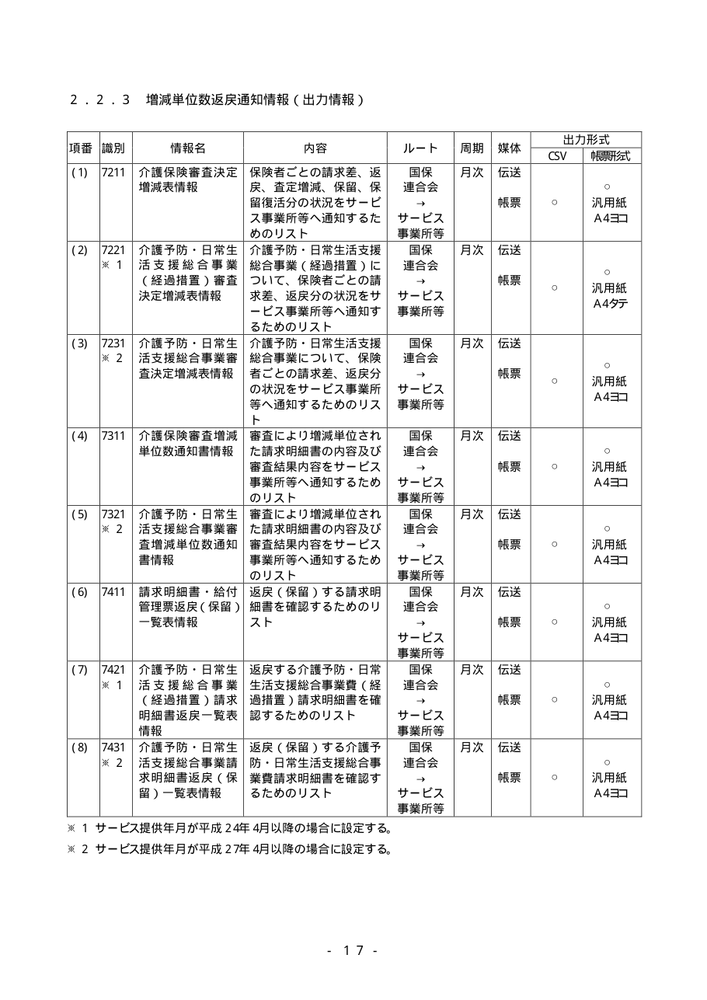
claude-haiku-5-5
- 表1 項番1 項目名がPDFのセルと完全一致しない（部分一致のみ）: '介護保険審査決定増減表情報'
- 表1 項番4 項目名がPDFのセルと完全一致しない（部分一致のみ）: '介護保険審査増減単位数通知書情報'
- 表1 項番6 項目名がPDFのセルと完全一致しない（部分一致のみ）: '請求明細書・給付管理票返戻(保留)一覧表情報'
- 表1 項番7 項目名がPDFのセルと完全一致しない（部分一致のみ）: '介護予防・日常生活支援総合事業（経過措置）請求明細書返戻一覧表情報'
表1 interface_list２．２．３ 増減単位数返戻通知情報（出力情報）
| 項番 | 項目名 | 属性 | 桁数 | 内容 | 必須 | 備考 | その他の列 |
|---|---|---|---|---|---|---|---|
| (1) | 介護保険審査決定増減表情報 | 保険者ごとの請求差、返戻、査定増減、保留、保留復活分の状況をサービス事業所等へ通知するためのリスト | 識別: 7211 ルート: 国保連合会 → サービス事業所等 周期: 月次 媒体: 伝送 帳票 出力形式 > CSV: ○ 出力形式 > 帳票形式: ○ 汎用紙 A4ヨコ | ||||
| (2) | 介護予防・日常生活支援総合事業（経過措置）審査決定増減表情報 | 介護予防・日常生活支援総合事業（経過措置）について、保険者ごとの請求差、返戻分の状況をサービス事業所等へ通知するためのリスト | 識別: 7221 ※ 1 ルート: 国保連合会 → サービス事業所等 周期: 月次 媒体: 伝送 帳票 出力形式 > CSV: ○ 出力形式 > 帳票形式: ○ 汎用紙 A4タテ | ||||
| (3) | 介護予防・日常生活支援総合事業審査決定増減表情報 | 介護予防・日常生活支援総合事業について、保険者ごとの請求差、返戻分の状況をサービス事業所等へ通知するためのリスト | 識別: 7231 ※ 2 ルート: 国保連合会 → サービス事業所等 周期: 月次 媒体: 伝送 帳票 出力形式 > CSV: ○ 出力形式 > 帳票形式: ○ 汎用紙 A4ヨコ | ||||
| (4) | 介護保険審査増減単位数通知書情報 | 審査により増減単位された請求明細書の内容及び審査結果内容をサービス事業所等へ通知するためのリスト | 識別: 7311 ルート: 国保連合会 → サービス事業所等 周期: 月次 媒体: 伝送 帳票 出力形式 > CSV: ○ 出力形式 > 帳票形式: ○ 汎用紙 A4ヨコ | ||||
| (5) | 介護予防・日常生活支援総合事業審査増減単位数通知書情報 | 審査により増減単位された請求明細書の内容及び審査結果内容をサービス事業所等へ通知するためのリスト | 識別: 7321 ※ 2 ルート: 国保連合会 → サービス事業所等 周期: 月次 媒体: 伝送 帳票 出力形式 > CSV: ○ 出力形式 > 帳票形式: ○ 汎用紙 A4ヨコ | ||||
| (6) | 請求明細書・給付管理票返戻(保留)一覧表情報 | 返戻（保留）する請求明細書を確認するためのリスト | 識別: 7411 ルート: 国保連合会 → サービス事業所等 周期: 月次 媒体: 伝送 帳票 出力形式 > CSV: ○ 出力形式 > 帳票形式: ○ 汎用紙 A4ヨコ | ||||
| (7) | 介護予防・日常生活支援総合事業（経過措置）請求明細書返戻一覧表情報 | 返戻する介護予防・日常生活支援総合事業費（経過措置）請求明細書を確認するためのリスト | 識別: 7421 ※ 1 ルート: 国保連合会 → サービス事業所等 周期: 月次 媒体: 伝送 帳票 出力形式 > CSV: ○ 出力形式 > 帳票形式: ○ 汎用紙 A4ヨコ | ||||
| (8) | 介護予防・日常生活支援総合事業請求明細書返戻（保留）一覧表情報 | 返戻（保留）する介護予防・日常生活支援総合事業費請求明細書を確認するためのリスト | 識別: 7431 ※ 2 ルート: 国保連合会 → サービス事業所等 周期: 月次 媒体: 伝送 帳票 出力形式 > CSV: ○ 出力形式 > 帳票形式: ○ 汎用紙 A4ヨコ |
注記
- ※1 サービス提供年月が平成24年4月以降の場合に設定する。
- ※2 サービス提供年月が平成27年4月以降の場合に設定する。
uncertain（モデル自己申告）
- 媒体列の「伝送」「帳票」が選択肢の並びか、両方を表す値かは図からは判断できないため、改行区切りのまま書き写した。
- ルート列の「→」は図的な矢印だが文字として印字されているため、そのまま書き写した。
- 帳票形式列の「汎用紙」と「A4ヨコ」「A4タテ」は行内で折り返されているため、改行区切りで書き写した。
- 2行目のA4タテ、3行目以降のA4ヨコの記載は画像上の判読に基づく。
claude-sonnet-5-5
- 表1 項番1 項目名がPDFのセルと完全一致しない（部分一致のみ）: '介護保険審査決定増減表情報'
- 表1 項番4 項目名がPDFのセルと完全一致しない（部分一致のみ）: '介護保険審査増減単位数通知書情報'
- 表1 項番6 項目名がPDFのセルと完全一致しない（部分一致のみ）: '請求明細書・給付管理票返戻(保留)一覧表情報'
- 表1 項番7 項目名がPDFのセルと完全一致しない（部分一致のみ）: '介護予防・日常生活支援総合事業(経過措置)請求明細書返戻一覧表情報'
表1 interface_list2.2.3 増減単位数返戻通知情報(出力情報)
| 項番 | 項目名 | 属性 | 桁数 | 内容 | 必須 | 備考 | その他の列 |
|---|---|---|---|---|---|---|---|
| (1) | 介護保険審査決定増減表情報 | 保険者ごとの請求差、返戻、査定増減、保留、保留復活分の状況をサービス事業所等へ通知するためのリスト | 識別: 7211 ルート: 国保連合会 → サービス事業所等 周期: 月次 媒体: 伝送 帳票 出力形式 > CSV: ○ 出力形式 > 帳票形式: ○ 汎用紙 A4ヨコ | ||||
| (2) | 介護予防・日常生活支援総合事業(経過措置)審査決定増減表情報 | 介護予防・日常生活支援総合事業(経過措置)について、保険者ごとの請求差、返戻分の状況をサービス事業所等へ通知するためのリスト | 識別: 7221 ※1 ルート: 国保連合会 → サービス事業所等 周期: 月次 媒体: 伝送 帳票 出力形式 > CSV: ○ 出力形式 > 帳票形式: ○ 汎用紙 A4タテ | ||||
| (3) | 介護予防・日常生活支援総合事業審査決定増減表情報 | 介護予防・日常生活支援総合事業について、保険者ごとの請求差、返戻分の状況をサービス事業所等へ通知するためのリスト | 識別: 7231 ※2 ルート: 国保連合会 → サービス事業所等 周期: 月次 媒体: 伝送 帳票 出力形式 > CSV: ○ 出力形式 > 帳票形式: ○ 汎用紙 A4ヨコ | ||||
| (4) | 介護保険審査増減単位数通知書情報 | 審査により増減単位された請求明細書の内容及び審査結果内容をサービス事業所等へ通知するためのリスト | 識別: 7311 ルート: 国保連合会 → サービス事業所等 周期: 月次 媒体: 伝送 帳票 出力形式 > CSV: ○ 出力形式 > 帳票形式: ○ 汎用紙 A4ヨコ | ||||
| (5) | 介護予防・日常生活支援総合事業審査増減単位数通知書情報 | 審査により増減単位された請求明細書の内容及び審査結果内容をサービス事業所等へ通知するためのリスト | 識別: 7321 ※2 ルート: 国保連合会 → サービス事業所等 周期: 月次 媒体: 伝送 帳票 出力形式 > CSV: ○ 出力形式 > 帳票形式: ○ 汎用紙 A4ヨコ | ||||
| (6) | 請求明細書・給付管理票返戻(保留)一覧表情報 | 返戻(保留)する請求明細書を確認するためのリスト | 識別: 7411 ルート: 国保連合会 → サービス事業所等 周期: 月次 媒体: 伝送 帳票 出力形式 > CSV: ○ 出力形式 > 帳票形式: ○ 汎用紙 A4ヨコ | ||||
| (7) | 介護予防・日常生活支援総合事業(経過措置)請求明細書返戻一覧表情報 | 返戻する介護予防・日常生活支援総合事業費(経過措置)請求明細書を確認するためのリスト | 識別: 7421 ※1 ルート: 国保連合会 → サービス事業所等 周期: 月次 媒体: 伝送 帳票 出力形式 > CSV: ○ 出力形式 > 帳票形式: ○ 汎用紙 A4ヨコ | ||||
| (8) | 介護予防・日常生活支援総合事業請求明細書返戻(保留)一覧表情報 | 返戻(保留)する介護予防・日常生活支援総合事業費請求明細書を確認するためのリスト | 識別: 7431 ※2 ルート: 国保連合会 → サービス事業所等 周期: 月次 媒体: 伝送 帳票 出力形式 > CSV: ○ 出力形式 > 帳票形式: ○ 汎用紙 A4ヨコ |
注記
- ※1 サービス提供年月が平成24年4月以降の場合に設定する。
- ※2 サービス提供年月が平成27年4月以降の場合に設定する。
kaigo_jigyosho_r0604_p41 — 印字p.

claude-haiku-5-5
- 表1 項番1 項目名がPDFのセルと完全一致しない（部分一致のみ）: '介護給付費等支払決定額通知書情報'
- 表1 項番2 項目名がPDFのセルと完全一致しない（部分一致のみ）: '介護給付費等支払決定額内訳書情報'
- 表1 項番5 項目名がPDFのセルと完全一致しない（部分一致のみ）: '介護給付費過誤決定通知書情報（事業所分）'
- 表1 項番6 項目名がPDFのセルと完全一致しない（部分一致のみ）: '介護予防・日常生活支援総合事業費（経過措置）過誤決定通知書情報（事業所分）'
- 表1 項番7 項目名がPDFのセルと完全一致しない（部分一致のみ）: '介護給付費再審査決定通知書情報（事業所分）'
表1 interface_list２．２．４ 支払通知情報（出力情報）
| 項番 | 項目名 | 属性 | 桁数 | 内容 | 必須 | 備考 | その他の列 |
|---|---|---|---|---|---|---|---|
| (1) | 介護給付費等支払決定額通知書情報 | サービス事業所等への支払決定額を通知するためのリスト | 識別: 7515 ルート: 国保連合会 → サービス事業所等 周期: 月次 媒体: 伝送 帳票 出力形式 > CSV: ○ 出力形式 > 帳票形式: ○ 汎用紙 A4タテ | ||||
| (2) | 介護給付費等支払決定額内訳書情報 | サービス事業所等へ支払決定額の内訳を通知するためのリスト | 識別: 7521 ルート: 国保連合会 → サービス事業所等 周期: 月次 媒体: 伝送 帳票 出力形式 > CSV: ○ 出力形式 > 帳票形式: ○ 汎用紙 A4ヨコ | ||||
| (3) | 介護予防・日常生活支援総合事業費（経過措置）支払決定額内訳書情報 | 介護予防・日常生活支援総合事業費（経過措置）について、サービス事業所等へ支払決定額の内訳を通知するためのリスト | 識別: 7541 ※ 1 ルート: 国保連合会 → サービス事業所等 周期: 月次 媒体: 伝送 帳票 出力形式 > CSV: ○ 出力形式 > 帳票形式: ○ 汎用紙 A4ヨコ | ||||
| (4) | 介護予防・日常生活支援総合事業費支払決定額内訳書情報 | 介護予防・日常生活支援総合事業費について、サービス事業所等へ支払決定額の内訳を通知するためのリスト | 識別: 7551 ※ 2 ルート: 国保連合会 → サービス事業所等 周期: 月次 媒体: 伝送 帳票 出力形式 > CSV: ○ 出力形式 > 帳票形式: ○ 汎用紙 A4ヨコ | ||||
| (5) | 介護給付費過誤決定通知書情報（事業所分） | サービス事業所等へ過誤申立の決定額を通知するためのリスト | 識別: 7611 ルート: 国保連合会 → サービス事業所等 周期: 月次 媒体: 伝送 帳票 出力形式 > CSV: ○ 出力形式 > 帳票形式: ○ 汎用紙 A4ヨコ | ||||
| (6) | 介護予防・日常生活支援総合事業費（経過措置）過誤決定通知書情報（事業所分） | 介護予防・日常生活支援総合事業費（経過措置）について、サービス事業所等へ過誤申立の決定額を通知するためのリスト | 識別: 7631 ※ 1 ルート: 国保連合会 → サービス事業所等 周期: 月次 媒体: 伝送 帳票 出力形式 > CSV: ○ 出力形式 > 帳票形式: ○ 汎用紙 A4ヨコ | ||||
| (7) | 介護給付費再審査決定通知書情報（事業所分） | サービス事業所等へ再審査請求の決定額を通知するためのリスト | 識別: 7621 ルート: 国保連合会 → サービス事業所等 周期: 月次 媒体: 伝送 帳票 出力形式 > CSV: ○ 出力形式 > 帳票形式: ○ 汎用紙 A4ヨコ | ||||
| (8) | 介護予防・日常生活支援総合事業費過誤決定通知書情報（事業所分） | 介護予防・日常生活支援総合事業費について、サービス事業所等へ過誤申立の決定額を通知するためのリスト | 識別: 7641 ※ 2 ルート: 国保連合会 → サービス事業所等 周期: 月次 媒体: 伝送 帳票 出力形式 > CSV: ○ 出力形式 > 帳票形式: ○ 汎用紙 A4ヨコ | ||||
| (9) | 介護予防・日常生活支援総合事業費再審査決定通知書情報（事業所分） | サービス事業所等へ再審査請求の決定額を通知するためのリスト | 識別: 7651 ※ 2 ルート: 国保連合会 → サービス事業所等 周期: 月次 媒体: 伝送 帳票 出力形式 > CSV: ○ 出力形式 > 帳票形式: ○ 汎用紙 A4ヨコ |
注記
- ※1 サービス提供年月が平成24年4月以降の場合に設定する。
- ※2 サービス提供年月が平成27年4月以降の場合に設定する。
uncertain（モデル自己申告）
- 1行目の媒体セルの「伝送」「帳票」は同一セル内の2段表記として「伝送\n帳票」と書き起こした。
- ルート列の「国保連合会 → サービス事業所等」は原文で矢印が独立した行にあるが、折り返しとして1行にまとめた。
claude-sonnet-5-5
- 表1 項番1 項目名がPDFのセルと完全一致しない（部分一致のみ）: '介護給付費等支払決定額通知書情報'
- 表1 項番2 項目名がPDFのセルと完全一致しない（部分一致のみ）: '介護給付費等支払決定額内訳書情報'
- 表1 項番5 項目名がPDFのセルと完全一致しない（部分一致のみ）: '介護給付費過誤決定通知書情報（事業所分）'
- 表1 項番6 項目名がPDFのセルと完全一致しない（部分一致のみ）: '介護予防・日常生活支援総合事業費（経過措置）過誤決定通知書情報（事業所分）'
- 表1 項番7 項目名がPDFのセルと完全一致しない（部分一致のみ）: '介護給付費再審査決定通知書情報（事業所分）'
表1 interface_list2.2.4 支払通知情報（出力情報）
| 項番 | 項目名 | 属性 | 桁数 | 内容 | 必須 | 備考 | その他の列 |
|---|---|---|---|---|---|---|---|
| (1) | 介護給付費等支払決定額通知書情報 | サービス事業所等への支払決定額を通知するためのリスト | 識別: 7515 ルート: 国保連合会 → サービス事業所等 周期: 月次 媒体: 伝送 帳票 出力形式 > CSV: ○ 出力形式 > 帳票形式: ○ 汎用紙 A4タテ | ||||
| (2) | 介護給付費等支払決定額内訳書情報 | サービス事業所等へ支払決定額の内訳を通知するためのリスト | 識別: 7521 ルート: 国保連合会 → サービス事業所等 周期: 月次 媒体: 伝送 帳票 出力形式 > CSV: ○ 出力形式 > 帳票形式: ○ 汎用紙 A4ヨコ | ||||
| (3) | 介護予防・日常生活支援総合事業費（経過措置）支払決定額内訳書情報 | 介護予防・日常生活支援総合事業費（経過措置）について、サービス事業所等へ支払決定額の内訳を通知するためのリスト | 識別: 7541 ※1 ルート: 国保連合会 → サービス事業所等 周期: 月次 媒体: 伝送 帳票 出力形式 > CSV: ○ 出力形式 > 帳票形式: ○ 汎用紙 A4ヨコ | ||||
| (4) | 介護予防・日常生活支援総合事業費支払決定額内訳書情報 | 介護予防・日常生活支援総合事業費について、サービス事業所等へ支払決定額の内訳を通知するためのリスト | 識別: 7551 ※2 ルート: 国保連合会 → サービス事業所等 周期: 月次 媒体: 伝送 帳票 出力形式 > CSV: ○ 出力形式 > 帳票形式: ○ 汎用紙 A4ヨコ | ||||
| (5) | 介護給付費過誤決定通知書情報（事業所分） | サービス事業所等へ過誤申立の決定額を通知するためのリスト | 識別: 7611 ルート: 国保連合会 → サービス事業所等 周期: 月次 媒体: 伝送 帳票 出力形式 > CSV: ○ 出力形式 > 帳票形式: ○ 汎用紙 A4ヨコ | ||||
| (6) | 介護予防・日常生活支援総合事業費（経過措置）過誤決定通知書情報（事業所分） | 介護予防・日常生活支援総合事業費（経過措置）について、サービス事業所等へ過誤申立の決定額を通知するためのリスト | 識別: 7631 ※1 ルート: 国保連合会 → サービス事業所等 周期: 月次 媒体: 伝送 帳票 出力形式 > CSV: ○ 出力形式 > 帳票形式: ○ 汎用紙 A4ヨコ | ||||
| (7) | 介護給付費再審査決定通知書情報（事業所分） | サービス事業所等へ再審査請求の決定額を通知するためのリスト | 識別: 7621 ルート: 国保連合会 → サービス事業所等 周期: 月次 媒体: 伝送 帳票 出力形式 > CSV: ○ 出力形式 > 帳票形式: ○ 汎用紙 A4ヨコ | ||||
| (8) | 介護予防・日常生活支援総合事業費過誤決定通知書情報（事業所分） | 介護予防・日常生活支援総合事業費について、サービス事業所等へ過誤申立の決定額を通知するためのリスト | 識別: 7641 ※2 ルート: 国保連合会 → サービス事業所等 周期: 月次 媒体: 伝送 帳票 出力形式 > CSV: ○ 出力形式 > 帳票形式: ○ 汎用紙 A4ヨコ | ||||
| (9) | 介護予防・日常生活支援総合事業費再審査決定通知書情報（事業所分） | サービス事業所等へ再審査請求の決定額を通知するためのリスト | 識別: 7651 ※2 ルート: 国保連合会 → サービス事業所等 周期: 月次 媒体: 伝送 帳票 出力形式 > CSV: ○ 出力形式 > 帳票形式: ○ 汎用紙 A4ヨコ |
注記
- ※1 サービス提供年月が平成24年4月以降の場合に設定する。
- ※2 サービス提供年月が平成27年4月以降の場合に設定する。
uncertain（モデル自己申告）
- 帳票形式列のA4の向き表記（タテ/ヨコ）は画像が小さく一部判読が不確か
kaigo_jigyosho_r0604_p42 — 印字p.

claude-haiku-5-5
- 表2 項番1 項目名がPDFのセルと完全一致しない（部分一致のみ）: '主治医意見書作成料請求書情報'
表1 other
| 項番 | 項目名 | 属性 | 桁数 | 内容 | 必須 | 備考 | その他の列 |
|---|---|---|---|---|---|---|---|
| 支払通知書 > 介護給付費等支払決定額通知書情報 | 種別: 支払通知書 出力媒体種別 > 伝送受付分: 伝送返却 出力媒体種別 > 磁気受付分: 帳票返却 出力媒体種別 > 帳票受付分: 帳票返却 | ||||||
| 支払通知書 > 介護給付費等支払決定額内訳書情報 | 種別: 支払通知書 出力媒体種別 > 伝送受付分: 伝送返却 出力媒体種別 > 磁気受付分: 帳票返却 出力媒体種別 > 帳票受付分: 帳票返却 | ||||||
| 支払通知書 > 介護予防・日常生活支援総合事業費（経過措置）支払決定額内訳書情報 | 種別: 支払通知書 出力媒体種別 > 伝送受付分: 伝送返却 出力媒体種別 > 磁気受付分: 帳票返却 出力媒体種別 > 帳票受付分: － | ||||||
| 支払通知書 > 介護予防・日常生活支援総合事業費支払決定額内訳書情報 | 種別: 支払通知書 出力媒体種別 > 伝送受付分: 伝送返却 出力媒体種別 > 磁気受付分: 帳票返却 出力媒体種別 > 帳票受付分: 帳票返却 | ||||||
| 支払通知書 > 介護給付費過誤決定通知書（事業所分）情報 | 種別: 支払通知書 出力媒体種別 > 伝送受付分: 伝送返却 出力媒体種別 > 磁気受付分: 帳票返却 出力媒体種別 > 帳票受付分: 帳票返却 | ||||||
| 支払通知書 > 介護予防・日常生活支援総合事業費経過措置）過誤決定通知書情報（事業所分） | 種別: 支払通知書 出力媒体種別 > 伝送受付分: 伝送返却 出力媒体種別 > 磁気受付分: 帳票返却 出力媒体種別 > 帳票受付分: － | ||||||
| 支払通知書 > 介護給付費再審査決定通知書（事業所分）情報 | 種別: 支払通知書 出力媒体種別 > 伝送受付分: 伝送返却 出力媒体種別 > 磁気受付分: 帳票返却 出力媒体種別 > 帳票受付分: 帳票返却 | ||||||
| 支払通知書 > 介護予防・日常生活支援総合事業費過誤決定通知書情報（事業所分） | 種別: 支払通知書 出力媒体種別 > 伝送受付分: 伝送返却 出力媒体種別 > 磁気受付分: 帳票返却 出力媒体種別 > 帳票受付分: － | ||||||
| 支払通知書 > 介護予防・日常生活支援総合事業費再審査決定通知書情報（事業所分） | 種別: 支払通知書 出力媒体種別 > 伝送受付分: 伝送返却 出力媒体種別 > 磁気受付分: 帳票返却 出力媒体種別 > 帳票受付分: 帳票返却 |
表2 interface_list２．２．５ 主治医意見書作成料請求書情報（入力情報）
| 項番 | 項目名 | 属性 | 桁数 | 内容 | 必須 | 備考 | その他の列 |
|---|---|---|---|---|---|---|---|
| (1) | 主治医意見書作成料請求書情報 | 事業所が決定した主治医意見書作成料の請求書情報 | 識別: 71C1 ルート: 医療機関→国保連合会 周期: 月次 媒体: 磁気 帳票 |
表3 other
| 項番 | 項目名 | 属性 | 桁数 | 内容 | 必須 | 備考 | その他の列 |
|---|---|---|---|---|---|---|---|
| 主治医意見書料支払処理 > 主治医意見書作成料請求書 | 種別: 主治医意見書料支払処理 受付媒体種別 > 伝送: × 受付媒体種別 > 磁気: ○ 受付媒体種別 > 帳票: ○ |
注記
- ○ … 受付可、× … 受付不可
uncertain（モデル自己申告）
- 支払通知書の表で、帳票受付分の斜線セル（項番3、6、8の行）は値なしとして null にした。
- 支払通知書の表で、種別「支払通知書」は縦結合のため全行に同じ値を入れた。
- 支払通知書の表の「介護予防・日常生活支援総合事業費経過措置）過誤決定通知書情報（事業所分）」の行は、画像上で前の「（」が確認できないため原文どおりに書いたが、不確かである。
claude-sonnet-5-5
- 表2 項番1 項目名がPDFのセルと完全一致しない（部分一致のみ）: '主治医意見書作成料請求書情報'
表1 other
| 項番 | 項目名 | 属性 | 桁数 | 内容 | 必須 | 備考 | その他の列 |
|---|---|---|---|---|---|---|---|
| 介護給付費等支払決定額通知書情報 | 種別: 支払通知書 出力媒体種別 > 伝送受付分: 伝送返却 出力媒体種別 > 磁気受付分: 帳票返却 出力媒体種別 > 帳票受付分: 帳票返却 | ||||||
| 介護給付費等支払決定額内訳書情報 | 種別: 支払通知書 出力媒体種別 > 伝送受付分: 伝送返却 出力媒体種別 > 磁気受付分: 帳票返却 出力媒体種別 > 帳票受付分: 帳票返却 | ||||||
| 介護予防・日常生活支援総合事業費（経過措置）支払決定額内訳書情報 | 種別: 支払通知書 出力媒体種別 > 伝送受付分: 伝送返却 出力媒体種別 > 磁気受付分: 帳票返却 出力媒体種別 > 帳票受付分: － | ||||||
| 介護予防・日常生活支援総合事業費支払決定額内訳書情報 | 種別: 支払通知書 出力媒体種別 > 伝送受付分: 伝送返却 出力媒体種別 > 磁気受付分: 帳票返却 出力媒体種別 > 帳票受付分: 帳票返却 | ||||||
| 介護給付費過誤決定通知書（事業所分）情報 | 種別: 支払通知書 出力媒体種別 > 伝送受付分: 伝送返却 出力媒体種別 > 磁気受付分: 帳票返却 出力媒体種別 > 帳票受付分: 帳票返却 | ||||||
| 介護予防・日常生活支援総合事業費経過措置）過誤決定通知書情報（事業所分） | 種別: 支払通知書 出力媒体種別 > 伝送受付分: 伝送返却 出力媒体種別 > 磁気受付分: 帳票返却 出力媒体種別 > 帳票受付分: － | ||||||
| 介護給付費再審査決定通知書（事業所分）情報 | 種別: 支払通知書 出力媒体種別 > 伝送受付分: 伝送返却 出力媒体種別 > 磁気受付分: 帳票返却 出力媒体種別 > 帳票受付分: 帳票返却 | ||||||
| 介護予防・日常生活支援総合事業費過誤決定通知書情報（事業所分） | 種別: 支払通知書 出力媒体種別 > 伝送受付分: 伝送返却 出力媒体種別 > 磁気受付分: 帳票返却 出力媒体種別 > 帳票受付分: － | ||||||
| 介護予防・日常生活支援総合事業費再審査決定通知書情報（事業所分） | 種別: 支払通知書 出力媒体種別 > 伝送受付分: 伝送返却 出力媒体種別 > 磁気受付分: 帳票返却 出力媒体種別 > 帳票受付分: 帳票返却 |
表2 interface_list2.2.5 主治医意見書作成料請求書情報（入力情報）
| 項番 | 項目名 | 属性 | 桁数 | 内容 | 必須 | 備考 | その他の列 |
|---|---|---|---|---|---|---|---|
| (1) | 主治医意見書作成料請求書情報 | 事業所が決定した主治医意見書作成料の請求書情報 | 識別: 71C1 ルート: 医療機関 → 国保連合会 周期: 月次 媒体: 磁気 帳票 |
表3 other
| 項番 | 項目名 | 属性 | 桁数 | 内容 | 必須 | 備考 | その他の列 |
|---|---|---|---|---|---|---|---|
| 主治医意見書作成料請求書 | 種別: 主治医意見書料支払処理 受付媒体種別 > 伝送: × 受付媒体種別 > 磁気: ○ 受付媒体種別 > 帳票: ○ |
注記
- ○ … 受付可、× … 受付不可
uncertain（モデル自己申告）
- 1つ目の表は前ページからの続き。斜線のセルは null とした。
- 「介護予防・日常生活支援総合事業費経過措置）過誤決定通知書情報（事業所分）」は原文どおり（開き括弧なし）。
- 最後の表の帳票名は「主治医意見書作成料請求書」で、セルが途切れて見える可能性あり。
kaigo_jigyosho_r0604_p88 — 印字p.
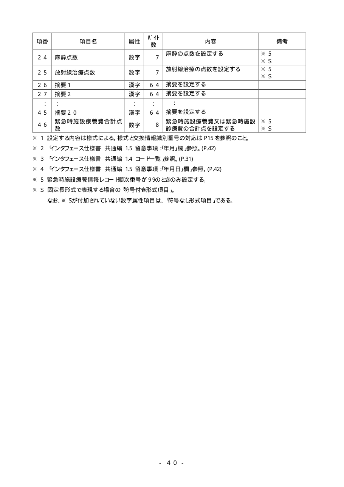
claude-haiku-5-5
- 表1 項番が整数でない行が 1 行
- 表1 項番45 項番が連続していない: 27 → 45
- 表1 桁数が空（原文: ':'）
- 表1 未知の属性: ':'
表1 record_layout 前頁から続く
| 項番 | 項目名 | 属性 | 桁数 | 内容 | 必須 | 備考 | その他の列 |
|---|---|---|---|---|---|---|---|
| 24 | 麻酔点数 | 数字 | 7 | 麻酔の点数を設定する | ※ 5 ※ S | ||
| 25 | 放射線治療点数 | 数字 | 7 | 放射線治療の点数を設定する | ※ 5 ※ S | ||
| 26 | 摘要1 | 漢字 | 64 | 摘要を設定する | |||
| 27 | 摘要2 | 漢字 | 64 | 摘要を設定する | |||
| : | : | : | : | : | |||
| 45 | 摘要20 | 漢字 | 64 | 摘要を設定する | |||
| 46 | 緊急時施設療養費合計点数 | 数字 | 8 | 緊急時施設療養費又は緊急時施設診療費の合計点を設定する | ※ 5 ※ S |
注記
- ※1 設定する内容は様式による。様式と交換情報識別番号の対応はP15を参照のこと。
- ※2 「インタフェース仕様書 共通編 1.5 留意事項 「年月」欄」参照。(P.42)
- ※3 「インタフェース仕様書 共通編 1.4 コード一覧」参照。(P.31)
- ※4 「インタフェース仕様書 共通編 1.5 留意事項 「年月日」欄」参照。(P.42)
- ※5 緊急時施設療養情報レコード順次番号が99のときのみ設定する。
- ※S 固定長形式で表現する場合の「符号付き形式項目」。
- なお、※Sが付加されていない数字属性項目は、「符号なし形式項目」である。
uncertain（モデル自己申告）
- このページには表見出しがなく、項番24から始まるため前ページからの続きと判断した。レコード名「緊急時施設療養情報レコード」は注記本文から読み取った。
- 項番の欄に「:」のみの省略行があり、項番・項目名・属性・バイト数・内容の各欄がすべて「:」である。項番は整数化できないため no を null とした。
claude-sonnet-5-5
- 表1 項番が整数でない行が 1 行
- 表1 項番45 項番が連続していない: 27 → 45
- 表1 桁数が空（原文: '：'）
- 表1 未知の属性: '：'
表1 record_layout 前頁から続く
| 項番 | 項目名 | 属性 | 桁数 | 内容 | 必須 | 備考 | その他の列 |
|---|---|---|---|---|---|---|---|
| ２４ | 麻酔点数 | 数字 | 7 | 麻酔の点数を設定する | ※5 ※S | ||
| ２５ | 放射線治療点数 | 数字 | 7 | 放射線治療の点数を設定する | ※5 ※S | ||
| ２６ | 摘要1 | 漢字 | 64 | 摘要を設定する | |||
| ２７ | 摘要2 | 漢字 | 64 | 摘要を設定する | |||
| ： | ： | ： | ： | ： | |||
| ４５ | 摘要20 | 漢字 | 64 | 摘要を設定する | |||
| ４６ | 緊急時施設療養費合計点数 | 数字 | 8 | 緊急時施設療養費又は緊急時施設診療費の合計点を設定する | ※5 ※S |
注記
- ※1 設定する内容は様式による。様式と交換情報識別番号の対応は P15 を参照のこと。
- ※2 「インタフェース仕様書 共通編 1.5 留意事項 :「年月」欄」参照。(P.42)
- ※3 「インタフェース仕様書 共通編 1.4 コード一覧」参照。(P.31)
- ※4 「インタフェース仕様書 共通編 1.5 留意事項 :「年月日」欄」参照。(P.42)
- ※5 緊急時施設療養情報レコード順次番号が99のときのみ設定する。
- ※S 固定長形式で表現する場合の「符号付き形式項目」。 なお、※Sが付加されていない数字属性項目は、「符号なし形式項目」である。
uncertain（モデル自己申告）
- 項番「：」の省略行は項番・属性・バイト数・項目名・内容とも「：」のみで、位置ずれがあり原文どおり記載
- 表は前ページからの続き（項番24から開始）
kaigo_jigyosho_r0604_p90 — 印字p.
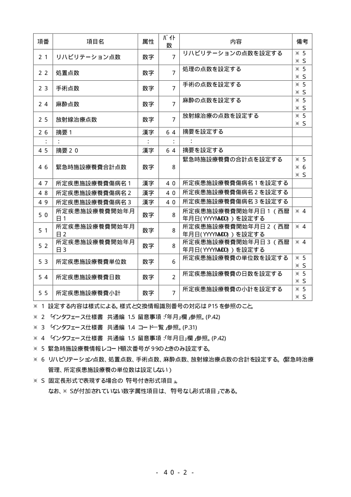
claude-haiku-5-5
- 表1 項番が整数でない行が 1 行
- 表1 項番45 項番が連続していない: 26 → 45
- 表1 桁数が空（原文: '：'）
- 表1 未知の属性: '：'
表1 record_layout 前頁から続く
| 項番 | 項目名 | 属性 | 桁数 | 内容 | 必須 | 備考 | その他の列 |
|---|---|---|---|---|---|---|---|
| 21 | リハビリテーション点数 | 数字 | 7 | リハビリテーションの点数を設定する | ※ 5 ※ S | ||
| 22 | 処置点数 | 数字 | 7 | 処理の点数を設定する | ※ 5 ※ S | ||
| 23 | 手術点数 | 数字 | 7 | 手術の点数を設定する | ※ 5 ※ S | ||
| 24 | 麻酔点数 | 数字 | 7 | 麻酔の点数を設定する | ※ 5 ※ S | ||
| 25 | 放射線治療点数 | 数字 | 7 | 放射線治療の点数を設定する | ※ 5 ※ S | ||
| 26 | 摘要1 | 漢字 | 64 | 摘要を設定する | |||
| ： | ： | ： | ： | ： | |||
| 45 | 摘要20 | 漢字 | 64 | 摘要を設定する | |||
| 46 | 緊急時施設療養費合計点数 | 数字 | 8 | 緊急時施設療養費の合計点を設定する | ※ 5 ※ 6 ※ S | ||
| 47 | 所定疾患施設療養費傷病名1 | 漢字 | 40 | 所定疾患施設療養費傷病名1を設定する | |||
| 48 | 所定疾患施設療養費傷病名2 | 漢字 | 40 | 所定疾患施設療養費傷病名2を設定する | |||
| 49 | 所定疾患施設療養費傷病名3 | 漢字 | 40 | 所定疾患施設療養費傷病名3を設定する | |||
| 50 | 所定疾患施設療養費開始年月日1 | 数字 | 8 | 所定疾患施設療養費開始年月日1（西暦年月日(YYYYMMDD)）を設定する | ※ 4 | ||
| 51 | 所定疾患施設療養費開始年月日2 | 数字 | 8 | 所定疾患施設療養費開始年月日2（西暦年月日(YYYYMMDD)）を設定する | ※ 4 | ||
| 52 | 所定疾患施設療養費開始年月日3 | 数字 | 8 | 所定疾患施設療養費開始年月日3（西暦年月日(YYYYMMDD)）を設定する | ※ 4 | ||
| 53 | 所定疾患施設療養費単位数 | 数字 | 6 | 所定疾患施設療養費の単位数を設定する | ※ 5 ※ S | ||
| 54 | 所定疾患施設療養費日数 | 数字 | 2 | 所定疾患施設療養費の日数を設定する | ※ 5 ※ S | ||
| 55 | 所定疾患施設療養費小計 | 数字 | 7 | 所定疾患施設療養費の小計を設定する | ※ 5 ※ S |
注記
- ※1 設定する内容は様式による。様式と交換情報識別番号の対応はP15を参照のこと。
- ※2 「インタフェース仕様書 共通編 1.5 留意事項 「年月」欄」参照。(P.42)
- ※3 「インタフェース仕様書 共通編 1.4 コード一覧」参照。(P.31)
- ※4 「インタフェース仕様書 共通編 1.5 留意事項 「年月日」欄」参照。(P.42)
- ※5 緊急時施設療養情報レコード順次番号が99のときのみ設定する。
- ※6 リハビリテーション点数、処置点数、手術点数、麻酔点数、放射線治療点数の合計を設定する。(緊急時治療管理、所定疾患施設療養の単位数は設定しない)
- ※S 固定長形式で表現する場合の「符号付き形式項目」。なお、※Sが付加されていない数字属性項目は、「符号なし形式項目」である。
uncertain（モデル自己申告）
- 項番26〜45の間の「：」の行は、項番の代わりに省略を表す行なので、その行を items に no null・name_path ["："] として書き起こした。
- 表見出しがなくヘッダ行が先頭にあるため continued_from_prev_page を true としたが、前ページの有無は確認できていない。
- record.name は注※5の「緊急時施設療養情報レコード」から取った。exchange_id と parent は本ページからは読み取れないため空文字とした。
- 注※2〜※4の引用符「」は原文の括弧表記を近似したもの。
claude-sonnet-5-5
- 表1 項番が整数でない行が 1 行
- 表1 項番45 項番が連続していない: 26 → 45
- 表1 桁数が空（原文: ':'）
- 表1 未知の属性: ':'
表1 record_layout 前頁から続く
| 項番 | 項目名 | 属性 | 桁数 | 内容 | 必須 | 備考 | その他の列 |
|---|---|---|---|---|---|---|---|
| 21 | リハビリテーション点数 | 数字 | 7 | リハビリテーションの点数を設定する | ※5 ※S | ||
| 22 | 処置点数 | 数字 | 7 | 処理の点数を設定する | ※5 ※S | ||
| 23 | 手術点数 | 数字 | 7 | 手術の点数を設定する | ※5 ※S | ||
| 24 | 麻酔点数 | 数字 | 7 | 麻酔の点数を設定する | ※5 ※S | ||
| 25 | 放射線治療点数 | 数字 | 7 | 放射線治療の点数を設定する | ※5 ※S | ||
| 26 | 摘要1 | 漢字 | 64 | 摘要を設定する | |||
| : | : | : | : | : | |||
| 45 | 摘要20 | 漢字 | 64 | 摘要を設定する | |||
| 46 | 緊急時施設療養費合計点数 | 数字 | 8 | 緊急時施設療養費の合計点を設定する | ※5 ※6 ※S | ||
| 47 | 所定疾患施設療養費傷病名1 | 漢字 | 40 | 所定疾患施設療養費傷病名1を設定する | |||
| 48 | 所定疾患施設療養費傷病名2 | 漢字 | 40 | 所定疾患施設療養費傷病名2を設定する | |||
| 49 | 所定疾患施設療養費傷病名3 | 漢字 | 40 | 所定疾患施設療養費傷病名3を設定する | |||
| 50 | 所定疾患施設療養費開始年月日1 | 数字 | 8 | 所定疾患施設療養費開始年月日1(西暦年月日(YYYYMMDD))を設定する | ※4 | ||
| 51 | 所定疾患施設療養費開始年月日2 | 数字 | 8 | 所定疾患施設療養費開始年月日2(西暦年月日(YYYYMMDD))を設定する | ※4 | ||
| 52 | 所定疾患施設療養費開始年月日3 | 数字 | 8 | 所定疾患施設療養費開始年月日3(西暦年月日(YYYYMMDD))を設定する | ※4 | ||
| 53 | 所定疾患施設療養費単位数 | 数字 | 6 | 所定疾患施設療養費の単位数を設定する | ※5 ※S | ||
| 54 | 所定疾患施設療養費日数 | 数字 | 2 | 所定疾患施設療養費の日数を設定する | ※5 ※S | ||
| 55 | 所定疾患施設療養費小計 | 数字 | 7 | 所定疾患施設療養費の小計を設定する | ※5 ※S |
注記
- ※1 設定する内容は様式による。様式と交換情報識別番号の対応は P15 を参照のこと。
- ※2 「インタフェース仕様書 共通編 1.5 留意事項 :「年月」欄」参照。(P.42)
- ※3 「インタフェース仕様書 共通編 1.4 コード一覧」参照。(P.31)
- ※4 「インタフェース仕様書 共通編 1.5 留意事項 :「年月日」欄」参照。(P.42)
- ※5 緊急時施設療養情報レコード順次番号が99のときのみ設定する。
- ※6 リハビリテーション点数、処置点数、手術点数、麻酔点数、放射線治療点数の合計を設定する。(緊急時治療管理、所定疾患施設療養の単位数は設定しない)
- ※S 固定長形式で表現する場合の「符号付き形式項目」。 なお、※Sが付加されていない数字属性項目は、「符号なし形式項目」である。
uncertain（モデル自己申告）
- 項番26と45の間の「:」行は省略記号行として書き写した
- 前ページからの続きの表(見出し行は繰り返し)
kaigo_jigyosho_r0604_p92 — 印字p.
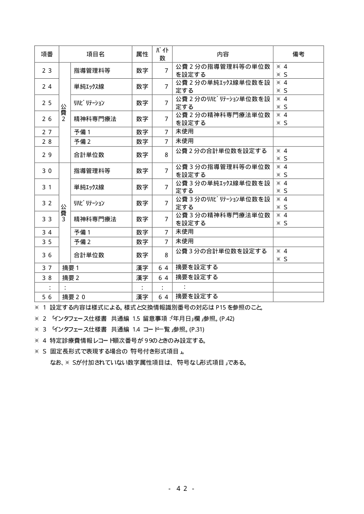
claude-haiku-5-5
- 表1 項番が整数でない行が 1 行
- 表1 項番56 項番が連続していない: 38 → 56
- 表1 桁数が空（原文: ':'）
- 表1 未知の属性: ':'
表1 record_layout 前頁から続く
| 項番 | 項目名 | 属性 | 桁数 | 内容 | 必須 | 備考 | その他の列 |
|---|---|---|---|---|---|---|---|
| 23 | 公費2 > 指導管理料等 | 数字 | 7 | 公費2分の指導管理料等の単位数を設定する | ※ 4 ※ S | ||
| 24 | 公費2 > 単純ｴｯｸｽ線 | 数字 | 7 | 公費2分の単純ｴｯｸｽ線単位数を設定する | ※ 4 ※ S | ||
| 25 | 公費2 > ﾘﾊﾋﾞﾘﾃｰｼｮﾝ | 数字 | 7 | 公費2分のﾘﾊﾋﾞﾘﾃｰｼｮﾝ単位数を設定する | ※ 4 ※ S | ||
| 26 | 公費2 > 精神科専門療法 | 数字 | 7 | 公費2分の精神科専門療法単位数を設定する | ※ 4 ※ S | ||
| 27 | 公費2 > 予備1 | 数字 | 7 | 未使用 | |||
| 28 | 公費2 > 予備2 | 数字 | 7 | 未使用 | |||
| 29 | 公費2 > 合計単位数 | 数字 | 8 | 公費2分の合計単位数を設定する | ※ 4 ※ S | ||
| 30 | 公費3 > 指導管理料等 | 数字 | 7 | 公費3分の指導管理料等の単位数を設定する | ※ 4 ※ S | ||
| 31 | 公費3 > 単純ｴｯｸｽ線 | 数字 | 7 | 公費3分の単純ｴｯｸｽ線単位数を設定する | ※ 4 ※ S | ||
| 32 | 公費3 > ﾘﾊﾋﾞﾘﾃｰｼｮﾝ | 数字 | 7 | 公費3分のﾘﾊﾋﾞﾘﾃｰｼｮﾝ単位数を設定する | ※ 4 ※ S | ||
| 33 | 公費3 > 精神科専門療法 | 数字 | 7 | 公費3分の精神科専門療法単位数を設定する | ※ 4 ※ S | ||
| 34 | 公費3 > 予備1 | 数字 | 7 | 未使用 | |||
| 35 | 公費3 > 予備2 | 数字 | 7 | 未使用 | |||
| 36 | 公費3 > 合計単位数 | 数字 | 8 | 公費3分の合計単位数を設定する | ※ 4 ※ S | ||
| 37 | 摘要1 | 漢字 | 64 | 摘要を設定する | |||
| 38 | 摘要2 | 漢字 | 64 | 摘要を設定する | |||
| : | : | : | : | : | |||
| 56 | 摘要20 | 漢字 | 64 | 摘要を設定する |
注記
- ※1 設定する内容は様式による。様式と交換情報識別番号の対応はP15を参照のこと。
- ※2 「インタフェース仕様書 共通編 1.5 留意事項 :「年月日」欄」参照。(P.42)
- ※3 「インタフェース仕様書 共通編 1.4 コード一覧」参照。(P.31)
- ※4 特定診療費情報レコード順次番号が99のときのみ設定する。
- ※S 固定長形式で表現する場合の「符号付き形式項目」。
- なお、※Sが付加されていない数字属性項目は、「符号なし形式項目」である。
uncertain（モデル自己申告）
- 表の先頭に表見出しがなく、項番23から始まるため前ページからの続きと判断した。レコード名・交換情報識別番号は本ページから読み取れないため record は空文字とした。
- 「公費2」「公費3」は項目名の左に縦に結合された見出しと判断し name_path に入れた。
- 項番の欄に「：」の行（省略記号）があり、no は null、no_raw は ":" とした。
- 「単純ｴｯｸｽ線」「ﾘﾊﾋﾞﾘﾃｰｼｮﾝ」は小さい仮名の判別に自信がないため、原文の表記と異なる可能性がある。
- 脚注※2の空白や句読点の位置は画像から正確に判別できなかった。
claude-sonnet-5-5
- 表1 項番が整数でない行が 1 行
- 表1 項番56 項番が連続していない: 38 → 56
- 表1 桁数が空（原文: '：'）
- 表1 未知の属性: '：'
表1 record_layout 前頁から続く
| 項番 | 項目名 | 属性 | 桁数 | 内容 | 必須 | 備考 | その他の列 |
|---|---|---|---|---|---|---|---|
| ２３ | 公費2 > 指導管理料等 | 数字 | 7 | 公費２分の指導管理料等の単位数を設定する | ※４ ※Ｓ | ||
| ２４ | 公費2 > 単純ｴｯｸｽ線 | 数字 | 7 | 公費２分の単純ｴｯｸｽ線単位数を設定する | ※４ ※Ｓ | ||
| ２５ | 公費2 > ﾘﾊﾋﾞﾘﾃｰｼｮﾝ | 数字 | 7 | 公費２分のﾘﾊﾋﾞﾘﾃｰｼｮﾝ単位数を設定する | ※４ ※Ｓ | ||
| ２６ | 公費2 > 精神科専門療法 | 数字 | 7 | 公費２分の精神科専門療法単位数を設定する | ※４ ※Ｓ | ||
| ２７ | 公費2 > 予備1 | 数字 | 7 | 未使用 | |||
| ２８ | 公費2 > 予備2 | 数字 | 7 | 未使用 | |||
| ２９ | 公費2 > 合計単位数 | 数字 | 8 | 公費２分の合計単位数を設定する | ※４ ※Ｓ | ||
| ３０ | 公費3 > 指導管理料等 | 数字 | 7 | 公費３分の指導管理料等の単位数を設定する | ※４ ※Ｓ | ||
| ３１ | 公費3 > 単純ｴｯｸｽ線 | 数字 | 7 | 公費３分の単純ｴｯｸｽ線単位数を設定する | ※４ ※Ｓ | ||
| ３２ | 公費3 > ﾘﾊﾋﾞﾘﾃｰｼｮﾝ | 数字 | 7 | 公費３分のﾘﾊﾋﾞﾘﾃｰｼｮﾝ単位数を設定する | ※４ ※Ｓ | ||
| ３３ | 公費3 > 精神科専門療法 | 数字 | 7 | 公費３分の精神科専門療法単位数を設定する | ※４ ※Ｓ | ||
| ３４ | 公費3 > 予備1 | 数字 | 7 | 未使用 | |||
| ３５ | 公費3 > 予備2 | 数字 | 7 | 未使用 | |||
| ３６ | 公費3 > 合計単位数 | 数字 | 8 | 公費３分の合計単位数を設定する | ※４ ※Ｓ | ||
| ３７ | 摘要1 | 漢字 | 64 | 摘要を設定する | |||
| ３８ | 摘要2 | 漢字 | 64 | 摘要を設定する | |||
| ： | ： | ： | ： | ： | |||
| ５６ | 摘要20 | 漢字 | 64 | 摘要を設定する |
注記
- ※1 設定する内容は様式による。様式と交換情報識別番号の対応は P15 を参照のこと。
- ※2 「インタフェース仕様書 共通編 1.5 留意事項 :「年月日」欄」参照。(P.42)
- ※3 「インタフェース仕様書 共通編 1.4 コード一覧」参照。(P.31)
- ※4 特定診療費情報レコード順次番号が99のときのみ設定する。
- ※S 固定長形式で表現する場合の「符号付き形式項目」。 なお、※Sが付加されていない数字属性項目は、「符号なし形式項目」である。
uncertain（モデル自己申告）
- 表は前ページからの続き（項番23から開始）。
- 「：」行は各列とも「：」のみで、項番・属性・バイト数・内容が省略記号。項目名は列位置から「：」と判断。
kaigo_jigyosho_r0604_p105 — 印字p.
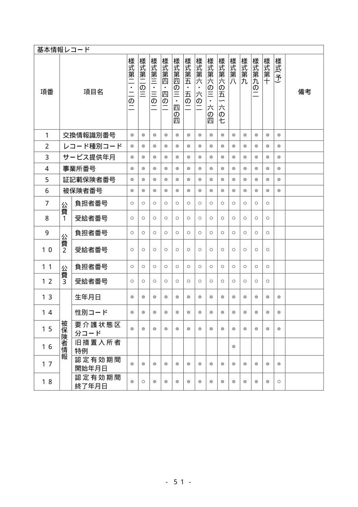
claude-haiku-5-5
- 表1 項番2 項目名がPDFのセルと完全一致しない（部分一致のみ）: 'レコード種別コード'
- [改ページ] p105→p106 の連続性 OK
表1 required_matrix基本情報レコード 次頁へ続く
| 項番 | 項目名 | 属性 | 桁数 | 内容 | 必須 | 備考 | その他の列 |
|---|---|---|---|---|---|---|---|
| 1 | 交換情報識別番号 | 様式第二・二の二:◎ 様式第二の三:◎ 様式第三・三の二:◎ 様式第四・四の二:◎ 様式第四の三・四の四:◎ 様式第五・五の二:◎ 様式第六・六の二:◎ 様式第六の三・六の四:◎ 様式第六の五〜六の七:◎ 様式第八:◎ 様式第九:◎ 様式第九の二:◎ 様式第十:◎ 様式(予):◎ | |||||
| 2 | レコード種別コード | 様式第二・二の二:◎ 様式第二の三:◎ 様式第三・三の二:◎ 様式第四・四の二:◎ 様式第四の三・四の四:◎ 様式第五・五の二:◎ 様式第六・六の二:◎ 様式第六の三・六の四:◎ 様式第六の五〜六の七:◎ 様式第八:◎ 様式第九:◎ 様式第九の二:◎ 様式第十:◎ 様式(予):◎ | |||||
| 3 | サービス提供年月 | 様式第二・二の二:◎ 様式第二の三:◎ 様式第三・三の二:◎ 様式第四・四の二:◎ 様式第四の三・四の四:◎ 様式第五・五の二:◎ 様式第六・六の二:◎ 様式第六の三・六の四:◎ 様式第六の五〜六の七:◎ 様式第八:◎ 様式第九:◎ 様式第九の二:◎ 様式第十:◎ 様式(予):◎ | |||||
| 4 | 事業所番号 | 様式第二・二の二:◎ 様式第二の三:◎ 様式第三・三の二:◎ 様式第四・四の二:◎ 様式第四の三・四の四:◎ 様式第五・五の二:◎ 様式第六・六の二:◎ 様式第六の三・六の四:◎ 様式第六の五〜六の七:◎ 様式第八:◎ 様式第九:◎ 様式第九の二:◎ 様式第十:◎ 様式(予):◎ | |||||
| 5 | 証記載保険者番号 | 様式第二・二の二:◎ 様式第二の三:◎ 様式第三・三の二:◎ 様式第四・四の二:◎ 様式第四の三・四の四:◎ 様式第五・五の二:◎ 様式第六・六の二:◎ 様式第六の三・六の四:◎ 様式第六の五〜六の七:◎ 様式第八:◎ 様式第九:◎ 様式第九の二:◎ 様式第十:◎ 様式(予):◎ | |||||
| 6 | 被保険者番号 | 様式第二・二の二:◎ 様式第二の三:◎ 様式第三・三の二:◎ 様式第四・四の二:◎ 様式第四の三・四の四:◎ 様式第五・五の二:◎ 様式第六・六の二:◎ 様式第六の三・六の四:◎ 様式第六の五〜六の七:◎ 様式第八:◎ 様式第九:◎ 様式第九の二:◎ 様式第十:◎ 様式(予):◎ | |||||
| 7 | 公費1 > 負担者番号 | 様式第二・二の二:○ 様式第二の三:○ 様式第三・三の二:○ 様式第四・四の二:○ 様式第四の三・四の四:○ 様式第五・五の二:○ 様式第六・六の二:○ 様式第六の三・六の四:○ 様式第六の五〜六の七:○ 様式第八:○ 様式第九:○ 様式第九の二:○ 様式第十:○ 様式(予):－ | |||||
| 8 | 公費1 > 受給者番号 | 様式第二・二の二:○ 様式第二の三:○ 様式第三・三の二:○ 様式第四・四の二:○ 様式第四の三・四の四:○ 様式第五・五の二:○ 様式第六・六の二:○ 様式第六の三・六の四:○ 様式第六の五〜六の七:○ 様式第八:○ 様式第九:○ 様式第九の二:○ 様式第十:○ 様式(予):－ | |||||
| 9 | 公費2 > 負担者番号 | 様式第二・二の二:○ 様式第二の三:○ 様式第三・三の二:○ 様式第四・四の二:○ 様式第四の三・四の四:○ 様式第五・五の二:○ 様式第六・六の二:○ 様式第六の三・六の四:○ 様式第六の五〜六の七:○ 様式第八:○ 様式第九:○ 様式第九の二:○ 様式第十:○ 様式(予):－ | |||||
| 10 | 公費2 > 受給者番号 | 様式第二・二の二:○ 様式第二の三:○ 様式第三・三の二:○ 様式第四・四の二:○ 様式第四の三・四の四:○ 様式第五・五の二:○ 様式第六・六の二:○ 様式第六の三・六の四:○ 様式第六の五〜六の七:○ 様式第八:○ 様式第九:○ 様式第九の二:○ 様式第十:○ 様式(予):－ | |||||
| 11 | 公費3 > 負担者番号 | 様式第二・二の二:○ 様式第二の三:○ 様式第三・三の二:○ 様式第四・四の二:○ 様式第四の三・四の四:○ 様式第五・五の二:○ 様式第六・六の二:○ 様式第六の三・六の四:○ 様式第六の五〜六の七:○ 様式第八:○ 様式第九:○ 様式第九の二:○ 様式第十:○ 様式(予):－ | |||||
| 12 | 公費3 > 受給者番号 | 様式第二・二の二:○ 様式第二の三:○ 様式第三・三の二:○ 様式第四・四の二:○ 様式第四の三・四の四:○ 様式第五・五の二:○ 様式第六・六の二:○ 様式第六の三・六の四:○ 様式第六の五〜六の七:○ 様式第八:○ 様式第九:○ 様式第九の二:○ 様式第十:○ 様式(予):－ | |||||
| 13 | 被保険者情報 > 生年月日 | 様式第二・二の二:◎ 様式第二の三:◎ 様式第三・三の二:◎ 様式第四・四の二:◎ 様式第四の三・四の四:◎ 様式第五・五の二:◎ 様式第六・六の二:◎ 様式第六の三・六の四:◎ 様式第六の五〜六の七:◎ 様式第八:◎ 様式第九:◎ 様式第九の二:◎ 様式第十:◎ 様式(予):◎ | |||||
| 14 | 被保険者情報 > 性別コード | 様式第二・二の二:◎ 様式第二の三:◎ 様式第三・三の二:◎ 様式第四・四の二:◎ 様式第四の三・四の四:◎ 様式第五・五の二:◎ 様式第六・六の二:◎ 様式第六の三・六の四:◎ 様式第六の五〜六の七:◎ 様式第八:◎ 様式第九:◎ 様式第九の二:◎ 様式第十:◎ 様式(予):◎ | |||||
| 15 | 被保険者情報 > 要介護状態区分コード | 様式第二・二の二:◎ 様式第二の三:◎ 様式第三・三の二:◎ 様式第四・四の二:◎ 様式第四の三・四の四:◎ 様式第五・五の二:◎ 様式第六・六の二:◎ 様式第六の三・六の四:◎ 様式第六の五〜六の七:◎ 様式第八:◎ 様式第九:◎ 様式第九の二:◎ 様式第十:◎ 様式(予):◎ | |||||
| 16 | 被保険者情報 > 旧措置入所者特例 | 様式第二・二の二:－ 様式第二の三:－ 様式第三・三の二:－ 様式第四・四の二:－ 様式第四の三・四の四:－ 様式第五・五の二:－ 様式第六・六の二:－ 様式第六の三・六の四:－ 様式第六の五〜六の七:－ 様式第八:◎ 様式第九:－ 様式第九の二:－ 様式第十:－ 様式(予):－ | |||||
| 17 | 被保険者情報 > 認定有効期間開始年月日 | 様式第二・二の二:◎ 様式第二の三:◎ 様式第三・三の二:◎ 様式第四・四の二:◎ 様式第四の三・四の四:◎ 様式第五・五の二:◎ 様式第六・六の二:◎ 様式第六の三・六の四:◎ 様式第六の五〜六の七:◎ 様式第八:◎ 様式第九:◎ 様式第九の二:◎ 様式第十:◎ 様式(予):◎ | |||||
| 18 | 被保険者情報 > 認定有効期間終了年月日 | 様式第二・二の二:◎ 様式第二の三:○ 様式第三・三の二:◎ 様式第四・四の二:◎ 様式第四の三・四の四:◎ 様式第五・五の二:◎ 様式第六・六の二:◎ 様式第六の三・六の四:◎ 様式第六の五〜六の七:◎ 様式第八:◎ 様式第九:◎ 様式第九の二:◎ 様式第十:◎ 様式(予):○ |
claude-sonnet-5-5
- 表1 [列] 原本の文字に無い列名: 様式第六の五～六の七
- 表1 項番2 項目名がPDFのセルと完全一致しない（部分一致のみ）: 'レコード種別コード'
- [改ページ] 前後ページで列見出しの書き起こしが一致しない
表1 required_matrix基本情報レコード 次頁へ続く
| 項番 | 項目名 | 属性 | 桁数 | 内容 | 必須 | 備考 | その他の列 |
|---|---|---|---|---|---|---|---|
| 1 | 交換情報識別番号 | 様式第二・二の二:◎ 様式第二の三:◎ 様式第三・三の二:◎ 様式第四・四の二:◎ 様式第四の三・四の四:◎ 様式第五・五の二:◎ 様式第六・六の二:◎ 様式第六の三・六の四:◎ 様式第六の五～六の七:◎ 様式第八:◎ 様式第九:◎ 様式第九の二:◎ 様式第十:◎ 様式(予):◎ | |||||
| 2 | レコード種別コード | 様式第二・二の二:◎ 様式第二の三:◎ 様式第三・三の二:◎ 様式第四・四の二:◎ 様式第四の三・四の四:◎ 様式第五・五の二:◎ 様式第六・六の二:◎ 様式第六の三・六の四:◎ 様式第六の五～六の七:◎ 様式第八:◎ 様式第九:◎ 様式第九の二:◎ 様式第十:◎ 様式(予):◎ | |||||
| 3 | サービス提供年月 | 様式第二・二の二:◎ 様式第二の三:◎ 様式第三・三の二:◎ 様式第四・四の二:◎ 様式第四の三・四の四:◎ 様式第五・五の二:◎ 様式第六・六の二:◎ 様式第六の三・六の四:◎ 様式第六の五～六の七:◎ 様式第八:◎ 様式第九:◎ 様式第九の二:◎ 様式第十:◎ 様式(予):◎ | |||||
| 4 | 事業所番号 | 様式第二・二の二:◎ 様式第二の三:◎ 様式第三・三の二:◎ 様式第四・四の二:◎ 様式第四の三・四の四:◎ 様式第五・五の二:◎ 様式第六・六の二:◎ 様式第六の三・六の四:◎ 様式第六の五～六の七:◎ 様式第八:◎ 様式第九:◎ 様式第九の二:◎ 様式第十:◎ 様式(予):◎ | |||||
| 5 | 証記載保険者番号 | 様式第二・二の二:◎ 様式第二の三:◎ 様式第三・三の二:◎ 様式第四・四の二:◎ 様式第四の三・四の四:◎ 様式第五・五の二:◎ 様式第六・六の二:◎ 様式第六の三・六の四:◎ 様式第六の五～六の七:◎ 様式第八:◎ 様式第九:◎ 様式第九の二:◎ 様式第十:◎ 様式(予):◎ | |||||
| 6 | 被保険者番号 | 様式第二・二の二:◎ 様式第二の三:◎ 様式第三・三の二:◎ 様式第四・四の二:◎ 様式第四の三・四の四:◎ 様式第五・五の二:◎ 様式第六・六の二:◎ 様式第六の三・六の四:◎ 様式第六の五～六の七:◎ 様式第八:◎ 様式第九:◎ 様式第九の二:◎ 様式第十:◎ 様式(予):◎ | |||||
| 7 | 公費1 > 負担者番号 | 様式第二・二の二:○ 様式第二の三:○ 様式第三・三の二:○ 様式第四・四の二:○ 様式第四の三・四の四:○ 様式第五・五の二:○ 様式第六・六の二:○ 様式第六の三・六の四:○ 様式第六の五～六の七:○ 様式第八:○ 様式第九:○ 様式第九の二:○ 様式第十:○ 様式(予):－ | |||||
| 8 | 公費1 > 受給者番号 | 様式第二・二の二:○ 様式第二の三:○ 様式第三・三の二:○ 様式第四・四の二:○ 様式第四の三・四の四:○ 様式第五・五の二:○ 様式第六・六の二:○ 様式第六の三・六の四:○ 様式第六の五～六の七:○ 様式第八:○ 様式第九:○ 様式第九の二:○ 様式第十:○ 様式(予):－ | |||||
| 9 | 公費2 > 負担者番号 | 様式第二・二の二:○ 様式第二の三:○ 様式第三・三の二:○ 様式第四・四の二:○ 様式第四の三・四の四:○ 様式第五・五の二:○ 様式第六・六の二:○ 様式第六の三・六の四:○ 様式第六の五～六の七:○ 様式第八:○ 様式第九:○ 様式第九の二:○ 様式第十:○ 様式(予):－ | |||||
| 10 | 公費2 > 受給者番号 | 様式第二・二の二:○ 様式第二の三:○ 様式第三・三の二:○ 様式第四・四の二:○ 様式第四の三・四の四:○ 様式第五・五の二:○ 様式第六・六の二:○ 様式第六の三・六の四:○ 様式第六の五～六の七:○ 様式第八:○ 様式第九:○ 様式第九の二:○ 様式第十:○ 様式(予):－ | |||||
| 11 | 公費3 > 負担者番号 | 様式第二・二の二:○ 様式第二の三:○ 様式第三・三の二:○ 様式第四・四の二:○ 様式第四の三・四の四:○ 様式第五・五の二:○ 様式第六・六の二:○ 様式第六の三・六の四:○ 様式第六の五～六の七:○ 様式第八:○ 様式第九:○ 様式第九の二:○ 様式第十:○ 様式(予):－ | |||||
| 12 | 公費3 > 受給者番号 | 様式第二・二の二:○ 様式第二の三:○ 様式第三・三の二:○ 様式第四・四の二:○ 様式第四の三・四の四:○ 様式第五・五の二:○ 様式第六・六の二:○ 様式第六の三・六の四:○ 様式第六の五～六の七:○ 様式第八:○ 様式第九:○ 様式第九の二:○ 様式第十:○ 様式(予):－ | |||||
| 13 | 被保険者情報 > 生年月日 | 様式第二・二の二:◎ 様式第二の三:◎ 様式第三・三の二:◎ 様式第四・四の二:◎ 様式第四の三・四の四:◎ 様式第五・五の二:◎ 様式第六・六の二:◎ 様式第六の三・六の四:◎ 様式第六の五～六の七:◎ 様式第八:◎ 様式第九:◎ 様式第九の二:◎ 様式第十:◎ 様式(予):◎ | |||||
| 14 | 被保険者情報 > 性別コード | 様式第二・二の二:◎ 様式第二の三:◎ 様式第三・三の二:◎ 様式第四・四の二:◎ 様式第四の三・四の四:◎ 様式第五・五の二:◎ 様式第六・六の二:◎ 様式第六の三・六の四:◎ 様式第六の五～六の七:◎ 様式第八:◎ 様式第九:◎ 様式第九の二:◎ 様式第十:◎ 様式(予):◎ | |||||
| 15 | 被保険者情報 > 要介護状態区分コード | 様式第二・二の二:◎ 様式第二の三:◎ 様式第三・三の二:◎ 様式第四・四の二:◎ 様式第四の三・四の四:◎ 様式第五・五の二:◎ 様式第六・六の二:◎ 様式第六の三・六の四:◎ 様式第六の五～六の七:◎ 様式第八:◎ 様式第九:◎ 様式第九の二:◎ 様式第十:◎ 様式(予):◎ | |||||
| 16 | 被保険者情報 > 旧措置入所者特例 | 様式第二・二の二:－ 様式第二の三:－ 様式第三・三の二:－ 様式第四・四の二:－ 様式第四の三・四の四:－ 様式第五・五の二:－ 様式第六・六の二:－ 様式第六の三・六の四:－ 様式第六の五～六の七:－ 様式第八:◎ 様式第九:－ 様式第九の二:－ 様式第十:－ 様式(予):－ | |||||
| 17 | 被保険者情報 > 認定有効期間開始年月日 | 様式第二・二の二:◎ 様式第二の三:◎ 様式第三・三の二:◎ 様式第四・四の二:◎ 様式第四の三・四の四:◎ 様式第五・五の二:◎ 様式第六・六の二:◎ 様式第六の三・六の四:◎ 様式第六の五～六の七:◎ 様式第八:◎ 様式第九:◎ 様式第九の二:◎ 様式第十:◎ 様式(予):◎ | |||||
| 18 | 被保険者情報 > 認定有効期間終了年月日 | 様式第二・二の二:◎ 様式第二の三:○ 様式第三・三の二:◎ 様式第四・四の二:◎ 様式第四の三・四の四:◎ 様式第五・五の二:◎ 様式第六・六の二:◎ 様式第六の三・六の四:◎ 様式第六の五～六の七:◎ 様式第八:◎ 様式第九:◎ 様式第九の二:◎ 様式第十:◎ 様式(予):○ |
uncertain（モデル自己申告）
- 様式見出しは縦書きのため横書きに直して転記。「様式第六の五～六の七」の「～」は「〜」状の印字で不確か。
- 様式見出しの「様式(予)」の表記は括弧の種類が不確か。
- ◎と○の判別は小さい印字のため一部不確かな可能性あり。
kaigo_jigyosho_r0604_p106 — 印字p.
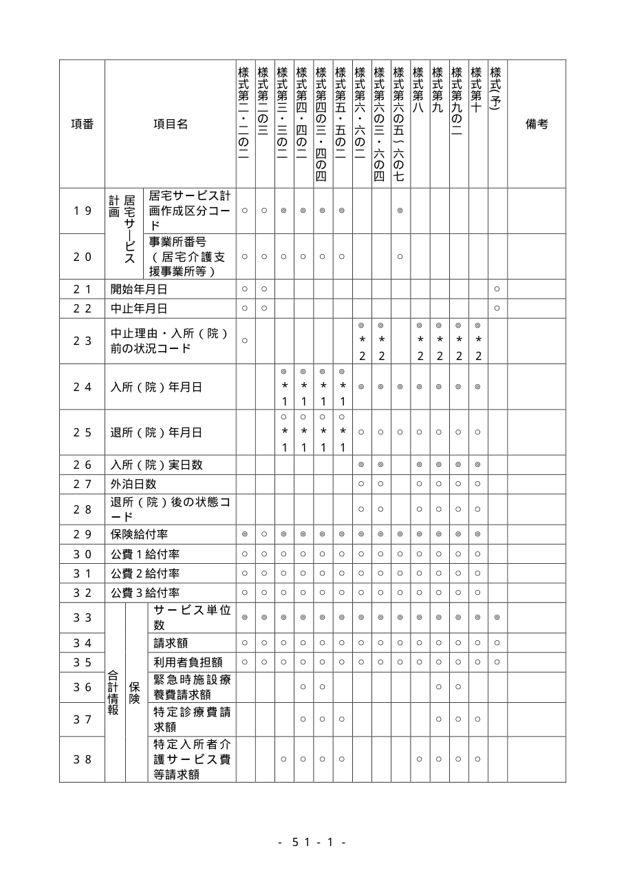
claude-haiku-5-5
- 表1 項番23 必須（様式第六・六の二）の値が想定外: '◎*2'
- 表1 項番23 必須（様式第六の三・六の四）の値が想定外: '◎*2'
- 表1 項番23 必須（様式第八）の値が想定外: '◎*2'
- 表1 項番23 必須（様式第九）の値が想定外: '◎*2'
- 表1 項番23 必須（様式第九の二）の値が想定外: '◎*2'
- 表1 項番23 必須（様式第十）の値が想定外: '◎*2'
- 表1 項番24 必須（様式第三・三の二）の値が想定外: '◎*1'
- 表1 項番24 必須（様式第四・四の二）の値が想定外: '◎*1'
- 表1 項番24 必須（様式第四の三・四の四）の値が想定外: '◎*1'
- 表1 項番24 必須（様式第五・五の二）の値が想定外: '◎*1'
- 表1 項番25 必須（様式第三・三の二）の値が想定外: '○*1'
- 表1 項番25 必須（様式第四・四の二）の値が想定外: '○*1'
- 表1 項番25 必須（様式第四の三・四の四）の値が想定外: '○*1'
- 表1 項番25 必須（様式第五・五の二）の値が想定外: '○*1'
- [改ページ] p106→p107 の連続性 OK
表1 required_matrix 前頁から続く次頁へ続く
| 項番 | 項目名 | 属性 | 桁数 | 内容 | 必須 | 備考 | その他の列 |
|---|---|---|---|---|---|---|---|
| 19 | 居宅サービス計画 > 居宅サービス計画作成区分コード | 様式第二・二の二:○ 様式第二の三:○ 様式第三・三の二:◎ 様式第四・四の二:◎ 様式第四の三・四の四:◎ 様式第五・五の二:◎ 様式第六・六の二:－ 様式第六の三・六の四:－ 様式第六の五〜六の七:◎ 様式第八:－ 様式第九:－ 様式第九の二:－ 様式第十:－ 様式（予）:－ | |||||
| 20 | 居宅サービス計画 > 事業所番号（居宅介護支援事業所等） | 様式第二・二の二:○ 様式第二の三:○ 様式第三・三の二:○ 様式第四・四の二:○ 様式第四の三・四の四:○ 様式第五・五の二:○ 様式第六・六の二:－ 様式第六の三・六の四:－ 様式第六の五〜六の七:○ 様式第八:－ 様式第九:－ 様式第九の二:－ 様式第十:－ 様式（予）:－ | |||||
| 21 | 開始年月日 | 様式第二・二の二:○ 様式第二の三:○ 様式第三・三の二:－ 様式第四・四の二:－ 様式第四の三・四の四:－ 様式第五・五の二:－ 様式第六・六の二:－ 様式第六の三・六の四:－ 様式第六の五〜六の七:－ 様式第八:－ 様式第九:－ 様式第九の二:－ 様式第十:－ 様式（予）:○ | |||||
| 22 | 中止年月日 | 様式第二・二の二:○ 様式第二の三:○ 様式第三・三の二:－ 様式第四・四の二:－ 様式第四の三・四の四:－ 様式第五・五の二:－ 様式第六・六の二:－ 様式第六の三・六の四:－ 様式第六の五〜六の七:－ 様式第八:－ 様式第九:－ 様式第九の二:－ 様式第十:－ 様式（予）:○ | |||||
| 23 | 中止理由・入所（院）前の状況コード | 様式第二・二の二:○ 様式第二の三:－ 様式第三・三の二:－ 様式第四・四の二:－ 様式第四の三・四の四:－ 様式第五・五の二:－ 様式第六・六の二:◎*2 様式第六の三・六の四:◎*2 様式第六の五〜六の七:－ 様式第八:◎*2 様式第九:◎*2 様式第九の二:◎*2 様式第十:◎*2 様式（予）:－ | |||||
| 24 | 入所（院）年月日 | 様式第二・二の二:－ 様式第二の三:－ 様式第三・三の二:◎*1 様式第四・四の二:◎*1 様式第四の三・四の四:◎*1 様式第五・五の二:◎*1 様式第六・六の二:◎ 様式第六の三・六の四:◎ 様式第六の五〜六の七:◎ 様式第八:◎ 様式第九:◎ 様式第九の二:◎ 様式第十:◎ 様式（予）:－ | |||||
| 25 | 退所（院）年月日 | 様式第二・二の二:－ 様式第二の三:－ 様式第三・三の二:○*1 様式第四・四の二:○*1 様式第四の三・四の四:○*1 様式第五・五の二:○*1 様式第六・六の二:○ 様式第六の三・六の四:○ 様式第六の五〜六の七:○ 様式第八:○ 様式第九:○ 様式第九の二:○ 様式第十:○ 様式（予）:－ | |||||
| 26 | 入所（院）実日数 | 様式第二・二の二:－ 様式第二の三:－ 様式第三・三の二:－ 様式第四・四の二:－ 様式第四の三・四の四:－ 様式第五・五の二:－ 様式第六・六の二:◎ 様式第六の三・六の四:◎ 様式第六の五〜六の七:－ 様式第八:◎ 様式第九:◎ 様式第九の二:◎ 様式第十:◎ 様式（予）:－ | |||||
| 27 | 外泊日数 | 様式第二・二の二:－ 様式第二の三:－ 様式第三・三の二:－ 様式第四・四の二:－ 様式第四の三・四の四:－ 様式第五・五の二:－ 様式第六・六の二:○ 様式第六の三・六の四:○ 様式第六の五〜六の七:－ 様式第八:○ 様式第九:○ 様式第九の二:○ 様式第十:○ 様式（予）:－ | |||||
| 28 | 退所（院）後の状態コード | 様式第二・二の二:－ 様式第二の三:－ 様式第三・三の二:－ 様式第四・四の二:－ 様式第四の三・四の四:－ 様式第五・五の二:－ 様式第六・六の二:○ 様式第六の三・六の四:○ 様式第六の五〜六の七:－ 様式第八:○ 様式第九:○ 様式第九の二:○ 様式第十:○ 様式（予）:－ | |||||
| 29 | 保険給付率 | 様式第二・二の二:◎ 様式第二の三:○ 様式第三・三の二:◎ 様式第四・四の二:◎ 様式第四の三・四の四:◎ 様式第五・五の二:◎ 様式第六・六の二:◎ 様式第六の三・六の四:◎ 様式第六の五〜六の七:◎ 様式第八:◎ 様式第九:◎ 様式第九の二:◎ 様式第十:◎ 様式（予）:－ | |||||
| 30 | 公費1給付率 | 様式第二・二の二:○ 様式第二の三:○ 様式第三・三の二:○ 様式第四・四の二:○ 様式第四の三・四の四:○ 様式第五・五の二:○ 様式第六・六の二:○ 様式第六の三・六の四:○ 様式第六の五〜六の七:○ 様式第八:○ 様式第九:○ 様式第九の二:○ 様式第十:○ 様式（予）:－ | |||||
| 31 | 公費2給付率 | 様式第二・二の二:○ 様式第二の三:○ 様式第三・三の二:○ 様式第四・四の二:○ 様式第四の三・四の四:○ 様式第五・五の二:○ 様式第六・六の二:○ 様式第六の三・六の四:○ 様式第六の五〜六の七:○ 様式第八:○ 様式第九:○ 様式第九の二:○ 様式第十:○ 様式（予）:－ | |||||
| 32 | 公費3給付率 | 様式第二・二の二:○ 様式第二の三:○ 様式第三・三の二:○ 様式第四・四の二:○ 様式第四の三・四の四:○ 様式第五・五の二:○ 様式第六・六の二:○ 様式第六の三・六の四:○ 様式第六の五〜六の七:○ 様式第八:○ 様式第九:○ 様式第九の二:○ 様式第十:○ 様式（予）:－ | |||||
| 33 | 合計情報 > 保険 > サービス単位数 | 様式第二・二の二:◎ 様式第二の三:◎ 様式第三・三の二:◎ 様式第四・四の二:◎ 様式第四の三・四の四:◎ 様式第五・五の二:◎ 様式第六・六の二:◎ 様式第六の三・六の四:◎ 様式第六の五〜六の七:◎ 様式第八:◎ 様式第九:◎ 様式第九の二:◎ 様式第十:◎ 様式（予）:◎ | |||||
| 34 | 合計情報 > 保険 > 請求額 | 様式第二・二の二:○ 様式第二の三:○ 様式第三・三の二:○ 様式第四・四の二:○ 様式第四の三・四の四:○ 様式第五・五の二:○ 様式第六・六の二:○ 様式第六の三・六の四:○ 様式第六の五〜六の七:○ 様式第八:○ 様式第九:○ 様式第九の二:○ 様式第十:○ 様式（予）:○ | |||||
| 35 | 合計情報 > 保険 > 利用者負担額 | 様式第二・二の二:○ 様式第二の三:○ 様式第三・三の二:○ 様式第四・四の二:○ 様式第四の三・四の四:○ 様式第五・五の二:○ 様式第六・六の二:○ 様式第六の三・六の四:○ 様式第六の五〜六の七:○ 様式第八:○ 様式第九:○ 様式第九の二:○ 様式第十:○ 様式（予）:○ | |||||
| 36 | 合計情報 > 保険 > 緊急時施設療養費請求額 | 様式第二・二の二:－ 様式第二の三:－ 様式第三・三の二:－ 様式第四・四の二:○ 様式第四の三・四の四:○ 様式第五・五の二:－ 様式第六・六の二:－ 様式第六の三・六の四:－ 様式第六の五〜六の七:－ 様式第八:－ 様式第九:○ 様式第九の二:○ 様式第十:－ 様式（予）:－ | |||||
| 37 | 合計情報 > 保険 > 特定診療費請求額 | 様式第二・二の二:－ 様式第二の三:－ 様式第三・三の二:－ 様式第四・四の二:○ 様式第四の三・四の四:○ 様式第五・五の二:○ 様式第六・六の二:－ 様式第六の三・六の四:－ 様式第六の五〜六の七:－ 様式第八:－ 様式第九:○ 様式第九の二:○ 様式第十:○ 様式（予）:－ | |||||
| 38 | 合計情報 > 保険 > 特定入所者介護サービス費等請求額 | 様式第二・二の二:－ 様式第二の三:－ 様式第三・三の二:○ 様式第四・四の二:○ 様式第四の三・四の四:○ 様式第五・五の二:○ 様式第六・六の二:－ 様式第六の三・六の四:－ 様式第六の五〜六の七:－ 様式第八:○ 様式第九:○ 様式第九の二:○ 様式第十:○ 様式（予）:－ |
uncertain（モデル自己申告）
- 表の見出し行は本ページに含まれないため、様式名は前ページからの続きとして見出し行の印字をそのまま列名に使った。前ページからの続きと判断した（項番19から始まり見出し行がないため）。
- 行23・24・25・26・27・28・33・34以外の一部の行で、セル内の注記記号（*1 / *2）は原文どおり「◎*1」「◎*2」「○*1」として記載したが、対応する注記本文は本ページに見当たらない。
- 表の最下行（項番38）の後に続きがあるかどうかはページ下端の状況から判断しきれず、次ページへ続くとして continues_to_next_page を true にした。
claude-sonnet-5-5
- 表1 項番23 必須（様式第六・六の二）の値が想定外: '◎*2'
- 表1 項番23 必須（様式第六の三・六の四）の値が想定外: '◎*2'
- 表1 項番23 必須（様式第八）の値が想定外: '◎*2'
- 表1 項番23 必須（様式第九）の値が想定外: '◎*2'
- 表1 項番23 必須（様式第九の二）の値が想定外: '◎*2'
- 表1 項番23 必須（様式第十）の値が想定外: '◎*2'
- 表1 項番24 必須（様式第三・三の二）の値が想定外: '◎*1'
- 表1 項番24 必須（様式第四・四の二）の値が想定外: '◎*1'
- 表1 項番24 必須（様式第四の三・四の四）の値が想定外: '◎*1'
- 表1 項番24 必須（様式第五・五の二）の値が想定外: '◎*1'
- 表1 項番25 必須（様式第三・三の二）の値が想定外: '○*1'
- 表1 項番25 必須（様式第四・四の二）の値が想定外: '○*1'
- 表1 項番25 必須（様式第四の三・四の四）の値が想定外: '○*1'
- 表1 項番25 必須（様式第五・五の二）の値が想定外: '○*1'
- [改ページ] p106→p107 の連続性 OK
表1 required_matrix 前頁から続く次頁へ続く
| 項番 | 項目名 | 属性 | 桁数 | 内容 | 必須 | 備考 | その他の列 |
|---|---|---|---|---|---|---|---|
| １９ | 居宅サービス計画 > 居宅サービス計画作成区分コード | 様式第二・二の二:○ 様式第二の三:○ 様式第三・三の二:◎ 様式第四・四の二:◎ 様式第四の三・四の四:◎ 様式第五・五の二:◎ 様式第六・六の二:－ 様式第六の三・六の四:－ 様式第六の五〜六の七:◎ 様式第八:－ 様式第九:－ 様式第九の二:－ 様式第十:－ 様式(予):－ | |||||
| ２０ | 居宅サービス計画 > 事業所番号（居宅介護支援事業所等） | 様式第二・二の二:○ 様式第二の三:○ 様式第三・三の二:○ 様式第四・四の二:○ 様式第四の三・四の四:○ 様式第五・五の二:○ 様式第六・六の二:－ 様式第六の三・六の四:－ 様式第六の五〜六の七:○ 様式第八:－ 様式第九:－ 様式第九の二:－ 様式第十:－ 様式(予):－ | |||||
| ２１ | 開始年月日 | 様式第二・二の二:○ 様式第二の三:○ 様式第三・三の二:－ 様式第四・四の二:－ 様式第四の三・四の四:－ 様式第五・五の二:－ 様式第六・六の二:－ 様式第六の三・六の四:－ 様式第六の五〜六の七:－ 様式第八:－ 様式第九:－ 様式第九の二:－ 様式第十:－ 様式(予):○ | |||||
| ２２ | 中止年月日 | 様式第二・二の二:○ 様式第二の三:○ 様式第三・三の二:－ 様式第四・四の二:－ 様式第四の三・四の四:－ 様式第五・五の二:－ 様式第六・六の二:－ 様式第六の三・六の四:－ 様式第六の五〜六の七:－ 様式第八:－ 様式第九:－ 様式第九の二:－ 様式第十:－ 様式(予):○ | |||||
| ２３ | 中止理由・入所(院)前の状況コード | 様式第二・二の二:○ 様式第二の三:－ 様式第三・三の二:－ 様式第四・四の二:－ 様式第四の三・四の四:－ 様式第五・五の二:－ 様式第六・六の二:◎*2 様式第六の三・六の四:◎*2 様式第六の五〜六の七:－ 様式第八:◎*2 様式第九:◎*2 様式第九の二:◎*2 様式第十:◎*2 様式(予):－ | |||||
| ２４ | 入所(院)年月日 | 様式第二・二の二:－ 様式第二の三:－ 様式第三・三の二:◎*1 様式第四・四の二:◎*1 様式第四の三・四の四:◎*1 様式第五・五の二:◎*1 様式第六・六の二:◎ 様式第六の三・六の四:◎ 様式第六の五〜六の七:◎ 様式第八:◎ 様式第九:◎ 様式第九の二:◎ 様式第十:◎ 様式(予):－ | |||||
| ２５ | 退所(院)年月日 | 様式第二・二の二:－ 様式第二の三:－ 様式第三・三の二:○*1 様式第四・四の二:○*1 様式第四の三・四の四:○*1 様式第五・五の二:○*1 様式第六・六の二:○ 様式第六の三・六の四:○ 様式第六の五〜六の七:○ 様式第八:○ 様式第九:○ 様式第九の二:○ 様式第十:○ 様式(予):－ | |||||
| ２６ | 入所(院)実日数 | 様式第二・二の二:－ 様式第二の三:－ 様式第三・三の二:－ 様式第四・四の二:－ 様式第四の三・四の四:－ 様式第五・五の二:－ 様式第六・六の二:◎ 様式第六の三・六の四:◎ 様式第六の五〜六の七:－ 様式第八:◎ 様式第九:◎ 様式第九の二:◎ 様式第十:◎ 様式(予):－ | |||||
| ２７ | 外泊日数 | 様式第二・二の二:－ 様式第二の三:－ 様式第三・三の二:－ 様式第四・四の二:－ 様式第四の三・四の四:－ 様式第五・五の二:－ 様式第六・六の二:○ 様式第六の三・六の四:○ 様式第六の五〜六の七:－ 様式第八:○ 様式第九:○ 様式第九の二:○ 様式第十:○ 様式(予):－ | |||||
| ２８ | 退所(院)後の状態コード | 様式第二・二の二:－ 様式第二の三:－ 様式第三・三の二:－ 様式第四・四の二:－ 様式第四の三・四の四:－ 様式第五・五の二:－ 様式第六・六の二:○ 様式第六の三・六の四:○ 様式第六の五〜六の七:－ 様式第八:○ 様式第九:○ 様式第九の二:○ 様式第十:○ 様式(予):－ | |||||
| ２９ | 保険給付率 | 様式第二・二の二:◎ 様式第二の三:○ 様式第三・三の二:◎ 様式第四・四の二:◎ 様式第四の三・四の四:◎ 様式第五・五の二:◎ 様式第六・六の二:◎ 様式第六の三・六の四:◎ 様式第六の五〜六の七:◎ 様式第八:◎ 様式第九:◎ 様式第九の二:◎ 様式第十:◎ 様式(予):－ | |||||
| ３０ | 公費1給付率 | 様式第二・二の二:○ 様式第二の三:○ 様式第三・三の二:○ 様式第四・四の二:○ 様式第四の三・四の四:○ 様式第五・五の二:○ 様式第六・六の二:○ 様式第六の三・六の四:○ 様式第六の五〜六の七:○ 様式第八:○ 様式第九:○ 様式第九の二:○ 様式第十:○ 様式(予):－ | |||||
| ３１ | 公費2給付率 | 様式第二・二の二:○ 様式第二の三:○ 様式第三・三の二:○ 様式第四・四の二:○ 様式第四の三・四の四:○ 様式第五・五の二:○ 様式第六・六の二:○ 様式第六の三・六の四:○ 様式第六の五〜六の七:○ 様式第八:○ 様式第九:○ 様式第九の二:○ 様式第十:○ 様式(予):－ | |||||
| ３２ | 公費3給付率 | 様式第二・二の二:○ 様式第二の三:○ 様式第三・三の二:○ 様式第四・四の二:○ 様式第四の三・四の四:○ 様式第五・五の二:○ 様式第六・六の二:○ 様式第六の三・六の四:○ 様式第六の五〜六の七:○ 様式第八:○ 様式第九:○ 様式第九の二:○ 様式第十:○ 様式(予):－ | |||||
| ３３ | 合計情報 > 保険 > サービス単位数 | 様式第二・二の二:◎ 様式第二の三:◎ 様式第三・三の二:◎ 様式第四・四の二:◎ 様式第四の三・四の四:◎ 様式第五・五の二:◎ 様式第六・六の二:◎ 様式第六の三・六の四:◎ 様式第六の五〜六の七:◎ 様式第八:◎ 様式第九:◎ 様式第九の二:◎ 様式第十:◎ 様式(予):◎ | |||||
| ３４ | 合計情報 > 保険 > 請求額 | 様式第二・二の二:○ 様式第二の三:○ 様式第三・三の二:○ 様式第四・四の二:○ 様式第四の三・四の四:○ 様式第五・五の二:○ 様式第六・六の二:○ 様式第六の三・六の四:○ 様式第六の五〜六の七:○ 様式第八:○ 様式第九:○ 様式第九の二:○ 様式第十:○ 様式(予):○ | |||||
| ３５ | 合計情報 > 保険 > 利用者負担額 | 様式第二・二の二:○ 様式第二の三:○ 様式第三・三の二:○ 様式第四・四の二:○ 様式第四の三・四の四:○ 様式第五・五の二:○ 様式第六・六の二:○ 様式第六の三・六の四:○ 様式第六の五〜六の七:○ 様式第八:○ 様式第九:○ 様式第九の二:○ 様式第十:○ 様式(予):○ | |||||
| ３６ | 合計情報 > 保険 > 緊急時施設療養費請求額 | 様式第二・二の二:－ 様式第二の三:－ 様式第三・三の二:－ 様式第四・四の二:○ 様式第四の三・四の四:○ 様式第五・五の二:－ 様式第六・六の二:－ 様式第六の三・六の四:－ 様式第六の五〜六の七:－ 様式第八:－ 様式第九:○ 様式第九の二:○ 様式第十:－ 様式(予):－ | |||||
| ３７ | 合計情報 > 保険 > 特定診療費請求額 | 様式第二・二の二:－ 様式第二の三:－ 様式第三・三の二:－ 様式第四・四の二:○ 様式第四の三・四の四:○ 様式第五・五の二:○ 様式第六・六の二:－ 様式第六の三・六の四:－ 様式第六の五〜六の七:－ 様式第八:－ 様式第九:○ 様式第九の二:○ 様式第十:○ 様式(予):－ | |||||
| ３８ | 合計情報 > 保険 > 特定入所者介護サービス費等請求額 | 様式第二・二の二:－ 様式第二の三:－ 様式第三・三の二:○ 様式第四・四の二:○ 様式第四の三・四の四:○ 様式第五・五の二:○ 様式第六・六の二:－ 様式第六の三・六の四:－ 様式第六の五〜六の七:－ 様式第八:○ 様式第九:○ 様式第九の二:○ 様式第十:○ 様式(予):－ |
uncertain（モデル自己申告）
- 前ページからの続きの表。見出しは縦書きで、様式名の「第二」等の表記は読み取りによる
- 項番23〜25の「◎*2」「◎*1」「○*1」は縦に折り返された表示を結合して書いた
- 項番19・20の「居宅サービス計画」は縦書きの結合見出しで、原文は「計画 居宅サービス」の並び
kaigo_jigyosho_r0604_p109 — 印字p.
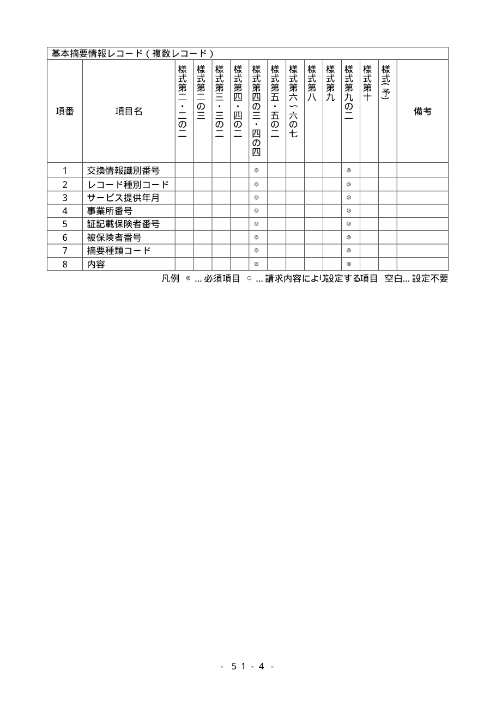
claude-haiku-5-5
- 表1 [列] 原本の文字に無い列名: 様式第一・二の二
表1 required_matrix基本摘要情報レコード（複数レコード）
| 項番 | 項目名 | 属性 | 桁数 | 内容 | 必須 | 備考 | その他の列 |
|---|---|---|---|---|---|---|---|
| 1 | 交換情報識別番号 | 様式第一・二の二:－ 様式第二の三:－ 様式第三・三の二:－ 様式第四・四の二:－ 様式第四の三・四の四:◎ 様式第五・五の二:－ 様式第六〜六の七:－ 様式第八:－ 様式第九:－ 様式第九の二:◎ 様式第十:－ 様式(予):－ | |||||
| 2 | レコード種別コード | 様式第一・二の二:－ 様式第二の三:－ 様式第三・三の二:－ 様式第四・四の二:－ 様式第四の三・四の四:◎ 様式第五・五の二:－ 様式第六〜六の七:－ 様式第八:－ 様式第九:－ 様式第九の二:◎ 様式第十:－ 様式(予):－ | |||||
| 3 | サービス提供年月 | 様式第一・二の二:－ 様式第二の三:－ 様式第三・三の二:－ 様式第四・四の二:－ 様式第四の三・四の四:◎ 様式第五・五の二:－ 様式第六〜六の七:－ 様式第八:－ 様式第九:－ 様式第九の二:◎ 様式第十:－ 様式(予):－ | |||||
| 4 | 事業所番号 | 様式第一・二の二:－ 様式第二の三:－ 様式第三・三の二:－ 様式第四・四の二:－ 様式第四の三・四の四:◎ 様式第五・五の二:－ 様式第六〜六の七:－ 様式第八:－ 様式第九:－ 様式第九の二:◎ 様式第十:－ 様式(予):－ | |||||
| 5 | 証記載保険者番号 | 様式第一・二の二:－ 様式第二の三:－ 様式第三・三の二:－ 様式第四・四の二:－ 様式第四の三・四の四:◎ 様式第五・五の二:－ 様式第六〜六の七:－ 様式第八:－ 様式第九:－ 様式第九の二:◎ 様式第十:－ 様式(予):－ | |||||
| 6 | 被保険者番号 | 様式第一・二の二:－ 様式第二の三:－ 様式第三・三の二:－ 様式第四・四の二:－ 様式第四の三・四の四:◎ 様式第五・五の二:－ 様式第六〜六の七:－ 様式第八:－ 様式第九:－ 様式第九の二:◎ 様式第十:－ 様式(予):－ | |||||
| 7 | 摘要種類コード | 様式第一・二の二:－ 様式第二の三:－ 様式第三・三の二:－ 様式第四・四の二:－ 様式第四の三・四の四:◎ 様式第五・五の二:－ 様式第六〜六の七:－ 様式第八:－ 様式第九:－ 様式第九の二:◎ 様式第十:－ 様式(予):－ | |||||
| 8 | 内容 | 様式第一・二の二:－ 様式第二の三:－ 様式第三・三の二:－ 様式第四・四の二:－ 様式第四の三・四の四:◎ 様式第五・五の二:－ 様式第六〜六の七:－ 様式第八:－ 様式第九:－ 様式第九の二:◎ 様式第十:－ 様式(予):－ |
注記
- 凡例 ◎ … 必須項目 ○ … 請求内容により設定する項目 空白… 設定不要
uncertain（モデル自己申告）
- 縦書きの見出し「様式(予)」の括弧の字形、および「様式第一・二の二」「様式第六〜六の七」の漢数字・波ダッシュの字形は画像からの判読で、原文と異なる可能性がある。
claude-sonnet-5-5
表1 required_matrix基本摘要情報レコード（複数レコード）
| 項番 | 項目名 | 属性 | 桁数 | 内容 | 必須 | 備考 | その他の列 |
|---|---|---|---|---|---|---|---|
| 1 | 交換情報識別番号 | 様式第二・二の二:－ 様式第二の三:－ 様式第三・三の二:－ 様式第四・四の二:－ 様式第四の三・四の四:◎ 様式第五・五の二:－ 様式第六〜六の七:－ 様式第八:－ 様式第九:－ 様式第九の二:◎ 様式第十:－ 様式(予):－ | |||||
| 2 | レコード種別コード | 様式第二・二の二:－ 様式第二の三:－ 様式第三・三の二:－ 様式第四・四の二:－ 様式第四の三・四の四:◎ 様式第五・五の二:－ 様式第六〜六の七:－ 様式第八:－ 様式第九:－ 様式第九の二:◎ 様式第十:－ 様式(予):－ | |||||
| 3 | サービス提供年月 | 様式第二・二の二:－ 様式第二の三:－ 様式第三・三の二:－ 様式第四・四の二:－ 様式第四の三・四の四:◎ 様式第五・五の二:－ 様式第六〜六の七:－ 様式第八:－ 様式第九:－ 様式第九の二:◎ 様式第十:－ 様式(予):－ | |||||
| 4 | 事業所番号 | 様式第二・二の二:－ 様式第二の三:－ 様式第三・三の二:－ 様式第四・四の二:－ 様式第四の三・四の四:◎ 様式第五・五の二:－ 様式第六〜六の七:－ 様式第八:－ 様式第九:－ 様式第九の二:◎ 様式第十:－ 様式(予):－ | |||||
| 5 | 証記載保険者番号 | 様式第二・二の二:－ 様式第二の三:－ 様式第三・三の二:－ 様式第四・四の二:－ 様式第四の三・四の四:◎ 様式第五・五の二:－ 様式第六〜六の七:－ 様式第八:－ 様式第九:－ 様式第九の二:◎ 様式第十:－ 様式(予):－ | |||||
| 6 | 被保険者番号 | 様式第二・二の二:－ 様式第二の三:－ 様式第三・三の二:－ 様式第四・四の二:－ 様式第四の三・四の四:◎ 様式第五・五の二:－ 様式第六〜六の七:－ 様式第八:－ 様式第九:－ 様式第九の二:◎ 様式第十:－ 様式(予):－ | |||||
| 7 | 摘要種類コード | 様式第二・二の二:－ 様式第二の三:－ 様式第三・三の二:－ 様式第四・四の二:－ 様式第四の三・四の四:◎ 様式第五・五の二:－ 様式第六〜六の七:－ 様式第八:－ 様式第九:－ 様式第九の二:◎ 様式第十:－ 様式(予):－ | |||||
| 8 | 内容 | 様式第二・二の二:－ 様式第二の三:－ 様式第三・三の二:－ 様式第四・四の二:－ 様式第四の三・四の四:◎ 様式第五・五の二:－ 様式第六〜六の七:－ 様式第八:－ 様式第九:－ 様式第九の二:◎ 様式第十:－ 様式(予):－ |
注記
- 凡例 ◎… 必須項目 ○… 請求内容により設定する項目 空白… 設定不要
uncertain（モデル自己申告）
- 必須記号は画像上小さく「◎」と判読した
- 列見出しは縦書きのため横書きに直して転記（様式第六〜六の七は「様式第六〜六の七」と判読）
kaigo_jigyosho_r0604_p110 — 印字p.52
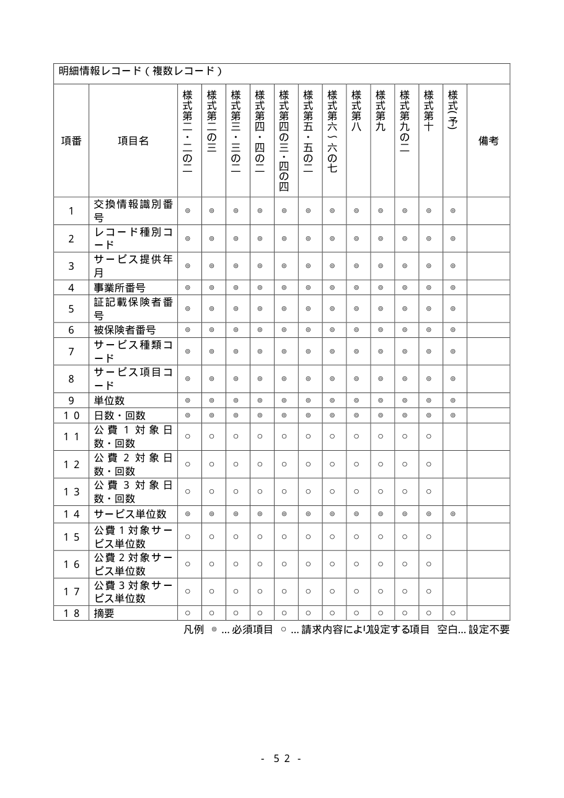
claude-haiku-5-5
表1 required_matrix
| 項番 | 項目名 | 属性 | 桁数 | 内容 | 必須 | 備考 | その他の列 |
|---|---|---|---|---|---|---|---|
| 1 | 交換情報識別番号 | 様式第二・二の二:◎ 様式第二の三:◎ 様式第三・三の二:◎ 様式第四・四の二:◎ 様式第四の三・四の四:◎ 様式第五・五の二:◎ 様式第六（六の七）:◎ 様式第八:◎ 様式第九:◎ 様式第九の二:◎ 様式第十:◎ 様式（予）:◎ | |||||
| 2 | レコード種別コード | 様式第二・二の二:◎ 様式第二の三:◎ 様式第三・三の二:◎ 様式第四・四の二:◎ 様式第四の三・四の四:◎ 様式第五・五の二:◎ 様式第六（六の七）:◎ 様式第八:◎ 様式第九:◎ 様式第九の二:◎ 様式第十:◎ 様式（予）:◎ | |||||
| 3 | サービス提供年月 | 様式第二・二の二:◎ 様式第二の三:◎ 様式第三・三の二:◎ 様式第四・四の二:◎ 様式第四の三・四の四:◎ 様式第五・五の二:◎ 様式第六（六の七）:◎ 様式第八:◎ 様式第九:◎ 様式第九の二:◎ 様式第十:◎ 様式（予）:◎ | |||||
| 4 | 事業所番号 | 様式第二・二の二:◎ 様式第二の三:◎ 様式第三・三の二:◎ 様式第四・四の二:◎ 様式第四の三・四の四:◎ 様式第五・五の二:◎ 様式第六（六の七）:◎ 様式第八:◎ 様式第九:◎ 様式第九の二:◎ 様式第十:◎ 様式（予）:◎ | |||||
| 5 | 証記載保険者番号 | 様式第二・二の二:◎ 様式第二の三:◎ 様式第三・三の二:◎ 様式第四・四の二:◎ 様式第四の三・四の四:◎ 様式第五・五の二:◎ 様式第六（六の七）:◎ 様式第八:◎ 様式第九:◎ 様式第九の二:◎ 様式第十:◎ 様式（予）:◎ | |||||
| 6 | 被保険者番号 | 様式第二・二の二:◎ 様式第二の三:◎ 様式第三・三の二:◎ 様式第四・四の二:◎ 様式第四の三・四の四:◎ 様式第五・五の二:◎ 様式第六（六の七）:◎ 様式第八:◎ 様式第九:◎ 様式第九の二:◎ 様式第十:◎ 様式（予）:◎ | |||||
| 7 | サービス種類コード | 様式第二・二の二:◎ 様式第二の三:◎ 様式第三・三の二:◎ 様式第四・四の二:◎ 様式第四の三・四の四:◎ 様式第五・五の二:◎ 様式第六（六の七）:◎ 様式第八:◎ 様式第九:◎ 様式第九の二:◎ 様式第十:◎ 様式（予）:◎ | |||||
| 8 | サービス項目コード | 様式第二・二の二:◎ 様式第二の三:◎ 様式第三・三の二:◎ 様式第四・四の二:◎ 様式第四の三・四の四:◎ 様式第五・五の二:◎ 様式第六（六の七）:◎ 様式第八:◎ 様式第九:◎ 様式第九の二:◎ 様式第十:◎ 様式（予）:◎ | |||||
| 9 | 単位数 | 様式第二・二の二:◎ 様式第二の三:◎ 様式第三・三の二:◎ 様式第四・四の二:◎ 様式第四の三・四の四:◎ 様式第五・五の二:◎ 様式第六（六の七）:◎ 様式第八:◎ 様式第九:◎ 様式第九の二:◎ 様式第十:◎ 様式（予）:◎ | |||||
| 10 | 日数・回数 | 様式第二・二の二:◎ 様式第二の三:◎ 様式第三・三の二:◎ 様式第四・四の二:◎ 様式第四の三・四の四:◎ 様式第五・五の二:◎ 様式第六（六の七）:◎ 様式第八:◎ 様式第九:◎ 様式第九の二:◎ 様式第十:◎ 様式（予）:◎ | |||||
| 11 | 公費1対象日数・回数 | 様式第二・二の二:○ 様式第二の三:○ 様式第三・三の二:○ 様式第四・四の二:○ 様式第四の三・四の四:○ 様式第五・五の二:○ 様式第六（六の七）:○ 様式第八:○ 様式第九:○ 様式第九の二:○ 様式第十:○ 様式（予）:－ | |||||
| 12 | 公費2対象日数・回数 | 様式第二・二の二:○ 様式第二の三:○ 様式第三・三の二:○ 様式第四・四の二:○ 様式第四の三・四の四:○ 様式第五・五の二:○ 様式第六（六の七）:○ 様式第八:○ 様式第九:○ 様式第九の二:○ 様式第十:○ 様式（予）:－ | |||||
| 13 | 公費3対象日数・回数 | 様式第二・二の二:○ 様式第二の三:○ 様式第三・三の二:○ 様式第四・四の二:○ 様式第四の三・四の四:○ 様式第五・五の二:○ 様式第六（六の七）:○ 様式第八:○ 様式第九:○ 様式第九の二:○ 様式第十:○ 様式（予）:－ | |||||
| 14 | サービス単位数 | 様式第二・二の二:◎ 様式第二の三:◎ 様式第三・三の二:◎ 様式第四・四の二:◎ 様式第四の三・四の四:◎ 様式第五・五の二:◎ 様式第六（六の七）:◎ 様式第八:◎ 様式第九:◎ 様式第九の二:◎ 様式第十:◎ 様式（予）:◎ | |||||
| 15 | 公費1対象サービス単位数 | 様式第二・二の二:○ 様式第二の三:○ 様式第三・三の二:○ 様式第四・四の二:○ 様式第四の三・四の四:○ 様式第五・五の二:○ 様式第六（六の七）:○ 様式第八:○ 様式第九:○ 様式第九の二:○ 様式第十:○ 様式（予）:－ | |||||
| 16 | 公費2対象サービス単位数 | 様式第二・二の二:○ 様式第二の三:○ 様式第三・三の二:○ 様式第四・四の二:○ 様式第四の三・四の四:○ 様式第五・五の二:○ 様式第六（六の七）:○ 様式第八:○ 様式第九:○ 様式第九の二:○ 様式第十:○ 様式（予）:－ | |||||
| 17 | 公費3対象サービス単位数 | 様式第二・二の二:○ 様式第二の三:○ 様式第三・三の二:○ 様式第四・四の二:○ 様式第四の三・四の四:○ 様式第五・五の二:○ 様式第六（六の七）:○ 様式第八:○ 様式第九:○ 様式第九の二:○ 様式第十:○ 様式（予）:－ | |||||
| 18 | 摘要 | 様式第二・二の二:○ 様式第二の三:○ 様式第三・三の二:○ 様式第四・四の二:○ 様式第四の三・四の四:○ 様式第五・五の二:○ 様式第六（六の七）:○ 様式第八:○ 様式第九:○ 様式第九の二:○ 様式第十:○ 様式（予）:○ |
注記
- 凡例 ◎ … 必須項目 ○ … 請求内容により設定する項目 空白… 設定不要
uncertain（モデル自己申告）
- 様式第六（六の七）の見出しの括弧表記が縦書きで判読しにくく、「様式第六（六の七）」と読み取った。
- 項目名「証記載保険者番号」は原文どおりに書き写したが、表記の正否は未確認。
- PDFのページ番号は「52」と印字されていた（指定の110ページとは異なる印字）。
claude-sonnet-5-5
表1 required_matrix明細情報レコード（複数レコード）
| 項番 | 項目名 | 属性 | 桁数 | 内容 | 必須 | 備考 | その他の列 |
|---|---|---|---|---|---|---|---|
| 1 | 交換情報識別番号 | 様式第二・二の二:◎ 様式第二の三:◎ 様式第三・三の二:◎ 様式第四・四の二:◎ 様式第四の三・四の四:◎ 様式第五・五の二:◎ 様式第六〜六の七:◎ 様式第八:◎ 様式第九:◎ 様式第九の二:◎ 様式第十:◎ 様式(予):◎ | |||||
| 2 | レコード種別コード | 様式第二・二の二:◎ 様式第二の三:◎ 様式第三・三の二:◎ 様式第四・四の二:◎ 様式第四の三・四の四:◎ 様式第五・五の二:◎ 様式第六〜六の七:◎ 様式第八:◎ 様式第九:◎ 様式第九の二:◎ 様式第十:◎ 様式(予):◎ | |||||
| 3 | サービス提供年月 | 様式第二・二の二:◎ 様式第二の三:◎ 様式第三・三の二:◎ 様式第四・四の二:◎ 様式第四の三・四の四:◎ 様式第五・五の二:◎ 様式第六〜六の七:◎ 様式第八:◎ 様式第九:◎ 様式第九の二:◎ 様式第十:◎ 様式(予):◎ | |||||
| 4 | 事業所番号 | 様式第二・二の二:◎ 様式第二の三:◎ 様式第三・三の二:◎ 様式第四・四の二:◎ 様式第四の三・四の四:◎ 様式第五・五の二:◎ 様式第六〜六の七:◎ 様式第八:◎ 様式第九:◎ 様式第九の二:◎ 様式第十:◎ 様式(予):◎ | |||||
| 5 | 証記載保険者番号 | 様式第二・二の二:◎ 様式第二の三:◎ 様式第三・三の二:◎ 様式第四・四の二:◎ 様式第四の三・四の四:◎ 様式第五・五の二:◎ 様式第六〜六の七:◎ 様式第八:◎ 様式第九:◎ 様式第九の二:◎ 様式第十:◎ 様式(予):◎ | |||||
| 6 | 被保険者番号 | 様式第二・二の二:◎ 様式第二の三:◎ 様式第三・三の二:◎ 様式第四・四の二:◎ 様式第四の三・四の四:◎ 様式第五・五の二:◎ 様式第六〜六の七:◎ 様式第八:◎ 様式第九:◎ 様式第九の二:◎ 様式第十:◎ 様式(予):◎ | |||||
| 7 | サービス種類コード | 様式第二・二の二:◎ 様式第二の三:◎ 様式第三・三の二:◎ 様式第四・四の二:◎ 様式第四の三・四の四:◎ 様式第五・五の二:◎ 様式第六〜六の七:◎ 様式第八:◎ 様式第九:◎ 様式第九の二:◎ 様式第十:◎ 様式(予):◎ | |||||
| 8 | サービス項目コード | 様式第二・二の二:◎ 様式第二の三:◎ 様式第三・三の二:◎ 様式第四・四の二:◎ 様式第四の三・四の四:◎ 様式第五・五の二:◎ 様式第六〜六の七:◎ 様式第八:◎ 様式第九:◎ 様式第九の二:◎ 様式第十:◎ 様式(予):◎ | |||||
| 9 | 単位数 | 様式第二・二の二:◎ 様式第二の三:◎ 様式第三・三の二:◎ 様式第四・四の二:◎ 様式第四の三・四の四:◎ 様式第五・五の二:◎ 様式第六〜六の七:◎ 様式第八:◎ 様式第九:◎ 様式第九の二:◎ 様式第十:◎ 様式(予):◎ | |||||
| 10 | 日数・回数 | 様式第二・二の二:◎ 様式第二の三:◎ 様式第三・三の二:◎ 様式第四・四の二:◎ 様式第四の三・四の四:◎ 様式第五・五の二:◎ 様式第六〜六の七:◎ 様式第八:◎ 様式第九:◎ 様式第九の二:◎ 様式第十:◎ 様式(予):◎ | |||||
| 11 | 公費1対象日数・回数 | 様式第二・二の二:○ 様式第二の三:○ 様式第三・三の二:○ 様式第四・四の二:○ 様式第四の三・四の四:○ 様式第五・五の二:○ 様式第六〜六の七:○ 様式第八:○ 様式第九:○ 様式第九の二:○ 様式第十:○ 様式(予):－ | |||||
| 12 | 公費2対象日数・回数 | 様式第二・二の二:○ 様式第二の三:○ 様式第三・三の二:○ 様式第四・四の二:○ 様式第四の三・四の四:○ 様式第五・五の二:○ 様式第六〜六の七:○ 様式第八:○ 様式第九:○ 様式第九の二:○ 様式第十:○ 様式(予):－ | |||||
| 13 | 公費3対象日数・回数 | 様式第二・二の二:○ 様式第二の三:○ 様式第三・三の二:○ 様式第四・四の二:○ 様式第四の三・四の四:○ 様式第五・五の二:○ 様式第六〜六の七:○ 様式第八:○ 様式第九:○ 様式第九の二:○ 様式第十:○ 様式(予):－ | |||||
| 14 | サービス単位数 | 様式第二・二の二:◎ 様式第二の三:◎ 様式第三・三の二:◎ 様式第四・四の二:◎ 様式第四の三・四の四:◎ 様式第五・五の二:◎ 様式第六〜六の七:◎ 様式第八:◎ 様式第九:◎ 様式第九の二:◎ 様式第十:◎ 様式(予):◎ | |||||
| 15 | 公費1対象サービス単位数 | 様式第二・二の二:○ 様式第二の三:○ 様式第三・三の二:○ 様式第四・四の二:○ 様式第四の三・四の四:○ 様式第五・五の二:○ 様式第六〜六の七:○ 様式第八:○ 様式第九:○ 様式第九の二:○ 様式第十:○ 様式(予):－ | |||||
| 16 | 公費2対象サービス単位数 | 様式第二・二の二:○ 様式第二の三:○ 様式第三・三の二:○ 様式第四・四の二:○ 様式第四の三・四の四:○ 様式第五・五の二:○ 様式第六〜六の七:○ 様式第八:○ 様式第九:○ 様式第九の二:○ 様式第十:○ 様式(予):－ | |||||
| 17 | 公費3対象サービス単位数 | 様式第二・二の二:○ 様式第二の三:○ 様式第三・三の二:○ 様式第四・四の二:○ 様式第四の三・四の四:○ 様式第五・五の二:○ 様式第六〜六の七:○ 様式第八:○ 様式第九:○ 様式第九の二:○ 様式第十:○ 様式(予):－ | |||||
| 18 | 摘要 | 様式第二・二の二:○ 様式第二の三:○ 様式第三・三の二:○ 様式第四・四の二:○ 様式第四の三・四の四:○ 様式第五・五の二:○ 様式第六〜六の七:○ 様式第八:○ 様式第九:○ 様式第九の二:○ 様式第十:○ 様式(予):○ |
注記
- 凡例 ◎…必須項目 ○…請求内容により設定する項目 空白…設定不要
uncertain（モデル自己申告）
- 見出しの様式名は縦書きのため、列名の表記（「様式第六〜六の七」の区切り記号など）は推測を含む。
- 必須記号は原文の◎（小さめの二重丸）を◎として転記した。
kaigo_jigyosho_r0604_p111 — 印字p.
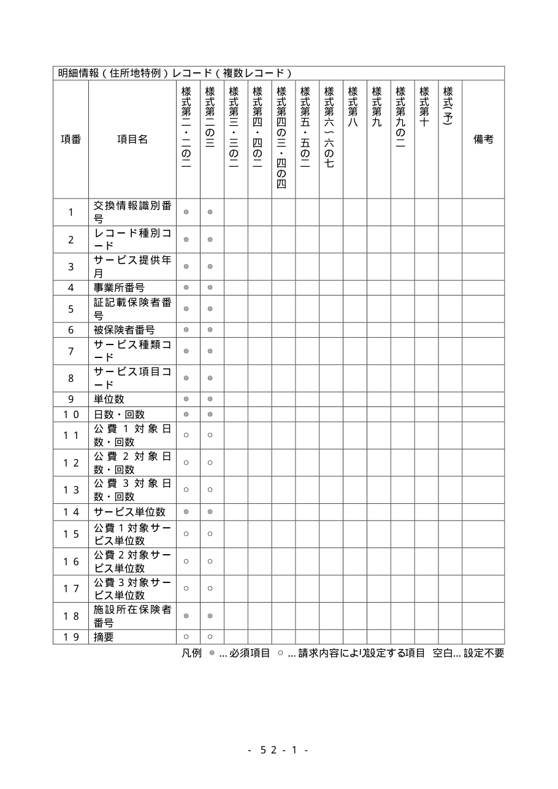
claude-haiku-5-5
表1 required_matrix明細情報（住所地特例）レコード（複数レコード）
| 項番 | 項目名 | 属性 | 桁数 | 内容 | 必須 | 備考 | その他の列 |
|---|---|---|---|---|---|---|---|
| 1 | 交換情報識別番号 | 様式第二・二の二:◎ 様式第二の三:◎ 様式第三・三の二:－ 様式第四・四の二:－ 様式第四の三・四の四:－ 様式第五・五の二:－ 様式第六〜六の七:－ 様式第八:－ 様式第九:－ 様式第九の二:－ 様式第十:－ 様式（予）:－ | |||||
| 2 | レコード種別コード | 様式第二・二の二:◎ 様式第二の三:◎ 様式第三・三の二:－ 様式第四・四の二:－ 様式第四の三・四の四:－ 様式第五・五の二:－ 様式第六〜六の七:－ 様式第八:－ 様式第九:－ 様式第九の二:－ 様式第十:－ 様式（予）:－ | |||||
| 3 | サービス提供年月 | 様式第二・二の二:◎ 様式第二の三:◎ 様式第三・三の二:－ 様式第四・四の二:－ 様式第四の三・四の四:－ 様式第五・五の二:－ 様式第六〜六の七:－ 様式第八:－ 様式第九:－ 様式第九の二:－ 様式第十:－ 様式（予）:－ | |||||
| 4 | 事業所番号 | 様式第二・二の二:◎ 様式第二の三:◎ 様式第三・三の二:－ 様式第四・四の二:－ 様式第四の三・四の四:－ 様式第五・五の二:－ 様式第六〜六の七:－ 様式第八:－ 様式第九:－ 様式第九の二:－ 様式第十:－ 様式（予）:－ | |||||
| 5 | 証記載保険者番号 | 様式第二・二の二:◎ 様式第二の三:◎ 様式第三・三の二:－ 様式第四・四の二:－ 様式第四の三・四の四:－ 様式第五・五の二:－ 様式第六〜六の七:－ 様式第八:－ 様式第九:－ 様式第九の二:－ 様式第十:－ 様式（予）:－ | |||||
| 6 | 被保険者番号 | 様式第二・二の二:◎ 様式第二の三:◎ 様式第三・三の二:－ 様式第四・四の二:－ 様式第四の三・四の四:－ 様式第五・五の二:－ 様式第六〜六の七:－ 様式第八:－ 様式第九:－ 様式第九の二:－ 様式第十:－ 様式（予）:－ | |||||
| 7 | サービス種類コード | 様式第二・二の二:◎ 様式第二の三:◎ 様式第三・三の二:－ 様式第四・四の二:－ 様式第四の三・四の四:－ 様式第五・五の二:－ 様式第六〜六の七:－ 様式第八:－ 様式第九:－ 様式第九の二:－ 様式第十:－ 様式（予）:－ | |||||
| 8 | サービス項目コード | 様式第二・二の二:◎ 様式第二の三:◎ 様式第三・三の二:－ 様式第四・四の二:－ 様式第四の三・四の四:－ 様式第五・五の二:－ 様式第六〜六の七:－ 様式第八:－ 様式第九:－ 様式第九の二:－ 様式第十:－ 様式（予）:－ | |||||
| 9 | 単位数 | 様式第二・二の二:◎ 様式第二の三:◎ 様式第三・三の二:－ 様式第四・四の二:－ 様式第四の三・四の四:－ 様式第五・五の二:－ 様式第六〜六の七:－ 様式第八:－ 様式第九:－ 様式第九の二:－ 様式第十:－ 様式（予）:－ | |||||
| 10 | 日数・回数 | 様式第二・二の二:◎ 様式第二の三:◎ 様式第三・三の二:－ 様式第四・四の二:－ 様式第四の三・四の四:－ 様式第五・五の二:－ 様式第六〜六の七:－ 様式第八:－ 様式第九:－ 様式第九の二:－ 様式第十:－ 様式（予）:－ | |||||
| 11 | 公費1対象日数・回数 | 様式第二・二の二:○ 様式第二の三:○ 様式第三・三の二:－ 様式第四・四の二:－ 様式第四の三・四の四:－ 様式第五・五の二:－ 様式第六〜六の七:－ 様式第八:－ 様式第九:－ 様式第九の二:－ 様式第十:－ 様式（予）:－ | |||||
| 12 | 公費2対象日数・回数 | 様式第二・二の二:○ 様式第二の三:○ 様式第三・三の二:－ 様式第四・四の二:－ 様式第四の三・四の四:－ 様式第五・五の二:－ 様式第六〜六の七:－ 様式第八:－ 様式第九:－ 様式第九の二:－ 様式第十:－ 様式（予）:－ | |||||
| 13 | 公費3対象日数・回数 | 様式第二・二の二:○ 様式第二の三:○ 様式第三・三の二:－ 様式第四・四の二:－ 様式第四の三・四の四:－ 様式第五・五の二:－ 様式第六〜六の七:－ 様式第八:－ 様式第九:－ 様式第九の二:－ 様式第十:－ 様式（予）:－ | |||||
| 14 | サービス単位数 | 様式第二・二の二:◎ 様式第二の三:◎ 様式第三・三の二:－ 様式第四・四の二:－ 様式第四の三・四の四:－ 様式第五・五の二:－ 様式第六〜六の七:－ 様式第八:－ 様式第九:－ 様式第九の二:－ 様式第十:－ 様式（予）:－ | |||||
| 15 | 公費1対象サービス単位数 | 様式第二・二の二:○ 様式第二の三:○ 様式第三・三の二:－ 様式第四・四の二:－ 様式第四の三・四の四:－ 様式第五・五の二:－ 様式第六〜六の七:－ 様式第八:－ 様式第九:－ 様式第九の二:－ 様式第十:－ 様式（予）:－ | |||||
| 16 | 公費2対象サービス単位数 | 様式第二・二の二:○ 様式第二の三:○ 様式第三・三の二:－ 様式第四・四の二:－ 様式第四の三・四の四:－ 様式第五・五の二:－ 様式第六〜六の七:－ 様式第八:－ 様式第九:－ 様式第九の二:－ 様式第十:－ 様式（予）:－ | |||||
| 17 | 公費3対象サービス単位数 | 様式第二・二の二:○ 様式第二の三:○ 様式第三・三の二:－ 様式第四・四の二:－ 様式第四の三・四の四:－ 様式第五・五の二:－ 様式第六〜六の七:－ 様式第八:－ 様式第九:－ 様式第九の二:－ 様式第十:－ 様式（予）:－ | |||||
| 18 | 施設所在保険者番号 | 様式第二・二の二:◎ 様式第二の三:◎ 様式第三・三の二:－ 様式第四・四の二:－ 様式第四の三・四の四:－ 様式第五・五の二:－ 様式第六〜六の七:－ 様式第八:－ 様式第九:－ 様式第九の二:－ 様式第十:－ 様式（予）:－ | |||||
| 19 | 摘要 | 様式第二・二の二:○ 様式第二の三:○ 様式第三・三の二:－ 様式第四・四の二:－ 様式第四の三・四の四:－ 様式第五・五の二:－ 様式第六〜六の七:－ 様式第八:－ 様式第九:－ 様式第九の二:－ 様式第十:－ 様式（予）:－ |
注記
- 凡例 ◎ … 必須項目 ○ … 請求内容により設定する項目 空白… 設定不要
uncertain（モデル自己申告）
- ページ下部の頁番号は「52-1」と読み取ったが、字形が判然としない。
- 項番5の項目名「証記載保険者番号」は原文の表記のまま書き写したが、「証」が誤字の可能性がある。
- 項番10の項番は全角数字「１０」と印字されていたが、no_raw は半角の「10」として書いた。
claude-sonnet-5-5
- 表1 [列] 原本の文字に無い列名: 様式第二・二の一
表1 required_matrix明細情報(住所地特例)レコード(複数レコード)
| 項番 | 項目名 | 属性 | 桁数 | 内容 | 必須 | 備考 | その他の列 |
|---|---|---|---|---|---|---|---|
| 1 | 交換情報識別番号 | 様式第二・二の一:◎ 様式第二の三:◎ 様式第三・三の二:－ 様式第四・四の二:－ 様式第四の三・四の四:－ 様式第五・五の二:－ 様式第六〜六の七:－ 様式第八:－ 様式第九:－ 様式第九の二:－ 様式第十:－ 様式(予):－ | |||||
| 2 | レコード種別コード | 様式第二・二の一:◎ 様式第二の三:◎ 様式第三・三の二:－ 様式第四・四の二:－ 様式第四の三・四の四:－ 様式第五・五の二:－ 様式第六〜六の七:－ 様式第八:－ 様式第九:－ 様式第九の二:－ 様式第十:－ 様式(予):－ | |||||
| 3 | サービス提供年月 | 様式第二・二の一:◎ 様式第二の三:◎ 様式第三・三の二:－ 様式第四・四の二:－ 様式第四の三・四の四:－ 様式第五・五の二:－ 様式第六〜六の七:－ 様式第八:－ 様式第九:－ 様式第九の二:－ 様式第十:－ 様式(予):－ | |||||
| 4 | 事業所番号 | 様式第二・二の一:◎ 様式第二の三:◎ 様式第三・三の二:－ 様式第四・四の二:－ 様式第四の三・四の四:－ 様式第五・五の二:－ 様式第六〜六の七:－ 様式第八:－ 様式第九:－ 様式第九の二:－ 様式第十:－ 様式(予):－ | |||||
| 5 | 証記載保険者番号 | 様式第二・二の一:◎ 様式第二の三:◎ 様式第三・三の二:－ 様式第四・四の二:－ 様式第四の三・四の四:－ 様式第五・五の二:－ 様式第六〜六の七:－ 様式第八:－ 様式第九:－ 様式第九の二:－ 様式第十:－ 様式(予):－ | |||||
| 6 | 被保険者番号 | 様式第二・二の一:◎ 様式第二の三:◎ 様式第三・三の二:－ 様式第四・四の二:－ 様式第四の三・四の四:－ 様式第五・五の二:－ 様式第六〜六の七:－ 様式第八:－ 様式第九:－ 様式第九の二:－ 様式第十:－ 様式(予):－ | |||||
| 7 | サービス種類コード | 様式第二・二の一:◎ 様式第二の三:◎ 様式第三・三の二:－ 様式第四・四の二:－ 様式第四の三・四の四:－ 様式第五・五の二:－ 様式第六〜六の七:－ 様式第八:－ 様式第九:－ 様式第九の二:－ 様式第十:－ 様式(予):－ | |||||
| 8 | サービス項目コード | 様式第二・二の一:◎ 様式第二の三:◎ 様式第三・三の二:－ 様式第四・四の二:－ 様式第四の三・四の四:－ 様式第五・五の二:－ 様式第六〜六の七:－ 様式第八:－ 様式第九:－ 様式第九の二:－ 様式第十:－ 様式(予):－ | |||||
| 9 | 単位数 | 様式第二・二の一:◎ 様式第二の三:◎ 様式第三・三の二:－ 様式第四・四の二:－ 様式第四の三・四の四:－ 様式第五・五の二:－ 様式第六〜六の七:－ 様式第八:－ 様式第九:－ 様式第九の二:－ 様式第十:－ 様式(予):－ | |||||
| 10 | 日数・回数 | 様式第二・二の一:◎ 様式第二の三:◎ 様式第三・三の二:－ 様式第四・四の二:－ 様式第四の三・四の四:－ 様式第五・五の二:－ 様式第六〜六の七:－ 様式第八:－ 様式第九:－ 様式第九の二:－ 様式第十:－ 様式(予):－ | |||||
| 11 | 公費1対象日数・回数 | 様式第二・二の一:○ 様式第二の三:○ 様式第三・三の二:－ 様式第四・四の二:－ 様式第四の三・四の四:－ 様式第五・五の二:－ 様式第六〜六の七:－ 様式第八:－ 様式第九:－ 様式第九の二:－ 様式第十:－ 様式(予):－ | |||||
| 12 | 公費2対象日数・回数 | 様式第二・二の一:○ 様式第二の三:○ 様式第三・三の二:－ 様式第四・四の二:－ 様式第四の三・四の四:－ 様式第五・五の二:－ 様式第六〜六の七:－ 様式第八:－ 様式第九:－ 様式第九の二:－ 様式第十:－ 様式(予):－ | |||||
| 13 | 公費3対象日数・回数 | 様式第二・二の一:○ 様式第二の三:○ 様式第三・三の二:－ 様式第四・四の二:－ 様式第四の三・四の四:－ 様式第五・五の二:－ 様式第六〜六の七:－ 様式第八:－ 様式第九:－ 様式第九の二:－ 様式第十:－ 様式(予):－ | |||||
| 14 | サービス単位数 | 様式第二・二の一:◎ 様式第二の三:◎ 様式第三・三の二:－ 様式第四・四の二:－ 様式第四の三・四の四:－ 様式第五・五の二:－ 様式第六〜六の七:－ 様式第八:－ 様式第九:－ 様式第九の二:－ 様式第十:－ 様式(予):－ | |||||
| 15 | 公費1対象サービス単位数 | 様式第二・二の一:○ 様式第二の三:○ 様式第三・三の二:－ 様式第四・四の二:－ 様式第四の三・四の四:－ 様式第五・五の二:－ 様式第六〜六の七:－ 様式第八:－ 様式第九:－ 様式第九の二:－ 様式第十:－ 様式(予):－ | |||||
| 16 | 公費2対象サービス単位数 | 様式第二・二の一:○ 様式第二の三:○ 様式第三・三の二:－ 様式第四・四の二:－ 様式第四の三・四の四:－ 様式第五・五の二:－ 様式第六〜六の七:－ 様式第八:－ 様式第九:－ 様式第九の二:－ 様式第十:－ 様式(予):－ | |||||
| 17 | 公費3対象サービス単位数 | 様式第二・二の一:○ 様式第二の三:○ 様式第三・三の二:－ 様式第四・四の二:－ 様式第四の三・四の四:－ 様式第五・五の二:－ 様式第六〜六の七:－ 様式第八:－ 様式第九:－ 様式第九の二:－ 様式第十:－ 様式(予):－ | |||||
| 18 | 施設所在保険者番号 | 様式第二・二の一:◎ 様式第二の三:◎ 様式第三・三の二:－ 様式第四・四の二:－ 様式第四の三・四の四:－ 様式第五・五の二:－ 様式第六〜六の七:－ 様式第八:－ 様式第九:－ 様式第九の二:－ 様式第十:－ 様式(予):－ | |||||
| 19 | 摘要 | 様式第二・二の一:○ 様式第二の三:○ 様式第三・三の二:－ 様式第四・四の二:－ 様式第四の三・四の四:－ 様式第五・五の二:－ 様式第六〜六の七:－ 様式第八:－ 様式第九:－ 様式第九の二:－ 様式第十:－ 様式(予):－ |
注記
- 凡例 ◎…必須項目 ○…請求内容により設定する項目 空白…設定不要
uncertain（モデル自己申告）
- 様式見出しは縦書きのため横書きに直して転記（様式第六〜六の七の「〜」は原文では「〜」様の縦書き記号）
- 様式(予)の括弧表記は半角/全角が不確か
kaigo_jigyosho_r0604_p112 — 印字p.
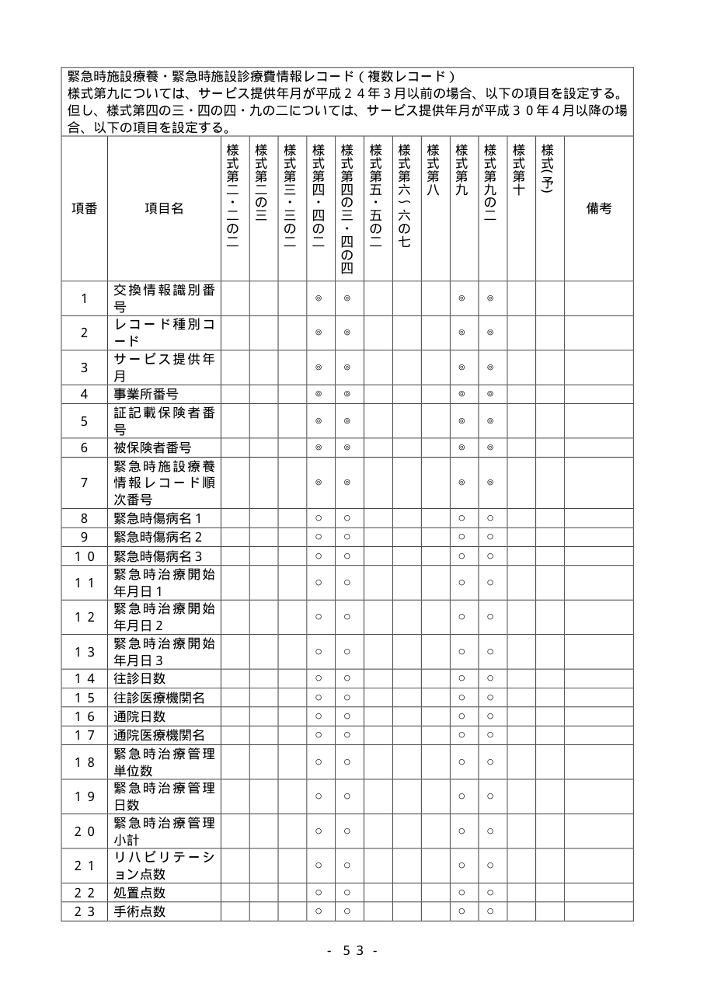
claude-haiku-5-5
- 表1 [列] 原本の文字に無い列名: 様式第六～六の七
- [改ページ] 前後ページで列見出しの書き起こしが一致しない
表1 required_matrix 次頁へ続く
| 項番 | 項目名 | 属性 | 桁数 | 内容 | 必須 | 備考 | その他の列 |
|---|---|---|---|---|---|---|---|
| 1 | 交換情報識別番号 | 様式第二・二の二:－ 様式第二の三:－ 様式第三・三の二:－ 様式第四・四の二:◎ 様式第四の三・四の四:◎ 様式第五・五の二:－ 様式第六～六の七:－ 様式第八:－ 様式第九:◎ 様式第九の二:◎ 様式第十:－ 様式(予):－ | |||||
| 2 | レコード種別コード | 様式第二・二の二:－ 様式第二の三:－ 様式第三・三の二:－ 様式第四・四の二:◎ 様式第四の三・四の四:◎ 様式第五・五の二:－ 様式第六～六の七:－ 様式第八:－ 様式第九:◎ 様式第九の二:◎ 様式第十:－ 様式(予):－ | |||||
| 3 | サービス提供年月 | 様式第二・二の二:－ 様式第二の三:－ 様式第三・三の二:－ 様式第四・四の二:◎ 様式第四の三・四の四:◎ 様式第五・五の二:－ 様式第六～六の七:－ 様式第八:－ 様式第九:◎ 様式第九の二:◎ 様式第十:－ 様式(予):－ | |||||
| 4 | 事業所番号 | 様式第二・二の二:－ 様式第二の三:－ 様式第三・三の二:－ 様式第四・四の二:◎ 様式第四の三・四の四:◎ 様式第五・五の二:－ 様式第六～六の七:－ 様式第八:－ 様式第九:◎ 様式第九の二:◎ 様式第十:－ 様式(予):－ | |||||
| 5 | 証記載保険者番号 | 様式第二・二の二:－ 様式第二の三:－ 様式第三・三の二:－ 様式第四・四の二:◎ 様式第四の三・四の四:◎ 様式第五・五の二:－ 様式第六～六の七:－ 様式第八:－ 様式第九:◎ 様式第九の二:◎ 様式第十:－ 様式(予):－ | |||||
| 6 | 被保険者番号 | 様式第二・二の二:－ 様式第二の三:－ 様式第三・三の二:－ 様式第四・四の二:◎ 様式第四の三・四の四:◎ 様式第五・五の二:－ 様式第六～六の七:－ 様式第八:－ 様式第九:◎ 様式第九の二:◎ 様式第十:－ 様式(予):－ | |||||
| 7 | 緊急時施設療養情報レコード順次番号 | 様式第二・二の二:－ 様式第二の三:－ 様式第三・三の二:－ 様式第四・四の二:◎ 様式第四の三・四の四:◎ 様式第五・五の二:－ 様式第六～六の七:－ 様式第八:－ 様式第九:◎ 様式第九の二:◎ 様式第十:－ 様式(予):－ | |||||
| 8 | 緊急時傷病名1 | 様式第二・二の二:－ 様式第二の三:－ 様式第三・三の二:－ 様式第四・四の二:○ 様式第四の三・四の四:○ 様式第五・五の二:－ 様式第六～六の七:－ 様式第八:－ 様式第九:○ 様式第九の二:○ 様式第十:－ 様式(予):－ | |||||
| 9 | 緊急時傷病名2 | 様式第二・二の二:－ 様式第二の三:－ 様式第三・三の二:－ 様式第四・四の二:○ 様式第四の三・四の四:○ 様式第五・五の二:－ 様式第六～六の七:－ 様式第八:－ 様式第九:○ 様式第九の二:○ 様式第十:－ 様式(予):－ | |||||
| １０ | 緊急時傷病名3 | 様式第二・二の二:－ 様式第二の三:－ 様式第三・三の二:－ 様式第四・四の二:○ 様式第四の三・四の四:○ 様式第五・五の二:－ 様式第六～六の七:－ 様式第八:－ 様式第九:○ 様式第九の二:○ 様式第十:－ 様式(予):－ | |||||
| １１ | 緊急時治療開始年月日1 | 様式第二・二の二:－ 様式第二の三:－ 様式第三・三の二:－ 様式第四・四の二:○ 様式第四の三・四の四:○ 様式第五・五の二:－ 様式第六～六の七:－ 様式第八:－ 様式第九:○ 様式第九の二:○ 様式第十:－ 様式(予):－ | |||||
| １２ | 緊急時治療開始年月日2 | 様式第二・二の二:－ 様式第二の三:－ 様式第三・三の二:－ 様式第四・四の二:○ 様式第四の三・四の四:○ 様式第五・五の二:－ 様式第六～六の七:－ 様式第八:－ 様式第九:○ 様式第九の二:○ 様式第十:－ 様式(予):－ | |||||
| １３ | 緊急時治療開始年月日3 | 様式第二・二の二:－ 様式第二の三:－ 様式第三・三の二:－ 様式第四・四の二:○ 様式第四の三・四の四:○ 様式第五・五の二:－ 様式第六～六の七:－ 様式第八:－ 様式第九:○ 様式第九の二:○ 様式第十:－ 様式(予):－ | |||||
| １４ | 往診日数 | 様式第二・二の二:－ 様式第二の三:－ 様式第三・三の二:－ 様式第四・四の二:○ 様式第四の三・四の四:○ 様式第五・五の二:－ 様式第六～六の七:－ 様式第八:－ 様式第九:○ 様式第九の二:○ 様式第十:－ 様式(予):－ | |||||
| １５ | 往診医療機関名 | 様式第二・二の二:－ 様式第二の三:－ 様式第三・三の二:－ 様式第四・四の二:○ 様式第四の三・四の四:○ 様式第五・五の二:－ 様式第六～六の七:－ 様式第八:－ 様式第九:○ 様式第九の二:○ 様式第十:－ 様式(予):－ | |||||
| １６ | 通院日数 | 様式第二・二の二:－ 様式第二の三:－ 様式第三・三の二:－ 様式第四・四の二:○ 様式第四の三・四の四:○ 様式第五・五の二:－ 様式第六～六の七:－ 様式第八:－ 様式第九:○ 様式第九の二:○ 様式第十:－ 様式(予):－ | |||||
| １７ | 通院医療機関名 | 様式第二・二の二:－ 様式第二の三:－ 様式第三・三の二:－ 様式第四・四の二:○ 様式第四の三・四の四:○ 様式第五・五の二:－ 様式第六～六の七:－ 様式第八:－ 様式第九:○ 様式第九の二:○ 様式第十:－ 様式(予):－ | |||||
| １８ | 緊急時治療管理単位数 | 様式第二・二の二:－ 様式第二の三:－ 様式第三・三の二:－ 様式第四・四の二:○ 様式第四の三・四の四:○ 様式第五・五の二:－ 様式第六～六の七:－ 様式第八:－ 様式第九:○ 様式第九の二:○ 様式第十:－ 様式(予):－ | |||||
| １９ | 緊急時治療管理日数 | 様式第二・二の二:－ 様式第二の三:－ 様式第三・三の二:－ 様式第四・四の二:○ 様式第四の三・四の四:○ 様式第五・五の二:－ 様式第六～六の七:－ 様式第八:－ 様式第九:○ 様式第九の二:○ 様式第十:－ 様式(予):－ | |||||
| ２０ | 緊急時治療管理小計 | 様式第二・二の二:－ 様式第二の三:－ 様式第三・三の二:－ 様式第四・四の二:○ 様式第四の三・四の四:○ 様式第五・五の二:－ 様式第六～六の七:－ 様式第八:－ 様式第九:○ 様式第九の二:○ 様式第十:－ 様式(予):－ | |||||
| ２１ | リハビリテーション点数 | 様式第二・二の二:－ 様式第二の三:－ 様式第三・三の二:－ 様式第四・四の二:○ 様式第四の三・四の四:○ 様式第五・五の二:－ 様式第六～六の七:－ 様式第八:－ 様式第九:○ 様式第九の二:○ 様式第十:－ 様式(予):－ | |||||
| ２２ | 処置点数 | 様式第二・二の二:－ 様式第二の三:－ 様式第三・三の二:－ 様式第四・四の二:○ 様式第四の三・四の四:○ 様式第五・五の二:－ 様式第六～六の七:－ 様式第八:－ 様式第九:○ 様式第九の二:○ 様式第十:－ 様式(予):－ | |||||
| ２３ | 手術点数 | 様式第二・二の二:－ 様式第二の三:－ 様式第三・三の二:－ 様式第四・四の二:○ 様式第四の三・四の四:○ 様式第五・五の二:－ 様式第六～六の七:－ 様式第八:－ 様式第九:○ 様式第九の二:○ 様式第十:－ 様式(予):－ |
uncertain（モデル自己申告）
- 「様式第六～六の七」の列見出しは縦書きの区切り記号が判読しづらく、「～」で表記したため原文の記号と異なる可能性がある。
- 項番10以降は全角で「１０」などと印字されているように見えたため no_raw をそのまま書き写した。
- ページ末尾の表が次ページへ続くかは画像からは判断できず、continues_to_next_page は false とした。
claude-sonnet-5-5
- [改ページ] p112→p113 の連続性 OK
表1 required_matrix緊急時施設療養・緊急時施設診療費情報レコード(複数レコード) 次頁へ続く
| 項番 | 項目名 | 属性 | 桁数 | 内容 | 必須 | 備考 | その他の列 |
|---|---|---|---|---|---|---|---|
| 1 | 交換情報識別番号 | 様式第二・二の二:－ 様式第二の三:－ 様式第三・三の二:－ 様式第四・四の二:◎ 様式第四の三・四の四:◎ 様式第五・五の二:－ 様式第六〜六の七:－ 様式第八:－ 様式第九:◎ 様式第九の二:◎ 様式第十:－ 様式(予):－ | |||||
| 2 | レコード種別コード | 様式第二・二の二:－ 様式第二の三:－ 様式第三・三の二:－ 様式第四・四の二:◎ 様式第四の三・四の四:◎ 様式第五・五の二:－ 様式第六〜六の七:－ 様式第八:－ 様式第九:◎ 様式第九の二:◎ 様式第十:－ 様式(予):－ | |||||
| 3 | サービス提供年月 | 様式第二・二の二:－ 様式第二の三:－ 様式第三・三の二:－ 様式第四・四の二:◎ 様式第四の三・四の四:◎ 様式第五・五の二:－ 様式第六〜六の七:－ 様式第八:－ 様式第九:◎ 様式第九の二:◎ 様式第十:－ 様式(予):－ | |||||
| 4 | 事業所番号 | 様式第二・二の二:－ 様式第二の三:－ 様式第三・三の二:－ 様式第四・四の二:◎ 様式第四の三・四の四:◎ 様式第五・五の二:－ 様式第六〜六の七:－ 様式第八:－ 様式第九:◎ 様式第九の二:◎ 様式第十:－ 様式(予):－ | |||||
| 5 | 証記載保険者番号 | 様式第二・二の二:－ 様式第二の三:－ 様式第三・三の二:－ 様式第四・四の二:◎ 様式第四の三・四の四:◎ 様式第五・五の二:－ 様式第六〜六の七:－ 様式第八:－ 様式第九:◎ 様式第九の二:◎ 様式第十:－ 様式(予):－ | |||||
| 6 | 被保険者番号 | 様式第二・二の二:－ 様式第二の三:－ 様式第三・三の二:－ 様式第四・四の二:◎ 様式第四の三・四の四:◎ 様式第五・五の二:－ 様式第六〜六の七:－ 様式第八:－ 様式第九:◎ 様式第九の二:◎ 様式第十:－ 様式(予):－ | |||||
| 7 | 緊急時施設療養情報レコード順次番号 | 様式第二・二の二:－ 様式第二の三:－ 様式第三・三の二:－ 様式第四・四の二:◎ 様式第四の三・四の四:◎ 様式第五・五の二:－ 様式第六〜六の七:－ 様式第八:－ 様式第九:◎ 様式第九の二:◎ 様式第十:－ 様式(予):－ | |||||
| 8 | 緊急時傷病名1 | 様式第二・二の二:－ 様式第二の三:－ 様式第三・三の二:－ 様式第四・四の二:○ 様式第四の三・四の四:○ 様式第五・五の二:－ 様式第六〜六の七:－ 様式第八:－ 様式第九:○ 様式第九の二:○ 様式第十:－ 様式(予):－ | |||||
| 9 | 緊急時傷病名2 | 様式第二・二の二:－ 様式第二の三:－ 様式第三・三の二:－ 様式第四・四の二:○ 様式第四の三・四の四:○ 様式第五・五の二:－ 様式第六〜六の七:－ 様式第八:－ 様式第九:○ 様式第九の二:○ 様式第十:－ 様式(予):－ | |||||
| 10 | 緊急時傷病名3 | 様式第二・二の二:－ 様式第二の三:－ 様式第三・三の二:－ 様式第四・四の二:○ 様式第四の三・四の四:○ 様式第五・五の二:－ 様式第六〜六の七:－ 様式第八:－ 様式第九:○ 様式第九の二:○ 様式第十:－ 様式(予):－ | |||||
| 11 | 緊急時治療開始年月日1 | 様式第二・二の二:－ 様式第二の三:－ 様式第三・三の二:－ 様式第四・四の二:○ 様式第四の三・四の四:○ 様式第五・五の二:－ 様式第六〜六の七:－ 様式第八:－ 様式第九:○ 様式第九の二:○ 様式第十:－ 様式(予):－ | |||||
| 12 | 緊急時治療開始年月日2 | 様式第二・二の二:－ 様式第二の三:－ 様式第三・三の二:－ 様式第四・四の二:○ 様式第四の三・四の四:○ 様式第五・五の二:－ 様式第六〜六の七:－ 様式第八:－ 様式第九:○ 様式第九の二:○ 様式第十:－ 様式(予):－ | |||||
| 13 | 緊急時治療開始年月日3 | 様式第二・二の二:－ 様式第二の三:－ 様式第三・三の二:－ 様式第四・四の二:○ 様式第四の三・四の四:○ 様式第五・五の二:－ 様式第六〜六の七:－ 様式第八:－ 様式第九:○ 様式第九の二:○ 様式第十:－ 様式(予):－ | |||||
| 14 | 往診日数 | 様式第二・二の二:－ 様式第二の三:－ 様式第三・三の二:－ 様式第四・四の二:○ 様式第四の三・四の四:○ 様式第五・五の二:－ 様式第六〜六の七:－ 様式第八:－ 様式第九:○ 様式第九の二:○ 様式第十:－ 様式(予):－ | |||||
| 15 | 往診医療機関名 | 様式第二・二の二:－ 様式第二の三:－ 様式第三・三の二:－ 様式第四・四の二:○ 様式第四の三・四の四:○ 様式第五・五の二:－ 様式第六〜六の七:－ 様式第八:－ 様式第九:○ 様式第九の二:○ 様式第十:－ 様式(予):－ | |||||
| 16 | 通院日数 | 様式第二・二の二:－ 様式第二の三:－ 様式第三・三の二:－ 様式第四・四の二:○ 様式第四の三・四の四:○ 様式第五・五の二:－ 様式第六〜六の七:－ 様式第八:－ 様式第九:○ 様式第九の二:○ 様式第十:－ 様式(予):－ | |||||
| 17 | 通院医療機関名 | 様式第二・二の二:－ 様式第二の三:－ 様式第三・三の二:－ 様式第四・四の二:○ 様式第四の三・四の四:○ 様式第五・五の二:－ 様式第六〜六の七:－ 様式第八:－ 様式第九:○ 様式第九の二:○ 様式第十:－ 様式(予):－ | |||||
| 18 | 緊急時治療管理単位数 | 様式第二・二の二:－ 様式第二の三:－ 様式第三・三の二:－ 様式第四・四の二:○ 様式第四の三・四の四:○ 様式第五・五の二:－ 様式第六〜六の七:－ 様式第八:－ 様式第九:○ 様式第九の二:○ 様式第十:－ 様式(予):－ | |||||
| 19 | 緊急時治療管理日数 | 様式第二・二の二:－ 様式第二の三:－ 様式第三・三の二:－ 様式第四・四の二:○ 様式第四の三・四の四:○ 様式第五・五の二:－ 様式第六〜六の七:－ 様式第八:－ 様式第九:○ 様式第九の二:○ 様式第十:－ 様式(予):－ | |||||
| 20 | 緊急時治療管理小計 | 様式第二・二の二:－ 様式第二の三:－ 様式第三・三の二:－ 様式第四・四の二:○ 様式第四の三・四の四:○ 様式第五・五の二:－ 様式第六〜六の七:－ 様式第八:－ 様式第九:○ 様式第九の二:○ 様式第十:－ 様式(予):－ | |||||
| 21 | リハビリテーション点数 | 様式第二・二の二:－ 様式第二の三:－ 様式第三・三の二:－ 様式第四・四の二:○ 様式第四の三・四の四:○ 様式第五・五の二:－ 様式第六〜六の七:－ 様式第八:－ 様式第九:○ 様式第九の二:○ 様式第十:－ 様式(予):－ | |||||
| 22 | 処置点数 | 様式第二・二の二:－ 様式第二の三:－ 様式第三・三の二:－ 様式第四・四の二:○ 様式第四の三・四の四:○ 様式第五・五の二:－ 様式第六〜六の七:－ 様式第八:－ 様式第九:○ 様式第九の二:○ 様式第十:－ 様式(予):－ | |||||
| 23 | 手術点数 | 様式第二・二の二:－ 様式第二の三:－ 様式第三・三の二:－ 様式第四・四の二:○ 様式第四の三・四の四:○ 様式第五・五の二:－ 様式第六〜六の七:－ 様式第八:－ 様式第九:○ 様式第九の二:○ 様式第十:－ 様式(予):－ |
注記
- 様式第九については、サービス提供年月が平成24年3月以前の場合、以下の項目を設定する。但し、様式第四の三・四の四・九の二については、サービス提供年月が平成30年4月以降の場合、以下の項目を設定する。
uncertain（モデル自己申告）
- ◎の記号は画像上小さく表示されており、◎として読み取った
- 列見出しの縦書き文字(様式第六〜六の七 の「〜」)の表記が不確か
kaigo_jigyosho_r0604_p113 — 印字p.
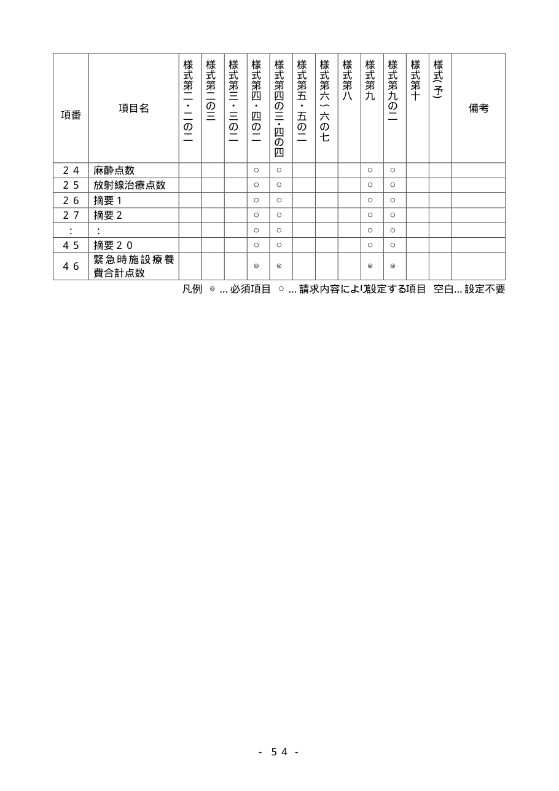
claude-haiku-5-5
- 表1 項番が整数でない行が 1 行
- 表1 項番45 項番が連続していない: 27 → 45
表1 required_matrix 前頁から続く
| 項番 | 項目名 | 属性 | 桁数 | 内容 | 必須 | 備考 | その他の列 |
|---|---|---|---|---|---|---|---|
| ２４ | 麻酔点数 | 様式第二・二の二:－ 様式第二の三:－ 様式第三・三の二:－ 様式第四・四の二:○ 様式第四の三・四の四:○ 様式第五・五の二:－ 様式第六〜六の七:－ 様式第八:－ 様式第九:○ 様式第九の二:○ 様式第十:－ 様式(予):－ | |||||
| ２５ | 放射線治療点数 | 様式第二・二の二:－ 様式第二の三:－ 様式第三・三の二:－ 様式第四・四の二:○ 様式第四の三・四の四:○ 様式第五・五の二:－ 様式第六〜六の七:－ 様式第八:－ 様式第九:○ 様式第九の二:○ 様式第十:－ 様式(予):－ | |||||
| ２６ | 摘要１ | 様式第二・二の二:－ 様式第二の三:－ 様式第三・三の二:－ 様式第四・四の二:○ 様式第四の三・四の四:○ 様式第五・五の二:－ 様式第六〜六の七:－ 様式第八:－ 様式第九:○ 様式第九の二:○ 様式第十:－ 様式(予):－ | |||||
| ２７ | 摘要２ | 様式第二・二の二:－ 様式第二の三:－ 様式第三・三の二:－ 様式第四・四の二:○ 様式第四の三・四の四:○ 様式第五・五の二:－ 様式第六〜六の七:－ 様式第八:－ 様式第九:○ 様式第九の二:○ 様式第十:－ 様式(予):－ | |||||
| ： | ： | 様式第二・二の二:－ 様式第二の三:－ 様式第三・三の二:－ 様式第四・四の二:○ 様式第四の三・四の四:○ 様式第五・五の二:－ 様式第六〜六の七:－ 様式第八:－ 様式第九:○ 様式第九の二:○ 様式第十:－ 様式(予):－ | |||||
| ４５ | 摘要２０ | 様式第二・二の二:－ 様式第二の三:－ 様式第三・三の二:－ 様式第四・四の二:○ 様式第四の三・四の四:○ 様式第五・五の二:－ 様式第六〜六の七:－ 様式第八:－ 様式第九:○ 様式第九の二:○ 様式第十:－ 様式(予):－ | |||||
| ４６ | 緊急時施設療養費合計点数 | 様式第二・二の二:－ 様式第二の三:－ 様式第三・三の二:－ 様式第四・四の二:◎ 様式第四の三・四の四:◎ 様式第五・五の二:－ 様式第六〜六の七:－ 様式第八:－ 様式第九:◎ 様式第九の二:◎ 様式第十:－ 様式(予):－ |
注記
- 凡例 ◎ … 必須項目 ○ … 請求内容により設定する項目 空白… 設定不要
uncertain（モデル自己申告）
- 様式名の見出しは縦書きのため、「様式第二・二の二」等の表記はページ画像から読み取った文字をそのまま書き写した。「様式第六〜六の七」の波線記号は原文の印字に合わせた。
- 表は項番24から始まり見出し行が印字されているため、前ページからの続きと判断したが、前ページを添付していないため確証はない。
- 項番「：」の行は項番が省略された行で、no を null にした。
claude-sonnet-5-5
- 表1 項番が整数でない行が 1 行
- 表1 項番45 項番が連続していない: 27 → 45
表1 required_matrix 前頁から続く
| 項番 | 項目名 | 属性 | 桁数 | 内容 | 必須 | 備考 | その他の列 |
|---|---|---|---|---|---|---|---|
| 24 | 麻酔点数 | 様式第二・二の二:－ 様式第二の三:－ 様式第三・三の二:－ 様式第四・四の二:○ 様式第四の三・四の四:○ 様式第五・五の二:－ 様式第六〜六の七:－ 様式第八:－ 様式第九:○ 様式第九の二:○ 様式第十:－ 様式(予):－ | |||||
| 25 | 放射線治療点数 | 様式第二・二の二:－ 様式第二の三:－ 様式第三・三の二:－ 様式第四・四の二:○ 様式第四の三・四の四:○ 様式第五・五の二:－ 様式第六〜六の七:－ 様式第八:－ 様式第九:○ 様式第九の二:○ 様式第十:－ 様式(予):－ | |||||
| 26 | 摘要1 | 様式第二・二の二:－ 様式第二の三:－ 様式第三・三の二:－ 様式第四・四の二:○ 様式第四の三・四の四:○ 様式第五・五の二:－ 様式第六〜六の七:－ 様式第八:－ 様式第九:○ 様式第九の二:○ 様式第十:－ 様式(予):－ | |||||
| 27 | 摘要2 | 様式第二・二の二:－ 様式第二の三:－ 様式第三・三の二:－ 様式第四・四の二:○ 様式第四の三・四の四:○ 様式第五・五の二:－ 様式第六〜六の七:－ 様式第八:－ 様式第九:○ 様式第九の二:○ 様式第十:－ 様式(予):－ | |||||
| : | : | 様式第二・二の二:－ 様式第二の三:－ 様式第三・三の二:－ 様式第四・四の二:○ 様式第四の三・四の四:○ 様式第五・五の二:－ 様式第六〜六の七:－ 様式第八:－ 様式第九:○ 様式第九の二:○ 様式第十:－ 様式(予):－ | |||||
| 45 | 摘要20 | 様式第二・二の二:－ 様式第二の三:－ 様式第三・三の二:－ 様式第四・四の二:○ 様式第四の三・四の四:○ 様式第五・五の二:－ 様式第六〜六の七:－ 様式第八:－ 様式第九:○ 様式第九の二:○ 様式第十:－ 様式(予):－ | |||||
| 46 | 緊急時施設療養費合計点数 | 様式第二・二の二:－ 様式第二の三:－ 様式第三・三の二:－ 様式第四・四の二:◎ 様式第四の三・四の四:◎ 様式第五・五の二:－ 様式第六〜六の七:－ 様式第八:－ 様式第九:◎ 様式第九の二:◎ 様式第十:－ 様式(予):－ |
注記
- 凡例 ◎… 必須項目 ○… 請求内容により設定する項目 空白… 設定不要
uncertain（モデル自己申告）
- 列見出しの様式名は縦書きのため読み取り。「様式第六〜六の七」の「〜」は印字が不鮮明
- 前ページからの続きの表のため record は不明
kaigo_jigyosho_r0604_p114 — 印字p.
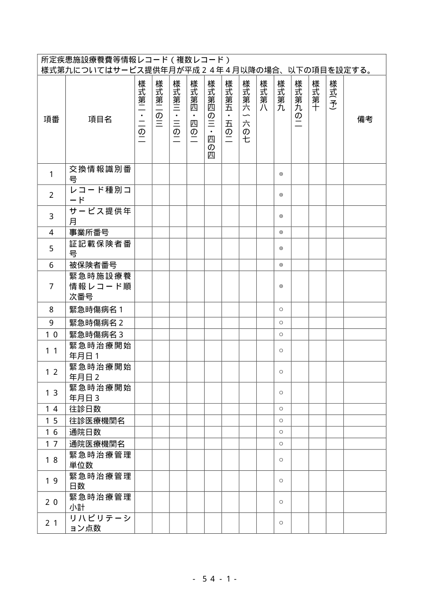
claude-haiku-5-5
- 表1 [列] 原本の文字に無い列名: 様式第六（一）～六の七
- [改ページ] 前後ページで列見出しの書き起こしが一致しない
表1 required_matrix所定疾患施設療養費等情報レコード（複数レコード） 様式第九についてはサービス提供年月が平成２４年４月以降の場合、以下の項目を設定する。 次頁へ続く
| 項番 | 項目名 | 属性 | 桁数 | 内容 | 必須 | 備考 | その他の列 |
|---|---|---|---|---|---|---|---|
| 1 | 交換情報識別番号 | 様式第二・二の二:－ 様式第二の三:－ 様式第三・三の二:－ 様式第四・四の二:－ 様式第四の三・四の四:－ 様式第五・五の二:－ 様式第六（一）～六の七:－ 様式第八:－ 様式第九:◎ 様式第九の二:－ 様式第十:－ 様式(予):－ | |||||
| 2 | レコード種別コード | 様式第二・二の二:－ 様式第二の三:－ 様式第三・三の二:－ 様式第四・四の二:－ 様式第四の三・四の四:－ 様式第五・五の二:－ 様式第六（一）～六の七:－ 様式第八:－ 様式第九:◎ 様式第九の二:－ 様式第十:－ 様式(予):－ | |||||
| 3 | サービス提供年月 | 様式第二・二の二:－ 様式第二の三:－ 様式第三・三の二:－ 様式第四・四の二:－ 様式第四の三・四の四:－ 様式第五・五の二:－ 様式第六（一）～六の七:－ 様式第八:－ 様式第九:◎ 様式第九の二:－ 様式第十:－ 様式(予):－ | |||||
| 4 | 事業所番号 | 様式第二・二の二:－ 様式第二の三:－ 様式第三・三の二:－ 様式第四・四の二:－ 様式第四の三・四の四:－ 様式第五・五の二:－ 様式第六（一）～六の七:－ 様式第八:－ 様式第九:◎ 様式第九の二:－ 様式第十:－ 様式(予):－ | |||||
| 5 | 証記載保険者番号 | 様式第二・二の二:－ 様式第二の三:－ 様式第三・三の二:－ 様式第四・四の二:－ 様式第四の三・四の四:－ 様式第五・五の二:－ 様式第六（一）～六の七:－ 様式第八:－ 様式第九:◎ 様式第九の二:－ 様式第十:－ 様式(予):－ | |||||
| 6 | 被保険者番号 | 様式第二・二の二:－ 様式第二の三:－ 様式第三・三の二:－ 様式第四・四の二:－ 様式第四の三・四の四:－ 様式第五・五の二:－ 様式第六（一）～六の七:－ 様式第八:－ 様式第九:◎ 様式第九の二:－ 様式第十:－ 様式(予):－ | |||||
| 7 | 緊急時施設療養情報レコード順次番号 | 様式第二・二の二:－ 様式第二の三:－ 様式第三・三の二:－ 様式第四・四の二:－ 様式第四の三・四の四:－ 様式第五・五の二:－ 様式第六（一）～六の七:－ 様式第八:－ 様式第九:◎ 様式第九の二:－ 様式第十:－ 様式(予):－ | |||||
| 8 | 緊急時傷病名1 | 様式第二・二の二:－ 様式第二の三:－ 様式第三・三の二:－ 様式第四・四の二:－ 様式第四の三・四の四:－ 様式第五・五の二:－ 様式第六（一）～六の七:－ 様式第八:－ 様式第九:○ 様式第九の二:－ 様式第十:－ 様式(予):－ | |||||
| 9 | 緊急時傷病名2 | 様式第二・二の二:－ 様式第二の三:－ 様式第三・三の二:－ 様式第四・四の二:－ 様式第四の三・四の四:－ 様式第五・五の二:－ 様式第六（一）～六の七:－ 様式第八:－ 様式第九:○ 様式第九の二:－ 様式第十:－ 様式(予):－ | |||||
| １０ | 緊急時傷病名3 | 様式第二・二の二:－ 様式第二の三:－ 様式第三・三の二:－ 様式第四・四の二:－ 様式第四の三・四の四:－ 様式第五・五の二:－ 様式第六（一）～六の七:－ 様式第八:－ 様式第九:○ 様式第九の二:－ 様式第十:－ 様式(予):－ | |||||
| １１ | 緊急時治療開始年月日1 | 様式第二・二の二:－ 様式第二の三:－ 様式第三・三の二:－ 様式第四・四の二:－ 様式第四の三・四の四:－ 様式第五・五の二:－ 様式第六（一）～六の七:－ 様式第八:－ 様式第九:○ 様式第九の二:－ 様式第十:－ 様式(予):－ | |||||
| １２ | 緊急時治療開始年月日2 | 様式第二・二の二:－ 様式第二の三:－ 様式第三・三の二:－ 様式第四・四の二:－ 様式第四の三・四の四:－ 様式第五・五の二:－ 様式第六（一）～六の七:－ 様式第八:－ 様式第九:○ 様式第九の二:－ 様式第十:－ 様式(予):－ | |||||
| １３ | 緊急時治療開始年月日3 | 様式第二・二の二:－ 様式第二の三:－ 様式第三・三の二:－ 様式第四・四の二:－ 様式第四の三・四の四:－ 様式第五・五の二:－ 様式第六（一）～六の七:－ 様式第八:－ 様式第九:○ 様式第九の二:－ 様式第十:－ 様式(予):－ | |||||
| １４ | 往診日数 | 様式第二・二の二:－ 様式第二の三:－ 様式第三・三の二:－ 様式第四・四の二:－ 様式第四の三・四の四:－ 様式第五・五の二:－ 様式第六（一）～六の七:－ 様式第八:－ 様式第九:○ 様式第九の二:－ 様式第十:－ 様式(予):－ | |||||
| １５ | 往診医療機関名 | 様式第二・二の二:－ 様式第二の三:－ 様式第三・三の二:－ 様式第四・四の二:－ 様式第四の三・四の四:－ 様式第五・五の二:－ 様式第六（一）～六の七:－ 様式第八:－ 様式第九:○ 様式第九の二:－ 様式第十:－ 様式(予):－ | |||||
| １６ | 通院日数 | 様式第二・二の二:－ 様式第二の三:－ 様式第三・三の二:－ 様式第四・四の二:－ 様式第四の三・四の四:－ 様式第五・五の二:－ 様式第六（一）～六の七:－ 様式第八:－ 様式第九:○ 様式第九の二:－ 様式第十:－ 様式(予):－ | |||||
| １７ | 通院医療機関名 | 様式第二・二の二:－ 様式第二の三:－ 様式第三・三の二:－ 様式第四・四の二:－ 様式第四の三・四の四:－ 様式第五・五の二:－ 様式第六（一）～六の七:－ 様式第八:－ 様式第九:○ 様式第九の二:－ 様式第十:－ 様式(予):－ | |||||
| １８ | 緊急時治療管理単位数 | 様式第二・二の二:－ 様式第二の三:－ 様式第三・三の二:－ 様式第四・四の二:－ 様式第四の三・四の四:－ 様式第五・五の二:－ 様式第六（一）～六の七:－ 様式第八:－ 様式第九:○ 様式第九の二:－ 様式第十:－ 様式(予):－ | |||||
| １９ | 緊急時治療管理日数 | 様式第二・二の二:－ 様式第二の三:－ 様式第三・三の二:－ 様式第四・四の二:－ 様式第四の三・四の四:－ 様式第五・五の二:－ 様式第六（一）～六の七:－ 様式第八:－ 様式第九:○ 様式第九の二:－ 様式第十:－ 様式(予):－ | |||||
| ２０ | 緊急時治療管理小計 | 様式第二・二の二:－ 様式第二の三:－ 様式第三・三の二:－ 様式第四・四の二:－ 様式第四の三・四の四:－ 様式第五・五の二:－ 様式第六（一）～六の七:－ 様式第八:－ 様式第九:○ 様式第九の二:－ 様式第十:－ 様式(予):－ | |||||
| ２１ | リハビリテーション点数 | 様式第二・二の二:－ 様式第二の三:－ 様式第三・三の二:－ 様式第四・四の二:－ 様式第四の三・四の四:－ 様式第五・五の二:－ 様式第六（一）～六の七:－ 様式第八:－ 様式第九:○ 様式第九の二:－ 様式第十:－ 様式(予):－ |
uncertain（モデル自己申告）
- 様式第六の列見出しは縦書きの「（一）」の括弧表記を原文どおりに読み取った。読み違いの可能性がある。
- 項目名「証記載保険者番号」は原文の表記のまま書き写した。
claude-sonnet-5-5
- [改ページ] p114→p115 の連続性 OK
表1 required_matrix所定疾患施設療養費等情報レコード(複数レコード) 様式第九についてはサービス提供年月が平成24年4月以降の場合、以下の項目を設定する。 次頁へ続く
| 項番 | 項目名 | 属性 | 桁数 | 内容 | 必須 | 備考 | その他の列 |
|---|---|---|---|---|---|---|---|
| 1 | 交換情報識別番号 | 様式第二・二の二:－ 様式第二の三:－ 様式第三・三の二:－ 様式第四・四の二:－ 様式第四の三・四の四:－ 様式第五・五の二:－ 様式第六〜六の七:－ 様式第八:－ 様式第九:◎ 様式第九の二:－ 様式第十:－ 様式(予):－ | |||||
| 2 | レコード種別コード | 様式第二・二の二:－ 様式第二の三:－ 様式第三・三の二:－ 様式第四・四の二:－ 様式第四の三・四の四:－ 様式第五・五の二:－ 様式第六〜六の七:－ 様式第八:－ 様式第九:◎ 様式第九の二:－ 様式第十:－ 様式(予):－ | |||||
| 3 | サービス提供年月 | 様式第二・二の二:－ 様式第二の三:－ 様式第三・三の二:－ 様式第四・四の二:－ 様式第四の三・四の四:－ 様式第五・五の二:－ 様式第六〜六の七:－ 様式第八:－ 様式第九:◎ 様式第九の二:－ 様式第十:－ 様式(予):－ | |||||
| 4 | 事業所番号 | 様式第二・二の二:－ 様式第二の三:－ 様式第三・三の二:－ 様式第四・四の二:－ 様式第四の三・四の四:－ 様式第五・五の二:－ 様式第六〜六の七:－ 様式第八:－ 様式第九:◎ 様式第九の二:－ 様式第十:－ 様式(予):－ | |||||
| 5 | 証記載保険者番号 | 様式第二・二の二:－ 様式第二の三:－ 様式第三・三の二:－ 様式第四・四の二:－ 様式第四の三・四の四:－ 様式第五・五の二:－ 様式第六〜六の七:－ 様式第八:－ 様式第九:◎ 様式第九の二:－ 様式第十:－ 様式(予):－ | |||||
| 6 | 被保険者番号 | 様式第二・二の二:－ 様式第二の三:－ 様式第三・三の二:－ 様式第四・四の二:－ 様式第四の三・四の四:－ 様式第五・五の二:－ 様式第六〜六の七:－ 様式第八:－ 様式第九:◎ 様式第九の二:－ 様式第十:－ 様式(予):－ | |||||
| 7 | 緊急時施設療養情報レコード順次番号 | 様式第二・二の二:－ 様式第二の三:－ 様式第三・三の二:－ 様式第四・四の二:－ 様式第四の三・四の四:－ 様式第五・五の二:－ 様式第六〜六の七:－ 様式第八:－ 様式第九:◎ 様式第九の二:－ 様式第十:－ 様式(予):－ | |||||
| 8 | 緊急時傷病名1 | 様式第二・二の二:－ 様式第二の三:－ 様式第三・三の二:－ 様式第四・四の二:－ 様式第四の三・四の四:－ 様式第五・五の二:－ 様式第六〜六の七:－ 様式第八:－ 様式第九:○ 様式第九の二:－ 様式第十:－ 様式(予):－ | |||||
| 9 | 緊急時傷病名2 | 様式第二・二の二:－ 様式第二の三:－ 様式第三・三の二:－ 様式第四・四の二:－ 様式第四の三・四の四:－ 様式第五・五の二:－ 様式第六〜六の七:－ 様式第八:－ 様式第九:○ 様式第九の二:－ 様式第十:－ 様式(予):－ | |||||
| 10 | 緊急時傷病名3 | 様式第二・二の二:－ 様式第二の三:－ 様式第三・三の二:－ 様式第四・四の二:－ 様式第四の三・四の四:－ 様式第五・五の二:－ 様式第六〜六の七:－ 様式第八:－ 様式第九:○ 様式第九の二:－ 様式第十:－ 様式(予):－ | |||||
| 11 | 緊急時治療開始年月日1 | 様式第二・二の二:－ 様式第二の三:－ 様式第三・三の二:－ 様式第四・四の二:－ 様式第四の三・四の四:－ 様式第五・五の二:－ 様式第六〜六の七:－ 様式第八:－ 様式第九:○ 様式第九の二:－ 様式第十:－ 様式(予):－ | |||||
| 12 | 緊急時治療開始年月日2 | 様式第二・二の二:－ 様式第二の三:－ 様式第三・三の二:－ 様式第四・四の二:－ 様式第四の三・四の四:－ 様式第五・五の二:－ 様式第六〜六の七:－ 様式第八:－ 様式第九:○ 様式第九の二:－ 様式第十:－ 様式(予):－ | |||||
| 13 | 緊急時治療開始年月日3 | 様式第二・二の二:－ 様式第二の三:－ 様式第三・三の二:－ 様式第四・四の二:－ 様式第四の三・四の四:－ 様式第五・五の二:－ 様式第六〜六の七:－ 様式第八:－ 様式第九:○ 様式第九の二:－ 様式第十:－ 様式(予):－ | |||||
| 14 | 往診日数 | 様式第二・二の二:－ 様式第二の三:－ 様式第三・三の二:－ 様式第四・四の二:－ 様式第四の三・四の四:－ 様式第五・五の二:－ 様式第六〜六の七:－ 様式第八:－ 様式第九:○ 様式第九の二:－ 様式第十:－ 様式(予):－ | |||||
| 15 | 往診医療機関名 | 様式第二・二の二:－ 様式第二の三:－ 様式第三・三の二:－ 様式第四・四の二:－ 様式第四の三・四の四:－ 様式第五・五の二:－ 様式第六〜六の七:－ 様式第八:－ 様式第九:○ 様式第九の二:－ 様式第十:－ 様式(予):－ | |||||
| 16 | 通院日数 | 様式第二・二の二:－ 様式第二の三:－ 様式第三・三の二:－ 様式第四・四の二:－ 様式第四の三・四の四:－ 様式第五・五の二:－ 様式第六〜六の七:－ 様式第八:－ 様式第九:○ 様式第九の二:－ 様式第十:－ 様式(予):－ | |||||
| 17 | 通院医療機関名 | 様式第二・二の二:－ 様式第二の三:－ 様式第三・三の二:－ 様式第四・四の二:－ 様式第四の三・四の四:－ 様式第五・五の二:－ 様式第六〜六の七:－ 様式第八:－ 様式第九:○ 様式第九の二:－ 様式第十:－ 様式(予):－ | |||||
| 18 | 緊急時治療管理単位数 | 様式第二・二の二:－ 様式第二の三:－ 様式第三・三の二:－ 様式第四・四の二:－ 様式第四の三・四の四:－ 様式第五・五の二:－ 様式第六〜六の七:－ 様式第八:－ 様式第九:○ 様式第九の二:－ 様式第十:－ 様式(予):－ | |||||
| 19 | 緊急時治療管理日数 | 様式第二・二の二:－ 様式第二の三:－ 様式第三・三の二:－ 様式第四・四の二:－ 様式第四の三・四の四:－ 様式第五・五の二:－ 様式第六〜六の七:－ 様式第八:－ 様式第九:○ 様式第九の二:－ 様式第十:－ 様式(予):－ | |||||
| 20 | 緊急時治療管理小計 | 様式第二・二の二:－ 様式第二の三:－ 様式第三・三の二:－ 様式第四・四の二:－ 様式第四の三・四の四:－ 様式第五・五の二:－ 様式第六〜六の七:－ 様式第八:－ 様式第九:○ 様式第九の二:－ 様式第十:－ 様式(予):－ | |||||
| 21 | リハビリテーション点数 | 様式第二・二の二:－ 様式第二の三:－ 様式第三・三の二:－ 様式第四・四の二:－ 様式第四の三・四の四:－ 様式第五・五の二:－ 様式第六〜六の七:－ 様式第八:－ 様式第九:○ 様式第九の二:－ 様式第十:－ 様式(予):－ |
uncertain（モデル自己申告）
- 様式第九列の記号は◎と○で判読したが、小さい印字のため確実ではない
- 項目名は原文の折り返しを詰めて記載
kaigo_jigyosho_r0604_p115 — 印字p.
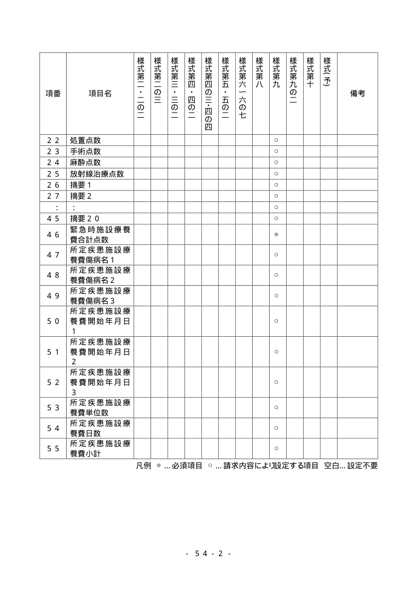
claude-haiku-5-5
- 表1 項番が整数でない行が 1 行
- 表1 項番45 項番が連続していない: 27 → 45
表1 required_matrix 前頁から続く
| 項番 | 項目名 | 属性 | 桁数 | 内容 | 必須 | 備考 | その他の列 |
|---|---|---|---|---|---|---|---|
| 22 | 処置点数 | 様式第二・二の二:－ 様式第二の三:－ 様式第三・三の二:－ 様式第四・四の二:－ 様式第四の三・四の四:－ 様式第五・五の二:－ 様式第六〜六の七:－ 様式第八:－ 様式第九:○ 様式第九の二:－ 様式第十:－ 様式(予):－ | |||||
| 23 | 手術点数 | 様式第二・二の二:－ 様式第二の三:－ 様式第三・三の二:－ 様式第四・四の二:－ 様式第四の三・四の四:－ 様式第五・五の二:－ 様式第六〜六の七:－ 様式第八:－ 様式第九:○ 様式第九の二:－ 様式第十:－ 様式(予):－ | |||||
| 24 | 麻酔点数 | 様式第二・二の二:－ 様式第二の三:－ 様式第三・三の二:－ 様式第四・四の二:－ 様式第四の三・四の四:－ 様式第五・五の二:－ 様式第六〜六の七:－ 様式第八:－ 様式第九:○ 様式第九の二:－ 様式第十:－ 様式(予):－ | |||||
| 25 | 放射線治療点数 | 様式第二・二の二:－ 様式第二の三:－ 様式第三・三の二:－ 様式第四・四の二:－ 様式第四の三・四の四:－ 様式第五・五の二:－ 様式第六〜六の七:－ 様式第八:－ 様式第九:○ 様式第九の二:－ 様式第十:－ 様式(予):－ | |||||
| 26 | 摘要1 | 様式第二・二の二:－ 様式第二の三:－ 様式第三・三の二:－ 様式第四・四の二:－ 様式第四の三・四の四:－ 様式第五・五の二:－ 様式第六〜六の七:－ 様式第八:－ 様式第九:○ 様式第九の二:－ 様式第十:－ 様式(予):－ | |||||
| 27 | 摘要2 | 様式第二・二の二:－ 様式第二の三:－ 様式第三・三の二:－ 様式第四・四の二:－ 様式第四の三・四の四:－ 様式第五・五の二:－ 様式第六〜六の七:－ 様式第八:－ 様式第九:○ 様式第九の二:－ 様式第十:－ 様式(予):－ | |||||
| ： | ： | 様式第二・二の二:－ 様式第二の三:－ 様式第三・三の二:－ 様式第四・四の二:－ 様式第四の三・四の四:－ 様式第五・五の二:－ 様式第六〜六の七:－ 様式第八:－ 様式第九:○ 様式第九の二:－ 様式第十:－ 様式(予):－ | |||||
| 45 | 摘要20 | 様式第二・二の二:－ 様式第二の三:－ 様式第三・三の二:－ 様式第四・四の二:－ 様式第四の三・四の四:－ 様式第五・五の二:－ 様式第六〜六の七:－ 様式第八:－ 様式第九:○ 様式第九の二:－ 様式第十:－ 様式(予):－ | |||||
| 46 | 緊急時施設療養費合計点数 | 様式第二・二の二:－ 様式第二の三:－ 様式第三・三の二:－ 様式第四・四の二:－ 様式第四の三・四の四:－ 様式第五・五の二:－ 様式第六〜六の七:－ 様式第八:－ 様式第九:◎ 様式第九の二:－ 様式第十:－ 様式(予):－ | |||||
| 47 | 所定疾患施設療養費傷病名1 | 様式第二・二の二:－ 様式第二の三:－ 様式第三・三の二:－ 様式第四・四の二:－ 様式第四の三・四の四:－ 様式第五・五の二:－ 様式第六〜六の七:－ 様式第八:－ 様式第九:○ 様式第九の二:－ 様式第十:－ 様式(予):－ | |||||
| 48 | 所定疾患施設療養費傷病名2 | 様式第二・二の二:－ 様式第二の三:－ 様式第三・三の二:－ 様式第四・四の二:－ 様式第四の三・四の四:－ 様式第五・五の二:－ 様式第六〜六の七:－ 様式第八:－ 様式第九:○ 様式第九の二:－ 様式第十:－ 様式(予):－ | |||||
| 49 | 所定疾患施設療養費傷病名3 | 様式第二・二の二:－ 様式第二の三:－ 様式第三・三の二:－ 様式第四・四の二:－ 様式第四の三・四の四:－ 様式第五・五の二:－ 様式第六〜六の七:－ 様式第八:－ 様式第九:○ 様式第九の二:－ 様式第十:－ 様式(予):－ | |||||
| 50 | 所定疾患施設療養費開始年月日1 | 様式第二・二の二:－ 様式第二の三:－ 様式第三・三の二:－ 様式第四・四の二:－ 様式第四の三・四の四:－ 様式第五・五の二:－ 様式第六〜六の七:－ 様式第八:－ 様式第九:○ 様式第九の二:－ 様式第十:－ 様式(予):－ | |||||
| 51 | 所定疾患施設療養費開始年月日2 | 様式第二・二の二:－ 様式第二の三:－ 様式第三・三の二:－ 様式第四・四の二:－ 様式第四の三・四の四:－ 様式第五・五の二:－ 様式第六〜六の七:－ 様式第八:－ 様式第九:○ 様式第九の二:－ 様式第十:－ 様式(予):－ | |||||
| 52 | 所定疾患施設療養費開始年月日3 | 様式第二・二の二:－ 様式第二の三:－ 様式第三・三の二:－ 様式第四・四の二:－ 様式第四の三・四の四:－ 様式第五・五の二:－ 様式第六〜六の七:－ 様式第八:－ 様式第九:○ 様式第九の二:－ 様式第十:－ 様式(予):－ | |||||
| 53 | 所定疾患施設療養費単位数 | 様式第二・二の二:－ 様式第二の三:－ 様式第三・三の二:－ 様式第四・四の二:－ 様式第四の三・四の四:－ 様式第五・五の二:－ 様式第六〜六の七:－ 様式第八:－ 様式第九:○ 様式第九の二:－ 様式第十:－ 様式(予):－ | |||||
| 54 | 所定疾患施設療養費日数 | 様式第二・二の二:－ 様式第二の三:－ 様式第三・三の二:－ 様式第四・四の二:－ 様式第四の三・四の四:－ 様式第五・五の二:－ 様式第六〜六の七:－ 様式第八:－ 様式第九:○ 様式第九の二:－ 様式第十:－ 様式(予):－ | |||||
| 55 | 所定疾患施設療養費小計 | 様式第二・二の二:－ 様式第二の三:－ 様式第三・三の二:－ 様式第四・四の二:－ 様式第四の三・四の四:－ 様式第五・五の二:－ 様式第六〜六の七:－ 様式第八:－ 様式第九:○ 様式第九の二:－ 様式第十:－ 様式(予):－ |
注記
- 凡例 ◎ … 必須項目 ○ … 請求内容により設定する項目 空白… 設定不要
uncertain（モデル自己申告）
- 様式第六〜六の七の列見出しの区切り記号（ー・〜・一など）が画像から判別しにくいため原文の表記を確定できない。
- 様式(予)の括弧が全角か半角か画像から判別できない。
- 項番・項目名が「：」の行は省略記号の行と判断して原文どおり書き写したが、その行の項番を整数化できないため no を null にした。
claude-sonnet-5-5
- 表1 項番が整数でない行が 1 行
- 表1 項番45 項番が連続していない: 27 → 45
表1 required_matrix 前頁から続く
| 項番 | 項目名 | 属性 | 桁数 | 内容 | 必須 | 備考 | その他の列 |
|---|---|---|---|---|---|---|---|
| ２２ | 処置点数 | 様式第二・二の二:－ 様式第二の三:－ 様式第三・三の二:－ 様式第四・四の二:－ 様式第四の三・四の四:－ 様式第五・五の二:－ 様式第六〜六の七:－ 様式第八:－ 様式第九:○ 様式第九の二:－ 様式第十:－ 様式(予):－ | |||||
| ２３ | 手術点数 | 様式第二・二の二:－ 様式第二の三:－ 様式第三・三の二:－ 様式第四・四の二:－ 様式第四の三・四の四:－ 様式第五・五の二:－ 様式第六〜六の七:－ 様式第八:－ 様式第九:○ 様式第九の二:－ 様式第十:－ 様式(予):－ | |||||
| ２４ | 麻酔点数 | 様式第二・二の二:－ 様式第二の三:－ 様式第三・三の二:－ 様式第四・四の二:－ 様式第四の三・四の四:－ 様式第五・五の二:－ 様式第六〜六の七:－ 様式第八:－ 様式第九:○ 様式第九の二:－ 様式第十:－ 様式(予):－ | |||||
| ２５ | 放射線治療点数 | 様式第二・二の二:－ 様式第二の三:－ 様式第三・三の二:－ 様式第四・四の二:－ 様式第四の三・四の四:－ 様式第五・五の二:－ 様式第六〜六の七:－ 様式第八:－ 様式第九:○ 様式第九の二:－ 様式第十:－ 様式(予):－ | |||||
| ２６ | 摘要1 | 様式第二・二の二:－ 様式第二の三:－ 様式第三・三の二:－ 様式第四・四の二:－ 様式第四の三・四の四:－ 様式第五・五の二:－ 様式第六〜六の七:－ 様式第八:－ 様式第九:○ 様式第九の二:－ 様式第十:－ 様式(予):－ | |||||
| ２７ | 摘要2 | 様式第二・二の二:－ 様式第二の三:－ 様式第三・三の二:－ 様式第四・四の二:－ 様式第四の三・四の四:－ 様式第五・五の二:－ 様式第六〜六の七:－ 様式第八:－ 様式第九:○ 様式第九の二:－ 様式第十:－ 様式(予):－ | |||||
| ： | ： | 様式第二・二の二:－ 様式第二の三:－ 様式第三・三の二:－ 様式第四・四の二:－ 様式第四の三・四の四:－ 様式第五・五の二:－ 様式第六〜六の七:－ 様式第八:－ 様式第九:○ 様式第九の二:－ 様式第十:－ 様式(予):－ | |||||
| ４５ | 摘要２０ | 様式第二・二の二:－ 様式第二の三:－ 様式第三・三の二:－ 様式第四・四の二:－ 様式第四の三・四の四:－ 様式第五・五の二:－ 様式第六〜六の七:－ 様式第八:－ 様式第九:○ 様式第九の二:－ 様式第十:－ 様式(予):－ | |||||
| ４６ | 緊急時施設療養費合計点数 | 様式第二・二の二:－ 様式第二の三:－ 様式第三・三の二:－ 様式第四・四の二:－ 様式第四の三・四の四:－ 様式第五・五の二:－ 様式第六〜六の七:－ 様式第八:－ 様式第九:◎ 様式第九の二:－ 様式第十:－ 様式(予):－ | |||||
| ４７ | 所定疾患施設療養費傷病名1 | 様式第二・二の二:－ 様式第二の三:－ 様式第三・三の二:－ 様式第四・四の二:－ 様式第四の三・四の四:－ 様式第五・五の二:－ 様式第六〜六の七:－ 様式第八:－ 様式第九:○ 様式第九の二:－ 様式第十:－ 様式(予):－ | |||||
| ４８ | 所定疾患施設療養費傷病名2 | 様式第二・二の二:－ 様式第二の三:－ 様式第三・三の二:－ 様式第四・四の二:－ 様式第四の三・四の四:－ 様式第五・五の二:－ 様式第六〜六の七:－ 様式第八:－ 様式第九:○ 様式第九の二:－ 様式第十:－ 様式(予):－ | |||||
| ４９ | 所定疾患施設療養費傷病名3 | 様式第二・二の二:－ 様式第二の三:－ 様式第三・三の二:－ 様式第四・四の二:－ 様式第四の三・四の四:－ 様式第五・五の二:－ 様式第六〜六の七:－ 様式第八:－ 様式第九:○ 様式第九の二:－ 様式第十:－ 様式(予):－ | |||||
| ５０ | 所定疾患施設療養費開始年月日1 | 様式第二・二の二:－ 様式第二の三:－ 様式第三・三の二:－ 様式第四・四の二:－ 様式第四の三・四の四:－ 様式第五・五の二:－ 様式第六〜六の七:－ 様式第八:－ 様式第九:○ 様式第九の二:－ 様式第十:－ 様式(予):－ | |||||
| ５１ | 所定疾患施設療養費開始年月日2 | 様式第二・二の二:－ 様式第二の三:－ 様式第三・三の二:－ 様式第四・四の二:－ 様式第四の三・四の四:－ 様式第五・五の二:－ 様式第六〜六の七:－ 様式第八:－ 様式第九:○ 様式第九の二:－ 様式第十:－ 様式(予):－ | |||||
| ５２ | 所定疾患施設療養費開始年月日3 | 様式第二・二の二:－ 様式第二の三:－ 様式第三・三の二:－ 様式第四・四の二:－ 様式第四の三・四の四:－ 様式第五・五の二:－ 様式第六〜六の七:－ 様式第八:－ 様式第九:○ 様式第九の二:－ 様式第十:－ 様式(予):－ | |||||
| ５３ | 所定疾患施設療養費単位数 | 様式第二・二の二:－ 様式第二の三:－ 様式第三・三の二:－ 様式第四・四の二:－ 様式第四の三・四の四:－ 様式第五・五の二:－ 様式第六〜六の七:－ 様式第八:－ 様式第九:○ 様式第九の二:－ 様式第十:－ 様式(予):－ | |||||
| ５４ | 所定疾患施設療養費日数 | 様式第二・二の二:－ 様式第二の三:－ 様式第三・三の二:－ 様式第四・四の二:－ 様式第四の三・四の四:－ 様式第五・五の二:－ 様式第六〜六の七:－ 様式第八:－ 様式第九:○ 様式第九の二:－ 様式第十:－ 様式(予):－ | |||||
| ５５ | 所定疾患施設療養費小計 | 様式第二・二の二:－ 様式第二の三:－ 様式第三・三の二:－ 様式第四・四の二:－ 様式第四の三・四の四:－ 様式第五・五の二:－ 様式第六〜六の七:－ 様式第八:－ 様式第九:○ 様式第九の二:－ 様式第十:－ 様式(予):－ |
注記
- 凡例 ◎…必須項目 ○…請求内容により設定する項目 空白…設定不要
uncertain（モデル自己申告）
- 表全体は前ページからの続き
- 項番27と45の間の「：」行の項番は省略記号のため no を null とした
- 備考列は全行空欄のため note は null
- 列見出しは縦書きのため、様式第六〜六の七の括弧表記（原文「﹙」風）は推定
kaigo_jigyosho_r0604_p117 — 印字p.
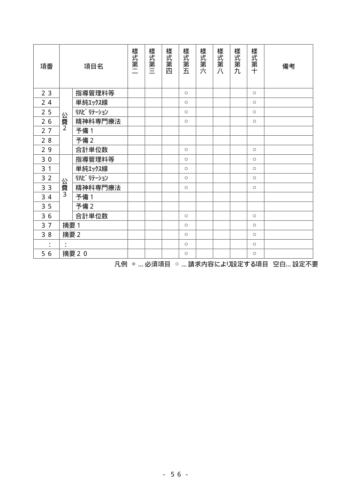
claude-haiku-5-5
- 表1 項番が整数でない行が 1 行
- 表1 項番56 項番が連続していない: 38 → 56
表1 required_matrix 前頁から続く
| 項番 | 項目名 | 属性 | 桁数 | 内容 | 必須 | 備考 | その他の列 |
|---|---|---|---|---|---|---|---|
| 23 | 公費2 > 指導管理料等 | 様式第二:－ 様式第三:－ 様式第四:－ 様式第五:○ 様式第六:－ 様式第八:－ 様式第九:－ 様式第十:○ | |||||
| 24 | 公費2 > 単純ｴｯｸｽ線 | 様式第二:－ 様式第三:－ 様式第四:－ 様式第五:○ 様式第六:－ 様式第八:－ 様式第九:－ 様式第十:○ | |||||
| 25 | 公費2 > リハビリテーション | 様式第二:－ 様式第三:－ 様式第四:－ 様式第五:○ 様式第六:－ 様式第八:－ 様式第九:－ 様式第十:○ | |||||
| 26 | 公費2 > 精神科専門療法 | 様式第二:－ 様式第三:－ 様式第四:－ 様式第五:○ 様式第六:－ 様式第八:－ 様式第九:－ 様式第十:○ | |||||
| 27 | 公費2 > 予備1 | 様式第二:－ 様式第三:－ 様式第四:－ 様式第五:－ 様式第六:－ 様式第八:－ 様式第九:－ 様式第十:－ | |||||
| 28 | 公費2 > 予備2 | 様式第二:－ 様式第三:－ 様式第四:－ 様式第五:－ 様式第六:－ 様式第八:－ 様式第九:－ 様式第十:－ | |||||
| 29 | 公費2 > 合計単位数 | 様式第二:－ 様式第三:－ 様式第四:－ 様式第五:○ 様式第六:－ 様式第八:－ 様式第九:－ 様式第十:○ | |||||
| 30 | 公費3 > 指導管理料等 | 様式第二:－ 様式第三:－ 様式第四:－ 様式第五:○ 様式第六:－ 様式第八:－ 様式第九:－ 様式第十:○ | |||||
| 31 | 公費3 > 単純ｴｯｸｽ線 | 様式第二:－ 様式第三:－ 様式第四:－ 様式第五:○ 様式第六:－ 様式第八:－ 様式第九:－ 様式第十:○ | |||||
| 32 | 公費3 > リハビリテーション | 様式第二:－ 様式第三:－ 様式第四:－ 様式第五:○ 様式第六:－ 様式第八:－ 様式第九:－ 様式第十:○ | |||||
| 33 | 公費3 > 精神科専門療法 | 様式第二:－ 様式第三:－ 様式第四:－ 様式第五:○ 様式第六:－ 様式第八:－ 様式第九:－ 様式第十:○ | |||||
| 34 | 公費3 > 予備1 | 様式第二:－ 様式第三:－ 様式第四:－ 様式第五:－ 様式第六:－ 様式第八:－ 様式第九:－ 様式第十:－ | |||||
| 35 | 公費3 > 予備2 | 様式第二:－ 様式第三:－ 様式第四:－ 様式第五:－ 様式第六:－ 様式第八:－ 様式第九:－ 様式第十:－ | |||||
| 36 | 公費3 > 合計単位数 | 様式第二:－ 様式第三:－ 様式第四:－ 様式第五:○ 様式第六:－ 様式第八:－ 様式第九:－ 様式第十:○ | |||||
| 37 | 摘要1 | 様式第二:－ 様式第三:－ 様式第四:－ 様式第五:○ 様式第六:－ 様式第八:－ 様式第九:－ 様式第十:○ | |||||
| 38 | 摘要2 | 様式第二:－ 様式第三:－ 様式第四:－ 様式第五:○ 様式第六:－ 様式第八:－ 様式第九:－ 様式第十:○ | |||||
| : | : | 様式第二:－ 様式第三:－ 様式第四:－ 様式第五:○ 様式第六:－ 様式第八:－ 様式第九:－ 様式第十:○ | |||||
| 56 | 摘要20 | 様式第二:－ 様式第三:－ 様式第四:－ 様式第五:○ 様式第六:－ 様式第八:－ 様式第九:－ 様式第十:○ |
注記
- 凡例 ◎ … 必須項目 ○ … 請求内容により設定する項目 空白… 設定不要
uncertain（モデル自己申告）
- 表の上端に表見出しがなく、項番23から始まるため前ページからの続きと判断した。
- 項番23〜36の公費2・公費3は縦結合の行見出しとして name_path に入れた。
- 「単純ｴｯｸｽ線」「リハビリテーション」「予備1」「摘要1」などの数字・カナの全角半角は画像からは確定できないため、原文の表記は読み取りのままとした。
- 項番「：」の行は項番が印字されていないため no を null とした。
claude-sonnet-5-5
- 表1 項番が整数でない行が 1 行
- 表1 項番56 項番が連続していない: 38 → 56
表1 required_matrix 前頁から続く
| 項番 | 項目名 | 属性 | 桁数 | 内容 | 必須 | 備考 | その他の列 |
|---|---|---|---|---|---|---|---|
| 23 | 公費2 > 指導管理料等 | 様式第二:－ 様式第三:－ 様式第四:－ 様式第五:○ 様式第六:－ 様式第八:－ 様式第九:－ 様式第十:○ | |||||
| 24 | 公費2 > 単純エックス線 | 様式第二:－ 様式第三:－ 様式第四:－ 様式第五:○ 様式第六:－ 様式第八:－ 様式第九:－ 様式第十:○ | |||||
| 25 | 公費2 > ﾘﾊﾋﾞﾘﾃｰｼｮﾝ | 様式第二:－ 様式第三:－ 様式第四:－ 様式第五:○ 様式第六:－ 様式第八:－ 様式第九:－ 様式第十:○ | |||||
| 26 | 公費2 > 精神科専門療法 | 様式第二:－ 様式第三:－ 様式第四:－ 様式第五:○ 様式第六:－ 様式第八:－ 様式第九:－ 様式第十:○ | |||||
| 27 | 公費2 > 予備1 | 様式第二:－ 様式第三:－ 様式第四:－ 様式第五:－ 様式第六:－ 様式第八:－ 様式第九:－ 様式第十:－ | |||||
| 28 | 公費2 > 予備2 | 様式第二:－ 様式第三:－ 様式第四:－ 様式第五:－ 様式第六:－ 様式第八:－ 様式第九:－ 様式第十:－ | |||||
| 29 | 公費2 > 合計単位数 | 様式第二:－ 様式第三:－ 様式第四:－ 様式第五:○ 様式第六:－ 様式第八:－ 様式第九:－ 様式第十:○ | |||||
| 30 | 公費3 > 指導管理料等 | 様式第二:－ 様式第三:－ 様式第四:－ 様式第五:○ 様式第六:－ 様式第八:－ 様式第九:－ 様式第十:○ | |||||
| 31 | 公費3 > 単純エックス線 | 様式第二:－ 様式第三:－ 様式第四:－ 様式第五:○ 様式第六:－ 様式第八:－ 様式第九:－ 様式第十:○ | |||||
| 32 | 公費3 > ﾘﾊﾋﾞﾘﾃｰｼｮﾝ | 様式第二:－ 様式第三:－ 様式第四:－ 様式第五:○ 様式第六:－ 様式第八:－ 様式第九:－ 様式第十:○ | |||||
| 33 | 公費3 > 精神科専門療法 | 様式第二:－ 様式第三:－ 様式第四:－ 様式第五:○ 様式第六:－ 様式第八:－ 様式第九:－ 様式第十:○ | |||||
| 34 | 公費3 > 予備1 | 様式第二:－ 様式第三:－ 様式第四:－ 様式第五:－ 様式第六:－ 様式第八:－ 様式第九:－ 様式第十:－ | |||||
| 35 | 公費3 > 予備2 | 様式第二:－ 様式第三:－ 様式第四:－ 様式第五:－ 様式第六:－ 様式第八:－ 様式第九:－ 様式第十:－ | |||||
| 36 | 公費3 > 合計単位数 | 様式第二:－ 様式第三:－ 様式第四:－ 様式第五:○ 様式第六:－ 様式第八:－ 様式第九:－ 様式第十:○ | |||||
| 37 | 摘要1 | 様式第二:－ 様式第三:－ 様式第四:－ 様式第五:○ 様式第六:－ 様式第八:－ 様式第九:－ 様式第十:○ | |||||
| 38 | 摘要2 | 様式第二:－ 様式第三:－ 様式第四:－ 様式第五:○ 様式第六:－ 様式第八:－ 様式第九:－ 様式第十:○ | |||||
| : | : | 様式第二:－ 様式第三:－ 様式第四:－ 様式第五:○ 様式第六:－ 様式第八:－ 様式第九:－ 様式第十:○ | |||||
| 56 | 摘要20 | 様式第二:－ 様式第三:－ 様式第四:－ 様式第五:○ 様式第六:－ 様式第八:－ 様式第九:－ 様式第十:○ |
注記
- 凡例 ◎…必須項目 ○…請求内容により設定する項目 空白…設定不要
uncertain（モデル自己申告）
- 表の前ページからの続き。レコード名・交換情報識別番号は不明のため空文字。
- 凡例の◎は印字が小さく判読が不確か。
kaigo_jigyosho_r0604_p119 — 印字p.
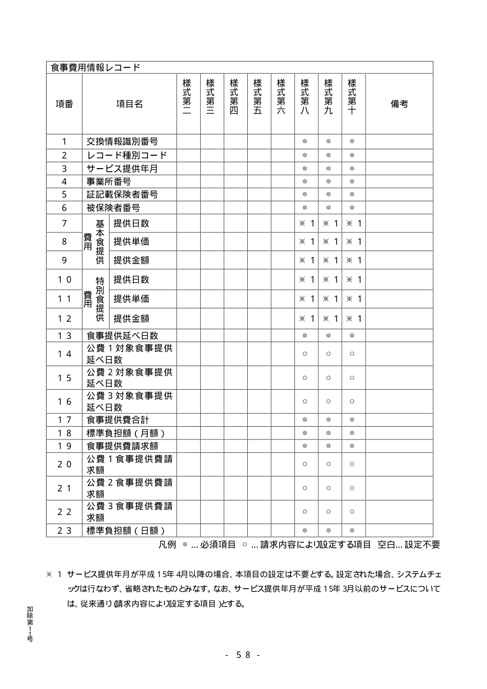
claude-haiku-5-5
- 表1 項番7 必須（様式第八）の値が想定外: '※ 1'
- 表1 項番7 必須（様式第九）の値が想定外: '※ 1'
- 表1 項番7 必須（様式第十）の値が想定外: '※ 1'
- 表1 項番8 必須（様式第八）の値が想定外: '※ 1'
- 表1 項番8 必須（様式第九）の値が想定外: '※ 1'
- 表1 項番8 必須（様式第十）の値が想定外: '※ 1'
- 表1 項番9 必須（様式第八）の値が想定外: '※ 1'
- 表1 項番9 必須（様式第九）の値が想定外: '※ 1'
- 表1 項番9 必須（様式第十）の値が想定外: '※ 1'
- 表1 項番10 必須（様式第八）の値が想定外: '※ 1'
- 表1 項番10 必須（様式第九）の値が想定外: '※ 1'
- 表1 項番10 必須（様式第十）の値が想定外: '※ 1'
- 表1 項番11 必須（様式第八）の値が想定外: '※ 1'
- 表1 項番11 必須（様式第九）の値が想定外: '※ 1'
- 表1 項番11 必須（様式第十）の値が想定外: '※ 1'
- 表1 項番12 必須（様式第八）の値が想定外: '※ 1'
- 表1 項番12 必須（様式第九）の値が想定外: '※ 1'
- 表1 項番12 必須（様式第十）の値が想定外: '※ 1'
表1 required_matrix食事費用情報レコード
| 項番 | 項目名 | 属性 | 桁数 | 内容 | 必須 | 備考 | その他の列 |
|---|---|---|---|---|---|---|---|
| 1 | 交換情報識別番号 | 様式第二:－ 様式第三:－ 様式第四:－ 様式第五:－ 様式第六:－ 様式第八:◎ 様式第九:◎ 様式第十:◎ | |||||
| 2 | レコード種別コード | 様式第二:－ 様式第三:－ 様式第四:－ 様式第五:－ 様式第六:－ 様式第八:◎ 様式第九:◎ 様式第十:◎ | |||||
| 3 | サービス提供年月 | 様式第二:－ 様式第三:－ 様式第四:－ 様式第五:－ 様式第六:－ 様式第八:◎ 様式第九:◎ 様式第十:◎ | |||||
| 4 | 事業所番号 | 様式第二:－ 様式第三:－ 様式第四:－ 様式第五:－ 様式第六:－ 様式第八:◎ 様式第九:◎ 様式第十:◎ | |||||
| 5 | 証記載保険者番号 | 様式第二:－ 様式第三:－ 様式第四:－ 様式第五:－ 様式第六:－ 様式第八:◎ 様式第九:◎ 様式第十:◎ | |||||
| 6 | 被保険者番号 | 様式第二:－ 様式第三:－ 様式第四:－ 様式第五:－ 様式第六:－ 様式第八:◎ 様式第九:◎ 様式第十:◎ | |||||
| 7 | 費用 > 基本食提供 > 提供日数 | 様式第二:－ 様式第三:－ 様式第四:－ 様式第五:－ 様式第六:－ 様式第八:※ 1 様式第九:※ 1 様式第十:※ 1 | |||||
| 8 | 費用 > 基本食提供 > 提供単価 | 様式第二:－ 様式第三:－ 様式第四:－ 様式第五:－ 様式第六:－ 様式第八:※ 1 様式第九:※ 1 様式第十:※ 1 | |||||
| 9 | 費用 > 基本食提供 > 提供金額 | 様式第二:－ 様式第三:－ 様式第四:－ 様式第五:－ 様式第六:－ 様式第八:※ 1 様式第九:※ 1 様式第十:※ 1 | |||||
| 10 | 費用 > 特別食提供 > 提供日数 | 様式第二:－ 様式第三:－ 様式第四:－ 様式第五:－ 様式第六:－ 様式第八:※ 1 様式第九:※ 1 様式第十:※ 1 | |||||
| 11 | 費用 > 特別食提供 > 提供単価 | 様式第二:－ 様式第三:－ 様式第四:－ 様式第五:－ 様式第六:－ 様式第八:※ 1 様式第九:※ 1 様式第十:※ 1 | |||||
| 12 | 費用 > 特別食提供 > 提供金額 | 様式第二:－ 様式第三:－ 様式第四:－ 様式第五:－ 様式第六:－ 様式第八:※ 1 様式第九:※ 1 様式第十:※ 1 | |||||
| 13 | 食事提供延べ日数 | 様式第二:－ 様式第三:－ 様式第四:－ 様式第五:－ 様式第六:－ 様式第八:◎ 様式第九:◎ 様式第十:◎ | |||||
| 14 | 公費1対象食事提供延べ日数 | 様式第二:－ 様式第三:－ 様式第四:－ 様式第五:－ 様式第六:－ 様式第八:○ 様式第九:○ 様式第十:○ | |||||
| 15 | 公費2対象食事提供延べ日数 | 様式第二:－ 様式第三:－ 様式第四:－ 様式第五:－ 様式第六:－ 様式第八:○ 様式第九:○ 様式第十:○ | |||||
| 16 | 公費3対象食事提供延べ日数 | 様式第二:－ 様式第三:－ 様式第四:－ 様式第五:－ 様式第六:－ 様式第八:○ 様式第九:○ 様式第十:○ | |||||
| 17 | 食事提供費合計 | 様式第二:－ 様式第三:－ 様式第四:－ 様式第五:－ 様式第六:－ 様式第八:◎ 様式第九:◎ 様式第十:◎ | |||||
| 18 | 標準負担額（月額） | 様式第二:－ 様式第三:－ 様式第四:－ 様式第五:－ 様式第六:－ 様式第八:◎ 様式第九:◎ 様式第十:◎ | |||||
| 19 | 食事提供費請求額 | 様式第二:－ 様式第三:－ 様式第四:－ 様式第五:－ 様式第六:－ 様式第八:◎ 様式第九:◎ 様式第十:◎ | |||||
| 20 | 公費1食事提供費請求額 | 様式第二:－ 様式第三:－ 様式第四:－ 様式第五:－ 様式第六:－ 様式第八:○ 様式第九:○ 様式第十:○ | |||||
| 21 | 公費2食事提供費請求額 | 様式第二:－ 様式第三:－ 様式第四:－ 様式第五:－ 様式第六:－ 様式第八:○ 様式第九:○ 様式第十:○ | |||||
| 22 | 公費3食事提供費請求額 | 様式第二:－ 様式第三:－ 様式第四:－ 様式第五:－ 様式第六:－ 様式第八:○ 様式第九:○ 様式第十:○ | |||||
| 23 | 標準負担額（日額） | 様式第二:－ 様式第三:－ 様式第四:－ 様式第五:－ 様式第六:－ 様式第八:◎ 様式第九:◎ 様式第十:◎ |
注記
- ※1 サービス提供年月が平成15年4月以降の場合、本項目の設定は不要とする。設定された場合、システムチェックは行なわず、省略されたものとみなす。なお、サービス提供年月が平成15年3月以前のサービスについては、従来通り(請求内容により設定する項目)とする。
- 凡例 ◎ … 必須項目 ○ … 請求内容により設定する項目 空白… 設定不要
uncertain（モデル自己申告）
- 「費用」の縦見出しは7〜12行にまたがる一つの見出しとして読み、name_path に入れた。
- 項番7〜12の「※ 1」は様式第八・九・十の各セルに印字された注記記号として書き写した。
claude-sonnet-5-5
- 表1 項番7 必須（様式第八）の値が想定外: '※1'
- 表1 項番7 必須（様式第九）の値が想定外: '※1'
- 表1 項番7 必須（様式第十）の値が想定外: '※1'
- 表1 項番8 必須（様式第八）の値が想定外: '※1'
- 表1 項番8 必須（様式第九）の値が想定外: '※1'
- 表1 項番8 必須（様式第十）の値が想定外: '※1'
- 表1 項番9 必須（様式第八）の値が想定外: '※1'
- 表1 項番9 必須（様式第九）の値が想定外: '※1'
- 表1 項番9 必須（様式第十）の値が想定外: '※1'
- 表1 項番10 必須（様式第八）の値が想定外: '※1'
- 表1 項番10 必須（様式第九）の値が想定外: '※1'
- 表1 項番10 必須（様式第十）の値が想定外: '※1'
- 表1 項番11 必須（様式第八）の値が想定外: '※1'
- 表1 項番11 必須（様式第九）の値が想定外: '※1'
- 表1 項番11 必須（様式第十）の値が想定外: '※1'
- 表1 項番12 必須（様式第八）の値が想定外: '※1'
- 表1 項番12 必須（様式第九）の値が想定外: '※1'
- 表1 項番12 必須（様式第十）の値が想定外: '※1'
表1 required_matrix食事費用情報レコード
| 項番 | 項目名 | 属性 | 桁数 | 内容 | 必須 | 備考 | その他の列 |
|---|---|---|---|---|---|---|---|
| 1 | 交換情報識別番号 | 様式第二:－ 様式第三:－ 様式第四:－ 様式第五:－ 様式第六:－ 様式第八:◎ 様式第九:◎ 様式第十:◎ | |||||
| 2 | レコード種別コード | 様式第二:－ 様式第三:－ 様式第四:－ 様式第五:－ 様式第六:－ 様式第八:◎ 様式第九:◎ 様式第十:◎ | |||||
| 3 | サービス提供年月 | 様式第二:－ 様式第三:－ 様式第四:－ 様式第五:－ 様式第六:－ 様式第八:◎ 様式第九:◎ 様式第十:◎ | |||||
| 4 | 事業所番号 | 様式第二:－ 様式第三:－ 様式第四:－ 様式第五:－ 様式第六:－ 様式第八:◎ 様式第九:◎ 様式第十:◎ | |||||
| 5 | 証記載保険者番号 | 様式第二:－ 様式第三:－ 様式第四:－ 様式第五:－ 様式第六:－ 様式第八:◎ 様式第九:◎ 様式第十:◎ | |||||
| 6 | 被保険者番号 | 様式第二:－ 様式第三:－ 様式第四:－ 様式第五:－ 様式第六:－ 様式第八:◎ 様式第九:◎ 様式第十:◎ | |||||
| 7 | 基本食提供費用 > 提供日数 | 様式第二:－ 様式第三:－ 様式第四:－ 様式第五:－ 様式第六:－ 様式第八:※1 様式第九:※1 様式第十:※1 | |||||
| 8 | 基本食提供費用 > 提供単価 | 様式第二:－ 様式第三:－ 様式第四:－ 様式第五:－ 様式第六:－ 様式第八:※1 様式第九:※1 様式第十:※1 | |||||
| 9 | 基本食提供費用 > 提供金額 | 様式第二:－ 様式第三:－ 様式第四:－ 様式第五:－ 様式第六:－ 様式第八:※1 様式第九:※1 様式第十:※1 | |||||
| 10 | 特別食提供費用 > 提供日数 | 様式第二:－ 様式第三:－ 様式第四:－ 様式第五:－ 様式第六:－ 様式第八:※1 様式第九:※1 様式第十:※1 | |||||
| 11 | 特別食提供費用 > 提供単価 | 様式第二:－ 様式第三:－ 様式第四:－ 様式第五:－ 様式第六:－ 様式第八:※1 様式第九:※1 様式第十:※1 | |||||
| 12 | 特別食提供費用 > 提供金額 | 様式第二:－ 様式第三:－ 様式第四:－ 様式第五:－ 様式第六:－ 様式第八:※1 様式第九:※1 様式第十:※1 | |||||
| 13 | 食事提供延べ日数 | 様式第二:－ 様式第三:－ 様式第四:－ 様式第五:－ 様式第六:－ 様式第八:◎ 様式第九:◎ 様式第十:◎ | |||||
| 14 | 公費1対象食事提供延べ日数 | 様式第二:－ 様式第三:－ 様式第四:－ 様式第五:－ 様式第六:－ 様式第八:○ 様式第九:○ 様式第十:○ | |||||
| 15 | 公費2対象食事提供延べ日数 | 様式第二:－ 様式第三:－ 様式第四:－ 様式第五:－ 様式第六:－ 様式第八:○ 様式第九:○ 様式第十:○ | |||||
| 16 | 公費3対象食事提供延べ日数 | 様式第二:－ 様式第三:－ 様式第四:－ 様式第五:－ 様式第六:－ 様式第八:○ 様式第九:○ 様式第十:○ | |||||
| 17 | 食事提供費合計 | 様式第二:－ 様式第三:－ 様式第四:－ 様式第五:－ 様式第六:－ 様式第八:◎ 様式第九:◎ 様式第十:◎ | |||||
| 18 | 標準負担額（月額） | 様式第二:－ 様式第三:－ 様式第四:－ 様式第五:－ 様式第六:－ 様式第八:◎ 様式第九:◎ 様式第十:◎ | |||||
| 19 | 食事提供費請求額 | 様式第二:－ 様式第三:－ 様式第四:－ 様式第五:－ 様式第六:－ 様式第八:◎ 様式第九:◎ 様式第十:◎ | |||||
| 20 | 公費1食事提供費請求額 | 様式第二:－ 様式第三:－ 様式第四:－ 様式第五:－ 様式第六:－ 様式第八:○ 様式第九:○ 様式第十:○ | |||||
| 21 | 公費2食事提供費請求額 | 様式第二:－ 様式第三:－ 様式第四:－ 様式第五:－ 様式第六:－ 様式第八:○ 様式第九:○ 様式第十:○ | |||||
| 22 | 公費3食事提供費請求額 | 様式第二:－ 様式第三:－ 様式第四:－ 様式第五:－ 様式第六:－ 様式第八:○ 様式第九:○ 様式第十:○ | |||||
| 23 | 標準負担額（日額） | 様式第二:－ 様式第三:－ 様式第四:－ 様式第五:－ 様式第六:－ 様式第八:◎ 様式第九:◎ 様式第十:◎ |
注記
- 凡例 ◎…必須項目 ○…請求内容により設定する項目 空白…設定不要
- ※1 サービス提供年月が平成15年4月以降の場合、本項目の設定は不要とする。設定された場合、システムチェックは行なわず、省略されたものとみなす。なお、サービス提供年月が平成15年3月以前のサービスについては、従来通り(請求内容により設定する項目)とする。
uncertain（モデル自己申告）
- 表の左下の縦書き「加除第11号」は表外のため無視した
- 項目名の縦結合グループ見出し「基本食提供費用」「特別食提供費用」は縦書き文字の並びから推定
kaigo_jigyosho_r0604_p120 — 印字p.
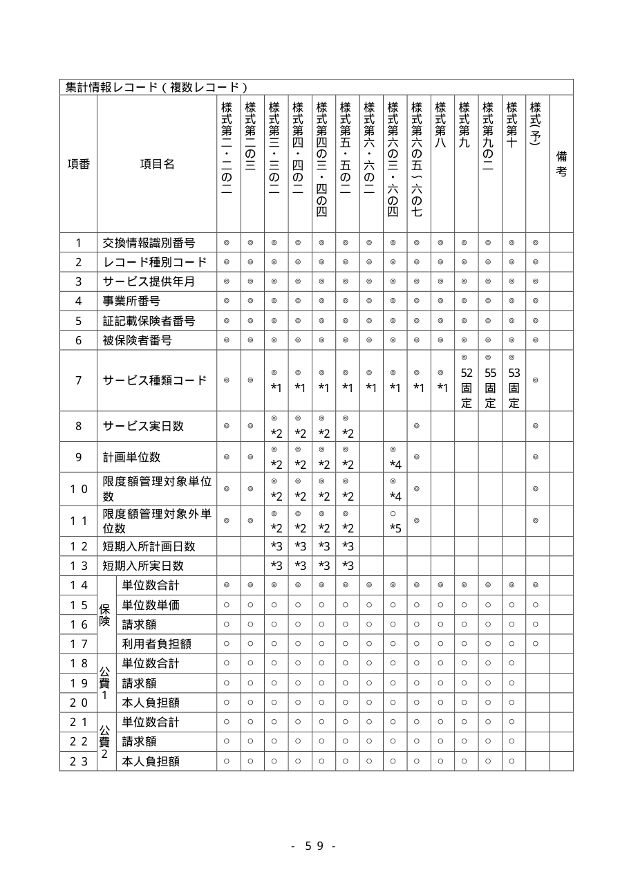
claude-haiku-5-5
- 表1 項番7 必須（様式第三・三の二）の値が想定外: '◎*1'
- 表1 項番7 必須（様式第四・四の二）の値が想定外: '◎*1'
- 表1 項番7 必須（様式第四の三・四の四）の値が想定外: '◎*1'
- 表1 項番7 必須（様式第五・五の二）の値が想定外: '◎*1'
- 表1 項番7 必須（様式第六・六の二）の値が想定外: '◎*1'
- 表1 項番7 必須（様式第六の三・六の四）の値が想定外: '◎*1'
- 表1 項番7 必須（様式第六の五〜六の七）の値が想定外: '◎*1'
- 表1 項番7 必須（様式第八）の値が想定外: '◎*1'
- 表1 項番7 必須（様式第九）の値が想定外: '◎52固定'
- 表1 項番7 必須（様式第九の二）の値が想定外: '◎55固定'
- 表1 項番7 必須（様式第十）の値が想定外: '◎53固定'
- 表1 項番8 必須（様式第三・三の二）の値が想定外: '◎*2'
- 表1 項番8 必須（様式第四・四の二）の値が想定外: '◎*2'
- 表1 項番8 必須（様式第四の三・四の四）の値が想定外: '◎*2'
- 表1 項番8 必須（様式第五・五の二）の値が想定外: '◎*2'
- 表1 項番9 必須（様式第三・三の二）の値が想定外: '◎*2'
- 表1 項番9 必須（様式第四・四の二）の値が想定外: '◎*2'
- 表1 項番9 必須（様式第四の三・四の四）の値が想定外: '◎*2'
- 表1 項番9 必須（様式第五・五の二）の値が想定外: '◎*2'
- 表1 項番9 必須（様式第六の三・六の四）の値が想定外: '◎*4'
- 表1 項番10 必須（様式第三・三の二）の値が想定外: '◎*2'
- 表1 項番10 必須（様式第四・四の二）の値が想定外: '◎*2'
- 表1 項番10 必須（様式第四の三・四の四）の値が想定外: '◎*2'
- 表1 項番10 必須（様式第五・五の二）の値が想定外: '◎*2'
- 表1 項番10 必須（様式第六の三・六の四）の値が想定外: '◎*4'
- 表1 項番11 必須（様式第三・三の二）の値が想定外: '◎*2'
- 表1 項番11 必須（様式第四・四の二）の値が想定外: '◎*2'
- 表1 項番11 必須（様式第四の三・四の四）の値が想定外: '◎*2'
- 表1 項番11 必須（様式第五・五の二）の値が想定外: '◎*2'
- 表1 項番11 必須（様式第六の三・六の四）の値が想定外: '○*5'
- 表1 項番12 必須（様式第三・三の二）の値が想定外: '*3'
- 表1 項番12 必須（様式第四・四の二）の値が想定外: '*3'
- 表1 項番12 必須（様式第四の三・四の四）の値が想定外: '*3'
- 表1 項番12 必須（様式第五・五の二）の値が想定外: '*3'
- 表1 項番13 必須（様式第三・三の二）の値が想定外: '*3'
- 表1 項番13 必須（様式第四・四の二）の値が想定外: '*3'
- 表1 項番13 必須（様式第四の三・四の四）の値が想定外: '*3'
- 表1 項番13 必須（様式第五・五の二）の値が想定外: '*3'
- [改ページ] p120→p121 の連続性 OK
表1 required_matrix集計情報レコード（複数レコード） 次頁へ続く
| 項番 | 項目名 | 属性 | 桁数 | 内容 | 必須 | 備考 | その他の列 |
|---|---|---|---|---|---|---|---|
| 1 | 交換情報識別番号 | 様式第二・二の二:◎ 様式第二の三:◎ 様式第三・三の二:◎ 様式第四・四の二:◎ 様式第四の三・四の四:◎ 様式第五・五の二:◎ 様式第六・六の二:◎ 様式第六の三・六の四:◎ 様式第六の五〜六の七:◎ 様式第八:◎ 様式第九:◎ 様式第九の二:◎ 様式第十:◎ 様式(予):◎ | |||||
| 2 | レコード種別コード | 様式第二・二の二:◎ 様式第二の三:◎ 様式第三・三の二:◎ 様式第四・四の二:◎ 様式第四の三・四の四:◎ 様式第五・五の二:◎ 様式第六・六の二:◎ 様式第六の三・六の四:◎ 様式第六の五〜六の七:◎ 様式第八:◎ 様式第九:◎ 様式第九の二:◎ 様式第十:◎ 様式(予):◎ | |||||
| 3 | サービス提供年月 | 様式第二・二の二:◎ 様式第二の三:◎ 様式第三・三の二:◎ 様式第四・四の二:◎ 様式第四の三・四の四:◎ 様式第五・五の二:◎ 様式第六・六の二:◎ 様式第六の三・六の四:◎ 様式第六の五〜六の七:◎ 様式第八:◎ 様式第九:◎ 様式第九の二:◎ 様式第十:◎ 様式(予):◎ | |||||
| 4 | 事業所番号 | 様式第二・二の二:◎ 様式第二の三:◎ 様式第三・三の二:◎ 様式第四・四の二:◎ 様式第四の三・四の四:◎ 様式第五・五の二:◎ 様式第六・六の二:◎ 様式第六の三・六の四:◎ 様式第六の五〜六の七:◎ 様式第八:◎ 様式第九:◎ 様式第九の二:◎ 様式第十:◎ 様式(予):◎ | |||||
| 5 | 証記載保険者番号 | 様式第二・二の二:◎ 様式第二の三:◎ 様式第三・三の二:◎ 様式第四・四の二:◎ 様式第四の三・四の四:◎ 様式第五・五の二:◎ 様式第六・六の二:◎ 様式第六の三・六の四:◎ 様式第六の五〜六の七:◎ 様式第八:◎ 様式第九:◎ 様式第九の二:◎ 様式第十:◎ 様式(予):◎ | |||||
| 6 | 被保険者番号 | 様式第二・二の二:◎ 様式第二の三:◎ 様式第三・三の二:◎ 様式第四・四の二:◎ 様式第四の三・四の四:◎ 様式第五・五の二:◎ 様式第六・六の二:◎ 様式第六の三・六の四:◎ 様式第六の五〜六の七:◎ 様式第八:◎ 様式第九:◎ 様式第九の二:◎ 様式第十:◎ 様式(予):◎ | |||||
| 7 | サービス種類コード | 様式第二・二の二:◎ 様式第二の三:◎ 様式第三・三の二:◎*1 様式第四・四の二:◎*1 様式第四の三・四の四:◎*1 様式第五・五の二:◎*1 様式第六・六の二:◎*1 様式第六の三・六の四:◎*1 様式第六の五〜六の七:◎*1 様式第八:◎*1 様式第九:◎52固定 様式第九の二:◎55固定 様式第十:◎53固定 様式(予):◎ | |||||
| 8 | サービス実日数 | 様式第二・二の二:◎ 様式第二の三:◎ 様式第三・三の二:◎*2 様式第四・四の二:◎*2 様式第四の三・四の四:◎*2 様式第五・五の二:◎*2 様式第六・六の二:－ 様式第六の三・六の四:－ 様式第六の五〜六の七:◎ 様式第八:－ 様式第九:－ 様式第九の二:－ 様式第十:－ 様式(予):◎ | |||||
| 9 | 計画単位数 | 様式第二・二の二:◎ 様式第二の三:◎ 様式第三・三の二:◎*2 様式第四・四の二:◎*2 様式第四の三・四の四:◎*2 様式第五・五の二:◎*2 様式第六・六の二:－ 様式第六の三・六の四:◎*4 様式第六の五〜六の七:◎ 様式第八:－ 様式第九:－ 様式第九の二:－ 様式第十:－ 様式(予):◎ | |||||
| 10 | 限度額管理対象単位数 | 様式第二・二の二:◎ 様式第二の三:◎ 様式第三・三の二:◎*2 様式第四・四の二:◎*2 様式第四の三・四の四:◎*2 様式第五・五の二:◎*2 様式第六・六の二:－ 様式第六の三・六の四:◎*4 様式第六の五〜六の七:◎ 様式第八:－ 様式第九:－ 様式第九の二:－ 様式第十:－ 様式(予):◎ | |||||
| 11 | 限度額管理対象外単位数 | 様式第二・二の二:◎ 様式第二の三:◎ 様式第三・三の二:◎*2 様式第四・四の二:◎*2 様式第四の三・四の四:◎*2 様式第五・五の二:◎*2 様式第六・六の二:－ 様式第六の三・六の四:○*5 様式第六の五〜六の七:◎ 様式第八:－ 様式第九:－ 様式第九の二:－ 様式第十:－ 様式(予):◎ | |||||
| 12 | 短期入所計画日数 | 様式第二・二の二:－ 様式第二の三:－ 様式第三・三の二:*3 様式第四・四の二:*3 様式第四の三・四の四:*3 様式第五・五の二:*3 様式第六・六の二:－ 様式第六の三・六の四:－ 様式第六の五〜六の七:－ 様式第八:－ 様式第九:－ 様式第九の二:－ 様式第十:－ 様式(予):－ | |||||
| 13 | 短期入所実日数 | 様式第二・二の二:－ 様式第二の三:－ 様式第三・三の二:*3 様式第四・四の二:*3 様式第四の三・四の四:*3 様式第五・五の二:*3 様式第六・六の二:－ 様式第六の三・六の四:－ 様式第六の五〜六の七:－ 様式第八:－ 様式第九:－ 様式第九の二:－ 様式第十:－ 様式(予):－ | |||||
| 14 | 保険 > 単位数合計 | 様式第二・二の二:◎ 様式第二の三:◎ 様式第三・三の二:◎ 様式第四・四の二:◎ 様式第四の三・四の四:◎ 様式第五・五の二:◎ 様式第六・六の二:◎ 様式第六の三・六の四:◎ 様式第六の五〜六の七:◎ 様式第八:◎ 様式第九:◎ 様式第九の二:◎ 様式第十:◎ 様式(予):◎ | |||||
| 15 | 保険 > 単位数単価 | 様式第二・二の二:○ 様式第二の三:○ 様式第三・三の二:○ 様式第四・四の二:○ 様式第四の三・四の四:○ 様式第五・五の二:○ 様式第六・六の二:○ 様式第六の三・六の四:○ 様式第六の五〜六の七:○ 様式第八:○ 様式第九:○ 様式第九の二:○ 様式第十:○ 様式(予):○ | |||||
| 16 | 保険 > 請求額 | 様式第二・二の二:○ 様式第二の三:○ 様式第三・三の二:○ 様式第四・四の二:○ 様式第四の三・四の四:○ 様式第五・五の二:○ 様式第六・六の二:○ 様式第六の三・六の四:○ 様式第六の五〜六の七:○ 様式第八:○ 様式第九:○ 様式第九の二:○ 様式第十:○ 様式(予):○ | |||||
| 17 | 保険 > 利用者負担額 | 様式第二・二の二:○ 様式第二の三:○ 様式第三・三の二:○ 様式第四・四の二:○ 様式第四の三・四の四:○ 様式第五・五の二:○ 様式第六・六の二:○ 様式第六の三・六の四:○ 様式第六の五〜六の七:○ 様式第八:○ 様式第九:○ 様式第九の二:○ 様式第十:○ 様式(予):○ | |||||
| 18 | 公費1 > 単位数合計 | 様式第二・二の二:○ 様式第二の三:○ 様式第三・三の二:○ 様式第四・四の二:○ 様式第四の三・四の四:○ 様式第五・五の二:○ 様式第六・六の二:○ 様式第六の三・六の四:○ 様式第六の五〜六の七:○ 様式第八:○ 様式第九:○ 様式第九の二:○ 様式第十:○ 様式(予):－ | |||||
| 19 | 公費1 > 請求額 | 様式第二・二の二:○ 様式第二の三:○ 様式第三・三の二:○ 様式第四・四の二:○ 様式第四の三・四の四:○ 様式第五・五の二:○ 様式第六・六の二:○ 様式第六の三・六の四:○ 様式第六の五〜六の七:○ 様式第八:○ 様式第九:○ 様式第九の二:○ 様式第十:○ 様式(予):－ | |||||
| 20 | 公費1 > 本人負担額 | 様式第二・二の二:○ 様式第二の三:○ 様式第三・三の二:○ 様式第四・四の二:○ 様式第四の三・四の四:○ 様式第五・五の二:○ 様式第六・六の二:○ 様式第六の三・六の四:○ 様式第六の五〜六の七:○ 様式第八:○ 様式第九:○ 様式第九の二:○ 様式第十:○ 様式(予):－ | |||||
| 21 | 公費2 > 単位数合計 | 様式第二・二の二:○ 様式第二の三:○ 様式第三・三の二:○ 様式第四・四の二:○ 様式第四の三・四の四:○ 様式第五・五の二:○ 様式第六・六の二:○ 様式第六の三・六の四:○ 様式第六の五〜六の七:○ 様式第八:○ 様式第九:○ 様式第九の二:○ 様式第十:○ 様式(予):－ | |||||
| 22 | 公費2 > 請求額 | 様式第二・二の二:○ 様式第二の三:○ 様式第三・三の二:○ 様式第四・四の二:○ 様式第四の三・四の四:○ 様式第五・五の二:○ 様式第六・六の二:○ 様式第六の三・六の四:○ 様式第六の五〜六の七:○ 様式第八:○ 様式第九:○ 様式第九の二:○ 様式第十:○ 様式(予):－ | |||||
| 23 | 公費2 > 本人負担額 | 様式第二・二の二:○ 様式第二の三:○ 様式第三・三の二:○ 様式第四・四の二:○ 様式第四の三・四の四:○ 様式第五・五の二:○ 様式第六・六の二:○ 様式第六の三・六の四:○ 様式第六の五〜六の七:○ 様式第八:○ 様式第九:○ 様式第九の二:○ 様式第十:○ 様式(予):－ |
uncertain（モデル自己申告）
- 本ページには「*1」〜「*5」の注記本文が含まれていないため、footnotes は空にした。
- 「様式(予)」の列見出しは画像の表記（括弧の字形）に依存し、原文の括弧種別を確実に判断できない。
- 行7のセル「◎」の下の「52固定」「55固定」「53固定」は、画像上で改行されているため1行に詰めて記載した。
- 行12・行13の「*3」は記号のみで必須記号（◎○△）が付いていないため、その表記のまま記載した。
claude-sonnet-5-5
- 表1 項番7 必須（様式第三・三の二）の値が想定外: '◎ *1'
- 表1 項番7 必須（様式第四・四の二）の値が想定外: '◎ *1'
- 表1 項番7 必須（様式第四の三・四の四）の値が想定外: '◎ *1'
- 表1 項番7 必須（様式第五・五の二）の値が想定外: '◎ *1'
- 表1 項番7 必須（様式第六・六の二）の値が想定外: '◎ *1'
- 表1 項番7 必須（様式第六の三・六の四）の値が想定外: '◎ *1'
- 表1 項番7 必須（様式第六の五〜六の七）の値が想定外: '◎ *1'
- 表1 項番7 必須（様式第八）の値が想定外: '◎ *1'
- 表1 項番7 必須（様式第九）の値が想定外: '◎ 52固定'
- 表1 項番7 必須（様式第九の二）の値が想定外: '◎ 55固定'
- 表1 項番7 必須（様式第十）の値が想定外: '◎ 53固定'
- 表1 項番8 必須（様式第三・三の二）の値が想定外: '◎ *2'
- 表1 項番8 必須（様式第四・四の二）の値が想定外: '◎ *2'
- 表1 項番8 必須（様式第四の三・四の四）の値が想定外: '◎ *2'
- 表1 項番8 必須（様式第五・五の二）の値が想定外: '◎ *2'
- 表1 項番9 必須（様式第三・三の二）の値が想定外: '◎ *2'
- 表1 項番9 必須（様式第四・四の二）の値が想定外: '◎ *2'
- 表1 項番9 必須（様式第四の三・四の四）の値が想定外: '◎ *2'
- 表1 項番9 必須（様式第五・五の二）の値が想定外: '◎ *2'
- 表1 項番9 必須（様式第六の三・六の四）の値が想定外: '◎ *4'
- 表1 項番10 必須（様式第三・三の二）の値が想定外: '◎ *2'
- 表1 項番10 必須（様式第四・四の二）の値が想定外: '◎ *2'
- 表1 項番10 必須（様式第四の三・四の四）の値が想定外: '◎ *2'
- 表1 項番10 必須（様式第五・五の二）の値が想定外: '◎ *2'
- 表1 項番10 必須（様式第六の三・六の四）の値が想定外: '◎ *4'
- 表1 項番11 必須（様式第三・三の二）の値が想定外: '◎ *2'
- 表1 項番11 必須（様式第四・四の二）の値が想定外: '◎ *2'
- 表1 項番11 必須（様式第四の三・四の四）の値が想定外: '◎ *2'
- 表1 項番11 必須（様式第五・五の二）の値が想定外: '◎ *2'
- 表1 項番11 必須（様式第六の三・六の四）の値が想定外: '○ *5'
- 表1 項番12 必須（様式第三・三の二）の値が想定外: '*3'
- 表1 項番12 必須（様式第四・四の二）の値が想定外: '*3'
- 表1 項番12 必須（様式第四の三・四の四）の値が想定外: '*3'
- 表1 項番12 必須（様式第五・五の二）の値が想定外: '*3'
- 表1 項番13 必須（様式第三・三の二）の値が想定外: '*3'
- 表1 項番13 必須（様式第四・四の二）の値が想定外: '*3'
- 表1 項番13 必須（様式第四の三・四の四）の値が想定外: '*3'
- 表1 項番13 必須（様式第五・五の二）の値が想定外: '*3'
- [改ページ] 前後ページで列見出しの書き起こしが一致しない
表1 required_matrix集計情報レコード（複数レコード） 次頁へ続く
| 項番 | 項目名 | 属性 | 桁数 | 内容 | 必須 | 備考 | その他の列 |
|---|---|---|---|---|---|---|---|
| 1 | 交換情報識別番号 | 様式第二・二の二:◎ 様式第二の三:◎ 様式第三・三の二:◎ 様式第四・四の二:◎ 様式第四の三・四の四:◎ 様式第五・五の二:◎ 様式第六・六の二:◎ 様式第六の三・六の四:◎ 様式第六の五〜六の七:◎ 様式第八:◎ 様式第九:◎ 様式第九の二:◎ 様式第十:◎ 様式(予):◎ | |||||
| 2 | レコード種別コード | 様式第二・二の二:◎ 様式第二の三:◎ 様式第三・三の二:◎ 様式第四・四の二:◎ 様式第四の三・四の四:◎ 様式第五・五の二:◎ 様式第六・六の二:◎ 様式第六の三・六の四:◎ 様式第六の五〜六の七:◎ 様式第八:◎ 様式第九:◎ 様式第九の二:◎ 様式第十:◎ 様式(予):◎ | |||||
| 3 | サービス提供年月 | 様式第二・二の二:◎ 様式第二の三:◎ 様式第三・三の二:◎ 様式第四・四の二:◎ 様式第四の三・四の四:◎ 様式第五・五の二:◎ 様式第六・六の二:◎ 様式第六の三・六の四:◎ 様式第六の五〜六の七:◎ 様式第八:◎ 様式第九:◎ 様式第九の二:◎ 様式第十:◎ 様式(予):◎ | |||||
| 4 | 事業所番号 | 様式第二・二の二:◎ 様式第二の三:◎ 様式第三・三の二:◎ 様式第四・四の二:◎ 様式第四の三・四の四:◎ 様式第五・五の二:◎ 様式第六・六の二:◎ 様式第六の三・六の四:◎ 様式第六の五〜六の七:◎ 様式第八:◎ 様式第九:◎ 様式第九の二:◎ 様式第十:◎ 様式(予):◎ | |||||
| 5 | 証記載保険者番号 | 様式第二・二の二:◎ 様式第二の三:◎ 様式第三・三の二:◎ 様式第四・四の二:◎ 様式第四の三・四の四:◎ 様式第五・五の二:◎ 様式第六・六の二:◎ 様式第六の三・六の四:◎ 様式第六の五〜六の七:◎ 様式第八:◎ 様式第九:◎ 様式第九の二:◎ 様式第十:◎ 様式(予):◎ | |||||
| 6 | 被保険者番号 | 様式第二・二の二:◎ 様式第二の三:◎ 様式第三・三の二:◎ 様式第四・四の二:◎ 様式第四の三・四の四:◎ 様式第五・五の二:◎ 様式第六・六の二:◎ 様式第六の三・六の四:◎ 様式第六の五〜六の七:◎ 様式第八:◎ 様式第九:◎ 様式第九の二:◎ 様式第十:◎ 様式(予):◎ | |||||
| 7 | サービス種類コード | 様式第二・二の二:◎ 様式第二の三:◎ 様式第三・三の二:◎ *1 様式第四・四の二:◎ *1 様式第四の三・四の四:◎ *1 様式第五・五の二:◎ *1 様式第六・六の二:◎ *1 様式第六の三・六の四:◎ *1 様式第六の五〜六の七:◎ *1 様式第八:◎ *1 様式第九:◎ 52固定 様式第九の二:◎ 55固定 様式第十:◎ 53固定 様式(予):◎ | |||||
| 8 | サービス実日数 | 様式第二・二の二:◎ 様式第二の三:◎ 様式第三・三の二:◎ *2 様式第四・四の二:◎ *2 様式第四の三・四の四:◎ *2 様式第五・五の二:◎ *2 様式第六・六の二:－ 様式第六の三・六の四:－ 様式第六の五〜六の七:◎ 様式第八:－ 様式第九:－ 様式第九の二:－ 様式第十:－ 様式(予):◎ | |||||
| 9 | 計画単位数 | 様式第二・二の二:◎ 様式第二の三:◎ 様式第三・三の二:◎ *2 様式第四・四の二:◎ *2 様式第四の三・四の四:◎ *2 様式第五・五の二:◎ *2 様式第六・六の二:－ 様式第六の三・六の四:◎ *4 様式第六の五〜六の七:◎ 様式第八:－ 様式第九:－ 様式第九の二:－ 様式第十:－ 様式(予):◎ | |||||
| 10 | 限度額管理対象単位数 | 様式第二・二の二:◎ 様式第二の三:◎ 様式第三・三の二:◎ *2 様式第四・四の二:◎ *2 様式第四の三・四の四:◎ *2 様式第五・五の二:◎ *2 様式第六・六の二:－ 様式第六の三・六の四:◎ *4 様式第六の五〜六の七:◎ 様式第八:－ 様式第九:－ 様式第九の二:－ 様式第十:－ 様式(予):◎ | |||||
| 11 | 限度額管理対象外単位数 | 様式第二・二の二:◎ 様式第二の三:◎ 様式第三・三の二:◎ *2 様式第四・四の二:◎ *2 様式第四の三・四の四:◎ *2 様式第五・五の二:◎ *2 様式第六・六の二:－ 様式第六の三・六の四:○ *5 様式第六の五〜六の七:◎ 様式第八:－ 様式第九:－ 様式第九の二:－ 様式第十:－ 様式(予):◎ | |||||
| 12 | 短期入所計画日数 | 様式第二・二の二:－ 様式第二の三:－ 様式第三・三の二:*3 様式第四・四の二:*3 様式第四の三・四の四:*3 様式第五・五の二:*3 様式第六・六の二:－ 様式第六の三・六の四:－ 様式第六の五〜六の七:－ 様式第八:－ 様式第九:－ 様式第九の二:－ 様式第十:－ 様式(予):－ | |||||
| 13 | 短期入所実日数 | 様式第二・二の二:－ 様式第二の三:－ 様式第三・三の二:*3 様式第四・四の二:*3 様式第四の三・四の四:*3 様式第五・五の二:*3 様式第六・六の二:－ 様式第六の三・六の四:－ 様式第六の五〜六の七:－ 様式第八:－ 様式第九:－ 様式第九の二:－ 様式第十:－ 様式(予):－ | |||||
| 14 | 保険 > 単位数合計 | 様式第二・二の二:◎ 様式第二の三:◎ 様式第三・三の二:◎ 様式第四・四の二:◎ 様式第四の三・四の四:◎ 様式第五・五の二:◎ 様式第六・六の二:◎ 様式第六の三・六の四:◎ 様式第六の五〜六の七:◎ 様式第八:◎ 様式第九:◎ 様式第九の二:◎ 様式第十:◎ 様式(予):◎ | |||||
| 15 | 保険 > 単位数単価 | 様式第二・二の二:○ 様式第二の三:○ 様式第三・三の二:○ 様式第四・四の二:○ 様式第四の三・四の四:○ 様式第五・五の二:○ 様式第六・六の二:○ 様式第六の三・六の四:○ 様式第六の五〜六の七:○ 様式第八:○ 様式第九:○ 様式第九の二:○ 様式第十:○ 様式(予):○ | |||||
| 16 | 保険 > 請求額 | 様式第二・二の二:○ 様式第二の三:○ 様式第三・三の二:○ 様式第四・四の二:○ 様式第四の三・四の四:○ 様式第五・五の二:○ 様式第六・六の二:○ 様式第六の三・六の四:○ 様式第六の五〜六の七:○ 様式第八:○ 様式第九:○ 様式第九の二:○ 様式第十:○ 様式(予):○ | |||||
| 17 | 保険 > 利用者負担額 | 様式第二・二の二:○ 様式第二の三:○ 様式第三・三の二:○ 様式第四・四の二:○ 様式第四の三・四の四:○ 様式第五・五の二:○ 様式第六・六の二:○ 様式第六の三・六の四:○ 様式第六の五〜六の七:○ 様式第八:○ 様式第九:○ 様式第九の二:○ 様式第十:○ 様式(予):○ | |||||
| 18 | 公費1 > 単位数合計 | 様式第二・二の二:○ 様式第二の三:○ 様式第三・三の二:○ 様式第四・四の二:○ 様式第四の三・四の四:○ 様式第五・五の二:○ 様式第六・六の二:○ 様式第六の三・六の四:○ 様式第六の五〜六の七:○ 様式第八:○ 様式第九:○ 様式第九の二:○ 様式第十:○ 様式(予):－ | |||||
| 19 | 公費1 > 請求額 | 様式第二・二の二:○ 様式第二の三:○ 様式第三・三の二:○ 様式第四・四の二:○ 様式第四の三・四の四:○ 様式第五・五の二:○ 様式第六・六の二:○ 様式第六の三・六の四:○ 様式第六の五〜六の七:○ 様式第八:○ 様式第九:○ 様式第九の二:○ 様式第十:○ 様式(予):－ | |||||
| 20 | 公費1 > 本人負担額 | 様式第二・二の二:○ 様式第二の三:○ 様式第三・三の二:○ 様式第四・四の二:○ 様式第四の三・四の四:○ 様式第五・五の二:○ 様式第六・六の二:○ 様式第六の三・六の四:○ 様式第六の五〜六の七:○ 様式第八:○ 様式第九:○ 様式第九の二:○ 様式第十:○ 様式(予):－ | |||||
| 21 | 公費2 > 単位数合計 | 様式第二・二の二:○ 様式第二の三:○ 様式第三・三の二:○ 様式第四・四の二:○ 様式第四の三・四の四:○ 様式第五・五の二:○ 様式第六・六の二:○ 様式第六の三・六の四:○ 様式第六の五〜六の七:○ 様式第八:○ 様式第九:○ 様式第九の二:○ 様式第十:○ 様式(予):－ | |||||
| 22 | 公費2 > 請求額 | 様式第二・二の二:○ 様式第二の三:○ 様式第三・三の二:○ 様式第四・四の二:○ 様式第四の三・四の四:○ 様式第五・五の二:○ 様式第六・六の二:○ 様式第六の三・六の四:○ 様式第六の五〜六の七:○ 様式第八:○ 様式第九:○ 様式第九の二:○ 様式第十:○ 様式(予):－ | |||||
| 23 | 公費2 > 本人負担額 | 様式第二・二の二:○ 様式第二の三:○ 様式第三・三の二:○ 様式第四・四の二:○ 様式第四の三・四の四:○ 様式第五・五の二:○ 様式第六・六の二:○ 様式第六の三・六の四:○ 様式第六の五〜六の七:○ 様式第八:○ 様式第九:○ 様式第九の二:○ 様式第十:○ 様式(予):－ |
uncertain（モデル自己申告）
- 全行の備考列は空欄。
- 項番7等の「*1」「52固定」等は記号と同じセル内の注記として required_by の value に結合して記載。
- 様式第九〜第十の項番7の「固定」の折り返し表記は「52固定」等に詰めた。
- 列見出しは縦書きのため、様式名の表記（「第六の五〜六の七」の区切り記号）が不確か。
kaigo_jigyosho_r0604_p121 — 印字p.
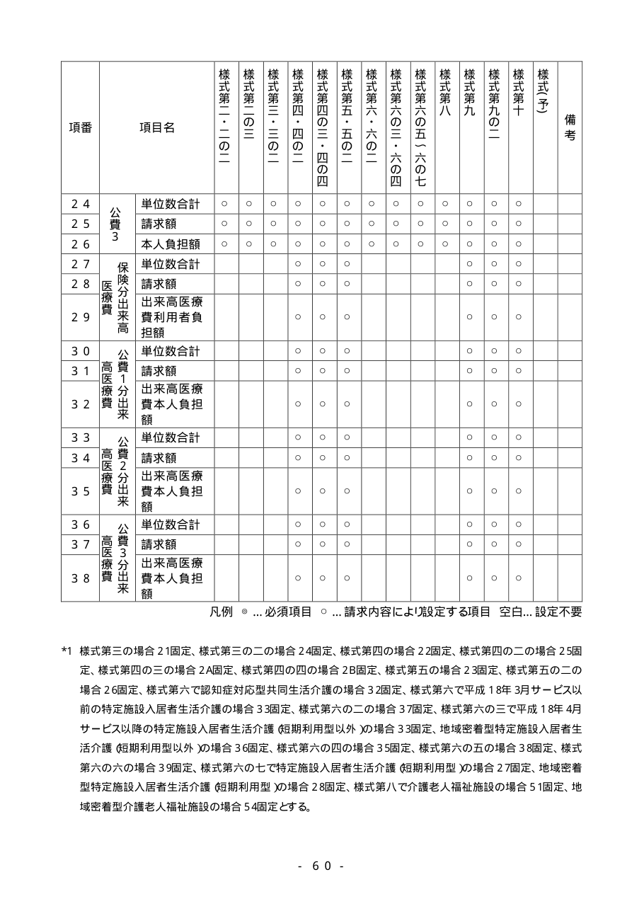
claude-haiku-5-5
表1 required_matrix 前頁から続く
| 項番 | 項目名 | 属性 | 桁数 | 内容 | 必須 | 備考 | その他の列 |
|---|---|---|---|---|---|---|---|
| ２４ | 公費3 > 単位数合計 | 様式第二・二の二:○ 様式第二の三:○ 様式第三・三の二:○ 様式第四・四の二:○ 様式第四の三・四の四:○ 様式第五・五の二:○ 様式第六・六の二:○ 様式第六の三・六の四:○ 様式第六の五〜六の七:○ 様式第八:○ 様式第九:○ 様式第九の二:○ 様式第十:○ 様式(予):－ | |||||
| ２５ | 公費3 > 請求額 | 様式第二・二の二:○ 様式第二の三:○ 様式第三・三の二:○ 様式第四・四の二:○ 様式第四の三・四の四:○ 様式第五・五の二:○ 様式第六・六の二:○ 様式第六の三・六の四:○ 様式第六の五〜六の七:○ 様式第八:○ 様式第九:○ 様式第九の二:○ 様式第十:○ 様式(予):－ | |||||
| ２６ | 公費3 > 本人負担額 | 様式第二・二の二:○ 様式第二の三:○ 様式第三・三の二:○ 様式第四・四の二:○ 様式第四の三・四の四:○ 様式第五・五の二:○ 様式第六・六の二:○ 様式第六の三・六の四:○ 様式第六の五〜六の七:○ 様式第八:○ 様式第九:○ 様式第九の二:○ 様式第十:○ 様式(予):－ | |||||
| ２７ | 保険分出来高医療費 > 単位数合計 | 様式第二・二の二:－ 様式第二の三:－ 様式第三・三の二:－ 様式第四・四の二:○ 様式第四の三・四の四:○ 様式第五・五の二:○ 様式第六・六の二:－ 様式第六の三・六の四:－ 様式第六の五〜六の七:－ 様式第八:－ 様式第九:○ 様式第九の二:○ 様式第十:○ 様式(予):－ | |||||
| ２８ | 保険分出来高医療費 > 請求額 | 様式第二・二の二:－ 様式第二の三:－ 様式第三・三の二:－ 様式第四・四の二:○ 様式第四の三・四の四:○ 様式第五・五の二:○ 様式第六・六の二:－ 様式第六の三・六の四:－ 様式第六の五〜六の七:－ 様式第八:－ 様式第九:○ 様式第九の二:○ 様式第十:○ 様式(予):－ | |||||
| ２９ | 保険分出来高医療費 > 出来高医療費利用者負担額 | 様式第二・二の二:－ 様式第二の三:－ 様式第三・三の二:－ 様式第四・四の二:○ 様式第四の三・四の四:○ 様式第五・五の二:○ 様式第六・六の二:－ 様式第六の三・六の四:－ 様式第六の五〜六の七:－ 様式第八:－ 様式第九:○ 様式第九の二:○ 様式第十:○ 様式(予):－ | |||||
| ３０ | 公費1分出来高医療費 > 単位数合計 | 様式第二・二の二:－ 様式第二の三:－ 様式第三・三の二:－ 様式第四・四の二:○ 様式第四の三・四の四:○ 様式第五・五の二:○ 様式第六・六の二:－ 様式第六の三・六の四:－ 様式第六の五〜六の七:－ 様式第八:－ 様式第九:○ 様式第九の二:○ 様式第十:○ 様式(予):－ | |||||
| ３１ | 公費1分出来高医療費 > 請求額 | 様式第二・二の二:－ 様式第二の三:－ 様式第三・三の二:－ 様式第四・四の二:○ 様式第四の三・四の四:○ 様式第五・五の二:○ 様式第六・六の二:－ 様式第六の三・六の四:－ 様式第六の五〜六の七:－ 様式第八:－ 様式第九:○ 様式第九の二:○ 様式第十:○ 様式(予):－ | |||||
| ３２ | 公費1分出来高医療費 > 出来高医療費本人負担額 | 様式第二・二の二:－ 様式第二の三:－ 様式第三・三の二:－ 様式第四・四の二:○ 様式第四の三・四の四:○ 様式第五・五の二:○ 様式第六・六の二:－ 様式第六の三・六の四:－ 様式第六の五〜六の七:－ 様式第八:－ 様式第九:○ 様式第九の二:○ 様式第十:○ 様式(予):－ | |||||
| ３３ | 公費2分出来高医療費 > 単位数合計 | 様式第二・二の二:－ 様式第二の三:－ 様式第三・三の二:－ 様式第四・四の二:○ 様式第四の三・四の四:○ 様式第五・五の二:○ 様式第六・六の二:－ 様式第六の三・六の四:－ 様式第六の五〜六の七:－ 様式第八:－ 様式第九:○ 様式第九の二:○ 様式第十:○ 様式(予):－ | |||||
| ３４ | 公費2分出来高医療費 > 請求額 | 様式第二・二の二:－ 様式第二の三:－ 様式第三・三の二:－ 様式第四・四の二:○ 様式第四の三・四の四:○ 様式第五・五の二:○ 様式第六・六の二:－ 様式第六の三・六の四:－ 様式第六の五〜六の七:－ 様式第八:－ 様式第九:○ 様式第九の二:○ 様式第十:○ 様式(予):－ | |||||
| ３５ | 公費2分出来高医療費 > 出来高医療費本人負担額 | 様式第二・二の二:－ 様式第二の三:－ 様式第三・三の二:－ 様式第四・四の二:○ 様式第四の三・四の四:○ 様式第五・五の二:○ 様式第六・六の二:－ 様式第六の三・六の四:－ 様式第六の五〜六の七:－ 様式第八:－ 様式第九:○ 様式第九の二:○ 様式第十:○ 様式(予):－ | |||||
| ３６ | 公費3分出来高医療費 > 単位数合計 | 様式第二・二の二:－ 様式第二の三:－ 様式第三・三の二:－ 様式第四・四の二:○ 様式第四の三・四の四:○ 様式第五・五の二:○ 様式第六・六の二:－ 様式第六の三・六の四:－ 様式第六の五〜六の七:－ 様式第八:－ 様式第九:○ 様式第九の二:○ 様式第十:○ 様式(予):－ | |||||
| ３７ | 公費3分出来高医療費 > 請求額 | 様式第二・二の二:－ 様式第二の三:－ 様式第三・三の二:－ 様式第四・四の二:○ 様式第四の三・四の四:○ 様式第五・五の二:○ 様式第六・六の二:－ 様式第六の三・六の四:－ 様式第六の五〜六の七:－ 様式第八:－ 様式第九:○ 様式第九の二:○ 様式第十:○ 様式(予):－ | |||||
| ３８ | 公費3分出来高医療費 > 出来高医療費本人負担額 | 様式第二・二の二:－ 様式第二の三:－ 様式第三・三の二:－ 様式第四・四の二:○ 様式第四の三・四の四:○ 様式第五・五の二:○ 様式第六・六の二:－ 様式第六の三・六の四:－ 様式第六の五〜六の七:－ 様式第八:－ 様式第九:○ 様式第九の二:○ 様式第十:○ 様式(予):－ |
注記
- 凡例 ◎ … 必須項目 ○ … 請求内容により設定する項目 空白… 設定不要
- *1 様式第三の場合２１固定、様式第三の二の場合２４固定、様式第四の場合２２固定、様式第四の二の場合２５固定、様式第四の三の場合２Ａ固定、様式第四の四の場合２Ｂ固定、様式第五の場合２３固定、様式第五の二の場合２６固定、様式第六で認知症対応型共同生活介護の場合３２固定、様式第六で平成１８年３月サービス以前の特定施設入居者生活介護の場合３３固定、様式第六の二の場合３７固定、様式第六の三で平成１８年４月サービス以降の特定施設入居者生活介護（短期利用型以外）の場合３３固定、地域密着型特定施設入居者生活介護（短期利用型以外）の場合３６固定、様式第六の四の場合３５固定、様式第六の五の場合３８固定、様式第六の六の場合３９固定、様式第六の七で特定施設入居者生活介護（短期利用型）の場合２７固定、地域密着型特定施設入居者生活介護（短期利用型）の場合２８固定、様式第八で介護老人福祉施設の場合５１固定、地域密着型介護老人福祉施設の場合５４固定とする。
uncertain（モデル自己申告）
- 様式第六の五〜六の七の列見出しの「〜」は原文の記号を判別しきれず、〜として書き起こした。
- 様式(予)の括弧は原文の字形を判別しきれず、半角の括弧で書き起こした。
- 項番の数字と脚注中の数字は全角か半角か判別が難しく、全角で書き起こした。
- 前ページからの続きかどうかは判断できないが、表見出しがページ先頭にあるため継続ではないと判断した。
claude-sonnet-5-5
表1 required_matrix 前頁から続く
| 項番 | 項目名 | 属性 | 桁数 | 内容 | 必須 | 備考 | その他の列 |
|---|---|---|---|---|---|---|---|
| 24 | 公費3 > 単位数合計 | 様式第二・二の二:○ 様式第二の三:○ 様式第三・三の二:○ 様式第四・四の二:○ 様式第四の三・四の四:○ 様式第五・五の二:○ 様式第六・六の二:○ 様式第六の三・六の四:○ 様式第六の五(六の七:○ 様式第八:○ 様式第九:○ 様式第九の二:○ 様式第十:○ 様式(予):－ | |||||
| 25 | 公費3 > 請求額 | 様式第二・二の二:○ 様式第二の三:○ 様式第三・三の二:○ 様式第四・四の二:○ 様式第四の三・四の四:○ 様式第五・五の二:○ 様式第六・六の二:○ 様式第六の三・六の四:○ 様式第六の五(六の七:○ 様式第八:○ 様式第九:○ 様式第九の二:○ 様式第十:○ 様式(予):－ | |||||
| 26 | 公費3 > 本人負担額 | 様式第二・二の二:○ 様式第二の三:○ 様式第三・三の二:○ 様式第四・四の二:○ 様式第四の三・四の四:○ 様式第五・五の二:○ 様式第六・六の二:○ 様式第六の三・六の四:○ 様式第六の五(六の七:○ 様式第八:○ 様式第九:○ 様式第九の二:○ 様式第十:○ 様式(予):－ | |||||
| 27 | 医療費 > 保険分出来高 > 単位数合計 | 様式第二・二の二:－ 様式第二の三:－ 様式第三・三の二:－ 様式第四・四の二:○ 様式第四の三・四の四:○ 様式第五・五の二:○ 様式第六・六の二:－ 様式第六の三・六の四:－ 様式第六の五(六の七:－ 様式第八:－ 様式第九:○ 様式第九の二:○ 様式第十:○ 様式(予):－ | |||||
| 28 | 医療費 > 保険分出来高 > 請求額 | 様式第二・二の二:－ 様式第二の三:－ 様式第三・三の二:－ 様式第四・四の二:○ 様式第四の三・四の四:○ 様式第五・五の二:○ 様式第六・六の二:－ 様式第六の三・六の四:－ 様式第六の五(六の七:－ 様式第八:－ 様式第九:○ 様式第九の二:○ 様式第十:○ 様式(予):－ | |||||
| 29 | 医療費 > 保険分出来高 > 出来高医療費利用者負担額 | 様式第二・二の二:－ 様式第二の三:－ 様式第三・三の二:－ 様式第四・四の二:○ 様式第四の三・四の四:○ 様式第五・五の二:○ 様式第六・六の二:－ 様式第六の三・六の四:－ 様式第六の五(六の七:－ 様式第八:－ 様式第九:○ 様式第九の二:○ 様式第十:○ 様式(予):－ | |||||
| 30 | 高医療費 > 公費1分出来 > 単位数合計 | 様式第二・二の二:－ 様式第二の三:－ 様式第三・三の二:－ 様式第四・四の二:○ 様式第四の三・四の四:○ 様式第五・五の二:○ 様式第六・六の二:－ 様式第六の三・六の四:－ 様式第六の五(六の七:－ 様式第八:－ 様式第九:○ 様式第九の二:○ 様式第十:○ 様式(予):－ | |||||
| 31 | 高医療費 > 公費1分出来 > 請求額 | 様式第二・二の二:－ 様式第二の三:－ 様式第三・三の二:－ 様式第四・四の二:○ 様式第四の三・四の四:○ 様式第五・五の二:○ 様式第六・六の二:－ 様式第六の三・六の四:－ 様式第六の五(六の七:－ 様式第八:－ 様式第九:○ 様式第九の二:○ 様式第十:○ 様式(予):－ | |||||
| 32 | 高医療費 > 公費1分出来 > 出来高医療費本人負担額 | 様式第二・二の二:－ 様式第二の三:－ 様式第三・三の二:－ 様式第四・四の二:○ 様式第四の三・四の四:○ 様式第五・五の二:○ 様式第六・六の二:－ 様式第六の三・六の四:－ 様式第六の五(六の七:－ 様式第八:－ 様式第九:○ 様式第九の二:○ 様式第十:○ 様式(予):－ | |||||
| 33 | 高医療費 > 公費2分出来 > 単位数合計 | 様式第二・二の二:－ 様式第二の三:－ 様式第三・三の二:－ 様式第四・四の二:○ 様式第四の三・四の四:○ 様式第五・五の二:○ 様式第六・六の二:－ 様式第六の三・六の四:－ 様式第六の五(六の七:－ 様式第八:－ 様式第九:○ 様式第九の二:○ 様式第十:○ 様式(予):－ | |||||
| 34 | 高医療費 > 公費2分出来 > 請求額 | 様式第二・二の二:－ 様式第二の三:－ 様式第三・三の二:－ 様式第四・四の二:○ 様式第四の三・四の四:○ 様式第五・五の二:○ 様式第六・六の二:－ 様式第六の三・六の四:－ 様式第六の五(六の七:－ 様式第八:－ 様式第九:○ 様式第九の二:○ 様式第十:○ 様式(予):－ | |||||
| 35 | 高医療費 > 公費2分出来 > 出来高医療費本人負担額 | 様式第二・二の二:－ 様式第二の三:－ 様式第三・三の二:－ 様式第四・四の二:○ 様式第四の三・四の四:○ 様式第五・五の二:○ 様式第六・六の二:－ 様式第六の三・六の四:－ 様式第六の五(六の七:－ 様式第八:－ 様式第九:○ 様式第九の二:○ 様式第十:○ 様式(予):－ | |||||
| 36 | 高医療費 > 公費3分出来 > 単位数合計 | 様式第二・二の二:－ 様式第二の三:－ 様式第三・三の二:－ 様式第四・四の二:○ 様式第四の三・四の四:○ 様式第五・五の二:○ 様式第六・六の二:－ 様式第六の三・六の四:－ 様式第六の五(六の七:－ 様式第八:－ 様式第九:○ 様式第九の二:○ 様式第十:○ 様式(予):－ | |||||
| 37 | 高医療費 > 公費3分出来 > 請求額 | 様式第二・二の二:－ 様式第二の三:－ 様式第三・三の二:－ 様式第四・四の二:○ 様式第四の三・四の四:○ 様式第五・五の二:○ 様式第六・六の二:－ 様式第六の三・六の四:－ 様式第六の五(六の七:－ 様式第八:－ 様式第九:○ 様式第九の二:○ 様式第十:○ 様式(予):－ | |||||
| 38 | 高医療費 > 公費3分出来 > 出来高医療費本人負担額 | 様式第二・二の二:－ 様式第二の三:－ 様式第三・三の二:－ 様式第四・四の二:○ 様式第四の三・四の四:○ 様式第五・五の二:○ 様式第六・六の二:－ 様式第六の三・六の四:－ 様式第六の五(六の七:－ 様式第八:－ 様式第九:○ 様式第九の二:○ 様式第十:○ 様式(予):－ |
注記
- 凡例 ◎…必須項目 ○…請求内容により設定する項目 空白…設定不要
- *1 様式第三の場合21固定、様式第三の二の場合24固定、様式第四の場合22固定、様式第四の二の場合25固定、様式第四の三の場合2A固定、様式第四の四の場合2B固定、様式第五の場合23固定、様式第五の二の場合26固定、様式第六で認知症対応型共同生活介護の場合32固定、様式第六で平成18年3月サービス以前の特定施設入居者生活介護の場合33固定、様式第六の二の場合37固定、様式第六の三で平成18年4月サービス以降の特定施設入居者生活介護(短期利用型以外)の場合33固定、地域密着型特定施設入居者生活介護(短期利用型以外)の場合36固定、様式第六の四の場合35固定、様式第六の五の場合38固定、様式第六の六の場合39固定、様式第六の七で特定施設入居者生活介護(短期利用型)の場合27固定、地域密着型特定施設入居者生活介護(短期利用型)の場合28固定、様式第八で介護老人福祉施設の場合51固定、地域密着型介護老人福祉施設の場合54固定とする。
uncertain（モデル自己申告）
- 凡例の記号が◎か⊚か不明瞭だが◎として転記
- 表の列見出しは縦書きのため、横書きに直して転記（様式第六の五(六の七 の括弧は原文の「〈」様の印字）
- 表の前ページからの続きで、公費3の縦結合見出しや医療費などのグループ見出しの文字は縦書きで読み取り
kaigo_jigyosho_r0604_p123 — 印字p.
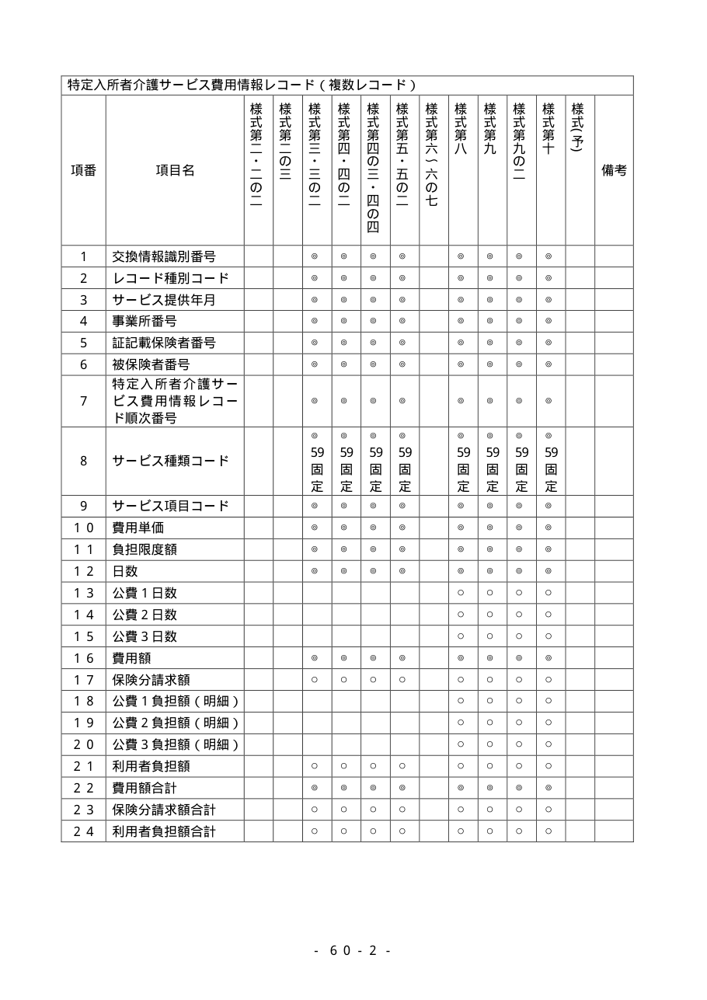
claude-haiku-5-5
- 表1 項番8 必須（様式第三・三の二）の値が想定外: '◎\n59固定'
- 表1 項番8 必須（様式第四・四の二）の値が想定外: '◎\n59固定'
- 表1 項番8 必須（様式第四の三・四の四）の値が想定外: '◎\n59固定'
- 表1 項番8 必須（様式第五・五の二）の値が想定外: '◎\n59固定'
- 表1 項番8 必須（様式第八）の値が想定外: '◎\n59固定'
- 表1 項番8 必須（様式第九）の値が想定外: '◎\n59固定'
- 表1 項番8 必須（様式第九の二）の値が想定外: '◎\n59固定'
- 表1 項番8 必須（様式第十）の値が想定外: '◎\n59固定'
- [改ページ] p123→p124 の連続性 OK
表1 required_matrix特定入所者介護サービス費用情報レコード（複数レコード） 次頁へ続く
| 項番 | 項目名 | 属性 | 桁数 | 内容 | 必須 | 備考 | その他の列 |
|---|---|---|---|---|---|---|---|
| 1 | 交換情報識別番号 | 様式第二・二の二:－ 様式第二の三:－ 様式第三・三の二:◎ 様式第四・四の二:◎ 様式第四の三・四の四:◎ 様式第五・五の二:◎ 様式第六〜六の七:－ 様式第八:◎ 様式第九:◎ 様式第九の二:◎ 様式第十:◎ 様式(予):－ | |||||
| 2 | レコード種別コード | 様式第二・二の二:－ 様式第二の三:－ 様式第三・三の二:◎ 様式第四・四の二:◎ 様式第四の三・四の四:◎ 様式第五・五の二:◎ 様式第六〜六の七:－ 様式第八:◎ 様式第九:◎ 様式第九の二:◎ 様式第十:◎ 様式(予):－ | |||||
| 3 | サービス提供年月 | 様式第二・二の二:－ 様式第二の三:－ 様式第三・三の二:◎ 様式第四・四の二:◎ 様式第四の三・四の四:◎ 様式第五・五の二:◎ 様式第六〜六の七:－ 様式第八:◎ 様式第九:◎ 様式第九の二:◎ 様式第十:◎ 様式(予):－ | |||||
| 4 | 事業所番号 | 様式第二・二の二:－ 様式第二の三:－ 様式第三・三の二:◎ 様式第四・四の二:◎ 様式第四の三・四の四:◎ 様式第五・五の二:◎ 様式第六〜六の七:－ 様式第八:◎ 様式第九:◎ 様式第九の二:◎ 様式第十:◎ 様式(予):－ | |||||
| 5 | 証記載保険者番号 | 様式第二・二の二:－ 様式第二の三:－ 様式第三・三の二:◎ 様式第四・四の二:◎ 様式第四の三・四の四:◎ 様式第五・五の二:◎ 様式第六〜六の七:－ 様式第八:◎ 様式第九:◎ 様式第九の二:◎ 様式第十:◎ 様式(予):－ | |||||
| 6 | 被保険者番号 | 様式第二・二の二:－ 様式第二の三:－ 様式第三・三の二:◎ 様式第四・四の二:◎ 様式第四の三・四の四:◎ 様式第五・五の二:◎ 様式第六〜六の七:－ 様式第八:◎ 様式第九:◎ 様式第九の二:◎ 様式第十:◎ 様式(予):－ | |||||
| 7 | 特定入所者介護サービス費用情報レコード順次番号 | 様式第二・二の二:－ 様式第二の三:－ 様式第三・三の二:◎ 様式第四・四の二:◎ 様式第四の三・四の四:◎ 様式第五・五の二:◎ 様式第六〜六の七:－ 様式第八:◎ 様式第九:◎ 様式第九の二:◎ 様式第十:◎ 様式(予):－ | |||||
| 8 | サービス種類コード | 様式第二・二の二:－ 様式第二の三:－ 様式第三・三の二:◎ 59固定 様式第四・四の二:◎ 59固定 様式第四の三・四の四:◎ 59固定 様式第五・五の二:◎ 59固定 様式第六〜六の七:－ 様式第八:◎ 59固定 様式第九:◎ 59固定 様式第九の二:◎ 59固定 様式第十:◎ 59固定 様式(予):－ | |||||
| 9 | サービス項目コード | 様式第二・二の二:－ 様式第二の三:－ 様式第三・三の二:◎ 様式第四・四の二:◎ 様式第四の三・四の四:◎ 様式第五・五の二:◎ 様式第六〜六の七:－ 様式第八:◎ 様式第九:◎ 様式第九の二:◎ 様式第十:◎ 様式(予):－ | |||||
| １０ | 費用単価 | 様式第二・二の二:－ 様式第二の三:－ 様式第三・三の二:◎ 様式第四・四の二:◎ 様式第四の三・四の四:◎ 様式第五・五の二:◎ 様式第六〜六の七:－ 様式第八:◎ 様式第九:◎ 様式第九の二:◎ 様式第十:◎ 様式(予):－ | |||||
| １１ | 負担限度額 | 様式第二・二の二:－ 様式第二の三:－ 様式第三・三の二:◎ 様式第四・四の二:◎ 様式第四の三・四の四:◎ 様式第五・五の二:◎ 様式第六〜六の七:－ 様式第八:◎ 様式第九:◎ 様式第九の二:◎ 様式第十:◎ 様式(予):－ | |||||
| １２ | 日数 | 様式第二・二の二:－ 様式第二の三:－ 様式第三・三の二:◎ 様式第四・四の二:◎ 様式第四の三・四の四:◎ 様式第五・五の二:◎ 様式第六〜六の七:－ 様式第八:◎ 様式第九:◎ 様式第九の二:◎ 様式第十:◎ 様式(予):－ | |||||
| １３ | 公費１日数 | 様式第二・二の二:－ 様式第二の三:－ 様式第三・三の二:－ 様式第四・四の二:－ 様式第四の三・四の四:－ 様式第五・五の二:－ 様式第六〜六の七:－ 様式第八:○ 様式第九:○ 様式第九の二:○ 様式第十:○ 様式(予):－ | |||||
| １４ | 公費２日数 | 様式第二・二の二:－ 様式第二の三:－ 様式第三・三の二:－ 様式第四・四の二:－ 様式第四の三・四の四:－ 様式第五・五の二:－ 様式第六〜六の七:－ 様式第八:○ 様式第九:○ 様式第九の二:○ 様式第十:○ 様式(予):－ | |||||
| １５ | 公費３日数 | 様式第二・二の二:－ 様式第二の三:－ 様式第三・三の二:－ 様式第四・四の二:－ 様式第四の三・四の四:－ 様式第五・五の二:－ 様式第六〜六の七:－ 様式第八:○ 様式第九:○ 様式第九の二:○ 様式第十:○ 様式(予):－ | |||||
| １６ | 費用額 | 様式第二・二の二:－ 様式第二の三:－ 様式第三・三の二:◎ 様式第四・四の二:◎ 様式第四の三・四の四:◎ 様式第五・五の二:◎ 様式第六〜六の七:－ 様式第八:◎ 様式第九:◎ 様式第九の二:◎ 様式第十:◎ 様式(予):－ | |||||
| １７ | 保険分請求額 | 様式第二・二の二:－ 様式第二の三:－ 様式第三・三の二:○ 様式第四・四の二:○ 様式第四の三・四の四:○ 様式第五・五の二:○ 様式第六〜六の七:－ 様式第八:○ 様式第九:○ 様式第九の二:○ 様式第十:○ 様式(予):－ | |||||
| １８ | 公費１負担額（明細） | 様式第二・二の二:－ 様式第二の三:－ 様式第三・三の二:－ 様式第四・四の二:－ 様式第四の三・四の四:－ 様式第五・五の二:－ 様式第六〜六の七:－ 様式第八:○ 様式第九:○ 様式第九の二:○ 様式第十:○ 様式(予):－ | |||||
| １９ | 公費２負担額（明細） | 様式第二・二の二:－ 様式第二の三:－ 様式第三・三の二:－ 様式第四・四の二:－ 様式第四の三・四の四:－ 様式第五・五の二:－ 様式第六〜六の七:－ 様式第八:○ 様式第九:○ 様式第九の二:○ 様式第十:○ 様式(予):－ | |||||
| ２０ | 公費３負担額（明細） | 様式第二・二の二:－ 様式第二の三:－ 様式第三・三の二:－ 様式第四・四の二:－ 様式第四の三・四の四:－ 様式第五・五の二:－ 様式第六〜六の七:－ 様式第八:○ 様式第九:○ 様式第九の二:○ 様式第十:○ 様式(予):－ | |||||
| ２１ | 利用者負担額 | 様式第二・二の二:－ 様式第二の三:－ 様式第三・三の二:○ 様式第四・四の二:○ 様式第四の三・四の四:○ 様式第五・五の二:○ 様式第六〜六の七:－ 様式第八:○ 様式第九:○ 様式第九の二:○ 様式第十:○ 様式(予):－ | |||||
| ２２ | 費用額合計 | 様式第二・二の二:－ 様式第二の三:－ 様式第三・三の二:◎ 様式第四・四の二:◎ 様式第四の三・四の四:◎ 様式第五・五の二:◎ 様式第六〜六の七:－ 様式第八:◎ 様式第九:◎ 様式第九の二:◎ 様式第十:◎ 様式(予):－ | |||||
| ２３ | 保険分請求額合計 | 様式第二・二の二:－ 様式第二の三:－ 様式第三・三の二:○ 様式第四・四の二:○ 様式第四の三・四の四:○ 様式第五・五の二:○ 様式第六〜六の七:－ 様式第八:○ 様式第九:○ 様式第九の二:○ 様式第十:○ 様式(予):－ | |||||
| ２４ | 利用者負担額合計 | 様式第二・二の二:－ 様式第二の三:－ 様式第三・三の二:○ 様式第四・四の二:○ 様式第四の三・四の四:○ 様式第五・五の二:○ 様式第六〜六の七:－ 様式第八:○ 様式第九:○ 様式第九の二:○ 様式第十:○ 様式(予):－ |
uncertain（モデル自己申告）
- 様式見出しは縦書きのため、「様式第六〜六の七」の区切り記号（〜）と「様式(予)」の括弧の字形は推定を含む。
- 項番10〜12と13〜24の全角数字は画像上の表記のまま no_raw に記録した。
- 行8（サービス種類コード）の「59固定」は縦書きで区切られているため、「◎\n59固定」として改行区切りで記録した。
claude-sonnet-5-5
- 表1 項番8 必須（様式第三・三の二）の値が想定外: '◎\n59固定'
- 表1 項番8 必須（様式第四・四の二）の値が想定外: '◎\n59固定'
- 表1 項番8 必須（様式第四の三・四の四）の値が想定外: '◎\n59固定'
- 表1 項番8 必須（様式第五・五の二）の値が想定外: '◎\n59固定'
- 表1 項番8 必須（様式第八）の値が想定外: '◎\n59固定'
- 表1 項番8 必須（様式第九）の値が想定外: '◎\n59固定'
- 表1 項番8 必須（様式第九の二）の値が想定外: '◎\n59固定'
- 表1 項番8 必須（様式第十）の値が想定外: '◎\n59固定'
- [改ページ] p123→p124 の連続性 OK
表1 required_matrix特定入所者介護サービス費用情報レコード（複数レコード） 次頁へ続く
| 項番 | 項目名 | 属性 | 桁数 | 内容 | 必須 | 備考 | その他の列 |
|---|---|---|---|---|---|---|---|
| 1 | 交換情報識別番号 | 様式第二・二の二:－ 様式第二の三:－ 様式第三・三の二:◎ 様式第四・四の二:◎ 様式第四の三・四の四:◎ 様式第五・五の二:◎ 様式第六〜六の七:－ 様式第八:◎ 様式第九:◎ 様式第九の二:◎ 様式第十:◎ 様式(予):－ | |||||
| 2 | レコード種別コード | 様式第二・二の二:－ 様式第二の三:－ 様式第三・三の二:◎ 様式第四・四の二:◎ 様式第四の三・四の四:◎ 様式第五・五の二:◎ 様式第六〜六の七:－ 様式第八:◎ 様式第九:◎ 様式第九の二:◎ 様式第十:◎ 様式(予):－ | |||||
| 3 | サービス提供年月 | 様式第二・二の二:－ 様式第二の三:－ 様式第三・三の二:◎ 様式第四・四の二:◎ 様式第四の三・四の四:◎ 様式第五・五の二:◎ 様式第六〜六の七:－ 様式第八:◎ 様式第九:◎ 様式第九の二:◎ 様式第十:◎ 様式(予):－ | |||||
| 4 | 事業所番号 | 様式第二・二の二:－ 様式第二の三:－ 様式第三・三の二:◎ 様式第四・四の二:◎ 様式第四の三・四の四:◎ 様式第五・五の二:◎ 様式第六〜六の七:－ 様式第八:◎ 様式第九:◎ 様式第九の二:◎ 様式第十:◎ 様式(予):－ | |||||
| 5 | 証記載保険者番号 | 様式第二・二の二:－ 様式第二の三:－ 様式第三・三の二:◎ 様式第四・四の二:◎ 様式第四の三・四の四:◎ 様式第五・五の二:◎ 様式第六〜六の七:－ 様式第八:◎ 様式第九:◎ 様式第九の二:◎ 様式第十:◎ 様式(予):－ | |||||
| 6 | 被保険者番号 | 様式第二・二の二:－ 様式第二の三:－ 様式第三・三の二:◎ 様式第四・四の二:◎ 様式第四の三・四の四:◎ 様式第五・五の二:◎ 様式第六〜六の七:－ 様式第八:◎ 様式第九:◎ 様式第九の二:◎ 様式第十:◎ 様式(予):－ | |||||
| 7 | 特定入所者介護サービス費用情報レコード順次番号 | 様式第二・二の二:－ 様式第二の三:－ 様式第三・三の二:◎ 様式第四・四の二:◎ 様式第四の三・四の四:◎ 様式第五・五の二:◎ 様式第六〜六の七:－ 様式第八:◎ 様式第九:◎ 様式第九の二:◎ 様式第十:◎ 様式(予):－ | |||||
| 8 | サービス種類コード | 様式第二・二の二:－ 様式第二の三:－ 様式第三・三の二:◎ 59固定 様式第四・四の二:◎ 59固定 様式第四の三・四の四:◎ 59固定 様式第五・五の二:◎ 59固定 様式第六〜六の七:－ 様式第八:◎ 59固定 様式第九:◎ 59固定 様式第九の二:◎ 59固定 様式第十:◎ 59固定 様式(予):－ | |||||
| 9 | サービス項目コード | 様式第二・二の二:－ 様式第二の三:－ 様式第三・三の二:◎ 様式第四・四の二:◎ 様式第四の三・四の四:◎ 様式第五・五の二:◎ 様式第六〜六の七:－ 様式第八:◎ 様式第九:◎ 様式第九の二:◎ 様式第十:◎ 様式(予):－ | |||||
| 10 | 費用単価 | 様式第二・二の二:－ 様式第二の三:－ 様式第三・三の二:◎ 様式第四・四の二:◎ 様式第四の三・四の四:◎ 様式第五・五の二:◎ 様式第六〜六の七:－ 様式第八:◎ 様式第九:◎ 様式第九の二:◎ 様式第十:◎ 様式(予):－ | |||||
| 11 | 負担限度額 | 様式第二・二の二:－ 様式第二の三:－ 様式第三・三の二:◎ 様式第四・四の二:◎ 様式第四の三・四の四:◎ 様式第五・五の二:◎ 様式第六〜六の七:－ 様式第八:◎ 様式第九:◎ 様式第九の二:◎ 様式第十:◎ 様式(予):－ | |||||
| 12 | 日数 | 様式第二・二の二:－ 様式第二の三:－ 様式第三・三の二:◎ 様式第四・四の二:◎ 様式第四の三・四の四:◎ 様式第五・五の二:◎ 様式第六〜六の七:－ 様式第八:◎ 様式第九:◎ 様式第九の二:◎ 様式第十:◎ 様式(予):－ | |||||
| 13 | 公費1日数 | 様式第二・二の二:－ 様式第二の三:－ 様式第三・三の二:－ 様式第四・四の二:－ 様式第四の三・四の四:－ 様式第五・五の二:－ 様式第六〜六の七:－ 様式第八:○ 様式第九:○ 様式第九の二:○ 様式第十:○ 様式(予):－ | |||||
| 14 | 公費2日数 | 様式第二・二の二:－ 様式第二の三:－ 様式第三・三の二:－ 様式第四・四の二:－ 様式第四の三・四の四:－ 様式第五・五の二:－ 様式第六〜六の七:－ 様式第八:○ 様式第九:○ 様式第九の二:○ 様式第十:○ 様式(予):－ | |||||
| 15 | 公費3日数 | 様式第二・二の二:－ 様式第二の三:－ 様式第三・三の二:－ 様式第四・四の二:－ 様式第四の三・四の四:－ 様式第五・五の二:－ 様式第六〜六の七:－ 様式第八:○ 様式第九:○ 様式第九の二:○ 様式第十:○ 様式(予):－ | |||||
| 16 | 費用額 | 様式第二・二の二:－ 様式第二の三:－ 様式第三・三の二:◎ 様式第四・四の二:◎ 様式第四の三・四の四:◎ 様式第五・五の二:◎ 様式第六〜六の七:－ 様式第八:◎ 様式第九:◎ 様式第九の二:◎ 様式第十:◎ 様式(予):－ | |||||
| 17 | 保険分請求額 | 様式第二・二の二:－ 様式第二の三:－ 様式第三・三の二:○ 様式第四・四の二:○ 様式第四の三・四の四:○ 様式第五・五の二:○ 様式第六〜六の七:－ 様式第八:○ 様式第九:○ 様式第九の二:○ 様式第十:○ 様式(予):－ | |||||
| 18 | 公費1負担額（明細） | 様式第二・二の二:－ 様式第二の三:－ 様式第三・三の二:－ 様式第四・四の二:－ 様式第四の三・四の四:－ 様式第五・五の二:－ 様式第六〜六の七:－ 様式第八:○ 様式第九:○ 様式第九の二:○ 様式第十:○ 様式(予):－ | |||||
| 19 | 公費2負担額（明細） | 様式第二・二の二:－ 様式第二の三:－ 様式第三・三の二:－ 様式第四・四の二:－ 様式第四の三・四の四:－ 様式第五・五の二:－ 様式第六〜六の七:－ 様式第八:○ 様式第九:○ 様式第九の二:○ 様式第十:○ 様式(予):－ | |||||
| 20 | 公費3負担額（明細） | 様式第二・二の二:－ 様式第二の三:－ 様式第三・三の二:－ 様式第四・四の二:－ 様式第四の三・四の四:－ 様式第五・五の二:－ 様式第六〜六の七:－ 様式第八:○ 様式第九:○ 様式第九の二:○ 様式第十:○ 様式(予):－ | |||||
| 21 | 利用者負担額 | 様式第二・二の二:－ 様式第二の三:－ 様式第三・三の二:○ 様式第四・四の二:○ 様式第四の三・四の四:○ 様式第五・五の二:○ 様式第六〜六の七:－ 様式第八:○ 様式第九:○ 様式第九の二:○ 様式第十:○ 様式(予):－ | |||||
| 22 | 費用額合計 | 様式第二・二の二:－ 様式第二の三:－ 様式第三・三の二:◎ 様式第四・四の二:◎ 様式第四の三・四の四:◎ 様式第五・五の二:◎ 様式第六〜六の七:－ 様式第八:◎ 様式第九:◎ 様式第九の二:◎ 様式第十:◎ 様式(予):－ | |||||
| 23 | 保険分請求額合計 | 様式第二・二の二:－ 様式第二の三:－ 様式第三・三の二:○ 様式第四・四の二:○ 様式第四の三・四の四:○ 様式第五・五の二:○ 様式第六〜六の七:－ 様式第八:○ 様式第九:○ 様式第九の二:○ 様式第十:○ 様式(予):－ | |||||
| 24 | 利用者負担額合計 | 様式第二・二の二:－ 様式第二の三:－ 様式第三・三の二:○ 様式第四・四の二:○ 様式第四の三・四の四:○ 様式第五・五の二:○ 様式第六〜六の七:－ 様式第八:○ 様式第九:○ 様式第九の二:○ 様式第十:○ 様式(予):－ |
uncertain（モデル自己申告）
- 列見出しは縦書きのため横書きに直して転記。「様式第六〜六の七」は「様式第六〜六の七」と表記（原文は括弧状の記号）
- 備考列は全行空欄のため note は null、備考列の値は無し
- 表タイトルは前ページ続きだが先頭にタイトル行が印字されている
kaigo_jigyosho_r0604_p128 — 印字p.
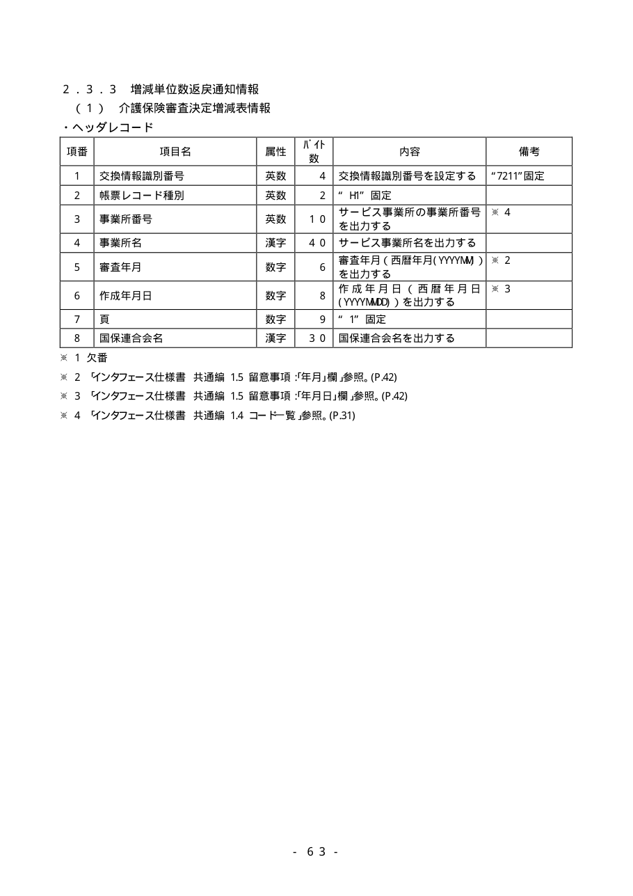
claude-haiku-5-5
- テキストレイヤに見つからないセル: 1 個（赤枠）
表1 record_layout・ヘッダレコード
| 項番 | 項目名 | 属性 | 桁数 | 内容 | 必須 | 備考 | その他の列 |
|---|---|---|---|---|---|---|---|
| 1 | 交換情報識別番号 | 英数 | 4 | 交換情報識別番号を設定する | “7211”固定 | ||
| 2 | 帳票レコード種別 | 英数 | 2 | “ HI” 固定 | |||
| 3 | 事業所番号 | 英数 | 10 | サービス事業所の事業所番号を出力する | ※4 | ||
| 4 | 事業所名 | 漢字 | 40 | サービス事業所名を出力する | |||
| 5 | 審査年月 | 数字 | 6 | 審査年月(西暦年月(YYYYMM))を出力する | ※2 | ||
| 6 | 作成年月日 | 数字 | 8 | 作成年月日(西暦年月日(YYYYMMDD))を出力する | ※3 | ||
| 7 | 頁 | 数字 | 9 | “ 1” 固定 | |||
| 8 | 国保連合会名 | 漢字 | 30 | 国保連合会名を出力する |
注記
- ※1 欠番
- ※2 インタフェース仕様書 共通編 1.5 留意事項 :「年月」欄 参照。(P.42)
- ※3 インタフェース仕様書 共通編 1.5 留意事項 :「年月日」欄 参照。(P.42)
- ※4 インタフェース仕様書 共通編 1.4 コード一覧 参照。(P.31)
uncertain（モデル自己申告）
- 依頼では『次のページ』の表とありましたが、添付は1ページのみで、印字ページ番号は63（PDF上のページ128の指定とは一致しない可能性あり）のため、添付ページの表を書き起こしました。
- record.name は見出し『(1) 介護保険審査決定増減表情報』から読み取りました。exchange_id はページ上に表示がないため空文字にしました。
- ※1 は表中に参照記号がなく、対応する項目が特定できませんでした。
claude-sonnet-5-5
表1 record_layout・ヘッダレコード
| 項番 | 項目名 | 属性 | 桁数 | 内容 | 必須 | 備考 | その他の列 |
|---|---|---|---|---|---|---|---|
| 1 | 交換情報識別番号 | 英数 | 4 | 交換情報識別番号を設定する | “7211”固定 | ||
| 2 | 帳票レコード種別 | 英数 | 2 | “H1”固定 | |||
| 3 | 事業所番号 | 英数 | 10 | サービス事業所の事業所番号を出力する | ※4 | ||
| 4 | 事業所名 | 漢字 | 40 | サービス事業所名を出力する | |||
| 5 | 審査年月 | 数字 | 6 | 審査年月(西暦年月(YYYYMM))を出力する | ※2 | ||
| 6 | 作成年月日 | 数字 | 8 | 作成年月日(西暦年月日(YYYYMMDD))を出力する | ※3 | ||
| 7 | 頁 | 数字 | 9 | “1”固定 | |||
| 8 | 国保連合会名 | 漢字 | 30 | 国保連合会名を出力する |
注記
- ※1 欠番
- ※2 「インタフェース仕様書 共通編 1.5 留意事項 :「年月」欄」参照。(P.42)
- ※3 「インタフェース仕様書 共通編 1.5 留意事項 :「年月日」欄」参照。(P.42)
- ※4 「インタフェース仕様書 共通編 1.4 コード一覧」参照。(P.31)
uncertain（モデル自己申告）
- 項番2・7の内容は「“ H1” 固定」「“ 1” 固定」のように引用符内に空白があるが、詰めて記載した
- 項番5・6の内容は文字詰めが崩れており、括弧内の表記は推定で記載した
kaigo_jigyosho_r0604_p143 — 印字p.
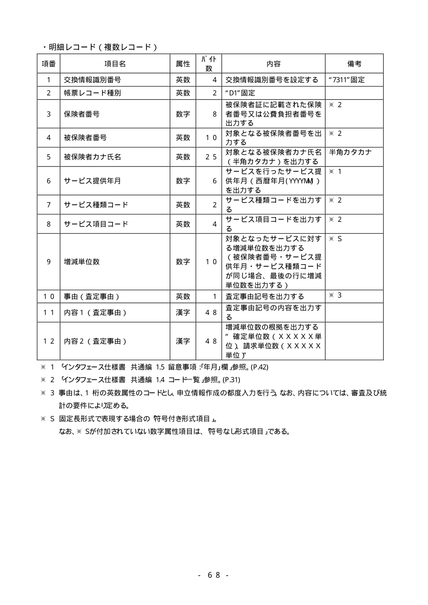
claude-haiku-5-5
- テキストレイヤに見つからないセル: 1 個（赤枠）
表1 record_layout・明細レコード（複数レコード）
| 項番 | 項目名 | 属性 | 桁数 | 内容 | 必須 | 備考 | その他の列 |
|---|---|---|---|---|---|---|---|
| 1 | 交換情報識別番号 | 英数 | 4 | 交換情報識別番号を設定する | “7311”固定 | ||
| 2 | 帳票レコード種別 | 英数 | 2 | “D1”固定 | |||
| 3 | 保険者番号 | 数字 | 8 | 被保険者証に記載された保険者番号又は公費負担者番号を出力する | ※ 2 | ||
| 4 | 被保険者番号 | 英数 | 10 | 対象となる被保険者番号を出力する | ※ 2 | ||
| 5 | 被保険者カナ氏名 | 英数 | 25 | 対象となる被保険者カナ氏名（半角カタカナ）を出力する | 半角カタカナ | ||
| 6 | サービス提供年月 | 数字 | 6 | サービスを行ったサービス提供年月（西暦年月(YYYYMM)）を出力する | ※ 1 | ||
| 7 | サービス種類コード | 英数 | 2 | サービス種類コードを出力する | ※ 2 | ||
| 8 | サービス項目コード | 英数 | 4 | サービス項目コードを出力する | ※ 2 | ||
| 9 | 増減単位数 | 数字 | 10 | 対象となったサービスに対する増減単位数を出力する（被保険者番号・サービス提供年月・サービス種類コードが同じ場合、最後の行に増減単位数を出力する） | ※ S | ||
| 1 0 | 事由（査定事由） | 英数 | 1 | 査定事由記号を出力する | ※ 3 | ||
| 1 1 | 内容1（査定事由） | 漢字 | 48 | 査定事由記号の内容を出力する | |||
| 1 2 | 内容2（査定事由） | 漢字 | 48 | 増減単位数の根拠を出力する“確定単位数（ＸＸＸＸＸ単位）請求単位数（ＸＸＸＸＸ単位）” |
注記
- ※1 「インタフェース仕様書 共通編 1.5 留意事項：「年月」欄」参照。(P.42)
- ※2 「インタフェース仕様書 共通編 1.4 コード一覧」参照。(P.31)
- ※3 事由は、1桁の英数属性のコードとし、申立情報作成の都度入力を行う。なお、内容については、審査及び統計の要件により定める。
- ※S 固定長形式で表現する場合の「符号付き形式項目」。
- なお、※Sが付加されていない数字属性項目は、「符号なし形式項目」である。
claude-sonnet-5-5
表1 record_layout・明細レコード(複数レコード)
| 項番 | 項目名 | 属性 | 桁数 | 内容 | 必須 | 備考 | その他の列 |
|---|---|---|---|---|---|---|---|
| 1 | 交換情報識別番号 | 英数 | 4 | 交換情報識別番号を設定する | “7311”固定 | ||
| 2 | 帳票レコード種別 | 英数 | 2 | “D1”固定 | |||
| 3 | 保険者番号 | 数字 | 8 | 被保険者証に記載された保険者番号又は公費負担者番号を出力する | ※2 | ||
| 4 | 被保険者番号 | 英数 | 10 | 対象となる被保険者番号を出力する | ※2 | ||
| 5 | 被保険者カナ氏名 | 英数 | 25 | 対象となる被保険者カナ氏名(半角カタカナ)を出力する | 半角カタカナ | ||
| 6 | サービス提供年月 | 数字 | 6 | サービスを行ったサービス提供年月(西暦年月(YYYYMM))を出力する | ※1 | ||
| 7 | サービス種類コード | 英数 | 2 | サービス種類コードを出力する | ※2 | ||
| 8 | サービス項目コード | 英数 | 4 | サービス項目コードを出力する | ※2 | ||
| 9 | 増減単位数 | 数字 | 10 | 対象となったサービスに対する増減単位数を出力する(被保険者番号・サービス提供年月・サービス種類コードが同じ場合、最後の行に増減単位数を出力する) | ※S | ||
| 10 | 事由(査定事由) | 英数 | 1 | 査定事由記号を出力する | ※3 | ||
| 11 | 内容1(査定事由) | 漢字 | 48 | 査定事由記号の内容を出力する | |||
| 12 | 内容2(査定事由) | 漢字 | 48 | 増減単位数の根拠を出力する “確定単位数(XXXXX単位)、請求単位数(XXXXX単位)” |
注記
- ※1 「インタフェース仕様書 共通編 1.5 留意事項 :「年月」欄」参照。(P.42)
- ※2 「インタフェース仕様書 共通編 1.4 コード一覧」参照。(P.31)
- ※3 事由は、1桁の英数属性のコードとし、申立情報作成の都度入力を行う。なお、内容については、審査及び統計の要件により定める。
- ※S 固定長形式で表現する場合の「符号付き形式項目」。 なお、※Sが付加されていない数字属性項目は、「符号なし形式項目」である。
uncertain（モデル自己申告）
- レコード名は見出し「明細レコード(複数レコード)」から推定、交換情報識別番号は項番1の備考から
kaigo_jigyosho_r0604_p196 — 印字p.
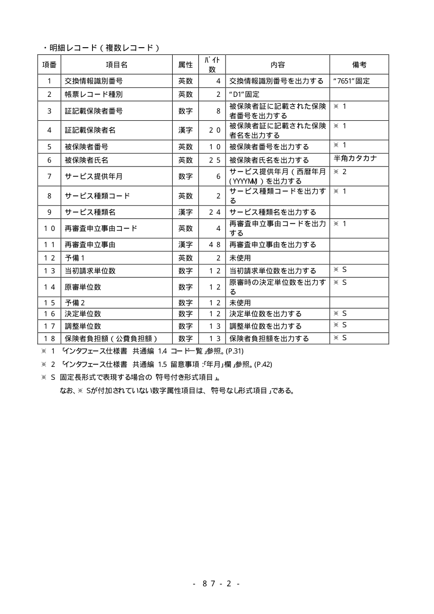
claude-haiku-5-5
- テキストレイヤに見つからないセル: 2 個（赤枠）
表1 record_layout・明細レコード（複数レコード）
| 項番 | 項目名 | 属性 | 桁数 | 内容 | 必須 | 備考 | その他の列 |
|---|---|---|---|---|---|---|---|
| 1 | 交換情報識別番号 | 英数 | 4 | 交換情報識別番号を出力する | "7651"固定 | ||
| 2 | 帳票レコード種別 | 英数 | 2 | "D1"固定 | |||
| 3 | 証記載保険者番号 | 数字 | 8 | 被保険者証に記載された保険者番号を出力する | ※ 1 | ||
| 4 | 証記載保険者名 | 漢字 | 20 | 被保険者証に記載された保険者名を出力する | ※ 1 | ||
| 5 | 被保険者番号 | 英数 | 10 | 被保険者番号を出力する | ※ 1 | ||
| 6 | 被保険者氏名 | 英数 | 25 | 被保険者氏名を出力する | 半角カタカナ | ||
| 7 | サービス提供年月 | 数字 | 6 | サービス提供年月（西暦年月(YYYYMM)）を出力する | ※ 2 | ||
| 8 | サービス種類コード | 英数 | 2 | サービス種類コードを出力する | ※ 1 | ||
| 9 | サービス種類名 | 漢字 | 24 | サービス種類名を出力する | |||
| 10 | 再審査申立事由コード | 英数 | 4 | 再審査申立事由コードを出力する | ※ 1 | ||
| 11 | 再審査申立事由 | 漢字 | 48 | 再審査申立事由を出力する | |||
| 12 | 予備1 | 英数 | 2 | 未使用 | |||
| 13 | 当初請求単位数 | 数字 | 12 | 当初請求単位数を出力する | ※ S | ||
| 14 | 原審単位数 | 数字 | 12 | 原審時の決定単位数を出力する | ※ S | ||
| 15 | 予備2 | 数字 | 12 | 未使用 | |||
| 16 | 決定単位数 | 数字 | 12 | 決定単位数を出力する | ※ S | ||
| 17 | 調整単位数 | 数字 | 13 | 調整単位数を出力する | ※ S | ||
| 18 | 保険者負担額（公費負担額） | 数字 | 13 | 保険者負担額を出力する | ※ S |
注記
- ※1 「インタフェース仕様書 共通編 1.4 コード一覧」参照。(P.31)
- ※2 「インタフェース仕様書 共通編 1.5 留意事項 :「年月」欄」参照。(P.42)
- ※S 固定長形式で表現する場合の「符号付き形式項目」。なお、※Sが付加されていない数字属性項目は、「符号なし形式項目」である。
uncertain（モデル自己申告）
- 項目名 6「被保険者氏名」の属性は原文では「英数」だが、備考が「半角カタカナ」となっている。原文どおり記載した。
- 項番1〜18の各行の cells は column_map に含まれる列のみのため空。
claude-sonnet-5-5
表1 record_layout・明細レコード（複数レコード）
| 項番 | 項目名 | 属性 | 桁数 | 内容 | 必須 | 備考 | その他の列 |
|---|---|---|---|---|---|---|---|
| 1 | 交換情報識別番号 | 英数 | 4 | 交換情報識別番号を出力する | “7651”固定 | ||
| 2 | 帳票レコード種別 | 英数 | 2 | “D1”固定 | |||
| 3 | 証記載保険者番号 | 数字 | 8 | 被保険者証に記載された保険者番号を出力する | ※1 | ||
| 4 | 証記載保険者名 | 漢字 | 20 | 被保険者証に記載された保険者名を出力する | ※1 | ||
| 5 | 被保険者番号 | 英数 | 10 | 被保険者番号を出力する | ※1 | ||
| 6 | 被保険者氏名 | 英数 | 25 | 被保険者氏名を出力する | 半角カタカナ | ||
| 7 | サービス提供年月 | 数字 | 6 | サービス提供年月（西暦年月(YYYYMM)）を出力する | ※2 | ||
| 8 | サービス種類コード | 英数 | 2 | サービス種類コードを出力する | ※1 | ||
| 9 | サービス種類名 | 漢字 | 24 | サービス種類名を出力する | |||
| 10 | 再審査申立事由コード | 英数 | 4 | 再審査申立事由コードを出力する | ※1 | ||
| 11 | 再審査申立事由 | 漢字 | 48 | 再審査申立事由を出力する | |||
| 12 | 予備1 | 英数 | 2 | 未使用 | |||
| 13 | 当初請求単位数 | 数字 | 12 | 当初請求単位数を出力する | ※S | ||
| 14 | 原審単位数 | 数字 | 12 | 原審時の決定単位数を出力する | ※S | ||
| 15 | 予備2 | 数字 | 12 | 未使用 | |||
| 16 | 決定単位数 | 数字 | 12 | 決定単位数を出力する | ※S | ||
| 17 | 調整単位数 | 数字 | 13 | 調整単位数を出力する | ※S | ||
| 18 | 保険者負担額（公費負担額） | 数字 | 13 | 保険者負担額を出力する | ※S |
注記
- ※1 「インタフェース仕様書 共通編 1.4 コード一覧」参照。(P.31)
- ※2 「インタフェース仕様書 共通編 1.5 留意事項 :「年月」欄」参照。(P.42)
- ※S 固定長形式で表現する場合の「符号付き形式項目」。なお、※Sが付加されていない数字属性項目は、「符号なし形式項目」である。
uncertain（モデル自己申告）
- 表は「明細レコード」の見出しがあるが、前ページからの続きかは不明（項番1から始まっている）
- record.exchange_id は項番1の「7651」固定から推定
kaigo_jigyosho_r0604_p197 — 印字p.
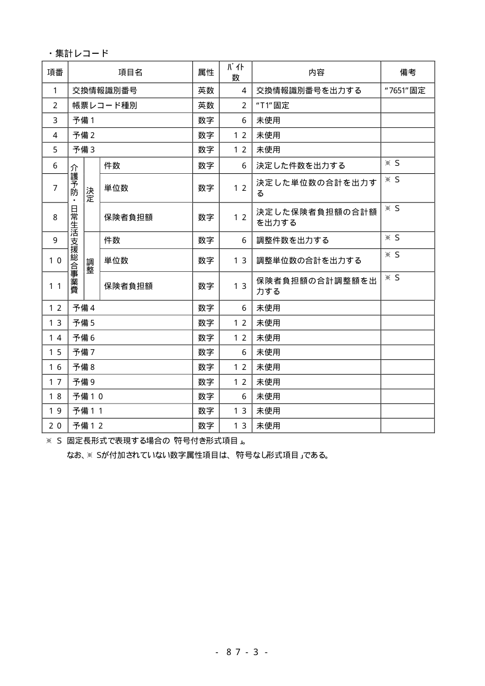
claude-haiku-5-5
表1 record_layout・集計レコード
| 項番 | 項目名 | 属性 | 桁数 | 内容 | 必須 | 備考 | その他の列 |
|---|---|---|---|---|---|---|---|
| 1 | 交換情報識別番号 | 英数 | 4 | 交換情報識別番号を出力する | “7651”固定 | ||
| 2 | 帳票レコード種別 | 英数 | 2 | “T1”固定 | |||
| 3 | 予備1 | 数字 | 6 | 未使用 | |||
| 4 | 予備2 | 数字 | 12 | 未使用 | |||
| 5 | 予備3 | 数字 | 12 | 未使用 | |||
| 6 | 介護予防・日常生活支援総合事業費 > 決定 > 件数 | 数字 | 6 | 決定した件数を出力する | ※ S | ||
| 7 | 介護予防・日常生活支援総合事業費 > 決定 > 単位数 | 数字 | 12 | 決定した単位数の合計を出力する | ※ S | ||
| 8 | 介護予防・日常生活支援総合事業費 > 決定 > 保険者負担額 | 数字 | 12 | 決定した保険者負担額の合計額を出力する | ※ S | ||
| 9 | 介護予防・日常生活支援総合事業費 > 調整 > 件数 | 数字 | 6 | 調整件数を出力する | ※ S | ||
| 10 | 介護予防・日常生活支援総合事業費 > 調整 > 単位数 | 数字 | 13 | 調整単位数の合計を出力する | ※ S | ||
| 11 | 介護予防・日常生活支援総合事業費 > 調整 > 保険者負担額 | 数字 | 13 | 保険者負担額の合計調整額を出力する | ※ S | ||
| 12 | 予備4 | 数字 | 6 | 未使用 | |||
| 13 | 予備5 | 数字 | 12 | 未使用 | |||
| 14 | 予備6 | 数字 | 12 | 未使用 | |||
| 15 | 予備7 | 数字 | 6 | 未使用 | |||
| 16 | 予備8 | 数字 | 12 | 未使用 | |||
| 17 | 予備9 | 数字 | 12 | 未使用 | |||
| 18 | 予備10 | 数字 | 6 | 未使用 | |||
| 19 | 予備11 | 数字 | 13 | 未使用 | |||
| 20 | 予備12 | 数字 | 13 | 未使用 |
注記
- ※S 固定長形式で表現する場合の「符号付き形式項目」。
- なお、※Sが付加されていない数字属性項目は、「符号なし形式項目」である。
claude-sonnet-5-5
- テキストレイヤに見つからないセル: 1 個（赤枠）
表1 record_layout・集計レコード
| 項番 | 項目名 | 属性 | 桁数 | 内容 | 必須 | 備考 | その他の列 |
|---|---|---|---|---|---|---|---|
| 1 | 交換情報識別番号 | 英数 | 4 | 交換情報識別番号を出力する | “7651”固定 | ||
| 2 | 帳票レコード種別 | 英数 | 2 | “T1”固定 | |||
| 3 | 予備1 | 数字 | 6 | 未使用 | |||
| 4 | 予備2 | 数字 | 12 | 未使用 | |||
| 5 | 予備3 | 数字 | 12 | 未使用 | |||
| 6 | 介護予防・日常生活支援総合事業費 > 決定 > 件数 | 数字 | 6 | 決定した件数を出力する | ※S | ||
| 7 | 介護予防・日常生活支援総合事業費 > 決定 > 単位数 | 数字 | 12 | 決定した単位数の合計を出力する | ※S | ||
| 8 | 介護予防・日常生活支援総合事業費 > 決定 > 保険者負担額 | 数字 | 12 | 決定した保険者負担額の合計額を出力する | ※S | ||
| 9 | 介護予防・日常生活支援総合事業費 > 調整 > 件数 | 数字 | 6 | 調整件数を出力する | ※S | ||
| １０ | 介護予防・日常生活支援総合事業費 > 調整 > 単位数 | 数字 | 13 | 調整単位数の合計を出力する | ※S | ||
| １１ | 介護予防・日常生活支援総合事業費 > 調整 > 保険者負担額 | 数字 | 13 | 保険者負担の合計調整額を出力する | ※S | ||
| １２ | 予備4 | 数字 | 6 | 未使用 | |||
| １３ | 予備5 | 数字 | 12 | 未使用 | |||
| １４ | 予備6 | 数字 | 12 | 未使用 | |||
| １５ | 予備7 | 数字 | 6 | 未使用 | |||
| １６ | 予備8 | 数字 | 12 | 未使用 | |||
| １７ | 予備9 | 数字 | 12 | 未使用 | |||
| １８ | 予備１０ | 数字 | 6 | 未使用 | |||
| １９ | 予備１１ | 数字 | 13 | 未使用 | |||
| ２０ | 予備１２ | 数字 | 13 | 未使用 |
注記
- ※S 固定長形式で表現する場合の「符号付き形式項目」。なお、※Sが付加されていない数字属性項目は、「符号なし形式項目」である。
uncertain（モデル自己申告）
- 項番6〜11の name_path は縦結合の見出し（介護予防・日常生活支援総合事業費／決定／調整）を外側から順に入れた
- 半角・全角の数字表記（予備1 等）は画像から推定
kaigo_jigyosho_r0604_p199 — 印字p.
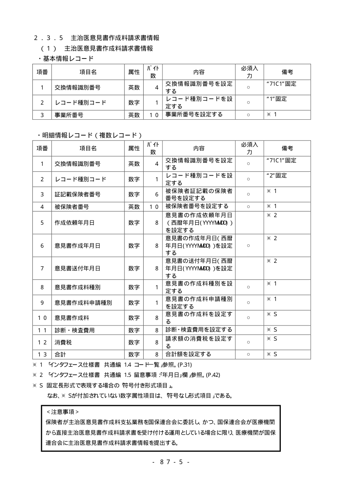
claude-haiku-5-5
表1 record_layout・基本情報レコード
| 項番 | 項目名 | 属性 | 桁数 | 内容 | 必須 | 備考 | その他の列 |
|---|---|---|---|---|---|---|---|
| 1 | 交換情報識別番号 | 英数 | 4 | 交換情報識別番号を設定する | ○ | “71C1”固定 | |
| 2 | レコード種別コード | 数字 | 1 | レコード種別コードを設定する | ○ | “1”固定 | |
| 3 | 事業所番号 | 英数 | 10 | 事業所番号を設定する | ※ 1 |
表2 record_layout・明細情報レコード（複数レコード）
| 項番 | 項目名 | 属性 | 桁数 | 内容 | 必須 | 備考 | その他の列 |
|---|---|---|---|---|---|---|---|
| 1 | 交換情報識別番号 | 英数 | 4 | 交換情報識別番号を設定する | ○ | “71C1”固定 | |
| 2 | レコード種別コード | 数字 | 1 | レコード種別コードを設定する | ○ | “2”固定 | |
| 3 | 証記載保険者番号 | 数字 | 6 | 被保険者証記載の保険者番号を設定する | ○ | ※ 1 | |
| 4 | 被保険者番号 | 英数 | 10 | 被保険者番号を設定する | ○ | ※ 1 | |
| 5 | 作成依頼年月日 | 数字 | 8 | 意見書の作成依頼年月日（西暦年月日(YYYYMMDD) ）を設定する | ※ 2 | ||
| 6 | 意見書作成年月日 | 数字 | 8 | 意見書の作成年月日(西暦年月日(YYYYMMDD) )を設定する | ○ | ※ 2 | |
| 7 | 意見書送付年月日 | 数字 | 8 | 意見書の送付年月日(西暦年月日(YYYYMMDD) )を設定する | ※ 2 | ||
| 8 | 意見書作成料種別 | 数字 | 1 | 意見書の作成料種別を設定する | ○ | ※ 1 | |
| 9 | 意見書作成料申請種別 | 数字 | 1 | 意見書の作成料申請種別を設定する | ○ | ※ 1 | |
| 10 | 意見書作成料 | 数字 | 8 | 意見書の作成料を設定する | ○ | ※ S | |
| 11 | 診断・検査費用 | 数字 | 8 | 診断・検査費用を設定する | ※ S | ||
| 12 | 消費税 | 数字 | 8 | 請求額の消費税を設定する | ○ | ※ S | |
| 13 | 合計 | 数字 | 8 | 合計額を設定する | ○ | ※ S |
注記
- ※1 「インタフェース仕様書 共通編 1.4 コード一覧」参照。(P.31)
- ※2 「インタフェース仕様書 共通編 1.5 留意事項 :「年月日」欄」参照。(P.42)
- ※S 固定長形式で表現する場合の「符号付き形式項目」。
- なお、※Sが付加されていない数字属性項目は、「符号なし形式項目」である。
- ＜注意事項＞ 保険者が主治医意見書作成料支払業務を国保連合会に委託し、かつ、国保連合会が医療機関から直接主治医意見書作成料請求書を受け付ける運用としている場合に限り、医療機関が国保連合会に主治医意見書作成料請求書情報を提出する。
uncertain（モデル自己申告）
- レコード名と上位の情報名（record.name, record.parent）は見出しから推定して記入した。
- 明細情報レコードの属性・内容の全角・半角表記は原文のまま書き写したが、「YYYYMMDD」周辺の空白の有無は画像から判別しきれない箇所がある。
claude-sonnet-5-5
表1 record_layout・基本情報レコード
| 項番 | 項目名 | 属性 | 桁数 | 内容 | 必須 | 備考 | その他の列 |
|---|---|---|---|---|---|---|---|
| 1 | 交換情報識別番号 | 英数 | 4 | 交換情報識別番号を設定する | ○ | “71C1”固定 | |
| 2 | レコード種別コード | 数字 | 1 | レコード種別コードを設定する | ○ | “1”固定 | |
| 3 | 事業所番号 | 英数 | 10 | 事業所番号を設定する | ○ | ※1 |
表2 record_layout・明細情報レコード(複数レコード)
| 項番 | 項目名 | 属性 | 桁数 | 内容 | 必須 | 備考 | その他の列 |
|---|---|---|---|---|---|---|---|
| 1 | 交換情報識別番号 | 英数 | 4 | 交換情報識別番号を設定する | ○ | “71C1”固定 | |
| 2 | レコード種別コード | 数字 | 1 | レコード種別コードを設定する | ○ | “2”固定 | |
| 3 | 証記載保険者番号 | 数字 | 6 | 被保険者証記載の保険者番号を設定する | ○ | ※1 | |
| 4 | 被保険者番号 | 英数 | 10 | 被保険者番号を設定する | ○ | ※1 | |
| 5 | 作成依頼年月日 | 数字 | 8 | 意見書の作成依頼年月日(西暦年月日(YYYYMMDD))を設定する | ※2 | ||
| 6 | 意見書作成年月日 | 数字 | 8 | 意見書の作成年月日(西暦年月日(YYYYMMDD))を設定する | ○ | ※2 | |
| 7 | 意見書送付年月日 | 数字 | 8 | 意見書の送付年月日(西暦年月日(YYYYMMDD))を設定する | ※2 | ||
| 8 | 意見書作成料種別 | 数字 | 1 | 意見書の作成料種別を設定する | ○ | ※1 | |
| 9 | 意見書作成料申請種別 | 数字 | 1 | 意見書の作成料申請種別を設定する | ○ | ※1 | |
| 10 | 意見書作成料 | 数字 | 8 | 意見書の作成料を設定する | ○ | ※S | |
| 11 | 診断・検査費用 | 数字 | 8 | 診断・検査費用を設定する | ※S | ||
| 12 | 消費税 | 数字 | 8 | 請求額の消費税を設定する | ○ | ※S | |
| 13 | 合計 | 数字 | 8 | 合計額を設定する | ○ | ※S |
注記
- ※1 「インタフェース仕様書 共通編 1.4 コード一覧」参照。(P.31)
- ※2 「インタフェース仕様書 共通編 1.5 留意事項 :「年月日」欄」参照。(P.42)
- ※S 固定長形式で表現する場合の「符号付き形式項目」。 なお、※Sが付加されていない数字属性項目は、「符号なし形式項目」である。
- <注意事項> 保険者が主治医意見書作成料支払業務を国保連合会に委託し、かつ、国保連合会が医療機関から直接主治医意見書作成料請求書を受け付ける運用としている場合に限り、医療機関が国保連合会に主治医意見書作成料請求書情報を提出する。
uncertain（モデル自己申告）
- record.exchange_id は備考の固定値“71C1”から推定
kaigo_kyotsu_r0806_p11 — 印字p.
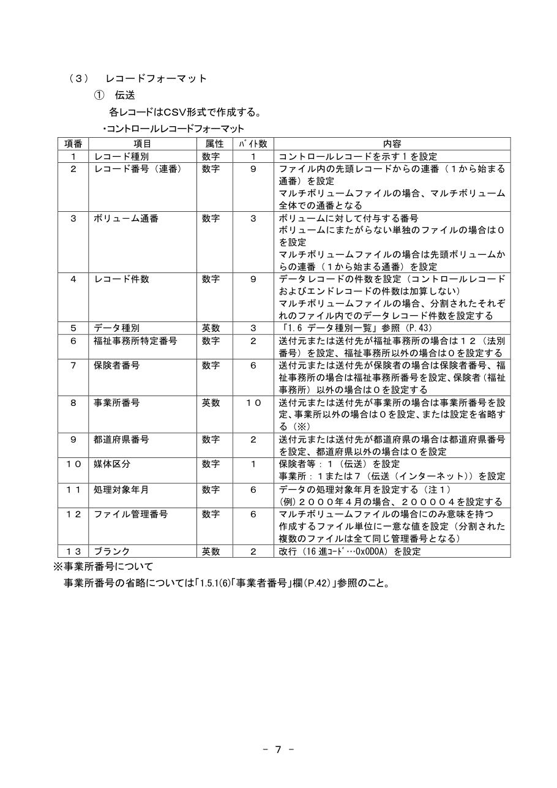
claude-haiku-5-5
- テキストレイヤに見つからないセル: 1 個（赤枠）
表1 record_layout・コントロールレコードフォーマット
| 項番 | 項目名 | 属性 | 桁数 | 内容 | 必須 | 備考 | その他の列 |
|---|---|---|---|---|---|---|---|
| １ | レコード種別 | 数字 | 1 | コントロールレコードを示す1を設定 | |||
| ２ | レコード番号（連番） | 数字 | 9 | ファイル内の先頭レコードからの連番（1から始まる通番）を設定 マルチボリュームファイルの場合、マルチボリューム全体での通番となる | |||
| ３ | ボリューム通番 | 数字 | 3 | ボリュームに対して付与する番号 ボリュームにまたがらない単独のファイルの場合は0を設定 マルチボリュームファイルの場合は先頭ボリュームからの連番（1から始まる通番）を設定 | |||
| ４ | レコード件数 | 数字 | 9 | データレコードの件数を設定（コントロールレコードおよびエンドレコードの件数は加算しない） マルチボリュームファイルの場合、分割されたそれぞれのファイル内でのデータレコード件数を設定する | |||
| ５ | データ種別 | 英数 | 3 | 「1.6 データ種別一覧」参照（P.43） | |||
| ６ | 福祉事務所特定番号 | 数字 | 2 | 送付元または送付先が福祉事務所の場合は12（法別番号）を設定、福祉事務所以外の場合は0を設定する | |||
| ７ | 保険者番号 | 数字 | 6 | 送付元または送付先が保険者の場合は保険者番号、福祉事務所の場合は福祉事務所番号を設定、保険者（福祉事務所）以外の場合は0を設定する | |||
| ８ | 事業所番号 | 英数 | 10 | 送付元または送付先が事業所の場合は事業所番号を設定、事業所以外の場合は0を設定、または設定を省略する（※） | |||
| ９ | 都道府県番号 | 数字 | 2 | 送付元または送付先が都道府県の場合は都道府県番号を設定、都道府県以外の場合は0を設定 | |||
| １０ | 媒体区分 | 数字 | 1 | 保険者等：1（伝送）を設定 事業所：1または7（伝送（インターネット））を設定 | |||
| １１ | 処理対象年月 | 数字 | 6 | データの処理対象年月を設定する（注1） （例）２０００年４月の場合、２００００４を設定する | |||
| １２ | ファイル管理番号 | 数字 | 6 | マルチボリュームファイルの場合にのみ意味を持つ 作成するファイル単位に一意な値を設定（分割された複数のファイルは全て同じ管理番号となる） | |||
| １３ | ブランク | 英数 | 2 | 改行（16進コード…0x0D0A）を設定 |
注記
- ※ 事業所番号について 事業所番号の省略については「1.5.1(6)「事業者番号」欄（P.42）」参照のこと。
uncertain（モデル自己申告）
- 依頼では PDF 上のページ 11 の表とあったが、添付画像は印字ページ 7 の1ページのみで、このページの表（コントロールレコードフォーマット）を書き起こした。
- 列見出し「ﾊﾞｲﾄ数」は画像上で半角カナ表記に見えるため、そのまま記載した。
- 内容欄の改行位置は文の区切りから判断した。折り返しと区別しきれない箇所がある可能性がある。
claude-sonnet-5-5
- テキストレイヤに見つからないセル: 1 個（赤枠）
表1 record_layout・コントロールレコードフォーマット
| 項番 | 項目名 | 属性 | 桁数 | 内容 | 必須 | 備考 | その他の列 |
|---|---|---|---|---|---|---|---|
| 1 | レコード種別 | 数字 | 1 | コントロールレコードを示す1を設定 | |||
| 2 | レコード番号（連番） | 数字 | 9 | ファイル内の先頭レコードからの連番（1から始まる通番）を設定 マルチボリュームファイルの場合、マルチボリューム全体での通番となる | |||
| 3 | ボリューム通番 | 数字 | 3 | ボリュームに対して付与する番号 ボリュームにまたがらない単独のファイルの場合は0を設定 マルチボリュームファイルの場合は先頭ボリュームからの連番（1から始まる通番）を設定 | |||
| 4 | レコード件数 | 数字 | 9 | データレコードの件数を設定（コントロールレコードおよびエンドレコードの件数は加算しない） マルチボリュームファイルの場合、分割されたそれぞれのファイル内でのデータレコード件数を設定する | |||
| 5 | データ種別 | 英数 | 3 | 「1.6 データ種別一覧」参照（P.43） | |||
| 6 | 福祉事務所特定番号 | 数字 | 2 | 送付元または送付先が福祉事務所の場合は12（法別番号）を設定、福祉事務所以外の場合は0を設定する | |||
| 7 | 保険者番号 | 数字 | 6 | 送付元または送付先が保険者の場合は保険者番号、福祉事務所の場合は福祉事務所番号を設定、保険者（福祉事務所）以外の場合は0を設定する | |||
| 8 | 事業所番号 | 英数 | 10 | 送付元または送付先が事業所の場合は事業所番号を設定、事業所以外の場合は0を設定、または設定を省略する（※） | |||
| 9 | 都道府県番号 | 数字 | 2 | 送付元または送付先が都道府県の場合は都道府県番号を設定、都道府県以外の場合は0を設定 | |||
| 10 | 媒体区分 | 数字 | 1 | 保険者等：1（伝送）を設定 事業所：1または7（伝送（インターネット））を設定 | |||
| 11 | 処理対象年月 | 数字 | 6 | データの処理対象年月を設定する（注1） (例）2000年4月の場合、200004を設定する | |||
| 12 | ファイル管理番号 | 数字 | 6 | マルチボリュームファイルの場合にのみ意味を持つ 作成するファイル単位に一意な値を設定（分割された複数のファイルは全て同じ管理番号となる） | |||
| 13 | ブランク | 英数 | 2 | 改行（16進ｺｰﾄﾞ…0x0D0A）を設定 |
注記
- ※ 事業所番号について 事業所番号の省略については「1.5.1(6)「事業者番号」欄(P.42)」参照のこと。
uncertain（モデル自己申告）
- 項番11の内容中の「(注1)」は原文どおり。注1の本文は当ページに無い。
- record.name は表見出しから推定（コントロールレコード）。
kaigo_kyotsu_r0806_p12 — 印字p.8

claude-haiku-5-5
- 表1 項番3 桁数が空（原文: None）
表1 record_layout・データレコードフォーマット
| 項番 | 項目名 | 属性 | 桁数 | 内容 | 必須 | 備考 | その他の列 |
|---|---|---|---|---|---|---|---|
| 1 | レコード種別 | 数字 | 1 | データレコードを示す2を設定 | |||
| 2 | レコード番号（連番） | 数字 | 9 | ファイル内の先頭レコードからの連番（１から始まる通番）を設定 マルチボリュームファイルの場合、マルチボリューム全体での通番となる | |||
| 3 | データ | 交換情報ごとに、CSV形式でデータを設定 設定する内容は、各交換情報の「項目説明」を参照 | |||||
| 4 | ブランク | 英数 | 2 | 改行（16進ｺｰﾄﾞ…0x0D0A）を設定 |
表2 record_layout・エンドレコードフォーマット
| 項番 | 項目名 | 属性 | 桁数 | 内容 | 必須 | 備考 | その他の列 |
|---|---|---|---|---|---|---|---|
| 1 | レコード種別 | 数字 | 1 | エンドレコードを示す3を設定 | |||
| 2 | レコード番号（連番） | 数字 | 9 | ファイル内の先頭レコードからの連番（１から始まる通番）を設定 マルチボリュームファイルの場合、マルチボリューム全体での通番となる | |||
| 3 | ブランク | 英数 | 2 | 改行（16進ｺｰﾄﾞ…0x0D0A）を設定 |
表3 other・コントロールレコード設定例
| 項番 | 項目名 | 属性 | 桁数 | 内容 | 必須 | 備考 | その他の列 |
|---|---|---|---|---|---|---|---|
| 位置 | 1 2 3 4 5 6 7 8 9 10 11 12 13 14 15 16 17 18 19 20 21 22 23 24 25 26 27 28 29 30 31 32 33 34 35 36 37 38 39 40 | ||||||
| 設定値 | 1 , 1 , 0 , 1 2 3 , 9 9 9 , 0 , 0 , 1 1 1 1 1 1 1 1 1 1 , 0 , 4 , 2 0 0 0 0 4 , | ||||||
| 位置 | 41 42 43 | ||||||
| 設定値 | 1 改行コード |
表4 other・データレコード(2レコード目)設定例
| 項番 | 項目名 | 属性 | 桁数 | 内容 | 必須 | 備考 | その他の列 |
|---|---|---|---|---|---|---|---|
| 位置 | 1 2 3 4 ・・・・・・ … … | ||||||
| 設定値 | 2 , 2 , ・・・データを設定・・・ 改行コード |
表5 other・エンドレコード(125レコード目)設定例
| 項番 | 項目名 | 属性 | 桁数 | 内容 | 必須 | 備考 | その他の列 |
|---|---|---|---|---|---|---|---|
| 位置 | 1 2 3 4 5 6 7 | ||||||
| 設定値 | 3 , 1 2 5 改行コード |
uncertain（モデル自己申告）
- 設定例3件（コントロールレコード・データレコード(2レコード目)・エンドレコード(125レコード目)）は表の枠が図のため、位置行と設定値行を行として書き起こした。columnsは見出し行がないため空配列としている。
- コントロールレコード設定例の位置19〜28の「1」の桁数は画像上の判読に基づく（事業所番号の10桁と解釈）。
- データレコード(2レコード目)設定例の「・・・・・・」「…」は原文の省略記号をそのまま書き写した。
claude-sonnet-5-5
- 表1 項番3 桁数が空（原文: None）
- テキストレイヤに見つからないセル: 2 個（赤枠）
表1 record_layout・データレコードフォーマット
| 項番 | 項目名 | 属性 | 桁数 | 内容 | 必須 | 備考 | その他の列 |
|---|---|---|---|---|---|---|---|
| 1 | レコード種別 | 数字 | 1 | データレコードを示す2を設定 | |||
| 2 | レコード番号（連番） | 数字 | 9 | ファイル内の先頭レコードからの連番（1から始まる通番）を設定 マルチボリュームファイルの場合、マルチボリューム全体での通番となる | |||
| 3 | データ | 交換情報ごとに、CSV形式でデータを設定 設定する内容は、各交換情報の「項目説明」を参照 | |||||
| 4 | ブランク | 英数 | 2 | 改行（16進ｺｰﾄﾞ…0x0D0A）を設定 |
表2 record_layout・エンドレコードフォーマット
| 項番 | 項目名 | 属性 | 桁数 | 内容 | 必須 | 備考 | その他の列 |
|---|---|---|---|---|---|---|---|
| 1 | レコード種別 | 数字 | 1 | エンドレコードを示す3を設定 | |||
| 2 | レコード番号（連番） | 数字 | 9 | ファイル内の先頭レコードからの連番（1から始まる通番）を設定 マルチボリュームファイルの場合、マルチボリューム全体での通番となる | |||
| 3 | ブランク | 英数 | 2 | 改行（16進ｺｰﾄﾞ…0x0D0A）を設定 |
表3 other・コントロールレコード設定例
| 項番 | 項目名 | 属性 | 桁数 | 内容 | 必須 | 備考 | その他の列 |
|---|---|---|---|---|---|---|---|
| 1〜40 | 位置: 1 2 3 4 5 6 7 8 9 10 11 12 13 14 15 16 17 18 19 20 21 22 23 24 25 26 27 28 29 30 31 32 33 34 35 36 37 38 39 40 設定値: 1,1,0,123,999,0,0,1111111111,0,4,200004, | ||||||
| 41〜43 | 位置: 41 42 43 設定値: 1 改行コード |
表4 other・データレコード(2レコード目)設定例
| 項番 | 項目名 | 属性 | 桁数 | 内容 | 必須 | 備考 | その他の列 |
|---|---|---|---|---|---|---|---|
| 位置: 1 2 3 4 ・・・・・・ … 設定値: 2,2, ・・・データを設定・・・ 改行コード |
表5 other・エンドレコード(125レコード目)設定例
| 項番 | 項目名 | 属性 | 桁数 | 内容 | 必須 | 備考 | その他の列 |
|---|---|---|---|---|---|---|---|
| 位置: 1 2 3 4 5 6 7 設定値: 3,125 改行コード |
uncertain（モデル自己申告）
- 設定例の表は桁ごとのセルのため、位置・設定値を1行にまとめて書き写した。
kaigo_kyotsu_r0806_p15 — 印字p.
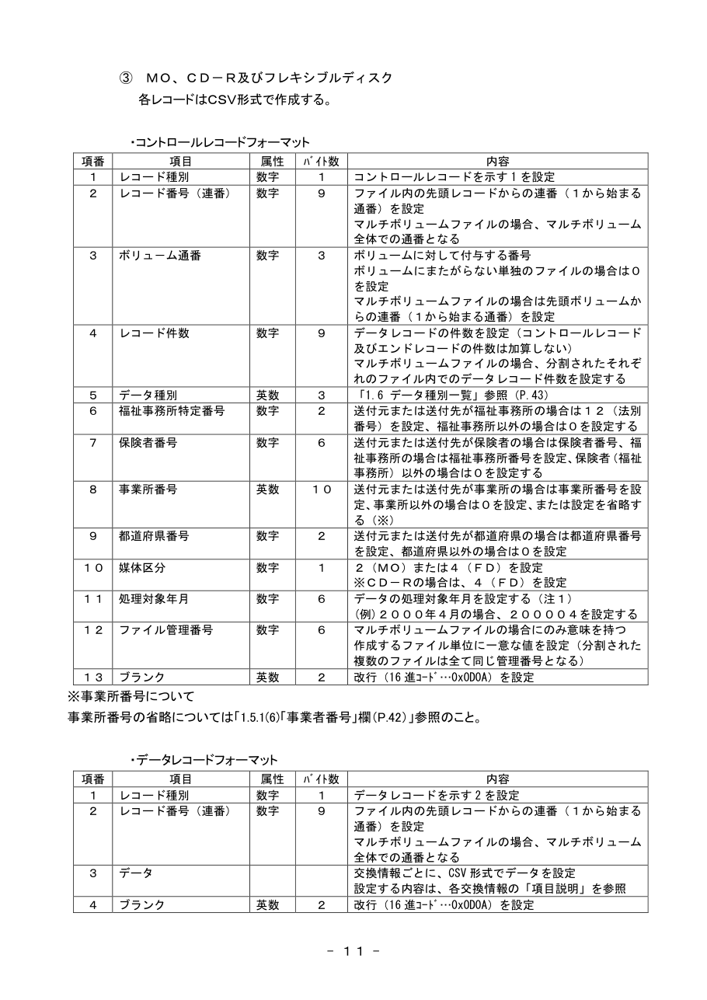
claude-haiku-5-5
- 表2 項番3 桁数が空（原文: None）
- テキストレイヤに見つからないセル: 1 個（赤枠）
表1 record_layout・コントロールレコードフォーマット
| 項番 | 項目名 | 属性 | 桁数 | 内容 | 必須 | 備考 | その他の列 |
|---|---|---|---|---|---|---|---|
| １ | レコード種別 | 数字 | 1 | コントロールレコードを示す１を設定 | |||
| ２ | レコード番号（連番） | 数字 | 9 | ファイル内の先頭レコードからの連番（１から始まる通番）を設定 マルチボリュームファイルの場合、マルチボリューム全体での通番となる | |||
| ３ | ボリューム通番 | 数字 | 3 | ボリュームに対して付与する番号 ボリュームにまたがらない単独のファイルの場合は０を設定 マルチボリュームファイルの場合は先頭ボリュームからの連番（１から始まる通番）を設定 | |||
| ４ | レコード件数 | 数字 | 9 | データレコードの件数を設定（コントロールレコード及びエンドレコードの件数は加算しない） マルチボリュームファイルの場合、分割されたそれぞれのファイル内でのデータレコード件数を設定する | |||
| ５ | データ種別 | 英数 | 3 | 「1.6 データ種別一覧」参照（P.43） | |||
| ６ | 福祉事務所特定番号 | 数字 | 2 | 送付元または送付先が福祉事務所の場合は１２（法別番号）を設定、福祉事務所以外の場合は０を設定する | |||
| ７ | 保険者番号 | 数字 | 6 | 送付元または送付先が保険者の場合は保険者番号、福祉事務所の場合は福祉事務所番号を設定、保険者（福祉事務所）以外の場合は０を設定する | |||
| ８ | 事業所番号 | 英数 | 10 | 送付元または送付先が事業所の場合は事業所番号を設定、事業所以外の場合は０を設定、または設定を省略する（※） | |||
| ９ | 都道府県番号 | 数字 | 2 | 送付元または送付先が都道府県の場合は都道府県番号を設定、都道府県以外の場合は０を設定 | |||
| １０ | 媒体区分 | 数字 | 1 | ２（MO）または４（FD）を設定 ※CD-Rの場合は、４（FD）を設定 | |||
| １１ | 処理対象年月 | 数字 | 6 | データの処理対象年月を設定する（注１） （例）２０００年４月の場合、２００００４を設定する | |||
| １２ | ファイル管理番号 | 数字 | 6 | マルチボリュームファイルの場合にのみ意味を持つ 作成するファイル単位に一意な値を設定（分割された複数のファイルは全て同じ管理番号となる） | |||
| １３ | ブランク | 英数 | 2 | 改行（16進コード…0x0D0A）を設定 |
表2 record_layout・データレコードフォーマット
| 項番 | 項目名 | 属性 | 桁数 | 内容 | 必須 | 備考 | その他の列 |
|---|---|---|---|---|---|---|---|
| １ | レコード種別 | 数字 | 1 | データレコードを示す２を設定 | |||
| ２ | レコード番号（連番） | 数字 | 9 | ファイル内の先頭レコードからの連番（１から始まる通番）を設定 マルチボリュームファイルの場合、マルチボリューム全体での通番となる | |||
| ３ | データ | 交換情報ごとに、CSV形式でデータを設定 設定する内容は、各交換情報の「項目説明」を参照 | |||||
| ４ | ブランク | 英数 | 2 | 改行（16進コード…0x0D0A）を設定 |
注記
- ※ 事業所番号について 事業所番号の省略については「1.5.1(6)「事業者番号」欄（P.42）」参照のこと。
uncertain（モデル自己申告）
- 添付の1ページは印字ページ番号「- 11 -」で、指定のPDF上のページ15とは一致しない可能性がある。
- コントロールレコードフォーマットの項番11の「（注１）」に対応する注記（注１）は、このページ内に見当たらないため書き起こしていない。
- 「MO」「FD」「CD-R」の英字の全角・半角は画像から判別しきれず、表記は読み取った形で記載した。
claude-sonnet-5-5
- 表2 項番3 桁数が空（原文: None）
- テキストレイヤに見つからないセル: 1 個（赤枠）
表1 record_layout・コントロールレコードフォーマット
| 項番 | 項目名 | 属性 | 桁数 | 内容 | 必須 | 備考 | その他の列 |
|---|---|---|---|---|---|---|---|
| 1 | レコード種別 | 数字 | 1 | コントロールレコードを示す1を設定 | |||
| 2 | レコード番号（連番） | 数字 | 9 | ファイル内の先頭レコードからの連番（1から始まる通番）を設定 マルチボリュームファイルの場合、マルチボリューム全体での通番となる | |||
| 3 | ボリューム通番 | 数字 | 3 | ボリュームに対して付与する番号 ボリュームにまたがらない単独のファイルの場合は0を設定 マルチボリュームファイルの場合は先頭ボリュームからの連番（1から始まる通番）を設定 | |||
| 4 | レコード件数 | 数字 | 9 | データレコードの件数を設定（コントロールレコード及びエンドレコードの件数は加算しない） マルチボリュームファイルの場合、分割されたそれぞれのファイル内でのデータレコード件数を設定する | |||
| 5 | データ種別 | 英数 | 3 | 「1.6 データ種別一覧」参照（P.43） | |||
| 6 | 福祉事務所特定番号 | 数字 | 2 | 送付元または送付先が福祉事務所の場合は12（法別番号）を設定、福祉事務所以外の場合は0を設定する | |||
| 7 | 保険者番号 | 数字 | 6 | 送付元または送付先が保険者の場合は保険者番号、福祉事務所の場合は福祉事務所番号を設定、保険者（福祉事務所）以外の場合は0を設定する | |||
| 8 | 事業所番号 | 英数 | 10 | 送付元または送付先が事業所の場合は事業所番号を設定、事業所以外の場合は0を設定、または設定を省略する（※） | |||
| 9 | 都道府県番号 | 数字 | 2 | 送付元または送付先が都道府県の場合は都道府県番号を設定、都道府県以外の場合は0を設定 | |||
| 10 | 媒体区分 | 数字 | 1 | 2（MO）または4（FD）を設定 ※CD－Rの場合は、4（FD）を設定 | |||
| 11 | 処理対象年月 | 数字 | 6 | データの処理対象年月を設定する（注1） (例)2000年4月の場合、200004を設定する | |||
| 12 | ファイル管理番号 | 数字 | 6 | マルチボリュームファイルの場合にのみ意味を持つ 作成するファイル単位に一意な値を設定（分割された複数のファイルは全て同じ管理番号となる） | |||
| 13 | ブランク | 英数 | 2 | 改行（16進ｺｰﾄﾞ…0x0D0A）を設定 |
表2 record_layout・データレコードフォーマット
| 項番 | 項目名 | 属性 | 桁数 | 内容 | 必須 | 備考 | その他の列 |
|---|---|---|---|---|---|---|---|
| 1 | レコード種別 | 数字 | 1 | データレコードを示す2を設定 | |||
| 2 | レコード番号（連番） | 数字 | 9 | ファイル内の先頭レコードからの連番（1から始まる通番）を設定 マルチボリュームファイルの場合、マルチボリューム全体での通番となる | |||
| 3 | データ | 交換情報ごとに、CSV形式でデータを設定 設定する内容は、各交換情報の「項目説明」を参照 | |||||
| 4 | ブランク | 英数 | 2 | 改行（16進ｺｰﾄﾞ…0x0D0A）を設定 |
注記
- ※ 事業所番号について 事業所番号の省略については「1.5.1(6)「事業者番号」欄(P.42)」参照のこと。
kaigo_kyotsu_r0806_p16 — 印字p.

claude-haiku-5-5
- テキストレイヤに見つからないセル: 2 個（赤枠）
表1 record_layout・エンドレコードフォーマット
| 項番 | 項目名 | 属性 | 桁数 | 内容 | 必須 | 備考 | その他の列 |
|---|---|---|---|---|---|---|---|
| 1 | レコード種別 | 数字 | 1 | エンドレコードを示す3を設定 | |||
| 2 | レコード番号（連番） | 数字 | 9 | ファイル内の先頭レコードからの連番（1から始まる通番）を設定 マルチボリュームファイルの場合、マルチボリューム全体での通番となる | |||
| 3 | ブランク | 英数 | 2 | 改行（16進コード…0x0D0A）を設定 |
表2 other・コントロールレコード設定例
| 項番 | 項目名 | 属性 | 桁数 | 内容 | 必須 | 備考 | その他の列 |
|---|---|---|---|---|---|---|---|
| 位置: 1 設定値: 1 | |||||||
| 位置: 2 設定値: , | |||||||
| 位置: 3 設定値: 1 | |||||||
| 位置: 4 設定値: , | |||||||
| 位置: 5 設定値: 0 | |||||||
| 位置: 6 設定値: , | |||||||
| 位置: 7 設定値: 1 | |||||||
| 位置: 8 設定値: 2 | |||||||
| 位置: 9 設定値: 3 | |||||||
| 位置: 10 設定値: , | |||||||
| 位置: 11 設定値: 9 | |||||||
| 位置: 12 設定値: 9 | |||||||
| 位置: 13 設定値: 9 | |||||||
| 位置: 14 設定値: , | |||||||
| 位置: 15 設定値: 0 | |||||||
| 位置: 16 設定値: , | |||||||
| 位置: 17 設定値: 0 | |||||||
| 位置: 18 設定値: , | |||||||
| 位置: 19 設定値: 1 | |||||||
| 位置: 20 設定値: 1 | |||||||
| 位置: 21 設定値: 1 | |||||||
| 位置: 22 設定値: 1 | |||||||
| 位置: 23 設定値: 1 | |||||||
| 位置: 24 設定値: 1 | |||||||
| 位置: 25 設定値: 1 | |||||||
| 位置: 26 設定値: 1 | |||||||
| 位置: 27 設定値: 1 | |||||||
| 位置: 28 設定値: 1 | |||||||
| 位置: 29 設定値: , | |||||||
| 位置: 30 設定値: 0 | |||||||
| 位置: 31 設定値: , | |||||||
| 位置: 32 設定値: 4 | |||||||
| 位置: 33 設定値: , | |||||||
| 位置: 34 設定値: 2 | |||||||
| 位置: 35 設定値: 0 | |||||||
| 位置: 36 設定値: 0 | |||||||
| 位置: 37 設定値: 0 | |||||||
| 位置: 38 設定値: 0 | |||||||
| 位置: 39 設定値: 4 | |||||||
| 位置: 40 設定値: , | |||||||
| 位置: 41 設定値: 1 | |||||||
| 位置: 42-43 設定値: 改行コード |
表3 other・データレコード（2レコード目）設定例
| 項番 | 項目名 | 属性 | 桁数 | 内容 | 必須 | 備考 | その他の列 |
|---|---|---|---|---|---|---|---|
| 位置: 1 設定値: 2 | |||||||
| 位置: 2 設定値: , | |||||||
| 位置: 3 設定値: 2 | |||||||
| 位置: 4 設定値: , | |||||||
| 位置: ・・・・・・ 設定値: ・・・データを設定・・・ | |||||||
| 位置: … 設定値: － | |||||||
| 位置: … 設定値: 改行コード |
表4 other・エンドレコード（125レコード目）設定例
| 項番 | 項目名 | 属性 | 桁数 | 内容 | 必須 | 備考 | その他の列 |
|---|---|---|---|---|---|---|---|
| 位置: 1 設定値: 3 | |||||||
| 位置: 2 設定値: , | |||||||
| 位置: 3 設定値: 1 | |||||||
| 位置: 4 設定値: 2 | |||||||
| 位置: 5 設定値: 5 | |||||||
| 位置: 6-7 設定値: 改行コード |
uncertain（モデル自己申告）
- 添付ページの印字ページ番号は「- 12 -」だが、依頼上のPDFページは16とされている。切り出し元の対応は確認できていない。
- 設定例3つは表の形をしているが値の並びを位置ごとに書き起こした（columns は「位置」「設定値」の2列とした）。図の位置や罫線の対応から判断しており、位置の割り当てに誤りがある可能性がある。
- データレコード設定例の「・・・・・・」「…」「改行コード」の行の対応（どの位置に何が印字されているか）は図の配置から推定しており不確かである。
- コントロールレコード設定例の位置42-43の「改行コード」は2桁にまたがるセルとして1行にまとめた。
claude-sonnet-5-5
表1 record_layout・エンドレコードフォーマット
| 項番 | 項目名 | 属性 | 桁数 | 内容 | 必須 | 備考 | その他の列 |
|---|---|---|---|---|---|---|---|
| 1 | レコード種別 | 数字 | 1 | エンドレコードを示す3を設定 | |||
| 2 | レコード番号（連番） | 数字 | 9 | ファイル内の先頭レコードからの連番（１から始まる通番）を設定 マルチボリュームファイルの場合、マルチボリューム全体での通番となる | |||
| 3 | ブランク | 英数 | 2 | 改行（16進ｺｰﾄﾞ…0x0D0A）を設定 |
表2 other・コントロールレコード設定例
| 項番 | 項目名 | 属性 | 桁数 | 内容 | 必須 | 備考 | その他の列 |
|---|---|---|---|---|---|---|---|
| 位置: 1 2 3 4 5 6 7 8 9 10 11 12 13 14 15 16 17 18 19 20 21 22 23 24 25 26 27 28 29 30 31 32 33 34 35 36 37 38 39 40 設定値: 1,1,0,123,999,0,0,1111111111,0,4,200004, | |||||||
| 位置: 41 42 43 設定値: 1 改行コード |
表3 other・データレコード（2レコード目）設定例
| 項番 | 項目名 | 属性 | 桁数 | 内容 | 必須 | 備考 | その他の列 |
|---|---|---|---|---|---|---|---|
| 位置: 1 2 3 4 ・・・・・・ … … 設定値: 2,2, ・・・データを設定・・・ 改行コード |
表4 other・エンドレコード（125レコード目）設定例
| 項番 | 項目名 | 属性 | 桁数 | 内容 | 必須 | 備考 | その他の列 |
|---|---|---|---|---|---|---|---|
| 位置: 1 2 3 4 5 6 7 設定値: 3,125 改行コード |
uncertain（モデル自己申告）
- 設定例の表は位置と設定値のセル分割が細かく、位置と設定値を1セルにまとめて転記した。
kaigo_kyotsu_r0806_p26 — 印字p.

claude-haiku-5-5
- 表1 項番が整数でない行が 16 行
- 表1 [列] 原本の文字に無い列名: 2^3-2^0
- 表1 桁数が空（原文: None）
- 表1 桁数が空（原文: None）
- 表1 桁数が空（原文: None）
- 表1 桁数が空（原文: None）
- 表1 桁数が空（原文: None）
- 表1 桁数が空（原文: None）
- 表1 桁数が空（原文: None）
- 表1 桁数が空（原文: None）
- 表1 桁数が空（原文: None）
- 表1 桁数が空（原文: None）
- 表1 桁数が空（原文: None）
- 表1 桁数が空（原文: None）
- 表1 桁数が空（原文: None）
- 表1 桁数が空（原文: None）
- 表1 桁数が空（原文: None）
- 表1 桁数が空（原文: None）
- テキストレイヤに見つからないセル: 1 個（赤枠）
表1 code_list・ＪＩＳ８単位符号
| 項番 | 項目名 | 属性 | 桁数 | 内容 | 必須 | 備考 | その他の列 |
|---|---|---|---|---|---|---|---|
| 0 | 0 | 0: － 1: － 2: SP 3: 0 4: @ 5: P 6: － 7: － 8: － 9: － A: － B: ー（長音） C: タ D: ミ E: － F: － | |||||
| 1 | 1 | 0: － 1: － 2: － 3: 1 4: A 5: Q 6: － 7: － 8: － 9: － A: － B: ア C: チ D: ム E: － F: － | |||||
| 2 | 2 | 0: － 1: － 2: － 3: 2 4: B 5: R 6: － 7: － 8: － 9: － A: － B: イ C: ツ D: メ E: － F: － | |||||
| 3 | 3 | 0: － 1: － 2: # 3: 3 4: C 5: S 6: － 7: － 8: － 9: － A: － B: ウ C: テ D: モ E: － F: － | |||||
| 4 | 4 | 0: － 1: － 2: $ 3: 4 4: D 5: T 6: － 7: － 8: － 9: － A: － B: エ C: ト D: ヤ E: － F: － | |||||
| 5 | 5 | 0: － 1: － 2: － 3: 5 4: E 5: U 6: － 7: － 8: － 9: － A: － B: オ C: ナ D: ユ E: － F: － | |||||
| 6 | 6 | 0: － 1: － 2: & 3: 6 4: F 5: V 6: － 7: － 8: － 9: － A: ヲ B: カ C: ニ D: ヨ E: － F: － | |||||
| 7 | 7 | 0: － 1: － 2: － 3: 7 4: G 5: W 6: － 7: － 8: － 9: － A: － B: キ C: ヌ D: ラ E: － F: － | |||||
| 8 | 8 | 0: － 1: － 2: ( 3: 8 4: H 5: X 6: － 7: － 8: － 9: － A: － B: ク C: ネ D: リ E: － F: － | |||||
| 9 | 9 | 0: － 1: － 2: ) 3: 9 4: I 5: Y 6: － 7: － 8: － 9: － A: － B: ケ C: ノ D: ル E: － F: － | |||||
| A | A | 0: － 1: － 2: * 3: － 4: J 5: Z 6: － 7: － 8: － 9: － A: － B: コ C: ハ D: レ E: － F: － | |||||
| B | B | 0: － 1: － 2: + 3: － 4: K 5: － 6: － 7: － 8: － 9: － A: － B: サ C: ヒ D: ロ E: － F: － | |||||
| C | C | 0: － 1: － 2: , 3: － 4: L 5: ¥ 6: － 7: － 8: － 9: － A: － B: シ C: フ D: ワ E: － F: － | |||||
| D | D | 0: － 1: － 2: - 3: = 4: M 5: － 6: － 7: － 8: － 9: － A: － B: ス C: ヘ D: ン E: － F: － | |||||
| E | E | 0: － 1: － 2: － 3: － 4: N 5: － 6: － 7: － 8: － 9: － A: － B: セ C: ホ D: ゛（濁点） E: － F: － | |||||
| F | F | 0: － 1: － 2: / 3: － 4: O 5: － 6: － 7: － 8: － 9: － A: － B: ソ C: マ D: ゜（半濁点） E: － F: － |
表2 other使用不可能文字
| 項番 | 項目名 | 属性 | 桁数 | 内容 | 必須 | 備考 | その他の列 |
|---|---|---|---|---|---|---|---|
| 1 | ‘（シングルコーテーション） | 文字コード（16進表記）: 27 |
uncertain（モデル自己申告）
- 添付ページの下部の印字は「- 22 -」で、依頼の PDF 上のページ 26 と一致しない。添付画像の内容に基づいて書き起こした。
- JIS8単位符号表の左上の斜線見出し（2^7-2^4 と 2^3-2^0）は、列名を『2^3-2^0』、行見出しとして扱った。上段の 2^7-2^4 は列見出し（0〜F）に対応すると解釈した。
- JIS8単位符号表の「－（長音）」「゛（濁点）」「゜（半濁点）」の括弧付き注記は、セル内の補足として『（長音）』等の形で書き写した。画像の文字がやや不鮮明なため、濁点記号の字形は確認が必要。
- 使用不可能文字表の文字コード『27』の全角・半角は画像から判別しきれなかった。
- 「②シフトＪＩＳコード」「③外字」の本文は表ではないため書き起こしていない。
claude-sonnet-5-5
表1 other・JIS8単位符号
| 項番 | 項目名 | 属性 | 桁数 | 内容 | 必須 | 備考 | その他の列 |
|---|---|---|---|---|---|---|---|
| 0 | 0: － 1: － 2: SP 3: 0 4: @ 5: P 6: － 7: － 8: － 9: － A: － B: －(長音) C: タ D: ミ E: － F: － | ||||||
| 1 | 0: － 1: － 2: － 3: 1 4: A 5: Q 6: － 7: － 8: － 9: － A: － B: ア C: チ D: ム E: － F: － | ||||||
| 2 | 0: － 1: － 2: － 3: 2 4: B 5: R 6: － 7: － 8: － 9: － A: － B: イ C: ツ D: メ E: － F: － | ||||||
| 3 | 0: － 1: － 2: # 3: 3 4: C 5: S 6: － 7: － 8: － 9: － A: － B: ウ C: テ D: モ E: － F: － | ||||||
| 4 | 0: － 1: － 2: $ 3: 4 4: D 5: T 6: － 7: － 8: － 9: － A: － B: エ C: ト D: ヤ E: － F: － | ||||||
| 5 | 0: － 1: － 2: － 3: 5 4: E 5: U 6: － 7: － 8: － 9: － A: － B: オ C: ナ D: ユ E: － F: － | ||||||
| 6 | 0: － 1: － 2: & 3: 6 4: F 5: V 6: － 7: － 8: － 9: － A: ヲ B: カ C: ニ D: ヨ E: － F: － | ||||||
| 7 | 0: － 1: － 2: － 3: 7 4: G 5: W 6: － 7: － 8: － 9: － A: － B: キ C: ヌ D: ラ E: － F: － | ||||||
| 8 | 0: － 1: － 2: ( 3: 8 4: H 5: X 6: － 7: － 8: － 9: － A: － B: ク C: ネ D: リ E: － F: － | ||||||
| 9 | 0: － 1: － 2: ) 3: 9 4: I 5: Y 6: － 7: － 8: － 9: － A: － B: ケ C: ノ D: ル E: － F: － | ||||||
| A | 0: － 1: － 2: * 3: － 4: J 5: Z 6: － 7: － 8: － 9: － A: － B: コ C: ハ D: レ E: － F: － | ||||||
| B | 0: － 1: － 2: + 3: － 4: K 5: － 6: － 7: － 8: － 9: － A: － B: サ C: ヒ D: ロ E: － F: － | ||||||
| C | 0: － 1: － 2: , 3: － 4: L 5: ¥ 6: － 7: － 8: － 9: － A: － B: シ C: フ D: ワ E: － F: － | ||||||
| D | 0: － 1: － 2: － 3: = 4: M 5: － 6: － 7: － 8: － 9: － A: － B: ス C: ヘ D: ン E: － F: － | ||||||
| E | 0: － 1: － 2: － 3: － 4: N 5: － 6: － 7: － 8: － 9: － A: － B: セ C: ホ D: ゛(濁点) E: － F: － | ||||||
| F | 0: － 1: － 2: / 3: － 4: O 5: － 6: － 7: － 8: － 9: － A: － B: ソ C: マ D: ゜(半濁点) E: － F: － |
表2 other・使用不可能文字
| 項番 | 項目名 | 属性 | 桁数 | 内容 | 必須 | 備考 | その他の列 |
|---|---|---|---|---|---|---|---|
| 1 | ‘(シングルコーテーション) | 27 |
uncertain（モデル自己申告）
- JIS8単位符号表の見出し左上セルは斜線で上段「27~24」下段「23~20」と読み取り。
- JIS8単位符号表の一部の文字(行0-C列の長音記号、行D-2列の記号等)は判読に自信が低い。
- 行Fの列2は『/』、列4は『O』(0かOか不明)と読み取り。
kaigo_kyotsu_r0806_p32 — 印字p.
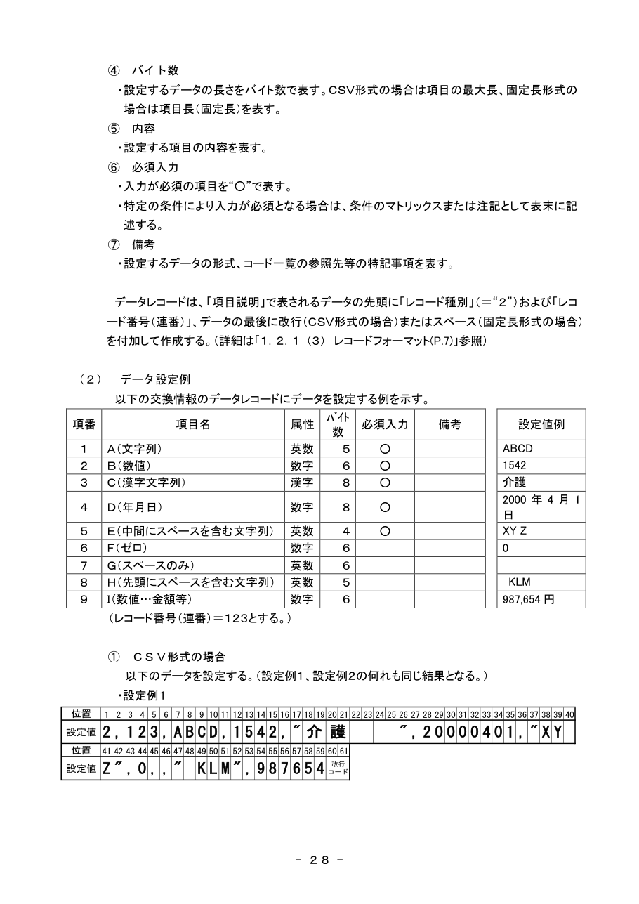
claude-haiku-5-5
- テキストレイヤに見つからないセル: 1 個（赤枠）
表1 other（２）データ設定例
| 項番 | 項目名 | 属性 | 桁数 | 内容 | 必須 | 備考 | その他の列 |
|---|---|---|---|---|---|---|---|
| １ | Ａ（文字列） | 英数 | 5 | ○ | 設定値例: ABCD | ||
| ２ | Ｂ（数値） | 数字 | 6 | ○ | 設定値例: 1542 | ||
| ３ | Ｃ（漢字文字列） | 漢字 | 8 | ○ | 設定値例: 介護 | ||
| ４ | Ｄ（年月日） | 数字 | 8 | ○ | 設定値例: 2000 年 4 月 1 日 | ||
| ５ | Ｅ（中間にスペースを含む文字列） | 英数 | 4 | ○ | 設定値例: XY Z | ||
| ６ | Ｆ（ゼロ） | 数字 | 6 | 設定値例: 0 | |||
| ７ | Ｇ（スペースのみ） | 英数 | 6 | 設定値例: － | |||
| ８ | Ｈ（先頭にスペースを含む文字列） | 英数 | 5 | 設定値例: KLM | |||
| ９ | Ｉ（数値…金額等） | 数字 | 6 | 設定値例: 987,654円 |
表2 other・設定例1
| 項番 | 項目名 | 属性 | 桁数 | 内容 | 必須 | 備考 | その他の列 |
|---|---|---|---|---|---|---|---|
| 設定値 | 1: 2 2: , 3: 1 4: 2 5: 3 6: , 7: A 8: B 9: C 10: D 11: , 12: 1 13: 5 14: 4 15: 2 16: , 17: " 18: 介 19: － 20: 護 21: － 22: 23: 24: 25: 26: " 27: , 28: 2 29: 0 30: 0 31: 0 32: 0 33: 4 34: 0 35: 1 36: , 37: " 38: X 39: Y 40: |
表3 other
| 項番 | 項目名 | 属性 | 桁数 | 内容 | 必須 | 備考 | その他の列 |
|---|---|---|---|---|---|---|---|
| 設定値 | 41: Z 42: " 43: , 44: 0 45: , 46: , 47: " 48: 49: K 50: L 51: M 52: " 53: , 54: 9 55: 8 56: 7 57: 6 58: 5 59: 4 60: [図] 61: － |
注記
- （レコード番号（連番）＝123とする。）
uncertain（モデル自己申告）
- 印字ページ番号は28。PDF上のページ番号32とは一致しない。
- 設定例1の桁図解は、全角文字「介」「護」が2桁ずつ占めると判断して位置19・21を全角の後半としてnullにした。位置22〜25の空白、位置40の空白、位置48の空白の桁数は画像から推定した。
- 設定例1の表は1つの表が2段に折り返しているとみて2つに分けた。2段目（41〜61）は前段からの続きとして扱った。
- 位置60の改行コードは図として[図]と書いた。
- 設定例の「２」「３」の値、及び『設定例1』の位置の数字は画像の解像度から読み取った。
claude-sonnet-5-5
- テキストレイヤに見つからないセル: 4 個（赤枠）
表1 record_layout（2） データ設定例
| 項番 | 項目名 | 属性 | 桁数 | 内容 | 必須 | 備考 | その他の列 |
|---|---|---|---|---|---|---|---|
| 1 | A(文字列) | 英数 | 5 | ○ | 設定値例: ABCD | ||
| 2 | B(数値) | 数字 | 6 | ○ | 設定値例: 1542 | ||
| 3 | C(漢字文字列) | 漢字 | 8 | ○ | 設定値例: 介護 | ||
| 4 | D(年月日) | 数字 | 8 | ○ | 設定値例: 2000 年 4 月 1 日 | ||
| 5 | E(中間にスペースを含む文字列) | 英数 | 4 | ○ | 設定値例: XY Z | ||
| 6 | F(ゼロ) | 数字 | 6 | 設定値例: 0 | |||
| 7 | G(スペースのみ) | 英数 | 6 | 設定値例: － | |||
| 8 | H(先頭にスペースを含む文字列) | 英数 | 5 | 設定値例: KLM | |||
| 9 | I(数値…金額等) | 数字 | 6 | 設定値例: 987,654 円 |
表2 other・設定例1
| 項番 | 項目名 | 属性 | 桁数 | 内容 | 必須 | 備考 | その他の列 |
|---|---|---|---|---|---|---|---|
| 1-40 | 位置: 1 2 3 4 5 6 7 8 9 10 11 12 13 14 15 16 17 18 19 20 21 22 23 24 25 26 27 28 29 30 31 32 33 34 35 36 37 38 39 40 設定値: 2,123,ABCD,1542,"介護 ",20000401,"XY | ||||||
| 41-61 | 位置: 41 42 43 44 45 46 47 48 49 50 51 52 53 54 55 56 57 58 59 60 61 設定値: Z",0,," KLM",987654 改行コード |
注記
- （レコード番号（連番）＝123とする。）
uncertain（モデル自己申告）
- 設定例1の表は1文字ずつのマス目で、位置と設定値の空白位置（全角スペース）が正確か不確か。
- 設定例の表は位置行と設定値行を2段にまとめて書き起こした。
kaigo_kyotsu_r0806_p35 — 印字p.31

claude-haiku-5-5
- [改ページ] p35→p36 の連続性 OK
- テキストレイヤに見つからないセル: 1 個（赤枠）
表1 code_list１．４ コード一覧 次頁へ続く
| 項番 | 項目名 | 属性 | 桁数 | 内容 | 必須 | 備考 | その他の列 |
|---|---|---|---|---|---|---|---|
| １ | 交換情報識別番号 | 英数 | 4 | 交換情報を識別するための番号 | |||
| ２ | 異動区分コード | 数字 | 1 | 1:新規 2:変更 3:終了 | |||
| ３ | 異動事由 > 受給者異動事由 | 数字 | 2 | 01:受給資格取得 02:受給資格喪失 03:広域連合における受給者の市町村間異動（政令市における受給者の区間異動） 04:合併による新規 99:その他異動 | |||
| ３ | 異動事由 > 事業所異動事由 | 数字 | 2 | 01:固定値（省略可能） | |||
| ３ | 異動事由 > 保険者異動事由 | 数字 | 2 | 01:固定値（省略可能） | |||
| ３ | 異動事由 > 広域連合異動事由 | 数字 | 2 | 01:固定値（省略可能） | |||
| ３ | 異動事由 > 市町村固有情報異動事由 | 数字 | 2 | 01:固定値（省略可能） | |||
| ３ | 異動事由 > 市町村特別給付異動事由 | 数字 | 2 | 01:固定値（省略可能） | |||
| ３ | 異動事由 > 個人番号異動事由 | 数字 | 2 | 01:受給者台帳の異動（新規、区間異動等） 02:個人番号の変更による異動 | |||
| ４ | 訂正区分コード | 数字 | 1 | 1:（未使用） 2:修正 3:削除 | |||
| ５ | 媒体区分コード > 保険者等 | 数字 | 1 | 1:伝送 2:MO 4:FD （5:紙） ※CD-R の場合は「4:FD」を設定 | |||
| ５ | 媒体区分コード > 事業所 | 数字 | 1 | 2:MO 4:FD （5:紙） 1 または 7:伝送（インターネット） ※CD-R の場合は「4:FD」を設定 | |||
| ６ | 保険者番号 | 数字 | 6 | 介護保険の保険者番号 [図] ×1 ×2 ×3 ×4 ×5 ×6 ／ チェックデジット ／ 市区町村コード ／ 都道府県コード ※チェックデジットはモジュラス１０方式とする | |||
| ７ | 証記載保険者番号 | 数字 | 6 | 被保険者証記載の保険者番号 広域連合（政令市）の場合は市町村コード（行政区番号） | |||
| ８ | 市町村コード | 数字 | 3 | 総務省にて定めるコード | |||
| ９ | 年号コード | 数字 | 1 | 1:明治 2:大正 3:昭和 4:平成 5:令和 | |||
| １０ | 保険者区分コード | 数字 | 1 | 1:単独保険者 2:政令市 3:広域連合の保険者 | |||
| １１ | 被保険者番号 | 英数 | 10 | 介護保険の被保険者番号 被保険者証記載の被保険者番号が１０桁に満たない場合は右詰とし、左側を０で埋める 福祉事務所から提供される生活保護受給者については先頭の１桁を“H”とすること | |||
| １２ | 性別コード | 数字 | 1 | 1:男 2:女 | |||
| １３ | みなし要介護区分コード | 数字 | 1 | 1:通常の認定 2:みなし認定（旧措置入所者） 3:やむを得ない事由 |
uncertain（モデル自己申告）
- 項番6の内容欄にある図は、図の中の印字文字（×1〜×6、チェックデジット、市区町村コード、都道府県コード）を[図]の位置にまとめて書き写したが、図の中の文字の位置関係は再現していない。
claude-sonnet-5-5
- [改ページ] p35→p36 の連続性 OK
- テキストレイヤに見つからないセル: 1 個（赤枠）
表1 code_list1.4 コード一覧 次頁へ続く
| 項番 | 項目名 | 属性 | 桁数 | 内容 | 必須 | 備考 | その他の列 |
|---|---|---|---|---|---|---|---|
| 1 | 交換情報識別番号 | 英数 | 4 | 交換情報を識別するための番号 | |||
| 2 | 異動区分コード | 数字 | 1 | 1:新規 2:変更 3:終了 | |||
| 3 | 異動事由 > 受給者異動事由 | 数字 | 2 | 01:受給資格取得 02:受給資格喪失 03:広域連合における受給者の市町村間異動（政令市における受給者の区間異動） 04:合併による新規 99:その他異動 | |||
| 3 | 異動事由 > 事業所異動事由 | 数字 | 2 | 01:固定値（省略可能） | |||
| 3 | 異動事由 > 保険者異動事由 | 数字 | 2 | 01:固定値（省略可能） | |||
| 3 | 異動事由 > 広域連合異動事由 | 数字 | 2 | 01:固定値（省略可能） | |||
| 3 | 異動事由 > 市町村固有情報異動事由 | 数字 | 2 | 01:固定値（省略可能） | |||
| 3 | 異動事由 > 市町村特別給付異動事由 | 数字 | 2 | 01:固定値（省略可能） | |||
| 3 | 異動事由 > 個人番号異動事由 | 数字 | 2 | 01:受給者台帳の異動（新規、区間異動等） 02:個人番号の変更による異動 | |||
| 4 | 訂正区分コード | 数字 | 1 | 1:（未使用） 2:修正 3:削除 | |||
| 5 | 媒体区分コード > 保険者等 | 数字 | 1 | 1:伝送 2:MO 4:FD （5:紙） ※CD-Rの場合は「4:FD」を設定 | |||
| 5 | 媒体区分コード > 事業所 | 数字 | 1 | 2:MO 4:FD （5:紙） 1または7:伝送（インターネット） ※CD-Rの場合は「4:FD」を設定 | |||
| 6 | 保険者番号 | 数字 | 6 | 介護保険の保険者番号 [図] ×1 ×2 ×3 ×4 ×5 ×6 チェックデジット 市区町村コード 都道府県コード ※チェックデジットはモジュラス10方式とする | |||
| 7 | 証記載保険者番号 | 数字 | 6 | 被保険者証記載の保険者番号 広域連合（政令市）の場合は市町村コード（行政区番号） | |||
| 8 | 市町村コード | 数字 | 3 | 総務省にて定めるコード | |||
| 9 | 年号コード | 数字 | 1 | 1:明治 2:大正 3:昭和 4:平成 5:令和 | |||
| 10 | 保険者区分コード | 数字 | 1 | 1:単独保険者 2:政令市 3:広域連合の保険者 | |||
| 11 | 被保険者番号 | 英数 | 10 | 介護保険の被保険者番号 被保険者証記載の被保険者番号が10桁に満たない場合は右詰とし、左側を0で埋める 福祉事務所から提供される生活保護受給者については先頭の1桁を“H”とすること | |||
| 12 | 性別コード | 数字 | 1 | 1:男 2:女 | |||
| 13 | みなし要介護区分コード | 数字 | 1 | 1:通常の認定 2:みなし認定（旧措置入所者） 3:やむを得ない事由 |
uncertain（モデル自己申告）
- 項番6の内容セルは図を含むため、図中の文字のみ書き写し[図]で示した
- 項番3の「異動事由」「項番5の媒体区分コード」は縦結合の見出しとしてname_pathに入れた
kaigo_kyotsu_r0806_p38 — 印字p.
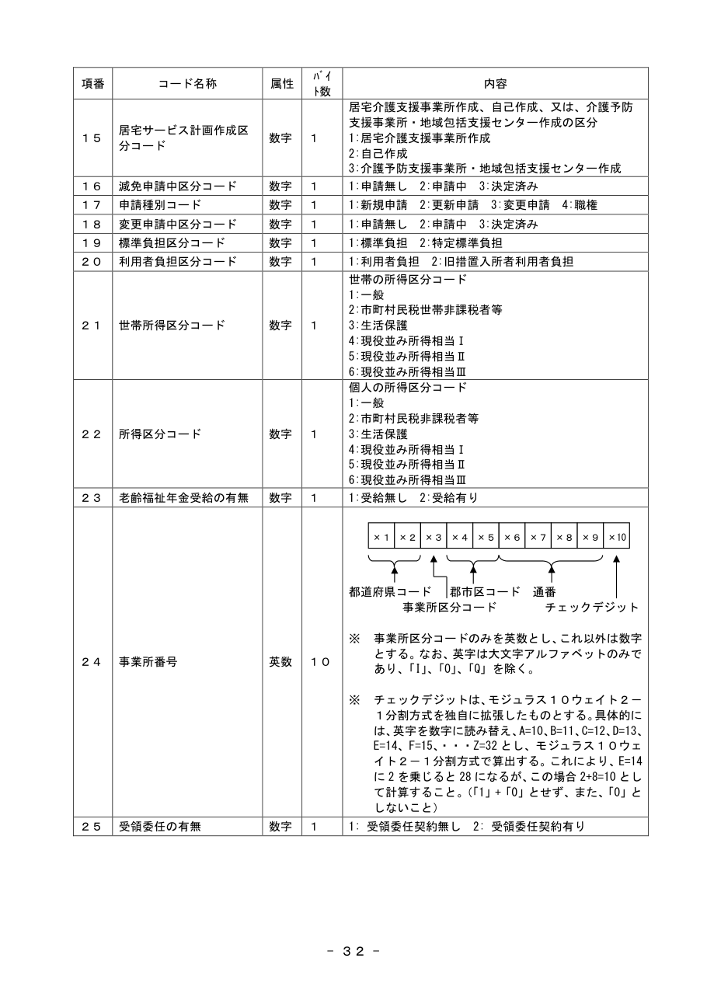
claude-haiku-5-5
- [改ページ] p38→p39 の連続性 OK
- テキストレイヤに見つからないセル: 1 個（赤枠）
表1 code_list 前頁から続く次頁へ続く
| 項番 | 項目名 | 属性 | 桁数 | 内容 | 必須 | 備考 | その他の列 |
|---|---|---|---|---|---|---|---|
| １５ | 居宅サービス計画作成区分コード | 数字 | 1 | 居宅介護支援事業所作成、自己作成、又は、介護予防支援事業所・地域包括支援センター作成の区分 1:居宅介護支援事業所作成 2:自己作成 3:介護予防支援事業所・地域包括支援センター作成 | |||
| １６ | 減免申請中区分コード | 数字 | 1 | 1:申請無し 2:申請中 3:決定済み | |||
| １７ | 申請種別コード | 数字 | 1 | 1:新規申請 2:更新申請 3:変更申請 4:職権 | |||
| １８ | 変更申請中区分コード | 数字 | 1 | 1:申請無し 2:申請中 3:決定済み | |||
| １９ | 標準負担区分コード | 数字 | 1 | 1:標準負担 2:特定標準負担 | |||
| ２０ | 利用者負担区分コード | 数字 | 1 | 1:利用者負担 2:旧措置入所者利用者負担 | |||
| ２１ | 世帯所得区分コード | 数字 | 1 | 世帯の所得区分コード 1:一般 2:市町村民税世帯非課税者等 3:生活保護 4:現役並み所得相当Ⅰ 5:現役並み所得相当Ⅱ 6:現役並み所得相当Ⅲ | |||
| ２２ | 所得区分コード | 数字 | 1 | 個人の所得区分コード 1:一般 2:市町村民税非課税者等 3:生活保護 4:現役並み所得相当Ⅰ 5:現役並み所得相当Ⅱ 6:現役並み所得相当Ⅲ | |||
| ２３ | 老齢福祉年金受給の有無 | 数字 | 1 | 1:受給無し 2:受給有り | |||
| ２４ | 事業所番号 | 英数 | 10 | [図] 都道府県コード 事業所区分コード 郡市区コード 通番 チェックデジット ※ 事業所区分コードのみを英数とし、これ以外は数字とする。なお、英字は大文字アルファベットのみであり、「I」、「O」、「Q」を除く。 ※ チェックデジットは、モジュラス１０ウェイト２－１分割方式を独自に拡張したものとする。具体的には、英字を数字に読み替え、A=10、B=11、C=12、D=13、E=14、F=15、・・・Z=32とし、モジュラス１０ウェイト２－１分割方式で算出する。これにより、E=14に２を乗じると28になるが、この場合2+8=10として計算すること。（「1」+「0」とせず、また、「0」としないこと） | |||
| ２５ | 受領委任の有無 | 数字 | 1 | 1: 受領委任契約無し 2: 受領委任契約有り |
uncertain（モデル自己申告）
- 項番24の図は、図内の印字文字（×1〜×10、都道府県コード、事業所区分コード、郡市区コード、通番、チェックデジット）の位置関係を判別しきれず、ラベル列挙として書き写したため、図の構造は反映していない。
- バイト数列の数字（1、１０）の全角・半角表記が画像から確実に判別できないため、length_raw は見たままに記した。
- 見出し「バイト数」は折り返しで「バイ／ト数」と分かれていたため、1語に連結して columns に入れた。
claude-sonnet-5-5
- [改ページ] p38→p39 の連続性 OK
- テキストレイヤに見つからないセル: 1 個（赤枠）
表1 code_list 前頁から続く次頁へ続く
| 項番 | 項目名 | 属性 | 桁数 | 内容 | 必須 | 備考 | その他の列 |
|---|---|---|---|---|---|---|---|
| １５ | 居宅サービス計画作成区分コード | 数字 | 1 | 居宅介護支援事業所作成、自己作成、又は、介護予防支援事業所・地域包括支援センター作成の区分 1:居宅介護支援事業所作成 2:自己作成 3:介護予防支援事業所・地域包括支援センター作成 | |||
| １６ | 減免申請中区分コード | 数字 | 1 | 1:申請無し 2:申請中 3:決定済み | |||
| １７ | 申請種別コード | 数字 | 1 | 1:新規申請 2:更新申請 3:変更申請 4:職権 | |||
| １８ | 変更申請中区分コード | 数字 | 1 | 1:申請無し 2:申請中 3:決定済み | |||
| １９ | 標準負担区分コード | 数字 | 1 | 1:標準負担 2:特定標準負担 | |||
| ２０ | 利用者負担区分コード | 数字 | 1 | 1:利用者負担 2:旧措置入所者利用者負担 | |||
| ２１ | 世帯所得区分コード | 数字 | 1 | 世帯の所得区分コード 1:一般 2:市町村民税世帯非課税者等 3:生活保護 4:現役並み所得相当Ⅰ 5:現役並み所得相当Ⅱ 6:現役並み所得相当Ⅲ | |||
| ２２ | 所得区分コード | 数字 | 1 | 個人の所得区分コード 1:一般 2:市町村民税非課税者等 3:生活保護 4:現役並み所得相当Ⅰ 5:現役並み所得相当Ⅱ 6:現役並み所得相当Ⅲ | |||
| ２３ | 老齢福祉年金受給の有無 | 数字 | 1 | 1:受給無し 2:受給有り | |||
| ２４ | 事業所番号 | 英数 | 10 | [図] ×1 ×2 ×3 ×4 ×5 ×6 ×7 ×8 ×9 ×10 都道府県コード 事業所区分コード 郡市区コード 通番 チェックデジット ※ 事業所区分コードのみを英数とし、これ以外は数字とする。なお、英字は大文字アルファベットのみであり、「I」、「O」、「Q」を除く。 ※ チェックデジットは、モジュラス１０ウェイト２－１分割方式を独自に拡張したものとする。具体的には、英字を数字に読み替え、A=10、B=11、C=12、D=13、E=14、F=15、・・・Z=32 とし、モジュラス１０ウェイト２－１分割方式で算出する。これにより、E=14 に 2 を乗じると 28 になるが、この場合 2+8=10 として計算すること。(「1」+「0」とせず、また、「0」としないこと) | |||
| ２５ | 受領委任の有無 | 数字 | 1 | 1: 受領委任契約無し 2: 受領委任契約有り |
uncertain（モデル自己申告）
- 項番24の内容セルは図を含む。図中の文字（×1〜×10、都道府県コード等）のみ書き写し、図の位置を[図]とした。
- 表は前ページから続いており、見出し行が繰り返されている。
kaigo_kyotsu_r0806_p41 — 印字p.34
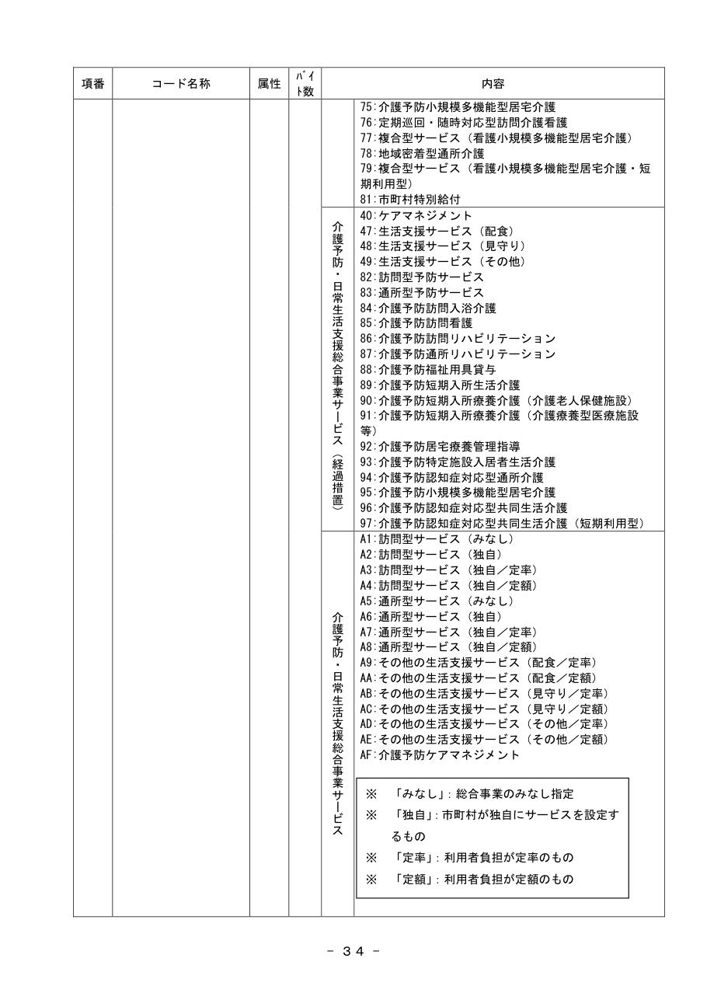
claude-haiku-5-5
- 表1 項番が整数でない行が 3 行
- 表1 桁数が空（原文: None）
- 表1 桁数が空（原文: None）
- 表1 桁数が空（原文: None）
- [改ページ] p41→p42 の連続性 OK
表1 code_list 前頁から続く次頁へ続く
| 項番 | 項目名 | 属性 | 桁数 | 内容 | 必須 | 備考 | その他の列 |
|---|---|---|---|---|---|---|---|
| 75:介護予防小規模多機能型居宅介護 76:定期巡回・随時対応型訪問介護看護 77:複合型サービス（看護小規模多機能型居宅介護） 78:地域密着型通所介護 79:複合型サービス（看護小規模多機能型居宅介護・短期利用型） 81:市町村特別給付 | |||||||
| 介護予防・日常生活支援総合事業サービス（経過措置） | 40:ケアマネジメント 47:生活支援サービス（配食） 48:生活支援サービス（見守り） 49:生活支援サービス（その他） 82:訪問型予防サービス 83:通所型予防サービス 84:介護予防訪問入浴介護 85:介護予防訪問看護 86:介護予防訪問リハビリテーション 87:介護予防通所リハビリテーション 88:介護予防福祉用具貸与 89:介護予防短期入所生活介護 90:介護予防短期入所療養介護（介護老人保健施設） 91:介護予防短期入所療養介護（介護療養型医療施設等） 92:介護予防居宅療養管理指導 93:介護予防特定施設入居者生活介護 94:介護予防認知症対応型通所介護 95:介護予防小規模多機能型居宅介護 96:介護予防認知症対応型共同生活介護 97:介護予防認知症対応型共同生活介護（短期利用型） | ||||||
| 介護予防・日常生活支援総合事業サービス | A1:訪問型サービス（みなし） A2:訪問型サービス（独自） A3:訪問型サービス（独自／定率） A4:訪問型サービス（独自／定額） A5:通所型サービス（みなし） A6:通所型サービス（独自） A7:通所型サービス（独自／定率） A8:通所型サービス（独自／定額） A9:その他の生活支援サービス（配食／定率） AA:その他の生活支援サービス（配食／定額） AB:その他の生活支援サービス（見守り／定率） AC:その他の生活支援サービス（見守り／定額） AD:その他の生活支援サービス（その他／定率） AE:その他の生活支援サービス（その他／定額） AF:介護予防ケアマネジメント |
注記
- ※ 「みなし」: 総合事業のみなし指定
- ※ 「独自」: 市町村が独自にサービスを設定するもの
- ※ 「定率」: 利用者負担が定率のもの
- ※ 「定額」: 利用者負担が定額のもの
uncertain（モデル自己申告）
- 先頭の行（75〜81）の上にあるはずのグループ見出しは本ページに見えないため、name_path を空にした。前ページからの続き。
- コード名称列はこのページではすべて空欄で、グループ見出しは内容列の左側の縦書き欄にある。その縦書き見出しを name_path に入れた。
- 内容欄の下部にある「※」の囲み注記は、表の注記として footnotes に入れ、content からは外した。
- 「介護予防・日常生活支援総合事業サービス（経過措置）」と「介護予防・日常生活支援総合事業サービス」は縦書きのため、文字の区切りを推測せず原文どおり連結した。
claude-sonnet-5-5
- 表1 項番が整数でない行が 3 行
- 表1 桁数が空（原文: None）
- 表1 桁数が空（原文: None）
- 表1 桁数が空（原文: None）
- [改ページ] p41→p42 の連続性 OK
表1 code_list 前頁から続く次頁へ続く
| 項番 | 項目名 | 属性 | 桁数 | 内容 | 必須 | 備考 | その他の列 |
|---|---|---|---|---|---|---|---|
| 75:介護予防小規模多機能型居宅介護 76:定期巡回・随時対応型訪問介護看護 77:複合型サービス（看護小規模多機能型居宅介護） 78:地域密着型通所介護 79:複合型サービス（看護小規模多機能型居宅介護・短期利用型） 81:市町村特別給付 | |||||||
| 介護予防・日常生活支援総合事業サービス（経過措置） | 40:ケアマネジメント 47:生活支援サービス（配食） 48:生活支援サービス（見守り） 49:生活支援サービス（その他） 82:訪問型予防サービス 83:通所型予防サービス 84:介護予防訪問入浴介護 85:介護予防訪問看護 86:介護予防訪問リハビリテーション 87:介護予防通所リハビリテーション 88:介護予防福祉用具貸与 89:介護予防短期入所生活介護 90:介護予防短期入所療養介護（介護老人保健施設） 91:介護予防短期入所療養介護（介護療養型医療施設等） 92:介護予防居宅療養管理指導 93:介護予防特定施設入居者生活介護 94:介護予防認知症対応型通所介護 95:介護予防小規模多機能型居宅介護 96:介護予防認知症対応型共同生活介護 97:介護予防認知症対応型共同生活介護（短期利用型） | ||||||
| 介護予防・日常生活支援総合事業サービス | A1:訪問型サービス（みなし） A2:訪問型サービス（独自） A3:訪問型サービス（独自／定率） A4:訪問型サービス（独自／定額） A5:通所型サービス（みなし） A6:通所型サービス（独自） A7:通所型サービス（独自／定率） A8:通所型サービス（独自／定額） A9:その他の生活支援サービス（配食／定率） AA:その他の生活支援サービス（配食／定額） AB:その他の生活支援サービス（見守り／定率） AC:その他の生活支援サービス（見守り／定額） AD:その他の生活支援サービス（その他／定率） AE:その他の生活支援サービス（その他／定額） AF:介護予防ケアマネジメント ※ 「みなし」: 総合事業のみなし指定 ※ 「独自」: 市町村が独自にサービスを設定するもの ※ 「定率」: 利用者負担が定率のもの ※ 「定額」: 利用者負担が定額のもの |
uncertain（モデル自己申告）
- 前ページからの続き。項番・コード名称・属性・バイト数は空欄で、内容列のみ記載。
- 内容列の左側の縦書き見出し（介護予防・日常生活支援総合事業サービス等）は name_path に入れた。
- 最後のコード群の内容に枠内の※注記を含めた。
kaigo_kyotsu_r0806_p42 — 印字p.
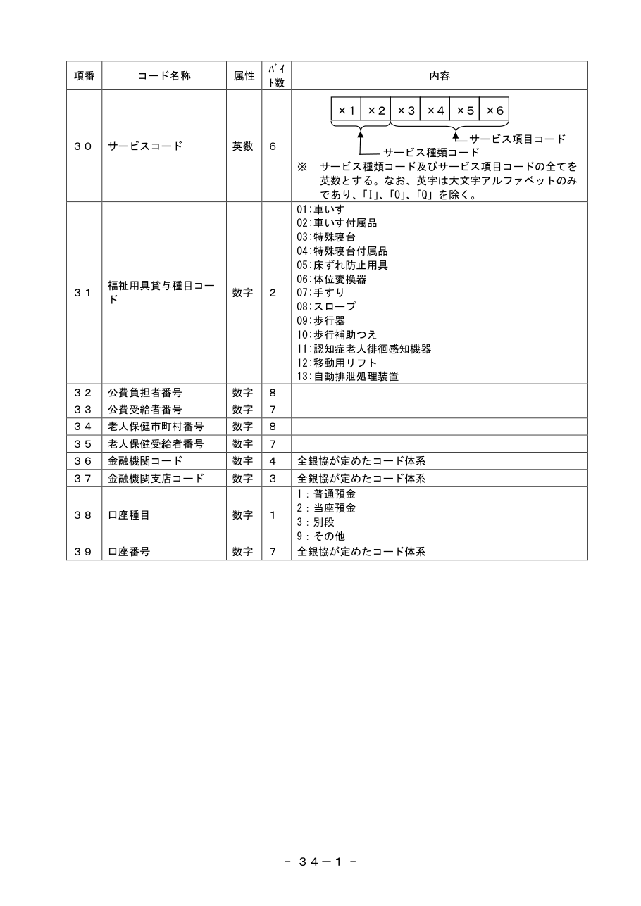
claude-haiku-5-5
- [改ページ] p42→p43 の連続性 OK
- テキストレイヤに見つからないセル: 1 個（赤枠）
表1 code_list 前頁から続く次頁へ続く
| 項番 | 項目名 | 属性 | 桁数 | 内容 | 必須 | 備考 | その他の列 |
|---|---|---|---|---|---|---|---|
| 30 | サービスコード | 英数 | 6 | [図] ×1 ×2 ×3 ×4 ×5 ×6 サービス種類コード サービス項目コード ※ サービス種類コード及びサービス項目コードの全てを英数とする。なお、英字は大文字アルファベットのみであり、「I」、「O」、「Q」を除く。 | |||
| 31 | 福祉用具貸与種目コード | 数字 | 2 | 01:車いす 02:車いす付属品 03:特殊寝台 04:特殊寝台付属品 05:床ずれ防止用具 06:体位変換器 07:手すり 08:スロープ 09:歩行器 10:歩行補助つえ 11:認知症老人徘徊感知機器 12:移動用リフト 13:自動排泄処理装置 | |||
| 32 | 公費負担者番号 | 数字 | 8 | ||||
| 33 | 公費受給者番号 | 数字 | 7 | ||||
| 34 | 老人保健市町村番号 | 数字 | 8 | ||||
| 35 | 老人保健受給者番号 | 数字 | 7 | ||||
| 36 | 金融機関コード | 数字 | 4 | 全銀協が定めたコード体系 | |||
| 37 | 金融機関支店コード | 数字 | 3 | 全銀協が定めたコード体系 | |||
| 38 | 口座種目 | 数字 | 1 | 1：普通預金 2：当座預金 3：別段 9：その他 | |||
| 39 | 口座番号 | 数字 | 7 | 全銀協が定めたコード体系 |
uncertain（モデル自己申告）
- 項番31の内容で「01:車いす」等の区切りのコロンと、項番38の「1：普通預金」等の区切り記号（半角か全角か）は原文の字形から判別しきれなかったため、画面表示に近い表記で書き写した。
- 項番30の内容の図は、枠内の印字文字（×1〜×6）と注記ラベル（サービス種類コード、サービス項目コード）のみ書き写し、図の位置に[図]を付した。
- バイト数の見出しは縦書きに近い折り返しで「バ イ ト数」と印字されているため、「バイト数」として書き写した。
claude-sonnet-5-5
- [改ページ] p42→p43 の連続性 OK
- テキストレイヤに見つからないセル: 1 個（赤枠）
表1 code_list 前頁から続く次頁へ続く
| 項番 | 項目名 | 属性 | 桁数 | 内容 | 必須 | 備考 | その他の列 |
|---|---|---|---|---|---|---|---|
| ３０ | サービスコード | 英数 | 6 | [図] ×1 ×2 ×3 ×4 ×5 ×6 サービス種類コード サービス項目コード ※ サービス種類コード及びサービス項目コードの全てを英数とする。なお、英字は大文字アルファベットのみであり、「I」、「O」、「Q」を除く。 | |||
| ３１ | 福祉用具貸与種目コード | 数字 | 2 | 01:車いす 02:車いす付属品 03:特殊寝台 04:特殊寝台付属品 05:床ずれ防止用具 06:体位変換器 07:手すり 08:スロープ 09:歩行器 10:歩行補助つえ 11:認知症老人徘徊感知機器 12:移動用リフト 13:自動排泄処理装置 | |||
| ３２ | 公費負担者番号 | 数字 | 8 | ||||
| ３３ | 公費受給者番号 | 数字 | 7 | ||||
| ３４ | 老人保健市町村番号 | 数字 | 8 | ||||
| ３５ | 老人保健受給者番号 | 数字 | 7 | ||||
| ３６ | 金融機関コード | 数字 | 4 | 全銀協が定めたコード体系 | |||
| ３７ | 金融機関支店コード | 数字 | 3 | 全銀協が定めたコード体系 | |||
| ３８ | 口座種目 | 数字 | 1 | 1:普通預金 2:当座預金 3:別段 9:その他 | |||
| ３９ | 口座番号 | 数字 | 7 | 全銀協が定めたコード体系 |
uncertain（モデル自己申告）
- 項番30の内容セルは図を含む。図中の文字のみ転記
- 項番38の内容は「1 : 普通預金」のようにコロン前後に空白がある可能性あり
- 表は前ページからの続き（項番30から開始）
kaigo_kyotsu_r0806_p43 — 印字p.

claude-haiku-5-5
- [改ページ] p43→p44 の連続性 OK
- テキストレイヤに見つからないセル: 3 個（赤枠）
表1 code_list 前頁から続く次頁へ続く
| 項番 | 項目名 | 属性 | 桁数 | 内容 | 必須 | 備考 | その他の列 |
|---|---|---|---|---|---|---|---|
| 40 | 福祉用具販売費の種目コード | 数字 | 2 | 01:腰掛便座 02:特殊尿器 03:入浴補助用具 04:簡易浴槽 05:移動用リフトのつり具の部分 06:自動排泄処理装置の交換可能部品 07:排泄予測支援機器 08:スロープ 09:歩行器 10:歩行補助つえ | |||
| 41 | 施設等の区分コード > 訪問介護※1 > 平成15年4月以降～平成18年7月以降（横結合） | 英数 | 1 | 1:身体介護 2:生活援助 3:通院等乗降介助 | |||
| 41 | 施設等の区分コード > 訪問看護 > 平成24年3月以前 | 英数 | 1 | 1:訪問看護ステーション 2:病院または診療所 | |||
| 41 | 施設等の区分コード > 訪問看護 > 平成24年4月以降 | 英数 | 1 | 1:訪問看護ステーション 2:病院または診療所 3:定期巡回・随時対応サービス連携 | |||
| 41 | 施設等の区分コード > 訪問リハビリテーション※1 > 平成30年3月以前 | 英数 | 1 | 1:病院または診療所 2:介護老人保健施設 | |||
| 41 | 施設等の区分コード > 訪問リハビリテーション※1 > 平成30年4月以降 | 英数 | 1 | 1:病院または診療所 2:介護老人保健施設 3:介護医療院 | |||
| 41 | 施設等の区分コード > 通所介護 > 平成18年3月以前（1:単独型・2:併設型） | 英数 | 1 | 1:単独型 2:併設型 | |||
| 41 | 施設等の区分コード > 通所介護 > 平成18年4月以降（前段） | 英数 | 1 | 3:小規模型事業所 4:通常規模型事業所 5:療養通所介護事業所 | |||
| 41 | 施設等の区分コード > 通所介護 > 平成21年4月以降 | 英数 | 1 | 3:小規模型事業所 4:通常規模型事業所 5:療養通所介護事業所 6:大規模型事業所（Ⅰ） 7:大規模型事業所（Ⅱ） | |||
| 41 | 施設等の区分コード > 通所介護 > 平成28年4月以降 | 英数 | 1 | 4:通常規模型事業所 6:大規模型事業所（Ⅰ） 7:大規模型事業所（Ⅱ） |
uncertain（モデル自己申告）
- 41の行は表の中に表が入れ子になっており、サービス種類ごとに期間別の内容が配置されている。横結合や縦結合の位置関係を name_path に期間名として簡略化して入れたため、期間の区切りが原文と一致しない可能性がある。
- 41の訪問介護の内容は平成15年4月以降から平成18年7月以降まで横結合されているが、name_path の期間表記は読み取りに基づく要約的な表記になっている。
- 通所介護の平成18年4月以降の欄（3,4,5）は左側の平成18年3月以前の欄と行が連続しており、平成18年4月以降（前段）と表記したが、原文に該当する見出しは無い。
- 訪問介護※1、訪問リハビリテーション※1 の※1 に対応する注記は本ページに見当たらなかった。
claude-sonnet-5-5
- [改ページ] p43→p44 の連続性 OK
- テキストレイヤに見つからないセル: 1 個（赤枠）
表1 code_list 前頁から続く次頁へ続く
| 項番 | 項目名 | 属性 | 桁数 | 内容 | 必須 | 備考 | その他の列 |
|---|---|---|---|---|---|---|---|
| ４０ | 福祉用具販売費の種目コード | 数字 | 2 | 01:腰掛便座 02:特殊尿器 03:入浴補助用具 04:簡易浴槽 05:移動用リフトのつり具の部分 06:自動排泄処理装置の交換可能部品 07:排泄予測支援機器 08:スロープ 09:歩行器 10:歩行補助つえ | |||
| ４１ | 施設等の区分コード | 英数 | 1 | [図] サービス種類 | 内容: 平成15年3月以前 | 平成15年4月以降 | 平成17年10月以降 | 平成18年4月以降 | 平成18年7月以降 訪問介護※1: 1:身体介護 2:生活援助 3:通院等乗降介助 訪問看護: 平成24年3月以前 1:訪問看護ステーション 2:病院または診療所 / 平成24年4月以降 1:訪問看護ステーション 2:病院または診療所 3:定期巡回・随時対応サービス連携 訪問ﾘﾊﾋﾞﾘﾃｰｼｮﾝ※1: 平成30年3月以前 1:病院または診療所 2:介護老人保健施設 / 平成30年4月以降 1:病院または診療所 2:介護老人保健施設 3:介護医療院 通所介護: 平成18年3月以前 1:単独型 2:併設型 / 平成18年4月以降 3:小規模型事業所 4:通常規模型事業所 5:療養通所介護事業所 / 平成21年4月以降 3:小規模型事業所 4:通常規模型事業所 5:療養通所介護事業所 6:大規模型事業所（Ⅰ） 7:大規模型事業所（Ⅱ） / 平成28年4月以降 4:通常規模型事業所 6:大規模型事業所（Ⅰ） 7:大規模型事業所（Ⅱ） |
uncertain（モデル自己申告）
- 項番41の内容は入れ子の表（サービス種類×期間）で図的構造のため、1セルにまとめて書き起こした。
- 項番41の内容の見出し行は「サービス種類」「内容」と5つの期間列があるが、訪問介護の1列目は空欄で、コード値は平成15年4月以降の列にまたがっているように見える。
- 項番40は表の先頭にあるが見出し行が印字されており、前ページの続きかは不明。
kaigo_kyotsu_r0806_p44 — 印字p.

claude-haiku-5-5
- 表1 項番が整数でない行が 8 行
- 表1 桁数が空（原文: ''）
- 表1 桁数が空（原文: ''）
- 表1 桁数が空（原文: ''）
- 表1 桁数が空（原文: ''）
- 表1 桁数が空（原文: ''）
- 表1 桁数が空（原文: ''）
- 表1 桁数が空（原文: ''）
- 表1 桁数が空（原文: ''）
- [改ページ] p44→p45 の連続性 OK
表1 code_list 前頁から続く次頁へ続く
| 項番 | 項目名 | 属性 | 桁数 | 内容 | 必須 | 備考 | その他の列 |
|---|---|---|---|---|---|---|---|
| 通所リハビリテーション > 平成21年3月以前 | 1:通常の医療機関 2:小規模診療所 3:介護老人保健施設 | ||||||
| 通所リハビリテーション > 平成21年4月以降 | 4:通常規模の事業所 5:大規模の事業所（Ⅰ） 6:大規模の事業所（Ⅱ） | ||||||
| 通所リハビリテーション > 平成24年4月以降 | 4:通常規模の事業所(病院・診療所) 5:大規模の事業所（Ⅰ）(病院・診療所) 6:大規模の事業所（Ⅱ）(病院・診療所) 7:通常規模の事業所(介護老人保健施設) 8:大規模の事業所（Ⅰ）(介護老人保健施設) 9:大規模の事業所（Ⅱ）(介護老人保健施設) | ||||||
| 通所リハビリテーション > 平成30年4月以降 | 4:通常規模の事業所(病院・診療所) 5:大規模の事業所（Ⅰ）(病院・診療所) 6:大規模の事業所（Ⅱ）(病院・診療所) 7:通常規模の事業所(介護老人保健施設) 8:大規模の事業所（Ⅰ）(介護老人保健施設) 9:大規模の事業所（Ⅱ）(介護老人保健施設) A:通常規模の事業所(介護医療院) B:大規模の事業所（Ⅰ）(介護医療院) C:大規模の事業所（Ⅱ）(介護医療院) | ||||||
| 通所リハビリテーション > 2024年6月以降 | 4:通常規模の事業所(病院・診療所) 7:通常規模の事業所(介護老人保健施設) A:通常規模の事業所(介護医療院) D:大規模の事業所(病院・診療所) E:大規模の事業所(介護老人保健施設) F:大規模の事業所(介護医療院) G:大規模の事業所(特例)(病院・診療所) H:大規模の事業所(特例)(介護老人保健施設) J:大規模の事業所(特例)(介護医療院) | ||||||
| 短期入所生活介護 > 平成15年3月以前 | 1:単独型 2:併設型・空床型 | ||||||
| 短期入所生活介護 > 平成15年4月以降 | 1:単独型 2:併設型・空床型 3:単独型小規模生活単位型※1 4:併設型・空床型小規模生活単位型※1 | ||||||
| 短期入所生活介護 > 平成17年10月以降 | 1:単独型 2:併設型・空床型 3:単独型ユニット型※1 4:併設型・空床型ユニット型※1 |
uncertain（モデル自己申告）
- このページは前ページからの続きで、項番・コード名称・属性・バイト数の欄は前ページから続く部分のため空欄に見える。項番は本ページに印字されていないため全行 no を null にした。
- 「通所リハビリテーション」「短期入所生活介護」は内容欄の左側に縦結合された見出しとして読み取り、name_path に入れた。各日付見出し（平成21年3月以前など）も内容欄内の見出しとして name_path に入れた。
- ※1 の注記本文はこのページに印字されていないため footnotes には入れていない。
claude-sonnet-5-5
- 表1 項番が整数でない行が 2 行
- 表1 桁数が空（原文: None）
- 表1 桁数が空（原文: None）
- [改ページ] p44→p45 の連続性 OK
表1 code_list 前頁から続く次頁へ続く
| 項番 | 項目名 | 属性 | 桁数 | 内容 | 必須 | 備考 | その他の列 |
|---|---|---|---|---|---|---|---|
| 通所ﾘﾊﾋﾞﾘﾃｰｼｮﾝ | 平成21年3月以前 1:通常の医療機関 2:小規模診療所 3:介護老人保健施設 平成21年4月以降 4:通常規模の事業所 5:大規模の事業所(Ⅰ) 6:大規模の事業所(Ⅱ) 平成24年4月以降 4:通常規模の事業所(病院・診療所) 5:大規模の事業所(Ⅰ)(病院・診療所) 6:大規模の事業所(Ⅱ)(病院・診療所) 7:通常規模の事業所(介護老人保健施設) 8:大規模の事業所(Ⅰ)(介護老人保健施設) 9:大規模の事業所(Ⅱ)(介護老人保健施設) 平成30年4月以降 4:通常規模の事業所(病院・診療所) 5:大規模の事業所(Ⅰ)(病院・診療所) 6:大規模の事業所(Ⅱ)(病院・診療所) 7:通常規模の事業所(介護老人保健施設) 8:大規模の事業所(Ⅰ)(介護老人保健施設) 9:大規模の事業所(Ⅱ)(介護老人保健施設) A:通常規模の事業所(介護医療院) B:大規模の事業所(Ⅰ)(介護医療院) C:大規模の事業所(Ⅱ)(介護医療院) 2024年6月以降 4:通常規模の事業所(病院・診療所) 7:通常規模の事業所(介護老人保健施設) A:通常規模の事業所(介護医療院) D:大規模の事業所(病院・診療所) E:大規模の事業所(介護老人保健施設) F:大規模の事業所(介護医療院) G:大規模の事業所(特例)(病院・診療所) H:大規模の事業所(特例)(介護老人保健施設) J:大規模の事業所(特例)(介護医療院) | ||||||
| 短期入所生活介護 | 平成15年3月以前 1:単独型 2:併設型・空床型 平成15年4月以降 1:単独型 2:併設型・空床型 3:単独型小規模生活単位型※1 4:併設型・空床型小規模生活単位型※1 平成17年10月以降 1:単独型 2:併設型・空床型 3:単独型ユニット型※1 4:併設型・空床型ユニット型※1 |
uncertain（モデル自己申告）
- 前ページからの続き。項番・属性・バイト数は空欄で、コード名称のみ見えている。
- 内容セルは期間見出し(平成21年3月以前など)を含め、見たまま1セルにまとめた。
kaigo_kyotsu_r0806_p45 — 印字p.
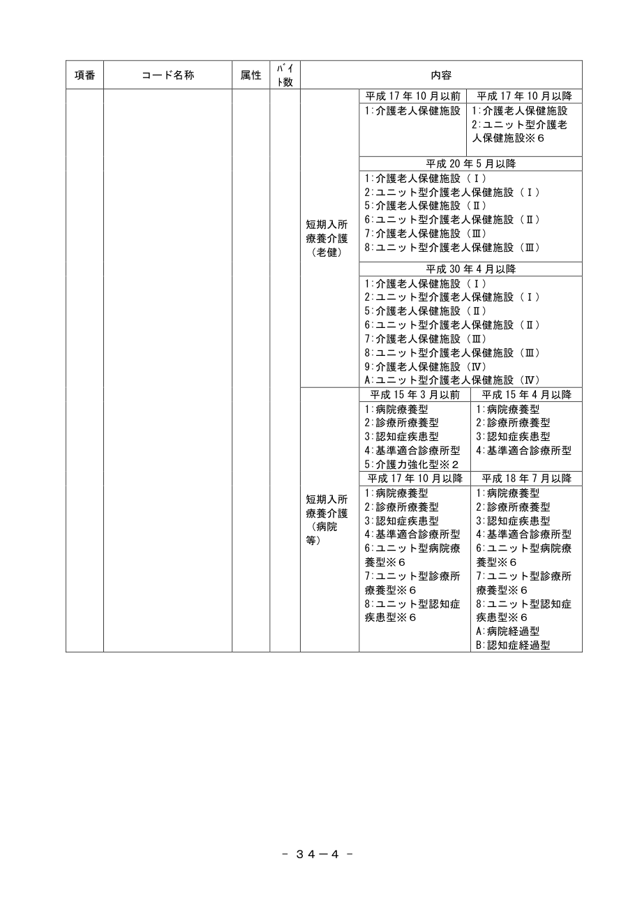
claude-haiku-5-5
- 表1 項番が整数でない行が 8 行
- 表1 桁数が空（原文: None）
- 表1 桁数が空（原文: None）
- 表1 桁数が空（原文: None）
- 表1 桁数が空（原文: None）
- 表1 桁数が空（原文: None）
- 表1 桁数が空（原文: None）
- 表1 桁数が空（原文: None）
- 表1 桁数が空（原文: None）
- [改ページ] p45→p46 の連続性 OK
表1 code_list 前頁から続く次頁へ続く
| 項番 | 項目名 | 属性 | 桁数 | 内容 | 必須 | 備考 | その他の列 |
|---|---|---|---|---|---|---|---|
| 短期入所療養介護（老健） > 平成17年10月以前 | 1:介護老人保健施設 | ||||||
| 短期入所療養介護（老健） > 平成17年10月以降 | 1:介護老人保健施設 2:ユニット型介護老人保健施設※６ | ||||||
| 短期入所療養介護（老健） > 平成20年5月以降 | 1:介護老人保健施設（Ⅰ） 2:ユニット型介護老人保健施設（Ⅰ） 5:介護老人保健施設（Ⅱ） 6:ユニット型介護老人保健施設（Ⅱ） 7:介護老人保健施設（Ⅲ） 8:ユニット型介護老人保健施設（Ⅲ） | ||||||
| 短期入所療養介護（老健） > 平成30年4月以降 | 1:介護老人保健施設（Ⅰ） 2:ユニット型介護老人保健施設（Ⅰ） 5:介護老人保健施設（Ⅱ） 6:ユニット型介護老人保健施設（Ⅱ） 7:介護老人保健施設（Ⅲ） 8:ユニット型介護老人保健施設（Ⅲ） 9:介護老人保健施設（Ⅳ） A:ユニット型介護老人保健施設（Ⅳ） | ||||||
| 短期入所療養介護（病院等） > 平成15年3月以前 | 1:病院療養型 2:診療所療養型 3:認知症疾患型 4:基準適合診療所型 5:介護力強化型※２ | ||||||
| 短期入所療養介護（病院等） > 平成15年4月以降 | 1:病院療養型 2:診療所療養型 3:認知症疾患型 4:基準適合診療所型 | ||||||
| 短期入所療養介護（病院等） > 平成17年10月以降 | 1:病院療養型 2:診療所療養型 3:認知症疾患型 4:基準適合診療所型 6:ユニット型病院療養型※６ 7:ユニット型診療所療養型※６ 8:ユニット型認知症疾患型※６ | ||||||
| 短期入所療養介護（病院等） > 平成18年7月以降 | 1:病院療養型 2:診療所療養型 3:認知症疾患型 4:基準適合診療所型 6:ユニット型病院療養型※６ 7:ユニット型診療所療養型※６ 8:ユニット型認知症疾患型※６ A:病院経過型 B:認知症経過型 |
uncertain（モデル自己申告）
- 前ページからの続きと判断（見出し行のみ繰り返し、項番・コード名称・属性・バイト数が空欄）。項番・コード名称・属性・バイト数の各セルは空のため、items の no・type・length は null とした。
- 内容列の中の「短期入所療養介護（老健）」「短期入所療養介護（病院等）」はコード名称の縦結合見出しとみなし name_path に入れた。内容列内の日付見出し（平成17年10月以前など）も name_path に入れた。
- 本ページ内に「※２」「※６」の注記本文は無いため footnotes は空とした。
claude-sonnet-5-5
- 表1 項番が整数でない行が 2 行
- 表1 桁数が空（原文: None）
- 表1 桁数が空（原文: None）
- [改ページ] p45→p46 の連続性 OK
表1 code_list 前頁から続く次頁へ続く
| 項番 | 項目名 | 属性 | 桁数 | 内容 | 必須 | 備考 | その他の列 |
|---|---|---|---|---|---|---|---|
| 短期入所療養介護（老健） | 平成17年10月以前 1:介護老人保健施設 平成17年10月以降 1:介護老人保健施設 2:ユニット型介護老人保健施設※６ 平成20年5月以降 1:介護老人保健施設（Ⅰ） 2:ユニット型介護老人保健施設（Ⅰ） 5:介護老人保健施設（Ⅱ） 6:ユニット型介護老人保健施設（Ⅱ） 7:介護老人保健施設（Ⅲ） 8:ユニット型介護老人保健施設（Ⅲ） 平成30年4月以降 1:介護老人保健施設（Ⅰ） 2:ユニット型介護老人保健施設（Ⅰ） 5:介護老人保健施設（Ⅱ） 6:ユニット型介護老人保健施設（Ⅱ） 7:介護老人保健施設（Ⅲ） 8:ユニット型介護老人保健施設（Ⅲ） 9:介護老人保健施設（Ⅳ） A:ユニット型介護老人保健施設（Ⅳ） | ||||||
| 短期入所療養介護（病院等） | 平成15年3月以前 1:病院療養型 2:診療所療養型 3:認知症疾患型 4:基準適合診療所型 5:介護力強化型※２ 平成15年4月以降 1:病院療養型 2:診療所療養型 3:認知症疾患型 4:基準適合診療所型 平成17年10月以降 1:病院療養型 2:診療所療養型 3:認知症疾患型 4:基準適合診療所型 6:ユニット型病院療養型※６ 7:ユニット型診療所療養型※６ 8:ユニット型認知症疾患型※６ 平成18年7月以降 1:病院療養型 2:診療所療養型 3:認知症疾患型 4:基準適合診療所型 6:ユニット型病院療養型※６ 7:ユニット型診療所療養型※６ 8:ユニット型認知症疾患型※６ A:病院経過型 B:認知症経過型 |
uncertain（モデル自己申告）
- 前ページからの続きで、項番・コード名称・属性・バイト数は空欄（前ページから継続）
- 内容欄は時期別の入れ子の表のため、時期見出しとコード値を順に改行で連結して書き起こした
- 「短期入所療養介護（老健）」「短期入所療養介護（病院等）」は内容列左側の見出しセルで、name_pathに入れた
kaigo_kyotsu_r0806_p46 — 印字p.

claude-haiku-5-5
- 表1 項番が整数でない行が 2 行
- 表1 桁数が空（原文: None）
- 表1 桁数が空（原文: None）
- [改ページ] p46→p47 の連続性 OK
表1 code_list 前頁から続く次頁へ続く
| 項番 | 項目名 | 属性 | 桁数 | 内容 | 必須 | 備考 | その他の列 |
|---|---|---|---|---|---|---|---|
| 平成20年5月以降 1:病院療養型 2:診療所療養型 3:認知症疾患型 4:基準適合診療所型 6:ユニット型病院療養型※６ 7:ユニット型診療所療養型※６ 8:ユニット型認知症疾患型※６ A:病院経過型 B:認知症経過型 C:ユニット型病院経過型 平成21年4月以降 1:病院療養型 2:診療所型 3:認知症疾患型 6:ユニット型病院療養型※６ 7:ユニット型診療所型※６ 8:ユニット型認知症疾患型※６ A:病院経過型 B:認知症経過型 C:ユニット型病院経過型 2024年4月以降 1:病院療養型 2:診療所型 6:ユニット型病院療養型※６ 7:ユニット型診療所型※６ A:病院経過型 C:ユニット型病院経過型 | |||||||
| 特定施設入居者生活介護（短期利用型以外） | 平成18年3月以前 1:有料老人ホーム 2:軽費老人ホーム 平成18年4月以降 1:有料老人ホーム 2:軽費老人ホーム 3:養護老人ホーム 4:高齢者専用賃貸住宅 平成21年4月以降 1:有料老人ホーム（介護専用型） 2:軽費老人ホーム（介護専用型） 3:養護老人ホーム（介護専用型） 4:高齢者専用賃貸住宅（介護専用型） 5:有料老人ホーム（混合型） 6:軽費老人ホーム（混合型） 7:養護老人ホーム（混合型） 8:高齢者専用賃貸住宅（混合型） 平成24年4月以降 1:有料老人ホーム（介護専用型） 2:軽費老人ホーム（介護専用型） 3:養護老人ホーム（介護専用型） 5:有料老人ホーム（混合型） 6:軽費老人ホーム（混合型） 7:養護老人ホーム（混合型） |
uncertain（モデル自己申告）
- 前ページからの続きの表で、項番・コード名称・属性・バイト数のセルは空で、項番などは前ページ側にあると思われる（no は null とした）。
- 内容列の中に「特定施設入居者生活介護（短期利用型以外）」の縦結合見出しがあり、name_path に入れたが、その見出しはどの列見出しにも属さないため扱いが推測である。
- 内容列の中で「平成20年5月以降」と「平成21年4月以降」は左右に並んでおり、その下段の「2024年4月以降」は全幅である。content では左右の並びを失い、上から順に書き並べた。
- 病院療養型側の見出し行（項番・コード名称など）は1ページ目にないため、最初の項目の name_path は空とした。
claude-sonnet-5-5
- 表1 項番が整数でない行が 2 行
- 表1 桁数が空（原文: None）
- 表1 桁数が空（原文: None）
- [改ページ] p46→p47 の連続性 OK
- テキストレイヤに見つからないセル: 1 個（赤枠）
表1 code_list 前頁から続く次頁へ続く
| 項番 | 項目名 | 属性 | 桁数 | 内容 | 必須 | 備考 | その他の列 |
|---|---|---|---|---|---|---|---|
| [図] 平成20年5月以降 1:病院療養型 2:診療所療養型 3:認知症疾患型 4:基準適合診療所型 6:ユニット型病院療養型※６ 7:ユニット型診療所療養型※６ 8:ユニット型認知症疾患型※６ A:病院経過型 B:認知症経過型 C:ユニット型病院経過型 平成21年4月以降 1:病院療養型 2:診療所型 3:認知症疾患型 6:ユニット型病院療養型※６ 7:ユニット型診療所型※６ 8:ユニット型認知症疾患型※６ A:病院経過型 B:認知症経過型 C:ユニット型病院経過型 2024年4月以降 1:病院療養型 2:診療所型 6:ユニット型病院療養型※６ 7:ユニット型診療所型※６ A:病院経過型 C:ユニット型病院経過型 | |||||||
| 特定施設入居者生活介護（短期利用型以外） | 平成18年3月以前 1:有料老人ホーム 2:軽費老人ホーム 平成18年4月以降 1:有料老人ホーム 2:軽費老人ホーム 3:養護老人ホーム 4:高齢者専用賃貸住宅 平成21年4月以降 1:有料老人ホーム（介護専用型） 2:軽費老人ホーム（介護専用型） 3:養護老人ホーム（介護専用型） 4:高齢者専用賃貸住宅（介護専用型） 5:有料老人ホーム（混合型） 6:軽費老人ホーム（混合型） 7:養護老人ホーム（混合型） 8:高齢者専用賃貸住宅（混合型） 平成24年4月以降 1:有料老人ホーム（介護専用型） 2:軽費老人ホーム（介護専用型） 3:養護老人ホーム（介護専用型） 5:有料老人ホーム（混合型） 6:軽費老人ホーム（混合型） 7:養護老人ホーム（混合型） |
uncertain（モデル自己申告）
- 前ページからの続き。項番・コード名称・属性・バイト数は前ページに記載されているため空欄。
- 1行目の内容セルの左側の名称セル（結合）は空欄で、図の位置を[図]とした。
- 内容セル内の期間別サブ表（平成20年5月以降/平成21年4月以降など）を改行区切りでまとめた。
kaigo_kyotsu_r0806_p47 — 印字p.

claude-haiku-5-5
- 表1 項番が整数でない行が 10 行
- 表1 桁数が空（原文: None）
- 表1 桁数が空（原文: None）
- 表1 桁数が空（原文: None）
- 表1 桁数が空（原文: None）
- 表1 桁数が空（原文: None）
- 表1 桁数が空（原文: None）
- 表1 桁数が空（原文: None）
- 表1 桁数が空（原文: None）
- 表1 桁数が空（原文: None）
- 表1 桁数が空（原文: None）
- [改ページ] p47→p48 の連続性 OK
表1 code_list 前頁から続く次頁へ続く
| 項番 | 項目名 | 属性 | 桁数 | 内容 | 必須 | 備考 | その他の列 |
|---|---|---|---|---|---|---|---|
| 介護老人福祉施設サービス > 平成15年3月以前 | 1:介護福祉施設 2:小規模介護福祉施設 | ||||||
| 介護老人福祉施設サービス > 平成15年4月以降 | 1:介護福祉施設 2:小規模介護福祉施設 3:小規模生活単位型介護福祉施設※1 4:小規模生活単位型小規模介護福祉施設※1 | ||||||
| 介護老人福祉施設サービス > 平成17年10月以降 | 1:介護福祉施設 2:小規模介護福祉施設 3:ユニット型介護福祉施設※1 4:ユニット型小規模介護福祉施設※1 | ||||||
| 介護老人福祉施設サービス > 平成30年4月以降 | 1:介護福祉施設 2:経過的小規模介護福祉施設 3:ユニット型介護福祉施設※1 4:ユニット型経過的小規模介護福祉施設※1 | ||||||
| 介護老人福祉施設サービス > 2021年4月以降 | 1:介護福祉施設 2:経過的小規模介護福祉施設 3:ユニット型介護福祉施設※1 4:経過的ユニット型小規模介護福祉施設※1 | ||||||
| 介護老人保健施設サービス > 平成17年9月以前 | |||||||
| 介護老人保健施設サービス > 平成17年10月以降 | 1:介護老人保健施設※6 2:ユニット型介護老人保健施設※6 | ||||||
| 介護老人保健施設サービス > 平成18年4月以降 | 1:介護保健施設※6 2:ユニット型介護保健施設※6 3:小規模介護保健施設 4:ユニット型小規模介護保健施設 | ||||||
| 介護老人保健施設サービス > 平成20年5月以降 | 1:介護保健施設（Ⅰ） 2:ユニット型介護保健施設（Ⅰ） 5:介護保健施設（Ⅱ） 6:ユニット型介護保健施設（Ⅱ） 7:介護保健施設（Ⅲ） 8:ユニット型介護保健施設（Ⅲ） | ||||||
| 介護老人保健施設サービス > 平成30年4月以降 | 1:介護保健施設（Ⅰ） 2:ユニット型介護保健施設（Ⅰ） 5:介護保健施設（Ⅱ） 6:ユニット型介護保健施設（Ⅱ） 7:介護保健施設（Ⅲ） 8:ユニット型介護保健施設（Ⅲ） 9:介護保健施設（Ⅳ） A:ユニット型介護保健施設（Ⅳ） |
uncertain（モデル自己申告）
- このページ上部の見出し行（項番・コード名称・属性・バイト数・内容）は前ページからの続きに付いた繰り返し見出しと判断した。項番・コード名称・属性・バイト数の各セルは空白のため、項番は null とした。
- 「介護老人福祉施設サービス」「介護老人保健施設サービス」は内容欄内の縦結合の行見出しとして name_path に入れた。その下の期間見出し（平成15年3月以前 など）も name_path に入れた。
- ※1・※6 の注記本文は本ページに含まれていないため footnotes は空とした。
- 平成17年9月以前（介護老人保健施設サービス）の内容は空欄のため content を null とした。
claude-sonnet-5-5
- 表1 項番が整数でない行が 2 行
- 表1 桁数が空（原文: None）
- 表1 桁数が空（原文: None）
- [改ページ] p47→p48 の連続性 OK
- テキストレイヤに見つからないセル: 1 個（赤枠）
表1 code_list 前頁から続く次頁へ続く
| 項番 | 項目名 | 属性 | 桁数 | 内容 | 必須 | 備考 | その他の列 |
|---|---|---|---|---|---|---|---|
| 介護老人福祉施設サービス 平成15年3月以前 1:介護福祉施設 2:小規模介護福祉施設 平成15年4月以降 1:介護福祉施設 2:小規模介護福祉施設 3:小規模生活単位型介護福祉施設※1 4:小規模生活単位型小規模介護福祉施設※1 平成17年10月以降 1:介護福祉施設 2:小規模介護福祉施設 3:ユニット型介護福祉施設※1 4:ユニット型小規模介護福祉施設※1 平成30年4月以降 1:介護福祉施設 2:経過的小規模介護福祉施設 3:ユニット型介護福祉施設※1 4:ユニット型経過的小規模介護福祉施設※1 2021年4月以降 1:介護福祉施設 2:経過的小規模介護福祉施設 3:ユニット型介護福祉施設※1 4:経過的ユニット型小規模介護福祉施設※1 | |||||||
| 介護老人保健施設サービス 平成17年9月以前 （記載なし） 平成17年10月以降 1:介護老人保健施設※6 2:ユニット型介護老人保健施設※6 平成18年4月以降 1:介護保健施設※6 2:ユニット型介護保健施設※6 3:小規模介護保健施設 4:ユニット型小規模介護保健施設 平成20年5月以降 1:介護保健施設（Ⅰ） 2:ユニット型介護保健施設（Ⅰ） 5:介護保健施設（Ⅱ） 6:ユニット型介護保健施設（Ⅱ） 7:介護保健施設（Ⅲ） 8:ユニット型介護保健施設（Ⅲ） 平成30年4月以降 1:介護保健施設（Ⅰ） 2:ユニット型介護保健施設（Ⅰ） 5:介護保健施設（Ⅱ） 6:ユニット型介護保健施設（Ⅱ） 7:介護保健施設（Ⅲ） 8:ユニット型介護保健施設（Ⅲ） 9:介護保健施設（Ⅳ） A:ユニット型介護保健施設（Ⅳ） |
uncertain（モデル自己申告）
- 前ページから続く表。項番・コード名称・属性・バイト数は見えず空欄。
- 内容欄は『介護老人福祉施設サービス』『介護老人保健施設サービス』の2つのサブ列と期間別の入れ子構造のため、各サービス単位で1行にまとめた。
- 平成17年9月以前のセルは空白。
kaigo_kyotsu_r0806_p48 — 印字p.
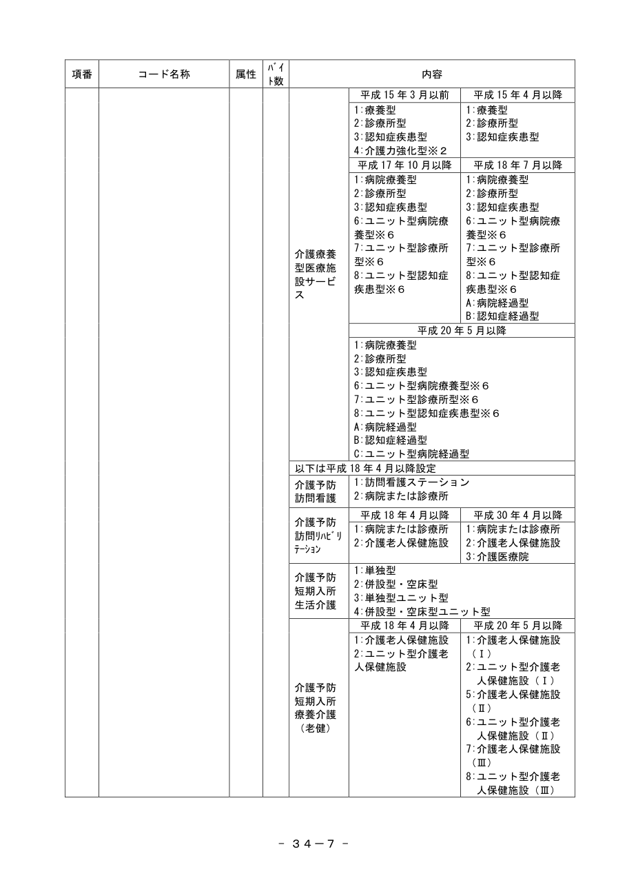
claude-haiku-5-5
- [改ページ] p48→p49 の連続性 OK
表1 other 前頁から続く次頁へ続く
| 項番 | 項目名 | 属性 | 桁数 | 内容 | 必須 | 備考 | その他の列 |
|---|---|---|---|---|---|---|---|
| 介護療養型医療施設サービス | 平成15年3月以前 1:療養型 2:診療所型 3:認知症疾患型 4:介護力強化型※２ 平成15年4月以降 1:療養型 2:診療所型 3:認知症疾患型 平成17年10月以降 1:病院療養型 2:診療所型 3:認知症疾患型 6:ユニット型病院療養型※６ 7:ユニット型診療所型※６ 8:ユニット型認知症疾患型※６ 平成18年7月以降 1:病院療養型 2:診療所型 3:認知症疾患型 6:ユニット型病院療養型※６ 7:ユニット型診療所型※６ 8:ユニット型認知症疾患型※６ A:病院経過型 B:認知症経過型 平成20年5月以降 1:病院療養型 2:診療所型 3:認知症疾患型 6:ユニット型病院療養型※６ 7:ユニット型診療所型※６ 8:ユニット型認知症疾患型※６ A:病院経過型 B:認知症経過型 C:ユニット型病院経過型 | ||||||
| 以下は平成18年4月以降設定 | |||||||
| 介護予防訪問看護 | 1:訪問看護ステーション 2:病院または診療所 | ||||||
| 介護予防訪問リハビリテーション | 平成18年4月以降 1:病院または診療所 2:介護老人保健施設 平成30年4月以降 1:病院または診療所 2:介護老人保健施設 3:介護医療院 | ||||||
| 介護予防短期入所生活介護 | 1:単独型 2:併設型・空床型 3:単独型ユニット型 4:併設型・空床型ユニット型 | ||||||
| 介護予防短期入所療養介護（老健） | 平成18年4月以降 1:介護老人保健施設 2:ユニット型介護老人保健施設 平成20年5月以降 1:介護老人保健施設（Ⅰ） 2:ユニット型介護老人保健施設（Ⅰ） 5:介護老人保健施設（Ⅱ） 6:ユニット型介護老人保健施設（Ⅱ） 7:介護老人保健施設（Ⅲ） 8:ユニット型介護老人保健施設（Ⅲ） |
uncertain（モデル自己申告）
- ページ上部の表は前ページからの続きと判断した（項番・見出しがなく、コード名称の列は空欄）。
- 「以下は平成18年4月以降設定」は内容列にまたがる帯で、直後の行群に係る注記かどうか判断できないため独立した行として扱った。
- コード名称列は本ページでは空欄で、グループ見出し（介護療養型医療施設サービス等）は内容列の左端に印字されているため name_path に入れた。
- 内容列内の平成年度の見出しは、原文の位置関係から各ブロックの説明として content に改行区切りで含めた。
- 表の下罫線は閉じて描かれているが、次ページに続くかどうかは本ページだけでは判断できないため continues_to_next_page は false とした。
claude-sonnet-5-5
- 表1 項番が整数でない行が 5 行
- 表1 桁数が空（原文: None）
- 表1 桁数が空（原文: None）
- 表1 桁数が空（原文: None）
- 表1 桁数が空（原文: None）
- 表1 桁数が空（原文: None）
- [改ページ] p48→p49 の連続性 OK
表1 code_list 前頁から続く次頁へ続く
| 項番 | 項目名 | 属性 | 桁数 | 内容 | 必須 | 備考 | その他の列 |
|---|---|---|---|---|---|---|---|
| 介護療養型医療施設サービス | 平成15年3月以前 1:療養型 2:診療所型 3:認知症疾患型 4:介護力強化型※２ 平成15年4月以降 1:療養型 2:診療所型 3:認知症疾患型 平成17年10月以降 1:病院療養型 2:診療所型 3:認知症疾患型 6:ユニット型病院療養型※６ 7:ユニット型診療所型※６ 8:ユニット型認知症疾患型※６ 平成18年7月以降 1:病院療養型 2:診療所型 3:認知症疾患型 6:ユニット型病院療養型※６ 7:ユニット型診療所型※６ 8:ユニット型認知症疾患型※６ A:病院経過型 B:認知症経過型 平成20年5月以降 1:病院療養型 2:診療所型 3:認知症疾患型 6:ユニット型病院療養型※６ 7:ユニット型診療所型※６ 8:ユニット型認知症疾患型※６ A:病院経過型 B:認知症経過型 C:ユニット型病院経過型 | ||||||
| 介護予防訪問看護 | 以下は平成18年4月以降設定 1:訪問看護ステーション 2:病院または診療所 | ||||||
| 介護予防訪問ﾘﾊﾋﾞﾘﾃｰｼｮﾝ | 平成18年4月以降 1:病院または診療所 2:介護老人保健施設 平成30年4月以降 1:病院または診療所 2:介護老人保健施設 3:介護医療院 | ||||||
| 介護予防短期入所生活介護 | 1:単独型 2:併設型・空床型 3:単独型ユニット型 4:併設型・空床型ユニット型 | ||||||
| 介護予防短期入所療養介護(老健) | 平成18年4月以降 1:介護老人保健施設 2:ユニット型介護老人保健施設 平成20年5月以降 1:介護老人保健施設(Ⅰ) 2:ユニット型介護老人保健施設(Ⅰ) 5:介護老人保健施設(Ⅱ) 6:ユニット型介護老人保健施設(Ⅱ) 7:介護老人保健施設(Ⅲ) 8:ユニット型介護老人保健施設(Ⅲ) |
uncertain（モデル自己申告）
- 前ページからの続きの表で、項番・属性・バイト数は空欄
- 内容セル内の年月ごとの区分を改行で連結して1行にまとめた
- 「介護予防訪問ﾘﾊﾋﾞﾘﾃｰｼｮﾝ」は小さい文字表記の判読に自信なし
kaigo_kyotsu_r0806_p49 — 印字p.
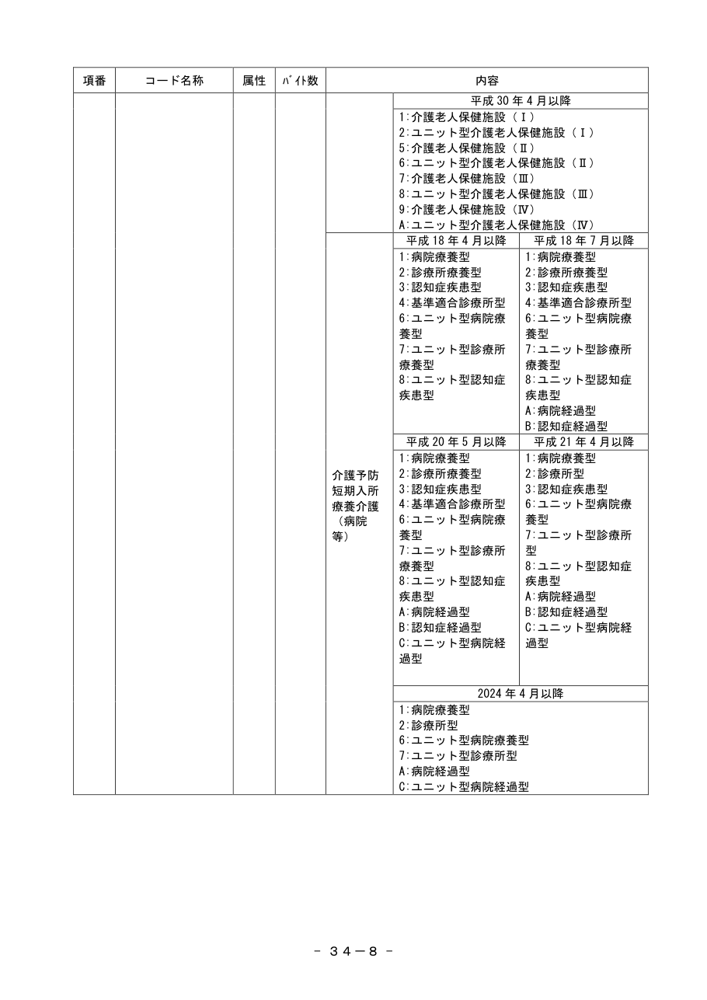
claude-haiku-5-5
- 表1 項番が整数でない行が 6 行
- 表1 桁数が空（原文: None）
- 表1 桁数が空（原文: None）
- 表1 桁数が空（原文: None）
- 表1 桁数が空（原文: None）
- 表1 桁数が空（原文: None）
- 表1 桁数が空（原文: None）
- [改ページ] p49→p50 の連続性 OK
表1 code_list 前頁から続く次頁へ続く
| 項番 | 項目名 | 属性 | 桁数 | 内容 | 必須 | 備考 | その他の列 |
|---|---|---|---|---|---|---|---|
| 平成30年4月以降 | 1:介護老人保健施設（Ⅰ） 2:ユニット型介護老人保健施設（Ⅰ） 5:介護老人保健施設（Ⅱ） 6:ユニット型介護老人保健施設（Ⅱ） 7:介護老人保健施設（Ⅲ） 8:ユニット型介護老人保健施設（Ⅲ） 9:介護老人保健施設（Ⅳ） A:ユニット型介護老人保健施設（Ⅳ） | ||||||
| 介護予防短期入所療養介護（病院等） > 平成18年4月以降 | 1:病院療養型 2:診療所療養型 3:認知症疾患型 4:基準適合診療所型 6:ユニット型病院療養型 7:ユニット型診療所療養型 8:ユニット型認知症疾患型 | ||||||
| 介護予防短期入所療養介護（病院等） > 平成18年7月以降 | 1:病院療養型 2:診療所療養型 3:認知症疾患型 4:基準適合診療所型 6:ユニット型病院療養型 7:ユニット型診療所療養型 8:ユニット型認知症疾患型 A:病院経過型 B:認知症経過型 | ||||||
| 介護予防短期入所療養介護（病院等） > 平成20年5月以降 | 1:病院療養型 2:診療所療養型 3:認知症疾患型 4:基準適合診療所型 6:ユニット型病院療養型 7:ユニット型診療所療養型 8:ユニット型認知症疾患型 A:病院経過型 B:認知症経過型 C:ユニット型病院経過型 | ||||||
| 介護予防短期入所療養介護（病院等） > 平成21年4月以降 | 1:病院療養型 2:診療所型 3:認知症疾患型 6:ユニット型病院療養型 7:ユニット型診療所型 8:ユニット型認知症疾患型 A:病院経過型 B:認知症経過型 C:ユニット型病院経過型 | ||||||
| 介護予防短期入所療養介護（病院等） > 2024年4月以降 | 1:病院療養型 2:診療所型 6:ユニット型病院療養型 7:ユニット型診療所型 A:病院経過型 C:ユニット型病院経過型 |
uncertain（モデル自己申告）
- 前ページからの続きと判断した。表見出し・項番・コード名称・属性・バイト数の値は本ページに見えないため空文字とした。
- 「平成30年4月以降」ブロックの左側（介護予防短期入所療養介護の見出しの上）には見出し文字がないため、name_path は日付見出しのみとした。
- 内容欄の日付見出し（平成18年4月以降など）は内容欄内のサブ見出しで、列見出しとしての列名は付けていない。name_path に日付見出しを入れた。
- 「介護予防短期入所療養介護（病院等）」の見出しは縦結合された行見出しとして各行の name_path に入れた。
claude-sonnet-5-5
- 表1 項番が整数でない行が 2 行
- 表1 桁数が空（原文: None）
- 表1 桁数が空（原文: None）
- [改ページ] p49→p50 の連続性 OK
表1 code_list 前頁から続く次頁へ続く
| 項番 | 項目名 | 属性 | 桁数 | 内容 | 必須 | 備考 | その他の列 |
|---|---|---|---|---|---|---|---|
| 平成30年4月以降 1:介護老人保健施設（Ⅰ） 2:ユニット型介護老人保健施設（Ⅰ） 5:介護老人保健施設（Ⅱ） 6:ユニット型介護老人保健施設（Ⅱ） 7:介護老人保健施設（Ⅲ） 8:ユニット型介護老人保健施設（Ⅲ） 9:介護老人保健施設（Ⅳ） A:ユニット型介護老人保健施設（Ⅳ） | |||||||
| 介護予防短期入所療養介護（病院等） 平成18年4月以降 1:病院療養型 2:診療所療養型 3:認知症疾患型 4:基準適合診療所型 6:ユニット型病院療養型 7:ユニット型診療所療養型 8:ユニット型認知症疾患型 平成18年7月以降 1:病院療養型 2:診療所療養型 3:認知症疾患型 4:基準適合診療所型 6:ユニット型病院療養型 7:ユニット型診療所療養型 8:ユニット型認知症疾患型 A:病院経過型 B:認知症経過型 平成20年5月以降 1:病院療養型 2:診療所療養型 3:認知症疾患型 4:基準適合診療所型 6:ユニット型病院療養型 7:ユニット型診療所療養型 8:ユニット型認知症疾患型 A:病院経過型 B:認知症経過型 C:ユニット型病院経過型 平成21年4月以降 1:病院療養型 2:診療所型 3:認知症疾患型 6:ユニット型病院療養型 7:ユニット型診療所型 8:ユニット型認知症疾患型 A:病院経過型 B:認知症経過型 C:ユニット型病院経過型 2024年4月以降 1:病院療養型 2:診療所型 6:ユニット型病院療養型 7:ユニット型診療所型 A:病院経過型 C:ユニット型病院経過型 |
uncertain（モデル自己申告）
- 前ページからの続き。内容列は入れ子の結合セルで、介護予防短期入所療養介護（病院等）の下に期間別のコード群が並ぶ構造のため、1行にまとめた。
- 最初の行（平成30年4月以降）の左側の見出しセルは前ページからの続きで、名称が見えない。
kaigo_kyotsu_r0806_p50 — 印字p.
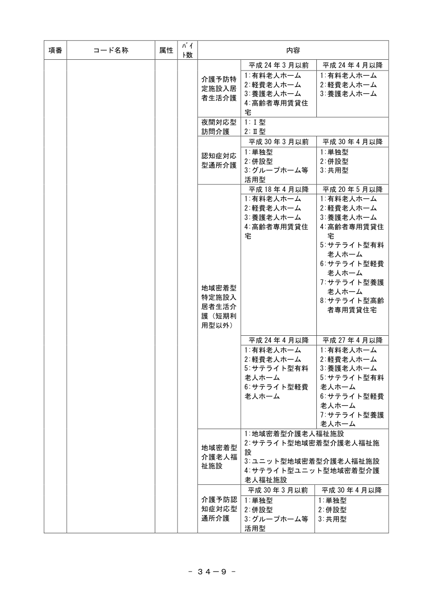
claude-haiku-5-5
- 表1 項番が整数でない行が 12 行
- 表1 桁数が空（原文: None）
- 表1 桁数が空（原文: None）
- 表1 桁数が空（原文: None）
- 表1 桁数が空（原文: None）
- 表1 桁数が空（原文: None）
- 表1 桁数が空（原文: None）
- 表1 桁数が空（原文: None）
- 表1 桁数が空（原文: None）
- 表1 桁数が空（原文: None）
- 表1 桁数が空（原文: None）
- 表1 桁数が空（原文: None）
- 表1 桁数が空（原文: None）
- [改ページ] p50→p51 の連続性 OK
表1 code_list 前頁から続く次頁へ続く
| 項番 | 項目名 | 属性 | 桁数 | 内容 | 必須 | 備考 | その他の列 |
|---|---|---|---|---|---|---|---|
| 介護予防特定施設入居者生活介護 > 平成24年3月以前 | 1:有料老人ホーム 2:軽費老人ホーム 3:養護老人ホーム 4:高齢者専用賃貸住宅 | ||||||
| 介護予防特定施設入居者生活介護 > 平成24年4月以降 | 1:有料老人ホーム 2:軽費老人ホーム 3:養護老人ホーム | ||||||
| 夜間対応型訪問介護 | 1:Ⅰ型 2:Ⅱ型 | ||||||
| 認知症対応型通所介護 > 平成30年3月以前 | 1:単独型 2:併設型 3:グループホーム等活用型 | ||||||
| 認知症対応型通所介護 > 平成30年4月以降 | 1:単独型 2:併設型 3:共用型 | ||||||
| 地域密着型特定施設入居者生活介護（短期利用型以外） > 平成18年4月以降 | 1:有料老人ホーム 2:軽費老人ホーム 3:養護老人ホーム 4:高齢者専用賃貸住宅 | ||||||
| 地域密着型特定施設入居者生活介護（短期利用型以外） > 平成20年5月以降 | 1:有料老人ホーム 2:軽費老人ホーム 3:養護老人ホーム 4:高齢者専用賃貸住宅 5:サテライト型有料老人ホーム 6:サテライト型軽費老人ホーム 7:サテライト型養護老人ホーム 8:サテライト型高齢者専用賃貸住宅 | ||||||
| 地域密着型特定施設入居者生活介護（短期利用型以外） > 平成24年4月以降 | 1:有料老人ホーム 2:軽費老人ホーム 5:サテライト型有料老人ホーム 6:サテライト型軽費老人ホーム | ||||||
| 地域密着型特定施設入居者生活介護（短期利用型以外） > 平成27年4月以降 | 1:有料老人ホーム 2:軽費老人ホーム 3:養護老人ホーム 5:サテライト型有料老人ホーム 6:サテライト型軽費老人ホーム 7:サテライト型養護老人ホーム | ||||||
| 地域密着型介護老人福祉施設 | 1:地域密着型介護老人福祉施設 2:サテライト型地域密着型介護老人福祉施設 3:ユニット型地域密着型介護老人福祉施設 4:サテライト型ユニット型地域密着型介護老人福祉施設 | ||||||
| 介護予防認知症対応型通所介護 > 平成30年3月以前 | 1:単独型 2:併設型 3:グループホーム等活用型 | ||||||
| 介護予防認知症対応型通所介護 > 平成30年4月以降 | 1:単独型 2:併設型 3:共用型 |
uncertain（モデル自己申告）
- このページの表は前ページからの続きで、項番・コード名称・属性・バイト数の各セルが前ページから続いているため空欄として扱い、各行は内容欄の入れ子見出し（日付や介護サービス名）を name_path に入れた。
- 内容欄の日付見出し（平成24年3月以前など）は columns に独立した列がないため name_path に入れた。
- 表の下端は閉じた罫線で終わっており、次ページへ続くかは画像からは判断できなかったため continues_to_next_page を false にした。
claude-sonnet-5-5
- 表1 項番が整数でない行が 6 行
- 表1 桁数が空（原文: None）
- 表1 桁数が空（原文: None）
- 表1 桁数が空（原文: None）
- 表1 桁数が空（原文: None）
- 表1 項目名がPDFのセルと完全一致しない（部分一致のみ）: '地域密着型特定施設入居者生活介護（短期利用型以外）'
- 表1 桁数が空（原文: None）
- 表1 桁数が空（原文: None）
- [改ページ] p50→p51 の連続性 OK
表1 code_list 前頁から続く次頁へ続く
| 項番 | 項目名 | 属性 | 桁数 | 内容 | 必須 | 備考 | その他の列 |
|---|---|---|---|---|---|---|---|
| 介護予防特定施設入居者生活介護 | 平成24年3月以前 1:有料老人ホーム 2:軽費老人ホーム 3:養護老人ホーム 4:高齢者専用賃貸住宅 平成24年4月以降 1:有料老人ホーム 2:軽費老人ホーム 3:養護老人ホーム | ||||||
| 夜間対応型訪問介護 | 1:Ⅰ型 2:Ⅱ型 | ||||||
| 認知症対応型通所介護 | 平成30年3月以前 1:単独型 2:併設型 3:グループホーム等活用型 平成30年4月以降 1:単独型 2:併設型 3:共用型 | ||||||
| 地域密着型特定施設入居者生活介護（短期利用型以外） | 平成18年4月以降 1:有料老人ホーム 2:軽費老人ホーム 3:養護老人ホーム 4:高齢者専用賃貸住宅 平成20年5月以降 1:有料老人ホーム 2:軽費老人ホーム 3:養護老人ホーム 4:高齢者専用賃貸住宅 5:サテライト型有料老人ホーム 6:サテライト型軽費老人ホーム 7:サテライト型養護老人ホーム 8:サテライト型高齢者専用賃貸住宅 平成24年4月以降 1:有料老人ホーム 2:軽費老人ホーム 5:サテライト型有料老人ホーム 6:サテライト型軽費老人ホーム 平成27年4月以降 1:有料老人ホーム 2:軽費老人ホーム 3:養護老人ホーム 5:サテライト型有料老人ホーム 6:サテライト型軽費老人ホーム 7:サテライト型養護老人ホーム | ||||||
| 地域密着型介護老人福祉施設 | 1:地域密着型介護老人福祉施設 2:サテライト型地域密着型介護老人福祉施設 3:ユニット型地域密着型介護老人福祉施設 4:サテライト型ユニット型地域密着型介護老人福祉施設 | ||||||
| 介護予防認知症対応型通所介護 | 平成30年3月以前 1:単独型 2:併設型 3:グループホーム等活用型 平成30年4月以降 1:単独型 2:併設型 3:共用型 |
uncertain（モデル自己申告）
- 前ページからの続きの表で、項番・属性・バイト数は空欄
- 内容列内の「コード名称」相当は内容列左の小見出しセルをname_pathに入れた
- 地域密着型特定施設入居者生活介護の内容は時期別の並びを順に連結
kaigo_kyotsu_r0806_p51 — 印字p.
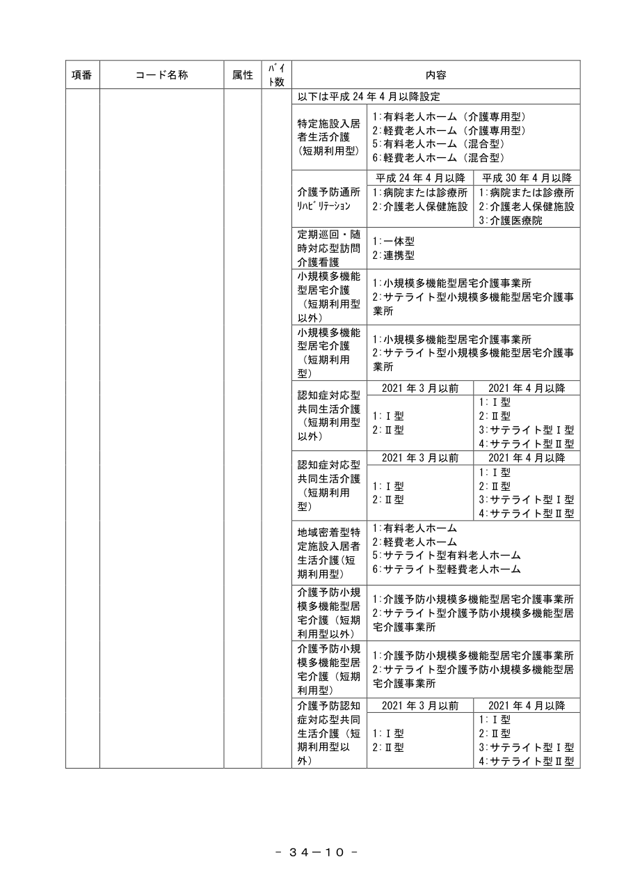
claude-haiku-5-5
- 表1 項番が整数でない行が 16 行
- 表1 桁数が空（原文: None）
- 表1 桁数が空（原文: None）
- 表1 桁数が空（原文: None）
- 表1 桁数が空（原文: None）
- 表1 桁数が空（原文: None）
- 表1 桁数が空（原文: None）
- 表1 桁数が空（原文: None）
- 表1 桁数が空（原文: None）
- 表1 桁数が空（原文: None）
- 表1 桁数が空（原文: None）
- 表1 桁数が空（原文: None）
- 表1 桁数が空（原文: None）
- 表1 桁数が空（原文: None）
- 表1 桁数が空（原文: None）
- 表1 桁数が空（原文: None）
- 表1 桁数が空（原文: None）
- [改ページ] p51→p52 の連続性 OK
表1 code_list 前頁から続く次頁へ続く
| 項番 | 項目名 | 属性 | 桁数 | 内容 | 必須 | 備考 | その他の列 |
|---|---|---|---|---|---|---|---|
| 以下は平成24年4月以降設定 | |||||||
| 特定施設入居者生活介護(短期利用型) | 1:有料老人ホーム（介護専用型） 2:軽費老人ホーム（介護専用型） 5:有料老人ホーム（混合型） 6:軽費老人ホーム（混合型） | ||||||
| 介護予防通所リハビリテーション > 平成24年4月以降 | 1:病院または診療所 2:介護老人保健施設 | ||||||
| 介護予防通所リハビリテーション > 平成30年4月以降 | 1:病院または診療所 2:介護老人保健施設 3:介護医療院 | ||||||
| 定期巡回・随時対応型訪問介護看護 | 1:一体型 2:連携型 | ||||||
| 小規模多機能型居宅介護(短期利用型以外) | 1:小規模多機能型居宅介護事業所 2:サテライト型小規模多機能型居宅介護事業所 | ||||||
| 小規模多機能型居宅介護(短期利用型) | 1:小規模多機能型居宅介護事業所 2:サテライト型小規模多機能型居宅介護事業所 | ||||||
| 認知症対応型共同生活介護(短期利用型以外) > 2021年3月以前 | 1:Ⅰ型 2:Ⅱ型 | ||||||
| 認知症対応型共同生活介護(短期利用型以外) > 2021年4月以降 | 1:Ⅰ型 2:Ⅱ型 3:サテライト型Ⅰ型 4:サテライト型Ⅱ型 | ||||||
| 認知症対応型共同生活介護(短期利用型) > 2021年3月以前 | 1:Ⅰ型 2:Ⅱ型 | ||||||
| 認知症対応型共同生活介護(短期利用型) > 2021年4月以降 | 1:Ⅰ型 2:Ⅱ型 3:サテライト型Ⅰ型 4:サテライト型Ⅱ型 | ||||||
| 地域密着型特定施設入居者生活介護(短期利用型) | 1:有料老人ホーム 2:軽費老人ホーム 5:サテライト型有料老人ホーム 6:サテライト型軽費老人ホーム | ||||||
| 介護予防小規模多機能型居宅介護（短期利用型以外） | 1:介護予防小規模多機能型居宅介護事業所 2:サテライト型介護予防小規模多機能型居宅介護事業所 | ||||||
| 介護予防小規模多機能型居宅介護（短期利用型） | 1:介護予防小規模多機能型居宅介護事業所 2:サテライト型介護予防小規模多機能型居宅介護事業所 | ||||||
| 介護予防認知症対応型共同生活介護（短期利用型以外） > 2021年3月以前 | 1:Ⅰ型 2:Ⅱ型 | ||||||
| 介護予防認知症対応型共同生活介護（短期利用型以外） > 2021年4月以降 | 1:Ⅰ型 2:Ⅱ型 3:サテライト型Ⅰ型 4:サテライト型Ⅱ型 |
uncertain（モデル自己申告）
- 表は前ページからの続きと判断した（ページ先頭に表見出しがなく、項番・コード名称が空欄）。
- 次ページへの続きの有無は判定できず、表の下枠が見えているため false とした。
- コード名称列は空欄で、各コード名称（例: 特定施設入居者生活介護(短期利用型)）は内容列の中に記載されていたため name_path に入れた。
- 「以下は平成24年4月以降設定」は内容列の帯で、項目行ではないため content の行として書き起こした。
- 「介護予防通所リハビリテーション」のリハビリテーションの表記は原文の小書き文字に由来するため、通常の文字で書いた。
claude-sonnet-5-5
- 表1 項番が整数でない行が 12 行
- 表1 桁数が空（原文: None）
- 表1 桁数が空（原文: None）
- 表1 桁数が空（原文: None）
- 表1 桁数が空（原文: None）
- 表1 桁数が空（原文: None）
- 表1 桁数が空（原文: None）
- 表1 桁数が空（原文: None）
- 表1 桁数が空（原文: None）
- 表1 桁数が空（原文: None）
- 表1 桁数が空（原文: None）
- 表1 桁数が空（原文: None）
- 表1 桁数が空（原文: None）
- 表1 項目名がPDFのセルと完全一致しない（部分一致のみ）: '介護予防認知症対応型共同生活介護(短期利用型以外)'
- [改ページ] p51→p52 の連続性 OK
表1 code_list 前頁から続く次頁へ続く
| 項番 | 項目名 | 属性 | 桁数 | 内容 | 必須 | 備考 | その他の列 |
|---|---|---|---|---|---|---|---|
| 以下は平成24年4月以降設定 | |||||||
| 特定施設入居者生活介護(短期利用型) | 1:有料老人ホーム(介護専用型) 2:軽費老人ホーム(介護専用型) 5:有料老人ホーム(混合型) 6:軽費老人ホーム(混合型) | ||||||
| 介護予防通所ﾘﾊﾋﾞﾘﾃｰｼｮﾝ | 平成24年4月以降 1:病院または診療所 2:介護老人保健施設 平成30年4月以降 1:病院または診療所 2:介護老人保健施設 3:介護医療院 | ||||||
| 定期巡回・随時対応型訪問介護看護 | 1:一体型 2:連携型 | ||||||
| 小規模多機能型居宅介護(短期利用型以外) | 1:小規模多機能型居宅介護事業所 2:サテライト型小規模多機能型居宅介護事業所 | ||||||
| 小規模多機能型居宅介護(短期利用型) | 1:小規模多機能型居宅介護事業所 2:サテライト型小規模多機能型居宅介護事業所 | ||||||
| 認知症対応型共同生活介護(短期利用型以外) | 2021年3月以前 1:Ⅰ型 2:Ⅱ型 2021年4月以降 1:Ⅰ型 2:Ⅱ型 3:サテライト型Ⅰ型 4:サテライト型Ⅱ型 | ||||||
| 認知症対応型共同生活介護(短期利用型) | 2021年3月以前 1:Ⅰ型 2:Ⅱ型 2021年4月以降 1:Ⅰ型 2:Ⅱ型 3:サテライト型Ⅰ型 4:サテライト型Ⅱ型 | ||||||
| 地域密着型特定施設入居者生活介護(短期利用型) | 1:有料老人ホーム 2:軽費老人ホーム 5:サテライト型有料老人ホーム 6:サテライト型軽費老人ホーム | ||||||
| 介護予防小規模多機能型居宅介護(短期利用型以外) | 1:介護予防小規模多機能型居宅介護事業所 2:サテライト型介護予防小規模多機能型居宅介護事業所 | ||||||
| 介護予防小規模多機能型居宅介護(短期利用型) | 1:介護予防小規模多機能型居宅介護事業所 2:サテライト型介護予防小規模多機能型居宅介護事業所 | ||||||
| 介護予防認知症対応型共同生活介護(短期利用型以外) | 2021年3月以前 1:Ⅰ型 2:Ⅱ型 2021年4月以降 1:Ⅰ型 2:Ⅱ型 3:サテライト型Ⅰ型 4:サテライト型Ⅱ型 |
uncertain（モデル自己申告）
- 前ページからの続きの表で、項番・コード名称・属性・バイト数の列は空欄で、サービス種類名は内容列左側のサブ列にあるため name_path に入れた
- 2021年3月以前/4月以降などの並列サブ列は content に連結して書いた
kaigo_kyotsu_r0806_p52 — 印字p.
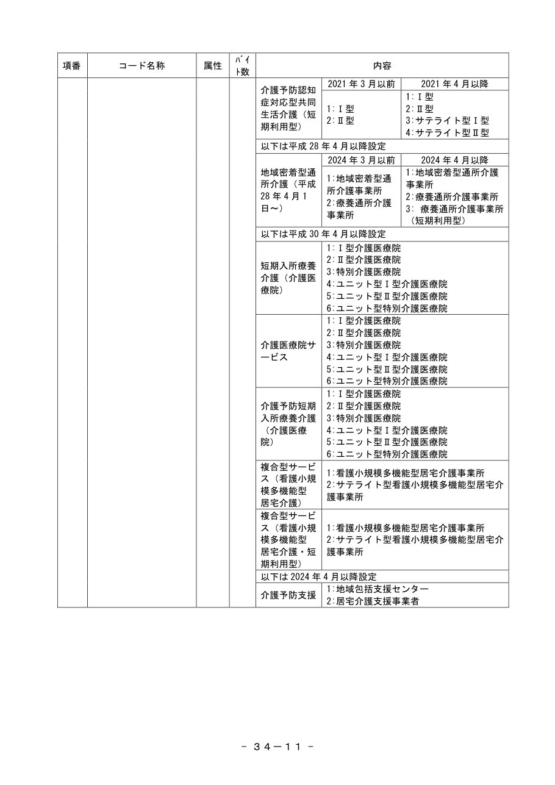
claude-haiku-5-5
- 表1 項番が整数でない行が 11 行
- 表1 桁数が空（原文: None）
- 表1 桁数が空（原文: None）
- 表1 桁数が空（原文: None）
- 表1 桁数が空（原文: None）
- 表1 桁数が空（原文: None）
- 表1 桁数が空（原文: None）
- 表1 桁数が空（原文: None）
- 表1 桁数が空（原文: None）
- 表1 桁数が空（原文: None）
- 表1 項目名がPDFのセルと完全一致しない（部分一致のみ）: '複合型サービス（看護小規模多機能型居宅介護・短期利用型）'
- 表1 桁数が空（原文: None）
- 表1 桁数が空（原文: None）
- 表1 項目名がPDFのセルと完全一致しない（部分一致のみ）: '介護予防支援'
- [改ページ] 前後ページで列見出しの書き起こしが一致しない
表1 code_list 前頁から続く次頁へ続く
| 項番 | 項目名 | 属性 | 桁数 | 内容 | 必須 | 備考 | その他の列 |
|---|---|---|---|---|---|---|---|
| 介護予防認知症対応型共同生活介護（短期利用型） | 2021年3月以前 1:Ⅰ型 2:Ⅱ型 2021年4月以降 1:Ⅰ型 2:Ⅱ型 3:サテライト型Ⅰ型 4:サテライト型Ⅱ型 | ||||||
| 以下は平成28年4月以降設定 | |||||||
| 地域密着型通所介護（平成28年4月1日～） | 2024年3月以前 1:地域密着型通所介護事業所 2:療養通所介護事業所 2024年4月以降 1:地域密着型通所介護事業所 2:療養通所介護事業所 3: 療養通所介護事業所（短期利用型） | ||||||
| 以下は平成30年4月以降設定 | |||||||
| 短期入所療養介護（介護医療院） | 1:Ⅰ型介護医療院 2:Ⅱ型介護医療院 3:特別介護医療院 4:ユニット型Ⅰ型介護医療院 5:ユニット型Ⅱ型介護医療院 6:ユニット型特別介護医療院 | ||||||
| 介護医療院サービス | 1:Ⅰ型介護医療院 2:Ⅱ型介護医療院 3:特別介護医療院 4:ユニット型Ⅰ型介護医療院 5:ユニット型Ⅱ型介護医療院 6:ユニット型特別介護医療院 | ||||||
| 介護予防短期入所療養介護（介護医療院） | 1:Ⅰ型介護医療院 2:Ⅱ型介護医療院 3:特別介護医療院 4:ユニット型Ⅰ型介護医療院 5:ユニット型Ⅱ型介護医療院 6:ユニット型特別介護医療院 | ||||||
| 複合型サービス（看護小規模多機能型居宅介護） | 1:看護小規模多機能型居宅介護事業所 2:サテライト型看護小規模多機能型居宅介護事業所 | ||||||
| 複合型サービス（看護小規模多機能型居宅介護・短期利用型） | 1:看護小規模多機能型居宅介護事業所 2:サテライト型看護小規模多機能型居宅介護事業所 | ||||||
| 以下は2024年4月以降設定 | |||||||
| 介護予防支援 | 1:地域包括支援センター 2:居宅介護支援事業者 |
uncertain（モデル自己申告）
- このページは前ページからの続きのコード一覧で、項番・コード名称・属性・バイト数の欄が空欄のため、各項目は内容欄の左側に書かれた名称をname_pathに入れた。項番はnullとした。
- 「以下は○年○月以降設定」の帯は表の行として書き起こしたが、項目ではなく注記的な帯である。
- 内容欄内の2021年3月以前／4月以降などの時期区分は原文の見出しをそのまま改行区切りで記載した。
claude-sonnet-5-5
- 表1 項番が整数でない行が 11 行
- 表1 桁数が空（原文: None）
- 表1 桁数が空（原文: None）
- 表1 桁数が空（原文: None）
- 表1 桁数が空（原文: None）
- 表1 桁数が空（原文: None）
- 表1 桁数が空（原文: None）
- 表1 桁数が空（原文: None）
- 表1 桁数が空（原文: None）
- 表1 桁数が空（原文: None）
- 表1 桁数が空（原文: None）
- 表1 桁数が空（原文: None）
- [改ページ] p52→p53 の連続性 OK
- テキストレイヤに見つからないセル: 2 個（赤枠）
表1 code_list 前頁から続く次頁へ続く
| 項番 | 項目名 | 属性 | 桁数 | 内容 | 必須 | 備考 | その他の列 |
|---|---|---|---|---|---|---|---|
| 介護予防認知症対応型共同生活介護（短期利用型） 2021年3月以前: 1:Ⅰ型 2:Ⅱ型 2021年4月以降: 1:Ⅰ型 2:Ⅱ型 3:サテライト型Ⅰ型 4:サテライト型Ⅱ型 | |||||||
| 以下は平成28年4月以降設定 | |||||||
| 地域密着型通所介護（平成28年4月1日～） 2024年3月以前: 1:地域密着型通所介護事業所 2:療養通所介護事業所 2024年4月以降: 1:地域密着型通所介護事業所 2:療養通所介護事業所 3: 療養通所介護事業所（短期利用型） | |||||||
| 以下は平成30年4月以降設定 | |||||||
| 短期入所療養介護（介護医療院） 1:Ⅰ型介護医療院 2:Ⅱ型介護医療院 3:特別介護医療院 4:ユニット型Ⅰ型介護医療院 5:ユニット型Ⅱ型介護医療院 6:ユニット型特別介護医療院 | |||||||
| 介護医療院サービス 1:Ⅰ型介護医療院 2:Ⅱ型介護医療院 3:特別介護医療院 4:ユニット型Ⅰ型介護医療院 5:ユニット型Ⅱ型介護医療院 6:ユニット型特別介護医療院 | |||||||
| 介護予防短期入所療養介護（介護医療院） 1:Ⅰ型介護医療院 2:Ⅱ型介護医療院 3:特別介護医療院 4:ユニット型Ⅰ型介護医療院 5:ユニット型Ⅱ型介護医療院 6:ユニット型特別介護医療院 | |||||||
| 複合型サービス（看護小規模多機能型居宅介護） 1:看護小規模多機能型居宅介護事業所 2:サテライト型看護小規模多機能型居宅介護事業所 | |||||||
| 複合型サービス（看護小規模多機能型居宅介護・短期利用型） 1:看護小規模多機能型居宅介護事業所 2:サテライト型看護小規模多機能型居宅介護事業所 | |||||||
| 以下は2024年4月以降設定 | |||||||
| 介護予防支援 1:地域包括支援センター 2:居宅介護支援事業者 |
uncertain（モデル自己申告）
- 表全体は前ページからの続き。項番・コード名称・属性・バイト数の列は空欄で、内容列内にサービス名称の副列（見出しなし）がありcontentに併記した
- 2021年3月以前/4月以降などの小見出し付き2列構造は content に「見出し: 値」の形でまとめた
kaigo_kyotsu_r0806_p53 — 印字p.

claude-haiku-5-5
- [改ページ] 前後ページで列見出しの書き起こしが一致しない
表1 code_list 前頁から続く次頁へ続く
| 項番 | 項目名 | 属性 | 桁数 | 内容 | 必須 | 備考 | その他の列 |
|---|---|---|---|---|---|---|---|
| ４２ | 人員配置区分コード > 通所介護 | 数字 | 1 | 内容 > サービス種類および施設等の区分: 通所介護 内容 > 平成15年3月以前: 1:認知症型 2:一般型 内容 > 平成15年4月以降: 1:認知症型 2:一般型 内容 > 平成17年10月以降: 1:認知症型 2:一般型 内容 > 平成18年4月以降: なし | |||
| ４２ | 人員配置区分コード > 短期入所生活介護 | 数字 | 1 | 内容 > サービス種類および施設等の区分: 短期入所生活介護 内容 > 平成15年3月以前: 1:Ⅰ型 2:Ⅱ型 3:Ⅲ型 内容 > 平成15年4月以降: 1:Ⅰ型 2:Ⅱ型 3:Ⅲ型 内容 > 平成17年10月以降: なし 内容 > 平成18年4月以降: なし | |||
| ４２ | 人員配置区分コード > 短期入所療養介護（介護老人保健施設） | 数字 | 1 | 内容 > サービス種類および施設等の区分: 短期入所療養介護（介護老人保健施設） 内容 > 平成15年3月以前: 平成17年9月以前 内容 > 平成15年4月以降: 平成17年9月以前 内容 > 平成17年10月以降: 平成17年10月以降 内容 > 平成18年4月以降: 平成17年10月以降 | |||
| ４２ | 人員配置区分コード > 短期入所療養介護（介護老人保健施設） > | 数字 | 1 | 内容 > サービス種類および施設等の区分: － 内容 > 平成15年3月以前: 1:Ⅰ型 2:Ⅱ型 内容 > 平成15年4月以降: 1:Ⅰ型 2:Ⅱ型 内容 > 平成17年10月以降: なし 内容 > 平成18年4月以降: なし | |||
| ４２ | 人員配置区分コード > 短期入所療養介護（介護老人保健施設） > | 数字 | 1 | 内容 > サービス種類および施設等の区分: － 内容 > 平成15年3月以前: 平成24年4月以降 内容 > 平成15年4月以降: 平成24年4月以降 内容 > 平成17年10月以降: 平成30年4月以降 内容 > 平成18年4月以降: 平成30年4月以降 | |||
| ４２ | 人員配置区分コード > 短期入所療養介護（介護老人保健施設） > 通常型 | 数字 | 1 | 内容 > サービス種類および施設等の区分: 通常型 内容 > 平成15年3月以前: 1:従来型 2:在宅強化型 内容 > 平成15年4月以降: 1:従来型 2:在宅強化型 内容 > 平成17年10月以降: 1:基本型 2:在宅強化型 内容 > 平成18年4月以降: 1:基本型 2:在宅強化型 | |||
| ４２ | 人員配置区分コード > 短期入所療養介護（介護老人保健施設） > 療養型 | 数字 | 1 | 内容 > サービス種類および施設等の区分: 療養型 内容 > 平成15年3月以前: 1:療養型 2:療養強化型 内容 > 平成15年4月以降: 1:療養型 2:療養強化型 内容 > 平成17年10月以降: なし 内容 > 平成18年4月以降: なし | |||
| ４２ | 人員配置区分コード > 短期入所療養介護（病院等） | 数字 | 1 | 内容 > サービス種類および施設等の区分: 短期入所療養介護（病院等） 内容 > 平成15年3月以前: 平成15年3月以前 内容 > 平成15年4月以降: 平成15年3月以前 内容 > 平成17年10月以降: 平成15年4月以降 内容 > 平成18年4月以降: 平成15年4月以降 | |||
| ４２ | 人員配置区分コード > 短期入所療養介護（病院等） > 病院療養型 | 数字 | 1 | 内容 > サービス種類および施設等の区分: 病院療養型 内容 > 平成15年3月以前: 1:Ⅰ型 2:Ⅱ型 3:Ⅲ型 4:Ⅳ型 内容 > 平成15年4月以降: 1:Ⅰ型 2:Ⅱ型 3:Ⅲ型 4:Ⅳ型 内容 > 平成17年10月以降: 2:Ⅰ型 3:Ⅱ型 4:Ⅲ型 内容 > 平成18年4月以降: 2:Ⅰ型 3:Ⅱ型 4:Ⅲ型 | |||
| ４２ | 人員配置区分コード > 短期入所療養介護（病院等） > 診療所療養型 | 数字 | 1 | 内容 > サービス種類および施設等の区分: 診療所療養型 内容 > 平成15年3月以前: 1:Ⅰ型 2:Ⅱ型 内容 > 平成15年4月以降: 1:Ⅰ型 2:Ⅱ型 内容 > 平成17年10月以降: 1:Ⅰ型 2:Ⅱ型 内容 > 平成18年4月以降: 1:Ⅰ型 2:Ⅱ型 | |||
| ４２ | 人員配置区分コード > 短期入所療養介護（病院等） > 認知症疾患型 | 数字 | 1 | 内容 > サービス種類および施設等の区分: 認知症疾患型 内容 > 平成15年3月以前: 1:Ⅰ型 2:Ⅱ型 3:Ⅲ型 4:Ⅳ型 内容 > 平成15年4月以降: 1:Ⅰ型 2:Ⅱ型 3:Ⅲ型 4:Ⅳ型 内容 > 平成17年10月以降: 1:Ⅰ型 2:Ⅱ型 3:Ⅲ型 内容 > 平成18年4月以降: 1:Ⅰ型 2:Ⅱ型 3:Ⅲ型 | |||
| ４２ | 人員配置区分コード > 短期入所療養介護（病院等） > 介護力強化型 ※２ | 数字 | 1 | 内容 > サービス種類および施設等の区分: 介護力強化型 ※２ 内容 > 平成15年3月以前: 1:Ⅰ型 2:Ⅱ型 3:Ⅲ型 4:Ⅳ型 内容 > 平成15年4月以降: 1:Ⅰ型 2:Ⅱ型 3:Ⅲ型 4:Ⅳ型 内容 > 平成17年10月以降: － 内容 > 平成18年4月以降: － | |||
| ４２ | 人員配置区分コード > 短期入所療養介護（病院等） > | 数字 | 1 | 内容 > サービス種類および施設等の区分: － 内容 > 平成15年3月以前: 平成18年4月以降 内容 > 平成15年4月以降: 平成18年4月以降 内容 > 平成17年10月以降: 平成20年5月以降 内容 > 平成18年4月以降: 平成20年5月以降 | |||
| ４２ | 人員配置区分コード > 短期入所療養介護（病院等） > 病院療養型 | 数字 | 1 | 内容 > サービス種類および施設等の区分: 病院療養型 内容 > 平成15年3月以前: 2:Ⅰ型 3:Ⅱ型 4:Ⅲ型 内容 > 平成15年4月以降: 2:Ⅰ型 3:Ⅱ型 4:Ⅲ型 内容 > 平成17年10月以降: 2:Ⅰ型 3:Ⅱ型 4:Ⅲ型 内容 > 平成18年4月以降: 2:Ⅰ型 3:Ⅱ型 4:Ⅲ型 | |||
| ４２ | 人員配置区分コード > 短期入所療養介護（病院等） > 診療所療養型 | 数字 | 1 | 内容 > サービス種類および施設等の区分: 診療所療養型 内容 > 平成15年3月以前: 1:Ⅰ型 2:Ⅱ型 内容 > 平成15年4月以降: 1:Ⅰ型 2:Ⅱ型 内容 > 平成17年10月以降: 1:Ⅰ型 2:Ⅱ型 内容 > 平成18年4月以降: 1:Ⅰ型 2:Ⅱ型 | |||
| ４２ | 人員配置区分コード > 短期入所療養介護（病院等） > 認知症疾患型 | 数字 | 1 | 内容 > サービス種類および施設等の区分: 認知症疾患型 内容 > 平成15年3月以前: 5:Ⅰ型 6:Ⅱ型 7:Ⅲ型 8:Ⅳ型 9:Ⅴ型 内容 > 平成15年4月以降: 5:Ⅰ型 6:Ⅱ型 7:Ⅲ型 8:Ⅳ型 9:Ⅴ型 内容 > 平成17年10月以降: 5:Ⅰ型 6:Ⅱ型 7:Ⅲ型 8:Ⅳ型 9:Ⅴ型 内容 > 平成18年4月以降: 5:Ⅰ型 6:Ⅱ型 7:Ⅲ型 8:Ⅳ型 9:Ⅴ型 | |||
| ４２ | 人員配置区分コード > 短期入所療養介護（病院等） > ユニット型認知症疾患型 | 数字 | 1 | 内容 > サービス種類および施設等の区分: ユニット型認知症疾患型 内容 > 平成15年3月以前: 5:Ⅰ型 6:Ⅱ型 内容 > 平成15年4月以降: 5:Ⅰ型 6:Ⅱ型 内容 > 平成17年10月以降: 5:Ⅰ型 6:Ⅱ型 内容 > 平成18年4月以降: 5:Ⅰ型 6:Ⅱ型 | |||
| ４２ | 人員配置区分コード > 短期入所療養介護（病院等） > 病院経過型 | 数字 | 1 | 内容 > サービス種類および施設等の区分: 病院経過型 内容 > 平成15年3月以前: － 内容 > 平成15年4月以降: － 内容 > 平成17年10月以降: 2:Ⅰ型 3:Ⅱ型 内容 > 平成18年4月以降: 2:Ⅰ型 3:Ⅱ型 |
uncertain（モデル自己申告）
- 依頼文は「次のページ」ですが、添付は1ページのみ（印字ページ35）のため、添付されたこのページの表を書き起こしました。
- このページは前ページからの続きと判断しました（先頭に項番・コード名称等の見出し行が繰り返されているため）。
- 項番42の内容欄は入れ子の表です。上段の見出し（平成15年3月以前・平成15年4月以降など）と、小見出し（平成17年9月以前／平成17年10月以降、平成24年4月以降／平成30年4月以降、平成15年3月以前／平成15年4月以降、平成18年4月以降／平成20年5月以降）の区切りが一致しないため、左右2列ずつの区分を cells の4列に左から順に入れました。小見出し行の値は位置に従って入れています。
- 横に結合された値（例: 通所介護の1:認知症型 2:一般型）は、該当する各列に同じ文字列を入れました。
- 「介護力強化型 ※２」の※２に対応する注記本文は本ページに見当たらないため footnotes は空です。
- 「ユニット型 認知症疾患型」は表示上の折り返しとみなし「ユニット型認知症疾患型」と連結しました。
claude-sonnet-5-5
- [改ページ] p53→p54 の連続性 OK
- テキストレイヤに見つからないセル: 1 個（赤枠）
表1 code_list 前頁から続く次頁へ続く
| 項番 | 項目名 | 属性 | 桁数 | 内容 | 必須 | 備考 | その他の列 |
|---|---|---|---|---|---|---|---|
| ４２ | 人員配置区分コード | 数字 | 1 | [図] サービス種類および施設等の区分 / 内容(平成15年3月以前 / 平成15年4月以降 / 平成17年10月以降 / 平成18年4月以降) 通所介護: 1:認知症型 2:一般型 / 平成18年4月以降: なし 短期入所生活介護: 1:Ⅰ型 2:Ⅱ型 3:Ⅲ型 / なし 短期入所療養介護(介護老人保健施設): 平成17年9月以前 / 平成17年10月以降 1:Ⅰ型 2:Ⅱ型 / なし 平成24年4月以降 / 平成30年4月以降 通常型: 1:従来型 2:在宅強化型 / 1:基本型 2:在宅強化型 療養型: 1:療養型 2:療養強化型 / なし 短期入所療養介護(病院等): 平成15年3月以前 / 平成15年4月以降 病院療養型: 1:Ⅰ型 2:Ⅱ型 3:Ⅲ型 4:Ⅳ型 / 2:Ⅰ型 3:Ⅱ型 4:Ⅲ型 診療所療養型: 1:Ⅰ型 2:Ⅱ型 / 1:Ⅰ型 2:Ⅱ型 認知症疾患型: 1:Ⅰ型 2:Ⅱ型 3:Ⅲ型 4:Ⅳ型 / 1:Ⅰ型 2:Ⅱ型 3:Ⅲ型 介護力強化型※２: 1:Ⅰ型 2:Ⅱ型 3:Ⅲ型 4:Ⅳ型 / (空欄) 平成18年4月以降 / 平成20年5月以降 病院療養型: 2:Ⅰ型 3:Ⅱ型 4:Ⅲ型 診療所療養型: 1:Ⅰ型 2:Ⅱ型 認知症疾患型: 5:Ⅰ型 6:Ⅱ型 7:Ⅲ型 8:Ⅳ型 9:Ⅴ型 ユニット型認知症疾患型: 5:Ⅰ型 6:Ⅱ型 病院経過型: (平成20年5月以降) 2:Ⅰ型 3:Ⅱ型 |
uncertain（モデル自己申告）
- 表は前ページから続く。ページ先頭に空の見出し行がある。
- 項番42の内容セルは入れ子の表で、行ごとの構造を簡易的にテキスト化した。通所介護の「なし」の列位置、病院経過型の平成18年4月以降列が空欄かどうか等は位置が不確か。
- 「サービス種類および施設等の区分」の列見出し上の「内容」と、結合セルの対応は正確に再現できていない。
kaigo_kyotsu_r0806_p54 — 印字p.
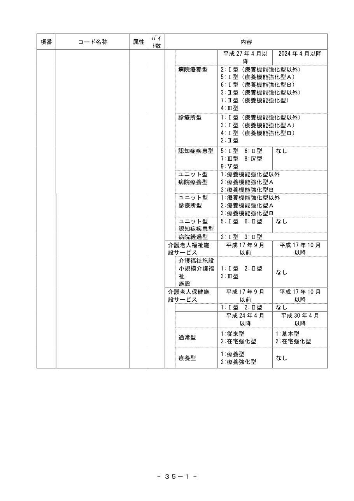
claude-haiku-5-5
- 表1 項番が整数でない行が 11 行
- 表1 桁数が空（原文: None）
- 表1 桁数が空（原文: None）
- 表1 桁数が空（原文: None）
- 表1 桁数が空（原文: None）
- 表1 桁数が空（原文: None）
- 表1 桁数が空（原文: None）
- 表1 桁数が空（原文: None）
- 表1 桁数が空（原文: None）
- 表1 桁数が空（原文: None）
- 表1 桁数が空（原文: None）
- 表1 桁数が空（原文: None）
- [改ページ] 前後ページで列見出しの書き起こしが一致しない
- テキストレイヤに見つからないセル: 6 個（赤枠）
表1 code_list 前頁から続く次頁へ続く
| 項番 | 項目名 | 属性 | 桁数 | 内容 | 必須 | 備考 | その他の列 |
|---|---|---|---|---|---|---|---|
| 病院療養型 | 2:Ⅰ型（療養機能強化型以外） 5:Ⅰ型（療養機能強化型Ａ） 6:Ⅰ型（療養機能強化型Ｂ） 3:Ⅱ型（療養機能強化型以外） 7:Ⅱ型（療養機能強化型） 4:Ⅲ型 | ||||||
| 診療所型 | 1:Ⅰ型（療養機能強化型以外） 3:Ⅰ型（療養機能強化型Ａ） 4:Ⅰ型（療養機能強化型Ｂ） 2:Ⅱ型 | ||||||
| 認知症疾患型 | 平成27年4月以降：5:Ⅰ型 6:Ⅱ型 7:Ⅲ型 8:Ⅳ型 9:Ⅴ型 2024年4月以降：なし | ||||||
| ユニット型 病院療養型 | 1:療養機能強化型以外 2:療養機能強化型Ａ 3:療養機能強化型Ｂ | ||||||
| ユニット型 診療所型 | 1:療養機能強化型以外 2:療養機能強化型Ａ 3:療養機能強化型Ｂ | ||||||
| ユニット型 認知症疾患型 | 平成27年4月以降：5:Ⅰ型 6:Ⅱ型 2024年4月以降：なし | ||||||
| 病院経過型 | 2:Ⅰ型 3:Ⅱ型 | ||||||
| 介護老人福祉施設サービス > 介護福祉施設小規模介護福祉施設 | 平成17年9月以前：1:Ⅰ型 2:Ⅱ型 3:Ⅲ型 平成17年10月以降：なし | ||||||
| 介護老人保健施設サービス | 平成17年9月以前：1:Ⅰ型 2:Ⅱ型 平成17年10月以降：なし | ||||||
| 介護老人保健施設サービス > 通常型 | 平成24年4月以降：1:従来型 2:在宅強化型 平成30年4月以降：1:基本型 2:在宅強化型 | ||||||
| 介護老人保健施設サービス > 療養型 | 平成24年4月以降：1:療養型 2:療養強化型 平成30年4月以降：なし |
uncertain（モデル自己申告）
- ページ先頭の行は前ページからの続きと判断した（項番・見出しが見えない）。
- 病院療養型など上位の見出し（ページ先頭より前にある親の見出し）はこのページに印字されていないため、name_path に含めていない。
- 先頭行の「平成27年4月以降／2024年4月以降」は内容欄内の日付見出しで、表の列見出しとして印字されていないため、列名に追加せず各行の content に「平成27年4月以降：」などの形で付記した。
- 介護老人保健施設サービスの見出し直下の無名行（コード名称が空欄）は、name_path を親見出しのみにした。
claude-sonnet-5-5
- 表1 項番が整数でない行が 1 行
- 表1 桁数が空（原文: None）
- [改ページ] p54→p55 の連続性 OK
- テキストレイヤに見つからないセル: 1 個（赤枠）
表1 code_list 前頁から続く次頁へ続く
| 項番 | 項目名 | 属性 | 桁数 | 内容 | 必須 | 備考 | その他の列 |
|---|---|---|---|---|---|---|---|
| [平成27年4月以降 / 2024年4月以降] 病院療養型: 2:Ⅰ型（療養機能強化型以外） 5:Ⅰ型（療養機能強化型Ａ） 6:Ⅰ型（療養機能強化型Ｂ） 3:Ⅱ型（療養機能強化型以外） 7:Ⅱ型（療養機能強化型） 4:Ⅲ型 診療所型: 1:Ⅰ型（療養機能強化型以外） 3:Ⅰ型（療養機能強化型Ａ） 4:Ⅰ型（療養機能強化型Ｂ） 2:Ⅱ型 認知症疾患型: [平成27年4月以降] 5:Ⅰ型 6:Ⅱ型 7:Ⅲ型 8:Ⅳ型 9:Ⅴ型 [2024年4月以降] なし ユニット型病院療養型: 1:療養機能強化型以外 2:療養機能強化型Ａ 3:療養機能強化型Ｂ ユニット型診療所型: 1:療養機能強化型以外 2:療養機能強化型Ａ 3:療養機能強化型Ｂ ユニット型認知症疾患型: [平成27年4月以降] 5:Ⅰ型 6:Ⅱ型 [2024年4月以降] なし 病院経過型: 2:Ⅰ型 3:Ⅱ型 介護老人福祉施設サービス: [平成17年9月以前 / 平成17年10月以降] 介護福祉施設 小規模介護福祉施設: [平成17年9月以前] 1:Ⅰ型 2:Ⅱ型 3:Ⅲ型 [平成17年10月以降] なし 介護老人保健施設サービス: [平成17年9月以前 / 平成17年10月以降] [平成17年9月以前] 1:Ⅰ型 2:Ⅱ型 [平成17年10月以降] なし [平成24年4月以降 / 平成30年4月以降] 通常型: [平成24年4月以降] 1:従来型 2:在宅強化型 [平成30年4月以降] 1:基本型 2:在宅強化型 療養型: [平成24年4月以降] 1:療養型 2:療養強化型 [平成30年4月以降] なし |
uncertain（モデル自己申告）
- 前ページからの続きの表で、内容列は入れ子の表構造（サービス種類・期間別の列）のため1行にまとめて書き起こした。
- 内容の入れ子表の区切り表現（[ ]）は便宜的に付けたもの。構造の対応は要確認。
kaigo_kyotsu_r0806_p55 — 印字p.

claude-haiku-5-5
- 表1 項番が整数でない行が 13 行
- 表1 桁数が空（原文: None）
- 表1 桁数が空（原文: None）
- 表1 桁数が空（原文: None）
- 表1 桁数が空（原文: None）
- 表1 桁数が空（原文: None）
- 表1 桁数が空（原文: None）
- 表1 桁数が空（原文: None）
- 表1 桁数が空（原文: None）
- 表1 桁数が空（原文: None）
- 表1 桁数が空（原文: None）
- 表1 桁数が空（原文: None）
- 表1 桁数が空（原文: None）
- 表1 桁数が空（原文: None）
- [改ページ] 前後ページで列見出しの書き起こしが一致しない
表1 code_list 前頁から続く次頁へ続く
| 項番 | 項目名 | 属性 | 桁数 | 内容 | 必須 | 備考 | その他の列 |
|---|---|---|---|---|---|---|---|
| 介護療養型医療施設サービス > 病院療養型 | 内容 > 平成15年3月以前: 1:Ⅰ型 2:Ⅱ型 3:Ⅲ型 4:Ⅳ型 内容 > 平成15年4月以降: 2:Ⅰ型 3:Ⅱ型 4:Ⅲ型 内容 > 平成18年4月以降: － 内容 > 平成20年5月以降: － 内容 > 平成27年4月以降: － 内容 > 2024年4月以降: － | ||||||
| 介護療養型医療施設サービス > 診療所型 | 内容 > 平成15年3月以前: 1:Ⅰ型 2:Ⅱ型 内容 > 平成15年4月以降: 1:Ⅰ型 2:Ⅱ型 内容 > 平成18年4月以降: － 内容 > 平成20年5月以降: － 内容 > 平成27年4月以降: － 内容 > 2024年4月以降: － | ||||||
| 介護療養型医療施設サービス > 認知症疾患型 | 内容 > 平成15年3月以前: 1:Ⅰ型 2:Ⅱ型 3:Ⅲ型 4:Ⅳ型 内容 > 平成15年4月以降: 1:Ⅰ型 2:Ⅱ型 3:Ⅲ型 内容 > 平成18年4月以降: － 内容 > 平成20年5月以降: － 内容 > 平成27年4月以降: － 内容 > 2024年4月以降: － | ||||||
| 介護療養型医療施設サービス > 介護力強化型※2 | 内容 > 平成15年3月以前: 1:Ⅰ型 2:Ⅱ型 3:Ⅲ型 4:Ⅳ型 内容 > 平成15年4月以降: － 内容 > 平成18年4月以降: － 内容 > 平成20年5月以降: － 内容 > 平成27年4月以降: － 内容 > 2024年4月以降: － | ||||||
| 介護療養型医療施設サービス > 病院療養型 | 内容 > 平成15年3月以前: － 内容 > 平成15年4月以降: － 内容 > 平成18年4月以降: 2:Ⅰ型 3:Ⅱ型 4:Ⅲ型 内容 > 平成20年5月以降: 2:Ⅰ型 3:Ⅱ型 4:Ⅲ型 内容 > 平成27年4月以降: － 内容 > 2024年4月以降: － | ||||||
| 介護療養型医療施設サービス > 診療所型 | 内容 > 平成15年3月以前: － 内容 > 平成15年4月以降: － 内容 > 平成18年4月以降: 1:Ⅰ型 2:Ⅱ型 内容 > 平成20年5月以降: 1:Ⅰ型 2:Ⅱ型 内容 > 平成27年4月以降: － 内容 > 2024年4月以降: － | ||||||
| 介護療養型医療施設サービス > 認知症疾患型 | 内容 > 平成15年3月以前: － 内容 > 平成15年4月以降: － 内容 > 平成18年4月以降: 5:Ⅰ型 6:Ⅱ型 7:Ⅲ型 8:Ⅳ型 9:Ⅴ型 内容 > 平成20年5月以降: 5:Ⅰ型 6:Ⅱ型 7:Ⅲ型 8:Ⅳ型 9:Ⅴ型 内容 > 平成27年4月以降: － 内容 > 2024年4月以降: － | ||||||
| 介護療養型医療施設サービス > ユニット型認知症疾患型 | 内容 > 平成15年3月以前: － 内容 > 平成15年4月以降: － 内容 > 平成18年4月以降: 5:Ⅰ型 6:Ⅱ型 内容 > 平成20年5月以降: 5:Ⅰ型 6:Ⅱ型 内容 > 平成27年4月以降: － 内容 > 2024年4月以降: － | ||||||
| 介護療養型医療施設サービス > 病院経過型 | 内容 > 平成15年3月以前: － 内容 > 平成15年4月以降: － 内容 > 平成18年4月以降: － 内容 > 平成20年5月以降: 2:Ⅰ型 3:Ⅱ型 内容 > 平成27年4月以降: － 内容 > 2024年4月以降: － | ||||||
| 介護療養型医療施設サービス > 病院療養型 | 内容 > 平成15年3月以前: － 内容 > 平成15年4月以降: － 内容 > 平成18年4月以降: － 内容 > 平成20年5月以降: － 内容 > 平成27年4月以降: 2:Ⅰ型（療養機能強化型以外） 5:Ⅰ型（療養機能強化型Ａ） 6:Ⅰ型（療養機能強化型Ｂ） 3:Ⅱ型（療養機能強化型以外） 7:Ⅱ型（療養機能強化型） 4:Ⅲ型 内容 > 2024年4月以降: なし | ||||||
| 介護療養型医療施設サービス > 診療所型 | 内容 > 平成15年3月以前: － 内容 > 平成15年4月以降: － 内容 > 平成18年4月以降: － 内容 > 平成20年5月以降: － 内容 > 平成27年4月以降: 1:Ⅰ型（療養機能強化型以外） 3:Ⅰ型（療養機能強化型Ａ） 4:Ⅰ型（療養機能強化型Ｂ） 2:Ⅱ型 内容 > 2024年4月以降: なし | ||||||
| 介護療養型医療施設サービス > 認知症疾患型 | 内容 > 平成15年3月以前: － 内容 > 平成15年4月以降: － 内容 > 平成18年4月以降: － 内容 > 平成20年5月以降: － 内容 > 平成27年4月以降: 5:Ⅰ型 6:Ⅱ型 7:Ⅲ型 8:Ⅳ型 9:Ⅴ型 内容 > 2024年4月以降: なし | ||||||
| 介護療養型医療施設サービス > ユニット型病院療養型 | 内容 > 平成15年3月以前: － 内容 > 平成15年4月以降: － 内容 > 平成18年4月以降: － 内容 > 平成20年5月以降: － 内容 > 平成27年4月以降: 1:療養機能強化型以外 2:療養機能強化型Ａ 3:療養機能強化型Ｂ 内容 > 2024年4月以降: なし |
uncertain（モデル自己申告）
- このページの表は前ページからの続きで、項番・コード名称・属性・バイト数の値は見えている範囲では空欄のため、全行の no と length は null としました。
- 内容欄の日付見出しは表の上段と下段で別々に並んでいるため、6つの見出しをそれぞれ '内容 > 日付' の列として扱いました。
- 横方向に結合されたセル（平成18年4月以降と平成20年5月以降にまたがる行）は、両列に同じ文字列を入れました。
- 介護療養型医療施設サービス は縦に結合された見出しとして全行の name_path の先頭に入れました。
- ※2 の脚注本文はこのページには見当たりませんでした。
- 「Ａ」「Ｂ」の全角・半角の判別は画像からは確定できないため、全角で書き起こしました。
claude-sonnet-5-5
- 表1 項番が整数でない行が 1 行
- 表1 桁数が空（原文: None）
- [改ページ] p55→p56 の連続性 OK
- テキストレイヤに見つからないセル: 1 個（赤枠）
表1 code_list 前頁から続く次頁へ続く
| 項番 | 項目名 | 属性 | 桁数 | 内容 | 必須 | 備考 | その他の列 |
|---|---|---|---|---|---|---|---|
| 介護療養型医療施設サービス 平成15年3月以前 / 平成15年4月以降 病院療養型: 1:Ⅰ型 2:Ⅱ型 3:Ⅲ型 4:Ⅳ型 / 2:Ⅰ型 3:Ⅱ型 4:Ⅲ型 診療所型: 1:Ⅰ型 2:Ⅱ型 / 1:Ⅰ型 2:Ⅱ型 認知症疾患型: 1:Ⅰ型 2:Ⅱ型 3:Ⅲ型 4:Ⅳ型 / 1:Ⅰ型 2:Ⅱ型 3:Ⅲ型 介護力強化型※2: 1:Ⅰ型 2:Ⅱ型 3:Ⅲ型 4:Ⅳ型 / (空欄) 平成18年4月以降 / 平成20年5月以降 病院療養型: 2:Ⅰ型 3:Ⅱ型 4:Ⅲ型 診療所型: 1:Ⅰ型 2:Ⅱ型 認知症疾患型: 5:Ⅰ型 6:Ⅱ型 7:Ⅲ型 8:Ⅳ型 9:Ⅴ型 ユニット型認知症疾患型: 5:Ⅰ型 6:Ⅱ型 病院経過型: (平成18年4月以降は空欄) / 2:Ⅰ型 3:Ⅱ型 平成27年4月以降 / 2024年4月以降 病院療養型: 2:Ⅰ型(療養機能強化型以外) 5:Ⅰ型(療養機能強化型A) 6:Ⅰ型(療養機能強化型B) 3:Ⅱ型(療養機能強化型以外) 7:Ⅱ型(療養機能強化型) 4:Ⅲ型 / なし 診療所型: 1:Ⅰ型(療養機能強化型以外) 3:Ⅰ型(療養機能強化型A) 4:Ⅰ型(療養機能強化型B) 2:Ⅱ型 / なし 認知症疾患型: 5:Ⅰ型 6:Ⅱ型 7:Ⅲ型 8:Ⅳ型 9:Ⅴ型 / なし ユニット型病院療養型: 1:療養機能強化型以外 2:療養機能強化型A 3:療養機能強化型B / なし |
uncertain（モデル自己申告）
- 表全体が前ページからの続きで項番・コード名称・属性・バイト数が空欄のため、内容セル全体を1行にまとめた。内容内の入れ子表（年月別の列）は改行区切りで簡略に記述した。
- 「※2」は介護力強化型の項目名に付随して印字されている。注記本文はこのページに無い。
kaigo_kyotsu_r0806_p56 — 印字p.
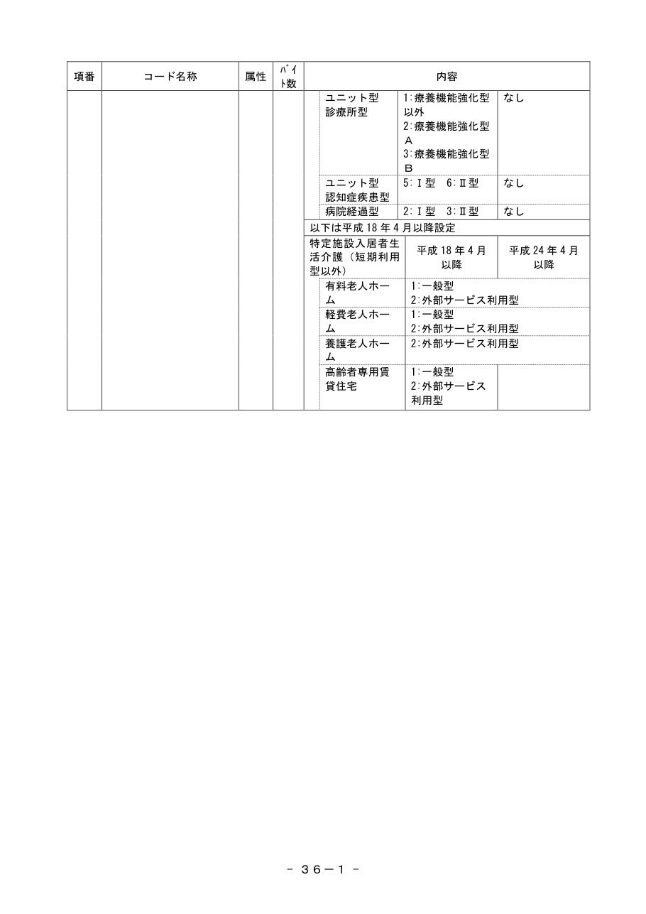
claude-haiku-5-5
- 表1 項番が整数でない行が 7 行
- 表1 [列] columns に無い列名を使っている（なし）
- 表1 桁数が空（原文: None）
- 表1 桁数が空（原文: None）
- 表1 桁数が空（原文: None）
- 表1 桁数が空（原文: None）
- 表1 桁数が空（原文: None）
- 表1 桁数が空（原文: None）
- 表1 桁数が空（原文: None）
- [改ページ] p56→p57 の連続性 OK
表1 code_list 前頁から続く次頁へ続く
| 項番 | 項目名 | 属性 | 桁数 | 内容 | 必須 | 備考 | その他の列 |
|---|---|---|---|---|---|---|---|
| ユニット型診療所型 | 1:療養機能強化型以外 2:療養機能強化型Ａ 3:療養機能強化型Ｂ | なし | |||||
| ユニット型認知症疾患型 | 5:Ⅰ型 6:Ⅱ型 | なし | |||||
| 病院経過型 | 2:Ⅰ型 3:Ⅱ型 | なし | |||||
| 特定施設入居者生活介護（短期利用型以外） > 有料老人ホーム | 1:一般型 2:外部サービス利用型 | ||||||
| 特定施設入居者生活介護（短期利用型以外） > 軽費老人ホーム | 1:一般型 2:外部サービス利用型 | ||||||
| 特定施設入居者生活介護（短期利用型以外） > 養護老人ホーム | 2:外部サービス利用型 | ||||||
| 特定施設入居者生活介護（短期利用型以外） > 高齢者専用賃貸住宅 | 1:一般型 2:外部サービス利用型 |
注記
- 以下は平成18年4月以降設定
uncertain（モデル自己申告）
- 前ページからの続きと判断した（項番・コード名称・属性・バイト数の列が空欄で、表見出しがないため）。
- 内容列の内側の区分（施設名称・コード値・備考相当の「なし」）に対応する見出しが印字されていないため、name_path に施設名称を入れ、「なし」は note に入れたが、note 相当の列名は原本に無い。
- 特定施設入居者生活介護（短期利用型以外）の行では、「平成18年4月以降」「平成24年4月以降」の見出しが印字されているが、列として扱うと不自然なため列化していない。有料老人ホーム・軽費老人ホーム・養護老人ホームのコード値は両列にまたがって記載されているように見えるため、両列の区別を付けずに content に入れた。高齢者専用賃貸住宅は平成18年4月以降の列のみに値があり、平成24年4月以降の列は空欄に見える。
- 「以下は平成18年4月以降設定」は表の中の区切り帯のため footnotes に入れた。
claude-sonnet-5-5
- 表1 項番が整数でない行が 1 行
- 表1 桁数が空（原文: None）
- [改ページ] p56→p57 の連続性 OK
表1 code_list 前頁から続く次頁へ続く
| 項番 | 項目名 | 属性 | 桁数 | 内容 | 必須 | 備考 | その他の列 |
|---|---|---|---|---|---|---|---|
| ユニット型診療所型 1:療養機能強化型以外 2:療養機能強化型A 3:療養機能強化型B なし ユニット型認知症疾患型 5:Ⅰ型 6:Ⅱ型 なし 病院経過型 2:Ⅰ型 3:Ⅱ型 なし 以下は平成18年4月以降設定 特定施設入居者生活介護（短期利用型以外） 平成18年4月以降 平成24年4月以降 有料老人ホーム 1:一般型 2:外部サービス利用型 軽費老人ホーム 1:一般型 2:外部サービス利用型 養護老人ホーム 2:外部サービス利用型 高齢者専用賃貸住宅 1:一般型 2:外部サービス利用型 |
uncertain（モデル自己申告）
- 前ページからの続きの表。内容列は入れ子の複数段の区切り構造で、タブ区切りで1セルにまとめた。高齢者専用賃貸住宅の平成24年4月以降列は空欄。
kaigo_kyotsu_r0806_p57 — 印字p.
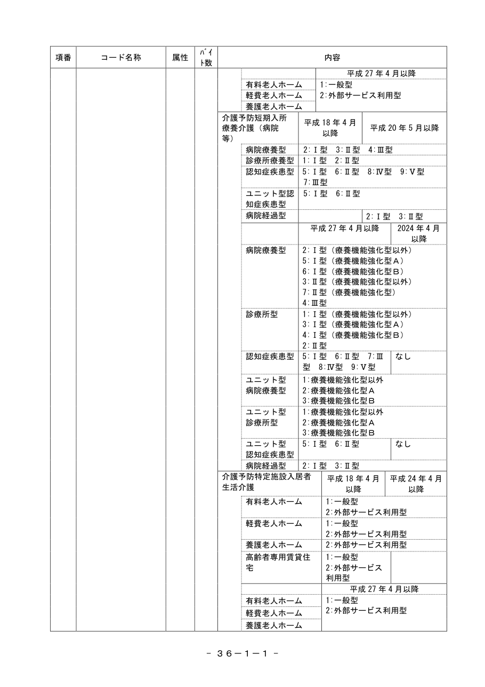
claude-haiku-5-5
- 表1 項番が整数でない行が 22 行
- 表1 桁数が空（原文: None）
- 表1 桁数が空（原文: None）
- 表1 桁数が空（原文: None）
- 表1 桁数が空（原文: None）
- 表1 桁数が空（原文: None）
- 表1 項目名がPDFのセルと完全一致しない（部分一致のみ）: '診療所療養型'
- 表1 桁数が空（原文: None）
- 表1 桁数が空（原文: None）
- 表1 桁数が空（原文: None）
- 表1 桁数が空（原文: None）
- 表1 桁数が空（原文: None）
- 表1 桁数が空（原文: None）
- 表1 桁数が空（原文: None）
- 表1 桁数が空（原文: None）
- 表1 桁数が空（原文: None）
- 表1 桁数が空（原文: None）
- 表1 桁数が空（原文: None）
- 表1 桁数が空（原文: None）
- 表1 桁数が空（原文: None）
- 表1 桁数が空（原文: None）
- 表1 桁数が空（原文: None）
- 表1 桁数が空（原文: None）
- 表1 桁数が空（原文: None）
- [改ページ] p57→p58 の連続性 OK
- テキストレイヤに見つからないセル: 3 個（赤枠）
表1 code_list 前頁から続く次頁へ続く
| 項番 | 項目名 | 属性 | 桁数 | 内容 | 必須 | 備考 | その他の列 |
|---|---|---|---|---|---|---|---|
| > 有料老人ホーム | 1:一般型 2:外部サービス利用型 | ||||||
| > 軽費老人ホーム | 1:一般型 2:外部サービス利用型 | ||||||
| > 養護老人ホーム | 1:一般型 2:外部サービス利用型 | ||||||
| 介護予防短期入所療養介護（病院等） > 病院療養型 | 2:Ⅰ型 3:Ⅱ型 4:Ⅲ型 | ||||||
| 介護予防短期入所療養介護（病院等） > 診療所療養型 | 1:Ⅰ型 2:Ⅱ型 | ||||||
| 介護予防短期入所療養介護（病院等） > 認知症疾患型 | 5:Ⅰ型 6:Ⅱ型 8:Ⅳ型 9:Ⅴ型 7:Ⅲ型 | ||||||
| 介護予防短期入所療養介護（病院等） > ユニット型認知症疾患型 | 5:Ⅰ型 6:Ⅱ型 | ||||||
| 介護予防短期入所療養介護（病院等） > 病院経過型 | 2:Ⅰ型 3:Ⅱ型 | 平成20年5月以降 | |||||
| 介護予防短期入所療養介護（病院等） > 病院療養型 | 2:Ⅰ型（療養機能強化型以外） 5:Ⅰ型（療養機能強化型A） 6:Ⅰ型（療養機能強化型B） 3:Ⅱ型（療養機能強化型以外） 7:Ⅱ型（療養機能強化型） 4:Ⅲ型 | ||||||
| 介護予防短期入所療養介護（病院等） > 診療所型 | 1:Ⅰ型（療養機能強化型以外） 3:Ⅰ型（療養機能強化型A） 4:Ⅰ型（療養機能強化型B） 2:Ⅱ型 | ||||||
| 介護予防短期入所療養介護（病院等） > 認知症疾患型 | 5:Ⅰ型 6:Ⅱ型 7:Ⅲ型 8:Ⅳ型 9:Ⅴ型 | 2024年4月以降: なし | |||||
| 介護予防短期入所療養介護（病院等） > ユニット型病院療養型 | 1:療養機能強化型以外 2:療養機能強化型A 3:療養機能強化型B | ||||||
| 介護予防短期入所療養介護（病院等） > ユニット型診療所型 | 1:療養機能強化型以外 2:療養機能強化型A 3:療養機能強化型B | ||||||
| 介護予防短期入所療養介護（病院等） > ユニット型認知症疾患型 | 5:Ⅰ型 6:Ⅱ型 | 2024年4月以降: なし | |||||
| 介護予防短期入所療養介護（病院等） > 病院経過型 | 2:Ⅰ型 3:Ⅱ型 | ||||||
| 介護予防特定施設入居者生活介護 > 有料老人ホーム | 1:一般型 2:外部サービス利用型 | ||||||
| 介護予防特定施設入居者生活介護 > 軽費老人ホーム | 1:一般型 2:外部サービス利用型 | ||||||
| 介護予防特定施設入居者生活介護 > 養護老人ホーム | 2:外部サービス利用型 | ||||||
| 介護予防特定施設入居者生活介護 > 高齢者専用賃貸住宅 | 1:一般型 2:外部サービス利用型 | 平成24年4月以降: 空欄 | |||||
| 介護予防特定施設入居者生活介護 > 有料老人ホーム | 1:一般型 2:外部サービス利用型 | ||||||
| 介護予防特定施設入居者生活介護 > 軽費老人ホーム | 1:一般型 2:外部サービス利用型 | ||||||
| 介護予防特定施設入居者生活介護 > 養護老人ホーム | 1:一般型 2:外部サービス利用型 |
uncertain（モデル自己申告）
- ページ先頭の項番・コード名称は前ページからの続きで、有料老人ホーム等の行が属する上位グループ名（介護予防…）は本ページに印字されていないため name_path の先頭を空文字にした。
- 「内容」の中の日付見出し（平成18年4月以降、平成20年5月以降、平成27年4月以降、2024年4月以降、平成24年4月以降）が、横に分かれていないセルにどこまで適用されるか図から断定しきれない。全幅のセルの行には日付を note に入れていない。
- 介護予防短期入所療養介護（病院等）の後半ブロック（平成27年4月以降・2024年4月以降）の見出しは、後半の行が全幅セルのため、対応する列の区切りとして読み取った。
- 最後の行（養護老人ホーム）の下で表の枠が閉じており、次ページへ続くかどうかは判断できない。続くものとして true にした。
- コード名称の列はページ上では項番・コード名称の見出しのみで、内容の入れ子構造は列として表現できないため、行単位で書き起こした。
claude-sonnet-5-5
- 表1 項番が整数でない行が 3 行
- 表1 桁数が空（原文: None）
- 表1 桁数が空（原文: None）
- 表1 桁数が空（原文: None）
- [改ページ] p57→p58 の連続性 OK
- テキストレイヤに見つからないセル: 3 個（赤枠）
表1 code_list 前頁から続く次頁へ続く
| 項番 | 項目名 | 属性 | 桁数 | 内容 | 必須 | 備考 | その他の列 |
|---|---|---|---|---|---|---|---|
| 平成27年4月以降 有料老人ホーム/軽費老人ホーム/養護老人ホーム: 1:一般型 2:外部サービス利用型 | |||||||
| 介護予防短期入所療養介護（病院等） 平成18年4月以降 / 平成20年5月以降 病院療養型: 2:Ⅰ型 3:Ⅱ型 4:Ⅲ型 診療所療養型: 1:Ⅰ型 2:Ⅱ型 認知症疾患型: 5:Ⅰ型 6:Ⅱ型 8:Ⅳ型 9:Ⅴ型 7:Ⅲ型 ユニット型認知症疾患型: 5:Ⅰ型 6:Ⅱ型 病院経過型: (平成20年5月以降) 2:Ⅰ型 3:Ⅱ型 平成27年4月以降 / 2024年4月以降 病院療養型: 2:Ⅰ型（療養機能強化型以外） 5:Ⅰ型（療養機能強化型A） 6:Ⅰ型（療養機能強化型B） 3:Ⅱ型（療養機能強化型以外） 7:Ⅱ型（療養機能強化型） 4:Ⅲ型 診療所型: 1:Ⅰ型（療養機能強化型以外） 3:Ⅰ型（療養機能強化型A） 4:Ⅰ型（療養機能強化型B） 2:Ⅱ型 認知症疾患型: 5:Ⅰ型 6:Ⅱ型 7:Ⅲ型 8:Ⅳ型 9:Ⅴ型 (2024年4月以降: なし) ユニット型病院療養型: 1:療養機能強化型以外 2:療養機能強化型A 3:療養機能強化型B ユニット型診療所型: 1:療養機能強化型以外 2:療養機能強化型A 3:療養機能強化型B ユニット型認知症疾患型: 5:Ⅰ型 6:Ⅱ型 (2024年4月以降: なし) 病院経過型: 2:Ⅰ型 3:Ⅱ型 | |||||||
| 介護予防特定施設入居者生活介護 平成18年4月以降 / 平成24年4月以降 有料老人ホーム: 1:一般型 2:外部サービス利用型 軽費老人ホーム: 1:一般型 2:外部サービス利用型 養護老人ホーム: 2:外部サービス利用型 高齢者専用賃貸住宅: 1:一般型 2:外部サービス利用型 平成27年4月以降 有料老人ホーム/軽費老人ホーム/養護老人ホーム: 1:一般型 2:外部サービス利用型 |
uncertain（モデル自己申告）
- 表全体が前ページからの続きで、項番・コード名称・属性・バイト数は空欄。内容列は入れ子の表でサービス種別ごとの行分けが不確かなため、3ブロックにまとめて書き起こした。
- 入れ子の見出し（平成18年4月以降 等）と各コード値の対応は、レイアウトから推定した。
kaigo_kyotsu_r0806_p58 — 印字p.
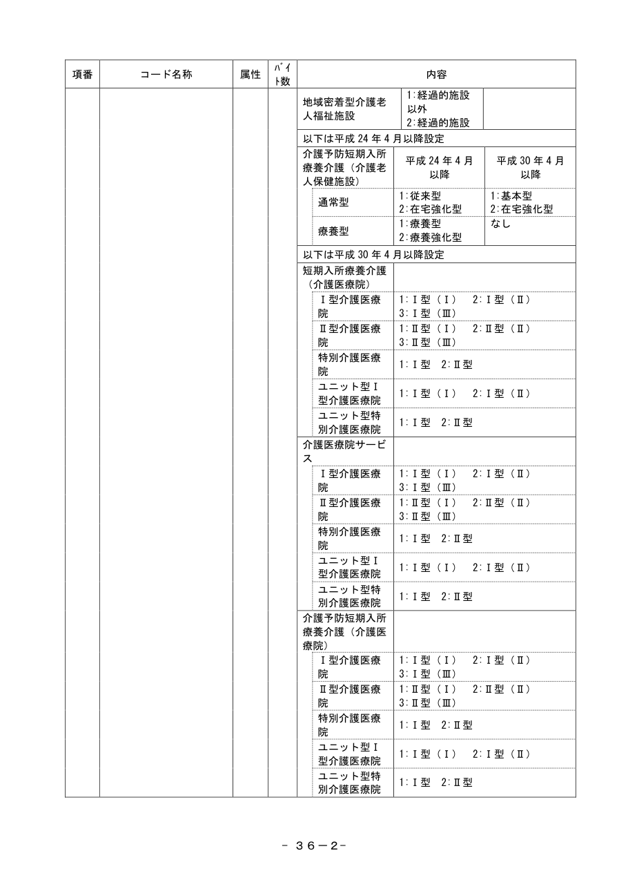
claude-haiku-5-5
- 表1 項番が整数でない行が 1 行
- 表1 桁数が空（原文: None）
- [改ページ] p58→p59 の連続性 OK
- テキストレイヤに見つからないセル: 1 個（赤枠）
表1 code_list 前頁から続く次頁へ続く
| 項番 | 項目名 | 属性 | 桁数 | 内容 | 必須 | 備考 | その他の列 |
|---|---|---|---|---|---|---|---|
| 地域密着型介護老人福祉施設 1:経過的施設以外 2:経過的施設 以下は平成24年4月以降設定 介護予防短期入所療養介護（介護老人保健施設） 平成24年4月以降 / 平成30年4月以降 通常型 1:従来型 2:在宅強化型 1:基本型 2:在宅強化型 療養型 1:療養型 2:療養強化型 なし 以下は平成30年4月以降設定 短期入所療養介護（介護医療院） Ⅰ型介護医療院 1:Ⅰ型（Ⅰ） 2:Ⅰ型（Ⅱ） 3:Ⅰ型（Ⅲ） Ⅱ型介護医療院 1:Ⅱ型（Ⅰ） 2:Ⅱ型（Ⅱ） 3:Ⅱ型（Ⅲ） 特別介護医療院 1:Ⅰ型 2:Ⅱ型 ユニット型Ⅰ型介護医療院 1:Ⅰ型（Ⅰ） 2:Ⅰ型（Ⅱ） ユニット型特別介護医療院 1:Ⅰ型 2:Ⅱ型 介護医療院サービス Ⅰ型介護医療院 1:Ⅰ型（Ⅰ） 2:Ⅰ型（Ⅱ） 3:Ⅰ型（Ⅲ） Ⅱ型介護医療院 1:Ⅱ型（Ⅰ） 2:Ⅱ型（Ⅱ） 3:Ⅱ型（Ⅲ） 特別介護医療院 1:Ⅰ型 2:Ⅱ型 ユニット型Ⅰ型介護医療院 1:Ⅰ型（Ⅰ） 2:Ⅰ型（Ⅱ） ユニット型特別介護医療院 1:Ⅰ型 2:Ⅱ型 介護予防短期入所療養介護（介護医療院） Ⅰ型介護医療院 1:Ⅰ型（Ⅰ） 2:Ⅰ型（Ⅱ） 3:Ⅰ型（Ⅲ） Ⅱ型介護医療院 1:Ⅱ型（Ⅰ） 2:Ⅱ型（Ⅱ） 3:Ⅱ型（Ⅲ） 特別介護医療院 1:Ⅰ型 2:Ⅱ型 ユニット型Ⅰ型介護医療院 1:Ⅰ型（Ⅰ） 2:Ⅰ型（Ⅱ） ユニット型特別介護医療院 1:Ⅰ型 2:Ⅱ型 |
uncertain（モデル自己申告）
- このページの表は前ページからの続きで、項番・コード名称・属性・バイト数のセルはこのページでは空欄のため、内容列の全文を1行にまとめ、項番は null とした。
- 内容セル内の多段の表記（ラベルと値、平成24年4月以降と平成30年4月以降の列の対応など）は改行とスラッシュで平坦化しており、元の段組みは完全には再現していない。
- コード名称欄は空欄のため name_path を空配列とした。
- 「Ⅰ」「Ⅱ」「Ⅲ」の字形は原文の印字を正確に判別しきれていない可能性がある。
claude-sonnet-5-5
- 表1 項番が整数でない行が 1 行
- 表1 桁数が空（原文: None）
- [改ページ] p58→p59 の連続性 OK
表1 code_list 前頁から続く次頁へ続く
| 項番 | 項目名 | 属性 | 桁数 | 内容 | 必須 | 備考 | その他の列 |
|---|---|---|---|---|---|---|---|
| 地域密着型介護老人福祉施設 1:経過的施設以外 2:経過的施設 以下は平成24年4月以降設定 介護予防短期入所療養介護（介護老人保健施設） 平成24年4月以降 平成30年4月以降 通常型 1:従来型 2:在宅強化型 1:基本型 2:在宅強化型 療養型 1:療養型 2:療養強化型 なし 以下は平成30年4月以降設定 短期入所療養介護（介護医療院） Ⅰ型介護医療院 1:Ⅰ型（Ⅰ） 2:Ⅰ型（Ⅱ） 3:Ⅰ型（Ⅲ） Ⅱ型介護医療院 1:Ⅱ型（Ⅰ） 2:Ⅱ型（Ⅱ） 3:Ⅱ型（Ⅲ） 特別介護医療院 1:Ⅰ型 2:Ⅱ型 ユニット型Ⅰ型介護医療院 1:Ⅰ型（Ⅰ） 2:Ⅰ型（Ⅱ） ユニット型特別介護医療院 1:Ⅰ型 2:Ⅱ型 介護医療院サービス Ⅰ型介護医療院 1:Ⅰ型（Ⅰ） 2:Ⅰ型（Ⅱ） 3:Ⅰ型（Ⅲ） Ⅱ型介護医療院 1:Ⅱ型（Ⅰ） 2:Ⅱ型（Ⅱ） 3:Ⅱ型（Ⅲ） 特別介護医療院 1:Ⅰ型 2:Ⅱ型 ユニット型Ⅰ型介護医療院 1:Ⅰ型（Ⅰ） 2:Ⅰ型（Ⅱ） ユニット型特別介護医療院 1:Ⅰ型 2:Ⅱ型 介護予防短期入所療養介護（介護医療院） Ⅰ型介護医療院 1:Ⅰ型（Ⅰ） 2:Ⅰ型（Ⅱ） 3:Ⅰ型（Ⅲ） Ⅱ型介護医療院 1:Ⅱ型（Ⅰ） 2:Ⅱ型（Ⅱ） 3:Ⅱ型（Ⅲ） 特別介護医療院 1:Ⅰ型 2:Ⅱ型 ユニット型Ⅰ型介護医療院 1:Ⅰ型（Ⅰ） 2:Ⅰ型（Ⅱ） ユニット型特別介護医療院 1:Ⅰ型 2:Ⅱ型 |
uncertain（モデル自己申告）
- 前ページからの続きの表で、項番・コード名称・属性・バイト数の列は空欄。内容列内の入れ子表を1行にまとめ、セル区切りはタブで表現した。
- ページ末尾で表が終わっているか次ページへ続くかは不明（罫線は閉じている）。
kaigo_kyotsu_r0806_p59 — 印字p.
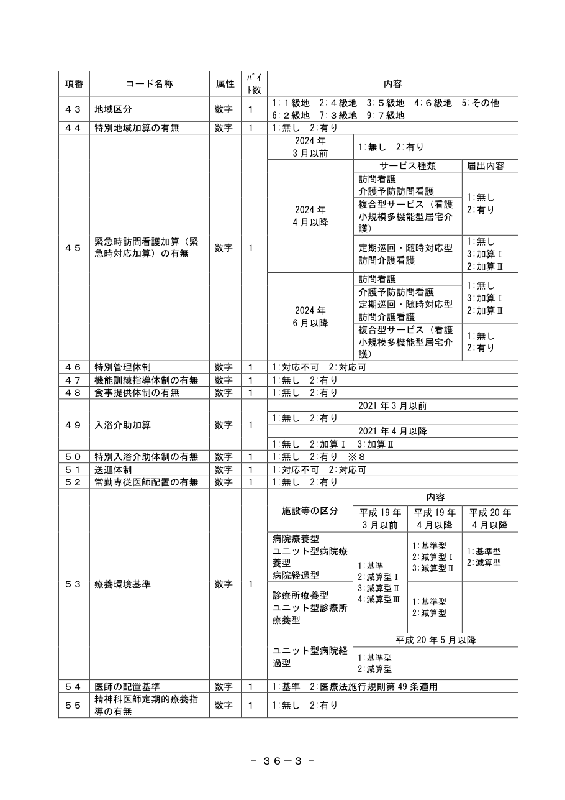
claude-haiku-5-5
- 表2 前ページからの続きではないのに項番が 53 から始まる
- 表3 前ページからの続きではないのに項番が 54 から始まる
- [改ページ] p59→p60 の連続性 OK
表1 code_list 前頁から続く
| 項番 | 項目名 | 属性 | 桁数 | 内容 | 必須 | 備考 | その他の列 |
|---|---|---|---|---|---|---|---|
| ４３ | 地域区分 | 数字 | 1 | 1:１級地 2:４級地 3:５級地 4:６級地 5:その他 6:２級地 7:３級地 9:７級地 | |||
| ４４ | 特別地域加算の有無 | 数字 | 1 | 1:無し 2:有り | |||
| ４５ | 2024年3月以前 > 緊急時訪問看護加算（緊急時対応加算）の有無 | 数字 | 1 | 1:無し 2:有り | |||
| ４５ | 2024年4月以降 > 訪問看護 > 緊急時訪問看護加算（緊急時対応加算）の有無 | 数字 | 1 | 1:無し 2:有り | |||
| ４５ | 2024年4月以降 > 介護予防訪問看護 > 緊急時訪問看護加算（緊急時対応加算）の有無 | 数字 | 1 | 1:無し 2:有り | |||
| ４５ | 2024年4月以降 > 複合型サービス（看護小規模多機能型居宅介護） > 緊急時訪問看護加算（緊急時対応加算）の有無 | 数字 | 1 | 1:無し 2:有り | |||
| ４５ | 2024年4月以降 > 定期巡回・随時対応型訪問介護看護 > 緊急時訪問看護加算（緊急時対応加算）の有無 | 数字 | 1 | 1:無し 3:加算Ⅰ 2:加算Ⅱ | |||
| ４５ | 2024年6月以降 > 訪問看護 > 緊急時訪問看護加算（緊急時対応加算）の有無 | 数字 | 1 | 1:無し 3:加算Ⅰ 2:加算Ⅱ | |||
| ４５ | 2024年6月以降 > 介護予防訪問看護 > 緊急時訪問看護加算（緊急時対応加算）の有無 | 数字 | 1 | 1:無し 3:加算Ⅰ 2:加算Ⅱ | |||
| ４５ | 2024年6月以降 > 定期巡回・随時対応型訪問介護看護 > 緊急時訪問看護加算（緊急時対応加算）の有無 | 数字 | 1 | 1:無し 3:加算Ⅰ 2:加算Ⅱ | |||
| ４５ | 2024年6月以降 > 複合型サービス（看護小規模多機能型居宅介護） > 緊急時訪問看護加算（緊急時対応加算）の有無 | 数字 | 1 | 1:無し 2:有り | |||
| ４６ | 特別管理体制 | 数字 | 1 | 1:対応不可 2:対応可 | |||
| ４７ | 機能訓練指導体制の有無 | 数字 | 1 | 1:無し 2:有り | |||
| ４８ | 食事提供体制の有無 | 数字 | 1 | 1:無し 2:有り | |||
| ４９ | 2021年3月以前 > 入浴介助加算 | 数字 | 1 | 1:無し 2:有り | |||
| ４９ | 2021年4月以降 > 入浴介助加算 | 数字 | 1 | 1:無し 2:加算Ⅰ 3:加算Ⅱ | |||
| ５０ | 特別入浴介助体制の有無 | 数字 | 1 | 1:無し 2:有り ※8 | |||
| ５１ | 送迎体制 | 数字 | 1 | 1:対応不可 2:対応可 | |||
| ５２ | 常勤専従医師配置の有無 | 数字 | 1 | 1:無し 2:有り |
表2 code_list
| 項番 | 項目名 | 属性 | 桁数 | 内容 | 必須 | 備考 | その他の列 |
|---|---|---|---|---|---|---|---|
| ５３ | 療養環境基準 | 数字 | 1 | 施設等の区分: 病院療養型 ユニット型病院療養型 病院経過型 内容 > 平成19年3月以前: 1:基準 2:減算型Ⅰ 3:減算型Ⅱ 4:減算型Ⅲ 内容 > 平成19年4月以降: 1:基準型 2:減算型Ⅰ 3:減算型Ⅱ 内容 > 平成20年4月以降: 1:基準型 2:減算型 | |||
| ５３ | 療養環境基準 | 数字 | 1 | 施設等の区分: 診療所療養型 ユニット型診療所療養型 内容 > 平成19年3月以前: 1:基準 2:減算型Ⅰ 3:減算型Ⅱ 4:減算型Ⅲ 内容 > 平成19年4月以降: 1:基準型 2:減算型 内容 > 平成20年4月以降: － | |||
| ５３ | 療養環境基準 | 数字 | 1 | 施設等の区分: ユニット型病院経過型 内容 > 平成19年3月以前: 1:基準型 2:減算型 内容 > 平成19年4月以降: 1:基準型 2:減算型 内容 > 平成20年4月以降: 1:基準型 2:減算型 |
表3 code_list 次頁へ続く
| 項番 | 項目名 | 属性 | 桁数 | 内容 | 必須 | 備考 | その他の列 |
|---|---|---|---|---|---|---|---|
| ５４ | 医師の配置基準 | 数字 | 1 | 1:基準 2:医療法施行規則第49条適用 | |||
| ５５ | 精神科医師定期的療養指導の有無 | 数字 | 1 | 1:無し 2:有り |
uncertain（モデル自己申告）
- 表は項番43から始まり見出し行があるため、前ページからの続きかどうかは判断できない。continued_from_prev_page は true としたが参考扱い。
- 項番45の「サービス種類」「届出内容」「2024年3月以前」「2024年4月以降」「2024年6月以降」は見出し行にない内部見出しのため、列名には入れず name_path と content に分けた。届出内容の値は content に入れた。
- 項番50の「※8」は内容中の注記記号として原文のまま残したが、対応する注記本文はこのページに無い。
- 項番53の「平成20年5月以降」は3つの内容列にまたがる見出しで、ユニット型病院経過型の行の3列に同じ値を入れた。
- 項番53の「施設等の区分」は見出し行の列として扱い、各行のcellsに入れた。
- 表の下端で終わっているが、次ページに続く可能性は確認できない。
claude-sonnet-5-5
- [改ページ] p59→p60 の連続性 OK
- テキストレイヤに見つからないセル: 2 個（赤枠）
表1 code_list 前頁から続く次頁へ続く
| 項番 | 項目名 | 属性 | 桁数 | 内容 | 必須 | 備考 | その他の列 |
|---|---|---|---|---|---|---|---|
| ４３ | 地域区分 | 数字 | 1 | 1:１級地 2:４級地 3:５級地 4:６級地 5:その他 6:２級地 7:３級地 9:７級地 | |||
| ４４ | 特別地域加算の有無 | 数字 | 1 | 1:無し 2:有り | |||
| ４５ | 緊急時訪問看護加算（緊急時対応加算）の有無 | 数字 | 1 | 2024年3月以前 1:無し 2:有り 2024年4月以降 サービス種類 / 届出内容 訪問看護、介護予防訪問看護、複合型サービス（看護小規模多機能型居宅介護）: 1:無し 2:有り 定期巡回・随時対応型訪問介護看護: 1:無し 3:加算Ⅰ 2:加算Ⅱ 2024年6月以降 訪問看護、介護予防訪問看護、定期巡回・随時対応型訪問介護看護: 1:無し 3:加算Ⅰ 2:加算Ⅱ 複合型サービス（看護小規模多機能型居宅介護）: 1:無し 2:有り | |||
| ４６ | 特別管理体制 | 数字 | 1 | 1:対応不可 2:対応可 | |||
| ４７ | 機能訓練指導体制の有無 | 数字 | 1 | 1:無し 2:有り | |||
| ４８ | 食事提供体制の有無 | 数字 | 1 | 1:無し 2:有り | |||
| ４９ | 入浴介助加算 | 数字 | 1 | 2021年3月以前 1:無し 2:有り 2021年4月以降 1:無し 2:加算Ⅰ 3:加算Ⅱ | |||
| ５０ | 特別入浴介助体制の有無 | 数字 | 1 | 1:無し 2:有り ※8 | |||
| ５１ | 送迎体制 | 数字 | 1 | 1:対応不可 2:対応可 | |||
| ５２ | 常勤専従医師配置の有無 | 数字 | 1 | 1:無し 2:有り | |||
| ５３ | 療養環境基準 | 数字 | 1 | 施設等の区分 / 内容（平成19年3月以前 / 平成19年4月以降 / 平成20年4月以降） 病院療養型、ユニット型病院療養型、病院経過型: 平成19年3月以前 1:基準 2:減算型Ⅰ 3:減算型Ⅱ 4:減算型Ⅲ / 平成19年4月以降 1:基準型 2:減算型Ⅰ 3:減算型Ⅱ / 平成20年4月以降 1:基準型 2:減算型 診療所療養型、ユニット型診療所療養型: 平成19年3月以前 1:基準 2:減算型Ⅰ 3:減算型Ⅱ 4:減算型Ⅲ / 平成19年4月以降 1:基準型 2:減算型 ユニット型病院経過型: 平成20年5月以降 1:基準型 2:減算型 | |||
| ５４ | 医師の配置基準 | 数字 | 1 | 1:基準 2:医療法施行規則第49条適用 | |||
| ５５ | 精神科医師定期的療養指導の有無 | 数字 | 1 | 1:無し 2:有り |
uncertain（モデル自己申告）
- 項番45,49,53の内容は入れ子の表を文章化して1セルにまとめた。構造は簡略化している
- 前ページからの続きの表
kaigo_kyotsu_r0806_p60 — 印字p.
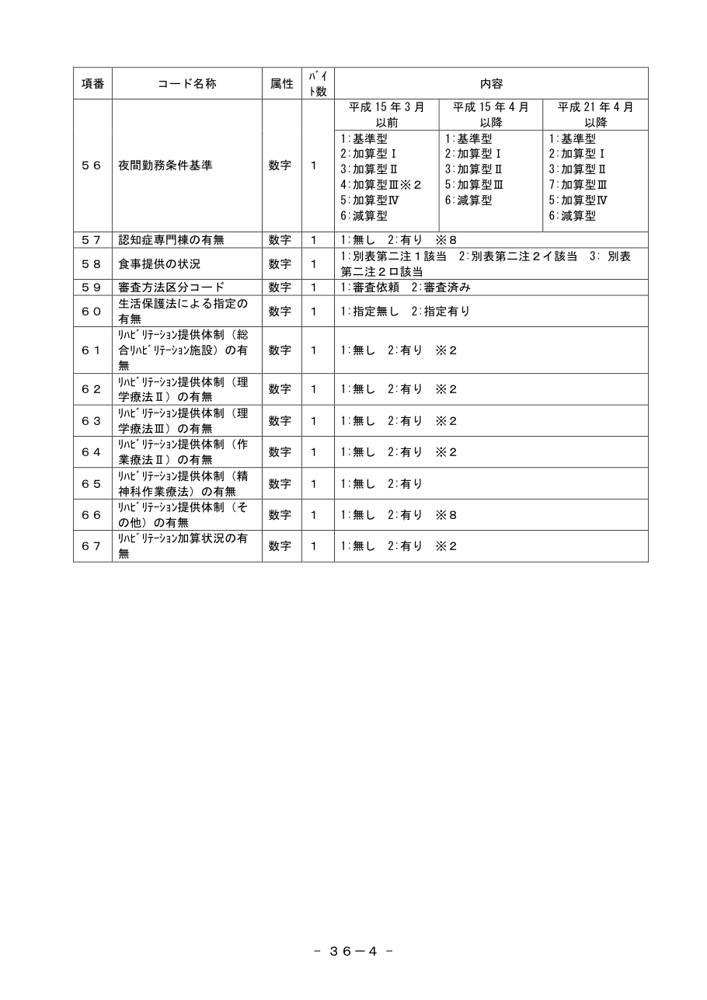
claude-haiku-5-5
- [改ページ] 前後ページで列見出しの書き起こしが一致しない
表1 code_list 前頁から続く次頁へ続く
| 項番 | 項目名 | 属性 | 桁数 | 内容 | 必須 | 備考 | その他の列 |
|---|---|---|---|---|---|---|---|
| ５６ | 夜間勤務条件基準 | 数字 | 1 | 平成15年3月以前 1:基準型 2:加算型Ⅰ 3:加算型Ⅱ 4:加算型Ⅲ※２ 5:加算型Ⅳ 6:減算型 平成15年4月以降 1:基準型 2:加算型Ⅰ 3:加算型Ⅱ 5:加算型Ⅲ 6:減算型 平成21年4月以降 1:基準型 2:加算型Ⅰ 3:加算型Ⅱ 7:加算型Ⅲ 5:加算型Ⅳ 6:減算型 | |||
| ５７ | 認知症専門棟の有無 | 数字 | 1 | 1:無し 2:有り ※８ | |||
| ５８ | 食事提供の状況 | 数字 | 1 | 1:別表第二注１該当 2:別表第二注２イ該当 3: 別表第二注２ロ該当 | |||
| ５９ | 審査方法区分コード | 数字 | 1 | 1:審査依頼 2:審査済み | |||
| ６０ | 生活保護法による指定の有無 | 数字 | 1 | 1:指定無し 2:指定有り | |||
| ６１ | リハビリテーション提供体制（総合リハビリテーション施設）の有無 | 数字 | 1 | 1:無し 2:有り ※２ | |||
| ６２ | リハビリテーション提供体制（理学療法Ⅱ）の有無 | 数字 | 1 | 1:無し 2:有り ※２ | |||
| ６３ | リハビリテーション提供体制（理学療法Ⅲ）の有無 | 数字 | 1 | 1:無し 2:有り ※２ | |||
| ６４ | リハビリテーション提供体制（作業療法Ⅱ）の有無 | 数字 | 1 | 1:無し 2:有り ※２ | |||
| ６５ | リハビリテーション提供体制（精神科作業療法）の有無 | 数字 | 1 | 1:無し 2:有り | |||
| ６６ | リハビリテーション提供体制（その他）の有無 | 数字 | 1 | 1:無し 2:有り ※８ | |||
| ６７ | リハビリテーション加算状況の有無 | 数字 | 1 | 1:無し 2:有り ※２ |
uncertain（モデル自己申告）
- 項番56の内容欄に、平成15年3月以前・平成15年4月以降・平成21年4月以降の3区分の内容が縦に並んでいたため、区分名を改行付きでcontentに入れた。
- 項番57〜67の内容欄は3区分にまたがる横結合セルのため、contentにのみ入れている。
- 項番56の内容にある※２、項番57などの※８、※２は表外の注記番号で、このページには注記本文がないため footnotes は空とした。
- 「リハビリテーション」の表記は原文で半角カナ（ﾘﾊﾋﾞﾘﾃｰｼｮﾝ）の可能性があるが、字形が判然としないため全角表記で書いた。
claude-sonnet-5-5
- [改ページ] p60→p61 の連続性 OK
表1 code_list 前頁から続く次頁へ続く
| 項番 | 項目名 | 属性 | 桁数 | 内容 | 必須 | 備考 | その他の列 |
|---|---|---|---|---|---|---|---|
| ５６ | 夜間勤務条件基準 | 数字 | 1 | 平成15年3月以前 1:基準型 2:加算型Ⅰ 3:加算型Ⅱ 4:加算型Ⅲ※2 5:加算型Ⅳ 6:減算型 平成15年4月以降 1:基準型 2:加算型Ⅰ 3:加算型Ⅱ 5:加算型Ⅲ 6:減算型 平成21年4月以降 1:基準型 2:加算型Ⅰ 3:加算型Ⅱ 7:加算型Ⅲ 5:加算型Ⅳ 6:減算型 | |||
| ５７ | 認知症専門棟の有無 | 数字 | 1 | 1:無し 2:有り ※８ | |||
| ５８ | 食事提供の状況 | 数字 | 1 | 1:別表第二注１該当 2:別表第二注２イ該当 3: 別表第二注２ロ該当 | |||
| ５９ | 審査方法区分コード | 数字 | 1 | 1:審査依頼 2:審査済み | |||
| ６０ | 生活保護法による指定の有無 | 数字 | 1 | 1:指定無し 2:指定有り | |||
| ６１ | ﾘﾊﾋﾞﾘﾃｰｼｮﾝ提供体制（総合ﾘﾊﾋﾞﾘﾃｰｼｮﾝ施設）の有無 | 数字 | 1 | 1:無し 2:有り ※２ | |||
| ６２ | ﾘﾊﾋﾞﾘﾃｰｼｮﾝ提供体制（理学療法Ⅱ）の有無 | 数字 | 1 | 1:無し 2:有り ※２ | |||
| ６３ | ﾘﾊﾋﾞﾘﾃｰｼｮﾝ提供体制（理学療法Ⅲ）の有無 | 数字 | 1 | 1:無し 2:有り ※２ | |||
| ６４ | ﾘﾊﾋﾞﾘﾃｰｼｮﾝ提供体制（作業療法Ⅱ）の有無 | 数字 | 1 | 1:無し 2:有り ※２ | |||
| ６５ | ﾘﾊﾋﾞﾘﾃｰｼｮﾝ提供体制（精神科作業療法）の有無 | 数字 | 1 | 1:無し 2:有り | |||
| ６６ | ﾘﾊﾋﾞﾘﾃｰｼｮﾝ提供体制（その他）の有無 | 数字 | 1 | 1:無し 2:有り ※８ | |||
| ６７ | ﾘﾊﾋﾞﾘﾃｰｼｮﾝ加算状況の有無 | 数字 | 1 | 1:無し 2:有り ※２ |
uncertain（モデル自己申告）
- 項番56の内容は平成15年3月以前/平成15年4月以降/平成21年4月以降の3つの副見出しに分かれており、1セルにまとめて書いた
- 表は前ページからの続き（見出し行が繰り返されている）
- 「ﾘﾊﾋﾞﾘﾃｰｼｮﾝ」の半角カナの小書き文字は原文どおりか不確か
kaigo_kyotsu_r0806_p61 — 印字p.
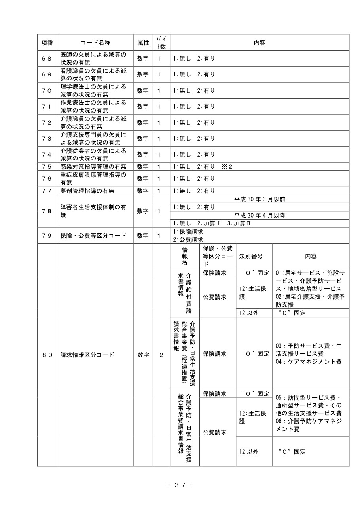
claude-haiku-5-5
- [改ページ] 前後ページで列見出しの書き起こしが一致しない
- テキストレイヤに見つからないセル: 6 個（赤枠）
表1 code_list 前頁から続く次頁へ続く
| 項番 | 項目名 | 属性 | 桁数 | 内容 | 必須 | 備考 | その他の列 |
|---|---|---|---|---|---|---|---|
| ６８ | 医師の欠員による減算の状況の有無 | 数字 | 1 | 1:無し 2:有り | 内容 > 情報名: － 内容 > 保険・公費等区分コード: － 内容 > 法別番号: － 内容 > 内容: － | ||
| ６９ | 看護職員の欠員による減算の状況の有無 | 数字 | 1 | 1:無し 2:有り | 内容 > 情報名: － 内容 > 保険・公費等区分コード: － 内容 > 法別番号: － 内容 > 内容: － | ||
| ７０ | 理学療法士の欠員による減算の状況の有無 | 数字 | 1 | 1:無し 2:有り | 内容 > 情報名: － 内容 > 保険・公費等区分コード: － 内容 > 法別番号: － 内容 > 内容: － | ||
| ７１ | 作業療法士の欠員による減算の状況の有無 | 数字 | 1 | 1:無し 2:有り | 内容 > 情報名: － 内容 > 保険・公費等区分コード: － 内容 > 法別番号: － 内容 > 内容: － | ||
| ７２ | 介護職員の欠員による減算の状況の有無 | 数字 | 1 | 1:無し 2:有り | 内容 > 情報名: － 内容 > 保険・公費等区分コード: － 内容 > 法別番号: － 内容 > 内容: － | ||
| ７３ | 介護支援専門員の欠員による減算の状況の有無 | 数字 | 1 | 1:無し 2:有り | 内容 > 情報名: － 内容 > 保険・公費等区分コード: － 内容 > 法別番号: － 内容 > 内容: － | ||
| ７４ | 介護従業者の欠員による減算の状況の有無 | 数字 | 1 | 1:無し 2:有り | 内容 > 情報名: － 内容 > 保険・公費等区分コード: － 内容 > 法別番号: － 内容 > 内容: － | ||
| ７５ | 感染対策指導管理の有無 | 数字 | 1 | 1:無し 2:有り ※2 | 内容 > 情報名: － 内容 > 保険・公費等区分コード: － 内容 > 法別番号: － 内容 > 内容: － | ||
| ７６ | 重症皮膚潰瘍管理指導の有無 | 数字 | 1 | 1:無し 2:有り | 内容 > 情報名: － 内容 > 保険・公費等区分コード: － 内容 > 法別番号: － 内容 > 内容: － | ||
| ７７ | 薬剤管理指導の有無 | 数字 | 1 | 1:無し 2:有り | 内容 > 情報名: － 内容 > 保険・公費等区分コード: － 内容 > 法別番号: － 内容 > 内容: － | ||
| ７８ | 障害者生活支援体制の有無 | 数字 | 1 | 平成30年3月以前 1:無し 2:有り 平成30年4月以降 1:無し 2:加算Ⅰ 3:加算Ⅱ | 内容 > 情報名: － 内容 > 保険・公費等区分コード: － 内容 > 法別番号: － 内容 > 内容: － | ||
| ７９ | 保険・公費等区分コード | 数字 | 1 | 1:保険請求 2:公費請求 | 内容 > 情報名: － 内容 > 保険・公費等区分コード: － 内容 > 法別番号: － 内容 > 内容: － | ||
| ８０ | 請求情報区分コード > 介護給付費請求書情報 > 保険請求 | 数字 | 2 | 内容 > 情報名: 介護給付費請求書情報 内容 > 保険・公費等区分コード: 保険請求 内容 > 法別番号: “O”固定 内容 > 内容: 01:居宅サービス・施設サービス・介護予防サービス・地域密着型サービス 02:居宅介護支援・介護予防支援 | |||
| ８０ | 請求情報区分コード > 介護給付費請求書情報 > 公費請求 | 数字 | 2 | 内容 > 情報名: 介護給付費請求書情報 内容 > 保険・公費等区分コード: 公費請求 内容 > 法別番号: 12:生活保護 内容 > 内容: 01:居宅サービス・施設サービス・介護予防サービス・地域密着型サービス 02:居宅介護支援・介護予防支援 | |||
| ８０ | 請求情報区分コード > 介護給付費請求書情報 > 公費請求 | 数字 | 2 | 内容 > 情報名: 介護給付費請求書情報 内容 > 保険・公費等区分コード: 公費請求 内容 > 法別番号: 12 以外 内容 > 内容: “O”固定 | |||
| ８０ | 請求情報区分コード > 請求書情報 介護予防・日常生活支援総合事業費（経過措置） > 保険請求 | 数字 | 2 | 内容 > 情報名: 請求書情報 介護予防・日常生活支援総合事業費（経過措置） 内容 > 保険・公費等区分コード: 保険請求 内容 > 法別番号: “O”固定 内容 > 内容: 03：予防サービス費・生活支援サービス費 04：ケアマネジメント費 | |||
| ８０ | 請求情報区分コード > 介護予防・日常生活支援総合事業費請求書情報 > 保険請求 | 数字 | 2 | 内容 > 情報名: 介護予防・日常生活支援総合事業費請求書情報 内容 > 保険・公費等区分コード: 保険請求 内容 > 法別番号: “O”固定 内容 > 内容: 05：訪問型サービス費・通所型サービス費・その他の生活支援サービス費 06：介護予防ケアマネジメント費 | |||
| ８０ | 請求情報区分コード > 介護予防・日常生活支援総合事業費請求書情報 > 公費請求 | 数字 | 2 | 内容 > 情報名: 介護予防・日常生活支援総合事業費請求書情報 内容 > 保険・公費等区分コード: 公費請求 内容 > 法別番号: 12:生活保護 内容 > 内容: 05：訪問型サービス費・通所型サービス費・その他の生活支援サービス費 06：介護予防ケアマネジメント費 | |||
| ８０ | 請求情報区分コード > 介護予防・日常生活支援総合事業費請求書情報 > 公費請求 | 数字 | 2 | 内容 > 情報名: 介護予防・日常生活支援総合事業費請求書情報 内容 > 保険・公費等区分コード: 公費請求 内容 > 法別番号: 12 以外 内容 > 内容: “O”固定 |
uncertain（モデル自己申告）
- 列見出し「内容」が2回現れる（行80の入れ子表）ため、入れ子側の列を「内容 > 情報名」「内容 > 保険・公費等区分コード」「内容 > 法別番号」「内容 > 内容」と表記した。
- 項番80の情報名の縦書き文字は読み順・区切りが判別しにくく、「介護給付費請求書情報」「請求書情報 介護予防・日常生活支援総合事業費（経過措置）」「介護予防・日常生活支援総合事業費請求書情報」は画像から組み立てた表記である。
- 表は見出し行から始まるが項番68からで、前ページからの続きと判断し continued_from_prev_page を true にした。次ページへの継続は判別できないため false にした。
- 項番75の「※2」の注記本文はこのページに無いため footnotes には入れていない。
claude-sonnet-5-5
- [改ページ] 前後ページで列見出しの書き起こしが一致しない
- テキストレイヤに見つからないセル: 1 個（赤枠）
表1 code_list 前頁から続く
| 項番 | 項目名 | 属性 | 桁数 | 内容 | 必須 | 備考 | その他の列 |
|---|---|---|---|---|---|---|---|
| ６８ | 医師の欠員による減算の状況の有無 | 数字 | 1 | 1:無し 2:有り | |||
| ６９ | 看護職員の欠員による減算の状況の有無 | 数字 | 1 | 1:無し 2:有り | |||
| ７０ | 理学療法士の欠員による減算の状況の有無 | 数字 | 1 | 1:無し 2:有り | |||
| ７１ | 作業療法士の欠員による減算の状況の有無 | 数字 | 1 | 1:無し 2:有り | |||
| ７２ | 介護職員の欠員による減算の状況の有無 | 数字 | 1 | 1:無し 2:有り | |||
| ７３ | 介護支援専門員の欠員による減算の状況の有無 | 数字 | 1 | 1:無し 2:有り | |||
| ７４ | 介護従業者の欠員による減算の状況の有無 | 数字 | 1 | 1:無し 2:有り | |||
| ７５ | 感染対策指導管理の有無 | 数字 | 1 | 1:無し 2:有り ※2 | |||
| ７６ | 重症皮膚潰瘍管理指導の有無 | 数字 | 1 | 1:無し 2:有り | |||
| ７７ | 薬剤管理指導の有無 | 数字 | 1 | 1:無し 2:有り | |||
| ７８ | 障害者生活支援体制の有無 | 数字 | 1 | 平成30年3月以前 1:無し 2:有り 平成30年4月以降 1:無し 2:加算Ⅰ 3:加算Ⅱ | |||
| ７９ | 保険・公費等区分コード | 数字 | 1 | 1:保険請求 2:公費請求 | |||
| ８０ | 請求情報区分コード | 数字 | 2 | [図] |
表2 other項番80 請求情報区分コード 次頁へ続く
| 項番 | 項目名 | 属性 | 桁数 | 内容 | 必須 | 備考 | その他の列 |
|---|---|---|---|---|---|---|---|
| 介護給付費請求書情報 | 01:居宅サービス・施設サービス・介護予防サービス・地域密着型サービス 02:居宅介護支援・介護予防支援 | 保険・公費等区分コード: 保険請求 法別番号: “０”固定 | |||||
| 介護給付費請求書情報 | 01:居宅サービス・施設サービス・介護予防サービス・地域密着型サービス 02:居宅介護支援・介護予防支援 | 保険・公費等区分コード: 公費請求 法別番号: 12:生活保護 | |||||
| 介護給付費請求書情報 | “０”固定 | 保険・公費等区分コード: 公費請求 法別番号: 12以外 | |||||
| 介護予防・日常生活支援総合事業費(経過措置)請求書情報 | 03:予防サービス費・生活支援サービス費 04:ケアマネジメント費 | 保険・公費等区分コード: 保険請求 法別番号: “０”固定 | |||||
| 介護予防・日常生活支援総合事業費請求書情報 | 05:訪問型サービス費・通所型サービス費・その他の生活支援サービス費 06:介護予防ケアマネジメント費 | 保険・公費等区分コード: 保険請求 法別番号: “０”固定 | |||||
| 介護予防・日常生活支援総合事業費請求書情報 | 05:訪問型サービス費・通所型サービス費・その他の生活支援サービス費 06:介護予防ケアマネジメント費 | 保険・公費等区分コード: 公費請求 法別番号: 12:生活保護 | |||||
| 介護予防・日常生活支援総合事業費請求書情報 | “０”固定 | 保険・公費等区分コード: 公費請求 法別番号: 12以外 |
uncertain（モデル自己申告）
- 項番80は図解的な入れ子表のため、別表(other)に分けて記載。情報名は縦書きで文字順の読み取りに自信がない。
- 項番68以降は前ページからの続き。
- 項番80の内容セルは[図]とし詳細は別表に記載。
- 項番80の各行の保険・公費等区分コードと法別番号の組み合わせ（特に経過措置の公費請求行が無いこと）は原表のとおり。
kaigo_kyotsu_r0806_p62 — 印字p.
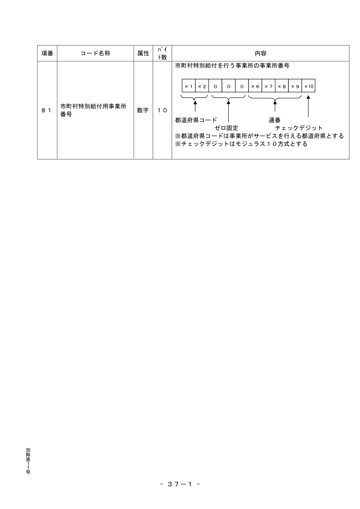
claude-haiku-5-5
- [改ページ] p62→p63 の連続性 OK
- テキストレイヤに見つからないセル: 1 個（赤枠）
表1 code_list 前頁から続く次頁へ続く
| 項番 | 項目名 | 属性 | 桁数 | 内容 | 必須 | 備考 | その他の列 |
|---|---|---|---|---|---|---|---|
| ８１ | 市町村特別給付用事業所番号 | 数字 | 10 | 市町村特別給付を行う事業所の事業所番号 [図] ×1 ×2 0 0 0 ×6 ×7 ×8 ×9 ×10 都道府県コード ゼロ固定 通番 チェックデジット ※都道府県コードは事業所がサービスを行える都道府県とする ※チェックデジットはモジュラス１０方式とする |
uncertain（モデル自己申告）
- 表に見出し（表題）がなく、ページ先頭から始まっているため、前ページの表の続きかどうか判断できない。
- 内容欄の図（桁の図解）は [図] と位置を示し、図内に印字された文字のみを書き写した。図の配置や矢印の対応関係は再現していない。
- 内容欄の「※」で始まる2行は表の下の注記ではなく内容セル内の文章として扱い、footnotes は空にした。
- record の exchange_id・name・parent は表見出しや本文から読み取れなかったため空文字とした。
claude-sonnet-5-5
- [改ページ] p62→p63 の連続性 OK
- テキストレイヤに見つからないセル: 1 個（赤枠）
表1 code_list 前頁から続く次頁へ続く
| 項番 | 項目名 | 属性 | 桁数 | 内容 | 必須 | 備考 | その他の列 |
|---|---|---|---|---|---|---|---|
| ８１ | 市町村特別給付用事業所番号 | 数字 | 10 | 市町村特別給付を行う事業所の事業所番号 [図] ×1 ×2 0 0 0 ×6 ×7 ×8 ×9 ×10 都道府県コード ゼロ固定 通番 チェックデジット ※都道府県コードは事業所がサービスを行える都道府県とする ※チェックデジットはモジュラス１０方式とする |
uncertain（モデル自己申告）
- 表は項番81の1行のみ。内容セル内の桁図解は[図]として図中の文字のみ転記。ヘッダー「ﾊﾞｲﾄ数」は折り返し表示。ページ左下の「加除第11号」は縦書きの欄外表記で未記載。
kaigo_kyotsu_r0806_p63 — 印字p.
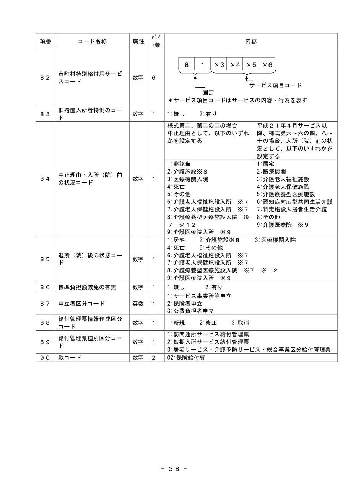
claude-haiku-5-5
- [改ページ] 前後ページで列見出しの書き起こしが一致しない
- テキストレイヤに見つからないセル: 1 個（赤枠）
表1 code_list 前頁から続く次頁へ続く
| 項番 | 項目名 | 属性 | 桁数 | 内容 | 必須 | 備考 | その他の列 |
|---|---|---|---|---|---|---|---|
| ８２ | 市町村特別給付用サービスコード | 数字 | 6 | [図]（8 1 ×3 ×4 ×5 ×6 / 固定 / サービス項目コード） ＊サービス項目コードはサービスの内容・行為を表す | |||
| ８３ | 旧措置入所者特例のコード | 数字 | 1 | 1:無し 2:有り | |||
| ８４ | 中止理由・入所（院）前の状況コード | 数字 | 1 | 様式第二、第二の二の場合 中止理由として、以下のいずれかを設定する 1:非該当 2:介護施設※８ 3:医療機関入院 4:死亡 5:その他 6:介護老人福祉施設入所 ※７ 7:介護老人保健施設入所 ※７ 8:介護療養型医療施設入院 ※７ ※１２ 9:介護医療院入所 ※９ 平成２１年４月サービス以降、様式第六～六の四、八～十の場合、入所（院）前の状況として、以下のいずれかを設定する 1:居宅 2:医療機関 3:介護老人福祉施設 4:介護老人保健施設 5:介護療養型医療施設 6:認知症対応型共同生活介護 7:特定施設入居者生活介護 8:その他 9:介護医療院 ※９ | |||
| ８５ | 退所（院）後の状態コード | 数字 | 1 | 1:居宅 2:介護施設※８ 3:医療機関入院 4:死亡 5:その他 6:介護老人福祉施設入所 ※７ 7:介護老人保健施設入所 ※７ 8:介護療養型医療施設入院 ※７ ※１２ 9:介護医療院入所 ※９ | |||
| ８６ | 標準負担額減免の有無 | 数字 | 1 | 1.無し 2.有り | |||
| ８７ | 申立者区分コード | 英数 | 1 | 1:サービス事業所等申立 2:保険者申立 3:公費負担者申立 | |||
| ８８ | 給付管理票情報作成区分コード | 数字 | 1 | 1:新規 2:修正 3:取消 | |||
| ８９ | 給付管理票種別区分コード | 数字 | 1 | 1:訪問通所サービス給付管理票 2:短期入所サービス給付管理票 3:居宅サービス・介護予防サービス・総合事業区分給付管理票 | |||
| ９０ | 款コード | 数字 | 2 | 02:保険給付費 |
uncertain（モデル自己申告）
- 項番82のセル内の図は、印字された文字のみ書き写し[図]と記載した。図の配置・矢印は再現していない。
- 項番84の内容セルは左右2つに分かれ、左は様式第二等の場合、右は平成21年4月サービス以降の場合の内容である。内容列に両方を改行で連結して入れた。
- 表の見出しの列名が『内容』のみのため、分割された内容の区別は内容列の中の文言で示した。
claude-sonnet-5-5
- [改ページ] p63→p64 の連続性 OK
- テキストレイヤに見つからないセル: 2 個（赤枠）
表1 code_list 前頁から続く次頁へ続く
| 項番 | 項目名 | 属性 | 桁数 | 内容 | 必須 | 備考 | その他の列 |
|---|---|---|---|---|---|---|---|
| ８２ | 市町村特別給付用サービスコード | 数字 | 6 | [図] 固定 サービス項目コード ＊サービス項目コードはサービスの内容・行為を表す | |||
| ８３ | 旧措置入所者特例のコード | 数字 | 1 | 1:無し 2:有り | |||
| ８４ | 中止理由・入所（院）前の状況コード | 数字 | 1 | 様式第二、第二の二の場合 中止理由として、以下のいずれかを設定する 1:非該当 2:介護施設※８ 3:医療機関入院 4:死亡 5:その他 6:介護老人福祉施設入所 ※７ 7:介護老人保健施設入所 ※７ 8:介護療養型医療施設入院 ※７ ※１２ 9:介護医療院入所 ※９ 平成２１年４月サービス以降、様式第六〜六の四、八〜十の場合、入所（院）前の状況として、以下のいずれかを設定する 1:居宅 2:医療機関 3:介護老人福祉施設 4:介護老人保健施設 5:介護療養型医療施設 6:認知症対応型共同生活介護 7:特定施設入居者生活介護 8:その他 9:介護医療院 ※９ | |||
| ８５ | 退所（院）後の状態コード | 数字 | 1 | 1:居宅 2:介護施設※８ 3:医療機関入院 4:死亡 5:その他 6:介護老人福祉施設入所 ※７ 7:介護老人保健施設入所 ※７ 8:介護療養型医療施設入院 ※７ ※１２ 9:介護医療院入所 ※９ | |||
| ８６ | 標準負担額減免の有無 | 数字 | 1 | 1.無し 2.有り | |||
| ８７ | 申立者区分コード | 英数 | 1 | 1:サービス事業所等申立 2:保険者申立 3:公費負担者申立 | |||
| ８８ | 給付管理票情報作成区分コード | 数字 | 1 | 1:新規 2:修正 3:取消 | |||
| ８９ | 給付管理票種別区分コード | 数字 | 1 | 1:訪問通所サービス給付管理票 2:短期入所サービス給付管理票 3:居宅サービス・介護予防サービス・総合事業区分給付管理票 | |||
| ９０ | 款コード | 数字 | 2 | 02:保険給付費 |
uncertain（モデル自己申告）
- 項番84の内容は左右2列に分かれた構成で、見出し文とコード値を結合して1セルに記載した
- 項番82の内容は図を含む。図内の文字（8 1 ×3 ×4 ×5 ×6）は[図]として省略
- 前ページからの続きの表
kaigo_kyotsu_r0806_p64 — 印字p.
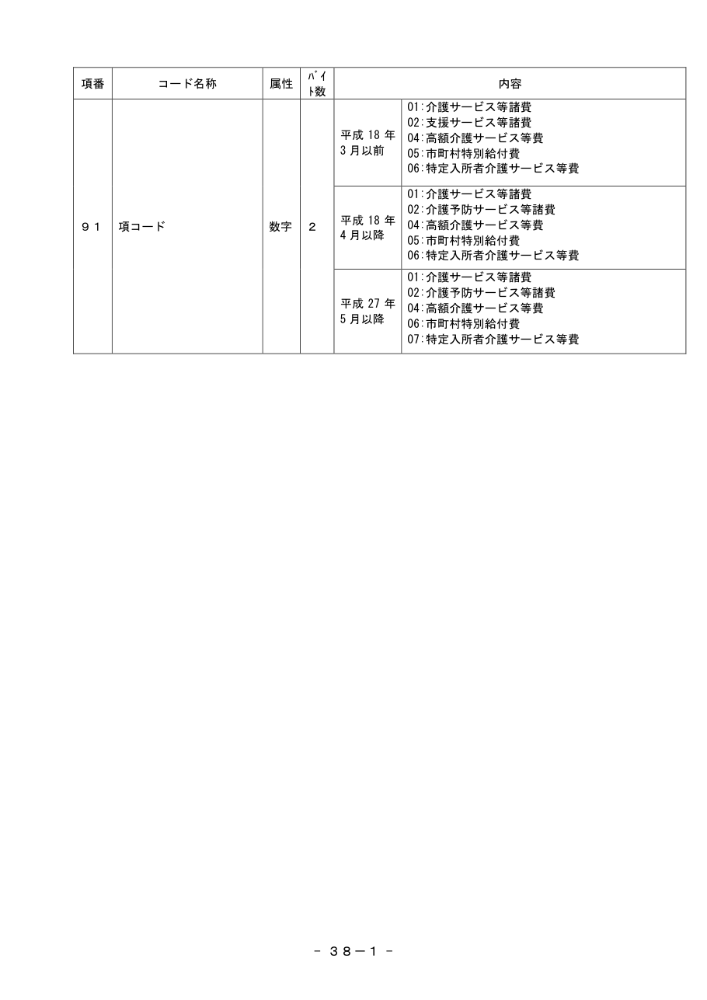
claude-haiku-5-5
- [改ページ] 前後ページで列見出しの書き起こしが一致しない
表1 code_list 前頁から続く次頁へ続く
| 項番 | 項目名 | 属性 | 桁数 | 内容 | 必須 | 備考 | その他の列 |
|---|---|---|---|---|---|---|---|
| ９１ | 項コード | 数字 | 2 | 01:介護サービス等諸費 02:支援サービス等諸費 04:高額介護サービス等費 05:市町村特別給付費 06:特定入所者介護サービス等費 | 内容: 平成 18 年 3 月以前 | ||
| ９１ | 項コード | 数字 | 2 | 01:介護サービス等諸費 02:介護予防サービス等諸費 04:高額介護サービス等費 05:市町村特別給付費 06:特定入所者介護サービス等費 | 内容: 平成 18 年 4 月以降 | ||
| ９１ | 項コード | 数字 | 2 | 01:介護サービス等諸費 02:介護予防サービス等諸費 04:高額介護サービス等費 06:市町村特別給付費 07:特定入所者介護サービス等費 | 内容: 平成 27 年 5 月以降 |
uncertain（モデル自己申告）
- 項番91の表で、内容列が「適用期間」と「コード値」の2つの副列に分かれているが、適用期間の副列には見出しがない。columns は「内容」を2回並べ、適用期間は cells の「内容」に入れた。見出しに無い列名は付けていない。
- 「平成 18 年 3 月以前」などの適用期間は原文で改行されていたため、改行を詰めて1行にした。
claude-sonnet-5-5
- [改ページ] p64→p65 の連続性 OK
表1 code_list 前頁から続く次頁へ続く
| 項番 | 項目名 | 属性 | 桁数 | 内容 | 必須 | 備考 | その他の列 |
|---|---|---|---|---|---|---|---|
| ９１ | 項コード | 数字 | 2 | 平成 18 年3 月以前 01:介護サービス等諸費 02:支援サービス等諸費 04:高額介護サービス等費 05:市町村特別給付費 06:特定入所者介護サービス等費 平成 18 年4 月以降 01:介護サービス等諸費 02:介護予防サービス等諸費 04:高額介護サービス等費 05:市町村特別給付費 06:特定入所者介護サービス等費 平成 27 年5 月以降 01:介護サービス等諸費 02:介護予防サービス等諸費 04:高額介護サービス等費 06:市町村特別給付費 07:特定入所者介護サービス等費 |
uncertain（モデル自己申告）
- 内容列は「平成18年3月以前」等の期間ラベルとコード値の2段に分かれているが、columnsは見出し「内容」のみのため1セルにまとめた
- 項番「９１」は全角表記。ページ番号は「－ ３８－１ －」を半角で記載
kaigo_kyotsu_r0806_p65 — 印字p.
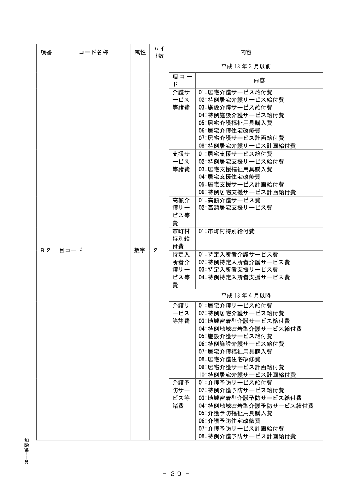
claude-haiku-5-5
- 表1 項番92 項目名がPDFのセルと完全一致しない（部分一致のみ）: '特定入所者介護サービス等費'
- [改ページ] p65→p66 の連続性 OK
表1 code_list 前頁から続く次頁へ続く
| 項番 | 項目名 | 属性 | 桁数 | 内容 | 必須 | 備考 | その他の列 |
|---|---|---|---|---|---|---|---|
| ９２ | 平成18年3月以前 > 介護サービス等諸費 | 数字 | 2 | 01:居宅介護サービス給付費 02:特例居宅介護サービス給付費 03:施設介護サービス給付費 04:特例施設介護サービス給付費 05:居宅介護福祉用具購入費 06:居宅介護住宅改修費 07:居宅介護サービス計画給付費 08:特例居宅介護サービス計画給付費 | |||
| ９２ | 平成18年3月以前 > 支援サービス等諸費 | 数字 | 2 | 01:居宅支援サービス給付費 02:特例居宅支援サービス給付費 03:居宅支援福祉用具購入費 04:居宅支援住宅改修費 05:居宅支援サービス計画給付費 06:特例居宅支援サービス計画給付費 | |||
| ９２ | 平成18年3月以前 > 高額介護サービス等費 | 数字 | 2 | 01:高額介護サービス費 02:高額居宅支援サービス費 | |||
| ９２ | 平成18年3月以前 > 市町村特別給付費 | 数字 | 2 | 01:市町村特別給付費 | |||
| ９２ | 平成18年3月以前 > 特定入所者介護サービス等費 | 数字 | 2 | 01:特定入所者介護サービス費 02:特例特定入所者介護サービス費 03:特定入所者支援サービス費 04:特例特定入所者支援サービス費 | |||
| ９２ | 平成18年4月以降 > 介護サービス等諸費 | 数字 | 2 | 01:居宅介護サービス給付費 02:特例居宅介護サービス給付費 03:地域密着型介護サービス給付費 04:特例地域密着型介護サービス給付費 05:施設介護サービス給付費 06:特例施設介護サービス給付費 07:居宅介護福祉用具購入費 08:居宅介護住宅改修費 09:居宅介護サービス計画給付費 10:特例居宅介護サービス計画給付費 | |||
| ９２ | 平成18年4月以降 > 介護予防サービス等諸費 | 数字 | 2 | 01:介護予防サービス給付費 02:特例介護予防サービス給付費 03:地域密着型介護予防サービス給付費 04:特例地域密着型介護予防サービス給付費 05:介護予防福祉用具購入費 06:介護予防住宅改修費 07:介護予防サービス計画給付費 08:特例介護予防サービス計画給付費 |
uncertain（モデル自己申告）
- 項番92のコード名称が「目コード」と見えており、先頭の文字（「項」等）は前ページ側にあると思われる。前ページからの続きとして書き起こした。
- 表の先頭に見出し行が再掲されているが、ページ先頭からの続きかどうかは判断が分かれる。continued_from_prev_page は true とした。
- 名称欄が「目コード」で途中から始まるため、レコード名（parent 等）は読み取れず空文字とした。
- 「平成18年3月以前」「平成18年4月以降」の区分は内容欄の上の帯として name_path に入れたが、原文の見出しの扱いに誤りがある可能性がある。
claude-sonnet-5-5
- [改ページ] p65→p66 の連続性 OK
- テキストレイヤに見つからないセル: 1 個（赤枠）
表1 code_list 前頁から続く次頁へ続く
| 項番 | 項目名 | 属性 | 桁数 | 内容 | 必須 | 備考 | その他の列 |
|---|---|---|---|---|---|---|---|
| ９２ | 目コード | 数字 | 2 | 平成18年3月以前 項コード 内容 介護サービス等諸費: 01:居宅介護サービス給付費 02:特例居宅介護サービス給付費 03:施設介護サービス給付費 04:特例施設介護サービス給付費 05:居宅介護福祉用具購入費 06:居宅介護住宅改修費 07:居宅介護サービス計画給付費 08:特例居宅介護サービス計画給付費 支援サービス等諸費: 01:居宅支援サービス給付費 02:特例居宅支援サービス給付費 03:居宅支援福祉用具購入費 04:居宅支援住宅改修費 05:居宅支援サービス計画給付費 06:特例居宅支援サービス計画給付費 高額介護サービス等費: 01:高額介護サービス費 02:高額居宅支援サービス費 市町村特別給付費: 01:市町村特別給付費 特定入所者介護サービス等費: 01:特定入所者介護サービス費 02:特例特定入所者介護サービス費 03:特定入所者支援サービス費 04:特例特定入所者支援サービス費 平成18年4月以降 項コード 内容 介護サービス等諸費: 01:居宅介護サービス給付費 02:特例居宅介護サービス給付費 03:地域密着型介護サービス給付費 04:特例地域密着型介護サービス給付費 05:施設介護サービス給付費 06:特例施設介護サービス給付費 07:居宅介護福祉用具購入費 08:居宅介護住宅改修費 09:居宅介護サービス計画給付費 10:特例居宅介護サービス計画給付費 介護予防サービス等諸費: 01:介護予防サービス給付費 02:特例介護予防サービス給付費 03:地域密着型介護予防サービス給付費 04:特例地域密着型介護予防サービス給付費 05:介護予防福祉用具購入費 06:介護予防住宅改修費 07:介護予防サービス計画給付費 08:特例介護予防サービス計画給付費 |
uncertain（モデル自己申告）
- 内容セルは入れ子表（平成18年3月以前／4月以降、項コード別）で、1行にまとめて整形した。
- 左下の縦書き『加除第11号』は欄外表記で未記載。
kaigo_kyotsu_r0806_p66 — 印字p.
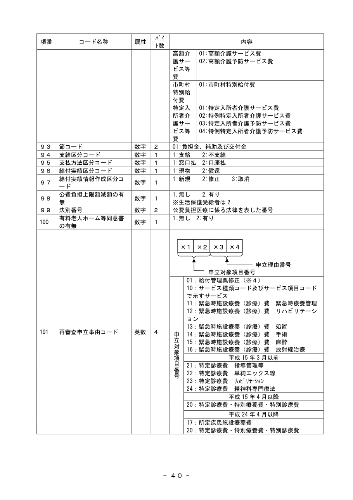
claude-haiku-5-5
- 表1 項番が整数でない行が 3 行
- 表1 桁数が空（原文: None）
- 表1 桁数が空（原文: None）
- 表1 桁数が空（原文: None）
- 表1 項目名がPDFのセルと完全一致しない（部分一致のみ）: '特定入所者介護サービス等費'
- [改ページ] p66→p67 の連続性 OK
- テキストレイヤに見つからないセル: 1 個（赤枠）
表1 code_list 前頁から続く次頁へ続く
| 項番 | 項目名 | 属性 | 桁数 | 内容 | 必須 | 備考 | その他の列 |
|---|---|---|---|---|---|---|---|
| 高額介護サービス等費 | 01:高額介護サービス費 02:高額介護予防サービス費 | ||||||
| 市町村特別給付費 | 01:市町村特別給付費 | ||||||
| 特定入所者介護サービス等費 | 01:特定入所者介護サービス費 02:特例特定入所者介護サービス費 03:特定入所者介護予防サービス費 04:特例特定入所者介護予防サービス費 | ||||||
| ９３ | 節コード | 数字 | 2 | 01:負担金、補助及び交付金 | |||
| ９４ | 支給区分コード | 数字 | 1 | 1:支給 2:不支給 | |||
| ９５ | 支払方法区分コード | 数字 | 1 | 1:窓口払 2:口座払 | |||
| ９６ | 給付実績区分コード | 数字 | 1 | 1:現物 2:償還 | |||
| ９７ | 給付実績情報作成区分コード | 数字 | 1 | 1:新規 2:修正 3:取消 | |||
| ９８ | 公費負担上限額減額の有無 | 数字 | 1 | 1.無し 2.有り ※生活保護受給者は2 | |||
| ９９ | 法別番号 | 数字 | 2 | 公費負担医療に係る法律を表した番号 | |||
| 100 | 有料老人ホーム等同意書の有無 | 数字 | 1 | 1:無し 2:有り | |||
| 101 | 再審査申立事由コード | 英数 | 4 | [図] 01:給付管理票修正（※４） 10:サービス種類コード及びサービス項目コードで示すサービス 11:緊急時施設療養（診療）費 緊急時療養管理 12:緊急時施設療養（診療）費 リハビリテーション 13:緊急時施設療養（診療）費 処置 14:緊急時施設療養（診療）費 手術 15:緊急時施設療養（診療）費 麻酔 16:緊急時施設療養（診療）費 放射線治療 平成15年3月以前 21:特定診療費 指導管理等 22:特定診療費 単純エックス線 23:特定診療費 リハビリテーション 24:特定診療費 精神科専門療法 平成15年4月以降 20:特定診療費・特別療養費・特別診療費 平成24年4月以降 17:所定疾患施設療養費 20:特定診療費・特別療養費・特別診療費 |
uncertain（モデル自己申告）
- 添付ページの下部には「- ４０ -」と印字されているが、依頼では PDF上のページ 66 とされている。添付は印字ページ40に見えるため、対象ページの取り違えの可能性がある。
- 表の先頭（項番93より上）の3行は前ページからの続きで、項番が見えないため no を null にした。コード名称欄は空で、副見出し（高額介護サービス等費・市町村特別給付費・特定入所者介護サービス等費）は内容欄の左側の区画にあるため name_path に入れた。
- 項番101の内容欄左側に縦書きで書かれた「申立対象項目番号」の見出しは、列見出しや項目名ではないため書き起こしていない。
- 項番101の内容欄の上部にある桁の図（×1〜×4 と申立理由番号・申立対象項目番号の矢印）は [図] とした。図中の印字文字「申立理由番号」「申立対象項目番号」は content に含めていない。
- 項番101の「平成15年3月以前」「平成15年4月以降」「平成24年4月以降」は内容欄内の区切り見出しとして content に改行区切りで入れた。
claude-sonnet-5-5
- 表1 項番が整数でない行が 1 行
- 表1 桁数が空（原文: None）
- [改ページ] p66→p67 の連続性 OK
- テキストレイヤに見つからないセル: 2 個（赤枠）
表1 code_list 前頁から続く次頁へ続く
| 項番 | 項目名 | 属性 | 桁数 | 内容 | 必須 | 備考 | その他の列 |
|---|---|---|---|---|---|---|---|
| 高額介護サービス等費: 01:高額介護サービス費 02:高額介護予防サービス費 市町村特別給付費: 01:市町村特別給付費 特定入所者介護サービス等費: 01:特定入所者介護サービス費 02:特例特定入所者介護サービス費 03:特定入所者介護予防サービス費 04:特例特定入所者介護予防サービス費 | |||||||
| ９３ | 節コード | 数字 | 2 | 01:負担金、補助及び交付金 | |||
| ９４ | 支給区分コード | 数字 | 1 | 1:支給 2:不支給 | |||
| ９５ | 支払方法区分コード | 数字 | 1 | 1:窓口払 2:口座払 | |||
| ９６ | 給付実績区分コード | 数字 | 1 | 1:現物 2:償還 | |||
| ９７ | 給付実績情報作成区分コード | 数字 | 1 | 1:新規 2:修正 3:取消 | |||
| ９８ | 公費負担上限額減額の有無 | 数字 | 1 | 1.無し 2.有り ※生活保護受給者は2 | |||
| ９９ | 法別番号 | 数字 | 2 | 公費負担医療に係る法律を表した番号 | |||
| 100 | 有料老人ホーム等同意書の有無 | 数字 | 1 | 1:無し 2:有り | |||
| 101 | 再審査申立事由コード | 英数 | 4 | [図] ×1 ×2 ×3 ×4 申立理由番号 申立対象項目番号 申立対象項目番号: 01：給付管理票修正（※４） 10：サービス種類コード及びサービス項目コードで示すサービス 11：緊急時施設療養（診療）費 緊急時療養管理 12：緊急時施設療養（診療）費 リハビリテーション 13：緊急時施設療養（診療）費 処置 14：緊急時施設療養（診療）費 手術 15：緊急時施設療養（診療）費 麻酔 16：緊急時施設療養（診療）費 放射線治療 平成15年3月以前 21：特定診療費 指導管理等 22：特定診療費 単純エックス線 23：特定診療費 ﾘﾊﾋﾞﾘﾃｰｼｮﾝ 24：特定診療費 精神科専門療法 平成15年4月以降 20：特定診療費・特別療養費・特別診療費 平成24年4月以降 17：所定疾患施設療養費 20：特定診療費・特別療養費・特別診療費 |
uncertain（モデル自己申告）
- 先頭行は前ページからの続きで項番・コード名称が不明。内容の見出し（高額介護サービス等費など）は内容列内の左サブ列として内容に含めた
- 項番101の内容は図とサブ表（申立対象項目番号）を1セルにまとめた。続きが次ページにある可能性あり
kaigo_kyotsu_r0806_p67 — 印字p.
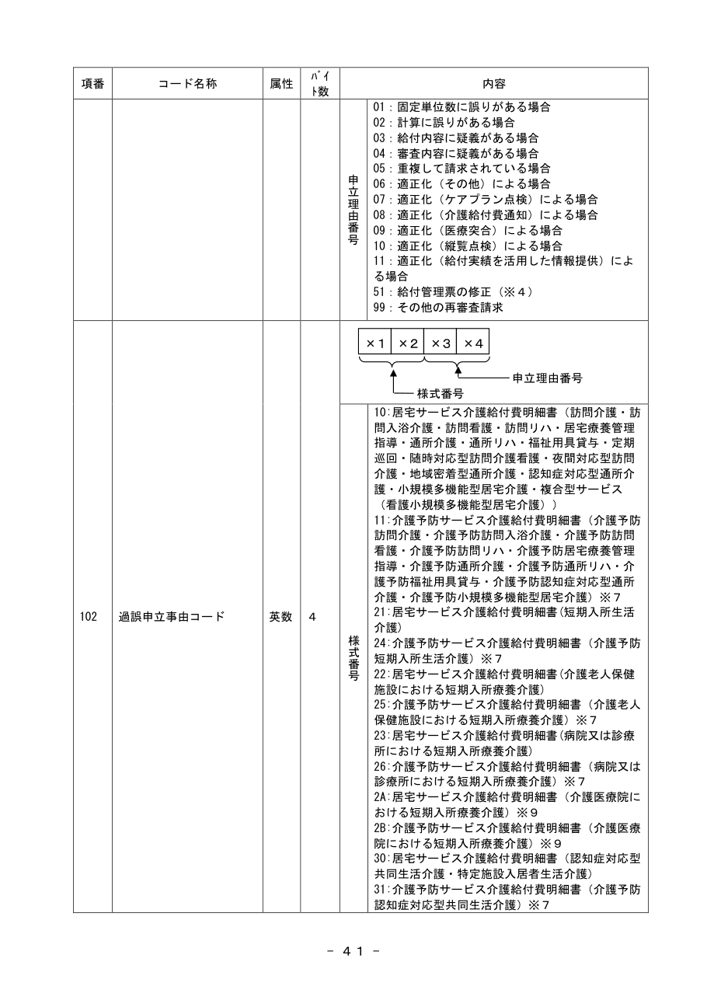
claude-haiku-5-5
- 表1 項番が整数でない行が 1 行
- 表1 桁数が空（原文: None）
- [改ページ] p67→p68 の連続性 OK
- テキストレイヤに見つからないセル: 1 個（赤枠）
表1 code_list 前頁から続く次頁へ続く
| 項番 | 項目名 | 属性 | 桁数 | 内容 | 必須 | 備考 | その他の列 |
|---|---|---|---|---|---|---|---|
| 申立理由番号 | 01：固定単位数に誤りがある場合 02：計算に誤りがある場合 03：給付内容に疑義がある場合 04：審査内容に疑義がある場合 05：重複して請求されている場合 06：適正化（その他）による場合 07：適正化（ケアプラン点検）による場合 08：適正化（介護給付費通知）による場合 09：適正化（医療突合）による場合 10：適正化（縦覧点検）による場合 11：適正化（給付実績を活用した情報提供）による場合 51：給付管理票の修正（※４） 99：その他の再審査請求 | ||||||
| 102 | 過誤申立事由コード | 英数 | 4 | [図] ×1 ×2 ×3 ×4 申立理由番号 様式番号 | |||
| 102 | 過誤申立事由コード > 様式番号 | 英数 | 4 | 10:居宅サービス介護給付費明細書（訪問介護・訪問入浴介護・訪問看護・訪問リハ・居宅療養管理指導・通所介護・通所リハ・福祉用具貸与・定期巡回・随時対応型訪問介護看護・夜間対応型訪問介護・地域密着型通所介護・認知症対応型通所介護・小規模多機能型居宅介護・複合型サービス（看護小規模多機能型居宅介護）） 11:介護予防サービス介護給付費明細書（介護予防訪問介護・介護予防訪問入浴介護・介護予防訪問看護・介護予防訪問リハ・介護予防居宅療養管理指導・介護予防通所介護・介護予防通所リハ・介護予防福祉用具貸与・介護予防認知症対応型通所介護・介護予防小規模多機能型居宅介護）※7 21:居宅サービス介護給付費明細書（短期入所生活介護） 24:介護予防サービス介護給付費明細書（介護予防短期入所生活介護）※7 22:居宅サービス介護給付費明細書(介護老人保健施設における短期入所療養介護) 25:介護予防サービス介護給付費明細書（介護老人保健施設における短期入所療養介護）※7 23:居宅サービス介護給付費明細書(病院又は診療所における短期入所療養介護) 26:介護予防サービス介護給付費明細書（病院又は診療所における短期入所療養介護）※7 2A:居宅サービス介護給付費明細書（介護医療院における短期入所療養介護）※9 2B:介護予防サービス介護給付費明細書（介護医療院における短期入所療養介護）※9 30:居宅サービス介護給付費明細書（認知症対応型共同生活介護・特定施設入居者生活介護） 31:介護予防サービス介護給付費明細書（介護予防認知症対応型共同生活介護）※7 |
uncertain（モデル自己申告）
- 依頼文は「次のページ」の表を求めているが、添付は印字ページ41の1ページのみのため、添付ページの表を書き起こした。
- 最上段の申立理由番号の行（01〜99）は前ページからの続きと判断したが、項番とコード名称が見えないため、項番を null、name_path を申立理由番号とした。
- 申立理由番号の行は前ページからの続きの可能性があるため、所属する項番が前ページに属すると推測されるが原本では確認できない。
- 図（×1〜×4、申立理由番号、様式番号）の印字文字は、図の位置に [図] を付けて content に並べて書き写した。
- 様式番号の一覧は本ページ末尾で途切れており、次ページへ続く可能性があるため continues_to_next_page を true にした。
- ※4・※7・※9 は本ページに注記本文がないため footnotes は空とした。
claude-sonnet-5-5
- 表1 項番が整数でない行が 1 行
- 表1 桁数が空（原文: None）
- [改ページ] p67→p68 の連続性 OK
- テキストレイヤに見つからないセル: 1 個（赤枠）
表1 code_list 前頁から続く次頁へ続く
| 項番 | 項目名 | 属性 | 桁数 | 内容 | 必須 | 備考 | その他の列 |
|---|---|---|---|---|---|---|---|
| 申立理由番号 01:固定単位数に誤りがある場合 02:計算に誤りがある場合 03:給付内容に疑義がある場合 04:審査内容に疑義がある場合 05:重複して請求されている場合 06:適正化（その他）による場合 07:適正化（ケアプラン点検）による場合 08:適正化（介護給付費通知）による場合 09:適正化（医療突合）による場合 10:適正化（縦覧点検）による場合 11:適正化（給付実績を活用した情報提供）による場合 51:給付管理票の修正（※４） 99:その他の再審査請求 | |||||||
| 102 | 過誤申立事由コード | 英数 | 4 | [図] ×1 ×2 ×3 ×4 様式番号 申立理由番号 | |||
| 102 | 過誤申立事由コード | 英数 | 4 | 様式番号 10:居宅サービス介護給付費明細書（訪問介護・訪問入浴介護・訪問看護・訪問リハ・居宅療養管理指導・通所介護・通所リハ・福祉用具貸与・定期巡回・随時対応型訪問介護看護・夜間対応型訪問介護・地域密着型通所介護・認知症対応型通所介護・小規模多機能型居宅介護・複合型サービス（看護小規模多機能型居宅介護）） 11:介護予防サービス介護給付費明細書（介護予防訪問介護・介護予防訪問入浴介護・介護予防訪問看護・介護予防訪問リハ・介護予防居宅療養管理指導・介護予防通所介護・介護予防通所リハ・介護予防福祉用具貸与・介護予防認知症対応型通所介護・介護予防小規模多機能型居宅介護）※７ 21:居宅サービス介護給付費明細書(短期入所生活介護) 24:介護予防サービス介護給付費明細書（介護予防短期入所生活介護）※７ 22:居宅サービス介護給付費明細書(介護老人保健施設における短期入所療養介護) 25:介護予防サービス介護給付費明細書（介護老人保健施設における短期入所療養介護）※７ 23:居宅サービス介護給付費明細書(病院又は診療所における短期入所療養介護) 26:介護予防サービス介護給付費明細書（病院又は診療所における短期入所療養介護）※７ 2A:居宅サービス介護給付費明細書（介護医療院における短期入所療養介護）※９ 2B:介護予防サービス介護給付費明細書（介護医療院における短期入所療養介護）※９ 30:居宅サービス介護給付費明細書（認知症対応型共同生活介護・特定施設入居者生活介護） 31:介護予防サービス介護給付費明細書（介護予防認知症対応型共同生活介護）※７ |
uncertain（モデル自己申告）
- 先頭の行（申立理由番号の01〜99）は前ページからの続きで、項番・コード名称が見えないため no を null とした。
- 項番102の内容は図のセルと様式番号のセルに分かれており、それぞれ別行にした。図中の文字は×1〜×4、様式番号、申立理由番号のみ。
- 属性・バイト数・コード名称は縦結合セルのため、102の両行に同じ値を入れた。
kaigo_kyotsu_r0806_p68 — 印字p.

claude-haiku-5-5
- 表1 項番が整数でない行が 2 行
- 表1 桁数が空（原文: ''）
- 表1 桁数が空（原文: ''）
- [改ページ] p68→p69 の連続性 OK
- テキストレイヤに見つからないセル: 1 個（赤枠）
表1 code_list 前頁から続く次頁へ続く
| 項番 | 項目名 | 属性 | 桁数 | 内容 | 必須 | 備考 | その他の列 |
|---|---|---|---|---|---|---|---|
| 32:居宅サービス介護給付費明細書（特定施設入居者生活介護・地域密着型特定施設入居者介護）※7 33:介護予防サービス介護給付費明細書（介護予防特定施設入居者生活介護）※7 34:居宅サービス介護給付費明細書（認知症対応型共同生活介護（短期利用型））※7 35:介護予防サービス介護給付費明細書（介護予防認知症対応型共同生活介護（短期利用型））※7 36:居宅サービス・地域密着型サービス介護給付費明細書（特定施設入居者生活介護（短期利用型）・地域密着型特定施設入居者生活介護（短期利用型）） 40:居宅介護支援介護給付費明細書 41:介護予防支援介護給付費明細書（介護予防支援）※7 50:施設サービス等介護給付費明細書(介護老人福祉施設・地域密着型介護老人福祉施設) 60:施設サービス等介護給付費明細書(介護老人保健施設) 61:施設サービス等介護給付費明細書（介護医療院）※9 70:施設サービス等介護給付費明細書(介護療養型医療施設) ※１２ | |||||||
| 申立理由番号 | 01:台帳誤り修正による保険者申立の過誤調整 02:請求誤りによる実績取り下げ 09:時効による保険者申立の取下げ 11:台帳誤り修正による事業所申立の過誤調整 12:請求誤りによる実績取り下げ（同月） 21:台帳誤り修正による公費負担者申立の過誤調整 29:時効による公費負担者申立の取下げ 32:給付管理票取消による実績の取下げ（※５） 42:適正化（その他）による保険者申立の過誤取下げ 43:適正化（ケアプラン点検）による保険者申立の過誤取下げ 44:適正化（介護給付費通知）による保険者申立の過誤取下げ 45:適正化（医療突合）による保険者申立の過誤取下げ 46:適正化（縦覧点検）による保険者申立の過誤取下げ 47:適正化（給付実績を活用した情報提供）による保険者申立の過誤取下げ 49:適正化（その他）による保険者申立の過誤取下げ（同月） 4A:適正化（ケアプラン点検）による保険者申立の過誤取下げ（同月） 4B:適正化（介護給付費通知）による保険者申立の過誤取下げ（同月） 4C:適正化（医療突合）による保険者申立の過誤取下げ（同月） 4D:適正化（縦覧点検）による保険者申立の過誤取下げ（同月） |
uncertain（モデル自己申告）
- 表は前ページからの続きと見えるが、見出し行は繰り返し印字されている。前ページ末尾の項番・コード値は確認できない。continued_from_prev_page は推定。
- 次ページへ続くかはページ下端の枠線から推定した。continues_to_next_page は推定。
- 「申立理由番号」は縦書きのグループ見出しで、「内容」列の左側の細い欄に印字されている。列としては扱わず name_path に入れた。上段（32〜70）の行は見出しが無いため name_path を空配列にした。
- 上段の行の項番・コード名称は空欄で、前ページから続く可能性がある。
- ※5・※7・※9・※12 の注記本文はこのページに印字がないため footnotes は空にした。
claude-sonnet-5-5
- 表1 項番が整数でない行が 2 行
- 表1 桁数が空（原文: None）
- 表1 桁数が空（原文: None）
- [改ページ] p68→p69 の連続性 OK
表1 code_list 前頁から続く次頁へ続く
| 項番 | 項目名 | 属性 | 桁数 | 内容 | 必須 | 備考 | その他の列 |
|---|---|---|---|---|---|---|---|
| 32:居宅サービス介護給付費明細書（特定施設入居者生活介護・地域密着型特定施設入居者介護）※７ 33:介護予防サービス介護給付費明細書（介護予防特定施設入居者生活介護）※７ 34:居宅サービス介護給付費明細書（認知症対応型共同生活介護（短期利用型））※７ 35:介護予防サービス介護給付費明細書（介護予防認知症対応型共同生活介護（短期利用型）※７ 36:居宅サービス・地域密着型サービス介護給付費明細書（特定施設入居者生活介護（短期利用型）・地域密着型特定施設入居者生活介護（短期利用型）） 40:居宅介護支援介護給付費明細書 41:介護予防支援介護給付費明細書（介護予防支援）※７ 50:施設サービス等介護給付費明細書(介護老人福祉施設・地域密着型介護老人福祉施設) 60:施設サービス等介護給付費明細書(介護老人保健施設) 61:施設サービス等介護給付費明細書（介護医療院）※９ 70:施設サービス等介護給付費明細書(介護療養型医療施設） ※１２ | |||||||
| 申立理由番号 | 01:台帳誤り修正による保険者申立の過誤調整 02:請求誤りによる実績取り下げ 09:時効による保険者申立の取下げ 11:台帳誤り修正による事業所申立の過誤調整 12:請求誤りによる実績取り下げ（同月） 21:台帳誤り修正による公費負担者申立の過誤調整 29:時効による公費負担者申立の取下げ 32:給付管理票取消による実績の取下げ（※５） 42:適正化（その他）による保険者申立の過誤取下げ 43:適正化（ケアプラン点検）による保険者申立の過誤取下げ 44:適正化（介護給付費通知）による保険者申立の過誤取下げ 45:適正化（医療突合）による保険者申立の過誤取下げ 46:適正化（縦覧点検）による保険者申立の過誤取下げ 47:適正化（給付実績を活用した情報提供）による保険者申立の過誤取下げ 49:適正化（その他）による保険者申立の過誤取下げ（同月） 4A:適正化（ケアプラン点検）による保険者申立の過誤取下げ（同月） 4B:適正化（介護給付費通知）による保険者申立の過誤取下げ（同月） 4C:適正化（医療突合）による保険者申立の過誤取下げ（同月） 4D:適正化（縦覧点検）による保険者申立の過誤取下げ（同月） |
uncertain（モデル自己申告）
- 前ページからの続きの表。先頭セルは前ページから続く内容（項番・コード名称・属性・バイト数は空欄で見えない）
- 1行目のコード一覧がどの項目に属するかはこのページでは不明
- 申立理由番号は縦書きの小見出しとして name_path に入れた（項番・属性・バイト数は不明）
kaigo_kyotsu_r0806_p69 — 印字p.
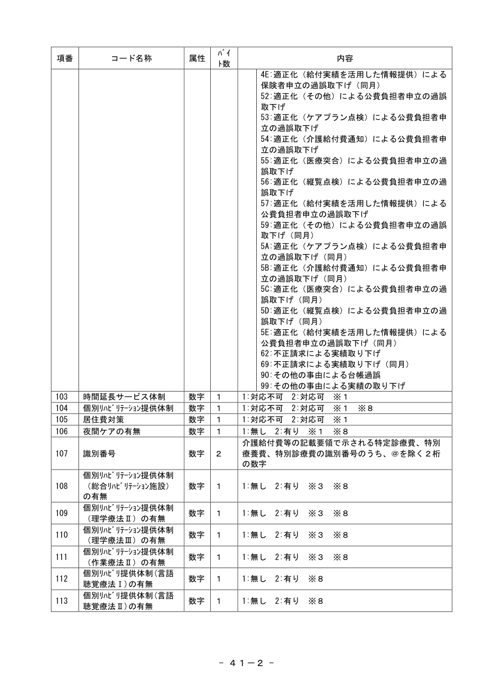
claude-haiku-5-5
- 表1 項番が整数でない行が 1 行
- 表1 桁数が空（原文: None）
- [改ページ] p69→p70 の連続性 OK
表1 code_list 前頁から続く次頁へ続く
| 項番 | 項目名 | 属性 | 桁数 | 内容 | 必須 | 備考 | その他の列 |
|---|---|---|---|---|---|---|---|
| 4E:適正化（給付実績を活用した情報提供）による保険者申立の過誤取下げ（同月） 52:適正化（その他）による公費負担者申立の過誤取下げ 53:適正化（ケアプラン点検）による公費負担者申立の過誤取下げ 54:適正化（介護給付費通知）による公費負担者申立の過誤取下げ 55:適正化（医療突合）による公費負担者申立の過誤取下げ 56:適正化（縦覧点検）による公費負担者申立の過誤取下げ 57:適正化（給付実績を活用した情報提供）による公費負担者申立の過誤取下げ 59:適正化（その他）による公費負担者申立の過誤取下げ（同月） 5A:適正化（ケアプラン点検）による公費負担者申立の過誤取下げ（同月） 5B:適正化（介護給付費通知）による公費負担者申立の過誤取下げ（同月） 5C:適正化（医療突合）による公費負担者申立の過誤取下げ（同月） 5D:適正化（縦覧点検）による公費負担者申立の過誤取下げ（同月） 5E:適正化（給付実績を活用した情報提供）による公費負担者申立の過誤取下げ（同月） 62:不正請求による実績取り下げ 69:不正請求による実績取り下げ（同月） 90:その他の事由による台帳過誤 99:その他の事由による実績の取り下げ | |||||||
| 103 | 時間延長サービス体制 | 数字 | 1 | 1:対応不可 2:対応可 ※1 | |||
| 104 | 個別リハビリテーション提供体制 | 数字 | 1 | 1:対応不可 2:対応可 ※1 ※8 | |||
| 105 | 居住費対策 | 数字 | 1 | 1:対応不可 2:対応可 ※1 | |||
| 106 | 夜間ケアの有無 | 数字 | 1 | 1:無し 2:有り ※1 ※8 | |||
| 107 | 識別番号 | 数字 | 2 | 介護給付費等の記載要領で示される特定診療費、特別療養費、特別診療費の識別番号のうち、@を除く２桁の数字 | |||
| 108 | 個別リハビリテーション提供体制（総合リハビリテーション施設）の有無 | 数字 | 1 | 1:無し 2:有り ※3 ※8 | |||
| 109 | 個別リハビリテーション提供体制（理学療法Ⅱ）の有無 | 数字 | 1 | 1:無し 2:有り ※3 ※8 | |||
| 110 | 個別リハビリテーション提供体制（理学療法Ⅲ）の有無 | 数字 | 1 | 1:無し 2:有り ※3 ※8 | |||
| 111 | 個別リハビリテーション提供体制（作業療法Ⅱ）の有無 | 数字 | 1 | 1:無し 2:有り ※3 ※8 | |||
| 112 | 個別リハビリ提供体制(言語聴覚療法Ⅰ)の有無 | 数字 | 1 | 1:無し 2:有り ※8 | |||
| 113 | 個別リハビリ提供体制(言語聴覚療法Ⅱ)の有無 | 数字 | 1 | 1:無し 2:有り ※8 |
uncertain（モデル自己申告）
- 表の先頭行（4E以前の行）は前ページからの続きで、項番・コード名称・属性・バイト数が見えないため、先頭の項目の内容は見えている部分（4E〜99）のみを書き起こし、name_path を空にした。
- 108〜113 の項目名は小さい片仮名・括弧の字形が判読しにくいため、表記の細部（ﾘﾊﾋﾞﾘﾃｰｼｮﾝの字形、括弧の全角・半角など）が原文と異なる可能性がある。
- 表の下に該当する注記（※1, ※3, ※8 など）の本文はこのページに無いため footnotes は空とした。
claude-sonnet-5-5
- 表1 項番が整数でない行が 1 行
- 表1 桁数が空（原文: None）
- [改ページ] p69→p70 の連続性 OK
表1 code_list 前頁から続く次頁へ続く
| 項番 | 項目名 | 属性 | 桁数 | 内容 | 必須 | 備考 | その他の列 |
|---|---|---|---|---|---|---|---|
| 4E:適正化（給付実績を活用した情報提供）による保険者申立の過誤取下げ（同月） 52:適正化（その他）による公費負担者申立の過誤取下げ 53:適正化（ケアプラン点検）による公費負担者申立の過誤取下げ 54:適正化（介護給付費通知）による公費負担者申立の過誤取下げ 55:適正化（医療突合）による公費負担者申立の過誤取下げ 56:適正化（縦覧点検）による公費負担者申立の過誤取下げ 57:適正化（給付実績を活用した情報提供）による公費負担者申立の過誤取下げ 59:適正化（その他）による公費負担者申立の過誤取下げ（同月） 5A:適正化（ケアプラン点検）による公費負担者申立の過誤取下げ（同月） 5B:適正化（介護給付費通知）による公費負担者申立の過誤取下げ（同月） 5C:適正化（医療突合）による公費負担者申立の過誤取下げ（同月） 5D:適正化（縦覧点検）による公費負担者申立の過誤取下げ（同月） 5E:適正化（給付実績を活用した情報提供）による公費負担者申立の過誤取下げ（同月） 62:不正請求による実績取り下げ 69:不正請求による実績取り下げ（同月） 90:その他の事由による台帳過誤 99:その他の事由による実績の取り下げ | |||||||
| 103 | 時間延長サービス体制 | 数字 | 1 | 1:対応不可 2:対応可 ※1 | |||
| 104 | 個別ﾘﾊﾋﾞﾘﾃｰｼｮﾝ提供体制 | 数字 | 1 | 1:対応不可 2:対応可 ※1 ※8 | |||
| 105 | 居住費対策 | 数字 | 1 | 1:対応不可 2:対応可 ※1 | |||
| 106 | 夜間ケアの有無 | 数字 | 1 | 1:無し 2:有り ※1 ※8 | |||
| 107 | 識別番号 | 数字 | 2 | 介護給付費等の記載要領で示される特定診療費、特別療養費、特別診療費の識別番号のうち、@を除く2桁の数字 | |||
| 108 | 個別ﾘﾊﾋﾞﾘﾃｰｼｮﾝ提供体制（総合ﾘﾊﾋﾞﾘﾃｰｼｮﾝ施設）の有無 | 数字 | 1 | 1:無し 2:有り ※3 ※8 | |||
| 109 | 個別ﾘﾊﾋﾞﾘﾃｰｼｮﾝ提供体制（理学療法Ⅱ）の有無 | 数字 | 1 | 1:無し 2:有り ※3 ※8 | |||
| 110 | 個別ﾘﾊﾋﾞﾘﾃｰｼｮﾝ提供体制（理学療法Ⅲ）の有無 | 数字 | 1 | 1:無し 2:有り ※3 ※8 | |||
| 111 | 個別ﾘﾊﾋﾞﾘﾃｰｼｮﾝ提供体制（作業療法Ⅱ）の有無 | 数字 | 1 | 1:無し 2:有り ※3 ※8 | |||
| 112 | 個別ﾘﾊﾋﾞﾘ提供体制(言語聴覚療法Ⅰ)の有無 | 数字 | 1 | 1:無し 2:有り ※8 | |||
| 113 | 個別ﾘﾊﾋﾞﾘ提供体制(言語聴覚療法Ⅱ)の有無 | 数字 | 1 | 1:無し 2:有り ※8 |
uncertain（モデル自己申告）
- 最初の行（4E〜99）は前ページからの続きのセルで、項番・コード名称・属性・バイト数は空欄
- ページ内の一部項目名の半角カナ・全角表記（ﾘﾊﾋﾞﾘ等）の判読に不確かさがある
kaigo_kyotsu_r0806_p71 — 印字p.

claude-haiku-5-5
- 表1 項番143 項目名がPDFのセルと完全一致しない（部分一致のみ）: '平成21年3月以前'
- 表1 項番143 項目名がPDFのセルと完全一致しない（部分一致のみ）: '平成21年4月以降'
- 表1 項番143 項目名がPDFのセルと完全一致しない（部分一致のみ）: '平成24年4月以降'
- 表1 項番143 項目名がPDFのセルと完全一致しない（部分一致のみ）: '平成28年4月以降'
- [改ページ] p71→p72 の連続性 OK
表1 code_list 前頁から続く次頁へ続く
| 項番 | 項目名 | 属性 | 桁数 | 内容 | 必須 | 備考 | その他の列 |
|---|---|---|---|---|---|---|---|
| 136 | 医療連携体制加算Ⅰ | 数字 | 1 | 平成30年3月以前 1:対応不可 2:対応可 平成30年4月以降 1:無し 2:加算Ⅰ 3:加算Ⅱ 4:加算Ⅲ 2024年4月以降 1:無し 4:加算Ⅰイ 3:加算Ⅰロ 2:加算Ⅰハ | |||
| 137 | ユニットケア体制の有無 | 数字 | 1 | 1:対応不可 2:対応可 | |||
| 138 | 在宅・入所相互利用体制の有無 | 数字 | 1 | 1:対応不可 2:対応可 | |||
| 139 | ターミナルケア体制（看取り介護体制）の有無 > 平成30年3月以前 | 数字 | 1 | 1:無し 2:有り | |||
| 139 | ターミナルケア体制（看取り介護体制）の有無 > 平成30年4月以降 > 介護福祉施設サービス | 数字 | 1 | 1:無し 2:加算Ⅰ 3:加算Ⅱ | |||
| 139 | ターミナルケア体制（看取り介護体制）の有無 > 平成30年4月以降 > 地域密着型介護老人福祉施設 | 数字 | 1 | 1:無し 2:加算Ⅰ 3:加算Ⅱ | |||
| 139 | ターミナルケア体制（看取り介護体制）の有無 > 平成30年4月以降 > 上記以外 | 数字 | 1 | 1:無し 2:有り | |||
| 140 | 身体拘束廃止取組の有無 > 平成30年3月以前 | 数字 | 1 | 1:無し 2:有り | |||
| 140 | 身体拘束廃止取組の有無 > 平成30年4月以降 | 数字 | 1 | 1:減算型 2:基準型 | |||
| 141 | 小規模拠点集合体制の有無 | 数字 | 1 | 1:無し 2:有り | |||
| 142 | 認知症ケア加算の有無 | 数字 | 1 | 1:無し 2:有り | |||
| 143 | 個別機能訓練加算 > 通所介護 > 平成21年3月以前 | 数字 | 1 | 1:無し 2:有り | |||
| 143 | 個別機能訓練加算 > 通所介護 > 平成21年4月以降 | 数字 | 1 | 1:無し 2:加算Ⅰ 3:加算Ⅱ | |||
| 143 | 個別機能訓練加算 > 通所介護 > 平成24年4月以降 | 数字 | 1 | 1:無し 3:加算Ⅰ 4:加算Ⅱ | |||
| 143 | 個別機能訓練加算 > 通所介護 > 平成30年4月以降 | 数字 | 1 | なし | |||
| 143 | 個別機能訓練加算 > 地域密着型通所介護（平成28年4月1日～） > 平成28年4月以降 | 数字 | 1 | 1:無し 3:加算Ⅰ 4:加算Ⅱ | |||
| 143 | 個別機能訓練加算 > 地域密着型通所介護（平成28年4月1日～） > 平成30年4月以降 | 数字 | 1 | なし | |||
| 143 | 個別機能訓練加算 > 介護福祉施設サービス > 2024年3月以前 | 数字 | 1 | 1:無し 2:有り | |||
| 143 | 個別機能訓練加算 > 介護福祉施設サービス > 2024年4月以降 | 数字 | 1 | 1:無し 3:加算Ⅰ 4:加算Ⅱ 5:加算Ⅲ | |||
| 143 | 個別機能訓練加算 > 地域密着型介護老人福祉施設 > 2024年3月以前 | 数字 | 1 | 1:無し 2:有り | |||
| 143 | 個別機能訓練加算 > 地域密着型介護老人福祉施設 > 2024年4月以降 | 数字 | 1 | 1:無し 3:加算Ⅰ 4:加算Ⅱ 5:加算Ⅲ | |||
| 143 | 個別機能訓練加算 > 上記以外 | 数字 | 1 | 1:無し 2:有り |
uncertain（モデル自己申告）
- このページ先頭は項番136から始まり表見出しがないため前ページからの続きと判断したが、前ページは添付されていないため確認できない。
- 表の末尾（143）の下に次ページへの続きがあるかは判断できない。
- 139・143のサービス種類と届出内容の入れ子構造は、サービス種類をname_path、届出内容をcontentに入れた。139と143で届出内容が縦に結合された行は同じ内容を各行に入れた。
- 「平成30年4月以降」「2024年4月以降」の見出しは、136の内容欄の中の見出し行として改行区切りで含めた。
- 表見出しや記録名は読み取れなかったためrecordは空文字、titleはnullとした。
claude-sonnet-5-5
- [改ページ] p71→p72 の連続性 OK
- テキストレイヤに見つからないセル: 1 個（赤枠）
表1 code_list 前頁から続く次頁へ続く
| 項番 | 項目名 | 属性 | 桁数 | 内容 | 必須 | 備考 | その他の列 |
|---|---|---|---|---|---|---|---|
| 136 | 医療連携体制加算Ⅰ | 数字 | 1 | 平成30年3月以前 1:対応不可 2:対応可 平成30年4月以降 1:無し 2:加算Ⅰ 3:加算Ⅱ 4:加算Ⅲ 2024年4月以降 1:無し 4:加算Ⅰイ 3:加算Ⅰロ 2:加算Ⅰハ | |||
| 137 | ユニットケア体制の有無 | 数字 | 1 | 1:対応不可 2:対応可 | |||
| 138 | 在宅・入所相互利用体制の有無 | 数字 | 1 | 1:対応不可 2:対応可 | |||
| 139 | ターミナルケア体制（看取り介護体制）の有無 | 数字 | 1 | 平成30年3月以前 1:無し 2:有り 平成30年4月以降 サービス種類 届出内容 介護福祉施設サービス 1:無し 2:加算Ⅰ 3:加算Ⅱ 地域密着型介護老人福祉施設 1:無し 2:加算Ⅰ 3:加算Ⅱ 上記以外 1:無し 2:有り | |||
| 140 | 身体拘束廃止取組の有無 | 数字 | 1 | 平成30年3月以前 1:無し 2:有り 平成30年4月以降 1:減算型 2:基準型 | |||
| 141 | 小規模拠点集合体制の有無 | 数字 | 1 | 1:無し 2:有り | |||
| 142 | 認知症ケア加算の有無 | 数字 | 1 | 1:無し 2:有り | |||
| 143 | 個別機能訓練加算 | 数字 | 1 | サービス種類 届出内容 通所介護 平成21年3月以前 1:無し 2:有り 平成21年4月以降 1:無し 2:加算Ⅰ 3:加算Ⅱ 平成24年4月以降 1:無し 3:加算Ⅰ 4:加算Ⅱ 平成30年4月以降 なし 地域密着型通所介護（平成28年4月1日～） 平成28年4月以降 1:無し 3:加算Ⅰ 4:加算Ⅱ 平成30年4月以降 なし 介護福祉施設サービス 2024年3月以前 1:無し 2:有り 2024年4月以降 1:無し 3:加算Ⅰ 4:加算Ⅱ 5:加算Ⅲ 地域密着型介護老人福祉施設 2024年3月以前 1:無し 2:有り 2024年4月以降 1:無し 3:加算Ⅰ 4:加算Ⅱ 5:加算Ⅲ 上記以外 1:無し 2:有り |
uncertain（モデル自己申告）
- 内容列は入れ子の表（期間・サービス種類・届出内容）のため、行ごとの内容を改行区切りで1セルにまとめた
- 項番139の内容：地域密着型介護老人福祉施設の届出内容は結合セルで共有（1:無し 2:加算Ⅰ 3:加算Ⅱ）と解釈
- 前ページからの続き（項番136より前の行は不明）
kaigo_kyotsu_r0806_p72 — 印字p.
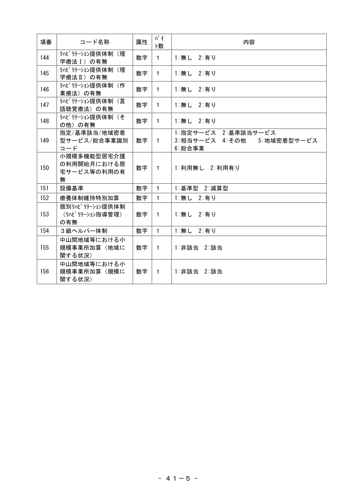
claude-haiku-5-5
- [改ページ] 前後ページで列見出しの書き起こしが一致しない
表1 code_list 前頁から続く次頁へ続く
| 項番 | 項目名 | 属性 | 桁数 | 内容 | 必須 | 備考 | その他の列 |
|---|---|---|---|---|---|---|---|
| 144 | リハビリテーション提供体制（理学療法Ⅰ）の有無 | 数字 | 1 | 1:無し 2:有り | |||
| 145 | リハビリテーション提供体制（理学療法Ⅱ）の有無 | 数字 | 1 | 1:無し 2:有り | |||
| 146 | リハビリテーション提供体制（作業療法）の有無 | 数字 | 1 | 1:無し 2:有り | |||
| 147 | リハビリテーション提供体制（言語聴覚療法）の有無 | 数字 | 1 | 1:無し 2:有り | |||
| 148 | リハビリテーション提供体制（その他）の有無 | 数字 | 1 | 1:無し 2:有り | |||
| 149 | 指定/基準該当/地域密着型サービス/総合事業識別コード | 数字 | 1 | 1:指定サービス 2:基準該当サービス 3:相当サービス 4:その他 5:地域密着型サービス 6:総合事業 | |||
| 150 | 小規模多機能型居宅介護の利用開始月における居宅サービス等の利用の有無 | 数字 | 1 | 1:利用無し 2:利用有り | |||
| 151 | 設備基準 | 数字 | 1 | 1:基準型 2:減算型 | |||
| 152 | 療養体制維持特別加算 | 数字 | 1 | 1:無し 2:有り | |||
| 153 | 個別リハビリテーション提供体制（リハビリテーション指導管理）の有無 | 数字 | 1 | 1:無し 2:有り | |||
| 154 | ３級ヘルパー体制 | 数字 | 1 | 1:無し 2:有り | |||
| 155 | 中山間地域等における小規模事業所加算（地域に関する状況） | 数字 | 1 | 1:非該当 2:該当 | |||
| 156 | 中山間地域等における小規模事業所加算（規模に関する状況） | 数字 | 1 | 1:非該当 2:該当 |
claude-sonnet-5-5
- [改ページ] p72→p73 の連続性 OK
表1 code_list 前頁から続く次頁へ続く
| 項番 | 項目名 | 属性 | 桁数 | 内容 | 必須 | 備考 | その他の列 |
|---|---|---|---|---|---|---|---|
| 144 | ﾘﾊﾋﾞﾘﾃｰｼｮﾝ提供体制（理学療法Ⅰ）の有無 | 数字 | 1 | 1:無し 2:有り | |||
| 145 | ﾘﾊﾋﾞﾘﾃｰｼｮﾝ提供体制（理学療法Ⅱ）の有無 | 数字 | 1 | 1:無し 2:有り | |||
| 146 | ﾘﾊﾋﾞﾘﾃｰｼｮﾝ提供体制（作業療法）の有無 | 数字 | 1 | 1:無し 2:有り | |||
| 147 | ﾘﾊﾋﾞﾘﾃｰｼｮﾝ提供体制（言語聴覚療法）の有無 | 数字 | 1 | 1:無し 2:有り | |||
| 148 | ﾘﾊﾋﾞﾘﾃｰｼｮﾝ提供体制（その他）の有無 | 数字 | 1 | 1:無し 2:有り | |||
| 149 | 指定/基準該当/地域密着型サービス/総合事業識別コード | 数字 | 1 | 1:指定サービス 2:基準該当サービス 3:相当サービス 4:その他 5:地域密着型サービス 6:総合事業 | |||
| 150 | 小規模多機能型居宅介護の利用開始月における居宅サービス等の利用の有無 | 数字 | 1 | 1:利用無し 2:利用有り | |||
| 151 | 設備基準 | 数字 | 1 | 1:基準型 2:減算型 | |||
| 152 | 療養体制維持特別加算 | 数字 | 1 | 1:無し 2:有り | |||
| 153 | 個別ﾘﾊﾋﾞﾘﾃｰｼｮﾝ提供体制（ﾘﾊﾋﾞﾘﾃｰｼｮﾝ指導管理）の有無 | 数字 | 1 | 1:無し 2:有り | |||
| 154 | ３級ヘルパー体制 | 数字 | 1 | 1:無し 2:有り | |||
| 155 | 中山間地域等における小規模事業所加算（地域に関する状況） | 数字 | 1 | 1:非該当 2:該当 | |||
| 156 | 中山間地域等における小規模事業所加算（規模に関する状況） | 数字 | 1 | 1:非該当 2:該当 |
uncertain（モデル自己申告）
- 見出しの「ﾊﾞｲﾄ数」は原文で「ﾊﾞｲ/ﾄ数」と折り返されている
- コード名称の半角カナ小文字表記（ﾘﾊﾋﾞﾘﾃｰｼｮﾝ）は原文の字形から判断
kaigo_kyotsu_r0806_p73 — 印字p.
claude-haiku-5-5
- [改ページ] 前後ページで列見出しの書き起こしが一致しない
表1 code_list 前頁から続く次頁へ続く
| 項番 | 項目名 | 属性 | 桁数 | 内容 | 必須 | 備考 | その他の列 |
|---|---|---|---|---|---|---|---|
| 157 | サービス提供体制強化加算 > 平成27年3月以前 | 英数 | 1 | 訪問入浴介護 訪問リハビリテーション 介護予防訪問入浴介護 介護予防訪問看護 介護予防訪問リハビリテーション | 内容 > 届出内容: 1:無し 2:有り | ||
| 157 | サービス提供体制強化加算 > 平成27年3月以前 | 英数 | 1 | 訪問看護 通所リハビリテーション 介護予防通所介護 介護予防通所リハビリテーション 夜間対応型訪問介護 認知症対応型通所介護 介護予防認知症対応型通所介護 | 内容 > 届出内容: 1:無し 2:加算Ⅰ 3:加算Ⅱ | ||
| 157 | サービス提供体制強化加算 > 平成27年3月以前 | 英数 | 1 | 上記以外 | 内容 > 届出内容: 1:無し 2:加算Ⅰ 3:加算Ⅱ 4:加算Ⅲ | ||
| 157 | サービス提供体制強化加算 > 平成27年4月以降 | 英数 | 1 | 訪問リハビリテーション 介護予防訪問看護 介護予防訪問リハビリテーション | 内容 > 届出内容: 1:無し 2:有り | ||
| 157 | サービス提供体制強化加算 > 平成27年4月以降 | 英数 | 1 | 訪問入浴介護 介護予防訪問入浴介護 | 内容 > 届出内容: 1:無し 3:加算Ⅰイ 2:加算Ⅰロ | ||
| 157 | サービス提供体制強化加算 > 平成27年4月以降 | 英数 | 1 | 訪問看護 | 内容 > 届出内容: 1:無し 2:イ及びロの場合 3:ハの場合 | ||
| 157 | サービス提供体制強化加算 > 平成27年4月以降 | 英数 | 1 | 通所リハビリテーション 介護予防通所介護（※１１） 介護予防通所リハビリテーション 認知症対応型通所介護 介護予防認知症対応型通所介護 | 内容 > 届出内容: 1:無し 4:加算Ⅰイ 2:加算Ⅰロ 3:加算Ⅱ | ||
| 157 | サービス提供体制強化加算 > 平成27年4月以降 | 英数 | 1 | 夜間対応型訪問介護 | 内容 > 届出内容: 1:無し 4:加算Ⅰイ 2:加算Ⅰロ 5:加算Ⅱイ 3:加算Ⅱロ | ||
| 157 | サービス提供体制強化加算 > 平成27年4月以降 | 英数 | 1 | 特定施設入居者生活介護 特定施設入居者生活介護(短期利用型) 介護予防特定施設入居者生活介護 地域密着型特定施設入居者生活介護 地域密着型特定施設入居者生活介護(短期利用型) | 内容 > 届出内容: 1:無し 2:加算Ⅰイ 3:加算Ⅰロ 4:加算Ⅱ 5:加算Ⅲ | ||
| 157 | サービス提供体制強化加算 > 平成27年4月以降 | 英数 | 1 | 上記以外 | 内容 > 届出内容: 1:無し 5:加算Ⅰイ 2:加算Ⅰロ 3:加算Ⅱ 4:加算Ⅲ |
uncertain（モデル自己申告）
- 項番157のコード一覧は、「平成27年3月以前」「平成27年4月以降」が縦結合された見出しで、name_path に入れて行を区別した。
- 「内容」列はサービス種類と届出内容の2列に分かれているため、届出内容は cells に入れた。
- コード名称「サービス提供体制強化加算」は縦結合のため、各行の name_path の先頭に入れた。
- 「介護予防通所介護（※１１）」の※１１は本ページに対応する注記がないため、原文のまま残した。
- 表が次ページへ続くかどうかは本ページからは判断できないため false とした。
claude-sonnet-5-5
- [改ページ] p73→p74 の連続性 OK
- テキストレイヤに見つからないセル: 1 個（赤枠）
表1 code_list 前頁から続く次頁へ続く
| 項番 | 項目名 | 属性 | 桁数 | 内容 | 必須 | 備考 | その他の列 |
|---|---|---|---|---|---|---|---|
| 157 | サービス提供体制強化加算 | 英数 | 1 | 平成27年3月以前 [サービス種類] 訪問入浴介護 訪問ﾘﾊﾋﾞﾘﾃｰｼｮﾝ 介護予防訪問入浴介護 介護予防訪問看護 介護予防訪問ﾘﾊﾋﾞﾘﾃｰｼｮﾝ [届出内容] 1:無し 2:有り [サービス種類] 訪問看護 通所ﾘﾊﾋﾞﾘﾃｰｼｮﾝ 介護予防通所介護 介護予防通所ﾘﾊﾋﾞﾘﾃｰｼｮﾝ 夜間対応型訪問介護 認知症対応型通所介護 介護予防認知症対応型通所介護 [届出内容] 1:無し 2:加算Ⅰ 3:加算Ⅱ [サービス種類] 上記以外 [届出内容] 1:無し 2:加算Ⅰ 3:加算Ⅱ 4:加算Ⅲ 平成27年4月以降 [サービス種類] 訪問ﾘﾊﾋﾞﾘﾃｰｼｮﾝ 介護予防訪問看護 介護予防訪問ﾘﾊﾋﾞﾘﾃｰｼｮﾝ [届出内容] 1:無し 2:有り [サービス種類] 訪問入浴介護 介護予防訪問入浴介護 [届出内容] 1:無し 3:加算Ⅰイ 2:加算Ⅰロ [サービス種類] 訪問看護 [届出内容] 1:無し 2:イ及びロの場合 3:ハの場合 [サービス種類] 通所ﾘﾊﾋﾞﾘﾃｰｼｮﾝ 介護予防通所介護（※１１） 介護予防通所ﾘﾊﾋﾞﾘﾃｰｼｮﾝ 認知症対応型通所介護 介護予防認知症対応型通所介護 [届出内容] 1:無し 4:加算Ⅰイ 2:加算Ⅰロ 3:加算Ⅱ [サービス種類] 夜間対応型訪問介護 [届出内容] 1:無し 4:加算Ⅰイ 2:加算Ⅰロ 5:加算Ⅱイ 3:加算Ⅱロ [サービス種類] 特定施設入居者生活介護 特定施設入居者生活介護(短期利用型) 介護予防特定施設入居者生活介護 地域密着型特定施設入居者生活介護 地域密着型特定施設入居者生活介護(短期利用型) [届出内容] 1:無し 2:加算Ⅰイ 3:加算Ⅰロ 4:加算Ⅱ 5:加算Ⅲ [サービス種類] 上記以外 [届出内容] 1:無し 5:加算Ⅰイ 2:加算Ⅰロ 3:加算Ⅱ 4:加算Ⅲ |
uncertain（モデル自己申告）
- 内容列は入れ子の表（期間・サービス種類・届出内容）で、1項番1行にまとめて書いた。
- 「コード名称」は『サービス提供体制強化加算』が折り返して『算』と表示されているため結合した。
- ローマ数字（Ⅰ、Ⅱ、Ⅲ）の全角・半角表記は画像から確実に判別できない。
kaigo_kyotsu_r0806_p74 — 印字p.
claude-haiku-5-5
- 表1 項番が整数でない行が 8 行
- 表1 桁数が空（原文: None）
- 表1 桁数が空（原文: None）
- 表1 桁数が空（原文: None）
- 表1 桁数が空（原文: None）
- 表1 桁数が空（原文: None）
- 表1 桁数が空（原文: None）
- 表1 桁数が空（原文: None）
- 表1 桁数が空（原文: None）
- [改ページ] p74→p75 の連続性 OK
表1 code_list 前頁から続く次頁へ続く
| 項番 | 項目名 | 属性 | 桁数 | 内容 | 必須 | 備考 | その他の列 |
|---|---|---|---|---|---|---|---|
| 訪問リハビリテーション > 介護予防訪問看護 > 介護予防訪問リハビリテーション | 1:無し 2:有り | ||||||
| 訪問入浴介護 > 介護予防訪問入浴介護 | 1:無し 3:加算Ⅰイ 2:加算Ⅰロ | ||||||
| 訪問看護 | 1:無し 2:イ及びロの場合 3:ハの場合 | ||||||
| 通所リハビリテーション > 介護予防通所介護（※11） > 介護予防通所リハビリテーション > 認知症対応型通所介護 > 介護予防認知症対応型通所介護 | 1:無し 4:加算Ⅰイ 2:加算Ⅰロ 3:加算Ⅱ | ||||||
| 夜間対応型訪問介護 | 1:無し 4:加算Ⅰイ 2:加算Ⅰロ 5:加算Ⅱイ 3:加算Ⅱロ | ||||||
| 特定施設入居者生活介護 > 特定施設入居者生活介護(短期利用型) > 介護予防特定施設入居者生活介護 > 地域密着型特定施設入居者生活介護 > 地域密着型特定施設入居者生活介護(短期利用型) | 1:無し 2:加算Ⅰイ 3:加算Ⅰロ 4:加算Ⅱ 5:加算Ⅲ | ||||||
| 通所介護 | 1:無し 5:加算Ⅰイ 2:加算Ⅰロ 3:加算Ⅱ | ||||||
| 上記以外 | 1:無し 5:加算Ⅰイ 2:加算Ⅰロ 3:加算Ⅱ 4:加算Ⅲ |
uncertain（モデル自己申告）
- 表は前ページからの続きで、項番・コード名称・属性・バイト数の列はこのページでは空欄のため、各行の項番は null としコード名称（サービス名）は name_path に入れた。
- 内容欄の左端に縦結合で印字された「平成28年4月以降」は本表の全行に係ると判断したが、対応する列名が見出しに無いため、どの項目にも格納していない。
- 内容欄は見出しが「内容」のみで、左欄（サービス名）と右欄（コード値）の列名が印字されていないため、列として分けず content に右欄のコード値、name_path に左欄のサービス名を入れた。
- 「介護予防通所介護（※11）」の※11 の注記本文は本ページに無く、footnotes に入れられなかった。
claude-sonnet-5-5
- 表1 項番が整数でない行が 1 行
- 表1 桁数が空（原文: None）
- [改ページ] p74→p75 の連続性 OK
- テキストレイヤに見つからないセル: 1 個（赤枠）
表1 code_list 前頁から続く次頁へ続く
| 項番 | 項目名 | 属性 | 桁数 | 内容 | 必須 | 備考 | その他の列 |
|---|---|---|---|---|---|---|---|
| 平成28年4月以降 訪問ﾘﾊﾋﾞﾘﾃｰｼｮﾝ 介護予防訪問看護 介護予防訪問ﾘﾊﾋﾞﾘﾃｰｼｮﾝ: 1:無し 2:有り 訪問入浴介護 介護予防訪問入浴介護: 1:無し 3:加算Ⅰイ 2:加算Ⅰロ 訪問看護: 1:無し 2:イ及びロの場合 3:ハの場合 通所ﾘﾊﾋﾞﾘﾃｰｼｮﾝ 介護予防通所介護（※１１） 介護予防通所ﾘﾊﾋﾞﾘﾃｰｼｮﾝ 認知症対応型通所介護 介護予防認知症対応型通所介護: 1:無し 4:加算Ⅰイ 2:加算Ⅰロ 3:加算Ⅱ 夜間対応型訪問介護: 1:無し 4:加算Ⅰイ 2:加算Ⅰロ 5:加算Ⅱイ 3:加算Ⅱロ 特定施設入居者生活介護 特定施設入居者生活介護(短期利用型) 介護予防特定施設入居者生活介護 地域密着型特定施設入居者生活介護 地域密着型特定施設入居者生活介護(短期利用型): 1:無し 2:加算Ⅰイ 3:加算Ⅰロ 4:加算Ⅱ 5:加算Ⅲ 通所介護: 1:無し 5:加算Ⅰイ 2:加算Ⅰロ 3:加算Ⅱ 上記以外: 1:無し 5:加算Ⅰイ 2:加算Ⅰロ 3:加算Ⅱ 4:加算Ⅲ |
uncertain（モデル自己申告）
- 前ページからの続きの表で、項番・コード名称・属性・バイト数は空欄。内容列は『平成28年4月以降』の縦書き帯、サービス種類、コード値の3段に分かれており、1行にまとめて書いたため構造は簡略化している。
- 「（※１１）」は介護予防通所介護の後ろに印字されている。
kaigo_kyotsu_r0806_p75 — 印字p.
claude-haiku-5-5
- 表1 項番が整数でない行が 8 行
- 表1 桁数が空（原文: None）
- 表1 桁数が空（原文: None）
- 表1 桁数が空（原文: None）
- 表1 桁数が空（原文: None）
- 表1 桁数が空（原文: None）
- 表1 桁数が空（原文: None）
- 表1 桁数が空（原文: None）
- 表1 桁数が空（原文: None）
- [改ページ] 前後ページで列見出しの書き起こしが一致しない
表1 code_list 前頁から続く次頁へ続く
| 項番 | 項目名 | 属性 | 桁数 | 内容 | 必須 | 備考 | その他の列 |
|---|---|---|---|---|---|---|---|
| 平成30年10月以降 > 訪問リハビリテーション > 介護予防訪問看護 > 介護予防訪問リハビリテーション | 1:無し 2:有り | ||||||
| 平成30年10月以降 > 訪問入浴介護 > 介護予防訪問入浴介護 | 1:無し 3:加算Ⅰイ 2:加算Ⅰロ | ||||||
| 平成30年10月以降 > 訪問看護 | 1:無し 2:イ及びロの場合 3:ハの場合 | ||||||
| 平成30年10月以降 > 通所リハビリテーション > 介護予防通所リハビリテーション > 認知症対応型通所介護 > 介護予防認知症対応型通所介護 > 通所型サービス（みなし） > 通所型サービス（独自） | 1:無し 4:加算Ⅰイ 2:加算Ⅰロ 3:加算Ⅱ | ||||||
| 平成30年10月以降 > 夜間対応型訪問介護 | 1:無し 4:加算Ⅰイ 2:加算Ⅰロ 5:加算Ⅱイ 3:加算Ⅱロ | ||||||
| 平成30年10月以降 > 特定施設入居者生活介護 > 特定施設入居者生活介護(短期利用型) > 介護予防特定施設入居者生活介護 > 地域密着型特定施設入居者生活介護 > 地域密着型特定施設入居者生活介護(短期利用型) | 1:無し 2:加算Ⅰイ 3:加算Ⅰロ 4:加算Ⅱ 5:加算Ⅲ | ||||||
| 平成30年10月以降 > 通所介護 | 1:無し 5:加算Ⅰイ 2:加算Ⅰロ 3:加算Ⅱ | ||||||
| 平成30年10月以降 > 上記以外 | 1:無し 5:加算Ⅰイ 2:加算Ⅰロ 3:加算Ⅱ 4:加算Ⅲ |
uncertain（モデル自己申告）
- このページ上部には表見出しと列見出しがなく、前ページからの続きと判断した（項番・コード名称・属性・バイト数の欄は本ページでは空欄）。
- 「平成30年10月以降」は内容欄の左端に縦結合された見出しとして扱い、name_pathの先頭に入れた。
- 内容欄の左側（サービス名）と右側（コード値）の対応は罫線位置から判断した。
- ページ番号は画像上「- 41－8 -」と読めたため printed_page を 41-8 とした。PDF上のページ番号 75 とは異なる。
claude-sonnet-5-5
- 表1 項番が整数でない行が 1 行
- 表1 桁数が空（原文: None）
- [改ページ] p75→p76 の連続性 OK
表1 code_list 前頁から続く次頁へ続く
| 項番 | 項目名 | 属性 | 桁数 | 内容 | 必須 | 備考 | その他の列 |
|---|---|---|---|---|---|---|---|
| 平成30年10月以降 訪問ﾘﾊﾋﾞﾘﾃｰｼｮﾝ 介護予防訪問看護 介護予防訪問ﾘﾊﾋﾞﾘﾃｰｼｮﾝ 1:無し 2:有り 訪問入浴介護 介護予防訪問入浴介護 1:無し 3:加算Ⅰイ 2:加算Ⅰロ 訪問看護 1:無し 2:イ及びロの場合 3:ハの場合 通所ﾘﾊﾋﾞﾘﾃｰｼｮﾝ 介護予防通所ﾘﾊﾋﾞﾘﾃｰｼｮﾝ 認知症対応型通所介護 介護予防認知症対応型通所介護 通所型サービス（みなし） 通所型サービス（独自） 1:無し 4:加算Ⅰイ 2:加算Ⅰロ 3:加算Ⅱ 夜間対応型訪問介護 1:無し 4:加算Ⅰイ 2:加算Ⅰロ 5:加算Ⅱイ 3:加算Ⅱロ 特定施設入居者生活介護 特定施設入居者生活介護(短期利用型) 介護予防特定施設入居者生活介護 地域密着型特定施設入居者生活介護 地域密着型特定施設入居者生活介護(短期利用型) 1:無し 2:加算Ⅰイ 3:加算Ⅰロ 4:加算Ⅱ 5:加算Ⅲ 通所介護 1:無し 5:加算Ⅰイ 2:加算Ⅰロ 3:加算Ⅱ 上記以外 1:無し 5:加算Ⅰイ 2:加算Ⅰロ 3:加算Ⅱ 4:加算Ⅲ |
uncertain（モデル自己申告）
- 前ページからの続きのセル。項番・コード名称・属性・バイト数は空欄で、内容列は「平成30年10月以降」の縦書き帯とサービス名・コード値の入れ子構造を1行にまとめて記載した。
kaigo_kyotsu_r0806_p76 — 印字p.
claude-haiku-5-5
- 表1 項番が整数でない行が 6 行
- 表1 桁数が空（原文: None）
- 表1 桁数が空（原文: None）
- 表1 桁数が空（原文: None）
- 表1 桁数が空（原文: None）
- 表1 項目名がPDFのセルと完全一致しない（部分一致のみ）: '通所リハビリテーション\n介護予防通所リハビリテーション\n認知症対応型通所介護\n介護予防認知症対応型通所介護\n通所型サービス（独自）'
- 表1 桁数が空（原文: None）
- 表1 桁数が空（原文: None）
- 表1 項目名がPDFのセルと完全一致しない（部分一致のみ）: '特定施設入居者生活介護\n特定施設入居者生活介護(短期利用型)\n介護予防特定施設入居者生活介護\n地域密着型特定施設入居者生活介護\n地域密着型特定施設入居者生活介護(短期利用型)'
- [改ページ] 前後ページで列見出しの書き起こしが一致しない
表1 code_list 前頁から続く次頁へ続く
| 項番 | 項目名 | 属性 | 桁数 | 内容 | 必須 | 備考 | その他の列 |
|---|---|---|---|---|---|---|---|
| 訪問リハビリテーション 介護予防訪問看護 介護予防訪問リハビリテーション | コード名称: － 内容: － 2021年4月以降: 1:無し 3:加算Ⅰ 4:加算Ⅱ 2024年4月以降: － | ||||||
| 訪問入浴介護 介護予防訪問入浴介護 | コード名称: － 内容: － 2021年4月以降: 1:無し 4:加算Ⅰ 3:加算Ⅱ 5:加算Ⅲ 2024年4月以降: － | ||||||
| 訪問看護 | コード名称: － 内容: － 2021年4月以降: 1:無し 4:加算Ⅰ（イ及びロの場合） 2:加算Ⅱ（イ及びロの場合） 5:加算Ⅰ（ハの場合） 3:加算Ⅱ（ハの場合） 2024年4月以降: － | ||||||
| 通所リハビリテーション 介護予防通所リハビリテーション 認知症対応型通所介護 介護予防認知症対応型通所介護 通所型サービス（独自） | コード名称: － 内容: － 2021年4月以降: 1:無し 5:加算Ⅰ 4:加算Ⅱ 6:加算Ⅲ 2024年4月以降: － | ||||||
| 夜間対応型訪問介護 | コード名称: － 内容: － 2021年4月以降: 1:無し 6:加算Ⅰ（イの場合） 4:加算Ⅱ（イの場合） 7:加算Ⅲ（イの場合） 8:加算Ⅰ（ロの場合） 5:加算Ⅱ（ロの場合） 9:加算Ⅲ（ロの場合） 2024年4月以降: － | ||||||
| 特定施設入居者生活介護 特定施設入居者生活介護(短期利用型) 介護予防特定施設入居者生活介護 地域密着型特定施設入居者生活介護 地域密着型特定施設入居者生活介護(短期利用型) | コード名称: － 内容: － 2021年4月以降: 1:無し 6:加算Ⅰ 2:加算Ⅱ 7:加算Ⅲ 2024年4月以降: － |
uncertain（モデル自己申告）
- 表は前ページからの続きで、見えている範囲は項番・コード名称・属性・バイト数の値がなく、内容欄の左側にサービス名、右側に2021年4月以降・2024年4月以降のコード値が並んでいる。項番・コード名称の列はこのページでは空欄のため、項番は null とした。
- 内容欄の右側のコード値セルは、2021年4月以降と2024年4月以降の見出しの下に区切り線がなく、1つのセルとして2列にまたがっているように見える。どちらの期間に属するかは判別できないため、値は『2021年4月以降』列に入れ、『2024年4月以降』列は null とした。
- サービス名（name_path）と内容欄の列構成が原本の見出しと対応しないため、『内容』列は cells に null で入れ、サービス名のみ name_path に入れた。
- 『加算Ⅰ』『加算Ⅱ』『加算Ⅲ』はローマ数字の表記で印字されているとみてそのまま書き起こした。
claude-sonnet-5-5
- 表1 項番が整数でない行が 7 行
- 表1 桁数が空（原文: None）
- 表1 桁数が空（原文: None）
- 表1 桁数が空（原文: None）
- 表1 桁数が空（原文: None）
- 表1 桁数が空（原文: None）
- 表1 桁数が空（原文: None）
- 表1 桁数が空（原文: None）
- [改ページ] p76→p77 の連続性 OK
表1 code_list 前頁から続く次頁へ続く
| 項番 | 項目名 | 属性 | 桁数 | 内容 | 必須 | 備考 | その他の列 |
|---|---|---|---|---|---|---|---|
| 2021年4月以降 2024年4月以降 | |||||||
| 訪問ﾘﾊﾋﾞﾘﾃｰｼｮﾝ 介護予防訪問看護 介護予防訪問ﾘﾊﾋﾞﾘﾃｰｼｮﾝ 1:無し 3:加算Ⅰ 4:加算Ⅱ | |||||||
| 訪問入浴介護 介護予防訪問入浴介護 1:無し 4:加算Ⅰ 3:加算Ⅱ 5:加算Ⅲ | |||||||
| 訪問看護 1:無し 4:加算Ⅰ （イ及びロの場合） 2:加算Ⅱ （イ及びロの場合） 5:加算Ⅰ （ハの場合） 3:加算Ⅱ （ハの場合） | |||||||
| 通所ﾘﾊﾋﾞﾘﾃｰｼｮﾝ 介護予防通所ﾘﾊﾋﾞﾘﾃｰｼｮﾝ 認知症対応型通所介護 介護予防認知症対応型通所介護 通所型サービス（独自） 1:無し 5:加算Ⅰ 4:加算Ⅱ 6:加算Ⅲ | |||||||
| 夜間対応型訪問介護 1:無し 6:加算Ⅰ （イの場合） 4:加算Ⅱ （イの場合） 7:加算Ⅲ （イの場合） 8:加算Ⅰ （ロの場合） 5:加算Ⅱ （ロの場合） 9:加算Ⅲ （ロの場合） | |||||||
| 特定施設入居者生活介護 特定施設入居者生活介護(短期利用型) 介護予防特定施設入居者生活介護 地域密着型特定施設入居者生活介護 地域密着型特定施設入居者生活介護(短期利用型) 1:無し 6:加算Ⅰ 2:加算Ⅱ 7:加算Ⅲ |
uncertain（モデル自己申告）
- 前ページからの続きの表で、項番・コード名称・属性・バイト数は空欄。内容列は左右に分かれており、左がサービス名、右がコード値で、各行を1 itemにまとめた。
- 最初の行の「2021年4月以降」「2024年4月以降」は見出し帯として書き写した。各コード値がどちらの時期に対応するかは判別できない。
kaigo_kyotsu_r0806_p77 — 印字p.
claude-haiku-5-5
- 表1 項番が整数でない行が 2 行
- 表1 桁数が空（原文: None）
- 表1 桁数が空（原文: None）
- [改ページ] p77→p78 の連続性 OK
表1 code_list 前頁から続く次頁へ続く
| 項番 | 項目名 | 属性 | 桁数 | 内容 | 必須 | 備考 | その他の列 |
|---|---|---|---|---|---|---|---|
| 地域密着型通所介護 | 1:無し 6:加算Ⅰ（イの場合） 5:加算Ⅱ（イの場合） 7:加算Ⅲ（イの場合） 8:加算Ⅲイ（ロの場合） 4:加算Ⅲロ（ロの場合） 1:無し 6:加算Ⅰ（イの場合） 5:加算Ⅱ（イの場合） 7:加算Ⅲ（イの場合） 8:加算Ⅲイ（ロの場合） 9:加算Ⅲイ（ハの場合） 4:加算Ⅲロ（ロの場合） A: 加算Ⅲロ（ハの場合） | ||||||
| 上記以外 | 1:無し 6:加算Ⅰ 5:加算Ⅱ 7:加算Ⅲ | ||||||
| 158 | 認知症短期集中リハビリテーション実施加算 > 平成27年3月以前 | 数字 | 1 | 1:無し 2:有り | |||
| 158 | 認知症短期集中リハビリテーション実施加算 > 平成27年4月以降 > 通所リハビリテーション | 数字 | 1 | 1:無し 2:加算Ⅰ 3:加算Ⅱ | |||
| 158 | 認知症短期集中リハビリテーション実施加算 > 平成27年4月以降 > 介護療養型医療施設サービス | 数字 | 1 | 1:無し 2:有り | |||
| 158 | 認知症短期集中リハビリテーション実施加算 > 平成30年4月以降 > 通所リハビリテーション | 数字 | 1 | 1:無し 2:加算Ⅰ 3:加算Ⅱ | |||
| 158 | 認知症短期集中リハビリテーション実施加算 > 平成30年4月以降 > 介護療養型医療施設サービス 介護医療院サービス | 数字 | 1 | 1:無し 2:有り | |||
| 158 | 認知症短期集中リハビリテーション実施加算 > 2024年4月以降 > 通所リハビリテーション | 数字 | 1 | 1:無し 2:加算Ⅰ 3:加算Ⅱ | |||
| 158 | 認知症短期集中リハビリテーション実施加算 > 2024年4月以降 > 介護保健施設サービス 介護医療院サービス | 数字 | 1 | 1:無し 2:有り | |||
| 159 | 若年性認知症利用者（入所者・患者）受入加算 | 数字 | 1 | 1:無し 2:有り | |||
| 160 | 看護体制加算 > 平成27年3月以前 | 数字 | 1 | 1:無し 2:有り | |||
| 160 | 看護体制加算 > 平成27年4月以降 | 数字 | 1 | 1:無し 2:加算Ⅰ 3:加算Ⅱ | |||
| 161 | 夜勤職員配置加算 > 平成30年3月以前 | 数字 | 1 | 1:無し 2:有り | |||
| 161 | 夜勤職員配置加算 > 平成30年4月以降 > 短期入所生活介護 | 数字 | 1 | 1:無し 2:加算Ⅰ・加算Ⅱ 3:加算Ⅲ・加算Ⅳ | |||
| 161 | 夜勤職員配置加算 > 平成30年4月以降 > 介護福祉施設サービス | 数字 | 1 | 1:無し 2:加算Ⅰ・加算Ⅱ 3:加算Ⅲ・加算Ⅳ | |||
| 161 | 夜勤職員配置加算 > 平成30年4月以降 > 地域密着型介護老人福祉施設 | 数字 | 1 | 1:無し 2:加算Ⅰ・加算Ⅱ 3:加算Ⅲ・加算Ⅳ | |||
| 161 | 夜勤職員配置加算 > 平成30年4月以降 > 上記以外 | 数字 | 1 | 1:無し 2:有り |
uncertain（モデル自己申告）
- ページ先頭の「地域密着型通所介護」の行は前ページからの続きで、項番・コード名称が見えないため項番を null としました。
- 「地域密着型通所介護」の内容セルにある左右2列の値に見出しがなく、どちらがどの区分かは判別できないため、左列と右列を続けて1つの content に入れました。
- 158・160・161 の内容は入れ子の表（期間・サービス種類・届出内容）を平坦化し、name_path で期間やサービス種類を区別しています。元の見出しは書き写していません。
- name_path の先頭（コード名称）は、ページ内で確認できる行の名称から補いました。前ページ由来の行は名称が見えないため、内容内の見出しのみを入れています。
- 最下行（161）の後に続きがあるかどうかは表の終わりが見えないため推定で true としました。
claude-sonnet-5-5
- 表1 項番が整数でない行が 1 行
- 表1 桁数が空（原文: None）
- [改ページ] p77→p78 の連続性 OK
- テキストレイヤに見つからないセル: 4 個（赤枠）
表1 code_list 前頁から続く次頁へ続く
| 項番 | 項目名 | 属性 | 桁数 | 内容 | 必須 | 備考 | その他の列 |
|---|---|---|---|---|---|---|---|
| 地域密着型通所介護 [平成27年3月以前] 1:無し 6:加算Ⅰ(イの場合) 5:加算Ⅱ(イの場合) 7:加算Ⅲ(イの場合) 8:加算Ⅲイ(ロの場合) 4:加算Ⅲロ(ロの場合) [平成27年4月以降] 1:無し 6:加算Ⅰ(イの場合) 5:加算Ⅱ(イの場合) 7:加算Ⅲ(イの場合) 8:加算Ⅲイ(ロの場合) 9:加算Ⅲイ(ハの場合) 4:加算Ⅲロ(ロの場合) A:加算Ⅲロ(ハの場合) 上記以外 1:無し 6:加算Ⅰ 5:加算Ⅱ 7:加算Ⅲ | |||||||
| 158 | 認知症短期集中リハビリテーション実施加算 | 数字 | 1 | 平成27年3月以前: 1:無し 2:有り 平成27年4月以降: 通所ﾘﾊﾋﾞﾘﾃｰｼｮﾝ 1:無し 2:加算Ⅰ 3:加算Ⅱ / 介護療養型医療施設サービス 1:無し 2:有り 平成30年4月以降: 通所ﾘﾊﾋﾞﾘﾃｰｼｮﾝ 1:無し 2:加算Ⅰ 3:加算Ⅱ / 介護療養型医療施設サービス、介護医療院サービス 1:無し 2:有り 2024年4月以降: 通所ﾘﾊﾋﾞﾘﾃｰｼｮﾝ 1:無し 2:加算Ⅰ 3:加算Ⅱ / 介護保健施設サービス、介護医療院サービス 1:無し 2:有り | |||
| 159 | 若年性認知症利用者(入所者・患者)受入加算 | 数字 | 1 | 1:無し 2:有り | |||
| 160 | 看護体制加算 | 数字 | 1 | 平成27年3月以前: 1:無し 2:有り 平成27年4月以降: 1:無し 2:加算Ⅰ 3:加算Ⅱ | |||
| 161 | 夜勤職員配置加算 | 数字 | 1 | 平成30年3月以前: 1:無し 2:有り 平成30年4月以降: 短期入所生活介護、介護福祉施設サービス、地域密着型介護老人福祉施設 1:無し 2:加算Ⅰ・加算Ⅱ 3:加算Ⅲ・加算Ⅳ / 上記以外 1:無し 2:有り |
uncertain（モデル自己申告）
- 先頭の行(項番なし)は前ページからの続きのセル。入れ子の内容セルは1行にまとめたため構造が簡略化されている
- 地域密着型通所介護の左右2列の区分(平成27年3月以前/4月以降)は見出しが見えないため推測
- 各項番の内容は入れ子の表のため平坦化して書き起こした
kaigo_kyotsu_r0806_p79 — 印字p.
claude-haiku-5-5
- 表1 項番177 項目名がPDFのセルと完全一致しない（部分一致のみ）: '訪問看護\n訪問リハビリテーション\n居宅介護支援\n介護予防支援\n介護予防訪問看護\n介護予防訪問リハビリテーション\n介護予防ケアマネジメント'
- [改ページ] p79→p80 の連続性 OK
表1 code_list 前頁から続く次頁へ続く
| 項番 | 項目名 | 属性 | 桁数 | 内容 | 必須 | 備考 | その他の列 |
|---|---|---|---|---|---|---|---|
| 176 | 生活機能向上グループ活動加算 | 数字 | 1 | 1:無し 2:有り | |||
| 177 | 介護職員等処遇改善加算 > 平成27年3月以前 | 英数 | 1 | 1:無し 2:加算Ⅰ 3:加算Ⅱ 4:加算Ⅲ | |||
| 177 | 介護職員等処遇改善加算 > 平成27年4月以降 | 英数 | 1 | 1:無し 5:加算Ⅰ 2:加算Ⅱ 3:加算Ⅲ 4:加算Ⅳ | |||
| 177 | 介護職員等処遇改善加算 > 平成29年4月以降 | 英数 | 1 | 1:無し 6:加算Ⅰ 5:加算Ⅱ 2:加算Ⅲ 3:加算Ⅳ 4:加算Ⅴ | |||
| 177 | 介護職員等処遇改善加算 > 2022年4月以降 | 英数 | 1 | 1:無し 6:加算Ⅰ 5:加算Ⅱ 2:加算Ⅲ | |||
| 177 | 介護職員等処遇改善加算 > 2024年6月以降 | 英数 | 1 | 1:無し 7:加算Ⅰ 8:加算Ⅱ 9:加算Ⅲ A:加算Ⅳ B:加算Ⅴ(1) C:加算Ⅴ(2) D:加算Ⅴ(3) E:加算Ⅴ(4) F:加算Ⅴ(5) G:加算Ⅴ(6) H:加算Ⅴ(7) J:加算Ⅴ(8) K:加算Ⅴ(9) L:加算Ⅴ(10) M:加算Ⅴ(11) N:加算Ⅴ(12) P:加算Ⅴ(13) R:加算Ⅴ(14) | |||
| 177 | 介護職員等処遇改善加算 > 2025年4月以降 | 英数 | 1 | 1:無し 7:加算Ⅰ 8:加算Ⅱ 9:加算Ⅲ A:加算Ⅳ | |||
| 177 | 介護職員等処遇改善加算 > 2026年6月以降 > 訪問看護 訪問リハビリテーション 居宅介護支援 介護予防支援 介護予防訪問看護 介護予防訪問リハビリテーション 介護予防ケアマネジメント | 英数 | 1 | 1:無し 2:有り | |||
| 177 | 介護職員等処遇改善加算 > 2026年6月以降 > 上記以外 | 英数 | 1 | 1:無し 7:加算Ⅰイ S:加算Ⅰロ 8:加算Ⅱイ T:加算Ⅱロ 9:加算Ⅲ A:加算Ⅳ | |||
| 178 | 二次予防事業区分コード | 数字 | 1 | 1:非該当 2:該当 | |||
| 179 | 算定単位 | 数字 | 2 | 01:1回につき 02:1日につき 03:1月につき 05:1週間につき | |||
| 180 | 算定回数制限期間 | 数字 | 2 | 01:1月につき 08:1日につき 16:1週間につき | |||
| 181 | 支給限度額対象区分 | 数字 | 1 | 3:区分支給限度額管理の対象 | |||
| 182 | 利用者負担定率／定額区分 | 数字 | 1 | 1:定率 2:定額 | |||
| 183 | 二次予防事業対象者実施区分 | 数字 | 1 | 1:実施不可 2:実施可 | |||
| 184 | 要支援１受給者実施区分 | 数字 | 1 | 1:実施不可 2:実施可 | |||
| 185 | 要支援２受給者実施区分 | 数字 | 1 | 1:実施不可 2:実施可 |
uncertain（モデル自己申告）
- 表は見出し行が繰り返されており前ページからの続きと見られる。ページ末尾の185で区切れているため次ページへの続きの有無は判断できない（continues_to_next_page は true としたが不確か）。
- 177の内容欄は期間ごとの入れ子になっており、期間の見出しは列名がないため name_path の2番目に入れた。2026年6月以降の訪問看護等の一覧は1つの name_path 要素に改行区切りで入れた。
- 177の2026年6月以降の行は赤字・黄色の強調表示のまま書き起こした（強調は内容に影響しない前提）。
- 177の内容は『加算Ⅰイ』『加算Ⅰロ』等の読みを画像の折り返しから判断した。
claude-sonnet-5-5
- [改ページ] p79→p80 の連続性 OK
- テキストレイヤに見つからないセル: 1 個（赤枠）
表1 code_list 前頁から続く次頁へ続く
| 項番 | 項目名 | 属性 | 桁数 | 内容 | 必須 | 備考 | その他の列 |
|---|---|---|---|---|---|---|---|
| 176 | 生活機能向上グループ活動加算 | 数字 | 1 | 1:無し 2:有り | |||
| 177 | 介護職員等処遇改善加算 | 英数 | 1 | 平成27年3月以前: 1:無し 2:加算Ⅰ 3:加算Ⅱ 4:加算Ⅲ 平成27年4月以降: 1:無し 5:加算Ⅰ 2:加算Ⅱ 3:加算Ⅲ 4:加算Ⅳ 平成29年4月以降: 1:無し 6:加算Ⅰ 5:加算Ⅱ 2:加算Ⅲ 3:加算Ⅳ 4:加算Ⅴ 2022年4月以降: 1:無し 6:加算Ⅰ 5:加算Ⅱ 2:加算Ⅲ 2024年6月以降: 1:無し 7:加算Ⅰ 8:加算Ⅱ 9:加算Ⅲ A:加算Ⅳ B:加算Ⅴ(1) C:加算Ⅴ(2) D:加算Ⅴ(3) E:加算Ⅴ(4) F:加算Ⅴ(5) G:加算Ⅴ(6) H:加算Ⅴ(7) J:加算Ⅴ(8) K:加算Ⅴ(9) L:加算Ⅴ(10) M:加算Ⅴ(11) N:加算Ⅴ(12) P:加算Ⅴ(13) R:加算Ⅴ(14) 2025年4月以降: 1:無し 7:加算Ⅰ 8:加算Ⅱ 9:加算Ⅲ A:加算Ⅳ 2026年6月以降 訪問看護/訪問リハビリテーション/居宅介護支援/介護予防支援/介護予防訪問看護/介護予防訪問リハビリテーション/介護予防ケアマネジメント: 1:無し 2:有り 2026年6月以降 上記以外: 1:無し 7:加算Ⅰイ S:加算Ⅰロ 8:加算ⅡイT:加算Ⅱロ 9:加算Ⅲ A:加算Ⅳ | |||
| 178 | 二次予防事業区分コード | 数字 | 1 | 1:非該当 2:該当 | |||
| 179 | 算定単位 | 数字 | 2 | 01:１回につき 02:１日につき 03:１月につき 05:１週間につき | |||
| 180 | 算定回数制限期間 | 数字 | 2 | 01:１月につき 08:１日につき 16:１週間につき | |||
| 181 | 支給限度額対象区分 | 数字 | 1 | 3:区分支給限度額管理の対象 | |||
| 182 | 利用者負担定率／定額区分 | 数字 | 1 | 1:定率 2:定額 | |||
| 183 | 二次予防事業対象者実施区分 | 数字 | 1 | 1:実施不可 2:実施可 | |||
| 184 | 要支援１受給者実施区分 | 数字 | 1 | 1:実施不可 2:実施可 | |||
| 185 | 要支援２受給者実施区分 | 数字 | 1 | 1:実施不可 2:実施可 |
uncertain（モデル自己申告）
- 項番177の内容は入れ子の表（期間別）で、期間名と内容を1つのcontentにまとめて書いた。2026年6月以降の部分は黄色の強調表示あり。
- 項番177の「8:加算ⅡイT:加算Ⅱロ」の間の区切りは原文で判別しづらい（改行折り返し）。
kaigo_kyotsu_r0806_p80 — 印字p.
claude-haiku-5-5
- [改ページ] p80→p81 の連続性 OK
- テキストレイヤに見つからないセル: 1 個（赤枠）
表1 code_list 前頁から続く次頁へ続く
| 項番 | 項目名 | 属性 | 桁数 | 内容 | 必須 | 備考 | その他の列 |
|---|---|---|---|---|---|---|---|
| 186 | 過誤申立事由コード（介護予防・日常生活支援総合事業（経過措置）） | 英数 | 4 | [図] ×1 ×2 ×3 ×4 申立理由番号 様式番号 | |||
| 186 | 過誤申立事由コード（介護予防・日常生活支援総合事業（経過措置）） > 様式番号 | 英数 | 4 | 10:介護予防・日常生活支援総合事業費明細書（予防サービス費・生活支援サービス費） 20:介護予防・日常生活支援総合事業費明細書（ケアマネジメント費） | |||
| 186 | 過誤申立事由コード（介護予防・日常生活支援総合事業（経過措置）） > 申立理由番号 | 英数 | 4 | 02:請求誤りによる実績取り下げ 09:時効による保険者申立の取下げ 12:請求誤りによる実績取り下げ（同月） 42:適正化（その他）による保険者申立の過誤取下げ 43:適正化（ケアプラン点検）による保険者申立の過誤取下げ 44:適正化（介護給付費通知）による保険者申立の過誤取下げ 45:適正化（医療突合）による保険者申立の過誤取下げ 46:適正化（縦覧点検）による保険者申立の過誤取下げ 47:適正化（給付実績を活用した情報提供）による保険者申立の過誤取下げ 49:適正化（その他）による保険者申立の過誤取下げ（同月） 4A:適正化（ケアプラン点検）による保険者申立の過誤取下げ（同月） 4B:適正化（介護給付費通知）による保険者申立の過誤取下げ（同月） 4C:適正化（医療突合）による保険者申立の過誤取下げ（同月） 4D:適正化（縦覧点検）による保険者申立の過誤取下げ（同月） 4E:適正化（給付実績を活用した情報提供）による保険者申立の過誤取下げ（同月） 99:その他の事由による実績の取り下げ | |||
| 187 | 款コード（介護予防・日常生活支援総合事業（経過措置）） | 数字 | 2 | 05:地域支援事業費 | |||
| 188 | 項コード（介護予防・日常生活支援総合事業（経過措置）） | 数字 | 2 | 01:介護予防日常生活支援総合事業費 |
uncertain（モデル自己申告）
- 186行の内容欄の図は、印字された文字（×1 ×2 ×3 ×4 申立理由番号 様式番号）を content の先頭に [図] と併記して書き写したが、図の位置・構成の解釈は含めていない。
- 186行の「様式番号」「申立理由番号」は内容欄内の縦書きの行見出しとして扱い name_path に入れた。
- 表見出し行は1ページ目の先頭に印字されており、前ページからの続きかどうかは本ページからは判断できない。
claude-sonnet-5-5
- [改ページ] p80→p81 の連続性 OK
- テキストレイヤに見つからないセル: 1 個（赤枠）
表1 code_list 前頁から続く次頁へ続く
| 項番 | 項目名 | 属性 | 桁数 | 内容 | 必須 | 備考 | その他の列 |
|---|---|---|---|---|---|---|---|
| 186 | 過誤申立事由コード（介護予防・日常生活支援総合事業（経過措置）） | 英数 | 4 | [図] 様式番号 申立理由番号 様式番号 10：介護予防・日常生活支援総合事業費明細書（予防サービス費・生活支援サービス費） 20：介護予防・日常生活支援総合事業費明細書（ケアマネジメント費） 申立理由番号 02:請求誤りによる実績取り下げ 09:時効による保険者申立の取下げ 12:請求誤りによる実績取り下げ（同月） 42:適正化（その他）による保険者申立の過誤取下げ 43:適正化（ケアプラン点検）による保険者申立の過誤取下げ 44:適正化（介護給付費通知）による保険者申立の過誤取下げ 45:適正化（医療突合）による保険者申立の過誤取下げ 46:適正化（縦覧点検）による保険者申立の過誤取下げ 47:適正化（給付実績を活用した情報提供）による保険者申立の過誤取下げ 49:適正化（その他）による保険者申立の過誤取下げ（同月） 4A:適正化（ケアプラン点検）による保険者申立の過誤取下げ（同月） 4B:適正化（介護給付費通知）による保険者申立の過誤取下げ（同月） 4C:適正化（医療突合）による保険者申立の過誤取下げ（同月） 4D:適正化（縦覧点検）による保険者申立の過誤取下げ（同月） 4E:適正化（給付実績を活用した情報提供）による保険者申立の過誤取下げ（同月） 99:その他の事由による実績の取り下げ | |||
| 187 | 款コード（介護予防・日常生活支援総合事業（経過措置）） | 数字 | 2 | 05:地域支援事業費 | |||
| 188 | 項コード（介護予防・日常生活支援総合事業（経過措置）） | 数字 | 2 | 01:介護予防日常生活支援総合事業費 |
uncertain（モデル自己申告）
- 項番186の内容セルは図（×1×2×3×4の桁図解）を含む。図中の文字は「×1 ×2 ×3 ×4」「様式番号」「申立理由番号」。content には[図]と図中文字のみ記載し、様式番号と申立理由番号のサブ見出しは内容に含めた。
- 項番186はコード名称の前後で表がページ上端から始まるため、前ページから続くかは不明（見出し行あり）。
kaigo_kyotsu_r0806_p81 — 印字p.
claude-haiku-5-5
- [改ページ] p81→p82 の連続性 OK
- テキストレイヤに見つからないセル: 2 個（赤枠）
表1 code_list 前頁から続く次頁へ続く
| 項番 | 項目名 | 属性 | 桁数 | 内容 | 必須 | 備考 | その他の列 |
|---|---|---|---|---|---|---|---|
| 189 | 目コード（介護予防・日常生活支援総合事業（経過措置）） | 数字 | 2 | 01:要支援者向け事業費 02:二次予防向け事業費 | |||
| 190 | 住所地特例対象者区分コード | 数字 | 1 | 1:非該当 2:該当 | |||
| 191 | 施設所在保険者番号 | 数字 | 6 | 住所地特例対象者が入所（居）する施設の所在する市町村の証記載保険者番号 | |||
| 192 | 再審査申立事由コード（介護予防・日常生活支援総合事業） | 英数 | 4 | [図] ×1 ×2 ×3 ×4 申立対象項目番号 申立理由番号 項目番号・申立対象：01：給付管理票修正（※4） 申立理由番号：51：給付管理票の修正（※4） | |||
| 193 | 過誤申立事由コード（介護予防・日常生活支援総合事業） | 英数 | 4 | [図] ×1 ×2 ×3 ×4 申立理由番号 様式番号 様式番号：10：介護予防・日常生活支援総合事業費明細書（訪問型サービス費・通所型サービス費・その他の生活支援サービス費） 20：介護予防・日常生活支援総合事業費明細書（介護予防ケアマネジメント費） 申立理由番号：01:台帳誤り修正による保険者申立の過誤調整 02:請求誤りによる実績取り下げ 09:時効による保険者申立の取下げ 11:台帳誤り修正による事業所申立の過誤調整 12:請求誤りによる実績取り下げ（同月） 21:台帳誤り修正による公費負担者申立の過誤調整 29:時効による公費負担者申立の取下げ 32:給付管理票取消による実績の取下げ（※５） 42:適正化（その他）による保険者申立の過誤取下げ 43:適正化（ケアプラン点検）による保険者申立の過誤取下げ 44:適正化（介護給付費通知）による保険者申立の過誤取下げ 45:適正化（医療突合）による保険者申立の過誤取下げ 46:適正化（縦覧点検）による保険者申立の過誤取下げ 47:適正化（給付実績を活用した情報提供）による保険者申立の過誤取下げ |
uncertain（モデル自己申告）
- 189の項番の「目コード」は名称の頭部が前ページからの続きと判断される（「目コード」より前の文字が見えていない）。
- 192・193の内容欄にある図の印字文字（×1〜×4、申立対象項目番号、申立理由番号、様式番号）は図の中の文字として扱い、図の位置に[図]を置いた。図の構造（どの範囲がどのラベルに対応するか）は言葉で説明していない。
- 192の内容欄で縦書きに分割された「項目番号・申立対象」「申立理由番号」の見出しは、読み取りで併記した。
- 193の申立理由番号の一覧は最後の行「47:…」が表の下端で切れており、次ページに続く可能性がある。
- 注記記号の※4・※5に対応する注記は本ページにないため footnotes には入れていない。
claude-sonnet-5-5
- [改ページ] p81→p82 の連続性 OK
- テキストレイヤに見つからないセル: 2 個（赤枠）
表1 code_list 前頁から続く次頁へ続く
| 項番 | 項目名 | 属性 | 桁数 | 内容 | 必須 | 備考 | その他の列 |
|---|---|---|---|---|---|---|---|
| 189 | 目コード（介護予防・日常生活支援総合事業（経過措置）） | 数字 | 2 | 01:要支援者向け事業費 02:二次予防向け事業費 | |||
| 190 | 住所地特例対象者区分コード | 数字 | 1 | 1:非該当 2:該当 | |||
| 191 | 施設所在保険者番号 | 数字 | 6 | 住所地特例対象者が入所（居）する施設の所在する市町村の証記載保険者番号 | |||
| 192 | 再審査申立事由コード（介護予防・日常生活支援総合事業） | 英数 | 4 | [図] ×1 ×2 ×3 ×4 申立対象項目番号 申立理由番号 | |||
| 192 | 再審査申立事由コード（介護予防・日常生活支援総合事業） > 申立対象項目番号 | 英数 | 4 | 01：給付管理票修正（※４） | |||
| 192 | 再審査申立事由コード（介護予防・日常生活支援総合事業） > 申立理由番号 | 英数 | 4 | 51：給付管理票の修正（※４） | |||
| 193 | 過誤申立事由コード（介護予防・日常生活支援総合事業） | 英数 | 4 | [図] ×1 ×2 ×3 ×4 様式番号 申立理由番号 | |||
| 193 | 過誤申立事由コード（介護予防・日常生活支援総合事業） > 様式番号 | 英数 | 4 | 10：介護予防・日常生活支援総合事業費明細書（訪問型サービス費・通所型サービス費・その他の生活支援サービス費） 20：介護予防・日常生活支援総合事業費明細書（介護予防ケアマネジメント費） | |||
| 193 | 過誤申立事由コード（介護予防・日常生活支援総合事業） > 申立理由番号 | 英数 | 4 | 01:台帳誤り修正による保険者申立の過誤調整 02:請求誤りによる実績取り下げ 09:時効による保険者申立の取下げ 11:台帳誤り修正による事業所申立の過誤調整 12:請求誤りによる実績取り下げ（同月） 21:台帳誤り修正による公費負担者申立の過誤調整 29:時効による公費負担者申立の取下げ 32:給付管理票取消による実績の取下げ（※５） 42:適正化（その他）による保険者申立の過誤取下げ 43:適正化（ケアプラン点検）による保険者申立の過誤取下げ 44:適正化（介護給付費通知）による保険者申立の過誤取下げ 45:適正化（医療突合）による保険者申立の過誤取下げ 46:適正化（縦覧点検）による保険者申立の過誤取下げ 47:適正化（給付実績を活用した情報提供）による保険者申立の過誤取下げ |
uncertain（モデル自己申告）
- 項番192/193の図解セルは図中の文字のみ記載。
- 項番193の内容は次ページに続く可能性あり。
- 192/193の小項目行の属性・バイト数は親行の結合セルを複製した。
kaigo_kyotsu_r0806_p82 — 印字p.
claude-haiku-5-5
- 表1 項番が整数でない行が 1 行
- 表1 桁数が空（原文: None）
- [改ページ] 前後ページで列見出しの書き起こしが一致しない
表1 code_list 前頁から続く次頁へ続く
| 項番 | 項目名 | 属性 | 桁数 | 内容 | 必須 | 備考 | その他の列 |
|---|---|---|---|---|---|---|---|
| 49:適正化（その他）による保険者申立の過誤取下げ（同月） 4A:適正化（ケアプラン点検）による保険者申立の過誤取下げ（同月） 4B:適正化（介護給付費通知）による保険者申立の過誤取下げ（同月） 4C:適正化（医療突合）による保険者申立の過誤取下げ（同月） 4D:適正化（縦覧点検）による保険者申立の過誤取下げ（同月） 4E:適正化（給付実績を活用した情報提供）による保険者申立の過誤取下げ（同月） 52:適正化（その他）による公費負担者申立の過誤取下げ 53:適正化（ケアプラン点検）による公費負担者申立の過誤取下げ 54:適正化（介護給付費通知）による公費負担者申立の過誤取下げ 55:適正化（医療突合）による公費負担者申立の過誤取下げ 56:適正化（縦覧点検）による公費負担者申立の過誤取下げ 57:適正化（給付実績を活用した情報提供）による公費負担者申立の過誤取下げ 59:適正化（その他）による公費負担者申立の過誤取下げ（同月） 5A:適正化（ケアプラン点検）による公費負担者申立の過誤取下げ（同月） 5B:適正化（介護給付費通知）による公費負担者申立の過誤取下げ（同月） 5C:適正化（医療突合）による公費負担者申立の過誤取下げ（同月） 5D:適正化（縦覧点検）による公費負担者申立の過誤取下げ（同月） 5E:適正化（給付実績を活用した情報提供）による公費負担者申立の過誤取下げ（同月） 62:不正請求による実績取り下げ 69:不正請求による実績取り下げ（同月） 90:その他の事由による台帳過誤 99:その他の事由による実績の取り下げ | |||||||
| 194 | 款コード（介護予防・日常生活支援総合事業） | 数字 | 2 | 05:地域支援事業費 | |||
| 195 | 項コード（介護予防・日常生活支援総合事業） | 数字 | 2 | 01:介護予防生活支援サービス事業費 | |||
| 196 | 目コード（介護予防・日常生活支援総合事業） | 数字 | 2 | 平成３０年３月以前 01:介護予防生活支援サービス事業費 02:介護予防ケアマネジメント事業費 平成３０年４月以降 01:第１号訪問通所等事業費 02:第１号介護予防支援事業費 |
uncertain（モデル自己申告）
- 先頭行は前ページからの続きで項番・コード名称・属性・バイト数が見えないため、no と name_path を空にし、内容のみ書き写した。
- 先頭行の内容（49から99まで）が前ページのどの項番に属するかは読み取れない。
- 表の末尾（196）の下に続きがあるか、ページ下端で終わるかは判断が難しいため continues_to_next_page を true とした。
- 「平成３０年３月以前」「平成３０年４月以降」は内容セル内の区切り見出しとして content に含めた。全角・半角の数字表記は画像から確定できないため全角で書き写した。
claude-sonnet-5-5
- 表1 項番が整数でない行が 1 行
- 表1 桁数が空（原文: None）
- [改ページ] p82→p83 の連続性 OK
表1 code_list 前頁から続く次頁へ続く
| 項番 | 項目名 | 属性 | 桁数 | 内容 | 必須 | 備考 | その他の列 |
|---|---|---|---|---|---|---|---|
| 49:適正化（その他）による保険者申立の過誤取下げ（同月） 4A:適正化（ケアプラン点検）による保険者申立の過誤取下げ（同月） 4B:適正化（介護給付費通知）による保険者申立の過誤取下げ（同月） 4C:適正化（医療突合）による保険者申立の過誤取下げ（同月） 4D:適正化（縦覧点検）による保険者申立の過誤取下げ（同月） 4E:適正化（給付実績を活用した情報提供）による保険者申立の過誤取下げ（同月） 52:適正化（その他）による公費負担者申立の過誤取下げ 53:適正化（ケアプラン点検）による公費負担者申立の過誤取下げ 54:適正化（介護給付費通知）による公費負担者申立の過誤取下げ 55:適正化（医療突合）による公費負担者申立の過誤取下げ 56:適正化（縦覧点検）による公費負担者申立の過誤取下げ 57:適正化（給付実績を活用した情報提供）による公費負担者申立の過誤取下げ 59:適正化（その他）による公費負担者申立の過誤取下げ（同月） 5A:適正化（ケアプラン点検）による公費負担者申立の過誤取下げ（同月） 5B:適正化（介護給付費通知）による公費負担者申立の過誤取下げ（同月） 5C:適正化（医療突合）による公費負担者申立の過誤取下げ（同月） 5D:適正化（縦覧点検）による公費負担者申立の過誤取下げ（同月） 5E:適正化（給付実績を活用した情報提供）による公費負担者申立の過誤取下げ（同月） 62:不正請求による実績取り下げ 69:不正請求による実績取り下げ（同月） 90:その他の事由による台帳過誤 99:その他の事由による実績の取り下げ | |||||||
| 194 | 款コード（介護予防・日常生活支援総合事業） | 数字 | 2 | 05:地域支援事業費 | |||
| 195 | 項コード（介護予防・日常生活支援総合事業） | 数字 | 2 | 01:介護予防生活支援サービス事業費 | |||
| 196 | 目コード（介護予防・日常生活支援総合事業） | 数字 | 2 | 平成30年3月以前 01:介護予防生活支援サービス事業費 02:介護予防ケアマネジメント事業費 平成30年4月以降 01:第1号訪問通所等事業費 02:第1号介護予防支援事業費 |
uncertain（モデル自己申告）
- 先頭行(項番なし)は前ページからの続きのセル
- 項番196の内容の続きは次ページにある可能性あり
- 項番196の「平成30年3月以前」等の文字は全角/半角の数字の区別が不明瞭
kaigo_kyotsu_r0806_p83 — 印字p.
claude-haiku-5-5
- [改ページ] 前後ページで列見出しの書き起こしが一致しない
表1 code_list 前頁から続く次頁へ続く
| 項番 | 項目名 | 属性 | 桁数 | 内容 | 必須 | 備考 | その他の列 |
|---|---|---|---|---|---|---|---|
| 197 | 意見書作成料種別 | 数字 | 1 | 1:在宅 2:施設 | サービス種類: － 届出内容: － | ||
| 198 | 意見書作成料申請種別 | 数字 | 1 | 1:新規 2:継続 | サービス種類: － 届出内容: － | ||
| 199 | 事業対象者実施区分 | 数字 | 1 | 1:実施不可 2:実施可 | サービス種類: － 届出内容: － | ||
| 200 | 短期集中リハビリテーション実施加算 | 数字 | 1 | 1:無し 2:有り | サービス種類: － 届出内容: － | ||
| 201 | 短期集中個別リハビリテーション実施加算 | 数字 | 1 | 1:無し 2:有り | サービス種類: － 届出内容: － | ||
| 202 | リハビリテーションマネジメント加算 > 平成30年3月以前 | 数字 | 1 | サービス種類: － 届出内容: 1:無し 2:加算Ⅰ 3:加算Ⅱ | |||
| 202 | リハビリテーションマネジメント加算 > 平成30年4月以降 > 訪問リハビリテーション | 数字 | 1 | サービス種類: 訪問リハビリテーション 届出内容: 1:無し 2:加算Ⅰ 3:加算Ⅱ 4:加算Ⅲ 5:加算Ⅳ | |||
| 202 | リハビリテーションマネジメント加算 > 平成30年4月以降 > 通所リハビリテーション | 数字 | 1 | サービス種類: 通所リハビリテーション 届出内容: 1:無し 2:加算Ⅰ 3:加算Ⅱ 4:加算Ⅲ 5:加算Ⅳ | |||
| 202 | リハビリテーションマネジメント加算 > 平成30年4月以降 > 介護予防訪問リハビリテーション | 数字 | 1 | サービス種類: 介護予防訪問リハビリテーション 届出内容: 1:無し 2:有り | |||
| 202 | リハビリテーションマネジメント加算 > 平成30年4月以降 > 介護予防通所リハビリテーション | 数字 | 1 | サービス種類: 介護予防通所リハビリテーション 届出内容: 1:無し 2:有り | |||
| 202 | リハビリテーションマネジメント加算 > 2021年4月以降 > 訪問リハビリテーション | 数字 | 1 | サービス種類: 訪問リハビリテーション 届出内容: 1:無し 3:加算Ａイ 6:加算Ａロ 4:加算Ｂイ 7:加算Ｂロ | |||
| 202 | リハビリテーションマネジメント加算 > 2021年4月以降 > 通所リハビリテーション | 数字 | 1 | サービス種類: 通所リハビリテーション 届出内容: 1:無し 3:加算Ａイ 6:加算Ａロ 4:加算Ｂイ 7:加算Ｂロ | |||
| 202 | リハビリテーションマネジメント加算 > 2021年4月以降 > 介護予防訪問リハビリテーション | 数字 | 1 | サービス種類: 介護予防訪問リハビリテーション 届出内容: なし | |||
| 202 | リハビリテーションマネジメント加算 > 2021年4月以降 > 介護予防通所リハビリテーション | 数字 | 1 | サービス種類: 介護予防通所リハビリテーション 届出内容: なし | |||
| 202 | リハビリテーションマネジメント加算 > 2024年6月以降 > 訪問リハビリテーション | 数字 | 1 | サービス種類: 訪問リハビリテーション 届出内容: 1:無し 3:加算イ 6:加算ロ | |||
| 202 | リハビリテーションマネジメント加算 > 2024年6月以降 > 通所リハビリテーション | 数字 | 1 | サービス種類: 通所リハビリテーション 届出内容: 1:無し 3:加算イ 6:加算ロ 8:加算ハ | |||
| 203 | 移行支援加算 | 数字 | 1 | 1:無し 2:有り | サービス種類: － 届出内容: － | ||
| 204 | 中重度者ケア体制加算 | 数字 | 1 | 1:無し 2:有り | サービス種類: － 届出内容: － | ||
| 205 | 個別送迎体制強化加算 | 数字 | 1 | 1:無し 2:有り | サービス種類: － 届出内容: － | ||
| 206 | 入浴介助体制強化加算 | 数字 | 1 | 1:無し 2:有り | サービス種類: － 届出内容: － | ||
| 207 | 生活行為向上リハビリテーション実施加算 | 数字 | 1 | 1:無し 2:有り | サービス種類: － 届出内容: － | ||
| 208 | 医療連携強化加算 | 数字 | 1 | 1:無し 2:有り | サービス種類: － 届出内容: － | ||
| 209 | 特定事業所集中減算 | 数字 | 1 | 1:無し 2:有り | サービス種類: － 届出内容: － |
uncertain（モデル自己申告）
- 202の内容欄は入れ子の表になっている。訪問リハビリテーションと通所リハビリテーションの届出内容、介護予防訪問と介護予防通所の届出内容は結合セルと判断して両行に同じ値を入れた。
- 202の「加算Ⅰ」「加算Ⅱ」などのローマ数字が画像の字形から判然としない箇所がある（Ⅰ/Ⅱ/Ⅲ/Ⅳ、Ａ/Ｂ/イ/ロ/ハ）。
- セル内の全角スペース区切りの正確な幅は画像から確認しきれていない。
claude-sonnet-5-5
- [改ページ] p83→p84 の連続性 OK
- テキストレイヤに見つからないセル: 1 個（赤枠）
表1 code_list 前頁から続く次頁へ続く
| 項番 | 項目名 | 属性 | 桁数 | 内容 | 必須 | 備考 | その他の列 |
|---|---|---|---|---|---|---|---|
| 197 | 意見書作成料種別 | 数字 | 1 | 1:在宅 2:施設 | |||
| 198 | 意見書作成料申請種別 | 数字 | 1 | 1:新規 2:継続 | |||
| 199 | 事業対象者実施区分 | 数字 | 1 | 1:実施不可 2:実施可 | |||
| 200 | 短期集中リハビリテーション実施加算 | 数字 | 1 | 1:無し 2:有り | |||
| 201 | 短期集中個別リハビリテーション実施加算 | 数字 | 1 | 1:無し 2:有り | |||
| 202 | リハビリテーションマネジメント加算 | 数字 | 1 | 平成30年3月以前: 1:無し 2:加算Ⅰ 3:加算Ⅱ 平成30年4月以降: サービス種類 訪問リハビリテーション、通所リハビリテーション: 届出内容 1:無し 2:加算Ⅰ 3:加算Ⅱ 4:加算Ⅲ 5:加算Ⅳ サービス種類 介護予防訪問リハビリテーション、介護予防通所リハビリテーション: 届出内容 1:無し 2:有り 2021年4月以降: サービス種類 訪問リハビリテーション、通所リハビリテーション: 届出内容 1:無し 3:加算Ａイ 6:加算Ａロ 4:加算Ｂイ 7:加算Ｂロ サービス種類 介護予防訪問リハビリテーション、介護予防通所リハビリテーション: 届出内容 なし 2024年6月以降: サービス種類 訪問リハビリテーション: 届出内容 1:無し 3:加算イ 6:加算ロ サービス種類 通所リハビリテーション: 届出内容 1:無し 3:加算イ 6:加算ロ 8:加算ハ | |||
| 203 | 移行支援加算 | 数字 | 1 | 1:無し 2:有り | |||
| 204 | 中重度者ケア体制加算 | 数字 | 1 | 1:無し 2:有り | |||
| 205 | 個別送迎体制強化加算 | 数字 | 1 | 1:無し 2:有り | |||
| 206 | 入浴介助体制強化加算 | 数字 | 1 | 1:無し 2:有り | |||
| 207 | 生活行為向上リハビリテーション実施加算 | 数字 | 1 | 1:無し 2:有り | |||
| 208 | 医療連携強化加算 | 数字 | 1 | 1:無し 2:有り | |||
| 209 | 特定事業所集中減算 | 数字 | 1 | 1:無し 2:有り |
uncertain（モデル自己申告）
- 項番202の内容はネストした表（期間×サービス種類×届出内容）を1セルに改行で整理して記載した。
- 項番202の「加算Ⅰ」等のローマ数字表記は原文の字形に近い形で記載。
- 前ページから続く表。
kaigo_kyotsu_r0806_p84 — 印字p.

claude-haiku-5-5
- [改ページ] p84→p85 の連続性 OK
- テキストレイヤに見つからないセル: 2 個（赤枠）
表1 code_list 前頁から続く次頁へ続く
| 項番 | 項目名 | 属性 | 桁数 | 内容 | 必須 | 備考 | その他の列 |
|---|---|---|---|---|---|---|---|
| 210 | 認知症加算 | 数字 | 1 | 2024年3月以前 1:無し 2:有り 2024年4月以降 サービス種類：小規模多機能型居宅介護 届出内容：1:無し 2:加算Ⅰ 3:加算Ⅱ サービス種類：複合型サービス（看護小規模多機能型居宅介護） 届出内容：1:無し 2:加算Ⅰ 3:加算Ⅱ サービス種類：通所介護 届出内容：1:無し 2:有り サービス種類：地域密着型通所介護 届出内容：1:無し 2:有り | |||
| 211 | 総合マネジメント体制強化加算 | 数字 | 1 | 2024年3月以前 1:無し 2:有り 2024年4月以降 1:無し 3:加算Ⅰ 2:加算Ⅱ | |||
| 212 | 看護体制強化加算 | 数字 | 1 | 平成30年3月以前 1:無し 2:有り 平成30年4月以降 サービス種類：介護予防訪問看護 届出内容：1:無し 2:有り サービス種類：上記以外 届出内容：1:無し 3:加算Ⅰ 2:加算Ⅱ | |||
| 213 | 訪問看護体制強化加算 | 数字 | 1 | 1:無し 2:有り | |||
| 214 | 看取り連携体制加算 | 数字 | 1 | 1:無し 2:有り | |||
| 215 | 訪問体制強化加算 | 数字 | 1 | 1:無し 2:有り | |||
| 216 | 夜間支援体制加算 | 数字 | 1 | 1:無し 2:加算Ⅰ 3:加算Ⅱ | |||
| 217 | 一体的サービス提供加算 | 数字 | 1 | 1:無し 2:有り | |||
| 218 | 訪問看護体制減算 | 数字 | 1 | 1:無し 2:有り | |||
| 219 | 個人番号 | 数字 | 12 | 介護保険被保険者の個人番号 | |||
| 220 | 運動器機能向上体制 | 数字 | 1 | 1:無し（省略可能） 2:有り |
uncertain（モデル自己申告）
- 210認知症加算の内容欄は入れ子の表（サービス種類・届出内容）になっており、階層を改行と「サービス種類：…届出内容：…」の形で平坦化した。届出内容の対応は原図の罫線から読み取った。
- 212看護体制強化加算の内容欄も入れ子の表であり、同様に平坦化した。
- ページ番号は「－４１－１６－」を41-16として書き起こした。
claude-sonnet-5-5
- [改ページ] p84→p85 の連続性 OK
- テキストレイヤに見つからないセル: 3 個（赤枠）
表1 code_list 前頁から続く次頁へ続く
| 項番 | 項目名 | 属性 | 桁数 | 内容 | 必須 | 備考 | その他の列 |
|---|---|---|---|---|---|---|---|
| 210 | 認知症加算 | 数字 | 1 | 2024年3月以前: 1:無し 2:有り 2024年4月以降: 小規模多機能型居宅介護 / 複合型サービス（看護小規模多機能型居宅介護）: 1:無し 2:加算Ⅰ 3:加算Ⅱ 通所介護 / 地域密着型通所介護: 1:無し 2:有り | |||
| 211 | 総合マネジメント体制強化加算 | 数字 | 1 | 2024年3月以前: 1:無し 2:有り 2024年4月以降: 1:無し 3:加算Ⅰ 2:加算Ⅱ | |||
| 212 | 看護体制強化加算 | 数字 | 1 | 平成30年3月以前: 1:無し 2:有り 平成30年4月以降: 介護予防訪問看護: 1:無し 2:有り 上記以外: 1:無し 3:加算Ⅰ 2:加算Ⅱ | |||
| 213 | 訪問看護体制強化加算 | 数字 | 1 | 1:無し 2:有り | |||
| 214 | 看取り連携体制加算 | 数字 | 1 | 1:無し 2:有り | |||
| 215 | 訪問体制強化加算 | 数字 | 1 | 1:無し 2:有り | |||
| 216 | 夜間支援体制加算 | 数字 | 1 | 1:無し 2:加算Ⅰ 3:加算Ⅱ | |||
| 217 | 一体的サービス提供加算 | 数字 | 1 | 1:無し 2:有り | |||
| 218 | 訪問看護体制減算 | 数字 | 1 | 1:無し 2:有り | |||
| 219 | 個人番号 | 数字 | 12 | 介護保険被保険者の個人番号 | |||
| 220 | 運動器機能向上体制 | 数字 | 1 | 1:無し（省略可能） 2:有り |
uncertain（モデル自己申告）
- 項番210-212の内容セルは入れ子の結合表のため、期間・サービス種類・届出内容を1セルにまとめて書き起こした
- 前ページからの続きの表
kaigo_kyotsu_r0806_p85 — 印字p.
claude-haiku-5-5
- [改ページ] p85→p86 の連続性 OK
表1 code_list 前頁から続く次頁へ続く
| 項番 | 項目名 | 属性 | 桁数 | 内容 | 必須 | 備考 | その他の列 |
|---|---|---|---|---|---|---|---|
| 221 | 栄養マネジメント（改善）体制 | 数字 | 1 | 1:無し（省略可能） 2:有り | |||
| 222 | 口腔機能向上体制 | 数字 | 1 | 1:無し（省略可能） 2:有り | |||
| 223 | 事業所評価加算 | 数字 | 1 | 1:無し（省略可能） 2:有り | |||
| 224 | 摘要種類コード > 様式 第四の三 | 数字 | 2 | 02:利用者状態等コード | |||
| 224 | 摘要種類コード > 様式 第四の四 | 数字 | 2 | 02:利用者状態等コード | |||
| 224 | 摘要種類コード > 様式 第九の二 | 数字 | 2 | 01:ＤＰＣコード（疾患コード） 02:利用者状態等コード | |||
| 225 | 情報区分 | 数字 | 2 | 01:介護利用者負担額 02:介護高額支給額 03:介護利用者負担額（世帯内合計） 04:介護高額支給額（世帯内合計） 05:介護年間高額支給額 06:事業利用者負担額 07:事業高額支給額 08:事業利用者負担額（世帯内合計） 09:事業高額支給額（世帯内合計） 10:事業年間高額支給額 | |||
| 226 | 生活相談員配置等加算 | 数字 | 1 | 1:無し 2:有り | |||
| 227 | 個別機能訓練体制Ⅰ | 数字 | 1 | 1:無し 2:有り | |||
| 228 | 個別機能訓練体制Ⅱ | 数字 | 1 | 1:無し 2:有り | |||
| 229 | 看護体制加算Ⅰ又はⅢ | 数字 | 1 | 1:無し 2:加算Ⅰ 3:加算Ⅲ | |||
| 230 | 看護体制加算Ⅱ又はⅣ | 数字 | 1 | 1:無し 2:加算Ⅱ 3:加算Ⅳ | |||
| 231 | テクノロジーの導入（夜勤職員配置加算関係） | 数字 | 1 | 1:無し 2:有り | |||
| 232 | 食堂の有無 | 数字 | 1 | 1:基準型 2:減算型 | |||
| 233 | 重度認知症疾患療養体制加算 | 数字 | 1 | 1:無し 2:加算Ⅰ 3:加算Ⅱ | |||
| 234 | 入居継続支援加算 > 2021年3月以前 | 数字 | 1 | 1:無し 2:有り | |||
| 234 | 入居継続支援加算 > 2021年4月以降 | 数字 | 1 | 1:無し 2:加算Ⅰ 3:加算Ⅱ | |||
| 235 | ターミナルケアマネジメント加算 | 数字 | 1 | 1:無し 2:有り | |||
| 236 | 配置医師緊急時対応加算 | 数字 | 1 | 1:無し 2:有り | |||
| 237 | 褥瘡マネジメント加算 | 数字 | 1 | 1:無し 2:有り | |||
| 238 | 移行定着支援加算 | 数字 | 1 | 1:無し 2:有り | |||
| 239 | 共生型サービスの提供（居宅介護事業所） | 数字 | 1 | 1:無し 2:有り | |||
| 240 | 共生型サービスの提供（重度訪問介護事業所） | 数字 | 1 | 1:無し 2:有り | |||
| 241 | 共生型サービスの提供（生活介護事業所） | 数字 | 1 | 1:無し 2:有り | |||
| 242 | 共生型サービスの提供（自立訓練事業所） | 数字 | 1 | 1:無し 2:有り | |||
| 243 | 共生型サービスの提供（児童発達支援事業所） | 数字 | 1 | 1:無し 2:有り | |||
| 244 | 共生型サービスの提供（放課後等デイサービス事業所） | 数字 | 1 | 1:無し 2:有り |
uncertain（モデル自己申告）
- 表の最終行（244）の下で表が閉じており、次ページへ続くかどうかは判断できない。continues_to_next_page は項番の連続性から true と推定した。
- 項番224と234では、内容列の中に「様式 第四の三」「2021年3月以前」などの区分見出しがあり、列見出しではないため name_path に入れて小項目として分けた。原文の「様式」と「第四の三」の間の改行は空白に置き換えた。
- 「バイト数」の見出しは原文では「バイ／ト数」と2行に折り返されていたため、「バイト数」と詰めて書いた。
- バイト数セルの数字（１・２）は原文の全角表記のまま length_raw に入れた。
claude-sonnet-5-5
- [改ページ] p85→p86 の連続性 OK
表1 code_list 前頁から続く次頁へ続く
| 項番 | 項目名 | 属性 | 桁数 | 内容 | 必須 | 備考 | その他の列 |
|---|---|---|---|---|---|---|---|
| 221 | 栄養マネジメント（改善）体制 | 数字 | 1 | 1:無し（省略可能） 2:有り | |||
| 222 | 口腔機能向上体制 | 数字 | 1 | 1:無し（省略可能） 2:有り | |||
| 223 | 事業所評価加算 | 数字 | 1 | 1:無し（省略可能） 2:有り | |||
| 224 | 摘要種類コード | 数字 | 2 | 様式第四の三 02:利用者状態等コード 様式第四の四 02:利用者状態等コード 様式第九の二 01:ＤＰＣコード（疾患コード） 02:利用者状態等コード | |||
| 225 | 情報区分 | 数字 | 2 | 01:介護利用者負担額 02:介護高額支給額 03:介護利用者負担額（世帯内合計） 04:介護高額支給額（世帯内合計） 05:介護年間高額支給額 06:事業利用者負担額 07:事業高額支給額 08:事業利用者負担額（世帯内合計） 09:事業高額支給額（世帯内合計） 10:事業年間高額支給額 | |||
| 226 | 生活相談員配置等加算 | 数字 | 1 | 1:無し 2:有り | |||
| 227 | 個別機能訓練体制Ⅰ | 数字 | 1 | 1:無し 2:有り | |||
| 228 | 個別機能訓練体制Ⅱ | 数字 | 1 | 1:無し 2:有り | |||
| 229 | 看護体制加算Ⅰ又はⅢ | 数字 | 1 | 1:無し 2:加算Ⅰ 3:加算Ⅲ | |||
| 230 | 看護体制加算Ⅱ又はⅣ | 数字 | 1 | 1:無し 2:加算Ⅱ 3:加算Ⅳ | |||
| 231 | テクノロジーの導入（夜勤職員配置加算関係） | 数字 | 1 | 1:無し 2:有り | |||
| 232 | 食堂の有無 | 数字 | 1 | 1:基準型 2:減算型 | |||
| 233 | 重度認知症疾患療養体制加算 | 数字 | 1 | 1:無し 2:加算Ⅰ 3:加算Ⅱ | |||
| 234 | 入居継続支援加算 | 数字 | 1 | 2021年3月以前 1:無し 2:有り 2021年4月以降 1:無し 2:加算Ⅰ 3:加算Ⅱ | |||
| 235 | ターミナルケアマネジメント加算 | 数字 | 1 | 1:無し 2:有り | |||
| 236 | 配置医師緊急時対応加算 | 数字 | 1 | 1:無し 2:有り | |||
| 237 | 褥瘡マネジメント加算 | 数字 | 1 | 1:無し 2:有り | |||
| 238 | 移行定着支援加算 | 数字 | 1 | 1:無し 2:有り | |||
| 239 | 共生型サービスの提供（居宅介護事業所） | 数字 | 1 | 1:無し 2:有り | |||
| 240 | 共生型サービスの提供（重度訪問介護事業所） | 数字 | 1 | 1:無し 2:有り | |||
| 241 | 共生型サービスの提供（生活介護事業所） | 数字 | 1 | 1:無し 2:有り | |||
| 242 | 共生型サービスの提供（自立訓練事業所） | 数字 | 1 | 1:無し 2:有り | |||
| 243 | 共生型サービスの提供（児童発達支援事業所） | 数字 | 1 | 1:無し 2:有り | |||
| 244 | 共生型サービスの提供（放課後等デイサービス事業所） | 数字 | 1 | 1:無し 2:有り |
uncertain（モデル自己申告）
- 表の見出し行は印字されているが前ページからの続きの可能性あり
- 項番224の内容は様式ごとの結合セルを改行でまとめた
- 項番234の内容は期間見出しを含めて改行でまとめた
kaigo_kyotsu_r0806_p92 — 印字p.
claude-haiku-5-5
- [改ページ] p92→p93 の連続性 OK
表1 other 前頁から続く次頁へ続く
| 項番 | 項目名 | 属性 | 桁数 | 内容 | 必須 | 備考 | その他の列 |
|---|---|---|---|---|---|---|---|
| ８ | 151：介護給付費等請求額通知書情報 | 格納するデータレコード > 識別: 1511 格納するデータレコード > 情報名: 介護給付費等請求額通知書情報 | |||||
| ９ | 152：介護予防・日常生活支援総合事業費（経過措置）請求額通知書情報 | 格納するデータレコード > 識別: 1521 格納するデータレコード > 情報名: 介護予防・日常生活支援総合事業費（経過措置）請求額通知書情報 | |||||
| １０ | 153：介護予防・日常生活支援総合事業費等請求額通知書情報 | 格納するデータレコード > 識別: 1531 格納するデータレコード > 情報名: 介護予防・日常生活支援総合事業費等請求額通知書情報 | |||||
| １１ | 161：介護給付費等審査決定請求明細表情報 | 格納するデータレコード > 識別: 1611 格納するデータレコード > 情報名: 介護給付費等審査決定請求明細表情報 | |||||
| １２ | 162：介護予防・日常生活支援総合事業費（経過措置）審査決定請求明細表情報 | 格納するデータレコード > 識別: 1621 格納するデータレコード > 情報名: 介護予防・日常生活支援総合事業費（経過措置）審査決定請求明細表情報 | |||||
| １３ | 163：介護予防・日常生活支援総合事業費審査決定請求明細表情報 | 格納するデータレコード > 識別: 1631 格納するデータレコード > 情報名: 介護予防・日常生活支援総合事業費審査決定請求明細表情報 | |||||
| １４ | 164：介護予防支援費原案作成委託料明細表情報 | 格納するデータレコード > 識別: 1641 1642 格納するデータレコード > 情報名: 介護予防支援費原案作成委託料明細表情報 | |||||
| １５ | 165：介護予防ケアマネジメント費原案作成委託料明細表情報 | 格納するデータレコード > 識別: 1651 1652 格納するデータレコード > 情報名: 介護予防ケアマネジメント費原案作成委託料明細表情報 | |||||
| １６ | 171：介護給付費過誤決定通知書情報（保険者分） | 格納するデータレコード > 識別: 1711 格納するデータレコード > 情報名: 介護給付費過誤決定通知書情報（保険者分） | |||||
| １７ | 172：介護給付費再審査決定通知書情報（保険者分） | 格納するデータレコード > 識別: 1721 格納するデータレコード > 情報名: 介護給付費再審査決定通知書情報（保険者分） | |||||
| １８ | 173：介護給付費過誤申立書情報 | 格納するデータレコード > 識別: 1731 格納するデータレコード > 情報名: 介護給付費過誤申立書情報 | |||||
| １９ | 174：介護給付費再審査申立書情報（保険者分） | 格納するデータレコード > 識別: 1741 1742 格納するデータレコード > 情報名: 介護給付費再審査申立書情報（保険者分） | |||||
| ２０ | 175：介護予防・日常生活支援総合事業費（経過措置）過誤決定通知書情報(保険者分) | 格納するデータレコード > 識別: 1751 格納するデータレコード > 情報名: 介護予防・日常生活支援総合事業費（経過措置）過誤決定通知書情報（保険者分） | |||||
| ２１ | 176：介護予防・日常生活支援総合事業費（経過措置）過誤申立書情報 | 格納するデータレコード > 識別: 1761 格納するデータレコード > 情報名: 介護予防・日常生活支援総合事業費（経過措置）過誤申立書情報 | |||||
| ２２ | 177：介護予防・日常生活支援総合事業費過誤決定通知書情報（保険者分） | 格納するデータレコード > 識別: 1771 格納するデータレコード > 情報名: 介護予防・日常生活支援総合事業費過誤決定通知書情報（保険者分） | |||||
| ２３ | 178：介護予防・日常生活支援総合事業費再審査決定通知書情報（保険者分） | 格納するデータレコード > 識別: 1781 格納するデータレコード > 情報名: 介護予防・日常生活支援総合事業費再審査決定通知書情報（保険者分） | |||||
| ２４ | 179：介護予防・日常生活支援総合事業費過誤申立書情報 | 格納するデータレコード > 識別: 1791 格納するデータレコード > 情報名: 介護予防・日常生活支援総合事業費過誤申立書情報 | |||||
| ２５ | 181：介護予防ケアマネジメント負担金調整依頼書情報 | 格納するデータレコード > 識別: 1811 格納するデータレコード > 情報名: 介護予防ケアマネジメント負担金調整依頼書情報 | |||||
| ２６ | 183：介護予防ケアマネジメント負担金調整額通知書情報 | 格納するデータレコード > 識別: 1831 格納するデータレコード > 情報名: 介護予防ケアマネジメント負担金調整額通知書情報 | |||||
| ２７ | 211：償還連絡票情報 | 格納するデータレコード > 識別: 2111 格納するデータレコード > 情報名: 償還連絡票情報 | |||||
| ２７ | 211：償還連絡票情報 | 格納するデータレコード > 識別: 2131 格納するデータレコード > 情報名: 居宅介護（支援）給付費償還明細書情報 | |||||
| ２７ | 211：償還連絡票情報 | 格納するデータレコード > 識別: 2141 2142 2143 格納するデータレコード > 情報名: 居宅介護（支援）給付費償還明細書情報 | |||||
| ２７ | 211：償還連絡票情報 | 格納するデータレコード > 識別: 2151 2152 2153 2155 格納するデータレコード > 情報名: 居宅介護（支援）給付費償還明細書情報 | |||||
| ２７ | 211：償還連絡票情報 | 格納するデータレコード > 識別: 2157 格納するデータレコード > 情報名: 居宅介護（支援）給付費償還明細書情報 |
uncertain（モデル自己申告）
- 表は項番8から始まり見出しは繰り返し表示されているため、前ページからの続きと判断した（参考扱い）。
- 項番27の下が次ページへ続くかどうかは画像から判断できなかったため、continues_to_next_pageはfalseとした。
- 項番27の「211：償還連絡票情報」は複数行にまたがる項番のため、各行で同じ名称を付けた。
claude-sonnet-5-5
- [改ページ] p92→p93 の連続性 OK
表1 other 前頁から続く次頁へ続く
| 項番 | 項目名 | 属性 | 桁数 | 内容 | 必須 | 備考 | その他の列 |
|---|---|---|---|---|---|---|---|
| ８ | 151：介護給付費等請求額通知書情報 | 介護給付費等請求額通知書情報 | 格納するデータレコード > 識別: 1511 | ||||
| ９ | 152：介護予防・日常生活支援総合事業費（経過措置）請求額通知書情報 | 介護予防・日常生活支援総合事業費（経過措置）請求額通知書情報 | 格納するデータレコード > 識別: 1521 | ||||
| １０ | 153：介護予防・日常生活支援総合事業費等請求額通知書情報 | 介護予防・日常生活支援総合事業費等請求額通知書情報 | 格納するデータレコード > 識別: 1531 | ||||
| １１ | 161：介護給付費等審査決定請求明細表情報 | 介護給付費等審査決定請求明細表情報 | 格納するデータレコード > 識別: 1611 | ||||
| １２ | 162：介護予防・日常生活支援総合事業費（経過措置）審査決定請求明細表情報 | 介護予防・日常生活支援総合事業費（経過措置）審査決定請求明細表情報 | 格納するデータレコード > 識別: 1621 | ||||
| １３ | 163：介護予防・日常生活支援総合事業費審査決定請求明細表情報 | 介護予防・日常生活支援総合事業費審査決定請求明細表情報 | 格納するデータレコード > 識別: 1631 | ||||
| １４ | 164：介護予防支援費原案作成委託料明細表情報 | 介護予防支援費原案作成委託料明細表情報 | 格納するデータレコード > 識別: 1641 1642 | ||||
| １５ | 165：介護予防ケアマネジメント費原案作成委託料明細表情報 | 介護予防ケアマネジメント費原案作成委託料明細表情報 | 格納するデータレコード > 識別: 1651 1652 | ||||
| １６ | 171：介護給付費過誤決定通知書情報（保険者分） | 介護給付費過誤決定通知書情報（保険者分） | 格納するデータレコード > 識別: 1711 | ||||
| １７ | 172：介護給付費再審査決定通知書情報（保険者分） | 介護給付費再審査決定通知書情報（保険者分） | 格納するデータレコード > 識別: 1721 | ||||
| １８ | 173：介護給付費過誤申立書情報 | 介護給付費過誤申立書情報 | 格納するデータレコード > 識別: 1731 | ||||
| １９ | 174：介護給付費再審査申立書情報（保険者分） | 介護給付費再審査申立書情報（保険者分） | 格納するデータレコード > 識別: 1741 1742 | ||||
| ２０ | 175：介護予防・日常生活支援総合事業費（経過措置)過誤決定通知書情報(保険者分) | 介護予防・日常生活支援総合事業費（経過措置）過誤決定通知書情報（保険者分） | 格納するデータレコード > 識別: 1751 | ||||
| ２１ | 176：介護予防・日常生活支援総合事業費（経過措置）過誤申立書情報 | 介護予防・日常生活支援総合事業費（経過措置）過誤申立書情報 | 格納するデータレコード > 識別: 1761 | ||||
| ２２ | 177：介護予防・日常生活支援総合事業費過誤決定通知書情報（保険者分） | 介護予防・日常生活支援総合事業費過誤決定通知書情報（保険者分） | 格納するデータレコード > 識別: 1771 | ||||
| ２３ | 178：介護予防・日常生活支援総合事業費再審査決定通知書情報（保険者分） | 介護予防・日常生活支援総合事業費再審査決定通知書情報（保険者分） | 格納するデータレコード > 識別: 1781 | ||||
| ２４ | 179：介護予防・日常生活支援総合事業費過誤申立書情報 | 介護予防・日常生活支援総合事業費過誤申立書情報 | 格納するデータレコード > 識別: 1791 | ||||
| ２５ | 181：介護予防ケアマネジメント負担金調整依頼書情報 | 介護予防ケアマネジメント負担金調整依頼書情報 | 格納するデータレコード > 識別: 1811 | ||||
| ２６ | 183：介護予防ケアマネジメント負担金調整額通知書情報 | 介護予防ケアマネジメント負担金調整額通知書情報 | 格納するデータレコード > 識別: 1831 | ||||
| ２７ | 211：償還連絡票情報 | 償還連絡票情報 | 格納するデータレコード > 識別: 2111 | ||||
| ２７ | 211：償還連絡票情報 | 居宅介護（支援）給付費償還明細書情報 | 格納するデータレコード > 識別: 2131 | ||||
| ２７ | 211：償還連絡票情報 | 居宅介護（支援）給付費償還明細書情報 | 格納するデータレコード > 識別: 2141 2142 2143 | ||||
| ２７ | 211：償還連絡票情報 | 居宅介護（支援）給付費償還明細書情報 | 格納するデータレコード > 識別: 2151 2152 2153 2155 | ||||
| ２７ | 211：償還連絡票情報 | 居宅介護（支援）給付費償還明細書情報 | 格納するデータレコード > 識別: 2157 |
uncertain（モデル自己申告）
- 項番27は211の下に複数の識別・情報名の行があり、縦結合として同じ項番・データ種別を各行に入れた
- 前ページからの続きの表のため見出し行は印字されているが表タイトルなし
kaigo_kyotsu_r0806_p93 — 印字p.

claude-haiku-5-5
- [改ページ] p93→p94 の連続性 OK
表1 other 前頁から続く次頁へ続く
| 項番 | 項目名 | 属性 | 桁数 | 内容 | 必須 | 備考 | その他の列 |
|---|---|---|---|---|---|---|---|
| 格納するデータレコード > 識別: 2161 2162 2163 2164 格納するデータレコード > 情報名: 居宅介護（支援）給付費償還明細書情報 | |||||||
| 格納するデータレコード > 識別: 2171 2173 2175 2177 格納するデータレコード > 情報名: 居宅介護（支援）給付費償還明細書情報 | |||||||
| 格納するデータレコード > 識別: 2181 2182 2183 格納するデータレコード > 情報名: 施設介護給付費償還明細書情報 | |||||||
| 格納するデータレコード > 識別: 2191 2192 2193 2194 2195 格納するデータレコード > 情報名: 施設介護給付費償還明細書情報 | |||||||
| 格納するデータレコード > 識別: 2196 格納するデータレコード > 情報名: 施設介護給付費償還明細書情報 | |||||||
| 格納するデータレコード > 識別: 21A1 21A2 21A3 格納するデータレコード > 情報名: 施設介護給付費償還明細書情報 | |||||||
| 格納するデータレコード > 識別: 21B1 21B2 21B4 格納するデータレコード > 情報名: 居宅介護（支援）サービス計画費償還明細書情報 | |||||||
| 格納するデータレコード > 識別: 21C1 格納するデータレコード > 情報名: 福祉用具販売費償還明細書情報 | |||||||
| 格納するデータレコード > 識別: 21D1 格納するデータレコード > 情報名: 住宅改修費償還明細書情報 | |||||||
| 格納するデータレコード > 識別: 2132 格納するデータレコード > 情報名: 介護予防サービス給付費償還明細書情報 | |||||||
| 格納するデータレコード > 識別: 2144 格納するデータレコード > 情報名: 介護予防サービス給付費償還明細書情報 | |||||||
| 格納するデータレコード > 識別: 2154 2156 格納するデータレコード > 情報名: 介護予防サービス給付費償還明細書情報 | |||||||
| 格納するデータレコード > 識別: 2158 格納するデータレコード > 情報名: 介護予防サービス給付費償還明細書情報 | |||||||
| 格納するデータレコード > 識別: 2165 格納するデータレコード > 情報名: 介護予防サービス給付費償還明細書情報 | |||||||
| 格納するデータレコード > 識別: 2172 2174 2176 格納するデータレコード > 情報名: 介護予防サービス給付費償還明細書情報 | |||||||
| 格納するデータレコード > 識別: 21B3 21B5 格納するデータレコード > 情報名: 介護予防支援給付費償還明細書情報 | |||||||
| 格納するデータレコード > 識別: 21C2 格納するデータレコード > 情報名: 介護予防福祉用具販売費償還明細書情報 | |||||||
| 格納するデータレコード > 識別: 21D2 格納するデータレコード > 情報名: 介護予防住宅改修費償還明細書情報 | |||||||
| ２８ | 221：償還払支給決定者一覧表情報 | 格納するデータレコード > 識別: 2211 格納するデータレコード > 情報名: 償還払支給決定者一覧表情報 | |||||
| ２９ | 222：償還払不支給決定者一覧表情報 | 格納するデータレコード > 識別: 2221 格納するデータレコード > 情報名: 償還払不支給決定者一覧表情報 | |||||
| ３０ | 223：償還払支給（不支給）決定通知書情報 | 格納するデータレコード > 識別: 2232 格納するデータレコード > 情報名: 償還払支給（不支給）決定通知書情報 |
uncertain（モデル自己申告）
- 先頭の複数行（識別 2161 から 21D2 まで）は前ページからの続きと判断した。項番とデータ種別（コントロールレコード）の列が見えないため、name_path と no は空または null にしている。
- 項番28〜30 のデータ種別の「221：」「222：」「223：」の区切りは画像上の表記に基づき全角コロンとして書き写したが、字形からの判断であり不確かである。
- 表の末尾（項番30）の下に罫線があり、次ページへの続きの有無は画面からは判断できないため continues_to_next_page を false とした。
claude-sonnet-5-5
- [改ページ] p93→p94 の連続性 OK
表1 other 前頁から続く次頁へ続く
| 項番 | 項目名 | 属性 | 桁数 | 内容 | 必須 | 備考 | その他の列 |
|---|---|---|---|---|---|---|---|
| 居宅介護（支援）給付費償還明細書情報 | 格納するデータレコード > 識別: 2161 2162 2163 2164 | ||||||
| 居宅介護（支援）給付費償還明細書情報 | 格納するデータレコード > 識別: 2171 2173 2175 2177 | ||||||
| 施設介護給付費償還明細書情報 | 格納するデータレコード > 識別: 2181 2182 2183 | ||||||
| 施設介護給付費償還明細書情報 | 格納するデータレコード > 識別: 2191 2192 2193 2194 2195 | ||||||
| 施設介護給付費償還明細書情報 | 格納するデータレコード > 識別: 2196 | ||||||
| 施設介護給付費償還明細書情報 | 格納するデータレコード > 識別: 21A1 21A2 21A3 | ||||||
| 居宅介護（支援）サービス計画費償還明細書情報 | 格納するデータレコード > 識別: 21B1 21B2 21B4 | ||||||
| 福祉用具販売費償還明細書情報 | 格納するデータレコード > 識別: 21C1 | ||||||
| 住宅改修費償還明細書情報 | 格納するデータレコード > 識別: 21D1 | ||||||
| 介護予防サービス給付費償還明細書情報 | 格納するデータレコード > 識別: 2132 | ||||||
| 介護予防サービス給付費償還明細書情報 | 格納するデータレコード > 識別: 2144 | ||||||
| 介護予防サービス給付費償還明細書情報 | 格納するデータレコード > 識別: 2154 2156 | ||||||
| 介護予防サービス給付費償還明細書情報 | 格納するデータレコード > 識別: 2158 | ||||||
| 介護予防サービス給付費償還明細書情報 | 格納するデータレコード > 識別: 2165 | ||||||
| 介護予防サービス給付費償還明細書情報 | 格納するデータレコード > 識別: 2172 2174 2176 | ||||||
| 介護予防支援給付費償還明細書情報 | 格納するデータレコード > 識別: 21B3 21B5 | ||||||
| 介護予防福祉用具販売費償還明細書情報 | 格納するデータレコード > 識別: 21C2 | ||||||
| 介護予防住宅改修費償還明細書情報 | 格納するデータレコード > 識別: 21D2 | ||||||
| ２８ | 221：償還払支給決定者一覧表情報 | 償還払支給決定者一覧表情報 | 格納するデータレコード > 識別: 2211 | ||||
| ２９ | 222：償還払不支給決定者一覧表情報 | 償還払不支給決定者一覧表情報 | 格納するデータレコード > 識別: 2221 | ||||
| ３０ | 223：償還払支給（不支給）決定通知書情報 | 償還払支給（不支給）決定通知書情報 | 格納するデータレコード > 識別: 2232 |
uncertain（モデル自己申告）
- 先頭の識別2161〜21D2の行は項番・データ種別が空欄（前ページからの続きの結合セル）
- データ種別の列は項番28〜30以外は空欄のため name_path を空にした
kaigo_kyotsu_r0806_p94 — 印字p.
claude-haiku-5-5
- 表1 項番37 項目名がPDFのセルと完全一致しない（部分一致のみ）: '324：介護給付費通知一覧表情報（総合事業）'
- [改ページ] p94→p95 の連続性 OK
表1 interface_list 前頁から続く次頁へ続く
| 項番 | 項目名 | 属性 | 桁数 | 内容 | 必須 | 備考 | その他の列 |
|---|---|---|---|---|---|---|---|
| ３１ | 231：振込依頼書（償還）情報 | 格納するデータレコード > 識別: 2311 格納するデータレコード > 情報名: 振込依頼書（償還）情報 | |||||
| ３２ | 311：要介護認定期限到来者一覧表情報 | 格納するデータレコード > 識別: 3111 格納するデータレコード > 情報名: 要介護認定期限到来者一覧表情報 | |||||
| ３３ | 312：要介護認定・要支援認定有効期間終了のお知らせ情報 | 格納するデータレコード > 識別: 3121 格納するデータレコード > 情報名: 要介護認定・要支援認定有効期間終了のお知らせ情報 | |||||
| ３４ | 313：要介護（更新）認定・要支援（更新）認定申請書情報 | 格納するデータレコード > 識別: 3131 格納するデータレコード > 情報名: 要介護（更新）認定・要支援（更新）認定申請書情報 | |||||
| ３５ | 321：介護給付費通知一覧表情報 | 格納するデータレコード > 識別: 3211 格納するデータレコード > 情報名: 介護給付費通知一覧表情報 | |||||
| ３６ | 322：介護給付費通知書 | 格納するデータレコード > 識別: 3222 格納するデータレコード > 情報名: 介護給付費通知書 | |||||
| ３７ | 324：介護給付費通知一覧表情報（総合事業） | 格納するデータレコード > 識別: 3241 格納するデータレコード > 情報名: 介護給付費通知一覧表情報（総合事業） | |||||
| ３８ | 331：高額介護サービス費給付対象者一覧表情報 | 格納するデータレコード > 識別: 3311 格納するデータレコード > 情報名: 高額介護サービス費給付対象者一覧表情報 | |||||
| ３９ | 332：高額介護サービス費給付のお知らせ情報 | 格納するデータレコード > 識別: 3322 格納するデータレコード > 情報名: 高額介護サービス費給付のお知らせ情報 | |||||
| ４０ | 333：高額介護（居宅支援）サービス費支給申請書情報 | 格納するデータレコード > 識別: 3331 格納するデータレコード > 情報名: 高額介護（居宅支援）サービス費支給申請書情報 | |||||
| ４１ | 335：高額介護サービス費給付対象者一覧表情報（総合事業） | 格納するデータレコード > 識別: 3351 格納するデータレコード > 情報名: 高額介護サービス費給付対象者一覧表情報（総合事業） | |||||
| ４２ | 341：高額介護サービス費給付判定結果情報 | 格納するデータレコード > 識別: 3411 格納するデータレコード > 情報名: 高額介護サービス費給付判定結果情報 | |||||
| ４２ | 341：高額介護サービス費給付判定結果情報 | 格納するデータレコード > 識別: 3412 格納するデータレコード > 情報名: 年間高額介護サービス費給付判定結果情報 | |||||
| ４３ | 342：高額介護サービス費給付判定結果情報（総合事業） | 格納するデータレコード > 識別: 3421 格納するデータレコード > 情報名: 高額介護サービス費給付判定結果情報（総合事業） | |||||
| ４３ | 342：高額介護サービス費給付判定結果情報（総合事業） | 格納するデータレコード > 識別: 3422 格納するデータレコード > 情報名: 年間高額介護サービス費給付判定結果情報（総合事業） | |||||
| ４４ | 351：高額介護サービス費支給（不支給）決定者一覧表情報 | 格納するデータレコード > 識別: 3511 格納するデータレコード > 情報名: 高額介護サービス費支給（不支給）決定者一覧表情報 | |||||
| ４５ | 352：高額介護サービス費支給（不支給）決定通知書情報 | 格納するデータレコード > 識別: 3522 格納するデータレコード > 情報名: 高額介護サービス費支給（不支給）決定通知書情報 | |||||
| ４６ | 354：高額介護サービス費支給（不支給）決定者一覧表情報（総合事業） | 格納するデータレコード > 識別: 3541 格納するデータレコード > 情報名: 高額介護サービス費支給（不支給）決定者一覧表情報（総合事業） | |||||
| ４７ | 355：高額介護サービス費支給（不支給）決定通知書情報（総合事業） | 格納するデータレコード > 識別: 3552 格納するデータレコード > 情報名: 高額介護サービス費支給（不支給）決定通知書情報（総合事業） | |||||
| ４８ | 361：振込依頼書（高額）情報 | 格納するデータレコード > 識別: 3611 格納するデータレコード > 情報名: 振込依頼書（高額）情報 | |||||
| ４９ | 362：振込依頼書（高額）情報（総合事業） | 格納するデータレコード > 識別: 3621 格納するデータレコード > 情報名: 振込依頼書（高額）情報（総合事業） | |||||
| ５０ | 3D1：高額介護サービス費月別集計一覧表情報 | 格納するデータレコード > 識別: 3D11 格納するデータレコード > 情報名: 高額介護サービス費月別集計一覧表情報 | |||||
| ５１ | 3D2：高額介護サービス費月別集計一覧表情報（総合事業） | 格納するデータレコード > 識別: 3D21 格納するデータレコード > 情報名: 高額介護サービス費月別集計一覧表情報（総合事業） | |||||
| ５２ | 391：振込データ情報 | 格納するデータレコード > 識別: 3911 格納するデータレコード > 情報名: 振込データ情報 | |||||
| ５３ | 393：振込者一覧表情報 | 格納するデータレコード > 識別: 3931 格納するデータレコード > 情報名: 振込者一覧表情報 | |||||
| ５４ | 394：振込不能者一覧表情報 | 格納するデータレコード > 識別: 3941 格納するデータレコード > 情報名: 振込不能者一覧表情報 | |||||
| ５５ | 395：振込データ情報（総合事業） | 格納するデータレコード > 識別: 3951 格納するデータレコード > 情報名: 振込データ情報（総合事業） | |||||
| ５６ | 397：振込者一覧表情報（総合事業） | 格納するデータレコード > 識別: 3971 格納するデータレコード > 情報名: 振込者一覧表情報（総合事業） | |||||
| ５７ | 398：振込不能者一覧表情報（総合事業） | 格納するデータレコード > 識別: 3981 格納するデータレコード > 情報名: 振込不能者一覧表情報（総合事業） |
uncertain（モデル自己申告）
- 表の項番42・43は、データ種別の列が2行にまたがって結合されているため、両行に同じ文字列を入れた。
- 表の下端で次ページへ続くかどうかは画像からは判断できないため、continues_to_next_page は false とした。
- ページ番号は画像上「- 46 -」と印字されているため printed_page を 46 とした（PDF上のページ94とは異なる）。
claude-sonnet-5-5
- [改ページ] p94→p95 の連続性 OK
表1 other 前頁から続く次頁へ続く
| 項番 | 項目名 | 属性 | 桁数 | 内容 | 必須 | 備考 | その他の列 |
|---|---|---|---|---|---|---|---|
| ３１ | 231：振込依頼書（償還）情報 | 格納するデータレコード > 識別: 2311 格納するデータレコード > 情報名: 振込依頼書（償還）情報 | |||||
| ３２ | 311：要介護認定期限到来者一覧表情報 | 格納するデータレコード > 識別: 3111 格納するデータレコード > 情報名: 要介護認定期限到来者一覧表情報 | |||||
| ３３ | 312：要介護認定･要支援認定有効期間終了のお知らせ情報 | 格納するデータレコード > 識別: 3121 格納するデータレコード > 情報名: 要介護認定・要支援認定有効期間終了のお知らせ情報 | |||||
| ３４ | 313：要介護（更新）認定・要支援（更新）認定申請書情報 | 格納するデータレコード > 識別: 3131 格納するデータレコード > 情報名: 要介護（更新）認定・要支援（更新）認定申請書情報 | |||||
| ３５ | 321：介護給付費通知一覧表情報 | 格納するデータレコード > 識別: 3211 格納するデータレコード > 情報名: 介護給付費通知一覧表情報 | |||||
| ３６ | 322：介護給付費通知書 | 格納するデータレコード > 識別: 3222 格納するデータレコード > 情報名: 介護給付費通知書 | |||||
| ３７ | 324：介護給付費通知一覧表情報（総合事業） | 格納するデータレコード > 識別: 3241 格納するデータレコード > 情報名: 介護給付費通知一覧表情報（総合事業） | |||||
| ３８ | 331：高額介護サービス費給付対象者一覧表情報 | 格納するデータレコード > 識別: 3311 格納するデータレコード > 情報名: 高額介護サービス費給付対象者一覧表情報 | |||||
| ３９ | 332：高額介護サービス費給付のお知らせ情報 | 格納するデータレコード > 識別: 3322 格納するデータレコード > 情報名: 高額介護サービス費給付のお知らせ情報 | |||||
| ４０ | 333：高額介護（居宅支援）サービス費支給申請書情報 | 格納するデータレコード > 識別: 3331 格納するデータレコード > 情報名: 高額介護（居宅支援）サービス費支給申請書情報 | |||||
| ４１ | 335：高額介護サービス費給付対象者一覧表情報（総合事業） | 格納するデータレコード > 識別: 3351 格納するデータレコード > 情報名: 高額介護サービス費給付対象者一覧表情報（総合事業） | |||||
| ４２ | 341：高額介護サービス費給付判定結果情報 | 格納するデータレコード > 識別: 3411 格納するデータレコード > 情報名: 高額介護サービス費給付判定結果情報 | |||||
| ４２ | 341：高額介護サービス費給付判定結果情報 | 格納するデータレコード > 識別: 3412 格納するデータレコード > 情報名: 年間高額介護サービス費給付判定結果情報 | |||||
| ４３ | 342：高額介護サービス費給付判定結果情報（総合事業） | 格納するデータレコード > 識別: 3421 格納するデータレコード > 情報名: 高額介護サービス費給付判定結果情報（総合事業） | |||||
| ４３ | 342：高額介護サービス費給付判定結果情報（総合事業） | 格納するデータレコード > 識別: 3422 格納するデータレコード > 情報名: 年間高額介護サービス費給付判定結果情報（総合事業） | |||||
| ４４ | 351：高額介護サービス費支給（不支給）決定者一覧表情報 | 格納するデータレコード > 識別: 3511 格納するデータレコード > 情報名: 高額介護サービス費支給（不支給）決定者一覧表情報 | |||||
| ４５ | 352：高額介護サービス費支給（不支給）決定通知書情報 | 格納するデータレコード > 識別: 3522 格納するデータレコード > 情報名: 高額介護サービス費支給（不支給）決定通知書情報 | |||||
| ４６ | 354：高額介護サービス費支給（不支給）決定者一覧表情報（総合事業） | 格納するデータレコード > 識別: 3541 格納するデータレコード > 情報名: 高額介護サービス費支給（不支給）決定者一覧表情報（総合事業） | |||||
| ４７ | 355：高額介護サービス費支給（不支給）決定通知書情報（総合事業） | 格納するデータレコード > 識別: 3552 格納するデータレコード > 情報名: 高額介護サービス費支給（不支給）決定通知書情報（総合事業） | |||||
| ４８ | 361：振込依頼書（高額）情報 | 格納するデータレコード > 識別: 3611 格納するデータレコード > 情報名: 振込依頼書（高額）情報 | |||||
| ４９ | 362：振込依頼書（高額）情報（総合事業） | 格納するデータレコード > 識別: 3621 格納するデータレコード > 情報名: 振込依頼書（高額）情報（総合事業） | |||||
| ５０ | 3D1：高額介護サービス費月別集計一覧表情報 | 格納するデータレコード > 識別: 3D11 格納するデータレコード > 情報名: 高額介護サービス費月別集計一覧表情報 | |||||
| ５１ | 3D2：高額介護サービス費月別集計一覧表情報（総合事業） | 格納するデータレコード > 識別: 3D21 格納するデータレコード > 情報名: 高額介護サービス費月別集計一覧表情報（総合事業） | |||||
| ５２ | 391：振込データ情報 | 格納するデータレコード > 識別: 3911 格納するデータレコード > 情報名: 振込データ情報 | |||||
| ５３ | 393：振込者一覧表情報 | 格納するデータレコード > 識別: 3931 格納するデータレコード > 情報名: 振込者一覧表情報 | |||||
| ５４ | 394：振込不能者一覧表情報 | 格納するデータレコード > 識別: 3941 格納するデータレコード > 情報名: 振込不能者一覧表情報 | |||||
| ５５ | 395：振込データ情報（総合事業） | 格納するデータレコード > 識別: 3951 格納するデータレコード > 情報名: 振込データ情報（総合事業） | |||||
| ５６ | 397：振込者一覧表情報（総合事業） | 格納するデータレコード > 識別: 3971 格納するデータレコード > 情報名: 振込者一覧表情報（総合事業） | |||||
| ５７ | 398：振込不能者一覧表情報（総合事業） | 格納するデータレコード > 識別: 3981 格納するデータレコード > 情報名: 振込不能者一覧表情報（総合事業） |
uncertain（モデル自己申告）
- 表は前ページからの続き（項番31から開始）。データ種別一覧のため table_kind は other とした。
- データ種別（コントロールレコード）の列は column_map の name に対応させ、コード番号とコロンを含めて name_path に入れた。
kaigo_kyotsu_r0806_p95 — 印字p.
claude-haiku-5-5
- [改ページ] p95→p96 の連続性 OK
- テキストレイヤに見つからないセル: 4 個（赤枠）
表1 interface_list 前頁から続く次頁へ続く
| 項番 | 項目名 | 属性 | 桁数 | 内容 | 必須 | 備考 | その他の列 |
|---|---|---|---|---|---|---|---|
| 58 | 3A1：主治医意見書支払一覧表情報 | 格納するデータレコード > 識別: 3A11 格納するデータレコード > 情報名: 主治医意見書支払一覧表情報 | |||||
| 59 | 3A2：主治医意見書支払一覧表情報 | 格納するデータレコード > 識別: 3A21 格納するデータレコード > 情報名: 主治医意見書支払一覧表情報 | |||||
| 60 | 3B1：認定調査委託料支払一覧表情報 | 格納するデータレコード > 識別: 3B11 格納するデータレコード > 情報名: 認定調査委託料支払一覧表情報 | |||||
| 61 | 411:被保険者証作成情報（平成27年10月処理分まで） | 格納するデータレコード > 識別: 4111 格納するデータレコード > 情報名: 被保険者証作成情報（共通部）（平成27年10月処理分まで） | |||||
| 61 | 411:被保険者証作成情報（平成27年10月処理分まで） | 格納するデータレコード > 識別: 4122 格納するデータレコード > 情報名: 被保険者証作成情報（明細部）（平成27年10月処理分まで） | |||||
| 62 | 421:被保険者証作成一覧表情報（平成27年10月処理分まで） | 格納するデータレコード > 識別: 4211 格納するデータレコード > 情報名: 被保険者証作成一覧表情報（平成27年10月処理分まで） | |||||
| 63 | 431:被保険者証作成情報エラーリスト情報（平成27年10月処理分まで） | 格納するデータレコード > 識別: 4311 格納するデータレコード > 情報名: 被保険者証作成情報エラーリスト情報（平成27年10月処理分まで） | |||||
| 64 | 432:第1号被保険者保険料徴収情報エラーリスト情報（平成27年10月処理分まで） | 格納するデータレコード > 識別: 4321 格納するデータレコード > 情報名: 第1号被保険者保険料徴収情報エラーリスト情報（平成27年10月処理分まで） | |||||
| 65 | 441:第1号被保険者保険料徴収情報（平成27年10月処理分まで） | 格納するデータレコード > 識別: 4411 格納するデータレコード > 情報名: 第1号被保険者保険料徴収情報（共通部）（平成27年10月処理分まで） | |||||
| 65 | 441:第1号被保険者保険料徴収情報（平成27年10月処理分まで） | 格納するデータレコード > 識別: 4421 格納するデータレコード > 情報名: 第1号被保険者保険料徴収情報（明細部）（平成27年10月処理分まで） | |||||
| 66 | 451:保険料納付通知書等作成一覧表（普通徴収者）情報（平成27年10月処理分まで） | 格納するデータレコード > 識別: 4511 格納するデータレコード > 情報名: 保険料納付通知書等作成一覧表（普通徴収者）情報（平成27年10月処理分まで） | |||||
| 67 | 452:保険料納付通知書等作成一覧表（特別徴収者）情報（平成27年10月処理分まで） | 格納するデータレコード > 識別: 4521 格納するデータレコード > 情報名: 保険料納付通知書等作成一覧表（特別徴収者）情報（平成27年10月処理分まで） | |||||
| 68 | 521:事業所異動連絡票情報 | 格納するデータレコード > 識別: 5112 格納するデータレコード > 情報名: 事業所異動連絡票情報（基本情報） | |||||
| 68 | 521:事業所異動連絡票情報 | 格納するデータレコード > 識別: 5213 格納するデータレコード > 情報名: 事業所異動連絡票情報（サービス情報） | |||||
| 68 | 521:事業所異動連絡票情報 | 格納するデータレコード > 識別: 5215 格納するデータレコード > 情報名: 事業所異動連絡票情報（介護支援専門員情報） | |||||
| 69 | 522:事業所訂正連絡票情報 | 格納するデータレコード > 識別: 5223 格納するデータレコード > 情報名: 事業所訂正連絡票情報（サービス情報） | |||||
| 70 | 523:事業所情報更新結果情報 | 格納するデータレコード > 識別: 5132 格納するデータレコード > 情報名: 事業所情報更新結果情報（基本情報） | |||||
| 70 | 523:事業所情報更新結果情報 | 格納するデータレコード > 識別: 5233 格納するデータレコード > 情報名: 事業所情報更新結果情報（サービス情報） | |||||
| 70 | 523:事業所情報更新結果情報 | 格納するデータレコード > 識別: 5235 格納するデータレコード > 情報名: 事業所情報更新結果情報（介護支援専門員情報） | |||||
| 71 | 524:事業所台帳情報 | 格納するデータレコード > 識別: 5142 格納するデータレコード > 情報名: 事業所台帳情報（基本情報） | |||||
| 71 | 524:事業所台帳情報 | 格納するデータレコード > 識別: 5243 格納するデータレコード > 情報名: 事業所台帳情報（サービス情報） | |||||
| 71 | 524:事業所台帳情報 | 格納するデータレコード > 識別: 5245 格納するデータレコード > 情報名: 事業所台帳情報（介護支援専門員情報） | |||||
| 72 | 531:受給者異動連絡票情報 | 格納するデータレコード > 識別: 5311 格納するデータレコード > 情報名: 受給者異動連絡票情報 | |||||
| 73 | 532:受給者訂正連絡票情報 | 格納するデータレコード > 識別: 5321 格納するデータレコード > 情報名: 受給者訂正連絡票情報 | |||||
| 74 | 533:受給者情報更新結果情報 | 格納するデータレコード > 識別: 5331 格納するデータレコード > 情報名: 受給者情報更新結果情報 | |||||
| 75 | 534:受給者台帳情報 | 格納するデータレコード > 識別: 5341 格納するデータレコード > 情報名: 受給者台帳情報（単票） | |||||
| 75 | 534:受給者台帳情報 | 格納するデータレコード > 識別: 5342 格納するデータレコード > 情報名: 受給者台帳情報（一覧表） | |||||
| 76 | 536:受給者情報突合情報 | 格納するデータレコード > 識別: 5361 格納するデータレコード > 情報名: 受給者情報突合情報 | |||||
| 77 | 537:受給者情報突合結果情報 | 格納するデータレコード > 識別: 5371 格納するデータレコード > 情報名: 受給者情報突合結果情報 | |||||
| 78 | 541:保険者異動連絡票情報 | 格納するデータレコード > 識別: 5411 格納するデータレコード > 情報名: 保険者異動連絡票情報 |
uncertain（モデル自己申告）
- 表は項番58から始まり表見出しはあるが前ページからの続きと判断して continued_from_prev_page を true にした。次ページへ続くかは表の下端の外観から推定した。
- 項番67の「10」の下に下線が引かれているが、原文の文字としては書き写していない。
claude-sonnet-5-5
- [改ページ] p95→p96 の連続性 OK
表1 other 前頁から続く次頁へ続く
| 項番 | 項目名 | 属性 | 桁数 | 内容 | 必須 | 備考 | その他の列 |
|---|---|---|---|---|---|---|---|
| ５８ | 3A1：主治医意見書料支払一覧表情報 | 格納するデータレコード > 識別: 3A11 格納するデータレコード > 情報名: 主治医意見書料支払一覧表情報 | |||||
| ５９ | 3A2：主治医意見書料支払一覧表情報 | 格納するデータレコード > 識別: 3A21 格納するデータレコード > 情報名: 主治医意見書料支払一覧表情報 | |||||
| ６０ | 3B1：認定調査委託料支払一覧表情報 | 格納するデータレコード > 識別: 3B11 格納するデータレコード > 情報名: 認定調査委託料支払一覧表情報 | |||||
| ６１ | 411：被保険者証作成情報（平成27年10月処理分まで） | 格納するデータレコード > 識別: 4111 格納するデータレコード > 情報名: 被保険者証作成情報（共通部）（平成27年10月処理分まで） | |||||
| ６１ | 411：被保険者証作成情報（平成27年10月処理分まで） | 格納するデータレコード > 識別: 4122 格納するデータレコード > 情報名: 被保険者証作成情報（明細部）（平成27年10月処理分まで） | |||||
| ６２ | 421：被保険者証作成一覧表情報（平成27年10月処理分まで） | 格納するデータレコード > 識別: 4211 格納するデータレコード > 情報名: 被保険者証作成一覧表情報（平成27年10月処理分まで） | |||||
| ６３ | 431：被保険者証作成情報エラーリスト情報（平成27年10月処理分まで） | 格納するデータレコード > 識別: 4311 格納するデータレコード > 情報名: 被保険者証作成情報エラーリスト情報（平成27年10月処理分まで） | |||||
| ６４ | 432：第１号被保険者保険料徴収情報エラーリスト情報（平成27年10月処理分まで） | 格納するデータレコード > 識別: 4321 格納するデータレコード > 情報名: 第１号被保険者保険料徴収情報エラーリスト情報（平成27年10月処理分まで） | |||||
| ６５ | 441：第１号被保険者保険料徴収情報（平成27年10月処理分まで） | 格納するデータレコード > 識別: 4411 格納するデータレコード > 情報名: 第１号被保険者保険料徴収情報（共通部）（平成27年10月処理分まで） | |||||
| ６５ | 441：第１号被保険者保険料徴収情報（平成27年10月処理分まで） | 格納するデータレコード > 識別: 4421 格納するデータレコード > 情報名: 第１号被保険者保険料徴収情報（明細部）（平成27年10月処理分まで） | |||||
| ６６ | 451：保険料納付通知書等作成一覧表（普通徴収者）情報（平成27年10月処理分まで） | 格納するデータレコード > 識別: 4511 格納するデータレコード > 情報名: 保険料納付通知書等作成一覧表（普通徴収者）情報（平成27年10月処理分まで） | |||||
| ６７ | 452：保険料納付通知書等作成一覧表（特別徴収者）情報（平成27年10月処理分まで） | 格納するデータレコード > 識別: 4521 格納するデータレコード > 情報名: 保険料納付通知書等作成一覧表（特別徴収者）情報（平成27年10月処理分まで） | |||||
| ６８ | 521：事業所異動連絡票情報 | 格納するデータレコード > 識別: 5112 格納するデータレコード > 情報名: 事業所異動連絡票情報（基本情報） | |||||
| ６８ | 521：事業所異動連絡票情報 | 格納するデータレコード > 識別: 5213 格納するデータレコード > 情報名: 事業所異動連絡票情報（サービス情報） | |||||
| ６８ | 521：事業所異動連絡票情報 | 格納するデータレコード > 識別: 5215 格納するデータレコード > 情報名: 事業所異動連絡票情報（介護支援専門員情報） | |||||
| ６９ | 522：事業所訂正連絡票情報 | 格納するデータレコード > 識別: 5223 格納するデータレコード > 情報名: 事業所訂正連絡票情報（サービス情報） | |||||
| ７０ | 523：事業所情報更新結果情報 | 格納するデータレコード > 識別: 5132 格納するデータレコード > 情報名: 事業所情報更新結果情報（基本情報） | |||||
| ７０ | 523：事業所情報更新結果情報 | 格納するデータレコード > 識別: 5233 格納するデータレコード > 情報名: 事業所情報更新結果情報（サービス情報） | |||||
| ７０ | 523：事業所情報更新結果情報 | 格納するデータレコード > 識別: 5235 格納するデータレコード > 情報名: 事業所情報更新結果情報（介護支援専門員情報） | |||||
| ７１ | 524：事業所台帳情報 | 格納するデータレコード > 識別: 5142 格納するデータレコード > 情報名: 事業所台帳情報（基本情報） | |||||
| ７１ | 524：事業所台帳情報 | 格納するデータレコード > 識別: 5243 格納するデータレコード > 情報名: 事業所台帳情報（サービス情報） | |||||
| ７１ | 524：事業所台帳情報 | 格納するデータレコード > 識別: 5245 格納するデータレコード > 情報名: 事業所台帳情報（介護支援専門員情報） | |||||
| ７２ | 531：受給者異動連絡票情報 | 格納するデータレコード > 識別: 5311 格納するデータレコード > 情報名: 受給者異動連絡票情報 | |||||
| ７３ | 532：受給者訂正連絡票情報 | 格納するデータレコード > 識別: 5321 格納するデータレコード > 情報名: 受給者訂正連絡票情報 | |||||
| ７４ | 533：受給者情報更新結果情報 | 格納するデータレコード > 識別: 5331 格納するデータレコード > 情報名: 受給者情報更新結果情報 | |||||
| ７５ | 534：受給者台帳情報 | 格納するデータレコード > 識別: 5341 格納するデータレコード > 情報名: 受給者台帳情報（単票） | |||||
| ７５ | 534：受給者台帳情報 | 格納するデータレコード > 識別: 5342 格納するデータレコード > 情報名: 受給者台帳情報（一覧表） | |||||
| ７６ | 536：受給者情報突合情報 | 格納するデータレコード > 識別: 5361 格納するデータレコード > 情報名: 受給者情報突合情報 | |||||
| ７７ | 537：受給者情報突合結果情報 | 格納するデータレコード > 識別: 5371 格納するデータレコード > 情報名: 受給者情報突合結果情報 | |||||
| ７８ | 541：保険者異動連絡票情報 | 格納するデータレコード > 識別: 5411 格納するデータレコード > 情報名: 保険者異動連絡票情報 |
uncertain（モデル自己申告）
- 表は前ページからの続き。データ種別の列は name_path に「コード：名称」をそのまま入れた（column_map の name にも割当）。table_kind は該当区分がないため other とした。
kaigo_kyotsu_r0806_p96 — 印字p.
claude-haiku-5-5
- 表1 項番が整数でない行が 1 行
- 表1 桁数が空（原文: None）
- 表1 項番79 桁数が空（原文: None）
- 表1 項番79 桁数が空（原文: None）
- 表1 項番80 桁数が空（原文: None）
- 表1 項番80 桁数が空（原文: None）
- 表1 項番81 桁数が空（原文: None）
- 表1 項番82 桁数が空（原文: None）
- 表1 項番83 桁数が空（原文: None）
- 表1 項番84 桁数が空（原文: None）
- 表1 項番84 桁数が空（原文: None）
- 表1 項番85 桁数が空（原文: None）
- 表1 項番85 桁数が空（原文: None）
- 表1 項番86 桁数が空（原文: None）
- 表1 項番86 桁数が空（原文: None）
- 表1 項番87 桁数が空（原文: None）
- 表1 項番87 桁数が空（原文: None）
- 表1 項番87 桁数が空（原文: None）
- 表1 項番88 桁数が空（原文: None）
- 表1 項番88 桁数が空（原文: None）
- 表1 項番88 桁数が空（原文: None）
- 表1 項番89 桁数が空（原文: None）
- 表1 項番89 桁数が空（原文: None）
- 表1 項番89 桁数が空（原文: None）
- 表1 項番90 桁数が空（原文: None）
- 表1 項番91 桁数が空（原文: None）
- 表1 項番92 桁数が空（原文: None）
- 表1 項番93 桁数が空（原文: None）
- 表1 項番94 桁数が空（原文: None）
- [改ページ] p96→p97 の連続性 OK
表1 code_list 前頁から続く次頁へ続く
| 項番 | 項目名 | 属性 | 桁数 | 内容 | 必須 | 備考 | その他の列 |
|---|---|---|---|---|---|---|---|
| 格納するデータレコード > 識別: 5611 格納するデータレコード > 情報名: 広域連合異動連絡票情報（行政区異動連絡票情報） | |||||||
| ７９ | 543：保険者情報更新結果情報 | 格納するデータレコード > 識別: 5431 格納するデータレコード > 情報名: 保険者情報更新結果情報 | |||||
| ７９ | 543：保険者情報更新結果情報 | 格納するデータレコード > 識別: 5631 格納するデータレコード > 情報名: 広域連合情報更新結果情報（行政区情報更新結果情報） | |||||
| ８０ | 544：保険者台帳情報 | 格納するデータレコード > 識別: 5441 格納するデータレコード > 情報名: 保険者台帳情報 | |||||
| ８０ | 544：保険者台帳情報 | 格納するデータレコード > 識別: 5641 格納するデータレコード > 情報名: 広域連合情報（行政区情報） | |||||
| ８１ | 551：市町村固有異動連絡票情報 | 格納するデータレコード > 識別: 5511 格納するデータレコード > 情報名: 市町村固有異動連絡票情報 | |||||
| ８２ | 553：市町村固有情報更新結果情報 | 格納するデータレコード > 識別: 5531 格納するデータレコード > 情報名: 市町村固有情報更新結果情報 | |||||
| ８３ | 554：市町村固有情報 | 格納するデータレコード > 識別: 5541 格納するデータレコード > 情報名: 市町村固有情報 | |||||
| ８４ | 5A1：共同処理用保険者異動連絡票情報 | 格納するデータレコード > 識別: 5A11 格納するデータレコード > 情報名: 共同処理用保険者異動連絡票情報（基本情報） | |||||
| ８４ | 5A1：共同処理用保険者異動連絡票情報 | 格納するデータレコード > 識別: 5B11 格納するデータレコード > 情報名: 共同処理用保険者異動連絡票情報（償還払給付額管理処理情報） | |||||
| ８５ | 5A3：共同処理用保険者情報更新結果情報 | 格納するデータレコード > 識別: 5A31 格納するデータレコード > 情報名: 共同処理用保険者情報更新結果情報（基本情報） | |||||
| ８５ | 5A3：共同処理用保険者情報更新結果情報 | 格納するデータレコード > 識別: 5B31 格納するデータレコード > 情報名: 共同処理用保険者情報更新結果情報（償還払給付額管理処理情報） | |||||
| ８６ | 5A4：共同処理用保険者情報 | 格納するデータレコード > 識別: 5A41 格納するデータレコード > 情報名: 共同処理用保険者情報（基本情報） | |||||
| ８６ | 5A4：共同処理用保険者情報 | 格納するデータレコード > 識別: 5B41 格納するデータレコード > 情報名: 共同処理用保険者情報（償還払給付額管理処理情報） | |||||
| ８７ | 5C1：共同処理用受給者異動連絡票情報 | 格納するデータレコード > 識別: 5C11 格納するデータレコード > 情報名: 共同処理用受給者異動連絡票情報（基本情報） | |||||
| ８７ | 5C1：共同処理用受給者異動連絡票情報 | 格納するデータレコード > 識別: 5D11 格納するデータレコード > 情報名: 共同処理用受給者異動連絡票情報（償還払給付額管理処理情報） | |||||
| ８７ | 5C1：共同処理用受給者異動連絡票情報 | 格納するデータレコード > 識別: 5E11 格納するデータレコード > 情報名: 共同処理用受給者異動連絡票情報（高額介護サービス費支給処理情報） | |||||
| ８８ | 5C3：共同処理用受給者情報更新結果情報 | 格納するデータレコード > 識別: 5C31 格納するデータレコード > 情報名: 共同処理用受給者情報更新結果情報（基本情報） | |||||
| ８８ | 5C3：共同処理用受給者情報更新結果情報 | 格納するデータレコード > 識別: 5D31 格納するデータレコード > 情報名: 共同処理用受給者情報更新結果情報（償還払給付額管理処理情報） | |||||
| ８８ | 5C3：共同処理用受給者情報更新結果情報 | 格納するデータレコード > 識別: 5E31 格納するデータレコード > 情報名: 共同処理用受給者情報更新結果情報（高額介護サービス費支給処理情報） | |||||
| ８９ | 5C4：共同処理用受給者情報 | 格納するデータレコード > 識別: 5C41 格納するデータレコード > 情報名: 共同処理用受給者情報（基本情報） | |||||
| ８９ | 5C4：共同処理用受給者情報 | 格納するデータレコード > 識別: 5D41 格納するデータレコード > 情報名: 共同処理用受給者情報（償還払給付額管理処理情報） | |||||
| ８９ | 5C4：共同処理用受給者情報 | 格納するデータレコード > 識別: 5E41 格納するデータレコード > 情報名: 共同処理用受給者情報（高額介護サービス費支給処理情報） | |||||
| ９０ | 5F1：地域密着型サービスコード異動連絡票情報 | 格納するデータレコード > 識別: 5F11 格納するデータレコード > 情報名: 地域密着型サービスコード異動連絡票情報 | |||||
| ９１ | 5F3：地域密着型サービスコード更新結果情報 | 格納するデータレコード > 識別: 5F31 格納するデータレコード > 情報名: 地域密着型サービスコード更新結果情報 | |||||
| ９２ | 5F4：地域密着型サービスコード情報 | 格納するデータレコード > 識別: 5F41 格納するデータレコード > 情報名: 地域密着型サービスコード情報 | |||||
| ９３ | 5G1：介護予防・日常生活支援総合事業（経過措置）サービスコード異動連絡票情報 | 格納するデータレコード > 識別: 5G11 格納するデータレコード > 情報名: 介護予防・日常生活支援総合事業（経過措置）サービスコード異動連絡票情報 | |||||
| ９４ | 5G3：介護予防・日常生活支援総合事業（経過措置）サービスコード更新結果情報 | 格納するデータレコード > 識別: 5G31 格納するデータレコード > 情報名: 介護予防・日常生活支援総合事業（経過措置）サービスコード更新結果情報 |
uncertain（モデル自己申告）
- 先頭行（識別5611）は項番とデータ種別が空で、前ページからの続きと判断した。該当する項番と名称は読み取れないため no と name_path を空にした。
- 94行の下端で表が終わっており、次ページへ続くかは画像からは判断できないため continues_to_next_page を false とした。
- 5611の情報名は「広域連合異動連絡票情報」と括弧書きが改行されていたが、折り返しと判断して1行に詰めた。
claude-sonnet-5-5
- [改ページ] p96→p97 の連続性 OK
表1 other 前頁から続く次頁へ続く
| 項番 | 項目名 | 属性 | 桁数 | 内容 | 必須 | 備考 | その他の列 |
|---|---|---|---|---|---|---|---|
| 広域連合異動連絡票情報 （行政区異動連絡票情報） | 格納するデータレコード > 識別: 5611 | ||||||
| ７９ | 543：保険者情報更新結果情報 | 保険者情報更新結果情報 | 格納するデータレコード > 識別: 5431 | ||||
| ７９ | 543：保険者情報更新結果情報 | 広域連合情報更新結果情報 （行政区情報更新結果情報） | 格納するデータレコード > 識別: 5631 | ||||
| ８０ | 544：保険者台帳情報 | 保険者台帳情報 | 格納するデータレコード > 識別: 5441 | ||||
| ８０ | 544：保険者台帳情報 | 広域連合情報（行政区情報） | 格納するデータレコード > 識別: 5641 | ||||
| ８１ | 551：市町村固有異動連絡票情報 | 市町村固有異動連絡票情報 | 格納するデータレコード > 識別: 5511 | ||||
| ８２ | 553：市町村固有情報更新結果情報 | 市町村固有情報更新結果情報 | 格納するデータレコード > 識別: 5531 | ||||
| ８３ | 554：市町村固有情報 | 市町村固有情報 | 格納するデータレコード > 識別: 5541 | ||||
| ８４ | 5A1：共同処理用保険者異動連絡票情報 | 共同処理用保険者異動連絡票情報（基本情報） | 格納するデータレコード > 識別: 5A11 | ||||
| ８４ | 5A1：共同処理用保険者異動連絡票情報 | 共同処理用保険者異動連絡票情報（償還払給付額管理処理情報） | 格納するデータレコード > 識別: 5B11 | ||||
| ８５ | 5A3：共同処理用保険者情報更新結果情報 | 共同処理用保険者情報更新結果情報（基本情報） | 格納するデータレコード > 識別: 5A31 | ||||
| ８５ | 5A3：共同処理用保険者情報更新結果情報 | 共同処理用保険者情報更新結果情報（償還払給付額管理処理情報） | 格納するデータレコード > 識別: 5B31 | ||||
| ８６ | 5A4：共同処理用保険者情報 | 共同処理用保険者情報（基本情報） | 格納するデータレコード > 識別: 5A41 | ||||
| ８６ | 5A4：共同処理用保険者情報 | 共同処理用保険者情報（償還払給付額管理処理情報） | 格納するデータレコード > 識別: 5B41 | ||||
| ８７ | 5C1：共同処理用受給者異動連絡票情報 | 共同処理用受給者異動連絡票情報（基本情報） | 格納するデータレコード > 識別: 5C11 | ||||
| ８７ | 5C1：共同処理用受給者異動連絡票情報 | 共同処理用受給者異動連絡票情報（償還払給付額管理処理情報） | 格納するデータレコード > 識別: 5D11 | ||||
| ８７ | 5C1：共同処理用受給者異動連絡票情報 | 共同処理用受給者異動連絡票情報（高額介護サービス費支給処理情報） | 格納するデータレコード > 識別: 5E11 | ||||
| ８８ | 5C3：共同処理用受給者情報更新結果情報 | 共同処理用受給者情報更新結果情報（基本情報） | 格納するデータレコード > 識別: 5C31 | ||||
| ８８ | 5C3：共同処理用受給者情報更新結果情報 | 共同処理用受給者情報更新結果情報（償還払給付額管理処理情報） | 格納するデータレコード > 識別: 5D31 | ||||
| ８８ | 5C3：共同処理用受給者情報更新結果情報 | 共同処理用受給者情報更新結果情報（高額介護サービス費支給処理情報） | 格納するデータレコード > 識別: 5E31 | ||||
| ８９ | 5C4：共同処理用受給者情報 | 共同処理用受給者情報（基本情報） | 格納するデータレコード > 識別: 5C41 | ||||
| ８９ | 5C4：共同処理用受給者情報 | 共同処理用受給者情報（償還払給付額管理処理情報） | 格納するデータレコード > 識別: 5D41 | ||||
| ８９ | 5C4：共同処理用受給者情報 | 共同処理用受給者情報（高額介護サービス費支給処理情報） | 格納するデータレコード > 識別: 5E41 | ||||
| ９０ | 5F1：地域密着型サービスコード異動連絡票情報 | 地域密着型サービスコード異動連絡票情報 | 格納するデータレコード > 識別: 5F11 | ||||
| ９１ | 5F3：地域密着型サービスコード更新結果情報 | 地域密着型サービスコード更新結果情報 | 格納するデータレコード > 識別: 5F31 | ||||
| ９２ | 5F4：地域密着型サービスコード情報 | 地域密着型サービスコード情報 | 格納するデータレコード > 識別: 5F41 | ||||
| ９３ | 5G1：介護予防・日常生活支援総合事業（経過措置）サービスコード異動連絡票情報 | 介護予防・日常生活支援総合事業（経過措置）サービスコード異動連絡票情報 | 格納するデータレコード > 識別: 5G11 | ||||
| ９４ | 5G3：介護予防・日常生活支援総合事業（経過措置）サービスコード更新結果情報 | 介護予防・日常生活支援総合事業（経過措置）サービスコード更新結果情報 | 格納するデータレコード > 識別: 5G31 |
uncertain（モデル自己申告）
- 先頭行（識別5611）は前ページからの続きで、項番・データ種別が見えない（項番78のデータ種別の続きと思われるが未確認）
- table_kind は他の種別に明確に当てはまらないため other とした
- データ種別が複数行にまたがる項番は、各行の name_path に同じ文字列を入れた
kaigo_kyotsu_r0806_p97 — 印字p.
claude-haiku-5-5
- [改ページ] p97→p98 の連続性 OK
表1 interface_list 前頁から続く次頁へ続く
| 項番 | 項目名 | 属性 | 桁数 | 内容 | 必須 | 備考 | その他の列 |
|---|---|---|---|---|---|---|---|
| ９５ | 5G4：介護予防・日常生活支援総合事業（経過措置）サービスコード情報 | 格納するデータレコード > 識別: 5G41 格納するデータレコード > 情報名: 介護予防・日常生活支援総合事業（経過措置）サービスコード情報 | |||||
| ９６ | 5H1：介護予防・日常生活支援総合事業サービスコード異動連絡票情報 | 格納するデータレコード > 識別: 5H11 格納するデータレコード > 情報名: 介護予防・日常生活支援総合事業サービスコード異動連絡票情報 | |||||
| ９７ | 5H2：介護予防・日常生活支援総合事業サービスコード訂正連絡票情報 | 格納するデータレコード > 識別: 5H21 格納するデータレコード > 情報名: 介護予防・日常生活支援総合事業サービスコード訂正連絡票情報 | |||||
| ９８ | 5H3：介護予防・日常生活支援総合事業サービスコード更新結果情報 | 格納するデータレコード > 識別: 5H31 格納するデータレコード > 情報名: 介護予防・日常生活支援総合事業サービスコード更新結果情報 | |||||
| ９９ | 5H4：介護予防・日常生活支援総合事業サービスコード情報 | 格納するデータレコード > 識別: 5H41 格納するデータレコード > 情報名: 介護予防・日常生活支援総合事業サービスコード情報 | |||||
| 100 | 5J1：個人番号異動連絡票情報 | 格納するデータレコード > 識別: 5J11 格納するデータレコード > 情報名: 個人番号異動連絡票情報 | |||||
| 101 | 5J2：個人番号訂正連絡票情報 | 格納するデータレコード > 識別: 5J21 格納するデータレコード > 情報名: 個人番号訂正連絡票情報 | |||||
| 102 | 5J3：個人番号情報更新結果情報 | 格納するデータレコード > 識別: 5J31 格納するデータレコード > 情報名: 個人番号情報更新結果情報 | |||||
| 103 | 5J4：個人番号情報 | 格納するデータレコード > 識別: 5J41 格納するデータレコード > 情報名: 個人番号情報 | |||||
| 104 | 5K1：原案作成委託料異動連絡票情報 | 格納するデータレコード > 識別: 5K11 格納するデータレコード > 情報名: 原案作成委託料異動連絡票（基本）情報 | |||||
| 104 | 5K1：原案作成委託料異動連絡票情報 | 格納するデータレコード > 識別: 5K12 格納するデータレコード > 情報名: 原案作成委託料異動連絡票（保険者単位・証記載保険者単位）情報 | |||||
| 104 | 5K1：原案作成委託料異動連絡票情報 | 格納するデータレコード > 識別: 5K13 格納するデータレコード > 情報名: 原案作成委託料異動連絡票（事業所単位）情報 | |||||
| 105 | 5K2：原案作成委託料訂正連絡票情報 | 格納するデータレコード > 識別: 5K21 格納するデータレコード > 情報名: 原案作成委託料訂正連絡票（基本）情報 | |||||
| 105 | 5K2：原案作成委託料訂正連絡票情報 | 格納するデータレコード > 識別: 5K22 格納するデータレコード > 情報名: 原案作成委託料訂正連絡票（保険者単位・証記載保険者単位）情報 | |||||
| 105 | 5K2：原案作成委託料訂正連絡票情報 | 格納するデータレコード > 識別: 5K23 格納するデータレコード > 情報名: 原案作成委託料訂正連絡票（事業所単位）情報 | |||||
| 106 | 5K3：原案作成委託料更新結果情報 | 格納するデータレコード > 識別: 5K31 格納するデータレコード > 情報名: 原案作成委託料更新結果（基本）情報 | |||||
| 106 | 5K3：原案作成委託料更新結果情報 | 格納するデータレコード > 識別: 5K32 格納するデータレコード > 情報名: 原案作成委託料更新結果（保険者単位・証記載保険者単位）情報 | |||||
| 106 | 5K3：原案作成委託料更新結果情報 | 格納するデータレコード > 識別: 5K33 格納するデータレコード > 情報名: 原案作成委託料更新結果（事業所単位）情報 | |||||
| 107 | 5K4：原案作成委託料台帳情報 | 格納するデータレコード > 識別: 5K41 格納するデータレコード > 情報名: 原案作成委託料台帳（基本）情報 | |||||
| 107 | 5K4：原案作成委託料台帳情報 | 格納するデータレコード > 識別: 5K42 格納するデータレコード > 情報名: 原案作成委託料台帳（保険者単位・証記載保険者単位）情報 | |||||
| 107 | 5K4：原案作成委託料台帳情報 | 格納するデータレコード > 識別: 5K43 格納するデータレコード > 情報名: 原案作成委託料台帳（事業所単位）情報 | |||||
| 108 | 631：介護給付費等請求額通知書情報(公費負担者分) | 格納するデータレコード > 識別: 6311 格納するデータレコード > 情報名: 介護給付費等請求額通知書情報（公費負担者分） | |||||
| 109 | 632：介護予防・日常生活支援総合事業費等請求額通知書情報（公費負担者分） | 格納するデータレコード > 識別: 6321 格納するデータレコード > 情報名: 介護予防・日常生活支援総合事業費等請求額通知書情報（公費負担者分） | |||||
| 110 | 641：介護給付費公費受給者別一覧表情報 | 格納するデータレコード > 識別: 6411 格納するデータレコード > 情報名: 介護給付費公費受給者別一覧表情報 | |||||
| 111 | 642：介護予防・日常生活支援総合事業費公費受給者別一覧表情報 | 格納するデータレコード > 識別: 6421 格納するデータレコード > 情報名: 介護予防・日常生活支援総合事業費公費受給者別一覧表情報 | |||||
| 112 | 643：介護予防支援費原案作成委託料明細表情報（公費負担者分） | 格納するデータレコード > 識別: 6431 格納するデータレコード > 情報名: 介護予防支援費原案作成委託料明細表情報（公費負担者分） | |||||
| 113 | 644：介護予防ケアマネジメント費原案作成委託料明細表情報（公費負担者分） | 格納するデータレコード > 識別: 6441 格納するデータレコード > 情報名: 介護予防ケアマネジメント費原案作成委託料明細表情報（公費負担者分） |
uncertain（モデル自己申告）
- 表の見出しは1ページ目に見えず、前ページからの続きと判断した。
- 項番104・105・106・107は縦に結合されているため、結合された各行に同じ項番とデータ種別を入れた。
- データ種別の全角コロン（：）と括弧（( )と（ ））の字形は画像から判別しきれない箇所がある。
claude-sonnet-5-5
- [改ページ] p97→p98 の連続性 OK
表1 other 前頁から続く次頁へ続く
| 項番 | 項目名 | 属性 | 桁数 | 内容 | 必須 | 備考 | その他の列 |
|---|---|---|---|---|---|---|---|
| ９５ | 5G4：介護予防・日常生活支援総合事業（経過措置）サービスコード情報 | 格納するデータレコード > 識別: 5G41 格納するデータレコード > 情報名: 介護予防・日常生活支援総合事業（経過措置）サービスコード情報 | |||||
| ９６ | 5H1：介護予防・日常生活支援総合事業サービスコード異動連絡票情報 | 格納するデータレコード > 識別: 5H11 格納するデータレコード > 情報名: 介護予防・日常生活支援総合事業サービスコード異動連絡票情報 | |||||
| ９７ | 5H2：介護予防・日常生活支援総合事業サービスコード訂正連絡票情報 | 格納するデータレコード > 識別: 5H21 格納するデータレコード > 情報名: 介護予防・日常生活支援総合事業サービスコード訂正連絡票情報 | |||||
| ９８ | 5H3：介護予防・日常生活支援総合事業サービスコード更新結果情報 | 格納するデータレコード > 識別: 5H31 格納するデータレコード > 情報名: 介護予防・日常生活支援総合事業サービスコード更新結果情報 | |||||
| ９９ | 5H4：介護予防・日常生活支援総合事業サービスコード情報 | 格納するデータレコード > 識別: 5H41 格納するデータレコード > 情報名: 介護予防・日常生活支援総合事業サービスコード情報 | |||||
| 100 | 5J1：個人番号異動連絡票情報 | 格納するデータレコード > 識別: 5J11 格納するデータレコード > 情報名: 個人番号異動連絡票情報 | |||||
| 101 | 5J2：個人番号訂正連絡票情報 | 格納するデータレコード > 識別: 5J21 格納するデータレコード > 情報名: 個人番号訂正連絡票情報 | |||||
| 102 | 5J3：個人番号情報更新結果情報 | 格納するデータレコード > 識別: 5J31 格納するデータレコード > 情報名: 個人番号情報更新結果情報 | |||||
| 103 | 5J4：個人番号情報 | 格納するデータレコード > 識別: 5J41 格納するデータレコード > 情報名: 個人番号情報 | |||||
| 104 | 5K1：原案作成委託料異動連絡票情報 | 格納するデータレコード > 識別: 5K11 格納するデータレコード > 情報名: 原案作成委託料異動連絡票（基本）情報 | |||||
| 104 | 5K1：原案作成委託料異動連絡票情報 | 格納するデータレコード > 識別: 5K12 格納するデータレコード > 情報名: 原案作成委託料異動連絡票（保険者単位・証記載保険者単位）情報 | |||||
| 104 | 5K1：原案作成委託料異動連絡票情報 | 格納するデータレコード > 識別: 5K13 格納するデータレコード > 情報名: 原案作成委託料異動連絡票（事業所単位）情報 | |||||
| 105 | 5K2：原案作成委託料訂正連絡票情報 | 格納するデータレコード > 識別: 5K21 格納するデータレコード > 情報名: 原案作成委託料訂正連絡票（基本）情報 | |||||
| 105 | 5K2：原案作成委託料訂正連絡票情報 | 格納するデータレコード > 識別: 5K22 格納するデータレコード > 情報名: 原案作成委託料訂正連絡票（保険者単位・証記載保険者単位）情報 | |||||
| 105 | 5K2：原案作成委託料訂正連絡票情報 | 格納するデータレコード > 識別: 5K23 格納するデータレコード > 情報名: 原案作成委託料訂正連絡票（事業所単位）情報 | |||||
| 106 | 5K3：原案作成委託料更新結果情報 | 格納するデータレコード > 識別: 5K31 格納するデータレコード > 情報名: 原案作成委託料更新結果（基本）情報 | |||||
| 106 | 5K3：原案作成委託料更新結果情報 | 格納するデータレコード > 識別: 5K32 格納するデータレコード > 情報名: 原案作成委託料更新結果（保険者単位・証記載保険者単位）情報 | |||||
| 106 | 5K3：原案作成委託料更新結果情報 | 格納するデータレコード > 識別: 5K33 格納するデータレコード > 情報名: 原案作成委託料更新結果（事業所単位）情報 | |||||
| 107 | 5K4：原案作成委託料台帳情報 | 格納するデータレコード > 識別: 5K41 格納するデータレコード > 情報名: 原案作成委託料台帳（基本）情報 | |||||
| 107 | 5K4：原案作成委託料台帳情報 | 格納するデータレコード > 識別: 5K42 格納するデータレコード > 情報名: 原案作成委託料台帳（保険者単位・証記載保険者単位）情報 | |||||
| 107 | 5K4：原案作成委託料台帳情報 | 格納するデータレコード > 識別: 5K43 格納するデータレコード > 情報名: 原案作成委託料台帳（事業所単位）情報 | |||||
| 108 | 631：介護給付費等請求額通知書情報（公費負担者分） | 格納するデータレコード > 識別: 6311 格納するデータレコード > 情報名: 介護給付費等請求額通知書情報（公費負担者分） | |||||
| 109 | 632：介護予防・日常生活支援総合事業費等請求額通知書情報（公費負担者分） | 格納するデータレコード > 識別: 6321 格納するデータレコード > 情報名: 介護予防・日常生活支援総合事業費等請求額通知書情報（公費負担者分） | |||||
| 110 | 641：介護給付費公費受給者別一覧表情報 | 格納するデータレコード > 識別: 6411 格納するデータレコード > 情報名: 介護給付費公費受給者別一覧表情報 | |||||
| 111 | 642：介護予防・日常生活支援総合事業費公費受給者別一覧表情報 | 格納するデータレコード > 識別: 6421 格納するデータレコード > 情報名: 介護予防・日常生活支援総合事業費公費受給者別一覧表情報 | |||||
| 112 | 643：介護予防支援費原案作成委託料明細表情報（公費負担者分） | 格納するデータレコード > 識別: 6431 格納するデータレコード > 情報名: 介護予防支援費原案作成委託料明細表情報（公費負担者分） | |||||
| 113 | 644：介護予防ケアマネジメント費原案作成委託料明細表情報（公費負担者分） | 格納するデータレコード > 識別: 6441 格納するデータレコード > 情報名: 介護予防ケアマネジメント費原案作成委託料明細表情報（公費負担者分） |
uncertain（モデル自己申告）
- 表は前ページからの続き（項番95から開始）
- データ種別列の名称は「5G4：」等のコードと名称を合わせて name_path に入れた
kaigo_kyotsu_r0806_p98 — 印字p.
claude-haiku-5-5
- [改ページ] p98→p99 の連続性 OK
表1 interface_list 前頁から続く次頁へ続く
| 項番 | 項目名 | 属性 | 桁数 | 内容 | 必須 | 備考 | その他の列 |
|---|---|---|---|---|---|---|---|
| 114 | 651 : 介護給付費過誤決定通知書情報（公費負担者分） | 格納するデータレコード > 識別: 6511 格納するデータレコード > 情報名: 介護給付費過誤決定通知書情報（公費負担者分） | |||||
| 115 | 652 : 介護給付費再審査決定通知書情報（公費負担者分） | 格納するデータレコード > 識別: 6521 格納するデータレコード > 情報名: 介護給付費再審査決定通知書情報（公費負担者分） | |||||
| 116 | 661 : 介護予防・日常生活支援総合事業費過誤決定通知書情報（公費負担者分） | 格納するデータレコード > 識別: 6611 格納するデータレコード > 情報名: 介護予防・日常生活支援総合事業費過誤決定通知書情報（公費負担者分） | |||||
| 117 | 662 : 介護予防・日常生活支援総合事業費再審査決定通知書情報（公費負担者分） | 格納するデータレコード > 識別: 6621 格納するデータレコード > 情報名: 介護予防・日常生活支援総合事業費再審査決定通知書情報（公費負担者分） | |||||
| 118 | 711 : 介護給付費請求書情報 | 格納するデータレコード > 識別: 7111 格納するデータレコード > 情報名: 介護給付費請求書情報 | |||||
| 118 | 711 : 介護給付費請求書情報 | 格納するデータレコード > 識別: 7131 格納するデータレコード > 情報名: 居宅介護（支援）給付費請求明細書情報 | |||||
| 118 | 711 : 介護給付費請求書情報 | 格納するデータレコード > 識別: 7141 7142 7143 格納するデータレコード > 情報名: 居宅介護（支援）給付費請求明細書情報 | |||||
| 118 | 711 : 介護給付費請求書情報 | 格納するデータレコード > 識別: 7151 7152 7153 7155 格納するデータレコード > 情報名: 居宅介護（支援）給付費請求明細書情報 | |||||
| 118 | 711 : 介護給付費請求書情報 | 格納するデータレコード > 識別: 7157 格納するデータレコード > 情報名: 居宅介護（支援）給付費請求明細書情報 | |||||
| 118 | 711 : 介護給付費請求書情報 | 格納するデータレコード > 識別: 7161 7162 7163 7164 格納するデータレコード > 情報名: 居宅介護（支援）給付費請求明細書情報 | |||||
| 118 | 711 : 介護給付費請求書情報 | 格納するデータレコード > 識別: 7171 7173 7175 7177 格納するデータレコード > 情報名: 居宅介護（支援）給付費請求明細書情報 | |||||
| 118 | 711 : 介護給付費請求書情報 | 格納するデータレコード > 識別: 7181 7182 7183 格納するデータレコード > 情報名: 施設介護給付費請求明細書情報 | |||||
| 118 | 711 : 介護給付費請求書情報 | 格納するデータレコード > 識別: 7191 7192 7193 7194 7195 格納するデータレコード > 情報名: 施設介護給付費請求明細書情報 | |||||
| 118 | 711 : 介護給付費請求書情報 | 格納するデータレコード > 識別: 7196 格納するデータレコード > 情報名: 施設介護給付費請求明細書情報 | |||||
| 118 | 711 : 介護給付費請求書情報 | 格納するデータレコード > 識別: 71A1 71A2 71A3 格納するデータレコード > 情報名: 施設介護給付費請求明細書情報 | |||||
| 118 | 711 : 介護給付費請求書情報 | 格納するデータレコード > 識別: 7132 格納するデータレコード > 情報名: 介護予防サービス給付費請求明細書情報 | |||||
| 118 | 711 : 介護給付費請求書情報 | 格納するデータレコード > 識別: 7144 格納するデータレコード > 情報名: 介護予防サービス給付費請求明細書情報 | |||||
| 118 | 711 : 介護給付費請求書情報 | 格納するデータレコード > 識別: 7154 7156 格納するデータレコード > 情報名: 介護予防サービス給付費請求明細書情報 | |||||
| 118 | 711 : 介護給付費請求書情報 | 格納するデータレコード > 識別: 7158 格納するデータレコード > 情報名: 介護予防サービス給付費請求明細書情報 | |||||
| 118 | 711 : 介護給付費請求書情報 | 格納するデータレコード > 識別: 7165 格納するデータレコード > 情報名: 介護予防サービス給付費請求明細書情報 |
uncertain（モデル自己申告）
- 表は前ページからの続きと思われる（見出し行の直後に項番114から始まり、表題が見えないため）。
- 項番118は1つの項番の下に複数の識別・情報名の行が並ぶため、行ごとに項番118を付けてデータ種別名を name_path に入れた。
- 項番と「データ種別（コントロールレコード）」の列は縦に結合されているため、各行に同じ値を入れた。
claude-sonnet-5-5
- [改ページ] p98→p99 の連続性 OK
表1 other 前頁から続く次頁へ続く
| 項番 | 項目名 | 属性 | 桁数 | 内容 | 必須 | 備考 | その他の列 |
|---|---|---|---|---|---|---|---|
| 114 | 651:介護給付費過誤決定通知書情報（公費負担者分） | 格納するデータレコード > 識別: 6511 格納するデータレコード > 情報名: 介護給付費過誤決定通知書情報（公費負担者分） | |||||
| 115 | 652:介護給付費再審査決定通知書情報（公費負担者分） | 格納するデータレコード > 識別: 6521 格納するデータレコード > 情報名: 介護給付費再審査決定通知書情報（公費負担者分） | |||||
| 116 | 661:介護予防・日常生活支援総合事業費過誤決定通知書情報（公費負担者分） | 格納するデータレコード > 識別: 6611 格納するデータレコード > 情報名: 介護予防・日常生活支援総合事業費過誤決定通知書情報（公費負担者分） | |||||
| 117 | 662:介護予防・日常生活支援総合事業費再審査決定通知書情報（公費負担者分） | 格納するデータレコード > 識別: 6621 格納するデータレコード > 情報名: 介護予防・日常生活支援総合事業費再審査決定通知書情報（公費負担者分） | |||||
| 118 | 711:介護給付費請求書情報 | 格納するデータレコード > 識別: 7111 格納するデータレコード > 情報名: 介護給付費請求書情報 | |||||
| 118 | 711:介護給付費請求書情報 | 格納するデータレコード > 識別: 7131 格納するデータレコード > 情報名: 居宅介護（支援）給付費請求明細書情報 | |||||
| 118 | 711:介護給付費請求書情報 | 格納するデータレコード > 識別: 7141 7142 7143 格納するデータレコード > 情報名: 居宅介護（支援）給付費請求明細書情報 | |||||
| 118 | 711:介護給付費請求書情報 | 格納するデータレコード > 識別: 7151 7152 7153 7155 格納するデータレコード > 情報名: 居宅介護（支援）給付費請求明細書情報 | |||||
| 118 | 711:介護給付費請求書情報 | 格納するデータレコード > 識別: 7157 格納するデータレコード > 情報名: 居宅介護（支援）給付費請求明細書情報 | |||||
| 118 | 711:介護給付費請求書情報 | 格納するデータレコード > 識別: 7161 7162 7163 7164 格納するデータレコード > 情報名: 居宅介護（支援）給付費請求明細書情報 | |||||
| 118 | 711:介護給付費請求書情報 | 格納するデータレコード > 識別: 7171 7173 7175 7177 格納するデータレコード > 情報名: 居宅介護（支援）給付費請求明細書情報 | |||||
| 118 | 711:介護給付費請求書情報 | 格納するデータレコード > 識別: 7181 7182 7183 格納するデータレコード > 情報名: 施設介護給付費請求明細書情報 | |||||
| 118 | 711:介護給付費請求書情報 | 格納するデータレコード > 識別: 7191 7192 7193 7194 7195 格納するデータレコード > 情報名: 施設介護給付費請求明細書情報 | |||||
| 118 | 711:介護給付費請求書情報 | 格納するデータレコード > 識別: 7196 格納するデータレコード > 情報名: 施設介護給付費請求明細書情報 | |||||
| 118 | 711:介護給付費請求書情報 | 格納するデータレコード > 識別: 71A1 71A2 71A3 格納するデータレコード > 情報名: 施設介護給付費請求明細書情報 | |||||
| 118 | 711:介護給付費請求書情報 | 格納するデータレコード > 識別: 7132 格納するデータレコード > 情報名: 介護予防サービス給付費請求明細書情報 | |||||
| 118 | 711:介護給付費請求書情報 | 格納するデータレコード > 識別: 7144 格納するデータレコード > 情報名: 介護予防サービス給付費請求明細書情報 | |||||
| 118 | 711:介護給付費請求書情報 | 格納するデータレコード > 識別: 7154 7156 格納するデータレコード > 情報名: 介護予防サービス給付費請求明細書情報 | |||||
| 118 | 711:介護給付費請求書情報 | 格納するデータレコード > 識別: 7158 格納するデータレコード > 情報名: 介護予防サービス給付費請求明細書情報 | |||||
| 118 | 711:介護給付費請求書情報 | 格納するデータレコード > 識別: 7165 格納するデータレコード > 情報名: 介護予防サービス給付費請求明細書情報 |
uncertain（モデル自己申告）
- 表は前ページからの続き。項番118の行は「711:介護給付費請求書情報」が縦結合で複数の識別行にまたがるため、各行に同じ値を入れた。
- データ種別の列は column_map の name に割り当てた。
kaigo_kyotsu_r0806_p99 — 印字p.
claude-haiku-5-5
- [改ページ] p99→p100 の連続性 OK
表1 other 前頁から続く次頁へ続く
| 項番 | 項目名 | 属性 | 桁数 | 内容 | 必須 | 備考 | その他の列 |
|---|---|---|---|---|---|---|---|
| 格納するデータレコード > 識別: 7172 7174 7176 格納するデータレコード > 情報名: 介護予防サービス給付費請求明細書情報 | |||||||
| 格納するデータレコード > 識別: 8121 8122 8124 格納するデータレコード > 情報名: 介護給付費請求明細書（居宅サービス計画費）情報 | |||||||
| 格納するデータレコード > 識別: 8123 8125 格納するデータレコード > 情報名: 介護予防支援介護給付費明細書 | |||||||
| 119 | 71P：介護予防・日常生活支援総合事業費（経過措置）請求書情報 | 格納するデータレコード > 識別: 7112 格納するデータレコード > 情報名: 介護予防・日常生活支援総合事業費（経過措置）請求書情報 | |||||
| 119 | 71P：介護予防・日常生活支援総合事業費（経過措置）請求書情報 | 格納するデータレコード > 識別: 71P1 格納するデータレコード > 情報名: 介護予防・日常生活支援総合事業費（経過措置）請求明細書情報 | |||||
| 119 | 71P：介護予防・日常生活支援総合事業費（経過措置）請求書情報 | 格納するデータレコード > 識別: 8161 格納するデータレコード > 情報名: 介護予防・日常生活支援総合事業費（経過措置）請求明細書（ケアマネジメント費）情報 | |||||
| 120 | 71R：介護予防・日常生活支援総合事業費請求書情報 | 格納するデータレコード > 識別: 7113 格納するデータレコード > 情報名: 介護予防・日常生活支援総合事業費請求書情報 | |||||
| 120 | 71R：介護予防・日常生活支援総合事業費請求書情報 | 格納するデータレコード > 識別: 71R1 格納するデータレコード > 情報名: 介護予防・日常生活支援総合事業費請求明細書情報 | |||||
| 120 | 71R：介護予防・日常生活支援総合事業費請求書情報 | 格納するデータレコード > 識別: 8171 格納するデータレコード > 情報名: 介護予防・日常生活支援総合事業費請求明細書（介護予防ケアマネジメント費）情報 | |||||
| 121 | 71B：介護給付費再審査申立書 | 格納するデータレコード > 識別: 71B1 71B2 格納するデータレコード > 情報名: 介護給付費再審査申立書情報 | |||||
| 122 | 71C：主治医意見書作成料請求書情報 | 格納するデータレコード > 識別: 71C1 格納するデータレコード > 情報名: 主治医意見書作成料請求書情報 | |||||
| 123 | 71D：主治医意見書作成料請求書情報（保険者） | 格納するデータレコード > 識別: 71D1 格納するデータレコード > 情報名: 主治医意見書作成料請求書情報（保険者） | |||||
| 124 | 721：介護保険審査決定増減表 | 格納するデータレコード > 識別: 7211 格納するデータレコード > 情報名: 介護保険審査決定増減表情報 | |||||
| 125 | 722：介護予防・日常生活支援総合事業（経過措置）審査決定増減表情報 | 格納するデータレコード > 識別: 7221 格納するデータレコード > 情報名: 介護予防・日常生活支援総合事業（経過措置）審査決定増減表情報 | |||||
| 126 | 723：介護予防・日常生活支援総合事業審査決定増減表情報 | 格納するデータレコード > 識別: 7231 格納するデータレコード > 情報名: 介護予防・日常生活支援総合事業審査決定増減表情報 | |||||
| 127 | 731：介護保険審査増減単位数通知書 | 格納するデータレコード > 識別: 7311 格納するデータレコード > 情報名: 介護保険審査増減単位数通知書情報 | |||||
| 128 | 732：介護予防・日常生活支援総合事業審査増減単位数通知書情報 | 格納するデータレコード > 識別: 7321 格納するデータレコード > 情報名: 介護予防・日常生活支援総合事業審査増減単位数通知書情報 | |||||
| 129 | 741：請求明細書・給付管理票返戻（保留）一覧表情報 | 格納するデータレコード > 識別: 7411 格納するデータレコード > 情報名: 請求明細書・給付管理票返戻（保留）一覧表情報 | |||||
| 130 | 742：介護予防・日常生活支援総合事業（経過措置）請求明細書返戻一覧表情報 | 格納するデータレコード > 識別: 7421 格納するデータレコード > 情報名: 介護予防・日常生活支援総合事業（経過措置）請求明細書返戻一覧表情報 | |||||
| 131 | 743：介護予防・日常生活支援総合事業請求明細書返戻（保留）一覧表情報 | 格納するデータレコード > 識別: 7431 格納するデータレコード > 情報名: 介護予防・日常生活支援総合事業請求明細書返戻（保留）一覧表情報 | |||||
| 132 | 751：介護給付費等支払決定額通知書 | 格納するデータレコード > 識別: 7515 格納するデータレコード > 情報名: 介護給付費等支払決定額通知書情報 | |||||
| 133 | 752：介護給付費等支払決定額内訳書 | 格納するデータレコード > 識別: 7521 格納するデータレコード > 情報名: 介護給付費等支払決定額内訳書情報 | |||||
| 134 | 754：介護予防・日常生活支援総合事業費（経過措置）支払決定額内訳書情報 | 格納するデータレコード > 識別: 7541 格納するデータレコード > 情報名: 介護予防・日常生活支援総合事業費（経過措置）支払決定額内訳書情報 | |||||
| 135 | 755：介護予防・日常生活支援総合事業費支払決定額内訳書情報 | 格納するデータレコード > 識別: 7551 格納するデータレコード > 情報名: 介護予防・日常生活支援総合事業費支払決定額内訳書情報 | |||||
| 136 | 761：介護給付費過誤決定通知書情報（事業所分） | 格納するデータレコード > 識別: 7611 格納するデータレコード > 情報名: 介護給付費過誤決定通知書情報（事業所分） |
uncertain（モデル自己申告）
- 表の先頭3行（識別 7172/7174/7176、8121/8122/8124、8123/8125）は前ページからの続きと判断した。項番とデータ種別のセルが前ページから続いているため空欄とし、name_path は空配列、no は null にした。
- データ種別の「71P：」などのコロンは原文の表記が判然としないため全角の「：」で書き起こした。
claude-sonnet-5-5
- [改ページ] p99→p100 の連続性 OK
表1 other 前頁から続く次頁へ続く
| 項番 | 項目名 | 属性 | 桁数 | 内容 | 必須 | 備考 | その他の列 |
|---|---|---|---|---|---|---|---|
| 介護予防サービス給付費請求明細書情報 | 格納するデータレコード > 識別: 7172 7174 7176 | ||||||
| 介護給付費請求明細書（居宅サービス計画費）情報 | 格納するデータレコード > 識別: 8121 8122 8124 | ||||||
| 介護予防支援介護給付費明細書 | 格納するデータレコード > 識別: 8123 8125 | ||||||
| 119 | 71P：介護予防・日常生活支援総合事業費（経過措置）請求書情報 | 介護予防・日常生活支援総合事業費（経過措置）請求書情報 | 格納するデータレコード > 識別: 7112 | ||||
| 119 | 71P：介護予防・日常生活支援総合事業費（経過措置）請求書情報 | 介護予防・日常生活支援総合事業費（経過措置）請求明細書情報 | 格納するデータレコード > 識別: 71P1 | ||||
| 119 | 71P：介護予防・日常生活支援総合事業費（経過措置）請求書情報 | 介護予防・日常生活支援総合事業費（経過措置）請求明細書（ケアマネジメント費）情報 | 格納するデータレコード > 識別: 8161 | ||||
| 120 | 71R：介護予防・日常生活支援総合事業費請求書情報 | 介護予防・日常生活支援総合事業費請求書情報 | 格納するデータレコード > 識別: 7113 | ||||
| 120 | 71R：介護予防・日常生活支援総合事業費請求書情報 | 介護予防・日常生活支援総合事業費請求明細書情報 | 格納するデータレコード > 識別: 71R1 | ||||
| 120 | 71R：介護予防・日常生活支援総合事業費請求書情報 | 介護予防・日常生活支援総合事業費請求明細書（介護予防ケアマネジメント費）情報 | 格納するデータレコード > 識別: 8171 | ||||
| 121 | 71B：介護給付費再審査申立書 | 介護給付費再審査申立書情報 | 格納するデータレコード > 識別: 71B1 71B2 | ||||
| 122 | 71C：主治医意見書作成料請求書情報 | 主治医意見書作成料請求書情報 | 格納するデータレコード > 識別: 71C1 | ||||
| 123 | 71D：主治医意見書作成料請求書情報（保険者） | 主治医意見書作成料請求書情報（保険者） | 格納するデータレコード > 識別: 71D1 | ||||
| 124 | 721：介護保険審査決定増減表 | 介護保険審査決定増減表情報 | 格納するデータレコード > 識別: 7211 | ||||
| 125 | 722：介護予防・日常生活支援総合事業（経過措置）審査決定増減表情報 | 介護予防・日常生活支援総合事業（経過措置）審査決定増減表情報 | 格納するデータレコード > 識別: 7221 | ||||
| 126 | 723：介護予防・日常生活支援総合事業審査決定増減表情報 | 介護予防・日常生活支援総合事業審査決定増減表情報 | 格納するデータレコード > 識別: 7231 | ||||
| 127 | 731：介護保険審査増減単位数通知書 | 介護保険審査増減単位数通知書情報 | 格納するデータレコード > 識別: 7311 | ||||
| 128 | 732：介護予防・日常生活支援総合事業審査増減単位数通知書情報 | 介護予防・日常生活支援総合事業審査増減単位数通知書情報 | 格納するデータレコード > 識別: 7321 | ||||
| 129 | 741：請求明細書・給付管理票返戻（保留）一覧表情報 | 請求明細書・給付管理票返戻（保留）一覧表情報 | 格納するデータレコード > 識別: 7411 | ||||
| 130 | 742：介護予防・日常生活支援総合事業（経過措置）請求明細書返戻一覧表情報 | 介護予防・日常生活支援総合事業（経過措置）請求明細書返戻一覧表情報 | 格納するデータレコード > 識別: 7421 | ||||
| 131 | 743：介護予防・日常生活支援総合事業請求明細書返戻（保留）一覧表情報 | 介護予防・日常生活支援総合事業請求明細書返戻（保留）一覧表情報 | 格納するデータレコード > 識別: 7431 | ||||
| 132 | 751：介護給付費等支払決定額通知書 | 介護給付費等支払決定額通知書情報 | 格納するデータレコード > 識別: 7515 | ||||
| 133 | 752：介護給付費等支払決定額内訳書 | 介護給付費等支払決定額内訳書情報 | 格納するデータレコード > 識別: 7521 | ||||
| 134 | 754：介護予防・日常生活支援総合事業費（経過措置）支払決定額内訳書情報 | 介護予防・日常生活支援総合事業費（経過措置）支払決定額内訳書情報 | 格納するデータレコード > 識別: 7541 | ||||
| 135 | 755：介護予防・日常生活支援総合事業費支払決定額内訳書情報 | 介護予防・日常生活支援総合事業費支払決定額内訳書情報 | 格納するデータレコード > 識別: 7551 | ||||
| 136 | 761：介護給付費過誤決定通知書情報（事業所分） | 介護給付費過誤決定通知書情報（事業所分） | 格納するデータレコード > 識別: 7611 |
uncertain（モデル自己申告）
- 表の先頭3行は項番・データ種別が空欄で前ページからの続き
- 項番119以降のデータ種別は「コード：名称」を1つの文字列として name_path に入れた
- table_kind は該当する種別がないため other とした
kaigo_kyotsu_r0806_p100 — 印字p.

claude-haiku-5-5
表1 other 前頁から続く
| 項番 | 項目名 | 属性 | 桁数 | 内容 | 必須 | 備考 | その他の列 |
|---|---|---|---|---|---|---|---|
| 137 | 762：介護給付費再審査決定通知書情報（事業所分） | 格納するデータレコード > 識別: 7621 格納するデータレコード > 情報名: 介護給付費再審査決定通知書情報（事業所分） | |||||
| 138 | 763：介護予防・日常生活支援総合事業費（経過措置）過誤決定通知書情報(事業所分) | 格納するデータレコード > 識別: 7631 格納するデータレコード > 情報名: 介護予防・日常生活支援総合事業費（経過措置）過誤決定通知書情報（事業所分） | |||||
| 139 | 764：介護予防・日常生活支援総合事業費過誤決定通知書情報（事業所分） | 格納するデータレコード > 識別: 7641 格納するデータレコード > 情報名: 介護予防・日常生活支援総合事業費過誤決定通知書情報（事業所分） | |||||
| 140 | 765：介護予防・日常生活支援総合事業費再審査決定通知書情報（事業所分） | 格納するデータレコード > 識別: 7651 格納するデータレコード > 情報名: 介護予防・日常生活支援総合事業費再審査決定通知書情報（事業所分） | |||||
| 140 | 821：給付管理票情報 | 格納するデータレコード > 識別: 8211 格納するデータレコード > 情報名: 給付管理票総括票情報 | |||||
| 141 | 821：給付管理票情報 | 格納するデータレコード > 識別: 8221 8222 格納するデータレコード > 情報名: 給付管理票情報 | |||||
| 142 | 831：サービス提供終了確認情報 | 格納するデータレコード > 識別: 8311 格納するデータレコード > 情報名: サービス提供終了確認情報 | |||||
| 143 | 832：サービス提供終了確認情報登録対象者一覧表情報 | 格納するデータレコード > 識別: 8321 格納するデータレコード > 情報名: サービス提供終了確認情報登録対象者一覧表情報 | |||||
| 144 | 833：サービス提供終了確認者台帳情報 | 格納するデータレコード > 識別: 8331 格納するデータレコード > 情報名: サービス提供終了確認者台帳情報 | |||||
| 145 | 841：介護予防支援費原案作成委託料明細書情報 | 格納するデータレコード > 識別: 8411 格納するデータレコード > 情報名: 介護予防支援費原案作成委託料明細書情報 | |||||
| 146 | 842：介護予防ケアマネジメント費原案作成委託料明細書情報 | 格納するデータレコード > 識別: 8421 格納するデータレコード > 情報名: 介護予防ケアマネジメント費原案作成委託料明細書情報 | |||||
| 147 | 843：原案作成委託料支払内容明細書情報 | 格納するデータレコード > 識別: 8431 格納するデータレコード > 情報名: 原案作成委託料支払内容明細書情報 | |||||
| 148 | 844：原案作成委託料未支払一覧表情報 | 格納するデータレコード > 識別: 8441 格納するデータレコード > 情報名: 原案作成委託料未支払一覧表情報 |
uncertain（モデル自己申告）
- 依頼文は「次のページ」の表の書き起こしを求めているが、添付は1ページのみで、添付されているのはPDF上のページ100（印字ページ52）の内容である。このページの表を書き起こした。
- 項番140の行が2つあり、1つは765の行、もう1つは821の行（8211）である。821の行は項番140と141にまたがるため、140と141に分けて書き起こした。区切りの位置は原本の罫線から推定しており、確実ではない。
- データ種別の「821：給付管理票情報」は140と141の両方の行で同じ値として扱った。
- 表の先頭に見出し行があり、表題や前ページからの続きであることを示す記載がないため、前ページからの続きと判断した（参考扱い）。
- データ種別の全角コロンと表記の細部（括弧の種類など）は画像から判読しており、原文と異なる可能性がある。
claude-sonnet-5-5
- 表1 項番142 項番が連続していない: 140 → 142
表1 other 前頁から続く
| 項番 | 項目名 | 属性 | 桁数 | 内容 | 必須 | 備考 | その他の列 |
|---|---|---|---|---|---|---|---|
| 137 | 762:介護給付費再審査決定通知書情報(事業所分) | 格納するデータレコード > 識別: 7621 格納するデータレコード > 情報名: 介護給付費再審査決定通知書情報(事業所分) | |||||
| 138 | 763:介護予防・日常生活支援総合事業費(経過措置)過誤決定通知書情報(事業所分) | 格納するデータレコード > 識別: 7631 格納するデータレコード > 情報名: 介護予防・日常生活支援総合事業費(経過措置)過誤決定通知書情報(事業所分) | |||||
| 139 | 764:介護予防・日常生活支援総合事業費過誤決定通知書情報(事業所分) | 格納するデータレコード > 識別: 7641 格納するデータレコード > 情報名: 介護予防・日常生活支援総合事業費過誤決定通知書情報(事業所分) | |||||
| 140 | 765:介護予防・日常生活支援総合事業費再審査決定通知書情報(事業所分) | 格納するデータレコード > 識別: 7651 格納するデータレコード > 情報名: 介護予防・日常生活支援総合事業費再審査決定通知書情報(事業所分) | |||||
| 140 141 | 821:給付管理票情報 | 格納するデータレコード > 識別: 8211 格納するデータレコード > 情報名: 給付管理票総括票情報 | |||||
| 140 141 | 821:給付管理票情報 | 格納するデータレコード > 識別: 8221 8222 格納するデータレコード > 情報名: 給付管理票情報 | |||||
| 142 | 831:サービス提供終了確認情報 | 格納するデータレコード > 識別: 8311 格納するデータレコード > 情報名: サービス提供終了確認情報 | |||||
| 143 | 832:サービス提供終了確認情報登録対象者一覧表情報 | 格納するデータレコード > 識別: 8321 格納するデータレコード > 情報名: サービス提供終了確認情報登録対象者一覧表情報 | |||||
| 144 | 833:サービス提供終了確認者台帳情報 | 格納するデータレコード > 識別: 8331 格納するデータレコード > 情報名: サービス提供終了確認者台帳情報 | |||||
| 145 | 841:介護予防支援費原案作成委託料明細書情報 | 格納するデータレコード > 識別: 8411 格納するデータレコード > 情報名: 介護予防支援費原案作成委託料明細書情報 | |||||
| 146 | 842:介護予防ケアマネジメント費原案作成委託料明細書情報 | 格納するデータレコード > 識別: 8421 格納するデータレコード > 情報名: 介護予防ケアマネジメント費原案作成委託料明細書情報 | |||||
| 147 | 843:原案作成委託料支払内容明細書情報 | 格納するデータレコード > 識別: 8431 格納するデータレコード > 情報名: 原案作成委託料支払内容明細書情報 | |||||
| 148 | 844:原案作成委託料未支払一覧表情報 | 格納するデータレコード > 識別: 8441 格納するデータレコード > 情報名: 原案作成委託料未支払一覧表情報 |
uncertain（モデル自己申告）
- 表は前ページからの続き（項番137から開始）
- 項番140/141の821行は項番セルが結合され140と141が併記されているため、no は140としno_rawに両方を記載
shogai_jigyosho_r0710_p13 — 印字p.
claude-haiku-5-5
表1 interface_list1.2.2.1.介護給付費等請求書・明細書情報(入力情報)
| 項番 | 項目名 | 属性 | 桁数 | 内容 | 必須 | 備考 | その他の列 |
|---|---|---|---|---|---|---|---|
| (1) | 介護給付費・訓練等給付費等請求書情報 | サービス事業所等から介護給付費・訓練等給付費等の請求を行う際に提出するサービス事業所単位の集計情報。 | 識別: J111 ルート: サービス事業所等→国保連合会 周期: 月次 媒体: 伝送 | ||||
| (2) | 介護給付費・訓練等給付費等明細書情報 | サービス事業所等から介護給付費・訓練等給付費等の請求を行う際に提出するサービス事業所単位、利用者単位の集計情報。（居宅介護、重度訪問介護、同行援護、行動援護、重度障害者等包括支援、児童デイサービス（※1）、短期入所、療養介護、生活介護、施設入所支援、旧法施設支援（※1）、自立訓練、就労選択支援（※5）、就労移行支援、就労継続支援、就労定着支援（※4）、自立生活援助（※4）） | 識別: J121 ルート: サービス事業所等→国保連合会 周期: 月次 媒体: 伝送 | ||||
| (3) | 介護給付費・訓練等給付費等明細書情報（GH・CH） | サービス事業所等から介護給付費・訓練等給付費等の請求を行う際に提出するサービス事業所単位、利用者単位の集計情報。（共同生活介護（※3）、共同生活援助） | 識別: J131 ルート: サービス事業所等→国保連合会 周期: 月次 媒体: 伝送 | ||||
| (4) | 地域相談支援給付費明細書情報 | 相談支援事業者が地域相談支援給付費の請求を行う際に提出する相談支援事業者単位、利用者単位の集計情報。（※2） | 識別: J141 ルート: 相談支援事業所等→国保連合会 周期: 月次 媒体: 伝送 | ||||
| (5) | 特例介護給付費・特例訓練等給付費請求書情報 | サービス事業所等から特例介護給付費・特例訓練等給付費の請求を行う際に提出するサービス事業所単位の集計情報。 | 識別: J211 ルート: サービス事業所等→国保連合会 周期: 月次 媒体: 伝送 | ||||
| (6) | 特例介護給付費・特例訓練等給付費明細書情報 | サービス事業所等から特例介護給付費・特例訓練等給付費の請求を行う際に提出するサービス事業所単位、利用者単位の集計情報。（居宅介護、重度訪問介護、同行援護、行動援護、児童デイサービス（※1）、短期入所、生活介護、自立訓練、就労継続支援） | 識別: J221 ルート: サービス事業所等→国保連合会 周期: 月次 媒体: 伝送 | ||||
| (7) | サービス利用計画作成費請求書情報 | 相談支援事業者がサービス利用計画作成費の請求を行う際に提出する、相談支援事業者単位、利用者単位の集計情報。（※1） | 識別: J311 ルート: 相談支援事業所等→国保連合会 周期: 月次 媒体: 伝送 | ||||
| (8) | 計画相談支援給付費請求書情報 | 相談支援事業者等が計画相談支援給付費の請求を行う際に提出する、相談支援事業者単位、利用者単位の集計情報。（※2） | 識別: J312 ルート: 相談支援事業所等→国保連合会 周期: 月次 媒体: 伝送 | ||||
| (9) | 特例計画相談支援給付費請求書情報 | 相談支援事業者等が特例計画相談支援給付費の請求を行う際に提出する、相談支援事業者単位、利用者単位の集計情報。（※2） | 識別: J321 ルート: 相談支援事業所等→国保連合会 周期: 月次 媒体: 伝送 |
注記
- ※1 サービス提供年月が平成24年4月以降使用しない。
- ※2 サービス提供年月が平成24年4月以降使用する。
- ※3 サービス提供年月が平成26年4月以降使用しない。
- ※4 サービス提供年月が平成30年4月以降使用する。
uncertain（モデル自己申告）
- 添付は印字ページ9の1ページのみで、依頼のPDF上ページ13（次のページ）ではないため、添付ページの表を書き起こした。
- ※5 は項番(2)・(5)・(6)などで参照されているが、このページには※5の注記が無いため footnotes に含めていない（次ページにある可能性）。
- 情報名・内容は表示上の折り返しを詰めて1行にした。ルートの「サービス事業所等→国保連合会」は原文では矢印で改行されていたため、矢印を残して連結した。
- 前ページ・次ページとの表の連続性は判定できないため、continued_from_prev_page と continues_to_next_page は false とした。
claude-sonnet-5-5
- テキストレイヤに見つからないセル: 1 個（赤枠）
表1 interface_list1.2.2.1. 介護給付費等請求書・明細書情報(入力情報)
| 項番 | 項目名 | 属性 | 桁数 | 内容 | 必須 | 備考 | その他の列 |
|---|---|---|---|---|---|---|---|
| (1) | 介護給付費・訓練等給付費等請求書情報 | サービス事業所等から介護給付費・訓練等給付費等の請求を行う際に提出するサービス事業所単位の集計情報。 | 識別: J111 ルート: サービス事業所等 → 国保連合会 周期: 月次 媒体: 伝送 | ||||
| (2) | 介護給付費・訓練等給付費等明細書情報 | サービス事業所等から介護給付費・訓練等給付費等の請求を行う際に提出するサービス事業所単位、利用者単位の集計情報。(居宅介護、重度訪問介護、同行援護、行動援護、重度障害者等包括支援、児童デイサービス(※1)、短期入所、療養介護、生活介護、施設入所支援、旧法施設支援(※1)、自立訓練、就労選択支援(※5)、就労移行支援、就労継続支援、就労定着支援(※4)、自立生活援助(※4) | 識別: J121 ルート: サービス事業所等 → 国保連合会 周期: 月次 媒体: 伝送 | ||||
| (3) | 介護給付費・訓練等給付費等明細書情報(GH・CH) | サービス事業所等から介護給付費・訓練等給付費等の請求を行う際に提出するサービス事業所単位、利用者単位の集計情報。(共同生活介護(※3)、共同生活援助) | 識別: J131 ルート: サービス事業所等 → 国保連合会 周期: 月次 媒体: 伝送 | ||||
| (4) | 地域相談支援給付費明細書情報 | 相談支援事業者が地域相談支援給付費の請求を行う際に提出する相談支援事業者単位、利用者単位の集計情報。(※2) | 識別: J141 ルート: 相談支援事業所等 → 国保連合会 周期: 月次 媒体: 伝送 | ||||
| (5) | 特例介護給付費・特例訓練等給付費請求書情報 | サービス事業所等から特例介護給付費・特例訓練等給付費の請求を行う際に提出するサービス事業所単位の集計情報。 | 識別: J211 ルート: サービス事業所等 → 国保連合会 周期: 月次 媒体: 伝送 | ||||
| (6) | 特例介護給付費・特例訓練等給付費明細書情報 | サービス事業所等から特例介護給付費・特例訓練等給付費の請求を行う際に提出するサービス事業所単位、利用者単位の集計情報。(居宅介護、重度訪問介護、同行援護、行動援護、児童デイサービス(※1)、短期入所、生活介護、自立訓練、就労継続支援) | 識別: J221 ルート: サービス事業所等 → 国保連合会 周期: 月次 媒体: 伝送 | ||||
| (7) | サービス利用計画作成費請求書情報 | 相談支援事業者がサービス利用計画作成費の請求を行う際に提出する、相談支援事業者単位、利用者単位の集計情報。(※1) | 識別: J311 ルート: 相談支援事業所等 → 国保連合会 周期: 月次 媒体: 伝送 | ||||
| (8) | 計画相談支援給付費請求書情報 | 相談支援事業者等が計画相談支援給付費の請求を行う際に提出する、相談支援事業単位、利用者単位の集計情報。(※2) | 識別: J312 ルート: 相談支援事業所等 → 国保連合会 周期: 月次 媒体: 伝送 | ||||
| (9) | 特例計画相談支援給付費請求書情報 | 相談支援事業者等が特例計画相談支援給付費の請求を行う際に提出する、相談支援事業者単位、利用者単位の集計情報。(※2) | 識別: J321 ルート: 相談支援事業所等 → 国保連合会 周期: 月次 媒体: 伝送 |
注記
- ※1 サービス提供年月が平成24年4月以降使用しない。
- ※2 サービス提供年月が平成24年4月以降使用する。
- ※3 サービス提供年月が平成26年4月以降使用しない。
- ※4 サービス提供年月が平成30年4月以降使用する。
uncertain（モデル自己申告）
- (2)J121 内容の末尾の閉じ括弧が原文で見当たらない（※4)、自立生活援助(※4)の後）。
- (2)の※5 の脚注は本ページに記載なし。
shogai_jigyosho_r0710_p14 — 印字p.

claude-haiku-5-5
- 表4 項番1 項目名がPDFのセルと完全一致しない（部分一致のみ）: '障害福祉サービス費等支払決定増減表情報'
- 表4 項番2 項目名がPDFのセルと完全一致しない（部分一致のみ）: '返戻等一覧表情報'
- 表4 項番3 項目名がPDFのセルと完全一致しない（部分一致のみ）: '障害福祉サービス費等支払決定増減表'
- [改ページ] p14→p15 の連続性 OK
表1 interface_list1.2.2.2.利用者負担上限額管理結果票情報(入力情報)
| 項番 | 項目名 | 属性 | 桁数 | 内容 | 必須 | 備考 | その他の列 |
|---|---|---|---|---|---|---|---|
| (1) | 利用者負担上限額管理結果票情報 | 上限額管理者が作成する利用者負担上限額管理結果票の集計情報（上限額管理を行った場合に上限額管理者が送信する）。 | 識別: J411 ルート: サービス事業所等→国保連合会 周期: 月次 媒体: 伝送 | ||||
| (2) | 利用者負担上限額管理結果票情報(複数児童) | 上限額管理者が作成する利用者負担上限額管理結果票の集計情報（同一世帯における複数児童の上限額管理を行った場合に上限額管理者が送信する）。（※1） | 識別: J421 ルート: サービス事業所等→国保連合会 周期: 月次 媒体: 伝送 |
表2 interface_list1.2.2.3.利用者負担額一覧表情報(サービス事業所等間の受け渡し情報)
| 項番 | 項目名 | 属性 | 桁数 | 内容 | 必須 | 備考 | その他の列 |
|---|---|---|---|---|---|---|---|
| (1) | 利用者負担額一覧表情報 | サービス事業所等の間で上限額管理対象者の利用者負担額等を受け渡すための情報 | 識別: J511 ルート: サービス事業所等→上限額管理者 周期: 月次 媒体: FD 等 |
表3 interface_list1.2.2.4.サービス提供実績記録票情報(入力情報)
| 項番 | 項目名 | 属性 | 桁数 | 内容 | 必須 | 備考 | その他の列 |
|---|---|---|---|---|---|---|---|
| (1) | サービス提供実績記録票情報 | サービス事業所等から介護給付費等の請求を行う際に提出する、サービス提供実績記録票の情報 | 識別: J611 ルート: サービス事業所等→国保連合会 周期: 月次 媒体: 伝送 |
表4 interface_list1.2.2.5.増減単位数返戻通知情報(出力情報) 次頁へ続く
| 項番 | 項目名 | 属性 | 桁数 | 内容 | 必須 | 備考 | その他の列 |
|---|---|---|---|---|---|---|---|
| (1) | 障害福祉サービス費等支払決定増減表情報 | 市町村ごとの請求差、返戻の状況をサービス事業所等へ通知するためのリスト。処遇改善助成金（※1）の都道府県ごとの請求差、返戻の状況も出力される。 ※サービス事業所等からの依頼があった場合のみ提供 | 識別: J711 ルート: 国保連合会→サービス事業所等 周期: 月次 媒体: 伝送 | ||||
| (2) | 返戻等一覧表情報 | 返戻となる情報を確認するためのリスト ※サービス事業所等からの依頼があった場合のみ提供 | 識別: J721 ルート: 国保連合会→サービス事業所等 周期: 月次 媒体: 伝送 | ||||
| (3) | 障害福祉サービス費等支払決定増減表 | 市町村ごとの請求差、返戻の状況をサービス事業所等へ通知するためのリスト。 処遇改善助成金（※1）の都道府県ごとの請求差、返戻の状況も出力される。 | 識別: J7A1 ルート: 国保連合会→サービス事業所等 周期: 月次 媒体: PDF |
注記
- ※5 サービス提供年月が令和7年10月以降使用する。
- ※1 サービス提供年月が令和7年4月以降使用する。
uncertain（モデル自己申告）
- 依頼では「次のページ」の表を求められたが、添付は印字ページ10（PDF上のページ14とされるページ）の1枚のみのため、このページの表を書き起こした。
- 表中の「※1」は2種類ある（利用者負担上限額管理結果票の注記と、処遇改善助成金（※1）の注記）。footnotesには「サービス提供年月が令和7年4月以降使用する。」の1件のみを入れ、※1の対応関係は原文から確定できなかった。
- 表の最後の行の下端が次ページに続くかは画像からは判断できなかったため、continues_to_next_pageはfalseとした。
claude-sonnet-5-5
- 表4 項番1 項目名がPDFのセルと完全一致しない（部分一致のみ）: '障害福祉サービス費等支払決定増減表情報'
- 表4 項番2 項目名がPDFのセルと完全一致しない（部分一致のみ）: '返戻等一覧表情報'
- 表4 項番3 項目名がPDFのセルと完全一致しない（部分一致のみ）: '障害福祉サービス費等支払決定増減表'
- [改ページ] p14→p15 の連続性 OK
表1 interface_list1.2.2.2. 利用者負担上限額管理結果票情報(入力情報)
| 項番 | 項目名 | 属性 | 桁数 | 内容 | 必須 | 備考 | その他の列 |
|---|---|---|---|---|---|---|---|
| (1) | 利用者負担上限額管理結果票情報 | 上限額管理者が作成する利用者負担上限額管理結果票の集計情報(上限額管理を行った場合に上限額管理者が送信する)。 | 識別: J411 ルート: サービス事業所等 → 国保連合会 周期: 月次 媒体: 伝送 | ||||
| (2) | 利用者負担上限額管理結果票情報(複数児童) | 上限額管理者が作成する利用者負担上限額管理結果票の集計情報(同一世帯における複数児童の上限額管理を行った場合に上限額管理者が送信する)。(※1) | 識別: J421 ルート: サービス事業所等 → 国保連合会 周期: 月次 媒体: 伝送 |
表2 interface_list1.2.2.3. 利用者負担額一覧表情報(サービス事業所等間の受け渡し情報)
| 項番 | 項目名 | 属性 | 桁数 | 内容 | 必須 | 備考 | その他の列 |
|---|---|---|---|---|---|---|---|
| (1) | 利用者負担額一覧表情報 | サービス事業所等の間で上限額管理対象者の利用者負担額等を受け渡すための情報 | 識別: J511 ルート: サービス事業所等 → 上限額管理者 周期: 月次 媒体: FD 等 |
表3 interface_list1.2.2.4. サービス提供実績記録票情報(入力情報)
| 項番 | 項目名 | 属性 | 桁数 | 内容 | 必須 | 備考 | その他の列 |
|---|---|---|---|---|---|---|---|
| (1) | サービス提供実績記録票情報 | サービス事業所等から介護給付費等の請求を行う際に提出する、サービス提供実績記録票の情報 | 識別: J611 ルート: サービス事業所等 → 国保連合会 周期: 月次 媒体: 伝送 |
表4 interface_list1.2.2.5. 増減単位数返戻通知情報(出力情報) 次頁へ続く
| 項番 | 項目名 | 属性 | 桁数 | 内容 | 必須 | 備考 | その他の列 |
|---|---|---|---|---|---|---|---|
| (1) | 障害福祉サービス費等支払決定増減表情報 | 市町村ごとの請求差、返戻の状況をサービス事業所等へ通知するためのリスト。処遇改善助成金(※1)の都道府県ごとの請求差、返戻の状況も出力される。 ※サービス事業所等からの依頼があった場合のみ提供 | 識別: J711 ルート: 国保連合会 → サービス事業所等 周期: 月次 媒体: 伝送 | ||||
| (2) | 返戻等一覧表情報 | 返戻となる情報を確認するためのリスト ※サービス事業所等からの依頼があった場合のみ提供 | 識別: J721 ルート: 国保連合会 → サービス事業所等 周期: 月次 媒体: 伝送 | ||||
| (3) | 障害福祉サービス費等支払決定増減表 | 市町村ごとの請求差、返戻の状況をサービス事業所等へ通知するためのリスト。処遇改善助成金(※1)の都道府県ごとの請求差、返戻の状況も出力される。 | 識別: J7A1 ルート: 国保連合会 → サービス事業所等 周期: 月次 媒体: PDF |
注記
- ※5 サービス提供年月が令和 7 年 10 月以降使用する。
- ※1 サービス提供年月が令和 7 年 4 月以降使用する。
uncertain（モデル自己申告）
- 先頭の「※5」はページ上部にあり、前ページの表の注記と思われる
- 1.2.2.5の(1)(3)の「※1」はこのページに注記なし
shogai_jigyosho_r0710_p15 — 印字p.
claude-haiku-5-5
- 表1 項番4 項目名がPDFのセルと完全一致しない（部分一致のみ）: '返戻等一覧表'
- 表2 項番1 項目名がPDFのセルと完全一致しない（部分一致のみ）: '障害福祉サービス費等支払決定額通知書'
- 表2 項番2 項目名がPDFのセルと完全一致しない（部分一致のみ）: '障害福祉サービス費等支払決定額内訳書'
- 表2 項番3 項目名がPDFのセルと完全一致しない（部分一致のみ）: '事業所別障害福祉サービス費等支払明細書'
- 表2 項番4 項目名がPDFのセルと完全一致しない（部分一致のみ）: '障害福祉サービス費等支払過誤決定通知書'
- 表2 項番5 項目名がPDFのセルと完全一致しない（部分一致のみ）: '訪問調査委託料支払明細一覧表'
- 表2 項番6 項目名がPDFのセルと完全一致しない（部分一致のみ）: '障害福祉サービス費等処遇改善助成金支払決定額内訳書(※1)'
- 表2 項番7 項目名がPDFのセルと完全一致しない（部分一致のみ）: '障害福祉サービス費等処遇改善加算等総額のお知らせ(※2、※4、※5、※6)'
表1 interface_list 前頁から続く
| 項番 | 項目名 | 属性 | 桁数 | 内容 | 必須 | 備考 | その他の列 |
|---|---|---|---|---|---|---|---|
| (4) | 返戻等一覧表 | 返戻となる情報を確認するためのリスト | 識別: J7B1 ルート: 国保連合会→サービス事業所等 周期: 月次 媒体: PDF |
表2 interface_list1.2.2.6.支払通知情報(出力情報)
| 項番 | 項目名 | 属性 | 桁数 | 内容 | 必須 | 備考 | その他の列 |
|---|---|---|---|---|---|---|---|
| (1) | 障害福祉サービス費等支払決定額通知書 | サービス事業所等への支払決定額を通知するためのリスト。処遇改善助成金(※1)の支払決定額も出力される。 | 識別: J8A1 ルート: 国保連合会→サービス事業所等 周期: 月次 媒体: PDF | ||||
| (2) | 障害福祉サービス費等支払決定額内訳書 | サービス事業所等へ支払決定額の内訳を通知するためのリスト | 識別: J8B1 ルート: 国保連合会→サービス事業所等 周期: 月次 媒体: PDF | ||||
| (3) | 事業所別障害福祉サービス費等支払明細書 | サービス事業所等へ支払決定額の明細を通知するためのリスト | 識別: J8C1 ルート: 国保連合会→サービス事業所等 周期: 月次 媒体: PDF | ||||
| (4) | 障害福祉サービス費等支払過誤決定通知書 | サービス事業所等へ過誤申立の決定額を通知するためのリスト | 識別: J8D1 ルート: 国保連合会→サービス事業所等 周期: 月次 媒体: PDF | ||||
| (5) | 訪問調査委託料支払明細一覧表 | サービス事業所等へ訪問調査委託料の支払明細一覧を通知する為のリスト | 識別: J8E1 ルート: 国保連合会→サービス事業所等 周期: 月次 媒体: PDF | ||||
| (6) | 障害福祉サービス費等処遇改善助成金支払決定額内訳書(※1) | サービス事業所等へ処遇改善助成金(※1)の支払決定額の内訳を通知するためのリスト(※3) | 識別: J8F1 ルート: 国保連合会→サービス事業所等 周期: 月次 媒体: PDF | ||||
| (7) | 障害福祉サービス費等処遇改善加算等総額のお知らせ(※2、※4、※5、※6) | サービス事業所等へ福祉・介護職員処遇改善加算等(※2、※4、※5、※6)の加算総額及び内訳を通知するためのリスト | 識別: J8G1 ルート: 国保連合会→サービス事業所等 周期: 月次 媒体: PDF |
注記
- ※1 サービス提供年月が平成24年3月までの処遇改善助成金。
- ※2 サービス提供年月が平成24年4月以降、令和6年5月以前の福祉・介護職員処遇改善加算。 サービス提供年月が平成24年4月以降、令和4年3月以前の福祉・介護職員処遇改善特別加算。
- ※3 処理対象年月が平成25年12月以降使用しない。
- ※4 サービス提供年月が令和1年10月以降、令和6年5月以前の福祉・介護職員等特定処遇改善加算。
- ※5 サービス提供年月が令和4年10月以降、令和6年5月以前の福祉・介護職員等ベースアップ等支援加算。
- ※6 サービス提供年月が令和6年6月以降の福祉・介護職員等処遇改善加算。
uncertain（モデル自己申告）
- 1つ目の表は前ページからの続きと判断した（項番(4)から始まり表見出しがないため）。前ページの内容は見えていない。
- 添付ページの印字ページ番号は「11」で、依頼文のPDF上のページ15とは一致しない表記だが、印字されている値をそのまま記載した。
- ルート欄は原文で「国保連合会」「→」「サービス」「事業所等」と改行されていたが、折り返しと判断して1行に詰めた。
- 内容・情報名の括弧は原文の全角・半角が画像から判別しにくいため、「(※1)」など半角括弧で書き写した。
claude-sonnet-5-5
- 表1 項番4 項目名がPDFのセルと完全一致しない（部分一致のみ）: '返戻等一覧表'
- 表2 項番1 項目名がPDFのセルと完全一致しない（部分一致のみ）: '障害福祉サービス費等支払決定額通知書'
- 表2 項番2 項目名がPDFのセルと完全一致しない（部分一致のみ）: '障害福祉サービス費等支払決定額内訳書'
- 表2 項番3 項目名がPDFのセルと完全一致しない（部分一致のみ）: '事業所別障害福祉サービス費等支払明細書'
- 表2 項番4 項目名がPDFのセルと完全一致しない（部分一致のみ）: '障害福祉サービス費等支払過誤決定通知書'
- 表2 項番5 項目名がPDFのセルと完全一致しない（部分一致のみ）: '訪問調査委託料支払明細一覧表'
- 表2 項番6 項目名がPDFのセルと完全一致しない（部分一致のみ）: '障害福祉サービス費等処遇改善助成金支払決定額内訳書(※1)'
- 表2 項番7 項目名がPDFのセルと完全一致しない（部分一致のみ）: '障害福祉サービス費等処遇改善加算等総額のお知らせ(※2、※4、※5、※6)'
表1 interface_list 前頁から続く
| 項番 | 項目名 | 属性 | 桁数 | 内容 | 必須 | 備考 | その他の列 |
|---|---|---|---|---|---|---|---|
| (4) | 返戻等一覧表 | 返戻となる情報を確認するためのリスト | 識別: J7B1 ルート: 国保連合会→サービス事業所等 周期: 月次 媒体: PDF |
表2 interface_list1.2.2.6. 支払通知情報(出力情報)
| 項番 | 項目名 | 属性 | 桁数 | 内容 | 必須 | 備考 | その他の列 |
|---|---|---|---|---|---|---|---|
| (1) | 障害福祉サービス費等支払決定額通知書 | サービス事業所等への支払決定額を通知するためのリスト。処遇改善助成金(※1)の支払決定額も出力される。 | 識別: J8A1 ルート: 国保連合会→サービス事業所等 周期: 月次 媒体: PDF | ||||
| (2) | 障害福祉サービス費等支払決定額内訳書 | サービス事業所等へ支払決定額の内訳を通知するためのリスト | 識別: J8B1 ルート: 国保連合会→サービス事業所等 周期: 月次 媒体: PDF | ||||
| (3) | 事業所別障害福祉サービス費等支払明細書 | サービス事業所等へ支払決定額の明細を通知するためのリスト | 識別: J8C1 ルート: 国保連合会→サービス事業所等 周期: 月次 媒体: PDF | ||||
| (4) | 障害福祉サービス費等支払過誤決定通知書 | サービス事業所等へ過誤申立の決定額を通知するためのリスト | 識別: J8D1 ルート: 国保連合会→サービス事業所等 周期: 月次 媒体: PDF | ||||
| (5) | 訪問調査委託料支払明細一覧表 | サービス事業所等へ訪問調査委託料の支払明細一覧を通知する為のリスト | 識別: J8E1 ルート: 国保連合会→サービス事業所等 周期: 月次 媒体: PDF | ||||
| (6) | 障害福祉サービス費等処遇改善助成金支払決定額内訳書(※1) | サービス事業所等へ処遇改善助成金(※1)の支払決定額の内訳を通知するためのリスト(※3) | 識別: J8F1 ルート: 国保連合会→サービス事業所等 周期: 月次 媒体: PDF | ||||
| (7) | 障害福祉サービス費等処遇改善加算等総額のお知らせ(※2、※4、※5、※6) | サービス事業所等へ福祉・介護職員処遇改善加算等(※2、※4、※5、※6)の加算総額及び内訳を通知するためのリスト | 識別: J8G1 ルート: 国保連合会→サービス事業所等 周期: 月次 媒体: PDF |
注記
- ※1 サービス提供年月が平成24年3月までの処遇改善助成金。
- ※1 サービス提供年月が平成24年3月までの処遇改善助成金。
- ※2 サービス提供年月が平成24年4月以降、令和6年5月以前の福祉・介護職員処遇改善加算。 サービス提供年月が平成24年4月以降、令和4年3月以前の福祉・介護職員処遇改善特別加算。
- ※3 処理対象年月が平成25年12月以降使用しない。
- ※4 サービス提供年月が令和1年10月以降、令和6年5月以前の福祉・介護職員等特定処遇改善加算。
- ※5 サービス提供年月が令和4年10月以降、令和6年5月以前の福祉・介護職員等ベースアップ等支援加算。
- ※6 サービス提供年月が令和6年6月以降の福祉・介護職員等処遇改善加算。
uncertain（モデル自己申告）
- 1つ目の表は前ページからの続き（項番(4)のみ表示）
- ※1が表の間と下部に2回印字されているため両方記載
shogai_jigyosho_r0710_p32 — 印字p.
claude-haiku-5-5
- 表1 項番14 項目名がPDFのセルと完全一致しない（部分一致のみ）: '1割相当額(サービス提供年月が平成 24 年 3 月以前:給付率に基づく請求額)'
- 表1 項番15 項目名がPDFのセルと完全一致しない（部分一致のみ）: '利用者負担額②(サービス提供年月が平成 24 年 3 月以前:給付率に基づく利用者負担額②)'
- [改ページ] p32→p33 の連続性 OK
表1 record_layout(6)介護給付費等 明細書 集計情報レコード 次頁へ続く
| 項番 | 項目名 | 属性 | 桁数 | 内容 | 必須 | 備考 | その他の列 |
|---|---|---|---|---|---|---|---|
| 1 | 交換情報識別番号 | 英数 | 4 | 当情報の内容を識別するための番号 | ※必須 > J121:◎ ※必須 > J131:◎ ※必須 > J141:◎ ※必須 > J221:◎ | ※B | |
| 2 | レコード種別コード | コード値 | 2 | 04を設定する(集計情報レコード) | ※必須 > J121:◎ ※必須 > J131:◎ ※必須 > J141:◎ ※必須 > J221:◎ | ||
| 3 | サービス提供年月 | コード値 | 6 | サービスを提供した年月(西暦年月 YYYYMM を設定する) | ※必須 > J121:◎ ※必須 > J131:◎ ※必須 > J141:◎ ※必須 > J221:◎ | ※Y | |
| 4 | 市町村番号 | コード値 | 6 | 受給者証に記載された市町村番号(チェックデジット1桁含む) | ※必須 > J121:◎ ※必須 > J131:◎ ※必須 > J141:◎ ※必須 > J221:◎ | ※C | |
| 5 | 事業所番号 | 英数 | 10 | サービスを提供した事業所番号 | ※必須 > J121:◎ ※必須 > J131:◎ ※必須 > J141:◎ ※必須 > J221:◎ | ※C | |
| 6 | 受給者証番号 | 英数 | 10 | 受給者証に記載されている受給者証番号 | ※必須 > J121:◎ ※必須 > J131:◎ ※必須 > J141:◎ ※必須 > J221:◎ | ※C | |
| 7 | サービス種類コード | 英数 | 2 | サービス種類コード2桁を設定 | ※必須 > J121:◎ ※必須 > J131:◎ ※必須 > J141:◎ ※必須 > J221:◎ | ※C | |
| 8 | 請求額集計欄 > 集計欄分類番号 | コード値 | 1 | 同一のサービス種類コードで複数の集計情報を作成する為の集計欄分類番号を設定 | ※必須 > J121:◎ ※必須 > J131:◎ ※必須 > J141:◎ ※必須 > J221:◎ | ※1 | |
| 9 | 請求額集計欄 > サービス利用日数 | 数値 | 2 | サービス利用日数を設定 本体報酬を算定しない日において、各種加算のみを算定した場合も 1 日とカウントする。上限額管理加算、欠席時対応加算等も 1 日とカウントする。 | ※必須 > J121:◎ ※必須 > J131:◎ ※必須 > J141:◎※7 ※必須 > J221:◎ | ||
| 10 | 請求額集計欄 > 給付単位数 | 数値 | 9 | サービス種類コードごと集計欄分類番号ごとの単位数を設定 | ※必須 > J121:◎ ※必須 > J131:◎ ※必須 > J141:◎ ※必須 > J221:◎ | ||
| 11 | 請求額集計欄 > 単位数単価 | 数値 | 5 | 整数部 2 桁、小数部 3 桁の半角数字(小数部が 3 桁を超える場合、小数第 4 位を四捨五入)。8.5 円の場合、08500(または 8500)を設定 | ※必須 > J121:◎ ※必須 > J131:◎ ※必須 > J141:◎ ※必須 > J221:◎ | ※Y | |
| 12 | 請求額集計欄 > 給付率 | 数値 | 3 | 0 を設定(サービス提供年月が平成 24 年 3 月以前:給付率を設定) | ※必須 > J121:◎ ※必須 > J131:◎ ※必須 > J141:－ ※必須 > J221:◎ | ||
| 13 | 請求額集計欄 > 総費用額 | 数値 | 10 | サービスの総費用額を設定 | ※必須 > J121:◎ ※必須 > J131:◎ ※必須 > J141:◎ ※必須 > J221:◎ | ||
| 14 | 請求額集計欄 > 1割相当額(サービス提供年月が平成 24 年 3 月以前:給付率に基づく請求額) | 数値 | 10 | 総費用額の 1 割に相当する額を設定。(サービス提供年月が平成 24 年 3 月以前:総費用額×給付率／100) | ※必須 > J121:◎ ※必須 > J131:◎ ※必須 > J141:－ ※必須 > J221:◎ | ||
| 15 | 請求額集計欄 > 利用者負担額②(サービス提供年月が平成 24 年 3 月以前:給付率に基づく利用者負担額②) | 数値 | 6 | 1 割相当額を設定。(サービス提供年月が平成 24 年 3 月以前:総費用額－給付率に基づく請求額) | ※必須 > J121:◎ ※必須 > J131:◎ ※必須 > J141:－ ※必須 > J221:◎ | ※6 | |
| 16 | 請求額集計欄 > 上限月額調整（①②の内少ない数） | 数値 | 6 | 利用者負担上限月額と利用者負担額②のうち少ないほうを設定 | ※必須 > J121:◎ ※必須 > J131:◎ ※必須 > J141:－ ※必須 > J221:◎ | ||
| 17 | 請求額集計欄 > A型減免 > 事業者減免額 | 数値 | 6 | A型事業者減免額を設定 | ※必須 > J121:○ ※必須 > J131:－ ※必須 > J141:－ ※必須 > J221:－ |
uncertain（モデル自己申告）
- 文書見出しは障害福祉（障害者総合支援法・児童福祉法）・インタフェース仕様書 サービス事業所編と指定されていたが、添付画像は「(6)介護給付費等 明細書 集計情報レコード」（介護給付費等、ページ印字 27）であり、分野が一致しない。画像に見える内容をそのまま書き起こした。
- 項番17の項目名は「A型 減免」と「事業者減免額」が横に並ぶ分割表示のため、name_path を [請求額集計欄, A型減免, 事業者減免額] とした。「A型減免」を親グループ見出しとみなすかは判断が分かれる。
- 項番9のJ141欄の「◎」と「※7」は縦に並ぶ表示のため「◎※7」と連結した。
- 注記記号（※B、※Y、※C、※1、※6、※7）の脚注本文はこのページに無いため footnotes は空とした。
- ページ先頭・末尾の判定：表は見出しから始まり最終行でページ末尾に至るため、継続フラグは false とした。
claude-sonnet-5-5
- 表1 項番14 項目名がPDFのセルと完全一致しない（部分一致のみ）: '1割相当額(サービス提供年月が平成 24 年 3 月以前:給付率に基づく請求額)'
- 表1 項番15 項目名がPDFのセルと完全一致しない（部分一致のみ）: '利用者負担額②(サービス提供年月が平成 24 年 3 月以前:給付率に基づく利用者負担額②)'
- [改ページ] p32→p33 の連続性 OK
表1 record_layout（6）介護給付費等 明細書 集計情報レコード 次頁へ続く
| 項番 | 項目名 | 属性 | 桁数 | 内容 | 必須 | 備考 | その他の列 |
|---|---|---|---|---|---|---|---|
| 1 | 交換情報識別番号 | 英数 | 4 | 当情報の内容を識別するための番号 | ※必須 > J121:◎ ※必須 > J131:◎ ※必須 > J141:◎ ※必須 > J221:◎ | ※B | |
| 2 | レコード種別コード | コード値 | 2 | 04 を設定する(集計情報レコード) | ※必須 > J121:◎ ※必須 > J131:◎ ※必須 > J141:◎ ※必須 > J221:◎ | ||
| 3 | サービス提供年月 | コード値 | 6 | サービスを提供した年月(西暦年月 YYYYMM を設定する) | ※必須 > J121:◎ ※必須 > J131:◎ ※必須 > J141:◎ ※必須 > J221:◎ | ※Y | |
| 4 | 市町村番号 | コード値 | 6 | 受給者証に記載された市町村番号(ﾁｪｯｸﾃﾞｼﾞｯﾄ 1 桁含む) | ※必須 > J121:◎ ※必須 > J131:◎ ※必須 > J141:◎ ※必須 > J221:◎ | ※C | |
| 5 | 事業所番号 | 英数 | 10 | サービスを提供した事業所番号 | ※必須 > J121:◎ ※必須 > J131:◎ ※必須 > J141:◎ ※必須 > J221:◎ | ※C | |
| 6 | 受給者証番号 | 英数 | 10 | 受給者証に記載されている受給者証番号 | ※必須 > J121:◎ ※必須 > J131:◎ ※必須 > J141:◎ ※必須 > J221:◎ | ※C | |
| 7 | サービス種類コード | 英数 | 2 | サービス種類コード 2 桁を設定 | ※必須 > J121:◎ ※必須 > J131:◎ ※必須 > J141:◎ ※必須 > J221:◎ | ※C | |
| 8 | 請求額集計欄 > 集計欄分類番号 | コード値 | 1 | 同一のサービス種類コードで複数の集計情報を作成する為の集計欄分類番号を設定 | ※必須 > J121:◎ ※必須 > J131:◎ ※必須 > J141:◎ ※必須 > J221:◎ | ※1 | |
| 9 | 請求額集計欄 > サービス利用日数 | 数値 | 2 | サービス利用日数を設定 本体報酬を算定しない日において、各種加算のみを算定した場合も 1 日とカウントする。上限額管理加算、欠席時対応加算等も 1 日とカウントする。 | ※必須 > J121:◎ ※必須 > J131:◎ ※必須 > J141:◎ ※7 ※必須 > J221:◎ | ||
| 10 | 請求額集計欄 > 給付単位数 | 数値 | 9 | サービス種類コードごと集計欄分類番号ごとの単位数を設定 | ※必須 > J121:◎ ※必須 > J131:◎ ※必須 > J141:◎ ※必須 > J221:◎ | ||
| 11 | 請求額集計欄 > 単位数単価 | 数値 | 5 | 整数部 2 桁、小数部 3 桁の半角数字(小数部が 3 桁を超える場合、小数第 4 位を四捨五入)。8.5 円の場合、08500(または 8500)を設定 | ※必須 > J121:◎ ※必須 > J131:◎ ※必須 > J141:◎ ※必須 > J221:◎ | ※Y | |
| 12 | 請求額集計欄 > 給付率 | 数値 | 3 | 0 を設定(サービス提供年月が平成 24 年 3 月以前:給付率を設定) | ※必須 > J121:◎ ※必須 > J131:◎ ※必須 > J141:－ ※必須 > J221:◎ | ||
| 13 | 請求額集計欄 > 総費用額 | 数値 | 10 | サービスの総費用額を設定 | ※必須 > J121:◎ ※必須 > J131:◎ ※必須 > J141:◎ ※必須 > J221:◎ | ||
| 14 | 請求額集計欄 > 1割相当額(サービス提供年月が平成 24 年 3 月以前:給付率に基づく請求額) | 数値 | 10 | 総費用額の 1 割に相当する額を設定。(サービス提供年月が平成 24 年 3 月以前:総費用額×給付率／100) | ※必須 > J121:◎ ※必須 > J131:◎ ※必須 > J141:－ ※必須 > J221:◎ | ||
| 15 | 請求額集計欄 > 利用者負担額②(サービス提供年月が平成 24 年 3 月以前:給付率に基づく利用者負担額②) | 数値 | 6 | 1割相当額を設定。 (サービス提供年月が平成 24 年 3 月以前:総費用額－給付率に基づく請求額) | ※必須 > J121:◎ ※必須 > J131:◎ ※必須 > J141:－ ※必須 > J221:◎ | ※6 | |
| 16 | 請求額集計欄 > 上限月額調整(①②の内少ない数) | 数値 | 6 | 利用者負担上限月額と利用者負担額②のうち少ないほうを設定 | ※必須 > J121:◎ ※必須 > J131:◎ ※必須 > J141:－ ※必須 > J221:◎ | ||
| 17 | 請求額集計欄 > A 型減免 > 事業者減免額 | 数値 | 6 | A 型事業者減免額を設定 | ※必須 > J121:○ ※必須 > J131:－ ※必須 > J141:－ ※必須 > J221:－ |
uncertain（モデル自己申告）
- No.8〜17 の左端縦結合見出し「請求額集計欄」は縦書きで、範囲を項番17までと判断した。
- No.17 の「A 型減免」「事業者減免額」は2段のグループ見出しとして name_path に入れた。
- No.17 の必須記号は「○」と読んだ。
shogai_jigyosho_r0710_p42 — 印字p.
claude-haiku-5-5
表1 record_layout(11)介護給付費等 明細書 処遇改善情報レコード
| 項番 | 項目名 | 属性 | 桁数 | 内容 | 必須 | 備考 | その他の列 |
|---|---|---|---|---|---|---|---|
| 1 | 交換情報識別番号 | 英数 | 4 | 当情報の内容を識別するための番号 | ◎ | ※B | |
| 2 | レコード種別コード | コード値 | 2 | 06を設定する（処遇改善情報レコード） | ◎ | ||
| 3 | サービス提供年月 | コード値 | 6 | サービスを提供した年月（西暦年月 YYYYMM を設定する） | ◎ | ※Y | |
| 4 | 市町村番号 | コード値 | 6 | 受給者証に記載された市町村番号（チェックデジット1桁含む） | ◎ | ※C | |
| 5 | 事業所番号 | 英数 | 10 | サービスを提供した事業所番号 | ◎ | ※C | |
| 6 | 受給者証番号 | 英数 | 10 | 受給者証に記載されている受給者証番号 | ◎ | ※C | |
| 7 | サービス種類コード | 英数 | 2 | サービス種類コード2桁を設定 | ◎ | ※C | |
| 8 | 処遇改善助成金 > 請求先都道府県番号 | コード値 | 6 | 処遇改善助成金(※1)の請求先都道府県番号を設定する | ◎ | ※C | |
| 9 | 処遇改善助成金 > 請求額 | 数値 | 10 | 処遇改善助成金(※1)の請求額を設定する。 助成金の算定式(月額)は、サービス種類ごとの1人1月当たり報酬総額×交付率＝交付額（1円未満切り捨て） ※報酬総額は、利用者負担額（A型減免額及び利用者負担に係る自治体助成額を含む。）、事業運営安定化事業及び移行時運営安定化事業による助成額を含み補足給付は含まない。なお、基準該当事業所の場合、報酬総額には高額障害福祉サービス費を含む。 | ◎ |
注記
- ※必須 ◎：必須項目 ○：請求内容により必要 △：任意設定 空白：不要
- ※B 「インタフェース仕様書 事業所編 1.2.2 インタフェース一覧」を参照のこと。
- ※C 「インタフェース仕様書 共通編 1.4 コード一覧」参照。
- ※Y 「インタフェース仕様書 共通編 1.5 留意事項」参照。
- ※Z 「インタフェース仕様書 共通編 1.3 表記法」参照。
- ※1 サービス提供年月が平成24年3月までの処遇改善助成金。
uncertain（モデル自己申告）
- ページ番号は「31－1」で、依頼の PDF 上のページ 42 とは一致しない。添付ページの内容をそのまま書き起こした。
- 「(12) 処遇改善情報レコードの設定方法について」は表ではなく本文のため書き起こしていない。
- record.exchange_id は本ページから読み取れないため空文字とした。
- 内容（9項番）の改行は、本文の区切りか折り返しか判断が難しい。文末の「。」で区切った箇所のみ改行を残した。
- 必須列の見出し「※必須 J121 J131 J221」は1列の中に3つの識別番号が並んでいるため、1列として扱った。
claude-sonnet-5-5
表1 record_layout(11)介護給付費等 明細書 処遇改善情報レコード
| 項番 | 項目名 | 属性 | 桁数 | 内容 | 必須 | 備考 | その他の列 |
|---|---|---|---|---|---|---|---|
| 1 | 交換情報識別番号 | 英数 | 4 | 当情報の内容を識別するための番号 | ※必須 > J121:◎ ※必須 > J131:◎ ※必須 > J221:◎ | ※B | |
| 2 | レコード種別コード | コード値 | 2 | 06を設定する(処遇改善情報レコード) | ※必須 > J121:◎ ※必須 > J131:◎ ※必須 > J221:◎ | ||
| 3 | サービス提供年月 | コード値 | 6 | サービスを提供した年月(西暦年月 YYYYMM を設定する) | ※必須 > J121:◎ ※必須 > J131:◎ ※必須 > J221:◎ | ※Y | |
| 4 | 市町村番号 | コード値 | 6 | 受給者証に記載された市町村番号(ﾁｪｯｸﾃﾞｼﾞｯﾄ 1 桁含む) | ※必須 > J121:◎ ※必須 > J131:◎ ※必須 > J221:◎ | ※C | |
| 5 | 事業所番号 | 英数 | 10 | サービスを提供した事業所番号 | ※必須 > J121:◎ ※必須 > J131:◎ ※必須 > J221:◎ | ※C | |
| 6 | 受給者証番号 | 英数 | 10 | 受給者証に記載されている受給者証番号 | ※必須 > J121:◎ ※必須 > J131:◎ ※必須 > J221:◎ | ※C | |
| 7 | サービス種類コード | 英数 | 2 | サービス種類コード2桁を設定 | ※必須 > J121:◎ ※必須 > J131:◎ ※必須 > J221:◎ | ※C | |
| 8 | 処遇改善助成金 > 請求先都道府県番号 | コード値 | 6 | 処遇改善助成金(※1)の請求先都道府県番号を設定する | ※必須 > J121:◎ ※必須 > J131:◎ ※必須 > J221:◎ | ※C | |
| 9 | 処遇改善助成金 > 請求額 | 数値 | 10 | 処遇改善助成金(※1)の請求額を設定する。 助成金の算定式(月額)は、 サービス種類ごとの1人1月当たり報酬総額×交付率＝交付額(1円未満切り捨て) ※報酬総額は、利用者負担額(A型減免額及び利用者負担に係る自治体助成額を含む。)、事業運営安定化事業及び移行時運営安定化事業による助成額を含み補足給付は含まない。なお、基準該当事業所の場合、報酬総額には高額障害福祉サービス費を含む。 | ※必須 > J121:◎ ※必須 > J131:◎ ※必須 > J221:◎ |
注記
- ※必須 ◎ : 必須項目 ○ : 請求内容により必要 △ : 任意設定 空白 : 不要
- ※B 「インタフェース仕様書 事業所編 1.2.2 インタフェース一覧」を参照のこと。
- ※C 「インタフェース仕様書 共通編 1.4 コード一覧」参照。
- ※Y 「インタフェース仕様書 共通編 1.5 留意事項」参照。
- ※Z 「インタフェース仕様書 共通編 1.3 表記法」参照。
- ※1 サービス提供年月が平成24年3月までの処遇改善助成金。
uncertain（モデル自己申告）
- 必須列の見出しは「※必須」の下に J121/J131/J221 が縦に並ぶ形で、表では1つの列に見えるため3列に分けて記載した。各行の◎は1つのみ表示されており、全識別番号に◎として記載した。
- 項番8,9の左側「処遇改善助成金」は縦書き結合見出しとして name_path に入れた。
- (12)の説明文は表ではないため記載していない。
shogai_jigyosho_r0710_p45 — 印字p.
claude-haiku-5-5
表1 record_layout(3)サービス利用計画作成費請求書等 明細情報レコード
| 項番 | 項目名 | 属性 | 桁数 | 内容 | 必須 | 備考 | その他の列 |
|---|---|---|---|---|---|---|---|
| 1 | 交換情報識別番号 | 英数 | 4 | 当情報の内容を識別するための番号 | ◎ | ※B | |
| 2 | レコード種別コード | コード値 | 2 | 02を設定する(明細情報レコード) | ◎ | ||
| 3 | サービス提供年月 | コード値 | 6 | サービスを提供した年月(西暦年月YYYYMMを設定する) | ◎ | ※Y | |
| 4 | 市町村番号 | コード値 | 6 | 受給者証に記載された市町村番号(チェックデジット1桁含む) | ◎ | ※C | |
| 5 | 事業所番号 | 英数 | 10 | サービスを提供した事業所番号 | ◎ | ※C | |
| 6 | 項番 | 数値 | 4 | 1からの連番を設定 | ◎ | ||
| 7 | 受給者証番号 | 英数 | 10 | 受給者証に記載されている受給者証番号 | ◎ | ※C | |
| 8 | 支給決定者氏名カナ | 英数 | 25 | 支給決定者カナ氏名 | △ | ||
| 9 | 支給決定児童氏名カナ | 英数 | 25 | 支給決定児童カナ氏名 | △ | ||
| 10 | モニタリング日 | コード値 | 8 | サービス利用支援の場合は計画作成日、継続サービス利用支援の場合は直近のモニタリング日を設定。ただし、同一月内にサービス利用支援と継続サービス利用支援の両方を実施した場合には直近のモニタリング日を設定。（西暦年月日YYYYMMDDを設定する） | ○ | ※Y | |
| 11 | 請求額計算欄 > サービスコード | 英数 | 6 | 「520000」を設定 | ◎ | ※C ※1 | |
| 12 | 請求額計算欄 > 単位数 | 数値 | 4 | 利用者ごとの単位数を設定 | ◎ | ||
| 13 | 請求額計算欄 > 請求額 | 数値 | 6 | 利用者ごとの請求額を設定（小数点以下切捨て） | ◎ | ||
| 14 | 単位数単価 | 数値 | 5 | 整数部2桁、小数部3桁の半角数字。8.5円の場合、08500(または8500)を設定 | ◎ | ※Y |
注記
- ※必須 ◎：必須項目 ○：請求内容により必要 △：任意設定 空白：不要
- ※B 「インタフェース仕様書 事業所編 1.2.2 インタフェース一覧」を参照のこと。
- ※C 「インタフェース仕様書 共通編 1.4 コード一覧」参照。
- ※Y 「インタフェース仕様書 共通編 1.5 留意事項」参照。
- ※Z 「インタフェース仕様書 共通編 1.3 表記法」参照。
- ※1 サービス提供年月が平成30年3月以前の場合、サービスコードを設定する。
uncertain（モデル自己申告）
- 依頼文は『次のページの表』となっているが、添付は PDF 上のページ45 ではなく、印字ページ34 の1ページのみである。添付された本ページの表を書き起こした。
- 表見出しに『交換情報識別番号』の値は本ページに無く、record.exchange_id は空文字とした。
- 項目名列のうち 請求額計算欄 は縦結合のグループ見出しとして name_path にのみ入れた。
- 原文の字間の均等割り（例：サ ー ビ ス）は読みやすさのため詰めて書き写した。
- 「※必須 J311 J312 J321」は単一列の見出しとして扱い、required に記号のみを入れた。
claude-sonnet-5-5
表1 record_layout（3）サービス利用計画作成費請求書等 明細情報レコード
| 項番 | 項目名 | 属性 | 桁数 | 内容 | 必須 | 備考 | その他の列 |
|---|---|---|---|---|---|---|---|
| 1 | 交換情報識別番号 | 英数 | 4 | 当情報の内容を識別するための番号 | ◎ | ※B | |
| 2 | レコード種別コード | コード値 | 2 | 02を設定する(明細情報レコード) | ◎ | ||
| 3 | サービス提供年月 | コード値 | 6 | サービスを提供した年月(西暦年月YYYYMMを設定する) | ◎ | ※Y | |
| 4 | 市町村番号 | コード値 | 6 | 受給者証に記載された市町村番号(ﾁｪｯｸﾃﾞｼﾞｯﾄ1桁含む) | ◎ | ※C | |
| 5 | 事業所番号 | 英数 | 10 | サービスを提供した事業所番号 | ◎ | ※C | |
| 6 | 項番 | 数値 | 4 | 1からの連番を設定 | ◎ | ||
| 7 | 受給者証番号 | 英数 | 10 | 受給者証に記載されている受給者証番号 | ◎ | ※C | |
| 8 | 支給決定者氏名カナ | 英数 | 25 | 支給決定者カナ氏名 | △ | ||
| 9 | 支給決定児童氏名カナ | 英数 | 25 | 支給決定児童カナ氏名 | △ | ||
| 10 | モニタリング日 | コード値 | 8 | サービス利用支援の場合は計画作成日、継続サービス利用支援の場合は直近のモニタリング日を設定。ただし、同一月内にサービス利用支援と継続サービス利用支援の両方を実施した場合には直近のモニタリング日を設定。(西暦年月日YYYYMMDDを設定する) | ○ | ※Y | |
| 11 | 請求額計算欄 > サービスコード | 英数 | 6 | 「520000」を設定 | ◎ | ※C ※1 | |
| 12 | 請求額計算欄 > 単位数 | 数値 | 4 | 利用者ごとの単位数を設定 | ◎ | ||
| 13 | 請求額計算欄 > 請求額 | 数値 | 6 | 利用者ごとの請求額を設定 (小数点以下切捨て) | ◎ | ||
| 14 | 単位数単価 | 数値 | 5 | 整数部2桁、小数部3桁の半角数字。8.5円の場合、08500(または8500)を設定 | ◎ | ※Y |
注記
- ※必須 ◎ : 必須項目 ○ : 請求内容により必要 △ : 任意設定 空白 : 不要
- ※B 「インタフェース仕様書 事業所編 1.2.2 インタフェース一覧」を参照のこと。
- ※C 「インタフェース仕様書 共通編 1.4 コード一覧」参照。
- ※Y 「インタフェース仕様書 共通編 1.5 留意事項」参照。
- ※Z 「インタフェース仕様書 共通編 1.3 表記法」参照。
- ※1 サービス提供年月が平成30年3月以前の場合、サービスコードを設定する。
uncertain（モデル自己申告）
- 「請求額計算欄」は縦書きの結合グループ見出しとして項番11〜13のname_pathに入れた
shogai_jigyosho_r0710_p61 — 印字p.
claude-haiku-5-5
- [改ページ] p61→p62 の連続性 OK
- テキストレイヤに見つからないセル: 1 個（赤枠）
表1 record_layout 前頁から続く次頁へ続く
| 項番 | 項目名 | 属性 | 桁数 | 内容 | 必須 | 備考 | その他の列 |
|---|---|---|---|---|---|---|---|
| 19 | 合計1 > 合計 算定時間数計 | 数値 | 5 | 居宅介護（身体介護）、行動援護、重度訪問介護、共同生活援助（受託居宅介護サービス費）、生活介護において、算定時間数（時間）の合計を整数部 3 桁＋小数部 2 桁で設定。例：99.5 時間→09950（または 9950） | ※14 | ||
| 20 | 合計2 > 内訳 100% | 数値 | 5 | 居宅介護（通院介護（伴う））において、初任者研修課程修了者等の実績時間数を設定。 同行援護（伴う）において、初任者研修課程修了者等、または初任者研修課程修了者等（通訳）の実績時間数を設定。 実績時間数（時間）は整数部 3 桁＋小数部 2 桁で設定。例：99.5 時間→09950（または 9950） | ※2 ※11 | ||
| 21 | 合計2 > 内訳 70% | 数値 | 5 | 居宅介護（通院介護（伴う））、同行援護（伴う）において、基礎研修課程修了者等による実績時間数（時間）を整数部 3 桁＋小数部 2 桁で設定。例：99.5 時間→09950（または 9950） | ※3 ※11 | ||
| 22 | 合計2 > 内訳 重訪 | 数値 | 5 | 居宅介護（通院介護（伴う））において、重度訪問介護研修修了者による時間数（時間）を整数部 3 桁＋小数部 2 桁で設定。例：99.5 時間→09950（または 9950） | |||
| 23 | 合計2 > 合計 算定時間数計 | 数値 | 5 | 居宅介護（通院介護（伴う））、同行援護（伴う）において、算定時間数（時間）の合計を整数部 3 桁＋小数部 2 桁で設定。例：99.5 時間→09950（または 9950） | ※11 | ||
| 24 | 合計3 > 内訳 100% | 数値 | 5 | 居宅介護（家事援助）において、初任者研修課程修了者等の実績時間数を設定。 同行援護において、初任者研修課程修了者等、または初任者研修課程修了者等（通訳）の実績時間数を設定。 実績時間数（時間）は整数部 3 桁＋小数部 2 桁で設定。例：99.25 時間→09925（または 9925） | ※2 | ||
| 25 | 合計3 > 内訳 90% | 数値 | 5 | 居宅介護（家事援助）において、基礎研修課程修了者等、または重度訪問介護研修修了者の実績時間数を設定。 同行援護において、基礎研修課程修了者等、基礎研修課程修了者等（通訳）、または盲ろう者向け通訳・介助員の実績時間数を設定。 実績時間数（時間）は整数部 3 桁＋小数部 2 桁で設定。例：99.25 時間→09925（または 9925） | ※3 | ||
| 26 | 合計3 > 合計 算定時間数計 | 数値 | 5 | 居宅介護（家事援助）、同行援護において、算定時間数（時間）の合計を整数部 3 桁＋小数部 2 桁で設定。例：99.25 時間→09925（または 9925） | |||
| 27 | 合計4 > 内訳 100% | 数値 | 5 | 居宅介護（通院介護（伴ずず））において、初任者研修課程修了者等の実績時間数を設定。 同行援護（伴ず）において、初任者研修課程修了者等、または初任者研修課程修了者等（通訳）の実績時間数を設定。 実績時間数（時間）は整数部 3 桁＋小数部 2 桁で設定。例：99.5 時間→09950（または 9950） | ※2 ※11 |
uncertain（モデル自己申告）
- ページ番号は下部に印字された「46」を採用した。PDF上のページは61とのこと。
- 表の先頭（項番19）は前ページからの続きと判断し continued_from_prev_page を true にした。見出し行が再掲されているため、表の途中から始まっている。
- 表の末尾（項番27）の後に次ページが続くかは、このページだけでは確定できないため continues_to_next_page を true にした。
- 項目名の見出しは「合計」「内訳」の行見出しが縦に結合されており、name_path に入れた。合計1は単独の見出し。
- バイト数の見出しは「バイト」と「数」の二段で印字されていたため、「バイト数」として連結した。
- 説明の内容は「、」「。」の位置で改行されている箇所のみ \n で区切り、折り返しは詰めた。原文の表記（括弧の全角半角、「伴う」「伴ず」など）に読み違いがある可能性がある。特に項番27の「伴ず」は原文の字形が不確かである。
- 項番20・21・27の備考は2行に分かれて印字されていたため、\n で区切った。
claude-sonnet-5-5
- [改ページ] p61→p62 の連続性 OK
表1 record_layout 前頁から続く次頁へ続く
| 項番 | 項目名 | 属性 | 桁数 | 内容 | 必須 | 備考 | その他の列 |
|---|---|---|---|---|---|---|---|
| 19 | 合計1 > 合計 算定時間数計 | 数値 | 5 | 居宅介護(身体介護)、行動援護、重度訪問介護、共同生活援助(受託居宅介護サービス費)、生活介護において、算定時間数(時間)の合計を整数部 3 桁＋小数部 2 桁で設定。例:99.5 時間→09950(または 9950) | ※14 | ||
| 20 | 合計2 > 内訳 100% | 数値 | 5 | 居宅介護(通院介護(伴う))において、初任者研修課程修了者等の実績時間数を設定。 同行援護(伴う)において、初任者研修課程修了者等、または初任者研修課程修了者等(通訳)の実績時間数を設定。 実績時間数(時間)は整数部 3 桁＋小数部 2 桁で設定。例:99.5 時間→09950(または 9950) | ※2 ※11 | ||
| 21 | 合計2 > 内訳 70% | 数値 | 5 | 居宅介護(通院介護(伴う))、同行援護(伴う)において、基礎研修課程修了者等による実績時間数(時間)を整数部 3 桁＋小数部 2 桁で設定。例:99.5 時間→09950(または 9950) | ※3 ※11 | ||
| 22 | 合計2 > 内訳 重訪 | 数値 | 5 | 居宅介護(通院介護(伴う))において、重度訪問介護研修修了者による時間数(時間)を整数部 3 桁＋小数部 2 桁で設定。例:99.5 時間→09950(または 9950) | |||
| 23 | 合計2 > 合計 算定時間数計 | 数値 | 5 | 居宅介護(通院介護(伴う))、同行援護(伴う)において、算定時間数(時間)の合計を整数部3桁＋小数部2桁で設定。例:99.5 時間→09950(または 9950) | ※11 | ||
| 24 | 合計3 > 内訳 100% | 数値 | 5 | 居宅介護(家事援助)において、初任者研修課程修了者等の実績時間数を設定。 同行援護において、初任者研修課程修了者等、または初任者研修課程修了者等(通訳)の実績時間数を設定。 実績時間数(時間)は整数部 3 桁＋小数部 2 桁で設定。例:99.25 時間→09925(または 9925) | ※2 | ||
| 25 | 合計3 > 内訳 90% | 数値 | 5 | 居宅介護(家事援助)において、基礎研修課程修了者等、または重度訪問介護研修修了者の実績時間数を設定。 同行援護において、基礎研修課程修了者等、基礎研修課程修了者等(通訳)、または盲ろう者向け通訳・介助員の実績時間数を設定。 実績時間数(時間)は整数部 3 桁＋小数部 2 桁で設定。例:99.25 時間→09925(または 9925) | ※3 | ||
| 26 | 合計3 > 合計 算定時間数計 | 数値 | 5 | 居宅介護(家事援助)、同行援護において、算定時間数(時間)の合計を整数部3桁＋小数部2桁で設定。例:99.25 時間→09925(または 9925) | |||
| 27 | 合計4 > 内訳 100% | 数値 | 5 | 居宅介護(通院介護(伴ず))において、初任者研修課程修了者等の実績時間数を設定。 同行援護(伴ず)において、初任者研修課程修了者等、または初任者研修課程修了者等(通訳)の実績時間数を設定。 実績時間数(時間)は整数部 3 桁＋小数部 2 桁で設定。例:99.5 時間→09950(または 9950) | ※2 ※11 |
uncertain（モデル自己申告）
- 項番19〜27の「合計1〜合計4」は縦結合のグループ見出し（縦書き）として name_path に入れた。合計2は項番20〜23、合計3は24〜26、合計4は27以降と判断
- 前ページからの続きの表で見出し行のみ繰り返されている
- 項番27の行は次ページへ説明が続く可能性あり
shogai_jigyosho_r0710_p72 — 印字p.
claude-haiku-5-5
- [改ページ] p72→p73 の連続性 OK
- テキストレイヤに見つからないセル: 1 個（赤枠）
表1 record_layout(3)明細情報レコード 次頁へ続く
| 項番 | 項目名 | 属性 | 桁数 | 内容 | 必須 | 備考 | その他の列 |
|---|---|---|---|---|---|---|---|
| 1 | 交換情報識別番号 | 英数 | 4 | 当情報の内容を識別するための番号 | ※B | ||
| 2 | レコード種別コード | コード値 | 2 | 02を設定する(明細情報レコード) | |||
| 3 | サービス提供年月 | コード値 | 6 | サービスを提供した年月(西暦年月 YYYYMM を設定する) | ※Y | ||
| 4 | 市町村番号 | コード値 | 6 | 受給者証に記載された市町村番号(チェックデジット 1 桁含む) | ※C | ||
| 5 | 事業所番号 | 英数 | 10 | サービスを提供した事業所番号 | ※C | ||
| 6 | 受給者証番号 | 英数 | 10 | 受給者証に記載されている受給者証番号 | ※C | ||
| 7 | 様式種別番号 | コード値 | 4 | 様式番号 2 桁、枝番 2 桁を設定 様式3－1の場合、0301を設定 | ※1 | ||
| 8 | 提供通番 | 数値 | 3 | 居宅介護、重度訪問介護、同行援護、行動援護、共同生活援助(受託居宅介護サービス費)において、複数の明細情報レコード(サービス提供時間)が一連のサービス提供であることを識別するための番号。 | ※2 | ||
| 9 | 日付 | コード値 | 2 | 日を設定(短期入所の場合、サービス提供を行った全ての日を設定する) | |||
| 10 | サービス提供回数 | 数値 | 2 | サービス提供回数を設定 | ※3 | ||
| 11 | サービス内容 | 英数 | 6 | 居宅介護、同行援護、および重度包括のサービス種別を判定する為に、決定コード 6 桁を設定 | ※6 | ||
| 12 | ヘルパー資格 | コード値 | 2 | 資格要件対象のサービスのみ設定 居宅介護(11:初任者等 12:基礎等 13:重訪) 同行援護(11:初任者等 12:基礎等 15:初任者等(通訳) 16:基礎等(通訳) 17:通訳) 行動援護(21:初任者等 22:減算) | ※7 ※10 ※19 ※20 | ||
| 13 | 運転フラグ | コード値 | 1 | 運転を表す場合 1 を設定。 | |||
| 14 | 開始時間 | 数値 | 4 | 開始時間を数字 4 桁で設定 例)10:00→1000 | |||
| 15 | 終了時間 | 数値 | 4 | 終了時間を数字 4 桁で設定 例)11:00→1100 | |||
| 16 | 算定時間数 | 数値 | 4 | 居宅介護、重度訪問介護、行動援護、重度包括、同行援護、共同生活援助(受託居宅介護サービス費)、生活介護において、算定時間数(時間)を設定（整数部 2 桁＋小数部 2 桁を設定、例:10.5 時間→1050） | ※30 | ||
| 17 | 乗降(回数) | 数値 | 2 | 乗降介助の回数を設定 | |||
| 18 | 移動 | 数値 | 2 | 重度訪問介護の移動に係る算定時間数(時間)を整数部 1 桁＋小数部 1 桁で設定(例:3 時間→30)。 | ※11 | ||
| 19 | 派遣人数 | 数値 | 1 | 通常は'1'を設定。同一時間に2人ヘルパーでサービス提供を行った場合'2'を設定。 |
uncertain（モデル自己申告）
- 依頼文は『次のページ』の表を求めているが、添付は PDF 72 ページ目（印字ページ 51）の1ページのみで、このページの表（(3)明細情報レコード）を書き起こした。
- 依頼文の分野指定は『障害福祉』だが、本ページの内容は介護給付（居宅介護・同行援護など国保連の介護給付費等の明細情報）であり、分野との食い違いがある。
- 表は項番19で終わっているが次ページへ続く可能性が高いため continues_to_next_page を true にした（後処理で判定し直すこと）。
- 項番16の備考『※30』は原本では『※3O』のように見えるため、『0』か『O』かが判読上不確か。
- 項番8・16の『受託居宅介護サービス費』の表記は、画像の字形から判断した。
- record の交換情報識別番号と親の情報名（介護給付費等 明細書など）はこのページからは読み取れないため空欄とした。
claude-sonnet-5-5
- [改ページ] p72→p73 の連続性 OK
- テキストレイヤに見つからないセル: 2 個（赤枠）
表1 record_layout（3）明細情報レコード 次頁へ続く
| 項番 | 項目名 | 属性 | 桁数 | 内容 | 必須 | 備考 | その他の列 |
|---|---|---|---|---|---|---|---|
| 1 | 交換情報識別番号 | 英数 | 4 | 当情報の内容を識別するための番号 | ※B | ||
| 2 | レコード種別コード | コード値 | 2 | 02 を設定する(明細情報レコード) | |||
| 3 | サービス提供年月 | コード値 | 6 | サービスを提供した年月(西暦年月 YYYYMM を設定する) | ※Y | ||
| 4 | 市町村番号 | コード値 | 6 | 受給者証に記載された市町村番号(ﾁｪｯｸﾃﾞｼﾞｯﾄ 1 桁含む) | ※C | ||
| 5 | 事業所番号 | 英数 | 10 | サービスを提供した事業所番号 | ※C | ||
| 6 | 受給者証番号 | 英数 | 10 | 受給者証に記載されている受給者証番号 | ※C | ||
| 7 | 様式種別番号 | コード値 | 4 | 様式番号 2 桁、枝番 2 桁を設定 様式3－1の場合、0301 を設定 | ※1 | ||
| 8 | 提供通番 | 数値 | 3 | 居宅介護、重度訪問介護、同行援護、行動援護、共同生活援助(受託居宅介護サービス費)において、複数の明細情報レコード(サービス提供時間)が一連のサービス提供であることを識別するための番号。 | ※2 | ||
| 9 | 日付 | コード値 | 2 | 日を設定(短期入所の場合、サービス提供を行った全ての日を設定する) | |||
| 10 | サービス提供回数 | 数値 | 2 | サービス提供回数を設定 | ※3 | ||
| 11 | サービス内容 | 英数 | 6 | 居宅介護、同行援護、および重度包括のサービス種別を判定する為に、決定コード 6 桁を設定 | ※6 | ||
| 12 | ヘルパー資格 | コード値 | 2 | 資格要件対象のサービスのみ設定 居宅介護(11:初任者等 12:基礎等 13:重訪) 同行援護(11:初任者等 12:基礎等 15:初任者等(通訳) 16:基礎等(通訳) 17:通訳) 行動援護(21:初任者等 22:減算) | ※7 ※10 ※19 ※20 | ||
| 13 | 運転フラグ | コード値 | 1 | 運転を表す場合 1 を設定。 | |||
| 14 | 開始時間 | 数値 | 4 | 開始時間を数字 4 桁で設定 例)10:00→1000 | |||
| 15 | 終了時間 | 数値 | 4 | 終了時間を数字 4 桁で設定 例)11:00→1100 | |||
| 16 | 算定時間数 | 数値 | 4 | 居宅介護、重度訪問介護、行動援護、重度包括、同行援護、共同生活援助(受託居宅介護サービス費)、生活介護において、算定時間数(時間)を設定(整数部 2 桁＋小数部 2 桁、例:10.5 時間→1050) | ※30 | ||
| 17 | 乗降(回数) | 数値 | 2 | 乗降介助の回数を設定 | |||
| 18 | 移動 | 数値 | 2 | 重度訪問介護の移動に係る算定時間数(時間)を整数部 1 桁＋小数部 1 桁で設定(例:3 時間→30)。 | ※11 | ||
| 19 | 派遣人数 | 数値 | 1 | 通常は '1' を設定。同一時間に 2 人ヘルパーでサービス提供を行った場合 '2' を設定。 |
uncertain（モデル自己申告）
- 項番7の項目名は画像上「様式種別番号」と読み取った
- 項番1〜19のとおり表は次ページへ続く可能性がある
shogai_jigyosho_r0710_p75 — 印字p.
claude-haiku-5-5
- [改ページ] p75→p76 の連続性 OK
表1 record_layout 前頁から続く次頁へ続く
| 項番 | 項目名 | 属性 | 桁数 | 内容 | 必須 | 備考 | その他の列 |
|---|---|---|---|---|---|---|---|
| 51 | 重度包括 > 適用単価 | 数値 | 3 | 適用単価を設定 | ※22 | ||
| 52 | 重度包括 > 基本単位数 | 数値 | 4 | 基本単位数を設定 | |||
| 53 | 重度包括 > 加算 | コード値 | 1 | 1:早朝 3:夜間 4:深夜 5:早朝・喀痰吸引等 6:喀痰吸引等 7:夜間・喀痰吸引等 8:深夜・喀痰吸引等 | ※9 | ||
| 54 | 重度包括 > 加算後単位数 | 数値 | 4 | 加算後単位数を設定 | |||
| 55 | 重度包括 > 単位数 | 数値 | 4 | 単位数を設定 | |||
| 56 | 重度包括 > 1日計 | 数値 | 5 | 1日計を設定 同一日に複数サービスを提供する場合には、最終行に設定する。最終行とは「サービス開始時間」の昇順に並び替えた場合の最終行である。ただし、サービス提供時間を設定しない入所系サービス（短期入所、共同生活援助）の提供があった場合には、入所系サービスが最終行となる。 | ※18 | ||
| 57 | 重度訪問（様式３－２） > 1時間（13時間） | コード値 | 1 | 1:早朝 2:日中 3:夜間 4:深夜 | |||
| 58 | 重度訪問（様式３－２） > 2時間（14時間） | コード値 | 1 | 1:早朝 2:日中 3:夜間 4:深夜 | |||
| 59 | 重度訪問（様式３－２） > 3時間（15時間） | コード値 | 1 | 1:早朝 2:日中 3:夜間 4:深夜 | |||
| 60 | 重度訪問（様式３－２） > 4時間（16時間） | コード値 | 1 | 1:早朝 2:日中 3:夜間 4:深夜 | |||
| 61 | 重度訪問（様式３－２） > 5時間（17時間） | コード値 | 1 | 1:早朝 2:日中 3:夜間 4:深夜 | |||
| 62 | 重度訪問（様式３－２） > 6時間（18時間） | コード値 | 1 | 1:早朝 2:日中 3:夜間 4:深夜 | |||
| 63 | 重度訪問（様式３－２） > 7時間（19時間） | コード値 | 1 | 1:早朝 2:日中 3:夜間 4:深夜 | |||
| 64 | 重度訪問（様式３－２） > 8時間（20時間） | コード値 | 1 | 1:早朝 2:日中 3:夜間 4:深夜 | |||
| 65 | 重度訪問（様式３－２） > 9時間（21時間） | コード値 | 1 | 1:早朝 2:日中 3:夜間 4:深夜 | |||
| 66 | 重度訪問（様式３－２） > 10時間（22時間） | コード値 | 1 | 1:早朝 2:日中 3:夜間 4:深夜 | |||
| 67 | 重度訪問（様式３－２） > 11時間（23時間） | コード値 | 1 | 1:早朝 2:日中 3:夜間 4:深夜 | |||
| 68 | 重度訪問（様式３－２） > 12時間（24時間） | コード値 | 1 | 1:早朝 2:日中 3:夜間 4:深夜 | |||
| 69 | 緊急時対応加算 | コード値 | 1 | 居宅介護、行動援護、重度訪問介護、同行援護において、緊急時対応加算を算定する場合、1を設定 重度包括において、緊急時対応加算（地域生活支援拠点等）を算定する場合、1を設定 |
uncertain（モデル自己申告）
- 表の見出しやタイトルが読み取れないため title は null とした。レコード名・交換情報識別番号も読み取れないため record は空文字とした。
- 項目名列の「重度包括」「重度訪問（様式３－２）」は縦結合のグループ見出しとして name_path に入れた。
- 項番69の「緊急時対応加算」は縦結合の見出しがなく項目名セルのみのため name_path を1要素とした。
- 項番53・56・57〜68の備考・説明の一部は画像の折り返し位置が不明瞭で、句読点や「（」「）」の字形を全角で書き起こした。
claude-sonnet-5-5
- [改ページ] p75→p76 の連続性 OK
- テキストレイヤに見つからないセル: 12 個（赤枠）
表1 record_layout 前頁から続く次頁へ続く
| 項番 | 項目名 | 属性 | 桁数 | 内容 | 必須 | 備考 | その他の列 |
|---|---|---|---|---|---|---|---|
| 51 | 重度包括 > 適用単価 | 数値 | 3 | 適用単価を設定 | ※22 | ||
| 52 | 重度包括 > 基本単位数 | 数値 | 4 | 基本単位数を設定 | |||
| 53 | 重度包括 > 加算 | コード値 | 1 | 1:早朝 3:夜間 4:深夜 5:早朝･喀痰吸引等 6:喀痰吸引等 7:夜間･喀痰吸引等 8:深夜･喀痰吸引等 | ※9 | ||
| 54 | 重度包括 > 加算後単位数 | 数値 | 4 | 加算後単位数を設定 | |||
| 55 | 重度包括 > 単位数 | 数値 | 4 | 単位数を設定 | |||
| 56 | 重度包括 > 1日計 | 数値 | 5 | 1日計を設定 同一日に複数サービスを提供する場合には、最終行に設定する。最終行とは「サービス開始時間」の昇順に並び替えた場合の最終行である。ただし、サービス提供時間を設定しない入所系サービス（短期入所、共同生活援助）の提供があった場合には、入所系サービスが最終行となる。 | ※18 | ||
| 57 | 重度訪問(様式32) > 1時間(13時間) | コード値 | 1 | 1:早朝 2:日中 3:夜間 4:深夜 | |||
| 58 | 重度訪問(様式32) > 2時間(14時間) | コード値 | 1 | 1:早朝 2:日中 3:夜間 4:深夜 | |||
| 59 | 重度訪問(様式32) > 3時間(15時間) | コード値 | 1 | 1:早朝 2:日中 3:夜間 4:深夜 | |||
| 60 | 重度訪問(様式32) > 4時間(16時間) | コード値 | 1 | 1:早朝 2:日中 3:夜間 4:深夜 | |||
| 61 | 重度訪問(様式32) > 5時間(17時間) | コード値 | 1 | 1:早朝 2:日中 3:夜間 4:深夜 | |||
| 62 | 重度訪問(様式32) > 6時間(18時間) | コード値 | 1 | 1:早朝 2:日中 3:夜間 4:深夜 | |||
| 63 | 重度訪問(様式32) > 7時間(19時間) | コード値 | 1 | 1:早朝 2:日中 3:夜間 4:深夜 | |||
| 64 | 重度訪問(様式32) > 8時間(20時間) | コード値 | 1 | 1:早朝 2:日中 3:夜間 4:深夜 | |||
| 65 | 重度訪問(様式32) > 9時間(21時間) | コード値 | 1 | 1:早朝 2:日中 3:夜間 4:深夜 | |||
| 66 | 重度訪問(様式32) > 10時間(22時間) | コード値 | 1 | 1:早朝 2:日中 3:夜間 4:深夜 | |||
| 67 | 重度訪問(様式32) > 11時間(23時間) | コード値 | 1 | 1:早朝 2:日中 3:夜間 4:深夜 | |||
| 68 | 重度訪問(様式32) > 12時間(24時間) | コード値 | 1 | 1:早朝 2:日中 3:夜間 4:深夜 | |||
| 69 | 緊急時対応加算 | コード値 | 1 | 居宅介護、行動援護、重度訪問介護、同行援護において、緊急時対応加算を算定する場合、1を設定 重度包括において、緊急時対応加算(地域生活支援拠点等)を算定する場合、1を設定 |
uncertain（モデル自己申告）
- 項番56の項目名「1日計」は、グループ見出し「重度包括」が別セルで縦書き表示されているため name_path に含めた
- 項番57〜68のグループ見出し「重度訪問(様式32)」は縦書きで、正確な表記（括弧・数字の全角半角）に自信がない
- 前ページから続く表（項番51から開始）
shogai_jigyosho_r0710_p83 — 印字p.
claude-haiku-5-5
- 表1 [列] 原本の文字に無い列名: 1801 共同生活援助1-8-1, 1802 共同生活援助1-8-2
- [改ページ] 前後ページで列見出しの書き起こしが一致しない
表1 required_matrix(5) 入力必須項目と様式の対応表(基本情報レコード)【サービス提供年月：令和7年10月以降】 次頁へ続く
| 項番 | 項目名 | 属性 | 桁数 | 内容 | 必須 | 備考 | その他の列 |
|---|---|---|---|---|---|---|---|
| 1 | 交換情報識別番号 | 0101 居宅介護:◎ 0201 行動援護:◎ 0301 重度訪問介護3-1:◎ 0401 重度包括:◎ 0601 短期入所:◎ 0701 生活介護:◎ 0901 施設入所支援:◎ 1301 自立訓練（機能訓練）:◎ 1401 自立訓練（生活訓練）:◎ 1501 宿泊型自立訓練:◎ 1601 就労移行支援:◎ 1701 就労継続支援:◎ 1801 共同生活援助1-8-1:◎ 1802 共同生活援助1-8-2:◎ 1901 同行援護:◎ 2001 地域移行支援:◎ 2101 地域定着支援:◎ 2201 就労定着支援:◎ 2301 自立生活援助:◎ 2401 就労選択支援:◎ | |||||
| 2 | レコード種別コード | 0101 居宅介護:◎ 0201 行動援護:◎ 0301 重度訪問介護3-1:◎ 0401 重度包括:◎ 0601 短期入所:◎ 0701 生活介護:◎ 0901 施設入所支援:◎ 1301 自立訓練（機能訓練）:◎ 1401 自立訓練（生活訓練）:◎ 1501 宿泊型自立訓練:◎ 1601 就労移行支援:◎ 1701 就労継続支援:◎ 1801 共同生活援助1-8-1:◎ 1802 共同生活援助1-8-2:◎ 1901 同行援護:◎ 2001 地域移行支援:◎ 2101 地域定着支援:◎ 2201 就労定着支援:◎ 2301 自立生活援助:◎ 2401 就労選択支援:◎ | |||||
| 3 | サービス提供年月 | 0101 居宅介護:◎ 0201 行動援護:◎ 0301 重度訪問介護3-1:◎ 0401 重度包括:◎ 0601 短期入所:◎ 0701 生活介護:◎ 0901 施設入所支援:◎ 1301 自立訓練（機能訓練）:◎ 1401 自立訓練（生活訓練）:◎ 1501 宿泊型自立訓練:◎ 1601 就労移行支援:◎ 1701 就労継続支援:◎ 1801 共同生活援助1-8-1:◎ 1802 共同生活援助1-8-2:◎ 1901 同行援護:◎ 2001 地域移行支援:◎ 2101 地域定着支援:◎ 2201 就労定着支援:◎ 2301 自立生活援助:◎ 2401 就労選択支援:◎ | |||||
| 4 | 市町村番号 | 0101 居宅介護:◎ 0201 行動援護:◎ 0301 重度訪問介護3-1:◎ 0401 重度包括:◎ 0601 短期入所:◎ 0701 生活介護:◎ 0901 施設入所支援:◎ 1301 自立訓練（機能訓練）:◎ 1401 自立訓練（生活訓練）:◎ 1501 宿泊型自立訓練:◎ 1601 就労移行支援:◎ 1701 就労継続支援:◎ 1801 共同生活援助1-8-1:◎ 1802 共同生活援助1-8-2:◎ 1901 同行援護:◎ 2001 地域移行支援:◎ 2101 地域定着支援:◎ 2201 就労定着支援:◎ 2301 自立生活援助:◎ 2401 就労選択支援:◎ | |||||
| 5 | 事業所番号 | 0101 居宅介護:◎ 0201 行動援護:◎ 0301 重度訪問介護3-1:◎ 0401 重度包括:◎ 0601 短期入所:◎ 0701 生活介護:◎ 0901 施設入所支援:◎ 1301 自立訓練（機能訓練）:◎ 1401 自立訓練（生活訓練）:◎ 1501 宿泊型自立訓練:◎ 1601 就労移行支援:◎ 1701 就労継続支援:◎ 1801 共同生活援助1-8-1:◎ 1802 共同生活援助1-8-2:◎ 1901 同行援護:◎ 2001 地域移行支援:◎ 2101 地域定着支援:◎ 2201 就労定着支援:◎ 2301 自立生活援助:◎ 2401 就労選択支援:◎ | |||||
| 6 | 受給者証番号 | 0101 居宅介護:◎ 0201 行動援護:◎ 0301 重度訪問介護3-1:◎ 0401 重度包括:◎ 0601 短期入所:◎ 0701 生活介護:◎ 0901 施設入所支援:◎ 1301 自立訓練（機能訓練）:◎ 1401 自立訓練（生活訓練）:◎ 1501 宿泊型自立訓練:◎ 1601 就労移行支援:◎ 1701 就労継続支援:◎ 1801 共同生活援助1-8-1:◎ 1802 共同生活援助1-8-2:◎ 1901 同行援護:◎ 2001 地域移行支援:◎ 2101 地域定着支援:◎ 2201 就労定着支援:◎ 2301 自立生活援助:◎ 2401 就労選択支援:◎ | |||||
| 7 | 様式種別番号 | 0101 居宅介護:◎ 0201 行動援護:◎ 0301 重度訪問介護3-1:◎ 0401 重度包括:◎ 0601 短期入所:◎ 0701 生活介護:◎ 0901 施設入所支援:◎ 1301 自立訓練（機能訓練）:◎ 1401 自立訓練（生活訓練）:◎ 1501 宿泊型自立訓練:◎ 1601 就労移行支援:◎ 1701 就労継続支援:◎ 1801 共同生活援助1-8-1:◎ 1802 共同生活援助1-8-2:◎ 1901 同行援護:◎ 2001 地域移行支援:◎ 2101 地域定着支援:◎ 2201 就労定着支援:◎ 2301 自立生活援助:◎ 2401 就労選択支援:◎ | |||||
| 8 | 補足給付関係情報 > 補足給付適用の有無 | 0101 居宅介護:－ 0201 行動援護:－ 0301 重度訪問介護3-1:－ 0401 重度包括:－ 0601 短期入所:－ 0701 生活介護:－ 0901 施設入所支援:○ 1301 自立訓練（機能訓練）:－ 1401 自立訓練（生活訓練）:－ 1501 宿泊型自立訓練:－ 1601 就労移行支援:－ 1701 就労継続支援:－ 1801 共同生活援助1-8-1:－ 1802 共同生活援助1-8-2:－ 1901 同行援護:－ 2001 地域移行支援:－ 2101 地域定着支援:－ 2201 就労定着支援:－ 2301 自立生活援助:－ 2401 就労選択支援:－ | |||||
| 9 | 補足給付関係情報 > 補足給付額(円／日) | 0101 居宅介護:－ 0201 行動援護:－ 0301 重度訪問介護3-1:－ 0401 重度包括:－ 0601 短期入所:－ 0701 生活介護:－ 0901 施設入所支援:○ 1301 自立訓練（機能訓練）:－ 1401 自立訓練（生活訓練）:－ 1501 宿泊型自立訓練:－ 1601 就労移行支援:－ 1701 就労継続支援:－ 1801 共同生活援助1-8-1:－ 1802 共同生活援助1-8-2:－ 1901 同行援護:－ 2001 地域移行支援:－ 2101 地域定着支援:－ 2201 就労定着支援:－ 2301 自立生活援助:－ 2401 就労選択支援:－ | |||||
| 10 | 補足給付関係情報 > 食費の単価 朝食(円／日) | 0101 居宅介護:－ 0201 行動援護:－ 0301 重度訪問介護3-1:－ 0401 重度包括:－ 0601 短期入所:－ 0701 生活介護:－ 0901 施設入所支援:○ 1301 自立訓練（機能訓練）:－ 1401 自立訓練（生活訓練）:－ 1501 宿泊型自立訓練:－ 1601 就労移行支援:－ 1701 就労継続支援:－ 1801 共同生活援助1-8-1:－ 1802 共同生活援助1-8-2:－ 1901 同行援護:－ 2001 地域移行支援:－ 2101 地域定着支援:－ 2201 就労定着支援:－ 2301 自立生活援助:－ 2401 就労選択支援:－ | |||||
| 11 | 補足給付関係情報 > 食費の単価 昼食(円／日) | 0101 居宅介護:－ 0201 行動援護:－ 0301 重度訪問介護3-1:－ 0401 重度包括:－ 0601 短期入所:－ 0701 生活介護:－ 0901 施設入所支援:○ 1301 自立訓練（機能訓練）:－ 1401 自立訓練（生活訓練）:－ 1501 宿泊型自立訓練:－ 1601 就労移行支援:－ 1701 就労継続支援:－ 1801 共同生活援助1-8-1:－ 1802 共同生活援助1-8-2:－ 1901 同行援護:－ 2001 地域移行支援:－ 2101 地域定着支援:－ 2201 就労定着支援:－ 2301 自立生活援助:－ 2401 就労選択支援:－ | |||||
| 12 | 補足給付関係情報 > 食費の単価 夕食(円／日) | 0101 居宅介護:－ 0201 行動援護:－ 0301 重度訪問介護3-1:－ 0401 重度包括:－ 0601 短期入所:－ 0701 生活介護:－ 0901 施設入所支援:○ 1301 自立訓練（機能訓練）:－ 1401 自立訓練（生活訓練）:－ 1501 宿泊型自立訓練:－ 1601 就労移行支援:－ 1701 就労継続支援:－ 1801 共同生活援助1-8-1:－ 1802 共同生活援助1-8-2:－ 1901 同行援護:－ 2001 地域移行支援:－ 2101 地域定着支援:－ 2201 就労定着支援:－ 2301 自立生活援助:－ 2401 就労選択支援:－ | |||||
| 13 | 補足給付関係情報 > 食費の単価 一日(円／日) | 0101 居宅介護:－ 0201 行動援護:－ 0301 重度訪問介護3-1:－ 0401 重度包括:－ 0601 短期入所:－ 0701 生活介護:－ 0901 施設入所支援:○ 1301 自立訓練（機能訓練）:－ 1401 自立訓練（生活訓練）:－ 1501 宿泊型自立訓練:－ 1601 就労移行支援:－ 1701 就労継続支援:－ 1801 共同生活援助1-8-1:－ 1802 共同生活援助1-8-2:－ 1901 同行援護:－ 2001 地域移行支援:－ 2101 地域定着支援:－ 2201 就労定着支援:－ 2301 自立生活援助:－ 2401 就労選択支援:－ | |||||
| 14 | 補足給付関係情報 > 光熱水費の単価 一日(円／日) | 0101 居宅介護:－ 0201 行動援護:－ 0301 重度訪問介護3-1:－ 0401 重度包括:－ 0601 短期入所:－ 0701 生活介護:－ 0901 施設入所支援:○ 1301 自立訓練（機能訓練）:－ 1401 自立訓練（生活訓練）:－ 1501 宿泊型自立訓練:－ 1601 就労移行支援:－ 1701 就労継続支援:－ 1801 共同生活援助1-8-1:－ 1802 共同生活援助1-8-2:－ 1901 同行援護:－ 2001 地域移行支援:－ 2101 地域定着支援:－ 2201 就労定着支援:－ 2301 自立生活援助:－ 2401 就労選択支援:－ | |||||
| 15 | 補足給付関係情報 > 光熱水費の単価 一月(円／月) | 0101 居宅介護:－ 0201 行動援護:－ 0301 重度訪問介護3-1:－ 0401 重度包括:－ 0601 短期入所:－ 0701 生活介護:－ 0901 施設入所支援:○ 1301 自立訓練（機能訓練）:－ 1401 自立訓練（生活訓練）:－ 1501 宿泊型自立訓練:－ 1601 就労移行支援:－ 1701 就労継続支援:－ 1801 共同生活援助1-8-1:－ 1802 共同生活援助1-8-2:－ 1901 同行援護:－ 2001 地域移行支援:－ 2101 地域定着支援:－ 2201 就労定着支援:－ 2301 自立生活援助:－ 2401 就労選択支援:－ | |||||
| 16 | 合計1 > 内訳 100% | 0101 居宅介護:○ 0201 行動援護:－ 0301 重度訪問介護3-1:－ 0401 重度包括:－ 0601 短期入所:－ 0701 生活介護:－ 0901 施設入所支援:－ 1301 自立訓練（機能訓練）:－ 1401 自立訓練（生活訓練）:－ 1501 宿泊型自立訓練:－ 1601 就労移行支援:－ 1701 就労継続支援:－ 1801 共同生活援助1-8-1:－ 1802 共同生活援助1-8-2:－ 1901 同行援護:－ 2001 地域移行支援:－ 2101 地域定着支援:－ 2201 就労定着支援:－ 2301 自立生活援助:－ 2401 就労選択支援:－ | |||||
| 17 | 合計1 > 内訳 70% | 0101 居宅介護:○ 0201 行動援護:－ 0301 重度訪問介護3-1:－ 0401 重度包括:－ 0601 短期入所:－ 0701 生活介護:－ 0901 施設入所支援:－ 1301 自立訓練（機能訓練）:－ 1401 自立訓練（生活訓練）:－ 1501 宿泊型自立訓練:－ 1601 就労移行支援:－ 1701 就労継続支援:－ 1801 共同生活援助1-8-1:－ 1802 共同生活援助1-8-2:－ 1901 同行援護:－ 2001 地域移行支援:－ 2101 地域定着支援:－ 2201 就労定着支援:－ 2301 自立生活援助:－ 2401 就労選択支援:－ | |||||
| 18 | 合計1 > 内訳 重訪 | 0101 居宅介護:○ 0201 行動援護:－ 0301 重度訪問介護3-1:－ 0401 重度包括:－ 0601 短期入所:－ 0701 生活介護:－ 0901 施設入所支援:－ 1301 自立訓練（機能訓練）:－ 1401 自立訓練（生活訓練）:－ 1501 宿泊型自立訓練:－ 1601 就労移行支援:－ 1701 就労継続支援:－ 1801 共同生活援助1-8-1:－ 1802 共同生活援助1-8-2:－ 1901 同行援護:－ 2001 地域移行支援:－ 2101 地域定着支援:－ 2201 就労定着支援:－ 2301 自立生活援助:－ 2401 就労選択支援:－ | |||||
| 19 | 合計1 > 合計 算定時間数計 | 0101 居宅介護:○ 0201 行動援護:○ 0301 重度訪問介護3-1:○ 0401 重度包括:－ 0601 短期入所:－ 0701 生活介護:○ 0901 施設入所支援:－ 1301 自立訓練（機能訓練）:－ 1401 自立訓練（生活訓練）:－ 1501 宿泊型自立訓練:－ 1601 就労移行支援:－ 1701 就労継続支援:－ 1801 共同生活援助1-8-1:－ 1802 共同生活援助1-8-2:○ 1901 同行援護:－ 2001 地域移行支援:－ 2101 地域定着支援:－ 2201 就労定着支援:－ 2301 自立生活援助:－ 2401 就労選択支援:－ | |||||
| 20 | 合計2 > 内訳 100% | 0101 居宅介護:○ 0201 行動援護:－ 0301 重度訪問介護3-1:－ 0401 重度包括:－ 0601 短期入所:－ 0701 生活介護:－ 0901 施設入所支援:－ 1301 自立訓練（機能訓練）:－ 1401 自立訓練（生活訓練）:－ 1501 宿泊型自立訓練:－ 1601 就労移行支援:－ 1701 就労継続支援:－ 1801 共同生活援助1-8-1:－ 1802 共同生活援助1-8-2:－ 1901 同行援護:－ 2001 地域移行支援:－ 2101 地域定着支援:－ 2201 就労定着支援:－ 2301 自立生活援助:－ 2401 就労選択支援:－ | |||||
| 21 | 合計2 > 内訳 70% | 0101 居宅介護:○ 0201 行動援護:－ 0301 重度訪問介護3-1:－ 0401 重度包括:－ 0601 短期入所:－ 0701 生活介護:－ 0901 施設入所支援:－ 1301 自立訓練（機能訓練）:－ 1401 自立訓練（生活訓練）:－ 1501 宿泊型自立訓練:－ 1601 就労移行支援:－ 1701 就労継続支援:－ 1801 共同生活援助1-8-1:－ 1802 共同生活援助1-8-2:－ 1901 同行援護:－ 2001 地域移行支援:－ 2101 地域定着支援:－ 2201 就労定着支援:－ 2301 自立生活援助:－ 2401 就労選択支援:－ | |||||
| 22 | 合計2 > 内訳 重訪 | 0101 居宅介護:○ 0201 行動援護:－ 0301 重度訪問介護3-1:－ 0401 重度包括:－ 0601 短期入所:－ 0701 生活介護:－ 0901 施設入所支援:－ 1301 自立訓練（機能訓練）:－ 1401 自立訓練（生活訓練）:－ 1501 宿泊型自立訓練:－ 1601 就労移行支援:－ 1701 就労継続支援:－ 1801 共同生活援助1-8-1:－ 1802 共同生活援助1-8-2:－ 1901 同行援護:－ 2001 地域移行支援:－ 2101 地域定着支援:－ 2201 就労定着支援:－ 2301 自立生活援助:－ 2401 就労選択支援:－ | |||||
| 23 | 合計2 > 合計 算定時間数計 | 0101 居宅介護:○ 0201 行動援護:－ 0301 重度訪問介護3-1:－ 0401 重度包括:－ 0601 短期入所:－ 0701 生活介護:－ 0901 施設入所支援:－ 1301 自立訓練（機能訓練）:－ 1401 自立訓練（生活訓練）:－ 1501 宿泊型自立訓練:－ 1601 就労移行支援:－ 1701 就労継続支援:－ 1801 共同生活援助1-8-1:－ 1802 共同生活援助1-8-2:－ 1901 同行援護:－ 2001 地域移行支援:－ 2101 地域定着支援:－ 2201 就労定着支援:－ 2301 自立生活援助:－ 2401 就労選択支援:－ | |||||
| 24 | 合計3 > 内訳 100% | 0101 居宅介護:○ 0201 行動援護:－ 0301 重度訪問介護3-1:－ 0401 重度包括:－ 0601 短期入所:－ 0701 生活介護:－ 0901 施設入所支援:－ 1301 自立訓練（機能訓練）:－ 1401 自立訓練（生活訓練）:－ 1501 宿泊型自立訓練:－ 1601 就労移行支援:－ 1701 就労継続支援:－ 1801 共同生活援助1-8-1:－ 1802 共同生活援助1-8-2:－ 1901 同行援護:○ 2001 地域移行支援:－ 2101 地域定着支援:－ 2201 就労定着支援:－ 2301 自立生活援助:－ 2401 就労選択支援:－ | |||||
| 25 | 合計3 > 内訳 90% | 0101 居宅介護:○ 0201 行動援護:－ 0301 重度訪問介護3-1:－ 0401 重度包括:－ 0601 短期入所:－ 0701 生活介護:－ 0901 施設入所支援:－ 1301 自立訓練（機能訓練）:－ 1401 自立訓練（生活訓練）:－ 1501 宿泊型自立訓練:－ 1601 就労移行支援:－ 1701 就労継続支援:－ 1801 共同生活援助1-8-1:－ 1802 共同生活援助1-8-2:－ 1901 同行援護:○ 2001 地域移行支援:－ 2101 地域定着支援:－ 2201 就労定着支援:－ 2301 自立生活援助:－ 2401 就労選択支援:－ | |||||
| 26 | 合計3 > 合計 算定時間数計 | 0101 居宅介護:○ 0201 行動援護:－ 0301 重度訪問介護3-1:－ 0401 重度包括:－ 0601 短期入所:－ 0701 生活介護:－ 0901 施設入所支援:－ 1301 自立訓練（機能訓練）:－ 1401 自立訓練（生活訓練）:－ 1501 宿泊型自立訓練:－ 1601 就労移行支援:－ 1701 就労継続支援:－ 1801 共同生活援助1-8-1:－ 1802 共同生活援助1-8-2:－ 1901 同行援護:○ 2001 地域移行支援:－ 2101 地域定着支援:－ 2201 就労定着支援:－ 2301 自立生活援助:－ 2401 就労選択支援:－ | |||||
| 27 | 合計4 > 内訳 100% | 0101 居宅介護:○ 0201 行動援護:－ 0301 重度訪問介護3-1:－ 0401 重度包括:－ 0601 短期入所:－ 0701 生活介護:－ 0901 施設入所支援:－ 1301 自立訓練（機能訓練）:－ 1401 自立訓練（生活訓練）:－ 1501 宿泊型自立訓練:－ 1601 就労移行支援:－ 1701 就労継続支援:－ 1801 共同生活援助1-8-1:－ 1802 共同生活援助1-8-2:－ 1901 同行援護:－ 2001 地域移行支援:－ 2101 地域定着支援:－ 2201 就労定着支援:－ 2301 自立生活援助:－ 2401 就労選択支援:－ | |||||
| 28 | 合計4 > 内訳 90% | 0101 居宅介護:○ 0201 行動援護:－ 0301 重度訪問介護3-1:－ 0401 重度包括:－ 0601 短期入所:－ 0701 生活介護:－ 0901 施設入所支援:－ 1301 自立訓練（機能訓練）:－ 1401 自立訓練（生活訓練）:－ 1501 宿泊型自立訓練:－ 1601 就労移行支援:－ 1701 就労継続支援:－ 1801 共同生活援助1-8-1:－ 1802 共同生活援助1-8-2:－ 1901 同行援護:－ 2001 地域移行支援:－ 2101 地域定着支援:－ 2201 就労定着支援:－ 2301 自立生活援助:－ 2401 就労選択支援:－ | |||||
| 29 | 合計4 > 合計 算定時間数計 | 0101 居宅介護:○ 0201 行動援護:－ 0301 重度訪問介護3-1:－ 0401 重度包括:－ 0601 短期入所:－ 0701 生活介護:－ 0901 施設入所支援:－ 1301 自立訓練（機能訓練）:－ 1401 自立訓練（生活訓練）:－ 1501 宿泊型自立訓練:－ 1601 就労移行支援:－ 1701 就労継続支援:－ 1801 共同生活援助1-8-1:－ 1802 共同生活援助1-8-2:－ 1901 同行援護:－ 2001 地域移行支援:－ 2101 地域定着支援:－ 2201 就労定着支援:－ 2301 自立生活援助:－ 2401 就労選択支援:－ | |||||
| 30 | 合計5 > 内訳 100% | 0101 居宅介護:○ 0201 行動援護:－ 0301 重度訪問介護3-1:－ 0401 重度包括:－ 0601 短期入所:－ 0701 生活介護:－ 0901 施設入所支援:－ 1301 自立訓練（機能訓練）:－ 1401 自立訓練（生活訓練）:－ 1501 宿泊型自立訓練:－ 1601 就労移行支援:－ 1701 就労継続支援:－ 1801 共同生活援助1-8-1:－ 1802 共同生活援助1-8-2:－ 1901 同行援護:－ 2001 地域移行支援:－ 2101 地域定着支援:－ 2201 就労定着支援:－ 2301 自立生活援助:－ 2401 就労選択支援:－ | |||||
| 31 | 合計5 > 内訳 90% | 0101 居宅介護:○ 0201 行動援護:－ 0301 重度訪問介護3-1:－ 0401 重度包括:－ 0601 短期入所:－ 0701 生活介護:－ 0901 施設入所支援:－ 1301 自立訓練（機能訓練）:－ 1401 自立訓練（生活訓練）:－ 1501 宿泊型自立訓練:－ 1601 就労移行支援:－ 1701 就労継続支援:－ 1801 共同生活援助1-8-1:－ 1802 共同生活援助1-8-2:－ 1901 同行援護:－ 2001 地域移行支援:－ 2101 地域定着支援:－ 2201 就労定着支援:－ 2301 自立生活援助:－ 2401 就労選択支援:－ | |||||
| 32 | 合計5 > 合計 算定回数計 | 0101 居宅介護:○ 0201 行動援護:－ 0301 重度訪問介護3-1:－ 0401 重度包括:－ 0601 短期入所:－ 0701 生活介護:－ 0901 施設入所支援:－ 1301 自立訓練（機能訓練）:－ 1401 自立訓練（生活訓練）:－ 1501 宿泊型自立訓練:－ 1601 就労移行支援:－ 1701 就労継続支援:－ 1801 共同生活援助1-8-1:－ 1802 共同生活援助1-8-2:－ 1901 同行援護:－ 2001 地域移行支援:－ 2101 地域定着支援:－ 2201 就労定着支援:－ 2301 自立生活援助:－ 2401 就労選択支援:－ | |||||
| 33 | 提供実績の合計 > 算定 移動介護分 | 0101 居宅介護:－ 0201 行動援護:－ 0301 重度訪問介護3-1:○ 0401 重度包括:－ 0601 短期入所:－ 0701 生活介護:－ 0901 施設入所支援:－ 1301 自立訓練（機能訓練）:－ 1401 自立訓練（生活訓練）:－ 1501 宿泊型自立訓練:－ 1601 就労移行支援:－ 1701 就労継続支援:－ 1801 共同生活援助1-8-1:－ 1802 共同生活援助1-8-2:－ 1901 同行援護:－ 2001 地域移行支援:－ 2101 地域定着支援:－ 2201 就労定着支援:－ 2301 自立生活援助:－ 2401 就労選択支援:－ | |||||
| 34 | 提供実績の合計 > 実績 送迎加算(回) | 0101 居宅介護:－ 0201 行動援護:－ 0301 重度訪問介護3-1:－ 0401 重度包括:○ 0601 短期入所:○ 0701 生活介護:○ 0901 施設入所支援:－ 1301 自立訓練（機能訓練）:○ 1401 自立訓練（生活訓練）:○ 1501 宿泊型自立訓練:－ 1601 就労移行支援:○ 1701 就労継続支援:○ 1801 共同生活援助1-8-1:－ 1802 共同生活援助1-8-2:－ 1901 同行援護:－ 2001 地域移行支援:－ 2101 地域定着支援:－ 2201 就労定着支援:－ 2301 自立生活援助:－ 2401 就労選択支援:○ | |||||
| 35 | 提供実績の合計 > 実績 家庭連携加算(回)(サービス提供回数) | 0101 居宅介護:－ 0201 行動援護:－ 0301 重度訪問介護3-1:－ 0401 重度包括:－ 0601 短期入所:－ 0701 生活介護:－ 0901 施設入所支援:－ 1301 自立訓練（機能訓練）:－ 1401 自立訓練（生活訓練）:－ 1501 宿泊型自立訓練:－ 1601 就労移行支援:－ 1701 就労継続支援:－ 1801 共同生活援助1-8-1:－ 1802 共同生活援助1-8-2:－ 1901 同行援護:－ 2001 地域移行支援:－ 2101 地域定着支援:－ 2201 就労定着支援:－ 2301 自立生活援助:－ 2401 就労選択支援:－ | |||||
| 36 | 提供実績の合計 > 実績 家庭連携加算(回)(算定回数) | 0101 居宅介護:－ 0201 行動援護:－ 0301 重度訪問介護3-1:－ 0401 重度包括:－ 0601 短期入所:－ 0701 生活介護:－ 0901 施設入所支援:－ 1301 自立訓練（機能訓練）:－ 1401 自立訓練（生活訓練）:－ 1501 宿泊型自立訓練:－ 1601 就労移行支援:－ 1701 就労継続支援:－ 1801 共同生活援助1-8-1:－ 1802 共同生活援助1-8-2:－ 1901 同行援護:－ 2001 地域移行支援:－ 2101 地域定着支援:－ 2201 就労定着支援:－ 2301 自立生活援助:－ 2401 就労選択支援:－ | |||||
| 37 | 提供実績の合計 > 合計 算定日数(日) | 0101 居宅介護:－ 0201 行動援護:－ 0301 重度訪問介護3-1:－ 0401 重度包括:－ 0601 短期入所:○ 0701 生活介護:－ 0901 施設入所支援:－ 1301 自立訓練（機能訓練）:－ 1401 自立訓練（生活訓練）:－ 1501 宿泊型自立訓練:－ 1601 就労移行支援:－ 1701 就労継続支援:－ 1801 共同生活援助1-8-1:－ 1802 共同生活援助1-8-2:－ 1901 同行援護:－ 2001 地域移行支援:○ 2101 地域定着支援:－ 2201 就労定着支援:○ 2301 自立生活援助:○ 2401 就労選択支援:－ | |||||
| 38 | 提供実績の合計 > 夜間支援体制加算(回) | 0101 居宅介護:－ 0201 行動援護:－ 0301 重度訪問介護3-1:－ 0401 重度包括:－ 0601 短期入所:－ 0701 生活介護:－ 0901 施設入所支援:－ 1301 自立訓練（機能訓練）:－ 1401 自立訓練（生活訓練）:－ 1501 宿泊型自立訓練:○ 1601 就労移行支援:－ 1701 就労継続支援:－ 1801 共同生活援助1-8-1:○ 1802 共同生活援助1-8-2:－ 1901 同行援護:－ 2001 地域移行支援:－ 2101 地域定着支援:－ 2201 就労定着支援:－ 2301 自立生活援助:－ 2401 就労選択支援:－ | |||||
| 39 | 提供実績の合計 > 日中支援加算(回)(サービス提供回数) | 0101 居宅介護:－ 0201 行動援護:－ 0301 重度訪問介護3-1:－ 0401 重度包括:－ 0601 短期入所:－ 0701 生活介護:－ 0901 施設入所支援:－ 1301 自立訓練（機能訓練）:－ 1401 自立訓練（生活訓練）:－ 1501 宿泊型自立訓練:○ 1601 就労移行支援:－ 1701 就労継続支援:－ 1801 共同生活援助1-8-1:○ 1802 共同生活援助1-8-2:－ 1901 同行援護:－ 2001 地域移行支援:－ 2101 地域定着支援:－ 2201 就労定着支援:－ 2301 自立生活援助:－ 2401 就労選択支援:－ | |||||
| 40 | 提供実績の合計 > 日中支援加算(回)(算定回数) | 0101 居宅介護:－ 0201 行動援護:－ 0301 重度訪問介護3-1:－ 0401 重度包括:－ 0601 短期入所:－ 0701 生活介護:－ 0901 施設入所支援:－ 1301 自立訓練（機能訓練）:－ 1401 自立訓練（生活訓練）:－ 1501 宿泊型自立訓練:○ 1601 就労移行支援:－ 1701 就労継続支援:－ 1801 共同生活援助1-8-1:○ 1802 共同生活援助1-8-2:－ 1901 同行援護:－ 2001 地域移行支援:－ 2101 地域定着支援:－ 2201 就労定着支援:－ 2301 自立生活援助:－ 2401 就労選択支援:－ | |||||
| 41 | 提供実績の合計 > 通所型(回) | 0101 居宅介護:－ 0201 行動援護:－ 0301 重度訪問介護3-1:－ 0401 重度包括:－ 0601 短期入所:－ 0701 生活介護:－ 0901 施設入所支援:－ 1301 自立訓練（機能訓練）:○ 1401 自立訓練（生活訓練）:○ 1501 宿泊型自立訓練:－ 1601 就労移行支援:－ 1701 就労継続支援:－ 1801 共同生活援助1-8-1:－ 1802 共同生活援助1-8-2:－ 1901 同行援護:－ 2001 地域移行支援:－ 2101 地域定着支援:－ 2201 就労定着支援:－ 2301 自立生活援助:－ 2401 就労選択支援:－ | |||||
| 42 | 提供実績の合計 > 訪問型 1時間未満(回) | 0101 居宅介護:－ 0201 行動援護:－ 0301 重度訪問介護3-1:－ 0401 重度包括:－ 0601 短期入所:－ 0701 生活介護:－ 0901 施設入所支援:－ 1301 自立訓練（機能訓練）:○ 1401 自立訓練（生活訓練）:○ 1501 宿泊型自立訓練:－ 1601 就労移行支援:－ 1701 就労継続支援:－ 1801 共同生活援助1-8-1:－ 1802 共同生活援助1-8-2:－ 1901 同行援護:－ 2001 地域移行支援:－ 2101 地域定着支援:－ 2201 就労定着支援:－ 2301 自立生活援助:－ 2401 就労選択支援:－ | |||||
| 43 | 提供実績の合計 > 訪問型 1時間以上(回) | 0101 居宅介護:－ 0201 行動援護:－ 0301 重度訪問介護3-1:－ 0401 重度包括:－ 0601 短期入所:－ 0701 生活介護:－ 0901 施設入所支援:－ 1301 自立訓練（機能訓練）:○ 1401 自立訓練（生活訓練）:○ 1501 宿泊型自立訓練:－ 1601 就労移行支援:－ 1701 就労継続支援:－ 1801 共同生活援助1-8-1:－ 1802 共同生活援助1-8-2:－ 1901 同行援護:－ 2001 地域移行支援:－ 2101 地域定着支援:－ 2201 就労定着支援:－ 2301 自立生活援助:－ 2401 就労選択支援:－ | |||||
| 44 | 提供実績の合計 > 短期滞在加算(回) | 0101 居宅介護:－ 0201 行動援護:－ 0301 重度訪問介護3-1:－ 0401 重度包括:－ 0601 短期入所:－ 0701 生活介護:－ 0901 施設入所支援:－ 1301 自立訓練（機能訓練）:－ 1401 自立訓練（生活訓練）:○ 1501 宿泊型自立訓練:－ 1601 就労移行支援:－ 1701 就労継続支援:－ 1801 共同生活援助1-8-1:－ 1802 共同生活援助1-8-2:－ 1901 同行援護:－ 2001 地域移行支援:－ 2101 地域定着支援:－ 2201 就労定着支援:－ 2301 自立生活援助:－ 2401 就労選択支援:－ | |||||
| 45 | 提供実績の合計 > 食事提供加算(回) | 0101 居宅介護:－ 0201 行動援護:－ 0301 重度訪問介護3-1:－ 0401 重度包括:－ 0601 短期入所:○ 0701 生活介護:○ 0901 施設入所支援:－ 1301 自立訓練（機能訓練）:○ 1401 自立訓練（生活訓練）:○ 1501 宿泊型自立訓練:○ 1601 就労移行支援:○ 1701 就労継続支援:○ 1801 共同生活援助1-8-1:－ 1802 共同生活援助1-8-2:－ 1901 同行援護:－ 2001 地域移行支援:－ 2101 地域定着支援:－ 2201 就労定着支援:－ 2301 自立生活援助:－ 2401 就労選択支援:○ | |||||
| 46 | 提供実績の合計 > 入院・外泊時加算(回) | 0101 居宅介護:－ 0201 行動援護:－ 0301 重度訪問介護3-1:－ 0401 重度包括:－ 0601 短期入所:－ 0701 生活介護:－ 0901 施設入所支援:○ 1301 自立訓練（機能訓練）:－ 1401 自立訓練（生活訓練）:－ 1501 宿泊型自立訓練:－ 1601 就労移行支援:－ 1701 就労継続支援:－ 1801 共同生活援助1-8-1:－ 1802 共同生活援助1-8-2:－ 1901 同行援護:－ 2001 地域移行支援:－ 2101 地域定着支援:－ 2201 就労定着支援:－ 2301 自立生活援助:－ 2401 就労選択支援:－ | |||||
| 47 | 提供実績の合計 > 入院時支援特別加算(回)(サービス提供回数) | 0101 居宅介護:－ 0201 行動援護:－ 0301 重度訪問介護3-1:－ 0401 重度包括:－ 0601 短期入所:－ 0701 生活介護:－ 0901 施設入所支援:○ 1301 自立訓練（機能訓練）:－ 1401 自立訓練（生活訓練）:－ 1501 宿泊型自立訓練:○ 1601 就労移行支援:－ 1701 就労継続支援:－ 1801 共同生活援助1-8-1:○ 1802 共同生活援助1-8-2:－ 1901 同行援護:－ 2001 地域移行支援:－ 2101 地域定着支援:－ 2201 就労定着支援:－ 2301 自立生活援助:－ 2401 就労選択支援:－ | |||||
| 48 | 提供実績の合計 > 入院時支援特別加算(回)(算定回数) | 0101 居宅介護:－ 0201 行動援護:－ 0301 重度訪問介護3-1:－ 0401 重度包括:－ 0601 短期入所:－ 0701 生活介護:－ 0901 施設入所支援:○ 1301 自立訓練（機能訓練）:－ 1401 自立訓練（生活訓練）:－ 1501 宿泊型自立訓練:○ 1601 就労移行支援:－ 1701 就労継続支援:－ 1801 共同生活援助1-8-1:○ 1802 共同生活援助1-8-2:－ 1901 同行援護:－ 2001 地域移行支援:－ 2101 地域定着支援:－ 2201 就労定着支援:－ 2301 自立生活援助:－ 2401 就労選択支援:－ | |||||
| 49 | 提供実績の合計 > 自立生活支援加算(II)(回) | 0101 居宅介護:－ 0201 行動援護:－ 0301 重度訪問介護3-1:－ 0401 重度包括:－ 0601 短期入所:－ 0701 生活介護:－ 0901 施設入所支援:－ 1301 自立訓練（機能訓練）:－ 1401 自立訓練（生活訓練）:－ 1501 宿泊型自立訓練:－ 1601 就労移行支援:－ 1701 就労継続支援:－ 1801 共同生活援助1-8-1:○ 1802 共同生活援助1-8-2:－ 1901 同行援護:－ 2001 地域移行支援:－ 2101 地域定着支援:－ 2201 就労定着支援:－ 2301 自立生活援助:－ 2401 就労選択支援:－ | |||||
| 50 | 提供実績の合計 > 自活訓練加算(回) | 0101 居宅介護:－ 0201 行動援護:－ 0301 重度訪問介護3-1:－ 0401 重度包括:－ 0601 短期入所:－ 0701 生活介護:－ 0901 施設入所支援:－ 1301 自立訓練（機能訓練）:－ 1401 自立訓練（生活訓練）:－ 1501 宿泊型自立訓練:－ 1601 就労移行支援:－ 1701 就労継続支援:－ 1801 共同生活援助1-8-1:－ 1802 共同生活援助1-8-2:－ 1901 同行援護:－ 2001 地域移行支援:－ 2101 地域定着支援:－ 2201 就労定着支援:－ 2301 自立生活援助:－ 2401 就労選択支援:－ | |||||
| 51 | 提供実績の合計 > 訪問支援特別加算(回)(サービス提供回数) | 0101 居宅介護:－ 0201 行動援護:－ 0301 重度訪問介護3-1:－ 0401 重度包括:－ 0601 短期入所:－ 0701 生活介護:○ 0901 施設入所支援:－ 1301 自立訓練（機能訓練）:－ 1401 自立訓練（生活訓練）:－ 1501 宿泊型自立訓練:－ 1601 就労移行支援:○ 1701 就労継続支援:○ 1801 共同生活援助1-8-1:－ 1802 共同生活援助1-8-2:－ 1901 同行援護:－ 2001 地域移行支援:－ 2101 地域定着支援:－ 2201 就労定着支援:－ 2301 自立生活援助:－ 2401 就労選択支援:－ | |||||
| 52 | 提供実績の合計 > 訪問支援特別加算(回)(算定回数) | 0101 居宅介護:－ 0201 行動援護:－ 0301 重度訪問介護3-1:－ 0401 重度包括:－ 0601 短期入所:－ 0701 生活介護:○ 0901 施設入所支援:－ 1301 自立訓練（機能訓練）:－ 1401 自立訓練（生活訓練）:－ 1501 宿泊型自立訓練:－ 1601 就労移行支援:○ 1701 就労継続支援:○ 1801 共同生活援助1-8-1:－ 1802 共同生活援助1-8-2:－ 1901 同行援護:－ 2001 地域移行支援:－ 2101 地域定着支援:－ 2201 就労定着支援:－ 2301 自立生活援助:－ 2401 就労選択支援:－ | |||||
| 53 | 提供実績の合計 > 施設外支援 当月(日) | 0101 居宅介護:－ 0201 行動援護:－ 0301 重度訪問介護3-1:－ 0401 重度包括:－ 0601 短期入所:－ 0701 生活介護:－ 0901 施設入所支援:－ 1301 自立訓練（機能訓練）:－ 1401 自立訓練（生活訓練）:－ 1501 宿泊型自立訓練:－ 1601 就労移行支援:○ 1701 就労継続支援:○ 1801 共同生活援助1-8-1:－ 1802 共同生活援助1-8-2:－ 1901 同行援護:－ 2001 地域移行支援:－ 2101 地域定着支援:－ 2201 就労定着支援:－ 2301 自立生活援助:－ 2401 就労選択支援:－ | |||||
| 54 | 提供実績の合計 > 施設外支援 累計(日／180日) | 0101 居宅介護:－ 0201 行動援護:－ 0301 重度訪問介護3-1:－ 0401 重度包括:－ 0601 短期入所:－ 0701 生活介護:－ 0901 施設入所支援:－ 1301 自立訓練（機能訓練）:－ 1401 自立訓練（生活訓練）:－ 1501 宿泊型自立訓練:－ 1601 就労移行支援:○ 1701 就労継続支援:○ 1801 共同生活援助1-8-1:－ 1802 共同生活援助1-8-2:－ 1901 同行援護:－ 2001 地域移行支援:－ 2101 地域定着支援:－ 2201 就労定着支援:－ 2301 自立生活援助:－ 2401 就労選択支援:－ | |||||
| 55 | 提供実績の合計 > 帰宅時支援加算(回)(サービス提供回数) | 0101 居宅介護:－ 0201 行動援護:－ 0301 重度訪問介護3-1:－ 0401 重度包括:－ 0601 短期入所:－ 0701 生活介護:－ 0901 施設入所支援:－ 1301 自立訓練（機能訓練）:－ 1401 自立訓練（生活訓練）:－ 1501 宿泊型自立訓練:○ 1601 就労移行支援:－ 1701 就労継続支援:－ 1801 共同生活援助1-8-1:○ 1802 共同生活援助1-8-2:－ 1901 同行援護:－ 2001 地域移行支援:－ 2101 地域定着支援:－ 2201 就労定着支援:－ 2301 自立生活援助:－ 2401 就労選択支援:－ | |||||
| 56 | 提供実績の合計 > 帰宅時支援加算(回)(算定回数) | 0101 居宅介護:－ 0201 行動援護:－ 0301 重度訪問介護3-1:－ 0401 重度包括:－ 0601 短期入所:－ 0701 生活介護:－ 0901 施設入所支援:－ 1301 自立訓練（機能訓練）:－ 1401 自立訓練（生活訓練）:－ 1501 宿泊型自立訓練:○ 1601 就労移行支援:－ 1701 就労継続支援:－ 1801 共同生活援助1-8-1:○ 1802 共同生活援助1-8-2:－ 1901 同行援護:－ 2001 地域移行支援:－ 2101 地域定着支援:－ 2201 就労定着支援:－ 2301 自立生活援助:－ 2401 就労選択支援:－ |
uncertain（モデル自己申告）
- 表の見出しは『様式種別番号』を上段、コード（4桁）と名称を下段とみなし、columns を『0101 居宅介護』形式で連結した。上段の結合見出し『様式種別番号』は列名に含めていない。
- 行33〜56の縦結合見出し『提供実績の合計』は、表の左側の見出し（『提供実績の合計』）が24行にまたがるものとして name_path に入れた。印字は縦書きで判読が粗い。
- 行41〜44の桁の『○』配置（通所型・訪問型・短期滞在加算）は画像の解像度が低く、列位置を目視で確認した。特に行42・43の1401列の有無に不確かさがある。
- 印字ページ番号は『62』だが、依頼上のPDFページは83とのこと。printed_page は画面下部の印字に従った。
- 表の右端の列（2401 就労選択支援）は行の幅が画像右端で切れていないか確認が必要。
claude-sonnet-5-5
- [改ページ] 前後ページで列見出しの書き起こしが一致しない
表1 required_matrix(5) 入力必須項目と様式の対応表(基本情報レコード)【サービス提供年月：令和7年10月以降】 次頁へ続く
| 項番 | 項目名 | 属性 | 桁数 | 内容 | 必須 | 備考 | その他の列 |
|---|---|---|---|---|---|---|---|
| 1 | 交換情報識別番号 | 様式種別番号 > 0101 居宅介護:◎ 様式種別番号 > 0201 行動援護:◎ 様式種別番号 > 0301 重度訪問介護3-1:◎ 様式種別番号 > 0401 重度包括:◎ 様式種別番号 > 0601 短期入所:◎ 様式種別番号 > 0701 生活介護:◎ 様式種別番号 > 0901 施設入所支援:◎ 様式種別番号 > 1301 自立訓練(機能訓練):◎ 様式種別番号 > 1401 自立訓練(生活訓練):◎ 様式種別番号 > 1501 宿泊型自立訓練:◎ 様式種別番号 > 1601 就労移行支援:◎ 様式種別番号 > 1701 就労継続支援:◎ 様式種別番号 > 1801 共同生活援助18-1:◎ 様式種別番号 > 1802 共同生活援助18-2:◎ 様式種別番号 > 1901 同行援護:◎ 様式種別番号 > 2001 地域移行支援:◎ 様式種別番号 > 2101 地域定着支援:◎ 様式種別番号 > 2201 就労定着支援:◎ 様式種別番号 > 2301 自立生活援助:◎ 様式種別番号 > 2401 就労選択支援:◎ | |||||
| 2 | レコード種別コード | 様式種別番号 > 0101 居宅介護:◎ 様式種別番号 > 0201 行動援護:◎ 様式種別番号 > 0301 重度訪問介護3-1:◎ 様式種別番号 > 0401 重度包括:◎ 様式種別番号 > 0601 短期入所:◎ 様式種別番号 > 0701 生活介護:◎ 様式種別番号 > 0901 施設入所支援:◎ 様式種別番号 > 1301 自立訓練(機能訓練):◎ 様式種別番号 > 1401 自立訓練(生活訓練):◎ 様式種別番号 > 1501 宿泊型自立訓練:◎ 様式種別番号 > 1601 就労移行支援:◎ 様式種別番号 > 1701 就労継続支援:◎ 様式種別番号 > 1801 共同生活援助18-1:◎ 様式種別番号 > 1802 共同生活援助18-2:◎ 様式種別番号 > 1901 同行援護:◎ 様式種別番号 > 2001 地域移行支援:◎ 様式種別番号 > 2101 地域定着支援:◎ 様式種別番号 > 2201 就労定着支援:◎ 様式種別番号 > 2301 自立生活援助:◎ 様式種別番号 > 2401 就労選択支援:◎ | |||||
| 3 | サービス提供年月 | 様式種別番号 > 0101 居宅介護:◎ 様式種別番号 > 0201 行動援護:◎ 様式種別番号 > 0301 重度訪問介護3-1:◎ 様式種別番号 > 0401 重度包括:◎ 様式種別番号 > 0601 短期入所:◎ 様式種別番号 > 0701 生活介護:◎ 様式種別番号 > 0901 施設入所支援:◎ 様式種別番号 > 1301 自立訓練(機能訓練):◎ 様式種別番号 > 1401 自立訓練(生活訓練):◎ 様式種別番号 > 1501 宿泊型自立訓練:◎ 様式種別番号 > 1601 就労移行支援:◎ 様式種別番号 > 1701 就労継続支援:◎ 様式種別番号 > 1801 共同生活援助18-1:◎ 様式種別番号 > 1802 共同生活援助18-2:◎ 様式種別番号 > 1901 同行援護:◎ 様式種別番号 > 2001 地域移行支援:◎ 様式種別番号 > 2101 地域定着支援:◎ 様式種別番号 > 2201 就労定着支援:◎ 様式種別番号 > 2301 自立生活援助:◎ 様式種別番号 > 2401 就労選択支援:◎ | |||||
| 4 | 市町村番号 | 様式種別番号 > 0101 居宅介護:◎ 様式種別番号 > 0201 行動援護:◎ 様式種別番号 > 0301 重度訪問介護3-1:◎ 様式種別番号 > 0401 重度包括:◎ 様式種別番号 > 0601 短期入所:◎ 様式種別番号 > 0701 生活介護:◎ 様式種別番号 > 0901 施設入所支援:◎ 様式種別番号 > 1301 自立訓練(機能訓練):◎ 様式種別番号 > 1401 自立訓練(生活訓練):◎ 様式種別番号 > 1501 宿泊型自立訓練:◎ 様式種別番号 > 1601 就労移行支援:◎ 様式種別番号 > 1701 就労継続支援:◎ 様式種別番号 > 1801 共同生活援助18-1:◎ 様式種別番号 > 1802 共同生活援助18-2:◎ 様式種別番号 > 1901 同行援護:◎ 様式種別番号 > 2001 地域移行支援:◎ 様式種別番号 > 2101 地域定着支援:◎ 様式種別番号 > 2201 就労定着支援:◎ 様式種別番号 > 2301 自立生活援助:◎ 様式種別番号 > 2401 就労選択支援:◎ | |||||
| 5 | 事業所番号 | 様式種別番号 > 0101 居宅介護:◎ 様式種別番号 > 0201 行動援護:◎ 様式種別番号 > 0301 重度訪問介護3-1:◎ 様式種別番号 > 0401 重度包括:◎ 様式種別番号 > 0601 短期入所:◎ 様式種別番号 > 0701 生活介護:◎ 様式種別番号 > 0901 施設入所支援:◎ 様式種別番号 > 1301 自立訓練(機能訓練):◎ 様式種別番号 > 1401 自立訓練(生活訓練):◎ 様式種別番号 > 1501 宿泊型自立訓練:◎ 様式種別番号 > 1601 就労移行支援:◎ 様式種別番号 > 1701 就労継続支援:◎ 様式種別番号 > 1801 共同生活援助18-1:◎ 様式種別番号 > 1802 共同生活援助18-2:◎ 様式種別番号 > 1901 同行援護:◎ 様式種別番号 > 2001 地域移行支援:◎ 様式種別番号 > 2101 地域定着支援:◎ 様式種別番号 > 2201 就労定着支援:◎ 様式種別番号 > 2301 自立生活援助:◎ 様式種別番号 > 2401 就労選択支援:◎ | |||||
| 6 | 受給者証番号 | 様式種別番号 > 0101 居宅介護:◎ 様式種別番号 > 0201 行動援護:◎ 様式種別番号 > 0301 重度訪問介護3-1:◎ 様式種別番号 > 0401 重度包括:◎ 様式種別番号 > 0601 短期入所:◎ 様式種別番号 > 0701 生活介護:◎ 様式種別番号 > 0901 施設入所支援:◎ 様式種別番号 > 1301 自立訓練(機能訓練):◎ 様式種別番号 > 1401 自立訓練(生活訓練):◎ 様式種別番号 > 1501 宿泊型自立訓練:◎ 様式種別番号 > 1601 就労移行支援:◎ 様式種別番号 > 1701 就労継続支援:◎ 様式種別番号 > 1801 共同生活援助18-1:◎ 様式種別番号 > 1802 共同生活援助18-2:◎ 様式種別番号 > 1901 同行援護:◎ 様式種別番号 > 2001 地域移行支援:◎ 様式種別番号 > 2101 地域定着支援:◎ 様式種別番号 > 2201 就労定着支援:◎ 様式種別番号 > 2301 自立生活援助:◎ 様式種別番号 > 2401 就労選択支援:◎ | |||||
| 7 | 様式種別番号 | 様式種別番号 > 0101 居宅介護:◎ 様式種別番号 > 0201 行動援護:◎ 様式種別番号 > 0301 重度訪問介護3-1:◎ 様式種別番号 > 0401 重度包括:◎ 様式種別番号 > 0601 短期入所:◎ 様式種別番号 > 0701 生活介護:◎ 様式種別番号 > 0901 施設入所支援:◎ 様式種別番号 > 1301 自立訓練(機能訓練):◎ 様式種別番号 > 1401 自立訓練(生活訓練):◎ 様式種別番号 > 1501 宿泊型自立訓練:◎ 様式種別番号 > 1601 就労移行支援:◎ 様式種別番号 > 1701 就労継続支援:◎ 様式種別番号 > 1801 共同生活援助18-1:◎ 様式種別番号 > 1802 共同生活援助18-2:◎ 様式種別番号 > 1901 同行援護:◎ 様式種別番号 > 2001 地域移行支援:◎ 様式種別番号 > 2101 地域定着支援:◎ 様式種別番号 > 2201 就労定着支援:◎ 様式種別番号 > 2301 自立生活援助:◎ 様式種別番号 > 2401 就労選択支援:◎ | |||||
| 8 | 補足給付関係情報 > 補足給付適用の有無 | 様式種別番号 > 0101 居宅介護:－ 様式種別番号 > 0201 行動援護:－ 様式種別番号 > 0301 重度訪問介護3-1:－ 様式種別番号 > 0401 重度包括:－ 様式種別番号 > 0601 短期入所:－ 様式種別番号 > 0701 生活介護:－ 様式種別番号 > 0901 施設入所支援:○ 様式種別番号 > 1301 自立訓練(機能訓練):－ 様式種別番号 > 1401 自立訓練(生活訓練):－ 様式種別番号 > 1501 宿泊型自立訓練:－ 様式種別番号 > 1601 就労移行支援:－ 様式種別番号 > 1701 就労継続支援:－ 様式種別番号 > 1801 共同生活援助18-1:－ 様式種別番号 > 1802 共同生活援助18-2:－ 様式種別番号 > 1901 同行援護:－ 様式種別番号 > 2001 地域移行支援:－ 様式種別番号 > 2101 地域定着支援:－ 様式種別番号 > 2201 就労定着支援:－ 様式種別番号 > 2301 自立生活援助:－ 様式種別番号 > 2401 就労選択支援:－ | |||||
| 9 | 補足給付関係情報 > 補足給付額(円／日) | 様式種別番号 > 0101 居宅介護:－ 様式種別番号 > 0201 行動援護:－ 様式種別番号 > 0301 重度訪問介護3-1:－ 様式種別番号 > 0401 重度包括:－ 様式種別番号 > 0601 短期入所:－ 様式種別番号 > 0701 生活介護:－ 様式種別番号 > 0901 施設入所支援:○ 様式種別番号 > 1301 自立訓練(機能訓練):－ 様式種別番号 > 1401 自立訓練(生活訓練):－ 様式種別番号 > 1501 宿泊型自立訓練:－ 様式種別番号 > 1601 就労移行支援:－ 様式種別番号 > 1701 就労継続支援:－ 様式種別番号 > 1801 共同生活援助18-1:－ 様式種別番号 > 1802 共同生活援助18-2:－ 様式種別番号 > 1901 同行援護:－ 様式種別番号 > 2001 地域移行支援:－ 様式種別番号 > 2101 地域定着支援:－ 様式種別番号 > 2201 就労定着支援:－ 様式種別番号 > 2301 自立生活援助:－ 様式種別番号 > 2401 就労選択支援:－ | |||||
| 10 | 補足給付関係情報 > 食費の単価 朝食(円／日) | 様式種別番号 > 0101 居宅介護:－ 様式種別番号 > 0201 行動援護:－ 様式種別番号 > 0301 重度訪問介護3-1:－ 様式種別番号 > 0401 重度包括:－ 様式種別番号 > 0601 短期入所:－ 様式種別番号 > 0701 生活介護:－ 様式種別番号 > 0901 施設入所支援:○ 様式種別番号 > 1301 自立訓練(機能訓練):－ 様式種別番号 > 1401 自立訓練(生活訓練):－ 様式種別番号 > 1501 宿泊型自立訓練:－ 様式種別番号 > 1601 就労移行支援:－ 様式種別番号 > 1701 就労継続支援:－ 様式種別番号 > 1801 共同生活援助18-1:－ 様式種別番号 > 1802 共同生活援助18-2:－ 様式種別番号 > 1901 同行援護:－ 様式種別番号 > 2001 地域移行支援:－ 様式種別番号 > 2101 地域定着支援:－ 様式種別番号 > 2201 就労定着支援:－ 様式種別番号 > 2301 自立生活援助:－ 様式種別番号 > 2401 就労選択支援:－ | |||||
| 11 | 補足給付関係情報 > 食費の単価 昼食(円／日) | 様式種別番号 > 0101 居宅介護:－ 様式種別番号 > 0201 行動援護:－ 様式種別番号 > 0301 重度訪問介護3-1:－ 様式種別番号 > 0401 重度包括:－ 様式種別番号 > 0601 短期入所:－ 様式種別番号 > 0701 生活介護:－ 様式種別番号 > 0901 施設入所支援:○ 様式種別番号 > 1301 自立訓練(機能訓練):－ 様式種別番号 > 1401 自立訓練(生活訓練):－ 様式種別番号 > 1501 宿泊型自立訓練:－ 様式種別番号 > 1601 就労移行支援:－ 様式種別番号 > 1701 就労継続支援:－ 様式種別番号 > 1801 共同生活援助18-1:－ 様式種別番号 > 1802 共同生活援助18-2:－ 様式種別番号 > 1901 同行援護:－ 様式種別番号 > 2001 地域移行支援:－ 様式種別番号 > 2101 地域定着支援:－ 様式種別番号 > 2201 就労定着支援:－ 様式種別番号 > 2301 自立生活援助:－ 様式種別番号 > 2401 就労選択支援:－ | |||||
| 12 | 補足給付関係情報 > 食費の単価 夕食(円／日) | 様式種別番号 > 0101 居宅介護:－ 様式種別番号 > 0201 行動援護:－ 様式種別番号 > 0301 重度訪問介護3-1:－ 様式種別番号 > 0401 重度包括:－ 様式種別番号 > 0601 短期入所:－ 様式種別番号 > 0701 生活介護:－ 様式種別番号 > 0901 施設入所支援:○ 様式種別番号 > 1301 自立訓練(機能訓練):－ 様式種別番号 > 1401 自立訓練(生活訓練):－ 様式種別番号 > 1501 宿泊型自立訓練:－ 様式種別番号 > 1601 就労移行支援:－ 様式種別番号 > 1701 就労継続支援:－ 様式種別番号 > 1801 共同生活援助18-1:－ 様式種別番号 > 1802 共同生活援助18-2:－ 様式種別番号 > 1901 同行援護:－ 様式種別番号 > 2001 地域移行支援:－ 様式種別番号 > 2101 地域定着支援:－ 様式種別番号 > 2201 就労定着支援:－ 様式種別番号 > 2301 自立生活援助:－ 様式種別番号 > 2401 就労選択支援:－ | |||||
| 13 | 補足給付関係情報 > 食費の単価 一日(円／日) | 様式種別番号 > 0101 居宅介護:－ 様式種別番号 > 0201 行動援護:－ 様式種別番号 > 0301 重度訪問介護3-1:－ 様式種別番号 > 0401 重度包括:－ 様式種別番号 > 0601 短期入所:－ 様式種別番号 > 0701 生活介護:－ 様式種別番号 > 0901 施設入所支援:○ 様式種別番号 > 1301 自立訓練(機能訓練):－ 様式種別番号 > 1401 自立訓練(生活訓練):－ 様式種別番号 > 1501 宿泊型自立訓練:－ 様式種別番号 > 1601 就労移行支援:－ 様式種別番号 > 1701 就労継続支援:－ 様式種別番号 > 1801 共同生活援助18-1:－ 様式種別番号 > 1802 共同生活援助18-2:－ 様式種別番号 > 1901 同行援護:－ 様式種別番号 > 2001 地域移行支援:－ 様式種別番号 > 2101 地域定着支援:－ 様式種別番号 > 2201 就労定着支援:－ 様式種別番号 > 2301 自立生活援助:－ 様式種別番号 > 2401 就労選択支援:－ | |||||
| 14 | 補足給付関係情報 > 光熱水費の単価 一日(円／日) | 様式種別番号 > 0101 居宅介護:－ 様式種別番号 > 0201 行動援護:－ 様式種別番号 > 0301 重度訪問介護3-1:－ 様式種別番号 > 0401 重度包括:－ 様式種別番号 > 0601 短期入所:－ 様式種別番号 > 0701 生活介護:－ 様式種別番号 > 0901 施設入所支援:○ 様式種別番号 > 1301 自立訓練(機能訓練):－ 様式種別番号 > 1401 自立訓練(生活訓練):－ 様式種別番号 > 1501 宿泊型自立訓練:－ 様式種別番号 > 1601 就労移行支援:－ 様式種別番号 > 1701 就労継続支援:－ 様式種別番号 > 1801 共同生活援助18-1:－ 様式種別番号 > 1802 共同生活援助18-2:－ 様式種別番号 > 1901 同行援護:－ 様式種別番号 > 2001 地域移行支援:－ 様式種別番号 > 2101 地域定着支援:－ 様式種別番号 > 2201 就労定着支援:－ 様式種別番号 > 2301 自立生活援助:－ 様式種別番号 > 2401 就労選択支援:－ | |||||
| 15 | 補足給付関係情報 > 光熱水費の単価 一月(円／月) | 様式種別番号 > 0101 居宅介護:－ 様式種別番号 > 0201 行動援護:－ 様式種別番号 > 0301 重度訪問介護3-1:－ 様式種別番号 > 0401 重度包括:－ 様式種別番号 > 0601 短期入所:－ 様式種別番号 > 0701 生活介護:－ 様式種別番号 > 0901 施設入所支援:○ 様式種別番号 > 1301 自立訓練(機能訓練):－ 様式種別番号 > 1401 自立訓練(生活訓練):－ 様式種別番号 > 1501 宿泊型自立訓練:－ 様式種別番号 > 1601 就労移行支援:－ 様式種別番号 > 1701 就労継続支援:－ 様式種別番号 > 1801 共同生活援助18-1:－ 様式種別番号 > 1802 共同生活援助18-2:－ 様式種別番号 > 1901 同行援護:－ 様式種別番号 > 2001 地域移行支援:－ 様式種別番号 > 2101 地域定着支援:－ 様式種別番号 > 2201 就労定着支援:－ 様式種別番号 > 2301 自立生活援助:－ 様式種別番号 > 2401 就労選択支援:－ | |||||
| 16 | 合計1 > 内訳 100% | 様式種別番号 > 0101 居宅介護:○ 様式種別番号 > 0201 行動援護:－ 様式種別番号 > 0301 重度訪問介護3-1:－ 様式種別番号 > 0401 重度包括:－ 様式種別番号 > 0601 短期入所:－ 様式種別番号 > 0701 生活介護:－ 様式種別番号 > 0901 施設入所支援:－ 様式種別番号 > 1301 自立訓練(機能訓練):－ 様式種別番号 > 1401 自立訓練(生活訓練):－ 様式種別番号 > 1501 宿泊型自立訓練:－ 様式種別番号 > 1601 就労移行支援:－ 様式種別番号 > 1701 就労継続支援:－ 様式種別番号 > 1801 共同生活援助18-1:－ 様式種別番号 > 1802 共同生活援助18-2:－ 様式種別番号 > 1901 同行援護:－ 様式種別番号 > 2001 地域移行支援:－ 様式種別番号 > 2101 地域定着支援:－ 様式種別番号 > 2201 就労定着支援:－ 様式種別番号 > 2301 自立生活援助:－ 様式種別番号 > 2401 就労選択支援:－ | |||||
| 17 | 合計1 > 内訳 70% | 様式種別番号 > 0101 居宅介護:○ 様式種別番号 > 0201 行動援護:－ 様式種別番号 > 0301 重度訪問介護3-1:－ 様式種別番号 > 0401 重度包括:－ 様式種別番号 > 0601 短期入所:－ 様式種別番号 > 0701 生活介護:－ 様式種別番号 > 0901 施設入所支援:－ 様式種別番号 > 1301 自立訓練(機能訓練):－ 様式種別番号 > 1401 自立訓練(生活訓練):－ 様式種別番号 > 1501 宿泊型自立訓練:－ 様式種別番号 > 1601 就労移行支援:－ 様式種別番号 > 1701 就労継続支援:－ 様式種別番号 > 1801 共同生活援助18-1:－ 様式種別番号 > 1802 共同生活援助18-2:－ 様式種別番号 > 1901 同行援護:－ 様式種別番号 > 2001 地域移行支援:－ 様式種別番号 > 2101 地域定着支援:－ 様式種別番号 > 2201 就労定着支援:－ 様式種別番号 > 2301 自立生活援助:－ 様式種別番号 > 2401 就労選択支援:－ | |||||
| 18 | 合計1 > 内訳 重訪 | 様式種別番号 > 0101 居宅介護:○ 様式種別番号 > 0201 行動援護:－ 様式種別番号 > 0301 重度訪問介護3-1:－ 様式種別番号 > 0401 重度包括:－ 様式種別番号 > 0601 短期入所:－ 様式種別番号 > 0701 生活介護:－ 様式種別番号 > 0901 施設入所支援:－ 様式種別番号 > 1301 自立訓練(機能訓練):－ 様式種別番号 > 1401 自立訓練(生活訓練):－ 様式種別番号 > 1501 宿泊型自立訓練:－ 様式種別番号 > 1601 就労移行支援:－ 様式種別番号 > 1701 就労継続支援:－ 様式種別番号 > 1801 共同生活援助18-1:－ 様式種別番号 > 1802 共同生活援助18-2:－ 様式種別番号 > 1901 同行援護:－ 様式種別番号 > 2001 地域移行支援:－ 様式種別番号 > 2101 地域定着支援:－ 様式種別番号 > 2201 就労定着支援:－ 様式種別番号 > 2301 自立生活援助:－ 様式種別番号 > 2401 就労選択支援:－ | |||||
| 19 | 合計1 > 合計 算定時間数計 | 様式種別番号 > 0101 居宅介護:○ 様式種別番号 > 0201 行動援護:○ 様式種別番号 > 0301 重度訪問介護3-1:○ 様式種別番号 > 0401 重度包括:－ 様式種別番号 > 0601 短期入所:－ 様式種別番号 > 0701 生活介護:○ 様式種別番号 > 0901 施設入所支援:－ 様式種別番号 > 1301 自立訓練(機能訓練):－ 様式種別番号 > 1401 自立訓練(生活訓練):－ 様式種別番号 > 1501 宿泊型自立訓練:－ 様式種別番号 > 1601 就労移行支援:－ 様式種別番号 > 1701 就労継続支援:－ 様式種別番号 > 1801 共同生活援助18-1:－ 様式種別番号 > 1802 共同生活援助18-2:○ 様式種別番号 > 1901 同行援護:－ 様式種別番号 > 2001 地域移行支援:－ 様式種別番号 > 2101 地域定着支援:－ 様式種別番号 > 2201 就労定着支援:－ 様式種別番号 > 2301 自立生活援助:－ 様式種別番号 > 2401 就労選択支援:－ | |||||
| 20 | 合計2 > 内訳 100% | 様式種別番号 > 0101 居宅介護:○ 様式種別番号 > 0201 行動援護:－ 様式種別番号 > 0301 重度訪問介護3-1:－ 様式種別番号 > 0401 重度包括:－ 様式種別番号 > 0601 短期入所:－ 様式種別番号 > 0701 生活介護:－ 様式種別番号 > 0901 施設入所支援:－ 様式種別番号 > 1301 自立訓練(機能訓練):－ 様式種別番号 > 1401 自立訓練(生活訓練):－ 様式種別番号 > 1501 宿泊型自立訓練:－ 様式種別番号 > 1601 就労移行支援:－ 様式種別番号 > 1701 就労継続支援:－ 様式種別番号 > 1801 共同生活援助18-1:－ 様式種別番号 > 1802 共同生活援助18-2:－ 様式種別番号 > 1901 同行援護:－ 様式種別番号 > 2001 地域移行支援:－ 様式種別番号 > 2101 地域定着支援:－ 様式種別番号 > 2201 就労定着支援:－ 様式種別番号 > 2301 自立生活援助:－ 様式種別番号 > 2401 就労選択支援:－ | |||||
| 21 | 合計2 > 内訳 70% | 様式種別番号 > 0101 居宅介護:○ 様式種別番号 > 0201 行動援護:－ 様式種別番号 > 0301 重度訪問介護3-1:－ 様式種別番号 > 0401 重度包括:－ 様式種別番号 > 0601 短期入所:－ 様式種別番号 > 0701 生活介護:－ 様式種別番号 > 0901 施設入所支援:－ 様式種別番号 > 1301 自立訓練(機能訓練):－ 様式種別番号 > 1401 自立訓練(生活訓練):－ 様式種別番号 > 1501 宿泊型自立訓練:－ 様式種別番号 > 1601 就労移行支援:－ 様式種別番号 > 1701 就労継続支援:－ 様式種別番号 > 1801 共同生活援助18-1:－ 様式種別番号 > 1802 共同生活援助18-2:－ 様式種別番号 > 1901 同行援護:－ 様式種別番号 > 2001 地域移行支援:－ 様式種別番号 > 2101 地域定着支援:－ 様式種別番号 > 2201 就労定着支援:－ 様式種別番号 > 2301 自立生活援助:－ 様式種別番号 > 2401 就労選択支援:－ | |||||
| 22 | 合計2 > 内訳 重訪 | 様式種別番号 > 0101 居宅介護:○ 様式種別番号 > 0201 行動援護:－ 様式種別番号 > 0301 重度訪問介護3-1:－ 様式種別番号 > 0401 重度包括:－ 様式種別番号 > 0601 短期入所:－ 様式種別番号 > 0701 生活介護:－ 様式種別番号 > 0901 施設入所支援:－ 様式種別番号 > 1301 自立訓練(機能訓練):－ 様式種別番号 > 1401 自立訓練(生活訓練):－ 様式種別番号 > 1501 宿泊型自立訓練:－ 様式種別番号 > 1601 就労移行支援:－ 様式種別番号 > 1701 就労継続支援:－ 様式種別番号 > 1801 共同生活援助18-1:－ 様式種別番号 > 1802 共同生活援助18-2:－ 様式種別番号 > 1901 同行援護:－ 様式種別番号 > 2001 地域移行支援:－ 様式種別番号 > 2101 地域定着支援:－ 様式種別番号 > 2201 就労定着支援:－ 様式種別番号 > 2301 自立生活援助:－ 様式種別番号 > 2401 就労選択支援:－ | |||||
| 23 | 合計2 > 合計 算定時間数計 | 様式種別番号 > 0101 居宅介護:○ 様式種別番号 > 0201 行動援護:－ 様式種別番号 > 0301 重度訪問介護3-1:－ 様式種別番号 > 0401 重度包括:－ 様式種別番号 > 0601 短期入所:－ 様式種別番号 > 0701 生活介護:－ 様式種別番号 > 0901 施設入所支援:－ 様式種別番号 > 1301 自立訓練(機能訓練):－ 様式種別番号 > 1401 自立訓練(生活訓練):－ 様式種別番号 > 1501 宿泊型自立訓練:－ 様式種別番号 > 1601 就労移行支援:－ 様式種別番号 > 1701 就労継続支援:－ 様式種別番号 > 1801 共同生活援助18-1:－ 様式種別番号 > 1802 共同生活援助18-2:－ 様式種別番号 > 1901 同行援護:－ 様式種別番号 > 2001 地域移行支援:－ 様式種別番号 > 2101 地域定着支援:－ 様式種別番号 > 2201 就労定着支援:－ 様式種別番号 > 2301 自立生活援助:－ 様式種別番号 > 2401 就労選択支援:－ | |||||
| 24 | 合計3 > 内訳 100% | 様式種別番号 > 0101 居宅介護:○ 様式種別番号 > 0201 行動援護:－ 様式種別番号 > 0301 重度訪問介護3-1:－ 様式種別番号 > 0401 重度包括:－ 様式種別番号 > 0601 短期入所:－ 様式種別番号 > 0701 生活介護:－ 様式種別番号 > 0901 施設入所支援:－ 様式種別番号 > 1301 自立訓練(機能訓練):－ 様式種別番号 > 1401 自立訓練(生活訓練):－ 様式種別番号 > 1501 宿泊型自立訓練:－ 様式種別番号 > 1601 就労移行支援:－ 様式種別番号 > 1701 就労継続支援:－ 様式種別番号 > 1801 共同生活援助18-1:－ 様式種別番号 > 1802 共同生活援助18-2:－ 様式種別番号 > 1901 同行援護:○ 様式種別番号 > 2001 地域移行支援:－ 様式種別番号 > 2101 地域定着支援:－ 様式種別番号 > 2201 就労定着支援:－ 様式種別番号 > 2301 自立生活援助:－ 様式種別番号 > 2401 就労選択支援:－ | |||||
| 25 | 合計3 > 内訳 90% | 様式種別番号 > 0101 居宅介護:○ 様式種別番号 > 0201 行動援護:－ 様式種別番号 > 0301 重度訪問介護3-1:－ 様式種別番号 > 0401 重度包括:－ 様式種別番号 > 0601 短期入所:－ 様式種別番号 > 0701 生活介護:－ 様式種別番号 > 0901 施設入所支援:－ 様式種別番号 > 1301 自立訓練(機能訓練):－ 様式種別番号 > 1401 自立訓練(生活訓練):－ 様式種別番号 > 1501 宿泊型自立訓練:－ 様式種別番号 > 1601 就労移行支援:－ 様式種別番号 > 1701 就労継続支援:－ 様式種別番号 > 1801 共同生活援助18-1:－ 様式種別番号 > 1802 共同生活援助18-2:－ 様式種別番号 > 1901 同行援護:○ 様式種別番号 > 2001 地域移行支援:－ 様式種別番号 > 2101 地域定着支援:－ 様式種別番号 > 2201 就労定着支援:－ 様式種別番号 > 2301 自立生活援助:－ 様式種別番号 > 2401 就労選択支援:－ | |||||
| 26 | 合計3 > 合計 算定時間数計 | 様式種別番号 > 0101 居宅介護:○ 様式種別番号 > 0201 行動援護:－ 様式種別番号 > 0301 重度訪問介護3-1:－ 様式種別番号 > 0401 重度包括:－ 様式種別番号 > 0601 短期入所:－ 様式種別番号 > 0701 生活介護:－ 様式種別番号 > 0901 施設入所支援:－ 様式種別番号 > 1301 自立訓練(機能訓練):－ 様式種別番号 > 1401 自立訓練(生活訓練):－ 様式種別番号 > 1501 宿泊型自立訓練:－ 様式種別番号 > 1601 就労移行支援:－ 様式種別番号 > 1701 就労継続支援:－ 様式種別番号 > 1801 共同生活援助18-1:－ 様式種別番号 > 1802 共同生活援助18-2:－ 様式種別番号 > 1901 同行援護:○ 様式種別番号 > 2001 地域移行支援:－ 様式種別番号 > 2101 地域定着支援:－ 様式種別番号 > 2201 就労定着支援:－ 様式種別番号 > 2301 自立生活援助:－ 様式種別番号 > 2401 就労選択支援:－ | |||||
| 27 | 合計4 > 内訳 100% | 様式種別番号 > 0101 居宅介護:○ 様式種別番号 > 0201 行動援護:－ 様式種別番号 > 0301 重度訪問介護3-1:－ 様式種別番号 > 0401 重度包括:－ 様式種別番号 > 0601 短期入所:－ 様式種別番号 > 0701 生活介護:－ 様式種別番号 > 0901 施設入所支援:－ 様式種別番号 > 1301 自立訓練(機能訓練):－ 様式種別番号 > 1401 自立訓練(生活訓練):－ 様式種別番号 > 1501 宿泊型自立訓練:－ 様式種別番号 > 1601 就労移行支援:－ 様式種別番号 > 1701 就労継続支援:－ 様式種別番号 > 1801 共同生活援助18-1:－ 様式種別番号 > 1802 共同生活援助18-2:－ 様式種別番号 > 1901 同行援護:－ 様式種別番号 > 2001 地域移行支援:－ 様式種別番号 > 2101 地域定着支援:－ 様式種別番号 > 2201 就労定着支援:－ 様式種別番号 > 2301 自立生活援助:－ 様式種別番号 > 2401 就労選択支援:－ | |||||
| 28 | 合計4 > 内訳 90% | 様式種別番号 > 0101 居宅介護:○ 様式種別番号 > 0201 行動援護:－ 様式種別番号 > 0301 重度訪問介護3-1:－ 様式種別番号 > 0401 重度包括:－ 様式種別番号 > 0601 短期入所:－ 様式種別番号 > 0701 生活介護:－ 様式種別番号 > 0901 施設入所支援:－ 様式種別番号 > 1301 自立訓練(機能訓練):－ 様式種別番号 > 1401 自立訓練(生活訓練):－ 様式種別番号 > 1501 宿泊型自立訓練:－ 様式種別番号 > 1601 就労移行支援:－ 様式種別番号 > 1701 就労継続支援:－ 様式種別番号 > 1801 共同生活援助18-1:－ 様式種別番号 > 1802 共同生活援助18-2:－ 様式種別番号 > 1901 同行援護:－ 様式種別番号 > 2001 地域移行支援:－ 様式種別番号 > 2101 地域定着支援:－ 様式種別番号 > 2201 就労定着支援:－ 様式種別番号 > 2301 自立生活援助:－ 様式種別番号 > 2401 就労選択支援:－ | |||||
| 29 | 合計4 > 合計 算定時間数計 | 様式種別番号 > 0101 居宅介護:○ 様式種別番号 > 0201 行動援護:－ 様式種別番号 > 0301 重度訪問介護3-1:－ 様式種別番号 > 0401 重度包括:－ 様式種別番号 > 0601 短期入所:－ 様式種別番号 > 0701 生活介護:－ 様式種別番号 > 0901 施設入所支援:－ 様式種別番号 > 1301 自立訓練(機能訓練):－ 様式種別番号 > 1401 自立訓練(生活訓練):－ 様式種別番号 > 1501 宿泊型自立訓練:－ 様式種別番号 > 1601 就労移行支援:－ 様式種別番号 > 1701 就労継続支援:－ 様式種別番号 > 1801 共同生活援助18-1:－ 様式種別番号 > 1802 共同生活援助18-2:－ 様式種別番号 > 1901 同行援護:－ 様式種別番号 > 2001 地域移行支援:－ 様式種別番号 > 2101 地域定着支援:－ 様式種別番号 > 2201 就労定着支援:－ 様式種別番号 > 2301 自立生活援助:－ 様式種別番号 > 2401 就労選択支援:－ | |||||
| 30 | 合計5 > 内訳 100% | 様式種別番号 > 0101 居宅介護:○ 様式種別番号 > 0201 行動援護:－ 様式種別番号 > 0301 重度訪問介護3-1:－ 様式種別番号 > 0401 重度包括:－ 様式種別番号 > 0601 短期入所:－ 様式種別番号 > 0701 生活介護:－ 様式種別番号 > 0901 施設入所支援:－ 様式種別番号 > 1301 自立訓練(機能訓練):－ 様式種別番号 > 1401 自立訓練(生活訓練):－ 様式種別番号 > 1501 宿泊型自立訓練:－ 様式種別番号 > 1601 就労移行支援:－ 様式種別番号 > 1701 就労継続支援:－ 様式種別番号 > 1801 共同生活援助18-1:－ 様式種別番号 > 1802 共同生活援助18-2:－ 様式種別番号 > 1901 同行援護:－ 様式種別番号 > 2001 地域移行支援:－ 様式種別番号 > 2101 地域定着支援:－ 様式種別番号 > 2201 就労定着支援:－ 様式種別番号 > 2301 自立生活援助:－ 様式種別番号 > 2401 就労選択支援:－ | |||||
| 31 | 合計5 > 内訳 90% | 様式種別番号 > 0101 居宅介護:○ 様式種別番号 > 0201 行動援護:－ 様式種別番号 > 0301 重度訪問介護3-1:－ 様式種別番号 > 0401 重度包括:－ 様式種別番号 > 0601 短期入所:－ 様式種別番号 > 0701 生活介護:－ 様式種別番号 > 0901 施設入所支援:－ 様式種別番号 > 1301 自立訓練(機能訓練):－ 様式種別番号 > 1401 自立訓練(生活訓練):－ 様式種別番号 > 1501 宿泊型自立訓練:－ 様式種別番号 > 1601 就労移行支援:－ 様式種別番号 > 1701 就労継続支援:－ 様式種別番号 > 1801 共同生活援助18-1:－ 様式種別番号 > 1802 共同生活援助18-2:－ 様式種別番号 > 1901 同行援護:－ 様式種別番号 > 2001 地域移行支援:－ 様式種別番号 > 2101 地域定着支援:－ 様式種別番号 > 2201 就労定着支援:－ 様式種別番号 > 2301 自立生活援助:－ 様式種別番号 > 2401 就労選択支援:－ | |||||
| 32 | 合計5 > 合計 算定回数計 | 様式種別番号 > 0101 居宅介護:○ 様式種別番号 > 0201 行動援護:－ 様式種別番号 > 0301 重度訪問介護3-1:－ 様式種別番号 > 0401 重度包括:－ 様式種別番号 > 0601 短期入所:－ 様式種別番号 > 0701 生活介護:－ 様式種別番号 > 0901 施設入所支援:－ 様式種別番号 > 1301 自立訓練(機能訓練):－ 様式種別番号 > 1401 自立訓練(生活訓練):－ 様式種別番号 > 1501 宿泊型自立訓練:－ 様式種別番号 > 1601 就労移行支援:－ 様式種別番号 > 1701 就労継続支援:－ 様式種別番号 > 1801 共同生活援助18-1:－ 様式種別番号 > 1802 共同生活援助18-2:－ 様式種別番号 > 1901 同行援護:－ 様式種別番号 > 2001 地域移行支援:－ 様式種別番号 > 2101 地域定着支援:－ 様式種別番号 > 2201 就労定着支援:－ 様式種別番号 > 2301 自立生活援助:－ 様式種別番号 > 2401 就労選択支援:－ | |||||
| 33 | 提供実績の合計 > 算定 移動介護分 | 様式種別番号 > 0101 居宅介護:－ 様式種別番号 > 0201 行動援護:－ 様式種別番号 > 0301 重度訪問介護3-1:○ 様式種別番号 > 0401 重度包括:－ 様式種別番号 > 0601 短期入所:－ 様式種別番号 > 0701 生活介護:－ 様式種別番号 > 0901 施設入所支援:－ 様式種別番号 > 1301 自立訓練(機能訓練):－ 様式種別番号 > 1401 自立訓練(生活訓練):－ 様式種別番号 > 1501 宿泊型自立訓練:－ 様式種別番号 > 1601 就労移行支援:－ 様式種別番号 > 1701 就労継続支援:－ 様式種別番号 > 1801 共同生活援助18-1:－ 様式種別番号 > 1802 共同生活援助18-2:－ 様式種別番号 > 1901 同行援護:－ 様式種別番号 > 2001 地域移行支援:－ 様式種別番号 > 2101 地域定着支援:－ 様式種別番号 > 2201 就労定着支援:－ 様式種別番号 > 2301 自立生活援助:－ 様式種別番号 > 2401 就労選択支援:－ | |||||
| 34 | 提供実績の合計 > 実績 送迎加算(回) | 様式種別番号 > 0101 居宅介護:－ 様式種別番号 > 0201 行動援護:－ 様式種別番号 > 0301 重度訪問介護3-1:－ 様式種別番号 > 0401 重度包括:○ 様式種別番号 > 0601 短期入所:○ 様式種別番号 > 0701 生活介護:○ 様式種別番号 > 0901 施設入所支援:－ 様式種別番号 > 1301 自立訓練(機能訓練):○ 様式種別番号 > 1401 自立訓練(生活訓練):○ 様式種別番号 > 1501 宿泊型自立訓練:－ 様式種別番号 > 1601 就労移行支援:○ 様式種別番号 > 1701 就労継続支援:○ 様式種別番号 > 1801 共同生活援助18-1:－ 様式種別番号 > 1802 共同生活援助18-2:－ 様式種別番号 > 1901 同行援護:－ 様式種別番号 > 2001 地域移行支援:－ 様式種別番号 > 2101 地域定着支援:－ 様式種別番号 > 2201 就労定着支援:－ 様式種別番号 > 2301 自立生活援助:－ 様式種別番号 > 2401 就労選択支援:○ | |||||
| 35 | 提供実績の合計 > 実績 家庭連携加算(回)(サービス提供回数) | 様式種別番号 > 0101 居宅介護:－ 様式種別番号 > 0201 行動援護:－ 様式種別番号 > 0301 重度訪問介護3-1:－ 様式種別番号 > 0401 重度包括:－ 様式種別番号 > 0601 短期入所:－ 様式種別番号 > 0701 生活介護:－ 様式種別番号 > 0901 施設入所支援:－ 様式種別番号 > 1301 自立訓練(機能訓練):－ 様式種別番号 > 1401 自立訓練(生活訓練):－ 様式種別番号 > 1501 宿泊型自立訓練:－ 様式種別番号 > 1601 就労移行支援:－ 様式種別番号 > 1701 就労継続支援:－ 様式種別番号 > 1801 共同生活援助18-1:－ 様式種別番号 > 1802 共同生活援助18-2:－ 様式種別番号 > 1901 同行援護:－ 様式種別番号 > 2001 地域移行支援:－ 様式種別番号 > 2101 地域定着支援:－ 様式種別番号 > 2201 就労定着支援:－ 様式種別番号 > 2301 自立生活援助:－ 様式種別番号 > 2401 就労選択支援:－ | |||||
| 36 | 提供実績の合計 > 実績 家庭連携加算(回)(算定回数) | 様式種別番号 > 0101 居宅介護:－ 様式種別番号 > 0201 行動援護:－ 様式種別番号 > 0301 重度訪問介護3-1:－ 様式種別番号 > 0401 重度包括:－ 様式種別番号 > 0601 短期入所:－ 様式種別番号 > 0701 生活介護:－ 様式種別番号 > 0901 施設入所支援:－ 様式種別番号 > 1301 自立訓練(機能訓練):－ 様式種別番号 > 1401 自立訓練(生活訓練):－ 様式種別番号 > 1501 宿泊型自立訓練:－ 様式種別番号 > 1601 就労移行支援:－ 様式種別番号 > 1701 就労継続支援:－ 様式種別番号 > 1801 共同生活援助18-1:－ 様式種別番号 > 1802 共同生活援助18-2:－ 様式種別番号 > 1901 同行援護:－ 様式種別番号 > 2001 地域移行支援:－ 様式種別番号 > 2101 地域定着支援:－ 様式種別番号 > 2201 就労定着支援:－ 様式種別番号 > 2301 自立生活援助:－ 様式種別番号 > 2401 就労選択支援:－ | |||||
| 37 | 提供実績の合計 > 合計 算定日数(日) | 様式種別番号 > 0101 居宅介護:－ 様式種別番号 > 0201 行動援護:－ 様式種別番号 > 0301 重度訪問介護3-1:－ 様式種別番号 > 0401 重度包括:－ 様式種別番号 > 0601 短期入所:○ 様式種別番号 > 0701 生活介護:－ 様式種別番号 > 0901 施設入所支援:－ 様式種別番号 > 1301 自立訓練(機能訓練):－ 様式種別番号 > 1401 自立訓練(生活訓練):－ 様式種別番号 > 1501 宿泊型自立訓練:－ 様式種別番号 > 1601 就労移行支援:－ 様式種別番号 > 1701 就労継続支援:－ 様式種別番号 > 1801 共同生活援助18-1:－ 様式種別番号 > 1802 共同生活援助18-2:－ 様式種別番号 > 1901 同行援護:－ 様式種別番号 > 2001 地域移行支援:○ 様式種別番号 > 2101 地域定着支援:－ 様式種別番号 > 2201 就労定着支援:○ 様式種別番号 > 2301 自立生活援助:○ 様式種別番号 > 2401 就労選択支援:－ | |||||
| 38 | 提供実績の合計 > 夜間支援体制加算(回) | 様式種別番号 > 0101 居宅介護:－ 様式種別番号 > 0201 行動援護:－ 様式種別番号 > 0301 重度訪問介護3-1:－ 様式種別番号 > 0401 重度包括:－ 様式種別番号 > 0601 短期入所:－ 様式種別番号 > 0701 生活介護:－ 様式種別番号 > 0901 施設入所支援:－ 様式種別番号 > 1301 自立訓練(機能訓練):－ 様式種別番号 > 1401 自立訓練(生活訓練):－ 様式種別番号 > 1501 宿泊型自立訓練:○ 様式種別番号 > 1601 就労移行支援:－ 様式種別番号 > 1701 就労継続支援:－ 様式種別番号 > 1801 共同生活援助18-1:○ 様式種別番号 > 1802 共同生活援助18-2:－ 様式種別番号 > 1901 同行援護:－ 様式種別番号 > 2001 地域移行支援:－ 様式種別番号 > 2101 地域定着支援:－ 様式種別番号 > 2201 就労定着支援:－ 様式種別番号 > 2301 自立生活援助:－ 様式種別番号 > 2401 就労選択支援:－ | |||||
| 39 | 提供実績の合計 > 日中支援加算(回)(サービス提供回数) | 様式種別番号 > 0101 居宅介護:－ 様式種別番号 > 0201 行動援護:－ 様式種別番号 > 0301 重度訪問介護3-1:－ 様式種別番号 > 0401 重度包括:－ 様式種別番号 > 0601 短期入所:－ 様式種別番号 > 0701 生活介護:－ 様式種別番号 > 0901 施設入所支援:－ 様式種別番号 > 1301 自立訓練(機能訓練):－ 様式種別番号 > 1401 自立訓練(生活訓練):－ 様式種別番号 > 1501 宿泊型自立訓練:○ 様式種別番号 > 1601 就労移行支援:－ 様式種別番号 > 1701 就労継続支援:－ 様式種別番号 > 1801 共同生活援助18-1:○ 様式種別番号 > 1802 共同生活援助18-2:－ 様式種別番号 > 1901 同行援護:－ 様式種別番号 > 2001 地域移行支援:－ 様式種別番号 > 2101 地域定着支援:－ 様式種別番号 > 2201 就労定着支援:－ 様式種別番号 > 2301 自立生活援助:－ 様式種別番号 > 2401 就労選択支援:－ | |||||
| 40 | 提供実績の合計 > 日中支援加算(回)(算定回数) | 様式種別番号 > 0101 居宅介護:－ 様式種別番号 > 0201 行動援護:－ 様式種別番号 > 0301 重度訪問介護3-1:－ 様式種別番号 > 0401 重度包括:－ 様式種別番号 > 0601 短期入所:－ 様式種別番号 > 0701 生活介護:－ 様式種別番号 > 0901 施設入所支援:－ 様式種別番号 > 1301 自立訓練(機能訓練):－ 様式種別番号 > 1401 自立訓練(生活訓練):－ 様式種別番号 > 1501 宿泊型自立訓練:○ 様式種別番号 > 1601 就労移行支援:－ 様式種別番号 > 1701 就労継続支援:－ 様式種別番号 > 1801 共同生活援助18-1:○ 様式種別番号 > 1802 共同生活援助18-2:－ 様式種別番号 > 1901 同行援護:－ 様式種別番号 > 2001 地域移行支援:－ 様式種別番号 > 2101 地域定着支援:－ 様式種別番号 > 2201 就労定着支援:－ 様式種別番号 > 2301 自立生活援助:－ 様式種別番号 > 2401 就労選択支援:－ | |||||
| 41 | 提供実績の合計 > 通所型(回) | 様式種別番号 > 0101 居宅介護:－ 様式種別番号 > 0201 行動援護:－ 様式種別番号 > 0301 重度訪問介護3-1:－ 様式種別番号 > 0401 重度包括:－ 様式種別番号 > 0601 短期入所:－ 様式種別番号 > 0701 生活介護:－ 様式種別番号 > 0901 施設入所支援:－ 様式種別番号 > 1301 自立訓練(機能訓練):○ 様式種別番号 > 1401 自立訓練(生活訓練):○ 様式種別番号 > 1501 宿泊型自立訓練:－ 様式種別番号 > 1601 就労移行支援:－ 様式種別番号 > 1701 就労継続支援:－ 様式種別番号 > 1801 共同生活援助18-1:－ 様式種別番号 > 1802 共同生活援助18-2:－ 様式種別番号 > 1901 同行援護:－ 様式種別番号 > 2001 地域移行支援:－ 様式種別番号 > 2101 地域定着支援:－ 様式種別番号 > 2201 就労定着支援:－ 様式種別番号 > 2301 自立生活援助:－ 様式種別番号 > 2401 就労選択支援:－ | |||||
| 42 | 提供実績の合計 > 訪問型 1時間未満(回) | 様式種別番号 > 0101 居宅介護:－ 様式種別番号 > 0201 行動援護:－ 様式種別番号 > 0301 重度訪問介護3-1:－ 様式種別番号 > 0401 重度包括:－ 様式種別番号 > 0601 短期入所:－ 様式種別番号 > 0701 生活介護:－ 様式種別番号 > 0901 施設入所支援:－ 様式種別番号 > 1301 自立訓練(機能訓練):○ 様式種別番号 > 1401 自立訓練(生活訓練):○ 様式種別番号 > 1501 宿泊型自立訓練:－ 様式種別番号 > 1601 就労移行支援:－ 様式種別番号 > 1701 就労継続支援:－ 様式種別番号 > 1801 共同生活援助18-1:－ 様式種別番号 > 1802 共同生活援助18-2:－ 様式種別番号 > 1901 同行援護:－ 様式種別番号 > 2001 地域移行支援:－ 様式種別番号 > 2101 地域定着支援:－ 様式種別番号 > 2201 就労定着支援:－ 様式種別番号 > 2301 自立生活援助:－ 様式種別番号 > 2401 就労選択支援:－ | |||||
| 43 | 提供実績の合計 > 訪問型 1時間以上(回) | 様式種別番号 > 0101 居宅介護:－ 様式種別番号 > 0201 行動援護:－ 様式種別番号 > 0301 重度訪問介護3-1:－ 様式種別番号 > 0401 重度包括:－ 様式種別番号 > 0601 短期入所:－ 様式種別番号 > 0701 生活介護:－ 様式種別番号 > 0901 施設入所支援:－ 様式種別番号 > 1301 自立訓練(機能訓練):○ 様式種別番号 > 1401 自立訓練(生活訓練):○ 様式種別番号 > 1501 宿泊型自立訓練:－ 様式種別番号 > 1601 就労移行支援:－ 様式種別番号 > 1701 就労継続支援:－ 様式種別番号 > 1801 共同生活援助18-1:－ 様式種別番号 > 1802 共同生活援助18-2:－ 様式種別番号 > 1901 同行援護:－ 様式種別番号 > 2001 地域移行支援:－ 様式種別番号 > 2101 地域定着支援:－ 様式種別番号 > 2201 就労定着支援:－ 様式種別番号 > 2301 自立生活援助:－ 様式種別番号 > 2401 就労選択支援:－ | |||||
| 44 | 提供実績の合計 > 短期滞在加算(回) | 様式種別番号 > 0101 居宅介護:－ 様式種別番号 > 0201 行動援護:－ 様式種別番号 > 0301 重度訪問介護3-1:－ 様式種別番号 > 0401 重度包括:－ 様式種別番号 > 0601 短期入所:－ 様式種別番号 > 0701 生活介護:－ 様式種別番号 > 0901 施設入所支援:－ 様式種別番号 > 1301 自立訓練(機能訓練):－ 様式種別番号 > 1401 自立訓練(生活訓練):○ 様式種別番号 > 1501 宿泊型自立訓練:－ 様式種別番号 > 1601 就労移行支援:－ 様式種別番号 > 1701 就労継続支援:－ 様式種別番号 > 1801 共同生活援助18-1:－ 様式種別番号 > 1802 共同生活援助18-2:－ 様式種別番号 > 1901 同行援護:－ 様式種別番号 > 2001 地域移行支援:－ 様式種別番号 > 2101 地域定着支援:－ 様式種別番号 > 2201 就労定着支援:－ 様式種別番号 > 2301 自立生活援助:－ 様式種別番号 > 2401 就労選択支援:－ | |||||
| 45 | 提供実績の合計 > 食事提供加算(回) | 様式種別番号 > 0101 居宅介護:－ 様式種別番号 > 0201 行動援護:－ 様式種別番号 > 0301 重度訪問介護3-1:－ 様式種別番号 > 0401 重度包括:－ 様式種別番号 > 0601 短期入所:○ 様式種別番号 > 0701 生活介護:○ 様式種別番号 > 0901 施設入所支援:－ 様式種別番号 > 1301 自立訓練(機能訓練):○ 様式種別番号 > 1401 自立訓練(生活訓練):○ 様式種別番号 > 1501 宿泊型自立訓練:○ 様式種別番号 > 1601 就労移行支援:○ 様式種別番号 > 1701 就労継続支援:○ 様式種別番号 > 1801 共同生活援助18-1:－ 様式種別番号 > 1802 共同生活援助18-2:－ 様式種別番号 > 1901 同行援護:－ 様式種別番号 > 2001 地域移行支援:－ 様式種別番号 > 2101 地域定着支援:－ 様式種別番号 > 2201 就労定着支援:－ 様式種別番号 > 2301 自立生活援助:－ 様式種別番号 > 2401 就労選択支援:○ | |||||
| 46 | 提供実績の合計 > 入院・外泊時加算(回) | 様式種別番号 > 0101 居宅介護:－ 様式種別番号 > 0201 行動援護:－ 様式種別番号 > 0301 重度訪問介護3-1:－ 様式種別番号 > 0401 重度包括:－ 様式種別番号 > 0601 短期入所:－ 様式種別番号 > 0701 生活介護:－ 様式種別番号 > 0901 施設入所支援:○ 様式種別番号 > 1301 自立訓練(機能訓練):－ 様式種別番号 > 1401 自立訓練(生活訓練):－ 様式種別番号 > 1501 宿泊型自立訓練:－ 様式種別番号 > 1601 就労移行支援:－ 様式種別番号 > 1701 就労継続支援:－ 様式種別番号 > 1801 共同生活援助18-1:－ 様式種別番号 > 1802 共同生活援助18-2:－ 様式種別番号 > 1901 同行援護:－ 様式種別番号 > 2001 地域移行支援:－ 様式種別番号 > 2101 地域定着支援:－ 様式種別番号 > 2201 就労定着支援:－ 様式種別番号 > 2301 自立生活援助:－ 様式種別番号 > 2401 就労選択支援:－ | |||||
| 47 | 提供実績の合計 > 入院時支援特別加算(回)(サービス提供回数) | 様式種別番号 > 0101 居宅介護:－ 様式種別番号 > 0201 行動援護:－ 様式種別番号 > 0301 重度訪問介護3-1:－ 様式種別番号 > 0401 重度包括:－ 様式種別番号 > 0601 短期入所:－ 様式種別番号 > 0701 生活介護:－ 様式種別番号 > 0901 施設入所支援:○ 様式種別番号 > 1301 自立訓練(機能訓練):－ 様式種別番号 > 1401 自立訓練(生活訓練):－ 様式種別番号 > 1501 宿泊型自立訓練:○ 様式種別番号 > 1601 就労移行支援:－ 様式種別番号 > 1701 就労継続支援:－ 様式種別番号 > 1801 共同生活援助18-1:○ 様式種別番号 > 1802 共同生活援助18-2:－ 様式種別番号 > 1901 同行援護:－ 様式種別番号 > 2001 地域移行支援:－ 様式種別番号 > 2101 地域定着支援:－ 様式種別番号 > 2201 就労定着支援:－ 様式種別番号 > 2301 自立生活援助:－ 様式種別番号 > 2401 就労選択支援:－ | |||||
| 48 | 提供実績の合計 > 入院時支援特別加算(回)(算定回数) | 様式種別番号 > 0101 居宅介護:－ 様式種別番号 > 0201 行動援護:－ 様式種別番号 > 0301 重度訪問介護3-1:－ 様式種別番号 > 0401 重度包括:－ 様式種別番号 > 0601 短期入所:－ 様式種別番号 > 0701 生活介護:－ 様式種別番号 > 0901 施設入所支援:○ 様式種別番号 > 1301 自立訓練(機能訓練):－ 様式種別番号 > 1401 自立訓練(生活訓練):－ 様式種別番号 > 1501 宿泊型自立訓練:○ 様式種別番号 > 1601 就労移行支援:－ 様式種別番号 > 1701 就労継続支援:－ 様式種別番号 > 1801 共同生活援助18-1:○ 様式種別番号 > 1802 共同生活援助18-2:－ 様式種別番号 > 1901 同行援護:－ 様式種別番号 > 2001 地域移行支援:－ 様式種別番号 > 2101 地域定着支援:－ 様式種別番号 > 2201 就労定着支援:－ 様式種別番号 > 2301 自立生活援助:－ 様式種別番号 > 2401 就労選択支援:－ | |||||
| 49 | 提供実績の合計 > 自立生活支援加算(Ⅱ)(回) | 様式種別番号 > 0101 居宅介護:－ 様式種別番号 > 0201 行動援護:－ 様式種別番号 > 0301 重度訪問介護3-1:－ 様式種別番号 > 0401 重度包括:－ 様式種別番号 > 0601 短期入所:－ 様式種別番号 > 0701 生活介護:－ 様式種別番号 > 0901 施設入所支援:－ 様式種別番号 > 1301 自立訓練(機能訓練):－ 様式種別番号 > 1401 自立訓練(生活訓練):－ 様式種別番号 > 1501 宿泊型自立訓練:－ 様式種別番号 > 1601 就労移行支援:－ 様式種別番号 > 1701 就労継続支援:－ 様式種別番号 > 1801 共同生活援助18-1:○ 様式種別番号 > 1802 共同生活援助18-2:－ 様式種別番号 > 1901 同行援護:－ 様式種別番号 > 2001 地域移行支援:－ 様式種別番号 > 2101 地域定着支援:－ 様式種別番号 > 2201 就労定着支援:－ 様式種別番号 > 2301 自立生活援助:－ 様式種別番号 > 2401 就労選択支援:－ | |||||
| 50 | 提供実績の合計 > 自活訓練加算(回) | 様式種別番号 > 0101 居宅介護:－ 様式種別番号 > 0201 行動援護:－ 様式種別番号 > 0301 重度訪問介護3-1:－ 様式種別番号 > 0401 重度包括:－ 様式種別番号 > 0601 短期入所:－ 様式種別番号 > 0701 生活介護:－ 様式種別番号 > 0901 施設入所支援:－ 様式種別番号 > 1301 自立訓練(機能訓練):－ 様式種別番号 > 1401 自立訓練(生活訓練):－ 様式種別番号 > 1501 宿泊型自立訓練:－ 様式種別番号 > 1601 就労移行支援:－ 様式種別番号 > 1701 就労継続支援:－ 様式種別番号 > 1801 共同生活援助18-1:－ 様式種別番号 > 1802 共同生活援助18-2:－ 様式種別番号 > 1901 同行援護:－ 様式種別番号 > 2001 地域移行支援:－ 様式種別番号 > 2101 地域定着支援:－ 様式種別番号 > 2201 就労定着支援:－ 様式種別番号 > 2301 自立生活援助:－ 様式種別番号 > 2401 就労選択支援:－ | |||||
| 51 | 提供実績の合計 > 訪問支援特別加算(回)(サービス提供回数) | 様式種別番号 > 0101 居宅介護:－ 様式種別番号 > 0201 行動援護:－ 様式種別番号 > 0301 重度訪問介護3-1:－ 様式種別番号 > 0401 重度包括:－ 様式種別番号 > 0601 短期入所:－ 様式種別番号 > 0701 生活介護:○ 様式種別番号 > 0901 施設入所支援:－ 様式種別番号 > 1301 自立訓練(機能訓練):－ 様式種別番号 > 1401 自立訓練(生活訓練):－ 様式種別番号 > 1501 宿泊型自立訓練:－ 様式種別番号 > 1601 就労移行支援:○ 様式種別番号 > 1701 就労継続支援:○ 様式種別番号 > 1801 共同生活援助18-1:－ 様式種別番号 > 1802 共同生活援助18-2:－ 様式種別番号 > 1901 同行援護:－ 様式種別番号 > 2001 地域移行支援:－ 様式種別番号 > 2101 地域定着支援:－ 様式種別番号 > 2201 就労定着支援:－ 様式種別番号 > 2301 自立生活援助:－ 様式種別番号 > 2401 就労選択支援:－ | |||||
| 52 | 提供実績の合計 > 訪問支援特別加算(回)(算定回数) | 様式種別番号 > 0101 居宅介護:－ 様式種別番号 > 0201 行動援護:－ 様式種別番号 > 0301 重度訪問介護3-1:－ 様式種別番号 > 0401 重度包括:－ 様式種別番号 > 0601 短期入所:－ 様式種別番号 > 0701 生活介護:○ 様式種別番号 > 0901 施設入所支援:－ 様式種別番号 > 1301 自立訓練(機能訓練):－ 様式種別番号 > 1401 自立訓練(生活訓練):－ 様式種別番号 > 1501 宿泊型自立訓練:－ 様式種別番号 > 1601 就労移行支援:○ 様式種別番号 > 1701 就労継続支援:○ 様式種別番号 > 1801 共同生活援助18-1:－ 様式種別番号 > 1802 共同生活援助18-2:－ 様式種別番号 > 1901 同行援護:－ 様式種別番号 > 2001 地域移行支援:－ 様式種別番号 > 2101 地域定着支援:－ 様式種別番号 > 2201 就労定着支援:－ 様式種別番号 > 2301 自立生活援助:－ 様式種別番号 > 2401 就労選択支援:－ | |||||
| 53 | 提供実績の合計 > 施設外支援 当月(日) | 様式種別番号 > 0101 居宅介護:－ 様式種別番号 > 0201 行動援護:－ 様式種別番号 > 0301 重度訪問介護3-1:－ 様式種別番号 > 0401 重度包括:－ 様式種別番号 > 0601 短期入所:－ 様式種別番号 > 0701 生活介護:－ 様式種別番号 > 0901 施設入所支援:－ 様式種別番号 > 1301 自立訓練(機能訓練):－ 様式種別番号 > 1401 自立訓練(生活訓練):－ 様式種別番号 > 1501 宿泊型自立訓練:－ 様式種別番号 > 1601 就労移行支援:○ 様式種別番号 > 1701 就労継続支援:○ 様式種別番号 > 1801 共同生活援助18-1:－ 様式種別番号 > 1802 共同生活援助18-2:－ 様式種別番号 > 1901 同行援護:－ 様式種別番号 > 2001 地域移行支援:－ 様式種別番号 > 2101 地域定着支援:－ 様式種別番号 > 2201 就労定着支援:－ 様式種別番号 > 2301 自立生活援助:－ 様式種別番号 > 2401 就労選択支援:－ | |||||
| 54 | 提供実績の合計 > 施設外支援 累計(日／180日) | 様式種別番号 > 0101 居宅介護:－ 様式種別番号 > 0201 行動援護:－ 様式種別番号 > 0301 重度訪問介護3-1:－ 様式種別番号 > 0401 重度包括:－ 様式種別番号 > 0601 短期入所:－ 様式種別番号 > 0701 生活介護:－ 様式種別番号 > 0901 施設入所支援:－ 様式種別番号 > 1301 自立訓練(機能訓練):－ 様式種別番号 > 1401 自立訓練(生活訓練):－ 様式種別番号 > 1501 宿泊型自立訓練:－ 様式種別番号 > 1601 就労移行支援:○ 様式種別番号 > 1701 就労継続支援:○ 様式種別番号 > 1801 共同生活援助18-1:－ 様式種別番号 > 1802 共同生活援助18-2:－ 様式種別番号 > 1901 同行援護:－ 様式種別番号 > 2001 地域移行支援:－ 様式種別番号 > 2101 地域定着支援:－ 様式種別番号 > 2201 就労定着支援:－ 様式種別番号 > 2301 自立生活援助:－ 様式種別番号 > 2401 就労選択支援:－ | |||||
| 55 | 提供実績の合計 > 帰宅時支援加算(回)(サービス提供回数) | 様式種別番号 > 0101 居宅介護:－ 様式種別番号 > 0201 行動援護:－ 様式種別番号 > 0301 重度訪問介護3-1:－ 様式種別番号 > 0401 重度包括:－ 様式種別番号 > 0601 短期入所:－ 様式種別番号 > 0701 生活介護:－ 様式種別番号 > 0901 施設入所支援:－ 様式種別番号 > 1301 自立訓練(機能訓練):－ 様式種別番号 > 1401 自立訓練(生活訓練):－ 様式種別番号 > 1501 宿泊型自立訓練:○ 様式種別番号 > 1601 就労移行支援:－ 様式種別番号 > 1701 就労継続支援:－ 様式種別番号 > 1801 共同生活援助18-1:○ 様式種別番号 > 1802 共同生活援助18-2:－ 様式種別番号 > 1901 同行援護:－ 様式種別番号 > 2001 地域移行支援:－ 様式種別番号 > 2101 地域定着支援:－ 様式種別番号 > 2201 就労定着支援:－ 様式種別番号 > 2301 自立生活援助:－ 様式種別番号 > 2401 就労選択支援:－ | |||||
| 56 | 提供実績の合計 > 帰宅時支援加算(回)(算定回数) | 様式種別番号 > 0101 居宅介護:－ 様式種別番号 > 0201 行動援護:－ 様式種別番号 > 0301 重度訪問介護3-1:－ 様式種別番号 > 0401 重度包括:－ 様式種別番号 > 0601 短期入所:－ 様式種別番号 > 0701 生活介護:－ 様式種別番号 > 0901 施設入所支援:－ 様式種別番号 > 1301 自立訓練(機能訓練):－ 様式種別番号 > 1401 自立訓練(生活訓練):－ 様式種別番号 > 1501 宿泊型自立訓練:○ 様式種別番号 > 1601 就労移行支援:－ 様式種別番号 > 1701 就労継続支援:－ 様式種別番号 > 1801 共同生活援助18-1:○ 様式種別番号 > 1802 共同生活援助18-2:－ 様式種別番号 > 1901 同行援護:－ 様式種別番号 > 2001 地域移行支援:－ 様式種別番号 > 2101 地域定着支援:－ 様式種別番号 > 2201 就労定着支援:－ 様式種別番号 > 2301 自立生活援助:－ 様式種別番号 > 2401 就労選択支援:－ |
uncertain（モデル自己申告）
- 列見出しは上段「様式種別番号」の下に識別番号、下段に縦書きの様式名があるため、「識別番号 様式名」の形で連結した。縦書き名称の一部は改行で分断されており、読み取りに誤りの可能性がある。
- 1801・1802 の様式名「共同生活援助18-1」「18-2」は縦書きの文字列を詰めて表記した。
- 0301「重度訪問介護3-1」も縦書きの文字列を詰めて表記した。
- 項番34〜56 の○の位置は目視による読み取りで、列のずれがないか自信が薄い箇所がある。
shogai_jigyosho_r0710_p84 — 印字p.
claude-haiku-5-5
- [改ページ] 前後ページで列見出しの書き起こしが一致しない
表1 required_matrix 前頁から続く次頁へ続く
| 項番 | 項目名 | 属性 | 桁数 | 内容 | 必須 | 備考 | その他の列 |
|---|---|---|---|---|---|---|---|
| 57 | 実費算定の合計 > 朝食(回) | 0101:－ 0201:－ 0301:－ 0401:－ 0601:－ 0701:－ 0901:○ 1301:－ 1401:－ 1501:－ 1601:－ 1701:－ 1801:－ 1802:－ 1901:－ 2001:－ 2101:－ 2201:－ 2301:－ 2401:－ | |||||
| 58 | 実費算定の合計 > 昼食(回) | 0101:－ 0201:－ 0301:－ 0401:－ 0601:－ 0701:－ 0901:○ 1301:－ 1401:－ 1501:－ 1601:－ 1701:－ 1801:－ 1802:－ 1901:－ 2001:－ 2101:－ 2201:－ 2301:－ 2401:－ | |||||
| 59 | 実費算定の合計 > 夕食(回) | 0101:－ 0201:－ 0301:－ 0401:－ 0601:－ 0701:－ 0901:○ 1301:－ 1401:－ 1501:－ 1601:－ 1701:－ 1801:－ 1802:－ 1901:－ 2001:－ 2101:－ 2201:－ 2301:－ 2401:－ | |||||
| 60 | 実費算定の合計 > 光熱水費(回) | 0101:－ 0201:－ 0301:－ 0401:－ 0601:－ 0701:－ 0901:○ 1301:－ 1401:－ 1501:－ 1601:－ 1701:－ 1801:－ 1802:－ 1901:－ 2001:－ 2101:－ 2201:－ 2301:－ 2401:－ | |||||
| 61 | 実費算定の合計 > 各小計 食事(円) | 0101:－ 0201:－ 0301:－ 0401:－ 0601:－ 0701:－ 0901:○ 1301:－ 1401:－ 1501:－ 1601:－ 1701:－ 1801:－ 1802:－ 1901:－ 2001:－ 2101:－ 2201:－ 2301:－ 2401:－ | |||||
| 62 | 実費算定の合計 > 各小計 光熱水費(円) | 0101:－ 0201:－ 0301:－ 0401:－ 0601:－ 0701:－ 0901:○ 1301:－ 1401:－ 1501:－ 1601:－ 1701:－ 1801:－ 1802:－ 1901:－ 2001:－ 2101:－ 2201:－ 2301:－ 2401:－ | |||||
| 63 | 実費算定の合計 > 実費合計額(円) | 0101:－ 0201:－ 0301:－ 0401:－ 0601:－ 0701:－ 0901:○ 1301:－ 1401:－ 1501:－ 1601:－ 1701:－ 1801:－ 1802:－ 1901:－ 2001:－ 2101:－ 2201:－ 2301:－ 2401:－ | |||||
| 64 | 入所時特別支援加算 > 利用開始日(年月日) | 0101:－ 0201:－ 0301:－ 0401:－ 0601:－ 0701:－ 0901:○ 1301:－ 1401:－ 1501:－ 1601:－ 1701:－ 1801:－ 1802:－ 1901:－ 2001:－ 2101:－ 2201:－ 2301:－ 2401:－ | |||||
| 65 | 入所時特別支援加算 > 30日目(年月日) | 0101:－ 0201:－ 0301:－ 0401:－ 0601:－ 0701:－ 0901:○ 1301:－ 1401:－ 1501:－ 1601:－ 1701:－ 1801:－ 1802:－ 1901:－ 2001:－ 2101:－ 2201:－ 2301:－ 2401:－ | |||||
| 66 | 入所時特別支援加算 > 当月算定日数(日) | 0101:－ 0201:－ 0301:－ 0401:－ 0601:－ 0701:－ 0901:○ 1301:－ 1401:－ 1501:－ 1601:－ 1701:－ 1801:－ 1802:－ 1901:－ 2001:－ 2101:－ 2201:－ 2301:－ 2401:－ | |||||
| 67 | 退所時特別支援加算 > 入所中算定日(年月日) | 0101:－ 0201:－ 0301:－ 0401:－ 0601:－ 0701:－ 0901:－ 1301:－ 1401:－ 1501:－ 1601:－ 1701:－ 1801:－ 1802:－ 1901:－ 2001:－ 2101:－ 2201:－ 2301:－ 2401:－ | |||||
| 68 | 退所時特別支援加算 > 退所日(年月日) | 0101:－ 0201:－ 0301:－ 0401:－ 0601:－ 0701:－ 0901:－ 1301:－ 1401:－ 1501:－ 1601:－ 1701:－ 1801:－ 1802:－ 1901:－ 2001:－ 2101:－ 2201:－ 2301:－ 2401:－ | |||||
| 69 | 退所時特別支援加算 > 退所後算定日(年月日) | 0101:－ 0201:－ 0301:－ 0401:－ 0601:－ 0701:－ 0901:－ 1301:－ 1401:－ 1501:－ 1601:－ 1701:－ 1801:－ 1802:－ 1901:－ 2001:－ 2101:－ 2201:－ 2301:－ 2401:－ | |||||
| 70 | 初期加算 > 利用開始日(年月日) | 0101:－ 0201:－ 0301:－ 0401:－ 0601:－ 0701:○ 0901:－ 1301:○ 1401:○ 1501:○ 1601:○ 1701:○ 1801:－ 1802:－ 1901:－ 2001:－ 2101:－ 2201:○ 2301:－ 2401:－ | |||||
| 71 | 初期加算 > 30日目(年月日) | 0101:－ 0201:－ 0301:－ 0401:－ 0601:－ 0701:○ 0901:－ 1301:○ 1401:○ 1501:○ 1601:○ 1701:○ 1801:－ 1802:－ 1901:－ 2001:－ 2101:－ 2201:－ 2301:－ 2401:－ | |||||
| 72 | 初期加算 > 当月算定日数(日) | 0101:－ 0201:－ 0301:－ 0401:－ 0601:－ 0701:○ 0901:－ 1301:○ 1401:○ 1501:○ 1601:○ 1701:○ 1801:－ 1802:－ 1901:－ 2001:－ 2101:－ 2201:－ 2301:－ 2401:－ | |||||
| 73 | 地域移行加算 > 入所中算定日(年月日) | 0101:－ 0201:－ 0301:－ 0401:－ 0601:－ 0701:－ 0901:－ 1301:－ 1401:－ 1501:－ 1601:－ 1701:－ 1801:－ 1802:－ 1901:－ 2001:－ 2101:－ 2201:－ 2301:－ 2401:－ | |||||
| 74 | 地域移行加算 > 退所日(年月日) | 0101:－ 0201:－ 0301:－ 0401:－ 0601:－ 0701:－ 0901:○ 1301:－ 1401:－ 1501:○ 1601:－ 1701:－ 1801:○ 1802:－ 1901:－ 2001:○ 2101:－ 2201:－ 2301:－ 2401:－ | |||||
| 75 | 地域移行加算 > 退所後算定日(年月日) | 0101:－ 0201:－ 0301:－ 0401:－ 0601:－ 0701:－ 0901:○ 1301:－ 1401:－ 1501:○ 1601:－ 1701:－ 1801:○ 1802:－ 1901:－ 2001:－ 2101:－ 2201:－ 2301:－ 2401:－ | |||||
| 76 | 重度包括 > 実績単位数(単位) | 0101:－ 0201:－ 0301:－ 0401:－ 0601:－ 0701:－ 0901:－ 1301:－ 1401:－ 1501:－ 1601:－ 1701:－ 1801:－ 1802:－ 1901:－ 2001:－ 2101:－ 2201:－ 2301:－ 2401:－ | |||||
| 77 | 重度包括 > 実績割合(%) | 0101:－ 0201:－ 0301:－ 0401:－ 0601:－ 0701:－ 0901:－ 1301:－ 1401:－ 1501:－ 1601:－ 1701:－ 1801:－ 1802:－ 1901:－ 2001:－ 2101:－ 2201:－ 2301:－ 2401:－ | |||||
| 78 | 重度包括 > 支給決定量(単位) | 0101:－ 0201:－ 0301:－ 0401:－ 0601:－ 0701:－ 0901:－ 1301:－ 1401:－ 1501:－ 1601:－ 1701:－ 1801:－ 1802:－ 1901:－ 2001:－ 2101:－ 2201:－ 2301:－ 2401:－ | |||||
| 79 | 重度包括 > 報酬請求額(円) | 0101:－ 0201:－ 0301:－ 0401:－ 0601:－ 0701:－ 0901:－ 1301:－ 1401:－ 1501:－ 1601:－ 1701:－ 1801:－ 1802:－ 1901:－ 2001:－ 2101:－ 2201:－ 2301:－ 2401:－ | |||||
| 80 | 重度包括 > 利用者負担上限月額(円) | 0101:－ 0201:－ 0301:－ 0401:－ 0601:－ 0701:－ 0901:－ 1301:－ 1401:－ 1501:－ 1601:－ 1701:－ 1801:－ 1802:－ 1901:－ 2001:－ 2101:－ 2201:－ 2301:－ 2401:－ | |||||
| 81 | 重度包括 > 利用者負担額(円) | 0101:－ 0201:－ 0301:－ 0401:－ 0601:－ 0701:－ 0901:－ 1301:－ 1401:－ 1501:－ 1601:－ 1701:－ 1801:－ 1802:－ 1901:－ 2001:－ 2101:－ 2201:－ 2301:－ 2401:－ | |||||
| 82 | 重度包括 > 共同生活援助合計日数 | 0101:－ 0201:－ 0301:－ 0401:○ 0601:－ 0701:－ 0901:－ 1301:－ 1401:－ 1501:－ 1601:－ 1701:－ 1801:－ 1802:－ 1901:－ 2001:－ 2101:－ 2201:－ 2301:－ 2401:－ | |||||
| 83 | 重度包括 > 短期入所合計日数 | 0101:－ 0201:－ 0301:－ 0401:○ 0601:－ 0701:－ 0901:－ 1301:－ 1401:－ 1501:－ 1601:－ 1701:－ 1801:－ 1802:－ 1901:－ 2001:－ 2101:－ 2201:－ 2301:－ 2401:－ | |||||
| 84 | 重度包括 > その他サービス合計時間数 | 0101:－ 0201:－ 0301:－ 0401:○ 0601:－ 0701:－ 0901:－ 1301:－ 1401:－ 1501:－ 1601:－ 1701:－ 1801:－ 1802:－ 1901:－ 2001:－ 2101:－ 2201:－ 2301:－ 2401:－ | |||||
| 85 | 重度包括 > 当該月の日数 | 0101:－ 0201:－ 0301:－ 0401:－ 0601:－ 0701:－ 0901:－ 1301:－ 1401:－ 1501:－ 1601:－ 1701:－ 1801:－ 1802:－ 1901:－ 2001:－ 2101:－ 2201:－ 2301:－ 2401:－ | |||||
| 86 | 重度包括 > サービス担当者会議開催日 | 0101:－ 0201:－ 0301:－ 0401:○ 0601:－ 0701:－ 0901:－ 1301:－ 1401:－ 1501:－ 1601:－ 1701:－ 1801:－ 1802:－ 1901:－ 2001:－ 2101:－ 2201:－ 2301:－ 2401:－ | |||||
| 87 | 重度訪問介護（様式３－２）集計欄 > 第1時間帯 早朝 | 0101:－ 0201:－ 0301:－ 0401:－ 0601:－ 0701:－ 0901:－ 1301:－ 1401:－ 1501:－ 1601:－ 1701:－ 1801:－ 1802:－ 1901:－ 2001:－ 2101:－ 2201:－ 2301:－ 2401:－ | |||||
| 88 | 重度訪問介護（様式３－２）集計欄 > 第1時間帯 日中 | 0101:－ 0201:－ 0301:－ 0401:－ 0601:－ 0701:－ 0901:－ 1301:－ 1401:－ 1501:－ 1601:－ 1701:－ 1801:－ 1802:－ 1901:－ 2001:－ 2101:－ 2201:－ 2301:－ 2401:－ | |||||
| 89 | 重度訪問介護（様式３－２）集計欄 > 第1時間帯 夜間 | 0101:－ 0201:－ 0301:－ 0401:－ 0601:－ 0701:－ 0901:－ 1301:－ 1401:－ 1501:－ 1601:－ 1701:－ 1801:－ 1802:－ 1901:－ 2001:－ 2101:－ 2201:－ 2301:－ 2401:－ | |||||
| 90 | 重度訪問介護（様式３－２）集計欄 > 第1時間帯 深夜 | 0101:－ 0201:－ 0301:－ 0401:－ 0601:－ 0701:－ 0901:－ 1301:－ 1401:－ 1501:－ 1601:－ 1701:－ 1801:－ 1802:－ 1901:－ 2001:－ 2101:－ 2201:－ 2301:－ 2401:－ | |||||
| 91 | 重度訪問介護（様式３－２）集計欄 > 第2時間帯 早朝 | 0101:－ 0201:－ 0301:－ 0401:－ 0601:－ 0701:－ 0901:－ 1301:－ 1401:－ 1501:－ 1601:－ 1701:－ 1801:－ 1802:－ 1901:－ 2001:－ 2101:－ 2201:－ 2301:－ 2401:－ | |||||
| 92 | 重度訪問介護（様式３－２）集計欄 > 第2時間帯 日中 | 0101:－ 0201:－ 0301:－ 0401:－ 0601:－ 0701:－ 0901:－ 1301:－ 1401:－ 1501:－ 1601:－ 1701:－ 1801:－ 1802:－ 1901:－ 2001:－ 2101:－ 2201:－ 2301:－ 2401:－ | |||||
| 93 | 重度訪問介護（様式３－２）集計欄 > 第2時間帯 夜間 | 0101:－ 0201:－ 0301:－ 0401:－ 0601:－ 0701:－ 0901:－ 1301:－ 1401:－ 1501:－ 1601:－ 1701:－ 1801:－ 1802:－ 1901:－ 2001:－ 2101:－ 2201:－ 2301:－ 2401:－ | |||||
| 94 | 重度訪問介護（様式３－２）集計欄 > 第2時間帯 深夜 | 0101:－ 0201:－ 0301:－ 0401:－ 0601:－ 0701:－ 0901:－ 1301:－ 1401:－ 1501:－ 1601:－ 1701:－ 1801:－ 1802:－ 1901:－ 2001:－ 2101:－ 2201:－ 2301:－ 2401:－ | |||||
| 95 | 重度訪問介護（様式３－２）集計欄 > 第3時間帯 早朝 | 0101:－ 0201:－ 0301:－ 0401:－ 0601:－ 0701:－ 0901:－ 1301:－ 1401:－ 1501:－ 1601:－ 1701:－ 1801:－ 1802:－ 1901:－ 2001:－ 2101:－ 2201:－ 2301:－ 2401:－ | |||||
| 96 | 重度訪問介護（様式３－２）集計欄 > 第3時間帯 日中 | 0101:－ 0201:－ 0301:－ 0401:－ 0601:－ 0701:－ 0901:－ 1301:－ 1401:－ 1501:－ 1601:－ 1701:－ 1801:－ 1802:－ 1901:－ 2001:－ 2101:－ 2201:－ 2301:－ 2401:－ | |||||
| 97 | 重度訪問介護（様式３－２）集計欄 > 第3時間帯 夜間 | 0101:－ 0201:－ 0301:－ 0401:－ 0601:－ 0701:－ 0901:－ 1301:－ 1401:－ 1501:－ 1601:－ 1701:－ 1801:－ 1802:－ 1901:－ 2001:－ 2101:－ 2201:－ 2301:－ 2401:－ | |||||
| 98 | 重度訪問介護（様式３－２）集計欄 > 第3時間帯 深夜 | 0101:－ 0201:－ 0301:－ 0401:－ 0601:－ 0701:－ 0901:－ 1301:－ 1401:－ 1501:－ 1601:－ 1701:－ 1801:－ 1802:－ 1901:－ 2001:－ 2101:－ 2201:－ 2301:－ 2401:－ | |||||
| 99 | 重度訪問介護（様式３－２）集計欄 > 第4時間帯 早朝 | 0101:－ 0201:－ 0301:－ 0401:－ 0601:－ 0701:－ 0901:－ 1301:－ 1401:－ 1501:－ 1601:－ 1701:－ 1801:－ 1802:－ 1901:－ 2001:－ 2101:－ 2201:－ 2301:－ 2401:－ | |||||
| 100 | 重度訪問介護（様式３－２）集計欄 > 第4時間帯 日中 | 0101:－ 0201:－ 0301:－ 0401:－ 0601:－ 0701:－ 0901:－ 1301:－ 1401:－ 1501:－ 1601:－ 1701:－ 1801:－ 1802:－ 1901:－ 2001:－ 2101:－ 2201:－ 2301:－ 2401:－ | |||||
| 101 | 重度訪問介護（様式３－２）集計欄 > 第4時間帯 夜間 | 0101:－ 0201:－ 0301:－ 0401:－ 0601:－ 0701:－ 0901:－ 1301:－ 1401:－ 1501:－ 1601:－ 1701:－ 1801:－ 1802:－ 1901:－ 2001:－ 2101:－ 2201:－ 2301:－ 2401:－ | |||||
| 102 | 重度訪問介護（様式３－２）集計欄 > 第4時間帯 深夜 | 0101:－ 0201:－ 0301:－ 0401:－ 0601:－ 0701:－ 0901:－ 1301:－ 1401:－ 1501:－ 1601:－ 1701:－ 1801:－ 1802:－ 1901:－ 2001:－ 2101:－ 2201:－ 2301:－ 2401:－ | |||||
| 103 | 重度訪問介護（様式３－２）集計欄 > 第5時間帯 早朝 | 0101:－ 0201:－ 0301:－ 0401:－ 0601:－ 0701:－ 0901:－ 1301:－ 1401:－ 1501:－ 1601:－ 1701:－ 1801:－ 1802:－ 1901:－ 2001:－ 2101:－ 2201:－ 2301:－ 2401:－ | |||||
| 104 | 重度訪問介護（様式３－２）集計欄 > 第5時間帯 日中 | 0101:－ 0201:－ 0301:－ 0401:－ 0601:－ 0701:－ 0901:－ 1301:－ 1401:－ 1501:－ 1601:－ 1701:－ 1801:－ 1802:－ 1901:－ 2001:－ 2101:－ 2201:－ 2301:－ 2401:－ | |||||
| 105 | 重度訪問介護（様式３－２）集計欄 > 第5時間帯 夜間 | 0101:－ 0201:－ 0301:－ 0401:－ 0601:－ 0701:－ 0901:－ 1301:－ 1401:－ 1501:－ 1601:－ 1701:－ 1801:－ 1802:－ 1901:－ 2001:－ 2101:－ 2201:－ 2301:－ 2401:－ | |||||
| 106 | 重度訪問介護（様式３－２）集計欄 > 第5時間帯 深夜 | 0101:－ 0201:－ 0301:－ 0401:－ 0601:－ 0701:－ 0901:－ 1301:－ 1401:－ 1501:－ 1601:－ 1701:－ 1801:－ 1802:－ 1901:－ 2001:－ 2101:－ 2201:－ 2301:－ 2401:－ | |||||
| 107 | 重度訪問介護（様式３－２）集計欄 > 第6時間帯 早朝 | 0101:－ 0201:－ 0301:－ 0401:－ 0601:－ 0701:－ 0901:－ 1301:－ 1401:－ 1501:－ 1601:－ 1701:－ 1801:－ 1802:－ 1901:－ 2001:－ 2101:－ 2201:－ 2301:－ 2401:－ | |||||
| 108 | 重度訪問介護（様式３－２）集計欄 > 第6時間帯 日中 | 0101:－ 0201:－ 0301:－ 0401:－ 0601:－ 0701:－ 0901:－ 1301:－ 1401:－ 1501:－ 1601:－ 1701:－ 1801:－ 1802:－ 1901:－ 2001:－ 2101:－ 2201:－ 2301:－ 2401:－ | |||||
| 109 | 重度訪問介護（様式３－２）集計欄 > 第6時間帯 夜間 | 0101:－ 0201:－ 0301:－ 0401:－ 0601:－ 0701:－ 0901:－ 1301:－ 1401:－ 1501:－ 1601:－ 1701:－ 1801:－ 1802:－ 1901:－ 2001:－ 2101:－ 2201:－ 2301:－ 2401:－ | |||||
| 110 | 重度訪問介護（様式３－２）集計欄 > 第6時間帯 深夜 | 0101:－ 0201:－ 0301:－ 0401:－ 0601:－ 0701:－ 0901:－ 1301:－ 1401:－ 1501:－ 1601:－ 1701:－ 1801:－ 1802:－ 1901:－ 2001:－ 2101:－ 2201:－ 2301:－ 2401:－ |
注記
- ※1
uncertain（モデル自己申告）
- 74行目「退所日」の2001列に付く「※1」の注記本文がこのページに無いため、footnotes の text を空にした。
- 縦書きグループ見出し（入所時特別支援加算・退所時特別支援加算・重度訪問介護（様式３－２）集計欄など）の表記は画像の傾きにより読み取りに自信がない箇所がある。
- columns は様式種別番号の下段（居宅介護・行動援護などのサービス名）を含めず、上段の番号（0101など）のみを列名とした。
- 表の見出し（項番・項目名・様式種別番号）と各列番号は読めたが、ページ先頭の行が前ページからの続きかどうかは本ページからは断定できないため continued_from_prev_page は true と判断した（後処理で再判定される想定）。
claude-sonnet-5-5
- [省略] テキストレイヤでは表があるのに行が0
- [改ページ] 前後ページで列見出しの書き起こしが一致しない
表1 required_matrix 前頁から続く次頁へ続く
| 項番 | 項目名 | 属性 | 桁数 | 内容 | 必須 | 備考 | その他の列 |
|---|
注記
- ※1
uncertain（モデル自己申告）
- 表の行（項番57〜110）と各列の○は読み取り未完了のため items が空です。
- ※1 の本文はこのページに印字されていないため空にしています。
shogai_jigyosho_r0710_p85 — 印字p.

claude-haiku-5-5
- [改ページ] 前後ページで列見出しの書き起こしが一致しない
- テキストレイヤに見つからないセル: 4 個（赤枠）
表1 required_matrix 前頁から続く次頁へ続く
| 項番 | 項目名 | 属性 | 桁数 | 内容 | 必須 | 備考 | その他の列 |
|---|---|---|---|---|---|---|---|
| 111 | 施設種類 | 様式種別番号 > 0101:－ 様式種別番号 > 0201:－ 様式種別番号 > 0301:－ 様式種別番号 > 0401:－ 様式種別番号 > 0601:－ 様式種別番号 > 0701:－ 様式種別番号 > 0901:－ 様式種別番号 > 1301:－ 様式種別番号 > 1401:－ 様式種別番号 > 1501:－ 様式種別番号 > 1601:－ 様式種別番号 > 1701:－ 様式種別番号 > 1801:－ 様式種別番号 > 1802:－ 様式種別番号 > 1901:－ 様式種別番号 > 2001:－ 様式種別番号 > 2101:－ 様式種別番号 > 2201:－ 様式種別番号 > 2301:－ 様式種別番号 > 2401:－ | |||||
| 112 | 提供実績の合計２ > 緊急時対応加算(回) | 様式種別番号 > 0101:○ 様式種別番号 > 0201:○ 様式種別番号 > 0301:○ 様式種別番号 > 0401:○ 様式種別番号 > 0601:－ 様式種別番号 > 0701:－ 様式種別番号 > 0901:－ 様式種別番号 > 1301:－ 様式種別番号 > 1401:－ 様式種別番号 > 1501:－ 様式種別番号 > 1601:－ 様式種別番号 > 1701:－ 様式種別番号 > 1801:－ 様式種別番号 > 1802:－ 様式種別番号 > 1901:○ 様式種別番号 > 2001:－ 様式種別番号 > 2101:－ 様式種別番号 > 2201:－ 様式種別番号 > 2301:－ 様式種別番号 > 2401:－ | |||||
| 113 | 提供実績の合計２ > 初回加算(回) | 様式種別番号 > 0101:○ 様式種別番号 > 0201:○ 様式種別番号 > 0301:○ 様式種別番号 > 0401:○ 様式種別番号 > 0601:－ 様式種別番号 > 0701:－ 様式種別番号 > 0901:－ 様式種別番号 > 1301:－ 様式種別番号 > 1401:－ 様式種別番号 > 1501:－ 様式種別番号 > 1601:－ 様式種別番号 > 1701:－ 様式種別番号 > 1801:－ 様式種別番号 > 1802:－ 様式種別番号 > 1901:○ 様式種別番号 > 2001:○ 様式種別番号 > 2101:－ 様式種別番号 > 2201:－ 様式種別番号 > 2301:○ 様式種別番号 > 2401:－ | |||||
| 114 | 提供実績の合計２ > 福祉専門職員等連携加算(回) | 様式種別番号 > 0101:○ 様式種別番号 > 0201:－ 様式種別番号 > 0301:－ 様式種別番号 > 0401:－ 様式種別番号 > 0601:－ 様式種別番号 > 0701:－ 様式種別番号 > 0901:－ 様式種別番号 > 1301:－ 様式種別番号 > 1401:－ 様式種別番号 > 1501:－ 様式種別番号 > 1601:－ 様式種別番号 > 1701:－ 様式種別番号 > 1801:－ 様式種別番号 > 1802:－ 様式種別番号 > 1901:－ 様式種別番号 > 2001:－ 様式種別番号 > 2101:－ 様式種別番号 > 2201:－ 様式種別番号 > 2301:－ 様式種別番号 > 2401:－ | |||||
| 115 | 提供実績の合計２ > 行動障害支援連携加算(回) | 様式種別番号 > 0101:－ 様式種別番号 > 0201:－ 様式種別番号 > 0301:○ 様式種別番号 > 0401:－ 様式種別番号 > 0601:－ 様式種別番号 > 0701:－ 様式種別番号 > 0901:－ 様式種別番号 > 1301:－ 様式種別番号 > 1401:－ 様式種別番号 > 1501:－ 様式種別番号 > 1601:－ 様式種別番号 > 1701:－ 様式種別番号 > 1801:－ 様式種別番号 > 1802:－ 様式種別番号 > 1901:－ 様式種別番号 > 2001:－ 様式種別番号 > 2101:－ 様式種別番号 > 2201:－ 様式種別番号 > 2301:－ 様式種別番号 > 2401:－ | |||||
| 116 | 提供実績の合計２ > 行動障害支援指導連携加算(回) | 様式種別番号 > 0101:－ 様式種別番号 > 0201:○ 様式種別番号 > 0301:－ 様式種別番号 > 0401:－ 様式種別番号 > 0601:－ 様式種別番号 > 0701:－ 様式種別番号 > 0901:－ 様式種別番号 > 1301:－ 様式種別番号 > 1401:－ 様式種別番号 > 1501:－ 様式種別番号 > 1601:－ 様式種別番号 > 1701:－ 様式種別番号 > 1801:－ 様式種別番号 > 1802:－ 様式種別番号 > 1901:－ 様式種別番号 > 2001:－ 様式種別番号 > 2101:－ 様式種別番号 > 2201:－ 様式種別番号 > 2301:－ 様式種別番号 > 2401:－ | |||||
| 117 | 提供実績の合計２ > 医療連携体制加算(回) | 様式種別番号 > 0101:－ 様式種別番号 > 0201:－ 様式種別番号 > 0301:－ 様式種別番号 > 0401:○ 様式種別番号 > 0601:○ 様式種別番号 > 0701:－ 様式種別番号 > 0901:－ 様式種別番号 > 1301:－ 様式種別番号 > 1401:○ 様式種別番号 > 1501:○ 様式種別番号 > 1601:○ 様式種別番号 > 1701:○ 様式種別番号 > 1801:○ 様式種別番号 > 1802:－ 様式種別番号 > 1901:－ 様式種別番号 > 2001:－ 様式種別番号 > 2101:－ 様式種別番号 > 2201:－ 様式種別番号 > 2301:－ 様式種別番号 > 2401:○ | |||||
| 118 | 提供実績の合計２ > 緊急短期入所受入加算(回) | 様式種別番号 > 0101:－ 様式種別番号 > 0201:－ 様式種別番号 > 0301:－ 様式種別番号 > 0401:－ 様式種別番号 > 0601:○ 様式種別番号 > 0701:－ 様式種別番号 > 0901:－ 様式種別番号 > 1301:－ 様式種別番号 > 1401:－ 様式種別番号 > 1501:－ 様式種別番号 > 1601:－ 様式種別番号 > 1701:－ 様式種別番号 > 1801:－ 様式種別番号 > 1802:－ 様式種別番号 > 1901:－ 様式種別番号 > 2001:－ 様式種別番号 > 2101:－ 様式種別番号 > 2201:－ 様式種別番号 > 2301:－ 様式種別番号 > 2401:－ | |||||
| 119 | 提供実績の合計２ > 単独型加算(一定の条件を満たす場合)(回) | 様式種別番号 > 0101:－ 様式種別番号 > 0201:－ 様式種別番号 > 0301:－ 様式種別番号 > 0401:－ 様式種別番号 > 0601:○ 様式種別番号 > 0701:－ 様式種別番号 > 0901:－ 様式種別番号 > 1301:－ 様式種別番号 > 1401:－ 様式種別番号 > 1501:－ 様式種別番号 > 1601:－ 様式種別番号 > 1701:－ 様式種別番号 > 1801:－ 様式種別番号 > 1802:－ 様式種別番号 > 1901:－ 様式種別番号 > 2001:－ 様式種別番号 > 2101:－ 様式種別番号 > 2201:－ 様式種別番号 > 2301:－ 様式種別番号 > 2401:－ | |||||
| 120 | 提供実績の合計２ > 重度障害者支援加算(一定の条件を満たす場合)(回) | 様式種別番号 > 0101:－ 様式種別番号 > 0201:－ 様式種別番号 > 0301:－ 様式種別番号 > 0401:－ 様式種別番号 > 0601:○ 様式種別番号 > 0701:－ 様式種別番号 > 0901:－ 様式種別番号 > 1301:－ 様式種別番号 > 1401:－ 様式種別番号 > 1501:－ 様式種別番号 > 1601:－ 様式種別番号 > 1701:－ 様式種別番号 > 1801:－ 様式種別番号 > 1802:－ 様式種別番号 > 1901:－ 様式種別番号 > 2001:－ 様式種別番号 > 2101:－ 様式種別番号 > 2201:－ 様式種別番号 > 2301:－ 様式種別番号 > 2401:－ | |||||
| 121 | 提供実績の合計２ > 家族支援加算(回) | 様式種別番号 > 0101:－ 様式種別番号 > 0201:－ 様式種別番号 > 0301:－ 様式種別番号 > 0401:－ 様式種別番号 > 0601:－ 様式種別番号 > 0701:－ 様式種別番号 > 0901:－ 様式種別番号 > 1301:－ 様式種別番号 > 1401:－ 様式種別番号 > 1501:－ 様式種別番号 > 1601:－ 様式種別番号 > 1701:－ 様式種別番号 > 1801:－ 様式種別番号 > 1802:－ 様式種別番号 > 1901:－ 様式種別番号 > 2001:－ 様式種別番号 > 2101:－ 様式種別番号 > 2201:－ 様式種別番号 > 2301:－ 様式種別番号 > 2401:－ | |||||
| 122 | 提供実績の合計２ > 同行支援(回) | 様式種別番号 > 0101:－ 様式種別番号 > 0201:－ 様式種別番号 > 0301:－ 様式種別番号 > 0401:－ 様式種別番号 > 0601:－ 様式種別番号 > 0701:－ 様式種別番号 > 0901:－ 様式種別番号 > 1301:－ 様式種別番号 > 1401:－ 様式種別番号 > 1501:－ 様式種別番号 > 1601:－ 様式種別番号 > 1701:－ 様式種別番号 > 1801:－ 様式種別番号 > 1802:－ 様式種別番号 > 1901:－ 様式種別番号 > 2001:－ 様式種別番号 > 2101:－ 様式種別番号 > 2201:－ 様式種別番号 > 2301:○ 様式種別番号 > 2401:－ | |||||
| 123 | 提供実績の合計２ > 特別地域加算(回) | 様式種別番号 > 0101:－ 様式種別番号 > 0201:－ 様式種別番号 > 0301:－ 様式種別番号 > 0401:－ 様式種別番号 > 0601:－ 様式種別番号 > 0701:－ 様式種別番号 > 0901:－ 様式種別番号 > 1301:－ 様式種別番号 > 1401:－ 様式種別番号 > 1501:－ 様式種別番号 > 1601:－ 様式種別番号 > 1701:－ 様式種別番号 > 1801:－ 様式種別番号 > 1802:－ 様式種別番号 > 1901:－ 様式種別番号 > 2001:－ 様式種別番号 > 2101:－ 様式種別番号 > 2201:○ 様式種別番号 > 2301:－ 様式種別番号 > 2401:－ | |||||
| 124 | 提供実績の合計２ > 低所得者利用加算(回) | 様式種別番号 > 0101:－ 様式種別番号 > 0201:－ 様式種別番号 > 0301:－ 様式種別番号 > 0401:○ 様式種別番号 > 0601:－ 様式種別番号 > 0701:－ 様式種別番号 > 0901:－ 様式種別番号 > 1301:－ 様式種別番号 > 1401:－ 様式種別番号 > 1501:－ 様式種別番号 > 1601:－ 様式種別番号 > 1701:－ 様式種別番号 > 1801:－ 様式種別番号 > 1802:－ 様式種別番号 > 1901:－ 様式種別番号 > 2001:－ 様式種別番号 > 2101:－ 様式種別番号 > 2201:－ 様式種別番号 > 2301:－ 様式種別番号 > 2401:－ | |||||
| 125 | 提供実績の合計２ > 体験利用支援加算(回) | 様式種別番号 > 0101:－ 様式種別番号 > 0201:－ 様式種別番号 > 0301:－ 様式種別番号 > 0401:－ 様式種別番号 > 0601:－ 様式種別番号 > 0701:○ 様式種別番号 > 0901:－ 様式種別番号 > 1301:○ 様式種別番号 > 1401:○ 様式種別番号 > 1501:－ 様式種別番号 > 1601:○ 様式種別番号 > 1701:○ 様式種別番号 > 1801:－ 様式種別番号 > 1802:－ 様式種別番号 > 1901:－ 様式種別番号 > 2001:－ 様式種別番号 > 2101:－ 様式種別番号 > 2201:－ 様式種別番号 > 2301:－ 様式種別番号 > 2401:－ | |||||
| 126 | 提供実績の合計２ > 定員超過特例加算(回) | 様式種別番号 > 0101:－ 様式種別番号 > 0201:－ 様式種別番号 > 0301:－ 様式種別番号 > 0401:－ 様式種別番号 > 0601:○ 様式種別番号 > 0701:－ 様式種別番号 > 0901:－ 様式種別番号 > 1301:－ 様式種別番号 > 1401:－ 様式種別番号 > 1501:－ 様式種別番号 > 1601:－ 様式種別番号 > 1701:－ 様式種別番号 > 1801:－ 様式種別番号 > 1802:－ 様式種別番号 > 1901:－ 様式種別番号 > 2001:－ 様式種別番号 > 2101:－ 様式種別番号 > 2201:－ 様式種別番号 > 2301:－ 様式種別番号 > 2401:－ | |||||
| 127 | 提供実績の合計２ > 通勤訓練加算(回) | 様式種別番号 > 0101:－ 様式種別番号 > 0201:－ 様式種別番号 > 0301:－ 様式種別番号 > 0401:－ 様式種別番号 > 0601:－ 様式種別番号 > 0701:－ 様式種別番号 > 0901:－ 様式種別番号 > 1301:－ 様式種別番号 > 1401:－ 様式種別番号 > 1501:－ 様式種別番号 > 1601:○ 様式種別番号 > 1701:－ 様式種別番号 > 1801:－ 様式種別番号 > 1802:－ 様式種別番号 > 1901:－ 様式種別番号 > 2001:－ 様式種別番号 > 2101:－ 様式種別番号 > 2201:－ 様式種別番号 > 2301:－ 様式種別番号 > 2401:－ | |||||
| 128 | 提供実績の合計２ > 地域移行加算(回) | 様式種別番号 > 0101:－ 様式種別番号 > 0201:－ 様式種別番号 > 0301:－ 様式種別番号 > 0401:－ 様式種別番号 > 0601:－ 様式種別番号 > 0701:－ 様式種別番号 > 0901:○ 様式種別番号 > 1301:－ 様式種別番号 > 1401:－ 様式種別番号 > 1501:○ 様式種別番号 > 1601:－ 様式種別番号 > 1701:－ 様式種別番号 > 1801:－ 様式種別番号 > 1802:－ 様式種別番号 > 1901:－ 様式種別番号 > 2001:－ 様式種別番号 > 2101:－ 様式種別番号 > 2201:－ 様式種別番号 > 2301:－ 様式種別番号 > 2401:－ | |||||
| 129 | 提供実績の合計２ > 地域移行促進加算(回) | 様式種別番号 > 0101:－ 様式種別番号 > 0201:－ 様式種別番号 > 0301:－ 様式種別番号 > 0401:－ 様式種別番号 > 0601:－ 様式種別番号 > 0701:－ 様式種別番号 > 0901:○ 様式種別番号 > 1301:－ 様式種別番号 > 1401:－ 様式種別番号 > 1501:－ 様式種別番号 > 1601:－ 様式種別番号 > 1701:－ 様式種別番号 > 1801:－ 様式種別番号 > 1802:－ 様式種別番号 > 1901:－ 様式種別番号 > 2001:－ 様式種別番号 > 2101:－ 様式種別番号 > 2201:－ 様式種別番号 > 2301:－ 様式種別番号 > 2401:－ | |||||
| 130 | 提供実績の合計２ > 住居外利用(日) | 様式種別番号 > 0101:－ 様式種別番号 > 0201:－ 様式種別番号 > 0301:－ 様式種別番号 > 0401:－ 様式種別番号 > 0601:－ 様式種別番号 > 0701:－ 様式種別番号 > 0901:－ 様式種別番号 > 1301:－ 様式種別番号 > 1401:－ 様式種別番号 > 1501:－ 様式種別番号 > 1601:－ 様式種別番号 > 1701:－ 様式種別番号 > 1801:○ 様式種別番号 > 1802:－ 様式種別番号 > 1901:－ 様式種別番号 > 2001:－ 様式種別番号 > 2101:－ 様式種別番号 > 2201:－ 様式種別番号 > 2301:－ 様式種別番号 > 2401:－ | |||||
| 131 | 合計1 > 内訳 生活援助 | 様式種別番号 > 0101:－ 様式種別番号 > 0201:－ 様式種別番号 > 0301:－ 様式種別番号 > 0401:－ 様式種別番号 > 0601:－ 様式種別番号 > 0701:－ 様式種別番号 > 0901:－ 様式種別番号 > 1301:－ 様式種別番号 > 1401:－ 様式種別番号 > 1501:－ 様式種別番号 > 1601:－ 様式種別番号 > 1701:－ 様式種別番号 > 1801:－ 様式種別番号 > 1802:－ 様式種別番号 > 1901:－ 様式種別番号 > 2001:－ 様式種別番号 > 2101:－ 様式種別番号 > 2201:－ 様式種別番号 > 2301:－ 様式種別番号 > 2401:－ | |||||
| 132 | 合計2 > 内訳 90% | 様式種別番号 > 0101:－ 様式種別番号 > 0201:－ 様式種別番号 > 0301:－ 様式種別番号 > 0401:－ 様式種別番号 > 0601:－ 様式種別番号 > 0701:－ 様式種別番号 > 0901:－ 様式種別番号 > 1301:－ 様式種別番号 > 1401:－ 様式種別番号 > 1501:－ 様式種別番号 > 1601:－ 様式種別番号 > 1701:－ 様式種別番号 > 1801:－ 様式種別番号 > 1802:－ 様式種別番号 > 1901:－ 様式種別番号 > 2001:－ 様式種別番号 > 2101:－ 様式種別番号 > 2201:－ 様式種別番号 > 2301:－ 様式種別番号 > 2401:－ | |||||
| 133 | 合計2 > 内訳 生活援助 | 様式種別番号 > 0101:－ 様式種別番号 > 0201:－ 様式種別番号 > 0301:－ 様式種別番号 > 0401:－ 様式種別番号 > 0601:－ 様式種別番号 > 0701:－ 様式種別番号 > 0901:－ 様式種別番号 > 1301:－ 様式種別番号 > 1401:－ 様式種別番号 > 1501:－ 様式種別番号 > 1601:－ 様式種別番号 > 1701:－ 様式種別番号 > 1801:－ 様式種別番号 > 1802:－ 様式種別番号 > 1901:－ 様式種別番号 > 2001:－ 様式種別番号 > 2101:－ 様式種別番号 > 2201:－ 様式種別番号 > 2301:－ 様式種別番号 > 2401:－ | |||||
| 134 | 合計3 > 内訳 生活援助 | 様式種別番号 > 0101:－ 様式種別番号 > 0201:－ 様式種別番号 > 0301:－ 様式種別番号 > 0401:－ 様式種別番号 > 0601:－ 様式種別番号 > 0701:－ 様式種別番号 > 0901:－ 様式種別番号 > 1301:－ 様式種別番号 > 1401:－ 様式種別番号 > 1501:－ 様式種別番号 > 1601:－ 様式種別番号 > 1701:－ 様式種別番号 > 1801:－ 様式種別番号 > 1802:－ 様式種別番号 > 1901:－ 様式種別番号 > 2001:－ 様式種別番号 > 2101:－ 様式種別番号 > 2201:－ 様式種別番号 > 2301:－ 様式種別番号 > 2401:－ | |||||
| 135 | 合計4 > 内訳 生活援助 | 様式種別番号 > 0101:－ 様式種別番号 > 0201:－ 様式種別番号 > 0301:－ 様式種別番号 > 0401:－ 様式種別番号 > 0601:－ 様式種別番号 > 0701:－ 様式種別番号 > 0901:－ 様式種別番号 > 1301:－ 様式種別番号 > 1401:－ 様式種別番号 > 1501:－ 様式種別番号 > 1601:－ 様式種別番号 > 1701:－ 様式種別番号 > 1801:－ 様式種別番号 > 1802:－ 様式種別番号 > 1901:－ 様式種別番号 > 2001:－ 様式種別番号 > 2101:－ 様式種別番号 > 2201:－ 様式種別番号 > 2301:－ 様式種別番号 > 2401:－ | |||||
| 136 | 合計5 > 内訳 生活援助 | 様式種別番号 > 0101:－ 様式種別番号 > 0201:－ 様式種別番号 > 0301:－ 様式種別番号 > 0401:－ 様式種別番号 > 0601:－ 様式種別番号 > 0701:－ 様式種別番号 > 0901:－ 様式種別番号 > 1301:－ 様式種別番号 > 1401:－ 様式種別番号 > 1501:－ 様式種別番号 > 1601:－ 様式種別番号 > 1701:－ 様式種別番号 > 1801:－ 様式種別番号 > 1802:－ 様式種別番号 > 1901:－ 様式種別番号 > 2001:－ 様式種別番号 > 2101:－ 様式種別番号 > 2201:－ 様式種別番号 > 2301:－ 様式種別番号 > 2401:－ | |||||
| 137 | 重度包括 > 共同生活援助合計単位数 | 様式種別番号 > 0101:－ 様式種別番号 > 0201:－ 様式種別番号 > 0301:－ 様式種別番号 > 0401:○ 様式種別番号 > 0601:－ 様式種別番号 > 0701:－ 様式種別番号 > 0901:－ 様式種別番号 > 1301:－ 様式種別番号 > 1401:－ 様式種別番号 > 1501:－ 様式種別番号 > 1601:－ 様式種別番号 > 1701:－ 様式種別番号 > 1801:－ 様式種別番号 > 1802:－ 様式種別番号 > 1901:－ 様式種別番号 > 2001:－ 様式種別番号 > 2101:－ 様式種別番号 > 2201:－ 様式種別番号 > 2301:－ 様式種別番号 > 2401:－ | |||||
| 138 | 重度包括 > 短期入所合計単位数 | 様式種別番号 > 0101:－ 様式種別番号 > 0201:－ 様式種別番号 > 0301:－ 様式種別番号 > 0401:○ 様式種別番号 > 0601:－ 様式種別番号 > 0701:－ 様式種別番号 > 0901:－ 様式種別番号 > 1301:－ 様式種別番号 > 1401:－ 様式種別番号 > 1501:－ 様式種別番号 > 1601:－ 様式種別番号 > 1701:－ 様式種別番号 > 1801:－ 様式種別番号 > 1802:－ 様式種別番号 > 1901:－ 様式種別番号 > 2001:－ 様式種別番号 > 2101:－ 様式種別番号 > 2201:－ 様式種別番号 > 2301:－ 様式種別番号 > 2401:－ | |||||
| 139 | 重度包括 > その他サービス合計単位数 | 様式種別番号 > 0101:－ 様式種別番号 > 0201:－ 様式種別番号 > 0301:－ 様式種別番号 > 0401:○ 様式種別番号 > 0601:－ 様式種別番号 > 0701:－ 様式種別番号 > 0901:－ 様式種別番号 > 1301:－ 様式種別番号 > 1401:－ 様式種別番号 > 1501:－ 様式種別番号 > 1601:－ 様式種別番号 > 1701:－ 様式種別番号 > 1801:－ 様式種別番号 > 1802:－ 様式種別番号 > 1901:－ 様式種別番号 > 2001:－ 様式種別番号 > 2101:－ 様式種別番号 > 2201:－ 様式種別番号 > 2301:－ 様式種別番号 > 2401:－ | |||||
| 140 | 移保行育支・援教育等算等 > 移行日(年月日) | 様式種別番号 > 0101:－ 様式種別番号 > 0201:－ 様式種別番号 > 0301:－ 様式種別番号 > 0401:－ 様式種別番号 > 0601:－ 様式種別番号 > 0701:－ 様式種別番号 > 0901:－ 様式種別番号 > 1301:－ 様式種別番号 > 1401:－ 様式種別番号 > 1501:－ 様式種別番号 > 1601:－ 様式種別番号 > 1701:－ 様式種別番号 > 1801:－ 様式種別番号 > 1802:－ 様式種別番号 > 1901:－ 様式種別番号 > 2001:－ 様式種別番号 > 2101:－ 様式種別番号 > 2201:－ 様式種別番号 > 2301:－ 様式種別番号 > 2401:－ | |||||
| 141 | 移保行育支・援教育等算等 > 移行後算定日(年月日) | 様式種別番号 > 0101:－ 様式種別番号 > 0201:－ 様式種別番号 > 0301:－ 様式種別番号 > 0401:－ 様式種別番号 > 0601:－ 様式種別番号 > 0701:－ 様式種別番号 > 0901:－ 様式種別番号 > 1301:－ 様式種別番号 > 1401:－ 様式種別番号 > 1501:－ 様式種別番号 > 1601:－ 様式種別番号 > 1701:－ 様式種別番号 > 1801:－ 様式種別番号 > 1802:－ 様式種別番号 > 1901:－ 様式種別番号 > 2001:－ 様式種別番号 > 2101:－ 様式種別番号 > 2201:－ 様式種別番号 > 2301:－ 様式種別番号 > 2401:－ | |||||
| 142 | 通支所援施加設算移行 > 移行日(年月日) | 様式種別番号 > 0101:－ 様式種別番号 > 0201:－ 様式種別番号 > 0301:－ 様式種別番号 > 0401:－ 様式種別番号 > 0601:－ 様式種別番号 > 0701:－ 様式種別番号 > 0901:－ 様式種別番号 > 1301:－ 様式種別番号 > 1401:－ 様式種別番号 > 1501:－ 様式種別番号 > 1601:－ 様式種別番号 > 1701:－ 様式種別番号 > 1801:－ 様式種別番号 > 1802:－ 様式種別番号 > 1901:－ 様式種別番号 > 2001:－ 様式種別番号 > 2101:－ 様式種別番号 > 2201:－ 様式種別番号 > 2301:－ 様式種別番号 > 2401:－ | |||||
| 143 | 通支所援施加設算移行 > 算定日(年月日) | 様式種別番号 > 0101:－ 様式種別番号 > 0201:－ 様式種別番号 > 0301:－ 様式種別番号 > 0401:－ 様式種別番号 > 0601:－ 様式種別番号 > 0701:－ 様式種別番号 > 0901:－ 様式種別番号 > 1301:－ 様式種別番号 > 1401:－ 様式種別番号 > 1501:－ 様式種別番号 > 1601:－ 様式種別番号 > 1701:－ 様式種別番号 > 1801:－ 様式種別番号 > 1802:－ 様式種別番号 > 1901:－ 様式種別番号 > 2001:－ 様式種別番号 > 2101:－ 様式種別番号 > 2201:－ 様式種別番号 > 2301:－ 様式種別番号 > 2401:－ | |||||
| 144 | 提供実績の合計３ > 緊急時支援加算(回) | 様式種別番号 > 0101:－ 様式種別番号 > 0201:－ 様式種別番号 > 0301:－ 様式種別番号 > 0401:○ 様式種別番号 > 0601:－ 様式種別番号 > 0701:－ 様式種別番号 > 0901:－ 様式種別番号 > 1301:－ 様式種別番号 > 1401:－ 様式種別番号 > 1501:－ 様式種別番号 > 1601:－ 様式種別番号 > 1701:－ 様式種別番号 > 1801:－ 様式種別番号 > 1802:－ 様式種別番号 > 1901:－ 様式種別番号 > 2001:－ 様式種別番号 > 2101:－ 様式種別番号 > 2201:－ 様式種別番号 > 2301:○ 様式種別番号 > 2401:－ | |||||
| 145 | 提供実績の合計３ > 支援計画会議実施加算(回) | 様式種別番号 > 0101:－ 様式種別番号 > 0201:－ 様式種別番号 > 0301:－ 様式種別番号 > 0401:－ 様式種別番号 > 0601:－ 様式種別番号 > 0701:－ 様式種別番号 > 0901:－ 様式種別番号 > 1301:－ 様式種別番号 > 1401:－ 様式種別番号 > 1501:－ 様式種別番号 > 1601:○ 様式種別番号 > 1701:－ 様式種別番号 > 1801:－ 様式種別番号 > 1802:－ 様式種別番号 > 1901:－ 様式種別番号 > 2001:－ 様式種別番号 > 2101:－ 様式種別番号 > 2201:－ 様式種別番号 > 2301:－ 様式種別番号 > 2401:－ | |||||
| 146 | 提供実績の合計３ > 定着支援連携促進加算(回) | 様式種別番号 > 0101:－ 様式種別番号 > 0201:－ 様式種別番号 > 0301:－ 様式種別番号 > 0401:－ 様式種別番号 > 0601:－ 様式種別番号 > 0701:－ 様式種別番号 > 0901:－ 様式種別番号 > 1301:－ 様式種別番号 > 1401:－ 様式種別番号 > 1501:－ 様式種別番号 > 1601:－ 様式種別番号 > 1701:－ 様式種別番号 > 1801:－ 様式種別番号 > 1802:－ 様式種別番号 > 1901:－ 様式種別番号 > 2001:－ 様式種別番号 > 2101:－ 様式種別番号 > 2201:○ 様式種別番号 > 2301:－ 様式種別番号 > 2401:－ | |||||
| 147 | 提供実績の合計３ > 移動介護緊急時支援加算(回) | 様式種別番号 > 0101:－ 様式種別番号 > 0201:－ 様式種別番号 > 0301:○ 様式種別番号 > 0401:－ 様式種別番号 > 0601:－ 様式種別番号 > 0701:－ 様式種別番号 > 0901:－ 様式種別番号 > 1301:－ 様式種別番号 > 1401:－ 様式種別番号 > 1501:－ 様式種別番号 > 1601:－ 様式種別番号 > 1701:－ 様式種別番号 > 1801:－ 様式種別番号 > 1802:－ 様式種別番号 > 1901:－ 様式種別番号 > 2001:－ 様式種別番号 > 2101:－ 様式種別番号 > 2201:－ 様式種別番号 > 2301:－ 様式種別番号 > 2401:－ | |||||
| 148 | 提供実績の合計３ > 日常生活支援情報提供加算(回)(サービス提供回数) | 様式種別番号 > 0101:－ 様式種別番号 > 0201:－ 様式種別番号 > 0301:－ 様式種別番号 > 0401:－ 様式種別番号 > 0601:－ 様式種別番号 > 0701:－ 様式種別番号 > 0901:－ 様式種別番号 > 1301:－ 様式種別番号 > 1401:－ 様式種別番号 > 1501:－ 様式種別番号 > 1601:－ 様式種別番号 > 1701:－ 様式種別番号 > 1801:－ 様式種別番号 > 1802:－ 様式種別番号 > 1901:－ 様式種別番号 > 2001:－ 様式種別番号 > 2101:○ 様式種別番号 > 2201:－ 様式種別番号 > 2301:○ 様式種別番号 > 2401:－ | |||||
| 149 | 提供実績の合計３ > 日常生活支援情報提供加算(回)(算定回数) | 様式種別番号 > 0101:－ 様式種別番号 > 0201:－ 様式種別番号 > 0301:－ 様式種別番号 > 0401:－ 様式種別番号 > 0601:－ 様式種別番号 > 0701:－ 様式種別番号 > 0901:－ 様式種別番号 > 1301:－ 様式種別番号 > 1401:－ 様式種別番号 > 1501:－ 様式種別番号 > 1601:－ 様式種別番号 > 1701:－ 様式種別番号 > 1801:－ 様式種別番号 > 1802:－ 様式種別番号 > 1901:－ 様式種別番号 > 2001:－ 様式種別番号 > 2101:○ 様式種別番号 > 2201:－ 様式種別番号 > 2301:○ 様式種別番号 > 2401:－ | |||||
| 150 | 提供実績の合計３ > 地域居住支援体制強化推進加算(回)(サービス提供回数) | 様式種別番号 > 0101:－ 様式種別番号 > 0201:－ 様式種別番号 > 0301:－ 様式種別番号 > 0401:－ 様式種別番号 > 0601:－ 様式種別番号 > 0701:－ 様式種別番号 > 0901:－ 様式種別番号 > 1301:－ 様式種別番号 > 1401:－ 様式種別番号 > 1501:－ 様式種別番号 > 1601:－ 様式種別番号 > 1701:－ 様式種別番号 > 1801:－ 様式種別番号 > 1802:－ 様式種別番号 > 1901:－ 様式種別番号 > 2001:○ 様式種別番号 > 2101:○ 様式種別番号 > 2201:－ 様式種別番号 > 2301:○ 様式種別番号 > 2401:－ | |||||
| 151 | 提供実績の合計３ > 地域居住支援体制強化推進加算(回)(算定回数) | 様式種別番号 > 0101:－ 様式種別番号 > 0201:－ 様式種別番号 > 0301:－ 様式種別番号 > 0401:－ 様式種別番号 > 0601:－ 様式種別番号 > 0701:－ 様式種別番号 > 0901:－ 様式種別番号 > 1301:－ 様式種別番号 > 1401:－ 様式種別番号 > 1501:－ 様式種別番号 > 1601:－ 様式種別番号 > 1701:－ 様式種別番号 > 1801:－ 様式種別番号 > 1802:－ 様式種別番号 > 1901:－ 様式種別番号 > 2001:○ 様式種別番号 > 2101:○ 様式種別番号 > 2201:－ 様式種別番号 > 2301:○ 様式種別番号 > 2401:－ | |||||
| 152 | 提供実績の合計３ > 地域協働加算(回) | 様式種別番号 > 0101:－ 様式種別番号 > 0201:－ 様式種別番号 > 0301:－ 様式種別番号 > 0401:－ 様式種別番号 > 0601:－ 様式種別番号 > 0701:－ 様式種別番号 > 0901:－ 様式種別番号 > 1301:－ 様式種別番号 > 1401:－ 様式種別番号 > 1501:－ 様式種別番号 > 1601:－ 様式種別番号 > 1701:○ 様式種別番号 > 1801:－ 様式種別番号 > 1802:－ 様式種別番号 > 1901:－ 様式種別番号 > 2001:－ 様式種別番号 > 2101:－ 様式種別番号 > 2201:－ 様式種別番号 > 2301:－ 様式種別番号 > 2401:－ | |||||
| 153 | 支援レポート共有日(年月日) | 様式種別番号 > 0101:－ 様式種別番号 > 0201:－ 様式種別番号 > 0301:－ 様式種別番号 > 0401:－ 様式種別番号 > 0601:－ 様式種別番号 > 0701:－ 様式種別番号 > 0901:－ 様式種別番号 > 1301:－ 様式種別番号 > 1401:－ 様式種別番号 > 1501:－ 様式種別番号 > 1601:－ 様式種別番号 > 1701:－ 様式種別番号 > 1801:－ 様式種別番号 > 1802:－ 様式種別番号 > 1901:－ 様式種別番号 > 2001:－ 様式種別番号 > 2101:－ 様式種別番号 > 2201:○ 様式種別番号 > 2301:－ 様式種別番号 > 2401:－ | |||||
| 154 | 入院開始日(年月日) | 様式種別番号 > 0101:－ 様式種別番号 > 0201:－ 様式種別番号 > 0301:－ 様式種別番号 > 0401:－ 様式種別番号 > 0601:－ 様式種別番号 > 0701:－ 様式種別番号 > 0901:－ 様式種別番号 > 1301:－ 様式種別番号 > 1401:－ 様式種別番号 > 1501:－ 様式種別番号 > 1601:－ 様式種別番号 > 1701:－ 様式種別番号 > 1801:－ 様式種別番号 > 1802:－ 様式種別番号 > 1901:－ 様式種別番号 > 2001:○ 様式種別番号 > 2101:－ 様式種別番号 > 2201:－ 様式種別番号 > 2301:－ 様式種別番号 > 2401:－ | |||||
| 155 | 移行支援住居入居日(年月日) | 様式種別番号 > 0101:－ 様式種別番号 > 0201:－ 様式種別番号 > 0301:－ 様式種別番号 > 0401:－ 様式種別番号 > 0601:－ 様式種別番号 > 0701:－ 様式種別番号 > 0901:－ 様式種別番号 > 1301:－ 様式種別番号 > 1401:－ 様式種別番号 > 1501:－ 様式種別番号 > 1601:－ 様式種別番号 > 1701:－ 様式種別番号 > 1801:○ 様式種別番号 > 1802:－ 様式種別番号 > 1901:－ 様式種別番号 > 2001:－ 様式種別番号 > 2101:－ 様式種別番号 > 2201:－ 様式種別番号 > 2301:－ 様式種別番号 > 2401:－ | |||||
| 156 | 集中的支援加算 支援開始日(年月日) | 様式種別番号 > 0101:－ 様式種別番号 > 0201:－ 様式種別番号 > 0301:－ 様式種別番号 > 0401:－ 様式種別番号 > 0601:○ 様式種別番号 > 0701:○ 様式種別番号 > 0901:○ 様式種別番号 > 1301:○ 様式種別番号 > 1401:○ 様式種別番号 > 1501:○ 様式種別番号 > 1601:○ 様式種別番号 > 1701:○ 様式種別番号 > 1801:○ 様式種別番号 > 1802:－ 様式種別番号 > 1901:－ 様式種別番号 > 2001:－ 様式種別番号 > 2101:－ 様式種別番号 > 2201:－ 様式種別番号 > 2301:－ 様式種別番号 > 2401:－ |
uncertain（モデル自己申告）
- 表の見出し（タイトル）は本ページに見当たらないため title を null にした。
- 同じ見出し『提供実績の合計２』が項番112-119と120-130の2つの縦結合グループとして読めたため、同名のグループとして name_path に入れた。
- 『移保行育支・援教育等算等』（項番140-141）の縦結合グループ見出しの文字配置が判読しにくく、原文の表記に自信がない。
- 『通支所援施加設算移行』（項番142-143）の縦結合グループ見出しの文字配置が判読しにくく、原文の表記に自信がない。
- 様式種別番号の列見出し（縦書き）は『様式種別番号 > 0101』などの形で columns に入れたが、縦書き文字の読み取りに誤りがないか確認が必要。
claude-sonnet-5-5
- [改ページ] 前後ページで列見出しの書き起こしが一致しない
- テキストレイヤに見つからないセル: 2 個（赤枠）
表1 required_matrix 前頁から続く次頁へ続く
| 項番 | 項目名 | 属性 | 桁数 | 内容 | 必須 | 備考 | その他の列 |
|---|---|---|---|---|---|---|---|
| 111 | 施設種類 | 0101:－ 0201:－ 0301:－ 0401:－ 0601:－ 0701:－ 0901:－ 1301:－ 1401:－ 1501:－ 1601:－ 1701:－ 1801:－ 1802:－ 1901:－ 2001:－ 2101:－ 2201:－ 2301:－ 2401:－ | |||||
| 112 | 提供実績の合計2 > 緊急時対応加算(回) | 0101:○ 0201:○ 0301:○ 0401:○ 0601:－ 0701:－ 0901:－ 1301:－ 1401:－ 1501:－ 1601:－ 1701:－ 1801:－ 1802:－ 1901:○ 2001:－ 2101:－ 2201:－ 2301:－ 2401:－ | |||||
| 113 | 提供実績の合計2 > 初回加算(回) | 0101:○ 0201:○ 0301:○ 0401:○ 0601:－ 0701:－ 0901:－ 1301:－ 1401:－ 1501:－ 1601:－ 1701:－ 1801:－ 1802:－ 1901:○ 2001:○ 2101:－ 2201:－ 2301:○ 2401:－ | |||||
| 114 | 提供実績の合計2 > 福祉専門職員等連携加算(回) | 0101:○ 0201:－ 0301:－ 0401:－ 0601:－ 0701:－ 0901:－ 1301:－ 1401:－ 1501:－ 1601:－ 1701:－ 1801:－ 1802:－ 1901:－ 2001:－ 2101:－ 2201:－ 2301:－ 2401:－ | |||||
| 115 | 提供実績の合計2 > 行動障害支援連携加算(回) | 0101:－ 0201:－ 0301:○ 0401:－ 0601:－ 0701:－ 0901:－ 1301:－ 1401:－ 1501:－ 1601:－ 1701:－ 1801:－ 1802:－ 1901:－ 2001:－ 2101:－ 2201:－ 2301:－ 2401:－ | |||||
| 116 | 提供実績の合計2 > 行動障害支援指導連携加算(回) | 0101:－ 0201:○ 0301:－ 0401:－ 0601:－ 0701:－ 0901:－ 1301:－ 1401:－ 1501:－ 1601:－ 1701:－ 1801:－ 1802:－ 1901:－ 2001:－ 2101:－ 2201:－ 2301:－ 2401:－ | |||||
| 117 | 提供実績の合計2 > 医療連携体制加算(回) | 0101:－ 0201:－ 0301:－ 0401:○ 0601:○ 0701:－ 0901:－ 1301:－ 1401:○ 1501:○ 1601:○ 1701:○ 1801:○ 1802:－ 1901:－ 2001:－ 2101:－ 2201:－ 2301:－ 2401:○ | |||||
| 118 | 提供実績の合計2 > 緊急短期入所受入加算(回) | 0101:－ 0201:－ 0301:－ 0401:－ 0601:○ 0701:－ 0901:－ 1301:－ 1401:－ 1501:－ 1601:－ 1701:－ 1801:－ 1802:－ 1901:－ 2001:－ 2101:－ 2201:－ 2301:－ 2401:－ | |||||
| 119 | 提供実績の合計2 > 単独型加算(一定の条件を満たす場合)(回) | 0101:－ 0201:－ 0301:－ 0401:－ 0601:○ 0701:－ 0901:－ 1301:－ 1401:－ 1501:－ 1601:－ 1701:－ 1801:－ 1802:－ 1901:－ 2001:－ 2101:－ 2201:－ 2301:－ 2401:－ | |||||
| 120 | 提供実績の合計2 > 重度障害者支援加算(一定の条件を満たす場合)(回) | 0101:－ 0201:－ 0301:－ 0401:－ 0601:○ 0701:－ 0901:－ 1301:－ 1401:－ 1501:－ 1601:－ 1701:－ 1801:－ 1802:－ 1901:－ 2001:－ 2101:－ 2201:－ 2301:－ 2401:－ | |||||
| 121 | 提供実績の合計2 > 家族支援加算(回) | 0101:－ 0201:－ 0301:－ 0401:－ 0601:－ 0701:－ 0901:－ 1301:－ 1401:－ 1501:－ 1601:－ 1701:－ 1801:－ 1802:－ 1901:－ 2001:－ 2101:－ 2201:－ 2301:－ 2401:－ | |||||
| 122 | 提供実績の合計2 > 同行支援(回) | 0101:－ 0201:－ 0301:－ 0401:－ 0601:－ 0701:－ 0901:－ 1301:－ 1401:－ 1501:－ 1601:－ 1701:－ 1801:－ 1802:－ 1901:－ 2001:－ 2101:－ 2201:－ 2301:○ 2401:－ | |||||
| 123 | 提供実績の合計2 > 特別地域加算(回) | 0101:－ 0201:－ 0301:－ 0401:－ 0601:－ 0701:－ 0901:－ 1301:－ 1401:－ 1501:－ 1601:－ 1701:－ 1801:－ 1802:－ 1901:－ 2001:－ 2101:－ 2201:○ 2301:－ 2401:－ | |||||
| 124 | 提供実績の合計2 > 低所得者利用加算(回) | 0101:－ 0201:－ 0301:－ 0401:○ 0601:－ 0701:－ 0901:－ 1301:－ 1401:－ 1501:－ 1601:－ 1701:－ 1801:－ 1802:－ 1901:－ 2001:－ 2101:－ 2201:－ 2301:－ 2401:－ | |||||
| 125 | 提供実績の合計2 > 体験利用支援加算(回) | 0101:－ 0201:－ 0301:－ 0401:－ 0601:－ 0701:○ 0901:－ 1301:○ 1401:○ 1501:－ 1601:○ 1701:○ 1801:－ 1802:－ 1901:－ 2001:－ 2101:－ 2201:－ 2301:－ 2401:－ | |||||
| 126 | 提供実績の合計2 > 定員超過特例加算(回) | 0101:－ 0201:－ 0301:－ 0401:－ 0601:○ 0701:－ 0901:－ 1301:－ 1401:－ 1501:－ 1601:－ 1701:－ 1801:－ 1802:－ 1901:－ 2001:－ 2101:－ 2201:－ 2301:－ 2401:－ | |||||
| 127 | 提供実績の合計2 > 通勤訓練加算(回) | 0101:－ 0201:－ 0301:－ 0401:－ 0601:－ 0701:－ 0901:－ 1301:－ 1401:－ 1501:－ 1601:○ 1701:－ 1801:－ 1802:－ 1901:－ 2001:－ 2101:－ 2201:－ 2301:－ 2401:－ | |||||
| 128 | 提供実績の合計2 > 地域移行加算(回) | 0101:－ 0201:－ 0301:－ 0401:－ 0601:－ 0701:－ 0901:○ 1301:－ 1401:－ 1501:○ 1601:－ 1701:－ 1801:－ 1802:－ 1901:－ 2001:－ 2101:－ 2201:－ 2301:－ 2401:－ | |||||
| 129 | 提供実績の合計2 > 地域移行促進加算(回) | 0101:－ 0201:－ 0301:－ 0401:－ 0601:－ 0701:－ 0901:○ 1301:－ 1401:－ 1501:－ 1601:－ 1701:－ 1801:－ 1802:－ 1901:－ 2001:－ 2101:－ 2201:－ 2301:－ 2401:－ | |||||
| 130 | 提供実績の合計2 > 住居外利用(日) | 0101:－ 0201:－ 0301:－ 0401:－ 0601:－ 0701:－ 0901:－ 1301:－ 1401:－ 1501:－ 1601:－ 1701:－ 1801:○ 1802:－ 1901:－ 2001:－ 2101:－ 2201:－ 2301:－ 2401:－ | |||||
| 131 | 合計1 > 内訳 生活援助 | 0101:－ 0201:－ 0301:－ 0401:－ 0601:－ 0701:－ 0901:－ 1301:－ 1401:－ 1501:－ 1601:－ 1701:－ 1801:－ 1802:－ 1901:－ 2001:－ 2101:－ 2201:－ 2301:－ 2401:－ | |||||
| 132 | 合計2 > 内訳 90% | 0101:－ 0201:－ 0301:－ 0401:－ 0601:－ 0701:－ 0901:－ 1301:－ 1401:－ 1501:－ 1601:－ 1701:－ 1801:－ 1802:－ 1901:－ 2001:－ 2101:－ 2201:－ 2301:－ 2401:－ | |||||
| 133 | 合計2 > 内訳 生活援助 | 0101:－ 0201:－ 0301:－ 0401:－ 0601:－ 0701:－ 0901:－ 1301:－ 1401:－ 1501:－ 1601:－ 1701:－ 1801:－ 1802:－ 1901:－ 2001:－ 2101:－ 2201:－ 2301:－ 2401:－ | |||||
| 134 | 合計3 > 内訳 生活援助 | 0101:－ 0201:－ 0301:－ 0401:－ 0601:－ 0701:－ 0901:－ 1301:－ 1401:－ 1501:－ 1601:－ 1701:－ 1801:－ 1802:－ 1901:－ 2001:－ 2101:－ 2201:－ 2301:－ 2401:－ | |||||
| 135 | 合計4 > 内訳 生活援助 | 0101:－ 0201:－ 0301:－ 0401:－ 0601:－ 0701:－ 0901:－ 1301:－ 1401:－ 1501:－ 1601:－ 1701:－ 1801:－ 1802:－ 1901:－ 2001:－ 2101:－ 2201:－ 2301:－ 2401:－ | |||||
| 136 | 合計5 > 内訳 生活援助 | 0101:－ 0201:－ 0301:－ 0401:－ 0601:－ 0701:－ 0901:－ 1301:－ 1401:－ 1501:－ 1601:－ 1701:－ 1801:－ 1802:－ 1901:－ 2001:－ 2101:－ 2201:－ 2301:－ 2401:－ | |||||
| 137 | 重度包括 > 共同生活援助合計単位数 | 0101:－ 0201:－ 0301:－ 0401:○ 0601:－ 0701:－ 0901:－ 1301:－ 1401:－ 1501:－ 1601:－ 1701:－ 1801:－ 1802:－ 1901:－ 2001:－ 2101:－ 2201:－ 2301:－ 2401:－ | |||||
| 138 | 重度包括 > 短期入所合計単位数 | 0101:－ 0201:－ 0301:－ 0401:○ 0601:－ 0701:－ 0901:－ 1301:－ 1401:－ 1501:－ 1601:－ 1701:－ 1801:－ 1802:－ 1901:－ 2001:－ 2101:－ 2201:－ 2301:－ 2401:－ | |||||
| 139 | 重度包括 > その他サービス合計単位数 | 0101:－ 0201:－ 0301:－ 0401:○ 0601:－ 0701:－ 0901:－ 1301:－ 1401:－ 1501:－ 1601:－ 1701:－ 1801:－ 1802:－ 1901:－ 2001:－ 2101:－ 2201:－ 2301:－ 2401:－ | |||||
| 140 | 保育・教育移行支援加算等 > 移行日(年月日) | 0101:－ 0201:－ 0301:－ 0401:－ 0601:－ 0701:－ 0901:－ 1301:－ 1401:－ 1501:－ 1601:－ 1701:－ 1801:－ 1802:－ 1901:－ 2001:－ 2101:－ 2201:－ 2301:－ 2401:－ | |||||
| 141 | 保育・教育移行支援加算等 > 移行後算定日(年月日) | 0101:－ 0201:－ 0301:－ 0401:－ 0601:－ 0701:－ 0901:－ 1301:－ 1401:－ 1501:－ 1601:－ 1701:－ 1801:－ 1802:－ 1901:－ 2001:－ 2101:－ 2201:－ 2301:－ 2401:－ | |||||
| 142 | 通所施設移行支援加算 > 移行日(年月日) | 0101:－ 0201:－ 0301:－ 0401:－ 0601:－ 0701:－ 0901:－ 1301:－ 1401:－ 1501:－ 1601:－ 1701:－ 1801:－ 1802:－ 1901:－ 2001:－ 2101:－ 2201:－ 2301:－ 2401:－ | |||||
| 143 | 通所施設移行支援加算 > 算定日(年月日) | 0101:－ 0201:－ 0301:－ 0401:－ 0601:－ 0701:－ 0901:－ 1301:－ 1401:－ 1501:－ 1601:－ 1701:－ 1801:－ 1802:－ 1901:－ 2001:－ 2101:－ 2201:－ 2301:－ 2401:－ | |||||
| 144 | 提供実績の合計3 > 緊急時支援加算(回) | 0101:－ 0201:－ 0301:－ 0401:○ 0601:－ 0701:－ 0901:－ 1301:－ 1401:－ 1501:－ 1601:－ 1701:－ 1801:－ 1802:－ 1901:－ 2001:－ 2101:－ 2201:－ 2301:○ 2401:－ | |||||
| 145 | 提供実績の合計3 > 支援計画会議実施加算(回) | 0101:－ 0201:－ 0301:－ 0401:－ 0601:－ 0701:－ 0901:－ 1301:－ 1401:－ 1501:－ 1601:○ 1701:－ 1801:－ 1802:－ 1901:－ 2001:－ 2101:－ 2201:－ 2301:－ 2401:－ | |||||
| 146 | 提供実績の合計3 > 定着支援連携促進加算(回) | 0101:－ 0201:－ 0301:－ 0401:－ 0601:－ 0701:－ 0901:－ 1301:－ 1401:－ 1501:－ 1601:－ 1701:－ 1801:－ 1802:－ 1901:－ 2001:－ 2101:－ 2201:○ 2301:－ 2401:－ | |||||
| 147 | 提供実績の合計3 > 移動介護緊急時支援加算(回) | 0101:－ 0201:－ 0301:○ 0401:－ 0601:－ 0701:－ 0901:－ 1301:－ 1401:－ 1501:－ 1601:－ 1701:－ 1801:－ 1802:－ 1901:－ 2001:－ 2101:－ 2201:－ 2301:－ 2401:－ | |||||
| 148 | 提供実績の合計3 > 日常生活支援情報提供加算(回)(サービス提供回数) | 0101:－ 0201:－ 0301:－ 0401:－ 0601:－ 0701:－ 0901:－ 1301:－ 1401:－ 1501:－ 1601:－ 1701:－ 1801:－ 1802:－ 1901:－ 2001:－ 2101:○ 2201:－ 2301:○ 2401:－ | |||||
| 149 | 提供実績の合計3 > 日常生活支援情報提供加算(回)(算定回数) | 0101:－ 0201:－ 0301:－ 0401:－ 0601:－ 0701:－ 0901:－ 1301:－ 1401:－ 1501:－ 1601:－ 1701:－ 1801:－ 1802:－ 1901:－ 2001:－ 2101:○ 2201:－ 2301:○ 2401:－ | |||||
| 150 | 提供実績の合計3 > 地域居住支援体制強化推進加算(回)(サービス提供回数) | 0101:－ 0201:－ 0301:－ 0401:－ 0601:－ 0701:－ 0901:－ 1301:－ 1401:－ 1501:－ 1601:－ 1701:－ 1801:－ 1802:－ 1901:－ 2001:○ 2101:○ 2201:－ 2301:○ 2401:－ | |||||
| 151 | 提供実績の合計3 > 地域居住支援体制強化推進加算(回)(算定回数) | 0101:－ 0201:－ 0301:－ 0401:－ 0601:－ 0701:－ 0901:－ 1301:－ 1401:－ 1501:－ 1601:－ 1701:－ 1801:－ 1802:－ 1901:－ 2001:○ 2101:○ 2201:－ 2301:○ 2401:－ | |||||
| 152 | 提供実績の合計3 > 地域協働加算(回) | 0101:－ 0201:－ 0301:－ 0401:－ 0601:－ 0701:－ 0901:－ 1301:－ 1401:－ 1501:－ 1601:－ 1701:○ 1801:－ 1802:－ 1901:－ 2001:－ 2101:－ 2201:－ 2301:－ 2401:－ | |||||
| 153 | 支援レポート共有日(年月日) | 0101:－ 0201:－ 0301:－ 0401:－ 0601:－ 0701:－ 0901:－ 1301:－ 1401:－ 1501:－ 1601:－ 1701:－ 1801:－ 1802:－ 1901:－ 2001:－ 2101:－ 2201:○ 2301:－ 2401:－ | |||||
| 154 | 入院開始日(年月日) | 0101:－ 0201:－ 0301:－ 0401:－ 0601:－ 0701:－ 0901:－ 1301:－ 1401:－ 1501:－ 1601:－ 1701:－ 1801:－ 1802:－ 1901:－ 2001:○ 2101:－ 2201:－ 2301:－ 2401:－ | |||||
| 155 | 移行支援住居入居日(年月日) | 0101:－ 0201:－ 0301:－ 0401:－ 0601:－ 0701:－ 0901:－ 1301:－ 1401:－ 1501:－ 1601:－ 1701:－ 1801:○ 1802:－ 1901:－ 2001:－ 2101:－ 2201:－ 2301:－ 2401:－ | |||||
| 156 | 集中的支援加算 支援開始日(年月日) | 0101:－ 0201:－ 0301:－ 0401:－ 0601:○ 0701:○ 0901:○ 1301:○ 1401:○ 1501:○ 1601:○ 1701:○ 1801:○ 1802:－ 1901:－ 2001:－ 2101:－ 2201:－ 2301:－ 2401:－ |
uncertain（モデル自己申告）
- 列見出しは様式種別番号の識別番号(0101〜2401)のみを列名に使用。各列の下段見出し(居宅介護、行動援護、重度訪問介護3-1、重度包括、短期入所、生活介護、施設入所支援、自立訓練(機能訓練)、自立訓練(生活訓練)、宿泊型自立訓練、就労移行支援、就労継続支援、共同生活援助18-1、共同生活援助18-2、同行援護、地域移行支援、地域定着支援、就労定着支援、自立生活援助、就労選択支援)は列名に含めていない
- 項番140〜143の縦書きグループ見出しは文字が崩れており、「保育・教育移行支援加算等」「通所施設移行支援加算」は推定
- 項番112〜130の縦書きグループ見出しは原文の印字どおり「提供実績の合計2」(112-119と120-130の2箇所)
- 丸印の列位置は画像から読み取っており、一部ずれている可能性あり
- 前ページから続く表(項番111から開始)
shogai_jigyosho_r0710_p86 — 印字p.
claude-haiku-5-5
表1 required_matrix 前頁から続く
| 項番 | 項目名 | 属性 | 桁数 | 内容 | 必須 | 備考 | その他の列 |
|---|---|---|---|---|---|---|---|
| 157 | 提供実績の合計4 > 有資格者支援加算(回) | 0101 > 居宅介護:－ 0201 > 行動援護:－ 0301 > 重度訪問介護3-1:－ 0401 > 重度包括:○ 0601 > 短期入所:－ 0701 > 生活介護:－ 0901 > 施設入所支援:－ 1301 > 自立訓練（機能訓練）:－ 1401 > 自立訓練（生活訓練）:－ 1501 > 宿泊型自立訓練:－ 1601 > 就労移行支援:－ 1701 > 就労継続支援:－ 1801 > 共同生活援助18-1:－ 1802 > 共同生活援助18-2:－ 1901 > 同行援護:－ 2001 > 地域移行支援:－ 2101 > 地域定着支援:－ 2201 > 就労定着支援:－ 2301 > 自立生活援助:－ 2401 > 就労選択支援:－ | |||||
| 158 | 提供実績の合計4 > 通院支援加算(回) | 0101 > 居宅介護:－ 0201 > 行動援護:－ 0301 > 重度訪問介護3-1:－ 0401 > 重度包括:－ 0601 > 短期入所:－ 0701 > 生活介護:－ 0901 > 施設入所支援:○ 1301 > 自立訓練（機能訓練）:－ 1401 > 自立訓練（生活訓練）:－ 1501 > 宿泊型自立訓練:－ 1601 > 就労移行支援:－ 1701 > 就労継続支援:－ 1801 > 共同生活援助18-1:－ 1802 > 共同生活援助18-2:－ 1901 > 同行援護:－ 2001 > 地域移行支援:－ 2101 > 地域定着支援:－ 2201 > 就労定着支援:－ 2301 > 自立生活援助:－ 2401 > 就労選択支援:－ | |||||
| 159 | 提供実績の合計4 > 入浴支援加算(回) | 0101 > 居宅介護:－ 0201 > 行動援護:－ 0301 > 重度訪問介護3-1:－ 0401 > 重度包括:－ 0601 > 短期入所:－ 0701 > 生活介護:○ 0901 > 施設入所支援:－ 1301 > 自立訓練（機能訓練）:－ 1401 > 自立訓練（生活訓練）:－ 1501 > 宿泊型自立訓練:－ 1601 > 就労移行支援:－ 1701 > 就労継続支援:－ 1801 > 共同生活援助18-1:－ 1802 > 共同生活援助18-2:－ 1901 > 同行援護:－ 2001 > 地域移行支援:－ 2101 > 地域定着支援:－ 2201 > 就労定着支援:－ 2301 > 自立生活援助:－ 2401 > 就労選択支援:－ | |||||
| 160 | 提供実績の合計4 > 喀痰吸引等実施加算(回) | 0101 > 居宅介護:－ 0201 > 行動援護:－ 0301 > 重度訪問介護3-1:－ 0401 > 重度包括:－ 0601 > 短期入所:－ 0701 > 生活介護:○ 0901 > 施設入所支援:－ 1301 > 自立訓練（機能訓練）:－ 1401 > 自立訓練（生活訓練）:－ 1501 > 宿泊型自立訓練:－ 1601 > 就労移行支援:－ 1701 > 就労継続支援:－ 1801 > 共同生活援助18-1:－ 1802 > 共同生活援助18-2:－ 1901 > 同行援護:－ 2001 > 地域移行支援:－ 2101 > 地域定着支援:－ 2201 > 就労定着支援:－ 2301 > 自立生活援助:－ 2401 > 就労選択支援:－ | |||||
| 161 | 提供実績の合計4 > 専門的支援加算(支援実施時)(回) | 0101 > 居宅介護:－ 0201 > 行動援護:－ 0301 > 重度訪問介護3-1:－ 0401 > 重度包括:－ 0601 > 短期入所:－ 0701 > 生活介護:－ 0901 > 施設入所支援:－ 1301 > 自立訓練（機能訓練）:－ 1401 > 自立訓練（生活訓練）:－ 1501 > 宿泊型自立訓練:－ 1601 > 就労移行支援:－ 1701 > 就労継続支援:－ 1801 > 共同生活援助18-1:－ 1802 > 共同生活援助18-2:－ 1901 > 同行援護:－ 2001 > 地域移行支援:－ 2101 > 地域定着支援:－ 2201 > 就労定着支援:－ 2301 > 自立生活援助:－ 2401 > 就労選択支援:－ | |||||
| 162 | 提供実績の合計4 > 通所自立支援加算(回) | 0101 > 居宅介護:－ 0201 > 行動援護:－ 0301 > 重度訪問介護3-1:－ 0401 > 重度包括:－ 0601 > 短期入所:－ 0701 > 生活介護:－ 0901 > 施設入所支援:－ 1301 > 自立訓練（機能訓練）:－ 1401 > 自立訓練（生活訓練）:－ 1501 > 宿泊型自立訓練:－ 1601 > 就労移行支援:－ 1701 > 就労継続支援:－ 1801 > 共同生活援助18-1:－ 1802 > 共同生活援助18-2:－ 1901 > 同行援護:－ 2001 > 地域移行支援:－ 2101 > 地域定着支援:－ 2201 > 就労定着支援:－ 2301 > 自立生活援助:－ 2401 > 就労選択支援:－ | |||||
| 163 | 提供実績の合計4 > 子育てサポート加算(回) | 0101 > 居宅介護:－ 0201 > 行動援護:－ 0301 > 重度訪問介護3-1:－ 0401 > 重度包括:－ 0601 > 短期入所:－ 0701 > 生活介護:－ 0901 > 施設入所支援:－ 1301 > 自立訓練（機能訓練）:－ 1401 > 自立訓練（生活訓練）:－ 1501 > 宿泊型自立訓練:－ 1601 > 就労移行支援:－ 1701 > 就労継続支援:－ 1801 > 共同生活援助18-1:－ 1802 > 共同生活援助18-2:－ 1901 > 同行援護:－ 2001 > 地域移行支援:－ 2101 > 地域定着支援:－ 2201 > 就労定着支援:－ 2301 > 自立生活援助:－ 2401 > 就労選択支援:－ | |||||
| 164 | 提供実績の合計4 > 訪問支援員特別加算(回) | 0101 > 居宅介護:－ 0201 > 行動援護:－ 0301 > 重度訪問介護3-1:－ 0401 > 重度包括:－ 0601 > 短期入所:－ 0701 > 生活介護:－ 0901 > 施設入所支援:－ 1301 > 自立訓練（機能訓練）:－ 1401 > 自立訓練（生活訓練）:－ 1501 > 宿泊型自立訓練:－ 1601 > 就労移行支援:－ 1701 > 就労継続支援:－ 1801 > 共同生活援助18-1:－ 1802 > 共同生活援助18-2:－ 1901 > 同行援護:－ 2001 > 地域移行支援:－ 2101 > 地域定着支援:－ 2201 > 就労定着支援:－ 2301 > 自立生活援助:－ 2401 > 就労選択支援:－ | |||||
| 165 | 提供実績の合計4 > 多職種連携支援加算(回) | 0101 > 居宅介護:－ 0201 > 行動援護:－ 0301 > 重度訪問介護3-1:－ 0401 > 重度包括:－ 0601 > 短期入所:－ 0701 > 生活介護:－ 0901 > 施設入所支援:－ 1301 > 自立訓練（機能訓練）:－ 1401 > 自立訓練（生活訓練）:－ 1501 > 宿泊型自立訓練:－ 1601 > 就労移行支援:－ 1701 > 就労継続支援:－ 1801 > 共同生活援助18-1:－ 1802 > 共同生活援助18-2:－ 1901 > 同行援護:－ 2001 > 地域移行支援:－ 2101 > 地域定着支援:－ 2201 > 就労定着支援:－ 2301 > 自立生活援助:－ 2401 > 就労選択支援:－ | |||||
| 166 | 提供実績の合計4 > 強度行動障害児支援加算(支援実施時)(回) | 0101 > 居宅介護:－ 0201 > 行動援護:－ 0301 > 重度訪問介護3-1:－ 0401 > 重度包括:－ 0601 > 短期入所:－ 0701 > 生活介護:－ 0901 > 施設入所支援:－ 1301 > 自立訓練（機能訓練）:－ 1401 > 自立訓練（生活訓練）:－ 1501 > 宿泊型自立訓練:－ 1601 > 就労移行支援:－ 1701 > 就労継続支援:－ 1801 > 共同生活援助18-1:－ 1802 > 共同生活援助18-2:－ 1901 > 同行援護:－ 2001 > 地域移行支援:－ 2101 > 地域定着支援:－ 2201 > 就労定着支援:－ 2301 > 自立生活援助:－ 2401 > 就労選択支援:－ | |||||
| 167 | 提供実績の合計4 > 集中的支援加算(回) | 0101 > 居宅介護:－ 0201 > 行動援護:－ 0301 > 重度訪問介護3-1:－ 0401 > 重度包括:－ 0601 > 短期入所:○ 0701 > 生活介護:○ 0901 > 施設入所支援:○ 1301 > 自立訓練（機能訓練）:○ 1401 > 自立訓練（生活訓練）:○ 1501 > 宿泊型自立訓練:○ 1601 > 就労移行支援:○ 1701 > 就労継続支援:○ 1801 > 共同生活援助18-1:○ 1802 > 共同生活援助18-2:－ 1901 > 同行援護:－ 2001 > 地域移行支援:－ 2101 > 地域定着支援:－ 2201 > 就労定着支援:－ 2301 > 自立生活援助:－ 2401 > 就労選択支援:－ | |||||
| 168 | 提供実績の合計4 > 緊急時受入加算(回) | 0101 > 居宅介護:－ 0201 > 行動援護:－ 0301 > 重度訪問介護3-1:－ 0401 > 重度包括:－ 0601 > 短期入所:－ 0701 > 生活介護:○ 0901 > 施設入所支援:－ 1301 > 自立訓練（機能訓練）:○ 1401 > 自立訓練（生活訓練）:○ 1501 > 宿泊型自立訓練:－ 1601 > 就労移行支援:○ 1701 > 就労継続支援:○ 1801 > 共同生活援助18-1:－ 1802 > 共同生活援助18-2:－ 1901 > 同行援護:－ 2001 > 地域移行支援:－ 2101 > 地域定着支援:－ 2201 > 就労定着支援:－ 2301 > 自立生活援助:－ 2401 > 就労選択支援:－ | |||||
| 169 | 提供実績の合計4 > 自立生活支援加算(I)(回) | 0101 > 居宅介護:－ 0201 > 行動援護:－ 0301 > 重度訪問介護3-1:－ 0401 > 重度包括:－ 0601 > 短期入所:－ 0701 > 生活介護:－ 0901 > 施設入所支援:－ 1301 > 自立訓練（機能訓練）:－ 1401 > 自立訓練（生活訓練）:－ 1501 > 宿泊型自立訓練:－ 1601 > 就労移行支援:－ 1701 > 就労継続支援:－ 1801 > 共同生活援助18-1:○ 1802 > 共同生活援助18-2:－ 1901 > 同行援護:－ 2001 > 地域移行支援:－ 2101 > 地域定着支援:－ 2201 > 就労定着支援:－ 2301 > 自立生活援助:－ 2401 > 就労選択支援:－ | |||||
| 170 | 提供実績の合計4 > 延長支援加算(回) | 0101 > 居宅介護:－ 0201 > 行動援護:－ 0301 > 重度訪問介護3-1:－ 0401 > 重度包括:－ 0601 > 短期入所:－ 0701 > 生活介護:－ 0901 > 施設入所支援:－ 1301 > 自立訓練（機能訓練）:－ 1401 > 自立訓練（生活訓練）:－ 1501 > 宿泊型自立訓練:－ 1601 > 就労移行支援:－ 1701 > 就労継続支援:－ 1801 > 共同生活援助18-1:－ 1802 > 共同生活援助18-2:－ 1901 > 同行援護:－ 2001 > 地域移行支援:－ 2101 > 地域定着支援:－ 2201 > 就労定着支援:－ 2301 > 自立生活援助:－ 2401 > 就労選択支援:－ | |||||
| 171 | 提供実績の合計4 > 要支援児童加算(Ⅱ)(回) | 0101 > 居宅介護:－ 0201 > 行動援護:－ 0301 > 重度訪問介護3-1:－ 0401 > 重度包括:－ 0601 > 短期入所:－ 0701 > 生活介護:－ 0901 > 施設入所支援:－ 1301 > 自立訓練（機能訓練）:－ 1401 > 自立訓練（生活訓練）:－ 1501 > 宿泊型自立訓練:－ 1601 > 就労移行支援:－ 1701 > 就労継続支援:－ 1801 > 共同生活援助18-1:－ 1802 > 共同生活援助18-2:－ 1901 > 同行援護:－ 2001 > 地域移行支援:－ 2101 > 地域定着支援:－ 2201 > 就労定着支援:－ 2301 > 自立生活援助:－ 2401 > 就労選択支援:－ | |||||
| 172 | 提供実績の合計4 > 自立サポート加算(回) | 0101 > 居宅介護:－ 0201 > 行動援護:－ 0301 > 重度訪問介護3-1:－ 0401 > 重度包括:－ 0601 > 短期入所:－ 0701 > 生活介護:－ 0901 > 施設入所支援:－ 1301 > 自立訓練（機能訓練）:－ 1401 > 自立訓練（生活訓練）:－ 1501 > 宿泊型自立訓練:－ 1601 > 就労移行支援:－ 1701 > 就労継続支援:－ 1801 > 共同生活援助18-1:－ 1802 > 共同生活援助18-2:－ 1901 > 同行援護:－ 2001 > 地域移行支援:－ 2101 > 地域定着支援:－ 2201 > 就労定着支援:－ 2301 > 自立生活援助:－ 2401 > 就労選択支援:－ |
注記
- ※必須 ◎ : 必須項目 ○ : 請求内容により必要 △ : 任意設定 空白 : 不要
- ※1 退院・退所月加算を算定する場合、退院・退所日を設定する。
uncertain（モデル自己申告）
- 列見出しは上段が様式種別番号の識別コード、下段が種別名として「上段 > 下段」で連結した。
- 縦結合の行見出し「提供実績の合計4」の数字部分の全角・半角は画像から判別しきれなかったため「4」と書いた。
- 表の見出しや直前の表題が見当たらず、157が前ページからの続きかどうかは判断できなかった。
- ページ上部の「様式種別番号」見出しは項番・項目名の列に掛かるラベルとみなし、列としては扱わなかった。
claude-sonnet-5-5
- テキストレイヤに見つからないセル: 1 個（赤枠）
表1 required_matrix 前頁から続く
| 項番 | 項目名 | 属性 | 桁数 | 内容 | 必須 | 備考 | その他の列 |
|---|---|---|---|---|---|---|---|
| 157 | 提供実績の合計4 > 有資格者支援加算(回) | 0101 > 居宅介護:－ 0201 > 行動援護:－ 0301 > 重度訪問介護3-1:－ 0401 > 重度包括:○ 0601 > 短期入所:－ 0701 > 生活介護:－ 0901 > 施設入所支援:－ 1301 > 自立訓練(機能訓練):－ 1401 > 自立訓練(生活訓練):－ 1501 > 宿泊型自立訓練:－ 1601 > 就労移行支援:－ 1701 > 就労継続支援:－ 1801 > 共同生活援助18-1:－ 1802 > 共同生活援助18-2:－ 1901 > 同行援護:－ 2001 > 地域移行支援:－ 2101 > 地域定着支援:－ 2201 > 就労定着支援:－ 2301 > 自立生活援助:－ 2401 > 就労選択支援:－ | |||||
| 158 | 提供実績の合計4 > 通院支援加算(回) | 0101 > 居宅介護:－ 0201 > 行動援護:－ 0301 > 重度訪問介護3-1:－ 0401 > 重度包括:－ 0601 > 短期入所:－ 0701 > 生活介護:－ 0901 > 施設入所支援:○ 1301 > 自立訓練(機能訓練):－ 1401 > 自立訓練(生活訓練):－ 1501 > 宿泊型自立訓練:－ 1601 > 就労移行支援:－ 1701 > 就労継続支援:－ 1801 > 共同生活援助18-1:－ 1802 > 共同生活援助18-2:－ 1901 > 同行援護:－ 2001 > 地域移行支援:－ 2101 > 地域定着支援:－ 2201 > 就労定着支援:－ 2301 > 自立生活援助:－ 2401 > 就労選択支援:－ | |||||
| 159 | 提供実績の合計4 > 入浴支援加算(回) | 0101 > 居宅介護:－ 0201 > 行動援護:－ 0301 > 重度訪問介護3-1:－ 0401 > 重度包括:－ 0601 > 短期入所:－ 0701 > 生活介護:○ 0901 > 施設入所支援:－ 1301 > 自立訓練(機能訓練):－ 1401 > 自立訓練(生活訓練):－ 1501 > 宿泊型自立訓練:－ 1601 > 就労移行支援:－ 1701 > 就労継続支援:－ 1801 > 共同生活援助18-1:－ 1802 > 共同生活援助18-2:－ 1901 > 同行援護:－ 2001 > 地域移行支援:－ 2101 > 地域定着支援:－ 2201 > 就労定着支援:－ 2301 > 自立生活援助:－ 2401 > 就労選択支援:－ | |||||
| 160 | 提供実績の合計4 > 喀痰吸引等実施加算(回) | 0101 > 居宅介護:－ 0201 > 行動援護:－ 0301 > 重度訪問介護3-1:－ 0401 > 重度包括:－ 0601 > 短期入所:－ 0701 > 生活介護:○ 0901 > 施設入所支援:－ 1301 > 自立訓練(機能訓練):－ 1401 > 自立訓練(生活訓練):－ 1501 > 宿泊型自立訓練:－ 1601 > 就労移行支援:－ 1701 > 就労継続支援:－ 1801 > 共同生活援助18-1:－ 1802 > 共同生活援助18-2:－ 1901 > 同行援護:－ 2001 > 地域移行支援:－ 2101 > 地域定着支援:－ 2201 > 就労定着支援:－ 2301 > 自立生活援助:－ 2401 > 就労選択支援:－ | |||||
| 161 | 提供実績の合計4 > 専門的支援加算(支援実施時)(回) | 0101 > 居宅介護:－ 0201 > 行動援護:－ 0301 > 重度訪問介護3-1:－ 0401 > 重度包括:－ 0601 > 短期入所:－ 0701 > 生活介護:－ 0901 > 施設入所支援:－ 1301 > 自立訓練(機能訓練):－ 1401 > 自立訓練(生活訓練):－ 1501 > 宿泊型自立訓練:－ 1601 > 就労移行支援:－ 1701 > 就労継続支援:－ 1801 > 共同生活援助18-1:－ 1802 > 共同生活援助18-2:－ 1901 > 同行援護:－ 2001 > 地域移行支援:－ 2101 > 地域定着支援:－ 2201 > 就労定着支援:－ 2301 > 自立生活援助:－ 2401 > 就労選択支援:－ | |||||
| 162 | 提供実績の合計4 > 通所自立支援加算(回) | 0101 > 居宅介護:－ 0201 > 行動援護:－ 0301 > 重度訪問介護3-1:－ 0401 > 重度包括:－ 0601 > 短期入所:－ 0701 > 生活介護:－ 0901 > 施設入所支援:－ 1301 > 自立訓練(機能訓練):－ 1401 > 自立訓練(生活訓練):－ 1501 > 宿泊型自立訓練:－ 1601 > 就労移行支援:－ 1701 > 就労継続支援:－ 1801 > 共同生活援助18-1:－ 1802 > 共同生活援助18-2:－ 1901 > 同行援護:－ 2001 > 地域移行支援:－ 2101 > 地域定着支援:－ 2201 > 就労定着支援:－ 2301 > 自立生活援助:－ 2401 > 就労選択支援:－ | |||||
| 163 | 提供実績の合計4 > 子育てサポート加算(回) | 0101 > 居宅介護:－ 0201 > 行動援護:－ 0301 > 重度訪問介護3-1:－ 0401 > 重度包括:－ 0601 > 短期入所:－ 0701 > 生活介護:－ 0901 > 施設入所支援:－ 1301 > 自立訓練(機能訓練):－ 1401 > 自立訓練(生活訓練):－ 1501 > 宿泊型自立訓練:－ 1601 > 就労移行支援:－ 1701 > 就労継続支援:－ 1801 > 共同生活援助18-1:－ 1802 > 共同生活援助18-2:－ 1901 > 同行援護:－ 2001 > 地域移行支援:－ 2101 > 地域定着支援:－ 2201 > 就労定着支援:－ 2301 > 自立生活援助:－ 2401 > 就労選択支援:－ | |||||
| 164 | 提供実績の合計4 > 訪問支援員特別加算(回) | 0101 > 居宅介護:－ 0201 > 行動援護:－ 0301 > 重度訪問介護3-1:－ 0401 > 重度包括:－ 0601 > 短期入所:－ 0701 > 生活介護:－ 0901 > 施設入所支援:－ 1301 > 自立訓練(機能訓練):－ 1401 > 自立訓練(生活訓練):－ 1501 > 宿泊型自立訓練:－ 1601 > 就労移行支援:－ 1701 > 就労継続支援:－ 1801 > 共同生活援助18-1:－ 1802 > 共同生活援助18-2:－ 1901 > 同行援護:－ 2001 > 地域移行支援:－ 2101 > 地域定着支援:－ 2201 > 就労定着支援:－ 2301 > 自立生活援助:－ 2401 > 就労選択支援:－ | |||||
| 165 | 提供実績の合計4 > 多職種連携支援加算(回) | 0101 > 居宅介護:－ 0201 > 行動援護:－ 0301 > 重度訪問介護3-1:－ 0401 > 重度包括:－ 0601 > 短期入所:－ 0701 > 生活介護:－ 0901 > 施設入所支援:－ 1301 > 自立訓練(機能訓練):－ 1401 > 自立訓練(生活訓練):－ 1501 > 宿泊型自立訓練:－ 1601 > 就労移行支援:－ 1701 > 就労継続支援:－ 1801 > 共同生活援助18-1:－ 1802 > 共同生活援助18-2:－ 1901 > 同行援護:－ 2001 > 地域移行支援:－ 2101 > 地域定着支援:－ 2201 > 就労定着支援:－ 2301 > 自立生活援助:－ 2401 > 就労選択支援:－ | |||||
| 166 | 提供実績の合計4 > 強度行動障害支援加算(支援実施時)(回) | 0101 > 居宅介護:－ 0201 > 行動援護:－ 0301 > 重度訪問介護3-1:－ 0401 > 重度包括:－ 0601 > 短期入所:－ 0701 > 生活介護:－ 0901 > 施設入所支援:－ 1301 > 自立訓練(機能訓練):－ 1401 > 自立訓練(生活訓練):－ 1501 > 宿泊型自立訓練:－ 1601 > 就労移行支援:－ 1701 > 就労継続支援:－ 1801 > 共同生活援助18-1:－ 1802 > 共同生活援助18-2:－ 1901 > 同行援護:－ 2001 > 地域移行支援:－ 2101 > 地域定着支援:－ 2201 > 就労定着支援:－ 2301 > 自立生活援助:－ 2401 > 就労選択支援:－ | |||||
| 167 | 提供実績の合計4 > 集中的支援加算(回) | 0101 > 居宅介護:－ 0201 > 行動援護:－ 0301 > 重度訪問介護3-1:－ 0401 > 重度包括:－ 0601 > 短期入所:○ 0701 > 生活介護:○ 0901 > 施設入所支援:○ 1301 > 自立訓練(機能訓練):○ 1401 > 自立訓練(生活訓練):○ 1501 > 宿泊型自立訓練:○ 1601 > 就労移行支援:○ 1701 > 就労継続支援:○ 1801 > 共同生活援助18-1:○ 1802 > 共同生活援助18-2:－ 1901 > 同行援護:－ 2001 > 地域移行支援:－ 2101 > 地域定着支援:－ 2201 > 就労定着支援:－ 2301 > 自立生活援助:－ 2401 > 就労選択支援:－ | |||||
| 168 | 提供実績の合計4 > 緊急時受入加算(回) | 0101 > 居宅介護:－ 0201 > 行動援護:－ 0301 > 重度訪問介護3-1:－ 0401 > 重度包括:－ 0601 > 短期入所:－ 0701 > 生活介護:○ 0901 > 施設入所支援:－ 1301 > 自立訓練(機能訓練):○ 1401 > 自立訓練(生活訓練):○ 1501 > 宿泊型自立訓練:－ 1601 > 就労移行支援:○ 1701 > 就労継続支援:○ 1801 > 共同生活援助18-1:－ 1802 > 共同生活援助18-2:－ 1901 > 同行援護:－ 2001 > 地域移行支援:－ 2101 > 地域定着支援:－ 2201 > 就労定着支援:－ 2301 > 自立生活援助:－ 2401 > 就労選択支援:－ | |||||
| 169 | 提供実績の合計4 > 自立生活支援加算(Ⅰ)(回) | 0101 > 居宅介護:－ 0201 > 行動援護:－ 0301 > 重度訪問介護3-1:－ 0401 > 重度包括:－ 0601 > 短期入所:－ 0701 > 生活介護:－ 0901 > 施設入所支援:－ 1301 > 自立訓練(機能訓練):－ 1401 > 自立訓練(生活訓練):－ 1501 > 宿泊型自立訓練:－ 1601 > 就労移行支援:－ 1701 > 就労継続支援:－ 1801 > 共同生活援助18-1:○ 1802 > 共同生活援助18-2:－ 1901 > 同行援護:－ 2001 > 地域移行支援:－ 2101 > 地域定着支援:－ 2201 > 就労定着支援:－ 2301 > 自立生活援助:－ 2401 > 就労選択支援:－ | |||||
| 170 | 提供実績の合計4 > 延長支援加算(回) | 0101 > 居宅介護:－ 0201 > 行動援護:－ 0301 > 重度訪問介護3-1:－ 0401 > 重度包括:－ 0601 > 短期入所:－ 0701 > 生活介護:－ 0901 > 施設入所支援:－ 1301 > 自立訓練(機能訓練):－ 1401 > 自立訓練(生活訓練):－ 1501 > 宿泊型自立訓練:－ 1601 > 就労移行支援:－ 1701 > 就労継続支援:－ 1801 > 共同生活援助18-1:－ 1802 > 共同生活援助18-2:－ 1901 > 同行援護:－ 2001 > 地域移行支援:－ 2101 > 地域定着支援:－ 2201 > 就労定着支援:－ 2301 > 自立生活援助:－ 2401 > 就労選択支援:－ | |||||
| 171 | 提供実績の合計4 > 要支援児童加算(Ⅱ)(回) | 0101 > 居宅介護:－ 0201 > 行動援護:－ 0301 > 重度訪問介護3-1:－ 0401 > 重度包括:－ 0601 > 短期入所:－ 0701 > 生活介護:－ 0901 > 施設入所支援:－ 1301 > 自立訓練(機能訓練):－ 1401 > 自立訓練(生活訓練):－ 1501 > 宿泊型自立訓練:－ 1601 > 就労移行支援:－ 1701 > 就労継続支援:－ 1801 > 共同生活援助18-1:－ 1802 > 共同生活援助18-2:－ 1901 > 同行援護:－ 2001 > 地域移行支援:－ 2101 > 地域定着支援:－ 2201 > 就労定着支援:－ 2301 > 自立生活援助:－ 2401 > 就労選択支援:－ | |||||
| 172 | 提供実績の合計4 > 自立サポート加算(回) | 0101 > 居宅介護:－ 0201 > 行動援護:－ 0301 > 重度訪問介護3-1:－ 0401 > 重度包括:－ 0601 > 短期入所:－ 0701 > 生活介護:－ 0901 > 施設入所支援:－ 1301 > 自立訓練(機能訓練):－ 1401 > 自立訓練(生活訓練):－ 1501 > 宿泊型自立訓練:－ 1601 > 就労移行支援:－ 1701 > 就労継続支援:－ 1801 > 共同生活援助18-1:－ 1802 > 共同生活援助18-2:－ 1901 > 同行援護:－ 2001 > 地域移行支援:－ 2101 > 地域定着支援:－ 2201 > 就労定着支援:－ 2301 > 自立生活援助:－ 2401 > 就労選択支援:－ |
注記
- ※必須 ◎ : 必須項目 ○ : 請求内容により必要 △ : 任意設定 空白 : 不要
- ※1 退院･退所月加算を算定する場合、退院･退所日を設定する。
uncertain（モデル自己申告）
- 前ページからの続きの表（見出しのみ繰り返し）
- 列見出しの縦書き文字（様式種別番号と名称）は小さく、読み取りに多少の不確かさあり
- 列見出しは上段(様式種別番号)と下段(名称)を '>' で連結して表記した
- 項目名左の縦結合グループ見出し『提供実績の合計4』の表記（4が全角か半角か）は不確か
shogai_jigyosho_r0710_p87 — 印字p.

claude-haiku-5-5
- 表1 [列] 原本の文字に無い列名: 様式種別番号 > 0801, 様式種別番号 > 2202
- [改ページ] 前後ページで列見出しの書き起こしが一致しない
表1 required_matrix(6) 入力必須項目と様式の対応表(明細情報レコード)【サービス提供年月：令和7年10月以降】 次頁へ続く
| 項番 | 項目名 | 属性 | 桁数 | 内容 | 必須 | 備考 | その他の列 |
|---|---|---|---|---|---|---|---|
| 1 | 交換情報識別番号 | 様式種別番号 > 0101:◎ 様式種別番号 > 0201:◎ 様式種別番号 > 0301:◎ 様式種別番号 > 0401:◎ 様式種別番号 > 0601:◎ 様式種別番号 > 0701:◎ 様式種別番号 > 0801:◎ 様式種別番号 > 1301:◎ 様式種別番号 > 1401:◎ 様式種別番号 > 1501:◎ 様式種別番号 > 1601:◎ 様式種別番号 > 1701:◎ 様式種別番号 > 1801:◎ 様式種別番号 > 1802:◎ 様式種別番号 > 1901:◎ 様式種別番号 > 2001:◎ 様式種別番号 > 2101:◎ 様式種別番号 > 2201:◎ 様式種別番号 > 2202:◎ 様式種別番号 > 2401:◎ | |||||
| 2 | レコード種別コード | 様式種別番号 > 0101:◎ 様式種別番号 > 0201:◎ 様式種別番号 > 0301:◎ 様式種別番号 > 0401:◎ 様式種別番号 > 0601:◎ 様式種別番号 > 0701:◎ 様式種別番号 > 0801:◎ 様式種別番号 > 1301:◎ 様式種別番号 > 1401:◎ 様式種別番号 > 1501:◎ 様式種別番号 > 1601:◎ 様式種別番号 > 1701:◎ 様式種別番号 > 1801:◎ 様式種別番号 > 1802:◎ 様式種別番号 > 1901:◎ 様式種別番号 > 2001:◎ 様式種別番号 > 2101:◎ 様式種別番号 > 2201:◎ 様式種別番号 > 2202:◎ 様式種別番号 > 2401:◎ | |||||
| 3 | サービス提供年月 | 様式種別番号 > 0101:◎ 様式種別番号 > 0201:◎ 様式種別番号 > 0301:◎ 様式種別番号 > 0401:◎ 様式種別番号 > 0601:◎ 様式種別番号 > 0701:◎ 様式種別番号 > 0801:◎ 様式種別番号 > 1301:◎ 様式種別番号 > 1401:◎ 様式種別番号 > 1501:◎ 様式種別番号 > 1601:◎ 様式種別番号 > 1701:◎ 様式種別番号 > 1801:◎ 様式種別番号 > 1802:◎ 様式種別番号 > 1901:◎ 様式種別番号 > 2001:◎ 様式種別番号 > 2101:◎ 様式種別番号 > 2201:◎ 様式種別番号 > 2202:◎ 様式種別番号 > 2401:◎ | |||||
| 4 | 市町村番号 | 様式種別番号 > 0101:◎ 様式種別番号 > 0201:◎ 様式種別番号 > 0301:◎ 様式種別番号 > 0401:◎ 様式種別番号 > 0601:◎ 様式種別番号 > 0701:◎ 様式種別番号 > 0801:◎ 様式種別番号 > 1301:◎ 様式種別番号 > 1401:◎ 様式種別番号 > 1501:◎ 様式種別番号 > 1601:◎ 様式種別番号 > 1701:◎ 様式種別番号 > 1801:◎ 様式種別番号 > 1802:◎ 様式種別番号 > 1901:◎ 様式種別番号 > 2001:◎ 様式種別番号 > 2101:◎ 様式種別番号 > 2201:◎ 様式種別番号 > 2202:◎ 様式種別番号 > 2401:◎ | |||||
| 5 | 事業所番号 | 様式種別番号 > 0101:◎ 様式種別番号 > 0201:◎ 様式種別番号 > 0301:◎ 様式種別番号 > 0401:◎ 様式種別番号 > 0601:◎ 様式種別番号 > 0701:◎ 様式種別番号 > 0801:◎ 様式種別番号 > 1301:◎ 様式種別番号 > 1401:◎ 様式種別番号 > 1501:◎ 様式種別番号 > 1601:◎ 様式種別番号 > 1701:◎ 様式種別番号 > 1801:◎ 様式種別番号 > 1802:◎ 様式種別番号 > 1901:◎ 様式種別番号 > 2001:◎ 様式種別番号 > 2101:◎ 様式種別番号 > 2201:◎ 様式種別番号 > 2202:◎ 様式種別番号 > 2401:◎ | |||||
| 6 | 受給者証番号 | 様式種別番号 > 0101:◎ 様式種別番号 > 0201:◎ 様式種別番号 > 0301:◎ 様式種別番号 > 0401:◎ 様式種別番号 > 0601:◎ 様式種別番号 > 0701:◎ 様式種別番号 > 0801:◎ 様式種別番号 > 1301:◎ 様式種別番号 > 1401:◎ 様式種別番号 > 1501:◎ 様式種別番号 > 1601:◎ 様式種別番号 > 1701:◎ 様式種別番号 > 1801:◎ 様式種別番号 > 1802:◎ 様式種別番号 > 1901:◎ 様式種別番号 > 2001:◎ 様式種別番号 > 2101:◎ 様式種別番号 > 2201:◎ 様式種別番号 > 2202:◎ 様式種別番号 > 2401:◎ | |||||
| 7 | 様式種別番号 | 様式種別番号 > 0101:◎ 様式種別番号 > 0201:◎ 様式種別番号 > 0301:◎ 様式種別番号 > 0401:◎ 様式種別番号 > 0601:◎ 様式種別番号 > 0701:◎ 様式種別番号 > 0801:◎ 様式種別番号 > 1301:◎ 様式種別番号 > 1401:◎ 様式種別番号 > 1501:◎ 様式種別番号 > 1601:◎ 様式種別番号 > 1701:◎ 様式種別番号 > 1801:◎ 様式種別番号 > 1802:◎ 様式種別番号 > 1901:◎ 様式種別番号 > 2001:◎ 様式種別番号 > 2101:◎ 様式種別番号 > 2201:◎ 様式種別番号 > 2202:◎ 様式種別番号 > 2401:◎ | |||||
| 8 | 提供通番 | 様式種別番号 > 0101:◎ 様式種別番号 > 0201:◎ 様式種別番号 > 0301:◎ 様式種別番号 > 0401:－ 様式種別番号 > 0601:－ 様式種別番号 > 0701:－ 様式種別番号 > 0801:－ 様式種別番号 > 1301:－ 様式種別番号 > 1401:－ 様式種別番号 > 1501:－ 様式種別番号 > 1601:－ 様式種別番号 > 1701:－ 様式種別番号 > 1801:－ 様式種別番号 > 1802:◎ 様式種別番号 > 1901:◎ 様式種別番号 > 2001:－ 様式種別番号 > 2101:－ 様式種別番号 > 2201:－ 様式種別番号 > 2202:－ 様式種別番号 > 2401:－ | |||||
| 9 | 日付 | 様式種別番号 > 0101:◎ 様式種別番号 > 0201:◎ 様式種別番号 > 0301:◎ 様式種別番号 > 0401:◎ 様式種別番号 > 0601:◎ 様式種別番号 > 0701:◎ 様式種別番号 > 0801:◎ 様式種別番号 > 1301:◎ 様式種別番号 > 1401:◎ 様式種別番号 > 1501:◎ 様式種別番号 > 1601:◎ 様式種別番号 > 1701:◎ 様式種別番号 > 1801:◎ 様式種別番号 > 1802:◎ 様式種別番号 > 1901:◎ 様式種別番号 > 2001:◎ 様式種別番号 > 2101:◎ 様式種別番号 > 2201:◎ 様式種別番号 > 2202:◎ 様式種別番号 > 2401:◎ | |||||
| 10 | サービス提供回数 | 様式種別番号 > 0101:○ 様式種別番号 > 0201:○ 様式種別番号 > 0301:○ 様式種別番号 > 0401:－ 様式種別番号 > 0601:－ 様式種別番号 > 0701:－ 様式種別番号 > 0801:－ 様式種別番号 > 1301:－ 様式種別番号 > 1401:－ 様式種別番号 > 1501:－ 様式種別番号 > 1601:－ 様式種別番号 > 1701:－ 様式種別番号 > 1801:－ 様式種別番号 > 1802:－ 様式種別番号 > 1901:○ 様式種別番号 > 2001:－ 様式種別番号 > 2101:－ 様式種別番号 > 2201:－ 様式種別番号 > 2202:－ 様式種別番号 > 2401:－ | |||||
| 11 | サービス内容 | 様式種別番号 > 0101:○ 様式種別番号 > 0201:－ 様式種別番号 > 0301:－ 様式種別番号 > 0401:○ 様式種別番号 > 0601:－ 様式種別番号 > 0701:－ 様式種別番号 > 0801:－ 様式種別番号 > 1301:－ 様式種別番号 > 1401:－ 様式種別番号 > 1501:－ 様式種別番号 > 1601:－ 様式種別番号 > 1701:－ 様式種別番号 > 1801:－ 様式種別番号 > 1802:－ 様式種別番号 > 1901:○ 様式種別番号 > 2001:－ 様式種別番号 > 2101:－ 様式種別番号 > 2201:－ 様式種別番号 > 2202:－ 様式種別番号 > 2401:－ | |||||
| 12 | ヘルパー資格 | 様式種別番号 > 0101:○ 様式種別番号 > 0201:－ 様式種別番号 > 0301:－ 様式種別番号 > 0401:－ 様式種別番号 > 0601:－ 様式種別番号 > 0701:－ 様式種別番号 > 0801:－ 様式種別番号 > 1301:－ 様式種別番号 > 1401:－ 様式種別番号 > 1501:－ 様式種別番号 > 1601:－ 様式種別番号 > 1701:－ 様式種別番号 > 1801:－ 様式種別番号 > 1802:－ 様式種別番号 > 1901:○ 様式種別番号 > 2001:－ 様式種別番号 > 2101:－ 様式種別番号 > 2201:－ 様式種別番号 > 2202:－ 様式種別番号 > 2401:－ | |||||
| 13 | 運転フラグ | 様式種別番号 > 0101:○ 様式種別番号 > 0201:－ 様式種別番号 > 0301:－ 様式種別番号 > 0401:－ 様式種別番号 > 0601:－ 様式種別番号 > 0701:－ 様式種別番号 > 0801:－ 様式種別番号 > 1301:－ 様式種別番号 > 1401:－ 様式種別番号 > 1501:－ 様式種別番号 > 1601:－ 様式種別番号 > 1701:－ 様式種別番号 > 1801:－ 様式種別番号 > 1802:－ 様式種別番号 > 1901:○ 様式種別番号 > 2001:－ 様式種別番号 > 2101:－ 様式種別番号 > 2201:－ 様式種別番号 > 2202:－ 様式種別番号 > 2401:－ | |||||
| 14 | 開始時間 | 様式種別番号 > 0101:○ 様式種別番号 > 0201:○ 様式種別番号 > 0301:○ 様式種別番号 > 0401:○ 様式種別番号 > 0601:－ 様式種別番号 > 0701:○ 様式種別番号 > 0801:－ 様式種別番号 > 1301:○ 様式種別番号 > 1401:○ 様式種別番号 > 1501:－ 様式種別番号 > 1601:○ 様式種別番号 > 1701:○ 様式種別番号 > 1801:－ 様式種別番号 > 1802:○ 様式種別番号 > 1901:○ 様式種別番号 > 2001:－ 様式種別番号 > 2101:－ 様式種別番号 > 2201:－ 様式種別番号 > 2202:－ 様式種別番号 > 2401:○ | |||||
| 15 | 終了時間 | 様式種別番号 > 0101:○ 様式種別番号 > 0201:○ 様式種別番号 > 0301:○ 様式種別番号 > 0401:○ 様式種別番号 > 0601:－ 様式種別番号 > 0701:○ 様式種別番号 > 0801:－ 様式種別番号 > 1301:○ 様式種別番号 > 1401:○ 様式種別番号 > 1501:－ 様式種別番号 > 1601:○ 様式種別番号 > 1701:○ 様式種別番号 > 1801:－ 様式種別番号 > 1802:○ 様式種別番号 > 1901:○ 様式種別番号 > 2001:－ 様式種別番号 > 2101:－ 様式種別番号 > 2201:－ 様式種別番号 > 2202:－ 様式種別番号 > 2401:○ | |||||
| 16 | 算定時間数 | 様式種別番号 > 0101:○ 様式種別番号 > 0201:○ 様式種別番号 > 0301:○ 様式種別番号 > 0401:○ 様式種別番号 > 0601:－ 様式種別番号 > 0701:○ 様式種別番号 > 0801:－ 様式種別番号 > 1301:－ 様式種別番号 > 1401:－ 様式種別番号 > 1501:－ 様式種別番号 > 1601:－ 様式種別番号 > 1701:－ 様式種別番号 > 1801:－ 様式種別番号 > 1802:○ 様式種別番号 > 1901:○ 様式種別番号 > 2001:－ 様式種別番号 > 2101:－ 様式種別番号 > 2201:－ 様式種別番号 > 2202:－ 様式種別番号 > 2401:－ | |||||
| 17 | 乗降(回数) | 様式種別番号 > 0101:○ 様式種別番号 > 0201:－ 様式種別番号 > 0301:－ 様式種別番号 > 0401:－ 様式種別番号 > 0601:－ 様式種別番号 > 0701:－ 様式種別番号 > 0801:－ 様式種別番号 > 1301:－ 様式種別番号 > 1401:－ 様式種別番号 > 1501:－ 様式種別番号 > 1601:－ 様式種別番号 > 1701:－ 様式種別番号 > 1801:－ 様式種別番号 > 1802:－ 様式種別番号 > 1901:－ 様式種別番号 > 2001:－ 様式種別番号 > 2101:－ 様式種別番号 > 2201:－ 様式種別番号 > 2202:－ 様式種別番号 > 2401:－ | |||||
| 18 | 移動 | 様式種別番号 > 0101:－ 様式種別番号 > 0201:－ 様式種別番号 > 0301:○ 様式種別番号 > 0401:－ 様式種別番号 > 0601:－ 様式種別番号 > 0701:－ 様式種別番号 > 0801:－ 様式種別番号 > 1301:－ 様式種別番号 > 1401:－ 様式種別番号 > 1501:－ 様式種別番号 > 1601:－ 様式種別番号 > 1701:－ 様式種別番号 > 1801:－ 様式種別番号 > 1802:－ 様式種別番号 > 1901:－ 様式種別番号 > 2001:－ 様式種別番号 > 2101:－ 様式種別番号 > 2201:－ 様式種別番号 > 2202:－ 様式種別番号 > 2401:－ | |||||
| 19 | 派遣人数 | 様式種別番号 > 0101:○ 様式種別番号 > 0201:○ 様式種別番号 > 0301:○ 様式種別番号 > 0401:○ 様式種別番号 > 0601:－ 様式種別番号 > 0701:－ 様式種別番号 > 0801:－ 様式種別番号 > 1301:－ 様式種別番号 > 1401:－ 様式種別番号 > 1501:－ 様式種別番号 > 1601:－ 様式種別番号 > 1701:－ 様式種別番号 > 1801:－ 様式種別番号 > 1802:－ 様式種別番号 > 1901:○ 様式種別番号 > 2001:－ 様式種別番号 > 2101:－ 様式種別番号 > 2201:－ 様式種別番号 > 2202:－ 様式種別番号 > 2401:－ | |||||
| 20 | 前月からの継続サービス | 様式種別番号 > 0101:○ 様式種別番号 > 0201:－ 様式種別番号 > 0301:－ 様式種別番号 > 0401:－ 様式種別番号 > 0601:－ 様式種別番号 > 0701:－ 様式種別番号 > 0801:－ 様式種別番号 > 1301:－ 様式種別番号 > 1401:－ 様式種別番号 > 1501:－ 様式種別番号 > 1601:－ 様式種別番号 > 1701:－ 様式種別番号 > 1801:－ 様式種別番号 > 1802:－ 様式種別番号 > 1901:○ 様式種別番号 > 2001:－ 様式種別番号 > 2101:－ 様式種別番号 > 2201:－ 様式種別番号 > 2202:－ 様式種別番号 > 2401:－ | |||||
| 21 | 送迎加算 往 | 様式種別番号 > 0101:－ 様式種別番号 > 0201:－ 様式種別番号 > 0301:－ 様式種別番号 > 0401:○ 様式種別番号 > 0601:○ 様式種別番号 > 0701:○ 様式種別番号 > 0801:－ 様式種別番号 > 1301:○ 様式種別番号 > 1401:○ 様式種別番号 > 1501:－ 様式種別番号 > 1601:○ 様式種別番号 > 1701:○ 様式種別番号 > 1801:－ 様式種別番号 > 1802:－ 様式種別番号 > 1901:－ 様式種別番号 > 2001:－ 様式種別番号 > 2101:－ 様式種別番号 > 2201:－ 様式種別番号 > 2202:－ 様式種別番号 > 2401:○ | |||||
| 22 | 送迎加算 復 | 様式種別番号 > 0101:－ 様式種別番号 > 0201:－ 様式種別番号 > 0301:－ 様式種別番号 > 0401:○ 様式種別番号 > 0601:○ 様式種別番号 > 0701:○ 様式種別番号 > 0801:－ 様式種別番号 > 1301:○ 様式種別番号 > 1401:○ 様式種別番号 > 1501:－ 様式種別番号 > 1601:○ 様式種別番号 > 1701:○ 様式種別番号 > 1801:－ 様式種別番号 > 1802:－ 様式種別番号 > 1901:－ 様式種別番号 > 2001:－ 様式種別番号 > 2101:－ 様式種別番号 > 2201:－ 様式種別番号 > 2202:－ 様式種別番号 > 2401:○ | |||||
| 23 | 家庭連携加算(サービス提供時間数) | 様式種別番号 > 0101:－ 様式種別番号 > 0201:－ 様式種別番号 > 0301:－ 様式種別番号 > 0401:－ 様式種別番号 > 0601:－ 様式種別番号 > 0701:－ 様式種別番号 > 0801:－ 様式種別番号 > 1301:－ 様式種別番号 > 1401:－ 様式種別番号 > 1501:－ 様式種別番号 > 1601:－ 様式種別番号 > 1701:－ 様式種別番号 > 1801:－ 様式種別番号 > 1802:－ 様式種別番号 > 1901:－ 様式種別番号 > 2001:－ 様式種別番号 > 2101:－ 様式種別番号 > 2201:－ 様式種別番号 > 2202:－ 様式種別番号 > 2401:－ | |||||
| 24 | 家庭連携加算(算定時間数) | 様式種別番号 > 0101:－ 様式種別番号 > 0201:－ 様式種別番号 > 0301:－ 様式種別番号 > 0401:－ 様式種別番号 > 0601:－ 様式種別番号 > 0701:－ 様式種別番号 > 0801:－ 様式種別番号 > 1301:－ 様式種別番号 > 1401:－ 様式種別番号 > 1501:－ 様式種別番号 > 1601:－ 様式種別番号 > 1701:－ 様式種別番号 > 1801:－ 様式種別番号 > 1802:－ 様式種別番号 > 1901:－ 様式種別番号 > 2001:－ 様式種別番号 > 2101:－ 様式種別番号 > 2201:－ 様式種別番号 > 2202:－ 様式種別番号 > 2401:－ | |||||
| 25 | 自活訓練加算 | 様式種別番号 > 0101:－ 様式種別番号 > 0201:－ 様式種別番号 > 0301:－ 様式種別番号 > 0401:－ 様式種別番号 > 0601:－ 様式種別番号 > 0701:－ 様式種別番号 > 0801:－ 様式種別番号 > 1301:－ 様式種別番号 > 1401:－ 様式種別番号 > 1501:－ 様式種別番号 > 1601:－ 様式種別番号 > 1701:－ 様式種別番号 > 1801:－ 様式種別番号 > 1802:－ 様式種別番号 > 1901:－ 様式種別番号 > 2001:－ 様式種別番号 > 2101:－ 様式種別番号 > 2201:－ 様式種別番号 > 2202:－ 様式種別番号 > 2401:－ | |||||
| 26 | 短期滞在加算 | 様式種別番号 > 0101:－ 様式種別番号 > 0201:－ 様式種別番号 > 0301:－ 様式種別番号 > 0401:－ 様式種別番号 > 0601:－ 様式種別番号 > 0701:－ 様式種別番号 > 0801:－ 様式種別番号 > 1301:－ 様式種別番号 > 1401:○ 様式種別番号 > 1501:－ 様式種別番号 > 1601:－ 様式種別番号 > 1701:－ 様式種別番号 > 1801:－ 様式種別番号 > 1802:－ 様式種別番号 > 1901:－ 様式種別番号 > 2001:－ 様式種別番号 > 2101:－ 様式種別番号 > 2201:－ 様式種別番号 > 2202:－ 様式種別番号 > 2401:－ | |||||
| 27 | 訪問支援特別加算(サービス提供時間数) | 様式種別番号 > 0101:－ 様式種別番号 > 0201:－ 様式種別番号 > 0301:－ 様式種別番号 > 0401:－ 様式種別番号 > 0601:－ 様式種別番号 > 0701:○ 様式種別番号 > 0801:－ 様式種別番号 > 1301:－ 様式種別番号 > 1401:－ 様式種別番号 > 1501:－ 様式種別番号 > 1601:○ 様式種別番号 > 1701:○ 様式種別番号 > 1801:－ 様式種別番号 > 1802:－ 様式種別番号 > 1901:－ 様式種別番号 > 2001:－ 様式種別番号 > 2101:－ 様式種別番号 > 2201:－ 様式種別番号 > 2202:－ 様式種別番号 > 2401:－ | |||||
| 28 | 訪問支援特別加算(算定時間数) | 様式種別番号 > 0101:－ 様式種別番号 > 0201:－ 様式種別番号 > 0301:－ 様式種別番号 > 0401:－ 様式種別番号 > 0601:－ 様式種別番号 > 0701:○ 様式種別番号 > 0801:－ 様式種別番号 > 1301:－ 様式種別番号 > 1401:－ 様式種別番号 > 1501:－ 様式種別番号 > 1601:○ 様式種別番号 > 1701:○ 様式種別番号 > 1801:－ 様式種別番号 > 1802:－ 様式種別番号 > 1901:－ 様式種別番号 > 2001:－ 様式種別番号 > 2101:－ 様式種別番号 > 2201:－ 様式種別番号 > 2202:－ 様式種別番号 > 2401:－ | |||||
| 29 | 施設外支援 | 様式種別番号 > 0101:－ 様式種別番号 > 0201:－ 様式種別番号 > 0301:－ 様式種別番号 > 0401:－ 様式種別番号 > 0601:－ 様式種別番号 > 0701:－ 様式種別番号 > 0801:－ 様式種別番号 > 1301:－ 様式種別番号 > 1401:－ 様式種別番号 > 1501:－ 様式種別番号 > 1601:○ 様式種別番号 > 1701:○ 様式種別番号 > 1801:－ 様式種別番号 > 1802:－ 様式種別番号 > 1901:－ 様式種別番号 > 2001:－ 様式種別番号 > 2101:－ 様式種別番号 > 2201:－ 様式種別番号 > 2202:－ 様式種別番号 > 2401:－ | |||||
| 30 | 退所時特別支援加算 | 様式種別番号 > 0101:－ 様式種別番号 > 0201:－ 様式種別番号 > 0301:－ 様式種別番号 > 0401:－ 様式種別番号 > 0601:－ 様式種別番号 > 0701:－ 様式種別番号 > 0801:－ 様式種別番号 > 1301:－ 様式種別番号 > 1401:－ 様式種別番号 > 1501:－ 様式種別番号 > 1601:－ 様式種別番号 > 1701:－ 様式種別番号 > 1801:－ 様式種別番号 > 1802:－ 様式種別番号 > 1901:－ 様式種別番号 > 2001:－ 様式種別番号 > 2101:－ 様式種別番号 > 2201:－ 様式種別番号 > 2202:－ 様式種別番号 > 2401:－ | |||||
| 31 | 地域移行加算 | 様式種別番号 > 0101:－ 様式種別番号 > 0201:－ 様式種別番号 > 0301:－ 様式種別番号 > 0401:－ 様式種別番号 > 0601:－ 様式種別番号 > 0701:－ 様式種別番号 > 0801:○ 様式種別番号 > 1301:－ 様式種別番号 > 1401:－ 様式種別番号 > 1501:○ 様式種別番号 > 1601:－ 様式種別番号 > 1701:－ 様式種別番号 > 1801:－ 様式種別番号 > 1802:－ 様式種別番号 > 1901:－ 様式種別番号 > 2001:－ 様式種別番号 > 2101:－ 様式種別番号 > 2201:－ 様式種別番号 > 2202:－ 様式種別番号 > 2401:－ | |||||
| 32 | 食事提供加算 | 様式種別番号 > 0101:－ 様式種別番号 > 0201:－ 様式種別番号 > 0301:－ 様式種別番号 > 0401:－ 様式種別番号 > 0601:○ 様式種別番号 > 0701:○ 様式種別番号 > 0801:－ 様式種別番号 > 1301:○ 様式種別番号 > 1401:○ 様式種別番号 > 1501:○ 様式種別番号 > 1601:○ 様式種別番号 > 1701:○ 様式種別番号 > 1801:－ 様式種別番号 > 1802:－ 様式種別番号 > 1901:－ 様式種別番号 > 2001:－ 様式種別番号 > 2101:－ 様式種別番号 > 2201:－ 様式種別番号 > 2202:－ 様式種別番号 > 2401:○ | |||||
| 33 | 入院・外泊時加算 | 様式種別番号 > 0101:－ 様式種別番号 > 0201:－ 様式種別番号 > 0301:－ 様式種別番号 > 0401:－ 様式種別番号 > 0601:－ 様式種別番号 > 0701:－ 様式種別番号 > 0801:○ 様式種別番号 > 1301:－ 様式種別番号 > 1401:－ 様式種別番号 > 1501:－ 様式種別番号 > 1601:－ 様式種別番号 > 1701:－ 様式種別番号 > 1801:－ 様式種別番号 > 1802:－ 様式種別番号 > 1901:－ 様式種別番号 > 2001:－ 様式種別番号 > 2101:－ 様式種別番号 > 2201:－ 様式種別番号 > 2202:－ 様式種別番号 > 2401:－ | |||||
| 34 | 提供形態 | 様式種別番号 > 0101:－ 様式種別番号 > 0201:－ 様式種別番号 > 0301:－ 様式種別番号 > 0401:－ 様式種別番号 > 0601:－ 様式種別番号 > 0701:－ 様式種別番号 > 0801:－ 様式種別番号 > 1301:○ 様式種別番号 > 1401:○ 様式種別番号 > 1501:－ 様式種別番号 > 1601:－ 様式種別番号 > 1701:－ 様式種別番号 > 1801:－ 様式種別番号 > 1802:－ 様式種別番号 > 1901:－ 様式種別番号 > 2001:－ 様式種別番号 > 2101:－ 様式種別番号 > 2201:－ 様式種別番号 > 2202:－ 様式種別番号 > 2401:－ | |||||
| 35 | 備考 | 様式種別番号 > 0101:○ 様式種別番号 > 0201:○ 様式種別番号 > 0301:○ 様式種別番号 > 0401:○ 様式種別番号 > 0601:○ 様式種別番号 > 0701:○ 様式種別番号 > 0801:○ 様式種別番号 > 1301:○ 様式種別番号 > 1401:○ 様式種別番号 > 1501:○ 様式種別番号 > 1601:○ 様式種別番号 > 1701:○ 様式種別番号 > 1801:○ 様式種別番号 > 1802:○ 様式種別番号 > 1901:○ 様式種別番号 > 2001:○ 様式種別番号 > 2101:○ 様式種別番号 > 2201:○ 様式種別番号 > 2202:○ 様式種別番号 > 2401:○ | |||||
| 36 | サービス提供の状況 | 様式種別番号 > 0101:－ 様式種別番号 > 0201:－ 様式種別番号 > 0301:○※6 様式種別番号 > 0401:－ 様式種別番号 > 0601:○※7 様式種別番号 > 0701:○※2 様式種別番号 > 0801:○※1 様式種別番号 > 1301:○※2 様式種別番号 > 1401:○※2 様式種別番号 > 1501:○※3 様式種別番号 > 1601:○※2 様式種別番号 > 1701:○※2 様式種別番号 > 1801:○※1 様式種別番号 > 1802:－ 様式種別番号 > 1901:－ 様式種別番号 > 2001:○※4 様式種別番号 > 2101:○※5 様式種別番号 > 2201:－ 様式種別番号 > 2202:－ 様式種別番号 > 2401:○※2 | |||||
| 37 | 夜間支援体制加算 | 様式種別番号 > 0101:－ 様式種別番号 > 0201:－ 様式種別番号 > 0301:－ 様式種別番号 > 0401:－ 様式種別番号 > 0601:－ 様式種別番号 > 0701:－ 様式種別番号 > 0801:－ 様式種別番号 > 1301:－ 様式種別番号 > 1401:－ 様式種別番号 > 1501:○ 様式種別番号 > 1601:－ 様式種別番号 > 1701:－ 様式種別番号 > 1801:○ 様式種別番号 > 1802:－ 様式種別番号 > 1901:－ 様式種別番号 > 2001:－ 様式種別番号 > 2101:－ 様式種別番号 > 2201:－ 様式種別番号 > 2202:－ 様式種別番号 > 2401:－ | |||||
| 38 | 入院時支援特別加算(サービス提供回数) | 様式種別番号 > 0101:－ 様式種別番号 > 0201:－ 様式種別番号 > 0301:－ 様式種別番号 > 0401:－ 様式種別番号 > 0601:－ 様式種別番号 > 0701:－ 様式種別番号 > 0801:○ 様式種別番号 > 1301:－ 様式種別番号 > 1401:－ 様式種別番号 > 1501:○ 様式種別番号 > 1601:－ 様式種別番号 > 1701:－ 様式種別番号 > 1801:○ 様式種別番号 > 1802:－ 様式種別番号 > 1901:－ 様式種別番号 > 2001:－ 様式種別番号 > 2101:－ 様式種別番号 > 2201:－ 様式種別番号 > 2202:－ 様式種別番号 > 2401:－ | |||||
| 39 | 入院時支援特別加算(算定回数) | 様式種別番号 > 0101:－ 様式種別番号 > 0201:－ 様式種別番号 > 0301:－ 様式種別番号 > 0401:－ 様式種別番号 > 0601:－ 様式種別番号 > 0701:－ 様式種別番号 > 0801:○ 様式種別番号 > 1301:－ 様式種別番号 > 1401:－ 様式種別番号 > 1501:○ 様式種別番号 > 1601:－ 様式種別番号 > 1701:－ 様式種別番号 > 1801:○ 様式種別番号 > 1802:－ 様式種別番号 > 1901:－ 様式種別番号 > 2001:－ 様式種別番号 > 2101:－ 様式種別番号 > 2201:－ 様式種別番号 > 2202:－ 様式種別番号 > 2401:－ | |||||
| 40 | 帰宅時支援加算(サービス提供回数) | 様式種別番号 > 0101:－ 様式種別番号 > 0201:－ 様式種別番号 > 0301:－ 様式種別番号 > 0401:－ 様式種別番号 > 0601:－ 様式種別番号 > 0701:－ 様式種別番号 > 0801:－ 様式種別番号 > 1301:－ 様式種別番号 > 1401:－ 様式種別番号 > 1501:○ 様式種別番号 > 1601:－ 様式種別番号 > 1701:－ 様式種別番号 > 1801:○ 様式種別番号 > 1802:－ 様式種別番号 > 1901:－ 様式種別番号 > 2001:－ 様式種別番号 > 2101:－ 様式種別番号 > 2201:－ 様式種別番号 > 2202:－ 様式種別番号 > 2401:－ | |||||
| 41 | 帰宅時支援加算(算定回数) | 様式種別番号 > 0101:－ 様式種別番号 > 0201:－ 様式種別番号 > 0301:－ 様式種別番号 > 0401:－ 様式種別番号 > 0601:－ 様式種別番号 > 0701:－ 様式種別番号 > 0801:－ 様式種別番号 > 1301:－ 様式種別番号 > 1401:－ 様式種別番号 > 1501:○ 様式種別番号 > 1601:－ 様式種別番号 > 1701:－ 様式種別番号 > 1801:○ 様式種別番号 > 1802:－ 様式種別番号 > 1901:－ 様式種別番号 > 2001:－ 様式種別番号 > 2101:－ 様式種別番号 > 2201:－ 様式種別番号 > 2202:－ 様式種別番号 > 2401:－ | |||||
| 42 | 自立生活支援加算(Ⅱ) | 様式種別番号 > 0101:－ 様式種別番号 > 0201:－ 様式種別番号 > 0301:－ 様式種別番号 > 0401:－ 様式種別番号 > 0601:－ 様式種別番号 > 0701:－ 様式種別番号 > 0801:－ 様式種別番号 > 1301:－ 様式種別番号 > 1401:－ 様式種別番号 > 1501:－ 様式種別番号 > 1601:－ 様式種別番号 > 1701:－ 様式種別番号 > 1801:○ 様式種別番号 > 1802:－ 様式種別番号 > 1901:－ 様式種別番号 > 2001:－ 様式種別番号 > 2101:－ 様式種別番号 > 2201:－ 様式種別番号 > 2202:－ 様式種別番号 > 2401:－ | |||||
| 43 | 日中支援加算(サービス提供回数) | 様式種別番号 > 0101:－ 様式種別番号 > 0201:－ 様式種別番号 > 0301:－ 様式種別番号 > 0401:－ 様式種別番号 > 0601:－ 様式種別番号 > 0701:－ 様式種別番号 > 0801:－ 様式種別番号 > 1301:－ 様式種別番号 > 1401:－ 様式種別番号 > 1501:○ 様式種別番号 > 1601:－ 様式種別番号 > 1701:－ 様式種別番号 > 1801:○ 様式種別番号 > 1802:－ 様式種別番号 > 1901:－ 様式種別番号 > 2001:－ 様式種別番号 > 2101:－ 様式種別番号 > 2201:－ 様式種別番号 > 2202:－ 様式種別番号 > 2401:－ | |||||
| 44 | 日中支援加算(算定回数) | 様式種別番号 > 0101:－ 様式種別番号 > 0201:－ 様式種別番号 > 0301:－ 様式種別番号 > 0401:－ 様式種別番号 > 0601:－ 様式種別番号 > 0701:－ 様式種別番号 > 0801:－ 様式種別番号 > 1301:－ 様式種別番号 > 1401:－ 様式種別番号 > 1501:○ 様式種別番号 > 1601:－ 様式種別番号 > 1701:－ 様式種別番号 > 1801:○ 様式種別番号 > 1802:－ 様式種別番号 > 1901:－ 様式種別番号 > 2001:－ 様式種別番号 > 2101:－ 様式種別番号 > 2201:－ 様式種別番号 > 2202:－ 様式種別番号 > 2401:－ | |||||
| 45 | 算定日数 | 様式種別番号 > 0101:－ 様式種別番号 > 0201:－ 様式種別番号 > 0301:－ 様式種別番号 > 0401:－ 様式種別番号 > 0601:○ 様式種別番号 > 0701:－ 様式種別番号 > 0801:－ 様式種別番号 > 1301:－ 様式種別番号 > 1401:－ 様式種別番号 > 1501:－ 様式種別番号 > 1601:－ 様式種別番号 > 1701:－ 様式種別番号 > 1801:－ 様式種別番号 > 1802:－ 様式種別番号 > 1901:－ 様式種別番号 > 2001:○ 様式種別番号 > 2101:－ 様式種別番号 > 2201:○ 様式種別番号 > 2202:○ 様式種別番号 > 2401:－ | |||||
| 46 | 自立訓練 訪問型時間数 | 様式種別番号 > 0101:－ 様式種別番号 > 0201:－ 様式種別番号 > 0301:－ 様式種別番号 > 0401:－ 様式種別番号 > 0601:－ 様式種別番号 > 0701:－ 様式種別番号 > 0801:－ 様式種別番号 > 1301:○ 様式種別番号 > 1401:○ 様式種別番号 > 1501:－ 様式種別番号 > 1601:－ 様式種別番号 > 1701:－ 様式種別番号 > 1801:－ 様式種別番号 > 1802:－ 様式種別番号 > 1901:－ 様式種別番号 > 2001:－ 様式種別番号 > 2101:－ 様式種別番号 > 2201:－ 様式種別番号 > 2202:－ 様式種別番号 > 2401:－ | |||||
| 47 | 実費算定 > 朝食 | 様式種別番号 > 0101:－ 様式種別番号 > 0201:－ 様式種別番号 > 0301:－ 様式種別番号 > 0401:－ 様式種別番号 > 0601:－ 様式種別番号 > 0701:－ 様式種別番号 > 0801:○ 様式種別番号 > 1301:－ 様式種別番号 > 1401:－ 様式種別番号 > 1501:－ 様式種別番号 > 1601:－ 様式種別番号 > 1701:－ 様式種別番号 > 1801:－ 様式種別番号 > 1802:－ 様式種別番号 > 1901:－ 様式種別番号 > 2001:－ 様式種別番号 > 2101:－ 様式種別番号 > 2201:－ 様式種別番号 > 2202:－ 様式種別番号 > 2401:－ | |||||
| 48 | 実費算定 > 昼食 | 様式種別番号 > 0101:－ 様式種別番号 > 0201:－ 様式種別番号 > 0301:－ 様式種別番号 > 0401:－ 様式種別番号 > 0601:－ 様式種別番号 > 0701:－ 様式種別番号 > 0801:○ 様式種別番号 > 1301:－ 様式種別番号 > 1401:－ 様式種別番号 > 1501:－ 様式種別番号 > 1601:－ 様式種別番号 > 1701:－ 様式種別番号 > 1801:－ 様式種別番号 > 1802:－ 様式種別番号 > 1901:－ 様式種別番号 > 2001:－ 様式種別番号 > 2101:－ 様式種別番号 > 2201:－ 様式種別番号 > 2202:－ 様式種別番号 > 2401:－ | |||||
| 49 | 実費算定 > 夕食 | 様式種別番号 > 0101:－ 様式種別番号 > 0201:－ 様式種別番号 > 0301:－ 様式種別番号 > 0401:－ 様式種別番号 > 0601:－ 様式種別番号 > 0701:－ 様式種別番号 > 0801:○ 様式種別番号 > 1301:－ 様式種別番号 > 1401:－ 様式種別番号 > 1501:－ 様式種別番号 > 1601:－ 様式種別番号 > 1701:－ 様式種別番号 > 1801:－ 様式種別番号 > 1802:－ 様式種別番号 > 1901:－ 様式種別番号 > 2001:－ 様式種別番号 > 2101:－ 様式種別番号 > 2201:－ 様式種別番号 > 2202:－ 様式種別番号 > 2401:－ | |||||
| 50 | 実費算定 > 光熱水費 | 様式種別番号 > 0101:－ 様式種別番号 > 0201:－ 様式種別番号 > 0301:－ 様式種別番号 > 0401:－ 様式種別番号 > 0601:－ 様式種別番号 > 0701:－ 様式種別番号 > 0801:○ 様式種別番号 > 1301:－ 様式種別番号 > 1401:－ 様式種別番号 > 1501:－ 様式種別番号 > 1601:－ 様式種別番号 > 1701:－ 様式種別番号 > 1801:－ 様式種別番号 > 1802:－ 様式種別番号 > 1901:－ 様式種別番号 > 2001:－ 様式種別番号 > 2101:－ 様式種別番号 > 2201:－ 様式種別番号 > 2202:－ 様式種別番号 > 2401:－ | |||||
| 51 | 重度包括 > 適用単価 | 様式種別番号 > 0101:－ 様式種別番号 > 0201:－ 様式種別番号 > 0301:－ 様式種別番号 > 0401:○ 様式種別番号 > 0601:－ 様式種別番号 > 0701:－ 様式種別番号 > 0801:－ 様式種別番号 > 1301:－ 様式種別番号 > 1401:－ 様式種別番号 > 1501:－ 様式種別番号 > 1601:－ 様式種別番号 > 1701:－ 様式種別番号 > 1801:－ 様式種別番号 > 1802:－ 様式種別番号 > 1901:－ 様式種別番号 > 2001:－ 様式種別番号 > 2101:－ 様式種別番号 > 2201:－ 様式種別番号 > 2202:－ 様式種別番号 > 2401:－ | |||||
| 52 | 重度包括 > 基本単位数 | 様式種別番号 > 0101:－ 様式種別番号 > 0201:－ 様式種別番号 > 0301:－ 様式種別番号 > 0401:○ 様式種別番号 > 0601:－ 様式種別番号 > 0701:－ 様式種別番号 > 0801:－ 様式種別番号 > 1301:－ 様式種別番号 > 1401:－ 様式種別番号 > 1501:－ 様式種別番号 > 1601:－ 様式種別番号 > 1701:－ 様式種別番号 > 1801:－ 様式種別番号 > 1802:－ 様式種別番号 > 1901:－ 様式種別番号 > 2001:－ 様式種別番号 > 2101:－ 様式種別番号 > 2201:－ 様式種別番号 > 2202:－ 様式種別番号 > 2401:－ | |||||
| 53 | 重度包括 > 加算 | 様式種別番号 > 0101:－ 様式種別番号 > 0201:－ 様式種別番号 > 0301:－ 様式種別番号 > 0401:○ 様式種別番号 > 0601:－ 様式種別番号 > 0701:－ 様式種別番号 > 0801:－ 様式種別番号 > 1301:－ 様式種別番号 > 1401:－ 様式種別番号 > 1501:－ 様式種別番号 > 1601:－ 様式種別番号 > 1701:－ 様式種別番号 > 1801:－ 様式種別番号 > 1802:－ 様式種別番号 > 1901:－ 様式種別番号 > 2001:－ 様式種別番号 > 2101:－ 様式種別番号 > 2201:－ 様式種別番号 > 2202:－ 様式種別番号 > 2401:－ | |||||
| 54 | 重度包括 > 加算後単位数 | 様式種別番号 > 0101:－ 様式種別番号 > 0201:－ 様式種別番号 > 0301:－ 様式種別番号 > 0401:○ 様式種別番号 > 0601:－ 様式種別番号 > 0701:－ 様式種別番号 > 0801:－ 様式種別番号 > 1301:－ 様式種別番号 > 1401:－ 様式種別番号 > 1501:－ 様式種別番号 > 1601:－ 様式種別番号 > 1701:－ 様式種別番号 > 1801:－ 様式種別番号 > 1802:－ 様式種別番号 > 1901:－ 様式種別番号 > 2001:－ 様式種別番号 > 2101:－ 様式種別番号 > 2201:－ 様式種別番号 > 2202:－ 様式種別番号 > 2401:－ | |||||
| 55 | 重度包括 > 単位数 | 様式種別番号 > 0101:－ 様式種別番号 > 0201:－ 様式種別番号 > 0301:－ 様式種別番号 > 0401:○ 様式種別番号 > 0601:－ 様式種別番号 > 0701:－ 様式種別番号 > 0801:－ 様式種別番号 > 1301:－ 様式種別番号 > 1401:－ 様式種別番号 > 1501:－ 様式種別番号 > 1601:－ 様式種別番号 > 1701:－ 様式種別番号 > 1801:－ 様式種別番号 > 1802:－ 様式種別番号 > 1901:－ 様式種別番号 > 2001:－ 様式種別番号 > 2101:－ 様式種別番号 > 2201:－ 様式種別番号 > 2202:－ 様式種別番号 > 2401:－ | |||||
| 56 | 重度包括 > 1日計 | 様式種別番号 > 0101:－ 様式種別番号 > 0201:－ 様式種別番号 > 0301:－ 様式種別番号 > 0401:○ 様式種別番号 > 0601:－ 様式種別番号 > 0701:－ 様式種別番号 > 0801:－ 様式種別番号 > 1301:－ 様式種別番号 > 1401:－ 様式種別番号 > 1501:－ 様式種別番号 > 1601:－ 様式種別番号 > 1701:－ 様式種別番号 > 1801:－ 様式種別番号 > 1802:－ 様式種別番号 > 1901:－ 様式種別番号 > 2001:－ 様式種別番号 > 2101:－ 様式種別番号 > 2201:－ 様式種別番号 > 2202:－ 様式種別番号 > 2401:－ |
uncertain（モデル自己申告）
- 行35備考の20列すべての○を画像から読み取った。印字が粗く、一部の列の○の有無に誤りがある可能性がある。
- 行36の※印（※1〜※7）は画像上の小さな文字から読み取った。脚注本文はこのページにないため footnotes は空。
- 様式種別番号の見出しのうち最後から2番目（就労定着支援の下）の2201と自立生活援助の下の2201が画像では判読しにくく、2番目を2202と読んだ。原本の表記を確認してほしい。
- 実費算定・重度包括は縦に結合されたグループ見出しのため name_path にのみ入れた。
- record.name は表題の(明細情報レコード)から読み取った。exchange_id と parent は読み取れないため空文字。
claude-sonnet-5-5
- [改ページ] 前後ページで列見出しの書き起こしが一致しない
表1 required_matrix（６）入力必須項目と様式の対応表（明細情報レコード）【サービス提供年月：令和7年10月以降】 次頁へ続く
| 項番 | 項目名 | 属性 | 桁数 | 内容 | 必須 | 備考 | その他の列 |
|---|---|---|---|---|---|---|---|
| 1 | 交換情報識別番号 | 0101:◎ 0201:◎ 0301:◎ 0401:◎ 0601:◎ 0701:◎ 0901:◎ 1301:◎ 1401:◎ 1501:◎ 1601:◎ 1701:◎ 1801:◎ 1802:◎ 1901:◎ 2001:◎ 2101:◎ 2201:◎ 2301:◎ 2401:◎ | |||||
| 2 | レコード種別コード | 0101:◎ 0201:◎ 0301:◎ 0401:◎ 0601:◎ 0701:◎ 0901:◎ 1301:◎ 1401:◎ 1501:◎ 1601:◎ 1701:◎ 1801:◎ 1802:◎ 1901:◎ 2001:◎ 2101:◎ 2201:◎ 2301:◎ 2401:◎ | |||||
| 3 | サービス提供年月 | 0101:◎ 0201:◎ 0301:◎ 0401:◎ 0601:◎ 0701:◎ 0901:◎ 1301:◎ 1401:◎ 1501:◎ 1601:◎ 1701:◎ 1801:◎ 1802:◎ 1901:◎ 2001:◎ 2101:◎ 2201:◎ 2301:◎ 2401:◎ | |||||
| 4 | 市町村番号 | 0101:◎ 0201:◎ 0301:◎ 0401:◎ 0601:◎ 0701:◎ 0901:◎ 1301:◎ 1401:◎ 1501:◎ 1601:◎ 1701:◎ 1801:◎ 1802:◎ 1901:◎ 2001:◎ 2101:◎ 2201:◎ 2301:◎ 2401:◎ | |||||
| 5 | 事業所番号 | 0101:◎ 0201:◎ 0301:◎ 0401:◎ 0601:◎ 0701:◎ 0901:◎ 1301:◎ 1401:◎ 1501:◎ 1601:◎ 1701:◎ 1801:◎ 1802:◎ 1901:◎ 2001:◎ 2101:◎ 2201:◎ 2301:◎ 2401:◎ | |||||
| 6 | 受給者証番号 | 0101:◎ 0201:◎ 0301:◎ 0401:◎ 0601:◎ 0701:◎ 0901:◎ 1301:◎ 1401:◎ 1501:◎ 1601:◎ 1701:◎ 1801:◎ 1802:◎ 1901:◎ 2001:◎ 2101:◎ 2201:◎ 2301:◎ 2401:◎ | |||||
| 7 | 様式種別番号 | 0101:◎ 0201:◎ 0301:◎ 0401:◎ 0601:◎ 0701:◎ 0901:◎ 1301:◎ 1401:◎ 1501:◎ 1601:◎ 1701:◎ 1801:◎ 1802:◎ 1901:◎ 2001:◎ 2101:◎ 2201:◎ 2301:◎ 2401:◎ | |||||
| 8 | 提供通番 | 0101:◎ 0201:◎ 0301:◎ 0401:－ 0601:－ 0701:－ 0901:－ 1301:－ 1401:－ 1501:－ 1601:－ 1701:－ 1801:－ 1802:◎ 1901:◎ 2001:－ 2101:－ 2201:－ 2301:－ 2401:－ | |||||
| 9 | 日付 | 0101:◎ 0201:◎ 0301:◎ 0401:◎ 0601:◎ 0701:◎ 0901:◎ 1301:◎ 1401:◎ 1501:◎ 1601:◎ 1701:◎ 1801:◎ 1802:◎ 1901:◎ 2001:◎ 2101:◎ 2201:◎ 2301:◎ 2401:◎ | |||||
| 10 | サービス提供回数 | 0101:○ 0201:○ 0301:○ 0401:－ 0601:－ 0701:－ 0901:－ 1301:－ 1401:－ 1501:－ 1601:－ 1701:－ 1801:－ 1802:－ 1901:○ 2001:－ 2101:－ 2201:－ 2301:－ 2401:－ | |||||
| 11 | サービス内容 | 0101:○ 0201:－ 0301:－ 0401:○ 0601:－ 0701:－ 0901:－ 1301:－ 1401:－ 1501:－ 1601:－ 1701:－ 1801:－ 1802:－ 1901:○ 2001:－ 2101:－ 2201:－ 2301:－ 2401:－ | |||||
| 12 | ヘルパー資格 | 0101:○ 0201:－ 0301:－ 0401:－ 0601:－ 0701:－ 0901:－ 1301:－ 1401:－ 1501:－ 1601:－ 1701:－ 1801:－ 1802:－ 1901:○ 2001:－ 2101:－ 2201:－ 2301:－ 2401:－ | |||||
| 13 | 運転フラグ | 0101:○ 0201:－ 0301:－ 0401:－ 0601:－ 0701:－ 0901:－ 1301:－ 1401:－ 1501:－ 1601:－ 1701:－ 1801:－ 1802:－ 1901:○ 2001:－ 2101:－ 2201:－ 2301:－ 2401:－ | |||||
| 14 | 開始時間 | 0101:○ 0201:○ 0301:○ 0401:○ 0601:－ 0701:○ 0901:－ 1301:○ 1401:○ 1501:－ 1601:○ 1701:○ 1801:－ 1802:○ 1901:○ 2001:－ 2101:－ 2201:－ 2301:－ 2401:○ | |||||
| 15 | 終了時間 | 0101:○ 0201:○ 0301:○ 0401:○ 0601:－ 0701:○ 0901:－ 1301:○ 1401:○ 1501:－ 1601:○ 1701:○ 1801:－ 1802:○ 1901:○ 2001:－ 2101:－ 2201:－ 2301:－ 2401:○ | |||||
| 16 | 算定時間数 | 0101:○ 0201:○ 0301:○ 0401:○ 0601:－ 0701:○ 0901:－ 1301:－ 1401:－ 1501:－ 1601:－ 1701:－ 1801:－ 1802:○ 1901:○ 2001:－ 2101:－ 2201:－ 2301:－ 2401:－ | |||||
| 17 | 乗降(回数) | 0101:○ 0201:－ 0301:－ 0401:－ 0601:－ 0701:－ 0901:－ 1301:－ 1401:－ 1501:－ 1601:－ 1701:－ 1801:－ 1802:－ 1901:－ 2001:－ 2101:－ 2201:－ 2301:－ 2401:－ | |||||
| 18 | 移動 | 0101:－ 0201:－ 0301:○ 0401:－ 0601:－ 0701:－ 0901:－ 1301:－ 1401:－ 1501:－ 1601:－ 1701:－ 1801:－ 1802:－ 1901:－ 2001:－ 2101:－ 2201:－ 2301:－ 2401:－ | |||||
| 19 | 派遣人数 | 0101:○ 0201:○ 0301:○ 0401:○ 0601:－ 0701:－ 0901:－ 1301:－ 1401:－ 1501:－ 1601:－ 1701:－ 1801:－ 1802:－ 1901:○ 2001:－ 2101:－ 2201:－ 2301:－ 2401:－ | |||||
| 20 | 前月からの継続サービス | 0101:○ 0201:－ 0301:－ 0401:－ 0601:－ 0701:－ 0901:－ 1301:－ 1401:－ 1501:－ 1601:－ 1701:－ 1801:－ 1802:－ 1901:○ 2001:－ 2101:－ 2201:－ 2301:－ 2401:－ | |||||
| 21 | 送迎加算 往 | 0101:－ 0201:－ 0301:－ 0401:○ 0601:○ 0701:○ 0901:－ 1301:○ 1401:○ 1501:－ 1601:○ 1701:○ 1801:－ 1802:－ 1901:－ 2001:－ 2101:－ 2201:－ 2301:－ 2401:○ | |||||
| 22 | 送迎加算 復 | 0101:－ 0201:－ 0301:－ 0401:○ 0601:○ 0701:○ 0901:－ 1301:○ 1401:○ 1501:－ 1601:○ 1701:○ 1801:－ 1802:－ 1901:－ 2001:－ 2101:－ 2201:－ 2301:－ 2401:○ | |||||
| 23 | 家庭連携加算(サービス提供時間数) | 0101:－ 0201:－ 0301:－ 0401:－ 0601:－ 0701:－ 0901:－ 1301:－ 1401:－ 1501:－ 1601:－ 1701:－ 1801:－ 1802:－ 1901:－ 2001:－ 2101:－ 2201:－ 2301:－ 2401:－ | |||||
| 24 | 家庭連携加算(算定時間数) | 0101:－ 0201:－ 0301:－ 0401:－ 0601:－ 0701:－ 0901:－ 1301:－ 1401:－ 1501:－ 1601:－ 1701:－ 1801:－ 1802:－ 1901:－ 2001:－ 2101:－ 2201:－ 2301:－ 2401:－ | |||||
| 25 | 自活訓練加算 | 0101:－ 0201:－ 0301:－ 0401:－ 0601:－ 0701:－ 0901:－ 1301:－ 1401:－ 1501:－ 1601:－ 1701:－ 1801:－ 1802:－ 1901:－ 2001:－ 2101:－ 2201:－ 2301:－ 2401:－ | |||||
| 26 | 短期滞在加算 | 0101:－ 0201:－ 0301:－ 0401:－ 0601:－ 0701:－ 0901:－ 1301:－ 1401:○ 1501:－ 1601:－ 1701:－ 1801:－ 1802:－ 1901:－ 2001:－ 2101:－ 2201:－ 2301:－ 2401:－ | |||||
| 27 | 訪問支援特別加算(サービス提供時間数) | 0101:－ 0201:－ 0301:－ 0401:－ 0601:－ 0701:○ 0901:－ 1301:－ 1401:－ 1501:－ 1601:○ 1701:○ 1801:－ 1802:－ 1901:－ 2001:－ 2101:－ 2201:－ 2301:－ 2401:－ | |||||
| 28 | 訪問支援特別加算(算定時間数) | 0101:－ 0201:－ 0301:－ 0401:－ 0601:－ 0701:○ 0901:－ 1301:－ 1401:－ 1501:－ 1601:○ 1701:○ 1801:－ 1802:－ 1901:－ 2001:－ 2101:－ 2201:－ 2301:－ 2401:－ | |||||
| 29 | 施設外支援 | 0101:－ 0201:－ 0301:－ 0401:－ 0601:－ 0701:－ 0901:－ 1301:－ 1401:－ 1501:－ 1601:○ 1701:○ 1801:－ 1802:－ 1901:－ 2001:－ 2101:－ 2201:－ 2301:－ 2401:－ | |||||
| 30 | 退所時特別支援加算 | 0101:－ 0201:－ 0301:－ 0401:－ 0601:－ 0701:－ 0901:－ 1301:－ 1401:－ 1501:－ 1601:－ 1701:－ 1801:－ 1802:－ 1901:－ 2001:－ 2101:－ 2201:－ 2301:－ 2401:－ | |||||
| 31 | 地域移行加算 | 0101:－ 0201:－ 0301:－ 0401:－ 0601:－ 0701:－ 0901:○ 1301:－ 1401:－ 1501:○ 1601:－ 1701:－ 1801:－ 1802:－ 1901:－ 2001:－ 2101:－ 2201:－ 2301:－ 2401:－ | |||||
| 32 | 食事提供加算 | 0101:－ 0201:－ 0301:－ 0401:－ 0601:○ 0701:○ 0901:－ 1301:○ 1401:○ 1501:○ 1601:○ 1701:○ 1801:－ 1802:－ 1901:－ 2001:－ 2101:－ 2201:－ 2301:－ 2401:○ | |||||
| 33 | 入院･外泊時加算 | 0101:－ 0201:－ 0301:－ 0401:－ 0601:－ 0701:－ 0901:○ 1301:－ 1401:－ 1501:－ 1601:－ 1701:－ 1801:－ 1802:－ 1901:－ 2001:－ 2101:－ 2201:－ 2301:－ 2401:－ | |||||
| 34 | 提供形態 | 0101:－ 0201:－ 0301:－ 0401:－ 0601:－ 0701:－ 0901:－ 1301:○ 1401:○ 1501:－ 1601:－ 1701:－ 1801:－ 1802:－ 1901:－ 2001:－ 2101:－ 2201:－ 2301:－ 2401:－ | |||||
| 35 | 備考 | 0101:○ 0201:○ 0301:○ 0401:○ 0601:○ 0701:○ 0901:○ 1301:○ 1401:○ 1501:○ 1601:○ 1701:○ 1801:○ 1802:○ 1901:○ 2001:○ 2101:○ 2201:○ 2301:○ 2401:○ | |||||
| 36 | サービス提供の状況 | 0101:－ 0201:－ 0301:○ ※6 0401:－ 0601:○ ※7 0701:○ ※2 0901:○ ※1 1301:○ ※2 1401:○ ※2 1501:○ ※3 1601:○ ※2 1701:○ ※2 1801:○ ※1 1802:－ 1901:－ 2001:○ ※4 2101:○ ※5 2201:－ 2301:－ 2401:○ ※2 | |||||
| 37 | 夜間支援体制加算 | 0101:－ 0201:－ 0301:－ 0401:－ 0601:－ 0701:－ 0901:－ 1301:－ 1401:－ 1501:○ 1601:－ 1701:－ 1801:○ 1802:－ 1901:－ 2001:－ 2101:－ 2201:－ 2301:－ 2401:－ | |||||
| 38 | 入院時支援特別加算(サービス提供回数) | 0101:－ 0201:－ 0301:－ 0401:－ 0601:－ 0701:－ 0901:○ 1301:－ 1401:－ 1501:○ 1601:－ 1701:－ 1801:○ 1802:－ 1901:－ 2001:－ 2101:－ 2201:－ 2301:－ 2401:－ | |||||
| 39 | 入院時支援特別加算(算定回数) | 0101:－ 0201:－ 0301:－ 0401:－ 0601:－ 0701:－ 0901:○ 1301:－ 1401:－ 1501:○ 1601:－ 1701:－ 1801:○ 1802:－ 1901:－ 2001:－ 2101:－ 2201:－ 2301:－ 2401:－ | |||||
| 40 | 帰宅時支援加算(サービス提供回数) | 0101:－ 0201:－ 0301:－ 0401:－ 0601:－ 0701:－ 0901:－ 1301:－ 1401:－ 1501:○ 1601:－ 1701:－ 1801:○ 1802:－ 1901:－ 2001:－ 2101:－ 2201:－ 2301:－ 2401:－ | |||||
| 41 | 帰宅時支援加算(算定回数) | 0101:－ 0201:－ 0301:－ 0401:－ 0601:－ 0701:－ 0901:－ 1301:－ 1401:－ 1501:○ 1601:－ 1701:－ 1801:○ 1802:－ 1901:－ 2001:－ 2101:－ 2201:－ 2301:－ 2401:－ | |||||
| 42 | 自立生活支援加算(Ⅱ) | 0101:－ 0201:－ 0301:－ 0401:－ 0601:－ 0701:－ 0901:－ 1301:－ 1401:－ 1501:－ 1601:－ 1701:－ 1801:○ 1802:－ 1901:－ 2001:－ 2101:－ 2201:－ 2301:－ 2401:－ | |||||
| 43 | 日中支援加算(サービス提供回数) | 0101:－ 0201:－ 0301:－ 0401:－ 0601:－ 0701:－ 0901:－ 1301:－ 1401:－ 1501:○ 1601:－ 1701:－ 1801:○ 1802:－ 1901:－ 2001:－ 2101:－ 2201:－ 2301:－ 2401:－ | |||||
| 44 | 日中支援加算(算定回数) | 0101:－ 0201:－ 0301:－ 0401:－ 0601:－ 0701:－ 0901:－ 1301:－ 1401:－ 1501:○ 1601:－ 1701:－ 1801:○ 1802:－ 1901:－ 2001:－ 2101:－ 2201:－ 2301:－ 2401:－ | |||||
| 45 | 算定日数 | 0101:－ 0201:－ 0301:－ 0401:－ 0601:○ 0701:－ 0901:－ 1301:－ 1401:－ 1501:－ 1601:－ 1701:－ 1801:－ 1802:－ 1901:－ 2001:○ 2101:－ 2201:○ 2301:○ 2401:－ | |||||
| 46 | 自立訓練 訪問型時間数 | 0101:－ 0201:－ 0301:－ 0401:－ 0601:－ 0701:－ 0901:－ 1301:○ 1401:○ 1501:－ 1601:－ 1701:－ 1801:－ 1802:－ 1901:－ 2001:－ 2101:－ 2201:－ 2301:－ 2401:－ | |||||
| 47 | 実費算定 > 朝食 | 0101:－ 0201:－ 0301:－ 0401:－ 0601:－ 0701:－ 0901:○ 1301:－ 1401:－ 1501:－ 1601:－ 1701:－ 1801:－ 1802:－ 1901:－ 2001:－ 2101:－ 2201:－ 2301:－ 2401:－ | |||||
| 48 | 実費算定 > 昼食 | 0101:－ 0201:－ 0301:－ 0401:－ 0601:－ 0701:－ 0901:○ 1301:－ 1401:－ 1501:－ 1601:－ 1701:－ 1801:－ 1802:－ 1901:－ 2001:－ 2101:－ 2201:－ 2301:－ 2401:－ | |||||
| 49 | 実費算定 > 夕食 | 0101:－ 0201:－ 0301:－ 0401:－ 0601:－ 0701:－ 0901:○ 1301:－ 1401:－ 1501:－ 1601:－ 1701:－ 1801:－ 1802:－ 1901:－ 2001:－ 2101:－ 2201:－ 2301:－ 2401:－ | |||||
| 50 | 実費算定 > 光熱水費 | 0101:－ 0201:－ 0301:－ 0401:－ 0601:－ 0701:－ 0901:○ 1301:－ 1401:－ 1501:－ 1601:－ 1701:－ 1801:－ 1802:－ 1901:－ 2001:－ 2101:－ 2201:－ 2301:－ 2401:－ | |||||
| 51 | 重度包括 > 適用単価 | 0101:－ 0201:－ 0301:－ 0401:○ 0601:－ 0701:－ 0901:－ 1301:－ 1401:－ 1501:－ 1601:－ 1701:－ 1801:－ 1802:－ 1901:－ 2001:－ 2101:－ 2201:－ 2301:－ 2401:－ | |||||
| 52 | 重度包括 > 基本単位数 | 0101:－ 0201:－ 0301:－ 0401:○ 0601:－ 0701:－ 0901:－ 1301:－ 1401:－ 1501:－ 1601:－ 1701:－ 1801:－ 1802:－ 1901:－ 2001:－ 2101:－ 2201:－ 2301:－ 2401:－ | |||||
| 53 | 重度包括 > 加算 | 0101:－ 0201:－ 0301:－ 0401:○ 0601:－ 0701:－ 0901:－ 1301:－ 1401:－ 1501:－ 1601:－ 1701:－ 1801:－ 1802:－ 1901:－ 2001:－ 2101:－ 2201:－ 2301:－ 2401:－ | |||||
| 54 | 重度包括 > 加算後単位数 | 0101:－ 0201:－ 0301:－ 0401:○ 0601:－ 0701:－ 0901:－ 1301:－ 1401:－ 1501:－ 1601:－ 1701:－ 1801:－ 1802:－ 1901:－ 2001:－ 2101:－ 2201:－ 2301:－ 2401:－ | |||||
| 55 | 重度包括 > 単位数 | 0101:－ 0201:－ 0301:－ 0401:○ 0601:－ 0701:－ 0901:－ 1301:－ 1401:－ 1501:－ 1601:－ 1701:－ 1801:－ 1802:－ 1901:－ 2001:－ 2101:－ 2201:－ 2301:－ 2401:－ | |||||
| 56 | 重度包括 > 1日計 | 0101:－ 0201:－ 0301:－ 0401:○ 0601:－ 0701:－ 0901:－ 1301:－ 1401:－ 1501:－ 1601:－ 1701:－ 1801:－ 1802:－ 1901:－ 2001:－ 2101:－ 2201:－ 2301:－ 2401:－ |
uncertain（モデル自己申告）
- 列見出しは様式種別番号（0101〜2401）のみを列名に使用し、下段の様式名（居宅介護、行動援護、重度訪問介護(3-1)、重度包括、短期入所、生活介護、施設入所支援、自立訓練(機能訓練)、自立訓練(生活訓練)、宿泊型自立訓練、就労移行支援、就労継続支援、共同生活援助18-1、共同生活援助18-2、同行援護、地域移行支援、地域定着支援、就労定着支援、自立生活援助、就労選択支援）は列名に含めていない
- 項番36の※1〜※7は記号の注記だが、このページには注記本文がない
- 項番47〜50の「実費算定」、51〜56の「重度包括」は縦結合のグループ見出しとして name_path に入れた
- 項番36の○と※の値は2行表示を改行で結合した
shogai_jigyosho_r0710_p88 — 印字p.
claude-haiku-5-5
- [改ページ] 前後ページで列見出しの書き起こしが一致しない
表1 required_matrix 前頁から続く次頁へ続く
| 項番 | 項目名 | 属性 | 桁数 | 内容 | 必須 | 備考 | その他の列 |
|---|---|---|---|---|---|---|---|
| 57 | 重度訪問（様式３－２） > 1時間（13時間） | 様式種別番号 > 0101 居宅介護:－ 様式種別番号 > 0201 行動援護:－ 様式種別番号 > 0301 重度訪問介護（3-1）:－ 様式種別番号 > 0401 重度包括:－ 様式種別番号 > 0601 短期入所:－ 様式種別番号 > 0701 生活介護:－ 様式種別番号 > 0901 施設入所支援:－ 様式種別番号 > 1301 自立訓練（機能訓練）:－ 様式種別番号 > 1401 自立訓練（生活訓練）:－ 様式種別番号 > 1501 宿泊型自立訓練:－ 様式種別番号 > 1601 就労移行支援:－ 様式種別番号 > 1701 就労継続支援:－ 様式種別番号 > 1801 共同生活援助（18-1）:－ 様式種別番号 > 1802 共同生活援助（18-2）:－ 様式種別番号 > 1901 同行援護:－ 様式種別番号 > 2001 地域移行支援:－ 様式種別番号 > 2101 地域定着支援:－ 様式種別番号 > 2201 就労定着支援:－ 様式種別番号 > 2301 自立生活援助:－ 様式種別番号 > 2401 就労選択支援:－ | |||||
| 58 | 重度訪問（様式３－２） > 2時間（14時間） | 様式種別番号 > 0101 居宅介護:－ 様式種別番号 > 0201 行動援護:－ 様式種別番号 > 0301 重度訪問介護（3-1）:－ 様式種別番号 > 0401 重度包括:－ 様式種別番号 > 0601 短期入所:－ 様式種別番号 > 0701 生活介護:－ 様式種別番号 > 0901 施設入所支援:－ 様式種別番号 > 1301 自立訓練（機能訓練）:－ 様式種別番号 > 1401 自立訓練（生活訓練）:－ 様式種別番号 > 1501 宿泊型自立訓練:－ 様式種別番号 > 1601 就労移行支援:－ 様式種別番号 > 1701 就労継続支援:－ 様式種別番号 > 1801 共同生活援助（18-1）:－ 様式種別番号 > 1802 共同生活援助（18-2）:－ 様式種別番号 > 1901 同行援護:－ 様式種別番号 > 2001 地域移行支援:－ 様式種別番号 > 2101 地域定着支援:－ 様式種別番号 > 2201 就労定着支援:－ 様式種別番号 > 2301 自立生活援助:－ 様式種別番号 > 2401 就労選択支援:－ | |||||
| 59 | 重度訪問（様式３－２） > 3時間（15時間） | 様式種別番号 > 0101 居宅介護:－ 様式種別番号 > 0201 行動援護:－ 様式種別番号 > 0301 重度訪問介護（3-1）:－ 様式種別番号 > 0401 重度包括:－ 様式種別番号 > 0601 短期入所:－ 様式種別番号 > 0701 生活介護:－ 様式種別番号 > 0901 施設入所支援:－ 様式種別番号 > 1301 自立訓練（機能訓練）:－ 様式種別番号 > 1401 自立訓練（生活訓練）:－ 様式種別番号 > 1501 宿泊型自立訓練:－ 様式種別番号 > 1601 就労移行支援:－ 様式種別番号 > 1701 就労継続支援:－ 様式種別番号 > 1801 共同生活援助（18-1）:－ 様式種別番号 > 1802 共同生活援助（18-2）:－ 様式種別番号 > 1901 同行援護:－ 様式種別番号 > 2001 地域移行支援:－ 様式種別番号 > 2101 地域定着支援:－ 様式種別番号 > 2201 就労定着支援:－ 様式種別番号 > 2301 自立生活援助:－ 様式種別番号 > 2401 就労選択支援:－ | |||||
| 60 | 重度訪問（様式３－２） > 4時間（16時間） | 様式種別番号 > 0101 居宅介護:－ 様式種別番号 > 0201 行動援護:－ 様式種別番号 > 0301 重度訪問介護（3-1）:－ 様式種別番号 > 0401 重度包括:－ 様式種別番号 > 0601 短期入所:－ 様式種別番号 > 0701 生活介護:－ 様式種別番号 > 0901 施設入所支援:－ 様式種別番号 > 1301 自立訓練（機能訓練）:－ 様式種別番号 > 1401 自立訓練（生活訓練）:－ 様式種別番号 > 1501 宿泊型自立訓練:－ 様式種別番号 > 1601 就労移行支援:－ 様式種別番号 > 1701 就労継続支援:－ 様式種別番号 > 1801 共同生活援助（18-1）:－ 様式種別番号 > 1802 共同生活援助（18-2）:－ 様式種別番号 > 1901 同行援護:－ 様式種別番号 > 2001 地域移行支援:－ 様式種別番号 > 2101 地域定着支援:－ 様式種別番号 > 2201 就労定着支援:－ 様式種別番号 > 2301 自立生活援助:－ 様式種別番号 > 2401 就労選択支援:－ | |||||
| 61 | 重度訪問（様式３－２） > 5時間（17時間） | 様式種別番号 > 0101 居宅介護:－ 様式種別番号 > 0201 行動援護:－ 様式種別番号 > 0301 重度訪問介護（3-1）:－ 様式種別番号 > 0401 重度包括:－ 様式種別番号 > 0601 短期入所:－ 様式種別番号 > 0701 生活介護:－ 様式種別番号 > 0901 施設入所支援:－ 様式種別番号 > 1301 自立訓練（機能訓練）:－ 様式種別番号 > 1401 自立訓練（生活訓練）:－ 様式種別番号 > 1501 宿泊型自立訓練:－ 様式種別番号 > 1601 就労移行支援:－ 様式種別番号 > 1701 就労継続支援:－ 様式種別番号 > 1801 共同生活援助（18-1）:－ 様式種別番号 > 1802 共同生活援助（18-2）:－ 様式種別番号 > 1901 同行援護:－ 様式種別番号 > 2001 地域移行支援:－ 様式種別番号 > 2101 地域定着支援:－ 様式種別番号 > 2201 就労定着支援:－ 様式種別番号 > 2301 自立生活援助:－ 様式種別番号 > 2401 就労選択支援:－ | |||||
| 62 | 重度訪問（様式３－２） > 6時間（18時間） | 様式種別番号 > 0101 居宅介護:－ 様式種別番号 > 0201 行動援護:－ 様式種別番号 > 0301 重度訪問介護（3-1）:－ 様式種別番号 > 0401 重度包括:－ 様式種別番号 > 0601 短期入所:－ 様式種別番号 > 0701 生活介護:－ 様式種別番号 > 0901 施設入所支援:－ 様式種別番号 > 1301 自立訓練（機能訓練）:－ 様式種別番号 > 1401 自立訓練（生活訓練）:－ 様式種別番号 > 1501 宿泊型自立訓練:－ 様式種別番号 > 1601 就労移行支援:－ 様式種別番号 > 1701 就労継続支援:－ 様式種別番号 > 1801 共同生活援助（18-1）:－ 様式種別番号 > 1802 共同生活援助（18-2）:－ 様式種別番号 > 1901 同行援護:－ 様式種別番号 > 2001 地域移行支援:－ 様式種別番号 > 2101 地域定着支援:－ 様式種別番号 > 2201 就労定着支援:－ 様式種別番号 > 2301 自立生活援助:－ 様式種別番号 > 2401 就労選択支援:－ | |||||
| 63 | 重度訪問（様式３－２） > 7時間（19時間） | 様式種別番号 > 0101 居宅介護:－ 様式種別番号 > 0201 行動援護:－ 様式種別番号 > 0301 重度訪問介護（3-1）:－ 様式種別番号 > 0401 重度包括:－ 様式種別番号 > 0601 短期入所:－ 様式種別番号 > 0701 生活介護:－ 様式種別番号 > 0901 施設入所支援:－ 様式種別番号 > 1301 自立訓練（機能訓練）:－ 様式種別番号 > 1401 自立訓練（生活訓練）:－ 様式種別番号 > 1501 宿泊型自立訓練:－ 様式種別番号 > 1601 就労移行支援:－ 様式種別番号 > 1701 就労継続支援:－ 様式種別番号 > 1801 共同生活援助（18-1）:－ 様式種別番号 > 1802 共同生活援助（18-2）:－ 様式種別番号 > 1901 同行援護:－ 様式種別番号 > 2001 地域移行支援:－ 様式種別番号 > 2101 地域定着支援:－ 様式種別番号 > 2201 就労定着支援:－ 様式種別番号 > 2301 自立生活援助:－ 様式種別番号 > 2401 就労選択支援:－ | |||||
| 64 | 重度訪問（様式３－２） > 8時間（20時間） | 様式種別番号 > 0101 居宅介護:－ 様式種別番号 > 0201 行動援護:－ 様式種別番号 > 0301 重度訪問介護（3-1）:－ 様式種別番号 > 0401 重度包括:－ 様式種別番号 > 0601 短期入所:－ 様式種別番号 > 0701 生活介護:－ 様式種別番号 > 0901 施設入所支援:－ 様式種別番号 > 1301 自立訓練（機能訓練）:－ 様式種別番号 > 1401 自立訓練（生活訓練）:－ 様式種別番号 > 1501 宿泊型自立訓練:－ 様式種別番号 > 1601 就労移行支援:－ 様式種別番号 > 1701 就労継続支援:－ 様式種別番号 > 1801 共同生活援助（18-1）:－ 様式種別番号 > 1802 共同生活援助（18-2）:－ 様式種別番号 > 1901 同行援護:－ 様式種別番号 > 2001 地域移行支援:－ 様式種別番号 > 2101 地域定着支援:－ 様式種別番号 > 2201 就労定着支援:－ 様式種別番号 > 2301 自立生活援助:－ 様式種別番号 > 2401 就労選択支援:－ | |||||
| 65 | 重度訪問（様式３－２） > 9時間（21時間） | 様式種別番号 > 0101 居宅介護:－ 様式種別番号 > 0201 行動援護:－ 様式種別番号 > 0301 重度訪問介護（3-1）:－ 様式種別番号 > 0401 重度包括:－ 様式種別番号 > 0601 短期入所:－ 様式種別番号 > 0701 生活介護:－ 様式種別番号 > 0901 施設入所支援:－ 様式種別番号 > 1301 自立訓練（機能訓練）:－ 様式種別番号 > 1401 自立訓練（生活訓練）:－ 様式種別番号 > 1501 宿泊型自立訓練:－ 様式種別番号 > 1601 就労移行支援:－ 様式種別番号 > 1701 就労継続支援:－ 様式種別番号 > 1801 共同生活援助（18-1）:－ 様式種別番号 > 1802 共同生活援助（18-2）:－ 様式種別番号 > 1901 同行援護:－ 様式種別番号 > 2001 地域移行支援:－ 様式種別番号 > 2101 地域定着支援:－ 様式種別番号 > 2201 就労定着支援:－ 様式種別番号 > 2301 自立生活援助:－ 様式種別番号 > 2401 就労選択支援:－ | |||||
| 66 | 重度訪問（様式３－２） > 10時間（22時間） | 様式種別番号 > 0101 居宅介護:－ 様式種別番号 > 0201 行動援護:－ 様式種別番号 > 0301 重度訪問介護（3-1）:－ 様式種別番号 > 0401 重度包括:－ 様式種別番号 > 0601 短期入所:－ 様式種別番号 > 0701 生活介護:－ 様式種別番号 > 0901 施設入所支援:－ 様式種別番号 > 1301 自立訓練（機能訓練）:－ 様式種別番号 > 1401 自立訓練（生活訓練）:－ 様式種別番号 > 1501 宿泊型自立訓練:－ 様式種別番号 > 1601 就労移行支援:－ 様式種別番号 > 1701 就労継続支援:－ 様式種別番号 > 1801 共同生活援助（18-1）:－ 様式種別番号 > 1802 共同生活援助（18-2）:－ 様式種別番号 > 1901 同行援護:－ 様式種別番号 > 2001 地域移行支援:－ 様式種別番号 > 2101 地域定着支援:－ 様式種別番号 > 2201 就労定着支援:－ 様式種別番号 > 2301 自立生活援助:－ 様式種別番号 > 2401 就労選択支援:－ | |||||
| 67 | 重度訪問（様式３－２） > 11時間（23時間） | 様式種別番号 > 0101 居宅介護:－ 様式種別番号 > 0201 行動援護:－ 様式種別番号 > 0301 重度訪問介護（3-1）:－ 様式種別番号 > 0401 重度包括:－ 様式種別番号 > 0601 短期入所:－ 様式種別番号 > 0701 生活介護:－ 様式種別番号 > 0901 施設入所支援:－ 様式種別番号 > 1301 自立訓練（機能訓練）:－ 様式種別番号 > 1401 自立訓練（生活訓練）:－ 様式種別番号 > 1501 宿泊型自立訓練:－ 様式種別番号 > 1601 就労移行支援:－ 様式種別番号 > 1701 就労継続支援:－ 様式種別番号 > 1801 共同生活援助（18-1）:－ 様式種別番号 > 1802 共同生活援助（18-2）:－ 様式種別番号 > 1901 同行援護:－ 様式種別番号 > 2001 地域移行支援:－ 様式種別番号 > 2101 地域定着支援:－ 様式種別番号 > 2201 就労定着支援:－ 様式種別番号 > 2301 自立生活援助:－ 様式種別番号 > 2401 就労選択支援:－ | |||||
| 68 | 重度訪問（様式３－２） > 12時間（24時間） | 様式種別番号 > 0101 居宅介護:－ 様式種別番号 > 0201 行動援護:－ 様式種別番号 > 0301 重度訪問介護（3-1）:－ 様式種別番号 > 0401 重度包括:－ 様式種別番号 > 0601 短期入所:－ 様式種別番号 > 0701 生活介護:－ 様式種別番号 > 0901 施設入所支援:－ 様式種別番号 > 1301 自立訓練（機能訓練）:－ 様式種別番号 > 1401 自立訓練（生活訓練）:－ 様式種別番号 > 1501 宿泊型自立訓練:－ 様式種別番号 > 1601 就労移行支援:－ 様式種別番号 > 1701 就労継続支援:－ 様式種別番号 > 1801 共同生活援助（18-1）:－ 様式種別番号 > 1802 共同生活援助（18-2）:－ 様式種別番号 > 1901 同行援護:－ 様式種別番号 > 2001 地域移行支援:－ 様式種別番号 > 2101 地域定着支援:－ 様式種別番号 > 2201 就労定着支援:－ 様式種別番号 > 2301 自立生活援助:－ 様式種別番号 > 2401 就労選択支援:－ | |||||
| 69 | 緊急時対応加算 | 様式種別番号 > 0101 居宅介護:○ 様式種別番号 > 0201 行動援護:○ 様式種別番号 > 0301 重度訪問介護（3-1）:○ 様式種別番号 > 0401 重度包括:○ 様式種別番号 > 0601 短期入所:－ 様式種別番号 > 0701 生活介護:－ 様式種別番号 > 0901 施設入所支援:－ 様式種別番号 > 1301 自立訓練（機能訓練）:－ 様式種別番号 > 1401 自立訓練（生活訓練）:－ 様式種別番号 > 1501 宿泊型自立訓練:－ 様式種別番号 > 1601 就労移行支援:－ 様式種別番号 > 1701 就労継続支援:－ 様式種別番号 > 1801 共同生活援助（18-1）:－ 様式種別番号 > 1802 共同生活援助（18-2）:－ 様式種別番号 > 1901 同行援護:○ 様式種別番号 > 2001 地域移行支援:－ 様式種別番号 > 2101 地域定着支援:－ 様式種別番号 > 2201 就労定着支援:－ 様式種別番号 > 2301 自立生活援助:－ 様式種別番号 > 2401 就労選択支援:－ | |||||
| 70 | 初回加算 | 様式種別番号 > 0101 居宅介護:○ 様式種別番号 > 0201 行動援護:○ 様式種別番号 > 0301 重度訪問介護（3-1）:○ 様式種別番号 > 0401 重度包括:○ 様式種別番号 > 0601 短期入所:－ 様式種別番号 > 0701 生活介護:－ 様式種別番号 > 0901 施設入所支援:－ 様式種別番号 > 1301 自立訓練（機能訓練）:－ 様式種別番号 > 1401 自立訓練（生活訓練）:－ 様式種別番号 > 1501 宿泊型自立訓練:－ 様式種別番号 > 1601 就労移行支援:－ 様式種別番号 > 1701 就労継続支援:－ 様式種別番号 > 1801 共同生活援助（18-1）:－ 様式種別番号 > 1802 共同生活援助（18-2）:－ 様式種別番号 > 1901 同行援護:○ 様式種別番号 > 2001 地域移行支援:○ 様式種別番号 > 2101 地域定着支援:－ 様式種別番号 > 2201 就労定着支援:－ 様式種別番号 > 2301 自立生活援助:○ 様式種別番号 > 2401 就労選択支援:－ | |||||
| 71 | 福祉専門職員等連携加算 | 様式種別番号 > 0101 居宅介護:○ 様式種別番号 > 0201 行動援護:－ 様式種別番号 > 0301 重度訪問介護（3-1）:－ 様式種別番号 > 0401 重度包括:－ 様式種別番号 > 0601 短期入所:－ 様式種別番号 > 0701 生活介護:－ 様式種別番号 > 0901 施設入所支援:－ 様式種別番号 > 1301 自立訓練（機能訓練）:－ 様式種別番号 > 1401 自立訓練（生活訓練）:－ 様式種別番号 > 1501 宿泊型自立訓練:－ 様式種別番号 > 1601 就労移行支援:－ 様式種別番号 > 1701 就労継続支援:－ 様式種別番号 > 1801 共同生活援助（18-1）:－ 様式種別番号 > 1802 共同生活援助（18-2）:－ 様式種別番号 > 1901 同行援護:－ 様式種別番号 > 2001 地域移行支援:－ 様式種別番号 > 2101 地域定着支援:－ 様式種別番号 > 2201 就労定着支援:－ 様式種別番号 > 2301 自立生活援助:－ 様式種別番号 > 2401 就労選択支援:－ | |||||
| 72 | 行動障害支援連携加算 | 様式種別番号 > 0101 居宅介護:－ 様式種別番号 > 0201 行動援護:－ 様式種別番号 > 0301 重度訪問介護（3-1）:○ 様式種別番号 > 0401 重度包括:－ 様式種別番号 > 0601 短期入所:－ 様式種別番号 > 0701 生活介護:－ 様式種別番号 > 0901 施設入所支援:－ 様式種別番号 > 1301 自立訓練（機能訓練）:－ 様式種別番号 > 1401 自立訓練（生活訓練）:－ 様式種別番号 > 1501 宿泊型自立訓練:－ 様式種別番号 > 1601 就労移行支援:－ 様式種別番号 > 1701 就労継続支援:－ 様式種別番号 > 1801 共同生活援助（18-1）:－ 様式種別番号 > 1802 共同生活援助（18-2）:－ 様式種別番号 > 1901 同行援護:－ 様式種別番号 > 2001 地域移行支援:－ 様式種別番号 > 2101 地域定着支援:－ 様式種別番号 > 2201 就労定着支援:－ 様式種別番号 > 2301 自立生活援助:－ 様式種別番号 > 2401 就労選択支援:－ | |||||
| 73 | 行動障害支援指導連携加算 | 様式種別番号 > 0101 居宅介護:－ 様式種別番号 > 0201 行動援護:○ 様式種別番号 > 0301 重度訪問介護（3-1）:－ 様式種別番号 > 0401 重度包括:－ 様式種別番号 > 0601 短期入所:－ 様式種別番号 > 0701 生活介護:－ 様式種別番号 > 0901 施設入所支援:－ 様式種別番号 > 1301 自立訓練（機能訓練）:－ 様式種別番号 > 1401 自立訓練（生活訓練）:－ 様式種別番号 > 1501 宿泊型自立訓練:－ 様式種別番号 > 1601 就労移行支援:－ 様式種別番号 > 1701 就労継続支援:－ 様式種別番号 > 1801 共同生活援助（18-1）:－ 様式種別番号 > 1802 共同生活援助（18-2）:－ 様式種別番号 > 1901 同行援護:－ 様式種別番号 > 2001 地域移行支援:－ 様式種別番号 > 2101 地域定着支援:－ 様式種別番号 > 2201 就労定着支援:－ 様式種別番号 > 2301 自立生活援助:－ 様式種別番号 > 2401 就労選択支援:－ | |||||
| 74 | 医療連携体制加算 | 様式種別番号 > 0101 居宅介護:－ 様式種別番号 > 0201 行動援護:－ 様式種別番号 > 0301 重度訪問介護（3-1）:－ 様式種別番号 > 0401 重度包括:○ 様式種別番号 > 0601 短期入所:○ 様式種別番号 > 0701 生活介護:－ 様式種別番号 > 0901 施設入所支援:－ 様式種別番号 > 1301 自立訓練（機能訓練）:－ 様式種別番号 > 1401 自立訓練（生活訓練）:○ 様式種別番号 > 1501 宿泊型自立訓練:○ 様式種別番号 > 1601 就労移行支援:○ 様式種別番号 > 1701 就労継続支援:○ 様式種別番号 > 1801 共同生活援助（18-1）:○ 様式種別番号 > 1802 共同生活援助（18-2）:－ 様式種別番号 > 1901 同行援護:－ 様式種別番号 > 2001 地域移行支援:－ 様式種別番号 > 2101 地域定着支援:－ 様式種別番号 > 2201 就労定着支援:－ 様式種別番号 > 2301 自立生活援助:－ 様式種別番号 > 2401 就労選択支援:○ | |||||
| 75 | 緊急短期入所受入加算 | 様式種別番号 > 0101 居宅介護:－ 様式種別番号 > 0201 行動援護:－ 様式種別番号 > 0301 重度訪問介護（3-1）:－ 様式種別番号 > 0401 重度包括:－ 様式種別番号 > 0601 短期入所:○ 様式種別番号 > 0701 生活介護:－ 様式種別番号 > 0901 施設入所支援:－ 様式種別番号 > 1301 自立訓練（機能訓練）:－ 様式種別番号 > 1401 自立訓練（生活訓練）:－ 様式種別番号 > 1501 宿泊型自立訓練:－ 様式種別番号 > 1601 就労移行支援:－ 様式種別番号 > 1701 就労継続支援:－ 様式種別番号 > 1801 共同生活援助（18-1）:－ 様式種別番号 > 1802 共同生活援助（18-2）:－ 様式種別番号 > 1901 同行援護:－ 様式種別番号 > 2001 地域移行支援:－ 様式種別番号 > 2101 地域定着支援:－ 様式種別番号 > 2201 就労定着支援:－ 様式種別番号 > 2301 自立生活援助:－ 様式種別番号 > 2401 就労選択支援:－ | |||||
| 76 | 単独型加算（一定の条件を満たす場合） | 様式種別番号 > 0101 居宅介護:－ 様式種別番号 > 0201 行動援護:－ 様式種別番号 > 0301 重度訪問介護（3-1）:－ 様式種別番号 > 0401 重度包括:－ 様式種別番号 > 0601 短期入所:○ 様式種別番号 > 0701 生活介護:－ 様式種別番号 > 0901 施設入所支援:－ 様式種別番号 > 1301 自立訓練（機能訓練）:－ 様式種別番号 > 1401 自立訓練（生活訓練）:－ 様式種別番号 > 1501 宿泊型自立訓練:－ 様式種別番号 > 1601 就労移行支援:－ 様式種別番号 > 1701 就労継続支援:－ 様式種別番号 > 1801 共同生活援助（18-1）:－ 様式種別番号 > 1802 共同生活援助（18-2）:－ 様式種別番号 > 1901 同行援護:－ 様式種別番号 > 2001 地域移行支援:－ 様式種別番号 > 2101 地域定着支援:－ 様式種別番号 > 2201 就労定着支援:－ 様式種別番号 > 2301 自立生活援助:－ 様式種別番号 > 2401 就労選択支援:－ | |||||
| 77 | 重度障害者支援加算（一定の条件を満たす場合） | 様式種別番号 > 0101 居宅介護:－ 様式種別番号 > 0201 行動援護:－ 様式種別番号 > 0301 重度訪問介護（3-1）:－ 様式種別番号 > 0401 重度包括:－ 様式種別番号 > 0601 短期入所:○ 様式種別番号 > 0701 生活介護:－ 様式種別番号 > 0901 施設入所支援:－ 様式種別番号 > 1301 自立訓練（機能訓練）:－ 様式種別番号 > 1401 自立訓練（生活訓練）:－ 様式種別番号 > 1501 宿泊型自立訓練:－ 様式種別番号 > 1601 就労移行支援:－ 様式種別番号 > 1701 就労継続支援:－ 様式種別番号 > 1801 共同生活援助（18-1）:－ 様式種別番号 > 1802 共同生活援助（18-2）:－ 様式種別番号 > 1901 同行援護:－ 様式種別番号 > 2001 地域移行支援:－ 様式種別番号 > 2101 地域定着支援:－ 様式種別番号 > 2201 就労定着支援:－ 様式種別番号 > 2301 自立生活援助:－ 様式種別番号 > 2401 就労選択支援:－ | |||||
| 78 | 家族支援加算 | 様式種別番号 > 0101 居宅介護:－ 様式種別番号 > 0201 行動援護:－ 様式種別番号 > 0301 重度訪問介護（3-1）:－ 様式種別番号 > 0401 重度包括:－ 様式種別番号 > 0601 短期入所:－ 様式種別番号 > 0701 生活介護:－ 様式種別番号 > 0901 施設入所支援:－ 様式種別番号 > 1301 自立訓練（機能訓練）:－ 様式種別番号 > 1401 自立訓練（生活訓練）:－ 様式種別番号 > 1501 宿泊型自立訓練:－ 様式種別番号 > 1601 就労移行支援:－ 様式種別番号 > 1701 就労継続支援:－ 様式種別番号 > 1801 共同生活援助（18-1）:－ 様式種別番号 > 1802 共同生活援助（18-2）:－ 様式種別番号 > 1901 同行援護:－ 様式種別番号 > 2001 地域移行支援:－ 様式種別番号 > 2101 地域定着支援:－ 様式種別番号 > 2201 就労定着支援:－ 様式種別番号 > 2301 自立生活援助:－ 様式種別番号 > 2401 就労選択支援:－ | |||||
| 79 | 利用人数 | 様式種別番号 > 0101 居宅介護:－ 様式種別番号 > 0201 行動援護:－ 様式種別番号 > 0301 重度訪問介護（3-1）:－ 様式種別番号 > 0401 重度包括:－ 様式種別番号 > 0601 短期入所:－ 様式種別番号 > 0701 生活介護:－ 様式種別番号 > 0901 施設入所支援:－ 様式種別番号 > 1301 自立訓練（機能訓練）:－ 様式種別番号 > 1401 自立訓練（生活訓練）:－ 様式種別番号 > 1501 宿泊型自立訓練:－ 様式種別番号 > 1601 就労移行支援:－ 様式種別番号 > 1701 就労継続支援:－ 様式種別番号 > 1801 共同生活援助（18-1）:－ 様式種別番号 > 1802 共同生活援助（18-2）:○ 様式種別番号 > 1901 同行援護:－ 様式種別番号 > 2001 地域移行支援:－ 様式種別番号 > 2101 地域定着支援:－ 様式種別番号 > 2201 就労定着支援:－ 様式種別番号 > 2301 自立生活援助:－ 様式種別番号 > 2401 就労選択支援:－ | |||||
| 80 | 同行支援 | 様式種別番号 > 0101 居宅介護:－ 様式種別番号 > 0201 行動援護:－ 様式種別番号 > 0301 重度訪問介護（3-1）:○ 様式種別番号 > 0401 重度包括:－ 様式種別番号 > 0601 短期入所:－ 様式種別番号 > 0701 生活介護:－ 様式種別番号 > 0901 施設入所支援:－ 様式種別番号 > 1301 自立訓練（機能訓練）:－ 様式種別番号 > 1401 自立訓練（生活訓練）:－ 様式種別番号 > 1501 宿泊型自立訓練:－ 様式種別番号 > 1601 就労移行支援:－ 様式種別番号 > 1701 就労継続支援:－ 様式種別番号 > 1801 共同生活援助（18-1）:－ 様式種別番号 > 1802 共同生活援助（18-2）:－ 様式種別番号 > 1901 同行援護:－ 様式種別番号 > 2001 地域移行支援:－ 様式種別番号 > 2101 地域定着支援:－ 様式種別番号 > 2201 就労定着支援:－ 様式種別番号 > 2301 自立生活援助:○ 様式種別番号 > 2401 就労選択支援:－ | |||||
| 81 | 特別地域加算 | 様式種別番号 > 0101 居宅介護:－ 様式種別番号 > 0201 行動援護:－ 様式種別番号 > 0301 重度訪問介護（3-1）:－ 様式種別番号 > 0401 重度包括:－ 様式種別番号 > 0601 短期入所:－ 様式種別番号 > 0701 生活介護:－ 様式種別番号 > 0901 施設入所支援:－ 様式種別番号 > 1301 自立訓練（機能訓練）:－ 様式種別番号 > 1401 自立訓練（生活訓練）:－ 様式種別番号 > 1501 宿泊型自立訓練:－ 様式種別番号 > 1601 就労移行支援:－ 様式種別番号 > 1701 就労継続支援:－ 様式種別番号 > 1801 共同生活援助（18-1）:－ 様式種別番号 > 1802 共同生活援助（18-2）:－ 様式種別番号 > 1901 同行援護:－ 様式種別番号 > 2001 地域移行支援:－ 様式種別番号 > 2101 地域定着支援:－ 様式種別番号 > 2201 就労定着支援:○ 様式種別番号 > 2301 自立生活援助:－ 様式種別番号 > 2401 就労選択支援:－ | |||||
| 82 | 低所得者利用加算 | 様式種別番号 > 0101 居宅介護:－ 様式種別番号 > 0201 行動援護:－ 様式種別番号 > 0301 重度訪問介護（3-1）:－ 様式種別番号 > 0401 重度包括:○ 様式種別番号 > 0601 短期入所:－ 様式種別番号 > 0701 生活介護:－ 様式種別番号 > 0901 施設入所支援:－ 様式種別番号 > 1301 自立訓練（機能訓練）:－ 様式種別番号 > 1401 自立訓練（生活訓練）:－ 様式種別番号 > 1501 宿泊型自立訓練:－ 様式種別番号 > 1601 就労移行支援:－ 様式種別番号 > 1701 就労継続支援:－ 様式種別番号 > 1801 共同生活援助（18-1）:－ 様式種別番号 > 1802 共同生活援助（18-2）:－ 様式種別番号 > 1901 同行援護:－ 様式種別番号 > 2001 地域移行支援:－ 様式種別番号 > 2101 地域定着支援:－ 様式種別番号 > 2201 就労定着支援:－ 様式種別番号 > 2301 自立生活援助:－ 様式種別番号 > 2401 就労選択支援:－ | |||||
| 83 | 体験利用支援加算 | 様式種別番号 > 0101 居宅介護:－ 様式種別番号 > 0201 行動援護:－ 様式種別番号 > 0301 重度訪問介護（3-1）:－ 様式種別番号 > 0401 重度包括:－ 様式種別番号 > 0601 短期入所:－ 様式種別番号 > 0701 生活介護:○ 様式種別番号 > 0901 施設入所支援:－ 様式種別番号 > 1301 自立訓練（機能訓練）:○ 様式種別番号 > 1401 自立訓練（生活訓練）:○ 様式種別番号 > 1501 宿泊型自立訓練:－ 様式種別番号 > 1601 就労移行支援:○ 様式種別番号 > 1701 就労継続支援:○ 様式種別番号 > 1801 共同生活援助（18-1）:－ 様式種別番号 > 1802 共同生活援助（18-2）:－ 様式種別番号 > 1901 同行援護:－ 様式種別番号 > 2001 地域移行支援:－ 様式種別番号 > 2101 地域定着支援:－ 様式種別番号 > 2201 就労定着支援:－ 様式種別番号 > 2301 自立生活援助:－ 様式種別番号 > 2401 就労選択支援:－ | |||||
| 84 | 定員超過特例加算 | 様式種別番号 > 0101 居宅介護:－ 様式種別番号 > 0201 行動援護:－ 様式種別番号 > 0301 重度訪問介護（3-1）:－ 様式種別番号 > 0401 重度包括:－ 様式種別番号 > 0601 短期入所:○ 様式種別番号 > 0701 生活介護:－ 様式種別番号 > 0901 施設入所支援:－ 様式種別番号 > 1301 自立訓練（機能訓練）:－ 様式種別番号 > 1401 自立訓練（生活訓練）:－ 様式種別番号 > 1501 宿泊型自立訓練:－ 様式種別番号 > 1601 就労移行支援:－ 様式種別番号 > 1701 就労継続支援:－ 様式種別番号 > 1801 共同生活援助（18-1）:－ 様式種別番号 > 1802 共同生活援助（18-2）:－ 様式種別番号 > 1901 同行援護:－ 様式種別番号 > 2001 地域移行支援:－ 様式種別番号 > 2101 地域定着支援:－ 様式種別番号 > 2201 就労定着支援:－ 様式種別番号 > 2301 自立生活援助:－ 様式種別番号 > 2401 就労選択支援:－ | |||||
| 85 | 通勤訓練加算 | 様式種別番号 > 0101 居宅介護:－ 様式種別番号 > 0201 行動援護:－ 様式種別番号 > 0301 重度訪問介護（3-1）:－ 様式種別番号 > 0401 重度包括:－ 様式種別番号 > 0601 短期入所:－ 様式種別番号 > 0701 生活介護:－ 様式種別番号 > 0901 施設入所支援:－ 様式種別番号 > 1301 自立訓練（機能訓練）:－ 様式種別番号 > 1401 自立訓練（生活訓練）:－ 様式種別番号 > 1501 宿泊型自立訓練:－ 様式種別番号 > 1601 就労移行支援:○ 様式種別番号 > 1701 就労継続支援:－ 様式種別番号 > 1801 共同生活援助（18-1）:－ 様式種別番号 > 1802 共同生活援助（18-2）:－ 様式種別番号 > 1901 同行援護:－ 様式種別番号 > 2001 地域移行支援:－ 様式種別番号 > 2101 地域定着支援:－ 様式種別番号 > 2201 就労定着支援:－ 様式種別番号 > 2301 自立生活援助:－ 様式種別番号 > 2401 就労選択支援:－ | |||||
| 86 | 地域移行促進加算 | 様式種別番号 > 0101 居宅介護:－ 様式種別番号 > 0201 行動援護:－ 様式種別番号 > 0301 重度訪問介護（3-1）:－ 様式種別番号 > 0401 重度包括:－ 様式種別番号 > 0601 短期入所:－ 様式種別番号 > 0701 生活介護:－ 様式種別番号 > 0901 施設入所支援:○ 様式種別番号 > 1301 自立訓練（機能訓練）:－ 様式種別番号 > 1401 自立訓練（生活訓練）:－ 様式種別番号 > 1501 宿泊型自立訓練:－ 様式種別番号 > 1601 就労移行支援:－ 様式種別番号 > 1701 就労継続支援:－ 様式種別番号 > 1801 共同生活援助（18-1）:－ 様式種別番号 > 1802 共同生活援助（18-2）:－ 様式種別番号 > 1901 同行援護:－ 様式種別番号 > 2001 地域移行支援:－ 様式種別番号 > 2101 地域定着支援:－ 様式種別番号 > 2201 就労定着支援:－ 様式種別番号 > 2301 自立生活援助:－ 様式種別番号 > 2401 就労選択支援:－ | |||||
| 87 | 住居外利用 | 様式種別番号 > 0101 居宅介護:－ 様式種別番号 > 0201 行動援護:－ 様式種別番号 > 0301 重度訪問介護（3-1）:－ 様式種別番号 > 0401 重度包括:－ 様式種別番号 > 0601 短期入所:－ 様式種別番号 > 0701 生活介護:－ 様式種別番号 > 0901 施設入所支援:－ 様式種別番号 > 1301 自立訓練（機能訓練）:－ 様式種別番号 > 1401 自立訓練（生活訓練）:－ 様式種別番号 > 1501 宿泊型自立訓練:－ 様式種別番号 > 1601 就労移行支援:－ 様式種別番号 > 1701 就労継続支援:－ 様式種別番号 > 1801 共同生活援助（18-1）:○ 様式種別番号 > 1802 共同生活援助（18-2）:－ 様式種別番号 > 1901 同行援護:－ 様式種別番号 > 2001 地域移行支援:－ 様式種別番号 > 2101 地域定着支援:－ 様式種別番号 > 2201 就労定着支援:－ 様式種別番号 > 2301 自立生活援助:－ 様式種別番号 > 2401 就労選択支援:－ | |||||
| 88 | 緊急時支援加算 | 様式種別番号 > 0101 居宅介護:－ 様式種別番号 > 0201 行動援護:－ 様式種別番号 > 0301 重度訪問介護（3-1）:－ 様式種別番号 > 0401 重度包括:○ 様式種別番号 > 0601 短期入所:－ 様式種別番号 > 0701 生活介護:－ 様式種別番号 > 0901 施設入所支援:－ 様式種別番号 > 1301 自立訓練（機能訓練）:－ 様式種別番号 > 1401 自立訓練（生活訓練）:－ 様式種別番号 > 1501 宿泊型自立訓練:－ 様式種別番号 > 1601 就労移行支援:－ 様式種別番号 > 1701 就労継続支援:－ 様式種別番号 > 1801 共同生活援助（18-1）:－ 様式種別番号 > 1802 共同生活援助（18-2）:－ 様式種別番号 > 1901 同行援護:－ 様式種別番号 > 2001 地域移行支援:－ 様式種別番号 > 2101 地域定着支援:－ 様式種別番号 > 2201 就労定着支援:－ 様式種別番号 > 2301 自立生活援助:○ 様式種別番号 > 2401 就労選択支援:－ | |||||
| 89 | 支援計画会議実施加算 | 様式種別番号 > 0101 居宅介護:－ 様式種別番号 > 0201 行動援護:－ 様式種別番号 > 0301 重度訪問介護（3-1）:－ 様式種別番号 > 0401 重度包括:－ 様式種別番号 > 0601 短期入所:－ 様式種別番号 > 0701 生活介護:－ 様式種別番号 > 0901 施設入所支援:－ 様式種別番号 > 1301 自立訓練（機能訓練）:－ 様式種別番号 > 1401 自立訓練（生活訓練）:－ 様式種別番号 > 1501 宿泊型自立訓練:－ 様式種別番号 > 1601 就労移行支援:○ 様式種別番号 > 1701 就労継続支援:－ 様式種別番号 > 1801 共同生活援助（18-1）:－ 様式種別番号 > 1802 共同生活援助（18-2）:－ 様式種別番号 > 1901 同行援護:－ 様式種別番号 > 2001 地域移行支援:－ 様式種別番号 > 2101 地域定着支援:－ 様式種別番号 > 2201 就労定着支援:－ 様式種別番号 > 2301 自立生活援助:－ 様式種別番号 > 2401 就労選択支援:－ | |||||
| 90 | 定着支援連携促進加算 | 様式種別番号 > 0101 居宅介護:－ 様式種別番号 > 0201 行動援護:－ 様式種別番号 > 0301 重度訪問介護（3-1）:－ 様式種別番号 > 0401 重度包括:－ 様式種別番号 > 0601 短期入所:－ 様式種別番号 > 0701 生活介護:－ 様式種別番号 > 0901 施設入所支援:－ 様式種別番号 > 1301 自立訓練（機能訓練）:－ 様式種別番号 > 1401 自立訓練（生活訓練）:－ 様式種別番号 > 1501 宿泊型自立訓練:－ 様式種別番号 > 1601 就労移行支援:－ 様式種別番号 > 1701 就労継続支援:－ 様式種別番号 > 1801 共同生活援助（18-1）:－ 様式種別番号 > 1802 共同生活援助（18-2）:－ 様式種別番号 > 1901 同行援護:－ 様式種別番号 > 2001 地域移行支援:－ 様式種別番号 > 2101 地域定着支援:－ 様式種別番号 > 2201 就労定着支援:○ 様式種別番号 > 2301 自立生活援助:－ 様式種別番号 > 2401 就労選択支援:－ | |||||
| 91 | 移動介護緊急時支援加算 | 様式種別番号 > 0101 居宅介護:－ 様式種別番号 > 0201 行動援護:－ 様式種別番号 > 0301 重度訪問介護（3-1）:○ 様式種別番号 > 0401 重度包括:－ 様式種別番号 > 0601 短期入所:－ 様式種別番号 > 0701 生活介護:－ 様式種別番号 > 0901 施設入所支援:－ 様式種別番号 > 1301 自立訓練（機能訓練）:－ 様式種別番号 > 1401 自立訓練（生活訓練）:－ 様式種別番号 > 1501 宿泊型自立訓練:－ 様式種別番号 > 1601 就労移行支援:－ 様式種別番号 > 1701 就労継続支援:－ 様式種別番号 > 1801 共同生活援助（18-1）:－ 様式種別番号 > 1802 共同生活援助（18-2）:－ 様式種別番号 > 1901 同行援護:－ 様式種別番号 > 2001 地域移行支援:－ 様式種別番号 > 2101 地域定着支援:－ 様式種別番号 > 2201 就労定着支援:－ 様式種別番号 > 2301 自立生活援助:－ 様式種別番号 > 2401 就労選択支援:－ | |||||
| 92 | 日常生活支援情報提供加算（サービス提供回数） | 様式種別番号 > 0101 居宅介護:－ 様式種別番号 > 0201 行動援護:－ 様式種別番号 > 0301 重度訪問介護（3-1）:－ 様式種別番号 > 0401 重度包括:－ 様式種別番号 > 0601 短期入所:－ 様式種別番号 > 0701 生活介護:－ 様式種別番号 > 0901 施設入所支援:－ 様式種別番号 > 1301 自立訓練（機能訓練）:－ 様式種別番号 > 1401 自立訓練（生活訓練）:－ 様式種別番号 > 1501 宿泊型自立訓練:－ 様式種別番号 > 1601 就労移行支援:－ 様式種別番号 > 1701 就労継続支援:－ 様式種別番号 > 1801 共同生活援助（18-1）:－ 様式種別番号 > 1802 共同生活援助（18-2）:－ 様式種別番号 > 1901 同行援護:－ 様式種別番号 > 2001 地域移行支援:－ 様式種別番号 > 2101 地域定着支援:○ 様式種別番号 > 2201 就労定着支援:－ 様式種別番号 > 2301 自立生活援助:○ 様式種別番号 > 2401 就労選択支援:－ | |||||
| 93 | 日常生活支援情報提供加算（算定回数） | 様式種別番号 > 0101 居宅介護:－ 様式種別番号 > 0201 行動援護:－ 様式種別番号 > 0301 重度訪問介護（3-1）:－ 様式種別番号 > 0401 重度包括:－ 様式種別番号 > 0601 短期入所:－ 様式種別番号 > 0701 生活介護:－ 様式種別番号 > 0901 施設入所支援:－ 様式種別番号 > 1301 自立訓練（機能訓練）:－ 様式種別番号 > 1401 自立訓練（生活訓練）:－ 様式種別番号 > 1501 宿泊型自立訓練:－ 様式種別番号 > 1601 就労移行支援:－ 様式種別番号 > 1701 就労継続支援:－ 様式種別番号 > 1801 共同生活援助（18-1）:－ 様式種別番号 > 1802 共同生活援助（18-2）:－ 様式種別番号 > 1901 同行援護:－ 様式種別番号 > 2001 地域移行支援:－ 様式種別番号 > 2101 地域定着支援:○ 様式種別番号 > 2201 就労定着支援:－ 様式種別番号 > 2301 自立生活援助:○ 様式種別番号 > 2401 就労選択支援:－ | |||||
| 94 | 地域居住支援体制強化推進加算（サービス提供回数） | 様式種別番号 > 0101 居宅介護:－ 様式種別番号 > 0201 行動援護:－ 様式種別番号 > 0301 重度訪問介護（3-1）:－ 様式種別番号 > 0401 重度包括:－ 様式種別番号 > 0601 短期入所:－ 様式種別番号 > 0701 生活介護:－ 様式種別番号 > 0901 施設入所支援:－ 様式種別番号 > 1301 自立訓練（機能訓練）:－ 様式種別番号 > 1401 自立訓練（生活訓練）:－ 様式種別番号 > 1501 宿泊型自立訓練:－ 様式種別番号 > 1601 就労移行支援:－ 様式種別番号 > 1701 就労継続支援:－ 様式種別番号 > 1801 共同生活援助（18-1）:－ 様式種別番号 > 1802 共同生活援助（18-2）:－ 様式種別番号 > 1901 同行援護:－ 様式種別番号 > 2001 地域移行支援:○ 様式種別番号 > 2101 地域定着支援:○ 様式種別番号 > 2201 就労定着支援:－ 様式種別番号 > 2301 自立生活援助:○ 様式種別番号 > 2401 就労選択支援:－ | |||||
| 95 | 地域居住支援体制強化推進加算（算定回数） | 様式種別番号 > 0101 居宅介護:－ 様式種別番号 > 0201 行動援護:－ 様式種別番号 > 0301 重度訪問介護（3-1）:－ 様式種別番号 > 0401 重度包括:－ 様式種別番号 > 0601 短期入所:－ 様式種別番号 > 0701 生活介護:－ 様式種別番号 > 0901 施設入所支援:－ 様式種別番号 > 1301 自立訓練（機能訓練）:－ 様式種別番号 > 1401 自立訓練（生活訓練）:－ 様式種別番号 > 1501 宿泊型自立訓練:－ 様式種別番号 > 1601 就労移行支援:－ 様式種別番号 > 1701 就労継続支援:－ 様式種別番号 > 1801 共同生活援助（18-1）:－ 様式種別番号 > 1802 共同生活援助（18-2）:－ 様式種別番号 > 1901 同行援護:－ 様式種別番号 > 2001 地域移行支援:○ 様式種別番号 > 2101 地域定着支援:○ 様式種別番号 > 2201 就労定着支援:－ 様式種別番号 > 2301 自立生活援助:○ 様式種別番号 > 2401 就労選択支援:－ | |||||
| 96 | 地域協働加算 | 様式種別番号 > 0101 居宅介護:－ 様式種別番号 > 0201 行動援護:－ 様式種別番号 > 0301 重度訪問介護（3-1）:－ 様式種別番号 > 0401 重度包括:－ 様式種別番号 > 0601 短期入所:－ 様式種別番号 > 0701 生活介護:－ 様式種別番号 > 0901 施設入所支援:－ 様式種別番号 > 1301 自立訓練（機能訓練）:－ 様式種別番号 > 1401 自立訓練（生活訓練）:－ 様式種別番号 > 1501 宿泊型自立訓練:－ 様式種別番号 > 1601 就労移行支援:－ 様式種別番号 > 1701 就労継続支援:○ 様式種別番号 > 1801 共同生活援助（18-1）:－ 様式種別番号 > 1802 共同生活援助（18-2）:－ 様式種別番号 > 1901 同行援護:－ 様式種別番号 > 2001 地域移行支援:－ 様式種別番号 > 2101 地域定着支援:－ 様式種別番号 > 2201 就労定着支援:－ 様式種別番号 > 2301 自立生活援助:－ 様式種別番号 > 2401 就労選択支援:－ | |||||
| 97 | 有資格者支援加算 | 様式種別番号 > 0101 居宅介護:－ 様式種別番号 > 0201 行動援護:－ 様式種別番号 > 0301 重度訪問介護（3-1）:－ 様式種別番号 > 0401 重度包括:○ 様式種別番号 > 0601 短期入所:－ 様式種別番号 > 0701 生活介護:－ 様式種別番号 > 0901 施設入所支援:－ 様式種別番号 > 1301 自立訓練（機能訓練）:－ 様式種別番号 > 1401 自立訓練（生活訓練）:－ 様式種別番号 > 1501 宿泊型自立訓練:－ 様式種別番号 > 1601 就労移行支援:－ 様式種別番号 > 1701 就労継続支援:－ 様式種別番号 > 1801 共同生活援助（18-1）:－ 様式種別番号 > 1802 共同生活援助（18-2）:－ 様式種別番号 > 1901 同行援護:－ 様式種別番号 > 2001 地域移行支援:－ 様式種別番号 > 2101 地域定着支援:－ 様式種別番号 > 2201 就労定着支援:－ 様式種別番号 > 2301 自立生活援助:－ 様式種別番号 > 2401 就労選択支援:－ | |||||
| 98 | 通院支援加算 | 様式種別番号 > 0101 居宅介護:－ 様式種別番号 > 0201 行動援護:－ 様式種別番号 > 0301 重度訪問介護（3-1）:－ 様式種別番号 > 0401 重度包括:－ 様式種別番号 > 0601 短期入所:－ 様式種別番号 > 0701 生活介護:－ 様式種別番号 > 0901 施設入所支援:○ 様式種別番号 > 1301 自立訓練（機能訓練）:－ 様式種別番号 > 1401 自立訓練（生活訓練）:－ 様式種別番号 > 1501 宿泊型自立訓練:－ 様式種別番号 > 1601 就労移行支援:－ 様式種別番号 > 1701 就労継続支援:－ 様式種別番号 > 1801 共同生活援助（18-1）:－ 様式種別番号 > 1802 共同生活援助（18-2）:－ 様式種別番号 > 1901 同行援護:－ 様式種別番号 > 2001 地域移行支援:－ 様式種別番号 > 2101 地域定着支援:－ 様式種別番号 > 2201 就労定着支援:－ 様式種別番号 > 2301 自立生活援助:－ 様式種別番号 > 2401 就労選択支援:－ | |||||
| 99 | 入浴支援加算 | 様式種別番号 > 0101 居宅介護:－ 様式種別番号 > 0201 行動援護:－ 様式種別番号 > 0301 重度訪問介護（3-1）:－ 様式種別番号 > 0401 重度包括:－ 様式種別番号 > 0601 短期入所:－ 様式種別番号 > 0701 生活介護:○ 様式種別番号 > 0901 施設入所支援:－ 様式種別番号 > 1301 自立訓練（機能訓練）:－ 様式種別番号 > 1401 自立訓練（生活訓練）:－ 様式種別番号 > 1501 宿泊型自立訓練:－ 様式種別番号 > 1601 就労移行支援:－ 様式種別番号 > 1701 就労継続支援:－ 様式種別番号 > 1801 共同生活援助（18-1）:－ 様式種別番号 > 1802 共同生活援助（18-2）:－ 様式種別番号 > 1901 同行援護:－ 様式種別番号 > 2001 地域移行支援:－ 様式種別番号 > 2101 地域定着支援:－ 様式種別番号 > 2201 就労定着支援:－ 様式種別番号 > 2301 自立生活援助:－ 様式種別番号 > 2401 就労選択支援:－ | |||||
| 100 | 喀痰吸引等実施加算 | 様式種別番号 > 0101 居宅介護:－ 様式種別番号 > 0201 行動援護:－ 様式種別番号 > 0301 重度訪問介護（3-1）:－ 様式種別番号 > 0401 重度包括:－ 様式種別番号 > 0601 短期入所:－ 様式種別番号 > 0701 生活介護:○ 様式種別番号 > 0901 施設入所支援:－ 様式種別番号 > 1301 自立訓練（機能訓練）:－ 様式種別番号 > 1401 自立訓練（生活訓練）:－ 様式種別番号 > 1501 宿泊型自立訓練:－ 様式種別番号 > 1601 就労移行支援:－ 様式種別番号 > 1701 就労継続支援:－ 様式種別番号 > 1801 共同生活援助（18-1）:－ 様式種別番号 > 1802 共同生活援助（18-2）:－ 様式種別番号 > 1901 同行援護:－ 様式種別番号 > 2001 地域移行支援:－ 様式種別番号 > 2101 地域定着支援:－ 様式種別番号 > 2201 就労定着支援:－ 様式種別番号 > 2301 自立生活援助:－ 様式種別番号 > 2401 就労選択支援:－ | |||||
| 101 | 専門的支援加算（支援実施時） | 様式種別番号 > 0101 居宅介護:－ 様式種別番号 > 0201 行動援護:－ 様式種別番号 > 0301 重度訪問介護（3-1）:－ 様式種別番号 > 0401 重度包括:－ 様式種別番号 > 0601 短期入所:－ 様式種別番号 > 0701 生活介護:－ 様式種別番号 > 0901 施設入所支援:－ 様式種別番号 > 1301 自立訓練（機能訓練）:－ 様式種別番号 > 1401 自立訓練（生活訓練）:－ 様式種別番号 > 1501 宿泊型自立訓練:－ 様式種別番号 > 1601 就労移行支援:－ 様式種別番号 > 1701 就労継続支援:－ 様式種別番号 > 1801 共同生活援助（18-1）:－ 様式種別番号 > 1802 共同生活援助（18-2）:－ 様式種別番号 > 1901 同行援護:－ 様式種別番号 > 2001 地域移行支援:－ 様式種別番号 > 2101 地域定着支援:－ 様式種別番号 > 2201 就労定着支援:－ 様式種別番号 > 2301 自立生活援助:－ 様式種別番号 > 2401 就労選択支援:－ | |||||
| 102 | 通所自立支援加算 | 様式種別番号 > 0101 居宅介護:－ 様式種別番号 > 0201 行動援護:－ 様式種別番号 > 0301 重度訪問介護（3-1）:－ 様式種別番号 > 0401 重度包括:－ 様式種別番号 > 0601 短期入所:－ 様式種別番号 > 0701 生活介護:－ 様式種別番号 > 0901 施設入所支援:－ 様式種別番号 > 1301 自立訓練（機能訓練）:－ 様式種別番号 > 1401 自立訓練（生活訓練）:－ 様式種別番号 > 1501 宿泊型自立訓練:－ 様式種別番号 > 1601 就労移行支援:－ 様式種別番号 > 1701 就労継続支援:－ 様式種別番号 > 1801 共同生活援助（18-1）:－ 様式種別番号 > 1802 共同生活援助（18-2）:－ 様式種別番号 > 1901 同行援護:－ 様式種別番号 > 2001 地域移行支援:－ 様式種別番号 > 2101 地域定着支援:－ 様式種別番号 > 2201 就労定着支援:－ 様式種別番号 > 2301 自立生活援助:－ 様式種別番号 > 2401 就労選択支援:－ | |||||
| 103 | 子育てサポート加算 | 様式種別番号 > 0101 居宅介護:－ 様式種別番号 > 0201 行動援護:－ 様式種別番号 > 0301 重度訪問介護（3-1）:－ 様式種別番号 > 0401 重度包括:－ 様式種別番号 > 0601 短期入所:－ 様式種別番号 > 0701 生活介護:－ 様式種別番号 > 0901 施設入所支援:－ 様式種別番号 > 1301 自立訓練（機能訓練）:－ 様式種別番号 > 1401 自立訓練（生活訓練）:－ 様式種別番号 > 1501 宿泊型自立訓練:－ 様式種別番号 > 1601 就労移行支援:－ 様式種別番号 > 1701 就労継続支援:－ 様式種別番号 > 1801 共同生活援助（18-1）:－ 様式種別番号 > 1802 共同生活援助（18-2）:－ 様式種別番号 > 1901 同行援護:－ 様式種別番号 > 2001 地域移行支援:－ 様式種別番号 > 2101 地域定着支援:－ 様式種別番号 > 2201 就労定着支援:－ 様式種別番号 > 2301 自立生活援助:－ 様式種別番号 > 2401 就労選択支援:－ | |||||
| 104 | 訪問支援員特別加算 | 様式種別番号 > 0101 居宅介護:－ 様式種別番号 > 0201 行動援護:－ 様式種別番号 > 0301 重度訪問介護（3-1）:－ 様式種別番号 > 0401 重度包括:－ 様式種別番号 > 0601 短期入所:－ 様式種別番号 > 0701 生活介護:－ 様式種別番号 > 0901 施設入所支援:－ 様式種別番号 > 1301 自立訓練（機能訓練）:－ 様式種別番号 > 1401 自立訓練（生活訓練）:－ 様式種別番号 > 1501 宿泊型自立訓練:－ 様式種別番号 > 1601 就労移行支援:－ 様式種別番号 > 1701 就労継続支援:－ 様式種別番号 > 1801 共同生活援助（18-1）:－ 様式種別番号 > 1802 共同生活援助（18-2）:－ 様式種別番号 > 1901 同行援護:－ 様式種別番号 > 2001 地域移行支援:－ 様式種別番号 > 2101 地域定着支援:－ 様式種別番号 > 2201 就労定着支援:－ 様式種別番号 > 2301 自立生活援助:－ 様式種別番号 > 2401 就労選択支援:－ | |||||
| 105 | 多職種連携支援加算 | 様式種別番号 > 0101 居宅介護:－ 様式種別番号 > 0201 行動援護:－ 様式種別番号 > 0301 重度訪問介護（3-1）:－ 様式種別番号 > 0401 重度包括:－ 様式種別番号 > 0601 短期入所:－ 様式種別番号 > 0701 生活介護:－ 様式種別番号 > 0901 施設入所支援:－ 様式種別番号 > 1301 自立訓練（機能訓練）:－ 様式種別番号 > 1401 自立訓練（生活訓練）:－ 様式種別番号 > 1501 宿泊型自立訓練:－ 様式種別番号 > 1601 就労移行支援:－ 様式種別番号 > 1701 就労継続支援:－ 様式種別番号 > 1801 共同生活援助（18-1）:－ 様式種別番号 > 1802 共同生活援助（18-2）:－ 様式種別番号 > 1901 同行援護:－ 様式種別番号 > 2001 地域移行支援:－ 様式種別番号 > 2101 地域定着支援:－ 様式種別番号 > 2201 就労定着支援:－ 様式種別番号 > 2301 自立生活援助:－ 様式種別番号 > 2401 就労選択支援:－ | |||||
| 106 | 強度行動障害児支援加算（支援実施時） | 様式種別番号 > 0101 居宅介護:－ 様式種別番号 > 0201 行動援護:－ 様式種別番号 > 0301 重度訪問介護（3-1）:－ 様式種別番号 > 0401 重度包括:－ 様式種別番号 > 0601 短期入所:－ 様式種別番号 > 0701 生活介護:－ 様式種別番号 > 0901 施設入所支援:－ 様式種別番号 > 1301 自立訓練（機能訓練）:－ 様式種別番号 > 1401 自立訓練（生活訓練）:－ 様式種別番号 > 1501 宿泊型自立訓練:－ 様式種別番号 > 1601 就労移行支援:－ 様式種別番号 > 1701 就労継続支援:－ 様式種別番号 > 1801 共同生活援助（18-1）:－ 様式種別番号 > 1802 共同生活援助（18-2）:－ 様式種別番号 > 1901 同行援護:－ 様式種別番号 > 2001 地域移行支援:－ 様式種別番号 > 2101 地域定着支援:－ 様式種別番号 > 2201 就労定着支援:－ 様式種別番号 > 2301 自立生活援助:－ 様式種別番号 > 2401 就労選択支援:－ |
uncertain（モデル自己申告）
- 表の見出し行が前ページから繰り返されているか判断しきれない（項番57から始まるため前ページからの続きの可能性あり）。continued_from_prev_page は true としたが要確認。
- 様式種別番号の列名（0101 居宅介護 など）は縦書き見出しを『様式種別番号 > コード 名称』と連結した。見出し下段の表記（例: 重度訪問介護（3-1）、共同生活援助（18-1））は画像の縦書きを全角括弧で読んでおり、原文の半角・全角の区別は確認できない。
- 項目名『1時間（13時間）』等の括弧、および『重度訪問（様式３－２）』の数字表記（全角・半角）は画像から判読したもので確認が必要。
- 表の種類は『required_matrix』としたが、各様式列の○は必須記号ではなく様式ごとの加算対応を示すものと判断。
- ページ末尾の表は106で終わり表が閉じているため continues_to_next_page は false とした。
claude-sonnet-5-5
- [省略] テキストレイヤでは表があるのに行が0
- [省略] uncertain に省略の記載: 表の行・列の書き起こしを完了できなかったため items を空にしている。 ヘッダーの様式種別番号と名称の対応は列順から読み取った。 前ページからの続き(項番5
- [改ページ] 前後ページで列見出しの書き起こしが一致しない
表1 required_matrix 前頁から続く次頁へ続く
| 項番 | 項目名 | 属性 | 桁数 | 内容 | 必須 | 備考 | その他の列 |
|---|
uncertain（モデル自己申告）
- 表の行・列の書き起こしを完了できなかったため items を空にしている。
- ヘッダーの様式種別番号と名称の対応は列順から読み取った。
- 前ページからの続き(項番57〜106)。
shogai_jigyosho_r0710_p90 — 印字p.62-7
claude-haiku-5-5
- [改ページ] 前後ページで列見出しの書き起こしが一致しない
表1 required_matrix(7) 入力必須項目と様式の対応表（基本情報レコード）【サービス提供年月：令和6年4月～令和7年9月】 次頁へ続く
| 項番 | 項目名 | 属性 | 桁数 | 内容 | 必須 | 備考 | その他の列 |
|---|---|---|---|---|---|---|---|
| 1 | 交換情報識別番号 | 様式種別番号 > 0101 > 居宅介護:◎ 様式種別番号 > 0201 > 行動援護:◎ 様式種別番号 > 0301 > 重度訪問介護3-1:◎ 様式種別番号 > 0401 > 重度包括:◎ 様式種別番号 > 0601 > 短期入所:◎ 様式種別番号 > 0701 > 生活介護:◎ 様式種別番号 > 0901 > 施設入所支援:◎ 様式種別番号 > 1301 > 自立訓練（機能訓練）:◎ 様式種別番号 > 1401 > 自立訓練（生活訓練）:◎ 様式種別番号 > 1501 > 宿泊型自立訓練:◎ 様式種別番号 > 1601 > 就労移行支援:◎ 様式種別番号 > 1701 > 就労継続支援:◎ 様式種別番号 > 1801 > 共同生活援助18-1:◎ 様式種別番号 > 1802 > 共同生活援助18-2:◎ 様式種別番号 > 1901 > 同行援護:◎ 様式種別番号 > 2001 > 地域移行支援:◎ 様式種別番号 > 2101 > 地域定着支援:◎ 様式種別番号 > 2201 > 就労定着支援:◎ 様式種別番号 > 2301 > 自立生活援助:◎ | |||||
| 2 | レコード種別コード | 様式種別番号 > 0101 > 居宅介護:◎ 様式種別番号 > 0201 > 行動援護:◎ 様式種別番号 > 0301 > 重度訪問介護3-1:◎ 様式種別番号 > 0401 > 重度包括:◎ 様式種別番号 > 0601 > 短期入所:◎ 様式種別番号 > 0701 > 生活介護:◎ 様式種別番号 > 0901 > 施設入所支援:◎ 様式種別番号 > 1301 > 自立訓練（機能訓練）:◎ 様式種別番号 > 1401 > 自立訓練（生活訓練）:◎ 様式種別番号 > 1501 > 宿泊型自立訓練:◎ 様式種別番号 > 1601 > 就労移行支援:◎ 様式種別番号 > 1701 > 就労継続支援:◎ 様式種別番号 > 1801 > 共同生活援助18-1:◎ 様式種別番号 > 1802 > 共同生活援助18-2:◎ 様式種別番号 > 1901 > 同行援護:◎ 様式種別番号 > 2001 > 地域移行支援:◎ 様式種別番号 > 2101 > 地域定着支援:◎ 様式種別番号 > 2201 > 就労定着支援:◎ 様式種別番号 > 2301 > 自立生活援助:◎ | |||||
| 3 | サービス提供年月 | 様式種別番号 > 0101 > 居宅介護:◎ 様式種別番号 > 0201 > 行動援護:◎ 様式種別番号 > 0301 > 重度訪問介護3-1:◎ 様式種別番号 > 0401 > 重度包括:◎ 様式種別番号 > 0601 > 短期入所:◎ 様式種別番号 > 0701 > 生活介護:◎ 様式種別番号 > 0901 > 施設入所支援:◎ 様式種別番号 > 1301 > 自立訓練（機能訓練）:◎ 様式種別番号 > 1401 > 自立訓練（生活訓練）:◎ 様式種別番号 > 1501 > 宿泊型自立訓練:◎ 様式種別番号 > 1601 > 就労移行支援:◎ 様式種別番号 > 1701 > 就労継続支援:◎ 様式種別番号 > 1801 > 共同生活援助18-1:◎ 様式種別番号 > 1802 > 共同生活援助18-2:◎ 様式種別番号 > 1901 > 同行援護:◎ 様式種別番号 > 2001 > 地域移行支援:◎ 様式種別番号 > 2101 > 地域定着支援:◎ 様式種別番号 > 2201 > 就労定着支援:◎ 様式種別番号 > 2301 > 自立生活援助:◎ | |||||
| 4 | 市町村番号 | 様式種別番号 > 0101 > 居宅介護:◎ 様式種別番号 > 0201 > 行動援護:◎ 様式種別番号 > 0301 > 重度訪問介護3-1:◎ 様式種別番号 > 0401 > 重度包括:◎ 様式種別番号 > 0601 > 短期入所:◎ 様式種別番号 > 0701 > 生活介護:◎ 様式種別番号 > 0901 > 施設入所支援:◎ 様式種別番号 > 1301 > 自立訓練（機能訓練）:◎ 様式種別番号 > 1401 > 自立訓練（生活訓練）:◎ 様式種別番号 > 1501 > 宿泊型自立訓練:◎ 様式種別番号 > 1601 > 就労移行支援:◎ 様式種別番号 > 1701 > 就労継続支援:◎ 様式種別番号 > 1801 > 共同生活援助18-1:◎ 様式種別番号 > 1802 > 共同生活援助18-2:◎ 様式種別番号 > 1901 > 同行援護:◎ 様式種別番号 > 2001 > 地域移行支援:◎ 様式種別番号 > 2101 > 地域定着支援:◎ 様式種別番号 > 2201 > 就労定着支援:◎ 様式種別番号 > 2301 > 自立生活援助:◎ | |||||
| 5 | 事業所番号 | 様式種別番号 > 0101 > 居宅介護:◎ 様式種別番号 > 0201 > 行動援護:◎ 様式種別番号 > 0301 > 重度訪問介護3-1:◎ 様式種別番号 > 0401 > 重度包括:◎ 様式種別番号 > 0601 > 短期入所:◎ 様式種別番号 > 0701 > 生活介護:◎ 様式種別番号 > 0901 > 施設入所支援:◎ 様式種別番号 > 1301 > 自立訓練（機能訓練）:◎ 様式種別番号 > 1401 > 自立訓練（生活訓練）:◎ 様式種別番号 > 1501 > 宿泊型自立訓練:◎ 様式種別番号 > 1601 > 就労移行支援:◎ 様式種別番号 > 1701 > 就労継続支援:◎ 様式種別番号 > 1801 > 共同生活援助18-1:◎ 様式種別番号 > 1802 > 共同生活援助18-2:◎ 様式種別番号 > 1901 > 同行援護:◎ 様式種別番号 > 2001 > 地域移行支援:◎ 様式種別番号 > 2101 > 地域定着支援:◎ 様式種別番号 > 2201 > 就労定着支援:◎ 様式種別番号 > 2301 > 自立生活援助:◎ | |||||
| 6 | 受給者証番号 | 様式種別番号 > 0101 > 居宅介護:◎ 様式種別番号 > 0201 > 行動援護:◎ 様式種別番号 > 0301 > 重度訪問介護3-1:◎ 様式種別番号 > 0401 > 重度包括:◎ 様式種別番号 > 0601 > 短期入所:◎ 様式種別番号 > 0701 > 生活介護:◎ 様式種別番号 > 0901 > 施設入所支援:◎ 様式種別番号 > 1301 > 自立訓練（機能訓練）:◎ 様式種別番号 > 1401 > 自立訓練（生活訓練）:◎ 様式種別番号 > 1501 > 宿泊型自立訓練:◎ 様式種別番号 > 1601 > 就労移行支援:◎ 様式種別番号 > 1701 > 就労継続支援:◎ 様式種別番号 > 1801 > 共同生活援助18-1:◎ 様式種別番号 > 1802 > 共同生活援助18-2:◎ 様式種別番号 > 1901 > 同行援護:◎ 様式種別番号 > 2001 > 地域移行支援:◎ 様式種別番号 > 2101 > 地域定着支援:◎ 様式種別番号 > 2201 > 就労定着支援:◎ 様式種別番号 > 2301 > 自立生活援助:◎ | |||||
| 7 | 様式種別番号 | 様式種別番号 > 0101 > 居宅介護:◎ 様式種別番号 > 0201 > 行動援護:◎ 様式種別番号 > 0301 > 重度訪問介護3-1:◎ 様式種別番号 > 0401 > 重度包括:◎ 様式種別番号 > 0601 > 短期入所:◎ 様式種別番号 > 0701 > 生活介護:◎ 様式種別番号 > 0901 > 施設入所支援:◎ 様式種別番号 > 1301 > 自立訓練（機能訓練）:◎ 様式種別番号 > 1401 > 自立訓練（生活訓練）:◎ 様式種別番号 > 1501 > 宿泊型自立訓練:◎ 様式種別番号 > 1601 > 就労移行支援:◎ 様式種別番号 > 1701 > 就労継続支援:◎ 様式種別番号 > 1801 > 共同生活援助18-1:◎ 様式種別番号 > 1802 > 共同生活援助18-2:◎ 様式種別番号 > 1901 > 同行援護:◎ 様式種別番号 > 2001 > 地域移行支援:◎ 様式種別番号 > 2101 > 地域定着支援:◎ 様式種別番号 > 2201 > 就労定着支援:◎ 様式種別番号 > 2301 > 自立生活援助:◎ | |||||
| 8 | 補足給付関係情報 > 補足給付適用の有無 | 様式種別番号 > 0101 > 居宅介護:－ 様式種別番号 > 0201 > 行動援護:－ 様式種別番号 > 0301 > 重度訪問介護3-1:－ 様式種別番号 > 0401 > 重度包括:－ 様式種別番号 > 0601 > 短期入所:－ 様式種別番号 > 0701 > 生活介護:－ 様式種別番号 > 0901 > 施設入所支援:○ 様式種別番号 > 1301 > 自立訓練（機能訓練）:－ 様式種別番号 > 1401 > 自立訓練（生活訓練）:－ 様式種別番号 > 1501 > 宿泊型自立訓練:－ 様式種別番号 > 1601 > 就労移行支援:－ 様式種別番号 > 1701 > 就労継続支援:－ 様式種別番号 > 1801 > 共同生活援助18-1:－ 様式種別番号 > 1802 > 共同生活援助18-2:－ 様式種別番号 > 1901 > 同行援護:－ 様式種別番号 > 2001 > 地域移行支援:－ 様式種別番号 > 2101 > 地域定着支援:－ 様式種別番号 > 2201 > 就労定着支援:－ 様式種別番号 > 2301 > 自立生活援助:－ | |||||
| 9 | 補足給付関係情報 > 補足給付額（円／日） | 様式種別番号 > 0101 > 居宅介護:－ 様式種別番号 > 0201 > 行動援護:－ 様式種別番号 > 0301 > 重度訪問介護3-1:－ 様式種別番号 > 0401 > 重度包括:－ 様式種別番号 > 0601 > 短期入所:－ 様式種別番号 > 0701 > 生活介護:－ 様式種別番号 > 0901 > 施設入所支援:○ 様式種別番号 > 1301 > 自立訓練（機能訓練）:－ 様式種別番号 > 1401 > 自立訓練（生活訓練）:－ 様式種別番号 > 1501 > 宿泊型自立訓練:－ 様式種別番号 > 1601 > 就労移行支援:－ 様式種別番号 > 1701 > 就労継続支援:－ 様式種別番号 > 1801 > 共同生活援助18-1:－ 様式種別番号 > 1802 > 共同生活援助18-2:－ 様式種別番号 > 1901 > 同行援護:－ 様式種別番号 > 2001 > 地域移行支援:－ 様式種別番号 > 2101 > 地域定着支援:－ 様式種別番号 > 2201 > 就労定着支援:－ 様式種別番号 > 2301 > 自立生活援助:－ | |||||
| 10 | 補足給付関係情報 > 食費の単価 朝食（円／日） | 様式種別番号 > 0101 > 居宅介護:－ 様式種別番号 > 0201 > 行動援護:－ 様式種別番号 > 0301 > 重度訪問介護3-1:－ 様式種別番号 > 0401 > 重度包括:－ 様式種別番号 > 0601 > 短期入所:－ 様式種別番号 > 0701 > 生活介護:－ 様式種別番号 > 0901 > 施設入所支援:○ 様式種別番号 > 1301 > 自立訓練（機能訓練）:－ 様式種別番号 > 1401 > 自立訓練（生活訓練）:－ 様式種別番号 > 1501 > 宿泊型自立訓練:－ 様式種別番号 > 1601 > 就労移行支援:－ 様式種別番号 > 1701 > 就労継続支援:－ 様式種別番号 > 1801 > 共同生活援助18-1:－ 様式種別番号 > 1802 > 共同生活援助18-2:－ 様式種別番号 > 1901 > 同行援護:－ 様式種別番号 > 2001 > 地域移行支援:－ 様式種別番号 > 2101 > 地域定着支援:－ 様式種別番号 > 2201 > 就労定着支援:－ 様式種別番号 > 2301 > 自立生活援助:－ | |||||
| 11 | 補足給付関係情報 > 食費の単価 昼食（円／日） | 様式種別番号 > 0101 > 居宅介護:－ 様式種別番号 > 0201 > 行動援護:－ 様式種別番号 > 0301 > 重度訪問介護3-1:－ 様式種別番号 > 0401 > 重度包括:－ 様式種別番号 > 0601 > 短期入所:－ 様式種別番号 > 0701 > 生活介護:－ 様式種別番号 > 0901 > 施設入所支援:○ 様式種別番号 > 1301 > 自立訓練（機能訓練）:－ 様式種別番号 > 1401 > 自立訓練（生活訓練）:－ 様式種別番号 > 1501 > 宿泊型自立訓練:－ 様式種別番号 > 1601 > 就労移行支援:－ 様式種別番号 > 1701 > 就労継続支援:－ 様式種別番号 > 1801 > 共同生活援助18-1:－ 様式種別番号 > 1802 > 共同生活援助18-2:－ 様式種別番号 > 1901 > 同行援護:－ 様式種別番号 > 2001 > 地域移行支援:－ 様式種別番号 > 2101 > 地域定着支援:－ 様式種別番号 > 2201 > 就労定着支援:－ 様式種別番号 > 2301 > 自立生活援助:－ | |||||
| 12 | 補足給付関係情報 > 食費の単価 夕食（円／日） | 様式種別番号 > 0101 > 居宅介護:－ 様式種別番号 > 0201 > 行動援護:－ 様式種別番号 > 0301 > 重度訪問介護3-1:－ 様式種別番号 > 0401 > 重度包括:－ 様式種別番号 > 0601 > 短期入所:－ 様式種別番号 > 0701 > 生活介護:－ 様式種別番号 > 0901 > 施設入所支援:○ 様式種別番号 > 1301 > 自立訓練（機能訓練）:－ 様式種別番号 > 1401 > 自立訓練（生活訓練）:－ 様式種別番号 > 1501 > 宿泊型自立訓練:－ 様式種別番号 > 1601 > 就労移行支援:－ 様式種別番号 > 1701 > 就労継続支援:－ 様式種別番号 > 1801 > 共同生活援助18-1:－ 様式種別番号 > 1802 > 共同生活援助18-2:－ 様式種別番号 > 1901 > 同行援護:－ 様式種別番号 > 2001 > 地域移行支援:－ 様式種別番号 > 2101 > 地域定着支援:－ 様式種別番号 > 2201 > 就労定着支援:－ 様式種別番号 > 2301 > 自立生活援助:－ | |||||
| 13 | 補足給付関係情報 > 食費の単価 一日（円／日） | 様式種別番号 > 0101 > 居宅介護:－ 様式種別番号 > 0201 > 行動援護:－ 様式種別番号 > 0301 > 重度訪問介護3-1:－ 様式種別番号 > 0401 > 重度包括:－ 様式種別番号 > 0601 > 短期入所:－ 様式種別番号 > 0701 > 生活介護:－ 様式種別番号 > 0901 > 施設入所支援:○ 様式種別番号 > 1301 > 自立訓練（機能訓練）:－ 様式種別番号 > 1401 > 自立訓練（生活訓練）:－ 様式種別番号 > 1501 > 宿泊型自立訓練:－ 様式種別番号 > 1601 > 就労移行支援:－ 様式種別番号 > 1701 > 就労継続支援:－ 様式種別番号 > 1801 > 共同生活援助18-1:－ 様式種別番号 > 1802 > 共同生活援助18-2:－ 様式種別番号 > 1901 > 同行援護:－ 様式種別番号 > 2001 > 地域移行支援:－ 様式種別番号 > 2101 > 地域定着支援:－ 様式種別番号 > 2201 > 就労定着支援:－ 様式種別番号 > 2301 > 自立生活援助:－ | |||||
| 14 | 補足給付関係情報 > 光熱水費の単価 一日（円／日） | 様式種別番号 > 0101 > 居宅介護:－ 様式種別番号 > 0201 > 行動援護:－ 様式種別番号 > 0301 > 重度訪問介護3-1:－ 様式種別番号 > 0401 > 重度包括:－ 様式種別番号 > 0601 > 短期入所:－ 様式種別番号 > 0701 > 生活介護:－ 様式種別番号 > 0901 > 施設入所支援:○ 様式種別番号 > 1301 > 自立訓練（機能訓練）:－ 様式種別番号 > 1401 > 自立訓練（生活訓練）:－ 様式種別番号 > 1501 > 宿泊型自立訓練:－ 様式種別番号 > 1601 > 就労移行支援:－ 様式種別番号 > 1701 > 就労継続支援:－ 様式種別番号 > 1801 > 共同生活援助18-1:－ 様式種別番号 > 1802 > 共同生活援助18-2:－ 様式種別番号 > 1901 > 同行援護:－ 様式種別番号 > 2001 > 地域移行支援:－ 様式種別番号 > 2101 > 地域定着支援:－ 様式種別番号 > 2201 > 就労定着支援:－ 様式種別番号 > 2301 > 自立生活援助:－ | |||||
| 15 | 補足給付関係情報 > 光熱水費の単価 一月（円／月） | 様式種別番号 > 0101 > 居宅介護:－ 様式種別番号 > 0201 > 行動援護:－ 様式種別番号 > 0301 > 重度訪問介護3-1:－ 様式種別番号 > 0401 > 重度包括:－ 様式種別番号 > 0601 > 短期入所:－ 様式種別番号 > 0701 > 生活介護:－ 様式種別番号 > 0901 > 施設入所支援:○ 様式種別番号 > 1301 > 自立訓練（機能訓練）:－ 様式種別番号 > 1401 > 自立訓練（生活訓練）:－ 様式種別番号 > 1501 > 宿泊型自立訓練:－ 様式種別番号 > 1601 > 就労移行支援:－ 様式種別番号 > 1701 > 就労継続支援:－ 様式種別番号 > 1801 > 共同生活援助18-1:－ 様式種別番号 > 1802 > 共同生活援助18-2:－ 様式種別番号 > 1901 > 同行援護:－ 様式種別番号 > 2001 > 地域移行支援:－ 様式種別番号 > 2101 > 地域定着支援:－ 様式種別番号 > 2201 > 就労定着支援:－ 様式種別番号 > 2301 > 自立生活援助:－ | |||||
| 16 | 合計１ > 内訳 100% | 様式種別番号 > 0101 > 居宅介護:○ 様式種別番号 > 0201 > 行動援護:－ 様式種別番号 > 0301 > 重度訪問介護3-1:－ 様式種別番号 > 0401 > 重度包括:－ 様式種別番号 > 0601 > 短期入所:－ 様式種別番号 > 0701 > 生活介護:－ 様式種別番号 > 0901 > 施設入所支援:－ 様式種別番号 > 1301 > 自立訓練（機能訓練）:－ 様式種別番号 > 1401 > 自立訓練（生活訓練）:－ 様式種別番号 > 1501 > 宿泊型自立訓練:－ 様式種別番号 > 1601 > 就労移行支援:－ 様式種別番号 > 1701 > 就労継続支援:－ 様式種別番号 > 1801 > 共同生活援助18-1:－ 様式種別番号 > 1802 > 共同生活援助18-2:－ 様式種別番号 > 1901 > 同行援護:－ 様式種別番号 > 2001 > 地域移行支援:－ 様式種別番号 > 2101 > 地域定着支援:－ 様式種別番号 > 2201 > 就労定着支援:－ 様式種別番号 > 2301 > 自立生活援助:－ | |||||
| 17 | 合計１ > 内訳 70% | 様式種別番号 > 0101 > 居宅介護:○ 様式種別番号 > 0201 > 行動援護:－ 様式種別番号 > 0301 > 重度訪問介護3-1:－ 様式種別番号 > 0401 > 重度包括:－ 様式種別番号 > 0601 > 短期入所:－ 様式種別番号 > 0701 > 生活介護:－ 様式種別番号 > 0901 > 施設入所支援:－ 様式種別番号 > 1301 > 自立訓練（機能訓練）:－ 様式種別番号 > 1401 > 自立訓練（生活訓練）:－ 様式種別番号 > 1501 > 宿泊型自立訓練:－ 様式種別番号 > 1601 > 就労移行支援:－ 様式種別番号 > 1701 > 就労継続支援:－ 様式種別番号 > 1801 > 共同生活援助18-1:－ 様式種別番号 > 1802 > 共同生活援助18-2:－ 様式種別番号 > 1901 > 同行援護:－ 様式種別番号 > 2001 > 地域移行支援:－ 様式種別番号 > 2101 > 地域定着支援:－ 様式種別番号 > 2201 > 就労定着支援:－ 様式種別番号 > 2301 > 自立生活援助:－ | |||||
| 18 | 合計１ > 内訳 重訪 | 様式種別番号 > 0101 > 居宅介護:○ 様式種別番号 > 0201 > 行動援護:－ 様式種別番号 > 0301 > 重度訪問介護3-1:－ 様式種別番号 > 0401 > 重度包括:－ 様式種別番号 > 0601 > 短期入所:－ 様式種別番号 > 0701 > 生活介護:－ 様式種別番号 > 0901 > 施設入所支援:－ 様式種別番号 > 1301 > 自立訓練（機能訓練）:－ 様式種別番号 > 1401 > 自立訓練（生活訓練）:－ 様式種別番号 > 1501 > 宿泊型自立訓練:－ 様式種別番号 > 1601 > 就労移行支援:－ 様式種別番号 > 1701 > 就労継続支援:－ 様式種別番号 > 1801 > 共同生活援助18-1:－ 様式種別番号 > 1802 > 共同生活援助18-2:－ 様式種別番号 > 1901 > 同行援護:－ 様式種別番号 > 2001 > 地域移行支援:－ 様式種別番号 > 2101 > 地域定着支援:－ 様式種別番号 > 2201 > 就労定着支援:－ 様式種別番号 > 2301 > 自立生活援助:－ | |||||
| 19 | 合計１ > 合計 算定時間数計 | 様式種別番号 > 0101 > 居宅介護:○ 様式種別番号 > 0201 > 行動援護:○ 様式種別番号 > 0301 > 重度訪問介護3-1:○ 様式種別番号 > 0401 > 重度包括:－ 様式種別番号 > 0601 > 短期入所:－ 様式種別番号 > 0701 > 生活介護:○ 様式種別番号 > 0901 > 施設入所支援:－ 様式種別番号 > 1301 > 自立訓練（機能訓練）:－ 様式種別番号 > 1401 > 自立訓練（生活訓練）:－ 様式種別番号 > 1501 > 宿泊型自立訓練:－ 様式種別番号 > 1601 > 就労移行支援:－ 様式種別番号 > 1701 > 就労継続支援:－ 様式種別番号 > 1801 > 共同生活援助18-1:－ 様式種別番号 > 1802 > 共同生活援助18-2:○ 様式種別番号 > 1901 > 同行援護:－ 様式種別番号 > 2001 > 地域移行支援:－ 様式種別番号 > 2101 > 地域定着支援:－ 様式種別番号 > 2201 > 就労定着支援:－ 様式種別番号 > 2301 > 自立生活援助:－ | |||||
| 20 | 合計２ > 内訳 100% | 様式種別番号 > 0101 > 居宅介護:○ 様式種別番号 > 0201 > 行動援護:－ 様式種別番号 > 0301 > 重度訪問介護3-1:－ 様式種別番号 > 0401 > 重度包括:－ 様式種別番号 > 0601 > 短期入所:－ 様式種別番号 > 0701 > 生活介護:－ 様式種別番号 > 0901 > 施設入所支援:－ 様式種別番号 > 1301 > 自立訓練（機能訓練）:－ 様式種別番号 > 1401 > 自立訓練（生活訓練）:－ 様式種別番号 > 1501 > 宿泊型自立訓練:－ 様式種別番号 > 1601 > 就労移行支援:－ 様式種別番号 > 1701 > 就労継続支援:－ 様式種別番号 > 1801 > 共同生活援助18-1:－ 様式種別番号 > 1802 > 共同生活援助18-2:－ 様式種別番号 > 1901 > 同行援護:－ 様式種別番号 > 2001 > 地域移行支援:－ 様式種別番号 > 2101 > 地域定着支援:－ 様式種別番号 > 2201 > 就労定着支援:－ 様式種別番号 > 2301 > 自立生活援助:－ | |||||
| 21 | 合計２ > 内訳 70% | 様式種別番号 > 0101 > 居宅介護:○ 様式種別番号 > 0201 > 行動援護:－ 様式種別番号 > 0301 > 重度訪問介護3-1:－ 様式種別番号 > 0401 > 重度包括:－ 様式種別番号 > 0601 > 短期入所:－ 様式種別番号 > 0701 > 生活介護:－ 様式種別番号 > 0901 > 施設入所支援:－ 様式種別番号 > 1301 > 自立訓練（機能訓練）:－ 様式種別番号 > 1401 > 自立訓練（生活訓練）:－ 様式種別番号 > 1501 > 宿泊型自立訓練:－ 様式種別番号 > 1601 > 就労移行支援:－ 様式種別番号 > 1701 > 就労継続支援:－ 様式種別番号 > 1801 > 共同生活援助18-1:－ 様式種別番号 > 1802 > 共同生活援助18-2:－ 様式種別番号 > 1901 > 同行援護:－ 様式種別番号 > 2001 > 地域移行支援:－ 様式種別番号 > 2101 > 地域定着支援:－ 様式種別番号 > 2201 > 就労定着支援:－ 様式種別番号 > 2301 > 自立生活援助:－ | |||||
| 22 | 合計２ > 内訳 重訪 | 様式種別番号 > 0101 > 居宅介護:○ 様式種別番号 > 0201 > 行動援護:－ 様式種別番号 > 0301 > 重度訪問介護3-1:－ 様式種別番号 > 0401 > 重度包括:－ 様式種別番号 > 0601 > 短期入所:－ 様式種別番号 > 0701 > 生活介護:－ 様式種別番号 > 0901 > 施設入所支援:－ 様式種別番号 > 1301 > 自立訓練（機能訓練）:－ 様式種別番号 > 1401 > 自立訓練（生活訓練）:－ 様式種別番号 > 1501 > 宿泊型自立訓練:－ 様式種別番号 > 1601 > 就労移行支援:－ 様式種別番号 > 1701 > 就労継続支援:－ 様式種別番号 > 1801 > 共同生活援助18-1:－ 様式種別番号 > 1802 > 共同生活援助18-2:－ 様式種別番号 > 1901 > 同行援護:－ 様式種別番号 > 2001 > 地域移行支援:－ 様式種別番号 > 2101 > 地域定着支援:－ 様式種別番号 > 2201 > 就労定着支援:－ 様式種別番号 > 2301 > 自立生活援助:－ | |||||
| 23 | 合計２ > 合計 算定時間数計 | 様式種別番号 > 0101 > 居宅介護:○ 様式種別番号 > 0201 > 行動援護:－ 様式種別番号 > 0301 > 重度訪問介護3-1:－ 様式種別番号 > 0401 > 重度包括:－ 様式種別番号 > 0601 > 短期入所:－ 様式種別番号 > 0701 > 生活介護:－ 様式種別番号 > 0901 > 施設入所支援:－ 様式種別番号 > 1301 > 自立訓練（機能訓練）:－ 様式種別番号 > 1401 > 自立訓練（生活訓練）:－ 様式種別番号 > 1501 > 宿泊型自立訓練:－ 様式種別番号 > 1601 > 就労移行支援:－ 様式種別番号 > 1701 > 就労継続支援:－ 様式種別番号 > 1801 > 共同生活援助18-1:－ 様式種別番号 > 1802 > 共同生活援助18-2:－ 様式種別番号 > 1901 > 同行援護:－ 様式種別番号 > 2001 > 地域移行支援:－ 様式種別番号 > 2101 > 地域定着支援:－ 様式種別番号 > 2201 > 就労定着支援:－ 様式種別番号 > 2301 > 自立生活援助:－ | |||||
| 24 | 合計３ > 内訳 100% | 様式種別番号 > 0101 > 居宅介護:○ 様式種別番号 > 0201 > 行動援護:－ 様式種別番号 > 0301 > 重度訪問介護3-1:－ 様式種別番号 > 0401 > 重度包括:－ 様式種別番号 > 0601 > 短期入所:－ 様式種別番号 > 0701 > 生活介護:－ 様式種別番号 > 0901 > 施設入所支援:－ 様式種別番号 > 1301 > 自立訓練（機能訓練）:－ 様式種別番号 > 1401 > 自立訓練（生活訓練）:－ 様式種別番号 > 1501 > 宿泊型自立訓練:－ 様式種別番号 > 1601 > 就労移行支援:－ 様式種別番号 > 1701 > 就労継続支援:－ 様式種別番号 > 1801 > 共同生活援助18-1:－ 様式種別番号 > 1802 > 共同生活援助18-2:－ 様式種別番号 > 1901 > 同行援護:○ 様式種別番号 > 2001 > 地域移行支援:－ 様式種別番号 > 2101 > 地域定着支援:－ 様式種別番号 > 2201 > 就労定着支援:－ 様式種別番号 > 2301 > 自立生活援助:－ | |||||
| 25 | 合計３ > 内訳 90% | 様式種別番号 > 0101 > 居宅介護:○ 様式種別番号 > 0201 > 行動援護:－ 様式種別番号 > 0301 > 重度訪問介護3-1:－ 様式種別番号 > 0401 > 重度包括:－ 様式種別番号 > 0601 > 短期入所:－ 様式種別番号 > 0701 > 生活介護:－ 様式種別番号 > 0901 > 施設入所支援:－ 様式種別番号 > 1301 > 自立訓練（機能訓練）:－ 様式種別番号 > 1401 > 自立訓練（生活訓練）:－ 様式種別番号 > 1501 > 宿泊型自立訓練:－ 様式種別番号 > 1601 > 就労移行支援:－ 様式種別番号 > 1701 > 就労継続支援:－ 様式種別番号 > 1801 > 共同生活援助18-1:－ 様式種別番号 > 1802 > 共同生活援助18-2:－ 様式種別番号 > 1901 > 同行援護:○ 様式種別番号 > 2001 > 地域移行支援:－ 様式種別番号 > 2101 > 地域定着支援:－ 様式種別番号 > 2201 > 就労定着支援:－ 様式種別番号 > 2301 > 自立生活援助:－ | |||||
| 26 | 合計３ > 合計 算定時間数計 | 様式種別番号 > 0101 > 居宅介護:○ 様式種別番号 > 0201 > 行動援護:－ 様式種別番号 > 0301 > 重度訪問介護3-1:－ 様式種別番号 > 0401 > 重度包括:－ 様式種別番号 > 0601 > 短期入所:－ 様式種別番号 > 0701 > 生活介護:－ 様式種別番号 > 0901 > 施設入所支援:－ 様式種別番号 > 1301 > 自立訓練（機能訓練）:－ 様式種別番号 > 1401 > 自立訓練（生活訓練）:－ 様式種別番号 > 1501 > 宿泊型自立訓練:－ 様式種別番号 > 1601 > 就労移行支援:－ 様式種別番号 > 1701 > 就労継続支援:－ 様式種別番号 > 1801 > 共同生活援助18-1:－ 様式種別番号 > 1802 > 共同生活援助18-2:－ 様式種別番号 > 1901 > 同行援護:○ 様式種別番号 > 2001 > 地域移行支援:－ 様式種別番号 > 2101 > 地域定着支援:－ 様式種別番号 > 2201 > 就労定着支援:－ 様式種別番号 > 2301 > 自立生活援助:－ | |||||
| 27 | 合計４ > 内訳 100% | 様式種別番号 > 0101 > 居宅介護:○ 様式種別番号 > 0201 > 行動援護:－ 様式種別番号 > 0301 > 重度訪問介護3-1:－ 様式種別番号 > 0401 > 重度包括:－ 様式種別番号 > 0601 > 短期入所:－ 様式種別番号 > 0701 > 生活介護:－ 様式種別番号 > 0901 > 施設入所支援:－ 様式種別番号 > 1301 > 自立訓練（機能訓練）:－ 様式種別番号 > 1401 > 自立訓練（生活訓練）:－ 様式種別番号 > 1501 > 宿泊型自立訓練:－ 様式種別番号 > 1601 > 就労移行支援:－ 様式種別番号 > 1701 > 就労継続支援:－ 様式種別番号 > 1801 > 共同生活援助18-1:－ 様式種別番号 > 1802 > 共同生活援助18-2:－ 様式種別番号 > 1901 > 同行援護:－ 様式種別番号 > 2001 > 地域移行支援:－ 様式種別番号 > 2101 > 地域定着支援:－ 様式種別番号 > 2201 > 就労定着支援:－ 様式種別番号 > 2301 > 自立生活援助:－ | |||||
| 28 | 合計４ > 内訳 90% | 様式種別番号 > 0101 > 居宅介護:○ 様式種別番号 > 0201 > 行動援護:－ 様式種別番号 > 0301 > 重度訪問介護3-1:－ 様式種別番号 > 0401 > 重度包括:－ 様式種別番号 > 0601 > 短期入所:－ 様式種別番号 > 0701 > 生活介護:－ 様式種別番号 > 0901 > 施設入所支援:－ 様式種別番号 > 1301 > 自立訓練（機能訓練）:－ 様式種別番号 > 1401 > 自立訓練（生活訓練）:－ 様式種別番号 > 1501 > 宿泊型自立訓練:－ 様式種別番号 > 1601 > 就労移行支援:－ 様式種別番号 > 1701 > 就労継続支援:－ 様式種別番号 > 1801 > 共同生活援助18-1:－ 様式種別番号 > 1802 > 共同生活援助18-2:－ 様式種別番号 > 1901 > 同行援護:－ 様式種別番号 > 2001 > 地域移行支援:－ 様式種別番号 > 2101 > 地域定着支援:－ 様式種別番号 > 2201 > 就労定着支援:－ 様式種別番号 > 2301 > 自立生活援助:－ | |||||
| 29 | 合計４ > 合計 算定時間数計 | 様式種別番号 > 0101 > 居宅介護:○ 様式種別番号 > 0201 > 行動援護:－ 様式種別番号 > 0301 > 重度訪問介護3-1:－ 様式種別番号 > 0401 > 重度包括:－ 様式種別番号 > 0601 > 短期入所:－ 様式種別番号 > 0701 > 生活介護:－ 様式種別番号 > 0901 > 施設入所支援:－ 様式種別番号 > 1301 > 自立訓練（機能訓練）:－ 様式種別番号 > 1401 > 自立訓練（生活訓練）:－ 様式種別番号 > 1501 > 宿泊型自立訓練:－ 様式種別番号 > 1601 > 就労移行支援:－ 様式種別番号 > 1701 > 就労継続支援:－ 様式種別番号 > 1801 > 共同生活援助18-1:－ 様式種別番号 > 1802 > 共同生活援助18-2:－ 様式種別番号 > 1901 > 同行援護:－ 様式種別番号 > 2001 > 地域移行支援:－ 様式種別番号 > 2101 > 地域定着支援:－ 様式種別番号 > 2201 > 就労定着支援:－ 様式種別番号 > 2301 > 自立生活援助:－ | |||||
| 30 | 合計５ > 内訳 100% | 様式種別番号 > 0101 > 居宅介護:○ 様式種別番号 > 0201 > 行動援護:－ 様式種別番号 > 0301 > 重度訪問介護3-1:－ 様式種別番号 > 0401 > 重度包括:－ 様式種別番号 > 0601 > 短期入所:－ 様式種別番号 > 0701 > 生活介護:－ 様式種別番号 > 0901 > 施設入所支援:－ 様式種別番号 > 1301 > 自立訓練（機能訓練）:－ 様式種別番号 > 1401 > 自立訓練（生活訓練）:－ 様式種別番号 > 1501 > 宿泊型自立訓練:－ 様式種別番号 > 1601 > 就労移行支援:－ 様式種別番号 > 1701 > 就労継続支援:－ 様式種別番号 > 1801 > 共同生活援助18-1:－ 様式種別番号 > 1802 > 共同生活援助18-2:－ 様式種別番号 > 1901 > 同行援護:－ 様式種別番号 > 2001 > 地域移行支援:－ 様式種別番号 > 2101 > 地域定着支援:－ 様式種別番号 > 2201 > 就労定着支援:－ 様式種別番号 > 2301 > 自立生活援助:－ | |||||
| 31 | 合計５ > 内訳 90% | 様式種別番号 > 0101 > 居宅介護:○ 様式種別番号 > 0201 > 行動援護:－ 様式種別番号 > 0301 > 重度訪問介護3-1:－ 様式種別番号 > 0401 > 重度包括:－ 様式種別番号 > 0601 > 短期入所:－ 様式種別番号 > 0701 > 生活介護:－ 様式種別番号 > 0901 > 施設入所支援:－ 様式種別番号 > 1301 > 自立訓練（機能訓練）:－ 様式種別番号 > 1401 > 自立訓練（生活訓練）:－ 様式種別番号 > 1501 > 宿泊型自立訓練:－ 様式種別番号 > 1601 > 就労移行支援:－ 様式種別番号 > 1701 > 就労継続支援:－ 様式種別番号 > 1801 > 共同生活援助18-1:－ 様式種別番号 > 1802 > 共同生活援助18-2:－ 様式種別番号 > 1901 > 同行援護:－ 様式種別番号 > 2001 > 地域移行支援:－ 様式種別番号 > 2101 > 地域定着支援:－ 様式種別番号 > 2201 > 就労定着支援:－ 様式種別番号 > 2301 > 自立生活援助:－ | |||||
| 32 | 合計５ > 合計 算定回数計 | 様式種別番号 > 0101 > 居宅介護:○ 様式種別番号 > 0201 > 行動援護:－ 様式種別番号 > 0301 > 重度訪問介護3-1:－ 様式種別番号 > 0401 > 重度包括:－ 様式種別番号 > 0601 > 短期入所:－ 様式種別番号 > 0701 > 生活介護:－ 様式種別番号 > 0901 > 施設入所支援:－ 様式種別番号 > 1301 > 自立訓練（機能訓練）:－ 様式種別番号 > 1401 > 自立訓練（生活訓練）:－ 様式種別番号 > 1501 > 宿泊型自立訓練:－ 様式種別番号 > 1601 > 就労移行支援:－ 様式種別番号 > 1701 > 就労継続支援:－ 様式種別番号 > 1801 > 共同生活援助18-1:－ 様式種別番号 > 1802 > 共同生活援助18-2:－ 様式種別番号 > 1901 > 同行援護:－ 様式種別番号 > 2001 > 地域移行支援:－ 様式種別番号 > 2101 > 地域定着支援:－ 様式種別番号 > 2201 > 就労定着支援:－ 様式種別番号 > 2301 > 自立生活援助:－ | |||||
| 33 | 提供実績の合計 > 算定 移動介護分 | 様式種別番号 > 0101 > 居宅介護:－ 様式種別番号 > 0201 > 行動援護:－ 様式種別番号 > 0301 > 重度訪問介護3-1:○ 様式種別番号 > 0401 > 重度包括:－ 様式種別番号 > 0601 > 短期入所:－ 様式種別番号 > 0701 > 生活介護:－ 様式種別番号 > 0901 > 施設入所支援:－ 様式種別番号 > 1301 > 自立訓練（機能訓練）:－ 様式種別番号 > 1401 > 自立訓練（生活訓練）:－ 様式種別番号 > 1501 > 宿泊型自立訓練:－ 様式種別番号 > 1601 > 就労移行支援:－ 様式種別番号 > 1701 > 就労継続支援:－ 様式種別番号 > 1801 > 共同生活援助18-1:－ 様式種別番号 > 1802 > 共同生活援助18-2:－ 様式種別番号 > 1901 > 同行援護:－ 様式種別番号 > 2001 > 地域移行支援:－ 様式種別番号 > 2101 > 地域定着支援:－ 様式種別番号 > 2201 > 就労定着支援:－ 様式種別番号 > 2301 > 自立生活援助:－ | |||||
| 34 | 提供実績の合計 > 実績 送迎加算(回) | 様式種別番号 > 0101 > 居宅介護:－ 様式種別番号 > 0201 > 行動援護:－ 様式種別番号 > 0301 > 重度訪問介護3-1:－ 様式種別番号 > 0401 > 重度包括:○ 様式種別番号 > 0601 > 短期入所:○ 様式種別番号 > 0701 > 生活介護:○ 様式種別番号 > 0901 > 施設入所支援:－ 様式種別番号 > 1301 > 自立訓練（機能訓練）:○ 様式種別番号 > 1401 > 自立訓練（生活訓練）:○ 様式種別番号 > 1501 > 宿泊型自立訓練:－ 様式種別番号 > 1601 > 就労移行支援:○ 様式種別番号 > 1701 > 就労継続支援:○ 様式種別番号 > 1801 > 共同生活援助18-1:－ 様式種別番号 > 1802 > 共同生活援助18-2:－ 様式種別番号 > 1901 > 同行援護:－ 様式種別番号 > 2001 > 地域移行支援:－ 様式種別番号 > 2101 > 地域定着支援:－ 様式種別番号 > 2201 > 就労定着支援:－ 様式種別番号 > 2301 > 自立生活援助:－ | |||||
| 35 | 提供実績の合計 > 実績 家庭連携加算(回)（サービス提供回数） | 様式種別番号 > 0101 > 居宅介護:－ 様式種別番号 > 0201 > 行動援護:－ 様式種別番号 > 0301 > 重度訪問介護3-1:－ 様式種別番号 > 0401 > 重度包括:－ 様式種別番号 > 0601 > 短期入所:－ 様式種別番号 > 0701 > 生活介護:－ 様式種別番号 > 0901 > 施設入所支援:－ 様式種別番号 > 1301 > 自立訓練（機能訓練）:－ 様式種別番号 > 1401 > 自立訓練（生活訓練）:－ 様式種別番号 > 1501 > 宿泊型自立訓練:－ 様式種別番号 > 1601 > 就労移行支援:－ 様式種別番号 > 1701 > 就労継続支援:－ 様式種別番号 > 1801 > 共同生活援助18-1:－ 様式種別番号 > 1802 > 共同生活援助18-2:－ 様式種別番号 > 1901 > 同行援護:－ 様式種別番号 > 2001 > 地域移行支援:－ 様式種別番号 > 2101 > 地域定着支援:－ 様式種別番号 > 2201 > 就労定着支援:－ 様式種別番号 > 2301 > 自立生活援助:－ | |||||
| 36 | 提供実績の合計 > 実績 家庭連携加算(回)（算定回数） | 様式種別番号 > 0101 > 居宅介護:－ 様式種別番号 > 0201 > 行動援護:－ 様式種別番号 > 0301 > 重度訪問介護3-1:－ 様式種別番号 > 0401 > 重度包括:－ 様式種別番号 > 0601 > 短期入所:－ 様式種別番号 > 0701 > 生活介護:－ 様式種別番号 > 0901 > 施設入所支援:－ 様式種別番号 > 1301 > 自立訓練（機能訓練）:－ 様式種別番号 > 1401 > 自立訓練（生活訓練）:－ 様式種別番号 > 1501 > 宿泊型自立訓練:－ 様式種別番号 > 1601 > 就労移行支援:－ 様式種別番号 > 1701 > 就労継続支援:－ 様式種別番号 > 1801 > 共同生活援助18-1:－ 様式種別番号 > 1802 > 共同生活援助18-2:－ 様式種別番号 > 1901 > 同行援護:－ 様式種別番号 > 2001 > 地域移行支援:－ 様式種別番号 > 2101 > 地域定着支援:－ 様式種別番号 > 2201 > 就労定着支援:－ 様式種別番号 > 2301 > 自立生活援助:－ | |||||
| 37 | 提供実績の合計 > 合計 算定日数（日） | 様式種別番号 > 0101 > 居宅介護:－ 様式種別番号 > 0201 > 行動援護:－ 様式種別番号 > 0301 > 重度訪問介護3-1:－ 様式種別番号 > 0401 > 重度包括:－ 様式種別番号 > 0601 > 短期入所:○ 様式種別番号 > 0701 > 生活介護:－ 様式種別番号 > 0901 > 施設入所支援:－ 様式種別番号 > 1301 > 自立訓練（機能訓練）:－ 様式種別番号 > 1401 > 自立訓練（生活訓練）:－ 様式種別番号 > 1501 > 宿泊型自立訓練:－ 様式種別番号 > 1601 > 就労移行支援:－ 様式種別番号 > 1701 > 就労継続支援:－ 様式種別番号 > 1801 > 共同生活援助18-1:－ 様式種別番号 > 1802 > 共同生活援助18-2:－ 様式種別番号 > 1901 > 同行援護:－ 様式種別番号 > 2001 > 地域移行支援:○ 様式種別番号 > 2101 > 地域定着支援:－ 様式種別番号 > 2201 > 就労定着支援:○ 様式種別番号 > 2301 > 自立生活援助:○ | |||||
| 38 | 提供実績の合計 > 夜間支援体制加算(回) | 様式種別番号 > 0101 > 居宅介護:－ 様式種別番号 > 0201 > 行動援護:－ 様式種別番号 > 0301 > 重度訪問介護3-1:－ 様式種別番号 > 0401 > 重度包括:－ 様式種別番号 > 0601 > 短期入所:－ 様式種別番号 > 0701 > 生活介護:－ 様式種別番号 > 0901 > 施設入所支援:－ 様式種別番号 > 1301 > 自立訓練（機能訓練）:－ 様式種別番号 > 1401 > 自立訓練（生活訓練）:－ 様式種別番号 > 1501 > 宿泊型自立訓練:○ 様式種別番号 > 1601 > 就労移行支援:－ 様式種別番号 > 1701 > 就労継続支援:－ 様式種別番号 > 1801 > 共同生活援助18-1:○ 様式種別番号 > 1802 > 共同生活援助18-2:－ 様式種別番号 > 1901 > 同行援護:－ 様式種別番号 > 2001 > 地域移行支援:－ 様式種別番号 > 2101 > 地域定着支援:－ 様式種別番号 > 2201 > 就労定着支援:－ 様式種別番号 > 2301 > 自立生活援助:－ | |||||
| 39 | 提供実績の合計 > 日中支援加算(回)（サービス提供回数） | 様式種別番号 > 0101 > 居宅介護:－ 様式種別番号 > 0201 > 行動援護:－ 様式種別番号 > 0301 > 重度訪問介護3-1:－ 様式種別番号 > 0401 > 重度包括:－ 様式種別番号 > 0601 > 短期入所:－ 様式種別番号 > 0701 > 生活介護:－ 様式種別番号 > 0901 > 施設入所支援:－ 様式種別番号 > 1301 > 自立訓練（機能訓練）:－ 様式種別番号 > 1401 > 自立訓練（生活訓練）:－ 様式種別番号 > 1501 > 宿泊型自立訓練:○ 様式種別番号 > 1601 > 就労移行支援:－ 様式種別番号 > 1701 > 就労継続支援:－ 様式種別番号 > 1801 > 共同生活援助18-1:○ 様式種別番号 > 1802 > 共同生活援助18-2:－ 様式種別番号 > 1901 > 同行援護:－ 様式種別番号 > 2001 > 地域移行支援:－ 様式種別番号 > 2101 > 地域定着支援:－ 様式種別番号 > 2201 > 就労定着支援:－ 様式種別番号 > 2301 > 自立生活援助:－ | |||||
| 40 | 提供実績の合計 > 日中支援加算(回)（算定回数） | 様式種別番号 > 0101 > 居宅介護:－ 様式種別番号 > 0201 > 行動援護:－ 様式種別番号 > 0301 > 重度訪問介護3-1:－ 様式種別番号 > 0401 > 重度包括:－ 様式種別番号 > 0601 > 短期入所:－ 様式種別番号 > 0701 > 生活介護:－ 様式種別番号 > 0901 > 施設入所支援:－ 様式種別番号 > 1301 > 自立訓練（機能訓練）:－ 様式種別番号 > 1401 > 自立訓練（生活訓練）:－ 様式種別番号 > 1501 > 宿泊型自立訓練:○ 様式種別番号 > 1601 > 就労移行支援:－ 様式種別番号 > 1701 > 就労継続支援:－ 様式種別番号 > 1801 > 共同生活援助18-1:○ 様式種別番号 > 1802 > 共同生活援助18-2:－ 様式種別番号 > 1901 > 同行援護:－ 様式種別番号 > 2001 > 地域移行支援:－ 様式種別番号 > 2101 > 地域定着支援:－ 様式種別番号 > 2201 > 就労定着支援:－ 様式種別番号 > 2301 > 自立生活援助:－ | |||||
| 41 | 提供実績の合計 > 通所型(回) | 様式種別番号 > 0101 > 居宅介護:－ 様式種別番号 > 0201 > 行動援護:－ 様式種別番号 > 0301 > 重度訪問介護3-1:－ 様式種別番号 > 0401 > 重度包括:－ 様式種別番号 > 0601 > 短期入所:－ 様式種別番号 > 0701 > 生活介護:－ 様式種別番号 > 0901 > 施設入所支援:－ 様式種別番号 > 1301 > 自立訓練（機能訓練）:○ 様式種別番号 > 1401 > 自立訓練（生活訓練）:○ 様式種別番号 > 1501 > 宿泊型自立訓練:－ 様式種別番号 > 1601 > 就労移行支援:－ 様式種別番号 > 1701 > 就労継続支援:－ 様式種別番号 > 1801 > 共同生活援助18-1:－ 様式種別番号 > 1802 > 共同生活援助18-2:－ 様式種別番号 > 1901 > 同行援護:－ 様式種別番号 > 2001 > 地域移行支援:－ 様式種別番号 > 2101 > 地域定着支援:－ 様式種別番号 > 2201 > 就労定着支援:－ 様式種別番号 > 2301 > 自立生活援助:－ | |||||
| 42 | 提供実績の合計 > 訪問型 1時間未満(回) | 様式種別番号 > 0101 > 居宅介護:－ 様式種別番号 > 0201 > 行動援護:－ 様式種別番号 > 0301 > 重度訪問介護3-1:－ 様式種別番号 > 0401 > 重度包括:－ 様式種別番号 > 0601 > 短期入所:－ 様式種別番号 > 0701 > 生活介護:－ 様式種別番号 > 0901 > 施設入所支援:－ 様式種別番号 > 1301 > 自立訓練（機能訓練）:○ 様式種別番号 > 1401 > 自立訓練（生活訓練）:○ 様式種別番号 > 1501 > 宿泊型自立訓練:－ 様式種別番号 > 1601 > 就労移行支援:－ 様式種別番号 > 1701 > 就労継続支援:－ 様式種別番号 > 1801 > 共同生活援助18-1:－ 様式種別番号 > 1802 > 共同生活援助18-2:－ 様式種別番号 > 1901 > 同行援護:－ 様式種別番号 > 2001 > 地域移行支援:－ 様式種別番号 > 2101 > 地域定着支援:－ 様式種別番号 > 2201 > 就労定着支援:－ 様式種別番号 > 2301 > 自立生活援助:－ | |||||
| 43 | 提供実績の合計 > 訪問型 1時間以上(回) | 様式種別番号 > 0101 > 居宅介護:－ 様式種別番号 > 0201 > 行動援護:－ 様式種別番号 > 0301 > 重度訪問介護3-1:－ 様式種別番号 > 0401 > 重度包括:－ 様式種別番号 > 0601 > 短期入所:－ 様式種別番号 > 0701 > 生活介護:－ 様式種別番号 > 0901 > 施設入所支援:－ 様式種別番号 > 1301 > 自立訓練（機能訓練）:○ 様式種別番号 > 1401 > 自立訓練（生活訓練）:○ 様式種別番号 > 1501 > 宿泊型自立訓練:－ 様式種別番号 > 1601 > 就労移行支援:－ 様式種別番号 > 1701 > 就労継続支援:－ 様式種別番号 > 1801 > 共同生活援助18-1:－ 様式種別番号 > 1802 > 共同生活援助18-2:－ 様式種別番号 > 1901 > 同行援護:－ 様式種別番号 > 2001 > 地域移行支援:－ 様式種別番号 > 2101 > 地域定着支援:－ 様式種別番号 > 2201 > 就労定着支援:－ 様式種別番号 > 2301 > 自立生活援助:－ | |||||
| 44 | 提供実績の合計 > 短期滞在加算(回) | 様式種別番号 > 0101 > 居宅介護:－ 様式種別番号 > 0201 > 行動援護:－ 様式種別番号 > 0301 > 重度訪問介護3-1:－ 様式種別番号 > 0401 > 重度包括:－ 様式種別番号 > 0601 > 短期入所:－ 様式種別番号 > 0701 > 生活介護:－ 様式種別番号 > 0901 > 施設入所支援:－ 様式種別番号 > 1301 > 自立訓練（機能訓練）:－ 様式種別番号 > 1401 > 自立訓練（生活訓練）:○ 様式種別番号 > 1501 > 宿泊型自立訓練:－ 様式種別番号 > 1601 > 就労移行支援:－ 様式種別番号 > 1701 > 就労継続支援:－ 様式種別番号 > 1801 > 共同生活援助18-1:－ 様式種別番号 > 1802 > 共同生活援助18-2:－ 様式種別番号 > 1901 > 同行援護:－ 様式種別番号 > 2001 > 地域移行支援:－ 様式種別番号 > 2101 > 地域定着支援:－ 様式種別番号 > 2201 > 就労定着支援:－ 様式種別番号 > 2301 > 自立生活援助:－ | |||||
| 45 | 提供実績の合計 > 食事提供加算(回) | 様式種別番号 > 0101 > 居宅介護:－ 様式種別番号 > 0201 > 行動援護:－ 様式種別番号 > 0301 > 重度訪問介護3-1:－ 様式種別番号 > 0401 > 重度包括:－ 様式種別番号 > 0601 > 短期入所:○ 様式種別番号 > 0701 > 生活介護:○ 様式種別番号 > 0901 > 施設入所支援:－ 様式種別番号 > 1301 > 自立訓練（機能訓練）:○ 様式種別番号 > 1401 > 自立訓練（生活訓練）:○ 様式種別番号 > 1501 > 宿泊型自立訓練:○ 様式種別番号 > 1601 > 就労移行支援:○ 様式種別番号 > 1701 > 就労継続支援:○ 様式種別番号 > 1801 > 共同生活援助18-1:－ 様式種別番号 > 1802 > 共同生活援助18-2:－ 様式種別番号 > 1901 > 同行援護:－ 様式種別番号 > 2001 > 地域移行支援:－ 様式種別番号 > 2101 > 地域定着支援:－ 様式種別番号 > 2201 > 就労定着支援:－ 様式種別番号 > 2301 > 自立生活援助:－ | |||||
| 46 | 提供実績の合計 > 入院・外泊時加算(回) | 様式種別番号 > 0101 > 居宅介護:－ 様式種別番号 > 0201 > 行動援護:－ 様式種別番号 > 0301 > 重度訪問介護3-1:－ 様式種別番号 > 0401 > 重度包括:－ 様式種別番号 > 0601 > 短期入所:－ 様式種別番号 > 0701 > 生活介護:－ 様式種別番号 > 0901 > 施設入所支援:○ 様式種別番号 > 1301 > 自立訓練（機能訓練）:－ 様式種別番号 > 1401 > 自立訓練（生活訓練）:－ 様式種別番号 > 1501 > 宿泊型自立訓練:－ 様式種別番号 > 1601 > 就労移行支援:－ 様式種別番号 > 1701 > 就労継続支援:－ 様式種別番号 > 1801 > 共同生活援助18-1:－ 様式種別番号 > 1802 > 共同生活援助18-2:－ 様式種別番号 > 1901 > 同行援護:－ 様式種別番号 > 2001 > 地域移行支援:－ 様式種別番号 > 2101 > 地域定着支援:－ 様式種別番号 > 2201 > 就労定着支援:－ 様式種別番号 > 2301 > 自立生活援助:－ | |||||
| 47 | 提供実績の合計 > 入院時支援特別加算(回)（サービス提供回数） | 様式種別番号 > 0101 > 居宅介護:－ 様式種別番号 > 0201 > 行動援護:－ 様式種別番号 > 0301 > 重度訪問介護3-1:－ 様式種別番号 > 0401 > 重度包括:－ 様式種別番号 > 0601 > 短期入所:－ 様式種別番号 > 0701 > 生活介護:－ 様式種別番号 > 0901 > 施設入所支援:○ 様式種別番号 > 1301 > 自立訓練（機能訓練）:－ 様式種別番号 > 1401 > 自立訓練（生活訓練）:－ 様式種別番号 > 1501 > 宿泊型自立訓練:○ 様式種別番号 > 1601 > 就労移行支援:－ 様式種別番号 > 1701 > 就労継続支援:－ 様式種別番号 > 1801 > 共同生活援助18-1:○ 様式種別番号 > 1802 > 共同生活援助18-2:－ 様式種別番号 > 1901 > 同行援護:－ 様式種別番号 > 2001 > 地域移行支援:－ 様式種別番号 > 2101 > 地域定着支援:－ 様式種別番号 > 2201 > 就労定着支援:－ 様式種別番号 > 2301 > 自立生活援助:－ | |||||
| 48 | 提供実績の合計 > 入院時支援特別加算(回)（算定回数） | 様式種別番号 > 0101 > 居宅介護:－ 様式種別番号 > 0201 > 行動援護:－ 様式種別番号 > 0301 > 重度訪問介護3-1:－ 様式種別番号 > 0401 > 重度包括:－ 様式種別番号 > 0601 > 短期入所:－ 様式種別番号 > 0701 > 生活介護:－ 様式種別番号 > 0901 > 施設入所支援:○ 様式種別番号 > 1301 > 自立訓練（機能訓練）:－ 様式種別番号 > 1401 > 自立訓練（生活訓練）:－ 様式種別番号 > 1501 > 宿泊型自立訓練:○ 様式種別番号 > 1601 > 就労移行支援:－ 様式種別番号 > 1701 > 就労継続支援:－ 様式種別番号 > 1801 > 共同生活援助18-1:○ 様式種別番号 > 1802 > 共同生活援助18-2:－ 様式種別番号 > 1901 > 同行援護:－ 様式種別番号 > 2001 > 地域移行支援:－ 様式種別番号 > 2101 > 地域定着支援:－ 様式種別番号 > 2201 > 就労定着支援:－ 様式種別番号 > 2301 > 自立生活援助:－ | |||||
| 49 | 提供実績の合計 > 自立生活支援加算(Ⅱ)(回) | 様式種別番号 > 0101 > 居宅介護:－ 様式種別番号 > 0201 > 行動援護:－ 様式種別番号 > 0301 > 重度訪問介護3-1:－ 様式種別番号 > 0401 > 重度包括:－ 様式種別番号 > 0601 > 短期入所:－ 様式種別番号 > 0701 > 生活介護:－ 様式種別番号 > 0901 > 施設入所支援:－ 様式種別番号 > 1301 > 自立訓練（機能訓練）:－ 様式種別番号 > 1401 > 自立訓練（生活訓練）:－ 様式種別番号 > 1501 > 宿泊型自立訓練:－ 様式種別番号 > 1601 > 就労移行支援:－ 様式種別番号 > 1701 > 就労継続支援:－ 様式種別番号 > 1801 > 共同生活援助18-1:○ 様式種別番号 > 1802 > 共同生活援助18-2:－ 様式種別番号 > 1901 > 同行援護:－ 様式種別番号 > 2001 > 地域移行支援:－ 様式種別番号 > 2101 > 地域定着支援:－ 様式種別番号 > 2201 > 就労定着支援:－ 様式種別番号 > 2301 > 自立生活援助:－ | |||||
| 50 | 提供実績の合計 > 自活訓練加算(回) | 様式種別番号 > 0101 > 居宅介護:－ 様式種別番号 > 0201 > 行動援護:－ 様式種別番号 > 0301 > 重度訪問介護3-1:－ 様式種別番号 > 0401 > 重度包括:－ 様式種別番号 > 0601 > 短期入所:－ 様式種別番号 > 0701 > 生活介護:－ 様式種別番号 > 0901 > 施設入所支援:－ 様式種別番号 > 1301 > 自立訓練（機能訓練）:－ 様式種別番号 > 1401 > 自立訓練（生活訓練）:－ 様式種別番号 > 1501 > 宿泊型自立訓練:－ 様式種別番号 > 1601 > 就労移行支援:－ 様式種別番号 > 1701 > 就労継続支援:－ 様式種別番号 > 1801 > 共同生活援助18-1:－ 様式種別番号 > 1802 > 共同生活援助18-2:－ 様式種別番号 > 1901 > 同行援護:－ 様式種別番号 > 2001 > 地域移行支援:－ 様式種別番号 > 2101 > 地域定着支援:－ 様式種別番号 > 2201 > 就労定着支援:－ 様式種別番号 > 2301 > 自立生活援助:－ | |||||
| 51 | 提供実績の合計 > 訪問支援特別加算(回)（サービス提供回数） | 様式種別番号 > 0101 > 居宅介護:－ 様式種別番号 > 0201 > 行動援護:－ 様式種別番号 > 0301 > 重度訪問介護3-1:－ 様式種別番号 > 0401 > 重度包括:－ 様式種別番号 > 0601 > 短期入所:－ 様式種別番号 > 0701 > 生活介護:○ 様式種別番号 > 0901 > 施設入所支援:－ 様式種別番号 > 1301 > 自立訓練（機能訓練）:－ 様式種別番号 > 1401 > 自立訓練（生活訓練）:－ 様式種別番号 > 1501 > 宿泊型自立訓練:－ 様式種別番号 > 1601 > 就労移行支援:○ 様式種別番号 > 1701 > 就労継続支援:○ 様式種別番号 > 1801 > 共同生活援助18-1:－ 様式種別番号 > 1802 > 共同生活援助18-2:－ 様式種別番号 > 1901 > 同行援護:－ 様式種別番号 > 2001 > 地域移行支援:－ 様式種別番号 > 2101 > 地域定着支援:－ 様式種別番号 > 2201 > 就労定着支援:－ 様式種別番号 > 2301 > 自立生活援助:－ | |||||
| 52 | 提供実績の合計 > 訪問支援特別加算(回)（算定回数） | 様式種別番号 > 0101 > 居宅介護:－ 様式種別番号 > 0201 > 行動援護:－ 様式種別番号 > 0301 > 重度訪問介護3-1:－ 様式種別番号 > 0401 > 重度包括:－ 様式種別番号 > 0601 > 短期入所:－ 様式種別番号 > 0701 > 生活介護:○ 様式種別番号 > 0901 > 施設入所支援:－ 様式種別番号 > 1301 > 自立訓練（機能訓練）:－ 様式種別番号 > 1401 > 自立訓練（生活訓練）:－ 様式種別番号 > 1501 > 宿泊型自立訓練:－ 様式種別番号 > 1601 > 就労移行支援:○ 様式種別番号 > 1701 > 就労継続支援:○ 様式種別番号 > 1801 > 共同生活援助18-1:－ 様式種別番号 > 1802 > 共同生活援助18-2:－ 様式種別番号 > 1901 > 同行援護:－ 様式種別番号 > 2001 > 地域移行支援:－ 様式種別番号 > 2101 > 地域定着支援:－ 様式種別番号 > 2201 > 就労定着支援:－ 様式種別番号 > 2301 > 自立生活援助:－ | |||||
| 53 | 提供実績の合計 > 施設外支援 当月（日） | 様式種別番号 > 0101 > 居宅介護:－ 様式種別番号 > 0201 > 行動援護:－ 様式種別番号 > 0301 > 重度訪問介護3-1:－ 様式種別番号 > 0401 > 重度包括:－ 様式種別番号 > 0601 > 短期入所:－ 様式種別番号 > 0701 > 生活介護:－ 様式種別番号 > 0901 > 施設入所支援:－ 様式種別番号 > 1301 > 自立訓練（機能訓練）:－ 様式種別番号 > 1401 > 自立訓練（生活訓練）:－ 様式種別番号 > 1501 > 宿泊型自立訓練:－ 様式種別番号 > 1601 > 就労移行支援:○ 様式種別番号 > 1701 > 就労継続支援:○ 様式種別番号 > 1801 > 共同生活援助18-1:－ 様式種別番号 > 1802 > 共同生活援助18-2:－ 様式種別番号 > 1901 > 同行援護:－ 様式種別番号 > 2001 > 地域移行支援:－ 様式種別番号 > 2101 > 地域定着支援:－ 様式種別番号 > 2201 > 就労定着支援:－ 様式種別番号 > 2301 > 自立生活援助:－ | |||||
| 54 | 提供実績の合計 > 施設外支援 累計（日／180日） | 様式種別番号 > 0101 > 居宅介護:－ 様式種別番号 > 0201 > 行動援護:－ 様式種別番号 > 0301 > 重度訪問介護3-1:－ 様式種別番号 > 0401 > 重度包括:－ 様式種別番号 > 0601 > 短期入所:－ 様式種別番号 > 0701 > 生活介護:－ 様式種別番号 > 0901 > 施設入所支援:－ 様式種別番号 > 1301 > 自立訓練（機能訓練）:－ 様式種別番号 > 1401 > 自立訓練（生活訓練）:－ 様式種別番号 > 1501 > 宿泊型自立訓練:－ 様式種別番号 > 1601 > 就労移行支援:○ 様式種別番号 > 1701 > 就労継続支援:○ 様式種別番号 > 1801 > 共同生活援助18-1:－ 様式種別番号 > 1802 > 共同生活援助18-2:－ 様式種別番号 > 1901 > 同行援護:－ 様式種別番号 > 2001 > 地域移行支援:－ 様式種別番号 > 2101 > 地域定着支援:－ 様式種別番号 > 2201 > 就労定着支援:－ 様式種別番号 > 2301 > 自立生活援助:－ | |||||
| 55 | 提供実績の合計 > 帰宅時支援加算(回)（サービス提供回数） | 様式種別番号 > 0101 > 居宅介護:－ 様式種別番号 > 0201 > 行動援護:－ 様式種別番号 > 0301 > 重度訪問介護3-1:－ 様式種別番号 > 0401 > 重度包括:－ 様式種別番号 > 0601 > 短期入所:－ 様式種別番号 > 0701 > 生活介護:－ 様式種別番号 > 0901 > 施設入所支援:－ 様式種別番号 > 1301 > 自立訓練（機能訓練）:－ 様式種別番号 > 1401 > 自立訓練（生活訓練）:－ 様式種別番号 > 1501 > 宿泊型自立訓練:○ 様式種別番号 > 1601 > 就労移行支援:－ 様式種別番号 > 1701 > 就労継続支援:－ 様式種別番号 > 1801 > 共同生活援助18-1:○ 様式種別番号 > 1802 > 共同生活援助18-2:－ 様式種別番号 > 1901 > 同行援護:－ 様式種別番号 > 2001 > 地域移行支援:－ 様式種別番号 > 2101 > 地域定着支援:－ 様式種別番号 > 2201 > 就労定着支援:－ 様式種別番号 > 2301 > 自立生活援助:－ | |||||
| 56 | 提供実績の合計 > 帰宅時支援加算(回)（算定回数） | 様式種別番号 > 0101 > 居宅介護:－ 様式種別番号 > 0201 > 行動援護:－ 様式種別番号 > 0301 > 重度訪問介護3-1:－ 様式種別番号 > 0401 > 重度包括:－ 様式種別番号 > 0601 > 短期入所:－ 様式種別番号 > 0701 > 生活介護:－ 様式種別番号 > 0901 > 施設入所支援:－ 様式種別番号 > 1301 > 自立訓練（機能訓練）:－ 様式種別番号 > 1401 > 自立訓練（生活訓練）:－ 様式種別番号 > 1501 > 宿泊型自立訓練:○ 様式種別番号 > 1601 > 就労移行支援:－ 様式種別番号 > 1701 > 就労継続支援:－ 様式種別番号 > 1801 > 共同生活援助18-1:○ 様式種別番号 > 1802 > 共同生活援助18-2:－ 様式種別番号 > 1901 > 同行援護:－ 様式種別番号 > 2001 > 地域移行支援:－ 様式種別番号 > 2101 > 地域定着支援:－ 様式種別番号 > 2201 > 就労定着支援:－ 様式種別番号 > 2301 > 自立生活援助:－ |
uncertain（モデル自己申告）
- 表の構造は要件に従い required_matrix とし、様式種別番号の列は「様式種別番号 > 識別番号 > 様式名」の形で連結した。原本の見出しは縦書きのため、様式名の表記（例: 共同生活援助18-1）は見出しの印字を読み取ったもの。
- 24〜26行の1901列（同行援護）の○、およびリスト上の一部○の位置は画像の解像度から判読したもので、読み取りに確信が持ちにくい箇所がある。
claude-sonnet-5-5
- 表1 [列] 原本の文字に無い列名: 0401 重度包括括
- [改ページ] 前後ページで列見出しの書き起こしが一致しない
表1 required_matrix（7）入力必須項目と様式の対応表（基本情報レコード）【サービス提供年月：令和6年4月～令和7年9月】 次頁へ続く
| 項番 | 項目名 | 属性 | 桁数 | 内容 | 必須 | 備考 | その他の列 |
|---|---|---|---|---|---|---|---|
| 1 | 交換情報識別番号 | 0101 居宅介護:◎ 0201 行動援護:◎ 0301 重度訪問介護3-1:◎ 0401 重度包括括:◎ 0601 短期入所:◎ 0701 生活介護:◎ 0901 施設入所支援:◎ 1301 自立訓練(機能訓練):◎ 1401 自立訓練(生活訓練):◎ 1501 宿泊型自立訓練:◎ 1601 就労移行支援:◎ 1701 就労継続支援:◎ 1801 共同生活援助18-1:◎ 1802 共同生活援助18-2:◎ 1901 同行援護:◎ 2001 地域移行支援:◎ 2101 地域定着支援:◎ 2201 就労定着支援:◎ 2301 自立生活援助:◎ | |||||
| 2 | レコード種別コード | 0101 居宅介護:◎ 0201 行動援護:◎ 0301 重度訪問介護3-1:◎ 0401 重度包括括:◎ 0601 短期入所:◎ 0701 生活介護:◎ 0901 施設入所支援:◎ 1301 自立訓練(機能訓練):◎ 1401 自立訓練(生活訓練):◎ 1501 宿泊型自立訓練:◎ 1601 就労移行支援:◎ 1701 就労継続支援:◎ 1801 共同生活援助18-1:◎ 1802 共同生活援助18-2:◎ 1901 同行援護:◎ 2001 地域移行支援:◎ 2101 地域定着支援:◎ 2201 就労定着支援:◎ 2301 自立生活援助:◎ | |||||
| 3 | サービス提供年月 | 0101 居宅介護:◎ 0201 行動援護:◎ 0301 重度訪問介護3-1:◎ 0401 重度包括括:◎ 0601 短期入所:◎ 0701 生活介護:◎ 0901 施設入所支援:◎ 1301 自立訓練(機能訓練):◎ 1401 自立訓練(生活訓練):◎ 1501 宿泊型自立訓練:◎ 1601 就労移行支援:◎ 1701 就労継続支援:◎ 1801 共同生活援助18-1:◎ 1802 共同生活援助18-2:◎ 1901 同行援護:◎ 2001 地域移行支援:◎ 2101 地域定着支援:◎ 2201 就労定着支援:◎ 2301 自立生活援助:◎ | |||||
| 4 | 市町村番号 | 0101 居宅介護:◎ 0201 行動援護:◎ 0301 重度訪問介護3-1:◎ 0401 重度包括括:◎ 0601 短期入所:◎ 0701 生活介護:◎ 0901 施設入所支援:◎ 1301 自立訓練(機能訓練):◎ 1401 自立訓練(生活訓練):◎ 1501 宿泊型自立訓練:◎ 1601 就労移行支援:◎ 1701 就労継続支援:◎ 1801 共同生活援助18-1:◎ 1802 共同生活援助18-2:◎ 1901 同行援護:◎ 2001 地域移行支援:◎ 2101 地域定着支援:◎ 2201 就労定着支援:◎ 2301 自立生活援助:◎ | |||||
| 5 | 事業所番号 | 0101 居宅介護:◎ 0201 行動援護:◎ 0301 重度訪問介護3-1:◎ 0401 重度包括括:◎ 0601 短期入所:◎ 0701 生活介護:◎ 0901 施設入所支援:◎ 1301 自立訓練(機能訓練):◎ 1401 自立訓練(生活訓練):◎ 1501 宿泊型自立訓練:◎ 1601 就労移行支援:◎ 1701 就労継続支援:◎ 1801 共同生活援助18-1:◎ 1802 共同生活援助18-2:◎ 1901 同行援護:◎ 2001 地域移行支援:◎ 2101 地域定着支援:◎ 2201 就労定着支援:◎ 2301 自立生活援助:◎ | |||||
| 6 | 受給者証番号 | 0101 居宅介護:◎ 0201 行動援護:◎ 0301 重度訪問介護3-1:◎ 0401 重度包括括:◎ 0601 短期入所:◎ 0701 生活介護:◎ 0901 施設入所支援:◎ 1301 自立訓練(機能訓練):◎ 1401 自立訓練(生活訓練):◎ 1501 宿泊型自立訓練:◎ 1601 就労移行支援:◎ 1701 就労継続支援:◎ 1801 共同生活援助18-1:◎ 1802 共同生活援助18-2:◎ 1901 同行援護:◎ 2001 地域移行支援:◎ 2101 地域定着支援:◎ 2201 就労定着支援:◎ 2301 自立生活援助:◎ | |||||
| 7 | 様式種別番号 | 0101 居宅介護:◎ 0201 行動援護:◎ 0301 重度訪問介護3-1:◎ 0401 重度包括括:◎ 0601 短期入所:◎ 0701 生活介護:◎ 0901 施設入所支援:◎ 1301 自立訓練(機能訓練):◎ 1401 自立訓練(生活訓練):◎ 1501 宿泊型自立訓練:◎ 1601 就労移行支援:◎ 1701 就労継続支援:◎ 1801 共同生活援助18-1:◎ 1802 共同生活援助18-2:◎ 1901 同行援護:◎ 2001 地域移行支援:◎ 2101 地域定着支援:◎ 2201 就労定着支援:◎ 2301 自立生活援助:◎ | |||||
| 8 | 補足給付関係情報 > 補足給付適用の有無 | 0101 居宅介護:－ 0201 行動援護:－ 0301 重度訪問介護3-1:－ 0401 重度包括括:－ 0601 短期入所:－ 0701 生活介護:－ 0901 施設入所支援:○ 1301 自立訓練(機能訓練):－ 1401 自立訓練(生活訓練):－ 1501 宿泊型自立訓練:－ 1601 就労移行支援:－ 1701 就労継続支援:－ 1801 共同生活援助18-1:－ 1802 共同生活援助18-2:－ 1901 同行援護:－ 2001 地域移行支援:－ 2101 地域定着支援:－ 2201 就労定着支援:－ 2301 自立生活援助:－ | |||||
| 9 | 補足給付関係情報 > 補足給付額(円／日) | 0101 居宅介護:－ 0201 行動援護:－ 0301 重度訪問介護3-1:－ 0401 重度包括括:－ 0601 短期入所:－ 0701 生活介護:－ 0901 施設入所支援:○ 1301 自立訓練(機能訓練):－ 1401 自立訓練(生活訓練):－ 1501 宿泊型自立訓練:－ 1601 就労移行支援:－ 1701 就労継続支援:－ 1801 共同生活援助18-1:－ 1802 共同生活援助18-2:－ 1901 同行援護:－ 2001 地域移行支援:－ 2101 地域定着支援:－ 2201 就労定着支援:－ 2301 自立生活援助:－ | |||||
| 10 | 補足給付関係情報 > 食費の単価 朝食(円／日) | 0101 居宅介護:－ 0201 行動援護:－ 0301 重度訪問介護3-1:－ 0401 重度包括括:－ 0601 短期入所:－ 0701 生活介護:－ 0901 施設入所支援:○ 1301 自立訓練(機能訓練):－ 1401 自立訓練(生活訓練):－ 1501 宿泊型自立訓練:－ 1601 就労移行支援:－ 1701 就労継続支援:－ 1801 共同生活援助18-1:－ 1802 共同生活援助18-2:－ 1901 同行援護:－ 2001 地域移行支援:－ 2101 地域定着支援:－ 2201 就労定着支援:－ 2301 自立生活援助:－ | |||||
| 11 | 補足給付関係情報 > 食費の単価 昼食(円／日) | 0101 居宅介護:－ 0201 行動援護:－ 0301 重度訪問介護3-1:－ 0401 重度包括括:－ 0601 短期入所:－ 0701 生活介護:－ 0901 施設入所支援:○ 1301 自立訓練(機能訓練):－ 1401 自立訓練(生活訓練):－ 1501 宿泊型自立訓練:－ 1601 就労移行支援:－ 1701 就労継続支援:－ 1801 共同生活援助18-1:－ 1802 共同生活援助18-2:－ 1901 同行援護:－ 2001 地域移行支援:－ 2101 地域定着支援:－ 2201 就労定着支援:－ 2301 自立生活援助:－ | |||||
| 12 | 補足給付関係情報 > 食費の単価 夕食(円／日) | 0101 居宅介護:－ 0201 行動援護:－ 0301 重度訪問介護3-1:－ 0401 重度包括括:－ 0601 短期入所:－ 0701 生活介護:－ 0901 施設入所支援:○ 1301 自立訓練(機能訓練):－ 1401 自立訓練(生活訓練):－ 1501 宿泊型自立訓練:－ 1601 就労移行支援:－ 1701 就労継続支援:－ 1801 共同生活援助18-1:－ 1802 共同生活援助18-2:－ 1901 同行援護:－ 2001 地域移行支援:－ 2101 地域定着支援:－ 2201 就労定着支援:－ 2301 自立生活援助:－ | |||||
| 13 | 補足給付関係情報 > 食費の単価 一日(円／日) | 0101 居宅介護:－ 0201 行動援護:－ 0301 重度訪問介護3-1:－ 0401 重度包括括:－ 0601 短期入所:－ 0701 生活介護:－ 0901 施設入所支援:○ 1301 自立訓練(機能訓練):－ 1401 自立訓練(生活訓練):－ 1501 宿泊型自立訓練:－ 1601 就労移行支援:－ 1701 就労継続支援:－ 1801 共同生活援助18-1:－ 1802 共同生活援助18-2:－ 1901 同行援護:－ 2001 地域移行支援:－ 2101 地域定着支援:－ 2201 就労定着支援:－ 2301 自立生活援助:－ | |||||
| 14 | 補足給付関係情報 > 光熱水費の単価 一日(円／日) | 0101 居宅介護:－ 0201 行動援護:－ 0301 重度訪問介護3-1:－ 0401 重度包括括:－ 0601 短期入所:－ 0701 生活介護:－ 0901 施設入所支援:○ 1301 自立訓練(機能訓練):－ 1401 自立訓練(生活訓練):－ 1501 宿泊型自立訓練:－ 1601 就労移行支援:－ 1701 就労継続支援:－ 1801 共同生活援助18-1:－ 1802 共同生活援助18-2:－ 1901 同行援護:－ 2001 地域移行支援:－ 2101 地域定着支援:－ 2201 就労定着支援:－ 2301 自立生活援助:－ | |||||
| 15 | 補足給付関係情報 > 光熱水費の単価 一月(円／月) | 0101 居宅介護:－ 0201 行動援護:－ 0301 重度訪問介護3-1:－ 0401 重度包括括:－ 0601 短期入所:－ 0701 生活介護:－ 0901 施設入所支援:○ 1301 自立訓練(機能訓練):－ 1401 自立訓練(生活訓練):－ 1501 宿泊型自立訓練:－ 1601 就労移行支援:－ 1701 就労継続支援:－ 1801 共同生活援助18-1:－ 1802 共同生活援助18-2:－ 1901 同行援護:－ 2001 地域移行支援:－ 2101 地域定着支援:－ 2201 就労定着支援:－ 2301 自立生活援助:－ | |||||
| 16 | 合計1 > 内訳 100% | 0101 居宅介護:○ 0201 行動援護:－ 0301 重度訪問介護3-1:－ 0401 重度包括括:－ 0601 短期入所:－ 0701 生活介護:－ 0901 施設入所支援:－ 1301 自立訓練(機能訓練):－ 1401 自立訓練(生活訓練):－ 1501 宿泊型自立訓練:－ 1601 就労移行支援:－ 1701 就労継続支援:－ 1801 共同生活援助18-1:－ 1802 共同生活援助18-2:－ 1901 同行援護:－ 2001 地域移行支援:－ 2101 地域定着支援:－ 2201 就労定着支援:－ 2301 自立生活援助:－ | |||||
| 17 | 合計1 > 内訳 70% | 0101 居宅介護:○ 0201 行動援護:－ 0301 重度訪問介護3-1:－ 0401 重度包括括:－ 0601 短期入所:－ 0701 生活介護:－ 0901 施設入所支援:－ 1301 自立訓練(機能訓練):－ 1401 自立訓練(生活訓練):－ 1501 宿泊型自立訓練:－ 1601 就労移行支援:－ 1701 就労継続支援:－ 1801 共同生活援助18-1:－ 1802 共同生活援助18-2:－ 1901 同行援護:－ 2001 地域移行支援:－ 2101 地域定着支援:－ 2201 就労定着支援:－ 2301 自立生活援助:－ | |||||
| 18 | 合計1 > 内訳 重訪 | 0101 居宅介護:○ 0201 行動援護:－ 0301 重度訪問介護3-1:－ 0401 重度包括括:－ 0601 短期入所:－ 0701 生活介護:－ 0901 施設入所支援:－ 1301 自立訓練(機能訓練):－ 1401 自立訓練(生活訓練):－ 1501 宿泊型自立訓練:－ 1601 就労移行支援:－ 1701 就労継続支援:－ 1801 共同生活援助18-1:－ 1802 共同生活援助18-2:－ 1901 同行援護:－ 2001 地域移行支援:－ 2101 地域定着支援:－ 2201 就労定着支援:－ 2301 自立生活援助:－ | |||||
| 19 | 合計1 > 合計 算定時間数計 | 0101 居宅介護:○ 0201 行動援護:○ 0301 重度訪問介護3-1:○ 0401 重度包括括:－ 0601 短期入所:－ 0701 生活介護:○ 0901 施設入所支援:－ 1301 自立訓練(機能訓練):－ 1401 自立訓練(生活訓練):－ 1501 宿泊型自立訓練:－ 1601 就労移行支援:－ 1701 就労継続支援:－ 1801 共同生活援助18-1:－ 1802 共同生活援助18-2:○ 1901 同行援護:－ 2001 地域移行支援:－ 2101 地域定着支援:－ 2201 就労定着支援:－ 2301 自立生活援助:－ | |||||
| 20 | 合計2 > 内訳 100% | 0101 居宅介護:○ 0201 行動援護:－ 0301 重度訪問介護3-1:－ 0401 重度包括括:－ 0601 短期入所:－ 0701 生活介護:－ 0901 施設入所支援:－ 1301 自立訓練(機能訓練):－ 1401 自立訓練(生活訓練):－ 1501 宿泊型自立訓練:－ 1601 就労移行支援:－ 1701 就労継続支援:－ 1801 共同生活援助18-1:－ 1802 共同生活援助18-2:－ 1901 同行援護:－ 2001 地域移行支援:－ 2101 地域定着支援:－ 2201 就労定着支援:－ 2301 自立生活援助:－ | |||||
| 21 | 合計2 > 内訳 70% | 0101 居宅介護:○ 0201 行動援護:－ 0301 重度訪問介護3-1:－ 0401 重度包括括:－ 0601 短期入所:－ 0701 生活介護:－ 0901 施設入所支援:－ 1301 自立訓練(機能訓練):－ 1401 自立訓練(生活訓練):－ 1501 宿泊型自立訓練:－ 1601 就労移行支援:－ 1701 就労継続支援:－ 1801 共同生活援助18-1:－ 1802 共同生活援助18-2:－ 1901 同行援護:－ 2001 地域移行支援:－ 2101 地域定着支援:－ 2201 就労定着支援:－ 2301 自立生活援助:－ | |||||
| 22 | 合計2 > 内訳 重訪 | 0101 居宅介護:○ 0201 行動援護:－ 0301 重度訪問介護3-1:－ 0401 重度包括括:－ 0601 短期入所:－ 0701 生活介護:－ 0901 施設入所支援:－ 1301 自立訓練(機能訓練):－ 1401 自立訓練(生活訓練):－ 1501 宿泊型自立訓練:－ 1601 就労移行支援:－ 1701 就労継続支援:－ 1801 共同生活援助18-1:－ 1802 共同生活援助18-2:－ 1901 同行援護:－ 2001 地域移行支援:－ 2101 地域定着支援:－ 2201 就労定着支援:－ 2301 自立生活援助:－ | |||||
| 23 | 合計2 > 合計 算定時間数計 | 0101 居宅介護:○ 0201 行動援護:－ 0301 重度訪問介護3-1:－ 0401 重度包括括:－ 0601 短期入所:－ 0701 生活介護:－ 0901 施設入所支援:－ 1301 自立訓練(機能訓練):－ 1401 自立訓練(生活訓練):－ 1501 宿泊型自立訓練:－ 1601 就労移行支援:－ 1701 就労継続支援:－ 1801 共同生活援助18-1:－ 1802 共同生活援助18-2:－ 1901 同行援護:－ 2001 地域移行支援:－ 2101 地域定着支援:－ 2201 就労定着支援:－ 2301 自立生活援助:－ | |||||
| 24 | 合計3 > 内訳 100% | 0101 居宅介護:○ 0201 行動援護:－ 0301 重度訪問介護3-1:－ 0401 重度包括括:－ 0601 短期入所:－ 0701 生活介護:－ 0901 施設入所支援:－ 1301 自立訓練(機能訓練):－ 1401 自立訓練(生活訓練):－ 1501 宿泊型自立訓練:－ 1601 就労移行支援:－ 1701 就労継続支援:－ 1801 共同生活援助18-1:－ 1802 共同生活援助18-2:－ 1901 同行援護:○ 2001 地域移行支援:－ 2101 地域定着支援:－ 2201 就労定着支援:－ 2301 自立生活援助:－ | |||||
| 25 | 合計3 > 内訳 90% | 0101 居宅介護:○ 0201 行動援護:－ 0301 重度訪問介護3-1:－ 0401 重度包括括:－ 0601 短期入所:－ 0701 生活介護:－ 0901 施設入所支援:－ 1301 自立訓練(機能訓練):－ 1401 自立訓練(生活訓練):－ 1501 宿泊型自立訓練:－ 1601 就労移行支援:－ 1701 就労継続支援:－ 1801 共同生活援助18-1:－ 1802 共同生活援助18-2:－ 1901 同行援護:○ 2001 地域移行支援:－ 2101 地域定着支援:－ 2201 就労定着支援:－ 2301 自立生活援助:－ | |||||
| 26 | 合計3 > 合計 算定時間数計 | 0101 居宅介護:○ 0201 行動援護:－ 0301 重度訪問介護3-1:－ 0401 重度包括括:－ 0601 短期入所:－ 0701 生活介護:－ 0901 施設入所支援:－ 1301 自立訓練(機能訓練):－ 1401 自立訓練(生活訓練):－ 1501 宿泊型自立訓練:－ 1601 就労移行支援:－ 1701 就労継続支援:－ 1801 共同生活援助18-1:－ 1802 共同生活援助18-2:－ 1901 同行援護:○ 2001 地域移行支援:－ 2101 地域定着支援:－ 2201 就労定着支援:－ 2301 自立生活援助:－ | |||||
| 27 | 合計4 > 内訳 100% | 0101 居宅介護:○ 0201 行動援護:－ 0301 重度訪問介護3-1:－ 0401 重度包括括:－ 0601 短期入所:－ 0701 生活介護:－ 0901 施設入所支援:－ 1301 自立訓練(機能訓練):－ 1401 自立訓練(生活訓練):－ 1501 宿泊型自立訓練:－ 1601 就労移行支援:－ 1701 就労継続支援:－ 1801 共同生活援助18-1:－ 1802 共同生活援助18-2:－ 1901 同行援護:－ 2001 地域移行支援:－ 2101 地域定着支援:－ 2201 就労定着支援:－ 2301 自立生活援助:－ | |||||
| 28 | 合計4 > 内訳 90% | 0101 居宅介護:○ 0201 行動援護:－ 0301 重度訪問介護3-1:－ 0401 重度包括括:－ 0601 短期入所:－ 0701 生活介護:－ 0901 施設入所支援:－ 1301 自立訓練(機能訓練):－ 1401 自立訓練(生活訓練):－ 1501 宿泊型自立訓練:－ 1601 就労移行支援:－ 1701 就労継続支援:－ 1801 共同生活援助18-1:－ 1802 共同生活援助18-2:－ 1901 同行援護:－ 2001 地域移行支援:－ 2101 地域定着支援:－ 2201 就労定着支援:－ 2301 自立生活援助:－ | |||||
| 29 | 合計4 > 合計 算定時間数計 | 0101 居宅介護:○ 0201 行動援護:－ 0301 重度訪問介護3-1:－ 0401 重度包括括:－ 0601 短期入所:－ 0701 生活介護:－ 0901 施設入所支援:－ 1301 自立訓練(機能訓練):－ 1401 自立訓練(生活訓練):－ 1501 宿泊型自立訓練:－ 1601 就労移行支援:－ 1701 就労継続支援:－ 1801 共同生活援助18-1:－ 1802 共同生活援助18-2:－ 1901 同行援護:－ 2001 地域移行支援:－ 2101 地域定着支援:－ 2201 就労定着支援:－ 2301 自立生活援助:－ | |||||
| 30 | 合計5 > 内訳 100% | 0101 居宅介護:○ 0201 行動援護:－ 0301 重度訪問介護3-1:－ 0401 重度包括括:－ 0601 短期入所:－ 0701 生活介護:－ 0901 施設入所支援:－ 1301 自立訓練(機能訓練):－ 1401 自立訓練(生活訓練):－ 1501 宿泊型自立訓練:－ 1601 就労移行支援:－ 1701 就労継続支援:－ 1801 共同生活援助18-1:－ 1802 共同生活援助18-2:－ 1901 同行援護:－ 2001 地域移行支援:－ 2101 地域定着支援:－ 2201 就労定着支援:－ 2301 自立生活援助:－ | |||||
| 31 | 合計5 > 内訳 90% | 0101 居宅介護:○ 0201 行動援護:－ 0301 重度訪問介護3-1:－ 0401 重度包括括:－ 0601 短期入所:－ 0701 生活介護:－ 0901 施設入所支援:－ 1301 自立訓練(機能訓練):－ 1401 自立訓練(生活訓練):－ 1501 宿泊型自立訓練:－ 1601 就労移行支援:－ 1701 就労継続支援:－ 1801 共同生活援助18-1:－ 1802 共同生活援助18-2:－ 1901 同行援護:－ 2001 地域移行支援:－ 2101 地域定着支援:－ 2201 就労定着支援:－ 2301 自立生活援助:－ | |||||
| 32 | 合計5 > 合計 算定回数計 | 0101 居宅介護:○ 0201 行動援護:－ 0301 重度訪問介護3-1:－ 0401 重度包括括:－ 0601 短期入所:－ 0701 生活介護:－ 0901 施設入所支援:－ 1301 自立訓練(機能訓練):－ 1401 自立訓練(生活訓練):－ 1501 宿泊型自立訓練:－ 1601 就労移行支援:－ 1701 就労継続支援:－ 1801 共同生活援助18-1:－ 1802 共同生活援助18-2:－ 1901 同行援護:－ 2001 地域移行支援:－ 2101 地域定着支援:－ 2201 就労定着支援:－ 2301 自立生活援助:－ | |||||
| 33 | 提供実績の合計 > 算定 移動介護分 | 0101 居宅介護:－ 0201 行動援護:－ 0301 重度訪問介護3-1:○ 0401 重度包括括:－ 0601 短期入所:－ 0701 生活介護:－ 0901 施設入所支援:－ 1301 自立訓練(機能訓練):－ 1401 自立訓練(生活訓練):－ 1501 宿泊型自立訓練:－ 1601 就労移行支援:－ 1701 就労継続支援:－ 1801 共同生活援助18-1:－ 1802 共同生活援助18-2:－ 1901 同行援護:－ 2001 地域移行支援:－ 2101 地域定着支援:－ 2201 就労定着支援:－ 2301 自立生活援助:－ | |||||
| 34 | 提供実績の合計 > 実績 送迎加算(回) | 0101 居宅介護:－ 0201 行動援護:－ 0301 重度訪問介護3-1:－ 0401 重度包括括:○ 0601 短期入所:○ 0701 生活介護:○ 0901 施設入所支援:－ 1301 自立訓練(機能訓練):○ 1401 自立訓練(生活訓練):○ 1501 宿泊型自立訓練:－ 1601 就労移行支援:○ 1701 就労継続支援:○ 1801 共同生活援助18-1:－ 1802 共同生活援助18-2:－ 1901 同行援護:－ 2001 地域移行支援:－ 2101 地域定着支援:－ 2201 就労定着支援:－ 2301 自立生活援助:－ | |||||
| 35 | 提供実績の合計 > 実績 家庭連携加算(回)(サービス提供回数) | 0101 居宅介護:－ 0201 行動援護:－ 0301 重度訪問介護3-1:－ 0401 重度包括括:－ 0601 短期入所:－ 0701 生活介護:－ 0901 施設入所支援:－ 1301 自立訓練(機能訓練):－ 1401 自立訓練(生活訓練):－ 1501 宿泊型自立訓練:－ 1601 就労移行支援:－ 1701 就労継続支援:－ 1801 共同生活援助18-1:－ 1802 共同生活援助18-2:－ 1901 同行援護:－ 2001 地域移行支援:－ 2101 地域定着支援:－ 2201 就労定着支援:－ 2301 自立生活援助:－ | |||||
| 36 | 提供実績の合計 > 実績 家庭連携加算(回)(算定回数) | 0101 居宅介護:－ 0201 行動援護:－ 0301 重度訪問介護3-1:－ 0401 重度包括括:－ 0601 短期入所:－ 0701 生活介護:－ 0901 施設入所支援:－ 1301 自立訓練(機能訓練):－ 1401 自立訓練(生活訓練):－ 1501 宿泊型自立訓練:－ 1601 就労移行支援:－ 1701 就労継続支援:－ 1801 共同生活援助18-1:－ 1802 共同生活援助18-2:－ 1901 同行援護:－ 2001 地域移行支援:－ 2101 地域定着支援:－ 2201 就労定着支援:－ 2301 自立生活援助:－ | |||||
| 37 | 提供実績の合計 > 合計 算定日数(日) | 0101 居宅介護:－ 0201 行動援護:－ 0301 重度訪問介護3-1:－ 0401 重度包括括:－ 0601 短期入所:○ 0701 生活介護:－ 0901 施設入所支援:－ 1301 自立訓練(機能訓練):－ 1401 自立訓練(生活訓練):－ 1501 宿泊型自立訓練:－ 1601 就労移行支援:－ 1701 就労継続支援:－ 1801 共同生活援助18-1:－ 1802 共同生活援助18-2:－ 1901 同行援護:－ 2001 地域移行支援:○ 2101 地域定着支援:－ 2201 就労定着支援:○ 2301 自立生活援助:○ | |||||
| 38 | 提供実績の合計 > 夜間支援体制加算(回) | 0101 居宅介護:－ 0201 行動援護:－ 0301 重度訪問介護3-1:－ 0401 重度包括括:－ 0601 短期入所:－ 0701 生活介護:－ 0901 施設入所支援:－ 1301 自立訓練(機能訓練):－ 1401 自立訓練(生活訓練):－ 1501 宿泊型自立訓練:○ 1601 就労移行支援:－ 1701 就労継続支援:－ 1801 共同生活援助18-1:○ 1802 共同生活援助18-2:－ 1901 同行援護:－ 2001 地域移行支援:－ 2101 地域定着支援:－ 2201 就労定着支援:－ 2301 自立生活援助:－ | |||||
| 39 | 提供実績の合計 > 日中支援加算(回)(サービス提供回数) | 0101 居宅介護:－ 0201 行動援護:－ 0301 重度訪問介護3-1:－ 0401 重度包括括:－ 0601 短期入所:－ 0701 生活介護:－ 0901 施設入所支援:－ 1301 自立訓練(機能訓練):－ 1401 自立訓練(生活訓練):－ 1501 宿泊型自立訓練:○ 1601 就労移行支援:－ 1701 就労継続支援:－ 1801 共同生活援助18-1:○ 1802 共同生活援助18-2:－ 1901 同行援護:－ 2001 地域移行支援:－ 2101 地域定着支援:－ 2201 就労定着支援:－ 2301 自立生活援助:－ | |||||
| 40 | 提供実績の合計 > 日中支援加算(回)(算定回数) | 0101 居宅介護:－ 0201 行動援護:－ 0301 重度訪問介護3-1:－ 0401 重度包括括:－ 0601 短期入所:－ 0701 生活介護:－ 0901 施設入所支援:－ 1301 自立訓練(機能訓練):－ 1401 自立訓練(生活訓練):－ 1501 宿泊型自立訓練:○ 1601 就労移行支援:－ 1701 就労継続支援:－ 1801 共同生活援助18-1:○ 1802 共同生活援助18-2:－ 1901 同行援護:－ 2001 地域移行支援:－ 2101 地域定着支援:－ 2201 就労定着支援:－ 2301 自立生活援助:－ | |||||
| 41 | 提供実績の合計 > 通所型(回) | 0101 居宅介護:－ 0201 行動援護:－ 0301 重度訪問介護3-1:－ 0401 重度包括括:－ 0601 短期入所:－ 0701 生活介護:－ 0901 施設入所支援:－ 1301 自立訓練(機能訓練):○ 1401 自立訓練(生活訓練):○ 1501 宿泊型自立訓練:－ 1601 就労移行支援:－ 1701 就労継続支援:－ 1801 共同生活援助18-1:－ 1802 共同生活援助18-2:－ 1901 同行援護:－ 2001 地域移行支援:－ 2101 地域定着支援:－ 2201 就労定着支援:－ 2301 自立生活援助:－ | |||||
| 42 | 提供実績の合計 > 訪問型 1時間未満(回) | 0101 居宅介護:－ 0201 行動援護:－ 0301 重度訪問介護3-1:－ 0401 重度包括括:－ 0601 短期入所:－ 0701 生活介護:－ 0901 施設入所支援:－ 1301 自立訓練(機能訓練):○ 1401 自立訓練(生活訓練):○ 1501 宿泊型自立訓練:－ 1601 就労移行支援:－ 1701 就労継続支援:－ 1801 共同生活援助18-1:－ 1802 共同生活援助18-2:－ 1901 同行援護:－ 2001 地域移行支援:－ 2101 地域定着支援:－ 2201 就労定着支援:－ 2301 自立生活援助:－ | |||||
| 43 | 提供実績の合計 > 訪問型 1時間以上(回) | 0101 居宅介護:－ 0201 行動援護:－ 0301 重度訪問介護3-1:－ 0401 重度包括括:－ 0601 短期入所:－ 0701 生活介護:－ 0901 施設入所支援:－ 1301 自立訓練(機能訓練):○ 1401 自立訓練(生活訓練):○ 1501 宿泊型自立訓練:－ 1601 就労移行支援:－ 1701 就労継続支援:－ 1801 共同生活援助18-1:－ 1802 共同生活援助18-2:－ 1901 同行援護:－ 2001 地域移行支援:－ 2101 地域定着支援:－ 2201 就労定着支援:－ 2301 自立生活援助:－ | |||||
| 44 | 提供実績の合計 > 短期滞在加算(回) | 0101 居宅介護:－ 0201 行動援護:－ 0301 重度訪問介護3-1:－ 0401 重度包括括:－ 0601 短期入所:－ 0701 生活介護:－ 0901 施設入所支援:－ 1301 自立訓練(機能訓練):－ 1401 自立訓練(生活訓練):○ 1501 宿泊型自立訓練:－ 1601 就労移行支援:－ 1701 就労継続支援:－ 1801 共同生活援助18-1:－ 1802 共同生活援助18-2:－ 1901 同行援護:－ 2001 地域移行支援:－ 2101 地域定着支援:－ 2201 就労定着支援:－ 2301 自立生活援助:－ | |||||
| 45 | 提供実績の合計 > 食事提供加算(回) | 0101 居宅介護:－ 0201 行動援護:－ 0301 重度訪問介護3-1:－ 0401 重度包括括:－ 0601 短期入所:○ 0701 生活介護:○ 0901 施設入所支援:－ 1301 自立訓練(機能訓練):○ 1401 自立訓練(生活訓練):○ 1501 宿泊型自立訓練:○ 1601 就労移行支援:○ 1701 就労継続支援:○ 1801 共同生活援助18-1:－ 1802 共同生活援助18-2:－ 1901 同行援護:－ 2001 地域移行支援:－ 2101 地域定着支援:－ 2201 就労定着支援:－ 2301 自立生活援助:－ | |||||
| 46 | 提供実績の合計 > 入院・外泊時加算(回) | 0101 居宅介護:－ 0201 行動援護:－ 0301 重度訪問介護3-1:－ 0401 重度包括括:－ 0601 短期入所:－ 0701 生活介護:－ 0901 施設入所支援:○ 1301 自立訓練(機能訓練):－ 1401 自立訓練(生活訓練):－ 1501 宿泊型自立訓練:－ 1601 就労移行支援:－ 1701 就労継続支援:－ 1801 共同生活援助18-1:－ 1802 共同生活援助18-2:－ 1901 同行援護:－ 2001 地域移行支援:－ 2101 地域定着支援:－ 2201 就労定着支援:－ 2301 自立生活援助:－ | |||||
| 47 | 提供実績の合計 > 入院時支援特別加算(回)(サービス提供回数) | 0101 居宅介護:－ 0201 行動援護:－ 0301 重度訪問介護3-1:－ 0401 重度包括括:－ 0601 短期入所:－ 0701 生活介護:－ 0901 施設入所支援:○ 1301 自立訓練(機能訓練):－ 1401 自立訓練(生活訓練):－ 1501 宿泊型自立訓練:○ 1601 就労移行支援:－ 1701 就労継続支援:－ 1801 共同生活援助18-1:○ 1802 共同生活援助18-2:－ 1901 同行援護:－ 2001 地域移行支援:－ 2101 地域定着支援:－ 2201 就労定着支援:－ 2301 自立生活援助:－ | |||||
| 48 | 提供実績の合計 > 入院時支援特別加算(回)(算定回数) | 0101 居宅介護:－ 0201 行動援護:－ 0301 重度訪問介護3-1:－ 0401 重度包括括:－ 0601 短期入所:－ 0701 生活介護:－ 0901 施設入所支援:○ 1301 自立訓練(機能訓練):－ 1401 自立訓練(生活訓練):－ 1501 宿泊型自立訓練:○ 1601 就労移行支援:－ 1701 就労継続支援:－ 1801 共同生活援助18-1:○ 1802 共同生活援助18-2:－ 1901 同行援護:－ 2001 地域移行支援:－ 2101 地域定着支援:－ 2201 就労定着支援:－ 2301 自立生活援助:－ | |||||
| 49 | 提供実績の合計 > 自立生活支援加算(Ⅱ)(回) | 0101 居宅介護:－ 0201 行動援護:－ 0301 重度訪問介護3-1:－ 0401 重度包括括:－ 0601 短期入所:－ 0701 生活介護:－ 0901 施設入所支援:－ 1301 自立訓練(機能訓練):－ 1401 自立訓練(生活訓練):－ 1501 宿泊型自立訓練:－ 1601 就労移行支援:－ 1701 就労継続支援:－ 1801 共同生活援助18-1:○ 1802 共同生活援助18-2:－ 1901 同行援護:－ 2001 地域移行支援:－ 2101 地域定着支援:－ 2201 就労定着支援:－ 2301 自立生活援助:－ | |||||
| 50 | 提供実績の合計 > 自活訓練加算(回) | 0101 居宅介護:－ 0201 行動援護:－ 0301 重度訪問介護3-1:－ 0401 重度包括括:－ 0601 短期入所:－ 0701 生活介護:－ 0901 施設入所支援:－ 1301 自立訓練(機能訓練):－ 1401 自立訓練(生活訓練):－ 1501 宿泊型自立訓練:－ 1601 就労移行支援:－ 1701 就労継続支援:－ 1801 共同生活援助18-1:－ 1802 共同生活援助18-2:－ 1901 同行援護:－ 2001 地域移行支援:－ 2101 地域定着支援:－ 2201 就労定着支援:－ 2301 自立生活援助:－ | |||||
| 51 | 提供実績の合計 > 訪問支援特別加算(回)(サービス提供回数) | 0101 居宅介護:－ 0201 行動援護:－ 0301 重度訪問介護3-1:－ 0401 重度包括括:－ 0601 短期入所:－ 0701 生活介護:○ 0901 施設入所支援:－ 1301 自立訓練(機能訓練):－ 1401 自立訓練(生活訓練):－ 1501 宿泊型自立訓練:－ 1601 就労移行支援:○ 1701 就労継続支援:○ 1801 共同生活援助18-1:－ 1802 共同生活援助18-2:－ 1901 同行援護:－ 2001 地域移行支援:－ 2101 地域定着支援:－ 2201 就労定着支援:－ 2301 自立生活援助:－ | |||||
| 52 | 提供実績の合計 > 訪問支援特別加算(回)(算定回数) | 0101 居宅介護:－ 0201 行動援護:－ 0301 重度訪問介護3-1:－ 0401 重度包括括:－ 0601 短期入所:－ 0701 生活介護:○ 0901 施設入所支援:－ 1301 自立訓練(機能訓練):－ 1401 自立訓練(生活訓練):－ 1501 宿泊型自立訓練:－ 1601 就労移行支援:○ 1701 就労継続支援:○ 1801 共同生活援助18-1:－ 1802 共同生活援助18-2:－ 1901 同行援護:－ 2001 地域移行支援:－ 2101 地域定着支援:－ 2201 就労定着支援:－ 2301 自立生活援助:－ | |||||
| 53 | 提供実績の合計 > 施設外支援 当月(日) | 0101 居宅介護:－ 0201 行動援護:－ 0301 重度訪問介護3-1:－ 0401 重度包括括:－ 0601 短期入所:－ 0701 生活介護:－ 0901 施設入所支援:－ 1301 自立訓練(機能訓練):－ 1401 自立訓練(生活訓練):－ 1501 宿泊型自立訓練:－ 1601 就労移行支援:○ 1701 就労継続支援:○ 1801 共同生活援助18-1:－ 1802 共同生活援助18-2:－ 1901 同行援護:－ 2001 地域移行支援:－ 2101 地域定着支援:－ 2201 就労定着支援:－ 2301 自立生活援助:－ | |||||
| 54 | 提供実績の合計 > 施設外支援 累計(日／180日) | 0101 居宅介護:－ 0201 行動援護:－ 0301 重度訪問介護3-1:－ 0401 重度包括括:－ 0601 短期入所:－ 0701 生活介護:－ 0901 施設入所支援:－ 1301 自立訓練(機能訓練):－ 1401 自立訓練(生活訓練):－ 1501 宿泊型自立訓練:－ 1601 就労移行支援:○ 1701 就労継続支援:○ 1801 共同生活援助18-1:－ 1802 共同生活援助18-2:－ 1901 同行援護:－ 2001 地域移行支援:－ 2101 地域定着支援:－ 2201 就労定着支援:－ 2301 自立生活援助:－ | |||||
| 55 | 提供実績の合計 > 帰宅時支援加算(回)(サービス提供回数) | 0101 居宅介護:－ 0201 行動援護:－ 0301 重度訪問介護3-1:－ 0401 重度包括括:－ 0601 短期入所:－ 0701 生活介護:－ 0901 施設入所支援:－ 1301 自立訓練(機能訓練):－ 1401 自立訓練(生活訓練):－ 1501 宿泊型自立訓練:○ 1601 就労移行支援:－ 1701 就労継続支援:－ 1801 共同生活援助18-1:○ 1802 共同生活援助18-2:－ 1901 同行援護:－ 2001 地域移行支援:－ 2101 地域定着支援:－ 2201 就労定着支援:－ 2301 自立生活援助:－ | |||||
| 56 | 提供実績の合計 > 帰宅時支援加算(回)(算定回数) | 0101 居宅介護:－ 0201 行動援護:－ 0301 重度訪問介護3-1:－ 0401 重度包括括:－ 0601 短期入所:－ 0701 生活介護:－ 0901 施設入所支援:－ 1301 自立訓練(機能訓練):－ 1401 自立訓練(生活訓練):－ 1501 宿泊型自立訓練:○ 1601 就労移行支援:－ 1701 就労継続支援:－ 1801 共同生活援助18-1:○ 1802 共同生活援助18-2:－ 1901 同行援護:－ 2001 地域移行支援:－ 2101 地域定着支援:－ 2201 就労定着支援:－ 2301 自立生活援助:－ |
uncertain（モデル自己申告）
- 列見出しは2段（様式種別番号の識別番号と縦書きのサービス名）で、縦書き文字を「識別番号 サービス名」の形で columns に書いた。0401は「重度包括」と読めるが columns に誤記（重度包括括）がある。
- 1801/1802 の共同生活援助の「18-1」「18-2」は縦書きで読み取った。
- 表の続きが次ページにある可能性があり continues_to_next_page は true としたが、判断は推測。
shogai_jigyosho_r0710_p91 — 印字p.
claude-haiku-5-5
- [改ページ] 前後ページで列見出しの書き起こしが一致しない
表1 required_matrix 前頁から続く次頁へ続く
| 項番 | 項目名 | 属性 | 桁数 | 内容 | 必須 | 備考 | その他の列 |
|---|---|---|---|---|---|---|---|
| 57 | 実費算定の合計 > 朝食(回) | 様式種別番号 > 0101 居宅介護:－ 様式種別番号 > 0201 行動援護:－ 様式種別番号 > 0301 重度訪問介護3-1:－ 様式種別番号 > 0401 重度包括:－ 様式種別番号 > 0601 短期入所:－ 様式種別番号 > 0701 生活介護:－ 様式種別番号 > 0901 施設入所支援:○ 様式種別番号 > 1301 自立訓練（機能訓練）:－ 様式種別番号 > 1401 自立訓練（生活訓練）:－ 様式種別番号 > 1501 宿泊型自立訓練:－ 様式種別番号 > 1601 就労移行支援:－ 様式種別番号 > 1701 就労継続支援:－ 様式種別番号 > 1801 共同生活援助18-1:－ 様式種別番号 > 1802 共同生活援助18-2:－ 様式種別番号 > 1901 同行援護:－ 様式種別番号 > 2001 地域移行支援:－ 様式種別番号 > 2101 地域定着支援:－ 様式種別番号 > 2201 就労定着支援:－ 様式種別番号 > 2301 自立生活援助:－ | |||||
| 58 | 実費算定の合計 > 昼食(回) | 様式種別番号 > 0101 居宅介護:－ 様式種別番号 > 0201 行動援護:－ 様式種別番号 > 0301 重度訪問介護3-1:－ 様式種別番号 > 0401 重度包括:－ 様式種別番号 > 0601 短期入所:－ 様式種別番号 > 0701 生活介護:－ 様式種別番号 > 0901 施設入所支援:○ 様式種別番号 > 1301 自立訓練（機能訓練）:－ 様式種別番号 > 1401 自立訓練（生活訓練）:－ 様式種別番号 > 1501 宿泊型自立訓練:－ 様式種別番号 > 1601 就労移行支援:－ 様式種別番号 > 1701 就労継続支援:－ 様式種別番号 > 1801 共同生活援助18-1:－ 様式種別番号 > 1802 共同生活援助18-2:－ 様式種別番号 > 1901 同行援護:－ 様式種別番号 > 2001 地域移行支援:－ 様式種別番号 > 2101 地域定着支援:－ 様式種別番号 > 2201 就労定着支援:－ 様式種別番号 > 2301 自立生活援助:－ | |||||
| 59 | 実費算定の合計 > 夕食(回) | 様式種別番号 > 0101 居宅介護:－ 様式種別番号 > 0201 行動援護:－ 様式種別番号 > 0301 重度訪問介護3-1:－ 様式種別番号 > 0401 重度包括:－ 様式種別番号 > 0601 短期入所:－ 様式種別番号 > 0701 生活介護:－ 様式種別番号 > 0901 施設入所支援:○ 様式種別番号 > 1301 自立訓練（機能訓練）:－ 様式種別番号 > 1401 自立訓練（生活訓練）:－ 様式種別番号 > 1501 宿泊型自立訓練:－ 様式種別番号 > 1601 就労移行支援:－ 様式種別番号 > 1701 就労継続支援:－ 様式種別番号 > 1801 共同生活援助18-1:－ 様式種別番号 > 1802 共同生活援助18-2:－ 様式種別番号 > 1901 同行援護:－ 様式種別番号 > 2001 地域移行支援:－ 様式種別番号 > 2101 地域定着支援:－ 様式種別番号 > 2201 就労定着支援:－ 様式種別番号 > 2301 自立生活援助:－ | |||||
| 60 | 実費算定の合計 > 光熱水費(回) | 様式種別番号 > 0101 居宅介護:－ 様式種別番号 > 0201 行動援護:－ 様式種別番号 > 0301 重度訪問介護3-1:－ 様式種別番号 > 0401 重度包括:－ 様式種別番号 > 0601 短期入所:－ 様式種別番号 > 0701 生活介護:－ 様式種別番号 > 0901 施設入所支援:○ 様式種別番号 > 1301 自立訓練（機能訓練）:－ 様式種別番号 > 1401 自立訓練（生活訓練）:－ 様式種別番号 > 1501 宿泊型自立訓練:－ 様式種別番号 > 1601 就労移行支援:－ 様式種別番号 > 1701 就労継続支援:－ 様式種別番号 > 1801 共同生活援助18-1:－ 様式種別番号 > 1802 共同生活援助18-2:－ 様式種別番号 > 1901 同行援護:－ 様式種別番号 > 2001 地域移行支援:－ 様式種別番号 > 2101 地域定着支援:－ 様式種別番号 > 2201 就労定着支援:－ 様式種別番号 > 2301 自立生活援助:－ | |||||
| 61 | 実費算定の合計 > 各小計 食事(円) | 様式種別番号 > 0101 居宅介護:－ 様式種別番号 > 0201 行動援護:－ 様式種別番号 > 0301 重度訪問介護3-1:－ 様式種別番号 > 0401 重度包括:－ 様式種別番号 > 0601 短期入所:－ 様式種別番号 > 0701 生活介護:－ 様式種別番号 > 0901 施設入所支援:○ 様式種別番号 > 1301 自立訓練（機能訓練）:－ 様式種別番号 > 1401 自立訓練（生活訓練）:－ 様式種別番号 > 1501 宿泊型自立訓練:－ 様式種別番号 > 1601 就労移行支援:－ 様式種別番号 > 1701 就労継続支援:－ 様式種別番号 > 1801 共同生活援助18-1:－ 様式種別番号 > 1802 共同生活援助18-2:－ 様式種別番号 > 1901 同行援護:－ 様式種別番号 > 2001 地域移行支援:－ 様式種別番号 > 2101 地域定着支援:－ 様式種別番号 > 2201 就労定着支援:－ 様式種別番号 > 2301 自立生活援助:－ | |||||
| 62 | 実費算定の合計 > 各小計 光熱水費(円) | 様式種別番号 > 0101 居宅介護:－ 様式種別番号 > 0201 行動援護:－ 様式種別番号 > 0301 重度訪問介護3-1:－ 様式種別番号 > 0401 重度包括:－ 様式種別番号 > 0601 短期入所:－ 様式種別番号 > 0701 生活介護:－ 様式種別番号 > 0901 施設入所支援:○ 様式種別番号 > 1301 自立訓練（機能訓練）:－ 様式種別番号 > 1401 自立訓練（生活訓練）:－ 様式種別番号 > 1501 宿泊型自立訓練:－ 様式種別番号 > 1601 就労移行支援:－ 様式種別番号 > 1701 就労継続支援:－ 様式種別番号 > 1801 共同生活援助18-1:－ 様式種別番号 > 1802 共同生活援助18-2:－ 様式種別番号 > 1901 同行援護:－ 様式種別番号 > 2001 地域移行支援:－ 様式種別番号 > 2101 地域定着支援:－ 様式種別番号 > 2201 就労定着支援:－ 様式種別番号 > 2301 自立生活援助:－ | |||||
| 63 | 実費算定の合計 > 実費合計額(円) | 様式種別番号 > 0101 居宅介護:－ 様式種別番号 > 0201 行動援護:－ 様式種別番号 > 0301 重度訪問介護3-1:－ 様式種別番号 > 0401 重度包括:－ 様式種別番号 > 0601 短期入所:－ 様式種別番号 > 0701 生活介護:－ 様式種別番号 > 0901 施設入所支援:○ 様式種別番号 > 1301 自立訓練（機能訓練）:－ 様式種別番号 > 1401 自立訓練（生活訓練）:－ 様式種別番号 > 1501 宿泊型自立訓練:－ 様式種別番号 > 1601 就労移行支援:－ 様式種別番号 > 1701 就労継続支援:－ 様式種別番号 > 1801 共同生活援助18-1:－ 様式種別番号 > 1802 共同生活援助18-2:－ 様式種別番号 > 1901 同行援護:－ 様式種別番号 > 2001 地域移行支援:－ 様式種別番号 > 2101 地域定着支援:－ 様式種別番号 > 2201 就労定着支援:－ 様式種別番号 > 2301 自立生活援助:－ | |||||
| 64 | 入所時特別支援加算 > 利用開始日(年月日) | 様式種別番号 > 0101 居宅介護:－ 様式種別番号 > 0201 行動援護:－ 様式種別番号 > 0301 重度訪問介護3-1:－ 様式種別番号 > 0401 重度包括:－ 様式種別番号 > 0601 短期入所:－ 様式種別番号 > 0701 生活介護:－ 様式種別番号 > 0901 施設入所支援:○ 様式種別番号 > 1301 自立訓練（機能訓練）:－ 様式種別番号 > 1401 自立訓練（生活訓練）:－ 様式種別番号 > 1501 宿泊型自立訓練:－ 様式種別番号 > 1601 就労移行支援:－ 様式種別番号 > 1701 就労継続支援:－ 様式種別番号 > 1801 共同生活援助18-1:－ 様式種別番号 > 1802 共同生活援助18-2:－ 様式種別番号 > 1901 同行援護:－ 様式種別番号 > 2001 地域移行支援:－ 様式種別番号 > 2101 地域定着支援:－ 様式種別番号 > 2201 就労定着支援:－ 様式種別番号 > 2301 自立生活援助:－ | |||||
| 65 | 入所時特別支援加算 > 30日目(年月日) | 様式種別番号 > 0101 居宅介護:－ 様式種別番号 > 0201 行動援護:－ 様式種別番号 > 0301 重度訪問介護3-1:－ 様式種別番号 > 0401 重度包括:－ 様式種別番号 > 0601 短期入所:－ 様式種別番号 > 0701 生活介護:－ 様式種別番号 > 0901 施設入所支援:○ 様式種別番号 > 1301 自立訓練（機能訓練）:－ 様式種別番号 > 1401 自立訓練（生活訓練）:－ 様式種別番号 > 1501 宿泊型自立訓練:－ 様式種別番号 > 1601 就労移行支援:－ 様式種別番号 > 1701 就労継続支援:－ 様式種別番号 > 1801 共同生活援助18-1:－ 様式種別番号 > 1802 共同生活援助18-2:－ 様式種別番号 > 1901 同行援護:－ 様式種別番号 > 2001 地域移行支援:－ 様式種別番号 > 2101 地域定着支援:－ 様式種別番号 > 2201 就労定着支援:－ 様式種別番号 > 2301 自立生活援助:－ | |||||
| 66 | 入所時特別支援加算 > 当月算定日数(日) | 様式種別番号 > 0101 居宅介護:－ 様式種別番号 > 0201 行動援護:－ 様式種別番号 > 0301 重度訪問介護3-1:－ 様式種別番号 > 0401 重度包括:－ 様式種別番号 > 0601 短期入所:－ 様式種別番号 > 0701 生活介護:－ 様式種別番号 > 0901 施設入所支援:○ 様式種別番号 > 1301 自立訓練（機能訓練）:－ 様式種別番号 > 1401 自立訓練（生活訓練）:－ 様式種別番号 > 1501 宿泊型自立訓練:－ 様式種別番号 > 1601 就労移行支援:－ 様式種別番号 > 1701 就労継続支援:－ 様式種別番号 > 1801 共同生活援助18-1:－ 様式種別番号 > 1802 共同生活援助18-2:－ 様式種別番号 > 1901 同行援護:－ 様式種別番号 > 2001 地域移行支援:－ 様式種別番号 > 2101 地域定着支援:－ 様式種別番号 > 2201 就労定着支援:－ 様式種別番号 > 2301 自立生活援助:－ | |||||
| 67 | 退所時特別支援加算 > 入所中算定日(年月日) | 様式種別番号 > 0101 居宅介護:－ 様式種別番号 > 0201 行動援護:－ 様式種別番号 > 0301 重度訪問介護3-1:－ 様式種別番号 > 0401 重度包括:－ 様式種別番号 > 0601 短期入所:－ 様式種別番号 > 0701 生活介護:－ 様式種別番号 > 0901 施設入所支援:－ 様式種別番号 > 1301 自立訓練（機能訓練）:－ 様式種別番号 > 1401 自立訓練（生活訓練）:－ 様式種別番号 > 1501 宿泊型自立訓練:－ 様式種別番号 > 1601 就労移行支援:－ 様式種別番号 > 1701 就労継続支援:－ 様式種別番号 > 1801 共同生活援助18-1:－ 様式種別番号 > 1802 共同生活援助18-2:－ 様式種別番号 > 1901 同行援護:－ 様式種別番号 > 2001 地域移行支援:－ 様式種別番号 > 2101 地域定着支援:－ 様式種別番号 > 2201 就労定着支援:－ 様式種別番号 > 2301 自立生活援助:－ | |||||
| 68 | 退所時特別支援加算 > 退所日(年月日) | 様式種別番号 > 0101 居宅介護:－ 様式種別番号 > 0201 行動援護:－ 様式種別番号 > 0301 重度訪問介護3-1:－ 様式種別番号 > 0401 重度包括:－ 様式種別番号 > 0601 短期入所:－ 様式種別番号 > 0701 生活介護:－ 様式種別番号 > 0901 施設入所支援:－ 様式種別番号 > 1301 自立訓練（機能訓練）:－ 様式種別番号 > 1401 自立訓練（生活訓練）:－ 様式種別番号 > 1501 宿泊型自立訓練:－ 様式種別番号 > 1601 就労移行支援:－ 様式種別番号 > 1701 就労継続支援:－ 様式種別番号 > 1801 共同生活援助18-1:－ 様式種別番号 > 1802 共同生活援助18-2:－ 様式種別番号 > 1901 同行援護:－ 様式種別番号 > 2001 地域移行支援:－ 様式種別番号 > 2101 地域定着支援:－ 様式種別番号 > 2201 就労定着支援:－ 様式種別番号 > 2301 自立生活援助:－ | |||||
| 69 | 退所時特別支援加算 > 退所後算定日(年月日) | 様式種別番号 > 0101 居宅介護:－ 様式種別番号 > 0201 行動援護:－ 様式種別番号 > 0301 重度訪問介護3-1:－ 様式種別番号 > 0401 重度包括:－ 様式種別番号 > 0601 短期入所:－ 様式種別番号 > 0701 生活介護:－ 様式種別番号 > 0901 施設入所支援:－ 様式種別番号 > 1301 自立訓練（機能訓練）:－ 様式種別番号 > 1401 自立訓練（生活訓練）:－ 様式種別番号 > 1501 宿泊型自立訓練:－ 様式種別番号 > 1601 就労移行支援:－ 様式種別番号 > 1701 就労継続支援:－ 様式種別番号 > 1801 共同生活援助18-1:－ 様式種別番号 > 1802 共同生活援助18-2:－ 様式種別番号 > 1901 同行援護:－ 様式種別番号 > 2001 地域移行支援:－ 様式種別番号 > 2101 地域定着支援:－ 様式種別番号 > 2201 就労定着支援:－ 様式種別番号 > 2301 自立生活援助:－ | |||||
| 70 | 初期加算 > 利用開始日(年月日) | 様式種別番号 > 0101 居宅介護:－ 様式種別番号 > 0201 行動援護:－ 様式種別番号 > 0301 重度訪問介護3-1:－ 様式種別番号 > 0401 重度包括:－ 様式種別番号 > 0601 短期入所:－ 様式種別番号 > 0701 生活介護:○ 様式種別番号 > 0901 施設入所支援:－ 様式種別番号 > 1301 自立訓練（機能訓練）:○ 様式種別番号 > 1401 自立訓練（生活訓練）:○ 様式種別番号 > 1501 宿泊型自立訓練:○ 様式種別番号 > 1601 就労移行支援:○ 様式種別番号 > 1701 就労継続支援:○ 様式種別番号 > 1801 共同生活援助18-1:－ 様式種別番号 > 1802 共同生活援助18-2:－ 様式種別番号 > 1901 同行援護:－ 様式種別番号 > 2001 地域移行支援:－ 様式種別番号 > 2101 地域定着支援:－ 様式種別番号 > 2201 就労定着支援:○ 様式種別番号 > 2301 自立生活援助:－ | |||||
| 71 | 初期加算 > 30日目(年月日) | 様式種別番号 > 0101 居宅介護:－ 様式種別番号 > 0201 行動援護:－ 様式種別番号 > 0301 重度訪問介護3-1:－ 様式種別番号 > 0401 重度包括:－ 様式種別番号 > 0601 短期入所:－ 様式種別番号 > 0701 生活介護:○ 様式種別番号 > 0901 施設入所支援:－ 様式種別番号 > 1301 自立訓練（機能訓練）:○ 様式種別番号 > 1401 自立訓練（生活訓練）:○ 様式種別番号 > 1501 宿泊型自立訓練:○ 様式種別番号 > 1601 就労移行支援:○ 様式種別番号 > 1701 就労継続支援:○ 様式種別番号 > 1801 共同生活援助18-1:－ 様式種別番号 > 1802 共同生活援助18-2:－ 様式種別番号 > 1901 同行援護:－ 様式種別番号 > 2001 地域移行支援:－ 様式種別番号 > 2101 地域定着支援:－ 様式種別番号 > 2201 就労定着支援:－ 様式種別番号 > 2301 自立生活援助:－ | |||||
| 72 | 初期加算 > 当月算定日数(日) | 様式種別番号 > 0101 居宅介護:－ 様式種別番号 > 0201 行動援護:－ 様式種別番号 > 0301 重度訪問介護3-1:－ 様式種別番号 > 0401 重度包括:－ 様式種別番号 > 0601 短期入所:－ 様式種別番号 > 0701 生活介護:○ 様式種別番号 > 0901 施設入所支援:－ 様式種別番号 > 1301 自立訓練（機能訓練）:○ 様式種別番号 > 1401 自立訓練（生活訓練）:○ 様式種別番号 > 1501 宿泊型自立訓練:○ 様式種別番号 > 1601 就労移行支援:○ 様式種別番号 > 1701 就労継続支援:○ 様式種別番号 > 1801 共同生活援助18-1:－ 様式種別番号 > 1802 共同生活援助18-2:－ 様式種別番号 > 1901 同行援護:－ 様式種別番号 > 2001 地域移行支援:－ 様式種別番号 > 2101 地域定着支援:－ 様式種別番号 > 2201 就労定着支援:－ 様式種別番号 > 2301 自立生活援助:－ | |||||
| 73 | 地域移行加算 > 入所中算定日(年月日) | 様式種別番号 > 0101 居宅介護:－ 様式種別番号 > 0201 行動援護:－ 様式種別番号 > 0301 重度訪問介護3-1:－ 様式種別番号 > 0401 重度包括:－ 様式種別番号 > 0601 短期入所:－ 様式種別番号 > 0701 生活介護:－ 様式種別番号 > 0901 施設入所支援:－ 様式種別番号 > 1301 自立訓練（機能訓練）:－ 様式種別番号 > 1401 自立訓練（生活訓練）:－ 様式種別番号 > 1501 宿泊型自立訓練:－ 様式種別番号 > 1601 就労移行支援:－ 様式種別番号 > 1701 就労継続支援:－ 様式種別番号 > 1801 共同生活援助18-1:－ 様式種別番号 > 1802 共同生活援助18-2:－ 様式種別番号 > 1901 同行援護:－ 様式種別番号 > 2001 地域移行支援:－ 様式種別番号 > 2101 地域定着支援:－ 様式種別番号 > 2201 就労定着支援:－ 様式種別番号 > 2301 自立生活援助:－ | |||||
| 74 | 地域移行加算 > 退所日(年月日) | 様式種別番号 > 0101 居宅介護:－ 様式種別番号 > 0201 行動援護:－ 様式種別番号 > 0301 重度訪問介護3-1:－ 様式種別番号 > 0401 重度包括:－ 様式種別番号 > 0601 短期入所:－ 様式種別番号 > 0701 生活介護:－ 様式種別番号 > 0901 施設入所支援:○ 様式種別番号 > 1301 自立訓練（機能訓練）:－ 様式種別番号 > 1401 自立訓練（生活訓練）:－ 様式種別番号 > 1501 宿泊型自立訓練:○ 様式種別番号 > 1601 就労移行支援:－ 様式種別番号 > 1701 就労継続支援:－ 様式種別番号 > 1801 共同生活援助18-1:○ 様式種別番号 > 1802 共同生活援助18-2:－ 様式種別番号 > 1901 同行援護:－ 様式種別番号 > 2001 地域移行支援:○ 様式種別番号 > 2101 地域定着支援:－ 様式種別番号 > 2201 就労定着支援:－ 様式種別番号 > 2301 自立生活援助:－ | |||||
| 75 | 地域移行加算 > 退所後算定日(年月日) | 様式種別番号 > 0101 居宅介護:－ 様式種別番号 > 0201 行動援護:－ 様式種別番号 > 0301 重度訪問介護3-1:－ 様式種別番号 > 0401 重度包括:－ 様式種別番号 > 0601 短期入所:－ 様式種別番号 > 0701 生活介護:－ 様式種別番号 > 0901 施設入所支援:○ 様式種別番号 > 1301 自立訓練（機能訓練）:－ 様式種別番号 > 1401 自立訓練（生活訓練）:－ 様式種別番号 > 1501 宿泊型自立訓練:○ 様式種別番号 > 1601 就労移行支援:－ 様式種別番号 > 1701 就労継続支援:－ 様式種別番号 > 1801 共同生活援助18-1:○ 様式種別番号 > 1802 共同生活援助18-2:－ 様式種別番号 > 1901 同行援護:－ 様式種別番号 > 2001 地域移行支援:－ 様式種別番号 > 2101 地域定着支援:－ 様式種別番号 > 2201 就労定着支援:－ 様式種別番号 > 2301 自立生活援助:－ | |||||
| 76 | 重度包括 > 実績単位数(単位) | 様式種別番号 > 0101 居宅介護:－ 様式種別番号 > 0201 行動援護:－ 様式種別番号 > 0301 重度訪問介護3-1:－ 様式種別番号 > 0401 重度包括:－ 様式種別番号 > 0601 短期入所:－ 様式種別番号 > 0701 生活介護:－ 様式種別番号 > 0901 施設入所支援:－ 様式種別番号 > 1301 自立訓練（機能訓練）:－ 様式種別番号 > 1401 自立訓練（生活訓練）:－ 様式種別番号 > 1501 宿泊型自立訓練:－ 様式種別番号 > 1601 就労移行支援:－ 様式種別番号 > 1701 就労継続支援:－ 様式種別番号 > 1801 共同生活援助18-1:－ 様式種別番号 > 1802 共同生活援助18-2:－ 様式種別番号 > 1901 同行援護:－ 様式種別番号 > 2001 地域移行支援:－ 様式種別番号 > 2101 地域定着支援:－ 様式種別番号 > 2201 就労定着支援:－ 様式種別番号 > 2301 自立生活援助:－ | |||||
| 77 | 重度包括 > 実績割合(%) | 様式種別番号 > 0101 居宅介護:－ 様式種別番号 > 0201 行動援護:－ 様式種別番号 > 0301 重度訪問介護3-1:－ 様式種別番号 > 0401 重度包括:－ 様式種別番号 > 0601 短期入所:－ 様式種別番号 > 0701 生活介護:－ 様式種別番号 > 0901 施設入所支援:－ 様式種別番号 > 1301 自立訓練（機能訓練）:－ 様式種別番号 > 1401 自立訓練（生活訓練）:－ 様式種別番号 > 1501 宿泊型自立訓練:－ 様式種別番号 > 1601 就労移行支援:－ 様式種別番号 > 1701 就労継続支援:－ 様式種別番号 > 1801 共同生活援助18-1:－ 様式種別番号 > 1802 共同生活援助18-2:－ 様式種別番号 > 1901 同行援護:－ 様式種別番号 > 2001 地域移行支援:－ 様式種別番号 > 2101 地域定着支援:－ 様式種別番号 > 2201 就労定着支援:－ 様式種別番号 > 2301 自立生活援助:－ | |||||
| 78 | 重度包括 > 支給決定量(単位) | 様式種別番号 > 0101 居宅介護:－ 様式種別番号 > 0201 行動援護:－ 様式種別番号 > 0301 重度訪問介護3-1:－ 様式種別番号 > 0401 重度包括:－ 様式種別番号 > 0601 短期入所:－ 様式種別番号 > 0701 生活介護:－ 様式種別番号 > 0901 施設入所支援:－ 様式種別番号 > 1301 自立訓練（機能訓練）:－ 様式種別番号 > 1401 自立訓練（生活訓練）:－ 様式種別番号 > 1501 宿泊型自立訓練:－ 様式種別番号 > 1601 就労移行支援:－ 様式種別番号 > 1701 就労継続支援:－ 様式種別番号 > 1801 共同生活援助18-1:－ 様式種別番号 > 1802 共同生活援助18-2:－ 様式種別番号 > 1901 同行援護:－ 様式種別番号 > 2001 地域移行支援:－ 様式種別番号 > 2101 地域定着支援:－ 様式種別番号 > 2201 就労定着支援:－ 様式種別番号 > 2301 自立生活援助:－ | |||||
| 79 | 重度包括 > 報酬請求額(円) | 様式種別番号 > 0101 居宅介護:－ 様式種別番号 > 0201 行動援護:－ 様式種別番号 > 0301 重度訪問介護3-1:－ 様式種別番号 > 0401 重度包括:－ 様式種別番号 > 0601 短期入所:－ 様式種別番号 > 0701 生活介護:－ 様式種別番号 > 0901 施設入所支援:－ 様式種別番号 > 1301 自立訓練（機能訓練）:－ 様式種別番号 > 1401 自立訓練（生活訓練）:－ 様式種別番号 > 1501 宿泊型自立訓練:－ 様式種別番号 > 1601 就労移行支援:－ 様式種別番号 > 1701 就労継続支援:－ 様式種別番号 > 1801 共同生活援助18-1:－ 様式種別番号 > 1802 共同生活援助18-2:－ 様式種別番号 > 1901 同行援護:－ 様式種別番号 > 2001 地域移行支援:－ 様式種別番号 > 2101 地域定着支援:－ 様式種別番号 > 2201 就労定着支援:－ 様式種別番号 > 2301 自立生活援助:－ | |||||
| 80 | 重度包括 > 利用者負担上限月額(円) | 様式種別番号 > 0101 居宅介護:－ 様式種別番号 > 0201 行動援護:－ 様式種別番号 > 0301 重度訪問介護3-1:－ 様式種別番号 > 0401 重度包括:－ 様式種別番号 > 0601 短期入所:－ 様式種別番号 > 0701 生活介護:－ 様式種別番号 > 0901 施設入所支援:－ 様式種別番号 > 1301 自立訓練（機能訓練）:－ 様式種別番号 > 1401 自立訓練（生活訓練）:－ 様式種別番号 > 1501 宿泊型自立訓練:－ 様式種別番号 > 1601 就労移行支援:－ 様式種別番号 > 1701 就労継続支援:－ 様式種別番号 > 1801 共同生活援助18-1:－ 様式種別番号 > 1802 共同生活援助18-2:－ 様式種別番号 > 1901 同行援護:－ 様式種別番号 > 2001 地域移行支援:－ 様式種別番号 > 2101 地域定着支援:－ 様式種別番号 > 2201 就労定着支援:－ 様式種別番号 > 2301 自立生活援助:－ | |||||
| 81 | 重度包括 > 利用者負担額(円) | 様式種別番号 > 0101 居宅介護:－ 様式種別番号 > 0201 行動援護:－ 様式種別番号 > 0301 重度訪問介護3-1:－ 様式種別番号 > 0401 重度包括:－ 様式種別番号 > 0601 短期入所:－ 様式種別番号 > 0701 生活介護:－ 様式種別番号 > 0901 施設入所支援:－ 様式種別番号 > 1301 自立訓練（機能訓練）:－ 様式種別番号 > 1401 自立訓練（生活訓練）:－ 様式種別番号 > 1501 宿泊型自立訓練:－ 様式種別番号 > 1601 就労移行支援:－ 様式種別番号 > 1701 就労継続支援:－ 様式種別番号 > 1801 共同生活援助18-1:－ 様式種別番号 > 1802 共同生活援助18-2:－ 様式種別番号 > 1901 同行援護:－ 様式種別番号 > 2001 地域移行支援:－ 様式種別番号 > 2101 地域定着支援:－ 様式種別番号 > 2201 就労定着支援:－ 様式種別番号 > 2301 自立生活援助:－ | |||||
| 82 | 重度包括 > 共同生活援助合計日数 | 様式種別番号 > 0101 居宅介護:－ 様式種別番号 > 0201 行動援護:－ 様式種別番号 > 0301 重度訪問介護3-1:－ 様式種別番号 > 0401 重度包括:○ 様式種別番号 > 0601 短期入所:－ 様式種別番号 > 0701 生活介護:－ 様式種別番号 > 0901 施設入所支援:－ 様式種別番号 > 1301 自立訓練（機能訓練）:－ 様式種別番号 > 1401 自立訓練（生活訓練）:－ 様式種別番号 > 1501 宿泊型自立訓練:－ 様式種別番号 > 1601 就労移行支援:－ 様式種別番号 > 1701 就労継続支援:－ 様式種別番号 > 1801 共同生活援助18-1:－ 様式種別番号 > 1802 共同生活援助18-2:－ 様式種別番号 > 1901 同行援護:－ 様式種別番号 > 2001 地域移行支援:－ 様式種別番号 > 2101 地域定着支援:－ 様式種別番号 > 2201 就労定着支援:－ 様式種別番号 > 2301 自立生活援助:－ | |||||
| 83 | 重度包括 > 短期入所合計日数 | 様式種別番号 > 0101 居宅介護:－ 様式種別番号 > 0201 行動援護:－ 様式種別番号 > 0301 重度訪問介護3-1:－ 様式種別番号 > 0401 重度包括:○ 様式種別番号 > 0601 短期入所:－ 様式種別番号 > 0701 生活介護:－ 様式種別番号 > 0901 施設入所支援:－ 様式種別番号 > 1301 自立訓練（機能訓練）:－ 様式種別番号 > 1401 自立訓練（生活訓練）:－ 様式種別番号 > 1501 宿泊型自立訓練:－ 様式種別番号 > 1601 就労移行支援:－ 様式種別番号 > 1701 就労継続支援:－ 様式種別番号 > 1801 共同生活援助18-1:－ 様式種別番号 > 1802 共同生活援助18-2:－ 様式種別番号 > 1901 同行援護:－ 様式種別番号 > 2001 地域移行支援:－ 様式種別番号 > 2101 地域定着支援:－ 様式種別番号 > 2201 就労定着支援:－ 様式種別番号 > 2301 自立生活援助:－ | |||||
| 84 | 重度包括 > その他サービス合計時間数 | 様式種別番号 > 0101 居宅介護:－ 様式種別番号 > 0201 行動援護:－ 様式種別番号 > 0301 重度訪問介護3-1:－ 様式種別番号 > 0401 重度包括:○ 様式種別番号 > 0601 短期入所:－ 様式種別番号 > 0701 生活介護:－ 様式種別番号 > 0901 施設入所支援:－ 様式種別番号 > 1301 自立訓練（機能訓練）:－ 様式種別番号 > 1401 自立訓練（生活訓練）:－ 様式種別番号 > 1501 宿泊型自立訓練:－ 様式種別番号 > 1601 就労移行支援:－ 様式種別番号 > 1701 就労継続支援:－ 様式種別番号 > 1801 共同生活援助18-1:－ 様式種別番号 > 1802 共同生活援助18-2:－ 様式種別番号 > 1901 同行援護:－ 様式種別番号 > 2001 地域移行支援:－ 様式種別番号 > 2101 地域定着支援:－ 様式種別番号 > 2201 就労定着支援:－ 様式種別番号 > 2301 自立生活援助:－ | |||||
| 85 | 重度包括 > 当該月の日数 | 様式種別番号 > 0101 居宅介護:－ 様式種別番号 > 0201 行動援護:－ 様式種別番号 > 0301 重度訪問介護3-1:－ 様式種別番号 > 0401 重度包括:－ 様式種別番号 > 0601 短期入所:－ 様式種別番号 > 0701 生活介護:－ 様式種別番号 > 0901 施設入所支援:－ 様式種別番号 > 1301 自立訓練（機能訓練）:－ 様式種別番号 > 1401 自立訓練（生活訓練）:－ 様式種別番号 > 1501 宿泊型自立訓練:－ 様式種別番号 > 1601 就労移行支援:－ 様式種別番号 > 1701 就労継続支援:－ 様式種別番号 > 1801 共同生活援助18-1:－ 様式種別番号 > 1802 共同生活援助18-2:－ 様式種別番号 > 1901 同行援護:－ 様式種別番号 > 2001 地域移行支援:－ 様式種別番号 > 2101 地域定着支援:－ 様式種別番号 > 2201 就労定着支援:－ 様式種別番号 > 2301 自立生活援助:－ | |||||
| 86 | 重度包括 > サービス担当者会議開催日 | 様式種別番号 > 0101 居宅介護:－ 様式種別番号 > 0201 行動援護:－ 様式種別番号 > 0301 重度訪問介護3-1:－ 様式種別番号 > 0401 重度包括:○ 様式種別番号 > 0601 短期入所:－ 様式種別番号 > 0701 生活介護:－ 様式種別番号 > 0901 施設入所支援:－ 様式種別番号 > 1301 自立訓練（機能訓練）:－ 様式種別番号 > 1401 自立訓練（生活訓練）:－ 様式種別番号 > 1501 宿泊型自立訓練:－ 様式種別番号 > 1601 就労移行支援:－ 様式種別番号 > 1701 就労継続支援:－ 様式種別番号 > 1801 共同生活援助18-1:－ 様式種別番号 > 1802 共同生活援助18-2:－ 様式種別番号 > 1901 同行援護:－ 様式種別番号 > 2001 地域移行支援:－ 様式種別番号 > 2101 地域定着支援:－ 様式種別番号 > 2201 就労定着支援:－ 様式種別番号 > 2301 自立生活援助:－ | |||||
| 87 | 重度訪問介護（様式3－2）集計欄 > 第1時間帯 早朝 | 様式種別番号 > 0101 居宅介護:－ 様式種別番号 > 0201 行動援護:－ 様式種別番号 > 0301 重度訪問介護3-1:－ 様式種別番号 > 0401 重度包括:－ 様式種別番号 > 0601 短期入所:－ 様式種別番号 > 0701 生活介護:－ 様式種別番号 > 0901 施設入所支援:－ 様式種別番号 > 1301 自立訓練（機能訓練）:－ 様式種別番号 > 1401 自立訓練（生活訓練）:－ 様式種別番号 > 1501 宿泊型自立訓練:－ 様式種別番号 > 1601 就労移行支援:－ 様式種別番号 > 1701 就労継続支援:－ 様式種別番号 > 1801 共同生活援助18-1:－ 様式種別番号 > 1802 共同生活援助18-2:－ 様式種別番号 > 1901 同行援護:－ 様式種別番号 > 2001 地域移行支援:－ 様式種別番号 > 2101 地域定着支援:－ 様式種別番号 > 2201 就労定着支援:－ 様式種別番号 > 2301 自立生活援助:－ | |||||
| 88 | 重度訪問介護（様式3－2）集計欄 > 第1時間帯 日中 | 様式種別番号 > 0101 居宅介護:－ 様式種別番号 > 0201 行動援護:－ 様式種別番号 > 0301 重度訪問介護3-1:－ 様式種別番号 > 0401 重度包括:－ 様式種別番号 > 0601 短期入所:－ 様式種別番号 > 0701 生活介護:－ 様式種別番号 > 0901 施設入所支援:－ 様式種別番号 > 1301 自立訓練（機能訓練）:－ 様式種別番号 > 1401 自立訓練（生活訓練）:－ 様式種別番号 > 1501 宿泊型自立訓練:－ 様式種別番号 > 1601 就労移行支援:－ 様式種別番号 > 1701 就労継続支援:－ 様式種別番号 > 1801 共同生活援助18-1:－ 様式種別番号 > 1802 共同生活援助18-2:－ 様式種別番号 > 1901 同行援護:－ 様式種別番号 > 2001 地域移行支援:－ 様式種別番号 > 2101 地域定着支援:－ 様式種別番号 > 2201 就労定着支援:－ 様式種別番号 > 2301 自立生活援助:－ | |||||
| 89 | 重度訪問介護（様式3－2）集計欄 > 第1時間帯 夜間 | 様式種別番号 > 0101 居宅介護:－ 様式種別番号 > 0201 行動援護:－ 様式種別番号 > 0301 重度訪問介護3-1:－ 様式種別番号 > 0401 重度包括:－ 様式種別番号 > 0601 短期入所:－ 様式種別番号 > 0701 生活介護:－ 様式種別番号 > 0901 施設入所支援:－ 様式種別番号 > 1301 自立訓練（機能訓練）:－ 様式種別番号 > 1401 自立訓練（生活訓練）:－ 様式種別番号 > 1501 宿泊型自立訓練:－ 様式種別番号 > 1601 就労移行支援:－ 様式種別番号 > 1701 就労継続支援:－ 様式種別番号 > 1801 共同生活援助18-1:－ 様式種別番号 > 1802 共同生活援助18-2:－ 様式種別番号 > 1901 同行援護:－ 様式種別番号 > 2001 地域移行支援:－ 様式種別番号 > 2101 地域定着支援:－ 様式種別番号 > 2201 就労定着支援:－ 様式種別番号 > 2301 自立生活援助:－ | |||||
| 90 | 重度訪問介護（様式3－2）集計欄 > 第1時間帯 深夜 | 様式種別番号 > 0101 居宅介護:－ 様式種別番号 > 0201 行動援護:－ 様式種別番号 > 0301 重度訪問介護3-1:－ 様式種別番号 > 0401 重度包括:－ 様式種別番号 > 0601 短期入所:－ 様式種別番号 > 0701 生活介護:－ 様式種別番号 > 0901 施設入所支援:－ 様式種別番号 > 1301 自立訓練（機能訓練）:－ 様式種別番号 > 1401 自立訓練（生活訓練）:－ 様式種別番号 > 1501 宿泊型自立訓練:－ 様式種別番号 > 1601 就労移行支援:－ 様式種別番号 > 1701 就労継続支援:－ 様式種別番号 > 1801 共同生活援助18-1:－ 様式種別番号 > 1802 共同生活援助18-2:－ 様式種別番号 > 1901 同行援護:－ 様式種別番号 > 2001 地域移行支援:－ 様式種別番号 > 2101 地域定着支援:－ 様式種別番号 > 2201 就労定着支援:－ 様式種別番号 > 2301 自立生活援助:－ | |||||
| 91 | 重度訪問介護（様式3－2）集計欄 > 第2時間帯 早朝 | 様式種別番号 > 0101 居宅介護:－ 様式種別番号 > 0201 行動援護:－ 様式種別番号 > 0301 重度訪問介護3-1:－ 様式種別番号 > 0401 重度包括:－ 様式種別番号 > 0601 短期入所:－ 様式種別番号 > 0701 生活介護:－ 様式種別番号 > 0901 施設入所支援:－ 様式種別番号 > 1301 自立訓練（機能訓練）:－ 様式種別番号 > 1401 自立訓練（生活訓練）:－ 様式種別番号 > 1501 宿泊型自立訓練:－ 様式種別番号 > 1601 就労移行支援:－ 様式種別番号 > 1701 就労継続支援:－ 様式種別番号 > 1801 共同生活援助18-1:－ 様式種別番号 > 1802 共同生活援助18-2:－ 様式種別番号 > 1901 同行援護:－ 様式種別番号 > 2001 地域移行支援:－ 様式種別番号 > 2101 地域定着支援:－ 様式種別番号 > 2201 就労定着支援:－ 様式種別番号 > 2301 自立生活援助:－ | |||||
| 92 | 重度訪問介護（様式3－2）集計欄 > 第2時間帯 日中 | 様式種別番号 > 0101 居宅介護:－ 様式種別番号 > 0201 行動援護:－ 様式種別番号 > 0301 重度訪問介護3-1:－ 様式種別番号 > 0401 重度包括:－ 様式種別番号 > 0601 短期入所:－ 様式種別番号 > 0701 生活介護:－ 様式種別番号 > 0901 施設入所支援:－ 様式種別番号 > 1301 自立訓練（機能訓練）:－ 様式種別番号 > 1401 自立訓練（生活訓練）:－ 様式種別番号 > 1501 宿泊型自立訓練:－ 様式種別番号 > 1601 就労移行支援:－ 様式種別番号 > 1701 就労継続支援:－ 様式種別番号 > 1801 共同生活援助18-1:－ 様式種別番号 > 1802 共同生活援助18-2:－ 様式種別番号 > 1901 同行援護:－ 様式種別番号 > 2001 地域移行支援:－ 様式種別番号 > 2101 地域定着支援:－ 様式種別番号 > 2201 就労定着支援:－ 様式種別番号 > 2301 自立生活援助:－ | |||||
| 93 | 重度訪問介護（様式3－2）集計欄 > 第2時間帯 夜間 | 様式種別番号 > 0101 居宅介護:－ 様式種別番号 > 0201 行動援護:－ 様式種別番号 > 0301 重度訪問介護3-1:－ 様式種別番号 > 0401 重度包括:－ 様式種別番号 > 0601 短期入所:－ 様式種別番号 > 0701 生活介護:－ 様式種別番号 > 0901 施設入所支援:－ 様式種別番号 > 1301 自立訓練（機能訓練）:－ 様式種別番号 > 1401 自立訓練（生活訓練）:－ 様式種別番号 > 1501 宿泊型自立訓練:－ 様式種別番号 > 1601 就労移行支援:－ 様式種別番号 > 1701 就労継続支援:－ 様式種別番号 > 1801 共同生活援助18-1:－ 様式種別番号 > 1802 共同生活援助18-2:－ 様式種別番号 > 1901 同行援護:－ 様式種別番号 > 2001 地域移行支援:－ 様式種別番号 > 2101 地域定着支援:－ 様式種別番号 > 2201 就労定着支援:－ 様式種別番号 > 2301 自立生活援助:－ | |||||
| 94 | 重度訪問介護（様式3－2）集計欄 > 第2時間帯 深夜 | 様式種別番号 > 0101 居宅介護:－ 様式種別番号 > 0201 行動援護:－ 様式種別番号 > 0301 重度訪問介護3-1:－ 様式種別番号 > 0401 重度包括:－ 様式種別番号 > 0601 短期入所:－ 様式種別番号 > 0701 生活介護:－ 様式種別番号 > 0901 施設入所支援:－ 様式種別番号 > 1301 自立訓練（機能訓練）:－ 様式種別番号 > 1401 自立訓練（生活訓練）:－ 様式種別番号 > 1501 宿泊型自立訓練:－ 様式種別番号 > 1601 就労移行支援:－ 様式種別番号 > 1701 就労継続支援:－ 様式種別番号 > 1801 共同生活援助18-1:－ 様式種別番号 > 1802 共同生活援助18-2:－ 様式種別番号 > 1901 同行援護:－ 様式種別番号 > 2001 地域移行支援:－ 様式種別番号 > 2101 地域定着支援:－ 様式種別番号 > 2201 就労定着支援:－ 様式種別番号 > 2301 自立生活援助:－ | |||||
| 95 | 重度訪問介護（様式3－2）集計欄 > 第3時間帯 早朝 | 様式種別番号 > 0101 居宅介護:－ 様式種別番号 > 0201 行動援護:－ 様式種別番号 > 0301 重度訪問介護3-1:－ 様式種別番号 > 0401 重度包括:－ 様式種別番号 > 0601 短期入所:－ 様式種別番号 > 0701 生活介護:－ 様式種別番号 > 0901 施設入所支援:－ 様式種別番号 > 1301 自立訓練（機能訓練）:－ 様式種別番号 > 1401 自立訓練（生活訓練）:－ 様式種別番号 > 1501 宿泊型自立訓練:－ 様式種別番号 > 1601 就労移行支援:－ 様式種別番号 > 1701 就労継続支援:－ 様式種別番号 > 1801 共同生活援助18-1:－ 様式種別番号 > 1802 共同生活援助18-2:－ 様式種別番号 > 1901 同行援護:－ 様式種別番号 > 2001 地域移行支援:－ 様式種別番号 > 2101 地域定着支援:－ 様式種別番号 > 2201 就労定着支援:－ 様式種別番号 > 2301 自立生活援助:－ | |||||
| 96 | 重度訪問介護（様式3－2）集計欄 > 第3時間帯 日中 | 様式種別番号 > 0101 居宅介護:－ 様式種別番号 > 0201 行動援護:－ 様式種別番号 > 0301 重度訪問介護3-1:－ 様式種別番号 > 0401 重度包括:－ 様式種別番号 > 0601 短期入所:－ 様式種別番号 > 0701 生活介護:－ 様式種別番号 > 0901 施設入所支援:－ 様式種別番号 > 1301 自立訓練（機能訓練）:－ 様式種別番号 > 1401 自立訓練（生活訓練）:－ 様式種別番号 > 1501 宿泊型自立訓練:－ 様式種別番号 > 1601 就労移行支援:－ 様式種別番号 > 1701 就労継続支援:－ 様式種別番号 > 1801 共同生活援助18-1:－ 様式種別番号 > 1802 共同生活援助18-2:－ 様式種別番号 > 1901 同行援護:－ 様式種別番号 > 2001 地域移行支援:－ 様式種別番号 > 2101 地域定着支援:－ 様式種別番号 > 2201 就労定着支援:－ 様式種別番号 > 2301 自立生活援助:－ | |||||
| 97 | 重度訪問介護（様式3－2）集計欄 > 第3時間帯 夜間 | 様式種別番号 > 0101 居宅介護:－ 様式種別番号 > 0201 行動援護:－ 様式種別番号 > 0301 重度訪問介護3-1:－ 様式種別番号 > 0401 重度包括:－ 様式種別番号 > 0601 短期入所:－ 様式種別番号 > 0701 生活介護:－ 様式種別番号 > 0901 施設入所支援:－ 様式種別番号 > 1301 自立訓練（機能訓練）:－ 様式種別番号 > 1401 自立訓練（生活訓練）:－ 様式種別番号 > 1501 宿泊型自立訓練:－ 様式種別番号 > 1601 就労移行支援:－ 様式種別番号 > 1701 就労継続支援:－ 様式種別番号 > 1801 共同生活援助18-1:－ 様式種別番号 > 1802 共同生活援助18-2:－ 様式種別番号 > 1901 同行援護:－ 様式種別番号 > 2001 地域移行支援:－ 様式種別番号 > 2101 地域定着支援:－ 様式種別番号 > 2201 就労定着支援:－ 様式種別番号 > 2301 自立生活援助:－ | |||||
| 98 | 重度訪問介護（様式3－2）集計欄 > 第3時間帯 深夜 | 様式種別番号 > 0101 居宅介護:－ 様式種別番号 > 0201 行動援護:－ 様式種別番号 > 0301 重度訪問介護3-1:－ 様式種別番号 > 0401 重度包括:－ 様式種別番号 > 0601 短期入所:－ 様式種別番号 > 0701 生活介護:－ 様式種別番号 > 0901 施設入所支援:－ 様式種別番号 > 1301 自立訓練（機能訓練）:－ 様式種別番号 > 1401 自立訓練（生活訓練）:－ 様式種別番号 > 1501 宿泊型自立訓練:－ 様式種別番号 > 1601 就労移行支援:－ 様式種別番号 > 1701 就労継続支援:－ 様式種別番号 > 1801 共同生活援助18-1:－ 様式種別番号 > 1802 共同生活援助18-2:－ 様式種別番号 > 1901 同行援護:－ 様式種別番号 > 2001 地域移行支援:－ 様式種別番号 > 2101 地域定着支援:－ 様式種別番号 > 2201 就労定着支援:－ 様式種別番号 > 2301 自立生活援助:－ | |||||
| 99 | 重度訪問介護（様式3－2）集計欄 > 第4時間帯 早朝 | 様式種別番号 > 0101 居宅介護:－ 様式種別番号 > 0201 行動援護:－ 様式種別番号 > 0301 重度訪問介護3-1:－ 様式種別番号 > 0401 重度包括:－ 様式種別番号 > 0601 短期入所:－ 様式種別番号 > 0701 生活介護:－ 様式種別番号 > 0901 施設入所支援:－ 様式種別番号 > 1301 自立訓練（機能訓練）:－ 様式種別番号 > 1401 自立訓練（生活訓練）:－ 様式種別番号 > 1501 宿泊型自立訓練:－ 様式種別番号 > 1601 就労移行支援:－ 様式種別番号 > 1701 就労継続支援:－ 様式種別番号 > 1801 共同生活援助18-1:－ 様式種別番号 > 1802 共同生活援助18-2:－ 様式種別番号 > 1901 同行援護:－ 様式種別番号 > 2001 地域移行支援:－ 様式種別番号 > 2101 地域定着支援:－ 様式種別番号 > 2201 就労定着支援:－ 様式種別番号 > 2301 自立生活援助:－ | |||||
| 100 | 重度訪問介護（様式3－2）集計欄 > 第4時間帯 日中 | 様式種別番号 > 0101 居宅介護:－ 様式種別番号 > 0201 行動援護:－ 様式種別番号 > 0301 重度訪問介護3-1:－ 様式種別番号 > 0401 重度包括:－ 様式種別番号 > 0601 短期入所:－ 様式種別番号 > 0701 生活介護:－ 様式種別番号 > 0901 施設入所支援:－ 様式種別番号 > 1301 自立訓練（機能訓練）:－ 様式種別番号 > 1401 自立訓練（生活訓練）:－ 様式種別番号 > 1501 宿泊型自立訓練:－ 様式種別番号 > 1601 就労移行支援:－ 様式種別番号 > 1701 就労継続支援:－ 様式種別番号 > 1801 共同生活援助18-1:－ 様式種別番号 > 1802 共同生活援助18-2:－ 様式種別番号 > 1901 同行援護:－ 様式種別番号 > 2001 地域移行支援:－ 様式種別番号 > 2101 地域定着支援:－ 様式種別番号 > 2201 就労定着支援:－ 様式種別番号 > 2301 自立生活援助:－ | |||||
| 101 | 重度訪問介護（様式3－2）集計欄 > 第4時間帯 夜間 | 様式種別番号 > 0101 居宅介護:－ 様式種別番号 > 0201 行動援護:－ 様式種別番号 > 0301 重度訪問介護3-1:－ 様式種別番号 > 0401 重度包括:－ 様式種別番号 > 0601 短期入所:－ 様式種別番号 > 0701 生活介護:－ 様式種別番号 > 0901 施設入所支援:－ 様式種別番号 > 1301 自立訓練（機能訓練）:－ 様式種別番号 > 1401 自立訓練（生活訓練）:－ 様式種別番号 > 1501 宿泊型自立訓練:－ 様式種別番号 > 1601 就労移行支援:－ 様式種別番号 > 1701 就労継続支援:－ 様式種別番号 > 1801 共同生活援助18-1:－ 様式種別番号 > 1802 共同生活援助18-2:－ 様式種別番号 > 1901 同行援護:－ 様式種別番号 > 2001 地域移行支援:－ 様式種別番号 > 2101 地域定着支援:－ 様式種別番号 > 2201 就労定着支援:－ 様式種別番号 > 2301 自立生活援助:－ | |||||
| 102 | 重度訪問介護（様式3－2）集計欄 > 第4時間帯 深夜 | 様式種別番号 > 0101 居宅介護:－ 様式種別番号 > 0201 行動援護:－ 様式種別番号 > 0301 重度訪問介護3-1:－ 様式種別番号 > 0401 重度包括:－ 様式種別番号 > 0601 短期入所:－ 様式種別番号 > 0701 生活介護:－ 様式種別番号 > 0901 施設入所支援:－ 様式種別番号 > 1301 自立訓練（機能訓練）:－ 様式種別番号 > 1401 自立訓練（生活訓練）:－ 様式種別番号 > 1501 宿泊型自立訓練:－ 様式種別番号 > 1601 就労移行支援:－ 様式種別番号 > 1701 就労継続支援:－ 様式種別番号 > 1801 共同生活援助18-1:－ 様式種別番号 > 1802 共同生活援助18-2:－ 様式種別番号 > 1901 同行援護:－ 様式種別番号 > 2001 地域移行支援:－ 様式種別番号 > 2101 地域定着支援:－ 様式種別番号 > 2201 就労定着支援:－ 様式種別番号 > 2301 自立生活援助:－ | |||||
| 103 | 重度訪問介護（様式3－2）集計欄 > 第5時間帯 早朝 | 様式種別番号 > 0101 居宅介護:－ 様式種別番号 > 0201 行動援護:－ 様式種別番号 > 0301 重度訪問介護3-1:－ 様式種別番号 > 0401 重度包括:－ 様式種別番号 > 0601 短期入所:－ 様式種別番号 > 0701 生活介護:－ 様式種別番号 > 0901 施設入所支援:－ 様式種別番号 > 1301 自立訓練（機能訓練）:－ 様式種別番号 > 1401 自立訓練（生活訓練）:－ 様式種別番号 > 1501 宿泊型自立訓練:－ 様式種別番号 > 1601 就労移行支援:－ 様式種別番号 > 1701 就労継続支援:－ 様式種別番号 > 1801 共同生活援助18-1:－ 様式種別番号 > 1802 共同生活援助18-2:－ 様式種別番号 > 1901 同行援護:－ 様式種別番号 > 2001 地域移行支援:－ 様式種別番号 > 2101 地域定着支援:－ 様式種別番号 > 2201 就労定着支援:－ 様式種別番号 > 2301 自立生活援助:－ | |||||
| 104 | 重度訪問介護（様式3－2）集計欄 > 第5時間帯 日中 | 様式種別番号 > 0101 居宅介護:－ 様式種別番号 > 0201 行動援護:－ 様式種別番号 > 0301 重度訪問介護3-1:－ 様式種別番号 > 0401 重度包括:－ 様式種別番号 > 0601 短期入所:－ 様式種別番号 > 0701 生活介護:－ 様式種別番号 > 0901 施設入所支援:－ 様式種別番号 > 1301 自立訓練（機能訓練）:－ 様式種別番号 > 1401 自立訓練（生活訓練）:－ 様式種別番号 > 1501 宿泊型自立訓練:－ 様式種別番号 > 1601 就労移行支援:－ 様式種別番号 > 1701 就労継続支援:－ 様式種別番号 > 1801 共同生活援助18-1:－ 様式種別番号 > 1802 共同生活援助18-2:－ 様式種別番号 > 1901 同行援護:－ 様式種別番号 > 2001 地域移行支援:－ 様式種別番号 > 2101 地域定着支援:－ 様式種別番号 > 2201 就労定着支援:－ 様式種別番号 > 2301 自立生活援助:－ | |||||
| 105 | 重度訪問介護（様式3－2）集計欄 > 第5時間帯 夜間 | 様式種別番号 > 0101 居宅介護:－ 様式種別番号 > 0201 行動援護:－ 様式種別番号 > 0301 重度訪問介護3-1:－ 様式種別番号 > 0401 重度包括:－ 様式種別番号 > 0601 短期入所:－ 様式種別番号 > 0701 生活介護:－ 様式種別番号 > 0901 施設入所支援:－ 様式種別番号 > 1301 自立訓練（機能訓練）:－ 様式種別番号 > 1401 自立訓練（生活訓練）:－ 様式種別番号 > 1501 宿泊型自立訓練:－ 様式種別番号 > 1601 就労移行支援:－ 様式種別番号 > 1701 就労継続支援:－ 様式種別番号 > 1801 共同生活援助18-1:－ 様式種別番号 > 1802 共同生活援助18-2:－ 様式種別番号 > 1901 同行援護:－ 様式種別番号 > 2001 地域移行支援:－ 様式種別番号 > 2101 地域定着支援:－ 様式種別番号 > 2201 就労定着支援:－ 様式種別番号 > 2301 自立生活援助:－ | |||||
| 106 | 重度訪問介護（様式3－2）集計欄 > 第5時間帯 深夜 | 様式種別番号 > 0101 居宅介護:－ 様式種別番号 > 0201 行動援護:－ 様式種別番号 > 0301 重度訪問介護3-1:－ 様式種別番号 > 0401 重度包括:－ 様式種別番号 > 0601 短期入所:－ 様式種別番号 > 0701 生活介護:－ 様式種別番号 > 0901 施設入所支援:－ 様式種別番号 > 1301 自立訓練（機能訓練）:－ 様式種別番号 > 1401 自立訓練（生活訓練）:－ 様式種別番号 > 1501 宿泊型自立訓練:－ 様式種別番号 > 1601 就労移行支援:－ 様式種別番号 > 1701 就労継続支援:－ 様式種別番号 > 1801 共同生活援助18-1:－ 様式種別番号 > 1802 共同生活援助18-2:－ 様式種別番号 > 1901 同行援護:－ 様式種別番号 > 2001 地域移行支援:－ 様式種別番号 > 2101 地域定着支援:－ 様式種別番号 > 2201 就労定着支援:－ 様式種別番号 > 2301 自立生活援助:－ | |||||
| 107 | 重度訪問介護（様式3－2）集計欄 > 第6時間帯 早朝 | 様式種別番号 > 0101 居宅介護:－ 様式種別番号 > 0201 行動援護:－ 様式種別番号 > 0301 重度訪問介護3-1:－ 様式種別番号 > 0401 重度包括:－ 様式種別番号 > 0601 短期入所:－ 様式種別番号 > 0701 生活介護:－ 様式種別番号 > 0901 施設入所支援:－ 様式種別番号 > 1301 自立訓練（機能訓練）:－ 様式種別番号 > 1401 自立訓練（生活訓練）:－ 様式種別番号 > 1501 宿泊型自立訓練:－ 様式種別番号 > 1601 就労移行支援:－ 様式種別番号 > 1701 就労継続支援:－ 様式種別番号 > 1801 共同生活援助18-1:－ 様式種別番号 > 1802 共同生活援助18-2:－ 様式種別番号 > 1901 同行援護:－ 様式種別番号 > 2001 地域移行支援:－ 様式種別番号 > 2101 地域定着支援:－ 様式種別番号 > 2201 就労定着支援:－ 様式種別番号 > 2301 自立生活援助:－ | |||||
| 108 | 重度訪問介護（様式3－2）集計欄 > 第6時間帯 日中 | 様式種別番号 > 0101 居宅介護:－ 様式種別番号 > 0201 行動援護:－ 様式種別番号 > 0301 重度訪問介護3-1:－ 様式種別番号 > 0401 重度包括:－ 様式種別番号 > 0601 短期入所:－ 様式種別番号 > 0701 生活介護:－ 様式種別番号 > 0901 施設入所支援:－ 様式種別番号 > 1301 自立訓練（機能訓練）:－ 様式種別番号 > 1401 自立訓練（生活訓練）:－ 様式種別番号 > 1501 宿泊型自立訓練:－ 様式種別番号 > 1601 就労移行支援:－ 様式種別番号 > 1701 就労継続支援:－ 様式種別番号 > 1801 共同生活援助18-1:－ 様式種別番号 > 1802 共同生活援助18-2:－ 様式種別番号 > 1901 同行援護:－ 様式種別番号 > 2001 地域移行支援:－ 様式種別番号 > 2101 地域定着支援:－ 様式種別番号 > 2201 就労定着支援:－ 様式種別番号 > 2301 自立生活援助:－ | |||||
| 109 | 重度訪問介護（様式3－2）集計欄 > 第6時間帯 夜間 | 様式種別番号 > 0101 居宅介護:－ 様式種別番号 > 0201 行動援護:－ 様式種別番号 > 0301 重度訪問介護3-1:－ 様式種別番号 > 0401 重度包括:－ 様式種別番号 > 0601 短期入所:－ 様式種別番号 > 0701 生活介護:－ 様式種別番号 > 0901 施設入所支援:－ 様式種別番号 > 1301 自立訓練（機能訓練）:－ 様式種別番号 > 1401 自立訓練（生活訓練）:－ 様式種別番号 > 1501 宿泊型自立訓練:－ 様式種別番号 > 1601 就労移行支援:－ 様式種別番号 > 1701 就労継続支援:－ 様式種別番号 > 1801 共同生活援助18-1:－ 様式種別番号 > 1802 共同生活援助18-2:－ 様式種別番号 > 1901 同行援護:－ 様式種別番号 > 2001 地域移行支援:－ 様式種別番号 > 2101 地域定着支援:－ 様式種別番号 > 2201 就労定着支援:－ 様式種別番号 > 2301 自立生活援助:－ | |||||
| 110 | 重度訪問介護（様式3－2）集計欄 > 第6時間帯 深夜 | 様式種別番号 > 0101 居宅介護:－ 様式種別番号 > 0201 行動援護:－ 様式種別番号 > 0301 重度訪問介護3-1:－ 様式種別番号 > 0401 重度包括:－ 様式種別番号 > 0601 短期入所:－ 様式種別番号 > 0701 生活介護:－ 様式種別番号 > 0901 施設入所支援:－ 様式種別番号 > 1301 自立訓練（機能訓練）:－ 様式種別番号 > 1401 自立訓練（生活訓練）:－ 様式種別番号 > 1501 宿泊型自立訓練:－ 様式種別番号 > 1601 就労移行支援:－ 様式種別番号 > 1701 就労継続支援:－ 様式種別番号 > 1801 共同生活援助18-1:－ 様式種別番号 > 1802 共同生活援助18-2:－ 様式種別番号 > 1901 同行援護:－ 様式種別番号 > 2001 地域移行支援:－ 様式種別番号 > 2101 地域定着支援:－ 様式種別番号 > 2201 就労定着支援:－ 様式種別番号 > 2301 自立生活援助:－ |
注記
- ※1
uncertain（モデル自己申告）
- 様式種別番号の列見出しは上段「様式種別番号」と下段「コード＋名称」を「様式種別番号 > 0101 居宅介護」の形で連結した。
- 項目名の縦結合グループ見出し（退所時特別支援加算など）のうち、67〜69行の見出し文字が縦書きで判読しにくく、「退所時特別支援加算」と読んだ。原文の表記を確認すること。
- 74行の2001列の○に付く「※1」の脚注本文はこのページに含まれていないため、本文は空文字とした。
- 前ページからの続きと判断した（見出し行なし、項番57から始まる）。
claude-sonnet-5-5
- [改ページ] 項番が p91 末尾 57 → p92 先頭 111 で途切れる
- [改ページ] 前後ページで列見出しの書き起こしが一致しない
表1 required_matrix 前頁から続く次頁へ続く
| 項番 | 項目名 | 属性 | 桁数 | 内容 | 必須 | 備考 | その他の列 |
|---|---|---|---|---|---|---|---|
| 57 | 実費算定の合計 > 朝食(回) | 様式種別番号 > 0101 居宅介護:－ 様式種別番号 > 0201 行動援護:－ 様式種別番号 > 0301 重度訪問介護3-1:－ 様式種別番号 > 0401 重度包括:－ 様式種別番号 > 0601 短期入所:－ 様式種別番号 > 0701 生活介護:－ 様式種別番号 > 0901 施設入所支援:○ 様式種別番号 > 1301 自立訓練(機能訓練):－ 様式種別番号 > 1401 自立訓練(生活訓練):－ 様式種別番号 > 1501 宿泊型自立訓練:－ 様式種別番号 > 1601 就労移行支援:－ 様式種別番号 > 1701 就労継続支援:－ 様式種別番号 > 1801 共同生活援助18-1:－ 様式種別番号 > 1802 共同生活援助18-2:－ 様式種別番号 > 1901 同行援護:－ 様式種別番号 > 2001 地域移行支援:－ 様式種別番号 > 2101 地域定着支援:－ 様式種別番号 > 2201 就労定着支援:－ 様式種別番号 > 2301 自立生活援助:－ |
注記
- ※1
uncertain（モデル自己申告）
- 出力が不完全：項番58〜110の行を書き起こしていない（57のみ記載）。
- ※1 の注記本文はこのページに印字されておらず空。項番74の2001列(地域移行支援)に「○ ※1」あり。
- 前ページから続く表（項番57から開始）。
shogai_jigyosho_r0710_p92 — 印字p.
claude-haiku-5-5
- [改ページ] 前後ページで列見出しの書き起こしが一致しない
- テキストレイヤに見つからないセル: 5 個（赤枠）
表1 required_matrix 前頁から続く次頁へ続く
| 項番 | 項目名 | 属性 | 桁数 | 内容 | 必須 | 備考 | その他の列 |
|---|---|---|---|---|---|---|---|
| 111 | 施設種類 | 0101 居宅介護:－ 0201 行動援護:－ 0301 重度訪問介護3-1:－ 0401 重度包括:－ 0601 短期入所:－ 0701 生活介護:－ 0901 施設入所支援:－ 1301 自立訓練（機能訓練）:－ 1401 自立訓練（生活訓練）:－ 1501 宿泊型自立訓練:－ 1601 就労移行支援:－ 1701 就労継続支援:－ 1801 共同生活援助18-1:－ 1802 共同生活援助18-2:－ 1901 同行援護:－ 2001 地域移行支援:－ 2101 地域定着支援:－ 2201 就労定着支援:－ 2301 自立生活援助:－ | |||||
| 112 | 提供実績の合計2 > 緊急時対応加算(回) | 0101 居宅介護:○ 0201 行動援護:○ 0301 重度訪問介護3-1:○ 0401 重度包括:○ 0601 短期入所:－ 0701 生活介護:－ 0901 施設入所支援:－ 1301 自立訓練（機能訓練）:－ 1401 自立訓練（生活訓練）:－ 1501 宿泊型自立訓練:－ 1601 就労移行支援:－ 1701 就労継続支援:－ 1801 共同生活援助18-1:－ 1802 共同生活援助18-2:－ 1901 同行援護:○ 2001 地域移行支援:－ 2101 地域定着支援:－ 2201 就労定着支援:－ 2301 自立生活援助:－ | |||||
| 113 | 提供実績の合計2 > 初回加算(回) | 0101 居宅介護:○ 0201 行動援護:○ 0301 重度訪問介護3-1:○ 0401 重度包括:○ 0601 短期入所:－ 0701 生活介護:－ 0901 施設入所支援:－ 1301 自立訓練（機能訓練）:－ 1401 自立訓練（生活訓練）:－ 1501 宿泊型自立訓練:－ 1601 就労移行支援:－ 1701 就労継続支援:－ 1801 共同生活援助18-1:－ 1802 共同生活援助18-2:－ 1901 同行援護:○ 2001 地域移行支援:○ 2101 地域定着支援:－ 2201 就労定着支援:－ 2301 自立生活援助:○ | |||||
| 114 | 提供実績の合計2 > 福祉専門職員等連携加算(回) | 0101 居宅介護:○ 0201 行動援護:－ 0301 重度訪問介護3-1:－ 0401 重度包括:－ 0601 短期入所:－ 0701 生活介護:－ 0901 施設入所支援:－ 1301 自立訓練（機能訓練）:－ 1401 自立訓練（生活訓練）:－ 1501 宿泊型自立訓練:－ 1601 就労移行支援:－ 1701 就労継続支援:－ 1801 共同生活援助18-1:－ 1802 共同生活援助18-2:－ 1901 同行援護:－ 2001 地域移行支援:－ 2101 地域定着支援:－ 2201 就労定着支援:－ 2301 自立生活援助:－ | |||||
| 115 | 提供実績の合計2 > 行動障害支援連携加算(回) | 0101 居宅介護:－ 0201 行動援護:－ 0301 重度訪問介護3-1:○ 0401 重度包括:－ 0601 短期入所:－ 0701 生活介護:－ 0901 施設入所支援:－ 1301 自立訓練（機能訓練）:－ 1401 自立訓練（生活訓練）:－ 1501 宿泊型自立訓練:－ 1601 就労移行支援:－ 1701 就労継続支援:－ 1801 共同生活援助18-1:－ 1802 共同生活援助18-2:－ 1901 同行援護:－ 2001 地域移行支援:－ 2101 地域定着支援:－ 2201 就労定着支援:－ 2301 自立生活援助:－ | |||||
| 116 | 提供実績の合計2 > 行動障害支援指導連携加算(回) | 0101 居宅介護:－ 0201 行動援護:○ 0301 重度訪問介護3-1:－ 0401 重度包括:－ 0601 短期入所:－ 0701 生活介護:－ 0901 施設入所支援:－ 1301 自立訓練（機能訓練）:－ 1401 自立訓練（生活訓練）:－ 1501 宿泊型自立訓練:－ 1601 就労移行支援:－ 1701 就労継続支援:－ 1801 共同生活援助18-1:－ 1802 共同生活援助18-2:－ 1901 同行援護:－ 2001 地域移行支援:－ 2101 地域定着支援:－ 2201 就労定着支援:－ 2301 自立生活援助:－ | |||||
| 117 | 提供実績の合計2 > 医療連携体制加算(回) | 0101 居宅介護:－ 0201 行動援護:－ 0301 重度訪問介護3-1:－ 0401 重度包括:○ 0601 短期入所:○ 0701 生活介護:－ 0901 施設入所支援:－ 1301 自立訓練（機能訓練）:－ 1401 自立訓練（生活訓練）:○ 1501 宿泊型自立訓練:○ 1601 就労移行支援:○ 1701 就労継続支援:○ 1801 共同生活援助18-1:○ 1802 共同生活援助18-2:－ 1901 同行援護:－ 2001 地域移行支援:－ 2101 地域定着支援:－ 2201 就労定着支援:－ 2301 自立生活援助:－ | |||||
| 118 | 提供実績の合計2 > 緊急短期入所受入加算(回) | 0101 居宅介護:－ 0201 行動援護:－ 0301 重度訪問介護3-1:－ 0401 重度包括:－ 0601 短期入所:○ 0701 生活介護:－ 0901 施設入所支援:－ 1301 自立訓練（機能訓練）:－ 1401 自立訓練（生活訓練）:－ 1501 宿泊型自立訓練:－ 1601 就労移行支援:－ 1701 就労継続支援:－ 1801 共同生活援助18-1:－ 1802 共同生活援助18-2:－ 1901 同行援護:－ 2001 地域移行支援:－ 2101 地域定着支援:－ 2201 就労定着支援:－ 2301 自立生活援助:－ | |||||
| 119 | 提供実績の合計2 > 単独型加算(一定の条件を満たす場合)(回) | 0101 居宅介護:－ 0201 行動援護:－ 0301 重度訪問介護3-1:－ 0401 重度包括:－ 0601 短期入所:○ 0701 生活介護:－ 0901 施設入所支援:－ 1301 自立訓練（機能訓練）:－ 1401 自立訓練（生活訓練）:－ 1501 宿泊型自立訓練:－ 1601 就労移行支援:－ 1701 就労継続支援:－ 1801 共同生活援助18-1:－ 1802 共同生活援助18-2:－ 1901 同行援護:－ 2001 地域移行支援:－ 2101 地域定着支援:－ 2201 就労定着支援:－ 2301 自立生活援助:－ | |||||
| 120 | 提供実績の合計2 > 重度障害者支援加算(一定の条件を満たす場合)(回) | 0101 居宅介護:－ 0201 行動援護:－ 0301 重度訪問介護3-1:－ 0401 重度包括:－ 0601 短期入所:○ 0701 生活介護:－ 0901 施設入所支援:－ 1301 自立訓練（機能訓練）:－ 1401 自立訓練（生活訓練）:－ 1501 宿泊型自立訓練:－ 1601 就労移行支援:－ 1701 就労継続支援:－ 1801 共同生活援助18-1:－ 1802 共同生活援助18-2:－ 1901 同行援護:－ 2001 地域移行支援:－ 2101 地域定着支援:－ 2201 就労定着支援:－ 2301 自立生活援助:－ | |||||
| 121 | 提供実績の合計2 > 家族支援加算(回) | 0101 居宅介護:－ 0201 行動援護:－ 0301 重度訪問介護3-1:－ 0401 重度包括:－ 0601 短期入所:－ 0701 生活介護:－ 0901 施設入所支援:－ 1301 自立訓練（機能訓練）:－ 1401 自立訓練（生活訓練）:－ 1501 宿泊型自立訓練:－ 1601 就労移行支援:－ 1701 就労継続支援:－ 1801 共同生活援助18-1:－ 1802 共同生活援助18-2:－ 1901 同行援護:－ 2001 地域移行支援:－ 2101 地域定着支援:－ 2201 就労定着支援:－ 2301 自立生活援助:－ | |||||
| 122 | 提供実績の合計2 > 同行支援(回) | 0101 居宅介護:－ 0201 行動援護:－ 0301 重度訪問介護3-1:－ 0401 重度包括:－ 0601 短期入所:－ 0701 生活介護:－ 0901 施設入所支援:－ 1301 自立訓練（機能訓練）:－ 1401 自立訓練（生活訓練）:－ 1501 宿泊型自立訓練:－ 1601 就労移行支援:－ 1701 就労継続支援:－ 1801 共同生活援助18-1:－ 1802 共同生活援助18-2:－ 1901 同行援護:－ 2001 地域移行支援:－ 2101 地域定着支援:－ 2201 就労定着支援:－ 2301 自立生活援助:○ | |||||
| 123 | 提供実績の合計2 > 特別地域加算(回) | 0101 居宅介護:－ 0201 行動援護:－ 0301 重度訪問介護3-1:－ 0401 重度包括:－ 0601 短期入所:－ 0701 生活介護:－ 0901 施設入所支援:－ 1301 自立訓練（機能訓練）:－ 1401 自立訓練（生活訓練）:－ 1501 宿泊型自立訓練:－ 1601 就労移行支援:－ 1701 就労継続支援:－ 1801 共同生活援助18-1:－ 1802 共同生活援助18-2:－ 1901 同行援護:－ 2001 地域移行支援:－ 2101 地域定着支援:－ 2201 就労定着支援:○ 2301 自立生活援助:－ | |||||
| 124 | 提供実績の合計2 > 低所得者利用加算(回) | 0101 居宅介護:－ 0201 行動援護:－ 0301 重度訪問介護3-1:－ 0401 重度包括:○ 0601 短期入所:－ 0701 生活介護:－ 0901 施設入所支援:－ 1301 自立訓練（機能訓練）:－ 1401 自立訓練（生活訓練）:－ 1501 宿泊型自立訓練:－ 1601 就労移行支援:－ 1701 就労継続支援:－ 1801 共同生活援助18-1:－ 1802 共同生活援助18-2:－ 1901 同行援護:－ 2001 地域移行支援:－ 2101 地域定着支援:－ 2201 就労定着支援:－ 2301 自立生活援助:－ | |||||
| 125 | 提供実績の合計2 > 体験利用支援加算(回) | 0101 居宅介護:－ 0201 行動援護:－ 0301 重度訪問介護3-1:－ 0401 重度包括:－ 0601 短期入所:－ 0701 生活介護:○ 0901 施設入所支援:－ 1301 自立訓練（機能訓練）:○ 1401 自立訓練（生活訓練）:○ 1501 宿泊型自立訓練:－ 1601 就労移行支援:○ 1701 就労継続支援:○ 1801 共同生活援助18-1:－ 1802 共同生活援助18-2:－ 1901 同行援護:－ 2001 地域移行支援:－ 2101 地域定着支援:－ 2201 就労定着支援:－ 2301 自立生活援助:－ | |||||
| 126 | 提供実績の合計2 > 定員超過特例加算(回) | 0101 居宅介護:－ 0201 行動援護:－ 0301 重度訪問介護3-1:－ 0401 重度包括:－ 0601 短期入所:○ 0701 生活介護:－ 0901 施設入所支援:－ 1301 自立訓練（機能訓練）:－ 1401 自立訓練（生活訓練）:－ 1501 宿泊型自立訓練:－ 1601 就労移行支援:－ 1701 就労継続支援:－ 1801 共同生活援助18-1:－ 1802 共同生活援助18-2:－ 1901 同行援護:－ 2001 地域移行支援:－ 2101 地域定着支援:－ 2201 就労定着支援:－ 2301 自立生活援助:－ | |||||
| 127 | 提供実績の合計2 > 通勤訓練加算(回) | 0101 居宅介護:－ 0201 行動援護:－ 0301 重度訪問介護3-1:－ 0401 重度包括:－ 0601 短期入所:－ 0701 生活介護:－ 0901 施設入所支援:－ 1301 自立訓練（機能訓練）:－ 1401 自立訓練（生活訓練）:－ 1501 宿泊型自立訓練:－ 1601 就労移行支援:○ 1701 就労継続支援:－ 1801 共同生活援助18-1:－ 1802 共同生活援助18-2:－ 1901 同行援護:－ 2001 地域移行支援:－ 2101 地域定着支援:－ 2201 就労定着支援:－ 2301 自立生活援助:－ | |||||
| 128 | 提供実績の合計2 > 地域移行加算(回) | 0101 居宅介護:－ 0201 行動援護:－ 0301 重度訪問介護3-1:－ 0401 重度包括:－ 0601 短期入所:－ 0701 生活介護:－ 0901 施設入所支援:○ 1301 自立訓練（機能訓練）:－ 1401 自立訓練（生活訓練）:－ 1501 宿泊型自立訓練:○ 1601 就労移行支援:－ 1701 就労継続支援:－ 1801 共同生活援助18-1:－ 1802 共同生活援助18-2:－ 1901 同行援護:－ 2001 地域移行支援:－ 2101 地域定着支援:－ 2201 就労定着支援:－ 2301 自立生活援助:－ | |||||
| 129 | 提供実績の合計2 > 地域移行促進加算(回) | 0101 居宅介護:－ 0201 行動援護:－ 0301 重度訪問介護3-1:－ 0401 重度包括:－ 0601 短期入所:－ 0701 生活介護:－ 0901 施設入所支援:○ 1301 自立訓練（機能訓練）:－ 1401 自立訓練（生活訓練）:－ 1501 宿泊型自立訓練:－ 1601 就労移行支援:－ 1701 就労継続支援:－ 1801 共同生活援助18-1:－ 1802 共同生活援助18-2:－ 1901 同行援護:－ 2001 地域移行支援:－ 2101 地域定着支援:－ 2201 就労定着支援:－ 2301 自立生活援助:－ | |||||
| 130 | 提供実績の合計2 > 住居外利用(日) | 0101 居宅介護:－ 0201 行動援護:－ 0301 重度訪問介護3-1:－ 0401 重度包括:－ 0601 短期入所:－ 0701 生活介護:－ 0901 施設入所支援:－ 1301 自立訓練（機能訓練）:－ 1401 自立訓練（生活訓練）:－ 1501 宿泊型自立訓練:－ 1601 就労移行支援:－ 1701 就労継続支援:－ 1801 共同生活援助18-1:○ 1802 共同生活援助18-2:－ 1901 同行援護:－ 2001 地域移行支援:－ 2101 地域定着支援:－ 2201 就労定着支援:－ 2301 自立生活援助:－ | |||||
| 131 | 合計1 > 内訳 生活援助 | 0101 居宅介護:－ 0201 行動援護:－ 0301 重度訪問介護3-1:－ 0401 重度包括:－ 0601 短期入所:－ 0701 生活介護:－ 0901 施設入所支援:－ 1301 自立訓練（機能訓練）:－ 1401 自立訓練（生活訓練）:－ 1501 宿泊型自立訓練:－ 1601 就労移行支援:－ 1701 就労継続支援:－ 1801 共同生活援助18-1:－ 1802 共同生活援助18-2:－ 1901 同行援護:－ 2001 地域移行支援:－ 2101 地域定着支援:－ 2201 就労定着支援:－ 2301 自立生活援助:－ | |||||
| 132 | 合計2 > 内訳 90% | 0101 居宅介護:－ 0201 行動援護:－ 0301 重度訪問介護3-1:－ 0401 重度包括:－ 0601 短期入所:－ 0701 生活介護:－ 0901 施設入所支援:－ 1301 自立訓練（機能訓練）:－ 1401 自立訓練（生活訓練）:－ 1501 宿泊型自立訓練:－ 1601 就労移行支援:－ 1701 就労継続支援:－ 1801 共同生活援助18-1:－ 1802 共同生活援助18-2:－ 1901 同行援護:－ 2001 地域移行支援:－ 2101 地域定着支援:－ 2201 就労定着支援:－ 2301 自立生活援助:－ | |||||
| 133 | 合計2 > 内訳 生活援助 | 0101 居宅介護:－ 0201 行動援護:－ 0301 重度訪問介護3-1:－ 0401 重度包括:－ 0601 短期入所:－ 0701 生活介護:－ 0901 施設入所支援:－ 1301 自立訓練（機能訓練）:－ 1401 自立訓練（生活訓練）:－ 1501 宿泊型自立訓練:－ 1601 就労移行支援:－ 1701 就労継続支援:－ 1801 共同生活援助18-1:－ 1802 共同生活援助18-2:－ 1901 同行援護:－ 2001 地域移行支援:－ 2101 地域定着支援:－ 2201 就労定着支援:－ 2301 自立生活援助:－ | |||||
| 134 | 合計3 > 内訳 生活援助 | 0101 居宅介護:－ 0201 行動援護:－ 0301 重度訪問介護3-1:－ 0401 重度包括:－ 0601 短期入所:－ 0701 生活介護:－ 0901 施設入所支援:－ 1301 自立訓練（機能訓練）:－ 1401 自立訓練（生活訓練）:－ 1501 宿泊型自立訓練:－ 1601 就労移行支援:－ 1701 就労継続支援:－ 1801 共同生活援助18-1:－ 1802 共同生活援助18-2:－ 1901 同行援護:－ 2001 地域移行支援:－ 2101 地域定着支援:－ 2201 就労定着支援:－ 2301 自立生活援助:－ | |||||
| 135 | 合計4 > 内訳 生活援助 | 0101 居宅介護:－ 0201 行動援護:－ 0301 重度訪問介護3-1:－ 0401 重度包括:－ 0601 短期入所:－ 0701 生活介護:－ 0901 施設入所支援:－ 1301 自立訓練（機能訓練）:－ 1401 自立訓練（生活訓練）:－ 1501 宿泊型自立訓練:－ 1601 就労移行支援:－ 1701 就労継続支援:－ 1801 共同生活援助18-1:－ 1802 共同生活援助18-2:－ 1901 同行援護:－ 2001 地域移行支援:－ 2101 地域定着支援:－ 2201 就労定着支援:－ 2301 自立生活援助:－ | |||||
| 136 | 合計5 > 内訳 生活援助 | 0101 居宅介護:－ 0201 行動援護:－ 0301 重度訪問介護3-1:－ 0401 重度包括:－ 0601 短期入所:－ 0701 生活介護:－ 0901 施設入所支援:－ 1301 自立訓練（機能訓練）:－ 1401 自立訓練（生活訓練）:－ 1501 宿泊型自立訓練:－ 1601 就労移行支援:－ 1701 就労継続支援:－ 1801 共同生活援助18-1:－ 1802 共同生活援助18-2:－ 1901 同行援護:－ 2001 地域移行支援:－ 2101 地域定着支援:－ 2201 就労定着支援:－ 2301 自立生活援助:－ | |||||
| 137 | 重度包括 > 共同生活援助合計単位数 | 0101 居宅介護:－ 0201 行動援護:－ 0301 重度訪問介護3-1:－ 0401 重度包括:○ 0601 短期入所:－ 0701 生活介護:－ 0901 施設入所支援:－ 1301 自立訓練（機能訓練）:－ 1401 自立訓練（生活訓練）:－ 1501 宿泊型自立訓練:－ 1601 就労移行支援:－ 1701 就労継続支援:－ 1801 共同生活援助18-1:－ 1802 共同生活援助18-2:－ 1901 同行援護:－ 2001 地域移行支援:－ 2101 地域定着支援:－ 2201 就労定着支援:－ 2301 自立生活援助:－ | |||||
| 138 | 重度包括 > 短期入所合計単位数 | 0101 居宅介護:－ 0201 行動援護:－ 0301 重度訪問介護3-1:－ 0401 重度包括:○ 0601 短期入所:－ 0701 生活介護:－ 0901 施設入所支援:－ 1301 自立訓練（機能訓練）:－ 1401 自立訓練（生活訓練）:－ 1501 宿泊型自立訓練:－ 1601 就労移行支援:－ 1701 就労継続支援:－ 1801 共同生活援助18-1:－ 1802 共同生活援助18-2:－ 1901 同行援護:－ 2001 地域移行支援:－ 2101 地域定着支援:－ 2201 就労定着支援:－ 2301 自立生活援助:－ | |||||
| 139 | 重度包括 > その他サービス合計単位数 | 0101 居宅介護:－ 0201 行動援護:－ 0301 重度訪問介護3-1:－ 0401 重度包括:○ 0601 短期入所:－ 0701 生活介護:－ 0901 施設入所支援:－ 1301 自立訓練（機能訓練）:－ 1401 自立訓練（生活訓練）:－ 1501 宿泊型自立訓練:－ 1601 就労移行支援:－ 1701 就労継続支援:－ 1801 共同生活援助18-1:－ 1802 共同生活援助18-2:－ 1901 同行援護:－ 2001 地域移行支援:－ 2101 地域定着支援:－ 2201 就労定着支援:－ 2301 自立生活援助:－ | |||||
| 140 | 移保行育支・援教加算等 > 移行日（年月日） | 0101 居宅介護:－ 0201 行動援護:－ 0301 重度訪問介護3-1:－ 0401 重度包括:－ 0601 短期入所:－ 0701 生活介護:－ 0901 施設入所支援:－ 1301 自立訓練（機能訓練）:－ 1401 自立訓練（生活訓練）:－ 1501 宿泊型自立訓練:－ 1601 就労移行支援:－ 1701 就労継続支援:－ 1801 共同生活援助18-1:－ 1802 共同生活援助18-2:－ 1901 同行援護:－ 2001 地域移行支援:－ 2101 地域定着支援:－ 2201 就労定着支援:－ 2301 自立生活援助:－ | |||||
| 141 | 移保行育支・援教加算等 > 移行後算定日（年月日） | 0101 居宅介護:－ 0201 行動援護:－ 0301 重度訪問介護3-1:－ 0401 重度包括:－ 0601 短期入所:－ 0701 生活介護:－ 0901 施設入所支援:－ 1301 自立訓練（機能訓練）:－ 1401 自立訓練（生活訓練）:－ 1501 宿泊型自立訓練:－ 1601 就労移行支援:－ 1701 就労継続支援:－ 1801 共同生活援助18-1:－ 1802 共同生活援助18-2:－ 1901 同行援護:－ 2001 地域移行支援:－ 2101 地域定着支援:－ 2201 就労定着支援:－ 2301 自立生活援助:－ | |||||
| 142 | 通支所援施加設算移行 > 移行日（年月日） | 0101 居宅介護:－ 0201 行動援護:－ 0301 重度訪問介護3-1:－ 0401 重度包括:－ 0601 短期入所:－ 0701 生活介護:－ 0901 施設入所支援:－ 1301 自立訓練（機能訓練）:－ 1401 自立訓練（生活訓練）:－ 1501 宿泊型自立訓練:－ 1601 就労移行支援:－ 1701 就労継続支援:－ 1801 共同生活援助18-1:－ 1802 共同生活援助18-2:－ 1901 同行援護:－ 2001 地域移行支援:－ 2101 地域定着支援:－ 2201 就労定着支援:－ 2301 自立生活援助:－ | |||||
| 143 | 通支所援施加設算移行 > 算定日（年月日） | 0101 居宅介護:－ 0201 行動援護:－ 0301 重度訪問介護3-1:－ 0401 重度包括:－ 0601 短期入所:－ 0701 生活介護:－ 0901 施設入所支援:－ 1301 自立訓練（機能訓練）:－ 1401 自立訓練（生活訓練）:－ 1501 宿泊型自立訓練:－ 1601 就労移行支援:－ 1701 就労継続支援:－ 1801 共同生活援助18-1:－ 1802 共同生活援助18-2:－ 1901 同行援護:－ 2001 地域移行支援:－ 2101 地域定着支援:－ 2201 就労定着支援:－ 2301 自立生活援助:－ | |||||
| 144 | 提供実績の合計3 > 緊急時支援加算(回) | 0101 居宅介護:－ 0201 行動援護:－ 0301 重度訪問介護3-1:－ 0401 重度包括:○ 0601 短期入所:－ 0701 生活介護:－ 0901 施設入所支援:－ 1301 自立訓練（機能訓練）:－ 1401 自立訓練（生活訓練）:－ 1501 宿泊型自立訓練:－ 1601 就労移行支援:－ 1701 就労継続支援:－ 1801 共同生活援助18-1:－ 1802 共同生活援助18-2:－ 1901 同行援護:－ 2001 地域移行支援:－ 2101 地域定着支援:－ 2201 就労定着支援:－ 2301 自立生活援助:○ | |||||
| 145 | 提供実績の合計3 > 支援計画会議実施加算(回) | 0101 居宅介護:－ 0201 行動援護:－ 0301 重度訪問介護3-1:－ 0401 重度包括:－ 0601 短期入所:－ 0701 生活介護:－ 0901 施設入所支援:－ 1301 自立訓練（機能訓練）:－ 1401 自立訓練（生活訓練）:－ 1501 宿泊型自立訓練:－ 1601 就労移行支援:○ 1701 就労継続支援:－ 1801 共同生活援助18-1:－ 1802 共同生活援助18-2:－ 1901 同行援護:－ 2001 地域移行支援:－ 2101 地域定着支援:－ 2201 就労定着支援:－ 2301 自立生活援助:－ | |||||
| 146 | 提供実績の合計3 > 定着支援連携促進加算(回) | 0101 居宅介護:－ 0201 行動援護:－ 0301 重度訪問介護3-1:－ 0401 重度包括:－ 0601 短期入所:－ 0701 生活介護:－ 0901 施設入所支援:－ 1301 自立訓練（機能訓練）:－ 1401 自立訓練（生活訓練）:－ 1501 宿泊型自立訓練:－ 1601 就労移行支援:－ 1701 就労継続支援:－ 1801 共同生活援助18-1:－ 1802 共同生活援助18-2:－ 1901 同行援護:－ 2001 地域移行支援:－ 2101 地域定着支援:－ 2201 就労定着支援:○ 2301 自立生活援助:－ | |||||
| 147 | 提供実績の合計3 > 移動介護緊急時支援加算(回) | 0101 居宅介護:－ 0201 行動援護:－ 0301 重度訪問介護3-1:○ 0401 重度包括:－ 0601 短期入所:－ 0701 生活介護:－ 0901 施設入所支援:－ 1301 自立訓練（機能訓練）:－ 1401 自立訓練（生活訓練）:－ 1501 宿泊型自立訓練:－ 1601 就労移行支援:－ 1701 就労継続支援:－ 1801 共同生活援助18-1:－ 1802 共同生活援助18-2:－ 1901 同行援護:－ 2001 地域移行支援:－ 2101 地域定着支援:－ 2201 就労定着支援:－ 2301 自立生活援助:－ | |||||
| 148 | 提供実績の合計3 > 日常生活支援情報提供加算(回)(サービス提供回数) | 0101 居宅介護:－ 0201 行動援護:－ 0301 重度訪問介護3-1:－ 0401 重度包括:－ 0601 短期入所:－ 0701 生活介護:－ 0901 施設入所支援:－ 1301 自立訓練（機能訓練）:－ 1401 自立訓練（生活訓練）:－ 1501 宿泊型自立訓練:－ 1601 就労移行支援:－ 1701 就労継続支援:－ 1801 共同生活援助18-1:－ 1802 共同生活援助18-2:－ 1901 同行援護:－ 2001 地域移行支援:－ 2101 地域定着支援:○ 2201 就労定着支援:－ 2301 自立生活援助:○ | |||||
| 149 | 提供実績の合計3 > 日常生活支援情報提供加算(回)(算定回数) | 0101 居宅介護:－ 0201 行動援護:－ 0301 重度訪問介護3-1:－ 0401 重度包括:－ 0601 短期入所:－ 0701 生活介護:－ 0901 施設入所支援:－ 1301 自立訓練（機能訓練）:－ 1401 自立訓練（生活訓練）:－ 1501 宿泊型自立訓練:－ 1601 就労移行支援:－ 1701 就労継続支援:－ 1801 共同生活援助18-1:－ 1802 共同生活援助18-2:－ 1901 同行援護:－ 2001 地域移行支援:－ 2101 地域定着支援:○ 2201 就労定着支援:－ 2301 自立生活援助:○ | |||||
| 150 | 提供実績の合計3 > 地域居住支援体制強化推進加算(回)(サービス提供回数) | 0101 居宅介護:－ 0201 行動援護:－ 0301 重度訪問介護3-1:－ 0401 重度包括:－ 0601 短期入所:－ 0701 生活介護:－ 0901 施設入所支援:－ 1301 自立訓練（機能訓練）:－ 1401 自立訓練（生活訓練）:－ 1501 宿泊型自立訓練:－ 1601 就労移行支援:－ 1701 就労継続支援:－ 1801 共同生活援助18-1:－ 1802 共同生活援助18-2:－ 1901 同行援護:－ 2001 地域移行支援:○ 2101 地域定着支援:○ 2201 就労定着支援:－ 2301 自立生活援助:○ | |||||
| 151 | 提供実績の合計3 > 地域居住支援体制強化推進加算(回)(算定回数) | 0101 居宅介護:－ 0201 行動援護:－ 0301 重度訪問介護3-1:－ 0401 重度包括:－ 0601 短期入所:－ 0701 生活介護:－ 0901 施設入所支援:－ 1301 自立訓練（機能訓練）:－ 1401 自立訓練（生活訓練）:－ 1501 宿泊型自立訓練:－ 1601 就労移行支援:－ 1701 就労継続支援:－ 1801 共同生活援助18-1:－ 1802 共同生活援助18-2:－ 1901 同行援護:－ 2001 地域移行支援:○ 2101 地域定着支援:○ 2201 就労定着支援:－ 2301 自立生活援助:○ | |||||
| 152 | 提供実績の合計3 > 地域協働加算(回) | 0101 居宅介護:－ 0201 行動援護:－ 0301 重度訪問介護3-1:－ 0401 重度包括:－ 0601 短期入所:－ 0701 生活介護:－ 0901 施設入所支援:－ 1301 自立訓練（機能訓練）:－ 1401 自立訓練（生活訓練）:－ 1501 宿泊型自立訓練:－ 1601 就労移行支援:－ 1701 就労継続支援:○ 1801 共同生活援助18-1:－ 1802 共同生活援助18-2:－ 1901 同行援護:－ 2001 地域移行支援:－ 2101 地域定着支援:－ 2201 就労定着支援:－ 2301 自立生活援助:－ | |||||
| 153 | 支援レポート共有有（年月日） | 0101 居宅介護:－ 0201 行動援護:－ 0301 重度訪問介護3-1:－ 0401 重度包括:－ 0601 短期入所:－ 0701 生活介護:－ 0901 施設入所支援:－ 1301 自立訓練（機能訓練）:－ 1401 自立訓練（生活訓練）:－ 1501 宿泊型自立訓練:－ 1601 就労移行支援:－ 1701 就労継続支援:－ 1801 共同生活援助18-1:－ 1802 共同生活援助18-2:－ 1901 同行援護:－ 2001 地域移行支援:－ 2101 地域定着支援:－ 2201 就労定着支援:○ 2301 自立生活援助:－ | |||||
| 154 | 入院開始日（年月日） | 0101 居宅介護:－ 0201 行動援護:－ 0301 重度訪問介護3-1:－ 0401 重度包括:－ 0601 短期入所:－ 0701 生活介護:－ 0901 施設入所支援:－ 1301 自立訓練（機能訓練）:－ 1401 自立訓練（生活訓練）:－ 1501 宿泊型自立訓練:－ 1601 就労移行支援:－ 1701 就労継続支援:－ 1801 共同生活援助18-1:－ 1802 共同生活援助18-2:－ 1901 同行援護:－ 2001 地域移行支援:○ 2101 地域定着支援:－ 2201 就労定着支援:－ 2301 自立生活援助:－ | |||||
| 155 | 移行支援住居入居日（年月日） | 0101 居宅介護:－ 0201 行動援護:－ 0301 重度訪問介護3-1:－ 0401 重度包括:－ 0601 短期入所:－ 0701 生活介護:－ 0901 施設入所支援:－ 1301 自立訓練（機能訓練）:－ 1401 自立訓練（生活訓練）:－ 1501 宿泊型自立訓練:－ 1601 就労移行支援:－ 1701 就労継続支援:－ 1801 共同生活援助18-1:○ 1802 共同生活援助18-2:－ 1901 同行援護:－ 2001 地域移行支援:－ 2101 地域定着支援:－ 2201 就労定着支援:－ 2301 自立生活援助:－ | |||||
| 156 | 集中的支援加算 支援開始日（年月日） | 0101 居宅介護:－ 0201 行動援護:－ 0301 重度訪問介護3-1:－ 0401 重度包括:－ 0601 短期入所:○ 0701 生活介護:○ 0901 施設入所支援:○ 1301 自立訓練（機能訓練）:○ 1401 自立訓練（生活訓練）:○ 1501 宿泊型自立訓練:○ 1601 就労移行支援:○ 1701 就労継続支援:○ 1801 共同生活援助18-1:○ 1802 共同生活援助18-2:－ 1901 同行援護:－ 2001 地域移行支援:－ 2101 地域定着支援:－ 2201 就労定着支援:－ 2301 自立生活援助:－ |
uncertain（モデル自己申告）
- ページ内の表は1つだけ。様式種別番号の上段見出しは columns では省略し、各列を「コード 名称」で表記した。
- 行111〜156の縦結合グループ見出し（項目名の左側の縦書き文字）は name_path に入れた。縦書きの読み順が判然としない箇所がある：「移保行育支・援教加算等」（行140〜141）と「通支所援施加設算移行」（行142〜143）は縦書きの組み方から読み順を確定できず、原文どおりか不確かである。
- 行153の項目名「支援レポート共有有（年月日）」は画像の文字が不鮮明で、原文どおりかどうか不確かである。
- ページ番号は画像の「62－9」を printed_page に入れた。前後のページからの連続性は画像からは判断できないため、continued_from_prev_page と continues_to_next_page は false とした。
claude-sonnet-5-5
- [改ページ] 前後ページで列見出しの書き起こしが一致しない
- テキストレイヤに見つからないセル: 4 個（赤枠）
表1 required_matrix 前頁から続く次頁へ続く
| 項番 | 項目名 | 属性 | 桁数 | 内容 | 必須 | 備考 | その他の列 |
|---|---|---|---|---|---|---|---|
| 111 | 施設種類 | 0101:－ 0201:－ 0301:－ 0401:－ 0601:－ 0701:－ 0901:－ 1301:－ 1401:－ 1501:－ 1601:－ 1701:－ 1801:－ 1802:－ 1901:－ 2001:－ 2101:－ 2201:－ 2301:－ | |||||
| 112 | 提供実績の合計2 > 緊急時対応加算(回) | 0101:○ 0201:○ 0301:○ 0401:○ 0601:－ 0701:－ 0901:－ 1301:－ 1401:－ 1501:－ 1601:－ 1701:－ 1801:－ 1802:－ 1901:○ 2001:－ 2101:－ 2201:－ 2301:－ | |||||
| 113 | 提供実績の合計2 > 初回加算(回) | 0101:○ 0201:○ 0301:○ 0401:○ 0601:－ 0701:－ 0901:－ 1301:－ 1401:－ 1501:－ 1601:－ 1701:－ 1801:－ 1802:－ 1901:○ 2001:○ 2101:－ 2201:－ 2301:○ | |||||
| 114 | 提供実績の合計2 > 福祉専門職員等連携加算(回) | 0101:○ 0201:－ 0301:－ 0401:－ 0601:－ 0701:－ 0901:－ 1301:－ 1401:－ 1501:－ 1601:－ 1701:－ 1801:－ 1802:－ 1901:－ 2001:－ 2101:－ 2201:－ 2301:－ | |||||
| 115 | 提供実績の合計2 > 行動障害支援連携加算(回) | 0101:－ 0201:－ 0301:○ 0401:－ 0601:－ 0701:－ 0901:－ 1301:－ 1401:－ 1501:－ 1601:－ 1701:－ 1801:－ 1802:－ 1901:－ 2001:－ 2101:－ 2201:－ 2301:－ | |||||
| 116 | 提供実績の合計2 > 行動障害支援指導連携加算(回) | 0101:－ 0201:○ 0301:－ 0401:－ 0601:－ 0701:－ 0901:－ 1301:－ 1401:－ 1501:－ 1601:－ 1701:－ 1801:－ 1802:－ 1901:－ 2001:－ 2101:－ 2201:－ 2301:－ | |||||
| 117 | 提供実績の合計2 > 医療連携体制加算(回) | 0101:－ 0201:－ 0301:－ 0401:○ 0601:○ 0701:－ 0901:－ 1301:－ 1401:○ 1501:○ 1601:○ 1701:○ 1801:○ 1802:－ 1901:－ 2001:－ 2101:－ 2201:－ 2301:－ | |||||
| 118 | 提供実績の合計2 > 緊急短期入所受入加算(回) | 0101:－ 0201:－ 0301:－ 0401:－ 0601:○ 0701:－ 0901:－ 1301:－ 1401:－ 1501:－ 1601:－ 1701:－ 1801:－ 1802:－ 1901:－ 2001:－ 2101:－ 2201:－ 2301:－ | |||||
| 119 | 提供実績の合計2 > 単独型加算(一定の条件を満たす場合)(回) | 0101:－ 0201:－ 0301:－ 0401:－ 0601:○ 0701:－ 0901:－ 1301:－ 1401:－ 1501:－ 1601:－ 1701:－ 1801:－ 1802:－ 1901:－ 2001:－ 2101:－ 2201:－ 2301:－ | |||||
| 120 | 提供実績の合計2 > 重度障害者支援加算(一定の条件を満たす場合)(回) | 0101:－ 0201:－ 0301:－ 0401:－ 0601:○ 0701:－ 0901:－ 1301:－ 1401:－ 1501:－ 1601:－ 1701:－ 1801:－ 1802:－ 1901:－ 2001:－ 2101:－ 2201:－ 2301:－ | |||||
| 121 | 提供実績の合計2 > 家族支援加算(回) | 0101:－ 0201:－ 0301:－ 0401:－ 0601:－ 0701:－ 0901:－ 1301:－ 1401:－ 1501:－ 1601:－ 1701:－ 1801:－ 1802:－ 1901:－ 2001:－ 2101:－ 2201:－ 2301:－ | |||||
| 122 | 提供実績の合計2 > 同行支援(回) | 0101:－ 0201:－ 0301:－ 0401:－ 0601:－ 0701:－ 0901:－ 1301:－ 1401:－ 1501:－ 1601:－ 1701:－ 1801:－ 1802:－ 1901:－ 2001:－ 2101:－ 2201:－ 2301:○ | |||||
| 123 | 提供実績の合計2 > 特別地域加算(回) | 0101:－ 0201:－ 0301:－ 0401:－ 0601:－ 0701:－ 0901:－ 1301:－ 1401:－ 1501:－ 1601:－ 1701:－ 1801:－ 1802:－ 1901:－ 2001:－ 2101:－ 2201:○ 2301:－ | |||||
| 124 | 提供実績の合計2 > 低所得者利用加算(回) | 0101:－ 0201:－ 0301:－ 0401:○ 0601:－ 0701:－ 0901:－ 1301:－ 1401:－ 1501:－ 1601:－ 1701:－ 1801:－ 1802:－ 1901:－ 2001:－ 2101:－ 2201:－ 2301:－ | |||||
| 125 | 提供実績の合計2 > 体験利用支援加算(回) | 0101:－ 0201:－ 0301:－ 0401:－ 0601:－ 0701:○ 0901:－ 1301:○ 1401:○ 1501:－ 1601:○ 1701:○ 1801:－ 1802:－ 1901:－ 2001:－ 2101:－ 2201:－ 2301:－ | |||||
| 126 | 提供実績の合計2 > 定員超過特例加算(回) | 0101:－ 0201:－ 0301:－ 0401:－ 0601:○ 0701:－ 0901:－ 1301:－ 1401:－ 1501:－ 1601:－ 1701:－ 1801:－ 1802:－ 1901:－ 2001:－ 2101:－ 2201:－ 2301:－ | |||||
| 127 | 提供実績の合計2 > 通勤訓練加算(回) | 0101:－ 0201:－ 0301:－ 0401:－ 0601:－ 0701:－ 0901:－ 1301:－ 1401:－ 1501:－ 1601:○ 1701:－ 1801:－ 1802:－ 1901:－ 2001:－ 2101:－ 2201:－ 2301:－ | |||||
| 128 | 提供実績の合計2 > 地域移行加算(回) | 0101:－ 0201:－ 0301:－ 0401:－ 0601:－ 0701:－ 0901:○ 1301:－ 1401:－ 1501:○ 1601:－ 1701:－ 1801:－ 1802:－ 1901:－ 2001:－ 2101:－ 2201:－ 2301:－ | |||||
| 129 | 提供実績の合計2 > 地域移行促進加算(回) | 0101:－ 0201:－ 0301:－ 0401:－ 0601:－ 0701:－ 0901:○ 1301:－ 1401:－ 1501:－ 1601:－ 1701:－ 1801:－ 1802:－ 1901:－ 2001:－ 2101:－ 2201:－ 2301:－ | |||||
| 130 | 提供実績の合計2 > 住居外利用(日) | 0101:－ 0201:－ 0301:－ 0401:－ 0601:－ 0701:－ 0901:－ 1301:－ 1401:－ 1501:－ 1601:－ 1701:－ 1801:○ 1802:－ 1901:－ 2001:－ 2101:－ 2201:－ 2301:－ | |||||
| 131 | 合計1 > 内訳 生活援助 | 0101:－ 0201:－ 0301:－ 0401:－ 0601:－ 0701:－ 0901:－ 1301:－ 1401:－ 1501:－ 1601:－ 1701:－ 1801:－ 1802:－ 1901:－ 2001:－ 2101:－ 2201:－ 2301:－ | |||||
| 132 | 合計2 > 内訳 90% | 0101:－ 0201:－ 0301:－ 0401:－ 0601:－ 0701:－ 0901:－ 1301:－ 1401:－ 1501:－ 1601:－ 1701:－ 1801:－ 1802:－ 1901:－ 2001:－ 2101:－ 2201:－ 2301:－ | |||||
| 133 | 合計2 > 内訳 生活援助 | 0101:－ 0201:－ 0301:－ 0401:－ 0601:－ 0701:－ 0901:－ 1301:－ 1401:－ 1501:－ 1601:－ 1701:－ 1801:－ 1802:－ 1901:－ 2001:－ 2101:－ 2201:－ 2301:－ | |||||
| 134 | 合計3 > 内訳 生活援助 | 0101:－ 0201:－ 0301:－ 0401:－ 0601:－ 0701:－ 0901:－ 1301:－ 1401:－ 1501:－ 1601:－ 1701:－ 1801:－ 1802:－ 1901:－ 2001:－ 2101:－ 2201:－ 2301:－ | |||||
| 135 | 合計4 > 内訳 生活援助 | 0101:－ 0201:－ 0301:－ 0401:－ 0601:－ 0701:－ 0901:－ 1301:－ 1401:－ 1501:－ 1601:－ 1701:－ 1801:－ 1802:－ 1901:－ 2001:－ 2101:－ 2201:－ 2301:－ | |||||
| 136 | 合計5 > 内訳 生活援助 | 0101:－ 0201:－ 0301:－ 0401:－ 0601:－ 0701:－ 0901:－ 1301:－ 1401:－ 1501:－ 1601:－ 1701:－ 1801:－ 1802:－ 1901:－ 2001:－ 2101:－ 2201:－ 2301:－ | |||||
| 137 | 重度包括 > 共同生活援助合計単位数 | 0101:－ 0201:－ 0301:－ 0401:○ 0601:－ 0701:－ 0901:－ 1301:－ 1401:－ 1501:－ 1601:－ 1701:－ 1801:－ 1802:－ 1901:－ 2001:－ 2101:－ 2201:－ 2301:－ | |||||
| 138 | 重度包括 > 短期入所合計単位数 | 0101:－ 0201:－ 0301:－ 0401:○ 0601:－ 0701:－ 0901:－ 1301:－ 1401:－ 1501:－ 1601:－ 1701:－ 1801:－ 1802:－ 1901:－ 2001:－ 2101:－ 2201:－ 2301:－ | |||||
| 139 | 重度包括 > その他サービス合計単位数 | 0101:－ 0201:－ 0301:－ 0401:○ 0601:－ 0701:－ 0901:－ 1301:－ 1401:－ 1501:－ 1601:－ 1701:－ 1801:－ 1802:－ 1901:－ 2001:－ 2101:－ 2201:－ 2301:－ | |||||
| 140 | 保育・教育移行支援加算等 > 移行日(年月日) | 0101:－ 0201:－ 0301:－ 0401:－ 0601:－ 0701:－ 0901:－ 1301:－ 1401:－ 1501:－ 1601:－ 1701:－ 1801:－ 1802:－ 1901:－ 2001:－ 2101:－ 2201:－ 2301:－ | |||||
| 141 | 保育・教育移行支援加算等 > 移行後算定日(年月日) | 0101:－ 0201:－ 0301:－ 0401:－ 0601:－ 0701:－ 0901:－ 1301:－ 1401:－ 1501:－ 1601:－ 1701:－ 1801:－ 1802:－ 1901:－ 2001:－ 2101:－ 2201:－ 2301:－ | |||||
| 142 | 通所施設移行支援加算等 > 移行日(年月日) | 0101:－ 0201:－ 0301:－ 0401:－ 0601:－ 0701:－ 0901:－ 1301:－ 1401:－ 1501:－ 1601:－ 1701:－ 1801:－ 1802:－ 1901:－ 2001:－ 2101:－ 2201:－ 2301:－ | |||||
| 143 | 通所施設移行支援加算等 > 算定日(年月日) | 0101:－ 0201:－ 0301:－ 0401:－ 0601:－ 0701:－ 0901:－ 1301:－ 1401:－ 1501:－ 1601:－ 1701:－ 1801:－ 1802:－ 1901:－ 2001:－ 2101:－ 2201:－ 2301:－ | |||||
| 144 | 提供実績の合計3 > 緊急時支援加算(回) | 0101:－ 0201:－ 0301:－ 0401:○ 0601:－ 0701:－ 0901:－ 1301:－ 1401:－ 1501:－ 1601:－ 1701:－ 1801:－ 1802:－ 1901:－ 2001:－ 2101:－ 2201:－ 2301:○ | |||||
| 145 | 提供実績の合計3 > 支援計画会議実施加算(回) | 0101:－ 0201:－ 0301:－ 0401:－ 0601:－ 0701:－ 0901:－ 1301:－ 1401:－ 1501:－ 1601:○ 1701:－ 1801:－ 1802:－ 1901:－ 2001:－ 2101:－ 2201:－ 2301:－ | |||||
| 146 | 提供実績の合計3 > 定着支援連携促進加算(回) | 0101:－ 0201:－ 0301:－ 0401:－ 0601:－ 0701:－ 0901:－ 1301:－ 1401:－ 1501:－ 1601:－ 1701:－ 1801:－ 1802:－ 1901:－ 2001:－ 2101:－ 2201:○ 2301:－ | |||||
| 147 | 提供実績の合計3 > 移動介護緊急時支援加算(回) | 0101:－ 0201:－ 0301:○ 0401:－ 0601:－ 0701:－ 0901:－ 1301:－ 1401:－ 1501:－ 1601:－ 1701:－ 1801:－ 1802:－ 1901:－ 2001:－ 2101:－ 2201:－ 2301:－ | |||||
| 148 | 提供実績の合計3 > 日常生活支援情報提供加算(回)(サービス提供回数) | 0101:－ 0201:－ 0301:－ 0401:－ 0601:－ 0701:－ 0901:－ 1301:－ 1401:－ 1501:－ 1601:－ 1701:－ 1801:－ 1802:－ 1901:－ 2001:－ 2101:○ 2201:－ 2301:○ | |||||
| 149 | 提供実績の合計3 > 日常生活支援情報提供加算(回)(算定回数) | 0101:－ 0201:－ 0301:－ 0401:－ 0601:－ 0701:－ 0901:－ 1301:－ 1401:－ 1501:－ 1601:－ 1701:－ 1801:－ 1802:－ 1901:－ 2001:－ 2101:○ 2201:－ 2301:○ | |||||
| 150 | 提供実績の合計3 > 地域居住支援体制強化推進加算(回)(サービス提供回数) | 0101:－ 0201:－ 0301:－ 0401:－ 0601:－ 0701:－ 0901:－ 1301:－ 1401:－ 1501:－ 1601:－ 1701:－ 1801:－ 1802:－ 1901:－ 2001:○ 2101:○ 2201:－ 2301:○ | |||||
| 151 | 提供実績の合計3 > 地域居住支援体制強化推進加算(回)(算定回数) | 0101:－ 0201:－ 0301:－ 0401:－ 0601:－ 0701:－ 0901:－ 1301:－ 1401:－ 1501:－ 1601:－ 1701:－ 1801:－ 1802:－ 1901:－ 2001:○ 2101:○ 2201:－ 2301:○ | |||||
| 152 | 提供実績の合計3 > 地域協働加算(回) | 0101:－ 0201:－ 0301:－ 0401:－ 0601:－ 0701:－ 0901:－ 1301:－ 1401:－ 1501:－ 1601:－ 1701:○ 1801:－ 1802:－ 1901:－ 2001:－ 2101:－ 2201:－ 2301:－ | |||||
| 153 | 支援レポート共有日(年月日) | 0101:－ 0201:－ 0301:－ 0401:－ 0601:－ 0701:－ 0901:－ 1301:－ 1401:－ 1501:－ 1601:－ 1701:－ 1801:－ 1802:－ 1901:－ 2001:－ 2101:－ 2201:○ 2301:－ | |||||
| 154 | 入院開始日(年月日) | 0101:－ 0201:－ 0301:－ 0401:－ 0601:－ 0701:－ 0901:－ 1301:－ 1401:－ 1501:－ 1601:－ 1701:－ 1801:－ 1802:－ 1901:－ 2001:○ 2101:－ 2201:－ 2301:－ | |||||
| 155 | 移行支援住居入居日(年月日) | 0101:－ 0201:－ 0301:－ 0401:－ 0601:－ 0701:－ 0901:－ 1301:－ 1401:－ 1501:－ 1601:－ 1701:－ 1801:○ 1802:－ 1901:－ 2001:－ 2101:－ 2201:－ 2301:－ | |||||
| 156 | 集中的支援加算 支援開始日(年月日) | 0101:－ 0201:－ 0301:－ 0401:－ 0601:○ 0701:○ 0901:○ 1301:○ 1401:○ 1501:○ 1601:○ 1701:○ 1801:○ 1802:－ 1901:－ 2001:－ 2101:－ 2201:－ 2301:－ |
uncertain（モデル自己申告）
- 見出しは『様式種別番号』の下に様式コード(0101等)と縦書きの様式名(居宅介護、行動援護、重度訪問介護3-1、重度包括、短期入所、生活介護、施設入所支援、自立訓練(機能訓練)、自立訓練(生活訓練)、宿泊型自立訓練、就労移行支援、就労継続支援、共同生活援助18-1、共同生活援助18-2、同行援護、地域移行支援、地域定着支援、就労定着支援、自立生活援助)の2段があるが、columnsにはコードのみ記載した
- 前ページからの続きの表
- 項番140〜143の縦書きグループ見出し(保育・教育移行支援加算等、通所施設移行支援加算等)は縦書き崩れで判読に自信がない
- 項番112〜130のグループ見出しは原文で『提供実績の合計2』が2か所(112-119と120-130)に印字されている
- 項番132・133の『合計2』は縦結合
- 各行の○の位置は画像の列位置から判定した
shogai_jigyosho_r0710_p93 — 印字p.
claude-haiku-5-5
表1 required_matrix 前頁から続く
| 項番 | 項目名 | 属性 | 桁数 | 内容 | 必須 | 備考 | その他の列 |
|---|---|---|---|---|---|---|---|
| 157 | 提供実績の合計４ > 有資格者支援加算(回) | 様式種別番号 > 0101 居宅介護:－ 様式種別番号 > 0201 行動援護:－ 様式種別番号 > 0301 重度訪問介護3-1:－ 様式種別番号 > 0401 重度包括:○ 様式種別番号 > 0601 短期入所:－ 様式種別番号 > 0701 生活介護:－ 様式種別番号 > 0901 施設入所支援:－ 様式種別番号 > 1301 自立訓練（機能訓練）:－ 様式種別番号 > 1401 自立訓練（生活訓練）:－ 様式種別番号 > 1501 宿泊型自立訓練:－ 様式種別番号 > 1601 就労移行支援:－ 様式種別番号 > 1701 就労継続支援:－ 様式種別番号 > 1801 共同生活援助18-1:－ 様式種別番号 > 1802 共同生活援助18-2:－ 様式種別番号 > 1901 同行援護:－ 様式種別番号 > 2001 地域移行支援:－ 様式種別番号 > 2101 地域定着支援:－ 様式種別番号 > 2201 就労定着支援:－ 様式種別番号 > 2301 自立生活援助:－ | |||||
| 158 | 提供実績の合計４ > 通院支援加算(回) | 様式種別番号 > 0101 居宅介護:－ 様式種別番号 > 0201 行動援護:－ 様式種別番号 > 0301 重度訪問介護3-1:－ 様式種別番号 > 0401 重度包括:－ 様式種別番号 > 0601 短期入所:－ 様式種別番号 > 0701 生活介護:－ 様式種別番号 > 0901 施設入所支援:○ 様式種別番号 > 1301 自立訓練（機能訓練）:－ 様式種別番号 > 1401 自立訓練（生活訓練）:－ 様式種別番号 > 1501 宿泊型自立訓練:－ 様式種別番号 > 1601 就労移行支援:－ 様式種別番号 > 1701 就労継続支援:－ 様式種別番号 > 1801 共同生活援助18-1:－ 様式種別番号 > 1802 共同生活援助18-2:－ 様式種別番号 > 1901 同行援護:－ 様式種別番号 > 2001 地域移行支援:－ 様式種別番号 > 2101 地域定着支援:－ 様式種別番号 > 2201 就労定着支援:－ 様式種別番号 > 2301 自立生活援助:－ | |||||
| 159 | 提供実績の合計４ > 入浴支援加算(回) | 様式種別番号 > 0101 居宅介護:－ 様式種別番号 > 0201 行動援護:－ 様式種別番号 > 0301 重度訪問介護3-1:－ 様式種別番号 > 0401 重度包括:－ 様式種別番号 > 0601 短期入所:－ 様式種別番号 > 0701 生活介護:○ 様式種別番号 > 0901 施設入所支援:－ 様式種別番号 > 1301 自立訓練（機能訓練）:－ 様式種別番号 > 1401 自立訓練（生活訓練）:－ 様式種別番号 > 1501 宿泊型自立訓練:－ 様式種別番号 > 1601 就労移行支援:－ 様式種別番号 > 1701 就労継続支援:－ 様式種別番号 > 1801 共同生活援助18-1:－ 様式種別番号 > 1802 共同生活援助18-2:－ 様式種別番号 > 1901 同行援護:－ 様式種別番号 > 2001 地域移行支援:－ 様式種別番号 > 2101 地域定着支援:－ 様式種別番号 > 2201 就労定着支援:－ 様式種別番号 > 2301 自立生活援助:－ | |||||
| 160 | 提供実績の合計４ > 喀痰吸引等実施加算(回) | 様式種別番号 > 0101 居宅介護:－ 様式種別番号 > 0201 行動援護:－ 様式種別番号 > 0301 重度訪問介護3-1:－ 様式種別番号 > 0401 重度包括:－ 様式種別番号 > 0601 短期入所:－ 様式種別番号 > 0701 生活介護:○ 様式種別番号 > 0901 施設入所支援:－ 様式種別番号 > 1301 自立訓練（機能訓練）:－ 様式種別番号 > 1401 自立訓練（生活訓練）:－ 様式種別番号 > 1501 宿泊型自立訓練:－ 様式種別番号 > 1601 就労移行支援:－ 様式種別番号 > 1701 就労継続支援:－ 様式種別番号 > 1801 共同生活援助18-1:－ 様式種別番号 > 1802 共同生活援助18-2:－ 様式種別番号 > 1901 同行援護:－ 様式種別番号 > 2001 地域移行支援:－ 様式種別番号 > 2101 地域定着支援:－ 様式種別番号 > 2201 就労定着支援:－ 様式種別番号 > 2301 自立生活援助:－ | |||||
| 161 | 提供実績の合計４ > 専門的支援加算(支援実施時)(回) | 様式種別番号 > 0101 居宅介護:－ 様式種別番号 > 0201 行動援護:－ 様式種別番号 > 0301 重度訪問介護3-1:－ 様式種別番号 > 0401 重度包括:－ 様式種別番号 > 0601 短期入所:－ 様式種別番号 > 0701 生活介護:－ 様式種別番号 > 0901 施設入所支援:－ 様式種別番号 > 1301 自立訓練（機能訓練）:－ 様式種別番号 > 1401 自立訓練（生活訓練）:－ 様式種別番号 > 1501 宿泊型自立訓練:－ 様式種別番号 > 1601 就労移行支援:－ 様式種別番号 > 1701 就労継続支援:－ 様式種別番号 > 1801 共同生活援助18-1:－ 様式種別番号 > 1802 共同生活援助18-2:－ 様式種別番号 > 1901 同行援護:－ 様式種別番号 > 2001 地域移行支援:－ 様式種別番号 > 2101 地域定着支援:－ 様式種別番号 > 2201 就労定着支援:－ 様式種別番号 > 2301 自立生活援助:－ | |||||
| 162 | 提供実績の合計４ > 通所自立支援加算(回) | 様式種別番号 > 0101 居宅介護:－ 様式種別番号 > 0201 行動援護:－ 様式種別番号 > 0301 重度訪問介護3-1:－ 様式種別番号 > 0401 重度包括:－ 様式種別番号 > 0601 短期入所:－ 様式種別番号 > 0701 生活介護:－ 様式種別番号 > 0901 施設入所支援:－ 様式種別番号 > 1301 自立訓練（機能訓練）:－ 様式種別番号 > 1401 自立訓練（生活訓練）:－ 様式種別番号 > 1501 宿泊型自立訓練:－ 様式種別番号 > 1601 就労移行支援:－ 様式種別番号 > 1701 就労継続支援:－ 様式種別番号 > 1801 共同生活援助18-1:－ 様式種別番号 > 1802 共同生活援助18-2:－ 様式種別番号 > 1901 同行援護:－ 様式種別番号 > 2001 地域移行支援:－ 様式種別番号 > 2101 地域定着支援:－ 様式種別番号 > 2201 就労定着支援:－ 様式種別番号 > 2301 自立生活援助:－ | |||||
| 163 | 提供実績の合計４ > 子育てサポート加算(回) | 様式種別番号 > 0101 居宅介護:－ 様式種別番号 > 0201 行動援護:－ 様式種別番号 > 0301 重度訪問介護3-1:－ 様式種別番号 > 0401 重度包括:－ 様式種別番号 > 0601 短期入所:－ 様式種別番号 > 0701 生活介護:－ 様式種別番号 > 0901 施設入所支援:－ 様式種別番号 > 1301 自立訓練（機能訓練）:－ 様式種別番号 > 1401 自立訓練（生活訓練）:－ 様式種別番号 > 1501 宿泊型自立訓練:－ 様式種別番号 > 1601 就労移行支援:－ 様式種別番号 > 1701 就労継続支援:－ 様式種別番号 > 1801 共同生活援助18-1:－ 様式種別番号 > 1802 共同生活援助18-2:－ 様式種別番号 > 1901 同行援護:－ 様式種別番号 > 2001 地域移行支援:－ 様式種別番号 > 2101 地域定着支援:－ 様式種別番号 > 2201 就労定着支援:－ 様式種別番号 > 2301 自立生活援助:－ | |||||
| 164 | 提供実績の合計４ > 訪問支援員特別加算(回) | 様式種別番号 > 0101 居宅介護:－ 様式種別番号 > 0201 行動援護:－ 様式種別番号 > 0301 重度訪問介護3-1:－ 様式種別番号 > 0401 重度包括:－ 様式種別番号 > 0601 短期入所:－ 様式種別番号 > 0701 生活介護:－ 様式種別番号 > 0901 施設入所支援:－ 様式種別番号 > 1301 自立訓練（機能訓練）:－ 様式種別番号 > 1401 自立訓練（生活訓練）:－ 様式種別番号 > 1501 宿泊型自立訓練:－ 様式種別番号 > 1601 就労移行支援:－ 様式種別番号 > 1701 就労継続支援:－ 様式種別番号 > 1801 共同生活援助18-1:－ 様式種別番号 > 1802 共同生活援助18-2:－ 様式種別番号 > 1901 同行援護:－ 様式種別番号 > 2001 地域移行支援:－ 様式種別番号 > 2101 地域定着支援:－ 様式種別番号 > 2201 就労定着支援:－ 様式種別番号 > 2301 自立生活援助:－ | |||||
| 165 | 提供実績の合計４ > 多職種連携支援加算(回) | 様式種別番号 > 0101 居宅介護:－ 様式種別番号 > 0201 行動援護:－ 様式種別番号 > 0301 重度訪問介護3-1:－ 様式種別番号 > 0401 重度包括:－ 様式種別番号 > 0601 短期入所:－ 様式種別番号 > 0701 生活介護:－ 様式種別番号 > 0901 施設入所支援:－ 様式種別番号 > 1301 自立訓練（機能訓練）:－ 様式種別番号 > 1401 自立訓練（生活訓練）:－ 様式種別番号 > 1501 宿泊型自立訓練:－ 様式種別番号 > 1601 就労移行支援:－ 様式種別番号 > 1701 就労継続支援:－ 様式種別番号 > 1801 共同生活援助18-1:－ 様式種別番号 > 1802 共同生活援助18-2:－ 様式種別番号 > 1901 同行援護:－ 様式種別番号 > 2001 地域移行支援:－ 様式種別番号 > 2101 地域定着支援:－ 様式種別番号 > 2201 就労定着支援:－ 様式種別番号 > 2301 自立生活援助:－ | |||||
| 166 | 提供実績の合計４ > 強度行動障害児支援加算(支援実施時)(回) | 様式種別番号 > 0101 居宅介護:－ 様式種別番号 > 0201 行動援護:－ 様式種別番号 > 0301 重度訪問介護3-1:－ 様式種別番号 > 0401 重度包括:－ 様式種別番号 > 0601 短期入所:－ 様式種別番号 > 0701 生活介護:－ 様式種別番号 > 0901 施設入所支援:－ 様式種別番号 > 1301 自立訓練（機能訓練）:－ 様式種別番号 > 1401 自立訓練（生活訓練）:－ 様式種別番号 > 1501 宿泊型自立訓練:－ 様式種別番号 > 1601 就労移行支援:－ 様式種別番号 > 1701 就労継続支援:－ 様式種別番号 > 1801 共同生活援助18-1:－ 様式種別番号 > 1802 共同生活援助18-2:－ 様式種別番号 > 1901 同行援護:－ 様式種別番号 > 2001 地域移行支援:－ 様式種別番号 > 2101 地域定着支援:－ 様式種別番号 > 2201 就労定着支援:－ 様式種別番号 > 2301 自立生活援助:－ | |||||
| 167 | 提供実績の合計４ > 集中的支援加算(回) | 様式種別番号 > 0101 居宅介護:－ 様式種別番号 > 0201 行動援護:－ 様式種別番号 > 0301 重度訪問介護3-1:－ 様式種別番号 > 0401 重度包括:－ 様式種別番号 > 0601 短期入所:○ 様式種別番号 > 0701 生活介護:○ 様式種別番号 > 0901 施設入所支援:○ 様式種別番号 > 1301 自立訓練（機能訓練）:○ 様式種別番号 > 1401 自立訓練（生活訓練）:○ 様式種別番号 > 1501 宿泊型自立訓練:○ 様式種別番号 > 1601 就労移行支援:○ 様式種別番号 > 1701 就労継続支援:○ 様式種別番号 > 1801 共同生活援助18-1:○ 様式種別番号 > 1802 共同生活援助18-2:－ 様式種別番号 > 1901 同行援護:－ 様式種別番号 > 2001 地域移行支援:－ 様式種別番号 > 2101 地域定着支援:－ 様式種別番号 > 2201 就労定着支援:－ 様式種別番号 > 2301 自立生活援助:－ | |||||
| 168 | 提供実績の合計４ > 緊急時受入加算(回) | 様式種別番号 > 0101 居宅介護:－ 様式種別番号 > 0201 行動援護:－ 様式種別番号 > 0301 重度訪問介護3-1:－ 様式種別番号 > 0401 重度包括:－ 様式種別番号 > 0601 短期入所:－ 様式種別番号 > 0701 生活介護:○ 様式種別番号 > 0901 施設入所支援:－ 様式種別番号 > 1301 自立訓練（機能訓練）:○ 様式種別番号 > 1401 自立訓練（生活訓練）:○ 様式種別番号 > 1501 宿泊型自立訓練:－ 様式種別番号 > 1601 就労移行支援:○ 様式種別番号 > 1701 就労継続支援:○ 様式種別番号 > 1801 共同生活援助18-1:－ 様式種別番号 > 1802 共同生活援助18-2:－ 様式種別番号 > 1901 同行援護:－ 様式種別番号 > 2001 地域移行支援:－ 様式種別番号 > 2101 地域定着支援:－ 様式種別番号 > 2201 就労定着支援:－ 様式種別番号 > 2301 自立生活援助:－ | |||||
| 169 | 提供実績の合計４ > 自立生活支援加算（Ⅰ）(回) | 様式種別番号 > 0101 居宅介護:－ 様式種別番号 > 0201 行動援護:－ 様式種別番号 > 0301 重度訪問介護3-1:－ 様式種別番号 > 0401 重度包括:－ 様式種別番号 > 0601 短期入所:－ 様式種別番号 > 0701 生活介護:－ 様式種別番号 > 0901 施設入所支援:－ 様式種別番号 > 1301 自立訓練（機能訓練）:－ 様式種別番号 > 1401 自立訓練（生活訓練）:－ 様式種別番号 > 1501 宿泊型自立訓練:－ 様式種別番号 > 1601 就労移行支援:－ 様式種別番号 > 1701 就労継続支援:－ 様式種別番号 > 1801 共同生活援助18-1:○ 様式種別番号 > 1802 共同生活援助18-2:－ 様式種別番号 > 1901 同行援護:－ 様式種別番号 > 2001 地域移行支援:－ 様式種別番号 > 2101 地域定着支援:－ 様式種別番号 > 2201 就労定着支援:－ 様式種別番号 > 2301 自立生活援助:－ | |||||
| 170 | 提供実績の合計４ > 延長支援加算(回) | 様式種別番号 > 0101 居宅介護:－ 様式種別番号 > 0201 行動援護:－ 様式種別番号 > 0301 重度訪問介護3-1:－ 様式種別番号 > 0401 重度包括:－ 様式種別番号 > 0601 短期入所:－ 様式種別番号 > 0701 生活介護:－ 様式種別番号 > 0901 施設入所支援:－ 様式種別番号 > 1301 自立訓練（機能訓練）:－ 様式種別番号 > 1401 自立訓練（生活訓練）:－ 様式種別番号 > 1501 宿泊型自立訓練:－ 様式種別番号 > 1601 就労移行支援:－ 様式種別番号 > 1701 就労継続支援:－ 様式種別番号 > 1801 共同生活援助18-1:－ 様式種別番号 > 1802 共同生活援助18-2:－ 様式種別番号 > 1901 同行援護:－ 様式種別番号 > 2001 地域移行支援:－ 様式種別番号 > 2101 地域定着支援:－ 様式種別番号 > 2201 就労定着支援:－ 様式種別番号 > 2301 自立生活援助:－ | |||||
| 171 | 提供実績の合計４ > 要支援児童加算(Ⅱ)(回) | 様式種別番号 > 0101 居宅介護:－ 様式種別番号 > 0201 行動援護:－ 様式種別番号 > 0301 重度訪問介護3-1:－ 様式種別番号 > 0401 重度包括:－ 様式種別番号 > 0601 短期入所:－ 様式種別番号 > 0701 生活介護:－ 様式種別番号 > 0901 施設入所支援:－ 様式種別番号 > 1301 自立訓練（機能訓練）:－ 様式種別番号 > 1401 自立訓練（生活訓練）:－ 様式種別番号 > 1501 宿泊型自立訓練:－ 様式種別番号 > 1601 就労移行支援:－ 様式種別番号 > 1701 就労継続支援:－ 様式種別番号 > 1801 共同生活援助18-1:－ 様式種別番号 > 1802 共同生活援助18-2:－ 様式種別番号 > 1901 同行援護:－ 様式種別番号 > 2001 地域移行支援:－ 様式種別番号 > 2101 地域定着支援:－ 様式種別番号 > 2201 就労定着支援:－ 様式種別番号 > 2301 自立生活援助:－ | |||||
| 172 | 提供実績の合計４ > 自立サポート加算(回) | 様式種別番号 > 0101 居宅介護:－ 様式種別番号 > 0201 行動援護:－ 様式種別番号 > 0301 重度訪問介護3-1:－ 様式種別番号 > 0401 重度包括:－ 様式種別番号 > 0601 短期入所:－ 様式種別番号 > 0701 生活介護:－ 様式種別番号 > 0901 施設入所支援:－ 様式種別番号 > 1301 自立訓練（機能訓練）:－ 様式種別番号 > 1401 自立訓練（生活訓練）:－ 様式種別番号 > 1501 宿泊型自立訓練:－ 様式種別番号 > 1601 就労移行支援:－ 様式種別番号 > 1701 就労継続支援:－ 様式種別番号 > 1801 共同生活援助18-1:－ 様式種別番号 > 1802 共同生活援助18-2:－ 様式種別番号 > 1901 同行援護:－ 様式種別番号 > 2001 地域移行支援:－ 様式種別番号 > 2101 地域定着支援:－ 様式種別番号 > 2201 就労定着支援:－ 様式種別番号 > 2301 自立生活援助:－ |
注記
- ※必須 ◎：必須項目 ○：請求内容により必要 △：任意設定 空白：不要
- ※1 退院・退所月加算を算定する場合、退院・退所日を設定する。
uncertain（モデル自己申告）
- 表見出し・タイトルがなく、表頭の様式種別番号行から始まっているため前ページからの続きと判断したが、前ページの有無は確認できない（continued_from_prev_page は推定）。
- 表頭の列名は『様式種別番号 > 0101 居宅介護』の形で連結した。上段の様式種別番号と下段の名称を結合した表記で、原本の見出し文字そのままではない。
- 「重度訪問介護3-1」「共同生活援助18-1」等は縦書きの『3－1』『1 8－1』を半角に置き換えて記載した。
- 縦結合の『提供実績の合計４』は『４』の表記を原文どおり全角で記載した。
claude-sonnet-5-5
- 表1 [列] 原本の文字に無い列名: 様式種別番号 > 1801 共同生活援助181, 様式種別番号 > 1802 共同生活援助182
表1 required_matrix 前頁から続く
| 項番 | 項目名 | 属性 | 桁数 | 内容 | 必須 | 備考 | その他の列 |
|---|---|---|---|---|---|---|---|
| 157 | 提供実績の合計4 > 有資格者支援加算(回) | 様式種別番号 > 0101 居宅介護:－ 様式種別番号 > 0201 行動援護:－ 様式種別番号 > 0301 重度訪問介護3-1:－ 様式種別番号 > 0401 重度包括:○ 様式種別番号 > 0601 短期入所:－ 様式種別番号 > 0701 生活介護:－ 様式種別番号 > 0901 施設入所支援:－ 様式種別番号 > 1301 自立訓練(機能訓練):－ 様式種別番号 > 1401 自立訓練(生活訓練):－ 様式種別番号 > 1501 宿泊型自立訓練:－ 様式種別番号 > 1601 就労移行支援:－ 様式種別番号 > 1701 就労継続支援:－ 様式種別番号 > 1801 共同生活援助181:－ 様式種別番号 > 1802 共同生活援助182:－ 様式種別番号 > 1901 同行援護:－ 様式種別番号 > 2001 地域移行支援:－ 様式種別番号 > 2101 地域定着支援:－ 様式種別番号 > 2201 就労定着支援:－ 様式種別番号 > 2301 自立生活援助:－ | |||||
| 158 | 提供実績の合計4 > 通院支援加算(回) | 様式種別番号 > 0101 居宅介護:－ 様式種別番号 > 0201 行動援護:－ 様式種別番号 > 0301 重度訪問介護3-1:－ 様式種別番号 > 0401 重度包括:－ 様式種別番号 > 0601 短期入所:－ 様式種別番号 > 0701 生活介護:－ 様式種別番号 > 0901 施設入所支援:○ 様式種別番号 > 1301 自立訓練(機能訓練):－ 様式種別番号 > 1401 自立訓練(生活訓練):－ 様式種別番号 > 1501 宿泊型自立訓練:－ 様式種別番号 > 1601 就労移行支援:－ 様式種別番号 > 1701 就労継続支援:－ 様式種別番号 > 1801 共同生活援助181:－ 様式種別番号 > 1802 共同生活援助182:－ 様式種別番号 > 1901 同行援護:－ 様式種別番号 > 2001 地域移行支援:－ 様式種別番号 > 2101 地域定着支援:－ 様式種別番号 > 2201 就労定着支援:－ 様式種別番号 > 2301 自立生活援助:－ | |||||
| 159 | 提供実績の合計4 > 入浴支援加算(回) | 様式種別番号 > 0101 居宅介護:－ 様式種別番号 > 0201 行動援護:－ 様式種別番号 > 0301 重度訪問介護3-1:－ 様式種別番号 > 0401 重度包括:－ 様式種別番号 > 0601 短期入所:－ 様式種別番号 > 0701 生活介護:○ 様式種別番号 > 0901 施設入所支援:－ 様式種別番号 > 1301 自立訓練(機能訓練):－ 様式種別番号 > 1401 自立訓練(生活訓練):－ 様式種別番号 > 1501 宿泊型自立訓練:－ 様式種別番号 > 1601 就労移行支援:－ 様式種別番号 > 1701 就労継続支援:－ 様式種別番号 > 1801 共同生活援助181:－ 様式種別番号 > 1802 共同生活援助182:－ 様式種別番号 > 1901 同行援護:－ 様式種別番号 > 2001 地域移行支援:－ 様式種別番号 > 2101 地域定着支援:－ 様式種別番号 > 2201 就労定着支援:－ 様式種別番号 > 2301 自立生活援助:－ | |||||
| 160 | 提供実績の合計4 > 喀痰吸引等実施加算(回) | 様式種別番号 > 0101 居宅介護:－ 様式種別番号 > 0201 行動援護:－ 様式種別番号 > 0301 重度訪問介護3-1:－ 様式種別番号 > 0401 重度包括:－ 様式種別番号 > 0601 短期入所:－ 様式種別番号 > 0701 生活介護:○ 様式種別番号 > 0901 施設入所支援:－ 様式種別番号 > 1301 自立訓練(機能訓練):－ 様式種別番号 > 1401 自立訓練(生活訓練):－ 様式種別番号 > 1501 宿泊型自立訓練:－ 様式種別番号 > 1601 就労移行支援:－ 様式種別番号 > 1701 就労継続支援:－ 様式種別番号 > 1801 共同生活援助181:－ 様式種別番号 > 1802 共同生活援助182:－ 様式種別番号 > 1901 同行援護:－ 様式種別番号 > 2001 地域移行支援:－ 様式種別番号 > 2101 地域定着支援:－ 様式種別番号 > 2201 就労定着支援:－ 様式種別番号 > 2301 自立生活援助:－ | |||||
| 161 | 提供実績の合計4 > 専門的支援加算(支援実施時)(回) | 様式種別番号 > 0101 居宅介護:－ 様式種別番号 > 0201 行動援護:－ 様式種別番号 > 0301 重度訪問介護3-1:－ 様式種別番号 > 0401 重度包括:－ 様式種別番号 > 0601 短期入所:－ 様式種別番号 > 0701 生活介護:－ 様式種別番号 > 0901 施設入所支援:－ 様式種別番号 > 1301 自立訓練(機能訓練):－ 様式種別番号 > 1401 自立訓練(生活訓練):－ 様式種別番号 > 1501 宿泊型自立訓練:－ 様式種別番号 > 1601 就労移行支援:－ 様式種別番号 > 1701 就労継続支援:－ 様式種別番号 > 1801 共同生活援助181:－ 様式種別番号 > 1802 共同生活援助182:－ 様式種別番号 > 1901 同行援護:－ 様式種別番号 > 2001 地域移行支援:－ 様式種別番号 > 2101 地域定着支援:－ 様式種別番号 > 2201 就労定着支援:－ 様式種別番号 > 2301 自立生活援助:－ | |||||
| 162 | 提供実績の合計4 > 通所自立支援加算(回) | 様式種別番号 > 0101 居宅介護:－ 様式種別番号 > 0201 行動援護:－ 様式種別番号 > 0301 重度訪問介護3-1:－ 様式種別番号 > 0401 重度包括:－ 様式種別番号 > 0601 短期入所:－ 様式種別番号 > 0701 生活介護:－ 様式種別番号 > 0901 施設入所支援:－ 様式種別番号 > 1301 自立訓練(機能訓練):－ 様式種別番号 > 1401 自立訓練(生活訓練):－ 様式種別番号 > 1501 宿泊型自立訓練:－ 様式種別番号 > 1601 就労移行支援:－ 様式種別番号 > 1701 就労継続支援:－ 様式種別番号 > 1801 共同生活援助181:－ 様式種別番号 > 1802 共同生活援助182:－ 様式種別番号 > 1901 同行援護:－ 様式種別番号 > 2001 地域移行支援:－ 様式種別番号 > 2101 地域定着支援:－ 様式種別番号 > 2201 就労定着支援:－ 様式種別番号 > 2301 自立生活援助:－ | |||||
| 163 | 提供実績の合計4 > 子育てサポート加算(回) | 様式種別番号 > 0101 居宅介護:－ 様式種別番号 > 0201 行動援護:－ 様式種別番号 > 0301 重度訪問介護3-1:－ 様式種別番号 > 0401 重度包括:－ 様式種別番号 > 0601 短期入所:－ 様式種別番号 > 0701 生活介護:－ 様式種別番号 > 0901 施設入所支援:－ 様式種別番号 > 1301 自立訓練(機能訓練):－ 様式種別番号 > 1401 自立訓練(生活訓練):－ 様式種別番号 > 1501 宿泊型自立訓練:－ 様式種別番号 > 1601 就労移行支援:－ 様式種別番号 > 1701 就労継続支援:－ 様式種別番号 > 1801 共同生活援助181:－ 様式種別番号 > 1802 共同生活援助182:－ 様式種別番号 > 1901 同行援護:－ 様式種別番号 > 2001 地域移行支援:－ 様式種別番号 > 2101 地域定着支援:－ 様式種別番号 > 2201 就労定着支援:－ 様式種別番号 > 2301 自立生活援助:－ | |||||
| 164 | 提供実績の合計4 > 訪問支援員特別加算(回) | 様式種別番号 > 0101 居宅介護:－ 様式種別番号 > 0201 行動援護:－ 様式種別番号 > 0301 重度訪問介護3-1:－ 様式種別番号 > 0401 重度包括:－ 様式種別番号 > 0601 短期入所:－ 様式種別番号 > 0701 生活介護:－ 様式種別番号 > 0901 施設入所支援:－ 様式種別番号 > 1301 自立訓練(機能訓練):－ 様式種別番号 > 1401 自立訓練(生活訓練):－ 様式種別番号 > 1501 宿泊型自立訓練:－ 様式種別番号 > 1601 就労移行支援:－ 様式種別番号 > 1701 就労継続支援:－ 様式種別番号 > 1801 共同生活援助181:－ 様式種別番号 > 1802 共同生活援助182:－ 様式種別番号 > 1901 同行援護:－ 様式種別番号 > 2001 地域移行支援:－ 様式種別番号 > 2101 地域定着支援:－ 様式種別番号 > 2201 就労定着支援:－ 様式種別番号 > 2301 自立生活援助:－ | |||||
| 165 | 提供実績の合計4 > 多職種連携支援加算(回) | 様式種別番号 > 0101 居宅介護:－ 様式種別番号 > 0201 行動援護:－ 様式種別番号 > 0301 重度訪問介護3-1:－ 様式種別番号 > 0401 重度包括:－ 様式種別番号 > 0601 短期入所:－ 様式種別番号 > 0701 生活介護:－ 様式種別番号 > 0901 施設入所支援:－ 様式種別番号 > 1301 自立訓練(機能訓練):－ 様式種別番号 > 1401 自立訓練(生活訓練):－ 様式種別番号 > 1501 宿泊型自立訓練:－ 様式種別番号 > 1601 就労移行支援:－ 様式種別番号 > 1701 就労継続支援:－ 様式種別番号 > 1801 共同生活援助181:－ 様式種別番号 > 1802 共同生活援助182:－ 様式種別番号 > 1901 同行援護:－ 様式種別番号 > 2001 地域移行支援:－ 様式種別番号 > 2101 地域定着支援:－ 様式種別番号 > 2201 就労定着支援:－ 様式種別番号 > 2301 自立生活援助:－ | |||||
| 166 | 提供実績の合計4 > 強度行動障害児支援加算(支援実施時)(回) | 様式種別番号 > 0101 居宅介護:－ 様式種別番号 > 0201 行動援護:－ 様式種別番号 > 0301 重度訪問介護3-1:－ 様式種別番号 > 0401 重度包括:－ 様式種別番号 > 0601 短期入所:－ 様式種別番号 > 0701 生活介護:－ 様式種別番号 > 0901 施設入所支援:－ 様式種別番号 > 1301 自立訓練(機能訓練):－ 様式種別番号 > 1401 自立訓練(生活訓練):－ 様式種別番号 > 1501 宿泊型自立訓練:－ 様式種別番号 > 1601 就労移行支援:－ 様式種別番号 > 1701 就労継続支援:－ 様式種別番号 > 1801 共同生活援助181:－ 様式種別番号 > 1802 共同生活援助182:－ 様式種別番号 > 1901 同行援護:－ 様式種別番号 > 2001 地域移行支援:－ 様式種別番号 > 2101 地域定着支援:－ 様式種別番号 > 2201 就労定着支援:－ 様式種別番号 > 2301 自立生活援助:－ | |||||
| 167 | 提供実績の合計4 > 集中的支援加算(回) | 様式種別番号 > 0101 居宅介護:－ 様式種別番号 > 0201 行動援護:－ 様式種別番号 > 0301 重度訪問介護3-1:－ 様式種別番号 > 0401 重度包括:－ 様式種別番号 > 0601 短期入所:○ 様式種別番号 > 0701 生活介護:○ 様式種別番号 > 0901 施設入所支援:○ 様式種別番号 > 1301 自立訓練(機能訓練):○ 様式種別番号 > 1401 自立訓練(生活訓練):○ 様式種別番号 > 1501 宿泊型自立訓練:○ 様式種別番号 > 1601 就労移行支援:○ 様式種別番号 > 1701 就労継続支援:○ 様式種別番号 > 1801 共同生活援助181:○ 様式種別番号 > 1802 共同生活援助182:－ 様式種別番号 > 1901 同行援護:－ 様式種別番号 > 2001 地域移行支援:－ 様式種別番号 > 2101 地域定着支援:－ 様式種別番号 > 2201 就労定着支援:－ 様式種別番号 > 2301 自立生活援助:－ | |||||
| 168 | 提供実績の合計4 > 緊急時受入加算(回) | 様式種別番号 > 0101 居宅介護:－ 様式種別番号 > 0201 行動援護:－ 様式種別番号 > 0301 重度訪問介護3-1:－ 様式種別番号 > 0401 重度包括:－ 様式種別番号 > 0601 短期入所:－ 様式種別番号 > 0701 生活介護:○ 様式種別番号 > 0901 施設入所支援:－ 様式種別番号 > 1301 自立訓練(機能訓練):○ 様式種別番号 > 1401 自立訓練(生活訓練):○ 様式種別番号 > 1501 宿泊型自立訓練:－ 様式種別番号 > 1601 就労移行支援:○ 様式種別番号 > 1701 就労継続支援:○ 様式種別番号 > 1801 共同生活援助181:－ 様式種別番号 > 1802 共同生活援助182:－ 様式種別番号 > 1901 同行援護:－ 様式種別番号 > 2001 地域移行支援:－ 様式種別番号 > 2101 地域定着支援:－ 様式種別番号 > 2201 就労定着支援:－ 様式種別番号 > 2301 自立生活援助:－ | |||||
| 169 | 提供実績の合計4 > 自立生活支援加算(Ⅰ)(回) | 様式種別番号 > 0101 居宅介護:－ 様式種別番号 > 0201 行動援護:－ 様式種別番号 > 0301 重度訪問介護3-1:－ 様式種別番号 > 0401 重度包括:－ 様式種別番号 > 0601 短期入所:－ 様式種別番号 > 0701 生活介護:－ 様式種別番号 > 0901 施設入所支援:－ 様式種別番号 > 1301 自立訓練(機能訓練):－ 様式種別番号 > 1401 自立訓練(生活訓練):－ 様式種別番号 > 1501 宿泊型自立訓練:－ 様式種別番号 > 1601 就労移行支援:－ 様式種別番号 > 1701 就労継続支援:－ 様式種別番号 > 1801 共同生活援助181:○ 様式種別番号 > 1802 共同生活援助182:－ 様式種別番号 > 1901 同行援護:－ 様式種別番号 > 2001 地域移行支援:－ 様式種別番号 > 2101 地域定着支援:－ 様式種別番号 > 2201 就労定着支援:－ 様式種別番号 > 2301 自立生活援助:－ | |||||
| 170 | 提供実績の合計4 > 延長支援加算(回) | 様式種別番号 > 0101 居宅介護:－ 様式種別番号 > 0201 行動援護:－ 様式種別番号 > 0301 重度訪問介護3-1:－ 様式種別番号 > 0401 重度包括:－ 様式種別番号 > 0601 短期入所:－ 様式種別番号 > 0701 生活介護:－ 様式種別番号 > 0901 施設入所支援:－ 様式種別番号 > 1301 自立訓練(機能訓練):－ 様式種別番号 > 1401 自立訓練(生活訓練):－ 様式種別番号 > 1501 宿泊型自立訓練:－ 様式種別番号 > 1601 就労移行支援:－ 様式種別番号 > 1701 就労継続支援:－ 様式種別番号 > 1801 共同生活援助181:－ 様式種別番号 > 1802 共同生活援助182:－ 様式種別番号 > 1901 同行援護:－ 様式種別番号 > 2001 地域移行支援:－ 様式種別番号 > 2101 地域定着支援:－ 様式種別番号 > 2201 就労定着支援:－ 様式種別番号 > 2301 自立生活援助:－ | |||||
| 171 | 提供実績の合計4 > 要支援児童加算(Ⅱ)(回) | 様式種別番号 > 0101 居宅介護:－ 様式種別番号 > 0201 行動援護:－ 様式種別番号 > 0301 重度訪問介護3-1:－ 様式種別番号 > 0401 重度包括:－ 様式種別番号 > 0601 短期入所:－ 様式種別番号 > 0701 生活介護:－ 様式種別番号 > 0901 施設入所支援:－ 様式種別番号 > 1301 自立訓練(機能訓練):－ 様式種別番号 > 1401 自立訓練(生活訓練):－ 様式種別番号 > 1501 宿泊型自立訓練:－ 様式種別番号 > 1601 就労移行支援:－ 様式種別番号 > 1701 就労継続支援:－ 様式種別番号 > 1801 共同生活援助181:－ 様式種別番号 > 1802 共同生活援助182:－ 様式種別番号 > 1901 同行援護:－ 様式種別番号 > 2001 地域移行支援:－ 様式種別番号 > 2101 地域定着支援:－ 様式種別番号 > 2201 就労定着支援:－ 様式種別番号 > 2301 自立生活援助:－ | |||||
| 172 | 提供実績の合計4 > 自立サポート加算(回) | 様式種別番号 > 0101 居宅介護:－ 様式種別番号 > 0201 行動援護:－ 様式種別番号 > 0301 重度訪問介護3-1:－ 様式種別番号 > 0401 重度包括:－ 様式種別番号 > 0601 短期入所:－ 様式種別番号 > 0701 生活介護:－ 様式種別番号 > 0901 施設入所支援:－ 様式種別番号 > 1301 自立訓練(機能訓練):－ 様式種別番号 > 1401 自立訓練(生活訓練):－ 様式種別番号 > 1501 宿泊型自立訓練:－ 様式種別番号 > 1601 就労移行支援:－ 様式種別番号 > 1701 就労継続支援:－ 様式種別番号 > 1801 共同生活援助181:－ 様式種別番号 > 1802 共同生活援助182:－ 様式種別番号 > 1901 同行援護:－ 様式種別番号 > 2001 地域移行支援:－ 様式種別番号 > 2101 地域定着支援:－ 様式種別番号 > 2201 就労定着支援:－ 様式種別番号 > 2301 自立生活援助:－ |
注記
- ※必須 ◎ : 必須項目 ○ : 請求内容により必要 △ : 任意設定 空白 : 不要
- ※1 退院・退所月加算を算定する場合、退院・退所日を設定する。
uncertain（モデル自己申告）
- 前ページからの続きの表
- ○の位置は列の目視による判断で、列ずれの可能性あり（特に項番167、168）
- 様式種別番号の列見出しは縦書きの番号と名称を合成して記載
- 項番157〜172の縦結合グループ見出し「提供実績の合計4」は縦書きで判読
shogai_jigyosho_r0710_p94 — 印字p.
claude-haiku-5-5
- [改ページ] 前後ページで列見出しの書き起こしが一致しない
- テキストレイヤに見つからないセル: 2 個（赤枠）
表1 required_matrix(8) 入力必須項目と様式の対応表(明細情報レコード)【サービス提供年月:令和6年4月～令和7年9月】 次頁へ続く
| 項番 | 項目名 | 属性 | 桁数 | 内容 | 必須 | 備考 | その他の列 |
|---|---|---|---|---|---|---|---|
| 1 | 交換情報識別番号 | 0101 居宅介護:◎ 0201 行動援護:◎ 0301 重度訪問介護(3-1):◎ 0401 重度包括:◎ 0601 短期入所:◎ 0701 生活介護:◎ 0901 施設入所支援:◎ 1301 自立訓練(機能訓練):◎ 1401 自立訓練(生活訓練):◎ 1501 宿泊型自立訓練:◎ 1601 就労移行支援:◎ 1701 就労継続支援:◎ 1801 共同生活援助18-1:◎ 1802 共同生活援助18-2:◎ 1901 同行援護:◎ 2001 地域移行支援:◎ 2101 地域定着支援:◎ 2201 就労定着支援:◎ 2301 自立生活援助:◎ | |||||
| 2 | レコード種別コード | 0101 居宅介護:◎ 0201 行動援護:◎ 0301 重度訪問介護(3-1):◎ 0401 重度包括:◎ 0601 短期入所:◎ 0701 生活介護:◎ 0901 施設入所支援:◎ 1301 自立訓練(機能訓練):◎ 1401 自立訓練(生活訓練):◎ 1501 宿泊型自立訓練:◎ 1601 就労移行支援:◎ 1701 就労継続支援:◎ 1801 共同生活援助18-1:◎ 1802 共同生活援助18-2:◎ 1901 同行援護:◎ 2001 地域移行支援:◎ 2101 地域定着支援:◎ 2201 就労定着支援:◎ 2301 自立生活援助:◎ | |||||
| 3 | サービス提供年月 | 0101 居宅介護:◎ 0201 行動援護:◎ 0301 重度訪問介護(3-1):◎ 0401 重度包括:◎ 0601 短期入所:◎ 0701 生活介護:◎ 0901 施設入所支援:◎ 1301 自立訓練(機能訓練):◎ 1401 自立訓練(生活訓練):◎ 1501 宿泊型自立訓練:◎ 1601 就労移行支援:◎ 1701 就労継続支援:◎ 1801 共同生活援助18-1:◎ 1802 共同生活援助18-2:◎ 1901 同行援護:◎ 2001 地域移行支援:◎ 2101 地域定着支援:◎ 2201 就労定着支援:◎ 2301 自立生活援助:◎ | |||||
| 4 | 市町村番号 | 0101 居宅介護:◎ 0201 行動援護:◎ 0301 重度訪問介護(3-1):◎ 0401 重度包括:◎ 0601 短期入所:◎ 0701 生活介護:◎ 0901 施設入所支援:◎ 1301 自立訓練(機能訓練):◎ 1401 自立訓練(生活訓練):◎ 1501 宿泊型自立訓練:◎ 1601 就労移行支援:◎ 1701 就労継続支援:◎ 1801 共同生活援助18-1:◎ 1802 共同生活援助18-2:◎ 1901 同行援護:◎ 2001 地域移行支援:◎ 2101 地域定着支援:◎ 2201 就労定着支援:◎ 2301 自立生活援助:◎ | |||||
| 5 | 事業所番号 | 0101 居宅介護:◎ 0201 行動援護:◎ 0301 重度訪問介護(3-1):◎ 0401 重度包括:◎ 0601 短期入所:◎ 0701 生活介護:◎ 0901 施設入所支援:◎ 1301 自立訓練(機能訓練):◎ 1401 自立訓練(生活訓練):◎ 1501 宿泊型自立訓練:◎ 1601 就労移行支援:◎ 1701 就労継続支援:◎ 1801 共同生活援助18-1:◎ 1802 共同生活援助18-2:◎ 1901 同行援護:◎ 2001 地域移行支援:◎ 2101 地域定着支援:◎ 2201 就労定着支援:◎ 2301 自立生活援助:◎ | |||||
| 6 | 受給者証番号 | 0101 居宅介護:◎ 0201 行動援護:◎ 0301 重度訪問介護(3-1):◎ 0401 重度包括:◎ 0601 短期入所:◎ 0701 生活介護:◎ 0901 施設入所支援:◎ 1301 自立訓練(機能訓練):◎ 1401 自立訓練(生活訓練):◎ 1501 宿泊型自立訓練:◎ 1601 就労移行支援:◎ 1701 就労継続支援:◎ 1801 共同生活援助18-1:◎ 1802 共同生活援助18-2:◎ 1901 同行援護:◎ 2001 地域移行支援:◎ 2101 地域定着支援:◎ 2201 就労定着支援:◎ 2301 自立生活援助:◎ | |||||
| 7 | 様式種別番号 | 0101 居宅介護:◎ 0201 行動援護:◎ 0301 重度訪問介護(3-1):◎ 0401 重度包括:◎ 0601 短期入所:◎ 0701 生活介護:◎ 0901 施設入所支援:◎ 1301 自立訓練(機能訓練):◎ 1401 自立訓練(生活訓練):◎ 1501 宿泊型自立訓練:◎ 1601 就労移行支援:◎ 1701 就労継続支援:◎ 1801 共同生活援助18-1:◎ 1802 共同生活援助18-2:◎ 1901 同行援護:◎ 2001 地域移行支援:◎ 2101 地域定着支援:◎ 2201 就労定着支援:◎ 2301 自立生活援助:◎ | |||||
| 8 | 提供通番 | 0101 居宅介護:◎ 0201 行動援護:◎ 0301 重度訪問介護(3-1):◎ 0401 重度包括:－ 0601 短期入所:－ 0701 生活介護:－ 0901 施設入所支援:－ 1301 自立訓練(機能訓練):－ 1401 自立訓練(生活訓練):－ 1501 宿泊型自立訓練:－ 1601 就労移行支援:－ 1701 就労継続支援:－ 1801 共同生活援助18-1:－ 1802 共同生活援助18-2:◎ 1901 同行援護:◎ 2001 地域移行支援:－ 2101 地域定着支援:－ 2201 就労定着支援:－ 2301 自立生活援助:－ | |||||
| 9 | 日付 | 0101 居宅介護:◎ 0201 行動援護:◎ 0301 重度訪問介護(3-1):◎ 0401 重度包括:◎ 0601 短期入所:◎ 0701 生活介護:◎ 0901 施設入所支援:◎ 1301 自立訓練(機能訓練):◎ 1401 自立訓練(生活訓練):◎ 1501 宿泊型自立訓練:◎ 1601 就労移行支援:◎ 1701 就労継続支援:◎ 1801 共同生活援助18-1:◎ 1802 共同生活援助18-2:◎ 1901 同行援護:◎ 2001 地域移行支援:◎ 2101 地域定着支援:◎ 2201 就労定着支援:◎ 2301 自立生活援助:◎ | |||||
| 10 | サービス提供回数 | 0101 居宅介護:○ 0201 行動援護:○ 0301 重度訪問介護(3-1):○ 0401 重度包括:－ 0601 短期入所:－ 0701 生活介護:－ 0901 施設入所支援:－ 1301 自立訓練(機能訓練):－ 1401 自立訓練(生活訓練):－ 1501 宿泊型自立訓練:－ 1601 就労移行支援:－ 1701 就労継続支援:－ 1801 共同生活援助18-1:－ 1802 共同生活援助18-2:－ 1901 同行援護:○ 2001 地域移行支援:－ 2101 地域定着支援:－ 2201 就労定着支援:－ 2301 自立生活援助:－ | |||||
| 11 | サービス内容 | 0101 居宅介護:○ 0201 行動援護:－ 0301 重度訪問介護(3-1):－ 0401 重度包括:○ 0601 短期入所:－ 0701 生活介護:－ 0901 施設入所支援:－ 1301 自立訓練(機能訓練):－ 1401 自立訓練(生活訓練):－ 1501 宿泊型自立訓練:－ 1601 就労移行支援:－ 1701 就労継続支援:－ 1801 共同生活援助18-1:－ 1802 共同生活援助18-2:－ 1901 同行援護:○ 2001 地域移行支援:－ 2101 地域定着支援:－ 2201 就労定着支援:－ 2301 自立生活援助:－ | |||||
| 12 | ヘルパー資格 | 0101 居宅介護:○ 0201 行動援護:－ 0301 重度訪問介護(3-1):－ 0401 重度包括:－ 0601 短期入所:－ 0701 生活介護:－ 0901 施設入所支援:－ 1301 自立訓練(機能訓練):－ 1401 自立訓練(生活訓練):－ 1501 宿泊型自立訓練:－ 1601 就労移行支援:－ 1701 就労継続支援:－ 1801 共同生活援助18-1:－ 1802 共同生活援助18-2:－ 1901 同行援護:○ 2001 地域移行支援:－ 2101 地域定着支援:－ 2201 就労定着支援:－ 2301 自立生活援助:－ | |||||
| 13 | 運転フラグ | 0101 居宅介護:○ 0201 行動援護:－ 0301 重度訪問介護(3-1):－ 0401 重度包括:－ 0601 短期入所:－ 0701 生活介護:－ 0901 施設入所支援:－ 1301 自立訓練(機能訓練):－ 1401 自立訓練(生活訓練):－ 1501 宿泊型自立訓練:－ 1601 就労移行支援:－ 1701 就労継続支援:－ 1801 共同生活援助18-1:－ 1802 共同生活援助18-2:－ 1901 同行援護:○ 2001 地域移行支援:－ 2101 地域定着支援:－ 2201 就労定着支援:－ 2301 自立生活援助:－ | |||||
| 14 | 開始時間 | 0101 居宅介護:○ 0201 行動援護:○ 0301 重度訪問介護(3-1):○ 0401 重度包括:○ 0601 短期入所:－ 0701 生活介護:○ 0901 施設入所支援:－ 1301 自立訓練(機能訓練):○ 1401 自立訓練(生活訓練):○ 1501 宿泊型自立訓練:－ 1601 就労移行支援:○ 1701 就労継続支援:○ 1801 共同生活援助18-1:－ 1802 共同生活援助18-2:○ 1901 同行援護:○ 2001 地域移行支援:－ 2101 地域定着支援:－ 2201 就労定着支援:－ 2301 自立生活援助:－ | |||||
| 15 | 終了時間 | 0101 居宅介護:○ 0201 行動援護:○ 0301 重度訪問介護(3-1):○ 0401 重度包括:○ 0601 短期入所:－ 0701 生活介護:○ 0901 施設入所支援:－ 1301 自立訓練(機能訓練):○ 1401 自立訓練(生活訓練):○ 1501 宿泊型自立訓練:－ 1601 就労移行支援:○ 1701 就労継続支援:○ 1801 共同生活援助18-1:－ 1802 共同生活援助18-2:○ 1901 同行援護:○ 2001 地域移行支援:－ 2101 地域定着支援:－ 2201 就労定着支援:－ 2301 自立生活援助:－ | |||||
| 16 | 算定時間数 | 0101 居宅介護:○ 0201 行動援護:○ 0301 重度訪問介護(3-1):○ 0401 重度包括:○ 0601 短期入所:－ 0701 生活介護:○ 0901 施設入所支援:－ 1301 自立訓練(機能訓練):－ 1401 自立訓練(生活訓練):－ 1501 宿泊型自立訓練:－ 1601 就労移行支援:－ 1701 就労継続支援:－ 1801 共同生活援助18-1:－ 1802 共同生活援助18-2:○ 1901 同行援護:○ 2001 地域移行支援:－ 2101 地域定着支援:－ 2201 就労定着支援:－ 2301 自立生活援助:－ | |||||
| 17 | 乗降(回数) | 0101 居宅介護:○ 0201 行動援護:－ 0301 重度訪問介護(3-1):－ 0401 重度包括:－ 0601 短期入所:－ 0701 生活介護:－ 0901 施設入所支援:－ 1301 自立訓練(機能訓練):－ 1401 自立訓練(生活訓練):－ 1501 宿泊型自立訓練:－ 1601 就労移行支援:－ 1701 就労継続支援:－ 1801 共同生活援助18-1:－ 1802 共同生活援助18-2:－ 1901 同行援護:－ 2001 地域移行支援:－ 2101 地域定着支援:－ 2201 就労定着支援:－ 2301 自立生活援助:－ | |||||
| 18 | 移動 | 0101 居宅介護:－ 0201 行動援護:－ 0301 重度訪問介護(3-1):○ 0401 重度包括:－ 0601 短期入所:－ 0701 生活介護:－ 0901 施設入所支援:－ 1301 自立訓練(機能訓練):－ 1401 自立訓練(生活訓練):－ 1501 宿泊型自立訓練:－ 1601 就労移行支援:－ 1701 就労継続支援:－ 1801 共同生活援助18-1:－ 1802 共同生活援助18-2:－ 1901 同行援護:－ 2001 地域移行支援:－ 2101 地域定着支援:－ 2201 就労定着支援:－ 2301 自立生活援助:－ | |||||
| 19 | 派遣人数 | 0101 居宅介護:○ 0201 行動援護:○ 0301 重度訪問介護(3-1):○ 0401 重度包括:○ 0601 短期入所:－ 0701 生活介護:－ 0901 施設入所支援:－ 1301 自立訓練(機能訓練):－ 1401 自立訓練(生活訓練):－ 1501 宿泊型自立訓練:－ 1601 就労移行支援:－ 1701 就労継続支援:－ 1801 共同生活援助18-1:－ 1802 共同生活援助18-2:－ 1901 同行援護:○ 2001 地域移行支援:－ 2101 地域定着支援:－ 2201 就労定着支援:－ 2301 自立生活援助:－ | |||||
| 20 | 前月からの継続サービス | 0101 居宅介護:○ 0201 行動援護:－ 0301 重度訪問介護(3-1):－ 0401 重度包括:－ 0601 短期入所:－ 0701 生活介護:－ 0901 施設入所支援:－ 1301 自立訓練(機能訓練):－ 1401 自立訓練(生活訓練):－ 1501 宿泊型自立訓練:－ 1601 就労移行支援:－ 1701 就労継続支援:－ 1801 共同生活援助18-1:－ 1802 共同生活援助18-2:－ 1901 同行援護:○ 2001 地域移行支援:－ 2101 地域定着支援:－ 2201 就労定着支援:－ 2301 自立生活援助:－ | |||||
| 21 | 送迎加算 往 | 0101 居宅介護:－ 0201 行動援護:－ 0301 重度訪問介護(3-1):－ 0401 重度包括:○ 0601 短期入所:○ 0701 生活介護:○ 0901 施設入所支援:－ 1301 自立訓練(機能訓練):○ 1401 自立訓練(生活訓練):○ 1501 宿泊型自立訓練:－ 1601 就労移行支援:○ 1701 就労継続支援:○ 1801 共同生活援助18-1:－ 1802 共同生活援助18-2:－ 1901 同行援護:－ 2001 地域移行支援:－ 2101 地域定着支援:－ 2201 就労定着支援:－ 2301 自立生活援助:－ | |||||
| 22 | 送迎加算 復 | 0101 居宅介護:－ 0201 行動援護:－ 0301 重度訪問介護(3-1):－ 0401 重度包括:○ 0601 短期入所:○ 0701 生活介護:○ 0901 施設入所支援:－ 1301 自立訓練(機能訓練):○ 1401 自立訓練(生活訓練):○ 1501 宿泊型自立訓練:－ 1601 就労移行支援:○ 1701 就労継続支援:○ 1801 共同生活援助18-1:－ 1802 共同生活援助18-2:－ 1901 同行援護:－ 2001 地域移行支援:－ 2101 地域定着支援:－ 2201 就労定着支援:－ 2301 自立生活援助:－ | |||||
| 23 | 家庭連携加算(サービス提供時間数) | 0101 居宅介護:－ 0201 行動援護:－ 0301 重度訪問介護(3-1):－ 0401 重度包括:－ 0601 短期入所:－ 0701 生活介護:－ 0901 施設入所支援:－ 1301 自立訓練(機能訓練):－ 1401 自立訓練(生活訓練):－ 1501 宿泊型自立訓練:－ 1601 就労移行支援:－ 1701 就労継続支援:－ 1801 共同生活援助18-1:－ 1802 共同生活援助18-2:－ 1901 同行援護:－ 2001 地域移行支援:－ 2101 地域定着支援:－ 2201 就労定着支援:－ 2301 自立生活援助:－ | |||||
| 24 | 家庭連携加算(算定時間数) | 0101 居宅介護:－ 0201 行動援護:－ 0301 重度訪問介護(3-1):－ 0401 重度包括:－ 0601 短期入所:－ 0701 生活介護:－ 0901 施設入所支援:－ 1301 自立訓練(機能訓練):－ 1401 自立訓練(生活訓練):－ 1501 宿泊型自立訓練:－ 1601 就労移行支援:－ 1701 就労継続支援:－ 1801 共同生活援助18-1:－ 1802 共同生活援助18-2:－ 1901 同行援護:－ 2001 地域移行支援:－ 2101 地域定着支援:－ 2201 就労定着支援:－ 2301 自立生活援助:－ | |||||
| 25 | 自活訓練加算 | 0101 居宅介護:－ 0201 行動援護:－ 0301 重度訪問介護(3-1):－ 0401 重度包括:－ 0601 短期入所:－ 0701 生活介護:－ 0901 施設入所支援:－ 1301 自立訓練(機能訓練):－ 1401 自立訓練(生活訓練):－ 1501 宿泊型自立訓練:－ 1601 就労移行支援:－ 1701 就労継続支援:－ 1801 共同生活援助18-1:－ 1802 共同生活援助18-2:－ 1901 同行援護:－ 2001 地域移行支援:－ 2101 地域定着支援:－ 2201 就労定着支援:－ 2301 自立生活援助:－ | |||||
| 26 | 短期滞在加算 | 0101 居宅介護:－ 0201 行動援護:－ 0301 重度訪問介護(3-1):－ 0401 重度包括:－ 0601 短期入所:－ 0701 生活介護:－ 0901 施設入所支援:－ 1301 自立訓練(機能訓練):－ 1401 自立訓練(生活訓練):○ 1501 宿泊型自立訓練:－ 1601 就労移行支援:－ 1701 就労継続支援:－ 1801 共同生活援助18-1:－ 1802 共同生活援助18-2:－ 1901 同行援護:－ 2001 地域移行支援:－ 2101 地域定着支援:－ 2201 就労定着支援:－ 2301 自立生活援助:－ | |||||
| 27 | 訪問支援特別加算(サービス提供時間数) | 0101 居宅介護:－ 0201 行動援護:－ 0301 重度訪問介護(3-1):－ 0401 重度包括:－ 0601 短期入所:－ 0701 生活介護:○ 0901 施設入所支援:－ 1301 自立訓練(機能訓練):－ 1401 自立訓練(生活訓練):－ 1501 宿泊型自立訓練:－ 1601 就労移行支援:○ 1701 就労継続支援:○ 1801 共同生活援助18-1:－ 1802 共同生活援助18-2:－ 1901 同行援護:－ 2001 地域移行支援:－ 2101 地域定着支援:－ 2201 就労定着支援:－ 2301 自立生活援助:－ | |||||
| 28 | 訪問支援特別加算(算定時間数) | 0101 居宅介護:－ 0201 行動援護:－ 0301 重度訪問介護(3-1):－ 0401 重度包括:－ 0601 短期入所:－ 0701 生活介護:○ 0901 施設入所支援:－ 1301 自立訓練(機能訓練):－ 1401 自立訓練(生活訓練):－ 1501 宿泊型自立訓練:－ 1601 就労移行支援:○ 1701 就労継続支援:○ 1801 共同生活援助18-1:－ 1802 共同生活援助18-2:－ 1901 同行援護:－ 2001 地域移行支援:－ 2101 地域定着支援:－ 2201 就労定着支援:－ 2301 自立生活援助:－ | |||||
| 29 | 施設外支援 | 0101 居宅介護:－ 0201 行動援護:－ 0301 重度訪問介護(3-1):－ 0401 重度包括:－ 0601 短期入所:－ 0701 生活介護:－ 0901 施設入所支援:－ 1301 自立訓練(機能訓練):－ 1401 自立訓練(生活訓練):－ 1501 宿泊型自立訓練:－ 1601 就労移行支援:○ 1701 就労継続支援:○ 1801 共同生活援助18-1:－ 1802 共同生活援助18-2:－ 1901 同行援護:－ 2001 地域移行支援:－ 2101 地域定着支援:－ 2201 就労定着支援:－ 2301 自立生活援助:－ | |||||
| 30 | 退所時特別支援加算 | 0101 居宅介護:－ 0201 行動援護:－ 0301 重度訪問介護(3-1):－ 0401 重度包括:－ 0601 短期入所:－ 0701 生活介護:－ 0901 施設入所支援:－ 1301 自立訓練(機能訓練):－ 1401 自立訓練(生活訓練):－ 1501 宿泊型自立訓練:－ 1601 就労移行支援:－ 1701 就労継続支援:－ 1801 共同生活援助18-1:－ 1802 共同生活援助18-2:－ 1901 同行援護:－ 2001 地域移行支援:－ 2101 地域定着支援:－ 2201 就労定着支援:－ 2301 自立生活援助:－ | |||||
| 31 | 地域移行加算 | 0101 居宅介護:－ 0201 行動援護:－ 0301 重度訪問介護(3-1):－ 0401 重度包括:－ 0601 短期入所:－ 0701 生活介護:－ 0901 施設入所支援:○ 1301 自立訓練(機能訓練):－ 1401 自立訓練(生活訓練):－ 1501 宿泊型自立訓練:○ 1601 就労移行支援:－ 1701 就労継続支援:－ 1801 共同生活援助18-1:－ 1802 共同生活援助18-2:－ 1901 同行援護:－ 2001 地域移行支援:－ 2101 地域定着支援:－ 2201 就労定着支援:－ 2301 自立生活援助:－ | |||||
| 32 | 食事提供加算 | 0101 居宅介護:－ 0201 行動援護:－ 0301 重度訪問介護(3-1):－ 0401 重度包括:－ 0601 短期入所:○ 0701 生活介護:○ 0901 施設入所支援:－ 1301 自立訓練(機能訓練):○ 1401 自立訓練(生活訓練):○ 1501 宿泊型自立訓練:○ 1601 就労移行支援:○ 1701 就労継続支援:○ 1801 共同生活援助18-1:－ 1802 共同生活援助18-2:－ 1901 同行援護:－ 2001 地域移行支援:－ 2101 地域定着支援:－ 2201 就労定着支援:－ 2301 自立生活援助:－ | |||||
| 33 | 入院･外泊時加算 | 0101 居宅介護:－ 0201 行動援護:－ 0301 重度訪問介護(3-1):－ 0401 重度包括:－ 0601 短期入所:－ 0701 生活介護:－ 0901 施設入所支援:○ 1301 自立訓練(機能訓練):－ 1401 自立訓練(生活訓練):－ 1501 宿泊型自立訓練:－ 1601 就労移行支援:－ 1701 就労継続支援:－ 1801 共同生活援助18-1:－ 1802 共同生活援助18-2:－ 1901 同行援護:－ 2001 地域移行支援:－ 2101 地域定着支援:－ 2201 就労定着支援:－ 2301 自立生活援助:－ | |||||
| 34 | 提供形態 | 0101 居宅介護:－ 0201 行動援護:－ 0301 重度訪問介護(3-1):－ 0401 重度包括:－ 0601 短期入所:－ 0701 生活介護:－ 0901 施設入所支援:－ 1301 自立訓練(機能訓練):○ 1401 自立訓練(生活訓練):○ 1501 宿泊型自立訓練:－ 1601 就労移行支援:－ 1701 就労継続支援:－ 1801 共同生活援助18-1:－ 1802 共同生活援助18-2:－ 1901 同行援護:－ 2001 地域移行支援:－ 2101 地域定着支援:－ 2201 就労定着支援:－ 2301 自立生活援助:－ | |||||
| 35 | 備考 | 0101 居宅介護:○ 0201 行動援護:○ 0301 重度訪問介護(3-1):○ 0401 重度包括:○ 0601 短期入所:○ 0701 生活介護:○ 0901 施設入所支援:○ 1301 自立訓練(機能訓練):○ 1401 自立訓練(生活訓練):○ 1501 宿泊型自立訓練:○ 1601 就労移行支援:○ 1701 就労継続支援:○ 1801 共同生活援助18-1:○ 1802 共同生活援助18-2:○ 1901 同行援護:○ 2001 地域移行支援:○ 2101 地域定着支援:○ 2201 就労定着支援:○ 2301 自立生活援助:○ | |||||
| 36 | サービス提供の状況 | 0101 居宅介護:－ 0201 行動援護:－ 0301 重度訪問介護(3-1):○ ※6 0401 重度包括:－ 0601 短期入所:○ ※7 0701 生活介護:○ ※2 0901 施設入所支援:○ ※1 1301 自立訓練(機能訓練):○ ※2 1401 自立訓練(生活訓練):○ ※2 1501 宿泊型自立訓練:○ ※3 1601 就労移行支援:○ ※2 1701 就労継続支援:○ ※2 1801 共同生活援助18-1:○ ※1 1802 共同生活援助18-2:－ 1901 同行援護:－ 2001 地域移行支援:○ ※4 2101 地域定着支援:○ ※5 2201 就労定着支援:－ 2301 自立生活援助:－ | |||||
| 37 | 夜間支援体制加算 | 0101 居宅介護:－ 0201 行動援護:－ 0301 重度訪問介護(3-1):－ 0401 重度包括:－ 0601 短期入所:－ 0701 生活介護:－ 0901 施設入所支援:－ 1301 自立訓練(機能訓練):－ 1401 自立訓練(生活訓練):－ 1501 宿泊型自立訓練:○ 1601 就労移行支援:－ 1701 就労継続支援:－ 1801 共同生活援助18-1:○ 1802 共同生活援助18-2:－ 1901 同行援護:－ 2001 地域移行支援:－ 2101 地域定着支援:－ 2201 就労定着支援:－ 2301 自立生活援助:－ | |||||
| 38 | 入院時支援特別加算(サービス提供回数) | 0101 居宅介護:－ 0201 行動援護:－ 0301 重度訪問介護(3-1):－ 0401 重度包括:－ 0601 短期入所:－ 0701 生活介護:－ 0901 施設入所支援:○ 1301 自立訓練(機能訓練):－ 1401 自立訓練(生活訓練):－ 1501 宿泊型自立訓練:○ 1601 就労移行支援:－ 1701 就労継続支援:－ 1801 共同生活援助18-1:○ 1802 共同生活援助18-2:－ 1901 同行援護:－ 2001 地域移行支援:－ 2101 地域定着支援:－ 2201 就労定着支援:－ 2301 自立生活援助:－ | |||||
| 39 | 入院時支援特別加算(算定回数) | 0101 居宅介護:－ 0201 行動援護:－ 0301 重度訪問介護(3-1):－ 0401 重度包括:－ 0601 短期入所:－ 0701 生活介護:－ 0901 施設入所支援:○ 1301 自立訓練(機能訓練):－ 1401 自立訓練(生活訓練):－ 1501 宿泊型自立訓練:○ 1601 就労移行支援:－ 1701 就労継続支援:－ 1801 共同生活援助18-1:○ 1802 共同生活援助18-2:－ 1901 同行援護:－ 2001 地域移行支援:－ 2101 地域定着支援:－ 2201 就労定着支援:－ 2301 自立生活援助:－ | |||||
| 40 | 掃宅時支援加算(サービス提供回数) | 0101 居宅介護:－ 0201 行動援護:－ 0301 重度訪問介護(3-1):－ 0401 重度包括:－ 0601 短期入所:－ 0701 生活介護:－ 0901 施設入所支援:－ 1301 自立訓練(機能訓練):－ 1401 自立訓練(生活訓練):－ 1501 宿泊型自立訓練:○ 1601 就労移行支援:－ 1701 就労継続支援:－ 1801 共同生活援助18-1:○ 1802 共同生活援助18-2:－ 1901 同行援護:－ 2001 地域移行支援:－ 2101 地域定着支援:－ 2201 就労定着支援:－ 2301 自立生活援助:－ | |||||
| 41 | 掃宅時支援加算(算定回数) | 0101 居宅介護:－ 0201 行動援護:－ 0301 重度訪問介護(3-1):－ 0401 重度包括:－ 0601 短期入所:－ 0701 生活介護:－ 0901 施設入所支援:－ 1301 自立訓練(機能訓練):－ 1401 自立訓練(生活訓練):－ 1501 宿泊型自立訓練:○ 1601 就労移行支援:－ 1701 就労継続支援:－ 1801 共同生活援助18-1:○ 1802 共同生活援助18-2:－ 1901 同行援護:－ 2001 地域移行支援:－ 2101 地域定着支援:－ 2201 就労定着支援:－ 2301 自立生活援助:－ | |||||
| 42 | 自立生活支援加算(Ⅱ) | 0101 居宅介護:－ 0201 行動援護:－ 0301 重度訪問介護(3-1):－ 0401 重度包括:－ 0601 短期入所:－ 0701 生活介護:－ 0901 施設入所支援:－ 1301 自立訓練(機能訓練):－ 1401 自立訓練(生活訓練):－ 1501 宿泊型自立訓練:－ 1601 就労移行支援:－ 1701 就労継続支援:－ 1801 共同生活援助18-1:○ 1802 共同生活援助18-2:－ 1901 同行援護:－ 2001 地域移行支援:－ 2101 地域定着支援:－ 2201 就労定着支援:－ 2301 自立生活援助:－ | |||||
| 43 | 日中支援加算(サービス提供回数) | 0101 居宅介護:－ 0201 行動援護:－ 0301 重度訪問介護(3-1):－ 0401 重度包括:－ 0601 短期入所:－ 0701 生活介護:－ 0901 施設入所支援:－ 1301 自立訓練(機能訓練):－ 1401 自立訓練(生活訓練):－ 1501 宿泊型自立訓練:○ 1601 就労移行支援:－ 1701 就労継続支援:－ 1801 共同生活援助18-1:○ 1802 共同生活援助18-2:－ 1901 同行援護:－ 2001 地域移行支援:－ 2101 地域定着支援:－ 2201 就労定着支援:－ 2301 自立生活援助:－ | |||||
| 44 | 日中支援加算(算定回数) | 0101 居宅介護:－ 0201 行動援護:－ 0301 重度訪問介護(3-1):－ 0401 重度包括:－ 0601 短期入所:－ 0701 生活介護:－ 0901 施設入所支援:－ 1301 自立訓練(機能訓練):－ 1401 自立訓練(生活訓練):－ 1501 宿泊型自立訓練:○ 1601 就労移行支援:－ 1701 就労継続支援:－ 1801 共同生活援助18-1:○ 1802 共同生活援助18-2:－ 1901 同行援護:－ 2001 地域移行支援:－ 2101 地域定着支援:－ 2201 就労定着支援:－ 2301 自立生活援助:－ | |||||
| 45 | 算定日数 | 0101 居宅介護:－ 0201 行動援護:－ 0301 重度訪問介護(3-1):－ 0401 重度包括:－ 0601 短期入所:○ 0701 生活介護:－ 0901 施設入所支援:－ 1301 自立訓練(機能訓練):－ 1401 自立訓練(生活訓練):－ 1501 宿泊型自立訓練:－ 1601 就労移行支援:－ 1701 就労継続支援:－ 1801 共同生活援助18-1:－ 1802 共同生活援助18-2:－ 1901 同行援護:－ 2001 地域移行支援:○ 2101 地域定着支援:－ 2201 就労定着支援:○ 2301 自立生活援助:○ | |||||
| 46 | 自立訓練 訪問型時間数 | 0101 居宅介護:－ 0201 行動援護:－ 0301 重度訪問介護(3-1):－ 0401 重度包括:－ 0601 短期入所:－ 0701 生活介護:－ 0901 施設入所支援:－ 1301 自立訓練(機能訓練):○ 1401 自立訓練(生活訓練):○ 1501 宿泊型自立訓練:－ 1601 就労移行支援:－ 1701 就労継続支援:－ 1801 共同生活援助18-1:－ 1802 共同生活援助18-2:－ 1901 同行援護:－ 2001 地域移行支援:－ 2101 地域定着支援:－ 2201 就労定着支援:－ 2301 自立生活援助:－ | |||||
| 47 | 実費算定 > 朝食 | 0101 居宅介護:－ 0201 行動援護:－ 0301 重度訪問介護(3-1):－ 0401 重度包括:－ 0601 短期入所:－ 0701 生活介護:－ 0901 施設入所支援:○ 1301 自立訓練(機能訓練):－ 1401 自立訓練(生活訓練):－ 1501 宿泊型自立訓練:－ 1601 就労移行支援:－ 1701 就労継続支援:－ 1801 共同生活援助18-1:－ 1802 共同生活援助18-2:－ 1901 同行援護:－ 2001 地域移行支援:－ 2101 地域定着支援:－ 2201 就労定着支援:－ 2301 自立生活援助:－ | |||||
| 48 | 実費算定 > 昼食 | 0101 居宅介護:－ 0201 行動援護:－ 0301 重度訪問介護(3-1):－ 0401 重度包括:－ 0601 短期入所:－ 0701 生活介護:－ 0901 施設入所支援:○ 1301 自立訓練(機能訓練):－ 1401 自立訓練(生活訓練):－ 1501 宿泊型自立訓練:－ 1601 就労移行支援:－ 1701 就労継続支援:－ 1801 共同生活援助18-1:－ 1802 共同生活援助18-2:－ 1901 同行援護:－ 2001 地域移行支援:－ 2101 地域定着支援:－ 2201 就労定着支援:－ 2301 自立生活援助:－ | |||||
| 49 | 実費算定 > 夕食 | 0101 居宅介護:－ 0201 行動援護:－ 0301 重度訪問介護(3-1):－ 0401 重度包括:－ 0601 短期入所:－ 0701 生活介護:－ 0901 施設入所支援:○ 1301 自立訓練(機能訓練):－ 1401 自立訓練(生活訓練):－ 1501 宿泊型自立訓練:－ 1601 就労移行支援:－ 1701 就労継続支援:－ 1801 共同生活援助18-1:－ 1802 共同生活援助18-2:－ 1901 同行援護:－ 2001 地域移行支援:－ 2101 地域定着支援:－ 2201 就労定着支援:－ 2301 自立生活援助:－ | |||||
| 50 | 実費算定 > 光熱水費 | 0101 居宅介護:－ 0201 行動援護:－ 0301 重度訪問介護(3-1):－ 0401 重度包括:－ 0601 短期入所:－ 0701 生活介護:－ 0901 施設入所支援:○ 1301 自立訓練(機能訓練):－ 1401 自立訓練(生活訓練):－ 1501 宿泊型自立訓練:－ 1601 就労移行支援:－ 1701 就労継続支援:－ 1801 共同生活援助18-1:－ 1802 共同生活援助18-2:－ 1901 同行援護:－ 2001 地域移行支援:－ 2101 地域定着支援:－ 2201 就労定着支援:－ 2301 自立生活援助:－ | |||||
| 51 | 重度包括 > 適用単価 | 0101 居宅介護:－ 0201 行動援護:－ 0301 重度訪問介護(3-1):－ 0401 重度包括:○ 0601 短期入所:－ 0701 生活介護:－ 0901 施設入所支援:－ 1301 自立訓練(機能訓練):－ 1401 自立訓練(生活訓練):－ 1501 宿泊型自立訓練:－ 1601 就労移行支援:－ 1701 就労継続支援:－ 1801 共同生活援助18-1:－ 1802 共同生活援助18-2:－ 1901 同行援護:－ 2001 地域移行支援:－ 2101 地域定着支援:－ 2201 就労定着支援:－ 2301 自立生活援助:－ | |||||
| 52 | 重度包括 > 基本単位数 | 0101 居宅介護:－ 0201 行動援護:－ 0301 重度訪問介護(3-1):－ 0401 重度包括:○ 0601 短期入所:－ 0701 生活介護:－ 0901 施設入所支援:－ 1301 自立訓練(機能訓練):－ 1401 自立訓練(生活訓練):－ 1501 宿泊型自立訓練:－ 1601 就労移行支援:－ 1701 就労継続支援:－ 1801 共同生活援助18-1:－ 1802 共同生活援助18-2:－ 1901 同行援護:－ 2001 地域移行支援:－ 2101 地域定着支援:－ 2201 就労定着支援:－ 2301 自立生活援助:－ | |||||
| 53 | 重度包括 > 加算 | 0101 居宅介護:－ 0201 行動援護:－ 0301 重度訪問介護(3-1):－ 0401 重度包括:○ 0601 短期入所:－ 0701 生活介護:－ 0901 施設入所支援:－ 1301 自立訓練(機能訓練):－ 1401 自立訓練(生活訓練):－ 1501 宿泊型自立訓練:－ 1601 就労移行支援:－ 1701 就労継続支援:－ 1801 共同生活援助18-1:－ 1802 共同生活援助18-2:－ 1901 同行援護:－ 2001 地域移行支援:－ 2101 地域定着支援:－ 2201 就労定着支援:－ 2301 自立生活援助:－ | |||||
| 54 | 重度包括 > 加算後単位数 | 0101 居宅介護:－ 0201 行動援護:－ 0301 重度訪問介護(3-1):－ 0401 重度包括:○ 0601 短期入所:－ 0701 生活介護:－ 0901 施設入所支援:－ 1301 自立訓練(機能訓練):－ 1401 自立訓練(生活訓練):－ 1501 宿泊型自立訓練:－ 1601 就労移行支援:－ 1701 就労継続支援:－ 1801 共同生活援助18-1:－ 1802 共同生活援助18-2:－ 1901 同行援護:－ 2001 地域移行支援:－ 2101 地域定着支援:－ 2201 就労定着支援:－ 2301 自立生活援助:－ | |||||
| 55 | 重度包括 > 単位数 | 0101 居宅介護:－ 0201 行動援護:－ 0301 重度訪問介護(3-1):－ 0401 重度包括:○ 0601 短期入所:－ 0701 生活介護:－ 0901 施設入所支援:－ 1301 自立訓練(機能訓練):－ 1401 自立訓練(生活訓練):－ 1501 宿泊型自立訓練:－ 1601 就労移行支援:－ 1701 就労継続支援:－ 1801 共同生活援助18-1:－ 1802 共同生活援助18-2:－ 1901 同行援護:－ 2001 地域移行支援:－ 2101 地域定着支援:－ 2201 就労定着支援:－ 2301 自立生活援助:－ | |||||
| 56 | 重度包括 > 1日計 | 0101 居宅介護:－ 0201 行動援護:－ 0301 重度訪問介護(3-1):－ 0401 重度包括:○ 0601 短期入所:－ 0701 生活介護:－ 0901 施設入所支援:－ 1301 自立訓練(機能訓練):－ 1401 自立訓練(生活訓練):－ 1501 宿泊型自立訓練:－ 1601 就労移行支援:－ 1701 就労継続支援:－ 1801 共同生活援助18-1:－ 1802 共同生活援助18-2:－ 1901 同行援護:－ 2001 地域移行支援:－ 2101 地域定着支援:－ 2201 就労定着支援:－ 2301 自立生活援助:－ |
uncertain（モデル自己申告）
- 表の列見出しは「様式種別番号 > 0101 居宅介護」のように多段連結せず、各様式の「コード 名称」のみを列名にした（列数が19と多いため）。
- 行36の※1〜※7は本ページに注の本文が見当たらなかったため footnotes は空とした。
- 行36の「○」と「※」は同じセル内の上下に印字されていたため「○\n※n」として改行で残した。
- 項目名「掃宅時支援加算」「入院･外泊時加算」は原文どおりの表記（「掃宅」「･」）で書き写した。
- 表題の「明細情報レコード」は表見出しから読み取ったもので、交換情報識別番号は読み取れないため空文字とした。
claude-sonnet-5-5
- [改ページ] 前後ページで列見出しの書き起こしが一致しない
表1 required_matrix（8）入力必須項目と様式の対応表（明細情報レコード）【サービス提供年月：令和6年4月～令和7年9月】 次頁へ続く
| 項番 | 項目名 | 属性 | 桁数 | 内容 | 必須 | 備考 | その他の列 |
|---|---|---|---|---|---|---|---|
| 1 | 交換情報識別番号 | 0101 > 居宅介護:◎ 0201 > 行動援護:◎ 0301 > 重度訪問介護（3-1）:◎ 0401 > 重度包括:◎ 0601 > 短期入所:◎ 0701 > 生活介護:◎ 0901 > 施設入所支援:◎ 1301 > 自立訓練（機能訓練）:◎ 1401 > 自立訓練（生活訓練）:◎ 1501 > 宿泊型自立訓練:◎ 1601 > 就労移行支援:◎ 1701 > 就労継続支援:◎ 1801 > 共同生活援助18-1:◎ 1802 > 共同生活援助18-2:◎ 1901 > 同行援護:◎ 2001 > 地域移行支援:◎ 2101 > 地域定着支援:◎ 2201 > 就労定着支援:◎ 2301 > 自立生活援助:◎ | |||||
| 2 | レコード種別コード | 0101 > 居宅介護:◎ 0201 > 行動援護:◎ 0301 > 重度訪問介護（3-1）:◎ 0401 > 重度包括:◎ 0601 > 短期入所:◎ 0701 > 生活介護:◎ 0901 > 施設入所支援:◎ 1301 > 自立訓練（機能訓練）:◎ 1401 > 自立訓練（生活訓練）:◎ 1501 > 宿泊型自立訓練:◎ 1601 > 就労移行支援:◎ 1701 > 就労継続支援:◎ 1801 > 共同生活援助18-1:◎ 1802 > 共同生活援助18-2:◎ 1901 > 同行援護:◎ 2001 > 地域移行支援:◎ 2101 > 地域定着支援:◎ 2201 > 就労定着支援:◎ 2301 > 自立生活援助:◎ | |||||
| 3 | サービス提供年月 | 0101 > 居宅介護:◎ 0201 > 行動援護:◎ 0301 > 重度訪問介護（3-1）:◎ 0401 > 重度包括:◎ 0601 > 短期入所:◎ 0701 > 生活介護:◎ 0901 > 施設入所支援:◎ 1301 > 自立訓練（機能訓練）:◎ 1401 > 自立訓練（生活訓練）:◎ 1501 > 宿泊型自立訓練:◎ 1601 > 就労移行支援:◎ 1701 > 就労継続支援:◎ 1801 > 共同生活援助18-1:◎ 1802 > 共同生活援助18-2:◎ 1901 > 同行援護:◎ 2001 > 地域移行支援:◎ 2101 > 地域定着支援:◎ 2201 > 就労定着支援:◎ 2301 > 自立生活援助:◎ | |||||
| 4 | 市町村番号 | 0101 > 居宅介護:◎ 0201 > 行動援護:◎ 0301 > 重度訪問介護（3-1）:◎ 0401 > 重度包括:◎ 0601 > 短期入所:◎ 0701 > 生活介護:◎ 0901 > 施設入所支援:◎ 1301 > 自立訓練（機能訓練）:◎ 1401 > 自立訓練（生活訓練）:◎ 1501 > 宿泊型自立訓練:◎ 1601 > 就労移行支援:◎ 1701 > 就労継続支援:◎ 1801 > 共同生活援助18-1:◎ 1802 > 共同生活援助18-2:◎ 1901 > 同行援護:◎ 2001 > 地域移行支援:◎ 2101 > 地域定着支援:◎ 2201 > 就労定着支援:◎ 2301 > 自立生活援助:◎ | |||||
| 5 | 事業所番号 | 0101 > 居宅介護:◎ 0201 > 行動援護:◎ 0301 > 重度訪問介護（3-1）:◎ 0401 > 重度包括:◎ 0601 > 短期入所:◎ 0701 > 生活介護:◎ 0901 > 施設入所支援:◎ 1301 > 自立訓練（機能訓練）:◎ 1401 > 自立訓練（生活訓練）:◎ 1501 > 宿泊型自立訓練:◎ 1601 > 就労移行支援:◎ 1701 > 就労継続支援:◎ 1801 > 共同生活援助18-1:◎ 1802 > 共同生活援助18-2:◎ 1901 > 同行援護:◎ 2001 > 地域移行支援:◎ 2101 > 地域定着支援:◎ 2201 > 就労定着支援:◎ 2301 > 自立生活援助:◎ | |||||
| 6 | 受給者証番号 | 0101 > 居宅介護:◎ 0201 > 行動援護:◎ 0301 > 重度訪問介護（3-1）:◎ 0401 > 重度包括:◎ 0601 > 短期入所:◎ 0701 > 生活介護:◎ 0901 > 施設入所支援:◎ 1301 > 自立訓練（機能訓練）:◎ 1401 > 自立訓練（生活訓練）:◎ 1501 > 宿泊型自立訓練:◎ 1601 > 就労移行支援:◎ 1701 > 就労継続支援:◎ 1801 > 共同生活援助18-1:◎ 1802 > 共同生活援助18-2:◎ 1901 > 同行援護:◎ 2001 > 地域移行支援:◎ 2101 > 地域定着支援:◎ 2201 > 就労定着支援:◎ 2301 > 自立生活援助:◎ | |||||
| 7 | 様式種別番号 | 0101 > 居宅介護:◎ 0201 > 行動援護:◎ 0301 > 重度訪問介護（3-1）:◎ 0401 > 重度包括:◎ 0601 > 短期入所:◎ 0701 > 生活介護:◎ 0901 > 施設入所支援:◎ 1301 > 自立訓練（機能訓練）:◎ 1401 > 自立訓練（生活訓練）:◎ 1501 > 宿泊型自立訓練:◎ 1601 > 就労移行支援:◎ 1701 > 就労継続支援:◎ 1801 > 共同生活援助18-1:◎ 1802 > 共同生活援助18-2:◎ 1901 > 同行援護:◎ 2001 > 地域移行支援:◎ 2101 > 地域定着支援:◎ 2201 > 就労定着支援:◎ 2301 > 自立生活援助:◎ | |||||
| 8 | 提供通番 | 0101 > 居宅介護:◎ 0201 > 行動援護:◎ 0301 > 重度訪問介護（3-1）:◎ 0401 > 重度包括:－ 0601 > 短期入所:－ 0701 > 生活介護:－ 0901 > 施設入所支援:－ 1301 > 自立訓練（機能訓練）:－ 1401 > 自立訓練（生活訓練）:－ 1501 > 宿泊型自立訓練:－ 1601 > 就労移行支援:－ 1701 > 就労継続支援:－ 1801 > 共同生活援助18-1:－ 1802 > 共同生活援助18-2:◎ 1901 > 同行援護:◎ 2001 > 地域移行支援:－ 2101 > 地域定着支援:－ 2201 > 就労定着支援:－ 2301 > 自立生活援助:－ | |||||
| 9 | 日付 | 0101 > 居宅介護:◎ 0201 > 行動援護:◎ 0301 > 重度訪問介護（3-1）:◎ 0401 > 重度包括:◎ 0601 > 短期入所:◎ 0701 > 生活介護:◎ 0901 > 施設入所支援:◎ 1301 > 自立訓練（機能訓練）:◎ 1401 > 自立訓練（生活訓練）:◎ 1501 > 宿泊型自立訓練:◎ 1601 > 就労移行支援:◎ 1701 > 就労継続支援:◎ 1801 > 共同生活援助18-1:◎ 1802 > 共同生活援助18-2:◎ 1901 > 同行援護:◎ 2001 > 地域移行支援:◎ 2101 > 地域定着支援:◎ 2201 > 就労定着支援:◎ 2301 > 自立生活援助:◎ | |||||
| 10 | サービス提供回数 | 0101 > 居宅介護:○ 0201 > 行動援護:○ 0301 > 重度訪問介護（3-1）:○ 0401 > 重度包括:－ 0601 > 短期入所:－ 0701 > 生活介護:－ 0901 > 施設入所支援:－ 1301 > 自立訓練（機能訓練）:－ 1401 > 自立訓練（生活訓練）:－ 1501 > 宿泊型自立訓練:－ 1601 > 就労移行支援:－ 1701 > 就労継続支援:－ 1801 > 共同生活援助18-1:－ 1802 > 共同生活援助18-2:－ 1901 > 同行援護:○ 2001 > 地域移行支援:－ 2101 > 地域定着支援:－ 2201 > 就労定着支援:－ 2301 > 自立生活援助:－ | |||||
| 11 | サービス内容 | 0101 > 居宅介護:○ 0201 > 行動援護:－ 0301 > 重度訪問介護（3-1）:－ 0401 > 重度包括:○ 0601 > 短期入所:－ 0701 > 生活介護:－ 0901 > 施設入所支援:－ 1301 > 自立訓練（機能訓練）:－ 1401 > 自立訓練（生活訓練）:－ 1501 > 宿泊型自立訓練:－ 1601 > 就労移行支援:－ 1701 > 就労継続支援:－ 1801 > 共同生活援助18-1:－ 1802 > 共同生活援助18-2:－ 1901 > 同行援護:○ 2001 > 地域移行支援:－ 2101 > 地域定着支援:－ 2201 > 就労定着支援:－ 2301 > 自立生活援助:－ | |||||
| 12 | ヘルパー資格 | 0101 > 居宅介護:○ 0201 > 行動援護:－ 0301 > 重度訪問介護（3-1）:－ 0401 > 重度包括:－ 0601 > 短期入所:－ 0701 > 生活介護:－ 0901 > 施設入所支援:－ 1301 > 自立訓練（機能訓練）:－ 1401 > 自立訓練（生活訓練）:－ 1501 > 宿泊型自立訓練:－ 1601 > 就労移行支援:－ 1701 > 就労継続支援:－ 1801 > 共同生活援助18-1:－ 1802 > 共同生活援助18-2:－ 1901 > 同行援護:○ 2001 > 地域移行支援:－ 2101 > 地域定着支援:－ 2201 > 就労定着支援:－ 2301 > 自立生活援助:－ | |||||
| 13 | 運転フラグ | 0101 > 居宅介護:○ 0201 > 行動援護:－ 0301 > 重度訪問介護（3-1）:－ 0401 > 重度包括:－ 0601 > 短期入所:－ 0701 > 生活介護:－ 0901 > 施設入所支援:－ 1301 > 自立訓練（機能訓練）:－ 1401 > 自立訓練（生活訓練）:－ 1501 > 宿泊型自立訓練:－ 1601 > 就労移行支援:－ 1701 > 就労継続支援:－ 1801 > 共同生活援助18-1:－ 1802 > 共同生活援助18-2:－ 1901 > 同行援護:○ 2001 > 地域移行支援:－ 2101 > 地域定着支援:－ 2201 > 就労定着支援:－ 2301 > 自立生活援助:－ | |||||
| 14 | 開始時間 | 0101 > 居宅介護:○ 0201 > 行動援護:○ 0301 > 重度訪問介護（3-1）:○ 0401 > 重度包括:○ 0601 > 短期入所:－ 0701 > 生活介護:○ 0901 > 施設入所支援:－ 1301 > 自立訓練（機能訓練）:○ 1401 > 自立訓練（生活訓練）:○ 1501 > 宿泊型自立訓練:－ 1601 > 就労移行支援:○ 1701 > 就労継続支援:○ 1801 > 共同生活援助18-1:－ 1802 > 共同生活援助18-2:○ 1901 > 同行援護:○ 2001 > 地域移行支援:－ 2101 > 地域定着支援:－ 2201 > 就労定着支援:－ 2301 > 自立生活援助:－ | |||||
| 15 | 終了時間 | 0101 > 居宅介護:○ 0201 > 行動援護:○ 0301 > 重度訪問介護（3-1）:○ 0401 > 重度包括:○ 0601 > 短期入所:－ 0701 > 生活介護:○ 0901 > 施設入所支援:－ 1301 > 自立訓練（機能訓練）:○ 1401 > 自立訓練（生活訓練）:○ 1501 > 宿泊型自立訓練:－ 1601 > 就労移行支援:○ 1701 > 就労継続支援:○ 1801 > 共同生活援助18-1:－ 1802 > 共同生活援助18-2:○ 1901 > 同行援護:○ 2001 > 地域移行支援:－ 2101 > 地域定着支援:－ 2201 > 就労定着支援:－ 2301 > 自立生活援助:－ | |||||
| 16 | 算定時間数 | 0101 > 居宅介護:○ 0201 > 行動援護:○ 0301 > 重度訪問介護（3-1）:○ 0401 > 重度包括:○ 0601 > 短期入所:－ 0701 > 生活介護:○ 0901 > 施設入所支援:－ 1301 > 自立訓練（機能訓練）:－ 1401 > 自立訓練（生活訓練）:－ 1501 > 宿泊型自立訓練:－ 1601 > 就労移行支援:－ 1701 > 就労継続支援:－ 1801 > 共同生活援助18-1:－ 1802 > 共同生活援助18-2:○ 1901 > 同行援護:○ 2001 > 地域移行支援:－ 2101 > 地域定着支援:－ 2201 > 就労定着支援:－ 2301 > 自立生活援助:－ | |||||
| 17 | 乗降(回数) | 0101 > 居宅介護:○ 0201 > 行動援護:－ 0301 > 重度訪問介護（3-1）:－ 0401 > 重度包括:－ 0601 > 短期入所:－ 0701 > 生活介護:－ 0901 > 施設入所支援:－ 1301 > 自立訓練（機能訓練）:－ 1401 > 自立訓練（生活訓練）:－ 1501 > 宿泊型自立訓練:－ 1601 > 就労移行支援:－ 1701 > 就労継続支援:－ 1801 > 共同生活援助18-1:－ 1802 > 共同生活援助18-2:－ 1901 > 同行援護:－ 2001 > 地域移行支援:－ 2101 > 地域定着支援:－ 2201 > 就労定着支援:－ 2301 > 自立生活援助:－ | |||||
| 18 | 移動 | 0101 > 居宅介護:－ 0201 > 行動援護:－ 0301 > 重度訪問介護（3-1）:○ 0401 > 重度包括:－ 0601 > 短期入所:－ 0701 > 生活介護:－ 0901 > 施設入所支援:－ 1301 > 自立訓練（機能訓練）:－ 1401 > 自立訓練（生活訓練）:－ 1501 > 宿泊型自立訓練:－ 1601 > 就労移行支援:－ 1701 > 就労継続支援:－ 1801 > 共同生活援助18-1:－ 1802 > 共同生活援助18-2:－ 1901 > 同行援護:－ 2001 > 地域移行支援:－ 2101 > 地域定着支援:－ 2201 > 就労定着支援:－ 2301 > 自立生活援助:－ | |||||
| 19 | 派遣人数 | 0101 > 居宅介護:○ 0201 > 行動援護:○ 0301 > 重度訪問介護（3-1）:○ 0401 > 重度包括:○ 0601 > 短期入所:－ 0701 > 生活介護:－ 0901 > 施設入所支援:－ 1301 > 自立訓練（機能訓練）:－ 1401 > 自立訓練（生活訓練）:－ 1501 > 宿泊型自立訓練:－ 1601 > 就労移行支援:－ 1701 > 就労継続支援:－ 1801 > 共同生活援助18-1:－ 1802 > 共同生活援助18-2:－ 1901 > 同行援護:○ 2001 > 地域移行支援:－ 2101 > 地域定着支援:－ 2201 > 就労定着支援:－ 2301 > 自立生活援助:－ | |||||
| 20 | 前月からの継続サービス | 0101 > 居宅介護:○ 0201 > 行動援護:－ 0301 > 重度訪問介護（3-1）:－ 0401 > 重度包括:－ 0601 > 短期入所:－ 0701 > 生活介護:－ 0901 > 施設入所支援:－ 1301 > 自立訓練（機能訓練）:－ 1401 > 自立訓練（生活訓練）:－ 1501 > 宿泊型自立訓練:－ 1601 > 就労移行支援:－ 1701 > 就労継続支援:－ 1801 > 共同生活援助18-1:－ 1802 > 共同生活援助18-2:－ 1901 > 同行援護:○ 2001 > 地域移行支援:－ 2101 > 地域定着支援:－ 2201 > 就労定着支援:－ 2301 > 自立生活援助:－ | |||||
| 21 | 送迎加算 往 | 0101 > 居宅介護:－ 0201 > 行動援護:－ 0301 > 重度訪問介護（3-1）:－ 0401 > 重度包括:○ 0601 > 短期入所:○ 0701 > 生活介護:○ 0901 > 施設入所支援:－ 1301 > 自立訓練（機能訓練）:○ 1401 > 自立訓練（生活訓練）:○ 1501 > 宿泊型自立訓練:－ 1601 > 就労移行支援:○ 1701 > 就労継続支援:○ 1801 > 共同生活援助18-1:－ 1802 > 共同生活援助18-2:－ 1901 > 同行援護:－ 2001 > 地域移行支援:－ 2101 > 地域定着支援:－ 2201 > 就労定着支援:－ 2301 > 自立生活援助:－ | |||||
| 22 | 送迎加算 復 | 0101 > 居宅介護:－ 0201 > 行動援護:－ 0301 > 重度訪問介護（3-1）:－ 0401 > 重度包括:○ 0601 > 短期入所:○ 0701 > 生活介護:○ 0901 > 施設入所支援:－ 1301 > 自立訓練（機能訓練）:○ 1401 > 自立訓練（生活訓練）:○ 1501 > 宿泊型自立訓練:－ 1601 > 就労移行支援:○ 1701 > 就労継続支援:○ 1801 > 共同生活援助18-1:－ 1802 > 共同生活援助18-2:－ 1901 > 同行援護:－ 2001 > 地域移行支援:－ 2101 > 地域定着支援:－ 2201 > 就労定着支援:－ 2301 > 自立生活援助:－ | |||||
| 23 | 家庭連携加算(サービス提供時間数) | 0101 > 居宅介護:－ 0201 > 行動援護:－ 0301 > 重度訪問介護（3-1）:－ 0401 > 重度包括:－ 0601 > 短期入所:－ 0701 > 生活介護:－ 0901 > 施設入所支援:－ 1301 > 自立訓練（機能訓練）:－ 1401 > 自立訓練（生活訓練）:－ 1501 > 宿泊型自立訓練:－ 1601 > 就労移行支援:－ 1701 > 就労継続支援:－ 1801 > 共同生活援助18-1:－ 1802 > 共同生活援助18-2:－ 1901 > 同行援護:－ 2001 > 地域移行支援:－ 2101 > 地域定着支援:－ 2201 > 就労定着支援:－ 2301 > 自立生活援助:－ | |||||
| 24 | 家庭連携加算(算定時間数) | 0101 > 居宅介護:－ 0201 > 行動援護:－ 0301 > 重度訪問介護（3-1）:－ 0401 > 重度包括:－ 0601 > 短期入所:－ 0701 > 生活介護:－ 0901 > 施設入所支援:－ 1301 > 自立訓練（機能訓練）:－ 1401 > 自立訓練（生活訓練）:－ 1501 > 宿泊型自立訓練:－ 1601 > 就労移行支援:－ 1701 > 就労継続支援:－ 1801 > 共同生活援助18-1:－ 1802 > 共同生活援助18-2:－ 1901 > 同行援護:－ 2001 > 地域移行支援:－ 2101 > 地域定着支援:－ 2201 > 就労定着支援:－ 2301 > 自立生活援助:－ | |||||
| 25 | 自活訓練加算 | 0101 > 居宅介護:－ 0201 > 行動援護:－ 0301 > 重度訪問介護（3-1）:－ 0401 > 重度包括:－ 0601 > 短期入所:－ 0701 > 生活介護:－ 0901 > 施設入所支援:－ 1301 > 自立訓練（機能訓練）:－ 1401 > 自立訓練（生活訓練）:－ 1501 > 宿泊型自立訓練:－ 1601 > 就労移行支援:－ 1701 > 就労継続支援:－ 1801 > 共同生活援助18-1:－ 1802 > 共同生活援助18-2:－ 1901 > 同行援護:－ 2001 > 地域移行支援:－ 2101 > 地域定着支援:－ 2201 > 就労定着支援:－ 2301 > 自立生活援助:－ | |||||
| 26 | 短期滞在加算 | 0101 > 居宅介護:－ 0201 > 行動援護:－ 0301 > 重度訪問介護（3-1）:－ 0401 > 重度包括:－ 0601 > 短期入所:－ 0701 > 生活介護:－ 0901 > 施設入所支援:－ 1301 > 自立訓練（機能訓練）:－ 1401 > 自立訓練（生活訓練）:○ 1501 > 宿泊型自立訓練:－ 1601 > 就労移行支援:－ 1701 > 就労継続支援:－ 1801 > 共同生活援助18-1:－ 1802 > 共同生活援助18-2:－ 1901 > 同行援護:－ 2001 > 地域移行支援:－ 2101 > 地域定着支援:－ 2201 > 就労定着支援:－ 2301 > 自立生活援助:－ | |||||
| 27 | 訪問支援特別加算(サービス提供時間数) | 0101 > 居宅介護:－ 0201 > 行動援護:－ 0301 > 重度訪問介護（3-1）:－ 0401 > 重度包括:－ 0601 > 短期入所:－ 0701 > 生活介護:○ 0901 > 施設入所支援:－ 1301 > 自立訓練（機能訓練）:－ 1401 > 自立訓練（生活訓練）:－ 1501 > 宿泊型自立訓練:－ 1601 > 就労移行支援:○ 1701 > 就労継続支援:○ 1801 > 共同生活援助18-1:－ 1802 > 共同生活援助18-2:－ 1901 > 同行援護:－ 2001 > 地域移行支援:－ 2101 > 地域定着支援:－ 2201 > 就労定着支援:－ 2301 > 自立生活援助:－ | |||||
| 28 | 訪問支援特別加算(算定時間数) | 0101 > 居宅介護:－ 0201 > 行動援護:－ 0301 > 重度訪問介護（3-1）:－ 0401 > 重度包括:－ 0601 > 短期入所:－ 0701 > 生活介護:○ 0901 > 施設入所支援:－ 1301 > 自立訓練（機能訓練）:－ 1401 > 自立訓練（生活訓練）:－ 1501 > 宿泊型自立訓練:－ 1601 > 就労移行支援:○ 1701 > 就労継続支援:○ 1801 > 共同生活援助18-1:－ 1802 > 共同生活援助18-2:－ 1901 > 同行援護:－ 2001 > 地域移行支援:－ 2101 > 地域定着支援:－ 2201 > 就労定着支援:－ 2301 > 自立生活援助:－ | |||||
| 29 | 施設外支援 | 0101 > 居宅介護:－ 0201 > 行動援護:－ 0301 > 重度訪問介護（3-1）:－ 0401 > 重度包括:－ 0601 > 短期入所:－ 0701 > 生活介護:－ 0901 > 施設入所支援:－ 1301 > 自立訓練（機能訓練）:－ 1401 > 自立訓練（生活訓練）:－ 1501 > 宿泊型自立訓練:－ 1601 > 就労移行支援:○ 1701 > 就労継続支援:○ 1801 > 共同生活援助18-1:－ 1802 > 共同生活援助18-2:－ 1901 > 同行援護:－ 2001 > 地域移行支援:－ 2101 > 地域定着支援:－ 2201 > 就労定着支援:－ 2301 > 自立生活援助:－ | |||||
| 30 | 退所時特別支援加算 | 0101 > 居宅介護:－ 0201 > 行動援護:－ 0301 > 重度訪問介護（3-1）:－ 0401 > 重度包括:－ 0601 > 短期入所:－ 0701 > 生活介護:－ 0901 > 施設入所支援:－ 1301 > 自立訓練（機能訓練）:－ 1401 > 自立訓練（生活訓練）:－ 1501 > 宿泊型自立訓練:－ 1601 > 就労移行支援:－ 1701 > 就労継続支援:－ 1801 > 共同生活援助18-1:－ 1802 > 共同生活援助18-2:－ 1901 > 同行援護:－ 2001 > 地域移行支援:－ 2101 > 地域定着支援:－ 2201 > 就労定着支援:－ 2301 > 自立生活援助:－ | |||||
| 31 | 地域移行加算 | 0101 > 居宅介護:－ 0201 > 行動援護:－ 0301 > 重度訪問介護（3-1）:－ 0401 > 重度包括:－ 0601 > 短期入所:－ 0701 > 生活介護:－ 0901 > 施設入所支援:○ 1301 > 自立訓練（機能訓練）:－ 1401 > 自立訓練（生活訓練）:－ 1501 > 宿泊型自立訓練:○ 1601 > 就労移行支援:－ 1701 > 就労継続支援:－ 1801 > 共同生活援助18-1:－ 1802 > 共同生活援助18-2:－ 1901 > 同行援護:－ 2001 > 地域移行支援:－ 2101 > 地域定着支援:－ 2201 > 就労定着支援:－ 2301 > 自立生活援助:－ | |||||
| 32 | 食事提供加算 | 0101 > 居宅介護:－ 0201 > 行動援護:－ 0301 > 重度訪問介護（3-1）:－ 0401 > 重度包括:－ 0601 > 短期入所:○ 0701 > 生活介護:○ 0901 > 施設入所支援:－ 1301 > 自立訓練（機能訓練）:○ 1401 > 自立訓練（生活訓練）:○ 1501 > 宿泊型自立訓練:○ 1601 > 就労移行支援:○ 1701 > 就労継続支援:○ 1801 > 共同生活援助18-1:－ 1802 > 共同生活援助18-2:－ 1901 > 同行援護:－ 2001 > 地域移行支援:－ 2101 > 地域定着支援:－ 2201 > 就労定着支援:－ 2301 > 自立生活援助:－ | |||||
| 33 | 入院･外泊時加算 | 0101 > 居宅介護:－ 0201 > 行動援護:－ 0301 > 重度訪問介護（3-1）:－ 0401 > 重度包括:－ 0601 > 短期入所:－ 0701 > 生活介護:－ 0901 > 施設入所支援:○ 1301 > 自立訓練（機能訓練）:－ 1401 > 自立訓練（生活訓練）:－ 1501 > 宿泊型自立訓練:－ 1601 > 就労移行支援:－ 1701 > 就労継続支援:－ 1801 > 共同生活援助18-1:－ 1802 > 共同生活援助18-2:－ 1901 > 同行援護:－ 2001 > 地域移行支援:－ 2101 > 地域定着支援:－ 2201 > 就労定着支援:－ 2301 > 自立生活援助:－ | |||||
| 34 | 提供形態 | 0101 > 居宅介護:－ 0201 > 行動援護:－ 0301 > 重度訪問介護（3-1）:－ 0401 > 重度包括:－ 0601 > 短期入所:－ 0701 > 生活介護:－ 0901 > 施設入所支援:－ 1301 > 自立訓練（機能訓練）:○ 1401 > 自立訓練（生活訓練）:○ 1501 > 宿泊型自立訓練:－ 1601 > 就労移行支援:－ 1701 > 就労継続支援:－ 1801 > 共同生活援助18-1:－ 1802 > 共同生活援助18-2:－ 1901 > 同行援護:－ 2001 > 地域移行支援:－ 2101 > 地域定着支援:－ 2201 > 就労定着支援:－ 2301 > 自立生活援助:－ | |||||
| 35 | 備考 | 0101 > 居宅介護:○ 0201 > 行動援護:○ 0301 > 重度訪問介護（3-1）:○ 0401 > 重度包括:○ 0601 > 短期入所:○ 0701 > 生活介護:○ 0901 > 施設入所支援:○ 1301 > 自立訓練（機能訓練）:○ 1401 > 自立訓練（生活訓練）:○ 1501 > 宿泊型自立訓練:○ 1601 > 就労移行支援:○ 1701 > 就労継続支援:○ 1801 > 共同生活援助18-1:○ 1802 > 共同生活援助18-2:○ 1901 > 同行援護:○ 2001 > 地域移行支援:○ 2101 > 地域定着支援:○ 2201 > 就労定着支援:○ 2301 > 自立生活援助:○ | |||||
| 36 | サービス提供の状況 | 0101 > 居宅介護:－ 0201 > 行動援護:－ 0301 > 重度訪問介護（3-1）:○ ※6 0401 > 重度包括:－ 0601 > 短期入所:○ ※7 0701 > 生活介護:○ ※2 0901 > 施設入所支援:○ ※1 1301 > 自立訓練（機能訓練）:○ ※2 1401 > 自立訓練（生活訓練）:○ ※2 1501 > 宿泊型自立訓練:○ ※3 1601 > 就労移行支援:○ ※2 1701 > 就労継続支援:○ ※2 1801 > 共同生活援助18-1:○ ※1 1802 > 共同生活援助18-2:－ 1901 > 同行援護:－ 2001 > 地域移行支援:○ ※4 2101 > 地域定着支援:○ ※5 2201 > 就労定着支援:－ 2301 > 自立生活援助:－ | |||||
| 37 | 夜間支援体制加算 | 0101 > 居宅介護:－ 0201 > 行動援護:－ 0301 > 重度訪問介護（3-1）:－ 0401 > 重度包括:－ 0601 > 短期入所:－ 0701 > 生活介護:－ 0901 > 施設入所支援:－ 1301 > 自立訓練（機能訓練）:－ 1401 > 自立訓練（生活訓練）:－ 1501 > 宿泊型自立訓練:○ 1601 > 就労移行支援:－ 1701 > 就労継続支援:－ 1801 > 共同生活援助18-1:○ 1802 > 共同生活援助18-2:－ 1901 > 同行援護:－ 2001 > 地域移行支援:－ 2101 > 地域定着支援:－ 2201 > 就労定着支援:－ 2301 > 自立生活援助:－ | |||||
| 38 | 入院時支援特別加算(サービス提供回数) | 0101 > 居宅介護:－ 0201 > 行動援護:－ 0301 > 重度訪問介護（3-1）:－ 0401 > 重度包括:－ 0601 > 短期入所:－ 0701 > 生活介護:－ 0901 > 施設入所支援:○ 1301 > 自立訓練（機能訓練）:－ 1401 > 自立訓練（生活訓練）:－ 1501 > 宿泊型自立訓練:○ 1601 > 就労移行支援:－ 1701 > 就労継続支援:－ 1801 > 共同生活援助18-1:○ 1802 > 共同生活援助18-2:－ 1901 > 同行援護:－ 2001 > 地域移行支援:－ 2101 > 地域定着支援:－ 2201 > 就労定着支援:－ 2301 > 自立生活援助:－ | |||||
| 39 | 入院時支援特別加算(算定回数) | 0101 > 居宅介護:－ 0201 > 行動援護:－ 0301 > 重度訪問介護（3-1）:－ 0401 > 重度包括:－ 0601 > 短期入所:－ 0701 > 生活介護:－ 0901 > 施設入所支援:○ 1301 > 自立訓練（機能訓練）:－ 1401 > 自立訓練（生活訓練）:－ 1501 > 宿泊型自立訓練:○ 1601 > 就労移行支援:－ 1701 > 就労継続支援:－ 1801 > 共同生活援助18-1:○ 1802 > 共同生活援助18-2:－ 1901 > 同行援護:－ 2001 > 地域移行支援:－ 2101 > 地域定着支援:－ 2201 > 就労定着支援:－ 2301 > 自立生活援助:－ | |||||
| 40 | 帰宅時支援加算(サービス提供回数) | 0101 > 居宅介護:－ 0201 > 行動援護:－ 0301 > 重度訪問介護（3-1）:－ 0401 > 重度包括:－ 0601 > 短期入所:－ 0701 > 生活介護:－ 0901 > 施設入所支援:－ 1301 > 自立訓練（機能訓練）:－ 1401 > 自立訓練（生活訓練）:－ 1501 > 宿泊型自立訓練:○ 1601 > 就労移行支援:－ 1701 > 就労継続支援:－ 1801 > 共同生活援助18-1:○ 1802 > 共同生活援助18-2:－ 1901 > 同行援護:－ 2001 > 地域移行支援:－ 2101 > 地域定着支援:－ 2201 > 就労定着支援:－ 2301 > 自立生活援助:－ | |||||
| 41 | 帰宅時支援加算(算定回数) | 0101 > 居宅介護:－ 0201 > 行動援護:－ 0301 > 重度訪問介護（3-1）:－ 0401 > 重度包括:－ 0601 > 短期入所:－ 0701 > 生活介護:－ 0901 > 施設入所支援:－ 1301 > 自立訓練（機能訓練）:－ 1401 > 自立訓練（生活訓練）:－ 1501 > 宿泊型自立訓練:○ 1601 > 就労移行支援:－ 1701 > 就労継続支援:－ 1801 > 共同生活援助18-1:○ 1802 > 共同生活援助18-2:－ 1901 > 同行援護:－ 2001 > 地域移行支援:－ 2101 > 地域定着支援:－ 2201 > 就労定着支援:－ 2301 > 自立生活援助:－ | |||||
| 42 | 自立生活支援加算(Ⅱ) | 0101 > 居宅介護:－ 0201 > 行動援護:－ 0301 > 重度訪問介護（3-1）:－ 0401 > 重度包括:－ 0601 > 短期入所:－ 0701 > 生活介護:－ 0901 > 施設入所支援:－ 1301 > 自立訓練（機能訓練）:－ 1401 > 自立訓練（生活訓練）:－ 1501 > 宿泊型自立訓練:－ 1601 > 就労移行支援:－ 1701 > 就労継続支援:－ 1801 > 共同生活援助18-1:○ 1802 > 共同生活援助18-2:－ 1901 > 同行援護:－ 2001 > 地域移行支援:－ 2101 > 地域定着支援:－ 2201 > 就労定着支援:－ 2301 > 自立生活援助:－ | |||||
| 43 | 日中支援加算(サービス提供回数) | 0101 > 居宅介護:－ 0201 > 行動援護:－ 0301 > 重度訪問介護（3-1）:－ 0401 > 重度包括:－ 0601 > 短期入所:－ 0701 > 生活介護:－ 0901 > 施設入所支援:－ 1301 > 自立訓練（機能訓練）:－ 1401 > 自立訓練（生活訓練）:－ 1501 > 宿泊型自立訓練:○ 1601 > 就労移行支援:－ 1701 > 就労継続支援:－ 1801 > 共同生活援助18-1:○ 1802 > 共同生活援助18-2:－ 1901 > 同行援護:－ 2001 > 地域移行支援:－ 2101 > 地域定着支援:－ 2201 > 就労定着支援:－ 2301 > 自立生活援助:－ | |||||
| 44 | 日中支援加算(算定回数) | 0101 > 居宅介護:－ 0201 > 行動援護:－ 0301 > 重度訪問介護（3-1）:－ 0401 > 重度包括:－ 0601 > 短期入所:－ 0701 > 生活介護:－ 0901 > 施設入所支援:－ 1301 > 自立訓練（機能訓練）:－ 1401 > 自立訓練（生活訓練）:－ 1501 > 宿泊型自立訓練:○ 1601 > 就労移行支援:－ 1701 > 就労継続支援:－ 1801 > 共同生活援助18-1:○ 1802 > 共同生活援助18-2:－ 1901 > 同行援護:－ 2001 > 地域移行支援:－ 2101 > 地域定着支援:－ 2201 > 就労定着支援:－ 2301 > 自立生活援助:－ | |||||
| 45 | 算定日数 | 0101 > 居宅介護:－ 0201 > 行動援護:－ 0301 > 重度訪問介護（3-1）:－ 0401 > 重度包括:－ 0601 > 短期入所:○ 0701 > 生活介護:－ 0901 > 施設入所支援:－ 1301 > 自立訓練（機能訓練）:－ 1401 > 自立訓練（生活訓練）:－ 1501 > 宿泊型自立訓練:－ 1601 > 就労移行支援:－ 1701 > 就労継続支援:－ 1801 > 共同生活援助18-1:－ 1802 > 共同生活援助18-2:－ 1901 > 同行援護:－ 2001 > 地域移行支援:○ 2101 > 地域定着支援:－ 2201 > 就労定着支援:○ 2301 > 自立生活援助:○ | |||||
| 46 | 自立訓練 訪問型時間数 | 0101 > 居宅介護:－ 0201 > 行動援護:－ 0301 > 重度訪問介護（3-1）:－ 0401 > 重度包括:－ 0601 > 短期入所:－ 0701 > 生活介護:－ 0901 > 施設入所支援:－ 1301 > 自立訓練（機能訓練）:○ 1401 > 自立訓練（生活訓練）:○ 1501 > 宿泊型自立訓練:－ 1601 > 就労移行支援:－ 1701 > 就労継続支援:－ 1801 > 共同生活援助18-1:－ 1802 > 共同生活援助18-2:－ 1901 > 同行援護:－ 2001 > 地域移行支援:－ 2101 > 地域定着支援:－ 2201 > 就労定着支援:－ 2301 > 自立生活援助:－ | |||||
| 47 | 実費算定 > 朝食 | 0101 > 居宅介護:－ 0201 > 行動援護:－ 0301 > 重度訪問介護（3-1）:－ 0401 > 重度包括:－ 0601 > 短期入所:－ 0701 > 生活介護:－ 0901 > 施設入所支援:○ 1301 > 自立訓練（機能訓練）:－ 1401 > 自立訓練（生活訓練）:－ 1501 > 宿泊型自立訓練:－ 1601 > 就労移行支援:－ 1701 > 就労継続支援:－ 1801 > 共同生活援助18-1:－ 1802 > 共同生活援助18-2:－ 1901 > 同行援護:－ 2001 > 地域移行支援:－ 2101 > 地域定着支援:－ 2201 > 就労定着支援:－ 2301 > 自立生活援助:－ | |||||
| 48 | 実費算定 > 昼食 | 0101 > 居宅介護:－ 0201 > 行動援護:－ 0301 > 重度訪問介護（3-1）:－ 0401 > 重度包括:－ 0601 > 短期入所:－ 0701 > 生活介護:－ 0901 > 施設入所支援:○ 1301 > 自立訓練（機能訓練）:－ 1401 > 自立訓練（生活訓練）:－ 1501 > 宿泊型自立訓練:－ 1601 > 就労移行支援:－ 1701 > 就労継続支援:－ 1801 > 共同生活援助18-1:－ 1802 > 共同生活援助18-2:－ 1901 > 同行援護:－ 2001 > 地域移行支援:－ 2101 > 地域定着支援:－ 2201 > 就労定着支援:－ 2301 > 自立生活援助:－ | |||||
| 49 | 実費算定 > 夕食 | 0101 > 居宅介護:－ 0201 > 行動援護:－ 0301 > 重度訪問介護（3-1）:－ 0401 > 重度包括:－ 0601 > 短期入所:－ 0701 > 生活介護:－ 0901 > 施設入所支援:○ 1301 > 自立訓練（機能訓練）:－ 1401 > 自立訓練（生活訓練）:－ 1501 > 宿泊型自立訓練:－ 1601 > 就労移行支援:－ 1701 > 就労継続支援:－ 1801 > 共同生活援助18-1:－ 1802 > 共同生活援助18-2:－ 1901 > 同行援護:－ 2001 > 地域移行支援:－ 2101 > 地域定着支援:－ 2201 > 就労定着支援:－ 2301 > 自立生活援助:－ | |||||
| 50 | 実費算定 > 光熱水費 | 0101 > 居宅介護:－ 0201 > 行動援護:－ 0301 > 重度訪問介護（3-1）:－ 0401 > 重度包括:－ 0601 > 短期入所:－ 0701 > 生活介護:－ 0901 > 施設入所支援:○ 1301 > 自立訓練（機能訓練）:－ 1401 > 自立訓練（生活訓練）:－ 1501 > 宿泊型自立訓練:－ 1601 > 就労移行支援:－ 1701 > 就労継続支援:－ 1801 > 共同生活援助18-1:－ 1802 > 共同生活援助18-2:－ 1901 > 同行援護:－ 2001 > 地域移行支援:－ 2101 > 地域定着支援:－ 2201 > 就労定着支援:－ 2301 > 自立生活援助:－ | |||||
| 51 | 重度包括 > 適用単価 | 0101 > 居宅介護:－ 0201 > 行動援護:－ 0301 > 重度訪問介護（3-1）:－ 0401 > 重度包括:○ 0601 > 短期入所:－ 0701 > 生活介護:－ 0901 > 施設入所支援:－ 1301 > 自立訓練（機能訓練）:－ 1401 > 自立訓練（生活訓練）:－ 1501 > 宿泊型自立訓練:－ 1601 > 就労移行支援:－ 1701 > 就労継続支援:－ 1801 > 共同生活援助18-1:－ 1802 > 共同生活援助18-2:－ 1901 > 同行援護:－ 2001 > 地域移行支援:－ 2101 > 地域定着支援:－ 2201 > 就労定着支援:－ 2301 > 自立生活援助:－ | |||||
| 52 | 重度包括 > 基本単位数 | 0101 > 居宅介護:－ 0201 > 行動援護:－ 0301 > 重度訪問介護（3-1）:－ 0401 > 重度包括:○ 0601 > 短期入所:－ 0701 > 生活介護:－ 0901 > 施設入所支援:－ 1301 > 自立訓練（機能訓練）:－ 1401 > 自立訓練（生活訓練）:－ 1501 > 宿泊型自立訓練:－ 1601 > 就労移行支援:－ 1701 > 就労継続支援:－ 1801 > 共同生活援助18-1:－ 1802 > 共同生活援助18-2:－ 1901 > 同行援護:－ 2001 > 地域移行支援:－ 2101 > 地域定着支援:－ 2201 > 就労定着支援:－ 2301 > 自立生活援助:－ | |||||
| 53 | 重度包括 > 加算 | 0101 > 居宅介護:－ 0201 > 行動援護:－ 0301 > 重度訪問介護（3-1）:－ 0401 > 重度包括:○ 0601 > 短期入所:－ 0701 > 生活介護:－ 0901 > 施設入所支援:－ 1301 > 自立訓練（機能訓練）:－ 1401 > 自立訓練（生活訓練）:－ 1501 > 宿泊型自立訓練:－ 1601 > 就労移行支援:－ 1701 > 就労継続支援:－ 1801 > 共同生活援助18-1:－ 1802 > 共同生活援助18-2:－ 1901 > 同行援護:－ 2001 > 地域移行支援:－ 2101 > 地域定着支援:－ 2201 > 就労定着支援:－ 2301 > 自立生活援助:－ | |||||
| 54 | 重度包括 > 加算後単位数 | 0101 > 居宅介護:－ 0201 > 行動援護:－ 0301 > 重度訪問介護（3-1）:－ 0401 > 重度包括:○ 0601 > 短期入所:－ 0701 > 生活介護:－ 0901 > 施設入所支援:－ 1301 > 自立訓練（機能訓練）:－ 1401 > 自立訓練（生活訓練）:－ 1501 > 宿泊型自立訓練:－ 1601 > 就労移行支援:－ 1701 > 就労継続支援:－ 1801 > 共同生活援助18-1:－ 1802 > 共同生活援助18-2:－ 1901 > 同行援護:－ 2001 > 地域移行支援:－ 2101 > 地域定着支援:－ 2201 > 就労定着支援:－ 2301 > 自立生活援助:－ | |||||
| 55 | 重度包括 > 単位数 | 0101 > 居宅介護:－ 0201 > 行動援護:－ 0301 > 重度訪問介護（3-1）:－ 0401 > 重度包括:○ 0601 > 短期入所:－ 0701 > 生活介護:－ 0901 > 施設入所支援:－ 1301 > 自立訓練（機能訓練）:－ 1401 > 自立訓練（生活訓練）:－ 1501 > 宿泊型自立訓練:－ 1601 > 就労移行支援:－ 1701 > 就労継続支援:－ 1801 > 共同生活援助18-1:－ 1802 > 共同生活援助18-2:－ 1901 > 同行援護:－ 2001 > 地域移行支援:－ 2101 > 地域定着支援:－ 2201 > 就労定着支援:－ 2301 > 自立生活援助:－ | |||||
| 56 | 重度包括 > 1日計 | 0101 > 居宅介護:－ 0201 > 行動援護:－ 0301 > 重度訪問介護（3-1）:－ 0401 > 重度包括:○ 0601 > 短期入所:－ 0701 > 生活介護:－ 0901 > 施設入所支援:－ 1301 > 自立訓練（機能訓練）:－ 1401 > 自立訓練（生活訓練）:－ 1501 > 宿泊型自立訓練:－ 1601 > 就労移行支援:－ 1701 > 就労継続支援:－ 1801 > 共同生活援助18-1:－ 1802 > 共同生活援助18-2:－ 1901 > 同行援護:－ 2001 > 地域移行支援:－ 2101 > 地域定着支援:－ 2201 > 就労定着支援:－ 2301 > 自立生活援助:－ |
uncertain（モデル自己申告）
- 列見出しは上段の様式種別番号（0101等）と下段の縦書きサービス名を ' > ' で連結して表記した
- 項番36「サービス提供の状況」の※1～※7は注記本文がこのページになく、セル内に「○」と改行して※番号を記載した
- 1801・1802の縦書き見出しは「共同生活援助18-1」「共同生活援助18-2」と読み取った
- 0301の見出しは「重度訪問介護（3-1）」と読み取った
shogai_jigyosho_r0710_p95 — 印字p.

claude-haiku-5-5
- 表1 [列] 原本の文字に無い列名: 0301 重度訪問介護（様式3-1）
- [改ページ] 前後ページで列見出しの書き起こしが一致しない
表1 required_matrix 前頁から続く次頁へ続く
| 項番 | 項目名 | 属性 | 桁数 | 内容 | 必須 | 備考 | その他の列 |
|---|---|---|---|---|---|---|---|
| 57 | 重度訪問（様式3-2） > 1時間（13時間） | 0101 居宅介護:－ 0201 行動援護:－ 0301 重度訪問介護（様式3-1）:－ 0401 重度包括:－ 0601 短期入所:－ 0701 生活介護:－ 0901 施設入所支援:－ 1301 自立訓練（機能訓練）:－ 1401 自立訓練（生活訓練）:－ 1501 宿泊型自立訓練:－ 1601 就労移行支援:－ 1701 就労継続支援:－ 1801 共同生活援助（18-1）:－ 1802 共同生活援助（18-2）:－ 1901 同行援護:－ 2001 地域移行支援:－ 2101 地域定着支援:－ 2201 就労定着支援:－ 2301 自立生活援助:－ | |||||
| 58 | 重度訪問（様式3-2） > 2時間（14時間） | 0101 居宅介護:－ 0201 行動援護:－ 0301 重度訪問介護（様式3-1）:－ 0401 重度包括:－ 0601 短期入所:－ 0701 生活介護:－ 0901 施設入所支援:－ 1301 自立訓練（機能訓練）:－ 1401 自立訓練（生活訓練）:－ 1501 宿泊型自立訓練:－ 1601 就労移行支援:－ 1701 就労継続支援:－ 1801 共同生活援助（18-1）:－ 1802 共同生活援助（18-2）:－ 1901 同行援護:－ 2001 地域移行支援:－ 2101 地域定着支援:－ 2201 就労定着支援:－ 2301 自立生活援助:－ | |||||
| 59 | 重度訪問（様式3-2） > 3時間（15時間） | 0101 居宅介護:－ 0201 行動援護:－ 0301 重度訪問介護（様式3-1）:－ 0401 重度包括:－ 0601 短期入所:－ 0701 生活介護:－ 0901 施設入所支援:－ 1301 自立訓練（機能訓練）:－ 1401 自立訓練（生活訓練）:－ 1501 宿泊型自立訓練:－ 1601 就労移行支援:－ 1701 就労継続支援:－ 1801 共同生活援助（18-1）:－ 1802 共同生活援助（18-2）:－ 1901 同行援護:－ 2001 地域移行支援:－ 2101 地域定着支援:－ 2201 就労定着支援:－ 2301 自立生活援助:－ | |||||
| 60 | 重度訪問（様式3-2） > 4時間（16時間） | 0101 居宅介護:－ 0201 行動援護:－ 0301 重度訪問介護（様式3-1）:－ 0401 重度包括:－ 0601 短期入所:－ 0701 生活介護:－ 0901 施設入所支援:－ 1301 自立訓練（機能訓練）:－ 1401 自立訓練（生活訓練）:－ 1501 宿泊型自立訓練:－ 1601 就労移行支援:－ 1701 就労継続支援:－ 1801 共同生活援助（18-1）:－ 1802 共同生活援助（18-2）:－ 1901 同行援護:－ 2001 地域移行支援:－ 2101 地域定着支援:－ 2201 就労定着支援:－ 2301 自立生活援助:－ | |||||
| 61 | 重度訪問（様式3-2） > 5時間（17時間） | 0101 居宅介護:－ 0201 行動援護:－ 0301 重度訪問介護（様式3-1）:－ 0401 重度包括:－ 0601 短期入所:－ 0701 生活介護:－ 0901 施設入所支援:－ 1301 自立訓練（機能訓練）:－ 1401 自立訓練（生活訓練）:－ 1501 宿泊型自立訓練:－ 1601 就労移行支援:－ 1701 就労継続支援:－ 1801 共同生活援助（18-1）:－ 1802 共同生活援助（18-2）:－ 1901 同行援護:－ 2001 地域移行支援:－ 2101 地域定着支援:－ 2201 就労定着支援:－ 2301 自立生活援助:－ | |||||
| 62 | 重度訪問（様式3-2） > 6時間（18時間） | 0101 居宅介護:－ 0201 行動援護:－ 0301 重度訪問介護（様式3-1）:－ 0401 重度包括:－ 0601 短期入所:－ 0701 生活介護:－ 0901 施設入所支援:－ 1301 自立訓練（機能訓練）:－ 1401 自立訓練（生活訓練）:－ 1501 宿泊型自立訓練:－ 1601 就労移行支援:－ 1701 就労継続支援:－ 1801 共同生活援助（18-1）:－ 1802 共同生活援助（18-2）:－ 1901 同行援護:－ 2001 地域移行支援:－ 2101 地域定着支援:－ 2201 就労定着支援:－ 2301 自立生活援助:－ | |||||
| 63 | 重度訪問（様式3-2） > 7時間（19時間） | 0101 居宅介護:－ 0201 行動援護:－ 0301 重度訪問介護（様式3-1）:－ 0401 重度包括:－ 0601 短期入所:－ 0701 生活介護:－ 0901 施設入所支援:－ 1301 自立訓練（機能訓練）:－ 1401 自立訓練（生活訓練）:－ 1501 宿泊型自立訓練:－ 1601 就労移行支援:－ 1701 就労継続支援:－ 1801 共同生活援助（18-1）:－ 1802 共同生活援助（18-2）:－ 1901 同行援護:－ 2001 地域移行支援:－ 2101 地域定着支援:－ 2201 就労定着支援:－ 2301 自立生活援助:－ | |||||
| 64 | 重度訪問（様式3-2） > 8時間（20時間） | 0101 居宅介護:－ 0201 行動援護:－ 0301 重度訪問介護（様式3-1）:－ 0401 重度包括:－ 0601 短期入所:－ 0701 生活介護:－ 0901 施設入所支援:－ 1301 自立訓練（機能訓練）:－ 1401 自立訓練（生活訓練）:－ 1501 宿泊型自立訓練:－ 1601 就労移行支援:－ 1701 就労継続支援:－ 1801 共同生活援助（18-1）:－ 1802 共同生活援助（18-2）:－ 1901 同行援護:－ 2001 地域移行支援:－ 2101 地域定着支援:－ 2201 就労定着支援:－ 2301 自立生活援助:－ | |||||
| 65 | 重度訪問（様式3-2） > 9時間（21時間） | 0101 居宅介護:－ 0201 行動援護:－ 0301 重度訪問介護（様式3-1）:－ 0401 重度包括:－ 0601 短期入所:－ 0701 生活介護:－ 0901 施設入所支援:－ 1301 自立訓練（機能訓練）:－ 1401 自立訓練（生活訓練）:－ 1501 宿泊型自立訓練:－ 1601 就労移行支援:－ 1701 就労継続支援:－ 1801 共同生活援助（18-1）:－ 1802 共同生活援助（18-2）:－ 1901 同行援護:－ 2001 地域移行支援:－ 2101 地域定着支援:－ 2201 就労定着支援:－ 2301 自立生活援助:－ | |||||
| 66 | 重度訪問（様式3-2） > 10時間（22時間） | 0101 居宅介護:－ 0201 行動援護:－ 0301 重度訪問介護（様式3-1）:－ 0401 重度包括:－ 0601 短期入所:－ 0701 生活介護:－ 0901 施設入所支援:－ 1301 自立訓練（機能訓練）:－ 1401 自立訓練（生活訓練）:－ 1501 宿泊型自立訓練:－ 1601 就労移行支援:－ 1701 就労継続支援:－ 1801 共同生活援助（18-1）:－ 1802 共同生活援助（18-2）:－ 1901 同行援護:－ 2001 地域移行支援:－ 2101 地域定着支援:－ 2201 就労定着支援:－ 2301 自立生活援助:－ | |||||
| 67 | 重度訪問（様式3-2） > 11時間（23時間） | 0101 居宅介護:－ 0201 行動援護:－ 0301 重度訪問介護（様式3-1）:－ 0401 重度包括:－ 0601 短期入所:－ 0701 生活介護:－ 0901 施設入所支援:－ 1301 自立訓練（機能訓練）:－ 1401 自立訓練（生活訓練）:－ 1501 宿泊型自立訓練:－ 1601 就労移行支援:－ 1701 就労継続支援:－ 1801 共同生活援助（18-1）:－ 1802 共同生活援助（18-2）:－ 1901 同行援護:－ 2001 地域移行支援:－ 2101 地域定着支援:－ 2201 就労定着支援:－ 2301 自立生活援助:－ | |||||
| 68 | 重度訪問（様式3-2） > 12時間（24時間） | 0101 居宅介護:－ 0201 行動援護:－ 0301 重度訪問介護（様式3-1）:－ 0401 重度包括:－ 0601 短期入所:－ 0701 生活介護:－ 0901 施設入所支援:－ 1301 自立訓練（機能訓練）:－ 1401 自立訓練（生活訓練）:－ 1501 宿泊型自立訓練:－ 1601 就労移行支援:－ 1701 就労継続支援:－ 1801 共同生活援助（18-1）:－ 1802 共同生活援助（18-2）:－ 1901 同行援護:－ 2001 地域移行支援:－ 2101 地域定着支援:－ 2201 就労定着支援:－ 2301 自立生活援助:－ | |||||
| 69 | 緊急時対応加算 | 0101 居宅介護:○ 0201 行動援護:○ 0301 重度訪問介護（様式3-1）:○ 0401 重度包括:○ 0601 短期入所:－ 0701 生活介護:－ 0901 施設入所支援:－ 1301 自立訓練（機能訓練）:－ 1401 自立訓練（生活訓練）:－ 1501 宿泊型自立訓練:－ 1601 就労移行支援:－ 1701 就労継続支援:－ 1801 共同生活援助（18-1）:－ 1802 共同生活援助（18-2）:－ 1901 同行援護:○ 2001 地域移行支援:－ 2101 地域定着支援:－ 2201 就労定着支援:－ 2301 自立生活援助:－ | |||||
| 70 | 初回加算 | 0101 居宅介護:○ 0201 行動援護:○ 0301 重度訪問介護（様式3-1）:○ 0401 重度包括:○ 0601 短期入所:－ 0701 生活介護:－ 0901 施設入所支援:－ 1301 自立訓練（機能訓練）:－ 1401 自立訓練（生活訓練）:－ 1501 宿泊型自立訓練:－ 1601 就労移行支援:－ 1701 就労継続支援:－ 1801 共同生活援助（18-1）:－ 1802 共同生活援助（18-2）:－ 1901 同行援護:○ 2001 地域移行支援:○ 2101 地域定着支援:－ 2201 就労定着支援:－ 2301 自立生活援助:○ | |||||
| 71 | 福祉専門職員等連携加算 | 0101 居宅介護:○ 0201 行動援護:－ 0301 重度訪問介護（様式3-1）:－ 0401 重度包括:－ 0601 短期入所:－ 0701 生活介護:－ 0901 施設入所支援:－ 1301 自立訓練（機能訓練）:－ 1401 自立訓練（生活訓練）:－ 1501 宿泊型自立訓練:－ 1601 就労移行支援:－ 1701 就労継続支援:－ 1801 共同生活援助（18-1）:－ 1802 共同生活援助（18-2）:－ 1901 同行援護:－ 2001 地域移行支援:－ 2101 地域定着支援:－ 2201 就労定着支援:－ 2301 自立生活援助:－ | |||||
| 72 | 行動障害支援連携加算 | 0101 居宅介護:－ 0201 行動援護:－ 0301 重度訪問介護（様式3-1）:○ 0401 重度包括:－ 0601 短期入所:－ 0701 生活介護:－ 0901 施設入所支援:－ 1301 自立訓練（機能訓練）:－ 1401 自立訓練（生活訓練）:－ 1501 宿泊型自立訓練:－ 1601 就労移行支援:－ 1701 就労継続支援:－ 1801 共同生活援助（18-1）:－ 1802 共同生活援助（18-2）:－ 1901 同行援護:－ 2001 地域移行支援:－ 2101 地域定着支援:－ 2201 就労定着支援:－ 2301 自立生活援助:－ | |||||
| 73 | 行動障害支援指導連携加算 | 0101 居宅介護:－ 0201 行動援護:○ 0301 重度訪問介護（様式3-1）:－ 0401 重度包括:－ 0601 短期入所:－ 0701 生活介護:－ 0901 施設入所支援:－ 1301 自立訓練（機能訓練）:－ 1401 自立訓練（生活訓練）:－ 1501 宿泊型自立訓練:－ 1601 就労移行支援:－ 1701 就労継続支援:－ 1801 共同生活援助（18-1）:－ 1802 共同生活援助（18-2）:－ 1901 同行援護:－ 2001 地域移行支援:－ 2101 地域定着支援:－ 2201 就労定着支援:－ 2301 自立生活援助:－ | |||||
| 74 | 医療連携体制加算 | 0101 居宅介護:－ 0201 行動援護:－ 0301 重度訪問介護（様式3-1）:－ 0401 重度包括:○ 0601 短期入所:○ 0701 生活介護:－ 0901 施設入所支援:－ 1301 自立訓練（機能訓練）:－ 1401 自立訓練（生活訓練）:○ 1501 宿泊型自立訓練:○ 1601 就労移行支援:○ 1701 就労継続支援:○ 1801 共同生活援助（18-1）:○ 1802 共同生活援助（18-2）:－ 1901 同行援護:－ 2001 地域移行支援:－ 2101 地域定着支援:－ 2201 就労定着支援:－ 2301 自立生活援助:－ | |||||
| 75 | 緊急短期入所受入加算 | 0101 居宅介護:－ 0201 行動援護:－ 0301 重度訪問介護（様式3-1）:－ 0401 重度包括:－ 0601 短期入所:○ 0701 生活介護:－ 0901 施設入所支援:－ 1301 自立訓練（機能訓練）:－ 1401 自立訓練（生活訓練）:－ 1501 宿泊型自立訓練:－ 1601 就労移行支援:－ 1701 就労継続支援:－ 1801 共同生活援助（18-1）:－ 1802 共同生活援助（18-2）:－ 1901 同行援護:－ 2001 地域移行支援:－ 2101 地域定着支援:－ 2201 就労定着支援:－ 2301 自立生活援助:－ | |||||
| 76 | 単独型加算(一定の条件を満たす場合) | 0101 居宅介護:－ 0201 行動援護:－ 0301 重度訪問介護（様式3-1）:－ 0401 重度包括:－ 0601 短期入所:○ 0701 生活介護:－ 0901 施設入所支援:－ 1301 自立訓練（機能訓練）:－ 1401 自立訓練（生活訓練）:－ 1501 宿泊型自立訓練:－ 1601 就労移行支援:－ 1701 就労継続支援:－ 1801 共同生活援助（18-1）:－ 1802 共同生活援助（18-2）:－ 1901 同行援護:－ 2001 地域移行支援:－ 2101 地域定着支援:－ 2201 就労定着支援:－ 2301 自立生活援助:－ | |||||
| 77 | 重度障害者支援加算(一定の条件を満たす場合) | 0101 居宅介護:－ 0201 行動援護:－ 0301 重度訪問介護（様式3-1）:－ 0401 重度包括:－ 0601 短期入所:○ 0701 生活介護:－ 0901 施設入所支援:－ 1301 自立訓練（機能訓練）:－ 1401 自立訓練（生活訓練）:－ 1501 宿泊型自立訓練:－ 1601 就労移行支援:－ 1701 就労継続支援:－ 1801 共同生活援助（18-1）:－ 1802 共同生活援助（18-2）:－ 1901 同行援護:－ 2001 地域移行支援:－ 2101 地域定着支援:－ 2201 就労定着支援:－ 2301 自立生活援助:－ | |||||
| 78 | 家族支援加算 | 0101 居宅介護:－ 0201 行動援護:－ 0301 重度訪問介護（様式3-1）:－ 0401 重度包括:－ 0601 短期入所:－ 0701 生活介護:－ 0901 施設入所支援:－ 1301 自立訓練（機能訓練）:－ 1401 自立訓練（生活訓練）:－ 1501 宿泊型自立訓練:－ 1601 就労移行支援:－ 1701 就労継続支援:－ 1801 共同生活援助（18-1）:－ 1802 共同生活援助（18-2）:－ 1901 同行援護:－ 2001 地域移行支援:－ 2101 地域定着支援:－ 2201 就労定着支援:－ 2301 自立生活援助:－ | |||||
| 79 | 利用人数 | 0101 居宅介護:－ 0201 行動援護:－ 0301 重度訪問介護（様式3-1）:－ 0401 重度包括:－ 0601 短期入所:－ 0701 生活介護:－ 0901 施設入所支援:－ 1301 自立訓練（機能訓練）:－ 1401 自立訓練（生活訓練）:－ 1501 宿泊型自立訓練:－ 1601 就労移行支援:－ 1701 就労継続支援:－ 1801 共同生活援助（18-1）:－ 1802 共同生活援助（18-2）:○ 1901 同行援護:－ 2001 地域移行支援:－ 2101 地域定着支援:－ 2201 就労定着支援:－ 2301 自立生活援助:－ | |||||
| 80 | 同行支援 | 0101 居宅介護:－ 0201 行動援護:－ 0301 重度訪問介護（様式3-1）:○ 0401 重度包括:－ 0601 短期入所:－ 0701 生活介護:－ 0901 施設入所支援:－ 1301 自立訓練（機能訓練）:－ 1401 自立訓練（生活訓練）:－ 1501 宿泊型自立訓練:－ 1601 就労移行支援:－ 1701 就労継続支援:－ 1801 共同生活援助（18-1）:－ 1802 共同生活援助（18-2）:－ 1901 同行援護:－ 2001 地域移行支援:－ 2101 地域定着支援:－ 2201 就労定着支援:－ 2301 自立生活援助:○ | |||||
| 81 | 特別地域加算 | 0101 居宅介護:－ 0201 行動援護:－ 0301 重度訪問介護（様式3-1）:－ 0401 重度包括:－ 0601 短期入所:－ 0701 生活介護:－ 0901 施設入所支援:－ 1301 自立訓練（機能訓練）:－ 1401 自立訓練（生活訓練）:－ 1501 宿泊型自立訓練:－ 1601 就労移行支援:－ 1701 就労継続支援:－ 1801 共同生活援助（18-1）:－ 1802 共同生活援助（18-2）:－ 1901 同行援護:－ 2001 地域移行支援:－ 2101 地域定着支援:○ 2201 就労定着支援:－ 2301 自立生活援助:－ | |||||
| 82 | 低所得者利用加算 | 0101 居宅介護:－ 0201 行動援護:－ 0301 重度訪問介護（様式3-1）:－ 0401 重度包括:○ 0601 短期入所:－ 0701 生活介護:－ 0901 施設入所支援:－ 1301 自立訓練（機能訓練）:－ 1401 自立訓練（生活訓練）:－ 1501 宿泊型自立訓練:－ 1601 就労移行支援:－ 1701 就労継続支援:－ 1801 共同生活援助（18-1）:－ 1802 共同生活援助（18-2）:－ 1901 同行援護:－ 2001 地域移行支援:－ 2101 地域定着支援:－ 2201 就労定着支援:－ 2301 自立生活援助:－ | |||||
| 83 | 体験利用支援加算 | 0101 居宅介護:－ 0201 行動援護:－ 0301 重度訪問介護（様式3-1）:－ 0401 重度包括:－ 0601 短期入所:－ 0701 生活介護:○ 0901 施設入所支援:－ 1301 自立訓練（機能訓練）:○ 1401 自立訓練（生活訓練）:○ 1501 宿泊型自立訓練:－ 1601 就労移行支援:○ 1701 就労継続支援:○ 1801 共同生活援助（18-1）:－ 1802 共同生活援助（18-2）:－ 1901 同行援護:－ 2001 地域移行支援:－ 2101 地域定着支援:－ 2201 就労定着支援:－ 2301 自立生活援助:－ | |||||
| 84 | 定員超過特例加算 | 0101 居宅介護:－ 0201 行動援護:－ 0301 重度訪問介護（様式3-1）:－ 0401 重度包括:－ 0601 短期入所:○ 0701 生活介護:－ 0901 施設入所支援:－ 1301 自立訓練（機能訓練）:－ 1401 自立訓練（生活訓練）:－ 1501 宿泊型自立訓練:－ 1601 就労移行支援:－ 1701 就労継続支援:－ 1801 共同生活援助（18-1）:－ 1802 共同生活援助（18-2）:－ 1901 同行援護:－ 2001 地域移行支援:－ 2101 地域定着支援:－ 2201 就労定着支援:－ 2301 自立生活援助:－ | |||||
| 85 | 通勤訓練加算 | 0101 居宅介護:－ 0201 行動援護:－ 0301 重度訪問介護（様式3-1）:－ 0401 重度包括:－ 0601 短期入所:－ 0701 生活介護:－ 0901 施設入所支援:－ 1301 自立訓練（機能訓練）:－ 1401 自立訓練（生活訓練）:－ 1501 宿泊型自立訓練:－ 1601 就労移行支援:○ 1701 就労継続支援:－ 1801 共同生活援助（18-1）:－ 1802 共同生活援助（18-2）:－ 1901 同行援護:－ 2001 地域移行支援:－ 2101 地域定着支援:－ 2201 就労定着支援:－ 2301 自立生活援助:－ | |||||
| 86 | 地域移行促進加算 | 0101 居宅介護:－ 0201 行動援護:－ 0301 重度訪問介護（様式3-1）:－ 0401 重度包括:－ 0601 短期入所:－ 0701 生活介護:－ 0901 施設入所支援:○ 1301 自立訓練（機能訓練）:－ 1401 自立訓練（生活訓練）:－ 1501 宿泊型自立訓練:－ 1601 就労移行支援:－ 1701 就労継続支援:－ 1801 共同生活援助（18-1）:－ 1802 共同生活援助（18-2）:－ 1901 同行援護:－ 2001 地域移行支援:－ 2101 地域定着支援:－ 2201 就労定着支援:－ 2301 自立生活援助:－ | |||||
| 87 | 住居外利用 | 0101 居宅介護:－ 0201 行動援護:－ 0301 重度訪問介護（様式3-1）:－ 0401 重度包括:－ 0601 短期入所:－ 0701 生活介護:－ 0901 施設入所支援:－ 1301 自立訓練（機能訓練）:－ 1401 自立訓練（生活訓練）:－ 1501 宿泊型自立訓練:－ 1601 就労移行支援:－ 1701 就労継続支援:－ 1801 共同生活援助（18-1）:○ 1802 共同生活援助（18-2）:－ 1901 同行援護:－ 2001 地域移行支援:－ 2101 地域定着支援:－ 2201 就労定着支援:－ 2301 自立生活援助:－ | |||||
| 88 | 緊急時支援加算 | 0101 居宅介護:－ 0201 行動援護:－ 0301 重度訪問介護（様式3-1）:－ 0401 重度包括:○ 0601 短期入所:－ 0701 生活介護:－ 0901 施設入所支援:－ 1301 自立訓練（機能訓練）:－ 1401 自立訓練（生活訓練）:－ 1501 宿泊型自立訓練:－ 1601 就労移行支援:－ 1701 就労継続支援:－ 1801 共同生活援助（18-1）:－ 1802 共同生活援助（18-2）:－ 1901 同行援護:－ 2001 地域移行支援:－ 2101 地域定着支援:－ 2201 就労定着支援:－ 2301 自立生活援助:○ | |||||
| 89 | 支援計画会議実施加算 | 0101 居宅介護:－ 0201 行動援護:－ 0301 重度訪問介護（様式3-1）:－ 0401 重度包括:－ 0601 短期入所:－ 0701 生活介護:－ 0901 施設入所支援:－ 1301 自立訓練（機能訓練）:－ 1401 自立訓練（生活訓練）:－ 1501 宿泊型自立訓練:－ 1601 就労移行支援:○ 1701 就労継続支援:－ 1801 共同生活援助（18-1）:－ 1802 共同生活援助（18-2）:－ 1901 同行援護:－ 2001 地域移行支援:－ 2101 地域定着支援:－ 2201 就労定着支援:－ 2301 自立生活援助:－ | |||||
| 90 | 定着支援連携促進加算 | 0101 居宅介護:－ 0201 行動援護:－ 0301 重度訪問介護（様式3-1）:－ 0401 重度包括:－ 0601 短期入所:－ 0701 生活介護:－ 0901 施設入所支援:－ 1301 自立訓練（機能訓練）:－ 1401 自立訓練（生活訓練）:－ 1501 宿泊型自立訓練:－ 1601 就労移行支援:－ 1701 就労継続支援:－ 1801 共同生活援助（18-1）:－ 1802 共同生活援助（18-2）:－ 1901 同行援護:－ 2001 地域移行支援:－ 2101 地域定着支援:－ 2201 就労定着支援:○ 2301 自立生活援助:－ | |||||
| 91 | 移動介護緊急時支援加算 | 0101 居宅介護:－ 0201 行動援護:－ 0301 重度訪問介護（様式3-1）:○ 0401 重度包括:－ 0601 短期入所:－ 0701 生活介護:－ 0901 施設入所支援:－ 1301 自立訓練（機能訓練）:－ 1401 自立訓練（生活訓練）:－ 1501 宿泊型自立訓練:－ 1601 就労移行支援:－ 1701 就労継続支援:－ 1801 共同生活援助（18-1）:－ 1802 共同生活援助（18-2）:－ 1901 同行援護:－ 2001 地域移行支援:－ 2101 地域定着支援:－ 2201 就労定着支援:－ 2301 自立生活援助:－ | |||||
| 92 | 日常生活支援情報提供加算(サービス提供回数) | 0101 居宅介護:－ 0201 行動援護:－ 0301 重度訪問介護（様式3-1）:－ 0401 重度包括:－ 0601 短期入所:－ 0701 生活介護:－ 0901 施設入所支援:－ 1301 自立訓練（機能訓練）:－ 1401 自立訓練（生活訓練）:－ 1501 宿泊型自立訓練:－ 1601 就労移行支援:－ 1701 就労継続支援:－ 1801 共同生活援助（18-1）:－ 1802 共同生活援助（18-2）:－ 1901 同行援護:－ 2001 地域移行支援:－ 2101 地域定着支援:○ 2201 就労定着支援:－ 2301 自立生活援助:○ | |||||
| 93 | 日常生活支援情報提供加算(算定回数) | 0101 居宅介護:－ 0201 行動援護:－ 0301 重度訪問介護（様式3-1）:－ 0401 重度包括:－ 0601 短期入所:－ 0701 生活介護:－ 0901 施設入所支援:－ 1301 自立訓練（機能訓練）:－ 1401 自立訓練（生活訓練）:－ 1501 宿泊型自立訓練:－ 1601 就労移行支援:－ 1701 就労継続支援:－ 1801 共同生活援助（18-1）:－ 1802 共同生活援助（18-2）:－ 1901 同行援護:－ 2001 地域移行支援:－ 2101 地域定着支援:○ 2201 就労定着支援:－ 2301 自立生活援助:○ | |||||
| 94 | 地域居住支援体制強化推進加算(サービス提供回数) | 0101 居宅介護:－ 0201 行動援護:－ 0301 重度訪問介護（様式3-1）:－ 0401 重度包括:－ 0601 短期入所:－ 0701 生活介護:－ 0901 施設入所支援:－ 1301 自立訓練（機能訓練）:－ 1401 自立訓練（生活訓練）:－ 1501 宿泊型自立訓練:－ 1601 就労移行支援:－ 1701 就労継続支援:－ 1801 共同生活援助（18-1）:－ 1802 共同生活援助（18-2）:－ 1901 同行援護:－ 2001 地域移行支援:○ 2101 地域定着支援:○ 2201 就労定着支援:－ 2301 自立生活援助:○ | |||||
| 95 | 地域居住支援体制強化推進加算(算定回数) | 0101 居宅介護:－ 0201 行動援護:－ 0301 重度訪問介護（様式3-1）:－ 0401 重度包括:－ 0601 短期入所:－ 0701 生活介護:－ 0901 施設入所支援:－ 1301 自立訓練（機能訓練）:－ 1401 自立訓練（生活訓練）:－ 1501 宿泊型自立訓練:－ 1601 就労移行支援:－ 1701 就労継続支援:－ 1801 共同生活援助（18-1）:－ 1802 共同生活援助（18-2）:－ 1901 同行援護:－ 2001 地域移行支援:○ 2101 地域定着支援:○ 2201 就労定着支援:－ 2301 自立生活援助:○ | |||||
| 96 | 地域協働加算 | 0101 居宅介護:－ 0201 行動援護:－ 0301 重度訪問介護（様式3-1）:－ 0401 重度包括:－ 0601 短期入所:－ 0701 生活介護:－ 0901 施設入所支援:－ 1301 自立訓練（機能訓練）:－ 1401 自立訓練（生活訓練）:－ 1501 宿泊型自立訓練:－ 1601 就労移行支援:－ 1701 就労継続支援:○ 1801 共同生活援助（18-1）:－ 1802 共同生活援助（18-2）:－ 1901 同行援護:－ 2001 地域移行支援:－ 2101 地域定着支援:－ 2201 就労定着支援:－ 2301 自立生活援助:－ | |||||
| 97 | 有資格者支援加算 | 0101 居宅介護:－ 0201 行動援護:－ 0301 重度訪問介護（様式3-1）:－ 0401 重度包括:○ 0601 短期入所:－ 0701 生活介護:－ 0901 施設入所支援:－ 1301 自立訓練（機能訓練）:－ 1401 自立訓練（生活訓練）:－ 1501 宿泊型自立訓練:－ 1601 就労移行支援:－ 1701 就労継続支援:－ 1801 共同生活援助（18-1）:－ 1802 共同生活援助（18-2）:－ 1901 同行援護:－ 2001 地域移行支援:－ 2101 地域定着支援:－ 2201 就労定着支援:－ 2301 自立生活援助:－ | |||||
| 98 | 通院支援加算 | 0101 居宅介護:－ 0201 行動援護:－ 0301 重度訪問介護（様式3-1）:－ 0401 重度包括:－ 0601 短期入所:－ 0701 生活介護:－ 0901 施設入所支援:○ 1301 自立訓練（機能訓練）:－ 1401 自立訓練（生活訓練）:－ 1501 宿泊型自立訓練:－ 1601 就労移行支援:－ 1701 就労継続支援:－ 1801 共同生活援助（18-1）:－ 1802 共同生活援助（18-2）:－ 1901 同行援護:－ 2001 地域移行支援:－ 2101 地域定着支援:－ 2201 就労定着支援:－ 2301 自立生活援助:－ | |||||
| 99 | 入浴支援加算 | 0101 居宅介護:－ 0201 行動援護:－ 0301 重度訪問介護（様式3-1）:－ 0401 重度包括:－ 0601 短期入所:－ 0701 生活介護:○ 0901 施設入所支援:－ 1301 自立訓練（機能訓練）:－ 1401 自立訓練（生活訓練）:－ 1501 宿泊型自立訓練:－ 1601 就労移行支援:－ 1701 就労継続支援:－ 1801 共同生活援助（18-1）:－ 1802 共同生活援助（18-2）:－ 1901 同行援護:－ 2001 地域移行支援:－ 2101 地域定着支援:－ 2201 就労定着支援:－ 2301 自立生活援助:－ | |||||
| 100 | 喀痰吸引等実施加算 | 0101 居宅介護:－ 0201 行動援護:－ 0301 重度訪問介護（様式3-1）:－ 0401 重度包括:－ 0601 短期入所:－ 0701 生活介護:○ 0901 施設入所支援:－ 1301 自立訓練（機能訓練）:－ 1401 自立訓練（生活訓練）:－ 1501 宿泊型自立訓練:－ 1601 就労移行支援:－ 1701 就労継続支援:－ 1801 共同生活援助（18-1）:－ 1802 共同生活援助（18-2）:－ 1901 同行援護:－ 2001 地域移行支援:－ 2101 地域定着支援:－ 2201 就労定着支援:－ 2301 自立生活援助:－ | |||||
| 101 | 専門的支援加算(支援実施時) | 0101 居宅介護:－ 0201 行動援護:－ 0301 重度訪問介護（様式3-1）:－ 0401 重度包括:－ 0601 短期入所:－ 0701 生活介護:－ 0901 施設入所支援:－ 1301 自立訓練（機能訓練）:－ 1401 自立訓練（生活訓練）:－ 1501 宿泊型自立訓練:－ 1601 就労移行支援:－ 1701 就労継続支援:－ 1801 共同生活援助（18-1）:－ 1802 共同生活援助（18-2）:－ 1901 同行援護:－ 2001 地域移行支援:－ 2101 地域定着支援:－ 2201 就労定着支援:－ 2301 自立生活援助:－ | |||||
| 102 | 通所自立支援加算 | 0101 居宅介護:－ 0201 行動援護:－ 0301 重度訪問介護（様式3-1）:－ 0401 重度包括:－ 0601 短期入所:－ 0701 生活介護:－ 0901 施設入所支援:－ 1301 自立訓練（機能訓練）:－ 1401 自立訓練（生活訓練）:－ 1501 宿泊型自立訓練:－ 1601 就労移行支援:－ 1701 就労継続支援:－ 1801 共同生活援助（18-1）:－ 1802 共同生活援助（18-2）:－ 1901 同行援護:－ 2001 地域移行支援:－ 2101 地域定着支援:－ 2201 就労定着支援:－ 2301 自立生活援助:－ | |||||
| 103 | 子育てサポート加算 | 0101 居宅介護:－ 0201 行動援護:－ 0301 重度訪問介護（様式3-1）:－ 0401 重度包括:－ 0601 短期入所:－ 0701 生活介護:－ 0901 施設入所支援:－ 1301 自立訓練（機能訓練）:－ 1401 自立訓練（生活訓練）:－ 1501 宿泊型自立訓練:－ 1601 就労移行支援:－ 1701 就労継続支援:－ 1801 共同生活援助（18-1）:－ 1802 共同生活援助（18-2）:－ 1901 同行援護:－ 2001 地域移行支援:－ 2101 地域定着支援:－ 2201 就労定着支援:－ 2301 自立生活援助:－ | |||||
| 104 | 訪問支援員特別加算 | 0101 居宅介護:－ 0201 行動援護:－ 0301 重度訪問介護（様式3-1）:－ 0401 重度包括:－ 0601 短期入所:－ 0701 生活介護:－ 0901 施設入所支援:－ 1301 自立訓練（機能訓練）:－ 1401 自立訓練（生活訓練）:－ 1501 宿泊型自立訓練:－ 1601 就労移行支援:－ 1701 就労継続支援:－ 1801 共同生活援助（18-1）:－ 1802 共同生活援助（18-2）:－ 1901 同行援護:－ 2001 地域移行支援:－ 2101 地域定着支援:－ 2201 就労定着支援:－ 2301 自立生活援助:－ | |||||
| 105 | 多職種連携支援加算 | 0101 居宅介護:－ 0201 行動援護:－ 0301 重度訪問介護（様式3-1）:－ 0401 重度包括:－ 0601 短期入所:－ 0701 生活介護:－ 0901 施設入所支援:－ 1301 自立訓練（機能訓練）:－ 1401 自立訓練（生活訓練）:－ 1501 宿泊型自立訓練:－ 1601 就労移行支援:－ 1701 就労継続支援:－ 1801 共同生活援助（18-1）:－ 1802 共同生活援助（18-2）:－ 1901 同行援護:－ 2001 地域移行支援:－ 2101 地域定着支援:－ 2201 就労定着支援:－ 2301 自立生活援助:－ | |||||
| 106 | 強度行動障害児支援加算(支援実施時) | 0101 居宅介護:－ 0201 行動援護:－ 0301 重度訪問介護（様式3-1）:－ 0401 重度包括:－ 0601 短期入所:－ 0701 生活介護:－ 0901 施設入所支援:－ 1301 自立訓練（機能訓練）:－ 1401 自立訓練（生活訓練）:－ 1501 宿泊型自立訓練:－ 1601 就労移行支援:－ 1701 就労継続支援:－ 1801 共同生活援助（18-1）:－ 1802 共同生活援助（18-2）:－ 1901 同行援護:－ 2001 地域移行支援:－ 2101 地域定着支援:－ 2201 就労定着支援:－ 2301 自立生活援助:－ |
uncertain（モデル自己申告）
- 表の列名は様式種別番号の見出しを省略し「0101 居宅介護」のように項番コードと名称を連結した。見出しの縦書き文字（「共同生活援助 1 8 - 1」等）は「共同生活援助（18-1）」と読み替えた。
- 項目名列の縦結合「重度訪問（様式3-2）」は57〜68の name_path に入れた。
- 冒頭行が項番57から始まり表題がないため前ページからの続きと判断した（continued_from_prev_page）。
- 72行の項目名「行動障害支援連携加算」および73行「行動障害支援指導連携加算」、69〜106行の括弧表記（全角/半角）は画像から判読した。
claude-sonnet-5-5
- [省略] テキストレイヤでは表があるのに行が0
- [省略] uncertain に省略の記載: 表の行(項番57〜106)と◎○記号の各列の値は、出力を省略しており書き起こしていない。items は空のまま。 列見出しの一部（1801 共同生活援助18-1
- 表1 [列] 原本の文字に無い列名: 様式種別番号 > 1801 共同生活援助181-1
- [改ページ] 前後ページで列見出しの書き起こしが一致しない
表1 required_matrix 前頁から続く次頁へ続く
| 項番 | 項目名 | 属性 | 桁数 | 内容 | 必須 | 備考 | その他の列 |
|---|
uncertain（モデル自己申告）
- 表の行(項番57〜106)と◎○記号の各列の値は、出力を省略しており書き起こしていない。items は空のまま。
- 列見出しの一部（1801 共同生活援助18-1、1802 共同生活援助18-2）の表記が不確か。
shogai_jigyosho_r0710_p96 — 印字p.
claude-haiku-5-5
- 表1 [列] 原本の文字に無い列名: 様式種別番号 > 0301 重度訪問介護（※3-1）
表1 required_matrix 前頁から続く
| 項番 | 項目名 | 属性 | 桁数 | 内容 | 必須 | 備考 | その他の列 |
|---|---|---|---|---|---|---|---|
| 107 | 集中的支援加算 | 様式種別番号 > 0101 居宅介護:－ 様式種別番号 > 0201 行動援護:－ 様式種別番号 > 0301 重度訪問介護（※3-1）:－ 様式種別番号 > 0401 重度包括:－ 様式種別番号 > 0601 短期入所:○ ※9 様式種別番号 > 0701 生活介護:○ ※8 様式種別番号 > 0901 施設入所支援:○ ※9 様式種別番号 > 1301 自立訓練（機能訓練）:○ ※8 様式種別番号 > 1401 自立訓練（生活訓練）:○ ※8 様式種別番号 > 1501 宿泊型自立訓練:○ ※8 様式種別番号 > 1601 就労移行支援:○ ※8 様式種別番号 > 1701 就労継続支援:○ ※8 様式種別番号 > 1801 共同生活援助18-1:○ ※9 様式種別番号 > 1802 共同生活援助18-2:－ 様式種別番号 > 1901 同行援護:－ 様式種別番号 > 2001 地域移行支援:－ 様式種別番号 > 2101 地域定着支援:－ 様式種別番号 > 2201 就労定着支援:－ 様式種別番号 > 2301 自立生活援助:－ | |||||
| 108 | 緊急時受入加算 | 様式種別番号 > 0101 居宅介護:－ 様式種別番号 > 0201 行動援護:－ 様式種別番号 > 0301 重度訪問介護（※3-1）:－ 様式種別番号 > 0401 重度包括:－ 様式種別番号 > 0601 短期入所:－ 様式種別番号 > 0701 生活介護:○ 様式種別番号 > 0901 施設入所支援:－ 様式種別番号 > 1301 自立訓練（機能訓練）:○ 様式種別番号 > 1401 自立訓練（生活訓練）:○ 様式種別番号 > 1501 宿泊型自立訓練:－ 様式種別番号 > 1601 就労移行支援:○ 様式種別番号 > 1701 就労継続支援:○ 様式種別番号 > 1801 共同生活援助18-1:－ 様式種別番号 > 1802 共同生活援助18-2:－ 様式種別番号 > 1901 同行援護:－ 様式種別番号 > 2001 地域移行支援:－ 様式種別番号 > 2101 地域定着支援:－ 様式種別番号 > 2201 就労定着支援:－ 様式種別番号 > 2301 自立生活援助:－ | |||||
| 109 | 退居後支援 | 様式種別番号 > 0101 居宅介護:－ 様式種別番号 > 0201 行動援護:－ 様式種別番号 > 0301 重度訪問介護（※3-1）:－ 様式種別番号 > 0401 重度包括:－ 様式種別番号 > 0601 短期入所:－ 様式種別番号 > 0701 生活介護:－ 様式種別番号 > 0901 施設入所支援:－ 様式種別番号 > 1301 自立訓練（機能訓練）:－ 様式種別番号 > 1401 自立訓練（生活訓練）:－ 様式種別番号 > 1501 宿泊型自立訓練:－ 様式種別番号 > 1601 就労移行支援:－ 様式種別番号 > 1701 就労継続支援:－ 様式種別番号 > 1801 共同生活援助18-1:○ 様式種別番号 > 1802 共同生活援助18-2:－ 様式種別番号 > 1901 同行援護:－ 様式種別番号 > 2001 地域移行支援:－ 様式種別番号 > 2101 地域定着支援:－ 様式種別番号 > 2201 就労定着支援:－ 様式種別番号 > 2301 自立生活援助:－ | |||||
| 110 | 自立生活支援加算（Ⅰ） | 様式種別番号 > 0101 居宅介護:－ 様式種別番号 > 0201 行動援護:－ 様式種別番号 > 0301 重度訪問介護（※3-1）:－ 様式種別番号 > 0401 重度包括:－ 様式種別番号 > 0601 短期入所:－ 様式種別番号 > 0701 生活介護:－ 様式種別番号 > 0901 施設入所支援:－ 様式種別番号 > 1301 自立訓練（機能訓練）:－ 様式種別番号 > 1401 自立訓練（生活訓練）:－ 様式種別番号 > 1501 宿泊型自立訓練:－ 様式種別番号 > 1601 就労移行支援:－ 様式種別番号 > 1701 就労継続支援:－ 様式種別番号 > 1801 共同生活援助18-1:○ 様式種別番号 > 1802 共同生活援助18-2:－ 様式種別番号 > 1901 同行援護:－ 様式種別番号 > 2001 地域移行支援:－ 様式種別番号 > 2101 地域定着支援:－ 様式種別番号 > 2201 就労定着支援:－ 様式種別番号 > 2301 自立生活援助:－ | |||||
| 111 | 延長支援加算 | 様式種別番号 > 0101 居宅介護:－ 様式種別番号 > 0201 行動援護:－ 様式種別番号 > 0301 重度訪問介護（※3-1）:－ 様式種別番号 > 0401 重度包括:－ 様式種別番号 > 0601 短期入所:－ 様式種別番号 > 0701 生活介護:－ 様式種別番号 > 0901 施設入所支援:－ 様式種別番号 > 1301 自立訓練（機能訓練）:－ 様式種別番号 > 1401 自立訓練（生活訓練）:－ 様式種別番号 > 1501 宿泊型自立訓練:－ 様式種別番号 > 1601 就労移行支援:－ 様式種別番号 > 1701 就労継続支援:－ 様式種別番号 > 1801 共同生活援助18-1:－ 様式種別番号 > 1802 共同生活援助18-2:－ 様式種別番号 > 1901 同行援護:－ 様式種別番号 > 2001 地域移行支援:－ 様式種別番号 > 2101 地域定着支援:－ 様式種別番号 > 2201 就労定着支援:－ 様式種別番号 > 2301 自立生活援助:－ | |||||
| 112 | 要支援児童加算（Ⅱ） | 様式種別番号 > 0101 居宅介護:－ 様式種別番号 > 0201 行動援護:－ 様式種別番号 > 0301 重度訪問介護（※3-1）:－ 様式種別番号 > 0401 重度包括:－ 様式種別番号 > 0601 短期入所:－ 様式種別番号 > 0701 生活介護:－ 様式種別番号 > 0901 施設入所支援:－ 様式種別番号 > 1301 自立訓練（機能訓練）:－ 様式種別番号 > 1401 自立訓練（生活訓練）:－ 様式種別番号 > 1501 宿泊型自立訓練:－ 様式種別番号 > 1601 就労移行支援:－ 様式種別番号 > 1701 就労継続支援:－ 様式種別番号 > 1801 共同生活援助18-1:－ 様式種別番号 > 1802 共同生活援助18-2:－ 様式種別番号 > 1901 同行援護:－ 様式種別番号 > 2001 地域移行支援:－ 様式種別番号 > 2101 地域定着支援:－ 様式種別番号 > 2201 就労定着支援:－ 様式種別番号 > 2301 自立生活援助:－ | |||||
| 113 | 自立サポート加算 | 様式種別番号 > 0101 居宅介護:－ 様式種別番号 > 0201 行動援護:－ 様式種別番号 > 0301 重度訪問介護（※3-1）:－ 様式種別番号 > 0401 重度包括:－ 様式種別番号 > 0601 短期入所:－ 様式種別番号 > 0701 生活介護:－ 様式種別番号 > 0901 施設入所支援:－ 様式種別番号 > 1301 自立訓練（機能訓練）:－ 様式種別番号 > 1401 自立訓練（生活訓練）:－ 様式種別番号 > 1501 宿泊型自立訓練:－ 様式種別番号 > 1601 就労移行支援:－ 様式種別番号 > 1701 就労継続支援:－ 様式種別番号 > 1801 共同生活援助18-1:－ 様式種別番号 > 1802 共同生活援助18-2:－ 様式種別番号 > 1901 同行援護:－ 様式種別番号 > 2001 地域移行支援:－ 様式種別番号 > 2101 地域定着支援:－ 様式種別番号 > 2201 就労定着支援:－ 様式種別番号 > 2301 自立生活援助:－ |
注記
- ※必須 ◎：必須項目 ○：請求内容により必要 △：任意設定 空白：不要
- ※1 使用可能なコードは2:「入院」、3:「外泊」、4:「入院→外泊」、5:「外泊→入院」、6:「入院→共同生活住居に戻る→外泊」、7:「外泊→共同生活住居に戻る→入院」である。
- ※2 使用可能なコードは8:「欠席(欠席時対応加算)」である。
- ※3 使用可能なコードは1:「宿泊型自立訓練」、2:「入院」、3:「外泊」、4:「入院→外泊」、5:「外泊→入院」、6:「入院→共同生活住居に戻る→外泊」、7:「外泊→共同生活住居に戻る→入院」である。
- ※4 使用可能なコードは1:「体験利用Ⅰ」、2:「体験宿泊Ⅰ」、3:「体験宿泊Ⅱ」、4:「体験利用Ⅱ」である。
- ※5 使用可能なコードは1:「緊急時支援Ⅰ」、2:「緊急時支援Ⅱ」である。
- ※6 使用可能なコードは1:「入院」、2:「入院(長期)」である。
- ※7 使用可能なコードは1:「他サービス供給」、2:「日中のみ」である。なお、宿泊を伴う1日通しての利用の場合は、未設定とする。
- ※8 事業所訪問型としての類型での加算を算定する場合、1を設定する。
- ※9 事業所訪問型としての類型での加算を算定する場合、1を設定する。居住支援活用型としての類型での加算を算定する場合、2を設定する。同日に両方の類型での加算を算定する場合、3を設定する。
uncertain（モデル自己申告）
- 列見出し「重度訪問介護（※3-1）」は縦書きの画像で「へ3-1）」と読める箇所があり、「※」の字形を確認できないため「（※3-1）」と読み取った。
- 列見出し「共同生活援助18-1」「共同生活援助18-2」は縦書きで数字が1文字ずつ区切られており、連続した数字として読み取った。
- 項番107の「○」の下にある「※9」「※8」は同じセル内の注記として「○\n※9」のように改行で残した。
claude-sonnet-5-5
表1 required_matrix 前頁から続く
| 項番 | 項目名 | 属性 | 桁数 | 内容 | 必須 | 備考 | その他の列 |
|---|---|---|---|---|---|---|---|
| 107 | 集中的支援加算 | 0101 居宅介護:－ 0201 行動援護:－ 0301 重度訪問介護(3-1):－ 0401 重度包括:－ 0601 短期入所:○ ※9 0701 生活介護:○ ※8 0901 施設入所支援:○ ※9 1301 自立訓練(機能訓練):○ ※8 1401 自立訓練(生活訓練):○ ※8 1501 宿泊型自立訓練:○ ※8 1601 就労移行支援:○ ※8 1701 就労継続支援:○ ※8 1801 共同生活援助18-1:○ ※9 1802 共同生活援助18-2:－ 1901 同行援護:－ 2001 地域移行支援:－ 2101 地域定着支援:－ 2201 就労定着支援:－ 2301 自立生活援助:－ | |||||
| 108 | 緊急時受入加算 | 0101 居宅介護:－ 0201 行動援護:－ 0301 重度訪問介護(3-1):－ 0401 重度包括:－ 0601 短期入所:－ 0701 生活介護:○ 0901 施設入所支援:－ 1301 自立訓練(機能訓練):○ 1401 自立訓練(生活訓練):○ 1501 宿泊型自立訓練:－ 1601 就労移行支援:○ 1701 就労継続支援:○ 1801 共同生活援助18-1:－ 1802 共同生活援助18-2:－ 1901 同行援護:－ 2001 地域移行支援:－ 2101 地域定着支援:－ 2201 就労定着支援:－ 2301 自立生活援助:－ | |||||
| 109 | 退居後支援 | 0101 居宅介護:－ 0201 行動援護:－ 0301 重度訪問介護(3-1):－ 0401 重度包括:－ 0601 短期入所:－ 0701 生活介護:－ 0901 施設入所支援:－ 1301 自立訓練(機能訓練):－ 1401 自立訓練(生活訓練):－ 1501 宿泊型自立訓練:－ 1601 就労移行支援:－ 1701 就労継続支援:－ 1801 共同生活援助18-1:○ 1802 共同生活援助18-2:－ 1901 同行援護:－ 2001 地域移行支援:－ 2101 地域定着支援:－ 2201 就労定着支援:－ 2301 自立生活援助:－ | |||||
| 110 | 自立生活支援加算(Ⅰ) | 0101 居宅介護:－ 0201 行動援護:－ 0301 重度訪問介護(3-1):－ 0401 重度包括:－ 0601 短期入所:－ 0701 生活介護:－ 0901 施設入所支援:－ 1301 自立訓練(機能訓練):－ 1401 自立訓練(生活訓練):－ 1501 宿泊型自立訓練:－ 1601 就労移行支援:－ 1701 就労継続支援:－ 1801 共同生活援助18-1:○ 1802 共同生活援助18-2:－ 1901 同行援護:－ 2001 地域移行支援:－ 2101 地域定着支援:－ 2201 就労定着支援:－ 2301 自立生活援助:－ | |||||
| 111 | 延長支援加算 | 0101 居宅介護:－ 0201 行動援護:－ 0301 重度訪問介護(3-1):－ 0401 重度包括:－ 0601 短期入所:－ 0701 生活介護:－ 0901 施設入所支援:－ 1301 自立訓練(機能訓練):－ 1401 自立訓練(生活訓練):－ 1501 宿泊型自立訓練:－ 1601 就労移行支援:－ 1701 就労継続支援:－ 1801 共同生活援助18-1:－ 1802 共同生活援助18-2:－ 1901 同行援護:－ 2001 地域移行支援:－ 2101 地域定着支援:－ 2201 就労定着支援:－ 2301 自立生活援助:－ | |||||
| 112 | 要支援児童加算(Ⅱ) | 0101 居宅介護:－ 0201 行動援護:－ 0301 重度訪問介護(3-1):－ 0401 重度包括:－ 0601 短期入所:－ 0701 生活介護:－ 0901 施設入所支援:－ 1301 自立訓練(機能訓練):－ 1401 自立訓練(生活訓練):－ 1501 宿泊型自立訓練:－ 1601 就労移行支援:－ 1701 就労継続支援:－ 1801 共同生活援助18-1:－ 1802 共同生活援助18-2:－ 1901 同行援護:－ 2001 地域移行支援:－ 2101 地域定着支援:－ 2201 就労定着支援:－ 2301 自立生活援助:－ | |||||
| 113 | 自立サポート加算 | 0101 居宅介護:－ 0201 行動援護:－ 0301 重度訪問介護(3-1):－ 0401 重度包括:－ 0601 短期入所:－ 0701 生活介護:－ 0901 施設入所支援:－ 1301 自立訓練(機能訓練):－ 1401 自立訓練(生活訓練):－ 1501 宿泊型自立訓練:－ 1601 就労移行支援:－ 1701 就労継続支援:－ 1801 共同生活援助18-1:－ 1802 共同生活援助18-2:－ 1901 同行援護:－ 2001 地域移行支援:－ 2101 地域定着支援:－ 2201 就労定着支援:－ 2301 自立生活援助:－ |
注記
- ※必須 ◎ : 必須項目 ○ : 請求内容により必要 △ : 任意設定 空白 : 不要
- ※1 使用可能なコードは2:「入院」、3:「外泊」、4:「入院→外泊」、5:「外泊→入院」、6:「入院→共同生活住居に戻る→外泊」、7:「外泊→共同生活住居に戻る→入院」である。
- ※2 使用可能なコードは8:「欠席(欠席時対応加算)」である。
- ※3 使用可能なコードは1:「宿泊型自立訓練」、2:「入院」、3:「外泊」、4:「入院→外泊」、5:「外泊→入院」、6:「入院→共同生活住居に戻る→外泊」、7:「外泊→共同生活住居に戻る→入院」である。
- ※4 使用可能なコードは1:「体験利用Ⅰ」、2:「体験宿泊Ⅰ」、3:「体験宿泊Ⅱ」、4:「体験利用Ⅱ」である。
- ※5 使用可能なコードは1:「緊急時支援Ⅰ」、2:「緊急時支援Ⅱ」である。
- ※6 使用可能なコードは1:「入院」、2:「入院(長期)」である。
- ※7 使用可能なコードは1:「他サービス併給」、2:「日中のみ」である。なお、宿泊を伴う1日通しての利用の場合は、未設定とする。
- ※8 事業所訪問型としての類型での加算を算定する場合、1を設定する。
- ※9 事業所訪問型としての類型での加算を算定する場合、1を設定する。居住支援活用型としての類型での加算を算定する場合、2を設定する。同日に両方の類型での加算を算定する場合、3を設定する。
uncertain（モデル自己申告）
- 表の見出し「様式種別番号」の行(0101〜2301)と名称行を結合して列名にした
- 前ページからの続きの表
- 107行の各列の○と※の組み合わせは位置から判断
- ※9の本文は原文の改行を詰めた
shogai_jigyosho_r0710_p97 — 印字p.
claude-haiku-5-5
- [改ページ] 項番が p97 末尾 26 → p98 先頭 57 で途切れる
- [改ページ] 前後ページで列見出しの書き起こしが一致しない
表1 required_matrix(9) 入力必須項目と様式の対応表（基本情報レコード）【サービス提供年月：令和3年4月～令和6年3月】 次頁へ続く
| 項番 | 項目名 | 属性 | 桁数 | 内容 | 必須 | 備考 | その他の列 |
|---|---|---|---|---|---|---|---|
| 1 | 交換情報識別番号 | 0101:◎ 0201:◎ 0301:◎ 0401:◎ 0601:◎ 0701:◎ 0901:◎ 1301:◎ 1401:◎ 1501:◎ 1601:◎ 1701:◎ 1801:◎ 1802:◎ 1901:◎ 2001:◎ 2101:◎ 2201:◎ 2301:◎ | |||||
| 2 | レコード種別コード | 0101:◎ 0201:◎ 0301:◎ 0401:◎ 0601:◎ 0701:◎ 0901:◎ 1301:◎ 1401:◎ 1501:◎ 1601:◎ 1701:◎ 1801:◎ 1802:◎ 1901:◎ 2001:◎ 2101:◎ 2201:◎ 2301:◎ | |||||
| 3 | サービス提供年月 | 0101:◎ 0201:◎ 0301:◎ 0401:◎ 0601:◎ 0701:◎ 0901:◎ 1301:◎ 1401:◎ 1501:◎ 1601:◎ 1701:◎ 1801:◎ 1802:◎ 1901:◎ 2001:◎ 2101:◎ 2201:◎ 2301:◎ | |||||
| 4 | 市町村番号 | 0101:◎ 0201:◎ 0301:◎ 0401:◎ 0601:◎ 0701:◎ 0901:◎ 1301:◎ 1401:◎ 1501:◎ 1601:◎ 1701:◎ 1801:◎ 1802:◎ 1901:◎ 2001:◎ 2101:◎ 2201:◎ 2301:◎ | |||||
| 5 | 事業所番号 | 0101:◎ 0201:◎ 0301:◎ 0401:◎ 0601:◎ 0701:◎ 0901:◎ 1301:◎ 1401:◎ 1501:◎ 1601:◎ 1701:◎ 1801:◎ 1802:◎ 1901:◎ 2001:◎ 2101:◎ 2201:◎ 2301:◎ | |||||
| 6 | 受給者証番号 | 0101:◎ 0201:◎ 0301:◎ 0401:◎ 0601:◎ 0701:◎ 0901:◎ 1301:◎ 1401:◎ 1501:◎ 1601:◎ 1701:◎ 1801:◎ 1802:◎ 1901:◎ 2001:◎ 2101:◎ 2201:◎ 2301:◎ | |||||
| 7 | 様式種別番号 | 0101:◎ 0201:◎ 0301:◎ 0401:◎ 0601:◎ 0701:◎ 0901:◎ 1301:◎ 1401:◎ 1501:◎ 1601:◎ 1701:◎ 1801:◎ 1802:◎ 1901:◎ 2001:◎ 2101:◎ 2201:◎ 2301:◎ | |||||
| 8 | 補足給付関係情報 > 補足給付適用の有無 | 0101:－ 0201:－ 0301:－ 0401:－ 0601:－ 0701:－ 0901:○ 1301:－ 1401:－ 1501:－ 1601:－ 1701:－ 1801:－ 1802:－ 1901:－ 2001:－ 2101:－ 2201:－ 2301:－ | |||||
| 9 | 補足給付関係情報 > 補足給付額（円／日） | 0101:－ 0201:－ 0301:－ 0401:－ 0601:－ 0701:－ 0901:○ 1301:－ 1401:－ 1501:－ 1601:－ 1701:－ 1801:－ 1802:－ 1901:－ 2001:－ 2101:－ 2201:－ 2301:－ | |||||
| 10 | 補足給付関係情報 > 食費の単価 朝食（円／日） | 0101:－ 0201:－ 0301:－ 0401:－ 0601:－ 0701:－ 0901:○ 1301:－ 1401:－ 1501:－ 1601:－ 1701:－ 1801:－ 1802:－ 1901:－ 2001:－ 2101:－ 2201:－ 2301:－ | |||||
| 11 | 補足給付関係情報 > 食費の単価 昼食（円／日） | 0101:－ 0201:－ 0301:－ 0401:－ 0601:－ 0701:－ 0901:○ 1301:－ 1401:－ 1501:－ 1601:－ 1701:－ 1801:－ 1802:－ 1901:－ 2001:－ 2101:－ 2201:－ 2301:－ | |||||
| 12 | 補足給付関係情報 > 食費の単価 夕食（円／日） | 0101:－ 0201:－ 0301:－ 0401:－ 0601:－ 0701:－ 0901:○ 1301:－ 1401:－ 1501:－ 1601:－ 1701:－ 1801:－ 1802:－ 1901:－ 2001:－ 2101:－ 2201:－ 2301:－ | |||||
| 13 | 補足給付関係情報 > 食費の単価 一日（円／日） | 0101:－ 0201:－ 0301:－ 0401:－ 0601:－ 0701:－ 0901:○ 1301:－ 1401:－ 1501:－ 1601:－ 1701:－ 1801:－ 1802:－ 1901:－ 2001:－ 2101:－ 2201:－ 2301:－ | |||||
| 14 | 補足給付関係情報 > 光熱水費の単価 一日（円／日） | 0101:－ 0201:－ 0301:－ 0401:－ 0601:－ 0701:－ 0901:○ 1301:－ 1401:－ 1501:－ 1601:－ 1701:－ 1801:－ 1802:－ 1901:－ 2001:－ 2101:－ 2201:－ 2301:－ | |||||
| 15 | 補足給付関係情報 > 光熱水費の単価 一月（円／月） | 0101:－ 0201:－ 0301:－ 0401:－ 0601:－ 0701:－ 0901:○ 1301:－ 1401:－ 1501:－ 1601:－ 1701:－ 1801:－ 1802:－ 1901:－ 2001:－ 2101:－ 2201:－ 2301:－ | |||||
| 16 | 合計1 > 内訳 100% | 0101:○ 0201:－ 0301:－ 0401:－ 0601:－ 0701:－ 0901:－ 1301:－ 1401:－ 1501:－ 1601:－ 1701:－ 1801:－ 1802:－ 1901:－ 2001:－ 2101:－ 2201:－ 2301:－ | |||||
| 17 | 合計1 > 内訳 70% | 0101:○ 0201:－ 0301:－ 0401:－ 0601:－ 0701:－ 0901:－ 1301:－ 1401:－ 1501:－ 1601:－ 1701:－ 1801:－ 1802:－ 1901:－ 2001:－ 2101:－ 2201:－ 2301:－ | |||||
| 18 | 合計1 > 内訳 重訪 | 0101:○ 0201:－ 0301:－ 0401:－ 0601:－ 0701:－ 0901:－ 1301:－ 1401:－ 1501:－ 1601:－ 1701:－ 1801:－ 1802:－ 1901:－ 2001:－ 2101:－ 2201:－ 2301:－ | |||||
| 19 | 合計1 > 合計 算定時間数計 | 0101:○ 0201:○ 0301:○ 0401:－ 0601:－ 0701:－ 0901:－ 1301:－ 1401:－ 1501:－ 1601:－ 1701:－ 1801:－ 1802:○ 1901:－ 2001:－ 2101:－ 2201:－ 2301:－ | |||||
| 20 | 合計2 > 内訳 100% | 0101:○ 0201:－ 0301:－ 0401:－ 0601:－ 0701:－ 0901:－ 1301:－ 1401:－ 1501:－ 1601:－ 1701:－ 1801:－ 1802:－ 1901:－ 2001:－ 2101:－ 2201:－ 2301:－ | |||||
| 21 | 合計2 > 内訳 70% | 0101:○ 0201:－ 0301:－ 0401:－ 0601:－ 0701:－ 0901:－ 1301:－ 1401:－ 1501:－ 1601:－ 1701:－ 1801:－ 1802:－ 1901:－ 2001:－ 2101:－ 2201:－ 2301:－ | |||||
| 22 | 合計2 > 内訳 重訪 | 0101:○ 0201:－ 0301:－ 0401:－ 0601:－ 0701:－ 0901:－ 1301:－ 1401:－ 1501:－ 1601:－ 1701:－ 1801:－ 1802:－ 1901:－ 2001:－ 2101:－ 2201:－ 2301:－ | |||||
| 23 | 合計2 > 合計 算定時間数計 | 0101:○ 0201:－ 0301:－ 0401:－ 0601:－ 0701:－ 0901:－ 1301:－ 1401:－ 1501:－ 1601:－ 1701:－ 1801:－ 1802:－ 1901:－ 2001:－ 2101:－ 2201:－ 2301:－ | |||||
| 24 | 合計3 > 内訳 100% | 0101:○ 0201:－ 0301:－ 0401:－ 0601:－ 0701:－ 0901:－ 1301:－ 1401:－ 1501:－ 1601:－ 1701:－ 1801:－ 1802:－ 1901:－ 2001:－ 2101:－ 2201:－ 2301:－ | |||||
| 25 | 合計3 > 内訳 90% | 0101:○ 0201:－ 0301:－ 0401:－ 0601:－ 0701:－ 0901:－ 1301:－ 1401:－ 1501:－ 1601:－ 1701:－ 1801:－ 1802:－ 1901:－ 2001:－ 2101:－ 2201:－ 2301:－ | |||||
| 26 | 合計3 > 合計 算定時間数計 | 0101:○ 0201:－ 0301:－ 0401:－ 0601:－ 0701:－ 0901:－ 1301:－ 1401:－ 1501:－ 1601:－ 1701:－ 1801:－ 1802:－ 1901:－ 2001:－ 2101:－ 2201:－ 2301:－ |
claude-sonnet-5-5
- [改ページ] 前後ページで列見出しの書き起こしが一致しない
表1 required_matrix（9）入力必須項目と様式の対応表（基本情報レコード）【サービス提供年月：令和3年4月～令和6年3月】 次頁へ続く
| 項番 | 項目名 | 属性 | 桁数 | 内容 | 必須 | 備考 | その他の列 |
|---|---|---|---|---|---|---|---|
| 1 | 交換情報識別番号 | 様式種別番号 > 0101:◎ 様式種別番号 > 0201:◎ 様式種別番号 > 0301:◎ 様式種別番号 > 0401:◎ 様式種別番号 > 0601:◎ 様式種別番号 > 0701:◎ 様式種別番号 > 0901:◎ 様式種別番号 > 1301:◎ 様式種別番号 > 1401:◎ 様式種別番号 > 1501:◎ 様式種別番号 > 1601:◎ 様式種別番号 > 1701:◎ 様式種別番号 > 1801:◎ 様式種別番号 > 1802:◎ 様式種別番号 > 1901:◎ 様式種別番号 > 2001:◎ 様式種別番号 > 2101:◎ 様式種別番号 > 2201:◎ 様式種別番号 > 2301:◎ | |||||
| 2 | レコード種別コード | 様式種別番号 > 0101:◎ 様式種別番号 > 0201:◎ 様式種別番号 > 0301:◎ 様式種別番号 > 0401:◎ 様式種別番号 > 0601:◎ 様式種別番号 > 0701:◎ 様式種別番号 > 0901:◎ 様式種別番号 > 1301:◎ 様式種別番号 > 1401:◎ 様式種別番号 > 1501:◎ 様式種別番号 > 1601:◎ 様式種別番号 > 1701:◎ 様式種別番号 > 1801:◎ 様式種別番号 > 1802:◎ 様式種別番号 > 1901:◎ 様式種別番号 > 2001:◎ 様式種別番号 > 2101:◎ 様式種別番号 > 2201:◎ 様式種別番号 > 2301:◎ | |||||
| 3 | サービス提供年月 | 様式種別番号 > 0101:◎ 様式種別番号 > 0201:◎ 様式種別番号 > 0301:◎ 様式種別番号 > 0401:◎ 様式種別番号 > 0601:◎ 様式種別番号 > 0701:◎ 様式種別番号 > 0901:◎ 様式種別番号 > 1301:◎ 様式種別番号 > 1401:◎ 様式種別番号 > 1501:◎ 様式種別番号 > 1601:◎ 様式種別番号 > 1701:◎ 様式種別番号 > 1801:◎ 様式種別番号 > 1802:◎ 様式種別番号 > 1901:◎ 様式種別番号 > 2001:◎ 様式種別番号 > 2101:◎ 様式種別番号 > 2201:◎ 様式種別番号 > 2301:◎ | |||||
| 4 | 市町村番号 | 様式種別番号 > 0101:◎ 様式種別番号 > 0201:◎ 様式種別番号 > 0301:◎ 様式種別番号 > 0401:◎ 様式種別番号 > 0601:◎ 様式種別番号 > 0701:◎ 様式種別番号 > 0901:◎ 様式種別番号 > 1301:◎ 様式種別番号 > 1401:◎ 様式種別番号 > 1501:◎ 様式種別番号 > 1601:◎ 様式種別番号 > 1701:◎ 様式種別番号 > 1801:◎ 様式種別番号 > 1802:◎ 様式種別番号 > 1901:◎ 様式種別番号 > 2001:◎ 様式種別番号 > 2101:◎ 様式種別番号 > 2201:◎ 様式種別番号 > 2301:◎ | |||||
| 5 | 事業所番号 | 様式種別番号 > 0101:◎ 様式種別番号 > 0201:◎ 様式種別番号 > 0301:◎ 様式種別番号 > 0401:◎ 様式種別番号 > 0601:◎ 様式種別番号 > 0701:◎ 様式種別番号 > 0901:◎ 様式種別番号 > 1301:◎ 様式種別番号 > 1401:◎ 様式種別番号 > 1501:◎ 様式種別番号 > 1601:◎ 様式種別番号 > 1701:◎ 様式種別番号 > 1801:◎ 様式種別番号 > 1802:◎ 様式種別番号 > 1901:◎ 様式種別番号 > 2001:◎ 様式種別番号 > 2101:◎ 様式種別番号 > 2201:◎ 様式種別番号 > 2301:◎ | |||||
| 6 | 受給者証番号 | 様式種別番号 > 0101:◎ 様式種別番号 > 0201:◎ 様式種別番号 > 0301:◎ 様式種別番号 > 0401:◎ 様式種別番号 > 0601:◎ 様式種別番号 > 0701:◎ 様式種別番号 > 0901:◎ 様式種別番号 > 1301:◎ 様式種別番号 > 1401:◎ 様式種別番号 > 1501:◎ 様式種別番号 > 1601:◎ 様式種別番号 > 1701:◎ 様式種別番号 > 1801:◎ 様式種別番号 > 1802:◎ 様式種別番号 > 1901:◎ 様式種別番号 > 2001:◎ 様式種別番号 > 2101:◎ 様式種別番号 > 2201:◎ 様式種別番号 > 2301:◎ | |||||
| 7 | 様式種別番号 | 様式種別番号 > 0101:◎ 様式種別番号 > 0201:◎ 様式種別番号 > 0301:◎ 様式種別番号 > 0401:◎ 様式種別番号 > 0601:◎ 様式種別番号 > 0701:◎ 様式種別番号 > 0901:◎ 様式種別番号 > 1301:◎ 様式種別番号 > 1401:◎ 様式種別番号 > 1501:◎ 様式種別番号 > 1601:◎ 様式種別番号 > 1701:◎ 様式種別番号 > 1801:◎ 様式種別番号 > 1802:◎ 様式種別番号 > 1901:◎ 様式種別番号 > 2001:◎ 様式種別番号 > 2101:◎ 様式種別番号 > 2201:◎ 様式種別番号 > 2301:◎ | |||||
| 8 | 補足給付関係情報 > 補足給付適用の有無 | 様式種別番号 > 0101:－ 様式種別番号 > 0201:－ 様式種別番号 > 0301:－ 様式種別番号 > 0401:－ 様式種別番号 > 0601:－ 様式種別番号 > 0701:－ 様式種別番号 > 0901:○ 様式種別番号 > 1301:－ 様式種別番号 > 1401:－ 様式種別番号 > 1501:－ 様式種別番号 > 1601:－ 様式種別番号 > 1701:－ 様式種別番号 > 1801:－ 様式種別番号 > 1802:－ 様式種別番号 > 1901:－ 様式種別番号 > 2001:－ 様式種別番号 > 2101:－ 様式種別番号 > 2201:－ 様式種別番号 > 2301:－ | |||||
| 9 | 補足給付関係情報 > 補足給付額(円／日) | 様式種別番号 > 0101:－ 様式種別番号 > 0201:－ 様式種別番号 > 0301:－ 様式種別番号 > 0401:－ 様式種別番号 > 0601:－ 様式種別番号 > 0701:－ 様式種別番号 > 0901:○ 様式種別番号 > 1301:－ 様式種別番号 > 1401:－ 様式種別番号 > 1501:－ 様式種別番号 > 1601:－ 様式種別番号 > 1701:－ 様式種別番号 > 1801:－ 様式種別番号 > 1802:－ 様式種別番号 > 1901:－ 様式種別番号 > 2001:－ 様式種別番号 > 2101:－ 様式種別番号 > 2201:－ 様式種別番号 > 2301:－ | |||||
| 10 | 補足給付関係情報 > 食費の単価 朝食(円／日) | 様式種別番号 > 0101:－ 様式種別番号 > 0201:－ 様式種別番号 > 0301:－ 様式種別番号 > 0401:－ 様式種別番号 > 0601:－ 様式種別番号 > 0701:－ 様式種別番号 > 0901:○ 様式種別番号 > 1301:－ 様式種別番号 > 1401:－ 様式種別番号 > 1501:－ 様式種別番号 > 1601:－ 様式種別番号 > 1701:－ 様式種別番号 > 1801:－ 様式種別番号 > 1802:－ 様式種別番号 > 1901:－ 様式種別番号 > 2001:－ 様式種別番号 > 2101:－ 様式種別番号 > 2201:－ 様式種別番号 > 2301:－ | |||||
| 11 | 補足給付関係情報 > 食費の単価 昼食(円／日) | 様式種別番号 > 0101:－ 様式種別番号 > 0201:－ 様式種別番号 > 0301:－ 様式種別番号 > 0401:－ 様式種別番号 > 0601:－ 様式種別番号 > 0701:－ 様式種別番号 > 0901:○ 様式種別番号 > 1301:－ 様式種別番号 > 1401:－ 様式種別番号 > 1501:－ 様式種別番号 > 1601:－ 様式種別番号 > 1701:－ 様式種別番号 > 1801:－ 様式種別番号 > 1802:－ 様式種別番号 > 1901:－ 様式種別番号 > 2001:－ 様式種別番号 > 2101:－ 様式種別番号 > 2201:－ 様式種別番号 > 2301:－ | |||||
| 12 | 補足給付関係情報 > 食費の単価 夕食(円／日) | 様式種別番号 > 0101:－ 様式種別番号 > 0201:－ 様式種別番号 > 0301:－ 様式種別番号 > 0401:－ 様式種別番号 > 0601:－ 様式種別番号 > 0701:－ 様式種別番号 > 0901:○ 様式種別番号 > 1301:－ 様式種別番号 > 1401:－ 様式種別番号 > 1501:－ 様式種別番号 > 1601:－ 様式種別番号 > 1701:－ 様式種別番号 > 1801:－ 様式種別番号 > 1802:－ 様式種別番号 > 1901:－ 様式種別番号 > 2001:－ 様式種別番号 > 2101:－ 様式種別番号 > 2201:－ 様式種別番号 > 2301:－ | |||||
| 13 | 補足給付関係情報 > 食費の単価 一日(円／日) | 様式種別番号 > 0101:－ 様式種別番号 > 0201:－ 様式種別番号 > 0301:－ 様式種別番号 > 0401:－ 様式種別番号 > 0601:－ 様式種別番号 > 0701:－ 様式種別番号 > 0901:○ 様式種別番号 > 1301:－ 様式種別番号 > 1401:－ 様式種別番号 > 1501:－ 様式種別番号 > 1601:－ 様式種別番号 > 1701:－ 様式種別番号 > 1801:－ 様式種別番号 > 1802:－ 様式種別番号 > 1901:－ 様式種別番号 > 2001:－ 様式種別番号 > 2101:－ 様式種別番号 > 2201:－ 様式種別番号 > 2301:－ | |||||
| 14 | 補足給付関係情報 > 光熱水費の単価 一日(円／日) | 様式種別番号 > 0101:－ 様式種別番号 > 0201:－ 様式種別番号 > 0301:－ 様式種別番号 > 0401:－ 様式種別番号 > 0601:－ 様式種別番号 > 0701:－ 様式種別番号 > 0901:○ 様式種別番号 > 1301:－ 様式種別番号 > 1401:－ 様式種別番号 > 1501:－ 様式種別番号 > 1601:－ 様式種別番号 > 1701:－ 様式種別番号 > 1801:－ 様式種別番号 > 1802:－ 様式種別番号 > 1901:－ 様式種別番号 > 2001:－ 様式種別番号 > 2101:－ 様式種別番号 > 2201:－ 様式種別番号 > 2301:－ | |||||
| 15 | 補足給付関係情報 > 光熱水費の単価 一月(円／月) | 様式種別番号 > 0101:－ 様式種別番号 > 0201:－ 様式種別番号 > 0301:－ 様式種別番号 > 0401:－ 様式種別番号 > 0601:－ 様式種別番号 > 0701:－ 様式種別番号 > 0901:○ 様式種別番号 > 1301:－ 様式種別番号 > 1401:－ 様式種別番号 > 1501:－ 様式種別番号 > 1601:－ 様式種別番号 > 1701:－ 様式種別番号 > 1801:－ 様式種別番号 > 1802:－ 様式種別番号 > 1901:－ 様式種別番号 > 2001:－ 様式種別番号 > 2101:－ 様式種別番号 > 2201:－ 様式種別番号 > 2301:－ | |||||
| 16 | 合計1 > 内訳 100% | 様式種別番号 > 0101:○ 様式種別番号 > 0201:－ 様式種別番号 > 0301:－ 様式種別番号 > 0401:－ 様式種別番号 > 0601:－ 様式種別番号 > 0701:－ 様式種別番号 > 0901:－ 様式種別番号 > 1301:－ 様式種別番号 > 1401:－ 様式種別番号 > 1501:－ 様式種別番号 > 1601:－ 様式種別番号 > 1701:－ 様式種別番号 > 1801:－ 様式種別番号 > 1802:－ 様式種別番号 > 1901:－ 様式種別番号 > 2001:－ 様式種別番号 > 2101:－ 様式種別番号 > 2201:－ 様式種別番号 > 2301:－ | |||||
| 17 | 合計1 > 内訳 70% | 様式種別番号 > 0101:○ 様式種別番号 > 0201:－ 様式種別番号 > 0301:－ 様式種別番号 > 0401:－ 様式種別番号 > 0601:－ 様式種別番号 > 0701:－ 様式種別番号 > 0901:－ 様式種別番号 > 1301:－ 様式種別番号 > 1401:－ 様式種別番号 > 1501:－ 様式種別番号 > 1601:－ 様式種別番号 > 1701:－ 様式種別番号 > 1801:－ 様式種別番号 > 1802:－ 様式種別番号 > 1901:－ 様式種別番号 > 2001:－ 様式種別番号 > 2101:－ 様式種別番号 > 2201:－ 様式種別番号 > 2301:－ | |||||
| 18 | 合計1 > 内訳 重訪 | 様式種別番号 > 0101:○ 様式種別番号 > 0201:－ 様式種別番号 > 0301:－ 様式種別番号 > 0401:－ 様式種別番号 > 0601:－ 様式種別番号 > 0701:－ 様式種別番号 > 0901:－ 様式種別番号 > 1301:－ 様式種別番号 > 1401:－ 様式種別番号 > 1501:－ 様式種別番号 > 1601:－ 様式種別番号 > 1701:－ 様式種別番号 > 1801:－ 様式種別番号 > 1802:－ 様式種別番号 > 1901:－ 様式種別番号 > 2001:－ 様式種別番号 > 2101:－ 様式種別番号 > 2201:－ 様式種別番号 > 2301:－ | |||||
| 19 | 合計1 > 合計 算定時間数計 | 様式種別番号 > 0101:○ 様式種別番号 > 0201:○ 様式種別番号 > 0301:○ 様式種別番号 > 0401:－ 様式種別番号 > 0601:－ 様式種別番号 > 0701:－ 様式種別番号 > 0901:－ 様式種別番号 > 1301:－ 様式種別番号 > 1401:－ 様式種別番号 > 1501:－ 様式種別番号 > 1601:－ 様式種別番号 > 1701:－ 様式種別番号 > 1801:－ 様式種別番号 > 1802:○ 様式種別番号 > 1901:－ 様式種別番号 > 2001:－ 様式種別番号 > 2101:－ 様式種別番号 > 2201:－ 様式種別番号 > 2301:－ | |||||
| 20 | 合計2 > 内訳 100% | 様式種別番号 > 0101:○ 様式種別番号 > 0201:－ 様式種別番号 > 0301:－ 様式種別番号 > 0401:－ 様式種別番号 > 0601:－ 様式種別番号 > 0701:－ 様式種別番号 > 0901:－ 様式種別番号 > 1301:－ 様式種別番号 > 1401:－ 様式種別番号 > 1501:－ 様式種別番号 > 1601:－ 様式種別番号 > 1701:－ 様式種別番号 > 1801:－ 様式種別番号 > 1802:－ 様式種別番号 > 1901:－ 様式種別番号 > 2001:－ 様式種別番号 > 2101:－ 様式種別番号 > 2201:－ 様式種別番号 > 2301:－ | |||||
| 21 | 合計2 > 内訳 70% | 様式種別番号 > 0101:○ 様式種別番号 > 0201:－ 様式種別番号 > 0301:－ 様式種別番号 > 0401:－ 様式種別番号 > 0601:－ 様式種別番号 > 0701:－ 様式種別番号 > 0901:－ 様式種別番号 > 1301:－ 様式種別番号 > 1401:－ 様式種別番号 > 1501:－ 様式種別番号 > 1601:－ 様式種別番号 > 1701:－ 様式種別番号 > 1801:－ 様式種別番号 > 1802:－ 様式種別番号 > 1901:－ 様式種別番号 > 2001:－ 様式種別番号 > 2101:－ 様式種別番号 > 2201:－ 様式種別番号 > 2301:－ | |||||
| 22 | 合計2 > 内訳 重訪 | 様式種別番号 > 0101:○ 様式種別番号 > 0201:－ 様式種別番号 > 0301:－ 様式種別番号 > 0401:－ 様式種別番号 > 0601:－ 様式種別番号 > 0701:－ 様式種別番号 > 0901:－ 様式種別番号 > 1301:－ 様式種別番号 > 1401:－ 様式種別番号 > 1501:－ 様式種別番号 > 1601:－ 様式種別番号 > 1701:－ 様式種別番号 > 1801:－ 様式種別番号 > 1802:－ 様式種別番号 > 1901:－ 様式種別番号 > 2001:－ 様式種別番号 > 2101:－ 様式種別番号 > 2201:－ 様式種別番号 > 2301:－ | |||||
| 23 | 合計2 > 合計 算定時間数計 | 様式種別番号 > 0101:○ 様式種別番号 > 0201:－ 様式種別番号 > 0301:－ 様式種別番号 > 0401:－ 様式種別番号 > 0601:－ 様式種別番号 > 0701:－ 様式種別番号 > 0901:－ 様式種別番号 > 1301:－ 様式種別番号 > 1401:－ 様式種別番号 > 1501:－ 様式種別番号 > 1601:－ 様式種別番号 > 1701:－ 様式種別番号 > 1801:－ 様式種別番号 > 1802:－ 様式種別番号 > 1901:－ 様式種別番号 > 2001:－ 様式種別番号 > 2101:－ 様式種別番号 > 2201:－ 様式種別番号 > 2301:－ | |||||
| 24 | 合計3 > 内訳 100% | 様式種別番号 > 0101:○ 様式種別番号 > 0201:－ 様式種別番号 > 0301:－ 様式種別番号 > 0401:－ 様式種別番号 > 0601:－ 様式種別番号 > 0701:－ 様式種別番号 > 0901:－ 様式種別番号 > 1301:－ 様式種別番号 > 1401:－ 様式種別番号 > 1501:－ 様式種別番号 > 1601:－ 様式種別番号 > 1701:－ 様式種別番号 > 1801:－ 様式種別番号 > 1802:－ 様式種別番号 > 1901:○ 様式種別番号 > 2001:－ 様式種別番号 > 2101:－ 様式種別番号 > 2201:－ 様式種別番号 > 2301:－ | |||||
| 25 | 合計3 > 内訳 90% | 様式種別番号 > 0101:○ 様式種別番号 > 0201:－ 様式種別番号 > 0301:－ 様式種別番号 > 0401:－ 様式種別番号 > 0601:－ 様式種別番号 > 0701:－ 様式種別番号 > 0901:－ 様式種別番号 > 1301:－ 様式種別番号 > 1401:－ 様式種別番号 > 1501:－ 様式種別番号 > 1601:－ 様式種別番号 > 1701:－ 様式種別番号 > 1801:－ 様式種別番号 > 1802:－ 様式種別番号 > 1901:○ 様式種別番号 > 2001:－ 様式種別番号 > 2101:－ 様式種別番号 > 2201:－ 様式種別番号 > 2301:－ | |||||
| 26 | 合計3 > 合計 算定時間数計 | 様式種別番号 > 0101:○ 様式種別番号 > 0201:－ 様式種別番号 > 0301:－ 様式種別番号 > 0401:－ 様式種別番号 > 0601:－ 様式種別番号 > 0701:－ 様式種別番号 > 0901:－ 様式種別番号 > 1301:－ 様式種別番号 > 1401:－ 様式種別番号 > 1501:－ 様式種別番号 > 1601:－ 様式種別番号 > 1701:－ 様式種別番号 > 1801:－ 様式種別番号 > 1802:－ 様式種別番号 > 1901:○ 様式種別番号 > 2001:－ 様式種別番号 > 2101:－ 様式種別番号 > 2201:－ 様式種別番号 > 2301:－ | |||||
| 27 | 合計4 > 内訳 100% | 様式種別番号 > 0101:○ 様式種別番号 > 0201:－ 様式種別番号 > 0301:－ 様式種別番号 > 0401:－ 様式種別番号 > 0601:－ 様式種別番号 > 0701:－ 様式種別番号 > 0901:－ 様式種別番号 > 1301:－ 様式種別番号 > 1401:－ 様式種別番号 > 1501:－ 様式種別番号 > 1601:－ 様式種別番号 > 1701:－ 様式種別番号 > 1801:－ 様式種別番号 > 1802:－ 様式種別番号 > 1901:－ 様式種別番号 > 2001:－ 様式種別番号 > 2101:－ 様式種別番号 > 2201:－ 様式種別番号 > 2301:－ | |||||
| 28 | 合計4 > 内訳 90% | 様式種別番号 > 0101:○ 様式種別番号 > 0201:－ 様式種別番号 > 0301:－ 様式種別番号 > 0401:－ 様式種別番号 > 0601:－ 様式種別番号 > 0701:－ 様式種別番号 > 0901:－ 様式種別番号 > 1301:－ 様式種別番号 > 1401:－ 様式種別番号 > 1501:－ 様式種別番号 > 1601:－ 様式種別番号 > 1701:－ 様式種別番号 > 1801:－ 様式種別番号 > 1802:－ 様式種別番号 > 1901:－ 様式種別番号 > 2001:－ 様式種別番号 > 2101:－ 様式種別番号 > 2201:－ 様式種別番号 > 2301:－ | |||||
| 29 | 合計4 > 合計 算定時間数計 | 様式種別番号 > 0101:○ 様式種別番号 > 0201:－ 様式種別番号 > 0301:－ 様式種別番号 > 0401:－ 様式種別番号 > 0601:－ 様式種別番号 > 0701:－ 様式種別番号 > 0901:－ 様式種別番号 > 1301:－ 様式種別番号 > 1401:－ 様式種別番号 > 1501:－ 様式種別番号 > 1601:－ 様式種別番号 > 1701:－ 様式種別番号 > 1801:－ 様式種別番号 > 1802:－ 様式種別番号 > 1901:－ 様式種別番号 > 2001:－ 様式種別番号 > 2101:－ 様式種別番号 > 2201:－ 様式種別番号 > 2301:－ | |||||
| 30 | 合計5 > 内訳 100% | 様式種別番号 > 0101:○ 様式種別番号 > 0201:－ 様式種別番号 > 0301:－ 様式種別番号 > 0401:－ 様式種別番号 > 0601:－ 様式種別番号 > 0701:－ 様式種別番号 > 0901:－ 様式種別番号 > 1301:－ 様式種別番号 > 1401:－ 様式種別番号 > 1501:－ 様式種別番号 > 1601:－ 様式種別番号 > 1701:－ 様式種別番号 > 1801:－ 様式種別番号 > 1802:－ 様式種別番号 > 1901:－ 様式種別番号 > 2001:－ 様式種別番号 > 2101:－ 様式種別番号 > 2201:－ 様式種別番号 > 2301:－ | |||||
| 31 | 合計5 > 内訳 90% | 様式種別番号 > 0101:○ 様式種別番号 > 0201:－ 様式種別番号 > 0301:－ 様式種別番号 > 0401:－ 様式種別番号 > 0601:－ 様式種別番号 > 0701:－ 様式種別番号 > 0901:－ 様式種別番号 > 1301:－ 様式種別番号 > 1401:－ 様式種別番号 > 1501:－ 様式種別番号 > 1601:－ 様式種別番号 > 1701:－ 様式種別番号 > 1801:－ 様式種別番号 > 1802:－ 様式種別番号 > 1901:－ 様式種別番号 > 2001:－ 様式種別番号 > 2101:－ 様式種別番号 > 2201:－ 様式種別番号 > 2301:－ | |||||
| 32 | 合計5 > 合計 算定回数計 | 様式種別番号 > 0101:○ 様式種別番号 > 0201:－ 様式種別番号 > 0301:－ 様式種別番号 > 0401:－ 様式種別番号 > 0601:－ 様式種別番号 > 0701:－ 様式種別番号 > 0901:－ 様式種別番号 > 1301:－ 様式種別番号 > 1401:－ 様式種別番号 > 1501:－ 様式種別番号 > 1601:－ 様式種別番号 > 1701:－ 様式種別番号 > 1801:－ 様式種別番号 > 1802:－ 様式種別番号 > 1901:－ 様式種別番号 > 2001:－ 様式種別番号 > 2101:－ 様式種別番号 > 2201:－ 様式種別番号 > 2301:－ | |||||
| 33 | 提供実績の合計 > 算定 移動介護分 | 様式種別番号 > 0101:－ 様式種別番号 > 0201:－ 様式種別番号 > 0301:○ 様式種別番号 > 0401:－ 様式種別番号 > 0601:－ 様式種別番号 > 0701:－ 様式種別番号 > 0901:－ 様式種別番号 > 1301:－ 様式種別番号 > 1401:－ 様式種別番号 > 1501:－ 様式種別番号 > 1601:－ 様式種別番号 > 1701:－ 様式種別番号 > 1801:－ 様式種別番号 > 1802:－ 様式種別番号 > 1901:－ 様式種別番号 > 2001:－ 様式種別番号 > 2101:－ 様式種別番号 > 2201:－ 様式種別番号 > 2301:－ | |||||
| 34 | 提供実績の合計 > 実績 送迎加算(回) | 様式種別番号 > 0101:－ 様式種別番号 > 0201:－ 様式種別番号 > 0301:－ 様式種別番号 > 0401:○ 様式種別番号 > 0601:○ 様式種別番号 > 0701:○ 様式種別番号 > 0901:－ 様式種別番号 > 1301:○ 様式種別番号 > 1401:○ 様式種別番号 > 1501:－ 様式種別番号 > 1601:○ 様式種別番号 > 1701:○ 様式種別番号 > 1801:－ 様式種別番号 > 1802:－ 様式種別番号 > 1901:－ 様式種別番号 > 2001:－ 様式種別番号 > 2101:－ 様式種別番号 > 2201:－ 様式種別番号 > 2301:－ | |||||
| 35 | 提供実績の合計 > 実績 家庭連携加算(回)(サービス提供回数) | 様式種別番号 > 0101:－ 様式種別番号 > 0201:－ 様式種別番号 > 0301:－ 様式種別番号 > 0401:－ 様式種別番号 > 0601:－ 様式種別番号 > 0701:－ 様式種別番号 > 0901:－ 様式種別番号 > 1301:－ 様式種別番号 > 1401:－ 様式種別番号 > 1501:－ 様式種別番号 > 1601:－ 様式種別番号 > 1701:－ 様式種別番号 > 1801:－ 様式種別番号 > 1802:－ 様式種別番号 > 1901:－ 様式種別番号 > 2001:－ 様式種別番号 > 2101:－ 様式種別番号 > 2201:－ 様式種別番号 > 2301:－ | |||||
| 36 | 提供実績の合計 > 実績 家庭連携加算(回)(算定回数) | 様式種別番号 > 0101:－ 様式種別番号 > 0201:－ 様式種別番号 > 0301:－ 様式種別番号 > 0401:－ 様式種別番号 > 0601:－ 様式種別番号 > 0701:－ 様式種別番号 > 0901:－ 様式種別番号 > 1301:－ 様式種別番号 > 1401:－ 様式種別番号 > 1501:－ 様式種別番号 > 1601:－ 様式種別番号 > 1701:－ 様式種別番号 > 1801:－ 様式種別番号 > 1802:－ 様式種別番号 > 1901:－ 様式種別番号 > 2001:－ 様式種別番号 > 2101:－ 様式種別番号 > 2201:－ 様式種別番号 > 2301:－ | |||||
| 37 | 提供実績の合計 > 合計 算定日数(日) | 様式種別番号 > 0101:－ 様式種別番号 > 0201:－ 様式種別番号 > 0301:－ 様式種別番号 > 0401:－ 様式種別番号 > 0601:○ 様式種別番号 > 0701:－ 様式種別番号 > 0901:－ 様式種別番号 > 1301:－ 様式種別番号 > 1401:－ 様式種別番号 > 1501:－ 様式種別番号 > 1601:－ 様式種別番号 > 1701:－ 様式種別番号 > 1801:－ 様式種別番号 > 1802:－ 様式種別番号 > 1901:－ 様式種別番号 > 2001:○ 様式種別番号 > 2101:－ 様式種別番号 > 2201:○ 様式種別番号 > 2301:○ | |||||
| 38 | 提供実績の合計 > 夜間支援体制加算(回) | 様式種別番号 > 0101:－ 様式種別番号 > 0201:－ 様式種別番号 > 0301:－ 様式種別番号 > 0401:－ 様式種別番号 > 0601:－ 様式種別番号 > 0701:－ 様式種別番号 > 0901:－ 様式種別番号 > 1301:－ 様式種別番号 > 1401:－ 様式種別番号 > 1501:○ 様式種別番号 > 1601:－ 様式種別番号 > 1701:－ 様式種別番号 > 1801:○ 様式種別番号 > 1802:－ 様式種別番号 > 1901:－ 様式種別番号 > 2001:－ 様式種別番号 > 2101:－ 様式種別番号 > 2201:－ 様式種別番号 > 2301:－ | |||||
| 39 | 提供実績の合計 > 日中支援加算(回)(サービス提供回数) | 様式種別番号 > 0101:－ 様式種別番号 > 0201:－ 様式種別番号 > 0301:－ 様式種別番号 > 0401:－ 様式種別番号 > 0601:－ 様式種別番号 > 0701:－ 様式種別番号 > 0901:－ 様式種別番号 > 1301:－ 様式種別番号 > 1401:－ 様式種別番号 > 1501:○ 様式種別番号 > 1601:－ 様式種別番号 > 1701:－ 様式種別番号 > 1801:○ 様式種別番号 > 1802:－ 様式種別番号 > 1901:－ 様式種別番号 > 2001:－ 様式種別番号 > 2101:－ 様式種別番号 > 2201:－ 様式種別番号 > 2301:－ | |||||
| 40 | 提供実績の合計 > 日中支援加算(回)(算定回数) | 様式種別番号 > 0101:－ 様式種別番号 > 0201:－ 様式種別番号 > 0301:－ 様式種別番号 > 0401:－ 様式種別番号 > 0601:－ 様式種別番号 > 0701:－ 様式種別番号 > 0901:－ 様式種別番号 > 1301:－ 様式種別番号 > 1401:－ 様式種別番号 > 1501:○ 様式種別番号 > 1601:－ 様式種別番号 > 1701:－ 様式種別番号 > 1801:○ 様式種別番号 > 1802:－ 様式種別番号 > 1901:－ 様式種別番号 > 2001:－ 様式種別番号 > 2101:－ 様式種別番号 > 2201:－ 様式種別番号 > 2301:－ | |||||
| 41 | 提供実績の合計 > 通所型(回) | 様式種別番号 > 0101:－ 様式種別番号 > 0201:－ 様式種別番号 > 0301:－ 様式種別番号 > 0401:－ 様式種別番号 > 0601:－ 様式種別番号 > 0701:－ 様式種別番号 > 0901:－ 様式種別番号 > 1301:○ 様式種別番号 > 1401:○ 様式種別番号 > 1501:－ 様式種別番号 > 1601:－ 様式種別番号 > 1701:－ 様式種別番号 > 1801:－ 様式種別番号 > 1802:－ 様式種別番号 > 1901:－ 様式種別番号 > 2001:－ 様式種別番号 > 2101:－ 様式種別番号 > 2201:－ 様式種別番号 > 2301:－ | |||||
| 42 | 提供実績の合計 > 訪問型 1時間未満(回) | 様式種別番号 > 0101:－ 様式種別番号 > 0201:－ 様式種別番号 > 0301:－ 様式種別番号 > 0401:－ 様式種別番号 > 0601:－ 様式種別番号 > 0701:－ 様式種別番号 > 0901:－ 様式種別番号 > 1301:○ 様式種別番号 > 1401:○ 様式種別番号 > 1501:－ 様式種別番号 > 1601:－ 様式種別番号 > 1701:－ 様式種別番号 > 1801:－ 様式種別番号 > 1802:－ 様式種別番号 > 1901:－ 様式種別番号 > 2001:－ 様式種別番号 > 2101:－ 様式種別番号 > 2201:－ 様式種別番号 > 2301:－ | |||||
| 43 | 提供実績の合計 > 訪問型 1時間以上(回) | 様式種別番号 > 0101:－ 様式種別番号 > 0201:－ 様式種別番号 > 0301:－ 様式種別番号 > 0401:－ 様式種別番号 > 0601:－ 様式種別番号 > 0701:－ 様式種別番号 > 0901:－ 様式種別番号 > 1301:○ 様式種別番号 > 1401:○ 様式種別番号 > 1501:－ 様式種別番号 > 1601:－ 様式種別番号 > 1701:－ 様式種別番号 > 1801:－ 様式種別番号 > 1802:－ 様式種別番号 > 1901:－ 様式種別番号 > 2001:－ 様式種別番号 > 2101:－ 様式種別番号 > 2201:－ 様式種別番号 > 2301:－ | |||||
| 44 | 提供実績の合計 > 短期滞在加算(回) | 様式種別番号 > 0101:－ 様式種別番号 > 0201:－ 様式種別番号 > 0301:－ 様式種別番号 > 0401:－ 様式種別番号 > 0601:－ 様式種別番号 > 0701:－ 様式種別番号 > 0901:－ 様式種別番号 > 1301:－ 様式種別番号 > 1401:○ 様式種別番号 > 1501:－ 様式種別番号 > 1601:－ 様式種別番号 > 1701:－ 様式種別番号 > 1801:－ 様式種別番号 > 1802:－ 様式種別番号 > 1901:－ 様式種別番号 > 2001:－ 様式種別番号 > 2101:－ 様式種別番号 > 2201:－ 様式種別番号 > 2301:－ | |||||
| 45 | 提供実績の合計 > 食事提供加算(回) | 様式種別番号 > 0101:－ 様式種別番号 > 0201:－ 様式種別番号 > 0301:－ 様式種別番号 > 0401:－ 様式種別番号 > 0601:○ 様式種別番号 > 0701:○ 様式種別番号 > 0901:－ 様式種別番号 > 1301:○ 様式種別番号 > 1401:○ 様式種別番号 > 1501:○ 様式種別番号 > 1601:○ 様式種別番号 > 1701:○ 様式種別番号 > 1801:－ 様式種別番号 > 1802:－ 様式種別番号 > 1901:－ 様式種別番号 > 2001:－ 様式種別番号 > 2101:－ 様式種別番号 > 2201:－ 様式種別番号 > 2301:－ | |||||
| 46 | 提供実績の合計 > 入院･外泊時加算(回) | 様式種別番号 > 0101:－ 様式種別番号 > 0201:－ 様式種別番号 > 0301:－ 様式種別番号 > 0401:－ 様式種別番号 > 0601:－ 様式種別番号 > 0701:－ 様式種別番号 > 0901:○ 様式種別番号 > 1301:－ 様式種別番号 > 1401:－ 様式種別番号 > 1501:－ 様式種別番号 > 1601:－ 様式種別番号 > 1701:－ 様式種別番号 > 1801:－ 様式種別番号 > 1802:－ 様式種別番号 > 1901:－ 様式種別番号 > 2001:－ 様式種別番号 > 2101:－ 様式種別番号 > 2201:－ 様式種別番号 > 2301:－ | |||||
| 47 | 提供実績の合計 > 入院時支援特別加算(回)(サービス提供回数) | 様式種別番号 > 0101:－ 様式種別番号 > 0201:－ 様式種別番号 > 0301:－ 様式種別番号 > 0401:－ 様式種別番号 > 0601:－ 様式種別番号 > 0701:－ 様式種別番号 > 0901:○ 様式種別番号 > 1301:－ 様式種別番号 > 1401:－ 様式種別番号 > 1501:○ 様式種別番号 > 1601:－ 様式種別番号 > 1701:－ 様式種別番号 > 1801:○ 様式種別番号 > 1802:－ 様式種別番号 > 1901:－ 様式種別番号 > 2001:－ 様式種別番号 > 2101:－ 様式種別番号 > 2201:－ 様式種別番号 > 2301:－ | |||||
| 48 | 提供実績の合計 > 入院時支援特別加算(回)(算定回数) | 様式種別番号 > 0101:－ 様式種別番号 > 0201:－ 様式種別番号 > 0301:－ 様式種別番号 > 0401:－ 様式種別番号 > 0601:－ 様式種別番号 > 0701:－ 様式種別番号 > 0901:○ 様式種別番号 > 1301:－ 様式種別番号 > 1401:－ 様式種別番号 > 1501:○ 様式種別番号 > 1601:－ 様式種別番号 > 1701:－ 様式種別番号 > 1801:○ 様式種別番号 > 1802:－ 様式種別番号 > 1901:－ 様式種別番号 > 2001:－ 様式種別番号 > 2101:－ 様式種別番号 > 2201:－ 様式種別番号 > 2301:－ | |||||
| 49 | 提供実績の合計 > 自立生活支援加算(Ⅱ)(回) | 様式種別番号 > 0101:－ 様式種別番号 > 0201:－ 様式種別番号 > 0301:－ 様式種別番号 > 0401:－ 様式種別番号 > 0601:－ 様式種別番号 > 0701:－ 様式種別番号 > 0901:－ 様式種別番号 > 1301:－ 様式種別番号 > 1401:－ 様式種別番号 > 1501:－ 様式種別番号 > 1601:－ 様式種別番号 > 1701:－ 様式種別番号 > 1801:○ 様式種別番号 > 1802:－ 様式種別番号 > 1901:－ 様式種別番号 > 2001:－ 様式種別番号 > 2101:－ 様式種別番号 > 2201:－ 様式種別番号 > 2301:－ | |||||
| 50 | 提供実績の合計 > 自活訓練加算(回) | 様式種別番号 > 0101:－ 様式種別番号 > 0201:－ 様式種別番号 > 0301:－ 様式種別番号 > 0401:－ 様式種別番号 > 0601:－ 様式種別番号 > 0701:－ 様式種別番号 > 0901:－ 様式種別番号 > 1301:－ 様式種別番号 > 1401:－ 様式種別番号 > 1501:－ 様式種別番号 > 1601:－ 様式種別番号 > 1701:－ 様式種別番号 > 1801:－ 様式種別番号 > 1802:－ 様式種別番号 > 1901:－ 様式種別番号 > 2001:－ 様式種別番号 > 2101:－ 様式種別番号 > 2201:－ 様式種別番号 > 2301:－ | |||||
| 51 | 提供実績の合計 > 訪問支援特別加算(回)(サービス提供回数) | 様式種別番号 > 0101:－ 様式種別番号 > 0201:－ 様式種別番号 > 0301:－ 様式種別番号 > 0401:－ 様式種別番号 > 0601:－ 様式種別番号 > 0701:○ 様式種別番号 > 0901:－ 様式種別番号 > 1301:－ 様式種別番号 > 1401:－ 様式種別番号 > 1501:－ 様式種別番号 > 1601:○ 様式種別番号 > 1701:○ 様式種別番号 > 1801:－ 様式種別番号 > 1802:－ 様式種別番号 > 1901:－ 様式種別番号 > 2001:－ 様式種別番号 > 2101:－ 様式種別番号 > 2201:－ 様式種別番号 > 2301:－ | |||||
| 52 | 提供実績の合計 > 訪問支援特別加算(回)(算定回数) | 様式種別番号 > 0101:－ 様式種別番号 > 0201:－ 様式種別番号 > 0301:－ 様式種別番号 > 0401:－ 様式種別番号 > 0601:－ 様式種別番号 > 0701:○ 様式種別番号 > 0901:－ 様式種別番号 > 1301:－ 様式種別番号 > 1401:－ 様式種別番号 > 1501:－ 様式種別番号 > 1601:○ 様式種別番号 > 1701:○ 様式種別番号 > 1801:－ 様式種別番号 > 1802:－ 様式種別番号 > 1901:－ 様式種別番号 > 2001:－ 様式種別番号 > 2101:－ 様式種別番号 > 2201:－ 様式種別番号 > 2301:－ | |||||
| 53 | 提供実績の合計 > 施設外支援 当月(日) | 様式種別番号 > 0101:－ 様式種別番号 > 0201:－ 様式種別番号 > 0301:－ 様式種別番号 > 0401:－ 様式種別番号 > 0601:－ 様式種別番号 > 0701:－ 様式種別番号 > 0901:－ 様式種別番号 > 1301:－ 様式種別番号 > 1401:－ 様式種別番号 > 1501:－ 様式種別番号 > 1601:○ 様式種別番号 > 1701:○ 様式種別番号 > 1801:－ 様式種別番号 > 1802:－ 様式種別番号 > 1901:－ 様式種別番号 > 2001:－ 様式種別番号 > 2101:－ 様式種別番号 > 2201:－ 様式種別番号 > 2301:－ | |||||
| 54 | 提供実績の合計 > 施設外支援 累計(日／180日) | 様式種別番号 > 0101:－ 様式種別番号 > 0201:－ 様式種別番号 > 0301:－ 様式種別番号 > 0401:－ 様式種別番号 > 0601:－ 様式種別番号 > 0701:－ 様式種別番号 > 0901:－ 様式種別番号 > 1301:－ 様式種別番号 > 1401:－ 様式種別番号 > 1501:－ 様式種別番号 > 1601:○ 様式種別番号 > 1701:○ 様式種別番号 > 1801:－ 様式種別番号 > 1802:－ 様式種別番号 > 1901:－ 様式種別番号 > 2001:－ 様式種別番号 > 2101:－ 様式種別番号 > 2201:－ 様式種別番号 > 2301:－ | |||||
| 55 | 提供実績の合計 > 帰宅時支援加算(回)(サービス提供回数) | 様式種別番号 > 0101:－ 様式種別番号 > 0201:－ 様式種別番号 > 0301:－ 様式種別番号 > 0401:－ 様式種別番号 > 0601:－ 様式種別番号 > 0701:－ 様式種別番号 > 0901:－ 様式種別番号 > 1301:－ 様式種別番号 > 1401:－ 様式種別番号 > 1501:○ 様式種別番号 > 1601:－ 様式種別番号 > 1701:－ 様式種別番号 > 1801:○ 様式種別番号 > 1802:－ 様式種別番号 > 1901:－ 様式種別番号 > 2001:－ 様式種別番号 > 2101:－ 様式種別番号 > 2201:－ 様式種別番号 > 2301:－ | |||||
| 56 | 提供実績の合計 > 帰宅時支援加算(回)(算定回数) | 様式種別番号 > 0101:－ 様式種別番号 > 0201:－ 様式種別番号 > 0301:－ 様式種別番号 > 0401:－ 様式種別番号 > 0601:－ 様式種別番号 > 0701:－ 様式種別番号 > 0901:－ 様式種別番号 > 1301:－ 様式種別番号 > 1401:－ 様式種別番号 > 1501:○ 様式種別番号 > 1601:－ 様式種別番号 > 1701:－ 様式種別番号 > 1801:○ 様式種別番号 > 1802:－ 様式種別番号 > 1901:－ 様式種別番号 > 2001:－ 様式種別番号 > 2101:－ 様式種別番号 > 2201:－ 様式種別番号 > 2301:－ |
uncertain（モデル自己申告）
- 表全体：前ページからの続きの可能性あり（見出し行が繰り返されている）。列見出しの様式名（居宅介護など）は縦書きのため、列名は様式種別番号のみ使用
- 項番41の項目名「通所型(回)」は原文の印字が不鮮明のため推測の可能性あり
- 各行の○/◎の位置は画像からの目視読み取りで、行によっては列ずれの可能性がある
shogai_jigyosho_r0710_p98 — 印字p.
claude-haiku-5-5
- [改ページ] p98→p99 の連続性 OK
表1 required_matrix 前頁から続く次頁へ続く
| 項番 | 項目名 | 属性 | 桁数 | 内容 | 必須 | 備考 | その他の列 |
|---|---|---|---|---|---|---|---|
| 57 | 実費算定の合計 > 朝食(回) | 様式種別番号 > 0101 居宅介護:－ 様式種別番号 > 0201 行動援護:－ 様式種別番号 > 0301 重度訪問介護3－1:－ 様式種別番号 > 0401 重度包括:－ 様式種別番号 > 0601 短期入所:－ 様式種別番号 > 0701 生活介護:－ 様式種別番号 > 0901 施設入所支援:○ 様式種別番号 > 1301 自立訓練（機能訓練）:－ 様式種別番号 > 1401 自立訓練（生活訓練）:－ 様式種別番号 > 1501 宿泊型自立訓練:－ 様式種別番号 > 1601 就労移行支援:－ 様式種別番号 > 1701 就労継続支援:－ 様式種別番号 > 1801 共同生活援助18－1:－ 様式種別番号 > 1802 共同生活援助18－2:－ 様式種別番号 > 1901 同行援護:－ 様式種別番号 > 2001 地域移行支援:－ 様式種別番号 > 2101 地域定着支援:－ 様式種別番号 > 2201 就労定着支援:－ 様式種別番号 > 2301 自立生活援助:－ | |||||
| 58 | 実費算定の合計 > 昼食(回) | 様式種別番号 > 0101 居宅介護:－ 様式種別番号 > 0201 行動援護:－ 様式種別番号 > 0301 重度訪問介護3－1:－ 様式種別番号 > 0401 重度包括:－ 様式種別番号 > 0601 短期入所:－ 様式種別番号 > 0701 生活介護:－ 様式種別番号 > 0901 施設入所支援:○ 様式種別番号 > 1301 自立訓練（機能訓練）:－ 様式種別番号 > 1401 自立訓練（生活訓練）:－ 様式種別番号 > 1501 宿泊型自立訓練:－ 様式種別番号 > 1601 就労移行支援:－ 様式種別番号 > 1701 就労継続支援:－ 様式種別番号 > 1801 共同生活援助18－1:－ 様式種別番号 > 1802 共同生活援助18－2:－ 様式種別番号 > 1901 同行援護:－ 様式種別番号 > 2001 地域移行支援:－ 様式種別番号 > 2101 地域定着支援:－ 様式種別番号 > 2201 就労定着支援:－ 様式種別番号 > 2301 自立生活援助:－ | |||||
| 59 | 実費算定の合計 > 夕食(回) | 様式種別番号 > 0101 居宅介護:－ 様式種別番号 > 0201 行動援護:－ 様式種別番号 > 0301 重度訪問介護3－1:－ 様式種別番号 > 0401 重度包括:－ 様式種別番号 > 0601 短期入所:－ 様式種別番号 > 0701 生活介護:－ 様式種別番号 > 0901 施設入所支援:○ 様式種別番号 > 1301 自立訓練（機能訓練）:－ 様式種別番号 > 1401 自立訓練（生活訓練）:－ 様式種別番号 > 1501 宿泊型自立訓練:－ 様式種別番号 > 1601 就労移行支援:－ 様式種別番号 > 1701 就労継続支援:－ 様式種別番号 > 1801 共同生活援助18－1:－ 様式種別番号 > 1802 共同生活援助18－2:－ 様式種別番号 > 1901 同行援護:－ 様式種別番号 > 2001 地域移行支援:－ 様式種別番号 > 2101 地域定着支援:－ 様式種別番号 > 2201 就労定着支援:－ 様式種別番号 > 2301 自立生活援助:－ | |||||
| 60 | 実費算定の合計 > 光熱水費(回) | 様式種別番号 > 0101 居宅介護:－ 様式種別番号 > 0201 行動援護:－ 様式種別番号 > 0301 重度訪問介護3－1:－ 様式種別番号 > 0401 重度包括:－ 様式種別番号 > 0601 短期入所:－ 様式種別番号 > 0701 生活介護:－ 様式種別番号 > 0901 施設入所支援:○ 様式種別番号 > 1301 自立訓練（機能訓練）:－ 様式種別番号 > 1401 自立訓練（生活訓練）:－ 様式種別番号 > 1501 宿泊型自立訓練:－ 様式種別番号 > 1601 就労移行支援:－ 様式種別番号 > 1701 就労継続支援:－ 様式種別番号 > 1801 共同生活援助18－1:－ 様式種別番号 > 1802 共同生活援助18－2:－ 様式種別番号 > 1901 同行援護:－ 様式種別番号 > 2001 地域移行支援:－ 様式種別番号 > 2101 地域定着支援:－ 様式種別番号 > 2201 就労定着支援:－ 様式種別番号 > 2301 自立生活援助:－ | |||||
| 61 | 実費算定の合計 > 各小計 食事(円) | 様式種別番号 > 0101 居宅介護:－ 様式種別番号 > 0201 行動援護:－ 様式種別番号 > 0301 重度訪問介護3－1:－ 様式種別番号 > 0401 重度包括:－ 様式種別番号 > 0601 短期入所:－ 様式種別番号 > 0701 生活介護:－ 様式種別番号 > 0901 施設入所支援:○ 様式種別番号 > 1301 自立訓練（機能訓練）:－ 様式種別番号 > 1401 自立訓練（生活訓練）:－ 様式種別番号 > 1501 宿泊型自立訓練:－ 様式種別番号 > 1601 就労移行支援:－ 様式種別番号 > 1701 就労継続支援:－ 様式種別番号 > 1801 共同生活援助18－1:－ 様式種別番号 > 1802 共同生活援助18－2:－ 様式種別番号 > 1901 同行援護:－ 様式種別番号 > 2001 地域移行支援:－ 様式種別番号 > 2101 地域定着支援:－ 様式種別番号 > 2201 就労定着支援:－ 様式種別番号 > 2301 自立生活援助:－ | |||||
| 62 | 実費算定の合計 > 各小計 光熱水費(円) | 様式種別番号 > 0101 居宅介護:－ 様式種別番号 > 0201 行動援護:－ 様式種別番号 > 0301 重度訪問介護3－1:－ 様式種別番号 > 0401 重度包括:－ 様式種別番号 > 0601 短期入所:－ 様式種別番号 > 0701 生活介護:－ 様式種別番号 > 0901 施設入所支援:○ 様式種別番号 > 1301 自立訓練（機能訓練）:－ 様式種別番号 > 1401 自立訓練（生活訓練）:－ 様式種別番号 > 1501 宿泊型自立訓練:－ 様式種別番号 > 1601 就労移行支援:－ 様式種別番号 > 1701 就労継続支援:－ 様式種別番号 > 1801 共同生活援助18－1:－ 様式種別番号 > 1802 共同生活援助18－2:－ 様式種別番号 > 1901 同行援護:－ 様式種別番号 > 2001 地域移行支援:－ 様式種別番号 > 2101 地域定着支援:－ 様式種別番号 > 2201 就労定着支援:－ 様式種別番号 > 2301 自立生活援助:－ | |||||
| 63 | 実費算定の合計 > 実費合計額(円) | 様式種別番号 > 0101 居宅介護:－ 様式種別番号 > 0201 行動援護:－ 様式種別番号 > 0301 重度訪問介護3－1:－ 様式種別番号 > 0401 重度包括:－ 様式種別番号 > 0601 短期入所:－ 様式種別番号 > 0701 生活介護:－ 様式種別番号 > 0901 施設入所支援:○ 様式種別番号 > 1301 自立訓練（機能訓練）:－ 様式種別番号 > 1401 自立訓練（生活訓練）:－ 様式種別番号 > 1501 宿泊型自立訓練:－ 様式種別番号 > 1601 就労移行支援:－ 様式種別番号 > 1701 就労継続支援:－ 様式種別番号 > 1801 共同生活援助18－1:－ 様式種別番号 > 1802 共同生活援助18－2:－ 様式種別番号 > 1901 同行援護:－ 様式種別番号 > 2001 地域移行支援:－ 様式種別番号 > 2101 地域定着支援:－ 様式種別番号 > 2201 就労定着支援:－ 様式種別番号 > 2301 自立生活援助:－ | |||||
| 64 | 入所時特別支援加算 > 利用開始日(年月日) | 様式種別番号 > 0101 居宅介護:－ 様式種別番号 > 0201 行動援護:－ 様式種別番号 > 0301 重度訪問介護3－1:－ 様式種別番号 > 0401 重度包括:－ 様式種別番号 > 0601 短期入所:－ 様式種別番号 > 0701 生活介護:－ 様式種別番号 > 0901 施設入所支援:○ 様式種別番号 > 1301 自立訓練（機能訓練）:－ 様式種別番号 > 1401 自立訓練（生活訓練）:－ 様式種別番号 > 1501 宿泊型自立訓練:－ 様式種別番号 > 1601 就労移行支援:－ 様式種別番号 > 1701 就労継続支援:－ 様式種別番号 > 1801 共同生活援助18－1:－ 様式種別番号 > 1802 共同生活援助18－2:－ 様式種別番号 > 1901 同行援護:－ 様式種別番号 > 2001 地域移行支援:－ 様式種別番号 > 2101 地域定着支援:－ 様式種別番号 > 2201 就労定着支援:－ 様式種別番号 > 2301 自立生活援助:－ | |||||
| 65 | 入所時特別支援加算 > 30日目(年月日) | 様式種別番号 > 0101 居宅介護:－ 様式種別番号 > 0201 行動援護:－ 様式種別番号 > 0301 重度訪問介護3－1:－ 様式種別番号 > 0401 重度包括:－ 様式種別番号 > 0601 短期入所:－ 様式種別番号 > 0701 生活介護:－ 様式種別番号 > 0901 施設入所支援:○ 様式種別番号 > 1301 自立訓練（機能訓練）:－ 様式種別番号 > 1401 自立訓練（生活訓練）:－ 様式種別番号 > 1501 宿泊型自立訓練:－ 様式種別番号 > 1601 就労移行支援:－ 様式種別番号 > 1701 就労継続支援:－ 様式種別番号 > 1801 共同生活援助18－1:－ 様式種別番号 > 1802 共同生活援助18－2:－ 様式種別番号 > 1901 同行援護:－ 様式種別番号 > 2001 地域移行支援:－ 様式種別番号 > 2101 地域定着支援:－ 様式種別番号 > 2201 就労定着支援:－ 様式種別番号 > 2301 自立生活援助:－ | |||||
| 66 | 入所時特別支援加算 > 当月算定日数(日) | 様式種別番号 > 0101 居宅介護:－ 様式種別番号 > 0201 行動援護:－ 様式種別番号 > 0301 重度訪問介護3－1:－ 様式種別番号 > 0401 重度包括:－ 様式種別番号 > 0601 短期入所:－ 様式種別番号 > 0701 生活介護:－ 様式種別番号 > 0901 施設入所支援:○ 様式種別番号 > 1301 自立訓練（機能訓練）:－ 様式種別番号 > 1401 自立訓練（生活訓練）:－ 様式種別番号 > 1501 宿泊型自立訓練:－ 様式種別番号 > 1601 就労移行支援:－ 様式種別番号 > 1701 就労継続支援:－ 様式種別番号 > 1801 共同生活援助18－1:－ 様式種別番号 > 1802 共同生活援助18－2:－ 様式種別番号 > 1901 同行援護:－ 様式種別番号 > 2001 地域移行支援:－ 様式種別番号 > 2101 地域定着支援:－ 様式種別番号 > 2201 就労定着支援:－ 様式種別番号 > 2301 自立生活援助:－ | |||||
| 67 | 退所時特別支援加算 > 入所中算定日(年月日) | 様式種別番号 > 0101 居宅介護:－ 様式種別番号 > 0201 行動援護:－ 様式種別番号 > 0301 重度訪問介護3－1:－ 様式種別番号 > 0401 重度包括:－ 様式種別番号 > 0601 短期入所:－ 様式種別番号 > 0701 生活介護:－ 様式種別番号 > 0901 施設入所支援:－ 様式種別番号 > 1301 自立訓練（機能訓練）:－ 様式種別番号 > 1401 自立訓練（生活訓練）:－ 様式種別番号 > 1501 宿泊型自立訓練:－ 様式種別番号 > 1601 就労移行支援:－ 様式種別番号 > 1701 就労継続支援:－ 様式種別番号 > 1801 共同生活援助18－1:－ 様式種別番号 > 1802 共同生活援助18－2:－ 様式種別番号 > 1901 同行援護:－ 様式種別番号 > 2001 地域移行支援:－ 様式種別番号 > 2101 地域定着支援:－ 様式種別番号 > 2201 就労定着支援:－ 様式種別番号 > 2301 自立生活援助:－ | |||||
| 68 | 退所時特別支援加算 > 退所日(年月日) | 様式種別番号 > 0101 居宅介護:－ 様式種別番号 > 0201 行動援護:－ 様式種別番号 > 0301 重度訪問介護3－1:－ 様式種別番号 > 0401 重度包括:－ 様式種別番号 > 0601 短期入所:－ 様式種別番号 > 0701 生活介護:－ 様式種別番号 > 0901 施設入所支援:－ 様式種別番号 > 1301 自立訓練（機能訓練）:－ 様式種別番号 > 1401 自立訓練（生活訓練）:－ 様式種別番号 > 1501 宿泊型自立訓練:－ 様式種別番号 > 1601 就労移行支援:－ 様式種別番号 > 1701 就労継続支援:－ 様式種別番号 > 1801 共同生活援助18－1:－ 様式種別番号 > 1802 共同生活援助18－2:－ 様式種別番号 > 1901 同行援護:－ 様式種別番号 > 2001 地域移行支援:－ 様式種別番号 > 2101 地域定着支援:－ 様式種別番号 > 2201 就労定着支援:－ 様式種別番号 > 2301 自立生活援助:－ | |||||
| 69 | 退所時特別支援加算 > 退所後算定日(年月日) | 様式種別番号 > 0101 居宅介護:－ 様式種別番号 > 0201 行動援護:－ 様式種別番号 > 0301 重度訪問介護3－1:－ 様式種別番号 > 0401 重度包括:－ 様式種別番号 > 0601 短期入所:－ 様式種別番号 > 0701 生活介護:－ 様式種別番号 > 0901 施設入所支援:－ 様式種別番号 > 1301 自立訓練（機能訓練）:－ 様式種別番号 > 1401 自立訓練（生活訓練）:－ 様式種別番号 > 1501 宿泊型自立訓練:－ 様式種別番号 > 1601 就労移行支援:－ 様式種別番号 > 1701 就労継続支援:－ 様式種別番号 > 1801 共同生活援助18－1:－ 様式種別番号 > 1802 共同生活援助18－2:－ 様式種別番号 > 1901 同行援護:－ 様式種別番号 > 2001 地域移行支援:－ 様式種別番号 > 2101 地域定着支援:－ 様式種別番号 > 2201 就労定着支援:－ 様式種別番号 > 2301 自立生活援助:－ | |||||
| 70 | 初期加算 > 利用開始日(年月日) | 様式種別番号 > 0101 居宅介護:－ 様式種別番号 > 0201 行動援護:－ 様式種別番号 > 0301 重度訪問介護3－1:－ 様式種別番号 > 0401 重度包括:－ 様式種別番号 > 0601 短期入所:－ 様式種別番号 > 0701 生活介護:○ 様式種別番号 > 0901 施設入所支援:－ 様式種別番号 > 1301 自立訓練（機能訓練）:○ 様式種別番号 > 1401 自立訓練（生活訓練）:○ 様式種別番号 > 1501 宿泊型自立訓練:○ 様式種別番号 > 1601 就労移行支援:○ 様式種別番号 > 1701 就労継続支援:○ 様式種別番号 > 1801 共同生活援助18－1:－ 様式種別番号 > 1802 共同生活援助18－2:－ 様式種別番号 > 1901 同行援護:－ 様式種別番号 > 2001 地域移行支援:－ 様式種別番号 > 2101 地域定着支援:－ 様式種別番号 > 2201 就労定着支援:○ 様式種別番号 > 2301 自立生活援助:－ | |||||
| 71 | 初期加算 > 30日目(年月日) | 様式種別番号 > 0101 居宅介護:－ 様式種別番号 > 0201 行動援護:－ 様式種別番号 > 0301 重度訪問介護3－1:－ 様式種別番号 > 0401 重度包括:－ 様式種別番号 > 0601 短期入所:－ 様式種別番号 > 0701 生活介護:○ 様式種別番号 > 0901 施設入所支援:－ 様式種別番号 > 1301 自立訓練（機能訓練）:○ 様式種別番号 > 1401 自立訓練（生活訓練）:○ 様式種別番号 > 1501 宿泊型自立訓練:○ 様式種別番号 > 1601 就労移行支援:○ 様式種別番号 > 1701 就労継続支援:○ 様式種別番号 > 1801 共同生活援助18－1:－ 様式種別番号 > 1802 共同生活援助18－2:－ 様式種別番号 > 1901 同行援護:－ 様式種別番号 > 2001 地域移行支援:－ 様式種別番号 > 2101 地域定着支援:－ 様式種別番号 > 2201 就労定着支援:－ 様式種別番号 > 2301 自立生活援助:－ | |||||
| 72 | 初期加算 > 当月算定日数(日) | 様式種別番号 > 0101 居宅介護:－ 様式種別番号 > 0201 行動援護:－ 様式種別番号 > 0301 重度訪問介護3－1:－ 様式種別番号 > 0401 重度包括:－ 様式種別番号 > 0601 短期入所:－ 様式種別番号 > 0701 生活介護:○ 様式種別番号 > 0901 施設入所支援:－ 様式種別番号 > 1301 自立訓練（機能訓練）:○ 様式種別番号 > 1401 自立訓練（生活訓練）:○ 様式種別番号 > 1501 宿泊型自立訓練:○ 様式種別番号 > 1601 就労移行支援:○ 様式種別番号 > 1701 就労継続支援:○ 様式種別番号 > 1801 共同生活援助18－1:－ 様式種別番号 > 1802 共同生活援助18－2:－ 様式種別番号 > 1901 同行援護:－ 様式種別番号 > 2001 地域移行支援:－ 様式種別番号 > 2101 地域定着支援:－ 様式種別番号 > 2201 就労定着支援:－ 様式種別番号 > 2301 自立生活援助:－ | |||||
| 73 | 地域移行加算 > 入所中算定日(年月日) | 様式種別番号 > 0101 居宅介護:－ 様式種別番号 > 0201 行動援護:－ 様式種別番号 > 0301 重度訪問介護3－1:－ 様式種別番号 > 0401 重度包括:－ 様式種別番号 > 0601 短期入所:－ 様式種別番号 > 0701 生活介護:－ 様式種別番号 > 0901 施設入所支援:－ 様式種別番号 > 1301 自立訓練（機能訓練）:－ 様式種別番号 > 1401 自立訓練（生活訓練）:－ 様式種別番号 > 1501 宿泊型自立訓練:－ 様式種別番号 > 1601 就労移行支援:－ 様式種別番号 > 1701 就労継続支援:－ 様式種別番号 > 1801 共同生活援助18－1:－ 様式種別番号 > 1802 共同生活援助18－2:－ 様式種別番号 > 1901 同行援護:－ 様式種別番号 > 2001 地域移行支援:－ 様式種別番号 > 2101 地域定着支援:－ 様式種別番号 > 2201 就労定着支援:－ 様式種別番号 > 2301 自立生活援助:－ | |||||
| 74 | 地域移行加算 > 退所日(年月日) | 様式種別番号 > 0101 居宅介護:－ 様式種別番号 > 0201 行動援護:－ 様式種別番号 > 0301 重度訪問介護3－1:－ 様式種別番号 > 0401 重度包括:－ 様式種別番号 > 0601 短期入所:－ 様式種別番号 > 0701 生活介護:－ 様式種別番号 > 0901 施設入所支援:○ 様式種別番号 > 1301 自立訓練（機能訓練）:－ 様式種別番号 > 1401 自立訓練（生活訓練）:－ 様式種別番号 > 1501 宿泊型自立訓練:○ 様式種別番号 > 1601 就労移行支援:－ 様式種別番号 > 1701 就労継続支援:－ 様式種別番号 > 1801 共同生活援助18－1:○ 様式種別番号 > 1802 共同生活援助18－2:－ 様式種別番号 > 1901 同行援護:－ 様式種別番号 > 2001 地域移行支援:○ 様式種別番号 > 2101 地域定着支援:－ 様式種別番号 > 2201 就労定着支援:－ 様式種別番号 > 2301 自立生活援助:－ | ※1 | ||||
| 75 | 地域移行加算 > 退所後算定日(年月日) | 様式種別番号 > 0101 居宅介護:－ 様式種別番号 > 0201 行動援護:－ 様式種別番号 > 0301 重度訪問介護3－1:－ 様式種別番号 > 0401 重度包括:－ 様式種別番号 > 0601 短期入所:－ 様式種別番号 > 0701 生活介護:－ 様式種別番号 > 0901 施設入所支援:○ 様式種別番号 > 1301 自立訓練（機能訓練）:－ 様式種別番号 > 1401 自立訓練（生活訓練）:－ 様式種別番号 > 1501 宿泊型自立訓練:○ 様式種別番号 > 1601 就労移行支援:－ 様式種別番号 > 1701 就労継続支援:－ 様式種別番号 > 1801 共同生活援助18－1:○ 様式種別番号 > 1802 共同生活援助18－2:－ 様式種別番号 > 1901 同行援護:－ 様式種別番号 > 2001 地域移行支援:－ 様式種別番号 > 2101 地域定着支援:－ 様式種別番号 > 2201 就労定着支援:－ 様式種別番号 > 2301 自立生活援助:－ | |||||
| 76 | 重度包括 > 実績単位数(単位) | 様式種別番号 > 0101 居宅介護:－ 様式種別番号 > 0201 行動援護:－ 様式種別番号 > 0301 重度訪問介護3－1:－ 様式種別番号 > 0401 重度包括:－ 様式種別番号 > 0601 短期入所:－ 様式種別番号 > 0701 生活介護:－ 様式種別番号 > 0901 施設入所支援:－ 様式種別番号 > 1301 自立訓練（機能訓練）:－ 様式種別番号 > 1401 自立訓練（生活訓練）:－ 様式種別番号 > 1501 宿泊型自立訓練:－ 様式種別番号 > 1601 就労移行支援:－ 様式種別番号 > 1701 就労継続支援:－ 様式種別番号 > 1801 共同生活援助18－1:－ 様式種別番号 > 1802 共同生活援助18－2:－ 様式種別番号 > 1901 同行援護:－ 様式種別番号 > 2001 地域移行支援:－ 様式種別番号 > 2101 地域定着支援:－ 様式種別番号 > 2201 就労定着支援:－ 様式種別番号 > 2301 自立生活援助:－ | |||||
| 77 | 重度包括 > 実績割合(%) | 様式種別番号 > 0101 居宅介護:－ 様式種別番号 > 0201 行動援護:－ 様式種別番号 > 0301 重度訪問介護3－1:－ 様式種別番号 > 0401 重度包括:－ 様式種別番号 > 0601 短期入所:－ 様式種別番号 > 0701 生活介護:－ 様式種別番号 > 0901 施設入所支援:－ 様式種別番号 > 1301 自立訓練（機能訓練）:－ 様式種別番号 > 1401 自立訓練（生活訓練）:－ 様式種別番号 > 1501 宿泊型自立訓練:－ 様式種別番号 > 1601 就労移行支援:－ 様式種別番号 > 1701 就労継続支援:－ 様式種別番号 > 1801 共同生活援助18－1:－ 様式種別番号 > 1802 共同生活援助18－2:－ 様式種別番号 > 1901 同行援護:－ 様式種別番号 > 2001 地域移行支援:－ 様式種別番号 > 2101 地域定着支援:－ 様式種別番号 > 2201 就労定着支援:－ 様式種別番号 > 2301 自立生活援助:－ | |||||
| 78 | 重度包括 > 支給決定量(単位) | 様式種別番号 > 0101 居宅介護:－ 様式種別番号 > 0201 行動援護:－ 様式種別番号 > 0301 重度訪問介護3－1:－ 様式種別番号 > 0401 重度包括:－ 様式種別番号 > 0601 短期入所:－ 様式種別番号 > 0701 生活介護:－ 様式種別番号 > 0901 施設入所支援:－ 様式種別番号 > 1301 自立訓練（機能訓練）:－ 様式種別番号 > 1401 自立訓練（生活訓練）:－ 様式種別番号 > 1501 宿泊型自立訓練:－ 様式種別番号 > 1601 就労移行支援:－ 様式種別番号 > 1701 就労継続支援:－ 様式種別番号 > 1801 共同生活援助18－1:－ 様式種別番号 > 1802 共同生活援助18－2:－ 様式種別番号 > 1901 同行援護:－ 様式種別番号 > 2001 地域移行支援:－ 様式種別番号 > 2101 地域定着支援:－ 様式種別番号 > 2201 就労定着支援:－ 様式種別番号 > 2301 自立生活援助:－ | |||||
| 79 | 重度包括 > 報酬請求額(円) | 様式種別番号 > 0101 居宅介護:－ 様式種別番号 > 0201 行動援護:－ 様式種別番号 > 0301 重度訪問介護3－1:－ 様式種別番号 > 0401 重度包括:－ 様式種別番号 > 0601 短期入所:－ 様式種別番号 > 0701 生活介護:－ 様式種別番号 > 0901 施設入所支援:－ 様式種別番号 > 1301 自立訓練（機能訓練）:－ 様式種別番号 > 1401 自立訓練（生活訓練）:－ 様式種別番号 > 1501 宿泊型自立訓練:－ 様式種別番号 > 1601 就労移行支援:－ 様式種別番号 > 1701 就労継続支援:－ 様式種別番号 > 1801 共同生活援助18－1:－ 様式種別番号 > 1802 共同生活援助18－2:－ 様式種別番号 > 1901 同行援護:－ 様式種別番号 > 2001 地域移行支援:－ 様式種別番号 > 2101 地域定着支援:－ 様式種別番号 > 2201 就労定着支援:－ 様式種別番号 > 2301 自立生活援助:－ | |||||
| 80 | 重度包括 > 利用者負担上限月額(円) | 様式種別番号 > 0101 居宅介護:－ 様式種別番号 > 0201 行動援護:－ 様式種別番号 > 0301 重度訪問介護3－1:－ 様式種別番号 > 0401 重度包括:－ 様式種別番号 > 0601 短期入所:－ 様式種別番号 > 0701 生活介護:－ 様式種別番号 > 0901 施設入所支援:－ 様式種別番号 > 1301 自立訓練（機能訓練）:－ 様式種別番号 > 1401 自立訓練（生活訓練）:－ 様式種別番号 > 1501 宿泊型自立訓練:－ 様式種別番号 > 1601 就労移行支援:－ 様式種別番号 > 1701 就労継続支援:－ 様式種別番号 > 1801 共同生活援助18－1:－ 様式種別番号 > 1802 共同生活援助18－2:－ 様式種別番号 > 1901 同行援護:－ 様式種別番号 > 2001 地域移行支援:－ 様式種別番号 > 2101 地域定着支援:－ 様式種別番号 > 2201 就労定着支援:－ 様式種別番号 > 2301 自立生活援助:－ | |||||
| 81 | 重度包括 > 利用者負担額(円) | 様式種別番号 > 0101 居宅介護:－ 様式種別番号 > 0201 行動援護:－ 様式種別番号 > 0301 重度訪問介護3－1:－ 様式種別番号 > 0401 重度包括:－ 様式種別番号 > 0601 短期入所:－ 様式種別番号 > 0701 生活介護:－ 様式種別番号 > 0901 施設入所支援:－ 様式種別番号 > 1301 自立訓練（機能訓練）:－ 様式種別番号 > 1401 自立訓練（生活訓練）:－ 様式種別番号 > 1501 宿泊型自立訓練:－ 様式種別番号 > 1601 就労移行支援:－ 様式種別番号 > 1701 就労継続支援:－ 様式種別番号 > 1801 共同生活援助18－1:－ 様式種別番号 > 1802 共同生活援助18－2:－ 様式種別番号 > 1901 同行援護:－ 様式種別番号 > 2001 地域移行支援:－ 様式種別番号 > 2101 地域定着支援:－ 様式種別番号 > 2201 就労定着支援:－ 様式種別番号 > 2301 自立生活援助:－ | |||||
| 82 | 重度包括 > 共同生活援助合計日数 | 様式種別番号 > 0101 居宅介護:－ 様式種別番号 > 0201 行動援護:－ 様式種別番号 > 0301 重度訪問介護3－1:－ 様式種別番号 > 0401 重度包括:○ 様式種別番号 > 0601 短期入所:－ 様式種別番号 > 0701 生活介護:－ 様式種別番号 > 0901 施設入所支援:－ 様式種別番号 > 1301 自立訓練（機能訓練）:－ 様式種別番号 > 1401 自立訓練（生活訓練）:－ 様式種別番号 > 1501 宿泊型自立訓練:－ 様式種別番号 > 1601 就労移行支援:－ 様式種別番号 > 1701 就労継続支援:－ 様式種別番号 > 1801 共同生活援助18－1:－ 様式種別番号 > 1802 共同生活援助18－2:－ 様式種別番号 > 1901 同行援護:－ 様式種別番号 > 2001 地域移行支援:－ 様式種別番号 > 2101 地域定着支援:－ 様式種別番号 > 2201 就労定着支援:－ 様式種別番号 > 2301 自立生活援助:－ | |||||
| 83 | 重度包括 > 短期入所合計日数 | 様式種別番号 > 0101 居宅介護:－ 様式種別番号 > 0201 行動援護:－ 様式種別番号 > 0301 重度訪問介護3－1:－ 様式種別番号 > 0401 重度包括:○ 様式種別番号 > 0601 短期入所:－ 様式種別番号 > 0701 生活介護:－ 様式種別番号 > 0901 施設入所支援:－ 様式種別番号 > 1301 自立訓練（機能訓練）:－ 様式種別番号 > 1401 自立訓練（生活訓練）:－ 様式種別番号 > 1501 宿泊型自立訓練:－ 様式種別番号 > 1601 就労移行支援:－ 様式種別番号 > 1701 就労継続支援:－ 様式種別番号 > 1801 共同生活援助18－1:－ 様式種別番号 > 1802 共同生活援助18－2:－ 様式種別番号 > 1901 同行援護:－ 様式種別番号 > 2001 地域移行支援:－ 様式種別番号 > 2101 地域定着支援:－ 様式種別番号 > 2201 就労定着支援:－ 様式種別番号 > 2301 自立生活援助:－ | |||||
| 84 | 重度包括 > その他サービス合計時間数 | 様式種別番号 > 0101 居宅介護:－ 様式種別番号 > 0201 行動援護:－ 様式種別番号 > 0301 重度訪問介護3－1:－ 様式種別番号 > 0401 重度包括:○ 様式種別番号 > 0601 短期入所:－ 様式種別番号 > 0701 生活介護:－ 様式種別番号 > 0901 施設入所支援:－ 様式種別番号 > 1301 自立訓練（機能訓練）:－ 様式種別番号 > 1401 自立訓練（生活訓練）:－ 様式種別番号 > 1501 宿泊型自立訓練:－ 様式種別番号 > 1601 就労移行支援:－ 様式種別番号 > 1701 就労継続支援:－ 様式種別番号 > 1801 共同生活援助18－1:－ 様式種別番号 > 1802 共同生活援助18－2:－ 様式種別番号 > 1901 同行援護:－ 様式種別番号 > 2001 地域移行支援:－ 様式種別番号 > 2101 地域定着支援:－ 様式種別番号 > 2201 就労定着支援:－ 様式種別番号 > 2301 自立生活援助:－ | |||||
| 85 | 重度包括 > 当該月の日数 | 様式種別番号 > 0101 居宅介護:－ 様式種別番号 > 0201 行動援護:－ 様式種別番号 > 0301 重度訪問介護3－1:－ 様式種別番号 > 0401 重度包括:－ 様式種別番号 > 0601 短期入所:－ 様式種別番号 > 0701 生活介護:－ 様式種別番号 > 0901 施設入所支援:－ 様式種別番号 > 1301 自立訓練（機能訓練）:－ 様式種別番号 > 1401 自立訓練（生活訓練）:－ 様式種別番号 > 1501 宿泊型自立訓練:－ 様式種別番号 > 1601 就労移行支援:－ 様式種別番号 > 1701 就労継続支援:－ 様式種別番号 > 1801 共同生活援助18－1:－ 様式種別番号 > 1802 共同生活援助18－2:－ 様式種別番号 > 1901 同行援護:－ 様式種別番号 > 2001 地域移行支援:－ 様式種別番号 > 2101 地域定着支援:－ 様式種別番号 > 2201 就労定着支援:－ 様式種別番号 > 2301 自立生活援助:－ | |||||
| 86 | 重度包括 > サービス担当者会議開催日 | 様式種別番号 > 0101 居宅介護:－ 様式種別番号 > 0201 行動援護:－ 様式種別番号 > 0301 重度訪問介護3－1:－ 様式種別番号 > 0401 重度包括:○ 様式種別番号 > 0601 短期入所:－ 様式種別番号 > 0701 生活介護:－ 様式種別番号 > 0901 施設入所支援:－ 様式種別番号 > 1301 自立訓練（機能訓練）:－ 様式種別番号 > 1401 自立訓練（生活訓練）:－ 様式種別番号 > 1501 宿泊型自立訓練:－ 様式種別番号 > 1601 就労移行支援:－ 様式種別番号 > 1701 就労継続支援:－ 様式種別番号 > 1801 共同生活援助18－1:－ 様式種別番号 > 1802 共同生活援助18－2:－ 様式種別番号 > 1901 同行援護:－ 様式種別番号 > 2001 地域移行支援:－ 様式種別番号 > 2101 地域定着支援:－ 様式種別番号 > 2201 就労定着支援:－ 様式種別番号 > 2301 自立生活援助:－ | |||||
| 87 | 重度訪問介護（様式3－2）集計欄 > 第1時間帯 早朝 | 様式種別番号 > 0101 居宅介護:－ 様式種別番号 > 0201 行動援護:－ 様式種別番号 > 0301 重度訪問介護3－1:－ 様式種別番号 > 0401 重度包括:－ 様式種別番号 > 0601 短期入所:－ 様式種別番号 > 0701 生活介護:－ 様式種別番号 > 0901 施設入所支援:－ 様式種別番号 > 1301 自立訓練（機能訓練）:－ 様式種別番号 > 1401 自立訓練（生活訓練）:－ 様式種別番号 > 1501 宿泊型自立訓練:－ 様式種別番号 > 1601 就労移行支援:－ 様式種別番号 > 1701 就労継続支援:－ 様式種別番号 > 1801 共同生活援助18－1:－ 様式種別番号 > 1802 共同生活援助18－2:－ 様式種別番号 > 1901 同行援護:－ 様式種別番号 > 2001 地域移行支援:－ 様式種別番号 > 2101 地域定着支援:－ 様式種別番号 > 2201 就労定着支援:－ 様式種別番号 > 2301 自立生活援助:－ | |||||
| 88 | 重度訪問介護（様式3－2）集計欄 > 第1時間帯 日中 | 様式種別番号 > 0101 居宅介護:－ 様式種別番号 > 0201 行動援護:－ 様式種別番号 > 0301 重度訪問介護3－1:－ 様式種別番号 > 0401 重度包括:－ 様式種別番号 > 0601 短期入所:－ 様式種別番号 > 0701 生活介護:－ 様式種別番号 > 0901 施設入所支援:－ 様式種別番号 > 1301 自立訓練（機能訓練）:－ 様式種別番号 > 1401 自立訓練（生活訓練）:－ 様式種別番号 > 1501 宿泊型自立訓練:－ 様式種別番号 > 1601 就労移行支援:－ 様式種別番号 > 1701 就労継続支援:－ 様式種別番号 > 1801 共同生活援助18－1:－ 様式種別番号 > 1802 共同生活援助18－2:－ 様式種別番号 > 1901 同行援護:－ 様式種別番号 > 2001 地域移行支援:－ 様式種別番号 > 2101 地域定着支援:－ 様式種別番号 > 2201 就労定着支援:－ 様式種別番号 > 2301 自立生活援助:－ | |||||
| 89 | 重度訪問介護（様式3－2）集計欄 > 第1時間帯 夜間 | 様式種別番号 > 0101 居宅介護:－ 様式種別番号 > 0201 行動援護:－ 様式種別番号 > 0301 重度訪問介護3－1:－ 様式種別番号 > 0401 重度包括:－ 様式種別番号 > 0601 短期入所:－ 様式種別番号 > 0701 生活介護:－ 様式種別番号 > 0901 施設入所支援:－ 様式種別番号 > 1301 自立訓練（機能訓練）:－ 様式種別番号 > 1401 自立訓練（生活訓練）:－ 様式種別番号 > 1501 宿泊型自立訓練:－ 様式種別番号 > 1601 就労移行支援:－ 様式種別番号 > 1701 就労継続支援:－ 様式種別番号 > 1801 共同生活援助18－1:－ 様式種別番号 > 1802 共同生活援助18－2:－ 様式種別番号 > 1901 同行援護:－ 様式種別番号 > 2001 地域移行支援:－ 様式種別番号 > 2101 地域定着支援:－ 様式種別番号 > 2201 就労定着支援:－ 様式種別番号 > 2301 自立生活援助:－ | |||||
| 90 | 重度訪問介護（様式3－2）集計欄 > 第1時間帯 深夜 | 様式種別番号 > 0101 居宅介護:－ 様式種別番号 > 0201 行動援護:－ 様式種別番号 > 0301 重度訪問介護3－1:－ 様式種別番号 > 0401 重度包括:－ 様式種別番号 > 0601 短期入所:－ 様式種別番号 > 0701 生活介護:－ 様式種別番号 > 0901 施設入所支援:－ 様式種別番号 > 1301 自立訓練（機能訓練）:－ 様式種別番号 > 1401 自立訓練（生活訓練）:－ 様式種別番号 > 1501 宿泊型自立訓練:－ 様式種別番号 > 1601 就労移行支援:－ 様式種別番号 > 1701 就労継続支援:－ 様式種別番号 > 1801 共同生活援助18－1:－ 様式種別番号 > 1802 共同生活援助18－2:－ 様式種別番号 > 1901 同行援護:－ 様式種別番号 > 2001 地域移行支援:－ 様式種別番号 > 2101 地域定着支援:－ 様式種別番号 > 2201 就労定着支援:－ 様式種別番号 > 2301 自立生活援助:－ | |||||
| 91 | 重度訪問介護（様式3－2）集計欄 > 第2時間帯 早朝 | 様式種別番号 > 0101 居宅介護:－ 様式種別番号 > 0201 行動援護:－ 様式種別番号 > 0301 重度訪問介護3－1:－ 様式種別番号 > 0401 重度包括:－ 様式種別番号 > 0601 短期入所:－ 様式種別番号 > 0701 生活介護:－ 様式種別番号 > 0901 施設入所支援:－ 様式種別番号 > 1301 自立訓練（機能訓練）:－ 様式種別番号 > 1401 自立訓練（生活訓練）:－ 様式種別番号 > 1501 宿泊型自立訓練:－ 様式種別番号 > 1601 就労移行支援:－ 様式種別番号 > 1701 就労継続支援:－ 様式種別番号 > 1801 共同生活援助18－1:－ 様式種別番号 > 1802 共同生活援助18－2:－ 様式種別番号 > 1901 同行援護:－ 様式種別番号 > 2001 地域移行支援:－ 様式種別番号 > 2101 地域定着支援:－ 様式種別番号 > 2201 就労定着支援:－ 様式種別番号 > 2301 自立生活援助:－ | |||||
| 92 | 重度訪問介護（様式3－2）集計欄 > 第2時間帯 日中 | 様式種別番号 > 0101 居宅介護:－ 様式種別番号 > 0201 行動援護:－ 様式種別番号 > 0301 重度訪問介護3－1:－ 様式種別番号 > 0401 重度包括:－ 様式種別番号 > 0601 短期入所:－ 様式種別番号 > 0701 生活介護:－ 様式種別番号 > 0901 施設入所支援:－ 様式種別番号 > 1301 自立訓練（機能訓練）:－ 様式種別番号 > 1401 自立訓練（生活訓練）:－ 様式種別番号 > 1501 宿泊型自立訓練:－ 様式種別番号 > 1601 就労移行支援:－ 様式種別番号 > 1701 就労継続支援:－ 様式種別番号 > 1801 共同生活援助18－1:－ 様式種別番号 > 1802 共同生活援助18－2:－ 様式種別番号 > 1901 同行援護:－ 様式種別番号 > 2001 地域移行支援:－ 様式種別番号 > 2101 地域定着支援:－ 様式種別番号 > 2201 就労定着支援:－ 様式種別番号 > 2301 自立生活援助:－ | |||||
| 93 | 重度訪問介護（様式3－2）集計欄 > 第2時間帯 夜間 | 様式種別番号 > 0101 居宅介護:－ 様式種別番号 > 0201 行動援護:－ 様式種別番号 > 0301 重度訪問介護3－1:－ 様式種別番号 > 0401 重度包括:－ 様式種別番号 > 0601 短期入所:－ 様式種別番号 > 0701 生活介護:－ 様式種別番号 > 0901 施設入所支援:－ 様式種別番号 > 1301 自立訓練（機能訓練）:－ 様式種別番号 > 1401 自立訓練（生活訓練）:－ 様式種別番号 > 1501 宿泊型自立訓練:－ 様式種別番号 > 1601 就労移行支援:－ 様式種別番号 > 1701 就労継続支援:－ 様式種別番号 > 1801 共同生活援助18－1:－ 様式種別番号 > 1802 共同生活援助18－2:－ 様式種別番号 > 1901 同行援護:－ 様式種別番号 > 2001 地域移行支援:－ 様式種別番号 > 2101 地域定着支援:－ 様式種別番号 > 2201 就労定着支援:－ 様式種別番号 > 2301 自立生活援助:－ | |||||
| 94 | 重度訪問介護（様式3－2）集計欄 > 第2時間帯 深夜 | 様式種別番号 > 0101 居宅介護:－ 様式種別番号 > 0201 行動援護:－ 様式種別番号 > 0301 重度訪問介護3－1:－ 様式種別番号 > 0401 重度包括:－ 様式種別番号 > 0601 短期入所:－ 様式種別番号 > 0701 生活介護:－ 様式種別番号 > 0901 施設入所支援:－ 様式種別番号 > 1301 自立訓練（機能訓練）:－ 様式種別番号 > 1401 自立訓練（生活訓練）:－ 様式種別番号 > 1501 宿泊型自立訓練:－ 様式種別番号 > 1601 就労移行支援:－ 様式種別番号 > 1701 就労継続支援:－ 様式種別番号 > 1801 共同生活援助18－1:－ 様式種別番号 > 1802 共同生活援助18－2:－ 様式種別番号 > 1901 同行援護:－ 様式種別番号 > 2001 地域移行支援:－ 様式種別番号 > 2101 地域定着支援:－ 様式種別番号 > 2201 就労定着支援:－ 様式種別番号 > 2301 自立生活援助:－ | |||||
| 95 | 重度訪問介護（様式3－2）集計欄 > 第3時間帯 早朝 | 様式種別番号 > 0101 居宅介護:－ 様式種別番号 > 0201 行動援護:－ 様式種別番号 > 0301 重度訪問介護3－1:－ 様式種別番号 > 0401 重度包括:－ 様式種別番号 > 0601 短期入所:－ 様式種別番号 > 0701 生活介護:－ 様式種別番号 > 0901 施設入所支援:－ 様式種別番号 > 1301 自立訓練（機能訓練）:－ 様式種別番号 > 1401 自立訓練（生活訓練）:－ 様式種別番号 > 1501 宿泊型自立訓練:－ 様式種別番号 > 1601 就労移行支援:－ 様式種別番号 > 1701 就労継続支援:－ 様式種別番号 > 1801 共同生活援助18－1:－ 様式種別番号 > 1802 共同生活援助18－2:－ 様式種別番号 > 1901 同行援護:－ 様式種別番号 > 2001 地域移行支援:－ 様式種別番号 > 2101 地域定着支援:－ 様式種別番号 > 2201 就労定着支援:－ 様式種別番号 > 2301 自立生活援助:－ | |||||
| 96 | 重度訪問介護（様式3－2）集計欄 > 第3時間帯 日中 | 様式種別番号 > 0101 居宅介護:－ 様式種別番号 > 0201 行動援護:－ 様式種別番号 > 0301 重度訪問介護3－1:－ 様式種別番号 > 0401 重度包括:－ 様式種別番号 > 0601 短期入所:－ 様式種別番号 > 0701 生活介護:－ 様式種別番号 > 0901 施設入所支援:－ 様式種別番号 > 1301 自立訓練（機能訓練）:－ 様式種別番号 > 1401 自立訓練（生活訓練）:－ 様式種別番号 > 1501 宿泊型自立訓練:－ 様式種別番号 > 1601 就労移行支援:－ 様式種別番号 > 1701 就労継続支援:－ 様式種別番号 > 1801 共同生活援助18－1:－ 様式種別番号 > 1802 共同生活援助18－2:－ 様式種別番号 > 1901 同行援護:－ 様式種別番号 > 2001 地域移行支援:－ 様式種別番号 > 2101 地域定着支援:－ 様式種別番号 > 2201 就労定着支援:－ 様式種別番号 > 2301 自立生活援助:－ | |||||
| 97 | 重度訪問介護（様式3－2）集計欄 > 第3時間帯 夜間 | 様式種別番号 > 0101 居宅介護:－ 様式種別番号 > 0201 行動援護:－ 様式種別番号 > 0301 重度訪問介護3－1:－ 様式種別番号 > 0401 重度包括:－ 様式種別番号 > 0601 短期入所:－ 様式種別番号 > 0701 生活介護:－ 様式種別番号 > 0901 施設入所支援:－ 様式種別番号 > 1301 自立訓練（機能訓練）:－ 様式種別番号 > 1401 自立訓練（生活訓練）:－ 様式種別番号 > 1501 宿泊型自立訓練:－ 様式種別番号 > 1601 就労移行支援:－ 様式種別番号 > 1701 就労継続支援:－ 様式種別番号 > 1801 共同生活援助18－1:－ 様式種別番号 > 1802 共同生活援助18－2:－ 様式種別番号 > 1901 同行援護:－ 様式種別番号 > 2001 地域移行支援:－ 様式種別番号 > 2101 地域定着支援:－ 様式種別番号 > 2201 就労定着支援:－ 様式種別番号 > 2301 自立生活援助:－ | |||||
| 98 | 重度訪問介護（様式3－2）集計欄 > 第3時間帯 深夜 | 様式種別番号 > 0101 居宅介護:－ 様式種別番号 > 0201 行動援護:－ 様式種別番号 > 0301 重度訪問介護3－1:－ 様式種別番号 > 0401 重度包括:－ 様式種別番号 > 0601 短期入所:－ 様式種別番号 > 0701 生活介護:－ 様式種別番号 > 0901 施設入所支援:－ 様式種別番号 > 1301 自立訓練（機能訓練）:－ 様式種別番号 > 1401 自立訓練（生活訓練）:－ 様式種別番号 > 1501 宿泊型自立訓練:－ 様式種別番号 > 1601 就労移行支援:－ 様式種別番号 > 1701 就労継続支援:－ 様式種別番号 > 1801 共同生活援助18－1:－ 様式種別番号 > 1802 共同生活援助18－2:－ 様式種別番号 > 1901 同行援護:－ 様式種別番号 > 2001 地域移行支援:－ 様式種別番号 > 2101 地域定着支援:－ 様式種別番号 > 2201 就労定着支援:－ 様式種別番号 > 2301 自立生活援助:－ | |||||
| 99 | 重度訪問介護（様式3－2）集計欄 > 第4時間帯 早朝 | 様式種別番号 > 0101 居宅介護:－ 様式種別番号 > 0201 行動援護:－ 様式種別番号 > 0301 重度訪問介護3－1:－ 様式種別番号 > 0401 重度包括:－ 様式種別番号 > 0601 短期入所:－ 様式種別番号 > 0701 生活介護:－ 様式種別番号 > 0901 施設入所支援:－ 様式種別番号 > 1301 自立訓練（機能訓練）:－ 様式種別番号 > 1401 自立訓練（生活訓練）:－ 様式種別番号 > 1501 宿泊型自立訓練:－ 様式種別番号 > 1601 就労移行支援:－ 様式種別番号 > 1701 就労継続支援:－ 様式種別番号 > 1801 共同生活援助18－1:－ 様式種別番号 > 1802 共同生活援助18－2:－ 様式種別番号 > 1901 同行援護:－ 様式種別番号 > 2001 地域移行支援:－ 様式種別番号 > 2101 地域定着支援:－ 様式種別番号 > 2201 就労定着支援:－ 様式種別番号 > 2301 自立生活援助:－ | |||||
| 100 | 重度訪問介護（様式3－2）集計欄 > 第4時間帯 日中 | 様式種別番号 > 0101 居宅介護:－ 様式種別番号 > 0201 行動援護:－ 様式種別番号 > 0301 重度訪問介護3－1:－ 様式種別番号 > 0401 重度包括:－ 様式種別番号 > 0601 短期入所:－ 様式種別番号 > 0701 生活介護:－ 様式種別番号 > 0901 施設入所支援:－ 様式種別番号 > 1301 自立訓練（機能訓練）:－ 様式種別番号 > 1401 自立訓練（生活訓練）:－ 様式種別番号 > 1501 宿泊型自立訓練:－ 様式種別番号 > 1601 就労移行支援:－ 様式種別番号 > 1701 就労継続支援:－ 様式種別番号 > 1801 共同生活援助18－1:－ 様式種別番号 > 1802 共同生活援助18－2:－ 様式種別番号 > 1901 同行援護:－ 様式種別番号 > 2001 地域移行支援:－ 様式種別番号 > 2101 地域定着支援:－ 様式種別番号 > 2201 就労定着支援:－ 様式種別番号 > 2301 自立生活援助:－ | |||||
| 101 | 重度訪問介護（様式3－2）集計欄 > 第4時間帯 夜間 | 様式種別番号 > 0101 居宅介護:－ 様式種別番号 > 0201 行動援護:－ 様式種別番号 > 0301 重度訪問介護3－1:－ 様式種別番号 > 0401 重度包括:－ 様式種別番号 > 0601 短期入所:－ 様式種別番号 > 0701 生活介護:－ 様式種別番号 > 0901 施設入所支援:－ 様式種別番号 > 1301 自立訓練（機能訓練）:－ 様式種別番号 > 1401 自立訓練（生活訓練）:－ 様式種別番号 > 1501 宿泊型自立訓練:－ 様式種別番号 > 1601 就労移行支援:－ 様式種別番号 > 1701 就労継続支援:－ 様式種別番号 > 1801 共同生活援助18－1:－ 様式種別番号 > 1802 共同生活援助18－2:－ 様式種別番号 > 1901 同行援護:－ 様式種別番号 > 2001 地域移行支援:－ 様式種別番号 > 2101 地域定着支援:－ 様式種別番号 > 2201 就労定着支援:－ 様式種別番号 > 2301 自立生活援助:－ | |||||
| 102 | 重度訪問介護（様式3－2）集計欄 > 第4時間帯 深夜 | 様式種別番号 > 0101 居宅介護:－ 様式種別番号 > 0201 行動援護:－ 様式種別番号 > 0301 重度訪問介護3－1:－ 様式種別番号 > 0401 重度包括:－ 様式種別番号 > 0601 短期入所:－ 様式種別番号 > 0701 生活介護:－ 様式種別番号 > 0901 施設入所支援:－ 様式種別番号 > 1301 自立訓練（機能訓練）:－ 様式種別番号 > 1401 自立訓練（生活訓練）:－ 様式種別番号 > 1501 宿泊型自立訓練:－ 様式種別番号 > 1601 就労移行支援:－ 様式種別番号 > 1701 就労継続支援:－ 様式種別番号 > 1801 共同生活援助18－1:－ 様式種別番号 > 1802 共同生活援助18－2:－ 様式種別番号 > 1901 同行援護:－ 様式種別番号 > 2001 地域移行支援:－ 様式種別番号 > 2101 地域定着支援:－ 様式種別番号 > 2201 就労定着支援:－ 様式種別番号 > 2301 自立生活援助:－ | |||||
| 103 | 重度訪問介護（様式3－2）集計欄 > 第5時間帯 早朝 | 様式種別番号 > 0101 居宅介護:－ 様式種別番号 > 0201 行動援護:－ 様式種別番号 > 0301 重度訪問介護3－1:－ 様式種別番号 > 0401 重度包括:－ 様式種別番号 > 0601 短期入所:－ 様式種別番号 > 0701 生活介護:－ 様式種別番号 > 0901 施設入所支援:－ 様式種別番号 > 1301 自立訓練（機能訓練）:－ 様式種別番号 > 1401 自立訓練（生活訓練）:－ 様式種別番号 > 1501 宿泊型自立訓練:－ 様式種別番号 > 1601 就労移行支援:－ 様式種別番号 > 1701 就労継続支援:－ 様式種別番号 > 1801 共同生活援助18－1:－ 様式種別番号 > 1802 共同生活援助18－2:－ 様式種別番号 > 1901 同行援護:－ 様式種別番号 > 2001 地域移行支援:－ 様式種別番号 > 2101 地域定着支援:－ 様式種別番号 > 2201 就労定着支援:－ 様式種別番号 > 2301 自立生活援助:－ | |||||
| 104 | 重度訪問介護（様式3－2）集計欄 > 第5時間帯 日中 | 様式種別番号 > 0101 居宅介護:－ 様式種別番号 > 0201 行動援護:－ 様式種別番号 > 0301 重度訪問介護3－1:－ 様式種別番号 > 0401 重度包括:－ 様式種別番号 > 0601 短期入所:－ 様式種別番号 > 0701 生活介護:－ 様式種別番号 > 0901 施設入所支援:－ 様式種別番号 > 1301 自立訓練（機能訓練）:－ 様式種別番号 > 1401 自立訓練（生活訓練）:－ 様式種別番号 > 1501 宿泊型自立訓練:－ 様式種別番号 > 1601 就労移行支援:－ 様式種別番号 > 1701 就労継続支援:－ 様式種別番号 > 1801 共同生活援助18－1:－ 様式種別番号 > 1802 共同生活援助18－2:－ 様式種別番号 > 1901 同行援護:－ 様式種別番号 > 2001 地域移行支援:－ 様式種別番号 > 2101 地域定着支援:－ 様式種別番号 > 2201 就労定着支援:－ 様式種別番号 > 2301 自立生活援助:－ | |||||
| 105 | 重度訪問介護（様式3－2）集計欄 > 第5時間帯 夜間 | 様式種別番号 > 0101 居宅介護:－ 様式種別番号 > 0201 行動援護:－ 様式種別番号 > 0301 重度訪問介護3－1:－ 様式種別番号 > 0401 重度包括:－ 様式種別番号 > 0601 短期入所:－ 様式種別番号 > 0701 生活介護:－ 様式種別番号 > 0901 施設入所支援:－ 様式種別番号 > 1301 自立訓練（機能訓練）:－ 様式種別番号 > 1401 自立訓練（生活訓練）:－ 様式種別番号 > 1501 宿泊型自立訓練:－ 様式種別番号 > 1601 就労移行支援:－ 様式種別番号 > 1701 就労継続支援:－ 様式種別番号 > 1801 共同生活援助18－1:－ 様式種別番号 > 1802 共同生活援助18－2:－ 様式種別番号 > 1901 同行援護:－ 様式種別番号 > 2001 地域移行支援:－ 様式種別番号 > 2101 地域定着支援:－ 様式種別番号 > 2201 就労定着支援:－ 様式種別番号 > 2301 自立生活援助:－ | |||||
| 106 | 重度訪問介護（様式3－2）集計欄 > 第5時間帯 深夜 | 様式種別番号 > 0101 居宅介護:－ 様式種別番号 > 0201 行動援護:－ 様式種別番号 > 0301 重度訪問介護3－1:－ 様式種別番号 > 0401 重度包括:－ 様式種別番号 > 0601 短期入所:－ 様式種別番号 > 0701 生活介護:－ 様式種別番号 > 0901 施設入所支援:－ 様式種別番号 > 1301 自立訓練（機能訓練）:－ 様式種別番号 > 1401 自立訓練（生活訓練）:－ 様式種別番号 > 1501 宿泊型自立訓練:－ 様式種別番号 > 1601 就労移行支援:－ 様式種別番号 > 1701 就労継続支援:－ 様式種別番号 > 1801 共同生活援助18－1:－ 様式種別番号 > 1802 共同生活援助18－2:－ 様式種別番号 > 1901 同行援護:－ 様式種別番号 > 2001 地域移行支援:－ 様式種別番号 > 2101 地域定着支援:－ 様式種別番号 > 2201 就労定着支援:－ 様式種別番号 > 2301 自立生活援助:－ | |||||
| 107 | 重度訪問介護（様式3－2）集計欄 > 第6時間帯 早朝 | 様式種別番号 > 0101 居宅介護:－ 様式種別番号 > 0201 行動援護:－ 様式種別番号 > 0301 重度訪問介護3－1:－ 様式種別番号 > 0401 重度包括:－ 様式種別番号 > 0601 短期入所:－ 様式種別番号 > 0701 生活介護:－ 様式種別番号 > 0901 施設入所支援:－ 様式種別番号 > 1301 自立訓練（機能訓練）:－ 様式種別番号 > 1401 自立訓練（生活訓練）:－ 様式種別番号 > 1501 宿泊型自立訓練:－ 様式種別番号 > 1601 就労移行支援:－ 様式種別番号 > 1701 就労継続支援:－ 様式種別番号 > 1801 共同生活援助18－1:－ 様式種別番号 > 1802 共同生活援助18－2:－ 様式種別番号 > 1901 同行援護:－ 様式種別番号 > 2001 地域移行支援:－ 様式種別番号 > 2101 地域定着支援:－ 様式種別番号 > 2201 就労定着支援:－ 様式種別番号 > 2301 自立生活援助:－ | |||||
| 108 | 重度訪問介護（様式3－2）集計欄 > 第6時間帯 日中 | 様式種別番号 > 0101 居宅介護:－ 様式種別番号 > 0201 行動援護:－ 様式種別番号 > 0301 重度訪問介護3－1:－ 様式種別番号 > 0401 重度包括:－ 様式種別番号 > 0601 短期入所:－ 様式種別番号 > 0701 生活介護:－ 様式種別番号 > 0901 施設入所支援:－ 様式種別番号 > 1301 自立訓練（機能訓練）:－ 様式種別番号 > 1401 自立訓練（生活訓練）:－ 様式種別番号 > 1501 宿泊型自立訓練:－ 様式種別番号 > 1601 就労移行支援:－ 様式種別番号 > 1701 就労継続支援:－ 様式種別番号 > 1801 共同生活援助18－1:－ 様式種別番号 > 1802 共同生活援助18－2:－ 様式種別番号 > 1901 同行援護:－ 様式種別番号 > 2001 地域移行支援:－ 様式種別番号 > 2101 地域定着支援:－ 様式種別番号 > 2201 就労定着支援:－ 様式種別番号 > 2301 自立生活援助:－ | |||||
| 109 | 重度訪問介護（様式3－2）集計欄 > 第6時間帯 夜間 | 様式種別番号 > 0101 居宅介護:－ 様式種別番号 > 0201 行動援護:－ 様式種別番号 > 0301 重度訪問介護3－1:－ 様式種別番号 > 0401 重度包括:－ 様式種別番号 > 0601 短期入所:－ 様式種別番号 > 0701 生活介護:－ 様式種別番号 > 0901 施設入所支援:－ 様式種別番号 > 1301 自立訓練（機能訓練）:－ 様式種別番号 > 1401 自立訓練（生活訓練）:－ 様式種別番号 > 1501 宿泊型自立訓練:－ 様式種別番号 > 1601 就労移行支援:－ 様式種別番号 > 1701 就労継続支援:－ 様式種別番号 > 1801 共同生活援助18－1:－ 様式種別番号 > 1802 共同生活援助18－2:－ 様式種別番号 > 1901 同行援護:－ 様式種別番号 > 2001 地域移行支援:－ 様式種別番号 > 2101 地域定着支援:－ 様式種別番号 > 2201 就労定着支援:－ 様式種別番号 > 2301 自立生活援助:－ | |||||
| 110 | 重度訪問介護（様式3－2）集計欄 > 第6時間帯 深夜 | 様式種別番号 > 0101 居宅介護:－ 様式種別番号 > 0201 行動援護:－ 様式種別番号 > 0301 重度訪問介護3－1:－ 様式種別番号 > 0401 重度包括:－ 様式種別番号 > 0601 短期入所:－ 様式種別番号 > 0701 生活介護:－ 様式種別番号 > 0901 施設入所支援:－ 様式種別番号 > 1301 自立訓練（機能訓練）:－ 様式種別番号 > 1401 自立訓練（生活訓練）:－ 様式種別番号 > 1501 宿泊型自立訓練:－ 様式種別番号 > 1601 就労移行支援:－ 様式種別番号 > 1701 就労継続支援:－ 様式種別番号 > 1801 共同生活援助18－1:－ 様式種別番号 > 1802 共同生活援助18－2:－ 様式種別番号 > 1901 同行援護:－ 様式種別番号 > 2001 地域移行支援:－ 様式種別番号 > 2101 地域定着支援:－ 様式種別番号 > 2201 就労定着支援:－ 様式種別番号 > 2301 自立生活援助:－ |
注記
- ※1 本ページには※1の本文が印字されていないため、本文は読み取れなかった。
uncertain（モデル自己申告）
- 様式種別番号の列見出しは縦書きで、コードと名称（居宅介護など）の組み合わせを columns に『様式種別番号 > コード 名称』として書き写した。名称の読み違いの可能性は低いが、3－1・18－1 などの全角ハイフン表記は画像の見た目から判断した。
- 行57〜110は、項番1から始まらず前ページからの続きと判断したため continued_from_prev_page を true にした。ただし見出し行が繰り返されているため、前ページとの継続関係は確証がない。
- 行74の2001列（地域移行支援）の○に付く『※1』の本文がこのページに無く、footnotes の text は読み取れないと記載した。
- 行82〜86の『重度包括』の○は画像上で0401列にあると判断した。
- 行70〜72の初期加算の○は、2201列（就労定着支援）にも行70で○があると判断し、required_by に含めた。
claude-sonnet-5-5
- [省略] テキストレイヤでは表があるのに行が0
- [改ページ] 前後ページで列見出しの書き起こしが一致しない
表1 required_matrix 前頁から続く次頁へ続く
| 項番 | 項目名 | 属性 | 桁数 | 内容 | 必須 | 備考 | その他の列 |
|---|
注記
- ※1
uncertain（モデル自己申告）
- items を出力できていない。57〜110の各行の項番・項目名・◎○△記号の全列を書き起こす必要があり、この回答では未対応
- ※1 の本文はページ内に印字がなく不明
- columns の見出しは縦書き文字を読み取ったもので、列名の細部は不確か
shogai_jigyosho_r0710_p99 — 印字p.

claude-haiku-5-5
- [改ページ] 前後ページで列見出しの書き起こしが一致しない
- テキストレイヤに見つからないセル: 4 個（赤枠）
表1 required_matrix 前頁から続く次頁へ続く
| 項番 | 項目名 | 属性 | 桁数 | 内容 | 必須 | 備考 | その他の列 |
|---|---|---|---|---|---|---|---|
| 111 | 施設種類 | 様式種別番号 > 0101 居宅介護:－ 様式種別番号 > 0201 行動援護:－ 様式種別番号 > 0301 重度訪問介護3-1:－ 様式種別番号 > 0401 重度包括:－ 様式種別番号 > 0601 短期入所:－ 様式種別番号 > 0701 生活介護:－ 様式種別番号 > 0901 施設入所支援:－ 様式種別番号 > 1301 自立訓練（機能訓練）:－ 様式種別番号 > 1401 自立訓練（生活訓練）:－ 様式種別番号 > 1501 宿泊型自立訓練:－ 様式種別番号 > 1601 就労移行支援:－ 様式種別番号 > 1701 就労継続支援:－ 様式種別番号 > 1801 共同生活援助18-1:－ 様式種別番号 > 1802 共同生活援助18-2:－ 様式種別番号 > 1901 同行援護:－ 様式種別番号 > 2001 地域移行支援:－ 様式種別番号 > 2101 地域定着支援:－ 様式種別番号 > 2201 就労定着支援:－ 様式種別番号 > 2301 自立生活援助:－ | |||||
| 112 | 提供実績の合計2 > 緊急時対応加算(回) | 様式種別番号 > 0101 居宅介護:○ 様式種別番号 > 0201 行動援護:○ 様式種別番号 > 0301 重度訪問介護3-1:○ 様式種別番号 > 0401 重度包括:○ 様式種別番号 > 0601 短期入所:－ 様式種別番号 > 0701 生活介護:－ 様式種別番号 > 0901 施設入所支援:－ 様式種別番号 > 1301 自立訓練（機能訓練）:－ 様式種別番号 > 1401 自立訓練（生活訓練）:－ 様式種別番号 > 1501 宿泊型自立訓練:－ 様式種別番号 > 1601 就労移行支援:－ 様式種別番号 > 1701 就労継続支援:－ 様式種別番号 > 1801 共同生活援助18-1:－ 様式種別番号 > 1802 共同生活援助18-2:－ 様式種別番号 > 1901 同行援護:○ 様式種別番号 > 2001 地域移行支援:－ 様式種別番号 > 2101 地域定着支援:－ 様式種別番号 > 2201 就労定着支援:－ 様式種別番号 > 2301 自立生活援助:－ | |||||
| 113 | 提供実績の合計2 > 初回加算(回) | 様式種別番号 > 0101 居宅介護:○ 様式種別番号 > 0201 行動援護:○ 様式種別番号 > 0301 重度訪問介護3-1:○ 様式種別番号 > 0401 重度包括:○ 様式種別番号 > 0601 短期入所:－ 様式種別番号 > 0701 生活介護:－ 様式種別番号 > 0901 施設入所支援:－ 様式種別番号 > 1301 自立訓練（機能訓練）:－ 様式種別番号 > 1401 自立訓練（生活訓練）:－ 様式種別番号 > 1501 宿泊型自立訓練:－ 様式種別番号 > 1601 就労移行支援:－ 様式種別番号 > 1701 就労継続支援:－ 様式種別番号 > 1801 共同生活援助18-1:－ 様式種別番号 > 1802 共同生活援助18-2:－ 様式種別番号 > 1901 同行援護:○ 様式種別番号 > 2001 地域移行支援:○ 様式種別番号 > 2101 地域定着支援:－ 様式種別番号 > 2201 就労定着支援:－ 様式種別番号 > 2301 自立生活援助:○ | |||||
| 114 | 提供実績の合計2 > 福祉専門職員等連携加算(回) | 様式種別番号 > 0101 居宅介護:○ 様式種別番号 > 0201 行動援護:－ 様式種別番号 > 0301 重度訪問介護3-1:－ 様式種別番号 > 0401 重度包括:－ 様式種別番号 > 0601 短期入所:－ 様式種別番号 > 0701 生活介護:－ 様式種別番号 > 0901 施設入所支援:－ 様式種別番号 > 1301 自立訓練（機能訓練）:－ 様式種別番号 > 1401 自立訓練（生活訓練）:－ 様式種別番号 > 1501 宿泊型自立訓練:－ 様式種別番号 > 1601 就労移行支援:－ 様式種別番号 > 1701 就労継続支援:－ 様式種別番号 > 1801 共同生活援助18-1:－ 様式種別番号 > 1802 共同生活援助18-2:－ 様式種別番号 > 1901 同行援護:－ 様式種別番号 > 2001 地域移行支援:－ 様式種別番号 > 2101 地域定着支援:－ 様式種別番号 > 2201 就労定着支援:－ 様式種別番号 > 2301 自立生活援助:－ | |||||
| 115 | 提供実績の合計2 > 行動障害支援連携加算(回) | 様式種別番号 > 0101 居宅介護:－ 様式種別番号 > 0201 行動援護:－ 様式種別番号 > 0301 重度訪問介護3-1:○ 様式種別番号 > 0401 重度包括:－ 様式種別番号 > 0601 短期入所:－ 様式種別番号 > 0701 生活介護:－ 様式種別番号 > 0901 施設入所支援:－ 様式種別番号 > 1301 自立訓練（機能訓練）:－ 様式種別番号 > 1401 自立訓練（生活訓練）:－ 様式種別番号 > 1501 宿泊型自立訓練:－ 様式種別番号 > 1601 就労移行支援:－ 様式種別番号 > 1701 就労継続支援:－ 様式種別番号 > 1801 共同生活援助18-1:－ 様式種別番号 > 1802 共同生活援助18-2:－ 様式種別番号 > 1901 同行援護:－ 様式種別番号 > 2001 地域移行支援:－ 様式種別番号 > 2101 地域定着支援:－ 様式種別番号 > 2201 就労定着支援:－ 様式種別番号 > 2301 自立生活援助:－ | |||||
| 116 | 提供実績の合計2 > 行動障害支援指導連携加算(回) | 様式種別番号 > 0101 居宅介護:－ 様式種別番号 > 0201 行動援護:○ 様式種別番号 > 0301 重度訪問介護3-1:－ 様式種別番号 > 0401 重度包括:－ 様式種別番号 > 0601 短期入所:－ 様式種別番号 > 0701 生活介護:－ 様式種別番号 > 0901 施設入所支援:－ 様式種別番号 > 1301 自立訓練（機能訓練）:－ 様式種別番号 > 1401 自立訓練（生活訓練）:－ 様式種別番号 > 1501 宿泊型自立訓練:－ 様式種別番号 > 1601 就労移行支援:－ 様式種別番号 > 1701 就労継続支援:－ 様式種別番号 > 1801 共同生活援助18-1:－ 様式種別番号 > 1802 共同生活援助18-2:－ 様式種別番号 > 1901 同行援護:－ 様式種別番号 > 2001 地域移行支援:－ 様式種別番号 > 2101 地域定着支援:－ 様式種別番号 > 2201 就労定着支援:－ 様式種別番号 > 2301 自立生活援助:－ | |||||
| 117 | 提供実績の合計2 > 医療連携体制加算(回) | 様式種別番号 > 0101 居宅介護:－ 様式種別番号 > 0201 行動援護:－ 様式種別番号 > 0301 重度訪問介護3-1:－ 様式種別番号 > 0401 重度包括:○ 様式種別番号 > 0601 短期入所:○ 様式種別番号 > 0701 生活介護:－ 様式種別番号 > 0901 施設入所支援:－ 様式種別番号 > 1301 自立訓練（機能訓練）:－ 様式種別番号 > 1401 自立訓練（生活訓練）:○ 様式種別番号 > 1501 宿泊型自立訓練:○ 様式種別番号 > 1601 就労移行支援:○ 様式種別番号 > 1701 就労継続支援:○ 様式種別番号 > 1801 共同生活援助18-1:○ 様式種別番号 > 1802 共同生活援助18-2:－ 様式種別番号 > 1901 同行援護:－ 様式種別番号 > 2001 地域移行支援:－ 様式種別番号 > 2101 地域定着支援:－ 様式種別番号 > 2201 就労定着支援:－ 様式種別番号 > 2301 自立生活援助:－ | |||||
| 118 | 提供実績の合計2 > 緊急短期入所受入加算(回) | 様式種別番号 > 0101 居宅介護:－ 様式種別番号 > 0201 行動援護:－ 様式種別番号 > 0301 重度訪問介護3-1:－ 様式種別番号 > 0401 重度包括:－ 様式種別番号 > 0601 短期入所:○ 様式種別番号 > 0701 生活介護:－ 様式種別番号 > 0901 施設入所支援:－ 様式種別番号 > 1301 自立訓練（機能訓練）:－ 様式種別番号 > 1401 自立訓練（生活訓練）:－ 様式種別番号 > 1501 宿泊型自立訓練:－ 様式種別番号 > 1601 就労移行支援:－ 様式種別番号 > 1701 就労継続支援:－ 様式種別番号 > 1801 共同生活援助18-1:－ 様式種別番号 > 1802 共同生活援助18-2:－ 様式種別番号 > 1901 同行援護:－ 様式種別番号 > 2001 地域移行支援:－ 様式種別番号 > 2101 地域定着支援:－ 様式種別番号 > 2201 就労定着支援:－ 様式種別番号 > 2301 自立生活援助:－ | |||||
| 119 | 提供実績の合計2 > 単独型加算(一定の条件を満たす場合)(回) | 様式種別番号 > 0101 居宅介護:－ 様式種別番号 > 0201 行動援護:－ 様式種別番号 > 0301 重度訪問介護3-1:－ 様式種別番号 > 0401 重度包括:－ 様式種別番号 > 0601 短期入所:○ 様式種別番号 > 0701 生活介護:－ 様式種別番号 > 0901 施設入所支援:－ 様式種別番号 > 1301 自立訓練（機能訓練）:－ 様式種別番号 > 1401 自立訓練（生活訓練）:－ 様式種別番号 > 1501 宿泊型自立訓練:－ 様式種別番号 > 1601 就労移行支援:－ 様式種別番号 > 1701 就労継続支援:－ 様式種別番号 > 1801 共同生活援助18-1:－ 様式種別番号 > 1802 共同生活援助18-2:－ 様式種別番号 > 1901 同行援護:－ 様式種別番号 > 2001 地域移行支援:－ 様式種別番号 > 2101 地域定着支援:－ 様式種別番号 > 2201 就労定着支援:－ 様式種別番号 > 2301 自立生活援助:－ | |||||
| 120 | 提供実績の合計2 > 重度障害者支援加算(一定の条件を満たす場合)(回) | 様式種別番号 > 0101 居宅介護:－ 様式種別番号 > 0201 行動援護:－ 様式種別番号 > 0301 重度訪問介護3-1:－ 様式種別番号 > 0401 重度包括:－ 様式種別番号 > 0601 短期入所:○ 様式種別番号 > 0701 生活介護:○ 様式種別番号 > 0901 施設入所支援:○ 様式種別番号 > 1301 自立訓練（機能訓練）:－ 様式種別番号 > 1401 自立訓練（生活訓練）:－ 様式種別番号 > 1501 宿泊型自立訓練:－ 様式種別番号 > 1601 就労移行支援:－ 様式種別番号 > 1701 就労継続支援:－ 様式種別番号 > 1801 共同生活援助18-1:－ 様式種別番号 > 1802 共同生活援助18-2:－ 様式種別番号 > 1901 同行援護:－ 様式種別番号 > 2001 地域移行支援:－ 様式種別番号 > 2101 地域定着支援:－ 様式種別番号 > 2201 就労定着支援:－ 様式種別番号 > 2301 自立生活援助:－ | |||||
| 121 | 提供実績の合計2 > 家族支援加算(回) | 様式種別番号 > 0101 居宅介護:－ 様式種別番号 > 0201 行動援護:－ 様式種別番号 > 0301 重度訪問介護3-1:－ 様式種別番号 > 0401 重度包括:－ 様式種別番号 > 0601 短期入所:－ 様式種別番号 > 0701 生活介護:－ 様式種別番号 > 0901 施設入所支援:－ 様式種別番号 > 1301 自立訓練（機能訓練）:－ 様式種別番号 > 1401 自立訓練（生活訓練）:－ 様式種別番号 > 1501 宿泊型自立訓練:－ 様式種別番号 > 1601 就労移行支援:－ 様式種別番号 > 1701 就労継続支援:－ 様式種別番号 > 1801 共同生活援助18-1:－ 様式種別番号 > 1802 共同生活援助18-2:－ 様式種別番号 > 1901 同行援護:－ 様式種別番号 > 2001 地域移行支援:－ 様式種別番号 > 2101 地域定着支援:－ 様式種別番号 > 2201 就労定着支援:－ 様式種別番号 > 2301 自立生活援助:－ | |||||
| 122 | 提供実績の合計2 > 同行支援(回) | 様式種別番号 > 0101 居宅介護:－ 様式種別番号 > 0201 行動援護:－ 様式種別番号 > 0301 重度訪問介護3-1:－ 様式種別番号 > 0401 重度包括:－ 様式種別番号 > 0601 短期入所:－ 様式種別番号 > 0701 生活介護:－ 様式種別番号 > 0901 施設入所支援:－ 様式種別番号 > 1301 自立訓練（機能訓練）:－ 様式種別番号 > 1401 自立訓練（生活訓練）:－ 様式種別番号 > 1501 宿泊型自立訓練:－ 様式種別番号 > 1601 就労移行支援:－ 様式種別番号 > 1701 就労継続支援:－ 様式種別番号 > 1801 共同生活援助18-1:－ 様式種別番号 > 1802 共同生活援助18-2:－ 様式種別番号 > 1901 同行援護:－ 様式種別番号 > 2001 地域移行支援:－ 様式種別番号 > 2101 地域定着支援:－ 様式種別番号 > 2201 就労定着支援:－ 様式種別番号 > 2301 自立生活援助:○ | |||||
| 123 | 提供実績の合計2 > 特別地域加算(回) | 様式種別番号 > 0101 居宅介護:－ 様式種別番号 > 0201 行動援護:－ 様式種別番号 > 0301 重度訪問介護3-1:－ 様式種別番号 > 0401 重度包括:－ 様式種別番号 > 0601 短期入所:－ 様式種別番号 > 0701 生活介護:－ 様式種別番号 > 0901 施設入所支援:－ 様式種別番号 > 1301 自立訓練（機能訓練）:－ 様式種別番号 > 1401 自立訓練（生活訓練）:－ 様式種別番号 > 1501 宿泊型自立訓練:－ 様式種別番号 > 1601 就労移行支援:－ 様式種別番号 > 1701 就労継続支援:－ 様式種別番号 > 1801 共同生活援助18-1:－ 様式種別番号 > 1802 共同生活援助18-2:－ 様式種別番号 > 1901 同行援護:－ 様式種別番号 > 2001 地域移行支援:－ 様式種別番号 > 2101 地域定着支援:－ 様式種別番号 > 2201 就労定着支援:○ 様式種別番号 > 2301 自立生活援助:－ | |||||
| 124 | 提供実績の合計2 > 低所得者利用加算(回) | 様式種別番号 > 0101 居宅介護:－ 様式種別番号 > 0201 行動援護:－ 様式種別番号 > 0301 重度訪問介護3-1:－ 様式種別番号 > 0401 重度包括:○ 様式種別番号 > 0601 短期入所:－ 様式種別番号 > 0701 生活介護:－ 様式種別番号 > 0901 施設入所支援:－ 様式種別番号 > 1301 自立訓練（機能訓練）:－ 様式種別番号 > 1401 自立訓練（生活訓練）:－ 様式種別番号 > 1501 宿泊型自立訓練:－ 様式種別番号 > 1601 就労移行支援:－ 様式種別番号 > 1701 就労継続支援:－ 様式種別番号 > 1801 共同生活援助18-1:－ 様式種別番号 > 1802 共同生活援助18-2:－ 様式種別番号 > 1901 同行援護:－ 様式種別番号 > 2001 地域移行支援:－ 様式種別番号 > 2101 地域定着支援:－ 様式種別番号 > 2201 就労定着支援:－ 様式種別番号 > 2301 自立生活援助:－ | |||||
| 125 | 提供実績の合計2 > 体験利用支援加算(回) | 様式種別番号 > 0101 居宅介護:－ 様式種別番号 > 0201 行動援護:－ 様式種別番号 > 0301 重度訪問介護3-1:－ 様式種別番号 > 0401 重度包括:－ 様式種別番号 > 0601 短期入所:－ 様式種別番号 > 0701 生活介護:○ 様式種別番号 > 0901 施設入所支援:－ 様式種別番号 > 1301 自立訓練（機能訓練）:○ 様式種別番号 > 1401 自立訓練（生活訓練）:○ 様式種別番号 > 1501 宿泊型自立訓練:－ 様式種別番号 > 1601 就労移行支援:○ 様式種別番号 > 1701 就労継続支援:○ 様式種別番号 > 1801 共同生活援助18-1:－ 様式種別番号 > 1802 共同生活援助18-2:－ 様式種別番号 > 1901 同行援護:－ 様式種別番号 > 2001 地域移行支援:－ 様式種別番号 > 2101 地域定着支援:－ 様式種別番号 > 2201 就労定着支援:－ 様式種別番号 > 2301 自立生活援助:－ | |||||
| 126 | 提供実績の合計2 > 定員超過特例加算(回) | 様式種別番号 > 0101 居宅介護:－ 様式種別番号 > 0201 行動援護:－ 様式種別番号 > 0301 重度訪問介護3-1:－ 様式種別番号 > 0401 重度包括:－ 様式種別番号 > 0601 短期入所:○ 様式種別番号 > 0701 生活介護:－ 様式種別番号 > 0901 施設入所支援:－ 様式種別番号 > 1301 自立訓練（機能訓練）:－ 様式種別番号 > 1401 自立訓練（生活訓練）:－ 様式種別番号 > 1501 宿泊型自立訓練:－ 様式種別番号 > 1601 就労移行支援:－ 様式種別番号 > 1701 就労継続支援:－ 様式種別番号 > 1801 共同生活援助18-1:－ 様式種別番号 > 1802 共同生活援助18-2:－ 様式種別番号 > 1901 同行援護:－ 様式種別番号 > 2001 地域移行支援:－ 様式種別番号 > 2101 地域定着支援:－ 様式種別番号 > 2201 就労定着支援:－ 様式種別番号 > 2301 自立生活援助:－ | |||||
| 127 | 提供実績の合計2 > 通勤訓練加算(回) | 様式種別番号 > 0101 居宅介護:－ 様式種別番号 > 0201 行動援護:－ 様式種別番号 > 0301 重度訪問介護3-1:－ 様式種別番号 > 0401 重度包括:－ 様式種別番号 > 0601 短期入所:－ 様式種別番号 > 0701 生活介護:－ 様式種別番号 > 0901 施設入所支援:－ 様式種別番号 > 1301 自立訓練（機能訓練）:－ 様式種別番号 > 1401 自立訓練（生活訓練）:－ 様式種別番号 > 1501 宿泊型自立訓練:－ 様式種別番号 > 1601 就労移行支援:○ 様式種別番号 > 1701 就労継続支援:－ 様式種別番号 > 1801 共同生活援助18-1:－ 様式種別番号 > 1802 共同生活援助18-2:－ 様式種別番号 > 1901 同行援護:－ 様式種別番号 > 2001 地域移行支援:－ 様式種別番号 > 2101 地域定着支援:－ 様式種別番号 > 2201 就労定着支援:－ 様式種別番号 > 2301 自立生活援助:－ | |||||
| 128 | 提供実績の合計2 > 地域移行加算(回) | 様式種別番号 > 0101 居宅介護:－ 様式種別番号 > 0201 行動援護:－ 様式種別番号 > 0301 重度訪問介護3-1:－ 様式種別番号 > 0401 重度包括:－ 様式種別番号 > 0601 短期入所:－ 様式種別番号 > 0701 生活介護:－ 様式種別番号 > 0901 施設入所支援:○ 様式種別番号 > 1301 自立訓練（機能訓練）:－ 様式種別番号 > 1401 自立訓練（生活訓練）:－ 様式種別番号 > 1501 宿泊型自立訓練:○ 様式種別番号 > 1601 就労移行支援:－ 様式種別番号 > 1701 就労継続支援:－ 様式種別番号 > 1801 共同生活援助18-1:－ 様式種別番号 > 1802 共同生活援助18-2:－ 様式種別番号 > 1901 同行援護:－ 様式種別番号 > 2001 地域移行支援:－ 様式種別番号 > 2101 地域定着支援:－ 様式種別番号 > 2201 就労定着支援:－ 様式種別番号 > 2301 自立生活援助:－ | |||||
| 129 | 提供実績の合計2 > 地域移行促進加算(回) | 様式種別番号 > 0101 居宅介護:－ 様式種別番号 > 0201 行動援護:－ 様式種別番号 > 0301 重度訪問介護3-1:－ 様式種別番号 > 0401 重度包括:－ 様式種別番号 > 0601 短期入所:－ 様式種別番号 > 0701 生活介護:－ 様式種別番号 > 0901 施設入所支援:○ 様式種別番号 > 1301 自立訓練（機能訓練）:－ 様式種別番号 > 1401 自立訓練（生活訓練）:－ 様式種別番号 > 1501 宿泊型自立訓練:－ 様式種別番号 > 1601 就労移行支援:－ 様式種別番号 > 1701 就労継続支援:－ 様式種別番号 > 1801 共同生活援助18-1:－ 様式種別番号 > 1802 共同生活援助18-2:－ 様式種別番号 > 1901 同行援護:－ 様式種別番号 > 2001 地域移行支援:－ 様式種別番号 > 2101 地域定着支援:－ 様式種別番号 > 2201 就労定着支援:－ 様式種別番号 > 2301 自立生活援助:－ | |||||
| 130 | 提供実績の合計2 > 住居外利用(日) | 様式種別番号 > 0101 居宅介護:－ 様式種別番号 > 0201 行動援護:－ 様式種別番号 > 0301 重度訪問介護3-1:－ 様式種別番号 > 0401 重度包括:－ 様式種別番号 > 0601 短期入所:－ 様式種別番号 > 0701 生活介護:－ 様式種別番号 > 0901 施設入所支援:－ 様式種別番号 > 1301 自立訓練（機能訓練）:－ 様式種別番号 > 1401 自立訓練（生活訓練）:－ 様式種別番号 > 1501 宿泊型自立訓練:－ 様式種別番号 > 1601 就労移行支援:－ 様式種別番号 > 1701 就労継続支援:－ 様式種別番号 > 1801 共同生活援助18-1:○ 様式種別番号 > 1802 共同生活援助18-2:－ 様式種別番号 > 1901 同行援護:－ 様式種別番号 > 2001 地域移行支援:－ 様式種別番号 > 2101 地域定着支援:－ 様式種別番号 > 2201 就労定着支援:－ 様式種別番号 > 2301 自立生活援助:－ | |||||
| 131 | 合計1 > 内訳 生活援助 | 様式種別番号 > 0101 居宅介護:－ 様式種別番号 > 0201 行動援護:－ 様式種別番号 > 0301 重度訪問介護3-1:－ 様式種別番号 > 0401 重度包括:－ 様式種別番号 > 0601 短期入所:－ 様式種別番号 > 0701 生活介護:－ 様式種別番号 > 0901 施設入所支援:－ 様式種別番号 > 1301 自立訓練（機能訓練）:－ 様式種別番号 > 1401 自立訓練（生活訓練）:－ 様式種別番号 > 1501 宿泊型自立訓練:－ 様式種別番号 > 1601 就労移行支援:－ 様式種別番号 > 1701 就労継続支援:－ 様式種別番号 > 1801 共同生活援助18-1:－ 様式種別番号 > 1802 共同生活援助18-2:－ 様式種別番号 > 1901 同行援護:－ 様式種別番号 > 2001 地域移行支援:－ 様式種別番号 > 2101 地域定着支援:－ 様式種別番号 > 2201 就労定着支援:－ 様式種別番号 > 2301 自立生活援助:－ | |||||
| 132 | 合計2 > 内訳 90% | 様式種別番号 > 0101 居宅介護:－ 様式種別番号 > 0201 行動援護:－ 様式種別番号 > 0301 重度訪問介護3-1:－ 様式種別番号 > 0401 重度包括:－ 様式種別番号 > 0601 短期入所:－ 様式種別番号 > 0701 生活介護:－ 様式種別番号 > 0901 施設入所支援:－ 様式種別番号 > 1301 自立訓練（機能訓練）:－ 様式種別番号 > 1401 自立訓練（生活訓練）:－ 様式種別番号 > 1501 宿泊型自立訓練:－ 様式種別番号 > 1601 就労移行支援:－ 様式種別番号 > 1701 就労継続支援:－ 様式種別番号 > 1801 共同生活援助18-1:－ 様式種別番号 > 1802 共同生活援助18-2:－ 様式種別番号 > 1901 同行援護:－ 様式種別番号 > 2001 地域移行支援:－ 様式種別番号 > 2101 地域定着支援:－ 様式種別番号 > 2201 就労定着支援:－ 様式種別番号 > 2301 自立生活援助:－ | |||||
| 133 | 合計2 > 内訳 生活援助 | 様式種別番号 > 0101 居宅介護:－ 様式種別番号 > 0201 行動援護:－ 様式種別番号 > 0301 重度訪問介護3-1:－ 様式種別番号 > 0401 重度包括:－ 様式種別番号 > 0601 短期入所:－ 様式種別番号 > 0701 生活介護:－ 様式種別番号 > 0901 施設入所支援:－ 様式種別番号 > 1301 自立訓練（機能訓練）:－ 様式種別番号 > 1401 自立訓練（生活訓練）:－ 様式種別番号 > 1501 宿泊型自立訓練:－ 様式種別番号 > 1601 就労移行支援:－ 様式種別番号 > 1701 就労継続支援:－ 様式種別番号 > 1801 共同生活援助18-1:－ 様式種別番号 > 1802 共同生活援助18-2:－ 様式種別番号 > 1901 同行援護:－ 様式種別番号 > 2001 地域移行支援:－ 様式種別番号 > 2101 地域定着支援:－ 様式種別番号 > 2201 就労定着支援:－ 様式種別番号 > 2301 自立生活援助:－ | |||||
| 134 | 合計3 > 内訳 生活援助 | 様式種別番号 > 0101 居宅介護:－ 様式種別番号 > 0201 行動援護:－ 様式種別番号 > 0301 重度訪問介護3-1:－ 様式種別番号 > 0401 重度包括:－ 様式種別番号 > 0601 短期入所:－ 様式種別番号 > 0701 生活介護:－ 様式種別番号 > 0901 施設入所支援:－ 様式種別番号 > 1301 自立訓練（機能訓練）:－ 様式種別番号 > 1401 自立訓練（生活訓練）:－ 様式種別番号 > 1501 宿泊型自立訓練:－ 様式種別番号 > 1601 就労移行支援:－ 様式種別番号 > 1701 就労継続支援:－ 様式種別番号 > 1801 共同生活援助18-1:－ 様式種別番号 > 1802 共同生活援助18-2:－ 様式種別番号 > 1901 同行援護:－ 様式種別番号 > 2001 地域移行支援:－ 様式種別番号 > 2101 地域定着支援:－ 様式種別番号 > 2201 就労定着支援:－ 様式種別番号 > 2301 自立生活援助:－ | |||||
| 135 | 合計4 > 内訳 生活援助 | 様式種別番号 > 0101 居宅介護:－ 様式種別番号 > 0201 行動援護:－ 様式種別番号 > 0301 重度訪問介護3-1:－ 様式種別番号 > 0401 重度包括:－ 様式種別番号 > 0601 短期入所:－ 様式種別番号 > 0701 生活介護:－ 様式種別番号 > 0901 施設入所支援:－ 様式種別番号 > 1301 自立訓練（機能訓練）:－ 様式種別番号 > 1401 自立訓練（生活訓練）:－ 様式種別番号 > 1501 宿泊型自立訓練:－ 様式種別番号 > 1601 就労移行支援:－ 様式種別番号 > 1701 就労継続支援:－ 様式種別番号 > 1801 共同生活援助18-1:－ 様式種別番号 > 1802 共同生活援助18-2:－ 様式種別番号 > 1901 同行援護:－ 様式種別番号 > 2001 地域移行支援:－ 様式種別番号 > 2101 地域定着支援:－ 様式種別番号 > 2201 就労定着支援:－ 様式種別番号 > 2301 自立生活援助:－ | |||||
| 136 | 合計5 > 内訳 生活援助 | 様式種別番号 > 0101 居宅介護:－ 様式種別番号 > 0201 行動援護:－ 様式種別番号 > 0301 重度訪問介護3-1:－ 様式種別番号 > 0401 重度包括:－ 様式種別番号 > 0601 短期入所:－ 様式種別番号 > 0701 生活介護:－ 様式種別番号 > 0901 施設入所支援:－ 様式種別番号 > 1301 自立訓練（機能訓練）:－ 様式種別番号 > 1401 自立訓練（生活訓練）:－ 様式種別番号 > 1501 宿泊型自立訓練:－ 様式種別番号 > 1601 就労移行支援:－ 様式種別番号 > 1701 就労継続支援:－ 様式種別番号 > 1801 共同生活援助18-1:－ 様式種別番号 > 1802 共同生活援助18-2:－ 様式種別番号 > 1901 同行援護:－ 様式種別番号 > 2001 地域移行支援:－ 様式種別番号 > 2101 地域定着支援:－ 様式種別番号 > 2201 就労定着支援:－ 様式種別番号 > 2301 自立生活援助:－ | |||||
| 137 | 重度包括 > 共同生活援助合計単位数 | 様式種別番号 > 0101 居宅介護:－ 様式種別番号 > 0201 行動援護:－ 様式種別番号 > 0301 重度訪問介護3-1:－ 様式種別番号 > 0401 重度包括:○ 様式種別番号 > 0601 短期入所:－ 様式種別番号 > 0701 生活介護:－ 様式種別番号 > 0901 施設入所支援:－ 様式種別番号 > 1301 自立訓練（機能訓練）:－ 様式種別番号 > 1401 自立訓練（生活訓練）:－ 様式種別番号 > 1501 宿泊型自立訓練:－ 様式種別番号 > 1601 就労移行支援:－ 様式種別番号 > 1701 就労継続支援:－ 様式種別番号 > 1801 共同生活援助18-1:－ 様式種別番号 > 1802 共同生活援助18-2:－ 様式種別番号 > 1901 同行援護:－ 様式種別番号 > 2001 地域移行支援:－ 様式種別番号 > 2101 地域定着支援:－ 様式種別番号 > 2201 就労定着支援:－ 様式種別番号 > 2301 自立生活援助:－ | |||||
| 138 | 重度包括 > 短期入所合計単位数 | 様式種別番号 > 0101 居宅介護:－ 様式種別番号 > 0201 行動援護:－ 様式種別番号 > 0301 重度訪問介護3-1:－ 様式種別番号 > 0401 重度包括:○ 様式種別番号 > 0601 短期入所:－ 様式種別番号 > 0701 生活介護:－ 様式種別番号 > 0901 施設入所支援:－ 様式種別番号 > 1301 自立訓練（機能訓練）:－ 様式種別番号 > 1401 自立訓練（生活訓練）:－ 様式種別番号 > 1501 宿泊型自立訓練:－ 様式種別番号 > 1601 就労移行支援:－ 様式種別番号 > 1701 就労継続支援:－ 様式種別番号 > 1801 共同生活援助18-1:－ 様式種別番号 > 1802 共同生活援助18-2:－ 様式種別番号 > 1901 同行援護:－ 様式種別番号 > 2001 地域移行支援:－ 様式種別番号 > 2101 地域定着支援:－ 様式種別番号 > 2201 就労定着支援:－ 様式種別番号 > 2301 自立生活援助:－ | |||||
| 139 | 重度包括 > その他サービス合計単位数 | 様式種別番号 > 0101 居宅介護:－ 様式種別番号 > 0201 行動援護:－ 様式種別番号 > 0301 重度訪問介護3-1:－ 様式種別番号 > 0401 重度包括:○ 様式種別番号 > 0601 短期入所:－ 様式種別番号 > 0701 生活介護:－ 様式種別番号 > 0901 施設入所支援:－ 様式種別番号 > 1301 自立訓練（機能訓練）:－ 様式種別番号 > 1401 自立訓練（生活訓練）:－ 様式種別番号 > 1501 宿泊型自立訓練:－ 様式種別番号 > 1601 就労移行支援:－ 様式種別番号 > 1701 就労継続支援:－ 様式種別番号 > 1801 共同生活援助18-1:－ 様式種別番号 > 1802 共同生活援助18-2:－ 様式種別番号 > 1901 同行援護:－ 様式種別番号 > 2001 地域移行支援:－ 様式種別番号 > 2101 地域定着支援:－ 様式種別番号 > 2201 就労定着支援:－ 様式種別番号 > 2301 自立生活援助:－ | |||||
| 140 | 移保行育支・援教加育算等 > 移行日（年月日） | 様式種別番号 > 0101 居宅介護:－ 様式種別番号 > 0201 行動援護:－ 様式種別番号 > 0301 重度訪問介護3-1:－ 様式種別番号 > 0401 重度包括:－ 様式種別番号 > 0601 短期入所:－ 様式種別番号 > 0701 生活介護:－ 様式種別番号 > 0901 施設入所支援:－ 様式種別番号 > 1301 自立訓練（機能訓練）:－ 様式種別番号 > 1401 自立訓練（生活訓練）:－ 様式種別番号 > 1501 宿泊型自立訓練:－ 様式種別番号 > 1601 就労移行支援:－ 様式種別番号 > 1701 就労継続支援:－ 様式種別番号 > 1801 共同生活援助18-1:－ 様式種別番号 > 1802 共同生活援助18-2:－ 様式種別番号 > 1901 同行援護:－ 様式種別番号 > 2001 地域移行支援:－ 様式種別番号 > 2101 地域定着支援:－ 様式種別番号 > 2201 就労定着支援:－ 様式種別番号 > 2301 自立生活援助:－ | |||||
| 141 | 移保行育支・援教加育算等 > 移行後算定日（年月日） | 様式種別番号 > 0101 居宅介護:－ 様式種別番号 > 0201 行動援護:－ 様式種別番号 > 0301 重度訪問介護3-1:－ 様式種別番号 > 0401 重度包括:－ 様式種別番号 > 0601 短期入所:－ 様式種別番号 > 0701 生活介護:－ 様式種別番号 > 0901 施設入所支援:－ 様式種別番号 > 1301 自立訓練（機能訓練）:－ 様式種別番号 > 1401 自立訓練（生活訓練）:－ 様式種別番号 > 1501 宿泊型自立訓練:－ 様式種別番号 > 1601 就労移行支援:－ 様式種別番号 > 1701 就労継続支援:－ 様式種別番号 > 1801 共同生活援助18-1:－ 様式種別番号 > 1802 共同生活援助18-2:－ 様式種別番号 > 1901 同行援護:－ 様式種別番号 > 2001 地域移行支援:－ 様式種別番号 > 2101 地域定着支援:－ 様式種別番号 > 2201 就労定着支援:－ 様式種別番号 > 2301 自立生活援助:－ | |||||
| 142 | 通所支援施設加算移行 > 移行日（年月日） | 様式種別番号 > 0101 居宅介護:－ 様式種別番号 > 0201 行動援護:－ 様式種別番号 > 0301 重度訪問介護3-1:－ 様式種別番号 > 0401 重度包括:－ 様式種別番号 > 0601 短期入所:－ 様式種別番号 > 0701 生活介護:－ 様式種別番号 > 0901 施設入所支援:－ 様式種別番号 > 1301 自立訓練（機能訓練）:－ 様式種別番号 > 1401 自立訓練（生活訓練）:－ 様式種別番号 > 1501 宿泊型自立訓練:－ 様式種別番号 > 1601 就労移行支援:－ 様式種別番号 > 1701 就労継続支援:－ 様式種別番号 > 1801 共同生活援助18-1:－ 様式種別番号 > 1802 共同生活援助18-2:－ 様式種別番号 > 1901 同行援護:－ 様式種別番号 > 2001 地域移行支援:－ 様式種別番号 > 2101 地域定着支援:－ 様式種別番号 > 2201 就労定着支援:－ 様式種別番号 > 2301 自立生活援助:－ | |||||
| 143 | 通所支援施設加算移行 > 算定日（年月日） | 様式種別番号 > 0101 居宅介護:－ 様式種別番号 > 0201 行動援護:－ 様式種別番号 > 0301 重度訪問介護3-1:－ 様式種別番号 > 0401 重度包括:－ 様式種別番号 > 0601 短期入所:－ 様式種別番号 > 0701 生活介護:－ 様式種別番号 > 0901 施設入所支援:－ 様式種別番号 > 1301 自立訓練（機能訓練）:－ 様式種別番号 > 1401 自立訓練（生活訓練）:－ 様式種別番号 > 1501 宿泊型自立訓練:－ 様式種別番号 > 1601 就労移行支援:－ 様式種別番号 > 1701 就労継続支援:－ 様式種別番号 > 1801 共同生活援助18-1:－ 様式種別番号 > 1802 共同生活援助18-2:－ 様式種別番号 > 1901 同行援護:－ 様式種別番号 > 2001 地域移行支援:－ 様式種別番号 > 2101 地域定着支援:－ 様式種別番号 > 2201 就労定着支援:－ 様式種別番号 > 2301 自立生活援助:－ | |||||
| 144 | 提供実績の合計3 > 緊急時支援加算(回) | 様式種別番号 > 0101 居宅介護:－ 様式種別番号 > 0201 行動援護:－ 様式種別番号 > 0301 重度訪問介護3-1:－ 様式種別番号 > 0401 重度包括:○ 様式種別番号 > 0601 短期入所:－ 様式種別番号 > 0701 生活介護:－ 様式種別番号 > 0901 施設入所支援:－ 様式種別番号 > 1301 自立訓練（機能訓練）:－ 様式種別番号 > 1401 自立訓練（生活訓練）:－ 様式種別番号 > 1501 宿泊型自立訓練:－ 様式種別番号 > 1601 就労移行支援:－ 様式種別番号 > 1701 就労継続支援:－ 様式種別番号 > 1801 共同生活援助18-1:－ 様式種別番号 > 1802 共同生活援助18-2:－ 様式種別番号 > 1901 同行援護:－ 様式種別番号 > 2001 地域移行支援:－ 様式種別番号 > 2101 地域定着支援:－ 様式種別番号 > 2201 就労定着支援:－ 様式種別番号 > 2301 自立生活援助:○ | |||||
| 145 | 提供実績の合計3 > 支援計画会議実施加算(回) | 様式種別番号 > 0101 居宅介護:－ 様式種別番号 > 0201 行動援護:－ 様式種別番号 > 0301 重度訪問介護3-1:－ 様式種別番号 > 0401 重度包括:－ 様式種別番号 > 0601 短期入所:－ 様式種別番号 > 0701 生活介護:－ 様式種別番号 > 0901 施設入所支援:－ 様式種別番号 > 1301 自立訓練（機能訓練）:－ 様式種別番号 > 1401 自立訓練（生活訓練）:－ 様式種別番号 > 1501 宿泊型自立訓練:－ 様式種別番号 > 1601 就労移行支援:○ 様式種別番号 > 1701 就労継続支援:－ 様式種別番号 > 1801 共同生活援助18-1:－ 様式種別番号 > 1802 共同生活援助18-2:－ 様式種別番号 > 1901 同行援護:－ 様式種別番号 > 2001 地域移行支援:－ 様式種別番号 > 2101 地域定着支援:－ 様式種別番号 > 2201 就労定着支援:－ 様式種別番号 > 2301 自立生活援助:－ | |||||
| 146 | 提供実績の合計3 > 定着支援連携促進加算(回) | 様式種別番号 > 0101 居宅介護:－ 様式種別番号 > 0201 行動援護:－ 様式種別番号 > 0301 重度訪問介護3-1:－ 様式種別番号 > 0401 重度包括:－ 様式種別番号 > 0601 短期入所:－ 様式種別番号 > 0701 生活介護:－ 様式種別番号 > 0901 施設入所支援:－ 様式種別番号 > 1301 自立訓練（機能訓練）:－ 様式種別番号 > 1401 自立訓練（生活訓練）:－ 様式種別番号 > 1501 宿泊型自立訓練:－ 様式種別番号 > 1601 就労移行支援:－ 様式種別番号 > 1701 就労継続支援:－ 様式種別番号 > 1801 共同生活援助18-1:－ 様式種別番号 > 1802 共同生活援助18-2:－ 様式種別番号 > 1901 同行援護:－ 様式種別番号 > 2001 地域移行支援:－ 様式種別番号 > 2101 地域定着支援:－ 様式種別番号 > 2201 就労定着支援:○ 様式種別番号 > 2301 自立生活援助:－ | |||||
| 147 | 提供実績の合計3 > 移動介護緊急時支援加算(回) | 様式種別番号 > 0101 居宅介護:－ 様式種別番号 > 0201 行動援護:－ 様式種別番号 > 0301 重度訪問介護3-1:○ 様式種別番号 > 0401 重度包括:－ 様式種別番号 > 0601 短期入所:－ 様式種別番号 > 0701 生活介護:－ 様式種別番号 > 0901 施設入所支援:－ 様式種別番号 > 1301 自立訓練（機能訓練）:－ 様式種別番号 > 1401 自立訓練（生活訓練）:－ 様式種別番号 > 1501 宿泊型自立訓練:－ 様式種別番号 > 1601 就労移行支援:－ 様式種別番号 > 1701 就労継続支援:－ 様式種別番号 > 1801 共同生活援助18-1:－ 様式種別番号 > 1802 共同生活援助18-2:－ 様式種別番号 > 1901 同行援護:－ 様式種別番号 > 2001 地域移行支援:－ 様式種別番号 > 2101 地域定着支援:－ 様式種別番号 > 2201 就労定着支援:－ 様式種別番号 > 2301 自立生活援助:－ | |||||
| 148 | 提供実績の合計3 > 日常生活支援情報提供加算(回)(サービス提供回数) | 様式種別番号 > 0101 居宅介護:－ 様式種別番号 > 0201 行動援護:－ 様式種別番号 > 0301 重度訪問介護3-1:－ 様式種別番号 > 0401 重度包括:－ 様式種別番号 > 0601 短期入所:－ 様式種別番号 > 0701 生活介護:－ 様式種別番号 > 0901 施設入所支援:－ 様式種別番号 > 1301 自立訓練（機能訓練）:－ 様式種別番号 > 1401 自立訓練（生活訓練）:－ 様式種別番号 > 1501 宿泊型自立訓練:－ 様式種別番号 > 1601 就労移行支援:－ 様式種別番号 > 1701 就労継続支援:－ 様式種別番号 > 1801 共同生活援助18-1:－ 様式種別番号 > 1802 共同生活援助18-2:－ 様式種別番号 > 1901 同行援護:－ 様式種別番号 > 2001 地域移行支援:－ 様式種別番号 > 2101 地域定着支援:○ 様式種別番号 > 2201 就労定着支援:－ 様式種別番号 > 2301 自立生活援助:○ | |||||
| 149 | 提供実績の合計3 > 日常生活支援情報提供加算(回)(算定回数) | 様式種別番号 > 0101 居宅介護:－ 様式種別番号 > 0201 行動援護:－ 様式種別番号 > 0301 重度訪問介護3-1:－ 様式種別番号 > 0401 重度包括:－ 様式種別番号 > 0601 短期入所:－ 様式種別番号 > 0701 生活介護:－ 様式種別番号 > 0901 施設入所支援:－ 様式種別番号 > 1301 自立訓練（機能訓練）:－ 様式種別番号 > 1401 自立訓練（生活訓練）:－ 様式種別番号 > 1501 宿泊型自立訓練:－ 様式種別番号 > 1601 就労移行支援:－ 様式種別番号 > 1701 就労継続支援:－ 様式種別番号 > 1801 共同生活援助18-1:－ 様式種別番号 > 1802 共同生活援助18-2:－ 様式種別番号 > 1901 同行援護:－ 様式種別番号 > 2001 地域移行支援:－ 様式種別番号 > 2101 地域定着支援:○ 様式種別番号 > 2201 就労定着支援:－ 様式種別番号 > 2301 自立生活援助:○ | |||||
| 150 | 提供実績の合計3 > 地域居住支援体制強化推進加算(回)(サービス提供回数) | 様式種別番号 > 0101 居宅介護:－ 様式種別番号 > 0201 行動援護:－ 様式種別番号 > 0301 重度訪問介護3-1:－ 様式種別番号 > 0401 重度包括:－ 様式種別番号 > 0601 短期入所:－ 様式種別番号 > 0701 生活介護:－ 様式種別番号 > 0901 施設入所支援:－ 様式種別番号 > 1301 自立訓練（機能訓練）:－ 様式種別番号 > 1401 自立訓練（生活訓練）:－ 様式種別番号 > 1501 宿泊型自立訓練:－ 様式種別番号 > 1601 就労移行支援:－ 様式種別番号 > 1701 就労継続支援:－ 様式種別番号 > 1801 共同生活援助18-1:－ 様式種別番号 > 1802 共同生活援助18-2:－ 様式種別番号 > 1901 同行援護:－ 様式種別番号 > 2001 地域移行支援:○ 様式種別番号 > 2101 地域定着支援:○ 様式種別番号 > 2201 就労定着支援:－ 様式種別番号 > 2301 自立生活援助:○ | |||||
| 151 | 提供実績の合計3 > 地域居住支援体制強化推進加算(回)(算定回数) | 様式種別番号 > 0101 居宅介護:－ 様式種別番号 > 0201 行動援護:－ 様式種別番号 > 0301 重度訪問介護3-1:－ 様式種別番号 > 0401 重度包括:－ 様式種別番号 > 0601 短期入所:－ 様式種別番号 > 0701 生活介護:－ 様式種別番号 > 0901 施設入所支援:－ 様式種別番号 > 1301 自立訓練（機能訓練）:－ 様式種別番号 > 1401 自立訓練（生活訓練）:－ 様式種別番号 > 1501 宿泊型自立訓練:－ 様式種別番号 > 1601 就労移行支援:－ 様式種別番号 > 1701 就労継続支援:－ 様式種別番号 > 1801 共同生活援助18-1:－ 様式種別番号 > 1802 共同生活援助18-2:－ 様式種別番号 > 1901 同行援護:－ 様式種別番号 > 2001 地域移行支援:○ 様式種別番号 > 2101 地域定着支援:○ 様式種別番号 > 2201 就労定着支援:－ 様式種別番号 > 2301 自立生活援助:○ | |||||
| 152 | 提供実績の合計3 > 地域協働加算(回) | 様式種別番号 > 0101 居宅介護:－ 様式種別番号 > 0201 行動援護:－ 様式種別番号 > 0301 重度訪問介護3-1:－ 様式種別番号 > 0401 重度包括:－ 様式種別番号 > 0601 短期入所:－ 様式種別番号 > 0701 生活介護:－ 様式種別番号 > 0901 施設入所支援:－ 様式種別番号 > 1301 自立訓練（機能訓練）:－ 様式種別番号 > 1401 自立訓練（生活訓練）:－ 様式種別番号 > 1501 宿泊型自立訓練:－ 様式種別番号 > 1601 就労移行支援:－ 様式種別番号 > 1701 就労継続支援:○ 様式種別番号 > 1801 共同生活援助18-1:－ 様式種別番号 > 1802 共同生活援助18-2:－ 様式種別番号 > 1901 同行援護:－ 様式種別番号 > 2001 地域移行支援:－ 様式種別番号 > 2101 地域定着支援:－ 様式種別番号 > 2201 就労定着支援:－ 様式種別番号 > 2301 自立生活援助:－ | |||||
| 153 | 支援レポート共有日（年月日） | 様式種別番号 > 0101 居宅介護:－ 様式種別番号 > 0201 行動援護:－ 様式種別番号 > 0301 重度訪問介護3-1:－ 様式種別番号 > 0401 重度包括:－ 様式種別番号 > 0601 短期入所:－ 様式種別番号 > 0701 生活介護:－ 様式種別番号 > 0901 施設入所支援:－ 様式種別番号 > 1301 自立訓練（機能訓練）:－ 様式種別番号 > 1401 自立訓練（生活訓練）:－ 様式種別番号 > 1501 宿泊型自立訓練:－ 様式種別番号 > 1601 就労移行支援:－ 様式種別番号 > 1701 就労継続支援:－ 様式種別番号 > 1801 共同生活援助18-1:－ 様式種別番号 > 1802 共同生活援助18-2:－ 様式種別番号 > 1901 同行援護:－ 様式種別番号 > 2001 地域移行支援:－ 様式種別番号 > 2101 地域定着支援:－ 様式種別番号 > 2201 就労定着支援:○ 様式種別番号 > 2301 自立生活援助:－ | |||||
| 154 | 入院開始日（年月日） | 様式種別番号 > 0101 居宅介護:－ 様式種別番号 > 0201 行動援護:－ 様式種別番号 > 0301 重度訪問介護3-1:－ 様式種別番号 > 0401 重度包括:－ 様式種別番号 > 0601 短期入所:－ 様式種別番号 > 0701 生活介護:－ 様式種別番号 > 0901 施設入所支援:－ 様式種別番号 > 1301 自立訓練（機能訓練）:－ 様式種別番号 > 1401 自立訓練（生活訓練）:－ 様式種別番号 > 1501 宿泊型自立訓練:－ 様式種別番号 > 1601 就労移行支援:－ 様式種別番号 > 1701 就労継続支援:－ 様式種別番号 > 1801 共同生活援助18-1:－ 様式種別番号 > 1802 共同生活援助18-2:－ 様式種別番号 > 1901 同行援護:－ 様式種別番号 > 2001 地域移行支援:○ 様式種別番号 > 2101 地域定着支援:－ 様式種別番号 > 2201 就労定着支援:－ 様式種別番号 > 2301 自立生活援助:－ | |||||
| 155 | 移行支援住居入居日（年月日） | 様式種別番号 > 0101 居宅介護:－ 様式種別番号 > 0201 行動援護:－ 様式種別番号 > 0301 重度訪問介護3-1:－ 様式種別番号 > 0401 重度包括:－ 様式種別番号 > 0601 短期入所:－ 様式種別番号 > 0701 生活介護:－ 様式種別番号 > 0901 施設入所支援:－ 様式種別番号 > 1301 自立訓練（機能訓練）:－ 様式種別番号 > 1401 自立訓練（生活訓練）:－ 様式種別番号 > 1501 宿泊型自立訓練:－ 様式種別番号 > 1601 就労移行支援:－ 様式種別番号 > 1701 就労継続支援:－ 様式種別番号 > 1801 共同生活援助18-1:－ 様式種別番号 > 1802 共同生活援助18-2:－ 様式種別番号 > 1901 同行援護:－ 様式種別番号 > 2001 地域移行支援:－ 様式種別番号 > 2101 地域定着支援:－ 様式種別番号 > 2201 就労定着支援:－ 様式種別番号 > 2301 自立生活援助:－ | |||||
| 156 | 集中的支援加算 支援開始日(年月日) | 様式種別番号 > 0101 居宅介護:－ 様式種別番号 > 0201 行動援護:－ 様式種別番号 > 0301 重度訪問介護3-1:－ 様式種別番号 > 0401 重度包括:－ 様式種別番号 > 0601 短期入所:－ 様式種別番号 > 0701 生活介護:－ 様式種別番号 > 0901 施設入所支援:－ 様式種別番号 > 1301 自立訓練（機能訓練）:－ 様式種別番号 > 1401 自立訓練（生活訓練）:－ 様式種別番号 > 1501 宿泊型自立訓練:－ 様式種別番号 > 1601 就労移行支援:－ 様式種別番号 > 1701 就労継続支援:－ 様式種別番号 > 1801 共同生活援助18-1:－ 様式種別番号 > 1802 共同生活援助18-2:－ 様式種別番号 > 1901 同行援護:－ 様式種別番号 > 2001 地域移行支援:－ 様式種別番号 > 2101 地域定着支援:－ 様式種別番号 > 2201 就労定着支援:－ 様式種別番号 > 2301 自立生活援助:－ |
uncertain（モデル自己申告）
- ページ番号は下部の「62－16」で、PDF上のページ番号（99）とは一致しないため printed_page にはページ下部の表記を入れた。
- 縦書きの群見出し「移保行育支・援教加育算等」「通所支援施設加算移行」の文字は判読が難しく、原文表記に自信がない。
- 行140-141・142-143の縦書き群見出しの区切り位置が判然としない。
- 行144-152の「提供実績の合計3」の縦結合範囲が152行まで及ぶかは判然としない。
- 行153（支援レポート共有日）の2201列の○は画像上で位置を確認した程度で、読み取りに自信がない。
- 表の見出し行の文字（様式種別番号の各列名）は縦書きのため、見出しの読みを正確に確認できない箇所がある。
claude-sonnet-5-5
- [改ページ] 前後ページで列見出しの書き起こしが一致しない
- テキストレイヤに見つからないセル: 2 個（赤枠）
表1 required_matrix 前頁から続く次頁へ続く
| 項番 | 項目名 | 属性 | 桁数 | 内容 | 必須 | 備考 | その他の列 |
|---|---|---|---|---|---|---|---|
| 111 | 施設種類 | 様式種別番号 > 0101:－ 様式種別番号 > 0201:－ 様式種別番号 > 0301:－ 様式種別番号 > 0401:－ 様式種別番号 > 0601:－ 様式種別番号 > 0701:－ 様式種別番号 > 0901:－ 様式種別番号 > 1301:－ 様式種別番号 > 1401:－ 様式種別番号 > 1501:－ 様式種別番号 > 1601:－ 様式種別番号 > 1701:－ 様式種別番号 > 1801:－ 様式種別番号 > 1802:－ 様式種別番号 > 1901:－ 様式種別番号 > 2001:－ 様式種別番号 > 2101:－ 様式種別番号 > 2201:－ 様式種別番号 > 2301:－ | |||||
| 112 | 提供実績の合計2 > 緊急時対応加算(回) | 様式種別番号 > 0101:○ 様式種別番号 > 0201:○ 様式種別番号 > 0301:○ 様式種別番号 > 0401:○ 様式種別番号 > 0601:－ 様式種別番号 > 0701:－ 様式種別番号 > 0901:－ 様式種別番号 > 1301:－ 様式種別番号 > 1401:－ 様式種別番号 > 1501:－ 様式種別番号 > 1601:－ 様式種別番号 > 1701:－ 様式種別番号 > 1801:－ 様式種別番号 > 1802:－ 様式種別番号 > 1901:○ 様式種別番号 > 2001:－ 様式種別番号 > 2101:－ 様式種別番号 > 2201:－ 様式種別番号 > 2301:－ | |||||
| 113 | 提供実績の合計2 > 初回加算(回) | 様式種別番号 > 0101:○ 様式種別番号 > 0201:○ 様式種別番号 > 0301:○ 様式種別番号 > 0401:○ 様式種別番号 > 0601:－ 様式種別番号 > 0701:－ 様式種別番号 > 0901:－ 様式種別番号 > 1301:－ 様式種別番号 > 1401:－ 様式種別番号 > 1501:－ 様式種別番号 > 1601:－ 様式種別番号 > 1701:－ 様式種別番号 > 1801:－ 様式種別番号 > 1802:－ 様式種別番号 > 1901:○ 様式種別番号 > 2001:○ 様式種別番号 > 2101:－ 様式種別番号 > 2201:－ 様式種別番号 > 2301:○ | |||||
| 114 | 提供実績の合計2 > 福祉専門職員等連携加算(回) | 様式種別番号 > 0101:○ 様式種別番号 > 0201:－ 様式種別番号 > 0301:－ 様式種別番号 > 0401:－ 様式種別番号 > 0601:－ 様式種別番号 > 0701:－ 様式種別番号 > 0901:－ 様式種別番号 > 1301:－ 様式種別番号 > 1401:－ 様式種別番号 > 1501:－ 様式種別番号 > 1601:－ 様式種別番号 > 1701:－ 様式種別番号 > 1801:－ 様式種別番号 > 1802:－ 様式種別番号 > 1901:－ 様式種別番号 > 2001:－ 様式種別番号 > 2101:－ 様式種別番号 > 2201:－ 様式種別番号 > 2301:－ | |||||
| 115 | 提供実績の合計2 > 行動障害支援連携加算(回) | 様式種別番号 > 0101:－ 様式種別番号 > 0201:－ 様式種別番号 > 0301:○ 様式種別番号 > 0401:－ 様式種別番号 > 0601:－ 様式種別番号 > 0701:－ 様式種別番号 > 0901:－ 様式種別番号 > 1301:－ 様式種別番号 > 1401:－ 様式種別番号 > 1501:－ 様式種別番号 > 1601:－ 様式種別番号 > 1701:－ 様式種別番号 > 1801:－ 様式種別番号 > 1802:－ 様式種別番号 > 1901:－ 様式種別番号 > 2001:－ 様式種別番号 > 2101:－ 様式種別番号 > 2201:－ 様式種別番号 > 2301:－ | |||||
| 116 | 提供実績の合計2 > 行動障害支援指導連携加算(回) | 様式種別番号 > 0101:－ 様式種別番号 > 0201:○ 様式種別番号 > 0301:－ 様式種別番号 > 0401:－ 様式種別番号 > 0601:－ 様式種別番号 > 0701:－ 様式種別番号 > 0901:－ 様式種別番号 > 1301:－ 様式種別番号 > 1401:－ 様式種別番号 > 1501:－ 様式種別番号 > 1601:－ 様式種別番号 > 1701:－ 様式種別番号 > 1801:－ 様式種別番号 > 1802:－ 様式種別番号 > 1901:－ 様式種別番号 > 2001:－ 様式種別番号 > 2101:－ 様式種別番号 > 2201:－ 様式種別番号 > 2301:－ | |||||
| 117 | 提供実績の合計2 > 医療連携体制加算(回) | 様式種別番号 > 0101:－ 様式種別番号 > 0201:－ 様式種別番号 > 0301:－ 様式種別番号 > 0401:○ 様式種別番号 > 0601:○ 様式種別番号 > 0701:－ 様式種別番号 > 0901:－ 様式種別番号 > 1301:－ 様式種別番号 > 1401:○ 様式種別番号 > 1501:○ 様式種別番号 > 1601:○ 様式種別番号 > 1701:○ 様式種別番号 > 1801:○ 様式種別番号 > 1802:－ 様式種別番号 > 1901:－ 様式種別番号 > 2001:－ 様式種別番号 > 2101:－ 様式種別番号 > 2201:－ 様式種別番号 > 2301:－ | |||||
| 118 | 提供実績の合計2 > 緊急短期入所受入加算(回) | 様式種別番号 > 0101:－ 様式種別番号 > 0201:－ 様式種別番号 > 0301:－ 様式種別番号 > 0401:－ 様式種別番号 > 0601:○ 様式種別番号 > 0701:－ 様式種別番号 > 0901:－ 様式種別番号 > 1301:－ 様式種別番号 > 1401:－ 様式種別番号 > 1501:－ 様式種別番号 > 1601:－ 様式種別番号 > 1701:－ 様式種別番号 > 1801:－ 様式種別番号 > 1802:－ 様式種別番号 > 1901:－ 様式種別番号 > 2001:－ 様式種別番号 > 2101:－ 様式種別番号 > 2201:－ 様式種別番号 > 2301:－ | |||||
| 119 | 提供実績の合計2 > 単独型加算(一定の条件を満たす場合)(回) | 様式種別番号 > 0101:－ 様式種別番号 > 0201:－ 様式種別番号 > 0301:－ 様式種別番号 > 0401:－ 様式種別番号 > 0601:○ 様式種別番号 > 0701:－ 様式種別番号 > 0901:－ 様式種別番号 > 1301:－ 様式種別番号 > 1401:－ 様式種別番号 > 1501:－ 様式種別番号 > 1601:－ 様式種別番号 > 1701:－ 様式種別番号 > 1801:－ 様式種別番号 > 1802:－ 様式種別番号 > 1901:－ 様式種別番号 > 2001:－ 様式種別番号 > 2101:－ 様式種別番号 > 2201:－ 様式種別番号 > 2301:－ | |||||
| 120 | 提供実績の合計2 > 重度障害者支援加算(一定の条件を満たす場合)(回) | 様式種別番号 > 0101:－ 様式種別番号 > 0201:－ 様式種別番号 > 0301:－ 様式種別番号 > 0401:－ 様式種別番号 > 0601:○ 様式種別番号 > 0701:○ 様式種別番号 > 0901:○ 様式種別番号 > 1301:－ 様式種別番号 > 1401:－ 様式種別番号 > 1501:－ 様式種別番号 > 1601:－ 様式種別番号 > 1701:－ 様式種別番号 > 1801:－ 様式種別番号 > 1802:－ 様式種別番号 > 1901:－ 様式種別番号 > 2001:－ 様式種別番号 > 2101:－ 様式種別番号 > 2201:－ 様式種別番号 > 2301:－ | |||||
| 121 | 提供実績の合計2 > 家族支援加算(回) | 様式種別番号 > 0101:－ 様式種別番号 > 0201:－ 様式種別番号 > 0301:－ 様式種別番号 > 0401:－ 様式種別番号 > 0601:－ 様式種別番号 > 0701:－ 様式種別番号 > 0901:－ 様式種別番号 > 1301:－ 様式種別番号 > 1401:－ 様式種別番号 > 1501:－ 様式種別番号 > 1601:－ 様式種別番号 > 1701:－ 様式種別番号 > 1801:－ 様式種別番号 > 1802:－ 様式種別番号 > 1901:－ 様式種別番号 > 2001:－ 様式種別番号 > 2101:－ 様式種別番号 > 2201:－ 様式種別番号 > 2301:－ | |||||
| 122 | 提供実績の合計2 > 同行支援(回) | 様式種別番号 > 0101:－ 様式種別番号 > 0201:－ 様式種別番号 > 0301:－ 様式種別番号 > 0401:－ 様式種別番号 > 0601:－ 様式種別番号 > 0701:－ 様式種別番号 > 0901:－ 様式種別番号 > 1301:－ 様式種別番号 > 1401:－ 様式種別番号 > 1501:－ 様式種別番号 > 1601:－ 様式種別番号 > 1701:－ 様式種別番号 > 1801:－ 様式種別番号 > 1802:－ 様式種別番号 > 1901:－ 様式種別番号 > 2001:－ 様式種別番号 > 2101:－ 様式種別番号 > 2201:－ 様式種別番号 > 2301:○ | |||||
| 123 | 提供実績の合計2 > 特別地域加算(回) | 様式種別番号 > 0101:－ 様式種別番号 > 0201:－ 様式種別番号 > 0301:－ 様式種別番号 > 0401:－ 様式種別番号 > 0601:－ 様式種別番号 > 0701:－ 様式種別番号 > 0901:－ 様式種別番号 > 1301:－ 様式種別番号 > 1401:－ 様式種別番号 > 1501:－ 様式種別番号 > 1601:－ 様式種別番号 > 1701:－ 様式種別番号 > 1801:－ 様式種別番号 > 1802:－ 様式種別番号 > 1901:－ 様式種別番号 > 2001:－ 様式種別番号 > 2101:－ 様式種別番号 > 2201:○ 様式種別番号 > 2301:－ | |||||
| 124 | 提供実績の合計2 > 低所得者利用加算(回) | 様式種別番号 > 0101:－ 様式種別番号 > 0201:－ 様式種別番号 > 0301:－ 様式種別番号 > 0401:○ 様式種別番号 > 0601:－ 様式種別番号 > 0701:－ 様式種別番号 > 0901:－ 様式種別番号 > 1301:－ 様式種別番号 > 1401:－ 様式種別番号 > 1501:－ 様式種別番号 > 1601:－ 様式種別番号 > 1701:－ 様式種別番号 > 1801:－ 様式種別番号 > 1802:－ 様式種別番号 > 1901:－ 様式種別番号 > 2001:－ 様式種別番号 > 2101:－ 様式種別番号 > 2201:－ 様式種別番号 > 2301:－ | |||||
| 125 | 提供実績の合計2 > 体験利用支援加算(回) | 様式種別番号 > 0101:－ 様式種別番号 > 0201:－ 様式種別番号 > 0301:－ 様式種別番号 > 0401:－ 様式種別番号 > 0601:－ 様式種別番号 > 0701:○ 様式種別番号 > 0901:－ 様式種別番号 > 1301:○ 様式種別番号 > 1401:○ 様式種別番号 > 1501:－ 様式種別番号 > 1601:○ 様式種別番号 > 1701:○ 様式種別番号 > 1801:－ 様式種別番号 > 1802:－ 様式種別番号 > 1901:－ 様式種別番号 > 2001:－ 様式種別番号 > 2101:－ 様式種別番号 > 2201:－ 様式種別番号 > 2301:－ | |||||
| 126 | 提供実績の合計2 > 定員超過特例加算(回) | 様式種別番号 > 0101:－ 様式種別番号 > 0201:－ 様式種別番号 > 0301:－ 様式種別番号 > 0401:－ 様式種別番号 > 0601:○ 様式種別番号 > 0701:－ 様式種別番号 > 0901:－ 様式種別番号 > 1301:－ 様式種別番号 > 1401:－ 様式種別番号 > 1501:－ 様式種別番号 > 1601:－ 様式種別番号 > 1701:－ 様式種別番号 > 1801:－ 様式種別番号 > 1802:－ 様式種別番号 > 1901:－ 様式種別番号 > 2001:－ 様式種別番号 > 2101:－ 様式種別番号 > 2201:－ 様式種別番号 > 2301:－ | |||||
| 127 | 提供実績の合計2 > 通勤訓練加算(回) | 様式種別番号 > 0101:－ 様式種別番号 > 0201:－ 様式種別番号 > 0301:－ 様式種別番号 > 0401:－ 様式種別番号 > 0601:－ 様式種別番号 > 0701:－ 様式種別番号 > 0901:－ 様式種別番号 > 1301:－ 様式種別番号 > 1401:－ 様式種別番号 > 1501:－ 様式種別番号 > 1601:○ 様式種別番号 > 1701:－ 様式種別番号 > 1801:－ 様式種別番号 > 1802:－ 様式種別番号 > 1901:－ 様式種別番号 > 2001:－ 様式種別番号 > 2101:－ 様式種別番号 > 2201:－ 様式種別番号 > 2301:－ | |||||
| 128 | 提供実績の合計2 > 地域移行加算(回) | 様式種別番号 > 0101:－ 様式種別番号 > 0201:－ 様式種別番号 > 0301:－ 様式種別番号 > 0401:－ 様式種別番号 > 0601:－ 様式種別番号 > 0701:－ 様式種別番号 > 0901:○ 様式種別番号 > 1301:－ 様式種別番号 > 1401:－ 様式種別番号 > 1501:○ 様式種別番号 > 1601:－ 様式種別番号 > 1701:－ 様式種別番号 > 1801:－ 様式種別番号 > 1802:－ 様式種別番号 > 1901:－ 様式種別番号 > 2001:－ 様式種別番号 > 2101:－ 様式種別番号 > 2201:－ 様式種別番号 > 2301:－ | |||||
| 129 | 提供実績の合計2 > 地域移行促進加算(回) | 様式種別番号 > 0101:－ 様式種別番号 > 0201:－ 様式種別番号 > 0301:－ 様式種別番号 > 0401:－ 様式種別番号 > 0601:－ 様式種別番号 > 0701:－ 様式種別番号 > 0901:○ 様式種別番号 > 1301:－ 様式種別番号 > 1401:－ 様式種別番号 > 1501:－ 様式種別番号 > 1601:－ 様式種別番号 > 1701:－ 様式種別番号 > 1801:－ 様式種別番号 > 1802:－ 様式種別番号 > 1901:－ 様式種別番号 > 2001:－ 様式種別番号 > 2101:－ 様式種別番号 > 2201:－ 様式種別番号 > 2301:－ | |||||
| 130 | 提供実績の合計2 > 住居外利用(日) | 様式種別番号 > 0101:－ 様式種別番号 > 0201:－ 様式種別番号 > 0301:－ 様式種別番号 > 0401:－ 様式種別番号 > 0601:－ 様式種別番号 > 0701:－ 様式種別番号 > 0901:－ 様式種別番号 > 1301:－ 様式種別番号 > 1401:－ 様式種別番号 > 1501:－ 様式種別番号 > 1601:－ 様式種別番号 > 1701:－ 様式種別番号 > 1801:○ 様式種別番号 > 1802:－ 様式種別番号 > 1901:－ 様式種別番号 > 2001:－ 様式種別番号 > 2101:－ 様式種別番号 > 2201:－ 様式種別番号 > 2301:－ | |||||
| 131 | 合計1 > 内訳 生活援助 | 様式種別番号 > 0101:－ 様式種別番号 > 0201:－ 様式種別番号 > 0301:－ 様式種別番号 > 0401:－ 様式種別番号 > 0601:－ 様式種別番号 > 0701:－ 様式種別番号 > 0901:－ 様式種別番号 > 1301:－ 様式種別番号 > 1401:－ 様式種別番号 > 1501:－ 様式種別番号 > 1601:－ 様式種別番号 > 1701:－ 様式種別番号 > 1801:－ 様式種別番号 > 1802:－ 様式種別番号 > 1901:－ 様式種別番号 > 2001:－ 様式種別番号 > 2101:－ 様式種別番号 > 2201:－ 様式種別番号 > 2301:－ | |||||
| 132 | 合計2 > 内訳 90% | 様式種別番号 > 0101:－ 様式種別番号 > 0201:－ 様式種別番号 > 0301:－ 様式種別番号 > 0401:－ 様式種別番号 > 0601:－ 様式種別番号 > 0701:－ 様式種別番号 > 0901:－ 様式種別番号 > 1301:－ 様式種別番号 > 1401:－ 様式種別番号 > 1501:－ 様式種別番号 > 1601:－ 様式種別番号 > 1701:－ 様式種別番号 > 1801:－ 様式種別番号 > 1802:－ 様式種別番号 > 1901:－ 様式種別番号 > 2001:－ 様式種別番号 > 2101:－ 様式種別番号 > 2201:－ 様式種別番号 > 2301:－ | |||||
| 133 | 合計2 > 内訳 生活援助 | 様式種別番号 > 0101:－ 様式種別番号 > 0201:－ 様式種別番号 > 0301:－ 様式種別番号 > 0401:－ 様式種別番号 > 0601:－ 様式種別番号 > 0701:－ 様式種別番号 > 0901:－ 様式種別番号 > 1301:－ 様式種別番号 > 1401:－ 様式種別番号 > 1501:－ 様式種別番号 > 1601:－ 様式種別番号 > 1701:－ 様式種別番号 > 1801:－ 様式種別番号 > 1802:－ 様式種別番号 > 1901:－ 様式種別番号 > 2001:－ 様式種別番号 > 2101:－ 様式種別番号 > 2201:－ 様式種別番号 > 2301:－ | |||||
| 134 | 合計3 > 内訳 生活援助 | 様式種別番号 > 0101:－ 様式種別番号 > 0201:－ 様式種別番号 > 0301:－ 様式種別番号 > 0401:－ 様式種別番号 > 0601:－ 様式種別番号 > 0701:－ 様式種別番号 > 0901:－ 様式種別番号 > 1301:－ 様式種別番号 > 1401:－ 様式種別番号 > 1501:－ 様式種別番号 > 1601:－ 様式種別番号 > 1701:－ 様式種別番号 > 1801:－ 様式種別番号 > 1802:－ 様式種別番号 > 1901:－ 様式種別番号 > 2001:－ 様式種別番号 > 2101:－ 様式種別番号 > 2201:－ 様式種別番号 > 2301:－ | |||||
| 135 | 合計4 > 内訳 生活援助 | 様式種別番号 > 0101:－ 様式種別番号 > 0201:－ 様式種別番号 > 0301:－ 様式種別番号 > 0401:－ 様式種別番号 > 0601:－ 様式種別番号 > 0701:－ 様式種別番号 > 0901:－ 様式種別番号 > 1301:－ 様式種別番号 > 1401:－ 様式種別番号 > 1501:－ 様式種別番号 > 1601:－ 様式種別番号 > 1701:－ 様式種別番号 > 1801:－ 様式種別番号 > 1802:－ 様式種別番号 > 1901:－ 様式種別番号 > 2001:－ 様式種別番号 > 2101:－ 様式種別番号 > 2201:－ 様式種別番号 > 2301:－ | |||||
| 136 | 合計5 > 内訳 生活援助 | 様式種別番号 > 0101:－ 様式種別番号 > 0201:－ 様式種別番号 > 0301:－ 様式種別番号 > 0401:－ 様式種別番号 > 0601:－ 様式種別番号 > 0701:－ 様式種別番号 > 0901:－ 様式種別番号 > 1301:－ 様式種別番号 > 1401:－ 様式種別番号 > 1501:－ 様式種別番号 > 1601:－ 様式種別番号 > 1701:－ 様式種別番号 > 1801:－ 様式種別番号 > 1802:－ 様式種別番号 > 1901:－ 様式種別番号 > 2001:－ 様式種別番号 > 2101:－ 様式種別番号 > 2201:－ 様式種別番号 > 2301:－ | |||||
| 137 | 重度包括 > 共同生活援助合計単位数 | 様式種別番号 > 0101:－ 様式種別番号 > 0201:－ 様式種別番号 > 0301:－ 様式種別番号 > 0401:○ 様式種別番号 > 0601:－ 様式種別番号 > 0701:－ 様式種別番号 > 0901:－ 様式種別番号 > 1301:－ 様式種別番号 > 1401:－ 様式種別番号 > 1501:－ 様式種別番号 > 1601:－ 様式種別番号 > 1701:－ 様式種別番号 > 1801:－ 様式種別番号 > 1802:－ 様式種別番号 > 1901:－ 様式種別番号 > 2001:－ 様式種別番号 > 2101:－ 様式種別番号 > 2201:－ 様式種別番号 > 2301:－ | |||||
| 138 | 重度包括 > 短期入所合計単位数 | 様式種別番号 > 0101:－ 様式種別番号 > 0201:－ 様式種別番号 > 0301:－ 様式種別番号 > 0401:○ 様式種別番号 > 0601:－ 様式種別番号 > 0701:－ 様式種別番号 > 0901:－ 様式種別番号 > 1301:－ 様式種別番号 > 1401:－ 様式種別番号 > 1501:－ 様式種別番号 > 1601:－ 様式種別番号 > 1701:－ 様式種別番号 > 1801:－ 様式種別番号 > 1802:－ 様式種別番号 > 1901:－ 様式種別番号 > 2001:－ 様式種別番号 > 2101:－ 様式種別番号 > 2201:－ 様式種別番号 > 2301:－ | |||||
| 139 | 重度包括 > その他サービス合計単位数 | 様式種別番号 > 0101:－ 様式種別番号 > 0201:－ 様式種別番号 > 0301:－ 様式種別番号 > 0401:○ 様式種別番号 > 0601:－ 様式種別番号 > 0701:－ 様式種別番号 > 0901:－ 様式種別番号 > 1301:－ 様式種別番号 > 1401:－ 様式種別番号 > 1501:－ 様式種別番号 > 1601:－ 様式種別番号 > 1701:－ 様式種別番号 > 1801:－ 様式種別番号 > 1802:－ 様式種別番号 > 1901:－ 様式種別番号 > 2001:－ 様式種別番号 > 2101:－ 様式種別番号 > 2201:－ 様式種別番号 > 2301:－ | |||||
| 140 | 保育・教育等移行支援加算等 > 移行日(年月日) | 様式種別番号 > 0101:－ 様式種別番号 > 0201:－ 様式種別番号 > 0301:－ 様式種別番号 > 0401:－ 様式種別番号 > 0601:－ 様式種別番号 > 0701:－ 様式種別番号 > 0901:－ 様式種別番号 > 1301:－ 様式種別番号 > 1401:－ 様式種別番号 > 1501:－ 様式種別番号 > 1601:－ 様式種別番号 > 1701:－ 様式種別番号 > 1801:－ 様式種別番号 > 1802:－ 様式種別番号 > 1901:－ 様式種別番号 > 2001:－ 様式種別番号 > 2101:－ 様式種別番号 > 2201:－ 様式種別番号 > 2301:－ | |||||
| 141 | 保育・教育等移行支援加算等 > 移行後算定日(年月日) | 様式種別番号 > 0101:－ 様式種別番号 > 0201:－ 様式種別番号 > 0301:－ 様式種別番号 > 0401:－ 様式種別番号 > 0601:－ 様式種別番号 > 0701:－ 様式種別番号 > 0901:－ 様式種別番号 > 1301:－ 様式種別番号 > 1401:－ 様式種別番号 > 1501:－ 様式種別番号 > 1601:－ 様式種別番号 > 1701:－ 様式種別番号 > 1801:－ 様式種別番号 > 1802:－ 様式種別番号 > 1901:－ 様式種別番号 > 2001:－ 様式種別番号 > 2101:－ 様式種別番号 > 2201:－ 様式種別番号 > 2301:－ | |||||
| 142 | 通所施設移行支援加算 > 移行日(年月日) | 様式種別番号 > 0101:－ 様式種別番号 > 0201:－ 様式種別番号 > 0301:－ 様式種別番号 > 0401:－ 様式種別番号 > 0601:－ 様式種別番号 > 0701:－ 様式種別番号 > 0901:－ 様式種別番号 > 1301:－ 様式種別番号 > 1401:－ 様式種別番号 > 1501:－ 様式種別番号 > 1601:－ 様式種別番号 > 1701:－ 様式種別番号 > 1801:－ 様式種別番号 > 1802:－ 様式種別番号 > 1901:－ 様式種別番号 > 2001:－ 様式種別番号 > 2101:－ 様式種別番号 > 2201:－ 様式種別番号 > 2301:－ | |||||
| 143 | 通所施設移行支援加算 > 算定日(年月日) | 様式種別番号 > 0101:－ 様式種別番号 > 0201:－ 様式種別番号 > 0301:－ 様式種別番号 > 0401:－ 様式種別番号 > 0601:－ 様式種別番号 > 0701:－ 様式種別番号 > 0901:－ 様式種別番号 > 1301:－ 様式種別番号 > 1401:－ 様式種別番号 > 1501:－ 様式種別番号 > 1601:－ 様式種別番号 > 1701:－ 様式種別番号 > 1801:－ 様式種別番号 > 1802:－ 様式種別番号 > 1901:－ 様式種別番号 > 2001:－ 様式種別番号 > 2101:－ 様式種別番号 > 2201:－ 様式種別番号 > 2301:－ | |||||
| 144 | 提供実績の合計3 > 緊急時支援加算(回) | 様式種別番号 > 0101:－ 様式種別番号 > 0201:－ 様式種別番号 > 0301:－ 様式種別番号 > 0401:○ 様式種別番号 > 0601:－ 様式種別番号 > 0701:－ 様式種別番号 > 0901:－ 様式種別番号 > 1301:－ 様式種別番号 > 1401:－ 様式種別番号 > 1501:－ 様式種別番号 > 1601:－ 様式種別番号 > 1701:－ 様式種別番号 > 1801:－ 様式種別番号 > 1802:－ 様式種別番号 > 1901:－ 様式種別番号 > 2001:－ 様式種別番号 > 2101:－ 様式種別番号 > 2201:－ 様式種別番号 > 2301:○ | |||||
| 145 | 提供実績の合計3 > 支援計画会議実施加算(回) | 様式種別番号 > 0101:－ 様式種別番号 > 0201:－ 様式種別番号 > 0301:－ 様式種別番号 > 0401:－ 様式種別番号 > 0601:－ 様式種別番号 > 0701:－ 様式種別番号 > 0901:－ 様式種別番号 > 1301:－ 様式種別番号 > 1401:－ 様式種別番号 > 1501:－ 様式種別番号 > 1601:○ 様式種別番号 > 1701:－ 様式種別番号 > 1801:－ 様式種別番号 > 1802:－ 様式種別番号 > 1901:－ 様式種別番号 > 2001:－ 様式種別番号 > 2101:－ 様式種別番号 > 2201:－ 様式種別番号 > 2301:－ | |||||
| 146 | 提供実績の合計3 > 定着支援連携促進加算(回) | 様式種別番号 > 0101:－ 様式種別番号 > 0201:－ 様式種別番号 > 0301:－ 様式種別番号 > 0401:－ 様式種別番号 > 0601:－ 様式種別番号 > 0701:－ 様式種別番号 > 0901:－ 様式種別番号 > 1301:－ 様式種別番号 > 1401:－ 様式種別番号 > 1501:－ 様式種別番号 > 1601:－ 様式種別番号 > 1701:－ 様式種別番号 > 1801:－ 様式種別番号 > 1802:－ 様式種別番号 > 1901:－ 様式種別番号 > 2001:－ 様式種別番号 > 2101:－ 様式種別番号 > 2201:○ 様式種別番号 > 2301:－ | |||||
| 147 | 提供実績の合計3 > 移動介護緊急時支援加算(回) | 様式種別番号 > 0101:－ 様式種別番号 > 0201:－ 様式種別番号 > 0301:○ 様式種別番号 > 0401:－ 様式種別番号 > 0601:－ 様式種別番号 > 0701:－ 様式種別番号 > 0901:－ 様式種別番号 > 1301:－ 様式種別番号 > 1401:－ 様式種別番号 > 1501:－ 様式種別番号 > 1601:－ 様式種別番号 > 1701:－ 様式種別番号 > 1801:－ 様式種別番号 > 1802:－ 様式種別番号 > 1901:－ 様式種別番号 > 2001:－ 様式種別番号 > 2101:－ 様式種別番号 > 2201:－ 様式種別番号 > 2301:－ | |||||
| 148 | 提供実績の合計3 > 日常生活支援情報提供加算(回)(サービス提供回数) | 様式種別番号 > 0101:－ 様式種別番号 > 0201:－ 様式種別番号 > 0301:－ 様式種別番号 > 0401:－ 様式種別番号 > 0601:－ 様式種別番号 > 0701:－ 様式種別番号 > 0901:－ 様式種別番号 > 1301:－ 様式種別番号 > 1401:－ 様式種別番号 > 1501:－ 様式種別番号 > 1601:－ 様式種別番号 > 1701:－ 様式種別番号 > 1801:－ 様式種別番号 > 1802:－ 様式種別番号 > 1901:－ 様式種別番号 > 2001:－ 様式種別番号 > 2101:○ 様式種別番号 > 2201:－ 様式種別番号 > 2301:○ | |||||
| 149 | 提供実績の合計3 > 日常生活支援情報提供加算(回)(算定回数) | 様式種別番号 > 0101:－ 様式種別番号 > 0201:－ 様式種別番号 > 0301:－ 様式種別番号 > 0401:－ 様式種別番号 > 0601:－ 様式種別番号 > 0701:－ 様式種別番号 > 0901:－ 様式種別番号 > 1301:－ 様式種別番号 > 1401:－ 様式種別番号 > 1501:－ 様式種別番号 > 1601:－ 様式種別番号 > 1701:－ 様式種別番号 > 1801:－ 様式種別番号 > 1802:－ 様式種別番号 > 1901:－ 様式種別番号 > 2001:－ 様式種別番号 > 2101:○ 様式種別番号 > 2201:－ 様式種別番号 > 2301:○ | |||||
| 150 | 提供実績の合計3 > 地域居住支援体制強化推進加算(回)(サービス提供回数) | 様式種別番号 > 0101:－ 様式種別番号 > 0201:－ 様式種別番号 > 0301:－ 様式種別番号 > 0401:－ 様式種別番号 > 0601:－ 様式種別番号 > 0701:－ 様式種別番号 > 0901:－ 様式種別番号 > 1301:－ 様式種別番号 > 1401:－ 様式種別番号 > 1501:－ 様式種別番号 > 1601:－ 様式種別番号 > 1701:－ 様式種別番号 > 1801:－ 様式種別番号 > 1802:－ 様式種別番号 > 1901:－ 様式種別番号 > 2001:○ 様式種別番号 > 2101:○ 様式種別番号 > 2201:－ 様式種別番号 > 2301:○ | |||||
| 151 | 提供実績の合計3 > 地域居住支援体制強化推進加算(回)(算定回数) | 様式種別番号 > 0101:－ 様式種別番号 > 0201:－ 様式種別番号 > 0301:－ 様式種別番号 > 0401:－ 様式種別番号 > 0601:－ 様式種別番号 > 0701:－ 様式種別番号 > 0901:－ 様式種別番号 > 1301:－ 様式種別番号 > 1401:－ 様式種別番号 > 1501:－ 様式種別番号 > 1601:－ 様式種別番号 > 1701:－ 様式種別番号 > 1801:－ 様式種別番号 > 1802:－ 様式種別番号 > 1901:－ 様式種別番号 > 2001:○ 様式種別番号 > 2101:○ 様式種別番号 > 2201:－ 様式種別番号 > 2301:○ | |||||
| 152 | 提供実績の合計3 > 地域協働加算(回) | 様式種別番号 > 0101:－ 様式種別番号 > 0201:－ 様式種別番号 > 0301:－ 様式種別番号 > 0401:－ 様式種別番号 > 0601:－ 様式種別番号 > 0701:－ 様式種別番号 > 0901:－ 様式種別番号 > 1301:－ 様式種別番号 > 1401:－ 様式種別番号 > 1501:－ 様式種別番号 > 1601:－ 様式種別番号 > 1701:○ 様式種別番号 > 1801:－ 様式種別番号 > 1802:－ 様式種別番号 > 1901:－ 様式種別番号 > 2001:－ 様式種別番号 > 2101:－ 様式種別番号 > 2201:－ 様式種別番号 > 2301:－ | |||||
| 153 | 支援レポート共有日(年月日) | 様式種別番号 > 0101:－ 様式種別番号 > 0201:－ 様式種別番号 > 0301:－ 様式種別番号 > 0401:－ 様式種別番号 > 0601:－ 様式種別番号 > 0701:－ 様式種別番号 > 0901:－ 様式種別番号 > 1301:－ 様式種別番号 > 1401:－ 様式種別番号 > 1501:－ 様式種別番号 > 1601:－ 様式種別番号 > 1701:－ 様式種別番号 > 1801:－ 様式種別番号 > 1802:－ 様式種別番号 > 1901:－ 様式種別番号 > 2001:－ 様式種別番号 > 2101:－ 様式種別番号 > 2201:○ 様式種別番号 > 2301:－ | |||||
| 154 | 入院開始日(年月日) | 様式種別番号 > 0101:－ 様式種別番号 > 0201:－ 様式種別番号 > 0301:－ 様式種別番号 > 0401:－ 様式種別番号 > 0601:－ 様式種別番号 > 0701:－ 様式種別番号 > 0901:－ 様式種別番号 > 1301:－ 様式種別番号 > 1401:－ 様式種別番号 > 1501:－ 様式種別番号 > 1601:－ 様式種別番号 > 1701:－ 様式種別番号 > 1801:－ 様式種別番号 > 1802:－ 様式種別番号 > 1901:－ 様式種別番号 > 2001:○ 様式種別番号 > 2101:－ 様式種別番号 > 2201:－ 様式種別番号 > 2301:－ | |||||
| 155 | 移行支援住居入居日(年月日) | 様式種別番号 > 0101:－ 様式種別番号 > 0201:－ 様式種別番号 > 0301:－ 様式種別番号 > 0401:－ 様式種別番号 > 0601:－ 様式種別番号 > 0701:－ 様式種別番号 > 0901:－ 様式種別番号 > 1301:－ 様式種別番号 > 1401:－ 様式種別番号 > 1501:－ 様式種別番号 > 1601:－ 様式種別番号 > 1701:－ 様式種別番号 > 1801:－ 様式種別番号 > 1802:－ 様式種別番号 > 1901:－ 様式種別番号 > 2001:－ 様式種別番号 > 2101:－ 様式種別番号 > 2201:－ 様式種別番号 > 2301:－ | |||||
| 156 | 集中的支援加算 支援開始日(年月日) | 様式種別番号 > 0101:－ 様式種別番号 > 0201:－ 様式種別番号 > 0301:－ 様式種別番号 > 0401:－ 様式種別番号 > 0601:－ 様式種別番号 > 0701:－ 様式種別番号 > 0901:－ 様式種別番号 > 1301:－ 様式種別番号 > 1401:－ 様式種別番号 > 1501:－ 様式種別番号 > 1601:－ 様式種別番号 > 1701:－ 様式種別番号 > 1801:－ 様式種別番号 > 1802:－ 様式種別番号 > 1901:－ 様式種別番号 > 2001:－ 様式種別番号 > 2101:－ 様式種別番号 > 2201:－ 様式種別番号 > 2301:－ |
uncertain（モデル自己申告）
- 見出し「様式種別番号」配下の各列は、識別番号の下にサービス名(居宅介護、行動援護 等)が縦書きで印字されているが、列名には識別番号のみを使用した
- 項番140・141のグループ見出し(縦書き)は「保育・教育等移行支援加算等」と読んだが、縦書き文字が崩れて判読に自信がない
- 項番142・143のグループ見出し(縦書き)は「通所施設移行支援加算」と読んだが、判読に自信がない
- 項番137の項目名「共同生活援助合計単位数」の○位置(0401)は罫線が近く、読み違いの可能性がある
- 全体として○の位置を縦罫線との対応から読み取っており、列ずれの可能性がある
- 前ページからの続きの表(見出し行は繰り返し、項番111から開始)
- 項番112〜119と項番120〜130のグループ見出しは、どちらも縦書きで「提供実績の合計2」と印字されている
- 項番131〜136のグループ見出し(合計1〜合計5)は列ではなく name_path に入れた
shogai_jigyosho_r0710_p100 — 印字p.
claude-haiku-5-5
- [省略] uncertain に省略の記載: 表の各セルは画像上すべて空白に見えるため、全行・全列の必須記号はnullとして書き起こした。 提供実績の合計４の表は見出し行が付いているが項番157から始まるた
表1 required_matrix 前頁から続く
| 項番 | 項目名 | 属性 | 桁数 | 内容 | 必須 | 備考 | その他の列 |
|---|---|---|---|---|---|---|---|
| 157 | 提供実績の合計４ > 有資格者支援加算(回) | 様式種別番号 > 0101:－ 様式種別番号 > 0201:－ 様式種別番号 > 0301:－ 様式種別番号 > 0401:－ 様式種別番号 > 0601:－ 様式種別番号 > 0701:－ 様式種別番号 > 0901:－ 様式種別番号 > 1301:－ 様式種別番号 > 1401:－ 様式種別番号 > 1501:－ 様式種別番号 > 1601:－ 様式種別番号 > 1701:－ 様式種別番号 > 1801:－ 様式種別番号 > 1802:－ 様式種別番号 > 1901:－ 様式種別番号 > 2001:－ 様式種別番号 > 2101:－ 様式種別番号 > 2201:－ 様式種別番号 > 2301:－ | |||||
| 158 | 提供実績の合計４ > 通院支援加算(回) | 様式種別番号 > 0101:－ 様式種別番号 > 0201:－ 様式種別番号 > 0301:－ 様式種別番号 > 0401:－ 様式種別番号 > 0601:－ 様式種別番号 > 0701:－ 様式種別番号 > 0901:－ 様式種別番号 > 1301:－ 様式種別番号 > 1401:－ 様式種別番号 > 1501:－ 様式種別番号 > 1601:－ 様式種別番号 > 1701:－ 様式種別番号 > 1801:－ 様式種別番号 > 1802:－ 様式種別番号 > 1901:－ 様式種別番号 > 2001:－ 様式種別番号 > 2101:－ 様式種別番号 > 2201:－ 様式種別番号 > 2301:－ | |||||
| 159 | 提供実績の合計４ > 入浴支援加算(回) | 様式種別番号 > 0101:－ 様式種別番号 > 0201:－ 様式種別番号 > 0301:－ 様式種別番号 > 0401:－ 様式種別番号 > 0601:－ 様式種別番号 > 0701:－ 様式種別番号 > 0901:－ 様式種別番号 > 1301:－ 様式種別番号 > 1401:－ 様式種別番号 > 1501:－ 様式種別番号 > 1601:－ 様式種別番号 > 1701:－ 様式種別番号 > 1801:－ 様式種別番号 > 1802:－ 様式種別番号 > 1901:－ 様式種別番号 > 2001:－ 様式種別番号 > 2101:－ 様式種別番号 > 2201:－ 様式種別番号 > 2301:－ | |||||
| 160 | 提供実績の合計４ > 喀痰吸引等実施加算(回) | 様式種別番号 > 0101:－ 様式種別番号 > 0201:－ 様式種別番号 > 0301:－ 様式種別番号 > 0401:－ 様式種別番号 > 0601:－ 様式種別番号 > 0701:－ 様式種別番号 > 0901:－ 様式種別番号 > 1301:－ 様式種別番号 > 1401:－ 様式種別番号 > 1501:－ 様式種別番号 > 1601:－ 様式種別番号 > 1701:－ 様式種別番号 > 1801:－ 様式種別番号 > 1802:－ 様式種別番号 > 1901:－ 様式種別番号 > 2001:－ 様式種別番号 > 2101:－ 様式種別番号 > 2201:－ 様式種別番号 > 2301:－ | |||||
| 161 | 提供実績の合計４ > 専門的支援加算(支援実施時)(回) | 様式種別番号 > 0101:－ 様式種別番号 > 0201:－ 様式種別番号 > 0301:－ 様式種別番号 > 0401:－ 様式種別番号 > 0601:－ 様式種別番号 > 0701:－ 様式種別番号 > 0901:－ 様式種別番号 > 1301:－ 様式種別番号 > 1401:－ 様式種別番号 > 1501:－ 様式種別番号 > 1601:－ 様式種別番号 > 1701:－ 様式種別番号 > 1801:－ 様式種別番号 > 1802:－ 様式種別番号 > 1901:－ 様式種別番号 > 2001:－ 様式種別番号 > 2101:－ 様式種別番号 > 2201:－ 様式種別番号 > 2301:－ | |||||
| 162 | 提供実績の合計４ > 通所自立支援加算(回) | 様式種別番号 > 0101:－ 様式種別番号 > 0201:－ 様式種別番号 > 0301:－ 様式種別番号 > 0401:－ 様式種別番号 > 0601:－ 様式種別番号 > 0701:－ 様式種別番号 > 0901:－ 様式種別番号 > 1301:－ 様式種別番号 > 1401:－ 様式種別番号 > 1501:－ 様式種別番号 > 1601:－ 様式種別番号 > 1701:－ 様式種別番号 > 1801:－ 様式種別番号 > 1802:－ 様式種別番号 > 1901:－ 様式種別番号 > 2001:－ 様式種別番号 > 2101:－ 様式種別番号 > 2201:－ 様式種別番号 > 2301:－ | |||||
| 163 | 提供実績の合計４ > 子育てサポート加算(回) | 様式種別番号 > 0101:－ 様式種別番号 > 0201:－ 様式種別番号 > 0301:－ 様式種別番号 > 0401:－ 様式種別番号 > 0601:－ 様式種別番号 > 0701:－ 様式種別番号 > 0901:－ 様式種別番号 > 1301:－ 様式種別番号 > 1401:－ 様式種別番号 > 1501:－ 様式種別番号 > 1601:－ 様式種別番号 > 1701:－ 様式種別番号 > 1801:－ 様式種別番号 > 1802:－ 様式種別番号 > 1901:－ 様式種別番号 > 2001:－ 様式種別番号 > 2101:－ 様式種別番号 > 2201:－ 様式種別番号 > 2301:－ | |||||
| 164 | 提供実績の合計４ > 訪問支援員特別加算(回) | 様式種別番号 > 0101:－ 様式種別番号 > 0201:－ 様式種別番号 > 0301:－ 様式種別番号 > 0401:－ 様式種別番号 > 0601:－ 様式種別番号 > 0701:－ 様式種別番号 > 0901:－ 様式種別番号 > 1301:－ 様式種別番号 > 1401:－ 様式種別番号 > 1501:－ 様式種別番号 > 1601:－ 様式種別番号 > 1701:－ 様式種別番号 > 1801:－ 様式種別番号 > 1802:－ 様式種別番号 > 1901:－ 様式種別番号 > 2001:－ 様式種別番号 > 2101:－ 様式種別番号 > 2201:－ 様式種別番号 > 2301:－ | |||||
| 165 | 提供実績の合計４ > 多職種連携支援加算(回) | 様式種別番号 > 0101:－ 様式種別番号 > 0201:－ 様式種別番号 > 0301:－ 様式種別番号 > 0401:－ 様式種別番号 > 0601:－ 様式種別番号 > 0701:－ 様式種別番号 > 0901:－ 様式種別番号 > 1301:－ 様式種別番号 > 1401:－ 様式種別番号 > 1501:－ 様式種別番号 > 1601:－ 様式種別番号 > 1701:－ 様式種別番号 > 1801:－ 様式種別番号 > 1802:－ 様式種別番号 > 1901:－ 様式種別番号 > 2001:－ 様式種別番号 > 2101:－ 様式種別番号 > 2201:－ 様式種別番号 > 2301:－ | |||||
| 166 | 提供実績の合計４ > 強度行動障害児支援加算(支援実施時)(回) | 様式種別番号 > 0101:－ 様式種別番号 > 0201:－ 様式種別番号 > 0301:－ 様式種別番号 > 0401:－ 様式種別番号 > 0601:－ 様式種別番号 > 0701:－ 様式種別番号 > 0901:－ 様式種別番号 > 1301:－ 様式種別番号 > 1401:－ 様式種別番号 > 1501:－ 様式種別番号 > 1601:－ 様式種別番号 > 1701:－ 様式種別番号 > 1801:－ 様式種別番号 > 1802:－ 様式種別番号 > 1901:－ 様式種別番号 > 2001:－ 様式種別番号 > 2101:－ 様式種別番号 > 2201:－ 様式種別番号 > 2301:－ | |||||
| 167 | 提供実績の合計４ > 集中的支援加算(回) | 様式種別番号 > 0101:－ 様式種別番号 > 0201:－ 様式種別番号 > 0301:－ 様式種別番号 > 0401:－ 様式種別番号 > 0601:－ 様式種別番号 > 0701:－ 様式種別番号 > 0901:－ 様式種別番号 > 1301:－ 様式種別番号 > 1401:－ 様式種別番号 > 1501:－ 様式種別番号 > 1601:－ 様式種別番号 > 1701:－ 様式種別番号 > 1801:－ 様式種別番号 > 1802:－ 様式種別番号 > 1901:－ 様式種別番号 > 2001:－ 様式種別番号 > 2101:－ 様式種別番号 > 2201:－ 様式種別番号 > 2301:－ | |||||
| 168 | 提供実績の合計４ > 緊急時受入加算(回) | 様式種別番号 > 0101:－ 様式種別番号 > 0201:－ 様式種別番号 > 0301:－ 様式種別番号 > 0401:－ 様式種別番号 > 0601:－ 様式種別番号 > 0701:－ 様式種別番号 > 0901:－ 様式種別番号 > 1301:－ 様式種別番号 > 1401:－ 様式種別番号 > 1501:－ 様式種別番号 > 1601:－ 様式種別番号 > 1701:－ 様式種別番号 > 1801:－ 様式種別番号 > 1802:－ 様式種別番号 > 1901:－ 様式種別番号 > 2001:－ 様式種別番号 > 2101:－ 様式種別番号 > 2201:－ 様式種別番号 > 2301:－ | |||||
| 169 | 提供実績の合計４ > 自立生活支援加算（Ⅰ）(回) | 様式種別番号 > 0101:－ 様式種別番号 > 0201:－ 様式種別番号 > 0301:－ 様式種別番号 > 0401:－ 様式種別番号 > 0601:－ 様式種別番号 > 0701:－ 様式種別番号 > 0901:－ 様式種別番号 > 1301:－ 様式種別番号 > 1401:－ 様式種別番号 > 1501:－ 様式種別番号 > 1601:－ 様式種別番号 > 1701:－ 様式種別番号 > 1801:－ 様式種別番号 > 1802:－ 様式種別番号 > 1901:－ 様式種別番号 > 2001:－ 様式種別番号 > 2101:－ 様式種別番号 > 2201:－ 様式種別番号 > 2301:－ | |||||
| 170 | 提供実績の合計４ > 延長支援加算(回) | 様式種別番号 > 0101:－ 様式種別番号 > 0201:－ 様式種別番号 > 0301:－ 様式種別番号 > 0401:－ 様式種別番号 > 0601:－ 様式種別番号 > 0701:－ 様式種別番号 > 0901:－ 様式種別番号 > 1301:－ 様式種別番号 > 1401:－ 様式種別番号 > 1501:－ 様式種別番号 > 1601:－ 様式種別番号 > 1701:－ 様式種別番号 > 1801:－ 様式種別番号 > 1802:－ 様式種別番号 > 1901:－ 様式種別番号 > 2001:－ 様式種別番号 > 2101:－ 様式種別番号 > 2201:－ 様式種別番号 > 2301:－ | |||||
| 171 | 提供実績の合計４ > 要支援児童加算（Ⅱ）(回) | 様式種別番号 > 0101:－ 様式種別番号 > 0201:－ 様式種別番号 > 0301:－ 様式種別番号 > 0401:－ 様式種別番号 > 0601:－ 様式種別番号 > 0701:－ 様式種別番号 > 0901:－ 様式種別番号 > 1301:－ 様式種別番号 > 1401:－ 様式種別番号 > 1501:－ 様式種別番号 > 1601:－ 様式種別番号 > 1701:－ 様式種別番号 > 1801:－ 様式種別番号 > 1802:－ 様式種別番号 > 1901:－ 様式種別番号 > 2001:－ 様式種別番号 > 2101:－ 様式種別番号 > 2201:－ 様式種別番号 > 2301:－ | |||||
| 172 | 提供実績の合計４ > 自立サポート加算(回) | 様式種別番号 > 0101:－ 様式種別番号 > 0201:－ 様式種別番号 > 0301:－ 様式種別番号 > 0401:－ 様式種別番号 > 0601:－ 様式種別番号 > 0701:－ 様式種別番号 > 0901:－ 様式種別番号 > 1301:－ 様式種別番号 > 1401:－ 様式種別番号 > 1501:－ 様式種別番号 > 1601:－ 様式種別番号 > 1701:－ 様式種別番号 > 1801:－ 様式種別番号 > 1802:－ 様式種別番号 > 1901:－ 様式種別番号 > 2001:－ 様式種別番号 > 2101:－ 様式種別番号 > 2201:－ 様式種別番号 > 2301:－ |
注記
- ※必須 ◎ : 必須項目 ○ : 請求内容により必要 △ : 任意設定 空白 : 不要
- ※1 退院・退所月加算を算定する場合、退院・退所日を設定する。
uncertain（モデル自己申告）
- 表の各セルは画像上すべて空白に見えるため、全行・全列の必須記号はnullとして書き起こした。
- 提供実績の合計４の表は見出し行が付いているが項番157から始まるため、前ページからの続きかどうかは判断が分かれる。continued_from_prev_pageはtrueとしたが参考扱いでよい。
- 「様式種別番号」の下の各コード列名は、見出し縦書きの文字（居宅介護・行動援護 等）を省略し、コード番号のみを列名として書き起こした。
claude-sonnet-5-5
表1 required_matrix 前頁から続く
| 項番 | 項目名 | 属性 | 桁数 | 内容 | 必須 | 備考 | その他の列 |
|---|---|---|---|---|---|---|---|
| 157 | 提供実績の合計4 > 有資格者支援加算(回) | 0101 居宅介護:－ 0201 行動援護:－ 0301 重度訪問介護3-1:－ 0401 重度包括:－ 0601 短期入所:－ 0701 生活介護:－ 0901 施設入所支援:－ 1301 自立訓練(機能訓練):－ 1401 自立訓練(生活訓練):－ 1501 宿泊型自立訓練:－ 1601 就労移行支援:－ 1701 就労継続支援:－ 1801 共同生活援助18-1:－ 1802 共同生活援助18-2:－ 1901 同行援護:－ 2001 地域移行支援:－ 2101 地域定着支援:－ 2201 就労定着支援:－ 2301 自立生活援助:－ | |||||
| 158 | 提供実績の合計4 > 通院支援加算(回) | 0101 居宅介護:－ 0201 行動援護:－ 0301 重度訪問介護3-1:－ 0401 重度包括:－ 0601 短期入所:－ 0701 生活介護:－ 0901 施設入所支援:－ 1301 自立訓練(機能訓練):－ 1401 自立訓練(生活訓練):－ 1501 宿泊型自立訓練:－ 1601 就労移行支援:－ 1701 就労継続支援:－ 1801 共同生活援助18-1:－ 1802 共同生活援助18-2:－ 1901 同行援護:－ 2001 地域移行支援:－ 2101 地域定着支援:－ 2201 就労定着支援:－ 2301 自立生活援助:－ | |||||
| 159 | 提供実績の合計4 > 入浴支援加算(回) | 0101 居宅介護:－ 0201 行動援護:－ 0301 重度訪問介護3-1:－ 0401 重度包括:－ 0601 短期入所:－ 0701 生活介護:－ 0901 施設入所支援:－ 1301 自立訓練(機能訓練):－ 1401 自立訓練(生活訓練):－ 1501 宿泊型自立訓練:－ 1601 就労移行支援:－ 1701 就労継続支援:－ 1801 共同生活援助18-1:－ 1802 共同生活援助18-2:－ 1901 同行援護:－ 2001 地域移行支援:－ 2101 地域定着支援:－ 2201 就労定着支援:－ 2301 自立生活援助:－ | |||||
| 160 | 提供実績の合計4 > 喀痰吸引等実施加算(回) | 0101 居宅介護:－ 0201 行動援護:－ 0301 重度訪問介護3-1:－ 0401 重度包括:－ 0601 短期入所:－ 0701 生活介護:－ 0901 施設入所支援:－ 1301 自立訓練(機能訓練):－ 1401 自立訓練(生活訓練):－ 1501 宿泊型自立訓練:－ 1601 就労移行支援:－ 1701 就労継続支援:－ 1801 共同生活援助18-1:－ 1802 共同生活援助18-2:－ 1901 同行援護:－ 2001 地域移行支援:－ 2101 地域定着支援:－ 2201 就労定着支援:－ 2301 自立生活援助:－ | |||||
| 161 | 提供実績の合計4 > 専門的支援加算(支援実施時)(回) | 0101 居宅介護:－ 0201 行動援護:－ 0301 重度訪問介護3-1:－ 0401 重度包括:－ 0601 短期入所:－ 0701 生活介護:－ 0901 施設入所支援:－ 1301 自立訓練(機能訓練):－ 1401 自立訓練(生活訓練):－ 1501 宿泊型自立訓練:－ 1601 就労移行支援:－ 1701 就労継続支援:－ 1801 共同生活援助18-1:－ 1802 共同生活援助18-2:－ 1901 同行援護:－ 2001 地域移行支援:－ 2101 地域定着支援:－ 2201 就労定着支援:－ 2301 自立生活援助:－ | |||||
| 162 | 提供実績の合計4 > 通所自立支援加算(回) | 0101 居宅介護:－ 0201 行動援護:－ 0301 重度訪問介護3-1:－ 0401 重度包括:－ 0601 短期入所:－ 0701 生活介護:－ 0901 施設入所支援:－ 1301 自立訓練(機能訓練):－ 1401 自立訓練(生活訓練):－ 1501 宿泊型自立訓練:－ 1601 就労移行支援:－ 1701 就労継続支援:－ 1801 共同生活援助18-1:－ 1802 共同生活援助18-2:－ 1901 同行援護:－ 2001 地域移行支援:－ 2101 地域定着支援:－ 2201 就労定着支援:－ 2301 自立生活援助:－ | |||||
| 163 | 提供実績の合計4 > 子育てサポート加算(回) | 0101 居宅介護:－ 0201 行動援護:－ 0301 重度訪問介護3-1:－ 0401 重度包括:－ 0601 短期入所:－ 0701 生活介護:－ 0901 施設入所支援:－ 1301 自立訓練(機能訓練):－ 1401 自立訓練(生活訓練):－ 1501 宿泊型自立訓練:－ 1601 就労移行支援:－ 1701 就労継続支援:－ 1801 共同生活援助18-1:－ 1802 共同生活援助18-2:－ 1901 同行援護:－ 2001 地域移行支援:－ 2101 地域定着支援:－ 2201 就労定着支援:－ 2301 自立生活援助:－ | |||||
| 164 | 提供実績の合計4 > 訪問支援員特別加算(回) | 0101 居宅介護:－ 0201 行動援護:－ 0301 重度訪問介護3-1:－ 0401 重度包括:－ 0601 短期入所:－ 0701 生活介護:－ 0901 施設入所支援:－ 1301 自立訓練(機能訓練):－ 1401 自立訓練(生活訓練):－ 1501 宿泊型自立訓練:－ 1601 就労移行支援:－ 1701 就労継続支援:－ 1801 共同生活援助18-1:－ 1802 共同生活援助18-2:－ 1901 同行援護:－ 2001 地域移行支援:－ 2101 地域定着支援:－ 2201 就労定着支援:－ 2301 自立生活援助:－ | |||||
| 165 | 提供実績の合計4 > 多職種連携支援加算(回) | 0101 居宅介護:－ 0201 行動援護:－ 0301 重度訪問介護3-1:－ 0401 重度包括:－ 0601 短期入所:－ 0701 生活介護:－ 0901 施設入所支援:－ 1301 自立訓練(機能訓練):－ 1401 自立訓練(生活訓練):－ 1501 宿泊型自立訓練:－ 1601 就労移行支援:－ 1701 就労継続支援:－ 1801 共同生活援助18-1:－ 1802 共同生活援助18-2:－ 1901 同行援護:－ 2001 地域移行支援:－ 2101 地域定着支援:－ 2201 就労定着支援:－ 2301 自立生活援助:－ | |||||
| 166 | 提供実績の合計4 > 強度行動障害児支援加算(支援実施時)(回) | 0101 居宅介護:－ 0201 行動援護:－ 0301 重度訪問介護3-1:－ 0401 重度包括:－ 0601 短期入所:－ 0701 生活介護:－ 0901 施設入所支援:－ 1301 自立訓練(機能訓練):－ 1401 自立訓練(生活訓練):－ 1501 宿泊型自立訓練:－ 1601 就労移行支援:－ 1701 就労継続支援:－ 1801 共同生活援助18-1:－ 1802 共同生活援助18-2:－ 1901 同行援護:－ 2001 地域移行支援:－ 2101 地域定着支援:－ 2201 就労定着支援:－ 2301 自立生活援助:－ | |||||
| 167 | 提供実績の合計4 > 集中的支援加算(回) | 0101 居宅介護:－ 0201 行動援護:－ 0301 重度訪問介護3-1:－ 0401 重度包括:－ 0601 短期入所:－ 0701 生活介護:－ 0901 施設入所支援:－ 1301 自立訓練(機能訓練):－ 1401 自立訓練(生活訓練):－ 1501 宿泊型自立訓練:－ 1601 就労移行支援:－ 1701 就労継続支援:－ 1801 共同生活援助18-1:－ 1802 共同生活援助18-2:－ 1901 同行援護:－ 2001 地域移行支援:－ 2101 地域定着支援:－ 2201 就労定着支援:－ 2301 自立生活援助:－ | |||||
| 168 | 提供実績の合計4 > 緊急時受入加算(回) | 0101 居宅介護:－ 0201 行動援護:－ 0301 重度訪問介護3-1:－ 0401 重度包括:－ 0601 短期入所:－ 0701 生活介護:－ 0901 施設入所支援:－ 1301 自立訓練(機能訓練):－ 1401 自立訓練(生活訓練):－ 1501 宿泊型自立訓練:－ 1601 就労移行支援:－ 1701 就労継続支援:－ 1801 共同生活援助18-1:－ 1802 共同生活援助18-2:－ 1901 同行援護:－ 2001 地域移行支援:－ 2101 地域定着支援:－ 2201 就労定着支援:－ 2301 自立生活援助:－ | |||||
| 169 | 提供実績の合計4 > 自立生活支援加算(Ⅰ)(回) | 0101 居宅介護:－ 0201 行動援護:－ 0301 重度訪問介護3-1:－ 0401 重度包括:－ 0601 短期入所:－ 0701 生活介護:－ 0901 施設入所支援:－ 1301 自立訓練(機能訓練):－ 1401 自立訓練(生活訓練):－ 1501 宿泊型自立訓練:－ 1601 就労移行支援:－ 1701 就労継続支援:－ 1801 共同生活援助18-1:－ 1802 共同生活援助18-2:－ 1901 同行援護:－ 2001 地域移行支援:－ 2101 地域定着支援:－ 2201 就労定着支援:－ 2301 自立生活援助:－ | |||||
| 170 | 提供実績の合計4 > 延長支援加算(回) | 0101 居宅介護:－ 0201 行動援護:－ 0301 重度訪問介護3-1:－ 0401 重度包括:－ 0601 短期入所:－ 0701 生活介護:－ 0901 施設入所支援:－ 1301 自立訓練(機能訓練):－ 1401 自立訓練(生活訓練):－ 1501 宿泊型自立訓練:－ 1601 就労移行支援:－ 1701 就労継続支援:－ 1801 共同生活援助18-1:－ 1802 共同生活援助18-2:－ 1901 同行援護:－ 2001 地域移行支援:－ 2101 地域定着支援:－ 2201 就労定着支援:－ 2301 自立生活援助:－ | |||||
| 171 | 提供実績の合計4 > 要支援児童加算(Ⅱ)(回) | 0101 居宅介護:－ 0201 行動援護:－ 0301 重度訪問介護3-1:－ 0401 重度包括:－ 0601 短期入所:－ 0701 生活介護:－ 0901 施設入所支援:－ 1301 自立訓練(機能訓練):－ 1401 自立訓練(生活訓練):－ 1501 宿泊型自立訓練:－ 1601 就労移行支援:－ 1701 就労継続支援:－ 1801 共同生活援助18-1:－ 1802 共同生活援助18-2:－ 1901 同行援護:－ 2001 地域移行支援:－ 2101 地域定着支援:－ 2201 就労定着支援:－ 2301 自立生活援助:－ | |||||
| 172 | 提供実績の合計4 > 自立サポート加算(回) | 0101 居宅介護:－ 0201 行動援護:－ 0301 重度訪問介護3-1:－ 0401 重度包括:－ 0601 短期入所:－ 0701 生活介護:－ 0901 施設入所支援:－ 1301 自立訓練(機能訓練):－ 1401 自立訓練(生活訓練):－ 1501 宿泊型自立訓練:－ 1601 就労移行支援:－ 1701 就労継続支援:－ 1801 共同生活援助18-1:－ 1802 共同生活援助18-2:－ 1901 同行援護:－ 2001 地域移行支援:－ 2101 地域定着支援:－ 2201 就労定着支援:－ 2301 自立生活援助:－ |
注記
- ※必須 ◎ : 必須項目 ○ : 請求内容により必要 △ : 任意設定 空白 : 不要
- ※1 退院・退所月加算を算定する場合、退院・退所日を設定する。
uncertain（モデル自己申告）
- 全行の必須記号欄はすべて空白に見えるため null としている
- 列見出しは縦書きで、様式種別番号と名称を連結して記載した
- 「提供実績の合計4」は縦結合グループ見出しで、末尾の4は脚注番号か不明
shogai_jigyosho_r0710_p101 — 印字p.

claude-haiku-5-5
- [改ページ] 前後ページで列見出しの書き起こしが一致しない
- テキストレイヤに見つからないセル: 1 個（赤枠）
表1 required_matrix(10) 入力必須項目と様式の対応表(明細情報レコード)【サービス提供年月：令和3年4月～令和6年3月】 次頁へ続く
| 項番 | 項目名 | 属性 | 桁数 | 内容 | 必須 | 備考 | その他の列 |
|---|---|---|---|---|---|---|---|
| 1 | 交換情報識別番号 | 様式種別番号 > 0101 居宅介護:◎ 様式種別番号 > 0201 行動援護:◎ 様式種別番号 > 0301 重度訪問介護（3-1）:◎ 様式種別番号 > 0401 重度包括:◎ 様式種別番号 > 0601 短期入所:◎ 様式種別番号 > 0701 生活介護:◎ 様式種別番号 > 0901 施設入所支援:◎ 様式種別番号 > 1301 自立訓練（機能訓練）:◎ 様式種別番号 > 1401 自立訓練（生活訓練）:◎ 様式種別番号 > 1501 宿泊型自立訓練:◎ 様式種別番号 > 1601 就労移行支援:◎ 様式種別番号 > 1701 就労継続支援:◎ 様式種別番号 > 1801 共同生活援助18-1:◎ 様式種別番号 > 1802 共同生活援助18-2:◎ 様式種別番号 > 1901 同行援護:◎ 様式種別番号 > 2001 地域移行支援:◎ 様式種別番号 > 2101 地域定着支援:◎ 様式種別番号 > 2201 就労定着支援:◎ 様式種別番号 > 2301 自立生活援助:◎ | |||||
| 2 | レコード種別コード | 様式種別番号 > 0101 居宅介護:◎ 様式種別番号 > 0201 行動援護:◎ 様式種別番号 > 0301 重度訪問介護（3-1）:◎ 様式種別番号 > 0401 重度包括:◎ 様式種別番号 > 0601 短期入所:◎ 様式種別番号 > 0701 生活介護:◎ 様式種別番号 > 0901 施設入所支援:◎ 様式種別番号 > 1301 自立訓練（機能訓練）:◎ 様式種別番号 > 1401 自立訓練（生活訓練）:◎ 様式種別番号 > 1501 宿泊型自立訓練:◎ 様式種別番号 > 1601 就労移行支援:◎ 様式種別番号 > 1701 就労継続支援:◎ 様式種別番号 > 1801 共同生活援助18-1:◎ 様式種別番号 > 1802 共同生活援助18-2:◎ 様式種別番号 > 1901 同行援護:◎ 様式種別番号 > 2001 地域移行支援:◎ 様式種別番号 > 2101 地域定着支援:◎ 様式種別番号 > 2201 就労定着支援:◎ 様式種別番号 > 2301 自立生活援助:◎ | |||||
| 3 | サービス提供年月 | 様式種別番号 > 0101 居宅介護:◎ 様式種別番号 > 0201 行動援護:◎ 様式種別番号 > 0301 重度訪問介護（3-1）:◎ 様式種別番号 > 0401 重度包括:◎ 様式種別番号 > 0601 短期入所:◎ 様式種別番号 > 0701 生活介護:◎ 様式種別番号 > 0901 施設入所支援:◎ 様式種別番号 > 1301 自立訓練（機能訓練）:◎ 様式種別番号 > 1401 自立訓練（生活訓練）:◎ 様式種別番号 > 1501 宿泊型自立訓練:◎ 様式種別番号 > 1601 就労移行支援:◎ 様式種別番号 > 1701 就労継続支援:◎ 様式種別番号 > 1801 共同生活援助18-1:◎ 様式種別番号 > 1802 共同生活援助18-2:◎ 様式種別番号 > 1901 同行援護:◎ 様式種別番号 > 2001 地域移行支援:◎ 様式種別番号 > 2101 地域定着支援:◎ 様式種別番号 > 2201 就労定着支援:◎ 様式種別番号 > 2301 自立生活援助:◎ | |||||
| 4 | 市町村番号 | 様式種別番号 > 0101 居宅介護:◎ 様式種別番号 > 0201 行動援護:◎ 様式種別番号 > 0301 重度訪問介護（3-1）:◎ 様式種別番号 > 0401 重度包括:◎ 様式種別番号 > 0601 短期入所:◎ 様式種別番号 > 0701 生活介護:◎ 様式種別番号 > 0901 施設入所支援:◎ 様式種別番号 > 1301 自立訓練（機能訓練）:◎ 様式種別番号 > 1401 自立訓練（生活訓練）:◎ 様式種別番号 > 1501 宿泊型自立訓練:◎ 様式種別番号 > 1601 就労移行支援:◎ 様式種別番号 > 1701 就労継続支援:◎ 様式種別番号 > 1801 共同生活援助18-1:◎ 様式種別番号 > 1802 共同生活援助18-2:◎ 様式種別番号 > 1901 同行援護:◎ 様式種別番号 > 2001 地域移行支援:◎ 様式種別番号 > 2101 地域定着支援:◎ 様式種別番号 > 2201 就労定着支援:◎ 様式種別番号 > 2301 自立生活援助:◎ | |||||
| 5 | 事業所番号 | 様式種別番号 > 0101 居宅介護:◎ 様式種別番号 > 0201 行動援護:◎ 様式種別番号 > 0301 重度訪問介護（3-1）:◎ 様式種別番号 > 0401 重度包括:◎ 様式種別番号 > 0601 短期入所:◎ 様式種別番号 > 0701 生活介護:◎ 様式種別番号 > 0901 施設入所支援:◎ 様式種別番号 > 1301 自立訓練（機能訓練）:◎ 様式種別番号 > 1401 自立訓練（生活訓練）:◎ 様式種別番号 > 1501 宿泊型自立訓練:◎ 様式種別番号 > 1601 就労移行支援:◎ 様式種別番号 > 1701 就労継続支援:◎ 様式種別番号 > 1801 共同生活援助18-1:◎ 様式種別番号 > 1802 共同生活援助18-2:◎ 様式種別番号 > 1901 同行援護:◎ 様式種別番号 > 2001 地域移行支援:◎ 様式種別番号 > 2101 地域定着支援:◎ 様式種別番号 > 2201 就労定着支援:◎ 様式種別番号 > 2301 自立生活援助:◎ | |||||
| 6 | 受給者証番号 | 様式種別番号 > 0101 居宅介護:◎ 様式種別番号 > 0201 行動援護:◎ 様式種別番号 > 0301 重度訪問介護（3-1）:◎ 様式種別番号 > 0401 重度包括:◎ 様式種別番号 > 0601 短期入所:◎ 様式種別番号 > 0701 生活介護:◎ 様式種別番号 > 0901 施設入所支援:◎ 様式種別番号 > 1301 自立訓練（機能訓練）:◎ 様式種別番号 > 1401 自立訓練（生活訓練）:◎ 様式種別番号 > 1501 宿泊型自立訓練:◎ 様式種別番号 > 1601 就労移行支援:◎ 様式種別番号 > 1701 就労継続支援:◎ 様式種別番号 > 1801 共同生活援助18-1:◎ 様式種別番号 > 1802 共同生活援助18-2:◎ 様式種別番号 > 1901 同行援護:◎ 様式種別番号 > 2001 地域移行支援:◎ 様式種別番号 > 2101 地域定着支援:◎ 様式種別番号 > 2201 就労定着支援:◎ 様式種別番号 > 2301 自立生活援助:◎ | |||||
| 7 | 様式種別番号 | 様式種別番号 > 0101 居宅介護:◎ 様式種別番号 > 0201 行動援護:◎ 様式種別番号 > 0301 重度訪問介護（3-1）:◎ 様式種別番号 > 0401 重度包括:◎ 様式種別番号 > 0601 短期入所:◎ 様式種別番号 > 0701 生活介護:◎ 様式種別番号 > 0901 施設入所支援:◎ 様式種別番号 > 1301 自立訓練（機能訓練）:◎ 様式種別番号 > 1401 自立訓練（生活訓練）:◎ 様式種別番号 > 1501 宿泊型自立訓練:◎ 様式種別番号 > 1601 就労移行支援:◎ 様式種別番号 > 1701 就労継続支援:◎ 様式種別番号 > 1801 共同生活援助18-1:◎ 様式種別番号 > 1802 共同生活援助18-2:◎ 様式種別番号 > 1901 同行援護:◎ 様式種別番号 > 2001 地域移行支援:◎ 様式種別番号 > 2101 地域定着支援:◎ 様式種別番号 > 2201 就労定着支援:◎ 様式種別番号 > 2301 自立生活援助:◎ | |||||
| 8 | 提供通番 | 様式種別番号 > 0101 居宅介護:◎ 様式種別番号 > 0201 行動援護:◎ 様式種別番号 > 0301 重度訪問介護（3-1）:◎ 様式種別番号 > 0401 重度包括:－ 様式種別番号 > 0601 短期入所:－ 様式種別番号 > 0701 生活介護:－ 様式種別番号 > 0901 施設入所支援:－ 様式種別番号 > 1301 自立訓練（機能訓練）:－ 様式種別番号 > 1401 自立訓練（生活訓練）:－ 様式種別番号 > 1501 宿泊型自立訓練:－ 様式種別番号 > 1601 就労移行支援:－ 様式種別番号 > 1701 就労継続支援:－ 様式種別番号 > 1801 共同生活援助18-1:－ 様式種別番号 > 1802 共同生活援助18-2:◎ 様式種別番号 > 1901 同行援護:◎ 様式種別番号 > 2001 地域移行支援:－ 様式種別番号 > 2101 地域定着支援:－ 様式種別番号 > 2201 就労定着支援:－ 様式種別番号 > 2301 自立生活援助:－ | |||||
| 9 | 日付 | 様式種別番号 > 0101 居宅介護:◎ 様式種別番号 > 0201 行動援護:◎ 様式種別番号 > 0301 重度訪問介護（3-1）:◎ 様式種別番号 > 0401 重度包括:◎ 様式種別番号 > 0601 短期入所:◎ 様式種別番号 > 0701 生活介護:◎ 様式種別番号 > 0901 施設入所支援:◎ 様式種別番号 > 1301 自立訓練（機能訓練）:◎ 様式種別番号 > 1401 自立訓練（生活訓練）:◎ 様式種別番号 > 1501 宿泊型自立訓練:◎ 様式種別番号 > 1601 就労移行支援:◎ 様式種別番号 > 1701 就労継続支援:◎ 様式種別番号 > 1801 共同生活援助18-1:◎ 様式種別番号 > 1802 共同生活援助18-2:◎ 様式種別番号 > 1901 同行援護:◎ 様式種別番号 > 2001 地域移行支援:◎ 様式種別番号 > 2101 地域定着支援:◎ 様式種別番号 > 2201 就労定着支援:◎ 様式種別番号 > 2301 自立生活援助:◎ | |||||
| 10 | サービス提供回数 | 様式種別番号 > 0101 居宅介護:○ 様式種別番号 > 0201 行動援護:○ 様式種別番号 > 0301 重度訪問介護（3-1）:○ 様式種別番号 > 0401 重度包括:－ 様式種別番号 > 0601 短期入所:－ 様式種別番号 > 0701 生活介護:－ 様式種別番号 > 0901 施設入所支援:－ 様式種別番号 > 1301 自立訓練（機能訓練）:－ 様式種別番号 > 1401 自立訓練（生活訓練）:－ 様式種別番号 > 1501 宿泊型自立訓練:－ 様式種別番号 > 1601 就労移行支援:－ 様式種別番号 > 1701 就労継続支援:－ 様式種別番号 > 1801 共同生活援助18-1:－ 様式種別番号 > 1802 共同生活援助18-2:－ 様式種別番号 > 1901 同行援護:○ 様式種別番号 > 2001 地域移行支援:－ 様式種別番号 > 2101 地域定着支援:－ 様式種別番号 > 2201 就労定着支援:－ 様式種別番号 > 2301 自立生活援助:－ | |||||
| 11 | サービス内容 | 様式種別番号 > 0101 居宅介護:○ 様式種別番号 > 0201 行動援護:－ 様式種別番号 > 0301 重度訪問介護（3-1）:－ 様式種別番号 > 0401 重度包括:○ 様式種別番号 > 0601 短期入所:－ 様式種別番号 > 0701 生活介護:－ 様式種別番号 > 0901 施設入所支援:－ 様式種別番号 > 1301 自立訓練（機能訓練）:－ 様式種別番号 > 1401 自立訓練（生活訓練）:－ 様式種別番号 > 1501 宿泊型自立訓練:－ 様式種別番号 > 1601 就労移行支援:－ 様式種別番号 > 1701 就労継続支援:－ 様式種別番号 > 1801 共同生活援助18-1:－ 様式種別番号 > 1802 共同生活援助18-2:－ 様式種別番号 > 1901 同行援護:○ 様式種別番号 > 2001 地域移行支援:－ 様式種別番号 > 2101 地域定着支援:－ 様式種別番号 > 2201 就労定着支援:－ 様式種別番号 > 2301 自立生活援助:－ | |||||
| 12 | ヘルパー資格 | 様式種別番号 > 0101 居宅介護:○ 様式種別番号 > 0201 行動援護:－ 様式種別番号 > 0301 重度訪問介護（3-1）:－ 様式種別番号 > 0401 重度包括:－ 様式種別番号 > 0601 短期入所:－ 様式種別番号 > 0701 生活介護:－ 様式種別番号 > 0901 施設入所支援:－ 様式種別番号 > 1301 自立訓練（機能訓練）:－ 様式種別番号 > 1401 自立訓練（生活訓練）:－ 様式種別番号 > 1501 宿泊型自立訓練:－ 様式種別番号 > 1601 就労移行支援:－ 様式種別番号 > 1701 就労継続支援:－ 様式種別番号 > 1801 共同生活援助18-1:－ 様式種別番号 > 1802 共同生活援助18-2:－ 様式種別番号 > 1901 同行援護:○ 様式種別番号 > 2001 地域移行支援:－ 様式種別番号 > 2101 地域定着支援:－ 様式種別番号 > 2201 就労定着支援:－ 様式種別番号 > 2301 自立生活援助:－ | |||||
| 13 | 運転フラグ | 様式種別番号 > 0101 居宅介護:○ 様式種別番号 > 0201 行動援護:－ 様式種別番号 > 0301 重度訪問介護（3-1）:－ 様式種別番号 > 0401 重度包括:－ 様式種別番号 > 0601 短期入所:－ 様式種別番号 > 0701 生活介護:－ 様式種別番号 > 0901 施設入所支援:－ 様式種別番号 > 1301 自立訓練（機能訓練）:－ 様式種別番号 > 1401 自立訓練（生活訓練）:－ 様式種別番号 > 1501 宿泊型自立訓練:－ 様式種別番号 > 1601 就労移行支援:－ 様式種別番号 > 1701 就労継続支援:－ 様式種別番号 > 1801 共同生活援助18-1:－ 様式種別番号 > 1802 共同生活援助18-2:－ 様式種別番号 > 1901 同行援護:○ 様式種別番号 > 2001 地域移行支援:－ 様式種別番号 > 2101 地域定着支援:－ 様式種別番号 > 2201 就労定着支援:－ 様式種別番号 > 2301 自立生活援助:－ | |||||
| 14 | 開始時間 | 様式種別番号 > 0101 居宅介護:○ 様式種別番号 > 0201 行動援護:○ 様式種別番号 > 0301 重度訪問介護（3-1）:○ 様式種別番号 > 0401 重度包括:○ 様式種別番号 > 0601 短期入所:－ 様式種別番号 > 0701 生活介護:○ 様式種別番号 > 0901 施設入所支援:－ 様式種別番号 > 1301 自立訓練（機能訓練）:○ 様式種別番号 > 1401 自立訓練（生活訓練）:○ 様式種別番号 > 1501 宿泊型自立訓練:－ 様式種別番号 > 1601 就労移行支援:○ 様式種別番号 > 1701 就労継続支援:○ 様式種別番号 > 1801 共同生活援助18-1:－ 様式種別番号 > 1802 共同生活援助18-2:○ 様式種別番号 > 1901 同行援護:○ 様式種別番号 > 2001 地域移行支援:－ 様式種別番号 > 2101 地域定着支援:－ 様式種別番号 > 2201 就労定着支援:－ 様式種別番号 > 2301 自立生活援助:－ | |||||
| 15 | 終了時間 | 様式種別番号 > 0101 居宅介護:○ 様式種別番号 > 0201 行動援護:○ 様式種別番号 > 0301 重度訪問介護（3-1）:○ 様式種別番号 > 0401 重度包括:○ 様式種別番号 > 0601 短期入所:－ 様式種別番号 > 0701 生活介護:○ 様式種別番号 > 0901 施設入所支援:－ 様式種別番号 > 1301 自立訓練（機能訓練）:○ 様式種別番号 > 1401 自立訓練（生活訓練）:○ 様式種別番号 > 1501 宿泊型自立訓練:－ 様式種別番号 > 1601 就労移行支援:○ 様式種別番号 > 1701 就労継続支援:○ 様式種別番号 > 1801 共同生活援助18-1:－ 様式種別番号 > 1802 共同生活援助18-2:○ 様式種別番号 > 1901 同行援護:○ 様式種別番号 > 2001 地域移行支援:－ 様式種別番号 > 2101 地域定着支援:－ 様式種別番号 > 2201 就労定着支援:－ 様式種別番号 > 2301 自立生活援助:－ | |||||
| 16 | 算定時間数 | 様式種別番号 > 0101 居宅介護:○ 様式種別番号 > 0201 行動援護:○ 様式種別番号 > 0301 重度訪問介護（3-1）:○ 様式種別番号 > 0401 重度包括:○ 様式種別番号 > 0601 短期入所:－ 様式種別番号 > 0701 生活介護:－ 様式種別番号 > 0901 施設入所支援:－ 様式種別番号 > 1301 自立訓練（機能訓練）:－ 様式種別番号 > 1401 自立訓練（生活訓練）:－ 様式種別番号 > 1501 宿泊型自立訓練:－ 様式種別番号 > 1601 就労移行支援:－ 様式種別番号 > 1701 就労継続支援:－ 様式種別番号 > 1801 共同生活援助18-1:－ 様式種別番号 > 1802 共同生活援助18-2:○ 様式種別番号 > 1901 同行援護:○ 様式種別番号 > 2001 地域移行支援:－ 様式種別番号 > 2101 地域定着支援:－ 様式種別番号 > 2201 就労定着支援:－ 様式種別番号 > 2301 自立生活援助:－ | |||||
| 17 | 乗降(回数) | 様式種別番号 > 0101 居宅介護:○ 様式種別番号 > 0201 行動援護:－ 様式種別番号 > 0301 重度訪問介護（3-1）:－ 様式種別番号 > 0401 重度包括:－ 様式種別番号 > 0601 短期入所:－ 様式種別番号 > 0701 生活介護:－ 様式種別番号 > 0901 施設入所支援:－ 様式種別番号 > 1301 自立訓練（機能訓練）:－ 様式種別番号 > 1401 自立訓練（生活訓練）:－ 様式種別番号 > 1501 宿泊型自立訓練:－ 様式種別番号 > 1601 就労移行支援:－ 様式種別番号 > 1701 就労継続支援:－ 様式種別番号 > 1801 共同生活援助18-1:－ 様式種別番号 > 1802 共同生活援助18-2:－ 様式種別番号 > 1901 同行援護:－ 様式種別番号 > 2001 地域移行支援:－ 様式種別番号 > 2101 地域定着支援:－ 様式種別番号 > 2201 就労定着支援:－ 様式種別番号 > 2301 自立生活援助:－ | |||||
| 18 | 移動 | 様式種別番号 > 0101 居宅介護:－ 様式種別番号 > 0201 行動援護:－ 様式種別番号 > 0301 重度訪問介護（3-1）:○ 様式種別番号 > 0401 重度包括:－ 様式種別番号 > 0601 短期入所:－ 様式種別番号 > 0701 生活介護:－ 様式種別番号 > 0901 施設入所支援:－ 様式種別番号 > 1301 自立訓練（機能訓練）:－ 様式種別番号 > 1401 自立訓練（生活訓練）:－ 様式種別番号 > 1501 宿泊型自立訓練:－ 様式種別番号 > 1601 就労移行支援:－ 様式種別番号 > 1701 就労継続支援:－ 様式種別番号 > 1801 共同生活援助18-1:－ 様式種別番号 > 1802 共同生活援助18-2:－ 様式種別番号 > 1901 同行援護:－ 様式種別番号 > 2001 地域移行支援:－ 様式種別番号 > 2101 地域定着支援:－ 様式種別番号 > 2201 就労定着支援:－ 様式種別番号 > 2301 自立生活援助:－ | |||||
| 19 | 派遣人数 | 様式種別番号 > 0101 居宅介護:○ 様式種別番号 > 0201 行動援護:○ 様式種別番号 > 0301 重度訪問介護（3-1）:○ 様式種別番号 > 0401 重度包括:○ 様式種別番号 > 0601 短期入所:－ 様式種別番号 > 0701 生活介護:－ 様式種別番号 > 0901 施設入所支援:－ 様式種別番号 > 1301 自立訓練（機能訓練）:－ 様式種別番号 > 1401 自立訓練（生活訓練）:－ 様式種別番号 > 1501 宿泊型自立訓練:－ 様式種別番号 > 1601 就労移行支援:－ 様式種別番号 > 1701 就労継続支援:－ 様式種別番号 > 1801 共同生活援助18-1:－ 様式種別番号 > 1802 共同生活援助18-2:－ 様式種別番号 > 1901 同行援護:○ 様式種別番号 > 2001 地域移行支援:－ 様式種別番号 > 2101 地域定着支援:－ 様式種別番号 > 2201 就労定着支援:－ 様式種別番号 > 2301 自立生活援助:－ | |||||
| 20 | 前月からの継続サービス | 様式種別番号 > 0101 居宅介護:○ 様式種別番号 > 0201 行動援護:－ 様式種別番号 > 0301 重度訪問介護（3-1）:－ 様式種別番号 > 0401 重度包括:－ 様式種別番号 > 0601 短期入所:－ 様式種別番号 > 0701 生活介護:－ 様式種別番号 > 0901 施設入所支援:－ 様式種別番号 > 1301 自立訓練（機能訓練）:－ 様式種別番号 > 1401 自立訓練（生活訓練）:－ 様式種別番号 > 1501 宿泊型自立訓練:－ 様式種別番号 > 1601 就労移行支援:－ 様式種別番号 > 1701 就労継続支援:－ 様式種別番号 > 1801 共同生活援助18-1:－ 様式種別番号 > 1802 共同生活援助18-2:－ 様式種別番号 > 1901 同行援護:○ 様式種別番号 > 2001 地域移行支援:－ 様式種別番号 > 2101 地域定着支援:－ 様式種別番号 > 2201 就労定着支援:－ 様式種別番号 > 2301 自立生活援助:－ | |||||
| 21 | 送迎加算 往 | 様式種別番号 > 0101 居宅介護:－ 様式種別番号 > 0201 行動援護:－ 様式種別番号 > 0301 重度訪問介護（3-1）:－ 様式種別番号 > 0401 重度包括:○ 様式種別番号 > 0601 短期入所:○ 様式種別番号 > 0701 生活介護:○ 様式種別番号 > 0901 施設入所支援:－ 様式種別番号 > 1301 自立訓練（機能訓練）:○ 様式種別番号 > 1401 自立訓練（生活訓練）:○ 様式種別番号 > 1501 宿泊型自立訓練:－ 様式種別番号 > 1601 就労移行支援:○ 様式種別番号 > 1701 就労継続支援:○ 様式種別番号 > 1801 共同生活援助18-1:－ 様式種別番号 > 1802 共同生活援助18-2:－ 様式種別番号 > 1901 同行援護:－ 様式種別番号 > 2001 地域移行支援:－ 様式種別番号 > 2101 地域定着支援:－ 様式種別番号 > 2201 就労定着支援:－ 様式種別番号 > 2301 自立生活援助:－ | |||||
| 22 | 送迎加算 復 | 様式種別番号 > 0101 居宅介護:－ 様式種別番号 > 0201 行動援護:－ 様式種別番号 > 0301 重度訪問介護（3-1）:－ 様式種別番号 > 0401 重度包括:○ 様式種別番号 > 0601 短期入所:○ 様式種別番号 > 0701 生活介護:○ 様式種別番号 > 0901 施設入所支援:－ 様式種別番号 > 1301 自立訓練（機能訓練）:○ 様式種別番号 > 1401 自立訓練（生活訓練）:○ 様式種別番号 > 1501 宿泊型自立訓練:－ 様式種別番号 > 1601 就労移行支援:○ 様式種別番号 > 1701 就労継続支援:○ 様式種別番号 > 1801 共同生活援助18-1:－ 様式種別番号 > 1802 共同生活援助18-2:－ 様式種別番号 > 1901 同行援護:－ 様式種別番号 > 2001 地域移行支援:－ 様式種別番号 > 2101 地域定着支援:－ 様式種別番号 > 2201 就労定着支援:－ 様式種別番号 > 2301 自立生活援助:－ | |||||
| 23 | 家庭連携加算(サービス提供時間数) | 様式種別番号 > 0101 居宅介護:－ 様式種別番号 > 0201 行動援護:－ 様式種別番号 > 0301 重度訪問介護（3-1）:－ 様式種別番号 > 0401 重度包括:－ 様式種別番号 > 0601 短期入所:－ 様式種別番号 > 0701 生活介護:－ 様式種別番号 > 0901 施設入所支援:－ 様式種別番号 > 1301 自立訓練（機能訓練）:－ 様式種別番号 > 1401 自立訓練（生活訓練）:－ 様式種別番号 > 1501 宿泊型自立訓練:－ 様式種別番号 > 1601 就労移行支援:－ 様式種別番号 > 1701 就労継続支援:－ 様式種別番号 > 1801 共同生活援助18-1:－ 様式種別番号 > 1802 共同生活援助18-2:－ 様式種別番号 > 1901 同行援護:－ 様式種別番号 > 2001 地域移行支援:－ 様式種別番号 > 2101 地域定着支援:－ 様式種別番号 > 2201 就労定着支援:－ 様式種別番号 > 2301 自立生活援助:－ | |||||
| 24 | 家庭連携加算(算定時間数) | 様式種別番号 > 0101 居宅介護:－ 様式種別番号 > 0201 行動援護:－ 様式種別番号 > 0301 重度訪問介護（3-1）:－ 様式種別番号 > 0401 重度包括:－ 様式種別番号 > 0601 短期入所:－ 様式種別番号 > 0701 生活介護:－ 様式種別番号 > 0901 施設入所支援:－ 様式種別番号 > 1301 自立訓練（機能訓練）:－ 様式種別番号 > 1401 自立訓練（生活訓練）:－ 様式種別番号 > 1501 宿泊型自立訓練:－ 様式種別番号 > 1601 就労移行支援:－ 様式種別番号 > 1701 就労継続支援:－ 様式種別番号 > 1801 共同生活援助18-1:－ 様式種別番号 > 1802 共同生活援助18-2:－ 様式種別番号 > 1901 同行援護:－ 様式種別番号 > 2001 地域移行支援:－ 様式種別番号 > 2101 地域定着支援:－ 様式種別番号 > 2201 就労定着支援:－ 様式種別番号 > 2301 自立生活援助:－ | |||||
| 25 | 自活訓練加算 | 様式種別番号 > 0101 居宅介護:－ 様式種別番号 > 0201 行動援護:－ 様式種別番号 > 0301 重度訪問介護（3-1）:－ 様式種別番号 > 0401 重度包括:－ 様式種別番号 > 0601 短期入所:－ 様式種別番号 > 0701 生活介護:－ 様式種別番号 > 0901 施設入所支援:－ 様式種別番号 > 1301 自立訓練（機能訓練）:－ 様式種別番号 > 1401 自立訓練（生活訓練）:－ 様式種別番号 > 1501 宿泊型自立訓練:－ 様式種別番号 > 1601 就労移行支援:－ 様式種別番号 > 1701 就労継続支援:－ 様式種別番号 > 1801 共同生活援助18-1:－ 様式種別番号 > 1802 共同生活援助18-2:－ 様式種別番号 > 1901 同行援護:－ 様式種別番号 > 2001 地域移行支援:－ 様式種別番号 > 2101 地域定着支援:－ 様式種別番号 > 2201 就労定着支援:－ 様式種別番号 > 2301 自立生活援助:－ | |||||
| 26 | 短期滞在加算 | 様式種別番号 > 0101 居宅介護:－ 様式種別番号 > 0201 行動援護:－ 様式種別番号 > 0301 重度訪問介護（3-1）:－ 様式種別番号 > 0401 重度包括:－ 様式種別番号 > 0601 短期入所:－ 様式種別番号 > 0701 生活介護:－ 様式種別番号 > 0901 施設入所支援:－ 様式種別番号 > 1301 自立訓練（機能訓練）:－ 様式種別番号 > 1401 自立訓練（生活訓練）:○ 様式種別番号 > 1501 宿泊型自立訓練:－ 様式種別番号 > 1601 就労移行支援:－ 様式種別番号 > 1701 就労継続支援:－ 様式種別番号 > 1801 共同生活援助18-1:－ 様式種別番号 > 1802 共同生活援助18-2:－ 様式種別番号 > 1901 同行援護:－ 様式種別番号 > 2001 地域移行支援:－ 様式種別番号 > 2101 地域定着支援:－ 様式種別番号 > 2201 就労定着支援:－ 様式種別番号 > 2301 自立生活援助:－ | |||||
| 27 | 訪問支援特別加算(サービス提供時間数) | 様式種別番号 > 0101 居宅介護:－ 様式種別番号 > 0201 行動援護:－ 様式種別番号 > 0301 重度訪問介護（3-1）:－ 様式種別番号 > 0401 重度包括:－ 様式種別番号 > 0601 短期入所:－ 様式種別番号 > 0701 生活介護:○ 様式種別番号 > 0901 施設入所支援:－ 様式種別番号 > 1301 自立訓練（機能訓練）:－ 様式種別番号 > 1401 自立訓練（生活訓練）:－ 様式種別番号 > 1501 宿泊型自立訓練:－ 様式種別番号 > 1601 就労移行支援:○ 様式種別番号 > 1701 就労継続支援:○ 様式種別番号 > 1801 共同生活援助18-1:－ 様式種別番号 > 1802 共同生活援助18-2:－ 様式種別番号 > 1901 同行援護:－ 様式種別番号 > 2001 地域移行支援:－ 様式種別番号 > 2101 地域定着支援:－ 様式種別番号 > 2201 就労定着支援:－ 様式種別番号 > 2301 自立生活援助:－ | |||||
| 28 | 訪問支援特別加算(算定時間数) | 様式種別番号 > 0101 居宅介護:－ 様式種別番号 > 0201 行動援護:－ 様式種別番号 > 0301 重度訪問介護（3-1）:－ 様式種別番号 > 0401 重度包括:－ 様式種別番号 > 0601 短期入所:－ 様式種別番号 > 0701 生活介護:○ 様式種別番号 > 0901 施設入所支援:－ 様式種別番号 > 1301 自立訓練（機能訓練）:－ 様式種別番号 > 1401 自立訓練（生活訓練）:－ 様式種別番号 > 1501 宿泊型自立訓練:－ 様式種別番号 > 1601 就労移行支援:○ 様式種別番号 > 1701 就労継続支援:○ 様式種別番号 > 1801 共同生活援助18-1:－ 様式種別番号 > 1802 共同生活援助18-2:－ 様式種別番号 > 1901 同行援護:－ 様式種別番号 > 2001 地域移行支援:－ 様式種別番号 > 2101 地域定着支援:－ 様式種別番号 > 2201 就労定着支援:－ 様式種別番号 > 2301 自立生活援助:－ | |||||
| 29 | 施設外支援 | 様式種別番号 > 0101 居宅介護:－ 様式種別番号 > 0201 行動援護:－ 様式種別番号 > 0301 重度訪問介護（3-1）:－ 様式種別番号 > 0401 重度包括:－ 様式種別番号 > 0601 短期入所:－ 様式種別番号 > 0701 生活介護:－ 様式種別番号 > 0901 施設入所支援:－ 様式種別番号 > 1301 自立訓練（機能訓練）:－ 様式種別番号 > 1401 自立訓練（生活訓練）:－ 様式種別番号 > 1501 宿泊型自立訓練:－ 様式種別番号 > 1601 就労移行支援:○ 様式種別番号 > 1701 就労継続支援:○ 様式種別番号 > 1801 共同生活援助18-1:－ 様式種別番号 > 1802 共同生活援助18-2:－ 様式種別番号 > 1901 同行援護:－ 様式種別番号 > 2001 地域移行支援:－ 様式種別番号 > 2101 地域定着支援:－ 様式種別番号 > 2201 就労定着支援:－ 様式種別番号 > 2301 自立生活援助:－ | |||||
| 30 | 退所時特別支援加算 | 様式種別番号 > 0101 居宅介護:－ 様式種別番号 > 0201 行動援護:－ 様式種別番号 > 0301 重度訪問介護（3-1）:－ 様式種別番号 > 0401 重度包括:－ 様式種別番号 > 0601 短期入所:－ 様式種別番号 > 0701 生活介護:－ 様式種別番号 > 0901 施設入所支援:－ 様式種別番号 > 1301 自立訓練（機能訓練）:－ 様式種別番号 > 1401 自立訓練（生活訓練）:－ 様式種別番号 > 1501 宿泊型自立訓練:－ 様式種別番号 > 1601 就労移行支援:－ 様式種別番号 > 1701 就労継続支援:－ 様式種別番号 > 1801 共同生活援助18-1:－ 様式種別番号 > 1802 共同生活援助18-2:－ 様式種別番号 > 1901 同行援護:－ 様式種別番号 > 2001 地域移行支援:－ 様式種別番号 > 2101 地域定着支援:－ 様式種別番号 > 2201 就労定着支援:－ 様式種別番号 > 2301 自立生活援助:－ | |||||
| 31 | 地域移行加算 | 様式種別番号 > 0101 居宅介護:－ 様式種別番号 > 0201 行動援護:－ 様式種別番号 > 0301 重度訪問介護（3-1）:－ 様式種別番号 > 0401 重度包括:－ 様式種別番号 > 0601 短期入所:－ 様式種別番号 > 0701 生活介護:－ 様式種別番号 > 0901 施設入所支援:○ 様式種別番号 > 1301 自立訓練（機能訓練）:－ 様式種別番号 > 1401 自立訓練（生活訓練）:－ 様式種別番号 > 1501 宿泊型自立訓練:○ 様式種別番号 > 1601 就労移行支援:－ 様式種別番号 > 1701 就労継続支援:－ 様式種別番号 > 1801 共同生活援助18-1:－ 様式種別番号 > 1802 共同生活援助18-2:－ 様式種別番号 > 1901 同行援護:－ 様式種別番号 > 2001 地域移行支援:－ 様式種別番号 > 2101 地域定着支援:－ 様式種別番号 > 2201 就労定着支援:－ 様式種別番号 > 2301 自立生活援助:－ | |||||
| 32 | 食事提供加算 | 様式種別番号 > 0101 居宅介護:－ 様式種別番号 > 0201 行動援護:－ 様式種別番号 > 0301 重度訪問介護（3-1）:－ 様式種別番号 > 0401 重度包括:－ 様式種別番号 > 0601 短期入所:○ 様式種別番号 > 0701 生活介護:○ 様式種別番号 > 0901 施設入所支援:－ 様式種別番号 > 1301 自立訓練（機能訓練）:○ 様式種別番号 > 1401 自立訓練（生活訓練）:○ 様式種別番号 > 1501 宿泊型自立訓練:○ 様式種別番号 > 1601 就労移行支援:○ 様式種別番号 > 1701 就労継続支援:○ 様式種別番号 > 1801 共同生活援助18-1:－ 様式種別番号 > 1802 共同生活援助18-2:－ 様式種別番号 > 1901 同行援護:－ 様式種別番号 > 2001 地域移行支援:－ 様式種別番号 > 2101 地域定着支援:－ 様式種別番号 > 2201 就労定着支援:－ 様式種別番号 > 2301 自立生活援助:－ | |||||
| 33 | 入院･外泊時加算 | 様式種別番号 > 0101 居宅介護:－ 様式種別番号 > 0201 行動援護:－ 様式種別番号 > 0301 重度訪問介護（3-1）:－ 様式種別番号 > 0401 重度包括:－ 様式種別番号 > 0601 短期入所:－ 様式種別番号 > 0701 生活介護:－ 様式種別番号 > 0901 施設入所支援:○ 様式種別番号 > 1301 自立訓練（機能訓練）:－ 様式種別番号 > 1401 自立訓練（生活訓練）:－ 様式種別番号 > 1501 宿泊型自立訓練:－ 様式種別番号 > 1601 就労移行支援:－ 様式種別番号 > 1701 就労継続支援:－ 様式種別番号 > 1801 共同生活援助18-1:－ 様式種別番号 > 1802 共同生活援助18-2:－ 様式種別番号 > 1901 同行援護:－ 様式種別番号 > 2001 地域移行支援:－ 様式種別番号 > 2101 地域定着支援:－ 様式種別番号 > 2201 就労定着支援:－ 様式種別番号 > 2301 自立生活援助:－ | |||||
| 34 | 提供形態 | 様式種別番号 > 0101 居宅介護:－ 様式種別番号 > 0201 行動援護:－ 様式種別番号 > 0301 重度訪問介護（3-1）:－ 様式種別番号 > 0401 重度包括:－ 様式種別番号 > 0601 短期入所:－ 様式種別番号 > 0701 生活介護:－ 様式種別番号 > 0901 施設入所支援:－ 様式種別番号 > 1301 自立訓練（機能訓練）:○ 様式種別番号 > 1401 自立訓練（生活訓練）:○ 様式種別番号 > 1501 宿泊型自立訓練:－ 様式種別番号 > 1601 就労移行支援:－ 様式種別番号 > 1701 就労継続支援:－ 様式種別番号 > 1801 共同生活援助18-1:－ 様式種別番号 > 1802 共同生活援助18-2:－ 様式種別番号 > 1901 同行援護:－ 様式種別番号 > 2001 地域移行支援:－ 様式種別番号 > 2101 地域定着支援:－ 様式種別番号 > 2201 就労定着支援:－ 様式種別番号 > 2301 自立生活援助:－ | |||||
| 35 | 備考 | 様式種別番号 > 0101 居宅介護:○ 様式種別番号 > 0201 行動援護:○ 様式種別番号 > 0301 重度訪問介護（3-1）:○ 様式種別番号 > 0401 重度包括:○ 様式種別番号 > 0601 短期入所:○ 様式種別番号 > 0701 生活介護:○ 様式種別番号 > 0901 施設入所支援:○ 様式種別番号 > 1301 自立訓練（機能訓練）:○ 様式種別番号 > 1401 自立訓練（生活訓練）:○ 様式種別番号 > 1501 宿泊型自立訓練:○ 様式種別番号 > 1601 就労移行支援:○ 様式種別番号 > 1701 就労継続支援:○ 様式種別番号 > 1801 共同生活援助18-1:○ 様式種別番号 > 1802 共同生活援助18-2:○ 様式種別番号 > 1901 同行援護:○ 様式種別番号 > 2001 地域移行支援:○ 様式種別番号 > 2101 地域定着支援:○ 様式種別番号 > 2201 就労定着支援:○ 様式種別番号 > 2301 自立生活援助:○ | |||||
| 36 | サービス提供の状況 | 様式種別番号 > 0101 居宅介護:－ 様式種別番号 > 0201 行動援護:－ 様式種別番号 > 0301 重度訪問介護（3-1）:○ ※6 様式種別番号 > 0401 重度包括:－ 様式種別番号 > 0601 短期入所:○ ※7 様式種別番号 > 0701 生活介護:○ ※2 様式種別番号 > 0901 施設入所支援:○ ※1 様式種別番号 > 1301 自立訓練（機能訓練）:○ ※2 様式種別番号 > 1401 自立訓練（生活訓練）:○ ※2 様式種別番号 > 1501 宿泊型自立訓練:○ ※3 様式種別番号 > 1601 就労移行支援:○ ※2 様式種別番号 > 1701 就労継続支援:○ ※2 様式種別番号 > 1801 共同生活援助18-1:○ ※1 様式種別番号 > 1802 共同生活援助18-2:－ 様式種別番号 > 1901 同行援護:－ 様式種別番号 > 2001 地域移行支援:○ ※4 様式種別番号 > 2101 地域定着支援:○ ※5 様式種別番号 > 2201 就労定着支援:－ 様式種別番号 > 2301 自立生活援助:－ | |||||
| 37 | 夜間支援体制加算 | 様式種別番号 > 0101 居宅介護:－ 様式種別番号 > 0201 行動援護:－ 様式種別番号 > 0301 重度訪問介護（3-1）:－ 様式種別番号 > 0401 重度包括:－ 様式種別番号 > 0601 短期入所:－ 様式種別番号 > 0701 生活介護:－ 様式種別番号 > 0901 施設入所支援:－ 様式種別番号 > 1301 自立訓練（機能訓練）:－ 様式種別番号 > 1401 自立訓練（生活訓練）:－ 様式種別番号 > 1501 宿泊型自立訓練:○ 様式種別番号 > 1601 就労移行支援:－ 様式種別番号 > 1701 就労継続支援:－ 様式種別番号 > 1801 共同生活援助18-1:○ 様式種別番号 > 1802 共同生活援助18-2:－ 様式種別番号 > 1901 同行援護:－ 様式種別番号 > 2001 地域移行支援:－ 様式種別番号 > 2101 地域定着支援:－ 様式種別番号 > 2201 就労定着支援:－ 様式種別番号 > 2301 自立生活援助:－ | |||||
| 38 | 入院時支援特別加算(サービス提供回数) | 様式種別番号 > 0101 居宅介護:－ 様式種別番号 > 0201 行動援護:－ 様式種別番号 > 0301 重度訪問介護（3-1）:－ 様式種別番号 > 0401 重度包括:－ 様式種別番号 > 0601 短期入所:－ 様式種別番号 > 0701 生活介護:－ 様式種別番号 > 0901 施設入所支援:○ 様式種別番号 > 1301 自立訓練（機能訓練）:－ 様式種別番号 > 1401 自立訓練（生活訓練）:－ 様式種別番号 > 1501 宿泊型自立訓練:○ 様式種別番号 > 1601 就労移行支援:－ 様式種別番号 > 1701 就労継続支援:－ 様式種別番号 > 1801 共同生活援助18-1:○ 様式種別番号 > 1802 共同生活援助18-2:－ 様式種別番号 > 1901 同行援護:－ 様式種別番号 > 2001 地域移行支援:－ 様式種別番号 > 2101 地域定着支援:－ 様式種別番号 > 2201 就労定着支援:－ 様式種別番号 > 2301 自立生活援助:－ | |||||
| 39 | 入院時支援特別加算(算定回数) | 様式種別番号 > 0101 居宅介護:－ 様式種別番号 > 0201 行動援護:－ 様式種別番号 > 0301 重度訪問介護（3-1）:－ 様式種別番号 > 0401 重度包括:－ 様式種別番号 > 0601 短期入所:－ 様式種別番号 > 0701 生活介護:－ 様式種別番号 > 0901 施設入所支援:○ 様式種別番号 > 1301 自立訓練（機能訓練）:－ 様式種別番号 > 1401 自立訓練（生活訓練）:－ 様式種別番号 > 1501 宿泊型自立訓練:○ 様式種別番号 > 1601 就労移行支援:－ 様式種別番号 > 1701 就労継続支援:－ 様式種別番号 > 1801 共同生活援助18-1:○ 様式種別番号 > 1802 共同生活援助18-2:－ 様式種別番号 > 1901 同行援護:－ 様式種別番号 > 2001 地域移行支援:－ 様式種別番号 > 2101 地域定着支援:－ 様式種別番号 > 2201 就労定着支援:－ 様式種別番号 > 2301 自立生活援助:－ | |||||
| 40 | 帰宅時支援加算(サービス提供回数) | 様式種別番号 > 0101 居宅介護:－ 様式種別番号 > 0201 行動援護:－ 様式種別番号 > 0301 重度訪問介護（3-1）:－ 様式種別番号 > 0401 重度包括:－ 様式種別番号 > 0601 短期入所:－ 様式種別番号 > 0701 生活介護:－ 様式種別番号 > 0901 施設入所支援:－ 様式種別番号 > 1301 自立訓練（機能訓練）:－ 様式種別番号 > 1401 自立訓練（生活訓練）:－ 様式種別番号 > 1501 宿泊型自立訓練:○ 様式種別番号 > 1601 就労移行支援:－ 様式種別番号 > 1701 就労継続支援:－ 様式種別番号 > 1801 共同生活援助18-1:○ 様式種別番号 > 1802 共同生活援助18-2:－ 様式種別番号 > 1901 同行援護:－ 様式種別番号 > 2001 地域移行支援:－ 様式種別番号 > 2101 地域定着支援:－ 様式種別番号 > 2201 就労定着支援:－ 様式種別番号 > 2301 自立生活援助:－ | |||||
| 41 | 帰宅時支援加算(算定回数) | 様式種別番号 > 0101 居宅介護:－ 様式種別番号 > 0201 行動援護:－ 様式種別番号 > 0301 重度訪問介護（3-1）:－ 様式種別番号 > 0401 重度包括:－ 様式種別番号 > 0601 短期入所:－ 様式種別番号 > 0701 生活介護:－ 様式種別番号 > 0901 施設入所支援:－ 様式種別番号 > 1301 自立訓練（機能訓練）:－ 様式種別番号 > 1401 自立訓練（生活訓練）:－ 様式種別番号 > 1501 宿泊型自立訓練:○ 様式種別番号 > 1601 就労移行支援:－ 様式種別番号 > 1701 就労継続支援:－ 様式種別番号 > 1801 共同生活援助18-1:○ 様式種別番号 > 1802 共同生活援助18-2:－ 様式種別番号 > 1901 同行援護:－ 様式種別番号 > 2001 地域移行支援:－ 様式種別番号 > 2101 地域定着支援:－ 様式種別番号 > 2201 就労定着支援:－ 様式種別番号 > 2301 自立生活援助:－ | |||||
| 42 | 自立生活支援加算(Ⅱ) | 様式種別番号 > 0101 居宅介護:－ 様式種別番号 > 0201 行動援護:－ 様式種別番号 > 0301 重度訪問介護（3-1）:－ 様式種別番号 > 0401 重度包括:－ 様式種別番号 > 0601 短期入所:－ 様式種別番号 > 0701 生活介護:－ 様式種別番号 > 0901 施設入所支援:－ 様式種別番号 > 1301 自立訓練（機能訓練）:－ 様式種別番号 > 1401 自立訓練（生活訓練）:－ 様式種別番号 > 1501 宿泊型自立訓練:－ 様式種別番号 > 1601 就労移行支援:－ 様式種別番号 > 1701 就労継続支援:－ 様式種別番号 > 1801 共同生活援助18-1:○ 様式種別番号 > 1802 共同生活援助18-2:－ 様式種別番号 > 1901 同行援護:－ 様式種別番号 > 2001 地域移行支援:－ 様式種別番号 > 2101 地域定着支援:－ 様式種別番号 > 2201 就労定着支援:－ 様式種別番号 > 2301 自立生活援助:－ | |||||
| 43 | 日中支援加算(サービス提供回数) | 様式種別番号 > 0101 居宅介護:－ 様式種別番号 > 0201 行動援護:－ 様式種別番号 > 0301 重度訪問介護（3-1）:－ 様式種別番号 > 0401 重度包括:－ 様式種別番号 > 0601 短期入所:－ 様式種別番号 > 0701 生活介護:－ 様式種別番号 > 0901 施設入所支援:－ 様式種別番号 > 1301 自立訓練（機能訓練）:－ 様式種別番号 > 1401 自立訓練（生活訓練）:－ 様式種別番号 > 1501 宿泊型自立訓練:○ 様式種別番号 > 1601 就労移行支援:－ 様式種別番号 > 1701 就労継続支援:－ 様式種別番号 > 1801 共同生活援助18-1:○ 様式種別番号 > 1802 共同生活援助18-2:－ 様式種別番号 > 1901 同行援護:－ 様式種別番号 > 2001 地域移行支援:－ 様式種別番号 > 2101 地域定着支援:－ 様式種別番号 > 2201 就労定着支援:－ 様式種別番号 > 2301 自立生活援助:－ | |||||
| 44 | 日中支援加算(算定回数) | 様式種別番号 > 0101 居宅介護:－ 様式種別番号 > 0201 行動援護:－ 様式種別番号 > 0301 重度訪問介護（3-1）:－ 様式種別番号 > 0401 重度包括:－ 様式種別番号 > 0601 短期入所:－ 様式種別番号 > 0701 生活介護:－ 様式種別番号 > 0901 施設入所支援:－ 様式種別番号 > 1301 自立訓練（機能訓練）:－ 様式種別番号 > 1401 自立訓練（生活訓練）:－ 様式種別番号 > 1501 宿泊型自立訓練:○ 様式種別番号 > 1601 就労移行支援:－ 様式種別番号 > 1701 就労継続支援:－ 様式種別番号 > 1801 共同生活援助18-1:○ 様式種別番号 > 1802 共同生活援助18-2:－ 様式種別番号 > 1901 同行援護:－ 様式種別番号 > 2001 地域移行支援:－ 様式種別番号 > 2101 地域定着支援:－ 様式種別番号 > 2201 就労定着支援:－ 様式種別番号 > 2301 自立生活援助:－ | |||||
| 45 | 算定日数 | 様式種別番号 > 0101 居宅介護:－ 様式種別番号 > 0201 行動援護:－ 様式種別番号 > 0301 重度訪問介護（3-1）:－ 様式種別番号 > 0401 重度包括:－ 様式種別番号 > 0601 短期入所:○ 様式種別番号 > 0701 生活介護:－ 様式種別番号 > 0901 施設入所支援:－ 様式種別番号 > 1301 自立訓練（機能訓練）:－ 様式種別番号 > 1401 自立訓練（生活訓練）:－ 様式種別番号 > 1501 宿泊型自立訓練:－ 様式種別番号 > 1601 就労移行支援:－ 様式種別番号 > 1701 就労継続支援:－ 様式種別番号 > 1801 共同生活援助18-1:－ 様式種別番号 > 1802 共同生活援助18-2:－ 様式種別番号 > 1901 同行援護:－ 様式種別番号 > 2001 地域移行支援:○ 様式種別番号 > 2101 地域定着支援:－ 様式種別番号 > 2201 就労定着支援:○ 様式種別番号 > 2301 自立生活援助:○ | |||||
| 46 | 自立訓練 訪間型時間数 | 様式種別番号 > 0101 居宅介護:－ 様式種別番号 > 0201 行動援護:－ 様式種別番号 > 0301 重度訪問介護（3-1）:－ 様式種別番号 > 0401 重度包括:－ 様式種別番号 > 0601 短期入所:－ 様式種別番号 > 0701 生活介護:－ 様式種別番号 > 0901 施設入所支援:－ 様式種別番号 > 1301 自立訓練（機能訓練）:○ 様式種別番号 > 1401 自立訓練（生活訓練）:○ 様式種別番号 > 1501 宿泊型自立訓練:－ 様式種別番号 > 1601 就労移行支援:－ 様式種別番号 > 1701 就労継続支援:－ 様式種別番号 > 1801 共同生活援助18-1:－ 様式種別番号 > 1802 共同生活援助18-2:－ 様式種別番号 > 1901 同行援護:－ 様式種別番号 > 2001 地域移行支援:－ 様式種別番号 > 2101 地域定着支援:－ 様式種別番号 > 2201 就労定着支援:－ 様式種別番号 > 2301 自立生活援助:－ | |||||
| 47 | 実費算定 > 朝食 | 様式種別番号 > 0101 居宅介護:－ 様式種別番号 > 0201 行動援護:－ 様式種別番号 > 0301 重度訪問介護（3-1）:－ 様式種別番号 > 0401 重度包括:－ 様式種別番号 > 0601 短期入所:－ 様式種別番号 > 0701 生活介護:－ 様式種別番号 > 0901 施設入所支援:○ 様式種別番号 > 1301 自立訓練（機能訓練）:－ 様式種別番号 > 1401 自立訓練（生活訓練）:－ 様式種別番号 > 1501 宿泊型自立訓練:－ 様式種別番号 > 1601 就労移行支援:－ 様式種別番号 > 1701 就労継続支援:－ 様式種別番号 > 1801 共同生活援助18-1:－ 様式種別番号 > 1802 共同生活援助18-2:－ 様式種別番号 > 1901 同行援護:－ 様式種別番号 > 2001 地域移行支援:－ 様式種別番号 > 2101 地域定着支援:－ 様式種別番号 > 2201 就労定着支援:－ 様式種別番号 > 2301 自立生活援助:－ | |||||
| 48 | 実費算定 > 昼食 | 様式種別番号 > 0101 居宅介護:－ 様式種別番号 > 0201 行動援護:－ 様式種別番号 > 0301 重度訪問介護（3-1）:－ 様式種別番号 > 0401 重度包括:－ 様式種別番号 > 0601 短期入所:－ 様式種別番号 > 0701 生活介護:－ 様式種別番号 > 0901 施設入所支援:○ 様式種別番号 > 1301 自立訓練（機能訓練）:－ 様式種別番号 > 1401 自立訓練（生活訓練）:－ 様式種別番号 > 1501 宿泊型自立訓練:－ 様式種別番号 > 1601 就労移行支援:－ 様式種別番号 > 1701 就労継続支援:－ 様式種別番号 > 1801 共同生活援助18-1:－ 様式種別番号 > 1802 共同生活援助18-2:－ 様式種別番号 > 1901 同行援護:－ 様式種別番号 > 2001 地域移行支援:－ 様式種別番号 > 2101 地域定着支援:－ 様式種別番号 > 2201 就労定着支援:－ 様式種別番号 > 2301 自立生活援助:－ | |||||
| 49 | 実費算定 > 夕食 | 様式種別番号 > 0101 居宅介護:－ 様式種別番号 > 0201 行動援護:－ 様式種別番号 > 0301 重度訪問介護（3-1）:－ 様式種別番号 > 0401 重度包括:－ 様式種別番号 > 0601 短期入所:－ 様式種別番号 > 0701 生活介護:－ 様式種別番号 > 0901 施設入所支援:○ 様式種別番号 > 1301 自立訓練（機能訓練）:－ 様式種別番号 > 1401 自立訓練（生活訓練）:－ 様式種別番号 > 1501 宿泊型自立訓練:－ 様式種別番号 > 1601 就労移行支援:－ 様式種別番号 > 1701 就労継続支援:－ 様式種別番号 > 1801 共同生活援助18-1:－ 様式種別番号 > 1802 共同生活援助18-2:－ 様式種別番号 > 1901 同行援護:－ 様式種別番号 > 2001 地域移行支援:－ 様式種別番号 > 2101 地域定着支援:－ 様式種別番号 > 2201 就労定着支援:－ 様式種別番号 > 2301 自立生活援助:－ | |||||
| 50 | 実費算定 > 光熱水費 | 様式種別番号 > 0101 居宅介護:－ 様式種別番号 > 0201 行動援護:－ 様式種別番号 > 0301 重度訪問介護（3-1）:－ 様式種別番号 > 0401 重度包括:－ 様式種別番号 > 0601 短期入所:－ 様式種別番号 > 0701 生活介護:－ 様式種別番号 > 0901 施設入所支援:○ 様式種別番号 > 1301 自立訓練（機能訓練）:－ 様式種別番号 > 1401 自立訓練（生活訓練）:－ 様式種別番号 > 1501 宿泊型自立訓練:－ 様式種別番号 > 1601 就労移行支援:－ 様式種別番号 > 1701 就労継続支援:－ 様式種別番号 > 1801 共同生活援助18-1:－ 様式種別番号 > 1802 共同生活援助18-2:－ 様式種別番号 > 1901 同行援護:－ 様式種別番号 > 2001 地域移行支援:－ 様式種別番号 > 2101 地域定着支援:－ 様式種別番号 > 2201 就労定着支援:－ 様式種別番号 > 2301 自立生活援助:－ | |||||
| 51 | 重度包括 > 適用単価 | 様式種別番号 > 0101 居宅介護:－ 様式種別番号 > 0201 行動援護:－ 様式種別番号 > 0301 重度訪問介護（3-1）:－ 様式種別番号 > 0401 重度包括:○ 様式種別番号 > 0601 短期入所:－ 様式種別番号 > 0701 生活介護:－ 様式種別番号 > 0901 施設入所支援:－ 様式種別番号 > 1301 自立訓練（機能訓練）:－ 様式種別番号 > 1401 自立訓練（生活訓練）:－ 様式種別番号 > 1501 宿泊型自立訓練:－ 様式種別番号 > 1601 就労移行支援:－ 様式種別番号 > 1701 就労継続支援:－ 様式種別番号 > 1801 共同生活援助18-1:－ 様式種別番号 > 1802 共同生活援助18-2:－ 様式種別番号 > 1901 同行援護:－ 様式種別番号 > 2001 地域移行支援:－ 様式種別番号 > 2101 地域定着支援:－ 様式種別番号 > 2201 就労定着支援:－ 様式種別番号 > 2301 自立生活援助:－ | |||||
| 52 | 重度包括 > 基本単位数 | 様式種別番号 > 0101 居宅介護:－ 様式種別番号 > 0201 行動援護:－ 様式種別番号 > 0301 重度訪問介護（3-1）:－ 様式種別番号 > 0401 重度包括:○ 様式種別番号 > 0601 短期入所:－ 様式種別番号 > 0701 生活介護:－ 様式種別番号 > 0901 施設入所支援:－ 様式種別番号 > 1301 自立訓練（機能訓練）:－ 様式種別番号 > 1401 自立訓練（生活訓練）:－ 様式種別番号 > 1501 宿泊型自立訓練:－ 様式種別番号 > 1601 就労移行支援:－ 様式種別番号 > 1701 就労継続支援:－ 様式種別番号 > 1801 共同生活援助18-1:－ 様式種別番号 > 1802 共同生活援助18-2:－ 様式種別番号 > 1901 同行援護:－ 様式種別番号 > 2001 地域移行支援:－ 様式種別番号 > 2101 地域定着支援:－ 様式種別番号 > 2201 就労定着支援:－ 様式種別番号 > 2301 自立生活援助:－ | |||||
| 53 | 重度包括 > 加算 | 様式種別番号 > 0101 居宅介護:－ 様式種別番号 > 0201 行動援護:－ 様式種別番号 > 0301 重度訪問介護（3-1）:－ 様式種別番号 > 0401 重度包括:○ 様式種別番号 > 0601 短期入所:－ 様式種別番号 > 0701 生活介護:－ 様式種別番号 > 0901 施設入所支援:－ 様式種別番号 > 1301 自立訓練（機能訓練）:－ 様式種別番号 > 1401 自立訓練（生活訓練）:－ 様式種別番号 > 1501 宿泊型自立訓練:－ 様式種別番号 > 1601 就労移行支援:－ 様式種別番号 > 1701 就労継続支援:－ 様式種別番号 > 1801 共同生活援助18-1:－ 様式種別番号 > 1802 共同生活援助18-2:－ 様式種別番号 > 1901 同行援護:－ 様式種別番号 > 2001 地域移行支援:－ 様式種別番号 > 2101 地域定着支援:－ 様式種別番号 > 2201 就労定着支援:－ 様式種別番号 > 2301 自立生活援助:－ | |||||
| 54 | 重度包括 > 加算後単位数 | 様式種別番号 > 0101 居宅介護:－ 様式種別番号 > 0201 行動援護:－ 様式種別番号 > 0301 重度訪問介護（3-1）:－ 様式種別番号 > 0401 重度包括:○ 様式種別番号 > 0601 短期入所:－ 様式種別番号 > 0701 生活介護:－ 様式種別番号 > 0901 施設入所支援:－ 様式種別番号 > 1301 自立訓練（機能訓練）:－ 様式種別番号 > 1401 自立訓練（生活訓練）:－ 様式種別番号 > 1501 宿泊型自立訓練:－ 様式種別番号 > 1601 就労移行支援:－ 様式種別番号 > 1701 就労継続支援:－ 様式種別番号 > 1801 共同生活援助18-1:－ 様式種別番号 > 1802 共同生活援助18-2:－ 様式種別番号 > 1901 同行援護:－ 様式種別番号 > 2001 地域移行支援:－ 様式種別番号 > 2101 地域定着支援:－ 様式種別番号 > 2201 就労定着支援:－ 様式種別番号 > 2301 自立生活援助:－ | |||||
| 55 | 重度包括 > 単位数 | 様式種別番号 > 0101 居宅介護:－ 様式種別番号 > 0201 行動援護:－ 様式種別番号 > 0301 重度訪問介護（3-1）:－ 様式種別番号 > 0401 重度包括:○ 様式種別番号 > 0601 短期入所:－ 様式種別番号 > 0701 生活介護:－ 様式種別番号 > 0901 施設入所支援:－ 様式種別番号 > 1301 自立訓練（機能訓練）:－ 様式種別番号 > 1401 自立訓練（生活訓練）:－ 様式種別番号 > 1501 宿泊型自立訓練:－ 様式種別番号 > 1601 就労移行支援:－ 様式種別番号 > 1701 就労継続支援:－ 様式種別番号 > 1801 共同生活援助18-1:－ 様式種別番号 > 1802 共同生活援助18-2:－ 様式種別番号 > 1901 同行援護:－ 様式種別番号 > 2001 地域移行支援:－ 様式種別番号 > 2101 地域定着支援:－ 様式種別番号 > 2201 就労定着支援:－ 様式種別番号 > 2301 自立生活援助:－ | |||||
| 56 | 重度包括 > 1日計 | 様式種別番号 > 0101 居宅介護:－ 様式種別番号 > 0201 行動援護:－ 様式種別番号 > 0301 重度訪問介護（3-1）:－ 様式種別番号 > 0401 重度包括:○ 様式種別番号 > 0601 短期入所:－ 様式種別番号 > 0701 生活介護:－ 様式種別番号 > 0901 施設入所支援:－ 様式種別番号 > 1301 自立訓練（機能訓練）:－ 様式種別番号 > 1401 自立訓練（生活訓練）:－ 様式種別番号 > 1501 宿泊型自立訓練:－ 様式種別番号 > 1601 就労移行支援:－ 様式種別番号 > 1701 就労継続支援:－ 様式種別番号 > 1801 共同生活援助18-1:－ 様式種別番号 > 1802 共同生活援助18-2:－ 様式種別番号 > 1901 同行援護:－ 様式種別番号 > 2001 地域移行支援:－ 様式種別番号 > 2101 地域定着支援:－ 様式種別番号 > 2201 就労定着支援:－ 様式種別番号 > 2301 自立生活援助:－ |
uncertain（モデル自己申告）
- ※1〜※7の注記本文がこのページに含まれていないため、footnotes は空とした。
- 表36「サービス提供の状況」の○と※記号の組み合わせは画像から読み取った。
- 40・41行目の「帰宅時支援加算」の「帰」は「掃」とも読める字形のため、「帰宅時」と判断したが要確認。
- 27行目の訪問支援特別加算(サービス提供時間数)の1601・1701列は○の位置の判読に自信が低い。
- 47〜56行の項目名の縦結合グループ（実費算定・重度包括）は name_path にのみ入れた。
- ページ番号はPDF上のページ101ではなく、印字された62-18を printed_page に入れた。
claude-sonnet-5-5
- [省略] テキストレイヤでは表があるのに行が0
- [省略] uncertain に省略の記載: 表が非常に大きく、全56行×19列の記号を書き起こせていない。items は空。 様式種別番号の見出し(0101等)と様式名は縦書きで、列名は推定で結合した。
- [改ページ] 前後ページで列見出しの書き起こしが一致しない
表1 required_matrix（10）入力必須項目と様式の対応表（明細情報レコード）【サービス提供年月：令和3年4月～令和6年3月】 次頁へ続く
| 項番 | 項目名 | 属性 | 桁数 | 内容 | 必須 | 備考 | その他の列 |
|---|
uncertain（モデル自己申告）
- 表が非常に大きく、全56行×19列の記号を書き起こせていない。items は空。
- 様式種別番号の見出し(0101等)と様式名は縦書きで、列名は推定で結合した。
- 項番47-50の「実費算定」、51-56の「重度包括」はグループ見出し。項番36には※1,※2,※3,※4,※5,※6,※7の注記が付く。
shogai_jigyosho_r0710_p102 — 印字p.
claude-haiku-5-5
- 表1 [列] 原本の文字に無い列名: 0301 重度訪問介護（様式3－1）
- [改ページ] 前後ページで列見出しの書き起こしが一致しない
表1 required_matrix 前頁から続く次頁へ続く
| 項番 | 項目名 | 属性 | 桁数 | 内容 | 必須 | 備考 | その他の列 |
|---|---|---|---|---|---|---|---|
| 57 | 重度訪問（様式3－2） > 1時間(13時間) | 0101 居宅介護:－ 0201 行動援護:－ 0301 重度訪問介護（様式3－1）:－ 0401 重度包括:－ 0601 短期入所:－ 0701 生活介護:－ 0901 施設入所支援:－ 1301 自立訓練（機能訓練）:－ 1401 自立訓練（生活訓練）:－ 1501 宿泊型自立訓練:－ 1601 就労移行支援:－ 1701 就労継続支援:－ 1801 共同生活援助18－1:－ 1802 共同生活援助18－2:－ 1901 同行援護:－ 2001 地域移行支援:－ 2101 地域定着支援:－ 2201 就労定着支援:－ 2301 自立生活援助:－ | |||||
| 58 | 重度訪問（様式3－2） > 2時間(14時間) | 0101 居宅介護:－ 0201 行動援護:－ 0301 重度訪問介護（様式3－1）:－ 0401 重度包括:－ 0601 短期入所:－ 0701 生活介護:－ 0901 施設入所支援:－ 1301 自立訓練（機能訓練）:－ 1401 自立訓練（生活訓練）:－ 1501 宿泊型自立訓練:－ 1601 就労移行支援:－ 1701 就労継続支援:－ 1801 共同生活援助18－1:－ 1802 共同生活援助18－2:－ 1901 同行援護:－ 2001 地域移行支援:－ 2101 地域定着支援:－ 2201 就労定着支援:－ 2301 自立生活援助:－ | |||||
| 59 | 重度訪問（様式3－2） > 3時間(15時間) | 0101 居宅介護:－ 0201 行動援護:－ 0301 重度訪問介護（様式3－1）:－ 0401 重度包括:－ 0601 短期入所:－ 0701 生活介護:－ 0901 施設入所支援:－ 1301 自立訓練（機能訓練）:－ 1401 自立訓練（生活訓練）:－ 1501 宿泊型自立訓練:－ 1601 就労移行支援:－ 1701 就労継続支援:－ 1801 共同生活援助18－1:－ 1802 共同生活援助18－2:－ 1901 同行援護:－ 2001 地域移行支援:－ 2101 地域定着支援:－ 2201 就労定着支援:－ 2301 自立生活援助:－ | |||||
| 60 | 重度訪問（様式3－2） > 4時間(16時間) | 0101 居宅介護:－ 0201 行動援護:－ 0301 重度訪問介護（様式3－1）:－ 0401 重度包括:－ 0601 短期入所:－ 0701 生活介護:－ 0901 施設入所支援:－ 1301 自立訓練（機能訓練）:－ 1401 自立訓練（生活訓練）:－ 1501 宿泊型自立訓練:－ 1601 就労移行支援:－ 1701 就労継続支援:－ 1801 共同生活援助18－1:－ 1802 共同生活援助18－2:－ 1901 同行援護:－ 2001 地域移行支援:－ 2101 地域定着支援:－ 2201 就労定着支援:－ 2301 自立生活援助:－ | |||||
| 61 | 重度訪問（様式3－2） > 5時間(17時間) | 0101 居宅介護:－ 0201 行動援護:－ 0301 重度訪問介護（様式3－1）:－ 0401 重度包括:－ 0601 短期入所:－ 0701 生活介護:－ 0901 施設入所支援:－ 1301 自立訓練（機能訓練）:－ 1401 自立訓練（生活訓練）:－ 1501 宿泊型自立訓練:－ 1601 就労移行支援:－ 1701 就労継続支援:－ 1801 共同生活援助18－1:－ 1802 共同生活援助18－2:－ 1901 同行援護:－ 2001 地域移行支援:－ 2101 地域定着支援:－ 2201 就労定着支援:－ 2301 自立生活援助:－ | |||||
| 62 | 重度訪問（様式3－2） > 6時間(18時間) | 0101 居宅介護:－ 0201 行動援護:－ 0301 重度訪問介護（様式3－1）:－ 0401 重度包括:－ 0601 短期入所:－ 0701 生活介護:－ 0901 施設入所支援:－ 1301 自立訓練（機能訓練）:－ 1401 自立訓練（生活訓練）:－ 1501 宿泊型自立訓練:－ 1601 就労移行支援:－ 1701 就労継続支援:－ 1801 共同生活援助18－1:－ 1802 共同生活援助18－2:－ 1901 同行援護:－ 2001 地域移行支援:－ 2101 地域定着支援:－ 2201 就労定着支援:－ 2301 自立生活援助:－ | |||||
| 63 | 重度訪問（様式3－2） > 7時間(19時間) | 0101 居宅介護:－ 0201 行動援護:－ 0301 重度訪問介護（様式3－1）:－ 0401 重度包括:－ 0601 短期入所:－ 0701 生活介護:－ 0901 施設入所支援:－ 1301 自立訓練（機能訓練）:－ 1401 自立訓練（生活訓練）:－ 1501 宿泊型自立訓練:－ 1601 就労移行支援:－ 1701 就労継続支援:－ 1801 共同生活援助18－1:－ 1802 共同生活援助18－2:－ 1901 同行援護:－ 2001 地域移行支援:－ 2101 地域定着支援:－ 2201 就労定着支援:－ 2301 自立生活援助:－ | |||||
| 64 | 重度訪問（様式3－2） > 8時間(20時間) | 0101 居宅介護:－ 0201 行動援護:－ 0301 重度訪問介護（様式3－1）:－ 0401 重度包括:－ 0601 短期入所:－ 0701 生活介護:－ 0901 施設入所支援:－ 1301 自立訓練（機能訓練）:－ 1401 自立訓練（生活訓練）:－ 1501 宿泊型自立訓練:－ 1601 就労移行支援:－ 1701 就労継続支援:－ 1801 共同生活援助18－1:－ 1802 共同生活援助18－2:－ 1901 同行援護:－ 2001 地域移行支援:－ 2101 地域定着支援:－ 2201 就労定着支援:－ 2301 自立生活援助:－ | |||||
| 65 | 重度訪問（様式3－2） > 9時間(21時間) | 0101 居宅介護:－ 0201 行動援護:－ 0301 重度訪問介護（様式3－1）:－ 0401 重度包括:－ 0601 短期入所:－ 0701 生活介護:－ 0901 施設入所支援:－ 1301 自立訓練（機能訓練）:－ 1401 自立訓練（生活訓練）:－ 1501 宿泊型自立訓練:－ 1601 就労移行支援:－ 1701 就労継続支援:－ 1801 共同生活援助18－1:－ 1802 共同生活援助18－2:－ 1901 同行援護:－ 2001 地域移行支援:－ 2101 地域定着支援:－ 2201 就労定着支援:－ 2301 自立生活援助:－ | |||||
| 66 | 重度訪問（様式3－2） > 10時間(22時間) | 0101 居宅介護:－ 0201 行動援護:－ 0301 重度訪問介護（様式3－1）:－ 0401 重度包括:－ 0601 短期入所:－ 0701 生活介護:－ 0901 施設入所支援:－ 1301 自立訓練（機能訓練）:－ 1401 自立訓練（生活訓練）:－ 1501 宿泊型自立訓練:－ 1601 就労移行支援:－ 1701 就労継続支援:－ 1801 共同生活援助18－1:－ 1802 共同生活援助18－2:－ 1901 同行援護:－ 2001 地域移行支援:－ 2101 地域定着支援:－ 2201 就労定着支援:－ 2301 自立生活援助:－ | |||||
| 67 | 重度訪問（様式3－2） > 11時間(23時間) | 0101 居宅介護:－ 0201 行動援護:－ 0301 重度訪問介護（様式3－1）:－ 0401 重度包括:－ 0601 短期入所:－ 0701 生活介護:－ 0901 施設入所支援:－ 1301 自立訓練（機能訓練）:－ 1401 自立訓練（生活訓練）:－ 1501 宿泊型自立訓練:－ 1601 就労移行支援:－ 1701 就労継続支援:－ 1801 共同生活援助18－1:－ 1802 共同生活援助18－2:－ 1901 同行援護:－ 2001 地域移行支援:－ 2101 地域定着支援:－ 2201 就労定着支援:－ 2301 自立生活援助:－ | |||||
| 68 | 重度訪問（様式3－2） > 12時間(24時間) | 0101 居宅介護:－ 0201 行動援護:－ 0301 重度訪問介護（様式3－1）:－ 0401 重度包括:－ 0601 短期入所:－ 0701 生活介護:－ 0901 施設入所支援:－ 1301 自立訓練（機能訓練）:－ 1401 自立訓練（生活訓練）:－ 1501 宿泊型自立訓練:－ 1601 就労移行支援:－ 1701 就労継続支援:－ 1801 共同生活援助18－1:－ 1802 共同生活援助18－2:－ 1901 同行援護:－ 2001 地域移行支援:－ 2101 地域定着支援:－ 2201 就労定着支援:－ 2301 自立生活援助:－ | |||||
| 69 | 緊急時対応加算 | 0101 居宅介護:○ 0201 行動援護:○ 0301 重度訪問介護（様式3－1）:○ 0401 重度包括:○ 0601 短期入所:－ 0701 生活介護:－ 0901 施設入所支援:－ 1301 自立訓練（機能訓練）:－ 1401 自立訓練（生活訓練）:－ 1501 宿泊型自立訓練:－ 1601 就労移行支援:－ 1701 就労継続支援:－ 1801 共同生活援助18－1:－ 1802 共同生活援助18－2:－ 1901 同行援護:○ 2001 地域移行支援:－ 2101 地域定着支援:－ 2201 就労定着支援:－ 2301 自立生活援助:－ | |||||
| 70 | 初回加算 | 0101 居宅介護:○ 0201 行動援護:○ 0301 重度訪問介護（様式3－1）:○ 0401 重度包括:○ 0601 短期入所:－ 0701 生活介護:－ 0901 施設入所支援:－ 1301 自立訓練（機能訓練）:－ 1401 自立訓練（生活訓練）:－ 1501 宿泊型自立訓練:－ 1601 就労移行支援:－ 1701 就労継続支援:－ 1801 共同生活援助18－1:－ 1802 共同生活援助18－2:－ 1901 同行援護:○ 2001 地域移行支援:○ 2101 地域定着支援:－ 2201 就労定着支援:－ 2301 自立生活援助:○ | |||||
| 71 | 福祉専門職員等連携加算 | 0101 居宅介護:○ 0201 行動援護:－ 0301 重度訪問介護（様式3－1）:－ 0401 重度包括:－ 0601 短期入所:－ 0701 生活介護:－ 0901 施設入所支援:－ 1301 自立訓練（機能訓練）:－ 1401 自立訓練（生活訓練）:－ 1501 宿泊型自立訓練:－ 1601 就労移行支援:－ 1701 就労継続支援:－ 1801 共同生活援助18－1:－ 1802 共同生活援助18－2:－ 1901 同行援護:－ 2001 地域移行支援:－ 2101 地域定着支援:－ 2201 就労定着支援:－ 2301 自立生活援助:－ | |||||
| 72 | 行動障害支援連携加算 | 0101 居宅介護:－ 0201 行動援護:－ 0301 重度訪問介護（様式3－1）:○ 0401 重度包括:－ 0601 短期入所:－ 0701 生活介護:－ 0901 施設入所支援:－ 1301 自立訓練（機能訓練）:－ 1401 自立訓練（生活訓練）:－ 1501 宿泊型自立訓練:－ 1601 就労移行支援:－ 1701 就労継続支援:－ 1801 共同生活援助18－1:－ 1802 共同生活援助18－2:－ 1901 同行援護:－ 2001 地域移行支援:－ 2101 地域定着支援:－ 2201 就労定着支援:－ 2301 自立生活援助:－ | |||||
| 73 | 行動障害支援指導連携加算 | 0101 居宅介護:－ 0201 行動援護:○ 0301 重度訪問介護（様式3－1）:－ 0401 重度包括:－ 0601 短期入所:－ 0701 生活介護:－ 0901 施設入所支援:－ 1301 自立訓練（機能訓練）:－ 1401 自立訓練（生活訓練）:－ 1501 宿泊型自立訓練:－ 1601 就労移行支援:－ 1701 就労継続支援:－ 1801 共同生活援助18－1:－ 1802 共同生活援助18－2:－ 1901 同行援護:－ 2001 地域移行支援:－ 2101 地域定着支援:－ 2201 就労定着支援:－ 2301 自立生活援助:－ | |||||
| 74 | 医療連携体制加算 | 0101 居宅介護:－ 0201 行動援護:－ 0301 重度訪問介護（様式3－1）:－ 0401 重度包括:○ 0601 短期入所:○ 0701 生活介護:－ 0901 施設入所支援:－ 1301 自立訓練（機能訓練）:－ 1401 自立訓練（生活訓練）:○ 1501 宿泊型自立訓練:○ 1601 就労移行支援:○ 1701 就労継続支援:○ 1801 共同生活援助18－1:○ 1802 共同生活援助18－2:－ 1901 同行援護:－ 2001 地域移行支援:－ 2101 地域定着支援:－ 2201 就労定着支援:－ 2301 自立生活援助:－ | |||||
| 75 | 緊急短期入所受入加算 | 0101 居宅介護:－ 0201 行動援護:－ 0301 重度訪問介護（様式3－1）:－ 0401 重度包括:－ 0601 短期入所:○ 0701 生活介護:－ 0901 施設入所支援:－ 1301 自立訓練（機能訓練）:－ 1401 自立訓練（生活訓練）:－ 1501 宿泊型自立訓練:－ 1601 就労移行支援:－ 1701 就労継続支援:－ 1801 共同生活援助18－1:－ 1802 共同生活援助18－2:－ 1901 同行援護:－ 2001 地域移行支援:－ 2101 地域定着支援:－ 2201 就労定着支援:－ 2301 自立生活援助:－ | |||||
| 76 | 単独型加算（一定の条件を満たす場合） | 0101 居宅介護:－ 0201 行動援護:－ 0301 重度訪問介護（様式3－1）:－ 0401 重度包括:－ 0601 短期入所:○ 0701 生活介護:－ 0901 施設入所支援:－ 1301 自立訓練（機能訓練）:－ 1401 自立訓練（生活訓練）:－ 1501 宿泊型自立訓練:－ 1601 就労移行支援:－ 1701 就労継続支援:－ 1801 共同生活援助18－1:－ 1802 共同生活援助18－2:－ 1901 同行援護:－ 2001 地域移行支援:－ 2101 地域定着支援:－ 2201 就労定着支援:－ 2301 自立生活援助:－ | |||||
| 77 | 重度障害者支援加算（一定の条件を満たす場合） | 0101 居宅介護:－ 0201 行動援護:－ 0301 重度訪問介護（様式3－1）:－ 0401 重度包括:－ 0601 短期入所:○ 0701 生活介護:○ 0901 施設入所支援:○ 1301 自立訓練（機能訓練）:－ 1401 自立訓練（生活訓練）:－ 1501 宿泊型自立訓練:－ 1601 就労移行支援:－ 1701 就労継続支援:－ 1801 共同生活援助18－1:－ 1802 共同生活援助18－2:－ 1901 同行援護:－ 2001 地域移行支援:－ 2101 地域定着支援:－ 2201 就労定着支援:－ 2301 自立生活援助:－ | |||||
| 78 | 家族支援加算 | 0101 居宅介護:－ 0201 行動援護:－ 0301 重度訪問介護（様式3－1）:－ 0401 重度包括:－ 0601 短期入所:－ 0701 生活介護:－ 0901 施設入所支援:－ 1301 自立訓練（機能訓練）:－ 1401 自立訓練（生活訓練）:－ 1501 宿泊型自立訓練:－ 1601 就労移行支援:－ 1701 就労継続支援:－ 1801 共同生活援助18－1:－ 1802 共同生活援助18－2:－ 1901 同行援護:－ 2001 地域移行支援:－ 2101 地域定着支援:－ 2201 就労定着支援:－ 2301 自立生活援助:－ | |||||
| 79 | 利用人数 | 0101 居宅介護:－ 0201 行動援護:－ 0301 重度訪問介護（様式3－1）:－ 0401 重度包括:－ 0601 短期入所:－ 0701 生活介護:－ 0901 施設入所支援:－ 1301 自立訓練（機能訓練）:－ 1401 自立訓練（生活訓練）:－ 1501 宿泊型自立訓練:－ 1601 就労移行支援:－ 1701 就労継続支援:－ 1801 共同生活援助18－1:－ 1802 共同生活援助18－2:○ 1901 同行援護:－ 2001 地域移行支援:－ 2101 地域定着支援:－ 2201 就労定着支援:－ 2301 自立生活援助:－ | |||||
| 80 | 同行支援 | 0101 居宅介護:－ 0201 行動援護:－ 0301 重度訪問介護（様式3－1）:○ 0401 重度包括:－ 0601 短期入所:－ 0701 生活介護:－ 0901 施設入所支援:－ 1301 自立訓練（機能訓練）:－ 1401 自立訓練（生活訓練）:－ 1501 宿泊型自立訓練:－ 1601 就労移行支援:－ 1701 就労継続支援:－ 1801 共同生活援助18－1:－ 1802 共同生活援助18－2:－ 1901 同行援護:－ 2001 地域移行支援:－ 2101 地域定着支援:－ 2201 就労定着支援:－ 2301 自立生活援助:○ | |||||
| 81 | 特別地域加算 | 0101 居宅介護:－ 0201 行動援護:－ 0301 重度訪問介護（様式3－1）:－ 0401 重度包括:－ 0601 短期入所:－ 0701 生活介護:－ 0901 施設入所支援:－ 1301 自立訓練（機能訓練）:－ 1401 自立訓練（生活訓練）:－ 1501 宿泊型自立訓練:－ 1601 就労移行支援:－ 1701 就労継続支援:－ 1801 共同生活援助18－1:－ 1802 共同生活援助18－2:－ 1901 同行援護:－ 2001 地域移行支援:－ 2101 地域定着支援:－ 2201 就労定着支援:○ 2301 自立生活援助:－ | |||||
| 82 | 低所得者利用加算 | 0101 居宅介護:－ 0201 行動援護:－ 0301 重度訪問介護（様式3－1）:－ 0401 重度包括:○ 0601 短期入所:－ 0701 生活介護:－ 0901 施設入所支援:－ 1301 自立訓練（機能訓練）:－ 1401 自立訓練（生活訓練）:－ 1501 宿泊型自立訓練:－ 1601 就労移行支援:－ 1701 就労継続支援:－ 1801 共同生活援助18－1:－ 1802 共同生活援助18－2:－ 1901 同行援護:－ 2001 地域移行支援:－ 2101 地域定着支援:－ 2201 就労定着支援:－ 2301 自立生活援助:－ | |||||
| 83 | 体験利用支援加算 | 0101 居宅介護:－ 0201 行動援護:－ 0301 重度訪問介護（様式3－1）:－ 0401 重度包括:－ 0601 短期入所:－ 0701 生活介護:○ 0901 施設入所支援:－ 1301 自立訓練（機能訓練）:○ 1401 自立訓練（生活訓練）:○ 1501 宿泊型自立訓練:－ 1601 就労移行支援:○ 1701 就労継続支援:○ 1801 共同生活援助18－1:－ 1802 共同生活援助18－2:－ 1901 同行援護:－ 2001 地域移行支援:－ 2101 地域定着支援:－ 2201 就労定着支援:－ 2301 自立生活援助:－ | |||||
| 84 | 定員超過特例加算 | 0101 居宅介護:－ 0201 行動援護:－ 0301 重度訪問介護（様式3－1）:－ 0401 重度包括:－ 0601 短期入所:○ 0701 生活介護:－ 0901 施設入所支援:－ 1301 自立訓練（機能訓練）:－ 1401 自立訓練（生活訓練）:－ 1501 宿泊型自立訓練:－ 1601 就労移行支援:－ 1701 就労継続支援:－ 1801 共同生活援助18－1:－ 1802 共同生活援助18－2:－ 1901 同行援護:－ 2001 地域移行支援:－ 2101 地域定着支援:－ 2201 就労定着支援:－ 2301 自立生活援助:－ | |||||
| 85 | 通勤訓練加算 | 0101 居宅介護:－ 0201 行動援護:－ 0301 重度訪問介護（様式3－1）:－ 0401 重度包括:－ 0601 短期入所:－ 0701 生活介護:－ 0901 施設入所支援:－ 1301 自立訓練（機能訓練）:－ 1401 自立訓練（生活訓練）:－ 1501 宿泊型自立訓練:－ 1601 就労移行支援:○ 1701 就労継続支援:－ 1801 共同生活援助18－1:－ 1802 共同生活援助18－2:－ 1901 同行援護:－ 2001 地域移行支援:－ 2101 地域定着支援:－ 2201 就労定着支援:－ 2301 自立生活援助:－ | |||||
| 86 | 地域移行促進加算 | 0101 居宅介護:－ 0201 行動援護:－ 0301 重度訪問介護（様式3－1）:－ 0401 重度包括:－ 0601 短期入所:－ 0701 生活介護:－ 0901 施設入所支援:○ 1301 自立訓練（機能訓練）:－ 1401 自立訓練（生活訓練）:－ 1501 宿泊型自立訓練:－ 1601 就労移行支援:－ 1701 就労継続支援:－ 1801 共同生活援助18－1:－ 1802 共同生活援助18－2:－ 1901 同行援護:－ 2001 地域移行支援:－ 2101 地域定着支援:－ 2201 就労定着支援:－ 2301 自立生活援助:－ | |||||
| 87 | 住居外利用 | 0101 居宅介護:－ 0201 行動援護:－ 0301 重度訪問介護（様式3－1）:－ 0401 重度包括:－ 0601 短期入所:－ 0701 生活介護:－ 0901 施設入所支援:－ 1301 自立訓練（機能訓練）:－ 1401 自立訓練（生活訓練）:－ 1501 宿泊型自立訓練:－ 1601 就労移行支援:－ 1701 就労継続支援:－ 1801 共同生活援助18－1:○ 1802 共同生活援助18－2:－ 1901 同行援護:－ 2001 地域移行支援:－ 2101 地域定着支援:－ 2201 就労定着支援:－ 2301 自立生活援助:－ | |||||
| 88 | 緊急時支援加算 | 0101 居宅介護:－ 0201 行動援護:－ 0301 重度訪問介護（様式3－1）:－ 0401 重度包括:○ 0601 短期入所:－ 0701 生活介護:－ 0901 施設入所支援:－ 1301 自立訓練（機能訓練）:－ 1401 自立訓練（生活訓練）:－ 1501 宿泊型自立訓練:－ 1601 就労移行支援:－ 1701 就労継続支援:－ 1801 共同生活援助18－1:－ 1802 共同生活援助18－2:－ 1901 同行援護:－ 2001 地域移行支援:－ 2101 地域定着支援:－ 2201 就労定着支援:－ 2301 自立生活援助:○ | |||||
| 89 | 支援計画会議実施加算 | 0101 居宅介護:－ 0201 行動援護:－ 0301 重度訪問介護（様式3－1）:－ 0401 重度包括:－ 0601 短期入所:－ 0701 生活介護:－ 0901 施設入所支援:－ 1301 自立訓練（機能訓練）:－ 1401 自立訓練（生活訓練）:－ 1501 宿泊型自立訓練:－ 1601 就労移行支援:○ 1701 就労継続支援:－ 1801 共同生活援助18－1:－ 1802 共同生活援助18－2:－ 1901 同行援護:－ 2001 地域移行支援:－ 2101 地域定着支援:－ 2201 就労定着支援:－ 2301 自立生活援助:－ | |||||
| 90 | 定着支援連携促進加算 | 0101 居宅介護:－ 0201 行動援護:－ 0301 重度訪問介護（様式3－1）:－ 0401 重度包括:－ 0601 短期入所:－ 0701 生活介護:－ 0901 施設入所支援:－ 1301 自立訓練（機能訓練）:－ 1401 自立訓練（生活訓練）:－ 1501 宿泊型自立訓練:－ 1601 就労移行支援:－ 1701 就労継続支援:－ 1801 共同生活援助18－1:－ 1802 共同生活援助18－2:－ 1901 同行援護:－ 2001 地域移行支援:－ 2101 地域定着支援:－ 2201 就労定着支援:○ 2301 自立生活援助:－ | |||||
| 91 | 移動介護緊急時支援加算 | 0101 居宅介護:－ 0201 行動援護:－ 0301 重度訪問介護（様式3－1）:○ 0401 重度包括:－ 0601 短期入所:－ 0701 生活介護:－ 0901 施設入所支援:－ 1301 自立訓練（機能訓練）:－ 1401 自立訓練（生活訓練）:－ 1501 宿泊型自立訓練:－ 1601 就労移行支援:－ 1701 就労継続支援:－ 1801 共同生活援助18－1:－ 1802 共同生活援助18－2:－ 1901 同行援護:－ 2001 地域移行支援:－ 2101 地域定着支援:－ 2201 就労定着支援:－ 2301 自立生活援助:－ | |||||
| 92 | 日常生活支援情報提供加算（サービス提供回数） | 0101 居宅介護:－ 0201 行動援護:－ 0301 重度訪問介護（様式3－1）:－ 0401 重度包括:－ 0601 短期入所:－ 0701 生活介護:－ 0901 施設入所支援:－ 1301 自立訓練（機能訓練）:－ 1401 自立訓練（生活訓練）:－ 1501 宿泊型自立訓練:－ 1601 就労移行支援:－ 1701 就労継続支援:－ 1801 共同生活援助18－1:－ 1802 共同生活援助18－2:－ 1901 同行援護:－ 2001 地域移行支援:－ 2101 地域定着支援:○ 2201 就労定着支援:－ 2301 自立生活援助:○ | |||||
| 93 | 日常生活支援情報提供加算（算定回数） | 0101 居宅介護:－ 0201 行動援護:－ 0301 重度訪問介護（様式3－1）:－ 0401 重度包括:－ 0601 短期入所:－ 0701 生活介護:－ 0901 施設入所支援:－ 1301 自立訓練（機能訓練）:－ 1401 自立訓練（生活訓練）:－ 1501 宿泊型自立訓練:－ 1601 就労移行支援:－ 1701 就労継続支援:－ 1801 共同生活援助18－1:－ 1802 共同生活援助18－2:－ 1901 同行援護:－ 2001 地域移行支援:－ 2101 地域定着支援:○ 2201 就労定着支援:－ 2301 自立生活援助:○ | |||||
| 94 | 地域居住支援体制強化推進加算（サービス提供回数） | 0101 居宅介護:－ 0201 行動援護:－ 0301 重度訪問介護（様式3－1）:－ 0401 重度包括:－ 0601 短期入所:－ 0701 生活介護:－ 0901 施設入所支援:－ 1301 自立訓練（機能訓練）:－ 1401 自立訓練（生活訓練）:－ 1501 宿泊型自立訓練:－ 1601 就労移行支援:－ 1701 就労継続支援:－ 1801 共同生活援助18－1:－ 1802 共同生活援助18－2:－ 1901 同行援護:－ 2001 地域移行支援:○ 2101 地域定着支援:○ 2201 就労定着支援:－ 2301 自立生活援助:○ | |||||
| 95 | 地域居住支援体制強化推進加算（算定回数） | 0101 居宅介護:－ 0201 行動援護:－ 0301 重度訪問介護（様式3－1）:－ 0401 重度包括:－ 0601 短期入所:－ 0701 生活介護:－ 0901 施設入所支援:－ 1301 自立訓練（機能訓練）:－ 1401 自立訓練（生活訓練）:－ 1501 宿泊型自立訓練:－ 1601 就労移行支援:－ 1701 就労継続支援:－ 1801 共同生活援助18－1:－ 1802 共同生活援助18－2:－ 1901 同行援護:－ 2001 地域移行支援:○ 2101 地域定着支援:○ 2201 就労定着支援:－ 2301 自立生活援助:○ | |||||
| 96 | 地域協働加算 | 0101 居宅介護:－ 0201 行動援護:－ 0301 重度訪問介護（様式3－1）:－ 0401 重度包括:－ 0601 短期入所:－ 0701 生活介護:－ 0901 施設入所支援:－ 1301 自立訓練（機能訓練）:－ 1401 自立訓練（生活訓練）:－ 1501 宿泊型自立訓練:－ 1601 就労移行支援:－ 1701 就労継続支援:○ 1801 共同生活援助18－1:－ 1802 共同生活援助18－2:－ 1901 同行援護:－ 2001 地域移行支援:－ 2101 地域定着支援:－ 2201 就労定着支援:－ 2301 自立生活援助:－ | |||||
| 97 | 有資格者支援加算 | 0101 居宅介護:－ 0201 行動援護:－ 0301 重度訪問介護（様式3－1）:－ 0401 重度包括:－ 0601 短期入所:－ 0701 生活介護:－ 0901 施設入所支援:－ 1301 自立訓練（機能訓練）:－ 1401 自立訓練（生活訓練）:－ 1501 宿泊型自立訓練:－ 1601 就労移行支援:－ 1701 就労継続支援:－ 1801 共同生活援助18－1:－ 1802 共同生活援助18－2:－ 1901 同行援護:－ 2001 地域移行支援:－ 2101 地域定着支援:－ 2201 就労定着支援:－ 2301 自立生活援助:－ | |||||
| 98 | 通院支援加算 | 0101 居宅介護:－ 0201 行動援護:－ 0301 重度訪問介護（様式3－1）:－ 0401 重度包括:－ 0601 短期入所:－ 0701 生活介護:－ 0901 施設入所支援:－ 1301 自立訓練（機能訓練）:－ 1401 自立訓練（生活訓練）:－ 1501 宿泊型自立訓練:－ 1601 就労移行支援:－ 1701 就労継続支援:－ 1801 共同生活援助18－1:－ 1802 共同生活援助18－2:－ 1901 同行援護:－ 2001 地域移行支援:－ 2101 地域定着支援:－ 2201 就労定着支援:－ 2301 自立生活援助:－ | |||||
| 99 | 入浴支援加算 | 0101 居宅介護:－ 0201 行動援護:－ 0301 重度訪問介護（様式3－1）:－ 0401 重度包括:－ 0601 短期入所:－ 0701 生活介護:－ 0901 施設入所支援:－ 1301 自立訓練（機能訓練）:－ 1401 自立訓練（生活訓練）:－ 1501 宿泊型自立訓練:－ 1601 就労移行支援:－ 1701 就労継続支援:－ 1801 共同生活援助18－1:－ 1802 共同生活援助18－2:－ 1901 同行援護:－ 2001 地域移行支援:－ 2101 地域定着支援:－ 2201 就労定着支援:－ 2301 自立生活援助:－ | |||||
| 100 | 喀痰吸引等実施加算 | 0101 居宅介護:－ 0201 行動援護:－ 0301 重度訪問介護（様式3－1）:－ 0401 重度包括:－ 0601 短期入所:－ 0701 生活介護:－ 0901 施設入所支援:－ 1301 自立訓練（機能訓練）:－ 1401 自立訓練（生活訓練）:－ 1501 宿泊型自立訓練:－ 1601 就労移行支援:－ 1701 就労継続支援:－ 1801 共同生活援助18－1:－ 1802 共同生活援助18－2:－ 1901 同行援護:－ 2001 地域移行支援:－ 2101 地域定着支援:－ 2201 就労定着支援:－ 2301 自立生活援助:－ | |||||
| 101 | 専門的支援加算（支援実施時） | 0101 居宅介護:－ 0201 行動援護:－ 0301 重度訪問介護（様式3－1）:－ 0401 重度包括:－ 0601 短期入所:－ 0701 生活介護:－ 0901 施設入所支援:－ 1301 自立訓練（機能訓練）:－ 1401 自立訓練（生活訓練）:－ 1501 宿泊型自立訓練:－ 1601 就労移行支援:－ 1701 就労継続支援:－ 1801 共同生活援助18－1:－ 1802 共同生活援助18－2:－ 1901 同行援護:－ 2001 地域移行支援:－ 2101 地域定着支援:－ 2201 就労定着支援:－ 2301 自立生活援助:－ | |||||
| 102 | 通所自立支援加算 | 0101 居宅介護:－ 0201 行動援護:－ 0301 重度訪問介護（様式3－1）:－ 0401 重度包括:－ 0601 短期入所:－ 0701 生活介護:－ 0901 施設入所支援:－ 1301 自立訓練（機能訓練）:－ 1401 自立訓練（生活訓練）:－ 1501 宿泊型自立訓練:－ 1601 就労移行支援:－ 1701 就労継続支援:－ 1801 共同生活援助18－1:－ 1802 共同生活援助18－2:－ 1901 同行援護:－ 2001 地域移行支援:－ 2101 地域定着支援:－ 2201 就労定着支援:－ 2301 自立生活援助:－ | |||||
| 103 | 子育てサポート加算 | 0101 居宅介護:－ 0201 行動援護:－ 0301 重度訪問介護（様式3－1）:－ 0401 重度包括:－ 0601 短期入所:－ 0701 生活介護:－ 0901 施設入所支援:－ 1301 自立訓練（機能訓練）:－ 1401 自立訓練（生活訓練）:－ 1501 宿泊型自立訓練:－ 1601 就労移行支援:－ 1701 就労継続支援:－ 1801 共同生活援助18－1:－ 1802 共同生活援助18－2:－ 1901 同行援護:－ 2001 地域移行支援:－ 2101 地域定着支援:－ 2201 就労定着支援:－ 2301 自立生活援助:－ | |||||
| 104 | 訪問支援員特別加算 | 0101 居宅介護:－ 0201 行動援護:－ 0301 重度訪問介護（様式3－1）:－ 0401 重度包括:－ 0601 短期入所:－ 0701 生活介護:－ 0901 施設入所支援:－ 1301 自立訓練（機能訓練）:－ 1401 自立訓練（生活訓練）:－ 1501 宿泊型自立訓練:－ 1601 就労移行支援:－ 1701 就労継続支援:－ 1801 共同生活援助18－1:－ 1802 共同生活援助18－2:－ 1901 同行援護:－ 2001 地域移行支援:－ 2101 地域定着支援:－ 2201 就労定着支援:－ 2301 自立生活援助:－ | |||||
| 105 | 多職種連携支援加算 | 0101 居宅介護:－ 0201 行動援護:－ 0301 重度訪問介護（様式3－1）:－ 0401 重度包括:－ 0601 短期入所:－ 0701 生活介護:－ 0901 施設入所支援:－ 1301 自立訓練（機能訓練）:－ 1401 自立訓練（生活訓練）:－ 1501 宿泊型自立訓練:－ 1601 就労移行支援:－ 1701 就労継続支援:－ 1801 共同生活援助18－1:－ 1802 共同生活援助18－2:－ 1901 同行援護:－ 2001 地域移行支援:－ 2101 地域定着支援:－ 2201 就労定着支援:－ 2301 自立生活援助:－ | |||||
| 106 | 強度行動障害児支援加算（支援実施時） | 0101 居宅介護:－ 0201 行動援護:－ 0301 重度訪問介護（様式3－1）:－ 0401 重度包括:－ 0601 短期入所:－ 0701 生活介護:－ 0901 施設入所支援:－ 1301 自立訓練（機能訓練）:－ 1401 自立訓練（生活訓練）:－ 1501 宿泊型自立訓練:－ 1601 就労移行支援:－ 1701 就労継続支援:－ 1801 共同生活援助18－1:－ 1802 共同生活援助18－2:－ 1901 同行援護:－ 2001 地域移行支援:－ 2101 地域定着支援:－ 2201 就労定着支援:－ 2301 自立生活援助:－ |
uncertain（モデル自己申告）
- 列名は『様式種別番号 > 0101 居宅介護』の形ではなく、長さを抑えるため『0101 居宅介護』のように様式種別番号の上位見出しを省略して書いた。原本の見出しは『様式種別番号』が上段、コード番号と名称が下段の多段見出しである。
- 項目名の縦結合グループ『重度訪問（様式3－2）』は原文が縦書きで読み取りにくく、表記（例: 様式3－2の記号）は画像から推定した箇所がある。
- 行57〜68は前ページからの続きと判断した（項番が57から始まり見出しが繰り返されている）。各行の必須記号はすべて空欄に見えたため null とした。
claude-sonnet-5-5
- [改ページ] 前後ページで列見出しの書き起こしが一致しない
表1 required_matrix 前頁から続く次頁へ続く
| 項番 | 項目名 | 属性 | 桁数 | 内容 | 必須 | 備考 | その他の列 |
|---|---|---|---|---|---|---|---|
| 57 | 重度訪問（様式３－２） > 1時間(13時間) | 0101:－ 0201:－ 0301:－ 0401:－ 0601:－ 0701:－ 0901:－ 1301:－ 1401:－ 1501:－ 1601:－ 1701:－ 1801:－ 1802:－ 1901:－ 2001:－ 2101:－ 2201:－ 2301:－ | |||||
| 58 | 重度訪問（様式３－２） > 2時間(14時間) | 0101:－ 0201:－ 0301:－ 0401:－ 0601:－ 0701:－ 0901:－ 1301:－ 1401:－ 1501:－ 1601:－ 1701:－ 1801:－ 1802:－ 1901:－ 2001:－ 2101:－ 2201:－ 2301:－ | |||||
| 59 | 重度訪問（様式３－２） > 3時間(15時間) | 0101:－ 0201:－ 0301:－ 0401:－ 0601:－ 0701:－ 0901:－ 1301:－ 1401:－ 1501:－ 1601:－ 1701:－ 1801:－ 1802:－ 1901:－ 2001:－ 2101:－ 2201:－ 2301:－ | |||||
| 60 | 重度訪問（様式３－２） > 4時間(16時間) | 0101:－ 0201:－ 0301:－ 0401:－ 0601:－ 0701:－ 0901:－ 1301:－ 1401:－ 1501:－ 1601:－ 1701:－ 1801:－ 1802:－ 1901:－ 2001:－ 2101:－ 2201:－ 2301:－ | |||||
| 61 | 重度訪問（様式３－２） > 5時間(17時間) | 0101:－ 0201:－ 0301:－ 0401:－ 0601:－ 0701:－ 0901:－ 1301:－ 1401:－ 1501:－ 1601:－ 1701:－ 1801:－ 1802:－ 1901:－ 2001:－ 2101:－ 2201:－ 2301:－ | |||||
| 62 | 重度訪問（様式３－２） > 6時間(18時間) | 0101:－ 0201:－ 0301:－ 0401:－ 0601:－ 0701:－ 0901:－ 1301:－ 1401:－ 1501:－ 1601:－ 1701:－ 1801:－ 1802:－ 1901:－ 2001:－ 2101:－ 2201:－ 2301:－ | |||||
| 63 | 重度訪問（様式３－２） > 7時間(19時間) | 0101:－ 0201:－ 0301:－ 0401:－ 0601:－ 0701:－ 0901:－ 1301:－ 1401:－ 1501:－ 1601:－ 1701:－ 1801:－ 1802:－ 1901:－ 2001:－ 2101:－ 2201:－ 2301:－ | |||||
| 64 | 重度訪問（様式３－２） > 8時間(20時間) | 0101:－ 0201:－ 0301:－ 0401:－ 0601:－ 0701:－ 0901:－ 1301:－ 1401:－ 1501:－ 1601:－ 1701:－ 1801:－ 1802:－ 1901:－ 2001:－ 2101:－ 2201:－ 2301:－ | |||||
| 65 | 重度訪問（様式３－２） > 9時間(21時間) | 0101:－ 0201:－ 0301:－ 0401:－ 0601:－ 0701:－ 0901:－ 1301:－ 1401:－ 1501:－ 1601:－ 1701:－ 1801:－ 1802:－ 1901:－ 2001:－ 2101:－ 2201:－ 2301:－ | |||||
| 66 | 重度訪問（様式３－２） > 10時間(22時間) | 0101:－ 0201:－ 0301:－ 0401:－ 0601:－ 0701:－ 0901:－ 1301:－ 1401:－ 1501:－ 1601:－ 1701:－ 1801:－ 1802:－ 1901:－ 2001:－ 2101:－ 2201:－ 2301:－ | |||||
| 67 | 重度訪問（様式３－２） > 11時間(23時間) | 0101:－ 0201:－ 0301:－ 0401:－ 0601:－ 0701:－ 0901:－ 1301:－ 1401:－ 1501:－ 1601:－ 1701:－ 1801:－ 1802:－ 1901:－ 2001:－ 2101:－ 2201:－ 2301:－ | |||||
| 68 | 重度訪問（様式３－２） > 12時間(24時間) | 0101:－ 0201:－ 0301:－ 0401:－ 0601:－ 0701:－ 0901:－ 1301:－ 1401:－ 1501:－ 1601:－ 1701:－ 1801:－ 1802:－ 1901:－ 2001:－ 2101:－ 2201:－ 2301:－ | |||||
| 69 | 緊急時対応加算 | 0101:○ 0201:○ 0301:○ 0401:○ 0601:－ 0701:－ 0901:－ 1301:－ 1401:－ 1501:－ 1601:－ 1701:－ 1801:－ 1802:－ 1901:○ 2001:－ 2101:－ 2201:－ 2301:－ | |||||
| 70 | 初回加算 | 0101:○ 0201:○ 0301:○ 0401:○ 0601:－ 0701:－ 0901:－ 1301:－ 1401:－ 1501:－ 1601:－ 1701:－ 1801:－ 1802:－ 1901:○ 2001:○ 2101:－ 2201:－ 2301:○ | |||||
| 71 | 福祉専門職員等連携加算 | 0101:○ 0201:－ 0301:－ 0401:－ 0601:－ 0701:－ 0901:－ 1301:－ 1401:－ 1501:－ 1601:－ 1701:－ 1801:－ 1802:－ 1901:－ 2001:－ 2101:－ 2201:－ 2301:－ | |||||
| 72 | 行動障害支援連携加算 | 0101:－ 0201:－ 0301:○ 0401:－ 0601:－ 0701:－ 0901:－ 1301:－ 1401:－ 1501:－ 1601:－ 1701:－ 1801:－ 1802:－ 1901:－ 2001:－ 2101:－ 2201:－ 2301:－ | |||||
| 73 | 行動障害支援指導連携加算 | 0101:－ 0201:○ 0301:－ 0401:－ 0601:－ 0701:－ 0901:－ 1301:－ 1401:－ 1501:－ 1601:－ 1701:－ 1801:－ 1802:－ 1901:－ 2001:－ 2101:－ 2201:－ 2301:－ | |||||
| 74 | 医療連携体制加算 | 0101:－ 0201:－ 0301:－ 0401:○ 0601:○ 0701:－ 0901:－ 1301:－ 1401:○ 1501:○ 1601:○ 1701:○ 1801:○ 1802:－ 1901:－ 2001:－ 2101:－ 2201:－ 2301:－ | |||||
| 75 | 緊急短期入所受入加算 | 0101:－ 0201:－ 0301:－ 0401:－ 0601:○ 0701:－ 0901:－ 1301:－ 1401:－ 1501:－ 1601:－ 1701:－ 1801:－ 1802:－ 1901:－ 2001:－ 2101:－ 2201:－ 2301:－ | |||||
| 76 | 単独型加算(一定の条件を満たす場合) | 0101:－ 0201:－ 0301:－ 0401:－ 0601:○ 0701:－ 0901:－ 1301:－ 1401:－ 1501:－ 1601:－ 1701:－ 1801:－ 1802:－ 1901:－ 2001:－ 2101:－ 2201:－ 2301:－ | |||||
| 77 | 重度障害者支援加算(一定の条件を満たす場合) | 0101:－ 0201:－ 0301:－ 0401:－ 0601:○ 0701:○ 0901:○ 1301:－ 1401:－ 1501:－ 1601:－ 1701:－ 1801:－ 1802:－ 1901:－ 2001:－ 2101:－ 2201:－ 2301:－ | |||||
| 78 | 家族支援加算 | 0101:－ 0201:－ 0301:－ 0401:－ 0601:－ 0701:－ 0901:－ 1301:－ 1401:－ 1501:－ 1601:－ 1701:－ 1801:－ 1802:－ 1901:－ 2001:－ 2101:－ 2201:－ 2301:－ | |||||
| 79 | 利用人数 | 0101:－ 0201:－ 0301:－ 0401:－ 0601:－ 0701:－ 0901:－ 1301:－ 1401:－ 1501:－ 1601:－ 1701:－ 1801:－ 1802:○ 1901:－ 2001:－ 2101:－ 2201:－ 2301:－ | |||||
| 80 | 同行支援 | 0101:－ 0201:－ 0301:○ 0401:－ 0601:－ 0701:－ 0901:－ 1301:－ 1401:－ 1501:－ 1601:－ 1701:－ 1801:－ 1802:－ 1901:－ 2001:－ 2101:－ 2201:－ 2301:○ | |||||
| 81 | 特別地域加算 | 0101:－ 0201:－ 0301:－ 0401:－ 0601:－ 0701:－ 0901:－ 1301:－ 1401:－ 1501:－ 1601:－ 1701:－ 1801:－ 1802:－ 1901:－ 2001:－ 2101:－ 2201:○ 2301:－ | |||||
| 82 | 低所得者利用加算 | 0101:－ 0201:－ 0301:－ 0401:○ 0601:－ 0701:－ 0901:－ 1301:－ 1401:－ 1501:－ 1601:－ 1701:－ 1801:－ 1802:－ 1901:－ 2001:－ 2101:－ 2201:－ 2301:－ | |||||
| 83 | 体験利用支援加算 | 0101:－ 0201:－ 0301:－ 0401:－ 0601:－ 0701:○ 0901:－ 1301:○ 1401:○ 1501:－ 1601:○ 1701:○ 1801:－ 1802:－ 1901:－ 2001:－ 2101:－ 2201:－ 2301:－ | |||||
| 84 | 定員超過特例加算 | 0101:－ 0201:－ 0301:－ 0401:－ 0601:○ 0701:－ 0901:－ 1301:－ 1401:－ 1501:－ 1601:－ 1701:－ 1801:－ 1802:－ 1901:－ 2001:－ 2101:－ 2201:－ 2301:－ | |||||
| 85 | 通勤訓練加算 | 0101:－ 0201:－ 0301:－ 0401:－ 0601:－ 0701:－ 0901:－ 1301:－ 1401:－ 1501:－ 1601:○ 1701:－ 1801:－ 1802:－ 1901:－ 2001:－ 2101:－ 2201:－ 2301:－ | |||||
| 86 | 地域移行促進加算 | 0101:－ 0201:－ 0301:－ 0401:－ 0601:－ 0701:－ 0901:○ 1301:－ 1401:－ 1501:－ 1601:－ 1701:－ 1801:－ 1802:－ 1901:－ 2001:－ 2101:－ 2201:－ 2301:－ | |||||
| 87 | 住居外利用 | 0101:－ 0201:－ 0301:－ 0401:－ 0601:－ 0701:－ 0901:－ 1301:－ 1401:－ 1501:－ 1601:－ 1701:－ 1801:○ 1802:－ 1901:－ 2001:－ 2101:－ 2201:－ 2301:－ | |||||
| 88 | 緊急時支援加算 | 0101:－ 0201:－ 0301:－ 0401:○ 0601:－ 0701:－ 0901:－ 1301:－ 1401:－ 1501:－ 1601:－ 1701:－ 1801:－ 1802:－ 1901:－ 2001:－ 2101:－ 2201:－ 2301:○ | |||||
| 89 | 支援計画会議実施加算 | 0101:－ 0201:－ 0301:－ 0401:－ 0601:－ 0701:－ 0901:－ 1301:－ 1401:－ 1501:－ 1601:○ 1701:－ 1801:－ 1802:－ 1901:－ 2001:－ 2101:－ 2201:－ 2301:－ | |||||
| 90 | 定着支援連携促進加算 | 0101:－ 0201:－ 0301:－ 0401:－ 0601:－ 0701:－ 0901:－ 1301:－ 1401:－ 1501:－ 1601:－ 1701:－ 1801:－ 1802:－ 1901:－ 2001:－ 2101:－ 2201:○ 2301:－ | |||||
| 91 | 移動介護緊急時支援加算 | 0101:－ 0201:－ 0301:○ 0401:－ 0601:－ 0701:－ 0901:－ 1301:－ 1401:－ 1501:－ 1601:－ 1701:－ 1801:－ 1802:－ 1901:－ 2001:－ 2101:－ 2201:－ 2301:－ | |||||
| 92 | 日常生活支援情報提供加算(サービス提供回数) | 0101:－ 0201:－ 0301:－ 0401:－ 0601:－ 0701:－ 0901:－ 1301:－ 1401:－ 1501:－ 1601:－ 1701:－ 1801:－ 1802:－ 1901:－ 2001:－ 2101:○ 2201:－ 2301:○ | |||||
| 93 | 日常生活支援情報提供加算(算定回数) | 0101:－ 0201:－ 0301:－ 0401:－ 0601:－ 0701:－ 0901:－ 1301:－ 1401:－ 1501:－ 1601:－ 1701:－ 1801:－ 1802:－ 1901:－ 2001:－ 2101:○ 2201:－ 2301:○ | |||||
| 94 | 地域居住支援体制強化推進加算(サービス提供回数) | 0101:－ 0201:－ 0301:－ 0401:－ 0601:－ 0701:－ 0901:－ 1301:－ 1401:－ 1501:－ 1601:－ 1701:－ 1801:－ 1802:－ 1901:－ 2001:○ 2101:○ 2201:－ 2301:○ | |||||
| 95 | 地域居住支援体制強化推進加算(算定回数) | 0101:－ 0201:－ 0301:－ 0401:－ 0601:－ 0701:－ 0901:－ 1301:－ 1401:－ 1501:－ 1601:－ 1701:－ 1801:－ 1802:－ 1901:－ 2001:○ 2101:○ 2201:－ 2301:○ | |||||
| 96 | 地域協働加算 | 0101:－ 0201:－ 0301:－ 0401:－ 0601:－ 0701:－ 0901:－ 1301:－ 1401:－ 1501:－ 1601:－ 1701:○ 1801:－ 1802:－ 1901:－ 2001:－ 2101:－ 2201:－ 2301:－ | |||||
| 97 | 有資格者支援加算 | 0101:－ 0201:－ 0301:－ 0401:－ 0601:－ 0701:－ 0901:－ 1301:－ 1401:－ 1501:－ 1601:－ 1701:－ 1801:－ 1802:－ 1901:－ 2001:－ 2101:－ 2201:－ 2301:－ | |||||
| 98 | 通院支援加算 | 0101:－ 0201:－ 0301:－ 0401:－ 0601:－ 0701:－ 0901:－ 1301:－ 1401:－ 1501:－ 1601:－ 1701:－ 1801:－ 1802:－ 1901:－ 2001:－ 2101:－ 2201:－ 2301:－ | |||||
| 99 | 入浴支援加算 | 0101:－ 0201:－ 0301:－ 0401:－ 0601:－ 0701:－ 0901:－ 1301:－ 1401:－ 1501:－ 1601:－ 1701:－ 1801:－ 1802:－ 1901:－ 2001:－ 2101:－ 2201:－ 2301:－ | |||||
| 100 | 喀痰吸引等実施加算 | 0101:－ 0201:－ 0301:－ 0401:－ 0601:－ 0701:－ 0901:－ 1301:－ 1401:－ 1501:－ 1601:－ 1701:－ 1801:－ 1802:－ 1901:－ 2001:－ 2101:－ 2201:－ 2301:－ | |||||
| 101 | 専門的支援加算(支援実施時) | 0101:－ 0201:－ 0301:－ 0401:－ 0601:－ 0701:－ 0901:－ 1301:－ 1401:－ 1501:－ 1601:－ 1701:－ 1801:－ 1802:－ 1901:－ 2001:－ 2101:－ 2201:－ 2301:－ | |||||
| 102 | 通所自立支援加算 | 0101:－ 0201:－ 0301:－ 0401:－ 0601:－ 0701:－ 0901:－ 1301:－ 1401:－ 1501:－ 1601:－ 1701:－ 1801:－ 1802:－ 1901:－ 2001:－ 2101:－ 2201:－ 2301:－ | |||||
| 103 | 子育てサポート加算 | 0101:－ 0201:－ 0301:－ 0401:－ 0601:－ 0701:－ 0901:－ 1301:－ 1401:－ 1501:－ 1601:－ 1701:－ 1801:－ 1802:－ 1901:－ 2001:－ 2101:－ 2201:－ 2301:－ | |||||
| 104 | 訪問支援員特別加算 | 0101:－ 0201:－ 0301:－ 0401:－ 0601:－ 0701:－ 0901:－ 1301:－ 1401:－ 1501:－ 1601:－ 1701:－ 1801:－ 1802:－ 1901:－ 2001:－ 2101:－ 2201:－ 2301:－ | |||||
| 105 | 多職種連携支援加算 | 0101:－ 0201:－ 0301:－ 0401:－ 0601:－ 0701:－ 0901:－ 1301:－ 1401:－ 1501:－ 1601:－ 1701:－ 1801:－ 1802:－ 1901:－ 2001:－ 2101:－ 2201:－ 2301:－ | |||||
| 106 | 強度行動障害児支援加算(支援実施時) | 0101:－ 0201:－ 0301:－ 0401:－ 0601:－ 0701:－ 0901:－ 1301:－ 1401:－ 1501:－ 1601:－ 1701:－ 1801:－ 1802:－ 1901:－ 2001:－ 2101:－ 2201:－ 2301:－ |
uncertain（モデル自己申告）
- 前ページからの続きの表（項番57から開始）
- 列名は見出しの識別番号（0101等）のみを使用。見出しの縦書きサービス名（居宅介護、行動援護、重度訪問介護(3-1)、重度包括、短期入所、生活介護、施設入所支援、自立訓練(機能訓練)、自立訓練(生活訓練)、宿泊型自立訓練、就労移行支援、就労継続支援、共同生活援助18-1、共同生活援助18-2、同行援護、地域移行支援、地域定着支援、就労定着支援、自立生活援助）は列名に含めていない
- 57〜68の「重度訪問（様式３－２）」は縦書きグループ見出しを読み取ったもの
- ○の位置は画像の座標から判定したため、一部の行で列ずれの可能性がある
shogai_jigyosho_r0710_p103 — 印字p.
claude-haiku-5-5
表1 required_matrix 前頁から続く
| 項番 | 項目名 | 属性 | 桁数 | 内容 | 必須 | 備考 | その他の列 |
|---|---|---|---|---|---|---|---|
| 107 | 集中的支援加算 | 様式種別番号 > 0101 居宅介護:－ 様式種別番号 > 0201 行動援護:－ 様式種別番号 > 0301 重度訪問介護(3-1):－ 様式種別番号 > 0401 重度包括:－ 様式種別番号 > 0601 短期入所:－ 様式種別番号 > 0701 生活介護:－ 様式種別番号 > 0901 施設入所支援:－ 様式種別番号 > 1301 自立訓練（機能訓練）:－ 様式種別番号 > 1401 自立訓練（生活訓練）:－ 様式種別番号 > 1501 宿泊型自立訓練:－ 様式種別番号 > 1601 就労移行支援:－ 様式種別番号 > 1701 就労継続支援:－ 様式種別番号 > 1801 共同生活援助18-1:－ 様式種別番号 > 1802 共同生活援助18-2:－ 様式種別番号 > 1901 同行援護:－ 様式種別番号 > 2001 地域移行支援:－ 様式種別番号 > 2101 地域定着支援:－ 様式種別番号 > 2201 就労定着支援:－ 様式種別番号 > 2301 自立生活援助:－ | |||||
| 108 | 緊急時受入加算 | 様式種別番号 > 0101 居宅介護:－ 様式種別番号 > 0201 行動援護:－ 様式種別番号 > 0301 重度訪問介護(3-1):－ 様式種別番号 > 0401 重度包括:－ 様式種別番号 > 0601 短期入所:－ 様式種別番号 > 0701 生活介護:－ 様式種別番号 > 0901 施設入所支援:－ 様式種別番号 > 1301 自立訓練（機能訓練）:－ 様式種別番号 > 1401 自立訓練（生活訓練）:－ 様式種別番号 > 1501 宿泊型自立訓練:－ 様式種別番号 > 1601 就労移行支援:－ 様式種別番号 > 1701 就労継続支援:－ 様式種別番号 > 1801 共同生活援助18-1:－ 様式種別番号 > 1802 共同生活援助18-2:－ 様式種別番号 > 1901 同行援護:－ 様式種別番号 > 2001 地域移行支援:－ 様式種別番号 > 2101 地域定着支援:－ 様式種別番号 > 2201 就労定着支援:－ 様式種別番号 > 2301 自立生活援助:－ | |||||
| 109 | 退居後支援 | 様式種別番号 > 0101 居宅介護:－ 様式種別番号 > 0201 行動援護:－ 様式種別番号 > 0301 重度訪問介護(3-1):－ 様式種別番号 > 0401 重度包括:－ 様式種別番号 > 0601 短期入所:－ 様式種別番号 > 0701 生活介護:－ 様式種別番号 > 0901 施設入所支援:－ 様式種別番号 > 1301 自立訓練（機能訓練）:－ 様式種別番号 > 1401 自立訓練（生活訓練）:－ 様式種別番号 > 1501 宿泊型自立訓練:－ 様式種別番号 > 1601 就労移行支援:－ 様式種別番号 > 1701 就労継続支援:－ 様式種別番号 > 1801 共同生活援助18-1:－ 様式種別番号 > 1802 共同生活援助18-2:－ 様式種別番号 > 1901 同行援護:－ 様式種別番号 > 2001 地域移行支援:－ 様式種別番号 > 2101 地域定着支援:－ 様式種別番号 > 2201 就労定着支援:－ 様式種別番号 > 2301 自立生活援助:－ | |||||
| 110 | 自立生活支援加算（Ⅰ） | 様式種別番号 > 0101 居宅介護:－ 様式種別番号 > 0201 行動援護:－ 様式種別番号 > 0301 重度訪問介護(3-1):－ 様式種別番号 > 0401 重度包括:－ 様式種別番号 > 0601 短期入所:－ 様式種別番号 > 0701 生活介護:－ 様式種別番号 > 0901 施設入所支援:－ 様式種別番号 > 1301 自立訓練（機能訓練）:－ 様式種別番号 > 1401 自立訓練（生活訓練）:－ 様式種別番号 > 1501 宿泊型自立訓練:－ 様式種別番号 > 1601 就労移行支援:－ 様式種別番号 > 1701 就労継続支援:－ 様式種別番号 > 1801 共同生活援助18-1:－ 様式種別番号 > 1802 共同生活援助18-2:－ 様式種別番号 > 1901 同行援護:－ 様式種別番号 > 2001 地域移行支援:－ 様式種別番号 > 2101 地域定着支援:－ 様式種別番号 > 2201 就労定着支援:－ 様式種別番号 > 2301 自立生活援助:－ | |||||
| 111 | 延長支援加算 | 様式種別番号 > 0101 居宅介護:－ 様式種別番号 > 0201 行動援護:－ 様式種別番号 > 0301 重度訪問介護(3-1):－ 様式種別番号 > 0401 重度包括:－ 様式種別番号 > 0601 短期入所:－ 様式種別番号 > 0701 生活介護:－ 様式種別番号 > 0901 施設入所支援:－ 様式種別番号 > 1301 自立訓練（機能訓練）:－ 様式種別番号 > 1401 自立訓練（生活訓練）:－ 様式種別番号 > 1501 宿泊型自立訓練:－ 様式種別番号 > 1601 就労移行支援:－ 様式種別番号 > 1701 就労継続支援:－ 様式種別番号 > 1801 共同生活援助18-1:－ 様式種別番号 > 1802 共同生活援助18-2:－ 様式種別番号 > 1901 同行援護:－ 様式種別番号 > 2001 地域移行支援:－ 様式種別番号 > 2101 地域定着支援:－ 様式種別番号 > 2201 就労定着支援:－ 様式種別番号 > 2301 自立生活援助:－ | |||||
| 112 | 要支援児童加算（Ⅱ） | 様式種別番号 > 0101 居宅介護:－ 様式種別番号 > 0201 行動援護:－ 様式種別番号 > 0301 重度訪問介護(3-1):－ 様式種別番号 > 0401 重度包括:－ 様式種別番号 > 0601 短期入所:－ 様式種別番号 > 0701 生活介護:－ 様式種別番号 > 0901 施設入所支援:－ 様式種別番号 > 1301 自立訓練（機能訓練）:－ 様式種別番号 > 1401 自立訓練（生活訓練）:－ 様式種別番号 > 1501 宿泊型自立訓練:－ 様式種別番号 > 1601 就労移行支援:－ 様式種別番号 > 1701 就労継続支援:－ 様式種別番号 > 1801 共同生活援助18-1:－ 様式種別番号 > 1802 共同生活援助18-2:－ 様式種別番号 > 1901 同行援護:－ 様式種別番号 > 2001 地域移行支援:－ 様式種別番号 > 2101 地域定着支援:－ 様式種別番号 > 2201 就労定着支援:－ 様式種別番号 > 2301 自立生活援助:－ | |||||
| 113 | 自立サポート加算 | 様式種別番号 > 0101 居宅介護:－ 様式種別番号 > 0201 行動援護:－ 様式種別番号 > 0301 重度訪問介護(3-1):－ 様式種別番号 > 0401 重度包括:－ 様式種別番号 > 0601 短期入所:－ 様式種別番号 > 0701 生活介護:－ 様式種別番号 > 0901 施設入所支援:－ 様式種別番号 > 1301 自立訓練（機能訓練）:－ 様式種別番号 > 1401 自立訓練（生活訓練）:－ 様式種別番号 > 1501 宿泊型自立訓練:－ 様式種別番号 > 1601 就労移行支援:－ 様式種別番号 > 1701 就労継続支援:－ 様式種別番号 > 1801 共同生活援助18-1:－ 様式種別番号 > 1802 共同生活援助18-2:－ 様式種別番号 > 1901 同行援護:－ 様式種別番号 > 2001 地域移行支援:－ 様式種別番号 > 2101 地域定着支援:－ 様式種別番号 > 2201 就労定着支援:－ 様式種別番号 > 2301 自立生活援助:－ |
注記
- ※必須 ◎ : 必須項目 ○ : 請求内容により必要 △ : 任意設定 空白 : 不要
- ※1 使用可能なコードは2:「入院」、3:「外泊」、4:「入院→外泊」、5:「外泊→入院」、6:「入院→共同生活住居に戻る→外泊」、7:「外泊→共同生活住居に戻る→入院」である。
- ※2 使用可能なコードは8:「欠席（欠席時対応加算）」である。
- ※3 使用可能なコードは1:「宿泊型自立訓練」、2:「入院」、3:「外泊」、4:「入院→外泊」、5:「外泊→入院」、6:「入院→共同生活住居に戻る→外泊」、7:「外泊→共同生活住居に戻る→入院」である。
- ※4 使用可能なコードは1:「体験利用Ⅰ」、2:「体験宿泊Ⅰ」、3:「体験宿泊Ⅱ」、4:「体験利用Ⅱ」である。
- ※5 使用可能なコードは1:「緊急時支援Ⅰ」、2:「緊急時支援Ⅱ」である。
- ※6 使用可能なコードは1:「入院」、2:「入院(長期)」である。
- ※7 使用可能なコードは1:「他サービス併給」、2:「日中のみ」である。なお、宿泊を伴う1日通しての利用の場合は、未設定とする。
uncertain（モデル自己申告）
- 列見出しの様式種別番号は縦書きの2段（上段コード・下段名称）で、columnsでは「様式種別番号 > コード 名称」の形に連結した。
- 1801・1802の列名は縦書きで「1 8 - 1」「1 8 - 2」と印字されているため「18-1」「18-2」と読んだ。
- 項目名の「（Ⅰ）」「（Ⅱ）」の括弧およびローマ数字の字形は画像から判断した。
- すべての行で対応する記号セルが空白に見えたため、required_by の値はすべて null とした。
claude-sonnet-5-5
- 表1 [列] 原本の文字に無い列名: 1801 共同生活援助181, 1802 共同生活援助182
表1 required_matrix 前頁から続く
| 項番 | 項目名 | 属性 | 桁数 | 内容 | 必須 | 備考 | その他の列 |
|---|---|---|---|---|---|---|---|
| 107 | 集中的支援加算 | 0101 居宅介護:－ 0201 行動援護:－ 0301 重度訪問介護（3-1）:－ 0401 重度包括:－ 0601 短期入所:－ 0701 生活介護:－ 0901 施設入所支援:－ 1301 自立訓練（機能訓練）:－ 1401 自立訓練（生活訓練）:－ 1501 宿泊型自立訓練:－ 1601 就労移行支援:－ 1701 就労継続支援:－ 1801 共同生活援助181:－ 1802 共同生活援助182:－ 1901 同行援護:－ 2001 地域移行支援:－ 2101 地域定着支援:－ 2201 就労定着支援:－ 2301 自立生活援助:－ | |||||
| 108 | 緊急時受入加算 | 0101 居宅介護:－ 0201 行動援護:－ 0301 重度訪問介護（3-1）:－ 0401 重度包括:－ 0601 短期入所:－ 0701 生活介護:－ 0901 施設入所支援:－ 1301 自立訓練（機能訓練）:－ 1401 自立訓練（生活訓練）:－ 1501 宿泊型自立訓練:－ 1601 就労移行支援:－ 1701 就労継続支援:－ 1801 共同生活援助181:－ 1802 共同生活援助182:－ 1901 同行援護:－ 2001 地域移行支援:－ 2101 地域定着支援:－ 2201 就労定着支援:－ 2301 自立生活援助:－ | |||||
| 109 | 退居後支援 | 0101 居宅介護:－ 0201 行動援護:－ 0301 重度訪問介護（3-1）:－ 0401 重度包括:－ 0601 短期入所:－ 0701 生活介護:－ 0901 施設入所支援:－ 1301 自立訓練（機能訓練）:－ 1401 自立訓練（生活訓練）:－ 1501 宿泊型自立訓練:－ 1601 就労移行支援:－ 1701 就労継続支援:－ 1801 共同生活援助181:－ 1802 共同生活援助182:－ 1901 同行援護:－ 2001 地域移行支援:－ 2101 地域定着支援:－ 2201 就労定着支援:－ 2301 自立生活援助:－ | |||||
| 110 | 自立生活支援加算(Ⅰ) | 0101 居宅介護:－ 0201 行動援護:－ 0301 重度訪問介護（3-1）:－ 0401 重度包括:－ 0601 短期入所:－ 0701 生活介護:－ 0901 施設入所支援:－ 1301 自立訓練（機能訓練）:－ 1401 自立訓練（生活訓練）:－ 1501 宿泊型自立訓練:－ 1601 就労移行支援:－ 1701 就労継続支援:－ 1801 共同生活援助181:－ 1802 共同生活援助182:－ 1901 同行援護:－ 2001 地域移行支援:－ 2101 地域定着支援:－ 2201 就労定着支援:－ 2301 自立生活援助:－ | |||||
| 111 | 延長支援加算 | 0101 居宅介護:－ 0201 行動援護:－ 0301 重度訪問介護（3-1）:－ 0401 重度包括:－ 0601 短期入所:－ 0701 生活介護:－ 0901 施設入所支援:－ 1301 自立訓練（機能訓練）:－ 1401 自立訓練（生活訓練）:－ 1501 宿泊型自立訓練:－ 1601 就労移行支援:－ 1701 就労継続支援:－ 1801 共同生活援助181:－ 1802 共同生活援助182:－ 1901 同行援護:－ 2001 地域移行支援:－ 2101 地域定着支援:－ 2201 就労定着支援:－ 2301 自立生活援助:－ | |||||
| 112 | 要支援児童加算(Ⅱ) | 0101 居宅介護:－ 0201 行動援護:－ 0301 重度訪問介護（3-1）:－ 0401 重度包括:－ 0601 短期入所:－ 0701 生活介護:－ 0901 施設入所支援:－ 1301 自立訓練（機能訓練）:－ 1401 自立訓練（生活訓練）:－ 1501 宿泊型自立訓練:－ 1601 就労移行支援:－ 1701 就労継続支援:－ 1801 共同生活援助181:－ 1802 共同生活援助182:－ 1901 同行援護:－ 2001 地域移行支援:－ 2101 地域定着支援:－ 2201 就労定着支援:－ 2301 自立生活援助:－ | |||||
| 113 | 自立サポート加算 | 0101 居宅介護:－ 0201 行動援護:－ 0301 重度訪問介護（3-1）:－ 0401 重度包括:－ 0601 短期入所:－ 0701 生活介護:－ 0901 施設入所支援:－ 1301 自立訓練（機能訓練）:－ 1401 自立訓練（生活訓練）:－ 1501 宿泊型自立訓練:－ 1601 就労移行支援:－ 1701 就労継続支援:－ 1801 共同生活援助181:－ 1802 共同生活援助182:－ 1901 同行援護:－ 2001 地域移行支援:－ 2101 地域定着支援:－ 2201 就労定着支援:－ 2301 自立生活援助:－ |
注記
- ※必須 ◎ ： 必須項目 ○ ： 請求内容により必要 △ ： 任意設定 空白 ： 不要
- ※1 使用可能なコードは2:「入院」、3:「外泊」、4:「入院→外泊」、5:「外泊→入院」、6:「入院→共同生活住居に戻る→外泊」、7:「外泊→共同生活住居に戻る→入院」である。
- ※2 使用可能なコードは8:「欠席(欠席時対応加算)」である。
- ※3 使用可能なコードは1:「宿泊型自立訓練」、2:「入院」、3:「外泊」、4:「入院→外泊」、5:「外泊→入院」、6:「入院→共同生活住居に戻る→外泊」、7:「外泊→共同生活住居に戻る→入院」である。
- ※4 使用可能なコードは1:「体験利用Ⅰ」、2:「体験宿泊Ⅰ」、3:「体験宿泊Ⅱ」、4:「体験利用Ⅱ」である。
- ※5 使用可能なコードは1:「緊急時支援Ⅰ」、2:「緊急時支援Ⅱ」である。
- ※6 使用可能なコードは1:「入院」、2:「入院(長期)」である。
- ※7 使用可能なコードは1:「他サービス併給」、2:「日中のみ」である。 なお、宿泊を伴う1日通しての利用の場合は、未設定とする。
uncertain（モデル自己申告）
- 表の列見出しは縦書きのため、識別番号とサービス名を結合して表記した（0301、1801、1802の括弧・番号表記は縦書きから推定）
- 全行の必須記号列はすべて空欄に見える
shogai_jigyosho_r0710_p104 — 印字p.
claude-haiku-5-5
- [改ページ] 前後ページで列見出しの書き起こしが一致しない
- テキストレイヤに見つからないセル: 1 個（赤枠）
表1 required_matrix(11) 入力必須項目と様式の対応表(基本情報レコード)【サービス提供年月：令和1年10月～令和3年3月】 次頁へ続く
| 項番 | 項目名 | 属性 | 桁数 | 内容 | 必須 | 備考 | その他の列 |
|---|---|---|---|---|---|---|---|
| 1 | 交換情報識別番号 | 様式種別番号 > 0101:◎ 様式種別番号 > 0201:◎ 様式種別番号 > 0301:◎ 様式種別番号 > 0401:◎ 様式種別番号 > 0601:◎ 様式種別番号 > 0701:◎ 様式種別番号 > 0901:◎ 様式種別番号 > 1301:◎ 様式種別番号 > 1401:◎ 様式種別番号 > 1501:◎ 様式種別番号 > 1601:◎ 様式種別番号 > 1701:◎ 様式種別番号 > 1801:◎ 様式種別番号 > 1802:◎ 様式種別番号 > 1901:◎ 様式種別番号 > 2001:◎ 様式種別番号 > 2101:◎ 様式種別番号 > 2201:◎ 様式種別番号 > 2301:◎ | |||||
| 2 | レコード種別コード | 様式種別番号 > 0101:◎ 様式種別番号 > 0201:◎ 様式種別番号 > 0301:◎ 様式種別番号 > 0401:◎ 様式種別番号 > 0601:◎ 様式種別番号 > 0701:◎ 様式種別番号 > 0901:◎ 様式種別番号 > 1301:◎ 様式種別番号 > 1401:◎ 様式種別番号 > 1501:◎ 様式種別番号 > 1601:◎ 様式種別番号 > 1701:◎ 様式種別番号 > 1801:◎ 様式種別番号 > 1802:◎ 様式種別番号 > 1901:◎ 様式種別番号 > 2001:◎ 様式種別番号 > 2101:◎ 様式種別番号 > 2201:◎ 様式種別番号 > 2301:◎ | |||||
| 3 | サービス提供年月 | 様式種別番号 > 0101:◎ 様式種別番号 > 0201:◎ 様式種別番号 > 0301:◎ 様式種別番号 > 0401:◎ 様式種別番号 > 0601:◎ 様式種別番号 > 0701:◎ 様式種別番号 > 0901:◎ 様式種別番号 > 1301:◎ 様式種別番号 > 1401:◎ 様式種別番号 > 1501:◎ 様式種別番号 > 1601:◎ 様式種別番号 > 1701:◎ 様式種別番号 > 1801:◎ 様式種別番号 > 1802:◎ 様式種別番号 > 1901:◎ 様式種別番号 > 2001:◎ 様式種別番号 > 2101:◎ 様式種別番号 > 2201:◎ 様式種別番号 > 2301:◎ | |||||
| 4 | 市町村番号 | 様式種別番号 > 0101:◎ 様式種別番号 > 0201:◎ 様式種別番号 > 0301:◎ 様式種別番号 > 0401:◎ 様式種別番号 > 0601:◎ 様式種別番号 > 0701:◎ 様式種別番号 > 0901:◎ 様式種別番号 > 1301:◎ 様式種別番号 > 1401:◎ 様式種別番号 > 1501:◎ 様式種別番号 > 1601:◎ 様式種別番号 > 1701:◎ 様式種別番号 > 1801:◎ 様式種別番号 > 1802:◎ 様式種別番号 > 1901:◎ 様式種別番号 > 2001:◎ 様式種別番号 > 2101:◎ 様式種別番号 > 2201:◎ 様式種別番号 > 2301:◎ | |||||
| 5 | 事業所番号 | 様式種別番号 > 0101:◎ 様式種別番号 > 0201:◎ 様式種別番号 > 0301:◎ 様式種別番号 > 0401:◎ 様式種別番号 > 0601:◎ 様式種別番号 > 0701:◎ 様式種別番号 > 0901:◎ 様式種別番号 > 1301:◎ 様式種別番号 > 1401:◎ 様式種別番号 > 1501:◎ 様式種別番号 > 1601:◎ 様式種別番号 > 1701:◎ 様式種別番号 > 1801:◎ 様式種別番号 > 1802:◎ 様式種別番号 > 1901:◎ 様式種別番号 > 2001:◎ 様式種別番号 > 2101:◎ 様式種別番号 > 2201:◎ 様式種別番号 > 2301:◎ | |||||
| 6 | 受給者証番号 | 様式種別番号 > 0101:◎ 様式種別番号 > 0201:◎ 様式種別番号 > 0301:◎ 様式種別番号 > 0401:◎ 様式種別番号 > 0601:◎ 様式種別番号 > 0701:◎ 様式種別番号 > 0901:◎ 様式種別番号 > 1301:◎ 様式種別番号 > 1401:◎ 様式種別番号 > 1501:◎ 様式種別番号 > 1601:◎ 様式種別番号 > 1701:◎ 様式種別番号 > 1801:◎ 様式種別番号 > 1802:◎ 様式種別番号 > 1901:◎ 様式種別番号 > 2001:◎ 様式種別番号 > 2101:◎ 様式種別番号 > 2201:◎ 様式種別番号 > 2301:◎ | |||||
| 7 | 様式種別番号 | 様式種別番号 > 0101:◎ 様式種別番号 > 0201:◎ 様式種別番号 > 0301:◎ 様式種別番号 > 0401:◎ 様式種別番号 > 0601:◎ 様式種別番号 > 0701:◎ 様式種別番号 > 0901:◎ 様式種別番号 > 1301:◎ 様式種別番号 > 1401:◎ 様式種別番号 > 1501:◎ 様式種別番号 > 1601:◎ 様式種別番号 > 1701:◎ 様式種別番号 > 1801:◎ 様式種別番号 > 1802:◎ 様式種別番号 > 1901:◎ 様式種別番号 > 2001:◎ 様式種別番号 > 2101:◎ 様式種別番号 > 2201:◎ 様式種別番号 > 2301:◎ | |||||
| 8 | 補足給付関係情報 > 補足給付適用の有無 | 様式種別番号 > 0101:－ 様式種別番号 > 0201:－ 様式種別番号 > 0301:－ 様式種別番号 > 0401:－ 様式種別番号 > 0601:－ 様式種別番号 > 0701:－ 様式種別番号 > 0901:○ 様式種別番号 > 1301:－ 様式種別番号 > 1401:－ 様式種別番号 > 1501:－ 様式種別番号 > 1601:－ 様式種別番号 > 1701:－ 様式種別番号 > 1801:－ 様式種別番号 > 1802:－ 様式種別番号 > 1901:－ 様式種別番号 > 2001:－ 様式種別番号 > 2101:－ 様式種別番号 > 2201:－ 様式種別番号 > 2301:－ | |||||
| 9 | 補足給付関係情報 > 補足給付額（円／日） | 様式種別番号 > 0101:－ 様式種別番号 > 0201:－ 様式種別番号 > 0301:－ 様式種別番号 > 0401:－ 様式種別番号 > 0601:－ 様式種別番号 > 0701:－ 様式種別番号 > 0901:○ 様式種別番号 > 1301:－ 様式種別番号 > 1401:－ 様式種別番号 > 1501:－ 様式種別番号 > 1601:－ 様式種別番号 > 1701:－ 様式種別番号 > 1801:－ 様式種別番号 > 1802:－ 様式種別番号 > 1901:－ 様式種別番号 > 2001:－ 様式種別番号 > 2101:－ 様式種別番号 > 2201:－ 様式種別番号 > 2301:－ | |||||
| 10 | 補足給付関係情報 > 食費の単価 朝食（円／日） | 様式種別番号 > 0101:－ 様式種別番号 > 0201:－ 様式種別番号 > 0301:－ 様式種別番号 > 0401:－ 様式種別番号 > 0601:－ 様式種別番号 > 0701:－ 様式種別番号 > 0901:○ 様式種別番号 > 1301:－ 様式種別番号 > 1401:－ 様式種別番号 > 1501:－ 様式種別番号 > 1601:－ 様式種別番号 > 1701:－ 様式種別番号 > 1801:－ 様式種別番号 > 1802:－ 様式種別番号 > 1901:－ 様式種別番号 > 2001:－ 様式種別番号 > 2101:－ 様式種別番号 > 2201:－ 様式種別番号 > 2301:－ | |||||
| 11 | 補足給付関係情報 > 食費の単価 昼食（円／日） | 様式種別番号 > 0101:－ 様式種別番号 > 0201:－ 様式種別番号 > 0301:－ 様式種別番号 > 0401:－ 様式種別番号 > 0601:－ 様式種別番号 > 0701:－ 様式種別番号 > 0901:○ 様式種別番号 > 1301:－ 様式種別番号 > 1401:－ 様式種別番号 > 1501:－ 様式種別番号 > 1601:－ 様式種別番号 > 1701:－ 様式種別番号 > 1801:－ 様式種別番号 > 1802:－ 様式種別番号 > 1901:－ 様式種別番号 > 2001:－ 様式種別番号 > 2101:－ 様式種別番号 > 2201:－ 様式種別番号 > 2301:－ | |||||
| 12 | 補足給付関係情報 > 食費の単価 夕食（円／日） | 様式種別番号 > 0101:－ 様式種別番号 > 0201:－ 様式種別番号 > 0301:－ 様式種別番号 > 0401:－ 様式種別番号 > 0601:－ 様式種別番号 > 0701:－ 様式種別番号 > 0901:○ 様式種別番号 > 1301:－ 様式種別番号 > 1401:－ 様式種別番号 > 1501:－ 様式種別番号 > 1601:－ 様式種別番号 > 1701:－ 様式種別番号 > 1801:－ 様式種別番号 > 1802:－ 様式種別番号 > 1901:－ 様式種別番号 > 2001:－ 様式種別番号 > 2101:－ 様式種別番号 > 2201:－ 様式種別番号 > 2301:－ | |||||
| 13 | 補足給付関係情報 > 食費の単価 一日（円／日） | 様式種別番号 > 0101:－ 様式種別番号 > 0201:－ 様式種別番号 > 0301:－ 様式種別番号 > 0401:－ 様式種別番号 > 0601:－ 様式種別番号 > 0701:－ 様式種別番号 > 0901:○ 様式種別番号 > 1301:－ 様式種別番号 > 1401:－ 様式種別番号 > 1501:－ 様式種別番号 > 1601:－ 様式種別番号 > 1701:－ 様式種別番号 > 1801:－ 様式種別番号 > 1802:－ 様式種別番号 > 1901:－ 様式種別番号 > 2001:－ 様式種別番号 > 2101:－ 様式種別番号 > 2201:－ 様式種別番号 > 2301:－ | |||||
| 14 | 補足給付関係情報 > 光熱水費の単価 一日（円／日） | 様式種別番号 > 0101:－ 様式種別番号 > 0201:－ 様式種別番号 > 0301:－ 様式種別番号 > 0401:－ 様式種別番号 > 0601:－ 様式種別番号 > 0701:－ 様式種別番号 > 0901:○ 様式種別番号 > 1301:－ 様式種別番号 > 1401:－ 様式種別番号 > 1501:－ 様式種別番号 > 1601:－ 様式種別番号 > 1701:－ 様式種別番号 > 1801:－ 様式種別番号 > 1802:－ 様式種別番号 > 1901:－ 様式種別番号 > 2001:－ 様式種別番号 > 2101:－ 様式種別番号 > 2201:－ 様式種別番号 > 2301:－ | |||||
| 15 | 補足給付関係情報 > 光熱水費の単価 一月（円／月） | 様式種別番号 > 0101:－ 様式種別番号 > 0201:－ 様式種別番号 > 0301:－ 様式種別番号 > 0401:－ 様式種別番号 > 0601:－ 様式種別番号 > 0701:－ 様式種別番号 > 0901:○ 様式種別番号 > 1301:－ 様式種別番号 > 1401:－ 様式種別番号 > 1501:－ 様式種別番号 > 1601:－ 様式種別番号 > 1701:－ 様式種別番号 > 1801:－ 様式種別番号 > 1802:－ 様式種別番号 > 1901:－ 様式種別番号 > 2001:－ 様式種別番号 > 2101:－ 様式種別番号 > 2201:－ 様式種別番号 > 2301:－ | |||||
| 16 | 合計１ > 内訳 100% | 様式種別番号 > 0101:○ 様式種別番号 > 0201:－ 様式種別番号 > 0301:－ 様式種別番号 > 0401:－ 様式種別番号 > 0601:－ 様式種別番号 > 0701:－ 様式種別番号 > 0901:－ 様式種別番号 > 1301:－ 様式種別番号 > 1401:－ 様式種別番号 > 1501:－ 様式種別番号 > 1601:－ 様式種別番号 > 1701:－ 様式種別番号 > 1801:－ 様式種別番号 > 1802:－ 様式種別番号 > 1901:－ 様式種別番号 > 2001:－ 様式種別番号 > 2101:－ 様式種別番号 > 2201:－ 様式種別番号 > 2301:－ | |||||
| 17 | 合計１ > 内訳 70% | 様式種別番号 > 0101:○ 様式種別番号 > 0201:－ 様式種別番号 > 0301:－ 様式種別番号 > 0401:－ 様式種別番号 > 0601:－ 様式種別番号 > 0701:－ 様式種別番号 > 0901:－ 様式種別番号 > 1301:－ 様式種別番号 > 1401:－ 様式種別番号 > 1501:－ 様式種別番号 > 1601:－ 様式種別番号 > 1701:－ 様式種別番号 > 1801:－ 様式種別番号 > 1802:－ 様式種別番号 > 1901:－ 様式種別番号 > 2001:－ 様式種別番号 > 2101:－ 様式種別番号 > 2201:－ 様式種別番号 > 2301:－ | |||||
| 18 | 合計１ > 内訳 重訪 | 様式種別番号 > 0101:○ 様式種別番号 > 0201:－ 様式種別番号 > 0301:－ 様式種別番号 > 0401:－ 様式種別番号 > 0601:－ 様式種別番号 > 0701:－ 様式種別番号 > 0901:－ 様式種別番号 > 1301:－ 様式種別番号 > 1401:－ 様式種別番号 > 1501:－ 様式種別番号 > 1601:－ 様式種別番号 > 1701:－ 様式種別番号 > 1801:－ 様式種別番号 > 1802:－ 様式種別番号 > 1901:－ 様式種別番号 > 2001:－ 様式種別番号 > 2101:－ 様式種別番号 > 2201:－ 様式種別番号 > 2301:－ | |||||
| 19 | 合計１ > 合計 算定時間数計 | 様式種別番号 > 0101:○ 様式種別番号 > 0201:○ 様式種別番号 > 0301:○ 様式種別番号 > 0401:－ 様式種別番号 > 0601:－ 様式種別番号 > 0701:－ 様式種別番号 > 0901:－ 様式種別番号 > 1301:－ 様式種別番号 > 1401:－ 様式種別番号 > 1501:－ 様式種別番号 > 1601:－ 様式種別番号 > 1701:－ 様式種別番号 > 1801:－ 様式種別番号 > 1802:○ 様式種別番号 > 1901:－ 様式種別番号 > 2001:－ 様式種別番号 > 2101:－ 様式種別番号 > 2201:－ 様式種別番号 > 2301:－ | |||||
| 20 | 合計２ > 内訳 100% | 様式種別番号 > 0101:○ 様式種別番号 > 0201:－ 様式種別番号 > 0301:－ 様式種別番号 > 0401:－ 様式種別番号 > 0601:－ 様式種別番号 > 0701:－ 様式種別番号 > 0901:－ 様式種別番号 > 1301:－ 様式種別番号 > 1401:－ 様式種別番号 > 1501:－ 様式種別番号 > 1601:－ 様式種別番号 > 1701:－ 様式種別番号 > 1801:－ 様式種別番号 > 1802:－ 様式種別番号 > 1901:－ 様式種別番号 > 2001:－ 様式種別番号 > 2101:－ 様式種別番号 > 2201:－ 様式種別番号 > 2301:－ | |||||
| 21 | 合計２ > 内訳 70% | 様式種別番号 > 0101:○ 様式種別番号 > 0201:－ 様式種別番号 > 0301:－ 様式種別番号 > 0401:－ 様式種別番号 > 0601:－ 様式種別番号 > 0701:－ 様式種別番号 > 0901:－ 様式種別番号 > 1301:－ 様式種別番号 > 1401:－ 様式種別番号 > 1501:－ 様式種別番号 > 1601:－ 様式種別番号 > 1701:－ 様式種別番号 > 1801:－ 様式種別番号 > 1802:－ 様式種別番号 > 1901:－ 様式種別番号 > 2001:－ 様式種別番号 > 2101:－ 様式種別番号 > 2201:－ 様式種別番号 > 2301:－ | |||||
| 22 | 合計２ > 内訳 重訪 | 様式種別番号 > 0101:○ 様式種別番号 > 0201:－ 様式種別番号 > 0301:－ 様式種別番号 > 0401:－ 様式種別番号 > 0601:－ 様式種別番号 > 0701:－ 様式種別番号 > 0901:－ 様式種別番号 > 1301:－ 様式種別番号 > 1401:－ 様式種別番号 > 1501:－ 様式種別番号 > 1601:－ 様式種別番号 > 1701:－ 様式種別番号 > 1801:－ 様式種別番号 > 1802:－ 様式種別番号 > 1901:－ 様式種別番号 > 2001:－ 様式種別番号 > 2101:－ 様式種別番号 > 2201:－ 様式種別番号 > 2301:－ | |||||
| 23 | 合計２ > 合計 算定時間数計 | 様式種別番号 > 0101:○ 様式種別番号 > 0201:－ 様式種別番号 > 0301:－ 様式種別番号 > 0401:－ 様式種別番号 > 0601:－ 様式種別番号 > 0701:－ 様式種別番号 > 0901:－ 様式種別番号 > 1301:－ 様式種別番号 > 1401:－ 様式種別番号 > 1501:－ 様式種別番号 > 1601:－ 様式種別番号 > 1701:－ 様式種別番号 > 1801:－ 様式種別番号 > 1802:－ 様式種別番号 > 1901:－ 様式種別番号 > 2001:－ 様式種別番号 > 2101:－ 様式種別番号 > 2201:－ 様式種別番号 > 2301:－ | |||||
| 24 | 合計３ > 内訳 100% | 様式種別番号 > 0101:○ 様式種別番号 > 0201:－ 様式種別番号 > 0301:－ 様式種別番号 > 0401:－ 様式種別番号 > 0601:－ 様式種別番号 > 0701:－ 様式種別番号 > 0901:－ 様式種別番号 > 1301:－ 様式種別番号 > 1401:－ 様式種別番号 > 1501:－ 様式種別番号 > 1601:－ 様式種別番号 > 1701:－ 様式種別番号 > 1801:－ 様式種別番号 > 1802:－ 様式種別番号 > 1901:○ 様式種別番号 > 2001:－ 様式種別番号 > 2101:－ 様式種別番号 > 2201:－ 様式種別番号 > 2301:－ | |||||
| 25 | 合計３ > 内訳 90% | 様式種別番号 > 0101:○ 様式種別番号 > 0201:－ 様式種別番号 > 0301:－ 様式種別番号 > 0401:－ 様式種別番号 > 0601:－ 様式種別番号 > 0701:－ 様式種別番号 > 0901:－ 様式種別番号 > 1301:－ 様式種別番号 > 1401:－ 様式種別番号 > 1501:－ 様式種別番号 > 1601:－ 様式種別番号 > 1701:－ 様式種別番号 > 1801:－ 様式種別番号 > 1802:－ 様式種別番号 > 1901:○ 様式種別番号 > 2001:－ 様式種別番号 > 2101:－ 様式種別番号 > 2201:－ 様式種別番号 > 2301:－ | |||||
| 26 | 合計３ > 合計 算定時間数計 | 様式種別番号 > 0101:○ 様式種別番号 > 0201:－ 様式種別番号 > 0301:－ 様式種別番号 > 0401:－ 様式種別番号 > 0601:－ 様式種別番号 > 0701:－ 様式種別番号 > 0901:－ 様式種別番号 > 1301:－ 様式種別番号 > 1401:－ 様式種別番号 > 1501:－ 様式種別番号 > 1601:－ 様式種別番号 > 1701:－ 様式種別番号 > 1801:－ 様式種別番号 > 1802:－ 様式種別番号 > 1901:○ 様式種別番号 > 2001:－ 様式種別番号 > 2101:－ 様式種別番号 > 2201:－ 様式種別番号 > 2301:－ | |||||
| 27 | 合計４ > 内訳 100% | 様式種別番号 > 0101:○ 様式種別番号 > 0201:－ 様式種別番号 > 0301:－ 様式種別番号 > 0401:－ 様式種別番号 > 0601:－ 様式種別番号 > 0701:－ 様式種別番号 > 0901:－ 様式種別番号 > 1301:－ 様式種別番号 > 1401:－ 様式種別番号 > 1501:－ 様式種別番号 > 1601:－ 様式種別番号 > 1701:－ 様式種別番号 > 1801:－ 様式種別番号 > 1802:－ 様式種別番号 > 1901:－ 様式種別番号 > 2001:－ 様式種別番号 > 2101:－ 様式種別番号 > 2201:－ 様式種別番号 > 2301:－ | |||||
| 28 | 合計４ > 内訳 90% | 様式種別番号 > 0101:○ 様式種別番号 > 0201:－ 様式種別番号 > 0301:－ 様式種別番号 > 0401:－ 様式種別番号 > 0601:－ 様式種別番号 > 0701:－ 様式種別番号 > 0901:－ 様式種別番号 > 1301:－ 様式種別番号 > 1401:－ 様式種別番号 > 1501:－ 様式種別番号 > 1601:－ 様式種別番号 > 1701:－ 様式種別番号 > 1801:－ 様式種別番号 > 1802:－ 様式種別番号 > 1901:－ 様式種別番号 > 2001:－ 様式種別番号 > 2101:－ 様式種別番号 > 2201:－ 様式種別番号 > 2301:－ | |||||
| 29 | 合計４ > 合計 算定時間数計 | 様式種別番号 > 0101:○ 様式種別番号 > 0201:－ 様式種別番号 > 0301:－ 様式種別番号 > 0401:－ 様式種別番号 > 0601:－ 様式種別番号 > 0701:－ 様式種別番号 > 0901:－ 様式種別番号 > 1301:－ 様式種別番号 > 1401:－ 様式種別番号 > 1501:－ 様式種別番号 > 1601:－ 様式種別番号 > 1701:－ 様式種別番号 > 1801:－ 様式種別番号 > 1802:－ 様式種別番号 > 1901:－ 様式種別番号 > 2001:－ 様式種別番号 > 2101:－ 様式種別番号 > 2201:－ 様式種別番号 > 2301:－ | |||||
| 30 | 合計５ > 内訳 100% | 様式種別番号 > 0101:○ 様式種別番号 > 0201:－ 様式種別番号 > 0301:－ 様式種別番号 > 0401:－ 様式種別番号 > 0601:－ 様式種別番号 > 0701:－ 様式種別番号 > 0901:－ 様式種別番号 > 1301:－ 様式種別番号 > 1401:－ 様式種別番号 > 1501:－ 様式種別番号 > 1601:－ 様式種別番号 > 1701:－ 様式種別番号 > 1801:－ 様式種別番号 > 1802:－ 様式種別番号 > 1901:－ 様式種別番号 > 2001:－ 様式種別番号 > 2101:－ 様式種別番号 > 2201:－ 様式種別番号 > 2301:－ | |||||
| 31 | 合計５ > 内訳 90% | 様式種別番号 > 0101:○ 様式種別番号 > 0201:－ 様式種別番号 > 0301:－ 様式種別番号 > 0401:－ 様式種別番号 > 0601:－ 様式種別番号 > 0701:－ 様式種別番号 > 0901:－ 様式種別番号 > 1301:－ 様式種別番号 > 1401:－ 様式種別番号 > 1501:－ 様式種別番号 > 1601:－ 様式種別番号 > 1701:－ 様式種別番号 > 1801:－ 様式種別番号 > 1802:－ 様式種別番号 > 1901:－ 様式種別番号 > 2001:－ 様式種別番号 > 2101:－ 様式種別番号 > 2201:－ 様式種別番号 > 2301:－ | |||||
| 32 | 合計５ > 合計 算定回数計 | 様式種別番号 > 0101:○ 様式種別番号 > 0201:－ 様式種別番号 > 0301:－ 様式種別番号 > 0401:－ 様式種別番号 > 0601:－ 様式種別番号 > 0701:－ 様式種別番号 > 0901:－ 様式種別番号 > 1301:－ 様式種別番号 > 1401:－ 様式種別番号 > 1501:－ 様式種別番号 > 1601:－ 様式種別番号 > 1701:－ 様式種別番号 > 1801:－ 様式種別番号 > 1802:－ 様式種別番号 > 1901:－ 様式種別番号 > 2001:－ 様式種別番号 > 2101:－ 様式種別番号 > 2201:－ 様式種別番号 > 2301:－ | |||||
| 33 | 提供実績の合計 > 算定 移動介護分 | 様式種別番号 > 0101:－ 様式種別番号 > 0201:－ 様式種別番号 > 0301:○ 様式種別番号 > 0401:－ 様式種別番号 > 0601:－ 様式種別番号 > 0701:－ 様式種別番号 > 0901:－ 様式種別番号 > 1301:－ 様式種別番号 > 1401:－ 様式種別番号 > 1501:－ 様式種別番号 > 1601:－ 様式種別番号 > 1701:－ 様式種別番号 > 1801:－ 様式種別番号 > 1802:－ 様式種別番号 > 1901:－ 様式種別番号 > 2001:－ 様式種別番号 > 2101:－ 様式種別番号 > 2201:－ 様式種別番号 > 2301:－ | |||||
| 34 | 提供実績の合計 > 実績 送迎加算（回） | 様式種別番号 > 0101:－ 様式種別番号 > 0201:－ 様式種別番号 > 0301:－ 様式種別番号 > 0401:○ 様式種別番号 > 0601:○ 様式種別番号 > 0701:○ 様式種別番号 > 0901:－ 様式種別番号 > 1301:○ 様式種別番号 > 1401:○ 様式種別番号 > 1501:－ 様式種別番号 > 1601:○ 様式種別番号 > 1701:○ 様式種別番号 > 1801:－ 様式種別番号 > 1802:－ 様式種別番号 > 1901:－ 様式種別番号 > 2001:－ 様式種別番号 > 2101:－ 様式種別番号 > 2201:－ 様式種別番号 > 2301:－ | |||||
| 35 | 提供実績の合計 > 実績 家庭連携加算（回）（サービス提供回数） | 様式種別番号 > 0101:－ 様式種別番号 > 0201:－ 様式種別番号 > 0301:－ 様式種別番号 > 0401:－ 様式種別番号 > 0601:－ 様式種別番号 > 0701:－ 様式種別番号 > 0901:－ 様式種別番号 > 1301:－ 様式種別番号 > 1401:－ 様式種別番号 > 1501:－ 様式種別番号 > 1601:－ 様式種別番号 > 1701:－ 様式種別番号 > 1801:－ 様式種別番号 > 1802:－ 様式種別番号 > 1901:－ 様式種別番号 > 2001:－ 様式種別番号 > 2101:－ 様式種別番号 > 2201:－ 様式種別番号 > 2301:－ | |||||
| 36 | 提供実績の合計 > 実績 家庭連携加算（回）（算定回数） | 様式種別番号 > 0101:－ 様式種別番号 > 0201:－ 様式種別番号 > 0301:－ 様式種別番号 > 0401:－ 様式種別番号 > 0601:－ 様式種別番号 > 0701:－ 様式種別番号 > 0901:－ 様式種別番号 > 1301:－ 様式種別番号 > 1401:－ 様式種別番号 > 1501:－ 様式種別番号 > 1601:－ 様式種別番号 > 1701:－ 様式種別番号 > 1801:－ 様式種別番号 > 1802:－ 様式種別番号 > 1901:－ 様式種別番号 > 2001:－ 様式種別番号 > 2101:－ 様式種別番号 > 2201:－ 様式種別番号 > 2301:－ | |||||
| 37 | 提供実績の合計 > 合計 算定日数（日） | 様式種別番号 > 0101:－ 様式種別番号 > 0201:－ 様式種別番号 > 0301:－ 様式種別番号 > 0401:－ 様式種別番号 > 0601:○ 様式種別番号 > 0701:－ 様式種別番号 > 0901:－ 様式種別番号 > 1301:－ 様式種別番号 > 1401:－ 様式種別番号 > 1501:－ 様式種別番号 > 1601:－ 様式種別番号 > 1701:－ 様式種別番号 > 1801:－ 様式種別番号 > 1802:－ 様式種別番号 > 1901:－ 様式種別番号 > 2001:○ 様式種別番号 > 2101:－ 様式種別番号 > 2201:○ 様式種別番号 > 2301:○ | |||||
| 38 | 提供実績の合計 > 夜間支援体制加算（回） | 様式種別番号 > 0101:－ 様式種別番号 > 0201:－ 様式種別番号 > 0301:－ 様式種別番号 > 0401:－ 様式種別番号 > 0601:－ 様式種別番号 > 0701:－ 様式種別番号 > 0901:－ 様式種別番号 > 1301:－ 様式種別番号 > 1401:－ 様式種別番号 > 1501:○ 様式種別番号 > 1601:－ 様式種別番号 > 1701:－ 様式種別番号 > 1801:○ 様式種別番号 > 1802:－ 様式種別番号 > 1901:－ 様式種別番号 > 2001:－ 様式種別番号 > 2101:－ 様式種別番号 > 2201:－ 様式種別番号 > 2301:－ | |||||
| 39 | 提供実績の合計 > 日中支援加算（回）（サービス提供回数） | 様式種別番号 > 0101:－ 様式種別番号 > 0201:－ 様式種別番号 > 0301:－ 様式種別番号 > 0401:－ 様式種別番号 > 0601:－ 様式種別番号 > 0701:－ 様式種別番号 > 0901:－ 様式種別番号 > 1301:－ 様式種別番号 > 1401:－ 様式種別番号 > 1501:○ 様式種別番号 > 1601:－ 様式種別番号 > 1701:－ 様式種別番号 > 1801:○ 様式種別番号 > 1802:－ 様式種別番号 > 1901:－ 様式種別番号 > 2001:－ 様式種別番号 > 2101:－ 様式種別番号 > 2201:－ 様式種別番号 > 2301:－ | |||||
| 40 | 提供実績の合計 > 日中支援加算（回）（算定回数） | 様式種別番号 > 0101:－ 様式種別番号 > 0201:－ 様式種別番号 > 0301:－ 様式種別番号 > 0401:－ 様式種別番号 > 0601:－ 様式種別番号 > 0701:－ 様式種別番号 > 0901:－ 様式種別番号 > 1301:－ 様式種別番号 > 1401:－ 様式種別番号 > 1501:○ 様式種別番号 > 1601:－ 様式種別番号 > 1701:－ 様式種別番号 > 1801:○ 様式種別番号 > 1802:－ 様式種別番号 > 1901:－ 様式種別番号 > 2001:－ 様式種別番号 > 2101:－ 様式種別番号 > 2201:－ 様式種別番号 > 2301:－ | |||||
| 41 | 提供実績の合計 > 通所型（回） | 様式種別番号 > 0101:－ 様式種別番号 > 0201:－ 様式種別番号 > 0301:－ 様式種別番号 > 0401:－ 様式種別番号 > 0601:－ 様式種別番号 > 0701:－ 様式種別番号 > 0901:－ 様式種別番号 > 1301:○ 様式種別番号 > 1401:○ 様式種別番号 > 1501:－ 様式種別番号 > 1601:－ 様式種別番号 > 1701:－ 様式種別番号 > 1801:－ 様式種別番号 > 1802:－ 様式種別番号 > 1901:－ 様式種別番号 > 2001:－ 様式種別番号 > 2101:－ 様式種別番号 > 2201:－ 様式種別番号 > 2301:－ | |||||
| 42 | 提供実績の合計 > 訪問型 1時間未満（回） | 様式種別番号 > 0101:－ 様式種別番号 > 0201:－ 様式種別番号 > 0301:－ 様式種別番号 > 0401:－ 様式種別番号 > 0601:－ 様式種別番号 > 0701:－ 様式種別番号 > 0901:－ 様式種別番号 > 1301:○ 様式種別番号 > 1401:○ 様式種別番号 > 1501:－ 様式種別番号 > 1601:－ 様式種別番号 > 1701:－ 様式種別番号 > 1801:－ 様式種別番号 > 1802:－ 様式種別番号 > 1901:－ 様式種別番号 > 2001:－ 様式種別番号 > 2101:－ 様式種別番号 > 2201:－ 様式種別番号 > 2301:－ | |||||
| 43 | 提供実績の合計 > 訪問型 1時間以上（回） | 様式種別番号 > 0101:－ 様式種別番号 > 0201:－ 様式種別番号 > 0301:－ 様式種別番号 > 0401:－ 様式種別番号 > 0601:－ 様式種別番号 > 0701:－ 様式種別番号 > 0901:－ 様式種別番号 > 1301:○ 様式種別番号 > 1401:○ 様式種別番号 > 1501:－ 様式種別番号 > 1601:－ 様式種別番号 > 1701:－ 様式種別番号 > 1801:－ 様式種別番号 > 1802:－ 様式種別番号 > 1901:－ 様式種別番号 > 2001:－ 様式種別番号 > 2101:－ 様式種別番号 > 2201:－ 様式種別番号 > 2301:－ | |||||
| 44 | 提供実績の合計 > 短期滞在加算（回） | 様式種別番号 > 0101:－ 様式種別番号 > 0201:－ 様式種別番号 > 0301:－ 様式種別番号 > 0401:－ 様式種別番号 > 0601:－ 様式種別番号 > 0701:－ 様式種別番号 > 0901:－ 様式種別番号 > 1301:－ 様式種別番号 > 1401:○ 様式種別番号 > 1501:－ 様式種別番号 > 1601:－ 様式種別番号 > 1701:－ 様式種別番号 > 1801:－ 様式種別番号 > 1802:－ 様式種別番号 > 1901:－ 様式種別番号 > 2001:－ 様式種別番号 > 2101:－ 様式種別番号 > 2201:－ 様式種別番号 > 2301:－ | |||||
| 45 | 提供実績の合計 > 食事提供加算（回） | 様式種別番号 > 0101:－ 様式種別番号 > 0201:－ 様式種別番号 > 0301:－ 様式種別番号 > 0401:－ 様式種別番号 > 0601:○ 様式種別番号 > 0701:○ 様式種別番号 > 0901:－ 様式種別番号 > 1301:○ 様式種別番号 > 1401:○ 様式種別番号 > 1501:○ 様式種別番号 > 1601:○ 様式種別番号 > 1701:○ 様式種別番号 > 1801:－ 様式種別番号 > 1802:－ 様式種別番号 > 1901:－ 様式種別番号 > 2001:－ 様式種別番号 > 2101:－ 様式種別番号 > 2201:－ 様式種別番号 > 2301:－ | |||||
| 46 | 提供実績の合計 > 入院・外泊加算（回） | 様式種別番号 > 0101:－ 様式種別番号 > 0201:－ 様式種別番号 > 0301:－ 様式種別番号 > 0401:－ 様式種別番号 > 0601:－ 様式種別番号 > 0701:－ 様式種別番号 > 0901:○ 様式種別番号 > 1301:－ 様式種別番号 > 1401:－ 様式種別番号 > 1501:－ 様式種別番号 > 1601:－ 様式種別番号 > 1701:－ 様式種別番号 > 1801:－ 様式種別番号 > 1802:－ 様式種別番号 > 1901:－ 様式種別番号 > 2001:－ 様式種別番号 > 2101:－ 様式種別番号 > 2201:－ 様式種別番号 > 2301:－ | |||||
| 47 | 提供実績の合計 > 入院時支援特別加算（回）（サービス提供回数） | 様式種別番号 > 0101:－ 様式種別番号 > 0201:－ 様式種別番号 > 0301:－ 様式種別番号 > 0401:－ 様式種別番号 > 0601:－ 様式種別番号 > 0701:－ 様式種別番号 > 0901:○ 様式種別番号 > 1301:－ 様式種別番号 > 1401:－ 様式種別番号 > 1501:○ 様式種別番号 > 1601:－ 様式種別番号 > 1701:－ 様式種別番号 > 1801:○ 様式種別番号 > 1802:－ 様式種別番号 > 1901:－ 様式種別番号 > 2001:－ 様式種別番号 > 2101:－ 様式種別番号 > 2201:－ 様式種別番号 > 2301:－ | |||||
| 48 | 提供実績の合計 > 入院時支援特別加算（回）（算定回数） | 様式種別番号 > 0101:－ 様式種別番号 > 0201:－ 様式種別番号 > 0301:－ 様式種別番号 > 0401:－ 様式種別番号 > 0601:－ 様式種別番号 > 0701:－ 様式種別番号 > 0901:○ 様式種別番号 > 1301:－ 様式種別番号 > 1401:－ 様式種別番号 > 1501:○ 様式種別番号 > 1601:－ 様式種別番号 > 1701:－ 様式種別番号 > 1801:○ 様式種別番号 > 1802:－ 様式種別番号 > 1901:－ 様式種別番号 > 2001:－ 様式種別番号 > 2101:－ 様式種別番号 > 2201:－ 様式種別番号 > 2301:－ | |||||
| 49 | 提供実績の合計 > 自立生活支援加算（Ⅱ）（回） | 様式種別番号 > 0101:－ 様式種別番号 > 0201:－ 様式種別番号 > 0301:－ 様式種別番号 > 0401:－ 様式種別番号 > 0601:－ 様式種別番号 > 0701:－ 様式種別番号 > 0901:－ 様式種別番号 > 1301:－ 様式種別番号 > 1401:－ 様式種別番号 > 1501:－ 様式種別番号 > 1601:－ 様式種別番号 > 1701:－ 様式種別番号 > 1801:○ 様式種別番号 > 1802:－ 様式種別番号 > 1901:－ 様式種別番号 > 2001:－ 様式種別番号 > 2101:－ 様式種別番号 > 2201:－ 様式種別番号 > 2301:－ | |||||
| 50 | 提供実績の合計 > 自活訓練加算（回） | 様式種別番号 > 0101:－ 様式種別番号 > 0201:－ 様式種別番号 > 0301:－ 様式種別番号 > 0401:－ 様式種別番号 > 0601:－ 様式種別番号 > 0701:－ 様式種別番号 > 0901:－ 様式種別番号 > 1301:－ 様式種別番号 > 1401:－ 様式種別番号 > 1501:－ 様式種別番号 > 1601:－ 様式種別番号 > 1701:－ 様式種別番号 > 1801:－ 様式種別番号 > 1802:－ 様式種別番号 > 1901:－ 様式種別番号 > 2001:－ 様式種別番号 > 2101:－ 様式種別番号 > 2201:－ 様式種別番号 > 2301:－ | |||||
| 51 | 提供実績の合計 > 訪問支援特別加算（回）（サービス提供回数） | 様式種別番号 > 0101:－ 様式種別番号 > 0201:－ 様式種別番号 > 0301:－ 様式種別番号 > 0401:－ 様式種別番号 > 0601:－ 様式種別番号 > 0701:○ 様式種別番号 > 0901:－ 様式種別番号 > 1301:－ 様式種別番号 > 1401:－ 様式種別番号 > 1501:－ 様式種別番号 > 1601:○ 様式種別番号 > 1701:○ 様式種別番号 > 1801:－ 様式種別番号 > 1802:－ 様式種別番号 > 1901:－ 様式種別番号 > 2001:－ 様式種別番号 > 2101:－ 様式種別番号 > 2201:－ 様式種別番号 > 2301:－ | |||||
| 52 | 提供実績の合計 > 訪問支援特別加算（回）（算定回数） | 様式種別番号 > 0101:－ 様式種別番号 > 0201:－ 様式種別番号 > 0301:－ 様式種別番号 > 0401:－ 様式種別番号 > 0601:－ 様式種別番号 > 0701:○ 様式種別番号 > 0901:－ 様式種別番号 > 1301:－ 様式種別番号 > 1401:－ 様式種別番号 > 1501:－ 様式種別番号 > 1601:○ 様式種別番号 > 1701:○ 様式種別番号 > 1801:－ 様式種別番号 > 1802:－ 様式種別番号 > 1901:－ 様式種別番号 > 2001:－ 様式種別番号 > 2101:－ 様式種別番号 > 2201:－ 様式種別番号 > 2301:－ | |||||
| 53 | 提供実績の合計 > 施設外支援 当月（日） | 様式種別番号 > 0101:－ 様式種別番号 > 0201:－ 様式種別番号 > 0301:－ 様式種別番号 > 0401:－ 様式種別番号 > 0601:－ 様式種別番号 > 0701:－ 様式種別番号 > 0901:－ 様式種別番号 > 1301:－ 様式種別番号 > 1401:－ 様式種別番号 > 1501:－ 様式種別番号 > 1601:○ 様式種別番号 > 1701:○ 様式種別番号 > 1801:－ 様式種別番号 > 1802:－ 様式種別番号 > 1901:－ 様式種別番号 > 2001:－ 様式種別番号 > 2101:－ 様式種別番号 > 2201:－ 様式種別番号 > 2301:－ | |||||
| 54 | 提供実績の合計 > 施設外支援 累計（日／180日） | 様式種別番号 > 0101:－ 様式種別番号 > 0201:－ 様式種別番号 > 0301:－ 様式種別番号 > 0401:－ 様式種別番号 > 0601:－ 様式種別番号 > 0701:－ 様式種別番号 > 0901:－ 様式種別番号 > 1301:－ 様式種別番号 > 1401:－ 様式種別番号 > 1501:－ 様式種別番号 > 1601:○ 様式種別番号 > 1701:○ 様式種別番号 > 1801:－ 様式種別番号 > 1802:－ 様式種別番号 > 1901:－ 様式種別番号 > 2001:－ 様式種別番号 > 2101:－ 様式種別番号 > 2201:－ 様式種別番号 > 2301:－ | |||||
| 55 | 提供実績の合計 > 帰宅時支援加算（回）（サービス提供回数） | 様式種別番号 > 0101:－ 様式種別番号 > 0201:－ 様式種別番号 > 0301:－ 様式種別番号 > 0401:－ 様式種別番号 > 0601:－ 様式種別番号 > 0701:－ 様式種別番号 > 0901:－ 様式種別番号 > 1301:－ 様式種別番号 > 1401:－ 様式種別番号 > 1501:○ 様式種別番号 > 1601:－ 様式種別番号 > 1701:－ 様式種別番号 > 1801:○ 様式種別番号 > 1802:－ 様式種別番号 > 1901:－ 様式種別番号 > 2001:－ 様式種別番号 > 2101:－ 様式種別番号 > 2201:－ 様式種別番号 > 2301:－ | |||||
| 56 | 提供実績の合計 > 帰宅時支援加算（回）（算定回数） | 様式種別番号 > 0101:－ 様式種別番号 > 0201:－ 様式種別番号 > 0301:－ 様式種別番号 > 0401:－ 様式種別番号 > 0601:－ 様式種別番号 > 0701:－ 様式種別番号 > 0901:－ 様式種別番号 > 1301:－ 様式種別番号 > 1401:－ 様式種別番号 > 1501:○ 様式種別番号 > 1601:－ 様式種別番号 > 1701:－ 様式種別番号 > 1801:○ 様式種別番号 > 1802:－ 様式種別番号 > 1901:－ 様式種別番号 > 2001:－ 様式種別番号 > 2101:－ 様式種別番号 > 2201:－ 様式種別番号 > 2301:－ |
uncertain（モデル自己申告）
- 依頼文は「次のページの表」だが、添付は印字ページ62-21の1ページのみで、ページ番号 104 の表とは一致しない可能性がある。添付ページの表を書き起こした。
- 様式種別番号の列名は「様式種別番号 > 0101」の形で統一した。見出しの漢字名（居宅介護など）は縦書きのため省略した。
- 項目名の一部（例: 「入院・外泊加算（回）」「自立生活支援加算（Ⅱ）（回）」「短期滞在加算（回）」「合計 算定回数計」など）は縦書き・小さな字の画像のため読み違いの可能性がある。
- 項番1〜7の◎は画像上すべての列に記載されていると判断したが、小さい文字のため細部は確信が低い。
claude-sonnet-5-5
- [改ページ] 前後ページで列見出しの書き起こしが一致しない
表1 required_matrix（11）入力必須項目と様式の対応表（基本情報レコード）【サービス提供年月：令和1年10月～令和3年3月】 次頁へ続く
| 項番 | 項目名 | 属性 | 桁数 | 内容 | 必須 | 備考 | その他の列 |
|---|---|---|---|---|---|---|---|
| 1 | 交換情報識別番号 | 0101 > 居宅介護:◎ 0201 > 行動援護:◎ 0301 > 重度訪問介護3-1:◎ 0401 > 重度包括:◎ 0601 > 短期入所:◎ 0701 > 生活介護:◎ 0901 > 施設入所支援:◎ 1301 > 自立訓練（機能訓練）:◎ 1401 > 自立訓練（生活訓練）:◎ 1501 > 宿泊型自立訓練:◎ 1601 > 就労移行支援:◎ 1701 > 就労継続支援:◎ 1801 > 共同生活援助18-1:◎ 1802 > 共同生活援助18-2:◎ 1901 > 同行援護:◎ 2001 > 地域移行支援:◎ 2101 > 地域定着支援:◎ 2201 > 就労定着支援:◎ 2301 > 自立生活援助:◎ | |||||
| 2 | レコード種別コード | 0101 > 居宅介護:◎ 0201 > 行動援護:◎ 0301 > 重度訪問介護3-1:◎ 0401 > 重度包括:◎ 0601 > 短期入所:◎ 0701 > 生活介護:◎ 0901 > 施設入所支援:◎ 1301 > 自立訓練（機能訓練）:◎ 1401 > 自立訓練（生活訓練）:◎ 1501 > 宿泊型自立訓練:◎ 1601 > 就労移行支援:◎ 1701 > 就労継続支援:◎ 1801 > 共同生活援助18-1:◎ 1802 > 共同生活援助18-2:◎ 1901 > 同行援護:◎ 2001 > 地域移行支援:◎ 2101 > 地域定着支援:◎ 2201 > 就労定着支援:◎ 2301 > 自立生活援助:◎ | |||||
| 3 | サービス提供年月 | 0101 > 居宅介護:◎ 0201 > 行動援護:◎ 0301 > 重度訪問介護3-1:◎ 0401 > 重度包括:◎ 0601 > 短期入所:◎ 0701 > 生活介護:◎ 0901 > 施設入所支援:◎ 1301 > 自立訓練（機能訓練）:◎ 1401 > 自立訓練（生活訓練）:◎ 1501 > 宿泊型自立訓練:◎ 1601 > 就労移行支援:◎ 1701 > 就労継続支援:◎ 1801 > 共同生活援助18-1:◎ 1802 > 共同生活援助18-2:◎ 1901 > 同行援護:◎ 2001 > 地域移行支援:◎ 2101 > 地域定着支援:◎ 2201 > 就労定着支援:◎ 2301 > 自立生活援助:◎ | |||||
| 4 | 市町村番号 | 0101 > 居宅介護:◎ 0201 > 行動援護:◎ 0301 > 重度訪問介護3-1:◎ 0401 > 重度包括:◎ 0601 > 短期入所:◎ 0701 > 生活介護:◎ 0901 > 施設入所支援:◎ 1301 > 自立訓練（機能訓練）:◎ 1401 > 自立訓練（生活訓練）:◎ 1501 > 宿泊型自立訓練:◎ 1601 > 就労移行支援:◎ 1701 > 就労継続支援:◎ 1801 > 共同生活援助18-1:◎ 1802 > 共同生活援助18-2:◎ 1901 > 同行援護:◎ 2001 > 地域移行支援:◎ 2101 > 地域定着支援:◎ 2201 > 就労定着支援:◎ 2301 > 自立生活援助:◎ | |||||
| 5 | 事業所番号 | 0101 > 居宅介護:◎ 0201 > 行動援護:◎ 0301 > 重度訪問介護3-1:◎ 0401 > 重度包括:◎ 0601 > 短期入所:◎ 0701 > 生活介護:◎ 0901 > 施設入所支援:◎ 1301 > 自立訓練（機能訓練）:◎ 1401 > 自立訓練（生活訓練）:◎ 1501 > 宿泊型自立訓練:◎ 1601 > 就労移行支援:◎ 1701 > 就労継続支援:◎ 1801 > 共同生活援助18-1:◎ 1802 > 共同生活援助18-2:◎ 1901 > 同行援護:◎ 2001 > 地域移行支援:◎ 2101 > 地域定着支援:◎ 2201 > 就労定着支援:◎ 2301 > 自立生活援助:◎ | |||||
| 6 | 受給者証番号 | 0101 > 居宅介護:◎ 0201 > 行動援護:◎ 0301 > 重度訪問介護3-1:◎ 0401 > 重度包括:◎ 0601 > 短期入所:◎ 0701 > 生活介護:◎ 0901 > 施設入所支援:◎ 1301 > 自立訓練（機能訓練）:◎ 1401 > 自立訓練（生活訓練）:◎ 1501 > 宿泊型自立訓練:◎ 1601 > 就労移行支援:◎ 1701 > 就労継続支援:◎ 1801 > 共同生活援助18-1:◎ 1802 > 共同生活援助18-2:◎ 1901 > 同行援護:◎ 2001 > 地域移行支援:◎ 2101 > 地域定着支援:◎ 2201 > 就労定着支援:◎ 2301 > 自立生活援助:◎ | |||||
| 7 | 様式種別番号 | 0101 > 居宅介護:◎ 0201 > 行動援護:◎ 0301 > 重度訪問介護3-1:◎ 0401 > 重度包括:◎ 0601 > 短期入所:◎ 0701 > 生活介護:◎ 0901 > 施設入所支援:◎ 1301 > 自立訓練（機能訓練）:◎ 1401 > 自立訓練（生活訓練）:◎ 1501 > 宿泊型自立訓練:◎ 1601 > 就労移行支援:◎ 1701 > 就労継続支援:◎ 1801 > 共同生活援助18-1:◎ 1802 > 共同生活援助18-2:◎ 1901 > 同行援護:◎ 2001 > 地域移行支援:◎ 2101 > 地域定着支援:◎ 2201 > 就労定着支援:◎ 2301 > 自立生活援助:◎ | |||||
| 8 | 補足給付関係情報 > 補足給付適用の有無 | 0101 > 居宅介護:－ 0201 > 行動援護:－ 0301 > 重度訪問介護3-1:－ 0401 > 重度包括:－ 0601 > 短期入所:－ 0701 > 生活介護:－ 0901 > 施設入所支援:○ 1301 > 自立訓練（機能訓練）:－ 1401 > 自立訓練（生活訓練）:－ 1501 > 宿泊型自立訓練:－ 1601 > 就労移行支援:－ 1701 > 就労継続支援:－ 1801 > 共同生活援助18-1:－ 1802 > 共同生活援助18-2:－ 1901 > 同行援護:－ 2001 > 地域移行支援:－ 2101 > 地域定着支援:－ 2201 > 就労定着支援:－ 2301 > 自立生活援助:－ | |||||
| 9 | 補足給付関係情報 > 補足給付額(円／日) | 0101 > 居宅介護:－ 0201 > 行動援護:－ 0301 > 重度訪問介護3-1:－ 0401 > 重度包括:－ 0601 > 短期入所:－ 0701 > 生活介護:－ 0901 > 施設入所支援:○ 1301 > 自立訓練（機能訓練）:－ 1401 > 自立訓練（生活訓練）:－ 1501 > 宿泊型自立訓練:－ 1601 > 就労移行支援:－ 1701 > 就労継続支援:－ 1801 > 共同生活援助18-1:－ 1802 > 共同生活援助18-2:－ 1901 > 同行援護:－ 2001 > 地域移行支援:－ 2101 > 地域定着支援:－ 2201 > 就労定着支援:－ 2301 > 自立生活援助:－ | |||||
| 10 | 補足給付関係情報 > 食費の単価 朝食(円／日) | 0101 > 居宅介護:－ 0201 > 行動援護:－ 0301 > 重度訪問介護3-1:－ 0401 > 重度包括:－ 0601 > 短期入所:－ 0701 > 生活介護:－ 0901 > 施設入所支援:○ 1301 > 自立訓練（機能訓練）:－ 1401 > 自立訓練（生活訓練）:－ 1501 > 宿泊型自立訓練:－ 1601 > 就労移行支援:－ 1701 > 就労継続支援:－ 1801 > 共同生活援助18-1:－ 1802 > 共同生活援助18-2:－ 1901 > 同行援護:－ 2001 > 地域移行支援:－ 2101 > 地域定着支援:－ 2201 > 就労定着支援:－ 2301 > 自立生活援助:－ | |||||
| 11 | 補足給付関係情報 > 食費の単価 昼食(円／日) | 0101 > 居宅介護:－ 0201 > 行動援護:－ 0301 > 重度訪問介護3-1:－ 0401 > 重度包括:－ 0601 > 短期入所:－ 0701 > 生活介護:－ 0901 > 施設入所支援:○ 1301 > 自立訓練（機能訓練）:－ 1401 > 自立訓練（生活訓練）:－ 1501 > 宿泊型自立訓練:－ 1601 > 就労移行支援:－ 1701 > 就労継続支援:－ 1801 > 共同生活援助18-1:－ 1802 > 共同生活援助18-2:－ 1901 > 同行援護:－ 2001 > 地域移行支援:－ 2101 > 地域定着支援:－ 2201 > 就労定着支援:－ 2301 > 自立生活援助:－ | |||||
| 12 | 補足給付関係情報 > 食費の単価 夕食(円／日) | 0101 > 居宅介護:－ 0201 > 行動援護:－ 0301 > 重度訪問介護3-1:－ 0401 > 重度包括:－ 0601 > 短期入所:－ 0701 > 生活介護:－ 0901 > 施設入所支援:○ 1301 > 自立訓練（機能訓練）:－ 1401 > 自立訓練（生活訓練）:－ 1501 > 宿泊型自立訓練:－ 1601 > 就労移行支援:－ 1701 > 就労継続支援:－ 1801 > 共同生活援助18-1:－ 1802 > 共同生活援助18-2:－ 1901 > 同行援護:－ 2001 > 地域移行支援:－ 2101 > 地域定着支援:－ 2201 > 就労定着支援:－ 2301 > 自立生活援助:－ | |||||
| 13 | 補足給付関係情報 > 食費の単価 一日(円／日) | 0101 > 居宅介護:－ 0201 > 行動援護:－ 0301 > 重度訪問介護3-1:－ 0401 > 重度包括:－ 0601 > 短期入所:－ 0701 > 生活介護:－ 0901 > 施設入所支援:○ 1301 > 自立訓練（機能訓練）:－ 1401 > 自立訓練（生活訓練）:－ 1501 > 宿泊型自立訓練:－ 1601 > 就労移行支援:－ 1701 > 就労継続支援:－ 1801 > 共同生活援助18-1:－ 1802 > 共同生活援助18-2:－ 1901 > 同行援護:－ 2001 > 地域移行支援:－ 2101 > 地域定着支援:－ 2201 > 就労定着支援:－ 2301 > 自立生活援助:－ | |||||
| 14 | 補足給付関係情報 > 光熱水費の単価 一日(円／日) | 0101 > 居宅介護:－ 0201 > 行動援護:－ 0301 > 重度訪問介護3-1:－ 0401 > 重度包括:－ 0601 > 短期入所:－ 0701 > 生活介護:－ 0901 > 施設入所支援:○ 1301 > 自立訓練（機能訓練）:－ 1401 > 自立訓練（生活訓練）:－ 1501 > 宿泊型自立訓練:－ 1601 > 就労移行支援:－ 1701 > 就労継続支援:－ 1801 > 共同生活援助18-1:－ 1802 > 共同生活援助18-2:－ 1901 > 同行援護:－ 2001 > 地域移行支援:－ 2101 > 地域定着支援:－ 2201 > 就労定着支援:－ 2301 > 自立生活援助:－ | |||||
| 15 | 補足給付関係情報 > 光熱水費の単価 一月(円／月) | 0101 > 居宅介護:－ 0201 > 行動援護:－ 0301 > 重度訪問介護3-1:－ 0401 > 重度包括:－ 0601 > 短期入所:－ 0701 > 生活介護:－ 0901 > 施設入所支援:○ 1301 > 自立訓練（機能訓練）:－ 1401 > 自立訓練（生活訓練）:－ 1501 > 宿泊型自立訓練:－ 1601 > 就労移行支援:－ 1701 > 就労継続支援:－ 1801 > 共同生活援助18-1:－ 1802 > 共同生活援助18-2:－ 1901 > 同行援護:－ 2001 > 地域移行支援:－ 2101 > 地域定着支援:－ 2201 > 就労定着支援:－ 2301 > 自立生活援助:－ | |||||
| 16 | 合計1 > 内訳 100% | 0101 > 居宅介護:○ 0201 > 行動援護:－ 0301 > 重度訪問介護3-1:－ 0401 > 重度包括:－ 0601 > 短期入所:－ 0701 > 生活介護:－ 0901 > 施設入所支援:－ 1301 > 自立訓練（機能訓練）:－ 1401 > 自立訓練（生活訓練）:－ 1501 > 宿泊型自立訓練:－ 1601 > 就労移行支援:－ 1701 > 就労継続支援:－ 1801 > 共同生活援助18-1:－ 1802 > 共同生活援助18-2:－ 1901 > 同行援護:－ 2001 > 地域移行支援:－ 2101 > 地域定着支援:－ 2201 > 就労定着支援:－ 2301 > 自立生活援助:－ | |||||
| 17 | 合計1 > 内訳 70% | 0101 > 居宅介護:○ 0201 > 行動援護:－ 0301 > 重度訪問介護3-1:－ 0401 > 重度包括:－ 0601 > 短期入所:－ 0701 > 生活介護:－ 0901 > 施設入所支援:－ 1301 > 自立訓練（機能訓練）:－ 1401 > 自立訓練（生活訓練）:－ 1501 > 宿泊型自立訓練:－ 1601 > 就労移行支援:－ 1701 > 就労継続支援:－ 1801 > 共同生活援助18-1:－ 1802 > 共同生活援助18-2:－ 1901 > 同行援護:－ 2001 > 地域移行支援:－ 2101 > 地域定着支援:－ 2201 > 就労定着支援:－ 2301 > 自立生活援助:－ | |||||
| 18 | 合計1 > 内訳 重訪 | 0101 > 居宅介護:○ 0201 > 行動援護:－ 0301 > 重度訪問介護3-1:－ 0401 > 重度包括:－ 0601 > 短期入所:－ 0701 > 生活介護:－ 0901 > 施設入所支援:－ 1301 > 自立訓練（機能訓練）:－ 1401 > 自立訓練（生活訓練）:－ 1501 > 宿泊型自立訓練:－ 1601 > 就労移行支援:－ 1701 > 就労継続支援:－ 1801 > 共同生活援助18-1:－ 1802 > 共同生活援助18-2:－ 1901 > 同行援護:－ 2001 > 地域移行支援:－ 2101 > 地域定着支援:－ 2201 > 就労定着支援:－ 2301 > 自立生活援助:－ | |||||
| 19 | 合計1 > 合計 算定時間数計 | 0101 > 居宅介護:○ 0201 > 行動援護:○ 0301 > 重度訪問介護3-1:○ 0401 > 重度包括:－ 0601 > 短期入所:－ 0701 > 生活介護:－ 0901 > 施設入所支援:－ 1301 > 自立訓練（機能訓練）:－ 1401 > 自立訓練（生活訓練）:－ 1501 > 宿泊型自立訓練:－ 1601 > 就労移行支援:－ 1701 > 就労継続支援:－ 1801 > 共同生活援助18-1:－ 1802 > 共同生活援助18-2:○ 1901 > 同行援護:－ 2001 > 地域移行支援:－ 2101 > 地域定着支援:－ 2201 > 就労定着支援:－ 2301 > 自立生活援助:－ | |||||
| 20 | 合計2 > 内訳 100% | 0101 > 居宅介護:○ 0201 > 行動援護:－ 0301 > 重度訪問介護3-1:－ 0401 > 重度包括:－ 0601 > 短期入所:－ 0701 > 生活介護:－ 0901 > 施設入所支援:－ 1301 > 自立訓練（機能訓練）:－ 1401 > 自立訓練（生活訓練）:－ 1501 > 宿泊型自立訓練:－ 1601 > 就労移行支援:－ 1701 > 就労継続支援:－ 1801 > 共同生活援助18-1:－ 1802 > 共同生活援助18-2:－ 1901 > 同行援護:－ 2001 > 地域移行支援:－ 2101 > 地域定着支援:－ 2201 > 就労定着支援:－ 2301 > 自立生活援助:－ | |||||
| 21 | 合計2 > 内訳 70% | 0101 > 居宅介護:○ 0201 > 行動援護:－ 0301 > 重度訪問介護3-1:－ 0401 > 重度包括:－ 0601 > 短期入所:－ 0701 > 生活介護:－ 0901 > 施設入所支援:－ 1301 > 自立訓練（機能訓練）:－ 1401 > 自立訓練（生活訓練）:－ 1501 > 宿泊型自立訓練:－ 1601 > 就労移行支援:－ 1701 > 就労継続支援:－ 1801 > 共同生活援助18-1:－ 1802 > 共同生活援助18-2:－ 1901 > 同行援護:－ 2001 > 地域移行支援:－ 2101 > 地域定着支援:－ 2201 > 就労定着支援:－ 2301 > 自立生活援助:－ | |||||
| 22 | 合計2 > 内訳 重訪 | 0101 > 居宅介護:○ 0201 > 行動援護:－ 0301 > 重度訪問介護3-1:－ 0401 > 重度包括:－ 0601 > 短期入所:－ 0701 > 生活介護:－ 0901 > 施設入所支援:－ 1301 > 自立訓練（機能訓練）:－ 1401 > 自立訓練（生活訓練）:－ 1501 > 宿泊型自立訓練:－ 1601 > 就労移行支援:－ 1701 > 就労継続支援:－ 1801 > 共同生活援助18-1:－ 1802 > 共同生活援助18-2:－ 1901 > 同行援護:－ 2001 > 地域移行支援:－ 2101 > 地域定着支援:－ 2201 > 就労定着支援:－ 2301 > 自立生活援助:－ | |||||
| 23 | 合計2 > 合計 算定時間数計 | 0101 > 居宅介護:○ 0201 > 行動援護:－ 0301 > 重度訪問介護3-1:－ 0401 > 重度包括:－ 0601 > 短期入所:－ 0701 > 生活介護:－ 0901 > 施設入所支援:－ 1301 > 自立訓練（機能訓練）:－ 1401 > 自立訓練（生活訓練）:－ 1501 > 宿泊型自立訓練:－ 1601 > 就労移行支援:－ 1701 > 就労継続支援:－ 1801 > 共同生活援助18-1:－ 1802 > 共同生活援助18-2:－ 1901 > 同行援護:－ 2001 > 地域移行支援:－ 2101 > 地域定着支援:－ 2201 > 就労定着支援:－ 2301 > 自立生活援助:－ | |||||
| 24 | 合計3 > 内訳 100% | 0101 > 居宅介護:○ 0201 > 行動援護:－ 0301 > 重度訪問介護3-1:－ 0401 > 重度包括:－ 0601 > 短期入所:－ 0701 > 生活介護:－ 0901 > 施設入所支援:－ 1301 > 自立訓練（機能訓練）:－ 1401 > 自立訓練（生活訓練）:－ 1501 > 宿泊型自立訓練:－ 1601 > 就労移行支援:－ 1701 > 就労継続支援:－ 1801 > 共同生活援助18-1:－ 1802 > 共同生活援助18-2:－ 1901 > 同行援護:○ 2001 > 地域移行支援:－ 2101 > 地域定着支援:－ 2201 > 就労定着支援:－ 2301 > 自立生活援助:－ | |||||
| 25 | 合計3 > 内訳 90% | 0101 > 居宅介護:○ 0201 > 行動援護:－ 0301 > 重度訪問介護3-1:－ 0401 > 重度包括:－ 0601 > 短期入所:－ 0701 > 生活介護:－ 0901 > 施設入所支援:－ 1301 > 自立訓練（機能訓練）:－ 1401 > 自立訓練（生活訓練）:－ 1501 > 宿泊型自立訓練:－ 1601 > 就労移行支援:－ 1701 > 就労継続支援:－ 1801 > 共同生活援助18-1:－ 1802 > 共同生活援助18-2:－ 1901 > 同行援護:○ 2001 > 地域移行支援:－ 2101 > 地域定着支援:－ 2201 > 就労定着支援:－ 2301 > 自立生活援助:－ | |||||
| 26 | 合計3 > 合計 算定時間数計 | 0101 > 居宅介護:○ 0201 > 行動援護:－ 0301 > 重度訪問介護3-1:－ 0401 > 重度包括:－ 0601 > 短期入所:－ 0701 > 生活介護:－ 0901 > 施設入所支援:－ 1301 > 自立訓練（機能訓練）:－ 1401 > 自立訓練（生活訓練）:－ 1501 > 宿泊型自立訓練:－ 1601 > 就労移行支援:－ 1701 > 就労継続支援:－ 1801 > 共同生活援助18-1:－ 1802 > 共同生活援助18-2:－ 1901 > 同行援護:○ 2001 > 地域移行支援:－ 2101 > 地域定着支援:－ 2201 > 就労定着支援:－ 2301 > 自立生活援助:－ | |||||
| 27 | 合計4 > 内訳 100% | 0101 > 居宅介護:○ 0201 > 行動援護:－ 0301 > 重度訪問介護3-1:－ 0401 > 重度包括:－ 0601 > 短期入所:－ 0701 > 生活介護:－ 0901 > 施設入所支援:－ 1301 > 自立訓練（機能訓練）:－ 1401 > 自立訓練（生活訓練）:－ 1501 > 宿泊型自立訓練:－ 1601 > 就労移行支援:－ 1701 > 就労継続支援:－ 1801 > 共同生活援助18-1:－ 1802 > 共同生活援助18-2:－ 1901 > 同行援護:－ 2001 > 地域移行支援:－ 2101 > 地域定着支援:－ 2201 > 就労定着支援:－ 2301 > 自立生活援助:－ | |||||
| 28 | 合計4 > 内訳 90% | 0101 > 居宅介護:○ 0201 > 行動援護:－ 0301 > 重度訪問介護3-1:－ 0401 > 重度包括:－ 0601 > 短期入所:－ 0701 > 生活介護:－ 0901 > 施設入所支援:－ 1301 > 自立訓練（機能訓練）:－ 1401 > 自立訓練（生活訓練）:－ 1501 > 宿泊型自立訓練:－ 1601 > 就労移行支援:－ 1701 > 就労継続支援:－ 1801 > 共同生活援助18-1:－ 1802 > 共同生活援助18-2:－ 1901 > 同行援護:－ 2001 > 地域移行支援:－ 2101 > 地域定着支援:－ 2201 > 就労定着支援:－ 2301 > 自立生活援助:－ | |||||
| 29 | 合計4 > 合計 算定時間数計 | 0101 > 居宅介護:○ 0201 > 行動援護:－ 0301 > 重度訪問介護3-1:－ 0401 > 重度包括:－ 0601 > 短期入所:－ 0701 > 生活介護:－ 0901 > 施設入所支援:－ 1301 > 自立訓練（機能訓練）:－ 1401 > 自立訓練（生活訓練）:－ 1501 > 宿泊型自立訓練:－ 1601 > 就労移行支援:－ 1701 > 就労継続支援:－ 1801 > 共同生活援助18-1:－ 1802 > 共同生活援助18-2:－ 1901 > 同行援護:－ 2001 > 地域移行支援:－ 2101 > 地域定着支援:－ 2201 > 就労定着支援:－ 2301 > 自立生活援助:－ | |||||
| 30 | 合計5 > 内訳 100% | 0101 > 居宅介護:○ 0201 > 行動援護:－ 0301 > 重度訪問介護3-1:－ 0401 > 重度包括:－ 0601 > 短期入所:－ 0701 > 生活介護:－ 0901 > 施設入所支援:－ 1301 > 自立訓練（機能訓練）:－ 1401 > 自立訓練（生活訓練）:－ 1501 > 宿泊型自立訓練:－ 1601 > 就労移行支援:－ 1701 > 就労継続支援:－ 1801 > 共同生活援助18-1:－ 1802 > 共同生活援助18-2:－ 1901 > 同行援護:－ 2001 > 地域移行支援:－ 2101 > 地域定着支援:－ 2201 > 就労定着支援:－ 2301 > 自立生活援助:－ | |||||
| 31 | 合計5 > 内訳 90% | 0101 > 居宅介護:○ 0201 > 行動援護:－ 0301 > 重度訪問介護3-1:－ 0401 > 重度包括:－ 0601 > 短期入所:－ 0701 > 生活介護:－ 0901 > 施設入所支援:－ 1301 > 自立訓練（機能訓練）:－ 1401 > 自立訓練（生活訓練）:－ 1501 > 宿泊型自立訓練:－ 1601 > 就労移行支援:－ 1701 > 就労継続支援:－ 1801 > 共同生活援助18-1:－ 1802 > 共同生活援助18-2:－ 1901 > 同行援護:－ 2001 > 地域移行支援:－ 2101 > 地域定着支援:－ 2201 > 就労定着支援:－ 2301 > 自立生活援助:－ | |||||
| 32 | 合計5 > 合計 算定回数計 | 0101 > 居宅介護:○ 0201 > 行動援護:－ 0301 > 重度訪問介護3-1:－ 0401 > 重度包括:－ 0601 > 短期入所:－ 0701 > 生活介護:－ 0901 > 施設入所支援:－ 1301 > 自立訓練（機能訓練）:－ 1401 > 自立訓練（生活訓練）:－ 1501 > 宿泊型自立訓練:－ 1601 > 就労移行支援:－ 1701 > 就労継続支援:－ 1801 > 共同生活援助18-1:－ 1802 > 共同生活援助18-2:－ 1901 > 同行援護:－ 2001 > 地域移行支援:－ 2101 > 地域定着支援:－ 2201 > 就労定着支援:－ 2301 > 自立生活援助:－ | |||||
| 33 | 提供実績の合計 > 算定 移動介護分 | 0101 > 居宅介護:－ 0201 > 行動援護:－ 0301 > 重度訪問介護3-1:○ 0401 > 重度包括:－ 0601 > 短期入所:－ 0701 > 生活介護:－ 0901 > 施設入所支援:－ 1301 > 自立訓練（機能訓練）:－ 1401 > 自立訓練（生活訓練）:－ 1501 > 宿泊型自立訓練:－ 1601 > 就労移行支援:－ 1701 > 就労継続支援:－ 1801 > 共同生活援助18-1:－ 1802 > 共同生活援助18-2:－ 1901 > 同行援護:－ 2001 > 地域移行支援:－ 2101 > 地域定着支援:－ 2201 > 就労定着支援:－ 2301 > 自立生活援助:－ | |||||
| 34 | 提供実績の合計 > 実績 送迎加算(回) | 0101 > 居宅介護:－ 0201 > 行動援護:－ 0301 > 重度訪問介護3-1:－ 0401 > 重度包括:○ 0601 > 短期入所:○ 0701 > 生活介護:○ 0901 > 施設入所支援:－ 1301 > 自立訓練（機能訓練）:○ 1401 > 自立訓練（生活訓練）:○ 1501 > 宿泊型自立訓練:－ 1601 > 就労移行支援:○ 1701 > 就労継続支援:○ 1801 > 共同生活援助18-1:－ 1802 > 共同生活援助18-2:－ 1901 > 同行援護:－ 2001 > 地域移行支援:－ 2101 > 地域定着支援:－ 2201 > 就労定着支援:－ 2301 > 自立生活援助:－ | |||||
| 35 | 提供実績の合計 > 実績 家庭連携加算(回)(サービス提供回数) | 0101 > 居宅介護:－ 0201 > 行動援護:－ 0301 > 重度訪問介護3-1:－ 0401 > 重度包括:－ 0601 > 短期入所:－ 0701 > 生活介護:－ 0901 > 施設入所支援:－ 1301 > 自立訓練（機能訓練）:－ 1401 > 自立訓練（生活訓練）:－ 1501 > 宿泊型自立訓練:－ 1601 > 就労移行支援:－ 1701 > 就労継続支援:－ 1801 > 共同生活援助18-1:－ 1802 > 共同生活援助18-2:－ 1901 > 同行援護:－ 2001 > 地域移行支援:－ 2101 > 地域定着支援:－ 2201 > 就労定着支援:－ 2301 > 自立生活援助:－ | |||||
| 36 | 提供実績の合計 > 実績 家庭連携加算(回)(算定回数) | 0101 > 居宅介護:－ 0201 > 行動援護:－ 0301 > 重度訪問介護3-1:－ 0401 > 重度包括:－ 0601 > 短期入所:－ 0701 > 生活介護:－ 0901 > 施設入所支援:－ 1301 > 自立訓練（機能訓練）:－ 1401 > 自立訓練（生活訓練）:－ 1501 > 宿泊型自立訓練:－ 1601 > 就労移行支援:－ 1701 > 就労継続支援:－ 1801 > 共同生活援助18-1:－ 1802 > 共同生活援助18-2:－ 1901 > 同行援護:－ 2001 > 地域移行支援:－ 2101 > 地域定着支援:－ 2201 > 就労定着支援:－ 2301 > 自立生活援助:－ | |||||
| 37 | 提供実績の合計 > 合計 算定日数(日) | 0101 > 居宅介護:－ 0201 > 行動援護:－ 0301 > 重度訪問介護3-1:－ 0401 > 重度包括:－ 0601 > 短期入所:○ 0701 > 生活介護:－ 0901 > 施設入所支援:－ 1301 > 自立訓練（機能訓練）:－ 1401 > 自立訓練（生活訓練）:－ 1501 > 宿泊型自立訓練:－ 1601 > 就労移行支援:－ 1701 > 就労継続支援:－ 1801 > 共同生活援助18-1:－ 1802 > 共同生活援助18-2:－ 1901 > 同行援護:－ 2001 > 地域移行支援:○ 2101 > 地域定着支援:－ 2201 > 就労定着支援:○ 2301 > 自立生活援助:○ | |||||
| 38 | 提供実績の合計 > 夜間支援体制加算(回) | 0101 > 居宅介護:－ 0201 > 行動援護:－ 0301 > 重度訪問介護3-1:－ 0401 > 重度包括:－ 0601 > 短期入所:－ 0701 > 生活介護:－ 0901 > 施設入所支援:－ 1301 > 自立訓練（機能訓練）:－ 1401 > 自立訓練（生活訓練）:－ 1501 > 宿泊型自立訓練:○ 1601 > 就労移行支援:－ 1701 > 就労継続支援:－ 1801 > 共同生活援助18-1:○ 1802 > 共同生活援助18-2:－ 1901 > 同行援護:－ 2001 > 地域移行支援:－ 2101 > 地域定着支援:－ 2201 > 就労定着支援:－ 2301 > 自立生活援助:－ | |||||
| 39 | 提供実績の合計 > 日中支援加算(回)(サービス提供回数) | 0101 > 居宅介護:－ 0201 > 行動援護:－ 0301 > 重度訪問介護3-1:－ 0401 > 重度包括:－ 0601 > 短期入所:－ 0701 > 生活介護:－ 0901 > 施設入所支援:－ 1301 > 自立訓練（機能訓練）:－ 1401 > 自立訓練（生活訓練）:－ 1501 > 宿泊型自立訓練:○ 1601 > 就労移行支援:－ 1701 > 就労継続支援:－ 1801 > 共同生活援助18-1:○ 1802 > 共同生活援助18-2:－ 1901 > 同行援護:－ 2001 > 地域移行支援:－ 2101 > 地域定着支援:－ 2201 > 就労定着支援:－ 2301 > 自立生活援助:－ | |||||
| 40 | 提供実績の合計 > 日中支援加算(回)(算定回数) | 0101 > 居宅介護:－ 0201 > 行動援護:－ 0301 > 重度訪問介護3-1:－ 0401 > 重度包括:－ 0601 > 短期入所:－ 0701 > 生活介護:－ 0901 > 施設入所支援:－ 1301 > 自立訓練（機能訓練）:－ 1401 > 自立訓練（生活訓練）:－ 1501 > 宿泊型自立訓練:○ 1601 > 就労移行支援:－ 1701 > 就労継続支援:－ 1801 > 共同生活援助18-1:○ 1802 > 共同生活援助18-2:－ 1901 > 同行援護:－ 2001 > 地域移行支援:－ 2101 > 地域定着支援:－ 2201 > 就労定着支援:－ 2301 > 自立生活援助:－ | |||||
| 41 | 提供実績の合計 > 通所型(回) | 0101 > 居宅介護:－ 0201 > 行動援護:－ 0301 > 重度訪問介護3-1:－ 0401 > 重度包括:－ 0601 > 短期入所:－ 0701 > 生活介護:－ 0901 > 施設入所支援:－ 1301 > 自立訓練（機能訓練）:○ 1401 > 自立訓練（生活訓練）:○ 1501 > 宿泊型自立訓練:－ 1601 > 就労移行支援:－ 1701 > 就労継続支援:－ 1801 > 共同生活援助18-1:－ 1802 > 共同生活援助18-2:－ 1901 > 同行援護:－ 2001 > 地域移行支援:－ 2101 > 地域定着支援:－ 2201 > 就労定着支援:－ 2301 > 自立生活援助:－ | |||||
| 42 | 提供実績の合計 > 訪問型 1時間未満(回) | 0101 > 居宅介護:－ 0201 > 行動援護:－ 0301 > 重度訪問介護3-1:－ 0401 > 重度包括:－ 0601 > 短期入所:－ 0701 > 生活介護:－ 0901 > 施設入所支援:－ 1301 > 自立訓練（機能訓練）:○ 1401 > 自立訓練（生活訓練）:○ 1501 > 宿泊型自立訓練:－ 1601 > 就労移行支援:－ 1701 > 就労継続支援:－ 1801 > 共同生活援助18-1:－ 1802 > 共同生活援助18-2:－ 1901 > 同行援護:－ 2001 > 地域移行支援:－ 2101 > 地域定着支援:－ 2201 > 就労定着支援:－ 2301 > 自立生活援助:－ | |||||
| 43 | 提供実績の合計 > 訪問型 1時間以上(回) | 0101 > 居宅介護:－ 0201 > 行動援護:－ 0301 > 重度訪問介護3-1:－ 0401 > 重度包括:－ 0601 > 短期入所:－ 0701 > 生活介護:－ 0901 > 施設入所支援:－ 1301 > 自立訓練（機能訓練）:○ 1401 > 自立訓練（生活訓練）:○ 1501 > 宿泊型自立訓練:－ 1601 > 就労移行支援:－ 1701 > 就労継続支援:－ 1801 > 共同生活援助18-1:－ 1802 > 共同生活援助18-2:－ 1901 > 同行援護:－ 2001 > 地域移行支援:－ 2101 > 地域定着支援:－ 2201 > 就労定着支援:－ 2301 > 自立生活援助:－ | |||||
| 44 | 提供実績の合計 > 短期滞在加算(回) | 0101 > 居宅介護:－ 0201 > 行動援護:－ 0301 > 重度訪問介護3-1:－ 0401 > 重度包括:－ 0601 > 短期入所:－ 0701 > 生活介護:－ 0901 > 施設入所支援:－ 1301 > 自立訓練（機能訓練）:－ 1401 > 自立訓練（生活訓練）:○ 1501 > 宿泊型自立訓練:－ 1601 > 就労移行支援:－ 1701 > 就労継続支援:－ 1801 > 共同生活援助18-1:－ 1802 > 共同生活援助18-2:－ 1901 > 同行援護:－ 2001 > 地域移行支援:－ 2101 > 地域定着支援:－ 2201 > 就労定着支援:－ 2301 > 自立生活援助:－ | |||||
| 45 | 提供実績の合計 > 食事提供加算(回) | 0101 > 居宅介護:－ 0201 > 行動援護:－ 0301 > 重度訪問介護3-1:－ 0401 > 重度包括:－ 0601 > 短期入所:○ 0701 > 生活介護:○ 0901 > 施設入所支援:－ 1301 > 自立訓練（機能訓練）:○ 1401 > 自立訓練（生活訓練）:○ 1501 > 宿泊型自立訓練:○ 1601 > 就労移行支援:○ 1701 > 就労継続支援:○ 1801 > 共同生活援助18-1:－ 1802 > 共同生活援助18-2:－ 1901 > 同行援護:－ 2001 > 地域移行支援:－ 2101 > 地域定着支援:－ 2201 > 就労定着支援:－ 2301 > 自立生活援助:－ | |||||
| 46 | 提供実績の合計 > 入院･外泊時加算(回) | 0101 > 居宅介護:－ 0201 > 行動援護:－ 0301 > 重度訪問介護3-1:－ 0401 > 重度包括:－ 0601 > 短期入所:－ 0701 > 生活介護:－ 0901 > 施設入所支援:○ 1301 > 自立訓練（機能訓練）:－ 1401 > 自立訓練（生活訓練）:－ 1501 > 宿泊型自立訓練:－ 1601 > 就労移行支援:－ 1701 > 就労継続支援:－ 1801 > 共同生活援助18-1:－ 1802 > 共同生活援助18-2:－ 1901 > 同行援護:－ 2001 > 地域移行支援:－ 2101 > 地域定着支援:－ 2201 > 就労定着支援:－ 2301 > 自立生活援助:－ | |||||
| 47 | 提供実績の合計 > 入院時支援特別加算(回)(サービス提供回数) | 0101 > 居宅介護:－ 0201 > 行動援護:－ 0301 > 重度訪問介護3-1:－ 0401 > 重度包括:－ 0601 > 短期入所:－ 0701 > 生活介護:－ 0901 > 施設入所支援:○ 1301 > 自立訓練（機能訓練）:－ 1401 > 自立訓練（生活訓練）:－ 1501 > 宿泊型自立訓練:○ 1601 > 就労移行支援:－ 1701 > 就労継続支援:－ 1801 > 共同生活援助18-1:○ 1802 > 共同生活援助18-2:－ 1901 > 同行援護:－ 2001 > 地域移行支援:－ 2101 > 地域定着支援:－ 2201 > 就労定着支援:－ 2301 > 自立生活援助:－ | |||||
| 48 | 提供実績の合計 > 入院時支援特別加算(回)(算定回数) | 0101 > 居宅介護:－ 0201 > 行動援護:－ 0301 > 重度訪問介護3-1:－ 0401 > 重度包括:－ 0601 > 短期入所:－ 0701 > 生活介護:－ 0901 > 施設入所支援:○ 1301 > 自立訓練（機能訓練）:－ 1401 > 自立訓練（生活訓練）:－ 1501 > 宿泊型自立訓練:○ 1601 > 就労移行支援:－ 1701 > 就労継続支援:－ 1801 > 共同生活援助18-1:○ 1802 > 共同生活援助18-2:－ 1901 > 同行援護:－ 2001 > 地域移行支援:－ 2101 > 地域定着支援:－ 2201 > 就労定着支援:－ 2301 > 自立生活援助:－ | |||||
| 49 | 提供実績の合計 > 自立生活支援加算(Ⅱ)(回) | 0101 > 居宅介護:－ 0201 > 行動援護:－ 0301 > 重度訪問介護3-1:－ 0401 > 重度包括:－ 0601 > 短期入所:－ 0701 > 生活介護:－ 0901 > 施設入所支援:－ 1301 > 自立訓練（機能訓練）:－ 1401 > 自立訓練（生活訓練）:－ 1501 > 宿泊型自立訓練:－ 1601 > 就労移行支援:－ 1701 > 就労継続支援:－ 1801 > 共同生活援助18-1:○ 1802 > 共同生活援助18-2:－ 1901 > 同行援護:－ 2001 > 地域移行支援:－ 2101 > 地域定着支援:－ 2201 > 就労定着支援:－ 2301 > 自立生活援助:－ | |||||
| 50 | 提供実績の合計 > 自活訓練加算(回) | 0101 > 居宅介護:－ 0201 > 行動援護:－ 0301 > 重度訪問介護3-1:－ 0401 > 重度包括:－ 0601 > 短期入所:－ 0701 > 生活介護:－ 0901 > 施設入所支援:－ 1301 > 自立訓練（機能訓練）:－ 1401 > 自立訓練（生活訓練）:－ 1501 > 宿泊型自立訓練:－ 1601 > 就労移行支援:－ 1701 > 就労継続支援:－ 1801 > 共同生活援助18-1:－ 1802 > 共同生活援助18-2:－ 1901 > 同行援護:－ 2001 > 地域移行支援:－ 2101 > 地域定着支援:－ 2201 > 就労定着支援:－ 2301 > 自立生活援助:－ | |||||
| 51 | 提供実績の合計 > 訪問支援特別加算(回)(サービス提供回数) | 0101 > 居宅介護:－ 0201 > 行動援護:－ 0301 > 重度訪問介護3-1:－ 0401 > 重度包括:－ 0601 > 短期入所:－ 0701 > 生活介護:○ 0901 > 施設入所支援:－ 1301 > 自立訓練（機能訓練）:－ 1401 > 自立訓練（生活訓練）:－ 1501 > 宿泊型自立訓練:－ 1601 > 就労移行支援:○ 1701 > 就労継続支援:○ 1801 > 共同生活援助18-1:－ 1802 > 共同生活援助18-2:－ 1901 > 同行援護:－ 2001 > 地域移行支援:－ 2101 > 地域定着支援:－ 2201 > 就労定着支援:－ 2301 > 自立生活援助:－ | |||||
| 52 | 提供実績の合計 > 訪問支援特別加算(回)(算定回数) | 0101 > 居宅介護:－ 0201 > 行動援護:－ 0301 > 重度訪問介護3-1:－ 0401 > 重度包括:－ 0601 > 短期入所:－ 0701 > 生活介護:○ 0901 > 施設入所支援:－ 1301 > 自立訓練（機能訓練）:－ 1401 > 自立訓練（生活訓練）:－ 1501 > 宿泊型自立訓練:－ 1601 > 就労移行支援:○ 1701 > 就労継続支援:○ 1801 > 共同生活援助18-1:－ 1802 > 共同生活援助18-2:－ 1901 > 同行援護:－ 2001 > 地域移行支援:－ 2101 > 地域定着支援:－ 2201 > 就労定着支援:－ 2301 > 自立生活援助:－ | |||||
| 53 | 提供実績の合計 > 施設外支援 当月(日) | 0101 > 居宅介護:－ 0201 > 行動援護:－ 0301 > 重度訪問介護3-1:－ 0401 > 重度包括:－ 0601 > 短期入所:－ 0701 > 生活介護:－ 0901 > 施設入所支援:－ 1301 > 自立訓練（機能訓練）:－ 1401 > 自立訓練（生活訓練）:－ 1501 > 宿泊型自立訓練:－ 1601 > 就労移行支援:○ 1701 > 就労継続支援:○ 1801 > 共同生活援助18-1:－ 1802 > 共同生活援助18-2:－ 1901 > 同行援護:－ 2001 > 地域移行支援:－ 2101 > 地域定着支援:－ 2201 > 就労定着支援:－ 2301 > 自立生活援助:－ | |||||
| 54 | 提供実績の合計 > 施設外支援 累計(日／180日) | 0101 > 居宅介護:－ 0201 > 行動援護:－ 0301 > 重度訪問介護3-1:－ 0401 > 重度包括:－ 0601 > 短期入所:－ 0701 > 生活介護:－ 0901 > 施設入所支援:－ 1301 > 自立訓練（機能訓練）:－ 1401 > 自立訓練（生活訓練）:－ 1501 > 宿泊型自立訓練:－ 1601 > 就労移行支援:○ 1701 > 就労継続支援:○ 1801 > 共同生活援助18-1:－ 1802 > 共同生活援助18-2:－ 1901 > 同行援護:－ 2001 > 地域移行支援:－ 2101 > 地域定着支援:－ 2201 > 就労定着支援:－ 2301 > 自立生活援助:－ | |||||
| 55 | 提供実績の合計 > 帰宅時支援加算(回)(サービス提供回数) | 0101 > 居宅介護:－ 0201 > 行動援護:－ 0301 > 重度訪問介護3-1:－ 0401 > 重度包括:－ 0601 > 短期入所:－ 0701 > 生活介護:－ 0901 > 施設入所支援:－ 1301 > 自立訓練（機能訓練）:－ 1401 > 自立訓練（生活訓練）:－ 1501 > 宿泊型自立訓練:○ 1601 > 就労移行支援:－ 1701 > 就労継続支援:－ 1801 > 共同生活援助18-1:○ 1802 > 共同生活援助18-2:－ 1901 > 同行援護:－ 2001 > 地域移行支援:－ 2101 > 地域定着支援:－ 2201 > 就労定着支援:－ 2301 > 自立生活援助:－ | |||||
| 56 | 提供実績の合計 > 帰宅時支援加算(回)(算定回数) | 0101 > 居宅介護:－ 0201 > 行動援護:－ 0301 > 重度訪問介護3-1:－ 0401 > 重度包括:－ 0601 > 短期入所:－ 0701 > 生活介護:－ 0901 > 施設入所支援:－ 1301 > 自立訓練（機能訓練）:－ 1401 > 自立訓練（生活訓練）:－ 1501 > 宿泊型自立訓練:○ 1601 > 就労移行支援:－ 1701 > 就労継続支援:－ 1801 > 共同生活援助18-1:○ 1802 > 共同生活援助18-2:－ 1901 > 同行援護:－ 2001 > 地域移行支援:－ 2101 > 地域定着支援:－ 2201 > 就労定着支援:－ 2301 > 自立生活援助:－ |
uncertain（モデル自己申告）
- 列見出しは「様式種別番号」行の識別番号と下段の名称（縦書き）を「識別番号 > 名称」で連結した。縦書き名称の一部（重度訪問介護3-1、共同生活援助18-1/18-2）は文字が分割して印字されており、読み取りに多少不確実性あり
- 項目 33〜56 は縦結合グループ見出し「提供実績の合計」に属すると解釈した
- 項番 8〜15 の補足給付関係情報、16〜32 の合計1〜5 のグループ見出しは縦書きのため読み取りに多少の不確実性あり
shogai_jigyosho_r0710_p105 — 印字p.

claude-haiku-5-5
- [改ページ] 前後ページで列見出しの書き起こしが一致しない
- テキストレイヤに見つからないセル: 6 個（赤枠）
表1 required_matrix 前頁から続く次頁へ続く
| 項番 | 項目名 | 属性 | 桁数 | 内容 | 必須 | 備考 | その他の列 |
|---|---|---|---|---|---|---|---|
| 57 | 実費算定の合計 > 朝食(回) | 様式種別番号 > 0101 居宅介護:－ 様式種別番号 > 0201 行動援護:－ 様式種別番号 > 0301 重度訪問介護3-1:－ 様式種別番号 > 0401 重度包括:－ 様式種別番号 > 0601 短期入所:－ 様式種別番号 > 0701 生活介護:－ 様式種別番号 > 0901 施設入所支援:○ 様式種別番号 > 1301 自立訓練（機能訓練）:－ 様式種別番号 > 1401 自立訓練（生活訓練）:－ 様式種別番号 > 1501 宿泊型自立訓練:－ 様式種別番号 > 1601 就労移行支援:－ 様式種別番号 > 1701 就労継続支援:－ 様式種別番号 > 1801 共同生活援助18-1:－ 様式種別番号 > 1802 共同生活援助18-2:－ 様式種別番号 > 1901 同行援護:－ 様式種別番号 > 2001 地域移行支援:－ 様式種別番号 > 2101 地域定着支援:－ 様式種別番号 > 2201 就労定着支援:－ 様式種別番号 > 2301 自立生活援助:－ | |||||
| 58 | 実費算定の合計 > 昼食(回) | 様式種別番号 > 0101 居宅介護:－ 様式種別番号 > 0201 行動援護:－ 様式種別番号 > 0301 重度訪問介護3-1:－ 様式種別番号 > 0401 重度包括:－ 様式種別番号 > 0601 短期入所:－ 様式種別番号 > 0701 生活介護:－ 様式種別番号 > 0901 施設入所支援:○ 様式種別番号 > 1301 自立訓練（機能訓練）:－ 様式種別番号 > 1401 自立訓練（生活訓練）:－ 様式種別番号 > 1501 宿泊型自立訓練:－ 様式種別番号 > 1601 就労移行支援:－ 様式種別番号 > 1701 就労継続支援:－ 様式種別番号 > 1801 共同生活援助18-1:－ 様式種別番号 > 1802 共同生活援助18-2:－ 様式種別番号 > 1901 同行援護:－ 様式種別番号 > 2001 地域移行支援:－ 様式種別番号 > 2101 地域定着支援:－ 様式種別番号 > 2201 就労定着支援:－ 様式種別番号 > 2301 自立生活援助:－ | |||||
| 59 | 実費算定の合計 > 夕食(回) | 様式種別番号 > 0101 居宅介護:－ 様式種別番号 > 0201 行動援護:－ 様式種別番号 > 0301 重度訪問介護3-1:－ 様式種別番号 > 0401 重度包括:－ 様式種別番号 > 0601 短期入所:－ 様式種別番号 > 0701 生活介護:－ 様式種別番号 > 0901 施設入所支援:○ 様式種別番号 > 1301 自立訓練（機能訓練）:－ 様式種別番号 > 1401 自立訓練（生活訓練）:－ 様式種別番号 > 1501 宿泊型自立訓練:－ 様式種別番号 > 1601 就労移行支援:－ 様式種別番号 > 1701 就労継続支援:－ 様式種別番号 > 1801 共同生活援助18-1:－ 様式種別番号 > 1802 共同生活援助18-2:－ 様式種別番号 > 1901 同行援護:－ 様式種別番号 > 2001 地域移行支援:－ 様式種別番号 > 2101 地域定着支援:－ 様式種別番号 > 2201 就労定着支援:－ 様式種別番号 > 2301 自立生活援助:－ | |||||
| 60 | 実費算定の合計 > 光熱水費(回) | 様式種別番号 > 0101 居宅介護:－ 様式種別番号 > 0201 行動援護:－ 様式種別番号 > 0301 重度訪問介護3-1:－ 様式種別番号 > 0401 重度包括:－ 様式種別番号 > 0601 短期入所:－ 様式種別番号 > 0701 生活介護:－ 様式種別番号 > 0901 施設入所支援:○ 様式種別番号 > 1301 自立訓練（機能訓練）:－ 様式種別番号 > 1401 自立訓練（生活訓練）:－ 様式種別番号 > 1501 宿泊型自立訓練:－ 様式種別番号 > 1601 就労移行支援:－ 様式種別番号 > 1701 就労継続支援:－ 様式種別番号 > 1801 共同生活援助18-1:－ 様式種別番号 > 1802 共同生活援助18-2:－ 様式種別番号 > 1901 同行援護:－ 様式種別番号 > 2001 地域移行支援:－ 様式種別番号 > 2101 地域定着支援:－ 様式種別番号 > 2201 就労定着支援:－ 様式種別番号 > 2301 自立生活援助:－ | |||||
| 61 | 実費算定の合計 > 各小計 食事(円) | 様式種別番号 > 0101 居宅介護:－ 様式種別番号 > 0201 行動援護:－ 様式種別番号 > 0301 重度訪問介護3-1:－ 様式種別番号 > 0401 重度包括:－ 様式種別番号 > 0601 短期入所:－ 様式種別番号 > 0701 生活介護:－ 様式種別番号 > 0901 施設入所支援:○ 様式種別番号 > 1301 自立訓練（機能訓練）:－ 様式種別番号 > 1401 自立訓練（生活訓練）:－ 様式種別番号 > 1501 宿泊型自立訓練:－ 様式種別番号 > 1601 就労移行支援:－ 様式種別番号 > 1701 就労継続支援:－ 様式種別番号 > 1801 共同生活援助18-1:－ 様式種別番号 > 1802 共同生活援助18-2:－ 様式種別番号 > 1901 同行援護:－ 様式種別番号 > 2001 地域移行支援:－ 様式種別番号 > 2101 地域定着支援:－ 様式種別番号 > 2201 就労定着支援:－ 様式種別番号 > 2301 自立生活援助:－ | |||||
| 62 | 実費算定の合計 > 各小計 光熱水費(円) | 様式種別番号 > 0101 居宅介護:－ 様式種別番号 > 0201 行動援護:－ 様式種別番号 > 0301 重度訪問介護3-1:－ 様式種別番号 > 0401 重度包括:－ 様式種別番号 > 0601 短期入所:－ 様式種別番号 > 0701 生活介護:－ 様式種別番号 > 0901 施設入所支援:○ 様式種別番号 > 1301 自立訓練（機能訓練）:－ 様式種別番号 > 1401 自立訓練（生活訓練）:－ 様式種別番号 > 1501 宿泊型自立訓練:－ 様式種別番号 > 1601 就労移行支援:－ 様式種別番号 > 1701 就労継続支援:－ 様式種別番号 > 1801 共同生活援助18-1:－ 様式種別番号 > 1802 共同生活援助18-2:－ 様式種別番号 > 1901 同行援護:－ 様式種別番号 > 2001 地域移行支援:－ 様式種別番号 > 2101 地域定着支援:－ 様式種別番号 > 2201 就労定着支援:－ 様式種別番号 > 2301 自立生活援助:－ | |||||
| 63 | 実費算定の合計 > 実費合計額(円) | 様式種別番号 > 0101 居宅介護:－ 様式種別番号 > 0201 行動援護:－ 様式種別番号 > 0301 重度訪問介護3-1:－ 様式種別番号 > 0401 重度包括:－ 様式種別番号 > 0601 短期入所:－ 様式種別番号 > 0701 生活介護:－ 様式種別番号 > 0901 施設入所支援:○ 様式種別番号 > 1301 自立訓練（機能訓練）:－ 様式種別番号 > 1401 自立訓練（生活訓練）:－ 様式種別番号 > 1501 宿泊型自立訓練:－ 様式種別番号 > 1601 就労移行支援:－ 様式種別番号 > 1701 就労継続支援:－ 様式種別番号 > 1801 共同生活援助18-1:－ 様式種別番号 > 1802 共同生活援助18-2:－ 様式種別番号 > 1901 同行援護:－ 様式種別番号 > 2001 地域移行支援:－ 様式種別番号 > 2101 地域定着支援:－ 様式種別番号 > 2201 就労定着支援:－ 様式種別番号 > 2301 自立生活援助:－ | |||||
| 64 | 特別加算 入所時支援 > 利用開始日(年月日) | 様式種別番号 > 0101 居宅介護:－ 様式種別番号 > 0201 行動援護:－ 様式種別番号 > 0301 重度訪問介護3-1:－ 様式種別番号 > 0401 重度包括:－ 様式種別番号 > 0601 短期入所:－ 様式種別番号 > 0701 生活介護:－ 様式種別番号 > 0901 施設入所支援:○ 様式種別番号 > 1301 自立訓練（機能訓練）:－ 様式種別番号 > 1401 自立訓練（生活訓練）:－ 様式種別番号 > 1501 宿泊型自立訓練:－ 様式種別番号 > 1601 就労移行支援:－ 様式種別番号 > 1701 就労継続支援:－ 様式種別番号 > 1801 共同生活援助18-1:－ 様式種別番号 > 1802 共同生活援助18-2:－ 様式種別番号 > 1901 同行援護:－ 様式種別番号 > 2001 地域移行支援:－ 様式種別番号 > 2101 地域定着支援:－ 様式種別番号 > 2201 就労定着支援:－ 様式種別番号 > 2301 自立生活援助:－ | |||||
| 65 | 特別加算 入所時支援 > 30日目(年月日) | 様式種別番号 > 0101 居宅介護:－ 様式種別番号 > 0201 行動援護:－ 様式種別番号 > 0301 重度訪問介護3-1:－ 様式種別番号 > 0401 重度包括:－ 様式種別番号 > 0601 短期入所:－ 様式種別番号 > 0701 生活介護:－ 様式種別番号 > 0901 施設入所支援:○ 様式種別番号 > 1301 自立訓練（機能訓練）:－ 様式種別番号 > 1401 自立訓練（生活訓練）:－ 様式種別番号 > 1501 宿泊型自立訓練:－ 様式種別番号 > 1601 就労移行支援:－ 様式種別番号 > 1701 就労継続支援:－ 様式種別番号 > 1801 共同生活援助18-1:－ 様式種別番号 > 1802 共同生活援助18-2:－ 様式種別番号 > 1901 同行援護:－ 様式種別番号 > 2001 地域移行支援:－ 様式種別番号 > 2101 地域定着支援:－ 様式種別番号 > 2201 就労定着支援:－ 様式種別番号 > 2301 自立生活援助:－ | |||||
| 66 | 特別加算 入所時支援 > 当月算定日数(日) | 様式種別番号 > 0101 居宅介護:－ 様式種別番号 > 0201 行動援護:－ 様式種別番号 > 0301 重度訪問介護3-1:－ 様式種別番号 > 0401 重度包括:－ 様式種別番号 > 0601 短期入所:－ 様式種別番号 > 0701 生活介護:－ 様式種別番号 > 0901 施設入所支援:○ 様式種別番号 > 1301 自立訓練（機能訓練）:－ 様式種別番号 > 1401 自立訓練（生活訓練）:－ 様式種別番号 > 1501 宿泊型自立訓練:－ 様式種別番号 > 1601 就労移行支援:－ 様式種別番号 > 1701 就労継続支援:－ 様式種別番号 > 1801 共同生活援助18-1:－ 様式種別番号 > 1802 共同生活援助18-2:－ 様式種別番号 > 1901 同行援護:－ 様式種別番号 > 2001 地域移行支援:－ 様式種別番号 > 2101 地域定着支援:－ 様式種別番号 > 2201 就労定着支援:－ 様式種別番号 > 2301 自立生活援助:－ | |||||
| 67 | 特別加算 退所時支援 > 入所中算定日(年月日) | 様式種別番号 > 0101 居宅介護:－ 様式種別番号 > 0201 行動援護:－ 様式種別番号 > 0301 重度訪問介護3-1:－ 様式種別番号 > 0401 重度包括:－ 様式種別番号 > 0601 短期入所:－ 様式種別番号 > 0701 生活介護:－ 様式種別番号 > 0901 施設入所支援:－ 様式種別番号 > 1301 自立訓練（機能訓練）:－ 様式種別番号 > 1401 自立訓練（生活訓練）:－ 様式種別番号 > 1501 宿泊型自立訓練:－ 様式種別番号 > 1601 就労移行支援:－ 様式種別番号 > 1701 就労継続支援:－ 様式種別番号 > 1801 共同生活援助18-1:－ 様式種別番号 > 1802 共同生活援助18-2:－ 様式種別番号 > 1901 同行援護:－ 様式種別番号 > 2001 地域移行支援:－ 様式種別番号 > 2101 地域定着支援:－ 様式種別番号 > 2201 就労定着支援:－ 様式種別番号 > 2301 自立生活援助:－ | |||||
| 68 | 特別加算 退所時支援 > 退所日(年月日) | 様式種別番号 > 0101 居宅介護:－ 様式種別番号 > 0201 行動援護:－ 様式種別番号 > 0301 重度訪問介護3-1:－ 様式種別番号 > 0401 重度包括:－ 様式種別番号 > 0601 短期入所:－ 様式種別番号 > 0701 生活介護:－ 様式種別番号 > 0901 施設入所支援:－ 様式種別番号 > 1301 自立訓練（機能訓練）:－ 様式種別番号 > 1401 自立訓練（生活訓練）:－ 様式種別番号 > 1501 宿泊型自立訓練:－ 様式種別番号 > 1601 就労移行支援:－ 様式種別番号 > 1701 就労継続支援:－ 様式種別番号 > 1801 共同生活援助18-1:－ 様式種別番号 > 1802 共同生活援助18-2:－ 様式種別番号 > 1901 同行援護:－ 様式種別番号 > 2001 地域移行支援:－ 様式種別番号 > 2101 地域定着支援:－ 様式種別番号 > 2201 就労定着支援:－ 様式種別番号 > 2301 自立生活援助:－ | |||||
| 69 | 特別加算 退所時支援 > 退所後算定日(年月日) | 様式種別番号 > 0101 居宅介護:－ 様式種別番号 > 0201 行動援護:－ 様式種別番号 > 0301 重度訪問介護3-1:－ 様式種別番号 > 0401 重度包括:－ 様式種別番号 > 0601 短期入所:－ 様式種別番号 > 0701 生活介護:－ 様式種別番号 > 0901 施設入所支援:－ 様式種別番号 > 1301 自立訓練（機能訓練）:－ 様式種別番号 > 1401 自立訓練（生活訓練）:－ 様式種別番号 > 1501 宿泊型自立訓練:－ 様式種別番号 > 1601 就労移行支援:－ 様式種別番号 > 1701 就労継続支援:－ 様式種別番号 > 1801 共同生活援助18-1:－ 様式種別番号 > 1802 共同生活援助18-2:－ 様式種別番号 > 1901 同行援護:－ 様式種別番号 > 2001 地域移行支援:－ 様式種別番号 > 2101 地域定着支援:－ 様式種別番号 > 2201 就労定着支援:－ 様式種別番号 > 2301 自立生活援助:－ | |||||
| 70 | 初期加算 > 利用開始日(年月日) | 様式種別番号 > 0101 居宅介護:－ 様式種別番号 > 0201 行動援護:－ 様式種別番号 > 0301 重度訪問介護3-1:－ 様式種別番号 > 0401 重度包括:－ 様式種別番号 > 0601 短期入所:－ 様式種別番号 > 0701 生活介護:○ 様式種別番号 > 0901 施設入所支援:－ 様式種別番号 > 1301 自立訓練（機能訓練）:○ 様式種別番号 > 1401 自立訓練（生活訓練）:○ 様式種別番号 > 1501 宿泊型自立訓練:○ 様式種別番号 > 1601 就労移行支援:○ 様式種別番号 > 1701 就労継続支援:○ 様式種別番号 > 1801 共同生活援助18-1:－ 様式種別番号 > 1802 共同生活援助18-2:－ 様式種別番号 > 1901 同行援護:－ 様式種別番号 > 2001 地域移行支援:－ 様式種別番号 > 2101 地域定着支援:－ 様式種別番号 > 2201 就労定着支援:○ 様式種別番号 > 2301 自立生活援助:－ | |||||
| 71 | 初期加算 > 30日目(年月日) | 様式種別番号 > 0101 居宅介護:－ 様式種別番号 > 0201 行動援護:－ 様式種別番号 > 0301 重度訪問介護3-1:－ 様式種別番号 > 0401 重度包括:－ 様式種別番号 > 0601 短期入所:－ 様式種別番号 > 0701 生活介護:○ 様式種別番号 > 0901 施設入所支援:－ 様式種別番号 > 1301 自立訓練（機能訓練）:○ 様式種別番号 > 1401 自立訓練（生活訓練）:○ 様式種別番号 > 1501 宿泊型自立訓練:○ 様式種別番号 > 1601 就労移行支援:○ 様式種別番号 > 1701 就労継続支援:○ 様式種別番号 > 1801 共同生活援助18-1:－ 様式種別番号 > 1802 共同生活援助18-2:－ 様式種別番号 > 1901 同行援護:－ 様式種別番号 > 2001 地域移行支援:－ 様式種別番号 > 2101 地域定着支援:－ 様式種別番号 > 2201 就労定着支援:－ 様式種別番号 > 2301 自立生活援助:－ | |||||
| 72 | 初期加算 > 当月算定日数(日) | 様式種別番号 > 0101 居宅介護:－ 様式種別番号 > 0201 行動援護:－ 様式種別番号 > 0301 重度訪問介護3-1:－ 様式種別番号 > 0401 重度包括:－ 様式種別番号 > 0601 短期入所:－ 様式種別番号 > 0701 生活介護:○ 様式種別番号 > 0901 施設入所支援:－ 様式種別番号 > 1301 自立訓練（機能訓練）:○ 様式種別番号 > 1401 自立訓練（生活訓練）:○ 様式種別番号 > 1501 宿泊型自立訓練:○ 様式種別番号 > 1601 就労移行支援:○ 様式種別番号 > 1701 就労継続支援:○ 様式種別番号 > 1801 共同生活援助18-1:－ 様式種別番号 > 1802 共同生活援助18-2:－ 様式種別番号 > 1901 同行援護:－ 様式種別番号 > 2001 地域移行支援:－ 様式種別番号 > 2101 地域定着支援:－ 様式種別番号 > 2201 就労定着支援:－ 様式種別番号 > 2301 自立生活援助:－ | |||||
| 73 | 地域移行加算 > 入所中算定日(年月日) | 様式種別番号 > 0101 居宅介護:－ 様式種別番号 > 0201 行動援護:－ 様式種別番号 > 0301 重度訪問介護3-1:－ 様式種別番号 > 0401 重度包括:－ 様式種別番号 > 0601 短期入所:－ 様式種別番号 > 0701 生活介護:－ 様式種別番号 > 0901 施設入所支援:－ 様式種別番号 > 1301 自立訓練（機能訓練）:－ 様式種別番号 > 1401 自立訓練（生活訓練）:－ 様式種別番号 > 1501 宿泊型自立訓練:－ 様式種別番号 > 1601 就労移行支援:－ 様式種別番号 > 1701 就労継続支援:－ 様式種別番号 > 1801 共同生活援助18-1:－ 様式種別番号 > 1802 共同生活援助18-2:－ 様式種別番号 > 1901 同行援護:－ 様式種別番号 > 2001 地域移行支援:－ 様式種別番号 > 2101 地域定着支援:－ 様式種別番号 > 2201 就労定着支援:－ 様式種別番号 > 2301 自立生活援助:－ | |||||
| 74 | 地域移行加算 > 退所日(年月日) | 様式種別番号 > 0101 居宅介護:－ 様式種別番号 > 0201 行動援護:－ 様式種別番号 > 0301 重度訪問介護3-1:－ 様式種別番号 > 0401 重度包括:－ 様式種別番号 > 0601 短期入所:－ 様式種別番号 > 0701 生活介護:－ 様式種別番号 > 0901 施設入所支援:○ 様式種別番号 > 1301 自立訓練（機能訓練）:－ 様式種別番号 > 1401 自立訓練（生活訓練）:－ 様式種別番号 > 1501 宿泊型自立訓練:○ 様式種別番号 > 1601 就労移行支援:－ 様式種別番号 > 1701 就労継続支援:－ 様式種別番号 > 1801 共同生活援助18-1:○ 様式種別番号 > 1802 共同生活援助18-2:－ 様式種別番号 > 1901 同行援護:－ 様式種別番号 > 2001 地域移行支援:○※1 様式種別番号 > 2101 地域定着支援:－ 様式種別番号 > 2201 就労定着支援:－ 様式種別番号 > 2301 自立生活援助:－ | |||||
| 75 | 地域移行加算 > 退所後算定日(年月日) | 様式種別番号 > 0101 居宅介護:－ 様式種別番号 > 0201 行動援護:－ 様式種別番号 > 0301 重度訪問介護3-1:－ 様式種別番号 > 0401 重度包括:－ 様式種別番号 > 0601 短期入所:－ 様式種別番号 > 0701 生活介護:－ 様式種別番号 > 0901 施設入所支援:○ 様式種別番号 > 1301 自立訓練（機能訓練）:－ 様式種別番号 > 1401 自立訓練（生活訓練）:－ 様式種別番号 > 1501 宿泊型自立訓練:○ 様式種別番号 > 1601 就労移行支援:－ 様式種別番号 > 1701 就労継続支援:－ 様式種別番号 > 1801 共同生活援助18-1:○ 様式種別番号 > 1802 共同生活援助18-2:－ 様式種別番号 > 1901 同行援護:－ 様式種別番号 > 2001 地域移行支援:－ 様式種別番号 > 2101 地域定着支援:－ 様式種別番号 > 2201 就労定着支援:－ 様式種別番号 > 2301 自立生活援助:－ | |||||
| 76 | 重度包括 > 実績単位数(単位) | 様式種別番号 > 0101 居宅介護:－ 様式種別番号 > 0201 行動援護:－ 様式種別番号 > 0301 重度訪問介護3-1:－ 様式種別番号 > 0401 重度包括:－ 様式種別番号 > 0601 短期入所:－ 様式種別番号 > 0701 生活介護:－ 様式種別番号 > 0901 施設入所支援:－ 様式種別番号 > 1301 自立訓練（機能訓練）:－ 様式種別番号 > 1401 自立訓練（生活訓練）:－ 様式種別番号 > 1501 宿泊型自立訓練:－ 様式種別番号 > 1601 就労移行支援:－ 様式種別番号 > 1701 就労継続支援:－ 様式種別番号 > 1801 共同生活援助18-1:－ 様式種別番号 > 1802 共同生活援助18-2:－ 様式種別番号 > 1901 同行援護:－ 様式種別番号 > 2001 地域移行支援:－ 様式種別番号 > 2101 地域定着支援:－ 様式種別番号 > 2201 就労定着支援:－ 様式種別番号 > 2301 自立生活援助:－ | |||||
| 77 | 重度包括 > 実績割合(%) | 様式種別番号 > 0101 居宅介護:－ 様式種別番号 > 0201 行動援護:－ 様式種別番号 > 0301 重度訪問介護3-1:－ 様式種別番号 > 0401 重度包括:－ 様式種別番号 > 0601 短期入所:－ 様式種別番号 > 0701 生活介護:－ 様式種別番号 > 0901 施設入所支援:－ 様式種別番号 > 1301 自立訓練（機能訓練）:－ 様式種別番号 > 1401 自立訓練（生活訓練）:－ 様式種別番号 > 1501 宿泊型自立訓練:－ 様式種別番号 > 1601 就労移行支援:－ 様式種別番号 > 1701 就労継続支援:－ 様式種別番号 > 1801 共同生活援助18-1:－ 様式種別番号 > 1802 共同生活援助18-2:－ 様式種別番号 > 1901 同行援護:－ 様式種別番号 > 2001 地域移行支援:－ 様式種別番号 > 2101 地域定着支援:－ 様式種別番号 > 2201 就労定着支援:－ 様式種別番号 > 2301 自立生活援助:－ | |||||
| 78 | 重度包括 > 支給決定量(単位) | 様式種別番号 > 0101 居宅介護:－ 様式種別番号 > 0201 行動援護:－ 様式種別番号 > 0301 重度訪問介護3-1:－ 様式種別番号 > 0401 重度包括:－ 様式種別番号 > 0601 短期入所:－ 様式種別番号 > 0701 生活介護:－ 様式種別番号 > 0901 施設入所支援:－ 様式種別番号 > 1301 自立訓練（機能訓練）:－ 様式種別番号 > 1401 自立訓練（生活訓練）:－ 様式種別番号 > 1501 宿泊型自立訓練:－ 様式種別番号 > 1601 就労移行支援:－ 様式種別番号 > 1701 就労継続支援:－ 様式種別番号 > 1801 共同生活援助18-1:－ 様式種別番号 > 1802 共同生活援助18-2:－ 様式種別番号 > 1901 同行援護:－ 様式種別番号 > 2001 地域移行支援:－ 様式種別番号 > 2101 地域定着支援:－ 様式種別番号 > 2201 就労定着支援:－ 様式種別番号 > 2301 自立生活援助:－ | |||||
| 79 | 重度包括 > 報酬請求額(円) | 様式種別番号 > 0101 居宅介護:－ 様式種別番号 > 0201 行動援護:－ 様式種別番号 > 0301 重度訪問介護3-1:－ 様式種別番号 > 0401 重度包括:－ 様式種別番号 > 0601 短期入所:－ 様式種別番号 > 0701 生活介護:－ 様式種別番号 > 0901 施設入所支援:－ 様式種別番号 > 1301 自立訓練（機能訓練）:－ 様式種別番号 > 1401 自立訓練（生活訓練）:－ 様式種別番号 > 1501 宿泊型自立訓練:－ 様式種別番号 > 1601 就労移行支援:－ 様式種別番号 > 1701 就労継続支援:－ 様式種別番号 > 1801 共同生活援助18-1:－ 様式種別番号 > 1802 共同生活援助18-2:－ 様式種別番号 > 1901 同行援護:－ 様式種別番号 > 2001 地域移行支援:－ 様式種別番号 > 2101 地域定着支援:－ 様式種別番号 > 2201 就労定着支援:－ 様式種別番号 > 2301 自立生活援助:－ | |||||
| 80 | 重度包括 > 利用者負担上限月額(円) | 様式種別番号 > 0101 居宅介護:－ 様式種別番号 > 0201 行動援護:－ 様式種別番号 > 0301 重度訪問介護3-1:－ 様式種別番号 > 0401 重度包括:－ 様式種別番号 > 0601 短期入所:－ 様式種別番号 > 0701 生活介護:－ 様式種別番号 > 0901 施設入所支援:－ 様式種別番号 > 1301 自立訓練（機能訓練）:－ 様式種別番号 > 1401 自立訓練（生活訓練）:－ 様式種別番号 > 1501 宿泊型自立訓練:－ 様式種別番号 > 1601 就労移行支援:－ 様式種別番号 > 1701 就労継続支援:－ 様式種別番号 > 1801 共同生活援助18-1:－ 様式種別番号 > 1802 共同生活援助18-2:－ 様式種別番号 > 1901 同行援護:－ 様式種別番号 > 2001 地域移行支援:－ 様式種別番号 > 2101 地域定着支援:－ 様式種別番号 > 2201 就労定着支援:－ 様式種別番号 > 2301 自立生活援助:－ | |||||
| 81 | 重度包括 > 利用者負担額(円) | 様式種別番号 > 0101 居宅介護:－ 様式種別番号 > 0201 行動援護:－ 様式種別番号 > 0301 重度訪問介護3-1:－ 様式種別番号 > 0401 重度包括:－ 様式種別番号 > 0601 短期入所:－ 様式種別番号 > 0701 生活介護:－ 様式種別番号 > 0901 施設入所支援:－ 様式種別番号 > 1301 自立訓練（機能訓練）:－ 様式種別番号 > 1401 自立訓練（生活訓練）:－ 様式種別番号 > 1501 宿泊型自立訓練:－ 様式種別番号 > 1601 就労移行支援:－ 様式種別番号 > 1701 就労継続支援:－ 様式種別番号 > 1801 共同生活援助18-1:－ 様式種別番号 > 1802 共同生活援助18-2:－ 様式種別番号 > 1901 同行援護:－ 様式種別番号 > 2001 地域移行支援:－ 様式種別番号 > 2101 地域定着支援:－ 様式種別番号 > 2201 就労定着支援:－ 様式種別番号 > 2301 自立生活援助:－ | |||||
| 82 | 重度包括 > 共同生活援助合計日数 | 様式種別番号 > 0101 居宅介護:－ 様式種別番号 > 0201 行動援護:－ 様式種別番号 > 0301 重度訪問介護3-1:－ 様式種別番号 > 0401 重度包括:○ 様式種別番号 > 0601 短期入所:－ 様式種別番号 > 0701 生活介護:－ 様式種別番号 > 0901 施設入所支援:－ 様式種別番号 > 1301 自立訓練（機能訓練）:－ 様式種別番号 > 1401 自立訓練（生活訓練）:－ 様式種別番号 > 1501 宿泊型自立訓練:－ 様式種別番号 > 1601 就労移行支援:－ 様式種別番号 > 1701 就労継続支援:－ 様式種別番号 > 1801 共同生活援助18-1:－ 様式種別番号 > 1802 共同生活援助18-2:－ 様式種別番号 > 1901 同行援護:－ 様式種別番号 > 2001 地域移行支援:－ 様式種別番号 > 2101 地域定着支援:－ 様式種別番号 > 2201 就労定着支援:－ 様式種別番号 > 2301 自立生活援助:－ | |||||
| 83 | 重度包括 > 短期入所合計日数 | 様式種別番号 > 0101 居宅介護:－ 様式種別番号 > 0201 行動援護:－ 様式種別番号 > 0301 重度訪問介護3-1:－ 様式種別番号 > 0401 重度包括:○ 様式種別番号 > 0601 短期入所:－ 様式種別番号 > 0701 生活介護:－ 様式種別番号 > 0901 施設入所支援:－ 様式種別番号 > 1301 自立訓練（機能訓練）:－ 様式種別番号 > 1401 自立訓練（生活訓練）:－ 様式種別番号 > 1501 宿泊型自立訓練:－ 様式種別番号 > 1601 就労移行支援:－ 様式種別番号 > 1701 就労継続支援:－ 様式種別番号 > 1801 共同生活援助18-1:－ 様式種別番号 > 1802 共同生活援助18-2:－ 様式種別番号 > 1901 同行援護:－ 様式種別番号 > 2001 地域移行支援:－ 様式種別番号 > 2101 地域定着支援:－ 様式種別番号 > 2201 就労定着支援:－ 様式種別番号 > 2301 自立生活援助:－ | |||||
| 84 | 重度包括 > その他サービス合計時間数 | 様式種別番号 > 0101 居宅介護:－ 様式種別番号 > 0201 行動援護:－ 様式種別番号 > 0301 重度訪問介護3-1:－ 様式種別番号 > 0401 重度包括:○ 様式種別番号 > 0601 短期入所:－ 様式種別番号 > 0701 生活介護:－ 様式種別番号 > 0901 施設入所支援:－ 様式種別番号 > 1301 自立訓練（機能訓練）:－ 様式種別番号 > 1401 自立訓練（生活訓練）:－ 様式種別番号 > 1501 宿泊型自立訓練:－ 様式種別番号 > 1601 就労移行支援:－ 様式種別番号 > 1701 就労継続支援:－ 様式種別番号 > 1801 共同生活援助18-1:－ 様式種別番号 > 1802 共同生活援助18-2:－ 様式種別番号 > 1901 同行援護:－ 様式種別番号 > 2001 地域移行支援:－ 様式種別番号 > 2101 地域定着支援:－ 様式種別番号 > 2201 就労定着支援:－ 様式種別番号 > 2301 自立生活援助:－ | |||||
| 85 | 重度包括 > 当該月の日数 | 様式種別番号 > 0101 居宅介護:－ 様式種別番号 > 0201 行動援護:－ 様式種別番号 > 0301 重度訪問介護3-1:－ 様式種別番号 > 0401 重度包括:－ 様式種別番号 > 0601 短期入所:－ 様式種別番号 > 0701 生活介護:－ 様式種別番号 > 0901 施設入所支援:－ 様式種別番号 > 1301 自立訓練（機能訓練）:－ 様式種別番号 > 1401 自立訓練（生活訓練）:－ 様式種別番号 > 1501 宿泊型自立訓練:－ 様式種別番号 > 1601 就労移行支援:－ 様式種別番号 > 1701 就労継続支援:－ 様式種別番号 > 1801 共同生活援助18-1:－ 様式種別番号 > 1802 共同生活援助18-2:－ 様式種別番号 > 1901 同行援護:－ 様式種別番号 > 2001 地域移行支援:－ 様式種別番号 > 2101 地域定着支援:－ 様式種別番号 > 2201 就労定着支援:－ 様式種別番号 > 2301 自立生活援助:－ | |||||
| 86 | 重度包括 > サービス担当者会議開催日 | 様式種別番号 > 0101 居宅介護:－ 様式種別番号 > 0201 行動援護:－ 様式種別番号 > 0301 重度訪問介護3-1:－ 様式種別番号 > 0401 重度包括:○ 様式種別番号 > 0601 短期入所:－ 様式種別番号 > 0701 生活介護:－ 様式種別番号 > 0901 施設入所支援:－ 様式種別番号 > 1301 自立訓練（機能訓練）:－ 様式種別番号 > 1401 自立訓練（生活訓練）:－ 様式種別番号 > 1501 宿泊型自立訓練:－ 様式種別番号 > 1601 就労移行支援:－ 様式種別番号 > 1701 就労継続支援:－ 様式種別番号 > 1801 共同生活援助18-1:－ 様式種別番号 > 1802 共同生活援助18-2:－ 様式種別番号 > 1901 同行援護:－ 様式種別番号 > 2001 地域移行支援:－ 様式種別番号 > 2101 地域定着支援:－ 様式種別番号 > 2201 就労定着支援:－ 様式種別番号 > 2301 自立生活援助:－ | |||||
| 87 | 重度訪問介護（様式3-2）集計欄 > 第1時間帯 早朝 | 様式種別番号 > 0101 居宅介護:－ 様式種別番号 > 0201 行動援護:－ 様式種別番号 > 0301 重度訪問介護3-1:－ 様式種別番号 > 0401 重度包括:－ 様式種別番号 > 0601 短期入所:－ 様式種別番号 > 0701 生活介護:－ 様式種別番号 > 0901 施設入所支援:－ 様式種別番号 > 1301 自立訓練（機能訓練）:－ 様式種別番号 > 1401 自立訓練（生活訓練）:－ 様式種別番号 > 1501 宿泊型自立訓練:－ 様式種別番号 > 1601 就労移行支援:－ 様式種別番号 > 1701 就労継続支援:－ 様式種別番号 > 1801 共同生活援助18-1:－ 様式種別番号 > 1802 共同生活援助18-2:－ 様式種別番号 > 1901 同行援護:－ 様式種別番号 > 2001 地域移行支援:－ 様式種別番号 > 2101 地域定着支援:－ 様式種別番号 > 2201 就労定着支援:－ 様式種別番号 > 2301 自立生活援助:－ | |||||
| 88 | 重度訪問介護（様式3-2）集計欄 > 第1時間帯 日中 | 様式種別番号 > 0101 居宅介護:－ 様式種別番号 > 0201 行動援護:－ 様式種別番号 > 0301 重度訪問介護3-1:－ 様式種別番号 > 0401 重度包括:－ 様式種別番号 > 0601 短期入所:－ 様式種別番号 > 0701 生活介護:－ 様式種別番号 > 0901 施設入所支援:－ 様式種別番号 > 1301 自立訓練（機能訓練）:－ 様式種別番号 > 1401 自立訓練（生活訓練）:－ 様式種別番号 > 1501 宿泊型自立訓練:－ 様式種別番号 > 1601 就労移行支援:－ 様式種別番号 > 1701 就労継続支援:－ 様式種別番号 > 1801 共同生活援助18-1:－ 様式種別番号 > 1802 共同生活援助18-2:－ 様式種別番号 > 1901 同行援護:－ 様式種別番号 > 2001 地域移行支援:－ 様式種別番号 > 2101 地域定着支援:－ 様式種別番号 > 2201 就労定着支援:－ 様式種別番号 > 2301 自立生活援助:－ | |||||
| 89 | 重度訪問介護（様式3-2）集計欄 > 第1時間帯 夜間 | 様式種別番号 > 0101 居宅介護:－ 様式種別番号 > 0201 行動援護:－ 様式種別番号 > 0301 重度訪問介護3-1:－ 様式種別番号 > 0401 重度包括:－ 様式種別番号 > 0601 短期入所:－ 様式種別番号 > 0701 生活介護:－ 様式種別番号 > 0901 施設入所支援:－ 様式種別番号 > 1301 自立訓練（機能訓練）:－ 様式種別番号 > 1401 自立訓練（生活訓練）:－ 様式種別番号 > 1501 宿泊型自立訓練:－ 様式種別番号 > 1601 就労移行支援:－ 様式種別番号 > 1701 就労継続支援:－ 様式種別番号 > 1801 共同生活援助18-1:－ 様式種別番号 > 1802 共同生活援助18-2:－ 様式種別番号 > 1901 同行援護:－ 様式種別番号 > 2001 地域移行支援:－ 様式種別番号 > 2101 地域定着支援:－ 様式種別番号 > 2201 就労定着支援:－ 様式種別番号 > 2301 自立生活援助:－ | |||||
| 90 | 重度訪問介護（様式3-2）集計欄 > 第1時間帯 深夜 | 様式種別番号 > 0101 居宅介護:－ 様式種別番号 > 0201 行動援護:－ 様式種別番号 > 0301 重度訪問介護3-1:－ 様式種別番号 > 0401 重度包括:－ 様式種別番号 > 0601 短期入所:－ 様式種別番号 > 0701 生活介護:－ 様式種別番号 > 0901 施設入所支援:－ 様式種別番号 > 1301 自立訓練（機能訓練）:－ 様式種別番号 > 1401 自立訓練（生活訓練）:－ 様式種別番号 > 1501 宿泊型自立訓練:－ 様式種別番号 > 1601 就労移行支援:－ 様式種別番号 > 1701 就労継続支援:－ 様式種別番号 > 1801 共同生活援助18-1:－ 様式種別番号 > 1802 共同生活援助18-2:－ 様式種別番号 > 1901 同行援護:－ 様式種別番号 > 2001 地域移行支援:－ 様式種別番号 > 2101 地域定着支援:－ 様式種別番号 > 2201 就労定着支援:－ 様式種別番号 > 2301 自立生活援助:－ | |||||
| 91 | 重度訪問介護（様式3-2）集計欄 > 第2時間帯 早朝 | 様式種別番号 > 0101 居宅介護:－ 様式種別番号 > 0201 行動援護:－ 様式種別番号 > 0301 重度訪問介護3-1:－ 様式種別番号 > 0401 重度包括:－ 様式種別番号 > 0601 短期入所:－ 様式種別番号 > 0701 生活介護:－ 様式種別番号 > 0901 施設入所支援:－ 様式種別番号 > 1301 自立訓練（機能訓練）:－ 様式種別番号 > 1401 自立訓練（生活訓練）:－ 様式種別番号 > 1501 宿泊型自立訓練:－ 様式種別番号 > 1601 就労移行支援:－ 様式種別番号 > 1701 就労継続支援:－ 様式種別番号 > 1801 共同生活援助18-1:－ 様式種別番号 > 1802 共同生活援助18-2:－ 様式種別番号 > 1901 同行援護:－ 様式種別番号 > 2001 地域移行支援:－ 様式種別番号 > 2101 地域定着支援:－ 様式種別番号 > 2201 就労定着支援:－ 様式種別番号 > 2301 自立生活援助:－ | |||||
| 92 | 重度訪問介護（様式3-2）集計欄 > 第2時間帯 日中 | 様式種別番号 > 0101 居宅介護:－ 様式種別番号 > 0201 行動援護:－ 様式種別番号 > 0301 重度訪問介護3-1:－ 様式種別番号 > 0401 重度包括:－ 様式種別番号 > 0601 短期入所:－ 様式種別番号 > 0701 生活介護:－ 様式種別番号 > 0901 施設入所支援:－ 様式種別番号 > 1301 自立訓練（機能訓練）:－ 様式種別番号 > 1401 自立訓練（生活訓練）:－ 様式種別番号 > 1501 宿泊型自立訓練:－ 様式種別番号 > 1601 就労移行支援:－ 様式種別番号 > 1701 就労継続支援:－ 様式種別番号 > 1801 共同生活援助18-1:－ 様式種別番号 > 1802 共同生活援助18-2:－ 様式種別番号 > 1901 同行援護:－ 様式種別番号 > 2001 地域移行支援:－ 様式種別番号 > 2101 地域定着支援:－ 様式種別番号 > 2201 就労定着支援:－ 様式種別番号 > 2301 自立生活援助:－ | |||||
| 93 | 重度訪問介護（様式3-2）集計欄 > 第2時間帯 夜間 | 様式種別番号 > 0101 居宅介護:－ 様式種別番号 > 0201 行動援護:－ 様式種別番号 > 0301 重度訪問介護3-1:－ 様式種別番号 > 0401 重度包括:－ 様式種別番号 > 0601 短期入所:－ 様式種別番号 > 0701 生活介護:－ 様式種別番号 > 0901 施設入所支援:－ 様式種別番号 > 1301 自立訓練（機能訓練）:－ 様式種別番号 > 1401 自立訓練（生活訓練）:－ 様式種別番号 > 1501 宿泊型自立訓練:－ 様式種別番号 > 1601 就労移行支援:－ 様式種別番号 > 1701 就労継続支援:－ 様式種別番号 > 1801 共同生活援助18-1:－ 様式種別番号 > 1802 共同生活援助18-2:－ 様式種別番号 > 1901 同行援護:－ 様式種別番号 > 2001 地域移行支援:－ 様式種別番号 > 2101 地域定着支援:－ 様式種別番号 > 2201 就労定着支援:－ 様式種別番号 > 2301 自立生活援助:－ | |||||
| 94 | 重度訪問介護（様式3-2）集計欄 > 第2時間帯 深夜 | 様式種別番号 > 0101 居宅介護:－ 様式種別番号 > 0201 行動援護:－ 様式種別番号 > 0301 重度訪問介護3-1:－ 様式種別番号 > 0401 重度包括:－ 様式種別番号 > 0601 短期入所:－ 様式種別番号 > 0701 生活介護:－ 様式種別番号 > 0901 施設入所支援:－ 様式種別番号 > 1301 自立訓練（機能訓練）:－ 様式種別番号 > 1401 自立訓練（生活訓練）:－ 様式種別番号 > 1501 宿泊型自立訓練:－ 様式種別番号 > 1601 就労移行支援:－ 様式種別番号 > 1701 就労継続支援:－ 様式種別番号 > 1801 共同生活援助18-1:－ 様式種別番号 > 1802 共同生活援助18-2:－ 様式種別番号 > 1901 同行援護:－ 様式種別番号 > 2001 地域移行支援:－ 様式種別番号 > 2101 地域定着支援:－ 様式種別番号 > 2201 就労定着支援:－ 様式種別番号 > 2301 自立生活援助:－ | |||||
| 95 | 重度訪問介護（様式3-2）集計欄 > 第3時間帯 早朝 | 様式種別番号 > 0101 居宅介護:－ 様式種別番号 > 0201 行動援護:－ 様式種別番号 > 0301 重度訪問介護3-1:－ 様式種別番号 > 0401 重度包括:－ 様式種別番号 > 0601 短期入所:－ 様式種別番号 > 0701 生活介護:－ 様式種別番号 > 0901 施設入所支援:－ 様式種別番号 > 1301 自立訓練（機能訓練）:－ 様式種別番号 > 1401 自立訓練（生活訓練）:－ 様式種別番号 > 1501 宿泊型自立訓練:－ 様式種別番号 > 1601 就労移行支援:－ 様式種別番号 > 1701 就労継続支援:－ 様式種別番号 > 1801 共同生活援助18-1:－ 様式種別番号 > 1802 共同生活援助18-2:－ 様式種別番号 > 1901 同行援護:－ 様式種別番号 > 2001 地域移行支援:－ 様式種別番号 > 2101 地域定着支援:－ 様式種別番号 > 2201 就労定着支援:－ 様式種別番号 > 2301 自立生活援助:－ | |||||
| 96 | 重度訪問介護（様式3-2）集計欄 > 第3時間帯 日中 | 様式種別番号 > 0101 居宅介護:－ 様式種別番号 > 0201 行動援護:－ 様式種別番号 > 0301 重度訪問介護3-1:－ 様式種別番号 > 0401 重度包括:－ 様式種別番号 > 0601 短期入所:－ 様式種別番号 > 0701 生活介護:－ 様式種別番号 > 0901 施設入所支援:－ 様式種別番号 > 1301 自立訓練（機能訓練）:－ 様式種別番号 > 1401 自立訓練（生活訓練）:－ 様式種別番号 > 1501 宿泊型自立訓練:－ 様式種別番号 > 1601 就労移行支援:－ 様式種別番号 > 1701 就労継続支援:－ 様式種別番号 > 1801 共同生活援助18-1:－ 様式種別番号 > 1802 共同生活援助18-2:－ 様式種別番号 > 1901 同行援護:－ 様式種別番号 > 2001 地域移行支援:－ 様式種別番号 > 2101 地域定着支援:－ 様式種別番号 > 2201 就労定着支援:－ 様式種別番号 > 2301 自立生活援助:－ | |||||
| 97 | 重度訪問介護（様式3-2）集計欄 > 第3時間帯 夜間 | 様式種別番号 > 0101 居宅介護:－ 様式種別番号 > 0201 行動援護:－ 様式種別番号 > 0301 重度訪問介護3-1:－ 様式種別番号 > 0401 重度包括:－ 様式種別番号 > 0601 短期入所:－ 様式種別番号 > 0701 生活介護:－ 様式種別番号 > 0901 施設入所支援:－ 様式種別番号 > 1301 自立訓練（機能訓練）:－ 様式種別番号 > 1401 自立訓練（生活訓練）:－ 様式種別番号 > 1501 宿泊型自立訓練:－ 様式種別番号 > 1601 就労移行支援:－ 様式種別番号 > 1701 就労継続支援:－ 様式種別番号 > 1801 共同生活援助18-1:－ 様式種別番号 > 1802 共同生活援助18-2:－ 様式種別番号 > 1901 同行援護:－ 様式種別番号 > 2001 地域移行支援:－ 様式種別番号 > 2101 地域定着支援:－ 様式種別番号 > 2201 就労定着支援:－ 様式種別番号 > 2301 自立生活援助:－ | |||||
| 98 | 重度訪問介護（様式3-2）集計欄 > 第3時間帯 深夜 | 様式種別番号 > 0101 居宅介護:－ 様式種別番号 > 0201 行動援護:－ 様式種別番号 > 0301 重度訪問介護3-1:－ 様式種別番号 > 0401 重度包括:－ 様式種別番号 > 0601 短期入所:－ 様式種別番号 > 0701 生活介護:－ 様式種別番号 > 0901 施設入所支援:－ 様式種別番号 > 1301 自立訓練（機能訓練）:－ 様式種別番号 > 1401 自立訓練（生活訓練）:－ 様式種別番号 > 1501 宿泊型自立訓練:－ 様式種別番号 > 1601 就労移行支援:－ 様式種別番号 > 1701 就労継続支援:－ 様式種別番号 > 1801 共同生活援助18-1:－ 様式種別番号 > 1802 共同生活援助18-2:－ 様式種別番号 > 1901 同行援護:－ 様式種別番号 > 2001 地域移行支援:－ 様式種別番号 > 2101 地域定着支援:－ 様式種別番号 > 2201 就労定着支援:－ 様式種別番号 > 2301 自立生活援助:－ | |||||
| 99 | 重度訪問介護（様式3-2）集計欄 > 第4時間帯 早朝 | 様式種別番号 > 0101 居宅介護:－ 様式種別番号 > 0201 行動援護:－ 様式種別番号 > 0301 重度訪問介護3-1:－ 様式種別番号 > 0401 重度包括:－ 様式種別番号 > 0601 短期入所:－ 様式種別番号 > 0701 生活介護:－ 様式種別番号 > 0901 施設入所支援:－ 様式種別番号 > 1301 自立訓練（機能訓練）:－ 様式種別番号 > 1401 自立訓練（生活訓練）:－ 様式種別番号 > 1501 宿泊型自立訓練:－ 様式種別番号 > 1601 就労移行支援:－ 様式種別番号 > 1701 就労継続支援:－ 様式種別番号 > 1801 共同生活援助18-1:－ 様式種別番号 > 1802 共同生活援助18-2:－ 様式種別番号 > 1901 同行援護:－ 様式種別番号 > 2001 地域移行支援:－ 様式種別番号 > 2101 地域定着支援:－ 様式種別番号 > 2201 就労定着支援:－ 様式種別番号 > 2301 自立生活援助:－ | |||||
| 100 | 重度訪問介護（様式3-2）集計欄 > 第4時間帯 日中 | 様式種別番号 > 0101 居宅介護:－ 様式種別番号 > 0201 行動援護:－ 様式種別番号 > 0301 重度訪問介護3-1:－ 様式種別番号 > 0401 重度包括:－ 様式種別番号 > 0601 短期入所:－ 様式種別番号 > 0701 生活介護:－ 様式種別番号 > 0901 施設入所支援:－ 様式種別番号 > 1301 自立訓練（機能訓練）:－ 様式種別番号 > 1401 自立訓練（生活訓練）:－ 様式種別番号 > 1501 宿泊型自立訓練:－ 様式種別番号 > 1601 就労移行支援:－ 様式種別番号 > 1701 就労継続支援:－ 様式種別番号 > 1801 共同生活援助18-1:－ 様式種別番号 > 1802 共同生活援助18-2:－ 様式種別番号 > 1901 同行援護:－ 様式種別番号 > 2001 地域移行支援:－ 様式種別番号 > 2101 地域定着支援:－ 様式種別番号 > 2201 就労定着支援:－ 様式種別番号 > 2301 自立生活援助:－ | |||||
| 101 | 重度訪問介護（様式3-2）集計欄 > 第4時間帯 夜間 | 様式種別番号 > 0101 居宅介護:－ 様式種別番号 > 0201 行動援護:－ 様式種別番号 > 0301 重度訪問介護3-1:－ 様式種別番号 > 0401 重度包括:－ 様式種別番号 > 0601 短期入所:－ 様式種別番号 > 0701 生活介護:－ 様式種別番号 > 0901 施設入所支援:－ 様式種別番号 > 1301 自立訓練（機能訓練）:－ 様式種別番号 > 1401 自立訓練（生活訓練）:－ 様式種別番号 > 1501 宿泊型自立訓練:－ 様式種別番号 > 1601 就労移行支援:－ 様式種別番号 > 1701 就労継続支援:－ 様式種別番号 > 1801 共同生活援助18-1:－ 様式種別番号 > 1802 共同生活援助18-2:－ 様式種別番号 > 1901 同行援護:－ 様式種別番号 > 2001 地域移行支援:－ 様式種別番号 > 2101 地域定着支援:－ 様式種別番号 > 2201 就労定着支援:－ 様式種別番号 > 2301 自立生活援助:－ | |||||
| 102 | 重度訪問介護（様式3-2）集計欄 > 第4時間帯 深夜 | 様式種別番号 > 0101 居宅介護:－ 様式種別番号 > 0201 行動援護:－ 様式種別番号 > 0301 重度訪問介護3-1:－ 様式種別番号 > 0401 重度包括:－ 様式種別番号 > 0601 短期入所:－ 様式種別番号 > 0701 生活介護:－ 様式種別番号 > 0901 施設入所支援:－ 様式種別番号 > 1301 自立訓練（機能訓練）:－ 様式種別番号 > 1401 自立訓練（生活訓練）:－ 様式種別番号 > 1501 宿泊型自立訓練:－ 様式種別番号 > 1601 就労移行支援:－ 様式種別番号 > 1701 就労継続支援:－ 様式種別番号 > 1801 共同生活援助18-1:－ 様式種別番号 > 1802 共同生活援助18-2:－ 様式種別番号 > 1901 同行援護:－ 様式種別番号 > 2001 地域移行支援:－ 様式種別番号 > 2101 地域定着支援:－ 様式種別番号 > 2201 就労定着支援:－ 様式種別番号 > 2301 自立生活援助:－ | |||||
| 103 | 重度訪問介護（様式3-2）集計欄 > 第5時間帯 早朝 | 様式種別番号 > 0101 居宅介護:－ 様式種別番号 > 0201 行動援護:－ 様式種別番号 > 0301 重度訪問介護3-1:－ 様式種別番号 > 0401 重度包括:－ 様式種別番号 > 0601 短期入所:－ 様式種別番号 > 0701 生活介護:－ 様式種別番号 > 0901 施設入所支援:－ 様式種別番号 > 1301 自立訓練（機能訓練）:－ 様式種別番号 > 1401 自立訓練（生活訓練）:－ 様式種別番号 > 1501 宿泊型自立訓練:－ 様式種別番号 > 1601 就労移行支援:－ 様式種別番号 > 1701 就労継続支援:－ 様式種別番号 > 1801 共同生活援助18-1:－ 様式種別番号 > 1802 共同生活援助18-2:－ 様式種別番号 > 1901 同行援護:－ 様式種別番号 > 2001 地域移行支援:－ 様式種別番号 > 2101 地域定着支援:－ 様式種別番号 > 2201 就労定着支援:－ 様式種別番号 > 2301 自立生活援助:－ | |||||
| 104 | 重度訪問介護（様式3-2）集計欄 > 第5時間帯 日中 | 様式種別番号 > 0101 居宅介護:－ 様式種別番号 > 0201 行動援護:－ 様式種別番号 > 0301 重度訪問介護3-1:－ 様式種別番号 > 0401 重度包括:－ 様式種別番号 > 0601 短期入所:－ 様式種別番号 > 0701 生活介護:－ 様式種別番号 > 0901 施設入所支援:－ 様式種別番号 > 1301 自立訓練（機能訓練）:－ 様式種別番号 > 1401 自立訓練（生活訓練）:－ 様式種別番号 > 1501 宿泊型自立訓練:－ 様式種別番号 > 1601 就労移行支援:－ 様式種別番号 > 1701 就労継続支援:－ 様式種別番号 > 1801 共同生活援助18-1:－ 様式種別番号 > 1802 共同生活援助18-2:－ 様式種別番号 > 1901 同行援護:－ 様式種別番号 > 2001 地域移行支援:－ 様式種別番号 > 2101 地域定着支援:－ 様式種別番号 > 2201 就労定着支援:－ 様式種別番号 > 2301 自立生活援助:－ | |||||
| 105 | 重度訪問介護（様式3-2）集計欄 > 第5時間帯 夜間 | 様式種別番号 > 0101 居宅介護:－ 様式種別番号 > 0201 行動援護:－ 様式種別番号 > 0301 重度訪問介護3-1:－ 様式種別番号 > 0401 重度包括:－ 様式種別番号 > 0601 短期入所:－ 様式種別番号 > 0701 生活介護:－ 様式種別番号 > 0901 施設入所支援:－ 様式種別番号 > 1301 自立訓練（機能訓練）:－ 様式種別番号 > 1401 自立訓練（生活訓練）:－ 様式種別番号 > 1501 宿泊型自立訓練:－ 様式種別番号 > 1601 就労移行支援:－ 様式種別番号 > 1701 就労継続支援:－ 様式種別番号 > 1801 共同生活援助18-1:－ 様式種別番号 > 1802 共同生活援助18-2:－ 様式種別番号 > 1901 同行援護:－ 様式種別番号 > 2001 地域移行支援:－ 様式種別番号 > 2101 地域定着支援:－ 様式種別番号 > 2201 就労定着支援:－ 様式種別番号 > 2301 自立生活援助:－ | |||||
| 106 | 重度訪問介護（様式3-2）集計欄 > 第5時間帯 深夜 | 様式種別番号 > 0101 居宅介護:－ 様式種別番号 > 0201 行動援護:－ 様式種別番号 > 0301 重度訪問介護3-1:－ 様式種別番号 > 0401 重度包括:－ 様式種別番号 > 0601 短期入所:－ 様式種別番号 > 0701 生活介護:－ 様式種別番号 > 0901 施設入所支援:－ 様式種別番号 > 1301 自立訓練（機能訓練）:－ 様式種別番号 > 1401 自立訓練（生活訓練）:－ 様式種別番号 > 1501 宿泊型自立訓練:－ 様式種別番号 > 1601 就労移行支援:－ 様式種別番号 > 1701 就労継続支援:－ 様式種別番号 > 1801 共同生活援助18-1:－ 様式種別番号 > 1802 共同生活援助18-2:－ 様式種別番号 > 1901 同行援護:－ 様式種別番号 > 2001 地域移行支援:－ 様式種別番号 > 2101 地域定着支援:－ 様式種別番号 > 2201 就労定着支援:－ 様式種別番号 > 2301 自立生活援助:－ | |||||
| 107 | 重度訪問介護（様式3-2）集計欄 > 第6時間帯 早朝 | 様式種別番号 > 0101 居宅介護:－ 様式種別番号 > 0201 行動援護:－ 様式種別番号 > 0301 重度訪問介護3-1:－ 様式種別番号 > 0401 重度包括:－ 様式種別番号 > 0601 短期入所:－ 様式種別番号 > 0701 生活介護:－ 様式種別番号 > 0901 施設入所支援:－ 様式種別番号 > 1301 自立訓練（機能訓練）:－ 様式種別番号 > 1401 自立訓練（生活訓練）:－ 様式種別番号 > 1501 宿泊型自立訓練:－ 様式種別番号 > 1601 就労移行支援:－ 様式種別番号 > 1701 就労継続支援:－ 様式種別番号 > 1801 共同生活援助18-1:－ 様式種別番号 > 1802 共同生活援助18-2:－ 様式種別番号 > 1901 同行援護:－ 様式種別番号 > 2001 地域移行支援:－ 様式種別番号 > 2101 地域定着支援:－ 様式種別番号 > 2201 就労定着支援:－ 様式種別番号 > 2301 自立生活援助:－ | |||||
| 108 | 重度訪問介護（様式3-2）集計欄 > 第6時間帯 日中 | 様式種別番号 > 0101 居宅介護:－ 様式種別番号 > 0201 行動援護:－ 様式種別番号 > 0301 重度訪問介護3-1:－ 様式種別番号 > 0401 重度包括:－ 様式種別番号 > 0601 短期入所:－ 様式種別番号 > 0701 生活介護:－ 様式種別番号 > 0901 施設入所支援:－ 様式種別番号 > 1301 自立訓練（機能訓練）:－ 様式種別番号 > 1401 自立訓練（生活訓練）:－ 様式種別番号 > 1501 宿泊型自立訓練:－ 様式種別番号 > 1601 就労移行支援:－ 様式種別番号 > 1701 就労継続支援:－ 様式種別番号 > 1801 共同生活援助18-1:－ 様式種別番号 > 1802 共同生活援助18-2:－ 様式種別番号 > 1901 同行援護:－ 様式種別番号 > 2001 地域移行支援:－ 様式種別番号 > 2101 地域定着支援:－ 様式種別番号 > 2201 就労定着支援:－ 様式種別番号 > 2301 自立生活援助:－ | |||||
| 109 | 重度訪問介護（様式3-2）集計欄 > 第6時間帯 夜間 | 様式種別番号 > 0101 居宅介護:－ 様式種別番号 > 0201 行動援護:－ 様式種別番号 > 0301 重度訪問介護3-1:－ 様式種別番号 > 0401 重度包括:－ 様式種別番号 > 0601 短期入所:－ 様式種別番号 > 0701 生活介護:－ 様式種別番号 > 0901 施設入所支援:－ 様式種別番号 > 1301 自立訓練（機能訓練）:－ 様式種別番号 > 1401 自立訓練（生活訓練）:－ 様式種別番号 > 1501 宿泊型自立訓練:－ 様式種別番号 > 1601 就労移行支援:－ 様式種別番号 > 1701 就労継続支援:－ 様式種別番号 > 1801 共同生活援助18-1:－ 様式種別番号 > 1802 共同生活援助18-2:－ 様式種別番号 > 1901 同行援護:－ 様式種別番号 > 2001 地域移行支援:－ 様式種別番号 > 2101 地域定着支援:－ 様式種別番号 > 2201 就労定着支援:－ 様式種別番号 > 2301 自立生活援助:－ | |||||
| 110 | 重度訪問介護（様式3-2）集計欄 > 第6時間帯 深夜 | 様式種別番号 > 0101 居宅介護:－ 様式種別番号 > 0201 行動援護:－ 様式種別番号 > 0301 重度訪問介護3-1:－ 様式種別番号 > 0401 重度包括:－ 様式種別番号 > 0601 短期入所:－ 様式種別番号 > 0701 生活介護:－ 様式種別番号 > 0901 施設入所支援:－ 様式種別番号 > 1301 自立訓練（機能訓練）:－ 様式種別番号 > 1401 自立訓練（生活訓練）:－ 様式種別番号 > 1501 宿泊型自立訓練:－ 様式種別番号 > 1601 就労移行支援:－ 様式種別番号 > 1701 就労継続支援:－ 様式種別番号 > 1801 共同生活援助18-1:－ 様式種別番号 > 1802 共同生活援助18-2:－ 様式種別番号 > 1901 同行援護:－ 様式種別番号 > 2001 地域移行支援:－ 様式種別番号 > 2101 地域定着支援:－ 様式種別番号 > 2201 就労定着支援:－ 様式種別番号 > 2301 自立生活援助:－ |
uncertain（モデル自己申告）
- 表は項番57から始まり見出し行のみで、前ページからの続きと判断した（continued_from_prev_page は true）。ページ下部に余白があるため次ページへの継続はないと判断した。
- 74の2001列（地域移行支援）の「※1」について、対応する注記本文はこのページに印字されていないため footnotes は空とした。
- 列名の「共同生活援助18-1」「18-2」、「重度訪問介護3-1」の表記（半角・全角の区別）は縦書きの見出しから判読したもので、確信は低い。
- 「特別加算 入所時支援」「特別加算 退所時支援」の group 名は縦書きの結合見出しから判読した。
- 「各小計 食事(円)」の間の空白は原文の字間が不明瞭なため半角空白で表記した。
claude-sonnet-5-5
- [改ページ] 項番が p105 末尾 57 → p106 先頭 111 で途切れる
表1 required_matrix 前頁から続く次頁へ続く
| 項番 | 項目名 | 属性 | 桁数 | 内容 | 必須 | 備考 | その他の列 |
|---|---|---|---|---|---|---|---|
| 57 | 実費算定の合計 > 朝食(回) | 様式種別番号 > 0101 居宅介護:－ 様式種別番号 > 0201 行動援護:－ 様式種別番号 > 0301 重度訪問介護3-1:－ 様式種別番号 > 0401 重度包括:－ 様式種別番号 > 0601 短期入所:－ 様式種別番号 > 0701 生活介護:－ 様式種別番号 > 0901 施設入所支援:○ 様式種別番号 > 1301 自立訓練（機能訓練）:－ 様式種別番号 > 1401 自立訓練（生活訓練）:－ 様式種別番号 > 1501 宿泊型自立訓練:－ 様式種別番号 > 1601 就労移行支援:－ 様式種別番号 > 1701 就労継続支援:－ 様式種別番号 > 1801 共同生活援助18-1:－ 様式種別番号 > 1802 共同生活援助18-2:－ 様式種別番号 > 1901 同行援護:－ 様式種別番号 > 2001 地域移行支援:－ 様式種別番号 > 2101 地域定着支援:－ 様式種別番号 > 2201 就労定着支援:－ 様式種別番号 > 2301 自立生活援助:－ |
注記
- ※1
uncertain（モデル自己申告）
- ページが非常に大きく、項番58〜110の行は出力していない（項番57のみ記載）。不完全な書き起こし
- 前ページからの続きの表
- ※1の本文はこのページに印字なし。項番74の地域移行支援列に○※1あり
shogai_jigyosho_r0710_p106 — 印字p.
claude-haiku-5-5
- [改ページ] 前後ページで列見出しの書き起こしが一致しない
- テキストレイヤに見つからないセル: 4 個（赤枠）
表1 required_matrix 前頁から続く次頁へ続く
| 項番 | 項目名 | 属性 | 桁数 | 内容 | 必須 | 備考 | その他の列 |
|---|---|---|---|---|---|---|---|
| 111 | 施設種類 | 0101 居宅介護:－ 0201 行動援護:－ 0301 重度訪問介護3-1:－ 0401 重度包括:－ 0601 短期入所:－ 0701 生活介護:－ 0901 施設入所支援:－ 1301 自立訓練（機能訓練）:－ 1401 自立訓練（生活訓練）:－ 1501 宿泊型自立訓練:－ 1601 就労移行支援:－ 1701 就労継続支援:－ 1801 共同生活援助18-1:－ 1802 共同生活援助18-2:－ 1901 同行援護:－ 2001 地域移行支援:－ 2101 地域定着支援:－ 2201 就労定着支援:－ 2301 自立生活援助:－ | |||||
| 112 | 提供実績の合計2 > 緊急時対応加算(回) | 0101 居宅介護:○ 0201 行動援護:○ 0301 重度訪問介護3-1:○ 0401 重度包括:－ 0601 短期入所:－ 0701 生活介護:－ 0901 施設入所支援:－ 1301 自立訓練（機能訓練）:－ 1401 自立訓練（生活訓練）:－ 1501 宿泊型自立訓練:－ 1601 就労移行支援:－ 1701 就労継続支援:－ 1801 共同生活援助18-1:－ 1802 共同生活援助18-2:－ 1901 同行援護:○ 2001 地域移行支援:－ 2101 地域定着支援:－ 2201 就労定着支援:－ 2301 自立生活援助:－ | |||||
| 113 | 提供実績の合計2 > 初回加算(回) | 0101 居宅介護:○ 0201 行動援護:○ 0301 重度訪問介護3-1:○ 0401 重度包括:○ 0601 短期入所:－ 0701 生活介護:－ 0901 施設入所支援:－ 1301 自立訓練（機能訓練）:－ 1401 自立訓練（生活訓練）:－ 1501 宿泊型自立訓練:－ 1601 就労移行支援:－ 1701 就労継続支援:－ 1801 共同生活援助18-1:－ 1802 共同生活援助18-2:－ 1901 同行援護:○ 2001 地域移行支援:○ 2101 地域定着支援:－ 2201 就労定着支援:－ 2301 自立生活援助:○ | |||||
| 114 | 提供実績の合計2 > 福祉専門職員等連携加算(回) | 0101 居宅介護:○ 0201 行動援護:－ 0301 重度訪問介護3-1:－ 0401 重度包括:－ 0601 短期入所:－ 0701 生活介護:－ 0901 施設入所支援:－ 1301 自立訓練（機能訓練）:－ 1401 自立訓練（生活訓練）:－ 1501 宿泊型自立訓練:－ 1601 就労移行支援:－ 1701 就労継続支援:－ 1801 共同生活援助18-1:－ 1802 共同生活援助18-2:－ 1901 同行援護:－ 2001 地域移行支援:－ 2101 地域定着支援:－ 2201 就労定着支援:－ 2301 自立生活援助:－ | |||||
| 115 | 提供実績の合計2 > 行動障害支援連携加算(回) | 0101 居宅介護:－ 0201 行動援護:－ 0301 重度訪問介護3-1:○ 0401 重度包括:－ 0601 短期入所:－ 0701 生活介護:－ 0901 施設入所支援:－ 1301 自立訓練（機能訓練）:－ 1401 自立訓練（生活訓練）:－ 1501 宿泊型自立訓練:－ 1601 就労移行支援:－ 1701 就労継続支援:－ 1801 共同生活援助18-1:－ 1802 共同生活援助18-2:－ 1901 同行援護:－ 2001 地域移行支援:－ 2101 地域定着支援:－ 2201 就労定着支援:－ 2301 自立生活援助:－ | |||||
| 116 | 提供実績の合計2 > 行動障害支援指導連携加算(回) | 0101 居宅介護:－ 0201 行動援護:○ 0301 重度訪問介護3-1:－ 0401 重度包括:－ 0601 短期入所:－ 0701 生活介護:－ 0901 施設入所支援:－ 1301 自立訓練（機能訓練）:－ 1401 自立訓練（生活訓練）:－ 1501 宿泊型自立訓練:－ 1601 就労移行支援:－ 1701 就労継続支援:－ 1801 共同生活援助18-1:－ 1802 共同生活援助18-2:－ 1901 同行援護:－ 2001 地域移行支援:－ 2101 地域定着支援:－ 2201 就労定着支援:－ 2301 自立生活援助:－ | |||||
| 117 | 提供実績の合計2 > 医療連携体制加算(回) | 0101 居宅介護:－ 0201 行動援護:－ 0301 重度訪問介護3-1:－ 0401 重度包括:○ 0601 短期入所:○ 0701 生活介護:－ 0901 施設入所支援:－ 1301 自立訓練（機能訓練）:－ 1401 自立訓練（生活訓練）:○ 1501 宿泊型自立訓練:○ 1601 就労移行支援:○ 1701 就労継続支援:○ 1801 共同生活援助18-1:○ 1802 共同生活援助18-2:－ 1901 同行援護:－ 2001 地域移行支援:－ 2101 地域定着支援:－ 2201 就労定着支援:－ 2301 自立生活援助:－ | |||||
| 118 | 提供実績の合計2 > 緊急短期入所受入加算(回) | 0101 居宅介護:－ 0201 行動援護:－ 0301 重度訪問介護3-1:－ 0401 重度包括:－ 0601 短期入所:○ 0701 生活介護:－ 0901 施設入所支援:－ 1301 自立訓練（機能訓練）:－ 1401 自立訓練（生活訓練）:－ 1501 宿泊型自立訓練:－ 1601 就労移行支援:－ 1701 就労継続支援:－ 1801 共同生活援助18-1:－ 1802 共同生活援助18-2:－ 1901 同行援護:－ 2001 地域移行支援:－ 2101 地域定着支援:－ 2201 就労定着支援:－ 2301 自立生活援助:－ | |||||
| 119 | 提供実績の合計2 > 単独型加算(一定の条件を満たす場合)(回) | 0101 居宅介護:－ 0201 行動援護:－ 0301 重度訪問介護3-1:－ 0401 重度包括:－ 0601 短期入所:○ 0701 生活介護:－ 0901 施設入所支援:－ 1301 自立訓練（機能訓練）:－ 1401 自立訓練（生活訓練）:－ 1501 宿泊型自立訓練:－ 1601 就労移行支援:－ 1701 就労継続支援:－ 1801 共同生活援助18-1:－ 1802 共同生活援助18-2:－ 1901 同行援護:－ 2001 地域移行支援:－ 2101 地域定着支援:－ 2201 就労定着支援:－ 2301 自立生活援助:－ | |||||
| 120 | 提供実績の合計2 > 重度障害者支援加算(一定の条件を満たす場合)(回) | 0101 居宅介護:－ 0201 行動援護:－ 0301 重度訪問介護3-1:－ 0401 重度包括:－ 0601 短期入所:○ 0701 生活介護:○ 0901 施設入所支援:○ 1301 自立訓練（機能訓練）:－ 1401 自立訓練（生活訓練）:－ 1501 宿泊型自立訓練:－ 1601 就労移行支援:－ 1701 就労継続支援:－ 1801 共同生活援助18-1:－ 1802 共同生活援助18-2:－ 1901 同行援護:－ 2001 地域移行支援:－ 2101 地域定着支援:－ 2201 就労定着支援:－ 2301 自立生活援助:－ | |||||
| 121 | 提供実績の合計2 > 家族支援加算(回) | 0101 居宅介護:－ 0201 行動援護:－ 0301 重度訪問介護3-1:－ 0401 重度包括:－ 0601 短期入所:－ 0701 生活介護:－ 0901 施設入所支援:－ 1301 自立訓練（機能訓練）:－ 1401 自立訓練（生活訓練）:－ 1501 宿泊型自立訓練:－ 1601 就労移行支援:－ 1701 就労継続支援:－ 1801 共同生活援助18-1:－ 1802 共同生活援助18-2:－ 1901 同行援護:－ 2001 地域移行支援:－ 2101 地域定着支援:－ 2201 就労定着支援:－ 2301 自立生活援助:－ | |||||
| 122 | 提供実績の合計2 > 同行支援(回) | 0101 居宅介護:－ 0201 行動援護:－ 0301 重度訪問介護3-1:－ 0401 重度包括:－ 0601 短期入所:－ 0701 生活介護:－ 0901 施設入所支援:－ 1301 自立訓練（機能訓練）:－ 1401 自立訓練（生活訓練）:－ 1501 宿泊型自立訓練:－ 1601 就労移行支援:－ 1701 就労継続支援:－ 1801 共同生活援助18-1:－ 1802 共同生活援助18-2:－ 1901 同行援護:－ 2001 地域移行支援:－ 2101 地域定着支援:－ 2201 就労定着支援:－ 2301 自立生活援助:○ | |||||
| 123 | 提供実績の合計2 > 特別地域加算(回) | 0101 居宅介護:－ 0201 行動援護:－ 0301 重度訪問介護3-1:－ 0401 重度包括:－ 0601 短期入所:－ 0701 生活介護:－ 0901 施設入所支援:－ 1301 自立訓練（機能訓練）:－ 1401 自立訓練（生活訓練）:－ 1501 宿泊型自立訓練:－ 1601 就労移行支援:－ 1701 就労継続支援:－ 1801 共同生活援助18-1:－ 1802 共同生活援助18-2:－ 1901 同行援護:－ 2001 地域移行支援:－ 2101 地域定着支援:－ 2201 就労定着支援:○ 2301 自立生活援助:－ | |||||
| 124 | 提供実績の合計2 > 低所得者利用加算(回) | 0101 居宅介護:－ 0201 行動援護:－ 0301 重度訪問介護3-1:－ 0401 重度包括:○ 0601 短期入所:－ 0701 生活介護:－ 0901 施設入所支援:－ 1301 自立訓練（機能訓練）:－ 1401 自立訓練（生活訓練）:－ 1501 宿泊型自立訓練:－ 1601 就労移行支援:－ 1701 就労継続支援:－ 1801 共同生活援助18-1:－ 1802 共同生活援助18-2:－ 1901 同行援護:－ 2001 地域移行支援:－ 2101 地域定着支援:－ 2201 就労定着支援:－ 2301 自立生活援助:－ | |||||
| 125 | 提供実績の合計2 > 体験利用支援加算(回) | 0101 居宅介護:－ 0201 行動援護:－ 0301 重度訪問介護3-1:－ 0401 重度包括:－ 0601 短期入所:－ 0701 生活介護:○ 0901 施設入所支援:－ 1301 自立訓練（機能訓練）:○ 1401 自立訓練（生活訓練）:○ 1501 宿泊型自立訓練:－ 1601 就労移行支援:○ 1701 就労継続支援:○ 1801 共同生活援助18-1:－ 1802 共同生活援助18-2:－ 1901 同行援護:－ 2001 地域移行支援:－ 2101 地域定着支援:－ 2201 就労定着支援:－ 2301 自立生活援助:－ | |||||
| 126 | 提供実績の合計2 > 定員超過特例加算(回) | 0101 居宅介護:－ 0201 行動援護:－ 0301 重度訪問介護3-1:－ 0401 重度包括:－ 0601 短期入所:○ 0701 生活介護:－ 0901 施設入所支援:－ 1301 自立訓練（機能訓練）:－ 1401 自立訓練（生活訓練）:－ 1501 宿泊型自立訓練:－ 1601 就労移行支援:－ 1701 就労継続支援:－ 1801 共同生活援助18-1:－ 1802 共同生活援助18-2:－ 1901 同行援護:－ 2001 地域移行支援:－ 2101 地域定着支援:－ 2201 就労定着支援:－ 2301 自立生活援助:－ | |||||
| 127 | 提供実績の合計2 > 通勤訓練加算(回) | 0101 居宅介護:－ 0201 行動援護:－ 0301 重度訪問介護3-1:－ 0401 重度包括:－ 0601 短期入所:－ 0701 生活介護:－ 0901 施設入所支援:－ 1301 自立訓練（機能訓練）:－ 1401 自立訓練（生活訓練）:－ 1501 宿泊型自立訓練:－ 1601 就労移行支援:○ 1701 就労継続支援:－ 1801 共同生活援助18-1:－ 1802 共同生活援助18-2:－ 1901 同行援護:－ 2001 地域移行支援:－ 2101 地域定着支援:－ 2201 就労定着支援:－ 2301 自立生活援助:－ | |||||
| 128 | 提供実績の合計2 > 地域移行加算(回) | 0101 居宅介護:－ 0201 行動援護:－ 0301 重度訪問介護3-1:－ 0401 重度包括:－ 0601 短期入所:－ 0701 生活介護:－ 0901 施設入所支援:○ 1301 自立訓練（機能訓練）:－ 1401 自立訓練（生活訓練）:－ 1501 宿泊型自立訓練:○ 1601 就労移行支援:－ 1701 就労継続支援:－ 1801 共同生活援助18-1:－ 1802 共同生活援助18-2:－ 1901 同行援護:－ 2001 地域移行支援:－ 2101 地域定着支援:－ 2201 就労定着支援:－ 2301 自立生活援助:－ | |||||
| 129 | 提供実績の合計2 > 地域移行促進加算(回) | 0101 居宅介護:－ 0201 行動援護:－ 0301 重度訪問介護3-1:－ 0401 重度包括:－ 0601 短期入所:－ 0701 生活介護:－ 0901 施設入所支援:○ 1301 自立訓練（機能訓練）:－ 1401 自立訓練（生活訓練）:－ 1501 宿泊型自立訓練:－ 1601 就労移行支援:－ 1701 就労継続支援:－ 1801 共同生活援助18-1:－ 1802 共同生活援助18-2:－ 1901 同行援護:－ 2001 地域移行支援:－ 2101 地域定着支援:－ 2201 就労定着支援:－ 2301 自立生活援助:－ | |||||
| 130 | 提供実績の合計2 > 住居外利用(日) | 0101 居宅介護:－ 0201 行動援護:－ 0301 重度訪問介護3-1:－ 0401 重度包括:－ 0601 短期入所:－ 0701 生活介護:－ 0901 施設入所支援:－ 1301 自立訓練（機能訓練）:－ 1401 自立訓練（生活訓練）:－ 1501 宿泊型自立訓練:－ 1601 就労移行支援:－ 1701 就労継続支援:－ 1801 共同生活援助18-1:○ 1802 共同生活援助18-2:－ 1901 同行援護:－ 2001 地域移行支援:－ 2101 地域定着支援:－ 2201 就労定着支援:－ 2301 自立生活援助:－ | |||||
| 131 | 合計1 > 内訳 生活援助 | 0101 居宅介護:－ 0201 行動援護:－ 0301 重度訪問介護3-1:－ 0401 重度包括:－ 0601 短期入所:－ 0701 生活介護:－ 0901 施設入所支援:－ 1301 自立訓練（機能訓練）:－ 1401 自立訓練（生活訓練）:－ 1501 宿泊型自立訓練:－ 1601 就労移行支援:－ 1701 就労継続支援:－ 1801 共同生活援助18-1:－ 1802 共同生活援助18-2:－ 1901 同行援護:－ 2001 地域移行支援:－ 2101 地域定着支援:－ 2201 就労定着支援:－ 2301 自立生活援助:－ | |||||
| 132 | 合計2 > 内訳 90% | 0101 居宅介護:－ 0201 行動援護:－ 0301 重度訪問介護3-1:－ 0401 重度包括:－ 0601 短期入所:－ 0701 生活介護:－ 0901 施設入所支援:－ 1301 自立訓練（機能訓練）:－ 1401 自立訓練（生活訓練）:－ 1501 宿泊型自立訓練:－ 1601 就労移行支援:－ 1701 就労継続支援:－ 1801 共同生活援助18-1:－ 1802 共同生活援助18-2:－ 1901 同行援護:－ 2001 地域移行支援:－ 2101 地域定着支援:－ 2201 就労定着支援:－ 2301 自立生活援助:－ | |||||
| 133 | 合計3 > 内訳 生活援助 | 0101 居宅介護:－ 0201 行動援護:－ 0301 重度訪問介護3-1:－ 0401 重度包括:－ 0601 短期入所:－ 0701 生活介護:－ 0901 施設入所支援:－ 1301 自立訓練（機能訓練）:－ 1401 自立訓練（生活訓練）:－ 1501 宿泊型自立訓練:－ 1601 就労移行支援:－ 1701 就労継続支援:－ 1801 共同生活援助18-1:－ 1802 共同生活援助18-2:－ 1901 同行援護:－ 2001 地域移行支援:－ 2101 地域定着支援:－ 2201 就労定着支援:－ 2301 自立生活援助:－ | |||||
| 134 | 合計3 > 内訳 生活援助 | 0101 居宅介護:－ 0201 行動援護:－ 0301 重度訪問介護3-1:－ 0401 重度包括:－ 0601 短期入所:－ 0701 生活介護:－ 0901 施設入所支援:－ 1301 自立訓練（機能訓練）:－ 1401 自立訓練（生活訓練）:－ 1501 宿泊型自立訓練:－ 1601 就労移行支援:－ 1701 就労継続支援:－ 1801 共同生活援助18-1:－ 1802 共同生活援助18-2:－ 1901 同行援護:－ 2001 地域移行支援:－ 2101 地域定着支援:－ 2201 就労定着支援:－ 2301 自立生活援助:－ | |||||
| 135 | 合計4 > 内訳 生活援助 | 0101 居宅介護:－ 0201 行動援護:－ 0301 重度訪問介護3-1:－ 0401 重度包括:－ 0601 短期入所:－ 0701 生活介護:－ 0901 施設入所支援:－ 1301 自立訓練（機能訓練）:－ 1401 自立訓練（生活訓練）:－ 1501 宿泊型自立訓練:－ 1601 就労移行支援:－ 1701 就労継続支援:－ 1801 共同生活援助18-1:－ 1802 共同生活援助18-2:－ 1901 同行援護:－ 2001 地域移行支援:－ 2101 地域定着支援:－ 2201 就労定着支援:－ 2301 自立生活援助:－ | |||||
| 136 | 合計5 > 内訳 生活援助 | 0101 居宅介護:－ 0201 行動援護:－ 0301 重度訪問介護3-1:－ 0401 重度包括:－ 0601 短期入所:－ 0701 生活介護:－ 0901 施設入所支援:－ 1301 自立訓練（機能訓練）:－ 1401 自立訓練（生活訓練）:－ 1501 宿泊型自立訓練:－ 1601 就労移行支援:－ 1701 就労継続支援:－ 1801 共同生活援助18-1:－ 1802 共同生活援助18-2:－ 1901 同行援護:－ 2001 地域移行支援:－ 2101 地域定着支援:－ 2201 就労定着支援:－ 2301 自立生活援助:－ | |||||
| 137 | 重度包括 > 共同生活援助合計単位数 | 0101 居宅介護:－ 0201 行動援護:－ 0301 重度訪問介護3-1:－ 0401 重度包括:○ 0601 短期入所:－ 0701 生活介護:－ 0901 施設入所支援:－ 1301 自立訓練（機能訓練）:－ 1401 自立訓練（生活訓練）:－ 1501 宿泊型自立訓練:－ 1601 就労移行支援:－ 1701 就労継続支援:－ 1801 共同生活援助18-1:－ 1802 共同生活援助18-2:－ 1901 同行援護:－ 2001 地域移行支援:－ 2101 地域定着支援:－ 2201 就労定着支援:－ 2301 自立生活援助:－ | |||||
| 138 | 重度包括 > 短期入所合計単位数 | 0101 居宅介護:－ 0201 行動援護:－ 0301 重度訪問介護3-1:－ 0401 重度包括:○ 0601 短期入所:－ 0701 生活介護:－ 0901 施設入所支援:－ 1301 自立訓練（機能訓練）:－ 1401 自立訓練（生活訓練）:－ 1501 宿泊型自立訓練:－ 1601 就労移行支援:－ 1701 就労継続支援:－ 1801 共同生活援助18-1:－ 1802 共同生活援助18-2:－ 1901 同行援護:－ 2001 地域移行支援:－ 2101 地域定着支援:－ 2201 就労定着支援:－ 2301 自立生活援助:－ | |||||
| 139 | 重度包括 > その他サービス合計単位数 | 0101 居宅介護:－ 0201 行動援護:－ 0301 重度訪問介護3-1:－ 0401 重度包括:○ 0601 短期入所:－ 0701 生活介護:－ 0901 施設入所支援:－ 1301 自立訓練（機能訓練）:－ 1401 自立訓練（生活訓練）:－ 1501 宿泊型自立訓練:－ 1601 就労移行支援:－ 1701 就労継続支援:－ 1801 共同生活援助18-1:－ 1802 共同生活援助18-2:－ 1901 同行援護:－ 2001 地域移行支援:－ 2101 地域定着支援:－ 2201 就労定着支援:－ 2301 自立生活援助:－ | |||||
| 140 | 移保行育支・援教加育算等 > 移行日（年月日） | 0101 居宅介護:－ 0201 行動援護:－ 0301 重度訪問介護3-1:－ 0401 重度包括:－ 0601 短期入所:－ 0701 生活介護:－ 0901 施設入所支援:－ 1301 自立訓練（機能訓練）:－ 1401 自立訓練（生活訓練）:－ 1501 宿泊型自立訓練:－ 1601 就労移行支援:－ 1701 就労継続支援:－ 1801 共同生活援助18-1:－ 1802 共同生活援助18-2:－ 1901 同行援護:－ 2001 地域移行支援:－ 2101 地域定着支援:－ 2201 就労定着支援:－ 2301 自立生活援助:－ | |||||
| 141 | 移保行育支・援教加育算等 > 移行後算定日（年月日） | 0101 居宅介護:－ 0201 行動援護:－ 0301 重度訪問介護3-1:－ 0401 重度包括:－ 0601 短期入所:－ 0701 生活介護:－ 0901 施設入所支援:－ 1301 自立訓練（機能訓練）:－ 1401 自立訓練（生活訓練）:－ 1501 宿泊型自立訓練:－ 1601 就労移行支援:－ 1701 就労継続支援:－ 1801 共同生活援助18-1:－ 1802 共同生活援助18-2:－ 1901 同行援護:－ 2001 地域移行支援:－ 2101 地域定着支援:－ 2201 就労定着支援:－ 2301 自立生活援助:－ | |||||
| 142 | 通支所採施加設算移 > 移行日（年月日） | 0101 居宅介護:－ 0201 行動援護:－ 0301 重度訪問介護3-1:－ 0401 重度包括:－ 0601 短期入所:－ 0701 生活介護:－ 0901 施設入所支援:－ 1301 自立訓練（機能訓練）:－ 1401 自立訓練（生活訓練）:－ 1501 宿泊型自立訓練:－ 1601 就労移行支援:－ 1701 就労継続支援:－ 1801 共同生活援助18-1:－ 1802 共同生活援助18-2:－ 1901 同行援護:－ 2001 地域移行支援:－ 2101 地域定着支援:－ 2201 就労定着支援:－ 2301 自立生活援助:－ | |||||
| 143 | 通支所採施加設算移 > 算定日（年月日） | 0101 居宅介護:－ 0201 行動援護:－ 0301 重度訪問介護3-1:－ 0401 重度包括:－ 0601 短期入所:－ 0701 生活介護:－ 0901 施設入所支援:－ 1301 自立訓練（機能訓練）:－ 1401 自立訓練（生活訓練）:－ 1501 宿泊型自立訓練:－ 1601 就労移行支援:－ 1701 就労継続支援:－ 1801 共同生活援助18-1:－ 1802 共同生活援助18-2:－ 1901 同行援護:－ 2001 地域移行支援:－ 2101 地域定着支援:－ 2201 就労定着支援:－ 2301 自立生活援助:－ | |||||
| 144 | 提供実績の合計3 > 緊急時支援加算(回) | 0101 居宅介護:－ 0201 行動援護:－ 0301 重度訪問介護3-1:－ 0401 重度包括:－ 0601 短期入所:－ 0701 生活介護:－ 0901 施設入所支援:－ 1301 自立訓練（機能訓練）:－ 1401 自立訓練（生活訓練）:－ 1501 宿泊型自立訓練:－ 1601 就労移行支援:－ 1701 就労継続支援:－ 1801 共同生活援助18-1:－ 1802 共同生活援助18-2:－ 1901 同行援護:－ 2001 地域移行支援:－ 2101 地域定着支援:－ 2201 就労定着支援:－ 2301 自立生活援助:－ | |||||
| 145 | 提供実績の合計3 > 支援計画会議実施加算(回) | 0101 居宅介護:－ 0201 行動援護:－ 0301 重度訪問介護3-1:－ 0401 重度包括:－ 0601 短期入所:－ 0701 生活介護:－ 0901 施設入所支援:－ 1301 自立訓練（機能訓練）:－ 1401 自立訓練（生活訓練）:－ 1501 宿泊型自立訓練:－ 1601 就労移行支援:－ 1701 就労継続支援:－ 1801 共同生活援助18-1:－ 1802 共同生活援助18-2:－ 1901 同行援護:－ 2001 地域移行支援:－ 2101 地域定着支援:－ 2201 就労定着支援:－ 2301 自立生活援助:－ | |||||
| 146 | 提供実績の合計3 > 定着支援連携促進加算(回) | 0101 居宅介護:－ 0201 行動援護:－ 0301 重度訪問介護3-1:－ 0401 重度包括:－ 0601 短期入所:－ 0701 生活介護:－ 0901 施設入所支援:－ 1301 自立訓練（機能訓練）:－ 1401 自立訓練（生活訓練）:－ 1501 宿泊型自立訓練:－ 1601 就労移行支援:－ 1701 就労継続支援:－ 1801 共同生活援助18-1:－ 1802 共同生活援助18-2:－ 1901 同行援護:－ 2001 地域移行支援:－ 2101 地域定着支援:－ 2201 就労定着支援:－ 2301 自立生活援助:－ | |||||
| 147 | 提供実績の合計3 > 移動介護緊急時支援加算(回) | 0101 居宅介護:－ 0201 行動援護:－ 0301 重度訪問介護3-1:－ 0401 重度包括:－ 0601 短期入所:－ 0701 生活介護:－ 0901 施設入所支援:－ 1301 自立訓練（機能訓練）:－ 1401 自立訓練（生活訓練）:－ 1501 宿泊型自立訓練:－ 1601 就労移行支援:－ 1701 就労継続支援:－ 1801 共同生活援助18-1:－ 1802 共同生活援助18-2:－ 1901 同行援護:－ 2001 地域移行支援:－ 2101 地域定着支援:－ 2201 就労定着支援:－ 2301 自立生活援助:－ | |||||
| 148 | 提供実績の合計3 > 日常生活支援情報提供加算(回)(サービス提供回数) | 0101 居宅介護:－ 0201 行動援護:－ 0301 重度訪問介護3-1:－ 0401 重度包括:－ 0601 短期入所:－ 0701 生活介護:－ 0901 施設入所支援:－ 1301 自立訓練（機能訓練）:－ 1401 自立訓練（生活訓練）:－ 1501 宿泊型自立訓練:－ 1601 就労移行支援:－ 1701 就労継続支援:－ 1801 共同生活援助18-1:－ 1802 共同生活援助18-2:－ 1901 同行援護:－ 2001 地域移行支援:－ 2101 地域定着支援:－ 2201 就労定着支援:－ 2301 自立生活援助:－ | |||||
| 149 | 提供実績の合計3 > 日常生活支援情報提供加算(回)(算定回数) | 0101 居宅介護:－ 0201 行動援護:－ 0301 重度訪問介護3-1:－ 0401 重度包括:－ 0601 短期入所:－ 0701 生活介護:－ 0901 施設入所支援:－ 1301 自立訓練（機能訓練）:－ 1401 自立訓練（生活訓練）:－ 1501 宿泊型自立訓練:－ 1601 就労移行支援:－ 1701 就労継続支援:－ 1801 共同生活援助18-1:－ 1802 共同生活援助18-2:－ 1901 同行援護:－ 2001 地域移行支援:－ 2101 地域定着支援:－ 2201 就労定着支援:－ 2301 自立生活援助:－ | |||||
| 150 | 提供実績の合計3 > 地域居住支援体制強化推進加算(回)(サービス提供回数) | 0101 居宅介護:－ 0201 行動援護:－ 0301 重度訪問介護3-1:－ 0401 重度包括:－ 0601 短期入所:－ 0701 生活介護:－ 0901 施設入所支援:－ 1301 自立訓練（機能訓練）:－ 1401 自立訓練（生活訓練）:－ 1501 宿泊型自立訓練:－ 1601 就労移行支援:－ 1701 就労継続支援:－ 1801 共同生活援助18-1:－ 1802 共同生活援助18-2:－ 1901 同行援護:－ 2001 地域移行支援:－ 2101 地域定着支援:－ 2201 就労定着支援:－ 2301 自立生活援助:－ | |||||
| 151 | 提供実績の合計3 > 地域居住支援体制強化推進加算(回)(算定回数) | 0101 居宅介護:－ 0201 行動援護:－ 0301 重度訪問介護3-1:－ 0401 重度包括:－ 0601 短期入所:－ 0701 生活介護:－ 0901 施設入所支援:－ 1301 自立訓練（機能訓練）:－ 1401 自立訓練（生活訓練）:－ 1501 宿泊型自立訓練:－ 1601 就労移行支援:－ 1701 就労継続支援:－ 1801 共同生活援助18-1:－ 1802 共同生活援助18-2:－ 1901 同行援護:－ 2001 地域移行支援:－ 2101 地域定着支援:－ 2201 就労定着支援:－ 2301 自立生活援助:－ | |||||
| 152 | 提供実績の合計3 > 地域協働加算(回) | 0101 居宅介護:－ 0201 行動援護:－ 0301 重度訪問介護3-1:－ 0401 重度包括:－ 0601 短期入所:－ 0701 生活介護:－ 0901 施設入所支援:－ 1301 自立訓練（機能訓練）:－ 1401 自立訓練（生活訓練）:－ 1501 宿泊型自立訓練:－ 1601 就労移行支援:－ 1701 就労継続支援:－ 1801 共同生活援助18-1:－ 1802 共同生活援助18-2:－ 1901 同行援護:－ 2001 地域移行支援:－ 2101 地域定着支援:－ 2201 就労定着支援:－ 2301 自立生活援助:－ | |||||
| 153 | 支援レポート共有日（年月日） | 0101 居宅介護:－ 0201 行動援護:－ 0301 重度訪問介護3-1:－ 0401 重度包括:－ 0601 短期入所:－ 0701 生活介護:－ 0901 施設入所支援:－ 1301 自立訓練（機能訓練）:－ 1401 自立訓練（生活訓練）:－ 1501 宿泊型自立訓練:－ 1601 就労移行支援:－ 1701 就労継続支援:－ 1801 共同生活援助18-1:－ 1802 共同生活援助18-2:－ 1901 同行援護:－ 2001 地域移行支援:－ 2101 地域定着支援:－ 2201 就労定着支援:－ 2301 自立生活援助:－ | |||||
| 154 | 入院開始日（年月日） | 0101 居宅介護:－ 0201 行動援護:－ 0301 重度訪問介護3-1:－ 0401 重度包括:－ 0601 短期入所:－ 0701 生活介護:－ 0901 施設入所支援:－ 1301 自立訓練（機能訓練）:－ 1401 自立訓練（生活訓練）:－ 1501 宿泊型自立訓練:－ 1601 就労移行支援:－ 1701 就労継続支援:－ 1801 共同生活援助18-1:－ 1802 共同生活援助18-2:－ 1901 同行援護:－ 2001 地域移行支援:－ 2101 地域定着支援:－ 2201 就労定着支援:－ 2301 自立生活援助:－ | |||||
| 155 | 移行支援住居入居日（年月日） | 0101 居宅介護:－ 0201 行動援護:－ 0301 重度訪問介護3-1:－ 0401 重度包括:－ 0601 短期入所:－ 0701 生活介護:－ 0901 施設入所支援:－ 1301 自立訓練（機能訓練）:－ 1401 自立訓練（生活訓練）:－ 1501 宿泊型自立訓練:－ 1601 就労移行支援:－ 1701 就労継続支援:－ 1801 共同生活援助18-1:－ 1802 共同生活援助18-2:－ 1901 同行援護:－ 2001 地域移行支援:－ 2101 地域定着支援:－ 2201 就労定着支援:－ 2301 自立生活援助:－ | |||||
| 156 | 集中的支援加算 支援開始日（年月日） | 0101 居宅介護:－ 0201 行動援護:－ 0301 重度訪問介護3-1:－ 0401 重度包括:－ 0601 短期入所:－ 0701 生活介護:－ 0901 施設入所支援:－ 1301 自立訓練（機能訓練）:－ 1401 自立訓練（生活訓練）:－ 1501 宿泊型自立訓練:－ 1601 就労移行支援:－ 1701 就労継続支援:－ 1801 共同生活援助18-1:－ 1802 共同生活援助18-2:－ 1901 同行援護:－ 2001 地域移行支援:－ 2101 地域定着支援:－ 2201 就労定着支援:－ 2301 自立生活援助:－ |
uncertain（モデル自己申告）
- 様式種別番号の列見出しは上段に縦書きの番号、下段に縦書きの名称があるため、列名は「番号 名称」の形で連結した。1801・1802の名称（共同生活援助18-1 / 18-2）は縦書きの区切りを詰めて読んだ。
- 項目名の左にある縦書きの群見出し「移保行育支・援教加育算等」（140-141行）は文字の区切りが不明確で、原文どおりの読みに確信がない。
- 項目名の左にある縦書きの群見出し「通支所採施加設算移」（142-143行）は文字の区切りが不明確で、原文どおりの読みに確信がない。
- 153行の名称「支援レポート共有日（年月日）」は画像の文字が小さく、読みに確信が低い。
claude-sonnet-5-5
- [改ページ] p106→p107 の連続性 OK
- テキストレイヤに見つからないセル: 2 個（赤枠）
表1 required_matrix 前頁から続く次頁へ続く
| 項番 | 項目名 | 属性 | 桁数 | 内容 | 必須 | 備考 | その他の列 |
|---|---|---|---|---|---|---|---|
| 111 | 施設種類 | 様式種別番号 > 0101 居宅介護:－ 様式種別番号 > 0201 行動援護:－ 様式種別番号 > 0301 重度訪問介護3-1:－ 様式種別番号 > 0401 重度包括:－ 様式種別番号 > 0601 短期入所:－ 様式種別番号 > 0701 生活介護:－ 様式種別番号 > 0901 施設入所支援:－ 様式種別番号 > 1301 自立訓練(機能訓練):－ 様式種別番号 > 1401 自立訓練(生活訓練):－ 様式種別番号 > 1501 宿泊型自立訓練:－ 様式種別番号 > 1601 就労移行支援:－ 様式種別番号 > 1701 就労継続支援:－ 様式種別番号 > 1801 共同生活援助18-1:－ 様式種別番号 > 1802 共同生活援助18-2:－ 様式種別番号 > 1901 同行援護:－ 様式種別番号 > 2001 地域移行支援:－ 様式種別番号 > 2101 地域定着支援:－ 様式種別番号 > 2201 就労定着支援:－ 様式種別番号 > 2301 自立生活援助:－ | |||||
| 112 | 提供実績の合計2 > 緊急時対応加算(回) | 様式種別番号 > 0101 居宅介護:○ 様式種別番号 > 0201 行動援護:○ 様式種別番号 > 0301 重度訪問介護3-1:○ 様式種別番号 > 0401 重度包括:－ 様式種別番号 > 0601 短期入所:－ 様式種別番号 > 0701 生活介護:－ 様式種別番号 > 0901 施設入所支援:－ 様式種別番号 > 1301 自立訓練(機能訓練):－ 様式種別番号 > 1401 自立訓練(生活訓練):－ 様式種別番号 > 1501 宿泊型自立訓練:－ 様式種別番号 > 1601 就労移行支援:－ 様式種別番号 > 1701 就労継続支援:－ 様式種別番号 > 1801 共同生活援助18-1:－ 様式種別番号 > 1802 共同生活援助18-2:－ 様式種別番号 > 1901 同行援護:○ 様式種別番号 > 2001 地域移行支援:－ 様式種別番号 > 2101 地域定着支援:－ 様式種別番号 > 2201 就労定着支援:－ 様式種別番号 > 2301 自立生活援助:－ | |||||
| 113 | 提供実績の合計2 > 初回加算(回) | 様式種別番号 > 0101 居宅介護:○ 様式種別番号 > 0201 行動援護:○ 様式種別番号 > 0301 重度訪問介護3-1:○ 様式種別番号 > 0401 重度包括:○ 様式種別番号 > 0601 短期入所:－ 様式種別番号 > 0701 生活介護:－ 様式種別番号 > 0901 施設入所支援:－ 様式種別番号 > 1301 自立訓練(機能訓練):－ 様式種別番号 > 1401 自立訓練(生活訓練):－ 様式種別番号 > 1501 宿泊型自立訓練:－ 様式種別番号 > 1601 就労移行支援:－ 様式種別番号 > 1701 就労継続支援:－ 様式種別番号 > 1801 共同生活援助18-1:－ 様式種別番号 > 1802 共同生活援助18-2:－ 様式種別番号 > 1901 同行援護:○ 様式種別番号 > 2001 地域移行支援:○ 様式種別番号 > 2101 地域定着支援:－ 様式種別番号 > 2201 就労定着支援:－ 様式種別番号 > 2301 自立生活援助:○ | |||||
| 114 | 提供実績の合計2 > 福祉専門職員等連携加算(回) | 様式種別番号 > 0101 居宅介護:○ 様式種別番号 > 0201 行動援護:－ 様式種別番号 > 0301 重度訪問介護3-1:－ 様式種別番号 > 0401 重度包括:－ 様式種別番号 > 0601 短期入所:－ 様式種別番号 > 0701 生活介護:－ 様式種別番号 > 0901 施設入所支援:－ 様式種別番号 > 1301 自立訓練(機能訓練):－ 様式種別番号 > 1401 自立訓練(生活訓練):－ 様式種別番号 > 1501 宿泊型自立訓練:－ 様式種別番号 > 1601 就労移行支援:－ 様式種別番号 > 1701 就労継続支援:－ 様式種別番号 > 1801 共同生活援助18-1:－ 様式種別番号 > 1802 共同生活援助18-2:－ 様式種別番号 > 1901 同行援護:－ 様式種別番号 > 2001 地域移行支援:－ 様式種別番号 > 2101 地域定着支援:－ 様式種別番号 > 2201 就労定着支援:－ 様式種別番号 > 2301 自立生活援助:－ | |||||
| 115 | 提供実績の合計2 > 行動障害支援連携加算(回) | 様式種別番号 > 0101 居宅介護:－ 様式種別番号 > 0201 行動援護:－ 様式種別番号 > 0301 重度訪問介護3-1:○ 様式種別番号 > 0401 重度包括:－ 様式種別番号 > 0601 短期入所:－ 様式種別番号 > 0701 生活介護:－ 様式種別番号 > 0901 施設入所支援:－ 様式種別番号 > 1301 自立訓練(機能訓練):－ 様式種別番号 > 1401 自立訓練(生活訓練):－ 様式種別番号 > 1501 宿泊型自立訓練:－ 様式種別番号 > 1601 就労移行支援:－ 様式種別番号 > 1701 就労継続支援:－ 様式種別番号 > 1801 共同生活援助18-1:－ 様式種別番号 > 1802 共同生活援助18-2:－ 様式種別番号 > 1901 同行援護:－ 様式種別番号 > 2001 地域移行支援:－ 様式種別番号 > 2101 地域定着支援:－ 様式種別番号 > 2201 就労定着支援:－ 様式種別番号 > 2301 自立生活援助:－ | |||||
| 116 | 提供実績の合計2 > 行動障害支援指導連携加算(回) | 様式種別番号 > 0101 居宅介護:－ 様式種別番号 > 0201 行動援護:○ 様式種別番号 > 0301 重度訪問介護3-1:－ 様式種別番号 > 0401 重度包括:－ 様式種別番号 > 0601 短期入所:－ 様式種別番号 > 0701 生活介護:－ 様式種別番号 > 0901 施設入所支援:－ 様式種別番号 > 1301 自立訓練(機能訓練):－ 様式種別番号 > 1401 自立訓練(生活訓練):－ 様式種別番号 > 1501 宿泊型自立訓練:－ 様式種別番号 > 1601 就労移行支援:－ 様式種別番号 > 1701 就労継続支援:－ 様式種別番号 > 1801 共同生活援助18-1:－ 様式種別番号 > 1802 共同生活援助18-2:－ 様式種別番号 > 1901 同行援護:－ 様式種別番号 > 2001 地域移行支援:－ 様式種別番号 > 2101 地域定着支援:－ 様式種別番号 > 2201 就労定着支援:－ 様式種別番号 > 2301 自立生活援助:－ | |||||
| 117 | 提供実績の合計2 > 医療連携体制加算(回) | 様式種別番号 > 0101 居宅介護:－ 様式種別番号 > 0201 行動援護:－ 様式種別番号 > 0301 重度訪問介護3-1:－ 様式種別番号 > 0401 重度包括:○ 様式種別番号 > 0601 短期入所:○ 様式種別番号 > 0701 生活介護:－ 様式種別番号 > 0901 施設入所支援:－ 様式種別番号 > 1301 自立訓練(機能訓練):－ 様式種別番号 > 1401 自立訓練(生活訓練):○ 様式種別番号 > 1501 宿泊型自立訓練:○ 様式種別番号 > 1601 就労移行支援:○ 様式種別番号 > 1701 就労継続支援:○ 様式種別番号 > 1801 共同生活援助18-1:○ 様式種別番号 > 1802 共同生活援助18-2:－ 様式種別番号 > 1901 同行援護:－ 様式種別番号 > 2001 地域移行支援:－ 様式種別番号 > 2101 地域定着支援:－ 様式種別番号 > 2201 就労定着支援:－ 様式種別番号 > 2301 自立生活援助:－ | |||||
| 118 | 提供実績の合計2 > 緊急短期入所受入加算(回) | 様式種別番号 > 0101 居宅介護:－ 様式種別番号 > 0201 行動援護:－ 様式種別番号 > 0301 重度訪問介護3-1:－ 様式種別番号 > 0401 重度包括:－ 様式種別番号 > 0601 短期入所:○ 様式種別番号 > 0701 生活介護:－ 様式種別番号 > 0901 施設入所支援:－ 様式種別番号 > 1301 自立訓練(機能訓練):－ 様式種別番号 > 1401 自立訓練(生活訓練):－ 様式種別番号 > 1501 宿泊型自立訓練:－ 様式種別番号 > 1601 就労移行支援:－ 様式種別番号 > 1701 就労継続支援:－ 様式種別番号 > 1801 共同生活援助18-1:－ 様式種別番号 > 1802 共同生活援助18-2:－ 様式種別番号 > 1901 同行援護:－ 様式種別番号 > 2001 地域移行支援:－ 様式種別番号 > 2101 地域定着支援:－ 様式種別番号 > 2201 就労定着支援:－ 様式種別番号 > 2301 自立生活援助:－ | |||||
| 119 | 提供実績の合計2 > 単独型加算(一定の条件を満たす場合)(回) | 様式種別番号 > 0101 居宅介護:－ 様式種別番号 > 0201 行動援護:－ 様式種別番号 > 0301 重度訪問介護3-1:－ 様式種別番号 > 0401 重度包括:－ 様式種別番号 > 0601 短期入所:○ 様式種別番号 > 0701 生活介護:－ 様式種別番号 > 0901 施設入所支援:－ 様式種別番号 > 1301 自立訓練(機能訓練):－ 様式種別番号 > 1401 自立訓練(生活訓練):－ 様式種別番号 > 1501 宿泊型自立訓練:－ 様式種別番号 > 1601 就労移行支援:－ 様式種別番号 > 1701 就労継続支援:－ 様式種別番号 > 1801 共同生活援助18-1:－ 様式種別番号 > 1802 共同生活援助18-2:－ 様式種別番号 > 1901 同行援護:－ 様式種別番号 > 2001 地域移行支援:－ 様式種別番号 > 2101 地域定着支援:－ 様式種別番号 > 2201 就労定着支援:－ 様式種別番号 > 2301 自立生活援助:－ | |||||
| 120 | 提供実績の合計2 > 重度障害者支援加算(一定の条件を満たす場合)(回) | 様式種別番号 > 0101 居宅介護:－ 様式種別番号 > 0201 行動援護:－ 様式種別番号 > 0301 重度訪問介護3-1:－ 様式種別番号 > 0401 重度包括:－ 様式種別番号 > 0601 短期入所:○ 様式種別番号 > 0701 生活介護:○ 様式種別番号 > 0901 施設入所支援:○ 様式種別番号 > 1301 自立訓練(機能訓練):－ 様式種別番号 > 1401 自立訓練(生活訓練):－ 様式種別番号 > 1501 宿泊型自立訓練:－ 様式種別番号 > 1601 就労移行支援:－ 様式種別番号 > 1701 就労継続支援:－ 様式種別番号 > 1801 共同生活援助18-1:－ 様式種別番号 > 1802 共同生活援助18-2:－ 様式種別番号 > 1901 同行援護:－ 様式種別番号 > 2001 地域移行支援:－ 様式種別番号 > 2101 地域定着支援:－ 様式種別番号 > 2201 就労定着支援:－ 様式種別番号 > 2301 自立生活援助:－ | |||||
| 121 | 提供実績の合計2 > 家族支援加算(回) | 様式種別番号 > 0101 居宅介護:－ 様式種別番号 > 0201 行動援護:－ 様式種別番号 > 0301 重度訪問介護3-1:－ 様式種別番号 > 0401 重度包括:－ 様式種別番号 > 0601 短期入所:－ 様式種別番号 > 0701 生活介護:－ 様式種別番号 > 0901 施設入所支援:－ 様式種別番号 > 1301 自立訓練(機能訓練):－ 様式種別番号 > 1401 自立訓練(生活訓練):－ 様式種別番号 > 1501 宿泊型自立訓練:－ 様式種別番号 > 1601 就労移行支援:－ 様式種別番号 > 1701 就労継続支援:－ 様式種別番号 > 1801 共同生活援助18-1:－ 様式種別番号 > 1802 共同生活援助18-2:－ 様式種別番号 > 1901 同行援護:－ 様式種別番号 > 2001 地域移行支援:－ 様式種別番号 > 2101 地域定着支援:－ 様式種別番号 > 2201 就労定着支援:－ 様式種別番号 > 2301 自立生活援助:－ | |||||
| 122 | 提供実績の合計2 > 同行支援(回) | 様式種別番号 > 0101 居宅介護:－ 様式種別番号 > 0201 行動援護:－ 様式種別番号 > 0301 重度訪問介護3-1:－ 様式種別番号 > 0401 重度包括:－ 様式種別番号 > 0601 短期入所:－ 様式種別番号 > 0701 生活介護:－ 様式種別番号 > 0901 施設入所支援:－ 様式種別番号 > 1301 自立訓練(機能訓練):－ 様式種別番号 > 1401 自立訓練(生活訓練):－ 様式種別番号 > 1501 宿泊型自立訓練:－ 様式種別番号 > 1601 就労移行支援:－ 様式種別番号 > 1701 就労継続支援:－ 様式種別番号 > 1801 共同生活援助18-1:－ 様式種別番号 > 1802 共同生活援助18-2:－ 様式種別番号 > 1901 同行援護:－ 様式種別番号 > 2001 地域移行支援:－ 様式種別番号 > 2101 地域定着支援:－ 様式種別番号 > 2201 就労定着支援:－ 様式種別番号 > 2301 自立生活援助:○ | |||||
| 123 | 提供実績の合計2 > 特別地域加算(回) | 様式種別番号 > 0101 居宅介護:－ 様式種別番号 > 0201 行動援護:－ 様式種別番号 > 0301 重度訪問介護3-1:－ 様式種別番号 > 0401 重度包括:－ 様式種別番号 > 0601 短期入所:－ 様式種別番号 > 0701 生活介護:－ 様式種別番号 > 0901 施設入所支援:－ 様式種別番号 > 1301 自立訓練(機能訓練):－ 様式種別番号 > 1401 自立訓練(生活訓練):－ 様式種別番号 > 1501 宿泊型自立訓練:－ 様式種別番号 > 1601 就労移行支援:－ 様式種別番号 > 1701 就労継続支援:－ 様式種別番号 > 1801 共同生活援助18-1:－ 様式種別番号 > 1802 共同生活援助18-2:－ 様式種別番号 > 1901 同行援護:－ 様式種別番号 > 2001 地域移行支援:－ 様式種別番号 > 2101 地域定着支援:－ 様式種別番号 > 2201 就労定着支援:○ 様式種別番号 > 2301 自立生活援助:－ | |||||
| 124 | 提供実績の合計2 > 低所得者利用加算(回) | 様式種別番号 > 0101 居宅介護:－ 様式種別番号 > 0201 行動援護:－ 様式種別番号 > 0301 重度訪問介護3-1:－ 様式種別番号 > 0401 重度包括:○ 様式種別番号 > 0601 短期入所:－ 様式種別番号 > 0701 生活介護:－ 様式種別番号 > 0901 施設入所支援:－ 様式種別番号 > 1301 自立訓練(機能訓練):－ 様式種別番号 > 1401 自立訓練(生活訓練):－ 様式種別番号 > 1501 宿泊型自立訓練:－ 様式種別番号 > 1601 就労移行支援:－ 様式種別番号 > 1701 就労継続支援:－ 様式種別番号 > 1801 共同生活援助18-1:－ 様式種別番号 > 1802 共同生活援助18-2:－ 様式種別番号 > 1901 同行援護:－ 様式種別番号 > 2001 地域移行支援:－ 様式種別番号 > 2101 地域定着支援:－ 様式種別番号 > 2201 就労定着支援:－ 様式種別番号 > 2301 自立生活援助:－ | |||||
| 125 | 提供実績の合計2 > 体験利用支援加算(回) | 様式種別番号 > 0101 居宅介護:－ 様式種別番号 > 0201 行動援護:－ 様式種別番号 > 0301 重度訪問介護3-1:－ 様式種別番号 > 0401 重度包括:－ 様式種別番号 > 0601 短期入所:－ 様式種別番号 > 0701 生活介護:○ 様式種別番号 > 0901 施設入所支援:－ 様式種別番号 > 1301 自立訓練(機能訓練):○ 様式種別番号 > 1401 自立訓練(生活訓練):○ 様式種別番号 > 1501 宿泊型自立訓練:－ 様式種別番号 > 1601 就労移行支援:○ 様式種別番号 > 1701 就労継続支援:○ 様式種別番号 > 1801 共同生活援助18-1:－ 様式種別番号 > 1802 共同生活援助18-2:－ 様式種別番号 > 1901 同行援護:－ 様式種別番号 > 2001 地域移行支援:－ 様式種別番号 > 2101 地域定着支援:－ 様式種別番号 > 2201 就労定着支援:－ 様式種別番号 > 2301 自立生活援助:－ | |||||
| 126 | 提供実績の合計2 > 定員超過特例加算(回) | 様式種別番号 > 0101 居宅介護:－ 様式種別番号 > 0201 行動援護:－ 様式種別番号 > 0301 重度訪問介護3-1:－ 様式種別番号 > 0401 重度包括:－ 様式種別番号 > 0601 短期入所:○ 様式種別番号 > 0701 生活介護:－ 様式種別番号 > 0901 施設入所支援:－ 様式種別番号 > 1301 自立訓練(機能訓練):－ 様式種別番号 > 1401 自立訓練(生活訓練):－ 様式種別番号 > 1501 宿泊型自立訓練:－ 様式種別番号 > 1601 就労移行支援:－ 様式種別番号 > 1701 就労継続支援:－ 様式種別番号 > 1801 共同生活援助18-1:－ 様式種別番号 > 1802 共同生活援助18-2:－ 様式種別番号 > 1901 同行援護:－ 様式種別番号 > 2001 地域移行支援:－ 様式種別番号 > 2101 地域定着支援:－ 様式種別番号 > 2201 就労定着支援:－ 様式種別番号 > 2301 自立生活援助:－ | |||||
| 127 | 提供実績の合計2 > 通勤訓練加算(回) | 様式種別番号 > 0101 居宅介護:－ 様式種別番号 > 0201 行動援護:－ 様式種別番号 > 0301 重度訪問介護3-1:－ 様式種別番号 > 0401 重度包括:－ 様式種別番号 > 0601 短期入所:－ 様式種別番号 > 0701 生活介護:－ 様式種別番号 > 0901 施設入所支援:－ 様式種別番号 > 1301 自立訓練(機能訓練):－ 様式種別番号 > 1401 自立訓練(生活訓練):－ 様式種別番号 > 1501 宿泊型自立訓練:－ 様式種別番号 > 1601 就労移行支援:○ 様式種別番号 > 1701 就労継続支援:－ 様式種別番号 > 1801 共同生活援助18-1:－ 様式種別番号 > 1802 共同生活援助18-2:－ 様式種別番号 > 1901 同行援護:－ 様式種別番号 > 2001 地域移行支援:－ 様式種別番号 > 2101 地域定着支援:－ 様式種別番号 > 2201 就労定着支援:－ 様式種別番号 > 2301 自立生活援助:－ | |||||
| 128 | 提供実績の合計2 > 地域移行加算(回) | 様式種別番号 > 0101 居宅介護:－ 様式種別番号 > 0201 行動援護:－ 様式種別番号 > 0301 重度訪問介護3-1:－ 様式種別番号 > 0401 重度包括:－ 様式種別番号 > 0601 短期入所:－ 様式種別番号 > 0701 生活介護:－ 様式種別番号 > 0901 施設入所支援:○ 様式種別番号 > 1301 自立訓練(機能訓練):－ 様式種別番号 > 1401 自立訓練(生活訓練):－ 様式種別番号 > 1501 宿泊型自立訓練:○ 様式種別番号 > 1601 就労移行支援:－ 様式種別番号 > 1701 就労継続支援:－ 様式種別番号 > 1801 共同生活援助18-1:－ 様式種別番号 > 1802 共同生活援助18-2:－ 様式種別番号 > 1901 同行援護:－ 様式種別番号 > 2001 地域移行支援:－ 様式種別番号 > 2101 地域定着支援:－ 様式種別番号 > 2201 就労定着支援:－ 様式種別番号 > 2301 自立生活援助:－ | |||||
| 129 | 提供実績の合計2 > 地域移行促進加算(回) | 様式種別番号 > 0101 居宅介護:－ 様式種別番号 > 0201 行動援護:－ 様式種別番号 > 0301 重度訪問介護3-1:－ 様式種別番号 > 0401 重度包括:－ 様式種別番号 > 0601 短期入所:－ 様式種別番号 > 0701 生活介護:－ 様式種別番号 > 0901 施設入所支援:○ 様式種別番号 > 1301 自立訓練(機能訓練):－ 様式種別番号 > 1401 自立訓練(生活訓練):－ 様式種別番号 > 1501 宿泊型自立訓練:－ 様式種別番号 > 1601 就労移行支援:－ 様式種別番号 > 1701 就労継続支援:－ 様式種別番号 > 1801 共同生活援助18-1:－ 様式種別番号 > 1802 共同生活援助18-2:－ 様式種別番号 > 1901 同行援護:－ 様式種別番号 > 2001 地域移行支援:－ 様式種別番号 > 2101 地域定着支援:－ 様式種別番号 > 2201 就労定着支援:－ 様式種別番号 > 2301 自立生活援助:－ | |||||
| 130 | 提供実績の合計2 > 住居外利用(日) | 様式種別番号 > 0101 居宅介護:－ 様式種別番号 > 0201 行動援護:－ 様式種別番号 > 0301 重度訪問介護3-1:－ 様式種別番号 > 0401 重度包括:－ 様式種別番号 > 0601 短期入所:－ 様式種別番号 > 0701 生活介護:－ 様式種別番号 > 0901 施設入所支援:－ 様式種別番号 > 1301 自立訓練(機能訓練):－ 様式種別番号 > 1401 自立訓練(生活訓練):－ 様式種別番号 > 1501 宿泊型自立訓練:－ 様式種別番号 > 1601 就労移行支援:－ 様式種別番号 > 1701 就労継続支援:－ 様式種別番号 > 1801 共同生活援助18-1:○ 様式種別番号 > 1802 共同生活援助18-2:－ 様式種別番号 > 1901 同行援護:－ 様式種別番号 > 2001 地域移行支援:－ 様式種別番号 > 2101 地域定着支援:－ 様式種別番号 > 2201 就労定着支援:－ 様式種別番号 > 2301 自立生活援助:－ | |||||
| 131 | 合計1 > 内訳 生活援助 | 様式種別番号 > 0101 居宅介護:－ 様式種別番号 > 0201 行動援護:－ 様式種別番号 > 0301 重度訪問介護3-1:－ 様式種別番号 > 0401 重度包括:－ 様式種別番号 > 0601 短期入所:－ 様式種別番号 > 0701 生活介護:－ 様式種別番号 > 0901 施設入所支援:－ 様式種別番号 > 1301 自立訓練(機能訓練):－ 様式種別番号 > 1401 自立訓練(生活訓練):－ 様式種別番号 > 1501 宿泊型自立訓練:－ 様式種別番号 > 1601 就労移行支援:－ 様式種別番号 > 1701 就労継続支援:－ 様式種別番号 > 1801 共同生活援助18-1:－ 様式種別番号 > 1802 共同生活援助18-2:－ 様式種別番号 > 1901 同行援護:－ 様式種別番号 > 2001 地域移行支援:－ 様式種別番号 > 2101 地域定着支援:－ 様式種別番号 > 2201 就労定着支援:－ 様式種別番号 > 2301 自立生活援助:－ | |||||
| 132 | 合計2 > 内訳 90% | 様式種別番号 > 0101 居宅介護:－ 様式種別番号 > 0201 行動援護:－ 様式種別番号 > 0301 重度訪問介護3-1:－ 様式種別番号 > 0401 重度包括:－ 様式種別番号 > 0601 短期入所:－ 様式種別番号 > 0701 生活介護:－ 様式種別番号 > 0901 施設入所支援:－ 様式種別番号 > 1301 自立訓練(機能訓練):－ 様式種別番号 > 1401 自立訓練(生活訓練):－ 様式種別番号 > 1501 宿泊型自立訓練:－ 様式種別番号 > 1601 就労移行支援:－ 様式種別番号 > 1701 就労継続支援:－ 様式種別番号 > 1801 共同生活援助18-1:－ 様式種別番号 > 1802 共同生活援助18-2:－ 様式種別番号 > 1901 同行援護:－ 様式種別番号 > 2001 地域移行支援:－ 様式種別番号 > 2101 地域定着支援:－ 様式種別番号 > 2201 就労定着支援:－ 様式種別番号 > 2301 自立生活援助:－ | |||||
| 133 | 合計3 > 内訳 生活援助 | 様式種別番号 > 0101 居宅介護:－ 様式種別番号 > 0201 行動援護:－ 様式種別番号 > 0301 重度訪問介護3-1:－ 様式種別番号 > 0401 重度包括:－ 様式種別番号 > 0601 短期入所:－ 様式種別番号 > 0701 生活介護:－ 様式種別番号 > 0901 施設入所支援:－ 様式種別番号 > 1301 自立訓練(機能訓練):－ 様式種別番号 > 1401 自立訓練(生活訓練):－ 様式種別番号 > 1501 宿泊型自立訓練:－ 様式種別番号 > 1601 就労移行支援:－ 様式種別番号 > 1701 就労継続支援:－ 様式種別番号 > 1801 共同生活援助18-1:－ 様式種別番号 > 1802 共同生活援助18-2:－ 様式種別番号 > 1901 同行援護:－ 様式種別番号 > 2001 地域移行支援:－ 様式種別番号 > 2101 地域定着支援:－ 様式種別番号 > 2201 就労定着支援:－ 様式種別番号 > 2301 自立生活援助:－ | |||||
| 134 | 合計3 > 内訳 生活援助 | 様式種別番号 > 0101 居宅介護:－ 様式種別番号 > 0201 行動援護:－ 様式種別番号 > 0301 重度訪問介護3-1:－ 様式種別番号 > 0401 重度包括:－ 様式種別番号 > 0601 短期入所:－ 様式種別番号 > 0701 生活介護:－ 様式種別番号 > 0901 施設入所支援:－ 様式種別番号 > 1301 自立訓練(機能訓練):－ 様式種別番号 > 1401 自立訓練(生活訓練):－ 様式種別番号 > 1501 宿泊型自立訓練:－ 様式種別番号 > 1601 就労移行支援:－ 様式種別番号 > 1701 就労継続支援:－ 様式種別番号 > 1801 共同生活援助18-1:－ 様式種別番号 > 1802 共同生活援助18-2:－ 様式種別番号 > 1901 同行援護:－ 様式種別番号 > 2001 地域移行支援:－ 様式種別番号 > 2101 地域定着支援:－ 様式種別番号 > 2201 就労定着支援:－ 様式種別番号 > 2301 自立生活援助:－ | |||||
| 135 | 合計4 > 内訳 生活援助 | 様式種別番号 > 0101 居宅介護:－ 様式種別番号 > 0201 行動援護:－ 様式種別番号 > 0301 重度訪問介護3-1:－ 様式種別番号 > 0401 重度包括:－ 様式種別番号 > 0601 短期入所:－ 様式種別番号 > 0701 生活介護:－ 様式種別番号 > 0901 施設入所支援:－ 様式種別番号 > 1301 自立訓練(機能訓練):－ 様式種別番号 > 1401 自立訓練(生活訓練):－ 様式種別番号 > 1501 宿泊型自立訓練:－ 様式種別番号 > 1601 就労移行支援:－ 様式種別番号 > 1701 就労継続支援:－ 様式種別番号 > 1801 共同生活援助18-1:－ 様式種別番号 > 1802 共同生活援助18-2:－ 様式種別番号 > 1901 同行援護:－ 様式種別番号 > 2001 地域移行支援:－ 様式種別番号 > 2101 地域定着支援:－ 様式種別番号 > 2201 就労定着支援:－ 様式種別番号 > 2301 自立生活援助:－ | |||||
| 136 | 合計5 > 内訳 生活援助 | 様式種別番号 > 0101 居宅介護:－ 様式種別番号 > 0201 行動援護:－ 様式種別番号 > 0301 重度訪問介護3-1:－ 様式種別番号 > 0401 重度包括:－ 様式種別番号 > 0601 短期入所:－ 様式種別番号 > 0701 生活介護:－ 様式種別番号 > 0901 施設入所支援:－ 様式種別番号 > 1301 自立訓練(機能訓練):－ 様式種別番号 > 1401 自立訓練(生活訓練):－ 様式種別番号 > 1501 宿泊型自立訓練:－ 様式種別番号 > 1601 就労移行支援:－ 様式種別番号 > 1701 就労継続支援:－ 様式種別番号 > 1801 共同生活援助18-1:－ 様式種別番号 > 1802 共同生活援助18-2:－ 様式種別番号 > 1901 同行援護:－ 様式種別番号 > 2001 地域移行支援:－ 様式種別番号 > 2101 地域定着支援:－ 様式種別番号 > 2201 就労定着支援:－ 様式種別番号 > 2301 自立生活援助:－ | |||||
| 137 | 重度包括 > 共同生活援助合計単位数 | 様式種別番号 > 0101 居宅介護:－ 様式種別番号 > 0201 行動援護:－ 様式種別番号 > 0301 重度訪問介護3-1:－ 様式種別番号 > 0401 重度包括:○ 様式種別番号 > 0601 短期入所:－ 様式種別番号 > 0701 生活介護:－ 様式種別番号 > 0901 施設入所支援:－ 様式種別番号 > 1301 自立訓練(機能訓練):－ 様式種別番号 > 1401 自立訓練(生活訓練):－ 様式種別番号 > 1501 宿泊型自立訓練:－ 様式種別番号 > 1601 就労移行支援:－ 様式種別番号 > 1701 就労継続支援:－ 様式種別番号 > 1801 共同生活援助18-1:－ 様式種別番号 > 1802 共同生活援助18-2:－ 様式種別番号 > 1901 同行援護:－ 様式種別番号 > 2001 地域移行支援:－ 様式種別番号 > 2101 地域定着支援:－ 様式種別番号 > 2201 就労定着支援:－ 様式種別番号 > 2301 自立生活援助:－ | |||||
| 138 | 重度包括 > 短期入所合計単位数 | 様式種別番号 > 0101 居宅介護:－ 様式種別番号 > 0201 行動援護:－ 様式種別番号 > 0301 重度訪問介護3-1:－ 様式種別番号 > 0401 重度包括:○ 様式種別番号 > 0601 短期入所:－ 様式種別番号 > 0701 生活介護:－ 様式種別番号 > 0901 施設入所支援:－ 様式種別番号 > 1301 自立訓練(機能訓練):－ 様式種別番号 > 1401 自立訓練(生活訓練):－ 様式種別番号 > 1501 宿泊型自立訓練:－ 様式種別番号 > 1601 就労移行支援:－ 様式種別番号 > 1701 就労継続支援:－ 様式種別番号 > 1801 共同生活援助18-1:－ 様式種別番号 > 1802 共同生活援助18-2:－ 様式種別番号 > 1901 同行援護:－ 様式種別番号 > 2001 地域移行支援:－ 様式種別番号 > 2101 地域定着支援:－ 様式種別番号 > 2201 就労定着支援:－ 様式種別番号 > 2301 自立生活援助:－ | |||||
| 139 | 重度包括 > その他サービス合計単位数 | 様式種別番号 > 0101 居宅介護:－ 様式種別番号 > 0201 行動援護:－ 様式種別番号 > 0301 重度訪問介護3-1:－ 様式種別番号 > 0401 重度包括:○ 様式種別番号 > 0601 短期入所:－ 様式種別番号 > 0701 生活介護:－ 様式種別番号 > 0901 施設入所支援:－ 様式種別番号 > 1301 自立訓練(機能訓練):－ 様式種別番号 > 1401 自立訓練(生活訓練):－ 様式種別番号 > 1501 宿泊型自立訓練:－ 様式種別番号 > 1601 就労移行支援:－ 様式種別番号 > 1701 就労継続支援:－ 様式種別番号 > 1801 共同生活援助18-1:－ 様式種別番号 > 1802 共同生活援助18-2:－ 様式種別番号 > 1901 同行援護:－ 様式種別番号 > 2001 地域移行支援:－ 様式種別番号 > 2101 地域定着支援:－ 様式種別番号 > 2201 就労定着支援:－ 様式種別番号 > 2301 自立生活援助:－ | |||||
| 140 | 保育・教育移行支援加算等 > 移行日(年月日) | 様式種別番号 > 0101 居宅介護:－ 様式種別番号 > 0201 行動援護:－ 様式種別番号 > 0301 重度訪問介護3-1:－ 様式種別番号 > 0401 重度包括:－ 様式種別番号 > 0601 短期入所:－ 様式種別番号 > 0701 生活介護:－ 様式種別番号 > 0901 施設入所支援:－ 様式種別番号 > 1301 自立訓練(機能訓練):－ 様式種別番号 > 1401 自立訓練(生活訓練):－ 様式種別番号 > 1501 宿泊型自立訓練:－ 様式種別番号 > 1601 就労移行支援:－ 様式種別番号 > 1701 就労継続支援:－ 様式種別番号 > 1801 共同生活援助18-1:－ 様式種別番号 > 1802 共同生活援助18-2:－ 様式種別番号 > 1901 同行援護:－ 様式種別番号 > 2001 地域移行支援:－ 様式種別番号 > 2101 地域定着支援:－ 様式種別番号 > 2201 就労定着支援:－ 様式種別番号 > 2301 自立生活援助:－ | |||||
| 141 | 保育・教育移行支援加算等 > 移行後算定日(年月日) | 様式種別番号 > 0101 居宅介護:－ 様式種別番号 > 0201 行動援護:－ 様式種別番号 > 0301 重度訪問介護3-1:－ 様式種別番号 > 0401 重度包括:－ 様式種別番号 > 0601 短期入所:－ 様式種別番号 > 0701 生活介護:－ 様式種別番号 > 0901 施設入所支援:－ 様式種別番号 > 1301 自立訓練(機能訓練):－ 様式種別番号 > 1401 自立訓練(生活訓練):－ 様式種別番号 > 1501 宿泊型自立訓練:－ 様式種別番号 > 1601 就労移行支援:－ 様式種別番号 > 1701 就労継続支援:－ 様式種別番号 > 1801 共同生活援助18-1:－ 様式種別番号 > 1802 共同生活援助18-2:－ 様式種別番号 > 1901 同行援護:－ 様式種別番号 > 2001 地域移行支援:－ 様式種別番号 > 2101 地域定着支援:－ 様式種別番号 > 2201 就労定着支援:－ 様式種別番号 > 2301 自立生活援助:－ | |||||
| 142 | 通所施設移行支援加算 > 移行日(年月日) | 様式種別番号 > 0101 居宅介護:－ 様式種別番号 > 0201 行動援護:－ 様式種別番号 > 0301 重度訪問介護3-1:－ 様式種別番号 > 0401 重度包括:－ 様式種別番号 > 0601 短期入所:－ 様式種別番号 > 0701 生活介護:－ 様式種別番号 > 0901 施設入所支援:－ 様式種別番号 > 1301 自立訓練(機能訓練):－ 様式種別番号 > 1401 自立訓練(生活訓練):－ 様式種別番号 > 1501 宿泊型自立訓練:－ 様式種別番号 > 1601 就労移行支援:－ 様式種別番号 > 1701 就労継続支援:－ 様式種別番号 > 1801 共同生活援助18-1:－ 様式種別番号 > 1802 共同生活援助18-2:－ 様式種別番号 > 1901 同行援護:－ 様式種別番号 > 2001 地域移行支援:－ 様式種別番号 > 2101 地域定着支援:－ 様式種別番号 > 2201 就労定着支援:－ 様式種別番号 > 2301 自立生活援助:－ | |||||
| 143 | 通所施設移行支援加算 > 算定日(年月日) | 様式種別番号 > 0101 居宅介護:－ 様式種別番号 > 0201 行動援護:－ 様式種別番号 > 0301 重度訪問介護3-1:－ 様式種別番号 > 0401 重度包括:－ 様式種別番号 > 0601 短期入所:－ 様式種別番号 > 0701 生活介護:－ 様式種別番号 > 0901 施設入所支援:－ 様式種別番号 > 1301 自立訓練(機能訓練):－ 様式種別番号 > 1401 自立訓練(生活訓練):－ 様式種別番号 > 1501 宿泊型自立訓練:－ 様式種別番号 > 1601 就労移行支援:－ 様式種別番号 > 1701 就労継続支援:－ 様式種別番号 > 1801 共同生活援助18-1:－ 様式種別番号 > 1802 共同生活援助18-2:－ 様式種別番号 > 1901 同行援護:－ 様式種別番号 > 2001 地域移行支援:－ 様式種別番号 > 2101 地域定着支援:－ 様式種別番号 > 2201 就労定着支援:－ 様式種別番号 > 2301 自立生活援助:－ | |||||
| 144 | 提供実績の合計3 > 緊急時支援加算(回) | 様式種別番号 > 0101 居宅介護:－ 様式種別番号 > 0201 行動援護:－ 様式種別番号 > 0301 重度訪問介護3-1:－ 様式種別番号 > 0401 重度包括:－ 様式種別番号 > 0601 短期入所:－ 様式種別番号 > 0701 生活介護:－ 様式種別番号 > 0901 施設入所支援:－ 様式種別番号 > 1301 自立訓練(機能訓練):－ 様式種別番号 > 1401 自立訓練(生活訓練):－ 様式種別番号 > 1501 宿泊型自立訓練:－ 様式種別番号 > 1601 就労移行支援:－ 様式種別番号 > 1701 就労継続支援:－ 様式種別番号 > 1801 共同生活援助18-1:－ 様式種別番号 > 1802 共同生活援助18-2:－ 様式種別番号 > 1901 同行援護:－ 様式種別番号 > 2001 地域移行支援:－ 様式種別番号 > 2101 地域定着支援:－ 様式種別番号 > 2201 就労定着支援:－ 様式種別番号 > 2301 自立生活援助:－ | |||||
| 145 | 提供実績の合計3 > 支援計画会議実施加算(回) | 様式種別番号 > 0101 居宅介護:－ 様式種別番号 > 0201 行動援護:－ 様式種別番号 > 0301 重度訪問介護3-1:－ 様式種別番号 > 0401 重度包括:－ 様式種別番号 > 0601 短期入所:－ 様式種別番号 > 0701 生活介護:－ 様式種別番号 > 0901 施設入所支援:－ 様式種別番号 > 1301 自立訓練(機能訓練):－ 様式種別番号 > 1401 自立訓練(生活訓練):－ 様式種別番号 > 1501 宿泊型自立訓練:－ 様式種別番号 > 1601 就労移行支援:－ 様式種別番号 > 1701 就労継続支援:－ 様式種別番号 > 1801 共同生活援助18-1:－ 様式種別番号 > 1802 共同生活援助18-2:－ 様式種別番号 > 1901 同行援護:－ 様式種別番号 > 2001 地域移行支援:－ 様式種別番号 > 2101 地域定着支援:－ 様式種別番号 > 2201 就労定着支援:－ 様式種別番号 > 2301 自立生活援助:－ | |||||
| 146 | 提供実績の合計3 > 定着支援連携促進加算(回) | 様式種別番号 > 0101 居宅介護:－ 様式種別番号 > 0201 行動援護:－ 様式種別番号 > 0301 重度訪問介護3-1:－ 様式種別番号 > 0401 重度包括:－ 様式種別番号 > 0601 短期入所:－ 様式種別番号 > 0701 生活介護:－ 様式種別番号 > 0901 施設入所支援:－ 様式種別番号 > 1301 自立訓練(機能訓練):－ 様式種別番号 > 1401 自立訓練(生活訓練):－ 様式種別番号 > 1501 宿泊型自立訓練:－ 様式種別番号 > 1601 就労移行支援:－ 様式種別番号 > 1701 就労継続支援:－ 様式種別番号 > 1801 共同生活援助18-1:－ 様式種別番号 > 1802 共同生活援助18-2:－ 様式種別番号 > 1901 同行援護:－ 様式種別番号 > 2001 地域移行支援:－ 様式種別番号 > 2101 地域定着支援:－ 様式種別番号 > 2201 就労定着支援:－ 様式種別番号 > 2301 自立生活援助:－ | |||||
| 147 | 提供実績の合計3 > 移動介護緊急時支援加算(回) | 様式種別番号 > 0101 居宅介護:－ 様式種別番号 > 0201 行動援護:－ 様式種別番号 > 0301 重度訪問介護3-1:－ 様式種別番号 > 0401 重度包括:－ 様式種別番号 > 0601 短期入所:－ 様式種別番号 > 0701 生活介護:－ 様式種別番号 > 0901 施設入所支援:－ 様式種別番号 > 1301 自立訓練(機能訓練):－ 様式種別番号 > 1401 自立訓練(生活訓練):－ 様式種別番号 > 1501 宿泊型自立訓練:－ 様式種別番号 > 1601 就労移行支援:－ 様式種別番号 > 1701 就労継続支援:－ 様式種別番号 > 1801 共同生活援助18-1:－ 様式種別番号 > 1802 共同生活援助18-2:－ 様式種別番号 > 1901 同行援護:－ 様式種別番号 > 2001 地域移行支援:－ 様式種別番号 > 2101 地域定着支援:－ 様式種別番号 > 2201 就労定着支援:－ 様式種別番号 > 2301 自立生活援助:－ | |||||
| 148 | 提供実績の合計3 > 日常生活支援情報提供加算(回)(サービス提供回数) | 様式種別番号 > 0101 居宅介護:－ 様式種別番号 > 0201 行動援護:－ 様式種別番号 > 0301 重度訪問介護3-1:－ 様式種別番号 > 0401 重度包括:－ 様式種別番号 > 0601 短期入所:－ 様式種別番号 > 0701 生活介護:－ 様式種別番号 > 0901 施設入所支援:－ 様式種別番号 > 1301 自立訓練(機能訓練):－ 様式種別番号 > 1401 自立訓練(生活訓練):－ 様式種別番号 > 1501 宿泊型自立訓練:－ 様式種別番号 > 1601 就労移行支援:－ 様式種別番号 > 1701 就労継続支援:－ 様式種別番号 > 1801 共同生活援助18-1:－ 様式種別番号 > 1802 共同生活援助18-2:－ 様式種別番号 > 1901 同行援護:－ 様式種別番号 > 2001 地域移行支援:－ 様式種別番号 > 2101 地域定着支援:－ 様式種別番号 > 2201 就労定着支援:－ 様式種別番号 > 2301 自立生活援助:－ | |||||
| 149 | 提供実績の合計3 > 日常生活支援情報提供加算(回)(算定回数) | 様式種別番号 > 0101 居宅介護:－ 様式種別番号 > 0201 行動援護:－ 様式種別番号 > 0301 重度訪問介護3-1:－ 様式種別番号 > 0401 重度包括:－ 様式種別番号 > 0601 短期入所:－ 様式種別番号 > 0701 生活介護:－ 様式種別番号 > 0901 施設入所支援:－ 様式種別番号 > 1301 自立訓練(機能訓練):－ 様式種別番号 > 1401 自立訓練(生活訓練):－ 様式種別番号 > 1501 宿泊型自立訓練:－ 様式種別番号 > 1601 就労移行支援:－ 様式種別番号 > 1701 就労継続支援:－ 様式種別番号 > 1801 共同生活援助18-1:－ 様式種別番号 > 1802 共同生活援助18-2:－ 様式種別番号 > 1901 同行援護:－ 様式種別番号 > 2001 地域移行支援:－ 様式種別番号 > 2101 地域定着支援:－ 様式種別番号 > 2201 就労定着支援:－ 様式種別番号 > 2301 自立生活援助:－ | |||||
| 150 | 提供実績の合計3 > 地域居住支援体制強化推進加算(回)(サービス提供回数) | 様式種別番号 > 0101 居宅介護:－ 様式種別番号 > 0201 行動援護:－ 様式種別番号 > 0301 重度訪問介護3-1:－ 様式種別番号 > 0401 重度包括:－ 様式種別番号 > 0601 短期入所:－ 様式種別番号 > 0701 生活介護:－ 様式種別番号 > 0901 施設入所支援:－ 様式種別番号 > 1301 自立訓練(機能訓練):－ 様式種別番号 > 1401 自立訓練(生活訓練):－ 様式種別番号 > 1501 宿泊型自立訓練:－ 様式種別番号 > 1601 就労移行支援:－ 様式種別番号 > 1701 就労継続支援:－ 様式種別番号 > 1801 共同生活援助18-1:－ 様式種別番号 > 1802 共同生活援助18-2:－ 様式種別番号 > 1901 同行援護:－ 様式種別番号 > 2001 地域移行支援:－ 様式種別番号 > 2101 地域定着支援:－ 様式種別番号 > 2201 就労定着支援:－ 様式種別番号 > 2301 自立生活援助:－ | |||||
| 151 | 提供実績の合計3 > 地域居住支援体制強化推進加算(回)(算定回数) | 様式種別番号 > 0101 居宅介護:－ 様式種別番号 > 0201 行動援護:－ 様式種別番号 > 0301 重度訪問介護3-1:－ 様式種別番号 > 0401 重度包括:－ 様式種別番号 > 0601 短期入所:－ 様式種別番号 > 0701 生活介護:－ 様式種別番号 > 0901 施設入所支援:－ 様式種別番号 > 1301 自立訓練(機能訓練):－ 様式種別番号 > 1401 自立訓練(生活訓練):－ 様式種別番号 > 1501 宿泊型自立訓練:－ 様式種別番号 > 1601 就労移行支援:－ 様式種別番号 > 1701 就労継続支援:－ 様式種別番号 > 1801 共同生活援助18-1:－ 様式種別番号 > 1802 共同生活援助18-2:－ 様式種別番号 > 1901 同行援護:－ 様式種別番号 > 2001 地域移行支援:－ 様式種別番号 > 2101 地域定着支援:－ 様式種別番号 > 2201 就労定着支援:－ 様式種別番号 > 2301 自立生活援助:－ | |||||
| 152 | 提供実績の合計3 > 地域協働加算(回) | 様式種別番号 > 0101 居宅介護:－ 様式種別番号 > 0201 行動援護:－ 様式種別番号 > 0301 重度訪問介護3-1:－ 様式種別番号 > 0401 重度包括:－ 様式種別番号 > 0601 短期入所:－ 様式種別番号 > 0701 生活介護:－ 様式種別番号 > 0901 施設入所支援:－ 様式種別番号 > 1301 自立訓練(機能訓練):－ 様式種別番号 > 1401 自立訓練(生活訓練):－ 様式種別番号 > 1501 宿泊型自立訓練:－ 様式種別番号 > 1601 就労移行支援:－ 様式種別番号 > 1701 就労継続支援:－ 様式種別番号 > 1801 共同生活援助18-1:－ 様式種別番号 > 1802 共同生活援助18-2:－ 様式種別番号 > 1901 同行援護:－ 様式種別番号 > 2001 地域移行支援:－ 様式種別番号 > 2101 地域定着支援:－ 様式種別番号 > 2201 就労定着支援:－ 様式種別番号 > 2301 自立生活援助:－ | |||||
| 153 | 支援レポート共有日(年月日) | 様式種別番号 > 0101 居宅介護:－ 様式種別番号 > 0201 行動援護:－ 様式種別番号 > 0301 重度訪問介護3-1:－ 様式種別番号 > 0401 重度包括:－ 様式種別番号 > 0601 短期入所:－ 様式種別番号 > 0701 生活介護:－ 様式種別番号 > 0901 施設入所支援:－ 様式種別番号 > 1301 自立訓練(機能訓練):－ 様式種別番号 > 1401 自立訓練(生活訓練):－ 様式種別番号 > 1501 宿泊型自立訓練:－ 様式種別番号 > 1601 就労移行支援:－ 様式種別番号 > 1701 就労継続支援:－ 様式種別番号 > 1801 共同生活援助18-1:－ 様式種別番号 > 1802 共同生活援助18-2:－ 様式種別番号 > 1901 同行援護:－ 様式種別番号 > 2001 地域移行支援:－ 様式種別番号 > 2101 地域定着支援:－ 様式種別番号 > 2201 就労定着支援:－ 様式種別番号 > 2301 自立生活援助:－ | |||||
| 154 | 入院開始日(年月日) | 様式種別番号 > 0101 居宅介護:－ 様式種別番号 > 0201 行動援護:－ 様式種別番号 > 0301 重度訪問介護3-1:－ 様式種別番号 > 0401 重度包括:－ 様式種別番号 > 0601 短期入所:－ 様式種別番号 > 0701 生活介護:－ 様式種別番号 > 0901 施設入所支援:－ 様式種別番号 > 1301 自立訓練(機能訓練):－ 様式種別番号 > 1401 自立訓練(生活訓練):－ 様式種別番号 > 1501 宿泊型自立訓練:－ 様式種別番号 > 1601 就労移行支援:－ 様式種別番号 > 1701 就労継続支援:－ 様式種別番号 > 1801 共同生活援助18-1:－ 様式種別番号 > 1802 共同生活援助18-2:－ 様式種別番号 > 1901 同行援護:－ 様式種別番号 > 2001 地域移行支援:－ 様式種別番号 > 2101 地域定着支援:－ 様式種別番号 > 2201 就労定着支援:－ 様式種別番号 > 2301 自立生活援助:－ | |||||
| 155 | 移行支援住居入居日(年月日) | 様式種別番号 > 0101 居宅介護:－ 様式種別番号 > 0201 行動援護:－ 様式種別番号 > 0301 重度訪問介護3-1:－ 様式種別番号 > 0401 重度包括:－ 様式種別番号 > 0601 短期入所:－ 様式種別番号 > 0701 生活介護:－ 様式種別番号 > 0901 施設入所支援:－ 様式種別番号 > 1301 自立訓練(機能訓練):－ 様式種別番号 > 1401 自立訓練(生活訓練):－ 様式種別番号 > 1501 宿泊型自立訓練:－ 様式種別番号 > 1601 就労移行支援:－ 様式種別番号 > 1701 就労継続支援:－ 様式種別番号 > 1801 共同生活援助18-1:－ 様式種別番号 > 1802 共同生活援助18-2:－ 様式種別番号 > 1901 同行援護:－ 様式種別番号 > 2001 地域移行支援:－ 様式種別番号 > 2101 地域定着支援:－ 様式種別番号 > 2201 就労定着支援:－ 様式種別番号 > 2301 自立生活援助:－ | |||||
| 156 | 集中的支援加算 支援開始日(年月日) | 様式種別番号 > 0101 居宅介護:－ 様式種別番号 > 0201 行動援護:－ 様式種別番号 > 0301 重度訪問介護3-1:－ 様式種別番号 > 0401 重度包括:－ 様式種別番号 > 0601 短期入所:－ 様式種別番号 > 0701 生活介護:－ 様式種別番号 > 0901 施設入所支援:－ 様式種別番号 > 1301 自立訓練(機能訓練):－ 様式種別番号 > 1401 自立訓練(生活訓練):－ 様式種別番号 > 1501 宿泊型自立訓練:－ 様式種別番号 > 1601 就労移行支援:－ 様式種別番号 > 1701 就労継続支援:－ 様式種別番号 > 1801 共同生活援助18-1:－ 様式種別番号 > 1802 共同生活援助18-2:－ 様式種別番号 > 1901 同行援護:－ 様式種別番号 > 2001 地域移行支援:－ 様式種別番号 > 2101 地域定着支援:－ 様式種別番号 > 2201 就労定着支援:－ 様式種別番号 > 2301 自立生活援助:－ |
uncertain（モデル自己申告）
- 項番140-141のグループ見出し(縦書き)の読み取りに自信がない。「保育・教育移行支援加算等」と推定
- 項番142-143のグループ見出し(縦書き)の読み取りに自信がない。「通所施設移行支援加算」と推定
- 前ページからの続きの表(項番111から開始、表タイトルなし)
- 列見出しは上段の様式種別番号コードと下段の名称を連結して表記した(1801/1802の名称は「共同生活援助18-1」「18-2」と推定)
- ○記号の位置は画像の列位置から判定した
shogai_jigyosho_r0710_p107 — 印字p.
claude-haiku-5-5
- テキストレイヤに見つからないセル: 1 個（赤枠）
表1 required_matrix 前頁から続く
| 項番 | 項目名 | 属性 | 桁数 | 内容 | 必須 | 備考 | その他の列 |
|---|---|---|---|---|---|---|---|
| 157 | 提供実績の合計4 > 有有資格者支援加算(回) | 様式種別番号 > 0101:－ 様式種別番号 > 0201:－ 様式種別番号 > 0301:－ 様式種別番号 > 0401:－ 様式種別番号 > 0601:－ 様式種別番号 > 0701:－ 様式種別番号 > 0901:－ 様式種別番号 > 1301:－ 様式種別番号 > 1401:－ 様式種別番号 > 1501:－ 様式種別番号 > 1601:－ 様式種別番号 > 1701:－ 様式種別番号 > 1801:－ 様式種別番号 > 1802:－ 様式種別番号 > 1901:－ 様式種別番号 > 2001:－ 様式種別番号 > 2101:－ 様式種別番号 > 2201:－ 様式種別番号 > 2301:－ |
注記
- ※必須 ◎ : 必須項目 ○ : 請求内容により必要 △ : 任意設定 空白 : 不要
- ※1 退院・退所月加算を算定する場合、退院・退所日を設定する。
uncertain（モデル自己申告）
- 項目名の「有資格者支援加算(回)」の行に誤って「有有資格者」と書かれている可能性がある。原文は「有資格者支援加算(回)」なので修正が必要。
- 16行（項番157〜172）すべてについて、必須記号の各列は画像上で空欄のため value を null にした。
- 様式種別番号の列名は上段「様式種別番号」＋下段の番号で連結したが、下段の名称（居宅介護など）は列名に含めていない。
- 提供実績の合計4 の「4」が欄外の注記か見出しの一部か判別できない。
claude-sonnet-5-5
表1 required_matrix 前頁から続く
| 項番 | 項目名 | 属性 | 桁数 | 内容 | 必須 | 備考 | その他の列 |
|---|---|---|---|---|---|---|---|
| 157 | 提供実績の合計4 > 有資格者支援加算(回) | 様式種別番号 > 0101 居宅介護:－ 様式種別番号 > 0201 行動援護:－ 様式種別番号 > 0301 重度訪問介護3-1:－ 様式種別番号 > 0401 重度包括:－ 様式種別番号 > 0601 短期入所:－ 様式種別番号 > 0701 生活介護:－ 様式種別番号 > 0901 施設入所支援:－ 様式種別番号 > 1301 自立訓練(機能訓練):－ 様式種別番号 > 1401 自立訓練(生活訓練):－ 様式種別番号 > 1501 宿泊型自立訓練:－ 様式種別番号 > 1601 就労移行支援:－ 様式種別番号 > 1701 就労継続支援:－ 様式種別番号 > 1801 共同生活援助18-1:－ 様式種別番号 > 1802 共同生活援助18-2:－ 様式種別番号 > 1901 同行援護:－ 様式種別番号 > 2001 地域移行支援:－ 様式種別番号 > 2101 地域定着支援:－ 様式種別番号 > 2201 就労定着支援:－ 様式種別番号 > 2301 自立生活援助:－ | |||||
| 158 | 提供実績の合計4 > 通院支援加算(回) | 様式種別番号 > 0101 居宅介護:－ 様式種別番号 > 0201 行動援護:－ 様式種別番号 > 0301 重度訪問介護3-1:－ 様式種別番号 > 0401 重度包括:－ 様式種別番号 > 0601 短期入所:－ 様式種別番号 > 0701 生活介護:－ 様式種別番号 > 0901 施設入所支援:－ 様式種別番号 > 1301 自立訓練(機能訓練):－ 様式種別番号 > 1401 自立訓練(生活訓練):－ 様式種別番号 > 1501 宿泊型自立訓練:－ 様式種別番号 > 1601 就労移行支援:－ 様式種別番号 > 1701 就労継続支援:－ 様式種別番号 > 1801 共同生活援助18-1:－ 様式種別番号 > 1802 共同生活援助18-2:－ 様式種別番号 > 1901 同行援護:－ 様式種別番号 > 2001 地域移行支援:－ 様式種別番号 > 2101 地域定着支援:－ 様式種別番号 > 2201 就労定着支援:－ 様式種別番号 > 2301 自立生活援助:－ | |||||
| 159 | 提供実績の合計4 > 入浴支援加算(回) | 様式種別番号 > 0101 居宅介護:－ 様式種別番号 > 0201 行動援護:－ 様式種別番号 > 0301 重度訪問介護3-1:－ 様式種別番号 > 0401 重度包括:－ 様式種別番号 > 0601 短期入所:－ 様式種別番号 > 0701 生活介護:－ 様式種別番号 > 0901 施設入所支援:－ 様式種別番号 > 1301 自立訓練(機能訓練):－ 様式種別番号 > 1401 自立訓練(生活訓練):－ 様式種別番号 > 1501 宿泊型自立訓練:－ 様式種別番号 > 1601 就労移行支援:－ 様式種別番号 > 1701 就労継続支援:－ 様式種別番号 > 1801 共同生活援助18-1:－ 様式種別番号 > 1802 共同生活援助18-2:－ 様式種別番号 > 1901 同行援護:－ 様式種別番号 > 2001 地域移行支援:－ 様式種別番号 > 2101 地域定着支援:－ 様式種別番号 > 2201 就労定着支援:－ 様式種別番号 > 2301 自立生活援助:－ | |||||
| 160 | 提供実績の合計4 > 喀痰吸引等実施加算(回) | 様式種別番号 > 0101 居宅介護:－ 様式種別番号 > 0201 行動援護:－ 様式種別番号 > 0301 重度訪問介護3-1:－ 様式種別番号 > 0401 重度包括:－ 様式種別番号 > 0601 短期入所:－ 様式種別番号 > 0701 生活介護:－ 様式種別番号 > 0901 施設入所支援:－ 様式種別番号 > 1301 自立訓練(機能訓練):－ 様式種別番号 > 1401 自立訓練(生活訓練):－ 様式種別番号 > 1501 宿泊型自立訓練:－ 様式種別番号 > 1601 就労移行支援:－ 様式種別番号 > 1701 就労継続支援:－ 様式種別番号 > 1801 共同生活援助18-1:－ 様式種別番号 > 1802 共同生活援助18-2:－ 様式種別番号 > 1901 同行援護:－ 様式種別番号 > 2001 地域移行支援:－ 様式種別番号 > 2101 地域定着支援:－ 様式種別番号 > 2201 就労定着支援:－ 様式種別番号 > 2301 自立生活援助:－ | |||||
| 161 | 提供実績の合計4 > 専門的支援加算(支援実施時)(回) | 様式種別番号 > 0101 居宅介護:－ 様式種別番号 > 0201 行動援護:－ 様式種別番号 > 0301 重度訪問介護3-1:－ 様式種別番号 > 0401 重度包括:－ 様式種別番号 > 0601 短期入所:－ 様式種別番号 > 0701 生活介護:－ 様式種別番号 > 0901 施設入所支援:－ 様式種別番号 > 1301 自立訓練(機能訓練):－ 様式種別番号 > 1401 自立訓練(生活訓練):－ 様式種別番号 > 1501 宿泊型自立訓練:－ 様式種別番号 > 1601 就労移行支援:－ 様式種別番号 > 1701 就労継続支援:－ 様式種別番号 > 1801 共同生活援助18-1:－ 様式種別番号 > 1802 共同生活援助18-2:－ 様式種別番号 > 1901 同行援護:－ 様式種別番号 > 2001 地域移行支援:－ 様式種別番号 > 2101 地域定着支援:－ 様式種別番号 > 2201 就労定着支援:－ 様式種別番号 > 2301 自立生活援助:－ | |||||
| 162 | 提供実績の合計4 > 通所自立支援加算(回) | 様式種別番号 > 0101 居宅介護:－ 様式種別番号 > 0201 行動援護:－ 様式種別番号 > 0301 重度訪問介護3-1:－ 様式種別番号 > 0401 重度包括:－ 様式種別番号 > 0601 短期入所:－ 様式種別番号 > 0701 生活介護:－ 様式種別番号 > 0901 施設入所支援:－ 様式種別番号 > 1301 自立訓練(機能訓練):－ 様式種別番号 > 1401 自立訓練(生活訓練):－ 様式種別番号 > 1501 宿泊型自立訓練:－ 様式種別番号 > 1601 就労移行支援:－ 様式種別番号 > 1701 就労継続支援:－ 様式種別番号 > 1801 共同生活援助18-1:－ 様式種別番号 > 1802 共同生活援助18-2:－ 様式種別番号 > 1901 同行援護:－ 様式種別番号 > 2001 地域移行支援:－ 様式種別番号 > 2101 地域定着支援:－ 様式種別番号 > 2201 就労定着支援:－ 様式種別番号 > 2301 自立生活援助:－ | |||||
| 163 | 提供実績の合計4 > 子育てサポート加算(回) | 様式種別番号 > 0101 居宅介護:－ 様式種別番号 > 0201 行動援護:－ 様式種別番号 > 0301 重度訪問介護3-1:－ 様式種別番号 > 0401 重度包括:－ 様式種別番号 > 0601 短期入所:－ 様式種別番号 > 0701 生活介護:－ 様式種別番号 > 0901 施設入所支援:－ 様式種別番号 > 1301 自立訓練(機能訓練):－ 様式種別番号 > 1401 自立訓練(生活訓練):－ 様式種別番号 > 1501 宿泊型自立訓練:－ 様式種別番号 > 1601 就労移行支援:－ 様式種別番号 > 1701 就労継続支援:－ 様式種別番号 > 1801 共同生活援助18-1:－ 様式種別番号 > 1802 共同生活援助18-2:－ 様式種別番号 > 1901 同行援護:－ 様式種別番号 > 2001 地域移行支援:－ 様式種別番号 > 2101 地域定着支援:－ 様式種別番号 > 2201 就労定着支援:－ 様式種別番号 > 2301 自立生活援助:－ | |||||
| 164 | 提供実績の合計4 > 訪問支援員特別加算(回) | 様式種別番号 > 0101 居宅介護:－ 様式種別番号 > 0201 行動援護:－ 様式種別番号 > 0301 重度訪問介護3-1:－ 様式種別番号 > 0401 重度包括:－ 様式種別番号 > 0601 短期入所:－ 様式種別番号 > 0701 生活介護:－ 様式種別番号 > 0901 施設入所支援:－ 様式種別番号 > 1301 自立訓練(機能訓練):－ 様式種別番号 > 1401 自立訓練(生活訓練):－ 様式種別番号 > 1501 宿泊型自立訓練:－ 様式種別番号 > 1601 就労移行支援:－ 様式種別番号 > 1701 就労継続支援:－ 様式種別番号 > 1801 共同生活援助18-1:－ 様式種別番号 > 1802 共同生活援助18-2:－ 様式種別番号 > 1901 同行援護:－ 様式種別番号 > 2001 地域移行支援:－ 様式種別番号 > 2101 地域定着支援:－ 様式種別番号 > 2201 就労定着支援:－ 様式種別番号 > 2301 自立生活援助:－ | |||||
| 165 | 提供実績の合計4 > 多職種連携支援加算(回) | 様式種別番号 > 0101 居宅介護:－ 様式種別番号 > 0201 行動援護:－ 様式種別番号 > 0301 重度訪問介護3-1:－ 様式種別番号 > 0401 重度包括:－ 様式種別番号 > 0601 短期入所:－ 様式種別番号 > 0701 生活介護:－ 様式種別番号 > 0901 施設入所支援:－ 様式種別番号 > 1301 自立訓練(機能訓練):－ 様式種別番号 > 1401 自立訓練(生活訓練):－ 様式種別番号 > 1501 宿泊型自立訓練:－ 様式種別番号 > 1601 就労移行支援:－ 様式種別番号 > 1701 就労継続支援:－ 様式種別番号 > 1801 共同生活援助18-1:－ 様式種別番号 > 1802 共同生活援助18-2:－ 様式種別番号 > 1901 同行援護:－ 様式種別番号 > 2001 地域移行支援:－ 様式種別番号 > 2101 地域定着支援:－ 様式種別番号 > 2201 就労定着支援:－ 様式種別番号 > 2301 自立生活援助:－ | |||||
| 166 | 提供実績の合計4 > 強度行動障害児支援加算(支援実施時)(回) | 様式種別番号 > 0101 居宅介護:－ 様式種別番号 > 0201 行動援護:－ 様式種別番号 > 0301 重度訪問介護3-1:－ 様式種別番号 > 0401 重度包括:－ 様式種別番号 > 0601 短期入所:－ 様式種別番号 > 0701 生活介護:－ 様式種別番号 > 0901 施設入所支援:－ 様式種別番号 > 1301 自立訓練(機能訓練):－ 様式種別番号 > 1401 自立訓練(生活訓練):－ 様式種別番号 > 1501 宿泊型自立訓練:－ 様式種別番号 > 1601 就労移行支援:－ 様式種別番号 > 1701 就労継続支援:－ 様式種別番号 > 1801 共同生活援助18-1:－ 様式種別番号 > 1802 共同生活援助18-2:－ 様式種別番号 > 1901 同行援護:－ 様式種別番号 > 2001 地域移行支援:－ 様式種別番号 > 2101 地域定着支援:－ 様式種別番号 > 2201 就労定着支援:－ 様式種別番号 > 2301 自立生活援助:－ | |||||
| 167 | 提供実績の合計4 > 集中的支援加算(回) | 様式種別番号 > 0101 居宅介護:－ 様式種別番号 > 0201 行動援護:－ 様式種別番号 > 0301 重度訪問介護3-1:－ 様式種別番号 > 0401 重度包括:－ 様式種別番号 > 0601 短期入所:－ 様式種別番号 > 0701 生活介護:－ 様式種別番号 > 0901 施設入所支援:－ 様式種別番号 > 1301 自立訓練(機能訓練):－ 様式種別番号 > 1401 自立訓練(生活訓練):－ 様式種別番号 > 1501 宿泊型自立訓練:－ 様式種別番号 > 1601 就労移行支援:－ 様式種別番号 > 1701 就労継続支援:－ 様式種別番号 > 1801 共同生活援助18-1:－ 様式種別番号 > 1802 共同生活援助18-2:－ 様式種別番号 > 1901 同行援護:－ 様式種別番号 > 2001 地域移行支援:－ 様式種別番号 > 2101 地域定着支援:－ 様式種別番号 > 2201 就労定着支援:－ 様式種別番号 > 2301 自立生活援助:－ | |||||
| 168 | 提供実績の合計4 > 緊急時受入加算(回) | 様式種別番号 > 0101 居宅介護:－ 様式種別番号 > 0201 行動援護:－ 様式種別番号 > 0301 重度訪問介護3-1:－ 様式種別番号 > 0401 重度包括:－ 様式種別番号 > 0601 短期入所:－ 様式種別番号 > 0701 生活介護:－ 様式種別番号 > 0901 施設入所支援:－ 様式種別番号 > 1301 自立訓練(機能訓練):－ 様式種別番号 > 1401 自立訓練(生活訓練):－ 様式種別番号 > 1501 宿泊型自立訓練:－ 様式種別番号 > 1601 就労移行支援:－ 様式種別番号 > 1701 就労継続支援:－ 様式種別番号 > 1801 共同生活援助18-1:－ 様式種別番号 > 1802 共同生活援助18-2:－ 様式種別番号 > 1901 同行援護:－ 様式種別番号 > 2001 地域移行支援:－ 様式種別番号 > 2101 地域定着支援:－ 様式種別番号 > 2201 就労定着支援:－ 様式種別番号 > 2301 自立生活援助:－ | |||||
| 169 | 提供実績の合計4 > 自立生活支援加算(Ⅰ)(回) | 様式種別番号 > 0101 居宅介護:－ 様式種別番号 > 0201 行動援護:－ 様式種別番号 > 0301 重度訪問介護3-1:－ 様式種別番号 > 0401 重度包括:－ 様式種別番号 > 0601 短期入所:－ 様式種別番号 > 0701 生活介護:－ 様式種別番号 > 0901 施設入所支援:－ 様式種別番号 > 1301 自立訓練(機能訓練):－ 様式種別番号 > 1401 自立訓練(生活訓練):－ 様式種別番号 > 1501 宿泊型自立訓練:－ 様式種別番号 > 1601 就労移行支援:－ 様式種別番号 > 1701 就労継続支援:－ 様式種別番号 > 1801 共同生活援助18-1:－ 様式種別番号 > 1802 共同生活援助18-2:－ 様式種別番号 > 1901 同行援護:－ 様式種別番号 > 2001 地域移行支援:－ 様式種別番号 > 2101 地域定着支援:－ 様式種別番号 > 2201 就労定着支援:－ 様式種別番号 > 2301 自立生活援助:－ | |||||
| 170 | 提供実績の合計4 > 延長支援加算(回) | 様式種別番号 > 0101 居宅介護:－ 様式種別番号 > 0201 行動援護:－ 様式種別番号 > 0301 重度訪問介護3-1:－ 様式種別番号 > 0401 重度包括:－ 様式種別番号 > 0601 短期入所:－ 様式種別番号 > 0701 生活介護:－ 様式種別番号 > 0901 施設入所支援:－ 様式種別番号 > 1301 自立訓練(機能訓練):－ 様式種別番号 > 1401 自立訓練(生活訓練):－ 様式種別番号 > 1501 宿泊型自立訓練:－ 様式種別番号 > 1601 就労移行支援:－ 様式種別番号 > 1701 就労継続支援:－ 様式種別番号 > 1801 共同生活援助18-1:－ 様式種別番号 > 1802 共同生活援助18-2:－ 様式種別番号 > 1901 同行援護:－ 様式種別番号 > 2001 地域移行支援:－ 様式種別番号 > 2101 地域定着支援:－ 様式種別番号 > 2201 就労定着支援:－ 様式種別番号 > 2301 自立生活援助:－ | |||||
| 171 | 提供実績の合計4 > 要支援児童加算(Ⅱ)(回) | 様式種別番号 > 0101 居宅介護:－ 様式種別番号 > 0201 行動援護:－ 様式種別番号 > 0301 重度訪問介護3-1:－ 様式種別番号 > 0401 重度包括:－ 様式種別番号 > 0601 短期入所:－ 様式種別番号 > 0701 生活介護:－ 様式種別番号 > 0901 施設入所支援:－ 様式種別番号 > 1301 自立訓練(機能訓練):－ 様式種別番号 > 1401 自立訓練(生活訓練):－ 様式種別番号 > 1501 宿泊型自立訓練:－ 様式種別番号 > 1601 就労移行支援:－ 様式種別番号 > 1701 就労継続支援:－ 様式種別番号 > 1801 共同生活援助18-1:－ 様式種別番号 > 1802 共同生活援助18-2:－ 様式種別番号 > 1901 同行援護:－ 様式種別番号 > 2001 地域移行支援:－ 様式種別番号 > 2101 地域定着支援:－ 様式種別番号 > 2201 就労定着支援:－ 様式種別番号 > 2301 自立生活援助:－ | |||||
| 172 | 提供実績の合計4 > 自立サポート加算(回) | 様式種別番号 > 0101 居宅介護:－ 様式種別番号 > 0201 行動援護:－ 様式種別番号 > 0301 重度訪問介護3-1:－ 様式種別番号 > 0401 重度包括:－ 様式種別番号 > 0601 短期入所:－ 様式種別番号 > 0701 生活介護:－ 様式種別番号 > 0901 施設入所支援:－ 様式種別番号 > 1301 自立訓練(機能訓練):－ 様式種別番号 > 1401 自立訓練(生活訓練):－ 様式種別番号 > 1501 宿泊型自立訓練:－ 様式種別番号 > 1601 就労移行支援:－ 様式種別番号 > 1701 就労継続支援:－ 様式種別番号 > 1801 共同生活援助18-1:－ 様式種別番号 > 1802 共同生活援助18-2:－ 様式種別番号 > 1901 同行援護:－ 様式種別番号 > 2001 地域移行支援:－ 様式種別番号 > 2101 地域定着支援:－ 様式種別番号 > 2201 就労定着支援:－ 様式種別番号 > 2301 自立生活援助:－ |
注記
- ※必須 ◎ : 必須項目 ○ : 請求内容により必要 △ : 任意設定 空白 : 不要
- ※1 退院･退所月加算を算定する場合、退院･退所日を設定する。
uncertain（モデル自己申告）
- 表は前ページからの続き（見出し行のみ繰り返し）。全セルが空欄に見える
- 列見出し「様式種別番号」は上段の統合見出しとして > で連結した
- 列見出しの縦書き文字（例: 重度訪問介護3-1）は読み取りによる
shogai_jigyosho_r0710_p108 — 印字p.

claude-haiku-5-5
- [改ページ] 前後ページで列見出しの書き起こしが一致しない
- テキストレイヤに見つからないセル: 2 個（赤枠）
表1 required_matrix(12) 入力必須項目と様式の対応表(明細情報レコード)【サービス提供年月:令和1年10月～令和3年3月】 次頁へ続く
| 項番 | 項目名 | 属性 | 桁数 | 内容 | 必須 | 備考 | その他の列 |
|---|---|---|---|---|---|---|---|
| 1 | 交換情報識別番号 | 様式種別番号 > 0101:◎ 様式種別番号 > 0201:◎ 様式種別番号 > 0301:◎ 様式種別番号 > 0401:◎ 様式種別番号 > 0601:◎ 様式種別番号 > 0701:◎ 様式種別番号 > 0901:◎ 様式種別番号 > 1301:◎ 様式種別番号 > 1401:◎ 様式種別番号 > 1501:◎ 様式種別番号 > 1601:◎ 様式種別番号 > 1701:◎ 様式種別番号 > 1801:◎ 様式種別番号 > 1802:◎ 様式種別番号 > 1901:◎ 様式種別番号 > 2001:◎ 様式種別番号 > 2101:◎ 様式種別番号 > 2201:◎ 様式種別番号 > 2301:◎ | |||||
| 2 | レコード種別コード | 様式種別番号 > 0101:◎ 様式種別番号 > 0201:◎ 様式種別番号 > 0301:◎ 様式種別番号 > 0401:◎ 様式種別番号 > 0601:◎ 様式種別番号 > 0701:◎ 様式種別番号 > 0901:◎ 様式種別番号 > 1301:◎ 様式種別番号 > 1401:◎ 様式種別番号 > 1501:◎ 様式種別番号 > 1601:◎ 様式種別番号 > 1701:◎ 様式種別番号 > 1801:◎ 様式種別番号 > 1802:◎ 様式種別番号 > 1901:◎ 様式種別番号 > 2001:◎ 様式種別番号 > 2101:◎ 様式種別番号 > 2201:◎ 様式種別番号 > 2301:◎ | |||||
| 3 | サービス提供年月 | 様式種別番号 > 0101:◎ 様式種別番号 > 0201:◎ 様式種別番号 > 0301:◎ 様式種別番号 > 0401:◎ 様式種別番号 > 0601:◎ 様式種別番号 > 0701:◎ 様式種別番号 > 0901:◎ 様式種別番号 > 1301:◎ 様式種別番号 > 1401:◎ 様式種別番号 > 1501:◎ 様式種別番号 > 1601:◎ 様式種別番号 > 1701:◎ 様式種別番号 > 1801:◎ 様式種別番号 > 1802:◎ 様式種別番号 > 1901:◎ 様式種別番号 > 2001:◎ 様式種別番号 > 2101:◎ 様式種別番号 > 2201:◎ 様式種別番号 > 2301:◎ | |||||
| 4 | 市町村番号 | 様式種別番号 > 0101:◎ 様式種別番号 > 0201:◎ 様式種別番号 > 0301:◎ 様式種別番号 > 0401:◎ 様式種別番号 > 0601:◎ 様式種別番号 > 0701:◎ 様式種別番号 > 0901:◎ 様式種別番号 > 1301:◎ 様式種別番号 > 1401:◎ 様式種別番号 > 1501:◎ 様式種別番号 > 1601:◎ 様式種別番号 > 1701:◎ 様式種別番号 > 1801:◎ 様式種別番号 > 1802:◎ 様式種別番号 > 1901:◎ 様式種別番号 > 2001:◎ 様式種別番号 > 2101:◎ 様式種別番号 > 2201:◎ 様式種別番号 > 2301:◎ | |||||
| 5 | 事業所番号 | 様式種別番号 > 0101:◎ 様式種別番号 > 0201:◎ 様式種別番号 > 0301:◎ 様式種別番号 > 0401:◎ 様式種別番号 > 0601:◎ 様式種別番号 > 0701:◎ 様式種別番号 > 0901:◎ 様式種別番号 > 1301:◎ 様式種別番号 > 1401:◎ 様式種別番号 > 1501:◎ 様式種別番号 > 1601:◎ 様式種別番号 > 1701:◎ 様式種別番号 > 1801:◎ 様式種別番号 > 1802:◎ 様式種別番号 > 1901:◎ 様式種別番号 > 2001:◎ 様式種別番号 > 2101:◎ 様式種別番号 > 2201:◎ 様式種別番号 > 2301:◎ | |||||
| 6 | 受給者証番号 | 様式種別番号 > 0101:◎ 様式種別番号 > 0201:◎ 様式種別番号 > 0301:◎ 様式種別番号 > 0401:◎ 様式種別番号 > 0601:◎ 様式種別番号 > 0701:◎ 様式種別番号 > 0901:◎ 様式種別番号 > 1301:◎ 様式種別番号 > 1401:◎ 様式種別番号 > 1501:◎ 様式種別番号 > 1601:◎ 様式種別番号 > 1701:◎ 様式種別番号 > 1801:◎ 様式種別番号 > 1802:◎ 様式種別番号 > 1901:◎ 様式種別番号 > 2001:◎ 様式種別番号 > 2101:◎ 様式種別番号 > 2201:◎ 様式種別番号 > 2301:◎ | |||||
| 7 | 様式種別番号 | 様式種別番号 > 0101:◎ 様式種別番号 > 0201:◎ 様式種別番号 > 0301:◎ 様式種別番号 > 0401:◎ 様式種別番号 > 0601:◎ 様式種別番号 > 0701:◎ 様式種別番号 > 0901:◎ 様式種別番号 > 1301:◎ 様式種別番号 > 1401:◎ 様式種別番号 > 1501:◎ 様式種別番号 > 1601:◎ 様式種別番号 > 1701:◎ 様式種別番号 > 1801:◎ 様式種別番号 > 1802:◎ 様式種別番号 > 1901:◎ 様式種別番号 > 2001:◎ 様式種別番号 > 2101:◎ 様式種別番号 > 2201:◎ 様式種別番号 > 2301:◎ | |||||
| 8 | 提供通番 | 様式種別番号 > 0101:◎ 様式種別番号 > 0201:◎ 様式種別番号 > 0301:◎ 様式種別番号 > 0401:－ 様式種別番号 > 0601:－ 様式種別番号 > 0701:－ 様式種別番号 > 0901:－ 様式種別番号 > 1301:－ 様式種別番号 > 1401:－ 様式種別番号 > 1501:－ 様式種別番号 > 1601:－ 様式種別番号 > 1701:－ 様式種別番号 > 1801:－ 様式種別番号 > 1802:◎ 様式種別番号 > 1901:◎ 様式種別番号 > 2001:－ 様式種別番号 > 2101:－ 様式種別番号 > 2201:－ 様式種別番号 > 2301:－ | |||||
| 9 | 日付 | 様式種別番号 > 0101:◎ 様式種別番号 > 0201:◎ 様式種別番号 > 0301:◎ 様式種別番号 > 0401:◎ 様式種別番号 > 0601:◎ 様式種別番号 > 0701:◎ 様式種別番号 > 0901:◎ 様式種別番号 > 1301:◎ 様式種別番号 > 1401:◎ 様式種別番号 > 1501:◎ 様式種別番号 > 1601:◎ 様式種別番号 > 1701:◎ 様式種別番号 > 1801:◎ 様式種別番号 > 1802:◎ 様式種別番号 > 1901:◎ 様式種別番号 > 2001:◎ 様式種別番号 > 2101:◎ 様式種別番号 > 2201:◎ 様式種別番号 > 2301:◎ | |||||
| 10 | サービス提供回数 | 様式種別番号 > 0101:○ 様式種別番号 > 0201:○ 様式種別番号 > 0301:○ 様式種別番号 > 0401:－ 様式種別番号 > 0601:－ 様式種別番号 > 0701:－ 様式種別番号 > 0901:－ 様式種別番号 > 1301:－ 様式種別番号 > 1401:－ 様式種別番号 > 1501:－ 様式種別番号 > 1601:－ 様式種別番号 > 1701:－ 様式種別番号 > 1801:－ 様式種別番号 > 1802:－ 様式種別番号 > 1901:○ 様式種別番号 > 2001:－ 様式種別番号 > 2101:－ 様式種別番号 > 2201:－ 様式種別番号 > 2301:－ | |||||
| 11 | サービス内容 | 様式種別番号 > 0101:○ 様式種別番号 > 0201:－ 様式種別番号 > 0301:－ 様式種別番号 > 0401:○ 様式種別番号 > 0601:－ 様式種別番号 > 0701:－ 様式種別番号 > 0901:－ 様式種別番号 > 1301:－ 様式種別番号 > 1401:－ 様式種別番号 > 1501:－ 様式種別番号 > 1601:－ 様式種別番号 > 1701:－ 様式種別番号 > 1801:－ 様式種別番号 > 1802:－ 様式種別番号 > 1901:○ 様式種別番号 > 2001:－ 様式種別番号 > 2101:－ 様式種別番号 > 2201:－ 様式種別番号 > 2301:－ | |||||
| 12 | ヘルパー資格 | 様式種別番号 > 0101:○ 様式種別番号 > 0201:－ 様式種別番号 > 0301:－ 様式種別番号 > 0401:－ 様式種別番号 > 0601:－ 様式種別番号 > 0701:－ 様式種別番号 > 0901:－ 様式種別番号 > 1301:－ 様式種別番号 > 1401:－ 様式種別番号 > 1501:－ 様式種別番号 > 1601:－ 様式種別番号 > 1701:－ 様式種別番号 > 1801:－ 様式種別番号 > 1802:－ 様式種別番号 > 1901:○ 様式種別番号 > 2001:－ 様式種別番号 > 2101:－ 様式種別番号 > 2201:－ 様式種別番号 > 2301:－ | |||||
| 13 | 運転フラグ | 様式種別番号 > 0101:○ 様式種別番号 > 0201:－ 様式種別番号 > 0301:－ 様式種別番号 > 0401:－ 様式種別番号 > 0601:－ 様式種別番号 > 0701:－ 様式種別番号 > 0901:－ 様式種別番号 > 1301:－ 様式種別番号 > 1401:－ 様式種別番号 > 1501:－ 様式種別番号 > 1601:－ 様式種別番号 > 1701:－ 様式種別番号 > 1801:－ 様式種別番号 > 1802:－ 様式種別番号 > 1901:○ 様式種別番号 > 2001:－ 様式種別番号 > 2101:－ 様式種別番号 > 2201:－ 様式種別番号 > 2301:－ | |||||
| 14 | 開始時間 | 様式種別番号 > 0101:○ 様式種別番号 > 0201:○ 様式種別番号 > 0301:○ 様式種別番号 > 0401:○ 様式種別番号 > 0601:－ 様式種別番号 > 0701:○ 様式種別番号 > 0901:－ 様式種別番号 > 1301:○ 様式種別番号 > 1401:○ 様式種別番号 > 1501:－ 様式種別番号 > 1601:○ 様式種別番号 > 1701:○ 様式種別番号 > 1801:－ 様式種別番号 > 1802:○ 様式種別番号 > 1901:○ 様式種別番号 > 2001:－ 様式種別番号 > 2101:－ 様式種別番号 > 2201:－ 様式種別番号 > 2301:－ | |||||
| 15 | 終了時間 | 様式種別番号 > 0101:○ 様式種別番号 > 0201:○ 様式種別番号 > 0301:○ 様式種別番号 > 0401:○ 様式種別番号 > 0601:－ 様式種別番号 > 0701:○ 様式種別番号 > 0901:－ 様式種別番号 > 1301:○ 様式種別番号 > 1401:○ 様式種別番号 > 1501:－ 様式種別番号 > 1601:○ 様式種別番号 > 1701:○ 様式種別番号 > 1801:－ 様式種別番号 > 1802:○ 様式種別番号 > 1901:○ 様式種別番号 > 2001:－ 様式種別番号 > 2101:－ 様式種別番号 > 2201:－ 様式種別番号 > 2301:－ | |||||
| 16 | 算定時間数 | 様式種別番号 > 0101:○ 様式種別番号 > 0201:○ 様式種別番号 > 0301:○ 様式種別番号 > 0401:○ 様式種別番号 > 0601:－ 様式種別番号 > 0701:－ 様式種別番号 > 0901:－ 様式種別番号 > 1301:－ 様式種別番号 > 1401:－ 様式種別番号 > 1501:－ 様式種別番号 > 1601:－ 様式種別番号 > 1701:－ 様式種別番号 > 1801:－ 様式種別番号 > 1802:○ 様式種別番号 > 1901:○ 様式種別番号 > 2001:－ 様式種別番号 > 2101:－ 様式種別番号 > 2201:－ 様式種別番号 > 2301:－ | |||||
| 17 | 乗降(回数) | 様式種別番号 > 0101:○ 様式種別番号 > 0201:－ 様式種別番号 > 0301:－ 様式種別番号 > 0401:－ 様式種別番号 > 0601:－ 様式種別番号 > 0701:－ 様式種別番号 > 0901:－ 様式種別番号 > 1301:－ 様式種別番号 > 1401:－ 様式種別番号 > 1501:－ 様式種別番号 > 1601:－ 様式種別番号 > 1701:－ 様式種別番号 > 1801:－ 様式種別番号 > 1802:－ 様式種別番号 > 1901:－ 様式種別番号 > 2001:－ 様式種別番号 > 2101:－ 様式種別番号 > 2201:－ 様式種別番号 > 2301:－ | |||||
| 18 | 移動 | 様式種別番号 > 0101:－ 様式種別番号 > 0201:－ 様式種別番号 > 0301:○ 様式種別番号 > 0401:－ 様式種別番号 > 0601:－ 様式種別番号 > 0701:－ 様式種別番号 > 0901:－ 様式種別番号 > 1301:－ 様式種別番号 > 1401:－ 様式種別番号 > 1501:－ 様式種別番号 > 1601:－ 様式種別番号 > 1701:－ 様式種別番号 > 1801:－ 様式種別番号 > 1802:－ 様式種別番号 > 1901:－ 様式種別番号 > 2001:－ 様式種別番号 > 2101:－ 様式種別番号 > 2201:－ 様式種別番号 > 2301:－ | |||||
| 19 | 派遣人数 | 様式種別番号 > 0101:○ 様式種別番号 > 0201:○ 様式種別番号 > 0301:○ 様式種別番号 > 0401:○ 様式種別番号 > 0601:－ 様式種別番号 > 0701:－ 様式種別番号 > 0901:－ 様式種別番号 > 1301:－ 様式種別番号 > 1401:－ 様式種別番号 > 1501:－ 様式種別番号 > 1601:－ 様式種別番号 > 1701:－ 様式種別番号 > 1801:－ 様式種別番号 > 1802:－ 様式種別番号 > 1901:○ 様式種別番号 > 2001:－ 様式種別番号 > 2101:－ 様式種別番号 > 2201:－ 様式種別番号 > 2301:－ | |||||
| 20 | 前月からの継続サービス | 様式種別番号 > 0101:○ 様式種別番号 > 0201:－ 様式種別番号 > 0301:－ 様式種別番号 > 0401:－ 様式種別番号 > 0601:－ 様式種別番号 > 0701:－ 様式種別番号 > 0901:－ 様式種別番号 > 1301:－ 様式種別番号 > 1401:－ 様式種別番号 > 1501:－ 様式種別番号 > 1601:－ 様式種別番号 > 1701:－ 様式種別番号 > 1801:－ 様式種別番号 > 1802:－ 様式種別番号 > 1901:○ 様式種別番号 > 2001:－ 様式種別番号 > 2101:－ 様式種別番号 > 2201:－ 様式種別番号 > 2301:－ | |||||
| 21 | 送迎加算 往 | 様式種別番号 > 0101:－ 様式種別番号 > 0201:－ 様式種別番号 > 0301:－ 様式種別番号 > 0401:○ 様式種別番号 > 0601:○ 様式種別番号 > 0701:○ 様式種別番号 > 0901:－ 様式種別番号 > 1301:○ 様式種別番号 > 1401:○ 様式種別番号 > 1501:－ 様式種別番号 > 1601:○ 様式種別番号 > 1701:○ 様式種別番号 > 1801:－ 様式種別番号 > 1802:－ 様式種別番号 > 1901:－ 様式種別番号 > 2001:－ 様式種別番号 > 2101:－ 様式種別番号 > 2201:－ 様式種別番号 > 2301:－ | |||||
| 22 | 送迎加算 復 | 様式種別番号 > 0101:－ 様式種別番号 > 0201:－ 様式種別番号 > 0301:－ 様式種別番号 > 0401:○ 様式種別番号 > 0601:○ 様式種別番号 > 0701:○ 様式種別番号 > 0901:－ 様式種別番号 > 1301:○ 様式種別番号 > 1401:○ 様式種別番号 > 1501:－ 様式種別番号 > 1601:○ 様式種別番号 > 1701:○ 様式種別番号 > 1801:－ 様式種別番号 > 1802:－ 様式種別番号 > 1901:－ 様式種別番号 > 2001:－ 様式種別番号 > 2101:－ 様式種別番号 > 2201:－ 様式種別番号 > 2301:－ | |||||
| 23 | 家庭連携加算（サービス提供時間数） | 様式種別番号 > 0101:－ 様式種別番号 > 0201:－ 様式種別番号 > 0301:－ 様式種別番号 > 0401:－ 様式種別番号 > 0601:－ 様式種別番号 > 0701:－ 様式種別番号 > 0901:－ 様式種別番号 > 1301:－ 様式種別番号 > 1401:－ 様式種別番号 > 1501:－ 様式種別番号 > 1601:－ 様式種別番号 > 1701:－ 様式種別番号 > 1801:－ 様式種別番号 > 1802:－ 様式種別番号 > 1901:－ 様式種別番号 > 2001:－ 様式種別番号 > 2101:－ 様式種別番号 > 2201:－ 様式種別番号 > 2301:－ | |||||
| 24 | 家庭連携加算（算定時間数） | 様式種別番号 > 0101:－ 様式種別番号 > 0201:－ 様式種別番号 > 0301:－ 様式種別番号 > 0401:－ 様式種別番号 > 0601:－ 様式種別番号 > 0701:－ 様式種別番号 > 0901:－ 様式種別番号 > 1301:－ 様式種別番号 > 1401:－ 様式種別番号 > 1501:－ 様式種別番号 > 1601:－ 様式種別番号 > 1701:－ 様式種別番号 > 1801:－ 様式種別番号 > 1802:－ 様式種別番号 > 1901:－ 様式種別番号 > 2001:－ 様式種別番号 > 2101:－ 様式種別番号 > 2201:－ 様式種別番号 > 2301:－ | |||||
| 25 | 自活訓練加算 | 様式種別番号 > 0101:－ 様式種別番号 > 0201:－ 様式種別番号 > 0301:－ 様式種別番号 > 0401:－ 様式種別番号 > 0601:－ 様式種別番号 > 0701:－ 様式種別番号 > 0901:－ 様式種別番号 > 1301:－ 様式種別番号 > 1401:－ 様式種別番号 > 1501:－ 様式種別番号 > 1601:－ 様式種別番号 > 1701:－ 様式種別番号 > 1801:－ 様式種別番号 > 1802:－ 様式種別番号 > 1901:－ 様式種別番号 > 2001:－ 様式種別番号 > 2101:－ 様式種別番号 > 2201:－ 様式種別番号 > 2301:－ | |||||
| 26 | 短期滞在加算 | 様式種別番号 > 0101:－ 様式種別番号 > 0201:－ 様式種別番号 > 0301:－ 様式種別番号 > 0401:－ 様式種別番号 > 0601:－ 様式種別番号 > 0701:－ 様式種別番号 > 0901:－ 様式種別番号 > 1301:－ 様式種別番号 > 1401:○ 様式種別番号 > 1501:－ 様式種別番号 > 1601:－ 様式種別番号 > 1701:－ 様式種別番号 > 1801:－ 様式種別番号 > 1802:－ 様式種別番号 > 1901:－ 様式種別番号 > 2001:－ 様式種別番号 > 2101:－ 様式種別番号 > 2201:－ 様式種別番号 > 2301:－ | |||||
| 27 | 訪問支援特別加算(サービス提供時間数) | 様式種別番号 > 0101:－ 様式種別番号 > 0201:－ 様式種別番号 > 0301:－ 様式種別番号 > 0401:－ 様式種別番号 > 0601:－ 様式種別番号 > 0701:○ 様式種別番号 > 0901:－ 様式種別番号 > 1301:－ 様式種別番号 > 1401:－ 様式種別番号 > 1501:－ 様式種別番号 > 1601:○ 様式種別番号 > 1701:○ 様式種別番号 > 1801:－ 様式種別番号 > 1802:－ 様式種別番号 > 1901:－ 様式種別番号 > 2001:－ 様式種別番号 > 2101:－ 様式種別番号 > 2201:－ 様式種別番号 > 2301:－ | |||||
| 28 | 訪問支援特別加算(算定時間数) | 様式種別番号 > 0101:－ 様式種別番号 > 0201:－ 様式種別番号 > 0301:－ 様式種別番号 > 0401:－ 様式種別番号 > 0601:－ 様式種別番号 > 0701:○ 様式種別番号 > 0901:－ 様式種別番号 > 1301:－ 様式種別番号 > 1401:－ 様式種別番号 > 1501:－ 様式種別番号 > 1601:○ 様式種別番号 > 1701:○ 様式種別番号 > 1801:－ 様式種別番号 > 1802:－ 様式種別番号 > 1901:－ 様式種別番号 > 2001:－ 様式種別番号 > 2101:－ 様式種別番号 > 2201:－ 様式種別番号 > 2301:－ | |||||
| 29 | 施設外支援 | 様式種別番号 > 0101:－ 様式種別番号 > 0201:－ 様式種別番号 > 0301:－ 様式種別番号 > 0401:－ 様式種別番号 > 0601:－ 様式種別番号 > 0701:－ 様式種別番号 > 0901:－ 様式種別番号 > 1301:－ 様式種別番号 > 1401:－ 様式種別番号 > 1501:－ 様式種別番号 > 1601:○ 様式種別番号 > 1701:○ 様式種別番号 > 1801:－ 様式種別番号 > 1802:－ 様式種別番号 > 1901:－ 様式種別番号 > 2001:－ 様式種別番号 > 2101:－ 様式種別番号 > 2201:－ 様式種別番号 > 2301:－ | |||||
| 30 | 退所時特別支援加算 | 様式種別番号 > 0101:－ 様式種別番号 > 0201:－ 様式種別番号 > 0301:－ 様式種別番号 > 0401:－ 様式種別番号 > 0601:－ 様式種別番号 > 0701:－ 様式種別番号 > 0901:－ 様式種別番号 > 1301:－ 様式種別番号 > 1401:－ 様式種別番号 > 1501:－ 様式種別番号 > 1601:－ 様式種別番号 > 1701:－ 様式種別番号 > 1801:－ 様式種別番号 > 1802:－ 様式種別番号 > 1901:－ 様式種別番号 > 2001:－ 様式種別番号 > 2101:－ 様式種別番号 > 2201:－ 様式種別番号 > 2301:－ | |||||
| 31 | 地域移行加算 | 様式種別番号 > 0101:－ 様式種別番号 > 0201:－ 様式種別番号 > 0301:－ 様式種別番号 > 0401:－ 様式種別番号 > 0601:－ 様式種別番号 > 0701:－ 様式種別番号 > 0901:○ 様式種別番号 > 1301:－ 様式種別番号 > 1401:－ 様式種別番号 > 1501:○ 様式種別番号 > 1601:－ 様式種別番号 > 1701:－ 様式種別番号 > 1801:－ 様式種別番号 > 1802:－ 様式種別番号 > 1901:－ 様式種別番号 > 2001:－ 様式種別番号 > 2101:－ 様式種別番号 > 2201:－ 様式種別番号 > 2301:－ | |||||
| 32 | 食事提供加算 | 様式種別番号 > 0101:－ 様式種別番号 > 0201:－ 様式種別番号 > 0301:－ 様式種別番号 > 0401:－ 様式種別番号 > 0601:○ 様式種別番号 > 0701:○ 様式種別番号 > 0901:－ 様式種別番号 > 1301:○ 様式種別番号 > 1401:○ 様式種別番号 > 1501:○ 様式種別番号 > 1601:○ 様式種別番号 > 1701:○ 様式種別番号 > 1801:－ 様式種別番号 > 1802:－ 様式種別番号 > 1901:－ 様式種別番号 > 2001:－ 様式種別番号 > 2101:－ 様式種別番号 > 2201:－ 様式種別番号 > 2301:－ | |||||
| 33 | 入院・外泊時加算 | 様式種別番号 > 0101:－ 様式種別番号 > 0201:－ 様式種別番号 > 0301:－ 様式種別番号 > 0401:－ 様式種別番号 > 0601:－ 様式種別番号 > 0701:－ 様式種別番号 > 0901:○ 様式種別番号 > 1301:－ 様式種別番号 > 1401:－ 様式種別番号 > 1501:－ 様式種別番号 > 1601:－ 様式種別番号 > 1701:－ 様式種別番号 > 1801:－ 様式種別番号 > 1802:－ 様式種別番号 > 1901:－ 様式種別番号 > 2001:－ 様式種別番号 > 2101:－ 様式種別番号 > 2201:－ 様式種別番号 > 2301:－ | |||||
| 34 | 提供形態 | 様式種別番号 > 0101:－ 様式種別番号 > 0201:－ 様式種別番号 > 0301:－ 様式種別番号 > 0401:－ 様式種別番号 > 0601:－ 様式種別番号 > 0701:－ 様式種別番号 > 0901:－ 様式種別番号 > 1301:○ 様式種別番号 > 1401:○ 様式種別番号 > 1501:－ 様式種別番号 > 1601:－ 様式種別番号 > 1701:－ 様式種別番号 > 1801:－ 様式種別番号 > 1802:－ 様式種別番号 > 1901:－ 様式種別番号 > 2001:－ 様式種別番号 > 2101:－ 様式種別番号 > 2201:－ 様式種別番号 > 2301:－ | |||||
| 35 | 備考 | 様式種別番号 > 0101:○ 様式種別番号 > 0201:○ 様式種別番号 > 0301:○ 様式種別番号 > 0401:○ 様式種別番号 > 0601:○ 様式種別番号 > 0701:○ 様式種別番号 > 0901:○ 様式種別番号 > 1301:○ 様式種別番号 > 1401:○ 様式種別番号 > 1501:○ 様式種別番号 > 1601:○ 様式種別番号 > 1701:○ 様式種別番号 > 1801:○ 様式種別番号 > 1802:○ 様式種別番号 > 1901:○ 様式種別番号 > 2001:○ 様式種別番号 > 2101:○ 様式種別番号 > 2201:○ 様式種別番号 > 2301:○ | |||||
| 36 | サービス提供の状況 | 様式種別番号 > 0101:－ 様式種別番号 > 0201:－ 様式種別番号 > 0301:○ ※6 様式種別番号 > 0401:－ 様式種別番号 > 0601:－ 様式種別番号 > 0701:○ ※2 様式種別番号 > 0901:○ ※1 様式種別番号 > 1301:○ ※2 様式種別番号 > 1401:○ ※2 様式種別番号 > 1501:○ ※3 様式種別番号 > 1601:○ ※2 様式種別番号 > 1701:○ ※2 様式種別番号 > 1801:○ ※1 様式種別番号 > 1802:－ 様式種別番号 > 1901:－ 様式種別番号 > 2001:○ ※4 様式種別番号 > 2101:○ ※5 様式種別番号 > 2201:－ 様式種別番号 > 2301:－ | |||||
| 37 | 夜間支援体制加算 | 様式種別番号 > 0101:－ 様式種別番号 > 0201:－ 様式種別番号 > 0301:－ 様式種別番号 > 0401:－ 様式種別番号 > 0601:－ 様式種別番号 > 0701:－ 様式種別番号 > 0901:－ 様式種別番号 > 1301:－ 様式種別番号 > 1401:－ 様式種別番号 > 1501:○ 様式種別番号 > 1601:－ 様式種別番号 > 1701:－ 様式種別番号 > 1801:○ 様式種別番号 > 1802:－ 様式種別番号 > 1901:－ 様式種別番号 > 2001:－ 様式種別番号 > 2101:－ 様式種別番号 > 2201:－ 様式種別番号 > 2301:－ | |||||
| 38 | 入院時支援特別加算(サービス提供回数) | 様式種別番号 > 0101:－ 様式種別番号 > 0201:－ 様式種別番号 > 0301:－ 様式種別番号 > 0401:－ 様式種別番号 > 0601:－ 様式種別番号 > 0701:－ 様式種別番号 > 0901:○ 様式種別番号 > 1301:－ 様式種別番号 > 1401:－ 様式種別番号 > 1501:○ 様式種別番号 > 1601:－ 様式種別番号 > 1701:－ 様式種別番号 > 1801:○ 様式種別番号 > 1802:－ 様式種別番号 > 1901:－ 様式種別番号 > 2001:－ 様式種別番号 > 2101:－ 様式種別番号 > 2201:－ 様式種別番号 > 2301:－ | |||||
| 39 | 入院時支援特別加算(算定回数) | 様式種別番号 > 0101:－ 様式種別番号 > 0201:－ 様式種別番号 > 0301:－ 様式種別番号 > 0401:－ 様式種別番号 > 0601:－ 様式種別番号 > 0701:－ 様式種別番号 > 0901:○ 様式種別番号 > 1301:－ 様式種別番号 > 1401:－ 様式種別番号 > 1501:○ 様式種別番号 > 1601:－ 様式種別番号 > 1701:－ 様式種別番号 > 1801:○ 様式種別番号 > 1802:－ 様式種別番号 > 1901:－ 様式種別番号 > 2001:－ 様式種別番号 > 2101:－ 様式種別番号 > 2201:－ 様式種別番号 > 2301:－ | |||||
| 40 | 掃宅時支援加算(サービス提供回数) | 様式種別番号 > 0101:－ 様式種別番号 > 0201:－ 様式種別番号 > 0301:－ 様式種別番号 > 0401:－ 様式種別番号 > 0601:－ 様式種別番号 > 0701:－ 様式種別番号 > 0901:－ 様式種別番号 > 1301:－ 様式種別番号 > 1401:－ 様式種別番号 > 1501:○ 様式種別番号 > 1601:－ 様式種別番号 > 1701:－ 様式種別番号 > 1801:○ 様式種別番号 > 1802:－ 様式種別番号 > 1901:－ 様式種別番号 > 2001:－ 様式種別番号 > 2101:－ 様式種別番号 > 2201:－ 様式種別番号 > 2301:－ | |||||
| 41 | 掃宅時支援加算(算定回数) | 様式種別番号 > 0101:－ 様式種別番号 > 0201:－ 様式種別番号 > 0301:－ 様式種別番号 > 0401:－ 様式種別番号 > 0601:－ 様式種別番号 > 0701:－ 様式種別番号 > 0901:－ 様式種別番号 > 1301:－ 様式種別番号 > 1401:－ 様式種別番号 > 1501:○ 様式種別番号 > 1601:－ 様式種別番号 > 1701:－ 様式種別番号 > 1801:○ 様式種別番号 > 1802:－ 様式種別番号 > 1901:－ 様式種別番号 > 2001:－ 様式種別番号 > 2101:－ 様式種別番号 > 2201:－ 様式種別番号 > 2301:－ | |||||
| 42 | 自立生活支援加算(Ⅱ) | 様式種別番号 > 0101:－ 様式種別番号 > 0201:－ 様式種別番号 > 0301:－ 様式種別番号 > 0401:－ 様式種別番号 > 0601:－ 様式種別番号 > 0701:－ 様式種別番号 > 0901:－ 様式種別番号 > 1301:－ 様式種別番号 > 1401:－ 様式種別番号 > 1501:－ 様式種別番号 > 1601:－ 様式種別番号 > 1701:－ 様式種別番号 > 1801:○ 様式種別番号 > 1802:－ 様式種別番号 > 1901:－ 様式種別番号 > 2001:－ 様式種別番号 > 2101:－ 様式種別番号 > 2201:－ 様式種別番号 > 2301:－ | |||||
| 43 | 日中支援加算(サービス提供回数) | 様式種別番号 > 0101:－ 様式種別番号 > 0201:－ 様式種別番号 > 0301:－ 様式種別番号 > 0401:－ 様式種別番号 > 0601:－ 様式種別番号 > 0701:－ 様式種別番号 > 0901:－ 様式種別番号 > 1301:－ 様式種別番号 > 1401:－ 様式種別番号 > 1501:○ 様式種別番号 > 1601:－ 様式種別番号 > 1701:－ 様式種別番号 > 1801:○ 様式種別番号 > 1802:－ 様式種別番号 > 1901:－ 様式種別番号 > 2001:－ 様式種別番号 > 2101:－ 様式種別番号 > 2201:－ 様式種別番号 > 2301:－ | |||||
| 44 | 日中支援加算(算定回数) | 様式種別番号 > 0101:－ 様式種別番号 > 0201:－ 様式種別番号 > 0301:－ 様式種別番号 > 0401:－ 様式種別番号 > 0601:－ 様式種別番号 > 0701:－ 様式種別番号 > 0901:－ 様式種別番号 > 1301:－ 様式種別番号 > 1401:－ 様式種別番号 > 1501:○ 様式種別番号 > 1601:－ 様式種別番号 > 1701:－ 様式種別番号 > 1801:○ 様式種別番号 > 1802:－ 様式種別番号 > 1901:－ 様式種別番号 > 2001:－ 様式種別番号 > 2101:－ 様式種別番号 > 2201:－ 様式種別番号 > 2301:－ | |||||
| 45 | 算定日数 | 様式種別番号 > 0101:－ 様式種別番号 > 0201:－ 様式種別番号 > 0301:－ 様式種別番号 > 0401:－ 様式種別番号 > 0601:○ 様式種別番号 > 0701:－ 様式種別番号 > 0901:－ 様式種別番号 > 1301:－ 様式種別番号 > 1401:－ 様式種別番号 > 1501:－ 様式種別番号 > 1601:－ 様式種別番号 > 1701:－ 様式種別番号 > 1801:－ 様式種別番号 > 1802:－ 様式種別番号 > 1901:－ 様式種別番号 > 2001:○ 様式種別番号 > 2101:－ 様式種別番号 > 2201:○ 様式種別番号 > 2301:○ | |||||
| 46 | 自立訓練 訪問型時間数 | 様式種別番号 > 0101:－ 様式種別番号 > 0201:－ 様式種別番号 > 0301:－ 様式種別番号 > 0401:－ 様式種別番号 > 0601:－ 様式種別番号 > 0701:－ 様式種別番号 > 0901:－ 様式種別番号 > 1301:○ 様式種別番号 > 1401:○ 様式種別番号 > 1501:－ 様式種別番号 > 1601:－ 様式種別番号 > 1701:－ 様式種別番号 > 1801:－ 様式種別番号 > 1802:－ 様式種別番号 > 1901:－ 様式種別番号 > 2001:－ 様式種別番号 > 2101:－ 様式種別番号 > 2201:－ 様式種別番号 > 2301:－ | |||||
| 47 | 実費算定 > 朝食 | 様式種別番号 > 0101:－ 様式種別番号 > 0201:－ 様式種別番号 > 0301:－ 様式種別番号 > 0401:－ 様式種別番号 > 0601:－ 様式種別番号 > 0701:－ 様式種別番号 > 0901:○ 様式種別番号 > 1301:－ 様式種別番号 > 1401:－ 様式種別番号 > 1501:－ 様式種別番号 > 1601:－ 様式種別番号 > 1701:－ 様式種別番号 > 1801:－ 様式種別番号 > 1802:－ 様式種別番号 > 1901:－ 様式種別番号 > 2001:－ 様式種別番号 > 2101:－ 様式種別番号 > 2201:－ 様式種別番号 > 2301:－ | |||||
| 48 | 実費算定 > 昼食 | 様式種別番号 > 0101:－ 様式種別番号 > 0201:－ 様式種別番号 > 0301:－ 様式種別番号 > 0401:－ 様式種別番号 > 0601:－ 様式種別番号 > 0701:－ 様式種別番号 > 0901:○ 様式種別番号 > 1301:－ 様式種別番号 > 1401:－ 様式種別番号 > 1501:－ 様式種別番号 > 1601:－ 様式種別番号 > 1701:－ 様式種別番号 > 1801:－ 様式種別番号 > 1802:－ 様式種別番号 > 1901:－ 様式種別番号 > 2001:－ 様式種別番号 > 2101:－ 様式種別番号 > 2201:－ 様式種別番号 > 2301:－ | |||||
| 49 | 実費算定 > 夕食 | 様式種別番号 > 0101:－ 様式種別番号 > 0201:－ 様式種別番号 > 0301:－ 様式種別番号 > 0401:－ 様式種別番号 > 0601:－ 様式種別番号 > 0701:－ 様式種別番号 > 0901:○ 様式種別番号 > 1301:－ 様式種別番号 > 1401:－ 様式種別番号 > 1501:－ 様式種別番号 > 1601:－ 様式種別番号 > 1701:－ 様式種別番号 > 1801:－ 様式種別番号 > 1802:－ 様式種別番号 > 1901:－ 様式種別番号 > 2001:－ 様式種別番号 > 2101:－ 様式種別番号 > 2201:－ 様式種別番号 > 2301:－ | |||||
| 50 | 実費算定 > 光熱水費 | 様式種別番号 > 0101:－ 様式種別番号 > 0201:－ 様式種別番号 > 0301:－ 様式種別番号 > 0401:－ 様式種別番号 > 0601:－ 様式種別番号 > 0701:－ 様式種別番号 > 0901:○ 様式種別番号 > 1301:－ 様式種別番号 > 1401:－ 様式種別番号 > 1501:－ 様式種別番号 > 1601:－ 様式種別番号 > 1701:－ 様式種別番号 > 1801:－ 様式種別番号 > 1802:－ 様式種別番号 > 1901:－ 様式種別番号 > 2001:－ 様式種別番号 > 2101:－ 様式種別番号 > 2201:－ 様式種別番号 > 2301:－ | |||||
| 51 | 重度包括 > 適用単価 | 様式種別番号 > 0101:－ 様式種別番号 > 0201:－ 様式種別番号 > 0301:－ 様式種別番号 > 0401:○ 様式種別番号 > 0601:－ 様式種別番号 > 0701:－ 様式種別番号 > 0901:－ 様式種別番号 > 1301:－ 様式種別番号 > 1401:－ 様式種別番号 > 1501:－ 様式種別番号 > 1601:－ 様式種別番号 > 1701:－ 様式種別番号 > 1801:－ 様式種別番号 > 1802:－ 様式種別番号 > 1901:－ 様式種別番号 > 2001:－ 様式種別番号 > 2101:－ 様式種別番号 > 2201:－ 様式種別番号 > 2301:－ | |||||
| 52 | 重度包括 > 基本単位数 | 様式種別番号 > 0101:－ 様式種別番号 > 0201:－ 様式種別番号 > 0301:－ 様式種別番号 > 0401:○ 様式種別番号 > 0601:－ 様式種別番号 > 0701:－ 様式種別番号 > 0901:－ 様式種別番号 > 1301:－ 様式種別番号 > 1401:－ 様式種別番号 > 1501:－ 様式種別番号 > 1601:－ 様式種別番号 > 1701:－ 様式種別番号 > 1801:－ 様式種別番号 > 1802:－ 様式種別番号 > 1901:－ 様式種別番号 > 2001:－ 様式種別番号 > 2101:－ 様式種別番号 > 2201:－ 様式種別番号 > 2301:－ | |||||
| 53 | 重度包括 > 加算 | 様式種別番号 > 0101:－ 様式種別番号 > 0201:－ 様式種別番号 > 0301:－ 様式種別番号 > 0401:○ 様式種別番号 > 0601:－ 様式種別番号 > 0701:－ 様式種別番号 > 0901:－ 様式種別番号 > 1301:－ 様式種別番号 > 1401:－ 様式種別番号 > 1501:－ 様式種別番号 > 1601:－ 様式種別番号 > 1701:－ 様式種別番号 > 1801:－ 様式種別番号 > 1802:－ 様式種別番号 > 1901:－ 様式種別番号 > 2001:－ 様式種別番号 > 2101:－ 様式種別番号 > 2201:－ 様式種別番号 > 2301:－ | |||||
| 54 | 重度包括 > 加算後単位数 | 様式種別番号 > 0101:－ 様式種別番号 > 0201:－ 様式種別番号 > 0301:－ 様式種別番号 > 0401:○ 様式種別番号 > 0601:－ 様式種別番号 > 0701:－ 様式種別番号 > 0901:－ 様式種別番号 > 1301:－ 様式種別番号 > 1401:－ 様式種別番号 > 1501:－ 様式種別番号 > 1601:－ 様式種別番号 > 1701:－ 様式種別番号 > 1801:－ 様式種別番号 > 1802:－ 様式種別番号 > 1901:－ 様式種別番号 > 2001:－ 様式種別番号 > 2101:－ 様式種別番号 > 2201:－ 様式種別番号 > 2301:－ | |||||
| 55 | 重度包括 > 単位数 | 様式種別番号 > 0101:－ 様式種別番号 > 0201:－ 様式種別番号 > 0301:－ 様式種別番号 > 0401:○ 様式種別番号 > 0601:－ 様式種別番号 > 0701:－ 様式種別番号 > 0901:－ 様式種別番号 > 1301:－ 様式種別番号 > 1401:－ 様式種別番号 > 1501:－ 様式種別番号 > 1601:－ 様式種別番号 > 1701:－ 様式種別番号 > 1801:－ 様式種別番号 > 1802:－ 様式種別番号 > 1901:－ 様式種別番号 > 2001:－ 様式種別番号 > 2101:－ 様式種別番号 > 2201:－ 様式種別番号 > 2301:－ | |||||
| 56 | 重度包括 > 1日計 | 様式種別番号 > 0101:－ 様式種別番号 > 0201:－ 様式種別番号 > 0301:－ 様式種別番号 > 0401:○ 様式種別番号 > 0601:－ 様式種別番号 > 0701:－ 様式種別番号 > 0901:－ 様式種別番号 > 1301:－ 様式種別番号 > 1401:－ 様式種別番号 > 1501:－ 様式種別番号 > 1601:－ 様式種別番号 > 1701:－ 様式種別番号 > 1801:－ 様式種別番号 > 1802:－ 様式種別番号 > 1901:－ 様式種別番号 > 2001:－ 様式種別番号 > 2101:－ 様式種別番号 > 2201:－ 様式種別番号 > 2301:－ |
uncertain（モデル自己申告）
- 36行目「サービス提供の状況」の※1〜※6の脚注本文はこのページに印字されていないため footnotes に入れていない
- この表の列見出しは様式種別番号の下に縦書きの名称があり、「様式種別番号 > 0101」の形で連結した（名称は原文のまま列名に含めていない）
- 明細情報レコードの交換情報識別番号は読み取れないため record.exchange_id は空文字とした
- 依頼文の「PDF上のページ108」と印字ページ「62－25」の対応は確認できていない
claude-sonnet-5-5
- [改ページ] 前後ページで列見出しの書き起こしが一致しない
表1 required_matrix（12）入力必須項目と様式の対応表（明細情報レコード）【サービス提供年月：令和1年10月～令和3年3月】 次頁へ続く
| 項番 | 項目名 | 属性 | 桁数 | 内容 | 必須 | 備考 | その他の列 |
|---|---|---|---|---|---|---|---|
| 1 | 交換情報識別番号 | 0101:◎ 0201:◎ 0301:◎ 0401:◎ 0601:◎ 0701:◎ 0901:◎ 1301:◎ 1401:◎ 1501:◎ 1601:◎ 1701:◎ 1801:◎ 1802:◎ 1901:◎ 2001:◎ 2101:◎ 2201:◎ 2301:◎ | |||||
| 2 | レコード種別コード | 0101:◎ 0201:◎ 0301:◎ 0401:◎ 0601:◎ 0701:◎ 0901:◎ 1301:◎ 1401:◎ 1501:◎ 1601:◎ 1701:◎ 1801:◎ 1802:◎ 1901:◎ 2001:◎ 2101:◎ 2201:◎ 2301:◎ | |||||
| 3 | サービス提供年月 | 0101:◎ 0201:◎ 0301:◎ 0401:◎ 0601:◎ 0701:◎ 0901:◎ 1301:◎ 1401:◎ 1501:◎ 1601:◎ 1701:◎ 1801:◎ 1802:◎ 1901:◎ 2001:◎ 2101:◎ 2201:◎ 2301:◎ | |||||
| 4 | 市町村番号 | 0101:◎ 0201:◎ 0301:◎ 0401:◎ 0601:◎ 0701:◎ 0901:◎ 1301:◎ 1401:◎ 1501:◎ 1601:◎ 1701:◎ 1801:◎ 1802:◎ 1901:◎ 2001:◎ 2101:◎ 2201:◎ 2301:◎ | |||||
| 5 | 事業所番号 | 0101:◎ 0201:◎ 0301:◎ 0401:◎ 0601:◎ 0701:◎ 0901:◎ 1301:◎ 1401:◎ 1501:◎ 1601:◎ 1701:◎ 1801:◎ 1802:◎ 1901:◎ 2001:◎ 2101:◎ 2201:◎ 2301:◎ | |||||
| 6 | 受給者証番号 | 0101:◎ 0201:◎ 0301:◎ 0401:◎ 0601:◎ 0701:◎ 0901:◎ 1301:◎ 1401:◎ 1501:◎ 1601:◎ 1701:◎ 1801:◎ 1802:◎ 1901:◎ 2001:◎ 2101:◎ 2201:◎ 2301:◎ | |||||
| 7 | 様式種別番号 | 0101:◎ 0201:◎ 0301:◎ 0401:◎ 0601:◎ 0701:◎ 0901:◎ 1301:◎ 1401:◎ 1501:◎ 1601:◎ 1701:◎ 1801:◎ 1802:◎ 1901:◎ 2001:◎ 2101:◎ 2201:◎ 2301:◎ | |||||
| 8 | 提供通番 | 0101:◎ 0201:◎ 0301:◎ 0401:－ 0601:－ 0701:－ 0901:－ 1301:－ 1401:－ 1501:－ 1601:－ 1701:－ 1801:－ 1802:◎ 1901:◎ 2001:－ 2101:－ 2201:－ 2301:－ | |||||
| 9 | 日付 | 0101:◎ 0201:◎ 0301:◎ 0401:◎ 0601:◎ 0701:◎ 0901:◎ 1301:◎ 1401:◎ 1501:◎ 1601:◎ 1701:◎ 1801:◎ 1802:◎ 1901:◎ 2001:◎ 2101:◎ 2201:◎ 2301:◎ | |||||
| 10 | サービス提供回数 | 0101:○ 0201:○ 0301:○ 0401:－ 0601:－ 0701:－ 0901:－ 1301:－ 1401:－ 1501:－ 1601:－ 1701:－ 1801:－ 1802:－ 1901:○ 2001:－ 2101:－ 2201:－ 2301:－ | |||||
| 11 | サービス内容 | 0101:○ 0201:－ 0301:－ 0401:○ 0601:－ 0701:－ 0901:－ 1301:－ 1401:－ 1501:－ 1601:－ 1701:－ 1801:－ 1802:－ 1901:○ 2001:－ 2101:－ 2201:－ 2301:－ | |||||
| 12 | ヘルパー資格 | 0101:○ 0201:－ 0301:－ 0401:－ 0601:－ 0701:－ 0901:－ 1301:－ 1401:－ 1501:－ 1601:－ 1701:－ 1801:－ 1802:－ 1901:○ 2001:－ 2101:－ 2201:－ 2301:－ | |||||
| 13 | 運転フラグ | 0101:○ 0201:－ 0301:－ 0401:－ 0601:－ 0701:－ 0901:－ 1301:－ 1401:－ 1501:－ 1601:－ 1701:－ 1801:－ 1802:－ 1901:○ 2001:－ 2101:－ 2201:－ 2301:－ | |||||
| 14 | 開始時間 | 0101:○ 0201:○ 0301:○ 0401:○ 0601:－ 0701:○ 0901:－ 1301:○ 1401:○ 1501:－ 1601:○ 1701:○ 1801:－ 1802:○ 1901:○ 2001:－ 2101:－ 2201:－ 2301:－ | |||||
| 15 | 終了時間 | 0101:○ 0201:○ 0301:○ 0401:○ 0601:－ 0701:○ 0901:－ 1301:○ 1401:○ 1501:－ 1601:○ 1701:○ 1801:－ 1802:○ 1901:○ 2001:－ 2101:－ 2201:－ 2301:－ | |||||
| 16 | 算定時間数 | 0101:○ 0201:○ 0301:○ 0401:○ 0601:－ 0701:－ 0901:－ 1301:－ 1401:－ 1501:－ 1601:－ 1701:－ 1801:－ 1802:○ 1901:○ 2001:－ 2101:－ 2201:－ 2301:－ | |||||
| 17 | 乗降(回数) | 0101:○ 0201:－ 0301:－ 0401:－ 0601:－ 0701:－ 0901:－ 1301:－ 1401:－ 1501:－ 1601:－ 1701:－ 1801:－ 1802:－ 1901:－ 2001:－ 2101:－ 2201:－ 2301:－ | |||||
| 18 | 移動 | 0101:－ 0201:－ 0301:○ 0401:－ 0601:－ 0701:－ 0901:－ 1301:－ 1401:－ 1501:－ 1601:－ 1701:－ 1801:－ 1802:－ 1901:－ 2001:－ 2101:－ 2201:－ 2301:－ | |||||
| 19 | 派遣人数 | 0101:○ 0201:○ 0301:○ 0401:○ 0601:－ 0701:－ 0901:－ 1301:－ 1401:－ 1501:－ 1601:－ 1701:－ 1801:－ 1802:－ 1901:○ 2001:－ 2101:－ 2201:－ 2301:－ | |||||
| 20 | 前月からの継続サービス | 0101:○ 0201:－ 0301:－ 0401:－ 0601:－ 0701:－ 0901:－ 1301:－ 1401:－ 1501:－ 1601:－ 1701:－ 1801:－ 1802:－ 1901:○ 2001:－ 2101:－ 2201:－ 2301:－ | |||||
| 21 | 送迎加算 往 | 0101:－ 0201:－ 0301:－ 0401:○ 0601:○ 0701:○ 0901:－ 1301:○ 1401:○ 1501:－ 1601:○ 1701:○ 1801:－ 1802:－ 1901:－ 2001:－ 2101:－ 2201:－ 2301:－ | |||||
| 22 | 送迎加算 復 | 0101:－ 0201:－ 0301:－ 0401:○ 0601:○ 0701:○ 0901:－ 1301:○ 1401:○ 1501:－ 1601:○ 1701:○ 1801:－ 1802:－ 1901:－ 2001:－ 2101:－ 2201:－ 2301:－ | |||||
| 23 | 家庭連携加算(サービス提供時間数) | 0101:－ 0201:－ 0301:－ 0401:－ 0601:－ 0701:－ 0901:－ 1301:－ 1401:－ 1501:－ 1601:－ 1701:－ 1801:－ 1802:－ 1901:－ 2001:－ 2101:－ 2201:－ 2301:－ | |||||
| 24 | 家庭連携加算(算定時間数) | 0101:－ 0201:－ 0301:－ 0401:－ 0601:－ 0701:－ 0901:－ 1301:－ 1401:－ 1501:－ 1601:－ 1701:－ 1801:－ 1802:－ 1901:－ 2001:－ 2101:－ 2201:－ 2301:－ | |||||
| 25 | 自活訓練加算 | 0101:－ 0201:－ 0301:－ 0401:－ 0601:－ 0701:－ 0901:－ 1301:－ 1401:－ 1501:－ 1601:－ 1701:－ 1801:－ 1802:－ 1901:－ 2001:－ 2101:－ 2201:－ 2301:－ | |||||
| 26 | 短期滞在加算 | 0101:－ 0201:－ 0301:－ 0401:－ 0601:－ 0701:－ 0901:－ 1301:－ 1401:○ 1501:－ 1601:－ 1701:－ 1801:－ 1802:－ 1901:－ 2001:－ 2101:－ 2201:－ 2301:－ | |||||
| 27 | 訪問支援特別加算(サービス提供時間数) | 0101:－ 0201:－ 0301:－ 0401:－ 0601:－ 0701:○ 0901:－ 1301:－ 1401:－ 1501:－ 1601:○ 1701:○ 1801:－ 1802:－ 1901:－ 2001:－ 2101:－ 2201:－ 2301:－ | |||||
| 28 | 訪問支援特別加算(算定時間数) | 0101:－ 0201:－ 0301:－ 0401:－ 0601:－ 0701:○ 0901:－ 1301:－ 1401:－ 1501:－ 1601:○ 1701:○ 1801:－ 1802:－ 1901:－ 2001:－ 2101:－ 2201:－ 2301:－ | |||||
| 29 | 施設外支援 | 0101:－ 0201:－ 0301:－ 0401:－ 0601:－ 0701:－ 0901:－ 1301:－ 1401:－ 1501:－ 1601:○ 1701:○ 1801:－ 1802:－ 1901:－ 2001:－ 2101:－ 2201:－ 2301:－ | |||||
| 30 | 退所時特別支援加算 | 0101:－ 0201:－ 0301:－ 0401:－ 0601:－ 0701:－ 0901:－ 1301:－ 1401:－ 1501:－ 1601:－ 1701:－ 1801:－ 1802:－ 1901:－ 2001:－ 2101:－ 2201:－ 2301:－ | |||||
| 31 | 地域移行加算 | 0101:－ 0201:－ 0301:－ 0401:－ 0601:－ 0701:－ 0901:○ 1301:－ 1401:－ 1501:○ 1601:－ 1701:－ 1801:－ 1802:－ 1901:－ 2001:－ 2101:－ 2201:－ 2301:－ | |||||
| 32 | 食事提供加算 | 0101:－ 0201:－ 0301:－ 0401:－ 0601:○ 0701:○ 0901:－ 1301:○ 1401:○ 1501:○ 1601:○ 1701:○ 1801:－ 1802:－ 1901:－ 2001:－ 2101:－ 2201:－ 2301:－ | |||||
| 33 | 入院･外泊時加算 | 0101:－ 0201:－ 0301:－ 0401:－ 0601:－ 0701:－ 0901:○ 1301:－ 1401:－ 1501:－ 1601:－ 1701:－ 1801:－ 1802:－ 1901:－ 2001:－ 2101:－ 2201:－ 2301:－ | |||||
| 34 | 提供形態 | 0101:－ 0201:－ 0301:－ 0401:－ 0601:－ 0701:－ 0901:－ 1301:○ 1401:○ 1501:－ 1601:－ 1701:－ 1801:－ 1802:－ 1901:－ 2001:－ 2101:－ 2201:－ 2301:－ | |||||
| 35 | 備考 | 0101:○ 0201:○ 0301:○ 0401:○ 0601:○ 0701:○ 0901:○ 1301:○ 1401:○ 1501:○ 1601:○ 1701:○ 1801:○ 1802:○ 1901:○ 2001:○ 2101:○ 2201:○ 2301:○ | |||||
| 36 | サービス提供の状況 | 0101:－ 0201:－ 0301:○ ※6 0401:－ 0601:－ 0701:○ ※2 0901:○ ※1 1301:○ ※2 1401:○ ※2 1501:○ ※3 1601:○ ※2 1701:○ ※2 1801:○ ※1 1802:－ 1901:－ 2001:○ ※4 2101:○ ※5 2201:－ 2301:－ | |||||
| 37 | 夜間支援体制加算 | 0101:－ 0201:－ 0301:－ 0401:－ 0601:－ 0701:－ 0901:－ 1301:－ 1401:－ 1501:○ 1601:－ 1701:－ 1801:○ 1802:－ 1901:－ 2001:－ 2101:－ 2201:－ 2301:－ | |||||
| 38 | 入院時支援特別加算(サービス提供回数) | 0101:－ 0201:－ 0301:－ 0401:－ 0601:－ 0701:－ 0901:○ 1301:－ 1401:－ 1501:○ 1601:－ 1701:－ 1801:○ 1802:－ 1901:－ 2001:－ 2101:－ 2201:－ 2301:－ | |||||
| 39 | 入院時支援特別加算(算定回数) | 0101:－ 0201:－ 0301:－ 0401:－ 0601:－ 0701:－ 0901:○ 1301:－ 1401:－ 1501:○ 1601:－ 1701:－ 1801:○ 1802:－ 1901:－ 2001:－ 2101:－ 2201:－ 2301:－ | |||||
| 40 | 帰宅時支援加算(サービス提供回数) | 0101:－ 0201:－ 0301:－ 0401:－ 0601:－ 0701:－ 0901:－ 1301:－ 1401:－ 1501:○ 1601:－ 1701:－ 1801:○ 1802:－ 1901:－ 2001:－ 2101:－ 2201:－ 2301:－ | |||||
| 41 | 帰宅時支援加算(算定回数) | 0101:－ 0201:－ 0301:－ 0401:－ 0601:－ 0701:－ 0901:－ 1301:－ 1401:－ 1501:○ 1601:－ 1701:－ 1801:○ 1802:－ 1901:－ 2001:－ 2101:－ 2201:－ 2301:－ | |||||
| 42 | 自立生活支援加算(Ⅱ) | 0101:－ 0201:－ 0301:－ 0401:－ 0601:－ 0701:－ 0901:－ 1301:－ 1401:－ 1501:－ 1601:－ 1701:－ 1801:○ 1802:－ 1901:－ 2001:－ 2101:－ 2201:－ 2301:－ | |||||
| 43 | 日中支援加算(サービス提供回数) | 0101:－ 0201:－ 0301:－ 0401:－ 0601:－ 0701:－ 0901:－ 1301:－ 1401:－ 1501:○ 1601:－ 1701:－ 1801:○ 1802:－ 1901:－ 2001:－ 2101:－ 2201:－ 2301:－ | |||||
| 44 | 日中支援加算(算定回数) | 0101:－ 0201:－ 0301:－ 0401:－ 0601:－ 0701:－ 0901:－ 1301:－ 1401:－ 1501:○ 1601:－ 1701:－ 1801:○ 1802:－ 1901:－ 2001:－ 2101:－ 2201:－ 2301:－ | |||||
| 45 | 算定日数 | 0101:－ 0201:－ 0301:－ 0401:－ 0601:○ 0701:－ 0901:－ 1301:－ 1401:－ 1501:－ 1601:－ 1701:－ 1801:－ 1802:－ 1901:－ 2001:○ 2101:－ 2201:○ 2301:○ | |||||
| 46 | 自立訓練 訪問型時間数 | 0101:－ 0201:－ 0301:－ 0401:－ 0601:－ 0701:－ 0901:－ 1301:○ 1401:○ 1501:－ 1601:－ 1701:－ 1801:－ 1802:－ 1901:－ 2001:－ 2101:－ 2201:－ 2301:－ | |||||
| 47 | 実費算定 > 朝食 | 0101:－ 0201:－ 0301:－ 0401:－ 0601:－ 0701:－ 0901:○ 1301:－ 1401:－ 1501:－ 1601:－ 1701:－ 1801:－ 1802:－ 1901:－ 2001:－ 2101:－ 2201:－ 2301:－ | |||||
| 48 | 実費算定 > 昼食 | 0101:－ 0201:－ 0301:－ 0401:－ 0601:－ 0701:－ 0901:○ 1301:－ 1401:－ 1501:－ 1601:－ 1701:－ 1801:－ 1802:－ 1901:－ 2001:－ 2101:－ 2201:－ 2301:－ | |||||
| 49 | 実費算定 > 夕食 | 0101:－ 0201:－ 0301:－ 0401:－ 0601:－ 0701:－ 0901:○ 1301:－ 1401:－ 1501:－ 1601:－ 1701:－ 1801:－ 1802:－ 1901:－ 2001:－ 2101:－ 2201:－ 2301:－ | |||||
| 50 | 実費算定 > 光熱水費 | 0101:－ 0201:－ 0301:－ 0401:－ 0601:－ 0701:－ 0901:○ 1301:－ 1401:－ 1501:－ 1601:－ 1701:－ 1801:－ 1802:－ 1901:－ 2001:－ 2101:－ 2201:－ 2301:－ | |||||
| 51 | 重度包括 > 適用単価 | 0101:－ 0201:－ 0301:－ 0401:○ 0601:－ 0701:－ 0901:－ 1301:－ 1401:－ 1501:－ 1601:－ 1701:－ 1801:－ 1802:－ 1901:－ 2001:－ 2101:－ 2201:－ 2301:－ | |||||
| 52 | 重度包括 > 基本単位数 | 0101:－ 0201:－ 0301:－ 0401:○ 0601:－ 0701:－ 0901:－ 1301:－ 1401:－ 1501:－ 1601:－ 1701:－ 1801:－ 1802:－ 1901:－ 2001:－ 2101:－ 2201:－ 2301:－ | |||||
| 53 | 重度包括 > 加算 | 0101:－ 0201:－ 0301:－ 0401:○ 0601:－ 0701:－ 0901:－ 1301:－ 1401:－ 1501:－ 1601:－ 1701:－ 1801:－ 1802:－ 1901:－ 2001:－ 2101:－ 2201:－ 2301:－ | |||||
| 54 | 重度包括 > 加算後単位数 | 0101:－ 0201:－ 0301:－ 0401:○ 0601:－ 0701:－ 0901:－ 1301:－ 1401:－ 1501:－ 1601:－ 1701:－ 1801:－ 1802:－ 1901:－ 2001:－ 2101:－ 2201:－ 2301:－ | |||||
| 55 | 重度包括 > 単位数 | 0101:－ 0201:－ 0301:－ 0401:○ 0601:－ 0701:－ 0901:－ 1301:－ 1401:－ 1501:－ 1601:－ 1701:－ 1801:－ 1802:－ 1901:－ 2001:－ 2101:－ 2201:－ 2301:－ | |||||
| 56 | 重度包括 > 1日計 | 0101:－ 0201:－ 0301:－ 0401:○ 0601:－ 0701:－ 0901:－ 1301:－ 1401:－ 1501:－ 1601:－ 1701:－ 1801:－ 1802:－ 1901:－ 2001:－ 2101:－ 2201:－ 2301:－ |
uncertain（モデル自己申告）
- 列名は様式種別番号のみを使用し、見出し下段の様式名（居宅介護など）は columns に含めていない
- 項番36の ※ の数字（※6, ※2, ※1, ※3, ※4, ※5）は小さく印字されており読み取りに自信がない
- 項番47〜50の「実費算定」、項番51〜56の「重度包括」は縦結合のグループ見出しとして name_path に入れた
shogai_jigyosho_r0710_p109 — 印字p.
claude-haiku-5-5
- 表1 [列] 原本の文字に無い列名: 0301 重度訪問介護（様式3-1）
- [改ページ] 前後ページで列見出しの書き起こしが一致しない
表1 other 前頁から続く次頁へ続く
| 項番 | 項目名 | 属性 | 桁数 | 内容 | 必須 | 備考 | その他の列 |
|---|---|---|---|---|---|---|---|
| 57 | 重度訪問（様式3－2） > 1時間(13時間) | 0101 居宅介護: － 0201 行動援護: － 0301 重度訪問介護（様式3-1）: － 0401 重度包括: － 0601 短期入所: － 0701 生活介護: － 0901 施設入所支援: － 1301 自立訓練（機能訓練）: － 1401 自立訓練（生活訓練）: － 1501 宿泊型自立訓練: － 1601 就労移行支援: － 1701 就労継続支援: － 1801 共同生活援助（18-1）: － 1802 共同生活援助（18-2）: － 1901 同行援護: － 2001 地域移行支援: － 2101 地域定着支援: － 2201 就労定着支援: － 2301 自立生活援助: － | |||||
| 58 | 重度訪問（様式3－2） > 2時間(14時間) | 0101 居宅介護: － 0201 行動援護: － 0301 重度訪問介護（様式3-1）: － 0401 重度包括: － 0601 短期入所: － 0701 生活介護: － 0901 施設入所支援: － 1301 自立訓練（機能訓練）: － 1401 自立訓練（生活訓練）: － 1501 宿泊型自立訓練: － 1601 就労移行支援: － 1701 就労継続支援: － 1801 共同生活援助（18-1）: － 1802 共同生活援助（18-2）: － 1901 同行援護: － 2001 地域移行支援: － 2101 地域定着支援: － 2201 就労定着支援: － 2301 自立生活援助: － | |||||
| 59 | 重度訪問（様式3－2） > 3時間(15時間) | 0101 居宅介護: － 0201 行動援護: － 0301 重度訪問介護（様式3-1）: － 0401 重度包括: － 0601 短期入所: － 0701 生活介護: － 0901 施設入所支援: － 1301 自立訓練（機能訓練）: － 1401 自立訓練（生活訓練）: － 1501 宿泊型自立訓練: － 1601 就労移行支援: － 1701 就労継続支援: － 1801 共同生活援助（18-1）: － 1802 共同生活援助（18-2）: － 1901 同行援護: － 2001 地域移行支援: － 2101 地域定着支援: － 2201 就労定着支援: － 2301 自立生活援助: － | |||||
| 60 | 重度訪問（様式3－2） > 4時間(16時間) | 0101 居宅介護: － 0201 行動援護: － 0301 重度訪問介護（様式3-1）: － 0401 重度包括: － 0601 短期入所: － 0701 生活介護: － 0901 施設入所支援: － 1301 自立訓練（機能訓練）: － 1401 自立訓練（生活訓練）: － 1501 宿泊型自立訓練: － 1601 就労移行支援: － 1701 就労継続支援: － 1801 共同生活援助（18-1）: － 1802 共同生活援助（18-2）: － 1901 同行援護: － 2001 地域移行支援: － 2101 地域定着支援: － 2201 就労定着支援: － 2301 自立生活援助: － | |||||
| 61 | 重度訪問（様式3－2） > 5時間(17時間) | 0101 居宅介護: － 0201 行動援護: － 0301 重度訪問介護（様式3-1）: － 0401 重度包括: － 0601 短期入所: － 0701 生活介護: － 0901 施設入所支援: － 1301 自立訓練（機能訓練）: － 1401 自立訓練（生活訓練）: － 1501 宿泊型自立訓練: － 1601 就労移行支援: － 1701 就労継続支援: － 1801 共同生活援助（18-1）: － 1802 共同生活援助（18-2）: － 1901 同行援護: － 2001 地域移行支援: － 2101 地域定着支援: － 2201 就労定着支援: － 2301 自立生活援助: － | |||||
| 62 | 重度訪問（様式3－2） > 6時間(18時間) | 0101 居宅介護: － 0201 行動援護: － 0301 重度訪問介護（様式3-1）: － 0401 重度包括: － 0601 短期入所: － 0701 生活介護: － 0901 施設入所支援: － 1301 自立訓練（機能訓練）: － 1401 自立訓練（生活訓練）: － 1501 宿泊型自立訓練: － 1601 就労移行支援: － 1701 就労継続支援: － 1801 共同生活援助（18-1）: － 1802 共同生活援助（18-2）: － 1901 同行援護: － 2001 地域移行支援: － 2101 地域定着支援: － 2201 就労定着支援: － 2301 自立生活援助: － | |||||
| 63 | 重度訪問（様式3－2） > 7時間(19時間) | 0101 居宅介護: － 0201 行動援護: － 0301 重度訪問介護（様式3-1）: － 0401 重度包括: － 0601 短期入所: － 0701 生活介護: － 0901 施設入所支援: － 1301 自立訓練（機能訓練）: － 1401 自立訓練（生活訓練）: － 1501 宿泊型自立訓練: － 1601 就労移行支援: － 1701 就労継続支援: － 1801 共同生活援助（18-1）: － 1802 共同生活援助（18-2）: － 1901 同行援護: － 2001 地域移行支援: － 2101 地域定着支援: － 2201 就労定着支援: － 2301 自立生活援助: － | |||||
| 64 | 重度訪問（様式3－2） > 8時間(20時間) | 0101 居宅介護: － 0201 行動援護: － 0301 重度訪問介護（様式3-1）: － 0401 重度包括: － 0601 短期入所: － 0701 生活介護: － 0901 施設入所支援: － 1301 自立訓練（機能訓練）: － 1401 自立訓練（生活訓練）: － 1501 宿泊型自立訓練: － 1601 就労移行支援: － 1701 就労継続支援: － 1801 共同生活援助（18-1）: － 1802 共同生活援助（18-2）: － 1901 同行援護: － 2001 地域移行支援: － 2101 地域定着支援: － 2201 就労定着支援: － 2301 自立生活援助: － | |||||
| 65 | 重度訪問（様式3－2） > 9時間(21時間) | 0101 居宅介護: － 0201 行動援護: － 0301 重度訪問介護（様式3-1）: － 0401 重度包括: － 0601 短期入所: － 0701 生活介護: － 0901 施設入所支援: － 1301 自立訓練（機能訓練）: － 1401 自立訓練（生活訓練）: － 1501 宿泊型自立訓練: － 1601 就労移行支援: － 1701 就労継続支援: － 1801 共同生活援助（18-1）: － 1802 共同生活援助（18-2）: － 1901 同行援護: － 2001 地域移行支援: － 2101 地域定着支援: － 2201 就労定着支援: － 2301 自立生活援助: － | |||||
| 66 | 重度訪問（様式3－2） > 10時間(22時間) | 0101 居宅介護: － 0201 行動援護: － 0301 重度訪問介護（様式3-1）: － 0401 重度包括: － 0601 短期入所: － 0701 生活介護: － 0901 施設入所支援: － 1301 自立訓練（機能訓練）: － 1401 自立訓練（生活訓練）: － 1501 宿泊型自立訓練: － 1601 就労移行支援: － 1701 就労継続支援: － 1801 共同生活援助（18-1）: － 1802 共同生活援助（18-2）: － 1901 同行援護: － 2001 地域移行支援: － 2101 地域定着支援: － 2201 就労定着支援: － 2301 自立生活援助: － | |||||
| 67 | 重度訪問（様式3－2） > 11時間(23時間) | 0101 居宅介護: － 0201 行動援護: － 0301 重度訪問介護（様式3-1）: － 0401 重度包括: － 0601 短期入所: － 0701 生活介護: － 0901 施設入所支援: － 1301 自立訓練（機能訓練）: － 1401 自立訓練（生活訓練）: － 1501 宿泊型自立訓練: － 1601 就労移行支援: － 1701 就労継続支援: － 1801 共同生活援助（18-1）: － 1802 共同生活援助（18-2）: － 1901 同行援護: － 2001 地域移行支援: － 2101 地域定着支援: － 2201 就労定着支援: － 2301 自立生活援助: － | |||||
| 68 | 重度訪問（様式3－2） > 12時間(24時間) | 0101 居宅介護: － 0201 行動援護: － 0301 重度訪問介護（様式3-1）: － 0401 重度包括: － 0601 短期入所: － 0701 生活介護: － 0901 施設入所支援: － 1301 自立訓練（機能訓練）: － 1401 自立訓練（生活訓練）: － 1501 宿泊型自立訓練: － 1601 就労移行支援: － 1701 就労継続支援: － 1801 共同生活援助（18-1）: － 1802 共同生活援助（18-2）: － 1901 同行援護: － 2001 地域移行支援: － 2101 地域定着支援: － 2201 就労定着支援: － 2301 自立生活援助: － | |||||
| 69 | 緊急時対応加算 | 0101 居宅介護: ○ 0201 行動援護: ○ 0301 重度訪問介護（様式3-1）: ○ 0401 重度包括: － 0601 短期入所: － 0701 生活介護: － 0901 施設入所支援: － 1301 自立訓練（機能訓練）: － 1401 自立訓練（生活訓練）: － 1501 宿泊型自立訓練: － 1601 就労移行支援: － 1701 就労継続支援: － 1801 共同生活援助（18-1）: － 1802 共同生活援助（18-2）: － 1901 同行援護: ○ 2001 地域移行支援: － 2101 地域定着支援: － 2201 就労定着支援: － 2301 自立生活援助: － | |||||
| 70 | 初回加算 | 0101 居宅介護: ○ 0201 行動援護: ○ 0301 重度訪問介護（様式3-1）: ○ 0401 重度包括: ○ 0601 短期入所: － 0701 生活介護: － 0901 施設入所支援: － 1301 自立訓練（機能訓練）: － 1401 自立訓練（生活訓練）: － 1501 宿泊型自立訓練: － 1601 就労移行支援: － 1701 就労継続支援: － 1801 共同生活援助（18-1）: － 1802 共同生活援助（18-2）: － 1901 同行援護: ○ 2001 地域移行支援: ○ 2101 地域定着支援: － 2201 就労定着支援: － 2301 自立生活援助: ○ | |||||
| 71 | 福祉専門職員等連携加算 | 0101 居宅介護: ○ 0201 行動援護: － 0301 重度訪問介護（様式3-1）: － 0401 重度包括: － 0601 短期入所: － 0701 生活介護: － 0901 施設入所支援: － 1301 自立訓練（機能訓練）: － 1401 自立訓練（生活訓練）: － 1501 宿泊型自立訓練: － 1601 就労移行支援: － 1701 就労継続支援: － 1801 共同生活援助（18-1）: － 1802 共同生活援助（18-2）: － 1901 同行援護: － 2001 地域移行支援: － 2101 地域定着支援: － 2201 就労定着支援: － 2301 自立生活援助: － | |||||
| 72 | 行動障害支援連携加算 | 0101 居宅介護: － 0201 行動援護: － 0301 重度訪問介護（様式3-1）: ○ 0401 重度包括: － 0601 短期入所: － 0701 生活介護: － 0901 施設入所支援: － 1301 自立訓練（機能訓練）: － 1401 自立訓練（生活訓練）: － 1501 宿泊型自立訓練: － 1601 就労移行支援: － 1701 就労継続支援: － 1801 共同生活援助（18-1）: － 1802 共同生活援助（18-2）: － 1901 同行援護: － 2001 地域移行支援: － 2101 地域定着支援: － 2201 就労定着支援: － 2301 自立生活援助: － | |||||
| 73 | 行動障害支援指導連携加算 | 0101 居宅介護: － 0201 行動援護: ○ 0301 重度訪問介護（様式3-1）: － 0401 重度包括: － 0601 短期入所: － 0701 生活介護: － 0901 施設入所支援: － 1301 自立訓練（機能訓練）: － 1401 自立訓練（生活訓練）: － 1501 宿泊型自立訓練: － 1601 就労移行支援: － 1701 就労継続支援: － 1801 共同生活援助（18-1）: － 1802 共同生活援助（18-2）: － 1901 同行援護: － 2001 地域移行支援: － 2101 地域定着支援: － 2201 就労定着支援: － 2301 自立生活援助: － | |||||
| 74 | 医療連携体制加算 | 0101 居宅介護: － 0201 行動援護: － 0301 重度訪問介護（様式3-1）: － 0401 重度包括: ○ 0601 短期入所: ○ 0701 生活介護: － 0901 施設入所支援: － 1301 自立訓練（機能訓練）: － 1401 自立訓練（生活訓練）: ○ 1501 宿泊型自立訓練: ○ 1601 就労移行支援: ○ 1701 就労継続支援: ○ 1801 共同生活援助（18-1）: ○ 1802 共同生活援助（18-2）: － 1901 同行援護: － 2001 地域移行支援: － 2101 地域定着支援: － 2201 就労定着支援: － 2301 自立生活援助: － | |||||
| 75 | 緊急短期入所受入加算 | 0101 居宅介護: － 0201 行動援護: － 0301 重度訪問介護（様式3-1）: － 0401 重度包括: － 0601 短期入所: ○ 0701 生活介護: － 0901 施設入所支援: － 1301 自立訓練（機能訓練）: － 1401 自立訓練（生活訓練）: － 1501 宿泊型自立訓練: － 1601 就労移行支援: － 1701 就労継続支援: － 1801 共同生活援助（18-1）: － 1802 共同生活援助（18-2）: － 1901 同行援護: － 2001 地域移行支援: － 2101 地域定着支援: － 2201 就労定着支援: － 2301 自立生活援助: － | |||||
| 76 | 単独型加算(一定の条件を満たす場合) | 0101 居宅介護: － 0201 行動援護: － 0301 重度訪問介護（様式3-1）: － 0401 重度包括: － 0601 短期入所: ○ 0701 生活介護: － 0901 施設入所支援: － 1301 自立訓練（機能訓練）: － 1401 自立訓練（生活訓練）: － 1501 宿泊型自立訓練: － 1601 就労移行支援: － 1701 就労継続支援: － 1801 共同生活援助（18-1）: － 1802 共同生活援助（18-2）: － 1901 同行援護: － 2001 地域移行支援: － 2101 地域定着支援: － 2201 就労定着支援: － 2301 自立生活援助: － | |||||
| 77 | 重度障害者支援加算(一定の条件を満たす場合) | 0101 居宅介護: － 0201 行動援護: － 0301 重度訪問介護（様式3-1）: － 0401 重度包括: － 0601 短期入所: ○ 0701 生活介護: ○ 0901 施設入所支援: ○ 1301 自立訓練（機能訓練）: － 1401 自立訓練（生活訓練）: － 1501 宿泊型自立訓練: － 1601 就労移行支援: － 1701 就労継続支援: － 1801 共同生活援助（18-1）: － 1802 共同生活援助（18-2）: － 1901 同行援護: － 2001 地域移行支援: － 2101 地域定着支援: － 2201 就労定着支援: － 2301 自立生活援助: － | |||||
| 78 | 家族支援加算 | 0101 居宅介護: － 0201 行動援護: － 0301 重度訪問介護（様式3-1）: － 0401 重度包括: － 0601 短期入所: － 0701 生活介護: － 0901 施設入所支援: － 1301 自立訓練（機能訓練）: － 1401 自立訓練（生活訓練）: － 1501 宿泊型自立訓練: － 1601 就労移行支援: － 1701 就労継続支援: － 1801 共同生活援助（18-1）: － 1802 共同生活援助（18-2）: － 1901 同行援護: － 2001 地域移行支援: － 2101 地域定着支援: － 2201 就労定着支援: － 2301 自立生活援助: － | |||||
| 79 | 利用人数 | 0101 居宅介護: － 0201 行動援護: － 0301 重度訪問介護（様式3-1）: － 0401 重度包括: － 0601 短期入所: － 0701 生活介護: － 0901 施設入所支援: － 1301 自立訓練（機能訓練）: － 1401 自立訓練（生活訓練）: － 1501 宿泊型自立訓練: － 1601 就労移行支援: － 1701 就労継続支援: － 1801 共同生活援助（18-1）: － 1802 共同生活援助（18-2）: ○ 1901 同行援護: － 2001 地域移行支援: － 2101 地域定着支援: － 2201 就労定着支援: － 2301 自立生活援助: － | |||||
| 80 | 同行支援 | 0101 居宅介護: － 0201 行動援護: － 0301 重度訪問介護（様式3-1）: ○ 0401 重度包括: － 0601 短期入所: － 0701 生活介護: － 0901 施設入所支援: － 1301 自立訓練（機能訓練）: － 1401 自立訓練（生活訓練）: － 1501 宿泊型自立訓練: － 1601 就労移行支援: － 1701 就労継続支援: － 1801 共同生活援助（18-1）: － 1802 共同生活援助（18-2）: － 1901 同行援護: － 2001 地域移行支援: － 2101 地域定着支援: － 2201 就労定着支援: － 2301 自立生活援助: ○ | |||||
| 81 | 特別地域加算 | 0101 居宅介護: － 0201 行動援護: － 0301 重度訪問介護（様式3-1）: － 0401 重度包括: － 0601 短期入所: － 0701 生活介護: － 0901 施設入所支援: － 1301 自立訓練（機能訓練）: － 1401 自立訓練（生活訓練）: － 1501 宿泊型自立訓練: － 1601 就労移行支援: － 1701 就労継続支援: － 1801 共同生活援助（18-1）: － 1802 共同生活援助（18-2）: － 1901 同行援護: － 2001 地域移行支援: － 2101 地域定着支援: － 2201 就労定着支援: ○ 2301 自立生活援助: － | |||||
| 82 | 低所得者利用加算 | 0101 居宅介護: － 0201 行動援護: － 0301 重度訪問介護（様式3-1）: － 0401 重度包括: ○ 0601 短期入所: － 0701 生活介護: － 0901 施設入所支援: － 1301 自立訓練（機能訓練）: － 1401 自立訓練（生活訓練）: － 1501 宿泊型自立訓練: － 1601 就労移行支援: － 1701 就労継続支援: － 1801 共同生活援助（18-1）: － 1802 共同生活援助（18-2）: － 1901 同行援護: － 2001 地域移行支援: － 2101 地域定着支援: － 2201 就労定着支援: － 2301 自立生活援助: － | |||||
| 83 | 体験利用支援加算 | 0101 居宅介護: － 0201 行動援護: － 0301 重度訪問介護（様式3-1）: － 0401 重度包括: － 0601 短期入所: － 0701 生活介護: ○ 0901 施設入所支援: － 1301 自立訓練（機能訓練）: ○ 1401 自立訓練（生活訓練）: ○ 1501 宿泊型自立訓練: － 1601 就労移行支援: ○ 1701 就労継続支援: ○ 1801 共同生活援助（18-1）: － 1802 共同生活援助（18-2）: － 1901 同行援護: － 2001 地域移行支援: － 2101 地域定着支援: － 2201 就労定着支援: － 2301 自立生活援助: － | |||||
| 84 | 定員超過特例加算 | 0101 居宅介護: － 0201 行動援護: － 0301 重度訪問介護（様式3-1）: － 0401 重度包括: － 0601 短期入所: ○ 0701 生活介護: － 0901 施設入所支援: － 1301 自立訓練（機能訓練）: － 1401 自立訓練（生活訓練）: － 1501 宿泊型自立訓練: － 1601 就労移行支援: － 1701 就労継続支援: － 1801 共同生活援助（18-1）: － 1802 共同生活援助（18-2）: － 1901 同行援護: － 2001 地域移行支援: － 2101 地域定着支援: － 2201 就労定着支援: － 2301 自立生活援助: － | |||||
| 85 | 通勤訓練加算 | 0101 居宅介護: － 0201 行動援護: － 0301 重度訪問介護（様式3-1）: － 0401 重度包括: － 0601 短期入所: － 0701 生活介護: － 0901 施設入所支援: － 1301 自立訓練（機能訓練）: － 1401 自立訓練（生活訓練）: － 1501 宿泊型自立訓練: － 1601 就労移行支援: ○ 1701 就労継続支援: － 1801 共同生活援助（18-1）: － 1802 共同生活援助（18-2）: － 1901 同行援護: － 2001 地域移行支援: － 2101 地域定着支援: － 2201 就労定着支援: － 2301 自立生活援助: － | |||||
| 86 | 地域移行促進加算 | 0101 居宅介護: － 0201 行動援護: － 0301 重度訪問介護（様式3-1）: － 0401 重度包括: － 0601 短期入所: － 0701 生活介護: － 0901 施設入所支援: ○ 1301 自立訓練（機能訓練）: － 1401 自立訓練（生活訓練）: － 1501 宿泊型自立訓練: － 1601 就労移行支援: － 1701 就労継続支援: － 1801 共同生活援助（18-1）: － 1802 共同生活援助（18-2）: － 1901 同行援護: － 2001 地域移行支援: － 2101 地域定着支援: － 2201 就労定着支援: － 2301 自立生活援助: － | |||||
| 87 | 住居外利用 | 0101 居宅介護: － 0201 行動援護: － 0301 重度訪問介護（様式3-1）: － 0401 重度包括: － 0601 短期入所: － 0701 生活介護: － 0901 施設入所支援: － 1301 自立訓練（機能訓練）: － 1401 自立訓練（生活訓練）: － 1501 宿泊型自立訓練: － 1601 就労移行支援: － 1701 就労継続支援: － 1801 共同生活援助（18-1）: ○ 1802 共同生活援助（18-2）: － 1901 同行援護: － 2001 地域移行支援: － 2101 地域定着支援: － 2201 就労定着支援: － 2301 自立生活援助: － | |||||
| 88 | 緊急時支援加算 | 0101 居宅介護: － 0201 行動援護: － 0301 重度訪問介護（様式3-1）: － 0401 重度包括: － 0601 短期入所: － 0701 生活介護: － 0901 施設入所支援: － 1301 自立訓練（機能訓練）: － 1401 自立訓練（生活訓練）: － 1501 宿泊型自立訓練: － 1601 就労移行支援: － 1701 就労継続支援: － 1801 共同生活援助（18-1）: － 1802 共同生活援助（18-2）: － 1901 同行援護: － 2001 地域移行支援: － 2101 地域定着支援: － 2201 就労定着支援: － 2301 自立生活援助: － | |||||
| 89 | 支援計画会議実施加算 | 0101 居宅介護: － 0201 行動援護: － 0301 重度訪問介護（様式3-1）: － 0401 重度包括: － 0601 短期入所: － 0701 生活介護: － 0901 施設入所支援: － 1301 自立訓練（機能訓練）: － 1401 自立訓練（生活訓練）: － 1501 宿泊型自立訓練: － 1601 就労移行支援: － 1701 就労継続支援: － 1801 共同生活援助（18-1）: － 1802 共同生活援助（18-2）: － 1901 同行援護: － 2001 地域移行支援: － 2101 地域定着支援: － 2201 就労定着支援: － 2301 自立生活援助: － | |||||
| 90 | 定着支援連携促進加算 | 0101 居宅介護: － 0201 行動援護: － 0301 重度訪問介護（様式3-1）: － 0401 重度包括: － 0601 短期入所: － 0701 生活介護: － 0901 施設入所支援: － 1301 自立訓練（機能訓練）: － 1401 自立訓練（生活訓練）: － 1501 宿泊型自立訓練: － 1601 就労移行支援: － 1701 就労継続支援: － 1801 共同生活援助（18-1）: － 1802 共同生活援助（18-2）: － 1901 同行援護: － 2001 地域移行支援: － 2101 地域定着支援: － 2201 就労定着支援: － 2301 自立生活援助: － | |||||
| 91 | 移動介護緊急時支援加算 | 0101 居宅介護: － 0201 行動援護: － 0301 重度訪問介護（様式3-1）: － 0401 重度包括: － 0601 短期入所: － 0701 生活介護: － 0901 施設入所支援: － 1301 自立訓練（機能訓練）: － 1401 自立訓練（生活訓練）: － 1501 宿泊型自立訓練: － 1601 就労移行支援: － 1701 就労継続支援: － 1801 共同生活援助（18-1）: － 1802 共同生活援助（18-2）: － 1901 同行援護: － 2001 地域移行支援: － 2101 地域定着支援: － 2201 就労定着支援: － 2301 自立生活援助: － | |||||
| 92 | 日常生活支援情報提供加算(サービス提供回数) | 0101 居宅介護: － 0201 行動援護: － 0301 重度訪問介護（様式3-1）: － 0401 重度包括: － 0601 短期入所: － 0701 生活介護: － 0901 施設入所支援: － 1301 自立訓練（機能訓練）: － 1401 自立訓練（生活訓練）: － 1501 宿泊型自立訓練: － 1601 就労移行支援: － 1701 就労継続支援: － 1801 共同生活援助（18-1）: － 1802 共同生活援助（18-2）: － 1901 同行援護: － 2001 地域移行支援: － 2101 地域定着支援: － 2201 就労定着支援: － 2301 自立生活援助: － | |||||
| 93 | 日常生活支援情報提供加算(算定回数) | 0101 居宅介護: － 0201 行動援護: － 0301 重度訪問介護（様式3-1）: － 0401 重度包括: － 0601 短期入所: － 0701 生活介護: － 0901 施設入所支援: － 1301 自立訓練（機能訓練）: － 1401 自立訓練（生活訓練）: － 1501 宿泊型自立訓練: － 1601 就労移行支援: － 1701 就労継続支援: － 1801 共同生活援助（18-1）: － 1802 共同生活援助（18-2）: － 1901 同行援護: － 2001 地域移行支援: － 2101 地域定着支援: － 2201 就労定着支援: － 2301 自立生活援助: － | |||||
| 94 | 地域居住支援体制強化推進加算(サービス提供回数) | 0101 居宅介護: － 0201 行動援護: － 0301 重度訪問介護（様式3-1）: － 0401 重度包括: － 0601 短期入所: － 0701 生活介護: － 0901 施設入所支援: － 1301 自立訓練（機能訓練）: － 1401 自立訓練（生活訓練）: － 1501 宿泊型自立訓練: － 1601 就労移行支援: － 1701 就労継続支援: － 1801 共同生活援助（18-1）: － 1802 共同生活援助（18-2）: － 1901 同行援護: － 2001 地域移行支援: － 2101 地域定着支援: － 2201 就労定着支援: － 2301 自立生活援助: － | |||||
| 95 | 地域居住支援体制強化推進加算(算定回数) | 0101 居宅介護: － 0201 行動援護: － 0301 重度訪問介護（様式3-1）: － 0401 重度包括: － 0601 短期入所: － 0701 生活介護: － 0901 施設入所支援: － 1301 自立訓練（機能訓練）: － 1401 自立訓練（生活訓練）: － 1501 宿泊型自立訓練: － 1601 就労移行支援: － 1701 就労継続支援: － 1801 共同生活援助（18-1）: － 1802 共同生活援助（18-2）: － 1901 同行援護: － 2001 地域移行支援: － 2101 地域定着支援: － 2201 就労定着支援: － 2301 自立生活援助: － | |||||
| 96 | 地域協働加算 | 0101 居宅介護: － 0201 行動援護: － 0301 重度訪問介護（様式3-1）: － 0401 重度包括: － 0601 短期入所: － 0701 生活介護: － 0901 施設入所支援: － 1301 自立訓練（機能訓練）: － 1401 自立訓練（生活訓練）: － 1501 宿泊型自立訓練: － 1601 就労移行支援: － 1701 就労継続支援: － 1801 共同生活援助（18-1）: － 1802 共同生活援助（18-2）: － 1901 同行援護: － 2001 地域移行支援: － 2101 地域定着支援: － 2201 就労定着支援: － 2301 自立生活援助: － | |||||
| 97 | 有資格者支援加算 | 0101 居宅介護: － 0201 行動援護: － 0301 重度訪問介護（様式3-1）: － 0401 重度包括: － 0601 短期入所: － 0701 生活介護: － 0901 施設入所支援: － 1301 自立訓練（機能訓練）: － 1401 自立訓練（生活訓練）: － 1501 宿泊型自立訓練: － 1601 就労移行支援: － 1701 就労継続支援: － 1801 共同生活援助（18-1）: － 1802 共同生活援助（18-2）: － 1901 同行援護: － 2001 地域移行支援: － 2101 地域定着支援: － 2201 就労定着支援: － 2301 自立生活援助: － | |||||
| 98 | 通院支援加算 | 0101 居宅介護: － 0201 行動援護: － 0301 重度訪問介護（様式3-1）: － 0401 重度包括: － 0601 短期入所: － 0701 生活介護: － 0901 施設入所支援: － 1301 自立訓練（機能訓練）: － 1401 自立訓練（生活訓練）: － 1501 宿泊型自立訓練: － 1601 就労移行支援: － 1701 就労継続支援: － 1801 共同生活援助（18-1）: － 1802 共同生活援助（18-2）: － 1901 同行援護: － 2001 地域移行支援: － 2101 地域定着支援: － 2201 就労定着支援: － 2301 自立生活援助: － | |||||
| 99 | 入浴支援加算 | 0101 居宅介護: － 0201 行動援護: － 0301 重度訪問介護（様式3-1）: － 0401 重度包括: － 0601 短期入所: － 0701 生活介護: － 0901 施設入所支援: － 1301 自立訓練（機能訓練）: － 1401 自立訓練（生活訓練）: － 1501 宿泊型自立訓練: － 1601 就労移行支援: － 1701 就労継続支援: － 1801 共同生活援助（18-1）: － 1802 共同生活援助（18-2）: － 1901 同行援護: － 2001 地域移行支援: － 2101 地域定着支援: － 2201 就労定着支援: － 2301 自立生活援助: － | |||||
| 100 | 喀痰吸引等実施加算 | 0101 居宅介護: － 0201 行動援護: － 0301 重度訪問介護（様式3-1）: － 0401 重度包括: － 0601 短期入所: － 0701 生活介護: － 0901 施設入所支援: － 1301 自立訓練（機能訓練）: － 1401 自立訓練（生活訓練）: － 1501 宿泊型自立訓練: － 1601 就労移行支援: － 1701 就労継続支援: － 1801 共同生活援助（18-1）: － 1802 共同生活援助（18-2）: － 1901 同行援護: － 2001 地域移行支援: － 2101 地域定着支援: － 2201 就労定着支援: － 2301 自立生活援助: － | |||||
| 101 | 専門的支援加算(支援実施時) | 0101 居宅介護: － 0201 行動援護: － 0301 重度訪問介護（様式3-1）: － 0401 重度包括: － 0601 短期入所: － 0701 生活介護: － 0901 施設入所支援: － 1301 自立訓練（機能訓練）: － 1401 自立訓練（生活訓練）: － 1501 宿泊型自立訓練: － 1601 就労移行支援: － 1701 就労継続支援: － 1801 共同生活援助（18-1）: － 1802 共同生活援助（18-2）: － 1901 同行援護: － 2001 地域移行支援: － 2101 地域定着支援: － 2201 就労定着支援: － 2301 自立生活援助: － | |||||
| 102 | 通所自立支援加算 | 0101 居宅介護: － 0201 行動援護: － 0301 重度訪問介護（様式3-1）: － 0401 重度包括: － 0601 短期入所: － 0701 生活介護: － 0901 施設入所支援: － 1301 自立訓練（機能訓練）: － 1401 自立訓練（生活訓練）: － 1501 宿泊型自立訓練: － 1601 就労移行支援: － 1701 就労継続支援: － 1801 共同生活援助（18-1）: － 1802 共同生活援助（18-2）: － 1901 同行援護: － 2001 地域移行支援: － 2101 地域定着支援: － 2201 就労定着支援: － 2301 自立生活援助: － | |||||
| 103 | 子育てサポート加算 | 0101 居宅介護: － 0201 行動援護: － 0301 重度訪問介護（様式3-1）: － 0401 重度包括: － 0601 短期入所: － 0701 生活介護: － 0901 施設入所支援: － 1301 自立訓練（機能訓練）: － 1401 自立訓練（生活訓練）: － 1501 宿泊型自立訓練: － 1601 就労移行支援: － 1701 就労継続支援: － 1801 共同生活援助（18-1）: － 1802 共同生活援助（18-2）: － 1901 同行援護: － 2001 地域移行支援: － 2101 地域定着支援: － 2201 就労定着支援: － 2301 自立生活援助: － | |||||
| 104 | 訪問支援員特別加算 | 0101 居宅介護: － 0201 行動援護: － 0301 重度訪問介護（様式3-1）: － 0401 重度包括: － 0601 短期入所: － 0701 生活介護: － 0901 施設入所支援: － 1301 自立訓練（機能訓練）: － 1401 自立訓練（生活訓練）: － 1501 宿泊型自立訓練: － 1601 就労移行支援: － 1701 就労継続支援: － 1801 共同生活援助（18-1）: － 1802 共同生活援助（18-2）: － 1901 同行援護: － 2001 地域移行支援: － 2101 地域定着支援: － 2201 就労定着支援: － 2301 自立生活援助: － | |||||
| 105 | 多職種連携支援加算 | 0101 居宅介護: － 0201 行動援護: － 0301 重度訪問介護（様式3-1）: － 0401 重度包括: － 0601 短期入所: － 0701 生活介護: － 0901 施設入所支援: － 1301 自立訓練（機能訓練）: － 1401 自立訓練（生活訓練）: － 1501 宿泊型自立訓練: － 1601 就労移行支援: － 1701 就労継続支援: － 1801 共同生活援助（18-1）: － 1802 共同生活援助（18-2）: － 1901 同行援護: － 2001 地域移行支援: － 2101 地域定着支援: － 2201 就労定着支援: － 2301 自立生活援助: － | |||||
| 106 | 強度行動障害児支援加算(支援実施時) | 0101 居宅介護: － 0201 行動援護: － 0301 重度訪問介護（様式3-1）: － 0401 重度包括: － 0601 短期入所: － 0701 生活介護: － 0901 施設入所支援: － 1301 自立訓練（機能訓練）: － 1401 自立訓練（生活訓練）: － 1501 宿泊型自立訓練: － 1601 就労移行支援: － 1701 就労継続支援: － 1801 共同生活援助（18-1）: － 1802 共同生活援助（18-2）: － 1901 同行援護: － 2001 地域移行支援: － 2101 地域定着支援: － 2201 就労定着支援: － 2301 自立生活援助: － |
uncertain（モデル自己申告）
- 表の列名は縦書きの「コード」と「サービス名」を「0101 居宅介護」のように連結して作成した。原本の見出し表記（改行位置や「（様式3-1）」等の括弧書き）と完全に一致するかは未確認。
- 項目名欄の「重度訪問（様式3-2）」は縦結合セルの文字で、横の半角・全角表記（3－2 / 3-2）が判別しにくいため全角ハイフンで書き起こした。
- PDFページ番号109と、ページ下部の印字「62-26」が対応するかは本ページからは確認できない（印字の62-26を printed_page に入れた）。
claude-sonnet-5-5
- 表1 [列] 原本の文字に無い列名: 1801 共同生活援助181, 1802 共同生活援助182
- [改ページ] 前後ページで列見出しの書き起こしが一致しない
表1 required_matrix 前頁から続く次頁へ続く
| 項番 | 項目名 | 属性 | 桁数 | 内容 | 必須 | 備考 | その他の列 |
|---|---|---|---|---|---|---|---|
| 57 | 重度訪問（様式3－2） > 1時間(13時間) | 0101 居宅介護:－ 0201 行動援護:－ 0301 重度訪問介護(3-1):－ 0401 重度包括:－ 0601 短期入所:－ 0701 生活介護:－ 0901 施設入所支援:－ 1301 自立訓練(機能訓練):－ 1401 自立訓練(生活訓練):－ 1501 宿泊型自立訓練:－ 1601 就労移行支援:－ 1701 就労継続支援:－ 1801 共同生活援助181:－ 1802 共同生活援助182:－ 1901 同行援護:－ 2001 地域移行支援:－ 2101 地域定着支援:－ 2201 就労定着支援:－ 2301 自立生活援助:－ | |||||
| 58 | 重度訪問（様式3－2） > 2時間(14時間) | 0101 居宅介護:－ 0201 行動援護:－ 0301 重度訪問介護(3-1):－ 0401 重度包括:－ 0601 短期入所:－ 0701 生活介護:－ 0901 施設入所支援:－ 1301 自立訓練(機能訓練):－ 1401 自立訓練(生活訓練):－ 1501 宿泊型自立訓練:－ 1601 就労移行支援:－ 1701 就労継続支援:－ 1801 共同生活援助181:－ 1802 共同生活援助182:－ 1901 同行援護:－ 2001 地域移行支援:－ 2101 地域定着支援:－ 2201 就労定着支援:－ 2301 自立生活援助:－ | |||||
| 59 | 重度訪問（様式3－2） > 3時間(15時間) | 0101 居宅介護:－ 0201 行動援護:－ 0301 重度訪問介護(3-1):－ 0401 重度包括:－ 0601 短期入所:－ 0701 生活介護:－ 0901 施設入所支援:－ 1301 自立訓練(機能訓練):－ 1401 自立訓練(生活訓練):－ 1501 宿泊型自立訓練:－ 1601 就労移行支援:－ 1701 就労継続支援:－ 1801 共同生活援助181:－ 1802 共同生活援助182:－ 1901 同行援護:－ 2001 地域移行支援:－ 2101 地域定着支援:－ 2201 就労定着支援:－ 2301 自立生活援助:－ | |||||
| 60 | 重度訪問（様式3－2） > 4時間(16時間) | 0101 居宅介護:－ 0201 行動援護:－ 0301 重度訪問介護(3-1):－ 0401 重度包括:－ 0601 短期入所:－ 0701 生活介護:－ 0901 施設入所支援:－ 1301 自立訓練(機能訓練):－ 1401 自立訓練(生活訓練):－ 1501 宿泊型自立訓練:－ 1601 就労移行支援:－ 1701 就労継続支援:－ 1801 共同生活援助181:－ 1802 共同生活援助182:－ 1901 同行援護:－ 2001 地域移行支援:－ 2101 地域定着支援:－ 2201 就労定着支援:－ 2301 自立生活援助:－ | |||||
| 61 | 重度訪問（様式3－2） > 5時間(17時間) | 0101 居宅介護:－ 0201 行動援護:－ 0301 重度訪問介護(3-1):－ 0401 重度包括:－ 0601 短期入所:－ 0701 生活介護:－ 0901 施設入所支援:－ 1301 自立訓練(機能訓練):－ 1401 自立訓練(生活訓練):－ 1501 宿泊型自立訓練:－ 1601 就労移行支援:－ 1701 就労継続支援:－ 1801 共同生活援助181:－ 1802 共同生活援助182:－ 1901 同行援護:－ 2001 地域移行支援:－ 2101 地域定着支援:－ 2201 就労定着支援:－ 2301 自立生活援助:－ | |||||
| 62 | 重度訪問（様式3－2） > 6時間(18時間) | 0101 居宅介護:－ 0201 行動援護:－ 0301 重度訪問介護(3-1):－ 0401 重度包括:－ 0601 短期入所:－ 0701 生活介護:－ 0901 施設入所支援:－ 1301 自立訓練(機能訓練):－ 1401 自立訓練(生活訓練):－ 1501 宿泊型自立訓練:－ 1601 就労移行支援:－ 1701 就労継続支援:－ 1801 共同生活援助181:－ 1802 共同生活援助182:－ 1901 同行援護:－ 2001 地域移行支援:－ 2101 地域定着支援:－ 2201 就労定着支援:－ 2301 自立生活援助:－ | |||||
| 63 | 重度訪問（様式3－2） > 7時間(19時間) | 0101 居宅介護:－ 0201 行動援護:－ 0301 重度訪問介護(3-1):－ 0401 重度包括:－ 0601 短期入所:－ 0701 生活介護:－ 0901 施設入所支援:－ 1301 自立訓練(機能訓練):－ 1401 自立訓練(生活訓練):－ 1501 宿泊型自立訓練:－ 1601 就労移行支援:－ 1701 就労継続支援:－ 1801 共同生活援助181:－ 1802 共同生活援助182:－ 1901 同行援護:－ 2001 地域移行支援:－ 2101 地域定着支援:－ 2201 就労定着支援:－ 2301 自立生活援助:－ | |||||
| 64 | 重度訪問（様式3－2） > 8時間(20時間) | 0101 居宅介護:－ 0201 行動援護:－ 0301 重度訪問介護(3-1):－ 0401 重度包括:－ 0601 短期入所:－ 0701 生活介護:－ 0901 施設入所支援:－ 1301 自立訓練(機能訓練):－ 1401 自立訓練(生活訓練):－ 1501 宿泊型自立訓練:－ 1601 就労移行支援:－ 1701 就労継続支援:－ 1801 共同生活援助181:－ 1802 共同生活援助182:－ 1901 同行援護:－ 2001 地域移行支援:－ 2101 地域定着支援:－ 2201 就労定着支援:－ 2301 自立生活援助:－ | |||||
| 65 | 重度訪問（様式3－2） > 9時間(21時間) | 0101 居宅介護:－ 0201 行動援護:－ 0301 重度訪問介護(3-1):－ 0401 重度包括:－ 0601 短期入所:－ 0701 生活介護:－ 0901 施設入所支援:－ 1301 自立訓練(機能訓練):－ 1401 自立訓練(生活訓練):－ 1501 宿泊型自立訓練:－ 1601 就労移行支援:－ 1701 就労継続支援:－ 1801 共同生活援助181:－ 1802 共同生活援助182:－ 1901 同行援護:－ 2001 地域移行支援:－ 2101 地域定着支援:－ 2201 就労定着支援:－ 2301 自立生活援助:－ | |||||
| 66 | 重度訪問（様式3－2） > 10時間(22時間) | 0101 居宅介護:－ 0201 行動援護:－ 0301 重度訪問介護(3-1):－ 0401 重度包括:－ 0601 短期入所:－ 0701 生活介護:－ 0901 施設入所支援:－ 1301 自立訓練(機能訓練):－ 1401 自立訓練(生活訓練):－ 1501 宿泊型自立訓練:－ 1601 就労移行支援:－ 1701 就労継続支援:－ 1801 共同生活援助181:－ 1802 共同生活援助182:－ 1901 同行援護:－ 2001 地域移行支援:－ 2101 地域定着支援:－ 2201 就労定着支援:－ 2301 自立生活援助:－ | |||||
| 67 | 重度訪問（様式3－2） > 11時間(23時間) | 0101 居宅介護:－ 0201 行動援護:－ 0301 重度訪問介護(3-1):－ 0401 重度包括:－ 0601 短期入所:－ 0701 生活介護:－ 0901 施設入所支援:－ 1301 自立訓練(機能訓練):－ 1401 自立訓練(生活訓練):－ 1501 宿泊型自立訓練:－ 1601 就労移行支援:－ 1701 就労継続支援:－ 1801 共同生活援助181:－ 1802 共同生活援助182:－ 1901 同行援護:－ 2001 地域移行支援:－ 2101 地域定着支援:－ 2201 就労定着支援:－ 2301 自立生活援助:－ | |||||
| 68 | 重度訪問（様式3－2） > 12時間(24時間) | 0101 居宅介護:－ 0201 行動援護:－ 0301 重度訪問介護(3-1):－ 0401 重度包括:－ 0601 短期入所:－ 0701 生活介護:－ 0901 施設入所支援:－ 1301 自立訓練(機能訓練):－ 1401 自立訓練(生活訓練):－ 1501 宿泊型自立訓練:－ 1601 就労移行支援:－ 1701 就労継続支援:－ 1801 共同生活援助181:－ 1802 共同生活援助182:－ 1901 同行援護:－ 2001 地域移行支援:－ 2101 地域定着支援:－ 2201 就労定着支援:－ 2301 自立生活援助:－ | |||||
| 69 | 緊急時対応加算 | 0101 居宅介護:○ 0201 行動援護:○ 0301 重度訪問介護(3-1):○ 0401 重度包括:－ 0601 短期入所:－ 0701 生活介護:－ 0901 施設入所支援:－ 1301 自立訓練(機能訓練):－ 1401 自立訓練(生活訓練):－ 1501 宿泊型自立訓練:－ 1601 就労移行支援:－ 1701 就労継続支援:－ 1801 共同生活援助181:－ 1802 共同生活援助182:－ 1901 同行援護:○ 2001 地域移行支援:－ 2101 地域定着支援:－ 2201 就労定着支援:－ 2301 自立生活援助:－ | |||||
| 70 | 初回加算 | 0101 居宅介護:○ 0201 行動援護:○ 0301 重度訪問介護(3-1):○ 0401 重度包括:○ 0601 短期入所:－ 0701 生活介護:－ 0901 施設入所支援:－ 1301 自立訓練(機能訓練):－ 1401 自立訓練(生活訓練):－ 1501 宿泊型自立訓練:－ 1601 就労移行支援:－ 1701 就労継続支援:－ 1801 共同生活援助181:－ 1802 共同生活援助182:－ 1901 同行援護:○ 2001 地域移行支援:○ 2101 地域定着支援:－ 2201 就労定着支援:－ 2301 自立生活援助:○ | |||||
| 71 | 福祉専門職員等連携加算 | 0101 居宅介護:○ 0201 行動援護:－ 0301 重度訪問介護(3-1):－ 0401 重度包括:－ 0601 短期入所:－ 0701 生活介護:－ 0901 施設入所支援:－ 1301 自立訓練(機能訓練):－ 1401 自立訓練(生活訓練):－ 1501 宿泊型自立訓練:－ 1601 就労移行支援:－ 1701 就労継続支援:－ 1801 共同生活援助181:－ 1802 共同生活援助182:－ 1901 同行援護:－ 2001 地域移行支援:－ 2101 地域定着支援:－ 2201 就労定着支援:－ 2301 自立生活援助:－ | |||||
| 72 | 行動障害支援連携加算 | 0101 居宅介護:－ 0201 行動援護:－ 0301 重度訪問介護(3-1):○ 0401 重度包括:－ 0601 短期入所:－ 0701 生活介護:－ 0901 施設入所支援:－ 1301 自立訓練(機能訓練):－ 1401 自立訓練(生活訓練):－ 1501 宿泊型自立訓練:－ 1601 就労移行支援:－ 1701 就労継続支援:－ 1801 共同生活援助181:－ 1802 共同生活援助182:－ 1901 同行援護:－ 2001 地域移行支援:－ 2101 地域定着支援:－ 2201 就労定着支援:－ 2301 自立生活援助:－ | |||||
| 73 | 行動障害支援指導連携加算 | 0101 居宅介護:－ 0201 行動援護:○ 0301 重度訪問介護(3-1):－ 0401 重度包括:－ 0601 短期入所:－ 0701 生活介護:－ 0901 施設入所支援:－ 1301 自立訓練(機能訓練):－ 1401 自立訓練(生活訓練):－ 1501 宿泊型自立訓練:－ 1601 就労移行支援:－ 1701 就労継続支援:－ 1801 共同生活援助181:－ 1802 共同生活援助182:－ 1901 同行援護:－ 2001 地域移行支援:－ 2101 地域定着支援:－ 2201 就労定着支援:－ 2301 自立生活援助:－ | |||||
| 74 | 医療連携体制加算 | 0101 居宅介護:－ 0201 行動援護:－ 0301 重度訪問介護(3-1):－ 0401 重度包括:○ 0601 短期入所:○ 0701 生活介護:－ 0901 施設入所支援:－ 1301 自立訓練(機能訓練):－ 1401 自立訓練(生活訓練):○ 1501 宿泊型自立訓練:○ 1601 就労移行支援:○ 1701 就労継続支援:○ 1801 共同生活援助181:○ 1802 共同生活援助182:－ 1901 同行援護:－ 2001 地域移行支援:－ 2101 地域定着支援:－ 2201 就労定着支援:－ 2301 自立生活援助:－ | |||||
| 75 | 緊急短期入所受入加算 | 0101 居宅介護:－ 0201 行動援護:－ 0301 重度訪問介護(3-1):－ 0401 重度包括:－ 0601 短期入所:○ 0701 生活介護:－ 0901 施設入所支援:－ 1301 自立訓練(機能訓練):－ 1401 自立訓練(生活訓練):－ 1501 宿泊型自立訓練:－ 1601 就労移行支援:－ 1701 就労継続支援:－ 1801 共同生活援助181:－ 1802 共同生活援助182:－ 1901 同行援護:－ 2001 地域移行支援:－ 2101 地域定着支援:－ 2201 就労定着支援:－ 2301 自立生活援助:－ | |||||
| 76 | 単独型加算(一定の条件を満たす場合) | 0101 居宅介護:－ 0201 行動援護:－ 0301 重度訪問介護(3-1):－ 0401 重度包括:－ 0601 短期入所:○ 0701 生活介護:－ 0901 施設入所支援:－ 1301 自立訓練(機能訓練):－ 1401 自立訓練(生活訓練):－ 1501 宿泊型自立訓練:－ 1601 就労移行支援:－ 1701 就労継続支援:－ 1801 共同生活援助181:－ 1802 共同生活援助182:－ 1901 同行援護:－ 2001 地域移行支援:－ 2101 地域定着支援:－ 2201 就労定着支援:－ 2301 自立生活援助:－ | |||||
| 77 | 重度障害者支援加算(一定の条件を満たす場合) | 0101 居宅介護:－ 0201 行動援護:－ 0301 重度訪問介護(3-1):－ 0401 重度包括:－ 0601 短期入所:○ 0701 生活介護:○ 0901 施設入所支援:○ 1301 自立訓練(機能訓練):－ 1401 自立訓練(生活訓練):－ 1501 宿泊型自立訓練:－ 1601 就労移行支援:－ 1701 就労継続支援:－ 1801 共同生活援助181:－ 1802 共同生活援助182:－ 1901 同行援護:－ 2001 地域移行支援:－ 2101 地域定着支援:－ 2201 就労定着支援:－ 2301 自立生活援助:－ | |||||
| 78 | 家族支援加算 | 0101 居宅介護:－ 0201 行動援護:－ 0301 重度訪問介護(3-1):－ 0401 重度包括:－ 0601 短期入所:－ 0701 生活介護:－ 0901 施設入所支援:－ 1301 自立訓練(機能訓練):－ 1401 自立訓練(生活訓練):－ 1501 宿泊型自立訓練:－ 1601 就労移行支援:－ 1701 就労継続支援:－ 1801 共同生活援助181:－ 1802 共同生活援助182:－ 1901 同行援護:－ 2001 地域移行支援:－ 2101 地域定着支援:－ 2201 就労定着支援:－ 2301 自立生活援助:－ | |||||
| 79 | 利用人数 | 0101 居宅介護:－ 0201 行動援護:－ 0301 重度訪問介護(3-1):－ 0401 重度包括:－ 0601 短期入所:－ 0701 生活介護:－ 0901 施設入所支援:－ 1301 自立訓練(機能訓練):－ 1401 自立訓練(生活訓練):－ 1501 宿泊型自立訓練:－ 1601 就労移行支援:－ 1701 就労継続支援:－ 1801 共同生活援助181:－ 1802 共同生活援助182:○ 1901 同行援護:－ 2001 地域移行支援:－ 2101 地域定着支援:－ 2201 就労定着支援:－ 2301 自立生活援助:－ | |||||
| 80 | 同行支援 | 0101 居宅介護:－ 0201 行動援護:－ 0301 重度訪問介護(3-1):○ 0401 重度包括:－ 0601 短期入所:－ 0701 生活介護:－ 0901 施設入所支援:－ 1301 自立訓練(機能訓練):－ 1401 自立訓練(生活訓練):－ 1501 宿泊型自立訓練:－ 1601 就労移行支援:－ 1701 就労継続支援:－ 1801 共同生活援助181:－ 1802 共同生活援助182:－ 1901 同行援護:－ 2001 地域移行支援:－ 2101 地域定着支援:－ 2201 就労定着支援:－ 2301 自立生活援助:○ | |||||
| 81 | 特別地域加算 | 0101 居宅介護:－ 0201 行動援護:－ 0301 重度訪問介護(3-1):－ 0401 重度包括:－ 0601 短期入所:－ 0701 生活介護:－ 0901 施設入所支援:－ 1301 自立訓練(機能訓練):－ 1401 自立訓練(生活訓練):－ 1501 宿泊型自立訓練:－ 1601 就労移行支援:－ 1701 就労継続支援:－ 1801 共同生活援助181:－ 1802 共同生活援助182:－ 1901 同行援護:－ 2001 地域移行支援:－ 2101 地域定着支援:－ 2201 就労定着支援:○ 2301 自立生活援助:－ | |||||
| 82 | 低所得者利用加算 | 0101 居宅介護:－ 0201 行動援護:－ 0301 重度訪問介護(3-1):－ 0401 重度包括:○ 0601 短期入所:－ 0701 生活介護:－ 0901 施設入所支援:－ 1301 自立訓練(機能訓練):－ 1401 自立訓練(生活訓練):－ 1501 宿泊型自立訓練:－ 1601 就労移行支援:－ 1701 就労継続支援:－ 1801 共同生活援助181:－ 1802 共同生活援助182:－ 1901 同行援護:－ 2001 地域移行支援:－ 2101 地域定着支援:－ 2201 就労定着支援:－ 2301 自立生活援助:－ | |||||
| 83 | 体験利用支援加算 | 0101 居宅介護:－ 0201 行動援護:－ 0301 重度訪問介護(3-1):－ 0401 重度包括:－ 0601 短期入所:－ 0701 生活介護:○ 0901 施設入所支援:－ 1301 自立訓練(機能訓練):○ 1401 自立訓練(生活訓練):○ 1501 宿泊型自立訓練:－ 1601 就労移行支援:○ 1701 就労継続支援:○ 1801 共同生活援助181:－ 1802 共同生活援助182:－ 1901 同行援護:－ 2001 地域移行支援:－ 2101 地域定着支援:－ 2201 就労定着支援:－ 2301 自立生活援助:－ | |||||
| 84 | 定員超過特例加算 | 0101 居宅介護:－ 0201 行動援護:－ 0301 重度訪問介護(3-1):－ 0401 重度包括:－ 0601 短期入所:○ 0701 生活介護:－ 0901 施設入所支援:－ 1301 自立訓練(機能訓練):－ 1401 自立訓練(生活訓練):－ 1501 宿泊型自立訓練:－ 1601 就労移行支援:－ 1701 就労継続支援:－ 1801 共同生活援助181:－ 1802 共同生活援助182:－ 1901 同行援護:－ 2001 地域移行支援:－ 2101 地域定着支援:－ 2201 就労定着支援:－ 2301 自立生活援助:－ | |||||
| 85 | 通勤訓練加算 | 0101 居宅介護:－ 0201 行動援護:－ 0301 重度訪問介護(3-1):－ 0401 重度包括:－ 0601 短期入所:－ 0701 生活介護:－ 0901 施設入所支援:－ 1301 自立訓練(機能訓練):－ 1401 自立訓練(生活訓練):－ 1501 宿泊型自立訓練:－ 1601 就労移行支援:○ 1701 就労継続支援:－ 1801 共同生活援助181:－ 1802 共同生活援助182:－ 1901 同行援護:－ 2001 地域移行支援:－ 2101 地域定着支援:－ 2201 就労定着支援:－ 2301 自立生活援助:－ | |||||
| 86 | 地域移行促進加算 | 0101 居宅介護:－ 0201 行動援護:－ 0301 重度訪問介護(3-1):－ 0401 重度包括:－ 0601 短期入所:－ 0701 生活介護:－ 0901 施設入所支援:○ 1301 自立訓練(機能訓練):－ 1401 自立訓練(生活訓練):－ 1501 宿泊型自立訓練:－ 1601 就労移行支援:－ 1701 就労継続支援:－ 1801 共同生活援助181:－ 1802 共同生活援助182:－ 1901 同行援護:－ 2001 地域移行支援:－ 2101 地域定着支援:－ 2201 就労定着支援:－ 2301 自立生活援助:－ | |||||
| 87 | 住居外利用 | 0101 居宅介護:－ 0201 行動援護:－ 0301 重度訪問介護(3-1):－ 0401 重度包括:－ 0601 短期入所:－ 0701 生活介護:－ 0901 施設入所支援:－ 1301 自立訓練(機能訓練):－ 1401 自立訓練(生活訓練):－ 1501 宿泊型自立訓練:－ 1601 就労移行支援:－ 1701 就労継続支援:－ 1801 共同生活援助181:○ 1802 共同生活援助182:－ 1901 同行援護:－ 2001 地域移行支援:－ 2101 地域定着支援:－ 2201 就労定着支援:－ 2301 自立生活援助:－ | |||||
| 88 | 緊急時支援加算 | 0101 居宅介護:－ 0201 行動援護:－ 0301 重度訪問介護(3-1):－ 0401 重度包括:－ 0601 短期入所:－ 0701 生活介護:－ 0901 施設入所支援:－ 1301 自立訓練(機能訓練):－ 1401 自立訓練(生活訓練):－ 1501 宿泊型自立訓練:－ 1601 就労移行支援:－ 1701 就労継続支援:－ 1801 共同生活援助181:－ 1802 共同生活援助182:－ 1901 同行援護:－ 2001 地域移行支援:－ 2101 地域定着支援:－ 2201 就労定着支援:－ 2301 自立生活援助:－ | |||||
| 89 | 支援計画会議実施加算 | 0101 居宅介護:－ 0201 行動援護:－ 0301 重度訪問介護(3-1):－ 0401 重度包括:－ 0601 短期入所:－ 0701 生活介護:－ 0901 施設入所支援:－ 1301 自立訓練(機能訓練):－ 1401 自立訓練(生活訓練):－ 1501 宿泊型自立訓練:－ 1601 就労移行支援:－ 1701 就労継続支援:－ 1801 共同生活援助181:－ 1802 共同生活援助182:－ 1901 同行援護:－ 2001 地域移行支援:－ 2101 地域定着支援:－ 2201 就労定着支援:－ 2301 自立生活援助:－ | |||||
| 90 | 定着支援連携促進加算 | 0101 居宅介護:－ 0201 行動援護:－ 0301 重度訪問介護(3-1):－ 0401 重度包括:－ 0601 短期入所:－ 0701 生活介護:－ 0901 施設入所支援:－ 1301 自立訓練(機能訓練):－ 1401 自立訓練(生活訓練):－ 1501 宿泊型自立訓練:－ 1601 就労移行支援:－ 1701 就労継続支援:－ 1801 共同生活援助181:－ 1802 共同生活援助182:－ 1901 同行援護:－ 2001 地域移行支援:－ 2101 地域定着支援:－ 2201 就労定着支援:－ 2301 自立生活援助:－ | |||||
| 91 | 移動介護緊急時支援加算 | 0101 居宅介護:－ 0201 行動援護:－ 0301 重度訪問介護(3-1):－ 0401 重度包括:－ 0601 短期入所:－ 0701 生活介護:－ 0901 施設入所支援:－ 1301 自立訓練(機能訓練):－ 1401 自立訓練(生活訓練):－ 1501 宿泊型自立訓練:－ 1601 就労移行支援:－ 1701 就労継続支援:－ 1801 共同生活援助181:－ 1802 共同生活援助182:－ 1901 同行援護:－ 2001 地域移行支援:－ 2101 地域定着支援:－ 2201 就労定着支援:－ 2301 自立生活援助:－ | |||||
| 92 | 日常生活支援情報提供加算(サービス提供回数) | 0101 居宅介護:－ 0201 行動援護:－ 0301 重度訪問介護(3-1):－ 0401 重度包括:－ 0601 短期入所:－ 0701 生活介護:－ 0901 施設入所支援:－ 1301 自立訓練(機能訓練):－ 1401 自立訓練(生活訓練):－ 1501 宿泊型自立訓練:－ 1601 就労移行支援:－ 1701 就労継続支援:－ 1801 共同生活援助181:－ 1802 共同生活援助182:－ 1901 同行援護:－ 2001 地域移行支援:－ 2101 地域定着支援:－ 2201 就労定着支援:－ 2301 自立生活援助:－ | |||||
| 93 | 日常生活支援情報提供加算(算定回数) | 0101 居宅介護:－ 0201 行動援護:－ 0301 重度訪問介護(3-1):－ 0401 重度包括:－ 0601 短期入所:－ 0701 生活介護:－ 0901 施設入所支援:－ 1301 自立訓練(機能訓練):－ 1401 自立訓練(生活訓練):－ 1501 宿泊型自立訓練:－ 1601 就労移行支援:－ 1701 就労継続支援:－ 1801 共同生活援助181:－ 1802 共同生活援助182:－ 1901 同行援護:－ 2001 地域移行支援:－ 2101 地域定着支援:－ 2201 就労定着支援:－ 2301 自立生活援助:－ | |||||
| 94 | 地域居住支援体制強化推進加算(サービス提供回数) | 0101 居宅介護:－ 0201 行動援護:－ 0301 重度訪問介護(3-1):－ 0401 重度包括:－ 0601 短期入所:－ 0701 生活介護:－ 0901 施設入所支援:－ 1301 自立訓練(機能訓練):－ 1401 自立訓練(生活訓練):－ 1501 宿泊型自立訓練:－ 1601 就労移行支援:－ 1701 就労継続支援:－ 1801 共同生活援助181:－ 1802 共同生活援助182:－ 1901 同行援護:－ 2001 地域移行支援:－ 2101 地域定着支援:－ 2201 就労定着支援:－ 2301 自立生活援助:－ | |||||
| 95 | 地域居住支援体制強化推進加算(算定回数) | 0101 居宅介護:－ 0201 行動援護:－ 0301 重度訪問介護(3-1):－ 0401 重度包括:－ 0601 短期入所:－ 0701 生活介護:－ 0901 施設入所支援:－ 1301 自立訓練(機能訓練):－ 1401 自立訓練(生活訓練):－ 1501 宿泊型自立訓練:－ 1601 就労移行支援:－ 1701 就労継続支援:－ 1801 共同生活援助181:－ 1802 共同生活援助182:－ 1901 同行援護:－ 2001 地域移行支援:－ 2101 地域定着支援:－ 2201 就労定着支援:－ 2301 自立生活援助:－ | |||||
| 96 | 地域協働加算 | 0101 居宅介護:－ 0201 行動援護:－ 0301 重度訪問介護(3-1):－ 0401 重度包括:－ 0601 短期入所:－ 0701 生活介護:－ 0901 施設入所支援:－ 1301 自立訓練(機能訓練):－ 1401 自立訓練(生活訓練):－ 1501 宿泊型自立訓練:－ 1601 就労移行支援:－ 1701 就労継続支援:－ 1801 共同生活援助181:－ 1802 共同生活援助182:－ 1901 同行援護:－ 2001 地域移行支援:－ 2101 地域定着支援:－ 2201 就労定着支援:－ 2301 自立生活援助:－ | |||||
| 97 | 有資格者支援加算 | 0101 居宅介護:－ 0201 行動援護:－ 0301 重度訪問介護(3-1):－ 0401 重度包括:－ 0601 短期入所:－ 0701 生活介護:－ 0901 施設入所支援:－ 1301 自立訓練(機能訓練):－ 1401 自立訓練(生活訓練):－ 1501 宿泊型自立訓練:－ 1601 就労移行支援:－ 1701 就労継続支援:－ 1801 共同生活援助181:－ 1802 共同生活援助182:－ 1901 同行援護:－ 2001 地域移行支援:－ 2101 地域定着支援:－ 2201 就労定着支援:－ 2301 自立生活援助:－ | |||||
| 98 | 通院支援加算 | 0101 居宅介護:－ 0201 行動援護:－ 0301 重度訪問介護(3-1):－ 0401 重度包括:－ 0601 短期入所:－ 0701 生活介護:－ 0901 施設入所支援:－ 1301 自立訓練(機能訓練):－ 1401 自立訓練(生活訓練):－ 1501 宿泊型自立訓練:－ 1601 就労移行支援:－ 1701 就労継続支援:－ 1801 共同生活援助181:－ 1802 共同生活援助182:－ 1901 同行援護:－ 2001 地域移行支援:－ 2101 地域定着支援:－ 2201 就労定着支援:－ 2301 自立生活援助:－ | |||||
| 99 | 入浴支援加算 | 0101 居宅介護:－ 0201 行動援護:－ 0301 重度訪問介護(3-1):－ 0401 重度包括:－ 0601 短期入所:－ 0701 生活介護:－ 0901 施設入所支援:－ 1301 自立訓練(機能訓練):－ 1401 自立訓練(生活訓練):－ 1501 宿泊型自立訓練:－ 1601 就労移行支援:－ 1701 就労継続支援:－ 1801 共同生活援助181:－ 1802 共同生活援助182:－ 1901 同行援護:－ 2001 地域移行支援:－ 2101 地域定着支援:－ 2201 就労定着支援:－ 2301 自立生活援助:－ | |||||
| 100 | 喀痰吸引等実施加算 | 0101 居宅介護:－ 0201 行動援護:－ 0301 重度訪問介護(3-1):－ 0401 重度包括:－ 0601 短期入所:－ 0701 生活介護:－ 0901 施設入所支援:－ 1301 自立訓練(機能訓練):－ 1401 自立訓練(生活訓練):－ 1501 宿泊型自立訓練:－ 1601 就労移行支援:－ 1701 就労継続支援:－ 1801 共同生活援助181:－ 1802 共同生活援助182:－ 1901 同行援護:－ 2001 地域移行支援:－ 2101 地域定着支援:－ 2201 就労定着支援:－ 2301 自立生活援助:－ | |||||
| 101 | 専門的支援加算(支援実施時) | 0101 居宅介護:－ 0201 行動援護:－ 0301 重度訪問介護(3-1):－ 0401 重度包括:－ 0601 短期入所:－ 0701 生活介護:－ 0901 施設入所支援:－ 1301 自立訓練(機能訓練):－ 1401 自立訓練(生活訓練):－ 1501 宿泊型自立訓練:－ 1601 就労移行支援:－ 1701 就労継続支援:－ 1801 共同生活援助181:－ 1802 共同生活援助182:－ 1901 同行援護:－ 2001 地域移行支援:－ 2101 地域定着支援:－ 2201 就労定着支援:－ 2301 自立生活援助:－ | |||||
| 102 | 通所自立支援加算 | 0101 居宅介護:－ 0201 行動援護:－ 0301 重度訪問介護(3-1):－ 0401 重度包括:－ 0601 短期入所:－ 0701 生活介護:－ 0901 施設入所支援:－ 1301 自立訓練(機能訓練):－ 1401 自立訓練(生活訓練):－ 1501 宿泊型自立訓練:－ 1601 就労移行支援:－ 1701 就労継続支援:－ 1801 共同生活援助181:－ 1802 共同生活援助182:－ 1901 同行援護:－ 2001 地域移行支援:－ 2101 地域定着支援:－ 2201 就労定着支援:－ 2301 自立生活援助:－ | |||||
| 103 | 子育てサポート加算 | 0101 居宅介護:－ 0201 行動援護:－ 0301 重度訪問介護(3-1):－ 0401 重度包括:－ 0601 短期入所:－ 0701 生活介護:－ 0901 施設入所支援:－ 1301 自立訓練(機能訓練):－ 1401 自立訓練(生活訓練):－ 1501 宿泊型自立訓練:－ 1601 就労移行支援:－ 1701 就労継続支援:－ 1801 共同生活援助181:－ 1802 共同生活援助182:－ 1901 同行援護:－ 2001 地域移行支援:－ 2101 地域定着支援:－ 2201 就労定着支援:－ 2301 自立生活援助:－ | |||||
| 104 | 訪問支援員特別加算 | 0101 居宅介護:－ 0201 行動援護:－ 0301 重度訪問介護(3-1):－ 0401 重度包括:－ 0601 短期入所:－ 0701 生活介護:－ 0901 施設入所支援:－ 1301 自立訓練(機能訓練):－ 1401 自立訓練(生活訓練):－ 1501 宿泊型自立訓練:－ 1601 就労移行支援:－ 1701 就労継続支援:－ 1801 共同生活援助181:－ 1802 共同生活援助182:－ 1901 同行援護:－ 2001 地域移行支援:－ 2101 地域定着支援:－ 2201 就労定着支援:－ 2301 自立生活援助:－ | |||||
| 105 | 多職種連携支援加算 | 0101 居宅介護:－ 0201 行動援護:－ 0301 重度訪問介護(3-1):－ 0401 重度包括:－ 0601 短期入所:－ 0701 生活介護:－ 0901 施設入所支援:－ 1301 自立訓練(機能訓練):－ 1401 自立訓練(生活訓練):－ 1501 宿泊型自立訓練:－ 1601 就労移行支援:－ 1701 就労継続支援:－ 1801 共同生活援助181:－ 1802 共同生活援助182:－ 1901 同行援護:－ 2001 地域移行支援:－ 2101 地域定着支援:－ 2201 就労定着支援:－ 2301 自立生活援助:－ | |||||
| 106 | 強度行動障害児支援加算(支援実施時) | 0101 居宅介護:－ 0201 行動援護:－ 0301 重度訪問介護(3-1):－ 0401 重度包括:－ 0601 短期入所:－ 0701 生活介護:－ 0901 施設入所支援:－ 1301 自立訓練(機能訓練):－ 1401 自立訓練(生活訓練):－ 1501 宿泊型自立訓練:－ 1601 就労移行支援:－ 1701 就労継続支援:－ 1801 共同生活援助181:－ 1802 共同生活援助182:－ 1901 同行援護:－ 2001 地域移行支援:－ 2101 地域定着支援:－ 2201 就労定着支援:－ 2301 自立生活援助:－ |
uncertain（モデル自己申告）
- 列見出しは縦書きのため「識別番号 + 名称」を連結して表記した（例: 0301 重度訪問介護(3-1)）。
- 項番76の項目名は原文で「単独型加算(一定の条件を満たす場合)」と読み取った。
- 項番57〜68の「重度訪問(様式3－2)」は縦書きの結合グループ見出しとして name_path に入れた。
- 前ページからの続きの表で、見出し行のみ繰り返されている。
shogai_jigyosho_r0710_p110 — 印字p.
claude-haiku-5-5
- 表1 [列] 原本の文字に無い列名: 様式種別番号 > 0301 重度訪問介護（※3-1）
表1 required_matrix 前頁から続く
| 項番 | 項目名 | 属性 | 桁数 | 内容 | 必須 | 備考 | その他の列 |
|---|---|---|---|---|---|---|---|
| 107 | 集中的支援加算 | 様式種別番号 > 0101 居宅介護:－ 様式種別番号 > 0201 行動援護:－ 様式種別番号 > 0301 重度訪問介護（※3-1）:－ 様式種別番号 > 0401 重度包括:－ 様式種別番号 > 0601 短期入所:－ 様式種別番号 > 0701 生活介護:－ 様式種別番号 > 0901 施設入所支援:－ 様式種別番号 > 1301 自立訓練（機能訓練）:－ 様式種別番号 > 1401 自立訓練（生活訓練）:－ 様式種別番号 > 1501 宿泊型自立訓練:－ 様式種別番号 > 1601 就労移行支援:－ 様式種別番号 > 1701 就労継続支援:－ 様式種別番号 > 1801 共同生活援助18-1:－ 様式種別番号 > 1802 共同生活援助18-2:－ 様式種別番号 > 1901 同行援護:－ 様式種別番号 > 2001 地域移行支援:－ 様式種別番号 > 2101 地域定着支援:－ 様式種別番号 > 2201 就労定着支援:－ 様式種別番号 > 2301 自立生活援助:－ | |||||
| 108 | 緊急時受入加算 | 様式種別番号 > 0101 居宅介護:－ 様式種別番号 > 0201 行動援護:－ 様式種別番号 > 0301 重度訪問介護（※3-1）:－ 様式種別番号 > 0401 重度包括:－ 様式種別番号 > 0601 短期入所:－ 様式種別番号 > 0701 生活介護:－ 様式種別番号 > 0901 施設入所支援:－ 様式種別番号 > 1301 自立訓練（機能訓練）:－ 様式種別番号 > 1401 自立訓練（生活訓練）:－ 様式種別番号 > 1501 宿泊型自立訓練:－ 様式種別番号 > 1601 就労移行支援:－ 様式種別番号 > 1701 就労継続支援:－ 様式種別番号 > 1801 共同生活援助18-1:－ 様式種別番号 > 1802 共同生活援助18-2:－ 様式種別番号 > 1901 同行援護:－ 様式種別番号 > 2001 地域移行支援:－ 様式種別番号 > 2101 地域定着支援:－ 様式種別番号 > 2201 就労定着支援:－ 様式種別番号 > 2301 自立生活援助:－ | |||||
| 109 | 退居後支援 | 様式種別番号 > 0101 居宅介護:－ 様式種別番号 > 0201 行動援護:－ 様式種別番号 > 0301 重度訪問介護（※3-1）:－ 様式種別番号 > 0401 重度包括:－ 様式種別番号 > 0601 短期入所:－ 様式種別番号 > 0701 生活介護:－ 様式種別番号 > 0901 施設入所支援:－ 様式種別番号 > 1301 自立訓練（機能訓練）:－ 様式種別番号 > 1401 自立訓練（生活訓練）:－ 様式種別番号 > 1501 宿泊型自立訓練:－ 様式種別番号 > 1601 就労移行支援:－ 様式種別番号 > 1701 就労継続支援:－ 様式種別番号 > 1801 共同生活援助18-1:－ 様式種別番号 > 1802 共同生活援助18-2:－ 様式種別番号 > 1901 同行援護:－ 様式種別番号 > 2001 地域移行支援:－ 様式種別番号 > 2101 地域定着支援:－ 様式種別番号 > 2201 就労定着支援:－ 様式種別番号 > 2301 自立生活援助:－ | |||||
| 110 | 自立生活支援加算（Ⅰ） | 様式種別番号 > 0101 居宅介護:－ 様式種別番号 > 0201 行動援護:－ 様式種別番号 > 0301 重度訪問介護（※3-1）:－ 様式種別番号 > 0401 重度包括:－ 様式種別番号 > 0601 短期入所:－ 様式種別番号 > 0701 生活介護:－ 様式種別番号 > 0901 施設入所支援:－ 様式種別番号 > 1301 自立訓練（機能訓練）:－ 様式種別番号 > 1401 自立訓練（生活訓練）:－ 様式種別番号 > 1501 宿泊型自立訓練:－ 様式種別番号 > 1601 就労移行支援:－ 様式種別番号 > 1701 就労継続支援:－ 様式種別番号 > 1801 共同生活援助18-1:－ 様式種別番号 > 1802 共同生活援助18-2:－ 様式種別番号 > 1901 同行援護:－ 様式種別番号 > 2001 地域移行支援:－ 様式種別番号 > 2101 地域定着支援:－ 様式種別番号 > 2201 就労定着支援:－ 様式種別番号 > 2301 自立生活援助:－ | |||||
| 111 | 延長支援加算 | 様式種別番号 > 0101 居宅介護:－ 様式種別番号 > 0201 行動援護:－ 様式種別番号 > 0301 重度訪問介護（※3-1）:－ 様式種別番号 > 0401 重度包括:－ 様式種別番号 > 0601 短期入所:－ 様式種別番号 > 0701 生活介護:－ 様式種別番号 > 0901 施設入所支援:－ 様式種別番号 > 1301 自立訓練（機能訓練）:－ 様式種別番号 > 1401 自立訓練（生活訓練）:－ 様式種別番号 > 1501 宿泊型自立訓練:－ 様式種別番号 > 1601 就労移行支援:－ 様式種別番号 > 1701 就労継続支援:－ 様式種別番号 > 1801 共同生活援助18-1:－ 様式種別番号 > 1802 共同生活援助18-2:－ 様式種別番号 > 1901 同行援護:－ 様式種別番号 > 2001 地域移行支援:－ 様式種別番号 > 2101 地域定着支援:－ 様式種別番号 > 2201 就労定着支援:－ 様式種別番号 > 2301 自立生活援助:－ | |||||
| 112 | 要支援児童加算（Ⅱ） | 様式種別番号 > 0101 居宅介護:－ 様式種別番号 > 0201 行動援護:－ 様式種別番号 > 0301 重度訪問介護（※3-1）:－ 様式種別番号 > 0401 重度包括:－ 様式種別番号 > 0601 短期入所:－ 様式種別番号 > 0701 生活介護:－ 様式種別番号 > 0901 施設入所支援:－ 様式種別番号 > 1301 自立訓練（機能訓練）:－ 様式種別番号 > 1401 自立訓練（生活訓練）:－ 様式種別番号 > 1501 宿泊型自立訓練:－ 様式種別番号 > 1601 就労移行支援:－ 様式種別番号 > 1701 就労継続支援:－ 様式種別番号 > 1801 共同生活援助18-1:－ 様式種別番号 > 1802 共同生活援助18-2:－ 様式種別番号 > 1901 同行援護:－ 様式種別番号 > 2001 地域移行支援:－ 様式種別番号 > 2101 地域定着支援:－ 様式種別番号 > 2201 就労定着支援:－ 様式種別番号 > 2301 自立生活援助:－ | |||||
| 113 | 自立サポート加算 | 様式種別番号 > 0101 居宅介護:－ 様式種別番号 > 0201 行動援護:－ 様式種別番号 > 0301 重度訪問介護（※3-1）:－ 様式種別番号 > 0401 重度包括:－ 様式種別番号 > 0601 短期入所:－ 様式種別番号 > 0701 生活介護:－ 様式種別番号 > 0901 施設入所支援:－ 様式種別番号 > 1301 自立訓練（機能訓練）:－ 様式種別番号 > 1401 自立訓練（生活訓練）:－ 様式種別番号 > 1501 宿泊型自立訓練:－ 様式種別番号 > 1601 就労移行支援:－ 様式種別番号 > 1701 就労継続支援:－ 様式種別番号 > 1801 共同生活援助18-1:－ 様式種別番号 > 1802 共同生活援助18-2:－ 様式種別番号 > 1901 同行援護:－ 様式種別番号 > 2001 地域移行支援:－ 様式種別番号 > 2101 地域定着支援:－ 様式種別番号 > 2201 就労定着支援:－ 様式種別番号 > 2301 自立生活援助:－ |
注記
- ※必須 ◎：必須項目 ○：請求内容により必要 △：任意設定 空白：不要
- ※1 使用可能なコードは2:「入院」、3:「外泊」、4:「入院→外泊」、5:「外泊→入院」、6:「入院→共同生活住居に戻る→外泊」、7:「外泊→共同生活住居に戻る→入院」である。
- ※2 使用可能なコードは8:「欠席（欠席時対応加算）」である。
- ※3 使用可能なコードは1:「宿泊型自立訓練」、2:「入院」、3:「外泊」、4:「入院→外泊」、5:「外泊→入院」、6:「入院→共同生活住居に戻る→外泊」、7:「外泊→共同生活住居に戻る→入院」である。
- ※4 使用可能なコードは1:「体験利用Ⅰ」、2:「体験宿泊Ⅰ」、3:「体験宿泊Ⅱ」、4:「体験利用Ⅱ」である。
- ※5 使用可能なコードは1:「緊急時支援Ⅰ」、2:「緊急時支援Ⅱ」である。
- ※6 使用可能なコードは1:「入院」、2:「入院（長期）」である。
uncertain（モデル自己申告）
- 表に表題が無く、前ページからの続きかどうかは判断できない。continued_from_prev_page は false とした。
- 列見出しの「共同生活援助1 8-1」「共同生活援助1 8-2」は縦書きの改行位置から「18-1」「18-2」と読んだ。
- 各列の見出し「様式種別番号 > コード 名称」は、上段の様式種別番号と縦書きの下段を連結して作成した。
- 1列目の項番と項目名の列以外、セル内は全て空欄のため、すべての値を null とした。
claude-sonnet-5-5
表1 required_matrix 前頁から続く
| 項番 | 項目名 | 属性 | 桁数 | 内容 | 必須 | 備考 | その他の列 |
|---|---|---|---|---|---|---|---|
| 107 | 集中的支援加算 | 様式種別番号 > 0101 居宅介護:－ 様式種別番号 > 0201 行動援護:－ 様式種別番号 > 0301 重度訪問介護(3-1):－ 様式種別番号 > 0401 重度包括:－ 様式種別番号 > 0601 短期入所:－ 様式種別番号 > 0701 生活介護:－ 様式種別番号 > 0901 施設入所支援:－ 様式種別番号 > 1301 自立訓練(機能訓練):－ 様式種別番号 > 1401 自立訓練(生活訓練):－ 様式種別番号 > 1501 宿泊型自立訓練:－ 様式種別番号 > 1601 就労移行支援:－ 様式種別番号 > 1701 就労継続支援:－ 様式種別番号 > 1801 共同生活援助18-1:－ 様式種別番号 > 1802 共同生活援助18-2:－ 様式種別番号 > 1901 同行援護:－ 様式種別番号 > 2001 地域移行支援:－ 様式種別番号 > 2101 地域定着支援:－ 様式種別番号 > 2201 就労定着支援:－ 様式種別番号 > 2301 自立生活援助:－ | |||||
| 108 | 緊急時受入加算 | 様式種別番号 > 0101 居宅介護:－ 様式種別番号 > 0201 行動援護:－ 様式種別番号 > 0301 重度訪問介護(3-1):－ 様式種別番号 > 0401 重度包括:－ 様式種別番号 > 0601 短期入所:－ 様式種別番号 > 0701 生活介護:－ 様式種別番号 > 0901 施設入所支援:－ 様式種別番号 > 1301 自立訓練(機能訓練):－ 様式種別番号 > 1401 自立訓練(生活訓練):－ 様式種別番号 > 1501 宿泊型自立訓練:－ 様式種別番号 > 1601 就労移行支援:－ 様式種別番号 > 1701 就労継続支援:－ 様式種別番号 > 1801 共同生活援助18-1:－ 様式種別番号 > 1802 共同生活援助18-2:－ 様式種別番号 > 1901 同行援護:－ 様式種別番号 > 2001 地域移行支援:－ 様式種別番号 > 2101 地域定着支援:－ 様式種別番号 > 2201 就労定着支援:－ 様式種別番号 > 2301 自立生活援助:－ | |||||
| 109 | 退居後支援 | 様式種別番号 > 0101 居宅介護:－ 様式種別番号 > 0201 行動援護:－ 様式種別番号 > 0301 重度訪問介護(3-1):－ 様式種別番号 > 0401 重度包括:－ 様式種別番号 > 0601 短期入所:－ 様式種別番号 > 0701 生活介護:－ 様式種別番号 > 0901 施設入所支援:－ 様式種別番号 > 1301 自立訓練(機能訓練):－ 様式種別番号 > 1401 自立訓練(生活訓練):－ 様式種別番号 > 1501 宿泊型自立訓練:－ 様式種別番号 > 1601 就労移行支援:－ 様式種別番号 > 1701 就労継続支援:－ 様式種別番号 > 1801 共同生活援助18-1:－ 様式種別番号 > 1802 共同生活援助18-2:－ 様式種別番号 > 1901 同行援護:－ 様式種別番号 > 2001 地域移行支援:－ 様式種別番号 > 2101 地域定着支援:－ 様式種別番号 > 2201 就労定着支援:－ 様式種別番号 > 2301 自立生活援助:－ | |||||
| 110 | 自立生活支援加算(Ⅰ) | 様式種別番号 > 0101 居宅介護:－ 様式種別番号 > 0201 行動援護:－ 様式種別番号 > 0301 重度訪問介護(3-1):－ 様式種別番号 > 0401 重度包括:－ 様式種別番号 > 0601 短期入所:－ 様式種別番号 > 0701 生活介護:－ 様式種別番号 > 0901 施設入所支援:－ 様式種別番号 > 1301 自立訓練(機能訓練):－ 様式種別番号 > 1401 自立訓練(生活訓練):－ 様式種別番号 > 1501 宿泊型自立訓練:－ 様式種別番号 > 1601 就労移行支援:－ 様式種別番号 > 1701 就労継続支援:－ 様式種別番号 > 1801 共同生活援助18-1:－ 様式種別番号 > 1802 共同生活援助18-2:－ 様式種別番号 > 1901 同行援護:－ 様式種別番号 > 2001 地域移行支援:－ 様式種別番号 > 2101 地域定着支援:－ 様式種別番号 > 2201 就労定着支援:－ 様式種別番号 > 2301 自立生活援助:－ | |||||
| 111 | 延長支援加算 | 様式種別番号 > 0101 居宅介護:－ 様式種別番号 > 0201 行動援護:－ 様式種別番号 > 0301 重度訪問介護(3-1):－ 様式種別番号 > 0401 重度包括:－ 様式種別番号 > 0601 短期入所:－ 様式種別番号 > 0701 生活介護:－ 様式種別番号 > 0901 施設入所支援:－ 様式種別番号 > 1301 自立訓練(機能訓練):－ 様式種別番号 > 1401 自立訓練(生活訓練):－ 様式種別番号 > 1501 宿泊型自立訓練:－ 様式種別番号 > 1601 就労移行支援:－ 様式種別番号 > 1701 就労継続支援:－ 様式種別番号 > 1801 共同生活援助18-1:－ 様式種別番号 > 1802 共同生活援助18-2:－ 様式種別番号 > 1901 同行援護:－ 様式種別番号 > 2001 地域移行支援:－ 様式種別番号 > 2101 地域定着支援:－ 様式種別番号 > 2201 就労定着支援:－ 様式種別番号 > 2301 自立生活援助:－ | |||||
| 112 | 要支援児童加算(Ⅱ) | 様式種別番号 > 0101 居宅介護:－ 様式種別番号 > 0201 行動援護:－ 様式種別番号 > 0301 重度訪問介護(3-1):－ 様式種別番号 > 0401 重度包括:－ 様式種別番号 > 0601 短期入所:－ 様式種別番号 > 0701 生活介護:－ 様式種別番号 > 0901 施設入所支援:－ 様式種別番号 > 1301 自立訓練(機能訓練):－ 様式種別番号 > 1401 自立訓練(生活訓練):－ 様式種別番号 > 1501 宿泊型自立訓練:－ 様式種別番号 > 1601 就労移行支援:－ 様式種別番号 > 1701 就労継続支援:－ 様式種別番号 > 1801 共同生活援助18-1:－ 様式種別番号 > 1802 共同生活援助18-2:－ 様式種別番号 > 1901 同行援護:－ 様式種別番号 > 2001 地域移行支援:－ 様式種別番号 > 2101 地域定着支援:－ 様式種別番号 > 2201 就労定着支援:－ 様式種別番号 > 2301 自立生活援助:－ | |||||
| 113 | 自立サポート加算 | 様式種別番号 > 0101 居宅介護:－ 様式種別番号 > 0201 行動援護:－ 様式種別番号 > 0301 重度訪問介護(3-1):－ 様式種別番号 > 0401 重度包括:－ 様式種別番号 > 0601 短期入所:－ 様式種別番号 > 0701 生活介護:－ 様式種別番号 > 0901 施設入所支援:－ 様式種別番号 > 1301 自立訓練(機能訓練):－ 様式種別番号 > 1401 自立訓練(生活訓練):－ 様式種別番号 > 1501 宿泊型自立訓練:－ 様式種別番号 > 1601 就労移行支援:－ 様式種別番号 > 1701 就労継続支援:－ 様式種別番号 > 1801 共同生活援助18-1:－ 様式種別番号 > 1802 共同生活援助18-2:－ 様式種別番号 > 1901 同行援護:－ 様式種別番号 > 2001 地域移行支援:－ 様式種別番号 > 2101 地域定着支援:－ 様式種別番号 > 2201 就労定着支援:－ 様式種別番号 > 2301 自立生活援助:－ |
注記
- ※必須 ◎ : 必須項目 〇 : 請求内容により必要 △ : 任意設定 空白 : 不要
- ※1 使用可能なコードは2:「入院」、3:「外泊」、4:「入院→外泊」、5:「外泊→入院」、6:「入院→共同生活住居に戻る→外泊」、7:「外泊→共同生活住居に戻る→入院」である。
- ※2 使用可能なコードは8:「欠席(欠席時対応加算)」である。
- ※3 使用可能なコードは1:「宿泊型自立訓練」、2:「入院」、3:「外泊」、4:「入院→外泊」、5:「外泊→入院」、6:「入院→共同生活住居に戻る→外泊」、7:「外泊→共同生活住居に戻る→入院」である。
- ※4 使用可能なコードは1:「体験利用Ⅰ」、2:「体験宿泊Ⅰ」、3:「体験宿泊Ⅱ」、4:「体験利用Ⅱ」である。
- ※5 使用可能なコードは1:「緊急時支援Ⅰ」、2:「緊急時支援Ⅱ」である。
- ※6 使用可能なコードは1:「入院」、2:「入院(長期)」である。
uncertain（モデル自己申告）
- 表の見出しは「様式種別番号」ではなく原文は「様式種別番号」相当(印字は「様式種別番号」)。識別番号見出しは縦書きで、列名は番号+様式名を結合して記載した
- 全行・全列とも記号は空欄に見えるため null とした
- 前ページから続く表
shogai_jigyosho_r0710_p111 — 印字p.
claude-haiku-5-5
- [改ページ] 前後ページで列見出しの書き起こしが一致しない
表1 required_matrix(13) 入力必須項目と様式の対応表(基本情報レコード)【サービス提供年月：平成30年4月～令和1年9月】 次頁へ続く
| 項番 | 項目名 | 属性 | 桁数 | 内容 | 必須 | 備考 | その他の列 |
|---|---|---|---|---|---|---|---|
| 1 | 交換情報識別番号 | 様式種別番号 > 0101:◎ 様式種別番号 > 0201:◎ 様式種別番号 > 0301:◎ 様式種別番号 > 0401:◎ 様式種別番号 > 0601:◎ 様式種別番号 > 0701:◎ 様式種別番号 > 0901:◎ 様式種別番号 > 1301:◎ 様式種別番号 > 1401:◎ 様式種別番号 > 1501:◎ 様式種別番号 > 1601:◎ 様式種別番号 > 1701:◎ 様式種別番号 > 1801:◎ 様式種別番号 > 1802:◎ 様式種別番号 > 1901:◎ 様式種別番号 > 2001:◎ 様式種別番号 > 2101:◎ 様式種別番号 > 2201:◎ 様式種別番号 > 2301:◎ | |||||
| 2 | レコード種別コード | 様式種別番号 > 0101:◎ 様式種別番号 > 0201:◎ 様式種別番号 > 0301:◎ 様式種別番号 > 0401:◎ 様式種別番号 > 0601:◎ 様式種別番号 > 0701:◎ 様式種別番号 > 0901:◎ 様式種別番号 > 1301:◎ 様式種別番号 > 1401:◎ 様式種別番号 > 1501:◎ 様式種別番号 > 1601:◎ 様式種別番号 > 1701:◎ 様式種別番号 > 1801:◎ 様式種別番号 > 1802:◎ 様式種別番号 > 1901:◎ 様式種別番号 > 2001:◎ 様式種別番号 > 2101:◎ 様式種別番号 > 2201:◎ 様式種別番号 > 2301:◎ | |||||
| 3 | サービス提供年月 | 様式種別番号 > 0101:◎ 様式種別番号 > 0201:◎ 様式種別番号 > 0301:◎ 様式種別番号 > 0401:◎ 様式種別番号 > 0601:◎ 様式種別番号 > 0701:◎ 様式種別番号 > 0901:◎ 様式種別番号 > 1301:◎ 様式種別番号 > 1401:◎ 様式種別番号 > 1501:◎ 様式種別番号 > 1601:◎ 様式種別番号 > 1701:◎ 様式種別番号 > 1801:◎ 様式種別番号 > 1802:◎ 様式種別番号 > 1901:◎ 様式種別番号 > 2001:◎ 様式種別番号 > 2101:◎ 様式種別番号 > 2201:◎ 様式種別番号 > 2301:◎ | |||||
| 4 | 市町村番号 | 様式種別番号 > 0101:◎ 様式種別番号 > 0201:◎ 様式種別番号 > 0301:◎ 様式種別番号 > 0401:◎ 様式種別番号 > 0601:◎ 様式種別番号 > 0701:◎ 様式種別番号 > 0901:◎ 様式種別番号 > 1301:◎ 様式種別番号 > 1401:◎ 様式種別番号 > 1501:◎ 様式種別番号 > 1601:◎ 様式種別番号 > 1701:◎ 様式種別番号 > 1801:◎ 様式種別番号 > 1802:◎ 様式種別番号 > 1901:◎ 様式種別番号 > 2001:◎ 様式種別番号 > 2101:◎ 様式種別番号 > 2201:◎ 様式種別番号 > 2301:◎ | |||||
| 5 | 事業所番号 | 様式種別番号 > 0101:◎ 様式種別番号 > 0201:◎ 様式種別番号 > 0301:◎ 様式種別番号 > 0401:◎ 様式種別番号 > 0601:◎ 様式種別番号 > 0701:◎ 様式種別番号 > 0901:◎ 様式種別番号 > 1301:◎ 様式種別番号 > 1401:◎ 様式種別番号 > 1501:◎ 様式種別番号 > 1601:◎ 様式種別番号 > 1701:◎ 様式種別番号 > 1801:◎ 様式種別番号 > 1802:◎ 様式種別番号 > 1901:◎ 様式種別番号 > 2001:◎ 様式種別番号 > 2101:◎ 様式種別番号 > 2201:◎ 様式種別番号 > 2301:◎ | |||||
| 6 | 受給者証番号 | 様式種別番号 > 0101:◎ 様式種別番号 > 0201:◎ 様式種別番号 > 0301:◎ 様式種別番号 > 0401:◎ 様式種別番号 > 0601:◎ 様式種別番号 > 0701:◎ 様式種別番号 > 0901:◎ 様式種別番号 > 1301:◎ 様式種別番号 > 1401:◎ 様式種別番号 > 1501:◎ 様式種別番号 > 1601:◎ 様式種別番号 > 1701:◎ 様式種別番号 > 1801:◎ 様式種別番号 > 1802:◎ 様式種別番号 > 1901:◎ 様式種別番号 > 2001:◎ 様式種別番号 > 2101:◎ 様式種別番号 > 2201:◎ 様式種別番号 > 2301:◎ | |||||
| 7 | 様式種別番号 | 様式種別番号 > 0101:◎ 様式種別番号 > 0201:◎ 様式種別番号 > 0301:◎ 様式種別番号 > 0401:◎ 様式種別番号 > 0601:◎ 様式種別番号 > 0701:◎ 様式種別番号 > 0901:◎ 様式種別番号 > 1301:◎ 様式種別番号 > 1401:◎ 様式種別番号 > 1501:◎ 様式種別番号 > 1601:◎ 様式種別番号 > 1701:◎ 様式種別番号 > 1801:◎ 様式種別番号 > 1802:◎ 様式種別番号 > 1901:◎ 様式種別番号 > 2001:◎ 様式種別番号 > 2101:◎ 様式種別番号 > 2201:◎ 様式種別番号 > 2301:◎ | |||||
| 8 | 補足給付関係情報 > 補足給付適用の有無 | 様式種別番号 > 0101:－ 様式種別番号 > 0201:－ 様式種別番号 > 0301:－ 様式種別番号 > 0401:－ 様式種別番号 > 0601:－ 様式種別番号 > 0701:－ 様式種別番号 > 0901:○ 様式種別番号 > 1301:－ 様式種別番号 > 1401:－ 様式種別番号 > 1501:－ 様式種別番号 > 1601:－ 様式種別番号 > 1701:－ 様式種別番号 > 1801:－ 様式種別番号 > 1802:－ 様式種別番号 > 1901:－ 様式種別番号 > 2001:－ 様式種別番号 > 2101:－ 様式種別番号 > 2201:－ 様式種別番号 > 2301:－ | |||||
| 9 | 補足給付関係情報 > 補足給付額（円／日） | 様式種別番号 > 0101:－ 様式種別番号 > 0201:－ 様式種別番号 > 0301:－ 様式種別番号 > 0401:－ 様式種別番号 > 0601:－ 様式種別番号 > 0701:－ 様式種別番号 > 0901:○ 様式種別番号 > 1301:－ 様式種別番号 > 1401:－ 様式種別番号 > 1501:－ 様式種別番号 > 1601:－ 様式種別番号 > 1701:－ 様式種別番号 > 1801:－ 様式種別番号 > 1802:－ 様式種別番号 > 1901:－ 様式種別番号 > 2001:－ 様式種別番号 > 2101:－ 様式種別番号 > 2201:－ 様式種別番号 > 2301:－ | |||||
| 10 | 補足給付関係情報 > 食費の単価 朝食（円／日） | 様式種別番号 > 0101:－ 様式種別番号 > 0201:－ 様式種別番号 > 0301:－ 様式種別番号 > 0401:－ 様式種別番号 > 0601:－ 様式種別番号 > 0701:－ 様式種別番号 > 0901:○ 様式種別番号 > 1301:－ 様式種別番号 > 1401:－ 様式種別番号 > 1501:－ 様式種別番号 > 1601:－ 様式種別番号 > 1701:－ 様式種別番号 > 1801:－ 様式種別番号 > 1802:－ 様式種別番号 > 1901:－ 様式種別番号 > 2001:－ 様式種別番号 > 2101:－ 様式種別番号 > 2201:－ 様式種別番号 > 2301:－ | |||||
| 11 | 補足給付関係情報 > 食費の単価 昼食（円／日） | 様式種別番号 > 0101:－ 様式種別番号 > 0201:－ 様式種別番号 > 0301:－ 様式種別番号 > 0401:－ 様式種別番号 > 0601:－ 様式種別番号 > 0701:－ 様式種別番号 > 0901:○ 様式種別番号 > 1301:－ 様式種別番号 > 1401:－ 様式種別番号 > 1501:－ 様式種別番号 > 1601:－ 様式種別番号 > 1701:－ 様式種別番号 > 1801:－ 様式種別番号 > 1802:－ 様式種別番号 > 1901:－ 様式種別番号 > 2001:－ 様式種別番号 > 2101:－ 様式種別番号 > 2201:－ 様式種別番号 > 2301:－ | |||||
| 12 | 補足給付関係情報 > 食費の単価 夕食（円／日） | 様式種別番号 > 0101:－ 様式種別番号 > 0201:－ 様式種別番号 > 0301:－ 様式種別番号 > 0401:－ 様式種別番号 > 0601:－ 様式種別番号 > 0701:－ 様式種別番号 > 0901:○ 様式種別番号 > 1301:－ 様式種別番号 > 1401:－ 様式種別番号 > 1501:－ 様式種別番号 > 1601:－ 様式種別番号 > 1701:－ 様式種別番号 > 1801:－ 様式種別番号 > 1802:－ 様式種別番号 > 1901:－ 様式種別番号 > 2001:－ 様式種別番号 > 2101:－ 様式種別番号 > 2201:－ 様式種別番号 > 2301:－ | |||||
| 13 | 補足給付関係情報 > 食費の単価 一日（円／日） | 様式種別番号 > 0101:－ 様式種別番号 > 0201:－ 様式種別番号 > 0301:－ 様式種別番号 > 0401:－ 様式種別番号 > 0601:－ 様式種別番号 > 0701:－ 様式種別番号 > 0901:○ 様式種別番号 > 1301:－ 様式種別番号 > 1401:－ 様式種別番号 > 1501:－ 様式種別番号 > 1601:－ 様式種別番号 > 1701:－ 様式種別番号 > 1801:－ 様式種別番号 > 1802:－ 様式種別番号 > 1901:－ 様式種別番号 > 2001:－ 様式種別番号 > 2101:－ 様式種別番号 > 2201:－ 様式種別番号 > 2301:－ | |||||
| 14 | 補足給付関係情報 > 光熱水費の単価 一日（円／日） | 様式種別番号 > 0101:－ 様式種別番号 > 0201:－ 様式種別番号 > 0301:－ 様式種別番号 > 0401:－ 様式種別番号 > 0601:－ 様式種別番号 > 0701:－ 様式種別番号 > 0901:○ 様式種別番号 > 1301:－ 様式種別番号 > 1401:－ 様式種別番号 > 1501:－ 様式種別番号 > 1601:－ 様式種別番号 > 1701:－ 様式種別番号 > 1801:－ 様式種別番号 > 1802:－ 様式種別番号 > 1901:－ 様式種別番号 > 2001:－ 様式種別番号 > 2101:－ 様式種別番号 > 2201:－ 様式種別番号 > 2301:－ | |||||
| 15 | 補足給付関係情報 > 光熱水費の単価 一月（円／月） | 様式種別番号 > 0101:－ 様式種別番号 > 0201:－ 様式種別番号 > 0301:－ 様式種別番号 > 0401:－ 様式種別番号 > 0601:－ 様式種別番号 > 0701:－ 様式種別番号 > 0901:○ 様式種別番号 > 1301:－ 様式種別番号 > 1401:－ 様式種別番号 > 1501:－ 様式種別番号 > 1601:－ 様式種別番号 > 1701:－ 様式種別番号 > 1801:－ 様式種別番号 > 1802:－ 様式種別番号 > 1901:－ 様式種別番号 > 2001:－ 様式種別番号 > 2101:－ 様式種別番号 > 2201:－ 様式種別番号 > 2301:－ | |||||
| 16 | 合計１ > 内訳 100% | 様式種別番号 > 0101:○ 様式種別番号 > 0201:－ 様式種別番号 > 0301:－ 様式種別番号 > 0401:－ 様式種別番号 > 0601:－ 様式種別番号 > 0701:－ 様式種別番号 > 0901:－ 様式種別番号 > 1301:－ 様式種別番号 > 1401:－ 様式種別番号 > 1501:－ 様式種別番号 > 1601:－ 様式種別番号 > 1701:－ 様式種別番号 > 1801:－ 様式種別番号 > 1802:－ 様式種別番号 > 1901:－ 様式種別番号 > 2001:－ 様式種別番号 > 2101:－ 様式種別番号 > 2201:－ 様式種別番号 > 2301:－ | |||||
| 17 | 合計１ > 内訳 70% | 様式種別番号 > 0101:○ 様式種別番号 > 0201:－ 様式種別番号 > 0301:－ 様式種別番号 > 0401:－ 様式種別番号 > 0601:－ 様式種別番号 > 0701:－ 様式種別番号 > 0901:－ 様式種別番号 > 1301:－ 様式種別番号 > 1401:－ 様式種別番号 > 1501:－ 様式種別番号 > 1601:－ 様式種別番号 > 1701:－ 様式種別番号 > 1801:－ 様式種別番号 > 1802:－ 様式種別番号 > 1901:－ 様式種別番号 > 2001:－ 様式種別番号 > 2101:－ 様式種別番号 > 2201:－ 様式種別番号 > 2301:－ | |||||
| 18 | 合計１ > 内訳 重訪 | 様式種別番号 > 0101:○ 様式種別番号 > 0201:－ 様式種別番号 > 0301:－ 様式種別番号 > 0401:－ 様式種別番号 > 0601:－ 様式種別番号 > 0701:－ 様式種別番号 > 0901:－ 様式種別番号 > 1301:－ 様式種別番号 > 1401:－ 様式種別番号 > 1501:－ 様式種別番号 > 1601:－ 様式種別番号 > 1701:－ 様式種別番号 > 1801:－ 様式種別番号 > 1802:－ 様式種別番号 > 1901:－ 様式種別番号 > 2001:－ 様式種別番号 > 2101:－ 様式種別番号 > 2201:－ 様式種別番号 > 2301:－ | |||||
| 19 | 合計１ > 合計 算定時間数計 | 様式種別番号 > 0101:○ 様式種別番号 > 0201:○ 様式種別番号 > 0301:○ 様式種別番号 > 0401:－ 様式種別番号 > 0601:－ 様式種別番号 > 0701:－ 様式種別番号 > 0901:－ 様式種別番号 > 1301:－ 様式種別番号 > 1401:－ 様式種別番号 > 1501:－ 様式種別番号 > 1601:－ 様式種別番号 > 1701:－ 様式種別番号 > 1801:－ 様式種別番号 > 1802:○ 様式種別番号 > 1901:－ 様式種別番号 > 2001:－ 様式種別番号 > 2101:－ 様式種別番号 > 2201:－ 様式種別番号 > 2301:－ | |||||
| 20 | 合計２ > 内訳 100% | 様式種別番号 > 0101:○ 様式種別番号 > 0201:－ 様式種別番号 > 0301:－ 様式種別番号 > 0401:－ 様式種別番号 > 0601:－ 様式種別番号 > 0701:－ 様式種別番号 > 0901:－ 様式種別番号 > 1301:－ 様式種別番号 > 1401:－ 様式種別番号 > 1501:－ 様式種別番号 > 1601:－ 様式種別番号 > 1701:－ 様式種別番号 > 1801:－ 様式種別番号 > 1802:－ 様式種別番号 > 1901:○ 様式種別番号 > 2001:－ 様式種別番号 > 2101:－ 様式種別番号 > 2201:－ 様式種別番号 > 2301:－ | |||||
| 21 | 合計２ > 内訳 70% | 様式種別番号 > 0101:○ 様式種別番号 > 0201:－ 様式種別番号 > 0301:－ 様式種別番号 > 0401:－ 様式種別番号 > 0601:－ 様式種別番号 > 0701:－ 様式種別番号 > 0901:－ 様式種別番号 > 1301:－ 様式種別番号 > 1401:－ 様式種別番号 > 1501:－ 様式種別番号 > 1601:－ 様式種別番号 > 1701:－ 様式種別番号 > 1801:－ 様式種別番号 > 1802:－ 様式種別番号 > 1901:○ 様式種別番号 > 2001:－ 様式種別番号 > 2101:－ 様式種別番号 > 2201:－ 様式種別番号 > 2301:－ | |||||
| 22 | 合計２ > 内訳 重訪 | 様式種別番号 > 0101:○ 様式種別番号 > 0201:－ 様式種別番号 > 0301:－ 様式種別番号 > 0401:－ 様式種別番号 > 0601:－ 様式種別番号 > 0701:－ 様式種別番号 > 0901:－ 様式種別番号 > 1301:－ 様式種別番号 > 1401:－ 様式種別番号 > 1501:－ 様式種別番号 > 1601:－ 様式種別番号 > 1701:－ 様式種別番号 > 1801:－ 様式種別番号 > 1802:－ 様式種別番号 > 1901:－ 様式種別番号 > 2001:－ 様式種別番号 > 2101:－ 様式種別番号 > 2201:－ 様式種別番号 > 2301:－ | |||||
| 23 | 合計２ > 合計 算定時間数計 | 様式種別番号 > 0101:○ 様式種別番号 > 0201:－ 様式種別番号 > 0301:－ 様式種別番号 > 0401:－ 様式種別番号 > 0601:－ 様式種別番号 > 0701:－ 様式種別番号 > 0901:－ 様式種別番号 > 1301:－ 様式種別番号 > 1401:－ 様式種別番号 > 1501:－ 様式種別番号 > 1601:－ 様式種別番号 > 1701:－ 様式種別番号 > 1801:－ 様式種別番号 > 1802:－ 様式種別番号 > 1901:○ 様式種別番号 > 2001:－ 様式種別番号 > 2101:－ 様式種別番号 > 2201:－ 様式種別番号 > 2301:－ | |||||
| 24 | 合計３ > 内訳 100% | 様式種別番号 > 0101:○ 様式種別番号 > 0201:－ 様式種別番号 > 0301:－ 様式種別番号 > 0401:－ 様式種別番号 > 0601:－ 様式種別番号 > 0701:－ 様式種別番号 > 0901:－ 様式種別番号 > 1301:－ 様式種別番号 > 1401:－ 様式種別番号 > 1501:－ 様式種別番号 > 1601:－ 様式種別番号 > 1701:－ 様式種別番号 > 1801:－ 様式種別番号 > 1802:－ 様式種別番号 > 1901:○ 様式種別番号 > 2001:－ 様式種別番号 > 2101:－ 様式種別番号 > 2201:－ 様式種別番号 > 2301:－ | |||||
| 25 | 合計３ > 内訳 90% | 様式種別番号 > 0101:○ 様式種別番号 > 0201:－ 様式種別番号 > 0301:－ 様式種別番号 > 0401:－ 様式種別番号 > 0601:－ 様式種別番号 > 0701:－ 様式種別番号 > 0901:－ 様式種別番号 > 1301:－ 様式種別番号 > 1401:－ 様式種別番号 > 1501:－ 様式種別番号 > 1601:－ 様式種別番号 > 1701:－ 様式種別番号 > 1801:－ 様式種別番号 > 1802:－ 様式種別番号 > 1901:○ 様式種別番号 > 2001:－ 様式種別番号 > 2101:－ 様式種別番号 > 2201:－ 様式種別番号 > 2301:－ | |||||
| 26 | 合計３ > 合計 算定時間数計 | 様式種別番号 > 0101:○ 様式種別番号 > 0201:－ 様式種別番号 > 0301:－ 様式種別番号 > 0401:－ 様式種別番号 > 0601:－ 様式種別番号 > 0701:－ 様式種別番号 > 0901:－ 様式種別番号 > 1301:－ 様式種別番号 > 1401:－ 様式種別番号 > 1501:－ 様式種別番号 > 1601:－ 様式種別番号 > 1701:－ 様式種別番号 > 1801:－ 様式種別番号 > 1802:－ 様式種別番号 > 1901:○ 様式種別番号 > 2001:－ 様式種別番号 > 2101:－ 様式種別番号 > 2201:－ 様式種別番号 > 2301:－ | |||||
| 27 | 合計４ > 内訳 100% | 様式種別番号 > 0101:○ 様式種別番号 > 0201:－ 様式種別番号 > 0301:－ 様式種別番号 > 0401:－ 様式種別番号 > 0601:－ 様式種別番号 > 0701:－ 様式種別番号 > 0901:－ 様式種別番号 > 1301:－ 様式種別番号 > 1401:－ 様式種別番号 > 1501:－ 様式種別番号 > 1601:－ 様式種別番号 > 1701:－ 様式種別番号 > 1801:－ 様式種別番号 > 1802:－ 様式種別番号 > 1901:○ 様式種別番号 > 2001:－ 様式種別番号 > 2101:－ 様式種別番号 > 2201:－ 様式種別番号 > 2301:－ | |||||
| 28 | 合計４ > 内訳 90% | 様式種別番号 > 0101:○ 様式種別番号 > 0201:－ 様式種別番号 > 0301:－ 様式種別番号 > 0401:－ 様式種別番号 > 0601:－ 様式種別番号 > 0701:－ 様式種別番号 > 0901:－ 様式種別番号 > 1301:－ 様式種別番号 > 1401:－ 様式種別番号 > 1501:－ 様式種別番号 > 1601:－ 様式種別番号 > 1701:－ 様式種別番号 > 1801:－ 様式種別番号 > 1802:－ 様式種別番号 > 1901:○ 様式種別番号 > 2001:－ 様式種別番号 > 2101:－ 様式種別番号 > 2201:－ 様式種別番号 > 2301:－ | |||||
| 29 | 合計４ > 合計 算定時間数計 | 様式種別番号 > 0101:○ 様式種別番号 > 0201:－ 様式種別番号 > 0301:－ 様式種別番号 > 0401:－ 様式種別番号 > 0601:－ 様式種別番号 > 0701:－ 様式種別番号 > 0901:－ 様式種別番号 > 1301:－ 様式種別番号 > 1401:－ 様式種別番号 > 1501:－ 様式種別番号 > 1601:－ 様式種別番号 > 1701:－ 様式種別番号 > 1801:－ 様式種別番号 > 1802:－ 様式種別番号 > 1901:○ 様式種別番号 > 2001:－ 様式種別番号 > 2101:－ 様式種別番号 > 2201:－ 様式種別番号 > 2301:－ | |||||
| 30 | 合計５ > 内訳 100% | 様式種別番号 > 0101:○ 様式種別番号 > 0201:－ 様式種別番号 > 0301:－ 様式種別番号 > 0401:－ 様式種別番号 > 0601:－ 様式種別番号 > 0701:－ 様式種別番号 > 0901:－ 様式種別番号 > 1301:－ 様式種別番号 > 1401:－ 様式種別番号 > 1501:－ 様式種別番号 > 1601:－ 様式種別番号 > 1701:－ 様式種別番号 > 1801:－ 様式種別番号 > 1802:－ 様式種別番号 > 1901:－ 様式種別番号 > 2001:－ 様式種別番号 > 2101:－ 様式種別番号 > 2201:－ 様式種別番号 > 2301:－ | |||||
| 31 | 合計５ > 内訳 90% | 様式種別番号 > 0101:○ 様式種別番号 > 0201:－ 様式種別番号 > 0301:－ 様式種別番号 > 0401:－ 様式種別番号 > 0601:－ 様式種別番号 > 0701:－ 様式種別番号 > 0901:－ 様式種別番号 > 1301:－ 様式種別番号 > 1401:－ 様式種別番号 > 1501:－ 様式種別番号 > 1601:－ 様式種別番号 > 1701:－ 様式種別番号 > 1801:－ 様式種別番号 > 1802:－ 様式種別番号 > 1901:－ 様式種別番号 > 2001:－ 様式種別番号 > 2101:－ 様式種別番号 > 2201:－ 様式種別番号 > 2301:－ | |||||
| 32 | 合計５ > 合計 算定回数計 | 様式種別番号 > 0101:○ 様式種別番号 > 0201:－ 様式種別番号 > 0301:－ 様式種別番号 > 0401:－ 様式種別番号 > 0601:－ 様式種別番号 > 0701:－ 様式種別番号 > 0901:－ 様式種別番号 > 1301:－ 様式種別番号 > 1401:－ 様式種別番号 > 1501:－ 様式種別番号 > 1601:－ 様式種別番号 > 1701:－ 様式種別番号 > 1801:－ 様式種別番号 > 1802:－ 様式種別番号 > 1901:－ 様式種別番号 > 2001:－ 様式種別番号 > 2101:－ 様式種別番号 > 2201:－ 様式種別番号 > 2301:－ | |||||
| 33 | 提供実績の合計 > 算定 移動介護分 | 様式種別番号 > 0101:－ 様式種別番号 > 0201:－ 様式種別番号 > 0301:○ 様式種別番号 > 0401:－ 様式種別番号 > 0601:－ 様式種別番号 > 0701:－ 様式種別番号 > 0901:－ 様式種別番号 > 1301:－ 様式種別番号 > 1401:－ 様式種別番号 > 1501:－ 様式種別番号 > 1601:－ 様式種別番号 > 1701:－ 様式種別番号 > 1801:－ 様式種別番号 > 1802:－ 様式種別番号 > 1901:－ 様式種別番号 > 2001:－ 様式種別番号 > 2101:－ 様式種別番号 > 2201:－ 様式種別番号 > 2301:－ | |||||
| 34 | 提供実績の合計 > 実績 送迎加算（回） | 様式種別番号 > 0101:－ 様式種別番号 > 0201:－ 様式種別番号 > 0301:－ 様式種別番号 > 0401:○ 様式種別番号 > 0601:○ 様式種別番号 > 0701:○ 様式種別番号 > 0901:－ 様式種別番号 > 1301:○ 様式種別番号 > 1401:○ 様式種別番号 > 1501:－ 様式種別番号 > 1601:○ 様式種別番号 > 1701:○ 様式種別番号 > 1801:－ 様式種別番号 > 1802:－ 様式種別番号 > 1901:－ 様式種別番号 > 2001:－ 様式種別番号 > 2101:－ 様式種別番号 > 2201:－ 様式種別番号 > 2301:－ | |||||
| 35 | 提供実績の合計 > 実績 家庭連携加算（回）（サービス提供回数） | 様式種別番号 > 0101:－ 様式種別番号 > 0201:－ 様式種別番号 > 0301:－ 様式種別番号 > 0401:－ 様式種別番号 > 0601:－ 様式種別番号 > 0701:－ 様式種別番号 > 0901:－ 様式種別番号 > 1301:－ 様式種別番号 > 1401:－ 様式種別番号 > 1501:－ 様式種別番号 > 1601:－ 様式種別番号 > 1701:－ 様式種別番号 > 1801:－ 様式種別番号 > 1802:－ 様式種別番号 > 1901:－ 様式種別番号 > 2001:－ 様式種別番号 > 2101:－ 様式種別番号 > 2201:－ 様式種別番号 > 2301:－ | |||||
| 36 | 提供実績の合計 > 実績 家庭連携加算（回）（算定回数） | 様式種別番号 > 0101:－ 様式種別番号 > 0201:－ 様式種別番号 > 0301:－ 様式種別番号 > 0401:－ 様式種別番号 > 0601:－ 様式種別番号 > 0701:－ 様式種別番号 > 0901:－ 様式種別番号 > 1301:－ 様式種別番号 > 1401:－ 様式種別番号 > 1501:－ 様式種別番号 > 1601:－ 様式種別番号 > 1701:－ 様式種別番号 > 1801:－ 様式種別番号 > 1802:－ 様式種別番号 > 1901:－ 様式種別番号 > 2001:－ 様式種別番号 > 2101:－ 様式種別番号 > 2201:－ 様式種別番号 > 2301:－ | |||||
| 37 | 提供実績の合計 > 合計 算定日数（日） | 様式種別番号 > 0101:－ 様式種別番号 > 0201:－ 様式種別番号 > 0301:－ 様式種別番号 > 0401:－ 様式種別番号 > 0601:○ 様式種別番号 > 0701:－ 様式種別番号 > 0901:－ 様式種別番号 > 1301:－ 様式種別番号 > 1401:－ 様式種別番号 > 1501:－ 様式種別番号 > 1601:－ 様式種別番号 > 1701:－ 様式種別番号 > 1801:－ 様式種別番号 > 1802:－ 様式種別番号 > 1901:－ 様式種別番号 > 2001:○ 様式種別番号 > 2101:－ 様式種別番号 > 2201:○ 様式種別番号 > 2301:○ | |||||
| 38 | 提供実績の合計 > 夜間支援体制加算（回） | 様式種別番号 > 0101:－ 様式種別番号 > 0201:－ 様式種別番号 > 0301:－ 様式種別番号 > 0401:－ 様式種別番号 > 0601:－ 様式種別番号 > 0701:－ 様式種別番号 > 0901:－ 様式種別番号 > 1301:－ 様式種別番号 > 1401:－ 様式種別番号 > 1501:○ 様式種別番号 > 1601:－ 様式種別番号 > 1701:－ 様式種別番号 > 1801:○ 様式種別番号 > 1802:－ 様式種別番号 > 1901:－ 様式種別番号 > 2001:－ 様式種別番号 > 2101:－ 様式種別番号 > 2201:－ 様式種別番号 > 2301:－ | |||||
| 39 | 提供実績の合計 > 日中支援加算（回）（サービス提供回数） | 様式種別番号 > 0101:－ 様式種別番号 > 0201:－ 様式種別番号 > 0301:－ 様式種別番号 > 0401:－ 様式種別番号 > 0601:－ 様式種別番号 > 0701:－ 様式種別番号 > 0901:－ 様式種別番号 > 1301:－ 様式種別番号 > 1401:－ 様式種別番号 > 1501:○ 様式種別番号 > 1601:－ 様式種別番号 > 1701:－ 様式種別番号 > 1801:○ 様式種別番号 > 1802:－ 様式種別番号 > 1901:－ 様式種別番号 > 2001:－ 様式種別番号 > 2101:－ 様式種別番号 > 2201:－ 様式種別番号 > 2301:－ | |||||
| 40 | 提供実績の合計 > 日中支援加算（回）（算定回数） | 様式種別番号 > 0101:－ 様式種別番号 > 0201:－ 様式種別番号 > 0301:－ 様式種別番号 > 0401:－ 様式種別番号 > 0601:－ 様式種別番号 > 0701:－ 様式種別番号 > 0901:－ 様式種別番号 > 1301:－ 様式種別番号 > 1401:－ 様式種別番号 > 1501:○ 様式種別番号 > 1601:－ 様式種別番号 > 1701:－ 様式種別番号 > 1801:○ 様式種別番号 > 1802:－ 様式種別番号 > 1901:－ 様式種別番号 > 2001:－ 様式種別番号 > 2101:－ 様式種別番号 > 2201:－ 様式種別番号 > 2301:－ | |||||
| 41 | 提供実績の合計 > 通所型（回） | 様式種別番号 > 0101:－ 様式種別番号 > 0201:－ 様式種別番号 > 0301:－ 様式種別番号 > 0401:－ 様式種別番号 > 0601:－ 様式種別番号 > 0701:－ 様式種別番号 > 0901:－ 様式種別番号 > 1301:○ 様式種別番号 > 1401:○ 様式種別番号 > 1501:－ 様式種別番号 > 1601:－ 様式種別番号 > 1701:－ 様式種別番号 > 1801:－ 様式種別番号 > 1802:－ 様式種別番号 > 1901:－ 様式種別番号 > 2001:－ 様式種別番号 > 2101:－ 様式種別番号 > 2201:－ 様式種別番号 > 2301:－ | |||||
| 42 | 提供実績の合計 > 訪問型 1時間未満（回） | 様式種別番号 > 0101:－ 様式種別番号 > 0201:－ 様式種別番号 > 0301:－ 様式種別番号 > 0401:－ 様式種別番号 > 0601:－ 様式種別番号 > 0701:－ 様式種別番号 > 0901:－ 様式種別番号 > 1301:○ 様式種別番号 > 1401:○ 様式種別番号 > 1501:－ 様式種別番号 > 1601:－ 様式種別番号 > 1701:－ 様式種別番号 > 1801:－ 様式種別番号 > 1802:－ 様式種別番号 > 1901:－ 様式種別番号 > 2001:－ 様式種別番号 > 2101:－ 様式種別番号 > 2201:－ 様式種別番号 > 2301:－ | |||||
| 43 | 提供実績の合計 > 訪問型 1時間以上（回） | 様式種別番号 > 0101:－ 様式種別番号 > 0201:－ 様式種別番号 > 0301:－ 様式種別番号 > 0401:－ 様式種別番号 > 0601:－ 様式種別番号 > 0701:－ 様式種別番号 > 0901:－ 様式種別番号 > 1301:○ 様式種別番号 > 1401:○ 様式種別番号 > 1501:－ 様式種別番号 > 1601:－ 様式種別番号 > 1701:－ 様式種別番号 > 1801:－ 様式種別番号 > 1802:－ 様式種別番号 > 1901:－ 様式種別番号 > 2001:－ 様式種別番号 > 2101:－ 様式種別番号 > 2201:－ 様式種別番号 > 2301:－ | |||||
| 44 | 提供実績の合計 > 短期滞在加算（回） | 様式種別番号 > 0101:－ 様式種別番号 > 0201:－ 様式種別番号 > 0301:－ 様式種別番号 > 0401:－ 様式種別番号 > 0601:－ 様式種別番号 > 0701:－ 様式種別番号 > 0901:－ 様式種別番号 > 1301:－ 様式種別番号 > 1401:○ 様式種別番号 > 1501:－ 様式種別番号 > 1601:－ 様式種別番号 > 1701:－ 様式種別番号 > 1801:－ 様式種別番号 > 1802:－ 様式種別番号 > 1901:－ 様式種別番号 > 2001:－ 様式種別番号 > 2101:－ 様式種別番号 > 2201:－ 様式種別番号 > 2301:－ | |||||
| 45 | 提供実績の合計 > 食事提供加算（回） | 様式種別番号 > 0101:－ 様式種別番号 > 0201:－ 様式種別番号 > 0301:－ 様式種別番号 > 0401:－ 様式種別番号 > 0601:○ 様式種別番号 > 0701:○ 様式種別番号 > 0901:－ 様式種別番号 > 1301:○ 様式種別番号 > 1401:○ 様式種別番号 > 1501:○ 様式種別番号 > 1601:○ 様式種別番号 > 1701:○ 様式種別番号 > 1801:－ 様式種別番号 > 1802:－ 様式種別番号 > 1901:－ 様式種別番号 > 2001:－ 様式種別番号 > 2101:－ 様式種別番号 > 2201:－ 様式種別番号 > 2301:－ | |||||
| 46 | 提供実績の合計 > 入院・外泊時加算（回） | 様式種別番号 > 0101:－ 様式種別番号 > 0201:－ 様式種別番号 > 0301:－ 様式種別番号 > 0401:－ 様式種別番号 > 0601:－ 様式種別番号 > 0701:－ 様式種別番号 > 0901:○ 様式種別番号 > 1301:－ 様式種別番号 > 1401:－ 様式種別番号 > 1501:－ 様式種別番号 > 1601:－ 様式種別番号 > 1701:－ 様式種別番号 > 1801:－ 様式種別番号 > 1802:－ 様式種別番号 > 1901:－ 様式種別番号 > 2001:－ 様式種別番号 > 2101:－ 様式種別番号 > 2201:－ 様式種別番号 > 2301:－ | |||||
| 47 | 提供実績の合計 > 入院時支援特別加算（回）（サービス提供回数） | 様式種別番号 > 0101:－ 様式種別番号 > 0201:－ 様式種別番号 > 0301:－ 様式種別番号 > 0401:－ 様式種別番号 > 0601:－ 様式種別番号 > 0701:－ 様式種別番号 > 0901:○ 様式種別番号 > 1301:－ 様式種別番号 > 1401:－ 様式種別番号 > 1501:○ 様式種別番号 > 1601:－ 様式種別番号 > 1701:－ 様式種別番号 > 1801:○ 様式種別番号 > 1802:－ 様式種別番号 > 1901:－ 様式種別番号 > 2001:－ 様式種別番号 > 2101:－ 様式種別番号 > 2201:－ 様式種別番号 > 2301:－ | |||||
| 48 | 提供実績の合計 > 入院時支援特別加算（回）（算定回数） | 様式種別番号 > 0101:－ 様式種別番号 > 0201:－ 様式種別番号 > 0301:－ 様式種別番号 > 0401:－ 様式種別番号 > 0601:－ 様式種別番号 > 0701:－ 様式種別番号 > 0901:○ 様式種別番号 > 1301:－ 様式種別番号 > 1401:－ 様式種別番号 > 1501:○ 様式種別番号 > 1601:－ 様式種別番号 > 1701:－ 様式種別番号 > 1801:○ 様式種別番号 > 1802:－ 様式種別番号 > 1901:－ 様式種別番号 > 2001:－ 様式種別番号 > 2101:－ 様式種別番号 > 2201:－ 様式種別番号 > 2301:－ | |||||
| 49 | 提供実績の合計 > 自立生活支援加算（Ⅱ）（回） | 様式種別番号 > 0101:－ 様式種別番号 > 0201:－ 様式種別番号 > 0301:－ 様式種別番号 > 0401:－ 様式種別番号 > 0601:－ 様式種別番号 > 0701:－ 様式種別番号 > 0901:－ 様式種別番号 > 1301:－ 様式種別番号 > 1401:－ 様式種別番号 > 1501:－ 様式種別番号 > 1601:－ 様式種別番号 > 1701:－ 様式種別番号 > 1801:○ 様式種別番号 > 1802:－ 様式種別番号 > 1901:－ 様式種別番号 > 2001:－ 様式種別番号 > 2101:－ 様式種別番号 > 2201:－ 様式種別番号 > 2301:－ | |||||
| 50 | 提供実績の合計 > 自活訓練加算（回） | 様式種別番号 > 0101:－ 様式種別番号 > 0201:－ 様式種別番号 > 0301:－ 様式種別番号 > 0401:－ 様式種別番号 > 0601:－ 様式種別番号 > 0701:－ 様式種別番号 > 0901:－ 様式種別番号 > 1301:－ 様式種別番号 > 1401:－ 様式種別番号 > 1501:－ 様式種別番号 > 1601:－ 様式種別番号 > 1701:－ 様式種別番号 > 1801:－ 様式種別番号 > 1802:－ 様式種別番号 > 1901:－ 様式種別番号 > 2001:－ 様式種別番号 > 2101:－ 様式種別番号 > 2201:－ 様式種別番号 > 2301:－ | |||||
| 51 | 提供実績の合計 > 訪問支援特別加算（回）（サービス提供回数） | 様式種別番号 > 0101:－ 様式種別番号 > 0201:－ 様式種別番号 > 0301:－ 様式種別番号 > 0401:－ 様式種別番号 > 0601:－ 様式種別番号 > 0701:○ 様式種別番号 > 0901:－ 様式種別番号 > 1301:－ 様式種別番号 > 1401:－ 様式種別番号 > 1501:－ 様式種別番号 > 1601:○ 様式種別番号 > 1701:○ 様式種別番号 > 1801:－ 様式種別番号 > 1802:－ 様式種別番号 > 1901:－ 様式種別番号 > 2001:－ 様式種別番号 > 2101:－ 様式種別番号 > 2201:－ 様式種別番号 > 2301:－ | |||||
| 52 | 提供実績の合計 > 訪問支援特別加算（回）（算定回数） | 様式種別番号 > 0101:－ 様式種別番号 > 0201:－ 様式種別番号 > 0301:－ 様式種別番号 > 0401:－ 様式種別番号 > 0601:－ 様式種別番号 > 0701:○ 様式種別番号 > 0901:－ 様式種別番号 > 1301:－ 様式種別番号 > 1401:－ 様式種別番号 > 1501:－ 様式種別番号 > 1601:○ 様式種別番号 > 1701:○ 様式種別番号 > 1801:－ 様式種別番号 > 1802:－ 様式種別番号 > 1901:－ 様式種別番号 > 2001:－ 様式種別番号 > 2101:－ 様式種別番号 > 2201:－ 様式種別番号 > 2301:－ | |||||
| 53 | 提供実績の合計 > 施設外支援 当月（日） | 様式種別番号 > 0101:－ 様式種別番号 > 0201:－ 様式種別番号 > 0301:－ 様式種別番号 > 0401:－ 様式種別番号 > 0601:－ 様式種別番号 > 0701:－ 様式種別番号 > 0901:－ 様式種別番号 > 1301:－ 様式種別番号 > 1401:－ 様式種別番号 > 1501:－ 様式種別番号 > 1601:○ 様式種別番号 > 1701:○ 様式種別番号 > 1801:－ 様式種別番号 > 1802:－ 様式種別番号 > 1901:－ 様式種別番号 > 2001:－ 様式種別番号 > 2101:－ 様式種別番号 > 2201:－ 様式種別番号 > 2301:－ | |||||
| 54 | 提供実績の合計 > 施設外支援 累計（日／180日） | 様式種別番号 > 0101:－ 様式種別番号 > 0201:－ 様式種別番号 > 0301:－ 様式種別番号 > 0401:－ 様式種別番号 > 0601:－ 様式種別番号 > 0701:－ 様式種別番号 > 0901:－ 様式種別番号 > 1301:－ 様式種別番号 > 1401:－ 様式種別番号 > 1501:－ 様式種別番号 > 1601:○ 様式種別番号 > 1701:○ 様式種別番号 > 1801:－ 様式種別番号 > 1802:－ 様式種別番号 > 1901:－ 様式種別番号 > 2001:－ 様式種別番号 > 2101:－ 様式種別番号 > 2201:－ 様式種別番号 > 2301:－ | |||||
| 55 | 提供実績の合計 > 帰宅時支援加算（回）（サービス提供回数） | 様式種別番号 > 0101:－ 様式種別番号 > 0201:－ 様式種別番号 > 0301:－ 様式種別番号 > 0401:－ 様式種別番号 > 0601:－ 様式種別番号 > 0701:－ 様式種別番号 > 0901:－ 様式種別番号 > 1301:－ 様式種別番号 > 1401:－ 様式種別番号 > 1501:○ 様式種別番号 > 1601:－ 様式種別番号 > 1701:－ 様式種別番号 > 1801:○ 様式種別番号 > 1802:－ 様式種別番号 > 1901:－ 様式種別番号 > 2001:－ 様式種別番号 > 2101:－ 様式種別番号 > 2201:－ 様式種別番号 > 2301:－ | |||||
| 56 | 提供実績の合計 > 帰宅時支援加算（回）（算定回数） | 様式種別番号 > 0101:－ 様式種別番号 > 0201:－ 様式種別番号 > 0301:－ 様式種別番号 > 0401:－ 様式種別番号 > 0601:－ 様式種別番号 > 0701:－ 様式種別番号 > 0901:－ 様式種別番号 > 1301:－ 様式種別番号 > 1401:－ 様式種別番号 > 1501:○ 様式種別番号 > 1601:－ 様式種別番号 > 1701:－ 様式種別番号 > 1801:○ 様式種別番号 > 1802:－ 様式種別番号 > 1901:－ 様式種別番号 > 2001:－ 様式種別番号 > 2101:－ 様式種別番号 > 2201:－ 様式種別番号 > 2301:－ |
uncertain（モデル自己申告）
- 文書メタデータの分野は障害福祉だが、本ページの表は様式種別番号 0101（居宅介護）など介護系の様式も含む。表はそのまま書き起こした。
- 縦書きの様式種別番号（0101〜2301）と、項目名の全角スペースの有無は画像から読み取ったため、細部の表記に誤りがある可能性がある。
- 基本情報レコードの交換情報識別番号・レコード種別コードは表内に値の記載がないため、record.exchange_id は空文字とした。
claude-sonnet-5-5
- [改ページ] 前後ページで列見出しの書き起こしが一致しない
表1 required_matrix(13) 入力必須項目と様式の対応表（基本情報レコード）【サービス提供年月：平成30年4月～令和1年9月】 次頁へ続く
| 項番 | 項目名 | 属性 | 桁数 | 内容 | 必須 | 備考 | その他の列 |
|---|---|---|---|---|---|---|---|
| 1 | 交換情報識別番号 | 0101 居宅介護:◎ 0201 行動援護:◎ 0301 重度訪問介護3-1:◎ 0401 重度包括:◎ 0601 短期入所:◎ 0701 生活介護:◎ 0901 施設入所支援:◎ 1301 自立訓練(機能訓練):◎ 1401 自立訓練(生活訓練):◎ 1501 宿泊型自立訓練:◎ 1601 就労移行支援:◎ 1701 就労継続支援:◎ 1801 共同生活援助18-1:◎ 1802 共同生活援助18-2:◎ 1901 同行援護:◎ 2001 地域移行支援:◎ 2101 地域定着支援:◎ 2201 就労定着支援:◎ 2301 自立生活援助:◎ | |||||
| 2 | レコード種別コード | 0101 居宅介護:◎ 0201 行動援護:◎ 0301 重度訪問介護3-1:◎ 0401 重度包括:◎ 0601 短期入所:◎ 0701 生活介護:◎ 0901 施設入所支援:◎ 1301 自立訓練(機能訓練):◎ 1401 自立訓練(生活訓練):◎ 1501 宿泊型自立訓練:◎ 1601 就労移行支援:◎ 1701 就労継続支援:◎ 1801 共同生活援助18-1:◎ 1802 共同生活援助18-2:◎ 1901 同行援護:◎ 2001 地域移行支援:◎ 2101 地域定着支援:◎ 2201 就労定着支援:◎ 2301 自立生活援助:◎ | |||||
| 3 | サービス提供年月 | 0101 居宅介護:◎ 0201 行動援護:◎ 0301 重度訪問介護3-1:◎ 0401 重度包括:◎ 0601 短期入所:◎ 0701 生活介護:◎ 0901 施設入所支援:◎ 1301 自立訓練(機能訓練):◎ 1401 自立訓練(生活訓練):◎ 1501 宿泊型自立訓練:◎ 1601 就労移行支援:◎ 1701 就労継続支援:◎ 1801 共同生活援助18-1:◎ 1802 共同生活援助18-2:◎ 1901 同行援護:◎ 2001 地域移行支援:◎ 2101 地域定着支援:◎ 2201 就労定着支援:◎ 2301 自立生活援助:◎ | |||||
| 4 | 市町村番号 | 0101 居宅介護:◎ 0201 行動援護:◎ 0301 重度訪問介護3-1:◎ 0401 重度包括:◎ 0601 短期入所:◎ 0701 生活介護:◎ 0901 施設入所支援:◎ 1301 自立訓練(機能訓練):◎ 1401 自立訓練(生活訓練):◎ 1501 宿泊型自立訓練:◎ 1601 就労移行支援:◎ 1701 就労継続支援:◎ 1801 共同生活援助18-1:◎ 1802 共同生活援助18-2:◎ 1901 同行援護:◎ 2001 地域移行支援:◎ 2101 地域定着支援:◎ 2201 就労定着支援:◎ 2301 自立生活援助:◎ | |||||
| 5 | 事業所番号 | 0101 居宅介護:◎ 0201 行動援護:◎ 0301 重度訪問介護3-1:◎ 0401 重度包括:◎ 0601 短期入所:◎ 0701 生活介護:◎ 0901 施設入所支援:◎ 1301 自立訓練(機能訓練):◎ 1401 自立訓練(生活訓練):◎ 1501 宿泊型自立訓練:◎ 1601 就労移行支援:◎ 1701 就労継続支援:◎ 1801 共同生活援助18-1:◎ 1802 共同生活援助18-2:◎ 1901 同行援護:◎ 2001 地域移行支援:◎ 2101 地域定着支援:◎ 2201 就労定着支援:◎ 2301 自立生活援助:◎ | |||||
| 6 | 受給者証番号 | 0101 居宅介護:◎ 0201 行動援護:◎ 0301 重度訪問介護3-1:◎ 0401 重度包括:◎ 0601 短期入所:◎ 0701 生活介護:◎ 0901 施設入所支援:◎ 1301 自立訓練(機能訓練):◎ 1401 自立訓練(生活訓練):◎ 1501 宿泊型自立訓練:◎ 1601 就労移行支援:◎ 1701 就労継続支援:◎ 1801 共同生活援助18-1:◎ 1802 共同生活援助18-2:◎ 1901 同行援護:◎ 2001 地域移行支援:◎ 2101 地域定着支援:◎ 2201 就労定着支援:◎ 2301 自立生活援助:◎ | |||||
| 7 | 様式種別番号 | 0101 居宅介護:◎ 0201 行動援護:◎ 0301 重度訪問介護3-1:◎ 0401 重度包括:◎ 0601 短期入所:◎ 0701 生活介護:◎ 0901 施設入所支援:◎ 1301 自立訓練(機能訓練):◎ 1401 自立訓練(生活訓練):◎ 1501 宿泊型自立訓練:◎ 1601 就労移行支援:◎ 1701 就労継続支援:◎ 1801 共同生活援助18-1:◎ 1802 共同生活援助18-2:◎ 1901 同行援護:◎ 2001 地域移行支援:◎ 2101 地域定着支援:◎ 2201 就労定着支援:◎ 2301 自立生活援助:◎ | |||||
| 8 | 補足給付関係情報 > 補足給付適用の有無 | 0101 居宅介護:－ 0201 行動援護:－ 0301 重度訪問介護3-1:－ 0401 重度包括:－ 0601 短期入所:－ 0701 生活介護:－ 0901 施設入所支援:○ 1301 自立訓練(機能訓練):－ 1401 自立訓練(生活訓練):－ 1501 宿泊型自立訓練:－ 1601 就労移行支援:－ 1701 就労継続支援:－ 1801 共同生活援助18-1:－ 1802 共同生活援助18-2:－ 1901 同行援護:－ 2001 地域移行支援:－ 2101 地域定着支援:－ 2201 就労定着支援:－ 2301 自立生活援助:－ | |||||
| 9 | 補足給付関係情報 > 補足給付額(円／日) | 0101 居宅介護:－ 0201 行動援護:－ 0301 重度訪問介護3-1:－ 0401 重度包括:－ 0601 短期入所:－ 0701 生活介護:－ 0901 施設入所支援:○ 1301 自立訓練(機能訓練):－ 1401 自立訓練(生活訓練):－ 1501 宿泊型自立訓練:－ 1601 就労移行支援:－ 1701 就労継続支援:－ 1801 共同生活援助18-1:－ 1802 共同生活援助18-2:－ 1901 同行援護:－ 2001 地域移行支援:－ 2101 地域定着支援:－ 2201 就労定着支援:－ 2301 自立生活援助:－ | |||||
| 10 | 補足給付関係情報 > 食費の単価 朝食(円／日) | 0101 居宅介護:－ 0201 行動援護:－ 0301 重度訪問介護3-1:－ 0401 重度包括:－ 0601 短期入所:－ 0701 生活介護:－ 0901 施設入所支援:○ 1301 自立訓練(機能訓練):－ 1401 自立訓練(生活訓練):－ 1501 宿泊型自立訓練:－ 1601 就労移行支援:－ 1701 就労継続支援:－ 1801 共同生活援助18-1:－ 1802 共同生活援助18-2:－ 1901 同行援護:－ 2001 地域移行支援:－ 2101 地域定着支援:－ 2201 就労定着支援:－ 2301 自立生活援助:－ | |||||
| 11 | 補足給付関係情報 > 食費の単価 昼食(円／日) | 0101 居宅介護:－ 0201 行動援護:－ 0301 重度訪問介護3-1:－ 0401 重度包括:－ 0601 短期入所:－ 0701 生活介護:－ 0901 施設入所支援:○ 1301 自立訓練(機能訓練):－ 1401 自立訓練(生活訓練):－ 1501 宿泊型自立訓練:－ 1601 就労移行支援:－ 1701 就労継続支援:－ 1801 共同生活援助18-1:－ 1802 共同生活援助18-2:－ 1901 同行援護:－ 2001 地域移行支援:－ 2101 地域定着支援:－ 2201 就労定着支援:－ 2301 自立生活援助:－ | |||||
| 12 | 補足給付関係情報 > 食費の単価 夕食(円／日) | 0101 居宅介護:－ 0201 行動援護:－ 0301 重度訪問介護3-1:－ 0401 重度包括:－ 0601 短期入所:－ 0701 生活介護:－ 0901 施設入所支援:○ 1301 自立訓練(機能訓練):－ 1401 自立訓練(生活訓練):－ 1501 宿泊型自立訓練:－ 1601 就労移行支援:－ 1701 就労継続支援:－ 1801 共同生活援助18-1:－ 1802 共同生活援助18-2:－ 1901 同行援護:－ 2001 地域移行支援:－ 2101 地域定着支援:－ 2201 就労定着支援:－ 2301 自立生活援助:－ | |||||
| 13 | 補足給付関係情報 > 食費の単価 一日(円／日) | 0101 居宅介護:－ 0201 行動援護:－ 0301 重度訪問介護3-1:－ 0401 重度包括:－ 0601 短期入所:－ 0701 生活介護:－ 0901 施設入所支援:○ 1301 自立訓練(機能訓練):－ 1401 自立訓練(生活訓練):－ 1501 宿泊型自立訓練:－ 1601 就労移行支援:－ 1701 就労継続支援:－ 1801 共同生活援助18-1:－ 1802 共同生活援助18-2:－ 1901 同行援護:－ 2001 地域移行支援:－ 2101 地域定着支援:－ 2201 就労定着支援:－ 2301 自立生活援助:－ | |||||
| 14 | 補足給付関係情報 > 光熱水費の単価 一日(円／日) | 0101 居宅介護:－ 0201 行動援護:－ 0301 重度訪問介護3-1:－ 0401 重度包括:－ 0601 短期入所:－ 0701 生活介護:－ 0901 施設入所支援:○ 1301 自立訓練(機能訓練):－ 1401 自立訓練(生活訓練):－ 1501 宿泊型自立訓練:－ 1601 就労移行支援:－ 1701 就労継続支援:－ 1801 共同生活援助18-1:－ 1802 共同生活援助18-2:－ 1901 同行援護:－ 2001 地域移行支援:－ 2101 地域定着支援:－ 2201 就労定着支援:－ 2301 自立生活援助:－ | |||||
| 15 | 補足給付関係情報 > 光熱水費の単価 一月(円／月) | 0101 居宅介護:－ 0201 行動援護:－ 0301 重度訪問介護3-1:－ 0401 重度包括:－ 0601 短期入所:－ 0701 生活介護:－ 0901 施設入所支援:○ 1301 自立訓練(機能訓練):－ 1401 自立訓練(生活訓練):－ 1501 宿泊型自立訓練:－ 1601 就労移行支援:－ 1701 就労継続支援:－ 1801 共同生活援助18-1:－ 1802 共同生活援助18-2:－ 1901 同行援護:－ 2001 地域移行支援:－ 2101 地域定着支援:－ 2201 就労定着支援:－ 2301 自立生活援助:－ | |||||
| 16 | 合計1 > 内訳 100% | 0101 居宅介護:○ 0201 行動援護:－ 0301 重度訪問介護3-1:－ 0401 重度包括:－ 0601 短期入所:－ 0701 生活介護:－ 0901 施設入所支援:－ 1301 自立訓練(機能訓練):－ 1401 自立訓練(生活訓練):－ 1501 宿泊型自立訓練:－ 1601 就労移行支援:－ 1701 就労継続支援:－ 1801 共同生活援助18-1:－ 1802 共同生活援助18-2:－ 1901 同行援護:－ 2001 地域移行支援:－ 2101 地域定着支援:－ 2201 就労定着支援:－ 2301 自立生活援助:－ | |||||
| 17 | 合計1 > 内訳 70% | 0101 居宅介護:○ 0201 行動援護:－ 0301 重度訪問介護3-1:－ 0401 重度包括:－ 0601 短期入所:－ 0701 生活介護:－ 0901 施設入所支援:－ 1301 自立訓練(機能訓練):－ 1401 自立訓練(生活訓練):－ 1501 宿泊型自立訓練:－ 1601 就労移行支援:－ 1701 就労継続支援:－ 1801 共同生活援助18-1:－ 1802 共同生活援助18-2:－ 1901 同行援護:－ 2001 地域移行支援:－ 2101 地域定着支援:－ 2201 就労定着支援:－ 2301 自立生活援助:－ | |||||
| 18 | 合計1 > 内訳 重訪 | 0101 居宅介護:○ 0201 行動援護:－ 0301 重度訪問介護3-1:－ 0401 重度包括:－ 0601 短期入所:－ 0701 生活介護:－ 0901 施設入所支援:－ 1301 自立訓練(機能訓練):－ 1401 自立訓練(生活訓練):－ 1501 宿泊型自立訓練:－ 1601 就労移行支援:－ 1701 就労継続支援:－ 1801 共同生活援助18-1:－ 1802 共同生活援助18-2:－ 1901 同行援護:－ 2001 地域移行支援:－ 2101 地域定着支援:－ 2201 就労定着支援:－ 2301 自立生活援助:－ | |||||
| 19 | 合計1 > 合計 算定時間数計 | 0101 居宅介護:○ 0201 行動援護:○ 0301 重度訪問介護3-1:○ 0401 重度包括:－ 0601 短期入所:－ 0701 生活介護:－ 0901 施設入所支援:－ 1301 自立訓練(機能訓練):－ 1401 自立訓練(生活訓練):－ 1501 宿泊型自立訓練:－ 1601 就労移行支援:－ 1701 就労継続支援:－ 1801 共同生活援助18-1:－ 1802 共同生活援助18-2:○ 1901 同行援護:－ 2001 地域移行支援:－ 2101 地域定着支援:－ 2201 就労定着支援:－ 2301 自立生活援助:－ | |||||
| 20 | 合計2 > 内訳 100% | 0101 居宅介護:○ 0201 行動援護:－ 0301 重度訪問介護3-1:－ 0401 重度包括:－ 0601 短期入所:－ 0701 生活介護:－ 0901 施設入所支援:－ 1301 自立訓練(機能訓練):－ 1401 自立訓練(生活訓練):－ 1501 宿泊型自立訓練:－ 1601 就労移行支援:－ 1701 就労継続支援:－ 1801 共同生活援助18-1:－ 1802 共同生活援助18-2:－ 1901 同行援護:○ 2001 地域移行支援:－ 2101 地域定着支援:－ 2201 就労定着支援:－ 2301 自立生活援助:－ | |||||
| 21 | 合計2 > 内訳 70% | 0101 居宅介護:○ 0201 行動援護:－ 0301 重度訪問介護3-1:－ 0401 重度包括:－ 0601 短期入所:－ 0701 生活介護:－ 0901 施設入所支援:－ 1301 自立訓練(機能訓練):－ 1401 自立訓練(生活訓練):－ 1501 宿泊型自立訓練:－ 1601 就労移行支援:－ 1701 就労継続支援:－ 1801 共同生活援助18-1:－ 1802 共同生活援助18-2:－ 1901 同行援護:○ 2001 地域移行支援:－ 2101 地域定着支援:－ 2201 就労定着支援:－ 2301 自立生活援助:－ | |||||
| 22 | 合計2 > 内訳 重訪 | 0101 居宅介護:○ 0201 行動援護:－ 0301 重度訪問介護3-1:－ 0401 重度包括:－ 0601 短期入所:－ 0701 生活介護:－ 0901 施設入所支援:－ 1301 自立訓練(機能訓練):－ 1401 自立訓練(生活訓練):－ 1501 宿泊型自立訓練:－ 1601 就労移行支援:－ 1701 就労継続支援:－ 1801 共同生活援助18-1:－ 1802 共同生活援助18-2:－ 1901 同行援護:－ 2001 地域移行支援:－ 2101 地域定着支援:－ 2201 就労定着支援:－ 2301 自立生活援助:－ | |||||
| 23 | 合計2 > 合計 算定時間数計 | 0101 居宅介護:○ 0201 行動援護:－ 0301 重度訪問介護3-1:－ 0401 重度包括:－ 0601 短期入所:－ 0701 生活介護:－ 0901 施設入所支援:－ 1301 自立訓練(機能訓練):－ 1401 自立訓練(生活訓練):－ 1501 宿泊型自立訓練:－ 1601 就労移行支援:－ 1701 就労継続支援:－ 1801 共同生活援助18-1:－ 1802 共同生活援助18-2:－ 1901 同行援護:○ 2001 地域移行支援:－ 2101 地域定着支援:－ 2201 就労定着支援:－ 2301 自立生活援助:－ | |||||
| 24 | 合計3 > 内訳 100% | 0101 居宅介護:○ 0201 行動援護:－ 0301 重度訪問介護3-1:－ 0401 重度包括:－ 0601 短期入所:－ 0701 生活介護:－ 0901 施設入所支援:－ 1301 自立訓練(機能訓練):－ 1401 自立訓練(生活訓練):－ 1501 宿泊型自立訓練:－ 1601 就労移行支援:－ 1701 就労継続支援:－ 1801 共同生活援助18-1:－ 1802 共同生活援助18-2:－ 1901 同行援護:○ 2001 地域移行支援:－ 2101 地域定着支援:－ 2201 就労定着支援:－ 2301 自立生活援助:－ | |||||
| 25 | 合計3 > 内訳 90% | 0101 居宅介護:○ 0201 行動援護:－ 0301 重度訪問介護3-1:－ 0401 重度包括:－ 0601 短期入所:－ 0701 生活介護:－ 0901 施設入所支援:－ 1301 自立訓練(機能訓練):－ 1401 自立訓練(生活訓練):－ 1501 宿泊型自立訓練:－ 1601 就労移行支援:－ 1701 就労継続支援:－ 1801 共同生活援助18-1:－ 1802 共同生活援助18-2:－ 1901 同行援護:○ 2001 地域移行支援:－ 2101 地域定着支援:－ 2201 就労定着支援:－ 2301 自立生活援助:－ | |||||
| 26 | 合計3 > 合計 算定時間数計 | 0101 居宅介護:○ 0201 行動援護:－ 0301 重度訪問介護3-1:－ 0401 重度包括:－ 0601 短期入所:－ 0701 生活介護:－ 0901 施設入所支援:－ 1301 自立訓練(機能訓練):－ 1401 自立訓練(生活訓練):－ 1501 宿泊型自立訓練:－ 1601 就労移行支援:－ 1701 就労継続支援:－ 1801 共同生活援助18-1:－ 1802 共同生活援助18-2:－ 1901 同行援護:○ 2001 地域移行支援:－ 2101 地域定着支援:－ 2201 就労定着支援:－ 2301 自立生活援助:－ | |||||
| 27 | 合計4 > 内訳 100% | 0101 居宅介護:○ 0201 行動援護:－ 0301 重度訪問介護3-1:－ 0401 重度包括:－ 0601 短期入所:－ 0701 生活介護:－ 0901 施設入所支援:－ 1301 自立訓練(機能訓練):－ 1401 自立訓練(生活訓練):－ 1501 宿泊型自立訓練:－ 1601 就労移行支援:－ 1701 就労継続支援:－ 1801 共同生活援助18-1:－ 1802 共同生活援助18-2:－ 1901 同行援護:○ 2001 地域移行支援:－ 2101 地域定着支援:－ 2201 就労定着支援:－ 2301 自立生活援助:－ | |||||
| 28 | 合計4 > 内訳 90% | 0101 居宅介護:○ 0201 行動援護:－ 0301 重度訪問介護3-1:－ 0401 重度包括:－ 0601 短期入所:－ 0701 生活介護:－ 0901 施設入所支援:－ 1301 自立訓練(機能訓練):－ 1401 自立訓練(生活訓練):－ 1501 宿泊型自立訓練:－ 1601 就労移行支援:－ 1701 就労継続支援:－ 1801 共同生活援助18-1:－ 1802 共同生活援助18-2:－ 1901 同行援護:○ 2001 地域移行支援:－ 2101 地域定着支援:－ 2201 就労定着支援:－ 2301 自立生活援助:－ | |||||
| 29 | 合計4 > 合計 算定時間数計 | 0101 居宅介護:○ 0201 行動援護:－ 0301 重度訪問介護3-1:－ 0401 重度包括:－ 0601 短期入所:－ 0701 生活介護:－ 0901 施設入所支援:－ 1301 自立訓練(機能訓練):－ 1401 自立訓練(生活訓練):－ 1501 宿泊型自立訓練:－ 1601 就労移行支援:－ 1701 就労継続支援:－ 1801 共同生活援助18-1:－ 1802 共同生活援助18-2:－ 1901 同行援護:○ 2001 地域移行支援:－ 2101 地域定着支援:－ 2201 就労定着支援:－ 2301 自立生活援助:－ | |||||
| 30 | 合計5 > 内訳 100% | 0101 居宅介護:○ 0201 行動援護:－ 0301 重度訪問介護3-1:－ 0401 重度包括:－ 0601 短期入所:－ 0701 生活介護:－ 0901 施設入所支援:－ 1301 自立訓練(機能訓練):－ 1401 自立訓練(生活訓練):－ 1501 宿泊型自立訓練:－ 1601 就労移行支援:－ 1701 就労継続支援:－ 1801 共同生活援助18-1:－ 1802 共同生活援助18-2:－ 1901 同行援護:－ 2001 地域移行支援:－ 2101 地域定着支援:－ 2201 就労定着支援:－ 2301 自立生活援助:－ | |||||
| 31 | 合計5 > 内訳 90% | 0101 居宅介護:○ 0201 行動援護:－ 0301 重度訪問介護3-1:－ 0401 重度包括:－ 0601 短期入所:－ 0701 生活介護:－ 0901 施設入所支援:－ 1301 自立訓練(機能訓練):－ 1401 自立訓練(生活訓練):－ 1501 宿泊型自立訓練:－ 1601 就労移行支援:－ 1701 就労継続支援:－ 1801 共同生活援助18-1:－ 1802 共同生活援助18-2:－ 1901 同行援護:－ 2001 地域移行支援:－ 2101 地域定着支援:－ 2201 就労定着支援:－ 2301 自立生活援助:－ | |||||
| 32 | 合計5 > 合計 算定回数計 | 0101 居宅介護:○ 0201 行動援護:－ 0301 重度訪問介護3-1:－ 0401 重度包括:－ 0601 短期入所:－ 0701 生活介護:－ 0901 施設入所支援:－ 1301 自立訓練(機能訓練):－ 1401 自立訓練(生活訓練):－ 1501 宿泊型自立訓練:－ 1601 就労移行支援:－ 1701 就労継続支援:－ 1801 共同生活援助18-1:－ 1802 共同生活援助18-2:－ 1901 同行援護:－ 2001 地域移行支援:－ 2101 地域定着支援:－ 2201 就労定着支援:－ 2301 自立生活援助:－ | |||||
| 33 | 提供実績の合計 > 算定 移動介護分 | 0101 居宅介護:－ 0201 行動援護:－ 0301 重度訪問介護3-1:○ 0401 重度包括:－ 0601 短期入所:－ 0701 生活介護:－ 0901 施設入所支援:－ 1301 自立訓練(機能訓練):－ 1401 自立訓練(生活訓練):－ 1501 宿泊型自立訓練:－ 1601 就労移行支援:－ 1701 就労継続支援:－ 1801 共同生活援助18-1:－ 1802 共同生活援助18-2:－ 1901 同行援護:－ 2001 地域移行支援:－ 2101 地域定着支援:－ 2201 就労定着支援:－ 2301 自立生活援助:－ | |||||
| 34 | 提供実績の合計 > 実績 送迎加算(回) | 0101 居宅介護:－ 0201 行動援護:－ 0301 重度訪問介護3-1:－ 0401 重度包括:○ 0601 短期入所:○ 0701 生活介護:○ 0901 施設入所支援:－ 1301 自立訓練(機能訓練):○ 1401 自立訓練(生活訓練):○ 1501 宿泊型自立訓練:－ 1601 就労移行支援:○ 1701 就労継続支援:○ 1801 共同生活援助18-1:－ 1802 共同生活援助18-2:－ 1901 同行援護:－ 2001 地域移行支援:－ 2101 地域定着支援:－ 2201 就労定着支援:－ 2301 自立生活援助:－ | |||||
| 35 | 提供実績の合計 > 実績 家庭連携加算(回)(サービス提供回数) | 0101 居宅介護:－ 0201 行動援護:－ 0301 重度訪問介護3-1:－ 0401 重度包括:－ 0601 短期入所:－ 0701 生活介護:－ 0901 施設入所支援:－ 1301 自立訓練(機能訓練):－ 1401 自立訓練(生活訓練):－ 1501 宿泊型自立訓練:－ 1601 就労移行支援:－ 1701 就労継続支援:－ 1801 共同生活援助18-1:－ 1802 共同生活援助18-2:－ 1901 同行援護:－ 2001 地域移行支援:－ 2101 地域定着支援:－ 2201 就労定着支援:－ 2301 自立生活援助:－ | |||||
| 36 | 提供実績の合計 > 実績 家庭連携加算(回)(算定回数) | 0101 居宅介護:－ 0201 行動援護:－ 0301 重度訪問介護3-1:－ 0401 重度包括:－ 0601 短期入所:－ 0701 生活介護:－ 0901 施設入所支援:－ 1301 自立訓練(機能訓練):－ 1401 自立訓練(生活訓練):－ 1501 宿泊型自立訓練:－ 1601 就労移行支援:－ 1701 就労継続支援:－ 1801 共同生活援助18-1:－ 1802 共同生活援助18-2:－ 1901 同行援護:－ 2001 地域移行支援:－ 2101 地域定着支援:－ 2201 就労定着支援:－ 2301 自立生活援助:－ | |||||
| 37 | 提供実績の合計 > 合計 算定日数(日) | 0101 居宅介護:－ 0201 行動援護:－ 0301 重度訪問介護3-1:－ 0401 重度包括:－ 0601 短期入所:○ 0701 生活介護:－ 0901 施設入所支援:－ 1301 自立訓練(機能訓練):－ 1401 自立訓練(生活訓練):－ 1501 宿泊型自立訓練:－ 1601 就労移行支援:－ 1701 就労継続支援:－ 1801 共同生活援助18-1:－ 1802 共同生活援助18-2:－ 1901 同行援護:－ 2001 地域移行支援:○ 2101 地域定着支援:－ 2201 就労定着支援:○ 2301 自立生活援助:○ | |||||
| 38 | 提供実績の合計 > 夜間支援体制加算(回) | 0101 居宅介護:－ 0201 行動援護:－ 0301 重度訪問介護3-1:－ 0401 重度包括:－ 0601 短期入所:－ 0701 生活介護:－ 0901 施設入所支援:－ 1301 自立訓練(機能訓練):－ 1401 自立訓練(生活訓練):－ 1501 宿泊型自立訓練:○ 1601 就労移行支援:－ 1701 就労継続支援:－ 1801 共同生活援助18-1:○ 1802 共同生活援助18-2:－ 1901 同行援護:－ 2001 地域移行支援:－ 2101 地域定着支援:－ 2201 就労定着支援:－ 2301 自立生活援助:－ | |||||
| 39 | 提供実績の合計 > 日中支援加算(回)(サービス提供回数) | 0101 居宅介護:－ 0201 行動援護:－ 0301 重度訪問介護3-1:－ 0401 重度包括:－ 0601 短期入所:－ 0701 生活介護:－ 0901 施設入所支援:－ 1301 自立訓練(機能訓練):－ 1401 自立訓練(生活訓練):－ 1501 宿泊型自立訓練:○ 1601 就労移行支援:－ 1701 就労継続支援:－ 1801 共同生活援助18-1:○ 1802 共同生活援助18-2:－ 1901 同行援護:－ 2001 地域移行支援:－ 2101 地域定着支援:－ 2201 就労定着支援:－ 2301 自立生活援助:－ | |||||
| 40 | 提供実績の合計 > 日中支援加算(回)(算定回数) | 0101 居宅介護:－ 0201 行動援護:－ 0301 重度訪問介護3-1:－ 0401 重度包括:－ 0601 短期入所:－ 0701 生活介護:－ 0901 施設入所支援:－ 1301 自立訓練(機能訓練):－ 1401 自立訓練(生活訓練):－ 1501 宿泊型自立訓練:○ 1601 就労移行支援:－ 1701 就労継続支援:－ 1801 共同生活援助18-1:○ 1802 共同生活援助18-2:－ 1901 同行援護:－ 2001 地域移行支援:－ 2101 地域定着支援:－ 2201 就労定着支援:－ 2301 自立生活援助:－ | |||||
| 41 | 提供実績の合計 > 通所型(回) | 0101 居宅介護:－ 0201 行動援護:－ 0301 重度訪問介護3-1:－ 0401 重度包括:－ 0601 短期入所:－ 0701 生活介護:－ 0901 施設入所支援:－ 1301 自立訓練(機能訓練):○ 1401 自立訓練(生活訓練):○ 1501 宿泊型自立訓練:－ 1601 就労移行支援:－ 1701 就労継続支援:－ 1801 共同生活援助18-1:－ 1802 共同生活援助18-2:－ 1901 同行援護:－ 2001 地域移行支援:－ 2101 地域定着支援:－ 2201 就労定着支援:－ 2301 自立生活援助:－ | |||||
| 42 | 提供実績の合計 > 訪問型 1時間未満(回) | 0101 居宅介護:－ 0201 行動援護:－ 0301 重度訪問介護3-1:－ 0401 重度包括:－ 0601 短期入所:－ 0701 生活介護:－ 0901 施設入所支援:－ 1301 自立訓練(機能訓練):○ 1401 自立訓練(生活訓練):○ 1501 宿泊型自立訓練:－ 1601 就労移行支援:－ 1701 就労継続支援:－ 1801 共同生活援助18-1:－ 1802 共同生活援助18-2:－ 1901 同行援護:－ 2001 地域移行支援:－ 2101 地域定着支援:－ 2201 就労定着支援:－ 2301 自立生活援助:－ | |||||
| 43 | 提供実績の合計 > 訪問型 1時間以上(回) | 0101 居宅介護:－ 0201 行動援護:－ 0301 重度訪問介護3-1:－ 0401 重度包括:－ 0601 短期入所:－ 0701 生活介護:－ 0901 施設入所支援:－ 1301 自立訓練(機能訓練):○ 1401 自立訓練(生活訓練):○ 1501 宿泊型自立訓練:－ 1601 就労移行支援:－ 1701 就労継続支援:－ 1801 共同生活援助18-1:－ 1802 共同生活援助18-2:－ 1901 同行援護:－ 2001 地域移行支援:－ 2101 地域定着支援:－ 2201 就労定着支援:－ 2301 自立生活援助:－ | |||||
| 44 | 提供実績の合計 > 短期滞在加算(回) | 0101 居宅介護:－ 0201 行動援護:－ 0301 重度訪問介護3-1:－ 0401 重度包括:－ 0601 短期入所:－ 0701 生活介護:－ 0901 施設入所支援:－ 1301 自立訓練(機能訓練):－ 1401 自立訓練(生活訓練):○ 1501 宿泊型自立訓練:－ 1601 就労移行支援:－ 1701 就労継続支援:－ 1801 共同生活援助18-1:－ 1802 共同生活援助18-2:－ 1901 同行援護:－ 2001 地域移行支援:－ 2101 地域定着支援:－ 2201 就労定着支援:－ 2301 自立生活援助:－ | |||||
| 45 | 提供実績の合計 > 食事提供加算(回) | 0101 居宅介護:－ 0201 行動援護:－ 0301 重度訪問介護3-1:－ 0401 重度包括:－ 0601 短期入所:○ 0701 生活介護:○ 0901 施設入所支援:－ 1301 自立訓練(機能訓練):○ 1401 自立訓練(生活訓練):○ 1501 宿泊型自立訓練:○ 1601 就労移行支援:○ 1701 就労継続支援:○ 1801 共同生活援助18-1:－ 1802 共同生活援助18-2:－ 1901 同行援護:－ 2001 地域移行支援:－ 2101 地域定着支援:－ 2201 就労定着支援:－ 2301 自立生活援助:－ | |||||
| 46 | 提供実績の合計 > 入院･外泊時加算(回) | 0101 居宅介護:－ 0201 行動援護:－ 0301 重度訪問介護3-1:－ 0401 重度包括:－ 0601 短期入所:－ 0701 生活介護:－ 0901 施設入所支援:○ 1301 自立訓練(機能訓練):－ 1401 自立訓練(生活訓練):－ 1501 宿泊型自立訓練:－ 1601 就労移行支援:－ 1701 就労継続支援:－ 1801 共同生活援助18-1:－ 1802 共同生活援助18-2:－ 1901 同行援護:－ 2001 地域移行支援:－ 2101 地域定着支援:－ 2201 就労定着支援:－ 2301 自立生活援助:－ | |||||
| 47 | 提供実績の合計 > 入院時支援特別加算(回)(サービス提供回数) | 0101 居宅介護:－ 0201 行動援護:－ 0301 重度訪問介護3-1:－ 0401 重度包括:－ 0601 短期入所:－ 0701 生活介護:－ 0901 施設入所支援:○ 1301 自立訓練(機能訓練):－ 1401 自立訓練(生活訓練):－ 1501 宿泊型自立訓練:○ 1601 就労移行支援:－ 1701 就労継続支援:－ 1801 共同生活援助18-1:○ 1802 共同生活援助18-2:－ 1901 同行援護:－ 2001 地域移行支援:－ 2101 地域定着支援:－ 2201 就労定着支援:－ 2301 自立生活援助:－ | |||||
| 48 | 提供実績の合計 > 入院時支援特別加算(回)(算定回数) | 0101 居宅介護:－ 0201 行動援護:－ 0301 重度訪問介護3-1:－ 0401 重度包括:－ 0601 短期入所:－ 0701 生活介護:－ 0901 施設入所支援:○ 1301 自立訓練(機能訓練):－ 1401 自立訓練(生活訓練):－ 1501 宿泊型自立訓練:○ 1601 就労移行支援:－ 1701 就労継続支援:－ 1801 共同生活援助18-1:○ 1802 共同生活援助18-2:－ 1901 同行援護:－ 2001 地域移行支援:－ 2101 地域定着支援:－ 2201 就労定着支援:－ 2301 自立生活援助:－ | |||||
| 49 | 提供実績の合計 > 自立生活支援加算(Ⅱ)(回) | 0101 居宅介護:－ 0201 行動援護:－ 0301 重度訪問介護3-1:－ 0401 重度包括:－ 0601 短期入所:－ 0701 生活介護:－ 0901 施設入所支援:－ 1301 自立訓練(機能訓練):－ 1401 自立訓練(生活訓練):－ 1501 宿泊型自立訓練:－ 1601 就労移行支援:－ 1701 就労継続支援:－ 1801 共同生活援助18-1:○ 1802 共同生活援助18-2:－ 1901 同行援護:－ 2001 地域移行支援:－ 2101 地域定着支援:－ 2201 就労定着支援:－ 2301 自立生活援助:－ | |||||
| 50 | 提供実績の合計 > 自活訓練加算(回) | 0101 居宅介護:－ 0201 行動援護:－ 0301 重度訪問介護3-1:－ 0401 重度包括:－ 0601 短期入所:－ 0701 生活介護:－ 0901 施設入所支援:－ 1301 自立訓練(機能訓練):－ 1401 自立訓練(生活訓練):－ 1501 宿泊型自立訓練:－ 1601 就労移行支援:－ 1701 就労継続支援:－ 1801 共同生活援助18-1:－ 1802 共同生活援助18-2:－ 1901 同行援護:－ 2001 地域移行支援:－ 2101 地域定着支援:－ 2201 就労定着支援:－ 2301 自立生活援助:－ | |||||
| 51 | 提供実績の合計 > 訪問支援特別加算(回)(サービス提供回数) | 0101 居宅介護:－ 0201 行動援護:－ 0301 重度訪問介護3-1:－ 0401 重度包括:－ 0601 短期入所:－ 0701 生活介護:○ 0901 施設入所支援:－ 1301 自立訓練(機能訓練):－ 1401 自立訓練(生活訓練):－ 1501 宿泊型自立訓練:－ 1601 就労移行支援:○ 1701 就労継続支援:○ 1801 共同生活援助18-1:－ 1802 共同生活援助18-2:－ 1901 同行援護:－ 2001 地域移行支援:－ 2101 地域定着支援:－ 2201 就労定着支援:－ 2301 自立生活援助:－ | |||||
| 52 | 提供実績の合計 > 訪問支援特別加算(回)(算定回数) | 0101 居宅介護:－ 0201 行動援護:－ 0301 重度訪問介護3-1:－ 0401 重度包括:－ 0601 短期入所:－ 0701 生活介護:○ 0901 施設入所支援:－ 1301 自立訓練(機能訓練):－ 1401 自立訓練(生活訓練):－ 1501 宿泊型自立訓練:－ 1601 就労移行支援:○ 1701 就労継続支援:○ 1801 共同生活援助18-1:－ 1802 共同生活援助18-2:－ 1901 同行援護:－ 2001 地域移行支援:－ 2101 地域定着支援:－ 2201 就労定着支援:－ 2301 自立生活援助:－ | |||||
| 53 | 提供実績の合計 > 施設外支援 当月(日) | 0101 居宅介護:－ 0201 行動援護:－ 0301 重度訪問介護3-1:－ 0401 重度包括:－ 0601 短期入所:－ 0701 生活介護:－ 0901 施設入所支援:－ 1301 自立訓練(機能訓練):－ 1401 自立訓練(生活訓練):－ 1501 宿泊型自立訓練:－ 1601 就労移行支援:○ 1701 就労継続支援:○ 1801 共同生活援助18-1:－ 1802 共同生活援助18-2:－ 1901 同行援護:－ 2001 地域移行支援:－ 2101 地域定着支援:－ 2201 就労定着支援:－ 2301 自立生活援助:－ | |||||
| 54 | 提供実績の合計 > 施設外支援 累計(日／180日) | 0101 居宅介護:－ 0201 行動援護:－ 0301 重度訪問介護3-1:－ 0401 重度包括:－ 0601 短期入所:－ 0701 生活介護:－ 0901 施設入所支援:－ 1301 自立訓練(機能訓練):－ 1401 自立訓練(生活訓練):－ 1501 宿泊型自立訓練:－ 1601 就労移行支援:○ 1701 就労継続支援:○ 1801 共同生活援助18-1:－ 1802 共同生活援助18-2:－ 1901 同行援護:－ 2001 地域移行支援:－ 2101 地域定着支援:－ 2201 就労定着支援:－ 2301 自立生活援助:－ | |||||
| 55 | 提供実績の合計 > 帰宅時支援加算(回)(サービス提供回数) | 0101 居宅介護:－ 0201 行動援護:－ 0301 重度訪問介護3-1:－ 0401 重度包括:－ 0601 短期入所:－ 0701 生活介護:－ 0901 施設入所支援:－ 1301 自立訓練(機能訓練):－ 1401 自立訓練(生活訓練):－ 1501 宿泊型自立訓練:○ 1601 就労移行支援:－ 1701 就労継続支援:－ 1801 共同生活援助18-1:○ 1802 共同生活援助18-2:－ 1901 同行援護:－ 2001 地域移行支援:－ 2101 地域定着支援:－ 2201 就労定着支援:－ 2301 自立生活援助:－ | |||||
| 56 | 提供実績の合計 > 帰宅時支援加算(回)(算定回数) | 0101 居宅介護:－ 0201 行動援護:－ 0301 重度訪問介護3-1:－ 0401 重度包括:－ 0601 短期入所:－ 0701 生活介護:－ 0901 施設入所支援:－ 1301 自立訓練(機能訓練):－ 1401 自立訓練(生活訓練):－ 1501 宿泊型自立訓練:○ 1601 就労移行支援:－ 1701 就労継続支援:－ 1801 共同生活援助18-1:○ 1802 共同生活援助18-2:－ 1901 同行援護:－ 2001 地域移行支援:－ 2101 地域定着支援:－ 2201 就労定着支援:－ 2301 自立生活援助:－ |
uncertain（モデル自己申告）
- 様式種別番号の列見出し（0101〜2301と名称）は縦書きのため、列名は「番号 名称」の形に組み立てた。
- 項番33〜56の属性等の列はない。必須記号の位置は目視による読み取りで、一部ずれている可能性がある。
- 項番1〜7は項目名がグループ見出しなしの単独セルのため name_path は1要素。
shogai_jigyosho_r0710_p112 — 印字p.

claude-haiku-5-5
- [改ページ] 前後ページで列見出しの書き起こしが一致しない
- テキストレイヤに見つからないセル: 6 個（赤枠）
表1 required_matrix 前頁から続く次頁へ続く
| 項番 | 項目名 | 属性 | 桁数 | 内容 | 必須 | 備考 | その他の列 |
|---|---|---|---|---|---|---|---|
| 57 | 実費算定の合計 > 朝食(回) | 0101 居宅介護:－ 0201 行動援護:－ 0301 重度訪問介護3-1:－ 0401 重度包括:－ 0601 短期入所:－ 0701 生活介護:－ 0901 施設入所支援:○ 1301 自立訓練（機能訓練）:－ 1401 自立訓練（生活訓練）:－ 1501 宿泊型自立訓練:－ 1601 就労移行支援:－ 1701 就労継続支援:－ 1801 共同生活援助18-1:－ 1802 共同生活援助18-2:－ 1901 同行援護:－ 2001 地域移行支援:－ 2101 地域定着支援:－ 2201 就労定着支援:－ 2301 自立生活援助:－ | |||||
| 58 | 実費算定の合計 > 昼食(回) | 0101 居宅介護:－ 0201 行動援護:－ 0301 重度訪問介護3-1:－ 0401 重度包括:－ 0601 短期入所:－ 0701 生活介護:－ 0901 施設入所支援:○ 1301 自立訓練（機能訓練）:－ 1401 自立訓練（生活訓練）:－ 1501 宿泊型自立訓練:－ 1601 就労移行支援:－ 1701 就労継続支援:－ 1801 共同生活援助18-1:－ 1802 共同生活援助18-2:－ 1901 同行援護:－ 2001 地域移行支援:－ 2101 地域定着支援:－ 2201 就労定着支援:－ 2301 自立生活援助:－ | |||||
| 59 | 実費算定の合計 > 夕食(回) | 0101 居宅介護:－ 0201 行動援護:－ 0301 重度訪問介護3-1:－ 0401 重度包括:－ 0601 短期入所:－ 0701 生活介護:－ 0901 施設入所支援:○ 1301 自立訓練（機能訓練）:－ 1401 自立訓練（生活訓練）:－ 1501 宿泊型自立訓練:－ 1601 就労移行支援:－ 1701 就労継続支援:－ 1801 共同生活援助18-1:－ 1802 共同生活援助18-2:－ 1901 同行援護:－ 2001 地域移行支援:－ 2101 地域定着支援:－ 2201 就労定着支援:－ 2301 自立生活援助:－ | |||||
| 60 | 実費算定の合計 > 光熱水費(回) | 0101 居宅介護:－ 0201 行動援護:－ 0301 重度訪問介護3-1:－ 0401 重度包括:－ 0601 短期入所:－ 0701 生活介護:－ 0901 施設入所支援:○ 1301 自立訓練（機能訓練）:－ 1401 自立訓練（生活訓練）:－ 1501 宿泊型自立訓練:－ 1601 就労移行支援:－ 1701 就労継続支援:－ 1801 共同生活援助18-1:－ 1802 共同生活援助18-2:－ 1901 同行援護:－ 2001 地域移行支援:－ 2101 地域定着支援:－ 2201 就労定着支援:－ 2301 自立生活援助:－ | |||||
| 61 | 実費算定の合計 > 各小計 食事(円) | 0101 居宅介護:－ 0201 行動援護:－ 0301 重度訪問介護3-1:－ 0401 重度包括:－ 0601 短期入所:－ 0701 生活介護:－ 0901 施設入所支援:○ 1301 自立訓練（機能訓練）:－ 1401 自立訓練（生活訓練）:－ 1501 宿泊型自立訓練:－ 1601 就労移行支援:－ 1701 就労継続支援:－ 1801 共同生活援助18-1:－ 1802 共同生活援助18-2:－ 1901 同行援護:－ 2001 地域移行支援:－ 2101 地域定着支援:－ 2201 就労定着支援:－ 2301 自立生活援助:－ | |||||
| 62 | 実費算定の合計 > 各小計 光熱水費(円) | 0101 居宅介護:－ 0201 行動援護:－ 0301 重度訪問介護3-1:－ 0401 重度包括:－ 0601 短期入所:－ 0701 生活介護:－ 0901 施設入所支援:○ 1301 自立訓練（機能訓練）:－ 1401 自立訓練（生活訓練）:－ 1501 宿泊型自立訓練:－ 1601 就労移行支援:－ 1701 就労継続支援:－ 1801 共同生活援助18-1:－ 1802 共同生活援助18-2:－ 1901 同行援護:－ 2001 地域移行支援:－ 2101 地域定着支援:－ 2201 就労定着支援:－ 2301 自立生活援助:－ | |||||
| 63 | 実費算定の合計 > 実費合計額(円) | 0101 居宅介護:－ 0201 行動援護:－ 0301 重度訪問介護3-1:－ 0401 重度包括:－ 0601 短期入所:－ 0701 生活介護:－ 0901 施設入所支援:○ 1301 自立訓練（機能訓練）:－ 1401 自立訓練（生活訓練）:－ 1501 宿泊型自立訓練:－ 1601 就労移行支援:－ 1701 就労継続支援:－ 1801 共同生活援助18-1:－ 1802 共同生活援助18-2:－ 1901 同行援護:－ 2001 地域移行支援:－ 2101 地域定着支援:－ 2201 就労定着支援:－ 2301 自立生活援助:－ | |||||
| 64 | 特別加算 入所時支援 > 利用開始日(年月日) | 0101 居宅介護:－ 0201 行動援護:－ 0301 重度訪問介護3-1:－ 0401 重度包括:－ 0601 短期入所:－ 0701 生活介護:－ 0901 施設入所支援:○ 1301 自立訓練（機能訓練）:－ 1401 自立訓練（生活訓練）:－ 1501 宿泊型自立訓練:－ 1601 就労移行支援:－ 1701 就労継続支援:－ 1801 共同生活援助18-1:－ 1802 共同生活援助18-2:－ 1901 同行援護:－ 2001 地域移行支援:－ 2101 地域定着支援:－ 2201 就労定着支援:－ 2301 自立生活援助:－ | |||||
| 65 | 特別加算 入所時支援 > 30日目(年月日) | 0101 居宅介護:－ 0201 行動援護:－ 0301 重度訪問介護3-1:－ 0401 重度包括:－ 0601 短期入所:－ 0701 生活介護:－ 0901 施設入所支援:○ 1301 自立訓練（機能訓練）:－ 1401 自立訓練（生活訓練）:－ 1501 宿泊型自立訓練:－ 1601 就労移行支援:－ 1701 就労継続支援:－ 1801 共同生活援助18-1:－ 1802 共同生活援助18-2:－ 1901 同行援護:－ 2001 地域移行支援:－ 2101 地域定着支援:－ 2201 就労定着支援:－ 2301 自立生活援助:－ | |||||
| 66 | 特別加算 入所時支援 > 当月算定日数(日) | 0101 居宅介護:－ 0201 行動援護:－ 0301 重度訪問介護3-1:－ 0401 重度包括:－ 0601 短期入所:－ 0701 生活介護:－ 0901 施設入所支援:○ 1301 自立訓練（機能訓練）:－ 1401 自立訓練（生活訓練）:－ 1501 宿泊型自立訓練:－ 1601 就労移行支援:－ 1701 就労継続支援:－ 1801 共同生活援助18-1:－ 1802 共同生活援助18-2:－ 1901 同行援護:－ 2001 地域移行支援:－ 2101 地域定着支援:－ 2201 就労定着支援:－ 2301 自立生活援助:－ | |||||
| 67 | 特別加算 退所時支援 > 入所中算定日(年月日) | 0101 居宅介護:－ 0201 行動援護:－ 0301 重度訪問介護3-1:－ 0401 重度包括:－ 0601 短期入所:－ 0701 生活介護:－ 0901 施設入所支援:－ 1301 自立訓練（機能訓練）:－ 1401 自立訓練（生活訓練）:－ 1501 宿泊型自立訓練:－ 1601 就労移行支援:－ 1701 就労継続支援:－ 1801 共同生活援助18-1:－ 1802 共同生活援助18-2:－ 1901 同行援護:－ 2001 地域移行支援:－ 2101 地域定着支援:－ 2201 就労定着支援:－ 2301 自立生活援助:－ | |||||
| 68 | 特別加算 退所時支援 > 退所日(年月日) | 0101 居宅介護:－ 0201 行動援護:－ 0301 重度訪問介護3-1:－ 0401 重度包括:－ 0601 短期入所:－ 0701 生活介護:－ 0901 施設入所支援:－ 1301 自立訓練（機能訓練）:－ 1401 自立訓練（生活訓練）:－ 1501 宿泊型自立訓練:－ 1601 就労移行支援:－ 1701 就労継続支援:－ 1801 共同生活援助18-1:－ 1802 共同生活援助18-2:－ 1901 同行援護:－ 2001 地域移行支援:－ 2101 地域定着支援:－ 2201 就労定着支援:－ 2301 自立生活援助:－ | |||||
| 69 | 特別加算 退所時支援 > 退所後算定日(年月日) | 0101 居宅介護:－ 0201 行動援護:－ 0301 重度訪問介護3-1:－ 0401 重度包括:－ 0601 短期入所:－ 0701 生活介護:－ 0901 施設入所支援:－ 1301 自立訓練（機能訓練）:－ 1401 自立訓練（生活訓練）:－ 1501 宿泊型自立訓練:－ 1601 就労移行支援:－ 1701 就労継続支援:－ 1801 共同生活援助18-1:－ 1802 共同生活援助18-2:－ 1901 同行援護:－ 2001 地域移行支援:－ 2101 地域定着支援:－ 2201 就労定着支援:－ 2301 自立生活援助:－ | |||||
| 70 | 初期加算 > 利用開始日(年月日) | 0101 居宅介護:－ 0201 行動援護:－ 0301 重度訪問介護3-1:－ 0401 重度包括:－ 0601 短期入所:－ 0701 生活介護:○ 0901 施設入所支援:－ 1301 自立訓練（機能訓練）:○ 1401 自立訓練（生活訓練）:○ 1501 宿泊型自立訓練:○ 1601 就労移行支援:○ 1701 就労継続支援:○ 1801 共同生活援助18-1:－ 1802 共同生活援助18-2:－ 1901 同行援護:－ 2001 地域移行支援:－ 2101 地域定着支援:－ 2201 就労定着支援:○ 2301 自立生活援助:－ | |||||
| 71 | 初期加算 > 30日目(年月日) | 0101 居宅介護:－ 0201 行動援護:－ 0301 重度訪問介護3-1:－ 0401 重度包括:－ 0601 短期入所:－ 0701 生活介護:○ 0901 施設入所支援:－ 1301 自立訓練（機能訓練）:○ 1401 自立訓練（生活訓練）:○ 1501 宿泊型自立訓練:○ 1601 就労移行支援:○ 1701 就労継続支援:○ 1801 共同生活援助18-1:－ 1802 共同生活援助18-2:－ 1901 同行援護:－ 2001 地域移行支援:－ 2101 地域定着支援:－ 2201 就労定着支援:－ 2301 自立生活援助:－ | |||||
| 72 | 初期加算 > 当月算定日数(日) | 0101 居宅介護:－ 0201 行動援護:－ 0301 重度訪問介護3-1:－ 0401 重度包括:－ 0601 短期入所:－ 0701 生活介護:○ 0901 施設入所支援:－ 1301 自立訓練（機能訓練）:○ 1401 自立訓練（生活訓練）:○ 1501 宿泊型自立訓練:○ 1601 就労移行支援:○ 1701 就労継続支援:○ 1801 共同生活援助18-1:－ 1802 共同生活援助18-2:－ 1901 同行援護:－ 2001 地域移行支援:－ 2101 地域定着支援:－ 2201 就労定着支援:－ 2301 自立生活援助:－ | |||||
| 73 | 地域移行加算 > 入所中算定日(年月日) | 0101 居宅介護:－ 0201 行動援護:－ 0301 重度訪問介護3-1:－ 0401 重度包括:－ 0601 短期入所:－ 0701 生活介護:－ 0901 施設入所支援:－ 1301 自立訓練（機能訓練）:－ 1401 自立訓練（生活訓練）:－ 1501 宿泊型自立訓練:－ 1601 就労移行支援:－ 1701 就労継続支援:－ 1801 共同生活援助18-1:－ 1802 共同生活援助18-2:－ 1901 同行援護:－ 2001 地域移行支援:－ 2101 地域定着支援:－ 2201 就労定着支援:－ 2301 自立生活援助:－ | |||||
| 74 | 地域移行加算 > 退所日(年月日) | 0101 居宅介護:－ 0201 行動援護:－ 0301 重度訪問介護3-1:－ 0401 重度包括:－ 0601 短期入所:－ 0701 生活介護:－ 0901 施設入所支援:○ 1301 自立訓練（機能訓練）:－ 1401 自立訓練（生活訓練）:－ 1501 宿泊型自立訓練:○ 1601 就労移行支援:－ 1701 就労継続支援:－ 1801 共同生活援助18-1:○ 1802 共同生活援助18-2:－ 1901 同行援護:－ 2001 地域移行支援:○ 2101 地域定着支援:－ 2201 就労定着支援:－ 2301 自立生活援助:－ | |||||
| 75 | 地域移行加算 > 退所後算定日(年月日) | 0101 居宅介護:－ 0201 行動援護:－ 0301 重度訪問介護3-1:－ 0401 重度包括:－ 0601 短期入所:－ 0701 生活介護:－ 0901 施設入所支援:○ 1301 自立訓練（機能訓練）:－ 1401 自立訓練（生活訓練）:－ 1501 宿泊型自立訓練:○ 1601 就労移行支援:－ 1701 就労継続支援:－ 1801 共同生活援助18-1:○ 1802 共同生活援助18-2:－ 1901 同行援護:－ 2001 地域移行支援:－ 2101 地域定着支援:－ 2201 就労定着支援:－ 2301 自立生活援助:－ | |||||
| 76 | 重度包括 > 実績単位数(単位) | 0101 居宅介護:－ 0201 行動援護:－ 0301 重度訪問介護3-1:－ 0401 重度包括:－ 0601 短期入所:－ 0701 生活介護:－ 0901 施設入所支援:－ 1301 自立訓練（機能訓練）:－ 1401 自立訓練（生活訓練）:－ 1501 宿泊型自立訓練:－ 1601 就労移行支援:－ 1701 就労継続支援:－ 1801 共同生活援助18-1:－ 1802 共同生活援助18-2:－ 1901 同行援護:－ 2001 地域移行支援:－ 2101 地域定着支援:－ 2201 就労定着支援:－ 2301 自立生活援助:－ | |||||
| 77 | 重度包括 > 実績割合(%) | 0101 居宅介護:－ 0201 行動援護:－ 0301 重度訪問介護3-1:－ 0401 重度包括:－ 0601 短期入所:－ 0701 生活介護:－ 0901 施設入所支援:－ 1301 自立訓練（機能訓練）:－ 1401 自立訓練（生活訓練）:－ 1501 宿泊型自立訓練:－ 1601 就労移行支援:－ 1701 就労継続支援:－ 1801 共同生活援助18-1:－ 1802 共同生活援助18-2:－ 1901 同行援護:－ 2001 地域移行支援:－ 2101 地域定着支援:－ 2201 就労定着支援:－ 2301 自立生活援助:－ | |||||
| 78 | 重度包括 > 支給決定量(単位) | 0101 居宅介護:－ 0201 行動援護:－ 0301 重度訪問介護3-1:－ 0401 重度包括:－ 0601 短期入所:－ 0701 生活介護:－ 0901 施設入所支援:－ 1301 自立訓練（機能訓練）:－ 1401 自立訓練（生活訓練）:－ 1501 宿泊型自立訓練:－ 1601 就労移行支援:－ 1701 就労継続支援:－ 1801 共同生活援助18-1:－ 1802 共同生活援助18-2:－ 1901 同行援護:－ 2001 地域移行支援:－ 2101 地域定着支援:－ 2201 就労定着支援:－ 2301 自立生活援助:－ | |||||
| 79 | 重度包括 > 報酬請求額(円) | 0101 居宅介護:－ 0201 行動援護:－ 0301 重度訪問介護3-1:－ 0401 重度包括:－ 0601 短期入所:－ 0701 生活介護:－ 0901 施設入所支援:－ 1301 自立訓練（機能訓練）:－ 1401 自立訓練（生活訓練）:－ 1501 宿泊型自立訓練:－ 1601 就労移行支援:－ 1701 就労継続支援:－ 1801 共同生活援助18-1:－ 1802 共同生活援助18-2:－ 1901 同行援護:－ 2001 地域移行支援:－ 2101 地域定着支援:－ 2201 就労定着支援:－ 2301 自立生活援助:－ | |||||
| 80 | 重度包括 > 利用者負担上限月額(円) | 0101 居宅介護:－ 0201 行動援護:－ 0301 重度訪問介護3-1:－ 0401 重度包括:－ 0601 短期入所:－ 0701 生活介護:－ 0901 施設入所支援:－ 1301 自立訓練（機能訓練）:－ 1401 自立訓練（生活訓練）:－ 1501 宿泊型自立訓練:－ 1601 就労移行支援:－ 1701 就労継続支援:－ 1801 共同生活援助18-1:－ 1802 共同生活援助18-2:－ 1901 同行援護:－ 2001 地域移行支援:－ 2101 地域定着支援:－ 2201 就労定着支援:－ 2301 自立生活援助:－ | |||||
| 81 | 重度包括 > 利用者負担額(円) | 0101 居宅介護:－ 0201 行動援護:－ 0301 重度訪問介護3-1:－ 0401 重度包括:－ 0601 短期入所:－ 0701 生活介護:－ 0901 施設入所支援:－ 1301 自立訓練（機能訓練）:－ 1401 自立訓練（生活訓練）:－ 1501 宿泊型自立訓練:－ 1601 就労移行支援:－ 1701 就労継続支援:－ 1801 共同生活援助18-1:－ 1802 共同生活援助18-2:－ 1901 同行援護:－ 2001 地域移行支援:－ 2101 地域定着支援:－ 2201 就労定着支援:－ 2301 自立生活援助:－ | |||||
| 82 | 重度包括 > 共同生活援助合計日数 | 0101 居宅介護:－ 0201 行動援護:－ 0301 重度訪問介護3-1:－ 0401 重度包括:○ 0601 短期入所:－ 0701 生活介護:－ 0901 施設入所支援:－ 1301 自立訓練（機能訓練）:－ 1401 自立訓練（生活訓練）:－ 1501 宿泊型自立訓練:－ 1601 就労移行支援:－ 1701 就労継続支援:－ 1801 共同生活援助18-1:－ 1802 共同生活援助18-2:－ 1901 同行援護:－ 2001 地域移行支援:－ 2101 地域定着支援:－ 2201 就労定着支援:－ 2301 自立生活援助:－ | |||||
| 83 | 重度包括 > 短期入所合計日数 | 0101 居宅介護:－ 0201 行動援護:－ 0301 重度訪問介護3-1:－ 0401 重度包括:○ 0601 短期入所:－ 0701 生活介護:－ 0901 施設入所支援:－ 1301 自立訓練（機能訓練）:－ 1401 自立訓練（生活訓練）:－ 1501 宿泊型自立訓練:－ 1601 就労移行支援:－ 1701 就労継続支援:－ 1801 共同生活援助18-1:－ 1802 共同生活援助18-2:－ 1901 同行援護:－ 2001 地域移行支援:－ 2101 地域定着支援:－ 2201 就労定着支援:－ 2301 自立生活援助:－ | |||||
| 84 | 重度包括 > その他サービス合計時間数 | 0101 居宅介護:－ 0201 行動援護:－ 0301 重度訪問介護3-1:－ 0401 重度包括:○ 0601 短期入所:－ 0701 生活介護:－ 0901 施設入所支援:－ 1301 自立訓練（機能訓練）:－ 1401 自立訓練（生活訓練）:－ 1501 宿泊型自立訓練:－ 1601 就労移行支援:－ 1701 就労継続支援:－ 1801 共同生活援助18-1:－ 1802 共同生活援助18-2:－ 1901 同行援護:－ 2001 地域移行支援:－ 2101 地域定着支援:－ 2201 就労定着支援:－ 2301 自立生活援助:－ | |||||
| 85 | 重度包括 > 当該月の日数 | 0101 居宅介護:－ 0201 行動援護:－ 0301 重度訪問介護3-1:－ 0401 重度包括:－ 0601 短期入所:－ 0701 生活介護:－ 0901 施設入所支援:－ 1301 自立訓練（機能訓練）:－ 1401 自立訓練（生活訓練）:－ 1501 宿泊型自立訓練:－ 1601 就労移行支援:－ 1701 就労継続支援:－ 1801 共同生活援助18-1:－ 1802 共同生活援助18-2:－ 1901 同行援護:－ 2001 地域移行支援:－ 2101 地域定着支援:－ 2201 就労定着支援:－ 2301 自立生活援助:－ | |||||
| 86 | 重度包括 > サービス担当者会議開催日 | 0101 居宅介護:－ 0201 行動援護:－ 0301 重度訪問介護3-1:－ 0401 重度包括:○ 0601 短期入所:－ 0701 生活介護:－ 0901 施設入所支援:－ 1301 自立訓練（機能訓練）:－ 1401 自立訓練（生活訓練）:－ 1501 宿泊型自立訓練:－ 1601 就労移行支援:－ 1701 就労継続支援:－ 1801 共同生活援助18-1:－ 1802 共同生活援助18-2:－ 1901 同行援護:－ 2001 地域移行支援:－ 2101 地域定着支援:－ 2201 就労定着支援:－ 2301 自立生活援助:－ | |||||
| 87 | 重度訪問介護（様式3-2）集計欄 > 第1時間帯 早朝 | 0101 居宅介護:－ 0201 行動援護:－ 0301 重度訪問介護3-1:－ 0401 重度包括:－ 0601 短期入所:－ 0701 生活介護:－ 0901 施設入所支援:－ 1301 自立訓練（機能訓練）:－ 1401 自立訓練（生活訓練）:－ 1501 宿泊型自立訓練:－ 1601 就労移行支援:－ 1701 就労継続支援:－ 1801 共同生活援助18-1:－ 1802 共同生活援助18-2:－ 1901 同行援護:－ 2001 地域移行支援:－ 2101 地域定着支援:－ 2201 就労定着支援:－ 2301 自立生活援助:－ | |||||
| 88 | 重度訪問介護（様式3-2）集計欄 > 第1時間帯 日中 | 0101 居宅介護:－ 0201 行動援護:－ 0301 重度訪問介護3-1:－ 0401 重度包括:－ 0601 短期入所:－ 0701 生活介護:－ 0901 施設入所支援:－ 1301 自立訓練（機能訓練）:－ 1401 自立訓練（生活訓練）:－ 1501 宿泊型自立訓練:－ 1601 就労移行支援:－ 1701 就労継続支援:－ 1801 共同生活援助18-1:－ 1802 共同生活援助18-2:－ 1901 同行援護:－ 2001 地域移行支援:－ 2101 地域定着支援:－ 2201 就労定着支援:－ 2301 自立生活援助:－ | |||||
| 89 | 重度訪問介護（様式3-2）集計欄 > 第1時間帯 夜間 | 0101 居宅介護:－ 0201 行動援護:－ 0301 重度訪問介護3-1:－ 0401 重度包括:－ 0601 短期入所:－ 0701 生活介護:－ 0901 施設入所支援:－ 1301 自立訓練（機能訓練）:－ 1401 自立訓練（生活訓練）:－ 1501 宿泊型自立訓練:－ 1601 就労移行支援:－ 1701 就労継続支援:－ 1801 共同生活援助18-1:－ 1802 共同生活援助18-2:－ 1901 同行援護:－ 2001 地域移行支援:－ 2101 地域定着支援:－ 2201 就労定着支援:－ 2301 自立生活援助:－ | |||||
| 90 | 重度訪問介護（様式3-2）集計欄 > 第1時間帯 深夜 | 0101 居宅介護:－ 0201 行動援護:－ 0301 重度訪問介護3-1:－ 0401 重度包括:－ 0601 短期入所:－ 0701 生活介護:－ 0901 施設入所支援:－ 1301 自立訓練（機能訓練）:－ 1401 自立訓練（生活訓練）:－ 1501 宿泊型自立訓練:－ 1601 就労移行支援:－ 1701 就労継続支援:－ 1801 共同生活援助18-1:－ 1802 共同生活援助18-2:－ 1901 同行援護:－ 2001 地域移行支援:－ 2101 地域定着支援:－ 2201 就労定着支援:－ 2301 自立生活援助:－ | |||||
| 91 | 重度訪問介護（様式3-2）集計欄 > 第2時間帯 早朝 | 0101 居宅介護:－ 0201 行動援護:－ 0301 重度訪問介護3-1:－ 0401 重度包括:－ 0601 短期入所:－ 0701 生活介護:－ 0901 施設入所支援:－ 1301 自立訓練（機能訓練）:－ 1401 自立訓練（生活訓練）:－ 1501 宿泊型自立訓練:－ 1601 就労移行支援:－ 1701 就労継続支援:－ 1801 共同生活援助18-1:－ 1802 共同生活援助18-2:－ 1901 同行援護:－ 2001 地域移行支援:－ 2101 地域定着支援:－ 2201 就労定着支援:－ 2301 自立生活援助:－ | |||||
| 92 | 重度訪問介護（様式3-2）集計欄 > 第2時間帯 日中 | 0101 居宅介護:－ 0201 行動援護:－ 0301 重度訪問介護3-1:－ 0401 重度包括:－ 0601 短期入所:－ 0701 生活介護:－ 0901 施設入所支援:－ 1301 自立訓練（機能訓練）:－ 1401 自立訓練（生活訓練）:－ 1501 宿泊型自立訓練:－ 1601 就労移行支援:－ 1701 就労継続支援:－ 1801 共同生活援助18-1:－ 1802 共同生活援助18-2:－ 1901 同行援護:－ 2001 地域移行支援:－ 2101 地域定着支援:－ 2201 就労定着支援:－ 2301 自立生活援助:－ | |||||
| 93 | 重度訪問介護（様式3-2）集計欄 > 第2時間帯 夜間 | 0101 居宅介護:－ 0201 行動援護:－ 0301 重度訪問介護3-1:－ 0401 重度包括:－ 0601 短期入所:－ 0701 生活介護:－ 0901 施設入所支援:－ 1301 自立訓練（機能訓練）:－ 1401 自立訓練（生活訓練）:－ 1501 宿泊型自立訓練:－ 1601 就労移行支援:－ 1701 就労継続支援:－ 1801 共同生活援助18-1:－ 1802 共同生活援助18-2:－ 1901 同行援護:－ 2001 地域移行支援:－ 2101 地域定着支援:－ 2201 就労定着支援:－ 2301 自立生活援助:－ | |||||
| 94 | 重度訪問介護（様式3-2）集計欄 > 第2時間帯 深夜 | 0101 居宅介護:－ 0201 行動援護:－ 0301 重度訪問介護3-1:－ 0401 重度包括:－ 0601 短期入所:－ 0701 生活介護:－ 0901 施設入所支援:－ 1301 自立訓練（機能訓練）:－ 1401 自立訓練（生活訓練）:－ 1501 宿泊型自立訓練:－ 1601 就労移行支援:－ 1701 就労継続支援:－ 1801 共同生活援助18-1:－ 1802 共同生活援助18-2:－ 1901 同行援護:－ 2001 地域移行支援:－ 2101 地域定着支援:－ 2201 就労定着支援:－ 2301 自立生活援助:－ | |||||
| 95 | 重度訪問介護（様式3-2）集計欄 > 第3時間帯 早朝 | 0101 居宅介護:－ 0201 行動援護:－ 0301 重度訪問介護3-1:－ 0401 重度包括:－ 0601 短期入所:－ 0701 生活介護:－ 0901 施設入所支援:－ 1301 自立訓練（機能訓練）:－ 1401 自立訓練（生活訓練）:－ 1501 宿泊型自立訓練:－ 1601 就労移行支援:－ 1701 就労継続支援:－ 1801 共同生活援助18-1:－ 1802 共同生活援助18-2:－ 1901 同行援護:－ 2001 地域移行支援:－ 2101 地域定着支援:－ 2201 就労定着支援:－ 2301 自立生活援助:－ | |||||
| 96 | 重度訪問介護（様式3-2）集計欄 > 第3時間帯 日中 | 0101 居宅介護:－ 0201 行動援護:－ 0301 重度訪問介護3-1:－ 0401 重度包括:－ 0601 短期入所:－ 0701 生活介護:－ 0901 施設入所支援:－ 1301 自立訓練（機能訓練）:－ 1401 自立訓練（生活訓練）:－ 1501 宿泊型自立訓練:－ 1601 就労移行支援:－ 1701 就労継続支援:－ 1801 共同生活援助18-1:－ 1802 共同生活援助18-2:－ 1901 同行援護:－ 2001 地域移行支援:－ 2101 地域定着支援:－ 2201 就労定着支援:－ 2301 自立生活援助:－ | |||||
| 97 | 重度訪問介護（様式3-2）集計欄 > 第3時間帯 夜間 | 0101 居宅介護:－ 0201 行動援護:－ 0301 重度訪問介護3-1:－ 0401 重度包括:－ 0601 短期入所:－ 0701 生活介護:－ 0901 施設入所支援:－ 1301 自立訓練（機能訓練）:－ 1401 自立訓練（生活訓練）:－ 1501 宿泊型自立訓練:－ 1601 就労移行支援:－ 1701 就労継続支援:－ 1801 共同生活援助18-1:－ 1802 共同生活援助18-2:－ 1901 同行援護:－ 2001 地域移行支援:－ 2101 地域定着支援:－ 2201 就労定着支援:－ 2301 自立生活援助:－ | |||||
| 98 | 重度訪問介護（様式3-2）集計欄 > 第3時間帯 深夜 | 0101 居宅介護:－ 0201 行動援護:－ 0301 重度訪問介護3-1:－ 0401 重度包括:－ 0601 短期入所:－ 0701 生活介護:－ 0901 施設入所支援:－ 1301 自立訓練（機能訓練）:－ 1401 自立訓練（生活訓練）:－ 1501 宿泊型自立訓練:－ 1601 就労移行支援:－ 1701 就労継続支援:－ 1801 共同生活援助18-1:－ 1802 共同生活援助18-2:－ 1901 同行援護:－ 2001 地域移行支援:－ 2101 地域定着支援:－ 2201 就労定着支援:－ 2301 自立生活援助:－ | |||||
| 99 | 重度訪問介護（様式3-2）集計欄 > 第4時間帯 早朝 | 0101 居宅介護:－ 0201 行動援護:－ 0301 重度訪問介護3-1:－ 0401 重度包括:－ 0601 短期入所:－ 0701 生活介護:－ 0901 施設入所支援:－ 1301 自立訓練（機能訓練）:－ 1401 自立訓練（生活訓練）:－ 1501 宿泊型自立訓練:－ 1601 就労移行支援:－ 1701 就労継続支援:－ 1801 共同生活援助18-1:－ 1802 共同生活援助18-2:－ 1901 同行援護:－ 2001 地域移行支援:－ 2101 地域定着支援:－ 2201 就労定着支援:－ 2301 自立生活援助:－ | |||||
| 100 | 重度訪問介護（様式3-2）集計欄 > 第4時間帯 日中 | 0101 居宅介護:－ 0201 行動援護:－ 0301 重度訪問介護3-1:－ 0401 重度包括:－ 0601 短期入所:－ 0701 生活介護:－ 0901 施設入所支援:－ 1301 自立訓練（機能訓練）:－ 1401 自立訓練（生活訓練）:－ 1501 宿泊型自立訓練:－ 1601 就労移行支援:－ 1701 就労継続支援:－ 1801 共同生活援助18-1:－ 1802 共同生活援助18-2:－ 1901 同行援護:－ 2001 地域移行支援:－ 2101 地域定着支援:－ 2201 就労定着支援:－ 2301 自立生活援助:－ | |||||
| 101 | 重度訪問介護（様式3-2）集計欄 > 第4時間帯 夜間 | 0101 居宅介護:－ 0201 行動援護:－ 0301 重度訪問介護3-1:－ 0401 重度包括:－ 0601 短期入所:－ 0701 生活介護:－ 0901 施設入所支援:－ 1301 自立訓練（機能訓練）:－ 1401 自立訓練（生活訓練）:－ 1501 宿泊型自立訓練:－ 1601 就労移行支援:－ 1701 就労継続支援:－ 1801 共同生活援助18-1:－ 1802 共同生活援助18-2:－ 1901 同行援護:－ 2001 地域移行支援:－ 2101 地域定着支援:－ 2201 就労定着支援:－ 2301 自立生活援助:－ | |||||
| 102 | 重度訪問介護（様式3-2）集計欄 > 第4時間帯 深夜 | 0101 居宅介護:－ 0201 行動援護:－ 0301 重度訪問介護3-1:－ 0401 重度包括:－ 0601 短期入所:－ 0701 生活介護:－ 0901 施設入所支援:－ 1301 自立訓練（機能訓練）:－ 1401 自立訓練（生活訓練）:－ 1501 宿泊型自立訓練:－ 1601 就労移行支援:－ 1701 就労継続支援:－ 1801 共同生活援助18-1:－ 1802 共同生活援助18-2:－ 1901 同行援護:－ 2001 地域移行支援:－ 2101 地域定着支援:－ 2201 就労定着支援:－ 2301 自立生活援助:－ | |||||
| 103 | 重度訪問介護（様式3-2）集計欄 > 第5時間帯 早朝 | 0101 居宅介護:－ 0201 行動援護:－ 0301 重度訪問介護3-1:－ 0401 重度包括:－ 0601 短期入所:－ 0701 生活介護:－ 0901 施設入所支援:－ 1301 自立訓練（機能訓練）:－ 1401 自立訓練（生活訓練）:－ 1501 宿泊型自立訓練:－ 1601 就労移行支援:－ 1701 就労継続支援:－ 1801 共同生活援助18-1:－ 1802 共同生活援助18-2:－ 1901 同行援護:－ 2001 地域移行支援:－ 2101 地域定着支援:－ 2201 就労定着支援:－ 2301 自立生活援助:－ | |||||
| 104 | 重度訪問介護（様式3-2）集計欄 > 第5時間帯 日中 | 0101 居宅介護:－ 0201 行動援護:－ 0301 重度訪問介護3-1:－ 0401 重度包括:－ 0601 短期入所:－ 0701 生活介護:－ 0901 施設入所支援:－ 1301 自立訓練（機能訓練）:－ 1401 自立訓練（生活訓練）:－ 1501 宿泊型自立訓練:－ 1601 就労移行支援:－ 1701 就労継続支援:－ 1801 共同生活援助18-1:－ 1802 共同生活援助18-2:－ 1901 同行援護:－ 2001 地域移行支援:－ 2101 地域定着支援:－ 2201 就労定着支援:－ 2301 自立生活援助:－ | |||||
| 105 | 重度訪問介護（様式3-2）集計欄 > 第5時間帯 夜間 | 0101 居宅介護:－ 0201 行動援護:－ 0301 重度訪問介護3-1:－ 0401 重度包括:－ 0601 短期入所:－ 0701 生活介護:－ 0901 施設入所支援:－ 1301 自立訓練（機能訓練）:－ 1401 自立訓練（生活訓練）:－ 1501 宿泊型自立訓練:－ 1601 就労移行支援:－ 1701 就労継続支援:－ 1801 共同生活援助18-1:－ 1802 共同生活援助18-2:－ 1901 同行援護:－ 2001 地域移行支援:－ 2101 地域定着支援:－ 2201 就労定着支援:－ 2301 自立生活援助:－ | |||||
| 106 | 重度訪問介護（様式3-2）集計欄 > 第5時間帯 深夜 | 0101 居宅介護:－ 0201 行動援護:－ 0301 重度訪問介護3-1:－ 0401 重度包括:－ 0601 短期入所:－ 0701 生活介護:－ 0901 施設入所支援:－ 1301 自立訓練（機能訓練）:－ 1401 自立訓練（生活訓練）:－ 1501 宿泊型自立訓練:－ 1601 就労移行支援:－ 1701 就労継続支援:－ 1801 共同生活援助18-1:－ 1802 共同生活援助18-2:－ 1901 同行援護:－ 2001 地域移行支援:－ 2101 地域定着支援:－ 2201 就労定着支援:－ 2301 自立生活援助:－ | |||||
| 107 | 重度訪問介護（様式3-2）集計欄 > 第6時間帯 早朝 | 0101 居宅介護:－ 0201 行動援護:－ 0301 重度訪問介護3-1:－ 0401 重度包括:－ 0601 短期入所:－ 0701 生活介護:－ 0901 施設入所支援:－ 1301 自立訓練（機能訓練）:－ 1401 自立訓練（生活訓練）:－ 1501 宿泊型自立訓練:－ 1601 就労移行支援:－ 1701 就労継続支援:－ 1801 共同生活援助18-1:－ 1802 共同生活援助18-2:－ 1901 同行援護:－ 2001 地域移行支援:－ 2101 地域定着支援:－ 2201 就労定着支援:－ 2301 自立生活援助:－ | |||||
| 108 | 重度訪問介護（様式3-2）集計欄 > 第6時間帯 日中 | 0101 居宅介護:－ 0201 行動援護:－ 0301 重度訪問介護3-1:－ 0401 重度包括:－ 0601 短期入所:－ 0701 生活介護:－ 0901 施設入所支援:－ 1301 自立訓練（機能訓練）:－ 1401 自立訓練（生活訓練）:－ 1501 宿泊型自立訓練:－ 1601 就労移行支援:－ 1701 就労継続支援:－ 1801 共同生活援助18-1:－ 1802 共同生活援助18-2:－ 1901 同行援護:－ 2001 地域移行支援:－ 2101 地域定着支援:－ 2201 就労定着支援:－ 2301 自立生活援助:－ | |||||
| 109 | 重度訪問介護（様式3-2）集計欄 > 第6時間帯 夜間 | 0101 居宅介護:－ 0201 行動援護:－ 0301 重度訪問介護3-1:－ 0401 重度包括:－ 0601 短期入所:－ 0701 生活介護:－ 0901 施設入所支援:－ 1301 自立訓練（機能訓練）:－ 1401 自立訓練（生活訓練）:－ 1501 宿泊型自立訓練:－ 1601 就労移行支援:－ 1701 就労継続支援:－ 1801 共同生活援助18-1:－ 1802 共同生活援助18-2:－ 1901 同行援護:－ 2001 地域移行支援:－ 2101 地域定着支援:－ 2201 就労定着支援:－ 2301 自立生活援助:－ | |||||
| 110 | 重度訪問介護（様式3-2）集計欄 > 第6時間帯 深夜 | 0101 居宅介護:－ 0201 行動援護:－ 0301 重度訪問介護3-1:－ 0401 重度包括:－ 0601 短期入所:－ 0701 生活介護:－ 0901 施設入所支援:－ 1301 自立訓練（機能訓練）:－ 1401 自立訓練（生活訓練）:－ 1501 宿泊型自立訓練:－ 1601 就労移行支援:－ 1701 就労継続支援:－ 1801 共同生活援助18-1:－ 1802 共同生活援助18-2:－ 1901 同行援護:－ 2001 地域移行支援:－ 2101 地域定着支援:－ 2201 就労定着支援:－ 2301 自立生活援助:－ |
uncertain（モデル自己申告）
- 表は前ページからの続きと推定（表題がなく57行目から始まる）。
- 様式種別番号の見出しは0101などの番号と居宅介護などの名称が縦書きで並んでおり、columnsには「番号 名称」の形で連結した。
- 特別加算の項目名の縦書きグループ見出しは「特別加算 入所時支援」「特別加算 退所時支援」と読み取ったが、文字の分割が判然としない。
- 74行の2001列にある「※1」の注記本文がこのページに見当たらないため、footnotesは空とした。
- 最下段の110行で罫線が閉じており、次ページへの続きは見えないためcontinues_to_nextは false とした。
claude-sonnet-5-5
- 表1 [列] 原本の文字に無い列名: 1801 共同生活援助1-8-1, 1802 共同生活援助1-8-2
- [改ページ] 項番が p112 末尾 57 → p113 先頭 111 で途切れる
- [改ページ] 前後ページで列見出しの書き起こしが一致しない
表1 required_matrix 前頁から続く次頁へ続く
| 項番 | 項目名 | 属性 | 桁数 | 内容 | 必須 | 備考 | その他の列 |
|---|---|---|---|---|---|---|---|
| 57 | 実費算定の合計 > 朝食(回) | 0101 居宅介護:－ 0201 行動援護:－ 0301 重度訪問介護3-1:－ 0401 重度包括:－ 0601 短期入所:－ 0701 生活介護:－ 0901 施設入所支援:○ 1301 自立訓練(機能訓練):－ 1401 自立訓練(生活訓練):－ 1501 宿泊型自立訓練:－ 1601 就労移行支援:－ 1701 就労継続支援:－ 1801 共同生活援助1-8-1:－ 1802 共同生活援助1-8-2:－ 1901 同行援護:－ 2001 地域移行支援:－ 2101 地域定着支援:－ 2201 就労定着支援:－ 2301 自立生活援助:－ |
注記
- ※1
uncertain（モデル自己申告）
- 出力は項番57のみで、項番58〜110の行は書き起こしていない（不完全）。
- 項番74の地域移行支援(2001)の○に付く「※1」の注記本文はページ内に見当たらない。
- 列見出しは縦書きで、共同生活援助1-8-1/1-8-2などの表記は推測を含む。
shogai_jigyosho_r0710_p113 — 印字p.
claude-haiku-5-5
- 表1 [列] columns に無い列名を使っている（項番, 項目名）
- [改ページ] 前後ページで列見出しの書き起こしが一致しない
- テキストレイヤに見つからないセル: 4 個（赤枠）
表1 required_matrix 前頁から続く次頁へ続く
| 項番 | 項目名 | 属性 | 桁数 | 内容 | 必須 | 備考 | その他の列 |
|---|---|---|---|---|---|---|---|
| 111 | 施設種類 | 様式種別番号 > 0101 居宅介護:－ 様式種別番号 > 0201 行動援護:－ 様式種別番号 > 0301 重度訪問介護3-1:－ 様式種別番号 > 0401 重度包括:－ 様式種別番号 > 0601 短期入所:－ 様式種別番号 > 0701 生活介護:－ 様式種別番号 > 0901 施設入所支援:－ 様式種別番号 > 1301 自立訓練（機能訓練）:－ 様式種別番号 > 1401 自立訓練（生活訓練）:－ 様式種別番号 > 1501 宿泊型自立訓練:－ 様式種別番号 > 1601 就労移行支援:－ 様式種別番号 > 1701 就労継続支援:－ 様式種別番号 > 1801 共同生活援助18-1:－ 様式種別番号 > 1802 共同生活援助18-2:－ 様式種別番号 > 1901 同行援護:－ 様式種別番号 > 2001 地域移行支援:－ 様式種別番号 > 2101 地域定着支援:－ 様式種別番号 > 2201 就労定着支援:－ 様式種別番号 > 2301 自立生活援助:－ | |||||
| 112 | 提供実績の合計2 > 緊急時対応加算(回) | 様式種別番号 > 0101 居宅介護:○ 様式種別番号 > 0201 行動援護:○ 様式種別番号 > 0301 重度訪問介護3-1:○ 様式種別番号 > 0401 重度包括:－ 様式種別番号 > 0601 短期入所:－ 様式種別番号 > 0701 生活介護:－ 様式種別番号 > 0901 施設入所支援:－ 様式種別番号 > 1301 自立訓練（機能訓練）:－ 様式種別番号 > 1401 自立訓練（生活訓練）:－ 様式種別番号 > 1501 宿泊型自立訓練:－ 様式種別番号 > 1601 就労移行支援:－ 様式種別番号 > 1701 就労継続支援:－ 様式種別番号 > 1801 共同生活援助18-1:－ 様式種別番号 > 1802 共同生活援助18-2:－ 様式種別番号 > 1901 同行援護:○ 様式種別番号 > 2001 地域移行支援:－ 様式種別番号 > 2101 地域定着支援:－ 様式種別番号 > 2201 就労定着支援:－ 様式種別番号 > 2301 自立生活援助:－ | |||||
| 113 | 提供実績の合計2 > 初回加算(回) | 様式種別番号 > 0101 居宅介護:○ 様式種別番号 > 0201 行動援護:○ 様式種別番号 > 0301 重度訪問介護3-1:○ 様式種別番号 > 0401 重度包括:○ 様式種別番号 > 0601 短期入所:－ 様式種別番号 > 0701 生活介護:－ 様式種別番号 > 0901 施設入所支援:－ 様式種別番号 > 1301 自立訓練（機能訓練）:－ 様式種別番号 > 1401 自立訓練（生活訓練）:－ 様式種別番号 > 1501 宿泊型自立訓練:－ 様式種別番号 > 1601 就労移行支援:－ 様式種別番号 > 1701 就労継続支援:－ 様式種別番号 > 1801 共同生活援助18-1:－ 様式種別番号 > 1802 共同生活援助18-2:－ 様式種別番号 > 1901 同行援護:○ 様式種別番号 > 2001 地域移行支援:○ 様式種別番号 > 2101 地域定着支援:－ 様式種別番号 > 2201 就労定着支援:－ 様式種別番号 > 2301 自立生活援助:○ | |||||
| 114 | 提供実績の合計2 > 福祉専門職員等連携加算(回) | 様式種別番号 > 0101 居宅介護:○ 様式種別番号 > 0201 行動援護:－ 様式種別番号 > 0301 重度訪問介護3-1:－ 様式種別番号 > 0401 重度包括:－ 様式種別番号 > 0601 短期入所:－ 様式種別番号 > 0701 生活介護:－ 様式種別番号 > 0901 施設入所支援:－ 様式種別番号 > 1301 自立訓練（機能訓練）:－ 様式種別番号 > 1401 自立訓練（生活訓練）:－ 様式種別番号 > 1501 宿泊型自立訓練:－ 様式種別番号 > 1601 就労移行支援:－ 様式種別番号 > 1701 就労継続支援:－ 様式種別番号 > 1801 共同生活援助18-1:－ 様式種別番号 > 1802 共同生活援助18-2:－ 様式種別番号 > 1901 同行援護:－ 様式種別番号 > 2001 地域移行支援:－ 様式種別番号 > 2101 地域定着支援:－ 様式種別番号 > 2201 就労定着支援:－ 様式種別番号 > 2301 自立生活援助:－ | |||||
| 115 | 提供実績の合計2 > 行動障害支援連携加算(回) | 様式種別番号 > 0101 居宅介護:－ 様式種別番号 > 0201 行動援護:－ 様式種別番号 > 0301 重度訪問介護3-1:○ 様式種別番号 > 0401 重度包括:－ 様式種別番号 > 0601 短期入所:－ 様式種別番号 > 0701 生活介護:－ 様式種別番号 > 0901 施設入所支援:－ 様式種別番号 > 1301 自立訓練（機能訓練）:－ 様式種別番号 > 1401 自立訓練（生活訓練）:－ 様式種別番号 > 1501 宿泊型自立訓練:－ 様式種別番号 > 1601 就労移行支援:－ 様式種別番号 > 1701 就労継続支援:－ 様式種別番号 > 1801 共同生活援助18-1:－ 様式種別番号 > 1802 共同生活援助18-2:－ 様式種別番号 > 1901 同行援護:－ 様式種別番号 > 2001 地域移行支援:－ 様式種別番号 > 2101 地域定着支援:－ 様式種別番号 > 2201 就労定着支援:－ 様式種別番号 > 2301 自立生活援助:－ | |||||
| 116 | 提供実績の合計2 > 行動障害支援指導連携加算(回) | 様式種別番号 > 0101 居宅介護:－ 様式種別番号 > 0201 行動援護:○ 様式種別番号 > 0301 重度訪問介護3-1:－ 様式種別番号 > 0401 重度包括:－ 様式種別番号 > 0601 短期入所:－ 様式種別番号 > 0701 生活介護:－ 様式種別番号 > 0901 施設入所支援:－ 様式種別番号 > 1301 自立訓練（機能訓練）:－ 様式種別番号 > 1401 自立訓練（生活訓練）:－ 様式種別番号 > 1501 宿泊型自立訓練:－ 様式種別番号 > 1601 就労移行支援:－ 様式種別番号 > 1701 就労継続支援:－ 様式種別番号 > 1801 共同生活援助18-1:－ 様式種別番号 > 1802 共同生活援助18-2:－ 様式種別番号 > 1901 同行援護:－ 様式種別番号 > 2001 地域移行支援:－ 様式種別番号 > 2101 地域定着支援:－ 様式種別番号 > 2201 就労定着支援:－ 様式種別番号 > 2301 自立生活援助:－ | |||||
| 117 | 提供実績の合計2 > 医療連携体制加算(回) | 様式種別番号 > 0101 居宅介護:－ 様式種別番号 > 0201 行動援護:－ 様式種別番号 > 0301 重度訪問介護3-1:－ 様式種別番号 > 0401 重度包括:○ 様式種別番号 > 0601 短期入所:○ 様式種別番号 > 0701 生活介護:－ 様式種別番号 > 0901 施設入所支援:－ 様式種別番号 > 1301 自立訓練（機能訓練）:－ 様式種別番号 > 1401 自立訓練（生活訓練）:○ 様式種別番号 > 1501 宿泊型自立訓練:○ 様式種別番号 > 1601 就労移行支援:○ 様式種別番号 > 1701 就労継続支援:○ 様式種別番号 > 1801 共同生活援助18-1:○ 様式種別番号 > 1802 共同生活援助18-2:－ 様式種別番号 > 1901 同行援護:－ 様式種別番号 > 2001 地域移行支援:－ 様式種別番号 > 2101 地域定着支援:－ 様式種別番号 > 2201 就労定着支援:－ 様式種別番号 > 2301 自立生活援助:－ | |||||
| 118 | 提供実績の合計2 > 緊急短期入所受入加算(回) | 様式種別番号 > 0101 居宅介護:－ 様式種別番号 > 0201 行動援護:－ 様式種別番号 > 0301 重度訪問介護3-1:－ 様式種別番号 > 0401 重度包括:－ 様式種別番号 > 0601 短期入所:○ 様式種別番号 > 0701 生活介護:－ 様式種別番号 > 0901 施設入所支援:－ 様式種別番号 > 1301 自立訓練（機能訓練）:－ 様式種別番号 > 1401 自立訓練（生活訓練）:－ 様式種別番号 > 1501 宿泊型自立訓練:－ 様式種別番号 > 1601 就労移行支援:－ 様式種別番号 > 1701 就労継続支援:－ 様式種別番号 > 1801 共同生活援助18-1:－ 様式種別番号 > 1802 共同生活援助18-2:－ 様式種別番号 > 1901 同行援護:－ 様式種別番号 > 2001 地域移行支援:－ 様式種別番号 > 2101 地域定着支援:－ 様式種別番号 > 2201 就労定着支援:－ 様式種別番号 > 2301 自立生活援助:－ | |||||
| 119 | 提供実績の合計2 > 単独型加算(一定の条件を満たす場合)(回) | 様式種別番号 > 0101 居宅介護:－ 様式種別番号 > 0201 行動援護:－ 様式種別番号 > 0301 重度訪問介護3-1:－ 様式種別番号 > 0401 重度包括:－ 様式種別番号 > 0601 短期入所:○ 様式種別番号 > 0701 生活介護:－ 様式種別番号 > 0901 施設入所支援:－ 様式種別番号 > 1301 自立訓練（機能訓練）:－ 様式種別番号 > 1401 自立訓練（生活訓練）:－ 様式種別番号 > 1501 宿泊型自立訓練:－ 様式種別番号 > 1601 就労移行支援:－ 様式種別番号 > 1701 就労継続支援:－ 様式種別番号 > 1801 共同生活援助18-1:－ 様式種別番号 > 1802 共同生活援助18-2:－ 様式種別番号 > 1901 同行援護:－ 様式種別番号 > 2001 地域移行支援:－ 様式種別番号 > 2101 地域定着支援:－ 様式種別番号 > 2201 就労定着支援:－ 様式種別番号 > 2301 自立生活援助:－ | |||||
| 120 | 提供実績の合計2 > 重度障害者支援加算(一定の条件を満たす場合)(回) | 様式種別番号 > 0101 居宅介護:－ 様式種別番号 > 0201 行動援護:－ 様式種別番号 > 0301 重度訪問介護3-1:－ 様式種別番号 > 0401 重度包括:－ 様式種別番号 > 0601 短期入所:○ 様式種別番号 > 0701 生活介護:○ 様式種別番号 > 0901 施設入所支援:○ 様式種別番号 > 1301 自立訓練（機能訓練）:－ 様式種別番号 > 1401 自立訓練（生活訓練）:－ 様式種別番号 > 1501 宿泊型自立訓練:－ 様式種別番号 > 1601 就労移行支援:－ 様式種別番号 > 1701 就労継続支援:－ 様式種別番号 > 1801 共同生活援助18-1:－ 様式種別番号 > 1802 共同生活援助18-2:－ 様式種別番号 > 1901 同行援護:－ 様式種別番号 > 2001 地域移行支援:－ 様式種別番号 > 2101 地域定着支援:－ 様式種別番号 > 2201 就労定着支援:－ 様式種別番号 > 2301 自立生活援助:－ | |||||
| 121 | 提供実績の合計2 > 家族支援加算(回) | 様式種別番号 > 0101 居宅介護:－ 様式種別番号 > 0201 行動援護:－ 様式種別番号 > 0301 重度訪問介護3-1:－ 様式種別番号 > 0401 重度包括:－ 様式種別番号 > 0601 短期入所:－ 様式種別番号 > 0701 生活介護:－ 様式種別番号 > 0901 施設入所支援:－ 様式種別番号 > 1301 自立訓練（機能訓練）:－ 様式種別番号 > 1401 自立訓練（生活訓練）:－ 様式種別番号 > 1501 宿泊型自立訓練:－ 様式種別番号 > 1601 就労移行支援:－ 様式種別番号 > 1701 就労継続支援:－ 様式種別番号 > 1801 共同生活援助18-1:－ 様式種別番号 > 1802 共同生活援助18-2:－ 様式種別番号 > 1901 同行援護:－ 様式種別番号 > 2001 地域移行支援:－ 様式種別番号 > 2101 地域定着支援:－ 様式種別番号 > 2201 就労定着支援:－ 様式種別番号 > 2301 自立生活援助:－ | |||||
| 122 | 提供実績の合計2 > 同行支援(回) | 様式種別番号 > 0101 居宅介護:－ 様式種別番号 > 0201 行動援護:－ 様式種別番号 > 0301 重度訪問介護3-1:－ 様式種別番号 > 0401 重度包括:－ 様式種別番号 > 0601 短期入所:－ 様式種別番号 > 0701 生活介護:－ 様式種別番号 > 0901 施設入所支援:－ 様式種別番号 > 1301 自立訓練（機能訓練）:－ 様式種別番号 > 1401 自立訓練（生活訓練）:－ 様式種別番号 > 1501 宿泊型自立訓練:－ 様式種別番号 > 1601 就労移行支援:－ 様式種別番号 > 1701 就労継続支援:－ 様式種別番号 > 1801 共同生活援助18-1:－ 様式種別番号 > 1802 共同生活援助18-2:－ 様式種別番号 > 1901 同行援護:－ 様式種別番号 > 2001 地域移行支援:－ 様式種別番号 > 2101 地域定着支援:－ 様式種別番号 > 2201 就労定着支援:－ 様式種別番号 > 2301 自立生活援助:○ | |||||
| 123 | 提供実績の合計2 > 特別地域加算(回) | 様式種別番号 > 0101 居宅介護:－ 様式種別番号 > 0201 行動援護:－ 様式種別番号 > 0301 重度訪問介護3-1:－ 様式種別番号 > 0401 重度包括:－ 様式種別番号 > 0601 短期入所:－ 様式種別番号 > 0701 生活介護:－ 様式種別番号 > 0901 施設入所支援:－ 様式種別番号 > 1301 自立訓練（機能訓練）:－ 様式種別番号 > 1401 自立訓練（生活訓練）:－ 様式種別番号 > 1501 宿泊型自立訓練:－ 様式種別番号 > 1601 就労移行支援:－ 様式種別番号 > 1701 就労継続支援:－ 様式種別番号 > 1801 共同生活援助18-1:－ 様式種別番号 > 1802 共同生活援助18-2:－ 様式種別番号 > 1901 同行援護:－ 様式種別番号 > 2001 地域移行支援:－ 様式種別番号 > 2101 地域定着支援:－ 様式種別番号 > 2201 就労定着支援:○ 様式種別番号 > 2301 自立生活援助:－ | |||||
| 124 | 提供実績の合計2 > 低所得者利用加算(回) | 様式種別番号 > 0101 居宅介護:－ 様式種別番号 > 0201 行動援護:－ 様式種別番号 > 0301 重度訪問介護3-1:－ 様式種別番号 > 0401 重度包括:○ 様式種別番号 > 0601 短期入所:－ 様式種別番号 > 0701 生活介護:－ 様式種別番号 > 0901 施設入所支援:－ 様式種別番号 > 1301 自立訓練（機能訓練）:－ 様式種別番号 > 1401 自立訓練（生活訓練）:－ 様式種別番号 > 1501 宿泊型自立訓練:－ 様式種別番号 > 1601 就労移行支援:－ 様式種別番号 > 1701 就労継続支援:－ 様式種別番号 > 1801 共同生活援助18-1:－ 様式種別番号 > 1802 共同生活援助18-2:－ 様式種別番号 > 1901 同行援護:－ 様式種別番号 > 2001 地域移行支援:－ 様式種別番号 > 2101 地域定着支援:－ 様式種別番号 > 2201 就労定着支援:－ 様式種別番号 > 2301 自立生活援助:－ | |||||
| 125 | 提供実績の合計2 > 体験利用支援加算(回) | 様式種別番号 > 0101 居宅介護:－ 様式種別番号 > 0201 行動援護:－ 様式種別番号 > 0301 重度訪問介護3-1:－ 様式種別番号 > 0401 重度包括:－ 様式種別番号 > 0601 短期入所:－ 様式種別番号 > 0701 生活介護:○ 様式種別番号 > 0901 施設入所支援:－ 様式種別番号 > 1301 自立訓練（機能訓練）:○ 様式種別番号 > 1401 自立訓練（生活訓練）:○ 様式種別番号 > 1501 宿泊型自立訓練:－ 様式種別番号 > 1601 就労移行支援:○ 様式種別番号 > 1701 就労継続支援:○ 様式種別番号 > 1801 共同生活援助18-1:－ 様式種別番号 > 1802 共同生活援助18-2:－ 様式種別番号 > 1901 同行援護:－ 様式種別番号 > 2001 地域移行支援:－ 様式種別番号 > 2101 地域定着支援:－ 様式種別番号 > 2201 就労定着支援:－ 様式種別番号 > 2301 自立生活援助:－ | |||||
| 126 | 提供実績の合計2 > 定員超過特例加算(回) | 様式種別番号 > 0101 居宅介護:－ 様式種別番号 > 0201 行動援護:－ 様式種別番号 > 0301 重度訪問介護3-1:－ 様式種別番号 > 0401 重度包括:－ 様式種別番号 > 0601 短期入所:○ 様式種別番号 > 0701 生活介護:－ 様式種別番号 > 0901 施設入所支援:－ 様式種別番号 > 1301 自立訓練（機能訓練）:－ 様式種別番号 > 1401 自立訓練（生活訓練）:－ 様式種別番号 > 1501 宿泊型自立訓練:－ 様式種別番号 > 1601 就労移行支援:－ 様式種別番号 > 1701 就労継続支援:－ 様式種別番号 > 1801 共同生活援助18-1:－ 様式種別番号 > 1802 共同生活援助18-2:－ 様式種別番号 > 1901 同行援護:－ 様式種別番号 > 2001 地域移行支援:－ 様式種別番号 > 2101 地域定着支援:－ 様式種別番号 > 2201 就労定着支援:－ 様式種別番号 > 2301 自立生活援助:－ | |||||
| 127 | 提供実績の合計2 > 通勤訓練加算(回) | 様式種別番号 > 0101 居宅介護:－ 様式種別番号 > 0201 行動援護:－ 様式種別番号 > 0301 重度訪問介護3-1:－ 様式種別番号 > 0401 重度包括:－ 様式種別番号 > 0601 短期入所:－ 様式種別番号 > 0701 生活介護:－ 様式種別番号 > 0901 施設入所支援:－ 様式種別番号 > 1301 自立訓練（機能訓練）:－ 様式種別番号 > 1401 自立訓練（生活訓練）:－ 様式種別番号 > 1501 宿泊型自立訓練:－ 様式種別番号 > 1601 就労移行支援:○ 様式種別番号 > 1701 就労継続支援:－ 様式種別番号 > 1801 共同生活援助18-1:－ 様式種別番号 > 1802 共同生活援助18-2:－ 様式種別番号 > 1901 同行援護:－ 様式種別番号 > 2001 地域移行支援:－ 様式種別番号 > 2101 地域定着支援:－ 様式種別番号 > 2201 就労定着支援:－ 様式種別番号 > 2301 自立生活援助:－ | |||||
| 128 | 提供実績の合計2 > 地域移行加算(回) | 様式種別番号 > 0101 居宅介護:－ 様式種別番号 > 0201 行動援護:－ 様式種別番号 > 0301 重度訪問介護3-1:－ 様式種別番号 > 0401 重度包括:－ 様式種別番号 > 0601 短期入所:－ 様式種別番号 > 0701 生活介護:－ 様式種別番号 > 0901 施設入所支援:○ 様式種別番号 > 1301 自立訓練（機能訓練）:－ 様式種別番号 > 1401 自立訓練（生活訓練）:－ 様式種別番号 > 1501 宿泊型自立訓練:○ 様式種別番号 > 1601 就労移行支援:－ 様式種別番号 > 1701 就労継続支援:－ 様式種別番号 > 1801 共同生活援助18-1:－ 様式種別番号 > 1802 共同生活援助18-2:－ 様式種別番号 > 1901 同行援護:－ 様式種別番号 > 2001 地域移行支援:－ 様式種別番号 > 2101 地域定着支援:－ 様式種別番号 > 2201 就労定着支援:－ 様式種別番号 > 2301 自立生活援助:－ | |||||
| 129 | 提供実績の合計2 > 地域移行促進加算(回) | 様式種別番号 > 0101 居宅介護:－ 様式種別番号 > 0201 行動援護:－ 様式種別番号 > 0301 重度訪問介護3-1:－ 様式種別番号 > 0401 重度包括:－ 様式種別番号 > 0601 短期入所:－ 様式種別番号 > 0701 生活介護:－ 様式種別番号 > 0901 施設入所支援:○ 様式種別番号 > 1301 自立訓練（機能訓練）:－ 様式種別番号 > 1401 自立訓練（生活訓練）:－ 様式種別番号 > 1501 宿泊型自立訓練:－ 様式種別番号 > 1601 就労移行支援:－ 様式種別番号 > 1701 就労継続支援:－ 様式種別番号 > 1801 共同生活援助18-1:－ 様式種別番号 > 1802 共同生活援助18-2:－ 様式種別番号 > 1901 同行援護:－ 様式種別番号 > 2001 地域移行支援:－ 様式種別番号 > 2101 地域定着支援:－ 様式種別番号 > 2201 就労定着支援:－ 様式種別番号 > 2301 自立生活援助:－ | |||||
| 130 | 提供実績の合計2 > 住居外利用(日) | 様式種別番号 > 0101 居宅介護:－ 様式種別番号 > 0201 行動援護:－ 様式種別番号 > 0301 重度訪問介護3-1:－ 様式種別番号 > 0401 重度包括:－ 様式種別番号 > 0601 短期入所:－ 様式種別番号 > 0701 生活介護:－ 様式種別番号 > 0901 施設入所支援:－ 様式種別番号 > 1301 自立訓練（機能訓練）:－ 様式種別番号 > 1401 自立訓練（生活訓練）:－ 様式種別番号 > 1501 宿泊型自立訓練:－ 様式種別番号 > 1601 就労移行支援:－ 様式種別番号 > 1701 就労継続支援:－ 様式種別番号 > 1801 共同生活援助18-1:○ 様式種別番号 > 1802 共同生活援助18-2:－ 様式種別番号 > 1901 同行援護:－ 様式種別番号 > 2001 地域移行支援:－ 様式種別番号 > 2101 地域定着支援:－ 様式種別番号 > 2201 就労定着支援:－ 様式種別番号 > 2301 自立生活援助:－ | |||||
| 131 | 合計1 > 内訳 生活援助 | 様式種別番号 > 0101 居宅介護:－ 様式種別番号 > 0201 行動援護:－ 様式種別番号 > 0301 重度訪問介護3-1:－ 様式種別番号 > 0401 重度包括:－ 様式種別番号 > 0601 短期入所:－ 様式種別番号 > 0701 生活介護:－ 様式種別番号 > 0901 施設入所支援:－ 様式種別番号 > 1301 自立訓練（機能訓練）:－ 様式種別番号 > 1401 自立訓練（生活訓練）:－ 様式種別番号 > 1501 宿泊型自立訓練:－ 様式種別番号 > 1601 就労移行支援:－ 様式種別番号 > 1701 就労継続支援:－ 様式種別番号 > 1801 共同生活援助18-1:－ 様式種別番号 > 1802 共同生活援助18-2:－ 様式種別番号 > 1901 同行援護:－ 様式種別番号 > 2001 地域移行支援:－ 様式種別番号 > 2101 地域定着支援:－ 様式種別番号 > 2201 就労定着支援:－ 様式種別番号 > 2301 自立生活援助:－ | |||||
| 132 | 合計2 > 内訳 90% | 様式種別番号 > 0101 居宅介護:－ 様式種別番号 > 0201 行動援護:－ 様式種別番号 > 0301 重度訪問介護3-1:－ 様式種別番号 > 0401 重度包括:－ 様式種別番号 > 0601 短期入所:－ 様式種別番号 > 0701 生活介護:－ 様式種別番号 > 0901 施設入所支援:－ 様式種別番号 > 1301 自立訓練（機能訓練）:－ 様式種別番号 > 1401 自立訓練（生活訓練）:－ 様式種別番号 > 1501 宿泊型自立訓練:－ 様式種別番号 > 1601 就労移行支援:－ 様式種別番号 > 1701 就労継続支援:－ 様式種別番号 > 1801 共同生活援助18-1:－ 様式種別番号 > 1802 共同生活援助18-2:－ 様式種別番号 > 1901 同行援護:○ 様式種別番号 > 2001 地域移行支援:－ 様式種別番号 > 2101 地域定着支援:－ 様式種別番号 > 2201 就労定着支援:－ 様式種別番号 > 2301 自立生活援助:－ | |||||
| 133 | 合計2 > 内訳 生活援助 | 様式種別番号 > 0101 居宅介護:－ 様式種別番号 > 0201 行動援護:－ 様式種別番号 > 0301 重度訪問介護3-1:－ 様式種別番号 > 0401 重度包括:－ 様式種別番号 > 0601 短期入所:－ 様式種別番号 > 0701 生活介護:－ 様式種別番号 > 0901 施設入所支援:－ 様式種別番号 > 1301 自立訓練（機能訓練）:－ 様式種別番号 > 1401 自立訓練（生活訓練）:－ 様式種別番号 > 1501 宿泊型自立訓練:－ 様式種別番号 > 1601 就労移行支援:－ 様式種別番号 > 1701 就労継続支援:－ 様式種別番号 > 1801 共同生活援助18-1:－ 様式種別番号 > 1802 共同生活援助18-2:－ 様式種別番号 > 1901 同行援護:－ 様式種別番号 > 2001 地域移行支援:－ 様式種別番号 > 2101 地域定着支援:－ 様式種別番号 > 2201 就労定着支援:－ 様式種別番号 > 2301 自立生活援助:－ | |||||
| 134 | 合計3 > 内訳 生活援助 | 様式種別番号 > 0101 居宅介護:－ 様式種別番号 > 0201 行動援護:－ 様式種別番号 > 0301 重度訪問介護3-1:－ 様式種別番号 > 0401 重度包括:－ 様式種別番号 > 0601 短期入所:－ 様式種別番号 > 0701 生活介護:－ 様式種別番号 > 0901 施設入所支援:－ 様式種別番号 > 1301 自立訓練（機能訓練）:－ 様式種別番号 > 1401 自立訓練（生活訓練）:－ 様式種別番号 > 1501 宿泊型自立訓練:－ 様式種別番号 > 1601 就労移行支援:－ 様式種別番号 > 1701 就労継続支援:－ 様式種別番号 > 1801 共同生活援助18-1:－ 様式種別番号 > 1802 共同生活援助18-2:－ 様式種別番号 > 1901 同行援護:－ 様式種別番号 > 2001 地域移行支援:－ 様式種別番号 > 2101 地域定着支援:－ 様式種別番号 > 2201 就労定着支援:－ 様式種別番号 > 2301 自立生活援助:－ | |||||
| 135 | 合計4 > 内訳 生活援助 | 様式種別番号 > 0101 居宅介護:－ 様式種別番号 > 0201 行動援護:－ 様式種別番号 > 0301 重度訪問介護3-1:－ 様式種別番号 > 0401 重度包括:－ 様式種別番号 > 0601 短期入所:－ 様式種別番号 > 0701 生活介護:－ 様式種別番号 > 0901 施設入所支援:－ 様式種別番号 > 1301 自立訓練（機能訓練）:－ 様式種別番号 > 1401 自立訓練（生活訓練）:－ 様式種別番号 > 1501 宿泊型自立訓練:－ 様式種別番号 > 1601 就労移行支援:－ 様式種別番号 > 1701 就労継続支援:－ 様式種別番号 > 1801 共同生活援助18-1:－ 様式種別番号 > 1802 共同生活援助18-2:－ 様式種別番号 > 1901 同行援護:－ 様式種別番号 > 2001 地域移行支援:－ 様式種別番号 > 2101 地域定着支援:－ 様式種別番号 > 2201 就労定着支援:－ 様式種別番号 > 2301 自立生活援助:－ | |||||
| 136 | 合計5 > 内訳 生活援助 | 様式種別番号 > 0101 居宅介護:－ 様式種別番号 > 0201 行動援護:－ 様式種別番号 > 0301 重度訪問介護3-1:－ 様式種別番号 > 0401 重度包括:－ 様式種別番号 > 0601 短期入所:－ 様式種別番号 > 0701 生活介護:－ 様式種別番号 > 0901 施設入所支援:－ 様式種別番号 > 1301 自立訓練（機能訓練）:－ 様式種別番号 > 1401 自立訓練（生活訓練）:－ 様式種別番号 > 1501 宿泊型自立訓練:－ 様式種別番号 > 1601 就労移行支援:－ 様式種別番号 > 1701 就労継続支援:－ 様式種別番号 > 1801 共同生活援助18-1:－ 様式種別番号 > 1802 共同生活援助18-2:－ 様式種別番号 > 1901 同行援護:－ 様式種別番号 > 2001 地域移行支援:－ 様式種別番号 > 2101 地域定着支援:－ 様式種別番号 > 2201 就労定着支援:－ 様式種別番号 > 2301 自立生活援助:－ | |||||
| 137 | 重度包括 > 共同生活援助合計単位数 | 様式種別番号 > 0101 居宅介護:－ 様式種別番号 > 0201 行動援護:－ 様式種別番号 > 0301 重度訪問介護3-1:－ 様式種別番号 > 0401 重度包括:○ 様式種別番号 > 0601 短期入所:－ 様式種別番号 > 0701 生活介護:－ 様式種別番号 > 0901 施設入所支援:－ 様式種別番号 > 1301 自立訓練（機能訓練）:－ 様式種別番号 > 1401 自立訓練（生活訓練）:－ 様式種別番号 > 1501 宿泊型自立訓練:－ 様式種別番号 > 1601 就労移行支援:－ 様式種別番号 > 1701 就労継続支援:－ 様式種別番号 > 1801 共同生活援助18-1:－ 様式種別番号 > 1802 共同生活援助18-2:－ 様式種別番号 > 1901 同行援護:－ 様式種別番号 > 2001 地域移行支援:－ 様式種別番号 > 2101 地域定着支援:－ 様式種別番号 > 2201 就労定着支援:－ 様式種別番号 > 2301 自立生活援助:－ | |||||
| 138 | 重度包括 > 短期入所合計単位数 | 様式種別番号 > 0101 居宅介護:－ 様式種別番号 > 0201 行動援護:－ 様式種別番号 > 0301 重度訪問介護3-1:－ 様式種別番号 > 0401 重度包括:○ 様式種別番号 > 0601 短期入所:－ 様式種別番号 > 0701 生活介護:－ 様式種別番号 > 0901 施設入所支援:－ 様式種別番号 > 1301 自立訓練（機能訓練）:－ 様式種別番号 > 1401 自立訓練（生活訓練）:－ 様式種別番号 > 1501 宿泊型自立訓練:－ 様式種別番号 > 1601 就労移行支援:－ 様式種別番号 > 1701 就労継続支援:－ 様式種別番号 > 1801 共同生活援助18-1:－ 様式種別番号 > 1802 共同生活援助18-2:－ 様式種別番号 > 1901 同行援護:－ 様式種別番号 > 2001 地域移行支援:－ 様式種別番号 > 2101 地域定着支援:－ 様式種別番号 > 2201 就労定着支援:－ 様式種別番号 > 2301 自立生活援助:－ | |||||
| 139 | 重度包括 > その他サービス合計単位数 | 様式種別番号 > 0101 居宅介護:－ 様式種別番号 > 0201 行動援護:－ 様式種別番号 > 0301 重度訪問介護3-1:－ 様式種別番号 > 0401 重度包括:○ 様式種別番号 > 0601 短期入所:－ 様式種別番号 > 0701 生活介護:－ 様式種別番号 > 0901 施設入所支援:－ 様式種別番号 > 1301 自立訓練（機能訓練）:－ 様式種別番号 > 1401 自立訓練（生活訓練）:－ 様式種別番号 > 1501 宿泊型自立訓練:－ 様式種別番号 > 1601 就労移行支援:－ 様式種別番号 > 1701 就労継続支援:－ 様式種別番号 > 1801 共同生活援助18-1:－ 様式種別番号 > 1802 共同生活援助18-2:－ 様式種別番号 > 1901 同行援護:－ 様式種別番号 > 2001 地域移行支援:－ 様式種別番号 > 2101 地域定着支援:－ 様式種別番号 > 2201 就労定着支援:－ 様式種別番号 > 2301 自立生活援助:－ | |||||
| 140 | 移保行育支・援教加育算等 > 移行日（年月日） | 様式種別番号 > 0101 居宅介護:－ 様式種別番号 > 0201 行動援護:－ 様式種別番号 > 0301 重度訪問介護3-1:－ 様式種別番号 > 0401 重度包括:－ 様式種別番号 > 0601 短期入所:－ 様式種別番号 > 0701 生活介護:－ 様式種別番号 > 0901 施設入所支援:－ 様式種別番号 > 1301 自立訓練（機能訓練）:－ 様式種別番号 > 1401 自立訓練（生活訓練）:－ 様式種別番号 > 1501 宿泊型自立訓練:－ 様式種別番号 > 1601 就労移行支援:－ 様式種別番号 > 1701 就労継続支援:－ 様式種別番号 > 1801 共同生活援助18-1:－ 様式種別番号 > 1802 共同生活援助18-2:－ 様式種別番号 > 1901 同行援護:－ 様式種別番号 > 2001 地域移行支援:－ 様式種別番号 > 2101 地域定着支援:－ 様式種別番号 > 2201 就労定着支援:－ 様式種別番号 > 2301 自立生活援助:－ | |||||
| 141 | 移保行育支・援教加育算等 > 移行後算定日（年月日） | 様式種別番号 > 0101 居宅介護:－ 様式種別番号 > 0201 行動援護:－ 様式種別番号 > 0301 重度訪問介護3-1:－ 様式種別番号 > 0401 重度包括:－ 様式種別番号 > 0601 短期入所:－ 様式種別番号 > 0701 生活介護:－ 様式種別番号 > 0901 施設入所支援:－ 様式種別番号 > 1301 自立訓練（機能訓練）:－ 様式種別番号 > 1401 自立訓練（生活訓練）:－ 様式種別番号 > 1501 宿泊型自立訓練:－ 様式種別番号 > 1601 就労移行支援:－ 様式種別番号 > 1701 就労継続支援:－ 様式種別番号 > 1801 共同生活援助18-1:－ 様式種別番号 > 1802 共同生活援助18-2:－ 様式種別番号 > 1901 同行援護:－ 様式種別番号 > 2001 地域移行支援:－ 様式種別番号 > 2101 地域定着支援:－ 様式種別番号 > 2201 就労定着支援:－ 様式種別番号 > 2301 自立生活援助:－ | |||||
| 142 | 通支所採施加設算移行 > 移行日（年月日） | 様式種別番号 > 0101 居宅介護:－ 様式種別番号 > 0201 行動援護:－ 様式種別番号 > 0301 重度訪問介護3-1:－ 様式種別番号 > 0401 重度包括:－ 様式種別番号 > 0601 短期入所:－ 様式種別番号 > 0701 生活介護:－ 様式種別番号 > 0901 施設入所支援:－ 様式種別番号 > 1301 自立訓練（機能訓練）:－ 様式種別番号 > 1401 自立訓練（生活訓練）:－ 様式種別番号 > 1501 宿泊型自立訓練:－ 様式種別番号 > 1601 就労移行支援:－ 様式種別番号 > 1701 就労継続支援:－ 様式種別番号 > 1801 共同生活援助18-1:－ 様式種別番号 > 1802 共同生活援助18-2:－ 様式種別番号 > 1901 同行援護:－ 様式種別番号 > 2001 地域移行支援:－ 様式種別番号 > 2101 地域定着支援:－ 様式種別番号 > 2201 就労定着支援:－ 様式種別番号 > 2301 自立生活援助:－ | |||||
| 143 | 通支所採施加設算移行 > 算定日（年月日） | 様式種別番号 > 0101 居宅介護:－ 様式種別番号 > 0201 行動援護:－ 様式種別番号 > 0301 重度訪問介護3-1:－ 様式種別番号 > 0401 重度包括:－ 様式種別番号 > 0601 短期入所:－ 様式種別番号 > 0701 生活介護:－ 様式種別番号 > 0901 施設入所支援:－ 様式種別番号 > 1301 自立訓練（機能訓練）:－ 様式種別番号 > 1401 自立訓練（生活訓練）:－ 様式種別番号 > 1501 宿泊型自立訓練:－ 様式種別番号 > 1601 就労移行支援:－ 様式種別番号 > 1701 就労継続支援:－ 様式種別番号 > 1801 共同生活援助18-1:－ 様式種別番号 > 1802 共同生活援助18-2:－ 様式種別番号 > 1901 同行援護:－ 様式種別番号 > 2001 地域移行支援:－ 様式種別番号 > 2101 地域定着支援:－ 様式種別番号 > 2201 就労定着支援:－ 様式種別番号 > 2301 自立生活援助:－ | |||||
| 144 | 提供実績の合計3 > 緊急時支援加算(回) | 様式種別番号 > 0101 居宅介護:－ 様式種別番号 > 0201 行動援護:－ 様式種別番号 > 0301 重度訪問介護3-1:－ 様式種別番号 > 0401 重度包括:－ 様式種別番号 > 0601 短期入所:－ 様式種別番号 > 0701 生活介護:－ 様式種別番号 > 0901 施設入所支援:－ 様式種別番号 > 1301 自立訓練（機能訓練）:－ 様式種別番号 > 1401 自立訓練（生活訓練）:－ 様式種別番号 > 1501 宿泊型自立訓練:－ 様式種別番号 > 1601 就労移行支援:－ 様式種別番号 > 1701 就労継続支援:－ 様式種別番号 > 1801 共同生活援助18-1:－ 様式種別番号 > 1802 共同生活援助18-2:－ 様式種別番号 > 1901 同行援護:－ 様式種別番号 > 2001 地域移行支援:－ 様式種別番号 > 2101 地域定着支援:－ 様式種別番号 > 2201 就労定着支援:－ 様式種別番号 > 2301 自立生活援助:－ | |||||
| 145 | 提供実績の合計3 > 支援計画会議実施加算(回) | 様式種別番号 > 0101 居宅介護:－ 様式種別番号 > 0201 行動援護:－ 様式種別番号 > 0301 重度訪問介護3-1:－ 様式種別番号 > 0401 重度包括:－ 様式種別番号 > 0601 短期入所:－ 様式種別番号 > 0701 生活介護:－ 様式種別番号 > 0901 施設入所支援:－ 様式種別番号 > 1301 自立訓練（機能訓練）:－ 様式種別番号 > 1401 自立訓練（生活訓練）:－ 様式種別番号 > 1501 宿泊型自立訓練:－ 様式種別番号 > 1601 就労移行支援:－ 様式種別番号 > 1701 就労継続支援:－ 様式種別番号 > 1801 共同生活援助18-1:－ 様式種別番号 > 1802 共同生活援助18-2:－ 様式種別番号 > 1901 同行援護:－ 様式種別番号 > 2001 地域移行支援:－ 様式種別番号 > 2101 地域定着支援:－ 様式種別番号 > 2201 就労定着支援:－ 様式種別番号 > 2301 自立生活援助:－ | |||||
| 146 | 提供実績の合計3 > 定着支援連携促進加算(回) | 様式種別番号 > 0101 居宅介護:－ 様式種別番号 > 0201 行動援護:－ 様式種別番号 > 0301 重度訪問介護3-1:－ 様式種別番号 > 0401 重度包括:－ 様式種別番号 > 0601 短期入所:－ 様式種別番号 > 0701 生活介護:－ 様式種別番号 > 0901 施設入所支援:－ 様式種別番号 > 1301 自立訓練（機能訓練）:－ 様式種別番号 > 1401 自立訓練（生活訓練）:－ 様式種別番号 > 1501 宿泊型自立訓練:－ 様式種別番号 > 1601 就労移行支援:－ 様式種別番号 > 1701 就労継続支援:－ 様式種別番号 > 1801 共同生活援助18-1:－ 様式種別番号 > 1802 共同生活援助18-2:－ 様式種別番号 > 1901 同行援護:－ 様式種別番号 > 2001 地域移行支援:－ 様式種別番号 > 2101 地域定着支援:－ 様式種別番号 > 2201 就労定着支援:－ 様式種別番号 > 2301 自立生活援助:－ | |||||
| 147 | 提供実績の合計3 > 移動介護緊急時支援加算(回) | 様式種別番号 > 0101 居宅介護:－ 様式種別番号 > 0201 行動援護:－ 様式種別番号 > 0301 重度訪問介護3-1:－ 様式種別番号 > 0401 重度包括:－ 様式種別番号 > 0601 短期入所:－ 様式種別番号 > 0701 生活介護:－ 様式種別番号 > 0901 施設入所支援:－ 様式種別番号 > 1301 自立訓練（機能訓練）:－ 様式種別番号 > 1401 自立訓練（生活訓練）:－ 様式種別番号 > 1501 宿泊型自立訓練:－ 様式種別番号 > 1601 就労移行支援:－ 様式種別番号 > 1701 就労継続支援:－ 様式種別番号 > 1801 共同生活援助18-1:－ 様式種別番号 > 1802 共同生活援助18-2:－ 様式種別番号 > 1901 同行援護:－ 様式種別番号 > 2001 地域移行支援:－ 様式種別番号 > 2101 地域定着支援:－ 様式種別番号 > 2201 就労定着支援:－ 様式種別番号 > 2301 自立生活援助:－ | |||||
| 148 | 提供実績の合計3 > 日常生活支援情報提供加算(回)（サービス提供回数） | 様式種別番号 > 0101 居宅介護:－ 様式種別番号 > 0201 行動援護:－ 様式種別番号 > 0301 重度訪問介護3-1:－ 様式種別番号 > 0401 重度包括:－ 様式種別番号 > 0601 短期入所:－ 様式種別番号 > 0701 生活介護:－ 様式種別番号 > 0901 施設入所支援:－ 様式種別番号 > 1301 自立訓練（機能訓練）:－ 様式種別番号 > 1401 自立訓練（生活訓練）:－ 様式種別番号 > 1501 宿泊型自立訓練:－ 様式種別番号 > 1601 就労移行支援:－ 様式種別番号 > 1701 就労継続支援:－ 様式種別番号 > 1801 共同生活援助18-1:－ 様式種別番号 > 1802 共同生活援助18-2:－ 様式種別番号 > 1901 同行援護:－ 様式種別番号 > 2001 地域移行支援:－ 様式種別番号 > 2101 地域定着支援:－ 様式種別番号 > 2201 就労定着支援:－ 様式種別番号 > 2301 自立生活援助:－ | |||||
| 149 | 提供実績の合計3 > 日常生活支援情報提供加算(回)（算定回数） | 様式種別番号 > 0101 居宅介護:－ 様式種別番号 > 0201 行動援護:－ 様式種別番号 > 0301 重度訪問介護3-1:－ 様式種別番号 > 0401 重度包括:－ 様式種別番号 > 0601 短期入所:－ 様式種別番号 > 0701 生活介護:－ 様式種別番号 > 0901 施設入所支援:－ 様式種別番号 > 1301 自立訓練（機能訓練）:－ 様式種別番号 > 1401 自立訓練（生活訓練）:－ 様式種別番号 > 1501 宿泊型自立訓練:－ 様式種別番号 > 1601 就労移行支援:－ 様式種別番号 > 1701 就労継続支援:－ 様式種別番号 > 1801 共同生活援助18-1:－ 様式種別番号 > 1802 共同生活援助18-2:－ 様式種別番号 > 1901 同行援護:－ 様式種別番号 > 2001 地域移行支援:－ 様式種別番号 > 2101 地域定着支援:－ 様式種別番号 > 2201 就労定着支援:－ 様式種別番号 > 2301 自立生活援助:－ | |||||
| 150 | 提供実績の合計3 > 地域居住支援体制強化推進加算(回)（サービス提供回数） | 様式種別番号 > 0101 居宅介護:－ 様式種別番号 > 0201 行動援護:－ 様式種別番号 > 0301 重度訪問介護3-1:－ 様式種別番号 > 0401 重度包括:－ 様式種別番号 > 0601 短期入所:－ 様式種別番号 > 0701 生活介護:－ 様式種別番号 > 0901 施設入所支援:－ 様式種別番号 > 1301 自立訓練（機能訓練）:－ 様式種別番号 > 1401 自立訓練（生活訓練）:－ 様式種別番号 > 1501 宿泊型自立訓練:－ 様式種別番号 > 1601 就労移行支援:－ 様式種別番号 > 1701 就労継続支援:－ 様式種別番号 > 1801 共同生活援助18-1:－ 様式種別番号 > 1802 共同生活援助18-2:－ 様式種別番号 > 1901 同行援護:－ 様式種別番号 > 2001 地域移行支援:－ 様式種別番号 > 2101 地域定着支援:－ 様式種別番号 > 2201 就労定着支援:－ 様式種別番号 > 2301 自立生活援助:－ | |||||
| 151 | 提供実績の合計3 > 地域居住支援体制強化推進加算(回)（算定回数） | 様式種別番号 > 0101 居宅介護:－ 様式種別番号 > 0201 行動援護:－ 様式種別番号 > 0301 重度訪問介護3-1:－ 様式種別番号 > 0401 重度包括:－ 様式種別番号 > 0601 短期入所:－ 様式種別番号 > 0701 生活介護:－ 様式種別番号 > 0901 施設入所支援:－ 様式種別番号 > 1301 自立訓練（機能訓練）:－ 様式種別番号 > 1401 自立訓練（生活訓練）:－ 様式種別番号 > 1501 宿泊型自立訓練:－ 様式種別番号 > 1601 就労移行支援:－ 様式種別番号 > 1701 就労継続支援:－ 様式種別番号 > 1801 共同生活援助18-1:－ 様式種別番号 > 1802 共同生活援助18-2:－ 様式種別番号 > 1901 同行援護:－ 様式種別番号 > 2001 地域移行支援:－ 様式種別番号 > 2101 地域定着支援:－ 様式種別番号 > 2201 就労定着支援:－ 様式種別番号 > 2301 自立生活援助:－ | |||||
| 152 | 提供実績の合計3 > 地域協働加算(回) | 様式種別番号 > 0101 居宅介護:－ 様式種別番号 > 0201 行動援護:－ 様式種別番号 > 0301 重度訪問介護3-1:－ 様式種別番号 > 0401 重度包括:－ 様式種別番号 > 0601 短期入所:－ 様式種別番号 > 0701 生活介護:－ 様式種別番号 > 0901 施設入所支援:－ 様式種別番号 > 1301 自立訓練（機能訓練）:－ 様式種別番号 > 1401 自立訓練（生活訓練）:－ 様式種別番号 > 1501 宿泊型自立訓練:－ 様式種別番号 > 1601 就労移行支援:－ 様式種別番号 > 1701 就労継続支援:－ 様式種別番号 > 1801 共同生活援助18-1:－ 様式種別番号 > 1802 共同生活援助18-2:－ 様式種別番号 > 1901 同行援護:－ 様式種別番号 > 2001 地域移行支援:－ 様式種別番号 > 2101 地域定着支援:－ 様式種別番号 > 2201 就労定着支援:－ 様式種別番号 > 2301 自立生活援助:－ | |||||
| 153 | 支援レポート共有日（年月日） | 様式種別番号 > 0101 居宅介護:－ 様式種別番号 > 0201 行動援護:－ 様式種別番号 > 0301 重度訪問介護3-1:－ 様式種別番号 > 0401 重度包括:－ 様式種別番号 > 0601 短期入所:－ 様式種別番号 > 0701 生活介護:－ 様式種別番号 > 0901 施設入所支援:－ 様式種別番号 > 1301 自立訓練（機能訓練）:－ 様式種別番号 > 1401 自立訓練（生活訓練）:－ 様式種別番号 > 1501 宿泊型自立訓練:－ 様式種別番号 > 1601 就労移行支援:－ 様式種別番号 > 1701 就労継続支援:－ 様式種別番号 > 1801 共同生活援助18-1:－ 様式種別番号 > 1802 共同生活援助18-2:－ 様式種別番号 > 1901 同行援護:－ 様式種別番号 > 2001 地域移行支援:－ 様式種別番号 > 2101 地域定着支援:－ 様式種別番号 > 2201 就労定着支援:－ 様式種別番号 > 2301 自立生活援助:－ | |||||
| 154 | 入院開始日（年月日） | 様式種別番号 > 0101 居宅介護:－ 様式種別番号 > 0201 行動援護:－ 様式種別番号 > 0301 重度訪問介護3-1:－ 様式種別番号 > 0401 重度包括:－ 様式種別番号 > 0601 短期入所:－ 様式種別番号 > 0701 生活介護:－ 様式種別番号 > 0901 施設入所支援:－ 様式種別番号 > 1301 自立訓練（機能訓練）:－ 様式種別番号 > 1401 自立訓練（生活訓練）:－ 様式種別番号 > 1501 宿泊型自立訓練:－ 様式種別番号 > 1601 就労移行支援:－ 様式種別番号 > 1701 就労継続支援:－ 様式種別番号 > 1801 共同生活援助18-1:－ 様式種別番号 > 1802 共同生活援助18-2:－ 様式種別番号 > 1901 同行援護:－ 様式種別番号 > 2001 地域移行支援:－ 様式種別番号 > 2101 地域定着支援:－ 様式種別番号 > 2201 就労定着支援:－ 様式種別番号 > 2301 自立生活援助:－ | |||||
| 155 | 移行支援住居入居日（年月日） | 様式種別番号 > 0101 居宅介護:－ 様式種別番号 > 0201 行動援護:－ 様式種別番号 > 0301 重度訪問介護3-1:－ 様式種別番号 > 0401 重度包括:－ 様式種別番号 > 0601 短期入所:－ 様式種別番号 > 0701 生活介護:－ 様式種別番号 > 0901 施設入所支援:－ 様式種別番号 > 1301 自立訓練（機能訓練）:－ 様式種別番号 > 1401 自立訓練（生活訓練）:－ 様式種別番号 > 1501 宿泊型自立訓練:－ 様式種別番号 > 1601 就労移行支援:－ 様式種別番号 > 1701 就労継続支援:－ 様式種別番号 > 1801 共同生活援助18-1:－ 様式種別番号 > 1802 共同生活援助18-2:－ 様式種別番号 > 1901 同行援護:－ 様式種別番号 > 2001 地域移行支援:－ 様式種別番号 > 2101 地域定着支援:－ 様式種別番号 > 2201 就労定着支援:－ 様式種別番号 > 2301 自立生活援助:－ | |||||
| 156 | 集中的支援加算 支援開始日（年月日） | 様式種別番号 > 0101 居宅介護:－ 様式種別番号 > 0201 行動援護:－ 様式種別番号 > 0301 重度訪問介護3-1:－ 様式種別番号 > 0401 重度包括:－ 様式種別番号 > 0601 短期入所:－ 様式種別番号 > 0701 生活介護:－ 様式種別番号 > 0901 施設入所支援:－ 様式種別番号 > 1301 自立訓練（機能訓練）:－ 様式種別番号 > 1401 自立訓練（生活訓練）:－ 様式種別番号 > 1501 宿泊型自立訓練:－ 様式種別番号 > 1601 就労移行支援:－ 様式種別番号 > 1701 就労継続支援:－ 様式種別番号 > 1801 共同生活援助18-1:－ 様式種別番号 > 1802 共同生活援助18-2:－ 様式種別番号 > 1901 同行援護:－ 様式種別番号 > 2001 地域移行支援:－ 様式種別番号 > 2101 地域定着支援:－ 様式種別番号 > 2201 就労定着支援:－ 様式種別番号 > 2301 自立生活援助:－ |
uncertain（モデル自己申告）
- 表の左から2列目（項番と項目名の間）に縦結合された行見出しの文字が、画像上で縦書きで読みにくい。「移保行育支・援教加育算等」（140-141行）と「通支所採施加設算移行」（142-143行）は、印字された文字をそのまま写したが、誤読の可能性がある。
- 様式種別番号の列見出しは縦書きの「0101 居宅介護」形式で、列名を「様式種別番号 > 0101 居宅介護」の形に連結した。ページ上部の「様式種別番号」の見出しを連結の上段として扱った。
- 「重度訪問介護3-1」「共同生活援助18-1」「共同生活援助18-2」の見出しは、縦書きで数字が分割されて表示されており、「3-1」「18-1」「18-2」と読んだ。
- 「1801」「1802」の列はそれぞれ「共同生活援助 18-1」「18-2」と読んだが、画像の解像度から数字の区切りを確定できない。
- ページ下部の印字は「62－30」として読み取った。PDF上のページ番号113とは一致しないが、本文の表示に従った。
- 行の結合区間（縦結合の行見出し）の範囲は画像上の罫線から判断した。「合計1」「合計2」等の見出し行と「内訳」の行の対応は判断が分かれる可能性がある。
claude-sonnet-5-5
- [改ページ] 項番が p113 末尾 113 → p114 先頭 157 で途切れる
表1 required_matrix 前頁から続く次頁へ続く
| 項番 | 項目名 | 属性 | 桁数 | 内容 | 必須 | 備考 | その他の列 |
|---|---|---|---|---|---|---|---|
| 111 | 施設種類 | 様式種別番号 > 0101 居宅介護:－ 様式種別番号 > 0201 行動援護:－ 様式種別番号 > 0301 重度訪問介護3-1:－ 様式種別番号 > 0401 重度包括:－ 様式種別番号 > 0601 短期入所:－ 様式種別番号 > 0701 生活介護:－ 様式種別番号 > 0901 施設入所支援:－ 様式種別番号 > 1301 自立訓練(機能訓練):－ 様式種別番号 > 1401 自立訓練(生活訓練):－ 様式種別番号 > 1501 宿泊型自立訓練:－ 様式種別番号 > 1601 就労移行支援:－ 様式種別番号 > 1701 就労継続支援:－ 様式種別番号 > 1801 共同生活援助18-1:－ 様式種別番号 > 1802 共同生活援助18-2:－ 様式種別番号 > 1901 同行援護:－ 様式種別番号 > 2001 地域移行支援:－ 様式種別番号 > 2101 地域定着支援:－ 様式種別番号 > 2201 就労定着支援:－ 様式種別番号 > 2301 自立生活援助:－ | |||||
| 112 | 提供実績の合計2 > 緊急時対応加算(回) | 様式種別番号 > 0101 居宅介護:○ 様式種別番号 > 0201 行動援護:○ 様式種別番号 > 0301 重度訪問介護3-1:○ 様式種別番号 > 0401 重度包括:－ 様式種別番号 > 0601 短期入所:－ 様式種別番号 > 0701 生活介護:－ 様式種別番号 > 0901 施設入所支援:－ 様式種別番号 > 1301 自立訓練(機能訓練):－ 様式種別番号 > 1401 自立訓練(生活訓練):－ 様式種別番号 > 1501 宿泊型自立訓練:－ 様式種別番号 > 1601 就労移行支援:－ 様式種別番号 > 1701 就労継続支援:－ 様式種別番号 > 1801 共同生活援助18-1:－ 様式種別番号 > 1802 共同生活援助18-2:－ 様式種別番号 > 1901 同行援護:○ 様式種別番号 > 2001 地域移行支援:－ 様式種別番号 > 2101 地域定着支援:－ 様式種別番号 > 2201 就労定着支援:－ 様式種別番号 > 2301 自立生活援助:－ | |||||
| 113 | 提供実績の合計2 > 初回加算(回) | 様式種別番号 > 0101 居宅介護:○ 様式種別番号 > 0201 行動援護:○ 様式種別番号 > 0301 重度訪問介護3-1:○ 様式種別番号 > 0401 重度包括:○ 様式種別番号 > 0601 短期入所:－ 様式種別番号 > 0701 生活介護:－ 様式種別番号 > 0901 施設入所支援:－ 様式種別番号 > 1301 自立訓練(機能訓練):－ 様式種別番号 > 1401 自立訓練(生活訓練):－ 様式種別番号 > 1501 宿泊型自立訓練:－ 様式種別番号 > 1601 就労移行支援:－ 様式種別番号 > 1701 就労継続支援:－ 様式種別番号 > 1801 共同生活援助18-1:－ 様式種別番号 > 1802 共同生活援助18-2:－ 様式種別番号 > 1901 同行援護:○ 様式種別番号 > 2001 地域移行支援:○ 様式種別番号 > 2101 地域定着支援:－ 様式種別番号 > 2201 就労定着支援:－ 様式種別番号 > 2301 自立生活援助:○ |
uncertain（モデル自己申告）
- 表は項番111〜156の46行あるが、114行目以降は出力を省略せざるを得ず未記載（項番112,113のみ記載）
- 項番112〜119と120〜130、144〜152のグループ見出しは原文で「提供実績の合計2」等と縦書き表示、112の name_path は推定
- 項番111の行は前ページからの続き
shogai_jigyosho_r0710_p115 — 印字p.

claude-haiku-5-5
- [改ページ] 前後ページで列見出しの書き起こしが一致しない
表1 required_matrix(14) 入力必須項目と様式の対応表(明細情報レコード)【サービス提供年月：平成30年4月～令和1年9月】 次頁へ続く
| 項番 | 項目名 | 属性 | 桁数 | 内容 | 必須 | 備考 | その他の列 |
|---|---|---|---|---|---|---|---|
| 1 | 交換情報識別番号 | 様式種別番号 > 0101:◎ 様式種別番号 > 0201:◎ 様式種別番号 > 0301:◎ 様式種別番号 > 0401:◎ 様式種別番号 > 0601:◎ 様式種別番号 > 0701:◎ 様式種別番号 > 0901:◎ 様式種別番号 > 1301:◎ 様式種別番号 > 1401:◎ 様式種別番号 > 1501:◎ 様式種別番号 > 1601:◎ 様式種別番号 > 1701:◎ 様式種別番号 > 1801:◎ 様式種別番号 > 1802:◎ 様式種別番号 > 1901:◎ 様式種別番号 > 2001:◎ 様式種別番号 > 2101:◎ 様式種別番号 > 2201:◎ 様式種別番号 > 2301:◎ | |||||
| 2 | レコード種別コード | 様式種別番号 > 0101:◎ 様式種別番号 > 0201:◎ 様式種別番号 > 0301:◎ 様式種別番号 > 0401:◎ 様式種別番号 > 0601:◎ 様式種別番号 > 0701:◎ 様式種別番号 > 0901:◎ 様式種別番号 > 1301:◎ 様式種別番号 > 1401:◎ 様式種別番号 > 1501:◎ 様式種別番号 > 1601:◎ 様式種別番号 > 1701:◎ 様式種別番号 > 1801:◎ 様式種別番号 > 1802:◎ 様式種別番号 > 1901:◎ 様式種別番号 > 2001:◎ 様式種別番号 > 2101:◎ 様式種別番号 > 2201:◎ 様式種別番号 > 2301:◎ | |||||
| 3 | サービス提供年月 | 様式種別番号 > 0101:◎ 様式種別番号 > 0201:◎ 様式種別番号 > 0301:◎ 様式種別番号 > 0401:◎ 様式種別番号 > 0601:◎ 様式種別番号 > 0701:◎ 様式種別番号 > 0901:◎ 様式種別番号 > 1301:◎ 様式種別番号 > 1401:◎ 様式種別番号 > 1501:◎ 様式種別番号 > 1601:◎ 様式種別番号 > 1701:◎ 様式種別番号 > 1801:◎ 様式種別番号 > 1802:◎ 様式種別番号 > 1901:◎ 様式種別番号 > 2001:◎ 様式種別番号 > 2101:◎ 様式種別番号 > 2201:◎ 様式種別番号 > 2301:◎ | |||||
| 4 | 市町村番号 | 様式種別番号 > 0101:◎ 様式種別番号 > 0201:◎ 様式種別番号 > 0301:◎ 様式種別番号 > 0401:◎ 様式種別番号 > 0601:◎ 様式種別番号 > 0701:◎ 様式種別番号 > 0901:◎ 様式種別番号 > 1301:◎ 様式種別番号 > 1401:◎ 様式種別番号 > 1501:◎ 様式種別番号 > 1601:◎ 様式種別番号 > 1701:◎ 様式種別番号 > 1801:◎ 様式種別番号 > 1802:◎ 様式種別番号 > 1901:◎ 様式種別番号 > 2001:◎ 様式種別番号 > 2101:◎ 様式種別番号 > 2201:◎ 様式種別番号 > 2301:◎ | |||||
| 5 | 事業所番号 | 様式種別番号 > 0101:◎ 様式種別番号 > 0201:◎ 様式種別番号 > 0301:◎ 様式種別番号 > 0401:◎ 様式種別番号 > 0601:◎ 様式種別番号 > 0701:◎ 様式種別番号 > 0901:◎ 様式種別番号 > 1301:◎ 様式種別番号 > 1401:◎ 様式種別番号 > 1501:◎ 様式種別番号 > 1601:◎ 様式種別番号 > 1701:◎ 様式種別番号 > 1801:◎ 様式種別番号 > 1802:◎ 様式種別番号 > 1901:◎ 様式種別番号 > 2001:◎ 様式種別番号 > 2101:◎ 様式種別番号 > 2201:◎ 様式種別番号 > 2301:◎ | |||||
| 6 | 受給者証番号 | 様式種別番号 > 0101:◎ 様式種別番号 > 0201:◎ 様式種別番号 > 0301:◎ 様式種別番号 > 0401:◎ 様式種別番号 > 0601:◎ 様式種別番号 > 0701:◎ 様式種別番号 > 0901:◎ 様式種別番号 > 1301:◎ 様式種別番号 > 1401:◎ 様式種別番号 > 1501:◎ 様式種別番号 > 1601:◎ 様式種別番号 > 1701:◎ 様式種別番号 > 1801:◎ 様式種別番号 > 1802:◎ 様式種別番号 > 1901:◎ 様式種別番号 > 2001:◎ 様式種別番号 > 2101:◎ 様式種別番号 > 2201:◎ 様式種別番号 > 2301:◎ | |||||
| 7 | 様式種別番号 | 様式種別番号 > 0101:◎ 様式種別番号 > 0201:◎ 様式種別番号 > 0301:◎ 様式種別番号 > 0401:◎ 様式種別番号 > 0601:◎ 様式種別番号 > 0701:◎ 様式種別番号 > 0901:◎ 様式種別番号 > 1301:◎ 様式種別番号 > 1401:◎ 様式種別番号 > 1501:◎ 様式種別番号 > 1601:◎ 様式種別番号 > 1701:◎ 様式種別番号 > 1801:◎ 様式種別番号 > 1802:◎ 様式種別番号 > 1901:◎ 様式種別番号 > 2001:◎ 様式種別番号 > 2101:◎ 様式種別番号 > 2201:◎ 様式種別番号 > 2301:◎ | |||||
| 8 | 提供通番 | 様式種別番号 > 0101:◎ 様式種別番号 > 0201:◎ 様式種別番号 > 0301:◎ 様式種別番号 > 0401:－ 様式種別番号 > 0601:－ 様式種別番号 > 0701:－ 様式種別番号 > 0901:－ 様式種別番号 > 1301:－ 様式種別番号 > 1401:－ 様式種別番号 > 1501:－ 様式種別番号 > 1601:－ 様式種別番号 > 1701:－ 様式種別番号 > 1801:－ 様式種別番号 > 1802:◎ 様式種別番号 > 1901:◎ 様式種別番号 > 2001:－ 様式種別番号 > 2101:－ 様式種別番号 > 2201:－ 様式種別番号 > 2301:－ | |||||
| 9 | 日付 | 様式種別番号 > 0101:◎ 様式種別番号 > 0201:◎ 様式種別番号 > 0301:◎ 様式種別番号 > 0401:◎ 様式種別番号 > 0601:◎ 様式種別番号 > 0701:◎ 様式種別番号 > 0901:◎ 様式種別番号 > 1301:◎ 様式種別番号 > 1401:◎ 様式種別番号 > 1501:◎ 様式種別番号 > 1601:◎ 様式種別番号 > 1701:◎ 様式種別番号 > 1801:◎ 様式種別番号 > 1802:◎ 様式種別番号 > 1901:◎ 様式種別番号 > 2001:◎ 様式種別番号 > 2101:◎ 様式種別番号 > 2201:◎ 様式種別番号 > 2301:◎ | |||||
| 10 | サービス提供回数 | 様式種別番号 > 0101:○ 様式種別番号 > 0201:○ 様式種別番号 > 0301:○ 様式種別番号 > 0401:－ 様式種別番号 > 0601:－ 様式種別番号 > 0701:－ 様式種別番号 > 0901:－ 様式種別番号 > 1301:－ 様式種別番号 > 1401:－ 様式種別番号 > 1501:－ 様式種別番号 > 1601:－ 様式種別番号 > 1701:－ 様式種別番号 > 1801:－ 様式種別番号 > 1802:－ 様式種別番号 > 1901:○ 様式種別番号 > 2001:－ 様式種別番号 > 2101:－ 様式種別番号 > 2201:－ 様式種別番号 > 2301:－ | |||||
| 11 | サービス内容 | 様式種別番号 > 0101:○ 様式種別番号 > 0201:－ 様式種別番号 > 0301:－ 様式種別番号 > 0401:○ 様式種別番号 > 0601:－ 様式種別番号 > 0701:－ 様式種別番号 > 0901:－ 様式種別番号 > 1301:－ 様式種別番号 > 1401:－ 様式種別番号 > 1501:－ 様式種別番号 > 1601:－ 様式種別番号 > 1701:－ 様式種別番号 > 1801:－ 様式種別番号 > 1802:－ 様式種別番号 > 1901:○ 様式種別番号 > 2001:－ 様式種別番号 > 2101:－ 様式種別番号 > 2201:－ 様式種別番号 > 2301:－ | |||||
| 12 | ヘルパー資格 | 様式種別番号 > 0101:○ 様式種別番号 > 0201:－ 様式種別番号 > 0301:－ 様式種別番号 > 0401:－ 様式種別番号 > 0601:－ 様式種別番号 > 0701:－ 様式種別番号 > 0901:－ 様式種別番号 > 1301:－ 様式種別番号 > 1401:－ 様式種別番号 > 1501:－ 様式種別番号 > 1601:－ 様式種別番号 > 1701:－ 様式種別番号 > 1801:－ 様式種別番号 > 1802:－ 様式種別番号 > 1901:○ 様式種別番号 > 2001:－ 様式種別番号 > 2101:－ 様式種別番号 > 2201:－ 様式種別番号 > 2301:－ | |||||
| 13 | 運転フラグ | 様式種別番号 > 0101:○ 様式種別番号 > 0201:－ 様式種別番号 > 0301:－ 様式種別番号 > 0401:－ 様式種別番号 > 0601:－ 様式種別番号 > 0701:－ 様式種別番号 > 0901:－ 様式種別番号 > 1301:－ 様式種別番号 > 1401:－ 様式種別番号 > 1501:－ 様式種別番号 > 1601:－ 様式種別番号 > 1701:－ 様式種別番号 > 1801:－ 様式種別番号 > 1802:－ 様式種別番号 > 1901:○ 様式種別番号 > 2001:－ 様式種別番号 > 2101:－ 様式種別番号 > 2201:－ 様式種別番号 > 2301:－ | |||||
| 14 | 開始時間 | 様式種別番号 > 0101:○ 様式種別番号 > 0201:○ 様式種別番号 > 0301:○ 様式種別番号 > 0401:○ 様式種別番号 > 0601:－ 様式種別番号 > 0701:○ 様式種別番号 > 0901:－ 様式種別番号 > 1301:○ 様式種別番号 > 1401:○ 様式種別番号 > 1501:－ 様式種別番号 > 1601:○ 様式種別番号 > 1701:○ 様式種別番号 > 1801:－ 様式種別番号 > 1802:○ 様式種別番号 > 1901:○ 様式種別番号 > 2001:－ 様式種別番号 > 2101:－ 様式種別番号 > 2201:－ 様式種別番号 > 2301:－ | |||||
| 15 | 終了時間 | 様式種別番号 > 0101:○ 様式種別番号 > 0201:○ 様式種別番号 > 0301:○ 様式種別番号 > 0401:○ 様式種別番号 > 0601:－ 様式種別番号 > 0701:○ 様式種別番号 > 0901:－ 様式種別番号 > 1301:○ 様式種別番号 > 1401:○ 様式種別番号 > 1501:－ 様式種別番号 > 1601:○ 様式種別番号 > 1701:○ 様式種別番号 > 1801:－ 様式種別番号 > 1802:○ 様式種別番号 > 1901:○ 様式種別番号 > 2001:－ 様式種別番号 > 2101:－ 様式種別番号 > 2201:－ 様式種別番号 > 2301:－ | |||||
| 16 | 算定時間数 | 様式種別番号 > 0101:○ 様式種別番号 > 0201:○ 様式種別番号 > 0301:○ 様式種別番号 > 0401:○ 様式種別番号 > 0601:－ 様式種別番号 > 0701:－ 様式種別番号 > 0901:－ 様式種別番号 > 1301:－ 様式種別番号 > 1401:－ 様式種別番号 > 1501:－ 様式種別番号 > 1601:－ 様式種別番号 > 1701:－ 様式種別番号 > 1801:－ 様式種別番号 > 1802:○ 様式種別番号 > 1901:○ 様式種別番号 > 2001:－ 様式種別番号 > 2101:－ 様式種別番号 > 2201:－ 様式種別番号 > 2301:－ | |||||
| 17 | 乗降(回数) | 様式種別番号 > 0101:○ 様式種別番号 > 0201:－ 様式種別番号 > 0301:－ 様式種別番号 > 0401:－ 様式種別番号 > 0601:－ 様式種別番号 > 0701:－ 様式種別番号 > 0901:－ 様式種別番号 > 1301:－ 様式種別番号 > 1401:－ 様式種別番号 > 1501:－ 様式種別番号 > 1601:－ 様式種別番号 > 1701:－ 様式種別番号 > 1801:－ 様式種別番号 > 1802:－ 様式種別番号 > 1901:－ 様式種別番号 > 2001:－ 様式種別番号 > 2101:－ 様式種別番号 > 2201:－ 様式種別番号 > 2301:－ | |||||
| 18 | 移動 | 様式種別番号 > 0101:－ 様式種別番号 > 0201:－ 様式種別番号 > 0301:○ 様式種別番号 > 0401:－ 様式種別番号 > 0601:－ 様式種別番号 > 0701:－ 様式種別番号 > 0901:－ 様式種別番号 > 1301:－ 様式種別番号 > 1401:－ 様式種別番号 > 1501:－ 様式種別番号 > 1601:－ 様式種別番号 > 1701:－ 様式種別番号 > 1801:－ 様式種別番号 > 1802:－ 様式種別番号 > 1901:－ 様式種別番号 > 2001:－ 様式種別番号 > 2101:－ 様式種別番号 > 2201:－ 様式種別番号 > 2301:－ | |||||
| 19 | 派遣人数 | 様式種別番号 > 0101:○ 様式種別番号 > 0201:○ 様式種別番号 > 0301:○ 様式種別番号 > 0401:○ 様式種別番号 > 0601:－ 様式種別番号 > 0701:－ 様式種別番号 > 0901:－ 様式種別番号 > 1301:－ 様式種別番号 > 1401:－ 様式種別番号 > 1501:－ 様式種別番号 > 1601:－ 様式種別番号 > 1701:－ 様式種別番号 > 1801:－ 様式種別番号 > 1802:－ 様式種別番号 > 1901:○ 様式種別番号 > 2001:－ 様式種別番号 > 2101:－ 様式種別番号 > 2201:－ 様式種別番号 > 2301:－ | |||||
| 20 | 前月からの継続サービス | 様式種別番号 > 0101:○ 様式種別番号 > 0201:－ 様式種別番号 > 0301:－ 様式種別番号 > 0401:－ 様式種別番号 > 0601:－ 様式種別番号 > 0701:－ 様式種別番号 > 0901:－ 様式種別番号 > 1301:－ 様式種別番号 > 1401:－ 様式種別番号 > 1501:－ 様式種別番号 > 1601:－ 様式種別番号 > 1701:－ 様式種別番号 > 1801:－ 様式種別番号 > 1802:－ 様式種別番号 > 1901:○ 様式種別番号 > 2001:－ 様式種別番号 > 2101:－ 様式種別番号 > 2201:－ 様式種別番号 > 2301:－ | |||||
| 21 | 送迎加算 往 | 様式種別番号 > 0101:－ 様式種別番号 > 0201:－ 様式種別番号 > 0301:－ 様式種別番号 > 0401:○ 様式種別番号 > 0601:○ 様式種別番号 > 0701:○ 様式種別番号 > 0901:－ 様式種別番号 > 1301:○ 様式種別番号 > 1401:○ 様式種別番号 > 1501:－ 様式種別番号 > 1601:○ 様式種別番号 > 1701:○ 様式種別番号 > 1801:－ 様式種別番号 > 1802:－ 様式種別番号 > 1901:－ 様式種別番号 > 2001:－ 様式種別番号 > 2101:－ 様式種別番号 > 2201:－ 様式種別番号 > 2301:－ | |||||
| 22 | 送迎加算 復 | 様式種別番号 > 0101:－ 様式種別番号 > 0201:－ 様式種別番号 > 0301:－ 様式種別番号 > 0401:○ 様式種別番号 > 0601:○ 様式種別番号 > 0701:○ 様式種別番号 > 0901:－ 様式種別番号 > 1301:○ 様式種別番号 > 1401:○ 様式種別番号 > 1501:－ 様式種別番号 > 1601:○ 様式種別番号 > 1701:○ 様式種別番号 > 1801:－ 様式種別番号 > 1802:－ 様式種別番号 > 1901:－ 様式種別番号 > 2001:－ 様式種別番号 > 2101:－ 様式種別番号 > 2201:－ 様式種別番号 > 2301:－ | |||||
| 23 | 家庭連携加算(サービス提供時間数) | 様式種別番号 > 0101:－ 様式種別番号 > 0201:－ 様式種別番号 > 0301:－ 様式種別番号 > 0401:－ 様式種別番号 > 0601:－ 様式種別番号 > 0701:－ 様式種別番号 > 0901:－ 様式種別番号 > 1301:－ 様式種別番号 > 1401:－ 様式種別番号 > 1501:－ 様式種別番号 > 1601:－ 様式種別番号 > 1701:－ 様式種別番号 > 1801:－ 様式種別番号 > 1802:－ 様式種別番号 > 1901:－ 様式種別番号 > 2001:－ 様式種別番号 > 2101:－ 様式種別番号 > 2201:－ 様式種別番号 > 2301:－ | |||||
| 24 | 家庭連携加算(算定時間数) | 様式種別番号 > 0101:－ 様式種別番号 > 0201:－ 様式種別番号 > 0301:－ 様式種別番号 > 0401:－ 様式種別番号 > 0601:－ 様式種別番号 > 0701:－ 様式種別番号 > 0901:－ 様式種別番号 > 1301:－ 様式種別番号 > 1401:－ 様式種別番号 > 1501:－ 様式種別番号 > 1601:－ 様式種別番号 > 1701:－ 様式種別番号 > 1801:－ 様式種別番号 > 1802:－ 様式種別番号 > 1901:－ 様式種別番号 > 2001:－ 様式種別番号 > 2101:－ 様式種別番号 > 2201:－ 様式種別番号 > 2301:－ | |||||
| 25 | 自活訓練加算 | 様式種別番号 > 0101:－ 様式種別番号 > 0201:－ 様式種別番号 > 0301:－ 様式種別番号 > 0401:－ 様式種別番号 > 0601:－ 様式種別番号 > 0701:－ 様式種別番号 > 0901:－ 様式種別番号 > 1301:－ 様式種別番号 > 1401:－ 様式種別番号 > 1501:－ 様式種別番号 > 1601:－ 様式種別番号 > 1701:－ 様式種別番号 > 1801:－ 様式種別番号 > 1802:－ 様式種別番号 > 1901:－ 様式種別番号 > 2001:－ 様式種別番号 > 2101:－ 様式種別番号 > 2201:－ 様式種別番号 > 2301:－ | |||||
| 26 | 短期滞在加算 | 様式種別番号 > 0101:－ 様式種別番号 > 0201:－ 様式種別番号 > 0301:－ 様式種別番号 > 0401:－ 様式種別番号 > 0601:－ 様式種別番号 > 0701:－ 様式種別番号 > 0901:－ 様式種別番号 > 1301:－ 様式種別番号 > 1401:○ 様式種別番号 > 1501:－ 様式種別番号 > 1601:－ 様式種別番号 > 1701:－ 様式種別番号 > 1801:－ 様式種別番号 > 1802:－ 様式種別番号 > 1901:－ 様式種別番号 > 2001:－ 様式種別番号 > 2101:－ 様式種別番号 > 2201:－ 様式種別番号 > 2301:－ | |||||
| 27 | 訪問支援特別加算(サービス提供時間数) | 様式種別番号 > 0101:－ 様式種別番号 > 0201:－ 様式種別番号 > 0301:－ 様式種別番号 > 0401:－ 様式種別番号 > 0601:－ 様式種別番号 > 0701:○ 様式種別番号 > 0901:－ 様式種別番号 > 1301:－ 様式種別番号 > 1401:－ 様式種別番号 > 1501:－ 様式種別番号 > 1601:○ 様式種別番号 > 1701:○ 様式種別番号 > 1801:－ 様式種別番号 > 1802:－ 様式種別番号 > 1901:－ 様式種別番号 > 2001:－ 様式種別番号 > 2101:－ 様式種別番号 > 2201:－ 様式種別番号 > 2301:－ | |||||
| 28 | 訪問支援特別加算(算定時間数) | 様式種別番号 > 0101:－ 様式種別番号 > 0201:－ 様式種別番号 > 0301:－ 様式種別番号 > 0401:－ 様式種別番号 > 0601:－ 様式種別番号 > 0701:○ 様式種別番号 > 0901:－ 様式種別番号 > 1301:－ 様式種別番号 > 1401:－ 様式種別番号 > 1501:－ 様式種別番号 > 1601:○ 様式種別番号 > 1701:○ 様式種別番号 > 1801:－ 様式種別番号 > 1802:－ 様式種別番号 > 1901:－ 様式種別番号 > 2001:－ 様式種別番号 > 2101:－ 様式種別番号 > 2201:－ 様式種別番号 > 2301:－ | |||||
| 29 | 施設外支援 | 様式種別番号 > 0101:－ 様式種別番号 > 0201:－ 様式種別番号 > 0301:－ 様式種別番号 > 0401:－ 様式種別番号 > 0601:－ 様式種別番号 > 0701:－ 様式種別番号 > 0901:－ 様式種別番号 > 1301:－ 様式種別番号 > 1401:－ 様式種別番号 > 1501:－ 様式種別番号 > 1601:○ 様式種別番号 > 1701:○ 様式種別番号 > 1801:－ 様式種別番号 > 1802:－ 様式種別番号 > 1901:－ 様式種別番号 > 2001:－ 様式種別番号 > 2101:－ 様式種別番号 > 2201:－ 様式種別番号 > 2301:－ | |||||
| 30 | 退所時特別支援加算 | 様式種別番号 > 0101:－ 様式種別番号 > 0201:－ 様式種別番号 > 0301:－ 様式種別番号 > 0401:－ 様式種別番号 > 0601:－ 様式種別番号 > 0701:－ 様式種別番号 > 0901:－ 様式種別番号 > 1301:－ 様式種別番号 > 1401:－ 様式種別番号 > 1501:－ 様式種別番号 > 1601:－ 様式種別番号 > 1701:－ 様式種別番号 > 1801:－ 様式種別番号 > 1802:－ 様式種別番号 > 1901:－ 様式種別番号 > 2001:－ 様式種別番号 > 2101:－ 様式種別番号 > 2201:－ 様式種別番号 > 2301:－ | |||||
| 31 | 地域移行加算 | 様式種別番号 > 0101:－ 様式種別番号 > 0201:－ 様式種別番号 > 0301:－ 様式種別番号 > 0401:－ 様式種別番号 > 0601:－ 様式種別番号 > 0701:－ 様式種別番号 > 0901:○ 様式種別番号 > 1301:－ 様式種別番号 > 1401:－ 様式種別番号 > 1501:○ 様式種別番号 > 1601:－ 様式種別番号 > 1701:－ 様式種別番号 > 1801:－ 様式種別番号 > 1802:－ 様式種別番号 > 1901:－ 様式種別番号 > 2001:－ 様式種別番号 > 2101:－ 様式種別番号 > 2201:－ 様式種別番号 > 2301:－ | |||||
| 32 | 食事提供加算 | 様式種別番号 > 0101:－ 様式種別番号 > 0201:－ 様式種別番号 > 0301:－ 様式種別番号 > 0401:－ 様式種別番号 > 0601:○ 様式種別番号 > 0701:○ 様式種別番号 > 0901:－ 様式種別番号 > 1301:○ 様式種別番号 > 1401:○ 様式種別番号 > 1501:○ 様式種別番号 > 1601:○ 様式種別番号 > 1701:○ 様式種別番号 > 1801:－ 様式種別番号 > 1802:－ 様式種別番号 > 1901:－ 様式種別番号 > 2001:－ 様式種別番号 > 2101:－ 様式種別番号 > 2201:－ 様式種別番号 > 2301:－ | |||||
| 33 | 入院・外泊時加算 | 様式種別番号 > 0101:－ 様式種別番号 > 0201:－ 様式種別番号 > 0301:－ 様式種別番号 > 0401:－ 様式種別番号 > 0601:－ 様式種別番号 > 0701:－ 様式種別番号 > 0901:○ 様式種別番号 > 1301:－ 様式種別番号 > 1401:－ 様式種別番号 > 1501:－ 様式種別番号 > 1601:－ 様式種別番号 > 1701:－ 様式種別番号 > 1801:－ 様式種別番号 > 1802:－ 様式種別番号 > 1901:－ 様式種別番号 > 2001:－ 様式種別番号 > 2101:－ 様式種別番号 > 2201:－ 様式種別番号 > 2301:－ | |||||
| 34 | 提供形態 | 様式種別番号 > 0101:－ 様式種別番号 > 0201:－ 様式種別番号 > 0301:－ 様式種別番号 > 0401:－ 様式種別番号 > 0601:－ 様式種別番号 > 0701:－ 様式種別番号 > 0901:－ 様式種別番号 > 1301:○ 様式種別番号 > 1401:○ 様式種別番号 > 1501:－ 様式種別番号 > 1601:－ 様式種別番号 > 1701:－ 様式種別番号 > 1801:－ 様式種別番号 > 1802:－ 様式種別番号 > 1901:－ 様式種別番号 > 2001:－ 様式種別番号 > 2101:－ 様式種別番号 > 2201:－ 様式種別番号 > 2301:－ | |||||
| 35 | 備考 | 様式種別番号 > 0101:○ 様式種別番号 > 0201:○ 様式種別番号 > 0301:○ 様式種別番号 > 0401:○ 様式種別番号 > 0601:○ 様式種別番号 > 0701:○ 様式種別番号 > 0901:○ 様式種別番号 > 1301:○ 様式種別番号 > 1401:○ 様式種別番号 > 1501:○ 様式種別番号 > 1601:○ 様式種別番号 > 1701:○ 様式種別番号 > 1801:○ 様式種別番号 > 1802:○ 様式種別番号 > 1901:○ 様式種別番号 > 2001:○ 様式種別番号 > 2101:○ 様式種別番号 > 2201:○ 様式種別番号 > 2301:○ | |||||
| 36 | サービス提供の状況 | 様式種別番号 > 0101:－ 様式種別番号 > 0201:－ 様式種別番号 > 0301:○※6 様式種別番号 > 0401:－ 様式種別番号 > 0601:－ 様式種別番号 > 0701:○※2 様式種別番号 > 0901:○※1 様式種別番号 > 1301:○※2 様式種別番号 > 1401:○※2 様式種別番号 > 1501:○※3 様式種別番号 > 1601:○※2 様式種別番号 > 1701:○※2 様式種別番号 > 1801:○※1 様式種別番号 > 1802:－ 様式種別番号 > 1901:－ 様式種別番号 > 2001:○※4 様式種別番号 > 2101:○※5 様式種別番号 > 2201:－ 様式種別番号 > 2301:－ | |||||
| 37 | 夜間支援体制加算 | 様式種別番号 > 0101:－ 様式種別番号 > 0201:－ 様式種別番号 > 0301:－ 様式種別番号 > 0401:－ 様式種別番号 > 0601:－ 様式種別番号 > 0701:－ 様式種別番号 > 0901:－ 様式種別番号 > 1301:－ 様式種別番号 > 1401:－ 様式種別番号 > 1501:○ 様式種別番号 > 1601:－ 様式種別番号 > 1701:－ 様式種別番号 > 1801:○ 様式種別番号 > 1802:－ 様式種別番号 > 1901:－ 様式種別番号 > 2001:－ 様式種別番号 > 2101:－ 様式種別番号 > 2201:－ 様式種別番号 > 2301:－ | |||||
| 38 | 入院時支援特別加算(サービス提供回数) | 様式種別番号 > 0101:－ 様式種別番号 > 0201:－ 様式種別番号 > 0301:－ 様式種別番号 > 0401:－ 様式種別番号 > 0601:－ 様式種別番号 > 0701:－ 様式種別番号 > 0901:○ 様式種別番号 > 1301:－ 様式種別番号 > 1401:－ 様式種別番号 > 1501:○ 様式種別番号 > 1601:－ 様式種別番号 > 1701:－ 様式種別番号 > 1801:○ 様式種別番号 > 1802:－ 様式種別番号 > 1901:－ 様式種別番号 > 2001:－ 様式種別番号 > 2101:－ 様式種別番号 > 2201:－ 様式種別番号 > 2301:－ | |||||
| 39 | 入院時支援特別加算(算定回数) | 様式種別番号 > 0101:－ 様式種別番号 > 0201:－ 様式種別番号 > 0301:－ 様式種別番号 > 0401:－ 様式種別番号 > 0601:－ 様式種別番号 > 0701:－ 様式種別番号 > 0901:○ 様式種別番号 > 1301:－ 様式種別番号 > 1401:－ 様式種別番号 > 1501:○ 様式種別番号 > 1601:－ 様式種別番号 > 1701:－ 様式種別番号 > 1801:○ 様式種別番号 > 1802:－ 様式種別番号 > 1901:－ 様式種別番号 > 2001:－ 様式種別番号 > 2101:－ 様式種別番号 > 2201:－ 様式種別番号 > 2301:－ | |||||
| 40 | 帰宅時支援加算(サービス提供回数) | 様式種別番号 > 0101:－ 様式種別番号 > 0201:－ 様式種別番号 > 0301:－ 様式種別番号 > 0401:－ 様式種別番号 > 0601:－ 様式種別番号 > 0701:－ 様式種別番号 > 0901:－ 様式種別番号 > 1301:－ 様式種別番号 > 1401:－ 様式種別番号 > 1501:○ 様式種別番号 > 1601:－ 様式種別番号 > 1701:－ 様式種別番号 > 1801:○ 様式種別番号 > 1802:－ 様式種別番号 > 1901:－ 様式種別番号 > 2001:－ 様式種別番号 > 2101:－ 様式種別番号 > 2201:－ 様式種別番号 > 2301:－ | |||||
| 41 | 帰宅時支援加算(算定回数) | 様式種別番号 > 0101:－ 様式種別番号 > 0201:－ 様式種別番号 > 0301:－ 様式種別番号 > 0401:－ 様式種別番号 > 0601:－ 様式種別番号 > 0701:－ 様式種別番号 > 0901:－ 様式種別番号 > 1301:－ 様式種別番号 > 1401:－ 様式種別番号 > 1501:○ 様式種別番号 > 1601:－ 様式種別番号 > 1701:－ 様式種別番号 > 1801:○ 様式種別番号 > 1802:－ 様式種別番号 > 1901:－ 様式種別番号 > 2001:－ 様式種別番号 > 2101:－ 様式種別番号 > 2201:－ 様式種別番号 > 2301:－ | |||||
| 42 | 自立生活支援加算(Ⅱ) | 様式種別番号 > 0101:－ 様式種別番号 > 0201:－ 様式種別番号 > 0301:－ 様式種別番号 > 0401:－ 様式種別番号 > 0601:－ 様式種別番号 > 0701:－ 様式種別番号 > 0901:－ 様式種別番号 > 1301:－ 様式種別番号 > 1401:－ 様式種別番号 > 1501:－ 様式種別番号 > 1601:－ 様式種別番号 > 1701:－ 様式種別番号 > 1801:○ 様式種別番号 > 1802:－ 様式種別番号 > 1901:－ 様式種別番号 > 2001:－ 様式種別番号 > 2101:－ 様式種別番号 > 2201:－ 様式種別番号 > 2301:－ | |||||
| 43 | 日中支援加算(サービス提供回数) | 様式種別番号 > 0101:－ 様式種別番号 > 0201:－ 様式種別番号 > 0301:－ 様式種別番号 > 0401:－ 様式種別番号 > 0601:－ 様式種別番号 > 0701:－ 様式種別番号 > 0901:－ 様式種別番号 > 1301:－ 様式種別番号 > 1401:－ 様式種別番号 > 1501:○ 様式種別番号 > 1601:－ 様式種別番号 > 1701:－ 様式種別番号 > 1801:○ 様式種別番号 > 1802:－ 様式種別番号 > 1901:－ 様式種別番号 > 2001:－ 様式種別番号 > 2101:－ 様式種別番号 > 2201:－ 様式種別番号 > 2301:－ | |||||
| 44 | 日中支援加算(算定回数) | 様式種別番号 > 0101:－ 様式種別番号 > 0201:－ 様式種別番号 > 0301:－ 様式種別番号 > 0401:－ 様式種別番号 > 0601:－ 様式種別番号 > 0701:－ 様式種別番号 > 0901:－ 様式種別番号 > 1301:－ 様式種別番号 > 1401:－ 様式種別番号 > 1501:○ 様式種別番号 > 1601:－ 様式種別番号 > 1701:－ 様式種別番号 > 1801:○ 様式種別番号 > 1802:－ 様式種別番号 > 1901:－ 様式種別番号 > 2001:－ 様式種別番号 > 2101:－ 様式種別番号 > 2201:－ 様式種別番号 > 2301:－ | |||||
| 45 | 算定日数 | 様式種別番号 > 0101:－ 様式種別番号 > 0201:－ 様式種別番号 > 0301:－ 様式種別番号 > 0401:－ 様式種別番号 > 0601:○ 様式種別番号 > 0701:－ 様式種別番号 > 0901:－ 様式種別番号 > 1301:－ 様式種別番号 > 1401:－ 様式種別番号 > 1501:－ 様式種別番号 > 1601:－ 様式種別番号 > 1701:－ 様式種別番号 > 1801:－ 様式種別番号 > 1802:－ 様式種別番号 > 1901:－ 様式種別番号 > 2001:○ 様式種別番号 > 2101:－ 様式種別番号 > 2201:○ 様式種別番号 > 2301:○ | |||||
| 46 | 自立訓練 訪問型時間数 | 様式種別番号 > 0101:－ 様式種別番号 > 0201:－ 様式種別番号 > 0301:－ 様式種別番号 > 0401:－ 様式種別番号 > 0601:－ 様式種別番号 > 0701:－ 様式種別番号 > 0901:－ 様式種別番号 > 1301:○ 様式種別番号 > 1401:○ 様式種別番号 > 1501:－ 様式種別番号 > 1601:－ 様式種別番号 > 1701:－ 様式種別番号 > 1801:－ 様式種別番号 > 1802:－ 様式種別番号 > 1901:－ 様式種別番号 > 2001:－ 様式種別番号 > 2101:－ 様式種別番号 > 2201:－ 様式種別番号 > 2301:－ | |||||
| 47 | 実費算定 > 朝食 | 様式種別番号 > 0101:－ 様式種別番号 > 0201:－ 様式種別番号 > 0301:－ 様式種別番号 > 0401:－ 様式種別番号 > 0601:－ 様式種別番号 > 0701:－ 様式種別番号 > 0901:○ 様式種別番号 > 1301:－ 様式種別番号 > 1401:－ 様式種別番号 > 1501:－ 様式種別番号 > 1601:－ 様式種別番号 > 1701:－ 様式種別番号 > 1801:－ 様式種別番号 > 1802:－ 様式種別番号 > 1901:－ 様式種別番号 > 2001:－ 様式種別番号 > 2101:－ 様式種別番号 > 2201:－ 様式種別番号 > 2301:－ | |||||
| 48 | 実費算定 > 昼食 | 様式種別番号 > 0101:－ 様式種別番号 > 0201:－ 様式種別番号 > 0301:－ 様式種別番号 > 0401:－ 様式種別番号 > 0601:－ 様式種別番号 > 0701:－ 様式種別番号 > 0901:○ 様式種別番号 > 1301:－ 様式種別番号 > 1401:－ 様式種別番号 > 1501:－ 様式種別番号 > 1601:－ 様式種別番号 > 1701:－ 様式種別番号 > 1801:－ 様式種別番号 > 1802:－ 様式種別番号 > 1901:－ 様式種別番号 > 2001:－ 様式種別番号 > 2101:－ 様式種別番号 > 2201:－ 様式種別番号 > 2301:－ | |||||
| 49 | 実費算定 > 夕食 | 様式種別番号 > 0101:－ 様式種別番号 > 0201:－ 様式種別番号 > 0301:－ 様式種別番号 > 0401:－ 様式種別番号 > 0601:－ 様式種別番号 > 0701:－ 様式種別番号 > 0901:○ 様式種別番号 > 1301:－ 様式種別番号 > 1401:－ 様式種別番号 > 1501:－ 様式種別番号 > 1601:－ 様式種別番号 > 1701:－ 様式種別番号 > 1801:－ 様式種別番号 > 1802:－ 様式種別番号 > 1901:－ 様式種別番号 > 2001:－ 様式種別番号 > 2101:－ 様式種別番号 > 2201:－ 様式種別番号 > 2301:－ | |||||
| 50 | 実費算定 > 光熱水費 | 様式種別番号 > 0101:－ 様式種別番号 > 0201:－ 様式種別番号 > 0301:－ 様式種別番号 > 0401:－ 様式種別番号 > 0601:－ 様式種別番号 > 0701:－ 様式種別番号 > 0901:○ 様式種別番号 > 1301:－ 様式種別番号 > 1401:－ 様式種別番号 > 1501:－ 様式種別番号 > 1601:－ 様式種別番号 > 1701:－ 様式種別番号 > 1801:－ 様式種別番号 > 1802:－ 様式種別番号 > 1901:－ 様式種別番号 > 2001:－ 様式種別番号 > 2101:－ 様式種別番号 > 2201:－ 様式種別番号 > 2301:－ | |||||
| 51 | 重度包括 > 適用単価 | 様式種別番号 > 0101:－ 様式種別番号 > 0201:－ 様式種別番号 > 0301:－ 様式種別番号 > 0401:○ 様式種別番号 > 0601:－ 様式種別番号 > 0701:－ 様式種別番号 > 0901:－ 様式種別番号 > 1301:－ 様式種別番号 > 1401:－ 様式種別番号 > 1501:－ 様式種別番号 > 1601:－ 様式種別番号 > 1701:－ 様式種別番号 > 1801:－ 様式種別番号 > 1802:－ 様式種別番号 > 1901:－ 様式種別番号 > 2001:－ 様式種別番号 > 2101:－ 様式種別番号 > 2201:－ 様式種別番号 > 2301:－ | |||||
| 52 | 重度包括 > 基本単位数 | 様式種別番号 > 0101:－ 様式種別番号 > 0201:－ 様式種別番号 > 0301:－ 様式種別番号 > 0401:○ 様式種別番号 > 0601:－ 様式種別番号 > 0701:－ 様式種別番号 > 0901:－ 様式種別番号 > 1301:－ 様式種別番号 > 1401:－ 様式種別番号 > 1501:－ 様式種別番号 > 1601:－ 様式種別番号 > 1701:－ 様式種別番号 > 1801:－ 様式種別番号 > 1802:－ 様式種別番号 > 1901:－ 様式種別番号 > 2001:－ 様式種別番号 > 2101:－ 様式種別番号 > 2201:－ 様式種別番号 > 2301:－ | |||||
| 53 | 重度包括 > 加算 | 様式種別番号 > 0101:－ 様式種別番号 > 0201:－ 様式種別番号 > 0301:－ 様式種別番号 > 0401:○ 様式種別番号 > 0601:－ 様式種別番号 > 0701:－ 様式種別番号 > 0901:－ 様式種別番号 > 1301:－ 様式種別番号 > 1401:－ 様式種別番号 > 1501:－ 様式種別番号 > 1601:－ 様式種別番号 > 1701:－ 様式種別番号 > 1801:－ 様式種別番号 > 1802:－ 様式種別番号 > 1901:－ 様式種別番号 > 2001:－ 様式種別番号 > 2101:－ 様式種別番号 > 2201:－ 様式種別番号 > 2301:－ | |||||
| 54 | 重度包括 > 加算後単位数 | 様式種別番号 > 0101:－ 様式種別番号 > 0201:－ 様式種別番号 > 0301:－ 様式種別番号 > 0401:○ 様式種別番号 > 0601:－ 様式種別番号 > 0701:－ 様式種別番号 > 0901:－ 様式種別番号 > 1301:－ 様式種別番号 > 1401:－ 様式種別番号 > 1501:－ 様式種別番号 > 1601:－ 様式種別番号 > 1701:－ 様式種別番号 > 1801:－ 様式種別番号 > 1802:－ 様式種別番号 > 1901:－ 様式種別番号 > 2001:－ 様式種別番号 > 2101:－ 様式種別番号 > 2201:－ 様式種別番号 > 2301:－ | |||||
| 55 | 重度包括 > 単位数 | 様式種別番号 > 0101:－ 様式種別番号 > 0201:－ 様式種別番号 > 0301:－ 様式種別番号 > 0401:○ 様式種別番号 > 0601:－ 様式種別番号 > 0701:－ 様式種別番号 > 0901:－ 様式種別番号 > 1301:－ 様式種別番号 > 1401:－ 様式種別番号 > 1501:－ 様式種別番号 > 1601:－ 様式種別番号 > 1701:－ 様式種別番号 > 1801:－ 様式種別番号 > 1802:－ 様式種別番号 > 1901:－ 様式種別番号 > 2001:－ 様式種別番号 > 2101:－ 様式種別番号 > 2201:－ 様式種別番号 > 2301:－ | |||||
| 56 | 重度包括 > 1日計 | 様式種別番号 > 0101:－ 様式種別番号 > 0201:－ 様式種別番号 > 0301:－ 様式種別番号 > 0401:○ 様式種別番号 > 0601:－ 様式種別番号 > 0701:－ 様式種別番号 > 0901:－ 様式種別番号 > 1301:－ 様式種別番号 > 1401:－ 様式種別番号 > 1501:－ 様式種別番号 > 1601:－ 様式種別番号 > 1701:－ 様式種別番号 > 1801:－ 様式種別番号 > 1802:－ 様式種別番号 > 1901:－ 様式種別番号 > 2001:－ 様式種別番号 > 2101:－ 様式種別番号 > 2201:－ 様式種別番号 > 2301:－ |
uncertain（モデル自己申告）
- 提示された資料の表示では『障害福祉（障害者総合支援法・児童福祉法）』『PDF上のページ115』と異なり、このページは介護系の『(14) 入力必須項目と様式の対応表(明細情報レコード)』（ページ番号62-32）でした。画像に写っている表をそのまま書き起こしました。
- 項目36の『※1』〜『※6』の注記本文はこのページに印字されていないため footnotes は空にしました。
- 項番40・41の項目名の1文字目は『掃』『帰』の判読が不確かで、ここでは『帰宅時』と書きました。画像の印字を再確認してください。
- 列見出しの『様式種別番号 > 0101』などは、縦書きの名称（居宅介護、行動援護など）を含めず、上段の『様式種別番号』と識別番号の組み合わせで表記しました。名称は画像上の見出しに従い必要なら書き換えてください。
claude-sonnet-5-5
- [改ページ] 前後ページで列見出しの書き起こしが一致しない
表1 required_matrix(14) 入力必須項目と様式の対応表（明細情報レコード）【サービス提供年月：平成30年4月～令和1年9月】 次頁へ続く
| 項番 | 項目名 | 属性 | 桁数 | 内容 | 必須 | 備考 | その他の列 |
|---|---|---|---|---|---|---|---|
| 1 | 交換情報識別番号 | 0101 > 居宅介護:◎ 0201 > 行動援護:◎ 0301 > 重度訪問介護(3-1):◎ 0401 > 重度包括:◎ 0601 > 短期入所:◎ 0701 > 生活介護:◎ 0901 > 施設入所支援:◎ 1301 > 自立訓練(機能訓練):◎ 1401 > 自立訓練(生活訓練):◎ 1501 > 宿泊型自立訓練:◎ 1601 > 就労移行支援:◎ 1701 > 就労継続支援:◎ 1801 > 共同生活援助18-1:◎ 1802 > 共同生活援助18-2:◎ 1901 > 同行援護:◎ 2001 > 地域移行支援:◎ 2101 > 地域定着支援:◎ 2201 > 就労定着支援:◎ 2301 > 自立生活援助:◎ | |||||
| 2 | レコード種別コード | 0101 > 居宅介護:◎ 0201 > 行動援護:◎ 0301 > 重度訪問介護(3-1):◎ 0401 > 重度包括:◎ 0601 > 短期入所:◎ 0701 > 生活介護:◎ 0901 > 施設入所支援:◎ 1301 > 自立訓練(機能訓練):◎ 1401 > 自立訓練(生活訓練):◎ 1501 > 宿泊型自立訓練:◎ 1601 > 就労移行支援:◎ 1701 > 就労継続支援:◎ 1801 > 共同生活援助18-1:◎ 1802 > 共同生活援助18-2:◎ 1901 > 同行援護:◎ 2001 > 地域移行支援:◎ 2101 > 地域定着支援:◎ 2201 > 就労定着支援:◎ 2301 > 自立生活援助:◎ | |||||
| 3 | サービス提供年月 | 0101 > 居宅介護:◎ 0201 > 行動援護:◎ 0301 > 重度訪問介護(3-1):◎ 0401 > 重度包括:◎ 0601 > 短期入所:◎ 0701 > 生活介護:◎ 0901 > 施設入所支援:◎ 1301 > 自立訓練(機能訓練):◎ 1401 > 自立訓練(生活訓練):◎ 1501 > 宿泊型自立訓練:◎ 1601 > 就労移行支援:◎ 1701 > 就労継続支援:◎ 1801 > 共同生活援助18-1:◎ 1802 > 共同生活援助18-2:◎ 1901 > 同行援護:◎ 2001 > 地域移行支援:◎ 2101 > 地域定着支援:◎ 2201 > 就労定着支援:◎ 2301 > 自立生活援助:◎ | |||||
| 4 | 市町村番号 | 0101 > 居宅介護:◎ 0201 > 行動援護:◎ 0301 > 重度訪問介護(3-1):◎ 0401 > 重度包括:◎ 0601 > 短期入所:◎ 0701 > 生活介護:◎ 0901 > 施設入所支援:◎ 1301 > 自立訓練(機能訓練):◎ 1401 > 自立訓練(生活訓練):◎ 1501 > 宿泊型自立訓練:◎ 1601 > 就労移行支援:◎ 1701 > 就労継続支援:◎ 1801 > 共同生活援助18-1:◎ 1802 > 共同生活援助18-2:◎ 1901 > 同行援護:◎ 2001 > 地域移行支援:◎ 2101 > 地域定着支援:◎ 2201 > 就労定着支援:◎ 2301 > 自立生活援助:◎ | |||||
| 5 | 事業所番号 | 0101 > 居宅介護:◎ 0201 > 行動援護:◎ 0301 > 重度訪問介護(3-1):◎ 0401 > 重度包括:◎ 0601 > 短期入所:◎ 0701 > 生活介護:◎ 0901 > 施設入所支援:◎ 1301 > 自立訓練(機能訓練):◎ 1401 > 自立訓練(生活訓練):◎ 1501 > 宿泊型自立訓練:◎ 1601 > 就労移行支援:◎ 1701 > 就労継続支援:◎ 1801 > 共同生活援助18-1:◎ 1802 > 共同生活援助18-2:◎ 1901 > 同行援護:◎ 2001 > 地域移行支援:◎ 2101 > 地域定着支援:◎ 2201 > 就労定着支援:◎ 2301 > 自立生活援助:◎ | |||||
| 6 | 受給者証番号 | 0101 > 居宅介護:◎ 0201 > 行動援護:◎ 0301 > 重度訪問介護(3-1):◎ 0401 > 重度包括:◎ 0601 > 短期入所:◎ 0701 > 生活介護:◎ 0901 > 施設入所支援:◎ 1301 > 自立訓練(機能訓練):◎ 1401 > 自立訓練(生活訓練):◎ 1501 > 宿泊型自立訓練:◎ 1601 > 就労移行支援:◎ 1701 > 就労継続支援:◎ 1801 > 共同生活援助18-1:◎ 1802 > 共同生活援助18-2:◎ 1901 > 同行援護:◎ 2001 > 地域移行支援:◎ 2101 > 地域定着支援:◎ 2201 > 就労定着支援:◎ 2301 > 自立生活援助:◎ | |||||
| 7 | 様式種別番号 | 0101 > 居宅介護:◎ 0201 > 行動援護:◎ 0301 > 重度訪問介護(3-1):◎ 0401 > 重度包括:◎ 0601 > 短期入所:◎ 0701 > 生活介護:◎ 0901 > 施設入所支援:◎ 1301 > 自立訓練(機能訓練):◎ 1401 > 自立訓練(生活訓練):◎ 1501 > 宿泊型自立訓練:◎ 1601 > 就労移行支援:◎ 1701 > 就労継続支援:◎ 1801 > 共同生活援助18-1:◎ 1802 > 共同生活援助18-2:◎ 1901 > 同行援護:◎ 2001 > 地域移行支援:◎ 2101 > 地域定着支援:◎ 2201 > 就労定着支援:◎ 2301 > 自立生活援助:◎ | |||||
| 8 | 提供通番 | 0101 > 居宅介護:◎ 0201 > 行動援護:◎ 0301 > 重度訪問介護(3-1):◎ 0401 > 重度包括:－ 0601 > 短期入所:－ 0701 > 生活介護:－ 0901 > 施設入所支援:－ 1301 > 自立訓練(機能訓練):－ 1401 > 自立訓練(生活訓練):－ 1501 > 宿泊型自立訓練:－ 1601 > 就労移行支援:－ 1701 > 就労継続支援:－ 1801 > 共同生活援助18-1:－ 1802 > 共同生活援助18-2:◎ 1901 > 同行援護:◎ 2001 > 地域移行支援:－ 2101 > 地域定着支援:－ 2201 > 就労定着支援:－ 2301 > 自立生活援助:－ | |||||
| 9 | 日付 | 0101 > 居宅介護:◎ 0201 > 行動援護:◎ 0301 > 重度訪問介護(3-1):◎ 0401 > 重度包括:◎ 0601 > 短期入所:◎ 0701 > 生活介護:◎ 0901 > 施設入所支援:◎ 1301 > 自立訓練(機能訓練):◎ 1401 > 自立訓練(生活訓練):◎ 1501 > 宿泊型自立訓練:◎ 1601 > 就労移行支援:◎ 1701 > 就労継続支援:◎ 1801 > 共同生活援助18-1:◎ 1802 > 共同生活援助18-2:◎ 1901 > 同行援護:◎ 2001 > 地域移行支援:◎ 2101 > 地域定着支援:◎ 2201 > 就労定着支援:◎ 2301 > 自立生活援助:◎ | |||||
| 10 | サービス提供回数 | 0101 > 居宅介護:○ 0201 > 行動援護:○ 0301 > 重度訪問介護(3-1):○ 0401 > 重度包括:－ 0601 > 短期入所:－ 0701 > 生活介護:－ 0901 > 施設入所支援:－ 1301 > 自立訓練(機能訓練):－ 1401 > 自立訓練(生活訓練):－ 1501 > 宿泊型自立訓練:－ 1601 > 就労移行支援:－ 1701 > 就労継続支援:－ 1801 > 共同生活援助18-1:－ 1802 > 共同生活援助18-2:－ 1901 > 同行援護:○ 2001 > 地域移行支援:－ 2101 > 地域定着支援:－ 2201 > 就労定着支援:－ 2301 > 自立生活援助:－ | |||||
| 11 | サービス内容 | 0101 > 居宅介護:○ 0201 > 行動援護:－ 0301 > 重度訪問介護(3-1):－ 0401 > 重度包括:○ 0601 > 短期入所:－ 0701 > 生活介護:－ 0901 > 施設入所支援:－ 1301 > 自立訓練(機能訓練):－ 1401 > 自立訓練(生活訓練):－ 1501 > 宿泊型自立訓練:－ 1601 > 就労移行支援:－ 1701 > 就労継続支援:－ 1801 > 共同生活援助18-1:－ 1802 > 共同生活援助18-2:－ 1901 > 同行援護:○ 2001 > 地域移行支援:－ 2101 > 地域定着支援:－ 2201 > 就労定着支援:－ 2301 > 自立生活援助:－ | |||||
| 12 | ヘルパー資格 | 0101 > 居宅介護:○ 0201 > 行動援護:－ 0301 > 重度訪問介護(3-1):－ 0401 > 重度包括:－ 0601 > 短期入所:－ 0701 > 生活介護:－ 0901 > 施設入所支援:－ 1301 > 自立訓練(機能訓練):－ 1401 > 自立訓練(生活訓練):－ 1501 > 宿泊型自立訓練:－ 1601 > 就労移行支援:－ 1701 > 就労継続支援:－ 1801 > 共同生活援助18-1:－ 1802 > 共同生活援助18-2:－ 1901 > 同行援護:○ 2001 > 地域移行支援:－ 2101 > 地域定着支援:－ 2201 > 就労定着支援:－ 2301 > 自立生活援助:－ | |||||
| 13 | 運転フラグ | 0101 > 居宅介護:○ 0201 > 行動援護:－ 0301 > 重度訪問介護(3-1):－ 0401 > 重度包括:－ 0601 > 短期入所:－ 0701 > 生活介護:－ 0901 > 施設入所支援:－ 1301 > 自立訓練(機能訓練):－ 1401 > 自立訓練(生活訓練):－ 1501 > 宿泊型自立訓練:－ 1601 > 就労移行支援:－ 1701 > 就労継続支援:－ 1801 > 共同生活援助18-1:－ 1802 > 共同生活援助18-2:－ 1901 > 同行援護:○ 2001 > 地域移行支援:－ 2101 > 地域定着支援:－ 2201 > 就労定着支援:－ 2301 > 自立生活援助:－ | |||||
| 14 | 開始時間 | 0101 > 居宅介護:○ 0201 > 行動援護:○ 0301 > 重度訪問介護(3-1):○ 0401 > 重度包括:○ 0601 > 短期入所:－ 0701 > 生活介護:○ 0901 > 施設入所支援:－ 1301 > 自立訓練(機能訓練):○ 1401 > 自立訓練(生活訓練):○ 1501 > 宿泊型自立訓練:－ 1601 > 就労移行支援:○ 1701 > 就労継続支援:○ 1801 > 共同生活援助18-1:－ 1802 > 共同生活援助18-2:○ 1901 > 同行援護:○ 2001 > 地域移行支援:－ 2101 > 地域定着支援:－ 2201 > 就労定着支援:－ 2301 > 自立生活援助:－ | |||||
| 15 | 終了時間 | 0101 > 居宅介護:○ 0201 > 行動援護:○ 0301 > 重度訪問介護(3-1):○ 0401 > 重度包括:○ 0601 > 短期入所:－ 0701 > 生活介護:○ 0901 > 施設入所支援:－ 1301 > 自立訓練(機能訓練):○ 1401 > 自立訓練(生活訓練):○ 1501 > 宿泊型自立訓練:－ 1601 > 就労移行支援:○ 1701 > 就労継続支援:○ 1801 > 共同生活援助18-1:－ 1802 > 共同生活援助18-2:○ 1901 > 同行援護:○ 2001 > 地域移行支援:－ 2101 > 地域定着支援:－ 2201 > 就労定着支援:－ 2301 > 自立生活援助:－ | |||||
| 16 | 算定時間数 | 0101 > 居宅介護:○ 0201 > 行動援護:○ 0301 > 重度訪問介護(3-1):○ 0401 > 重度包括:○ 0601 > 短期入所:－ 0701 > 生活介護:－ 0901 > 施設入所支援:－ 1301 > 自立訓練(機能訓練):－ 1401 > 自立訓練(生活訓練):－ 1501 > 宿泊型自立訓練:－ 1601 > 就労移行支援:－ 1701 > 就労継続支援:－ 1801 > 共同生活援助18-1:－ 1802 > 共同生活援助18-2:○ 1901 > 同行援護:○ 2001 > 地域移行支援:－ 2101 > 地域定着支援:－ 2201 > 就労定着支援:－ 2301 > 自立生活援助:－ | |||||
| 17 | 乗降(回数) | 0101 > 居宅介護:○ 0201 > 行動援護:－ 0301 > 重度訪問介護(3-1):－ 0401 > 重度包括:－ 0601 > 短期入所:－ 0701 > 生活介護:－ 0901 > 施設入所支援:－ 1301 > 自立訓練(機能訓練):－ 1401 > 自立訓練(生活訓練):－ 1501 > 宿泊型自立訓練:－ 1601 > 就労移行支援:－ 1701 > 就労継続支援:－ 1801 > 共同生活援助18-1:－ 1802 > 共同生活援助18-2:－ 1901 > 同行援護:－ 2001 > 地域移行支援:－ 2101 > 地域定着支援:－ 2201 > 就労定着支援:－ 2301 > 自立生活援助:－ | |||||
| 18 | 移動 | 0101 > 居宅介護:－ 0201 > 行動援護:－ 0301 > 重度訪問介護(3-1):○ 0401 > 重度包括:－ 0601 > 短期入所:－ 0701 > 生活介護:－ 0901 > 施設入所支援:－ 1301 > 自立訓練(機能訓練):－ 1401 > 自立訓練(生活訓練):－ 1501 > 宿泊型自立訓練:－ 1601 > 就労移行支援:－ 1701 > 就労継続支援:－ 1801 > 共同生活援助18-1:－ 1802 > 共同生活援助18-2:－ 1901 > 同行援護:－ 2001 > 地域移行支援:－ 2101 > 地域定着支援:－ 2201 > 就労定着支援:－ 2301 > 自立生活援助:－ | |||||
| 19 | 派遣人数 | 0101 > 居宅介護:○ 0201 > 行動援護:○ 0301 > 重度訪問介護(3-1):○ 0401 > 重度包括:○ 0601 > 短期入所:－ 0701 > 生活介護:－ 0901 > 施設入所支援:－ 1301 > 自立訓練(機能訓練):－ 1401 > 自立訓練(生活訓練):－ 1501 > 宿泊型自立訓練:－ 1601 > 就労移行支援:－ 1701 > 就労継続支援:－ 1801 > 共同生活援助18-1:－ 1802 > 共同生活援助18-2:－ 1901 > 同行援護:○ 2001 > 地域移行支援:－ 2101 > 地域定着支援:－ 2201 > 就労定着支援:－ 2301 > 自立生活援助:－ | |||||
| 20 | 前月からの継続サービス | 0101 > 居宅介護:○ 0201 > 行動援護:－ 0301 > 重度訪問介護(3-1):－ 0401 > 重度包括:－ 0601 > 短期入所:－ 0701 > 生活介護:－ 0901 > 施設入所支援:－ 1301 > 自立訓練(機能訓練):－ 1401 > 自立訓練(生活訓練):－ 1501 > 宿泊型自立訓練:－ 1601 > 就労移行支援:－ 1701 > 就労継続支援:－ 1801 > 共同生活援助18-1:－ 1802 > 共同生活援助18-2:－ 1901 > 同行援護:○ 2001 > 地域移行支援:－ 2101 > 地域定着支援:－ 2201 > 就労定着支援:－ 2301 > 自立生活援助:－ | |||||
| 21 | 送迎加算 往 | 0101 > 居宅介護:－ 0201 > 行動援護:－ 0301 > 重度訪問介護(3-1):－ 0401 > 重度包括:○ 0601 > 短期入所:○ 0701 > 生活介護:○ 0901 > 施設入所支援:－ 1301 > 自立訓練(機能訓練):○ 1401 > 自立訓練(生活訓練):○ 1501 > 宿泊型自立訓練:－ 1601 > 就労移行支援:○ 1701 > 就労継続支援:○ 1801 > 共同生活援助18-1:－ 1802 > 共同生活援助18-2:－ 1901 > 同行援護:－ 2001 > 地域移行支援:－ 2101 > 地域定着支援:－ 2201 > 就労定着支援:－ 2301 > 自立生活援助:－ | |||||
| 22 | 送迎加算 復 | 0101 > 居宅介護:－ 0201 > 行動援護:－ 0301 > 重度訪問介護(3-1):－ 0401 > 重度包括:○ 0601 > 短期入所:○ 0701 > 生活介護:○ 0901 > 施設入所支援:－ 1301 > 自立訓練(機能訓練):○ 1401 > 自立訓練(生活訓練):○ 1501 > 宿泊型自立訓練:－ 1601 > 就労移行支援:○ 1701 > 就労継続支援:○ 1801 > 共同生活援助18-1:－ 1802 > 共同生活援助18-2:－ 1901 > 同行援護:－ 2001 > 地域移行支援:－ 2101 > 地域定着支援:－ 2201 > 就労定着支援:－ 2301 > 自立生活援助:－ | |||||
| 23 | 家庭連携加算(サービス提供時間数) | 0101 > 居宅介護:－ 0201 > 行動援護:－ 0301 > 重度訪問介護(3-1):－ 0401 > 重度包括:－ 0601 > 短期入所:－ 0701 > 生活介護:－ 0901 > 施設入所支援:－ 1301 > 自立訓練(機能訓練):－ 1401 > 自立訓練(生活訓練):－ 1501 > 宿泊型自立訓練:－ 1601 > 就労移行支援:－ 1701 > 就労継続支援:－ 1801 > 共同生活援助18-1:－ 1802 > 共同生活援助18-2:－ 1901 > 同行援護:－ 2001 > 地域移行支援:－ 2101 > 地域定着支援:－ 2201 > 就労定着支援:－ 2301 > 自立生活援助:－ | |||||
| 24 | 家庭連携加算(算定時間数) | 0101 > 居宅介護:－ 0201 > 行動援護:－ 0301 > 重度訪問介護(3-1):－ 0401 > 重度包括:－ 0601 > 短期入所:－ 0701 > 生活介護:－ 0901 > 施設入所支援:－ 1301 > 自立訓練(機能訓練):－ 1401 > 自立訓練(生活訓練):－ 1501 > 宿泊型自立訓練:－ 1601 > 就労移行支援:－ 1701 > 就労継続支援:－ 1801 > 共同生活援助18-1:－ 1802 > 共同生活援助18-2:－ 1901 > 同行援護:－ 2001 > 地域移行支援:－ 2101 > 地域定着支援:－ 2201 > 就労定着支援:－ 2301 > 自立生活援助:－ | |||||
| 25 | 自活訓練加算 | 0101 > 居宅介護:－ 0201 > 行動援護:－ 0301 > 重度訪問介護(3-1):－ 0401 > 重度包括:－ 0601 > 短期入所:－ 0701 > 生活介護:－ 0901 > 施設入所支援:－ 1301 > 自立訓練(機能訓練):－ 1401 > 自立訓練(生活訓練):－ 1501 > 宿泊型自立訓練:－ 1601 > 就労移行支援:－ 1701 > 就労継続支援:－ 1801 > 共同生活援助18-1:－ 1802 > 共同生活援助18-2:－ 1901 > 同行援護:－ 2001 > 地域移行支援:－ 2101 > 地域定着支援:－ 2201 > 就労定着支援:－ 2301 > 自立生活援助:－ | |||||
| 26 | 短期滞在加算 | 0101 > 居宅介護:－ 0201 > 行動援護:－ 0301 > 重度訪問介護(3-1):－ 0401 > 重度包括:－ 0601 > 短期入所:－ 0701 > 生活介護:－ 0901 > 施設入所支援:－ 1301 > 自立訓練(機能訓練):－ 1401 > 自立訓練(生活訓練):○ 1501 > 宿泊型自立訓練:－ 1601 > 就労移行支援:－ 1701 > 就労継続支援:－ 1801 > 共同生活援助18-1:－ 1802 > 共同生活援助18-2:－ 1901 > 同行援護:－ 2001 > 地域移行支援:－ 2101 > 地域定着支援:－ 2201 > 就労定着支援:－ 2301 > 自立生活援助:－ | |||||
| 27 | 訪問支援特別加算(サービス提供時間数) | 0101 > 居宅介護:－ 0201 > 行動援護:－ 0301 > 重度訪問介護(3-1):－ 0401 > 重度包括:－ 0601 > 短期入所:－ 0701 > 生活介護:○ 0901 > 施設入所支援:－ 1301 > 自立訓練(機能訓練):－ 1401 > 自立訓練(生活訓練):－ 1501 > 宿泊型自立訓練:－ 1601 > 就労移行支援:○ 1701 > 就労継続支援:○ 1801 > 共同生活援助18-1:－ 1802 > 共同生活援助18-2:－ 1901 > 同行援護:－ 2001 > 地域移行支援:－ 2101 > 地域定着支援:－ 2201 > 就労定着支援:－ 2301 > 自立生活援助:－ | |||||
| 28 | 訪問支援特別加算(算定時間数) | 0101 > 居宅介護:－ 0201 > 行動援護:－ 0301 > 重度訪問介護(3-1):－ 0401 > 重度包括:－ 0601 > 短期入所:－ 0701 > 生活介護:○ 0901 > 施設入所支援:－ 1301 > 自立訓練(機能訓練):－ 1401 > 自立訓練(生活訓練):－ 1501 > 宿泊型自立訓練:－ 1601 > 就労移行支援:○ 1701 > 就労継続支援:○ 1801 > 共同生活援助18-1:－ 1802 > 共同生活援助18-2:－ 1901 > 同行援護:－ 2001 > 地域移行支援:－ 2101 > 地域定着支援:－ 2201 > 就労定着支援:－ 2301 > 自立生活援助:－ | |||||
| 29 | 施設外支援 | 0101 > 居宅介護:－ 0201 > 行動援護:－ 0301 > 重度訪問介護(3-1):－ 0401 > 重度包括:－ 0601 > 短期入所:－ 0701 > 生活介護:－ 0901 > 施設入所支援:－ 1301 > 自立訓練(機能訓練):－ 1401 > 自立訓練(生活訓練):－ 1501 > 宿泊型自立訓練:－ 1601 > 就労移行支援:○ 1701 > 就労継続支援:○ 1801 > 共同生活援助18-1:－ 1802 > 共同生活援助18-2:－ 1901 > 同行援護:－ 2001 > 地域移行支援:－ 2101 > 地域定着支援:－ 2201 > 就労定着支援:－ 2301 > 自立生活援助:－ | |||||
| 30 | 退所時特別支援加算 | 0101 > 居宅介護:－ 0201 > 行動援護:－ 0301 > 重度訪問介護(3-1):－ 0401 > 重度包括:－ 0601 > 短期入所:－ 0701 > 生活介護:－ 0901 > 施設入所支援:－ 1301 > 自立訓練(機能訓練):－ 1401 > 自立訓練(生活訓練):－ 1501 > 宿泊型自立訓練:－ 1601 > 就労移行支援:－ 1701 > 就労継続支援:－ 1801 > 共同生活援助18-1:－ 1802 > 共同生活援助18-2:－ 1901 > 同行援護:－ 2001 > 地域移行支援:－ 2101 > 地域定着支援:－ 2201 > 就労定着支援:－ 2301 > 自立生活援助:－ | |||||
| 31 | 地域移行加算 | 0101 > 居宅介護:－ 0201 > 行動援護:－ 0301 > 重度訪問介護(3-1):－ 0401 > 重度包括:－ 0601 > 短期入所:－ 0701 > 生活介護:－ 0901 > 施設入所支援:○ 1301 > 自立訓練(機能訓練):－ 1401 > 自立訓練(生活訓練):－ 1501 > 宿泊型自立訓練:○ 1601 > 就労移行支援:－ 1701 > 就労継続支援:－ 1801 > 共同生活援助18-1:－ 1802 > 共同生活援助18-2:－ 1901 > 同行援護:－ 2001 > 地域移行支援:－ 2101 > 地域定着支援:－ 2201 > 就労定着支援:－ 2301 > 自立生活援助:－ | |||||
| 32 | 食事提供加算 | 0101 > 居宅介護:－ 0201 > 行動援護:－ 0301 > 重度訪問介護(3-1):－ 0401 > 重度包括:－ 0601 > 短期入所:○ 0701 > 生活介護:○ 0901 > 施設入所支援:－ 1301 > 自立訓練(機能訓練):○ 1401 > 自立訓練(生活訓練):○ 1501 > 宿泊型自立訓練:○ 1601 > 就労移行支援:○ 1701 > 就労継続支援:○ 1801 > 共同生活援助18-1:－ 1802 > 共同生活援助18-2:－ 1901 > 同行援護:－ 2001 > 地域移行支援:－ 2101 > 地域定着支援:－ 2201 > 就労定着支援:－ 2301 > 自立生活援助:－ | |||||
| 33 | 入院･外泊時加算 | 0101 > 居宅介護:－ 0201 > 行動援護:－ 0301 > 重度訪問介護(3-1):－ 0401 > 重度包括:－ 0601 > 短期入所:－ 0701 > 生活介護:－ 0901 > 施設入所支援:○ 1301 > 自立訓練(機能訓練):－ 1401 > 自立訓練(生活訓練):－ 1501 > 宿泊型自立訓練:－ 1601 > 就労移行支援:－ 1701 > 就労継続支援:－ 1801 > 共同生活援助18-1:－ 1802 > 共同生活援助18-2:－ 1901 > 同行援護:－ 2001 > 地域移行支援:－ 2101 > 地域定着支援:－ 2201 > 就労定着支援:－ 2301 > 自立生活援助:－ | |||||
| 34 | 提供形態 | 0101 > 居宅介護:－ 0201 > 行動援護:－ 0301 > 重度訪問介護(3-1):－ 0401 > 重度包括:－ 0601 > 短期入所:－ 0701 > 生活介護:－ 0901 > 施設入所支援:－ 1301 > 自立訓練(機能訓練):○ 1401 > 自立訓練(生活訓練):○ 1501 > 宿泊型自立訓練:－ 1601 > 就労移行支援:－ 1701 > 就労継続支援:－ 1801 > 共同生活援助18-1:－ 1802 > 共同生活援助18-2:－ 1901 > 同行援護:－ 2001 > 地域移行支援:－ 2101 > 地域定着支援:－ 2201 > 就労定着支援:－ 2301 > 自立生活援助:－ | |||||
| 35 | 備考 | 0101 > 居宅介護:○ 0201 > 行動援護:○ 0301 > 重度訪問介護(3-1):○ 0401 > 重度包括:○ 0601 > 短期入所:○ 0701 > 生活介護:○ 0901 > 施設入所支援:○ 1301 > 自立訓練(機能訓練):○ 1401 > 自立訓練(生活訓練):○ 1501 > 宿泊型自立訓練:○ 1601 > 就労移行支援:○ 1701 > 就労継続支援:○ 1801 > 共同生活援助18-1:○ 1802 > 共同生活援助18-2:○ 1901 > 同行援護:○ 2001 > 地域移行支援:○ 2101 > 地域定着支援:○ 2201 > 就労定着支援:○ 2301 > 自立生活援助:○ | |||||
| 36 | サービス提供の状況 | 0101 > 居宅介護:－ 0201 > 行動援護:－ 0301 > 重度訪問介護(3-1):○※6 0401 > 重度包括:－ 0601 > 短期入所:－ 0701 > 生活介護:○※2 0901 > 施設入所支援:○※1 1301 > 自立訓練(機能訓練):○※2 1401 > 自立訓練(生活訓練):○※2 1501 > 宿泊型自立訓練:○※3 1601 > 就労移行支援:○※2 1701 > 就労継続支援:○※2 1801 > 共同生活援助18-1:○※1 1802 > 共同生活援助18-2:－ 1901 > 同行援護:－ 2001 > 地域移行支援:○※4 2101 > 地域定着支援:○※5 2201 > 就労定着支援:－ 2301 > 自立生活援助:－ | |||||
| 37 | 夜間支援体制加算 | 0101 > 居宅介護:－ 0201 > 行動援護:－ 0301 > 重度訪問介護(3-1):－ 0401 > 重度包括:－ 0601 > 短期入所:－ 0701 > 生活介護:－ 0901 > 施設入所支援:－ 1301 > 自立訓練(機能訓練):－ 1401 > 自立訓練(生活訓練):－ 1501 > 宿泊型自立訓練:○ 1601 > 就労移行支援:－ 1701 > 就労継続支援:－ 1801 > 共同生活援助18-1:○ 1802 > 共同生活援助18-2:－ 1901 > 同行援護:－ 2001 > 地域移行支援:－ 2101 > 地域定着支援:－ 2201 > 就労定着支援:－ 2301 > 自立生活援助:－ | |||||
| 38 | 入院時支援特別加算(サービス提供回数) | 0101 > 居宅介護:－ 0201 > 行動援護:－ 0301 > 重度訪問介護(3-1):－ 0401 > 重度包括:－ 0601 > 短期入所:－ 0701 > 生活介護:－ 0901 > 施設入所支援:○ 1301 > 自立訓練(機能訓練):－ 1401 > 自立訓練(生活訓練):－ 1501 > 宿泊型自立訓練:○ 1601 > 就労移行支援:－ 1701 > 就労継続支援:－ 1801 > 共同生活援助18-1:○ 1802 > 共同生活援助18-2:－ 1901 > 同行援護:－ 2001 > 地域移行支援:－ 2101 > 地域定着支援:－ 2201 > 就労定着支援:－ 2301 > 自立生活援助:－ | |||||
| 39 | 入院時支援特別加算(算定回数) | 0101 > 居宅介護:－ 0201 > 行動援護:－ 0301 > 重度訪問介護(3-1):－ 0401 > 重度包括:－ 0601 > 短期入所:－ 0701 > 生活介護:－ 0901 > 施設入所支援:○ 1301 > 自立訓練(機能訓練):－ 1401 > 自立訓練(生活訓練):－ 1501 > 宿泊型自立訓練:○ 1601 > 就労移行支援:－ 1701 > 就労継続支援:－ 1801 > 共同生活援助18-1:○ 1802 > 共同生活援助18-2:－ 1901 > 同行援護:－ 2001 > 地域移行支援:－ 2101 > 地域定着支援:－ 2201 > 就労定着支援:－ 2301 > 自立生活援助:－ | |||||
| 40 | 帰宅時支援加算(サービス提供回数) | 0101 > 居宅介護:－ 0201 > 行動援護:－ 0301 > 重度訪問介護(3-1):－ 0401 > 重度包括:－ 0601 > 短期入所:－ 0701 > 生活介護:－ 0901 > 施設入所支援:－ 1301 > 自立訓練(機能訓練):－ 1401 > 自立訓練(生活訓練):－ 1501 > 宿泊型自立訓練:○ 1601 > 就労移行支援:－ 1701 > 就労継続支援:－ 1801 > 共同生活援助18-1:○ 1802 > 共同生活援助18-2:－ 1901 > 同行援護:－ 2001 > 地域移行支援:－ 2101 > 地域定着支援:－ 2201 > 就労定着支援:－ 2301 > 自立生活援助:－ | |||||
| 41 | 帰宅時支援加算(算定回数) | 0101 > 居宅介護:－ 0201 > 行動援護:－ 0301 > 重度訪問介護(3-1):－ 0401 > 重度包括:－ 0601 > 短期入所:－ 0701 > 生活介護:－ 0901 > 施設入所支援:－ 1301 > 自立訓練(機能訓練):－ 1401 > 自立訓練(生活訓練):－ 1501 > 宿泊型自立訓練:○ 1601 > 就労移行支援:－ 1701 > 就労継続支援:－ 1801 > 共同生活援助18-1:○ 1802 > 共同生活援助18-2:－ 1901 > 同行援護:－ 2001 > 地域移行支援:－ 2101 > 地域定着支援:－ 2201 > 就労定着支援:－ 2301 > 自立生活援助:－ | |||||
| 42 | 自立生活支援加算(Ⅱ) | 0101 > 居宅介護:－ 0201 > 行動援護:－ 0301 > 重度訪問介護(3-1):－ 0401 > 重度包括:－ 0601 > 短期入所:－ 0701 > 生活介護:－ 0901 > 施設入所支援:－ 1301 > 自立訓練(機能訓練):－ 1401 > 自立訓練(生活訓練):－ 1501 > 宿泊型自立訓練:－ 1601 > 就労移行支援:－ 1701 > 就労継続支援:－ 1801 > 共同生活援助18-1:○ 1802 > 共同生活援助18-2:－ 1901 > 同行援護:－ 2001 > 地域移行支援:－ 2101 > 地域定着支援:－ 2201 > 就労定着支援:－ 2301 > 自立生活援助:－ | |||||
| 43 | 日中支援加算(サービス提供回数) | 0101 > 居宅介護:－ 0201 > 行動援護:－ 0301 > 重度訪問介護(3-1):－ 0401 > 重度包括:－ 0601 > 短期入所:－ 0701 > 生活介護:－ 0901 > 施設入所支援:－ 1301 > 自立訓練(機能訓練):－ 1401 > 自立訓練(生活訓練):－ 1501 > 宿泊型自立訓練:○ 1601 > 就労移行支援:－ 1701 > 就労継続支援:－ 1801 > 共同生活援助18-1:○ 1802 > 共同生活援助18-2:－ 1901 > 同行援護:－ 2001 > 地域移行支援:－ 2101 > 地域定着支援:－ 2201 > 就労定着支援:－ 2301 > 自立生活援助:－ | |||||
| 44 | 日中支援加算(算定回数) | 0101 > 居宅介護:－ 0201 > 行動援護:－ 0301 > 重度訪問介護(3-1):－ 0401 > 重度包括:－ 0601 > 短期入所:－ 0701 > 生活介護:－ 0901 > 施設入所支援:－ 1301 > 自立訓練(機能訓練):－ 1401 > 自立訓練(生活訓練):－ 1501 > 宿泊型自立訓練:○ 1601 > 就労移行支援:－ 1701 > 就労継続支援:－ 1801 > 共同生活援助18-1:○ 1802 > 共同生活援助18-2:－ 1901 > 同行援護:－ 2001 > 地域移行支援:－ 2101 > 地域定着支援:－ 2201 > 就労定着支援:－ 2301 > 自立生活援助:－ | |||||
| 45 | 算定日数 | 0101 > 居宅介護:－ 0201 > 行動援護:－ 0301 > 重度訪問介護(3-1):－ 0401 > 重度包括:－ 0601 > 短期入所:○ 0701 > 生活介護:－ 0901 > 施設入所支援:－ 1301 > 自立訓練(機能訓練):－ 1401 > 自立訓練(生活訓練):－ 1501 > 宿泊型自立訓練:－ 1601 > 就労移行支援:－ 1701 > 就労継続支援:－ 1801 > 共同生活援助18-1:－ 1802 > 共同生活援助18-2:－ 1901 > 同行援護:－ 2001 > 地域移行支援:○ 2101 > 地域定着支援:－ 2201 > 就労定着支援:○ 2301 > 自立生活援助:○ | |||||
| 46 | 自立訓練 訪問型時間数 | 0101 > 居宅介護:－ 0201 > 行動援護:－ 0301 > 重度訪問介護(3-1):－ 0401 > 重度包括:－ 0601 > 短期入所:－ 0701 > 生活介護:－ 0901 > 施設入所支援:－ 1301 > 自立訓練(機能訓練):○ 1401 > 自立訓練(生活訓練):○ 1501 > 宿泊型自立訓練:－ 1601 > 就労移行支援:－ 1701 > 就労継続支援:－ 1801 > 共同生活援助18-1:－ 1802 > 共同生活援助18-2:－ 1901 > 同行援護:－ 2001 > 地域移行支援:－ 2101 > 地域定着支援:－ 2201 > 就労定着支援:－ 2301 > 自立生活援助:－ | |||||
| 47 | 実費算定 > 朝食 | 0101 > 居宅介護:－ 0201 > 行動援護:－ 0301 > 重度訪問介護(3-1):－ 0401 > 重度包括:－ 0601 > 短期入所:－ 0701 > 生活介護:－ 0901 > 施設入所支援:○ 1301 > 自立訓練(機能訓練):－ 1401 > 自立訓練(生活訓練):－ 1501 > 宿泊型自立訓練:－ 1601 > 就労移行支援:－ 1701 > 就労継続支援:－ 1801 > 共同生活援助18-1:－ 1802 > 共同生活援助18-2:－ 1901 > 同行援護:－ 2001 > 地域移行支援:－ 2101 > 地域定着支援:－ 2201 > 就労定着支援:－ 2301 > 自立生活援助:－ | |||||
| 48 | 実費算定 > 昼食 | 0101 > 居宅介護:－ 0201 > 行動援護:－ 0301 > 重度訪問介護(3-1):－ 0401 > 重度包括:－ 0601 > 短期入所:－ 0701 > 生活介護:－ 0901 > 施設入所支援:○ 1301 > 自立訓練(機能訓練):－ 1401 > 自立訓練(生活訓練):－ 1501 > 宿泊型自立訓練:－ 1601 > 就労移行支援:－ 1701 > 就労継続支援:－ 1801 > 共同生活援助18-1:－ 1802 > 共同生活援助18-2:－ 1901 > 同行援護:－ 2001 > 地域移行支援:－ 2101 > 地域定着支援:－ 2201 > 就労定着支援:－ 2301 > 自立生活援助:－ | |||||
| 49 | 実費算定 > 夕食 | 0101 > 居宅介護:－ 0201 > 行動援護:－ 0301 > 重度訪問介護(3-1):－ 0401 > 重度包括:－ 0601 > 短期入所:－ 0701 > 生活介護:－ 0901 > 施設入所支援:○ 1301 > 自立訓練(機能訓練):－ 1401 > 自立訓練(生活訓練):－ 1501 > 宿泊型自立訓練:－ 1601 > 就労移行支援:－ 1701 > 就労継続支援:－ 1801 > 共同生活援助18-1:－ 1802 > 共同生活援助18-2:－ 1901 > 同行援護:－ 2001 > 地域移行支援:－ 2101 > 地域定着支援:－ 2201 > 就労定着支援:－ 2301 > 自立生活援助:－ | |||||
| 50 | 実費算定 > 光熱水費 | 0101 > 居宅介護:－ 0201 > 行動援護:－ 0301 > 重度訪問介護(3-1):－ 0401 > 重度包括:－ 0601 > 短期入所:－ 0701 > 生活介護:－ 0901 > 施設入所支援:○ 1301 > 自立訓練(機能訓練):－ 1401 > 自立訓練(生活訓練):－ 1501 > 宿泊型自立訓練:－ 1601 > 就労移行支援:－ 1701 > 就労継続支援:－ 1801 > 共同生活援助18-1:－ 1802 > 共同生活援助18-2:－ 1901 > 同行援護:－ 2001 > 地域移行支援:－ 2101 > 地域定着支援:－ 2201 > 就労定着支援:－ 2301 > 自立生活援助:－ | |||||
| 51 | 重度包括 > 適用単価 | 0101 > 居宅介護:－ 0201 > 行動援護:－ 0301 > 重度訪問介護(3-1):－ 0401 > 重度包括:○ 0601 > 短期入所:－ 0701 > 生活介護:－ 0901 > 施設入所支援:－ 1301 > 自立訓練(機能訓練):－ 1401 > 自立訓練(生活訓練):－ 1501 > 宿泊型自立訓練:－ 1601 > 就労移行支援:－ 1701 > 就労継続支援:－ 1801 > 共同生活援助18-1:－ 1802 > 共同生活援助18-2:－ 1901 > 同行援護:－ 2001 > 地域移行支援:－ 2101 > 地域定着支援:－ 2201 > 就労定着支援:－ 2301 > 自立生活援助:－ | |||||
| 52 | 重度包括 > 基本単位数 | 0101 > 居宅介護:－ 0201 > 行動援護:－ 0301 > 重度訪問介護(3-1):－ 0401 > 重度包括:○ 0601 > 短期入所:－ 0701 > 生活介護:－ 0901 > 施設入所支援:－ 1301 > 自立訓練(機能訓練):－ 1401 > 自立訓練(生活訓練):－ 1501 > 宿泊型自立訓練:－ 1601 > 就労移行支援:－ 1701 > 就労継続支援:－ 1801 > 共同生活援助18-1:－ 1802 > 共同生活援助18-2:－ 1901 > 同行援護:－ 2001 > 地域移行支援:－ 2101 > 地域定着支援:－ 2201 > 就労定着支援:－ 2301 > 自立生活援助:－ | |||||
| 53 | 重度包括 > 加算 | 0101 > 居宅介護:－ 0201 > 行動援護:－ 0301 > 重度訪問介護(3-1):－ 0401 > 重度包括:○ 0601 > 短期入所:－ 0701 > 生活介護:－ 0901 > 施設入所支援:－ 1301 > 自立訓練(機能訓練):－ 1401 > 自立訓練(生活訓練):－ 1501 > 宿泊型自立訓練:－ 1601 > 就労移行支援:－ 1701 > 就労継続支援:－ 1801 > 共同生活援助18-1:－ 1802 > 共同生活援助18-2:－ 1901 > 同行援護:－ 2001 > 地域移行支援:－ 2101 > 地域定着支援:－ 2201 > 就労定着支援:－ 2301 > 自立生活援助:－ | |||||
| 54 | 重度包括 > 加算後単位数 | 0101 > 居宅介護:－ 0201 > 行動援護:－ 0301 > 重度訪問介護(3-1):－ 0401 > 重度包括:○ 0601 > 短期入所:－ 0701 > 生活介護:－ 0901 > 施設入所支援:－ 1301 > 自立訓練(機能訓練):－ 1401 > 自立訓練(生活訓練):－ 1501 > 宿泊型自立訓練:－ 1601 > 就労移行支援:－ 1701 > 就労継続支援:－ 1801 > 共同生活援助18-1:－ 1802 > 共同生活援助18-2:－ 1901 > 同行援護:－ 2001 > 地域移行支援:－ 2101 > 地域定着支援:－ 2201 > 就労定着支援:－ 2301 > 自立生活援助:－ | |||||
| 55 | 重度包括 > 単位数 | 0101 > 居宅介護:－ 0201 > 行動援護:－ 0301 > 重度訪問介護(3-1):－ 0401 > 重度包括:○ 0601 > 短期入所:－ 0701 > 生活介護:－ 0901 > 施設入所支援:－ 1301 > 自立訓練(機能訓練):－ 1401 > 自立訓練(生活訓練):－ 1501 > 宿泊型自立訓練:－ 1601 > 就労移行支援:－ 1701 > 就労継続支援:－ 1801 > 共同生活援助18-1:－ 1802 > 共同生活援助18-2:－ 1901 > 同行援護:－ 2001 > 地域移行支援:－ 2101 > 地域定着支援:－ 2201 > 就労定着支援:－ 2301 > 自立生活援助:－ | |||||
| 56 | 重度包括 > 1日計 | 0101 > 居宅介護:－ 0201 > 行動援護:－ 0301 > 重度訪問介護(3-1):－ 0401 > 重度包括:○ 0601 > 短期入所:－ 0701 > 生活介護:－ 0901 > 施設入所支援:－ 1301 > 自立訓練(機能訓練):－ 1401 > 自立訓練(生活訓練):－ 1501 > 宿泊型自立訓練:－ 1601 > 就労移行支援:－ 1701 > 就労継続支援:－ 1801 > 共同生活援助18-1:－ 1802 > 共同生活援助18-2:－ 1901 > 同行援護:－ 2001 > 地域移行支援:－ 2101 > 地域定着支援:－ 2201 > 就労定着支援:－ 2301 > 自立生活援助:－ |
uncertain（モデル自己申告）
- 表全体：列見出しは「様式種別番号」の識別番号行（0101等）と下段の縦書きサービス名を「識別番号 > サービス名」の形で連結した。
- 項番36「サービス提供の状況」：セル内の「○」と「※n」は改行されていたが「○※n」と詰めて記載。※1〜※6の注記本文はこのページに印字されていない。
- 項番47〜56：「実費算定」「重度包括」は縦結合のグループ見出しとして name_path に入れた（縦書き文字で読み取り）。
- 項目名の一部（家庭連携加算、入院時支援特別加算等）の括弧は原文が半角か全角か判別しづらい。
- 各セルの◎○の位置は画像から読み取っており、列ずれの可能性が少しある。
shogai_jigyosho_r0710_p116 — 印字p.
claude-haiku-5-5
- 表1 [列] 原本の文字に無い列名: 様式種別番号 > 0301 重度訪問介護（様式3-1）
- [改ページ] 前後ページで列見出しの書き起こしが一致しない
表1 other 前頁から続く次頁へ続く
| 項番 | 項目名 | 属性 | 桁数 | 内容 | 必須 | 備考 | その他の列 |
|---|---|---|---|---|---|---|---|
| 57 | 重度訪問（様式3-2） > 1時間(13時間) | 様式種別番号 > 0101 居宅介護: － 様式種別番号 > 0201 行動援護: － 様式種別番号 > 0301 重度訪問介護（様式3-1）: － 様式種別番号 > 0401 重度包括: － 様式種別番号 > 0601 短期入所: － 様式種別番号 > 0701 生活介護: － 様式種別番号 > 0901 施設入所支援: － 様式種別番号 > 1301 自立訓練（機能訓練）: － 様式種別番号 > 1401 自立訓練（生活訓練）: － 様式種別番号 > 1501 宿泊型自立訓練: － 様式種別番号 > 1601 就労移行支援: － 様式種別番号 > 1701 就労継続支援: － 様式種別番号 > 1801 共同生活援助（18-1）: － 様式種別番号 > 1802 共同生活援助（18-2）: － 様式種別番号 > 1901 同行援護: － 様式種別番号 > 2001 地域移行支援: － 様式種別番号 > 2101 地域定着支援: － 様式種別番号 > 2201 就労定着支援: － 様式種別番号 > 2301 自立生活援助: － | |||||
| 58 | 重度訪問（様式3-2） > 2時間(14時間) | 様式種別番号 > 0101 居宅介護: － 様式種別番号 > 0201 行動援護: － 様式種別番号 > 0301 重度訪問介護（様式3-1）: － 様式種別番号 > 0401 重度包括: － 様式種別番号 > 0601 短期入所: － 様式種別番号 > 0701 生活介護: － 様式種別番号 > 0901 施設入所支援: － 様式種別番号 > 1301 自立訓練（機能訓練）: － 様式種別番号 > 1401 自立訓練（生活訓練）: － 様式種別番号 > 1501 宿泊型自立訓練: － 様式種別番号 > 1601 就労移行支援: － 様式種別番号 > 1701 就労継続支援: － 様式種別番号 > 1801 共同生活援助（18-1）: － 様式種別番号 > 1802 共同生活援助（18-2）: － 様式種別番号 > 1901 同行援護: － 様式種別番号 > 2001 地域移行支援: － 様式種別番号 > 2101 地域定着支援: － 様式種別番号 > 2201 就労定着支援: － 様式種別番号 > 2301 自立生活援助: － | |||||
| 59 | 重度訪問（様式3-2） > 3時間(15時間) | 様式種別番号 > 0101 居宅介護: － 様式種別番号 > 0201 行動援護: － 様式種別番号 > 0301 重度訪問介護（様式3-1）: － 様式種別番号 > 0401 重度包括: － 様式種別番号 > 0601 短期入所: － 様式種別番号 > 0701 生活介護: － 様式種別番号 > 0901 施設入所支援: － 様式種別番号 > 1301 自立訓練（機能訓練）: － 様式種別番号 > 1401 自立訓練（生活訓練）: － 様式種別番号 > 1501 宿泊型自立訓練: － 様式種別番号 > 1601 就労移行支援: － 様式種別番号 > 1701 就労継続支援: － 様式種別番号 > 1801 共同生活援助（18-1）: － 様式種別番号 > 1802 共同生活援助（18-2）: － 様式種別番号 > 1901 同行援護: － 様式種別番号 > 2001 地域移行支援: － 様式種別番号 > 2101 地域定着支援: － 様式種別番号 > 2201 就労定着支援: － 様式種別番号 > 2301 自立生活援助: － | |||||
| 60 | 重度訪問（様式3-2） > 4時間(16時間) | 様式種別番号 > 0101 居宅介護: － 様式種別番号 > 0201 行動援護: － 様式種別番号 > 0301 重度訪問介護（様式3-1）: － 様式種別番号 > 0401 重度包括: － 様式種別番号 > 0601 短期入所: － 様式種別番号 > 0701 生活介護: － 様式種別番号 > 0901 施設入所支援: － 様式種別番号 > 1301 自立訓練（機能訓練）: － 様式種別番号 > 1401 自立訓練（生活訓練）: － 様式種別番号 > 1501 宿泊型自立訓練: － 様式種別番号 > 1601 就労移行支援: － 様式種別番号 > 1701 就労継続支援: － 様式種別番号 > 1801 共同生活援助（18-1）: － 様式種別番号 > 1802 共同生活援助（18-2）: － 様式種別番号 > 1901 同行援護: － 様式種別番号 > 2001 地域移行支援: － 様式種別番号 > 2101 地域定着支援: － 様式種別番号 > 2201 就労定着支援: － 様式種別番号 > 2301 自立生活援助: － | |||||
| 61 | 重度訪問（様式3-2） > 5時間(17時間) | 様式種別番号 > 0101 居宅介護: － 様式種別番号 > 0201 行動援護: － 様式種別番号 > 0301 重度訪問介護（様式3-1）: － 様式種別番号 > 0401 重度包括: － 様式種別番号 > 0601 短期入所: － 様式種別番号 > 0701 生活介護: － 様式種別番号 > 0901 施設入所支援: － 様式種別番号 > 1301 自立訓練（機能訓練）: － 様式種別番号 > 1401 自立訓練（生活訓練）: － 様式種別番号 > 1501 宿泊型自立訓練: － 様式種別番号 > 1601 就労移行支援: － 様式種別番号 > 1701 就労継続支援: － 様式種別番号 > 1801 共同生活援助（18-1）: － 様式種別番号 > 1802 共同生活援助（18-2）: － 様式種別番号 > 1901 同行援護: － 様式種別番号 > 2001 地域移行支援: － 様式種別番号 > 2101 地域定着支援: － 様式種別番号 > 2201 就労定着支援: － 様式種別番号 > 2301 自立生活援助: － | |||||
| 62 | 重度訪問（様式3-2） > 6時間(18時間) | 様式種別番号 > 0101 居宅介護: － 様式種別番号 > 0201 行動援護: － 様式種別番号 > 0301 重度訪問介護（様式3-1）: － 様式種別番号 > 0401 重度包括: － 様式種別番号 > 0601 短期入所: － 様式種別番号 > 0701 生活介護: － 様式種別番号 > 0901 施設入所支援: － 様式種別番号 > 1301 自立訓練（機能訓練）: － 様式種別番号 > 1401 自立訓練（生活訓練）: － 様式種別番号 > 1501 宿泊型自立訓練: － 様式種別番号 > 1601 就労移行支援: － 様式種別番号 > 1701 就労継続支援: － 様式種別番号 > 1801 共同生活援助（18-1）: － 様式種別番号 > 1802 共同生活援助（18-2）: － 様式種別番号 > 1901 同行援護: － 様式種別番号 > 2001 地域移行支援: － 様式種別番号 > 2101 地域定着支援: － 様式種別番号 > 2201 就労定着支援: － 様式種別番号 > 2301 自立生活援助: － | |||||
| 63 | 重度訪問（様式3-2） > 7時間(19時間) | 様式種別番号 > 0101 居宅介護: － 様式種別番号 > 0201 行動援護: － 様式種別番号 > 0301 重度訪問介護（様式3-1）: － 様式種別番号 > 0401 重度包括: － 様式種別番号 > 0601 短期入所: － 様式種別番号 > 0701 生活介護: － 様式種別番号 > 0901 施設入所支援: － 様式種別番号 > 1301 自立訓練（機能訓練）: － 様式種別番号 > 1401 自立訓練（生活訓練）: － 様式種別番号 > 1501 宿泊型自立訓練: － 様式種別番号 > 1601 就労移行支援: － 様式種別番号 > 1701 就労継続支援: － 様式種別番号 > 1801 共同生活援助（18-1）: － 様式種別番号 > 1802 共同生活援助（18-2）: － 様式種別番号 > 1901 同行援護: － 様式種別番号 > 2001 地域移行支援: － 様式種別番号 > 2101 地域定着支援: － 様式種別番号 > 2201 就労定着支援: － 様式種別番号 > 2301 自立生活援助: － | |||||
| 64 | 重度訪問（様式3-2） > 8時間(20時間) | 様式種別番号 > 0101 居宅介護: － 様式種別番号 > 0201 行動援護: － 様式種別番号 > 0301 重度訪問介護（様式3-1）: － 様式種別番号 > 0401 重度包括: － 様式種別番号 > 0601 短期入所: － 様式種別番号 > 0701 生活介護: － 様式種別番号 > 0901 施設入所支援: － 様式種別番号 > 1301 自立訓練（機能訓練）: － 様式種別番号 > 1401 自立訓練（生活訓練）: － 様式種別番号 > 1501 宿泊型自立訓練: － 様式種別番号 > 1601 就労移行支援: － 様式種別番号 > 1701 就労継続支援: － 様式種別番号 > 1801 共同生活援助（18-1）: － 様式種別番号 > 1802 共同生活援助（18-2）: － 様式種別番号 > 1901 同行援護: － 様式種別番号 > 2001 地域移行支援: － 様式種別番号 > 2101 地域定着支援: － 様式種別番号 > 2201 就労定着支援: － 様式種別番号 > 2301 自立生活援助: － | |||||
| 65 | 重度訪問（様式3-2） > 9時間(21時間) | 様式種別番号 > 0101 居宅介護: － 様式種別番号 > 0201 行動援護: － 様式種別番号 > 0301 重度訪問介護（様式3-1）: － 様式種別番号 > 0401 重度包括: － 様式種別番号 > 0601 短期入所: － 様式種別番号 > 0701 生活介護: － 様式種別番号 > 0901 施設入所支援: － 様式種別番号 > 1301 自立訓練（機能訓練）: － 様式種別番号 > 1401 自立訓練（生活訓練）: － 様式種別番号 > 1501 宿泊型自立訓練: － 様式種別番号 > 1601 就労移行支援: － 様式種別番号 > 1701 就労継続支援: － 様式種別番号 > 1801 共同生活援助（18-1）: － 様式種別番号 > 1802 共同生活援助（18-2）: － 様式種別番号 > 1901 同行援護: － 様式種別番号 > 2001 地域移行支援: － 様式種別番号 > 2101 地域定着支援: － 様式種別番号 > 2201 就労定着支援: － 様式種別番号 > 2301 自立生活援助: － | |||||
| 66 | 重度訪問（様式3-2） > 10時間(22時間) | 様式種別番号 > 0101 居宅介護: － 様式種別番号 > 0201 行動援護: － 様式種別番号 > 0301 重度訪問介護（様式3-1）: － 様式種別番号 > 0401 重度包括: － 様式種別番号 > 0601 短期入所: － 様式種別番号 > 0701 生活介護: － 様式種別番号 > 0901 施設入所支援: － 様式種別番号 > 1301 自立訓練（機能訓練）: － 様式種別番号 > 1401 自立訓練（生活訓練）: － 様式種別番号 > 1501 宿泊型自立訓練: － 様式種別番号 > 1601 就労移行支援: － 様式種別番号 > 1701 就労継続支援: － 様式種別番号 > 1801 共同生活援助（18-1）: － 様式種別番号 > 1802 共同生活援助（18-2）: － 様式種別番号 > 1901 同行援護: － 様式種別番号 > 2001 地域移行支援: － 様式種別番号 > 2101 地域定着支援: － 様式種別番号 > 2201 就労定着支援: － 様式種別番号 > 2301 自立生活援助: － | |||||
| 67 | 重度訪問（様式3-2） > 11時間(23時間) | 様式種別番号 > 0101 居宅介護: － 様式種別番号 > 0201 行動援護: － 様式種別番号 > 0301 重度訪問介護（様式3-1）: － 様式種別番号 > 0401 重度包括: － 様式種別番号 > 0601 短期入所: － 様式種別番号 > 0701 生活介護: － 様式種別番号 > 0901 施設入所支援: － 様式種別番号 > 1301 自立訓練（機能訓練）: － 様式種別番号 > 1401 自立訓練（生活訓練）: － 様式種別番号 > 1501 宿泊型自立訓練: － 様式種別番号 > 1601 就労移行支援: － 様式種別番号 > 1701 就労継続支援: － 様式種別番号 > 1801 共同生活援助（18-1）: － 様式種別番号 > 1802 共同生活援助（18-2）: － 様式種別番号 > 1901 同行援護: － 様式種別番号 > 2001 地域移行支援: － 様式種別番号 > 2101 地域定着支援: － 様式種別番号 > 2201 就労定着支援: － 様式種別番号 > 2301 自立生活援助: － | |||||
| 68 | 重度訪問（様式3-2） > 12時間(24時間) | 様式種別番号 > 0101 居宅介護: － 様式種別番号 > 0201 行動援護: － 様式種別番号 > 0301 重度訪問介護（様式3-1）: － 様式種別番号 > 0401 重度包括: － 様式種別番号 > 0601 短期入所: － 様式種別番号 > 0701 生活介護: － 様式種別番号 > 0901 施設入所支援: － 様式種別番号 > 1301 自立訓練（機能訓練）: － 様式種別番号 > 1401 自立訓練（生活訓練）: － 様式種別番号 > 1501 宿泊型自立訓練: － 様式種別番号 > 1601 就労移行支援: － 様式種別番号 > 1701 就労継続支援: － 様式種別番号 > 1801 共同生活援助（18-1）: － 様式種別番号 > 1802 共同生活援助（18-2）: － 様式種別番号 > 1901 同行援護: － 様式種別番号 > 2001 地域移行支援: － 様式種別番号 > 2101 地域定着支援: － 様式種別番号 > 2201 就労定着支援: － 様式種別番号 > 2301 自立生活援助: － | |||||
| 69 | 緊急時対応加算 | 様式種別番号 > 0101 居宅介護: ○ 様式種別番号 > 0201 行動援護: ○ 様式種別番号 > 0301 重度訪問介護（様式3-1）: ○ 様式種別番号 > 0401 重度包括: － 様式種別番号 > 0601 短期入所: － 様式種別番号 > 0701 生活介護: － 様式種別番号 > 0901 施設入所支援: － 様式種別番号 > 1301 自立訓練（機能訓練）: － 様式種別番号 > 1401 自立訓練（生活訓練）: － 様式種別番号 > 1501 宿泊型自立訓練: － 様式種別番号 > 1601 就労移行支援: － 様式種別番号 > 1701 就労継続支援: － 様式種別番号 > 1801 共同生活援助（18-1）: － 様式種別番号 > 1802 共同生活援助（18-2）: － 様式種別番号 > 1901 同行援護: ○ 様式種別番号 > 2001 地域移行支援: － 様式種別番号 > 2101 地域定着支援: － 様式種別番号 > 2201 就労定着支援: － 様式種別番号 > 2301 自立生活援助: － | |||||
| 70 | 初回加算 | 様式種別番号 > 0101 居宅介護: ○ 様式種別番号 > 0201 行動援護: ○ 様式種別番号 > 0301 重度訪問介護（様式3-1）: ○ 様式種別番号 > 0401 重度包括: ○ 様式種別番号 > 0601 短期入所: － 様式種別番号 > 0701 生活介護: － 様式種別番号 > 0901 施設入所支援: － 様式種別番号 > 1301 自立訓練（機能訓練）: － 様式種別番号 > 1401 自立訓練（生活訓練）: － 様式種別番号 > 1501 宿泊型自立訓練: － 様式種別番号 > 1601 就労移行支援: － 様式種別番号 > 1701 就労継続支援: － 様式種別番号 > 1801 共同生活援助（18-1）: － 様式種別番号 > 1802 共同生活援助（18-2）: － 様式種別番号 > 1901 同行援護: ○ 様式種別番号 > 2001 地域移行支援: ○ 様式種別番号 > 2101 地域定着支援: － 様式種別番号 > 2201 就労定着支援: － 様式種別番号 > 2301 自立生活援助: ○ | |||||
| 71 | 福祉専門職員等連携加算 | 様式種別番号 > 0101 居宅介護: ○ 様式種別番号 > 0201 行動援護: － 様式種別番号 > 0301 重度訪問介護（様式3-1）: － 様式種別番号 > 0401 重度包括: － 様式種別番号 > 0601 短期入所: － 様式種別番号 > 0701 生活介護: － 様式種別番号 > 0901 施設入所支援: － 様式種別番号 > 1301 自立訓練（機能訓練）: － 様式種別番号 > 1401 自立訓練（生活訓練）: － 様式種別番号 > 1501 宿泊型自立訓練: － 様式種別番号 > 1601 就労移行支援: － 様式種別番号 > 1701 就労継続支援: － 様式種別番号 > 1801 共同生活援助（18-1）: － 様式種別番号 > 1802 共同生活援助（18-2）: － 様式種別番号 > 1901 同行援護: － 様式種別番号 > 2001 地域移行支援: － 様式種別番号 > 2101 地域定着支援: － 様式種別番号 > 2201 就労定着支援: － 様式種別番号 > 2301 自立生活援助: － | |||||
| 72 | 行動障害支援連携加算 | 様式種別番号 > 0101 居宅介護: － 様式種別番号 > 0201 行動援護: － 様式種別番号 > 0301 重度訪問介護（様式3-1）: ○ 様式種別番号 > 0401 重度包括: － 様式種別番号 > 0601 短期入所: － 様式種別番号 > 0701 生活介護: － 様式種別番号 > 0901 施設入所支援: － 様式種別番号 > 1301 自立訓練（機能訓練）: － 様式種別番号 > 1401 自立訓練（生活訓練）: － 様式種別番号 > 1501 宿泊型自立訓練: － 様式種別番号 > 1601 就労移行支援: － 様式種別番号 > 1701 就労継続支援: － 様式種別番号 > 1801 共同生活援助（18-1）: － 様式種別番号 > 1802 共同生活援助（18-2）: － 様式種別番号 > 1901 同行援護: － 様式種別番号 > 2001 地域移行支援: － 様式種別番号 > 2101 地域定着支援: － 様式種別番号 > 2201 就労定着支援: － 様式種別番号 > 2301 自立生活援助: － | |||||
| 73 | 行動障害支援指導連携加算 | 様式種別番号 > 0101 居宅介護: － 様式種別番号 > 0201 行動援護: ○ 様式種別番号 > 0301 重度訪問介護（様式3-1）: － 様式種別番号 > 0401 重度包括: － 様式種別番号 > 0601 短期入所: － 様式種別番号 > 0701 生活介護: － 様式種別番号 > 0901 施設入所支援: － 様式種別番号 > 1301 自立訓練（機能訓練）: － 様式種別番号 > 1401 自立訓練（生活訓練）: － 様式種別番号 > 1501 宿泊型自立訓練: － 様式種別番号 > 1601 就労移行支援: － 様式種別番号 > 1701 就労継続支援: － 様式種別番号 > 1801 共同生活援助（18-1）: － 様式種別番号 > 1802 共同生活援助（18-2）: － 様式種別番号 > 1901 同行援護: － 様式種別番号 > 2001 地域移行支援: － 様式種別番号 > 2101 地域定着支援: － 様式種別番号 > 2201 就労定着支援: － 様式種別番号 > 2301 自立生活援助: － | |||||
| 74 | 医療連携体制加算 | 様式種別番号 > 0101 居宅介護: － 様式種別番号 > 0201 行動援護: － 様式種別番号 > 0301 重度訪問介護（様式3-1）: － 様式種別番号 > 0401 重度包括: ○ 様式種別番号 > 0601 短期入所: ○ 様式種別番号 > 0701 生活介護: － 様式種別番号 > 0901 施設入所支援: － 様式種別番号 > 1301 自立訓練（機能訓練）: － 様式種別番号 > 1401 自立訓練（生活訓練）: ○ 様式種別番号 > 1501 宿泊型自立訓練: ○ 様式種別番号 > 1601 就労移行支援: ○ 様式種別番号 > 1701 就労継続支援: ○ 様式種別番号 > 1801 共同生活援助（18-1）: ○ 様式種別番号 > 1802 共同生活援助（18-2）: － 様式種別番号 > 1901 同行援護: － 様式種別番号 > 2001 地域移行支援: － 様式種別番号 > 2101 地域定着支援: － 様式種別番号 > 2201 就労定着支援: － 様式種別番号 > 2301 自立生活援助: － | |||||
| 75 | 緊急短期入所受入加算 | 様式種別番号 > 0101 居宅介護: － 様式種別番号 > 0201 行動援護: － 様式種別番号 > 0301 重度訪問介護（様式3-1）: － 様式種別番号 > 0401 重度包括: － 様式種別番号 > 0601 短期入所: ○ 様式種別番号 > 0701 生活介護: － 様式種別番号 > 0901 施設入所支援: － 様式種別番号 > 1301 自立訓練（機能訓練）: － 様式種別番号 > 1401 自立訓練（生活訓練）: － 様式種別番号 > 1501 宿泊型自立訓練: － 様式種別番号 > 1601 就労移行支援: － 様式種別番号 > 1701 就労継続支援: － 様式種別番号 > 1801 共同生活援助（18-1）: － 様式種別番号 > 1802 共同生活援助（18-2）: － 様式種別番号 > 1901 同行援護: － 様式種別番号 > 2001 地域移行支援: － 様式種別番号 > 2101 地域定着支援: － 様式種別番号 > 2201 就労定着支援: － 様式種別番号 > 2301 自立生活援助: － | |||||
| 76 | 単独型加算(一定の条件を満たす場合) | 様式種別番号 > 0101 居宅介護: － 様式種別番号 > 0201 行動援護: － 様式種別番号 > 0301 重度訪問介護（様式3-1）: － 様式種別番号 > 0401 重度包括: － 様式種別番号 > 0601 短期入所: ○ 様式種別番号 > 0701 生活介護: － 様式種別番号 > 0901 施設入所支援: － 様式種別番号 > 1301 自立訓練（機能訓練）: － 様式種別番号 > 1401 自立訓練（生活訓練）: － 様式種別番号 > 1501 宿泊型自立訓練: － 様式種別番号 > 1601 就労移行支援: － 様式種別番号 > 1701 就労継続支援: － 様式種別番号 > 1801 共同生活援助（18-1）: － 様式種別番号 > 1802 共同生活援助（18-2）: － 様式種別番号 > 1901 同行援護: － 様式種別番号 > 2001 地域移行支援: － 様式種別番号 > 2101 地域定着支援: － 様式種別番号 > 2201 就労定着支援: － 様式種別番号 > 2301 自立生活援助: － | |||||
| 77 | 重度障害者支援加算(一定の条件を満たす場合) | 様式種別番号 > 0101 居宅介護: － 様式種別番号 > 0201 行動援護: － 様式種別番号 > 0301 重度訪問介護（様式3-1）: － 様式種別番号 > 0401 重度包括: － 様式種別番号 > 0601 短期入所: ○ 様式種別番号 > 0701 生活介護: ○ 様式種別番号 > 0901 施設入所支援: ○ 様式種別番号 > 1301 自立訓練（機能訓練）: － 様式種別番号 > 1401 自立訓練（生活訓練）: － 様式種別番号 > 1501 宿泊型自立訓練: － 様式種別番号 > 1601 就労移行支援: － 様式種別番号 > 1701 就労継続支援: － 様式種別番号 > 1801 共同生活援助（18-1）: － 様式種別番号 > 1802 共同生活援助（18-2）: － 様式種別番号 > 1901 同行援護: － 様式種別番号 > 2001 地域移行支援: － 様式種別番号 > 2101 地域定着支援: － 様式種別番号 > 2201 就労定着支援: － 様式種別番号 > 2301 自立生活援助: － | |||||
| 78 | 家族支援加算 | 様式種別番号 > 0101 居宅介護: － 様式種別番号 > 0201 行動援護: － 様式種別番号 > 0301 重度訪問介護（様式3-1）: － 様式種別番号 > 0401 重度包括: － 様式種別番号 > 0601 短期入所: － 様式種別番号 > 0701 生活介護: － 様式種別番号 > 0901 施設入所支援: － 様式種別番号 > 1301 自立訓練（機能訓練）: － 様式種別番号 > 1401 自立訓練（生活訓練）: － 様式種別番号 > 1501 宿泊型自立訓練: － 様式種別番号 > 1601 就労移行支援: － 様式種別番号 > 1701 就労継続支援: － 様式種別番号 > 1801 共同生活援助（18-1）: － 様式種別番号 > 1802 共同生活援助（18-2）: － 様式種別番号 > 1901 同行援護: － 様式種別番号 > 2001 地域移行支援: － 様式種別番号 > 2101 地域定着支援: － 様式種別番号 > 2201 就労定着支援: － 様式種別番号 > 2301 自立生活援助: － | |||||
| 79 | 利用人数 | 様式種別番号 > 0101 居宅介護: － 様式種別番号 > 0201 行動援護: － 様式種別番号 > 0301 重度訪問介護（様式3-1）: － 様式種別番号 > 0401 重度包括: － 様式種別番号 > 0601 短期入所: － 様式種別番号 > 0701 生活介護: － 様式種別番号 > 0901 施設入所支援: － 様式種別番号 > 1301 自立訓練（機能訓練）: － 様式種別番号 > 1401 自立訓練（生活訓練）: － 様式種別番号 > 1501 宿泊型自立訓練: － 様式種別番号 > 1601 就労移行支援: － 様式種別番号 > 1701 就労継続支援: － 様式種別番号 > 1801 共同生活援助（18-1）: － 様式種別番号 > 1802 共同生活援助（18-2）: ○ 様式種別番号 > 1901 同行援護: － 様式種別番号 > 2001 地域移行支援: － 様式種別番号 > 2101 地域定着支援: － 様式種別番号 > 2201 就労定着支援: － 様式種別番号 > 2301 自立生活援助: － | |||||
| 80 | 同行支援 | 様式種別番号 > 0101 居宅介護: － 様式種別番号 > 0201 行動援護: － 様式種別番号 > 0301 重度訪問介護（様式3-1）: ○ 様式種別番号 > 0401 重度包括: － 様式種別番号 > 0601 短期入所: － 様式種別番号 > 0701 生活介護: － 様式種別番号 > 0901 施設入所支援: － 様式種別番号 > 1301 自立訓練（機能訓練）: － 様式種別番号 > 1401 自立訓練（生活訓練）: － 様式種別番号 > 1501 宿泊型自立訓練: － 様式種別番号 > 1601 就労移行支援: － 様式種別番号 > 1701 就労継続支援: － 様式種別番号 > 1801 共同生活援助（18-1）: － 様式種別番号 > 1802 共同生活援助（18-2）: － 様式種別番号 > 1901 同行援護: － 様式種別番号 > 2001 地域移行支援: － 様式種別番号 > 2101 地域定着支援: － 様式種別番号 > 2201 就労定着支援: － 様式種別番号 > 2301 自立生活援助: ○ | |||||
| 81 | 特別地域加算 | 様式種別番号 > 0101 居宅介護: － 様式種別番号 > 0201 行動援護: － 様式種別番号 > 0301 重度訪問介護（様式3-1）: － 様式種別番号 > 0401 重度包括: － 様式種別番号 > 0601 短期入所: － 様式種別番号 > 0701 生活介護: － 様式種別番号 > 0901 施設入所支援: － 様式種別番号 > 1301 自立訓練（機能訓練）: － 様式種別番号 > 1401 自立訓練（生活訓練）: － 様式種別番号 > 1501 宿泊型自立訓練: － 様式種別番号 > 1601 就労移行支援: － 様式種別番号 > 1701 就労継続支援: － 様式種別番号 > 1801 共同生活援助（18-1）: － 様式種別番号 > 1802 共同生活援助（18-2）: － 様式種別番号 > 1901 同行援護: － 様式種別番号 > 2001 地域移行支援: － 様式種別番号 > 2101 地域定着支援: ○ 様式種別番号 > 2201 就労定着支援: － 様式種別番号 > 2301 自立生活援助: － | |||||
| 82 | 低所得者利用加算 | 様式種別番号 > 0101 居宅介護: － 様式種別番号 > 0201 行動援護: － 様式種別番号 > 0301 重度訪問介護（様式3-1）: － 様式種別番号 > 0401 重度包括: ○ 様式種別番号 > 0601 短期入所: － 様式種別番号 > 0701 生活介護: － 様式種別番号 > 0901 施設入所支援: － 様式種別番号 > 1301 自立訓練（機能訓練）: － 様式種別番号 > 1401 自立訓練（生活訓練）: － 様式種別番号 > 1501 宿泊型自立訓練: － 様式種別番号 > 1601 就労移行支援: － 様式種別番号 > 1701 就労継続支援: － 様式種別番号 > 1801 共同生活援助（18-1）: － 様式種別番号 > 1802 共同生活援助（18-2）: － 様式種別番号 > 1901 同行援護: － 様式種別番号 > 2001 地域移行支援: － 様式種別番号 > 2101 地域定着支援: － 様式種別番号 > 2201 就労定着支援: － 様式種別番号 > 2301 自立生活援助: － | |||||
| 83 | 体験利用支援加算 | 様式種別番号 > 0101 居宅介護: － 様式種別番号 > 0201 行動援護: － 様式種別番号 > 0301 重度訪問介護（様式3-1）: － 様式種別番号 > 0401 重度包括: － 様式種別番号 > 0601 短期入所: － 様式種別番号 > 0701 生活介護: ○ 様式種別番号 > 0901 施設入所支援: － 様式種別番号 > 1301 自立訓練（機能訓練）: ○ 様式種別番号 > 1401 自立訓練（生活訓練）: ○ 様式種別番号 > 1501 宿泊型自立訓練: － 様式種別番号 > 1601 就労移行支援: ○ 様式種別番号 > 1701 就労継続支援: ○ 様式種別番号 > 1801 共同生活援助（18-1）: － 様式種別番号 > 1802 共同生活援助（18-2）: － 様式種別番号 > 1901 同行援護: － 様式種別番号 > 2001 地域移行支援: － 様式種別番号 > 2101 地域定着支援: － 様式種別番号 > 2201 就労定着支援: － 様式種別番号 > 2301 自立生活援助: － | |||||
| 84 | 定員超過特例加算 | 様式種別番号 > 0101 居宅介護: － 様式種別番号 > 0201 行動援護: － 様式種別番号 > 0301 重度訪問介護（様式3-1）: － 様式種別番号 > 0401 重度包括: － 様式種別番号 > 0601 短期入所: ○ 様式種別番号 > 0701 生活介護: － 様式種別番号 > 0901 施設入所支援: － 様式種別番号 > 1301 自立訓練（機能訓練）: － 様式種別番号 > 1401 自立訓練（生活訓練）: － 様式種別番号 > 1501 宿泊型自立訓練: － 様式種別番号 > 1601 就労移行支援: － 様式種別番号 > 1701 就労継続支援: － 様式種別番号 > 1801 共同生活援助（18-1）: － 様式種別番号 > 1802 共同生活援助（18-2）: － 様式種別番号 > 1901 同行援護: － 様式種別番号 > 2001 地域移行支援: － 様式種別番号 > 2101 地域定着支援: － 様式種別番号 > 2201 就労定着支援: － 様式種別番号 > 2301 自立生活援助: － | |||||
| 85 | 通勤訓練加算 | 様式種別番号 > 0101 居宅介護: － 様式種別番号 > 0201 行動援護: － 様式種別番号 > 0301 重度訪問介護（様式3-1）: － 様式種別番号 > 0401 重度包括: － 様式種別番号 > 0601 短期入所: － 様式種別番号 > 0701 生活介護: － 様式種別番号 > 0901 施設入所支援: － 様式種別番号 > 1301 自立訓練（機能訓練）: － 様式種別番号 > 1401 自立訓練（生活訓練）: － 様式種別番号 > 1501 宿泊型自立訓練: － 様式種別番号 > 1601 就労移行支援: ○ 様式種別番号 > 1701 就労継続支援: － 様式種別番号 > 1801 共同生活援助（18-1）: － 様式種別番号 > 1802 共同生活援助（18-2）: － 様式種別番号 > 1901 同行援護: － 様式種別番号 > 2001 地域移行支援: － 様式種別番号 > 2101 地域定着支援: － 様式種別番号 > 2201 就労定着支援: － 様式種別番号 > 2301 自立生活援助: － | |||||
| 86 | 地域移行促進加算 | 様式種別番号 > 0101 居宅介護: － 様式種別番号 > 0201 行動援護: － 様式種別番号 > 0301 重度訪問介護（様式3-1）: － 様式種別番号 > 0401 重度包括: － 様式種別番号 > 0601 短期入所: － 様式種別番号 > 0701 生活介護: － 様式種別番号 > 0901 施設入所支援: ○ 様式種別番号 > 1301 自立訓練（機能訓練）: － 様式種別番号 > 1401 自立訓練（生活訓練）: － 様式種別番号 > 1501 宿泊型自立訓練: － 様式種別番号 > 1601 就労移行支援: － 様式種別番号 > 1701 就労継続支援: － 様式種別番号 > 1801 共同生活援助（18-1）: － 様式種別番号 > 1802 共同生活援助（18-2）: － 様式種別番号 > 1901 同行援護: － 様式種別番号 > 2001 地域移行支援: － 様式種別番号 > 2101 地域定着支援: － 様式種別番号 > 2201 就労定着支援: － 様式種別番号 > 2301 自立生活援助: － | |||||
| 87 | 住居外利用 | 様式種別番号 > 0101 居宅介護: － 様式種別番号 > 0201 行動援護: － 様式種別番号 > 0301 重度訪問介護（様式3-1）: － 様式種別番号 > 0401 重度包括: － 様式種別番号 > 0601 短期入所: － 様式種別番号 > 0701 生活介護: － 様式種別番号 > 0901 施設入所支援: － 様式種別番号 > 1301 自立訓練（機能訓練）: － 様式種別番号 > 1401 自立訓練（生活訓練）: － 様式種別番号 > 1501 宿泊型自立訓練: － 様式種別番号 > 1601 就労移行支援: － 様式種別番号 > 1701 就労継続支援: － 様式種別番号 > 1801 共同生活援助（18-1）: ○ 様式種別番号 > 1802 共同生活援助（18-2）: － 様式種別番号 > 1901 同行援護: － 様式種別番号 > 2001 地域移行支援: － 様式種別番号 > 2101 地域定着支援: － 様式種別番号 > 2201 就労定着支援: － 様式種別番号 > 2301 自立生活援助: － | |||||
| 88 | 緊急時支援加算 | 様式種別番号 > 0101 居宅介護: － 様式種別番号 > 0201 行動援護: － 様式種別番号 > 0301 重度訪問介護（様式3-1）: － 様式種別番号 > 0401 重度包括: － 様式種別番号 > 0601 短期入所: － 様式種別番号 > 0701 生活介護: － 様式種別番号 > 0901 施設入所支援: － 様式種別番号 > 1301 自立訓練（機能訓練）: － 様式種別番号 > 1401 自立訓練（生活訓練）: － 様式種別番号 > 1501 宿泊型自立訓練: － 様式種別番号 > 1601 就労移行支援: － 様式種別番号 > 1701 就労継続支援: － 様式種別番号 > 1801 共同生活援助（18-1）: － 様式種別番号 > 1802 共同生活援助（18-2）: － 様式種別番号 > 1901 同行援護: － 様式種別番号 > 2001 地域移行支援: － 様式種別番号 > 2101 地域定着支援: － 様式種別番号 > 2201 就労定着支援: － 様式種別番号 > 2301 自立生活援助: － | |||||
| 89 | 支援計画会議実施加算 | 様式種別番号 > 0101 居宅介護: － 様式種別番号 > 0201 行動援護: － 様式種別番号 > 0301 重度訪問介護（様式3-1）: － 様式種別番号 > 0401 重度包括: － 様式種別番号 > 0601 短期入所: － 様式種別番号 > 0701 生活介護: － 様式種別番号 > 0901 施設入所支援: － 様式種別番号 > 1301 自立訓練（機能訓練）: － 様式種別番号 > 1401 自立訓練（生活訓練）: － 様式種別番号 > 1501 宿泊型自立訓練: － 様式種別番号 > 1601 就労移行支援: － 様式種別番号 > 1701 就労継続支援: － 様式種別番号 > 1801 共同生活援助（18-1）: － 様式種別番号 > 1802 共同生活援助（18-2）: － 様式種別番号 > 1901 同行援護: － 様式種別番号 > 2001 地域移行支援: － 様式種別番号 > 2101 地域定着支援: － 様式種別番号 > 2201 就労定着支援: － 様式種別番号 > 2301 自立生活援助: － | |||||
| 90 | 定着支援連携促進加算 | 様式種別番号 > 0101 居宅介護: － 様式種別番号 > 0201 行動援護: － 様式種別番号 > 0301 重度訪問介護（様式3-1）: － 様式種別番号 > 0401 重度包括: － 様式種別番号 > 0601 短期入所: － 様式種別番号 > 0701 生活介護: － 様式種別番号 > 0901 施設入所支援: － 様式種別番号 > 1301 自立訓練（機能訓練）: － 様式種別番号 > 1401 自立訓練（生活訓練）: － 様式種別番号 > 1501 宿泊型自立訓練: － 様式種別番号 > 1601 就労移行支援: － 様式種別番号 > 1701 就労継続支援: － 様式種別番号 > 1801 共同生活援助（18-1）: － 様式種別番号 > 1802 共同生活援助（18-2）: － 様式種別番号 > 1901 同行援護: － 様式種別番号 > 2001 地域移行支援: － 様式種別番号 > 2101 地域定着支援: － 様式種別番号 > 2201 就労定着支援: － 様式種別番号 > 2301 自立生活援助: － | |||||
| 91 | 移動介護緊急時支援加算 | 様式種別番号 > 0101 居宅介護: － 様式種別番号 > 0201 行動援護: － 様式種別番号 > 0301 重度訪問介護（様式3-1）: － 様式種別番号 > 0401 重度包括: － 様式種別番号 > 0601 短期入所: － 様式種別番号 > 0701 生活介護: － 様式種別番号 > 0901 施設入所支援: － 様式種別番号 > 1301 自立訓練（機能訓練）: － 様式種別番号 > 1401 自立訓練（生活訓練）: － 様式種別番号 > 1501 宿泊型自立訓練: － 様式種別番号 > 1601 就労移行支援: － 様式種別番号 > 1701 就労継続支援: － 様式種別番号 > 1801 共同生活援助（18-1）: － 様式種別番号 > 1802 共同生活援助（18-2）: － 様式種別番号 > 1901 同行援護: － 様式種別番号 > 2001 地域移行支援: － 様式種別番号 > 2101 地域定着支援: － 様式種別番号 > 2201 就労定着支援: － 様式種別番号 > 2301 自立生活援助: － | |||||
| 92 | 日常生活支援情報提供加算(サービス提供回数) | 様式種別番号 > 0101 居宅介護: － 様式種別番号 > 0201 行動援護: － 様式種別番号 > 0301 重度訪問介護（様式3-1）: － 様式種別番号 > 0401 重度包括: － 様式種別番号 > 0601 短期入所: － 様式種別番号 > 0701 生活介護: － 様式種別番号 > 0901 施設入所支援: － 様式種別番号 > 1301 自立訓練（機能訓練）: － 様式種別番号 > 1401 自立訓練（生活訓練）: － 様式種別番号 > 1501 宿泊型自立訓練: － 様式種別番号 > 1601 就労移行支援: － 様式種別番号 > 1701 就労継続支援: － 様式種別番号 > 1801 共同生活援助（18-1）: － 様式種別番号 > 1802 共同生活援助（18-2）: － 様式種別番号 > 1901 同行援護: － 様式種別番号 > 2001 地域移行支援: － 様式種別番号 > 2101 地域定着支援: － 様式種別番号 > 2201 就労定着支援: － 様式種別番号 > 2301 自立生活援助: － | |||||
| 93 | 日常生活支援情報提供加算(算定回数) | 様式種別番号 > 0101 居宅介護: － 様式種別番号 > 0201 行動援護: － 様式種別番号 > 0301 重度訪問介護（様式3-1）: － 様式種別番号 > 0401 重度包括: － 様式種別番号 > 0601 短期入所: － 様式種別番号 > 0701 生活介護: － 様式種別番号 > 0901 施設入所支援: － 様式種別番号 > 1301 自立訓練（機能訓練）: － 様式種別番号 > 1401 自立訓練（生活訓練）: － 様式種別番号 > 1501 宿泊型自立訓練: － 様式種別番号 > 1601 就労移行支援: － 様式種別番号 > 1701 就労継続支援: － 様式種別番号 > 1801 共同生活援助（18-1）: － 様式種別番号 > 1802 共同生活援助（18-2）: － 様式種別番号 > 1901 同行援護: － 様式種別番号 > 2001 地域移行支援: － 様式種別番号 > 2101 地域定着支援: － 様式種別番号 > 2201 就労定着支援: － 様式種別番号 > 2301 自立生活援助: － | |||||
| 94 | 地域居住支援体制強化推進加算(サービス提供回数) | 様式種別番号 > 0101 居宅介護: － 様式種別番号 > 0201 行動援護: － 様式種別番号 > 0301 重度訪問介護（様式3-1）: － 様式種別番号 > 0401 重度包括: － 様式種別番号 > 0601 短期入所: － 様式種別番号 > 0701 生活介護: － 様式種別番号 > 0901 施設入所支援: － 様式種別番号 > 1301 自立訓練（機能訓練）: － 様式種別番号 > 1401 自立訓練（生活訓練）: － 様式種別番号 > 1501 宿泊型自立訓練: － 様式種別番号 > 1601 就労移行支援: － 様式種別番号 > 1701 就労継続支援: － 様式種別番号 > 1801 共同生活援助（18-1）: － 様式種別番号 > 1802 共同生活援助（18-2）: － 様式種別番号 > 1901 同行援護: － 様式種別番号 > 2001 地域移行支援: － 様式種別番号 > 2101 地域定着支援: － 様式種別番号 > 2201 就労定着支援: － 様式種別番号 > 2301 自立生活援助: － | |||||
| 95 | 地域居住支援体制強化推進加算(算定回数) | 様式種別番号 > 0101 居宅介護: － 様式種別番号 > 0201 行動援護: － 様式種別番号 > 0301 重度訪問介護（様式3-1）: － 様式種別番号 > 0401 重度包括: － 様式種別番号 > 0601 短期入所: － 様式種別番号 > 0701 生活介護: － 様式種別番号 > 0901 施設入所支援: － 様式種別番号 > 1301 自立訓練（機能訓練）: － 様式種別番号 > 1401 自立訓練（生活訓練）: － 様式種別番号 > 1501 宿泊型自立訓練: － 様式種別番号 > 1601 就労移行支援: － 様式種別番号 > 1701 就労継続支援: － 様式種別番号 > 1801 共同生活援助（18-1）: － 様式種別番号 > 1802 共同生活援助（18-2）: － 様式種別番号 > 1901 同行援護: － 様式種別番号 > 2001 地域移行支援: － 様式種別番号 > 2101 地域定着支援: － 様式種別番号 > 2201 就労定着支援: － 様式種別番号 > 2301 自立生活援助: － | |||||
| 96 | 地域協働加算 | 様式種別番号 > 0101 居宅介護: － 様式種別番号 > 0201 行動援護: － 様式種別番号 > 0301 重度訪問介護（様式3-1）: － 様式種別番号 > 0401 重度包括: － 様式種別番号 > 0601 短期入所: － 様式種別番号 > 0701 生活介護: － 様式種別番号 > 0901 施設入所支援: － 様式種別番号 > 1301 自立訓練（機能訓練）: － 様式種別番号 > 1401 自立訓練（生活訓練）: － 様式種別番号 > 1501 宿泊型自立訓練: － 様式種別番号 > 1601 就労移行支援: － 様式種別番号 > 1701 就労継続支援: － 様式種別番号 > 1801 共同生活援助（18-1）: － 様式種別番号 > 1802 共同生活援助（18-2）: － 様式種別番号 > 1901 同行援護: － 様式種別番号 > 2001 地域移行支援: － 様式種別番号 > 2101 地域定着支援: － 様式種別番号 > 2201 就労定着支援: － 様式種別番号 > 2301 自立生活援助: － | |||||
| 97 | 有資格者支援加算 | 様式種別番号 > 0101 居宅介護: － 様式種別番号 > 0201 行動援護: － 様式種別番号 > 0301 重度訪問介護（様式3-1）: － 様式種別番号 > 0401 重度包括: － 様式種別番号 > 0601 短期入所: － 様式種別番号 > 0701 生活介護: － 様式種別番号 > 0901 施設入所支援: － 様式種別番号 > 1301 自立訓練（機能訓練）: － 様式種別番号 > 1401 自立訓練（生活訓練）: － 様式種別番号 > 1501 宿泊型自立訓練: － 様式種別番号 > 1601 就労移行支援: － 様式種別番号 > 1701 就労継続支援: － 様式種別番号 > 1801 共同生活援助（18-1）: － 様式種別番号 > 1802 共同生活援助（18-2）: － 様式種別番号 > 1901 同行援護: － 様式種別番号 > 2001 地域移行支援: － 様式種別番号 > 2101 地域定着支援: － 様式種別番号 > 2201 就労定着支援: － 様式種別番号 > 2301 自立生活援助: － | |||||
| 98 | 通院支援加算 | 様式種別番号 > 0101 居宅介護: － 様式種別番号 > 0201 行動援護: － 様式種別番号 > 0301 重度訪問介護（様式3-1）: － 様式種別番号 > 0401 重度包括: － 様式種別番号 > 0601 短期入所: － 様式種別番号 > 0701 生活介護: － 様式種別番号 > 0901 施設入所支援: － 様式種別番号 > 1301 自立訓練（機能訓練）: － 様式種別番号 > 1401 自立訓練（生活訓練）: － 様式種別番号 > 1501 宿泊型自立訓練: － 様式種別番号 > 1601 就労移行支援: － 様式種別番号 > 1701 就労継続支援: － 様式種別番号 > 1801 共同生活援助（18-1）: － 様式種別番号 > 1802 共同生活援助（18-2）: － 様式種別番号 > 1901 同行援護: － 様式種別番号 > 2001 地域移行支援: － 様式種別番号 > 2101 地域定着支援: － 様式種別番号 > 2201 就労定着支援: － 様式種別番号 > 2301 自立生活援助: － | |||||
| 99 | 入浴支援加算 | 様式種別番号 > 0101 居宅介護: － 様式種別番号 > 0201 行動援護: － 様式種別番号 > 0301 重度訪問介護（様式3-1）: － 様式種別番号 > 0401 重度包括: － 様式種別番号 > 0601 短期入所: － 様式種別番号 > 0701 生活介護: － 様式種別番号 > 0901 施設入所支援: － 様式種別番号 > 1301 自立訓練（機能訓練）: － 様式種別番号 > 1401 自立訓練（生活訓練）: － 様式種別番号 > 1501 宿泊型自立訓練: － 様式種別番号 > 1601 就労移行支援: － 様式種別番号 > 1701 就労継続支援: － 様式種別番号 > 1801 共同生活援助（18-1）: － 様式種別番号 > 1802 共同生活援助（18-2）: － 様式種別番号 > 1901 同行援護: － 様式種別番号 > 2001 地域移行支援: － 様式種別番号 > 2101 地域定着支援: － 様式種別番号 > 2201 就労定着支援: － 様式種別番号 > 2301 自立生活援助: － | |||||
| 100 | 喀痰吸引等実施加算 | 様式種別番号 > 0101 居宅介護: － 様式種別番号 > 0201 行動援護: － 様式種別番号 > 0301 重度訪問介護（様式3-1）: － 様式種別番号 > 0401 重度包括: － 様式種別番号 > 0601 短期入所: － 様式種別番号 > 0701 生活介護: － 様式種別番号 > 0901 施設入所支援: － 様式種別番号 > 1301 自立訓練（機能訓練）: － 様式種別番号 > 1401 自立訓練（生活訓練）: － 様式種別番号 > 1501 宿泊型自立訓練: － 様式種別番号 > 1601 就労移行支援: － 様式種別番号 > 1701 就労継続支援: － 様式種別番号 > 1801 共同生活援助（18-1）: － 様式種別番号 > 1802 共同生活援助（18-2）: － 様式種別番号 > 1901 同行援護: － 様式種別番号 > 2001 地域移行支援: － 様式種別番号 > 2101 地域定着支援: － 様式種別番号 > 2201 就労定着支援: － 様式種別番号 > 2301 自立生活援助: － | |||||
| 101 | 専門的支援加算(支援実施時) | 様式種別番号 > 0101 居宅介護: － 様式種別番号 > 0201 行動援護: － 様式種別番号 > 0301 重度訪問介護（様式3-1）: － 様式種別番号 > 0401 重度包括: － 様式種別番号 > 0601 短期入所: － 様式種別番号 > 0701 生活介護: － 様式種別番号 > 0901 施設入所支援: － 様式種別番号 > 1301 自立訓練（機能訓練）: － 様式種別番号 > 1401 自立訓練（生活訓練）: － 様式種別番号 > 1501 宿泊型自立訓練: － 様式種別番号 > 1601 就労移行支援: － 様式種別番号 > 1701 就労継続支援: － 様式種別番号 > 1801 共同生活援助（18-1）: － 様式種別番号 > 1802 共同生活援助（18-2）: － 様式種別番号 > 1901 同行援護: － 様式種別番号 > 2001 地域移行支援: － 様式種別番号 > 2101 地域定着支援: － 様式種別番号 > 2201 就労定着支援: － 様式種別番号 > 2301 自立生活援助: － | |||||
| 102 | 通所自立支援加算 | 様式種別番号 > 0101 居宅介護: － 様式種別番号 > 0201 行動援護: － 様式種別番号 > 0301 重度訪問介護（様式3-1）: － 様式種別番号 > 0401 重度包括: － 様式種別番号 > 0601 短期入所: － 様式種別番号 > 0701 生活介護: － 様式種別番号 > 0901 施設入所支援: － 様式種別番号 > 1301 自立訓練（機能訓練）: － 様式種別番号 > 1401 自立訓練（生活訓練）: － 様式種別番号 > 1501 宿泊型自立訓練: － 様式種別番号 > 1601 就労移行支援: － 様式種別番号 > 1701 就労継続支援: － 様式種別番号 > 1801 共同生活援助（18-1）: － 様式種別番号 > 1802 共同生活援助（18-2）: － 様式種別番号 > 1901 同行援護: － 様式種別番号 > 2001 地域移行支援: － 様式種別番号 > 2101 地域定着支援: － 様式種別番号 > 2201 就労定着支援: － 様式種別番号 > 2301 自立生活援助: － | |||||
| 103 | 子育てサポート加算 | 様式種別番号 > 0101 居宅介護: － 様式種別番号 > 0201 行動援護: － 様式種別番号 > 0301 重度訪問介護（様式3-1）: － 様式種別番号 > 0401 重度包括: － 様式種別番号 > 0601 短期入所: － 様式種別番号 > 0701 生活介護: － 様式種別番号 > 0901 施設入所支援: － 様式種別番号 > 1301 自立訓練（機能訓練）: － 様式種別番号 > 1401 自立訓練（生活訓練）: － 様式種別番号 > 1501 宿泊型自立訓練: － 様式種別番号 > 1601 就労移行支援: － 様式種別番号 > 1701 就労継続支援: － 様式種別番号 > 1801 共同生活援助（18-1）: － 様式種別番号 > 1802 共同生活援助（18-2）: － 様式種別番号 > 1901 同行援護: － 様式種別番号 > 2001 地域移行支援: － 様式種別番号 > 2101 地域定着支援: － 様式種別番号 > 2201 就労定着支援: － 様式種別番号 > 2301 自立生活援助: － | |||||
| 104 | 訪問支援員特別加算 | 様式種別番号 > 0101 居宅介護: － 様式種別番号 > 0201 行動援護: － 様式種別番号 > 0301 重度訪問介護（様式3-1）: － 様式種別番号 > 0401 重度包括: － 様式種別番号 > 0601 短期入所: － 様式種別番号 > 0701 生活介護: － 様式種別番号 > 0901 施設入所支援: － 様式種別番号 > 1301 自立訓練（機能訓練）: － 様式種別番号 > 1401 自立訓練（生活訓練）: － 様式種別番号 > 1501 宿泊型自立訓練: － 様式種別番号 > 1601 就労移行支援: － 様式種別番号 > 1701 就労継続支援: － 様式種別番号 > 1801 共同生活援助（18-1）: － 様式種別番号 > 1802 共同生活援助（18-2）: － 様式種別番号 > 1901 同行援護: － 様式種別番号 > 2001 地域移行支援: － 様式種別番号 > 2101 地域定着支援: － 様式種別番号 > 2201 就労定着支援: － 様式種別番号 > 2301 自立生活援助: － | |||||
| 105 | 多職種連携支援加算 | 様式種別番号 > 0101 居宅介護: － 様式種別番号 > 0201 行動援護: － 様式種別番号 > 0301 重度訪問介護（様式3-1）: － 様式種別番号 > 0401 重度包括: － 様式種別番号 > 0601 短期入所: － 様式種別番号 > 0701 生活介護: － 様式種別番号 > 0901 施設入所支援: － 様式種別番号 > 1301 自立訓練（機能訓練）: － 様式種別番号 > 1401 自立訓練（生活訓練）: － 様式種別番号 > 1501 宿泊型自立訓練: － 様式種別番号 > 1601 就労移行支援: － 様式種別番号 > 1701 就労継続支援: － 様式種別番号 > 1801 共同生活援助（18-1）: － 様式種別番号 > 1802 共同生活援助（18-2）: － 様式種別番号 > 1901 同行援護: － 様式種別番号 > 2001 地域移行支援: － 様式種別番号 > 2101 地域定着支援: － 様式種別番号 > 2201 就労定着支援: － 様式種別番号 > 2301 自立生活援助: － | |||||
| 106 | 強度行動障害児支援加算(支援実施時) | 様式種別番号 > 0101 居宅介護: － 様式種別番号 > 0201 行動援護: － 様式種別番号 > 0301 重度訪問介護（様式3-1）: － 様式種別番号 > 0401 重度包括: － 様式種別番号 > 0601 短期入所: － 様式種別番号 > 0701 生活介護: － 様式種別番号 > 0901 施設入所支援: － 様式種別番号 > 1301 自立訓練（機能訓練）: － 様式種別番号 > 1401 自立訓練（生活訓練）: － 様式種別番号 > 1501 宿泊型自立訓練: － 様式種別番号 > 1601 就労移行支援: － 様式種別番号 > 1701 就労継続支援: － 様式種別番号 > 1801 共同生活援助（18-1）: － 様式種別番号 > 1802 共同生活援助（18-2）: － 様式種別番号 > 1901 同行援護: － 様式種別番号 > 2001 地域移行支援: － 様式種別番号 > 2101 地域定着支援: － 様式種別番号 > 2201 就労定着支援: － 様式種別番号 > 2301 自立生活援助: － |
uncertain（モデル自己申告）
- 表の見出し行（様式種別番号・0101〜2301）が本ページ先頭に印字されているため、前ページからの続きかどうかは判断できない。continued_from_prev_page は項番57始まりから true としたが、前後ページ未添付のため確定できない。
- 行72の項目名「行動障害支援連携加算」は画像が不鮮明で読み取りに自信がない。
- 項番101の「専門的支援加算(支援実施時)」など項目名の括弧内の表記は画像の解像度により不確かな箇所がある。
claude-sonnet-5-5
- [省略] uncertain に省略の記載: 列見出しは様式種別番号（0101〜2301）の数字のみを列名にした。各列の名称（居宅介護、行動援護など）は省略している。 表は前ページからの続きで、見出し行のみ
- 表1 項番57 桁数が空（原文: None）
- 表1 項番58 桁数が空（原文: None）
- 表1 項番59 桁数が空（原文: None）
- 表1 項番60 桁数が空（原文: None）
- 表1 項番61 桁数が空（原文: None）
- 表1 項番62 桁数が空（原文: None）
- 表1 項番63 桁数が空（原文: None）
- 表1 項番64 桁数が空（原文: None）
- 表1 項番65 桁数が空（原文: None）
- 表1 項番66 桁数が空（原文: None）
- 表1 項番67 桁数が空（原文: None）
- 表1 項番68 桁数が空（原文: None）
- 表1 項番69 桁数が空（原文: None）
- 表1 項番70 桁数が空（原文: None）
- 表1 項番71 桁数が空（原文: None）
- 表1 項番72 桁数が空（原文: None）
- 表1 項番73 桁数が空（原文: None）
- 表1 項番74 桁数が空（原文: None）
- 表1 項番75 桁数が空（原文: None）
- 表1 項番76 桁数が空（原文: None）
- 表1 項番77 桁数が空（原文: None）
- 表1 項番78 桁数が空（原文: None）
- 表1 項番79 桁数が空（原文: None）
- 表1 項番80 桁数が空（原文: None）
- 表1 項番81 桁数が空（原文: None）
- 表1 項番82 桁数が空（原文: None）
- 表1 項番83 桁数が空（原文: None）
- 表1 項番84 桁数が空（原文: None）
- 表1 項番85 桁数が空（原文: None）
- 表1 項番86 桁数が空（原文: None）
- 表1 項番87 桁数が空（原文: None）
- 表1 項番88 桁数が空（原文: None）
- 表1 項番89 桁数が空（原文: None）
- 表1 項番90 桁数が空（原文: None）
- 表1 項番91 桁数が空（原文: None）
- 表1 項番92 桁数が空（原文: None）
- 表1 項番93 桁数が空（原文: None）
- 表1 項番94 桁数が空（原文: None）
- 表1 項番95 桁数が空（原文: None）
- 表1 項番96 桁数が空（原文: None）
- 表1 項番97 桁数が空（原文: None）
- 表1 項番98 桁数が空（原文: None）
- 表1 項番99 桁数が空（原文: None）
- 表1 項番100 桁数が空（原文: None）
- 表1 項番101 桁数が空（原文: None）
- 表1 項番102 桁数が空（原文: None）
- 表1 項番103 桁数が空（原文: None）
- 表1 項番104 桁数が空（原文: None）
- 表1 項番105 桁数が空（原文: None）
- 表1 項番106 桁数が空（原文: None）
- [改ページ] 前後ページで列見出しの書き起こしが一致しない
表1 record_layout 前頁から続く次頁へ続く
| 項番 | 項目名 | 属性 | 桁数 | 内容 | 必須 | 備考 | その他の列 |
|---|---|---|---|---|---|---|---|
| 57 | 重度訪問(様式3-2) > 1時間(13時間) | 0101:－ 0201:－ 0301:－ 0401:－ 0601:－ 0701:－ 0901:－ 1301:－ 1401:－ 1501:－ 1601:－ 1701:－ 1801:－ 1802:－ 1901:－ 2001:－ 2101:－ 2201:－ 2301:－ | |||||
| 58 | 重度訪問(様式3-2) > 2時間(14時間) | 0101:－ 0201:－ 0301:－ 0401:－ 0601:－ 0701:－ 0901:－ 1301:－ 1401:－ 1501:－ 1601:－ 1701:－ 1801:－ 1802:－ 1901:－ 2001:－ 2101:－ 2201:－ 2301:－ | |||||
| 59 | 重度訪問(様式3-2) > 3時間(15時間) | 0101:－ 0201:－ 0301:－ 0401:－ 0601:－ 0701:－ 0901:－ 1301:－ 1401:－ 1501:－ 1601:－ 1701:－ 1801:－ 1802:－ 1901:－ 2001:－ 2101:－ 2201:－ 2301:－ | |||||
| 60 | 重度訪問(様式3-2) > 4時間(16時間) | 0101:－ 0201:－ 0301:－ 0401:－ 0601:－ 0701:－ 0901:－ 1301:－ 1401:－ 1501:－ 1601:－ 1701:－ 1801:－ 1802:－ 1901:－ 2001:－ 2101:－ 2201:－ 2301:－ | |||||
| 61 | 重度訪問(様式3-2) > 5時間(17時間) | 0101:－ 0201:－ 0301:－ 0401:－ 0601:－ 0701:－ 0901:－ 1301:－ 1401:－ 1501:－ 1601:－ 1701:－ 1801:－ 1802:－ 1901:－ 2001:－ 2101:－ 2201:－ 2301:－ | |||||
| 62 | 重度訪問(様式3-2) > 6時間(18時間) | 0101:－ 0201:－ 0301:－ 0401:－ 0601:－ 0701:－ 0901:－ 1301:－ 1401:－ 1501:－ 1601:－ 1701:－ 1801:－ 1802:－ 1901:－ 2001:－ 2101:－ 2201:－ 2301:－ | |||||
| 63 | 重度訪問(様式3-2) > 7時間(19時間) | 0101:－ 0201:－ 0301:－ 0401:－ 0601:－ 0701:－ 0901:－ 1301:－ 1401:－ 1501:－ 1601:－ 1701:－ 1801:－ 1802:－ 1901:－ 2001:－ 2101:－ 2201:－ 2301:－ | |||||
| 64 | 重度訪問(様式3-2) > 8時間(20時間) | 0101:－ 0201:－ 0301:－ 0401:－ 0601:－ 0701:－ 0901:－ 1301:－ 1401:－ 1501:－ 1601:－ 1701:－ 1801:－ 1802:－ 1901:－ 2001:－ 2101:－ 2201:－ 2301:－ | |||||
| 65 | 重度訪問(様式3-2) > 9時間(21時間) | 0101:－ 0201:－ 0301:－ 0401:－ 0601:－ 0701:－ 0901:－ 1301:－ 1401:－ 1501:－ 1601:－ 1701:－ 1801:－ 1802:－ 1901:－ 2001:－ 2101:－ 2201:－ 2301:－ | |||||
| 66 | 重度訪問(様式3-2) > 10時間(22時間) | 0101:－ 0201:－ 0301:－ 0401:－ 0601:－ 0701:－ 0901:－ 1301:－ 1401:－ 1501:－ 1601:－ 1701:－ 1801:－ 1802:－ 1901:－ 2001:－ 2101:－ 2201:－ 2301:－ | |||||
| 67 | 重度訪問(様式3-2) > 11時間(23時間) | 0101:－ 0201:－ 0301:－ 0401:－ 0601:－ 0701:－ 0901:－ 1301:－ 1401:－ 1501:－ 1601:－ 1701:－ 1801:－ 1802:－ 1901:－ 2001:－ 2101:－ 2201:－ 2301:－ | |||||
| 68 | 重度訪問(様式3-2) > 12時間(24時間) | 0101:－ 0201:－ 0301:－ 0401:－ 0601:－ 0701:－ 0901:－ 1301:－ 1401:－ 1501:－ 1601:－ 1701:－ 1801:－ 1802:－ 1901:－ 2001:－ 2101:－ 2201:－ 2301:－ | |||||
| 69 | 緊急時対応加算 | 0101:○ 0201:○ 0301:○ 0401:－ 0601:－ 0701:－ 0901:－ 1301:－ 1401:－ 1501:－ 1601:－ 1701:－ 1801:－ 1802:－ 1901:○ 2001:－ 2101:－ 2201:－ 2301:－ | |||||
| 70 | 初回加算 | 0101:○ 0201:○ 0301:○ 0401:○ 0601:－ 0701:－ 0901:－ 1301:－ 1401:－ 1501:－ 1601:－ 1701:－ 1801:－ 1802:－ 1901:○ 2001:○ 2101:－ 2201:－ 2301:○ | |||||
| 71 | 福祉専門職員等連携加算 | 0101:○ 0201:－ 0301:－ 0401:－ 0601:－ 0701:－ 0901:－ 1301:－ 1401:－ 1501:－ 1601:－ 1701:－ 1801:－ 1802:－ 1901:－ 2001:－ 2101:－ 2201:－ 2301:－ | |||||
| 72 | 行動障害支援連携加算 | 0101:－ 0201:－ 0301:○ 0401:－ 0601:－ 0701:－ 0901:－ 1301:－ 1401:－ 1501:－ 1601:－ 1701:－ 1801:－ 1802:－ 1901:－ 2001:－ 2101:－ 2201:－ 2301:－ | |||||
| 73 | 行動障害支援指導連携加算 | 0101:－ 0201:○ 0301:－ 0401:－ 0601:－ 0701:－ 0901:－ 1301:－ 1401:－ 1501:－ 1601:－ 1701:－ 1801:－ 1802:－ 1901:－ 2001:－ 2101:－ 2201:－ 2301:－ | |||||
| 74 | 医療連携体制加算 | 0101:－ 0201:－ 0301:－ 0401:○ 0601:○ 0701:－ 0901:－ 1301:－ 1401:○ 1501:○ 1601:○ 1701:○ 1801:○ 1802:－ 1901:－ 2001:－ 2101:－ 2201:－ 2301:－ | |||||
| 75 | 緊急短期入所受入加算 | 0101:－ 0201:－ 0301:－ 0401:－ 0601:○ 0701:－ 0901:－ 1301:－ 1401:－ 1501:－ 1601:－ 1701:－ 1801:－ 1802:－ 1901:－ 2001:－ 2101:－ 2201:－ 2301:－ | |||||
| 76 | 単独型加算(一定の条件を満たす場合) | 0101:－ 0201:－ 0301:－ 0401:－ 0601:○ 0701:－ 0901:－ 1301:－ 1401:－ 1501:－ 1601:－ 1701:－ 1801:－ 1802:－ 1901:－ 2001:－ 2101:－ 2201:－ 2301:－ | |||||
| 77 | 重度障害者支援加算(一定の条件を満たす場合) | 0101:－ 0201:－ 0301:－ 0401:－ 0601:○ 0701:○ 0901:○ 1301:－ 1401:－ 1501:－ 1601:－ 1701:－ 1801:－ 1802:－ 1901:－ 2001:－ 2101:－ 2201:－ 2301:－ | |||||
| 78 | 家族支援加算 | 0101:－ 0201:－ 0301:－ 0401:－ 0601:－ 0701:－ 0901:－ 1301:－ 1401:－ 1501:－ 1601:－ 1701:－ 1801:－ 1802:－ 1901:－ 2001:－ 2101:－ 2201:－ 2301:－ | |||||
| 79 | 利用人数 | 0101:－ 0201:－ 0301:－ 0401:－ 0601:－ 0701:－ 0901:－ 1301:－ 1401:－ 1501:－ 1601:－ 1701:－ 1801:－ 1802:○ 1901:－ 2001:－ 2101:－ 2201:－ 2301:－ | |||||
| 80 | 同行支援 | 0101:－ 0201:－ 0301:○ 0401:－ 0601:－ 0701:－ 0901:－ 1301:－ 1401:－ 1501:－ 1601:－ 1701:－ 1801:－ 1802:－ 1901:－ 2001:－ 2101:－ 2201:－ 2301:○ | |||||
| 81 | 特別地域加算 | 0101:－ 0201:－ 0301:－ 0401:－ 0601:－ 0701:－ 0901:－ 1301:－ 1401:－ 1501:－ 1601:－ 1701:－ 1801:－ 1802:－ 1901:－ 2001:－ 2101:－ 2201:○ 2301:－ | |||||
| 82 | 低所得者利用加算 | 0101:－ 0201:－ 0301:－ 0401:○ 0601:－ 0701:－ 0901:－ 1301:－ 1401:－ 1501:－ 1601:－ 1701:－ 1801:－ 1802:－ 1901:－ 2001:－ 2101:－ 2201:－ 2301:－ | |||||
| 83 | 体験利用支援加算 | 0101:－ 0201:－ 0301:－ 0401:－ 0601:－ 0701:○ 0901:－ 1301:○ 1401:○ 1501:－ 1601:○ 1701:○ 1801:－ 1802:－ 1901:－ 2001:－ 2101:－ 2201:－ 2301:－ | |||||
| 84 | 定員超過特例加算 | 0101:－ 0201:－ 0301:－ 0401:－ 0601:○ 0701:－ 0901:－ 1301:－ 1401:－ 1501:－ 1601:－ 1701:－ 1801:－ 1802:－ 1901:－ 2001:－ 2101:－ 2201:－ 2301:－ | |||||
| 85 | 通勤訓練加算 | 0101:－ 0201:－ 0301:－ 0401:－ 0601:－ 0701:－ 0901:－ 1301:－ 1401:－ 1501:－ 1601:○ 1701:－ 1801:－ 1802:－ 1901:－ 2001:－ 2101:－ 2201:－ 2301:－ | |||||
| 86 | 地域移行促進加算 | 0101:－ 0201:－ 0301:－ 0401:－ 0601:－ 0701:－ 0901:○ 1301:－ 1401:－ 1501:－ 1601:－ 1701:－ 1801:－ 1802:－ 1901:－ 2001:－ 2101:－ 2201:－ 2301:－ | |||||
| 87 | 住居外利用 | 0101:－ 0201:－ 0301:－ 0401:－ 0601:－ 0701:－ 0901:－ 1301:－ 1401:－ 1501:－ 1601:－ 1701:－ 1801:○ 1802:－ 1901:－ 2001:－ 2101:－ 2201:－ 2301:－ | |||||
| 88 | 緊急時支援加算 | 0101:－ 0201:－ 0301:－ 0401:－ 0601:－ 0701:－ 0901:－ 1301:－ 1401:－ 1501:－ 1601:－ 1701:－ 1801:－ 1802:－ 1901:－ 2001:－ 2101:－ 2201:－ 2301:－ | |||||
| 89 | 支援計画会議実施加算 | 0101:－ 0201:－ 0301:－ 0401:－ 0601:－ 0701:－ 0901:－ 1301:－ 1401:－ 1501:－ 1601:－ 1701:－ 1801:－ 1802:－ 1901:－ 2001:－ 2101:－ 2201:－ 2301:－ | |||||
| 90 | 定着支援連携促進加算 | 0101:－ 0201:－ 0301:－ 0401:－ 0601:－ 0701:－ 0901:－ 1301:－ 1401:－ 1501:－ 1601:－ 1701:－ 1801:－ 1802:－ 1901:－ 2001:－ 2101:－ 2201:－ 2301:－ | |||||
| 91 | 移動介護緊急時支援加算 | 0101:－ 0201:－ 0301:－ 0401:－ 0601:－ 0701:－ 0901:－ 1301:－ 1401:－ 1501:－ 1601:－ 1701:－ 1801:－ 1802:－ 1901:－ 2001:－ 2101:－ 2201:－ 2301:－ | |||||
| 92 | 日常生活支援情報提供加算(サービス提供回数) | 0101:－ 0201:－ 0301:－ 0401:－ 0601:－ 0701:－ 0901:－ 1301:－ 1401:－ 1501:－ 1601:－ 1701:－ 1801:－ 1802:－ 1901:－ 2001:－ 2101:－ 2201:－ 2301:－ | |||||
| 93 | 日常生活支援情報提供加算(算定回数) | 0101:－ 0201:－ 0301:－ 0401:－ 0601:－ 0701:－ 0901:－ 1301:－ 1401:－ 1501:－ 1601:－ 1701:－ 1801:－ 1802:－ 1901:－ 2001:－ 2101:－ 2201:－ 2301:－ | |||||
| 94 | 地域居住支援体制強化推進加算(サービス提供回数) | 0101:－ 0201:－ 0301:－ 0401:－ 0601:－ 0701:－ 0901:－ 1301:－ 1401:－ 1501:－ 1601:－ 1701:－ 1801:－ 1802:－ 1901:－ 2001:－ 2101:－ 2201:－ 2301:－ | |||||
| 95 | 地域居住支援体制強化推進加算(算定回数) | 0101:－ 0201:－ 0301:－ 0401:－ 0601:－ 0701:－ 0901:－ 1301:－ 1401:－ 1501:－ 1601:－ 1701:－ 1801:－ 1802:－ 1901:－ 2001:－ 2101:－ 2201:－ 2301:－ | |||||
| 96 | 地域協働加算 | 0101:－ 0201:－ 0301:－ 0401:－ 0601:－ 0701:－ 0901:－ 1301:－ 1401:－ 1501:－ 1601:－ 1701:－ 1801:－ 1802:－ 1901:－ 2001:－ 2101:－ 2201:－ 2301:－ | |||||
| 97 | 有資格者支援加算 | 0101:－ 0201:－ 0301:－ 0401:－ 0601:－ 0701:－ 0901:－ 1301:－ 1401:－ 1501:－ 1601:－ 1701:－ 1801:－ 1802:－ 1901:－ 2001:－ 2101:－ 2201:－ 2301:－ | |||||
| 98 | 通院支援加算 | 0101:－ 0201:－ 0301:－ 0401:－ 0601:－ 0701:－ 0901:－ 1301:－ 1401:－ 1501:－ 1601:－ 1701:－ 1801:－ 1802:－ 1901:－ 2001:－ 2101:－ 2201:－ 2301:－ | |||||
| 99 | 入浴支援加算 | 0101:－ 0201:－ 0301:－ 0401:－ 0601:－ 0701:－ 0901:－ 1301:－ 1401:－ 1501:－ 1601:－ 1701:－ 1801:－ 1802:－ 1901:－ 2001:－ 2101:－ 2201:－ 2301:－ | |||||
| 100 | 喀痰吸引等実施加算 | 0101:－ 0201:－ 0301:－ 0401:－ 0601:－ 0701:－ 0901:－ 1301:－ 1401:－ 1501:－ 1601:－ 1701:－ 1801:－ 1802:－ 1901:－ 2001:－ 2101:－ 2201:－ 2301:－ | |||||
| 101 | 専門的支援加算(支援実施時) | 0101:－ 0201:－ 0301:－ 0401:－ 0601:－ 0701:－ 0901:－ 1301:－ 1401:－ 1501:－ 1601:－ 1701:－ 1801:－ 1802:－ 1901:－ 2001:－ 2101:－ 2201:－ 2301:－ | |||||
| 102 | 通所自立支援加算 | 0101:－ 0201:－ 0301:－ 0401:－ 0601:－ 0701:－ 0901:－ 1301:－ 1401:－ 1501:－ 1601:－ 1701:－ 1801:－ 1802:－ 1901:－ 2001:－ 2101:－ 2201:－ 2301:－ | |||||
| 103 | 子育てサポート加算 | 0101:－ 0201:－ 0301:－ 0401:－ 0601:－ 0701:－ 0901:－ 1301:－ 1401:－ 1501:－ 1601:－ 1701:－ 1801:－ 1802:－ 1901:－ 2001:－ 2101:－ 2201:－ 2301:－ | |||||
| 104 | 訪問支援員特別加算 | 0101:－ 0201:－ 0301:－ 0401:－ 0601:－ 0701:－ 0901:－ 1301:－ 1401:－ 1501:－ 1601:－ 1701:－ 1801:－ 1802:－ 1901:－ 2001:－ 2101:－ 2201:－ 2301:－ | |||||
| 105 | 多職種連携支援加算 | 0101:－ 0201:－ 0301:－ 0401:－ 0601:－ 0701:－ 0901:－ 1301:－ 1401:－ 1501:－ 1601:－ 1701:－ 1801:－ 1802:－ 1901:－ 2001:－ 2101:－ 2201:－ 2301:－ | |||||
| 106 | 強度行動障害児支援加算(支援実施時) | 0101:－ 0201:－ 0301:－ 0401:－ 0601:－ 0701:－ 0901:－ 1301:－ 1401:－ 1501:－ 1601:－ 1701:－ 1801:－ 1802:－ 1901:－ 2001:－ 2101:－ 2201:－ 2301:－ |
uncertain（モデル自己申告）
- 列見出しは様式種別番号（0101〜2301）の数字のみを列名にした。各列の名称（居宅介護、行動援護など）は省略している。
- 表は前ページからの続きで、見出し行のみ繰り返されている。
- 項番57〜68の「重度訪問(様式3-2)」は縦結合の行見出しとして name_path に入れた。
- ○記号は印字どおり「○」で書き起こしたが、原文の記号が○か◯かは判別しにくい。
shogai_jigyosho_r0710_p118 — 印字p.
claude-haiku-5-5
- [改ページ] 前後ページで列見出しの書き起こしが一致しない
表1 required_matrix(15) 入力必須項目と様式の対応表(基本情報レコード)【サービス提供年月：平成27年4月～平成30年3月】 次頁へ続く
| 項番 | 項目名 | 属性 | 桁数 | 内容 | 必須 | 備考 | その他の列 |
|---|---|---|---|---|---|---|---|
| 1 | 交換情報識別番号 | 様式種別番号 > 0101 居宅介護:◎ 様式種別番号 > 0201 行動援護:◎ 様式種別番号 > 0301 重度訪問介護3-1:◎ 様式種別番号 > 0401 重度包括:◎ 様式種別番号 > 0601 短期入所:◎ 様式種別番号 > 0701 生活介護:◎ 様式種別番号 > 0901 施設入所支援:◎ 様式種別番号 > 1301 自立訓練（機能訓練）:◎ 様式種別番号 > 1401 自立訓練（生活訓練）:◎ 様式種別番号 > 1501 宿泊型自立訓練:◎ 様式種別番号 > 1601 就労移行支援:◎ 様式種別番号 > 1701 就労継続支援:◎ 様式種別番号 > 1801 共同生活援助18-1:◎ 様式種別番号 > 1802 共同生活援助18-2:◎ 様式種別番号 > 1901 同行援護:◎ 様式種別番号 > 2001 地域移行支援:◎ 様式種別番号 > 2101 地域定着支援:◎ | |||||
| 2 | レコード種別コード | 様式種別番号 > 0101 居宅介護:◎ 様式種別番号 > 0201 行動援護:◎ 様式種別番号 > 0301 重度訪問介護3-1:◎ 様式種別番号 > 0401 重度包括:◎ 様式種別番号 > 0601 短期入所:◎ 様式種別番号 > 0701 生活介護:◎ 様式種別番号 > 0901 施設入所支援:◎ 様式種別番号 > 1301 自立訓練（機能訓練）:◎ 様式種別番号 > 1401 自立訓練（生活訓練）:◎ 様式種別番号 > 1501 宿泊型自立訓練:◎ 様式種別番号 > 1601 就労移行支援:◎ 様式種別番号 > 1701 就労継続支援:◎ 様式種別番号 > 1801 共同生活援助18-1:◎ 様式種別番号 > 1802 共同生活援助18-2:◎ 様式種別番号 > 1901 同行援護:◎ 様式種別番号 > 2001 地域移行支援:◎ 様式種別番号 > 2101 地域定着支援:◎ | |||||
| 3 | サービス提供年月 | 様式種別番号 > 0101 居宅介護:◎ 様式種別番号 > 0201 行動援護:◎ 様式種別番号 > 0301 重度訪問介護3-1:◎ 様式種別番号 > 0401 重度包括:◎ 様式種別番号 > 0601 短期入所:◎ 様式種別番号 > 0701 生活介護:◎ 様式種別番号 > 0901 施設入所支援:◎ 様式種別番号 > 1301 自立訓練（機能訓練）:◎ 様式種別番号 > 1401 自立訓練（生活訓練）:◎ 様式種別番号 > 1501 宿泊型自立訓練:◎ 様式種別番号 > 1601 就労移行支援:◎ 様式種別番号 > 1701 就労継続支援:◎ 様式種別番号 > 1801 共同生活援助18-1:◎ 様式種別番号 > 1802 共同生活援助18-2:◎ 様式種別番号 > 1901 同行援護:◎ 様式種別番号 > 2001 地域移行支援:◎ 様式種別番号 > 2101 地域定着支援:◎ | |||||
| 4 | 市町村番号 | 様式種別番号 > 0101 居宅介護:◎ 様式種別番号 > 0201 行動援護:◎ 様式種別番号 > 0301 重度訪問介護3-1:◎ 様式種別番号 > 0401 重度包括:◎ 様式種別番号 > 0601 短期入所:◎ 様式種別番号 > 0701 生活介護:◎ 様式種別番号 > 0901 施設入所支援:◎ 様式種別番号 > 1301 自立訓練（機能訓練）:◎ 様式種別番号 > 1401 自立訓練（生活訓練）:◎ 様式種別番号 > 1501 宿泊型自立訓練:◎ 様式種別番号 > 1601 就労移行支援:◎ 様式種別番号 > 1701 就労継続支援:◎ 様式種別番号 > 1801 共同生活援助18-1:◎ 様式種別番号 > 1802 共同生活援助18-2:◎ 様式種別番号 > 1901 同行援護:◎ 様式種別番号 > 2001 地域移行支援:◎ 様式種別番号 > 2101 地域定着支援:◎ | |||||
| 5 | 事業所番号 | 様式種別番号 > 0101 居宅介護:◎ 様式種別番号 > 0201 行動援護:◎ 様式種別番号 > 0301 重度訪問介護3-1:◎ 様式種別番号 > 0401 重度包括:◎ 様式種別番号 > 0601 短期入所:◎ 様式種別番号 > 0701 生活介護:◎ 様式種別番号 > 0901 施設入所支援:◎ 様式種別番号 > 1301 自立訓練（機能訓練）:◎ 様式種別番号 > 1401 自立訓練（生活訓練）:◎ 様式種別番号 > 1501 宿泊型自立訓練:◎ 様式種別番号 > 1601 就労移行支援:◎ 様式種別番号 > 1701 就労継続支援:◎ 様式種別番号 > 1801 共同生活援助18-1:◎ 様式種別番号 > 1802 共同生活援助18-2:◎ 様式種別番号 > 1901 同行援護:◎ 様式種別番号 > 2001 地域移行支援:◎ 様式種別番号 > 2101 地域定着支援:◎ | |||||
| 6 | 受給者証番号 | 様式種別番号 > 0101 居宅介護:◎ 様式種別番号 > 0201 行動援護:◎ 様式種別番号 > 0301 重度訪問介護3-1:◎ 様式種別番号 > 0401 重度包括:◎ 様式種別番号 > 0601 短期入所:◎ 様式種別番号 > 0701 生活介護:◎ 様式種別番号 > 0901 施設入所支援:◎ 様式種別番号 > 1301 自立訓練（機能訓練）:◎ 様式種別番号 > 1401 自立訓練（生活訓練）:◎ 様式種別番号 > 1501 宿泊型自立訓練:◎ 様式種別番号 > 1601 就労移行支援:◎ 様式種別番号 > 1701 就労継続支援:◎ 様式種別番号 > 1801 共同生活援助18-1:◎ 様式種別番号 > 1802 共同生活援助18-2:◎ 様式種別番号 > 1901 同行援護:◎ 様式種別番号 > 2001 地域移行支援:◎ 様式種別番号 > 2101 地域定着支援:◎ | |||||
| 7 | 様式種別番号 | 様式種別番号 > 0101 居宅介護:◎ 様式種別番号 > 0201 行動援護:◎ 様式種別番号 > 0301 重度訪問介護3-1:◎ 様式種別番号 > 0401 重度包括:◎ 様式種別番号 > 0601 短期入所:◎ 様式種別番号 > 0701 生活介護:◎ 様式種別番号 > 0901 施設入所支援:◎ 様式種別番号 > 1301 自立訓練（機能訓練）:◎ 様式種別番号 > 1401 自立訓練（生活訓練）:◎ 様式種別番号 > 1501 宿泊型自立訓練:◎ 様式種別番号 > 1601 就労移行支援:◎ 様式種別番号 > 1701 就労継続支援:◎ 様式種別番号 > 1801 共同生活援助18-1:◎ 様式種別番号 > 1802 共同生活援助18-2:◎ 様式種別番号 > 1901 同行援護:◎ 様式種別番号 > 2001 地域移行支援:◎ 様式種別番号 > 2101 地域定着支援:◎ | |||||
| 8 | 補足給付関係情報 > 補足給付適用の有無 | 様式種別番号 > 0101 居宅介護:－ 様式種別番号 > 0201 行動援護:－ 様式種別番号 > 0301 重度訪問介護3-1:－ 様式種別番号 > 0401 重度包括:－ 様式種別番号 > 0601 短期入所:－ 様式種別番号 > 0701 生活介護:－ 様式種別番号 > 0901 施設入所支援:○ 様式種別番号 > 1301 自立訓練（機能訓練）:－ 様式種別番号 > 1401 自立訓練（生活訓練）:－ 様式種別番号 > 1501 宿泊型自立訓練:－ 様式種別番号 > 1601 就労移行支援:－ 様式種別番号 > 1701 就労継続支援:－ 様式種別番号 > 1801 共同生活援助18-1:－ 様式種別番号 > 1802 共同生活援助18-2:－ 様式種別番号 > 1901 同行援護:－ 様式種別番号 > 2001 地域移行支援:－ 様式種別番号 > 2101 地域定着支援:－ | |||||
| 9 | 補足給付関係情報 > 補足給付額（円／日） | 様式種別番号 > 0101 居宅介護:－ 様式種別番号 > 0201 行動援護:－ 様式種別番号 > 0301 重度訪問介護3-1:－ 様式種別番号 > 0401 重度包括:－ 様式種別番号 > 0601 短期入所:－ 様式種別番号 > 0701 生活介護:－ 様式種別番号 > 0901 施設入所支援:○ 様式種別番号 > 1301 自立訓練（機能訓練）:－ 様式種別番号 > 1401 自立訓練（生活訓練）:－ 様式種別番号 > 1501 宿泊型自立訓練:－ 様式種別番号 > 1601 就労移行支援:－ 様式種別番号 > 1701 就労継続支援:－ 様式種別番号 > 1801 共同生活援助18-1:－ 様式種別番号 > 1802 共同生活援助18-2:－ 様式種別番号 > 1901 同行援護:－ 様式種別番号 > 2001 地域移行支援:－ 様式種別番号 > 2101 地域定着支援:－ | |||||
| 10 | 補足給付関係情報 > 食費の単価 朝食（円／日） | 様式種別番号 > 0101 居宅介護:－ 様式種別番号 > 0201 行動援護:－ 様式種別番号 > 0301 重度訪問介護3-1:－ 様式種別番号 > 0401 重度包括:－ 様式種別番号 > 0601 短期入所:－ 様式種別番号 > 0701 生活介護:－ 様式種別番号 > 0901 施設入所支援:○ 様式種別番号 > 1301 自立訓練（機能訓練）:－ 様式種別番号 > 1401 自立訓練（生活訓練）:－ 様式種別番号 > 1501 宿泊型自立訓練:－ 様式種別番号 > 1601 就労移行支援:－ 様式種別番号 > 1701 就労継続支援:－ 様式種別番号 > 1801 共同生活援助18-1:－ 様式種別番号 > 1802 共同生活援助18-2:－ 様式種別番号 > 1901 同行援護:－ 様式種別番号 > 2001 地域移行支援:－ 様式種別番号 > 2101 地域定着支援:－ | |||||
| 11 | 補足給付関係情報 > 食費の単価 昼食（円／日） | 様式種別番号 > 0101 居宅介護:－ 様式種別番号 > 0201 行動援護:－ 様式種別番号 > 0301 重度訪問介護3-1:－ 様式種別番号 > 0401 重度包括:－ 様式種別番号 > 0601 短期入所:－ 様式種別番号 > 0701 生活介護:－ 様式種別番号 > 0901 施設入所支援:○ 様式種別番号 > 1301 自立訓練（機能訓練）:－ 様式種別番号 > 1401 自立訓練（生活訓練）:－ 様式種別番号 > 1501 宿泊型自立訓練:－ 様式種別番号 > 1601 就労移行支援:－ 様式種別番号 > 1701 就労継続支援:－ 様式種別番号 > 1801 共同生活援助18-1:－ 様式種別番号 > 1802 共同生活援助18-2:－ 様式種別番号 > 1901 同行援護:－ 様式種別番号 > 2001 地域移行支援:－ 様式種別番号 > 2101 地域定着支援:－ | |||||
| 12 | 補足給付関係情報 > 食費の単価 夕食（円／日） | 様式種別番号 > 0101 居宅介護:－ 様式種別番号 > 0201 行動援護:－ 様式種別番号 > 0301 重度訪問介護3-1:－ 様式種別番号 > 0401 重度包括:－ 様式種別番号 > 0601 短期入所:－ 様式種別番号 > 0701 生活介護:－ 様式種別番号 > 0901 施設入所支援:○ 様式種別番号 > 1301 自立訓練（機能訓練）:－ 様式種別番号 > 1401 自立訓練（生活訓練）:－ 様式種別番号 > 1501 宿泊型自立訓練:－ 様式種別番号 > 1601 就労移行支援:－ 様式種別番号 > 1701 就労継続支援:－ 様式種別番号 > 1801 共同生活援助18-1:－ 様式種別番号 > 1802 共同生活援助18-2:－ 様式種別番号 > 1901 同行援護:－ 様式種別番号 > 2001 地域移行支援:－ 様式種別番号 > 2101 地域定着支援:－ | |||||
| 13 | 補足給付関係情報 > 食費の単価 一日（円／日） | 様式種別番号 > 0101 居宅介護:－ 様式種別番号 > 0201 行動援護:－ 様式種別番号 > 0301 重度訪問介護3-1:－ 様式種別番号 > 0401 重度包括:－ 様式種別番号 > 0601 短期入所:－ 様式種別番号 > 0701 生活介護:－ 様式種別番号 > 0901 施設入所支援:○ 様式種別番号 > 1301 自立訓練（機能訓練）:－ 様式種別番号 > 1401 自立訓練（生活訓練）:－ 様式種別番号 > 1501 宿泊型自立訓練:－ 様式種別番号 > 1601 就労移行支援:－ 様式種別番号 > 1701 就労継続支援:－ 様式種別番号 > 1801 共同生活援助18-1:－ 様式種別番号 > 1802 共同生活援助18-2:－ 様式種別番号 > 1901 同行援護:－ 様式種別番号 > 2001 地域移行支援:－ 様式種別番号 > 2101 地域定着支援:－ | |||||
| 14 | 補足給付関係情報 > 光熱水費の単価 一日（円／日） | 様式種別番号 > 0101 居宅介護:－ 様式種別番号 > 0201 行動援護:－ 様式種別番号 > 0301 重度訪問介護3-1:－ 様式種別番号 > 0401 重度包括:－ 様式種別番号 > 0601 短期入所:－ 様式種別番号 > 0701 生活介護:－ 様式種別番号 > 0901 施設入所支援:○ 様式種別番号 > 1301 自立訓練（機能訓練）:－ 様式種別番号 > 1401 自立訓練（生活訓練）:－ 様式種別番号 > 1501 宿泊型自立訓練:－ 様式種別番号 > 1601 就労移行支援:－ 様式種別番号 > 1701 就労継続支援:－ 様式種別番号 > 1801 共同生活援助18-1:－ 様式種別番号 > 1802 共同生活援助18-2:－ 様式種別番号 > 1901 同行援護:－ 様式種別番号 > 2001 地域移行支援:－ 様式種別番号 > 2101 地域定着支援:－ | |||||
| 15 | 補足給付関係情報 > 光熱水費の単価 一月（円／月） | 様式種別番号 > 0101 居宅介護:－ 様式種別番号 > 0201 行動援護:－ 様式種別番号 > 0301 重度訪問介護3-1:－ 様式種別番号 > 0401 重度包括:－ 様式種別番号 > 0601 短期入所:－ 様式種別番号 > 0701 生活介護:－ 様式種別番号 > 0901 施設入所支援:○ 様式種別番号 > 1301 自立訓練（機能訓練）:－ 様式種別番号 > 1401 自立訓練（生活訓練）:－ 様式種別番号 > 1501 宿泊型自立訓練:－ 様式種別番号 > 1601 就労移行支援:－ 様式種別番号 > 1701 就労継続支援:－ 様式種別番号 > 1801 共同生活援助18-1:－ 様式種別番号 > 1802 共同生活援助18-2:－ 様式種別番号 > 1901 同行援護:－ 様式種別番号 > 2001 地域移行支援:－ 様式種別番号 > 2101 地域定着支援:－ | |||||
| 16 | 合計1 > 内訳 100% | 様式種別番号 > 0101 居宅介護:○ 様式種別番号 > 0201 行動援護:－ 様式種別番号 > 0301 重度訪問介護3-1:－ 様式種別番号 > 0401 重度包括:－ 様式種別番号 > 0601 短期入所:－ 様式種別番号 > 0701 生活介護:－ 様式種別番号 > 0901 施設入所支援:－ 様式種別番号 > 1301 自立訓練（機能訓練）:－ 様式種別番号 > 1401 自立訓練（生活訓練）:－ 様式種別番号 > 1501 宿泊型自立訓練:－ 様式種別番号 > 1601 就労移行支援:－ 様式種別番号 > 1701 就労継続支援:－ 様式種別番号 > 1801 共同生活援助18-1:－ 様式種別番号 > 1802 共同生活援助18-2:－ 様式種別番号 > 1901 同行援護:－ 様式種別番号 > 2001 地域移行支援:－ 様式種別番号 > 2101 地域定着支援:－ | |||||
| 17 | 合計1 > 内訳 70% | 様式種別番号 > 0101 居宅介護:○ 様式種別番号 > 0201 行動援護:－ 様式種別番号 > 0301 重度訪問介護3-1:－ 様式種別番号 > 0401 重度包括:－ 様式種別番号 > 0601 短期入所:－ 様式種別番号 > 0701 生活介護:－ 様式種別番号 > 0901 施設入所支援:－ 様式種別番号 > 1301 自立訓練（機能訓練）:－ 様式種別番号 > 1401 自立訓練（生活訓練）:－ 様式種別番号 > 1501 宿泊型自立訓練:－ 様式種別番号 > 1601 就労移行支援:－ 様式種別番号 > 1701 就労継続支援:－ 様式種別番号 > 1801 共同生活援助18-1:－ 様式種別番号 > 1802 共同生活援助18-2:－ 様式種別番号 > 1901 同行援護:－ 様式種別番号 > 2001 地域移行支援:－ 様式種別番号 > 2101 地域定着支援:－ | |||||
| 18 | 合計1 > 内訳 重訪 | 様式種別番号 > 0101 居宅介護:○ 様式種別番号 > 0201 行動援護:－ 様式種別番号 > 0301 重度訪問介護3-1:－ 様式種別番号 > 0401 重度包括:－ 様式種別番号 > 0601 短期入所:－ 様式種別番号 > 0701 生活介護:－ 様式種別番号 > 0901 施設入所支援:－ 様式種別番号 > 1301 自立訓練（機能訓練）:－ 様式種別番号 > 1401 自立訓練（生活訓練）:－ 様式種別番号 > 1501 宿泊型自立訓練:－ 様式種別番号 > 1601 就労移行支援:－ 様式種別番号 > 1701 就労継続支援:－ 様式種別番号 > 1801 共同生活援助18-1:－ 様式種別番号 > 1802 共同生活援助18-2:－ 様式種別番号 > 1901 同行援護:－ 様式種別番号 > 2001 地域移行支援:－ 様式種別番号 > 2101 地域定着支援:－ | |||||
| 19 | 合計1 > 合計 算定時間数計 | 様式種別番号 > 0101 居宅介護:○ 様式種別番号 > 0201 行動援護:○ 様式種別番号 > 0301 重度訪問介護3-1:○ 様式種別番号 > 0401 重度包括:－ 様式種別番号 > 0601 短期入所:－ 様式種別番号 > 0701 生活介護:－ 様式種別番号 > 0901 施設入所支援:－ 様式種別番号 > 1301 自立訓練（機能訓練）:－ 様式種別番号 > 1401 自立訓練（生活訓練）:－ 様式種別番号 > 1501 宿泊型自立訓練:－ 様式種別番号 > 1601 就労移行支援:－ 様式種別番号 > 1701 就労継続支援:－ 様式種別番号 > 1801 共同生活援助18-1:－ 様式種別番号 > 1802 共同生活援助18-2:○ 様式種別番号 > 1901 同行援護:－ 様式種別番号 > 2001 地域移行支援:－ 様式種別番号 > 2101 地域定着支援:－ | |||||
| 20 | 合計2 > 内訳 100% | 様式種別番号 > 0101 居宅介護:○ 様式種別番号 > 0201 行動援護:－ 様式種別番号 > 0301 重度訪問介護3-1:－ 様式種別番号 > 0401 重度包括:－ 様式種別番号 > 0601 短期入所:－ 様式種別番号 > 0701 生活介護:－ 様式種別番号 > 0901 施設入所支援:－ 様式種別番号 > 1301 自立訓練（機能訓練）:－ 様式種別番号 > 1401 自立訓練（生活訓練）:－ 様式種別番号 > 1501 宿泊型自立訓練:－ 様式種別番号 > 1601 就労移行支援:－ 様式種別番号 > 1701 就労継続支援:－ 様式種別番号 > 1801 共同生活援助18-1:－ 様式種別番号 > 1802 共同生活援助18-2:－ 様式種別番号 > 1901 同行援護:○ 様式種別番号 > 2001 地域移行支援:－ 様式種別番号 > 2101 地域定着支援:－ | |||||
| 21 | 合計2 > 内訳 70% | 様式種別番号 > 0101 居宅介護:○ 様式種別番号 > 0201 行動援護:－ 様式種別番号 > 0301 重度訪問介護3-1:－ 様式種別番号 > 0401 重度包括:－ 様式種別番号 > 0601 短期入所:－ 様式種別番号 > 0701 生活介護:－ 様式種別番号 > 0901 施設入所支援:－ 様式種別番号 > 1301 自立訓練（機能訓練）:－ 様式種別番号 > 1401 自立訓練（生活訓練）:－ 様式種別番号 > 1501 宿泊型自立訓練:－ 様式種別番号 > 1601 就労移行支援:－ 様式種別番号 > 1701 就労継続支援:－ 様式種別番号 > 1801 共同生活援助18-1:－ 様式種別番号 > 1802 共同生活援助18-2:－ 様式種別番号 > 1901 同行援護:○ 様式種別番号 > 2001 地域移行支援:－ 様式種別番号 > 2101 地域定着支援:－ | |||||
| 22 | 合計2 > 内訳 重訪 | 様式種別番号 > 0101 居宅介護:○ 様式種別番号 > 0201 行動援護:－ 様式種別番号 > 0301 重度訪問介護3-1:－ 様式種別番号 > 0401 重度包括:－ 様式種別番号 > 0601 短期入所:－ 様式種別番号 > 0701 生活介護:－ 様式種別番号 > 0901 施設入所支援:－ 様式種別番号 > 1301 自立訓練（機能訓練）:－ 様式種別番号 > 1401 自立訓練（生活訓練）:－ 様式種別番号 > 1501 宿泊型自立訓練:－ 様式種別番号 > 1601 就労移行支援:－ 様式種別番号 > 1701 就労継続支援:－ 様式種別番号 > 1801 共同生活援助18-1:－ 様式種別番号 > 1802 共同生活援助18-2:－ 様式種別番号 > 1901 同行援護:－ 様式種別番号 > 2001 地域移行支援:－ 様式種別番号 > 2101 地域定着支援:－ | |||||
| 23 | 合計2 > 合計 算定時間数計 | 様式種別番号 > 0101 居宅介護:○ 様式種別番号 > 0201 行動援護:－ 様式種別番号 > 0301 重度訪問介護3-1:－ 様式種別番号 > 0401 重度包括:－ 様式種別番号 > 0601 短期入所:－ 様式種別番号 > 0701 生活介護:－ 様式種別番号 > 0901 施設入所支援:－ 様式種別番号 > 1301 自立訓練（機能訓練）:－ 様式種別番号 > 1401 自立訓練（生活訓練）:－ 様式種別番号 > 1501 宿泊型自立訓練:－ 様式種別番号 > 1601 就労移行支援:－ 様式種別番号 > 1701 就労継続支援:－ 様式種別番号 > 1801 共同生活援助18-1:－ 様式種別番号 > 1802 共同生活援助18-2:－ 様式種別番号 > 1901 同行援護:○ 様式種別番号 > 2001 地域移行支援:－ 様式種別番号 > 2101 地域定着支援:－ | |||||
| 24 | 合計3 > 内訳 100% | 様式種別番号 > 0101 居宅介護:○ 様式種別番号 > 0201 行動援護:－ 様式種別番号 > 0301 重度訪問介護3-1:－ 様式種別番号 > 0401 重度包括:－ 様式種別番号 > 0601 短期入所:－ 様式種別番号 > 0701 生活介護:－ 様式種別番号 > 0901 施設入所支援:－ 様式種別番号 > 1301 自立訓練（機能訓練）:－ 様式種別番号 > 1401 自立訓練（生活訓練）:－ 様式種別番号 > 1501 宿泊型自立訓練:－ 様式種別番号 > 1601 就労移行支援:－ 様式種別番号 > 1701 就労継続支援:－ 様式種別番号 > 1801 共同生活援助18-1:－ 様式種別番号 > 1802 共同生活援助18-2:－ 様式種別番号 > 1901 同行援護:－ 様式種別番号 > 2001 地域移行支援:－ 様式種別番号 > 2101 地域定着支援:－ | |||||
| 25 | 合計3 > 内訳 90% | 様式種別番号 > 0101 居宅介護:○ 様式種別番号 > 0201 行動援護:－ 様式種別番号 > 0301 重度訪問介護3-1:－ 様式種別番号 > 0401 重度包括:－ 様式種別番号 > 0601 短期入所:－ 様式種別番号 > 0701 生活介護:－ 様式種別番号 > 0901 施設入所支援:－ 様式種別番号 > 1301 自立訓練（機能訓練）:－ 様式種別番号 > 1401 自立訓練（生活訓練）:－ 様式種別番号 > 1501 宿泊型自立訓練:－ 様式種別番号 > 1601 就労移行支援:－ 様式種別番号 > 1701 就労継続支援:－ 様式種別番号 > 1801 共同生活援助18-1:－ 様式種別番号 > 1802 共同生活援助18-2:－ 様式種別番号 > 1901 同行援護:－ 様式種別番号 > 2001 地域移行支援:－ 様式種別番号 > 2101 地域定着支援:－ | |||||
| 26 | 合計3 > 合計 算定時間数計 | 様式種別番号 > 0101 居宅介護:○ 様式種別番号 > 0201 行動援護:－ 様式種別番号 > 0301 重度訪問介護3-1:－ 様式種別番号 > 0401 重度包括:－ 様式種別番号 > 0601 短期入所:－ 様式種別番号 > 0701 生活介護:－ 様式種別番号 > 0901 施設入所支援:－ 様式種別番号 > 1301 自立訓練（機能訓練）:－ 様式種別番号 > 1401 自立訓練（生活訓練）:－ 様式種別番号 > 1501 宿泊型自立訓練:－ 様式種別番号 > 1601 就労移行支援:－ 様式種別番号 > 1701 就労継続支援:－ 様式種別番号 > 1801 共同生活援助18-1:－ 様式種別番号 > 1802 共同生活援助18-2:－ 様式種別番号 > 1901 同行援護:－ 様式種別番号 > 2001 地域移行支援:－ 様式種別番号 > 2101 地域定着支援:－ | |||||
| 27 | 合計4 > 内訳 100% | 様式種別番号 > 0101 居宅介護:－ 様式種別番号 > 0201 行動援護:－ 様式種別番号 > 0301 重度訪問介護3-1:－ 様式種別番号 > 0401 重度包括:－ 様式種別番号 > 0601 短期入所:－ 様式種別番号 > 0701 生活介護:－ 様式種別番号 > 0901 施設入所支援:－ 様式種別番号 > 1301 自立訓練（機能訓練）:－ 様式種別番号 > 1401 自立訓練（生活訓練）:－ 様式種別番号 > 1501 宿泊型自立訓練:－ 様式種別番号 > 1601 就労移行支援:－ 様式種別番号 > 1701 就労継続支援:－ 様式種別番号 > 1801 共同生活援助18-1:－ 様式種別番号 > 1802 共同生活援助18-2:－ 様式種別番号 > 1901 同行援護:○ 様式種別番号 > 2001 地域移行支援:－ 様式種別番号 > 2101 地域定着支援:－ | |||||
| 28 | 合計4 > 内訳 90% | 様式種別番号 > 0101 居宅介護:－ 様式種別番号 > 0201 行動援護:－ 様式種別番号 > 0301 重度訪問介護3-1:－ 様式種別番号 > 0401 重度包括:－ 様式種別番号 > 0601 短期入所:－ 様式種別番号 > 0701 生活介護:－ 様式種別番号 > 0901 施設入所支援:－ 様式種別番号 > 1301 自立訓練（機能訓練）:－ 様式種別番号 > 1401 自立訓練（生活訓練）:－ 様式種別番号 > 1501 宿泊型自立訓練:－ 様式種別番号 > 1601 就労移行支援:－ 様式種別番号 > 1701 就労継続支援:－ 様式種別番号 > 1801 共同生活援助18-1:－ 様式種別番号 > 1802 共同生活援助18-2:－ 様式種別番号 > 1901 同行援護:○ 様式種別番号 > 2001 地域移行支援:－ 様式種別番号 > 2101 地域定着支援:－ | |||||
| 29 | 合計4 > 合計 算定時間数計 | 様式種別番号 > 0101 居宅介護:○ 様式種別番号 > 0201 行動援護:－ 様式種別番号 > 0301 重度訪問介護3-1:－ 様式種別番号 > 0401 重度包括:－ 様式種別番号 > 0601 短期入所:－ 様式種別番号 > 0701 生活介護:－ 様式種別番号 > 0901 施設入所支援:－ 様式種別番号 > 1301 自立訓練（機能訓練）:－ 様式種別番号 > 1401 自立訓練（生活訓練）:－ 様式種別番号 > 1501 宿泊型自立訓練:－ 様式種別番号 > 1601 就労移行支援:－ 様式種別番号 > 1701 就労継続支援:－ 様式種別番号 > 1801 共同生活援助18-1:－ 様式種別番号 > 1802 共同生活援助18-2:－ 様式種別番号 > 1901 同行援護:○ 様式種別番号 > 2001 地域移行支援:－ 様式種別番号 > 2101 地域定着支援:－ | |||||
| 30 | 合計5 > 内訳 100% | 様式種別番号 > 0101 居宅介護:○ 様式種別番号 > 0201 行動援護:－ 様式種別番号 > 0301 重度訪問介護3-1:－ 様式種別番号 > 0401 重度包括:－ 様式種別番号 > 0601 短期入所:－ 様式種別番号 > 0701 生活介護:－ 様式種別番号 > 0901 施設入所支援:－ 様式種別番号 > 1301 自立訓練（機能訓練）:－ 様式種別番号 > 1401 自立訓練（生活訓練）:－ 様式種別番号 > 1501 宿泊型自立訓練:－ 様式種別番号 > 1601 就労移行支援:－ 様式種別番号 > 1701 就労継続支援:－ 様式種別番号 > 1801 共同生活援助18-1:－ 様式種別番号 > 1802 共同生活援助18-2:－ 様式種別番号 > 1901 同行援護:－ 様式種別番号 > 2001 地域移行支援:－ 様式種別番号 > 2101 地域定着支援:－ | |||||
| 31 | 合計5 > 内訳 90% | 様式種別番号 > 0101 居宅介護:○ 様式種別番号 > 0201 行動援護:－ 様式種別番号 > 0301 重度訪問介護3-1:－ 様式種別番号 > 0401 重度包括:－ 様式種別番号 > 0601 短期入所:－ 様式種別番号 > 0701 生活介護:－ 様式種別番号 > 0901 施設入所支援:－ 様式種別番号 > 1301 自立訓練（機能訓練）:－ 様式種別番号 > 1401 自立訓練（生活訓練）:－ 様式種別番号 > 1501 宿泊型自立訓練:－ 様式種別番号 > 1601 就労移行支援:－ 様式種別番号 > 1701 就労継続支援:－ 様式種別番号 > 1801 共同生活援助18-1:－ 様式種別番号 > 1802 共同生活援助18-2:－ 様式種別番号 > 1901 同行援護:－ 様式種別番号 > 2001 地域移行支援:－ 様式種別番号 > 2101 地域定着支援:－ | |||||
| 32 | 合計5 > 合計 算定回数計 | 様式種別番号 > 0101 居宅介護:○ 様式種別番号 > 0201 行動援護:－ 様式種別番号 > 0301 重度訪問介護3-1:－ 様式種別番号 > 0401 重度包括:－ 様式種別番号 > 0601 短期入所:－ 様式種別番号 > 0701 生活介護:－ 様式種別番号 > 0901 施設入所支援:－ 様式種別番号 > 1301 自立訓練（機能訓練）:－ 様式種別番号 > 1401 自立訓練（生活訓練）:－ 様式種別番号 > 1501 宿泊型自立訓練:－ 様式種別番号 > 1601 就労移行支援:－ 様式種別番号 > 1701 就労継続支援:－ 様式種別番号 > 1801 共同生活援助18-1:－ 様式種別番号 > 1802 共同生活援助18-2:－ 様式種別番号 > 1901 同行援護:－ 様式種別番号 > 2001 地域移行支援:－ 様式種別番号 > 2101 地域定着支援:－ | |||||
| 33 | 提供実績の合計 > 算定 移動介護分 | 様式種別番号 > 0101 居宅介護:－ 様式種別番号 > 0201 行動援護:－ 様式種別番号 > 0301 重度訪問介護3-1:○ 様式種別番号 > 0401 重度包括:－ 様式種別番号 > 0601 短期入所:－ 様式種別番号 > 0701 生活介護:－ 様式種別番号 > 0901 施設入所支援:－ 様式種別番号 > 1301 自立訓練（機能訓練）:－ 様式種別番号 > 1401 自立訓練（生活訓練）:－ 様式種別番号 > 1501 宿泊型自立訓練:－ 様式種別番号 > 1601 就労移行支援:－ 様式種別番号 > 1701 就労継続支援:－ 様式種別番号 > 1801 共同生活援助18-1:－ 様式種別番号 > 1802 共同生活援助18-2:－ 様式種別番号 > 1901 同行援護:－ 様式種別番号 > 2001 地域移行支援:－ 様式種別番号 > 2101 地域定着支援:－ | |||||
| 34 | 提供実績の合計 > 実績 送迎加算(回) | 様式種別番号 > 0101 居宅介護:－ 様式種別番号 > 0201 行動援護:－ 様式種別番号 > 0301 重度訪問介護3-1:－ 様式種別番号 > 0401 重度包括:－ 様式種別番号 > 0601 短期入所:○ 様式種別番号 > 0701 生活介護:○ 様式種別番号 > 0901 施設入所支援:－ 様式種別番号 > 1301 自立訓練（機能訓練）:○ 様式種別番号 > 1401 自立訓練（生活訓練）:○ 様式種別番号 > 1501 宿泊型自立訓練:－ 様式種別番号 > 1601 就労移行支援:○ 様式種別番号 > 1701 就労継続支援:○ 様式種別番号 > 1801 共同生活援助18-1:－ 様式種別番号 > 1802 共同生活援助18-2:－ 様式種別番号 > 1901 同行援護:－ 様式種別番号 > 2001 地域移行支援:－ 様式種別番号 > 2101 地域定着支援:－ | |||||
| 35 | 提供実績の合計 > 実績 家庭連携加算(回)(サービス提供回数) | 様式種別番号 > 0101 居宅介護:－ 様式種別番号 > 0201 行動援護:－ 様式種別番号 > 0301 重度訪問介護3-1:－ 様式種別番号 > 0401 重度包括:－ 様式種別番号 > 0601 短期入所:－ 様式種別番号 > 0701 生活介護:－ 様式種別番号 > 0901 施設入所支援:－ 様式種別番号 > 1301 自立訓練（機能訓練）:－ 様式種別番号 > 1401 自立訓練（生活訓練）:－ 様式種別番号 > 1501 宿泊型自立訓練:－ 様式種別番号 > 1601 就労移行支援:－ 様式種別番号 > 1701 就労継続支援:－ 様式種別番号 > 1801 共同生活援助18-1:－ 様式種別番号 > 1802 共同生活援助18-2:－ 様式種別番号 > 1901 同行援護:－ 様式種別番号 > 2001 地域移行支援:－ 様式種別番号 > 2101 地域定着支援:－ | |||||
| 36 | 提供実績の合計 > 実績 家庭連携加算(回)(算定回数) | 様式種別番号 > 0101 居宅介護:－ 様式種別番号 > 0201 行動援護:－ 様式種別番号 > 0301 重度訪問介護3-1:－ 様式種別番号 > 0401 重度包括:－ 様式種別番号 > 0601 短期入所:－ 様式種別番号 > 0701 生活介護:－ 様式種別番号 > 0901 施設入所支援:－ 様式種別番号 > 1301 自立訓練（機能訓練）:－ 様式種別番号 > 1401 自立訓練（生活訓練）:－ 様式種別番号 > 1501 宿泊型自立訓練:－ 様式種別番号 > 1601 就労移行支援:－ 様式種別番号 > 1701 就労継続支援:－ 様式種別番号 > 1801 共同生活援助18-1:－ 様式種別番号 > 1802 共同生活援助18-2:－ 様式種別番号 > 1901 同行援護:－ 様式種別番号 > 2001 地域移行支援:－ 様式種別番号 > 2101 地域定着支援:－ | |||||
| 37 | 提供実績の合計 > 合計 算定日数(日) | 様式種別番号 > 0101 居宅介護:－ 様式種別番号 > 0201 行動援護:－ 様式種別番号 > 0301 重度訪問介護3-1:－ 様式種別番号 > 0401 重度包括:－ 様式種別番号 > 0601 短期入所:○ 様式種別番号 > 0701 生活介護:－ 様式種別番号 > 0901 施設入所支援:－ 様式種別番号 > 1301 自立訓練（機能訓練）:－ 様式種別番号 > 1401 自立訓練（生活訓練）:－ 様式種別番号 > 1501 宿泊型自立訓練:－ 様式種別番号 > 1601 就労移行支援:－ 様式種別番号 > 1701 就労継続支援:－ 様式種別番号 > 1801 共同生活援助18-1:－ 様式種別番号 > 1802 共同生活援助18-2:－ 様式種別番号 > 1901 同行援護:－ 様式種別番号 > 2001 地域移行支援:○ 様式種別番号 > 2101 地域定着支援:－ | |||||
| 38 | 提供実績の合計 > 夜間支援体制加算(回) | 様式種別番号 > 0101 居宅介護:－ 様式種別番号 > 0201 行動援護:－ 様式種別番号 > 0301 重度訪問介護3-1:－ 様式種別番号 > 0401 重度包括:－ 様式種別番号 > 0601 短期入所:－ 様式種別番号 > 0701 生活介護:－ 様式種別番号 > 0901 施設入所支援:－ 様式種別番号 > 1301 自立訓練（機能訓練）:－ 様式種別番号 > 1401 自立訓練（生活訓練）:－ 様式種別番号 > 1501 宿泊型自立訓練:○ 様式種別番号 > 1601 就労移行支援:－ 様式種別番号 > 1701 就労継続支援:－ 様式種別番号 > 1801 共同生活援助18-1:○ 様式種別番号 > 1802 共同生活援助18-2:－ 様式種別番号 > 1901 同行援護:－ 様式種別番号 > 2001 地域移行支援:－ 様式種別番号 > 2101 地域定着支援:－ | |||||
| 39 | 提供実績の合計 > 日中支援加算(回)(サービス提供回数) | 様式種別番号 > 0101 居宅介護:－ 様式種別番号 > 0201 行動援護:－ 様式種別番号 > 0301 重度訪問介護3-1:－ 様式種別番号 > 0401 重度包括:－ 様式種別番号 > 0601 短期入所:－ 様式種別番号 > 0701 生活介護:－ 様式種別番号 > 0901 施設入所支援:－ 様式種別番号 > 1301 自立訓練（機能訓練）:－ 様式種別番号 > 1401 自立訓練（生活訓練）:－ 様式種別番号 > 1501 宿泊型自立訓練:○ 様式種別番号 > 1601 就労移行支援:－ 様式種別番号 > 1701 就労継続支援:－ 様式種別番号 > 1801 共同生活援助18-1:○ 様式種別番号 > 1802 共同生活援助18-2:－ 様式種別番号 > 1901 同行援護:－ 様式種別番号 > 2001 地域移行支援:－ 様式種別番号 > 2101 地域定着支援:－ | |||||
| 40 | 提供実績の合計 > 日中支援加算(回)(算定回数) | 様式種別番号 > 0101 居宅介護:－ 様式種別番号 > 0201 行動援護:－ 様式種別番号 > 0301 重度訪問介護3-1:－ 様式種別番号 > 0401 重度包括:－ 様式種別番号 > 0601 短期入所:－ 様式種別番号 > 0701 生活介護:－ 様式種別番号 > 0901 施設入所支援:－ 様式種別番号 > 1301 自立訓練（機能訓練）:－ 様式種別番号 > 1401 自立訓練（生活訓練）:－ 様式種別番号 > 1501 宿泊型自立訓練:○ 様式種別番号 > 1601 就労移行支援:－ 様式種別番号 > 1701 就労継続支援:－ 様式種別番号 > 1801 共同生活援助18-1:○ 様式種別番号 > 1802 共同生活援助18-2:－ 様式種別番号 > 1901 同行援護:－ 様式種別番号 > 2001 地域移行支援:－ 様式種別番号 > 2101 地域定着支援:－ | |||||
| 41 | 提供実績の合計 > 通所型(回) | 様式種別番号 > 0101 居宅介護:－ 様式種別番号 > 0201 行動援護:－ 様式種別番号 > 0301 重度訪問介護3-1:－ 様式種別番号 > 0401 重度包括:－ 様式種別番号 > 0601 短期入所:－ 様式種別番号 > 0701 生活介護:－ 様式種別番号 > 0901 施設入所支援:－ 様式種別番号 > 1301 自立訓練（機能訓練）:○ 様式種別番号 > 1401 自立訓練（生活訓練）:○ 様式種別番号 > 1501 宿泊型自立訓練:－ 様式種別番号 > 1601 就労移行支援:－ 様式種別番号 > 1701 就労継続支援:－ 様式種別番号 > 1801 共同生活援助18-1:－ 様式種別番号 > 1802 共同生活援助18-2:－ 様式種別番号 > 1901 同行援護:－ 様式種別番号 > 2001 地域移行支援:－ 様式種別番号 > 2101 地域定着支援:－ | |||||
| 42 | 提供実績の合計 > 訪問型 1時間未満(回) | 様式種別番号 > 0101 居宅介護:－ 様式種別番号 > 0201 行動援護:－ 様式種別番号 > 0301 重度訪問介護3-1:－ 様式種別番号 > 0401 重度包括:－ 様式種別番号 > 0601 短期入所:－ 様式種別番号 > 0701 生活介護:－ 様式種別番号 > 0901 施設入所支援:－ 様式種別番号 > 1301 自立訓練（機能訓練）:○ 様式種別番号 > 1401 自立訓練（生活訓練）:○ 様式種別番号 > 1501 宿泊型自立訓練:－ 様式種別番号 > 1601 就労移行支援:－ 様式種別番号 > 1701 就労継続支援:－ 様式種別番号 > 1801 共同生活援助18-1:－ 様式種別番号 > 1802 共同生活援助18-2:－ 様式種別番号 > 1901 同行援護:－ 様式種別番号 > 2001 地域移行支援:－ 様式種別番号 > 2101 地域定着支援:－ | |||||
| 43 | 提供実績の合計 > 訪問型 1時間以上(回) | 様式種別番号 > 0101 居宅介護:－ 様式種別番号 > 0201 行動援護:－ 様式種別番号 > 0301 重度訪問介護3-1:－ 様式種別番号 > 0401 重度包括:－ 様式種別番号 > 0601 短期入所:－ 様式種別番号 > 0701 生活介護:－ 様式種別番号 > 0901 施設入所支援:－ 様式種別番号 > 1301 自立訓練（機能訓練）:○ 様式種別番号 > 1401 自立訓練（生活訓練）:○ 様式種別番号 > 1501 宿泊型自立訓練:－ 様式種別番号 > 1601 就労移行支援:－ 様式種別番号 > 1701 就労継続支援:－ 様式種別番号 > 1801 共同生活援助18-1:－ 様式種別番号 > 1802 共同生活援助18-2:－ 様式種別番号 > 1901 同行援護:－ 様式種別番号 > 2001 地域移行支援:－ 様式種別番号 > 2101 地域定着支援:－ | |||||
| 44 | 提供実績の合計 > 短期滞在加算(回) | 様式種別番号 > 0101 居宅介護:－ 様式種別番号 > 0201 行動援護:－ 様式種別番号 > 0301 重度訪問介護3-1:－ 様式種別番号 > 0401 重度包括:－ 様式種別番号 > 0601 短期入所:－ 様式種別番号 > 0701 生活介護:－ 様式種別番号 > 0901 施設入所支援:－ 様式種別番号 > 1301 自立訓練（機能訓練）:－ 様式種別番号 > 1401 自立訓練（生活訓練）:○ 様式種別番号 > 1501 宿泊型自立訓練:－ 様式種別番号 > 1601 就労移行支援:－ 様式種別番号 > 1701 就労継続支援:－ 様式種別番号 > 1801 共同生活援助18-1:－ 様式種別番号 > 1802 共同生活援助18-2:－ 様式種別番号 > 1901 同行援護:－ 様式種別番号 > 2001 地域移行支援:－ 様式種別番号 > 2101 地域定着支援:－ | |||||
| 45 | 提供実績の合計 > 食事提供加算(回) | 様式種別番号 > 0101 居宅介護:－ 様式種別番号 > 0201 行動援護:－ 様式種別番号 > 0301 重度訪問介護3-1:－ 様式種別番号 > 0401 重度包括:－ 様式種別番号 > 0601 短期入所:○ 様式種別番号 > 0701 生活介護:○ 様式種別番号 > 0901 施設入所支援:－ 様式種別番号 > 1301 自立訓練（機能訓練）:○ 様式種別番号 > 1401 自立訓練（生活訓練）:○ 様式種別番号 > 1501 宿泊型自立訓練:○ 様式種別番号 > 1601 就労移行支援:○ 様式種別番号 > 1701 就労継続支援:○ 様式種別番号 > 1801 共同生活援助18-1:－ 様式種別番号 > 1802 共同生活援助18-2:－ 様式種別番号 > 1901 同行援護:－ 様式種別番号 > 2001 地域移行支援:－ 様式種別番号 > 2101 地域定着支援:－ | |||||
| 46 | 提供実績の合計 > 入院・外泊時加算(回) | 様式種別番号 > 0101 居宅介護:－ 様式種別番号 > 0201 行動援護:－ 様式種別番号 > 0301 重度訪問介護3-1:－ 様式種別番号 > 0401 重度包括:－ 様式種別番号 > 0601 短期入所:－ 様式種別番号 > 0701 生活介護:－ 様式種別番号 > 0901 施設入所支援:○ 様式種別番号 > 1301 自立訓練（機能訓練）:－ 様式種別番号 > 1401 自立訓練（生活訓練）:－ 様式種別番号 > 1501 宿泊型自立訓練:－ 様式種別番号 > 1601 就労移行支援:－ 様式種別番号 > 1701 就労継続支援:－ 様式種別番号 > 1801 共同生活援助18-1:－ 様式種別番号 > 1802 共同生活援助18-2:－ 様式種別番号 > 1901 同行援護:－ 様式種別番号 > 2001 地域移行支援:－ 様式種別番号 > 2101 地域定着支援:－ | |||||
| 47 | 提供実績の合計 > 入院時支援特別加算(回)(サービス提供回数) | 様式種別番号 > 0101 居宅介護:－ 様式種別番号 > 0201 行動援護:－ 様式種別番号 > 0301 重度訪問介護3-1:－ 様式種別番号 > 0401 重度包括:－ 様式種別番号 > 0601 短期入所:－ 様式種別番号 > 0701 生活介護:－ 様式種別番号 > 0901 施設入所支援:○ 様式種別番号 > 1301 自立訓練（機能訓練）:－ 様式種別番号 > 1401 自立訓練（生活訓練）:－ 様式種別番号 > 1501 宿泊型自立訓練:○ 様式種別番号 > 1601 就労移行支援:－ 様式種別番号 > 1701 就労継続支援:－ 様式種別番号 > 1801 共同生活援助18-1:○ 様式種別番号 > 1802 共同生活援助18-2:－ 様式種別番号 > 1901 同行援護:－ 様式種別番号 > 2001 地域移行支援:－ 様式種別番号 > 2101 地域定着支援:－ | |||||
| 48 | 提供実績の合計 > 入院時支援特別加算(回)(算定回数) | 様式種別番号 > 0101 居宅介護:－ 様式種別番号 > 0201 行動援護:－ 様式種別番号 > 0301 重度訪問介護3-1:－ 様式種別番号 > 0401 重度包括:－ 様式種別番号 > 0601 短期入所:－ 様式種別番号 > 0701 生活介護:－ 様式種別番号 > 0901 施設入所支援:○ 様式種別番号 > 1301 自立訓練（機能訓練）:－ 様式種別番号 > 1401 自立訓練（生活訓練）:－ 様式種別番号 > 1501 宿泊型自立訓練:○ 様式種別番号 > 1601 就労移行支援:－ 様式種別番号 > 1701 就労継続支援:－ 様式種別番号 > 1801 共同生活援助18-1:○ 様式種別番号 > 1802 共同生活援助18-2:－ 様式種別番号 > 1901 同行援護:－ 様式種別番号 > 2001 地域移行支援:－ 様式種別番号 > 2101 地域定着支援:－ | |||||
| 49 | 提供実績の合計 > 自立生活支援加算(Ⅱ)(回) | 様式種別番号 > 0101 居宅介護:－ 様式種別番号 > 0201 行動援護:－ 様式種別番号 > 0301 重度訪問介護3-1:－ 様式種別番号 > 0401 重度包括:－ 様式種別番号 > 0601 短期入所:－ 様式種別番号 > 0701 生活介護:－ 様式種別番号 > 0901 施設入所支援:－ 様式種別番号 > 1301 自立訓練（機能訓練）:－ 様式種別番号 > 1401 自立訓練（生活訓練）:－ 様式種別番号 > 1501 宿泊型自立訓練:－ 様式種別番号 > 1601 就労移行支援:－ 様式種別番号 > 1701 就労継続支援:－ 様式種別番号 > 1801 共同生活援助18-1:－ 様式種別番号 > 1802 共同生活援助18-2:－ 様式種別番号 > 1901 同行援護:－ 様式種別番号 > 2001 地域移行支援:－ 様式種別番号 > 2101 地域定着支援:－ | |||||
| 50 | 提供実績の合計 > 自活訓練加算(回) | 様式種別番号 > 0101 居宅介護:－ 様式種別番号 > 0201 行動援護:－ 様式種別番号 > 0301 重度訪問介護3-1:－ 様式種別番号 > 0401 重度包括:－ 様式種別番号 > 0601 短期入所:－ 様式種別番号 > 0701 生活介護:－ 様式種別番号 > 0901 施設入所支援:－ 様式種別番号 > 1301 自立訓練（機能訓練）:－ 様式種別番号 > 1401 自立訓練（生活訓練）:－ 様式種別番号 > 1501 宿泊型自立訓練:－ 様式種別番号 > 1601 就労移行支援:－ 様式種別番号 > 1701 就労継続支援:－ 様式種別番号 > 1801 共同生活援助18-1:－ 様式種別番号 > 1802 共同生活援助18-2:－ 様式種別番号 > 1901 同行援護:－ 様式種別番号 > 2001 地域移行支援:－ 様式種別番号 > 2101 地域定着支援:－ | |||||
| 51 | 提供実績の合計 > 訪問支援特別加算(回)(サービス提供回数) | 様式種別番号 > 0101 居宅介護:－ 様式種別番号 > 0201 行動援護:－ 様式種別番号 > 0301 重度訪問介護3-1:－ 様式種別番号 > 0401 重度包括:－ 様式種別番号 > 0601 短期入所:－ 様式種別番号 > 0701 生活介護:○ 様式種別番号 > 0901 施設入所支援:－ 様式種別番号 > 1301 自立訓練（機能訓練）:－ 様式種別番号 > 1401 自立訓練（生活訓練）:－ 様式種別番号 > 1501 宿泊型自立訓練:－ 様式種別番号 > 1601 就労移行支援:○ 様式種別番号 > 1701 就労継続支援:○ 様式種別番号 > 1801 共同生活援助18-1:－ 様式種別番号 > 1802 共同生活援助18-2:－ 様式種別番号 > 1901 同行援護:－ 様式種別番号 > 2001 地域移行支援:－ 様式種別番号 > 2101 地域定着支援:－ | |||||
| 52 | 提供実績の合計 > 訪問支援特別加算(回)(算定回数) | 様式種別番号 > 0101 居宅介護:－ 様式種別番号 > 0201 行動援護:－ 様式種別番号 > 0301 重度訪問介護3-1:－ 様式種別番号 > 0401 重度包括:－ 様式種別番号 > 0601 短期入所:－ 様式種別番号 > 0701 生活介護:○ 様式種別番号 > 0901 施設入所支援:－ 様式種別番号 > 1301 自立訓練（機能訓練）:－ 様式種別番号 > 1401 自立訓練（生活訓練）:－ 様式種別番号 > 1501 宿泊型自立訓練:－ 様式種別番号 > 1601 就労移行支援:○ 様式種別番号 > 1701 就労継続支援:○ 様式種別番号 > 1801 共同生活援助18-1:－ 様式種別番号 > 1802 共同生活援助18-2:－ 様式種別番号 > 1901 同行援護:－ 様式種別番号 > 2001 地域移行支援:－ 様式種別番号 > 2101 地域定着支援:－ | |||||
| 53 | 提供実績の合計 > 施設外支援 当月(日) | 様式種別番号 > 0101 居宅介護:－ 様式種別番号 > 0201 行動援護:－ 様式種別番号 > 0301 重度訪問介護3-1:－ 様式種別番号 > 0401 重度包括:－ 様式種別番号 > 0601 短期入所:－ 様式種別番号 > 0701 生活介護:－ 様式種別番号 > 0901 施設入所支援:－ 様式種別番号 > 1301 自立訓練（機能訓練）:－ 様式種別番号 > 1401 自立訓練（生活訓練）:－ 様式種別番号 > 1501 宿泊型自立訓練:－ 様式種別番号 > 1601 就労移行支援:○ 様式種別番号 > 1701 就労継続支援:○ 様式種別番号 > 1801 共同生活援助18-1:－ 様式種別番号 > 1802 共同生活援助18-2:－ 様式種別番号 > 1901 同行援護:－ 様式種別番号 > 2001 地域移行支援:－ 様式種別番号 > 2101 地域定着支援:－ | |||||
| 54 | 提供実績の合計 > 施設外支援 累計(日／180日) | 様式種別番号 > 0101 居宅介護:－ 様式種別番号 > 0201 行動援護:－ 様式種別番号 > 0301 重度訪問介護3-1:－ 様式種別番号 > 0401 重度包括:－ 様式種別番号 > 0601 短期入所:－ 様式種別番号 > 0701 生活介護:－ 様式種別番号 > 0901 施設入所支援:－ 様式種別番号 > 1301 自立訓練（機能訓練）:－ 様式種別番号 > 1401 自立訓練（生活訓練）:－ 様式種別番号 > 1501 宿泊型自立訓練:－ 様式種別番号 > 1601 就労移行支援:○ 様式種別番号 > 1701 就労継続支援:○ 様式種別番号 > 1801 共同生活援助18-1:－ 様式種別番号 > 1802 共同生活援助18-2:－ 様式種別番号 > 1901 同行援護:－ 様式種別番号 > 2001 地域移行支援:－ 様式種別番号 > 2101 地域定着支援:－ | |||||
| 55 | 提供実績の合計 > 帰宅時支援加算(回)(サービス提供回数) | 様式種別番号 > 0101 居宅介護:－ 様式種別番号 > 0201 行動援護:－ 様式種別番号 > 0301 重度訪問介護3-1:－ 様式種別番号 > 0401 重度包括:－ 様式種別番号 > 0601 短期入所:－ 様式種別番号 > 0701 生活介護:－ 様式種別番号 > 0901 施設入所支援:－ 様式種別番号 > 1301 自立訓練（機能訓練）:－ 様式種別番号 > 1401 自立訓練（生活訓練）:－ 様式種別番号 > 1501 宿泊型自立訓練:○ 様式種別番号 > 1601 就労移行支援:－ 様式種別番号 > 1701 就労継続支援:－ 様式種別番号 > 1801 共同生活援助18-1:○ 様式種別番号 > 1802 共同生活援助18-2:－ 様式種別番号 > 1901 同行援護:－ 様式種別番号 > 2001 地域移行支援:－ 様式種別番号 > 2101 地域定着支援:－ | |||||
| 56 | 提供実績の合計 > 帰宅時支援加算(回)(算定回数) | 様式種別番号 > 0101 居宅介護:－ 様式種別番号 > 0201 行動援護:－ 様式種別番号 > 0301 重度訪問介護3-1:－ 様式種別番号 > 0401 重度包括:－ 様式種別番号 > 0601 短期入所:－ 様式種別番号 > 0701 生活介護:－ 様式種別番号 > 0901 施設入所支援:－ 様式種別番号 > 1301 自立訓練（機能訓練）:－ 様式種別番号 > 1401 自立訓練（生活訓練）:－ 様式種別番号 > 1501 宿泊型自立訓練:○ 様式種別番号 > 1601 就労移行支援:－ 様式種別番号 > 1701 就労継続支援:－ 様式種別番号 > 1801 共同生活援助18-1:○ 様式種別番号 > 1802 共同生活援助18-2:－ 様式種別番号 > 1901 同行援護:－ 様式種別番号 > 2001 地域移行支援:－ 様式種別番号 > 2101 地域定着支援:－ |
uncertain（モデル自己申告）
- 文書メタデータ（障害福祉・障害者総合支援法、PDF118ページ）と添付画像の内容（介護給付費等の様式、印字ページ62－35）が一致しない。画像に書かれたとおりに書き起こした。
- 行27〜29（合計4）の○の位置は画像の小さな記号が判別しにくく、1901同行援護以外の列（0101居宅介護）の有無が不確か。特に行27・28・29の1901列以外の○の有無。
- 行20〜23（合計2）の1901列および行19の1802列の○位置は記号の位置から判断した。
- 行16〜18の列位置は記号の横位置から判断した。
- 表の見出し（上段「様式種別番号」と下段の番号・名称）は、多段見出しを「様式種別番号 > 0101 居宅介護」の形に連結した。
claude-sonnet-5-5
- [改ページ] 前後ページで列見出しの書き起こしが一致しない
表1 required_matrix(15) 入力必須項目と様式の対応表（基本情報レコード）【サービス提供年月：平成27年4月～平成30年3月】 次頁へ続く
| 項番 | 項目名 | 属性 | 桁数 | 内容 | 必須 | 備考 | その他の列 |
|---|---|---|---|---|---|---|---|
| 1 | 交換情報識別番号 | 0101 居宅介護:◎ 0201 行動援護:◎ 0301 重度訪問介護3-1:◎ 0401 重度包括:◎ 0601 短期入所:◎ 0701 生活介護:◎ 0901 施設入所支援:◎ 1301 自立訓練(機能訓練):◎ 1401 自立訓練(生活訓練):◎ 1501 宿泊型自立訓練:◎ 1601 就労移行支援:◎ 1701 就労継続支援:◎ 1801 共同生活援助18-1:◎ 1802 共同生活援助18-2:◎ 1901 同行援護:◎ 2001 地域移行支援:◎ 2101 地域定着支援:◎ | |||||
| 2 | レコード種別コード | 0101 居宅介護:◎ 0201 行動援護:◎ 0301 重度訪問介護3-1:◎ 0401 重度包括:◎ 0601 短期入所:◎ 0701 生活介護:◎ 0901 施設入所支援:◎ 1301 自立訓練(機能訓練):◎ 1401 自立訓練(生活訓練):◎ 1501 宿泊型自立訓練:◎ 1601 就労移行支援:◎ 1701 就労継続支援:◎ 1801 共同生活援助18-1:◎ 1802 共同生活援助18-2:◎ 1901 同行援護:◎ 2001 地域移行支援:◎ 2101 地域定着支援:◎ | |||||
| 3 | サービス提供年月 | 0101 居宅介護:◎ 0201 行動援護:◎ 0301 重度訪問介護3-1:◎ 0401 重度包括:◎ 0601 短期入所:◎ 0701 生活介護:◎ 0901 施設入所支援:◎ 1301 自立訓練(機能訓練):◎ 1401 自立訓練(生活訓練):◎ 1501 宿泊型自立訓練:◎ 1601 就労移行支援:◎ 1701 就労継続支援:◎ 1801 共同生活援助18-1:◎ 1802 共同生活援助18-2:◎ 1901 同行援護:◎ 2001 地域移行支援:◎ 2101 地域定着支援:◎ | |||||
| 4 | 市町村番号 | 0101 居宅介護:◎ 0201 行動援護:◎ 0301 重度訪問介護3-1:◎ 0401 重度包括:◎ 0601 短期入所:◎ 0701 生活介護:◎ 0901 施設入所支援:◎ 1301 自立訓練(機能訓練):◎ 1401 自立訓練(生活訓練):◎ 1501 宿泊型自立訓練:◎ 1601 就労移行支援:◎ 1701 就労継続支援:◎ 1801 共同生活援助18-1:◎ 1802 共同生活援助18-2:◎ 1901 同行援護:◎ 2001 地域移行支援:◎ 2101 地域定着支援:◎ | |||||
| 5 | 事業所番号 | 0101 居宅介護:◎ 0201 行動援護:◎ 0301 重度訪問介護3-1:◎ 0401 重度包括:◎ 0601 短期入所:◎ 0701 生活介護:◎ 0901 施設入所支援:◎ 1301 自立訓練(機能訓練):◎ 1401 自立訓練(生活訓練):◎ 1501 宿泊型自立訓練:◎ 1601 就労移行支援:◎ 1701 就労継続支援:◎ 1801 共同生活援助18-1:◎ 1802 共同生活援助18-2:◎ 1901 同行援護:◎ 2001 地域移行支援:◎ 2101 地域定着支援:◎ | |||||
| 6 | 受給者証番号 | 0101 居宅介護:◎ 0201 行動援護:◎ 0301 重度訪問介護3-1:◎ 0401 重度包括:◎ 0601 短期入所:◎ 0701 生活介護:◎ 0901 施設入所支援:◎ 1301 自立訓練(機能訓練):◎ 1401 自立訓練(生活訓練):◎ 1501 宿泊型自立訓練:◎ 1601 就労移行支援:◎ 1701 就労継続支援:◎ 1801 共同生活援助18-1:◎ 1802 共同生活援助18-2:◎ 1901 同行援護:◎ 2001 地域移行支援:◎ 2101 地域定着支援:◎ | |||||
| 7 | 様式種別番号 | 0101 居宅介護:◎ 0201 行動援護:◎ 0301 重度訪問介護3-1:◎ 0401 重度包括:◎ 0601 短期入所:◎ 0701 生活介護:◎ 0901 施設入所支援:◎ 1301 自立訓練(機能訓練):◎ 1401 自立訓練(生活訓練):◎ 1501 宿泊型自立訓練:◎ 1601 就労移行支援:◎ 1701 就労継続支援:◎ 1801 共同生活援助18-1:◎ 1802 共同生活援助18-2:◎ 1901 同行援護:◎ 2001 地域移行支援:◎ 2101 地域定着支援:◎ | |||||
| 8 | 補足給付関係情報 > 補足給付適用の有無 | 0101 居宅介護:－ 0201 行動援護:－ 0301 重度訪問介護3-1:－ 0401 重度包括:－ 0601 短期入所:－ 0701 生活介護:－ 0901 施設入所支援:○ 1301 自立訓練(機能訓練):－ 1401 自立訓練(生活訓練):－ 1501 宿泊型自立訓練:－ 1601 就労移行支援:－ 1701 就労継続支援:－ 1801 共同生活援助18-1:－ 1802 共同生活援助18-2:－ 1901 同行援護:－ 2001 地域移行支援:－ 2101 地域定着支援:－ | |||||
| 9 | 補足給付関係情報 > 補足給付額(円／日) | 0101 居宅介護:－ 0201 行動援護:－ 0301 重度訪問介護3-1:－ 0401 重度包括:－ 0601 短期入所:－ 0701 生活介護:－ 0901 施設入所支援:○ 1301 自立訓練(機能訓練):－ 1401 自立訓練(生活訓練):－ 1501 宿泊型自立訓練:－ 1601 就労移行支援:－ 1701 就労継続支援:－ 1801 共同生活援助18-1:－ 1802 共同生活援助18-2:－ 1901 同行援護:－ 2001 地域移行支援:－ 2101 地域定着支援:－ | |||||
| 10 | 補足給付関係情報 > 食費の単価 朝食(円／日) | 0101 居宅介護:－ 0201 行動援護:－ 0301 重度訪問介護3-1:－ 0401 重度包括:－ 0601 短期入所:－ 0701 生活介護:－ 0901 施設入所支援:○ 1301 自立訓練(機能訓練):－ 1401 自立訓練(生活訓練):－ 1501 宿泊型自立訓練:－ 1601 就労移行支援:－ 1701 就労継続支援:－ 1801 共同生活援助18-1:－ 1802 共同生活援助18-2:－ 1901 同行援護:－ 2001 地域移行支援:－ 2101 地域定着支援:－ | |||||
| 11 | 補足給付関係情報 > 食費の単価 昼食(円／日) | 0101 居宅介護:－ 0201 行動援護:－ 0301 重度訪問介護3-1:－ 0401 重度包括:－ 0601 短期入所:－ 0701 生活介護:－ 0901 施設入所支援:○ 1301 自立訓練(機能訓練):－ 1401 自立訓練(生活訓練):－ 1501 宿泊型自立訓練:－ 1601 就労移行支援:－ 1701 就労継続支援:－ 1801 共同生活援助18-1:－ 1802 共同生活援助18-2:－ 1901 同行援護:－ 2001 地域移行支援:－ 2101 地域定着支援:－ | |||||
| 12 | 補足給付関係情報 > 食費の単価 夕食(円／日) | 0101 居宅介護:－ 0201 行動援護:－ 0301 重度訪問介護3-1:－ 0401 重度包括:－ 0601 短期入所:－ 0701 生活介護:－ 0901 施設入所支援:○ 1301 自立訓練(機能訓練):－ 1401 自立訓練(生活訓練):－ 1501 宿泊型自立訓練:－ 1601 就労移行支援:－ 1701 就労継続支援:－ 1801 共同生活援助18-1:－ 1802 共同生活援助18-2:－ 1901 同行援護:－ 2001 地域移行支援:－ 2101 地域定着支援:－ | |||||
| 13 | 補足給付関係情報 > 食費の単価 一日(円／日) | 0101 居宅介護:－ 0201 行動援護:－ 0301 重度訪問介護3-1:－ 0401 重度包括:－ 0601 短期入所:－ 0701 生活介護:－ 0901 施設入所支援:○ 1301 自立訓練(機能訓練):－ 1401 自立訓練(生活訓練):－ 1501 宿泊型自立訓練:－ 1601 就労移行支援:－ 1701 就労継続支援:－ 1801 共同生活援助18-1:－ 1802 共同生活援助18-2:－ 1901 同行援護:－ 2001 地域移行支援:－ 2101 地域定着支援:－ | |||||
| 14 | 補足給付関係情報 > 光熱水費の単価 一日(円／日) | 0101 居宅介護:－ 0201 行動援護:－ 0301 重度訪問介護3-1:－ 0401 重度包括:－ 0601 短期入所:－ 0701 生活介護:－ 0901 施設入所支援:○ 1301 自立訓練(機能訓練):－ 1401 自立訓練(生活訓練):－ 1501 宿泊型自立訓練:－ 1601 就労移行支援:－ 1701 就労継続支援:－ 1801 共同生活援助18-1:－ 1802 共同生活援助18-2:－ 1901 同行援護:－ 2001 地域移行支援:－ 2101 地域定着支援:－ | |||||
| 15 | 補足給付関係情報 > 光熱水費の単価 一月(円／月) | 0101 居宅介護:－ 0201 行動援護:－ 0301 重度訪問介護3-1:－ 0401 重度包括:－ 0601 短期入所:－ 0701 生活介護:－ 0901 施設入所支援:○ 1301 自立訓練(機能訓練):－ 1401 自立訓練(生活訓練):－ 1501 宿泊型自立訓練:－ 1601 就労移行支援:－ 1701 就労継続支援:－ 1801 共同生活援助18-1:－ 1802 共同生活援助18-2:－ 1901 同行援護:－ 2001 地域移行支援:－ 2101 地域定着支援:－ | |||||
| 16 | 合計1 > 内訳 100% | 0101 居宅介護:○ 0201 行動援護:－ 0301 重度訪問介護3-1:－ 0401 重度包括:－ 0601 短期入所:－ 0701 生活介護:－ 0901 施設入所支援:－ 1301 自立訓練(機能訓練):－ 1401 自立訓練(生活訓練):－ 1501 宿泊型自立訓練:－ 1601 就労移行支援:－ 1701 就労継続支援:－ 1801 共同生活援助18-1:－ 1802 共同生活援助18-2:－ 1901 同行援護:－ 2001 地域移行支援:－ 2101 地域定着支援:－ | |||||
| 17 | 合計1 > 内訳 70% | 0101 居宅介護:○ 0201 行動援護:－ 0301 重度訪問介護3-1:－ 0401 重度包括:－ 0601 短期入所:－ 0701 生活介護:－ 0901 施設入所支援:－ 1301 自立訓練(機能訓練):－ 1401 自立訓練(生活訓練):－ 1501 宿泊型自立訓練:－ 1601 就労移行支援:－ 1701 就労継続支援:－ 1801 共同生活援助18-1:－ 1802 共同生活援助18-2:－ 1901 同行援護:－ 2001 地域移行支援:－ 2101 地域定着支援:－ | |||||
| 18 | 合計1 > 内訳 重訪 | 0101 居宅介護:○ 0201 行動援護:－ 0301 重度訪問介護3-1:－ 0401 重度包括:－ 0601 短期入所:－ 0701 生活介護:－ 0901 施設入所支援:－ 1301 自立訓練(機能訓練):－ 1401 自立訓練(生活訓練):－ 1501 宿泊型自立訓練:－ 1601 就労移行支援:－ 1701 就労継続支援:－ 1801 共同生活援助18-1:－ 1802 共同生活援助18-2:－ 1901 同行援護:－ 2001 地域移行支援:－ 2101 地域定着支援:－ | |||||
| 19 | 合計1 > 合計 算定時間数計 | 0101 居宅介護:○ 0201 行動援護:○ 0301 重度訪問介護3-1:○ 0401 重度包括:－ 0601 短期入所:－ 0701 生活介護:－ 0901 施設入所支援:－ 1301 自立訓練(機能訓練):－ 1401 自立訓練(生活訓練):－ 1501 宿泊型自立訓練:－ 1601 就労移行支援:－ 1701 就労継続支援:－ 1801 共同生活援助18-1:－ 1802 共同生活援助18-2:○ 1901 同行援護:－ 2001 地域移行支援:－ 2101 地域定着支援:－ | |||||
| 20 | 合計2 > 内訳 100% | 0101 居宅介護:○ 0201 行動援護:－ 0301 重度訪問介護3-1:－ 0401 重度包括:－ 0601 短期入所:－ 0701 生活介護:－ 0901 施設入所支援:－ 1301 自立訓練(機能訓練):－ 1401 自立訓練(生活訓練):－ 1501 宿泊型自立訓練:－ 1601 就労移行支援:－ 1701 就労継続支援:－ 1801 共同生活援助18-1:－ 1802 共同生活援助18-2:－ 1901 同行援護:○ 2001 地域移行支援:－ 2101 地域定着支援:－ | |||||
| 21 | 合計2 > 内訳 70% | 0101 居宅介護:○ 0201 行動援護:－ 0301 重度訪問介護3-1:－ 0401 重度包括:－ 0601 短期入所:－ 0701 生活介護:－ 0901 施設入所支援:－ 1301 自立訓練(機能訓練):－ 1401 自立訓練(生活訓練):－ 1501 宿泊型自立訓練:－ 1601 就労移行支援:－ 1701 就労継続支援:－ 1801 共同生活援助18-1:－ 1802 共同生活援助18-2:－ 1901 同行援護:○ 2001 地域移行支援:－ 2101 地域定着支援:－ | |||||
| 22 | 合計2 > 内訳 重訪 | 0101 居宅介護:○ 0201 行動援護:－ 0301 重度訪問介護3-1:－ 0401 重度包括:－ 0601 短期入所:－ 0701 生活介護:－ 0901 施設入所支援:－ 1301 自立訓練(機能訓練):－ 1401 自立訓練(生活訓練):－ 1501 宿泊型自立訓練:－ 1601 就労移行支援:－ 1701 就労継続支援:－ 1801 共同生活援助18-1:－ 1802 共同生活援助18-2:－ 1901 同行援護:－ 2001 地域移行支援:－ 2101 地域定着支援:－ | |||||
| 23 | 合計2 > 合計 算定時間数計 | 0101 居宅介護:○ 0201 行動援護:－ 0301 重度訪問介護3-1:－ 0401 重度包括:－ 0601 短期入所:－ 0701 生活介護:－ 0901 施設入所支援:－ 1301 自立訓練(機能訓練):－ 1401 自立訓練(生活訓練):－ 1501 宿泊型自立訓練:－ 1601 就労移行支援:－ 1701 就労継続支援:－ 1801 共同生活援助18-1:－ 1802 共同生活援助18-2:－ 1901 同行援護:○ 2001 地域移行支援:－ 2101 地域定着支援:－ | |||||
| 24 | 合計3 > 内訳 100% | 0101 居宅介護:○ 0201 行動援護:－ 0301 重度訪問介護3-1:－ 0401 重度包括:－ 0601 短期入所:－ 0701 生活介護:－ 0901 施設入所支援:－ 1301 自立訓練(機能訓練):－ 1401 自立訓練(生活訓練):－ 1501 宿泊型自立訓練:－ 1601 就労移行支援:－ 1701 就労継続支援:－ 1801 共同生活援助18-1:－ 1802 共同生活援助18-2:－ 1901 同行援護:－ 2001 地域移行支援:－ 2101 地域定着支援:－ | |||||
| 25 | 合計3 > 内訳 90% | 0101 居宅介護:○ 0201 行動援護:－ 0301 重度訪問介護3-1:－ 0401 重度包括:－ 0601 短期入所:－ 0701 生活介護:－ 0901 施設入所支援:－ 1301 自立訓練(機能訓練):－ 1401 自立訓練(生活訓練):－ 1501 宿泊型自立訓練:－ 1601 就労移行支援:－ 1701 就労継続支援:－ 1801 共同生活援助18-1:－ 1802 共同生活援助18-2:－ 1901 同行援護:－ 2001 地域移行支援:－ 2101 地域定着支援:－ | |||||
| 26 | 合計3 > 合計 算定時間数計 | 0101 居宅介護:○ 0201 行動援護:－ 0301 重度訪問介護3-1:－ 0401 重度包括:－ 0601 短期入所:－ 0701 生活介護:－ 0901 施設入所支援:－ 1301 自立訓練(機能訓練):－ 1401 自立訓練(生活訓練):－ 1501 宿泊型自立訓練:－ 1601 就労移行支援:－ 1701 就労継続支援:－ 1801 共同生活援助18-1:－ 1802 共同生活援助18-2:－ 1901 同行援護:－ 2001 地域移行支援:－ 2101 地域定着支援:－ | |||||
| 27 | 合計4 > 内訳 100% | 0101 居宅介護:○ 0201 行動援護:－ 0301 重度訪問介護3-1:－ 0401 重度包括:－ 0601 短期入所:－ 0701 生活介護:－ 0901 施設入所支援:－ 1301 自立訓練(機能訓練):－ 1401 自立訓練(生活訓練):－ 1501 宿泊型自立訓練:－ 1601 就労移行支援:－ 1701 就労継続支援:－ 1801 共同生活援助18-1:－ 1802 共同生活援助18-2:－ 1901 同行援護:○ 2001 地域移行支援:－ 2101 地域定着支援:－ | |||||
| 28 | 合計4 > 内訳 90% | 0101 居宅介護:○ 0201 行動援護:－ 0301 重度訪問介護3-1:－ 0401 重度包括:－ 0601 短期入所:－ 0701 生活介護:－ 0901 施設入所支援:－ 1301 自立訓練(機能訓練):－ 1401 自立訓練(生活訓練):－ 1501 宿泊型自立訓練:－ 1601 就労移行支援:－ 1701 就労継続支援:－ 1801 共同生活援助18-1:－ 1802 共同生活援助18-2:－ 1901 同行援護:○ 2001 地域移行支援:－ 2101 地域定着支援:－ | |||||
| 29 | 合計4 > 合計 算定時間数計 | 0101 居宅介護:○ 0201 行動援護:－ 0301 重度訪問介護3-1:－ 0401 重度包括:－ 0601 短期入所:－ 0701 生活介護:－ 0901 施設入所支援:－ 1301 自立訓練(機能訓練):－ 1401 自立訓練(生活訓練):－ 1501 宿泊型自立訓練:－ 1601 就労移行支援:－ 1701 就労継続支援:－ 1801 共同生活援助18-1:－ 1802 共同生活援助18-2:－ 1901 同行援護:○ 2001 地域移行支援:－ 2101 地域定着支援:－ | |||||
| 30 | 合計5 > 内訳 100% | 0101 居宅介護:○ 0201 行動援護:－ 0301 重度訪問介護3-1:－ 0401 重度包括:－ 0601 短期入所:－ 0701 生活介護:－ 0901 施設入所支援:－ 1301 自立訓練(機能訓練):－ 1401 自立訓練(生活訓練):－ 1501 宿泊型自立訓練:－ 1601 就労移行支援:－ 1701 就労継続支援:－ 1801 共同生活援助18-1:－ 1802 共同生活援助18-2:－ 1901 同行援護:－ 2001 地域移行支援:－ 2101 地域定着支援:－ | |||||
| 31 | 合計5 > 内訳 90% | 0101 居宅介護:○ 0201 行動援護:－ 0301 重度訪問介護3-1:－ 0401 重度包括:－ 0601 短期入所:－ 0701 生活介護:－ 0901 施設入所支援:－ 1301 自立訓練(機能訓練):－ 1401 自立訓練(生活訓練):－ 1501 宿泊型自立訓練:－ 1601 就労移行支援:－ 1701 就労継続支援:－ 1801 共同生活援助18-1:－ 1802 共同生活援助18-2:－ 1901 同行援護:－ 2001 地域移行支援:－ 2101 地域定着支援:－ | |||||
| 32 | 合計5 > 合計 算定回数計 | 0101 居宅介護:○ 0201 行動援護:－ 0301 重度訪問介護3-1:－ 0401 重度包括:－ 0601 短期入所:－ 0701 生活介護:－ 0901 施設入所支援:－ 1301 自立訓練(機能訓練):－ 1401 自立訓練(生活訓練):－ 1501 宿泊型自立訓練:－ 1601 就労移行支援:－ 1701 就労継続支援:－ 1801 共同生活援助18-1:－ 1802 共同生活援助18-2:－ 1901 同行援護:－ 2001 地域移行支援:－ 2101 地域定着支援:－ | |||||
| 33 | 提供実績の合計 > 算定 移動介護分 | 0101 居宅介護:－ 0201 行動援護:－ 0301 重度訪問介護3-1:○ 0401 重度包括:－ 0601 短期入所:－ 0701 生活介護:－ 0901 施設入所支援:－ 1301 自立訓練(機能訓練):－ 1401 自立訓練(生活訓練):－ 1501 宿泊型自立訓練:－ 1601 就労移行支援:－ 1701 就労継続支援:－ 1801 共同生活援助18-1:－ 1802 共同生活援助18-2:－ 1901 同行援護:－ 2001 地域移行支援:－ 2101 地域定着支援:－ | |||||
| 34 | 提供実績の合計 > 実績 送迎加算(回) | 0101 居宅介護:－ 0201 行動援護:－ 0301 重度訪問介護3-1:－ 0401 重度包括:－ 0601 短期入所:○ 0701 生活介護:○ 0901 施設入所支援:－ 1301 自立訓練(機能訓練):○ 1401 自立訓練(生活訓練):○ 1501 宿泊型自立訓練:－ 1601 就労移行支援:○ 1701 就労継続支援:○ 1801 共同生活援助18-1:－ 1802 共同生活援助18-2:－ 1901 同行援護:－ 2001 地域移行支援:－ 2101 地域定着支援:－ | |||||
| 35 | 提供実績の合計 > 実績 家庭連携加算(回)(サービス提供回数) | 0101 居宅介護:－ 0201 行動援護:－ 0301 重度訪問介護3-1:－ 0401 重度包括:－ 0601 短期入所:－ 0701 生活介護:－ 0901 施設入所支援:－ 1301 自立訓練(機能訓練):－ 1401 自立訓練(生活訓練):－ 1501 宿泊型自立訓練:－ 1601 就労移行支援:－ 1701 就労継続支援:－ 1801 共同生活援助18-1:－ 1802 共同生活援助18-2:－ 1901 同行援護:－ 2001 地域移行支援:－ 2101 地域定着支援:－ | |||||
| 36 | 提供実績の合計 > 実績 家庭連携加算(回)(算定回数) | 0101 居宅介護:－ 0201 行動援護:－ 0301 重度訪問介護3-1:－ 0401 重度包括:－ 0601 短期入所:－ 0701 生活介護:－ 0901 施設入所支援:－ 1301 自立訓練(機能訓練):－ 1401 自立訓練(生活訓練):－ 1501 宿泊型自立訓練:－ 1601 就労移行支援:－ 1701 就労継続支援:－ 1801 共同生活援助18-1:－ 1802 共同生活援助18-2:－ 1901 同行援護:－ 2001 地域移行支援:－ 2101 地域定着支援:－ | |||||
| 37 | 提供実績の合計 > 合計 算定日数(日) | 0101 居宅介護:－ 0201 行動援護:－ 0301 重度訪問介護3-1:－ 0401 重度包括:－ 0601 短期入所:○ 0701 生活介護:－ 0901 施設入所支援:－ 1301 自立訓練(機能訓練):－ 1401 自立訓練(生活訓練):－ 1501 宿泊型自立訓練:－ 1601 就労移行支援:－ 1701 就労継続支援:－ 1801 共同生活援助18-1:－ 1802 共同生活援助18-2:－ 1901 同行援護:－ 2001 地域移行支援:○ 2101 地域定着支援:－ | |||||
| 38 | 提供実績の合計 > 夜間支援体制加算(回) | 0101 居宅介護:－ 0201 行動援護:－ 0301 重度訪問介護3-1:－ 0401 重度包括:－ 0601 短期入所:－ 0701 生活介護:－ 0901 施設入所支援:－ 1301 自立訓練(機能訓練):－ 1401 自立訓練(生活訓練):－ 1501 宿泊型自立訓練:○ 1601 就労移行支援:－ 1701 就労継続支援:－ 1801 共同生活援助18-1:○ 1802 共同生活援助18-2:－ 1901 同行援護:－ 2001 地域移行支援:－ 2101 地域定着支援:－ | |||||
| 39 | 提供実績の合計 > 日中支援加算(回)(サービス提供回数) | 0101 居宅介護:－ 0201 行動援護:－ 0301 重度訪問介護3-1:－ 0401 重度包括:－ 0601 短期入所:－ 0701 生活介護:－ 0901 施設入所支援:－ 1301 自立訓練(機能訓練):－ 1401 自立訓練(生活訓練):－ 1501 宿泊型自立訓練:○ 1601 就労移行支援:－ 1701 就労継続支援:－ 1801 共同生活援助18-1:○ 1802 共同生活援助18-2:－ 1901 同行援護:－ 2001 地域移行支援:－ 2101 地域定着支援:－ | |||||
| 40 | 提供実績の合計 > 日中支援加算(回)(算定回数) | 0101 居宅介護:－ 0201 行動援護:－ 0301 重度訪問介護3-1:－ 0401 重度包括:－ 0601 短期入所:－ 0701 生活介護:－ 0901 施設入所支援:－ 1301 自立訓練(機能訓練):－ 1401 自立訓練(生活訓練):－ 1501 宿泊型自立訓練:○ 1601 就労移行支援:－ 1701 就労継続支援:－ 1801 共同生活援助18-1:○ 1802 共同生活援助18-2:－ 1901 同行援護:－ 2001 地域移行支援:－ 2101 地域定着支援:－ | |||||
| 41 | 提供実績の合計 > 通所型(回) | 0101 居宅介護:－ 0201 行動援護:－ 0301 重度訪問介護3-1:－ 0401 重度包括:－ 0601 短期入所:－ 0701 生活介護:－ 0901 施設入所支援:－ 1301 自立訓練(機能訓練):○ 1401 自立訓練(生活訓練):○ 1501 宿泊型自立訓練:－ 1601 就労移行支援:－ 1701 就労継続支援:－ 1801 共同生活援助18-1:－ 1802 共同生活援助18-2:－ 1901 同行援護:－ 2001 地域移行支援:－ 2101 地域定着支援:－ | |||||
| 42 | 提供実績の合計 > 訪問型 1時間未満(回) | 0101 居宅介護:－ 0201 行動援護:－ 0301 重度訪問介護3-1:－ 0401 重度包括:－ 0601 短期入所:－ 0701 生活介護:－ 0901 施設入所支援:－ 1301 自立訓練(機能訓練):○ 1401 自立訓練(生活訓練):○ 1501 宿泊型自立訓練:－ 1601 就労移行支援:－ 1701 就労継続支援:－ 1801 共同生活援助18-1:－ 1802 共同生活援助18-2:－ 1901 同行援護:－ 2001 地域移行支援:－ 2101 地域定着支援:－ | |||||
| 43 | 提供実績の合計 > 訪問型 1時間以上(回) | 0101 居宅介護:－ 0201 行動援護:－ 0301 重度訪問介護3-1:－ 0401 重度包括:－ 0601 短期入所:－ 0701 生活介護:－ 0901 施設入所支援:－ 1301 自立訓練(機能訓練):○ 1401 自立訓練(生活訓練):○ 1501 宿泊型自立訓練:－ 1601 就労移行支援:－ 1701 就労継続支援:－ 1801 共同生活援助18-1:－ 1802 共同生活援助18-2:－ 1901 同行援護:－ 2001 地域移行支援:－ 2101 地域定着支援:－ | |||||
| 44 | 提供実績の合計 > 短期滞在加算(回) | 0101 居宅介護:－ 0201 行動援護:－ 0301 重度訪問介護3-1:－ 0401 重度包括:－ 0601 短期入所:－ 0701 生活介護:－ 0901 施設入所支援:－ 1301 自立訓練(機能訓練):－ 1401 自立訓練(生活訓練):○ 1501 宿泊型自立訓練:－ 1601 就労移行支援:－ 1701 就労継続支援:－ 1801 共同生活援助18-1:－ 1802 共同生活援助18-2:－ 1901 同行援護:－ 2001 地域移行支援:－ 2101 地域定着支援:－ | |||||
| 45 | 提供実績の合計 > 食事提供加算(回) | 0101 居宅介護:－ 0201 行動援護:－ 0301 重度訪問介護3-1:－ 0401 重度包括:－ 0601 短期入所:○ 0701 生活介護:○ 0901 施設入所支援:－ 1301 自立訓練(機能訓練):○ 1401 自立訓練(生活訓練):○ 1501 宿泊型自立訓練:○ 1601 就労移行支援:○ 1701 就労継続支援:○ 1801 共同生活援助18-1:－ 1802 共同生活援助18-2:－ 1901 同行援護:－ 2001 地域移行支援:－ 2101 地域定着支援:－ | |||||
| 46 | 提供実績の合計 > 入院･外泊時加算(回) | 0101 居宅介護:－ 0201 行動援護:－ 0301 重度訪問介護3-1:－ 0401 重度包括:－ 0601 短期入所:－ 0701 生活介護:－ 0901 施設入所支援:○ 1301 自立訓練(機能訓練):－ 1401 自立訓練(生活訓練):－ 1501 宿泊型自立訓練:－ 1601 就労移行支援:－ 1701 就労継続支援:－ 1801 共同生活援助18-1:－ 1802 共同生活援助18-2:－ 1901 同行援護:－ 2001 地域移行支援:－ 2101 地域定着支援:－ | |||||
| 47 | 提供実績の合計 > 入院時支援特別加算(回)(サービス提供回数) | 0101 居宅介護:－ 0201 行動援護:－ 0301 重度訪問介護3-1:－ 0401 重度包括:－ 0601 短期入所:－ 0701 生活介護:－ 0901 施設入所支援:○ 1301 自立訓練(機能訓練):－ 1401 自立訓練(生活訓練):－ 1501 宿泊型自立訓練:○ 1601 就労移行支援:－ 1701 就労継続支援:－ 1801 共同生活援助18-1:○ 1802 共同生活援助18-2:－ 1901 同行援護:－ 2001 地域移行支援:－ 2101 地域定着支援:－ | |||||
| 48 | 提供実績の合計 > 入院時支援特別加算(回)(算定回数) | 0101 居宅介護:－ 0201 行動援護:－ 0301 重度訪問介護3-1:－ 0401 重度包括:－ 0601 短期入所:－ 0701 生活介護:－ 0901 施設入所支援:○ 1301 自立訓練(機能訓練):－ 1401 自立訓練(生活訓練):－ 1501 宿泊型自立訓練:○ 1601 就労移行支援:－ 1701 就労継続支援:－ 1801 共同生活援助18-1:○ 1802 共同生活援助18-2:－ 1901 同行援護:－ 2001 地域移行支援:－ 2101 地域定着支援:－ | |||||
| 49 | 提供実績の合計 > 自立生活支援加算(Ⅱ)(回) | 0101 居宅介護:－ 0201 行動援護:－ 0301 重度訪問介護3-1:－ 0401 重度包括:－ 0601 短期入所:－ 0701 生活介護:－ 0901 施設入所支援:－ 1301 自立訓練(機能訓練):－ 1401 自立訓練(生活訓練):－ 1501 宿泊型自立訓練:－ 1601 就労移行支援:－ 1701 就労継続支援:－ 1801 共同生活援助18-1:－ 1802 共同生活援助18-2:－ 1901 同行援護:－ 2001 地域移行支援:－ 2101 地域定着支援:－ | |||||
| 50 | 提供実績の合計 > 自活訓練加算(回) | 0101 居宅介護:－ 0201 行動援護:－ 0301 重度訪問介護3-1:－ 0401 重度包括:－ 0601 短期入所:－ 0701 生活介護:－ 0901 施設入所支援:－ 1301 自立訓練(機能訓練):－ 1401 自立訓練(生活訓練):－ 1501 宿泊型自立訓練:－ 1601 就労移行支援:－ 1701 就労継続支援:－ 1801 共同生活援助18-1:－ 1802 共同生活援助18-2:－ 1901 同行援護:－ 2001 地域移行支援:－ 2101 地域定着支援:－ | |||||
| 51 | 提供実績の合計 > 訪問支援特別加算(回)(サービス提供回数) | 0101 居宅介護:－ 0201 行動援護:－ 0301 重度訪問介護3-1:－ 0401 重度包括:－ 0601 短期入所:－ 0701 生活介護:○ 0901 施設入所支援:－ 1301 自立訓練(機能訓練):－ 1401 自立訓練(生活訓練):－ 1501 宿泊型自立訓練:－ 1601 就労移行支援:○ 1701 就労継続支援:○ 1801 共同生活援助18-1:－ 1802 共同生活援助18-2:－ 1901 同行援護:－ 2001 地域移行支援:－ 2101 地域定着支援:－ | |||||
| 52 | 提供実績の合計 > 訪問支援特別加算(回)(算定回数) | 0101 居宅介護:－ 0201 行動援護:－ 0301 重度訪問介護3-1:－ 0401 重度包括:－ 0601 短期入所:－ 0701 生活介護:○ 0901 施設入所支援:－ 1301 自立訓練(機能訓練):－ 1401 自立訓練(生活訓練):－ 1501 宿泊型自立訓練:－ 1601 就労移行支援:○ 1701 就労継続支援:○ 1801 共同生活援助18-1:－ 1802 共同生活援助18-2:－ 1901 同行援護:－ 2001 地域移行支援:－ 2101 地域定着支援:－ | |||||
| 53 | 提供実績の合計 > 施設外支援 当月(日) | 0101 居宅介護:－ 0201 行動援護:－ 0301 重度訪問介護3-1:－ 0401 重度包括:－ 0601 短期入所:－ 0701 生活介護:－ 0901 施設入所支援:－ 1301 自立訓練(機能訓練):－ 1401 自立訓練(生活訓練):－ 1501 宿泊型自立訓練:－ 1601 就労移行支援:○ 1701 就労継続支援:○ 1801 共同生活援助18-1:－ 1802 共同生活援助18-2:－ 1901 同行援護:－ 2001 地域移行支援:－ 2101 地域定着支援:－ | |||||
| 54 | 提供実績の合計 > 施設外支援 累計(日／180日) | 0101 居宅介護:－ 0201 行動援護:－ 0301 重度訪問介護3-1:－ 0401 重度包括:－ 0601 短期入所:－ 0701 生活介護:－ 0901 施設入所支援:－ 1301 自立訓練(機能訓練):－ 1401 自立訓練(生活訓練):－ 1501 宿泊型自立訓練:－ 1601 就労移行支援:○ 1701 就労継続支援:○ 1801 共同生活援助18-1:－ 1802 共同生活援助18-2:－ 1901 同行援護:－ 2001 地域移行支援:－ 2101 地域定着支援:－ | |||||
| 55 | 提供実績の合計 > 帰宅時支援加算(回)(サービス提供回数) | 0101 居宅介護:－ 0201 行動援護:－ 0301 重度訪問介護3-1:－ 0401 重度包括:－ 0601 短期入所:－ 0701 生活介護:－ 0901 施設入所支援:－ 1301 自立訓練(機能訓練):－ 1401 自立訓練(生活訓練):－ 1501 宿泊型自立訓練:○ 1601 就労移行支援:－ 1701 就労継続支援:－ 1801 共同生活援助18-1:○ 1802 共同生活援助18-2:－ 1901 同行援護:－ 2001 地域移行支援:－ 2101 地域定着支援:－ | |||||
| 56 | 提供実績の合計 > 帰宅時支援加算(回)(算定回数) | 0101 居宅介護:－ 0201 行動援護:－ 0301 重度訪問介護3-1:－ 0401 重度包括:－ 0601 短期入所:－ 0701 生活介護:－ 0901 施設入所支援:－ 1301 自立訓練(機能訓練):－ 1401 自立訓練(生活訓練):－ 1501 宿泊型自立訓練:○ 1601 就労移行支援:－ 1701 就労継続支援:－ 1801 共同生活援助18-1:○ 1802 共同生活援助18-2:－ 1901 同行援護:－ 2001 地域移行支援:－ 2101 地域定着支援:－ |
uncertain（モデル自己申告）
- 列見出しの様式名称は縦書きのため、列名は識別番号＋様式名で記載。0301は「重度訪問介護3－1」、1801/1802は「共同生活援助18－1/18－2」と読み取り
- 項番41の項目名は「通所型(回)」と読み取ったが、印字は「通所型(回)」か「通所型(回)」の可能性があり、字形が小さく確信が低い
- 項番49・50は全列空欄と読み取り
shogai_jigyosho_r0710_p119 — 印字p.
claude-haiku-5-5
- [改ページ] 前後ページで列見出しの書き起こしが一致しない
- テキストレイヤに見つからないセル: 6 個（赤枠）
表1 required_matrix 前頁から続く次頁へ続く
| 項番 | 項目名 | 属性 | 桁数 | 内容 | 必須 | 備考 | その他の列 |
|---|---|---|---|---|---|---|---|
| 57 | 実費算定の合計 > 朝食(回) | 様式種別番号 > 0101 > 居宅介護:－ 様式種別番号 > 0201 > 行動援護:－ 様式種別番号 > 0301 > 重度訪問介護3-1:－ 様式種別番号 > 0401 > 重度包括:－ 様式種別番号 > 0601 > 短期入所:－ 様式種別番号 > 0701 > 生活介護:－ 様式種別番号 > 0901 > 施設入所支援:○ 様式種別番号 > 1301 > 自立訓練（機能訓練）:－ 様式種別番号 > 1401 > 自立訓練（生活訓練）:－ 様式種別番号 > 1501 > 宿泊型自立訓練:－ 様式種別番号 > 1601 > 就労移行支援:－ 様式種別番号 > 1701 > 就労継続支援:－ 様式種別番号 > 1801 > 共同生活援助18-1:－ 様式種別番号 > 1802 > 共同生活援助18-2:－ 様式種別番号 > 1901 > 同行援護:－ 様式種別番号 > 2001 > 地域移行支援:－ 様式種別番号 > 2101 > 地域定着支援:－ | |||||
| 58 | 実費算定の合計 > 昼食(回) | 様式種別番号 > 0101 > 居宅介護:－ 様式種別番号 > 0201 > 行動援護:－ 様式種別番号 > 0301 > 重度訪問介護3-1:－ 様式種別番号 > 0401 > 重度包括:－ 様式種別番号 > 0601 > 短期入所:－ 様式種別番号 > 0701 > 生活介護:－ 様式種別番号 > 0901 > 施設入所支援:○ 様式種別番号 > 1301 > 自立訓練（機能訓練）:－ 様式種別番号 > 1401 > 自立訓練（生活訓練）:－ 様式種別番号 > 1501 > 宿泊型自立訓練:－ 様式種別番号 > 1601 > 就労移行支援:－ 様式種別番号 > 1701 > 就労継続支援:－ 様式種別番号 > 1801 > 共同生活援助18-1:－ 様式種別番号 > 1802 > 共同生活援助18-2:－ 様式種別番号 > 1901 > 同行援護:－ 様式種別番号 > 2001 > 地域移行支援:－ 様式種別番号 > 2101 > 地域定着支援:－ | |||||
| 59 | 実費算定の合計 > 夕食(回) | 様式種別番号 > 0101 > 居宅介護:－ 様式種別番号 > 0201 > 行動援護:－ 様式種別番号 > 0301 > 重度訪問介護3-1:－ 様式種別番号 > 0401 > 重度包括:－ 様式種別番号 > 0601 > 短期入所:－ 様式種別番号 > 0701 > 生活介護:－ 様式種別番号 > 0901 > 施設入所支援:○ 様式種別番号 > 1301 > 自立訓練（機能訓練）:－ 様式種別番号 > 1401 > 自立訓練（生活訓練）:－ 様式種別番号 > 1501 > 宿泊型自立訓練:－ 様式種別番号 > 1601 > 就労移行支援:－ 様式種別番号 > 1701 > 就労継続支援:－ 様式種別番号 > 1801 > 共同生活援助18-1:－ 様式種別番号 > 1802 > 共同生活援助18-2:－ 様式種別番号 > 1901 > 同行援護:－ 様式種別番号 > 2001 > 地域移行支援:－ 様式種別番号 > 2101 > 地域定着支援:－ | |||||
| 60 | 実費算定の合計 > 光熱水費(回) | 様式種別番号 > 0101 > 居宅介護:－ 様式種別番号 > 0201 > 行動援護:－ 様式種別番号 > 0301 > 重度訪問介護3-1:－ 様式種別番号 > 0401 > 重度包括:－ 様式種別番号 > 0601 > 短期入所:－ 様式種別番号 > 0701 > 生活介護:－ 様式種別番号 > 0901 > 施設入所支援:○ 様式種別番号 > 1301 > 自立訓練（機能訓練）:－ 様式種別番号 > 1401 > 自立訓練（生活訓練）:－ 様式種別番号 > 1501 > 宿泊型自立訓練:－ 様式種別番号 > 1601 > 就労移行支援:－ 様式種別番号 > 1701 > 就労継続支援:－ 様式種別番号 > 1801 > 共同生活援助18-1:－ 様式種別番号 > 1802 > 共同生活援助18-2:－ 様式種別番号 > 1901 > 同行援護:－ 様式種別番号 > 2001 > 地域移行支援:－ 様式種別番号 > 2101 > 地域定着支援:－ | |||||
| 61 | 実費算定の合計 > 各小計 食事(円) | 様式種別番号 > 0101 > 居宅介護:－ 様式種別番号 > 0201 > 行動援護:－ 様式種別番号 > 0301 > 重度訪問介護3-1:－ 様式種別番号 > 0401 > 重度包括:－ 様式種別番号 > 0601 > 短期入所:－ 様式種別番号 > 0701 > 生活介護:－ 様式種別番号 > 0901 > 施設入所支援:○ 様式種別番号 > 1301 > 自立訓練（機能訓練）:－ 様式種別番号 > 1401 > 自立訓練（生活訓練）:－ 様式種別番号 > 1501 > 宿泊型自立訓練:－ 様式種別番号 > 1601 > 就労移行支援:－ 様式種別番号 > 1701 > 就労継続支援:－ 様式種別番号 > 1801 > 共同生活援助18-1:－ 様式種別番号 > 1802 > 共同生活援助18-2:－ 様式種別番号 > 1901 > 同行援護:－ 様式種別番号 > 2001 > 地域移行支援:－ 様式種別番号 > 2101 > 地域定着支援:－ | |||||
| 62 | 実費算定の合計 > 各小計 光熱水費(円) | 様式種別番号 > 0101 > 居宅介護:－ 様式種別番号 > 0201 > 行動援護:－ 様式種別番号 > 0301 > 重度訪問介護3-1:－ 様式種別番号 > 0401 > 重度包括:－ 様式種別番号 > 0601 > 短期入所:－ 様式種別番号 > 0701 > 生活介護:－ 様式種別番号 > 0901 > 施設入所支援:○ 様式種別番号 > 1301 > 自立訓練（機能訓練）:－ 様式種別番号 > 1401 > 自立訓練（生活訓練）:－ 様式種別番号 > 1501 > 宿泊型自立訓練:－ 様式種別番号 > 1601 > 就労移行支援:－ 様式種別番号 > 1701 > 就労継続支援:－ 様式種別番号 > 1801 > 共同生活援助18-1:－ 様式種別番号 > 1802 > 共同生活援助18-2:－ 様式種別番号 > 1901 > 同行援護:－ 様式種別番号 > 2001 > 地域移行支援:－ 様式種別番号 > 2101 > 地域定着支援:－ | |||||
| 63 | 実費算定の合計 > 実費合計額(円) | 様式種別番号 > 0101 > 居宅介護:－ 様式種別番号 > 0201 > 行動援護:－ 様式種別番号 > 0301 > 重度訪問介護3-1:－ 様式種別番号 > 0401 > 重度包括:－ 様式種別番号 > 0601 > 短期入所:－ 様式種別番号 > 0701 > 生活介護:－ 様式種別番号 > 0901 > 施設入所支援:○ 様式種別番号 > 1301 > 自立訓練（機能訓練）:－ 様式種別番号 > 1401 > 自立訓練（生活訓練）:－ 様式種別番号 > 1501 > 宿泊型自立訓練:－ 様式種別番号 > 1601 > 就労移行支援:－ 様式種別番号 > 1701 > 就労継続支援:－ 様式種別番号 > 1801 > 共同生活援助18-1:－ 様式種別番号 > 1802 > 共同生活援助18-2:－ 様式種別番号 > 1901 > 同行援護:－ 様式種別番号 > 2001 > 地域移行支援:－ 様式種別番号 > 2101 > 地域定着支援:－ | |||||
| 64 | 特別加算 入所時支援 > 利用開始日(年月日) | 様式種別番号 > 0101 > 居宅介護:－ 様式種別番号 > 0201 > 行動援護:－ 様式種別番号 > 0301 > 重度訪問介護3-1:－ 様式種別番号 > 0401 > 重度包括:－ 様式種別番号 > 0601 > 短期入所:－ 様式種別番号 > 0701 > 生活介護:－ 様式種別番号 > 0901 > 施設入所支援:○ 様式種別番号 > 1301 > 自立訓練（機能訓練）:－ 様式種別番号 > 1401 > 自立訓練（生活訓練）:－ 様式種別番号 > 1501 > 宿泊型自立訓練:－ 様式種別番号 > 1601 > 就労移行支援:－ 様式種別番号 > 1701 > 就労継続支援:－ 様式種別番号 > 1801 > 共同生活援助18-1:－ 様式種別番号 > 1802 > 共同生活援助18-2:－ 様式種別番号 > 1901 > 同行援護:－ 様式種別番号 > 2001 > 地域移行支援:－ 様式種別番号 > 2101 > 地域定着支援:－ | |||||
| 65 | 特別加算 入所時支援 > 30日目(年月日) | 様式種別番号 > 0101 > 居宅介護:－ 様式種別番号 > 0201 > 行動援護:－ 様式種別番号 > 0301 > 重度訪問介護3-1:－ 様式種別番号 > 0401 > 重度包括:－ 様式種別番号 > 0601 > 短期入所:－ 様式種別番号 > 0701 > 生活介護:－ 様式種別番号 > 0901 > 施設入所支援:○ 様式種別番号 > 1301 > 自立訓練（機能訓練）:－ 様式種別番号 > 1401 > 自立訓練（生活訓練）:－ 様式種別番号 > 1501 > 宿泊型自立訓練:－ 様式種別番号 > 1601 > 就労移行支援:－ 様式種別番号 > 1701 > 就労継続支援:－ 様式種別番号 > 1801 > 共同生活援助18-1:－ 様式種別番号 > 1802 > 共同生活援助18-2:－ 様式種別番号 > 1901 > 同行援護:－ 様式種別番号 > 2001 > 地域移行支援:－ 様式種別番号 > 2101 > 地域定着支援:－ | |||||
| 66 | 特別加算 入所時支援 > 当月算定日数(日) | 様式種別番号 > 0101 > 居宅介護:－ 様式種別番号 > 0201 > 行動援護:－ 様式種別番号 > 0301 > 重度訪問介護3-1:－ 様式種別番号 > 0401 > 重度包括:－ 様式種別番号 > 0601 > 短期入所:－ 様式種別番号 > 0701 > 生活介護:－ 様式種別番号 > 0901 > 施設入所支援:○ 様式種別番号 > 1301 > 自立訓練（機能訓練）:－ 様式種別番号 > 1401 > 自立訓練（生活訓練）:－ 様式種別番号 > 1501 > 宿泊型自立訓練:－ 様式種別番号 > 1601 > 就労移行支援:－ 様式種別番号 > 1701 > 就労継続支援:－ 様式種別番号 > 1801 > 共同生活援助18-1:－ 様式種別番号 > 1802 > 共同生活援助18-2:－ 様式種別番号 > 1901 > 同行援護:－ 様式種別番号 > 2001 > 地域移行支援:－ 様式種別番号 > 2101 > 地域定着支援:－ | |||||
| 67 | 特別加算 退所時支援 > 入所中算定日(年月日) | 様式種別番号 > 0101 > 居宅介護:－ 様式種別番号 > 0201 > 行動援護:－ 様式種別番号 > 0301 > 重度訪問介護3-1:－ 様式種別番号 > 0401 > 重度包括:－ 様式種別番号 > 0601 > 短期入所:－ 様式種別番号 > 0701 > 生活介護:－ 様式種別番号 > 0901 > 施設入所支援:－ 様式種別番号 > 1301 > 自立訓練（機能訓練）:－ 様式種別番号 > 1401 > 自立訓練（生活訓練）:－ 様式種別番号 > 1501 > 宿泊型自立訓練:－ 様式種別番号 > 1601 > 就労移行支援:－ 様式種別番号 > 1701 > 就労継続支援:－ 様式種別番号 > 1801 > 共同生活援助18-1:－ 様式種別番号 > 1802 > 共同生活援助18-2:－ 様式種別番号 > 1901 > 同行援護:－ 様式種別番号 > 2001 > 地域移行支援:－ 様式種別番号 > 2101 > 地域定着支援:－ | |||||
| 68 | 特別加算 退所時支援 > 退所日(年月日) | 様式種別番号 > 0101 > 居宅介護:－ 様式種別番号 > 0201 > 行動援護:－ 様式種別番号 > 0301 > 重度訪問介護3-1:－ 様式種別番号 > 0401 > 重度包括:－ 様式種別番号 > 0601 > 短期入所:－ 様式種別番号 > 0701 > 生活介護:－ 様式種別番号 > 0901 > 施設入所支援:－ 様式種別番号 > 1301 > 自立訓練（機能訓練）:－ 様式種別番号 > 1401 > 自立訓練（生活訓練）:－ 様式種別番号 > 1501 > 宿泊型自立訓練:－ 様式種別番号 > 1601 > 就労移行支援:－ 様式種別番号 > 1701 > 就労継続支援:－ 様式種別番号 > 1801 > 共同生活援助18-1:－ 様式種別番号 > 1802 > 共同生活援助18-2:－ 様式種別番号 > 1901 > 同行援護:－ 様式種別番号 > 2001 > 地域移行支援:－ 様式種別番号 > 2101 > 地域定着支援:－ | |||||
| 69 | 特別加算 退所時支援 > 退所後算定日(年月日) | 様式種別番号 > 0101 > 居宅介護:－ 様式種別番号 > 0201 > 行動援護:－ 様式種別番号 > 0301 > 重度訪問介護3-1:－ 様式種別番号 > 0401 > 重度包括:－ 様式種別番号 > 0601 > 短期入所:－ 様式種別番号 > 0701 > 生活介護:－ 様式種別番号 > 0901 > 施設入所支援:－ 様式種別番号 > 1301 > 自立訓練（機能訓練）:－ 様式種別番号 > 1401 > 自立訓練（生活訓練）:－ 様式種別番号 > 1501 > 宿泊型自立訓練:－ 様式種別番号 > 1601 > 就労移行支援:－ 様式種別番号 > 1701 > 就労継続支援:－ 様式種別番号 > 1801 > 共同生活援助18-1:－ 様式種別番号 > 1802 > 共同生活援助18-2:－ 様式種別番号 > 1901 > 同行援護:－ 様式種別番号 > 2001 > 地域移行支援:－ 様式種別番号 > 2101 > 地域定着支援:－ | |||||
| 70 | 初期加算 > 利用開始日(年月日) | 様式種別番号 > 0101 > 居宅介護:－ 様式種別番号 > 0201 > 行動援護:－ 様式種別番号 > 0301 > 重度訪問介護3-1:－ 様式種別番号 > 0401 > 重度包括:－ 様式種別番号 > 0601 > 短期入所:－ 様式種別番号 > 0701 > 生活介護:○ 様式種別番号 > 0901 > 施設入所支援:－ 様式種別番号 > 1301 > 自立訓練（機能訓練）:○ 様式種別番号 > 1401 > 自立訓練（生活訓練）:○ 様式種別番号 > 1501 > 宿泊型自立訓練:○ 様式種別番号 > 1601 > 就労移行支援:○ 様式種別番号 > 1701 > 就労継続支援:○ 様式種別番号 > 1801 > 共同生活援助18-1:－ 様式種別番号 > 1802 > 共同生活援助18-2:－ 様式種別番号 > 1901 > 同行援護:－ 様式種別番号 > 2001 > 地域移行支援:－ 様式種別番号 > 2101 > 地域定着支援:－ | |||||
| 71 | 初期加算 > 30日目(年月日) | 様式種別番号 > 0101 > 居宅介護:－ 様式種別番号 > 0201 > 行動援護:－ 様式種別番号 > 0301 > 重度訪問介護3-1:－ 様式種別番号 > 0401 > 重度包括:－ 様式種別番号 > 0601 > 短期入所:－ 様式種別番号 > 0701 > 生活介護:○ 様式種別番号 > 0901 > 施設入所支援:－ 様式種別番号 > 1301 > 自立訓練（機能訓練）:○ 様式種別番号 > 1401 > 自立訓練（生活訓練）:○ 様式種別番号 > 1501 > 宿泊型自立訓練:○ 様式種別番号 > 1601 > 就労移行支援:○ 様式種別番号 > 1701 > 就労継続支援:○ 様式種別番号 > 1801 > 共同生活援助18-1:－ 様式種別番号 > 1802 > 共同生活援助18-2:－ 様式種別番号 > 1901 > 同行援護:－ 様式種別番号 > 2001 > 地域移行支援:－ 様式種別番号 > 2101 > 地域定着支援:－ | |||||
| 72 | 初期加算 > 当月算定日数(日) | 様式種別番号 > 0101 > 居宅介護:－ 様式種別番号 > 0201 > 行動援護:－ 様式種別番号 > 0301 > 重度訪問介護3-1:－ 様式種別番号 > 0401 > 重度包括:－ 様式種別番号 > 0601 > 短期入所:－ 様式種別番号 > 0701 > 生活介護:○ 様式種別番号 > 0901 > 施設入所支援:－ 様式種別番号 > 1301 > 自立訓練（機能訓練）:○ 様式種別番号 > 1401 > 自立訓練（生活訓練）:○ 様式種別番号 > 1501 > 宿泊型自立訓練:○ 様式種別番号 > 1601 > 就労移行支援:○ 様式種別番号 > 1701 > 就労継続支援:○ 様式種別番号 > 1801 > 共同生活援助18-1:－ 様式種別番号 > 1802 > 共同生活援助18-2:－ 様式種別番号 > 1901 > 同行援護:－ 様式種別番号 > 2001 > 地域移行支援:－ 様式種別番号 > 2101 > 地域定着支援:－ | |||||
| 73 | 地域移行加算 > 入所中算定日(年月日) | 様式種別番号 > 0101 > 居宅介護:－ 様式種別番号 > 0201 > 行動援護:－ 様式種別番号 > 0301 > 重度訪問介護3-1:－ 様式種別番号 > 0401 > 重度包括:－ 様式種別番号 > 0601 > 短期入所:－ 様式種別番号 > 0701 > 生活介護:－ 様式種別番号 > 0901 > 施設入所支援:○ 様式種別番号 > 1301 > 自立訓練（機能訓練）:－ 様式種別番号 > 1401 > 自立訓練（生活訓練）:－ 様式種別番号 > 1501 > 宿泊型自立訓練:○ 様式種別番号 > 1601 > 就労移行支援:－ 様式種別番号 > 1701 > 就労継続支援:－ 様式種別番号 > 1801 > 共同生活援助18-1:○ 様式種別番号 > 1802 > 共同生活援助18-2:－ 様式種別番号 > 1901 > 同行援護:－ 様式種別番号 > 2001 > 地域移行支援:－ 様式種別番号 > 2101 > 地域定着支援:－ | |||||
| 74 | 地域移行加算 > 退所日(年月日) | 様式種別番号 > 0101 > 居宅介護:－ 様式種別番号 > 0201 > 行動援護:－ 様式種別番号 > 0301 > 重度訪問介護3-1:－ 様式種別番号 > 0401 > 重度包括:－ 様式種別番号 > 0601 > 短期入所:－ 様式種別番号 > 0701 > 生活介護:－ 様式種別番号 > 0901 > 施設入所支援:○ 様式種別番号 > 1301 > 自立訓練（機能訓練）:－ 様式種別番号 > 1401 > 自立訓練（生活訓練）:－ 様式種別番号 > 1501 > 宿泊型自立訓練:○ 様式種別番号 > 1601 > 就労移行支援:－ 様式種別番号 > 1701 > 就労継続支援:－ 様式種別番号 > 1801 > 共同生活援助18-1:○ 様式種別番号 > 1802 > 共同生活援助18-2:－ 様式種別番号 > 1901 > 同行援護:－ 様式種別番号 > 2001 > 地域移行支援:○ 様式種別番号 > 2101 > 地域定着支援:－ | |||||
| 75 | 地域移行加算 > 退所後算定日(年月日) | 様式種別番号 > 0101 > 居宅介護:－ 様式種別番号 > 0201 > 行動援護:－ 様式種別番号 > 0301 > 重度訪問介護3-1:－ 様式種別番号 > 0401 > 重度包括:－ 様式種別番号 > 0601 > 短期入所:－ 様式種別番号 > 0701 > 生活介護:－ 様式種別番号 > 0901 > 施設入所支援:○ 様式種別番号 > 1301 > 自立訓練（機能訓練）:－ 様式種別番号 > 1401 > 自立訓練（生活訓練）:－ 様式種別番号 > 1501 > 宿泊型自立訓練:○ 様式種別番号 > 1601 > 就労移行支援:－ 様式種別番号 > 1701 > 就労継続支援:－ 様式種別番号 > 1801 > 共同生活援助18-1:○ 様式種別番号 > 1802 > 共同生活援助18-2:－ 様式種別番号 > 1901 > 同行援護:－ 様式種別番号 > 2001 > 地域移行支援:－ 様式種別番号 > 2101 > 地域定着支援:－ | |||||
| 76 | 重度包括 > 実績単位数(単位) | 様式種別番号 > 0101 > 居宅介護:－ 様式種別番号 > 0201 > 行動援護:－ 様式種別番号 > 0301 > 重度訪問介護3-1:－ 様式種別番号 > 0401 > 重度包括:○ 様式種別番号 > 0601 > 短期入所:－ 様式種別番号 > 0701 > 生活介護:－ 様式種別番号 > 0901 > 施設入所支援:－ 様式種別番号 > 1301 > 自立訓練（機能訓練）:－ 様式種別番号 > 1401 > 自立訓練（生活訓練）:－ 様式種別番号 > 1501 > 宿泊型自立訓練:－ 様式種別番号 > 1601 > 就労移行支援:－ 様式種別番号 > 1701 > 就労継続支援:－ 様式種別番号 > 1801 > 共同生活援助18-1:－ 様式種別番号 > 1802 > 共同生活援助18-2:－ 様式種別番号 > 1901 > 同行援護:－ 様式種別番号 > 2001 > 地域移行支援:－ 様式種別番号 > 2101 > 地域定着支援:－ | |||||
| 77 | 重度包括 > 実績割合(%) | 様式種別番号 > 0101 > 居宅介護:－ 様式種別番号 > 0201 > 行動援護:－ 様式種別番号 > 0301 > 重度訪問介護3-1:－ 様式種別番号 > 0401 > 重度包括:○ 様式種別番号 > 0601 > 短期入所:－ 様式種別番号 > 0701 > 生活介護:－ 様式種別番号 > 0901 > 施設入所支援:－ 様式種別番号 > 1301 > 自立訓練（機能訓練）:－ 様式種別番号 > 1401 > 自立訓練（生活訓練）:－ 様式種別番号 > 1501 > 宿泊型自立訓練:－ 様式種別番号 > 1601 > 就労移行支援:－ 様式種別番号 > 1701 > 就労継続支援:－ 様式種別番号 > 1801 > 共同生活援助18-1:－ 様式種別番号 > 1802 > 共同生活援助18-2:－ 様式種別番号 > 1901 > 同行援護:－ 様式種別番号 > 2001 > 地域移行支援:－ 様式種別番号 > 2101 > 地域定着支援:－ | |||||
| 78 | 重度包括 > 支給決定量(単位) | 様式種別番号 > 0101 > 居宅介護:－ 様式種別番号 > 0201 > 行動援護:－ 様式種別番号 > 0301 > 重度訪問介護3-1:－ 様式種別番号 > 0401 > 重度包括:○ 様式種別番号 > 0601 > 短期入所:－ 様式種別番号 > 0701 > 生活介護:－ 様式種別番号 > 0901 > 施設入所支援:－ 様式種別番号 > 1301 > 自立訓練（機能訓練）:－ 様式種別番号 > 1401 > 自立訓練（生活訓練）:－ 様式種別番号 > 1501 > 宿泊型自立訓練:－ 様式種別番号 > 1601 > 就労移行支援:－ 様式種別番号 > 1701 > 就労継続支援:－ 様式種別番号 > 1801 > 共同生活援助18-1:－ 様式種別番号 > 1802 > 共同生活援助18-2:－ 様式種別番号 > 1901 > 同行援護:－ 様式種別番号 > 2001 > 地域移行支援:－ 様式種別番号 > 2101 > 地域定着支援:－ | |||||
| 79 | 重度包括 > 報酬請求額(円) | 様式種別番号 > 0101 > 居宅介護:－ 様式種別番号 > 0201 > 行動援護:－ 様式種別番号 > 0301 > 重度訪問介護3-1:－ 様式種別番号 > 0401 > 重度包括:○ 様式種別番号 > 0601 > 短期入所:－ 様式種別番号 > 0701 > 生活介護:－ 様式種別番号 > 0901 > 施設入所支援:－ 様式種別番号 > 1301 > 自立訓練（機能訓練）:－ 様式種別番号 > 1401 > 自立訓練（生活訓練）:－ 様式種別番号 > 1501 > 宿泊型自立訓練:－ 様式種別番号 > 1601 > 就労移行支援:－ 様式種別番号 > 1701 > 就労継続支援:－ 様式種別番号 > 1801 > 共同生活援助18-1:－ 様式種別番号 > 1802 > 共同生活援助18-2:－ 様式種別番号 > 1901 > 同行援護:－ 様式種別番号 > 2001 > 地域移行支援:－ 様式種別番号 > 2101 > 地域定着支援:－ | |||||
| 80 | 重度包括 > 利用者負担上限月額(円) | 様式種別番号 > 0101 > 居宅介護:－ 様式種別番号 > 0201 > 行動援護:－ 様式種別番号 > 0301 > 重度訪問介護3-1:－ 様式種別番号 > 0401 > 重度包括:○ 様式種別番号 > 0601 > 短期入所:－ 様式種別番号 > 0701 > 生活介護:－ 様式種別番号 > 0901 > 施設入所支援:－ 様式種別番号 > 1301 > 自立訓練（機能訓練）:－ 様式種別番号 > 1401 > 自立訓練（生活訓練）:－ 様式種別番号 > 1501 > 宿泊型自立訓練:－ 様式種別番号 > 1601 > 就労移行支援:－ 様式種別番号 > 1701 > 就労継続支援:－ 様式種別番号 > 1801 > 共同生活援助18-1:－ 様式種別番号 > 1802 > 共同生活援助18-2:－ 様式種別番号 > 1901 > 同行援護:－ 様式種別番号 > 2001 > 地域移行支援:－ 様式種別番号 > 2101 > 地域定着支援:－ | |||||
| 81 | 重度包括 > 利用者負担額(円) | 様式種別番号 > 0101 > 居宅介護:－ 様式種別番号 > 0201 > 行動援護:－ 様式種別番号 > 0301 > 重度訪問介護3-1:－ 様式種別番号 > 0401 > 重度包括:○ 様式種別番号 > 0601 > 短期入所:－ 様式種別番号 > 0701 > 生活介護:－ 様式種別番号 > 0901 > 施設入所支援:－ 様式種別番号 > 1301 > 自立訓練（機能訓練）:－ 様式種別番号 > 1401 > 自立訓練（生活訓練）:－ 様式種別番号 > 1501 > 宿泊型自立訓練:－ 様式種別番号 > 1601 > 就労移行支援:－ 様式種別番号 > 1701 > 就労継続支援:－ 様式種別番号 > 1801 > 共同生活援助18-1:－ 様式種別番号 > 1802 > 共同生活援助18-2:－ 様式種別番号 > 1901 > 同行援護:－ 様式種別番号 > 2001 > 地域移行支援:－ 様式種別番号 > 2101 > 地域定着支援:－ | |||||
| 82 | 重度包括 > 共同生活援助合計日数 | 様式種別番号 > 0101 > 居宅介護:－ 様式種別番号 > 0201 > 行動援護:－ 様式種別番号 > 0301 > 重度訪問介護3-1:－ 様式種別番号 > 0401 > 重度包括:○ 様式種別番号 > 0601 > 短期入所:－ 様式種別番号 > 0701 > 生活介護:－ 様式種別番号 > 0901 > 施設入所支援:－ 様式種別番号 > 1301 > 自立訓練（機能訓練）:－ 様式種別番号 > 1401 > 自立訓練（生活訓練）:－ 様式種別番号 > 1501 > 宿泊型自立訓練:－ 様式種別番号 > 1601 > 就労移行支援:－ 様式種別番号 > 1701 > 就労継続支援:－ 様式種別番号 > 1801 > 共同生活援助18-1:－ 様式種別番号 > 1802 > 共同生活援助18-2:－ 様式種別番号 > 1901 > 同行援護:－ 様式種別番号 > 2001 > 地域移行支援:－ 様式種別番号 > 2101 > 地域定着支援:－ | |||||
| 83 | 重度包括 > 短期入所合計日数 | 様式種別番号 > 0101 > 居宅介護:－ 様式種別番号 > 0201 > 行動援護:－ 様式種別番号 > 0301 > 重度訪問介護3-1:－ 様式種別番号 > 0401 > 重度包括:○ 様式種別番号 > 0601 > 短期入所:－ 様式種別番号 > 0701 > 生活介護:－ 様式種別番号 > 0901 > 施設入所支援:－ 様式種別番号 > 1301 > 自立訓練（機能訓練）:－ 様式種別番号 > 1401 > 自立訓練（生活訓練）:－ 様式種別番号 > 1501 > 宿泊型自立訓練:－ 様式種別番号 > 1601 > 就労移行支援:－ 様式種別番号 > 1701 > 就労継続支援:－ 様式種別番号 > 1801 > 共同生活援助18-1:－ 様式種別番号 > 1802 > 共同生活援助18-2:－ 様式種別番号 > 1901 > 同行援護:－ 様式種別番号 > 2001 > 地域移行支援:－ 様式種別番号 > 2101 > 地域定着支援:－ | |||||
| 84 | 重度包括 > その他サービス合計時間数 | 様式種別番号 > 0101 > 居宅介護:－ 様式種別番号 > 0201 > 行動援護:－ 様式種別番号 > 0301 > 重度訪問介護3-1:－ 様式種別番号 > 0401 > 重度包括:○ 様式種別番号 > 0601 > 短期入所:－ 様式種別番号 > 0701 > 生活介護:－ 様式種別番号 > 0901 > 施設入所支援:－ 様式種別番号 > 1301 > 自立訓練（機能訓練）:－ 様式種別番号 > 1401 > 自立訓練（生活訓練）:－ 様式種別番号 > 1501 > 宿泊型自立訓練:－ 様式種別番号 > 1601 > 就労移行支援:－ 様式種別番号 > 1701 > 就労継続支援:－ 様式種別番号 > 1801 > 共同生活援助18-1:－ 様式種別番号 > 1802 > 共同生活援助18-2:－ 様式種別番号 > 1901 > 同行援護:－ 様式種別番号 > 2001 > 地域移行支援:－ 様式種別番号 > 2101 > 地域定着支援:－ | |||||
| 85 | 重度包括 > 当該月の日数 | 様式種別番号 > 0101 > 居宅介護:－ 様式種別番号 > 0201 > 行動援護:－ 様式種別番号 > 0301 > 重度訪問介護3-1:－ 様式種別番号 > 0401 > 重度包括:○ 様式種別番号 > 0601 > 短期入所:－ 様式種別番号 > 0701 > 生活介護:－ 様式種別番号 > 0901 > 施設入所支援:－ 様式種別番号 > 1301 > 自立訓練（機能訓練）:－ 様式種別番号 > 1401 > 自立訓練（生活訓練）:－ 様式種別番号 > 1501 > 宿泊型自立訓練:－ 様式種別番号 > 1601 > 就労移行支援:－ 様式種別番号 > 1701 > 就労継続支援:－ 様式種別番号 > 1801 > 共同生活援助18-1:－ 様式種別番号 > 1802 > 共同生活援助18-2:－ 様式種別番号 > 1901 > 同行援護:－ 様式種別番号 > 2001 > 地域移行支援:－ 様式種別番号 > 2101 > 地域定着支援:－ | |||||
| 86 | 重度包括 > サービス担当者会議開催日 | 様式種別番号 > 0101 > 居宅介護:－ 様式種別番号 > 0201 > 行動援護:－ 様式種別番号 > 0301 > 重度訪問介護3-1:－ 様式種別番号 > 0401 > 重度包括:○ 様式種別番号 > 0601 > 短期入所:－ 様式種別番号 > 0701 > 生活介護:－ 様式種別番号 > 0901 > 施設入所支援:－ 様式種別番号 > 1301 > 自立訓練（機能訓練）:－ 様式種別番号 > 1401 > 自立訓練（生活訓練）:－ 様式種別番号 > 1501 > 宿泊型自立訓練:－ 様式種別番号 > 1601 > 就労移行支援:－ 様式種別番号 > 1701 > 就労継続支援:－ 様式種別番号 > 1801 > 共同生活援助18-1:－ 様式種別番号 > 1802 > 共同生活援助18-2:－ 様式種別番号 > 1901 > 同行援護:－ 様式種別番号 > 2001 > 地域移行支援:－ 様式種別番号 > 2101 > 地域定着支援:－ | |||||
| 87 | 重度訪問介護（様式3－2）集計欄 > 第1時間帯 早朝 | 様式種別番号 > 0101 > 居宅介護:－ 様式種別番号 > 0201 > 行動援護:－ 様式種別番号 > 0301 > 重度訪問介護3-1:－ 様式種別番号 > 0401 > 重度包括:－ 様式種別番号 > 0601 > 短期入所:－ 様式種別番号 > 0701 > 生活介護:－ 様式種別番号 > 0901 > 施設入所支援:－ 様式種別番号 > 1301 > 自立訓練（機能訓練）:－ 様式種別番号 > 1401 > 自立訓練（生活訓練）:－ 様式種別番号 > 1501 > 宿泊型自立訓練:－ 様式種別番号 > 1601 > 就労移行支援:－ 様式種別番号 > 1701 > 就労継続支援:－ 様式種別番号 > 1801 > 共同生活援助18-1:－ 様式種別番号 > 1802 > 共同生活援助18-2:－ 様式種別番号 > 1901 > 同行援護:－ 様式種別番号 > 2001 > 地域移行支援:－ 様式種別番号 > 2101 > 地域定着支援:－ | |||||
| 88 | 重度訪問介護（様式3－2）集計欄 > 第1時間帯 日中 | 様式種別番号 > 0101 > 居宅介護:－ 様式種別番号 > 0201 > 行動援護:－ 様式種別番号 > 0301 > 重度訪問介護3-1:－ 様式種別番号 > 0401 > 重度包括:－ 様式種別番号 > 0601 > 短期入所:－ 様式種別番号 > 0701 > 生活介護:－ 様式種別番号 > 0901 > 施設入所支援:－ 様式種別番号 > 1301 > 自立訓練（機能訓練）:－ 様式種別番号 > 1401 > 自立訓練（生活訓練）:－ 様式種別番号 > 1501 > 宿泊型自立訓練:－ 様式種別番号 > 1601 > 就労移行支援:－ 様式種別番号 > 1701 > 就労継続支援:－ 様式種別番号 > 1801 > 共同生活援助18-1:－ 様式種別番号 > 1802 > 共同生活援助18-2:－ 様式種別番号 > 1901 > 同行援護:－ 様式種別番号 > 2001 > 地域移行支援:－ 様式種別番号 > 2101 > 地域定着支援:－ | |||||
| 89 | 重度訪問介護（様式3－2）集計欄 > 第1時間帯 夜間 | 様式種別番号 > 0101 > 居宅介護:－ 様式種別番号 > 0201 > 行動援護:－ 様式種別番号 > 0301 > 重度訪問介護3-1:－ 様式種別番号 > 0401 > 重度包括:－ 様式種別番号 > 0601 > 短期入所:－ 様式種別番号 > 0701 > 生活介護:－ 様式種別番号 > 0901 > 施設入所支援:－ 様式種別番号 > 1301 > 自立訓練（機能訓練）:－ 様式種別番号 > 1401 > 自立訓練（生活訓練）:－ 様式種別番号 > 1501 > 宿泊型自立訓練:－ 様式種別番号 > 1601 > 就労移行支援:－ 様式種別番号 > 1701 > 就労継続支援:－ 様式種別番号 > 1801 > 共同生活援助18-1:－ 様式種別番号 > 1802 > 共同生活援助18-2:－ 様式種別番号 > 1901 > 同行援護:－ 様式種別番号 > 2001 > 地域移行支援:－ 様式種別番号 > 2101 > 地域定着支援:－ | |||||
| 90 | 重度訪問介護（様式3－2）集計欄 > 第1時間帯 深夜 | 様式種別番号 > 0101 > 居宅介護:－ 様式種別番号 > 0201 > 行動援護:－ 様式種別番号 > 0301 > 重度訪問介護3-1:－ 様式種別番号 > 0401 > 重度包括:－ 様式種別番号 > 0601 > 短期入所:－ 様式種別番号 > 0701 > 生活介護:－ 様式種別番号 > 0901 > 施設入所支援:－ 様式種別番号 > 1301 > 自立訓練（機能訓練）:－ 様式種別番号 > 1401 > 自立訓練（生活訓練）:－ 様式種別番号 > 1501 > 宿泊型自立訓練:－ 様式種別番号 > 1601 > 就労移行支援:－ 様式種別番号 > 1701 > 就労継続支援:－ 様式種別番号 > 1801 > 共同生活援助18-1:－ 様式種別番号 > 1802 > 共同生活援助18-2:－ 様式種別番号 > 1901 > 同行援護:－ 様式種別番号 > 2001 > 地域移行支援:－ 様式種別番号 > 2101 > 地域定着支援:－ | |||||
| 91 | 重度訪問介護（様式3－2）集計欄 > 第2時間帯 早朝 | 様式種別番号 > 0101 > 居宅介護:－ 様式種別番号 > 0201 > 行動援護:－ 様式種別番号 > 0301 > 重度訪問介護3-1:－ 様式種別番号 > 0401 > 重度包括:－ 様式種別番号 > 0601 > 短期入所:－ 様式種別番号 > 0701 > 生活介護:－ 様式種別番号 > 0901 > 施設入所支援:－ 様式種別番号 > 1301 > 自立訓練（機能訓練）:－ 様式種別番号 > 1401 > 自立訓練（生活訓練）:－ 様式種別番号 > 1501 > 宿泊型自立訓練:－ 様式種別番号 > 1601 > 就労移行支援:－ 様式種別番号 > 1701 > 就労継続支援:－ 様式種別番号 > 1801 > 共同生活援助18-1:－ 様式種別番号 > 1802 > 共同生活援助18-2:－ 様式種別番号 > 1901 > 同行援護:－ 様式種別番号 > 2001 > 地域移行支援:－ 様式種別番号 > 2101 > 地域定着支援:－ | |||||
| 92 | 重度訪問介護（様式3－2）集計欄 > 第2時間帯 日中 | 様式種別番号 > 0101 > 居宅介護:－ 様式種別番号 > 0201 > 行動援護:－ 様式種別番号 > 0301 > 重度訪問介護3-1:－ 様式種別番号 > 0401 > 重度包括:－ 様式種別番号 > 0601 > 短期入所:－ 様式種別番号 > 0701 > 生活介護:－ 様式種別番号 > 0901 > 施設入所支援:－ 様式種別番号 > 1301 > 自立訓練（機能訓練）:－ 様式種別番号 > 1401 > 自立訓練（生活訓練）:－ 様式種別番号 > 1501 > 宿泊型自立訓練:－ 様式種別番号 > 1601 > 就労移行支援:－ 様式種別番号 > 1701 > 就労継続支援:－ 様式種別番号 > 1801 > 共同生活援助18-1:－ 様式種別番号 > 1802 > 共同生活援助18-2:－ 様式種別番号 > 1901 > 同行援護:－ 様式種別番号 > 2001 > 地域移行支援:－ 様式種別番号 > 2101 > 地域定着支援:－ | |||||
| 93 | 重度訪問介護（様式3－2）集計欄 > 第2時間帯 夜間 | 様式種別番号 > 0101 > 居宅介護:－ 様式種別番号 > 0201 > 行動援護:－ 様式種別番号 > 0301 > 重度訪問介護3-1:－ 様式種別番号 > 0401 > 重度包括:－ 様式種別番号 > 0601 > 短期入所:－ 様式種別番号 > 0701 > 生活介護:－ 様式種別番号 > 0901 > 施設入所支援:－ 様式種別番号 > 1301 > 自立訓練（機能訓練）:－ 様式種別番号 > 1401 > 自立訓練（生活訓練）:－ 様式種別番号 > 1501 > 宿泊型自立訓練:－ 様式種別番号 > 1601 > 就労移行支援:－ 様式種別番号 > 1701 > 就労継続支援:－ 様式種別番号 > 1801 > 共同生活援助18-1:－ 様式種別番号 > 1802 > 共同生活援助18-2:－ 様式種別番号 > 1901 > 同行援護:－ 様式種別番号 > 2001 > 地域移行支援:－ 様式種別番号 > 2101 > 地域定着支援:－ | |||||
| 94 | 重度訪問介護（様式3－2）集計欄 > 第2時間帯 深夜 | 様式種別番号 > 0101 > 居宅介護:－ 様式種別番号 > 0201 > 行動援護:－ 様式種別番号 > 0301 > 重度訪問介護3-1:－ 様式種別番号 > 0401 > 重度包括:－ 様式種別番号 > 0601 > 短期入所:－ 様式種別番号 > 0701 > 生活介護:－ 様式種別番号 > 0901 > 施設入所支援:－ 様式種別番号 > 1301 > 自立訓練（機能訓練）:－ 様式種別番号 > 1401 > 自立訓練（生活訓練）:－ 様式種別番号 > 1501 > 宿泊型自立訓練:－ 様式種別番号 > 1601 > 就労移行支援:－ 様式種別番号 > 1701 > 就労継続支援:－ 様式種別番号 > 1801 > 共同生活援助18-1:－ 様式種別番号 > 1802 > 共同生活援助18-2:－ 様式種別番号 > 1901 > 同行援護:－ 様式種別番号 > 2001 > 地域移行支援:－ 様式種別番号 > 2101 > 地域定着支援:－ | |||||
| 95 | 重度訪問介護（様式3－2）集計欄 > 第3時間帯 早朝 | 様式種別番号 > 0101 > 居宅介護:－ 様式種別番号 > 0201 > 行動援護:－ 様式種別番号 > 0301 > 重度訪問介護3-1:－ 様式種別番号 > 0401 > 重度包括:－ 様式種別番号 > 0601 > 短期入所:－ 様式種別番号 > 0701 > 生活介護:－ 様式種別番号 > 0901 > 施設入所支援:－ 様式種別番号 > 1301 > 自立訓練（機能訓練）:－ 様式種別番号 > 1401 > 自立訓練（生活訓練）:－ 様式種別番号 > 1501 > 宿泊型自立訓練:－ 様式種別番号 > 1601 > 就労移行支援:－ 様式種別番号 > 1701 > 就労継続支援:－ 様式種別番号 > 1801 > 共同生活援助18-1:－ 様式種別番号 > 1802 > 共同生活援助18-2:－ 様式種別番号 > 1901 > 同行援護:－ 様式種別番号 > 2001 > 地域移行支援:－ 様式種別番号 > 2101 > 地域定着支援:－ | |||||
| 96 | 重度訪問介護（様式3－2）集計欄 > 第3時間帯 日中 | 様式種別番号 > 0101 > 居宅介護:－ 様式種別番号 > 0201 > 行動援護:－ 様式種別番号 > 0301 > 重度訪問介護3-1:－ 様式種別番号 > 0401 > 重度包括:－ 様式種別番号 > 0601 > 短期入所:－ 様式種別番号 > 0701 > 生活介護:－ 様式種別番号 > 0901 > 施設入所支援:－ 様式種別番号 > 1301 > 自立訓練（機能訓練）:－ 様式種別番号 > 1401 > 自立訓練（生活訓練）:－ 様式種別番号 > 1501 > 宿泊型自立訓練:－ 様式種別番号 > 1601 > 就労移行支援:－ 様式種別番号 > 1701 > 就労継続支援:－ 様式種別番号 > 1801 > 共同生活援助18-1:－ 様式種別番号 > 1802 > 共同生活援助18-2:－ 様式種別番号 > 1901 > 同行援護:－ 様式種別番号 > 2001 > 地域移行支援:－ 様式種別番号 > 2101 > 地域定着支援:－ | |||||
| 97 | 重度訪問介護（様式3－2）集計欄 > 第3時間帯 夜間 | 様式種別番号 > 0101 > 居宅介護:－ 様式種別番号 > 0201 > 行動援護:－ 様式種別番号 > 0301 > 重度訪問介護3-1:－ 様式種別番号 > 0401 > 重度包括:－ 様式種別番号 > 0601 > 短期入所:－ 様式種別番号 > 0701 > 生活介護:－ 様式種別番号 > 0901 > 施設入所支援:－ 様式種別番号 > 1301 > 自立訓練（機能訓練）:－ 様式種別番号 > 1401 > 自立訓練（生活訓練）:－ 様式種別番号 > 1501 > 宿泊型自立訓練:－ 様式種別番号 > 1601 > 就労移行支援:－ 様式種別番号 > 1701 > 就労継続支援:－ 様式種別番号 > 1801 > 共同生活援助18-1:－ 様式種別番号 > 1802 > 共同生活援助18-2:－ 様式種別番号 > 1901 > 同行援護:－ 様式種別番号 > 2001 > 地域移行支援:－ 様式種別番号 > 2101 > 地域定着支援:－ | |||||
| 98 | 重度訪問介護（様式3－2）集計欄 > 第3時間帯 深夜 | 様式種別番号 > 0101 > 居宅介護:－ 様式種別番号 > 0201 > 行動援護:－ 様式種別番号 > 0301 > 重度訪問介護3-1:－ 様式種別番号 > 0401 > 重度包括:－ 様式種別番号 > 0601 > 短期入所:－ 様式種別番号 > 0701 > 生活介護:－ 様式種別番号 > 0901 > 施設入所支援:－ 様式種別番号 > 1301 > 自立訓練（機能訓練）:－ 様式種別番号 > 1401 > 自立訓練（生活訓練）:－ 様式種別番号 > 1501 > 宿泊型自立訓練:－ 様式種別番号 > 1601 > 就労移行支援:－ 様式種別番号 > 1701 > 就労継続支援:－ 様式種別番号 > 1801 > 共同生活援助18-1:－ 様式種別番号 > 1802 > 共同生活援助18-2:－ 様式種別番号 > 1901 > 同行援護:－ 様式種別番号 > 2001 > 地域移行支援:－ 様式種別番号 > 2101 > 地域定着支援:－ | |||||
| 99 | 重度訪問介護（様式3－2）集計欄 > 第4時間帯 早朝 | 様式種別番号 > 0101 > 居宅介護:－ 様式種別番号 > 0201 > 行動援護:－ 様式種別番号 > 0301 > 重度訪問介護3-1:－ 様式種別番号 > 0401 > 重度包括:－ 様式種別番号 > 0601 > 短期入所:－ 様式種別番号 > 0701 > 生活介護:－ 様式種別番号 > 0901 > 施設入所支援:－ 様式種別番号 > 1301 > 自立訓練（機能訓練）:－ 様式種別番号 > 1401 > 自立訓練（生活訓練）:－ 様式種別番号 > 1501 > 宿泊型自立訓練:－ 様式種別番号 > 1601 > 就労移行支援:－ 様式種別番号 > 1701 > 就労継続支援:－ 様式種別番号 > 1801 > 共同生活援助18-1:－ 様式種別番号 > 1802 > 共同生活援助18-2:－ 様式種別番号 > 1901 > 同行援護:－ 様式種別番号 > 2001 > 地域移行支援:－ 様式種別番号 > 2101 > 地域定着支援:－ | |||||
| 100 | 重度訪問介護（様式3－2）集計欄 > 第4時間帯 日中 | 様式種別番号 > 0101 > 居宅介護:－ 様式種別番号 > 0201 > 行動援護:－ 様式種別番号 > 0301 > 重度訪問介護3-1:－ 様式種別番号 > 0401 > 重度包括:－ 様式種別番号 > 0601 > 短期入所:－ 様式種別番号 > 0701 > 生活介護:－ 様式種別番号 > 0901 > 施設入所支援:－ 様式種別番号 > 1301 > 自立訓練（機能訓練）:－ 様式種別番号 > 1401 > 自立訓練（生活訓練）:－ 様式種別番号 > 1501 > 宿泊型自立訓練:－ 様式種別番号 > 1601 > 就労移行支援:－ 様式種別番号 > 1701 > 就労継続支援:－ 様式種別番号 > 1801 > 共同生活援助18-1:－ 様式種別番号 > 1802 > 共同生活援助18-2:－ 様式種別番号 > 1901 > 同行援護:－ 様式種別番号 > 2001 > 地域移行支援:－ 様式種別番号 > 2101 > 地域定着支援:－ | |||||
| 101 | 重度訪問介護（様式3－2）集計欄 > 第4時間帯 夜間 | 様式種別番号 > 0101 > 居宅介護:－ 様式種別番号 > 0201 > 行動援護:－ 様式種別番号 > 0301 > 重度訪問介護3-1:－ 様式種別番号 > 0401 > 重度包括:－ 様式種別番号 > 0601 > 短期入所:－ 様式種別番号 > 0701 > 生活介護:－ 様式種別番号 > 0901 > 施設入所支援:－ 様式種別番号 > 1301 > 自立訓練（機能訓練）:－ 様式種別番号 > 1401 > 自立訓練（生活訓練）:－ 様式種別番号 > 1501 > 宿泊型自立訓練:－ 様式種別番号 > 1601 > 就労移行支援:－ 様式種別番号 > 1701 > 就労継続支援:－ 様式種別番号 > 1801 > 共同生活援助18-1:－ 様式種別番号 > 1802 > 共同生活援助18-2:－ 様式種別番号 > 1901 > 同行援護:－ 様式種別番号 > 2001 > 地域移行支援:－ 様式種別番号 > 2101 > 地域定着支援:－ | |||||
| 102 | 重度訪問介護（様式3－2）集計欄 > 第4時間帯 深夜 | 様式種別番号 > 0101 > 居宅介護:－ 様式種別番号 > 0201 > 行動援護:－ 様式種別番号 > 0301 > 重度訪問介護3-1:－ 様式種別番号 > 0401 > 重度包括:－ 様式種別番号 > 0601 > 短期入所:－ 様式種別番号 > 0701 > 生活介護:－ 様式種別番号 > 0901 > 施設入所支援:－ 様式種別番号 > 1301 > 自立訓練（機能訓練）:－ 様式種別番号 > 1401 > 自立訓練（生活訓練）:－ 様式種別番号 > 1501 > 宿泊型自立訓練:－ 様式種別番号 > 1601 > 就労移行支援:－ 様式種別番号 > 1701 > 就労継続支援:－ 様式種別番号 > 1801 > 共同生活援助18-1:－ 様式種別番号 > 1802 > 共同生活援助18-2:－ 様式種別番号 > 1901 > 同行援護:－ 様式種別番号 > 2001 > 地域移行支援:－ 様式種別番号 > 2101 > 地域定着支援:－ | |||||
| 103 | 重度訪問介護（様式3－2）集計欄 > 第5時間帯 早朝 | 様式種別番号 > 0101 > 居宅介護:－ 様式種別番号 > 0201 > 行動援護:－ 様式種別番号 > 0301 > 重度訪問介護3-1:－ 様式種別番号 > 0401 > 重度包括:－ 様式種別番号 > 0601 > 短期入所:－ 様式種別番号 > 0701 > 生活介護:－ 様式種別番号 > 0901 > 施設入所支援:－ 様式種別番号 > 1301 > 自立訓練（機能訓練）:－ 様式種別番号 > 1401 > 自立訓練（生活訓練）:－ 様式種別番号 > 1501 > 宿泊型自立訓練:－ 様式種別番号 > 1601 > 就労移行支援:－ 様式種別番号 > 1701 > 就労継続支援:－ 様式種別番号 > 1801 > 共同生活援助18-1:－ 様式種別番号 > 1802 > 共同生活援助18-2:－ 様式種別番号 > 1901 > 同行援護:－ 様式種別番号 > 2001 > 地域移行支援:－ 様式種別番号 > 2101 > 地域定着支援:－ | |||||
| 104 | 重度訪問介護（様式3－2）集計欄 > 第5時間帯 日中 | 様式種別番号 > 0101 > 居宅介護:－ 様式種別番号 > 0201 > 行動援護:－ 様式種別番号 > 0301 > 重度訪問介護3-1:－ 様式種別番号 > 0401 > 重度包括:－ 様式種別番号 > 0601 > 短期入所:－ 様式種別番号 > 0701 > 生活介護:－ 様式種別番号 > 0901 > 施設入所支援:－ 様式種別番号 > 1301 > 自立訓練（機能訓練）:－ 様式種別番号 > 1401 > 自立訓練（生活訓練）:－ 様式種別番号 > 1501 > 宿泊型自立訓練:－ 様式種別番号 > 1601 > 就労移行支援:－ 様式種別番号 > 1701 > 就労継続支援:－ 様式種別番号 > 1801 > 共同生活援助18-1:－ 様式種別番号 > 1802 > 共同生活援助18-2:－ 様式種別番号 > 1901 > 同行援護:－ 様式種別番号 > 2001 > 地域移行支援:－ 様式種別番号 > 2101 > 地域定着支援:－ | |||||
| 105 | 重度訪問介護（様式3－2）集計欄 > 第5時間帯 夜間 | 様式種別番号 > 0101 > 居宅介護:－ 様式種別番号 > 0201 > 行動援護:－ 様式種別番号 > 0301 > 重度訪問介護3-1:－ 様式種別番号 > 0401 > 重度包括:－ 様式種別番号 > 0601 > 短期入所:－ 様式種別番号 > 0701 > 生活介護:－ 様式種別番号 > 0901 > 施設入所支援:－ 様式種別番号 > 1301 > 自立訓練（機能訓練）:－ 様式種別番号 > 1401 > 自立訓練（生活訓練）:－ 様式種別番号 > 1501 > 宿泊型自立訓練:－ 様式種別番号 > 1601 > 就労移行支援:－ 様式種別番号 > 1701 > 就労継続支援:－ 様式種別番号 > 1801 > 共同生活援助18-1:－ 様式種別番号 > 1802 > 共同生活援助18-2:－ 様式種別番号 > 1901 > 同行援護:－ 様式種別番号 > 2001 > 地域移行支援:－ 様式種別番号 > 2101 > 地域定着支援:－ | |||||
| 106 | 重度訪問介護（様式3－2）集計欄 > 第5時間帯 深夜 | 様式種別番号 > 0101 > 居宅介護:－ 様式種別番号 > 0201 > 行動援護:－ 様式種別番号 > 0301 > 重度訪問介護3-1:－ 様式種別番号 > 0401 > 重度包括:－ 様式種別番号 > 0601 > 短期入所:－ 様式種別番号 > 0701 > 生活介護:－ 様式種別番号 > 0901 > 施設入所支援:－ 様式種別番号 > 1301 > 自立訓練（機能訓練）:－ 様式種別番号 > 1401 > 自立訓練（生活訓練）:－ 様式種別番号 > 1501 > 宿泊型自立訓練:－ 様式種別番号 > 1601 > 就労移行支援:－ 様式種別番号 > 1701 > 就労継続支援:－ 様式種別番号 > 1801 > 共同生活援助18-1:－ 様式種別番号 > 1802 > 共同生活援助18-2:－ 様式種別番号 > 1901 > 同行援護:－ 様式種別番号 > 2001 > 地域移行支援:－ 様式種別番号 > 2101 > 地域定着支援:－ | |||||
| 107 | 重度訪問介護（様式3－2）集計欄 > 第6時間帯 早朝 | 様式種別番号 > 0101 > 居宅介護:－ 様式種別番号 > 0201 > 行動援護:－ 様式種別番号 > 0301 > 重度訪問介護3-1:－ 様式種別番号 > 0401 > 重度包括:－ 様式種別番号 > 0601 > 短期入所:－ 様式種別番号 > 0701 > 生活介護:－ 様式種別番号 > 0901 > 施設入所支援:－ 様式種別番号 > 1301 > 自立訓練（機能訓練）:－ 様式種別番号 > 1401 > 自立訓練（生活訓練）:－ 様式種別番号 > 1501 > 宿泊型自立訓練:－ 様式種別番号 > 1601 > 就労移行支援:－ 様式種別番号 > 1701 > 就労継続支援:－ 様式種別番号 > 1801 > 共同生活援助18-1:－ 様式種別番号 > 1802 > 共同生活援助18-2:－ 様式種別番号 > 1901 > 同行援護:－ 様式種別番号 > 2001 > 地域移行支援:－ 様式種別番号 > 2101 > 地域定着支援:－ | |||||
| 108 | 重度訪問介護（様式3－2）集計欄 > 第6時間帯 日中 | 様式種別番号 > 0101 > 居宅介護:－ 様式種別番号 > 0201 > 行動援護:－ 様式種別番号 > 0301 > 重度訪問介護3-1:－ 様式種別番号 > 0401 > 重度包括:－ 様式種別番号 > 0601 > 短期入所:－ 様式種別番号 > 0701 > 生活介護:－ 様式種別番号 > 0901 > 施設入所支援:－ 様式種別番号 > 1301 > 自立訓練（機能訓練）:－ 様式種別番号 > 1401 > 自立訓練（生活訓練）:－ 様式種別番号 > 1501 > 宿泊型自立訓練:－ 様式種別番号 > 1601 > 就労移行支援:－ 様式種別番号 > 1701 > 就労継続支援:－ 様式種別番号 > 1801 > 共同生活援助18-1:－ 様式種別番号 > 1802 > 共同生活援助18-2:－ 様式種別番号 > 1901 > 同行援護:－ 様式種別番号 > 2001 > 地域移行支援:－ 様式種別番号 > 2101 > 地域定着支援:－ | |||||
| 109 | 重度訪問介護（様式3－2）集計欄 > 第6時間帯 夜間 | 様式種別番号 > 0101 > 居宅介護:－ 様式種別番号 > 0201 > 行動援護:－ 様式種別番号 > 0301 > 重度訪問介護3-1:－ 様式種別番号 > 0401 > 重度包括:－ 様式種別番号 > 0601 > 短期入所:－ 様式種別番号 > 0701 > 生活介護:－ 様式種別番号 > 0901 > 施設入所支援:－ 様式種別番号 > 1301 > 自立訓練（機能訓練）:－ 様式種別番号 > 1401 > 自立訓練（生活訓練）:－ 様式種別番号 > 1501 > 宿泊型自立訓練:－ 様式種別番号 > 1601 > 就労移行支援:－ 様式種別番号 > 1701 > 就労継続支援:－ 様式種別番号 > 1801 > 共同生活援助18-1:－ 様式種別番号 > 1802 > 共同生活援助18-2:－ 様式種別番号 > 1901 > 同行援護:－ 様式種別番号 > 2001 > 地域移行支援:－ 様式種別番号 > 2101 > 地域定着支援:－ | |||||
| 110 | 重度訪問介護（様式3－2）集計欄 > 第6時間帯 深夜 | 様式種別番号 > 0101 > 居宅介護:－ 様式種別番号 > 0201 > 行動援護:－ 様式種別番号 > 0301 > 重度訪問介護3-1:－ 様式種別番号 > 0401 > 重度包括:－ 様式種別番号 > 0601 > 短期入所:－ 様式種別番号 > 0701 > 生活介護:－ 様式種別番号 > 0901 > 施設入所支援:－ 様式種別番号 > 1301 > 自立訓練（機能訓練）:－ 様式種別番号 > 1401 > 自立訓練（生活訓練）:－ 様式種別番号 > 1501 > 宿泊型自立訓練:－ 様式種別番号 > 1601 > 就労移行支援:－ 様式種別番号 > 1701 > 就労継続支援:－ 様式種別番号 > 1801 > 共同生活援助18-1:－ 様式種別番号 > 1802 > 共同生活援助18-2:－ 様式種別番号 > 1901 > 同行援護:－ 様式種別番号 > 2001 > 地域移行支援:－ 様式種別番号 > 2101 > 地域定着支援:－ |
uncertain（モデル自己申告）
- 項番74の2001列（地域移行支援）に「※1」の印字があるが、対応する注記本文がこのページに見当たらないため footnotes に入れていない。
- 特別加算の行見出し（項番64-69）は縦書きの組み合わせ（特別加算／入所時支援・退所時支援）を読み取ったもので、正確な見出し文言に確信がない。
- 様式種別番号の列名は上段（コード）と下段（名称）を「様式種別番号 > コード > 名称」の形で連結した。上段の見出し文言の構成に確信はない。
- 重度訪問介護（様式3－2）集計欄の見出しは縦書きの「重度訪問介護（様式3－2）集計欄」を読み取った。
claude-sonnet-5-5
- [省略] テキストレイヤでは表があるのに行が0
- [省略] uncertain に省略の記載: 表の行（項番57〜110）の書き起こしを省略しているため、items が空。 ※1 の本文はページ上に見えない。
- [改ページ] p119→p120 の連続性 OK
表1 required_matrix 前頁から続く次頁へ続く
| 項番 | 項目名 | 属性 | 桁数 | 内容 | 必須 | 備考 | その他の列 |
|---|
注記
- ※1
uncertain（モデル自己申告）
- 表の行（項番57〜110）の書き起こしを省略しているため、items が空。
- ※1 の本文はページ上に見えない。
shogai_jigyosho_r0710_p120 — 印字p.
claude-haiku-5-5
- [改ページ] 前後ページで列見出しの書き起こしが一致しない
- テキストレイヤに見つからないセル: 4 個（赤枠）
表1 required_matrix 前頁から続く次頁へ続く
| 項番 | 項目名 | 属性 | 桁数 | 内容 | 必須 | 備考 | その他の列 |
|---|---|---|---|---|---|---|---|
| 111 | 施設種類 | 0101 居宅介護:－ 0201 行動援護:－ 0301 重度訪問介護3-1:－ 0401 重度包括:－ 0601 短期入所:－ 0701 生活介護:－ 0901 施設入所支援:－ 1301 自立訓練（機能訓練）:－ 1401 自立訓練（生活訓練）:－ 1501 宿泊型自立訓練:－ 1601 就労移行支援:－ 1701 就労継続支援:－ 1801 共同生活援助18-1:－ 1802 共同生活援助18-2:－ 1901 同行援護:－ 2001 地域移行支援:－ 2101 地域定着支援:－ | |||||
| 112 | 提供実績の合計２ > 緊急時対応加算(回) | 0101 居宅介護:－ 0201 行動援護:－ 0301 重度訪問介護3-1:－ 0401 重度包括:－ 0601 短期入所:－ 0701 生活介護:－ 0901 施設入所支援:－ 1301 自立訓練（機能訓練）:－ 1401 自立訓練（生活訓練）:－ 1501 宿泊型自立訓練:－ 1601 就労移行支援:－ 1701 就労継続支援:－ 1801 共同生活援助18-1:－ 1802 共同生活援助18-2:－ 1901 同行援護:－ 2001 地域移行支援:－ 2101 地域定着支援:－ | |||||
| 113 | 提供実績の合計２ > 初回加算(回) | 0101 居宅介護:－ 0201 行動援護:－ 0301 重度訪問介護3-1:－ 0401 重度包括:－ 0601 短期入所:－ 0701 生活介護:－ 0901 施設入所支援:－ 1301 自立訓練（機能訓練）:－ 1401 自立訓練（生活訓練）:－ 1501 宿泊型自立訓練:－ 1601 就労移行支援:－ 1701 就労継続支援:－ 1801 共同生活援助18-1:－ 1802 共同生活援助18-2:－ 1901 同行援護:－ 2001 地域移行支援:－ 2101 地域定着支援:－ | |||||
| 114 | 提供実績の合計２ > 福祉専門職員等連携加算(回) | 0101 居宅介護:－ 0201 行動援護:－ 0301 重度訪問介護3-1:－ 0401 重度包括:－ 0601 短期入所:－ 0701 生活介護:－ 0901 施設入所支援:－ 1301 自立訓練（機能訓練）:－ 1401 自立訓練（生活訓練）:－ 1501 宿泊型自立訓練:－ 1601 就労移行支援:－ 1701 就労継続支援:－ 1801 共同生活援助18-1:－ 1802 共同生活援助18-2:－ 1901 同行援護:－ 2001 地域移行支援:－ 2101 地域定着支援:－ | |||||
| 115 | 提供実績の合計２ > 行動障害支援連携加算(回) | 0101 居宅介護:－ 0201 行動援護:－ 0301 重度訪問介護3-1:－ 0401 重度包括:－ 0601 短期入所:－ 0701 生活介護:－ 0901 施設入所支援:－ 1301 自立訓練（機能訓練）:－ 1401 自立訓練（生活訓練）:－ 1501 宿泊型自立訓練:－ 1601 就労移行支援:－ 1701 就労継続支援:－ 1801 共同生活援助18-1:－ 1802 共同生活援助18-2:－ 1901 同行援護:－ 2001 地域移行支援:－ 2101 地域定着支援:－ | |||||
| 116 | 提供実績の合計２ > 行動障害支援指導連携加算(回) | 0101 居宅介護:－ 0201 行動援護:－ 0301 重度訪問介護3-1:－ 0401 重度包括:－ 0601 短期入所:－ 0701 生活介護:－ 0901 施設入所支援:－ 1301 自立訓練（機能訓練）:－ 1401 自立訓練（生活訓練）:－ 1501 宿泊型自立訓練:－ 1601 就労移行支援:－ 1701 就労継続支援:－ 1801 共同生活援助18-1:－ 1802 共同生活援助18-2:－ 1901 同行援護:－ 2001 地域移行支援:－ 2101 地域定着支援:－ | |||||
| 117 | 提供実績の合計２ > 医療連携体制加算(回) | 0101 居宅介護:－ 0201 行動援護:－ 0301 重度訪問介護3-1:－ 0401 重度包括:－ 0601 短期入所:－ 0701 生活介護:－ 0901 施設入所支援:－ 1301 自立訓練（機能訓練）:－ 1401 自立訓練（生活訓練）:－ 1501 宿泊型自立訓練:－ 1601 就労移行支援:－ 1701 就労継続支援:－ 1801 共同生活援助18-1:－ 1802 共同生活援助18-2:－ 1901 同行援護:－ 2001 地域移行支援:－ 2101 地域定着支援:－ | |||||
| 118 | 提供実績の合計２ > 緊急短期入所受入加算(回) | 0101 居宅介護:－ 0201 行動援護:－ 0301 重度訪問介護3-1:－ 0401 重度包括:－ 0601 短期入所:－ 0701 生活介護:－ 0901 施設入所支援:－ 1301 自立訓練（機能訓練）:－ 1401 自立訓練（生活訓練）:－ 1501 宿泊型自立訓練:－ 1601 就労移行支援:－ 1701 就労継続支援:－ 1801 共同生活援助18-1:－ 1802 共同生活援助18-2:－ 1901 同行援護:－ 2001 地域移行支援:－ 2101 地域定着支援:－ | |||||
| 119 | 提供実績の合計２ > 単独型加算(一定の条件を満たす場合)(回) | 0101 居宅介護:－ 0201 行動援護:－ 0301 重度訪問介護3-1:－ 0401 重度包括:－ 0601 短期入所:－ 0701 生活介護:－ 0901 施設入所支援:－ 1301 自立訓練（機能訓練）:－ 1401 自立訓練（生活訓練）:－ 1501 宿泊型自立訓練:－ 1601 就労移行支援:－ 1701 就労継続支援:－ 1801 共同生活援助18-1:－ 1802 共同生活援助18-2:－ 1901 同行援護:－ 2001 地域移行支援:－ 2101 地域定着支援:－ | |||||
| 120 | 提供実績の合計２ > 重度障害者支援加算(一定の条件を満たす場合)(回) | 0101 居宅介護:－ 0201 行動援護:－ 0301 重度訪問介護3-1:－ 0401 重度包括:－ 0601 短期入所:－ 0701 生活介護:－ 0901 施設入所支援:－ 1301 自立訓練（機能訓練）:－ 1401 自立訓練（生活訓練）:－ 1501 宿泊型自立訓練:－ 1601 就労移行支援:－ 1701 就労継続支援:－ 1801 共同生活援助18-1:－ 1802 共同生活援助18-2:－ 1901 同行援護:－ 2001 地域移行支援:－ 2101 地域定着支援:－ | |||||
| 121 | 提供実績の合計２ > 家族支援加算(回) | 0101 居宅介護:－ 0201 行動援護:－ 0301 重度訪問介護3-1:－ 0401 重度包括:－ 0601 短期入所:－ 0701 生活介護:－ 0901 施設入所支援:－ 1301 自立訓練（機能訓練）:－ 1401 自立訓練（生活訓練）:－ 1501 宿泊型自立訓練:－ 1601 就労移行支援:－ 1701 就労継続支援:－ 1801 共同生活援助18-1:－ 1802 共同生活援助18-2:－ 1901 同行援護:－ 2001 地域移行支援:－ 2101 地域定着支援:－ | |||||
| 122 | 提供実績の合計２ > 同行支援(回) | 0101 居宅介護:－ 0201 行動援護:－ 0301 重度訪問介護3-1:－ 0401 重度包括:－ 0601 短期入所:－ 0701 生活介護:－ 0901 施設入所支援:－ 1301 自立訓練（機能訓練）:－ 1401 自立訓練（生活訓練）:－ 1501 宿泊型自立訓練:－ 1601 就労移行支援:－ 1701 就労継続支援:－ 1801 共同生活援助18-1:－ 1802 共同生活援助18-2:－ 1901 同行援護:－ 2001 地域移行支援:－ 2101 地域定着支援:－ | |||||
| 123 | 提供実績の合計２ > 特別地域加算(回) | 0101 居宅介護:－ 0201 行動援護:－ 0301 重度訪問介護3-1:－ 0401 重度包括:－ 0601 短期入所:－ 0701 生活介護:－ 0901 施設入所支援:－ 1301 自立訓練（機能訓練）:－ 1401 自立訓練（生活訓練）:－ 1501 宿泊型自立訓練:－ 1601 就労移行支援:－ 1701 就労継続支援:－ 1801 共同生活援助18-1:－ 1802 共同生活援助18-2:－ 1901 同行援護:－ 2001 地域移行支援:－ 2101 地域定着支援:－ | |||||
| 124 | 提供実績の合計２ > 低所得者利用加算(回) | 0101 居宅介護:－ 0201 行動援護:－ 0301 重度訪問介護3-1:－ 0401 重度包括:－ 0601 短期入所:－ 0701 生活介護:－ 0901 施設入所支援:－ 1301 自立訓練（機能訓練）:－ 1401 自立訓練（生活訓練）:－ 1501 宿泊型自立訓練:－ 1601 就労移行支援:－ 1701 就労継続支援:－ 1801 共同生活援助18-1:－ 1802 共同生活援助18-2:－ 1901 同行援護:－ 2001 地域移行支援:－ 2101 地域定着支援:－ | |||||
| 125 | 提供実績の合計２ > 体験利用支援加算(回) | 0101 居宅介護:－ 0201 行動援護:－ 0301 重度訪問介護3-1:－ 0401 重度包括:－ 0601 短期入所:－ 0701 生活介護:－ 0901 施設入所支援:－ 1301 自立訓練（機能訓練）:－ 1401 自立訓練（生活訓練）:－ 1501 宿泊型自立訓練:－ 1601 就労移行支援:－ 1701 就労継続支援:－ 1801 共同生活援助18-1:－ 1802 共同生活援助18-2:－ 1901 同行援護:－ 2001 地域移行支援:－ 2101 地域定着支援:－ | |||||
| 126 | 提供実績の合計２ > 定員超過特例加算(回) | 0101 居宅介護:－ 0201 行動援護:－ 0301 重度訪問介護3-1:－ 0401 重度包括:－ 0601 短期入所:－ 0701 生活介護:－ 0901 施設入所支援:－ 1301 自立訓練（機能訓練）:－ 1401 自立訓練（生活訓練）:－ 1501 宿泊型自立訓練:－ 1601 就労移行支援:－ 1701 就労継続支援:－ 1801 共同生活援助18-1:－ 1802 共同生活援助18-2:－ 1901 同行援護:－ 2001 地域移行支援:－ 2101 地域定着支援:－ | |||||
| 127 | 提供実績の合計２ > 通勤訓練加算(回) | 0101 居宅介護:－ 0201 行動援護:－ 0301 重度訪問介護3-1:－ 0401 重度包括:－ 0601 短期入所:－ 0701 生活介護:－ 0901 施設入所支援:－ 1301 自立訓練（機能訓練）:－ 1401 自立訓練（生活訓練）:－ 1501 宿泊型自立訓練:－ 1601 就労移行支援:－ 1701 就労継続支援:－ 1801 共同生活援助18-1:－ 1802 共同生活援助18-2:－ 1901 同行援護:－ 2001 地域移行支援:－ 2101 地域定着支援:－ | |||||
| 128 | 提供実績の合計２ > 地域移行加算(回) | 0101 居宅介護:－ 0201 行動援護:－ 0301 重度訪問介護3-1:－ 0401 重度包括:－ 0601 短期入所:－ 0701 生活介護:－ 0901 施設入所支援:－ 1301 自立訓練（機能訓練）:－ 1401 自立訓練（生活訓練）:－ 1501 宿泊型自立訓練:－ 1601 就労移行支援:－ 1701 就労継続支援:－ 1801 共同生活援助18-1:－ 1802 共同生活援助18-2:－ 1901 同行援護:－ 2001 地域移行支援:－ 2101 地域定着支援:－ | |||||
| 129 | 提供実績の合計２ > 地域移行促進加算(回) | 0101 居宅介護:－ 0201 行動援護:－ 0301 重度訪問介護3-1:－ 0401 重度包括:－ 0601 短期入所:－ 0701 生活介護:－ 0901 施設入所支援:－ 1301 自立訓練（機能訓練）:－ 1401 自立訓練（生活訓練）:－ 1501 宿泊型自立訓練:－ 1601 就労移行支援:－ 1701 就労継続支援:－ 1801 共同生活援助18-1:－ 1802 共同生活援助18-2:－ 1901 同行援護:－ 2001 地域移行支援:－ 2101 地域定着支援:－ | |||||
| 130 | 提供実績の合計２ > 住居外利用(日) | 0101 居宅介護:－ 0201 行動援護:－ 0301 重度訪問介護3-1:－ 0401 重度包括:－ 0601 短期入所:－ 0701 生活介護:－ 0901 施設入所支援:－ 1301 自立訓練（機能訓練）:－ 1401 自立訓練（生活訓練）:－ 1501 宿泊型自立訓練:－ 1601 就労移行支援:－ 1701 就労継続支援:－ 1801 共同生活援助18-1:－ 1802 共同生活援助18-2:－ 1901 同行援護:－ 2001 地域移行支援:－ 2101 地域定着支援:－ | |||||
| 131 | 合計1 > 内訳 生活援助 | 0101 居宅介護:－ 0201 行動援護:－ 0301 重度訪問介護3-1:－ 0401 重度包括:－ 0601 短期入所:－ 0701 生活介護:－ 0901 施設入所支援:－ 1301 自立訓練（機能訓練）:－ 1401 自立訓練（生活訓練）:－ 1501 宿泊型自立訓練:－ 1601 就労移行支援:－ 1701 就労継続支援:－ 1801 共同生活援助18-1:－ 1802 共同生活援助18-2:－ 1901 同行援護:－ 2001 地域移行支援:－ 2101 地域定着支援:－ | |||||
| 132 | 合計2 > 内訳 90% | 0101 居宅介護:－ 0201 行動援護:－ 0301 重度訪問介護3-1:－ 0401 重度包括:－ 0601 短期入所:－ 0701 生活介護:－ 0901 施設入所支援:－ 1301 自立訓練（機能訓練）:－ 1401 自立訓練（生活訓練）:－ 1501 宿泊型自立訓練:－ 1601 就労移行支援:－ 1701 就労継続支援:－ 1801 共同生活援助18-1:－ 1802 共同生活援助18-2:－ 1901 同行援護:－ 2001 地域移行支援:－ 2101 地域定着支援:－ | |||||
| 133 | 合計2 > 内訳 生活援助 | 0101 居宅介護:－ 0201 行動援護:－ 0301 重度訪問介護3-1:－ 0401 重度包括:－ 0601 短期入所:－ 0701 生活介護:－ 0901 施設入所支援:－ 1301 自立訓練（機能訓練）:－ 1401 自立訓練（生活訓練）:－ 1501 宿泊型自立訓練:－ 1601 就労移行支援:－ 1701 就労継続支援:－ 1801 共同生活援助18-1:－ 1802 共同生活援助18-2:－ 1901 同行援護:－ 2001 地域移行支援:－ 2101 地域定着支援:－ | |||||
| 134 | 合計3 > 内訳 生活援助 | 0101 居宅介護:－ 0201 行動援護:－ 0301 重度訪問介護3-1:－ 0401 重度包括:－ 0601 短期入所:－ 0701 生活介護:－ 0901 施設入所支援:－ 1301 自立訓練（機能訓練）:－ 1401 自立訓練（生活訓練）:－ 1501 宿泊型自立訓練:－ 1601 就労移行支援:－ 1701 就労継続支援:－ 1801 共同生活援助18-1:－ 1802 共同生活援助18-2:－ 1901 同行援護:－ 2001 地域移行支援:－ 2101 地域定着支援:－ | |||||
| 135 | 合計4 > 内訳 生活援助 | 0101 居宅介護:－ 0201 行動援護:－ 0301 重度訪問介護3-1:－ 0401 重度包括:－ 0601 短期入所:－ 0701 生活介護:－ 0901 施設入所支援:－ 1301 自立訓練（機能訓練）:－ 1401 自立訓練（生活訓練）:－ 1501 宿泊型自立訓練:－ 1601 就労移行支援:－ 1701 就労継続支援:－ 1801 共同生活援助18-1:－ 1802 共同生活援助18-2:－ 1901 同行援護:－ 2001 地域移行支援:－ 2101 地域定着支援:－ | |||||
| 136 | 合計5 > 内訳 生活援助 | 0101 居宅介護:－ 0201 行動援護:－ 0301 重度訪問介護3-1:－ 0401 重度包括:－ 0601 短期入所:－ 0701 生活介護:－ 0901 施設入所支援:－ 1301 自立訓練（機能訓練）:－ 1401 自立訓練（生活訓練）:－ 1501 宿泊型自立訓練:－ 1601 就労移行支援:－ 1701 就労継続支援:－ 1801 共同生活援助18-1:－ 1802 共同生活援助18-2:－ 1901 同行援護:－ 2001 地域移行支援:－ 2101 地域定着支援:－ | |||||
| 137 | 重度包括 > 共同生活援助合計単位数 | 0101 居宅介護:－ 0201 行動援護:－ 0301 重度訪問介護3-1:－ 0401 重度包括:－ 0601 短期入所:－ 0701 生活介護:－ 0901 施設入所支援:－ 1301 自立訓練（機能訓練）:－ 1401 自立訓練（生活訓練）:－ 1501 宿泊型自立訓練:－ 1601 就労移行支援:－ 1701 就労継続支援:－ 1801 共同生活援助18-1:－ 1802 共同生活援助18-2:－ 1901 同行援護:－ 2001 地域移行支援:－ 2101 地域定着支援:－ | |||||
| 138 | 重度包括 > 短期入所合計単位数 | 0101 居宅介護:－ 0201 行動援護:－ 0301 重度訪問介護3-1:－ 0401 重度包括:－ 0601 短期入所:－ 0701 生活介護:－ 0901 施設入所支援:－ 1301 自立訓練（機能訓練）:－ 1401 自立訓練（生活訓練）:－ 1501 宿泊型自立訓練:－ 1601 就労移行支援:－ 1701 就労継続支援:－ 1801 共同生活援助18-1:－ 1802 共同生活援助18-2:－ 1901 同行援護:－ 2001 地域移行支援:－ 2101 地域定着支援:－ | |||||
| 139 | 重度包括 > その他サービス合計単位数 | 0101 居宅介護:－ 0201 行動援護:－ 0301 重度訪問介護3-1:－ 0401 重度包括:－ 0601 短期入所:－ 0701 生活介護:－ 0901 施設入所支援:－ 1301 自立訓練（機能訓練）:－ 1401 自立訓練（生活訓練）:－ 1501 宿泊型自立訓練:－ 1601 就労移行支援:－ 1701 就労継続支援:－ 1801 共同生活援助18-1:－ 1802 共同生活援助18-2:－ 1901 同行援護:－ 2001 地域移行支援:－ 2101 地域定着支援:－ | |||||
| 140 | 移保行育支・採教加育算等 > 移行日（年月日） | 0101 居宅介護:－ 0201 行動援護:－ 0301 重度訪問介護3-1:－ 0401 重度包括:－ 0601 短期入所:－ 0701 生活介護:－ 0901 施設入所支援:－ 1301 自立訓練（機能訓練）:－ 1401 自立訓練（生活訓練）:－ 1501 宿泊型自立訓練:－ 1601 就労移行支援:－ 1701 就労継続支援:－ 1801 共同生活援助18-1:－ 1802 共同生活援助18-2:－ 1901 同行援護:－ 2001 地域移行支援:－ 2101 地域定着支援:－ | |||||
| 141 | 移保行育支・採教加育算等 > 移行後算定日（年月日） | 0101 居宅介護:－ 0201 行動援護:－ 0301 重度訪問介護3-1:－ 0401 重度包括:－ 0601 短期入所:－ 0701 生活介護:－ 0901 施設入所支援:－ 1301 自立訓練（機能訓練）:－ 1401 自立訓練（生活訓練）:－ 1501 宿泊型自立訓練:－ 1601 就労移行支援:－ 1701 就労継続支援:－ 1801 共同生活援助18-1:－ 1802 共同生活援助18-2:－ 1901 同行援護:－ 2001 地域移行支援:－ 2101 地域定着支援:－ | |||||
| 142 | 通支所採施加設算移行 > 移行日（年月日） | 0101 居宅介護:－ 0201 行動援護:－ 0301 重度訪問介護3-1:－ 0401 重度包括:－ 0601 短期入所:－ 0701 生活介護:－ 0901 施設入所支援:－ 1301 自立訓練（機能訓練）:－ 1401 自立訓練（生活訓練）:－ 1501 宿泊型自立訓練:－ 1601 就労移行支援:－ 1701 就労継続支援:－ 1801 共同生活援助18-1:－ 1802 共同生活援助18-2:－ 1901 同行援護:－ 2001 地域移行支援:－ 2101 地域定着支援:－ | |||||
| 143 | 通支所採施加設算移行 > 算定日（年月日） | 0101 居宅介護:－ 0201 行動援護:－ 0301 重度訪問介護3-1:－ 0401 重度包括:－ 0601 短期入所:－ 0701 生活介護:－ 0901 施設入所支援:－ 1301 自立訓練（機能訓練）:－ 1401 自立訓練（生活訓練）:－ 1501 宿泊型自立訓練:－ 1601 就労移行支援:－ 1701 就労継続支援:－ 1801 共同生活援助18-1:－ 1802 共同生活援助18-2:－ 1901 同行援護:－ 2001 地域移行支援:－ 2101 地域定着支援:－ | |||||
| 144 | 提供実績の合計３ > 緊急時支援加算(回) | 0101 居宅介護:－ 0201 行動援護:－ 0301 重度訪問介護3-1:－ 0401 重度包括:－ 0601 短期入所:－ 0701 生活介護:－ 0901 施設入所支援:－ 1301 自立訓練（機能訓練）:－ 1401 自立訓練（生活訓練）:－ 1501 宿泊型自立訓練:－ 1601 就労移行支援:－ 1701 就労継続支援:－ 1801 共同生活援助18-1:－ 1802 共同生活援助18-2:－ 1901 同行援護:－ 2001 地域移行支援:－ 2101 地域定着支援:－ | |||||
| 145 | 提供実績の合計３ > 支援計画会議実施加算(回) | 0101 居宅介護:－ 0201 行動援護:－ 0301 重度訪問介護3-1:－ 0401 重度包括:－ 0601 短期入所:－ 0701 生活介護:－ 0901 施設入所支援:－ 1301 自立訓練（機能訓練）:－ 1401 自立訓練（生活訓練）:－ 1501 宿泊型自立訓練:－ 1601 就労移行支援:－ 1701 就労継続支援:－ 1801 共同生活援助18-1:－ 1802 共同生活援助18-2:－ 1901 同行援護:－ 2001 地域移行支援:－ 2101 地域定着支援:－ | |||||
| 146 | 提供実績の合計３ > 定着支援連携促進加算(回) | 0101 居宅介護:－ 0201 行動援護:－ 0301 重度訪問介護3-1:－ 0401 重度包括:－ 0601 短期入所:－ 0701 生活介護:－ 0901 施設入所支援:－ 1301 自立訓練（機能訓練）:－ 1401 自立訓練（生活訓練）:－ 1501 宿泊型自立訓練:－ 1601 就労移行支援:－ 1701 就労継続支援:－ 1801 共同生活援助18-1:－ 1802 共同生活援助18-2:－ 1901 同行援護:－ 2001 地域移行支援:－ 2101 地域定着支援:－ | |||||
| 147 | 提供実績の合計３ > 移動介護緊急時支援加算(回) | 0101 居宅介護:－ 0201 行動援護:－ 0301 重度訪問介護3-1:－ 0401 重度包括:－ 0601 短期入所:－ 0701 生活介護:－ 0901 施設入所支援:－ 1301 自立訓練（機能訓練）:－ 1401 自立訓練（生活訓練）:－ 1501 宿泊型自立訓練:－ 1601 就労移行支援:－ 1701 就労継続支援:－ 1801 共同生活援助18-1:－ 1802 共同生活援助18-2:－ 1901 同行援護:－ 2001 地域移行支援:－ 2101 地域定着支援:－ | |||||
| 148 | 提供実績の合計３ > 日常生活支援情報提供加算(回)（サービス提供回数） | 0101 居宅介護:－ 0201 行動援護:－ 0301 重度訪問介護3-1:－ 0401 重度包括:－ 0601 短期入所:－ 0701 生活介護:－ 0901 施設入所支援:－ 1301 自立訓練（機能訓練）:－ 1401 自立訓練（生活訓練）:－ 1501 宿泊型自立訓練:－ 1601 就労移行支援:－ 1701 就労継続支援:－ 1801 共同生活援助18-1:－ 1802 共同生活援助18-2:－ 1901 同行援護:－ 2001 地域移行支援:－ 2101 地域定着支援:－ | |||||
| 149 | 提供実績の合計３ > 日常生活支援情報提供加算(回)（算定回数） | 0101 居宅介護:－ 0201 行動援護:－ 0301 重度訪問介護3-1:－ 0401 重度包括:－ 0601 短期入所:－ 0701 生活介護:－ 0901 施設入所支援:－ 1301 自立訓練（機能訓練）:－ 1401 自立訓練（生活訓練）:－ 1501 宿泊型自立訓練:－ 1601 就労移行支援:－ 1701 就労継続支援:－ 1801 共同生活援助18-1:－ 1802 共同生活援助18-2:－ 1901 同行援護:－ 2001 地域移行支援:－ 2101 地域定着支援:－ | |||||
| 150 | 提供実績の合計３ > 地域居住支援体制強化推進加算(回)（サービス提供回数） | 0101 居宅介護:－ 0201 行動援護:－ 0301 重度訪問介護3-1:－ 0401 重度包括:－ 0601 短期入所:－ 0701 生活介護:－ 0901 施設入所支援:－ 1301 自立訓練（機能訓練）:－ 1401 自立訓練（生活訓練）:－ 1501 宿泊型自立訓練:－ 1601 就労移行支援:－ 1701 就労継続支援:－ 1801 共同生活援助18-1:－ 1802 共同生活援助18-2:－ 1901 同行援護:－ 2001 地域移行支援:－ 2101 地域定着支援:－ | |||||
| 151 | 提供実績の合計３ > 地域居住支援体制強化推進加算(回)（算定回数） | 0101 居宅介護:－ 0201 行動援護:－ 0301 重度訪問介護3-1:－ 0401 重度包括:－ 0601 短期入所:－ 0701 生活介護:－ 0901 施設入所支援:－ 1301 自立訓練（機能訓練）:－ 1401 自立訓練（生活訓練）:－ 1501 宿泊型自立訓練:－ 1601 就労移行支援:－ 1701 就労継続支援:－ 1801 共同生活援助18-1:－ 1802 共同生活援助18-2:－ 1901 同行援護:－ 2001 地域移行支援:－ 2101 地域定着支援:－ | |||||
| 152 | 提供実績の合計３ > 地域協働加算(回) | 0101 居宅介護:－ 0201 行動援護:－ 0301 重度訪問介護3-1:－ 0401 重度包括:－ 0601 短期入所:－ 0701 生活介護:－ 0901 施設入所支援:－ 1301 自立訓練（機能訓練）:－ 1401 自立訓練（生活訓練）:－ 1501 宿泊型自立訓練:－ 1601 就労移行支援:－ 1701 就労継続支援:－ 1801 共同生活援助18-1:－ 1802 共同生活援助18-2:－ 1901 同行援護:－ 2001 地域移行支援:－ 2101 地域定着支援:－ | |||||
| 153 | 支援レポート共有日（年月日） | 0101 居宅介護:－ 0201 行動援護:－ 0301 重度訪問介護3-1:－ 0401 重度包括:－ 0601 短期入所:－ 0701 生活介護:－ 0901 施設入所支援:－ 1301 自立訓練（機能訓練）:－ 1401 自立訓練（生活訓練）:－ 1501 宿泊型自立訓練:－ 1601 就労移行支援:－ 1701 就労継続支援:－ 1801 共同生活援助18-1:－ 1802 共同生活援助18-2:－ 1901 同行援護:－ 2001 地域移行支援:－ 2101 地域定着支援:－ | |||||
| 154 | 入院開始日（年月日） | 0101 居宅介護:－ 0201 行動援護:－ 0301 重度訪問介護3-1:－ 0401 重度包括:－ 0601 短期入所:－ 0701 生活介護:－ 0901 施設入所支援:－ 1301 自立訓練（機能訓練）:－ 1401 自立訓練（生活訓練）:－ 1501 宿泊型自立訓練:－ 1601 就労移行支援:－ 1701 就労継続支援:－ 1801 共同生活援助18-1:－ 1802 共同生活援助18-2:－ 1901 同行援護:－ 2001 地域移行支援:－ 2101 地域定着支援:－ | |||||
| 155 | 移行支援住居入居日（年月日） | 0101 居宅介護:－ 0201 行動援護:－ 0301 重度訪問介護3-1:－ 0401 重度包括:－ 0601 短期入所:－ 0701 生活介護:－ 0901 施設入所支援:－ 1301 自立訓練（機能訓練）:－ 1401 自立訓練（生活訓練）:－ 1501 宿泊型自立訓練:－ 1601 就労移行支援:－ 1701 就労継続支援:－ 1801 共同生活援助18-1:－ 1802 共同生活援助18-2:－ 1901 同行援護:－ 2001 地域移行支援:－ 2101 地域定着支援:－ | |||||
| 156 | 集中的支援加算 支援開始日（年月日） | 0101 居宅介護:－ 0201 行動援護:－ 0301 重度訪問介護3-1:－ 0401 重度包括:－ 0601 短期入所:－ 0701 生活介護:－ 0901 施設入所支援:－ 1301 自立訓練（機能訓練）:－ 1401 自立訓練（生活訓練）:－ 1501 宿泊型自立訓練:－ 1601 就労移行支援:－ 1701 就労継続支援:－ 1801 共同生活援助18-1:－ 1802 共同生活援助18-2:－ 1901 同行援護:－ 2001 地域移行支援:－ 2101 地域定着支援:－ |
uncertain（モデル自己申告）
- 表全体の各セルに◎○△などの記号が印字されていないように見えるため、required_by の値はすべて null とした。
- 項番140-141の縦結合見出し「移保行育支・採教加育算等」は縦書きの文字が判読しきれず、原文どおりの表記か確信がない。
- 項番142-143の縦結合見出し「通支所採施加設算移行」は縦書きの文字が判読しきれず、原文どおりの表記か確信がない。
- 列見出しは「様式種別番号」の下段に縦書きで印字された種別コードと名称を「0101 居宅介護」の形で連結した。上段の様式種別番号の見出しは列名に含めていない。
claude-sonnet-5-5
- [改ページ] 項番が p120 末尾 111 → p121 先頭 157 で途切れる
表1 required_matrix 前頁から続く次頁へ続く
| 項番 | 項目名 | 属性 | 桁数 | 内容 | 必須 | 備考 | その他の列 |
|---|---|---|---|---|---|---|---|
| 111 | 施設種類 | 様式種別番号 > 0101 居宅介護:－ 様式種別番号 > 0201 行動援護:－ 様式種別番号 > 0301 重度訪問介護3-1:－ 様式種別番号 > 0401 重度包括:－ 様式種別番号 > 0601 短期入所:－ 様式種別番号 > 0701 生活介護:－ 様式種別番号 > 0901 施設入所支援:－ 様式種別番号 > 1301 自立訓練(機能訓練):－ 様式種別番号 > 1401 自立訓練(生活訓練):－ 様式種別番号 > 1501 宿泊型自立訓練:－ 様式種別番号 > 1601 就労移行支援:－ 様式種別番号 > 1701 就労継続支援:－ 様式種別番号 > 1801 共同生活援助18-1:－ 様式種別番号 > 1802 共同生活援助18-2:－ 様式種別番号 > 1901 同行援護:－ 様式種別番号 > 2001 地域移行支援:－ 様式種別番号 > 2101 地域定着支援:－ |
uncertain（モデル自己申告）
- 表は全行を書き起こしていない。112〜156の行は未記載で、111のみ。
- 表は前ページからの続き。
- 必須記号のセルはすべて空欄に見えるが、確実ではない。
shogai_jigyosho_r0710_p122 — 印字p.
claude-haiku-5-5
- [改ページ] 前後ページで列見出しの書き起こしが一致しない
表1 required_matrix（16） 入力必須項目と様式の対応表（明細情報レコード）【サービス提供年月：平成27年4月～平成30年3月】 次頁へ続く
| 項番 | 項目名 | 属性 | 桁数 | 内容 | 必須 | 備考 | その他の列 |
|---|---|---|---|---|---|---|---|
| 1 | 交換情報識別番号 | 様式種別番号 > 0101 > 居宅介護:◎ 様式種別番号 > 0201 > 行動援護:◎ 様式種別番号 > 0301 > 重度訪問介護（3-1）:◎ 様式種別番号 > 0401 > 重度包括:◎ 様式種別番号 > 0601 > 短期入所:◎ 様式種別番号 > 0701 > 生活介護:◎ 様式種別番号 > 0901 > 施設入所支援:◎ 様式種別番号 > 1301 > 自立訓練（機能訓練）:◎ 様式種別番号 > 1401 > 自立訓練（生活訓練）:◎ 様式種別番号 > 1501 > 宿泊型自立訓練:◎ 様式種別番号 > 1601 > 就労移行支援:◎ 様式種別番号 > 1701 > 就労継続支援:◎ 様式種別番号 > 1801 > 共同生活援助18-1:◎ 様式種別番号 > 1802 > 共同生活援助18-2:◎ 様式種別番号 > 1901 > 同行援護:◎ 様式種別番号 > 2001 > 地域移行支援:◎ 様式種別番号 > 2101 > 地域定着支援:◎ | |||||
| 2 | レコード種別コード | 様式種別番号 > 0101 > 居宅介護:◎ 様式種別番号 > 0201 > 行動援護:◎ 様式種別番号 > 0301 > 重度訪問介護（3-1）:◎ 様式種別番号 > 0401 > 重度包括:◎ 様式種別番号 > 0601 > 短期入所:◎ 様式種別番号 > 0701 > 生活介護:◎ 様式種別番号 > 0901 > 施設入所支援:◎ 様式種別番号 > 1301 > 自立訓練（機能訓練）:◎ 様式種別番号 > 1401 > 自立訓練（生活訓練）:◎ 様式種別番号 > 1501 > 宿泊型自立訓練:◎ 様式種別番号 > 1601 > 就労移行支援:◎ 様式種別番号 > 1701 > 就労継続支援:◎ 様式種別番号 > 1801 > 共同生活援助18-1:◎ 様式種別番号 > 1802 > 共同生活援助18-2:◎ 様式種別番号 > 1901 > 同行援護:◎ 様式種別番号 > 2001 > 地域移行支援:◎ 様式種別番号 > 2101 > 地域定着支援:◎ | |||||
| 3 | サービス提供年月 | 様式種別番号 > 0101 > 居宅介護:◎ 様式種別番号 > 0201 > 行動援護:◎ 様式種別番号 > 0301 > 重度訪問介護（3-1）:◎ 様式種別番号 > 0401 > 重度包括:◎ 様式種別番号 > 0601 > 短期入所:◎ 様式種別番号 > 0701 > 生活介護:◎ 様式種別番号 > 0901 > 施設入所支援:◎ 様式種別番号 > 1301 > 自立訓練（機能訓練）:◎ 様式種別番号 > 1401 > 自立訓練（生活訓練）:◎ 様式種別番号 > 1501 > 宿泊型自立訓練:◎ 様式種別番号 > 1601 > 就労移行支援:◎ 様式種別番号 > 1701 > 就労継続支援:◎ 様式種別番号 > 1801 > 共同生活援助18-1:◎ 様式種別番号 > 1802 > 共同生活援助18-2:◎ 様式種別番号 > 1901 > 同行援護:◎ 様式種別番号 > 2001 > 地域移行支援:◎ 様式種別番号 > 2101 > 地域定着支援:◎ | |||||
| 4 | 市町村番号 | 様式種別番号 > 0101 > 居宅介護:◎ 様式種別番号 > 0201 > 行動援護:◎ 様式種別番号 > 0301 > 重度訪問介護（3-1）:◎ 様式種別番号 > 0401 > 重度包括:◎ 様式種別番号 > 0601 > 短期入所:◎ 様式種別番号 > 0701 > 生活介護:◎ 様式種別番号 > 0901 > 施設入所支援:◎ 様式種別番号 > 1301 > 自立訓練（機能訓練）:◎ 様式種別番号 > 1401 > 自立訓練（生活訓練）:◎ 様式種別番号 > 1501 > 宿泊型自立訓練:◎ 様式種別番号 > 1601 > 就労移行支援:◎ 様式種別番号 > 1701 > 就労継続支援:◎ 様式種別番号 > 1801 > 共同生活援助18-1:◎ 様式種別番号 > 1802 > 共同生活援助18-2:◎ 様式種別番号 > 1901 > 同行援護:◎ 様式種別番号 > 2001 > 地域移行支援:◎ 様式種別番号 > 2101 > 地域定着支援:◎ | |||||
| 5 | 事業所番号 | 様式種別番号 > 0101 > 居宅介護:◎ 様式種別番号 > 0201 > 行動援護:◎ 様式種別番号 > 0301 > 重度訪問介護（3-1）:◎ 様式種別番号 > 0401 > 重度包括:◎ 様式種別番号 > 0601 > 短期入所:◎ 様式種別番号 > 0701 > 生活介護:◎ 様式種別番号 > 0901 > 施設入所支援:◎ 様式種別番号 > 1301 > 自立訓練（機能訓練）:◎ 様式種別番号 > 1401 > 自立訓練（生活訓練）:◎ 様式種別番号 > 1501 > 宿泊型自立訓練:◎ 様式種別番号 > 1601 > 就労移行支援:◎ 様式種別番号 > 1701 > 就労継続支援:◎ 様式種別番号 > 1801 > 共同生活援助18-1:◎ 様式種別番号 > 1802 > 共同生活援助18-2:◎ 様式種別番号 > 1901 > 同行援護:◎ 様式種別番号 > 2001 > 地域移行支援:◎ 様式種別番号 > 2101 > 地域定着支援:◎ | |||||
| 6 | 受給者証番号 | 様式種別番号 > 0101 > 居宅介護:◎ 様式種別番号 > 0201 > 行動援護:◎ 様式種別番号 > 0301 > 重度訪問介護（3-1）:◎ 様式種別番号 > 0401 > 重度包括:◎ 様式種別番号 > 0601 > 短期入所:◎ 様式種別番号 > 0701 > 生活介護:◎ 様式種別番号 > 0901 > 施設入所支援:◎ 様式種別番号 > 1301 > 自立訓練（機能訓練）:◎ 様式種別番号 > 1401 > 自立訓練（生活訓練）:◎ 様式種別番号 > 1501 > 宿泊型自立訓練:◎ 様式種別番号 > 1601 > 就労移行支援:◎ 様式種別番号 > 1701 > 就労継続支援:◎ 様式種別番号 > 1801 > 共同生活援助18-1:◎ 様式種別番号 > 1802 > 共同生活援助18-2:◎ 様式種別番号 > 1901 > 同行援護:◎ 様式種別番号 > 2001 > 地域移行支援:◎ 様式種別番号 > 2101 > 地域定着支援:◎ | |||||
| 7 | 様式種別番号 | 様式種別番号 > 0101 > 居宅介護:◎ 様式種別番号 > 0201 > 行動援護:◎ 様式種別番号 > 0301 > 重度訪問介護（3-1）:◎ 様式種別番号 > 0401 > 重度包括:◎ 様式種別番号 > 0601 > 短期入所:◎ 様式種別番号 > 0701 > 生活介護:◎ 様式種別番号 > 0901 > 施設入所支援:◎ 様式種別番号 > 1301 > 自立訓練（機能訓練）:◎ 様式種別番号 > 1401 > 自立訓練（生活訓練）:◎ 様式種別番号 > 1501 > 宿泊型自立訓練:◎ 様式種別番号 > 1601 > 就労移行支援:◎ 様式種別番号 > 1701 > 就労継続支援:◎ 様式種別番号 > 1801 > 共同生活援助18-1:◎ 様式種別番号 > 1802 > 共同生活援助18-2:◎ 様式種別番号 > 1901 > 同行援護:◎ 様式種別番号 > 2001 > 地域移行支援:◎ 様式種別番号 > 2101 > 地域定着支援:◎ | |||||
| 8 | 提供通番 | 様式種別番号 > 0101 > 居宅介護:◎ 様式種別番号 > 0201 > 行動援護:◎ 様式種別番号 > 0301 > 重度訪問介護（3-1）:◎ 様式種別番号 > 0401 > 重度包括:－ 様式種別番号 > 0601 > 短期入所:－ 様式種別番号 > 0701 > 生活介護:－ 様式種別番号 > 0901 > 施設入所支援:－ 様式種別番号 > 1301 > 自立訓練（機能訓練）:－ 様式種別番号 > 1401 > 自立訓練（生活訓練）:－ 様式種別番号 > 1501 > 宿泊型自立訓練:－ 様式種別番号 > 1601 > 就労移行支援:－ 様式種別番号 > 1701 > 就労継続支援:－ 様式種別番号 > 1801 > 共同生活援助18-1:－ 様式種別番号 > 1802 > 共同生活援助18-2:◎ 様式種別番号 > 1901 > 同行援護:◎ 様式種別番号 > 2001 > 地域移行支援:－ 様式種別番号 > 2101 > 地域定着支援:－ | |||||
| 9 | 日付 | 様式種別番号 > 0101 > 居宅介護:◎ 様式種別番号 > 0201 > 行動援護:◎ 様式種別番号 > 0301 > 重度訪問介護（3-1）:◎ 様式種別番号 > 0401 > 重度包括:◎ 様式種別番号 > 0601 > 短期入所:◎ 様式種別番号 > 0701 > 生活介護:◎ 様式種別番号 > 0901 > 施設入所支援:◎ 様式種別番号 > 1301 > 自立訓練（機能訓練）:◎ 様式種別番号 > 1401 > 自立訓練（生活訓練）:◎ 様式種別番号 > 1501 > 宿泊型自立訓練:◎ 様式種別番号 > 1601 > 就労移行支援:◎ 様式種別番号 > 1701 > 就労継続支援:◎ 様式種別番号 > 1801 > 共同生活援助18-1:◎ 様式種別番号 > 1802 > 共同生活援助18-2:◎ 様式種別番号 > 1901 > 同行援護:◎ 様式種別番号 > 2001 > 地域移行支援:◎ 様式種別番号 > 2101 > 地域定着支援:◎ | |||||
| 10 | サービス提供回数 | 様式種別番号 > 0101 > 居宅介護:○ 様式種別番号 > 0201 > 行動援護:○ 様式種別番号 > 0301 > 重度訪問介護（3-1）:○ 様式種別番号 > 0401 > 重度包括:－ 様式種別番号 > 0601 > 短期入所:－ 様式種別番号 > 0701 > 生活介護:－ 様式種別番号 > 0901 > 施設入所支援:－ 様式種別番号 > 1301 > 自立訓練（機能訓練）:－ 様式種別番号 > 1401 > 自立訓練（生活訓練）:－ 様式種別番号 > 1501 > 宿泊型自立訓練:－ 様式種別番号 > 1601 > 就労移行支援:－ 様式種別番号 > 1701 > 就労継続支援:－ 様式種別番号 > 1801 > 共同生活援助18-1:－ 様式種別番号 > 1802 > 共同生活援助18-2:－ 様式種別番号 > 1901 > 同行援護:○ 様式種別番号 > 2001 > 地域移行支援:－ 様式種別番号 > 2101 > 地域定着支援:－ | |||||
| 11 | サービス内容 | 様式種別番号 > 0101 > 居宅介護:○ 様式種別番号 > 0201 > 行動援護:－ 様式種別番号 > 0301 > 重度訪問介護（3-1）:－ 様式種別番号 > 0401 > 重度包括:○ 様式種別番号 > 0601 > 短期入所:－ 様式種別番号 > 0701 > 生活介護:－ 様式種別番号 > 0901 > 施設入所支援:－ 様式種別番号 > 1301 > 自立訓練（機能訓練）:－ 様式種別番号 > 1401 > 自立訓練（生活訓練）:－ 様式種別番号 > 1501 > 宿泊型自立訓練:－ 様式種別番号 > 1601 > 就労移行支援:－ 様式種別番号 > 1701 > 就労継続支援:－ 様式種別番号 > 1801 > 共同生活援助18-1:－ 様式種別番号 > 1802 > 共同生活援助18-2:－ 様式種別番号 > 1901 > 同行援護:○ 様式種別番号 > 2001 > 地域移行支援:－ 様式種別番号 > 2101 > 地域定着支援:－ | |||||
| 12 | ヘルパー資格 | 様式種別番号 > 0101 > 居宅介護:○ 様式種別番号 > 0201 > 行動援護:－ 様式種別番号 > 0301 > 重度訪問介護（3-1）:－ 様式種別番号 > 0401 > 重度包括:－ 様式種別番号 > 0601 > 短期入所:－ 様式種別番号 > 0701 > 生活介護:－ 様式種別番号 > 0901 > 施設入所支援:－ 様式種別番号 > 1301 > 自立訓練（機能訓練）:－ 様式種別番号 > 1401 > 自立訓練（生活訓練）:－ 様式種別番号 > 1501 > 宿泊型自立訓練:－ 様式種別番号 > 1601 > 就労移行支援:－ 様式種別番号 > 1701 > 就労継続支援:－ 様式種別番号 > 1801 > 共同生活援助18-1:－ 様式種別番号 > 1802 > 共同生活援助18-2:－ 様式種別番号 > 1901 > 同行援護:○ 様式種別番号 > 2001 > 地域移行支援:－ 様式種別番号 > 2101 > 地域定着支援:－ | |||||
| 13 | 運転フラグ | 様式種別番号 > 0101 > 居宅介護:○ 様式種別番号 > 0201 > 行動援護:－ 様式種別番号 > 0301 > 重度訪問介護（3-1）:－ 様式種別番号 > 0401 > 重度包括:－ 様式種別番号 > 0601 > 短期入所:－ 様式種別番号 > 0701 > 生活介護:－ 様式種別番号 > 0901 > 施設入所支援:－ 様式種別番号 > 1301 > 自立訓練（機能訓練）:－ 様式種別番号 > 1401 > 自立訓練（生活訓練）:－ 様式種別番号 > 1501 > 宿泊型自立訓練:－ 様式種別番号 > 1601 > 就労移行支援:－ 様式種別番号 > 1701 > 就労継続支援:－ 様式種別番号 > 1801 > 共同生活援助18-1:－ 様式種別番号 > 1802 > 共同生活援助18-2:－ 様式種別番号 > 1901 > 同行援護:○ 様式種別番号 > 2001 > 地域移行支援:－ 様式種別番号 > 2101 > 地域定着支援:－ | |||||
| 14 | 開始時間 | 様式種別番号 > 0101 > 居宅介護:○ 様式種別番号 > 0201 > 行動援護:○ 様式種別番号 > 0301 > 重度訪問介護（3-1）:○ 様式種別番号 > 0401 > 重度包括:○ 様式種別番号 > 0601 > 短期入所:－ 様式種別番号 > 0701 > 生活介護:○ 様式種別番号 > 0901 > 施設入所支援:－ 様式種別番号 > 1301 > 自立訓練（機能訓練）:○ 様式種別番号 > 1401 > 自立訓練（生活訓練）:○ 様式種別番号 > 1501 > 宿泊型自立訓練:－ 様式種別番号 > 1601 > 就労移行支援:○ 様式種別番号 > 1701 > 就労継続支援:○ 様式種別番号 > 1801 > 共同生活援助18-1:－ 様式種別番号 > 1802 > 共同生活援助18-2:○ 様式種別番号 > 1901 > 同行援護:○ 様式種別番号 > 2001 > 地域移行支援:－ 様式種別番号 > 2101 > 地域定着支援:－ | |||||
| 15 | 終了時間 | 様式種別番号 > 0101 > 居宅介護:○ 様式種別番号 > 0201 > 行動援護:○ 様式種別番号 > 0301 > 重度訪問介護（3-1）:○ 様式種別番号 > 0401 > 重度包括:○ 様式種別番号 > 0601 > 短期入所:－ 様式種別番号 > 0701 > 生活介護:○ 様式種別番号 > 0901 > 施設入所支援:－ 様式種別番号 > 1301 > 自立訓練（機能訓練）:○ 様式種別番号 > 1401 > 自立訓練（生活訓練）:○ 様式種別番号 > 1501 > 宿泊型自立訓練:－ 様式種別番号 > 1601 > 就労移行支援:○ 様式種別番号 > 1701 > 就労継続支援:○ 様式種別番号 > 1801 > 共同生活援助18-1:－ 様式種別番号 > 1802 > 共同生活援助18-2:○ 様式種別番号 > 1901 > 同行援護:○ 様式種別番号 > 2001 > 地域移行支援:－ 様式種別番号 > 2101 > 地域定着支援:－ | |||||
| 16 | 算定時間数 | 様式種別番号 > 0101 > 居宅介護:○ 様式種別番号 > 0201 > 行動援護:○ 様式種別番号 > 0301 > 重度訪問介護（3-1）:○ 様式種別番号 > 0401 > 重度包括:○ 様式種別番号 > 0601 > 短期入所:－ 様式種別番号 > 0701 > 生活介護:－ 様式種別番号 > 0901 > 施設入所支援:－ 様式種別番号 > 1301 > 自立訓練（機能訓練）:－ 様式種別番号 > 1401 > 自立訓練（生活訓練）:－ 様式種別番号 > 1501 > 宿泊型自立訓練:－ 様式種別番号 > 1601 > 就労移行支援:－ 様式種別番号 > 1701 > 就労継続支援:－ 様式種別番号 > 1801 > 共同生活援助18-1:－ 様式種別番号 > 1802 > 共同生活援助18-2:○ 様式種別番号 > 1901 > 同行援護:○ 様式種別番号 > 2001 > 地域移行支援:－ 様式種別番号 > 2101 > 地域定着支援:－ | |||||
| 17 | 乗降(回数) | 様式種別番号 > 0101 > 居宅介護:○ 様式種別番号 > 0201 > 行動援護:－ 様式種別番号 > 0301 > 重度訪問介護（3-1）:－ 様式種別番号 > 0401 > 重度包括:－ 様式種別番号 > 0601 > 短期入所:－ 様式種別番号 > 0701 > 生活介護:－ 様式種別番号 > 0901 > 施設入所支援:－ 様式種別番号 > 1301 > 自立訓練（機能訓練）:－ 様式種別番号 > 1401 > 自立訓練（生活訓練）:－ 様式種別番号 > 1501 > 宿泊型自立訓練:－ 様式種別番号 > 1601 > 就労移行支援:－ 様式種別番号 > 1701 > 就労継続支援:－ 様式種別番号 > 1801 > 共同生活援助18-1:－ 様式種別番号 > 1802 > 共同生活援助18-2:－ 様式種別番号 > 1901 > 同行援護:－ 様式種別番号 > 2001 > 地域移行支援:－ 様式種別番号 > 2101 > 地域定着支援:－ | |||||
| 18 | 移動 | 様式種別番号 > 0101 > 居宅介護:－ 様式種別番号 > 0201 > 行動援護:－ 様式種別番号 > 0301 > 重度訪問介護（3-1）:○ 様式種別番号 > 0401 > 重度包括:－ 様式種別番号 > 0601 > 短期入所:－ 様式種別番号 > 0701 > 生活介護:－ 様式種別番号 > 0901 > 施設入所支援:－ 様式種別番号 > 1301 > 自立訓練（機能訓練）:－ 様式種別番号 > 1401 > 自立訓練（生活訓練）:－ 様式種別番号 > 1501 > 宿泊型自立訓練:－ 様式種別番号 > 1601 > 就労移行支援:－ 様式種別番号 > 1701 > 就労継続支援:－ 様式種別番号 > 1801 > 共同生活援助18-1:－ 様式種別番号 > 1802 > 共同生活援助18-2:－ 様式種別番号 > 1901 > 同行援護:－ 様式種別番号 > 2001 > 地域移行支援:－ 様式種別番号 > 2101 > 地域定着支援:－ | |||||
| 19 | 派遣人数 | 様式種別番号 > 0101 > 居宅介護:○ 様式種別番号 > 0201 > 行動援護:○ 様式種別番号 > 0301 > 重度訪問介護（3-1）:○ 様式種別番号 > 0401 > 重度包括:○ 様式種別番号 > 0601 > 短期入所:－ 様式種別番号 > 0701 > 生活介護:－ 様式種別番号 > 0901 > 施設入所支援:－ 様式種別番号 > 1301 > 自立訓練（機能訓練）:－ 様式種別番号 > 1401 > 自立訓練（生活訓練）:－ 様式種別番号 > 1501 > 宿泊型自立訓練:－ 様式種別番号 > 1601 > 就労移行支援:－ 様式種別番号 > 1701 > 就労継続支援:－ 様式種別番号 > 1801 > 共同生活援助18-1:－ 様式種別番号 > 1802 > 共同生活援助18-2:－ 様式種別番号 > 1901 > 同行援護:○ 様式種別番号 > 2001 > 地域移行支援:－ 様式種別番号 > 2101 > 地域定着支援:－ | |||||
| 20 | 前月からの継続サービス | 様式種別番号 > 0101 > 居宅介護:○ 様式種別番号 > 0201 > 行動援護:－ 様式種別番号 > 0301 > 重度訪問介護（3-1）:－ 様式種別番号 > 0401 > 重度包括:－ 様式種別番号 > 0601 > 短期入所:－ 様式種別番号 > 0701 > 生活介護:－ 様式種別番号 > 0901 > 施設入所支援:－ 様式種別番号 > 1301 > 自立訓練（機能訓練）:－ 様式種別番号 > 1401 > 自立訓練（生活訓練）:－ 様式種別番号 > 1501 > 宿泊型自立訓練:－ 様式種別番号 > 1601 > 就労移行支援:－ 様式種別番号 > 1701 > 就労継続支援:－ 様式種別番号 > 1801 > 共同生活援助18-1:－ 様式種別番号 > 1802 > 共同生活援助18-2:－ 様式種別番号 > 1901 > 同行援護:○ 様式種別番号 > 2001 > 地域移行支援:－ 様式種別番号 > 2101 > 地域定着支援:－ | |||||
| 21 | 送迎加算 往 | 様式種別番号 > 0101 > 居宅介護:－ 様式種別番号 > 0201 > 行動援護:－ 様式種別番号 > 0301 > 重度訪問介護（3-1）:－ 様式種別番号 > 0401 > 重度包括:－ 様式種別番号 > 0601 > 短期入所:○ 様式種別番号 > 0701 > 生活介護:○ 様式種別番号 > 0901 > 施設入所支援:－ 様式種別番号 > 1301 > 自立訓練（機能訓練）:○ 様式種別番号 > 1401 > 自立訓練（生活訓練）:○ 様式種別番号 > 1501 > 宿泊型自立訓練:－ 様式種別番号 > 1601 > 就労移行支援:○ 様式種別番号 > 1701 > 就労継続支援:○ 様式種別番号 > 1801 > 共同生活援助18-1:－ 様式種別番号 > 1802 > 共同生活援助18-2:－ 様式種別番号 > 1901 > 同行援護:－ 様式種別番号 > 2001 > 地域移行支援:－ 様式種別番号 > 2101 > 地域定着支援:－ | |||||
| 22 | 送迎加算 復 | 様式種別番号 > 0101 > 居宅介護:－ 様式種別番号 > 0201 > 行動援護:－ 様式種別番号 > 0301 > 重度訪問介護（3-1）:－ 様式種別番号 > 0401 > 重度包括:－ 様式種別番号 > 0601 > 短期入所:○ 様式種別番号 > 0701 > 生活介護:○ 様式種別番号 > 0901 > 施設入所支援:－ 様式種別番号 > 1301 > 自立訓練（機能訓練）:○ 様式種別番号 > 1401 > 自立訓練（生活訓練）:○ 様式種別番号 > 1501 > 宿泊型自立訓練:－ 様式種別番号 > 1601 > 就労移行支援:○ 様式種別番号 > 1701 > 就労継続支援:○ 様式種別番号 > 1801 > 共同生活援助18-1:－ 様式種別番号 > 1802 > 共同生活援助18-2:－ 様式種別番号 > 1901 > 同行援護:－ 様式種別番号 > 2001 > 地域移行支援:－ 様式種別番号 > 2101 > 地域定着支援:－ | |||||
| 23 | 家庭連携加算(サービス提供時間数) | 様式種別番号 > 0101 > 居宅介護:－ 様式種別番号 > 0201 > 行動援護:－ 様式種別番号 > 0301 > 重度訪問介護（3-1）:－ 様式種別番号 > 0401 > 重度包括:－ 様式種別番号 > 0601 > 短期入所:－ 様式種別番号 > 0701 > 生活介護:－ 様式種別番号 > 0901 > 施設入所支援:－ 様式種別番号 > 1301 > 自立訓練（機能訓練）:－ 様式種別番号 > 1401 > 自立訓練（生活訓練）:－ 様式種別番号 > 1501 > 宿泊型自立訓練:－ 様式種別番号 > 1601 > 就労移行支援:－ 様式種別番号 > 1701 > 就労継続支援:－ 様式種別番号 > 1801 > 共同生活援助18-1:－ 様式種別番号 > 1802 > 共同生活援助18-2:－ 様式種別番号 > 1901 > 同行援護:－ 様式種別番号 > 2001 > 地域移行支援:－ 様式種別番号 > 2101 > 地域定着支援:－ | |||||
| 24 | 家庭連携加算(算定時間数) | 様式種別番号 > 0101 > 居宅介護:－ 様式種別番号 > 0201 > 行動援護:－ 様式種別番号 > 0301 > 重度訪問介護（3-1）:－ 様式種別番号 > 0401 > 重度包括:－ 様式種別番号 > 0601 > 短期入所:－ 様式種別番号 > 0701 > 生活介護:－ 様式種別番号 > 0901 > 施設入所支援:－ 様式種別番号 > 1301 > 自立訓練（機能訓練）:－ 様式種別番号 > 1401 > 自立訓練（生活訓練）:－ 様式種別番号 > 1501 > 宿泊型自立訓練:－ 様式種別番号 > 1601 > 就労移行支援:－ 様式種別番号 > 1701 > 就労継続支援:－ 様式種別番号 > 1801 > 共同生活援助18-1:－ 様式種別番号 > 1802 > 共同生活援助18-2:－ 様式種別番号 > 1901 > 同行援護:－ 様式種別番号 > 2001 > 地域移行支援:－ 様式種別番号 > 2101 > 地域定着支援:－ | |||||
| 25 | 自活訓練加算 | 様式種別番号 > 0101 > 居宅介護:－ 様式種別番号 > 0201 > 行動援護:－ 様式種別番号 > 0301 > 重度訪問介護（3-1）:－ 様式種別番号 > 0401 > 重度包括:－ 様式種別番号 > 0601 > 短期入所:－ 様式種別番号 > 0701 > 生活介護:－ 様式種別番号 > 0901 > 施設入所支援:－ 様式種別番号 > 1301 > 自立訓練（機能訓練）:－ 様式種別番号 > 1401 > 自立訓練（生活訓練）:－ 様式種別番号 > 1501 > 宿泊型自立訓練:－ 様式種別番号 > 1601 > 就労移行支援:－ 様式種別番号 > 1701 > 就労継続支援:－ 様式種別番号 > 1801 > 共同生活援助18-1:－ 様式種別番号 > 1802 > 共同生活援助18-2:－ 様式種別番号 > 1901 > 同行援護:－ 様式種別番号 > 2001 > 地域移行支援:－ 様式種別番号 > 2101 > 地域定着支援:－ | |||||
| 26 | 短期滞在加算 | 様式種別番号 > 0101 > 居宅介護:－ 様式種別番号 > 0201 > 行動援護:－ 様式種別番号 > 0301 > 重度訪問介護（3-1）:－ 様式種別番号 > 0401 > 重度包括:－ 様式種別番号 > 0601 > 短期入所:－ 様式種別番号 > 0701 > 生活介護:－ 様式種別番号 > 0901 > 施設入所支援:－ 様式種別番号 > 1301 > 自立訓練（機能訓練）:－ 様式種別番号 > 1401 > 自立訓練（生活訓練）:○ 様式種別番号 > 1501 > 宿泊型自立訓練:－ 様式種別番号 > 1601 > 就労移行支援:－ 様式種別番号 > 1701 > 就労継続支援:－ 様式種別番号 > 1801 > 共同生活援助18-1:－ 様式種別番号 > 1802 > 共同生活援助18-2:－ 様式種別番号 > 1901 > 同行援護:－ 様式種別番号 > 2001 > 地域移行支援:－ 様式種別番号 > 2101 > 地域定着支援:－ | |||||
| 27 | 訪問支援特別加算(サービス提供時間数) | 様式種別番号 > 0101 > 居宅介護:－ 様式種別番号 > 0201 > 行動援護:－ 様式種別番号 > 0301 > 重度訪問介護（3-1）:－ 様式種別番号 > 0401 > 重度包括:－ 様式種別番号 > 0601 > 短期入所:－ 様式種別番号 > 0701 > 生活介護:○ 様式種別番号 > 0901 > 施設入所支援:－ 様式種別番号 > 1301 > 自立訓練（機能訓練）:－ 様式種別番号 > 1401 > 自立訓練（生活訓練）:－ 様式種別番号 > 1501 > 宿泊型自立訓練:－ 様式種別番号 > 1601 > 就労移行支援:○ 様式種別番号 > 1701 > 就労継続支援:○ 様式種別番号 > 1801 > 共同生活援助18-1:－ 様式種別番号 > 1802 > 共同生活援助18-2:－ 様式種別番号 > 1901 > 同行援護:－ 様式種別番号 > 2001 > 地域移行支援:－ 様式種別番号 > 2101 > 地域定着支援:－ | |||||
| 28 | 訪問支援特別加算(算定時間数) | 様式種別番号 > 0101 > 居宅介護:－ 様式種別番号 > 0201 > 行動援護:－ 様式種別番号 > 0301 > 重度訪問介護（3-1）:－ 様式種別番号 > 0401 > 重度包括:－ 様式種別番号 > 0601 > 短期入所:－ 様式種別番号 > 0701 > 生活介護:○ 様式種別番号 > 0901 > 施設入所支援:－ 様式種別番号 > 1301 > 自立訓練（機能訓練）:－ 様式種別番号 > 1401 > 自立訓練（生活訓練）:－ 様式種別番号 > 1501 > 宿泊型自立訓練:－ 様式種別番号 > 1601 > 就労移行支援:○ 様式種別番号 > 1701 > 就労継続支援:○ 様式種別番号 > 1801 > 共同生活援助18-1:－ 様式種別番号 > 1802 > 共同生活援助18-2:－ 様式種別番号 > 1901 > 同行援護:－ 様式種別番号 > 2001 > 地域移行支援:－ 様式種別番号 > 2101 > 地域定着支援:－ | |||||
| 29 | 施設外支援 | 様式種別番号 > 0101 > 居宅介護:－ 様式種別番号 > 0201 > 行動援護:－ 様式種別番号 > 0301 > 重度訪問介護（3-1）:－ 様式種別番号 > 0401 > 重度包括:－ 様式種別番号 > 0601 > 短期入所:－ 様式種別番号 > 0701 > 生活介護:－ 様式種別番号 > 0901 > 施設入所支援:－ 様式種別番号 > 1301 > 自立訓練（機能訓練）:－ 様式種別番号 > 1401 > 自立訓練（生活訓練）:－ 様式種別番号 > 1501 > 宿泊型自立訓練:－ 様式種別番号 > 1601 > 就労移行支援:○ 様式種別番号 > 1701 > 就労継続支援:○ 様式種別番号 > 1801 > 共同生活援助18-1:－ 様式種別番号 > 1802 > 共同生活援助18-2:－ 様式種別番号 > 1901 > 同行援護:－ 様式種別番号 > 2001 > 地域移行支援:－ 様式種別番号 > 2101 > 地域定着支援:－ | |||||
| 30 | 退所時特別支援加算 | 様式種別番号 > 0101 > 居宅介護:－ 様式種別番号 > 0201 > 行動援護:－ 様式種別番号 > 0301 > 重度訪問介護（3-1）:－ 様式種別番号 > 0401 > 重度包括:－ 様式種別番号 > 0601 > 短期入所:－ 様式種別番号 > 0701 > 生活介護:－ 様式種別番号 > 0901 > 施設入所支援:－ 様式種別番号 > 1301 > 自立訓練（機能訓練）:－ 様式種別番号 > 1401 > 自立訓練（生活訓練）:－ 様式種別番号 > 1501 > 宿泊型自立訓練:－ 様式種別番号 > 1601 > 就労移行支援:－ 様式種別番号 > 1701 > 就労継続支援:－ 様式種別番号 > 1801 > 共同生活援助18-1:－ 様式種別番号 > 1802 > 共同生活援助18-2:－ 様式種別番号 > 1901 > 同行援護:－ 様式種別番号 > 2001 > 地域移行支援:－ 様式種別番号 > 2101 > 地域定着支援:－ | |||||
| 31 | 地域移行加算 | 様式種別番号 > 0101 > 居宅介護:－ 様式種別番号 > 0201 > 行動援護:－ 様式種別番号 > 0301 > 重度訪問介護（3-1）:－ 様式種別番号 > 0401 > 重度包括:－ 様式種別番号 > 0601 > 短期入所:－ 様式種別番号 > 0701 > 生活介護:－ 様式種別番号 > 0901 > 施設入所支援:○ 様式種別番号 > 1301 > 自立訓練（機能訓練）:－ 様式種別番号 > 1401 > 自立訓練（生活訓練）:－ 様式種別番号 > 1501 > 宿泊型自立訓練:○ 様式種別番号 > 1601 > 就労移行支援:－ 様式種別番号 > 1701 > 就労継続支援:－ 様式種別番号 > 1801 > 共同生活援助18-1:－ 様式種別番号 > 1802 > 共同生活援助18-2:－ 様式種別番号 > 1901 > 同行援護:－ 様式種別番号 > 2001 > 地域移行支援:－ 様式種別番号 > 2101 > 地域定着支援:－ | |||||
| 32 | 食事提供加算 | 様式種別番号 > 0101 > 居宅介護:－ 様式種別番号 > 0201 > 行動援護:－ 様式種別番号 > 0301 > 重度訪問介護（3-1）:－ 様式種別番号 > 0401 > 重度包括:－ 様式種別番号 > 0601 > 短期入所:○ 様式種別番号 > 0701 > 生活介護:○ 様式種別番号 > 0901 > 施設入所支援:－ 様式種別番号 > 1301 > 自立訓練（機能訓練）:○ 様式種別番号 > 1401 > 自立訓練（生活訓練）:○ 様式種別番号 > 1501 > 宿泊型自立訓練:○ 様式種別番号 > 1601 > 就労移行支援:○ 様式種別番号 > 1701 > 就労継続支援:○ 様式種別番号 > 1801 > 共同生活援助18-1:－ 様式種別番号 > 1802 > 共同生活援助18-2:－ 様式種別番号 > 1901 > 同行援護:－ 様式種別番号 > 2001 > 地域移行支援:－ 様式種別番号 > 2101 > 地域定着支援:－ | |||||
| 33 | 入院・外泊時加算 | 様式種別番号 > 0101 > 居宅介護:－ 様式種別番号 > 0201 > 行動援護:－ 様式種別番号 > 0301 > 重度訪問介護（3-1）:－ 様式種別番号 > 0401 > 重度包括:－ 様式種別番号 > 0601 > 短期入所:－ 様式種別番号 > 0701 > 生活介護:－ 様式種別番号 > 0901 > 施設入所支援:○ 様式種別番号 > 1301 > 自立訓練（機能訓練）:－ 様式種別番号 > 1401 > 自立訓練（生活訓練）:－ 様式種別番号 > 1501 > 宿泊型自立訓練:－ 様式種別番号 > 1601 > 就労移行支援:－ 様式種別番号 > 1701 > 就労継続支援:－ 様式種別番号 > 1801 > 共同生活援助18-1:－ 様式種別番号 > 1802 > 共同生活援助18-2:－ 様式種別番号 > 1901 > 同行援護:－ 様式種別番号 > 2001 > 地域移行支援:－ 様式種別番号 > 2101 > 地域定着支援:－ | |||||
| 34 | 提供形態 | 様式種別番号 > 0101 > 居宅介護:－ 様式種別番号 > 0201 > 行動援護:－ 様式種別番号 > 0301 > 重度訪問介護（3-1）:－ 様式種別番号 > 0401 > 重度包括:－ 様式種別番号 > 0601 > 短期入所:－ 様式種別番号 > 0701 > 生活介護:－ 様式種別番号 > 0901 > 施設入所支援:－ 様式種別番号 > 1301 > 自立訓練（機能訓練）:○ 様式種別番号 > 1401 > 自立訓練（生活訓練）:○ 様式種別番号 > 1501 > 宿泊型自立訓練:－ 様式種別番号 > 1601 > 就労移行支援:－ 様式種別番号 > 1701 > 就労継続支援:－ 様式種別番号 > 1801 > 共同生活援助18-1:－ 様式種別番号 > 1802 > 共同生活援助18-2:－ 様式種別番号 > 1901 > 同行援護:－ 様式種別番号 > 2001 > 地域移行支援:－ 様式種別番号 > 2101 > 地域定着支援:－ | |||||
| 35 | 備考 | 様式種別番号 > 0101 > 居宅介護:○ 様式種別番号 > 0201 > 行動援護:○ 様式種別番号 > 0301 > 重度訪問介護（3-1）:○ 様式種別番号 > 0401 > 重度包括:－ 様式種別番号 > 0601 > 短期入所:○ 様式種別番号 > 0701 > 生活介護:○ 様式種別番号 > 0901 > 施設入所支援:○ 様式種別番号 > 1301 > 自立訓練（機能訓練）:○ 様式種別番号 > 1401 > 自立訓練（生活訓練）:○ 様式種別番号 > 1501 > 宿泊型自立訓練:○ 様式種別番号 > 1601 > 就労移行支援:○ 様式種別番号 > 1701 > 就労継続支援:○ 様式種別番号 > 1801 > 共同生活援助18-1:○ 様式種別番号 > 1802 > 共同生活援助18-2:○ 様式種別番号 > 1901 > 同行援護:○ 様式種別番号 > 2001 > 地域移行支援:○ 様式種別番号 > 2101 > 地域定着支援:○ | |||||
| 36 | サービス提供の状況 | 様式種別番号 > 0101 > 居宅介護:－ 様式種別番号 > 0201 > 行動援護:－ 様式種別番号 > 0301 > 重度訪問介護（3-1）:－ 様式種別番号 > 0401 > 重度包括:－ 様式種別番号 > 0601 > 短期入所:－ 様式種別番号 > 0701 > 生活介護:○※2 様式種別番号 > 0901 > 施設入所支援:○※1 様式種別番号 > 1301 > 自立訓練（機能訓練）:○※2 様式種別番号 > 1401 > 自立訓練（生活訓練）:○※2 様式種別番号 > 1501 > 宿泊型自立訓練:○※3 様式種別番号 > 1601 > 就労移行支援:○※2 様式種別番号 > 1701 > 就労継続支援:○※2 様式種別番号 > 1801 > 共同生活援助18-1:○※1 様式種別番号 > 1802 > 共同生活援助18-2:－ 様式種別番号 > 1901 > 同行援護:－ 様式種別番号 > 2001 > 地域移行支援:○※4 様式種別番号 > 2101 > 地域定着支援:○※5 | |||||
| 37 | 夜間支援体制加算 | 様式種別番号 > 0101 > 居宅介護:－ 様式種別番号 > 0201 > 行動援護:－ 様式種別番号 > 0301 > 重度訪問介護（3-1）:－ 様式種別番号 > 0401 > 重度包括:－ 様式種別番号 > 0601 > 短期入所:－ 様式種別番号 > 0701 > 生活介護:－ 様式種別番号 > 0901 > 施設入所支援:－ 様式種別番号 > 1301 > 自立訓練（機能訓練）:－ 様式種別番号 > 1401 > 自立訓練（生活訓練）:－ 様式種別番号 > 1501 > 宿泊型自立訓練:○ 様式種別番号 > 1601 > 就労移行支援:－ 様式種別番号 > 1701 > 就労継続支援:－ 様式種別番号 > 1801 > 共同生活援助18-1:○ 様式種別番号 > 1802 > 共同生活援助18-2:－ 様式種別番号 > 1901 > 同行援護:－ 様式種別番号 > 2001 > 地域移行支援:－ 様式種別番号 > 2101 > 地域定着支援:－ | |||||
| 38 | 入院時支援特別加算(サービス提供回数) | 様式種別番号 > 0101 > 居宅介護:－ 様式種別番号 > 0201 > 行動援護:－ 様式種別番号 > 0301 > 重度訪問介護（3-1）:－ 様式種別番号 > 0401 > 重度包括:－ 様式種別番号 > 0601 > 短期入所:－ 様式種別番号 > 0701 > 生活介護:－ 様式種別番号 > 0901 > 施設入所支援:○ 様式種別番号 > 1301 > 自立訓練（機能訓練）:－ 様式種別番号 > 1401 > 自立訓練（生活訓練）:－ 様式種別番号 > 1501 > 宿泊型自立訓練:○ 様式種別番号 > 1601 > 就労移行支援:－ 様式種別番号 > 1701 > 就労継続支援:－ 様式種別番号 > 1801 > 共同生活援助18-1:○ 様式種別番号 > 1802 > 共同生活援助18-2:－ 様式種別番号 > 1901 > 同行援護:－ 様式種別番号 > 2001 > 地域移行支援:－ 様式種別番号 > 2101 > 地域定着支援:－ | |||||
| 39 | 入院時支援特別加算(算定回数) | 様式種別番号 > 0101 > 居宅介護:－ 様式種別番号 > 0201 > 行動援護:－ 様式種別番号 > 0301 > 重度訪問介護（3-1）:－ 様式種別番号 > 0401 > 重度包括:－ 様式種別番号 > 0601 > 短期入所:－ 様式種別番号 > 0701 > 生活介護:－ 様式種別番号 > 0901 > 施設入所支援:○ 様式種別番号 > 1301 > 自立訓練（機能訓練）:－ 様式種別番号 > 1401 > 自立訓練（生活訓練）:－ 様式種別番号 > 1501 > 宿泊型自立訓練:○ 様式種別番号 > 1601 > 就労移行支援:－ 様式種別番号 > 1701 > 就労継続支援:－ 様式種別番号 > 1801 > 共同生活援助18-1:○ 様式種別番号 > 1802 > 共同生活援助18-2:－ 様式種別番号 > 1901 > 同行援護:－ 様式種別番号 > 2001 > 地域移行支援:－ 様式種別番号 > 2101 > 地域定着支援:－ | |||||
| 40 | 帰宅時支援加算(サービス提供回数) | 様式種別番号 > 0101 > 居宅介護:－ 様式種別番号 > 0201 > 行動援護:－ 様式種別番号 > 0301 > 重度訪問介護（3-1）:－ 様式種別番号 > 0401 > 重度包括:－ 様式種別番号 > 0601 > 短期入所:－ 様式種別番号 > 0701 > 生活介護:－ 様式種別番号 > 0901 > 施設入所支援:－ 様式種別番号 > 1301 > 自立訓練（機能訓練）:－ 様式種別番号 > 1401 > 自立訓練（生活訓練）:－ 様式種別番号 > 1501 > 宿泊型自立訓練:○ 様式種別番号 > 1601 > 就労移行支援:－ 様式種別番号 > 1701 > 就労継続支援:－ 様式種別番号 > 1801 > 共同生活援助18-1:○ 様式種別番号 > 1802 > 共同生活援助18-2:－ 様式種別番号 > 1901 > 同行援護:－ 様式種別番号 > 2001 > 地域移行支援:－ 様式種別番号 > 2101 > 地域定着支援:－ | |||||
| 41 | 帰宅時支援加算(算定回数) | 様式種別番号 > 0101 > 居宅介護:－ 様式種別番号 > 0201 > 行動援護:－ 様式種別番号 > 0301 > 重度訪問介護（3-1）:－ 様式種別番号 > 0401 > 重度包括:－ 様式種別番号 > 0601 > 短期入所:－ 様式種別番号 > 0701 > 生活介護:－ 様式種別番号 > 0901 > 施設入所支援:－ 様式種別番号 > 1301 > 自立訓練（機能訓練）:－ 様式種別番号 > 1401 > 自立訓練（生活訓練）:－ 様式種別番号 > 1501 > 宿泊型自立訓練:○ 様式種別番号 > 1601 > 就労移行支援:－ 様式種別番号 > 1701 > 就労継続支援:－ 様式種別番号 > 1801 > 共同生活援助18-1:○ 様式種別番号 > 1802 > 共同生活援助18-2:－ 様式種別番号 > 1901 > 同行援護:－ 様式種別番号 > 2001 > 地域移行支援:－ 様式種別番号 > 2101 > 地域定着支援:－ | |||||
| 42 | 自立生活支援加算(Ⅱ) | 様式種別番号 > 0101 > 居宅介護:－ 様式種別番号 > 0201 > 行動援護:－ 様式種別番号 > 0301 > 重度訪問介護（3-1）:－ 様式種別番号 > 0401 > 重度包括:－ 様式種別番号 > 0601 > 短期入所:－ 様式種別番号 > 0701 > 生活介護:－ 様式種別番号 > 0901 > 施設入所支援:－ 様式種別番号 > 1301 > 自立訓練（機能訓練）:－ 様式種別番号 > 1401 > 自立訓練（生活訓練）:－ 様式種別番号 > 1501 > 宿泊型自立訓練:－ 様式種別番号 > 1601 > 就労移行支援:－ 様式種別番号 > 1701 > 就労継続支援:－ 様式種別番号 > 1801 > 共同生活援助18-1:○ 様式種別番号 > 1802 > 共同生活援助18-2:－ 様式種別番号 > 1901 > 同行援護:－ 様式種別番号 > 2001 > 地域移行支援:－ 様式種別番号 > 2101 > 地域定着支援:－ | |||||
| 43 | 日中支援加算(サービス提供回数) | 様式種別番号 > 0101 > 居宅介護:－ 様式種別番号 > 0201 > 行動援護:－ 様式種別番号 > 0301 > 重度訪問介護（3-1）:－ 様式種別番号 > 0401 > 重度包括:－ 様式種別番号 > 0601 > 短期入所:－ 様式種別番号 > 0701 > 生活介護:－ 様式種別番号 > 0901 > 施設入所支援:－ 様式種別番号 > 1301 > 自立訓練（機能訓練）:－ 様式種別番号 > 1401 > 自立訓練（生活訓練）:－ 様式種別番号 > 1501 > 宿泊型自立訓練:○ 様式種別番号 > 1601 > 就労移行支援:－ 様式種別番号 > 1701 > 就労継続支援:－ 様式種別番号 > 1801 > 共同生活援助18-1:○ 様式種別番号 > 1802 > 共同生活援助18-2:－ 様式種別番号 > 1901 > 同行援護:－ 様式種別番号 > 2001 > 地域移行支援:－ 様式種別番号 > 2101 > 地域定着支援:－ | |||||
| 44 | 日中支援加算(算定回数) | 様式種別番号 > 0101 > 居宅介護:－ 様式種別番号 > 0201 > 行動援護:－ 様式種別番号 > 0301 > 重度訪問介護（3-1）:－ 様式種別番号 > 0401 > 重度包括:－ 様式種別番号 > 0601 > 短期入所:－ 様式種別番号 > 0701 > 生活介護:－ 様式種別番号 > 0901 > 施設入所支援:－ 様式種別番号 > 1301 > 自立訓練（機能訓練）:－ 様式種別番号 > 1401 > 自立訓練（生活訓練）:－ 様式種別番号 > 1501 > 宿泊型自立訓練:○ 様式種別番号 > 1601 > 就労移行支援:－ 様式種別番号 > 1701 > 就労継続支援:－ 様式種別番号 > 1801 > 共同生活援助18-1:○ 様式種別番号 > 1802 > 共同生活援助18-2:－ 様式種別番号 > 1901 > 同行援護:－ 様式種別番号 > 2001 > 地域移行支援:－ 様式種別番号 > 2101 > 地域定着支援:－ | |||||
| 45 | 算定日数 | 様式種別番号 > 0101 > 居宅介護:－ 様式種別番号 > 0201 > 行動援護:－ 様式種別番号 > 0301 > 重度訪問介護（3-1）:－ 様式種別番号 > 0401 > 重度包括:－ 様式種別番号 > 0601 > 短期入所:○ 様式種別番号 > 0701 > 生活介護:－ 様式種別番号 > 0901 > 施設入所支援:－ 様式種別番号 > 1301 > 自立訓練（機能訓練）:－ 様式種別番号 > 1401 > 自立訓練（生活訓練）:－ 様式種別番号 > 1501 > 宿泊型自立訓練:－ 様式種別番号 > 1601 > 就労移行支援:－ 様式種別番号 > 1701 > 就労継続支援:－ 様式種別番号 > 1801 > 共同生活援助18-1:－ 様式種別番号 > 1802 > 共同生活援助18-2:－ 様式種別番号 > 1901 > 同行援護:－ 様式種別番号 > 2001 > 地域移行支援:○ 様式種別番号 > 2101 > 地域定着支援:－ | |||||
| 46 | 自立訓練 訪問型時間数 | 様式種別番号 > 0101 > 居宅介護:－ 様式種別番号 > 0201 > 行動援護:－ 様式種別番号 > 0301 > 重度訪問介護（3-1）:－ 様式種別番号 > 0401 > 重度包括:－ 様式種別番号 > 0601 > 短期入所:－ 様式種別番号 > 0701 > 生活介護:－ 様式種別番号 > 0901 > 施設入所支援:－ 様式種別番号 > 1301 > 自立訓練（機能訓練）:○ 様式種別番号 > 1401 > 自立訓練（生活訓練）:○ 様式種別番号 > 1501 > 宿泊型自立訓練:－ 様式種別番号 > 1601 > 就労移行支援:－ 様式種別番号 > 1701 > 就労継続支援:－ 様式種別番号 > 1801 > 共同生活援助18-1:－ 様式種別番号 > 1802 > 共同生活援助18-2:－ 様式種別番号 > 1901 > 同行援護:－ 様式種別番号 > 2001 > 地域移行支援:－ 様式種別番号 > 2101 > 地域定着支援:－ | |||||
| 47 | 実費算定 > 朝食 | 様式種別番号 > 0101 > 居宅介護:－ 様式種別番号 > 0201 > 行動援護:－ 様式種別番号 > 0301 > 重度訪問介護（3-1）:－ 様式種別番号 > 0401 > 重度包括:－ 様式種別番号 > 0601 > 短期入所:－ 様式種別番号 > 0701 > 生活介護:－ 様式種別番号 > 0901 > 施設入所支援:○ 様式種別番号 > 1301 > 自立訓練（機能訓練）:－ 様式種別番号 > 1401 > 自立訓練（生活訓練）:－ 様式種別番号 > 1501 > 宿泊型自立訓練:－ 様式種別番号 > 1601 > 就労移行支援:－ 様式種別番号 > 1701 > 就労継続支援:－ 様式種別番号 > 1801 > 共同生活援助18-1:－ 様式種別番号 > 1802 > 共同生活援助18-2:－ 様式種別番号 > 1901 > 同行援護:－ 様式種別番号 > 2001 > 地域移行支援:－ 様式種別番号 > 2101 > 地域定着支援:－ | |||||
| 48 | 実費算定 > 昼食 | 様式種別番号 > 0101 > 居宅介護:－ 様式種別番号 > 0201 > 行動援護:－ 様式種別番号 > 0301 > 重度訪問介護（3-1）:－ 様式種別番号 > 0401 > 重度包括:－ 様式種別番号 > 0601 > 短期入所:－ 様式種別番号 > 0701 > 生活介護:－ 様式種別番号 > 0901 > 施設入所支援:○ 様式種別番号 > 1301 > 自立訓練（機能訓練）:－ 様式種別番号 > 1401 > 自立訓練（生活訓練）:－ 様式種別番号 > 1501 > 宿泊型自立訓練:－ 様式種別番号 > 1601 > 就労移行支援:－ 様式種別番号 > 1701 > 就労継続支援:－ 様式種別番号 > 1801 > 共同生活援助18-1:－ 様式種別番号 > 1802 > 共同生活援助18-2:－ 様式種別番号 > 1901 > 同行援護:－ 様式種別番号 > 2001 > 地域移行支援:－ 様式種別番号 > 2101 > 地域定着支援:－ | |||||
| 49 | 実費算定 > 夕食 | 様式種別番号 > 0101 > 居宅介護:－ 様式種別番号 > 0201 > 行動援護:－ 様式種別番号 > 0301 > 重度訪問介護（3-1）:－ 様式種別番号 > 0401 > 重度包括:－ 様式種別番号 > 0601 > 短期入所:－ 様式種別番号 > 0701 > 生活介護:－ 様式種別番号 > 0901 > 施設入所支援:○ 様式種別番号 > 1301 > 自立訓練（機能訓練）:－ 様式種別番号 > 1401 > 自立訓練（生活訓練）:－ 様式種別番号 > 1501 > 宿泊型自立訓練:－ 様式種別番号 > 1601 > 就労移行支援:－ 様式種別番号 > 1701 > 就労継続支援:－ 様式種別番号 > 1801 > 共同生活援助18-1:－ 様式種別番号 > 1802 > 共同生活援助18-2:－ 様式種別番号 > 1901 > 同行援護:－ 様式種別番号 > 2001 > 地域移行支援:－ 様式種別番号 > 2101 > 地域定着支援:－ | |||||
| 50 | 実費算定 > 光熱水費 | 様式種別番号 > 0101 > 居宅介護:－ 様式種別番号 > 0201 > 行動援護:－ 様式種別番号 > 0301 > 重度訪問介護（3-1）:－ 様式種別番号 > 0401 > 重度包括:－ 様式種別番号 > 0601 > 短期入所:－ 様式種別番号 > 0701 > 生活介護:－ 様式種別番号 > 0901 > 施設入所支援:○ 様式種別番号 > 1301 > 自立訓練（機能訓練）:－ 様式種別番号 > 1401 > 自立訓練（生活訓練）:－ 様式種別番号 > 1501 > 宿泊型自立訓練:－ 様式種別番号 > 1601 > 就労移行支援:－ 様式種別番号 > 1701 > 就労継続支援:－ 様式種別番号 > 1801 > 共同生活援助18-1:－ 様式種別番号 > 1802 > 共同生活援助18-2:－ 様式種別番号 > 1901 > 同行援護:－ 様式種別番号 > 2001 > 地域移行支援:－ 様式種別番号 > 2101 > 地域定着支援:－ | |||||
| 51 | 重度包括 > 適用単価 | 様式種別番号 > 0101 > 居宅介護:－ 様式種別番号 > 0201 > 行動援護:－ 様式種別番号 > 0301 > 重度訪問介護（3-1）:－ 様式種別番号 > 0401 > 重度包括:○ 様式種別番号 > 0601 > 短期入所:－ 様式種別番号 > 0701 > 生活介護:－ 様式種別番号 > 0901 > 施設入所支援:－ 様式種別番号 > 1301 > 自立訓練（機能訓練）:－ 様式種別番号 > 1401 > 自立訓練（生活訓練）:－ 様式種別番号 > 1501 > 宿泊型自立訓練:－ 様式種別番号 > 1601 > 就労移行支援:－ 様式種別番号 > 1701 > 就労継続支援:－ 様式種別番号 > 1801 > 共同生活援助18-1:－ 様式種別番号 > 1802 > 共同生活援助18-2:－ 様式種別番号 > 1901 > 同行援護:－ 様式種別番号 > 2001 > 地域移行支援:－ 様式種別番号 > 2101 > 地域定着支援:－ | |||||
| 52 | 重度包括 > 基本単位数 | 様式種別番号 > 0101 > 居宅介護:－ 様式種別番号 > 0201 > 行動援護:－ 様式種別番号 > 0301 > 重度訪問介護（3-1）:－ 様式種別番号 > 0401 > 重度包括:○ 様式種別番号 > 0601 > 短期入所:－ 様式種別番号 > 0701 > 生活介護:－ 様式種別番号 > 0901 > 施設入所支援:－ 様式種別番号 > 1301 > 自立訓練（機能訓練）:－ 様式種別番号 > 1401 > 自立訓練（生活訓練）:－ 様式種別番号 > 1501 > 宿泊型自立訓練:－ 様式種別番号 > 1601 > 就労移行支援:－ 様式種別番号 > 1701 > 就労継続支援:－ 様式種別番号 > 1801 > 共同生活援助18-1:－ 様式種別番号 > 1802 > 共同生活援助18-2:－ 様式種別番号 > 1901 > 同行援護:－ 様式種別番号 > 2001 > 地域移行支援:－ 様式種別番号 > 2101 > 地域定着支援:－ | |||||
| 53 | 重度包括 > 加算 | 様式種別番号 > 0101 > 居宅介護:－ 様式種別番号 > 0201 > 行動援護:－ 様式種別番号 > 0301 > 重度訪問介護（3-1）:－ 様式種別番号 > 0401 > 重度包括:○ 様式種別番号 > 0601 > 短期入所:－ 様式種別番号 > 0701 > 生活介護:－ 様式種別番号 > 0901 > 施設入所支援:－ 様式種別番号 > 1301 > 自立訓練（機能訓練）:－ 様式種別番号 > 1401 > 自立訓練（生活訓練）:－ 様式種別番号 > 1501 > 宿泊型自立訓練:－ 様式種別番号 > 1601 > 就労移行支援:－ 様式種別番号 > 1701 > 就労継続支援:－ 様式種別番号 > 1801 > 共同生活援助18-1:－ 様式種別番号 > 1802 > 共同生活援助18-2:－ 様式種別番号 > 1901 > 同行援護:－ 様式種別番号 > 2001 > 地域移行支援:－ 様式種別番号 > 2101 > 地域定着支援:－ | |||||
| 54 | 重度包括 > 加算後単位数 | 様式種別番号 > 0101 > 居宅介護:－ 様式種別番号 > 0201 > 行動援護:－ 様式種別番号 > 0301 > 重度訪問介護（3-1）:－ 様式種別番号 > 0401 > 重度包括:○ 様式種別番号 > 0601 > 短期入所:－ 様式種別番号 > 0701 > 生活介護:－ 様式種別番号 > 0901 > 施設入所支援:－ 様式種別番号 > 1301 > 自立訓練（機能訓練）:－ 様式種別番号 > 1401 > 自立訓練（生活訓練）:－ 様式種別番号 > 1501 > 宿泊型自立訓練:－ 様式種別番号 > 1601 > 就労移行支援:－ 様式種別番号 > 1701 > 就労継続支援:－ 様式種別番号 > 1801 > 共同生活援助18-1:－ 様式種別番号 > 1802 > 共同生活援助18-2:－ 様式種別番号 > 1901 > 同行援護:－ 様式種別番号 > 2001 > 地域移行支援:－ 様式種別番号 > 2101 > 地域定着支援:－ | |||||
| 55 | 重度包括 > 単位数 | 様式種別番号 > 0101 > 居宅介護:－ 様式種別番号 > 0201 > 行動援護:－ 様式種別番号 > 0301 > 重度訪問介護（3-1）:－ 様式種別番号 > 0401 > 重度包括:○ 様式種別番号 > 0601 > 短期入所:－ 様式種別番号 > 0701 > 生活介護:－ 様式種別番号 > 0901 > 施設入所支援:－ 様式種別番号 > 1301 > 自立訓練（機能訓練）:－ 様式種別番号 > 1401 > 自立訓練（生活訓練）:－ 様式種別番号 > 1501 > 宿泊型自立訓練:－ 様式種別番号 > 1601 > 就労移行支援:－ 様式種別番号 > 1701 > 就労継続支援:－ 様式種別番号 > 1801 > 共同生活援助18-1:－ 様式種別番号 > 1802 > 共同生活援助18-2:－ 様式種別番号 > 1901 > 同行援護:－ 様式種別番号 > 2001 > 地域移行支援:－ 様式種別番号 > 2101 > 地域定着支援:－ | |||||
| 56 | 重度包括 > 1日計 | 様式種別番号 > 0101 > 居宅介護:－ 様式種別番号 > 0201 > 行動援護:－ 様式種別番号 > 0301 > 重度訪問介護（3-1）:－ 様式種別番号 > 0401 > 重度包括:○ 様式種別番号 > 0601 > 短期入所:－ 様式種別番号 > 0701 > 生活介護:－ 様式種別番号 > 0901 > 施設入所支援:－ 様式種別番号 > 1301 > 自立訓練（機能訓練）:－ 様式種別番号 > 1401 > 自立訓練（生活訓練）:－ 様式種別番号 > 1501 > 宿泊型自立訓練:－ 様式種別番号 > 1601 > 就労移行支援:－ 様式種別番号 > 1701 > 就労継続支援:－ 様式種別番号 > 1801 > 共同生活援助18-1:－ 様式種別番号 > 1802 > 共同生活援助18-2:－ 様式種別番号 > 1901 > 同行援護:－ 様式種別番号 > 2001 > 地域移行支援:－ 様式種別番号 > 2101 > 地域定着支援:－ |
uncertain（モデル自己申告）
- 行40の項目名は画像上「掃宅時支援加算」と読めるが、行41と同じく「帰宅時」の誤記と思われるため「帰宅時」と書いた。原文表記を確認してほしい。
- ページ下部に※1〜※5の注記本文が見当たらないため footnotes は空にした。行36のセル内の※印は値として書き写した。
- 列名は多段見出しを「様式種別番号 > 0101 > 居宅介護」の形で連結した。0301列は「重度訪問介護（3-1）」、1802列は「共同生活援助18-2」と読んだ。
- 行46の項目名「自立訓練 訪問型時間数」の全角空白は画像の間隔から推定した。
- 行30の表記「退所時特別支援加算」「行45 算定日数」などの全角括弧は画像の見た目に合わせて半角括弧で書いた箇所があり、原文の括弧種別は不確か。
claude-sonnet-5-5
- [改ページ] 前後ページで列見出しの書き起こしが一致しない
表1 required_matrix（16）入力必須項目と様式の対応表（明細情報レコード）【サービス提供年月：平成27年4月～平成30年3月】 次頁へ続く
| 項番 | 項目名 | 属性 | 桁数 | 内容 | 必須 | 備考 | その他の列 |
|---|---|---|---|---|---|---|---|
| 1 | 交換情報識別番号 | 0101 居宅介護:◎ 0201 行動援護:◎ 0301 重度訪問介護（3-1）:◎ 0401 重度包括:◎ 0601 短期入所:◎ 0701 生活介護:◎ 0901 施設入所支援:◎ 1301 自立訓練（機能訓練）:◎ 1401 自立訓練（生活訓練）:◎ 1501 宿泊型自立訓練:◎ 1601 就労移行支援:◎ 1701 就労継続支援:◎ 1801 共同生活援助18-1:◎ 1802 共同生活援助18-2:◎ 1901 同行援護:◎ 2001 地域移行支援:◎ 2101 地域定着支援:◎ | |||||
| 2 | レコード種別コード | 0101 居宅介護:◎ 0201 行動援護:◎ 0301 重度訪問介護（3-1）:◎ 0401 重度包括:◎ 0601 短期入所:◎ 0701 生活介護:◎ 0901 施設入所支援:◎ 1301 自立訓練（機能訓練）:◎ 1401 自立訓練（生活訓練）:◎ 1501 宿泊型自立訓練:◎ 1601 就労移行支援:◎ 1701 就労継続支援:◎ 1801 共同生活援助18-1:◎ 1802 共同生活援助18-2:◎ 1901 同行援護:◎ 2001 地域移行支援:◎ 2101 地域定着支援:◎ | |||||
| 3 | サービス提供年月 | 0101 居宅介護:◎ 0201 行動援護:◎ 0301 重度訪問介護（3-1）:◎ 0401 重度包括:◎ 0601 短期入所:◎ 0701 生活介護:◎ 0901 施設入所支援:◎ 1301 自立訓練（機能訓練）:◎ 1401 自立訓練（生活訓練）:◎ 1501 宿泊型自立訓練:◎ 1601 就労移行支援:◎ 1701 就労継続支援:◎ 1801 共同生活援助18-1:◎ 1802 共同生活援助18-2:◎ 1901 同行援護:◎ 2001 地域移行支援:◎ 2101 地域定着支援:◎ | |||||
| 4 | 市町村番号 | 0101 居宅介護:◎ 0201 行動援護:◎ 0301 重度訪問介護（3-1）:◎ 0401 重度包括:◎ 0601 短期入所:◎ 0701 生活介護:◎ 0901 施設入所支援:◎ 1301 自立訓練（機能訓練）:◎ 1401 自立訓練（生活訓練）:◎ 1501 宿泊型自立訓練:◎ 1601 就労移行支援:◎ 1701 就労継続支援:◎ 1801 共同生活援助18-1:◎ 1802 共同生活援助18-2:◎ 1901 同行援護:◎ 2001 地域移行支援:◎ 2101 地域定着支援:◎ | |||||
| 5 | 事業所番号 | 0101 居宅介護:◎ 0201 行動援護:◎ 0301 重度訪問介護（3-1）:◎ 0401 重度包括:◎ 0601 短期入所:◎ 0701 生活介護:◎ 0901 施設入所支援:◎ 1301 自立訓練（機能訓練）:◎ 1401 自立訓練（生活訓練）:◎ 1501 宿泊型自立訓練:◎ 1601 就労移行支援:◎ 1701 就労継続支援:◎ 1801 共同生活援助18-1:◎ 1802 共同生活援助18-2:◎ 1901 同行援護:◎ 2001 地域移行支援:◎ 2101 地域定着支援:◎ | |||||
| 6 | 受給者証番号 | 0101 居宅介護:◎ 0201 行動援護:◎ 0301 重度訪問介護（3-1）:◎ 0401 重度包括:◎ 0601 短期入所:◎ 0701 生活介護:◎ 0901 施設入所支援:◎ 1301 自立訓練（機能訓練）:◎ 1401 自立訓練（生活訓練）:◎ 1501 宿泊型自立訓練:◎ 1601 就労移行支援:◎ 1701 就労継続支援:◎ 1801 共同生活援助18-1:◎ 1802 共同生活援助18-2:◎ 1901 同行援護:◎ 2001 地域移行支援:◎ 2101 地域定着支援:◎ | |||||
| 7 | 様式種別番号 | 0101 居宅介護:◎ 0201 行動援護:◎ 0301 重度訪問介護（3-1）:◎ 0401 重度包括:◎ 0601 短期入所:◎ 0701 生活介護:◎ 0901 施設入所支援:◎ 1301 自立訓練（機能訓練）:◎ 1401 自立訓練（生活訓練）:◎ 1501 宿泊型自立訓練:◎ 1601 就労移行支援:◎ 1701 就労継続支援:◎ 1801 共同生活援助18-1:◎ 1802 共同生活援助18-2:◎ 1901 同行援護:◎ 2001 地域移行支援:◎ 2101 地域定着支援:◎ | |||||
| 8 | 提供通番 | 0101 居宅介護:◎ 0201 行動援護:◎ 0301 重度訪問介護（3-1）:◎ 0401 重度包括:－ 0601 短期入所:－ 0701 生活介護:－ 0901 施設入所支援:－ 1301 自立訓練（機能訓練）:－ 1401 自立訓練（生活訓練）:－ 1501 宿泊型自立訓練:－ 1601 就労移行支援:－ 1701 就労継続支援:－ 1801 共同生活援助18-1:－ 1802 共同生活援助18-2:◎ 1901 同行援護:◎ 2001 地域移行支援:－ 2101 地域定着支援:－ | |||||
| 9 | 日付 | 0101 居宅介護:◎ 0201 行動援護:◎ 0301 重度訪問介護（3-1）:◎ 0401 重度包括:◎ 0601 短期入所:◎ 0701 生活介護:◎ 0901 施設入所支援:◎ 1301 自立訓練（機能訓練）:◎ 1401 自立訓練（生活訓練）:◎ 1501 宿泊型自立訓練:◎ 1601 就労移行支援:◎ 1701 就労継続支援:◎ 1801 共同生活援助18-1:◎ 1802 共同生活援助18-2:◎ 1901 同行援護:◎ 2001 地域移行支援:◎ 2101 地域定着支援:◎ | |||||
| 10 | サービス提供回数 | 0101 居宅介護:○ 0201 行動援護:○ 0301 重度訪問介護（3-1）:○ 0401 重度包括:－ 0601 短期入所:－ 0701 生活介護:－ 0901 施設入所支援:－ 1301 自立訓練（機能訓練）:－ 1401 自立訓練（生活訓練）:－ 1501 宿泊型自立訓練:－ 1601 就労移行支援:－ 1701 就労継続支援:－ 1801 共同生活援助18-1:－ 1802 共同生活援助18-2:－ 1901 同行援護:○ 2001 地域移行支援:－ 2101 地域定着支援:－ | |||||
| 11 | サービス内容 | 0101 居宅介護:○ 0201 行動援護:－ 0301 重度訪問介護（3-1）:－ 0401 重度包括:○ 0601 短期入所:－ 0701 生活介護:－ 0901 施設入所支援:－ 1301 自立訓練（機能訓練）:－ 1401 自立訓練（生活訓練）:－ 1501 宿泊型自立訓練:－ 1601 就労移行支援:－ 1701 就労継続支援:－ 1801 共同生活援助18-1:－ 1802 共同生活援助18-2:－ 1901 同行援護:○ 2001 地域移行支援:－ 2101 地域定着支援:－ | |||||
| 12 | ヘルパー資格 | 0101 居宅介護:○ 0201 行動援護:－ 0301 重度訪問介護（3-1）:－ 0401 重度包括:－ 0601 短期入所:－ 0701 生活介護:－ 0901 施設入所支援:－ 1301 自立訓練（機能訓練）:－ 1401 自立訓練（生活訓練）:－ 1501 宿泊型自立訓練:－ 1601 就労移行支援:－ 1701 就労継続支援:－ 1801 共同生活援助18-1:－ 1802 共同生活援助18-2:－ 1901 同行援護:○ 2001 地域移行支援:－ 2101 地域定着支援:－ | |||||
| 13 | 運転フラグ | 0101 居宅介護:○ 0201 行動援護:－ 0301 重度訪問介護（3-1）:－ 0401 重度包括:－ 0601 短期入所:－ 0701 生活介護:－ 0901 施設入所支援:－ 1301 自立訓練（機能訓練）:－ 1401 自立訓練（生活訓練）:－ 1501 宿泊型自立訓練:－ 1601 就労移行支援:－ 1701 就労継続支援:－ 1801 共同生活援助18-1:－ 1802 共同生活援助18-2:－ 1901 同行援護:○ 2001 地域移行支援:－ 2101 地域定着支援:－ | |||||
| 14 | 開始時間 | 0101 居宅介護:○ 0201 行動援護:○ 0301 重度訪問介護（3-1）:○ 0401 重度包括:○ 0601 短期入所:－ 0701 生活介護:○ 0901 施設入所支援:－ 1301 自立訓練（機能訓練）:○ 1401 自立訓練（生活訓練）:○ 1501 宿泊型自立訓練:－ 1601 就労移行支援:○ 1701 就労継続支援:○ 1801 共同生活援助18-1:－ 1802 共同生活援助18-2:○ 1901 同行援護:○ 2001 地域移行支援:－ 2101 地域定着支援:－ | |||||
| 15 | 終了時間 | 0101 居宅介護:○ 0201 行動援護:○ 0301 重度訪問介護（3-1）:○ 0401 重度包括:○ 0601 短期入所:－ 0701 生活介護:○ 0901 施設入所支援:－ 1301 自立訓練（機能訓練）:○ 1401 自立訓練（生活訓練）:○ 1501 宿泊型自立訓練:－ 1601 就労移行支援:○ 1701 就労継続支援:○ 1801 共同生活援助18-1:－ 1802 共同生活援助18-2:○ 1901 同行援護:○ 2001 地域移行支援:－ 2101 地域定着支援:－ | |||||
| 16 | 算定時間数 | 0101 居宅介護:○ 0201 行動援護:○ 0301 重度訪問介護（3-1）:○ 0401 重度包括:○ 0601 短期入所:－ 0701 生活介護:－ 0901 施設入所支援:－ 1301 自立訓練（機能訓練）:－ 1401 自立訓練（生活訓練）:－ 1501 宿泊型自立訓練:－ 1601 就労移行支援:－ 1701 就労継続支援:－ 1801 共同生活援助18-1:－ 1802 共同生活援助18-2:○ 1901 同行援護:○ 2001 地域移行支援:－ 2101 地域定着支援:－ | |||||
| 17 | 乗降(回数) | 0101 居宅介護:○ 0201 行動援護:－ 0301 重度訪問介護（3-1）:－ 0401 重度包括:－ 0601 短期入所:－ 0701 生活介護:－ 0901 施設入所支援:－ 1301 自立訓練（機能訓練）:－ 1401 自立訓練（生活訓練）:－ 1501 宿泊型自立訓練:－ 1601 就労移行支援:－ 1701 就労継続支援:－ 1801 共同生活援助18-1:－ 1802 共同生活援助18-2:－ 1901 同行援護:－ 2001 地域移行支援:－ 2101 地域定着支援:－ | |||||
| 18 | 移動 | 0101 居宅介護:－ 0201 行動援護:－ 0301 重度訪問介護（3-1）:○ 0401 重度包括:－ 0601 短期入所:－ 0701 生活介護:－ 0901 施設入所支援:－ 1301 自立訓練（機能訓練）:－ 1401 自立訓練（生活訓練）:－ 1501 宿泊型自立訓練:－ 1601 就労移行支援:－ 1701 就労継続支援:－ 1801 共同生活援助18-1:－ 1802 共同生活援助18-2:－ 1901 同行援護:－ 2001 地域移行支援:－ 2101 地域定着支援:－ | |||||
| 19 | 派遣人数 | 0101 居宅介護:○ 0201 行動援護:○ 0301 重度訪問介護（3-1）:○ 0401 重度包括:○ 0601 短期入所:－ 0701 生活介護:－ 0901 施設入所支援:－ 1301 自立訓練（機能訓練）:－ 1401 自立訓練（生活訓練）:－ 1501 宿泊型自立訓練:－ 1601 就労移行支援:－ 1701 就労継続支援:－ 1801 共同生活援助18-1:－ 1802 共同生活援助18-2:－ 1901 同行援護:○ 2001 地域移行支援:－ 2101 地域定着支援:－ | |||||
| 20 | 前月からの継続サービス | 0101 居宅介護:○ 0201 行動援護:－ 0301 重度訪問介護（3-1）:－ 0401 重度包括:－ 0601 短期入所:－ 0701 生活介護:－ 0901 施設入所支援:－ 1301 自立訓練（機能訓練）:－ 1401 自立訓練（生活訓練）:－ 1501 宿泊型自立訓練:－ 1601 就労移行支援:－ 1701 就労継続支援:－ 1801 共同生活援助18-1:－ 1802 共同生活援助18-2:－ 1901 同行援護:○ 2001 地域移行支援:－ 2101 地域定着支援:－ | |||||
| 21 | 送迎加算 往 | 0101 居宅介護:－ 0201 行動援護:－ 0301 重度訪問介護（3-1）:－ 0401 重度包括:－ 0601 短期入所:○ 0701 生活介護:○ 0901 施設入所支援:－ 1301 自立訓練（機能訓練）:○ 1401 自立訓練（生活訓練）:○ 1501 宿泊型自立訓練:－ 1601 就労移行支援:○ 1701 就労継続支援:○ 1801 共同生活援助18-1:－ 1802 共同生活援助18-2:－ 1901 同行援護:－ 2001 地域移行支援:－ 2101 地域定着支援:－ | |||||
| 22 | 送迎加算 復 | 0101 居宅介護:－ 0201 行動援護:－ 0301 重度訪問介護（3-1）:－ 0401 重度包括:－ 0601 短期入所:○ 0701 生活介護:○ 0901 施設入所支援:－ 1301 自立訓練（機能訓練）:○ 1401 自立訓練（生活訓練）:○ 1501 宿泊型自立訓練:－ 1601 就労移行支援:○ 1701 就労継続支援:○ 1801 共同生活援助18-1:－ 1802 共同生活援助18-2:－ 1901 同行援護:－ 2001 地域移行支援:－ 2101 地域定着支援:－ | |||||
| 23 | 家庭連携加算(サービス提供時間数) | 0101 居宅介護:－ 0201 行動援護:－ 0301 重度訪問介護（3-1）:－ 0401 重度包括:－ 0601 短期入所:－ 0701 生活介護:－ 0901 施設入所支援:－ 1301 自立訓練（機能訓練）:－ 1401 自立訓練（生活訓練）:－ 1501 宿泊型自立訓練:－ 1601 就労移行支援:－ 1701 就労継続支援:－ 1801 共同生活援助18-1:－ 1802 共同生活援助18-2:－ 1901 同行援護:－ 2001 地域移行支援:－ 2101 地域定着支援:－ | |||||
| 24 | 家庭連携加算(算定時間数) | 0101 居宅介護:－ 0201 行動援護:－ 0301 重度訪問介護（3-1）:－ 0401 重度包括:－ 0601 短期入所:－ 0701 生活介護:－ 0901 施設入所支援:－ 1301 自立訓練（機能訓練）:－ 1401 自立訓練（生活訓練）:－ 1501 宿泊型自立訓練:－ 1601 就労移行支援:－ 1701 就労継続支援:－ 1801 共同生活援助18-1:－ 1802 共同生活援助18-2:－ 1901 同行援護:－ 2001 地域移行支援:－ 2101 地域定着支援:－ | |||||
| 25 | 自活訓練加算 | 0101 居宅介護:－ 0201 行動援護:－ 0301 重度訪問介護（3-1）:－ 0401 重度包括:－ 0601 短期入所:－ 0701 生活介護:－ 0901 施設入所支援:－ 1301 自立訓練（機能訓練）:－ 1401 自立訓練（生活訓練）:－ 1501 宿泊型自立訓練:－ 1601 就労移行支援:－ 1701 就労継続支援:－ 1801 共同生活援助18-1:－ 1802 共同生活援助18-2:－ 1901 同行援護:－ 2001 地域移行支援:－ 2101 地域定着支援:－ | |||||
| 26 | 短期滞在加算 | 0101 居宅介護:－ 0201 行動援護:－ 0301 重度訪問介護（3-1）:－ 0401 重度包括:－ 0601 短期入所:－ 0701 生活介護:－ 0901 施設入所支援:－ 1301 自立訓練（機能訓練）:－ 1401 自立訓練（生活訓練）:○ 1501 宿泊型自立訓練:－ 1601 就労移行支援:－ 1701 就労継続支援:－ 1801 共同生活援助18-1:－ 1802 共同生活援助18-2:－ 1901 同行援護:－ 2001 地域移行支援:－ 2101 地域定着支援:－ | |||||
| 27 | 訪問支援特別加算(サービス提供時間数) | 0101 居宅介護:－ 0201 行動援護:－ 0301 重度訪問介護（3-1）:－ 0401 重度包括:－ 0601 短期入所:－ 0701 生活介護:○ 0901 施設入所支援:－ 1301 自立訓練（機能訓練）:－ 1401 自立訓練（生活訓練）:－ 1501 宿泊型自立訓練:－ 1601 就労移行支援:○ 1701 就労継続支援:○ 1801 共同生活援助18-1:－ 1802 共同生活援助18-2:－ 1901 同行援護:－ 2001 地域移行支援:－ 2101 地域定着支援:－ | |||||
| 28 | 訪問支援特別加算(算定時間数) | 0101 居宅介護:－ 0201 行動援護:－ 0301 重度訪問介護（3-1）:－ 0401 重度包括:－ 0601 短期入所:－ 0701 生活介護:○ 0901 施設入所支援:－ 1301 自立訓練（機能訓練）:－ 1401 自立訓練（生活訓練）:－ 1501 宿泊型自立訓練:－ 1601 就労移行支援:○ 1701 就労継続支援:○ 1801 共同生活援助18-1:－ 1802 共同生活援助18-2:－ 1901 同行援護:－ 2001 地域移行支援:－ 2101 地域定着支援:－ | |||||
| 29 | 施設外支援 | 0101 居宅介護:－ 0201 行動援護:－ 0301 重度訪問介護（3-1）:－ 0401 重度包括:－ 0601 短期入所:－ 0701 生活介護:－ 0901 施設入所支援:－ 1301 自立訓練（機能訓練）:－ 1401 自立訓練（生活訓練）:－ 1501 宿泊型自立訓練:－ 1601 就労移行支援:○ 1701 就労継続支援:○ 1801 共同生活援助18-1:－ 1802 共同生活援助18-2:－ 1901 同行援護:－ 2001 地域移行支援:－ 2101 地域定着支援:－ | |||||
| 30 | 退所時特別支援加算 | 0101 居宅介護:－ 0201 行動援護:－ 0301 重度訪問介護（3-1）:－ 0401 重度包括:－ 0601 短期入所:－ 0701 生活介護:－ 0901 施設入所支援:－ 1301 自立訓練（機能訓練）:－ 1401 自立訓練（生活訓練）:－ 1501 宿泊型自立訓練:－ 1601 就労移行支援:－ 1701 就労継続支援:－ 1801 共同生活援助18-1:－ 1802 共同生活援助18-2:－ 1901 同行援護:－ 2001 地域移行支援:－ 2101 地域定着支援:－ | |||||
| 31 | 地域移行加算 | 0101 居宅介護:－ 0201 行動援護:－ 0301 重度訪問介護（3-1）:－ 0401 重度包括:－ 0601 短期入所:－ 0701 生活介護:－ 0901 施設入所支援:○ 1301 自立訓練（機能訓練）:－ 1401 自立訓練（生活訓練）:－ 1501 宿泊型自立訓練:○ 1601 就労移行支援:－ 1701 就労継続支援:－ 1801 共同生活援助18-1:－ 1802 共同生活援助18-2:－ 1901 同行援護:－ 2001 地域移行支援:－ 2101 地域定着支援:－ | |||||
| 32 | 食事提供加算 | 0101 居宅介護:－ 0201 行動援護:－ 0301 重度訪問介護（3-1）:－ 0401 重度包括:－ 0601 短期入所:○ 0701 生活介護:○ 0901 施設入所支援:－ 1301 自立訓練（機能訓練）:○ 1401 自立訓練（生活訓練）:○ 1501 宿泊型自立訓練:○ 1601 就労移行支援:○ 1701 就労継続支援:○ 1801 共同生活援助18-1:－ 1802 共同生活援助18-2:－ 1901 同行援護:－ 2001 地域移行支援:－ 2101 地域定着支援:－ | |||||
| 33 | 入院･外泊時加算 | 0101 居宅介護:－ 0201 行動援護:－ 0301 重度訪問介護（3-1）:－ 0401 重度包括:－ 0601 短期入所:－ 0701 生活介護:－ 0901 施設入所支援:○ 1301 自立訓練（機能訓練）:－ 1401 自立訓練（生活訓練）:－ 1501 宿泊型自立訓練:－ 1601 就労移行支援:－ 1701 就労継続支援:－ 1801 共同生活援助18-1:－ 1802 共同生活援助18-2:－ 1901 同行援護:－ 2001 地域移行支援:－ 2101 地域定着支援:－ | |||||
| 34 | 提供形態 | 0101 居宅介護:－ 0201 行動援護:－ 0301 重度訪問介護（3-1）:－ 0401 重度包括:－ 0601 短期入所:－ 0701 生活介護:－ 0901 施設入所支援:－ 1301 自立訓練（機能訓練）:○ 1401 自立訓練（生活訓練）:○ 1501 宿泊型自立訓練:－ 1601 就労移行支援:－ 1701 就労継続支援:－ 1801 共同生活援助18-1:－ 1802 共同生活援助18-2:－ 1901 同行援護:－ 2001 地域移行支援:－ 2101 地域定着支援:－ | |||||
| 35 | 備考 | 0101 居宅介護:○ 0201 行動援護:○ 0301 重度訪問介護（3-1）:○ 0401 重度包括:－ 0601 短期入所:○ 0701 生活介護:○ 0901 施設入所支援:○ 1301 自立訓練（機能訓練）:○ 1401 自立訓練（生活訓練）:○ 1501 宿泊型自立訓練:○ 1601 就労移行支援:○ 1701 就労継続支援:○ 1801 共同生活援助18-1:○ 1802 共同生活援助18-2:○ 1901 同行援護:○ 2001 地域移行支援:○ 2101 地域定着支援:○ | |||||
| 36 | サービス提供の状況 | 0101 居宅介護:－ 0201 行動援護:－ 0301 重度訪問介護（3-1）:－ 0401 重度包括:－ 0601 短期入所:－ 0701 生活介護:○ ※2 0901 施設入所支援:○ ※1 1301 自立訓練（機能訓練）:○ ※2 1401 自立訓練（生活訓練）:○ ※2 1501 宿泊型自立訓練:○ ※3 1601 就労移行支援:○ ※2 1701 就労継続支援:○ ※2 1801 共同生活援助18-1:○ ※1 1802 共同生活援助18-2:－ 1901 同行援護:－ 2001 地域移行支援:○ ※4 2101 地域定着支援:○ ※5 | |||||
| 37 | 夜間支援体制加算 | 0101 居宅介護:－ 0201 行動援護:－ 0301 重度訪問介護（3-1）:－ 0401 重度包括:－ 0601 短期入所:－ 0701 生活介護:－ 0901 施設入所支援:－ 1301 自立訓練（機能訓練）:－ 1401 自立訓練（生活訓練）:－ 1501 宿泊型自立訓練:○ 1601 就労移行支援:－ 1701 就労継続支援:－ 1801 共同生活援助18-1:○ 1802 共同生活援助18-2:－ 1901 同行援護:－ 2001 地域移行支援:－ 2101 地域定着支援:－ | |||||
| 38 | 入院時支援特別加算(サービス提供回数) | 0101 居宅介護:－ 0201 行動援護:－ 0301 重度訪問介護（3-1）:－ 0401 重度包括:－ 0601 短期入所:－ 0701 生活介護:－ 0901 施設入所支援:○ 1301 自立訓練（機能訓練）:－ 1401 自立訓練（生活訓練）:－ 1501 宿泊型自立訓練:○ 1601 就労移行支援:－ 1701 就労継続支援:－ 1801 共同生活援助18-1:○ 1802 共同生活援助18-2:－ 1901 同行援護:－ 2001 地域移行支援:－ 2101 地域定着支援:－ | |||||
| 39 | 入院時支援特別加算(算定回数) | 0101 居宅介護:－ 0201 行動援護:－ 0301 重度訪問介護（3-1）:－ 0401 重度包括:－ 0601 短期入所:－ 0701 生活介護:－ 0901 施設入所支援:○ 1301 自立訓練（機能訓練）:－ 1401 自立訓練（生活訓練）:－ 1501 宿泊型自立訓練:○ 1601 就労移行支援:－ 1701 就労継続支援:－ 1801 共同生活援助18-1:○ 1802 共同生活援助18-2:－ 1901 同行援護:－ 2001 地域移行支援:－ 2101 地域定着支援:－ | |||||
| 40 | 帰宅時支援加算(サービス提供回数) | 0101 居宅介護:－ 0201 行動援護:－ 0301 重度訪問介護（3-1）:－ 0401 重度包括:－ 0601 短期入所:－ 0701 生活介護:－ 0901 施設入所支援:－ 1301 自立訓練（機能訓練）:－ 1401 自立訓練（生活訓練）:－ 1501 宿泊型自立訓練:○ 1601 就労移行支援:－ 1701 就労継続支援:－ 1801 共同生活援助18-1:○ 1802 共同生活援助18-2:－ 1901 同行援護:－ 2001 地域移行支援:－ 2101 地域定着支援:－ | |||||
| 41 | 帰宅時支援加算(算定回数) | 0101 居宅介護:－ 0201 行動援護:－ 0301 重度訪問介護（3-1）:－ 0401 重度包括:－ 0601 短期入所:－ 0701 生活介護:－ 0901 施設入所支援:－ 1301 自立訓練（機能訓練）:－ 1401 自立訓練（生活訓練）:－ 1501 宿泊型自立訓練:○ 1601 就労移行支援:－ 1701 就労継続支援:－ 1801 共同生活援助18-1:○ 1802 共同生活援助18-2:－ 1901 同行援護:－ 2001 地域移行支援:－ 2101 地域定着支援:－ | |||||
| 42 | 自立生活支援加算(Ⅱ) | 0101 居宅介護:－ 0201 行動援護:－ 0301 重度訪問介護（3-1）:－ 0401 重度包括:－ 0601 短期入所:－ 0701 生活介護:－ 0901 施設入所支援:－ 1301 自立訓練（機能訓練）:－ 1401 自立訓練（生活訓練）:－ 1501 宿泊型自立訓練:－ 1601 就労移行支援:－ 1701 就労継続支援:－ 1801 共同生活援助18-1:○ 1802 共同生活援助18-2:－ 1901 同行援護:－ 2001 地域移行支援:－ 2101 地域定着支援:－ | |||||
| 43 | 日中支援加算(サービス提供回数) | 0101 居宅介護:－ 0201 行動援護:－ 0301 重度訪問介護（3-1）:－ 0401 重度包括:－ 0601 短期入所:－ 0701 生活介護:－ 0901 施設入所支援:－ 1301 自立訓練（機能訓練）:－ 1401 自立訓練（生活訓練）:－ 1501 宿泊型自立訓練:○ 1601 就労移行支援:－ 1701 就労継続支援:－ 1801 共同生活援助18-1:○ 1802 共同生活援助18-2:－ 1901 同行援護:－ 2001 地域移行支援:－ 2101 地域定着支援:－ | |||||
| 44 | 日中支援加算(算定回数) | 0101 居宅介護:－ 0201 行動援護:－ 0301 重度訪問介護（3-1）:－ 0401 重度包括:－ 0601 短期入所:－ 0701 生活介護:－ 0901 施設入所支援:－ 1301 自立訓練（機能訓練）:－ 1401 自立訓練（生活訓練）:－ 1501 宿泊型自立訓練:○ 1601 就労移行支援:－ 1701 就労継続支援:－ 1801 共同生活援助18-1:○ 1802 共同生活援助18-2:－ 1901 同行援護:－ 2001 地域移行支援:－ 2101 地域定着支援:－ | |||||
| 45 | 算定日数 | 0101 居宅介護:－ 0201 行動援護:－ 0301 重度訪問介護（3-1）:－ 0401 重度包括:－ 0601 短期入所:○ 0701 生活介護:－ 0901 施設入所支援:－ 1301 自立訓練（機能訓練）:－ 1401 自立訓練（生活訓練）:－ 1501 宿泊型自立訓練:－ 1601 就労移行支援:－ 1701 就労継続支援:－ 1801 共同生活援助18-1:－ 1802 共同生活援助18-2:－ 1901 同行援護:－ 2001 地域移行支援:○ 2101 地域定着支援:－ | |||||
| 46 | 自立訓練 訪問型時間数 | 0101 居宅介護:－ 0201 行動援護:－ 0301 重度訪問介護（3-1）:－ 0401 重度包括:－ 0601 短期入所:－ 0701 生活介護:－ 0901 施設入所支援:－ 1301 自立訓練（機能訓練）:○ 1401 自立訓練（生活訓練）:○ 1501 宿泊型自立訓練:－ 1601 就労移行支援:－ 1701 就労継続支援:－ 1801 共同生活援助18-1:－ 1802 共同生活援助18-2:－ 1901 同行援護:－ 2001 地域移行支援:－ 2101 地域定着支援:－ | |||||
| 47 | 実費算定 > 朝食 | 0101 居宅介護:－ 0201 行動援護:－ 0301 重度訪問介護（3-1）:－ 0401 重度包括:－ 0601 短期入所:－ 0701 生活介護:－ 0901 施設入所支援:○ 1301 自立訓練（機能訓練）:－ 1401 自立訓練（生活訓練）:－ 1501 宿泊型自立訓練:－ 1601 就労移行支援:－ 1701 就労継続支援:－ 1801 共同生活援助18-1:－ 1802 共同生活援助18-2:－ 1901 同行援護:－ 2001 地域移行支援:－ 2101 地域定着支援:－ | |||||
| 48 | 実費算定 > 昼食 | 0101 居宅介護:－ 0201 行動援護:－ 0301 重度訪問介護（3-1）:－ 0401 重度包括:－ 0601 短期入所:－ 0701 生活介護:－ 0901 施設入所支援:○ 1301 自立訓練（機能訓練）:－ 1401 自立訓練（生活訓練）:－ 1501 宿泊型自立訓練:－ 1601 就労移行支援:－ 1701 就労継続支援:－ 1801 共同生活援助18-1:－ 1802 共同生活援助18-2:－ 1901 同行援護:－ 2001 地域移行支援:－ 2101 地域定着支援:－ | |||||
| 49 | 実費算定 > 夕食 | 0101 居宅介護:－ 0201 行動援護:－ 0301 重度訪問介護（3-1）:－ 0401 重度包括:－ 0601 短期入所:－ 0701 生活介護:－ 0901 施設入所支援:○ 1301 自立訓練（機能訓練）:－ 1401 自立訓練（生活訓練）:－ 1501 宿泊型自立訓練:－ 1601 就労移行支援:－ 1701 就労継続支援:－ 1801 共同生活援助18-1:－ 1802 共同生活援助18-2:－ 1901 同行援護:－ 2001 地域移行支援:－ 2101 地域定着支援:－ | |||||
| 50 | 実費算定 > 光熱水費 | 0101 居宅介護:－ 0201 行動援護:－ 0301 重度訪問介護（3-1）:－ 0401 重度包括:－ 0601 短期入所:－ 0701 生活介護:－ 0901 施設入所支援:○ 1301 自立訓練（機能訓練）:－ 1401 自立訓練（生活訓練）:－ 1501 宿泊型自立訓練:－ 1601 就労移行支援:－ 1701 就労継続支援:－ 1801 共同生活援助18-1:－ 1802 共同生活援助18-2:－ 1901 同行援護:－ 2001 地域移行支援:－ 2101 地域定着支援:－ | |||||
| 51 | 重度包括 > 適用単価 | 0101 居宅介護:－ 0201 行動援護:－ 0301 重度訪問介護（3-1）:－ 0401 重度包括:○ 0601 短期入所:－ 0701 生活介護:－ 0901 施設入所支援:－ 1301 自立訓練（機能訓練）:－ 1401 自立訓練（生活訓練）:－ 1501 宿泊型自立訓練:－ 1601 就労移行支援:－ 1701 就労継続支援:－ 1801 共同生活援助18-1:－ 1802 共同生活援助18-2:－ 1901 同行援護:－ 2001 地域移行支援:－ 2101 地域定着支援:－ | |||||
| 52 | 重度包括 > 基本単位数 | 0101 居宅介護:－ 0201 行動援護:－ 0301 重度訪問介護（3-1）:－ 0401 重度包括:○ 0601 短期入所:－ 0701 生活介護:－ 0901 施設入所支援:－ 1301 自立訓練（機能訓練）:－ 1401 自立訓練（生活訓練）:－ 1501 宿泊型自立訓練:－ 1601 就労移行支援:－ 1701 就労継続支援:－ 1801 共同生活援助18-1:－ 1802 共同生活援助18-2:－ 1901 同行援護:－ 2001 地域移行支援:－ 2101 地域定着支援:－ | |||||
| 53 | 重度包括 > 加算 | 0101 居宅介護:－ 0201 行動援護:－ 0301 重度訪問介護（3-1）:－ 0401 重度包括:○ 0601 短期入所:－ 0701 生活介護:－ 0901 施設入所支援:－ 1301 自立訓練（機能訓練）:－ 1401 自立訓練（生活訓練）:－ 1501 宿泊型自立訓練:－ 1601 就労移行支援:－ 1701 就労継続支援:－ 1801 共同生活援助18-1:－ 1802 共同生活援助18-2:－ 1901 同行援護:－ 2001 地域移行支援:－ 2101 地域定着支援:－ | |||||
| 54 | 重度包括 > 加算後単位数 | 0101 居宅介護:－ 0201 行動援護:－ 0301 重度訪問介護（3-1）:－ 0401 重度包括:○ 0601 短期入所:－ 0701 生活介護:－ 0901 施設入所支援:－ 1301 自立訓練（機能訓練）:－ 1401 自立訓練（生活訓練）:－ 1501 宿泊型自立訓練:－ 1601 就労移行支援:－ 1701 就労継続支援:－ 1801 共同生活援助18-1:－ 1802 共同生活援助18-2:－ 1901 同行援護:－ 2001 地域移行支援:－ 2101 地域定着支援:－ | |||||
| 55 | 重度包括 > 単位数 | 0101 居宅介護:－ 0201 行動援護:－ 0301 重度訪問介護（3-1）:－ 0401 重度包括:○ 0601 短期入所:－ 0701 生活介護:－ 0901 施設入所支援:－ 1301 自立訓練（機能訓練）:－ 1401 自立訓練（生活訓練）:－ 1501 宿泊型自立訓練:－ 1601 就労移行支援:－ 1701 就労継続支援:－ 1801 共同生活援助18-1:－ 1802 共同生活援助18-2:－ 1901 同行援護:－ 2001 地域移行支援:－ 2101 地域定着支援:－ | |||||
| 56 | 重度包括 > 1日計 | 0101 居宅介護:－ 0201 行動援護:－ 0301 重度訪問介護（3-1）:－ 0401 重度包括:○ 0601 短期入所:－ 0701 生活介護:－ 0901 施設入所支援:－ 1301 自立訓練（機能訓練）:－ 1401 自立訓練（生活訓練）:－ 1501 宿泊型自立訓練:－ 1601 就労移行支援:－ 1701 就労継続支援:－ 1801 共同生活援助18-1:－ 1802 共同生活援助18-2:－ 1901 同行援護:－ 2001 地域移行支援:－ 2101 地域定着支援:－ |
uncertain（モデル自己申告）
- 表全体：列見出しは「様式種別番号」の番号行と様式名の縦書き行の2段で、様式名は縦書きのため読み取りが不確か。
- 項番16 算定時間数：0701・1301・1401・1601・1701 列の○の有無が不確か（0401・1802・1901 には○あり）。
- 項番14・15：○の位置は目視による判断。
- 項番36 サービス提供の状況：※2/※1 などの注記番号の脚注本文はこのページに印字されていない。
shogai_jigyosho_r0710_p123 — 印字p.
claude-haiku-5-5
- 表1 [列] 原本の文字に無い列名: 0301 重度訪問介護（様式3－1）
- [改ページ] 前後ページで列見出しの書き起こしが一致しない
表1 required_matrix 前頁から続く次頁へ続く
| 項番 | 項目名 | 属性 | 桁数 | 内容 | 必須 | 備考 | その他の列 |
|---|---|---|---|---|---|---|---|
| 57 | 重度訪問（様式3－2） > 1時間(13時間) | 0101 居宅介護:－ 0201 行動援護:－ 0301 重度訪問介護（様式3－1）:－ 0401 重度包括:－ 0601 短期入所:－ 0701 生活介護:－ 0901 施設入所支援:－ 1301 自立訓練（機能訓練）:－ 1401 自立訓練（生活訓練）:－ 1501 宿泊型自立訓練:－ 1601 就労移行支援:－ 1701 就労継続支援:－ 1801 共同生活援助18－1:－ 1802 共同生活援助18－2:－ 1901 同行援護:－ 2001 地域移行支援:－ 2101 地域定着支援:－ | |||||
| 58 | 重度訪問（様式3－2） > 2時間(14時間) | 0101 居宅介護:－ 0201 行動援護:－ 0301 重度訪問介護（様式3－1）:－ 0401 重度包括:－ 0601 短期入所:－ 0701 生活介護:－ 0901 施設入所支援:－ 1301 自立訓練（機能訓練）:－ 1401 自立訓練（生活訓練）:－ 1501 宿泊型自立訓練:－ 1601 就労移行支援:－ 1701 就労継続支援:－ 1801 共同生活援助18－1:－ 1802 共同生活援助18－2:－ 1901 同行援護:－ 2001 地域移行支援:－ 2101 地域定着支援:－ | |||||
| 59 | 重度訪問（様式3－2） > 3時間(15時間) | 0101 居宅介護:－ 0201 行動援護:－ 0301 重度訪問介護（様式3－1）:－ 0401 重度包括:－ 0601 短期入所:－ 0701 生活介護:－ 0901 施設入所支援:－ 1301 自立訓練（機能訓練）:－ 1401 自立訓練（生活訓練）:－ 1501 宿泊型自立訓練:－ 1601 就労移行支援:－ 1701 就労継続支援:－ 1801 共同生活援助18－1:－ 1802 共同生活援助18－2:－ 1901 同行援護:－ 2001 地域移行支援:－ 2101 地域定着支援:－ | |||||
| 60 | 重度訪問（様式3－2） > 4時間(16時間) | 0101 居宅介護:－ 0201 行動援護:－ 0301 重度訪問介護（様式3－1）:－ 0401 重度包括:－ 0601 短期入所:－ 0701 生活介護:－ 0901 施設入所支援:－ 1301 自立訓練（機能訓練）:－ 1401 自立訓練（生活訓練）:－ 1501 宿泊型自立訓練:－ 1601 就労移行支援:－ 1701 就労継続支援:－ 1801 共同生活援助18－1:－ 1802 共同生活援助18－2:－ 1901 同行援護:－ 2001 地域移行支援:－ 2101 地域定着支援:－ | |||||
| 61 | 重度訪問（様式3－2） > 5時間(17時間) | 0101 居宅介護:－ 0201 行動援護:－ 0301 重度訪問介護（様式3－1）:－ 0401 重度包括:－ 0601 短期入所:－ 0701 生活介護:－ 0901 施設入所支援:－ 1301 自立訓練（機能訓練）:－ 1401 自立訓練（生活訓練）:－ 1501 宿泊型自立訓練:－ 1601 就労移行支援:－ 1701 就労継続支援:－ 1801 共同生活援助18－1:－ 1802 共同生活援助18－2:－ 1901 同行援護:－ 2001 地域移行支援:－ 2101 地域定着支援:－ | |||||
| 62 | 重度訪問（様式3－2） > 6時間(18時間) | 0101 居宅介護:－ 0201 行動援護:－ 0301 重度訪問介護（様式3－1）:－ 0401 重度包括:－ 0601 短期入所:－ 0701 生活介護:－ 0901 施設入所支援:－ 1301 自立訓練（機能訓練）:－ 1401 自立訓練（生活訓練）:－ 1501 宿泊型自立訓練:－ 1601 就労移行支援:－ 1701 就労継続支援:－ 1801 共同生活援助18－1:－ 1802 共同生活援助18－2:－ 1901 同行援護:－ 2001 地域移行支援:－ 2101 地域定着支援:－ | |||||
| 63 | 重度訪問（様式3－2） > 7時間(19時間) | 0101 居宅介護:－ 0201 行動援護:－ 0301 重度訪問介護（様式3－1）:－ 0401 重度包括:－ 0601 短期入所:－ 0701 生活介護:－ 0901 施設入所支援:－ 1301 自立訓練（機能訓練）:－ 1401 自立訓練（生活訓練）:－ 1501 宿泊型自立訓練:－ 1601 就労移行支援:－ 1701 就労継続支援:－ 1801 共同生活援助18－1:－ 1802 共同生活援助18－2:－ 1901 同行援護:－ 2001 地域移行支援:－ 2101 地域定着支援:－ | |||||
| 64 | 重度訪問（様式3－2） > 8時間(20時間) | 0101 居宅介護:－ 0201 行動援護:－ 0301 重度訪問介護（様式3－1）:－ 0401 重度包括:－ 0601 短期入所:－ 0701 生活介護:－ 0901 施設入所支援:－ 1301 自立訓練（機能訓練）:－ 1401 自立訓練（生活訓練）:－ 1501 宿泊型自立訓練:－ 1601 就労移行支援:－ 1701 就労継続支援:－ 1801 共同生活援助18－1:－ 1802 共同生活援助18－2:－ 1901 同行援護:－ 2001 地域移行支援:－ 2101 地域定着支援:－ | |||||
| 65 | 重度訪問（様式3－2） > 9時間(21時間) | 0101 居宅介護:－ 0201 行動援護:－ 0301 重度訪問介護（様式3－1）:－ 0401 重度包括:－ 0601 短期入所:－ 0701 生活介護:－ 0901 施設入所支援:－ 1301 自立訓練（機能訓練）:－ 1401 自立訓練（生活訓練）:－ 1501 宿泊型自立訓練:－ 1601 就労移行支援:－ 1701 就労継続支援:－ 1801 共同生活援助18－1:－ 1802 共同生活援助18－2:－ 1901 同行援護:－ 2001 地域移行支援:－ 2101 地域定着支援:－ | |||||
| 66 | 重度訪問（様式3－2） > 10時間(22時間) | 0101 居宅介護:－ 0201 行動援護:－ 0301 重度訪問介護（様式3－1）:－ 0401 重度包括:－ 0601 短期入所:－ 0701 生活介護:－ 0901 施設入所支援:－ 1301 自立訓練（機能訓練）:－ 1401 自立訓練（生活訓練）:－ 1501 宿泊型自立訓練:－ 1601 就労移行支援:－ 1701 就労継続支援:－ 1801 共同生活援助18－1:－ 1802 共同生活援助18－2:－ 1901 同行援護:－ 2001 地域移行支援:－ 2101 地域定着支援:－ | |||||
| 67 | 重度訪問（様式3－2） > 11時間(23時間) | 0101 居宅介護:－ 0201 行動援護:－ 0301 重度訪問介護（様式3－1）:－ 0401 重度包括:－ 0601 短期入所:－ 0701 生活介護:－ 0901 施設入所支援:－ 1301 自立訓練（機能訓練）:－ 1401 自立訓練（生活訓練）:－ 1501 宿泊型自立訓練:－ 1601 就労移行支援:－ 1701 就労継続支援:－ 1801 共同生活援助18－1:－ 1802 共同生活援助18－2:－ 1901 同行援護:－ 2001 地域移行支援:－ 2101 地域定着支援:－ | |||||
| 68 | 重度訪問（様式3－2） > 12時間(24時間) | 0101 居宅介護:－ 0201 行動援護:－ 0301 重度訪問介護（様式3－1）:－ 0401 重度包括:－ 0601 短期入所:－ 0701 生活介護:－ 0901 施設入所支援:－ 1301 自立訓練（機能訓練）:－ 1401 自立訓練（生活訓練）:－ 1501 宿泊型自立訓練:－ 1601 就労移行支援:－ 1701 就労継続支援:－ 1801 共同生活援助18－1:－ 1802 共同生活援助18－2:－ 1901 同行援護:－ 2001 地域移行支援:－ 2101 地域定着支援:－ | |||||
| 69 | 緊急時対応加算 | 0101 居宅介護:－ 0201 行動援護:－ 0301 重度訪問介護（様式3－1）:－ 0401 重度包括:－ 0601 短期入所:－ 0701 生活介護:－ 0901 施設入所支援:－ 1301 自立訓練（機能訓練）:－ 1401 自立訓練（生活訓練）:－ 1501 宿泊型自立訓練:－ 1601 就労移行支援:－ 1701 就労継続支援:－ 1801 共同生活援助18－1:－ 1802 共同生活援助18－2:－ 1901 同行援護:－ 2001 地域移行支援:－ 2101 地域定着支援:－ | |||||
| 70 | 初回加算 | 0101 居宅介護:－ 0201 行動援護:－ 0301 重度訪問介護（様式3－1）:－ 0401 重度包括:－ 0601 短期入所:－ 0701 生活介護:－ 0901 施設入所支援:－ 1301 自立訓練（機能訓練）:－ 1401 自立訓練（生活訓練）:－ 1501 宿泊型自立訓練:－ 1601 就労移行支援:－ 1701 就労継続支援:－ 1801 共同生活援助18－1:－ 1802 共同生活援助18－2:－ 1901 同行援護:－ 2001 地域移行支援:－ 2101 地域定着支援:－ | |||||
| 71 | 福祉専門職員等連携加算 | 0101 居宅介護:－ 0201 行動援護:－ 0301 重度訪問介護（様式3－1）:－ 0401 重度包括:－ 0601 短期入所:－ 0701 生活介護:－ 0901 施設入所支援:－ 1301 自立訓練（機能訓練）:－ 1401 自立訓練（生活訓練）:－ 1501 宿泊型自立訓練:－ 1601 就労移行支援:－ 1701 就労継続支援:－ 1801 共同生活援助18－1:－ 1802 共同生活援助18－2:－ 1901 同行援護:－ 2001 地域移行支援:－ 2101 地域定着支援:－ | |||||
| 72 | 行動障害支援連携加算 | 0101 居宅介護:－ 0201 行動援護:－ 0301 重度訪問介護（様式3－1）:－ 0401 重度包括:－ 0601 短期入所:－ 0701 生活介護:－ 0901 施設入所支援:－ 1301 自立訓練（機能訓練）:－ 1401 自立訓練（生活訓練）:－ 1501 宿泊型自立訓練:－ 1601 就労移行支援:－ 1701 就労継続支援:－ 1801 共同生活援助18－1:－ 1802 共同生活援助18－2:－ 1901 同行援護:－ 2001 地域移行支援:－ 2101 地域定着支援:－ | |||||
| 73 | 行動障害支援指導連携加算 | 0101 居宅介護:－ 0201 行動援護:－ 0301 重度訪問介護（様式3－1）:－ 0401 重度包括:－ 0601 短期入所:－ 0701 生活介護:－ 0901 施設入所支援:－ 1301 自立訓練（機能訓練）:－ 1401 自立訓練（生活訓練）:－ 1501 宿泊型自立訓練:－ 1601 就労移行支援:－ 1701 就労継続支援:－ 1801 共同生活援助18－1:－ 1802 共同生活援助18－2:－ 1901 同行援護:－ 2001 地域移行支援:－ 2101 地域定着支援:－ | |||||
| 74 | 医療連携体制加算 | 0101 居宅介護:－ 0201 行動援護:－ 0301 重度訪問介護（様式3－1）:－ 0401 重度包括:－ 0601 短期入所:－ 0701 生活介護:－ 0901 施設入所支援:－ 1301 自立訓練（機能訓練）:－ 1401 自立訓練（生活訓練）:－ 1501 宿泊型自立訓練:－ 1601 就労移行支援:－ 1701 就労継続支援:－ 1801 共同生活援助18－1:－ 1802 共同生活援助18－2:－ 1901 同行援護:－ 2001 地域移行支援:－ 2101 地域定着支援:－ | |||||
| 75 | 緊急短期入所受入加算 | 0101 居宅介護:－ 0201 行動援護:－ 0301 重度訪問介護（様式3－1）:－ 0401 重度包括:－ 0601 短期入所:－ 0701 生活介護:－ 0901 施設入所支援:－ 1301 自立訓練（機能訓練）:－ 1401 自立訓練（生活訓練）:－ 1501 宿泊型自立訓練:－ 1601 就労移行支援:－ 1701 就労継続支援:－ 1801 共同生活援助18－1:－ 1802 共同生活援助18－2:－ 1901 同行援護:－ 2001 地域移行支援:－ 2101 地域定着支援:－ | |||||
| 76 | 単独型加算(一定の条件を満たす場合) | 0101 居宅介護:－ 0201 行動援護:－ 0301 重度訪問介護（様式3－1）:－ 0401 重度包括:－ 0601 短期入所:－ 0701 生活介護:－ 0901 施設入所支援:－ 1301 自立訓練（機能訓練）:－ 1401 自立訓練（生活訓練）:－ 1501 宿泊型自立訓練:－ 1601 就労移行支援:－ 1701 就労継続支援:－ 1801 共同生活援助18－1:－ 1802 共同生活援助18－2:－ 1901 同行援護:－ 2001 地域移行支援:－ 2101 地域定着支援:－ | |||||
| 77 | 重度障害者支援加算(一定の条件を満たす場合) | 0101 居宅介護:－ 0201 行動援護:－ 0301 重度訪問介護（様式3－1）:－ 0401 重度包括:－ 0601 短期入所:－ 0701 生活介護:－ 0901 施設入所支援:－ 1301 自立訓練（機能訓練）:－ 1401 自立訓練（生活訓練）:－ 1501 宿泊型自立訓練:－ 1601 就労移行支援:－ 1701 就労継続支援:－ 1801 共同生活援助18－1:－ 1802 共同生活援助18－2:－ 1901 同行援護:－ 2001 地域移行支援:－ 2101 地域定着支援:－ | |||||
| 78 | 家族支援加算 | 0101 居宅介護:－ 0201 行動援護:－ 0301 重度訪問介護（様式3－1）:－ 0401 重度包括:－ 0601 短期入所:－ 0701 生活介護:－ 0901 施設入所支援:－ 1301 自立訓練（機能訓練）:－ 1401 自立訓練（生活訓練）:－ 1501 宿泊型自立訓練:－ 1601 就労移行支援:－ 1701 就労継続支援:－ 1801 共同生活援助18－1:－ 1802 共同生活援助18－2:－ 1901 同行援護:－ 2001 地域移行支援:－ 2101 地域定着支援:－ | |||||
| 79 | 利用人数 | 0101 居宅介護:－ 0201 行動援護:－ 0301 重度訪問介護（様式3－1）:－ 0401 重度包括:－ 0601 短期入所:－ 0701 生活介護:－ 0901 施設入所支援:－ 1301 自立訓練（機能訓練）:－ 1401 自立訓練（生活訓練）:－ 1501 宿泊型自立訓練:－ 1601 就労移行支援:－ 1701 就労継続支援:－ 1801 共同生活援助18－1:－ 1802 共同生活援助18－2:－ 1901 同行援護:－ 2001 地域移行支援:－ 2101 地域定着支援:－ | |||||
| 80 | 同行支援 | 0101 居宅介護:－ 0201 行動援護:－ 0301 重度訪問介護（様式3－1）:－ 0401 重度包括:－ 0601 短期入所:－ 0701 生活介護:－ 0901 施設入所支援:－ 1301 自立訓練（機能訓練）:－ 1401 自立訓練（生活訓練）:－ 1501 宿泊型自立訓練:－ 1601 就労移行支援:－ 1701 就労継続支援:－ 1801 共同生活援助18－1:－ 1802 共同生活援助18－2:－ 1901 同行援護:－ 2001 地域移行支援:－ 2101 地域定着支援:－ | |||||
| 81 | 特別地域加算 | 0101 居宅介護:－ 0201 行動援護:－ 0301 重度訪問介護（様式3－1）:－ 0401 重度包括:－ 0601 短期入所:－ 0701 生活介護:－ 0901 施設入所支援:－ 1301 自立訓練（機能訓練）:－ 1401 自立訓練（生活訓練）:－ 1501 宿泊型自立訓練:－ 1601 就労移行支援:－ 1701 就労継続支援:－ 1801 共同生活援助18－1:－ 1802 共同生活援助18－2:－ 1901 同行援護:－ 2001 地域移行支援:－ 2101 地域定着支援:－ | |||||
| 82 | 低所得者利用加算 | 0101 居宅介護:－ 0201 行動援護:－ 0301 重度訪問介護（様式3－1）:－ 0401 重度包括:－ 0601 短期入所:－ 0701 生活介護:－ 0901 施設入所支援:－ 1301 自立訓練（機能訓練）:－ 1401 自立訓練（生活訓練）:－ 1501 宿泊型自立訓練:－ 1601 就労移行支援:－ 1701 就労継続支援:－ 1801 共同生活援助18－1:－ 1802 共同生活援助18－2:－ 1901 同行援護:－ 2001 地域移行支援:－ 2101 地域定着支援:－ | |||||
| 83 | 体験利用支援加算 | 0101 居宅介護:－ 0201 行動援護:－ 0301 重度訪問介護（様式3－1）:－ 0401 重度包括:－ 0601 短期入所:－ 0701 生活介護:－ 0901 施設入所支援:－ 1301 自立訓練（機能訓練）:－ 1401 自立訓練（生活訓練）:－ 1501 宿泊型自立訓練:－ 1601 就労移行支援:－ 1701 就労継続支援:－ 1801 共同生活援助18－1:－ 1802 共同生活援助18－2:－ 1901 同行援護:－ 2001 地域移行支援:－ 2101 地域定着支援:－ | |||||
| 84 | 定員超過特例加算 | 0101 居宅介護:－ 0201 行動援護:－ 0301 重度訪問介護（様式3－1）:－ 0401 重度包括:－ 0601 短期入所:－ 0701 生活介護:－ 0901 施設入所支援:－ 1301 自立訓練（機能訓練）:－ 1401 自立訓練（生活訓練）:－ 1501 宿泊型自立訓練:－ 1601 就労移行支援:－ 1701 就労継続支援:－ 1801 共同生活援助18－1:－ 1802 共同生活援助18－2:－ 1901 同行援護:－ 2001 地域移行支援:－ 2101 地域定着支援:－ | |||||
| 85 | 通勤訓練加算 | 0101 居宅介護:－ 0201 行動援護:－ 0301 重度訪問介護（様式3－1）:－ 0401 重度包括:－ 0601 短期入所:－ 0701 生活介護:－ 0901 施設入所支援:－ 1301 自立訓練（機能訓練）:－ 1401 自立訓練（生活訓練）:－ 1501 宿泊型自立訓練:－ 1601 就労移行支援:－ 1701 就労継続支援:－ 1801 共同生活援助18－1:－ 1802 共同生活援助18－2:－ 1901 同行援護:－ 2001 地域移行支援:－ 2101 地域定着支援:－ | |||||
| 86 | 地域移行促進加算 | 0101 居宅介護:－ 0201 行動援護:－ 0301 重度訪問介護（様式3－1）:－ 0401 重度包括:－ 0601 短期入所:－ 0701 生活介護:－ 0901 施設入所支援:－ 1301 自立訓練（機能訓練）:－ 1401 自立訓練（生活訓練）:－ 1501 宿泊型自立訓練:－ 1601 就労移行支援:－ 1701 就労継続支援:－ 1801 共同生活援助18－1:－ 1802 共同生活援助18－2:－ 1901 同行援護:－ 2001 地域移行支援:－ 2101 地域定着支援:－ | |||||
| 87 | 住居外利用 | 0101 居宅介護:－ 0201 行動援護:－ 0301 重度訪問介護（様式3－1）:－ 0401 重度包括:－ 0601 短期入所:－ 0701 生活介護:－ 0901 施設入所支援:－ 1301 自立訓練（機能訓練）:－ 1401 自立訓練（生活訓練）:－ 1501 宿泊型自立訓練:－ 1601 就労移行支援:－ 1701 就労継続支援:－ 1801 共同生活援助18－1:－ 1802 共同生活援助18－2:－ 1901 同行援護:－ 2001 地域移行支援:－ 2101 地域定着支援:－ | |||||
| 88 | 緊急時支援加算 | 0101 居宅介護:－ 0201 行動援護:－ 0301 重度訪問介護（様式3－1）:－ 0401 重度包括:－ 0601 短期入所:－ 0701 生活介護:－ 0901 施設入所支援:－ 1301 自立訓練（機能訓練）:－ 1401 自立訓練（生活訓練）:－ 1501 宿泊型自立訓練:－ 1601 就労移行支援:－ 1701 就労継続支援:－ 1801 共同生活援助18－1:－ 1802 共同生活援助18－2:－ 1901 同行援護:－ 2001 地域移行支援:－ 2101 地域定着支援:－ | |||||
| 89 | 支援計画会議実施加算 | 0101 居宅介護:－ 0201 行動援護:－ 0301 重度訪問介護（様式3－1）:－ 0401 重度包括:－ 0601 短期入所:－ 0701 生活介護:－ 0901 施設入所支援:－ 1301 自立訓練（機能訓練）:－ 1401 自立訓練（生活訓練）:－ 1501 宿泊型自立訓練:－ 1601 就労移行支援:－ 1701 就労継続支援:－ 1801 共同生活援助18－1:－ 1802 共同生活援助18－2:－ 1901 同行援護:－ 2001 地域移行支援:－ 2101 地域定着支援:－ | |||||
| 90 | 定着支援連携促進加算 | 0101 居宅介護:－ 0201 行動援護:－ 0301 重度訪問介護（様式3－1）:－ 0401 重度包括:－ 0601 短期入所:－ 0701 生活介護:－ 0901 施設入所支援:－ 1301 自立訓練（機能訓練）:－ 1401 自立訓練（生活訓練）:－ 1501 宿泊型自立訓練:－ 1601 就労移行支援:－ 1701 就労継続支援:－ 1801 共同生活援助18－1:－ 1802 共同生活援助18－2:－ 1901 同行援護:－ 2001 地域移行支援:－ 2101 地域定着支援:－ | |||||
| 91 | 移動介護緊急時支援加算 | 0101 居宅介護:－ 0201 行動援護:－ 0301 重度訪問介護（様式3－1）:－ 0401 重度包括:－ 0601 短期入所:－ 0701 生活介護:－ 0901 施設入所支援:－ 1301 自立訓練（機能訓練）:－ 1401 自立訓練（生活訓練）:－ 1501 宿泊型自立訓練:－ 1601 就労移行支援:－ 1701 就労継続支援:－ 1801 共同生活援助18－1:－ 1802 共同生活援助18－2:－ 1901 同行援護:－ 2001 地域移行支援:－ 2101 地域定着支援:－ | |||||
| 92 | 日常生活支援情報提供加算(サービス提供回数) | 0101 居宅介護:－ 0201 行動援護:－ 0301 重度訪問介護（様式3－1）:－ 0401 重度包括:－ 0601 短期入所:－ 0701 生活介護:－ 0901 施設入所支援:－ 1301 自立訓練（機能訓練）:－ 1401 自立訓練（生活訓練）:－ 1501 宿泊型自立訓練:－ 1601 就労移行支援:－ 1701 就労継続支援:－ 1801 共同生活援助18－1:－ 1802 共同生活援助18－2:－ 1901 同行援護:－ 2001 地域移行支援:－ 2101 地域定着支援:－ | |||||
| 93 | 日常生活支援情報提供加算(算定回数) | 0101 居宅介護:－ 0201 行動援護:－ 0301 重度訪問介護（様式3－1）:－ 0401 重度包括:－ 0601 短期入所:－ 0701 生活介護:－ 0901 施設入所支援:－ 1301 自立訓練（機能訓練）:－ 1401 自立訓練（生活訓練）:－ 1501 宿泊型自立訓練:－ 1601 就労移行支援:－ 1701 就労継続支援:－ 1801 共同生活援助18－1:－ 1802 共同生活援助18－2:－ 1901 同行援護:－ 2001 地域移行支援:－ 2101 地域定着支援:－ | |||||
| 94 | 地域居住支援体制強化推進加算(サービス提供回数) | 0101 居宅介護:－ 0201 行動援護:－ 0301 重度訪問介護（様式3－1）:－ 0401 重度包括:－ 0601 短期入所:－ 0701 生活介護:－ 0901 施設入所支援:－ 1301 自立訓練（機能訓練）:－ 1401 自立訓練（生活訓練）:－ 1501 宿泊型自立訓練:－ 1601 就労移行支援:－ 1701 就労継続支援:－ 1801 共同生活援助18－1:－ 1802 共同生活援助18－2:－ 1901 同行援護:－ 2001 地域移行支援:－ 2101 地域定着支援:－ | |||||
| 95 | 地域居住支援体制強化推進加算(算定回数) | 0101 居宅介護:－ 0201 行動援護:－ 0301 重度訪問介護（様式3－1）:－ 0401 重度包括:－ 0601 短期入所:－ 0701 生活介護:－ 0901 施設入所支援:－ 1301 自立訓練（機能訓練）:－ 1401 自立訓練（生活訓練）:－ 1501 宿泊型自立訓練:－ 1601 就労移行支援:－ 1701 就労継続支援:－ 1801 共同生活援助18－1:－ 1802 共同生活援助18－2:－ 1901 同行援護:－ 2001 地域移行支援:－ 2101 地域定着支援:－ | |||||
| 96 | 地域協働加算 | 0101 居宅介護:－ 0201 行動援護:－ 0301 重度訪問介護（様式3－1）:－ 0401 重度包括:－ 0601 短期入所:－ 0701 生活介護:－ 0901 施設入所支援:－ 1301 自立訓練（機能訓練）:－ 1401 自立訓練（生活訓練）:－ 1501 宿泊型自立訓練:－ 1601 就労移行支援:－ 1701 就労継続支援:－ 1801 共同生活援助18－1:－ 1802 共同生活援助18－2:－ 1901 同行援護:－ 2001 地域移行支援:－ 2101 地域定着支援:－ | |||||
| 97 | 有資格者支援加算 | 0101 居宅介護:－ 0201 行動援護:－ 0301 重度訪問介護（様式3－1）:－ 0401 重度包括:－ 0601 短期入所:－ 0701 生活介護:－ 0901 施設入所支援:－ 1301 自立訓練（機能訓練）:－ 1401 自立訓練（生活訓練）:－ 1501 宿泊型自立訓練:－ 1601 就労移行支援:－ 1701 就労継続支援:－ 1801 共同生活援助18－1:－ 1802 共同生活援助18－2:－ 1901 同行援護:－ 2001 地域移行支援:－ 2101 地域定着支援:－ | |||||
| 98 | 通院支援加算 | 0101 居宅介護:－ 0201 行動援護:－ 0301 重度訪問介護（様式3－1）:－ 0401 重度包括:－ 0601 短期入所:－ 0701 生活介護:－ 0901 施設入所支援:－ 1301 自立訓練（機能訓練）:－ 1401 自立訓練（生活訓練）:－ 1501 宿泊型自立訓練:－ 1601 就労移行支援:－ 1701 就労継続支援:－ 1801 共同生活援助18－1:－ 1802 共同生活援助18－2:－ 1901 同行援護:－ 2001 地域移行支援:－ 2101 地域定着支援:－ | |||||
| 99 | 入浴支援加算 | 0101 居宅介護:－ 0201 行動援護:－ 0301 重度訪問介護（様式3－1）:－ 0401 重度包括:－ 0601 短期入所:－ 0701 生活介護:－ 0901 施設入所支援:－ 1301 自立訓練（機能訓練）:－ 1401 自立訓練（生活訓練）:－ 1501 宿泊型自立訓練:－ 1601 就労移行支援:－ 1701 就労継続支援:－ 1801 共同生活援助18－1:－ 1802 共同生活援助18－2:－ 1901 同行援護:－ 2001 地域移行支援:－ 2101 地域定着支援:－ | |||||
| 100 | 喀痰吸引等実施加算 | 0101 居宅介護:－ 0201 行動援護:－ 0301 重度訪問介護（様式3－1）:－ 0401 重度包括:－ 0601 短期入所:－ 0701 生活介護:－ 0901 施設入所支援:－ 1301 自立訓練（機能訓練）:－ 1401 自立訓練（生活訓練）:－ 1501 宿泊型自立訓練:－ 1601 就労移行支援:－ 1701 就労継続支援:－ 1801 共同生活援助18－1:－ 1802 共同生活援助18－2:－ 1901 同行援護:－ 2001 地域移行支援:－ 2101 地域定着支援:－ | |||||
| 101 | 専門的支援加算(支援実施時) | 0101 居宅介護:－ 0201 行動援護:－ 0301 重度訪問介護（様式3－1）:－ 0401 重度包括:－ 0601 短期入所:－ 0701 生活介護:－ 0901 施設入所支援:－ 1301 自立訓練（機能訓練）:－ 1401 自立訓練（生活訓練）:－ 1501 宿泊型自立訓練:－ 1601 就労移行支援:－ 1701 就労継続支援:－ 1801 共同生活援助18－1:－ 1802 共同生活援助18－2:－ 1901 同行援護:－ 2001 地域移行支援:－ 2101 地域定着支援:－ | |||||
| 102 | 通所自立支援加算 | 0101 居宅介護:－ 0201 行動援護:－ 0301 重度訪問介護（様式3－1）:－ 0401 重度包括:－ 0601 短期入所:－ 0701 生活介護:－ 0901 施設入所支援:－ 1301 自立訓練（機能訓練）:－ 1401 自立訓練（生活訓練）:－ 1501 宿泊型自立訓練:－ 1601 就労移行支援:－ 1701 就労継続支援:－ 1801 共同生活援助18－1:－ 1802 共同生活援助18－2:－ 1901 同行援護:－ 2001 地域移行支援:－ 2101 地域定着支援:－ | |||||
| 103 | 子育てサポート加算 | 0101 居宅介護:－ 0201 行動援護:－ 0301 重度訪問介護（様式3－1）:－ 0401 重度包括:－ 0601 短期入所:－ 0701 生活介護:－ 0901 施設入所支援:－ 1301 自立訓練（機能訓練）:－ 1401 自立訓練（生活訓練）:－ 1501 宿泊型自立訓練:－ 1601 就労移行支援:－ 1701 就労継続支援:－ 1801 共同生活援助18－1:－ 1802 共同生活援助18－2:－ 1901 同行援護:－ 2001 地域移行支援:－ 2101 地域定着支援:－ | |||||
| 104 | 訪問支援員特別加算 | 0101 居宅介護:－ 0201 行動援護:－ 0301 重度訪問介護（様式3－1）:－ 0401 重度包括:－ 0601 短期入所:－ 0701 生活介護:－ 0901 施設入所支援:－ 1301 自立訓練（機能訓練）:－ 1401 自立訓練（生活訓練）:－ 1501 宿泊型自立訓練:－ 1601 就労移行支援:－ 1701 就労継続支援:－ 1801 共同生活援助18－1:－ 1802 共同生活援助18－2:－ 1901 同行援護:－ 2001 地域移行支援:－ 2101 地域定着支援:－ | |||||
| 105 | 多職種連携支援加算 | 0101 居宅介護:－ 0201 行動援護:－ 0301 重度訪問介護（様式3－1）:－ 0401 重度包括:－ 0601 短期入所:－ 0701 生活介護:－ 0901 施設入所支援:－ 1301 自立訓練（機能訓練）:－ 1401 自立訓練（生活訓練）:－ 1501 宿泊型自立訓練:－ 1601 就労移行支援:－ 1701 就労継続支援:－ 1801 共同生活援助18－1:－ 1802 共同生活援助18－2:－ 1901 同行援護:－ 2001 地域移行支援:－ 2101 地域定着支援:－ | |||||
| 106 | 強度行動障害児支援加算(支援実施時) | 0101 居宅介護:－ 0201 行動援護:－ 0301 重度訪問介護（様式3－1）:－ 0401 重度包括:－ 0601 短期入所:－ 0701 生活介護:－ 0901 施設入所支援:－ 1301 自立訓練（機能訓練）:－ 1401 自立訓練（生活訓練）:－ 1501 宿泊型自立訓練:－ 1601 就労移行支援:－ 1701 就労継続支援:－ 1801 共同生活援助18－1:－ 1802 共同生活援助18－2:－ 1901 同行援護:－ 2001 地域移行支援:－ 2101 地域定着支援:－ |
uncertain（モデル自己申告）
- 表の各セル（様式種別ごとの必須記号）は画像上いずれも空欄に見えるため、すべて null とした。
- 列見出しは縦書きのため、コード（0101 等）と名称の対応を画像から読み取った。1801/1802 の見出しは「共同生活援助（18－1/18－2）」と読めるが表記を確定できない。
- 項目名の「重度訪問（様式3－2）」は縦書きグループ見出しとして読み取り name_path の先頭に入れた。
- ページ先頭が項番57から始まり、前ページからの続きと判断した（continued_from_prev_page は true）。次ページへの継続有無は画像からは判断できない。
- 行72の項目名「行動障害支援連携加算」の字句は画像の読み取りによる。
claude-sonnet-5-5
- [省略] テキストレイヤでは表があるのに行が0
- [省略] uncertain に省略の記載: 表の全行（項番57〜106）のセルは空欄で、◎○△の記号が確認できなかったため items を空にした。実際は各行に項目名があるが未転記。
- 表1 [列] 原本の文字に無い列名: 1801 共同生活援助181, 1802 共同生活援助182
- [改ページ] p123→p124 の連続性 OK
表1 required_matrix 前頁から続く次頁へ続く
| 項番 | 項目名 | 属性 | 桁数 | 内容 | 必須 | 備考 | その他の列 |
|---|
uncertain（モデル自己申告）
- 表の全行（項番57〜106）のセルは空欄で、◎○△の記号が確認できなかったため items を空にした。実際は各行に項目名があるが未転記。
shogai_jigyosho_r0710_p124 — 印字p.
claude-haiku-5-5
表1 required_matrix 前頁から続く
| 項番 | 項目名 | 属性 | 桁数 | 内容 | 必須 | 備考 | その他の列 |
|---|---|---|---|---|---|---|---|
| 107 | 集中的支援加算 | 0101 > 居宅介護:－ 0201 > 行動援護:－ 0301 > 重度訪問介護（3-1）:－ 0401 > 重度包括:－ 0601 > 短期入所:－ 0701 > 生活介護:－ 0901 > 施設入所支援:－ 1301 > 自立訓練（機能訓練）:－ 1401 > 自立訓練（生活訓練）:－ 1501 > 宿泊型自立訓練:－ 1601 > 就労移行支援:－ 1701 > 就労継続支援:－ 1801 > 共同生活援助（18-1）:－ 1802 > 共同生活援助（18-2）:－ 1901 > 同行援護:－ 2001 > 地域移行支援:－ 2101 > 地域定着支援:－ | |||||
| 108 | 緊急時受入加算 | 0101 > 居宅介護:－ 0201 > 行動援護:－ 0301 > 重度訪問介護（3-1）:－ 0401 > 重度包括:－ 0601 > 短期入所:－ 0701 > 生活介護:－ 0901 > 施設入所支援:－ 1301 > 自立訓練（機能訓練）:－ 1401 > 自立訓練（生活訓練）:－ 1501 > 宿泊型自立訓練:－ 1601 > 就労移行支援:－ 1701 > 就労継続支援:－ 1801 > 共同生活援助（18-1）:－ 1802 > 共同生活援助（18-2）:－ 1901 > 同行援護:－ 2001 > 地域移行支援:－ 2101 > 地域定着支援:－ | |||||
| 109 | 退居後支援 | 0101 > 居宅介護:－ 0201 > 行動援護:－ 0301 > 重度訪問介護（3-1）:－ 0401 > 重度包括:－ 0601 > 短期入所:－ 0701 > 生活介護:－ 0901 > 施設入所支援:－ 1301 > 自立訓練（機能訓練）:－ 1401 > 自立訓練（生活訓練）:－ 1501 > 宿泊型自立訓練:－ 1601 > 就労移行支援:－ 1701 > 就労継続支援:－ 1801 > 共同生活援助（18-1）:－ 1802 > 共同生活援助（18-2）:－ 1901 > 同行援護:－ 2001 > 地域移行支援:－ 2101 > 地域定着支援:－ | |||||
| 110 | 自立生活支援加算（Ⅰ） | 0101 > 居宅介護:－ 0201 > 行動援護:－ 0301 > 重度訪問介護（3-1）:－ 0401 > 重度包括:－ 0601 > 短期入所:－ 0701 > 生活介護:－ 0901 > 施設入所支援:－ 1301 > 自立訓練（機能訓練）:－ 1401 > 自立訓練（生活訓練）:－ 1501 > 宿泊型自立訓練:－ 1601 > 就労移行支援:－ 1701 > 就労継続支援:－ 1801 > 共同生活援助（18-1）:－ 1802 > 共同生活援助（18-2）:－ 1901 > 同行援護:－ 2001 > 地域移行支援:－ 2101 > 地域定着支援:－ | |||||
| 111 | 延長支援加算 | 0101 > 居宅介護:－ 0201 > 行動援護:－ 0301 > 重度訪問介護（3-1）:－ 0401 > 重度包括:－ 0601 > 短期入所:－ 0701 > 生活介護:－ 0901 > 施設入所支援:－ 1301 > 自立訓練（機能訓練）:－ 1401 > 自立訓練（生活訓練）:－ 1501 > 宿泊型自立訓練:－ 1601 > 就労移行支援:－ 1701 > 就労継続支援:－ 1801 > 共同生活援助（18-1）:－ 1802 > 共同生活援助（18-2）:－ 1901 > 同行援護:－ 2001 > 地域移行支援:－ 2101 > 地域定着支援:－ | |||||
| 112 | 要支援児童加算（Ⅱ） | 0101 > 居宅介護:－ 0201 > 行動援護:－ 0301 > 重度訪問介護（3-1）:－ 0401 > 重度包括:－ 0601 > 短期入所:－ 0701 > 生活介護:－ 0901 > 施設入所支援:－ 1301 > 自立訓練（機能訓練）:－ 1401 > 自立訓練（生活訓練）:－ 1501 > 宿泊型自立訓練:－ 1601 > 就労移行支援:－ 1701 > 就労継続支援:－ 1801 > 共同生活援助（18-1）:－ 1802 > 共同生活援助（18-2）:－ 1901 > 同行援護:－ 2001 > 地域移行支援:－ 2101 > 地域定着支援:－ | |||||
| 113 | 自立サポート加算 | 0101 > 居宅介護:－ 0201 > 行動援護:－ 0301 > 重度訪問介護（3-1）:－ 0401 > 重度包括:－ 0601 > 短期入所:－ 0701 > 生活介護:－ 0901 > 施設入所支援:－ 1301 > 自立訓練（機能訓練）:－ 1401 > 自立訓練（生活訓練）:－ 1501 > 宿泊型自立訓練:－ 1601 > 就労移行支援:－ 1701 > 就労継続支援:－ 1801 > 共同生活援助（18-1）:－ 1802 > 共同生活援助（18-2）:－ 1901 > 同行援護:－ 2001 > 地域移行支援:－ 2101 > 地域定着支援:－ |
注記
- ※必須 ◎ : 必須項目 ○ : 請求内容により必要 △ : 任意設定 空白 : 不要
- ※1 使用可能なコードは2:「入院」、3:「外泊」、4:「入院→外泊」、5:「外泊→入院」、6:「入院→共同生活住居に戻る→外泊」、7:「外泊→共同生活住居に戻る→入院」である。
- ※2 使用可能なコードは8:「欠席（欠席時対応加算）」である。
- ※3 使用可能なコードは1:「宿泊型自立訓練」、2:「入院」、3:「外泊」、4:「入院→外泊」、5:「外泊→入院」、6:「入院→共同生活住居に戻る→外泊」、7:「外泊→共同生活住居に戻る→入院」である。
- ※4 使用可能なコードは1:「体験利用」、2:「体験宿泊Ⅰ」、3:「体験宿泊Ⅱ」である。
- ※5 使用可能なコードは1:「緊急時支援」である。
uncertain（モデル自己申告）
- 見出しの「重度訪問介護（3-1）」「共同生活援助（18-1）」「共同生活援助（18-2）」は縦書きの改行を含むため、括弧の有無と表記を画像から確定できない。
- 様式種別番号の見出しは上段（コード）と下段（名称）の2段構成と判断し、「上段 > 下段」で連結したが、画像上は様式種別番号の囲みが項番・項目名の列にかかって見えるため、列名の組み方に不確かさがある。
- 前ページからの続きかどうかは判断できないが、表見出しがあるため先頭表として扱った。
claude-sonnet-5-5
- 表1 [列] 原本の文字に無い列名: 1801 共同生活援助181, 1802 共同生活援助182
表1 required_matrix 前頁から続く
| 項番 | 項目名 | 属性 | 桁数 | 内容 | 必須 | 備考 | その他の列 |
|---|---|---|---|---|---|---|---|
| 107 | 集中的支援加算 | 0101 居宅介護:－ 0201 行動援護:－ 0301 重度訪問介護(3-1):－ 0401 重度包括:－ 0601 短期入所:－ 0701 生活介護:－ 0901 施設入所支援:－ 1301 自立訓練(機能訓練):－ 1401 自立訓練(生活訓練):－ 1501 宿泊型自立訓練:－ 1601 就労移行支援:－ 1701 就労継続支援:－ 1801 共同生活援助181:－ 1802 共同生活援助182:－ 1901 同行援護:－ 2001 地域移行支援:－ 2101 地域定着支援:－ | |||||
| 108 | 緊急時受入加算 | 0101 居宅介護:－ 0201 行動援護:－ 0301 重度訪問介護(3-1):－ 0401 重度包括:－ 0601 短期入所:－ 0701 生活介護:－ 0901 施設入所支援:－ 1301 自立訓練(機能訓練):－ 1401 自立訓練(生活訓練):－ 1501 宿泊型自立訓練:－ 1601 就労移行支援:－ 1701 就労継続支援:－ 1801 共同生活援助181:－ 1802 共同生活援助182:－ 1901 同行援護:－ 2001 地域移行支援:－ 2101 地域定着支援:－ | |||||
| 109 | 退居後支援 | 0101 居宅介護:－ 0201 行動援護:－ 0301 重度訪問介護(3-1):－ 0401 重度包括:－ 0601 短期入所:－ 0701 生活介護:－ 0901 施設入所支援:－ 1301 自立訓練(機能訓練):－ 1401 自立訓練(生活訓練):－ 1501 宿泊型自立訓練:－ 1601 就労移行支援:－ 1701 就労継続支援:－ 1801 共同生活援助181:－ 1802 共同生活援助182:－ 1901 同行援護:－ 2001 地域移行支援:－ 2101 地域定着支援:－ | |||||
| 110 | 自立生活支援加算(Ⅰ) | 0101 居宅介護:－ 0201 行動援護:－ 0301 重度訪問介護(3-1):－ 0401 重度包括:－ 0601 短期入所:－ 0701 生活介護:－ 0901 施設入所支援:－ 1301 自立訓練(機能訓練):－ 1401 自立訓練(生活訓練):－ 1501 宿泊型自立訓練:－ 1601 就労移行支援:－ 1701 就労継続支援:－ 1801 共同生活援助181:－ 1802 共同生活援助182:－ 1901 同行援護:－ 2001 地域移行支援:－ 2101 地域定着支援:－ | |||||
| 111 | 延長支援加算 | 0101 居宅介護:－ 0201 行動援護:－ 0301 重度訪問介護(3-1):－ 0401 重度包括:－ 0601 短期入所:－ 0701 生活介護:－ 0901 施設入所支援:－ 1301 自立訓練(機能訓練):－ 1401 自立訓練(生活訓練):－ 1501 宿泊型自立訓練:－ 1601 就労移行支援:－ 1701 就労継続支援:－ 1801 共同生活援助181:－ 1802 共同生活援助182:－ 1901 同行援護:－ 2001 地域移行支援:－ 2101 地域定着支援:－ | |||||
| 112 | 要支援児童加算(Ⅱ) | 0101 居宅介護:－ 0201 行動援護:－ 0301 重度訪問介護(3-1):－ 0401 重度包括:－ 0601 短期入所:－ 0701 生活介護:－ 0901 施設入所支援:－ 1301 自立訓練(機能訓練):－ 1401 自立訓練(生活訓練):－ 1501 宿泊型自立訓練:－ 1601 就労移行支援:－ 1701 就労継続支援:－ 1801 共同生活援助181:－ 1802 共同生活援助182:－ 1901 同行援護:－ 2001 地域移行支援:－ 2101 地域定着支援:－ | |||||
| 113 | 自立サポート加算 | 0101 居宅介護:－ 0201 行動援護:－ 0301 重度訪問介護(3-1):－ 0401 重度包括:－ 0601 短期入所:－ 0701 生活介護:－ 0901 施設入所支援:－ 1301 自立訓練(機能訓練):－ 1401 自立訓練(生活訓練):－ 1501 宿泊型自立訓練:－ 1601 就労移行支援:－ 1701 就労継続支援:－ 1801 共同生活援助181:－ 1802 共同生活援助182:－ 1901 同行援護:－ 2001 地域移行支援:－ 2101 地域定着支援:－ |
注記
- ※必須 ◎ : 必須項目 ○ : 請求内容により必要 △ : 任意設定 空白 : 不要
- ※1 使用可能なコードは2:「入院」、3:「外泊」、4:「入院→外泊」、5:「外泊→入院」、6:「入院→共同生活住居に戻る→外泊」、7:「外泊→共同生活住居に戻る→入院」である。
- ※2 使用可能なコードは8:「欠席(欠席時対応加算)」である。
- ※3 使用可能なコードは1:「宿泊型自立訓練」、2:「入院」、3:「外泊」、4:「入院→外泊」、5:「外泊→入院」、6:「入院→共同生活住居に戻る→外泊」、7:「外泊→共同生活住居に戻る→入院」である。
- ※4 使用可能なコードは1:「体験利用」、2:「体験宿泊Ⅰ」、3:「体験宿泊Ⅱ」である。
- ※5 使用可能なコードは1:「緊急時支援」である。
uncertain（モデル自己申告）
- 見出し行は上段に様式種別番号、下段に縦書き様式名があり、列名は「番号 様式名」の形に結合した。
- 表の本体の行はすべて空欄で、記号は見当たらない。
shogai_jigyosho_r0710_p125 — 印字p.

claude-haiku-5-5
- [改ページ] 前後ページで列見出しの書き起こしが一致しない
表1 required_matrix（17）入力必須項目と様式の対応表（基本情報レコード）【サービス提供年月：平成26年4月～平成27年3月】 次頁へ続く
| 項番 | 項目名 | 属性 | 桁数 | 内容 | 必須 | 備考 | その他の列 |
|---|---|---|---|---|---|---|---|
| 1 | 交換情報識別番号 | 様式種別番号 > 0101:◎ 様式種別番号 > 0201:◎ 様式種別番号 > 0301:◎ 様式種別番号 > 0401:◎ 様式種別番号 > 0601:◎ 様式種別番号 > 0701:◎ 様式種別番号 > 0901:◎ 様式種別番号 > 1301:◎ 様式種別番号 > 1401:◎ 様式種別番号 > 1501:◎ 様式種別番号 > 1601:◎ 様式種別番号 > 1701:◎ 様式種別番号 > 1801:◎ 様式種別番号 > 1802:◎ 様式種別番号 > 1901:◎ 様式種別番号 > 2001:◎ 様式種別番号 > 2101:◎ | |||||
| 2 | レコード種別コード | 様式種別番号 > 0101:◎ 様式種別番号 > 0201:◎ 様式種別番号 > 0301:◎ 様式種別番号 > 0401:◎ 様式種別番号 > 0601:◎ 様式種別番号 > 0701:◎ 様式種別番号 > 0901:◎ 様式種別番号 > 1301:◎ 様式種別番号 > 1401:◎ 様式種別番号 > 1501:◎ 様式種別番号 > 1601:◎ 様式種別番号 > 1701:◎ 様式種別番号 > 1801:◎ 様式種別番号 > 1802:◎ 様式種別番号 > 1901:◎ 様式種別番号 > 2001:◎ 様式種別番号 > 2101:◎ | |||||
| 3 | サービス提供年月 | 様式種別番号 > 0101:◎ 様式種別番号 > 0201:◎ 様式種別番号 > 0301:◎ 様式種別番号 > 0401:◎ 様式種別番号 > 0601:◎ 様式種別番号 > 0701:◎ 様式種別番号 > 0901:◎ 様式種別番号 > 1301:◎ 様式種別番号 > 1401:◎ 様式種別番号 > 1501:◎ 様式種別番号 > 1601:◎ 様式種別番号 > 1701:◎ 様式種別番号 > 1801:◎ 様式種別番号 > 1802:◎ 様式種別番号 > 1901:◎ 様式種別番号 > 2001:◎ 様式種別番号 > 2101:◎ | |||||
| 4 | 市町村番号 | 様式種別番号 > 0101:◎ 様式種別番号 > 0201:◎ 様式種別番号 > 0301:◎ 様式種別番号 > 0401:◎ 様式種別番号 > 0601:◎ 様式種別番号 > 0701:◎ 様式種別番号 > 0901:◎ 様式種別番号 > 1301:◎ 様式種別番号 > 1401:◎ 様式種別番号 > 1501:◎ 様式種別番号 > 1601:◎ 様式種別番号 > 1701:◎ 様式種別番号 > 1801:◎ 様式種別番号 > 1802:◎ 様式種別番号 > 1901:◎ 様式種別番号 > 2001:◎ 様式種別番号 > 2101:◎ | |||||
| 5 | 事業所番号 | 様式種別番号 > 0101:◎ 様式種別番号 > 0201:◎ 様式種別番号 > 0301:◎ 様式種別番号 > 0401:◎ 様式種別番号 > 0601:◎ 様式種別番号 > 0701:◎ 様式種別番号 > 0901:◎ 様式種別番号 > 1301:◎ 様式種別番号 > 1401:◎ 様式種別番号 > 1501:◎ 様式種別番号 > 1601:◎ 様式種別番号 > 1701:◎ 様式種別番号 > 1801:◎ 様式種別番号 > 1802:◎ 様式種別番号 > 1901:◎ 様式種別番号 > 2001:◎ 様式種別番号 > 2101:◎ | |||||
| 6 | 受給者証番号 | 様式種別番号 > 0101:◎ 様式種別番号 > 0201:◎ 様式種別番号 > 0301:◎ 様式種別番号 > 0401:◎ 様式種別番号 > 0601:◎ 様式種別番号 > 0701:◎ 様式種別番号 > 0901:◎ 様式種別番号 > 1301:◎ 様式種別番号 > 1401:◎ 様式種別番号 > 1501:◎ 様式種別番号 > 1601:◎ 様式種別番号 > 1701:◎ 様式種別番号 > 1801:◎ 様式種別番号 > 1802:◎ 様式種別番号 > 1901:◎ 様式種別番号 > 2001:◎ 様式種別番号 > 2101:◎ | |||||
| 7 | 様式種別番号 | 様式種別番号 > 0101:◎ 様式種別番号 > 0201:◎ 様式種別番号 > 0301:◎ 様式種別番号 > 0401:◎ 様式種別番号 > 0601:◎ 様式種別番号 > 0701:◎ 様式種別番号 > 0901:◎ 様式種別番号 > 1301:◎ 様式種別番号 > 1401:◎ 様式種別番号 > 1501:◎ 様式種別番号 > 1601:◎ 様式種別番号 > 1701:◎ 様式種別番号 > 1801:◎ 様式種別番号 > 1802:◎ 様式種別番号 > 1901:◎ 様式種別番号 > 2001:◎ 様式種別番号 > 2101:◎ | |||||
| 8 | 補足給付関係情報 > 補足給付適用の有無 | 様式種別番号 > 0101:－ 様式種別番号 > 0201:－ 様式種別番号 > 0301:－ 様式種別番号 > 0401:－ 様式種別番号 > 0601:－ 様式種別番号 > 0701:－ 様式種別番号 > 0901:○ 様式種別番号 > 1301:－ 様式種別番号 > 1401:－ 様式種別番号 > 1501:－ 様式種別番号 > 1601:－ 様式種別番号 > 1701:－ 様式種別番号 > 1801:－ 様式種別番号 > 1802:－ 様式種別番号 > 1901:－ 様式種別番号 > 2001:－ 様式種別番号 > 2101:－ | |||||
| 9 | 補足給付関係情報 > 補足給付額（円／日） | 様式種別番号 > 0101:－ 様式種別番号 > 0201:－ 様式種別番号 > 0301:－ 様式種別番号 > 0401:－ 様式種別番号 > 0601:－ 様式種別番号 > 0701:－ 様式種別番号 > 0901:○ 様式種別番号 > 1301:－ 様式種別番号 > 1401:－ 様式種別番号 > 1501:－ 様式種別番号 > 1601:－ 様式種別番号 > 1701:－ 様式種別番号 > 1801:－ 様式種別番号 > 1802:－ 様式種別番号 > 1901:－ 様式種別番号 > 2001:－ 様式種別番号 > 2101:－ | |||||
| 10 | 補足給付関係情報 > 食費の単価 朝食（円／日） | 様式種別番号 > 0101:－ 様式種別番号 > 0201:－ 様式種別番号 > 0301:－ 様式種別番号 > 0401:－ 様式種別番号 > 0601:－ 様式種別番号 > 0701:－ 様式種別番号 > 0901:○ 様式種別番号 > 1301:－ 様式種別番号 > 1401:－ 様式種別番号 > 1501:－ 様式種別番号 > 1601:－ 様式種別番号 > 1701:－ 様式種別番号 > 1801:－ 様式種別番号 > 1802:－ 様式種別番号 > 1901:－ 様式種別番号 > 2001:－ 様式種別番号 > 2101:－ | |||||
| 11 | 補足給付関係情報 > 食費の単価 昼食（円／日） | 様式種別番号 > 0101:－ 様式種別番号 > 0201:－ 様式種別番号 > 0301:－ 様式種別番号 > 0401:－ 様式種別番号 > 0601:－ 様式種別番号 > 0701:－ 様式種別番号 > 0901:○ 様式種別番号 > 1301:－ 様式種別番号 > 1401:－ 様式種別番号 > 1501:－ 様式種別番号 > 1601:－ 様式種別番号 > 1701:－ 様式種別番号 > 1801:－ 様式種別番号 > 1802:－ 様式種別番号 > 1901:－ 様式種別番号 > 2001:－ 様式種別番号 > 2101:－ | |||||
| 12 | 補足給付関係情報 > 食費の単価 夕食（円／日） | 様式種別番号 > 0101:－ 様式種別番号 > 0201:－ 様式種別番号 > 0301:－ 様式種別番号 > 0401:－ 様式種別番号 > 0601:－ 様式種別番号 > 0701:－ 様式種別番号 > 0901:○ 様式種別番号 > 1301:－ 様式種別番号 > 1401:－ 様式種別番号 > 1501:－ 様式種別番号 > 1601:－ 様式種別番号 > 1701:－ 様式種別番号 > 1801:－ 様式種別番号 > 1802:－ 様式種別番号 > 1901:－ 様式種別番号 > 2001:－ 様式種別番号 > 2101:－ | |||||
| 13 | 補足給付関係情報 > 食費の単価 一日（円／日） | 様式種別番号 > 0101:－ 様式種別番号 > 0201:－ 様式種別番号 > 0301:－ 様式種別番号 > 0401:－ 様式種別番号 > 0601:－ 様式種別番号 > 0701:－ 様式種別番号 > 0901:○ 様式種別番号 > 1301:－ 様式種別番号 > 1401:－ 様式種別番号 > 1501:－ 様式種別番号 > 1601:－ 様式種別番号 > 1701:－ 様式種別番号 > 1801:－ 様式種別番号 > 1802:－ 様式種別番号 > 1901:－ 様式種別番号 > 2001:－ 様式種別番号 > 2101:－ | |||||
| 14 | 補足給付関係情報 > 光熱水費の単価 一日（円／日） | 様式種別番号 > 0101:－ 様式種別番号 > 0201:－ 様式種別番号 > 0301:－ 様式種別番号 > 0401:－ 様式種別番号 > 0601:－ 様式種別番号 > 0701:－ 様式種別番号 > 0901:○ 様式種別番号 > 1301:－ 様式種別番号 > 1401:－ 様式種別番号 > 1501:－ 様式種別番号 > 1601:－ 様式種別番号 > 1701:－ 様式種別番号 > 1801:－ 様式種別番号 > 1802:－ 様式種別番号 > 1901:－ 様式種別番号 > 2001:－ 様式種別番号 > 2101:－ | |||||
| 15 | 補足給付関係情報 > 光熱水費の単価 一月（円／月） | 様式種別番号 > 0101:－ 様式種別番号 > 0201:－ 様式種別番号 > 0301:－ 様式種別番号 > 0401:－ 様式種別番号 > 0601:－ 様式種別番号 > 0701:－ 様式種別番号 > 0901:○ 様式種別番号 > 1301:－ 様式種別番号 > 1401:－ 様式種別番号 > 1501:－ 様式種別番号 > 1601:－ 様式種別番号 > 1701:－ 様式種別番号 > 1801:－ 様式種別番号 > 1802:－ 様式種別番号 > 1901:－ 様式種別番号 > 2001:－ 様式種別番号 > 2101:－ | |||||
| 16 | 合計１ > 内訳 100% | 様式種別番号 > 0101:○ 様式種別番号 > 0201:○ 様式種別番号 > 0301:－ 様式種別番号 > 0401:－ 様式種別番号 > 0601:－ 様式種別番号 > 0701:－ 様式種別番号 > 0901:－ 様式種別番号 > 1301:－ 様式種別番号 > 1401:－ 様式種別番号 > 1501:－ 様式種別番号 > 1601:－ 様式種別番号 > 1701:－ 様式種別番号 > 1801:－ 様式種別番号 > 1802:－ 様式種別番号 > 1901:－ 様式種別番号 > 2001:－ 様式種別番号 > 2101:－ | |||||
| 17 | 合計１ > 内訳 70% | 様式種別番号 > 0101:○ 様式種別番号 > 0201:○ 様式種別番号 > 0301:－ 様式種別番号 > 0401:－ 様式種別番号 > 0601:－ 様式種別番号 > 0701:－ 様式種別番号 > 0901:－ 様式種別番号 > 1301:－ 様式種別番号 > 1401:－ 様式種別番号 > 1501:－ 様式種別番号 > 1601:－ 様式種別番号 > 1701:－ 様式種別番号 > 1801:－ 様式種別番号 > 1802:－ 様式種別番号 > 1901:－ 様式種別番号 > 2001:－ 様式種別番号 > 2101:－ | |||||
| 18 | 合計１ > 内訳 重訪 | 様式種別番号 > 0101:○ 様式種別番号 > 0201:－ 様式種別番号 > 0301:－ 様式種別番号 > 0401:－ 様式種別番号 > 0601:－ 様式種別番号 > 0701:－ 様式種別番号 > 0901:－ 様式種別番号 > 1301:－ 様式種別番号 > 1401:－ 様式種別番号 > 1501:－ 様式種別番号 > 1601:－ 様式種別番号 > 1701:－ 様式種別番号 > 1801:－ 様式種別番号 > 1802:－ 様式種別番号 > 1901:－ 様式種別番号 > 2001:－ 様式種別番号 > 2101:－ | |||||
| 19 | 合計１ > 合計 算定時間数計 | 様式種別番号 > 0101:○ 様式種別番号 > 0201:○ 様式種別番号 > 0301:○ 様式種別番号 > 0401:－ 様式種別番号 > 0601:－ 様式種別番号 > 0701:－ 様式種別番号 > 0901:－ 様式種別番号 > 1301:－ 様式種別番号 > 1401:－ 様式種別番号 > 1501:－ 様式種別番号 > 1601:－ 様式種別番号 > 1701:－ 様式種別番号 > 1801:－ 様式種別番号 > 1802:○ 様式種別番号 > 1901:－ 様式種別番号 > 2001:－ 様式種別番号 > 2101:－ | |||||
| 20 | 合計２ > 内訳 100% | 様式種別番号 > 0101:○ 様式種別番号 > 0201:－ 様式種別番号 > 0301:－ 様式種別番号 > 0401:－ 様式種別番号 > 0601:－ 様式種別番号 > 0701:－ 様式種別番号 > 0901:－ 様式種別番号 > 1301:－ 様式種別番号 > 1401:－ 様式種別番号 > 1501:－ 様式種別番号 > 1601:－ 様式種別番号 > 1701:－ 様式種別番号 > 1801:－ 様式種別番号 > 1802:－ 様式種別番号 > 1901:○ 様式種別番号 > 2001:－ 様式種別番号 > 2101:－ | |||||
| 21 | 合計２ > 内訳 70% | 様式種別番号 > 0101:○ 様式種別番号 > 0201:－ 様式種別番号 > 0301:－ 様式種別番号 > 0401:－ 様式種別番号 > 0601:－ 様式種別番号 > 0701:－ 様式種別番号 > 0901:－ 様式種別番号 > 1301:－ 様式種別番号 > 1401:－ 様式種別番号 > 1501:－ 様式種別番号 > 1601:－ 様式種別番号 > 1701:－ 様式種別番号 > 1801:－ 様式種別番号 > 1802:－ 様式種別番号 > 1901:○ 様式種別番号 > 2001:－ 様式種別番号 > 2101:－ | |||||
| 22 | 合計２ > 内訳 重訪 | 様式種別番号 > 0101:○ 様式種別番号 > 0201:－ 様式種別番号 > 0301:－ 様式種別番号 > 0401:－ 様式種別番号 > 0601:－ 様式種別番号 > 0701:－ 様式種別番号 > 0901:－ 様式種別番号 > 1301:－ 様式種別番号 > 1401:－ 様式種別番号 > 1501:－ 様式種別番号 > 1601:－ 様式種別番号 > 1701:－ 様式種別番号 > 1801:－ 様式種別番号 > 1802:－ 様式種別番号 > 1901:－ 様式種別番号 > 2001:－ 様式種別番号 > 2101:－ | |||||
| 23 | 合計２ > 合計 算定時間数計 | 様式種別番号 > 0101:○ 様式種別番号 > 0201:－ 様式種別番号 > 0301:－ 様式種別番号 > 0401:－ 様式種別番号 > 0601:－ 様式種別番号 > 0701:－ 様式種別番号 > 0901:－ 様式種別番号 > 1301:－ 様式種別番号 > 1401:－ 様式種別番号 > 1501:－ 様式種別番号 > 1601:－ 様式種別番号 > 1701:－ 様式種別番号 > 1801:－ 様式種別番号 > 1802:－ 様式種別番号 > 1901:○ 様式種別番号 > 2001:－ 様式種別番号 > 2101:－ | |||||
| 24 | 合計３ > 内訳 100% | 様式種別番号 > 0101:○ 様式種別番号 > 0201:－ 様式種別番号 > 0301:－ 様式種別番号 > 0401:－ 様式種別番号 > 0601:－ 様式種別番号 > 0701:－ 様式種別番号 > 0901:－ 様式種別番号 > 1301:－ 様式種別番号 > 1401:－ 様式種別番号 > 1501:－ 様式種別番号 > 1601:－ 様式種別番号 > 1701:－ 様式種別番号 > 1801:－ 様式種別番号 > 1802:－ 様式種別番号 > 1901:－ 様式種別番号 > 2001:－ 様式種別番号 > 2101:－ | |||||
| 25 | 合計３ > 内訳 90% | 様式種別番号 > 0101:○ 様式種別番号 > 0201:－ 様式種別番号 > 0301:－ 様式種別番号 > 0401:－ 様式種別番号 > 0601:－ 様式種別番号 > 0701:－ 様式種別番号 > 0901:－ 様式種別番号 > 1301:－ 様式種別番号 > 1401:－ 様式種別番号 > 1501:－ 様式種別番号 > 1601:－ 様式種別番号 > 1701:－ 様式種別番号 > 1801:－ 様式種別番号 > 1802:－ 様式種別番号 > 1901:－ 様式種別番号 > 2001:－ 様式種別番号 > 2101:－ | |||||
| 26 | 合計３ > 合計 算定時間数計 | 様式種別番号 > 0101:○ 様式種別番号 > 0201:－ 様式種別番号 > 0301:－ 様式種別番号 > 0401:－ 様式種別番号 > 0601:－ 様式種別番号 > 0701:－ 様式種別番号 > 0901:－ 様式種別番号 > 1301:－ 様式種別番号 > 1401:－ 様式種別番号 > 1501:－ 様式種別番号 > 1601:－ 様式種別番号 > 1701:－ 様式種別番号 > 1801:－ 様式種別番号 > 1802:－ 様式種別番号 > 1901:－ 様式種別番号 > 2001:－ 様式種別番号 > 2101:－ | |||||
| 27 | 合計４ > 内訳 100% | 様式種別番号 > 0101:○ 様式種別番号 > 0201:－ 様式種別番号 > 0301:－ 様式種別番号 > 0401:－ 様式種別番号 > 0601:－ 様式種別番号 > 0701:－ 様式種別番号 > 0901:－ 様式種別番号 > 1301:－ 様式種別番号 > 1401:－ 様式種別番号 > 1501:－ 様式種別番号 > 1601:－ 様式種別番号 > 1701:－ 様式種別番号 > 1801:－ 様式種別番号 > 1802:－ 様式種別番号 > 1901:○ 様式種別番号 > 2001:－ 様式種別番号 > 2101:－ | |||||
| 28 | 合計４ > 内訳 90% | 様式種別番号 > 0101:○ 様式種別番号 > 0201:－ 様式種別番号 > 0301:－ 様式種別番号 > 0401:－ 様式種別番号 > 0601:－ 様式種別番号 > 0701:－ 様式種別番号 > 0901:－ 様式種別番号 > 1301:－ 様式種別番号 > 1401:－ 様式種別番号 > 1501:－ 様式種別番号 > 1601:－ 様式種別番号 > 1701:－ 様式種別番号 > 1801:－ 様式種別番号 > 1802:－ 様式種別番号 > 1901:○ 様式種別番号 > 2001:－ 様式種別番号 > 2101:－ | |||||
| 29 | 合計４ > 合計 算定時間数計 | 様式種別番号 > 0101:○ 様式種別番号 > 0201:－ 様式種別番号 > 0301:－ 様式種別番号 > 0401:－ 様式種別番号 > 0601:－ 様式種別番号 > 0701:－ 様式種別番号 > 0901:－ 様式種別番号 > 1301:－ 様式種別番号 > 1401:－ 様式種別番号 > 1501:－ 様式種別番号 > 1601:－ 様式種別番号 > 1701:－ 様式種別番号 > 1801:－ 様式種別番号 > 1802:－ 様式種別番号 > 1901:○ 様式種別番号 > 2001:－ 様式種別番号 > 2101:－ | |||||
| 30 | 合計５ > 内訳 100% | 様式種別番号 > 0101:○ 様式種別番号 > 0201:－ 様式種別番号 > 0301:－ 様式種別番号 > 0401:－ 様式種別番号 > 0601:－ 様式種別番号 > 0701:－ 様式種別番号 > 0901:－ 様式種別番号 > 1301:－ 様式種別番号 > 1401:－ 様式種別番号 > 1501:－ 様式種別番号 > 1601:－ 様式種別番号 > 1701:－ 様式種別番号 > 1801:－ 様式種別番号 > 1802:－ 様式種別番号 > 1901:－ 様式種別番号 > 2001:－ 様式種別番号 > 2101:－ | |||||
| 31 | 合計５ > 内訳 90% | 様式種別番号 > 0101:○ 様式種別番号 > 0201:－ 様式種別番号 > 0301:－ 様式種別番号 > 0401:－ 様式種別番号 > 0601:－ 様式種別番号 > 0701:－ 様式種別番号 > 0901:－ 様式種別番号 > 1301:－ 様式種別番号 > 1401:－ 様式種別番号 > 1501:－ 様式種別番号 > 1601:－ 様式種別番号 > 1701:－ 様式種別番号 > 1801:－ 様式種別番号 > 1802:－ 様式種別番号 > 1901:－ 様式種別番号 > 2001:－ 様式種別番号 > 2101:－ | |||||
| 32 | 合計５ > 合計 算定回数計 | 様式種別番号 > 0101:○ 様式種別番号 > 0201:－ 様式種別番号 > 0301:－ 様式種別番号 > 0401:－ 様式種別番号 > 0601:－ 様式種別番号 > 0701:－ 様式種別番号 > 0901:－ 様式種別番号 > 1301:－ 様式種別番号 > 1401:－ 様式種別番号 > 1501:－ 様式種別番号 > 1601:－ 様式種別番号 > 1701:－ 様式種別番号 > 1801:－ 様式種別番号 > 1802:－ 様式種別番号 > 1901:－ 様式種別番号 > 2001:－ 様式種別番号 > 2101:－ | |||||
| 33 | 提供実績の合計 > 算定 移動介護分 | 様式種別番号 > 0101:－ 様式種別番号 > 0201:－ 様式種別番号 > 0301:○ 様式種別番号 > 0401:－ 様式種別番号 > 0601:－ 様式種別番号 > 0701:－ 様式種別番号 > 0901:－ 様式種別番号 > 1301:－ 様式種別番号 > 1401:－ 様式種別番号 > 1501:－ 様式種別番号 > 1601:－ 様式種別番号 > 1701:－ 様式種別番号 > 1801:－ 様式種別番号 > 1802:－ 様式種別番号 > 1901:－ 様式種別番号 > 2001:－ 様式種別番号 > 2101:－ | |||||
| 34 | 提供実績の合計 > 実績 送迎加算(回) | 様式種別番号 > 0101:－ 様式種別番号 > 0201:－ 様式種別番号 > 0301:－ 様式種別番号 > 0401:－ 様式種別番号 > 0601:○ 様式種別番号 > 0701:○ 様式種別番号 > 0901:－ 様式種別番号 > 1301:○ 様式種別番号 > 1401:○ 様式種別番号 > 1501:－ 様式種別番号 > 1601:○ 様式種別番号 > 1701:○ 様式種別番号 > 1801:－ 様式種別番号 > 1802:－ 様式種別番号 > 1901:－ 様式種別番号 > 2001:－ 様式種別番号 > 2101:－ | |||||
| 35 | 提供実績の合計 > 実績 家庭連携加算(回)（サービス提供回数） | 様式種別番号 > 0101:－ 様式種別番号 > 0201:－ 様式種別番号 > 0301:－ 様式種別番号 > 0401:－ 様式種別番号 > 0601:－ 様式種別番号 > 0701:－ 様式種別番号 > 0901:－ 様式種別番号 > 1301:－ 様式種別番号 > 1401:－ 様式種別番号 > 1501:－ 様式種別番号 > 1601:－ 様式種別番号 > 1701:－ 様式種別番号 > 1801:－ 様式種別番号 > 1802:－ 様式種別番号 > 1901:－ 様式種別番号 > 2001:－ 様式種別番号 > 2101:－ | |||||
| 36 | 提供実績の合計 > 実績 家庭連携加算(回)（算定回数） | 様式種別番号 > 0101:－ 様式種別番号 > 0201:－ 様式種別番号 > 0301:－ 様式種別番号 > 0401:－ 様式種別番号 > 0601:－ 様式種別番号 > 0701:－ 様式種別番号 > 0901:－ 様式種別番号 > 1301:－ 様式種別番号 > 1401:－ 様式種別番号 > 1501:－ 様式種別番号 > 1601:－ 様式種別番号 > 1701:－ 様式種別番号 > 1801:－ 様式種別番号 > 1802:－ 様式種別番号 > 1901:－ 様式種別番号 > 2001:－ 様式種別番号 > 2101:－ | |||||
| 37 | 提供実績の合計 > 合計 算定日数(日) | 様式種別番号 > 0101:－ 様式種別番号 > 0201:－ 様式種別番号 > 0301:－ 様式種別番号 > 0401:－ 様式種別番号 > 0601:○ 様式種別番号 > 0701:－ 様式種別番号 > 0901:－ 様式種別番号 > 1301:－ 様式種別番号 > 1401:－ 様式種別番号 > 1501:－ 様式種別番号 > 1601:－ 様式種別番号 > 1701:－ 様式種別番号 > 1801:－ 様式種別番号 > 1802:－ 様式種別番号 > 1901:－ 様式種別番号 > 2001:○ 様式種別番号 > 2101:－ | |||||
| 38 | 提供実績の合計 > 夜間支援体制加算(回) | 様式種別番号 > 0101:－ 様式種別番号 > 0201:－ 様式種別番号 > 0301:－ 様式種別番号 > 0401:－ 様式種別番号 > 0601:－ 様式種別番号 > 0701:－ 様式種別番号 > 0901:－ 様式種別番号 > 1301:－ 様式種別番号 > 1401:－ 様式種別番号 > 1501:○ 様式種別番号 > 1601:－ 様式種別番号 > 1701:－ 様式種別番号 > 1801:○ 様式種別番号 > 1802:－ 様式種別番号 > 1901:－ 様式種別番号 > 2001:－ 様式種別番号 > 2101:－ | |||||
| 39 | 提供実績の合計 > 日中支援加算(回)（サービス提供回数） | 様式種別番号 > 0101:－ 様式種別番号 > 0201:－ 様式種別番号 > 0301:－ 様式種別番号 > 0401:－ 様式種別番号 > 0601:－ 様式種別番号 > 0701:－ 様式種別番号 > 0901:－ 様式種別番号 > 1301:－ 様式種別番号 > 1401:－ 様式種別番号 > 1501:○ 様式種別番号 > 1601:－ 様式種別番号 > 1701:－ 様式種別番号 > 1801:○ 様式種別番号 > 1802:－ 様式種別番号 > 1901:－ 様式種別番号 > 2001:－ 様式種別番号 > 2101:－ | |||||
| 40 | 提供実績の合計 > 日中支援加算(回)（算定回数） | 様式種別番号 > 0101:－ 様式種別番号 > 0201:－ 様式種別番号 > 0301:－ 様式種別番号 > 0401:－ 様式種別番号 > 0601:－ 様式種別番号 > 0701:－ 様式種別番号 > 0901:－ 様式種別番号 > 1301:－ 様式種別番号 > 1401:－ 様式種別番号 > 1501:○ 様式種別番号 > 1601:－ 様式種別番号 > 1701:－ 様式種別番号 > 1801:○ 様式種別番号 > 1802:－ 様式種別番号 > 1901:－ 様式種別番号 > 2001:－ 様式種別番号 > 2101:－ | |||||
| 41 | 提供実績の合計 > 通所型(回) | 様式種別番号 > 0101:－ 様式種別番号 > 0201:－ 様式種別番号 > 0301:－ 様式種別番号 > 0401:－ 様式種別番号 > 0601:－ 様式種別番号 > 0701:－ 様式種別番号 > 0901:－ 様式種別番号 > 1301:○ 様式種別番号 > 1401:○ 様式種別番号 > 1501:－ 様式種別番号 > 1601:－ 様式種別番号 > 1701:－ 様式種別番号 > 1801:－ 様式種別番号 > 1802:－ 様式種別番号 > 1901:－ 様式種別番号 > 2001:－ 様式種別番号 > 2101:－ | |||||
| 42 | 提供実績の合計 > 訪問型 1時間未満(回) | 様式種別番号 > 0101:－ 様式種別番号 > 0201:－ 様式種別番号 > 0301:－ 様式種別番号 > 0401:－ 様式種別番号 > 0601:－ 様式種別番号 > 0701:－ 様式種別番号 > 0901:－ 様式種別番号 > 1301:○ 様式種別番号 > 1401:○ 様式種別番号 > 1501:－ 様式種別番号 > 1601:－ 様式種別番号 > 1701:－ 様式種別番号 > 1801:－ 様式種別番号 > 1802:－ 様式種別番号 > 1901:－ 様式種別番号 > 2001:－ 様式種別番号 > 2101:－ | |||||
| 43 | 提供実績の合計 > 訪問型 1時間以上(回) | 様式種別番号 > 0101:－ 様式種別番号 > 0201:－ 様式種別番号 > 0301:－ 様式種別番号 > 0401:－ 様式種別番号 > 0601:－ 様式種別番号 > 0701:－ 様式種別番号 > 0901:－ 様式種別番号 > 1301:○ 様式種別番号 > 1401:○ 様式種別番号 > 1501:－ 様式種別番号 > 1601:－ 様式種別番号 > 1701:－ 様式種別番号 > 1801:－ 様式種別番号 > 1802:－ 様式種別番号 > 1901:－ 様式種別番号 > 2001:－ 様式種別番号 > 2101:－ | |||||
| 44 | 提供実績の合計 > 短期滞在加算(回) | 様式種別番号 > 0101:－ 様式種別番号 > 0201:－ 様式種別番号 > 0301:－ 様式種別番号 > 0401:－ 様式種別番号 > 0601:－ 様式種別番号 > 0701:－ 様式種別番号 > 0901:－ 様式種別番号 > 1301:－ 様式種別番号 > 1401:○ 様式種別番号 > 1501:－ 様式種別番号 > 1601:－ 様式種別番号 > 1701:－ 様式種別番号 > 1801:－ 様式種別番号 > 1802:－ 様式種別番号 > 1901:－ 様式種別番号 > 2001:－ 様式種別番号 > 2101:－ | |||||
| 45 | 提供実績の合計 > 食事提供加算(回) | 様式種別番号 > 0101:－ 様式種別番号 > 0201:－ 様式種別番号 > 0301:－ 様式種別番号 > 0401:－ 様式種別番号 > 0601:○ 様式種別番号 > 0701:○ 様式種別番号 > 0901:－ 様式種別番号 > 1301:○ 様式種別番号 > 1401:○ 様式種別番号 > 1501:○ 様式種別番号 > 1601:○ 様式種別番号 > 1701:○ 様式種別番号 > 1801:－ 様式種別番号 > 1802:－ 様式種別番号 > 1901:－ 様式種別番号 > 2001:－ 様式種別番号 > 2101:－ | |||||
| 46 | 提供実績の合計 > 入院・外泊時加算(回) | 様式種別番号 > 0101:－ 様式種別番号 > 0201:－ 様式種別番号 > 0301:－ 様式種別番号 > 0401:－ 様式種別番号 > 0601:－ 様式種別番号 > 0701:－ 様式種別番号 > 0901:○ 様式種別番号 > 1301:－ 様式種別番号 > 1401:－ 様式種別番号 > 1501:－ 様式種別番号 > 1601:－ 様式種別番号 > 1701:－ 様式種別番号 > 1801:－ 様式種別番号 > 1802:－ 様式種別番号 > 1901:－ 様式種別番号 > 2001:－ 様式種別番号 > 2101:－ | |||||
| 47 | 提供実績の合計 > 入院時支援特別加算(回)（サービス提供回数） | 様式種別番号 > 0101:－ 様式種別番号 > 0201:－ 様式種別番号 > 0301:－ 様式種別番号 > 0401:－ 様式種別番号 > 0601:－ 様式種別番号 > 0701:－ 様式種別番号 > 0901:○ 様式種別番号 > 1301:－ 様式種別番号 > 1401:－ 様式種別番号 > 1501:○ 様式種別番号 > 1601:－ 様式種別番号 > 1701:－ 様式種別番号 > 1801:○ 様式種別番号 > 1802:－ 様式種別番号 > 1901:－ 様式種別番号 > 2001:－ 様式種別番号 > 2101:－ | |||||
| 48 | 提供実績の合計 > 入院時支援特別加算(回)（算定回数） | 様式種別番号 > 0101:－ 様式種別番号 > 0201:－ 様式種別番号 > 0301:－ 様式種別番号 > 0401:－ 様式種別番号 > 0601:－ 様式種別番号 > 0701:－ 様式種別番号 > 0901:○ 様式種別番号 > 1301:－ 様式種別番号 > 1401:－ 様式種別番号 > 1501:○ 様式種別番号 > 1601:－ 様式種別番号 > 1701:－ 様式種別番号 > 1801:○ 様式種別番号 > 1802:－ 様式種別番号 > 1901:－ 様式種別番号 > 2001:－ 様式種別番号 > 2101:－ | |||||
| 49 | 提供実績の合計 > 自立生活支援加算（Ⅱ）(回) | 様式種別番号 > 0101:－ 様式種別番号 > 0201:－ 様式種別番号 > 0301:－ 様式種別番号 > 0401:－ 様式種別番号 > 0601:－ 様式種別番号 > 0701:－ 様式種別番号 > 0901:－ 様式種別番号 > 1301:－ 様式種別番号 > 1401:－ 様式種別番号 > 1501:－ 様式種別番号 > 1601:－ 様式種別番号 > 1701:－ 様式種別番号 > 1801:－ 様式種別番号 > 1802:－ 様式種別番号 > 1901:－ 様式種別番号 > 2001:－ 様式種別番号 > 2101:－ | |||||
| 50 | 提供実績の合計 > 自活訓練加算(回) | 様式種別番号 > 0101:－ 様式種別番号 > 0201:－ 様式種別番号 > 0301:－ 様式種別番号 > 0401:－ 様式種別番号 > 0601:－ 様式種別番号 > 0701:－ 様式種別番号 > 0901:－ 様式種別番号 > 1301:－ 様式種別番号 > 1401:－ 様式種別番号 > 1501:－ 様式種別番号 > 1601:－ 様式種別番号 > 1701:－ 様式種別番号 > 1801:－ 様式種別番号 > 1802:－ 様式種別番号 > 1901:－ 様式種別番号 > 2001:－ 様式種別番号 > 2101:－ | |||||
| 51 | 提供実績の合計 > 訪問支援特別加算(回)（サービス提供回数） | 様式種別番号 > 0101:－ 様式種別番号 > 0201:－ 様式種別番号 > 0301:－ 様式種別番号 > 0401:－ 様式種別番号 > 0601:－ 様式種別番号 > 0701:○ 様式種別番号 > 0901:－ 様式種別番号 > 1301:－ 様式種別番号 > 1401:－ 様式種別番号 > 1501:－ 様式種別番号 > 1601:○ 様式種別番号 > 1701:○ 様式種別番号 > 1801:－ 様式種別番号 > 1802:－ 様式種別番号 > 1901:－ 様式種別番号 > 2001:－ 様式種別番号 > 2101:－ | |||||
| 52 | 提供実績の合計 > 訪問支援特別加算(回)（算定回数） | 様式種別番号 > 0101:－ 様式種別番号 > 0201:－ 様式種別番号 > 0301:－ 様式種別番号 > 0401:－ 様式種別番号 > 0601:－ 様式種別番号 > 0701:○ 様式種別番号 > 0901:－ 様式種別番号 > 1301:－ 様式種別番号 > 1401:－ 様式種別番号 > 1501:－ 様式種別番号 > 1601:○ 様式種別番号 > 1701:○ 様式種別番号 > 1801:－ 様式種別番号 > 1802:－ 様式種別番号 > 1901:－ 様式種別番号 > 2001:－ 様式種別番号 > 2101:－ | |||||
| 53 | 提供実績の合計 > 施設外支援 当月(日) | 様式種別番号 > 0101:－ 様式種別番号 > 0201:－ 様式種別番号 > 0301:－ 様式種別番号 > 0401:－ 様式種別番号 > 0601:－ 様式種別番号 > 0701:－ 様式種別番号 > 0901:－ 様式種別番号 > 1301:－ 様式種別番号 > 1401:－ 様式種別番号 > 1501:－ 様式種別番号 > 1601:○ 様式種別番号 > 1701:○ 様式種別番号 > 1801:－ 様式種別番号 > 1802:－ 様式種別番号 > 1901:－ 様式種別番号 > 2001:－ 様式種別番号 > 2101:－ | |||||
| 54 | 提供実績の合計 > 施設外支援 累計(日／180日) | 様式種別番号 > 0101:－ 様式種別番号 > 0201:－ 様式種別番号 > 0301:－ 様式種別番号 > 0401:－ 様式種別番号 > 0601:－ 様式種別番号 > 0701:－ 様式種別番号 > 0901:－ 様式種別番号 > 1301:－ 様式種別番号 > 1401:－ 様式種別番号 > 1501:－ 様式種別番号 > 1601:○ 様式種別番号 > 1701:○ 様式種別番号 > 1801:－ 様式種別番号 > 1802:－ 様式種別番号 > 1901:－ 様式種別番号 > 2001:－ 様式種別番号 > 2101:－ | |||||
| 55 | 提供実績の合計 > 帰宅時支援加算(回)（サービス提供回数） | 様式種別番号 > 0101:－ 様式種別番号 > 0201:－ 様式種別番号 > 0301:－ 様式種別番号 > 0401:－ 様式種別番号 > 0601:－ 様式種別番号 > 0701:－ 様式種別番号 > 0901:－ 様式種別番号 > 1301:－ 様式種別番号 > 1401:－ 様式種別番号 > 1501:○ 様式種別番号 > 1601:－ 様式種別番号 > 1701:－ 様式種別番号 > 1801:○ 様式種別番号 > 1802:－ 様式種別番号 > 1901:－ 様式種別番号 > 2001:－ 様式種別番号 > 2101:－ | |||||
| 56 | 提供実績の合計 > 帰宅時支援加算(回)（算定回数） | 様式種別番号 > 0101:－ 様式種別番号 > 0201:－ 様式種別番号 > 0301:－ 様式種別番号 > 0401:－ 様式種別番号 > 0601:－ 様式種別番号 > 0701:－ 様式種別番号 > 0901:－ 様式種別番号 > 1301:－ 様式種別番号 > 1401:－ 様式種別番号 > 1501:○ 様式種別番号 > 1601:－ 様式種別番号 > 1701:－ 様式種別番号 > 1801:○ 様式種別番号 > 1802:－ 様式種別番号 > 1901:－ 様式種別番号 > 2001:－ 様式種別番号 > 2101:－ |
uncertain（モデル自己申告）
- 依頼文は「障害福祉（障害者総合支援法・児童福祉法）」「令和7年10月施行分」「PDF上のページ125」としているが、添付画像は介護系（様式種別番号0101〜2101、印字ページ63）の入力必須項目と様式の対応表であり、分野・文書の指定と一致しない。画像の内容をそのまま書き起こした。
- 項目名の行「食費の単価 朝食」等、印字の空白の幅は原文と厳密に一致しない可能性がある（全角スペースとして扱った）。
- 行27〜29（合計４）の1901列の○は画像上で判読したもの。
- 「合計１」「合計２」等の見出しの数字は全角の１〜５として書き起こした（画像上の表記に基づく）。
claude-sonnet-5-5
- [改ページ] p125→p126 の連続性 OK
表1 required_matrix（17）入力必須項目と様式の対応表（基本情報レコード）【サービス提供年月：平成26年4月～平成27年3月】 次頁へ続く
| 項番 | 項目名 | 属性 | 桁数 | 内容 | 必須 | 備考 | その他の列 |
|---|---|---|---|---|---|---|---|
| 1 | 交換情報識別番号 | 0101:◎ 0201:◎ 0301:◎ 0401:◎ 0601:◎ 0701:◎ 0901:◎ 1301:◎ 1401:◎ 1501:◎ 1601:◎ 1701:◎ 1801:◎ 1802:◎ 1901:◎ 2001:◎ 2101:◎ | |||||
| 2 | レコード種別コード | 0101:◎ 0201:◎ 0301:◎ 0401:◎ 0601:◎ 0701:◎ 0901:◎ 1301:◎ 1401:◎ 1501:◎ 1601:◎ 1701:◎ 1801:◎ 1802:◎ 1901:◎ 2001:◎ 2101:◎ | |||||
| 3 | サービス提供年月 | 0101:◎ 0201:◎ 0301:◎ 0401:◎ 0601:◎ 0701:◎ 0901:◎ 1301:◎ 1401:◎ 1501:◎ 1601:◎ 1701:◎ 1801:◎ 1802:◎ 1901:◎ 2001:◎ 2101:◎ | |||||
| 4 | 市町村番号 | 0101:◎ 0201:◎ 0301:◎ 0401:◎ 0601:◎ 0701:◎ 0901:◎ 1301:◎ 1401:◎ 1501:◎ 1601:◎ 1701:◎ 1801:◎ 1802:◎ 1901:◎ 2001:◎ 2101:◎ | |||||
| 5 | 事業所番号 | 0101:◎ 0201:◎ 0301:◎ 0401:◎ 0601:◎ 0701:◎ 0901:◎ 1301:◎ 1401:◎ 1501:◎ 1601:◎ 1701:◎ 1801:◎ 1802:◎ 1901:◎ 2001:◎ 2101:◎ | |||||
| 6 | 受給者証番号 | 0101:◎ 0201:◎ 0301:◎ 0401:◎ 0601:◎ 0701:◎ 0901:◎ 1301:◎ 1401:◎ 1501:◎ 1601:◎ 1701:◎ 1801:◎ 1802:◎ 1901:◎ 2001:◎ 2101:◎ | |||||
| 7 | 様式種別番号 | 0101:◎ 0201:◎ 0301:◎ 0401:◎ 0601:◎ 0701:◎ 0901:◎ 1301:◎ 1401:◎ 1501:◎ 1601:◎ 1701:◎ 1801:◎ 1802:◎ 1901:◎ 2001:◎ 2101:◎ | |||||
| 8 | 補足給付関係情報 > 補足給付適用の有無 | 0101:－ 0201:－ 0301:－ 0401:－ 0601:－ 0701:－ 0901:○ 1301:－ 1401:－ 1501:－ 1601:－ 1701:－ 1801:－ 1802:－ 1901:－ 2001:－ 2101:－ | |||||
| 9 | 補足給付関係情報 > 補足給付額(円／日) | 0101:－ 0201:－ 0301:－ 0401:－ 0601:－ 0701:－ 0901:○ 1301:－ 1401:－ 1501:－ 1601:－ 1701:－ 1801:－ 1802:－ 1901:－ 2001:－ 2101:－ | |||||
| 10 | 補足給付関係情報 > 食費の単価 朝食(円／日) | 0101:－ 0201:－ 0301:－ 0401:－ 0601:－ 0701:－ 0901:○ 1301:－ 1401:－ 1501:－ 1601:－ 1701:－ 1801:－ 1802:－ 1901:－ 2001:－ 2101:－ | |||||
| 11 | 補足給付関係情報 > 食費の単価 昼食(円／日) | 0101:－ 0201:－ 0301:－ 0401:－ 0601:－ 0701:－ 0901:○ 1301:－ 1401:－ 1501:－ 1601:－ 1701:－ 1801:－ 1802:－ 1901:－ 2001:－ 2101:－ | |||||
| 12 | 補足給付関係情報 > 食費の単価 夕食(円／日) | 0101:－ 0201:－ 0301:－ 0401:－ 0601:－ 0701:－ 0901:○ 1301:－ 1401:－ 1501:－ 1601:－ 1701:－ 1801:－ 1802:－ 1901:－ 2001:－ 2101:－ | |||||
| 13 | 補足給付関係情報 > 食費の単価 一日(円／日) | 0101:－ 0201:－ 0301:－ 0401:－ 0601:－ 0701:－ 0901:○ 1301:－ 1401:－ 1501:－ 1601:－ 1701:－ 1801:－ 1802:－ 1901:－ 2001:－ 2101:－ | |||||
| 14 | 補足給付関係情報 > 光熱水費の単価 一日(円／日) | 0101:－ 0201:－ 0301:－ 0401:－ 0601:－ 0701:－ 0901:○ 1301:－ 1401:－ 1501:－ 1601:－ 1701:－ 1801:－ 1802:－ 1901:－ 2001:－ 2101:－ | |||||
| 15 | 補足給付関係情報 > 光熱水費の単価 一月(円／月) | 0101:－ 0201:－ 0301:－ 0401:－ 0601:－ 0701:－ 0901:○ 1301:－ 1401:－ 1501:－ 1601:－ 1701:－ 1801:－ 1802:－ 1901:－ 2001:－ 2101:－ | |||||
| 16 | 合計1 > 内訳 100% | 0101:○ 0201:○ 0301:－ 0401:－ 0601:－ 0701:－ 0901:－ 1301:－ 1401:－ 1501:－ 1601:－ 1701:－ 1801:－ 1802:－ 1901:－ 2001:－ 2101:－ | |||||
| 17 | 合計1 > 内訳 70% | 0101:○ 0201:○ 0301:－ 0401:－ 0601:－ 0701:－ 0901:－ 1301:－ 1401:－ 1501:－ 1601:－ 1701:－ 1801:－ 1802:－ 1901:－ 2001:－ 2101:－ | |||||
| 18 | 合計1 > 内訳 重訪 | 0101:○ 0201:－ 0301:－ 0401:－ 0601:－ 0701:－ 0901:－ 1301:－ 1401:－ 1501:－ 1601:－ 1701:－ 1801:－ 1802:－ 1901:－ 2001:－ 2101:－ | |||||
| 19 | 合計1 > 合計 算定時間数計 | 0101:○ 0201:○ 0301:○ 0401:－ 0601:－ 0701:－ 0901:－ 1301:－ 1401:－ 1501:－ 1601:－ 1701:－ 1801:－ 1802:○ 1901:－ 2001:－ 2101:－ | |||||
| 20 | 合計2 > 内訳 100% | 0101:○ 0201:－ 0301:－ 0401:－ 0601:－ 0701:－ 0901:－ 1301:－ 1401:－ 1501:－ 1601:－ 1701:－ 1801:－ 1802:－ 1901:○ 2001:－ 2101:－ | |||||
| 21 | 合計2 > 内訳 70% | 0101:○ 0201:－ 0301:－ 0401:－ 0601:－ 0701:－ 0901:－ 1301:－ 1401:－ 1501:－ 1601:－ 1701:－ 1801:－ 1802:－ 1901:○ 2001:－ 2101:－ | |||||
| 22 | 合計2 > 内訳 重訪 | 0101:○ 0201:－ 0301:－ 0401:－ 0601:－ 0701:－ 0901:－ 1301:－ 1401:－ 1501:－ 1601:－ 1701:－ 1801:－ 1802:－ 1901:－ 2001:－ 2101:－ | |||||
| 23 | 合計2 > 合計 算定時間数計 | 0101:○ 0201:－ 0301:－ 0401:－ 0601:－ 0701:－ 0901:－ 1301:－ 1401:－ 1501:－ 1601:－ 1701:－ 1801:－ 1802:－ 1901:○ 2001:－ 2101:－ | |||||
| 24 | 合計3 > 内訳 100% | 0101:○ 0201:－ 0301:－ 0401:－ 0601:－ 0701:－ 0901:－ 1301:－ 1401:－ 1501:－ 1601:－ 1701:－ 1801:－ 1802:－ 1901:－ 2001:－ 2101:－ | |||||
| 25 | 合計3 > 内訳 90% | 0101:○ 0201:－ 0301:－ 0401:－ 0601:－ 0701:－ 0901:－ 1301:－ 1401:－ 1501:－ 1601:－ 1701:－ 1801:－ 1802:－ 1901:－ 2001:－ 2101:－ | |||||
| 26 | 合計3 > 合計 算定時間数計 | 0101:○ 0201:－ 0301:－ 0401:－ 0601:－ 0701:－ 0901:－ 1301:－ 1401:－ 1501:－ 1601:－ 1701:－ 1801:－ 1802:－ 1901:－ 2001:－ 2101:－ | |||||
| 27 | 合計4 > 内訳 100% | 0101:○ 0201:－ 0301:－ 0401:－ 0601:－ 0701:－ 0901:－ 1301:－ 1401:－ 1501:－ 1601:－ 1701:－ 1801:－ 1802:－ 1901:○ 2001:－ 2101:－ | |||||
| 28 | 合計4 > 内訳 90% | 0101:○ 0201:－ 0301:－ 0401:－ 0601:－ 0701:－ 0901:－ 1301:－ 1401:－ 1501:－ 1601:－ 1701:－ 1801:－ 1802:－ 1901:○ 2001:－ 2101:－ | |||||
| 29 | 合計4 > 合計 算定時間数計 | 0101:○ 0201:－ 0301:－ 0401:－ 0601:－ 0701:－ 0901:－ 1301:－ 1401:－ 1501:－ 1601:－ 1701:－ 1801:－ 1802:－ 1901:○ 2001:－ 2101:－ | |||||
| 30 | 合計5 > 内訳 100% | 0101:○ 0201:－ 0301:－ 0401:－ 0601:－ 0701:－ 0901:－ 1301:－ 1401:－ 1501:－ 1601:－ 1701:－ 1801:－ 1802:－ 1901:－ 2001:－ 2101:－ | |||||
| 31 | 合計5 > 内訳 90% | 0101:○ 0201:－ 0301:－ 0401:－ 0601:－ 0701:－ 0901:－ 1301:－ 1401:－ 1501:－ 1601:－ 1701:－ 1801:－ 1802:－ 1901:－ 2001:－ 2101:－ | |||||
| 32 | 合計5 > 合計 算定回数計 | 0101:○ 0201:－ 0301:－ 0401:－ 0601:－ 0701:－ 0901:－ 1301:－ 1401:－ 1501:－ 1601:－ 1701:－ 1801:－ 1802:－ 1901:－ 2001:－ 2101:－ | |||||
| 33 | 提供実績の合計 > 算定 移動介護分 | 0101:－ 0201:－ 0301:○ 0401:－ 0601:－ 0701:－ 0901:－ 1301:－ 1401:－ 1501:－ 1601:－ 1701:－ 1801:－ 1802:－ 1901:－ 2001:－ 2101:－ | |||||
| 34 | 提供実績の合計 > 実績 送迎加算(回) | 0101:－ 0201:－ 0301:－ 0401:－ 0601:○ 0701:○ 0901:－ 1301:○ 1401:○ 1501:－ 1601:○ 1701:○ 1801:－ 1802:－ 1901:－ 2001:－ 2101:－ | |||||
| 35 | 提供実績の合計 > 実績 家庭連携加算(回)(サービス提供回数) | 0101:－ 0201:－ 0301:－ 0401:－ 0601:－ 0701:－ 0901:－ 1301:－ 1401:－ 1501:－ 1601:－ 1701:－ 1801:－ 1802:－ 1901:－ 2001:－ 2101:－ | |||||
| 36 | 提供実績の合計 > 実績 家庭連携加算(回)(算定回数) | 0101:－ 0201:－ 0301:－ 0401:－ 0601:－ 0701:－ 0901:－ 1301:－ 1401:－ 1501:－ 1601:－ 1701:－ 1801:－ 1802:－ 1901:－ 2001:－ 2101:－ | |||||
| 37 | 提供実績の合計 > 合計 算定日数(日) | 0101:－ 0201:－ 0301:－ 0401:－ 0601:○ 0701:－ 0901:－ 1301:－ 1401:－ 1501:－ 1601:－ 1701:－ 1801:－ 1802:－ 1901:－ 2001:○ 2101:－ | |||||
| 38 | 提供実績の合計 > 夜間支援体制加算(回) | 0101:－ 0201:－ 0301:－ 0401:－ 0601:－ 0701:－ 0901:－ 1301:－ 1401:－ 1501:○ 1601:－ 1701:－ 1801:○ 1802:－ 1901:－ 2001:－ 2101:－ | |||||
| 39 | 提供実績の合計 > 日中支援加算(回)(サービス提供回数) | 0101:－ 0201:－ 0301:－ 0401:－ 0601:－ 0701:－ 0901:－ 1301:－ 1401:－ 1501:○ 1601:－ 1701:－ 1801:○ 1802:－ 1901:－ 2001:－ 2101:－ | |||||
| 40 | 提供実績の合計 > 日中支援加算(回)(算定回数) | 0101:－ 0201:－ 0301:－ 0401:－ 0601:－ 0701:－ 0901:－ 1301:－ 1401:－ 1501:○ 1601:－ 1701:－ 1801:○ 1802:－ 1901:－ 2001:－ 2101:－ | |||||
| 41 | 提供実績の合計 > 通所型(回) | 0101:－ 0201:－ 0301:－ 0401:－ 0601:－ 0701:－ 0901:－ 1301:○ 1401:○ 1501:－ 1601:－ 1701:－ 1801:－ 1802:－ 1901:－ 2001:－ 2101:－ | |||||
| 42 | 提供実績の合計 > 訪問型 1時間未満(回) | 0101:－ 0201:－ 0301:－ 0401:－ 0601:－ 0701:－ 0901:－ 1301:○ 1401:○ 1501:－ 1601:－ 1701:－ 1801:－ 1802:－ 1901:－ 2001:－ 2101:－ | |||||
| 43 | 提供実績の合計 > 訪問型 1時間以上(回) | 0101:－ 0201:－ 0301:－ 0401:－ 0601:－ 0701:－ 0901:－ 1301:○ 1401:○ 1501:－ 1601:－ 1701:－ 1801:－ 1802:－ 1901:－ 2001:－ 2101:－ | |||||
| 44 | 提供実績の合計 > 短期滞在加算(回) | 0101:－ 0201:－ 0301:－ 0401:－ 0601:－ 0701:－ 0901:－ 1301:－ 1401:○ 1501:－ 1601:－ 1701:－ 1801:－ 1802:－ 1901:－ 2001:－ 2101:－ | |||||
| 45 | 提供実績の合計 > 食事提供加算(回) | 0101:－ 0201:－ 0301:－ 0401:－ 0601:○ 0701:○ 0901:－ 1301:○ 1401:○ 1501:○ 1601:○ 1701:○ 1801:－ 1802:－ 1901:－ 2001:－ 2101:－ | |||||
| 46 | 提供実績の合計 > 入院･外泊時加算(回) | 0101:－ 0201:－ 0301:－ 0401:－ 0601:－ 0701:－ 0901:○ 1301:－ 1401:－ 1501:－ 1601:－ 1701:－ 1801:－ 1802:－ 1901:－ 2001:－ 2101:－ | |||||
| 47 | 提供実績の合計 > 入院時支援特別加算(回)(サービス提供回数) | 0101:－ 0201:－ 0301:－ 0401:－ 0601:－ 0701:－ 0901:○ 1301:－ 1401:－ 1501:○ 1601:－ 1701:－ 1801:○ 1802:－ 1901:－ 2001:－ 2101:－ | |||||
| 48 | 提供実績の合計 > 入院時支援特別加算(回)(算定回数) | 0101:－ 0201:－ 0301:－ 0401:－ 0601:－ 0701:－ 0901:○ 1301:－ 1401:－ 1501:○ 1601:－ 1701:－ 1801:○ 1802:－ 1901:－ 2001:－ 2101:－ | |||||
| 49 | 提供実績の合計 > 自立生活支援加算(Ⅱ)(回) | 0101:－ 0201:－ 0301:－ 0401:－ 0601:－ 0701:－ 0901:－ 1301:－ 1401:－ 1501:－ 1601:－ 1701:－ 1801:－ 1802:－ 1901:－ 2001:－ 2101:－ | |||||
| 50 | 提供実績の合計 > 自活訓練加算(回) | 0101:－ 0201:－ 0301:－ 0401:－ 0601:－ 0701:－ 0901:－ 1301:－ 1401:－ 1501:－ 1601:－ 1701:－ 1801:－ 1802:－ 1901:－ 2001:－ 2101:－ | |||||
| 51 | 提供実績の合計 > 訪問支援特別加算(回)(サービス提供回数) | 0101:－ 0201:－ 0301:－ 0401:－ 0601:－ 0701:○ 0901:－ 1301:－ 1401:－ 1501:－ 1601:○ 1701:○ 1801:－ 1802:－ 1901:－ 2001:－ 2101:－ | |||||
| 52 | 提供実績の合計 > 訪問支援特別加算(回)(算定回数) | 0101:－ 0201:－ 0301:－ 0401:－ 0601:－ 0701:○ 0901:－ 1301:－ 1401:－ 1501:－ 1601:○ 1701:○ 1801:－ 1802:－ 1901:－ 2001:－ 2101:－ | |||||
| 53 | 提供実績の合計 > 施設外支援 当月(日) | 0101:－ 0201:－ 0301:－ 0401:－ 0601:－ 0701:－ 0901:－ 1301:－ 1401:－ 1501:－ 1601:○ 1701:○ 1801:－ 1802:－ 1901:－ 2001:－ 2101:－ | |||||
| 54 | 提供実績の合計 > 施設外支援 累計(日／180日) | 0101:－ 0201:－ 0301:－ 0401:－ 0601:－ 0701:－ 0901:－ 1301:－ 1401:－ 1501:－ 1601:○ 1701:○ 1801:－ 1802:－ 1901:－ 2001:－ 2101:－ | |||||
| 55 | 提供実績の合計 > 帰宅時支援加算(回)(サービス提供回数) | 0101:－ 0201:－ 0301:－ 0401:－ 0601:－ 0701:－ 0901:－ 1301:－ 1401:－ 1501:○ 1601:－ 1701:－ 1801:○ 1802:－ 1901:－ 2001:－ 2101:－ | |||||
| 56 | 提供実績の合計 > 帰宅時支援加算(回)(算定回数) | 0101:－ 0201:－ 0301:－ 0401:－ 0601:－ 0701:－ 0901:－ 1301:－ 1401:－ 1501:○ 1601:－ 1701:－ 1801:○ 1802:－ 1901:－ 2001:－ 2101:－ |
uncertain（モデル自己申告）
- 列見出し（様式種別番号の下の縦書きサービス名）は識別番号のみを列名にした。縦書きの名称は 0101 居宅介護、0201 行動援護、0301 重度訪問介護3-1、0401 重度包括、0601 短期入所、0701 生活介護、0901 施設入所支援、1301 自立訓練(機能訓練)、1401 自立訓練(生活訓練)、1501 宿泊型自立訓練、1601 就労移行支援、1701 就労継続支援、1801 共同生活援助18-1、1802 共同生活援助18-2、1901 同行援護、2001 地域移行支援、2101 地域定着支援。
- 表の続きが次ページにあるかは不明（項番56で終了、続きの可能性あり）。
- 小さな○の位置の読み取りは画像の解像度に依存するため、全行の記号位置に軽微な誤りの可能性がある。
shogai_jigyosho_r0710_p126 — 印字p.

claude-haiku-5-5
- [改ページ] 前後ページで列見出しの書き起こしが一致しない
- テキストレイヤに見つからないセル: 6 個（赤枠）
表1 required_matrix 前頁から続く次頁へ続く
| 項番 | 項目名 | 属性 | 桁数 | 内容 | 必須 | 備考 | その他の列 |
|---|---|---|---|---|---|---|---|
| 57 | 実費算定の合計 > 朝食(回) | 様式種別番号 > 0101 > 居宅介護:－ 様式種別番号 > 0201 > 行動援護:－ 様式種別番号 > 0301 > 重度訪問介護3－1:－ 様式種別番号 > 0401 > 重度包括:－ 様式種別番号 > 0601 > 短期入所:－ 様式種別番号 > 0701 > 生活介護:－ 様式種別番号 > 0901 > 施設入所支援:○ 様式種別番号 > 1301 > 自立訓練（機能訓練）:－ 様式種別番号 > 1401 > 自立訓練（生活訓練）:－ 様式種別番号 > 1501 > 宿泊型自立訓練:－ 様式種別番号 > 1601 > 就労移行支援:－ 様式種別番号 > 1701 > 就労継続支援:－ 様式種別番号 > 1801 > 共同生活援助18－1:－ 様式種別番号 > 1802 > 共同生活援助18－2:－ 様式種別番号 > 1901 > 同行援護:－ 様式種別番号 > 2001 > 地域移行支援:－ 様式種別番号 > 2101 > 地域定着支援:－ | |||||
| 58 | 実費算定の合計 > 昼食(回) | 様式種別番号 > 0101 > 居宅介護:－ 様式種別番号 > 0201 > 行動援護:－ 様式種別番号 > 0301 > 重度訪問介護3－1:－ 様式種別番号 > 0401 > 重度包括:－ 様式種別番号 > 0601 > 短期入所:－ 様式種別番号 > 0701 > 生活介護:－ 様式種別番号 > 0901 > 施設入所支援:○ 様式種別番号 > 1301 > 自立訓練（機能訓練）:－ 様式種別番号 > 1401 > 自立訓練（生活訓練）:－ 様式種別番号 > 1501 > 宿泊型自立訓練:－ 様式種別番号 > 1601 > 就労移行支援:－ 様式種別番号 > 1701 > 就労継続支援:－ 様式種別番号 > 1801 > 共同生活援助18－1:－ 様式種別番号 > 1802 > 共同生活援助18－2:－ 様式種別番号 > 1901 > 同行援護:－ 様式種別番号 > 2001 > 地域移行支援:－ 様式種別番号 > 2101 > 地域定着支援:－ | |||||
| 59 | 実費算定の合計 > 夕食(回) | 様式種別番号 > 0101 > 居宅介護:－ 様式種別番号 > 0201 > 行動援護:－ 様式種別番号 > 0301 > 重度訪問介護3－1:－ 様式種別番号 > 0401 > 重度包括:－ 様式種別番号 > 0601 > 短期入所:－ 様式種別番号 > 0701 > 生活介護:－ 様式種別番号 > 0901 > 施設入所支援:○ 様式種別番号 > 1301 > 自立訓練（機能訓練）:－ 様式種別番号 > 1401 > 自立訓練（生活訓練）:－ 様式種別番号 > 1501 > 宿泊型自立訓練:－ 様式種別番号 > 1601 > 就労移行支援:－ 様式種別番号 > 1701 > 就労継続支援:－ 様式種別番号 > 1801 > 共同生活援助18－1:－ 様式種別番号 > 1802 > 共同生活援助18－2:－ 様式種別番号 > 1901 > 同行援護:－ 様式種別番号 > 2001 > 地域移行支援:－ 様式種別番号 > 2101 > 地域定着支援:－ | |||||
| 60 | 実費算定の合計 > 光熱水費(回) | 様式種別番号 > 0101 > 居宅介護:－ 様式種別番号 > 0201 > 行動援護:－ 様式種別番号 > 0301 > 重度訪問介護3－1:－ 様式種別番号 > 0401 > 重度包括:－ 様式種別番号 > 0601 > 短期入所:－ 様式種別番号 > 0701 > 生活介護:－ 様式種別番号 > 0901 > 施設入所支援:○ 様式種別番号 > 1301 > 自立訓練（機能訓練）:－ 様式種別番号 > 1401 > 自立訓練（生活訓練）:－ 様式種別番号 > 1501 > 宿泊型自立訓練:－ 様式種別番号 > 1601 > 就労移行支援:－ 様式種別番号 > 1701 > 就労継続支援:－ 様式種別番号 > 1801 > 共同生活援助18－1:－ 様式種別番号 > 1802 > 共同生活援助18－2:－ 様式種別番号 > 1901 > 同行援護:－ 様式種別番号 > 2001 > 地域移行支援:－ 様式種別番号 > 2101 > 地域定着支援:－ | |||||
| 61 | 実費算定の合計 > 各小計 食事(円) | 様式種別番号 > 0101 > 居宅介護:－ 様式種別番号 > 0201 > 行動援護:－ 様式種別番号 > 0301 > 重度訪問介護3－1:－ 様式種別番号 > 0401 > 重度包括:－ 様式種別番号 > 0601 > 短期入所:－ 様式種別番号 > 0701 > 生活介護:－ 様式種別番号 > 0901 > 施設入所支援:○ 様式種別番号 > 1301 > 自立訓練（機能訓練）:－ 様式種別番号 > 1401 > 自立訓練（生活訓練）:－ 様式種別番号 > 1501 > 宿泊型自立訓練:－ 様式種別番号 > 1601 > 就労移行支援:－ 様式種別番号 > 1701 > 就労継続支援:－ 様式種別番号 > 1801 > 共同生活援助18－1:－ 様式種別番号 > 1802 > 共同生活援助18－2:－ 様式種別番号 > 1901 > 同行援護:－ 様式種別番号 > 2001 > 地域移行支援:－ 様式種別番号 > 2101 > 地域定着支援:－ | |||||
| 62 | 実費算定の合計 > 各小計 光熱水費(円) | 様式種別番号 > 0101 > 居宅介護:－ 様式種別番号 > 0201 > 行動援護:－ 様式種別番号 > 0301 > 重度訪問介護3－1:－ 様式種別番号 > 0401 > 重度包括:－ 様式種別番号 > 0601 > 短期入所:－ 様式種別番号 > 0701 > 生活介護:－ 様式種別番号 > 0901 > 施設入所支援:○ 様式種別番号 > 1301 > 自立訓練（機能訓練）:－ 様式種別番号 > 1401 > 自立訓練（生活訓練）:－ 様式種別番号 > 1501 > 宿泊型自立訓練:－ 様式種別番号 > 1601 > 就労移行支援:－ 様式種別番号 > 1701 > 就労継続支援:－ 様式種別番号 > 1801 > 共同生活援助18－1:－ 様式種別番号 > 1802 > 共同生活援助18－2:－ 様式種別番号 > 1901 > 同行援護:－ 様式種別番号 > 2001 > 地域移行支援:－ 様式種別番号 > 2101 > 地域定着支援:－ | |||||
| 63 | 実費算定の合計 > 実費合計額(円) | 様式種別番号 > 0101 > 居宅介護:－ 様式種別番号 > 0201 > 行動援護:－ 様式種別番号 > 0301 > 重度訪問介護3－1:－ 様式種別番号 > 0401 > 重度包括:－ 様式種別番号 > 0601 > 短期入所:－ 様式種別番号 > 0701 > 生活介護:－ 様式種別番号 > 0901 > 施設入所支援:○ 様式種別番号 > 1301 > 自立訓練（機能訓練）:－ 様式種別番号 > 1401 > 自立訓練（生活訓練）:－ 様式種別番号 > 1501 > 宿泊型自立訓練:－ 様式種別番号 > 1601 > 就労移行支援:－ 様式種別番号 > 1701 > 就労継続支援:－ 様式種別番号 > 1801 > 共同生活援助18－1:－ 様式種別番号 > 1802 > 共同生活援助18－2:－ 様式種別番号 > 1901 > 同行援護:－ 様式種別番号 > 2001 > 地域移行支援:－ 様式種別番号 > 2101 > 地域定着支援:－ | |||||
| 64 | 特別加算 入所時支援 > 利用開始日(年月日) | 様式種別番号 > 0101 > 居宅介護:－ 様式種別番号 > 0201 > 行動援護:－ 様式種別番号 > 0301 > 重度訪問介護3－1:－ 様式種別番号 > 0401 > 重度包括:－ 様式種別番号 > 0601 > 短期入所:－ 様式種別番号 > 0701 > 生活介護:－ 様式種別番号 > 0901 > 施設入所支援:○ 様式種別番号 > 1301 > 自立訓練（機能訓練）:－ 様式種別番号 > 1401 > 自立訓練（生活訓練）:－ 様式種別番号 > 1501 > 宿泊型自立訓練:－ 様式種別番号 > 1601 > 就労移行支援:－ 様式種別番号 > 1701 > 就労継続支援:－ 様式種別番号 > 1801 > 共同生活援助18－1:－ 様式種別番号 > 1802 > 共同生活援助18－2:－ 様式種別番号 > 1901 > 同行援護:－ 様式種別番号 > 2001 > 地域移行支援:－ 様式種別番号 > 2101 > 地域定着支援:－ | |||||
| 65 | 特別加算 入所時支援 > 30日目(年月日) | 様式種別番号 > 0101 > 居宅介護:－ 様式種別番号 > 0201 > 行動援護:－ 様式種別番号 > 0301 > 重度訪問介護3－1:－ 様式種別番号 > 0401 > 重度包括:－ 様式種別番号 > 0601 > 短期入所:－ 様式種別番号 > 0701 > 生活介護:－ 様式種別番号 > 0901 > 施設入所支援:○ 様式種別番号 > 1301 > 自立訓練（機能訓練）:－ 様式種別番号 > 1401 > 自立訓練（生活訓練）:－ 様式種別番号 > 1501 > 宿泊型自立訓練:－ 様式種別番号 > 1601 > 就労移行支援:－ 様式種別番号 > 1701 > 就労継続支援:－ 様式種別番号 > 1801 > 共同生活援助18－1:－ 様式種別番号 > 1802 > 共同生活援助18－2:－ 様式種別番号 > 1901 > 同行援護:－ 様式種別番号 > 2001 > 地域移行支援:－ 様式種別番号 > 2101 > 地域定着支援:－ | |||||
| 66 | 特別加算 入所時支援 > 当月算定日数(日) | 様式種別番号 > 0101 > 居宅介護:－ 様式種別番号 > 0201 > 行動援護:－ 様式種別番号 > 0301 > 重度訪問介護3－1:－ 様式種別番号 > 0401 > 重度包括:－ 様式種別番号 > 0601 > 短期入所:－ 様式種別番号 > 0701 > 生活介護:－ 様式種別番号 > 0901 > 施設入所支援:○ 様式種別番号 > 1301 > 自立訓練（機能訓練）:－ 様式種別番号 > 1401 > 自立訓練（生活訓練）:－ 様式種別番号 > 1501 > 宿泊型自立訓練:－ 様式種別番号 > 1601 > 就労移行支援:－ 様式種別番号 > 1701 > 就労継続支援:－ 様式種別番号 > 1801 > 共同生活援助18－1:－ 様式種別番号 > 1802 > 共同生活援助18－2:－ 様式種別番号 > 1901 > 同行援護:－ 様式種別番号 > 2001 > 地域移行支援:－ 様式種別番号 > 2101 > 地域定着支援:－ | |||||
| 67 | 特別加算 退所時支援 > 入所中算定日(年月日) | 様式種別番号 > 0101 > 居宅介護:－ 様式種別番号 > 0201 > 行動援護:－ 様式種別番号 > 0301 > 重度訪問介護3－1:－ 様式種別番号 > 0401 > 重度包括:－ 様式種別番号 > 0601 > 短期入所:－ 様式種別番号 > 0701 > 生活介護:－ 様式種別番号 > 0901 > 施設入所支援:－ 様式種別番号 > 1301 > 自立訓練（機能訓練）:－ 様式種別番号 > 1401 > 自立訓練（生活訓練）:－ 様式種別番号 > 1501 > 宿泊型自立訓練:－ 様式種別番号 > 1601 > 就労移行支援:－ 様式種別番号 > 1701 > 就労継続支援:－ 様式種別番号 > 1801 > 共同生活援助18－1:－ 様式種別番号 > 1802 > 共同生活援助18－2:－ 様式種別番号 > 1901 > 同行援護:－ 様式種別番号 > 2001 > 地域移行支援:－ 様式種別番号 > 2101 > 地域定着支援:－ | |||||
| 68 | 特別加算 退所時支援 > 退所日(年月日) | 様式種別番号 > 0101 > 居宅介護:－ 様式種別番号 > 0201 > 行動援護:－ 様式種別番号 > 0301 > 重度訪問介護3－1:－ 様式種別番号 > 0401 > 重度包括:－ 様式種別番号 > 0601 > 短期入所:－ 様式種別番号 > 0701 > 生活介護:－ 様式種別番号 > 0901 > 施設入所支援:－ 様式種別番号 > 1301 > 自立訓練（機能訓練）:－ 様式種別番号 > 1401 > 自立訓練（生活訓練）:－ 様式種別番号 > 1501 > 宿泊型自立訓練:－ 様式種別番号 > 1601 > 就労移行支援:－ 様式種別番号 > 1701 > 就労継続支援:－ 様式種別番号 > 1801 > 共同生活援助18－1:－ 様式種別番号 > 1802 > 共同生活援助18－2:－ 様式種別番号 > 1901 > 同行援護:－ 様式種別番号 > 2001 > 地域移行支援:－ 様式種別番号 > 2101 > 地域定着支援:－ | |||||
| 69 | 特別加算 退所時支援 > 退所後算定日(年月日) | 様式種別番号 > 0101 > 居宅介護:－ 様式種別番号 > 0201 > 行動援護:－ 様式種別番号 > 0301 > 重度訪問介護3－1:－ 様式種別番号 > 0401 > 重度包括:－ 様式種別番号 > 0601 > 短期入所:－ 様式種別番号 > 0701 > 生活介護:－ 様式種別番号 > 0901 > 施設入所支援:－ 様式種別番号 > 1301 > 自立訓練（機能訓練）:－ 様式種別番号 > 1401 > 自立訓練（生活訓練）:－ 様式種別番号 > 1501 > 宿泊型自立訓練:－ 様式種別番号 > 1601 > 就労移行支援:－ 様式種別番号 > 1701 > 就労継続支援:－ 様式種別番号 > 1801 > 共同生活援助18－1:－ 様式種別番号 > 1802 > 共同生活援助18－2:－ 様式種別番号 > 1901 > 同行援護:－ 様式種別番号 > 2001 > 地域移行支援:－ 様式種別番号 > 2101 > 地域定着支援:－ | |||||
| 70 | 初期加算 > 利用開始日(年月日) | 様式種別番号 > 0101 > 居宅介護:－ 様式種別番号 > 0201 > 行動援護:－ 様式種別番号 > 0301 > 重度訪問介護3－1:－ 様式種別番号 > 0401 > 重度包括:－ 様式種別番号 > 0601 > 短期入所:－ 様式種別番号 > 0701 > 生活介護:○ 様式種別番号 > 0901 > 施設入所支援:－ 様式種別番号 > 1301 > 自立訓練（機能訓練）:○ 様式種別番号 > 1401 > 自立訓練（生活訓練）:○ 様式種別番号 > 1501 > 宿泊型自立訓練:○ 様式種別番号 > 1601 > 就労移行支援:○ 様式種別番号 > 1701 > 就労継続支援:○ 様式種別番号 > 1801 > 共同生活援助18－1:－ 様式種別番号 > 1802 > 共同生活援助18－2:－ 様式種別番号 > 1901 > 同行援護:－ 様式種別番号 > 2001 > 地域移行支援:－ 様式種別番号 > 2101 > 地域定着支援:－ | |||||
| 71 | 初期加算 > 30日目(年月日) | 様式種別番号 > 0101 > 居宅介護:－ 様式種別番号 > 0201 > 行動援護:－ 様式種別番号 > 0301 > 重度訪問介護3－1:－ 様式種別番号 > 0401 > 重度包括:－ 様式種別番号 > 0601 > 短期入所:－ 様式種別番号 > 0701 > 生活介護:○ 様式種別番号 > 0901 > 施設入所支援:－ 様式種別番号 > 1301 > 自立訓練（機能訓練）:○ 様式種別番号 > 1401 > 自立訓練（生活訓練）:○ 様式種別番号 > 1501 > 宿泊型自立訓練:○ 様式種別番号 > 1601 > 就労移行支援:○ 様式種別番号 > 1701 > 就労継続支援:○ 様式種別番号 > 1801 > 共同生活援助18－1:－ 様式種別番号 > 1802 > 共同生活援助18－2:－ 様式種別番号 > 1901 > 同行援護:－ 様式種別番号 > 2001 > 地域移行支援:－ 様式種別番号 > 2101 > 地域定着支援:－ | |||||
| 72 | 初期加算 > 当月算定日数(日) | 様式種別番号 > 0101 > 居宅介護:－ 様式種別番号 > 0201 > 行動援護:－ 様式種別番号 > 0301 > 重度訪問介護3－1:－ 様式種別番号 > 0401 > 重度包括:－ 様式種別番号 > 0601 > 短期入所:－ 様式種別番号 > 0701 > 生活介護:○ 様式種別番号 > 0901 > 施設入所支援:－ 様式種別番号 > 1301 > 自立訓練（機能訓練）:○ 様式種別番号 > 1401 > 自立訓練（生活訓練）:○ 様式種別番号 > 1501 > 宿泊型自立訓練:○ 様式種別番号 > 1601 > 就労移行支援:○ 様式種別番号 > 1701 > 就労継続支援:○ 様式種別番号 > 1801 > 共同生活援助18－1:－ 様式種別番号 > 1802 > 共同生活援助18－2:－ 様式種別番号 > 1901 > 同行援護:－ 様式種別番号 > 2001 > 地域移行支援:－ 様式種別番号 > 2101 > 地域定着支援:－ | |||||
| 73 | 地域移行加算 > 入所中算定日(年月日) | 様式種別番号 > 0101 > 居宅介護:－ 様式種別番号 > 0201 > 行動援護:－ 様式種別番号 > 0301 > 重度訪問介護3－1:－ 様式種別番号 > 0401 > 重度包括:－ 様式種別番号 > 0601 > 短期入所:－ 様式種別番号 > 0701 > 生活介護:－ 様式種別番号 > 0901 > 施設入所支援:○ 様式種別番号 > 1301 > 自立訓練（機能訓練）:－ 様式種別番号 > 1401 > 自立訓練（生活訓練）:－ 様式種別番号 > 1501 > 宿泊型自立訓練:○ 様式種別番号 > 1601 > 就労移行支援:－ 様式種別番号 > 1701 > 就労継続支援:－ 様式種別番号 > 1801 > 共同生活援助18－1:○ 様式種別番号 > 1802 > 共同生活援助18－2:－ 様式種別番号 > 1901 > 同行援護:－ 様式種別番号 > 2001 > 地域移行支援:－ 様式種別番号 > 2101 > 地域定着支援:－ | |||||
| 74 | 地域移行加算 > 退所日(年月日) | 様式種別番号 > 0101 > 居宅介護:－ 様式種別番号 > 0201 > 行動援護:－ 様式種別番号 > 0301 > 重度訪問介護3－1:－ 様式種別番号 > 0401 > 重度包括:－ 様式種別番号 > 0601 > 短期入所:－ 様式種別番号 > 0701 > 生活介護:－ 様式種別番号 > 0901 > 施設入所支援:○ 様式種別番号 > 1301 > 自立訓練（機能訓練）:－ 様式種別番号 > 1401 > 自立訓練（生活訓練）:－ 様式種別番号 > 1501 > 宿泊型自立訓練:○ 様式種別番号 > 1601 > 就労移行支援:－ 様式種別番号 > 1701 > 就労継続支援:－ 様式種別番号 > 1801 > 共同生活援助18－1:○ 様式種別番号 > 1802 > 共同生活援助18－2:－ 様式種別番号 > 1901 > 同行援護:－ 様式種別番号 > 2001 > 地域移行支援:○※1 様式種別番号 > 2101 > 地域定着支援:－ | |||||
| 75 | 地域移行加算 > 退所後算定日(年月日) | 様式種別番号 > 0101 > 居宅介護:－ 様式種別番号 > 0201 > 行動援護:－ 様式種別番号 > 0301 > 重度訪問介護3－1:－ 様式種別番号 > 0401 > 重度包括:－ 様式種別番号 > 0601 > 短期入所:－ 様式種別番号 > 0701 > 生活介護:－ 様式種別番号 > 0901 > 施設入所支援:○ 様式種別番号 > 1301 > 自立訓練（機能訓練）:－ 様式種別番号 > 1401 > 自立訓練（生活訓練）:－ 様式種別番号 > 1501 > 宿泊型自立訓練:○ 様式種別番号 > 1601 > 就労移行支援:－ 様式種別番号 > 1701 > 就労継続支援:－ 様式種別番号 > 1801 > 共同生活援助18－1:○ 様式種別番号 > 1802 > 共同生活援助18－2:－ 様式種別番号 > 1901 > 同行援護:－ 様式種別番号 > 2001 > 地域移行支援:－ 様式種別番号 > 2101 > 地域定着支援:－ | |||||
| 76 | 重度包括 > 実績単位数(単位) | 様式種別番号 > 0101 > 居宅介護:－ 様式種別番号 > 0201 > 行動援護:－ 様式種別番号 > 0301 > 重度訪問介護3－1:－ 様式種別番号 > 0401 > 重度包括:○ 様式種別番号 > 0601 > 短期入所:－ 様式種別番号 > 0701 > 生活介護:－ 様式種別番号 > 0901 > 施設入所支援:－ 様式種別番号 > 1301 > 自立訓練（機能訓練）:－ 様式種別番号 > 1401 > 自立訓練（生活訓練）:－ 様式種別番号 > 1501 > 宿泊型自立訓練:－ 様式種別番号 > 1601 > 就労移行支援:－ 様式種別番号 > 1701 > 就労継続支援:－ 様式種別番号 > 1801 > 共同生活援助18－1:－ 様式種別番号 > 1802 > 共同生活援助18－2:－ 様式種別番号 > 1901 > 同行援護:－ 様式種別番号 > 2001 > 地域移行支援:－ 様式種別番号 > 2101 > 地域定着支援:－ | |||||
| 77 | 重度包括 > 実績割合(%) | 様式種別番号 > 0101 > 居宅介護:－ 様式種別番号 > 0201 > 行動援護:－ 様式種別番号 > 0301 > 重度訪問介護3－1:－ 様式種別番号 > 0401 > 重度包括:○ 様式種別番号 > 0601 > 短期入所:－ 様式種別番号 > 0701 > 生活介護:－ 様式種別番号 > 0901 > 施設入所支援:－ 様式種別番号 > 1301 > 自立訓練（機能訓練）:－ 様式種別番号 > 1401 > 自立訓練（生活訓練）:－ 様式種別番号 > 1501 > 宿泊型自立訓練:－ 様式種別番号 > 1601 > 就労移行支援:－ 様式種別番号 > 1701 > 就労継続支援:－ 様式種別番号 > 1801 > 共同生活援助18－1:－ 様式種別番号 > 1802 > 共同生活援助18－2:－ 様式種別番号 > 1901 > 同行援護:－ 様式種別番号 > 2001 > 地域移行支援:－ 様式種別番号 > 2101 > 地域定着支援:－ | |||||
| 78 | 重度包括 > 支給決定量(単位) | 様式種別番号 > 0101 > 居宅介護:－ 様式種別番号 > 0201 > 行動援護:－ 様式種別番号 > 0301 > 重度訪問介護3－1:－ 様式種別番号 > 0401 > 重度包括:○ 様式種別番号 > 0601 > 短期入所:－ 様式種別番号 > 0701 > 生活介護:－ 様式種別番号 > 0901 > 施設入所支援:－ 様式種別番号 > 1301 > 自立訓練（機能訓練）:－ 様式種別番号 > 1401 > 自立訓練（生活訓練）:－ 様式種別番号 > 1501 > 宿泊型自立訓練:－ 様式種別番号 > 1601 > 就労移行支援:－ 様式種別番号 > 1701 > 就労継続支援:－ 様式種別番号 > 1801 > 共同生活援助18－1:－ 様式種別番号 > 1802 > 共同生活援助18－2:－ 様式種別番号 > 1901 > 同行援護:－ 様式種別番号 > 2001 > 地域移行支援:－ 様式種別番号 > 2101 > 地域定着支援:－ | |||||
| 79 | 重度包括 > 報酬請求額(円) | 様式種別番号 > 0101 > 居宅介護:－ 様式種別番号 > 0201 > 行動援護:－ 様式種別番号 > 0301 > 重度訪問介護3－1:－ 様式種別番号 > 0401 > 重度包括:○ 様式種別番号 > 0601 > 短期入所:－ 様式種別番号 > 0701 > 生活介護:－ 様式種別番号 > 0901 > 施設入所支援:－ 様式種別番号 > 1301 > 自立訓練（機能訓練）:－ 様式種別番号 > 1401 > 自立訓練（生活訓練）:－ 様式種別番号 > 1501 > 宿泊型自立訓練:－ 様式種別番号 > 1601 > 就労移行支援:－ 様式種別番号 > 1701 > 就労継続支援:－ 様式種別番号 > 1801 > 共同生活援助18－1:－ 様式種別番号 > 1802 > 共同生活援助18－2:－ 様式種別番号 > 1901 > 同行援護:－ 様式種別番号 > 2001 > 地域移行支援:－ 様式種別番号 > 2101 > 地域定着支援:－ | |||||
| 80 | 重度包括 > 利用者負担上限月額(円) | 様式種別番号 > 0101 > 居宅介護:－ 様式種別番号 > 0201 > 行動援護:－ 様式種別番号 > 0301 > 重度訪問介護3－1:－ 様式種別番号 > 0401 > 重度包括:○ 様式種別番号 > 0601 > 短期入所:－ 様式種別番号 > 0701 > 生活介護:－ 様式種別番号 > 0901 > 施設入所支援:－ 様式種別番号 > 1301 > 自立訓練（機能訓練）:－ 様式種別番号 > 1401 > 自立訓練（生活訓練）:－ 様式種別番号 > 1501 > 宿泊型自立訓練:－ 様式種別番号 > 1601 > 就労移行支援:－ 様式種別番号 > 1701 > 就労継続支援:－ 様式種別番号 > 1801 > 共同生活援助18－1:－ 様式種別番号 > 1802 > 共同生活援助18－2:－ 様式種別番号 > 1901 > 同行援護:－ 様式種別番号 > 2001 > 地域移行支援:－ 様式種別番号 > 2101 > 地域定着支援:－ | |||||
| 81 | 重度包括 > 利用者負担額(円) | 様式種別番号 > 0101 > 居宅介護:－ 様式種別番号 > 0201 > 行動援護:－ 様式種別番号 > 0301 > 重度訪問介護3－1:－ 様式種別番号 > 0401 > 重度包括:○ 様式種別番号 > 0601 > 短期入所:－ 様式種別番号 > 0701 > 生活介護:－ 様式種別番号 > 0901 > 施設入所支援:－ 様式種別番号 > 1301 > 自立訓練（機能訓練）:－ 様式種別番号 > 1401 > 自立訓練（生活訓練）:－ 様式種別番号 > 1501 > 宿泊型自立訓練:－ 様式種別番号 > 1601 > 就労移行支援:－ 様式種別番号 > 1701 > 就労継続支援:－ 様式種別番号 > 1801 > 共同生活援助18－1:－ 様式種別番号 > 1802 > 共同生活援助18－2:－ 様式種別番号 > 1901 > 同行援護:－ 様式種別番号 > 2001 > 地域移行支援:－ 様式種別番号 > 2101 > 地域定着支援:－ | |||||
| 82 | 重度包括 > 共同生活援助合計日数 | 様式種別番号 > 0101 > 居宅介護:－ 様式種別番号 > 0201 > 行動援護:－ 様式種別番号 > 0301 > 重度訪問介護3－1:－ 様式種別番号 > 0401 > 重度包括:○ 様式種別番号 > 0601 > 短期入所:－ 様式種別番号 > 0701 > 生活介護:－ 様式種別番号 > 0901 > 施設入所支援:－ 様式種別番号 > 1301 > 自立訓練（機能訓練）:－ 様式種別番号 > 1401 > 自立訓練（生活訓練）:－ 様式種別番号 > 1501 > 宿泊型自立訓練:－ 様式種別番号 > 1601 > 就労移行支援:－ 様式種別番号 > 1701 > 就労継続支援:－ 様式種別番号 > 1801 > 共同生活援助18－1:－ 様式種別番号 > 1802 > 共同生活援助18－2:－ 様式種別番号 > 1901 > 同行援護:－ 様式種別番号 > 2001 > 地域移行支援:－ 様式種別番号 > 2101 > 地域定着支援:－ | |||||
| 83 | 重度包括 > 短期入所合計日数 | 様式種別番号 > 0101 > 居宅介護:－ 様式種別番号 > 0201 > 行動援護:－ 様式種別番号 > 0301 > 重度訪問介護3－1:－ 様式種別番号 > 0401 > 重度包括:○ 様式種別番号 > 0601 > 短期入所:－ 様式種別番号 > 0701 > 生活介護:－ 様式種別番号 > 0901 > 施設入所支援:－ 様式種別番号 > 1301 > 自立訓練（機能訓練）:－ 様式種別番号 > 1401 > 自立訓練（生活訓練）:－ 様式種別番号 > 1501 > 宿泊型自立訓練:－ 様式種別番号 > 1601 > 就労移行支援:－ 様式種別番号 > 1701 > 就労継続支援:－ 様式種別番号 > 1801 > 共同生活援助18－1:－ 様式種別番号 > 1802 > 共同生活援助18－2:－ 様式種別番号 > 1901 > 同行援護:－ 様式種別番号 > 2001 > 地域移行支援:－ 様式種別番号 > 2101 > 地域定着支援:－ | |||||
| 84 | 重度包括 > その他サービス合計時間数 | 様式種別番号 > 0101 > 居宅介護:－ 様式種別番号 > 0201 > 行動援護:－ 様式種別番号 > 0301 > 重度訪問介護3－1:－ 様式種別番号 > 0401 > 重度包括:○ 様式種別番号 > 0601 > 短期入所:－ 様式種別番号 > 0701 > 生活介護:－ 様式種別番号 > 0901 > 施設入所支援:－ 様式種別番号 > 1301 > 自立訓練（機能訓練）:－ 様式種別番号 > 1401 > 自立訓練（生活訓練）:－ 様式種別番号 > 1501 > 宿泊型自立訓練:－ 様式種別番号 > 1601 > 就労移行支援:－ 様式種別番号 > 1701 > 就労継続支援:－ 様式種別番号 > 1801 > 共同生活援助18－1:－ 様式種別番号 > 1802 > 共同生活援助18－2:－ 様式種別番号 > 1901 > 同行援護:－ 様式種別番号 > 2001 > 地域移行支援:－ 様式種別番号 > 2101 > 地域定着支援:－ | |||||
| 85 | 重度包括 > 当該月の日数 | 様式種別番号 > 0101 > 居宅介護:－ 様式種別番号 > 0201 > 行動援護:－ 様式種別番号 > 0301 > 重度訪問介護3－1:－ 様式種別番号 > 0401 > 重度包括:○ 様式種別番号 > 0601 > 短期入所:－ 様式種別番号 > 0701 > 生活介護:－ 様式種別番号 > 0901 > 施設入所支援:－ 様式種別番号 > 1301 > 自立訓練（機能訓練）:－ 様式種別番号 > 1401 > 自立訓練（生活訓練）:－ 様式種別番号 > 1501 > 宿泊型自立訓練:－ 様式種別番号 > 1601 > 就労移行支援:－ 様式種別番号 > 1701 > 就労継続支援:－ 様式種別番号 > 1801 > 共同生活援助18－1:－ 様式種別番号 > 1802 > 共同生活援助18－2:－ 様式種別番号 > 1901 > 同行援護:－ 様式種別番号 > 2001 > 地域移行支援:－ 様式種別番号 > 2101 > 地域定着支援:－ | |||||
| 86 | 重度包括 > サービス担当者会議開催日 | 様式種別番号 > 0101 > 居宅介護:－ 様式種別番号 > 0201 > 行動援護:－ 様式種別番号 > 0301 > 重度訪問介護3－1:－ 様式種別番号 > 0401 > 重度包括:○ 様式種別番号 > 0601 > 短期入所:－ 様式種別番号 > 0701 > 生活介護:－ 様式種別番号 > 0901 > 施設入所支援:－ 様式種別番号 > 1301 > 自立訓練（機能訓練）:－ 様式種別番号 > 1401 > 自立訓練（生活訓練）:－ 様式種別番号 > 1501 > 宿泊型自立訓練:－ 様式種別番号 > 1601 > 就労移行支援:－ 様式種別番号 > 1701 > 就労継続支援:－ 様式種別番号 > 1801 > 共同生活援助18－1:－ 様式種別番号 > 1802 > 共同生活援助18－2:－ 様式種別番号 > 1901 > 同行援護:－ 様式種別番号 > 2001 > 地域移行支援:－ 様式種別番号 > 2101 > 地域定着支援:－ | |||||
| 87 | 重度訪問介護（様式3－2）集計欄 > 第1時間帯 早朝 | 様式種別番号 > 0101 > 居宅介護:－ 様式種別番号 > 0201 > 行動援護:－ 様式種別番号 > 0301 > 重度訪問介護3－1:－ 様式種別番号 > 0401 > 重度包括:－ 様式種別番号 > 0601 > 短期入所:－ 様式種別番号 > 0701 > 生活介護:－ 様式種別番号 > 0901 > 施設入所支援:－ 様式種別番号 > 1301 > 自立訓練（機能訓練）:－ 様式種別番号 > 1401 > 自立訓練（生活訓練）:－ 様式種別番号 > 1501 > 宿泊型自立訓練:－ 様式種別番号 > 1601 > 就労移行支援:－ 様式種別番号 > 1701 > 就労継続支援:－ 様式種別番号 > 1801 > 共同生活援助18－1:－ 様式種別番号 > 1802 > 共同生活援助18－2:－ 様式種別番号 > 1901 > 同行援護:－ 様式種別番号 > 2001 > 地域移行支援:－ 様式種別番号 > 2101 > 地域定着支援:－ | |||||
| 88 | 重度訪問介護（様式3－2）集計欄 > 第1時間帯 日中 | 様式種別番号 > 0101 > 居宅介護:－ 様式種別番号 > 0201 > 行動援護:－ 様式種別番号 > 0301 > 重度訪問介護3－1:－ 様式種別番号 > 0401 > 重度包括:－ 様式種別番号 > 0601 > 短期入所:－ 様式種別番号 > 0701 > 生活介護:－ 様式種別番号 > 0901 > 施設入所支援:－ 様式種別番号 > 1301 > 自立訓練（機能訓練）:－ 様式種別番号 > 1401 > 自立訓練（生活訓練）:－ 様式種別番号 > 1501 > 宿泊型自立訓練:－ 様式種別番号 > 1601 > 就労移行支援:－ 様式種別番号 > 1701 > 就労継続支援:－ 様式種別番号 > 1801 > 共同生活援助18－1:－ 様式種別番号 > 1802 > 共同生活援助18－2:－ 様式種別番号 > 1901 > 同行援護:－ 様式種別番号 > 2001 > 地域移行支援:－ 様式種別番号 > 2101 > 地域定着支援:－ | |||||
| 89 | 重度訪問介護（様式3－2）集計欄 > 第1時間帯 夜間 | 様式種別番号 > 0101 > 居宅介護:－ 様式種別番号 > 0201 > 行動援護:－ 様式種別番号 > 0301 > 重度訪問介護3－1:－ 様式種別番号 > 0401 > 重度包括:－ 様式種別番号 > 0601 > 短期入所:－ 様式種別番号 > 0701 > 生活介護:－ 様式種別番号 > 0901 > 施設入所支援:－ 様式種別番号 > 1301 > 自立訓練（機能訓練）:－ 様式種別番号 > 1401 > 自立訓練（生活訓練）:－ 様式種別番号 > 1501 > 宿泊型自立訓練:－ 様式種別番号 > 1601 > 就労移行支援:－ 様式種別番号 > 1701 > 就労継続支援:－ 様式種別番号 > 1801 > 共同生活援助18－1:－ 様式種別番号 > 1802 > 共同生活援助18－2:－ 様式種別番号 > 1901 > 同行援護:－ 様式種別番号 > 2001 > 地域移行支援:－ 様式種別番号 > 2101 > 地域定着支援:－ | |||||
| 90 | 重度訪問介護（様式3－2）集計欄 > 第1時間帯 深夜 | 様式種別番号 > 0101 > 居宅介護:－ 様式種別番号 > 0201 > 行動援護:－ 様式種別番号 > 0301 > 重度訪問介護3－1:－ 様式種別番号 > 0401 > 重度包括:－ 様式種別番号 > 0601 > 短期入所:－ 様式種別番号 > 0701 > 生活介護:－ 様式種別番号 > 0901 > 施設入所支援:－ 様式種別番号 > 1301 > 自立訓練（機能訓練）:－ 様式種別番号 > 1401 > 自立訓練（生活訓練）:－ 様式種別番号 > 1501 > 宿泊型自立訓練:－ 様式種別番号 > 1601 > 就労移行支援:－ 様式種別番号 > 1701 > 就労継続支援:－ 様式種別番号 > 1801 > 共同生活援助18－1:－ 様式種別番号 > 1802 > 共同生活援助18－2:－ 様式種別番号 > 1901 > 同行援護:－ 様式種別番号 > 2001 > 地域移行支援:－ 様式種別番号 > 2101 > 地域定着支援:－ | |||||
| 91 | 重度訪問介護（様式3－2）集計欄 > 第2時間帯 早朝 | 様式種別番号 > 0101 > 居宅介護:－ 様式種別番号 > 0201 > 行動援護:－ 様式種別番号 > 0301 > 重度訪問介護3－1:－ 様式種別番号 > 0401 > 重度包括:－ 様式種別番号 > 0601 > 短期入所:－ 様式種別番号 > 0701 > 生活介護:－ 様式種別番号 > 0901 > 施設入所支援:－ 様式種別番号 > 1301 > 自立訓練（機能訓練）:－ 様式種別番号 > 1401 > 自立訓練（生活訓練）:－ 様式種別番号 > 1501 > 宿泊型自立訓練:－ 様式種別番号 > 1601 > 就労移行支援:－ 様式種別番号 > 1701 > 就労継続支援:－ 様式種別番号 > 1801 > 共同生活援助18－1:－ 様式種別番号 > 1802 > 共同生活援助18－2:－ 様式種別番号 > 1901 > 同行援護:－ 様式種別番号 > 2001 > 地域移行支援:－ 様式種別番号 > 2101 > 地域定着支援:－ | |||||
| 92 | 重度訪問介護（様式3－2）集計欄 > 第2時間帯 日中 | 様式種別番号 > 0101 > 居宅介護:－ 様式種別番号 > 0201 > 行動援護:－ 様式種別番号 > 0301 > 重度訪問介護3－1:－ 様式種別番号 > 0401 > 重度包括:－ 様式種別番号 > 0601 > 短期入所:－ 様式種別番号 > 0701 > 生活介護:－ 様式種別番号 > 0901 > 施設入所支援:－ 様式種別番号 > 1301 > 自立訓練（機能訓練）:－ 様式種別番号 > 1401 > 自立訓練（生活訓練）:－ 様式種別番号 > 1501 > 宿泊型自立訓練:－ 様式種別番号 > 1601 > 就労移行支援:－ 様式種別番号 > 1701 > 就労継続支援:－ 様式種別番号 > 1801 > 共同生活援助18－1:－ 様式種別番号 > 1802 > 共同生活援助18－2:－ 様式種別番号 > 1901 > 同行援護:－ 様式種別番号 > 2001 > 地域移行支援:－ 様式種別番号 > 2101 > 地域定着支援:－ | |||||
| 93 | 重度訪問介護（様式3－2）集計欄 > 第2時間帯 夜間 | 様式種別番号 > 0101 > 居宅介護:－ 様式種別番号 > 0201 > 行動援護:－ 様式種別番号 > 0301 > 重度訪問介護3－1:－ 様式種別番号 > 0401 > 重度包括:－ 様式種別番号 > 0601 > 短期入所:－ 様式種別番号 > 0701 > 生活介護:－ 様式種別番号 > 0901 > 施設入所支援:－ 様式種別番号 > 1301 > 自立訓練（機能訓練）:－ 様式種別番号 > 1401 > 自立訓練（生活訓練）:－ 様式種別番号 > 1501 > 宿泊型自立訓練:－ 様式種別番号 > 1601 > 就労移行支援:－ 様式種別番号 > 1701 > 就労継続支援:－ 様式種別番号 > 1801 > 共同生活援助18－1:－ 様式種別番号 > 1802 > 共同生活援助18－2:－ 様式種別番号 > 1901 > 同行援護:－ 様式種別番号 > 2001 > 地域移行支援:－ 様式種別番号 > 2101 > 地域定着支援:－ | |||||
| 94 | 重度訪問介護（様式3－2）集計欄 > 第2時間帯 深夜 | 様式種別番号 > 0101 > 居宅介護:－ 様式種別番号 > 0201 > 行動援護:－ 様式種別番号 > 0301 > 重度訪問介護3－1:－ 様式種別番号 > 0401 > 重度包括:－ 様式種別番号 > 0601 > 短期入所:－ 様式種別番号 > 0701 > 生活介護:－ 様式種別番号 > 0901 > 施設入所支援:－ 様式種別番号 > 1301 > 自立訓練（機能訓練）:－ 様式種別番号 > 1401 > 自立訓練（生活訓練）:－ 様式種別番号 > 1501 > 宿泊型自立訓練:－ 様式種別番号 > 1601 > 就労移行支援:－ 様式種別番号 > 1701 > 就労継続支援:－ 様式種別番号 > 1801 > 共同生活援助18－1:－ 様式種別番号 > 1802 > 共同生活援助18－2:－ 様式種別番号 > 1901 > 同行援護:－ 様式種別番号 > 2001 > 地域移行支援:－ 様式種別番号 > 2101 > 地域定着支援:－ | |||||
| 95 | 重度訪問介護（様式3－2）集計欄 > 第3時間帯 早朝 | 様式種別番号 > 0101 > 居宅介護:－ 様式種別番号 > 0201 > 行動援護:－ 様式種別番号 > 0301 > 重度訪問介護3－1:－ 様式種別番号 > 0401 > 重度包括:－ 様式種別番号 > 0601 > 短期入所:－ 様式種別番号 > 0701 > 生活介護:－ 様式種別番号 > 0901 > 施設入所支援:－ 様式種別番号 > 1301 > 自立訓練（機能訓練）:－ 様式種別番号 > 1401 > 自立訓練（生活訓練）:－ 様式種別番号 > 1501 > 宿泊型自立訓練:－ 様式種別番号 > 1601 > 就労移行支援:－ 様式種別番号 > 1701 > 就労継続支援:－ 様式種別番号 > 1801 > 共同生活援助18－1:－ 様式種別番号 > 1802 > 共同生活援助18－2:－ 様式種別番号 > 1901 > 同行援護:－ 様式種別番号 > 2001 > 地域移行支援:－ 様式種別番号 > 2101 > 地域定着支援:－ | |||||
| 96 | 重度訪問介護（様式3－2）集計欄 > 第3時間帯 日中 | 様式種別番号 > 0101 > 居宅介護:－ 様式種別番号 > 0201 > 行動援護:－ 様式種別番号 > 0301 > 重度訪問介護3－1:－ 様式種別番号 > 0401 > 重度包括:－ 様式種別番号 > 0601 > 短期入所:－ 様式種別番号 > 0701 > 生活介護:－ 様式種別番号 > 0901 > 施設入所支援:－ 様式種別番号 > 1301 > 自立訓練（機能訓練）:－ 様式種別番号 > 1401 > 自立訓練（生活訓練）:－ 様式種別番号 > 1501 > 宿泊型自立訓練:－ 様式種別番号 > 1601 > 就労移行支援:－ 様式種別番号 > 1701 > 就労継続支援:－ 様式種別番号 > 1801 > 共同生活援助18－1:－ 様式種別番号 > 1802 > 共同生活援助18－2:－ 様式種別番号 > 1901 > 同行援護:－ 様式種別番号 > 2001 > 地域移行支援:－ 様式種別番号 > 2101 > 地域定着支援:－ | |||||
| 97 | 重度訪問介護（様式3－2）集計欄 > 第3時間帯 夜間 | 様式種別番号 > 0101 > 居宅介護:－ 様式種別番号 > 0201 > 行動援護:－ 様式種別番号 > 0301 > 重度訪問介護3－1:－ 様式種別番号 > 0401 > 重度包括:－ 様式種別番号 > 0601 > 短期入所:－ 様式種別番号 > 0701 > 生活介護:－ 様式種別番号 > 0901 > 施設入所支援:－ 様式種別番号 > 1301 > 自立訓練（機能訓練）:－ 様式種別番号 > 1401 > 自立訓練（生活訓練）:－ 様式種別番号 > 1501 > 宿泊型自立訓練:－ 様式種別番号 > 1601 > 就労移行支援:－ 様式種別番号 > 1701 > 就労継続支援:－ 様式種別番号 > 1801 > 共同生活援助18－1:－ 様式種別番号 > 1802 > 共同生活援助18－2:－ 様式種別番号 > 1901 > 同行援護:－ 様式種別番号 > 2001 > 地域移行支援:－ 様式種別番号 > 2101 > 地域定着支援:－ | |||||
| 98 | 重度訪問介護（様式3－2）集計欄 > 第3時間帯 深夜 | 様式種別番号 > 0101 > 居宅介護:－ 様式種別番号 > 0201 > 行動援護:－ 様式種別番号 > 0301 > 重度訪問介護3－1:－ 様式種別番号 > 0401 > 重度包括:－ 様式種別番号 > 0601 > 短期入所:－ 様式種別番号 > 0701 > 生活介護:－ 様式種別番号 > 0901 > 施設入所支援:－ 様式種別番号 > 1301 > 自立訓練（機能訓練）:－ 様式種別番号 > 1401 > 自立訓練（生活訓練）:－ 様式種別番号 > 1501 > 宿泊型自立訓練:－ 様式種別番号 > 1601 > 就労移行支援:－ 様式種別番号 > 1701 > 就労継続支援:－ 様式種別番号 > 1801 > 共同生活援助18－1:－ 様式種別番号 > 1802 > 共同生活援助18－2:－ 様式種別番号 > 1901 > 同行援護:－ 様式種別番号 > 2001 > 地域移行支援:－ 様式種別番号 > 2101 > 地域定着支援:－ | |||||
| 99 | 重度訪問介護（様式3－2）集計欄 > 第4時間帯 早朝 | 様式種別番号 > 0101 > 居宅介護:－ 様式種別番号 > 0201 > 行動援護:－ 様式種別番号 > 0301 > 重度訪問介護3－1:－ 様式種別番号 > 0401 > 重度包括:－ 様式種別番号 > 0601 > 短期入所:－ 様式種別番号 > 0701 > 生活介護:－ 様式種別番号 > 0901 > 施設入所支援:－ 様式種別番号 > 1301 > 自立訓練（機能訓練）:－ 様式種別番号 > 1401 > 自立訓練（生活訓練）:－ 様式種別番号 > 1501 > 宿泊型自立訓練:－ 様式種別番号 > 1601 > 就労移行支援:－ 様式種別番号 > 1701 > 就労継続支援:－ 様式種別番号 > 1801 > 共同生活援助18－1:－ 様式種別番号 > 1802 > 共同生活援助18－2:－ 様式種別番号 > 1901 > 同行援護:－ 様式種別番号 > 2001 > 地域移行支援:－ 様式種別番号 > 2101 > 地域定着支援:－ | |||||
| 100 | 重度訪問介護（様式3－2）集計欄 > 第4時間帯 日中 | 様式種別番号 > 0101 > 居宅介護:－ 様式種別番号 > 0201 > 行動援護:－ 様式種別番号 > 0301 > 重度訪問介護3－1:－ 様式種別番号 > 0401 > 重度包括:－ 様式種別番号 > 0601 > 短期入所:－ 様式種別番号 > 0701 > 生活介護:－ 様式種別番号 > 0901 > 施設入所支援:－ 様式種別番号 > 1301 > 自立訓練（機能訓練）:－ 様式種別番号 > 1401 > 自立訓練（生活訓練）:－ 様式種別番号 > 1501 > 宿泊型自立訓練:－ 様式種別番号 > 1601 > 就労移行支援:－ 様式種別番号 > 1701 > 就労継続支援:－ 様式種別番号 > 1801 > 共同生活援助18－1:－ 様式種別番号 > 1802 > 共同生活援助18－2:－ 様式種別番号 > 1901 > 同行援護:－ 様式種別番号 > 2001 > 地域移行支援:－ 様式種別番号 > 2101 > 地域定着支援:－ | |||||
| 101 | 重度訪問介護（様式3－2）集計欄 > 第4時間帯 夜間 | 様式種別番号 > 0101 > 居宅介護:－ 様式種別番号 > 0201 > 行動援護:－ 様式種別番号 > 0301 > 重度訪問介護3－1:－ 様式種別番号 > 0401 > 重度包括:－ 様式種別番号 > 0601 > 短期入所:－ 様式種別番号 > 0701 > 生活介護:－ 様式種別番号 > 0901 > 施設入所支援:－ 様式種別番号 > 1301 > 自立訓練（機能訓練）:－ 様式種別番号 > 1401 > 自立訓練（生活訓練）:－ 様式種別番号 > 1501 > 宿泊型自立訓練:－ 様式種別番号 > 1601 > 就労移行支援:－ 様式種別番号 > 1701 > 就労継続支援:－ 様式種別番号 > 1801 > 共同生活援助18－1:－ 様式種別番号 > 1802 > 共同生活援助18－2:－ 様式種別番号 > 1901 > 同行援護:－ 様式種別番号 > 2001 > 地域移行支援:－ 様式種別番号 > 2101 > 地域定着支援:－ | |||||
| 102 | 重度訪問介護（様式3－2）集計欄 > 第4時間帯 深夜 | 様式種別番号 > 0101 > 居宅介護:－ 様式種別番号 > 0201 > 行動援護:－ 様式種別番号 > 0301 > 重度訪問介護3－1:－ 様式種別番号 > 0401 > 重度包括:－ 様式種別番号 > 0601 > 短期入所:－ 様式種別番号 > 0701 > 生活介護:－ 様式種別番号 > 0901 > 施設入所支援:－ 様式種別番号 > 1301 > 自立訓練（機能訓練）:－ 様式種別番号 > 1401 > 自立訓練（生活訓練）:－ 様式種別番号 > 1501 > 宿泊型自立訓練:－ 様式種別番号 > 1601 > 就労移行支援:－ 様式種別番号 > 1701 > 就労継続支援:－ 様式種別番号 > 1801 > 共同生活援助18－1:－ 様式種別番号 > 1802 > 共同生活援助18－2:－ 様式種別番号 > 1901 > 同行援護:－ 様式種別番号 > 2001 > 地域移行支援:－ 様式種別番号 > 2101 > 地域定着支援:－ | |||||
| 103 | 重度訪問介護（様式3－2）集計欄 > 第5時間帯 早朝 | 様式種別番号 > 0101 > 居宅介護:－ 様式種別番号 > 0201 > 行動援護:－ 様式種別番号 > 0301 > 重度訪問介護3－1:－ 様式種別番号 > 0401 > 重度包括:－ 様式種別番号 > 0601 > 短期入所:－ 様式種別番号 > 0701 > 生活介護:－ 様式種別番号 > 0901 > 施設入所支援:－ 様式種別番号 > 1301 > 自立訓練（機能訓練）:－ 様式種別番号 > 1401 > 自立訓練（生活訓練）:－ 様式種別番号 > 1501 > 宿泊型自立訓練:－ 様式種別番号 > 1601 > 就労移行支援:－ 様式種別番号 > 1701 > 就労継続支援:－ 様式種別番号 > 1801 > 共同生活援助18－1:－ 様式種別番号 > 1802 > 共同生活援助18－2:－ 様式種別番号 > 1901 > 同行援護:－ 様式種別番号 > 2001 > 地域移行支援:－ 様式種別番号 > 2101 > 地域定着支援:－ | |||||
| 104 | 重度訪問介護（様式3－2）集計欄 > 第5時間帯 日中 | 様式種別番号 > 0101 > 居宅介護:－ 様式種別番号 > 0201 > 行動援護:－ 様式種別番号 > 0301 > 重度訪問介護3－1:－ 様式種別番号 > 0401 > 重度包括:－ 様式種別番号 > 0601 > 短期入所:－ 様式種別番号 > 0701 > 生活介護:－ 様式種別番号 > 0901 > 施設入所支援:－ 様式種別番号 > 1301 > 自立訓練（機能訓練）:－ 様式種別番号 > 1401 > 自立訓練（生活訓練）:－ 様式種別番号 > 1501 > 宿泊型自立訓練:－ 様式種別番号 > 1601 > 就労移行支援:－ 様式種別番号 > 1701 > 就労継続支援:－ 様式種別番号 > 1801 > 共同生活援助18－1:－ 様式種別番号 > 1802 > 共同生活援助18－2:－ 様式種別番号 > 1901 > 同行援護:－ 様式種別番号 > 2001 > 地域移行支援:－ 様式種別番号 > 2101 > 地域定着支援:－ | |||||
| 105 | 重度訪問介護（様式3－2）集計欄 > 第5時間帯 夜間 | 様式種別番号 > 0101 > 居宅介護:－ 様式種別番号 > 0201 > 行動援護:－ 様式種別番号 > 0301 > 重度訪問介護3－1:－ 様式種別番号 > 0401 > 重度包括:－ 様式種別番号 > 0601 > 短期入所:－ 様式種別番号 > 0701 > 生活介護:－ 様式種別番号 > 0901 > 施設入所支援:－ 様式種別番号 > 1301 > 自立訓練（機能訓練）:－ 様式種別番号 > 1401 > 自立訓練（生活訓練）:－ 様式種別番号 > 1501 > 宿泊型自立訓練:－ 様式種別番号 > 1601 > 就労移行支援:－ 様式種別番号 > 1701 > 就労継続支援:－ 様式種別番号 > 1801 > 共同生活援助18－1:－ 様式種別番号 > 1802 > 共同生活援助18－2:－ 様式種別番号 > 1901 > 同行援護:－ 様式種別番号 > 2001 > 地域移行支援:－ 様式種別番号 > 2101 > 地域定着支援:－ | |||||
| 106 | 重度訪問介護（様式3－2）集計欄 > 第5時間帯 深夜 | 様式種別番号 > 0101 > 居宅介護:－ 様式種別番号 > 0201 > 行動援護:－ 様式種別番号 > 0301 > 重度訪問介護3－1:－ 様式種別番号 > 0401 > 重度包括:－ 様式種別番号 > 0601 > 短期入所:－ 様式種別番号 > 0701 > 生活介護:－ 様式種別番号 > 0901 > 施設入所支援:－ 様式種別番号 > 1301 > 自立訓練（機能訓練）:－ 様式種別番号 > 1401 > 自立訓練（生活訓練）:－ 様式種別番号 > 1501 > 宿泊型自立訓練:－ 様式種別番号 > 1601 > 就労移行支援:－ 様式種別番号 > 1701 > 就労継続支援:－ 様式種別番号 > 1801 > 共同生活援助18－1:－ 様式種別番号 > 1802 > 共同生活援助18－2:－ 様式種別番号 > 1901 > 同行援護:－ 様式種別番号 > 2001 > 地域移行支援:－ 様式種別番号 > 2101 > 地域定着支援:－ | |||||
| 107 | 重度訪問介護（様式3－2）集計欄 > 第6時間帯 早朝 | 様式種別番号 > 0101 > 居宅介護:－ 様式種別番号 > 0201 > 行動援護:－ 様式種別番号 > 0301 > 重度訪問介護3－1:－ 様式種別番号 > 0401 > 重度包括:－ 様式種別番号 > 0601 > 短期入所:－ 様式種別番号 > 0701 > 生活介護:－ 様式種別番号 > 0901 > 施設入所支援:－ 様式種別番号 > 1301 > 自立訓練（機能訓練）:－ 様式種別番号 > 1401 > 自立訓練（生活訓練）:－ 様式種別番号 > 1501 > 宿泊型自立訓練:－ 様式種別番号 > 1601 > 就労移行支援:－ 様式種別番号 > 1701 > 就労継続支援:－ 様式種別番号 > 1801 > 共同生活援助18－1:－ 様式種別番号 > 1802 > 共同生活援助18－2:－ 様式種別番号 > 1901 > 同行援護:－ 様式種別番号 > 2001 > 地域移行支援:－ 様式種別番号 > 2101 > 地域定着支援:－ | |||||
| 108 | 重度訪問介護（様式3－2）集計欄 > 第6時間帯 日中 | 様式種別番号 > 0101 > 居宅介護:－ 様式種別番号 > 0201 > 行動援護:－ 様式種別番号 > 0301 > 重度訪問介護3－1:－ 様式種別番号 > 0401 > 重度包括:－ 様式種別番号 > 0601 > 短期入所:－ 様式種別番号 > 0701 > 生活介護:－ 様式種別番号 > 0901 > 施設入所支援:－ 様式種別番号 > 1301 > 自立訓練（機能訓練）:－ 様式種別番号 > 1401 > 自立訓練（生活訓練）:－ 様式種別番号 > 1501 > 宿泊型自立訓練:－ 様式種別番号 > 1601 > 就労移行支援:－ 様式種別番号 > 1701 > 就労継続支援:－ 様式種別番号 > 1801 > 共同生活援助18－1:－ 様式種別番号 > 1802 > 共同生活援助18－2:－ 様式種別番号 > 1901 > 同行援護:－ 様式種別番号 > 2001 > 地域移行支援:－ 様式種別番号 > 2101 > 地域定着支援:－ | |||||
| 109 | 重度訪問介護（様式3－2）集計欄 > 第6時間帯 夜間 | 様式種別番号 > 0101 > 居宅介護:－ 様式種別番号 > 0201 > 行動援護:－ 様式種別番号 > 0301 > 重度訪問介護3－1:－ 様式種別番号 > 0401 > 重度包括:－ 様式種別番号 > 0601 > 短期入所:－ 様式種別番号 > 0701 > 生活介護:－ 様式種別番号 > 0901 > 施設入所支援:－ 様式種別番号 > 1301 > 自立訓練（機能訓練）:－ 様式種別番号 > 1401 > 自立訓練（生活訓練）:－ 様式種別番号 > 1501 > 宿泊型自立訓練:－ 様式種別番号 > 1601 > 就労移行支援:－ 様式種別番号 > 1701 > 就労継続支援:－ 様式種別番号 > 1801 > 共同生活援助18－1:－ 様式種別番号 > 1802 > 共同生活援助18－2:－ 様式種別番号 > 1901 > 同行援護:－ 様式種別番号 > 2001 > 地域移行支援:－ 様式種別番号 > 2101 > 地域定着支援:－ | |||||
| 110 | 重度訪問介護（様式3－2）集計欄 > 第6時間帯 深夜 | 様式種別番号 > 0101 > 居宅介護:－ 様式種別番号 > 0201 > 行動援護:－ 様式種別番号 > 0301 > 重度訪問介護3－1:－ 様式種別番号 > 0401 > 重度包括:－ 様式種別番号 > 0601 > 短期入所:－ 様式種別番号 > 0701 > 生活介護:－ 様式種別番号 > 0901 > 施設入所支援:－ 様式種別番号 > 1301 > 自立訓練（機能訓練）:－ 様式種別番号 > 1401 > 自立訓練（生活訓練）:－ 様式種別番号 > 1501 > 宿泊型自立訓練:－ 様式種別番号 > 1601 > 就労移行支援:－ 様式種別番号 > 1701 > 就労継続支援:－ 様式種別番号 > 1801 > 共同生活援助18－1:－ 様式種別番号 > 1802 > 共同生活援助18－2:－ 様式種別番号 > 1901 > 同行援護:－ 様式種別番号 > 2001 > 地域移行支援:－ 様式種別番号 > 2101 > 地域定着支援:－ |
注記
- ※1 本文は原本に記載なし（図中の印字は「※1」のみ）。
uncertain（モデル自己申告）
- 様式種別番号の見出しは「様式種別番号 > 0101 > 居宅介護」のように上段（コード）と下段（名称）を連結した。原本の見出し文字を連結形式で表記した点に注意。
- 行74の地域移行支援欄は「○」の下に「※1」が印字されているが、※1に対応する本文はこのページに無いため、footnotes の本文は補えていない。
- 特別加算の群見出しは縦書きの「特別加算」「入所時支援」「退所時支援」を連結して記載した。
- 重度訪問介護3－1と1801・1802列の名称の全角・半角表記は画像から判別しきれないため全角で記載した。
claude-sonnet-5-5
- [改ページ] 前後ページで列見出しの書き起こしが一致しない
表1 required_matrix 前頁から続く次頁へ続く
| 項番 | 項目名 | 属性 | 桁数 | 内容 | 必須 | 備考 | その他の列 |
|---|---|---|---|---|---|---|---|
| 57 | 実費算定の合計 > 朝食(回) | 0101:－ 0201:－ 0301:－ 0401:－ 0601:－ 0701:－ 0901:○ 1301:－ 1401:－ 1501:－ 1601:－ 1701:－ 1801:－ 1802:－ 1901:－ 2001:－ 2101:－ | |||||
| 58 | 実費算定の合計 > 昼食(回) | 0101:－ 0201:－ 0301:－ 0401:－ 0601:－ 0701:－ 0901:○ 1301:－ 1401:－ 1501:－ 1601:－ 1701:－ 1801:－ 1802:－ 1901:－ 2001:－ 2101:－ | |||||
| 59 | 実費算定の合計 > 夕食(回) | 0101:－ 0201:－ 0301:－ 0401:－ 0601:－ 0701:－ 0901:○ 1301:－ 1401:－ 1501:－ 1601:－ 1701:－ 1801:－ 1802:－ 1901:－ 2001:－ 2101:－ | |||||
| 60 | 実費算定の合計 > 光熱水費(回) | 0101:－ 0201:－ 0301:－ 0401:－ 0601:－ 0701:－ 0901:○ 1301:－ 1401:－ 1501:－ 1601:－ 1701:－ 1801:－ 1802:－ 1901:－ 2001:－ 2101:－ | |||||
| 61 | 実費算定の合計 > 各小計 食事(円) | 0101:－ 0201:－ 0301:－ 0401:－ 0601:－ 0701:－ 0901:○ 1301:－ 1401:－ 1501:－ 1601:－ 1701:－ 1801:－ 1802:－ 1901:－ 2001:－ 2101:－ | |||||
| 62 | 実費算定の合計 > 各小計 光熱水費(円) | 0101:－ 0201:－ 0301:－ 0401:－ 0601:－ 0701:－ 0901:○ 1301:－ 1401:－ 1501:－ 1601:－ 1701:－ 1801:－ 1802:－ 1901:－ 2001:－ 2101:－ | |||||
| 63 | 実費算定の合計 > 実費合計額(円) | 0101:－ 0201:－ 0301:－ 0401:－ 0601:－ 0701:－ 0901:○ 1301:－ 1401:－ 1501:－ 1601:－ 1701:－ 1801:－ 1802:－ 1901:－ 2001:－ 2101:－ | |||||
| 64 | 入所時特別支援加算 > 利用開始日(年月日) | 0101:－ 0201:－ 0301:－ 0401:－ 0601:－ 0701:－ 0901:○ 1301:－ 1401:－ 1501:－ 1601:－ 1701:－ 1801:－ 1802:－ 1901:－ 2001:－ 2101:－ | |||||
| 65 | 入所時特別支援加算 > 30日目(年月日) | 0101:－ 0201:－ 0301:－ 0401:－ 0601:－ 0701:－ 0901:○ 1301:－ 1401:－ 1501:－ 1601:－ 1701:－ 1801:－ 1802:－ 1901:－ 2001:－ 2101:－ | |||||
| 66 | 入所時特別支援加算 > 当月算定日数(日) | 0101:－ 0201:－ 0301:－ 0401:－ 0601:－ 0701:－ 0901:○ 1301:－ 1401:－ 1501:－ 1601:－ 1701:－ 1801:－ 1802:－ 1901:－ 2001:－ 2101:－ | |||||
| 67 | 退所時特別支援加算 > 入所中算定日(年月日) | 0101:－ 0201:－ 0301:－ 0401:－ 0601:－ 0701:－ 0901:－ 1301:－ 1401:－ 1501:－ 1601:－ 1701:－ 1801:－ 1802:－ 1901:－ 2001:－ 2101:－ | |||||
| 68 | 退所時特別支援加算 > 退所日(年月日) | 0101:－ 0201:－ 0301:－ 0401:－ 0601:－ 0701:－ 0901:－ 1301:－ 1401:－ 1501:－ 1601:－ 1701:－ 1801:－ 1802:－ 1901:－ 2001:－ 2101:－ | |||||
| 69 | 退所時特別支援加算 > 退所後算定日(年月日) | 0101:－ 0201:－ 0301:－ 0401:－ 0601:－ 0701:－ 0901:－ 1301:－ 1401:－ 1501:－ 1601:－ 1701:－ 1801:－ 1802:－ 1901:－ 2001:－ 2101:－ | |||||
| 70 | 初期加算 > 利用開始日(年月日) | 0101:－ 0201:－ 0301:－ 0401:－ 0601:－ 0701:○ 0901:－ 1301:○ 1401:○ 1501:○ 1601:○ 1701:○ 1801:－ 1802:－ 1901:－ 2001:－ 2101:－ | |||||
| 71 | 初期加算 > 30日目(年月日) | 0101:－ 0201:－ 0301:－ 0401:－ 0601:－ 0701:○ 0901:－ 1301:○ 1401:○ 1501:○ 1601:○ 1701:○ 1801:－ 1802:－ 1901:－ 2001:－ 2101:－ | |||||
| 72 | 初期加算 > 当月算定日数(日) | 0101:－ 0201:－ 0301:－ 0401:－ 0601:－ 0701:○ 0901:－ 1301:○ 1401:○ 1501:○ 1601:○ 1701:○ 1801:－ 1802:－ 1901:－ 2001:－ 2101:－ | |||||
| 73 | 地域移行加算 > 入所中算定日(年月日) | 0101:－ 0201:－ 0301:－ 0401:－ 0601:－ 0701:－ 0901:○ 1301:－ 1401:－ 1501:○ 1601:－ 1701:－ 1801:○ 1802:－ 1901:－ 2001:－ 2101:－ | |||||
| 74 | 地域移行加算 > 退所日(年月日) | 0101:－ 0201:－ 0301:－ 0401:－ 0601:－ 0701:－ 0901:○ 1301:－ 1401:－ 1501:○ 1601:－ 1701:－ 1801:○ 1802:－ 1901:－ 2001:○ ※1 2101:－ | |||||
| 75 | 地域移行加算 > 退所後算定日(年月日) | 0101:－ 0201:－ 0301:－ 0401:－ 0601:－ 0701:－ 0901:○ 1301:－ 1401:－ 1501:○ 1601:－ 1701:－ 1801:○ 1802:－ 1901:－ 2001:－ 2101:－ | |||||
| 76 | 重度包括 > 実績単位数(単位) | 0101:－ 0201:－ 0301:－ 0401:○ 0601:－ 0701:－ 0901:－ 1301:－ 1401:－ 1501:－ 1601:－ 1701:－ 1801:－ 1802:－ 1901:－ 2001:－ 2101:－ | |||||
| 77 | 重度包括 > 実績割合(%) | 0101:－ 0201:－ 0301:－ 0401:○ 0601:－ 0701:－ 0901:－ 1301:－ 1401:－ 1501:－ 1601:－ 1701:－ 1801:－ 1802:－ 1901:－ 2001:－ 2101:－ | |||||
| 78 | 重度包括 > 支給決定量(単位) | 0101:－ 0201:－ 0301:－ 0401:○ 0601:－ 0701:－ 0901:－ 1301:－ 1401:－ 1501:－ 1601:－ 1701:－ 1801:－ 1802:－ 1901:－ 2001:－ 2101:－ | |||||
| 79 | 重度包括 > 報酬請求額(円) | 0101:－ 0201:－ 0301:－ 0401:○ 0601:－ 0701:－ 0901:－ 1301:－ 1401:－ 1501:－ 1601:－ 1701:－ 1801:－ 1802:－ 1901:－ 2001:－ 2101:－ | |||||
| 80 | 重度包括 > 利用者負担上限月額(円) | 0101:－ 0201:－ 0301:－ 0401:○ 0601:－ 0701:－ 0901:－ 1301:－ 1401:－ 1501:－ 1601:－ 1701:－ 1801:－ 1802:－ 1901:－ 2001:－ 2101:－ | |||||
| 81 | 重度包括 > 利用者負担額(円) | 0101:－ 0201:－ 0301:－ 0401:○ 0601:－ 0701:－ 0901:－ 1301:－ 1401:－ 1501:－ 1601:－ 1701:－ 1801:－ 1802:－ 1901:－ 2001:－ 2101:－ | |||||
| 82 | 重度包括 > 共同生活援助合計日数 | 0101:－ 0201:－ 0301:－ 0401:○ 0601:－ 0701:－ 0901:－ 1301:－ 1401:－ 1501:－ 1601:－ 1701:－ 1801:－ 1802:－ 1901:－ 2001:－ 2101:－ | |||||
| 83 | 重度包括 > 短期入所合計日数 | 0101:－ 0201:－ 0301:－ 0401:○ 0601:－ 0701:－ 0901:－ 1301:－ 1401:－ 1501:－ 1601:－ 1701:－ 1801:－ 1802:－ 1901:－ 2001:－ 2101:－ | |||||
| 84 | 重度包括 > その他サービス合計時間数 | 0101:－ 0201:－ 0301:－ 0401:○ 0601:－ 0701:－ 0901:－ 1301:－ 1401:－ 1501:－ 1601:－ 1701:－ 1801:－ 1802:－ 1901:－ 2001:－ 2101:－ | |||||
| 85 | 重度包括 > 当該月の日数 | 0101:－ 0201:－ 0301:－ 0401:○ 0601:－ 0701:－ 0901:－ 1301:－ 1401:－ 1501:－ 1601:－ 1701:－ 1801:－ 1802:－ 1901:－ 2001:－ 2101:－ | |||||
| 86 | 重度包括 > サービス担当者会議開催日 | 0101:－ 0201:－ 0301:－ 0401:○ 0601:－ 0701:－ 0901:－ 1301:－ 1401:－ 1501:－ 1601:－ 1701:－ 1801:－ 1802:－ 1901:－ 2001:－ 2101:－ | |||||
| 87 | 重度訪問介護(様式3-2)集計欄 > 第1時間帯 早朝 | 0101:－ 0201:－ 0301:－ 0401:－ 0601:－ 0701:－ 0901:－ 1301:－ 1401:－ 1501:－ 1601:－ 1701:－ 1801:－ 1802:－ 1901:－ 2001:－ 2101:－ | |||||
| 88 | 重度訪問介護(様式3-2)集計欄 > 第1時間帯 日中 | 0101:－ 0201:－ 0301:－ 0401:－ 0601:－ 0701:－ 0901:－ 1301:－ 1401:－ 1501:－ 1601:－ 1701:－ 1801:－ 1802:－ 1901:－ 2001:－ 2101:－ | |||||
| 89 | 重度訪問介護(様式3-2)集計欄 > 第1時間帯 夜間 | 0101:－ 0201:－ 0301:－ 0401:－ 0601:－ 0701:－ 0901:－ 1301:－ 1401:－ 1501:－ 1601:－ 1701:－ 1801:－ 1802:－ 1901:－ 2001:－ 2101:－ | |||||
| 90 | 重度訪問介護(様式3-2)集計欄 > 第1時間帯 深夜 | 0101:－ 0201:－ 0301:－ 0401:－ 0601:－ 0701:－ 0901:－ 1301:－ 1401:－ 1501:－ 1601:－ 1701:－ 1801:－ 1802:－ 1901:－ 2001:－ 2101:－ | |||||
| 91 | 重度訪問介護(様式3-2)集計欄 > 第2時間帯 早朝 | 0101:－ 0201:－ 0301:－ 0401:－ 0601:－ 0701:－ 0901:－ 1301:－ 1401:－ 1501:－ 1601:－ 1701:－ 1801:－ 1802:－ 1901:－ 2001:－ 2101:－ | |||||
| 92 | 重度訪問介護(様式3-2)集計欄 > 第2時間帯 日中 | 0101:－ 0201:－ 0301:－ 0401:－ 0601:－ 0701:－ 0901:－ 1301:－ 1401:－ 1501:－ 1601:－ 1701:－ 1801:－ 1802:－ 1901:－ 2001:－ 2101:－ | |||||
| 93 | 重度訪問介護(様式3-2)集計欄 > 第2時間帯 夜間 | 0101:－ 0201:－ 0301:－ 0401:－ 0601:－ 0701:－ 0901:－ 1301:－ 1401:－ 1501:－ 1601:－ 1701:－ 1801:－ 1802:－ 1901:－ 2001:－ 2101:－ | |||||
| 94 | 重度訪問介護(様式3-2)集計欄 > 第2時間帯 深夜 | 0101:－ 0201:－ 0301:－ 0401:－ 0601:－ 0701:－ 0901:－ 1301:－ 1401:－ 1501:－ 1601:－ 1701:－ 1801:－ 1802:－ 1901:－ 2001:－ 2101:－ | |||||
| 95 | 重度訪問介護(様式3-2)集計欄 > 第3時間帯 早朝 | 0101:－ 0201:－ 0301:－ 0401:－ 0601:－ 0701:－ 0901:－ 1301:－ 1401:－ 1501:－ 1601:－ 1701:－ 1801:－ 1802:－ 1901:－ 2001:－ 2101:－ | |||||
| 96 | 重度訪問介護(様式3-2)集計欄 > 第3時間帯 日中 | 0101:－ 0201:－ 0301:－ 0401:－ 0601:－ 0701:－ 0901:－ 1301:－ 1401:－ 1501:－ 1601:－ 1701:－ 1801:－ 1802:－ 1901:－ 2001:－ 2101:－ | |||||
| 97 | 重度訪問介護(様式3-2)集計欄 > 第3時間帯 夜間 | 0101:－ 0201:－ 0301:－ 0401:－ 0601:－ 0701:－ 0901:－ 1301:－ 1401:－ 1501:－ 1601:－ 1701:－ 1801:－ 1802:－ 1901:－ 2001:－ 2101:－ | |||||
| 98 | 重度訪問介護(様式3-2)集計欄 > 第3時間帯 深夜 | 0101:－ 0201:－ 0301:－ 0401:－ 0601:－ 0701:－ 0901:－ 1301:－ 1401:－ 1501:－ 1601:－ 1701:－ 1801:－ 1802:－ 1901:－ 2001:－ 2101:－ | |||||
| 99 | 重度訪問介護(様式3-2)集計欄 > 第4時間帯 早朝 | 0101:－ 0201:－ 0301:－ 0401:－ 0601:－ 0701:－ 0901:－ 1301:－ 1401:－ 1501:－ 1601:－ 1701:－ 1801:－ 1802:－ 1901:－ 2001:－ 2101:－ | |||||
| 100 | 重度訪問介護(様式3-2)集計欄 > 第4時間帯 日中 | 0101:－ 0201:－ 0301:－ 0401:－ 0601:－ 0701:－ 0901:－ 1301:－ 1401:－ 1501:－ 1601:－ 1701:－ 1801:－ 1802:－ 1901:－ 2001:－ 2101:－ | |||||
| 101 | 重度訪問介護(様式3-2)集計欄 > 第4時間帯 夜間 | 0101:－ 0201:－ 0301:－ 0401:－ 0601:－ 0701:－ 0901:－ 1301:－ 1401:－ 1501:－ 1601:－ 1701:－ 1801:－ 1802:－ 1901:－ 2001:－ 2101:－ | |||||
| 102 | 重度訪問介護(様式3-2)集計欄 > 第4時間帯 深夜 | 0101:－ 0201:－ 0301:－ 0401:－ 0601:－ 0701:－ 0901:－ 1301:－ 1401:－ 1501:－ 1601:－ 1701:－ 1801:－ 1802:－ 1901:－ 2001:－ 2101:－ | |||||
| 103 | 重度訪問介護(様式3-2)集計欄 > 第5時間帯 早朝 | 0101:－ 0201:－ 0301:－ 0401:－ 0601:－ 0701:－ 0901:－ 1301:－ 1401:－ 1501:－ 1601:－ 1701:－ 1801:－ 1802:－ 1901:－ 2001:－ 2101:－ | |||||
| 104 | 重度訪問介護(様式3-2)集計欄 > 第5時間帯 日中 | 0101:－ 0201:－ 0301:－ 0401:－ 0601:－ 0701:－ 0901:－ 1301:－ 1401:－ 1501:－ 1601:－ 1701:－ 1801:－ 1802:－ 1901:－ 2001:－ 2101:－ | |||||
| 105 | 重度訪問介護(様式3-2)集計欄 > 第5時間帯 夜間 | 0101:－ 0201:－ 0301:－ 0401:－ 0601:－ 0701:－ 0901:－ 1301:－ 1401:－ 1501:－ 1601:－ 1701:－ 1801:－ 1802:－ 1901:－ 2001:－ 2101:－ | |||||
| 106 | 重度訪問介護(様式3-2)集計欄 > 第5時間帯 深夜 | 0101:－ 0201:－ 0301:－ 0401:－ 0601:－ 0701:－ 0901:－ 1301:－ 1401:－ 1501:－ 1601:－ 1701:－ 1801:－ 1802:－ 1901:－ 2001:－ 2101:－ | |||||
| 107 | 重度訪問介護(様式3-2)集計欄 > 第6時間帯 早朝 | 0101:－ 0201:－ 0301:－ 0401:－ 0601:－ 0701:－ 0901:－ 1301:－ 1401:－ 1501:－ 1601:－ 1701:－ 1801:－ 1802:－ 1901:－ 2001:－ 2101:－ | |||||
| 108 | 重度訪問介護(様式3-2)集計欄 > 第6時間帯 日中 | 0101:－ 0201:－ 0301:－ 0401:－ 0601:－ 0701:－ 0901:－ 1301:－ 1401:－ 1501:－ 1601:－ 1701:－ 1801:－ 1802:－ 1901:－ 2001:－ 2101:－ | |||||
| 109 | 重度訪問介護(様式3-2)集計欄 > 第6時間帯 夜間 | 0101:－ 0201:－ 0301:－ 0401:－ 0601:－ 0701:－ 0901:－ 1301:－ 1401:－ 1501:－ 1601:－ 1701:－ 1801:－ 1802:－ 1901:－ 2001:－ 2101:－ | |||||
| 110 | 重度訪問介護(様式3-2)集計欄 > 第6時間帯 深夜 | 0101:－ 0201:－ 0301:－ 0401:－ 0601:－ 0701:－ 0901:－ 1301:－ 1401:－ 1501:－ 1601:－ 1701:－ 1801:－ 1802:－ 1901:－ 2001:－ 2101:－ |
uncertain（モデル自己申告）
- 前ページからの続きの表。見出しは「様式種別番号」の下に識別番号(0101等)とサービス名(居宅介護、行動援護、重度訪問介護3-1、重度包括、短期入所、生活介護、施設入所支援、自立訓練(機能訓練)、自立訓練(生活訓練)、宿泊型自立訓練、就労移行支援、就労継続支援、共同生活援助18-1、共同生活援助18-2、同行援護、地域移行支援、地域定着支援)の2段で、columnsには識別番号のみ使用
- 項番74の2001列に「○ ※1」とあるが、※1の注記本文はこのページに無い
- 縦結合グループ見出し「入所時特別支援加算」「退所時特別支援加算」は縦書き・折返しで文字順が判読しづらい
shogai_jigyosho_r0710_p127 — 印字p.
claude-haiku-5-5
- [改ページ] p127→p128 の連続性 OK
- テキストレイヤに見つからないセル: 4 個（赤枠）
表1 required_matrix 前頁から続く次頁へ続く
| 項番 | 項目名 | 属性 | 桁数 | 内容 | 必須 | 備考 | その他の列 |
|---|---|---|---|---|---|---|---|
| 111 | 施設種類 | 様式種別番号 > 0101 居宅介護:－ 様式種別番号 > 0201 行動援護:－ 様式種別番号 > 0301 重度訪問介護3-1:－ 様式種別番号 > 0401 重度包括:－ 様式種別番号 > 0601 短期入所:－ 様式種別番号 > 0701 生活介護:－ 様式種別番号 > 0901 施設入所支援:－ 様式種別番号 > 1301 自立訓練（機能訓練）:－ 様式種別番号 > 1401 自立訓練（生活訓練）:－ 様式種別番号 > 1501 宿泊型自立訓練:－ 様式種別番号 > 1601 就労移行支援:－ 様式種別番号 > 1701 就労継続支援:－ 様式種別番号 > 1801 共同生活援助18-1:－ 様式種別番号 > 1802 共同生活援助18-2:－ 様式種別番号 > 1901 同行援護:－ 様式種別番号 > 2001 地域移行支援:－ 様式種別番号 > 2101 地域定着支援:－ | |||||
| 112 | 提供実績の合計2 > 緊急時対応加算(回) | 様式種別番号 > 0101 居宅介護:－ 様式種別番号 > 0201 行動援護:－ 様式種別番号 > 0301 重度訪問介護3-1:－ 様式種別番号 > 0401 重度包括:－ 様式種別番号 > 0601 短期入所:－ 様式種別番号 > 0701 生活介護:－ 様式種別番号 > 0901 施設入所支援:－ 様式種別番号 > 1301 自立訓練（機能訓練）:－ 様式種別番号 > 1401 自立訓練（生活訓練）:－ 様式種別番号 > 1501 宿泊型自立訓練:－ 様式種別番号 > 1601 就労移行支援:－ 様式種別番号 > 1701 就労継続支援:－ 様式種別番号 > 1801 共同生活援助18-1:－ 様式種別番号 > 1802 共同生活援助18-2:－ 様式種別番号 > 1901 同行援護:－ 様式種別番号 > 2001 地域移行支援:－ 様式種別番号 > 2101 地域定着支援:－ | |||||
| 113 | 提供実績の合計2 > 初回加算(回) | 様式種別番号 > 0101 居宅介護:－ 様式種別番号 > 0201 行動援護:－ 様式種別番号 > 0301 重度訪問介護3-1:－ 様式種別番号 > 0401 重度包括:－ 様式種別番号 > 0601 短期入所:－ 様式種別番号 > 0701 生活介護:－ 様式種別番号 > 0901 施設入所支援:－ 様式種別番号 > 1301 自立訓練（機能訓練）:－ 様式種別番号 > 1401 自立訓練（生活訓練）:－ 様式種別番号 > 1501 宿泊型自立訓練:－ 様式種別番号 > 1601 就労移行支援:－ 様式種別番号 > 1701 就労継続支援:－ 様式種別番号 > 1801 共同生活援助18-1:－ 様式種別番号 > 1802 共同生活援助18-2:－ 様式種別番号 > 1901 同行援護:－ 様式種別番号 > 2001 地域移行支援:－ 様式種別番号 > 2101 地域定着支援:－ | |||||
| 114 | 提供実績の合計2 > 福祉専門職員等連携加算(回) | 様式種別番号 > 0101 居宅介護:－ 様式種別番号 > 0201 行動援護:－ 様式種別番号 > 0301 重度訪問介護3-1:－ 様式種別番号 > 0401 重度包括:－ 様式種別番号 > 0601 短期入所:－ 様式種別番号 > 0701 生活介護:－ 様式種別番号 > 0901 施設入所支援:－ 様式種別番号 > 1301 自立訓練（機能訓練）:－ 様式種別番号 > 1401 自立訓練（生活訓練）:－ 様式種別番号 > 1501 宿泊型自立訓練:－ 様式種別番号 > 1601 就労移行支援:－ 様式種別番号 > 1701 就労継続支援:－ 様式種別番号 > 1801 共同生活援助18-1:－ 様式種別番号 > 1802 共同生活援助18-2:－ 様式種別番号 > 1901 同行援護:－ 様式種別番号 > 2001 地域移行支援:－ 様式種別番号 > 2101 地域定着支援:－ | |||||
| 115 | 提供実績の合計2 > 行動障害支援連携加算(回) | 様式種別番号 > 0101 居宅介護:－ 様式種別番号 > 0201 行動援護:－ 様式種別番号 > 0301 重度訪問介護3-1:－ 様式種別番号 > 0401 重度包括:－ 様式種別番号 > 0601 短期入所:－ 様式種別番号 > 0701 生活介護:－ 様式種別番号 > 0901 施設入所支援:－ 様式種別番号 > 1301 自立訓練（機能訓練）:－ 様式種別番号 > 1401 自立訓練（生活訓練）:－ 様式種別番号 > 1501 宿泊型自立訓練:－ 様式種別番号 > 1601 就労移行支援:－ 様式種別番号 > 1701 就労継続支援:－ 様式種別番号 > 1801 共同生活援助18-1:－ 様式種別番号 > 1802 共同生活援助18-2:－ 様式種別番号 > 1901 同行援護:－ 様式種別番号 > 2001 地域移行支援:－ 様式種別番号 > 2101 地域定着支援:－ | |||||
| 116 | 提供実績の合計2 > 行動障害支援指導連携加算(回) | 様式種別番号 > 0101 居宅介護:－ 様式種別番号 > 0201 行動援護:－ 様式種別番号 > 0301 重度訪問介護3-1:－ 様式種別番号 > 0401 重度包括:－ 様式種別番号 > 0601 短期入所:－ 様式種別番号 > 0701 生活介護:－ 様式種別番号 > 0901 施設入所支援:－ 様式種別番号 > 1301 自立訓練（機能訓練）:－ 様式種別番号 > 1401 自立訓練（生活訓練）:－ 様式種別番号 > 1501 宿泊型自立訓練:－ 様式種別番号 > 1601 就労移行支援:－ 様式種別番号 > 1701 就労継続支援:－ 様式種別番号 > 1801 共同生活援助18-1:－ 様式種別番号 > 1802 共同生活援助18-2:－ 様式種別番号 > 1901 同行援護:－ 様式種別番号 > 2001 地域移行支援:－ 様式種別番号 > 2101 地域定着支援:－ | |||||
| 117 | 提供実績の合計2 > 医療連携体制加算(回) | 様式種別番号 > 0101 居宅介護:－ 様式種別番号 > 0201 行動援護:－ 様式種別番号 > 0301 重度訪問介護3-1:－ 様式種別番号 > 0401 重度包括:－ 様式種別番号 > 0601 短期入所:－ 様式種別番号 > 0701 生活介護:－ 様式種別番号 > 0901 施設入所支援:－ 様式種別番号 > 1301 自立訓練（機能訓練）:－ 様式種別番号 > 1401 自立訓練（生活訓練）:－ 様式種別番号 > 1501 宿泊型自立訓練:－ 様式種別番号 > 1601 就労移行支援:－ 様式種別番号 > 1701 就労継続支援:－ 様式種別番号 > 1801 共同生活援助18-1:－ 様式種別番号 > 1802 共同生活援助18-2:－ 様式種別番号 > 1901 同行援護:－ 様式種別番号 > 2001 地域移行支援:－ 様式種別番号 > 2101 地域定着支援:－ | |||||
| 118 | 提供実績の合計2 > 緊急短期入所受入加算(回) | 様式種別番号 > 0101 居宅介護:－ 様式種別番号 > 0201 行動援護:－ 様式種別番号 > 0301 重度訪問介護3-1:－ 様式種別番号 > 0401 重度包括:－ 様式種別番号 > 0601 短期入所:－ 様式種別番号 > 0701 生活介護:－ 様式種別番号 > 0901 施設入所支援:－ 様式種別番号 > 1301 自立訓練（機能訓練）:－ 様式種別番号 > 1401 自立訓練（生活訓練）:－ 様式種別番号 > 1501 宿泊型自立訓練:－ 様式種別番号 > 1601 就労移行支援:－ 様式種別番号 > 1701 就労継続支援:－ 様式種別番号 > 1801 共同生活援助18-1:－ 様式種別番号 > 1802 共同生活援助18-2:－ 様式種別番号 > 1901 同行援護:－ 様式種別番号 > 2001 地域移行支援:－ 様式種別番号 > 2101 地域定着支援:－ | |||||
| 119 | 提供実績の合計2 > 単独型加算(一定の条件を満たす場合)(回) | 様式種別番号 > 0101 居宅介護:－ 様式種別番号 > 0201 行動援護:－ 様式種別番号 > 0301 重度訪問介護3-1:－ 様式種別番号 > 0401 重度包括:－ 様式種別番号 > 0601 短期入所:－ 様式種別番号 > 0701 生活介護:－ 様式種別番号 > 0901 施設入所支援:－ 様式種別番号 > 1301 自立訓練（機能訓練）:－ 様式種別番号 > 1401 自立訓練（生活訓練）:－ 様式種別番号 > 1501 宿泊型自立訓練:－ 様式種別番号 > 1601 就労移行支援:－ 様式種別番号 > 1701 就労継続支援:－ 様式種別番号 > 1801 共同生活援助18-1:－ 様式種別番号 > 1802 共同生活援助18-2:－ 様式種別番号 > 1901 同行援護:－ 様式種別番号 > 2001 地域移行支援:－ 様式種別番号 > 2101 地域定着支援:－ | |||||
| 120 | 提供実績の合計2 > 重度障害者支援加算(一定の条件を満たす場合)(回) | 様式種別番号 > 0101 居宅介護:－ 様式種別番号 > 0201 行動援護:－ 様式種別番号 > 0301 重度訪問介護3-1:－ 様式種別番号 > 0401 重度包括:－ 様式種別番号 > 0601 短期入所:－ 様式種別番号 > 0701 生活介護:－ 様式種別番号 > 0901 施設入所支援:－ 様式種別番号 > 1301 自立訓練（機能訓練）:－ 様式種別番号 > 1401 自立訓練（生活訓練）:－ 様式種別番号 > 1501 宿泊型自立訓練:－ 様式種別番号 > 1601 就労移行支援:－ 様式種別番号 > 1701 就労継続支援:－ 様式種別番号 > 1801 共同生活援助18-1:－ 様式種別番号 > 1802 共同生活援助18-2:－ 様式種別番号 > 1901 同行援護:－ 様式種別番号 > 2001 地域移行支援:－ 様式種別番号 > 2101 地域定着支援:－ | |||||
| 121 | 提供実績の合計2 > 家族支援加算(回) | 様式種別番号 > 0101 居宅介護:－ 様式種別番号 > 0201 行動援護:－ 様式種別番号 > 0301 重度訪問介護3-1:－ 様式種別番号 > 0401 重度包括:－ 様式種別番号 > 0601 短期入所:－ 様式種別番号 > 0701 生活介護:－ 様式種別番号 > 0901 施設入所支援:－ 様式種別番号 > 1301 自立訓練（機能訓練）:－ 様式種別番号 > 1401 自立訓練（生活訓練）:－ 様式種別番号 > 1501 宿泊型自立訓練:－ 様式種別番号 > 1601 就労移行支援:－ 様式種別番号 > 1701 就労継続支援:－ 様式種別番号 > 1801 共同生活援助18-1:－ 様式種別番号 > 1802 共同生活援助18-2:－ 様式種別番号 > 1901 同行援護:－ 様式種別番号 > 2001 地域移行支援:－ 様式種別番号 > 2101 地域定着支援:－ | |||||
| 122 | 提供実績の合計2 > 同行支援(回) | 様式種別番号 > 0101 居宅介護:－ 様式種別番号 > 0201 行動援護:－ 様式種別番号 > 0301 重度訪問介護3-1:－ 様式種別番号 > 0401 重度包括:－ 様式種別番号 > 0601 短期入所:－ 様式種別番号 > 0701 生活介護:－ 様式種別番号 > 0901 施設入所支援:－ 様式種別番号 > 1301 自立訓練（機能訓練）:－ 様式種別番号 > 1401 自立訓練（生活訓練）:－ 様式種別番号 > 1501 宿泊型自立訓練:－ 様式種別番号 > 1601 就労移行支援:－ 様式種別番号 > 1701 就労継続支援:－ 様式種別番号 > 1801 共同生活援助18-1:－ 様式種別番号 > 1802 共同生活援助18-2:－ 様式種別番号 > 1901 同行援護:－ 様式種別番号 > 2001 地域移行支援:－ 様式種別番号 > 2101 地域定着支援:－ | |||||
| 123 | 提供実績の合計2 > 特別地域加算(回) | 様式種別番号 > 0101 居宅介護:－ 様式種別番号 > 0201 行動援護:－ 様式種別番号 > 0301 重度訪問介護3-1:－ 様式種別番号 > 0401 重度包括:－ 様式種別番号 > 0601 短期入所:－ 様式種別番号 > 0701 生活介護:－ 様式種別番号 > 0901 施設入所支援:－ 様式種別番号 > 1301 自立訓練（機能訓練）:－ 様式種別番号 > 1401 自立訓練（生活訓練）:－ 様式種別番号 > 1501 宿泊型自立訓練:－ 様式種別番号 > 1601 就労移行支援:－ 様式種別番号 > 1701 就労継続支援:－ 様式種別番号 > 1801 共同生活援助18-1:－ 様式種別番号 > 1802 共同生活援助18-2:－ 様式種別番号 > 1901 同行援護:－ 様式種別番号 > 2001 地域移行支援:－ 様式種別番号 > 2101 地域定着支援:－ | |||||
| 124 | 提供実績の合計2 > 低所得者利用加算(回) | 様式種別番号 > 0101 居宅介護:－ 様式種別番号 > 0201 行動援護:－ 様式種別番号 > 0301 重度訪問介護3-1:－ 様式種別番号 > 0401 重度包括:－ 様式種別番号 > 0601 短期入所:－ 様式種別番号 > 0701 生活介護:－ 様式種別番号 > 0901 施設入所支援:－ 様式種別番号 > 1301 自立訓練（機能訓練）:－ 様式種別番号 > 1401 自立訓練（生活訓練）:－ 様式種別番号 > 1501 宿泊型自立訓練:－ 様式種別番号 > 1601 就労移行支援:－ 様式種別番号 > 1701 就労継続支援:－ 様式種別番号 > 1801 共同生活援助18-1:－ 様式種別番号 > 1802 共同生活援助18-2:－ 様式種別番号 > 1901 同行援護:－ 様式種別番号 > 2001 地域移行支援:－ 様式種別番号 > 2101 地域定着支援:－ | |||||
| 125 | 提供実績の合計2 > 体験利用支援加算(回) | 様式種別番号 > 0101 居宅介護:－ 様式種別番号 > 0201 行動援護:－ 様式種別番号 > 0301 重度訪問介護3-1:－ 様式種別番号 > 0401 重度包括:－ 様式種別番号 > 0601 短期入所:－ 様式種別番号 > 0701 生活介護:－ 様式種別番号 > 0901 施設入所支援:－ 様式種別番号 > 1301 自立訓練（機能訓練）:－ 様式種別番号 > 1401 自立訓練（生活訓練）:－ 様式種別番号 > 1501 宿泊型自立訓練:－ 様式種別番号 > 1601 就労移行支援:－ 様式種別番号 > 1701 就労継続支援:－ 様式種別番号 > 1801 共同生活援助18-1:－ 様式種別番号 > 1802 共同生活援助18-2:－ 様式種別番号 > 1901 同行援護:－ 様式種別番号 > 2001 地域移行支援:－ 様式種別番号 > 2101 地域定着支援:－ | |||||
| 126 | 提供実績の合計2 > 定員超過特例加算(回) | 様式種別番号 > 0101 居宅介護:－ 様式種別番号 > 0201 行動援護:－ 様式種別番号 > 0301 重度訪問介護3-1:－ 様式種別番号 > 0401 重度包括:－ 様式種別番号 > 0601 短期入所:－ 様式種別番号 > 0701 生活介護:－ 様式種別番号 > 0901 施設入所支援:－ 様式種別番号 > 1301 自立訓練（機能訓練）:－ 様式種別番号 > 1401 自立訓練（生活訓練）:－ 様式種別番号 > 1501 宿泊型自立訓練:－ 様式種別番号 > 1601 就労移行支援:－ 様式種別番号 > 1701 就労継続支援:－ 様式種別番号 > 1801 共同生活援助18-1:－ 様式種別番号 > 1802 共同生活援助18-2:－ 様式種別番号 > 1901 同行援護:－ 様式種別番号 > 2001 地域移行支援:－ 様式種別番号 > 2101 地域定着支援:－ | |||||
| 127 | 提供実績の合計2 > 通勤訓練加算(回) | 様式種別番号 > 0101 居宅介護:－ 様式種別番号 > 0201 行動援護:－ 様式種別番号 > 0301 重度訪問介護3-1:－ 様式種別番号 > 0401 重度包括:－ 様式種別番号 > 0601 短期入所:－ 様式種別番号 > 0701 生活介護:－ 様式種別番号 > 0901 施設入所支援:－ 様式種別番号 > 1301 自立訓練（機能訓練）:－ 様式種別番号 > 1401 自立訓練（生活訓練）:－ 様式種別番号 > 1501 宿泊型自立訓練:－ 様式種別番号 > 1601 就労移行支援:－ 様式種別番号 > 1701 就労継続支援:－ 様式種別番号 > 1801 共同生活援助18-1:－ 様式種別番号 > 1802 共同生活援助18-2:－ 様式種別番号 > 1901 同行援護:－ 様式種別番号 > 2001 地域移行支援:－ 様式種別番号 > 2101 地域定着支援:－ | |||||
| 128 | 提供実績の合計2 > 地域移行加算(回) | 様式種別番号 > 0101 居宅介護:－ 様式種別番号 > 0201 行動援護:－ 様式種別番号 > 0301 重度訪問介護3-1:－ 様式種別番号 > 0401 重度包括:－ 様式種別番号 > 0601 短期入所:－ 様式種別番号 > 0701 生活介護:－ 様式種別番号 > 0901 施設入所支援:－ 様式種別番号 > 1301 自立訓練（機能訓練）:－ 様式種別番号 > 1401 自立訓練（生活訓練）:－ 様式種別番号 > 1501 宿泊型自立訓練:－ 様式種別番号 > 1601 就労移行支援:－ 様式種別番号 > 1701 就労継続支援:－ 様式種別番号 > 1801 共同生活援助18-1:－ 様式種別番号 > 1802 共同生活援助18-2:－ 様式種別番号 > 1901 同行援護:－ 様式種別番号 > 2001 地域移行支援:－ 様式種別番号 > 2101 地域定着支援:－ | |||||
| 129 | 提供実績の合計2 > 地域移行促進加算(回) | 様式種別番号 > 0101 居宅介護:－ 様式種別番号 > 0201 行動援護:－ 様式種別番号 > 0301 重度訪問介護3-1:－ 様式種別番号 > 0401 重度包括:－ 様式種別番号 > 0601 短期入所:－ 様式種別番号 > 0701 生活介護:－ 様式種別番号 > 0901 施設入所支援:－ 様式種別番号 > 1301 自立訓練（機能訓練）:－ 様式種別番号 > 1401 自立訓練（生活訓練）:－ 様式種別番号 > 1501 宿泊型自立訓練:－ 様式種別番号 > 1601 就労移行支援:－ 様式種別番号 > 1701 就労継続支援:－ 様式種別番号 > 1801 共同生活援助18-1:－ 様式種別番号 > 1802 共同生活援助18-2:－ 様式種別番号 > 1901 同行援護:－ 様式種別番号 > 2001 地域移行支援:－ 様式種別番号 > 2101 地域定着支援:－ | |||||
| 130 | 提供実績の合計2 > 住居外利用(日) | 様式種別番号 > 0101 居宅介護:－ 様式種別番号 > 0201 行動援護:－ 様式種別番号 > 0301 重度訪問介護3-1:－ 様式種別番号 > 0401 重度包括:－ 様式種別番号 > 0601 短期入所:－ 様式種別番号 > 0701 生活介護:－ 様式種別番号 > 0901 施設入所支援:－ 様式種別番号 > 1301 自立訓練（機能訓練）:－ 様式種別番号 > 1401 自立訓練（生活訓練）:－ 様式種別番号 > 1501 宿泊型自立訓練:－ 様式種別番号 > 1601 就労移行支援:－ 様式種別番号 > 1701 就労継続支援:－ 様式種別番号 > 1801 共同生活援助18-1:－ 様式種別番号 > 1802 共同生活援助18-2:－ 様式種別番号 > 1901 同行援護:－ 様式種別番号 > 2001 地域移行支援:－ 様式種別番号 > 2101 地域定着支援:－ | |||||
| 131 | 合計1 > 内訳 生活援助 | 様式種別番号 > 0101 居宅介護:－ 様式種別番号 > 0201 行動援護:－ 様式種別番号 > 0301 重度訪問介護3-1:－ 様式種別番号 > 0401 重度包括:－ 様式種別番号 > 0601 短期入所:－ 様式種別番号 > 0701 生活介護:－ 様式種別番号 > 0901 施設入所支援:－ 様式種別番号 > 1301 自立訓練（機能訓練）:－ 様式種別番号 > 1401 自立訓練（生活訓練）:－ 様式種別番号 > 1501 宿泊型自立訓練:－ 様式種別番号 > 1601 就労移行支援:－ 様式種別番号 > 1701 就労継続支援:－ 様式種別番号 > 1801 共同生活援助18-1:－ 様式種別番号 > 1802 共同生活援助18-2:－ 様式種別番号 > 1901 同行援護:－ 様式種別番号 > 2001 地域移行支援:－ 様式種別番号 > 2101 地域定着支援:－ | |||||
| 132 | 合計2 > 内訳 90% | 様式種別番号 > 0101 居宅介護:－ 様式種別番号 > 0201 行動援護:－ 様式種別番号 > 0301 重度訪問介護3-1:－ 様式種別番号 > 0401 重度包括:－ 様式種別番号 > 0601 短期入所:－ 様式種別番号 > 0701 生活介護:－ 様式種別番号 > 0901 施設入所支援:－ 様式種別番号 > 1301 自立訓練（機能訓練）:－ 様式種別番号 > 1401 自立訓練（生活訓練）:－ 様式種別番号 > 1501 宿泊型自立訓練:－ 様式種別番号 > 1601 就労移行支援:－ 様式種別番号 > 1701 就労継続支援:－ 様式種別番号 > 1801 共同生活援助18-1:－ 様式種別番号 > 1802 共同生活援助18-2:－ 様式種別番号 > 1901 同行援護:－ 様式種別番号 > 2001 地域移行支援:－ 様式種別番号 > 2101 地域定着支援:－ | |||||
| 133 | 合計2 > 内訳 生活援助 | 様式種別番号 > 0101 居宅介護:－ 様式種別番号 > 0201 行動援護:－ 様式種別番号 > 0301 重度訪問介護3-1:－ 様式種別番号 > 0401 重度包括:－ 様式種別番号 > 0601 短期入所:－ 様式種別番号 > 0701 生活介護:－ 様式種別番号 > 0901 施設入所支援:－ 様式種別番号 > 1301 自立訓練（機能訓練）:－ 様式種別番号 > 1401 自立訓練（生活訓練）:－ 様式種別番号 > 1501 宿泊型自立訓練:－ 様式種別番号 > 1601 就労移行支援:－ 様式種別番号 > 1701 就労継続支援:－ 様式種別番号 > 1801 共同生活援助18-1:－ 様式種別番号 > 1802 共同生活援助18-2:－ 様式種別番号 > 1901 同行援護:－ 様式種別番号 > 2001 地域移行支援:－ 様式種別番号 > 2101 地域定着支援:－ | |||||
| 134 | 合計3 > 内訳 生活援助 | 様式種別番号 > 0101 居宅介護:－ 様式種別番号 > 0201 行動援護:－ 様式種別番号 > 0301 重度訪問介護3-1:－ 様式種別番号 > 0401 重度包括:－ 様式種別番号 > 0601 短期入所:－ 様式種別番号 > 0701 生活介護:－ 様式種別番号 > 0901 施設入所支援:－ 様式種別番号 > 1301 自立訓練（機能訓練）:－ 様式種別番号 > 1401 自立訓練（生活訓練）:－ 様式種別番号 > 1501 宿泊型自立訓練:－ 様式種別番号 > 1601 就労移行支援:－ 様式種別番号 > 1701 就労継続支援:－ 様式種別番号 > 1801 共同生活援助18-1:－ 様式種別番号 > 1802 共同生活援助18-2:－ 様式種別番号 > 1901 同行援護:－ 様式種別番号 > 2001 地域移行支援:－ 様式種別番号 > 2101 地域定着支援:－ | |||||
| 135 | 合計4 > 内訳 生活援助 | 様式種別番号 > 0101 居宅介護:－ 様式種別番号 > 0201 行動援護:－ 様式種別番号 > 0301 重度訪問介護3-1:－ 様式種別番号 > 0401 重度包括:－ 様式種別番号 > 0601 短期入所:－ 様式種別番号 > 0701 生活介護:－ 様式種別番号 > 0901 施設入所支援:－ 様式種別番号 > 1301 自立訓練（機能訓練）:－ 様式種別番号 > 1401 自立訓練（生活訓練）:－ 様式種別番号 > 1501 宿泊型自立訓練:－ 様式種別番号 > 1601 就労移行支援:－ 様式種別番号 > 1701 就労継続支援:－ 様式種別番号 > 1801 共同生活援助18-1:－ 様式種別番号 > 1802 共同生活援助18-2:－ 様式種別番号 > 1901 同行援護:－ 様式種別番号 > 2001 地域移行支援:－ 様式種別番号 > 2101 地域定着支援:－ | |||||
| 136 | 合計5 > 内訳 生活援助 | 様式種別番号 > 0101 居宅介護:－ 様式種別番号 > 0201 行動援護:－ 様式種別番号 > 0301 重度訪問介護3-1:－ 様式種別番号 > 0401 重度包括:－ 様式種別番号 > 0601 短期入所:－ 様式種別番号 > 0701 生活介護:－ 様式種別番号 > 0901 施設入所支援:－ 様式種別番号 > 1301 自立訓練（機能訓練）:－ 様式種別番号 > 1401 自立訓練（生活訓練）:－ 様式種別番号 > 1501 宿泊型自立訓練:－ 様式種別番号 > 1601 就労移行支援:－ 様式種別番号 > 1701 就労継続支援:－ 様式種別番号 > 1801 共同生活援助18-1:－ 様式種別番号 > 1802 共同生活援助18-2:－ 様式種別番号 > 1901 同行援護:－ 様式種別番号 > 2001 地域移行支援:－ 様式種別番号 > 2101 地域定着支援:－ | |||||
| 137 | 重度包括 > 共同生活援助合計単位数 | 様式種別番号 > 0101 居宅介護:－ 様式種別番号 > 0201 行動援護:－ 様式種別番号 > 0301 重度訪問介護3-1:－ 様式種別番号 > 0401 重度包括:－ 様式種別番号 > 0601 短期入所:－ 様式種別番号 > 0701 生活介護:－ 様式種別番号 > 0901 施設入所支援:－ 様式種別番号 > 1301 自立訓練（機能訓練）:－ 様式種別番号 > 1401 自立訓練（生活訓練）:－ 様式種別番号 > 1501 宿泊型自立訓練:－ 様式種別番号 > 1601 就労移行支援:－ 様式種別番号 > 1701 就労継続支援:－ 様式種別番号 > 1801 共同生活援助18-1:－ 様式種別番号 > 1802 共同生活援助18-2:－ 様式種別番号 > 1901 同行援護:－ 様式種別番号 > 2001 地域移行支援:－ 様式種別番号 > 2101 地域定着支援:－ | |||||
| 138 | 重度包括 > 短期入所合計単位数 | 様式種別番号 > 0101 居宅介護:－ 様式種別番号 > 0201 行動援護:－ 様式種別番号 > 0301 重度訪問介護3-1:－ 様式種別番号 > 0401 重度包括:－ 様式種別番号 > 0601 短期入所:－ 様式種別番号 > 0701 生活介護:－ 様式種別番号 > 0901 施設入所支援:－ 様式種別番号 > 1301 自立訓練（機能訓練）:－ 様式種別番号 > 1401 自立訓練（生活訓練）:－ 様式種別番号 > 1501 宿泊型自立訓練:－ 様式種別番号 > 1601 就労移行支援:－ 様式種別番号 > 1701 就労継続支援:－ 様式種別番号 > 1801 共同生活援助18-1:－ 様式種別番号 > 1802 共同生活援助18-2:－ 様式種別番号 > 1901 同行援護:－ 様式種別番号 > 2001 地域移行支援:－ 様式種別番号 > 2101 地域定着支援:－ | |||||
| 139 | 重度包括 > その他サービス合計単位数 | 様式種別番号 > 0101 居宅介護:－ 様式種別番号 > 0201 行動援護:－ 様式種別番号 > 0301 重度訪問介護3-1:－ 様式種別番号 > 0401 重度包括:－ 様式種別番号 > 0601 短期入所:－ 様式種別番号 > 0701 生活介護:－ 様式種別番号 > 0901 施設入所支援:－ 様式種別番号 > 1301 自立訓練（機能訓練）:－ 様式種別番号 > 1401 自立訓練（生活訓練）:－ 様式種別番号 > 1501 宿泊型自立訓練:－ 様式種別番号 > 1601 就労移行支援:－ 様式種別番号 > 1701 就労継続支援:－ 様式種別番号 > 1801 共同生活援助18-1:－ 様式種別番号 > 1802 共同生活援助18-2:－ 様式種別番号 > 1901 同行援護:－ 様式種別番号 > 2001 地域移行支援:－ 様式種別番号 > 2101 地域定着支援:－ | |||||
| 140 | 移行支援・保育・教育等加算 > 移行日(年月日) | 様式種別番号 > 0101 居宅介護:－ 様式種別番号 > 0201 行動援護:－ 様式種別番号 > 0301 重度訪問介護3-1:－ 様式種別番号 > 0401 重度包括:－ 様式種別番号 > 0601 短期入所:－ 様式種別番号 > 0701 生活介護:－ 様式種別番号 > 0901 施設入所支援:－ 様式種別番号 > 1301 自立訓練（機能訓練）:－ 様式種別番号 > 1401 自立訓練（生活訓練）:－ 様式種別番号 > 1501 宿泊型自立訓練:－ 様式種別番号 > 1601 就労移行支援:－ 様式種別番号 > 1701 就労継続支援:－ 様式種別番号 > 1801 共同生活援助18-1:－ 様式種別番号 > 1802 共同生活援助18-2:－ 様式種別番号 > 1901 同行援護:－ 様式種別番号 > 2001 地域移行支援:－ 様式種別番号 > 2101 地域定着支援:－ | |||||
| 141 | 移行支援・保育・教育等加算 > 移行後算定日(年月日) | 様式種別番号 > 0101 居宅介護:－ 様式種別番号 > 0201 行動援護:－ 様式種別番号 > 0301 重度訪問介護3-1:－ 様式種別番号 > 0401 重度包括:－ 様式種別番号 > 0601 短期入所:－ 様式種別番号 > 0701 生活介護:－ 様式種別番号 > 0901 施設入所支援:－ 様式種別番号 > 1301 自立訓練（機能訓練）:－ 様式種別番号 > 1401 自立訓練（生活訓練）:－ 様式種別番号 > 1501 宿泊型自立訓練:－ 様式種別番号 > 1601 就労移行支援:－ 様式種別番号 > 1701 就労継続支援:－ 様式種別番号 > 1801 共同生活援助18-1:－ 様式種別番号 > 1802 共同生活援助18-2:－ 様式種別番号 > 1901 同行援護:－ 様式種別番号 > 2001 地域移行支援:－ 様式種別番号 > 2101 地域定着支援:－ | |||||
| 142 | 通所支援施設移行加算 > 移行日(年月日) | 様式種別番号 > 0101 居宅介護:－ 様式種別番号 > 0201 行動援護:－ 様式種別番号 > 0301 重度訪問介護3-1:－ 様式種別番号 > 0401 重度包括:－ 様式種別番号 > 0601 短期入所:－ 様式種別番号 > 0701 生活介護:－ 様式種別番号 > 0901 施設入所支援:－ 様式種別番号 > 1301 自立訓練（機能訓練）:－ 様式種別番号 > 1401 自立訓練（生活訓練）:－ 様式種別番号 > 1501 宿泊型自立訓練:－ 様式種別番号 > 1601 就労移行支援:－ 様式種別番号 > 1701 就労継続支援:－ 様式種別番号 > 1801 共同生活援助18-1:－ 様式種別番号 > 1802 共同生活援助18-2:－ 様式種別番号 > 1901 同行援護:－ 様式種別番号 > 2001 地域移行支援:－ 様式種別番号 > 2101 地域定着支援:－ | |||||
| 143 | 通所支援施設移行加算 > 算定日(年月日) | 様式種別番号 > 0101 居宅介護:－ 様式種別番号 > 0201 行動援護:－ 様式種別番号 > 0301 重度訪問介護3-1:－ 様式種別番号 > 0401 重度包括:－ 様式種別番号 > 0601 短期入所:－ 様式種別番号 > 0701 生活介護:－ 様式種別番号 > 0901 施設入所支援:－ 様式種別番号 > 1301 自立訓練（機能訓練）:－ 様式種別番号 > 1401 自立訓練（生活訓練）:－ 様式種別番号 > 1501 宿泊型自立訓練:－ 様式種別番号 > 1601 就労移行支援:－ 様式種別番号 > 1701 就労継続支援:－ 様式種別番号 > 1801 共同生活援助18-1:－ 様式種別番号 > 1802 共同生活援助18-2:－ 様式種別番号 > 1901 同行援護:－ 様式種別番号 > 2001 地域移行支援:－ 様式種別番号 > 2101 地域定着支援:－ | |||||
| 144 | 提供実績の合計3 > 緊急時支援加算(回) | 様式種別番号 > 0101 居宅介護:－ 様式種別番号 > 0201 行動援護:－ 様式種別番号 > 0301 重度訪問介護3-1:－ 様式種別番号 > 0401 重度包括:－ 様式種別番号 > 0601 短期入所:－ 様式種別番号 > 0701 生活介護:－ 様式種別番号 > 0901 施設入所支援:－ 様式種別番号 > 1301 自立訓練（機能訓練）:－ 様式種別番号 > 1401 自立訓練（生活訓練）:－ 様式種別番号 > 1501 宿泊型自立訓練:－ 様式種別番号 > 1601 就労移行支援:－ 様式種別番号 > 1701 就労継続支援:－ 様式種別番号 > 1801 共同生活援助18-1:－ 様式種別番号 > 1802 共同生活援助18-2:－ 様式種別番号 > 1901 同行援護:－ 様式種別番号 > 2001 地域移行支援:－ 様式種別番号 > 2101 地域定着支援:－ | |||||
| 145 | 提供実績の合計3 > 支援計画会議実施加算(回) | 様式種別番号 > 0101 居宅介護:－ 様式種別番号 > 0201 行動援護:－ 様式種別番号 > 0301 重度訪問介護3-1:－ 様式種別番号 > 0401 重度包括:－ 様式種別番号 > 0601 短期入所:－ 様式種別番号 > 0701 生活介護:－ 様式種別番号 > 0901 施設入所支援:－ 様式種別番号 > 1301 自立訓練（機能訓練）:－ 様式種別番号 > 1401 自立訓練（生活訓練）:－ 様式種別番号 > 1501 宿泊型自立訓練:－ 様式種別番号 > 1601 就労移行支援:－ 様式種別番号 > 1701 就労継続支援:－ 様式種別番号 > 1801 共同生活援助18-1:－ 様式種別番号 > 1802 共同生活援助18-2:－ 様式種別番号 > 1901 同行援護:－ 様式種別番号 > 2001 地域移行支援:－ 様式種別番号 > 2101 地域定着支援:－ | |||||
| 146 | 提供実績の合計3 > 定着支援連携促進加算(回) | 様式種別番号 > 0101 居宅介護:－ 様式種別番号 > 0201 行動援護:－ 様式種別番号 > 0301 重度訪問介護3-1:－ 様式種別番号 > 0401 重度包括:－ 様式種別番号 > 0601 短期入所:－ 様式種別番号 > 0701 生活介護:－ 様式種別番号 > 0901 施設入所支援:－ 様式種別番号 > 1301 自立訓練（機能訓練）:－ 様式種別番号 > 1401 自立訓練（生活訓練）:－ 様式種別番号 > 1501 宿泊型自立訓練:－ 様式種別番号 > 1601 就労移行支援:－ 様式種別番号 > 1701 就労継続支援:－ 様式種別番号 > 1801 共同生活援助18-1:－ 様式種別番号 > 1802 共同生活援助18-2:－ 様式種別番号 > 1901 同行援護:－ 様式種別番号 > 2001 地域移行支援:－ 様式種別番号 > 2101 地域定着支援:－ | |||||
| 147 | 提供実績の合計3 > 移動介護緊急時支援加算(回) | 様式種別番号 > 0101 居宅介護:－ 様式種別番号 > 0201 行動援護:－ 様式種別番号 > 0301 重度訪問介護3-1:－ 様式種別番号 > 0401 重度包括:－ 様式種別番号 > 0601 短期入所:－ 様式種別番号 > 0701 生活介護:－ 様式種別番号 > 0901 施設入所支援:－ 様式種別番号 > 1301 自立訓練（機能訓練）:－ 様式種別番号 > 1401 自立訓練（生活訓練）:－ 様式種別番号 > 1501 宿泊型自立訓練:－ 様式種別番号 > 1601 就労移行支援:－ 様式種別番号 > 1701 就労継続支援:－ 様式種別番号 > 1801 共同生活援助18-1:－ 様式種別番号 > 1802 共同生活援助18-2:－ 様式種別番号 > 1901 同行援護:－ 様式種別番号 > 2001 地域移行支援:－ 様式種別番号 > 2101 地域定着支援:－ | |||||
| 148 | 提供実績の合計3 > 日常生活支援情報提供加算(回)(サービス提供回数) | 様式種別番号 > 0101 居宅介護:－ 様式種別番号 > 0201 行動援護:－ 様式種別番号 > 0301 重度訪問介護3-1:－ 様式種別番号 > 0401 重度包括:－ 様式種別番号 > 0601 短期入所:－ 様式種別番号 > 0701 生活介護:－ 様式種別番号 > 0901 施設入所支援:－ 様式種別番号 > 1301 自立訓練（機能訓練）:－ 様式種別番号 > 1401 自立訓練（生活訓練）:－ 様式種別番号 > 1501 宿泊型自立訓練:－ 様式種別番号 > 1601 就労移行支援:－ 様式種別番号 > 1701 就労継続支援:－ 様式種別番号 > 1801 共同生活援助18-1:－ 様式種別番号 > 1802 共同生活援助18-2:－ 様式種別番号 > 1901 同行援護:－ 様式種別番号 > 2001 地域移行支援:－ 様式種別番号 > 2101 地域定着支援:－ | |||||
| 149 | 提供実績の合計3 > 日常生活支援情報提供加算(回)(算定回数) | 様式種別番号 > 0101 居宅介護:－ 様式種別番号 > 0201 行動援護:－ 様式種別番号 > 0301 重度訪問介護3-1:－ 様式種別番号 > 0401 重度包括:－ 様式種別番号 > 0601 短期入所:－ 様式種別番号 > 0701 生活介護:－ 様式種別番号 > 0901 施設入所支援:－ 様式種別番号 > 1301 自立訓練（機能訓練）:－ 様式種別番号 > 1401 自立訓練（生活訓練）:－ 様式種別番号 > 1501 宿泊型自立訓練:－ 様式種別番号 > 1601 就労移行支援:－ 様式種別番号 > 1701 就労継続支援:－ 様式種別番号 > 1801 共同生活援助18-1:－ 様式種別番号 > 1802 共同生活援助18-2:－ 様式種別番号 > 1901 同行援護:－ 様式種別番号 > 2001 地域移行支援:－ 様式種別番号 > 2101 地域定着支援:－ | |||||
| 150 | 提供実績の合計3 > 地域居住支援体制強化推進加算(回)(サービス提供回数) | 様式種別番号 > 0101 居宅介護:－ 様式種別番号 > 0201 行動援護:－ 様式種別番号 > 0301 重度訪問介護3-1:－ 様式種別番号 > 0401 重度包括:－ 様式種別番号 > 0601 短期入所:－ 様式種別番号 > 0701 生活介護:－ 様式種別番号 > 0901 施設入所支援:－ 様式種別番号 > 1301 自立訓練（機能訓練）:－ 様式種別番号 > 1401 自立訓練（生活訓練）:－ 様式種別番号 > 1501 宿泊型自立訓練:－ 様式種別番号 > 1601 就労移行支援:－ 様式種別番号 > 1701 就労継続支援:－ 様式種別番号 > 1801 共同生活援助18-1:－ 様式種別番号 > 1802 共同生活援助18-2:－ 様式種別番号 > 1901 同行援護:－ 様式種別番号 > 2001 地域移行支援:－ 様式種別番号 > 2101 地域定着支援:－ | |||||
| 151 | 提供実績の合計3 > 地域居住支援体制強化推進加算(回)(算定回数) | 様式種別番号 > 0101 居宅介護:－ 様式種別番号 > 0201 行動援護:－ 様式種別番号 > 0301 重度訪問介護3-1:－ 様式種別番号 > 0401 重度包括:－ 様式種別番号 > 0601 短期入所:－ 様式種別番号 > 0701 生活介護:－ 様式種別番号 > 0901 施設入所支援:－ 様式種別番号 > 1301 自立訓練（機能訓練）:－ 様式種別番号 > 1401 自立訓練（生活訓練）:－ 様式種別番号 > 1501 宿泊型自立訓練:－ 様式種別番号 > 1601 就労移行支援:－ 様式種別番号 > 1701 就労継続支援:－ 様式種別番号 > 1801 共同生活援助18-1:－ 様式種別番号 > 1802 共同生活援助18-2:－ 様式種別番号 > 1901 同行援護:－ 様式種別番号 > 2001 地域移行支援:－ 様式種別番号 > 2101 地域定着支援:－ | |||||
| 152 | 提供実績の合計3 > 地域協働加算(回) | 様式種別番号 > 0101 居宅介護:－ 様式種別番号 > 0201 行動援護:－ 様式種別番号 > 0301 重度訪問介護3-1:－ 様式種別番号 > 0401 重度包括:－ 様式種別番号 > 0601 短期入所:－ 様式種別番号 > 0701 生活介護:－ 様式種別番号 > 0901 施設入所支援:－ 様式種別番号 > 1301 自立訓練（機能訓練）:－ 様式種別番号 > 1401 自立訓練（生活訓練）:－ 様式種別番号 > 1501 宿泊型自立訓練:－ 様式種別番号 > 1601 就労移行支援:－ 様式種別番号 > 1701 就労継続支援:－ 様式種別番号 > 1801 共同生活援助18-1:－ 様式種別番号 > 1802 共同生活援助18-2:－ 様式種別番号 > 1901 同行援護:－ 様式種別番号 > 2001 地域移行支援:－ 様式種別番号 > 2101 地域定着支援:－ | |||||
| 153 | 支援レポート共有日(年月日) | 様式種別番号 > 0101 居宅介護:－ 様式種別番号 > 0201 行動援護:－ 様式種別番号 > 0301 重度訪問介護3-1:－ 様式種別番号 > 0401 重度包括:－ 様式種別番号 > 0601 短期入所:－ 様式種別番号 > 0701 生活介護:－ 様式種別番号 > 0901 施設入所支援:－ 様式種別番号 > 1301 自立訓練（機能訓練）:－ 様式種別番号 > 1401 自立訓練（生活訓練）:－ 様式種別番号 > 1501 宿泊型自立訓練:－ 様式種別番号 > 1601 就労移行支援:－ 様式種別番号 > 1701 就労継続支援:－ 様式種別番号 > 1801 共同生活援助18-1:－ 様式種別番号 > 1802 共同生活援助18-2:－ 様式種別番号 > 1901 同行援護:－ 様式種別番号 > 2001 地域移行支援:－ 様式種別番号 > 2101 地域定着支援:－ | |||||
| 154 | 入院開始日(年月日) | 様式種別番号 > 0101 居宅介護:－ 様式種別番号 > 0201 行動援護:－ 様式種別番号 > 0301 重度訪問介護3-1:－ 様式種別番号 > 0401 重度包括:－ 様式種別番号 > 0601 短期入所:－ 様式種別番号 > 0701 生活介護:－ 様式種別番号 > 0901 施設入所支援:－ 様式種別番号 > 1301 自立訓練（機能訓練）:－ 様式種別番号 > 1401 自立訓練（生活訓練）:－ 様式種別番号 > 1501 宿泊型自立訓練:－ 様式種別番号 > 1601 就労移行支援:－ 様式種別番号 > 1701 就労継続支援:－ 様式種別番号 > 1801 共同生活援助18-1:－ 様式種別番号 > 1802 共同生活援助18-2:－ 様式種別番号 > 1901 同行援護:－ 様式種別番号 > 2001 地域移行支援:－ 様式種別番号 > 2101 地域定着支援:－ | |||||
| 155 | 移行支援住居入居日(年月日) | 様式種別番号 > 0101 居宅介護:－ 様式種別番号 > 0201 行動援護:－ 様式種別番号 > 0301 重度訪問介護3-1:－ 様式種別番号 > 0401 重度包括:－ 様式種別番号 > 0601 短期入所:－ 様式種別番号 > 0701 生活介護:－ 様式種別番号 > 0901 施設入所支援:－ 様式種別番号 > 1301 自立訓練（機能訓練）:－ 様式種別番号 > 1401 自立訓練（生活訓練）:－ 様式種別番号 > 1501 宿泊型自立訓練:－ 様式種別番号 > 1601 就労移行支援:－ 様式種別番号 > 1701 就労継続支援:－ 様式種別番号 > 1801 共同生活援助18-1:－ 様式種別番号 > 1802 共同生活援助18-2:－ 様式種別番号 > 1901 同行援護:－ 様式種別番号 > 2001 地域移行支援:－ 様式種別番号 > 2101 地域定着支援:－ | |||||
| 156 | 集中的支援加算 支援開始日(年月日) | 様式種別番号 > 0101 居宅介護:－ 様式種別番号 > 0201 行動援護:－ 様式種別番号 > 0301 重度訪問介護3-1:－ 様式種別番号 > 0401 重度包括:－ 様式種別番号 > 0601 短期入所:－ 様式種別番号 > 0701 生活介護:－ 様式種別番号 > 0901 施設入所支援:－ 様式種別番号 > 1301 自立訓練（機能訓練）:－ 様式種別番号 > 1401 自立訓練（生活訓練）:－ 様式種別番号 > 1501 宿泊型自立訓練:－ 様式種別番号 > 1601 就労移行支援:－ 様式種別番号 > 1701 就労継続支援:－ 様式種別番号 > 1801 共同生活援助18-1:－ 様式種別番号 > 1802 共同生活援助18-2:－ 様式種別番号 > 1901 同行援護:－ 様式種別番号 > 2001 地域移行支援:－ 様式種別番号 > 2101 地域定着支援:－ |
uncertain（モデル自己申告）
- 表の左端の縦書きグループ見出し（112〜130の「提供実績の合計2」、140〜141の「移行支援・保育・教育等加算」、142〜143の「通所支援施設移行加算」など）は、縦書きの文字が詰まって読みにくく、表記を推定した箇所がある。特に140〜141の見出しは「移保育」「支・援教」の並びから「移行支援・保育・教育等加算」と読んだため要確認。
- 153の項目名「支援レポート共有日(年月日)」は図の文字が小さく、表記の確認が必要。
- 表の見出しや前ページからの続きかどうかは本ページ単独では判断できず、continued_from_prev_page は参考値として true としている。
- 各セルの○等の記号はいずれも見当たらず、すべて空欄として書き起こしたが、画像解像度が低いため微小な記号の見落としの可能性がある。
- 1301・1401の列見出しは「自立訓練（機能訓練）」「自立訓練（生活訓練）」と読んだ。
claude-sonnet-5-5
- [省略] uncertain に省略の記載: この表は項番111〜156の全行を書き起こすべきだが、itemsには111のみ記載し、112〜156の行は省略している。 全行の必須記号列は空欄に見える。
- [改ページ] 項番が p127 末尾 111 → p128 先頭 157 で途切れる
- [改ページ] 前後ページで列見出しの書き起こしが一致しない
表1 required_matrix 前頁から続く次頁へ続く
| 項番 | 項目名 | 属性 | 桁数 | 内容 | 必須 | 備考 | その他の列 |
|---|---|---|---|---|---|---|---|
| 111 | 施設種類 | 0101 居宅介護:－ 0201 行動援護:－ 0301 重度訪問介護3-1:－ 0401 重度包括:－ 0601 短期入所:－ 0701 生活介護:－ 0901 施設入所支援:－ 1301 自立訓練（機能訓練）:－ 1401 自立訓練（生活訓練）:－ 1501 宿泊型自立訓練:－ 1601 就労移行支援:－ 1701 就労継続支援:－ 1801 共同生活援助18-1:－ 1802 共同生活援助18-2:－ 1901 同行援護:－ 2001 地域移行支援:－ 2101 地域定着支援:－ |
uncertain（モデル自己申告）
- この表は項番111〜156の全行を書き起こすべきだが、itemsには111のみ記載し、112〜156の行は省略している。
- 全行の必須記号列は空欄に見える。
shogai_jigyosho_r0710_p129 — 印字p.

claude-haiku-5-5
- [改ページ] 前後ページで列見出しの書き起こしが一致しない
表1 required_matrix(18) 入力必須項目と様式の対応表(明細情報レコード)【サービス提供年月：平成26年4月～平成27年3月】 次頁へ続く
| 項番 | 項目名 | 属性 | 桁数 | 内容 | 必須 | 備考 | その他の列 |
|---|---|---|---|---|---|---|---|
| 1 | 交換情報識別番号 | 様式種別番号 > 0101:◎ 様式種別番号 > 0201:◎ 様式種別番号 > 0301:◎ 様式種別番号 > 0401:◎ 様式種別番号 > 0601:◎ 様式種別番号 > 0701:◎ 様式種別番号 > 0901:◎ 様式種別番号 > 1301:◎ 様式種別番号 > 1401:◎ 様式種別番号 > 1501:◎ 様式種別番号 > 1601:◎ 様式種別番号 > 1701:◎ 様式種別番号 > 1801:◎ 様式種別番号 > 1802:◎ 様式種別番号 > 1901:◎ 様式種別番号 > 2001:◎ 様式種別番号 > 2101:◎ | |||||
| 2 | レコード種別コード | 様式種別番号 > 0101:◎ 様式種別番号 > 0201:◎ 様式種別番号 > 0301:◎ 様式種別番号 > 0401:◎ 様式種別番号 > 0601:◎ 様式種別番号 > 0701:◎ 様式種別番号 > 0901:◎ 様式種別番号 > 1301:◎ 様式種別番号 > 1401:◎ 様式種別番号 > 1501:◎ 様式種別番号 > 1601:◎ 様式種別番号 > 1701:◎ 様式種別番号 > 1801:◎ 様式種別番号 > 1802:◎ 様式種別番号 > 1901:◎ 様式種別番号 > 2001:◎ 様式種別番号 > 2101:◎ | |||||
| 3 | サービス提供年月 | 様式種別番号 > 0101:◎ 様式種別番号 > 0201:◎ 様式種別番号 > 0301:◎ 様式種別番号 > 0401:◎ 様式種別番号 > 0601:◎ 様式種別番号 > 0701:◎ 様式種別番号 > 0901:◎ 様式種別番号 > 1301:◎ 様式種別番号 > 1401:◎ 様式種別番号 > 1501:◎ 様式種別番号 > 1601:◎ 様式種別番号 > 1701:◎ 様式種別番号 > 1801:◎ 様式種別番号 > 1802:◎ 様式種別番号 > 1901:◎ 様式種別番号 > 2001:◎ 様式種別番号 > 2101:◎ | |||||
| 4 | 市町村番号 | 様式種別番号 > 0101:◎ 様式種別番号 > 0201:◎ 様式種別番号 > 0301:◎ 様式種別番号 > 0401:◎ 様式種別番号 > 0601:◎ 様式種別番号 > 0701:◎ 様式種別番号 > 0901:◎ 様式種別番号 > 1301:◎ 様式種別番号 > 1401:◎ 様式種別番号 > 1501:◎ 様式種別番号 > 1601:◎ 様式種別番号 > 1701:◎ 様式種別番号 > 1801:◎ 様式種別番号 > 1802:◎ 様式種別番号 > 1901:◎ 様式種別番号 > 2001:◎ 様式種別番号 > 2101:◎ | |||||
| 5 | 事業所番号 | 様式種別番号 > 0101:◎ 様式種別番号 > 0201:◎ 様式種別番号 > 0301:◎ 様式種別番号 > 0401:◎ 様式種別番号 > 0601:◎ 様式種別番号 > 0701:◎ 様式種別番号 > 0901:◎ 様式種別番号 > 1301:◎ 様式種別番号 > 1401:◎ 様式種別番号 > 1501:◎ 様式種別番号 > 1601:◎ 様式種別番号 > 1701:◎ 様式種別番号 > 1801:◎ 様式種別番号 > 1802:◎ 様式種別番号 > 1901:◎ 様式種別番号 > 2001:◎ 様式種別番号 > 2101:◎ | |||||
| 6 | 受給者証番号 | 様式種別番号 > 0101:◎ 様式種別番号 > 0201:◎ 様式種別番号 > 0301:◎ 様式種別番号 > 0401:◎ 様式種別番号 > 0601:◎ 様式種別番号 > 0701:◎ 様式種別番号 > 0901:◎ 様式種別番号 > 1301:◎ 様式種別番号 > 1401:◎ 様式種別番号 > 1501:◎ 様式種別番号 > 1601:◎ 様式種別番号 > 1701:◎ 様式種別番号 > 1801:◎ 様式種別番号 > 1802:◎ 様式種別番号 > 1901:◎ 様式種別番号 > 2001:◎ 様式種別番号 > 2101:◎ | |||||
| 7 | 様式種別番号 | 様式種別番号 > 0101:◎ 様式種別番号 > 0201:◎ 様式種別番号 > 0301:◎ 様式種別番号 > 0401:◎ 様式種別番号 > 0601:◎ 様式種別番号 > 0701:◎ 様式種別番号 > 0901:◎ 様式種別番号 > 1301:◎ 様式種別番号 > 1401:◎ 様式種別番号 > 1501:◎ 様式種別番号 > 1601:◎ 様式種別番号 > 1701:◎ 様式種別番号 > 1801:◎ 様式種別番号 > 1802:◎ 様式種別番号 > 1901:◎ 様式種別番号 > 2001:◎ 様式種別番号 > 2101:◎ | |||||
| 8 | 提供通番 | 様式種別番号 > 0101:◎ 様式種別番号 > 0201:◎ 様式種別番号 > 0301:◎ 様式種別番号 > 0401:－ 様式種別番号 > 0601:－ 様式種別番号 > 0701:－ 様式種別番号 > 0901:－ 様式種別番号 > 1301:－ 様式種別番号 > 1401:－ 様式種別番号 > 1501:－ 様式種別番号 > 1601:－ 様式種別番号 > 1701:－ 様式種別番号 > 1801:－ 様式種別番号 > 1802:◎ 様式種別番号 > 1901:◎ 様式種別番号 > 2001:－ 様式種別番号 > 2101:－ | |||||
| 9 | 日付 | 様式種別番号 > 0101:◎ 様式種別番号 > 0201:◎ 様式種別番号 > 0301:◎ 様式種別番号 > 0401:◎ 様式種別番号 > 0601:◎ 様式種別番号 > 0701:◎ 様式種別番号 > 0901:◎ 様式種別番号 > 1301:◎ 様式種別番号 > 1401:◎ 様式種別番号 > 1501:◎ 様式種別番号 > 1601:◎ 様式種別番号 > 1701:◎ 様式種別番号 > 1801:◎ 様式種別番号 > 1802:◎ 様式種別番号 > 1901:◎ 様式種別番号 > 2001:◎ 様式種別番号 > 2101:◎ | |||||
| 10 | サービス提供回数 | 様式種別番号 > 0101:○ 様式種別番号 > 0201:○ 様式種別番号 > 0301:○ 様式種別番号 > 0401:－ 様式種別番号 > 0601:－ 様式種別番号 > 0701:－ 様式種別番号 > 0901:－ 様式種別番号 > 1301:－ 様式種別番号 > 1401:－ 様式種別番号 > 1501:－ 様式種別番号 > 1601:－ 様式種別番号 > 1701:－ 様式種別番号 > 1801:－ 様式種別番号 > 1802:－ 様式種別番号 > 1901:○ 様式種別番号 > 2001:－ 様式種別番号 > 2101:－ | |||||
| 11 | サービス内容 | 様式種別番号 > 0101:○ 様式種別番号 > 0201:－ 様式種別番号 > 0301:－ 様式種別番号 > 0401:○ 様式種別番号 > 0601:－ 様式種別番号 > 0701:－ 様式種別番号 > 0901:－ 様式種別番号 > 1301:－ 様式種別番号 > 1401:－ 様式種別番号 > 1501:－ 様式種別番号 > 1601:－ 様式種別番号 > 1701:－ 様式種別番号 > 1801:－ 様式種別番号 > 1802:－ 様式種別番号 > 1901:○ 様式種別番号 > 2001:－ 様式種別番号 > 2101:－ | |||||
| 12 | ヘルパー資格 | 様式種別番号 > 0101:○ 様式種別番号 > 0201:○ 様式種別番号 > 0301:－ 様式種別番号 > 0401:－ 様式種別番号 > 0601:－ 様式種別番号 > 0701:－ 様式種別番号 > 0901:－ 様式種別番号 > 1301:－ 様式種別番号 > 1401:－ 様式種別番号 > 1501:－ 様式種別番号 > 1601:－ 様式種別番号 > 1701:－ 様式種別番号 > 1801:－ 様式種別番号 > 1802:－ 様式種別番号 > 1901:○ 様式種別番号 > 2001:－ 様式種別番号 > 2101:－ | |||||
| 13 | 運転フラグ | 様式種別番号 > 0101:○ 様式種別番号 > 0201:－ 様式種別番号 > 0301:－ 様式種別番号 > 0401:－ 様式種別番号 > 0601:－ 様式種別番号 > 0701:－ 様式種別番号 > 0901:－ 様式種別番号 > 1301:－ 様式種別番号 > 1401:－ 様式種別番号 > 1501:－ 様式種別番号 > 1601:－ 様式種別番号 > 1701:－ 様式種別番号 > 1801:－ 様式種別番号 > 1802:－ 様式種別番号 > 1901:○ 様式種別番号 > 2001:－ 様式種別番号 > 2101:－ | |||||
| 14 | 開始時間 | 様式種別番号 > 0101:○ 様式種別番号 > 0201:○ 様式種別番号 > 0301:○ 様式種別番号 > 0401:○ 様式種別番号 > 0601:－ 様式種別番号 > 0701:○ 様式種別番号 > 0901:－ 様式種別番号 > 1301:○ 様式種別番号 > 1401:○ 様式種別番号 > 1501:－ 様式種別番号 > 1601:○ 様式種別番号 > 1701:○ 様式種別番号 > 1801:－ 様式種別番号 > 1802:○ 様式種別番号 > 1901:○ 様式種別番号 > 2001:－ 様式種別番号 > 2101:－ | |||||
| 15 | 終了時間 | 様式種別番号 > 0101:○ 様式種別番号 > 0201:○ 様式種別番号 > 0301:○ 様式種別番号 > 0401:○ 様式種別番号 > 0601:－ 様式種別番号 > 0701:○ 様式種別番号 > 0901:－ 様式種別番号 > 1301:○ 様式種別番号 > 1401:○ 様式種別番号 > 1501:－ 様式種別番号 > 1601:○ 様式種別番号 > 1701:○ 様式種別番号 > 1801:－ 様式種別番号 > 1802:○ 様式種別番号 > 1901:○ 様式種別番号 > 2001:－ 様式種別番号 > 2101:－ | |||||
| 16 | 算定時間数 | 様式種別番号 > 0101:○ 様式種別番号 > 0201:○ 様式種別番号 > 0301:○ 様式種別番号 > 0401:○ 様式種別番号 > 0601:－ 様式種別番号 > 0701:－ 様式種別番号 > 0901:－ 様式種別番号 > 1301:－ 様式種別番号 > 1401:－ 様式種別番号 > 1501:－ 様式種別番号 > 1601:－ 様式種別番号 > 1701:－ 様式種別番号 > 1801:－ 様式種別番号 > 1802:○ 様式種別番号 > 1901:○ 様式種別番号 > 2001:－ 様式種別番号 > 2101:－ | |||||
| 17 | 乗降(回数) | 様式種別番号 > 0101:○ 様式種別番号 > 0201:－ 様式種別番号 > 0301:－ 様式種別番号 > 0401:－ 様式種別番号 > 0601:－ 様式種別番号 > 0701:－ 様式種別番号 > 0901:－ 様式種別番号 > 1301:－ 様式種別番号 > 1401:－ 様式種別番号 > 1501:－ 様式種別番号 > 1601:－ 様式種別番号 > 1701:－ 様式種別番号 > 1801:－ 様式種別番号 > 1802:－ 様式種別番号 > 1901:－ 様式種別番号 > 2001:－ 様式種別番号 > 2101:－ | |||||
| 18 | 移動 | 様式種別番号 > 0101:－ 様式種別番号 > 0201:－ 様式種別番号 > 0301:○ 様式種別番号 > 0401:－ 様式種別番号 > 0601:－ 様式種別番号 > 0701:－ 様式種別番号 > 0901:－ 様式種別番号 > 1301:－ 様式種別番号 > 1401:－ 様式種別番号 > 1501:－ 様式種別番号 > 1601:－ 様式種別番号 > 1701:－ 様式種別番号 > 1801:－ 様式種別番号 > 1802:－ 様式種別番号 > 1901:－ 様式種別番号 > 2001:－ 様式種別番号 > 2101:－ | |||||
| 19 | 派遣人数 | 様式種別番号 > 0101:○ 様式種別番号 > 0201:○ 様式種別番号 > 0301:○ 様式種別番号 > 0401:○ 様式種別番号 > 0601:－ 様式種別番号 > 0701:－ 様式種別番号 > 0901:－ 様式種別番号 > 1301:－ 様式種別番号 > 1401:－ 様式種別番号 > 1501:－ 様式種別番号 > 1601:－ 様式種別番号 > 1701:－ 様式種別番号 > 1801:－ 様式種別番号 > 1802:－ 様式種別番号 > 1901:○ 様式種別番号 > 2001:－ 様式種別番号 > 2101:－ | |||||
| 20 | 前月からの継続サービス | 様式種別番号 > 0101:○ 様式種別番号 > 0201:－ 様式種別番号 > 0301:－ 様式種別番号 > 0401:－ 様式種別番号 > 0601:－ 様式種別番号 > 0701:－ 様式種別番号 > 0901:－ 様式種別番号 > 1301:－ 様式種別番号 > 1401:－ 様式種別番号 > 1501:－ 様式種別番号 > 1601:－ 様式種別番号 > 1701:－ 様式種別番号 > 1801:－ 様式種別番号 > 1802:－ 様式種別番号 > 1901:○ 様式種別番号 > 2001:－ 様式種別番号 > 2101:－ | |||||
| 21 | 送迎加算 往 | 様式種別番号 > 0101:－ 様式種別番号 > 0201:－ 様式種別番号 > 0301:－ 様式種別番号 > 0401:－ 様式種別番号 > 0601:○ 様式種別番号 > 0701:○ 様式種別番号 > 0901:－ 様式種別番号 > 1301:○ 様式種別番号 > 1401:○ 様式種別番号 > 1501:－ 様式種別番号 > 1601:○ 様式種別番号 > 1701:○ 様式種別番号 > 1801:－ 様式種別番号 > 1802:－ 様式種別番号 > 1901:－ 様式種別番号 > 2001:－ 様式種別番号 > 2101:－ | |||||
| 22 | 送迎加算 復 | 様式種別番号 > 0101:－ 様式種別番号 > 0201:－ 様式種別番号 > 0301:－ 様式種別番号 > 0401:－ 様式種別番号 > 0601:○ 様式種別番号 > 0701:○ 様式種別番号 > 0901:－ 様式種別番号 > 1301:○ 様式種別番号 > 1401:○ 様式種別番号 > 1501:－ 様式種別番号 > 1601:○ 様式種別番号 > 1701:○ 様式種別番号 > 1801:－ 様式種別番号 > 1802:－ 様式種別番号 > 1901:－ 様式種別番号 > 2001:－ 様式種別番号 > 2101:－ | |||||
| 23 | 家庭連携加算(サービス提供時間数) | 様式種別番号 > 0101:－ 様式種別番号 > 0201:－ 様式種別番号 > 0301:－ 様式種別番号 > 0401:－ 様式種別番号 > 0601:－ 様式種別番号 > 0701:－ 様式種別番号 > 0901:－ 様式種別番号 > 1301:－ 様式種別番号 > 1401:－ 様式種別番号 > 1501:－ 様式種別番号 > 1601:－ 様式種別番号 > 1701:－ 様式種別番号 > 1801:－ 様式種別番号 > 1802:－ 様式種別番号 > 1901:－ 様式種別番号 > 2001:－ 様式種別番号 > 2101:－ | |||||
| 24 | 家庭連携加算(算定時間数) | 様式種別番号 > 0101:－ 様式種別番号 > 0201:－ 様式種別番号 > 0301:－ 様式種別番号 > 0401:－ 様式種別番号 > 0601:－ 様式種別番号 > 0701:－ 様式種別番号 > 0901:－ 様式種別番号 > 1301:－ 様式種別番号 > 1401:－ 様式種別番号 > 1501:－ 様式種別番号 > 1601:－ 様式種別番号 > 1701:－ 様式種別番号 > 1801:－ 様式種別番号 > 1802:－ 様式種別番号 > 1901:－ 様式種別番号 > 2001:－ 様式種別番号 > 2101:－ | |||||
| 25 | 自活訓練加算 | 様式種別番号 > 0101:－ 様式種別番号 > 0201:－ 様式種別番号 > 0301:－ 様式種別番号 > 0401:－ 様式種別番号 > 0601:－ 様式種別番号 > 0701:－ 様式種別番号 > 0901:－ 様式種別番号 > 1301:－ 様式種別番号 > 1401:－ 様式種別番号 > 1501:－ 様式種別番号 > 1601:－ 様式種別番号 > 1701:－ 様式種別番号 > 1801:－ 様式種別番号 > 1802:－ 様式種別番号 > 1901:－ 様式種別番号 > 2001:－ 様式種別番号 > 2101:－ | |||||
| 26 | 短期滞在加算 | 様式種別番号 > 0101:－ 様式種別番号 > 0201:－ 様式種別番号 > 0301:－ 様式種別番号 > 0401:－ 様式種別番号 > 0601:－ 様式種別番号 > 0701:－ 様式種別番号 > 0901:－ 様式種別番号 > 1301:－ 様式種別番号 > 1401:○ 様式種別番号 > 1501:－ 様式種別番号 > 1601:－ 様式種別番号 > 1701:－ 様式種別番号 > 1801:－ 様式種別番号 > 1802:－ 様式種別番号 > 1901:－ 様式種別番号 > 2001:－ 様式種別番号 > 2101:－ | |||||
| 27 | 訪問支援特別加算(サービス提供時間数) | 様式種別番号 > 0101:－ 様式種別番号 > 0201:－ 様式種別番号 > 0301:－ 様式種別番号 > 0401:－ 様式種別番号 > 0601:－ 様式種別番号 > 0701:○ 様式種別番号 > 0901:－ 様式種別番号 > 1301:－ 様式種別番号 > 1401:－ 様式種別番号 > 1501:－ 様式種別番号 > 1601:○ 様式種別番号 > 1701:○ 様式種別番号 > 1801:－ 様式種別番号 > 1802:－ 様式種別番号 > 1901:－ 様式種別番号 > 2001:－ 様式種別番号 > 2101:－ | |||||
| 28 | 訪問支援特別加算(算定時間数) | 様式種別番号 > 0101:－ 様式種別番号 > 0201:－ 様式種別番号 > 0301:－ 様式種別番号 > 0401:－ 様式種別番号 > 0601:－ 様式種別番号 > 0701:○ 様式種別番号 > 0901:－ 様式種別番号 > 1301:－ 様式種別番号 > 1401:－ 様式種別番号 > 1501:－ 様式種別番号 > 1601:○ 様式種別番号 > 1701:○ 様式種別番号 > 1801:－ 様式種別番号 > 1802:－ 様式種別番号 > 1901:－ 様式種別番号 > 2001:－ 様式種別番号 > 2101:－ | |||||
| 29 | 施設外支援 | 様式種別番号 > 0101:－ 様式種別番号 > 0201:－ 様式種別番号 > 0301:－ 様式種別番号 > 0401:－ 様式種別番号 > 0601:－ 様式種別番号 > 0701:－ 様式種別番号 > 0901:－ 様式種別番号 > 1301:－ 様式種別番号 > 1401:－ 様式種別番号 > 1501:－ 様式種別番号 > 1601:○ 様式種別番号 > 1701:○ 様式種別番号 > 1801:－ 様式種別番号 > 1802:－ 様式種別番号 > 1901:－ 様式種別番号 > 2001:－ 様式種別番号 > 2101:－ | |||||
| 30 | 退所時特別支援加算 | 様式種別番号 > 0101:－ 様式種別番号 > 0201:－ 様式種別番号 > 0301:－ 様式種別番号 > 0401:－ 様式種別番号 > 0601:－ 様式種別番号 > 0701:－ 様式種別番号 > 0901:－ 様式種別番号 > 1301:－ 様式種別番号 > 1401:－ 様式種別番号 > 1501:－ 様式種別番号 > 1601:－ 様式種別番号 > 1701:－ 様式種別番号 > 1801:－ 様式種別番号 > 1802:－ 様式種別番号 > 1901:－ 様式種別番号 > 2001:－ 様式種別番号 > 2101:－ | |||||
| 31 | 地域移行加算 | 様式種別番号 > 0101:－ 様式種別番号 > 0201:－ 様式種別番号 > 0301:－ 様式種別番号 > 0401:－ 様式種別番号 > 0601:－ 様式種別番号 > 0701:－ 様式種別番号 > 0901:○ 様式種別番号 > 1301:－ 様式種別番号 > 1401:－ 様式種別番号 > 1501:○ 様式種別番号 > 1601:－ 様式種別番号 > 1701:－ 様式種別番号 > 1801:－ 様式種別番号 > 1802:－ 様式種別番号 > 1901:－ 様式種別番号 > 2001:－ 様式種別番号 > 2101:－ | |||||
| 32 | 食事提供加算 | 様式種別番号 > 0101:－ 様式種別番号 > 0201:－ 様式種別番号 > 0301:－ 様式種別番号 > 0401:－ 様式種別番号 > 0601:○ 様式種別番号 > 0701:○ 様式種別番号 > 0901:－ 様式種別番号 > 1301:○ 様式種別番号 > 1401:○ 様式種別番号 > 1501:○ 様式種別番号 > 1601:○ 様式種別番号 > 1701:○ 様式種別番号 > 1801:－ 様式種別番号 > 1802:－ 様式種別番号 > 1901:－ 様式種別番号 > 2001:－ 様式種別番号 > 2101:－ | |||||
| 33 | 入院･外泊時加算 | 様式種別番号 > 0101:－ 様式種別番号 > 0201:－ 様式種別番号 > 0301:－ 様式種別番号 > 0401:－ 様式種別番号 > 0601:－ 様式種別番号 > 0701:○ 様式種別番号 > 0901:－ 様式種別番号 > 1301:－ 様式種別番号 > 1401:－ 様式種別番号 > 1501:－ 様式種別番号 > 1601:－ 様式種別番号 > 1701:－ 様式種別番号 > 1801:－ 様式種別番号 > 1802:－ 様式種別番号 > 1901:－ 様式種別番号 > 2001:－ 様式種別番号 > 2101:－ | |||||
| 34 | 提供形態 | 様式種別番号 > 0101:－ 様式種別番号 > 0201:－ 様式種別番号 > 0301:－ 様式種別番号 > 0401:－ 様式種別番号 > 0601:－ 様式種別番号 > 0701:－ 様式種別番号 > 0901:－ 様式種別番号 > 1301:○ 様式種別番号 > 1401:○ 様式種別番号 > 1501:－ 様式種別番号 > 1601:－ 様式種別番号 > 1701:－ 様式種別番号 > 1801:－ 様式種別番号 > 1802:－ 様式種別番号 > 1901:－ 様式種別番号 > 2001:－ 様式種別番号 > 2101:－ | |||||
| 35 | 備考 | 様式種別番号 > 0101:○ 様式種別番号 > 0201:○ 様式種別番号 > 0301:○ 様式種別番号 > 0401:－ 様式種別番号 > 0601:○ 様式種別番号 > 0701:○ 様式種別番号 > 0901:○ 様式種別番号 > 1301:○ 様式種別番号 > 1401:○ 様式種別番号 > 1501:○ 様式種別番号 > 1601:○ 様式種別番号 > 1701:○ 様式種別番号 > 1801:○ 様式種別番号 > 1802:○ 様式種別番号 > 1901:○ 様式種別番号 > 2001:○ 様式種別番号 > 2101:○ | |||||
| 36 | サービス提供の状況 | 様式種別番号 > 0101:－ 様式種別番号 > 0201:－ 様式種別番号 > 0301:－ 様式種別番号 > 0401:－ 様式種別番号 > 0601:－ 様式種別番号 > 0701:○※2 様式種別番号 > 0901:○※1 様式種別番号 > 1301:○※2 様式種別番号 > 1401:○※2 様式種別番号 > 1501:○※3 様式種別番号 > 1601:○※2 様式種別番号 > 1701:○※2 様式種別番号 > 1801:○※1 様式種別番号 > 1802:－ 様式種別番号 > 1901:－ 様式種別番号 > 2001:○※4 様式種別番号 > 2101:○※5 | |||||
| 37 | 夜間支援体制加算 | 様式種別番号 > 0101:－ 様式種別番号 > 0201:－ 様式種別番号 > 0301:－ 様式種別番号 > 0401:－ 様式種別番号 > 0601:－ 様式種別番号 > 0701:－ 様式種別番号 > 0901:－ 様式種別番号 > 1301:－ 様式種別番号 > 1401:－ 様式種別番号 > 1501:○ 様式種別番号 > 1601:－ 様式種別番号 > 1701:－ 様式種別番号 > 1801:○ 様式種別番号 > 1802:－ 様式種別番号 > 1901:－ 様式種別番号 > 2001:－ 様式種別番号 > 2101:－ | |||||
| 38 | 入院時支援特別加算(サービス提供回数) | 様式種別番号 > 0101:－ 様式種別番号 > 0201:－ 様式種別番号 > 0301:－ 様式種別番号 > 0401:－ 様式種別番号 > 0601:－ 様式種別番号 > 0701:－ 様式種別番号 > 0901:○ 様式種別番号 > 1301:－ 様式種別番号 > 1401:－ 様式種別番号 > 1501:○ 様式種別番号 > 1601:－ 様式種別番号 > 1701:－ 様式種別番号 > 1801:○ 様式種別番号 > 1802:－ 様式種別番号 > 1901:－ 様式種別番号 > 2001:－ 様式種別番号 > 2101:－ | |||||
| 39 | 入院時支援特別加算(算定回数) | 様式種別番号 > 0101:－ 様式種別番号 > 0201:－ 様式種別番号 > 0301:－ 様式種別番号 > 0401:－ 様式種別番号 > 0601:－ 様式種別番号 > 0701:－ 様式種別番号 > 0901:○ 様式種別番号 > 1301:－ 様式種別番号 > 1401:－ 様式種別番号 > 1501:○ 様式種別番号 > 1601:－ 様式種別番号 > 1701:－ 様式種別番号 > 1801:○ 様式種別番号 > 1802:－ 様式種別番号 > 1901:－ 様式種別番号 > 2001:－ 様式種別番号 > 2101:－ | |||||
| 40 | 帰宅時支援加算(サービス提供回数) | 様式種別番号 > 0101:－ 様式種別番号 > 0201:－ 様式種別番号 > 0301:－ 様式種別番号 > 0401:－ 様式種別番号 > 0601:－ 様式種別番号 > 0701:－ 様式種別番号 > 0901:－ 様式種別番号 > 1301:－ 様式種別番号 > 1401:－ 様式種別番号 > 1501:○ 様式種別番号 > 1601:－ 様式種別番号 > 1701:－ 様式種別番号 > 1801:○ 様式種別番号 > 1802:－ 様式種別番号 > 1901:－ 様式種別番号 > 2001:－ 様式種別番号 > 2101:－ | |||||
| 41 | 帰宅時支援加算(算定回数) | 様式種別番号 > 0101:－ 様式種別番号 > 0201:－ 様式種別番号 > 0301:－ 様式種別番号 > 0401:－ 様式種別番号 > 0601:－ 様式種別番号 > 0701:－ 様式種別番号 > 0901:－ 様式種別番号 > 1301:－ 様式種別番号 > 1401:－ 様式種別番号 > 1501:○ 様式種別番号 > 1601:－ 様式種別番号 > 1701:－ 様式種別番号 > 1801:○ 様式種別番号 > 1802:－ 様式種別番号 > 1901:－ 様式種別番号 > 2001:－ 様式種別番号 > 2101:－ | |||||
| 42 | 自立生活支援加算(Ⅱ) | 様式種別番号 > 0101:－ 様式種別番号 > 0201:－ 様式種別番号 > 0301:－ 様式種別番号 > 0401:－ 様式種別番号 > 0601:－ 様式種別番号 > 0701:－ 様式種別番号 > 0901:－ 様式種別番号 > 1301:－ 様式種別番号 > 1401:－ 様式種別番号 > 1501:－ 様式種別番号 > 1601:－ 様式種別番号 > 1701:－ 様式種別番号 > 1801:○ 様式種別番号 > 1802:－ 様式種別番号 > 1901:－ 様式種別番号 > 2001:－ 様式種別番号 > 2101:－ | |||||
| 43 | 日中支援加算(サービス提供回数) | 様式種別番号 > 0101:－ 様式種別番号 > 0201:－ 様式種別番号 > 0301:－ 様式種別番号 > 0401:－ 様式種別番号 > 0601:－ 様式種別番号 > 0701:－ 様式種別番号 > 0901:－ 様式種別番号 > 1301:－ 様式種別番号 > 1401:－ 様式種別番号 > 1501:○ 様式種別番号 > 1601:－ 様式種別番号 > 1701:－ 様式種別番号 > 1801:○ 様式種別番号 > 1802:－ 様式種別番号 > 1901:－ 様式種別番号 > 2001:－ 様式種別番号 > 2101:－ | |||||
| 44 | 日中支援加算(算定回数) | 様式種別番号 > 0101:－ 様式種別番号 > 0201:－ 様式種別番号 > 0301:－ 様式種別番号 > 0401:－ 様式種別番号 > 0601:－ 様式種別番号 > 0701:－ 様式種別番号 > 0901:－ 様式種別番号 > 1301:－ 様式種別番号 > 1401:－ 様式種別番号 > 1501:○ 様式種別番号 > 1601:－ 様式種別番号 > 1701:－ 様式種別番号 > 1801:○ 様式種別番号 > 1802:－ 様式種別番号 > 1901:－ 様式種別番号 > 2001:－ 様式種別番号 > 2101:－ | |||||
| 45 | 算定日数 | 様式種別番号 > 0101:－ 様式種別番号 > 0201:－ 様式種別番号 > 0301:－ 様式種別番号 > 0401:－ 様式種別番号 > 0601:○ 様式種別番号 > 0701:－ 様式種別番号 > 0901:－ 様式種別番号 > 1301:－ 様式種別番号 > 1401:－ 様式種別番号 > 1501:－ 様式種別番号 > 1601:－ 様式種別番号 > 1701:－ 様式種別番号 > 1801:－ 様式種別番号 > 1802:－ 様式種別番号 > 1901:－ 様式種別番号 > 2001:○ 様式種別番号 > 2101:－ | |||||
| 46 | 自立訓練 訪問型時間数 | 様式種別番号 > 0101:－ 様式種別番号 > 0201:－ 様式種別番号 > 0301:－ 様式種別番号 > 0401:－ 様式種別番号 > 0601:－ 様式種別番号 > 0701:－ 様式種別番号 > 0901:－ 様式種別番号 > 1301:○ 様式種別番号 > 1401:○ 様式種別番号 > 1501:－ 様式種別番号 > 1601:－ 様式種別番号 > 1701:－ 様式種別番号 > 1801:－ 様式種別番号 > 1802:－ 様式種別番号 > 1901:－ 様式種別番号 > 2001:－ 様式種別番号 > 2101:－ | |||||
| 47 | 実費算定 > 朝食 | 様式種別番号 > 0101:－ 様式種別番号 > 0201:－ 様式種別番号 > 0301:－ 様式種別番号 > 0401:－ 様式種別番号 > 0601:－ 様式種別番号 > 0701:－ 様式種別番号 > 0901:○ 様式種別番号 > 1301:－ 様式種別番号 > 1401:－ 様式種別番号 > 1501:－ 様式種別番号 > 1601:－ 様式種別番号 > 1701:－ 様式種別番号 > 1801:－ 様式種別番号 > 1802:－ 様式種別番号 > 1901:－ 様式種別番号 > 2001:－ 様式種別番号 > 2101:－ | |||||
| 48 | 実費算定 > 昼食 | 様式種別番号 > 0101:－ 様式種別番号 > 0201:－ 様式種別番号 > 0301:－ 様式種別番号 > 0401:－ 様式種別番号 > 0601:－ 様式種別番号 > 0701:－ 様式種別番号 > 0901:○ 様式種別番号 > 1301:－ 様式種別番号 > 1401:－ 様式種別番号 > 1501:－ 様式種別番号 > 1601:－ 様式種別番号 > 1701:－ 様式種別番号 > 1801:－ 様式種別番号 > 1802:－ 様式種別番号 > 1901:－ 様式種別番号 > 2001:－ 様式種別番号 > 2101:－ | |||||
| 49 | 実費算定 > 夕食 | 様式種別番号 > 0101:－ 様式種別番号 > 0201:－ 様式種別番号 > 0301:－ 様式種別番号 > 0401:－ 様式種別番号 > 0601:－ 様式種別番号 > 0701:－ 様式種別番号 > 0901:○ 様式種別番号 > 1301:－ 様式種別番号 > 1401:－ 様式種別番号 > 1501:－ 様式種別番号 > 1601:－ 様式種別番号 > 1701:－ 様式種別番号 > 1801:－ 様式種別番号 > 1802:－ 様式種別番号 > 1901:－ 様式種別番号 > 2001:－ 様式種別番号 > 2101:－ | |||||
| 50 | 実費算定 > 光熱水費 | 様式種別番号 > 0101:－ 様式種別番号 > 0201:－ 様式種別番号 > 0301:－ 様式種別番号 > 0401:－ 様式種別番号 > 0601:－ 様式種別番号 > 0701:－ 様式種別番号 > 0901:○ 様式種別番号 > 1301:－ 様式種別番号 > 1401:－ 様式種別番号 > 1501:－ 様式種別番号 > 1601:－ 様式種別番号 > 1701:－ 様式種別番号 > 1801:－ 様式種別番号 > 1802:－ 様式種別番号 > 1901:－ 様式種別番号 > 2001:－ 様式種別番号 > 2101:－ | |||||
| 51 | 重度包括 > 適用単価 | 様式種別番号 > 0101:－ 様式種別番号 > 0201:－ 様式種別番号 > 0301:－ 様式種別番号 > 0401:○ 様式種別番号 > 0601:－ 様式種別番号 > 0701:－ 様式種別番号 > 0901:－ 様式種別番号 > 1301:－ 様式種別番号 > 1401:－ 様式種別番号 > 1501:－ 様式種別番号 > 1601:－ 様式種別番号 > 1701:－ 様式種別番号 > 1801:－ 様式種別番号 > 1802:－ 様式種別番号 > 1901:－ 様式種別番号 > 2001:－ 様式種別番号 > 2101:－ | |||||
| 52 | 重度包括 > 基本単位数 | 様式種別番号 > 0101:－ 様式種別番号 > 0201:－ 様式種別番号 > 0301:－ 様式種別番号 > 0401:○ 様式種別番号 > 0601:－ 様式種別番号 > 0701:－ 様式種別番号 > 0901:－ 様式種別番号 > 1301:－ 様式種別番号 > 1401:－ 様式種別番号 > 1501:－ 様式種別番号 > 1601:－ 様式種別番号 > 1701:－ 様式種別番号 > 1801:－ 様式種別番号 > 1802:－ 様式種別番号 > 1901:－ 様式種別番号 > 2001:－ 様式種別番号 > 2101:－ | |||||
| 53 | 重度包括 > 加算 | 様式種別番号 > 0101:－ 様式種別番号 > 0201:－ 様式種別番号 > 0301:－ 様式種別番号 > 0401:○ 様式種別番号 > 0601:－ 様式種別番号 > 0701:－ 様式種別番号 > 0901:－ 様式種別番号 > 1301:－ 様式種別番号 > 1401:－ 様式種別番号 > 1501:－ 様式種別番号 > 1601:－ 様式種別番号 > 1701:－ 様式種別番号 > 1801:－ 様式種別番号 > 1802:－ 様式種別番号 > 1901:－ 様式種別番号 > 2001:－ 様式種別番号 > 2101:－ | |||||
| 54 | 重度包括 > 加算後単位数 | 様式種別番号 > 0101:－ 様式種別番号 > 0201:－ 様式種別番号 > 0301:－ 様式種別番号 > 0401:○ 様式種別番号 > 0601:－ 様式種別番号 > 0701:－ 様式種別番号 > 0901:－ 様式種別番号 > 1301:－ 様式種別番号 > 1401:－ 様式種別番号 > 1501:－ 様式種別番号 > 1601:－ 様式種別番号 > 1701:－ 様式種別番号 > 1801:－ 様式種別番号 > 1802:－ 様式種別番号 > 1901:－ 様式種別番号 > 2001:－ 様式種別番号 > 2101:－ | |||||
| 55 | 重度包括 > 単位数 | 様式種別番号 > 0101:－ 様式種別番号 > 0201:－ 様式種別番号 > 0301:－ 様式種別番号 > 0401:○ 様式種別番号 > 0601:－ 様式種別番号 > 0701:－ 様式種別番号 > 0901:－ 様式種別番号 > 1301:－ 様式種別番号 > 1401:－ 様式種別番号 > 1501:－ 様式種別番号 > 1601:－ 様式種別番号 > 1701:－ 様式種別番号 > 1801:－ 様式種別番号 > 1802:－ 様式種別番号 > 1901:－ 様式種別番号 > 2001:－ 様式種別番号 > 2101:－ | |||||
| 56 | 重度包括 > 1日計 | 様式種別番号 > 0101:－ 様式種別番号 > 0201:－ 様式種別番号 > 0301:－ 様式種別番号 > 0401:○ 様式種別番号 > 0601:－ 様式種別番号 > 0701:－ 様式種別番号 > 0901:－ 様式種別番号 > 1301:－ 様式種別番号 > 1401:－ 様式種別番号 > 1501:－ 様式種別番号 > 1601:－ 様式種別番号 > 1701:－ 様式種別番号 > 1801:－ 様式種別番号 > 1802:－ 様式種別番号 > 1901:－ 様式種別番号 > 2001:－ 様式種別番号 > 2101:－ |
uncertain（モデル自己申告）
- 表の各セル内の※1〜※5に対応する注記は本ページには印字されていないため、記号のみ書き写した。
- 第40・41行の項目名「帰宅時」は図版の文字を帰宅時と読んだが、印字の字形に確信がない。
claude-sonnet-5-5
- [省略] テキストレイヤでは表があるのに行が0
- [改ページ] p129→p130 の連続性 OK
表1 required_matrix(18) 入力必須項目と様式の対応表（明細情報レコード）【サービス提供年月：平成26年4月～平成27年3月】 次頁へ続く
| 項番 | 項目名 | 属性 | 桁数 | 内容 | 必須 | 備考 | その他の列 |
|---|
uncertain（モデル自己申告）
- 表の行(項番1〜56)と記号列は多数のため、必須記号の行列は書き起こせていない。items が空である。※1〜※5の注記内容はこのページに印字されていない。
shogai_jigyosho_r0710_p130 — 印字p.
claude-haiku-5-5
- [改ページ] 前後ページで列見出しの書き起こしが一致しない
表1 required_matrix 前頁から続く次頁へ続く
| 項番 | 項目名 | 属性 | 桁数 | 内容 | 必須 | 備考 | その他の列 |
|---|---|---|---|---|---|---|---|
| 57 | 重度訪問（様式3－2） > 1時間（13時間） | 0101:－ 0201:－ 0301:－ 0401:－ 0601:－ 0701:－ 0901:－ 1301:－ 1401:－ 1501:－ 1601:－ 1701:－ 1801:－ 1802:－ 1901:－ 2001:－ 2101:－ | |||||
| 58 | 重度訪問（様式3－2） > 2時間（14時間） | 0101:－ 0201:－ 0301:－ 0401:－ 0601:－ 0701:－ 0901:－ 1301:－ 1401:－ 1501:－ 1601:－ 1701:－ 1801:－ 1802:－ 1901:－ 2001:－ 2101:－ | |||||
| 59 | 重度訪問（様式3－2） > 3時間（15時間） | 0101:－ 0201:－ 0301:－ 0401:－ 0601:－ 0701:－ 0901:－ 1301:－ 1401:－ 1501:－ 1601:－ 1701:－ 1801:－ 1802:－ 1901:－ 2001:－ 2101:－ | |||||
| 60 | 重度訪問（様式3－2） > 4時間（16時間） | 0101:－ 0201:－ 0301:－ 0401:－ 0601:－ 0701:－ 0901:－ 1301:－ 1401:－ 1501:－ 1601:－ 1701:－ 1801:－ 1802:－ 1901:－ 2001:－ 2101:－ | |||||
| 61 | 重度訪問（様式3－2） > 5時間（17時間） | 0101:－ 0201:－ 0301:－ 0401:－ 0601:－ 0701:－ 0901:－ 1301:－ 1401:－ 1501:－ 1601:－ 1701:－ 1801:－ 1802:－ 1901:－ 2001:－ 2101:－ | |||||
| 62 | 重度訪問（様式3－2） > 6時間（18時間） | 0101:－ 0201:－ 0301:－ 0401:－ 0601:－ 0701:－ 0901:－ 1301:－ 1401:－ 1501:－ 1601:－ 1701:－ 1801:－ 1802:－ 1901:－ 2001:－ 2101:－ | |||||
| 63 | 重度訪問（様式3－2） > 7時間（19時間） | 0101:－ 0201:－ 0301:－ 0401:－ 0601:－ 0701:－ 0901:－ 1301:－ 1401:－ 1501:－ 1601:－ 1701:－ 1801:－ 1802:－ 1901:－ 2001:－ 2101:－ | |||||
| 64 | 重度訪問（様式3－2） > 8時間（20時間） | 0101:－ 0201:－ 0301:－ 0401:－ 0601:－ 0701:－ 0901:－ 1301:－ 1401:－ 1501:－ 1601:－ 1701:－ 1801:－ 1802:－ 1901:－ 2001:－ 2101:－ | |||||
| 65 | 重度訪問（様式3－2） > 9時間（21時間） | 0101:－ 0201:－ 0301:－ 0401:－ 0601:－ 0701:－ 0901:－ 1301:－ 1401:－ 1501:－ 1601:－ 1701:－ 1801:－ 1802:－ 1901:－ 2001:－ 2101:－ | |||||
| 66 | 重度訪問（様式3－2） > 10時間（22時間） | 0101:－ 0201:－ 0301:－ 0401:－ 0601:－ 0701:－ 0901:－ 1301:－ 1401:－ 1501:－ 1601:－ 1701:－ 1801:－ 1802:－ 1901:－ 2001:－ 2101:－ | |||||
| 67 | 重度訪問（様式3－2） > 11時間（23時間） | 0101:－ 0201:－ 0301:－ 0401:－ 0601:－ 0701:－ 0901:－ 1301:－ 1401:－ 1501:－ 1601:－ 1701:－ 1801:－ 1802:－ 1901:－ 2001:－ 2101:－ | |||||
| 68 | 重度訪問（様式3－2） > 12時間（24時間） | 0101:－ 0201:－ 0301:－ 0401:－ 0601:－ 0701:－ 0901:－ 1301:－ 1401:－ 1501:－ 1601:－ 1701:－ 1801:－ 1802:－ 1901:－ 2001:－ 2101:－ | |||||
| 69 | 緊急時対応加算 | 0101:－ 0201:－ 0301:－ 0401:－ 0601:－ 0701:－ 0901:－ 1301:－ 1401:－ 1501:－ 1601:－ 1701:－ 1801:－ 1802:－ 1901:－ 2001:－ 2101:－ | |||||
| 70 | 初回加算 | 0101:－ 0201:－ 0301:－ 0401:－ 0601:－ 0701:－ 0901:－ 1301:－ 1401:－ 1501:－ 1601:－ 1701:－ 1801:－ 1802:－ 1901:－ 2001:－ 2101:－ | |||||
| 71 | 福祉専門職員等連携加算 | 0101:－ 0201:－ 0301:－ 0401:－ 0601:－ 0701:－ 0901:－ 1301:－ 1401:－ 1501:－ 1601:－ 1701:－ 1801:－ 1802:－ 1901:－ 2001:－ 2101:－ | |||||
| 72 | 行動障害支援連携加算 | 0101:－ 0201:－ 0301:－ 0401:－ 0601:－ 0701:－ 0901:－ 1301:－ 1401:－ 1501:－ 1601:－ 1701:－ 1801:－ 1802:－ 1901:－ 2001:－ 2101:－ | |||||
| 73 | 行動障害支援指導連携加算 | 0101:－ 0201:－ 0301:－ 0401:－ 0601:－ 0701:－ 0901:－ 1301:－ 1401:－ 1501:－ 1601:－ 1701:－ 1801:－ 1802:－ 1901:－ 2001:－ 2101:－ | |||||
| 74 | 医療連携体制加算 | 0101:－ 0201:－ 0301:－ 0401:－ 0601:－ 0701:－ 0901:－ 1301:－ 1401:－ 1501:－ 1601:－ 1701:－ 1801:－ 1802:－ 1901:－ 2001:－ 2101:－ | |||||
| 75 | 緊急短期入所受入加算 | 0101:－ 0201:－ 0301:－ 0401:－ 0601:－ 0701:－ 0901:－ 1301:－ 1401:－ 1501:－ 1601:－ 1701:－ 1801:－ 1802:－ 1901:－ 2001:－ 2101:－ | |||||
| 76 | 単独型加算(一定の条件を満たす場合) | 0101:－ 0201:－ 0301:－ 0401:－ 0601:－ 0701:－ 0901:－ 1301:－ 1401:－ 1501:－ 1601:－ 1701:－ 1801:－ 1802:－ 1901:－ 2001:－ 2101:－ | |||||
| 77 | 重度障害者支援加算(一定の条件を満たす場合) | 0101:－ 0201:－ 0301:－ 0401:－ 0601:－ 0701:－ 0901:－ 1301:－ 1401:－ 1501:－ 1601:－ 1701:－ 1801:－ 1802:－ 1901:－ 2001:－ 2101:－ | |||||
| 78 | 家族支援加算 | 0101:－ 0201:－ 0301:－ 0401:－ 0601:－ 0701:－ 0901:－ 1301:－ 1401:－ 1501:－ 1601:－ 1701:－ 1801:－ 1802:－ 1901:－ 2001:－ 2101:－ | |||||
| 79 | 利用人数 | 0101:－ 0201:－ 0301:－ 0401:－ 0601:－ 0701:－ 0901:－ 1301:－ 1401:－ 1501:－ 1601:－ 1701:－ 1801:－ 1802:－ 1901:－ 2001:－ 2101:－ | |||||
| 80 | 同行支援 | 0101:－ 0201:－ 0301:－ 0401:－ 0601:－ 0701:－ 0901:－ 1301:－ 1401:－ 1501:－ 1601:－ 1701:－ 1801:－ 1802:－ 1901:－ 2001:－ 2101:－ | |||||
| 81 | 特別地域加算 | 0101:－ 0201:－ 0301:－ 0401:－ 0601:－ 0701:－ 0901:－ 1301:－ 1401:－ 1501:－ 1601:－ 1701:－ 1801:－ 1802:－ 1901:－ 2001:－ 2101:－ | |||||
| 82 | 低所得者利用加算 | 0101:－ 0201:－ 0301:－ 0401:－ 0601:－ 0701:－ 0901:－ 1301:－ 1401:－ 1501:－ 1601:－ 1701:－ 1801:－ 1802:－ 1901:－ 2001:－ 2101:－ | |||||
| 83 | 体験利用支援加算 | 0101:－ 0201:－ 0301:－ 0401:－ 0601:－ 0701:－ 0901:－ 1301:－ 1401:－ 1501:－ 1601:－ 1701:－ 1801:－ 1802:－ 1901:－ 2001:－ 2101:－ | |||||
| 84 | 定員超過特例加算 | 0101:－ 0201:－ 0301:－ 0401:－ 0601:－ 0701:－ 0901:－ 1301:－ 1401:－ 1501:－ 1601:－ 1701:－ 1801:－ 1802:－ 1901:－ 2001:－ 2101:－ | |||||
| 85 | 通勤訓練加算 | 0101:－ 0201:－ 0301:－ 0401:－ 0601:－ 0701:－ 0901:－ 1301:－ 1401:－ 1501:－ 1601:－ 1701:－ 1801:－ 1802:－ 1901:－ 2001:－ 2101:－ | |||||
| 86 | 地域移行促進加算 | 0101:－ 0201:－ 0301:－ 0401:－ 0601:－ 0701:－ 0901:－ 1301:－ 1401:－ 1501:－ 1601:－ 1701:－ 1801:－ 1802:－ 1901:－ 2001:－ 2101:－ | |||||
| 87 | 住居外利用 | 0101:－ 0201:－ 0301:－ 0401:－ 0601:－ 0701:－ 0901:－ 1301:－ 1401:－ 1501:－ 1601:－ 1701:－ 1801:－ 1802:－ 1901:－ 2001:－ 2101:－ | |||||
| 88 | 緊急時支援加算 | 0101:－ 0201:－ 0301:－ 0401:－ 0601:－ 0701:－ 0901:－ 1301:－ 1401:－ 1501:－ 1601:－ 1701:－ 1801:－ 1802:－ 1901:－ 2001:－ 2101:－ | |||||
| 89 | 支援計画会議実施加算 | 0101:－ 0201:－ 0301:－ 0401:－ 0601:－ 0701:－ 0901:－ 1301:－ 1401:－ 1501:－ 1601:－ 1701:－ 1801:－ 1802:－ 1901:－ 2001:－ 2101:－ | |||||
| 90 | 定着支援連携促進加算 | 0101:－ 0201:－ 0301:－ 0401:－ 0601:－ 0701:－ 0901:－ 1301:－ 1401:－ 1501:－ 1601:－ 1701:－ 1801:－ 1802:－ 1901:－ 2001:－ 2101:－ | |||||
| 91 | 移動介護緊急時支援加算 | 0101:－ 0201:－ 0301:－ 0401:－ 0601:－ 0701:－ 0901:－ 1301:－ 1401:－ 1501:－ 1601:－ 1701:－ 1801:－ 1802:－ 1901:－ 2001:－ 2101:－ | |||||
| 92 | 日常生活支援情報提供加算(サービス提供回数) | 0101:－ 0201:－ 0301:－ 0401:－ 0601:－ 0701:－ 0901:－ 1301:－ 1401:－ 1501:－ 1601:－ 1701:－ 1801:－ 1802:－ 1901:－ 2001:－ 2101:－ | |||||
| 93 | 日常生活支援情報提供加算(算定回数) | 0101:－ 0201:－ 0301:－ 0401:－ 0601:－ 0701:－ 0901:－ 1301:－ 1401:－ 1501:－ 1601:－ 1701:－ 1801:－ 1802:－ 1901:－ 2001:－ 2101:－ | |||||
| 94 | 地域居住支援体制強化推進加算(サービス提供回数) | 0101:－ 0201:－ 0301:－ 0401:－ 0601:－ 0701:－ 0901:－ 1301:－ 1401:－ 1501:－ 1601:－ 1701:－ 1801:－ 1802:－ 1901:－ 2001:－ 2101:－ | |||||
| 95 | 地域居住支援体制強化推進加算(算定回数) | 0101:－ 0201:－ 0301:－ 0401:－ 0601:－ 0701:－ 0901:－ 1301:－ 1401:－ 1501:－ 1601:－ 1701:－ 1801:－ 1802:－ 1901:－ 2001:－ 2101:－ | |||||
| 96 | 地域協働加算 | 0101:－ 0201:－ 0301:－ 0401:－ 0601:－ 0701:－ 0901:－ 1301:－ 1401:－ 1501:－ 1601:－ 1701:－ 1801:－ 1802:－ 1901:－ 2001:－ 2101:－ | |||||
| 97 | 有資格者支援加算 | 0101:－ 0201:－ 0301:－ 0401:－ 0601:－ 0701:－ 0901:－ 1301:－ 1401:－ 1501:－ 1601:－ 1701:－ 1801:－ 1802:－ 1901:－ 2001:－ 2101:－ | |||||
| 98 | 通院支援加算 | 0101:－ 0201:－ 0301:－ 0401:－ 0601:－ 0701:－ 0901:－ 1301:－ 1401:－ 1501:－ 1601:－ 1701:－ 1801:－ 1802:－ 1901:－ 2001:－ 2101:－ | |||||
| 99 | 入浴支援加算 | 0101:－ 0201:－ 0301:－ 0401:－ 0601:－ 0701:－ 0901:－ 1301:－ 1401:－ 1501:－ 1601:－ 1701:－ 1801:－ 1802:－ 1901:－ 2001:－ 2101:－ | |||||
| 100 | 喀痰吸引等実施加算 | 0101:－ 0201:－ 0301:－ 0401:－ 0601:－ 0701:－ 0901:－ 1301:－ 1401:－ 1501:－ 1601:－ 1701:－ 1801:－ 1802:－ 1901:－ 2001:－ 2101:－ | |||||
| 101 | 専門的支援加算(支援実施時) | 0101:－ 0201:－ 0301:－ 0401:－ 0601:－ 0701:－ 0901:－ 1301:－ 1401:－ 1501:－ 1601:－ 1701:－ 1801:－ 1802:－ 1901:－ 2001:－ 2101:－ | |||||
| 102 | 通所自立支援加算 | 0101:－ 0201:－ 0301:－ 0401:－ 0601:－ 0701:－ 0901:－ 1301:－ 1401:－ 1501:－ 1601:－ 1701:－ 1801:－ 1802:－ 1901:－ 2001:－ 2101:－ | |||||
| 103 | 子育てサポート加算 | 0101:－ 0201:－ 0301:－ 0401:－ 0601:－ 0701:－ 0901:－ 1301:－ 1401:－ 1501:－ 1601:－ 1701:－ 1801:－ 1802:－ 1901:－ 2001:－ 2101:－ | |||||
| 104 | 訪問支援員特別加算 | 0101:－ 0201:－ 0301:－ 0401:－ 0601:－ 0701:－ 0901:－ 1301:－ 1401:－ 1501:－ 1601:－ 1701:－ 1801:－ 1802:－ 1901:－ 2001:－ 2101:－ | |||||
| 105 | 多職種連携支援加算 | 0101:－ 0201:－ 0301:－ 0401:－ 0601:－ 0701:－ 0901:－ 1301:－ 1401:－ 1501:－ 1601:－ 1701:－ 1801:－ 1802:－ 1901:－ 2001:－ 2101:－ | |||||
| 106 | 強度行動障害児支援加算(支援実施時) | 0101:－ 0201:－ 0301:－ 0401:－ 0601:－ 0701:－ 0901:－ 1301:－ 1401:－ 1501:－ 1601:－ 1701:－ 1801:－ 1802:－ 1901:－ 2001:－ 2101:－ |
uncertain（モデル自己申告）
- 様式種別番号の見出しは、各列の識別番号（0101 等）を上段「様式種別番号」の下に並べた形と読んだ。columns には識別番号のみを入れ、「様式種別番号 > 」の連結を省いた。各セルの見出し文字（居宅介護など）は見出し文字として読み取れたが、列名は識別番号で統一した。
- 表の各セルは画像上すべて空欄に見えたため、required_by の value をすべて null とした。細かい記号の有無を画像から確実に判別できない可能性がある。
- 前ページからの続きと判断し continued_from_prev_page を true にした。ページ下部に余白があり表は106で終わるように見えるため continues_to_next_page は false とした。
- 行72『行動障害支援連携加算』、76『単独型加算(一定の条件を満たす場合)』、77『重度障害者支援加算(一定の条件を満たす場合)』などの文字は画像の解像度が低く、表記が正確か確信が持てない。
- 縦書きの『重度訪問（様式3－2）』は、項番57〜68の行見出しとして name_path の先頭に入れた。
claude-sonnet-5-5
- [改ページ] 項番が p130 末尾 58 → p131 先頭 107 で途切れる
- [改ページ] 前後ページで列見出しの書き起こしが一致しない
表1 required_matrix 前頁から続く次頁へ続く
| 項番 | 項目名 | 属性 | 桁数 | 内容 | 必須 | 備考 | その他の列 |
|---|---|---|---|---|---|---|---|
| 57 | 重度訪問(様式3-2) > 1時間(13時間) | 様式種別番号 > 0101 居宅介護:－ 様式種別番号 > 0201 行動援護:－ 様式種別番号 > 0301 重度訪問介護(3-1):－ 様式種別番号 > 0401 重度包括:－ 様式種別番号 > 0601 短期入所:－ 様式種別番号 > 0701 生活介護:－ 様式種別番号 > 0901 施設入所支援:－ 様式種別番号 > 1301 自立訓練(機能訓練):－ 様式種別番号 > 1401 自立訓練(生活訓練):－ 様式種別番号 > 1501 宿泊型自立訓練:－ 様式種別番号 > 1601 就労移行支援:－ 様式種別番号 > 1701 就労継続支援:－ 様式種別番号 > 1801 共同生活援助18-1:－ 様式種別番号 > 1802 共同生活援助18-2:－ 様式種別番号 > 1901 同行援護:－ 様式種別番号 > 2001 地域移行支援:－ 様式種別番号 > 2101 地域定着支援:－ | |||||
| 58 | 重度訪問(様式3-2) > 2時間(14時間) | 様式種別番号 > 0101 居宅介護:－ 様式種別番号 > 0201 行動援護:－ 様式種別番号 > 0301 重度訪問介護(3-1):－ 様式種別番号 > 0401 重度包括:－ 様式種別番号 > 0601 短期入所:－ 様式種別番号 > 0701 生活介護:－ 様式種別番号 > 0901 施設入所支援:－ 様式種別番号 > 1301 自立訓練(機能訓練):－ 様式種別番号 > 1401 自立訓練(生活訓練):－ 様式種別番号 > 1501 宿泊型自立訓練:－ 様式種別番号 > 1601 就労移行支援:－ 様式種別番号 > 1701 就労継続支援:－ 様式種別番号 > 1801 共同生活援助18-1:－ 様式種別番号 > 1802 共同生活援助18-2:－ 様式種別番号 > 1901 同行援護:－ 様式種別番号 > 2001 地域移行支援:－ 様式種別番号 > 2101 地域定着支援:－ |
uncertain（モデル自己申告）
- items は紙幅の都合で項番57,58のみ記載し、項番59〜106は未記載（全行とも記号なしの空欄）
- 前ページからの続きの表。列見出しは縦書きのため「様式種別番号」を付けて連結
- 項番59〜106の項目名は画像上で読めるが、このJSONには含めていない
shogai_jigyosho_r0710_p131 — 印字p.
claude-haiku-5-5
表1 required_matrix 前頁から続く
| 項番 | 項目名 | 属性 | 桁数 | 内容 | 必須 | 備考 | その他の列 |
|---|---|---|---|---|---|---|---|
| 107 | 集中的支援加算 | 様式種別番号 > 0101 居宅介護:－ 様式種別番号 > 0201 行動援護:－ 様式種別番号 > 0301 重度訪問介護（3-1）:－ 様式種別番号 > 0401 重度包括:－ 様式種別番号 > 0601 短期入所:－ 様式種別番号 > 0701 生活介護:－ 様式種別番号 > 0901 施設入所支援:－ 様式種別番号 > 1301 自立訓練（機能訓練）:－ 様式種別番号 > 1401 自立訓練（生活訓練）:－ 様式種別番号 > 1501 宿泊型自立訓練:－ 様式種別番号 > 1601 就労移行支援:－ 様式種別番号 > 1701 就労継続支援:－ 様式種別番号 > 1801 共同生活援助18-1:－ 様式種別番号 > 1802 共同生活援助18-2:－ 様式種別番号 > 1901 同行援護:－ 様式種別番号 > 2001 地域移行支援:－ 様式種別番号 > 2101 地域定着支援:－ | |||||
| 108 | 緊急時受入加算 | 様式種別番号 > 0101 居宅介護:－ 様式種別番号 > 0201 行動援護:－ 様式種別番号 > 0301 重度訪問介護（3-1）:－ 様式種別番号 > 0401 重度包括:－ 様式種別番号 > 0601 短期入所:－ 様式種別番号 > 0701 生活介護:－ 様式種別番号 > 0901 施設入所支援:－ 様式種別番号 > 1301 自立訓練（機能訓練）:－ 様式種別番号 > 1401 自立訓練（生活訓練）:－ 様式種別番号 > 1501 宿泊型自立訓練:－ 様式種別番号 > 1601 就労移行支援:－ 様式種別番号 > 1701 就労継続支援:－ 様式種別番号 > 1801 共同生活援助18-1:－ 様式種別番号 > 1802 共同生活援助18-2:－ 様式種別番号 > 1901 同行援護:－ 様式種別番号 > 2001 地域移行支援:－ 様式種別番号 > 2101 地域定着支援:－ | |||||
| 109 | 退居後支援 | 様式種別番号 > 0101 居宅介護:－ 様式種別番号 > 0201 行動援護:－ 様式種別番号 > 0301 重度訪問介護（3-1）:－ 様式種別番号 > 0401 重度包括:－ 様式種別番号 > 0601 短期入所:－ 様式種別番号 > 0701 生活介護:－ 様式種別番号 > 0901 施設入所支援:－ 様式種別番号 > 1301 自立訓練（機能訓練）:－ 様式種別番号 > 1401 自立訓練（生活訓練）:－ 様式種別番号 > 1501 宿泊型自立訓練:－ 様式種別番号 > 1601 就労移行支援:－ 様式種別番号 > 1701 就労継続支援:－ 様式種別番号 > 1801 共同生活援助18-1:－ 様式種別番号 > 1802 共同生活援助18-2:－ 様式種別番号 > 1901 同行援護:－ 様式種別番号 > 2001 地域移行支援:－ 様式種別番号 > 2101 地域定着支援:－ | |||||
| 110 | 自立生活支援加算（Ⅰ） | 様式種別番号 > 0101 居宅介護:－ 様式種別番号 > 0201 行動援護:－ 様式種別番号 > 0301 重度訪問介護（3-1）:－ 様式種別番号 > 0401 重度包括:－ 様式種別番号 > 0601 短期入所:－ 様式種別番号 > 0701 生活介護:－ 様式種別番号 > 0901 施設入所支援:－ 様式種別番号 > 1301 自立訓練（機能訓練）:－ 様式種別番号 > 1401 自立訓練（生活訓練）:－ 様式種別番号 > 1501 宿泊型自立訓練:－ 様式種別番号 > 1601 就労移行支援:－ 様式種別番号 > 1701 就労継続支援:－ 様式種別番号 > 1801 共同生活援助18-1:－ 様式種別番号 > 1802 共同生活援助18-2:－ 様式種別番号 > 1901 同行援護:－ 様式種別番号 > 2001 地域移行支援:－ 様式種別番号 > 2101 地域定着支援:－ | |||||
| 111 | 延長支援加算 | 様式種別番号 > 0101 居宅介護:－ 様式種別番号 > 0201 行動援護:－ 様式種別番号 > 0301 重度訪問介護（3-1）:－ 様式種別番号 > 0401 重度包括:－ 様式種別番号 > 0601 短期入所:－ 様式種別番号 > 0701 生活介護:－ 様式種別番号 > 0901 施設入所支援:－ 様式種別番号 > 1301 自立訓練（機能訓練）:－ 様式種別番号 > 1401 自立訓練（生活訓練）:－ 様式種別番号 > 1501 宿泊型自立訓練:－ 様式種別番号 > 1601 就労移行支援:－ 様式種別番号 > 1701 就労継続支援:－ 様式種別番号 > 1801 共同生活援助18-1:－ 様式種別番号 > 1802 共同生活援助18-2:－ 様式種別番号 > 1901 同行援護:－ 様式種別番号 > 2001 地域移行支援:－ 様式種別番号 > 2101 地域定着支援:－ | |||||
| 112 | 要支援児童加算（Ⅱ） | 様式種別番号 > 0101 居宅介護:－ 様式種別番号 > 0201 行動援護:－ 様式種別番号 > 0301 重度訪問介護（3-1）:－ 様式種別番号 > 0401 重度包括:－ 様式種別番号 > 0601 短期入所:－ 様式種別番号 > 0701 生活介護:－ 様式種別番号 > 0901 施設入所支援:－ 様式種別番号 > 1301 自立訓練（機能訓練）:－ 様式種別番号 > 1401 自立訓練（生活訓練）:－ 様式種別番号 > 1501 宿泊型自立訓練:－ 様式種別番号 > 1601 就労移行支援:－ 様式種別番号 > 1701 就労継続支援:－ 様式種別番号 > 1801 共同生活援助18-1:－ 様式種別番号 > 1802 共同生活援助18-2:－ 様式種別番号 > 1901 同行援護:－ 様式種別番号 > 2001 地域移行支援:－ 様式種別番号 > 2101 地域定着支援:－ | |||||
| 113 | 自立サポート加算 | 様式種別番号 > 0101 居宅介護:－ 様式種別番号 > 0201 行動援護:－ 様式種別番号 > 0301 重度訪問介護（3-1）:－ 様式種別番号 > 0401 重度包括:－ 様式種別番号 > 0601 短期入所:－ 様式種別番号 > 0701 生活介護:－ 様式種別番号 > 0901 施設入所支援:－ 様式種別番号 > 1301 自立訓練（機能訓練）:－ 様式種別番号 > 1401 自立訓練（生活訓練）:－ 様式種別番号 > 1501 宿泊型自立訓練:－ 様式種別番号 > 1601 就労移行支援:－ 様式種別番号 > 1701 就労継続支援:－ 様式種別番号 > 1801 共同生活援助18-1:－ 様式種別番号 > 1802 共同生活援助18-2:－ 様式種別番号 > 1901 同行援護:－ 様式種別番号 > 2001 地域移行支援:－ 様式種別番号 > 2101 地域定着支援:－ |
注記
- ※必須 ◎ : 必須項目 ○ : 請求内容により必要 △ : 任意設定 空白 : 不要
- ※1 使用可能なコードは2:「入院」、3:「外泊」、4:「入院→外泊」、5:「外泊→入院」、6:「入院→共同生活住居に戻る→外泊」、7:「外泊→共同生活住居に戻る→入院」である。
- ※2 使用可能なコードは8:「欠席（欠席時対応加算）」である。
- ※3 使用可能なコードは1:「宿泊型自立訓練」、2:「入院」、3:「外泊」、4:「入院→外泊」、5:「外泊→入院」、6:「入院→共同生活住居に戻る→外泊」、7:「外泊→共同生活住居に戻る→入院」である。
- ※4 使用可能なコードは1:「体験利用」、2:「体験宿泊Ⅰ」、3:「体験宿泊Ⅱ」である。
- ※5 使用可能なコードは1:「緊急時支援」である。
uncertain（モデル自己申告）
- 様式種別番号の見出しは縦書きで、『共同生活援助 1 8 -1』『共同生活援助 1 8 -2』などは桁が分かれて印字されているため、『共同生活援助18-1』『共同生活援助18-2』と整形して書き起こした。『重度訪問介護（3-1）』も同様。
- 列見出しの『様式種別番号 > 』は表頭の上段見出しを連結したもので、原本では上段に『様式種別番号』と1つ書かれているのみ。
- 各行の必須記号セルは画像上すべて空白のため、required_by の value はすべて null とした。
claude-sonnet-5-5
- 表1 [列] 原本の文字に無い列名: 様式種別番号 > 1801 共同生活援助181, 様式種別番号 > 1802 共同生活援助182
表1 required_matrix 前頁から続く
| 項番 | 項目名 | 属性 | 桁数 | 内容 | 必須 | 備考 | その他の列 |
|---|---|---|---|---|---|---|---|
| 107 | 集中的支援加算 | 様式種別番号 > 0101 居宅介護:－ 様式種別番号 > 0201 行動援護:－ 様式種別番号 > 0301 重度訪問介護(3-1):－ 様式種別番号 > 0401 重度包括:－ 様式種別番号 > 0601 短期入所:－ 様式種別番号 > 0701 生活介護:－ 様式種別番号 > 0901 施設入所支援:－ 様式種別番号 > 1301 自立訓練(機能訓練):－ 様式種別番号 > 1401 自立訓練(生活訓練):－ 様式種別番号 > 1501 宿泊型自立訓練:－ 様式種別番号 > 1601 就労移行支援:－ 様式種別番号 > 1701 就労継続支援:－ 様式種別番号 > 1801 共同生活援助181:－ 様式種別番号 > 1802 共同生活援助182:－ 様式種別番号 > 1901 同行援護:－ 様式種別番号 > 2001 地域移行支援:－ 様式種別番号 > 2101 地域定着支援:－ | |||||
| 108 | 緊急時受入加算 | 様式種別番号 > 0101 居宅介護:－ 様式種別番号 > 0201 行動援護:－ 様式種別番号 > 0301 重度訪問介護(3-1):－ 様式種別番号 > 0401 重度包括:－ 様式種別番号 > 0601 短期入所:－ 様式種別番号 > 0701 生活介護:－ 様式種別番号 > 0901 施設入所支援:－ 様式種別番号 > 1301 自立訓練(機能訓練):－ 様式種別番号 > 1401 自立訓練(生活訓練):－ 様式種別番号 > 1501 宿泊型自立訓練:－ 様式種別番号 > 1601 就労移行支援:－ 様式種別番号 > 1701 就労継続支援:－ 様式種別番号 > 1801 共同生活援助181:－ 様式種別番号 > 1802 共同生活援助182:－ 様式種別番号 > 1901 同行援護:－ 様式種別番号 > 2001 地域移行支援:－ 様式種別番号 > 2101 地域定着支援:－ | |||||
| 109 | 退居後支援 | 様式種別番号 > 0101 居宅介護:－ 様式種別番号 > 0201 行動援護:－ 様式種別番号 > 0301 重度訪問介護(3-1):－ 様式種別番号 > 0401 重度包括:－ 様式種別番号 > 0601 短期入所:－ 様式種別番号 > 0701 生活介護:－ 様式種別番号 > 0901 施設入所支援:－ 様式種別番号 > 1301 自立訓練(機能訓練):－ 様式種別番号 > 1401 自立訓練(生活訓練):－ 様式種別番号 > 1501 宿泊型自立訓練:－ 様式種別番号 > 1601 就労移行支援:－ 様式種別番号 > 1701 就労継続支援:－ 様式種別番号 > 1801 共同生活援助181:－ 様式種別番号 > 1802 共同生活援助182:－ 様式種別番号 > 1901 同行援護:－ 様式種別番号 > 2001 地域移行支援:－ 様式種別番号 > 2101 地域定着支援:－ | |||||
| 110 | 自立生活支援加算(Ⅰ) | 様式種別番号 > 0101 居宅介護:－ 様式種別番号 > 0201 行動援護:－ 様式種別番号 > 0301 重度訪問介護(3-1):－ 様式種別番号 > 0401 重度包括:－ 様式種別番号 > 0601 短期入所:－ 様式種別番号 > 0701 生活介護:－ 様式種別番号 > 0901 施設入所支援:－ 様式種別番号 > 1301 自立訓練(機能訓練):－ 様式種別番号 > 1401 自立訓練(生活訓練):－ 様式種別番号 > 1501 宿泊型自立訓練:－ 様式種別番号 > 1601 就労移行支援:－ 様式種別番号 > 1701 就労継続支援:－ 様式種別番号 > 1801 共同生活援助181:－ 様式種別番号 > 1802 共同生活援助182:－ 様式種別番号 > 1901 同行援護:－ 様式種別番号 > 2001 地域移行支援:－ 様式種別番号 > 2101 地域定着支援:－ | |||||
| 111 | 延長支援加算 | 様式種別番号 > 0101 居宅介護:－ 様式種別番号 > 0201 行動援護:－ 様式種別番号 > 0301 重度訪問介護(3-1):－ 様式種別番号 > 0401 重度包括:－ 様式種別番号 > 0601 短期入所:－ 様式種別番号 > 0701 生活介護:－ 様式種別番号 > 0901 施設入所支援:－ 様式種別番号 > 1301 自立訓練(機能訓練):－ 様式種別番号 > 1401 自立訓練(生活訓練):－ 様式種別番号 > 1501 宿泊型自立訓練:－ 様式種別番号 > 1601 就労移行支援:－ 様式種別番号 > 1701 就労継続支援:－ 様式種別番号 > 1801 共同生活援助181:－ 様式種別番号 > 1802 共同生活援助182:－ 様式種別番号 > 1901 同行援護:－ 様式種別番号 > 2001 地域移行支援:－ 様式種別番号 > 2101 地域定着支援:－ | |||||
| 112 | 要支援児童加算(Ⅱ) | 様式種別番号 > 0101 居宅介護:－ 様式種別番号 > 0201 行動援護:－ 様式種別番号 > 0301 重度訪問介護(3-1):－ 様式種別番号 > 0401 重度包括:－ 様式種別番号 > 0601 短期入所:－ 様式種別番号 > 0701 生活介護:－ 様式種別番号 > 0901 施設入所支援:－ 様式種別番号 > 1301 自立訓練(機能訓練):－ 様式種別番号 > 1401 自立訓練(生活訓練):－ 様式種別番号 > 1501 宿泊型自立訓練:－ 様式種別番号 > 1601 就労移行支援:－ 様式種別番号 > 1701 就労継続支援:－ 様式種別番号 > 1801 共同生活援助181:－ 様式種別番号 > 1802 共同生活援助182:－ 様式種別番号 > 1901 同行援護:－ 様式種別番号 > 2001 地域移行支援:－ 様式種別番号 > 2101 地域定着支援:－ | |||||
| 113 | 自立サポート加算 | 様式種別番号 > 0101 居宅介護:－ 様式種別番号 > 0201 行動援護:－ 様式種別番号 > 0301 重度訪問介護(3-1):－ 様式種別番号 > 0401 重度包括:－ 様式種別番号 > 0601 短期入所:－ 様式種別番号 > 0701 生活介護:－ 様式種別番号 > 0901 施設入所支援:－ 様式種別番号 > 1301 自立訓練(機能訓練):－ 様式種別番号 > 1401 自立訓練(生活訓練):－ 様式種別番号 > 1501 宿泊型自立訓練:－ 様式種別番号 > 1601 就労移行支援:－ 様式種別番号 > 1701 就労継続支援:－ 様式種別番号 > 1801 共同生活援助181:－ 様式種別番号 > 1802 共同生活援助182:－ 様式種別番号 > 1901 同行援護:－ 様式種別番号 > 2001 地域移行支援:－ 様式種別番号 > 2101 地域定着支援:－ |
注記
- ※必須 ◎ : 必須項目 ○ : 請求内容により必要 △ : 任意設定 空白 : 不要
- ※1 使用可能なコードは2:「入院」、3:「外泊」、4:「入院→外泊」、5:「外泊→入院」、6:「入院→共同生活住居に戻る→外泊」、7:「外泊→共同生活住居に戻る→入院」である。
- ※2 使用可能なコードは8:「欠席(欠席時対応加算)」である。
- ※3 使用可能なコードは1:「宿泊型自立訓練」、2:「入院」、3:「外泊」、4:「入院→外泊」、5:「外泊→入院」、6:「入院→共同生活住居に戻る→外泊」、7:「外泊→共同生活住居に戻る→入院」である。
- ※4 使用可能なコードは1:「体験利用」、2:「体験宿泊Ⅰ」、3:「体験宿泊Ⅱ」である。
- ※5 使用可能なコードは1:「緊急時支援」である。
uncertain（モデル自己申告）
- 表の全セルは空欄に見えるため required_by の値をすべて null とした
- 前ページからの続きの表（項番107から開始）。record は読み取れず空文字
- 列見出しは縦書きのため、様式種別番号と名称を連結して記載
shogai_jigyosho_r0710_p132 — 印字p.

claude-haiku-5-5
- [改ページ] 前後ページで列見出しの書き起こしが一致しない
表1 required_matrix(19) 入力必須項目と様式の対応表(基本情報レコード)【サービス提供年月:平成24年4月～平成26年3月】 次頁へ続く
| 項番 | 項目名 | 属性 | 桁数 | 内容 | 必須 | 備考 | その他の列 |
|---|---|---|---|---|---|---|---|
| 1 | 交換情報識別番号 | 様式種別番号 > 0101:◎ 様式種別番号 > 0201:◎ 様式種別番号 > 0301:◎ 様式種別番号 > 0401:◎ 様式種別番号 > 0601:◎ 様式種別番号 > 0701:◎ 様式種別番号 > 0801:◎ 様式種別番号 > 0901:◎ 様式種別番号 > 1301:◎ 様式種別番号 > 1401:◎ 様式種別番号 > 1501:◎ 様式種別番号 > 1601:◎ 様式種別番号 > 1701:◎ 様式種別番号 > 1801:◎ 様式種別番号 > 1901:◎ 様式種別番号 > 2001:◎ 様式種別番号 > 2101:◎ | |||||
| 2 | レコード種別コード | 様式種別番号 > 0101:◎ 様式種別番号 > 0201:◎ 様式種別番号 > 0301:◎ 様式種別番号 > 0401:◎ 様式種別番号 > 0601:◎ 様式種別番号 > 0701:◎ 様式種別番号 > 0801:◎ 様式種別番号 > 0901:◎ 様式種別番号 > 1301:◎ 様式種別番号 > 1401:◎ 様式種別番号 > 1501:◎ 様式種別番号 > 1601:◎ 様式種別番号 > 1701:◎ 様式種別番号 > 1801:◎ 様式種別番号 > 1901:◎ 様式種別番号 > 2001:◎ 様式種別番号 > 2101:◎ | |||||
| 3 | サービス提供年月 | 様式種別番号 > 0101:◎ 様式種別番号 > 0201:◎ 様式種別番号 > 0301:◎ 様式種別番号 > 0401:◎ 様式種別番号 > 0601:◎ 様式種別番号 > 0701:◎ 様式種別番号 > 0801:◎ 様式種別番号 > 0901:◎ 様式種別番号 > 1301:◎ 様式種別番号 > 1401:◎ 様式種別番号 > 1501:◎ 様式種別番号 > 1601:◎ 様式種別番号 > 1701:◎ 様式種別番号 > 1801:◎ 様式種別番号 > 1901:◎ 様式種別番号 > 2001:◎ 様式種別番号 > 2101:◎ | |||||
| 4 | 市町村番号 | 様式種別番号 > 0101:◎ 様式種別番号 > 0201:◎ 様式種別番号 > 0301:◎ 様式種別番号 > 0401:◎ 様式種別番号 > 0601:◎ 様式種別番号 > 0701:◎ 様式種別番号 > 0801:◎ 様式種別番号 > 0901:◎ 様式種別番号 > 1301:◎ 様式種別番号 > 1401:◎ 様式種別番号 > 1501:◎ 様式種別番号 > 1601:◎ 様式種別番号 > 1701:◎ 様式種別番号 > 1801:◎ 様式種別番号 > 1901:◎ 様式種別番号 > 2001:◎ 様式種別番号 > 2101:◎ | |||||
| 5 | 事業所番号 | 様式種別番号 > 0101:◎ 様式種別番号 > 0201:◎ 様式種別番号 > 0301:◎ 様式種別番号 > 0401:◎ 様式種別番号 > 0601:◎ 様式種別番号 > 0701:◎ 様式種別番号 > 0801:◎ 様式種別番号 > 0901:◎ 様式種別番号 > 1301:◎ 様式種別番号 > 1401:◎ 様式種別番号 > 1501:◎ 様式種別番号 > 1601:◎ 様式種別番号 > 1701:◎ 様式種別番号 > 1801:◎ 様式種別番号 > 1901:◎ 様式種別番号 > 2001:◎ 様式種別番号 > 2101:◎ | |||||
| 6 | 受給者証番号 | 様式種別番号 > 0101:◎ 様式種別番号 > 0201:◎ 様式種別番号 > 0301:◎ 様式種別番号 > 0401:◎ 様式種別番号 > 0601:◎ 様式種別番号 > 0701:◎ 様式種別番号 > 0801:◎ 様式種別番号 > 0901:◎ 様式種別番号 > 1301:◎ 様式種別番号 > 1401:◎ 様式種別番号 > 1501:◎ 様式種別番号 > 1601:◎ 様式種別番号 > 1701:◎ 様式種別番号 > 1801:◎ 様式種別番号 > 1901:◎ 様式種別番号 > 2001:◎ 様式種別番号 > 2101:◎ | |||||
| 7 | 様式種別番号 | 様式種別番号 > 0101:◎ 様式種別番号 > 0201:◎ 様式種別番号 > 0301:◎ 様式種別番号 > 0401:◎ 様式種別番号 > 0601:◎ 様式種別番号 > 0701:◎ 様式種別番号 > 0801:◎ 様式種別番号 > 0901:◎ 様式種別番号 > 1301:◎ 様式種別番号 > 1401:◎ 様式種別番号 > 1501:◎ 様式種別番号 > 1601:◎ 様式種別番号 > 1701:◎ 様式種別番号 > 1801:◎ 様式種別番号 > 1901:◎ 様式種別番号 > 2001:◎ 様式種別番号 > 2101:◎ | |||||
| 8 | 補足給付関係情報 > 補足給付適用の有無 | 様式種別番号 > 0101:－ 様式種別番号 > 0201:－ 様式種別番号 > 0301:－ 様式種別番号 > 0401:－ 様式種別番号 > 0601:－ 様式種別番号 > 0701:－ 様式種別番号 > 0801:－ 様式種別番号 > 0901:○ 様式種別番号 > 1301:－ 様式種別番号 > 1401:－ 様式種別番号 > 1501:－ 様式種別番号 > 1601:－ 様式種別番号 > 1701:－ 様式種別番号 > 1801:－ 様式種別番号 > 1901:－ 様式種別番号 > 2001:－ 様式種別番号 > 2101:－ | |||||
| 9 | 補足給付関係情報 > 補足給付額(円／日) | 様式種別番号 > 0101:－ 様式種別番号 > 0201:－ 様式種別番号 > 0301:－ 様式種別番号 > 0401:－ 様式種別番号 > 0601:－ 様式種別番号 > 0701:－ 様式種別番号 > 0801:－ 様式種別番号 > 0901:○ 様式種別番号 > 1301:－ 様式種別番号 > 1401:－ 様式種別番号 > 1501:－ 様式種別番号 > 1601:－ 様式種別番号 > 1701:－ 様式種別番号 > 1801:－ 様式種別番号 > 1901:－ 様式種別番号 > 2001:－ 様式種別番号 > 2101:－ | |||||
| 10 | 補足給付関係情報 > 食費の単価 朝食(円／日) | 様式種別番号 > 0101:－ 様式種別番号 > 0201:－ 様式種別番号 > 0301:－ 様式種別番号 > 0401:－ 様式種別番号 > 0601:－ 様式種別番号 > 0701:－ 様式種別番号 > 0801:－ 様式種別番号 > 0901:○ 様式種別番号 > 1301:－ 様式種別番号 > 1401:－ 様式種別番号 > 1501:－ 様式種別番号 > 1601:－ 様式種別番号 > 1701:－ 様式種別番号 > 1801:－ 様式種別番号 > 1901:－ 様式種別番号 > 2001:－ 様式種別番号 > 2101:－ | |||||
| 11 | 補足給付関係情報 > 食費の単価 昼食(円／日) | 様式種別番号 > 0101:－ 様式種別番号 > 0201:－ 様式種別番号 > 0301:－ 様式種別番号 > 0401:－ 様式種別番号 > 0601:－ 様式種別番号 > 0701:－ 様式種別番号 > 0801:－ 様式種別番号 > 0901:○ 様式種別番号 > 1301:－ 様式種別番号 > 1401:－ 様式種別番号 > 1501:－ 様式種別番号 > 1601:－ 様式種別番号 > 1701:－ 様式種別番号 > 1801:－ 様式種別番号 > 1901:－ 様式種別番号 > 2001:－ 様式種別番号 > 2101:－ | |||||
| 12 | 補足給付関係情報 > 食費の単価 夕食(円／日) | 様式種別番号 > 0101:－ 様式種別番号 > 0201:－ 様式種別番号 > 0301:－ 様式種別番号 > 0401:－ 様式種別番号 > 0601:－ 様式種別番号 > 0701:－ 様式種別番号 > 0801:－ 様式種別番号 > 0901:○ 様式種別番号 > 1301:－ 様式種別番号 > 1401:－ 様式種別番号 > 1501:－ 様式種別番号 > 1601:－ 様式種別番号 > 1701:－ 様式種別番号 > 1801:－ 様式種別番号 > 1901:－ 様式種別番号 > 2001:－ 様式種別番号 > 2101:－ | |||||
| 13 | 補足給付関係情報 > 食費の単価 一日(円／日) | 様式種別番号 > 0101:－ 様式種別番号 > 0201:－ 様式種別番号 > 0301:－ 様式種別番号 > 0401:－ 様式種別番号 > 0601:－ 様式種別番号 > 0701:－ 様式種別番号 > 0801:－ 様式種別番号 > 0901:○ 様式種別番号 > 1301:－ 様式種別番号 > 1401:－ 様式種別番号 > 1501:－ 様式種別番号 > 1601:－ 様式種別番号 > 1701:－ 様式種別番号 > 1801:－ 様式種別番号 > 1901:－ 様式種別番号 > 2001:－ 様式種別番号 > 2101:－ | |||||
| 14 | 補足給付関係情報 > 光熱水費の単価 一日(円/日) | 様式種別番号 > 0101:－ 様式種別番号 > 0201:－ 様式種別番号 > 0301:－ 様式種別番号 > 0401:－ 様式種別番号 > 0601:－ 様式種別番号 > 0701:－ 様式種別番号 > 0801:－ 様式種別番号 > 0901:○ 様式種別番号 > 1301:－ 様式種別番号 > 1401:－ 様式種別番号 > 1501:－ 様式種別番号 > 1601:－ 様式種別番号 > 1701:－ 様式種別番号 > 1801:－ 様式種別番号 > 1901:－ 様式種別番号 > 2001:－ 様式種別番号 > 2101:－ | |||||
| 15 | 補足給付関係情報 > 光熱水費の単価 一月(円/月) | 様式種別番号 > 0101:－ 様式種別番号 > 0201:－ 様式種別番号 > 0301:－ 様式種別番号 > 0401:－ 様式種別番号 > 0601:－ 様式種別番号 > 0701:－ 様式種別番号 > 0801:－ 様式種別番号 > 0901:○ 様式種別番号 > 1301:－ 様式種別番号 > 1401:－ 様式種別番号 > 1501:－ 様式種別番号 > 1601:－ 様式種別番号 > 1701:－ 様式種別番号 > 1801:－ 様式種別番号 > 1901:－ 様式種別番号 > 2001:－ 様式種別番号 > 2101:－ | |||||
| 16 | 合計１ > 内訳 100% | 様式種別番号 > 0101:○ 様式種別番号 > 0201:○ 様式種別番号 > 0301:－ 様式種別番号 > 0401:－ 様式種別番号 > 0601:－ 様式種別番号 > 0701:－ 様式種別番号 > 0801:－ 様式種別番号 > 0901:－ 様式種別番号 > 1301:－ 様式種別番号 > 1401:－ 様式種別番号 > 1501:－ 様式種別番号 > 1601:－ 様式種別番号 > 1701:－ 様式種別番号 > 1801:－ 様式種別番号 > 1901:－ 様式種別番号 > 2001:－ 様式種別番号 > 2101:－ | |||||
| 17 | 合計１ > 内訳 70% | 様式種別番号 > 0101:○ 様式種別番号 > 0201:○ 様式種別番号 > 0301:－ 様式種別番号 > 0401:－ 様式種別番号 > 0601:－ 様式種別番号 > 0701:－ 様式種別番号 > 0801:－ 様式種別番号 > 0901:－ 様式種別番号 > 1301:－ 様式種別番号 > 1401:－ 様式種別番号 > 1501:－ 様式種別番号 > 1601:－ 様式種別番号 > 1701:－ 様式種別番号 > 1801:－ 様式種別番号 > 1901:－ 様式種別番号 > 2001:－ 様式種別番号 > 2101:－ | |||||
| 18 | 合計１ > 内訳 重訪 | 様式種別番号 > 0101:○ 様式種別番号 > 0201:－ 様式種別番号 > 0301:－ 様式種別番号 > 0401:－ 様式種別番号 > 0601:－ 様式種別番号 > 0701:－ 様式種別番号 > 0801:－ 様式種別番号 > 0901:－ 様式種別番号 > 1301:－ 様式種別番号 > 1401:－ 様式種別番号 > 1501:－ 様式種別番号 > 1601:－ 様式種別番号 > 1701:－ 様式種別番号 > 1801:－ 様式種別番号 > 1901:－ 様式種別番号 > 2001:－ 様式種別番号 > 2101:－ | |||||
| 19 | 合計１ > 合計 算定時間数計 | 様式種別番号 > 0101:○ 様式種別番号 > 0201:○ 様式種別番号 > 0301:○ 様式種別番号 > 0401:－ 様式種別番号 > 0601:－ 様式種別番号 > 0701:－ 様式種別番号 > 0801:－ 様式種別番号 > 0901:－ 様式種別番号 > 1301:－ 様式種別番号 > 1401:－ 様式種別番号 > 1501:－ 様式種別番号 > 1601:－ 様式種別番号 > 1701:－ 様式種別番号 > 1801:－ 様式種別番号 > 1901:－ 様式種別番号 > 2001:－ 様式種別番号 > 2101:－ | |||||
| 20 | 合計２ > 内訳 100% | 様式種別番号 > 0101:○ 様式種別番号 > 0201:－ 様式種別番号 > 0301:－ 様式種別番号 > 0401:－ 様式種別番号 > 0601:－ 様式種別番号 > 0701:－ 様式種別番号 > 0801:－ 様式種別番号 > 0901:－ 様式種別番号 > 1301:－ 様式種別番号 > 1401:－ 様式種別番号 > 1501:－ 様式種別番号 > 1601:－ 様式種別番号 > 1701:－ 様式種別番号 > 1801:－ 様式種別番号 > 1901:○ 様式種別番号 > 2001:－ 様式種別番号 > 2101:－ | |||||
| 21 | 合計２ > 内訳 70% | 様式種別番号 > 0101:○ 様式種別番号 > 0201:－ 様式種別番号 > 0301:－ 様式種別番号 > 0401:－ 様式種別番号 > 0601:－ 様式種別番号 > 0701:－ 様式種別番号 > 0801:－ 様式種別番号 > 0901:－ 様式種別番号 > 1301:－ 様式種別番号 > 1401:－ 様式種別番号 > 1501:－ 様式種別番号 > 1601:－ 様式種別番号 > 1701:－ 様式種別番号 > 1801:－ 様式種別番号 > 1901:○ 様式種別番号 > 2001:－ 様式種別番号 > 2101:－ | |||||
| 22 | 合計２ > 内訳 重訪 | 様式種別番号 > 0101:○ 様式種別番号 > 0201:－ 様式種別番号 > 0301:－ 様式種別番号 > 0401:－ 様式種別番号 > 0601:－ 様式種別番号 > 0701:－ 様式種別番号 > 0801:－ 様式種別番号 > 0901:－ 様式種別番号 > 1301:－ 様式種別番号 > 1401:－ 様式種別番号 > 1501:－ 様式種別番号 > 1601:－ 様式種別番号 > 1701:－ 様式種別番号 > 1801:－ 様式種別番号 > 1901:－ 様式種別番号 > 2001:－ 様式種別番号 > 2101:－ | |||||
| 23 | 合計２ > 合計 算定時間数計 | 様式種別番号 > 0101:○ 様式種別番号 > 0201:－ 様式種別番号 > 0301:－ 様式種別番号 > 0401:－ 様式種別番号 > 0601:－ 様式種別番号 > 0701:－ 様式種別番号 > 0801:－ 様式種別番号 > 0901:－ 様式種別番号 > 1301:－ 様式種別番号 > 1401:－ 様式種別番号 > 1501:－ 様式種別番号 > 1601:－ 様式種別番号 > 1701:－ 様式種別番号 > 1801:－ 様式種別番号 > 1901:○ 様式種別番号 > 2001:－ 様式種別番号 > 2101:－ | |||||
| 24 | 合計３ > 内訳 100% | 様式種別番号 > 0101:○ 様式種別番号 > 0201:－ 様式種別番号 > 0301:－ 様式種別番号 > 0401:－ 様式種別番号 > 0601:－ 様式種別番号 > 0701:－ 様式種別番号 > 0801:－ 様式種別番号 > 0901:－ 様式種別番号 > 1301:－ 様式種別番号 > 1401:－ 様式種別番号 > 1501:－ 様式種別番号 > 1601:－ 様式種別番号 > 1701:－ 様式種別番号 > 1801:－ 様式種別番号 > 1901:－ 様式種別番号 > 2001:－ 様式種別番号 > 2101:－ | |||||
| 25 | 合計３ > 内訳 90% | 様式種別番号 > 0101:○ 様式種別番号 > 0201:－ 様式種別番号 > 0301:－ 様式種別番号 > 0401:－ 様式種別番号 > 0601:－ 様式種別番号 > 0701:－ 様式種別番号 > 0801:－ 様式種別番号 > 0901:－ 様式種別番号 > 1301:－ 様式種別番号 > 1401:－ 様式種別番号 > 1501:－ 様式種別番号 > 1601:－ 様式種別番号 > 1701:－ 様式種別番号 > 1801:－ 様式種別番号 > 1901:－ 様式種別番号 > 2001:－ 様式種別番号 > 2101:－ | |||||
| 26 | 合計３ > 合計 算定時間数計 | 様式種別番号 > 0101:○ 様式種別番号 > 0201:－ 様式種別番号 > 0301:－ 様式種別番号 > 0401:－ 様式種別番号 > 0601:－ 様式種別番号 > 0701:－ 様式種別番号 > 0801:－ 様式種別番号 > 0901:－ 様式種別番号 > 1301:－ 様式種別番号 > 1401:－ 様式種別番号 > 1501:－ 様式種別番号 > 1601:－ 様式種別番号 > 1701:－ 様式種別番号 > 1801:－ 様式種別番号 > 1901:－ 様式種別番号 > 2001:－ 様式種別番号 > 2101:－ | |||||
| 27 | 合計４ > 内訳 100% | 様式種別番号 > 0101:○ 様式種別番号 > 0201:－ 様式種別番号 > 0301:－ 様式種別番号 > 0401:－ 様式種別番号 > 0601:－ 様式種別番号 > 0701:－ 様式種別番号 > 0801:－ 様式種別番号 > 0901:－ 様式種別番号 > 1301:－ 様式種別番号 > 1401:－ 様式種別番号 > 1501:－ 様式種別番号 > 1601:－ 様式種別番号 > 1701:－ 様式種別番号 > 1801:－ 様式種別番号 > 1901:○ 様式種別番号 > 2001:－ 様式種別番号 > 2101:－ | |||||
| 28 | 合計４ > 内訳 90% | 様式種別番号 > 0101:○ 様式種別番号 > 0201:－ 様式種別番号 > 0301:－ 様式種別番号 > 0401:－ 様式種別番号 > 0601:－ 様式種別番号 > 0701:－ 様式種別番号 > 0801:－ 様式種別番号 > 0901:－ 様式種別番号 > 1301:－ 様式種別番号 > 1401:－ 様式種別番号 > 1501:－ 様式種別番号 > 1601:－ 様式種別番号 > 1701:－ 様式種別番号 > 1801:－ 様式種別番号 > 1901:○ 様式種別番号 > 2001:－ 様式種別番号 > 2101:－ | |||||
| 29 | 合計４ > 合計 算定時間数計 | 様式種別番号 > 0101:○ 様式種別番号 > 0201:－ 様式種別番号 > 0301:－ 様式種別番号 > 0401:－ 様式種別番号 > 0601:－ 様式種別番号 > 0701:－ 様式種別番号 > 0801:－ 様式種別番号 > 0901:－ 様式種別番号 > 1301:－ 様式種別番号 > 1401:－ 様式種別番号 > 1501:－ 様式種別番号 > 1601:－ 様式種別番号 > 1701:－ 様式種別番号 > 1801:－ 様式種別番号 > 1901:○ 様式種別番号 > 2001:－ 様式種別番号 > 2101:－ | |||||
| 30 | 合計５ > 内訳 100% | 様式種別番号 > 0101:○ 様式種別番号 > 0201:－ 様式種別番号 > 0301:－ 様式種別番号 > 0401:－ 様式種別番号 > 0601:－ 様式種別番号 > 0701:－ 様式種別番号 > 0801:－ 様式種別番号 > 0901:－ 様式種別番号 > 1301:－ 様式種別番号 > 1401:－ 様式種別番号 > 1501:－ 様式種別番号 > 1601:－ 様式種別番号 > 1701:－ 様式種別番号 > 1801:－ 様式種別番号 > 1901:－ 様式種別番号 > 2001:－ 様式種別番号 > 2101:－ | |||||
| 31 | 合計５ > 内訳 90% | 様式種別番号 > 0101:○ 様式種別番号 > 0201:－ 様式種別番号 > 0301:－ 様式種別番号 > 0401:－ 様式種別番号 > 0601:－ 様式種別番号 > 0701:－ 様式種別番号 > 0801:－ 様式種別番号 > 0901:－ 様式種別番号 > 1301:－ 様式種別番号 > 1401:－ 様式種別番号 > 1501:－ 様式種別番号 > 1601:－ 様式種別番号 > 1701:－ 様式種別番号 > 1801:－ 様式種別番号 > 1901:－ 様式種別番号 > 2001:－ 様式種別番号 > 2101:－ | |||||
| 32 | 合計５ > 合計 算定回数計 | 様式種別番号 > 0101:○ 様式種別番号 > 0201:－ 様式種別番号 > 0301:－ 様式種別番号 > 0401:－ 様式種別番号 > 0601:－ 様式種別番号 > 0701:－ 様式種別番号 > 0801:－ 様式種別番号 > 0901:－ 様式種別番号 > 1301:－ 様式種別番号 > 1401:－ 様式種別番号 > 1501:－ 様式種別番号 > 1601:－ 様式種別番号 > 1701:－ 様式種別番号 > 1801:－ 様式種別番号 > 1901:－ 様式種別番号 > 2001:－ 様式種別番号 > 2101:－ | |||||
| 33 | 提供実績の合計 > 算定 移動介護分 | 様式種別番号 > 0101:－ 様式種別番号 > 0201:－ 様式種別番号 > 0301:○ 様式種別番号 > 0401:－ 様式種別番号 > 0601:－ 様式種別番号 > 0701:－ 様式種別番号 > 0801:－ 様式種別番号 > 0901:－ 様式種別番号 > 1301:－ 様式種別番号 > 1401:－ 様式種別番号 > 1501:－ 様式種別番号 > 1601:－ 様式種別番号 > 1701:－ 様式種別番号 > 1801:－ 様式種別番号 > 1901:－ 様式種別番号 > 2001:－ 様式種別番号 > 2101:－ | |||||
| 34 | 提供実績の合計 > 実績 送迎加算(回) | 様式種別番号 > 0101:－ 様式種別番号 > 0201:－ 様式種別番号 > 0301:－ 様式種別番号 > 0401:－ 様式種別番号 > 0601:○ 様式種別番号 > 0701:○ 様式種別番号 > 0801:－ 様式種別番号 > 0901:－ 様式種別番号 > 1301:○ 様式種別番号 > 1401:○ 様式種別番号 > 1501:－ 様式種別番号 > 1601:○ 様式種別番号 > 1701:○ 様式種別番号 > 1801:－ 様式種別番号 > 1901:－ 様式種別番号 > 2001:－ 様式種別番号 > 2101:－ | |||||
| 35 | 提供実績の合計 > 実績 家庭連携加算(回)(サービス提供回数) | 様式種別番号 > 0101:－ 様式種別番号 > 0201:－ 様式種別番号 > 0301:－ 様式種別番号 > 0401:－ 様式種別番号 > 0601:－ 様式種別番号 > 0701:－ 様式種別番号 > 0801:－ 様式種別番号 > 0901:－ 様式種別番号 > 1301:－ 様式種別番号 > 1401:－ 様式種別番号 > 1501:－ 様式種別番号 > 1601:－ 様式種別番号 > 1701:－ 様式種別番号 > 1801:－ 様式種別番号 > 1901:－ 様式種別番号 > 2001:－ 様式種別番号 > 2101:－ | |||||
| 36 | 提供実績の合計 > 実績 家庭連携加算(回)(算定回数) | 様式種別番号 > 0101:－ 様式種別番号 > 0201:－ 様式種別番号 > 0301:－ 様式種別番号 > 0401:－ 様式種別番号 > 0601:－ 様式種別番号 > 0701:－ 様式種別番号 > 0801:－ 様式種別番号 > 0901:－ 様式種別番号 > 1301:－ 様式種別番号 > 1401:－ 様式種別番号 > 1501:－ 様式種別番号 > 1601:－ 様式種別番号 > 1701:－ 様式種別番号 > 1801:－ 様式種別番号 > 1901:－ 様式種別番号 > 2001:－ 様式種別番号 > 2101:－ | |||||
| 37 | 提供実績の合計 > 合計 算定日数(日) | 様式種別番号 > 0101:－ 様式種別番号 > 0201:－ 様式種別番号 > 0301:－ 様式種別番号 > 0401:－ 様式種別番号 > 0601:○ 様式種別番号 > 0701:－ 様式種別番号 > 0801:－ 様式種別番号 > 0901:－ 様式種別番号 > 1301:－ 様式種別番号 > 1401:－ 様式種別番号 > 1501:－ 様式種別番号 > 1601:－ 様式種別番号 > 1701:－ 様式種別番号 > 1801:－ 様式種別番号 > 1901:－ 様式種別番号 > 2001:○ 様式種別番号 > 2101:－ | |||||
| 38 | 提供実績の合計 > 夜間支援体制加算(回) | 様式種別番号 > 0101:－ 様式種別番号 > 0201:－ 様式種別番号 > 0301:－ 様式種別番号 > 0401:－ 様式種別番号 > 0601:－ 様式種別番号 > 0701:－ 様式種別番号 > 0801:○ 様式種別番号 > 0901:－ 様式種別番号 > 1301:－ 様式種別番号 > 1401:－ 様式種別番号 > 1501:○ 様式種別番号 > 1601:－ 様式種別番号 > 1701:－ 様式種別番号 > 1801:○ 様式種別番号 > 1901:－ 様式種別番号 > 2001:－ 様式種別番号 > 2101:－ | |||||
| 39 | 提供実績の合計 > 日中支援加算(回)(サービス提供回数) | 様式種別番号 > 0101:－ 様式種別番号 > 0201:－ 様式種別番号 > 0301:－ 様式種別番号 > 0401:－ 様式種別番号 > 0601:－ 様式種別番号 > 0701:－ 様式種別番号 > 0801:○ 様式種別番号 > 0901:－ 様式種別番号 > 1301:－ 様式種別番号 > 1401:－ 様式種別番号 > 1501:○ 様式種別番号 > 1601:－ 様式種別番号 > 1701:－ 様式種別番号 > 1801:○ 様式種別番号 > 1901:－ 様式種別番号 > 2001:－ 様式種別番号 > 2101:－ | |||||
| 40 | 提供実績の合計 > 日中支援加算(回)(算定回数) | 様式種別番号 > 0101:－ 様式種別番号 > 0201:－ 様式種別番号 > 0301:－ 様式種別番号 > 0401:－ 様式種別番号 > 0601:－ 様式種別番号 > 0701:－ 様式種別番号 > 0801:○ 様式種別番号 > 0901:－ 様式種別番号 > 1301:－ 様式種別番号 > 1401:－ 様式種別番号 > 1501:○ 様式種別番号 > 1601:－ 様式種別番号 > 1701:－ 様式種別番号 > 1801:○ 様式種別番号 > 1901:－ 様式種別番号 > 2001:－ 様式種別番号 > 2101:－ | |||||
| 41 | 提供実績の合計 > 通所型(回) | 様式種別番号 > 0101:－ 様式種別番号 > 0201:－ 様式種別番号 > 0301:－ 様式種別番号 > 0401:－ 様式種別番号 > 0601:－ 様式種別番号 > 0701:－ 様式種別番号 > 0801:－ 様式種別番号 > 0901:－ 様式種別番号 > 1301:○ 様式種別番号 > 1401:○ 様式種別番号 > 1501:－ 様式種別番号 > 1601:－ 様式種別番号 > 1701:－ 様式種別番号 > 1801:－ 様式種別番号 > 1901:－ 様式種別番号 > 2001:－ 様式種別番号 > 2101:－ | |||||
| 42 | 提供実績の合計 > 訪問型 1時間未満(回) | 様式種別番号 > 0101:－ 様式種別番号 > 0201:－ 様式種別番号 > 0301:－ 様式種別番号 > 0401:－ 様式種別番号 > 0601:－ 様式種別番号 > 0701:－ 様式種別番号 > 0801:－ 様式種別番号 > 0901:－ 様式種別番号 > 1301:○ 様式種別番号 > 1401:○ 様式種別番号 > 1501:－ 様式種別番号 > 1601:－ 様式種別番号 > 1701:－ 様式種別番号 > 1801:－ 様式種別番号 > 1901:－ 様式種別番号 > 2001:－ 様式種別番号 > 2101:－ | |||||
| 43 | 提供実績の合計 > 訪問型 1時間以上(回) | 様式種別番号 > 0101:－ 様式種別番号 > 0201:－ 様式種別番号 > 0301:－ 様式種別番号 > 0401:－ 様式種別番号 > 0601:－ 様式種別番号 > 0701:－ 様式種別番号 > 0801:－ 様式種別番号 > 0901:－ 様式種別番号 > 1301:○ 様式種別番号 > 1401:○ 様式種別番号 > 1501:－ 様式種別番号 > 1601:－ 様式種別番号 > 1701:－ 様式種別番号 > 1801:－ 様式種別番号 > 1901:－ 様式種別番号 > 2001:－ 様式種別番号 > 2101:－ | |||||
| 44 | 提供実績の合計 > 短期滞在加算(回) | 様式種別番号 > 0101:－ 様式種別番号 > 0201:－ 様式種別番号 > 0301:－ 様式種別番号 > 0401:－ 様式種別番号 > 0601:－ 様式種別番号 > 0701:－ 様式種別番号 > 0801:－ 様式種別番号 > 0901:－ 様式種別番号 > 1301:－ 様式種別番号 > 1401:○ 様式種別番号 > 1501:－ 様式種別番号 > 1601:－ 様式種別番号 > 1701:－ 様式種別番号 > 1801:－ 様式種別番号 > 1901:－ 様式種別番号 > 2001:－ 様式種別番号 > 2101:－ | |||||
| 45 | 提供実績の合計 > 食事提供加算(回) | 様式種別番号 > 0101:－ 様式種別番号 > 0201:－ 様式種別番号 > 0301:－ 様式種別番号 > 0401:－ 様式種別番号 > 0601:○ 様式種別番号 > 0701:○ 様式種別番号 > 0801:－ 様式種別番号 > 0901:－ 様式種別番号 > 1301:○ 様式種別番号 > 1401:○ 様式種別番号 > 1501:○ 様式種別番号 > 1601:○ 様式種別番号 > 1701:○ 様式種別番号 > 1801:－ 様式種別番号 > 1901:－ 様式種別番号 > 2001:－ 様式種別番号 > 2101:－ | |||||
| 46 | 提供実績の合計 > 入院・外泊時加算(回) | 様式種別番号 > 0101:－ 様式種別番号 > 0201:－ 様式種別番号 > 0301:－ 様式種別番号 > 0401:－ 様式種別番号 > 0601:－ 様式種別番号 > 0701:－ 様式種別番号 > 0801:－ 様式種別番号 > 0901:○ 様式種別番号 > 1301:－ 様式種別番号 > 1401:－ 様式種別番号 > 1501:－ 様式種別番号 > 1601:－ 様式種別番号 > 1701:－ 様式種別番号 > 1801:－ 様式種別番号 > 1901:－ 様式種別番号 > 2001:－ 様式種別番号 > 2101:－ | |||||
| 47 | 提供実績の合計 > 入院時支援特別加算(回)(サービス提供回数) | 様式種別番号 > 0101:－ 様式種別番号 > 0201:－ 様式種別番号 > 0301:－ 様式種別番号 > 0401:－ 様式種別番号 > 0601:－ 様式種別番号 > 0701:－ 様式種別番号 > 0801:○ 様式種別番号 > 0901:○ 様式種別番号 > 1301:－ 様式種別番号 > 1401:－ 様式種別番号 > 1501:○ 様式種別番号 > 1601:－ 様式種別番号 > 1701:－ 様式種別番号 > 1801:○ 様式種別番号 > 1901:－ 様式種別番号 > 2001:－ 様式種別番号 > 2101:－ | |||||
| 48 | 提供実績の合計 > 入院時支援特別加算(回)(算定回数) | 様式種別番号 > 0101:－ 様式種別番号 > 0201:－ 様式種別番号 > 0301:－ 様式種別番号 > 0401:－ 様式種別番号 > 0601:－ 様式種別番号 > 0701:－ 様式種別番号 > 0801:○ 様式種別番号 > 0901:○ 様式種別番号 > 1301:－ 様式種別番号 > 1401:－ 様式種別番号 > 1501:○ 様式種別番号 > 1601:－ 様式種別番号 > 1701:－ 様式種別番号 > 1801:○ 様式種別番号 > 1901:－ 様式種別番号 > 2001:－ 様式種別番号 > 2101:－ | |||||
| 49 | 提供実績の合計 > 自立生活支援加算(Ⅱ)(回) | 様式種別番号 > 0101:－ 様式種別番号 > 0201:－ 様式種別番号 > 0301:－ 様式種別番号 > 0401:－ 様式種別番号 > 0601:－ 様式種別番号 > 0701:－ 様式種別番号 > 0801:○ 様式種別番号 > 0901:－ 様式種別番号 > 1301:－ 様式種別番号 > 1401:－ 様式種別番号 > 1501:－ 様式種別番号 > 1601:－ 様式種別番号 > 1701:－ 様式種別番号 > 1801:○ 様式種別番号 > 1901:－ 様式種別番号 > 2001:－ 様式種別番号 > 2101:－ | |||||
| 50 | 提供実績の合計 > 自活訓練加算(回) | 様式種別番号 > 0101:－ 様式種別番号 > 0201:－ 様式種別番号 > 0301:－ 様式種別番号 > 0401:－ 様式種別番号 > 0601:－ 様式種別番号 > 0701:－ 様式種別番号 > 0801:－ 様式種別番号 > 0901:－ 様式種別番号 > 1301:－ 様式種別番号 > 1401:－ 様式種別番号 > 1501:－ 様式種別番号 > 1601:－ 様式種別番号 > 1701:－ 様式種別番号 > 1801:－ 様式種別番号 > 1901:－ 様式種別番号 > 2001:－ 様式種別番号 > 2101:－ | |||||
| 51 | 提供実績の合計 > 訪問支援特別加算(回)(サービス提供回数) | 様式種別番号 > 0101:－ 様式種別番号 > 0201:－ 様式種別番号 > 0301:－ 様式種別番号 > 0401:－ 様式種別番号 > 0601:－ 様式種別番号 > 0701:○ 様式種別番号 > 0801:－ 様式種別番号 > 0901:－ 様式種別番号 > 1301:－ 様式種別番号 > 1401:－ 様式種別番号 > 1501:－ 様式種別番号 > 1601:○ 様式種別番号 > 1701:○ 様式種別番号 > 1801:－ 様式種別番号 > 1901:－ 様式種別番号 > 2001:－ 様式種別番号 > 2101:－ | |||||
| 52 | 提供実績の合計 > 訪問支援特別加算(回)(算定回数) | 様式種別番号 > 0101:－ 様式種別番号 > 0201:－ 様式種別番号 > 0301:－ 様式種別番号 > 0401:－ 様式種別番号 > 0601:－ 様式種別番号 > 0701:○ 様式種別番号 > 0801:－ 様式種別番号 > 0901:－ 様式種別番号 > 1301:－ 様式種別番号 > 1401:－ 様式種別番号 > 1501:－ 様式種別番号 > 1601:○ 様式種別番号 > 1701:○ 様式種別番号 > 1801:－ 様式種別番号 > 1901:－ 様式種別番号 > 2001:－ 様式種別番号 > 2101:－ | |||||
| 53 | 提供実績の合計 > 施設外支援 当月(日) | 様式種別番号 > 0101:－ 様式種別番号 > 0201:－ 様式種別番号 > 0301:－ 様式種別番号 > 0401:－ 様式種別番号 > 0601:－ 様式種別番号 > 0701:－ 様式種別番号 > 0801:－ 様式種別番号 > 0901:－ 様式種別番号 > 1301:－ 様式種別番号 > 1401:－ 様式種別番号 > 1501:－ 様式種別番号 > 1601:○ 様式種別番号 > 1701:○ 様式種別番号 > 1801:－ 様式種別番号 > 1901:－ 様式種別番号 > 2001:－ 様式種別番号 > 2101:－ | |||||
| 54 | 提供実績の合計 > 施設外支援 累計(日／180日) | 様式種別番号 > 0101:－ 様式種別番号 > 0201:－ 様式種別番号 > 0301:－ 様式種別番号 > 0401:－ 様式種別番号 > 0601:－ 様式種別番号 > 0701:－ 様式種別番号 > 0801:－ 様式種別番号 > 0901:－ 様式種別番号 > 1301:－ 様式種別番号 > 1401:－ 様式種別番号 > 1501:－ 様式種別番号 > 1601:○ 様式種別番号 > 1701:○ 様式種別番号 > 1801:－ 様式種別番号 > 1901:－ 様式種別番号 > 2001:－ 様式種別番号 > 2101:－ | |||||
| 55 | 提供実績の合計 > 帰宅時支援加算(回)(サービス提供回数) | 様式種別番号 > 0101:－ 様式種別番号 > 0201:－ 様式種別番号 > 0301:－ 様式種別番号 > 0401:－ 様式種別番号 > 0601:－ 様式種別番号 > 0701:－ 様式種別番号 > 0801:○ 様式種別番号 > 0901:－ 様式種別番号 > 1301:－ 様式種別番号 > 1401:－ 様式種別番号 > 1501:○ 様式種別番号 > 1601:－ 様式種別番号 > 1701:－ 様式種別番号 > 1801:○ 様式種別番号 > 1901:－ 様式種別番号 > 2001:－ 様式種別番号 > 2101:－ | |||||
| 56 | 提供実績の合計 > 帰宅時支援加算(回)(算定回数) | 様式種別番号 > 0101:－ 様式種別番号 > 0201:－ 様式種別番号 > 0301:－ 様式種別番号 > 0401:－ 様式種別番号 > 0601:－ 様式種別番号 > 0701:－ 様式種別番号 > 0801:○ 様式種別番号 > 0901:－ 様式種別番号 > 1301:－ 様式種別番号 > 1401:－ 様式種別番号 > 1501:○ 様式種別番号 > 1601:－ 様式種別番号 > 1701:－ 様式種別番号 > 1801:○ 様式種別番号 > 1901:－ 様式種別番号 > 2001:－ 様式種別番号 > 2101:－ |
uncertain（モデル自己申告）
- 2段目の見出し(入力必須項目の様式種別番号)の縦書き文字の読みが、図の縮小により一部確定しきれていない可能性がある
- 項番33-47と48-56の「提供実績の合計」の縦結合範囲の区切りを画像から判断した
claude-sonnet-5-5
- [改ページ] 前後ページで列見出しの書き起こしが一致しない
- テキストレイヤに見つからないセル: 1 個（赤枠）
表1 required_matrix(19) 入力必須項目と様式の対応表（基本情報レコード）【サービス提供年月：平成24年4月～平成26年3月】 次頁へ続く
| 項番 | 項目名 | 属性 | 桁数 | 内容 | 必須 | 備考 | その他の列 |
|---|---|---|---|---|---|---|---|
| 1 | 交換情報識別番号 | 0101:◎ 0201:◎ 0301:◎ 0401:◎ 0601:◎ 0701:◎ 0801:◎ 0901:◎ 1301:◎ 1401:◎ 1501:◎ 1601:◎ 1701:◎ 1801:◎ 1901:◎ 2001:◎ 2101:◎ | |||||
| 2 | レコード種別コード | 0101:◎ 0201:◎ 0301:◎ 0401:◎ 0601:◎ 0701:◎ 0801:◎ 0901:◎ 1301:◎ 1401:◎ 1501:◎ 1601:◎ 1701:◎ 1801:◎ 1901:◎ 2001:◎ 2101:◎ | |||||
| 3 | サービス提供年月 | 0101:◎ 0201:◎ 0301:◎ 0401:◎ 0601:◎ 0701:◎ 0801:◎ 0901:◎ 1301:◎ 1401:◎ 1501:◎ 1601:◎ 1701:◎ 1801:◎ 1901:◎ 2001:◎ 2101:◎ | |||||
| 4 | 市町村番号 | 0101:◎ 0201:◎ 0301:◎ 0401:◎ 0601:◎ 0701:◎ 0801:◎ 0901:◎ 1301:◎ 1401:◎ 1501:◎ 1601:◎ 1701:◎ 1801:◎ 1901:◎ 2001:◎ 2101:◎ | |||||
| 5 | 事業所番号 | 0101:◎ 0201:◎ 0301:◎ 0401:◎ 0601:◎ 0701:◎ 0801:◎ 0901:◎ 1301:◎ 1401:◎ 1501:◎ 1601:◎ 1701:◎ 1801:◎ 1901:◎ 2001:◎ 2101:◎ | |||||
| 6 | 受給者証番号 | 0101:◎ 0201:◎ 0301:◎ 0401:◎ 0601:◎ 0701:◎ 0801:◎ 0901:◎ 1301:◎ 1401:◎ 1501:◎ 1601:◎ 1701:◎ 1801:◎ 1901:◎ 2001:◎ 2101:◎ | |||||
| 7 | 様式種別番号 | 0101:◎ 0201:◎ 0301:◎ 0401:◎ 0601:◎ 0701:◎ 0801:◎ 0901:◎ 1301:◎ 1401:◎ 1501:◎ 1601:◎ 1701:◎ 1801:◎ 1901:◎ 2001:◎ 2101:◎ | |||||
| 8 | 補足給付関係情報 > 補足給付適用の有無 | 0101:－ 0201:－ 0301:－ 0401:－ 0601:－ 0701:－ 0801:－ 0901:○ 1301:－ 1401:－ 1501:－ 1601:－ 1701:－ 1801:－ 1901:－ 2001:－ 2101:－ | |||||
| 9 | 補足給付関係情報 > 補足給付額(円／日) | 0101:－ 0201:－ 0301:－ 0401:－ 0601:－ 0701:－ 0801:－ 0901:○ 1301:－ 1401:－ 1501:－ 1601:－ 1701:－ 1801:－ 1901:－ 2001:－ 2101:－ | |||||
| 10 | 補足給付関係情報 > 食費の単価 朝食(円／日) | 0101:－ 0201:－ 0301:－ 0401:－ 0601:－ 0701:－ 0801:－ 0901:○ 1301:－ 1401:－ 1501:－ 1601:－ 1701:－ 1801:－ 1901:－ 2001:－ 2101:－ | |||||
| 11 | 補足給付関係情報 > 食費の単価 昼食(円／日) | 0101:－ 0201:－ 0301:－ 0401:－ 0601:－ 0701:－ 0801:－ 0901:○ 1301:－ 1401:－ 1501:－ 1601:－ 1701:－ 1801:－ 1901:－ 2001:－ 2101:－ | |||||
| 12 | 補足給付関係情報 > 食費の単価 夕食(円／日) | 0101:－ 0201:－ 0301:－ 0401:－ 0601:－ 0701:－ 0801:－ 0901:○ 1301:－ 1401:－ 1501:－ 1601:－ 1701:－ 1801:－ 1901:－ 2001:－ 2101:－ | |||||
| 13 | 補足給付関係情報 > 食費の単価 一日(円／日) | 0101:－ 0201:－ 0301:－ 0401:－ 0601:－ 0701:－ 0801:－ 0901:○ 1301:－ 1401:－ 1501:－ 1601:－ 1701:－ 1801:－ 1901:－ 2001:－ 2101:－ | |||||
| 14 | 補足給付関係情報 > 光熱水費の単価 一日(円／日) | 0101:－ 0201:－ 0301:－ 0401:－ 0601:－ 0701:－ 0801:－ 0901:○ 1301:－ 1401:－ 1501:－ 1601:－ 1701:－ 1801:－ 1901:－ 2001:－ 2101:－ | |||||
| 15 | 補足給付関係情報 > 光熱水費の単価 一月(円／月) | 0101:－ 0201:－ 0301:－ 0401:－ 0601:－ 0701:－ 0801:－ 0901:○ 1301:－ 1401:－ 1501:－ 1601:－ 1701:－ 1801:－ 1901:－ 2001:－ 2101:－ | |||||
| 16 | 合計1 > 内訳 100% | 0101:○ 0201:○ 0301:－ 0401:－ 0601:－ 0701:－ 0801:－ 0901:－ 1301:－ 1401:－ 1501:－ 1601:－ 1701:－ 1801:－ 1901:－ 2001:－ 2101:－ | |||||
| 17 | 合計1 > 内訳 70% | 0101:○ 0201:○ 0301:－ 0401:－ 0601:－ 0701:－ 0801:－ 0901:－ 1301:－ 1401:－ 1501:－ 1601:－ 1701:－ 1801:－ 1901:－ 2001:－ 2101:－ | |||||
| 18 | 合計1 > 内訳 重訪 | 0101:○ 0201:－ 0301:－ 0401:－ 0601:－ 0701:－ 0801:－ 0901:－ 1301:－ 1401:－ 1501:－ 1601:－ 1701:－ 1801:－ 1901:－ 2001:－ 2101:－ | |||||
| 19 | 合計1 > 合計 算定時間数計 | 0101:○ 0201:○ 0301:○ 0401:－ 0601:－ 0701:－ 0801:－ 0901:－ 1301:－ 1401:－ 1501:－ 1601:－ 1701:－ 1801:－ 1901:－ 2001:－ 2101:－ | |||||
| 20 | 合計2 > 内訳 100% | 0101:○ 0201:－ 0301:－ 0401:－ 0601:－ 0701:－ 0801:－ 0901:－ 1301:－ 1401:－ 1501:－ 1601:－ 1701:－ 1801:－ 1901:○ 2001:－ 2101:－ | |||||
| 21 | 合計2 > 内訳 70% | 0101:○ 0201:－ 0301:－ 0401:－ 0601:－ 0701:－ 0801:－ 0901:－ 1301:－ 1401:－ 1501:－ 1601:－ 1701:－ 1801:－ 1901:○ 2001:－ 2101:－ | |||||
| 22 | 合計2 > 内訳 重訪 | 0101:○ 0201:－ 0301:－ 0401:－ 0601:－ 0701:－ 0801:－ 0901:－ 1301:－ 1401:－ 1501:－ 1601:－ 1701:－ 1801:－ 1901:－ 2001:－ 2101:－ | |||||
| 23 | 合計2 > 合計 算定時間数計 | 0101:○ 0201:－ 0301:－ 0401:－ 0601:－ 0701:－ 0801:－ 0901:－ 1301:－ 1401:－ 1501:－ 1601:－ 1701:－ 1801:－ 1901:○ 2001:－ 2101:－ | |||||
| 24 | 合計3 > 内訳 100% | 0101:○ 0201:－ 0301:－ 0401:－ 0601:－ 0701:－ 0801:－ 0901:－ 1301:－ 1401:－ 1501:－ 1601:－ 1701:－ 1801:－ 1901:－ 2001:－ 2101:－ | |||||
| 25 | 合計3 > 内訳 90% | 0101:○ 0201:－ 0301:－ 0401:－ 0601:－ 0701:－ 0801:－ 0901:－ 1301:－ 1401:－ 1501:－ 1601:－ 1701:－ 1801:－ 1901:－ 2001:－ 2101:－ | |||||
| 26 | 合計3 > 合計 算定時間数計 | 0101:○ 0201:－ 0301:－ 0401:－ 0601:－ 0701:－ 0801:－ 0901:－ 1301:－ 1401:－ 1501:－ 1601:－ 1701:－ 1801:－ 1901:－ 2001:－ 2101:－ | |||||
| 27 | 合計4 > 内訳 100% | 0101:○ 0201:－ 0301:－ 0401:－ 0601:－ 0701:－ 0801:－ 0901:－ 1301:－ 1401:－ 1501:－ 1601:－ 1701:－ 1801:－ 1901:○ 2001:－ 2101:－ | |||||
| 28 | 合計4 > 内訳 90% | 0101:○ 0201:－ 0301:－ 0401:－ 0601:－ 0701:－ 0801:－ 0901:－ 1301:－ 1401:－ 1501:－ 1601:－ 1701:－ 1801:－ 1901:○ 2001:－ 2101:－ | |||||
| 29 | 合計4 > 合計 算定時間数計 | 0101:○ 0201:－ 0301:－ 0401:－ 0601:－ 0701:－ 0801:－ 0901:－ 1301:－ 1401:－ 1501:－ 1601:－ 1701:－ 1801:－ 1901:○ 2001:－ 2101:－ | |||||
| 30 | 合計5 > 内訳 100% | 0101:○ 0201:－ 0301:－ 0401:－ 0601:－ 0701:－ 0801:－ 0901:－ 1301:－ 1401:－ 1501:－ 1601:－ 1701:－ 1801:－ 1901:－ 2001:－ 2101:－ | |||||
| 31 | 合計5 > 内訳 90% | 0101:○ 0201:－ 0301:－ 0401:－ 0601:－ 0701:－ 0801:－ 0901:－ 1301:－ 1401:－ 1501:－ 1601:－ 1701:－ 1801:－ 1901:－ 2001:－ 2101:－ | |||||
| 32 | 合計5 > 合計 算定回数計 | 0101:○ 0201:－ 0301:－ 0401:－ 0601:－ 0701:－ 0801:－ 0901:－ 1301:－ 1401:－ 1501:－ 1601:－ 1701:－ 1801:－ 1901:－ 2001:－ 2101:－ | |||||
| 33 | 提供実績の合計 > 算定 移動介護分 | 0101:－ 0201:－ 0301:○ 0401:－ 0601:－ 0701:－ 0801:－ 0901:－ 1301:－ 1401:－ 1501:－ 1601:－ 1701:－ 1801:－ 1901:－ 2001:－ 2101:－ | |||||
| 34 | 提供実績の合計 > 実績 送迎加算(回) | 0101:－ 0201:－ 0301:－ 0401:－ 0601:○ 0701:○ 0801:－ 0901:－ 1301:○ 1401:○ 1501:－ 1601:○ 1701:○ 1801:－ 1901:－ 2001:－ 2101:－ | |||||
| 35 | 提供実績の合計 > 実績 家庭連携加算(回)(サービス提供回数) | 0101:－ 0201:－ 0301:－ 0401:－ 0601:－ 0701:－ 0801:－ 0901:－ 1301:－ 1401:－ 1501:－ 1601:－ 1701:－ 1801:－ 1901:－ 2001:－ 2101:－ | |||||
| 36 | 提供実績の合計 > 実績 家庭連携加算(回)(算定回数) | 0101:－ 0201:－ 0301:－ 0401:－ 0601:－ 0701:－ 0801:－ 0901:－ 1301:－ 1401:－ 1501:－ 1601:－ 1701:－ 1801:－ 1901:－ 2001:－ 2101:－ | |||||
| 37 | 提供実績の合計 > 合計 算定日数(日) | 0101:－ 0201:－ 0301:－ 0401:－ 0601:○ 0701:－ 0801:－ 0901:－ 1301:－ 1401:－ 1501:－ 1601:－ 1701:－ 1801:－ 1901:－ 2001:○ 2101:－ | |||||
| 38 | 提供実績の合計 > 夜間支援体制加算(回) | 0101:－ 0201:－ 0301:－ 0401:－ 0601:－ 0701:－ 0801:○ 0901:－ 1301:－ 1401:－ 1501:○ 1601:－ 1701:－ 1801:○ 1901:－ 2001:－ 2101:－ | |||||
| 39 | 提供実績の合計 > 日中支援加算(回)(サービス提供回数) | 0101:－ 0201:－ 0301:－ 0401:－ 0601:－ 0701:－ 0801:○ 0901:－ 1301:－ 1401:－ 1501:○ 1601:－ 1701:－ 1801:○ 1901:－ 2001:－ 2101:－ | |||||
| 40 | 提供実績の合計 > 日中支援加算(回)(算定回数) | 0101:－ 0201:－ 0301:－ 0401:－ 0601:－ 0701:－ 0801:○ 0901:－ 1301:－ 1401:－ 1501:○ 1601:－ 1701:－ 1801:○ 1901:－ 2001:－ 2101:－ | |||||
| 41 | 提供実績の合計 > 通所型(回) | 0101:－ 0201:－ 0301:－ 0401:－ 0601:－ 0701:－ 0801:－ 0901:－ 1301:○ 1401:○ 1501:－ 1601:－ 1701:－ 1801:－ 1901:－ 2001:－ 2101:－ | |||||
| 42 | 提供実績の合計 > 訪問型 1時間未満(回) | 0101:－ 0201:－ 0301:－ 0401:－ 0601:－ 0701:－ 0801:－ 0901:－ 1301:○ 1401:○ 1501:－ 1601:－ 1701:－ 1801:－ 1901:－ 2001:－ 2101:－ | |||||
| 43 | 提供実績の合計 > 訪問型 1時間以上(回) | 0101:－ 0201:－ 0301:－ 0401:－ 0601:－ 0701:－ 0801:－ 0901:－ 1301:○ 1401:○ 1501:－ 1601:－ 1701:－ 1801:－ 1901:－ 2001:－ 2101:－ | |||||
| 44 | 提供実績の合計 > 短期滞在加算(回) | 0101:－ 0201:－ 0301:－ 0401:－ 0601:－ 0701:－ 0801:－ 0901:－ 1301:－ 1401:○ 1501:－ 1601:－ 1701:－ 1801:－ 1901:－ 2001:－ 2101:－ | |||||
| 45 | 提供実績の合計 > 食事提供加算(回) | 0101:－ 0201:－ 0301:－ 0401:－ 0601:○ 0701:○ 0801:－ 0901:－ 1301:○ 1401:○ 1501:○ 1601:○ 1701:○ 1801:－ 1901:－ 2001:－ 2101:－ | |||||
| 46 | 提供実績の合計 > 入院･外泊加算(回) | 0101:－ 0201:－ 0301:－ 0401:－ 0601:－ 0701:－ 0801:－ 0901:○ 1301:－ 1401:－ 1501:－ 1601:－ 1701:－ 1801:－ 1901:－ 2001:－ 2101:－ | |||||
| 47 | 提供実績の合計 > 入院時支援特別加算(回)(サービス提供回数) | 0101:－ 0201:－ 0301:－ 0401:－ 0601:－ 0701:－ 0801:○ 0901:○ 1301:－ 1401:－ 1501:○ 1601:－ 1701:－ 1801:○ 1901:－ 2001:－ 2101:－ | |||||
| 48 | 提供実績の合計 > 入院時支援特別加算(回)(算定回数) | 0101:－ 0201:－ 0301:－ 0401:－ 0601:－ 0701:－ 0801:○ 0901:○ 1301:－ 1401:－ 1501:○ 1601:－ 1701:－ 1801:○ 1901:－ 2001:－ 2101:－ | |||||
| 49 | 提供実績の合計 > 自立生活支援加算(Ⅱ)(回) | 0101:－ 0201:－ 0301:－ 0401:－ 0601:－ 0701:－ 0801:○ 0901:－ 1301:－ 1401:－ 1501:－ 1601:－ 1701:－ 1801:○ 1901:－ 2001:－ 2101:－ | |||||
| 50 | 提供実績の合計 > 自活訓練加算(回) | 0101:－ 0201:－ 0301:－ 0401:－ 0601:－ 0701:－ 0801:－ 0901:－ 1301:－ 1401:－ 1501:－ 1601:－ 1701:－ 1801:－ 1901:－ 2001:－ 2101:－ | |||||
| 51 | 提供実績の合計 > 訪問支援特別加算(回)(サービス提供回数) | 0101:－ 0201:－ 0301:－ 0401:－ 0601:－ 0701:○ 0801:－ 0901:－ 1301:－ 1401:－ 1501:－ 1601:○ 1701:○ 1801:－ 1901:－ 2001:－ 2101:－ | |||||
| 52 | 提供実績の合計 > 訪問支援特別加算(回)(算定回数) | 0101:－ 0201:－ 0301:－ 0401:－ 0601:－ 0701:○ 0801:－ 0901:－ 1301:－ 1401:－ 1501:－ 1601:○ 1701:○ 1801:－ 1901:－ 2001:－ 2101:－ | |||||
| 53 | 提供実績の合計 > 施設外支援 当月(日) | 0101:－ 0201:－ 0301:－ 0401:－ 0601:－ 0701:－ 0801:－ 0901:－ 1301:－ 1401:－ 1501:－ 1601:○ 1701:○ 1801:－ 1901:－ 2001:－ 2101:－ | |||||
| 54 | 提供実績の合計 > 施設外支援 累計(日／180日) | 0101:－ 0201:－ 0301:－ 0401:－ 0601:－ 0701:－ 0801:－ 0901:－ 1301:－ 1401:－ 1501:－ 1601:○ 1701:○ 1801:－ 1901:－ 2001:－ 2101:－ | |||||
| 55 | 提供実績の合計 > 帰宅時支援加算(回)(サービス提供回数) | 0101:－ 0201:－ 0301:－ 0401:－ 0601:－ 0701:－ 0801:○ 0901:－ 1301:－ 1401:－ 1501:○ 1601:－ 1701:－ 1801:○ 1901:－ 2001:－ 2101:－ | |||||
| 56 | 提供実績の合計 > 帰宅時支援加算(回)(算定回数) | 0101:－ 0201:－ 0301:－ 0401:－ 0601:－ 0701:－ 0801:○ 0901:－ 1301:－ 1401:－ 1501:○ 1601:－ 1701:－ 1801:○ 1901:－ 2001:－ 2101:－ |
uncertain（モデル自己申告）
- 列名は様式種別番号のみ記載し、下段の様式名称（居宅介護、行動援護、重度訪問介護3-1、重度包括、短期入所、生活介護、共同生活介護、施設入所支援、自立訓練(機能訓練)、自立訓練(生活訓練)、宿泊型自立訓練、就労移行支援、就労継続支援、共同生活援助、同行援護、地域移行支援、地域定着支援)は省略した
- 項番33〜56の縦結合グループ見出し「提供実績の合計」は、項番33〜47と項番48〜56で別の結合セルに見える（境界位置が不確か）ため、全て同じ名称で記載した
- 項番48〜56の項目名は同じグループ見出しの下にあるものとして記載した
shogai_jigyosho_r0710_p133 — 印字p.
claude-haiku-5-5
- [改ページ] 前後ページで列見出しの書き起こしが一致しない
- テキストレイヤに見つからないセル: 6 個（赤枠）
表1 required_matrix 前頁から続く次頁へ続く
| 項番 | 項目名 | 属性 | 桁数 | 内容 | 必須 | 備考 | その他の列 |
|---|---|---|---|---|---|---|---|
| 57 | 実費算定の合計 > 朝食(回) | 0101 居宅介護:－ 0201 行動援護:－ 0301 重度訪問介護３－１:－ 0401 重度包括:－ 0601 短期入所:－ 0701 生活介護:－ 0801 共同生活介護:－ 0901 施設入所支援:○ 1301 自立訓練（機能訓練）:－ 1401 自立訓練（生活訓練）:－ 1501 宿泊型自立訓練:－ 1601 就労移行支援:－ 1701 就労継続支援:－ 1801 共同生活援助:－ 1901 同行援護:－ 2001 地域移行支援:－ 2101 地域定着支援:－ | |||||
| 58 | 実費算定の合計 > 昼食(回) | 0101 居宅介護:－ 0201 行動援護:－ 0301 重度訪問介護３－１:－ 0401 重度包括:－ 0601 短期入所:－ 0701 生活介護:－ 0801 共同生活介護:－ 0901 施設入所支援:○ 1301 自立訓練（機能訓練）:－ 1401 自立訓練（生活訓練）:－ 1501 宿泊型自立訓練:－ 1601 就労移行支援:－ 1701 就労継続支援:－ 1801 共同生活援助:－ 1901 同行援護:－ 2001 地域移行支援:－ 2101 地域定着支援:－ | |||||
| 59 | 実費算定の合計 > 夕食(回) | 0101 居宅介護:－ 0201 行動援護:－ 0301 重度訪問介護３－１:－ 0401 重度包括:－ 0601 短期入所:－ 0701 生活介護:－ 0801 共同生活介護:－ 0901 施設入所支援:○ 1301 自立訓練（機能訓練）:－ 1401 自立訓練（生活訓練）:－ 1501 宿泊型自立訓練:－ 1601 就労移行支援:－ 1701 就労継続支援:－ 1801 共同生活援助:－ 1901 同行援護:－ 2001 地域移行支援:－ 2101 地域定着支援:－ | |||||
| 60 | 実費算定の合計 > 光熱水費(回) | 0101 居宅介護:－ 0201 行動援護:－ 0301 重度訪問介護３－１:－ 0401 重度包括:－ 0601 短期入所:－ 0701 生活介護:－ 0801 共同生活介護:－ 0901 施設入所支援:○ 1301 自立訓練（機能訓練）:－ 1401 自立訓練（生活訓練）:－ 1501 宿泊型自立訓練:－ 1601 就労移行支援:－ 1701 就労継続支援:－ 1801 共同生活援助:－ 1901 同行援護:－ 2001 地域移行支援:－ 2101 地域定着支援:－ | |||||
| 61 | 実費算定の合計 > 各小計 食事(円) | 0101 居宅介護:－ 0201 行動援護:－ 0301 重度訪問介護３－１:－ 0401 重度包括:－ 0601 短期入所:－ 0701 生活介護:－ 0801 共同生活介護:－ 0901 施設入所支援:○ 1301 自立訓練（機能訓練）:－ 1401 自立訓練（生活訓練）:－ 1501 宿泊型自立訓練:－ 1601 就労移行支援:－ 1701 就労継続支援:－ 1801 共同生活援助:－ 1901 同行援護:－ 2001 地域移行支援:－ 2101 地域定着支援:－ | |||||
| 62 | 実費算定の合計 > 各小計 光熱水費(円) | 0101 居宅介護:－ 0201 行動援護:－ 0301 重度訪問介護３－１:－ 0401 重度包括:－ 0601 短期入所:－ 0701 生活介護:－ 0801 共同生活介護:－ 0901 施設入所支援:○ 1301 自立訓練（機能訓練）:－ 1401 自立訓練（生活訓練）:－ 1501 宿泊型自立訓練:－ 1601 就労移行支援:－ 1701 就労継続支援:－ 1801 共同生活援助:－ 1901 同行援護:－ 2001 地域移行支援:－ 2101 地域定着支援:－ | |||||
| 63 | 実費算定の合計 > 実費合計額(円) | 0101 居宅介護:－ 0201 行動援護:－ 0301 重度訪問介護３－１:－ 0401 重度包括:－ 0601 短期入所:－ 0701 生活介護:－ 0801 共同生活介護:－ 0901 施設入所支援:○ 1301 自立訓練（機能訓練）:－ 1401 自立訓練（生活訓練）:－ 1501 宿泊型自立訓練:－ 1601 就労移行支援:－ 1701 就労継続支援:－ 1801 共同生活援助:－ 1901 同行援護:－ 2001 地域移行支援:－ 2101 地域定着支援:－ | |||||
| 64 | 特別加算 入所時支援 > 利用開始日(年月日) | 0101 居宅介護:－ 0201 行動援護:－ 0301 重度訪問介護３－１:－ 0401 重度包括:－ 0601 短期入所:－ 0701 生活介護:－ 0801 共同生活介護:－ 0901 施設入所支援:○ 1301 自立訓練（機能訓練）:－ 1401 自立訓練（生活訓練）:－ 1501 宿泊型自立訓練:－ 1601 就労移行支援:－ 1701 就労継続支援:－ 1801 共同生活援助:－ 1901 同行援護:－ 2001 地域移行支援:－ 2101 地域定着支援:－ | |||||
| 65 | 特別加算 入所時支援 > 30日目(年月日) | 0101 居宅介護:－ 0201 行動援護:－ 0301 重度訪問介護３－１:－ 0401 重度包括:－ 0601 短期入所:－ 0701 生活介護:－ 0801 共同生活介護:－ 0901 施設入所支援:○ 1301 自立訓練（機能訓練）:－ 1401 自立訓練（生活訓練）:－ 1501 宿泊型自立訓練:－ 1601 就労移行支援:－ 1701 就労継続支援:－ 1801 共同生活援助:－ 1901 同行援護:－ 2001 地域移行支援:－ 2101 地域定着支援:－ | |||||
| 66 | 特別加算 入所時支援 > 当月算定日数(日) | 0101 居宅介護:－ 0201 行動援護:－ 0301 重度訪問介護３－１:－ 0401 重度包括:－ 0601 短期入所:－ 0701 生活介護:－ 0801 共同生活介護:－ 0901 施設入所支援:○ 1301 自立訓練（機能訓練）:－ 1401 自立訓練（生活訓練）:－ 1501 宿泊型自立訓練:－ 1601 就労移行支援:－ 1701 就労継続支援:－ 1801 共同生活援助:－ 1901 同行援護:－ 2001 地域移行支援:－ 2101 地域定着支援:－ | |||||
| 67 | 特別加算 退所時支援 > 入所中算定日(年月日) | 0101 居宅介護:－ 0201 行動援護:－ 0301 重度訪問介護３－１:－ 0401 重度包括:－ 0601 短期入所:－ 0701 生活介護:－ 0801 共同生活介護:－ 0901 施設入所支援:－ 1301 自立訓練（機能訓練）:－ 1401 自立訓練（生活訓練）:－ 1501 宿泊型自立訓練:－ 1601 就労移行支援:－ 1701 就労継続支援:－ 1801 共同生活援助:－ 1901 同行援護:－ 2001 地域移行支援:－ 2101 地域定着支援:－ | |||||
| 68 | 特別加算 退所時支援 > 退所日(年月日) | 0101 居宅介護:－ 0201 行動援護:－ 0301 重度訪問介護３－１:－ 0401 重度包括:－ 0601 短期入所:－ 0701 生活介護:－ 0801 共同生活介護:－ 0901 施設入所支援:－ 1301 自立訓練（機能訓練）:－ 1401 自立訓練（生活訓練）:－ 1501 宿泊型自立訓練:－ 1601 就労移行支援:－ 1701 就労継続支援:－ 1801 共同生活援助:－ 1901 同行援護:－ 2001 地域移行支援:－ 2101 地域定着支援:－ | |||||
| 69 | 特別加算 退所時支援 > 退所後算定日(年月日) | 0101 居宅介護:－ 0201 行動援護:－ 0301 重度訪問介護３－１:－ 0401 重度包括:－ 0601 短期入所:－ 0701 生活介護:－ 0801 共同生活介護:－ 0901 施設入所支援:－ 1301 自立訓練（機能訓練）:－ 1401 自立訓練（生活訓練）:－ 1501 宿泊型自立訓練:－ 1601 就労移行支援:－ 1701 就労継続支援:－ 1801 共同生活援助:－ 1901 同行援護:－ 2001 地域移行支援:－ 2101 地域定着支援:－ | |||||
| 70 | 初期加算 > 利用開始日(年月日) | 0101 居宅介護:－ 0201 行動援護:－ 0301 重度訪問介護３－１:－ 0401 重度包括:－ 0601 短期入所:－ 0701 生活介護:○ 0801 共同生活介護:－ 0901 施設入所支援:－ 1301 自立訓練（機能訓練）:○ 1401 自立訓練（生活訓練）:○ 1501 宿泊型自立訓練:○ 1601 就労移行支援:○ 1701 就労継続支援:○ 1801 共同生活援助:－ 1901 同行援護:－ 2001 地域移行支援:－ 2101 地域定着支援:－ | |||||
| 71 | 初期加算 > 30日目(年月日) | 0101 居宅介護:－ 0201 行動援護:－ 0301 重度訪問介護３－１:－ 0401 重度包括:－ 0601 短期入所:－ 0701 生活介護:○ 0801 共同生活介護:－ 0901 施設入所支援:－ 1301 自立訓練（機能訓練）:○ 1401 自立訓練（生活訓練）:○ 1501 宿泊型自立訓練:○ 1601 就労移行支援:○ 1701 就労継続支援:○ 1801 共同生活援助:－ 1901 同行援護:－ 2001 地域移行支援:－ 2101 地域定着支援:－ | |||||
| 72 | 初期加算 > 当月算定日数(日) | 0101 居宅介護:－ 0201 行動援護:－ 0301 重度訪問介護３－１:－ 0401 重度包括:－ 0601 短期入所:－ 0701 生活介護:○ 0801 共同生活介護:－ 0901 施設入所支援:－ 1301 自立訓練（機能訓練）:○ 1401 自立訓練（生活訓練）:○ 1501 宿泊型自立訓練:○ 1601 就労移行支援:○ 1701 就労継続支援:○ 1801 共同生活援助:－ 1901 同行援護:－ 2001 地域移行支援:－ 2101 地域定着支援:－ | |||||
| 73 | 地域移行加算 > 入所中算定日(年月日) | 0101 居宅介護:－ 0201 行動援護:－ 0301 重度訪問介護３－１:－ 0401 重度包括:－ 0601 短期入所:－ 0701 生活介護:－ 0801 共同生活介護:－ 0901 施設入所支援:○ 1301 自立訓練（機能訓練）:－ 1401 自立訓練（生活訓練）:－ 1501 宿泊型自立訓練:○ 1601 就労移行支援:－ 1701 就労継続支援:－ 1801 共同生活援助:－ 1901 同行援護:－ 2001 地域移行支援:－ 2101 地域定着支援:－ | |||||
| 74 | 地域移行加算 > 退所日(年月日) | 0101 居宅介護:－ 0201 行動援護:－ 0301 重度訪問介護３－１:－ 0401 重度包括:－ 0601 短期入所:－ 0701 生活介護:－ 0801 共同生活介護:－ 0901 施設入所支援:○ 1301 自立訓練（機能訓練）:－ 1401 自立訓練（生活訓練）:－ 1501 宿泊型自立訓練:○ 1601 就労移行支援:－ 1701 就労継続支援:－ 1801 共同生活援助:－ 1901 同行援護:－ 2001 地域移行支援:○※1 2101 地域定着支援:－ | |||||
| 75 | 地域移行加算 > 退所後算定日(年月日) | 0101 居宅介護:－ 0201 行動援護:－ 0301 重度訪問介護３－１:－ 0401 重度包括:－ 0601 短期入所:－ 0701 生活介護:－ 0801 共同生活介護:－ 0901 施設入所支援:○ 1301 自立訓練（機能訓練）:－ 1401 自立訓練（生活訓練）:－ 1501 宿泊型自立訓練:○ 1601 就労移行支援:－ 1701 就労継続支援:－ 1801 共同生活援助:－ 1901 同行援護:－ 2001 地域移行支援:－ 2101 地域定着支援:－ | |||||
| 76 | 重度包括 > 実績単位数(単位) | 0101 居宅介護:－ 0201 行動援護:－ 0301 重度訪問介護３－１:－ 0401 重度包括:○ 0601 短期入所:－ 0701 生活介護:－ 0801 共同生活介護:－ 0901 施設入所支援:－ 1301 自立訓練（機能訓練）:－ 1401 自立訓練（生活訓練）:－ 1501 宿泊型自立訓練:－ 1601 就労移行支援:－ 1701 就労継続支援:－ 1801 共同生活援助:－ 1901 同行援護:－ 2001 地域移行支援:－ 2101 地域定着支援:－ | |||||
| 77 | 重度包括 > 実績割合(%) | 0101 居宅介護:－ 0201 行動援護:－ 0301 重度訪問介護３－１:－ 0401 重度包括:○ 0601 短期入所:－ 0701 生活介護:－ 0801 共同生活介護:－ 0901 施設入所支援:－ 1301 自立訓練（機能訓練）:－ 1401 自立訓練（生活訓練）:－ 1501 宿泊型自立訓練:－ 1601 就労移行支援:－ 1701 就労継続支援:－ 1801 共同生活援助:－ 1901 同行援護:－ 2001 地域移行支援:－ 2101 地域定着支援:－ | |||||
| 78 | 重度包括 > 支給決定量(単位) | 0101 居宅介護:－ 0201 行動援護:－ 0301 重度訪問介護３－１:－ 0401 重度包括:○ 0601 短期入所:－ 0701 生活介護:－ 0801 共同生活介護:－ 0901 施設入所支援:－ 1301 自立訓練（機能訓練）:－ 1401 自立訓練（生活訓練）:－ 1501 宿泊型自立訓練:－ 1601 就労移行支援:－ 1701 就労継続支援:－ 1801 共同生活援助:－ 1901 同行援護:－ 2001 地域移行支援:－ 2101 地域定着支援:－ | |||||
| 79 | 重度包括 > 報酬請求額(円) | 0101 居宅介護:－ 0201 行動援護:－ 0301 重度訪問介護３－１:－ 0401 重度包括:○ 0601 短期入所:－ 0701 生活介護:－ 0801 共同生活介護:－ 0901 施設入所支援:－ 1301 自立訓練（機能訓練）:－ 1401 自立訓練（生活訓練）:－ 1501 宿泊型自立訓練:－ 1601 就労移行支援:－ 1701 就労継続支援:－ 1801 共同生活援助:－ 1901 同行援護:－ 2001 地域移行支援:－ 2101 地域定着支援:－ | |||||
| 80 | 重度包括 > 利用者負担上限月額(円) | 0101 居宅介護:－ 0201 行動援護:－ 0301 重度訪問介護３－１:－ 0401 重度包括:○ 0601 短期入所:－ 0701 生活介護:－ 0801 共同生活介護:－ 0901 施設入所支援:－ 1301 自立訓練（機能訓練）:－ 1401 自立訓練（生活訓練）:－ 1501 宿泊型自立訓練:－ 1601 就労移行支援:－ 1701 就労継続支援:－ 1801 共同生活援助:－ 1901 同行援護:－ 2001 地域移行支援:－ 2101 地域定着支援:－ | |||||
| 81 | 重度包括 > 利用者負担額(円) | 0101 居宅介護:－ 0201 行動援護:－ 0301 重度訪問介護３－１:－ 0401 重度包括:○ 0601 短期入所:－ 0701 生活介護:－ 0801 共同生活介護:－ 0901 施設入所支援:－ 1301 自立訓練（機能訓練）:－ 1401 自立訓練（生活訓練）:－ 1501 宿泊型自立訓練:－ 1601 就労移行支援:－ 1701 就労継続支援:－ 1801 共同生活援助:－ 1901 同行援護:－ 2001 地域移行支援:－ 2101 地域定着支援:－ | |||||
| 82 | 重度包括 > 共同生活介護合計日数 | 0101 居宅介護:－ 0201 行動援護:－ 0301 重度訪問介護３－１:－ 0401 重度包括:○ 0601 短期入所:－ 0701 生活介護:－ 0801 共同生活介護:－ 0901 施設入所支援:－ 1301 自立訓練（機能訓練）:－ 1401 自立訓練（生活訓練）:－ 1501 宿泊型自立訓練:－ 1601 就労移行支援:－ 1701 就労継続支援:－ 1801 共同生活援助:－ 1901 同行援護:－ 2001 地域移行支援:－ 2101 地域定着支援:－ | |||||
| 83 | 重度包括 > 短期入所合計日数 | 0101 居宅介護:－ 0201 行動援護:－ 0301 重度訪問介護３－１:－ 0401 重度包括:○ 0601 短期入所:－ 0701 生活介護:－ 0801 共同生活介護:－ 0901 施設入所支援:－ 1301 自立訓練（機能訓練）:－ 1401 自立訓練（生活訓練）:－ 1501 宿泊型自立訓練:－ 1601 就労移行支援:－ 1701 就労継続支援:－ 1801 共同生活援助:－ 1901 同行援護:－ 2001 地域移行支援:－ 2101 地域定着支援:－ | |||||
| 84 | 重度包括 > その他サービス合計時間数 | 0101 居宅介護:－ 0201 行動援護:－ 0301 重度訪問介護３－１:－ 0401 重度包括:○ 0601 短期入所:－ 0701 生活介護:－ 0801 共同生活介護:－ 0901 施設入所支援:－ 1301 自立訓練（機能訓練）:－ 1401 自立訓練（生活訓練）:－ 1501 宿泊型自立訓練:－ 1601 就労移行支援:－ 1701 就労継続支援:－ 1801 共同生活援助:－ 1901 同行援護:－ 2001 地域移行支援:－ 2101 地域定着支援:－ | |||||
| 85 | 重度包括 > 当該月の日数 | 0101 居宅介護:－ 0201 行動援護:－ 0301 重度訪問介護３－１:－ 0401 重度包括:○ 0601 短期入所:－ 0701 生活介護:－ 0801 共同生活介護:－ 0901 施設入所支援:－ 1301 自立訓練（機能訓練）:－ 1401 自立訓練（生活訓練）:－ 1501 宿泊型自立訓練:－ 1601 就労移行支援:－ 1701 就労継続支援:－ 1801 共同生活援助:－ 1901 同行援護:－ 2001 地域移行支援:－ 2101 地域定着支援:－ | |||||
| 86 | 重度包括 > サービス担当者会議開催日 | 0101 居宅介護:－ 0201 行動援護:－ 0301 重度訪問介護３－１:－ 0401 重度包括:○ 0601 短期入所:－ 0701 生活介護:－ 0801 共同生活介護:－ 0901 施設入所支援:－ 1301 自立訓練（機能訓練）:－ 1401 自立訓練（生活訓練）:－ 1501 宿泊型自立訓練:－ 1601 就労移行支援:－ 1701 就労継続支援:－ 1801 共同生活援助:－ 1901 同行援護:－ 2001 地域移行支援:－ 2101 地域定着支援:－ | |||||
| 87 | 重度訪問介護（様式３－２）集計欄 > 第1時間帯 早朝 | 0101 居宅介護:－ 0201 行動援護:－ 0301 重度訪問介護３－１:－ 0401 重度包括:－ 0601 短期入所:－ 0701 生活介護:－ 0801 共同生活介護:－ 0901 施設入所支援:－ 1301 自立訓練（機能訓練）:－ 1401 自立訓練（生活訓練）:－ 1501 宿泊型自立訓練:－ 1601 就労移行支援:－ 1701 就労継続支援:－ 1801 共同生活援助:－ 1901 同行援護:－ 2001 地域移行支援:－ 2101 地域定着支援:－ | |||||
| 88 | 重度訪問介護（様式３－２）集計欄 > 第1時間帯 日中 | 0101 居宅介護:－ 0201 行動援護:－ 0301 重度訪問介護３－１:－ 0401 重度包括:－ 0601 短期入所:－ 0701 生活介護:－ 0801 共同生活介護:－ 0901 施設入所支援:－ 1301 自立訓練（機能訓練）:－ 1401 自立訓練（生活訓練）:－ 1501 宿泊型自立訓練:－ 1601 就労移行支援:－ 1701 就労継続支援:－ 1801 共同生活援助:－ 1901 同行援護:－ 2001 地域移行支援:－ 2101 地域定着支援:－ | |||||
| 89 | 重度訪問介護（様式３－２）集計欄 > 第1時間帯 夜間 | 0101 居宅介護:－ 0201 行動援護:－ 0301 重度訪問介護３－１:－ 0401 重度包括:－ 0601 短期入所:－ 0701 生活介護:－ 0801 共同生活介護:－ 0901 施設入所支援:－ 1301 自立訓練（機能訓練）:－ 1401 自立訓練（生活訓練）:－ 1501 宿泊型自立訓練:－ 1601 就労移行支援:－ 1701 就労継続支援:－ 1801 共同生活援助:－ 1901 同行援護:－ 2001 地域移行支援:－ 2101 地域定着支援:－ | |||||
| 90 | 重度訪問介護（様式３－２）集計欄 > 第1時間帯 深夜 | 0101 居宅介護:－ 0201 行動援護:－ 0301 重度訪問介護３－１:－ 0401 重度包括:－ 0601 短期入所:－ 0701 生活介護:－ 0801 共同生活介護:－ 0901 施設入所支援:－ 1301 自立訓練（機能訓練）:－ 1401 自立訓練（生活訓練）:－ 1501 宿泊型自立訓練:－ 1601 就労移行支援:－ 1701 就労継続支援:－ 1801 共同生活援助:－ 1901 同行援護:－ 2001 地域移行支援:－ 2101 地域定着支援:－ | |||||
| 91 | 重度訪問介護（様式３－２）集計欄 > 第2時間帯 早朝 | 0101 居宅介護:－ 0201 行動援護:－ 0301 重度訪問介護３－１:－ 0401 重度包括:－ 0601 短期入所:－ 0701 生活介護:－ 0801 共同生活介護:－ 0901 施設入所支援:－ 1301 自立訓練（機能訓練）:－ 1401 自立訓練（生活訓練）:－ 1501 宿泊型自立訓練:－ 1601 就労移行支援:－ 1701 就労継続支援:－ 1801 共同生活援助:－ 1901 同行援護:－ 2001 地域移行支援:－ 2101 地域定着支援:－ | |||||
| 92 | 重度訪問介護（様式３－２）集計欄 > 第2時間帯 日中 | 0101 居宅介護:－ 0201 行動援護:－ 0301 重度訪問介護３－１:－ 0401 重度包括:－ 0601 短期入所:－ 0701 生活介護:－ 0801 共同生活介護:－ 0901 施設入所支援:－ 1301 自立訓練（機能訓練）:－ 1401 自立訓練（生活訓練）:－ 1501 宿泊型自立訓練:－ 1601 就労移行支援:－ 1701 就労継続支援:－ 1801 共同生活援助:－ 1901 同行援護:－ 2001 地域移行支援:－ 2101 地域定着支援:－ | |||||
| 93 | 重度訪問介護（様式３－２）集計欄 > 第2時間帯 夜間 | 0101 居宅介護:－ 0201 行動援護:－ 0301 重度訪問介護３－１:－ 0401 重度包括:－ 0601 短期入所:－ 0701 生活介護:－ 0801 共同生活介護:－ 0901 施設入所支援:－ 1301 自立訓練（機能訓練）:－ 1401 自立訓練（生活訓練）:－ 1501 宿泊型自立訓練:－ 1601 就労移行支援:－ 1701 就労継続支援:－ 1801 共同生活援助:－ 1901 同行援護:－ 2001 地域移行支援:－ 2101 地域定着支援:－ | |||||
| 94 | 重度訪問介護（様式３－２）集計欄 > 第2時間帯 深夜 | 0101 居宅介護:－ 0201 行動援護:－ 0301 重度訪問介護３－１:－ 0401 重度包括:－ 0601 短期入所:－ 0701 生活介護:－ 0801 共同生活介護:－ 0901 施設入所支援:－ 1301 自立訓練（機能訓練）:－ 1401 自立訓練（生活訓練）:－ 1501 宿泊型自立訓練:－ 1601 就労移行支援:－ 1701 就労継続支援:－ 1801 共同生活援助:－ 1901 同行援護:－ 2001 地域移行支援:－ 2101 地域定着支援:－ | |||||
| 95 | 重度訪問介護（様式３－２）集計欄 > 第3時間帯 早朝 | 0101 居宅介護:－ 0201 行動援護:－ 0301 重度訪問介護３－１:－ 0401 重度包括:－ 0601 短期入所:－ 0701 生活介護:－ 0801 共同生活介護:－ 0901 施設入所支援:－ 1301 自立訓練（機能訓練）:－ 1401 自立訓練（生活訓練）:－ 1501 宿泊型自立訓練:－ 1601 就労移行支援:－ 1701 就労継続支援:－ 1801 共同生活援助:－ 1901 同行援護:－ 2001 地域移行支援:－ 2101 地域定着支援:－ | |||||
| 96 | 重度訪問介護（様式３－２）集計欄 > 第3時間帯 日中 | 0101 居宅介護:－ 0201 行動援護:－ 0301 重度訪問介護３－１:－ 0401 重度包括:－ 0601 短期入所:－ 0701 生活介護:－ 0801 共同生活介護:－ 0901 施設入所支援:－ 1301 自立訓練（機能訓練）:－ 1401 自立訓練（生活訓練）:－ 1501 宿泊型自立訓練:－ 1601 就労移行支援:－ 1701 就労継続支援:－ 1801 共同生活援助:－ 1901 同行援護:－ 2001 地域移行支援:－ 2101 地域定着支援:－ | |||||
| 97 | 重度訪問介護（様式３－２）集計欄 > 第3時間帯 夜間 | 0101 居宅介護:－ 0201 行動援護:－ 0301 重度訪問介護３－１:－ 0401 重度包括:－ 0601 短期入所:－ 0701 生活介護:－ 0801 共同生活介護:－ 0901 施設入所支援:－ 1301 自立訓練（機能訓練）:－ 1401 自立訓練（生活訓練）:－ 1501 宿泊型自立訓練:－ 1601 就労移行支援:－ 1701 就労継続支援:－ 1801 共同生活援助:－ 1901 同行援護:－ 2001 地域移行支援:－ 2101 地域定着支援:－ | |||||
| 98 | 重度訪問介護（様式３－２）集計欄 > 第3時間帯 深夜 | 0101 居宅介護:－ 0201 行動援護:－ 0301 重度訪問介護３－１:－ 0401 重度包括:－ 0601 短期入所:－ 0701 生活介護:－ 0801 共同生活介護:－ 0901 施設入所支援:－ 1301 自立訓練（機能訓練）:－ 1401 自立訓練（生活訓練）:－ 1501 宿泊型自立訓練:－ 1601 就労移行支援:－ 1701 就労継続支援:－ 1801 共同生活援助:－ 1901 同行援護:－ 2001 地域移行支援:－ 2101 地域定着支援:－ | |||||
| 99 | 重度訪問介護（様式３－２）集計欄 > 第4時間帯 早朝 | 0101 居宅介護:－ 0201 行動援護:－ 0301 重度訪問介護３－１:－ 0401 重度包括:－ 0601 短期入所:－ 0701 生活介護:－ 0801 共同生活介護:－ 0901 施設入所支援:－ 1301 自立訓練（機能訓練）:－ 1401 自立訓練（生活訓練）:－ 1501 宿泊型自立訓練:－ 1601 就労移行支援:－ 1701 就労継続支援:－ 1801 共同生活援助:－ 1901 同行援護:－ 2001 地域移行支援:－ 2101 地域定着支援:－ | |||||
| 100 | 重度訪問介護（様式３－２）集計欄 > 第4時間帯 日中 | 0101 居宅介護:－ 0201 行動援護:－ 0301 重度訪問介護３－１:－ 0401 重度包括:－ 0601 短期入所:－ 0701 生活介護:－ 0801 共同生活介護:－ 0901 施設入所支援:－ 1301 自立訓練（機能訓練）:－ 1401 自立訓練（生活訓練）:－ 1501 宿泊型自立訓練:－ 1601 就労移行支援:－ 1701 就労継続支援:－ 1801 共同生活援助:－ 1901 同行援護:－ 2001 地域移行支援:－ 2101 地域定着支援:－ | |||||
| 101 | 重度訪問介護（様式３－２）集計欄 > 第4時間帯 夜間 | 0101 居宅介護:－ 0201 行動援護:－ 0301 重度訪問介護３－１:－ 0401 重度包括:－ 0601 短期入所:－ 0701 生活介護:－ 0801 共同生活介護:－ 0901 施設入所支援:－ 1301 自立訓練（機能訓練）:－ 1401 自立訓練（生活訓練）:－ 1501 宿泊型自立訓練:－ 1601 就労移行支援:－ 1701 就労継続支援:－ 1801 共同生活援助:－ 1901 同行援護:－ 2001 地域移行支援:－ 2101 地域定着支援:－ | |||||
| 102 | 重度訪問介護（様式３－２）集計欄 > 第4時間帯 深夜 | 0101 居宅介護:－ 0201 行動援護:－ 0301 重度訪問介護３－１:－ 0401 重度包括:－ 0601 短期入所:－ 0701 生活介護:－ 0801 共同生活介護:－ 0901 施設入所支援:－ 1301 自立訓練（機能訓練）:－ 1401 自立訓練（生活訓練）:－ 1501 宿泊型自立訓練:－ 1601 就労移行支援:－ 1701 就労継続支援:－ 1801 共同生活援助:－ 1901 同行援護:－ 2001 地域移行支援:－ 2101 地域定着支援:－ | |||||
| 103 | 重度訪問介護（様式３－２）集計欄 > 第5時間帯 早朝 | 0101 居宅介護:－ 0201 行動援護:－ 0301 重度訪問介護３－１:－ 0401 重度包括:－ 0601 短期入所:－ 0701 生活介護:－ 0801 共同生活介護:－ 0901 施設入所支援:－ 1301 自立訓練（機能訓練）:－ 1401 自立訓練（生活訓練）:－ 1501 宿泊型自立訓練:－ 1601 就労移行支援:－ 1701 就労継続支援:－ 1801 共同生活援助:－ 1901 同行援護:－ 2001 地域移行支援:－ 2101 地域定着支援:－ | |||||
| 104 | 重度訪問介護（様式３－２）集計欄 > 第5時間帯 日中 | 0101 居宅介護:－ 0201 行動援護:－ 0301 重度訪問介護３－１:－ 0401 重度包括:－ 0601 短期入所:－ 0701 生活介護:－ 0801 共同生活介護:－ 0901 施設入所支援:－ 1301 自立訓練（機能訓練）:－ 1401 自立訓練（生活訓練）:－ 1501 宿泊型自立訓練:－ 1601 就労移行支援:－ 1701 就労継続支援:－ 1801 共同生活援助:－ 1901 同行援護:－ 2001 地域移行支援:－ 2101 地域定着支援:－ | |||||
| 105 | 重度訪問介護（様式３－２）集計欄 > 第5時間帯 夜間 | 0101 居宅介護:－ 0201 行動援護:－ 0301 重度訪問介護３－１:－ 0401 重度包括:－ 0601 短期入所:－ 0701 生活介護:－ 0801 共同生活介護:－ 0901 施設入所支援:－ 1301 自立訓練（機能訓練）:－ 1401 自立訓練（生活訓練）:－ 1501 宿泊型自立訓練:－ 1601 就労移行支援:－ 1701 就労継続支援:－ 1801 共同生活援助:－ 1901 同行援護:－ 2001 地域移行支援:－ 2101 地域定着支援:－ | |||||
| 106 | 重度訪問介護（様式３－２）集計欄 > 第5時間帯 深夜 | 0101 居宅介護:－ 0201 行動援護:－ 0301 重度訪問介護３－１:－ 0401 重度包括:－ 0601 短期入所:－ 0701 生活介護:－ 0801 共同生活介護:－ 0901 施設入所支援:－ 1301 自立訓練（機能訓練）:－ 1401 自立訓練（生活訓練）:－ 1501 宿泊型自立訓練:－ 1601 就労移行支援:－ 1701 就労継続支援:－ 1801 共同生活援助:－ 1901 同行援護:－ 2001 地域移行支援:－ 2101 地域定着支援:－ | |||||
| 107 | 重度訪問介護（様式３－２）集計欄 > 第6時間帯 早朝 | 0101 居宅介護:－ 0201 行動援護:－ 0301 重度訪問介護３－１:－ 0401 重度包括:－ 0601 短期入所:－ 0701 生活介護:－ 0801 共同生活介護:－ 0901 施設入所支援:－ 1301 自立訓練（機能訓練）:－ 1401 自立訓練（生活訓練）:－ 1501 宿泊型自立訓練:－ 1601 就労移行支援:－ 1701 就労継続支援:－ 1801 共同生活援助:－ 1901 同行援護:－ 2001 地域移行支援:－ 2101 地域定着支援:－ | |||||
| 108 | 重度訪問介護（様式３－２）集計欄 > 第6時間帯 日中 | 0101 居宅介護:－ 0201 行動援護:－ 0301 重度訪問介護３－１:－ 0401 重度包括:－ 0601 短期入所:－ 0701 生活介護:－ 0801 共同生活介護:－ 0901 施設入所支援:－ 1301 自立訓練（機能訓練）:－ 1401 自立訓練（生活訓練）:－ 1501 宿泊型自立訓練:－ 1601 就労移行支援:－ 1701 就労継続支援:－ 1801 共同生活援助:－ 1901 同行援護:－ 2001 地域移行支援:－ 2101 地域定着支援:－ | |||||
| 109 | 重度訪問介護（様式３－２）集計欄 > 第6時間帯 夜間 | 0101 居宅介護:－ 0201 行動援護:－ 0301 重度訪問介護３－１:－ 0401 重度包括:－ 0601 短期入所:－ 0701 生活介護:－ 0801 共同生活介護:－ 0901 施設入所支援:－ 1301 自立訓練（機能訓練）:－ 1401 自立訓練（生活訓練）:－ 1501 宿泊型自立訓練:－ 1601 就労移行支援:－ 1701 就労継続支援:－ 1801 共同生活援助:－ 1901 同行援護:－ 2001 地域移行支援:－ 2101 地域定着支援:－ | |||||
| 110 | 重度訪問介護（様式３－２）集計欄 > 第6時間帯 深夜 | 0101 居宅介護:－ 0201 行動援護:－ 0301 重度訪問介護３－１:－ 0401 重度包括:－ 0601 短期入所:－ 0701 生活介護:－ 0801 共同生活介護:－ 0901 施設入所支援:－ 1301 自立訓練（機能訓練）:－ 1401 自立訓練（生活訓練）:－ 1501 宿泊型自立訓練:－ 1601 就労移行支援:－ 1701 就労継続支援:－ 1801 共同生活援助:－ 1901 同行援護:－ 2001 地域移行支援:－ 2101 地域定着支援:－ |
注記
- ※1
uncertain（モデル自己申告）
- 表の列名は「様式種別番号 > 0101 居宅介護」のような多段連結ではなく、コード番号と名称の部分（例「0101 居宅介護」）のみで記載した。上段の「様式種別番号」は全列共通の括り見出しとして扱った。
- 項番57から始まり表見出しが本ページに無いため、前ページからの続きと判断した（continued_from_prev_page は true）。
- 74項番の2001列（地域移行支援）の○の右下に「※1」と印字されているが、注記本文はこのページに無く、footnotes の text は空。
- ページ番号は画像上「63－8」と読めた。PDF上のページ番号133とは別の印字である。
- 「実費算定の合計」「特別加算 入所時支援」「特別加算 退所時支援」「初期加算」「地域移行加算」「重度包括」「重度訪問介護（様式３－２）集計欄」は縦結合の見出しを name_path にのみ入れた。「特別加算 入所時支援」「特別加算 退所時支援」は縦書きの改行位置が不明瞭で、表記の空白は推定。
- 括弧（回）（円）などは半角・全角の区別が画像から判別しにくく、原文どおりか確信がない。
claude-sonnet-5-5
- [省略] テキストレイヤでは表があるのに行が0
- [改ページ] p133→p134 の連続性 OK
表1 required_matrix 前頁から続く次頁へ続く
| 項番 | 項目名 | 属性 | 桁数 | 内容 | 必須 | 備考 | その他の列 |
|---|
注記
- ※1
uncertain（モデル自己申告）
- items が空: 表は項番57〜110の54行あるが、各行の○の列位置を確実に書き起こせていない。
- ※1 の注記本文はこのページに印字されておらず不明（項番74・地域移行支援2001列に「○※1」あり）。
- 前ページから続く表。
shogai_jigyosho_r0710_p134 — 印字p.
claude-haiku-5-5
- [改ページ] 前後ページで列見出しの書き起こしが一致しない
- テキストレイヤに見つからないセル: 5 個（赤枠）
表1 required_matrix 前頁から続く次頁へ続く
| 項番 | 項目名 | 属性 | 桁数 | 内容 | 必須 | 備考 | その他の列 |
|---|---|---|---|---|---|---|---|
| 111 | 施設種類 | 様式種別番号 > 0101 居宅介護:－ 様式種別番号 > 0201 行動援護:－ 様式種別番号 > 0301 重度訪問介護３－１:－ 様式種別番号 > 0401 重度包括:－ 様式種別番号 > 0601 短期入所:－ 様式種別番号 > 0701 生活介護:－ 様式種別番号 > 0801 共同生活介護:－ 様式種別番号 > 0901 施設入所支援:－ 様式種別番号 > 1301 自立訓練（機能訓練）:－ 様式種別番号 > 1401 自立訓練（生活訓練）:－ 様式種別番号 > 1501 宿泊型自立訓練:－ 様式種別番号 > 1601 就労移行支援:－ 様式種別番号 > 1701 就労継続支援:－ 様式種別番号 > 1801 共同生活援助:－ 様式種別番号 > 1901 同行援護:－ 様式種別番号 > 2001 地域移行支援:－ 様式種別番号 > 2101 地域定着支援:－ | |||||
| 112 | 提供実績の合計２ > 緊急時対応加算(回) | 様式種別番号 > 0101 居宅介護:－ 様式種別番号 > 0201 行動援護:－ 様式種別番号 > 0301 重度訪問介護３－１:－ 様式種別番号 > 0401 重度包括:－ 様式種別番号 > 0601 短期入所:－ 様式種別番号 > 0701 生活介護:－ 様式種別番号 > 0801 共同生活介護:－ 様式種別番号 > 0901 施設入所支援:－ 様式種別番号 > 1301 自立訓練（機能訓練）:－ 様式種別番号 > 1401 自立訓練（生活訓練）:－ 様式種別番号 > 1501 宿泊型自立訓練:－ 様式種別番号 > 1601 就労移行支援:－ 様式種別番号 > 1701 就労継続支援:－ 様式種別番号 > 1801 共同生活援助:－ 様式種別番号 > 1901 同行援護:－ 様式種別番号 > 2001 地域移行支援:－ 様式種別番号 > 2101 地域定着支援:－ | |||||
| 113 | 提供実績の合計２ > 初回加算(回) | 様式種別番号 > 0101 居宅介護:－ 様式種別番号 > 0201 行動援護:－ 様式種別番号 > 0301 重度訪問介護３－１:－ 様式種別番号 > 0401 重度包括:－ 様式種別番号 > 0601 短期入所:－ 様式種別番号 > 0701 生活介護:－ 様式種別番号 > 0801 共同生活介護:－ 様式種別番号 > 0901 施設入所支援:－ 様式種別番号 > 1301 自立訓練（機能訓練）:－ 様式種別番号 > 1401 自立訓練（生活訓練）:－ 様式種別番号 > 1501 宿泊型自立訓練:－ 様式種別番号 > 1601 就労移行支援:－ 様式種別番号 > 1701 就労継続支援:－ 様式種別番号 > 1801 共同生活援助:－ 様式種別番号 > 1901 同行援護:－ 様式種別番号 > 2001 地域移行支援:－ 様式種別番号 > 2101 地域定着支援:－ | |||||
| 114 | 提供実績の合計２ > 福祉専門職員等連携加算(回) | 様式種別番号 > 0101 居宅介護:－ 様式種別番号 > 0201 行動援護:－ 様式種別番号 > 0301 重度訪問介護３－１:－ 様式種別番号 > 0401 重度包括:－ 様式種別番号 > 0601 短期入所:－ 様式種別番号 > 0701 生活介護:－ 様式種別番号 > 0801 共同生活介護:－ 様式種別番号 > 0901 施設入所支援:－ 様式種別番号 > 1301 自立訓練（機能訓練）:－ 様式種別番号 > 1401 自立訓練（生活訓練）:－ 様式種別番号 > 1501 宿泊型自立訓練:－ 様式種別番号 > 1601 就労移行支援:－ 様式種別番号 > 1701 就労継続支援:－ 様式種別番号 > 1801 共同生活援助:－ 様式種別番号 > 1901 同行援護:－ 様式種別番号 > 2001 地域移行支援:－ 様式種別番号 > 2101 地域定着支援:－ | |||||
| 115 | 提供実績の合計２ > 行動障害支援連携加算(回) | 様式種別番号 > 0101 居宅介護:－ 様式種別番号 > 0201 行動援護:－ 様式種別番号 > 0301 重度訪問介護３－１:－ 様式種別番号 > 0401 重度包括:－ 様式種別番号 > 0601 短期入所:－ 様式種別番号 > 0701 生活介護:－ 様式種別番号 > 0801 共同生活介護:－ 様式種別番号 > 0901 施設入所支援:－ 様式種別番号 > 1301 自立訓練（機能訓練）:－ 様式種別番号 > 1401 自立訓練（生活訓練）:－ 様式種別番号 > 1501 宿泊型自立訓練:－ 様式種別番号 > 1601 就労移行支援:－ 様式種別番号 > 1701 就労継続支援:－ 様式種別番号 > 1801 共同生活援助:－ 様式種別番号 > 1901 同行援護:－ 様式種別番号 > 2001 地域移行支援:－ 様式種別番号 > 2101 地域定着支援:－ | |||||
| 116 | 提供実績の合計２ > 行動障害支援指導連携加算(回) | 様式種別番号 > 0101 居宅介護:－ 様式種別番号 > 0201 行動援護:－ 様式種別番号 > 0301 重度訪問介護３－１:－ 様式種別番号 > 0401 重度包括:－ 様式種別番号 > 0601 短期入所:－ 様式種別番号 > 0701 生活介護:－ 様式種別番号 > 0801 共同生活介護:－ 様式種別番号 > 0901 施設入所支援:－ 様式種別番号 > 1301 自立訓練（機能訓練）:－ 様式種別番号 > 1401 自立訓練（生活訓練）:－ 様式種別番号 > 1501 宿泊型自立訓練:－ 様式種別番号 > 1601 就労移行支援:－ 様式種別番号 > 1701 就労継続支援:－ 様式種別番号 > 1801 共同生活援助:－ 様式種別番号 > 1901 同行援護:－ 様式種別番号 > 2001 地域移行支援:－ 様式種別番号 > 2101 地域定着支援:－ | |||||
| 117 | 提供実績の合計２ > 医療連携体制加算(回) | 様式種別番号 > 0101 居宅介護:－ 様式種別番号 > 0201 行動援護:－ 様式種別番号 > 0301 重度訪問介護３－１:－ 様式種別番号 > 0401 重度包括:－ 様式種別番号 > 0601 短期入所:－ 様式種別番号 > 0701 生活介護:－ 様式種別番号 > 0801 共同生活介護:－ 様式種別番号 > 0901 施設入所支援:－ 様式種別番号 > 1301 自立訓練（機能訓練）:－ 様式種別番号 > 1401 自立訓練（生活訓練）:－ 様式種別番号 > 1501 宿泊型自立訓練:－ 様式種別番号 > 1601 就労移行支援:－ 様式種別番号 > 1701 就労継続支援:－ 様式種別番号 > 1801 共同生活援助:－ 様式種別番号 > 1901 同行援護:－ 様式種別番号 > 2001 地域移行支援:－ 様式種別番号 > 2101 地域定着支援:－ | |||||
| 118 | 提供実績の合計２ > 緊急短期入所受入加算(回) | 様式種別番号 > 0101 居宅介護:－ 様式種別番号 > 0201 行動援護:－ 様式種別番号 > 0301 重度訪問介護３－１:－ 様式種別番号 > 0401 重度包括:－ 様式種別番号 > 0601 短期入所:－ 様式種別番号 > 0701 生活介護:－ 様式種別番号 > 0801 共同生活介護:－ 様式種別番号 > 0901 施設入所支援:－ 様式種別番号 > 1301 自立訓練（機能訓練）:－ 様式種別番号 > 1401 自立訓練（生活訓練）:－ 様式種別番号 > 1501 宿泊型自立訓練:－ 様式種別番号 > 1601 就労移行支援:－ 様式種別番号 > 1701 就労継続支援:－ 様式種別番号 > 1801 共同生活援助:－ 様式種別番号 > 1901 同行援護:－ 様式種別番号 > 2001 地域移行支援:－ 様式種別番号 > 2101 地域定着支援:－ | |||||
| 119 | 提供実績の合計２ > 単独型加算(一定の条件を満たす場合)(回) | 様式種別番号 > 0101 居宅介護:－ 様式種別番号 > 0201 行動援護:－ 様式種別番号 > 0301 重度訪問介護３－１:－ 様式種別番号 > 0401 重度包括:－ 様式種別番号 > 0601 短期入所:－ 様式種別番号 > 0701 生活介護:－ 様式種別番号 > 0801 共同生活介護:－ 様式種別番号 > 0901 施設入所支援:－ 様式種別番号 > 1301 自立訓練（機能訓練）:－ 様式種別番号 > 1401 自立訓練（生活訓練）:－ 様式種別番号 > 1501 宿泊型自立訓練:－ 様式種別番号 > 1601 就労移行支援:－ 様式種別番号 > 1701 就労継続支援:－ 様式種別番号 > 1801 共同生活援助:－ 様式種別番号 > 1901 同行援護:－ 様式種別番号 > 2001 地域移行支援:－ 様式種別番号 > 2101 地域定着支援:－ | |||||
| 120 | 提供実績の合計２ > 重度障害者支援加算(一定の条件を満たす場合)(回) | 様式種別番号 > 0101 居宅介護:－ 様式種別番号 > 0201 行動援護:－ 様式種別番号 > 0301 重度訪問介護３－１:－ 様式種別番号 > 0401 重度包括:－ 様式種別番号 > 0601 短期入所:－ 様式種別番号 > 0701 生活介護:－ 様式種別番号 > 0801 共同生活介護:－ 様式種別番号 > 0901 施設入所支援:－ 様式種別番号 > 1301 自立訓練（機能訓練）:－ 様式種別番号 > 1401 自立訓練（生活訓練）:－ 様式種別番号 > 1501 宿泊型自立訓練:－ 様式種別番号 > 1601 就労移行支援:－ 様式種別番号 > 1701 就労継続支援:－ 様式種別番号 > 1801 共同生活援助:－ 様式種別番号 > 1901 同行援護:－ 様式種別番号 > 2001 地域移行支援:－ 様式種別番号 > 2101 地域定着支援:－ | |||||
| 121 | 提供実績の合計２ > 家族支援加算(回) | 様式種別番号 > 0101 居宅介護:－ 様式種別番号 > 0201 行動援護:－ 様式種別番号 > 0301 重度訪問介護３－１:－ 様式種別番号 > 0401 重度包括:－ 様式種別番号 > 0601 短期入所:－ 様式種別番号 > 0701 生活介護:－ 様式種別番号 > 0801 共同生活介護:－ 様式種別番号 > 0901 施設入所支援:－ 様式種別番号 > 1301 自立訓練（機能訓練）:－ 様式種別番号 > 1401 自立訓練（生活訓練）:－ 様式種別番号 > 1501 宿泊型自立訓練:－ 様式種別番号 > 1601 就労移行支援:－ 様式種別番号 > 1701 就労継続支援:－ 様式種別番号 > 1801 共同生活援助:－ 様式種別番号 > 1901 同行援護:－ 様式種別番号 > 2001 地域移行支援:－ 様式種別番号 > 2101 地域定着支援:－ | |||||
| 122 | 提供実績の合計２ > 同行支援(回) | 様式種別番号 > 0101 居宅介護:－ 様式種別番号 > 0201 行動援護:－ 様式種別番号 > 0301 重度訪問介護３－１:－ 様式種別番号 > 0401 重度包括:－ 様式種別番号 > 0601 短期入所:－ 様式種別番号 > 0701 生活介護:－ 様式種別番号 > 0801 共同生活介護:－ 様式種別番号 > 0901 施設入所支援:－ 様式種別番号 > 1301 自立訓練（機能訓練）:－ 様式種別番号 > 1401 自立訓練（生活訓練）:－ 様式種別番号 > 1501 宿泊型自立訓練:－ 様式種別番号 > 1601 就労移行支援:－ 様式種別番号 > 1701 就労継続支援:－ 様式種別番号 > 1801 共同生活援助:－ 様式種別番号 > 1901 同行援護:－ 様式種別番号 > 2001 地域移行支援:－ 様式種別番号 > 2101 地域定着支援:－ | |||||
| 123 | 提供実績の合計２ > 特別地域加算(回) | 様式種別番号 > 0101 居宅介護:－ 様式種別番号 > 0201 行動援護:－ 様式種別番号 > 0301 重度訪問介護３－１:－ 様式種別番号 > 0401 重度包括:－ 様式種別番号 > 0601 短期入所:－ 様式種別番号 > 0701 生活介護:－ 様式種別番号 > 0801 共同生活介護:－ 様式種別番号 > 0901 施設入所支援:－ 様式種別番号 > 1301 自立訓練（機能訓練）:－ 様式種別番号 > 1401 自立訓練（生活訓練）:－ 様式種別番号 > 1501 宿泊型自立訓練:－ 様式種別番号 > 1601 就労移行支援:－ 様式種別番号 > 1701 就労継続支援:－ 様式種別番号 > 1801 共同生活援助:－ 様式種別番号 > 1901 同行援護:－ 様式種別番号 > 2001 地域移行支援:－ 様式種別番号 > 2101 地域定着支援:－ | |||||
| 124 | 提供実績の合計２ > 低所得者利用加算(回) | 様式種別番号 > 0101 居宅介護:－ 様式種別番号 > 0201 行動援護:－ 様式種別番号 > 0301 重度訪問介護３－１:－ 様式種別番号 > 0401 重度包括:－ 様式種別番号 > 0601 短期入所:－ 様式種別番号 > 0701 生活介護:－ 様式種別番号 > 0801 共同生活介護:－ 様式種別番号 > 0901 施設入所支援:－ 様式種別番号 > 1301 自立訓練（機能訓練）:－ 様式種別番号 > 1401 自立訓練（生活訓練）:－ 様式種別番号 > 1501 宿泊型自立訓練:－ 様式種別番号 > 1601 就労移行支援:－ 様式種別番号 > 1701 就労継続支援:－ 様式種別番号 > 1801 共同生活援助:－ 様式種別番号 > 1901 同行援護:－ 様式種別番号 > 2001 地域移行支援:－ 様式種別番号 > 2101 地域定着支援:－ | |||||
| 125 | 提供実績の合計２ > 体験利用支援加算(回) | 様式種別番号 > 0101 居宅介護:－ 様式種別番号 > 0201 行動援護:－ 様式種別番号 > 0301 重度訪問介護３－１:－ 様式種別番号 > 0401 重度包括:－ 様式種別番号 > 0601 短期入所:－ 様式種別番号 > 0701 生活介護:－ 様式種別番号 > 0801 共同生活介護:－ 様式種別番号 > 0901 施設入所支援:－ 様式種別番号 > 1301 自立訓練（機能訓練）:－ 様式種別番号 > 1401 自立訓練（生活訓練）:－ 様式種別番号 > 1501 宿泊型自立訓練:－ 様式種別番号 > 1601 就労移行支援:－ 様式種別番号 > 1701 就労継続支援:－ 様式種別番号 > 1801 共同生活援助:－ 様式種別番号 > 1901 同行援護:－ 様式種別番号 > 2001 地域移行支援:－ 様式種別番号 > 2101 地域定着支援:－ | |||||
| 126 | 提供実績の合計２ > 定員超過特例加算(回) | 様式種別番号 > 0101 居宅介護:－ 様式種別番号 > 0201 行動援護:－ 様式種別番号 > 0301 重度訪問介護３－１:－ 様式種別番号 > 0401 重度包括:－ 様式種別番号 > 0601 短期入所:－ 様式種別番号 > 0701 生活介護:－ 様式種別番号 > 0801 共同生活介護:－ 様式種別番号 > 0901 施設入所支援:－ 様式種別番号 > 1301 自立訓練（機能訓練）:－ 様式種別番号 > 1401 自立訓練（生活訓練）:－ 様式種別番号 > 1501 宿泊型自立訓練:－ 様式種別番号 > 1601 就労移行支援:－ 様式種別番号 > 1701 就労継続支援:－ 様式種別番号 > 1801 共同生活援助:－ 様式種別番号 > 1901 同行援護:－ 様式種別番号 > 2001 地域移行支援:－ 様式種別番号 > 2101 地域定着支援:－ | |||||
| 127 | 提供実績の合計２ > 通勤訓練加算(回) | 様式種別番号 > 0101 居宅介護:－ 様式種別番号 > 0201 行動援護:－ 様式種別番号 > 0301 重度訪問介護３－１:－ 様式種別番号 > 0401 重度包括:－ 様式種別番号 > 0601 短期入所:－ 様式種別番号 > 0701 生活介護:－ 様式種別番号 > 0801 共同生活介護:－ 様式種別番号 > 0901 施設入所支援:－ 様式種別番号 > 1301 自立訓練（機能訓練）:－ 様式種別番号 > 1401 自立訓練（生活訓練）:－ 様式種別番号 > 1501 宿泊型自立訓練:－ 様式種別番号 > 1601 就労移行支援:－ 様式種別番号 > 1701 就労継続支援:－ 様式種別番号 > 1801 共同生活援助:－ 様式種別番号 > 1901 同行援護:－ 様式種別番号 > 2001 地域移行支援:－ 様式種別番号 > 2101 地域定着支援:－ | |||||
| 128 | 提供実績の合計２ > 地域移行加算(回) | 様式種別番号 > 0101 居宅介護:－ 様式種別番号 > 0201 行動援護:－ 様式種別番号 > 0301 重度訪問介護３－１:－ 様式種別番号 > 0401 重度包括:－ 様式種別番号 > 0601 短期入所:－ 様式種別番号 > 0701 生活介護:－ 様式種別番号 > 0801 共同生活介護:－ 様式種別番号 > 0901 施設入所支援:－ 様式種別番号 > 1301 自立訓練（機能訓練）:－ 様式種別番号 > 1401 自立訓練（生活訓練）:－ 様式種別番号 > 1501 宿泊型自立訓練:－ 様式種別番号 > 1601 就労移行支援:－ 様式種別番号 > 1701 就労継続支援:－ 様式種別番号 > 1801 共同生活援助:－ 様式種別番号 > 1901 同行援護:－ 様式種別番号 > 2001 地域移行支援:－ 様式種別番号 > 2101 地域定着支援:－ | |||||
| 129 | 提供実績の合計２ > 地域移行促進加算(回) | 様式種別番号 > 0101 居宅介護:－ 様式種別番号 > 0201 行動援護:－ 様式種別番号 > 0301 重度訪問介護３－１:－ 様式種別番号 > 0401 重度包括:－ 様式種別番号 > 0601 短期入所:－ 様式種別番号 > 0701 生活介護:－ 様式種別番号 > 0801 共同生活介護:－ 様式種別番号 > 0901 施設入所支援:－ 様式種別番号 > 1301 自立訓練（機能訓練）:－ 様式種別番号 > 1401 自立訓練（生活訓練）:－ 様式種別番号 > 1501 宿泊型自立訓練:－ 様式種別番号 > 1601 就労移行支援:－ 様式種別番号 > 1701 就労継続支援:－ 様式種別番号 > 1801 共同生活援助:－ 様式種別番号 > 1901 同行援護:－ 様式種別番号 > 2001 地域移行支援:－ 様式種別番号 > 2101 地域定着支援:－ | |||||
| 130 | 提供実績の合計２ > 住居外利用(日) | 様式種別番号 > 0101 居宅介護:－ 様式種別番号 > 0201 行動援護:－ 様式種別番号 > 0301 重度訪問介護３－１:－ 様式種別番号 > 0401 重度包括:－ 様式種別番号 > 0601 短期入所:－ 様式種別番号 > 0701 生活介護:－ 様式種別番号 > 0801 共同生活介護:－ 様式種別番号 > 0901 施設入所支援:－ 様式種別番号 > 1301 自立訓練（機能訓練）:－ 様式種別番号 > 1401 自立訓練（生活訓練）:－ 様式種別番号 > 1501 宿泊型自立訓練:－ 様式種別番号 > 1601 就労移行支援:－ 様式種別番号 > 1701 就労継続支援:－ 様式種別番号 > 1801 共同生活援助:－ 様式種別番号 > 1901 同行援護:－ 様式種別番号 > 2001 地域移行支援:－ 様式種別番号 > 2101 地域定着支援:－ | |||||
| 131 | 合計1 > 内訳 生活援助 | 様式種別番号 > 0101 居宅介護:－ 様式種別番号 > 0201 行動援護:－ 様式種別番号 > 0301 重度訪問介護３－１:－ 様式種別番号 > 0401 重度包括:－ 様式種別番号 > 0601 短期入所:－ 様式種別番号 > 0701 生活介護:－ 様式種別番号 > 0801 共同生活介護:－ 様式種別番号 > 0901 施設入所支援:－ 様式種別番号 > 1301 自立訓練（機能訓練）:－ 様式種別番号 > 1401 自立訓練（生活訓練）:－ 様式種別番号 > 1501 宿泊型自立訓練:－ 様式種別番号 > 1601 就労移行支援:－ 様式種別番号 > 1701 就労継続支援:－ 様式種別番号 > 1801 共同生活援助:－ 様式種別番号 > 1901 同行援護:－ 様式種別番号 > 2001 地域移行支援:－ 様式種別番号 > 2101 地域定着支援:－ | |||||
| 132 | 合計2 > 内訳 90% | 様式種別番号 > 0101 居宅介護:－ 様式種別番号 > 0201 行動援護:－ 様式種別番号 > 0301 重度訪問介護３－１:－ 様式種別番号 > 0401 重度包括:－ 様式種別番号 > 0601 短期入所:－ 様式種別番号 > 0701 生活介護:－ 様式種別番号 > 0801 共同生活介護:－ 様式種別番号 > 0901 施設入所支援:－ 様式種別番号 > 1301 自立訓練（機能訓練）:－ 様式種別番号 > 1401 自立訓練（生活訓練）:－ 様式種別番号 > 1501 宿泊型自立訓練:－ 様式種別番号 > 1601 就労移行支援:－ 様式種別番号 > 1701 就労継続支援:－ 様式種別番号 > 1801 共同生活援助:－ 様式種別番号 > 1901 同行援護:－ 様式種別番号 > 2001 地域移行支援:－ 様式種別番号 > 2101 地域定着支援:－ | |||||
| 133 | 合計2 > 内訳 生活援助 | 様式種別番号 > 0101 居宅介護:－ 様式種別番号 > 0201 行動援護:－ 様式種別番号 > 0301 重度訪問介護３－１:－ 様式種別番号 > 0401 重度包括:－ 様式種別番号 > 0601 短期入所:－ 様式種別番号 > 0701 生活介護:－ 様式種別番号 > 0801 共同生活介護:－ 様式種別番号 > 0901 施設入所支援:－ 様式種別番号 > 1301 自立訓練（機能訓練）:－ 様式種別番号 > 1401 自立訓練（生活訓練）:－ 様式種別番号 > 1501 宿泊型自立訓練:－ 様式種別番号 > 1601 就労移行支援:－ 様式種別番号 > 1701 就労継続支援:－ 様式種別番号 > 1801 共同生活援助:－ 様式種別番号 > 1901 同行援護:－ 様式種別番号 > 2001 地域移行支援:－ 様式種別番号 > 2101 地域定着支援:－ | |||||
| 134 | 合計3 > 内訳 生活援助 | 様式種別番号 > 0101 居宅介護:－ 様式種別番号 > 0201 行動援護:－ 様式種別番号 > 0301 重度訪問介護３－１:－ 様式種別番号 > 0401 重度包括:－ 様式種別番号 > 0601 短期入所:－ 様式種別番号 > 0701 生活介護:－ 様式種別番号 > 0801 共同生活介護:－ 様式種別番号 > 0901 施設入所支援:－ 様式種別番号 > 1301 自立訓練（機能訓練）:－ 様式種別番号 > 1401 自立訓練（生活訓練）:－ 様式種別番号 > 1501 宿泊型自立訓練:－ 様式種別番号 > 1601 就労移行支援:－ 様式種別番号 > 1701 就労継続支援:－ 様式種別番号 > 1801 共同生活援助:－ 様式種別番号 > 1901 同行援護:－ 様式種別番号 > 2001 地域移行支援:－ 様式種別番号 > 2101 地域定着支援:－ | |||||
| 135 | 合計4 > 内訳 生活援助 | 様式種別番号 > 0101 居宅介護:－ 様式種別番号 > 0201 行動援護:－ 様式種別番号 > 0301 重度訪問介護３－１:－ 様式種別番号 > 0401 重度包括:－ 様式種別番号 > 0601 短期入所:－ 様式種別番号 > 0701 生活介護:－ 様式種別番号 > 0801 共同生活介護:－ 様式種別番号 > 0901 施設入所支援:－ 様式種別番号 > 1301 自立訓練（機能訓練）:－ 様式種別番号 > 1401 自立訓練（生活訓練）:－ 様式種別番号 > 1501 宿泊型自立訓練:－ 様式種別番号 > 1601 就労移行支援:－ 様式種別番号 > 1701 就労継続支援:－ 様式種別番号 > 1801 共同生活援助:－ 様式種別番号 > 1901 同行援護:－ 様式種別番号 > 2001 地域移行支援:－ 様式種別番号 > 2101 地域定着支援:－ | |||||
| 136 | 合計5 > 内訳 生活援助 | 様式種別番号 > 0101 居宅介護:－ 様式種別番号 > 0201 行動援護:－ 様式種別番号 > 0301 重度訪問介護３－１:－ 様式種別番号 > 0401 重度包括:－ 様式種別番号 > 0601 短期入所:－ 様式種別番号 > 0701 生活介護:－ 様式種別番号 > 0801 共同生活介護:－ 様式種別番号 > 0901 施設入所支援:－ 様式種別番号 > 1301 自立訓練（機能訓練）:－ 様式種別番号 > 1401 自立訓練（生活訓練）:－ 様式種別番号 > 1501 宿泊型自立訓練:－ 様式種別番号 > 1601 就労移行支援:－ 様式種別番号 > 1701 就労継続支援:－ 様式種別番号 > 1801 共同生活援助:－ 様式種別番号 > 1901 同行援護:－ 様式種別番号 > 2001 地域移行支援:－ 様式種別番号 > 2101 地域定着支援:－ | |||||
| 137 | 重度包括 > 共同生活援助合計単位数 | 様式種別番号 > 0101 居宅介護:－ 様式種別番号 > 0201 行動援護:－ 様式種別番号 > 0301 重度訪問介護３－１:－ 様式種別番号 > 0401 重度包括:－ 様式種別番号 > 0601 短期入所:－ 様式種別番号 > 0701 生活介護:－ 様式種別番号 > 0801 共同生活介護:－ 様式種別番号 > 0901 施設入所支援:－ 様式種別番号 > 1301 自立訓練（機能訓練）:－ 様式種別番号 > 1401 自立訓練（生活訓練）:－ 様式種別番号 > 1501 宿泊型自立訓練:－ 様式種別番号 > 1601 就労移行支援:－ 様式種別番号 > 1701 就労継続支援:－ 様式種別番号 > 1801 共同生活援助:－ 様式種別番号 > 1901 同行援護:－ 様式種別番号 > 2001 地域移行支援:－ 様式種別番号 > 2101 地域定着支援:－ | |||||
| 138 | 重度包括 > 短期入所合計単位数 | 様式種別番号 > 0101 居宅介護:－ 様式種別番号 > 0201 行動援護:－ 様式種別番号 > 0301 重度訪問介護３－１:－ 様式種別番号 > 0401 重度包括:－ 様式種別番号 > 0601 短期入所:－ 様式種別番号 > 0701 生活介護:－ 様式種別番号 > 0801 共同生活介護:－ 様式種別番号 > 0901 施設入所支援:－ 様式種別番号 > 1301 自立訓練（機能訓練）:－ 様式種別番号 > 1401 自立訓練（生活訓練）:－ 様式種別番号 > 1501 宿泊型自立訓練:－ 様式種別番号 > 1601 就労移行支援:－ 様式種別番号 > 1701 就労継続支援:－ 様式種別番号 > 1801 共同生活援助:－ 様式種別番号 > 1901 同行援護:－ 様式種別番号 > 2001 地域移行支援:－ 様式種別番号 > 2101 地域定着支援:－ | |||||
| 139 | 重度包括 > その他サービス合計単位数 | 様式種別番号 > 0101 居宅介護:－ 様式種別番号 > 0201 行動援護:－ 様式種別番号 > 0301 重度訪問介護３－１:－ 様式種別番号 > 0401 重度包括:－ 様式種別番号 > 0601 短期入所:－ 様式種別番号 > 0701 生活介護:－ 様式種別番号 > 0801 共同生活介護:－ 様式種別番号 > 0901 施設入所支援:－ 様式種別番号 > 1301 自立訓練（機能訓練）:－ 様式種別番号 > 1401 自立訓練（生活訓練）:－ 様式種別番号 > 1501 宿泊型自立訓練:－ 様式種別番号 > 1601 就労移行支援:－ 様式種別番号 > 1701 就労継続支援:－ 様式種別番号 > 1801 共同生活援助:－ 様式種別番号 > 1901 同行援護:－ 様式種別番号 > 2001 地域移行支援:－ 様式種別番号 > 2101 地域定着支援:－ | |||||
| 140 | 移行支援・保育・教育加算等 > 移行日(年月日) | 様式種別番号 > 0101 居宅介護:－ 様式種別番号 > 0201 行動援護:－ 様式種別番号 > 0301 重度訪問介護３－１:－ 様式種別番号 > 0401 重度包括:－ 様式種別番号 > 0601 短期入所:－ 様式種別番号 > 0701 生活介護:－ 様式種別番号 > 0801 共同生活介護:－ 様式種別番号 > 0901 施設入所支援:－ 様式種別番号 > 1301 自立訓練（機能訓練）:－ 様式種別番号 > 1401 自立訓練（生活訓練）:－ 様式種別番号 > 1501 宿泊型自立訓練:－ 様式種別番号 > 1601 就労移行支援:－ 様式種別番号 > 1701 就労継続支援:－ 様式種別番号 > 1801 共同生活援助:－ 様式種別番号 > 1901 同行援護:－ 様式種別番号 > 2001 地域移行支援:－ 様式種別番号 > 2101 地域定着支援:－ | |||||
| 141 | 移行支援・保育・教育加算等 > 移行後算定日(年月日) | 様式種別番号 > 0101 居宅介護:－ 様式種別番号 > 0201 行動援護:－ 様式種別番号 > 0301 重度訪問介護３－１:－ 様式種別番号 > 0401 重度包括:－ 様式種別番号 > 0601 短期入所:－ 様式種別番号 > 0701 生活介護:－ 様式種別番号 > 0801 共同生活介護:－ 様式種別番号 > 0901 施設入所支援:－ 様式種別番号 > 1301 自立訓練（機能訓練）:－ 様式種別番号 > 1401 自立訓練（生活訓練）:－ 様式種別番号 > 1501 宿泊型自立訓練:－ 様式種別番号 > 1601 就労移行支援:－ 様式種別番号 > 1701 就労継続支援:－ 様式種別番号 > 1801 共同生活援助:－ 様式種別番号 > 1901 同行援護:－ 様式種別番号 > 2001 地域移行支援:－ 様式種別番号 > 2101 地域定着支援:－ | |||||
| 142 | 通所支援加算・施設移行 > 移行日(年月日) | 様式種別番号 > 0101 居宅介護:－ 様式種別番号 > 0201 行動援護:－ 様式種別番号 > 0301 重度訪問介護３－１:－ 様式種別番号 > 0401 重度包括:－ 様式種別番号 > 0601 短期入所:－ 様式種別番号 > 0701 生活介護:－ 様式種別番号 > 0801 共同生活介護:－ 様式種別番号 > 0901 施設入所支援:－ 様式種別番号 > 1301 自立訓練（機能訓練）:－ 様式種別番号 > 1401 自立訓練（生活訓練）:－ 様式種別番号 > 1501 宿泊型自立訓練:－ 様式種別番号 > 1601 就労移行支援:－ 様式種別番号 > 1701 就労継続支援:－ 様式種別番号 > 1801 共同生活援助:－ 様式種別番号 > 1901 同行援護:－ 様式種別番号 > 2001 地域移行支援:－ 様式種別番号 > 2101 地域定着支援:－ | |||||
| 143 | 通所支援加算・施設移行 > 算定日(年月日) | 様式種別番号 > 0101 居宅介護:－ 様式種別番号 > 0201 行動援護:－ 様式種別番号 > 0301 重度訪問介護３－１:－ 様式種別番号 > 0401 重度包括:－ 様式種別番号 > 0601 短期入所:－ 様式種別番号 > 0701 生活介護:－ 様式種別番号 > 0801 共同生活介護:－ 様式種別番号 > 0901 施設入所支援:－ 様式種別番号 > 1301 自立訓練（機能訓練）:－ 様式種別番号 > 1401 自立訓練（生活訓練）:－ 様式種別番号 > 1501 宿泊型自立訓練:－ 様式種別番号 > 1601 就労移行支援:－ 様式種別番号 > 1701 就労継続支援:－ 様式種別番号 > 1801 共同生活援助:－ 様式種別番号 > 1901 同行援護:－ 様式種別番号 > 2001 地域移行支援:－ 様式種別番号 > 2101 地域定着支援:－ | |||||
| 144 | 提供実績の合計３ > 緊急時支援加算(回) | 様式種別番号 > 0101 居宅介護:－ 様式種別番号 > 0201 行動援護:－ 様式種別番号 > 0301 重度訪問介護３－１:－ 様式種別番号 > 0401 重度包括:－ 様式種別番号 > 0601 短期入所:－ 様式種別番号 > 0701 生活介護:－ 様式種別番号 > 0801 共同生活介護:－ 様式種別番号 > 0901 施設入所支援:－ 様式種別番号 > 1301 自立訓練（機能訓練）:－ 様式種別番号 > 1401 自立訓練（生活訓練）:－ 様式種別番号 > 1501 宿泊型自立訓練:－ 様式種別番号 > 1601 就労移行支援:－ 様式種別番号 > 1701 就労継続支援:－ 様式種別番号 > 1801 共同生活援助:－ 様式種別番号 > 1901 同行援護:－ 様式種別番号 > 2001 地域移行支援:－ 様式種別番号 > 2101 地域定着支援:－ | |||||
| 145 | 提供実績の合計３ > 支援計画会議実施加算(回) | 様式種別番号 > 0101 居宅介護:－ 様式種別番号 > 0201 行動援護:－ 様式種別番号 > 0301 重度訪問介護３－１:－ 様式種別番号 > 0401 重度包括:－ 様式種別番号 > 0601 短期入所:－ 様式種別番号 > 0701 生活介護:－ 様式種別番号 > 0801 共同生活介護:－ 様式種別番号 > 0901 施設入所支援:－ 様式種別番号 > 1301 自立訓練（機能訓練）:－ 様式種別番号 > 1401 自立訓練（生活訓練）:－ 様式種別番号 > 1501 宿泊型自立訓練:－ 様式種別番号 > 1601 就労移行支援:－ 様式種別番号 > 1701 就労継続支援:－ 様式種別番号 > 1801 共同生活援助:－ 様式種別番号 > 1901 同行援護:－ 様式種別番号 > 2001 地域移行支援:－ 様式種別番号 > 2101 地域定着支援:－ | |||||
| 146 | 提供実績の合計３ > 定着支援連携促進加算(回) | 様式種別番号 > 0101 居宅介護:－ 様式種別番号 > 0201 行動援護:－ 様式種別番号 > 0301 重度訪問介護３－１:－ 様式種別番号 > 0401 重度包括:－ 様式種別番号 > 0601 短期入所:－ 様式種別番号 > 0701 生活介護:－ 様式種別番号 > 0801 共同生活介護:－ 様式種別番号 > 0901 施設入所支援:－ 様式種別番号 > 1301 自立訓練（機能訓練）:－ 様式種別番号 > 1401 自立訓練（生活訓練）:－ 様式種別番号 > 1501 宿泊型自立訓練:－ 様式種別番号 > 1601 就労移行支援:－ 様式種別番号 > 1701 就労継続支援:－ 様式種別番号 > 1801 共同生活援助:－ 様式種別番号 > 1901 同行援護:－ 様式種別番号 > 2001 地域移行支援:－ 様式種別番号 > 2101 地域定着支援:－ | |||||
| 147 | 提供実績の合計３ > 移動介護緊急時支援加算(回) | 様式種別番号 > 0101 居宅介護:－ 様式種別番号 > 0201 行動援護:－ 様式種別番号 > 0301 重度訪問介護３－１:－ 様式種別番号 > 0401 重度包括:－ 様式種別番号 > 0601 短期入所:－ 様式種別番号 > 0701 生活介護:－ 様式種別番号 > 0801 共同生活介護:－ 様式種別番号 > 0901 施設入所支援:－ 様式種別番号 > 1301 自立訓練（機能訓練）:－ 様式種別番号 > 1401 自立訓練（生活訓練）:－ 様式種別番号 > 1501 宿泊型自立訓練:－ 様式種別番号 > 1601 就労移行支援:－ 様式種別番号 > 1701 就労継続支援:－ 様式種別番号 > 1801 共同生活援助:－ 様式種別番号 > 1901 同行援護:－ 様式種別番号 > 2001 地域移行支援:－ 様式種別番号 > 2101 地域定着支援:－ | |||||
| 148 | 提供実績の合計３ > 日常生活支援情報提供加算(回)(サービス提供回数) | 様式種別番号 > 0101 居宅介護:－ 様式種別番号 > 0201 行動援護:－ 様式種別番号 > 0301 重度訪問介護３－１:－ 様式種別番号 > 0401 重度包括:－ 様式種別番号 > 0601 短期入所:－ 様式種別番号 > 0701 生活介護:－ 様式種別番号 > 0801 共同生活介護:－ 様式種別番号 > 0901 施設入所支援:－ 様式種別番号 > 1301 自立訓練（機能訓練）:－ 様式種別番号 > 1401 自立訓練（生活訓練）:－ 様式種別番号 > 1501 宿泊型自立訓練:－ 様式種別番号 > 1601 就労移行支援:－ 様式種別番号 > 1701 就労継続支援:－ 様式種別番号 > 1801 共同生活援助:－ 様式種別番号 > 1901 同行援護:－ 様式種別番号 > 2001 地域移行支援:－ 様式種別番号 > 2101 地域定着支援:－ | |||||
| 149 | 提供実績の合計３ > 日常生活支援情報提供加算(回)(算定回数) | 様式種別番号 > 0101 居宅介護:－ 様式種別番号 > 0201 行動援護:－ 様式種別番号 > 0301 重度訪問介護３－１:－ 様式種別番号 > 0401 重度包括:－ 様式種別番号 > 0601 短期入所:－ 様式種別番号 > 0701 生活介護:－ 様式種別番号 > 0801 共同生活介護:－ 様式種別番号 > 0901 施設入所支援:－ 様式種別番号 > 1301 自立訓練（機能訓練）:－ 様式種別番号 > 1401 自立訓練（生活訓練）:－ 様式種別番号 > 1501 宿泊型自立訓練:－ 様式種別番号 > 1601 就労移行支援:－ 様式種別番号 > 1701 就労継続支援:－ 様式種別番号 > 1801 共同生活援助:－ 様式種別番号 > 1901 同行援護:－ 様式種別番号 > 2001 地域移行支援:－ 様式種別番号 > 2101 地域定着支援:－ | |||||
| 150 | 提供実績の合計３ > 地域居住支援体制強化推進加算(回)(サービス提供回数) | 様式種別番号 > 0101 居宅介護:－ 様式種別番号 > 0201 行動援護:－ 様式種別番号 > 0301 重度訪問介護３－１:－ 様式種別番号 > 0401 重度包括:－ 様式種別番号 > 0601 短期入所:－ 様式種別番号 > 0701 生活介護:－ 様式種別番号 > 0801 共同生活介護:－ 様式種別番号 > 0901 施設入所支援:－ 様式種別番号 > 1301 自立訓練（機能訓練）:－ 様式種別番号 > 1401 自立訓練（生活訓練）:－ 様式種別番号 > 1501 宿泊型自立訓練:－ 様式種別番号 > 1601 就労移行支援:－ 様式種別番号 > 1701 就労継続支援:－ 様式種別番号 > 1801 共同生活援助:－ 様式種別番号 > 1901 同行援護:－ 様式種別番号 > 2001 地域移行支援:－ 様式種別番号 > 2101 地域定着支援:－ | |||||
| 151 | 提供実績の合計３ > 地域居住支援体制強化推進加算(回)(算定回数) | 様式種別番号 > 0101 居宅介護:－ 様式種別番号 > 0201 行動援護:－ 様式種別番号 > 0301 重度訪問介護３－１:－ 様式種別番号 > 0401 重度包括:－ 様式種別番号 > 0601 短期入所:－ 様式種別番号 > 0701 生活介護:－ 様式種別番号 > 0801 共同生活介護:－ 様式種別番号 > 0901 施設入所支援:－ 様式種別番号 > 1301 自立訓練（機能訓練）:－ 様式種別番号 > 1401 自立訓練（生活訓練）:－ 様式種別番号 > 1501 宿泊型自立訓練:－ 様式種別番号 > 1601 就労移行支援:－ 様式種別番号 > 1701 就労継続支援:－ 様式種別番号 > 1801 共同生活援助:－ 様式種別番号 > 1901 同行援護:－ 様式種別番号 > 2001 地域移行支援:－ 様式種別番号 > 2101 地域定着支援:－ | |||||
| 152 | 提供実績の合計３ > 地域協働加算(回) | 様式種別番号 > 0101 居宅介護:－ 様式種別番号 > 0201 行動援護:－ 様式種別番号 > 0301 重度訪問介護３－１:－ 様式種別番号 > 0401 重度包括:－ 様式種別番号 > 0601 短期入所:－ 様式種別番号 > 0701 生活介護:－ 様式種別番号 > 0801 共同生活介護:－ 様式種別番号 > 0901 施設入所支援:－ 様式種別番号 > 1301 自立訓練（機能訓練）:－ 様式種別番号 > 1401 自立訓練（生活訓練）:－ 様式種別番号 > 1501 宿泊型自立訓練:－ 様式種別番号 > 1601 就労移行支援:－ 様式種別番号 > 1701 就労継続支援:－ 様式種別番号 > 1801 共同生活援助:－ 様式種別番号 > 1901 同行援護:－ 様式種別番号 > 2001 地域移行支援:－ 様式種別番号 > 2101 地域定着支援:－ | |||||
| 153 | 支援レポート共有日（年月日） | 様式種別番号 > 0101 居宅介護:－ 様式種別番号 > 0201 行動援護:－ 様式種別番号 > 0301 重度訪問介護３－１:－ 様式種別番号 > 0401 重度包括:－ 様式種別番号 > 0601 短期入所:－ 様式種別番号 > 0701 生活介護:－ 様式種別番号 > 0801 共同生活介護:－ 様式種別番号 > 0901 施設入所支援:－ 様式種別番号 > 1301 自立訓練（機能訓練）:－ 様式種別番号 > 1401 自立訓練（生活訓練）:－ 様式種別番号 > 1501 宿泊型自立訓練:－ 様式種別番号 > 1601 就労移行支援:－ 様式種別番号 > 1701 就労継続支援:－ 様式種別番号 > 1801 共同生活援助:－ 様式種別番号 > 1901 同行援護:－ 様式種別番号 > 2001 地域移行支援:－ 様式種別番号 > 2101 地域定着支援:－ | |||||
| 154 | 入院開始日(年月日) | 様式種別番号 > 0101 居宅介護:－ 様式種別番号 > 0201 行動援護:－ 様式種別番号 > 0301 重度訪問介護３－１:－ 様式種別番号 > 0401 重度包括:－ 様式種別番号 > 0601 短期入所:－ 様式種別番号 > 0701 生活介護:－ 様式種別番号 > 0801 共同生活介護:－ 様式種別番号 > 0901 施設入所支援:－ 様式種別番号 > 1301 自立訓練（機能訓練）:－ 様式種別番号 > 1401 自立訓練（生活訓練）:－ 様式種別番号 > 1501 宿泊型自立訓練:－ 様式種別番号 > 1601 就労移行支援:－ 様式種別番号 > 1701 就労継続支援:－ 様式種別番号 > 1801 共同生活援助:－ 様式種別番号 > 1901 同行援護:－ 様式種別番号 > 2001 地域移行支援:－ 様式種別番号 > 2101 地域定着支援:－ | |||||
| 155 | 移行支援住居人居日(年月日) | 様式種別番号 > 0101 居宅介護:－ 様式種別番号 > 0201 行動援護:－ 様式種別番号 > 0301 重度訪問介護３－１:－ 様式種別番号 > 0401 重度包括:－ 様式種別番号 > 0601 短期入所:－ 様式種別番号 > 0701 生活介護:－ 様式種別番号 > 0801 共同生活介護:－ 様式種別番号 > 0901 施設入所支援:－ 様式種別番号 > 1301 自立訓練（機能訓練）:－ 様式種別番号 > 1401 自立訓練（生活訓練）:－ 様式種別番号 > 1501 宿泊型自立訓練:－ 様式種別番号 > 1601 就労移行支援:－ 様式種別番号 > 1701 就労継続支援:－ 様式種別番号 > 1801 共同生活援助:－ 様式種別番号 > 1901 同行援護:－ 様式種別番号 > 2001 地域移行支援:－ 様式種別番号 > 2101 地域定着支援:－ | |||||
| 156 | 集中的支援加算 支援開始日(年月日) | 様式種別番号 > 0101 居宅介護:－ 様式種別番号 > 0201 行動援護:－ 様式種別番号 > 0301 重度訪問介護３－１:－ 様式種別番号 > 0401 重度包括:－ 様式種別番号 > 0601 短期入所:－ 様式種別番号 > 0701 生活介護:－ 様式種別番号 > 0801 共同生活介護:－ 様式種別番号 > 0901 施設入所支援:－ 様式種別番号 > 1301 自立訓練（機能訓練）:－ 様式種別番号 > 1401 自立訓練（生活訓練）:－ 様式種別番号 > 1501 宿泊型自立訓練:－ 様式種別番号 > 1601 就労移行支援:－ 様式種別番号 > 1701 就労継続支援:－ 様式種別番号 > 1801 共同生活援助:－ 様式種別番号 > 1901 同行援護:－ 様式種別番号 > 2001 地域移行支援:－ 様式種別番号 > 2101 地域定着支援:－ |
uncertain（モデル自己申告）
- 140-143行の縦結合グループ見出し（「移保行育支・操教加育算等」「通所支援加算・施設移行」相当）は縦書きの文字が分かれて読みにくく、原文の読みを確定できないため、読み取った文字列で記載した。
- 153～156行の項目名（特に「移行支援住居人居日(年月日)」）は印字が小さく、読みに不確かさがある。
- 0301列の見出しは縦書きで「重度訪問介護３－１」と読めるが、ハイフン・全角半角の表記は確証がない。
claude-sonnet-5-5
- [省略] テキストレイヤでは表があるのに行が0
- [省略] uncertain に省略の記載: 表の items は空で出力している。全行（項番111〜156）の書き起こしは未実施。 前ページから続く表（項番111〜156）。◎○△記号は見当たらず全セル空
- [改ページ] p134→p135 の連続性 OK
表1 required_matrix 前頁から続く次頁へ続く
| 項番 | 項目名 | 属性 | 桁数 | 内容 | 必須 | 備考 | その他の列 |
|---|
uncertain（モデル自己申告）
- 表の items は空で出力している。全行（項番111〜156）の書き起こしは未実施。
- 前ページから続く表（項番111〜156）。◎○△記号は見当たらず全セル空欄に見える。
shogai_jigyosho_r0710_p135 — 印字p.
claude-haiku-5-5
- 表1 [列] 原本の文字に無い列名: 様式種別番号 > 0301 重度訪問介護3～1
表1 required_matrix 前頁から続く
| 項番 | 項目名 | 属性 | 桁数 | 内容 | 必須 | 備考 | その他の列 |
|---|---|---|---|---|---|---|---|
| 157 | 提供実績の合計４ > 有資格者支援加算(回) | 様式種別番号 > 0101 居宅介護:－ 様式種別番号 > 0201 行動援護:－ 様式種別番号 > 0301 重度訪問介護3～1:－ 様式種別番号 > 0401 重度包括:－ 様式種別番号 > 0601 短期入所:－ 様式種別番号 > 0701 生活介護:－ 様式種別番号 > 0801 共同生活介護:－ 様式種別番号 > 0901 施設入所支援:－ 様式種別番号 > 1301 自立訓練（機能訓練）:－ 様式種別番号 > 1401 自立訓練（生活訓練）:－ 様式種別番号 > 1501 宿泊型自立訓練:－ 様式種別番号 > 1601 就労移行支援:－ 様式種別番号 > 1701 就労継続支援:－ 様式種別番号 > 1801 共同生活援助:－ 様式種別番号 > 1901 同行援護:－ 様式種別番号 > 2001 地域移行支援:－ 様式種別番号 > 2101 地域定着支援:－ | |||||
| 158 | 提供実績の合計４ > 通院支援加算(回) | 様式種別番号 > 0101 居宅介護:－ 様式種別番号 > 0201 行動援護:－ 様式種別番号 > 0301 重度訪問介護3～1:－ 様式種別番号 > 0401 重度包括:－ 様式種別番号 > 0601 短期入所:－ 様式種別番号 > 0701 生活介護:－ 様式種別番号 > 0801 共同生活介護:－ 様式種別番号 > 0901 施設入所支援:－ 様式種別番号 > 1301 自立訓練（機能訓練）:－ 様式種別番号 > 1401 自立訓練（生活訓練）:－ 様式種別番号 > 1501 宿泊型自立訓練:－ 様式種別番号 > 1601 就労移行支援:－ 様式種別番号 > 1701 就労継続支援:－ 様式種別番号 > 1801 共同生活援助:－ 様式種別番号 > 1901 同行援護:－ 様式種別番号 > 2001 地域移行支援:－ 様式種別番号 > 2101 地域定着支援:－ | |||||
| 159 | 提供実績の合計４ > 入浴支援加算(回) | 様式種別番号 > 0101 居宅介護:－ 様式種別番号 > 0201 行動援護:－ 様式種別番号 > 0301 重度訪問介護3～1:－ 様式種別番号 > 0401 重度包括:－ 様式種別番号 > 0601 短期入所:－ 様式種別番号 > 0701 生活介護:－ 様式種別番号 > 0801 共同生活介護:－ 様式種別番号 > 0901 施設入所支援:－ 様式種別番号 > 1301 自立訓練（機能訓練）:－ 様式種別番号 > 1401 自立訓練（生活訓練）:－ 様式種別番号 > 1501 宿泊型自立訓練:－ 様式種別番号 > 1601 就労移行支援:－ 様式種別番号 > 1701 就労継続支援:－ 様式種別番号 > 1801 共同生活援助:－ 様式種別番号 > 1901 同行援護:－ 様式種別番号 > 2001 地域移行支援:－ 様式種別番号 > 2101 地域定着支援:－ | |||||
| 160 | 提供実績の合計４ > 喀痰吸引等実施加算(回) | 様式種別番号 > 0101 居宅介護:－ 様式種別番号 > 0201 行動援護:－ 様式種別番号 > 0301 重度訪問介護3～1:－ 様式種別番号 > 0401 重度包括:－ 様式種別番号 > 0601 短期入所:－ 様式種別番号 > 0701 生活介護:－ 様式種別番号 > 0801 共同生活介護:－ 様式種別番号 > 0901 施設入所支援:－ 様式種別番号 > 1301 自立訓練（機能訓練）:－ 様式種別番号 > 1401 自立訓練（生活訓練）:－ 様式種別番号 > 1501 宿泊型自立訓練:－ 様式種別番号 > 1601 就労移行支援:－ 様式種別番号 > 1701 就労継続支援:－ 様式種別番号 > 1801 共同生活援助:－ 様式種別番号 > 1901 同行援護:－ 様式種別番号 > 2001 地域移行支援:－ 様式種別番号 > 2101 地域定着支援:－ | |||||
| 161 | 提供実績の合計４ > 専門的支援加算(支援実施時)(回) | 様式種別番号 > 0101 居宅介護:－ 様式種別番号 > 0201 行動援護:－ 様式種別番号 > 0301 重度訪問介護3～1:－ 様式種別番号 > 0401 重度包括:－ 様式種別番号 > 0601 短期入所:－ 様式種別番号 > 0701 生活介護:－ 様式種別番号 > 0801 共同生活介護:－ 様式種別番号 > 0901 施設入所支援:－ 様式種別番号 > 1301 自立訓練（機能訓練）:－ 様式種別番号 > 1401 自立訓練（生活訓練）:－ 様式種別番号 > 1501 宿泊型自立訓練:－ 様式種別番号 > 1601 就労移行支援:－ 様式種別番号 > 1701 就労継続支援:－ 様式種別番号 > 1801 共同生活援助:－ 様式種別番号 > 1901 同行援護:－ 様式種別番号 > 2001 地域移行支援:－ 様式種別番号 > 2101 地域定着支援:－ | |||||
| 162 | 提供実績の合計４ > 通所自立支援加算(回) | 様式種別番号 > 0101 居宅介護:－ 様式種別番号 > 0201 行動援護:－ 様式種別番号 > 0301 重度訪問介護3～1:－ 様式種別番号 > 0401 重度包括:－ 様式種別番号 > 0601 短期入所:－ 様式種別番号 > 0701 生活介護:－ 様式種別番号 > 0801 共同生活介護:－ 様式種別番号 > 0901 施設入所支援:－ 様式種別番号 > 1301 自立訓練（機能訓練）:－ 様式種別番号 > 1401 自立訓練（生活訓練）:－ 様式種別番号 > 1501 宿泊型自立訓練:－ 様式種別番号 > 1601 就労移行支援:－ 様式種別番号 > 1701 就労継続支援:－ 様式種別番号 > 1801 共同生活援助:－ 様式種別番号 > 1901 同行援護:－ 様式種別番号 > 2001 地域移行支援:－ 様式種別番号 > 2101 地域定着支援:－ | |||||
| 163 | 提供実績の合計４ > 子育てサポート加算(回) | 様式種別番号 > 0101 居宅介護:－ 様式種別番号 > 0201 行動援護:－ 様式種別番号 > 0301 重度訪問介護3～1:－ 様式種別番号 > 0401 重度包括:－ 様式種別番号 > 0601 短期入所:－ 様式種別番号 > 0701 生活介護:－ 様式種別番号 > 0801 共同生活介護:－ 様式種別番号 > 0901 施設入所支援:－ 様式種別番号 > 1301 自立訓練（機能訓練）:－ 様式種別番号 > 1401 自立訓練（生活訓練）:－ 様式種別番号 > 1501 宿泊型自立訓練:－ 様式種別番号 > 1601 就労移行支援:－ 様式種別番号 > 1701 就労継続支援:－ 様式種別番号 > 1801 共同生活援助:－ 様式種別番号 > 1901 同行援護:－ 様式種別番号 > 2001 地域移行支援:－ 様式種別番号 > 2101 地域定着支援:－ | |||||
| 164 | 提供実績の合計４ > 訪問支援員特別加算(回) | 様式種別番号 > 0101 居宅介護:－ 様式種別番号 > 0201 行動援護:－ 様式種別番号 > 0301 重度訪問介護3～1:－ 様式種別番号 > 0401 重度包括:－ 様式種別番号 > 0601 短期入所:－ 様式種別番号 > 0701 生活介護:－ 様式種別番号 > 0801 共同生活介護:－ 様式種別番号 > 0901 施設入所支援:－ 様式種別番号 > 1301 自立訓練（機能訓練）:－ 様式種別番号 > 1401 自立訓練（生活訓練）:－ 様式種別番号 > 1501 宿泊型自立訓練:－ 様式種別番号 > 1601 就労移行支援:－ 様式種別番号 > 1701 就労継続支援:－ 様式種別番号 > 1801 共同生活援助:－ 様式種別番号 > 1901 同行援護:－ 様式種別番号 > 2001 地域移行支援:－ 様式種別番号 > 2101 地域定着支援:－ | |||||
| 165 | 提供実績の合計４ > 多職種連携支援加算(回) | 様式種別番号 > 0101 居宅介護:－ 様式種別番号 > 0201 行動援護:－ 様式種別番号 > 0301 重度訪問介護3～1:－ 様式種別番号 > 0401 重度包括:－ 様式種別番号 > 0601 短期入所:－ 様式種別番号 > 0701 生活介護:－ 様式種別番号 > 0801 共同生活介護:－ 様式種別番号 > 0901 施設入所支援:－ 様式種別番号 > 1301 自立訓練（機能訓練）:－ 様式種別番号 > 1401 自立訓練（生活訓練）:－ 様式種別番号 > 1501 宿泊型自立訓練:－ 様式種別番号 > 1601 就労移行支援:－ 様式種別番号 > 1701 就労継続支援:－ 様式種別番号 > 1801 共同生活援助:－ 様式種別番号 > 1901 同行援護:－ 様式種別番号 > 2001 地域移行支援:－ 様式種別番号 > 2101 地域定着支援:－ | |||||
| 166 | 提供実績の合計４ > 強度行動障害児支援加算(支援実施時)(回) | 様式種別番号 > 0101 居宅介護:－ 様式種別番号 > 0201 行動援護:－ 様式種別番号 > 0301 重度訪問介護3～1:－ 様式種別番号 > 0401 重度包括:－ 様式種別番号 > 0601 短期入所:－ 様式種別番号 > 0701 生活介護:－ 様式種別番号 > 0801 共同生活介護:－ 様式種別番号 > 0901 施設入所支援:－ 様式種別番号 > 1301 自立訓練（機能訓練）:－ 様式種別番号 > 1401 自立訓練（生活訓練）:－ 様式種別番号 > 1501 宿泊型自立訓練:－ 様式種別番号 > 1601 就労移行支援:－ 様式種別番号 > 1701 就労継続支援:－ 様式種別番号 > 1801 共同生活援助:－ 様式種別番号 > 1901 同行援護:－ 様式種別番号 > 2001 地域移行支援:－ 様式種別番号 > 2101 地域定着支援:－ | |||||
| 167 | 提供実績の合計４ > 集中的支援加算(回) | 様式種別番号 > 0101 居宅介護:－ 様式種別番号 > 0201 行動援護:－ 様式種別番号 > 0301 重度訪問介護3～1:－ 様式種別番号 > 0401 重度包括:－ 様式種別番号 > 0601 短期入所:－ 様式種別番号 > 0701 生活介護:－ 様式種別番号 > 0801 共同生活介護:－ 様式種別番号 > 0901 施設入所支援:－ 様式種別番号 > 1301 自立訓練（機能訓練）:－ 様式種別番号 > 1401 自立訓練（生活訓練）:－ 様式種別番号 > 1501 宿泊型自立訓練:－ 様式種別番号 > 1601 就労移行支援:－ 様式種別番号 > 1701 就労継続支援:－ 様式種別番号 > 1801 共同生活援助:－ 様式種別番号 > 1901 同行援護:－ 様式種別番号 > 2001 地域移行支援:－ 様式種別番号 > 2101 地域定着支援:－ | |||||
| 168 | 提供実績の合計４ > 緊急時受入加算(回) | 様式種別番号 > 0101 居宅介護:－ 様式種別番号 > 0201 行動援護:－ 様式種別番号 > 0301 重度訪問介護3～1:－ 様式種別番号 > 0401 重度包括:－ 様式種別番号 > 0601 短期入所:－ 様式種別番号 > 0701 生活介護:－ 様式種別番号 > 0801 共同生活介護:－ 様式種別番号 > 0901 施設入所支援:－ 様式種別番号 > 1301 自立訓練（機能訓練）:－ 様式種別番号 > 1401 自立訓練（生活訓練）:－ 様式種別番号 > 1501 宿泊型自立訓練:－ 様式種別番号 > 1601 就労移行支援:－ 様式種別番号 > 1701 就労継続支援:－ 様式種別番号 > 1801 共同生活援助:－ 様式種別番号 > 1901 同行援護:－ 様式種別番号 > 2001 地域移行支援:－ 様式種別番号 > 2101 地域定着支援:－ | |||||
| 169 | 提供実績の合計４ > 自立生活支援加算(Ⅰ)(回) | 様式種別番号 > 0101 居宅介護:－ 様式種別番号 > 0201 行動援護:－ 様式種別番号 > 0301 重度訪問介護3～1:－ 様式種別番号 > 0401 重度包括:－ 様式種別番号 > 0601 短期入所:－ 様式種別番号 > 0701 生活介護:－ 様式種別番号 > 0801 共同生活介護:－ 様式種別番号 > 0901 施設入所支援:－ 様式種別番号 > 1301 自立訓練（機能訓練）:－ 様式種別番号 > 1401 自立訓練（生活訓練）:－ 様式種別番号 > 1501 宿泊型自立訓練:－ 様式種別番号 > 1601 就労移行支援:－ 様式種別番号 > 1701 就労継続支援:－ 様式種別番号 > 1801 共同生活援助:－ 様式種別番号 > 1901 同行援護:－ 様式種別番号 > 2001 地域移行支援:－ 様式種別番号 > 2101 地域定着支援:－ | |||||
| 170 | 提供実績の合計４ > 延長支援加算(回) | 様式種別番号 > 0101 居宅介護:－ 様式種別番号 > 0201 行動援護:－ 様式種別番号 > 0301 重度訪問介護3～1:－ 様式種別番号 > 0401 重度包括:－ 様式種別番号 > 0601 短期入所:－ 様式種別番号 > 0701 生活介護:－ 様式種別番号 > 0801 共同生活介護:－ 様式種別番号 > 0901 施設入所支援:－ 様式種別番号 > 1301 自立訓練（機能訓練）:－ 様式種別番号 > 1401 自立訓練（生活訓練）:－ 様式種別番号 > 1501 宿泊型自立訓練:－ 様式種別番号 > 1601 就労移行支援:－ 様式種別番号 > 1701 就労継続支援:－ 様式種別番号 > 1801 共同生活援助:－ 様式種別番号 > 1901 同行援護:－ 様式種別番号 > 2001 地域移行支援:－ 様式種別番号 > 2101 地域定着支援:－ | |||||
| 171 | 提供実績の合計４ > 要支援児童加算(Ⅱ)(回) | 様式種別番号 > 0101 居宅介護:－ 様式種別番号 > 0201 行動援護:－ 様式種別番号 > 0301 重度訪問介護3～1:－ 様式種別番号 > 0401 重度包括:－ 様式種別番号 > 0601 短期入所:－ 様式種別番号 > 0701 生活介護:－ 様式種別番号 > 0801 共同生活介護:－ 様式種別番号 > 0901 施設入所支援:－ 様式種別番号 > 1301 自立訓練（機能訓練）:－ 様式種別番号 > 1401 自立訓練（生活訓練）:－ 様式種別番号 > 1501 宿泊型自立訓練:－ 様式種別番号 > 1601 就労移行支援:－ 様式種別番号 > 1701 就労継続支援:－ 様式種別番号 > 1801 共同生活援助:－ 様式種別番号 > 1901 同行援護:－ 様式種別番号 > 2001 地域移行支援:－ 様式種別番号 > 2101 地域定着支援:－ | |||||
| 172 | 提供実績の合計４ > 自立サポート加算(回) | 様式種別番号 > 0101 居宅介護:－ 様式種別番号 > 0201 行動援護:－ 様式種別番号 > 0301 重度訪問介護3～1:－ 様式種別番号 > 0401 重度包括:－ 様式種別番号 > 0601 短期入所:－ 様式種別番号 > 0701 生活介護:－ 様式種別番号 > 0801 共同生活介護:－ 様式種別番号 > 0901 施設入所支援:－ 様式種別番号 > 1301 自立訓練（機能訓練）:－ 様式種別番号 > 1401 自立訓練（生活訓練）:－ 様式種別番号 > 1501 宿泊型自立訓練:－ 様式種別番号 > 1601 就労移行支援:－ 様式種別番号 > 1701 就労継続支援:－ 様式種別番号 > 1801 共同生活援助:－ 様式種別番号 > 1901 同行援護:－ 様式種別番号 > 2001 地域移行支援:－ 様式種別番号 > 2101 地域定着支援:－ |
注記
- ※必須 ◎：必須項目 ○：請求内容により必要 △：任意設定 空白：不要
- ※1 退院・退所月加算を算定する場合、退院・退所日を設定する。
uncertain（モデル自己申告）
- 0301列の見出し「重度訪問介護3～1」は縦書きの「3～1」部分が名称の一部か別の表示かが判然としないため、原文どおり連結して書き起こした。
- 「有資格者支援加算(回)」などの括弧は原文の全角・半角の区別が画像から確定できないため、半角括弧で書き起こした。
- 「提供実績の合計４」の縦書きグループ見出しは全角の４として書き起こした。
- 各行の様式列はすべて空欄に見えたため、value をすべて null にした。
claude-sonnet-5-5
表1 required_matrix 前頁から続く
| 項番 | 項目名 | 属性 | 桁数 | 内容 | 必須 | 備考 | その他の列 |
|---|---|---|---|---|---|---|---|
| 157 | 提供実績の合計4 > 有資格者支援加算(回) | 様式種別番号 > 0101 居宅介護:－ 様式種別番号 > 0201 行動援護:－ 様式種別番号 > 0301 重度訪問介護3-1:－ 様式種別番号 > 0401 重度包括:－ 様式種別番号 > 0601 短期入所:－ 様式種別番号 > 0701 生活介護:－ 様式種別番号 > 0801 共同生活介護:－ 様式種別番号 > 0901 施設入所支援:－ 様式種別番号 > 1301 自立訓練（機能訓練）:－ 様式種別番号 > 1401 自立訓練（生活訓練）:－ 様式種別番号 > 1501 宿泊型自立訓練:－ 様式種別番号 > 1601 就労移行支援:－ 様式種別番号 > 1701 就労継続支援:－ 様式種別番号 > 1801 共同生活援助:－ 様式種別番号 > 1901 同行援護:－ 様式種別番号 > 2001 地域移行支援:－ 様式種別番号 > 2101 地域定着支援:－ | |||||
| 158 | 提供実績の合計4 > 通院支援加算(回) | 様式種別番号 > 0101 居宅介護:－ 様式種別番号 > 0201 行動援護:－ 様式種別番号 > 0301 重度訪問介護3-1:－ 様式種別番号 > 0401 重度包括:－ 様式種別番号 > 0601 短期入所:－ 様式種別番号 > 0701 生活介護:－ 様式種別番号 > 0801 共同生活介護:－ 様式種別番号 > 0901 施設入所支援:－ 様式種別番号 > 1301 自立訓練（機能訓練）:－ 様式種別番号 > 1401 自立訓練（生活訓練）:－ 様式種別番号 > 1501 宿泊型自立訓練:－ 様式種別番号 > 1601 就労移行支援:－ 様式種別番号 > 1701 就労継続支援:－ 様式種別番号 > 1801 共同生活援助:－ 様式種別番号 > 1901 同行援護:－ 様式種別番号 > 2001 地域移行支援:－ 様式種別番号 > 2101 地域定着支援:－ | |||||
| 159 | 提供実績の合計4 > 入浴支援加算(回) | 様式種別番号 > 0101 居宅介護:－ 様式種別番号 > 0201 行動援護:－ 様式種別番号 > 0301 重度訪問介護3-1:－ 様式種別番号 > 0401 重度包括:－ 様式種別番号 > 0601 短期入所:－ 様式種別番号 > 0701 生活介護:－ 様式種別番号 > 0801 共同生活介護:－ 様式種別番号 > 0901 施設入所支援:－ 様式種別番号 > 1301 自立訓練（機能訓練）:－ 様式種別番号 > 1401 自立訓練（生活訓練）:－ 様式種別番号 > 1501 宿泊型自立訓練:－ 様式種別番号 > 1601 就労移行支援:－ 様式種別番号 > 1701 就労継続支援:－ 様式種別番号 > 1801 共同生活援助:－ 様式種別番号 > 1901 同行援護:－ 様式種別番号 > 2001 地域移行支援:－ 様式種別番号 > 2101 地域定着支援:－ | |||||
| 160 | 提供実績の合計4 > 喀痰吸引等実施加算(回) | 様式種別番号 > 0101 居宅介護:－ 様式種別番号 > 0201 行動援護:－ 様式種別番号 > 0301 重度訪問介護3-1:－ 様式種別番号 > 0401 重度包括:－ 様式種別番号 > 0601 短期入所:－ 様式種別番号 > 0701 生活介護:－ 様式種別番号 > 0801 共同生活介護:－ 様式種別番号 > 0901 施設入所支援:－ 様式種別番号 > 1301 自立訓練（機能訓練）:－ 様式種別番号 > 1401 自立訓練（生活訓練）:－ 様式種別番号 > 1501 宿泊型自立訓練:－ 様式種別番号 > 1601 就労移行支援:－ 様式種別番号 > 1701 就労継続支援:－ 様式種別番号 > 1801 共同生活援助:－ 様式種別番号 > 1901 同行援護:－ 様式種別番号 > 2001 地域移行支援:－ 様式種別番号 > 2101 地域定着支援:－ | |||||
| 161 | 提供実績の合計4 > 専門的支援加算(支援実施時)(回) | 様式種別番号 > 0101 居宅介護:－ 様式種別番号 > 0201 行動援護:－ 様式種別番号 > 0301 重度訪問介護3-1:－ 様式種別番号 > 0401 重度包括:－ 様式種別番号 > 0601 短期入所:－ 様式種別番号 > 0701 生活介護:－ 様式種別番号 > 0801 共同生活介護:－ 様式種別番号 > 0901 施設入所支援:－ 様式種別番号 > 1301 自立訓練（機能訓練）:－ 様式種別番号 > 1401 自立訓練（生活訓練）:－ 様式種別番号 > 1501 宿泊型自立訓練:－ 様式種別番号 > 1601 就労移行支援:－ 様式種別番号 > 1701 就労継続支援:－ 様式種別番号 > 1801 共同生活援助:－ 様式種別番号 > 1901 同行援護:－ 様式種別番号 > 2001 地域移行支援:－ 様式種別番号 > 2101 地域定着支援:－ | |||||
| 162 | 提供実績の合計4 > 通所自立支援加算(回) | 様式種別番号 > 0101 居宅介護:－ 様式種別番号 > 0201 行動援護:－ 様式種別番号 > 0301 重度訪問介護3-1:－ 様式種別番号 > 0401 重度包括:－ 様式種別番号 > 0601 短期入所:－ 様式種別番号 > 0701 生活介護:－ 様式種別番号 > 0801 共同生活介護:－ 様式種別番号 > 0901 施設入所支援:－ 様式種別番号 > 1301 自立訓練（機能訓練）:－ 様式種別番号 > 1401 自立訓練（生活訓練）:－ 様式種別番号 > 1501 宿泊型自立訓練:－ 様式種別番号 > 1601 就労移行支援:－ 様式種別番号 > 1701 就労継続支援:－ 様式種別番号 > 1801 共同生活援助:－ 様式種別番号 > 1901 同行援護:－ 様式種別番号 > 2001 地域移行支援:－ 様式種別番号 > 2101 地域定着支援:－ | |||||
| 163 | 提供実績の合計4 > 子育てサポート加算(回) | 様式種別番号 > 0101 居宅介護:－ 様式種別番号 > 0201 行動援護:－ 様式種別番号 > 0301 重度訪問介護3-1:－ 様式種別番号 > 0401 重度包括:－ 様式種別番号 > 0601 短期入所:－ 様式種別番号 > 0701 生活介護:－ 様式種別番号 > 0801 共同生活介護:－ 様式種別番号 > 0901 施設入所支援:－ 様式種別番号 > 1301 自立訓練（機能訓練）:－ 様式種別番号 > 1401 自立訓練（生活訓練）:－ 様式種別番号 > 1501 宿泊型自立訓練:－ 様式種別番号 > 1601 就労移行支援:－ 様式種別番号 > 1701 就労継続支援:－ 様式種別番号 > 1801 共同生活援助:－ 様式種別番号 > 1901 同行援護:－ 様式種別番号 > 2001 地域移行支援:－ 様式種別番号 > 2101 地域定着支援:－ | |||||
| 164 | 提供実績の合計4 > 訪問支援員特別加算(回) | 様式種別番号 > 0101 居宅介護:－ 様式種別番号 > 0201 行動援護:－ 様式種別番号 > 0301 重度訪問介護3-1:－ 様式種別番号 > 0401 重度包括:－ 様式種別番号 > 0601 短期入所:－ 様式種別番号 > 0701 生活介護:－ 様式種別番号 > 0801 共同生活介護:－ 様式種別番号 > 0901 施設入所支援:－ 様式種別番号 > 1301 自立訓練（機能訓練）:－ 様式種別番号 > 1401 自立訓練（生活訓練）:－ 様式種別番号 > 1501 宿泊型自立訓練:－ 様式種別番号 > 1601 就労移行支援:－ 様式種別番号 > 1701 就労継続支援:－ 様式種別番号 > 1801 共同生活援助:－ 様式種別番号 > 1901 同行援護:－ 様式種別番号 > 2001 地域移行支援:－ 様式種別番号 > 2101 地域定着支援:－ | |||||
| 165 | 提供実績の合計4 > 多職種連携支援加算(回) | 様式種別番号 > 0101 居宅介護:－ 様式種別番号 > 0201 行動援護:－ 様式種別番号 > 0301 重度訪問介護3-1:－ 様式種別番号 > 0401 重度包括:－ 様式種別番号 > 0601 短期入所:－ 様式種別番号 > 0701 生活介護:－ 様式種別番号 > 0801 共同生活介護:－ 様式種別番号 > 0901 施設入所支援:－ 様式種別番号 > 1301 自立訓練（機能訓練）:－ 様式種別番号 > 1401 自立訓練（生活訓練）:－ 様式種別番号 > 1501 宿泊型自立訓練:－ 様式種別番号 > 1601 就労移行支援:－ 様式種別番号 > 1701 就労継続支援:－ 様式種別番号 > 1801 共同生活援助:－ 様式種別番号 > 1901 同行援護:－ 様式種別番号 > 2001 地域移行支援:－ 様式種別番号 > 2101 地域定着支援:－ | |||||
| 166 | 提供実績の合計4 > 強度行動障害児支援加算(支援実施時)(回) | 様式種別番号 > 0101 居宅介護:－ 様式種別番号 > 0201 行動援護:－ 様式種別番号 > 0301 重度訪問介護3-1:－ 様式種別番号 > 0401 重度包括:－ 様式種別番号 > 0601 短期入所:－ 様式種別番号 > 0701 生活介護:－ 様式種別番号 > 0801 共同生活介護:－ 様式種別番号 > 0901 施設入所支援:－ 様式種別番号 > 1301 自立訓練（機能訓練）:－ 様式種別番号 > 1401 自立訓練（生活訓練）:－ 様式種別番号 > 1501 宿泊型自立訓練:－ 様式種別番号 > 1601 就労移行支援:－ 様式種別番号 > 1701 就労継続支援:－ 様式種別番号 > 1801 共同生活援助:－ 様式種別番号 > 1901 同行援護:－ 様式種別番号 > 2001 地域移行支援:－ 様式種別番号 > 2101 地域定着支援:－ | |||||
| 167 | 提供実績の合計4 > 集中的支援加算(回) | 様式種別番号 > 0101 居宅介護:－ 様式種別番号 > 0201 行動援護:－ 様式種別番号 > 0301 重度訪問介護3-1:－ 様式種別番号 > 0401 重度包括:－ 様式種別番号 > 0601 短期入所:－ 様式種別番号 > 0701 生活介護:－ 様式種別番号 > 0801 共同生活介護:－ 様式種別番号 > 0901 施設入所支援:－ 様式種別番号 > 1301 自立訓練（機能訓練）:－ 様式種別番号 > 1401 自立訓練（生活訓練）:－ 様式種別番号 > 1501 宿泊型自立訓練:－ 様式種別番号 > 1601 就労移行支援:－ 様式種別番号 > 1701 就労継続支援:－ 様式種別番号 > 1801 共同生活援助:－ 様式種別番号 > 1901 同行援護:－ 様式種別番号 > 2001 地域移行支援:－ 様式種別番号 > 2101 地域定着支援:－ | |||||
| 168 | 提供実績の合計4 > 緊急時受入加算(回) | 様式種別番号 > 0101 居宅介護:－ 様式種別番号 > 0201 行動援護:－ 様式種別番号 > 0301 重度訪問介護3-1:－ 様式種別番号 > 0401 重度包括:－ 様式種別番号 > 0601 短期入所:－ 様式種別番号 > 0701 生活介護:－ 様式種別番号 > 0801 共同生活介護:－ 様式種別番号 > 0901 施設入所支援:－ 様式種別番号 > 1301 自立訓練（機能訓練）:－ 様式種別番号 > 1401 自立訓練（生活訓練）:－ 様式種別番号 > 1501 宿泊型自立訓練:－ 様式種別番号 > 1601 就労移行支援:－ 様式種別番号 > 1701 就労継続支援:－ 様式種別番号 > 1801 共同生活援助:－ 様式種別番号 > 1901 同行援護:－ 様式種別番号 > 2001 地域移行支援:－ 様式種別番号 > 2101 地域定着支援:－ | |||||
| 169 | 提供実績の合計4 > 自立生活支援加算(Ⅰ)(回) | 様式種別番号 > 0101 居宅介護:－ 様式種別番号 > 0201 行動援護:－ 様式種別番号 > 0301 重度訪問介護3-1:－ 様式種別番号 > 0401 重度包括:－ 様式種別番号 > 0601 短期入所:－ 様式種別番号 > 0701 生活介護:－ 様式種別番号 > 0801 共同生活介護:－ 様式種別番号 > 0901 施設入所支援:－ 様式種別番号 > 1301 自立訓練（機能訓練）:－ 様式種別番号 > 1401 自立訓練（生活訓練）:－ 様式種別番号 > 1501 宿泊型自立訓練:－ 様式種別番号 > 1601 就労移行支援:－ 様式種別番号 > 1701 就労継続支援:－ 様式種別番号 > 1801 共同生活援助:－ 様式種別番号 > 1901 同行援護:－ 様式種別番号 > 2001 地域移行支援:－ 様式種別番号 > 2101 地域定着支援:－ | |||||
| 170 | 提供実績の合計4 > 延長支援加算(回) | 様式種別番号 > 0101 居宅介護:－ 様式種別番号 > 0201 行動援護:－ 様式種別番号 > 0301 重度訪問介護3-1:－ 様式種別番号 > 0401 重度包括:－ 様式種別番号 > 0601 短期入所:－ 様式種別番号 > 0701 生活介護:－ 様式種別番号 > 0801 共同生活介護:－ 様式種別番号 > 0901 施設入所支援:－ 様式種別番号 > 1301 自立訓練（機能訓練）:－ 様式種別番号 > 1401 自立訓練（生活訓練）:－ 様式種別番号 > 1501 宿泊型自立訓練:－ 様式種別番号 > 1601 就労移行支援:－ 様式種別番号 > 1701 就労継続支援:－ 様式種別番号 > 1801 共同生活援助:－ 様式種別番号 > 1901 同行援護:－ 様式種別番号 > 2001 地域移行支援:－ 様式種別番号 > 2101 地域定着支援:－ | |||||
| 171 | 提供実績の合計4 > 要支援児童加算(Ⅱ)(回) | 様式種別番号 > 0101 居宅介護:－ 様式種別番号 > 0201 行動援護:－ 様式種別番号 > 0301 重度訪問介護3-1:－ 様式種別番号 > 0401 重度包括:－ 様式種別番号 > 0601 短期入所:－ 様式種別番号 > 0701 生活介護:－ 様式種別番号 > 0801 共同生活介護:－ 様式種別番号 > 0901 施設入所支援:－ 様式種別番号 > 1301 自立訓練（機能訓練）:－ 様式種別番号 > 1401 自立訓練（生活訓練）:－ 様式種別番号 > 1501 宿泊型自立訓練:－ 様式種別番号 > 1601 就労移行支援:－ 様式種別番号 > 1701 就労継続支援:－ 様式種別番号 > 1801 共同生活援助:－ 様式種別番号 > 1901 同行援護:－ 様式種別番号 > 2001 地域移行支援:－ 様式種別番号 > 2101 地域定着支援:－ | |||||
| 172 | 提供実績の合計4 > 自立サポート加算(回) | 様式種別番号 > 0101 居宅介護:－ 様式種別番号 > 0201 行動援護:－ 様式種別番号 > 0301 重度訪問介護3-1:－ 様式種別番号 > 0401 重度包括:－ 様式種別番号 > 0601 短期入所:－ 様式種別番号 > 0701 生活介護:－ 様式種別番号 > 0801 共同生活介護:－ 様式種別番号 > 0901 施設入所支援:－ 様式種別番号 > 1301 自立訓練（機能訓練）:－ 様式種別番号 > 1401 自立訓練（生活訓練）:－ 様式種別番号 > 1501 宿泊型自立訓練:－ 様式種別番号 > 1601 就労移行支援:－ 様式種別番号 > 1701 就労継続支援:－ 様式種別番号 > 1801 共同生活援助:－ 様式種別番号 > 1901 同行援護:－ 様式種別番号 > 2001 地域移行支援:－ 様式種別番号 > 2101 地域定着支援:－ |
注記
- ※必須 ◎ : 必須項目 ○ : 請求内容により必要 △ : 任意設定 空白 : 不要
- ※1 退院･退所月加算を算定する場合、退院･退所日を設定する。
uncertain（モデル自己申告）
- 全行・全列とも記号が空欄に見えるため required_by の値をすべて null とした
- 列見出しの「様式種別番号」は最上段の「様式種別番号」(印字は「様式種別番号」)を上段として連結した
- 前ページからの続きの表（項番157から開始）
- 見出し「重度訪問介護3-1」の「3－1」の表記は縦書きで不確か
shogai_jigyosho_r0710_p136 — 印字p.
claude-haiku-5-5
- [改ページ] 前後ページで列見出しの書き起こしが一致しない
表1 required_matrix(20) 入力必須項目と様式の対応表（明細情報レコード）【サービス提供年月：平成24年4月～平成26年3月】 次頁へ続く
| 項番 | 項目名 | 属性 | 桁数 | 内容 | 必須 | 備考 | その他の列 |
|---|---|---|---|---|---|---|---|
| 1 | 交換情報識別番号 | 様式種別番号 > 0101:◎ 様式種別番号 > 0201:◎ 様式種別番号 > 0301:◎ 様式種別番号 > 0401:◎ 様式種別番号 > 0601:◎ 様式種別番号 > 0701:◎ 様式種別番号 > 0801:◎ 様式種別番号 > 0901:◎ 様式種別番号 > 1301:◎ 様式種別番号 > 1401:◎ 様式種別番号 > 1501:◎ 様式種別番号 > 1601:◎ 様式種別番号 > 1701:◎ 様式種別番号 > 1801:◎ 様式種別番号 > 1901:◎ 様式種別番号 > 2001:◎ 様式種別番号 > 2101:◎ | |||||
| 2 | レコード種別コード | 様式種別番号 > 0101:◎ 様式種別番号 > 0201:◎ 様式種別番号 > 0301:◎ 様式種別番号 > 0401:◎ 様式種別番号 > 0601:◎ 様式種別番号 > 0701:◎ 様式種別番号 > 0801:◎ 様式種別番号 > 0901:◎ 様式種別番号 > 1301:◎ 様式種別番号 > 1401:◎ 様式種別番号 > 1501:◎ 様式種別番号 > 1601:◎ 様式種別番号 > 1701:◎ 様式種別番号 > 1801:◎ 様式種別番号 > 1901:◎ 様式種別番号 > 2001:◎ 様式種別番号 > 2101:◎ | |||||
| 3 | サービス提供年月 | 様式種別番号 > 0101:◎ 様式種別番号 > 0201:◎ 様式種別番号 > 0301:◎ 様式種別番号 > 0401:◎ 様式種別番号 > 0601:◎ 様式種別番号 > 0701:◎ 様式種別番号 > 0801:◎ 様式種別番号 > 0901:◎ 様式種別番号 > 1301:◎ 様式種別番号 > 1401:◎ 様式種別番号 > 1501:◎ 様式種別番号 > 1601:◎ 様式種別番号 > 1701:◎ 様式種別番号 > 1801:◎ 様式種別番号 > 1901:◎ 様式種別番号 > 2001:◎ 様式種別番号 > 2101:◎ | |||||
| 4 | 市町村番号 | 様式種別番号 > 0101:◎ 様式種別番号 > 0201:◎ 様式種別番号 > 0301:◎ 様式種別番号 > 0401:◎ 様式種別番号 > 0601:◎ 様式種別番号 > 0701:◎ 様式種別番号 > 0801:◎ 様式種別番号 > 0901:◎ 様式種別番号 > 1301:◎ 様式種別番号 > 1401:◎ 様式種別番号 > 1501:◎ 様式種別番号 > 1601:◎ 様式種別番号 > 1701:◎ 様式種別番号 > 1801:◎ 様式種別番号 > 1901:◎ 様式種別番号 > 2001:◎ 様式種別番号 > 2101:◎ | |||||
| 5 | 事業所番号 | 様式種別番号 > 0101:◎ 様式種別番号 > 0201:◎ 様式種別番号 > 0301:◎ 様式種別番号 > 0401:◎ 様式種別番号 > 0601:◎ 様式種別番号 > 0701:◎ 様式種別番号 > 0801:◎ 様式種別番号 > 0901:◎ 様式種別番号 > 1301:◎ 様式種別番号 > 1401:◎ 様式種別番号 > 1501:◎ 様式種別番号 > 1601:◎ 様式種別番号 > 1701:◎ 様式種別番号 > 1801:◎ 様式種別番号 > 1901:◎ 様式種別番号 > 2001:◎ 様式種別番号 > 2101:◎ | |||||
| 6 | 受給者証番号 | 様式種別番号 > 0101:◎ 様式種別番号 > 0201:◎ 様式種別番号 > 0301:◎ 様式種別番号 > 0401:◎ 様式種別番号 > 0601:◎ 様式種別番号 > 0701:◎ 様式種別番号 > 0801:◎ 様式種別番号 > 0901:◎ 様式種別番号 > 1301:◎ 様式種別番号 > 1401:◎ 様式種別番号 > 1501:◎ 様式種別番号 > 1601:◎ 様式種別番号 > 1701:◎ 様式種別番号 > 1801:◎ 様式種別番号 > 1901:◎ 様式種別番号 > 2001:◎ 様式種別番号 > 2101:◎ | |||||
| 7 | 様式種別番号 | 様式種別番号 > 0101:◎ 様式種別番号 > 0201:◎ 様式種別番号 > 0301:◎ 様式種別番号 > 0401:◎ 様式種別番号 > 0601:◎ 様式種別番号 > 0701:◎ 様式種別番号 > 0801:◎ 様式種別番号 > 0901:◎ 様式種別番号 > 1301:◎ 様式種別番号 > 1401:◎ 様式種別番号 > 1501:◎ 様式種別番号 > 1601:◎ 様式種別番号 > 1701:◎ 様式種別番号 > 1801:◎ 様式種別番号 > 1901:◎ 様式種別番号 > 2001:◎ 様式種別番号 > 2101:◎ | |||||
| 8 | 提供通番 | 様式種別番号 > 0101:◎ 様式種別番号 > 0201:◎ 様式種別番号 > 0301:◎ 様式種別番号 > 0401:－ 様式種別番号 > 0601:－ 様式種別番号 > 0701:－ 様式種別番号 > 0801:－ 様式種別番号 > 0901:－ 様式種別番号 > 1301:－ 様式種別番号 > 1401:－ 様式種別番号 > 1501:－ 様式種別番号 > 1601:－ 様式種別番号 > 1701:－ 様式種別番号 > 1801:－ 様式種別番号 > 1901:◎ 様式種別番号 > 2001:－ 様式種別番号 > 2101:－ | |||||
| 9 | 日付 | 様式種別番号 > 0101:◎ 様式種別番号 > 0201:◎ 様式種別番号 > 0301:◎ 様式種別番号 > 0401:◎ 様式種別番号 > 0601:◎ 様式種別番号 > 0701:◎ 様式種別番号 > 0801:◎ 様式種別番号 > 0901:◎ 様式種別番号 > 1301:◎ 様式種別番号 > 1401:◎ 様式種別番号 > 1501:◎ 様式種別番号 > 1601:◎ 様式種別番号 > 1701:◎ 様式種別番号 > 1801:◎ 様式種別番号 > 1901:◎ 様式種別番号 > 2001:◎ 様式種別番号 > 2101:◎ | |||||
| 10 | サービス提供回数 | 様式種別番号 > 0101:○ 様式種別番号 > 0201:○ 様式種別番号 > 0301:○ 様式種別番号 > 0401:－ 様式種別番号 > 0601:－ 様式種別番号 > 0701:－ 様式種別番号 > 0801:－ 様式種別番号 > 0901:－ 様式種別番号 > 1301:－ 様式種別番号 > 1401:－ 様式種別番号 > 1501:－ 様式種別番号 > 1601:－ 様式種別番号 > 1701:－ 様式種別番号 > 1801:－ 様式種別番号 > 1901:○ 様式種別番号 > 2001:－ 様式種別番号 > 2101:－ | |||||
| 11 | サービス内容 | 様式種別番号 > 0101:○ 様式種別番号 > 0201:－ 様式種別番号 > 0301:－ 様式種別番号 > 0401:○ 様式種別番号 > 0601:－ 様式種別番号 > 0701:－ 様式種別番号 > 0801:－ 様式種別番号 > 0901:－ 様式種別番号 > 1301:－ 様式種別番号 > 1401:－ 様式種別番号 > 1501:－ 様式種別番号 > 1601:－ 様式種別番号 > 1701:－ 様式種別番号 > 1801:－ 様式種別番号 > 1901:○ 様式種別番号 > 2001:－ 様式種別番号 > 2101:－ | |||||
| 12 | ヘルパー資格 | 様式種別番号 > 0101:○ 様式種別番号 > 0201:○ 様式種別番号 > 0301:－ 様式種別番号 > 0401:－ 様式種別番号 > 0601:－ 様式種別番号 > 0701:－ 様式種別番号 > 0801:－ 様式種別番号 > 0901:－ 様式種別番号 > 1301:－ 様式種別番号 > 1401:－ 様式種別番号 > 1501:－ 様式種別番号 > 1601:－ 様式種別番号 > 1701:－ 様式種別番号 > 1801:－ 様式種別番号 > 1901:○ 様式種別番号 > 2001:－ 様式種別番号 > 2101:－ | |||||
| 13 | 運転フラグ | 様式種別番号 > 0101:○ 様式種別番号 > 0201:－ 様式種別番号 > 0301:－ 様式種別番号 > 0401:－ 様式種別番号 > 0601:－ 様式種別番号 > 0701:－ 様式種別番号 > 0801:－ 様式種別番号 > 0901:－ 様式種別番号 > 1301:－ 様式種別番号 > 1401:－ 様式種別番号 > 1501:－ 様式種別番号 > 1601:－ 様式種別番号 > 1701:－ 様式種別番号 > 1801:－ 様式種別番号 > 1901:○ 様式種別番号 > 2001:－ 様式種別番号 > 2101:－ | |||||
| 14 | 開始時間 | 様式種別番号 > 0101:○ 様式種別番号 > 0201:○ 様式種別番号 > 0301:○ 様式種別番号 > 0401:○ 様式種別番号 > 0601:－ 様式種別番号 > 0701:○ 様式種別番号 > 0801:－ 様式種別番号 > 0901:－ 様式種別番号 > 1301:○ 様式種別番号 > 1401:○ 様式種別番号 > 1501:－ 様式種別番号 > 1601:○ 様式種別番号 > 1701:○ 様式種別番号 > 1801:－ 様式種別番号 > 1901:○ 様式種別番号 > 2001:－ 様式種別番号 > 2101:－ | |||||
| 15 | 終了時間 | 様式種別番号 > 0101:○ 様式種別番号 > 0201:○ 様式種別番号 > 0301:○ 様式種別番号 > 0401:○ 様式種別番号 > 0601:－ 様式種別番号 > 0701:○ 様式種別番号 > 0801:－ 様式種別番号 > 0901:－ 様式種別番号 > 1301:○ 様式種別番号 > 1401:○ 様式種別番号 > 1501:－ 様式種別番号 > 1601:○ 様式種別番号 > 1701:○ 様式種別番号 > 1801:－ 様式種別番号 > 1901:○ 様式種別番号 > 2001:－ 様式種別番号 > 2101:－ | |||||
| 16 | 算定時間数 | 様式種別番号 > 0101:○ 様式種別番号 > 0201:○ 様式種別番号 > 0301:○ 様式種別番号 > 0401:○ 様式種別番号 > 0601:－ 様式種別番号 > 0701:－ 様式種別番号 > 0801:－ 様式種別番号 > 0901:－ 様式種別番号 > 1301:－ 様式種別番号 > 1401:－ 様式種別番号 > 1501:－ 様式種別番号 > 1601:－ 様式種別番号 > 1701:－ 様式種別番号 > 1801:－ 様式種別番号 > 1901:○ 様式種別番号 > 2001:－ 様式種別番号 > 2101:－ | |||||
| 17 | 乗降(回数) | 様式種別番号 > 0101:○ 様式種別番号 > 0201:－ 様式種別番号 > 0301:－ 様式種別番号 > 0401:－ 様式種別番号 > 0601:－ 様式種別番号 > 0701:－ 様式種別番号 > 0801:－ 様式種別番号 > 0901:－ 様式種別番号 > 1301:－ 様式種別番号 > 1401:－ 様式種別番号 > 1501:－ 様式種別番号 > 1601:－ 様式種別番号 > 1701:－ 様式種別番号 > 1801:－ 様式種別番号 > 1901:－ 様式種別番号 > 2001:－ 様式種別番号 > 2101:－ | |||||
| 18 | 移動 | 様式種別番号 > 0101:－ 様式種別番号 > 0201:－ 様式種別番号 > 0301:○ 様式種別番号 > 0401:－ 様式種別番号 > 0601:－ 様式種別番号 > 0701:－ 様式種別番号 > 0801:－ 様式種別番号 > 0901:－ 様式種別番号 > 1301:－ 様式種別番号 > 1401:－ 様式種別番号 > 1501:－ 様式種別番号 > 1601:－ 様式種別番号 > 1701:－ 様式種別番号 > 1801:－ 様式種別番号 > 1901:－ 様式種別番号 > 2001:－ 様式種別番号 > 2101:－ | |||||
| 19 | 派遣人数 | 様式種別番号 > 0101:○ 様式種別番号 > 0201:○ 様式種別番号 > 0301:○ 様式種別番号 > 0401:○ 様式種別番号 > 0601:－ 様式種別番号 > 0701:－ 様式種別番号 > 0801:－ 様式種別番号 > 0901:－ 様式種別番号 > 1301:－ 様式種別番号 > 1401:－ 様式種別番号 > 1501:－ 様式種別番号 > 1601:－ 様式種別番号 > 1701:－ 様式種別番号 > 1801:－ 様式種別番号 > 1901:○ 様式種別番号 > 2001:－ 様式種別番号 > 2101:－ | |||||
| 20 | 前月からの継続サービス | 様式種別番号 > 0101:○ 様式種別番号 > 0201:－ 様式種別番号 > 0301:－ 様式種別番号 > 0401:－ 様式種別番号 > 0601:－ 様式種別番号 > 0701:－ 様式種別番号 > 0801:－ 様式種別番号 > 0901:－ 様式種別番号 > 1301:－ 様式種別番号 > 1401:－ 様式種別番号 > 1501:－ 様式種別番号 > 1601:－ 様式種別番号 > 1701:－ 様式種別番号 > 1801:－ 様式種別番号 > 1901:○ 様式種別番号 > 2001:－ 様式種別番号 > 2101:－ | |||||
| 21 | 送迎加算 往 | 様式種別番号 > 0101:－ 様式種別番号 > 0201:－ 様式種別番号 > 0301:－ 様式種別番号 > 0401:－ 様式種別番号 > 0601:○ 様式種別番号 > 0701:○ 様式種別番号 > 0801:－ 様式種別番号 > 0901:－ 様式種別番号 > 1301:○ 様式種別番号 > 1401:○ 様式種別番号 > 1501:－ 様式種別番号 > 1601:○ 様式種別番号 > 1701:○ 様式種別番号 > 1801:－ 様式種別番号 > 1901:－ 様式種別番号 > 2001:－ 様式種別番号 > 2101:－ | |||||
| 22 | 送迎加算 復 | 様式種別番号 > 0101:－ 様式種別番号 > 0201:－ 様式種別番号 > 0301:－ 様式種別番号 > 0401:－ 様式種別番号 > 0601:○ 様式種別番号 > 0701:○ 様式種別番号 > 0801:－ 様式種別番号 > 0901:－ 様式種別番号 > 1301:○ 様式種別番号 > 1401:○ 様式種別番号 > 1501:－ 様式種別番号 > 1601:○ 様式種別番号 > 1701:○ 様式種別番号 > 1801:－ 様式種別番号 > 1901:－ 様式種別番号 > 2001:－ 様式種別番号 > 2101:－ | |||||
| 23 | 家庭連携加算（サービス提供時間数） | 様式種別番号 > 0101:－ 様式種別番号 > 0201:－ 様式種別番号 > 0301:－ 様式種別番号 > 0401:－ 様式種別番号 > 0601:－ 様式種別番号 > 0701:－ 様式種別番号 > 0801:－ 様式種別番号 > 0901:－ 様式種別番号 > 1301:－ 様式種別番号 > 1401:－ 様式種別番号 > 1501:－ 様式種別番号 > 1601:－ 様式種別番号 > 1701:－ 様式種別番号 > 1801:－ 様式種別番号 > 1901:－ 様式種別番号 > 2001:－ 様式種別番号 > 2101:－ | |||||
| 24 | 家庭連携加算（算定時間数） | 様式種別番号 > 0101:－ 様式種別番号 > 0201:－ 様式種別番号 > 0301:－ 様式種別番号 > 0401:－ 様式種別番号 > 0601:－ 様式種別番号 > 0701:－ 様式種別番号 > 0801:－ 様式種別番号 > 0901:－ 様式種別番号 > 1301:－ 様式種別番号 > 1401:－ 様式種別番号 > 1501:－ 様式種別番号 > 1601:－ 様式種別番号 > 1701:－ 様式種別番号 > 1801:－ 様式種別番号 > 1901:－ 様式種別番号 > 2001:－ 様式種別番号 > 2101:－ | |||||
| 25 | 自活訓練加算 | 様式種別番号 > 0101:－ 様式種別番号 > 0201:－ 様式種別番号 > 0301:－ 様式種別番号 > 0401:－ 様式種別番号 > 0601:－ 様式種別番号 > 0701:－ 様式種別番号 > 0801:－ 様式種別番号 > 0901:－ 様式種別番号 > 1301:－ 様式種別番号 > 1401:－ 様式種別番号 > 1501:－ 様式種別番号 > 1601:－ 様式種別番号 > 1701:－ 様式種別番号 > 1801:－ 様式種別番号 > 1901:－ 様式種別番号 > 2001:－ 様式種別番号 > 2101:－ | |||||
| 26 | 短期滞在加算 | 様式種別番号 > 0101:－ 様式種別番号 > 0201:－ 様式種別番号 > 0301:－ 様式種別番号 > 0401:－ 様式種別番号 > 0601:－ 様式種別番号 > 0701:－ 様式種別番号 > 0801:－ 様式種別番号 > 0901:－ 様式種別番号 > 1301:－ 様式種別番号 > 1401:○ 様式種別番号 > 1501:－ 様式種別番号 > 1601:－ 様式種別番号 > 1701:－ 様式種別番号 > 1801:－ 様式種別番号 > 1901:－ 様式種別番号 > 2001:－ 様式種別番号 > 2101:－ | |||||
| 27 | 訪問支援特別加算（サービス提供時間数） | 様式種別番号 > 0101:－ 様式種別番号 > 0201:－ 様式種別番号 > 0301:－ 様式種別番号 > 0401:－ 様式種別番号 > 0601:－ 様式種別番号 > 0701:○ 様式種別番号 > 0801:－ 様式種別番号 > 0901:－ 様式種別番号 > 1301:－ 様式種別番号 > 1401:－ 様式種別番号 > 1501:－ 様式種別番号 > 1601:○ 様式種別番号 > 1701:○ 様式種別番号 > 1801:－ 様式種別番号 > 1901:－ 様式種別番号 > 2001:－ 様式種別番号 > 2101:－ | |||||
| 28 | 訪問支援特別加算（算定時間数） | 様式種別番号 > 0101:－ 様式種別番号 > 0201:－ 様式種別番号 > 0301:－ 様式種別番号 > 0401:－ 様式種別番号 > 0601:－ 様式種別番号 > 0701:○ 様式種別番号 > 0801:－ 様式種別番号 > 0901:－ 様式種別番号 > 1301:－ 様式種別番号 > 1401:－ 様式種別番号 > 1501:－ 様式種別番号 > 1601:○ 様式種別番号 > 1701:○ 様式種別番号 > 1801:－ 様式種別番号 > 1901:－ 様式種別番号 > 2001:－ 様式種別番号 > 2101:－ | |||||
| 29 | 施設外支援 | 様式種別番号 > 0101:－ 様式種別番号 > 0201:－ 様式種別番号 > 0301:－ 様式種別番号 > 0401:－ 様式種別番号 > 0601:－ 様式種別番号 > 0701:－ 様式種別番号 > 0801:－ 様式種別番号 > 0901:－ 様式種別番号 > 1301:－ 様式種別番号 > 1401:－ 様式種別番号 > 1501:－ 様式種別番号 > 1601:○ 様式種別番号 > 1701:○ 様式種別番号 > 1801:－ 様式種別番号 > 1901:－ 様式種別番号 > 2001:－ 様式種別番号 > 2101:－ | |||||
| 30 | 退所時特別支援加算 | 様式種別番号 > 0101:－ 様式種別番号 > 0201:－ 様式種別番号 > 0301:－ 様式種別番号 > 0401:－ 様式種別番号 > 0601:－ 様式種別番号 > 0701:－ 様式種別番号 > 0801:－ 様式種別番号 > 0901:－ 様式種別番号 > 1301:－ 様式種別番号 > 1401:－ 様式種別番号 > 1501:－ 様式種別番号 > 1601:－ 様式種別番号 > 1701:－ 様式種別番号 > 1801:－ 様式種別番号 > 1901:－ 様式種別番号 > 2001:－ 様式種別番号 > 2101:－ | |||||
| 31 | 地域移行加算 | 様式種別番号 > 0101:－ 様式種別番号 > 0201:－ 様式種別番号 > 0301:－ 様式種別番号 > 0401:－ 様式種別番号 > 0601:－ 様式種別番号 > 0701:－ 様式種別番号 > 0801:－ 様式種別番号 > 0901:○ 様式種別番号 > 1301:－ 様式種別番号 > 1401:－ 様式種別番号 > 1501:○ 様式種別番号 > 1601:－ 様式種別番号 > 1701:－ 様式種別番号 > 1801:－ 様式種別番号 > 1901:－ 様式種別番号 > 2001:－ 様式種別番号 > 2101:－ | |||||
| 32 | 食事提供加算 | 様式種別番号 > 0101:－ 様式種別番号 > 0201:－ 様式種別番号 > 0301:－ 様式種別番号 > 0401:－ 様式種別番号 > 0601:○ 様式種別番号 > 0701:○ 様式種別番号 > 0801:－ 様式種別番号 > 0901:－ 様式種別番号 > 1301:○ 様式種別番号 > 1401:○ 様式種別番号 > 1501:○ 様式種別番号 > 1601:○ 様式種別番号 > 1701:○ 様式種別番号 > 1801:－ 様式種別番号 > 1901:－ 様式種別番号 > 2001:－ 様式種別番号 > 2101:－ | |||||
| 33 | 入院・外泊時加算 | 様式種別番号 > 0101:－ 様式種別番号 > 0201:－ 様式種別番号 > 0301:－ 様式種別番号 > 0401:－ 様式種別番号 > 0601:－ 様式種別番号 > 0701:－ 様式種別番号 > 0801:－ 様式種別番号 > 0901:○ 様式種別番号 > 1301:－ 様式種別番号 > 1401:－ 様式種別番号 > 1501:－ 様式種別番号 > 1601:－ 様式種別番号 > 1701:－ 様式種別番号 > 1801:－ 様式種別番号 > 1901:－ 様式種別番号 > 2001:－ 様式種別番号 > 2101:－ | |||||
| 34 | 提供形態 | 様式種別番号 > 0101:－ 様式種別番号 > 0201:－ 様式種別番号 > 0301:－ 様式種別番号 > 0401:－ 様式種別番号 > 0601:－ 様式種別番号 > 0701:－ 様式種別番号 > 0801:－ 様式種別番号 > 0901:－ 様式種別番号 > 1301:○ 様式種別番号 > 1401:○ 様式種別番号 > 1501:－ 様式種別番号 > 1601:－ 様式種別番号 > 1701:－ 様式種別番号 > 1801:－ 様式種別番号 > 1901:－ 様式種別番号 > 2001:－ 様式種別番号 > 2101:－ | |||||
| 35 | 備考 | 様式種別番号 > 0101:○ 様式種別番号 > 0201:○ 様式種別番号 > 0301:○ 様式種別番号 > 0401:－ 様式種別番号 > 0601:○ 様式種別番号 > 0701:○ 様式種別番号 > 0801:○ 様式種別番号 > 0901:○ 様式種別番号 > 1301:○ 様式種別番号 > 1401:○ 様式種別番号 > 1501:○ 様式種別番号 > 1601:○ 様式種別番号 > 1701:○ 様式種別番号 > 1801:○ 様式種別番号 > 1901:○ 様式種別番号 > 2001:○ 様式種別番号 > 2101:○ | |||||
| 36 | サービス提供の状況 | 様式種別番号 > 0101:－ 様式種別番号 > 0201:－ 様式種別番号 > 0301:－ 様式種別番号 > 0401:－ 様式種別番号 > 0601:－ 様式種別番号 > 0701:○ ※2 様式種別番号 > 0801:○ ※1 様式種別番号 > 0901:○ ※1 様式種別番号 > 1301:○ ※2 様式種別番号 > 1401:○ ※2 様式種別番号 > 1501:○ ※3 様式種別番号 > 1601:○ ※2 様式種別番号 > 1701:○ ※2 様式種別番号 > 1801:○ ※1 様式種別番号 > 1901:－ 様式種別番号 > 2001:○ ※4 様式種別番号 > 2101:○ ※5 | |||||
| 37 | 夜間支援体制加算 | 様式種別番号 > 0101:－ 様式種別番号 > 0201:－ 様式種別番号 > 0301:－ 様式種別番号 > 0401:－ 様式種別番号 > 0601:－ 様式種別番号 > 0701:－ 様式種別番号 > 0801:○ 様式種別番号 > 0901:－ 様式種別番号 > 1301:－ 様式種別番号 > 1401:－ 様式種別番号 > 1501:○ 様式種別番号 > 1601:－ 様式種別番号 > 1701:－ 様式種別番号 > 1801:○ 様式種別番号 > 1901:－ 様式種別番号 > 2001:－ 様式種別番号 > 2101:－ | |||||
| 38 | 入院時支援特別加算（サービス提供回数） | 様式種別番号 > 0101:－ 様式種別番号 > 0201:－ 様式種別番号 > 0301:－ 様式種別番号 > 0401:－ 様式種別番号 > 0601:－ 様式種別番号 > 0701:－ 様式種別番号 > 0801:○ 様式種別番号 > 0901:○ 様式種別番号 > 1301:－ 様式種別番号 > 1401:－ 様式種別番号 > 1501:○ 様式種別番号 > 1601:－ 様式種別番号 > 1701:－ 様式種別番号 > 1801:○ 様式種別番号 > 1901:－ 様式種別番号 > 2001:－ 様式種別番号 > 2101:－ | |||||
| 39 | 入院時支援特別加算（算定回数） | 様式種別番号 > 0101:－ 様式種別番号 > 0201:－ 様式種別番号 > 0301:－ 様式種別番号 > 0401:－ 様式種別番号 > 0601:－ 様式種別番号 > 0701:－ 様式種別番号 > 0801:○ 様式種別番号 > 0901:○ 様式種別番号 > 1301:－ 様式種別番号 > 1401:－ 様式種別番号 > 1501:○ 様式種別番号 > 1601:－ 様式種別番号 > 1701:－ 様式種別番号 > 1801:○ 様式種別番号 > 1901:－ 様式種別番号 > 2001:－ 様式種別番号 > 2101:－ | |||||
| 40 | 帰宅時支援加算（サービス提供回数） | 様式種別番号 > 0101:－ 様式種別番号 > 0201:－ 様式種別番号 > 0301:－ 様式種別番号 > 0401:－ 様式種別番号 > 0601:－ 様式種別番号 > 0701:－ 様式種別番号 > 0801:○ 様式種別番号 > 0901:－ 様式種別番号 > 1301:－ 様式種別番号 > 1401:－ 様式種別番号 > 1501:○ 様式種別番号 > 1601:－ 様式種別番号 > 1701:－ 様式種別番号 > 1801:○ 様式種別番号 > 1901:－ 様式種別番号 > 2001:－ 様式種別番号 > 2101:－ | |||||
| 41 | 帰宅時支援加算（算定回数） | 様式種別番号 > 0101:－ 様式種別番号 > 0201:－ 様式種別番号 > 0301:－ 様式種別番号 > 0401:－ 様式種別番号 > 0601:－ 様式種別番号 > 0701:－ 様式種別番号 > 0801:○ 様式種別番号 > 0901:－ 様式種別番号 > 1301:－ 様式種別番号 > 1401:－ 様式種別番号 > 1501:○ 様式種別番号 > 1601:－ 様式種別番号 > 1701:－ 様式種別番号 > 1801:○ 様式種別番号 > 1901:－ 様式種別番号 > 2001:－ 様式種別番号 > 2101:－ | |||||
| 42 | 自立生活支援加算（II） | 様式種別番号 > 0101:－ 様式種別番号 > 0201:－ 様式種別番号 > 0301:－ 様式種別番号 > 0401:－ 様式種別番号 > 0601:－ 様式種別番号 > 0701:－ 様式種別番号 > 0801:○ 様式種別番号 > 0901:－ 様式種別番号 > 1301:－ 様式種別番号 > 1401:－ 様式種別番号 > 1501:－ 様式種別番号 > 1601:－ 様式種別番号 > 1701:－ 様式種別番号 > 1801:○ 様式種別番号 > 1901:－ 様式種別番号 > 2001:－ 様式種別番号 > 2101:－ | |||||
| 43 | 日中支援加算（サービス提供回数） | 様式種別番号 > 0101:－ 様式種別番号 > 0201:－ 様式種別番号 > 0301:－ 様式種別番号 > 0401:－ 様式種別番号 > 0601:－ 様式種別番号 > 0701:－ 様式種別番号 > 0801:○ 様式種別番号 > 0901:－ 様式種別番号 > 1301:－ 様式種別番号 > 1401:－ 様式種別番号 > 1501:○ 様式種別番号 > 1601:－ 様式種別番号 > 1701:－ 様式種別番号 > 1801:○ 様式種別番号 > 1901:－ 様式種別番号 > 2001:－ 様式種別番号 > 2101:－ | |||||
| 44 | 日中支援加算（算定回数） | 様式種別番号 > 0101:－ 様式種別番号 > 0201:－ 様式種別番号 > 0301:－ 様式種別番号 > 0401:－ 様式種別番号 > 0601:－ 様式種別番号 > 0701:－ 様式種別番号 > 0801:○ 様式種別番号 > 0901:－ 様式種別番号 > 1301:－ 様式種別番号 > 1401:－ 様式種別番号 > 1501:○ 様式種別番号 > 1601:－ 様式種別番号 > 1701:－ 様式種別番号 > 1801:○ 様式種別番号 > 1901:－ 様式種別番号 > 2001:－ 様式種別番号 > 2101:－ | |||||
| 45 | 算定日数 | 様式種別番号 > 0101:－ 様式種別番号 > 0201:－ 様式種別番号 > 0301:－ 様式種別番号 > 0401:－ 様式種別番号 > 0601:○ 様式種別番号 > 0701:－ 様式種別番号 > 0801:－ 様式種別番号 > 0901:－ 様式種別番号 > 1301:－ 様式種別番号 > 1401:－ 様式種別番号 > 1501:－ 様式種別番号 > 1601:－ 様式種別番号 > 1701:－ 様式種別番号 > 1801:－ 様式種別番号 > 1901:－ 様式種別番号 > 2001:○ 様式種別番号 > 2101:－ | |||||
| 46 | 自立訓練 訪問型時間数 | 様式種別番号 > 0101:－ 様式種別番号 > 0201:－ 様式種別番号 > 0301:－ 様式種別番号 > 0401:－ 様式種別番号 > 0601:－ 様式種別番号 > 0701:－ 様式種別番号 > 0801:－ 様式種別番号 > 0901:－ 様式種別番号 > 1301:○ 様式種別番号 > 1401:○ 様式種別番号 > 1501:－ 様式種別番号 > 1601:－ 様式種別番号 > 1701:－ 様式種別番号 > 1801:－ 様式種別番号 > 1901:－ 様式種別番号 > 2001:－ 様式種別番号 > 2101:－ | |||||
| 47 | 実費算定 > 朝食 | 様式種別番号 > 0101:－ 様式種別番号 > 0201:－ 様式種別番号 > 0301:－ 様式種別番号 > 0401:－ 様式種別番号 > 0601:－ 様式種別番号 > 0701:－ 様式種別番号 > 0801:－ 様式種別番号 > 0901:○ 様式種別番号 > 1301:－ 様式種別番号 > 1401:－ 様式種別番号 > 1501:－ 様式種別番号 > 1601:－ 様式種別番号 > 1701:－ 様式種別番号 > 1801:－ 様式種別番号 > 1901:－ 様式種別番号 > 2001:－ 様式種別番号 > 2101:－ | |||||
| 48 | 実費算定 > 昼食 | 様式種別番号 > 0101:－ 様式種別番号 > 0201:－ 様式種別番号 > 0301:－ 様式種別番号 > 0401:－ 様式種別番号 > 0601:－ 様式種別番号 > 0701:－ 様式種別番号 > 0801:－ 様式種別番号 > 0901:○ 様式種別番号 > 1301:－ 様式種別番号 > 1401:－ 様式種別番号 > 1501:－ 様式種別番号 > 1601:－ 様式種別番号 > 1701:－ 様式種別番号 > 1801:－ 様式種別番号 > 1901:－ 様式種別番号 > 2001:－ 様式種別番号 > 2101:－ | |||||
| 49 | 実費算定 > 夕食 | 様式種別番号 > 0101:－ 様式種別番号 > 0201:－ 様式種別番号 > 0301:－ 様式種別番号 > 0401:－ 様式種別番号 > 0601:－ 様式種別番号 > 0701:－ 様式種別番号 > 0801:－ 様式種別番号 > 0901:○ 様式種別番号 > 1301:－ 様式種別番号 > 1401:－ 様式種別番号 > 1501:－ 様式種別番号 > 1601:－ 様式種別番号 > 1701:－ 様式種別番号 > 1801:－ 様式種別番号 > 1901:－ 様式種別番号 > 2001:－ 様式種別番号 > 2101:－ | |||||
| 50 | 実費算定 > 光熱水費 | 様式種別番号 > 0101:－ 様式種別番号 > 0201:－ 様式種別番号 > 0301:－ 様式種別番号 > 0401:－ 様式種別番号 > 0601:－ 様式種別番号 > 0701:－ 様式種別番号 > 0801:－ 様式種別番号 > 0901:○ 様式種別番号 > 1301:－ 様式種別番号 > 1401:－ 様式種別番号 > 1501:－ 様式種別番号 > 1601:－ 様式種別番号 > 1701:－ 様式種別番号 > 1801:－ 様式種別番号 > 1901:－ 様式種別番号 > 2001:－ 様式種別番号 > 2101:－ | |||||
| 51 | 重度包括 > 適用単価 | 様式種別番号 > 0101:－ 様式種別番号 > 0201:－ 様式種別番号 > 0301:－ 様式種別番号 > 0401:○ 様式種別番号 > 0601:－ 様式種別番号 > 0701:－ 様式種別番号 > 0801:－ 様式種別番号 > 0901:－ 様式種別番号 > 1301:－ 様式種別番号 > 1401:－ 様式種別番号 > 1501:－ 様式種別番号 > 1601:－ 様式種別番号 > 1701:－ 様式種別番号 > 1801:－ 様式種別番号 > 1901:－ 様式種別番号 > 2001:－ 様式種別番号 > 2101:－ | |||||
| 52 | 重度包括 > 基本単位数 | 様式種別番号 > 0101:－ 様式種別番号 > 0201:－ 様式種別番号 > 0301:－ 様式種別番号 > 0401:○ 様式種別番号 > 0601:－ 様式種別番号 > 0701:－ 様式種別番号 > 0801:－ 様式種別番号 > 0901:－ 様式種別番号 > 1301:－ 様式種別番号 > 1401:－ 様式種別番号 > 1501:－ 様式種別番号 > 1601:－ 様式種別番号 > 1701:－ 様式種別番号 > 1801:－ 様式種別番号 > 1901:－ 様式種別番号 > 2001:－ 様式種別番号 > 2101:－ | |||||
| 53 | 重度包括 > 加算 | 様式種別番号 > 0101:－ 様式種別番号 > 0201:－ 様式種別番号 > 0301:－ 様式種別番号 > 0401:○ 様式種別番号 > 0601:－ 様式種別番号 > 0701:－ 様式種別番号 > 0801:－ 様式種別番号 > 0901:－ 様式種別番号 > 1301:－ 様式種別番号 > 1401:－ 様式種別番号 > 1501:－ 様式種別番号 > 1601:－ 様式種別番号 > 1701:－ 様式種別番号 > 1801:－ 様式種別番号 > 1901:－ 様式種別番号 > 2001:－ 様式種別番号 > 2101:－ | |||||
| 54 | 重度包括 > 加算後単位数 | 様式種別番号 > 0101:－ 様式種別番号 > 0201:－ 様式種別番号 > 0301:－ 様式種別番号 > 0401:○ 様式種別番号 > 0601:－ 様式種別番号 > 0701:－ 様式種別番号 > 0801:－ 様式種別番号 > 0901:－ 様式種別番号 > 1301:－ 様式種別番号 > 1401:－ 様式種別番号 > 1501:－ 様式種別番号 > 1601:－ 様式種別番号 > 1701:－ 様式種別番号 > 1801:－ 様式種別番号 > 1901:－ 様式種別番号 > 2001:－ 様式種別番号 > 2101:－ | |||||
| 55 | 重度包括 > 単位数 | 様式種別番号 > 0101:－ 様式種別番号 > 0201:－ 様式種別番号 > 0301:－ 様式種別番号 > 0401:○ 様式種別番号 > 0601:－ 様式種別番号 > 0701:－ 様式種別番号 > 0801:－ 様式種別番号 > 0901:－ 様式種別番号 > 1301:－ 様式種別番号 > 1401:－ 様式種別番号 > 1501:－ 様式種別番号 > 1601:－ 様式種別番号 > 1701:－ 様式種別番号 > 1801:－ 様式種別番号 > 1901:－ 様式種別番号 > 2001:－ 様式種別番号 > 2101:－ | |||||
| 56 | 重度包括 > 1日計 | 様式種別番号 > 0101:－ 様式種別番号 > 0201:－ 様式種別番号 > 0301:－ 様式種別番号 > 0401:○ 様式種別番号 > 0601:－ 様式種別番号 > 0701:－ 様式種別番号 > 0801:－ 様式種別番号 > 0901:－ 様式種別番号 > 1301:－ 様式種別番号 > 1401:－ 様式種別番号 > 1501:－ 様式種別番号 > 1601:－ 様式種別番号 > 1701:－ 様式種別番号 > 1801:－ 様式種別番号 > 1901:－ 様式種別番号 > 2001:－ 様式種別番号 > 2101:－ |
uncertain（モデル自己申告）
- ページ番号「63－11」のダッシュ表記（全角/半角）が判別しにくいため、印字どおりかは不確か。
- 行36の※1〜※5の注記本文はこのページに見当たらないため footnotes は空とした。
- 行36の「○」と「※n」は縦に並んでいるため、改行区切りで記録した。
- 行8の提供通番の記号は、1901列のみ◎で他の列は空欄と判断した。
claude-sonnet-5-5
- [改ページ] 前後ページで列見出しの書き起こしが一致しない
表1 required_matrix（20）入力必須項目と様式の対応表（明細情報レコード）【サービス提供年月：平成24年4月～平成26年3月】 次頁へ続く
| 項番 | 項目名 | 属性 | 桁数 | 内容 | 必須 | 備考 | その他の列 |
|---|---|---|---|---|---|---|---|
| 1 | 交換情報識別番号 | 様式種別番号 > 0101:◎ 様式種別番号 > 0201:◎ 様式種別番号 > 0301:◎ 様式種別番号 > 0401:◎ 様式種別番号 > 0601:◎ 様式種別番号 > 0701:◎ 様式種別番号 > 0801:◎ 様式種別番号 > 0901:◎ 様式種別番号 > 1301:◎ 様式種別番号 > 1401:◎ 様式種別番号 > 1501:◎ 様式種別番号 > 1601:◎ 様式種別番号 > 1701:◎ 様式種別番号 > 1801:◎ 様式種別番号 > 1901:◎ 様式種別番号 > 2001:◎ 様式種別番号 > 2101:◎ | |||||
| 2 | レコード種別コード | 様式種別番号 > 0101:◎ 様式種別番号 > 0201:◎ 様式種別番号 > 0301:◎ 様式種別番号 > 0401:◎ 様式種別番号 > 0601:◎ 様式種別番号 > 0701:◎ 様式種別番号 > 0801:◎ 様式種別番号 > 0901:◎ 様式種別番号 > 1301:◎ 様式種別番号 > 1401:◎ 様式種別番号 > 1501:◎ 様式種別番号 > 1601:◎ 様式種別番号 > 1701:◎ 様式種別番号 > 1801:◎ 様式種別番号 > 1901:◎ 様式種別番号 > 2001:◎ 様式種別番号 > 2101:◎ | |||||
| 3 | サービス提供年月 | 様式種別番号 > 0101:◎ 様式種別番号 > 0201:◎ 様式種別番号 > 0301:◎ 様式種別番号 > 0401:◎ 様式種別番号 > 0601:◎ 様式種別番号 > 0701:◎ 様式種別番号 > 0801:◎ 様式種別番号 > 0901:◎ 様式種別番号 > 1301:◎ 様式種別番号 > 1401:◎ 様式種別番号 > 1501:◎ 様式種別番号 > 1601:◎ 様式種別番号 > 1701:◎ 様式種別番号 > 1801:◎ 様式種別番号 > 1901:◎ 様式種別番号 > 2001:◎ 様式種別番号 > 2101:◎ | |||||
| 4 | 市町村番号 | 様式種別番号 > 0101:◎ 様式種別番号 > 0201:◎ 様式種別番号 > 0301:◎ 様式種別番号 > 0401:◎ 様式種別番号 > 0601:◎ 様式種別番号 > 0701:◎ 様式種別番号 > 0801:◎ 様式種別番号 > 0901:◎ 様式種別番号 > 1301:◎ 様式種別番号 > 1401:◎ 様式種別番号 > 1501:◎ 様式種別番号 > 1601:◎ 様式種別番号 > 1701:◎ 様式種別番号 > 1801:◎ 様式種別番号 > 1901:◎ 様式種別番号 > 2001:◎ 様式種別番号 > 2101:◎ | |||||
| 5 | 事業所番号 | 様式種別番号 > 0101:◎ 様式種別番号 > 0201:◎ 様式種別番号 > 0301:◎ 様式種別番号 > 0401:◎ 様式種別番号 > 0601:◎ 様式種別番号 > 0701:◎ 様式種別番号 > 0801:◎ 様式種別番号 > 0901:◎ 様式種別番号 > 1301:◎ 様式種別番号 > 1401:◎ 様式種別番号 > 1501:◎ 様式種別番号 > 1601:◎ 様式種別番号 > 1701:◎ 様式種別番号 > 1801:◎ 様式種別番号 > 1901:◎ 様式種別番号 > 2001:◎ 様式種別番号 > 2101:◎ | |||||
| 6 | 受給者証番号 | 様式種別番号 > 0101:◎ 様式種別番号 > 0201:◎ 様式種別番号 > 0301:◎ 様式種別番号 > 0401:◎ 様式種別番号 > 0601:◎ 様式種別番号 > 0701:◎ 様式種別番号 > 0801:◎ 様式種別番号 > 0901:◎ 様式種別番号 > 1301:◎ 様式種別番号 > 1401:◎ 様式種別番号 > 1501:◎ 様式種別番号 > 1601:◎ 様式種別番号 > 1701:◎ 様式種別番号 > 1801:◎ 様式種別番号 > 1901:◎ 様式種別番号 > 2001:◎ 様式種別番号 > 2101:◎ | |||||
| 7 | 様式種別番号 | 様式種別番号 > 0101:◎ 様式種別番号 > 0201:◎ 様式種別番号 > 0301:◎ 様式種別番号 > 0401:◎ 様式種別番号 > 0601:◎ 様式種別番号 > 0701:◎ 様式種別番号 > 0801:◎ 様式種別番号 > 0901:◎ 様式種別番号 > 1301:◎ 様式種別番号 > 1401:◎ 様式種別番号 > 1501:◎ 様式種別番号 > 1601:◎ 様式種別番号 > 1701:◎ 様式種別番号 > 1801:◎ 様式種別番号 > 1901:◎ 様式種別番号 > 2001:◎ 様式種別番号 > 2101:◎ | |||||
| 8 | 提供通番 | 様式種別番号 > 0101:◎ 様式種別番号 > 0201:◎ 様式種別番号 > 0301:◎ 様式種別番号 > 0401:－ 様式種別番号 > 0601:－ 様式種別番号 > 0701:－ 様式種別番号 > 0801:－ 様式種別番号 > 0901:－ 様式種別番号 > 1301:－ 様式種別番号 > 1401:－ 様式種別番号 > 1501:－ 様式種別番号 > 1601:－ 様式種別番号 > 1701:－ 様式種別番号 > 1801:－ 様式種別番号 > 1901:◎ 様式種別番号 > 2001:－ 様式種別番号 > 2101:－ | |||||
| 9 | 日付 | 様式種別番号 > 0101:◎ 様式種別番号 > 0201:◎ 様式種別番号 > 0301:◎ 様式種別番号 > 0401:◎ 様式種別番号 > 0601:◎ 様式種別番号 > 0701:◎ 様式種別番号 > 0801:◎ 様式種別番号 > 0901:◎ 様式種別番号 > 1301:◎ 様式種別番号 > 1401:◎ 様式種別番号 > 1501:◎ 様式種別番号 > 1601:◎ 様式種別番号 > 1701:◎ 様式種別番号 > 1801:◎ 様式種別番号 > 1901:◎ 様式種別番号 > 2001:◎ 様式種別番号 > 2101:◎ | |||||
| 10 | サービス提供回数 | 様式種別番号 > 0101:○ 様式種別番号 > 0201:○ 様式種別番号 > 0301:○ 様式種別番号 > 0401:－ 様式種別番号 > 0601:－ 様式種別番号 > 0701:－ 様式種別番号 > 0801:－ 様式種別番号 > 0901:－ 様式種別番号 > 1301:－ 様式種別番号 > 1401:－ 様式種別番号 > 1501:－ 様式種別番号 > 1601:－ 様式種別番号 > 1701:－ 様式種別番号 > 1801:－ 様式種別番号 > 1901:○ 様式種別番号 > 2001:－ 様式種別番号 > 2101:－ | |||||
| 11 | サービス内容 | 様式種別番号 > 0101:○ 様式種別番号 > 0201:－ 様式種別番号 > 0301:－ 様式種別番号 > 0401:○ 様式種別番号 > 0601:－ 様式種別番号 > 0701:－ 様式種別番号 > 0801:－ 様式種別番号 > 0901:－ 様式種別番号 > 1301:－ 様式種別番号 > 1401:－ 様式種別番号 > 1501:－ 様式種別番号 > 1601:－ 様式種別番号 > 1701:－ 様式種別番号 > 1801:－ 様式種別番号 > 1901:○ 様式種別番号 > 2001:－ 様式種別番号 > 2101:－ | |||||
| 12 | ヘルパー資格 | 様式種別番号 > 0101:○ 様式種別番号 > 0201:○ 様式種別番号 > 0301:－ 様式種別番号 > 0401:－ 様式種別番号 > 0601:－ 様式種別番号 > 0701:－ 様式種別番号 > 0801:－ 様式種別番号 > 0901:－ 様式種別番号 > 1301:－ 様式種別番号 > 1401:－ 様式種別番号 > 1501:－ 様式種別番号 > 1601:－ 様式種別番号 > 1701:－ 様式種別番号 > 1801:－ 様式種別番号 > 1901:○ 様式種別番号 > 2001:－ 様式種別番号 > 2101:－ | |||||
| 13 | 運転フラグ | 様式種別番号 > 0101:○ 様式種別番号 > 0201:－ 様式種別番号 > 0301:－ 様式種別番号 > 0401:－ 様式種別番号 > 0601:－ 様式種別番号 > 0701:－ 様式種別番号 > 0801:－ 様式種別番号 > 0901:－ 様式種別番号 > 1301:－ 様式種別番号 > 1401:－ 様式種別番号 > 1501:－ 様式種別番号 > 1601:－ 様式種別番号 > 1701:－ 様式種別番号 > 1801:－ 様式種別番号 > 1901:○ 様式種別番号 > 2001:－ 様式種別番号 > 2101:－ | |||||
| 14 | 開始時間 | 様式種別番号 > 0101:○ 様式種別番号 > 0201:○ 様式種別番号 > 0301:○ 様式種別番号 > 0401:○ 様式種別番号 > 0601:－ 様式種別番号 > 0701:○ 様式種別番号 > 0801:－ 様式種別番号 > 0901:－ 様式種別番号 > 1301:○ 様式種別番号 > 1401:○ 様式種別番号 > 1501:－ 様式種別番号 > 1601:○ 様式種別番号 > 1701:○ 様式種別番号 > 1801:－ 様式種別番号 > 1901:○ 様式種別番号 > 2001:－ 様式種別番号 > 2101:－ | |||||
| 15 | 終了時間 | 様式種別番号 > 0101:○ 様式種別番号 > 0201:○ 様式種別番号 > 0301:○ 様式種別番号 > 0401:○ 様式種別番号 > 0601:－ 様式種別番号 > 0701:○ 様式種別番号 > 0801:－ 様式種別番号 > 0901:－ 様式種別番号 > 1301:○ 様式種別番号 > 1401:○ 様式種別番号 > 1501:－ 様式種別番号 > 1601:○ 様式種別番号 > 1701:○ 様式種別番号 > 1801:－ 様式種別番号 > 1901:○ 様式種別番号 > 2001:－ 様式種別番号 > 2101:－ | |||||
| 16 | 算定時間数 | 様式種別番号 > 0101:○ 様式種別番号 > 0201:○ 様式種別番号 > 0301:○ 様式種別番号 > 0401:○ 様式種別番号 > 0601:－ 様式種別番号 > 0701:－ 様式種別番号 > 0801:－ 様式種別番号 > 0901:－ 様式種別番号 > 1301:－ 様式種別番号 > 1401:－ 様式種別番号 > 1501:－ 様式種別番号 > 1601:－ 様式種別番号 > 1701:－ 様式種別番号 > 1801:－ 様式種別番号 > 1901:○ 様式種別番号 > 2001:－ 様式種別番号 > 2101:－ | |||||
| 17 | 乗降(回数) | 様式種別番号 > 0101:○ 様式種別番号 > 0201:－ 様式種別番号 > 0301:－ 様式種別番号 > 0401:－ 様式種別番号 > 0601:－ 様式種別番号 > 0701:－ 様式種別番号 > 0801:－ 様式種別番号 > 0901:－ 様式種別番号 > 1301:－ 様式種別番号 > 1401:－ 様式種別番号 > 1501:－ 様式種別番号 > 1601:－ 様式種別番号 > 1701:－ 様式種別番号 > 1801:－ 様式種別番号 > 1901:－ 様式種別番号 > 2001:－ 様式種別番号 > 2101:－ | |||||
| 18 | 移動 | 様式種別番号 > 0101:－ 様式種別番号 > 0201:－ 様式種別番号 > 0301:○ 様式種別番号 > 0401:－ 様式種別番号 > 0601:－ 様式種別番号 > 0701:－ 様式種別番号 > 0801:－ 様式種別番号 > 0901:－ 様式種別番号 > 1301:－ 様式種別番号 > 1401:－ 様式種別番号 > 1501:－ 様式種別番号 > 1601:－ 様式種別番号 > 1701:－ 様式種別番号 > 1801:－ 様式種別番号 > 1901:－ 様式種別番号 > 2001:－ 様式種別番号 > 2101:－ | |||||
| 19 | 派遣人数 | 様式種別番号 > 0101:○ 様式種別番号 > 0201:○ 様式種別番号 > 0301:○ 様式種別番号 > 0401:○ 様式種別番号 > 0601:－ 様式種別番号 > 0701:－ 様式種別番号 > 0801:－ 様式種別番号 > 0901:－ 様式種別番号 > 1301:－ 様式種別番号 > 1401:－ 様式種別番号 > 1501:－ 様式種別番号 > 1601:－ 様式種別番号 > 1701:－ 様式種別番号 > 1801:－ 様式種別番号 > 1901:○ 様式種別番号 > 2001:－ 様式種別番号 > 2101:－ | |||||
| 20 | 前月からの継続サービス | 様式種別番号 > 0101:○ 様式種別番号 > 0201:－ 様式種別番号 > 0301:－ 様式種別番号 > 0401:－ 様式種別番号 > 0601:－ 様式種別番号 > 0701:－ 様式種別番号 > 0801:－ 様式種別番号 > 0901:－ 様式種別番号 > 1301:－ 様式種別番号 > 1401:－ 様式種別番号 > 1501:－ 様式種別番号 > 1601:－ 様式種別番号 > 1701:－ 様式種別番号 > 1801:－ 様式種別番号 > 1901:○ 様式種別番号 > 2001:－ 様式種別番号 > 2101:－ | |||||
| 21 | 送迎加算 往 | 様式種別番号 > 0101:－ 様式種別番号 > 0201:－ 様式種別番号 > 0301:－ 様式種別番号 > 0401:－ 様式種別番号 > 0601:○ 様式種別番号 > 0701:○ 様式種別番号 > 0801:－ 様式種別番号 > 0901:－ 様式種別番号 > 1301:○ 様式種別番号 > 1401:○ 様式種別番号 > 1501:－ 様式種別番号 > 1601:○ 様式種別番号 > 1701:○ 様式種別番号 > 1801:－ 様式種別番号 > 1901:－ 様式種別番号 > 2001:－ 様式種別番号 > 2101:－ | |||||
| 22 | 送迎加算 復 | 様式種別番号 > 0101:－ 様式種別番号 > 0201:－ 様式種別番号 > 0301:－ 様式種別番号 > 0401:－ 様式種別番号 > 0601:○ 様式種別番号 > 0701:○ 様式種別番号 > 0801:－ 様式種別番号 > 0901:－ 様式種別番号 > 1301:○ 様式種別番号 > 1401:○ 様式種別番号 > 1501:－ 様式種別番号 > 1601:○ 様式種別番号 > 1701:○ 様式種別番号 > 1801:－ 様式種別番号 > 1901:－ 様式種別番号 > 2001:－ 様式種別番号 > 2101:－ | |||||
| 23 | 家庭連携加算(サービス提供時間数) | 様式種別番号 > 0101:－ 様式種別番号 > 0201:－ 様式種別番号 > 0301:－ 様式種別番号 > 0401:－ 様式種別番号 > 0601:－ 様式種別番号 > 0701:－ 様式種別番号 > 0801:－ 様式種別番号 > 0901:－ 様式種別番号 > 1301:－ 様式種別番号 > 1401:－ 様式種別番号 > 1501:－ 様式種別番号 > 1601:－ 様式種別番号 > 1701:－ 様式種別番号 > 1801:－ 様式種別番号 > 1901:－ 様式種別番号 > 2001:－ 様式種別番号 > 2101:－ | |||||
| 24 | 家庭連携加算(算定時間数) | 様式種別番号 > 0101:－ 様式種別番号 > 0201:－ 様式種別番号 > 0301:－ 様式種別番号 > 0401:－ 様式種別番号 > 0601:－ 様式種別番号 > 0701:－ 様式種別番号 > 0801:－ 様式種別番号 > 0901:－ 様式種別番号 > 1301:－ 様式種別番号 > 1401:－ 様式種別番号 > 1501:－ 様式種別番号 > 1601:－ 様式種別番号 > 1701:－ 様式種別番号 > 1801:－ 様式種別番号 > 1901:－ 様式種別番号 > 2001:－ 様式種別番号 > 2101:－ | |||||
| 25 | 自活訓練加算 | 様式種別番号 > 0101:－ 様式種別番号 > 0201:－ 様式種別番号 > 0301:－ 様式種別番号 > 0401:－ 様式種別番号 > 0601:－ 様式種別番号 > 0701:－ 様式種別番号 > 0801:－ 様式種別番号 > 0901:－ 様式種別番号 > 1301:－ 様式種別番号 > 1401:－ 様式種別番号 > 1501:－ 様式種別番号 > 1601:－ 様式種別番号 > 1701:－ 様式種別番号 > 1801:－ 様式種別番号 > 1901:－ 様式種別番号 > 2001:－ 様式種別番号 > 2101:－ | |||||
| 26 | 短期滞在加算 | 様式種別番号 > 0101:－ 様式種別番号 > 0201:－ 様式種別番号 > 0301:－ 様式種別番号 > 0401:－ 様式種別番号 > 0601:－ 様式種別番号 > 0701:－ 様式種別番号 > 0801:－ 様式種別番号 > 0901:－ 様式種別番号 > 1301:－ 様式種別番号 > 1401:○ 様式種別番号 > 1501:－ 様式種別番号 > 1601:－ 様式種別番号 > 1701:－ 様式種別番号 > 1801:－ 様式種別番号 > 1901:－ 様式種別番号 > 2001:－ 様式種別番号 > 2101:－ | |||||
| 27 | 訪問支援特別加算(サービス提供時間数) | 様式種別番号 > 0101:－ 様式種別番号 > 0201:－ 様式種別番号 > 0301:－ 様式種別番号 > 0401:－ 様式種別番号 > 0601:－ 様式種別番号 > 0701:○ 様式種別番号 > 0801:－ 様式種別番号 > 0901:－ 様式種別番号 > 1301:－ 様式種別番号 > 1401:－ 様式種別番号 > 1501:－ 様式種別番号 > 1601:○ 様式種別番号 > 1701:○ 様式種別番号 > 1801:－ 様式種別番号 > 1901:－ 様式種別番号 > 2001:－ 様式種別番号 > 2101:－ | |||||
| 28 | 訪問支援特別加算(算定時間数) | 様式種別番号 > 0101:－ 様式種別番号 > 0201:－ 様式種別番号 > 0301:－ 様式種別番号 > 0401:－ 様式種別番号 > 0601:－ 様式種別番号 > 0701:○ 様式種別番号 > 0801:－ 様式種別番号 > 0901:－ 様式種別番号 > 1301:－ 様式種別番号 > 1401:－ 様式種別番号 > 1501:－ 様式種別番号 > 1601:○ 様式種別番号 > 1701:○ 様式種別番号 > 1801:－ 様式種別番号 > 1901:－ 様式種別番号 > 2001:－ 様式種別番号 > 2101:－ | |||||
| 29 | 施設外支援 | 様式種別番号 > 0101:－ 様式種別番号 > 0201:－ 様式種別番号 > 0301:－ 様式種別番号 > 0401:－ 様式種別番号 > 0601:－ 様式種別番号 > 0701:－ 様式種別番号 > 0801:－ 様式種別番号 > 0901:－ 様式種別番号 > 1301:－ 様式種別番号 > 1401:－ 様式種別番号 > 1501:－ 様式種別番号 > 1601:○ 様式種別番号 > 1701:○ 様式種別番号 > 1801:－ 様式種別番号 > 1901:－ 様式種別番号 > 2001:－ 様式種別番号 > 2101:－ | |||||
| 30 | 退所時特別支援加算 | 様式種別番号 > 0101:－ 様式種別番号 > 0201:－ 様式種別番号 > 0301:－ 様式種別番号 > 0401:－ 様式種別番号 > 0601:－ 様式種別番号 > 0701:－ 様式種別番号 > 0801:－ 様式種別番号 > 0901:－ 様式種別番号 > 1301:－ 様式種別番号 > 1401:－ 様式種別番号 > 1501:－ 様式種別番号 > 1601:－ 様式種別番号 > 1701:－ 様式種別番号 > 1801:－ 様式種別番号 > 1901:－ 様式種別番号 > 2001:－ 様式種別番号 > 2101:－ | |||||
| 31 | 地域移行加算 | 様式種別番号 > 0101:－ 様式種別番号 > 0201:－ 様式種別番号 > 0301:－ 様式種別番号 > 0401:－ 様式種別番号 > 0601:－ 様式種別番号 > 0701:－ 様式種別番号 > 0801:－ 様式種別番号 > 0901:○ 様式種別番号 > 1301:－ 様式種別番号 > 1401:－ 様式種別番号 > 1501:○ 様式種別番号 > 1601:－ 様式種別番号 > 1701:－ 様式種別番号 > 1801:－ 様式種別番号 > 1901:－ 様式種別番号 > 2001:－ 様式種別番号 > 2101:－ | |||||
| 32 | 食事提供加算 | 様式種別番号 > 0101:－ 様式種別番号 > 0201:－ 様式種別番号 > 0301:－ 様式種別番号 > 0401:－ 様式種別番号 > 0601:○ 様式種別番号 > 0701:○ 様式種別番号 > 0801:－ 様式種別番号 > 0901:－ 様式種別番号 > 1301:○ 様式種別番号 > 1401:○ 様式種別番号 > 1501:○ 様式種別番号 > 1601:○ 様式種別番号 > 1701:○ 様式種別番号 > 1801:－ 様式種別番号 > 1901:－ 様式種別番号 > 2001:－ 様式種別番号 > 2101:－ | |||||
| 33 | 入院･外泊時加算 | 様式種別番号 > 0101:－ 様式種別番号 > 0201:－ 様式種別番号 > 0301:－ 様式種別番号 > 0401:－ 様式種別番号 > 0601:－ 様式種別番号 > 0701:－ 様式種別番号 > 0801:－ 様式種別番号 > 0901:○ 様式種別番号 > 1301:－ 様式種別番号 > 1401:－ 様式種別番号 > 1501:－ 様式種別番号 > 1601:－ 様式種別番号 > 1701:－ 様式種別番号 > 1801:－ 様式種別番号 > 1901:－ 様式種別番号 > 2001:－ 様式種別番号 > 2101:－ | |||||
| 34 | 提供形態 | 様式種別番号 > 0101:－ 様式種別番号 > 0201:－ 様式種別番号 > 0301:－ 様式種別番号 > 0401:－ 様式種別番号 > 0601:－ 様式種別番号 > 0701:－ 様式種別番号 > 0801:－ 様式種別番号 > 0901:－ 様式種別番号 > 1301:○ 様式種別番号 > 1401:○ 様式種別番号 > 1501:－ 様式種別番号 > 1601:－ 様式種別番号 > 1701:－ 様式種別番号 > 1801:－ 様式種別番号 > 1901:－ 様式種別番号 > 2001:－ 様式種別番号 > 2101:－ | |||||
| 35 | 備考 | 様式種別番号 > 0101:○ 様式種別番号 > 0201:○ 様式種別番号 > 0301:○ 様式種別番号 > 0401:－ 様式種別番号 > 0601:○ 様式種別番号 > 0701:○ 様式種別番号 > 0801:○ 様式種別番号 > 0901:○ 様式種別番号 > 1301:○ 様式種別番号 > 1401:○ 様式種別番号 > 1501:○ 様式種別番号 > 1601:○ 様式種別番号 > 1701:○ 様式種別番号 > 1801:○ 様式種別番号 > 1901:○ 様式種別番号 > 2001:○ 様式種別番号 > 2101:○ | |||||
| 36 | サービス提供の状況 | 様式種別番号 > 0101:－ 様式種別番号 > 0201:－ 様式種別番号 > 0301:－ 様式種別番号 > 0401:－ 様式種別番号 > 0601:－ 様式種別番号 > 0701:○※2 様式種別番号 > 0801:○※1 様式種別番号 > 0901:○※1 様式種別番号 > 1301:○※2 様式種別番号 > 1401:○※2 様式種別番号 > 1501:○※3 様式種別番号 > 1601:○※2 様式種別番号 > 1701:○※2 様式種別番号 > 1801:○※1 様式種別番号 > 1901:－ 様式種別番号 > 2001:○※4 様式種別番号 > 2101:○※5 | |||||
| 37 | 夜間支援体制加算 | 様式種別番号 > 0101:－ 様式種別番号 > 0201:－ 様式種別番号 > 0301:－ 様式種別番号 > 0401:－ 様式種別番号 > 0601:－ 様式種別番号 > 0701:－ 様式種別番号 > 0801:○ 様式種別番号 > 0901:－ 様式種別番号 > 1301:－ 様式種別番号 > 1401:－ 様式種別番号 > 1501:○ 様式種別番号 > 1601:－ 様式種別番号 > 1701:－ 様式種別番号 > 1801:○ 様式種別番号 > 1901:－ 様式種別番号 > 2001:－ 様式種別番号 > 2101:－ | |||||
| 38 | 入院時支援特別加算(サービス提供回数) | 様式種別番号 > 0101:－ 様式種別番号 > 0201:－ 様式種別番号 > 0301:－ 様式種別番号 > 0401:－ 様式種別番号 > 0601:－ 様式種別番号 > 0701:－ 様式種別番号 > 0801:○ 様式種別番号 > 0901:○ 様式種別番号 > 1301:－ 様式種別番号 > 1401:－ 様式種別番号 > 1501:○ 様式種別番号 > 1601:－ 様式種別番号 > 1701:－ 様式種別番号 > 1801:○ 様式種別番号 > 1901:－ 様式種別番号 > 2001:－ 様式種別番号 > 2101:－ | |||||
| 39 | 入院時支援特別加算(算定回数) | 様式種別番号 > 0101:－ 様式種別番号 > 0201:－ 様式種別番号 > 0301:－ 様式種別番号 > 0401:－ 様式種別番号 > 0601:－ 様式種別番号 > 0701:－ 様式種別番号 > 0801:○ 様式種別番号 > 0901:○ 様式種別番号 > 1301:－ 様式種別番号 > 1401:－ 様式種別番号 > 1501:○ 様式種別番号 > 1601:－ 様式種別番号 > 1701:－ 様式種別番号 > 1801:○ 様式種別番号 > 1901:－ 様式種別番号 > 2001:－ 様式種別番号 > 2101:－ | |||||
| 40 | 帰宅時支援加算(サービス提供回数) | 様式種別番号 > 0101:－ 様式種別番号 > 0201:－ 様式種別番号 > 0301:－ 様式種別番号 > 0401:－ 様式種別番号 > 0601:－ 様式種別番号 > 0701:－ 様式種別番号 > 0801:○ 様式種別番号 > 0901:－ 様式種別番号 > 1301:－ 様式種別番号 > 1401:－ 様式種別番号 > 1501:○ 様式種別番号 > 1601:－ 様式種別番号 > 1701:－ 様式種別番号 > 1801:○ 様式種別番号 > 1901:－ 様式種別番号 > 2001:－ 様式種別番号 > 2101:－ | |||||
| 41 | 帰宅時支援加算(算定回数) | 様式種別番号 > 0101:－ 様式種別番号 > 0201:－ 様式種別番号 > 0301:－ 様式種別番号 > 0401:－ 様式種別番号 > 0601:－ 様式種別番号 > 0701:－ 様式種別番号 > 0801:○ 様式種別番号 > 0901:－ 様式種別番号 > 1301:－ 様式種別番号 > 1401:－ 様式種別番号 > 1501:○ 様式種別番号 > 1601:－ 様式種別番号 > 1701:－ 様式種別番号 > 1801:○ 様式種別番号 > 1901:－ 様式種別番号 > 2001:－ 様式種別番号 > 2101:－ | |||||
| 42 | 自立生活支援加算(Ⅱ) | 様式種別番号 > 0101:－ 様式種別番号 > 0201:－ 様式種別番号 > 0301:－ 様式種別番号 > 0401:－ 様式種別番号 > 0601:－ 様式種別番号 > 0701:－ 様式種別番号 > 0801:○ 様式種別番号 > 0901:－ 様式種別番号 > 1301:－ 様式種別番号 > 1401:－ 様式種別番号 > 1501:－ 様式種別番号 > 1601:－ 様式種別番号 > 1701:－ 様式種別番号 > 1801:○ 様式種別番号 > 1901:－ 様式種別番号 > 2001:－ 様式種別番号 > 2101:－ | |||||
| 43 | 日中支援加算(サービス提供回数) | 様式種別番号 > 0101:－ 様式種別番号 > 0201:－ 様式種別番号 > 0301:－ 様式種別番号 > 0401:－ 様式種別番号 > 0601:－ 様式種別番号 > 0701:－ 様式種別番号 > 0801:○ 様式種別番号 > 0901:－ 様式種別番号 > 1301:－ 様式種別番号 > 1401:－ 様式種別番号 > 1501:○ 様式種別番号 > 1601:－ 様式種別番号 > 1701:－ 様式種別番号 > 1801:○ 様式種別番号 > 1901:－ 様式種別番号 > 2001:－ 様式種別番号 > 2101:－ | |||||
| 44 | 日中支援加算(算定回数) | 様式種別番号 > 0101:－ 様式種別番号 > 0201:－ 様式種別番号 > 0301:－ 様式種別番号 > 0401:－ 様式種別番号 > 0601:－ 様式種別番号 > 0701:－ 様式種別番号 > 0801:○ 様式種別番号 > 0901:－ 様式種別番号 > 1301:－ 様式種別番号 > 1401:－ 様式種別番号 > 1501:○ 様式種別番号 > 1601:－ 様式種別番号 > 1701:－ 様式種別番号 > 1801:○ 様式種別番号 > 1901:－ 様式種別番号 > 2001:－ 様式種別番号 > 2101:－ | |||||
| 45 | 算定日数 | 様式種別番号 > 0101:－ 様式種別番号 > 0201:－ 様式種別番号 > 0301:－ 様式種別番号 > 0401:－ 様式種別番号 > 0601:○ 様式種別番号 > 0701:－ 様式種別番号 > 0801:－ 様式種別番号 > 0901:－ 様式種別番号 > 1301:－ 様式種別番号 > 1401:－ 様式種別番号 > 1501:－ 様式種別番号 > 1601:－ 様式種別番号 > 1701:－ 様式種別番号 > 1801:－ 様式種別番号 > 1901:－ 様式種別番号 > 2001:○ 様式種別番号 > 2101:－ | |||||
| 46 | 自立訓練 訪問型時間数 | 様式種別番号 > 0101:－ 様式種別番号 > 0201:－ 様式種別番号 > 0301:－ 様式種別番号 > 0401:－ 様式種別番号 > 0601:－ 様式種別番号 > 0701:－ 様式種別番号 > 0801:－ 様式種別番号 > 0901:－ 様式種別番号 > 1301:○ 様式種別番号 > 1401:○ 様式種別番号 > 1501:－ 様式種別番号 > 1601:－ 様式種別番号 > 1701:－ 様式種別番号 > 1801:－ 様式種別番号 > 1901:－ 様式種別番号 > 2001:－ 様式種別番号 > 2101:－ | |||||
| 47 | 実費算定 > 朝食 | 様式種別番号 > 0101:－ 様式種別番号 > 0201:－ 様式種別番号 > 0301:－ 様式種別番号 > 0401:－ 様式種別番号 > 0601:－ 様式種別番号 > 0701:－ 様式種別番号 > 0801:－ 様式種別番号 > 0901:○ 様式種別番号 > 1301:－ 様式種別番号 > 1401:－ 様式種別番号 > 1501:－ 様式種別番号 > 1601:－ 様式種別番号 > 1701:－ 様式種別番号 > 1801:－ 様式種別番号 > 1901:－ 様式種別番号 > 2001:－ 様式種別番号 > 2101:－ | |||||
| 48 | 実費算定 > 昼食 | 様式種別番号 > 0101:－ 様式種別番号 > 0201:－ 様式種別番号 > 0301:－ 様式種別番号 > 0401:－ 様式種別番号 > 0601:－ 様式種別番号 > 0701:－ 様式種別番号 > 0801:－ 様式種別番号 > 0901:○ 様式種別番号 > 1301:－ 様式種別番号 > 1401:－ 様式種別番号 > 1501:－ 様式種別番号 > 1601:－ 様式種別番号 > 1701:－ 様式種別番号 > 1801:－ 様式種別番号 > 1901:－ 様式種別番号 > 2001:－ 様式種別番号 > 2101:－ | |||||
| 49 | 実費算定 > 夕食 | 様式種別番号 > 0101:－ 様式種別番号 > 0201:－ 様式種別番号 > 0301:－ 様式種別番号 > 0401:－ 様式種別番号 > 0601:－ 様式種別番号 > 0701:－ 様式種別番号 > 0801:－ 様式種別番号 > 0901:○ 様式種別番号 > 1301:－ 様式種別番号 > 1401:－ 様式種別番号 > 1501:－ 様式種別番号 > 1601:－ 様式種別番号 > 1701:－ 様式種別番号 > 1801:－ 様式種別番号 > 1901:－ 様式種別番号 > 2001:－ 様式種別番号 > 2101:－ | |||||
| 50 | 実費算定 > 光熱水費 | 様式種別番号 > 0101:－ 様式種別番号 > 0201:－ 様式種別番号 > 0301:－ 様式種別番号 > 0401:－ 様式種別番号 > 0601:－ 様式種別番号 > 0701:－ 様式種別番号 > 0801:－ 様式種別番号 > 0901:○ 様式種別番号 > 1301:－ 様式種別番号 > 1401:－ 様式種別番号 > 1501:－ 様式種別番号 > 1601:－ 様式種別番号 > 1701:－ 様式種別番号 > 1801:－ 様式種別番号 > 1901:－ 様式種別番号 > 2001:－ 様式種別番号 > 2101:－ | |||||
| 51 | 重度包括 > 適用単価 | 様式種別番号 > 0101:－ 様式種別番号 > 0201:－ 様式種別番号 > 0301:－ 様式種別番号 > 0401:○ 様式種別番号 > 0601:－ 様式種別番号 > 0701:－ 様式種別番号 > 0801:－ 様式種別番号 > 0901:－ 様式種別番号 > 1301:－ 様式種別番号 > 1401:－ 様式種別番号 > 1501:－ 様式種別番号 > 1601:－ 様式種別番号 > 1701:－ 様式種別番号 > 1801:－ 様式種別番号 > 1901:－ 様式種別番号 > 2001:－ 様式種別番号 > 2101:－ | |||||
| 52 | 重度包括 > 基本単位数 | 様式種別番号 > 0101:－ 様式種別番号 > 0201:－ 様式種別番号 > 0301:－ 様式種別番号 > 0401:○ 様式種別番号 > 0601:－ 様式種別番号 > 0701:－ 様式種別番号 > 0801:－ 様式種別番号 > 0901:－ 様式種別番号 > 1301:－ 様式種別番号 > 1401:－ 様式種別番号 > 1501:－ 様式種別番号 > 1601:－ 様式種別番号 > 1701:－ 様式種別番号 > 1801:－ 様式種別番号 > 1901:－ 様式種別番号 > 2001:－ 様式種別番号 > 2101:－ | |||||
| 53 | 重度包括 > 加算 | 様式種別番号 > 0101:－ 様式種別番号 > 0201:－ 様式種別番号 > 0301:－ 様式種別番号 > 0401:○ 様式種別番号 > 0601:－ 様式種別番号 > 0701:－ 様式種別番号 > 0801:－ 様式種別番号 > 0901:－ 様式種別番号 > 1301:－ 様式種別番号 > 1401:－ 様式種別番号 > 1501:－ 様式種別番号 > 1601:－ 様式種別番号 > 1701:－ 様式種別番号 > 1801:－ 様式種別番号 > 1901:－ 様式種別番号 > 2001:－ 様式種別番号 > 2101:－ | |||||
| 54 | 重度包括 > 加算後単位数 | 様式種別番号 > 0101:－ 様式種別番号 > 0201:－ 様式種別番号 > 0301:－ 様式種別番号 > 0401:○ 様式種別番号 > 0601:－ 様式種別番号 > 0701:－ 様式種別番号 > 0801:－ 様式種別番号 > 0901:－ 様式種別番号 > 1301:－ 様式種別番号 > 1401:－ 様式種別番号 > 1501:－ 様式種別番号 > 1601:－ 様式種別番号 > 1701:－ 様式種別番号 > 1801:－ 様式種別番号 > 1901:－ 様式種別番号 > 2001:－ 様式種別番号 > 2101:－ | |||||
| 55 | 重度包括 > 単位数 | 様式種別番号 > 0101:－ 様式種別番号 > 0201:－ 様式種別番号 > 0301:－ 様式種別番号 > 0401:○ 様式種別番号 > 0601:－ 様式種別番号 > 0701:－ 様式種別番号 > 0801:－ 様式種別番号 > 0901:－ 様式種別番号 > 1301:－ 様式種別番号 > 1401:－ 様式種別番号 > 1501:－ 様式種別番号 > 1601:－ 様式種別番号 > 1701:－ 様式種別番号 > 1801:－ 様式種別番号 > 1901:－ 様式種別番号 > 2001:－ 様式種別番号 > 2101:－ | |||||
| 56 | 重度包括 > 1日計 | 様式種別番号 > 0101:－ 様式種別番号 > 0201:－ 様式種別番号 > 0301:－ 様式種別番号 > 0401:○ 様式種別番号 > 0601:－ 様式種別番号 > 0701:－ 様式種別番号 > 0801:－ 様式種別番号 > 0901:－ 様式種別番号 > 1301:－ 様式種別番号 > 1401:－ 様式種別番号 > 1501:－ 様式種別番号 > 1601:－ 様式種別番号 > 1701:－ 様式種別番号 > 1801:－ 様式種別番号 > 1901:－ 様式種別番号 > 2001:－ 様式種別番号 > 2101:－ |
uncertain（モデル自己申告）
- 列見出しは様式種別番号の識別番号（0101等）のみを列名に使用。見出し下段の様式名（居宅介護 等）は列名に含めていない
- 項番36のサービス提供の状況の「※1〜※5」は表内に印字されているが、注記本文はこのページに無い
- 項番47〜50の「実費算定」、項番51〜56の「重度包括」は縦書きのグループ見出しとして読み取り、name_path に入れた
- マーク（◎/○）は画像から判読した。小さい記号のため読み違いの可能性が少しある
shogai_jigyosho_r0710_p137 — 印字p.
claude-haiku-5-5
- 表1 [列] 原本の文字に無い列名: 様式種別番号 > 0301 重度訪問介護（様式３－１）
- [改ページ] 前後ページで列見出しの書き起こしが一致しない
表1 other 前頁から続く次頁へ続く
| 項番 | 項目名 | 属性 | 桁数 | 内容 | 必須 | 備考 | その他の列 |
|---|---|---|---|---|---|---|---|
| 57 | 重度訪問（様式３－２） > 1時間（13時間） | 様式種別番号 > 0101 居宅介護: － 様式種別番号 > 0201 行動援護: － 様式種別番号 > 0301 重度訪問介護（様式３－１）: － 様式種別番号 > 0401 重度包括: － 様式種別番号 > 0601 短期入所: － 様式種別番号 > 0701 生活介護: － 様式種別番号 > 0801 共同生活介護: － 様式種別番号 > 0901 施設入所支援: － 様式種別番号 > 1301 自立訓練（機能訓練）: － 様式種別番号 > 1401 自立訓練（生活訓練）: － 様式種別番号 > 1501 宿泊型自立訓練: － 様式種別番号 > 1601 就労移行支援: － 様式種別番号 > 1701 就労継続支援: － 様式種別番号 > 1801 共同生活援助: － 様式種別番号 > 1901 同行援護: － 様式種別番号 > 2001 地域移行支援: － 様式種別番号 > 2101 地域定着支援: － | |||||
| 58 | 重度訪問（様式３－２） > 2時間（14時間） | 様式種別番号 > 0101 居宅介護: － 様式種別番号 > 0201 行動援護: － 様式種別番号 > 0301 重度訪問介護（様式３－１）: － 様式種別番号 > 0401 重度包括: － 様式種別番号 > 0601 短期入所: － 様式種別番号 > 0701 生活介護: － 様式種別番号 > 0801 共同生活介護: － 様式種別番号 > 0901 施設入所支援: － 様式種別番号 > 1301 自立訓練（機能訓練）: － 様式種別番号 > 1401 自立訓練（生活訓練）: － 様式種別番号 > 1501 宿泊型自立訓練: － 様式種別番号 > 1601 就労移行支援: － 様式種別番号 > 1701 就労継続支援: － 様式種別番号 > 1801 共同生活援助: － 様式種別番号 > 1901 同行援護: － 様式種別番号 > 2001 地域移行支援: － 様式種別番号 > 2101 地域定着支援: － | |||||
| 59 | 重度訪問（様式３－２） > 3時間（15時間） | 様式種別番号 > 0101 居宅介護: － 様式種別番号 > 0201 行動援護: － 様式種別番号 > 0301 重度訪問介護（様式３－１）: － 様式種別番号 > 0401 重度包括: － 様式種別番号 > 0601 短期入所: － 様式種別番号 > 0701 生活介護: － 様式種別番号 > 0801 共同生活介護: － 様式種別番号 > 0901 施設入所支援: － 様式種別番号 > 1301 自立訓練（機能訓練）: － 様式種別番号 > 1401 自立訓練（生活訓練）: － 様式種別番号 > 1501 宿泊型自立訓練: － 様式種別番号 > 1601 就労移行支援: － 様式種別番号 > 1701 就労継続支援: － 様式種別番号 > 1801 共同生活援助: － 様式種別番号 > 1901 同行援護: － 様式種別番号 > 2001 地域移行支援: － 様式種別番号 > 2101 地域定着支援: － | |||||
| 60 | 重度訪問（様式３－２） > 4時間（16時間） | 様式種別番号 > 0101 居宅介護: － 様式種別番号 > 0201 行動援護: － 様式種別番号 > 0301 重度訪問介護（様式３－１）: － 様式種別番号 > 0401 重度包括: － 様式種別番号 > 0601 短期入所: － 様式種別番号 > 0701 生活介護: － 様式種別番号 > 0801 共同生活介護: － 様式種別番号 > 0901 施設入所支援: － 様式種別番号 > 1301 自立訓練（機能訓練）: － 様式種別番号 > 1401 自立訓練（生活訓練）: － 様式種別番号 > 1501 宿泊型自立訓練: － 様式種別番号 > 1601 就労移行支援: － 様式種別番号 > 1701 就労継続支援: － 様式種別番号 > 1801 共同生活援助: － 様式種別番号 > 1901 同行援護: － 様式種別番号 > 2001 地域移行支援: － 様式種別番号 > 2101 地域定着支援: － | |||||
| 61 | 重度訪問（様式３－２） > 5時間（17時間） | 様式種別番号 > 0101 居宅介護: － 様式種別番号 > 0201 行動援護: － 様式種別番号 > 0301 重度訪問介護（様式３－１）: － 様式種別番号 > 0401 重度包括: － 様式種別番号 > 0601 短期入所: － 様式種別番号 > 0701 生活介護: － 様式種別番号 > 0801 共同生活介護: － 様式種別番号 > 0901 施設入所支援: － 様式種別番号 > 1301 自立訓練（機能訓練）: － 様式種別番号 > 1401 自立訓練（生活訓練）: － 様式種別番号 > 1501 宿泊型自立訓練: － 様式種別番号 > 1601 就労移行支援: － 様式種別番号 > 1701 就労継続支援: － 様式種別番号 > 1801 共同生活援助: － 様式種別番号 > 1901 同行援護: － 様式種別番号 > 2001 地域移行支援: － 様式種別番号 > 2101 地域定着支援: － | |||||
| 62 | 重度訪問（様式３－２） > 6時間（18時間） | 様式種別番号 > 0101 居宅介護: － 様式種別番号 > 0201 行動援護: － 様式種別番号 > 0301 重度訪問介護（様式３－１）: － 様式種別番号 > 0401 重度包括: － 様式種別番号 > 0601 短期入所: － 様式種別番号 > 0701 生活介護: － 様式種別番号 > 0801 共同生活介護: － 様式種別番号 > 0901 施設入所支援: － 様式種別番号 > 1301 自立訓練（機能訓練）: － 様式種別番号 > 1401 自立訓練（生活訓練）: － 様式種別番号 > 1501 宿泊型自立訓練: － 様式種別番号 > 1601 就労移行支援: － 様式種別番号 > 1701 就労継続支援: － 様式種別番号 > 1801 共同生活援助: － 様式種別番号 > 1901 同行援護: － 様式種別番号 > 2001 地域移行支援: － 様式種別番号 > 2101 地域定着支援: － | |||||
| 63 | 重度訪問（様式３－２） > 7時間（19時間） | 様式種別番号 > 0101 居宅介護: － 様式種別番号 > 0201 行動援護: － 様式種別番号 > 0301 重度訪問介護（様式３－１）: － 様式種別番号 > 0401 重度包括: － 様式種別番号 > 0601 短期入所: － 様式種別番号 > 0701 生活介護: － 様式種別番号 > 0801 共同生活介護: － 様式種別番号 > 0901 施設入所支援: － 様式種別番号 > 1301 自立訓練（機能訓練）: － 様式種別番号 > 1401 自立訓練（生活訓練）: － 様式種別番号 > 1501 宿泊型自立訓練: － 様式種別番号 > 1601 就労移行支援: － 様式種別番号 > 1701 就労継続支援: － 様式種別番号 > 1801 共同生活援助: － 様式種別番号 > 1901 同行援護: － 様式種別番号 > 2001 地域移行支援: － 様式種別番号 > 2101 地域定着支援: － | |||||
| 64 | 重度訪問（様式３－２） > 8時間（20時間） | 様式種別番号 > 0101 居宅介護: － 様式種別番号 > 0201 行動援護: － 様式種別番号 > 0301 重度訪問介護（様式３－１）: － 様式種別番号 > 0401 重度包括: － 様式種別番号 > 0601 短期入所: － 様式種別番号 > 0701 生活介護: － 様式種別番号 > 0801 共同生活介護: － 様式種別番号 > 0901 施設入所支援: － 様式種別番号 > 1301 自立訓練（機能訓練）: － 様式種別番号 > 1401 自立訓練（生活訓練）: － 様式種別番号 > 1501 宿泊型自立訓練: － 様式種別番号 > 1601 就労移行支援: － 様式種別番号 > 1701 就労継続支援: － 様式種別番号 > 1801 共同生活援助: － 様式種別番号 > 1901 同行援護: － 様式種別番号 > 2001 地域移行支援: － 様式種別番号 > 2101 地域定着支援: － | |||||
| 65 | 重度訪問（様式３－２） > 9時間（21時間） | 様式種別番号 > 0101 居宅介護: － 様式種別番号 > 0201 行動援護: － 様式種別番号 > 0301 重度訪問介護（様式３－１）: － 様式種別番号 > 0401 重度包括: － 様式種別番号 > 0601 短期入所: － 様式種別番号 > 0701 生活介護: － 様式種別番号 > 0801 共同生活介護: － 様式種別番号 > 0901 施設入所支援: － 様式種別番号 > 1301 自立訓練（機能訓練）: － 様式種別番号 > 1401 自立訓練（生活訓練）: － 様式種別番号 > 1501 宿泊型自立訓練: － 様式種別番号 > 1601 就労移行支援: － 様式種別番号 > 1701 就労継続支援: － 様式種別番号 > 1801 共同生活援助: － 様式種別番号 > 1901 同行援護: － 様式種別番号 > 2001 地域移行支援: － 様式種別番号 > 2101 地域定着支援: － | |||||
| 66 | 重度訪問（様式３－２） > 10時間（22時間） | 様式種別番号 > 0101 居宅介護: － 様式種別番号 > 0201 行動援護: － 様式種別番号 > 0301 重度訪問介護（様式３－１）: － 様式種別番号 > 0401 重度包括: － 様式種別番号 > 0601 短期入所: － 様式種別番号 > 0701 生活介護: － 様式種別番号 > 0801 共同生活介護: － 様式種別番号 > 0901 施設入所支援: － 様式種別番号 > 1301 自立訓練（機能訓練）: － 様式種別番号 > 1401 自立訓練（生活訓練）: － 様式種別番号 > 1501 宿泊型自立訓練: － 様式種別番号 > 1601 就労移行支援: － 様式種別番号 > 1701 就労継続支援: － 様式種別番号 > 1801 共同生活援助: － 様式種別番号 > 1901 同行援護: － 様式種別番号 > 2001 地域移行支援: － 様式種別番号 > 2101 地域定着支援: － | |||||
| 67 | 重度訪問（様式３－２） > 11時間（23時間） | 様式種別番号 > 0101 居宅介護: － 様式種別番号 > 0201 行動援護: － 様式種別番号 > 0301 重度訪問介護（様式３－１）: － 様式種別番号 > 0401 重度包括: － 様式種別番号 > 0601 短期入所: － 様式種別番号 > 0701 生活介護: － 様式種別番号 > 0801 共同生活介護: － 様式種別番号 > 0901 施設入所支援: － 様式種別番号 > 1301 自立訓練（機能訓練）: － 様式種別番号 > 1401 自立訓練（生活訓練）: － 様式種別番号 > 1501 宿泊型自立訓練: － 様式種別番号 > 1601 就労移行支援: － 様式種別番号 > 1701 就労継続支援: － 様式種別番号 > 1801 共同生活援助: － 様式種別番号 > 1901 同行援護: － 様式種別番号 > 2001 地域移行支援: － 様式種別番号 > 2101 地域定着支援: － | |||||
| 68 | 重度訪問（様式３－２） > 12時間（24時間） | 様式種別番号 > 0101 居宅介護: － 様式種別番号 > 0201 行動援護: － 様式種別番号 > 0301 重度訪問介護（様式３－１）: － 様式種別番号 > 0401 重度包括: － 様式種別番号 > 0601 短期入所: － 様式種別番号 > 0701 生活介護: － 様式種別番号 > 0801 共同生活介護: － 様式種別番号 > 0901 施設入所支援: － 様式種別番号 > 1301 自立訓練（機能訓練）: － 様式種別番号 > 1401 自立訓練（生活訓練）: － 様式種別番号 > 1501 宿泊型自立訓練: － 様式種別番号 > 1601 就労移行支援: － 様式種別番号 > 1701 就労継続支援: － 様式種別番号 > 1801 共同生活援助: － 様式種別番号 > 1901 同行援護: － 様式種別番号 > 2001 地域移行支援: － 様式種別番号 > 2101 地域定着支援: － | |||||
| 69 | 緊急時対応加算 | 様式種別番号 > 0101 居宅介護: － 様式種別番号 > 0201 行動援護: － 様式種別番号 > 0301 重度訪問介護（様式３－１）: － 様式種別番号 > 0401 重度包括: － 様式種別番号 > 0601 短期入所: － 様式種別番号 > 0701 生活介護: － 様式種別番号 > 0801 共同生活介護: － 様式種別番号 > 0901 施設入所支援: － 様式種別番号 > 1301 自立訓練（機能訓練）: － 様式種別番号 > 1401 自立訓練（生活訓練）: － 様式種別番号 > 1501 宿泊型自立訓練: － 様式種別番号 > 1601 就労移行支援: － 様式種別番号 > 1701 就労継続支援: － 様式種別番号 > 1801 共同生活援助: － 様式種別番号 > 1901 同行援護: － 様式種別番号 > 2001 地域移行支援: － 様式種別番号 > 2101 地域定着支援: － | |||||
| 70 | 初回加算 | 様式種別番号 > 0101 居宅介護: － 様式種別番号 > 0201 行動援護: － 様式種別番号 > 0301 重度訪問介護（様式３－１）: － 様式種別番号 > 0401 重度包括: － 様式種別番号 > 0601 短期入所: － 様式種別番号 > 0701 生活介護: － 様式種別番号 > 0801 共同生活介護: － 様式種別番号 > 0901 施設入所支援: － 様式種別番号 > 1301 自立訓練（機能訓練）: － 様式種別番号 > 1401 自立訓練（生活訓練）: － 様式種別番号 > 1501 宿泊型自立訓練: － 様式種別番号 > 1601 就労移行支援: － 様式種別番号 > 1701 就労継続支援: － 様式種別番号 > 1801 共同生活援助: － 様式種別番号 > 1901 同行援護: － 様式種別番号 > 2001 地域移行支援: － 様式種別番号 > 2101 地域定着支援: － | |||||
| 71 | 福祉専門職員等連携加算 | 様式種別番号 > 0101 居宅介護: － 様式種別番号 > 0201 行動援護: － 様式種別番号 > 0301 重度訪問介護（様式３－１）: － 様式種別番号 > 0401 重度包括: － 様式種別番号 > 0601 短期入所: － 様式種別番号 > 0701 生活介護: － 様式種別番号 > 0801 共同生活介護: － 様式種別番号 > 0901 施設入所支援: － 様式種別番号 > 1301 自立訓練（機能訓練）: － 様式種別番号 > 1401 自立訓練（生活訓練）: － 様式種別番号 > 1501 宿泊型自立訓練: － 様式種別番号 > 1601 就労移行支援: － 様式種別番号 > 1701 就労継続支援: － 様式種別番号 > 1801 共同生活援助: － 様式種別番号 > 1901 同行援護: － 様式種別番号 > 2001 地域移行支援: － 様式種別番号 > 2101 地域定着支援: － | |||||
| 72 | 行動障害支援連携加算 | 様式種別番号 > 0101 居宅介護: － 様式種別番号 > 0201 行動援護: － 様式種別番号 > 0301 重度訪問介護（様式３－１）: － 様式種別番号 > 0401 重度包括: － 様式種別番号 > 0601 短期入所: － 様式種別番号 > 0701 生活介護: － 様式種別番号 > 0801 共同生活介護: － 様式種別番号 > 0901 施設入所支援: － 様式種別番号 > 1301 自立訓練（機能訓練）: － 様式種別番号 > 1401 自立訓練（生活訓練）: － 様式種別番号 > 1501 宿泊型自立訓練: － 様式種別番号 > 1601 就労移行支援: － 様式種別番号 > 1701 就労継続支援: － 様式種別番号 > 1801 共同生活援助: － 様式種別番号 > 1901 同行援護: － 様式種別番号 > 2001 地域移行支援: － 様式種別番号 > 2101 地域定着支援: － | |||||
| 73 | 行動障害支援指導連携加算 | 様式種別番号 > 0101 居宅介護: － 様式種別番号 > 0201 行動援護: － 様式種別番号 > 0301 重度訪問介護（様式３－１）: － 様式種別番号 > 0401 重度包括: － 様式種別番号 > 0601 短期入所: － 様式種別番号 > 0701 生活介護: － 様式種別番号 > 0801 共同生活介護: － 様式種別番号 > 0901 施設入所支援: － 様式種別番号 > 1301 自立訓練（機能訓練）: － 様式種別番号 > 1401 自立訓練（生活訓練）: － 様式種別番号 > 1501 宿泊型自立訓練: － 様式種別番号 > 1601 就労移行支援: － 様式種別番号 > 1701 就労継続支援: － 様式種別番号 > 1801 共同生活援助: － 様式種別番号 > 1901 同行援護: － 様式種別番号 > 2001 地域移行支援: － 様式種別番号 > 2101 地域定着支援: － | |||||
| 74 | 医療連携体制加算 | 様式種別番号 > 0101 居宅介護: － 様式種別番号 > 0201 行動援護: － 様式種別番号 > 0301 重度訪問介護（様式３－１）: － 様式種別番号 > 0401 重度包括: － 様式種別番号 > 0601 短期入所: － 様式種別番号 > 0701 生活介護: － 様式種別番号 > 0801 共同生活介護: － 様式種別番号 > 0901 施設入所支援: － 様式種別番号 > 1301 自立訓練（機能訓練）: － 様式種別番号 > 1401 自立訓練（生活訓練）: － 様式種別番号 > 1501 宿泊型自立訓練: － 様式種別番号 > 1601 就労移行支援: － 様式種別番号 > 1701 就労継続支援: － 様式種別番号 > 1801 共同生活援助: － 様式種別番号 > 1901 同行援護: － 様式種別番号 > 2001 地域移行支援: － 様式種別番号 > 2101 地域定着支援: － | |||||
| 75 | 緊急短期入所受入加算 | 様式種別番号 > 0101 居宅介護: － 様式種別番号 > 0201 行動援護: － 様式種別番号 > 0301 重度訪問介護（様式３－１）: － 様式種別番号 > 0401 重度包括: － 様式種別番号 > 0601 短期入所: － 様式種別番号 > 0701 生活介護: － 様式種別番号 > 0801 共同生活介護: － 様式種別番号 > 0901 施設入所支援: － 様式種別番号 > 1301 自立訓練（機能訓練）: － 様式種別番号 > 1401 自立訓練（生活訓練）: － 様式種別番号 > 1501 宿泊型自立訓練: － 様式種別番号 > 1601 就労移行支援: － 様式種別番号 > 1701 就労継続支援: － 様式種別番号 > 1801 共同生活援助: － 様式種別番号 > 1901 同行援護: － 様式種別番号 > 2001 地域移行支援: － 様式種別番号 > 2101 地域定着支援: － | |||||
| 76 | 単独型加算(一定の条件を満たす場合) | 様式種別番号 > 0101 居宅介護: － 様式種別番号 > 0201 行動援護: － 様式種別番号 > 0301 重度訪問介護（様式３－１）: － 様式種別番号 > 0401 重度包括: － 様式種別番号 > 0601 短期入所: － 様式種別番号 > 0701 生活介護: － 様式種別番号 > 0801 共同生活介護: － 様式種別番号 > 0901 施設入所支援: － 様式種別番号 > 1301 自立訓練（機能訓練）: － 様式種別番号 > 1401 自立訓練（生活訓練）: － 様式種別番号 > 1501 宿泊型自立訓練: － 様式種別番号 > 1601 就労移行支援: － 様式種別番号 > 1701 就労継続支援: － 様式種別番号 > 1801 共同生活援助: － 様式種別番号 > 1901 同行援護: － 様式種別番号 > 2001 地域移行支援: － 様式種別番号 > 2101 地域定着支援: － | |||||
| 77 | 重度障害者支援加算(一定の条件を満たす場合) | 様式種別番号 > 0101 居宅介護: － 様式種別番号 > 0201 行動援護: － 様式種別番号 > 0301 重度訪問介護（様式３－１）: － 様式種別番号 > 0401 重度包括: － 様式種別番号 > 0601 短期入所: － 様式種別番号 > 0701 生活介護: － 様式種別番号 > 0801 共同生活介護: － 様式種別番号 > 0901 施設入所支援: － 様式種別番号 > 1301 自立訓練（機能訓練）: － 様式種別番号 > 1401 自立訓練（生活訓練）: － 様式種別番号 > 1501 宿泊型自立訓練: － 様式種別番号 > 1601 就労移行支援: － 様式種別番号 > 1701 就労継続支援: － 様式種別番号 > 1801 共同生活援助: － 様式種別番号 > 1901 同行援護: － 様式種別番号 > 2001 地域移行支援: － 様式種別番号 > 2101 地域定着支援: － | |||||
| 78 | 家族支援加算 | 様式種別番号 > 0101 居宅介護: － 様式種別番号 > 0201 行動援護: － 様式種別番号 > 0301 重度訪問介護（様式３－１）: － 様式種別番号 > 0401 重度包括: － 様式種別番号 > 0601 短期入所: － 様式種別番号 > 0701 生活介護: － 様式種別番号 > 0801 共同生活介護: － 様式種別番号 > 0901 施設入所支援: － 様式種別番号 > 1301 自立訓練（機能訓練）: － 様式種別番号 > 1401 自立訓練（生活訓練）: － 様式種別番号 > 1501 宿泊型自立訓練: － 様式種別番号 > 1601 就労移行支援: － 様式種別番号 > 1701 就労継続支援: － 様式種別番号 > 1801 共同生活援助: － 様式種別番号 > 1901 同行援護: － 様式種別番号 > 2001 地域移行支援: － 様式種別番号 > 2101 地域定着支援: － | |||||
| 79 | 利用人数 | 様式種別番号 > 0101 居宅介護: － 様式種別番号 > 0201 行動援護: － 様式種別番号 > 0301 重度訪問介護（様式３－１）: － 様式種別番号 > 0401 重度包括: － 様式種別番号 > 0601 短期入所: － 様式種別番号 > 0701 生活介護: － 様式種別番号 > 0801 共同生活介護: － 様式種別番号 > 0901 施設入所支援: － 様式種別番号 > 1301 自立訓練（機能訓練）: － 様式種別番号 > 1401 自立訓練（生活訓練）: － 様式種別番号 > 1501 宿泊型自立訓練: － 様式種別番号 > 1601 就労移行支援: － 様式種別番号 > 1701 就労継続支援: － 様式種別番号 > 1801 共同生活援助: － 様式種別番号 > 1901 同行援護: － 様式種別番号 > 2001 地域移行支援: － 様式種別番号 > 2101 地域定着支援: － | |||||
| 80 | 同行支援 | 様式種別番号 > 0101 居宅介護: － 様式種別番号 > 0201 行動援護: － 様式種別番号 > 0301 重度訪問介護（様式３－１）: － 様式種別番号 > 0401 重度包括: － 様式種別番号 > 0601 短期入所: － 様式種別番号 > 0701 生活介護: － 様式種別番号 > 0801 共同生活介護: － 様式種別番号 > 0901 施設入所支援: － 様式種別番号 > 1301 自立訓練（機能訓練）: － 様式種別番号 > 1401 自立訓練（生活訓練）: － 様式種別番号 > 1501 宿泊型自立訓練: － 様式種別番号 > 1601 就労移行支援: － 様式種別番号 > 1701 就労継続支援: － 様式種別番号 > 1801 共同生活援助: － 様式種別番号 > 1901 同行援護: － 様式種別番号 > 2001 地域移行支援: － 様式種別番号 > 2101 地域定着支援: － | |||||
| 81 | 特別地域加算 | 様式種別番号 > 0101 居宅介護: － 様式種別番号 > 0201 行動援護: － 様式種別番号 > 0301 重度訪問介護（様式３－１）: － 様式種別番号 > 0401 重度包括: － 様式種別番号 > 0601 短期入所: － 様式種別番号 > 0701 生活介護: － 様式種別番号 > 0801 共同生活介護: － 様式種別番号 > 0901 施設入所支援: － 様式種別番号 > 1301 自立訓練（機能訓練）: － 様式種別番号 > 1401 自立訓練（生活訓練）: － 様式種別番号 > 1501 宿泊型自立訓練: － 様式種別番号 > 1601 就労移行支援: － 様式種別番号 > 1701 就労継続支援: － 様式種別番号 > 1801 共同生活援助: － 様式種別番号 > 1901 同行援護: － 様式種別番号 > 2001 地域移行支援: － 様式種別番号 > 2101 地域定着支援: － | |||||
| 82 | 低所得者利用加算 | 様式種別番号 > 0101 居宅介護: － 様式種別番号 > 0201 行動援護: － 様式種別番号 > 0301 重度訪問介護（様式３－１）: － 様式種別番号 > 0401 重度包括: － 様式種別番号 > 0601 短期入所: － 様式種別番号 > 0701 生活介護: － 様式種別番号 > 0801 共同生活介護: － 様式種別番号 > 0901 施設入所支援: － 様式種別番号 > 1301 自立訓練（機能訓練）: － 様式種別番号 > 1401 自立訓練（生活訓練）: － 様式種別番号 > 1501 宿泊型自立訓練: － 様式種別番号 > 1601 就労移行支援: － 様式種別番号 > 1701 就労継続支援: － 様式種別番号 > 1801 共同生活援助: － 様式種別番号 > 1901 同行援護: － 様式種別番号 > 2001 地域移行支援: － 様式種別番号 > 2101 地域定着支援: － | |||||
| 83 | 体験利用支援加算 | 様式種別番号 > 0101 居宅介護: － 様式種別番号 > 0201 行動援護: － 様式種別番号 > 0301 重度訪問介護（様式３－１）: － 様式種別番号 > 0401 重度包括: － 様式種別番号 > 0601 短期入所: － 様式種別番号 > 0701 生活介護: － 様式種別番号 > 0801 共同生活介護: － 様式種別番号 > 0901 施設入所支援: － 様式種別番号 > 1301 自立訓練（機能訓練）: － 様式種別番号 > 1401 自立訓練（生活訓練）: － 様式種別番号 > 1501 宿泊型自立訓練: － 様式種別番号 > 1601 就労移行支援: － 様式種別番号 > 1701 就労継続支援: － 様式種別番号 > 1801 共同生活援助: － 様式種別番号 > 1901 同行援護: － 様式種別番号 > 2001 地域移行支援: － 様式種別番号 > 2101 地域定着支援: － | |||||
| 84 | 定員超過特例加算 | 様式種別番号 > 0101 居宅介護: － 様式種別番号 > 0201 行動援護: － 様式種別番号 > 0301 重度訪問介護（様式３－１）: － 様式種別番号 > 0401 重度包括: － 様式種別番号 > 0601 短期入所: － 様式種別番号 > 0701 生活介護: － 様式種別番号 > 0801 共同生活介護: － 様式種別番号 > 0901 施設入所支援: － 様式種別番号 > 1301 自立訓練（機能訓練）: － 様式種別番号 > 1401 自立訓練（生活訓練）: － 様式種別番号 > 1501 宿泊型自立訓練: － 様式種別番号 > 1601 就労移行支援: － 様式種別番号 > 1701 就労継続支援: － 様式種別番号 > 1801 共同生活援助: － 様式種別番号 > 1901 同行援護: － 様式種別番号 > 2001 地域移行支援: － 様式種別番号 > 2101 地域定着支援: － | |||||
| 85 | 通勤訓練加算 | 様式種別番号 > 0101 居宅介護: － 様式種別番号 > 0201 行動援護: － 様式種別番号 > 0301 重度訪問介護（様式３－１）: － 様式種別番号 > 0401 重度包括: － 様式種別番号 > 0601 短期入所: － 様式種別番号 > 0701 生活介護: － 様式種別番号 > 0801 共同生活介護: － 様式種別番号 > 0901 施設入所支援: － 様式種別番号 > 1301 自立訓練（機能訓練）: － 様式種別番号 > 1401 自立訓練（生活訓練）: － 様式種別番号 > 1501 宿泊型自立訓練: － 様式種別番号 > 1601 就労移行支援: － 様式種別番号 > 1701 就労継続支援: － 様式種別番号 > 1801 共同生活援助: － 様式種別番号 > 1901 同行援護: － 様式種別番号 > 2001 地域移行支援: － 様式種別番号 > 2101 地域定着支援: － | |||||
| 86 | 地域移行促進加算 | 様式種別番号 > 0101 居宅介護: － 様式種別番号 > 0201 行動援護: － 様式種別番号 > 0301 重度訪問介護（様式３－１）: － 様式種別番号 > 0401 重度包括: － 様式種別番号 > 0601 短期入所: － 様式種別番号 > 0701 生活介護: － 様式種別番号 > 0801 共同生活介護: － 様式種別番号 > 0901 施設入所支援: － 様式種別番号 > 1301 自立訓練（機能訓練）: － 様式種別番号 > 1401 自立訓練（生活訓練）: － 様式種別番号 > 1501 宿泊型自立訓練: － 様式種別番号 > 1601 就労移行支援: － 様式種別番号 > 1701 就労継続支援: － 様式種別番号 > 1801 共同生活援助: － 様式種別番号 > 1901 同行援護: － 様式種別番号 > 2001 地域移行支援: － 様式種別番号 > 2101 地域定着支援: － | |||||
| 87 | 住居外利用 | 様式種別番号 > 0101 居宅介護: － 様式種別番号 > 0201 行動援護: － 様式種別番号 > 0301 重度訪問介護（様式３－１）: － 様式種別番号 > 0401 重度包括: － 様式種別番号 > 0601 短期入所: － 様式種別番号 > 0701 生活介護: － 様式種別番号 > 0801 共同生活介護: － 様式種別番号 > 0901 施設入所支援: － 様式種別番号 > 1301 自立訓練（機能訓練）: － 様式種別番号 > 1401 自立訓練（生活訓練）: － 様式種別番号 > 1501 宿泊型自立訓練: － 様式種別番号 > 1601 就労移行支援: － 様式種別番号 > 1701 就労継続支援: － 様式種別番号 > 1801 共同生活援助: － 様式種別番号 > 1901 同行援護: － 様式種別番号 > 2001 地域移行支援: － 様式種別番号 > 2101 地域定着支援: － | |||||
| 88 | 緊急時支援加算 | 様式種別番号 > 0101 居宅介護: － 様式種別番号 > 0201 行動援護: － 様式種別番号 > 0301 重度訪問介護（様式３－１）: － 様式種別番号 > 0401 重度包括: － 様式種別番号 > 0601 短期入所: － 様式種別番号 > 0701 生活介護: － 様式種別番号 > 0801 共同生活介護: － 様式種別番号 > 0901 施設入所支援: － 様式種別番号 > 1301 自立訓練（機能訓練）: － 様式種別番号 > 1401 自立訓練（生活訓練）: － 様式種別番号 > 1501 宿泊型自立訓練: － 様式種別番号 > 1601 就労移行支援: － 様式種別番号 > 1701 就労継続支援: － 様式種別番号 > 1801 共同生活援助: － 様式種別番号 > 1901 同行援護: － 様式種別番号 > 2001 地域移行支援: － 様式種別番号 > 2101 地域定着支援: － | |||||
| 89 | 支援計画会議実施加算 | 様式種別番号 > 0101 居宅介護: － 様式種別番号 > 0201 行動援護: － 様式種別番号 > 0301 重度訪問介護（様式３－１）: － 様式種別番号 > 0401 重度包括: － 様式種別番号 > 0601 短期入所: － 様式種別番号 > 0701 生活介護: － 様式種別番号 > 0801 共同生活介護: － 様式種別番号 > 0901 施設入所支援: － 様式種別番号 > 1301 自立訓練（機能訓練）: － 様式種別番号 > 1401 自立訓練（生活訓練）: － 様式種別番号 > 1501 宿泊型自立訓練: － 様式種別番号 > 1601 就労移行支援: － 様式種別番号 > 1701 就労継続支援: － 様式種別番号 > 1801 共同生活援助: － 様式種別番号 > 1901 同行援護: － 様式種別番号 > 2001 地域移行支援: － 様式種別番号 > 2101 地域定着支援: － | |||||
| 90 | 定着支援連携促進加算 | 様式種別番号 > 0101 居宅介護: － 様式種別番号 > 0201 行動援護: － 様式種別番号 > 0301 重度訪問介護（様式３－１）: － 様式種別番号 > 0401 重度包括: － 様式種別番号 > 0601 短期入所: － 様式種別番号 > 0701 生活介護: － 様式種別番号 > 0801 共同生活介護: － 様式種別番号 > 0901 施設入所支援: － 様式種別番号 > 1301 自立訓練（機能訓練）: － 様式種別番号 > 1401 自立訓練（生活訓練）: － 様式種別番号 > 1501 宿泊型自立訓練: － 様式種別番号 > 1601 就労移行支援: － 様式種別番号 > 1701 就労継続支援: － 様式種別番号 > 1801 共同生活援助: － 様式種別番号 > 1901 同行援護: － 様式種別番号 > 2001 地域移行支援: － 様式種別番号 > 2101 地域定着支援: － | |||||
| 91 | 移動介護緊急時支援加算 | 様式種別番号 > 0101 居宅介護: － 様式種別番号 > 0201 行動援護: － 様式種別番号 > 0301 重度訪問介護（様式３－１）: － 様式種別番号 > 0401 重度包括: － 様式種別番号 > 0601 短期入所: － 様式種別番号 > 0701 生活介護: － 様式種別番号 > 0801 共同生活介護: － 様式種別番号 > 0901 施設入所支援: － 様式種別番号 > 1301 自立訓練（機能訓練）: － 様式種別番号 > 1401 自立訓練（生活訓練）: － 様式種別番号 > 1501 宿泊型自立訓練: － 様式種別番号 > 1601 就労移行支援: － 様式種別番号 > 1701 就労継続支援: － 様式種別番号 > 1801 共同生活援助: － 様式種別番号 > 1901 同行援護: － 様式種別番号 > 2001 地域移行支援: － 様式種別番号 > 2101 地域定着支援: － | |||||
| 92 | 日常生活支援情報提供加算(サービス提供回数) | 様式種別番号 > 0101 居宅介護: － 様式種別番号 > 0201 行動援護: － 様式種別番号 > 0301 重度訪問介護（様式３－１）: － 様式種別番号 > 0401 重度包括: － 様式種別番号 > 0601 短期入所: － 様式種別番号 > 0701 生活介護: － 様式種別番号 > 0801 共同生活介護: － 様式種別番号 > 0901 施設入所支援: － 様式種別番号 > 1301 自立訓練（機能訓練）: － 様式種別番号 > 1401 自立訓練（生活訓練）: － 様式種別番号 > 1501 宿泊型自立訓練: － 様式種別番号 > 1601 就労移行支援: － 様式種別番号 > 1701 就労継続支援: － 様式種別番号 > 1801 共同生活援助: － 様式種別番号 > 1901 同行援護: － 様式種別番号 > 2001 地域移行支援: － 様式種別番号 > 2101 地域定着支援: － | |||||
| 93 | 日常生活支援情報提供加算(算定回数) | 様式種別番号 > 0101 居宅介護: － 様式種別番号 > 0201 行動援護: － 様式種別番号 > 0301 重度訪問介護（様式３－１）: － 様式種別番号 > 0401 重度包括: － 様式種別番号 > 0601 短期入所: － 様式種別番号 > 0701 生活介護: － 様式種別番号 > 0801 共同生活介護: － 様式種別番号 > 0901 施設入所支援: － 様式種別番号 > 1301 自立訓練（機能訓練）: － 様式種別番号 > 1401 自立訓練（生活訓練）: － 様式種別番号 > 1501 宿泊型自立訓練: － 様式種別番号 > 1601 就労移行支援: － 様式種別番号 > 1701 就労継続支援: － 様式種別番号 > 1801 共同生活援助: － 様式種別番号 > 1901 同行援護: － 様式種別番号 > 2001 地域移行支援: － 様式種別番号 > 2101 地域定着支援: － | |||||
| 94 | 地域居住支援体制強化推進加算(サービス提供回数) | 様式種別番号 > 0101 居宅介護: － 様式種別番号 > 0201 行動援護: － 様式種別番号 > 0301 重度訪問介護（様式３－１）: － 様式種別番号 > 0401 重度包括: － 様式種別番号 > 0601 短期入所: － 様式種別番号 > 0701 生活介護: － 様式種別番号 > 0801 共同生活介護: － 様式種別番号 > 0901 施設入所支援: － 様式種別番号 > 1301 自立訓練（機能訓練）: － 様式種別番号 > 1401 自立訓練（生活訓練）: － 様式種別番号 > 1501 宿泊型自立訓練: － 様式種別番号 > 1601 就労移行支援: － 様式種別番号 > 1701 就労継続支援: － 様式種別番号 > 1801 共同生活援助: － 様式種別番号 > 1901 同行援護: － 様式種別番号 > 2001 地域移行支援: － 様式種別番号 > 2101 地域定着支援: － | |||||
| 95 | 地域居住支援体制強化推進加算(算定回数) | 様式種別番号 > 0101 居宅介護: － 様式種別番号 > 0201 行動援護: － 様式種別番号 > 0301 重度訪問介護（様式３－１）: － 様式種別番号 > 0401 重度包括: － 様式種別番号 > 0601 短期入所: － 様式種別番号 > 0701 生活介護: － 様式種別番号 > 0801 共同生活介護: － 様式種別番号 > 0901 施設入所支援: － 様式種別番号 > 1301 自立訓練（機能訓練）: － 様式種別番号 > 1401 自立訓練（生活訓練）: － 様式種別番号 > 1501 宿泊型自立訓練: － 様式種別番号 > 1601 就労移行支援: － 様式種別番号 > 1701 就労継続支援: － 様式種別番号 > 1801 共同生活援助: － 様式種別番号 > 1901 同行援護: － 様式種別番号 > 2001 地域移行支援: － 様式種別番号 > 2101 地域定着支援: － | |||||
| 96 | 地域協働加算 | 様式種別番号 > 0101 居宅介護: － 様式種別番号 > 0201 行動援護: － 様式種別番号 > 0301 重度訪問介護（様式３－１）: － 様式種別番号 > 0401 重度包括: － 様式種別番号 > 0601 短期入所: － 様式種別番号 > 0701 生活介護: － 様式種別番号 > 0801 共同生活介護: － 様式種別番号 > 0901 施設入所支援: － 様式種別番号 > 1301 自立訓練（機能訓練）: － 様式種別番号 > 1401 自立訓練（生活訓練）: － 様式種別番号 > 1501 宿泊型自立訓練: － 様式種別番号 > 1601 就労移行支援: － 様式種別番号 > 1701 就労継続支援: － 様式種別番号 > 1801 共同生活援助: － 様式種別番号 > 1901 同行援護: － 様式種別番号 > 2001 地域移行支援: － 様式種別番号 > 2101 地域定着支援: － | |||||
| 97 | 有資格者支援加算 | 様式種別番号 > 0101 居宅介護: － 様式種別番号 > 0201 行動援護: － 様式種別番号 > 0301 重度訪問介護（様式３－１）: － 様式種別番号 > 0401 重度包括: － 様式種別番号 > 0601 短期入所: － 様式種別番号 > 0701 生活介護: － 様式種別番号 > 0801 共同生活介護: － 様式種別番号 > 0901 施設入所支援: － 様式種別番号 > 1301 自立訓練（機能訓練）: － 様式種別番号 > 1401 自立訓練（生活訓練）: － 様式種別番号 > 1501 宿泊型自立訓練: － 様式種別番号 > 1601 就労移行支援: － 様式種別番号 > 1701 就労継続支援: － 様式種別番号 > 1801 共同生活援助: － 様式種別番号 > 1901 同行援護: － 様式種別番号 > 2001 地域移行支援: － 様式種別番号 > 2101 地域定着支援: － | |||||
| 98 | 通院支援加算 | 様式種別番号 > 0101 居宅介護: － 様式種別番号 > 0201 行動援護: － 様式種別番号 > 0301 重度訪問介護（様式３－１）: － 様式種別番号 > 0401 重度包括: － 様式種別番号 > 0601 短期入所: － 様式種別番号 > 0701 生活介護: － 様式種別番号 > 0801 共同生活介護: － 様式種別番号 > 0901 施設入所支援: － 様式種別番号 > 1301 自立訓練（機能訓練）: － 様式種別番号 > 1401 自立訓練（生活訓練）: － 様式種別番号 > 1501 宿泊型自立訓練: － 様式種別番号 > 1601 就労移行支援: － 様式種別番号 > 1701 就労継続支援: － 様式種別番号 > 1801 共同生活援助: － 様式種別番号 > 1901 同行援護: － 様式種別番号 > 2001 地域移行支援: － 様式種別番号 > 2101 地域定着支援: － | |||||
| 99 | 入浴支援加算 | 様式種別番号 > 0101 居宅介護: － 様式種別番号 > 0201 行動援護: － 様式種別番号 > 0301 重度訪問介護（様式３－１）: － 様式種別番号 > 0401 重度包括: － 様式種別番号 > 0601 短期入所: － 様式種別番号 > 0701 生活介護: － 様式種別番号 > 0801 共同生活介護: － 様式種別番号 > 0901 施設入所支援: － 様式種別番号 > 1301 自立訓練（機能訓練）: － 様式種別番号 > 1401 自立訓練（生活訓練）: － 様式種別番号 > 1501 宿泊型自立訓練: － 様式種別番号 > 1601 就労移行支援: － 様式種別番号 > 1701 就労継続支援: － 様式種別番号 > 1801 共同生活援助: － 様式種別番号 > 1901 同行援護: － 様式種別番号 > 2001 地域移行支援: － 様式種別番号 > 2101 地域定着支援: － | |||||
| 100 | 喀痰吸引等実施加算 | 様式種別番号 > 0101 居宅介護: － 様式種別番号 > 0201 行動援護: － 様式種別番号 > 0301 重度訪問介護（様式３－１）: － 様式種別番号 > 0401 重度包括: － 様式種別番号 > 0601 短期入所: － 様式種別番号 > 0701 生活介護: － 様式種別番号 > 0801 共同生活介護: － 様式種別番号 > 0901 施設入所支援: － 様式種別番号 > 1301 自立訓練（機能訓練）: － 様式種別番号 > 1401 自立訓練（生活訓練）: － 様式種別番号 > 1501 宿泊型自立訓練: － 様式種別番号 > 1601 就労移行支援: － 様式種別番号 > 1701 就労継続支援: － 様式種別番号 > 1801 共同生活援助: － 様式種別番号 > 1901 同行援護: － 様式種別番号 > 2001 地域移行支援: － 様式種別番号 > 2101 地域定着支援: － | |||||
| 101 | 専門的支援加算(支援実施時) | 様式種別番号 > 0101 居宅介護: － 様式種別番号 > 0201 行動援護: － 様式種別番号 > 0301 重度訪問介護（様式３－１）: － 様式種別番号 > 0401 重度包括: － 様式種別番号 > 0601 短期入所: － 様式種別番号 > 0701 生活介護: － 様式種別番号 > 0801 共同生活介護: － 様式種別番号 > 0901 施設入所支援: － 様式種別番号 > 1301 自立訓練（機能訓練）: － 様式種別番号 > 1401 自立訓練（生活訓練）: － 様式種別番号 > 1501 宿泊型自立訓練: － 様式種別番号 > 1601 就労移行支援: － 様式種別番号 > 1701 就労継続支援: － 様式種別番号 > 1801 共同生活援助: － 様式種別番号 > 1901 同行援護: － 様式種別番号 > 2001 地域移行支援: － 様式種別番号 > 2101 地域定着支援: － | |||||
| 102 | 通所自立支援加算 | 様式種別番号 > 0101 居宅介護: － 様式種別番号 > 0201 行動援護: － 様式種別番号 > 0301 重度訪問介護（様式３－１）: － 様式種別番号 > 0401 重度包括: － 様式種別番号 > 0601 短期入所: － 様式種別番号 > 0701 生活介護: － 様式種別番号 > 0801 共同生活介護: － 様式種別番号 > 0901 施設入所支援: － 様式種別番号 > 1301 自立訓練（機能訓練）: － 様式種別番号 > 1401 自立訓練（生活訓練）: － 様式種別番号 > 1501 宿泊型自立訓練: － 様式種別番号 > 1601 就労移行支援: － 様式種別番号 > 1701 就労継続支援: － 様式種別番号 > 1801 共同生活援助: － 様式種別番号 > 1901 同行援護: － 様式種別番号 > 2001 地域移行支援: － 様式種別番号 > 2101 地域定着支援: － | |||||
| 103 | 子育てサポート加算 | 様式種別番号 > 0101 居宅介護: － 様式種別番号 > 0201 行動援護: － 様式種別番号 > 0301 重度訪問介護（様式３－１）: － 様式種別番号 > 0401 重度包括: － 様式種別番号 > 0601 短期入所: － 様式種別番号 > 0701 生活介護: － 様式種別番号 > 0801 共同生活介護: － 様式種別番号 > 0901 施設入所支援: － 様式種別番号 > 1301 自立訓練（機能訓練）: － 様式種別番号 > 1401 自立訓練（生活訓練）: － 様式種別番号 > 1501 宿泊型自立訓練: － 様式種別番号 > 1601 就労移行支援: － 様式種別番号 > 1701 就労継続支援: － 様式種別番号 > 1801 共同生活援助: － 様式種別番号 > 1901 同行援護: － 様式種別番号 > 2001 地域移行支援: － 様式種別番号 > 2101 地域定着支援: － | |||||
| 104 | 訪問支援員特別加算 | 様式種別番号 > 0101 居宅介護: － 様式種別番号 > 0201 行動援護: － 様式種別番号 > 0301 重度訪問介護（様式３－１）: － 様式種別番号 > 0401 重度包括: － 様式種別番号 > 0601 短期入所: － 様式種別番号 > 0701 生活介護: － 様式種別番号 > 0801 共同生活介護: － 様式種別番号 > 0901 施設入所支援: － 様式種別番号 > 1301 自立訓練（機能訓練）: － 様式種別番号 > 1401 自立訓練（生活訓練）: － 様式種別番号 > 1501 宿泊型自立訓練: － 様式種別番号 > 1601 就労移行支援: － 様式種別番号 > 1701 就労継続支援: － 様式種別番号 > 1801 共同生活援助: － 様式種別番号 > 1901 同行援護: － 様式種別番号 > 2001 地域移行支援: － 様式種別番号 > 2101 地域定着支援: － | |||||
| 105 | 多職種連携支援加算 | 様式種別番号 > 0101 居宅介護: － 様式種別番号 > 0201 行動援護: － 様式種別番号 > 0301 重度訪問介護（様式３－１）: － 様式種別番号 > 0401 重度包括: － 様式種別番号 > 0601 短期入所: － 様式種別番号 > 0701 生活介護: － 様式種別番号 > 0801 共同生活介護: － 様式種別番号 > 0901 施設入所支援: － 様式種別番号 > 1301 自立訓練（機能訓練）: － 様式種別番号 > 1401 自立訓練（生活訓練）: － 様式種別番号 > 1501 宿泊型自立訓練: － 様式種別番号 > 1601 就労移行支援: － 様式種別番号 > 1701 就労継続支援: － 様式種別番号 > 1801 共同生活援助: － 様式種別番号 > 1901 同行援護: － 様式種別番号 > 2001 地域移行支援: － 様式種別番号 > 2101 地域定着支援: － | |||||
| 106 | 強度行動障害児支援加算(支援実施時) | 様式種別番号 > 0101 居宅介護: － 様式種別番号 > 0201 行動援護: － 様式種別番号 > 0301 重度訪問介護（様式３－１）: － 様式種別番号 > 0401 重度包括: － 様式種別番号 > 0601 短期入所: － 様式種別番号 > 0701 生活介護: － 様式種別番号 > 0801 共同生活介護: － 様式種別番号 > 0901 施設入所支援: － 様式種別番号 > 1301 自立訓練（機能訓練）: － 様式種別番号 > 1401 自立訓練（生活訓練）: － 様式種別番号 > 1501 宿泊型自立訓練: － 様式種別番号 > 1601 就労移行支援: － 様式種別番号 > 1701 就労継続支援: － 様式種別番号 > 1801 共同生活援助: － 様式種別番号 > 1901 同行援護: － 様式種別番号 > 2001 地域移行支援: － 様式種別番号 > 2101 地域定着支援: － |
uncertain（モデル自己申告）
- 表の見出し行は前ページから続く表のため、この表の見出しは前ページ（先頭ページ）にあり、本ページには見出しの繰り返しがある。項番57から始まる行は前ページからの続きと判断した。
- 項目名のうち括弧の種類（全角・半角）は画像上で判別が難しい箇所がある。特に項番76・77・92〜95・106の括弧は半角表記として書き写したため、原文と異なる可能性がある。
- 項番57〜68の『重度訪問（様式３－２）』は縦結合の行見出しとして name_path に入れたが、数字の全角・半角は画像から確定できない。
claude-sonnet-5-5
- [省略] テキストレイヤでは表があるのに行が0
- [改ページ] 前後ページで列見出しの書き起こしが一致しない
表1 required_matrix 前頁から続く次頁へ続く
| 項番 | 項目名 | 属性 | 桁数 | 内容 | 必須 | 備考 | その他の列 |
|---|
uncertain（モデル自己申告）
- 表は全セルが空欄で、項目行(項番57〜106)の書き起こしを items に入れていない。出力が不完全。
shogai_jigyosho_r0710_p138 — 印字p.
claude-haiku-5-5
- 表1 [列] 原本の文字に無い列名: 様式種別番号 > 0301 重度訪問介護（へ3－1）
表1 required_matrix 前頁から続く
| 項番 | 項目名 | 属性 | 桁数 | 内容 | 必須 | 備考 | その他の列 |
|---|---|---|---|---|---|---|---|
| 107 | 集中的支援加算 | 様式種別番号 > 0101 居宅介護:－ 様式種別番号 > 0201 行動援護:－ 様式種別番号 > 0301 重度訪問介護（へ3－1）:－ 様式種別番号 > 0401 重度包括:－ 様式種別番号 > 0601 短期入所:－ 様式種別番号 > 0701 生活介護:－ 様式種別番号 > 0801 共同生活介護:－ 様式種別番号 > 0901 施設入所支援:－ 様式種別番号 > 1301 自立訓練（機能訓練）:－ 様式種別番号 > 1401 自立訓練（生活訓練）:－ 様式種別番号 > 1501 宿泊型自立訓練:－ 様式種別番号 > 1601 就労移行支援:－ 様式種別番号 > 1701 就労継続支援:－ 様式種別番号 > 1801 共同生活援助:－ 様式種別番号 > 1901 同行援護:－ 様式種別番号 > 2001 地域移行支援:－ 様式種別番号 > 2101 地域定着支援:－ | |||||
| 108 | 緊急時受入加算 | 様式種別番号 > 0101 居宅介護:－ 様式種別番号 > 0201 行動援護:－ 様式種別番号 > 0301 重度訪問介護（へ3－1）:－ 様式種別番号 > 0401 重度包括:－ 様式種別番号 > 0601 短期入所:－ 様式種別番号 > 0701 生活介護:－ 様式種別番号 > 0801 共同生活介護:－ 様式種別番号 > 0901 施設入所支援:－ 様式種別番号 > 1301 自立訓練（機能訓練）:－ 様式種別番号 > 1401 自立訓練（生活訓練）:－ 様式種別番号 > 1501 宿泊型自立訓練:－ 様式種別番号 > 1601 就労移行支援:－ 様式種別番号 > 1701 就労継続支援:－ 様式種別番号 > 1801 共同生活援助:－ 様式種別番号 > 1901 同行援護:－ 様式種別番号 > 2001 地域移行支援:－ 様式種別番号 > 2101 地域定着支援:－ | |||||
| 109 | 退居後支援 | 様式種別番号 > 0101 居宅介護:－ 様式種別番号 > 0201 行動援護:－ 様式種別番号 > 0301 重度訪問介護（へ3－1）:－ 様式種別番号 > 0401 重度包括:－ 様式種別番号 > 0601 短期入所:－ 様式種別番号 > 0701 生活介護:－ 様式種別番号 > 0801 共同生活介護:－ 様式種別番号 > 0901 施設入所支援:－ 様式種別番号 > 1301 自立訓練（機能訓練）:－ 様式種別番号 > 1401 自立訓練（生活訓練）:－ 様式種別番号 > 1501 宿泊型自立訓練:－ 様式種別番号 > 1601 就労移行支援:－ 様式種別番号 > 1701 就労継続支援:－ 様式種別番号 > 1801 共同生活援助:－ 様式種別番号 > 1901 同行援護:－ 様式種別番号 > 2001 地域移行支援:－ 様式種別番号 > 2101 地域定着支援:－ | |||||
| 110 | 自立生活支援加算（Ⅰ） | 様式種別番号 > 0101 居宅介護:－ 様式種別番号 > 0201 行動援護:－ 様式種別番号 > 0301 重度訪問介護（へ3－1）:－ 様式種別番号 > 0401 重度包括:－ 様式種別番号 > 0601 短期入所:－ 様式種別番号 > 0701 生活介護:－ 様式種別番号 > 0801 共同生活介護:－ 様式種別番号 > 0901 施設入所支援:－ 様式種別番号 > 1301 自立訓練（機能訓練）:－ 様式種別番号 > 1401 自立訓練（生活訓練）:－ 様式種別番号 > 1501 宿泊型自立訓練:－ 様式種別番号 > 1601 就労移行支援:－ 様式種別番号 > 1701 就労継続支援:－ 様式種別番号 > 1801 共同生活援助:－ 様式種別番号 > 1901 同行援護:－ 様式種別番号 > 2001 地域移行支援:－ 様式種別番号 > 2101 地域定着支援:－ | |||||
| 111 | 延長支援加算 | 様式種別番号 > 0101 居宅介護:－ 様式種別番号 > 0201 行動援護:－ 様式種別番号 > 0301 重度訪問介護（へ3－1）:－ 様式種別番号 > 0401 重度包括:－ 様式種別番号 > 0601 短期入所:－ 様式種別番号 > 0701 生活介護:－ 様式種別番号 > 0801 共同生活介護:－ 様式種別番号 > 0901 施設入所支援:－ 様式種別番号 > 1301 自立訓練（機能訓練）:－ 様式種別番号 > 1401 自立訓練（生活訓練）:－ 様式種別番号 > 1501 宿泊型自立訓練:－ 様式種別番号 > 1601 就労移行支援:－ 様式種別番号 > 1701 就労継続支援:－ 様式種別番号 > 1801 共同生活援助:－ 様式種別番号 > 1901 同行援護:－ 様式種別番号 > 2001 地域移行支援:－ 様式種別番号 > 2101 地域定着支援:－ | |||||
| 112 | 要支援児童加算（Ⅱ） | 様式種別番号 > 0101 居宅介護:－ 様式種別番号 > 0201 行動援護:－ 様式種別番号 > 0301 重度訪問介護（へ3－1）:－ 様式種別番号 > 0401 重度包括:－ 様式種別番号 > 0601 短期入所:－ 様式種別番号 > 0701 生活介護:－ 様式種別番号 > 0801 共同生活介護:－ 様式種別番号 > 0901 施設入所支援:－ 様式種別番号 > 1301 自立訓練（機能訓練）:－ 様式種別番号 > 1401 自立訓練（生活訓練）:－ 様式種別番号 > 1501 宿泊型自立訓練:－ 様式種別番号 > 1601 就労移行支援:－ 様式種別番号 > 1701 就労継続支援:－ 様式種別番号 > 1801 共同生活援助:－ 様式種別番号 > 1901 同行援護:－ 様式種別番号 > 2001 地域移行支援:－ 様式種別番号 > 2101 地域定着支援:－ | |||||
| 113 | 自立サポート加算 | 様式種別番号 > 0101 居宅介護:－ 様式種別番号 > 0201 行動援護:－ 様式種別番号 > 0301 重度訪問介護（へ3－1）:－ 様式種別番号 > 0401 重度包括:－ 様式種別番号 > 0601 短期入所:－ 様式種別番号 > 0701 生活介護:－ 様式種別番号 > 0801 共同生活介護:－ 様式種別番号 > 0901 施設入所支援:－ 様式種別番号 > 1301 自立訓練（機能訓練）:－ 様式種別番号 > 1401 自立訓練（生活訓練）:－ 様式種別番号 > 1501 宿泊型自立訓練:－ 様式種別番号 > 1601 就労移行支援:－ 様式種別番号 > 1701 就労継続支援:－ 様式種別番号 > 1801 共同生活援助:－ 様式種別番号 > 1901 同行援護:－ 様式種別番号 > 2001 地域移行支援:－ 様式種別番号 > 2101 地域定着支援:－ |
注記
- ※必須 ◎：必須項目 ○：請求内容により必要 △：任意設定 空白：不要
- ※1 使用可能なコードは2:「入院」、3:「外泊」、4:「入院→外泊」、5:「外泊→入院」、6:「入院→共同生活住居に戻る→外泊」、7:「外泊→共同生活住居に戻る→入院」である。
- ※2 使用可能なコードは8:「欠席（欠席時対応加算）」である。
- ※3 使用可能なコードは1:「宿泊型自立訓練」、2:「入院」、3:「外泊」、4:「入院→外泊」、5:「外泊→入院」、6:「入院→共同生活住居に戻る→外泊」、7:「外泊→共同生活住居に戻る→入院」である。
- ※4 使用可能なコードは1:「体験利用」、2:「体験宿泊Ⅰ」、3:「体験宿泊Ⅱ」である。
- ※5 使用可能なコードは1:「緊急時支援」である。
uncertain（モデル自己申告）
- ページ先頭の表は見出し行を持つが、前ページからの続き（項番106以前の行）である可能性がある。continued_from_prev_page は推定でtrue。
- 様式種別番号の列見出し「重度訪問介護（へ3－1）」は縦書きのため、括弧や記号の字形（－・-）が画像から確実に読めない。
- 全行のセルが空欄に見え、◎○△の記号は読み取れなかった（空欄として書き起こし）。
- 表の左端の見出しは「項番」、列見出しの項目名欄は縦結合されていないため name_path は項目名のみとした。
claude-sonnet-5-5
表1 required_matrix 前頁から続く
| 項番 | 項目名 | 属性 | 桁数 | 内容 | 必須 | 備考 | その他の列 |
|---|---|---|---|---|---|---|---|
| 107 | 集中的支援加算 | 様式種別番号 > 0101 居宅介護:－ 様式種別番号 > 0201 行動援護:－ 様式種別番号 > 0301 重度訪問介護(3－1):－ 様式種別番号 > 0401 重度包括:－ 様式種別番号 > 0601 短期入所:－ 様式種別番号 > 0701 生活介護:－ 様式種別番号 > 0801 共同生活介護:－ 様式種別番号 > 0901 施設入所支援:－ 様式種別番号 > 1301 自立訓練(機能訓練):－ 様式種別番号 > 1401 自立訓練(生活訓練):－ 様式種別番号 > 1501 宿泊型自立訓練:－ 様式種別番号 > 1601 就労移行支援:－ 様式種別番号 > 1701 就労継続支援:－ 様式種別番号 > 1801 共同生活援助:－ 様式種別番号 > 1901 同行援護:－ 様式種別番号 > 2001 地域移行支援:－ 様式種別番号 > 2101 地域定着支援:－ | |||||
| 108 | 緊急時受入加算 | 様式種別番号 > 0101 居宅介護:－ 様式種別番号 > 0201 行動援護:－ 様式種別番号 > 0301 重度訪問介護(3－1):－ 様式種別番号 > 0401 重度包括:－ 様式種別番号 > 0601 短期入所:－ 様式種別番号 > 0701 生活介護:－ 様式種別番号 > 0801 共同生活介護:－ 様式種別番号 > 0901 施設入所支援:－ 様式種別番号 > 1301 自立訓練(機能訓練):－ 様式種別番号 > 1401 自立訓練(生活訓練):－ 様式種別番号 > 1501 宿泊型自立訓練:－ 様式種別番号 > 1601 就労移行支援:－ 様式種別番号 > 1701 就労継続支援:－ 様式種別番号 > 1801 共同生活援助:－ 様式種別番号 > 1901 同行援護:－ 様式種別番号 > 2001 地域移行支援:－ 様式種別番号 > 2101 地域定着支援:－ | |||||
| 109 | 退居後支援 | 様式種別番号 > 0101 居宅介護:－ 様式種別番号 > 0201 行動援護:－ 様式種別番号 > 0301 重度訪問介護(3－1):－ 様式種別番号 > 0401 重度包括:－ 様式種別番号 > 0601 短期入所:－ 様式種別番号 > 0701 生活介護:－ 様式種別番号 > 0801 共同生活介護:－ 様式種別番号 > 0901 施設入所支援:－ 様式種別番号 > 1301 自立訓練(機能訓練):－ 様式種別番号 > 1401 自立訓練(生活訓練):－ 様式種別番号 > 1501 宿泊型自立訓練:－ 様式種別番号 > 1601 就労移行支援:－ 様式種別番号 > 1701 就労継続支援:－ 様式種別番号 > 1801 共同生活援助:－ 様式種別番号 > 1901 同行援護:－ 様式種別番号 > 2001 地域移行支援:－ 様式種別番号 > 2101 地域定着支援:－ | |||||
| 110 | 自立生活支援加算(Ⅰ) | 様式種別番号 > 0101 居宅介護:－ 様式種別番号 > 0201 行動援護:－ 様式種別番号 > 0301 重度訪問介護(3－1):－ 様式種別番号 > 0401 重度包括:－ 様式種別番号 > 0601 短期入所:－ 様式種別番号 > 0701 生活介護:－ 様式種別番号 > 0801 共同生活介護:－ 様式種別番号 > 0901 施設入所支援:－ 様式種別番号 > 1301 自立訓練(機能訓練):－ 様式種別番号 > 1401 自立訓練(生活訓練):－ 様式種別番号 > 1501 宿泊型自立訓練:－ 様式種別番号 > 1601 就労移行支援:－ 様式種別番号 > 1701 就労継続支援:－ 様式種別番号 > 1801 共同生活援助:－ 様式種別番号 > 1901 同行援護:－ 様式種別番号 > 2001 地域移行支援:－ 様式種別番号 > 2101 地域定着支援:－ | |||||
| 111 | 延長支援加算 | 様式種別番号 > 0101 居宅介護:－ 様式種別番号 > 0201 行動援護:－ 様式種別番号 > 0301 重度訪問介護(3－1):－ 様式種別番号 > 0401 重度包括:－ 様式種別番号 > 0601 短期入所:－ 様式種別番号 > 0701 生活介護:－ 様式種別番号 > 0801 共同生活介護:－ 様式種別番号 > 0901 施設入所支援:－ 様式種別番号 > 1301 自立訓練(機能訓練):－ 様式種別番号 > 1401 自立訓練(生活訓練):－ 様式種別番号 > 1501 宿泊型自立訓練:－ 様式種別番号 > 1601 就労移行支援:－ 様式種別番号 > 1701 就労継続支援:－ 様式種別番号 > 1801 共同生活援助:－ 様式種別番号 > 1901 同行援護:－ 様式種別番号 > 2001 地域移行支援:－ 様式種別番号 > 2101 地域定着支援:－ | |||||
| 112 | 要支援児童加算(Ⅱ) | 様式種別番号 > 0101 居宅介護:－ 様式種別番号 > 0201 行動援護:－ 様式種別番号 > 0301 重度訪問介護(3－1):－ 様式種別番号 > 0401 重度包括:－ 様式種別番号 > 0601 短期入所:－ 様式種別番号 > 0701 生活介護:－ 様式種別番号 > 0801 共同生活介護:－ 様式種別番号 > 0901 施設入所支援:－ 様式種別番号 > 1301 自立訓練(機能訓練):－ 様式種別番号 > 1401 自立訓練(生活訓練):－ 様式種別番号 > 1501 宿泊型自立訓練:－ 様式種別番号 > 1601 就労移行支援:－ 様式種別番号 > 1701 就労継続支援:－ 様式種別番号 > 1801 共同生活援助:－ 様式種別番号 > 1901 同行援護:－ 様式種別番号 > 2001 地域移行支援:－ 様式種別番号 > 2101 地域定着支援:－ | |||||
| 113 | 自立サポート加算 | 様式種別番号 > 0101 居宅介護:－ 様式種別番号 > 0201 行動援護:－ 様式種別番号 > 0301 重度訪問介護(3－1):－ 様式種別番号 > 0401 重度包括:－ 様式種別番号 > 0601 短期入所:－ 様式種別番号 > 0701 生活介護:－ 様式種別番号 > 0801 共同生活介護:－ 様式種別番号 > 0901 施設入所支援:－ 様式種別番号 > 1301 自立訓練(機能訓練):－ 様式種別番号 > 1401 自立訓練(生活訓練):－ 様式種別番号 > 1501 宿泊型自立訓練:－ 様式種別番号 > 1601 就労移行支援:－ 様式種別番号 > 1701 就労継続支援:－ 様式種別番号 > 1801 共同生活援助:－ 様式種別番号 > 1901 同行援護:－ 様式種別番号 > 2001 地域移行支援:－ 様式種別番号 > 2101 地域定着支援:－ |
注記
- ※必須 ◎ : 必須項目 ○ : 請求内容により必要 △ : 任意設定 空白 : 不要
- ※1 使用可能なコードは2:「入院」、3:「外泊」、4:「入院→外泊」、5:「外泊→入院」、6:「入院→共同生活住居に戻る→外泊」、7:「外泊→共同生活住居に戻る→入院」である。
- ※2 使用可能なコードは8:「欠席(欠席時対応加算)」である。
- ※3 使用可能なコードは1:「宿泊型自立訓練」、2:「入院」、3:「外泊」、4:「入院→外泊」、5:「外泊→入院」、6:「入院→共同生活住居に戻る→外泊」、7:「外泊→共同生活住居に戻る→入院」である。
- ※4 使用可能なコードは1:「体験利用」、2:「体験宿泊Ⅰ」、3:「体験宿泊Ⅱ」である。
- ※5 使用可能なコードは1:「緊急時支援」である。
uncertain（モデル自己申告）
- 表は前ページからの続き。全行で必須記号セルは空欄に見えるため null とした。
- 様式種別番号の列名は縦書き見出しを読み取ったもの。「様式種別番号」は原文「様式種別番号」(画像上は「様式種別番号」)の上段見出し。
shogai_jigyosho_r0710_p139 — 印字p.

claude-haiku-5-5
- [改ページ] 前後ページで列見出しの書き起こしが一致しない
表1 required_matrix(21) 入力必須項目と様式の対応表(基本情報レコード)【サービス提供年月：平成23年10月～平成24年3月】 次頁へ続く
| 項番 | 項目名 | 属性 | 桁数 | 内容 | 必須 | 備考 | その他の列 |
|---|---|---|---|---|---|---|---|
| 1 | 交換情報識別番号 | 様式種別番号 > 0101:◎ 様式種別番号 > 0201:◎ 様式種別番号 > 0301:◎ 様式種別番号 > 0401:◎ 様式種別番号 > 0501:◎ 様式種別番号 > 0601:◎ 様式種別番号 > 0701:◎ 様式種別番号 > 0801:◎ 様式種別番号 > 0901:◎ 様式種別番号 > 1001:◎ 様式種別番号 > 1101:◎ 様式種別番号 > 1201:◎ 様式種別番号 > 1301:◎ 様式種別番号 > 1401:◎ 様式種別番号 > 1501:◎ 様式種別番号 > 1601:◎ 様式種別番号 > 1701:◎ 様式種別番号 > 1801:◎ 様式種別番号 > 1901:◎ | |||||
| 2 | レコード種別コード | 様式種別番号 > 0101:◎ 様式種別番号 > 0201:◎ 様式種別番号 > 0301:◎ 様式種別番号 > 0401:◎ 様式種別番号 > 0501:◎ 様式種別番号 > 0601:◎ 様式種別番号 > 0701:◎ 様式種別番号 > 0801:◎ 様式種別番号 > 0901:◎ 様式種別番号 > 1001:◎ 様式種別番号 > 1101:◎ 様式種別番号 > 1201:◎ 様式種別番号 > 1301:◎ 様式種別番号 > 1401:◎ 様式種別番号 > 1501:◎ 様式種別番号 > 1601:◎ 様式種別番号 > 1701:◎ 様式種別番号 > 1801:◎ 様式種別番号 > 1901:◎ | |||||
| 3 | サービス提供年月 | 様式種別番号 > 0101:◎ 様式種別番号 > 0201:◎ 様式種別番号 > 0301:◎ 様式種別番号 > 0401:◎ 様式種別番号 > 0501:◎ 様式種別番号 > 0601:◎ 様式種別番号 > 0701:◎ 様式種別番号 > 0801:◎ 様式種別番号 > 0901:◎ 様式種別番号 > 1001:◎ 様式種別番号 > 1101:◎ 様式種別番号 > 1201:◎ 様式種別番号 > 1301:◎ 様式種別番号 > 1401:◎ 様式種別番号 > 1501:◎ 様式種別番号 > 1601:◎ 様式種別番号 > 1701:◎ 様式種別番号 > 1801:◎ 様式種別番号 > 1901:◎ | |||||
| 4 | 市町村番号 | 様式種別番号 > 0101:◎ 様式種別番号 > 0201:◎ 様式種別番号 > 0301:◎ 様式種別番号 > 0401:◎ 様式種別番号 > 0501:◎ 様式種別番号 > 0601:◎ 様式種別番号 > 0701:◎ 様式種別番号 > 0801:◎ 様式種別番号 > 0901:◎ 様式種別番号 > 1001:◎ 様式種別番号 > 1101:◎ 様式種別番号 > 1201:◎ 様式種別番号 > 1301:◎ 様式種別番号 > 1401:◎ 様式種別番号 > 1501:◎ 様式種別番号 > 1601:◎ 様式種別番号 > 1701:◎ 様式種別番号 > 1801:◎ 様式種別番号 > 1901:◎ | |||||
| 5 | 事業所番号 | 様式種別番号 > 0101:◎ 様式種別番号 > 0201:◎ 様式種別番号 > 0301:◎ 様式種別番号 > 0401:◎ 様式種別番号 > 0501:◎ 様式種別番号 > 0601:◎ 様式種別番号 > 0701:◎ 様式種別番号 > 0801:◎ 様式種別番号 > 0901:◎ 様式種別番号 > 1001:◎ 様式種別番号 > 1101:◎ 様式種別番号 > 1201:◎ 様式種別番号 > 1301:◎ 様式種別番号 > 1401:◎ 様式種別番号 > 1501:◎ 様式種別番号 > 1601:◎ 様式種別番号 > 1701:◎ 様式種別番号 > 1801:◎ 様式種別番号 > 1901:◎ | |||||
| 6 | 受給者証番号 | 様式種別番号 > 0101:◎ 様式種別番号 > 0201:◎ 様式種別番号 > 0301:◎ 様式種別番号 > 0401:◎ 様式種別番号 > 0501:◎ 様式種別番号 > 0601:◎ 様式種別番号 > 0701:◎ 様式種別番号 > 0801:◎ 様式種別番号 > 0901:◎ 様式種別番号 > 1001:◎ 様式種別番号 > 1101:◎ 様式種別番号 > 1201:◎ 様式種別番号 > 1301:◎ 様式種別番号 > 1401:◎ 様式種別番号 > 1501:◎ 様式種別番号 > 1601:◎ 様式種別番号 > 1701:◎ 様式種別番号 > 1801:◎ 様式種別番号 > 1901:◎ | |||||
| 7 | 様式種別番号 | 様式種別番号 > 0101:◎ 様式種別番号 > 0201:◎ 様式種別番号 > 0301:◎ 様式種別番号 > 0401:◎ 様式種別番号 > 0501:◎ 様式種別番号 > 0601:◎ 様式種別番号 > 0701:◎ 様式種別番号 > 0801:◎ 様式種別番号 > 0901:◎ 様式種別番号 > 1001:◎ 様式種別番号 > 1101:◎ 様式種別番号 > 1201:◎ 様式種別番号 > 1301:◎ 様式種別番号 > 1401:◎ 様式種別番号 > 1501:◎ 様式種別番号 > 1601:◎ 様式種別番号 > 1701:◎ 様式種別番号 > 1801:◎ 様式種別番号 > 1901:◎ | |||||
| 8 | 補足給付関係情報 > 補足給付適用の有無 | 様式種別番号 > 0101:－ 様式種別番号 > 0201:－ 様式種別番号 > 0301:－ 様式種別番号 > 0401:－ 様式種別番号 > 0501:－ 様式種別番号 > 0601:－ 様式種別番号 > 0701:－ 様式種別番号 > 0801:－ 様式種別番号 > 0901:○ 様式種別番号 > 1001:○ 様式種別番号 > 1101:－ 様式種別番号 > 1201:－ 様式種別番号 > 1301:－ 様式種別番号 > 1401:－ 様式種別番号 > 1501:－ 様式種別番号 > 1601:－ 様式種別番号 > 1701:－ 様式種別番号 > 1801:－ 様式種別番号 > 1901:－ | |||||
| 9 | 補足給付関係情報 > 補足給付額(円／日) | 様式種別番号 > 0101:－ 様式種別番号 > 0201:－ 様式種別番号 > 0301:－ 様式種別番号 > 0401:－ 様式種別番号 > 0501:－ 様式種別番号 > 0601:－ 様式種別番号 > 0701:－ 様式種別番号 > 0801:－ 様式種別番号 > 0901:○ 様式種別番号 > 1001:○ 様式種別番号 > 1101:－ 様式種別番号 > 1201:－ 様式種別番号 > 1301:－ 様式種別番号 > 1401:－ 様式種別番号 > 1501:－ 様式種別番号 > 1601:－ 様式種別番号 > 1701:－ 様式種別番号 > 1801:－ 様式種別番号 > 1901:－ | |||||
| 10 | 補足給付関係情報 > 食費の単価 朝食(円／日) | 様式種別番号 > 0101:－ 様式種別番号 > 0201:－ 様式種別番号 > 0301:－ 様式種別番号 > 0401:－ 様式種別番号 > 0501:－ 様式種別番号 > 0601:－ 様式種別番号 > 0701:－ 様式種別番号 > 0801:－ 様式種別番号 > 0901:○ 様式種別番号 > 1001:○ 様式種別番号 > 1101:－ 様式種別番号 > 1201:－ 様式種別番号 > 1301:－ 様式種別番号 > 1401:－ 様式種別番号 > 1501:－ 様式種別番号 > 1601:－ 様式種別番号 > 1701:－ 様式種別番号 > 1801:－ 様式種別番号 > 1901:－ | |||||
| 11 | 補足給付関係情報 > 食費の単価 昼食(円／日) | 様式種別番号 > 0101:－ 様式種別番号 > 0201:－ 様式種別番号 > 0301:－ 様式種別番号 > 0401:－ 様式種別番号 > 0501:－ 様式種別番号 > 0601:－ 様式種別番号 > 0701:－ 様式種別番号 > 0801:－ 様式種別番号 > 0901:○ 様式種別番号 > 1001:○ 様式種別番号 > 1101:－ 様式種別番号 > 1201:－ 様式種別番号 > 1301:－ 様式種別番号 > 1401:－ 様式種別番号 > 1501:－ 様式種別番号 > 1601:－ 様式種別番号 > 1701:－ 様式種別番号 > 1801:－ 様式種別番号 > 1901:－ | |||||
| 12 | 補足給付関係情報 > 食費の単価 夕食(円／日) | 様式種別番号 > 0101:－ 様式種別番号 > 0201:－ 様式種別番号 > 0301:－ 様式種別番号 > 0401:－ 様式種別番号 > 0501:－ 様式種別番号 > 0601:－ 様式種別番号 > 0701:－ 様式種別番号 > 0801:－ 様式種別番号 > 0901:○ 様式種別番号 > 1001:○ 様式種別番号 > 1101:－ 様式種別番号 > 1201:－ 様式種別番号 > 1301:－ 様式種別番号 > 1401:－ 様式種別番号 > 1501:－ 様式種別番号 > 1601:－ 様式種別番号 > 1701:－ 様式種別番号 > 1801:－ 様式種別番号 > 1901:－ | |||||
| 13 | 補足給付関係情報 > 食費の単価 一日(円／日) | 様式種別番号 > 0101:－ 様式種別番号 > 0201:－ 様式種別番号 > 0301:－ 様式種別番号 > 0401:－ 様式種別番号 > 0501:－ 様式種別番号 > 0601:－ 様式種別番号 > 0701:－ 様式種別番号 > 0801:－ 様式種別番号 > 0901:○ 様式種別番号 > 1001:○ 様式種別番号 > 1101:－ 様式種別番号 > 1201:－ 様式種別番号 > 1301:－ 様式種別番号 > 1401:－ 様式種別番号 > 1501:－ 様式種別番号 > 1601:－ 様式種別番号 > 1701:－ 様式種別番号 > 1801:－ 様式種別番号 > 1901:－ | |||||
| 14 | 補足給付関係情報 > 光熱水費の単価 一日(円／日) | 様式種別番号 > 0101:－ 様式種別番号 > 0201:－ 様式種別番号 > 0301:－ 様式種別番号 > 0401:－ 様式種別番号 > 0501:－ 様式種別番号 > 0601:－ 様式種別番号 > 0701:－ 様式種別番号 > 0801:－ 様式種別番号 > 0901:○ 様式種別番号 > 1001:○ 様式種別番号 > 1101:－ 様式種別番号 > 1201:－ 様式種別番号 > 1301:－ 様式種別番号 > 1401:－ 様式種別番号 > 1501:－ 様式種別番号 > 1601:－ 様式種別番号 > 1701:－ 様式種別番号 > 1801:－ 様式種別番号 > 1901:－ | |||||
| 15 | 補足給付関係情報 > 光熱水費の単価 一月(円／月) | 様式種別番号 > 0101:－ 様式種別番号 > 0201:－ 様式種別番号 > 0301:－ 様式種別番号 > 0401:－ 様式種別番号 > 0501:－ 様式種別番号 > 0601:－ 様式種別番号 > 0701:－ 様式種別番号 > 0801:－ 様式種別番号 > 0901:○ 様式種別番号 > 1001:○ 様式種別番号 > 1101:－ 様式種別番号 > 1201:－ 様式種別番号 > 1301:－ 様式種別番号 > 1401:－ 様式種別番号 > 1501:－ 様式種別番号 > 1601:－ 様式種別番号 > 1701:－ 様式種別番号 > 1801:－ 様式種別番号 > 1901:－ | |||||
| 16 | 合計１ > 内訳 100% | 様式種別番号 > 0101:○ 様式種別番号 > 0201:○ 様式種別番号 > 0301:－ 様式種別番号 > 0401:－ 様式種別番号 > 0501:－ 様式種別番号 > 0601:－ 様式種別番号 > 0701:－ 様式種別番号 > 0801:－ 様式種別番号 > 0901:－ 様式種別番号 > 1001:－ 様式種別番号 > 1101:－ 様式種別番号 > 1201:－ 様式種別番号 > 1301:－ 様式種別番号 > 1401:－ 様式種別番号 > 1501:－ 様式種別番号 > 1601:－ 様式種別番号 > 1701:－ 様式種別番号 > 1801:－ 様式種別番号 > 1901:－ | |||||
| 17 | 合計１ > 内訳 70% | 様式種別番号 > 0101:○ 様式種別番号 > 0201:○ 様式種別番号 > 0301:－ 様式種別番号 > 0401:－ 様式種別番号 > 0501:－ 様式種別番号 > 0601:－ 様式種別番号 > 0701:－ 様式種別番号 > 0801:－ 様式種別番号 > 0901:－ 様式種別番号 > 1001:－ 様式種別番号 > 1101:－ 様式種別番号 > 1201:－ 様式種別番号 > 1301:－ 様式種別番号 > 1401:－ 様式種別番号 > 1501:－ 様式種別番号 > 1601:－ 様式種別番号 > 1701:－ 様式種別番号 > 1801:－ 様式種別番号 > 1901:－ | |||||
| 18 | 合計１ > 内訳 重訪 | 様式種別番号 > 0101:○ 様式種別番号 > 0201:－ 様式種別番号 > 0301:－ 様式種別番号 > 0401:－ 様式種別番号 > 0501:－ 様式種別番号 > 0601:－ 様式種別番号 > 0701:－ 様式種別番号 > 0801:－ 様式種別番号 > 0901:－ 様式種別番号 > 1001:－ 様式種別番号 > 1101:－ 様式種別番号 > 1201:－ 様式種別番号 > 1301:－ 様式種別番号 > 1401:－ 様式種別番号 > 1501:－ 様式種別番号 > 1601:－ 様式種別番号 > 1701:－ 様式種別番号 > 1801:－ 様式種別番号 > 1901:－ | |||||
| 19 | 合計１ > 合計 算定時間数計 | 様式種別番号 > 0101:○ 様式種別番号 > 0201:○ 様式種別番号 > 0301:○ 様式種別番号 > 0401:－ 様式種別番号 > 0501:－ 様式種別番号 > 0601:－ 様式種別番号 > 0701:－ 様式種別番号 > 0801:－ 様式種別番号 > 0901:－ 様式種別番号 > 1001:－ 様式種別番号 > 1101:－ 様式種別番号 > 1201:－ 様式種別番号 > 1301:－ 様式種別番号 > 1401:－ 様式種別番号 > 1501:－ 様式種別番号 > 1601:－ 様式種別番号 > 1701:－ 様式種別番号 > 1801:－ 様式種別番号 > 1901:－ | |||||
| 20 | 合計２ > 内訳 100% | 様式種別番号 > 0101:○ 様式種別番号 > 0201:－ 様式種別番号 > 0301:－ 様式種別番号 > 0401:－ 様式種別番号 > 0501:－ 様式種別番号 > 0601:－ 様式種別番号 > 0701:－ 様式種別番号 > 0801:－ 様式種別番号 > 0901:－ 様式種別番号 > 1001:－ 様式種別番号 > 1101:－ 様式種別番号 > 1201:－ 様式種別番号 > 1301:－ 様式種別番号 > 1401:－ 様式種別番号 > 1501:－ 様式種別番号 > 1601:－ 様式種別番号 > 1701:－ 様式種別番号 > 1801:－ 様式種別番号 > 1901:○ | |||||
| 21 | 合計２ > 内訳 70% | 様式種別番号 > 0101:○ 様式種別番号 > 0201:－ 様式種別番号 > 0301:－ 様式種別番号 > 0401:－ 様式種別番号 > 0501:－ 様式種別番号 > 0601:－ 様式種別番号 > 0701:－ 様式種別番号 > 0801:－ 様式種別番号 > 0901:－ 様式種別番号 > 1001:－ 様式種別番号 > 1101:－ 様式種別番号 > 1201:－ 様式種別番号 > 1301:－ 様式種別番号 > 1401:－ 様式種別番号 > 1501:－ 様式種別番号 > 1601:－ 様式種別番号 > 1701:－ 様式種別番号 > 1801:－ 様式種別番号 > 1901:○ | |||||
| 22 | 合計２ > 内訳 重訪 | 様式種別番号 > 0101:○ 様式種別番号 > 0201:－ 様式種別番号 > 0301:－ 様式種別番号 > 0401:－ 様式種別番号 > 0501:－ 様式種別番号 > 0601:－ 様式種別番号 > 0701:－ 様式種別番号 > 0801:－ 様式種別番号 > 0901:－ 様式種別番号 > 1001:－ 様式種別番号 > 1101:－ 様式種別番号 > 1201:－ 様式種別番号 > 1301:－ 様式種別番号 > 1401:－ 様式種別番号 > 1501:－ 様式種別番号 > 1601:－ 様式種別番号 > 1701:－ 様式種別番号 > 1801:－ 様式種別番号 > 1901:－ | |||||
| 23 | 合計２ > 合計 算定時間数計 | 様式種別番号 > 0101:○ 様式種別番号 > 0201:－ 様式種別番号 > 0301:－ 様式種別番号 > 0401:－ 様式種別番号 > 0501:－ 様式種別番号 > 0601:－ 様式種別番号 > 0701:－ 様式種別番号 > 0801:－ 様式種別番号 > 0901:－ 様式種別番号 > 1001:－ 様式種別番号 > 1101:－ 様式種別番号 > 1201:－ 様式種別番号 > 1301:－ 様式種別番号 > 1401:－ 様式種別番号 > 1501:－ 様式種別番号 > 1601:－ 様式種別番号 > 1701:－ 様式種別番号 > 1801:－ 様式種別番号 > 1901:○ | |||||
| 24 | 合計３ > 内訳 100% | 様式種別番号 > 0101:○ 様式種別番号 > 0201:－ 様式種別番号 > 0301:－ 様式種別番号 > 0401:－ 様式種別番号 > 0501:－ 様式種別番号 > 0601:－ 様式種別番号 > 0701:－ 様式種別番号 > 0801:－ 様式種別番号 > 0901:－ 様式種別番号 > 1001:－ 様式種別番号 > 1101:－ 様式種別番号 > 1201:－ 様式種別番号 > 1301:－ 様式種別番号 > 1401:－ 様式種別番号 > 1501:－ 様式種別番号 > 1601:－ 様式種別番号 > 1701:－ 様式種別番号 > 1801:－ 様式種別番号 > 1901:－ | |||||
| 25 | 合計３ > 内訳 90% | 様式種別番号 > 0101:○ 様式種別番号 > 0201:－ 様式種別番号 > 0301:－ 様式種別番号 > 0401:－ 様式種別番号 > 0501:－ 様式種別番号 > 0601:－ 様式種別番号 > 0701:－ 様式種別番号 > 0801:－ 様式種別番号 > 0901:－ 様式種別番号 > 1001:－ 様式種別番号 > 1101:－ 様式種別番号 > 1201:－ 様式種別番号 > 1301:－ 様式種別番号 > 1401:－ 様式種別番号 > 1501:－ 様式種別番号 > 1601:－ 様式種別番号 > 1701:－ 様式種別番号 > 1801:－ 様式種別番号 > 1901:－ | |||||
| 26 | 合計３ > 合計 算定時間数計 | 様式種別番号 > 0101:○ 様式種別番号 > 0201:－ 様式種別番号 > 0301:－ 様式種別番号 > 0401:－ 様式種別番号 > 0501:－ 様式種別番号 > 0601:－ 様式種別番号 > 0701:－ 様式種別番号 > 0801:－ 様式種別番号 > 0901:－ 様式種別番号 > 1001:－ 様式種別番号 > 1101:－ 様式種別番号 > 1201:－ 様式種別番号 > 1301:－ 様式種別番号 > 1401:－ 様式種別番号 > 1501:－ 様式種別番号 > 1601:－ 様式種別番号 > 1701:－ 様式種別番号 > 1801:－ 様式種別番号 > 1901:－ | |||||
| 27 | 合計４ > 内訳 100% | 様式種別番号 > 0101:○ 様式種別番号 > 0201:－ 様式種別番号 > 0301:－ 様式種別番号 > 0401:－ 様式種別番号 > 0501:－ 様式種別番号 > 0601:－ 様式種別番号 > 0701:－ 様式種別番号 > 0801:－ 様式種別番号 > 0901:－ 様式種別番号 > 1001:－ 様式種別番号 > 1101:－ 様式種別番号 > 1201:－ 様式種別番号 > 1301:－ 様式種別番号 > 1401:－ 様式種別番号 > 1501:－ 様式種別番号 > 1601:－ 様式種別番号 > 1701:－ 様式種別番号 > 1801:－ 様式種別番号 > 1901:○ | |||||
| 28 | 合計４ > 内訳 90% | 様式種別番号 > 0101:○ 様式種別番号 > 0201:－ 様式種別番号 > 0301:－ 様式種別番号 > 0401:－ 様式種別番号 > 0501:－ 様式種別番号 > 0601:－ 様式種別番号 > 0701:－ 様式種別番号 > 0801:－ 様式種別番号 > 0901:－ 様式種別番号 > 1001:－ 様式種別番号 > 1101:－ 様式種別番号 > 1201:－ 様式種別番号 > 1301:－ 様式種別番号 > 1401:－ 様式種別番号 > 1501:－ 様式種別番号 > 1601:－ 様式種別番号 > 1701:－ 様式種別番号 > 1801:－ 様式種別番号 > 1901:○ | |||||
| 29 | 合計４ > 合計 算定時間数計 | 様式種別番号 > 0101:○ 様式種別番号 > 0201:－ 様式種別番号 > 0301:－ 様式種別番号 > 0401:－ 様式種別番号 > 0501:－ 様式種別番号 > 0601:－ 様式種別番号 > 0701:－ 様式種別番号 > 0801:－ 様式種別番号 > 0901:－ 様式種別番号 > 1001:－ 様式種別番号 > 1101:－ 様式種別番号 > 1201:－ 様式種別番号 > 1301:－ 様式種別番号 > 1401:－ 様式種別番号 > 1501:－ 様式種別番号 > 1601:－ 様式種別番号 > 1701:－ 様式種別番号 > 1801:－ 様式種別番号 > 1901:○ | |||||
| 30 | 合計５ > 内訳 100% | 様式種別番号 > 0101:○ 様式種別番号 > 0201:－ 様式種別番号 > 0301:－ 様式種別番号 > 0401:－ 様式種別番号 > 0501:－ 様式種別番号 > 0601:－ 様式種別番号 > 0701:－ 様式種別番号 > 0801:－ 様式種別番号 > 0901:－ 様式種別番号 > 1001:－ 様式種別番号 > 1101:－ 様式種別番号 > 1201:－ 様式種別番号 > 1301:－ 様式種別番号 > 1401:－ 様式種別番号 > 1501:－ 様式種別番号 > 1601:－ 様式種別番号 > 1701:－ 様式種別番号 > 1801:－ 様式種別番号 > 1901:－ | |||||
| 31 | 合計５ > 内訳 90% | 様式種別番号 > 0101:○ 様式種別番号 > 0201:－ 様式種別番号 > 0301:－ 様式種別番号 > 0401:－ 様式種別番号 > 0501:－ 様式種別番号 > 0601:－ 様式種別番号 > 0701:－ 様式種別番号 > 0801:－ 様式種別番号 > 0901:－ 様式種別番号 > 1001:－ 様式種別番号 > 1101:－ 様式種別番号 > 1201:－ 様式種別番号 > 1301:－ 様式種別番号 > 1401:－ 様式種別番号 > 1501:－ 様式種別番号 > 1601:－ 様式種別番号 > 1701:－ 様式種別番号 > 1801:－ 様式種別番号 > 1901:－ | |||||
| 32 | 合計５ > 合計 算定回数計 | 様式種別番号 > 0101:○ 様式種別番号 > 0201:－ 様式種別番号 > 0301:－ 様式種別番号 > 0401:－ 様式種別番号 > 0501:－ 様式種別番号 > 0601:－ 様式種別番号 > 0701:－ 様式種別番号 > 0801:－ 様式種別番号 > 0901:－ 様式種別番号 > 1001:－ 様式種別番号 > 1101:－ 様式種別番号 > 1201:－ 様式種別番号 > 1301:－ 様式種別番号 > 1401:－ 様式種別番号 > 1501:－ 様式種別番号 > 1601:－ 様式種別番号 > 1701:－ 様式種別番号 > 1801:－ 様式種別番号 > 1901:－ | |||||
| 33 | 提供実績の合計 > 算定 移動介護分 | 様式種別番号 > 0101:－ 様式種別番号 > 0201:－ 様式種別番号 > 0301:○ 様式種別番号 > 0401:－ 様式種別番号 > 0501:－ 様式種別番号 > 0601:－ 様式種別番号 > 0701:－ 様式種別番号 > 0801:－ 様式種別番号 > 0901:－ 様式種別番号 > 1001:－ 様式種別番号 > 1101:－ 様式種別番号 > 1201:－ 様式種別番号 > 1301:－ 様式種別番号 > 1401:－ 様式種別番号 > 1501:－ 様式種別番号 > 1601:－ 様式種別番号 > 1701:－ 様式種別番号 > 1801:－ 様式種別番号 > 1901:－ | |||||
| 34 | 提供実績の合計 > 実績 送迎加算(回) | 様式種別番号 > 0101:－ 様式種別番号 > 0201:－ 様式種別番号 > 0301:－ 様式種別番号 > 0401:－ 様式種別番号 > 0501:○ 様式種別番号 > 0601:－ 様式種別番号 > 0701:－ 様式種別番号 > 0801:－ 様式種別番号 > 0901:－ 様式種別番号 > 1001:－ 様式種別番号 > 1101:－ 様式種別番号 > 1201:－ 様式種別番号 > 1301:－ 様式種別番号 > 1401:－ 様式種別番号 > 1501:－ 様式種別番号 > 1601:－ 様式種別番号 > 1701:－ 様式種別番号 > 1801:－ 様式種別番号 > 1901:－ | |||||
| 35 | 提供実績の合計 > 実績 家庭連携加算(回)(サービス提供回数) | 様式種別番号 > 0101:－ 様式種別番号 > 0201:－ 様式種別番号 > 0301:－ 様式種別番号 > 0401:－ 様式種別番号 > 0501:○ 様式種別番号 > 0601:－ 様式種別番号 > 0701:－ 様式種別番号 > 0801:－ 様式種別番号 > 0901:－ 様式種別番号 > 1001:－ 様式種別番号 > 1101:－ 様式種別番号 > 1201:－ 様式種別番号 > 1301:－ 様式種別番号 > 1401:－ 様式種別番号 > 1501:－ 様式種別番号 > 1601:－ 様式種別番号 > 1701:－ 様式種別番号 > 1801:－ 様式種別番号 > 1901:－ | |||||
| 36 | 提供実績の合計 > 実績 家庭連携加算(回)(算定回数) | 様式種別番号 > 0101:－ 様式種別番号 > 0201:－ 様式種別番号 > 0301:－ 様式種別番号 > 0401:－ 様式種別番号 > 0501:○ 様式種別番号 > 0601:－ 様式種別番号 > 0701:－ 様式種別番号 > 0801:－ 様式種別番号 > 0901:－ 様式種別番号 > 1001:－ 様式種別番号 > 1101:－ 様式種別番号 > 1201:－ 様式種別番号 > 1301:－ 様式種別番号 > 1401:－ 様式種別番号 > 1501:－ 様式種別番号 > 1601:－ 様式種別番号 > 1701:－ 様式種別番号 > 1801:－ 様式種別番号 > 1901:－ | |||||
| 37 | 提供実績の合計 > 合計 算定日数(日) | 様式種別番号 > 0101:－ 様式種別番号 > 0201:－ 様式種別番号 > 0301:－ 様式種別番号 > 0401:－ 様式種別番号 > 0501:－ 様式種別番号 > 0601:○ 様式種別番号 > 0701:－ 様式種別番号 > 0801:－ 様式種別番号 > 0901:○ 様式種別番号 > 1001:－ 様式種別番号 > 1101:－ 様式種別番号 > 1201:－ 様式種別番号 > 1301:－ 様式種別番号 > 1401:－ 様式種別番号 > 1501:－ 様式種別番号 > 1601:－ 様式種別番号 > 1701:－ 様式種別番号 > 1801:－ 様式種別番号 > 1901:－ | |||||
| 38 | 提供実績の合計 > 夜間支援体制加算(回) | 様式種別番号 > 0101:－ 様式種別番号 > 0201:－ 様式種別番号 > 0301:－ 様式種別番号 > 0401:－ 様式種別番号 > 0501:－ 様式種別番号 > 0601:－ 様式種別番号 > 0701:－ 様式種別番号 > 0801:○ 様式種別番号 > 0901:－ 様式種別番号 > 1001:－ 様式種別番号 > 1101:－ 様式種別番号 > 1201:－ 様式種別番号 > 1301:－ 様式種別番号 > 1401:－ 様式種別番号 > 1501:－ 様式種別番号 > 1601:－ 様式種別番号 > 1701:－ 様式種別番号 > 1801:○ 様式種別番号 > 1901:－ | |||||
| 39 | 提供実績の合計 > 日中支援加算(回)(サービス提供回数) | 様式種別番号 > 0101:－ 様式種別番号 > 0201:－ 様式種別番号 > 0301:－ 様式種別番号 > 0401:－ 様式種別番号 > 0501:－ 様式種別番号 > 0601:－ 様式種別番号 > 0701:－ 様式種別番号 > 0801:○ 様式種別番号 > 0901:－ 様式種別番号 > 1001:－ 様式種別番号 > 1101:－ 様式種別番号 > 1201:－ 様式種別番号 > 1301:－ 様式種別番号 > 1401:－ 様式種別番号 > 1501:○ 様式種別番号 > 1601:－ 様式種別番号 > 1701:－ 様式種別番号 > 1801:○ 様式種別番号 > 1901:－ | |||||
| 40 | 提供実績の合計 > 日中支援加算(回)(算定回数) | 様式種別番号 > 0101:－ 様式種別番号 > 0201:－ 様式種別番号 > 0301:－ 様式種別番号 > 0401:－ 様式種別番号 > 0501:－ 様式種別番号 > 0601:－ 様式種別番号 > 0701:－ 様式種別番号 > 0801:○ 様式種別番号 > 0901:－ 様式種別番号 > 1001:－ 様式種別番号 > 1101:－ 様式種別番号 > 1201:－ 様式種別番号 > 1301:－ 様式種別番号 > 1401:－ 様式種別番号 > 1501:○ 様式種別番号 > 1601:－ 様式種別番号 > 1701:－ 様式種別番号 > 1801:○ 様式種別番号 > 1901:－ | |||||
| 41 | 提供実績の合計 > 通所型(回) | 様式種別番号 > 0101:－ 様式種別番号 > 0201:－ 様式種別番号 > 0301:－ 様式種別番号 > 0401:－ 様式種別番号 > 0501:－ 様式種別番号 > 0601:－ 様式種別番号 > 0701:－ 様式種別番号 > 0801:－ 様式種別番号 > 0901:－ 様式種別番号 > 1001:－ 様式種別番号 > 1101:－ 様式種別番号 > 1201:－ 様式種別番号 > 1301:○ 様式種別番号 > 1401:○ 様式種別番号 > 1501:－ 様式種別番号 > 1601:－ 様式種別番号 > 1701:－ 様式種別番号 > 1801:－ 様式種別番号 > 1901:－ | |||||
| 42 | 提供実績の合計 > 訪問型 1時間未満(回) | 様式種別番号 > 0101:－ 様式種別番号 > 0201:－ 様式種別番号 > 0301:－ 様式種別番号 > 0401:－ 様式種別番号 > 0501:－ 様式種別番号 > 0601:－ 様式種別番号 > 0701:－ 様式種別番号 > 0801:－ 様式種別番号 > 0901:－ 様式種別番号 > 1001:－ 様式種別番号 > 1101:－ 様式種別番号 > 1201:－ 様式種別番号 > 1301:○ 様式種別番号 > 1401:○ 様式種別番号 > 1501:－ 様式種別番号 > 1601:－ 様式種別番号 > 1701:－ 様式種別番号 > 1801:－ 様式種別番号 > 1901:－ | |||||
| 43 | 提供実績の合計 > 訪問型 1時間以上(回) | 様式種別番号 > 0101:－ 様式種別番号 > 0201:－ 様式種別番号 > 0301:－ 様式種別番号 > 0401:－ 様式種別番号 > 0501:－ 様式種別番号 > 0601:－ 様式種別番号 > 0701:－ 様式種別番号 > 0801:－ 様式種別番号 > 0901:－ 様式種別番号 > 1001:－ 様式種別番号 > 1101:－ 様式種別番号 > 1201:－ 様式種別番号 > 1301:○ 様式種別番号 > 1401:○ 様式種別番号 > 1501:－ 様式種別番号 > 1601:－ 様式種別番号 > 1701:－ 様式種別番号 > 1801:－ 様式種別番号 > 1901:－ | |||||
| 44 | 提供実績の合計 > 短期滞在加算(回) | 様式種別番号 > 0101:－ 様式種別番号 > 0201:－ 様式種別番号 > 0301:－ 様式種別番号 > 0401:－ 様式種別番号 > 0501:－ 様式種別番号 > 0601:－ 様式種別番号 > 0701:－ 様式種別番号 > 0801:－ 様式種別番号 > 0901:－ 様式種別番号 > 1001:－ 様式種別番号 > 1101:－ 様式種別番号 > 1201:－ 様式種別番号 > 1301:－ 様式種別番号 > 1401:○ 様式種別番号 > 1501:－ 様式種別番号 > 1601:－ 様式種別番号 > 1701:－ 様式種別番号 > 1801:－ 様式種別番号 > 1901:－ | |||||
| 45 | 提供実績の合計 > 食事提供加算(回) | 様式種別番号 > 0101:－ 様式種別番号 > 0201:－ 様式種別番号 > 0301:－ 様式種別番号 > 0401:－ 様式種別番号 > 0501:－ 様式種別番号 > 0601:○ 様式種別番号 > 0701:○ 様式種別番号 > 0801:－ 様式種別番号 > 0901:－ 様式種別番号 > 1001:－ 様式種別番号 > 1101:○ 様式種別番号 > 1201:○ 様式種別番号 > 1301:○ 様式種別番号 > 1401:○ 様式種別番号 > 1501:○ 様式種別番号 > 1601:○ 様式種別番号 > 1701:○ 様式種別番号 > 1801:－ 様式種別番号 > 1901:－ | |||||
| 46 | 提供実績の合計 > 入院・外泊時加算(回) | 様式種別番号 > 0101:－ 様式種別番号 > 0201:－ 様式種別番号 > 0301:－ 様式種別番号 > 0401:－ 様式種別番号 > 0501:－ 様式種別番号 > 0601:－ 様式種別番号 > 0701:－ 様式種別番号 > 0801:－ 様式種別番号 > 0901:○ 様式種別番号 > 1001:○ 様式種別番号 > 1101:○ 様式種別番号 > 1201:－ 様式種別番号 > 1301:－ 様式種別番号 > 1401:－ 様式種別番号 > 1501:－ 様式種別番号 > 1601:－ 様式種別番号 > 1701:－ 様式種別番号 > 1801:－ 様式種別番号 > 1901:－ | |||||
| 47 | 提供実績の合計 > 入院時支援特別加算(回)(サービス提供回数) | 様式種別番号 > 0101:－ 様式種別番号 > 0201:－ 様式種別番号 > 0301:－ 様式種別番号 > 0401:－ 様式種別番号 > 0501:－ 様式種別番号 > 0601:－ 様式種別番号 > 0701:－ 様式種別番号 > 0801:○ 様式種別番号 > 0901:○ 様式種別番号 > 1001:○ 様式種別番号 > 1101:○ 様式種別番号 > 1201:－ 様式種別番号 > 1301:－ 様式種別番号 > 1401:－ 様式種別番号 > 1501:○ 様式種別番号 > 1601:－ 様式種別番号 > 1701:－ 様式種別番号 > 1801:○ 様式種別番号 > 1901:－ | |||||
| 48 | 提供実績の合計 > 入院時支援特別加算(回)(算定回数) | 様式種別番号 > 0101:－ 様式種別番号 > 0201:－ 様式種別番号 > 0301:－ 様式種別番号 > 0401:－ 様式種別番号 > 0501:－ 様式種別番号 > 0601:－ 様式種別番号 > 0701:－ 様式種別番号 > 0801:○ 様式種別番号 > 0901:○ 様式種別番号 > 1001:○ 様式種別番号 > 1101:○ 様式種別番号 > 1201:－ 様式種別番号 > 1301:－ 様式種別番号 > 1401:－ 様式種別番号 > 1501:○ 様式種別番号 > 1601:－ 様式種別番号 > 1701:－ 様式種別番号 > 1801:○ 様式種別番号 > 1901:－ | |||||
| 49 | 提供実績の合計 > 自立生活支援加算(Ⅱ)(回) | 様式種別番号 > 0101:－ 様式種別番号 > 0201:－ 様式種別番号 > 0301:－ 様式種別番号 > 0401:－ 様式種別番号 > 0501:－ 様式種別番号 > 0601:－ 様式種別番号 > 0701:－ 様式種別番号 > 0801:○ 様式種別番号 > 0901:－ 様式種別番号 > 1001:－ 様式種別番号 > 1101:－ 様式種別番号 > 1201:－ 様式種別番号 > 1301:－ 様式種別番号 > 1401:－ 様式種別番号 > 1501:－ 様式種別番号 > 1601:－ 様式種別番号 > 1701:－ 様式種別番号 > 1801:○ 様式種別番号 > 1901:－ | |||||
| 50 | 提供実績の合計 > 自活訓練加算(回) | 様式種別番号 > 0101:－ 様式種別番号 > 0201:－ 様式種別番号 > 0301:－ 様式種別番号 > 0401:－ 様式種別番号 > 0501:－ 様式種別番号 > 0601:－ 様式種別番号 > 0701:－ 様式種別番号 > 0801:－ 様式種別番号 > 0901:－ 様式種別番号 > 1001:○ 様式種別番号 > 1101:－ 様式種別番号 > 1201:－ 様式種別番号 > 1301:－ 様式種別番号 > 1401:－ 様式種別番号 > 1501:－ 様式種別番号 > 1601:－ 様式種別番号 > 1701:－ 様式種別番号 > 1801:－ 様式種別番号 > 1901:－ | |||||
| 51 | 提供実績の合計 > 訪問支援特別加算(回)(サービス提供回数) | 様式種別番号 > 0101:－ 様式種別番号 > 0201:－ 様式種別番号 > 0301:－ 様式種別番号 > 0401:－ 様式種別番号 > 0501:○ 様式種別番号 > 0601:－ 様式種別番号 > 0701:○ 様式種別番号 > 0801:－ 様式種別番号 > 0901:－ 様式種別番号 > 1001:－ 様式種別番号 > 1101:－ 様式種別番号 > 1201:○ 様式種別番号 > 1301:－ 様式種別番号 > 1401:－ 様式種別番号 > 1501:－ 様式種別番号 > 1601:○ 様式種別番号 > 1701:○ 様式種別番号 > 1801:－ 様式種別番号 > 1901:－ | |||||
| 52 | 提供実績の合計 > 訪問支援特別加算(回)(算定回数) | 様式種別番号 > 0101:－ 様式種別番号 > 0201:－ 様式種別番号 > 0301:－ 様式種別番号 > 0401:－ 様式種別番号 > 0501:○ 様式種別番号 > 0601:－ 様式種別番号 > 0701:○ 様式種別番号 > 0801:－ 様式種別番号 > 0901:－ 様式種別番号 > 1001:－ 様式種別番号 > 1101:－ 様式種別番号 > 1201:○ 様式種別番号 > 1301:－ 様式種別番号 > 1401:－ 様式種別番号 > 1501:－ 様式種別番号 > 1601:○ 様式種別番号 > 1701:○ 様式種別番号 > 1801:－ 様式種別番号 > 1901:－ | |||||
| 53 | 提供実績の合計 > 施設外支援 当月(日) | 様式種別番号 > 0101:－ 様式種別番号 > 0201:－ 様式種別番号 > 0301:－ 様式種別番号 > 0401:－ 様式種別番号 > 0501:－ 様式種別番号 > 0601:－ 様式種別番号 > 0701:－ 様式種別番号 > 0801:－ 様式種別番号 > 0901:－ 様式種別番号 > 1001:－ 様式種別番号 > 1101:－ 様式種別番号 > 1201:○ 様式種別番号 > 1301:－ 様式種別番号 > 1401:－ 様式種別番号 > 1501:－ 様式種別番号 > 1601:○ 様式種別番号 > 1701:○ 様式種別番号 > 1801:－ 様式種別番号 > 1901:－ | |||||
| 54 | 提供実績の合計 > 施設外支援 累計(日／180日) | 様式種別番号 > 0101:－ 様式種別番号 > 0201:－ 様式種別番号 > 0301:－ 様式種別番号 > 0401:－ 様式種別番号 > 0501:－ 様式種別番号 > 0601:－ 様式種別番号 > 0701:－ 様式種別番号 > 0801:－ 様式種別番号 > 0901:－ 様式種別番号 > 1001:－ 様式種別番号 > 1101:－ 様式種別番号 > 1201:○ 様式種別番号 > 1301:－ 様式種別番号 > 1401:－ 様式種別番号 > 1501:－ 様式種別番号 > 1601:○ 様式種別番号 > 1701:○ 様式種別番号 > 1801:－ 様式種別番号 > 1901:－ | |||||
| 55 | 提供実績の合計 > 帰宅時支援加算(回)(サービス提供回数) | 様式種別番号 > 0101:－ 様式種別番号 > 0201:－ 様式種別番号 > 0301:－ 様式種別番号 > 0401:－ 様式種別番号 > 0501:－ 様式種別番号 > 0601:－ 様式種別番号 > 0701:－ 様式種別番号 > 0801:○ 様式種別番号 > 0901:－ 様式種別番号 > 1001:－ 様式種別番号 > 1101:－ 様式種別番号 > 1201:－ 様式種別番号 > 1301:－ 様式種別番号 > 1401:－ 様式種別番号 > 1501:○ 様式種別番号 > 1601:－ 様式種別番号 > 1701:－ 様式種別番号 > 1801:○ 様式種別番号 > 1901:－ | |||||
| 56 | 提供実績の合計 > 帰宅時支援加算(回)(算定回数) | 様式種別番号 > 0101:－ 様式種別番号 > 0201:－ 様式種別番号 > 0301:－ 様式種別番号 > 0401:－ 様式種別番号 > 0501:－ 様式種別番号 > 0601:－ 様式種別番号 > 0701:－ 様式種別番号 > 0801:○ 様式種別番号 > 0901:－ 様式種別番号 > 1001:－ 様式種別番号 > 1101:－ 様式種別番号 > 1201:－ 様式種別番号 > 1301:－ 様式種別番号 > 1401:－ 様式種別番号 > 1501:○ 様式種別番号 > 1601:－ 様式種別番号 > 1701:－ 様式種別番号 > 1801:○ 様式種別番号 > 1901:－ |
uncertain（モデル自己申告）
- 様式種別番号の各列（0101〜1901）の見出しは縦書きのため、列名を「様式種別番号 > 0101」の形で連結した。
- 項番1〜7と8〜56の名前（例: 食費の単価 朝食(円／日)）の全角・半角の区切りは画像上の見た目から判断した。
claude-sonnet-5-5
- [改ページ] 前後ページで列見出しの書き起こしが一致しない
表1 required_matrix(21) 入力必須項目と様式の対応表(基本情報レコード)【サービス提供年月:平成23年10月～平成24年3月】 次頁へ続く
| 項番 | 項目名 | 属性 | 桁数 | 内容 | 必須 | 備考 | その他の列 |
|---|---|---|---|---|---|---|---|
| 1 | 交換情報識別番号 | 0101 居宅介護:◎ 0201 行動援護:◎ 0301 重度訪問介護3-1:◎ 0401 重度包括:◎ 0501 児童デイサービス:◎ 0601 短期入所:◎ 0701 生活介護:◎ 0801 共同生活介護:◎ 0901 施設入所支援:◎ 1001 旧法施設支援(入所):◎ 1101 旧法施設支援(通勤寮):◎ 1201 旧法施設支援(通所):◎ 1301 自立訓練(機能訓練):◎ 1401 自立訓練(生活訓練):◎ 1501 宿泊型自立訓練:◎ 1601 就労移行支援:◎ 1701 就労継続支援:◎ 1801 共同生活援助:◎ 1901 同行援護:◎ | |||||
| 2 | レコード種別コード | 0101 居宅介護:◎ 0201 行動援護:◎ 0301 重度訪問介護3-1:◎ 0401 重度包括:◎ 0501 児童デイサービス:◎ 0601 短期入所:◎ 0701 生活介護:◎ 0801 共同生活介護:◎ 0901 施設入所支援:◎ 1001 旧法施設支援(入所):◎ 1101 旧法施設支援(通勤寮):◎ 1201 旧法施設支援(通所):◎ 1301 自立訓練(機能訓練):◎ 1401 自立訓練(生活訓練):◎ 1501 宿泊型自立訓練:◎ 1601 就労移行支援:◎ 1701 就労継続支援:◎ 1801 共同生活援助:◎ 1901 同行援護:◎ | |||||
| 3 | サービス提供年月 | 0101 居宅介護:◎ 0201 行動援護:◎ 0301 重度訪問介護3-1:◎ 0401 重度包括:◎ 0501 児童デイサービス:◎ 0601 短期入所:◎ 0701 生活介護:◎ 0801 共同生活介護:◎ 0901 施設入所支援:◎ 1001 旧法施設支援(入所):◎ 1101 旧法施設支援(通勤寮):◎ 1201 旧法施設支援(通所):◎ 1301 自立訓練(機能訓練):◎ 1401 自立訓練(生活訓練):◎ 1501 宿泊型自立訓練:◎ 1601 就労移行支援:◎ 1701 就労継続支援:◎ 1801 共同生活援助:◎ 1901 同行援護:◎ | |||||
| 4 | 市町村番号 | 0101 居宅介護:◎ 0201 行動援護:◎ 0301 重度訪問介護3-1:◎ 0401 重度包括:◎ 0501 児童デイサービス:◎ 0601 短期入所:◎ 0701 生活介護:◎ 0801 共同生活介護:◎ 0901 施設入所支援:◎ 1001 旧法施設支援(入所):◎ 1101 旧法施設支援(通勤寮):◎ 1201 旧法施設支援(通所):◎ 1301 自立訓練(機能訓練):◎ 1401 自立訓練(生活訓練):◎ 1501 宿泊型自立訓練:◎ 1601 就労移行支援:◎ 1701 就労継続支援:◎ 1801 共同生活援助:◎ 1901 同行援護:◎ | |||||
| 5 | 事業所番号 | 0101 居宅介護:◎ 0201 行動援護:◎ 0301 重度訪問介護3-1:◎ 0401 重度包括:◎ 0501 児童デイサービス:◎ 0601 短期入所:◎ 0701 生活介護:◎ 0801 共同生活介護:◎ 0901 施設入所支援:◎ 1001 旧法施設支援(入所):◎ 1101 旧法施設支援(通勤寮):◎ 1201 旧法施設支援(通所):◎ 1301 自立訓練(機能訓練):◎ 1401 自立訓練(生活訓練):◎ 1501 宿泊型自立訓練:◎ 1601 就労移行支援:◎ 1701 就労継続支援:◎ 1801 共同生活援助:◎ 1901 同行援護:◎ | |||||
| 6 | 受給者証番号 | 0101 居宅介護:◎ 0201 行動援護:◎ 0301 重度訪問介護3-1:◎ 0401 重度包括:◎ 0501 児童デイサービス:◎ 0601 短期入所:◎ 0701 生活介護:◎ 0801 共同生活介護:◎ 0901 施設入所支援:◎ 1001 旧法施設支援(入所):◎ 1101 旧法施設支援(通勤寮):◎ 1201 旧法施設支援(通所):◎ 1301 自立訓練(機能訓練):◎ 1401 自立訓練(生活訓練):◎ 1501 宿泊型自立訓練:◎ 1601 就労移行支援:◎ 1701 就労継続支援:◎ 1801 共同生活援助:◎ 1901 同行援護:◎ | |||||
| 7 | 様式種別番号 | 0101 居宅介護:◎ 0201 行動援護:◎ 0301 重度訪問介護3-1:◎ 0401 重度包括:◎ 0501 児童デイサービス:◎ 0601 短期入所:◎ 0701 生活介護:◎ 0801 共同生活介護:◎ 0901 施設入所支援:◎ 1001 旧法施設支援(入所):◎ 1101 旧法施設支援(通勤寮):◎ 1201 旧法施設支援(通所):◎ 1301 自立訓練(機能訓練):◎ 1401 自立訓練(生活訓練):◎ 1501 宿泊型自立訓練:◎ 1601 就労移行支援:◎ 1701 就労継続支援:◎ 1801 共同生活援助:◎ 1901 同行援護:◎ | |||||
| 8 | 補足給付関係情報 > 補足給付適用の有無 | 0101 居宅介護:－ 0201 行動援護:－ 0301 重度訪問介護3-1:－ 0401 重度包括:－ 0501 児童デイサービス:－ 0601 短期入所:－ 0701 生活介護:－ 0801 共同生活介護:－ 0901 施設入所支援:○ 1001 旧法施設支援(入所):○ 1101 旧法施設支援(通勤寮):－ 1201 旧法施設支援(通所):－ 1301 自立訓練(機能訓練):－ 1401 自立訓練(生活訓練):－ 1501 宿泊型自立訓練:－ 1601 就労移行支援:－ 1701 就労継続支援:－ 1801 共同生活援助:－ 1901 同行援護:－ | |||||
| 9 | 補足給付関係情報 > 補足給付額(円／日) | 0101 居宅介護:－ 0201 行動援護:－ 0301 重度訪問介護3-1:－ 0401 重度包括:－ 0501 児童デイサービス:－ 0601 短期入所:－ 0701 生活介護:－ 0801 共同生活介護:－ 0901 施設入所支援:○ 1001 旧法施設支援(入所):○ 1101 旧法施設支援(通勤寮):－ 1201 旧法施設支援(通所):－ 1301 自立訓練(機能訓練):－ 1401 自立訓練(生活訓練):－ 1501 宿泊型自立訓練:－ 1601 就労移行支援:－ 1701 就労継続支援:－ 1801 共同生活援助:－ 1901 同行援護:－ | |||||
| 10 | 補足給付関係情報 > 食費の単価 朝食(円／日) | 0101 居宅介護:－ 0201 行動援護:－ 0301 重度訪問介護3-1:－ 0401 重度包括:－ 0501 児童デイサービス:－ 0601 短期入所:－ 0701 生活介護:－ 0801 共同生活介護:－ 0901 施設入所支援:○ 1001 旧法施設支援(入所):○ 1101 旧法施設支援(通勤寮):－ 1201 旧法施設支援(通所):－ 1301 自立訓練(機能訓練):－ 1401 自立訓練(生活訓練):－ 1501 宿泊型自立訓練:－ 1601 就労移行支援:－ 1701 就労継続支援:－ 1801 共同生活援助:－ 1901 同行援護:－ | |||||
| 11 | 補足給付関係情報 > 食費の単価 昼食(円／日) | 0101 居宅介護:－ 0201 行動援護:－ 0301 重度訪問介護3-1:－ 0401 重度包括:－ 0501 児童デイサービス:－ 0601 短期入所:－ 0701 生活介護:－ 0801 共同生活介護:－ 0901 施設入所支援:○ 1001 旧法施設支援(入所):○ 1101 旧法施設支援(通勤寮):－ 1201 旧法施設支援(通所):－ 1301 自立訓練(機能訓練):－ 1401 自立訓練(生活訓練):－ 1501 宿泊型自立訓練:－ 1601 就労移行支援:－ 1701 就労継続支援:－ 1801 共同生活援助:－ 1901 同行援護:－ | |||||
| 12 | 補足給付関係情報 > 食費の単価 夕食(円／日) | 0101 居宅介護:－ 0201 行動援護:－ 0301 重度訪問介護3-1:－ 0401 重度包括:－ 0501 児童デイサービス:－ 0601 短期入所:－ 0701 生活介護:－ 0801 共同生活介護:－ 0901 施設入所支援:○ 1001 旧法施設支援(入所):○ 1101 旧法施設支援(通勤寮):－ 1201 旧法施設支援(通所):－ 1301 自立訓練(機能訓練):－ 1401 自立訓練(生活訓練):－ 1501 宿泊型自立訓練:－ 1601 就労移行支援:－ 1701 就労継続支援:－ 1801 共同生活援助:－ 1901 同行援護:－ | |||||
| 13 | 補足給付関係情報 > 食費の単価 一日(円／日) | 0101 居宅介護:－ 0201 行動援護:－ 0301 重度訪問介護3-1:－ 0401 重度包括:－ 0501 児童デイサービス:－ 0601 短期入所:－ 0701 生活介護:－ 0801 共同生活介護:－ 0901 施設入所支援:○ 1001 旧法施設支援(入所):○ 1101 旧法施設支援(通勤寮):－ 1201 旧法施設支援(通所):－ 1301 自立訓練(機能訓練):－ 1401 自立訓練(生活訓練):－ 1501 宿泊型自立訓練:－ 1601 就労移行支援:－ 1701 就労継続支援:－ 1801 共同生活援助:－ 1901 同行援護:－ | |||||
| 14 | 補足給付関係情報 > 光熱水費の単価 一日(円／日) | 0101 居宅介護:－ 0201 行動援護:－ 0301 重度訪問介護3-1:－ 0401 重度包括:－ 0501 児童デイサービス:－ 0601 短期入所:－ 0701 生活介護:－ 0801 共同生活介護:－ 0901 施設入所支援:○ 1001 旧法施設支援(入所):○ 1101 旧法施設支援(通勤寮):－ 1201 旧法施設支援(通所):－ 1301 自立訓練(機能訓練):－ 1401 自立訓練(生活訓練):－ 1501 宿泊型自立訓練:－ 1601 就労移行支援:－ 1701 就労継続支援:－ 1801 共同生活援助:－ 1901 同行援護:－ | |||||
| 15 | 補足給付関係情報 > 光熱水費の単価 一月(円／月) | 0101 居宅介護:－ 0201 行動援護:－ 0301 重度訪問介護3-1:－ 0401 重度包括:－ 0501 児童デイサービス:－ 0601 短期入所:－ 0701 生活介護:－ 0801 共同生活介護:－ 0901 施設入所支援:○ 1001 旧法施設支援(入所):○ 1101 旧法施設支援(通勤寮):－ 1201 旧法施設支援(通所):－ 1301 自立訓練(機能訓練):－ 1401 自立訓練(生活訓練):－ 1501 宿泊型自立訓練:－ 1601 就労移行支援:－ 1701 就労継続支援:－ 1801 共同生活援助:－ 1901 同行援護:－ | |||||
| 16 | 合計1 > 内訳 100% | 0101 居宅介護:○ 0201 行動援護:○ 0301 重度訪問介護3-1:－ 0401 重度包括:－ 0501 児童デイサービス:－ 0601 短期入所:－ 0701 生活介護:－ 0801 共同生活介護:－ 0901 施設入所支援:－ 1001 旧法施設支援(入所):－ 1101 旧法施設支援(通勤寮):－ 1201 旧法施設支援(通所):－ 1301 自立訓練(機能訓練):－ 1401 自立訓練(生活訓練):－ 1501 宿泊型自立訓練:－ 1601 就労移行支援:－ 1701 就労継続支援:－ 1801 共同生活援助:－ 1901 同行援護:－ | |||||
| 17 | 合計1 > 内訳 70% | 0101 居宅介護:○ 0201 行動援護:○ 0301 重度訪問介護3-1:－ 0401 重度包括:－ 0501 児童デイサービス:－ 0601 短期入所:－ 0701 生活介護:－ 0801 共同生活介護:－ 0901 施設入所支援:－ 1001 旧法施設支援(入所):－ 1101 旧法施設支援(通勤寮):－ 1201 旧法施設支援(通所):－ 1301 自立訓練(機能訓練):－ 1401 自立訓練(生活訓練):－ 1501 宿泊型自立訓練:－ 1601 就労移行支援:－ 1701 就労継続支援:－ 1801 共同生活援助:－ 1901 同行援護:－ | |||||
| 18 | 合計1 > 内訳 重訪 | 0101 居宅介護:○ 0201 行動援護:－ 0301 重度訪問介護3-1:－ 0401 重度包括:－ 0501 児童デイサービス:－ 0601 短期入所:－ 0701 生活介護:－ 0801 共同生活介護:－ 0901 施設入所支援:－ 1001 旧法施設支援(入所):－ 1101 旧法施設支援(通勤寮):－ 1201 旧法施設支援(通所):－ 1301 自立訓練(機能訓練):－ 1401 自立訓練(生活訓練):－ 1501 宿泊型自立訓練:－ 1601 就労移行支援:－ 1701 就労継続支援:－ 1801 共同生活援助:－ 1901 同行援護:－ | |||||
| 19 | 合計1 > 合計 算定時間数計 | 0101 居宅介護:○ 0201 行動援護:○ 0301 重度訪問介護3-1:○ 0401 重度包括:－ 0501 児童デイサービス:－ 0601 短期入所:－ 0701 生活介護:－ 0801 共同生活介護:－ 0901 施設入所支援:－ 1001 旧法施設支援(入所):－ 1101 旧法施設支援(通勤寮):－ 1201 旧法施設支援(通所):－ 1301 自立訓練(機能訓練):－ 1401 自立訓練(生活訓練):－ 1501 宿泊型自立訓練:－ 1601 就労移行支援:－ 1701 就労継続支援:－ 1801 共同生活援助:－ 1901 同行援護:－ | |||||
| 20 | 合計2 > 内訳 100% | 0101 居宅介護:○ 0201 行動援護:－ 0301 重度訪問介護3-1:－ 0401 重度包括:－ 0501 児童デイサービス:－ 0601 短期入所:－ 0701 生活介護:－ 0801 共同生活介護:－ 0901 施設入所支援:－ 1001 旧法施設支援(入所):－ 1101 旧法施設支援(通勤寮):－ 1201 旧法施設支援(通所):－ 1301 自立訓練(機能訓練):－ 1401 自立訓練(生活訓練):－ 1501 宿泊型自立訓練:－ 1601 就労移行支援:－ 1701 就労継続支援:－ 1801 共同生活援助:－ 1901 同行援護:○ | |||||
| 21 | 合計2 > 内訳 70% | 0101 居宅介護:○ 0201 行動援護:－ 0301 重度訪問介護3-1:－ 0401 重度包括:－ 0501 児童デイサービス:－ 0601 短期入所:－ 0701 生活介護:－ 0801 共同生活介護:－ 0901 施設入所支援:－ 1001 旧法施設支援(入所):－ 1101 旧法施設支援(通勤寮):－ 1201 旧法施設支援(通所):－ 1301 自立訓練(機能訓練):－ 1401 自立訓練(生活訓練):－ 1501 宿泊型自立訓練:－ 1601 就労移行支援:－ 1701 就労継続支援:－ 1801 共同生活援助:－ 1901 同行援護:○ | |||||
| 22 | 合計2 > 内訳 重訪 | 0101 居宅介護:○ 0201 行動援護:－ 0301 重度訪問介護3-1:－ 0401 重度包括:－ 0501 児童デイサービス:－ 0601 短期入所:－ 0701 生活介護:－ 0801 共同生活介護:－ 0901 施設入所支援:－ 1001 旧法施設支援(入所):－ 1101 旧法施設支援(通勤寮):－ 1201 旧法施設支援(通所):－ 1301 自立訓練(機能訓練):－ 1401 自立訓練(生活訓練):－ 1501 宿泊型自立訓練:－ 1601 就労移行支援:－ 1701 就労継続支援:－ 1801 共同生活援助:－ 1901 同行援護:－ | |||||
| 23 | 合計2 > 合計 算定時間数計 | 0101 居宅介護:○ 0201 行動援護:－ 0301 重度訪問介護3-1:－ 0401 重度包括:－ 0501 児童デイサービス:－ 0601 短期入所:－ 0701 生活介護:－ 0801 共同生活介護:－ 0901 施設入所支援:－ 1001 旧法施設支援(入所):－ 1101 旧法施設支援(通勤寮):－ 1201 旧法施設支援(通所):－ 1301 自立訓練(機能訓練):－ 1401 自立訓練(生活訓練):－ 1501 宿泊型自立訓練:－ 1601 就労移行支援:－ 1701 就労継続支援:－ 1801 共同生活援助:－ 1901 同行援護:○ | |||||
| 24 | 合計3 > 内訳 100% | 0101 居宅介護:○ 0201 行動援護:－ 0301 重度訪問介護3-1:－ 0401 重度包括:－ 0501 児童デイサービス:－ 0601 短期入所:－ 0701 生活介護:－ 0801 共同生活介護:－ 0901 施設入所支援:－ 1001 旧法施設支援(入所):－ 1101 旧法施設支援(通勤寮):－ 1201 旧法施設支援(通所):－ 1301 自立訓練(機能訓練):－ 1401 自立訓練(生活訓練):－ 1501 宿泊型自立訓練:－ 1601 就労移行支援:－ 1701 就労継続支援:－ 1801 共同生活援助:－ 1901 同行援護:－ | |||||
| 25 | 合計3 > 内訳 90% | 0101 居宅介護:○ 0201 行動援護:－ 0301 重度訪問介護3-1:－ 0401 重度包括:－ 0501 児童デイサービス:－ 0601 短期入所:－ 0701 生活介護:－ 0801 共同生活介護:－ 0901 施設入所支援:－ 1001 旧法施設支援(入所):－ 1101 旧法施設支援(通勤寮):－ 1201 旧法施設支援(通所):－ 1301 自立訓練(機能訓練):－ 1401 自立訓練(生活訓練):－ 1501 宿泊型自立訓練:－ 1601 就労移行支援:－ 1701 就労継続支援:－ 1801 共同生活援助:－ 1901 同行援護:－ | |||||
| 26 | 合計3 > 合計 算定時間数計 | 0101 居宅介護:○ 0201 行動援護:－ 0301 重度訪問介護3-1:－ 0401 重度包括:－ 0501 児童デイサービス:－ 0601 短期入所:－ 0701 生活介護:－ 0801 共同生活介護:－ 0901 施設入所支援:－ 1001 旧法施設支援(入所):－ 1101 旧法施設支援(通勤寮):－ 1201 旧法施設支援(通所):－ 1301 自立訓練(機能訓練):－ 1401 自立訓練(生活訓練):－ 1501 宿泊型自立訓練:－ 1601 就労移行支援:－ 1701 就労継続支援:－ 1801 共同生活援助:－ 1901 同行援護:－ | |||||
| 27 | 合計4 > 内訳 100% | 0101 居宅介護:○ 0201 行動援護:－ 0301 重度訪問介護3-1:－ 0401 重度包括:－ 0501 児童デイサービス:－ 0601 短期入所:－ 0701 生活介護:－ 0801 共同生活介護:－ 0901 施設入所支援:－ 1001 旧法施設支援(入所):－ 1101 旧法施設支援(通勤寮):－ 1201 旧法施設支援(通所):－ 1301 自立訓練(機能訓練):－ 1401 自立訓練(生活訓練):－ 1501 宿泊型自立訓練:－ 1601 就労移行支援:－ 1701 就労継続支援:－ 1801 共同生活援助:－ 1901 同行援護:○ | |||||
| 28 | 合計4 > 内訳 90% | 0101 居宅介護:○ 0201 行動援護:－ 0301 重度訪問介護3-1:－ 0401 重度包括:－ 0501 児童デイサービス:－ 0601 短期入所:－ 0701 生活介護:－ 0801 共同生活介護:－ 0901 施設入所支援:－ 1001 旧法施設支援(入所):－ 1101 旧法施設支援(通勤寮):－ 1201 旧法施設支援(通所):－ 1301 自立訓練(機能訓練):－ 1401 自立訓練(生活訓練):－ 1501 宿泊型自立訓練:－ 1601 就労移行支援:－ 1701 就労継続支援:－ 1801 共同生活援助:－ 1901 同行援護:○ | |||||
| 29 | 合計4 > 合計 算定時間数計 | 0101 居宅介護:○ 0201 行動援護:－ 0301 重度訪問介護3-1:－ 0401 重度包括:－ 0501 児童デイサービス:－ 0601 短期入所:－ 0701 生活介護:－ 0801 共同生活介護:－ 0901 施設入所支援:－ 1001 旧法施設支援(入所):－ 1101 旧法施設支援(通勤寮):－ 1201 旧法施設支援(通所):－ 1301 自立訓練(機能訓練):－ 1401 自立訓練(生活訓練):－ 1501 宿泊型自立訓練:－ 1601 就労移行支援:－ 1701 就労継続支援:－ 1801 共同生活援助:－ 1901 同行援護:○ | |||||
| 30 | 合計5 > 内訳 100% | 0101 居宅介護:○ 0201 行動援護:－ 0301 重度訪問介護3-1:－ 0401 重度包括:－ 0501 児童デイサービス:－ 0601 短期入所:－ 0701 生活介護:－ 0801 共同生活介護:－ 0901 施設入所支援:－ 1001 旧法施設支援(入所):－ 1101 旧法施設支援(通勤寮):－ 1201 旧法施設支援(通所):－ 1301 自立訓練(機能訓練):－ 1401 自立訓練(生活訓練):－ 1501 宿泊型自立訓練:－ 1601 就労移行支援:－ 1701 就労継続支援:－ 1801 共同生活援助:－ 1901 同行援護:－ | |||||
| 31 | 合計5 > 内訳 90% | 0101 居宅介護:○ 0201 行動援護:－ 0301 重度訪問介護3-1:－ 0401 重度包括:－ 0501 児童デイサービス:－ 0601 短期入所:－ 0701 生活介護:－ 0801 共同生活介護:－ 0901 施設入所支援:－ 1001 旧法施設支援(入所):－ 1101 旧法施設支援(通勤寮):－ 1201 旧法施設支援(通所):－ 1301 自立訓練(機能訓練):－ 1401 自立訓練(生活訓練):－ 1501 宿泊型自立訓練:－ 1601 就労移行支援:－ 1701 就労継続支援:－ 1801 共同生活援助:－ 1901 同行援護:－ | |||||
| 32 | 合計5 > 合計 算定回数計 | 0101 居宅介護:○ 0201 行動援護:－ 0301 重度訪問介護3-1:－ 0401 重度包括:－ 0501 児童デイサービス:－ 0601 短期入所:－ 0701 生活介護:－ 0801 共同生活介護:－ 0901 施設入所支援:－ 1001 旧法施設支援(入所):－ 1101 旧法施設支援(通勤寮):－ 1201 旧法施設支援(通所):－ 1301 自立訓練(機能訓練):－ 1401 自立訓練(生活訓練):－ 1501 宿泊型自立訓練:－ 1601 就労移行支援:－ 1701 就労継続支援:－ 1801 共同生活援助:－ 1901 同行援護:－ | |||||
| 33 | 提供実績の合計 > 算定 移動介護分 | 0101 居宅介護:－ 0201 行動援護:－ 0301 重度訪問介護3-1:○ 0401 重度包括:－ 0501 児童デイサービス:－ 0601 短期入所:－ 0701 生活介護:－ 0801 共同生活介護:－ 0901 施設入所支援:－ 1001 旧法施設支援(入所):－ 1101 旧法施設支援(通勤寮):－ 1201 旧法施設支援(通所):－ 1301 自立訓練(機能訓練):－ 1401 自立訓練(生活訓練):－ 1501 宿泊型自立訓練:－ 1601 就労移行支援:－ 1701 就労継続支援:－ 1801 共同生活援助:－ 1901 同行援護:－ | |||||
| 34 | 提供実績の合計 > 実績 送迎加算(回) | 0101 居宅介護:－ 0201 行動援護:－ 0301 重度訪問介護3-1:－ 0401 重度包括:－ 0501 児童デイサービス:○ 0601 短期入所:－ 0701 生活介護:－ 0801 共同生活介護:－ 0901 施設入所支援:－ 1001 旧法施設支援(入所):－ 1101 旧法施設支援(通勤寮):－ 1201 旧法施設支援(通所):－ 1301 自立訓練(機能訓練):－ 1401 自立訓練(生活訓練):－ 1501 宿泊型自立訓練:－ 1601 就労移行支援:－ 1701 就労継続支援:－ 1801 共同生活援助:－ 1901 同行援護:－ | |||||
| 35 | 提供実績の合計 > 実績 家庭連携加算(回)(サービス提供回数) | 0101 居宅介護:－ 0201 行動援護:－ 0301 重度訪問介護3-1:－ 0401 重度包括:－ 0501 児童デイサービス:○ 0601 短期入所:－ 0701 生活介護:－ 0801 共同生活介護:－ 0901 施設入所支援:－ 1001 旧法施設支援(入所):－ 1101 旧法施設支援(通勤寮):－ 1201 旧法施設支援(通所):－ 1301 自立訓練(機能訓練):－ 1401 自立訓練(生活訓練):－ 1501 宿泊型自立訓練:－ 1601 就労移行支援:－ 1701 就労継続支援:－ 1801 共同生活援助:－ 1901 同行援護:－ | |||||
| 36 | 提供実績の合計 > 実績 家庭連携加算(回)(算定回数) | 0101 居宅介護:－ 0201 行動援護:－ 0301 重度訪問介護3-1:－ 0401 重度包括:－ 0501 児童デイサービス:○ 0601 短期入所:－ 0701 生活介護:－ 0801 共同生活介護:－ 0901 施設入所支援:－ 1001 旧法施設支援(入所):－ 1101 旧法施設支援(通勤寮):－ 1201 旧法施設支援(通所):－ 1301 自立訓練(機能訓練):－ 1401 自立訓練(生活訓練):－ 1501 宿泊型自立訓練:－ 1601 就労移行支援:－ 1701 就労継続支援:－ 1801 共同生活援助:－ 1901 同行援護:－ | |||||
| 37 | 提供実績の合計 > 合計 算定日数(日) | 0101 居宅介護:－ 0201 行動援護:－ 0301 重度訪問介護3-1:－ 0401 重度包括:－ 0501 児童デイサービス:－ 0601 短期入所:○ 0701 生活介護:－ 0801 共同生活介護:－ 0901 施設入所支援:○ 1001 旧法施設支援(入所):－ 1101 旧法施設支援(通勤寮):－ 1201 旧法施設支援(通所):－ 1301 自立訓練(機能訓練):－ 1401 自立訓練(生活訓練):－ 1501 宿泊型自立訓練:－ 1601 就労移行支援:－ 1701 就労継続支援:－ 1801 共同生活援助:－ 1901 同行援護:－ | |||||
| 38 | 提供実績の合計 > 夜間支援体制加算(回) | 0101 居宅介護:－ 0201 行動援護:－ 0301 重度訪問介護3-1:－ 0401 重度包括:－ 0501 児童デイサービス:－ 0601 短期入所:－ 0701 生活介護:－ 0801 共同生活介護:○ 0901 施設入所支援:－ 1001 旧法施設支援(入所):－ 1101 旧法施設支援(通勤寮):－ 1201 旧法施設支援(通所):－ 1301 自立訓練(機能訓練):－ 1401 自立訓練(生活訓練):－ 1501 宿泊型自立訓練:－ 1601 就労移行支援:－ 1701 就労継続支援:－ 1801 共同生活援助:○ 1901 同行援護:－ | |||||
| 39 | 提供実績の合計 > 日中支援加算(回)(サービス提供回数) | 0101 居宅介護:－ 0201 行動援護:－ 0301 重度訪問介護3-1:－ 0401 重度包括:－ 0501 児童デイサービス:－ 0601 短期入所:－ 0701 生活介護:－ 0801 共同生活介護:○ 0901 施設入所支援:－ 1001 旧法施設支援(入所):－ 1101 旧法施設支援(通勤寮):－ 1201 旧法施設支援(通所):－ 1301 自立訓練(機能訓練):－ 1401 自立訓練(生活訓練):－ 1501 宿泊型自立訓練:○ 1601 就労移行支援:－ 1701 就労継続支援:－ 1801 共同生活援助:○ 1901 同行援護:－ | |||||
| 40 | 提供実績の合計 > 日中支援加算(回)(算定回数) | 0101 居宅介護:－ 0201 行動援護:－ 0301 重度訪問介護3-1:－ 0401 重度包括:－ 0501 児童デイサービス:－ 0601 短期入所:－ 0701 生活介護:－ 0801 共同生活介護:○ 0901 施設入所支援:－ 1001 旧法施設支援(入所):－ 1101 旧法施設支援(通勤寮):－ 1201 旧法施設支援(通所):－ 1301 自立訓練(機能訓練):－ 1401 自立訓練(生活訓練):－ 1501 宿泊型自立訓練:○ 1601 就労移行支援:－ 1701 就労継続支援:－ 1801 共同生活援助:○ 1901 同行援護:－ | |||||
| 41 | 提供実績の合計 > 通所型(回) | 0101 居宅介護:－ 0201 行動援護:－ 0301 重度訪問介護3-1:－ 0401 重度包括:－ 0501 児童デイサービス:－ 0601 短期入所:－ 0701 生活介護:－ 0801 共同生活介護:－ 0901 施設入所支援:－ 1001 旧法施設支援(入所):－ 1101 旧法施設支援(通勤寮):－ 1201 旧法施設支援(通所):－ 1301 自立訓練(機能訓練):○ 1401 自立訓練(生活訓練):○ 1501 宿泊型自立訓練:－ 1601 就労移行支援:－ 1701 就労継続支援:－ 1801 共同生活援助:－ 1901 同行援護:－ | |||||
| 42 | 提供実績の合計 > 訪問型 1時間未満(回) | 0101 居宅介護:－ 0201 行動援護:－ 0301 重度訪問介護3-1:－ 0401 重度包括:－ 0501 児童デイサービス:－ 0601 短期入所:－ 0701 生活介護:－ 0801 共同生活介護:－ 0901 施設入所支援:－ 1001 旧法施設支援(入所):－ 1101 旧法施設支援(通勤寮):－ 1201 旧法施設支援(通所):－ 1301 自立訓練(機能訓練):○ 1401 自立訓練(生活訓練):○ 1501 宿泊型自立訓練:－ 1601 就労移行支援:－ 1701 就労継続支援:－ 1801 共同生活援助:－ 1901 同行援護:－ | |||||
| 43 | 提供実績の合計 > 訪問型 1時間以上(回) | 0101 居宅介護:－ 0201 行動援護:－ 0301 重度訪問介護3-1:－ 0401 重度包括:－ 0501 児童デイサービス:－ 0601 短期入所:－ 0701 生活介護:－ 0801 共同生活介護:－ 0901 施設入所支援:－ 1001 旧法施設支援(入所):－ 1101 旧法施設支援(通勤寮):－ 1201 旧法施設支援(通所):－ 1301 自立訓練(機能訓練):○ 1401 自立訓練(生活訓練):○ 1501 宿泊型自立訓練:－ 1601 就労移行支援:－ 1701 就労継続支援:－ 1801 共同生活援助:－ 1901 同行援護:－ | |||||
| 44 | 提供実績の合計 > 短期滞在加算(回) | 0101 居宅介護:－ 0201 行動援護:－ 0301 重度訪問介護3-1:－ 0401 重度包括:－ 0501 児童デイサービス:－ 0601 短期入所:－ 0701 生活介護:－ 0801 共同生活介護:－ 0901 施設入所支援:－ 1001 旧法施設支援(入所):－ 1101 旧法施設支援(通勤寮):－ 1201 旧法施設支援(通所):－ 1301 自立訓練(機能訓練):－ 1401 自立訓練(生活訓練):○ 1501 宿泊型自立訓練:－ 1601 就労移行支援:－ 1701 就労継続支援:－ 1801 共同生活援助:－ 1901 同行援護:－ | |||||
| 45 | 提供実績の合計 > 食事提供加算(回) | 0101 居宅介護:－ 0201 行動援護:－ 0301 重度訪問介護3-1:－ 0401 重度包括:－ 0501 児童デイサービス:－ 0601 短期入所:○ 0701 生活介護:○ 0801 共同生活介護:－ 0901 施設入所支援:－ 1001 旧法施設支援(入所):－ 1101 旧法施設支援(通勤寮):○ 1201 旧法施設支援(通所):○ 1301 自立訓練(機能訓練):○ 1401 自立訓練(生活訓練):○ 1501 宿泊型自立訓練:○ 1601 就労移行支援:○ 1701 就労継続支援:○ 1801 共同生活援助:－ 1901 同行援護:－ | |||||
| 46 | 提供実績の合計 > 入院･外泊時加算(回) | 0101 居宅介護:－ 0201 行動援護:－ 0301 重度訪問介護3-1:－ 0401 重度包括:－ 0501 児童デイサービス:－ 0601 短期入所:－ 0701 生活介護:－ 0801 共同生活介護:－ 0901 施設入所支援:○ 1001 旧法施設支援(入所):○ 1101 旧法施設支援(通勤寮):○ 1201 旧法施設支援(通所):－ 1301 自立訓練(機能訓練):－ 1401 自立訓練(生活訓練):－ 1501 宿泊型自立訓練:－ 1601 就労移行支援:－ 1701 就労継続支援:－ 1801 共同生活援助:－ 1901 同行援護:－ | |||||
| 47 | 提供実績の合計 > 入院時支援特別加算(回)(サービス提供回数) | 0101 居宅介護:－ 0201 行動援護:－ 0301 重度訪問介護3-1:－ 0401 重度包括:－ 0501 児童デイサービス:－ 0601 短期入所:－ 0701 生活介護:－ 0801 共同生活介護:○ 0901 施設入所支援:○ 1001 旧法施設支援(入所):○ 1101 旧法施設支援(通勤寮):○ 1201 旧法施設支援(通所):－ 1301 自立訓練(機能訓練):－ 1401 自立訓練(生活訓練):－ 1501 宿泊型自立訓練:○ 1601 就労移行支援:－ 1701 就労継続支援:－ 1801 共同生活援助:○ 1901 同行援護:－ | |||||
| 48 | 提供実績の合計 > 入院時支援特別加算(回)(算定回数) | 0101 居宅介護:－ 0201 行動援護:－ 0301 重度訪問介護3-1:－ 0401 重度包括:－ 0501 児童デイサービス:－ 0601 短期入所:－ 0701 生活介護:－ 0801 共同生活介護:○ 0901 施設入所支援:○ 1001 旧法施設支援(入所):○ 1101 旧法施設支援(通勤寮):○ 1201 旧法施設支援(通所):－ 1301 自立訓練(機能訓練):－ 1401 自立訓練(生活訓練):－ 1501 宿泊型自立訓練:○ 1601 就労移行支援:－ 1701 就労継続支援:－ 1801 共同生活援助:○ 1901 同行援護:－ | |||||
| 49 | 提供実績の合計 > 自立生活支援加算(Ⅱ)(回) | 0101 居宅介護:－ 0201 行動援護:－ 0301 重度訪問介護3-1:－ 0401 重度包括:－ 0501 児童デイサービス:－ 0601 短期入所:－ 0701 生活介護:－ 0801 共同生活介護:○ 0901 施設入所支援:－ 1001 旧法施設支援(入所):－ 1101 旧法施設支援(通勤寮):－ 1201 旧法施設支援(通所):－ 1301 自立訓練(機能訓練):－ 1401 自立訓練(生活訓練):－ 1501 宿泊型自立訓練:－ 1601 就労移行支援:－ 1701 就労継続支援:－ 1801 共同生活援助:○ 1901 同行援護:－ | |||||
| 50 | 提供実績の合計 > 自活訓練加算(回) | 0101 居宅介護:－ 0201 行動援護:－ 0301 重度訪問介護3-1:－ 0401 重度包括:－ 0501 児童デイサービス:－ 0601 短期入所:－ 0701 生活介護:－ 0801 共同生活介護:－ 0901 施設入所支援:－ 1001 旧法施設支援(入所):○ 1101 旧法施設支援(通勤寮):－ 1201 旧法施設支援(通所):－ 1301 自立訓練(機能訓練):－ 1401 自立訓練(生活訓練):－ 1501 宿泊型自立訓練:－ 1601 就労移行支援:－ 1701 就労継続支援:－ 1801 共同生活援助:－ 1901 同行援護:－ | |||||
| 51 | 提供実績の合計 > 訪問支援特別加算(回)(サービス提供回数) | 0101 居宅介護:－ 0201 行動援護:－ 0301 重度訪問介護3-1:－ 0401 重度包括:－ 0501 児童デイサービス:○ 0601 短期入所:－ 0701 生活介護:○ 0801 共同生活介護:－ 0901 施設入所支援:－ 1001 旧法施設支援(入所):－ 1101 旧法施設支援(通勤寮):－ 1201 旧法施設支援(通所):○ 1301 自立訓練(機能訓練):－ 1401 自立訓練(生活訓練):－ 1501 宿泊型自立訓練:－ 1601 就労移行支援:○ 1701 就労継続支援:○ 1801 共同生活援助:－ 1901 同行援護:－ | |||||
| 52 | 提供実績の合計 > 訪問支援特別加算(回)(算定回数) | 0101 居宅介護:－ 0201 行動援護:－ 0301 重度訪問介護3-1:－ 0401 重度包括:－ 0501 児童デイサービス:○ 0601 短期入所:－ 0701 生活介護:○ 0801 共同生活介護:－ 0901 施設入所支援:－ 1001 旧法施設支援(入所):－ 1101 旧法施設支援(通勤寮):－ 1201 旧法施設支援(通所):○ 1301 自立訓練(機能訓練):－ 1401 自立訓練(生活訓練):－ 1501 宿泊型自立訓練:－ 1601 就労移行支援:○ 1701 就労継続支援:○ 1801 共同生活援助:－ 1901 同行援護:－ | |||||
| 53 | 提供実績の合計 > 施設外支援 当月(日) | 0101 居宅介護:－ 0201 行動援護:－ 0301 重度訪問介護3-1:－ 0401 重度包括:－ 0501 児童デイサービス:－ 0601 短期入所:－ 0701 生活介護:－ 0801 共同生活介護:－ 0901 施設入所支援:－ 1001 旧法施設支援(入所):－ 1101 旧法施設支援(通勤寮):－ 1201 旧法施設支援(通所):○ 1301 自立訓練(機能訓練):－ 1401 自立訓練(生活訓練):－ 1501 宿泊型自立訓練:－ 1601 就労移行支援:○ 1701 就労継続支援:○ 1801 共同生活援助:－ 1901 同行援護:－ | |||||
| 54 | 提供実績の合計 > 施設外支援 累計(日／180日) | 0101 居宅介護:－ 0201 行動援護:－ 0301 重度訪問介護3-1:－ 0401 重度包括:－ 0501 児童デイサービス:－ 0601 短期入所:－ 0701 生活介護:－ 0801 共同生活介護:－ 0901 施設入所支援:－ 1001 旧法施設支援(入所):－ 1101 旧法施設支援(通勤寮):－ 1201 旧法施設支援(通所):○ 1301 自立訓練(機能訓練):－ 1401 自立訓練(生活訓練):－ 1501 宿泊型自立訓練:－ 1601 就労移行支援:○ 1701 就労継続支援:○ 1801 共同生活援助:－ 1901 同行援護:－ | |||||
| 55 | 提供実績の合計 > 帰宅時支援加算(回)(サービス提供回数) | 0101 居宅介護:－ 0201 行動援護:－ 0301 重度訪問介護3-1:－ 0401 重度包括:－ 0501 児童デイサービス:－ 0601 短期入所:－ 0701 生活介護:－ 0801 共同生活介護:○ 0901 施設入所支援:－ 1001 旧法施設支援(入所):－ 1101 旧法施設支援(通勤寮):－ 1201 旧法施設支援(通所):－ 1301 自立訓練(機能訓練):－ 1401 自立訓練(生活訓練):－ 1501 宿泊型自立訓練:○ 1601 就労移行支援:－ 1701 就労継続支援:－ 1801 共同生活援助:○ 1901 同行援護:－ | |||||
| 56 | 提供実績の合計 > 帰宅時支援加算(回)(算定回数) | 0101 居宅介護:－ 0201 行動援護:－ 0301 重度訪問介護3-1:－ 0401 重度包括:－ 0501 児童デイサービス:－ 0601 短期入所:－ 0701 生活介護:－ 0801 共同生活介護:○ 0901 施設入所支援:－ 1001 旧法施設支援(入所):－ 1101 旧法施設支援(通勤寮):－ 1201 旧法施設支援(通所):－ 1301 自立訓練(機能訓練):－ 1401 自立訓練(生活訓練):－ 1501 宿泊型自立訓練:－ 1601 就労移行支援:－ 1701 就労継続支援:－ 1801 共同生活援助:－ 1901 同行援護:－ |
uncertain（モデル自己申告）
- 列見出しは「様式種別番号」の下の識別番号(0101等)と縦書きの様式名を結合して '0101 居宅介護' の形で表記した。縦書き名称は読み取りによる
- 項番33〜46と項番47〜56の左側グループ見出しは、どちらも「提供実績の合計」と読めるが、別の結合セルとして分かれている
- 項番56行は表の最後で、次ページへ続くかは不明(ページ下部に余白があるため false とした)
- 項番45の○の位置(0601,0701,1101〜1701)は画像から読み取った
shogai_jigyosho_r0710_p140 — 印字p.
claude-haiku-5-5
- [改ページ] 前後ページで列見出しの書き起こしが一致しない
- テキストレイヤに見つからないセル: 6 個（赤枠）
表1 required_matrix 前頁から続く次頁へ続く
| 項番 | 項目名 | 属性 | 桁数 | 内容 | 必須 | 備考 | その他の列 |
|---|---|---|---|---|---|---|---|
| 57 | 実費算定の合計 > 朝食（回） | 様式種別番号 > 0101 居宅介護:－ 様式種別番号 > 0201 行動援護:－ 様式種別番号 > 0301 重度訪問介護3-1:－ 様式種別番号 > 0401 重度包括:－ 様式種別番号 > 0501 児童デイサービス:－ 様式種別番号 > 0601 短期入所:－ 様式種別番号 > 0701 生活介護:－ 様式種別番号 > 0801 共同生活介護:－ 様式種別番号 > 0901 施設入所支援:○ 様式種別番号 > 1001 旧法施設支援（入所）:○ 様式種別番号 > 1101 旧法施設支援（通勤寮）:－ 様式種別番号 > 1201 旧法施設支援（通所）:－ 様式種別番号 > 1301 自立訓練（機能訓練）:－ 様式種別番号 > 1401 自立訓練（生活訓練）:－ 様式種別番号 > 1501 宿泊型自立訓練:－ 様式種別番号 > 1601 就労移行支援:－ 様式種別番号 > 1701 就労継続支援:－ 様式種別番号 > 1801 共同生活援助:－ 様式種別番号 > 1901 同行援護:－ | |||||
| 58 | 実費算定の合計 > 昼食（回） | 様式種別番号 > 0101 居宅介護:－ 様式種別番号 > 0201 行動援護:－ 様式種別番号 > 0301 重度訪問介護3-1:－ 様式種別番号 > 0401 重度包括:－ 様式種別番号 > 0501 児童デイサービス:－ 様式種別番号 > 0601 短期入所:－ 様式種別番号 > 0701 生活介護:－ 様式種別番号 > 0801 共同生活介護:－ 様式種別番号 > 0901 施設入所支援:○ 様式種別番号 > 1001 旧法施設支援（入所）:○ 様式種別番号 > 1101 旧法施設支援（通勤寮）:－ 様式種別番号 > 1201 旧法施設支援（通所）:－ 様式種別番号 > 1301 自立訓練（機能訓練）:－ 様式種別番号 > 1401 自立訓練（生活訓練）:－ 様式種別番号 > 1501 宿泊型自立訓練:－ 様式種別番号 > 1601 就労移行支援:－ 様式種別番号 > 1701 就労継続支援:－ 様式種別番号 > 1801 共同生活援助:－ 様式種別番号 > 1901 同行援護:－ | |||||
| 59 | 実費算定の合計 > 夕食（回） | 様式種別番号 > 0101 居宅介護:－ 様式種別番号 > 0201 行動援護:－ 様式種別番号 > 0301 重度訪問介護3-1:－ 様式種別番号 > 0401 重度包括:－ 様式種別番号 > 0501 児童デイサービス:－ 様式種別番号 > 0601 短期入所:－ 様式種別番号 > 0701 生活介護:－ 様式種別番号 > 0801 共同生活介護:－ 様式種別番号 > 0901 施設入所支援:○ 様式種別番号 > 1001 旧法施設支援（入所）:○ 様式種別番号 > 1101 旧法施設支援（通勤寮）:－ 様式種別番号 > 1201 旧法施設支援（通所）:－ 様式種別番号 > 1301 自立訓練（機能訓練）:－ 様式種別番号 > 1401 自立訓練（生活訓練）:－ 様式種別番号 > 1501 宿泊型自立訓練:－ 様式種別番号 > 1601 就労移行支援:－ 様式種別番号 > 1701 就労継続支援:－ 様式種別番号 > 1801 共同生活援助:－ 様式種別番号 > 1901 同行援護:－ | |||||
| 60 | 実費算定の合計 > 光熱水費（回） | 様式種別番号 > 0101 居宅介護:－ 様式種別番号 > 0201 行動援護:－ 様式種別番号 > 0301 重度訪問介護3-1:－ 様式種別番号 > 0401 重度包括:－ 様式種別番号 > 0501 児童デイサービス:－ 様式種別番号 > 0601 短期入所:－ 様式種別番号 > 0701 生活介護:－ 様式種別番号 > 0801 共同生活介護:－ 様式種別番号 > 0901 施設入所支援:○ 様式種別番号 > 1001 旧法施設支援（入所）:○ 様式種別番号 > 1101 旧法施設支援（通勤寮）:－ 様式種別番号 > 1201 旧法施設支援（通所）:－ 様式種別番号 > 1301 自立訓練（機能訓練）:－ 様式種別番号 > 1401 自立訓練（生活訓練）:－ 様式種別番号 > 1501 宿泊型自立訓練:－ 様式種別番号 > 1601 就労移行支援:－ 様式種別番号 > 1701 就労継続支援:－ 様式種別番号 > 1801 共同生活援助:－ 様式種別番号 > 1901 同行援護:－ | |||||
| 61 | 実費算定の合計 > 各小計 食事（円） | 様式種別番号 > 0101 居宅介護:－ 様式種別番号 > 0201 行動援護:－ 様式種別番号 > 0301 重度訪問介護3-1:－ 様式種別番号 > 0401 重度包括:－ 様式種別番号 > 0501 児童デイサービス:－ 様式種別番号 > 0601 短期入所:－ 様式種別番号 > 0701 生活介護:－ 様式種別番号 > 0801 共同生活介護:－ 様式種別番号 > 0901 施設入所支援:○ 様式種別番号 > 1001 旧法施設支援（入所）:○ 様式種別番号 > 1101 旧法施設支援（通勤寮）:－ 様式種別番号 > 1201 旧法施設支援（通所）:－ 様式種別番号 > 1301 自立訓練（機能訓練）:－ 様式種別番号 > 1401 自立訓練（生活訓練）:－ 様式種別番号 > 1501 宿泊型自立訓練:－ 様式種別番号 > 1601 就労移行支援:－ 様式種別番号 > 1701 就労継続支援:－ 様式種別番号 > 1801 共同生活援助:－ 様式種別番号 > 1901 同行援護:－ | |||||
| 62 | 実費算定の合計 > 各小計 光熱水費（円） | 様式種別番号 > 0101 居宅介護:－ 様式種別番号 > 0201 行動援護:－ 様式種別番号 > 0301 重度訪問介護3-1:－ 様式種別番号 > 0401 重度包括:－ 様式種別番号 > 0501 児童デイサービス:－ 様式種別番号 > 0601 短期入所:－ 様式種別番号 > 0701 生活介護:－ 様式種別番号 > 0801 共同生活介護:－ 様式種別番号 > 0901 施設入所支援:○ 様式種別番号 > 1001 旧法施設支援（入所）:○ 様式種別番号 > 1101 旧法施設支援（通勤寮）:－ 様式種別番号 > 1201 旧法施設支援（通所）:－ 様式種別番号 > 1301 自立訓練（機能訓練）:－ 様式種別番号 > 1401 自立訓練（生活訓練）:－ 様式種別番号 > 1501 宿泊型自立訓練:－ 様式種別番号 > 1601 就労移行支援:－ 様式種別番号 > 1701 就労継続支援:－ 様式種別番号 > 1801 共同生活援助:－ 様式種別番号 > 1901 同行援護:－ | |||||
| 63 | 実費算定の合計 > 実費合計額（円） | 様式種別番号 > 0101 居宅介護:－ 様式種別番号 > 0201 行動援護:－ 様式種別番号 > 0301 重度訪問介護3-1:－ 様式種別番号 > 0401 重度包括:－ 様式種別番号 > 0501 児童デイサービス:－ 様式種別番号 > 0601 短期入所:－ 様式種別番号 > 0701 生活介護:－ 様式種別番号 > 0801 共同生活介護:－ 様式種別番号 > 0901 施設入所支援:○ 様式種別番号 > 1001 旧法施設支援（入所）:○ 様式種別番号 > 1101 旧法施設支援（通勤寮）:－ 様式種別番号 > 1201 旧法施設支援（通所）:－ 様式種別番号 > 1301 自立訓練（機能訓練）:－ 様式種別番号 > 1401 自立訓練（生活訓練）:－ 様式種別番号 > 1501 宿泊型自立訓練:－ 様式種別番号 > 1601 就労移行支援:－ 様式種別番号 > 1701 就労継続支援:－ 様式種別番号 > 1801 共同生活援助:－ 様式種別番号 > 1901 同行援護:－ | |||||
| 64 | 特別加算 入所時 > 利用開始日（年月日） | 様式種別番号 > 0101 居宅介護:－ 様式種別番号 > 0201 行動援護:－ 様式種別番号 > 0301 重度訪問介護3-1:－ 様式種別番号 > 0401 重度包括:－ 様式種別番号 > 0501 児童デイサービス:－ 様式種別番号 > 0601 短期入所:－ 様式種別番号 > 0701 生活介護:－ 様式種別番号 > 0801 共同生活介護:－ 様式種別番号 > 0901 施設入所支援:○ 様式種別番号 > 1001 旧法施設支援（入所）:○ 様式種別番号 > 1101 旧法施設支援（通勤寮）:○ 様式種別番号 > 1201 旧法施設支援（通所）:○ 様式種別番号 > 1301 自立訓練（機能訓練）:－ 様式種別番号 > 1401 自立訓練（生活訓練）:－ 様式種別番号 > 1501 宿泊型自立訓練:－ 様式種別番号 > 1601 就労移行支援:－ 様式種別番号 > 1701 就労継続支援:－ 様式種別番号 > 1801 共同生活援助:－ 様式種別番号 > 1901 同行援護:－ | |||||
| 65 | 特別加算 入所時 > 30日目（年月日） | 様式種別番号 > 0101 居宅介護:－ 様式種別番号 > 0201 行動援護:－ 様式種別番号 > 0301 重度訪問介護3-1:－ 様式種別番号 > 0401 重度包括:－ 様式種別番号 > 0501 児童デイサービス:－ 様式種別番号 > 0601 短期入所:－ 様式種別番号 > 0701 生活介護:－ 様式種別番号 > 0801 共同生活介護:－ 様式種別番号 > 0901 施設入所支援:○ 様式種別番号 > 1001 旧法施設支援（入所）:○ 様式種別番号 > 1101 旧法施設支援（通勤寮）:○ 様式種別番号 > 1201 旧法施設支援（通所）:○ 様式種別番号 > 1301 自立訓練（機能訓練）:－ 様式種別番号 > 1401 自立訓練（生活訓練）:－ 様式種別番号 > 1501 宿泊型自立訓練:－ 様式種別番号 > 1601 就労移行支援:－ 様式種別番号 > 1701 就労継続支援:－ 様式種別番号 > 1801 共同生活援助:－ 様式種別番号 > 1901 同行援護:－ | |||||
| 66 | 特別加算 入所時 > 当月算定日数（日） | 様式種別番号 > 0101 居宅介護:－ 様式種別番号 > 0201 行動援護:－ 様式種別番号 > 0301 重度訪問介護3-1:－ 様式種別番号 > 0401 重度包括:－ 様式種別番号 > 0501 児童デイサービス:－ 様式種別番号 > 0601 短期入所:－ 様式種別番号 > 0701 生活介護:－ 様式種別番号 > 0801 共同生活介護:－ 様式種別番号 > 0901 施設入所支援:○ 様式種別番号 > 1001 旧法施設支援（入所）:○ 様式種別番号 > 1101 旧法施設支援（通勤寮）:○ 様式種別番号 > 1201 旧法施設支援（通所）:○ 様式種別番号 > 1301 自立訓練（機能訓練）:－ 様式種別番号 > 1401 自立訓練（生活訓練）:－ 様式種別番号 > 1501 宿泊型自立訓練:－ 様式種別番号 > 1601 就労移行支援:－ 様式種別番号 > 1701 就労継続支援:－ 様式種別番号 > 1801 共同生活援助:－ 様式種別番号 > 1901 同行援護:－ | |||||
| 67 | 特別加算 退所時 > 入所中算定日（年月日） | 様式種別番号 > 0101 居宅介護:－ 様式種別番号 > 0201 行動援護:－ 様式種別番号 > 0301 重度訪問介護3-1:－ 様式種別番号 > 0401 重度包括:－ 様式種別番号 > 0501 児童デイサービス:－ 様式種別番号 > 0601 短期入所:－ 様式種別番号 > 0701 生活介護:－ 様式種別番号 > 0801 共同生活介護:－ 様式種別番号 > 0901 施設入所支援:－ 様式種別番号 > 1001 旧法施設支援（入所）:○ 様式種別番号 > 1101 旧法施設支援（通勤寮）:○ 様式種別番号 > 1201 旧法施設支援（通所）:○ 様式種別番号 > 1301 自立訓練（機能訓練）:－ 様式種別番号 > 1401 自立訓練（生活訓練）:－ 様式種別番号 > 1501 宿泊型自立訓練:－ 様式種別番号 > 1601 就労移行支援:－ 様式種別番号 > 1701 就労継続支援:－ 様式種別番号 > 1801 共同生活援助:－ 様式種別番号 > 1901 同行援護:－ | |||||
| 68 | 特別加算 退所時 > 退所日（年月日） | 様式種別番号 > 0101 居宅介護:－ 様式種別番号 > 0201 行動援護:－ 様式種別番号 > 0301 重度訪問介護3-1:－ 様式種別番号 > 0401 重度包括:－ 様式種別番号 > 0501 児童デイサービス:－ 様式種別番号 > 0601 短期入所:－ 様式種別番号 > 0701 生活介護:－ 様式種別番号 > 0801 共同生活介護:－ 様式種別番号 > 0901 施設入所支援:－ 様式種別番号 > 1001 旧法施設支援（入所）:○ 様式種別番号 > 1101 旧法施設支援（通勤寮）:○ 様式種別番号 > 1201 旧法施設支援（通所）:○ 様式種別番号 > 1301 自立訓練（機能訓練）:－ 様式種別番号 > 1401 自立訓練（生活訓練）:－ 様式種別番号 > 1501 宿泊型自立訓練:－ 様式種別番号 > 1601 就労移行支援:－ 様式種別番号 > 1701 就労継続支援:－ 様式種別番号 > 1801 共同生活援助:－ 様式種別番号 > 1901 同行援護:－ | |||||
| 69 | 特別加算 退所時 > 退所後算定日（年月日） | 様式種別番号 > 0101 居宅介護:－ 様式種別番号 > 0201 行動援護:－ 様式種別番号 > 0301 重度訪問介護3-1:－ 様式種別番号 > 0401 重度包括:－ 様式種別番号 > 0501 児童デイサービス:－ 様式種別番号 > 0601 短期入所:－ 様式種別番号 > 0701 生活介護:－ 様式種別番号 > 0801 共同生活介護:－ 様式種別番号 > 0901 施設入所支援:－ 様式種別番号 > 1001 旧法施設支援（入所）:○ 様式種別番号 > 1101 旧法施設支援（通勤寮）:○ 様式種別番号 > 1201 旧法施設支援（通所）:○ 様式種別番号 > 1301 自立訓練（機能訓練）:－ 様式種別番号 > 1401 自立訓練（生活訓練）:－ 様式種別番号 > 1501 宿泊型自立訓練:－ 様式種別番号 > 1601 就労移行支援:－ 様式種別番号 > 1701 就労継続支援:－ 様式種別番号 > 1801 共同生活援助:－ 様式種別番号 > 1901 同行援護:－ | |||||
| 70 | 初期加算 > 利用開始日（年月日） | 様式種別番号 > 0101 居宅介護:－ 様式種別番号 > 0201 行動援護:－ 様式種別番号 > 0301 重度訪問介護3-1:－ 様式種別番号 > 0401 重度包括:－ 様式種別番号 > 0501 児童デイサービス:－ 様式種別番号 > 0601 短期入所:－ 様式種別番号 > 0701 生活介護:○ 様式種別番号 > 0801 共同生活介護:－ 様式種別番号 > 0901 施設入所支援:－ 様式種別番号 > 1001 旧法施設支援（入所）:－ 様式種別番号 > 1101 旧法施設支援（通勤寮）:－ 様式種別番号 > 1201 旧法施設支援（通所）:－ 様式種別番号 > 1301 自立訓練（機能訓練）:○ 様式種別番号 > 1401 自立訓練（生活訓練）:○ 様式種別番号 > 1501 宿泊型自立訓練:○ 様式種別番号 > 1601 就労移行支援:○ 様式種別番号 > 1701 就労継続支援:○ 様式種別番号 > 1801 共同生活援助:－ 様式種別番号 > 1901 同行援護:－ | |||||
| 71 | 初期加算 > 30日目（年月日） | 様式種別番号 > 0101 居宅介護:－ 様式種別番号 > 0201 行動援護:－ 様式種別番号 > 0301 重度訪問介護3-1:－ 様式種別番号 > 0401 重度包括:－ 様式種別番号 > 0501 児童デイサービス:－ 様式種別番号 > 0601 短期入所:－ 様式種別番号 > 0701 生活介護:○ 様式種別番号 > 0801 共同生活介護:－ 様式種別番号 > 0901 施設入所支援:－ 様式種別番号 > 1001 旧法施設支援（入所）:－ 様式種別番号 > 1101 旧法施設支援（通勤寮）:－ 様式種別番号 > 1201 旧法施設支援（通所）:－ 様式種別番号 > 1301 自立訓練（機能訓練）:○ 様式種別番号 > 1401 自立訓練（生活訓練）:○ 様式種別番号 > 1501 宿泊型自立訓練:○ 様式種別番号 > 1601 就労移行支援:○ 様式種別番号 > 1701 就労継続支援:○ 様式種別番号 > 1801 共同生活援助:－ 様式種別番号 > 1901 同行援護:－ | |||||
| 72 | 初期加算 > 当月算定日数（日） | 様式種別番号 > 0101 居宅介護:－ 様式種別番号 > 0201 行動援護:－ 様式種別番号 > 0301 重度訪問介護3-1:－ 様式種別番号 > 0401 重度包括:－ 様式種別番号 > 0501 児童デイサービス:－ 様式種別番号 > 0601 短期入所:－ 様式種別番号 > 0701 生活介護:○ 様式種別番号 > 0801 共同生活介護:－ 様式種別番号 > 0901 施設入所支援:－ 様式種別番号 > 1001 旧法施設支援（入所）:－ 様式種別番号 > 1101 旧法施設支援（通勤寮）:－ 様式種別番号 > 1201 旧法施設支援（通所）:－ 様式種別番号 > 1301 自立訓練（機能訓練）:○ 様式種別番号 > 1401 自立訓練（生活訓練）:○ 様式種別番号 > 1501 宿泊型自立訓練:○ 様式種別番号 > 1601 就労移行支援:○ 様式種別番号 > 1701 就労継続支援:○ 様式種別番号 > 1801 共同生活援助:－ 様式種別番号 > 1901 同行援護:－ | |||||
| 73 | 地域移行加算 > 入所中算定日（年月日） | 様式種別番号 > 0101 居宅介護:－ 様式種別番号 > 0201 行動援護:－ 様式種別番号 > 0301 重度訪問介護3-1:－ 様式種別番号 > 0401 重度包括:－ 様式種別番号 > 0501 児童デイサービス:－ 様式種別番号 > 0601 短期入所:－ 様式種別番号 > 0701 生活介護:－ 様式種別番号 > 0801 共同生活介護:－ 様式種別番号 > 0901 施設入所支援:○ 様式種別番号 > 1001 旧法施設支援（入所）:－ 様式種別番号 > 1101 旧法施設支援（通勤寮）:－ 様式種別番号 > 1201 旧法施設支援（通所）:－ 様式種別番号 > 1301 自立訓練（機能訓練）:－ 様式種別番号 > 1401 自立訓練（生活訓練）:－ 様式種別番号 > 1501 宿泊型自立訓練:○ 様式種別番号 > 1601 就労移行支援:－ 様式種別番号 > 1701 就労継続支援:－ 様式種別番号 > 1801 共同生活援助:－ 様式種別番号 > 1901 同行援護:－ | |||||
| 74 | 地域移行加算 > 退所日（年月日） | 様式種別番号 > 0101 居宅介護:－ 様式種別番号 > 0201 行動援護:－ 様式種別番号 > 0301 重度訪問介護3-1:－ 様式種別番号 > 0401 重度包括:－ 様式種別番号 > 0501 児童デイサービス:－ 様式種別番号 > 0601 短期入所:－ 様式種別番号 > 0701 生活介護:－ 様式種別番号 > 0801 共同生活介護:－ 様式種別番号 > 0901 施設入所支援:○ 様式種別番号 > 1001 旧法施設支援（入所）:－ 様式種別番号 > 1101 旧法施設支援（通勤寮）:－ 様式種別番号 > 1201 旧法施設支援（通所）:－ 様式種別番号 > 1301 自立訓練（機能訓練）:－ 様式種別番号 > 1401 自立訓練（生活訓練）:－ 様式種別番号 > 1501 宿泊型自立訓練:○ 様式種別番号 > 1601 就労移行支援:－ 様式種別番号 > 1701 就労継続支援:－ 様式種別番号 > 1801 共同生活援助:－ 様式種別番号 > 1901 同行援護:－ | |||||
| 75 | 地域移行加算 > 退所後算定日（年月日） | 様式種別番号 > 0101 居宅介護:－ 様式種別番号 > 0201 行動援護:－ 様式種別番号 > 0301 重度訪問介護3-1:－ 様式種別番号 > 0401 重度包括:－ 様式種別番号 > 0501 児童デイサービス:－ 様式種別番号 > 0601 短期入所:－ 様式種別番号 > 0701 生活介護:－ 様式種別番号 > 0801 共同生活介護:－ 様式種別番号 > 0901 施設入所支援:○ 様式種別番号 > 1001 旧法施設支援（入所）:－ 様式種別番号 > 1101 旧法施設支援（通勤寮）:－ 様式種別番号 > 1201 旧法施設支援（通所）:－ 様式種別番号 > 1301 自立訓練（機能訓練）:－ 様式種別番号 > 1401 自立訓練（生活訓練）:－ 様式種別番号 > 1501 宿泊型自立訓練:○ 様式種別番号 > 1601 就労移行支援:－ 様式種別番号 > 1701 就労継続支援:－ 様式種別番号 > 1801 共同生活援助:－ 様式種別番号 > 1901 同行援護:－ | |||||
| 76 | 重度包括 > 実績単位数（単位） | 様式種別番号 > 0101 居宅介護:－ 様式種別番号 > 0201 行動援護:－ 様式種別番号 > 0301 重度訪問介護3-1:－ 様式種別番号 > 0401 重度包括:○ 様式種別番号 > 0501 児童デイサービス:－ 様式種別番号 > 0601 短期入所:－ 様式種別番号 > 0701 生活介護:－ 様式種別番号 > 0801 共同生活介護:－ 様式種別番号 > 0901 施設入所支援:－ 様式種別番号 > 1001 旧法施設支援（入所）:－ 様式種別番号 > 1101 旧法施設支援（通勤寮）:－ 様式種別番号 > 1201 旧法施設支援（通所）:－ 様式種別番号 > 1301 自立訓練（機能訓練）:－ 様式種別番号 > 1401 自立訓練（生活訓練）:－ 様式種別番号 > 1501 宿泊型自立訓練:－ 様式種別番号 > 1601 就労移行支援:－ 様式種別番号 > 1701 就労継続支援:－ 様式種別番号 > 1801 共同生活援助:－ 様式種別番号 > 1901 同行援護:－ | |||||
| 77 | 重度包括 > 実績割合（%） | 様式種別番号 > 0101 居宅介護:－ 様式種別番号 > 0201 行動援護:－ 様式種別番号 > 0301 重度訪問介護3-1:－ 様式種別番号 > 0401 重度包括:○ 様式種別番号 > 0501 児童デイサービス:－ 様式種別番号 > 0601 短期入所:－ 様式種別番号 > 0701 生活介護:－ 様式種別番号 > 0801 共同生活介護:－ 様式種別番号 > 0901 施設入所支援:－ 様式種別番号 > 1001 旧法施設支援（入所）:－ 様式種別番号 > 1101 旧法施設支援（通勤寮）:－ 様式種別番号 > 1201 旧法施設支援（通所）:－ 様式種別番号 > 1301 自立訓練（機能訓練）:－ 様式種別番号 > 1401 自立訓練（生活訓練）:－ 様式種別番号 > 1501 宿泊型自立訓練:－ 様式種別番号 > 1601 就労移行支援:－ 様式種別番号 > 1701 就労継続支援:－ 様式種別番号 > 1801 共同生活援助:－ 様式種別番号 > 1901 同行援護:－ | |||||
| 78 | 重度包括 > 支給決定量（単位） | 様式種別番号 > 0101 居宅介護:－ 様式種別番号 > 0201 行動援護:－ 様式種別番号 > 0301 重度訪問介護3-1:－ 様式種別番号 > 0401 重度包括:○ 様式種別番号 > 0501 児童デイサービス:－ 様式種別番号 > 0601 短期入所:－ 様式種別番号 > 0701 生活介護:－ 様式種別番号 > 0801 共同生活介護:－ 様式種別番号 > 0901 施設入所支援:－ 様式種別番号 > 1001 旧法施設支援（入所）:－ 様式種別番号 > 1101 旧法施設支援（通勤寮）:－ 様式種別番号 > 1201 旧法施設支援（通所）:－ 様式種別番号 > 1301 自立訓練（機能訓練）:－ 様式種別番号 > 1401 自立訓練（生活訓練）:－ 様式種別番号 > 1501 宿泊型自立訓練:－ 様式種別番号 > 1601 就労移行支援:－ 様式種別番号 > 1701 就労継続支援:－ 様式種別番号 > 1801 共同生活援助:－ 様式種別番号 > 1901 同行援護:－ | |||||
| 79 | 重度包括 > 報酬請求額（円） | 様式種別番号 > 0101 居宅介護:－ 様式種別番号 > 0201 行動援護:－ 様式種別番号 > 0301 重度訪問介護3-1:－ 様式種別番号 > 0401 重度包括:○ 様式種別番号 > 0501 児童デイサービス:－ 様式種別番号 > 0601 短期入所:－ 様式種別番号 > 0701 生活介護:－ 様式種別番号 > 0801 共同生活介護:－ 様式種別番号 > 0901 施設入所支援:－ 様式種別番号 > 1001 旧法施設支援（入所）:－ 様式種別番号 > 1101 旧法施設支援（通勤寮）:－ 様式種別番号 > 1201 旧法施設支援（通所）:－ 様式種別番号 > 1301 自立訓練（機能訓練）:－ 様式種別番号 > 1401 自立訓練（生活訓練）:－ 様式種別番号 > 1501 宿泊型自立訓練:－ 様式種別番号 > 1601 就労移行支援:－ 様式種別番号 > 1701 就労継続支援:－ 様式種別番号 > 1801 共同生活援助:－ 様式種別番号 > 1901 同行援護:－ | |||||
| 80 | 重度包括 > 利用者負担上限月額（円） | 様式種別番号 > 0101 居宅介護:－ 様式種別番号 > 0201 行動援護:－ 様式種別番号 > 0301 重度訪問介護3-1:－ 様式種別番号 > 0401 重度包括:○ 様式種別番号 > 0501 児童デイサービス:－ 様式種別番号 > 0601 短期入所:－ 様式種別番号 > 0701 生活介護:－ 様式種別番号 > 0801 共同生活介護:－ 様式種別番号 > 0901 施設入所支援:－ 様式種別番号 > 1001 旧法施設支援（入所）:－ 様式種別番号 > 1101 旧法施設支援（通勤寮）:－ 様式種別番号 > 1201 旧法施設支援（通所）:－ 様式種別番号 > 1301 自立訓練（機能訓練）:－ 様式種別番号 > 1401 自立訓練（生活訓練）:－ 様式種別番号 > 1501 宿泊型自立訓練:－ 様式種別番号 > 1601 就労移行支援:－ 様式種別番号 > 1701 就労継続支援:－ 様式種別番号 > 1801 共同生活援助:－ 様式種別番号 > 1901 同行援護:－ | |||||
| 81 | 重度包括 > 利用者負担額（円） | 様式種別番号 > 0101 居宅介護:－ 様式種別番号 > 0201 行動援護:－ 様式種別番号 > 0301 重度訪問介護3-1:－ 様式種別番号 > 0401 重度包括:○ 様式種別番号 > 0501 児童デイサービス:－ 様式種別番号 > 0601 短期入所:－ 様式種別番号 > 0701 生活介護:－ 様式種別番号 > 0801 共同生活介護:－ 様式種別番号 > 0901 施設入所支援:－ 様式種別番号 > 1001 旧法施設支援（入所）:－ 様式種別番号 > 1101 旧法施設支援（通勤寮）:－ 様式種別番号 > 1201 旧法施設支援（通所）:－ 様式種別番号 > 1301 自立訓練（機能訓練）:－ 様式種別番号 > 1401 自立訓練（生活訓練）:－ 様式種別番号 > 1501 宿泊型自立訓練:－ 様式種別番号 > 1601 就労移行支援:－ 様式種別番号 > 1701 就労継続支援:－ 様式種別番号 > 1801 共同生活援助:－ 様式種別番号 > 1901 同行援護:－ | |||||
| 82 | 重度包括 > 共同生活介護合計日数 | 様式種別番号 > 0101 居宅介護:－ 様式種別番号 > 0201 行動援護:－ 様式種別番号 > 0301 重度訪問介護3-1:－ 様式種別番号 > 0401 重度包括:○ 様式種別番号 > 0501 児童デイサービス:－ 様式種別番号 > 0601 短期入所:－ 様式種別番号 > 0701 生活介護:－ 様式種別番号 > 0801 共同生活介護:－ 様式種別番号 > 0901 施設入所支援:－ 様式種別番号 > 1001 旧法施設支援（入所）:－ 様式種別番号 > 1101 旧法施設支援（通勤寮）:－ 様式種別番号 > 1201 旧法施設支援（通所）:－ 様式種別番号 > 1301 自立訓練（機能訓練）:－ 様式種別番号 > 1401 自立訓練（生活訓練）:－ 様式種別番号 > 1501 宿泊型自立訓練:－ 様式種別番号 > 1601 就労移行支援:－ 様式種別番号 > 1701 就労継続支援:－ 様式種別番号 > 1801 共同生活援助:－ 様式種別番号 > 1901 同行援護:－ | |||||
| 83 | 重度包括 > 短期入所合計日数 | 様式種別番号 > 0101 居宅介護:－ 様式種別番号 > 0201 行動援護:－ 様式種別番号 > 0301 重度訪問介護3-1:－ 様式種別番号 > 0401 重度包括:○ 様式種別番号 > 0501 児童デイサービス:－ 様式種別番号 > 0601 短期入所:－ 様式種別番号 > 0701 生活介護:－ 様式種別番号 > 0801 共同生活介護:－ 様式種別番号 > 0901 施設入所支援:－ 様式種別番号 > 1001 旧法施設支援（入所）:－ 様式種別番号 > 1101 旧法施設支援（通勤寮）:－ 様式種別番号 > 1201 旧法施設支援（通所）:－ 様式種別番号 > 1301 自立訓練（機能訓練）:－ 様式種別番号 > 1401 自立訓練（生活訓練）:－ 様式種別番号 > 1501 宿泊型自立訓練:－ 様式種別番号 > 1601 就労移行支援:－ 様式種別番号 > 1701 就労継続支援:－ 様式種別番号 > 1801 共同生活援助:－ 様式種別番号 > 1901 同行援護:－ | |||||
| 84 | 重度包括 > その他サービス合計時間数 | 様式種別番号 > 0101 居宅介護:－ 様式種別番号 > 0201 行動援護:－ 様式種別番号 > 0301 重度訪問介護3-1:－ 様式種別番号 > 0401 重度包括:○ 様式種別番号 > 0501 児童デイサービス:－ 様式種別番号 > 0601 短期入所:－ 様式種別番号 > 0701 生活介護:－ 様式種別番号 > 0801 共同生活介護:－ 様式種別番号 > 0901 施設入所支援:－ 様式種別番号 > 1001 旧法施設支援（入所）:－ 様式種別番号 > 1101 旧法施設支援（通勤寮）:－ 様式種別番号 > 1201 旧法施設支援（通所）:－ 様式種別番号 > 1301 自立訓練（機能訓練）:－ 様式種別番号 > 1401 自立訓練（生活訓練）:－ 様式種別番号 > 1501 宿泊型自立訓練:－ 様式種別番号 > 1601 就労移行支援:－ 様式種別番号 > 1701 就労継続支援:－ 様式種別番号 > 1801 共同生活援助:－ 様式種別番号 > 1901 同行援護:－ | |||||
| 85 | 重度包括 > 当該月の日数 | 様式種別番号 > 0101 居宅介護:－ 様式種別番号 > 0201 行動援護:－ 様式種別番号 > 0301 重度訪問介護3-1:－ 様式種別番号 > 0401 重度包括:○ 様式種別番号 > 0501 児童デイサービス:－ 様式種別番号 > 0601 短期入所:－ 様式種別番号 > 0701 生活介護:－ 様式種別番号 > 0801 共同生活介護:－ 様式種別番号 > 0901 施設入所支援:－ 様式種別番号 > 1001 旧法施設支援（入所）:－ 様式種別番号 > 1101 旧法施設支援（通勤寮）:－ 様式種別番号 > 1201 旧法施設支援（通所）:－ 様式種別番号 > 1301 自立訓練（機能訓練）:－ 様式種別番号 > 1401 自立訓練（生活訓練）:－ 様式種別番号 > 1501 宿泊型自立訓練:－ 様式種別番号 > 1601 就労移行支援:－ 様式種別番号 > 1701 就労継続支援:－ 様式種別番号 > 1801 共同生活援助:－ 様式種別番号 > 1901 同行援護:－ | |||||
| 86 | 重度包括 > サービス担当者会議開催日 | 様式種別番号 > 0101 居宅介護:－ 様式種別番号 > 0201 行動援護:－ 様式種別番号 > 0301 重度訪問介護3-1:－ 様式種別番号 > 0401 重度包括:○ 様式種別番号 > 0501 児童デイサービス:－ 様式種別番号 > 0601 短期入所:－ 様式種別番号 > 0701 生活介護:－ 様式種別番号 > 0801 共同生活介護:－ 様式種別番号 > 0901 施設入所支援:－ 様式種別番号 > 1001 旧法施設支援（入所）:－ 様式種別番号 > 1101 旧法施設支援（通勤寮）:－ 様式種別番号 > 1201 旧法施設支援（通所）:－ 様式種別番号 > 1301 自立訓練（機能訓練）:－ 様式種別番号 > 1401 自立訓練（生活訓練）:－ 様式種別番号 > 1501 宿泊型自立訓練:－ 様式種別番号 > 1601 就労移行支援:－ 様式種別番号 > 1701 就労継続支援:－ 様式種別番号 > 1801 共同生活援助:－ 様式種別番号 > 1901 同行援護:－ | |||||
| 87 | 重度訪問介護（様式３－２）集計欄 > 第1時間帯 早朝 | 様式種別番号 > 0101 居宅介護:－ 様式種別番号 > 0201 行動援護:－ 様式種別番号 > 0301 重度訪問介護3-1:－ 様式種別番号 > 0401 重度包括:－ 様式種別番号 > 0501 児童デイサービス:－ 様式種別番号 > 0601 短期入所:－ 様式種別番号 > 0701 生活介護:－ 様式種別番号 > 0801 共同生活介護:－ 様式種別番号 > 0901 施設入所支援:－ 様式種別番号 > 1001 旧法施設支援（入所）:－ 様式種別番号 > 1101 旧法施設支援（通勤寮）:－ 様式種別番号 > 1201 旧法施設支援（通所）:－ 様式種別番号 > 1301 自立訓練（機能訓練）:－ 様式種別番号 > 1401 自立訓練（生活訓練）:－ 様式種別番号 > 1501 宿泊型自立訓練:－ 様式種別番号 > 1601 就労移行支援:－ 様式種別番号 > 1701 就労継続支援:－ 様式種別番号 > 1801 共同生活援助:－ 様式種別番号 > 1901 同行援護:－ | |||||
| 88 | 重度訪問介護（様式３－２）集計欄 > 第1時間帯 日中 | 様式種別番号 > 0101 居宅介護:－ 様式種別番号 > 0201 行動援護:－ 様式種別番号 > 0301 重度訪問介護3-1:－ 様式種別番号 > 0401 重度包括:－ 様式種別番号 > 0501 児童デイサービス:－ 様式種別番号 > 0601 短期入所:－ 様式種別番号 > 0701 生活介護:－ 様式種別番号 > 0801 共同生活介護:－ 様式種別番号 > 0901 施設入所支援:－ 様式種別番号 > 1001 旧法施設支援（入所）:－ 様式種別番号 > 1101 旧法施設支援（通勤寮）:－ 様式種別番号 > 1201 旧法施設支援（通所）:－ 様式種別番号 > 1301 自立訓練（機能訓練）:－ 様式種別番号 > 1401 自立訓練（生活訓練）:－ 様式種別番号 > 1501 宿泊型自立訓練:－ 様式種別番号 > 1601 就労移行支援:－ 様式種別番号 > 1701 就労継続支援:－ 様式種別番号 > 1801 共同生活援助:－ 様式種別番号 > 1901 同行援護:－ | |||||
| 89 | 重度訪問介護（様式３－２）集計欄 > 第1時間帯 夜間 | 様式種別番号 > 0101 居宅介護:－ 様式種別番号 > 0201 行動援護:－ 様式種別番号 > 0301 重度訪問介護3-1:－ 様式種別番号 > 0401 重度包括:－ 様式種別番号 > 0501 児童デイサービス:－ 様式種別番号 > 0601 短期入所:－ 様式種別番号 > 0701 生活介護:－ 様式種別番号 > 0801 共同生活介護:－ 様式種別番号 > 0901 施設入所支援:－ 様式種別番号 > 1001 旧法施設支援（入所）:－ 様式種別番号 > 1101 旧法施設支援（通勤寮）:－ 様式種別番号 > 1201 旧法施設支援（通所）:－ 様式種別番号 > 1301 自立訓練（機能訓練）:－ 様式種別番号 > 1401 自立訓練（生活訓練）:－ 様式種別番号 > 1501 宿泊型自立訓練:－ 様式種別番号 > 1601 就労移行支援:－ 様式種別番号 > 1701 就労継続支援:－ 様式種別番号 > 1801 共同生活援助:－ 様式種別番号 > 1901 同行援護:－ | |||||
| 90 | 重度訪問介護（様式３－２）集計欄 > 第1時間帯 深夜 | 様式種別番号 > 0101 居宅介護:－ 様式種別番号 > 0201 行動援護:－ 様式種別番号 > 0301 重度訪問介護3-1:－ 様式種別番号 > 0401 重度包括:－ 様式種別番号 > 0501 児童デイサービス:－ 様式種別番号 > 0601 短期入所:－ 様式種別番号 > 0701 生活介護:－ 様式種別番号 > 0801 共同生活介護:－ 様式種別番号 > 0901 施設入所支援:－ 様式種別番号 > 1001 旧法施設支援（入所）:－ 様式種別番号 > 1101 旧法施設支援（通勤寮）:－ 様式種別番号 > 1201 旧法施設支援（通所）:－ 様式種別番号 > 1301 自立訓練（機能訓練）:－ 様式種別番号 > 1401 自立訓練（生活訓練）:－ 様式種別番号 > 1501 宿泊型自立訓練:－ 様式種別番号 > 1601 就労移行支援:－ 様式種別番号 > 1701 就労継続支援:－ 様式種別番号 > 1801 共同生活援助:－ 様式種別番号 > 1901 同行援護:－ | |||||
| 91 | 重度訪問介護（様式３－２）集計欄 > 第2時間帯 早朝 | 様式種別番号 > 0101 居宅介護:－ 様式種別番号 > 0201 行動援護:－ 様式種別番号 > 0301 重度訪問介護3-1:－ 様式種別番号 > 0401 重度包括:－ 様式種別番号 > 0501 児童デイサービス:－ 様式種別番号 > 0601 短期入所:－ 様式種別番号 > 0701 生活介護:－ 様式種別番号 > 0801 共同生活介護:－ 様式種別番号 > 0901 施設入所支援:－ 様式種別番号 > 1001 旧法施設支援（入所）:－ 様式種別番号 > 1101 旧法施設支援（通勤寮）:－ 様式種別番号 > 1201 旧法施設支援（通所）:－ 様式種別番号 > 1301 自立訓練（機能訓練）:－ 様式種別番号 > 1401 自立訓練（生活訓練）:－ 様式種別番号 > 1501 宿泊型自立訓練:－ 様式種別番号 > 1601 就労移行支援:－ 様式種別番号 > 1701 就労継続支援:－ 様式種別番号 > 1801 共同生活援助:－ 様式種別番号 > 1901 同行援護:－ | |||||
| 92 | 重度訪問介護（様式３－２）集計欄 > 第2時間帯 日中 | 様式種別番号 > 0101 居宅介護:－ 様式種別番号 > 0201 行動援護:－ 様式種別番号 > 0301 重度訪問介護3-1:－ 様式種別番号 > 0401 重度包括:－ 様式種別番号 > 0501 児童デイサービス:－ 様式種別番号 > 0601 短期入所:－ 様式種別番号 > 0701 生活介護:－ 様式種別番号 > 0801 共同生活介護:－ 様式種別番号 > 0901 施設入所支援:－ 様式種別番号 > 1001 旧法施設支援（入所）:－ 様式種別番号 > 1101 旧法施設支援（通勤寮）:－ 様式種別番号 > 1201 旧法施設支援（通所）:－ 様式種別番号 > 1301 自立訓練（機能訓練）:－ 様式種別番号 > 1401 自立訓練（生活訓練）:－ 様式種別番号 > 1501 宿泊型自立訓練:－ 様式種別番号 > 1601 就労移行支援:－ 様式種別番号 > 1701 就労継続支援:－ 様式種別番号 > 1801 共同生活援助:－ 様式種別番号 > 1901 同行援護:－ | |||||
| 93 | 重度訪問介護（様式３－２）集計欄 > 第2時間帯 夜間 | 様式種別番号 > 0101 居宅介護:－ 様式種別番号 > 0201 行動援護:－ 様式種別番号 > 0301 重度訪問介護3-1:－ 様式種別番号 > 0401 重度包括:－ 様式種別番号 > 0501 児童デイサービス:－ 様式種別番号 > 0601 短期入所:－ 様式種別番号 > 0701 生活介護:－ 様式種別番号 > 0801 共同生活介護:－ 様式種別番号 > 0901 施設入所支援:－ 様式種別番号 > 1001 旧法施設支援（入所）:－ 様式種別番号 > 1101 旧法施設支援（通勤寮）:－ 様式種別番号 > 1201 旧法施設支援（通所）:－ 様式種別番号 > 1301 自立訓練（機能訓練）:－ 様式種別番号 > 1401 自立訓練（生活訓練）:－ 様式種別番号 > 1501 宿泊型自立訓練:－ 様式種別番号 > 1601 就労移行支援:－ 様式種別番号 > 1701 就労継続支援:－ 様式種別番号 > 1801 共同生活援助:－ 様式種別番号 > 1901 同行援護:－ | |||||
| 94 | 重度訪問介護（様式３－２）集計欄 > 第2時間帯 深夜 | 様式種別番号 > 0101 居宅介護:－ 様式種別番号 > 0201 行動援護:－ 様式種別番号 > 0301 重度訪問介護3-1:－ 様式種別番号 > 0401 重度包括:－ 様式種別番号 > 0501 児童デイサービス:－ 様式種別番号 > 0601 短期入所:－ 様式種別番号 > 0701 生活介護:－ 様式種別番号 > 0801 共同生活介護:－ 様式種別番号 > 0901 施設入所支援:－ 様式種別番号 > 1001 旧法施設支援（入所）:－ 様式種別番号 > 1101 旧法施設支援（通勤寮）:－ 様式種別番号 > 1201 旧法施設支援（通所）:－ 様式種別番号 > 1301 自立訓練（機能訓練）:－ 様式種別番号 > 1401 自立訓練（生活訓練）:－ 様式種別番号 > 1501 宿泊型自立訓練:－ 様式種別番号 > 1601 就労移行支援:－ 様式種別番号 > 1701 就労継続支援:－ 様式種別番号 > 1801 共同生活援助:－ 様式種別番号 > 1901 同行援護:－ | |||||
| 95 | 重度訪問介護（様式３－２）集計欄 > 第3時間帯 早朝 | 様式種別番号 > 0101 居宅介護:－ 様式種別番号 > 0201 行動援護:－ 様式種別番号 > 0301 重度訪問介護3-1:－ 様式種別番号 > 0401 重度包括:－ 様式種別番号 > 0501 児童デイサービス:－ 様式種別番号 > 0601 短期入所:－ 様式種別番号 > 0701 生活介護:－ 様式種別番号 > 0801 共同生活介護:－ 様式種別番号 > 0901 施設入所支援:－ 様式種別番号 > 1001 旧法施設支援（入所）:－ 様式種別番号 > 1101 旧法施設支援（通勤寮）:－ 様式種別番号 > 1201 旧法施設支援（通所）:－ 様式種別番号 > 1301 自立訓練（機能訓練）:－ 様式種別番号 > 1401 自立訓練（生活訓練）:－ 様式種別番号 > 1501 宿泊型自立訓練:－ 様式種別番号 > 1601 就労移行支援:－ 様式種別番号 > 1701 就労継続支援:－ 様式種別番号 > 1801 共同生活援助:－ 様式種別番号 > 1901 同行援護:－ | |||||
| 96 | 重度訪問介護（様式３－２）集計欄 > 第3時間帯 日中 | 様式種別番号 > 0101 居宅介護:－ 様式種別番号 > 0201 行動援護:－ 様式種別番号 > 0301 重度訪問介護3-1:－ 様式種別番号 > 0401 重度包括:－ 様式種別番号 > 0501 児童デイサービス:－ 様式種別番号 > 0601 短期入所:－ 様式種別番号 > 0701 生活介護:－ 様式種別番号 > 0801 共同生活介護:－ 様式種別番号 > 0901 施設入所支援:－ 様式種別番号 > 1001 旧法施設支援（入所）:－ 様式種別番号 > 1101 旧法施設支援（通勤寮）:－ 様式種別番号 > 1201 旧法施設支援（通所）:－ 様式種別番号 > 1301 自立訓練（機能訓練）:－ 様式種別番号 > 1401 自立訓練（生活訓練）:－ 様式種別番号 > 1501 宿泊型自立訓練:－ 様式種別番号 > 1601 就労移行支援:－ 様式種別番号 > 1701 就労継続支援:－ 様式種別番号 > 1801 共同生活援助:－ 様式種別番号 > 1901 同行援護:－ | |||||
| 97 | 重度訪問介護（様式３－２）集計欄 > 第3時間帯 夜間 | 様式種別番号 > 0101 居宅介護:－ 様式種別番号 > 0201 行動援護:－ 様式種別番号 > 0301 重度訪問介護3-1:－ 様式種別番号 > 0401 重度包括:－ 様式種別番号 > 0501 児童デイサービス:－ 様式種別番号 > 0601 短期入所:－ 様式種別番号 > 0701 生活介護:－ 様式種別番号 > 0801 共同生活介護:－ 様式種別番号 > 0901 施設入所支援:－ 様式種別番号 > 1001 旧法施設支援（入所）:－ 様式種別番号 > 1101 旧法施設支援（通勤寮）:－ 様式種別番号 > 1201 旧法施設支援（通所）:－ 様式種別番号 > 1301 自立訓練（機能訓練）:－ 様式種別番号 > 1401 自立訓練（生活訓練）:－ 様式種別番号 > 1501 宿泊型自立訓練:－ 様式種別番号 > 1601 就労移行支援:－ 様式種別番号 > 1701 就労継続支援:－ 様式種別番号 > 1801 共同生活援助:－ 様式種別番号 > 1901 同行援護:－ | |||||
| 98 | 重度訪問介護（様式３－２）集計欄 > 第3時間帯 深夜 | 様式種別番号 > 0101 居宅介護:－ 様式種別番号 > 0201 行動援護:－ 様式種別番号 > 0301 重度訪問介護3-1:－ 様式種別番号 > 0401 重度包括:－ 様式種別番号 > 0501 児童デイサービス:－ 様式種別番号 > 0601 短期入所:－ 様式種別番号 > 0701 生活介護:－ 様式種別番号 > 0801 共同生活介護:－ 様式種別番号 > 0901 施設入所支援:－ 様式種別番号 > 1001 旧法施設支援（入所）:－ 様式種別番号 > 1101 旧法施設支援（通勤寮）:－ 様式種別番号 > 1201 旧法施設支援（通所）:－ 様式種別番号 > 1301 自立訓練（機能訓練）:－ 様式種別番号 > 1401 自立訓練（生活訓練）:－ 様式種別番号 > 1501 宿泊型自立訓練:－ 様式種別番号 > 1601 就労移行支援:－ 様式種別番号 > 1701 就労継続支援:－ 様式種別番号 > 1801 共同生活援助:－ 様式種別番号 > 1901 同行援護:－ | |||||
| 99 | 重度訪問介護（様式３－２）集計欄 > 第4時間帯 早朝 | 様式種別番号 > 0101 居宅介護:－ 様式種別番号 > 0201 行動援護:－ 様式種別番号 > 0301 重度訪問介護3-1:－ 様式種別番号 > 0401 重度包括:－ 様式種別番号 > 0501 児童デイサービス:－ 様式種別番号 > 0601 短期入所:－ 様式種別番号 > 0701 生活介護:－ 様式種別番号 > 0801 共同生活介護:－ 様式種別番号 > 0901 施設入所支援:－ 様式種別番号 > 1001 旧法施設支援（入所）:－ 様式種別番号 > 1101 旧法施設支援（通勤寮）:－ 様式種別番号 > 1201 旧法施設支援（通所）:－ 様式種別番号 > 1301 自立訓練（機能訓練）:－ 様式種別番号 > 1401 自立訓練（生活訓練）:－ 様式種別番号 > 1501 宿泊型自立訓練:－ 様式種別番号 > 1601 就労移行支援:－ 様式種別番号 > 1701 就労継続支援:－ 様式種別番号 > 1801 共同生活援助:－ 様式種別番号 > 1901 同行援護:－ | |||||
| 100 | 重度訪問介護（様式３－２）集計欄 > 第4時間帯 日中 | 様式種別番号 > 0101 居宅介護:－ 様式種別番号 > 0201 行動援護:－ 様式種別番号 > 0301 重度訪問介護3-1:－ 様式種別番号 > 0401 重度包括:－ 様式種別番号 > 0501 児童デイサービス:－ 様式種別番号 > 0601 短期入所:－ 様式種別番号 > 0701 生活介護:－ 様式種別番号 > 0801 共同生活介護:－ 様式種別番号 > 0901 施設入所支援:－ 様式種別番号 > 1001 旧法施設支援（入所）:－ 様式種別番号 > 1101 旧法施設支援（通勤寮）:－ 様式種別番号 > 1201 旧法施設支援（通所）:－ 様式種別番号 > 1301 自立訓練（機能訓練）:－ 様式種別番号 > 1401 自立訓練（生活訓練）:－ 様式種別番号 > 1501 宿泊型自立訓練:－ 様式種別番号 > 1601 就労移行支援:－ 様式種別番号 > 1701 就労継続支援:－ 様式種別番号 > 1801 共同生活援助:－ 様式種別番号 > 1901 同行援護:－ | |||||
| 101 | 重度訪問介護（様式３－２）集計欄 > 第4時間帯 夜間 | 様式種別番号 > 0101 居宅介護:－ 様式種別番号 > 0201 行動援護:－ 様式種別番号 > 0301 重度訪問介護3-1:－ 様式種別番号 > 0401 重度包括:－ 様式種別番号 > 0501 児童デイサービス:－ 様式種別番号 > 0601 短期入所:－ 様式種別番号 > 0701 生活介護:－ 様式種別番号 > 0801 共同生活介護:－ 様式種別番号 > 0901 施設入所支援:－ 様式種別番号 > 1001 旧法施設支援（入所）:－ 様式種別番号 > 1101 旧法施設支援（通勤寮）:－ 様式種別番号 > 1201 旧法施設支援（通所）:－ 様式種別番号 > 1301 自立訓練（機能訓練）:－ 様式種別番号 > 1401 自立訓練（生活訓練）:－ 様式種別番号 > 1501 宿泊型自立訓練:－ 様式種別番号 > 1601 就労移行支援:－ 様式種別番号 > 1701 就労継続支援:－ 様式種別番号 > 1801 共同生活援助:－ 様式種別番号 > 1901 同行援護:－ | |||||
| 102 | 重度訪問介護（様式３－２）集計欄 > 第4時間帯 深夜 | 様式種別番号 > 0101 居宅介護:－ 様式種別番号 > 0201 行動援護:－ 様式種別番号 > 0301 重度訪問介護3-1:－ 様式種別番号 > 0401 重度包括:－ 様式種別番号 > 0501 児童デイサービス:－ 様式種別番号 > 0601 短期入所:－ 様式種別番号 > 0701 生活介護:－ 様式種別番号 > 0801 共同生活介護:－ 様式種別番号 > 0901 施設入所支援:－ 様式種別番号 > 1001 旧法施設支援（入所）:－ 様式種別番号 > 1101 旧法施設支援（通勤寮）:－ 様式種別番号 > 1201 旧法施設支援（通所）:－ 様式種別番号 > 1301 自立訓練（機能訓練）:－ 様式種別番号 > 1401 自立訓練（生活訓練）:－ 様式種別番号 > 1501 宿泊型自立訓練:－ 様式種別番号 > 1601 就労移行支援:－ 様式種別番号 > 1701 就労継続支援:－ 様式種別番号 > 1801 共同生活援助:－ 様式種別番号 > 1901 同行援護:－ | |||||
| 103 | 重度訪問介護（様式３－２）集計欄 > 第5時間帯 早朝 | 様式種別番号 > 0101 居宅介護:－ 様式種別番号 > 0201 行動援護:－ 様式種別番号 > 0301 重度訪問介護3-1:－ 様式種別番号 > 0401 重度包括:－ 様式種別番号 > 0501 児童デイサービス:－ 様式種別番号 > 0601 短期入所:－ 様式種別番号 > 0701 生活介護:－ 様式種別番号 > 0801 共同生活介護:－ 様式種別番号 > 0901 施設入所支援:－ 様式種別番号 > 1001 旧法施設支援（入所）:－ 様式種別番号 > 1101 旧法施設支援（通勤寮）:－ 様式種別番号 > 1201 旧法施設支援（通所）:－ 様式種別番号 > 1301 自立訓練（機能訓練）:－ 様式種別番号 > 1401 自立訓練（生活訓練）:－ 様式種別番号 > 1501 宿泊型自立訓練:－ 様式種別番号 > 1601 就労移行支援:－ 様式種別番号 > 1701 就労継続支援:－ 様式種別番号 > 1801 共同生活援助:－ 様式種別番号 > 1901 同行援護:－ | |||||
| 104 | 重度訪問介護（様式３－２）集計欄 > 第5時間帯 日中 | 様式種別番号 > 0101 居宅介護:－ 様式種別番号 > 0201 行動援護:－ 様式種別番号 > 0301 重度訪問介護3-1:－ 様式種別番号 > 0401 重度包括:－ 様式種別番号 > 0501 児童デイサービス:－ 様式種別番号 > 0601 短期入所:－ 様式種別番号 > 0701 生活介護:－ 様式種別番号 > 0801 共同生活介護:－ 様式種別番号 > 0901 施設入所支援:－ 様式種別番号 > 1001 旧法施設支援（入所）:－ 様式種別番号 > 1101 旧法施設支援（通勤寮）:－ 様式種別番号 > 1201 旧法施設支援（通所）:－ 様式種別番号 > 1301 自立訓練（機能訓練）:－ 様式種別番号 > 1401 自立訓練（生活訓練）:－ 様式種別番号 > 1501 宿泊型自立訓練:－ 様式種別番号 > 1601 就労移行支援:－ 様式種別番号 > 1701 就労継続支援:－ 様式種別番号 > 1801 共同生活援助:－ 様式種別番号 > 1901 同行援護:－ | |||||
| 105 | 重度訪問介護（様式３－２）集計欄 > 第5時間帯 夜間 | 様式種別番号 > 0101 居宅介護:－ 様式種別番号 > 0201 行動援護:－ 様式種別番号 > 0301 重度訪問介護3-1:－ 様式種別番号 > 0401 重度包括:－ 様式種別番号 > 0501 児童デイサービス:－ 様式種別番号 > 0601 短期入所:－ 様式種別番号 > 0701 生活介護:－ 様式種別番号 > 0801 共同生活介護:－ 様式種別番号 > 0901 施設入所支援:－ 様式種別番号 > 1001 旧法施設支援（入所）:－ 様式種別番号 > 1101 旧法施設支援（通勤寮）:－ 様式種別番号 > 1201 旧法施設支援（通所）:－ 様式種別番号 > 1301 自立訓練（機能訓練）:－ 様式種別番号 > 1401 自立訓練（生活訓練）:－ 様式種別番号 > 1501 宿泊型自立訓練:－ 様式種別番号 > 1601 就労移行支援:－ 様式種別番号 > 1701 就労継続支援:－ 様式種別番号 > 1801 共同生活援助:－ 様式種別番号 > 1901 同行援護:－ | |||||
| 106 | 重度訪問介護（様式３－２）集計欄 > 第5時間帯 深夜 | 様式種別番号 > 0101 居宅介護:－ 様式種別番号 > 0201 行動援護:－ 様式種別番号 > 0301 重度訪問介護3-1:－ 様式種別番号 > 0401 重度包括:－ 様式種別番号 > 0501 児童デイサービス:－ 様式種別番号 > 0601 短期入所:－ 様式種別番号 > 0701 生活介護:－ 様式種別番号 > 0801 共同生活介護:－ 様式種別番号 > 0901 施設入所支援:－ 様式種別番号 > 1001 旧法施設支援（入所）:－ 様式種別番号 > 1101 旧法施設支援（通勤寮）:－ 様式種別番号 > 1201 旧法施設支援（通所）:－ 様式種別番号 > 1301 自立訓練（機能訓練）:－ 様式種別番号 > 1401 自立訓練（生活訓練）:－ 様式種別番号 > 1501 宿泊型自立訓練:－ 様式種別番号 > 1601 就労移行支援:－ 様式種別番号 > 1701 就労継続支援:－ 様式種別番号 > 1801 共同生活援助:－ 様式種別番号 > 1901 同行援護:－ | |||||
| 107 | 重度訪問介護（様式３－２）集計欄 > 第6時間帯 早朝 | 様式種別番号 > 0101 居宅介護:－ 様式種別番号 > 0201 行動援護:－ 様式種別番号 > 0301 重度訪問介護3-1:－ 様式種別番号 > 0401 重度包括:－ 様式種別番号 > 0501 児童デイサービス:－ 様式種別番号 > 0601 短期入所:－ 様式種別番号 > 0701 生活介護:－ 様式種別番号 > 0801 共同生活介護:－ 様式種別番号 > 0901 施設入所支援:－ 様式種別番号 > 1001 旧法施設支援（入所）:－ 様式種別番号 > 1101 旧法施設支援（通勤寮）:－ 様式種別番号 > 1201 旧法施設支援（通所）:－ 様式種別番号 > 1301 自立訓練（機能訓練）:－ 様式種別番号 > 1401 自立訓練（生活訓練）:－ 様式種別番号 > 1501 宿泊型自立訓練:－ 様式種別番号 > 1601 就労移行支援:－ 様式種別番号 > 1701 就労継続支援:－ 様式種別番号 > 1801 共同生活援助:－ 様式種別番号 > 1901 同行援護:－ | |||||
| 108 | 重度訪問介護（様式３－２）集計欄 > 第6時間帯 日中 | 様式種別番号 > 0101 居宅介護:－ 様式種別番号 > 0201 行動援護:－ 様式種別番号 > 0301 重度訪問介護3-1:－ 様式種別番号 > 0401 重度包括:－ 様式種別番号 > 0501 児童デイサービス:－ 様式種別番号 > 0601 短期入所:－ 様式種別番号 > 0701 生活介護:－ 様式種別番号 > 0801 共同生活介護:－ 様式種別番号 > 0901 施設入所支援:－ 様式種別番号 > 1001 旧法施設支援（入所）:－ 様式種別番号 > 1101 旧法施設支援（通勤寮）:－ 様式種別番号 > 1201 旧法施設支援（通所）:－ 様式種別番号 > 1301 自立訓練（機能訓練）:－ 様式種別番号 > 1401 自立訓練（生活訓練）:－ 様式種別番号 > 1501 宿泊型自立訓練:－ 様式種別番号 > 1601 就労移行支援:－ 様式種別番号 > 1701 就労継続支援:－ 様式種別番号 > 1801 共同生活援助:－ 様式種別番号 > 1901 同行援護:－ | |||||
| 109 | 重度訪問介護（様式３－２）集計欄 > 第6時間帯 夜間 | 様式種別番号 > 0101 居宅介護:－ 様式種別番号 > 0201 行動援護:－ 様式種別番号 > 0301 重度訪問介護3-1:－ 様式種別番号 > 0401 重度包括:－ 様式種別番号 > 0501 児童デイサービス:－ 様式種別番号 > 0601 短期入所:－ 様式種別番号 > 0701 生活介護:－ 様式種別番号 > 0801 共同生活介護:－ 様式種別番号 > 0901 施設入所支援:－ 様式種別番号 > 1001 旧法施設支援（入所）:－ 様式種別番号 > 1101 旧法施設支援（通勤寮）:－ 様式種別番号 > 1201 旧法施設支援（通所）:－ 様式種別番号 > 1301 自立訓練（機能訓練）:－ 様式種別番号 > 1401 自立訓練（生活訓練）:－ 様式種別番号 > 1501 宿泊型自立訓練:－ 様式種別番号 > 1601 就労移行支援:－ 様式種別番号 > 1701 就労継続支援:－ 様式種別番号 > 1801 共同生活援助:－ 様式種別番号 > 1901 同行援護:－ | |||||
| 110 | 重度訪問介護（様式３－２）集計欄 > 第6時間帯 深夜 | 様式種別番号 > 0101 居宅介護:－ 様式種別番号 > 0201 行動援護:－ 様式種別番号 > 0301 重度訪問介護3-1:－ 様式種別番号 > 0401 重度包括:－ 様式種別番号 > 0501 児童デイサービス:－ 様式種別番号 > 0601 短期入所:－ 様式種別番号 > 0701 生活介護:－ 様式種別番号 > 0801 共同生活介護:－ 様式種別番号 > 0901 施設入所支援:－ 様式種別番号 > 1001 旧法施設支援（入所）:－ 様式種別番号 > 1101 旧法施設支援（通勤寮）:－ 様式種別番号 > 1201 旧法施設支援（通所）:－ 様式種別番号 > 1301 自立訓練（機能訓練）:－ 様式種別番号 > 1401 自立訓練（生活訓練）:－ 様式種別番号 > 1501 宿泊型自立訓練:－ 様式種別番号 > 1601 就労移行支援:－ 様式種別番号 > 1701 就労継続支援:－ 様式種別番号 > 1801 共同生活援助:－ 様式種別番号 > 1901 同行援護:－ |
uncertain（モデル自己申告）
- 表は1つのみ。見出し行の様式種別番号は上段が「様式種別番号」、下段が回転した「0101 居宅介護」等の形式で、列名は「様式種別番号 > 0101 居宅介護」のように連結した。
- 「0301 重度訪問介護3-1」は原文の「３－１」の表記（全角・半角）が画像から確定できないため半角ハイフンで書いた。
- 縦結合グループ名「特別加算 入所時」「特別加算 退所時」は回転表示のため区切りの表記が確実でない（「特別加算」と「入所時」の間の空白）。
- 項目名の括弧（（回）、（円）など）と各小計の空白は全角と推定して書き起こした。
claude-sonnet-5-5
- [改ページ] 項番が p140 末尾 58 → p141 先頭 111 で途切れる
表1 required_matrix 前頁から続く次頁へ続く
| 項番 | 項目名 | 属性 | 桁数 | 内容 | 必須 | 備考 | その他の列 |
|---|---|---|---|---|---|---|---|
| 57 | 実費算定の合計 > 朝食(回) | 様式種別番号 > 0101 居宅介護:－ 様式種別番号 > 0201 行動援護:－ 様式種別番号 > 0301 重度訪問介護3－1:－ 様式種別番号 > 0401 重度包括:－ 様式種別番号 > 0501 児童デイサービス:－ 様式種別番号 > 0601 短期入所:－ 様式種別番号 > 0701 生活介護:－ 様式種別番号 > 0801 共同生活介護:－ 様式種別番号 > 0901 施設入所支援:○ 様式種別番号 > 1001 旧法施設支援(入所):○ 様式種別番号 > 1101 旧法施設支援(通勤寮):－ 様式種別番号 > 1201 旧法施設支援(通所):－ 様式種別番号 > 1301 自立訓練(機能訓練):－ 様式種別番号 > 1401 自立訓練(生活訓練):－ 様式種別番号 > 1501 宿泊型自立訓練:－ 様式種別番号 > 1601 就労移行支援:－ 様式種別番号 > 1701 就労継続支援:－ 様式種別番号 > 1801 共同生活援助:－ 様式種別番号 > 1901 同行援護:－ | |||||
| 58 | 実費算定の合計 > 昼食(回) | 様式種別番号 > 0101 居宅介護:－ 様式種別番号 > 0201 行動援護:－ 様式種別番号 > 0301 重度訪問介護3－1:－ 様式種別番号 > 0401 重度包括:－ 様式種別番号 > 0501 児童デイサービス:－ 様式種別番号 > 0601 短期入所:－ 様式種別番号 > 0701 生活介護:－ 様式種別番号 > 0801 共同生活介護:－ 様式種別番号 > 0901 施設入所支援:○ 様式種別番号 > 1001 旧法施設支援(入所):○ 様式種別番号 > 1101 旧法施設支援(通勤寮):－ 様式種別番号 > 1201 旧法施設支援(通所):－ 様式種別番号 > 1301 自立訓練(機能訓練):－ 様式種別番号 > 1401 自立訓練(生活訓練):－ 様式種別番号 > 1501 宿泊型自立訓練:－ 様式種別番号 > 1601 就労移行支援:－ 様式種別番号 > 1701 就労継続支援:－ 様式種別番号 > 1801 共同生活援助:－ 様式種別番号 > 1901 同行援護:－ |
uncertain（モデル自己申告）
- 表は項番57〜110の全行があるが、出力は項番57・58のみ。59〜110は未記載。
- 前ページからの続きの表で、見出しは様式種別番号の縦書き列名を読み取ったもの。
shogai_jigyosho_r0710_p141 — 印字p.

claude-haiku-5-5
- [改ページ] 前後ページで列見出しの書き起こしが一致しない
- テキストレイヤに見つからないセル: 4 個（赤枠）
表1 required_matrix 前頁から続く次頁へ続く
| 項番 | 項目名 | 属性 | 桁数 | 内容 | 必須 | 備考 | その他の列 |
|---|---|---|---|---|---|---|---|
| 111 | 施設種類 | 0101 居宅介護:－ 0201 行動援護:－ 0301 重度訪問介護3－1:－ 0401 重度包括:－ 0501 児童デイサービス:－ 0601 短期入所:－ 0701 生活介護:－ 0801 共同生活介護:－ 0901 施設入所支援:－ 1001 旧法施設支援（入所）:－ 1101 旧法施設支援（通勤寮）:－ 1201 旧法施設支援（通所）:－ 1301 自立訓練（機能訓練）:－ 1401 自立訓練（生活訓練）:－ 1501 宿泊型自立訓練:－ 1601 就労移行支援:－ 1701 就労継続支援:－ 1801 共同生活援助:－ 1901 同行援護:－ | |||||
| 112 | 提供実績の合計2 > 緊急時対応加算(回) | 0101 居宅介護:－ 0201 行動援護:－ 0301 重度訪問介護3－1:－ 0401 重度包括:－ 0501 児童デイサービス:－ 0601 短期入所:－ 0701 生活介護:－ 0801 共同生活介護:－ 0901 施設入所支援:－ 1001 旧法施設支援（入所）:－ 1101 旧法施設支援（通勤寮）:－ 1201 旧法施設支援（通所）:－ 1301 自立訓練（機能訓練）:－ 1401 自立訓練（生活訓練）:－ 1501 宿泊型自立訓練:－ 1601 就労移行支援:－ 1701 就労継続支援:－ 1801 共同生活援助:－ 1901 同行援護:－ | |||||
| 113 | 提供実績の合計2 > 初回加算(回) | 0101 居宅介護:－ 0201 行動援護:－ 0301 重度訪問介護3－1:－ 0401 重度包括:－ 0501 児童デイサービス:－ 0601 短期入所:－ 0701 生活介護:－ 0801 共同生活介護:－ 0901 施設入所支援:－ 1001 旧法施設支援（入所）:－ 1101 旧法施設支援（通勤寮）:－ 1201 旧法施設支援（通所）:－ 1301 自立訓練（機能訓練）:－ 1401 自立訓練（生活訓練）:－ 1501 宿泊型自立訓練:－ 1601 就労移行支援:－ 1701 就労継続支援:－ 1801 共同生活援助:－ 1901 同行援護:－ | |||||
| 114 | 提供実績の合計2 > 福祉専門職員等連携加算(回) | 0101 居宅介護:－ 0201 行動援護:－ 0301 重度訪問介護3－1:－ 0401 重度包括:－ 0501 児童デイサービス:－ 0601 短期入所:－ 0701 生活介護:－ 0801 共同生活介護:－ 0901 施設入所支援:－ 1001 旧法施設支援（入所）:－ 1101 旧法施設支援（通勤寮）:－ 1201 旧法施設支援（通所）:－ 1301 自立訓練（機能訓練）:－ 1401 自立訓練（生活訓練）:－ 1501 宿泊型自立訓練:－ 1601 就労移行支援:－ 1701 就労継続支援:－ 1801 共同生活援助:－ 1901 同行援護:－ | |||||
| 115 | 提供実績の合計2 > 行動障害支援連携加算(回) | 0101 居宅介護:－ 0201 行動援護:－ 0301 重度訪問介護3－1:－ 0401 重度包括:－ 0501 児童デイサービス:－ 0601 短期入所:－ 0701 生活介護:－ 0801 共同生活介護:－ 0901 施設入所支援:－ 1001 旧法施設支援（入所）:－ 1101 旧法施設支援（通勤寮）:－ 1201 旧法施設支援（通所）:－ 1301 自立訓練（機能訓練）:－ 1401 自立訓練（生活訓練）:－ 1501 宿泊型自立訓練:－ 1601 就労移行支援:－ 1701 就労継続支援:－ 1801 共同生活援助:－ 1901 同行援護:－ | |||||
| 116 | 提供実績の合計2 > 行動障害支援指導連携加算(回) | 0101 居宅介護:－ 0201 行動援護:－ 0301 重度訪問介護3－1:－ 0401 重度包括:－ 0501 児童デイサービス:－ 0601 短期入所:－ 0701 生活介護:－ 0801 共同生活介護:－ 0901 施設入所支援:－ 1001 旧法施設支援（入所）:－ 1101 旧法施設支援（通勤寮）:－ 1201 旧法施設支援（通所）:－ 1301 自立訓練（機能訓練）:－ 1401 自立訓練（生活訓練）:－ 1501 宿泊型自立訓練:－ 1601 就労移行支援:－ 1701 就労継続支援:－ 1801 共同生活援助:－ 1901 同行援護:－ | |||||
| 117 | 提供実績の合計2 > 医療連携体制加算(回) | 0101 居宅介護:－ 0201 行動援護:－ 0301 重度訪問介護3－1:－ 0401 重度包括:－ 0501 児童デイサービス:－ 0601 短期入所:－ 0701 生活介護:－ 0801 共同生活介護:－ 0901 施設入所支援:－ 1001 旧法施設支援（入所）:－ 1101 旧法施設支援（通勤寮）:－ 1201 旧法施設支援（通所）:－ 1301 自立訓練（機能訓練）:－ 1401 自立訓練（生活訓練）:－ 1501 宿泊型自立訓練:－ 1601 就労移行支援:－ 1701 就労継続支援:－ 1801 共同生活援助:－ 1901 同行援護:－ | |||||
| 118 | 提供実績の合計2 > 緊急短期入所受入加算(回) | 0101 居宅介護:－ 0201 行動援護:－ 0301 重度訪問介護3－1:－ 0401 重度包括:－ 0501 児童デイサービス:－ 0601 短期入所:－ 0701 生活介護:－ 0801 共同生活介護:－ 0901 施設入所支援:－ 1001 旧法施設支援（入所）:－ 1101 旧法施設支援（通勤寮）:－ 1201 旧法施設支援（通所）:－ 1301 自立訓練（機能訓練）:－ 1401 自立訓練（生活訓練）:－ 1501 宿泊型自立訓練:－ 1601 就労移行支援:－ 1701 就労継続支援:－ 1801 共同生活援助:－ 1901 同行援護:－ | |||||
| 119 | 提供実績の合計2 > 単独型加算(一定の条件を満たす場合)(回) | 0101 居宅介護:－ 0201 行動援護:－ 0301 重度訪問介護3－1:－ 0401 重度包括:－ 0501 児童デイサービス:－ 0601 短期入所:－ 0701 生活介護:－ 0801 共同生活介護:－ 0901 施設入所支援:－ 1001 旧法施設支援（入所）:－ 1101 旧法施設支援（通勤寮）:－ 1201 旧法施設支援（通所）:－ 1301 自立訓練（機能訓練）:－ 1401 自立訓練（生活訓練）:－ 1501 宿泊型自立訓練:－ 1601 就労移行支援:－ 1701 就労継続支援:－ 1801 共同生活援助:－ 1901 同行援護:－ | |||||
| 120 | 提供実績の合計2 > 重度障害者支援加算(一定の条件を満たす場合)(回) | 0101 居宅介護:－ 0201 行動援護:－ 0301 重度訪問介護3－1:－ 0401 重度包括:－ 0501 児童デイサービス:－ 0601 短期入所:－ 0701 生活介護:－ 0801 共同生活介護:－ 0901 施設入所支援:－ 1001 旧法施設支援（入所）:－ 1101 旧法施設支援（通勤寮）:－ 1201 旧法施設支援（通所）:－ 1301 自立訓練（機能訓練）:－ 1401 自立訓練（生活訓練）:－ 1501 宿泊型自立訓練:－ 1601 就労移行支援:－ 1701 就労継続支援:－ 1801 共同生活援助:－ 1901 同行援護:－ | |||||
| 121 | 提供実績の合計2 > 家族支援加算(回) | 0101 居宅介護:－ 0201 行動援護:－ 0301 重度訪問介護3－1:－ 0401 重度包括:－ 0501 児童デイサービス:－ 0601 短期入所:－ 0701 生活介護:－ 0801 共同生活介護:－ 0901 施設入所支援:－ 1001 旧法施設支援（入所）:－ 1101 旧法施設支援（通勤寮）:－ 1201 旧法施設支援（通所）:－ 1301 自立訓練（機能訓練）:－ 1401 自立訓練（生活訓練）:－ 1501 宿泊型自立訓練:－ 1601 就労移行支援:－ 1701 就労継続支援:－ 1801 共同生活援助:－ 1901 同行援護:－ | |||||
| 122 | 提供実績の合計2 > 同行支援(回) | 0101 居宅介護:－ 0201 行動援護:－ 0301 重度訪問介護3－1:－ 0401 重度包括:－ 0501 児童デイサービス:－ 0601 短期入所:－ 0701 生活介護:－ 0801 共同生活介護:－ 0901 施設入所支援:－ 1001 旧法施設支援（入所）:－ 1101 旧法施設支援（通勤寮）:－ 1201 旧法施設支援（通所）:－ 1301 自立訓練（機能訓練）:－ 1401 自立訓練（生活訓練）:－ 1501 宿泊型自立訓練:－ 1601 就労移行支援:－ 1701 就労継続支援:－ 1801 共同生活援助:－ 1901 同行援護:－ | |||||
| 123 | 提供実績の合計2 > 特別地域加算(回) | 0101 居宅介護:－ 0201 行動援護:－ 0301 重度訪問介護3－1:－ 0401 重度包括:－ 0501 児童デイサービス:－ 0601 短期入所:－ 0701 生活介護:－ 0801 共同生活介護:－ 0901 施設入所支援:－ 1001 旧法施設支援（入所）:－ 1101 旧法施設支援（通勤寮）:－ 1201 旧法施設支援（通所）:－ 1301 自立訓練（機能訓練）:－ 1401 自立訓練（生活訓練）:－ 1501 宿泊型自立訓練:－ 1601 就労移行支援:－ 1701 就労継続支援:－ 1801 共同生活援助:－ 1901 同行援護:－ | |||||
| 124 | 提供実績の合計2 > 低所得者利用加算(回) | 0101 居宅介護:－ 0201 行動援護:－ 0301 重度訪問介護3－1:－ 0401 重度包括:－ 0501 児童デイサービス:－ 0601 短期入所:－ 0701 生活介護:－ 0801 共同生活介護:－ 0901 施設入所支援:－ 1001 旧法施設支援（入所）:－ 1101 旧法施設支援（通勤寮）:－ 1201 旧法施設支援（通所）:－ 1301 自立訓練（機能訓練）:－ 1401 自立訓練（生活訓練）:－ 1501 宿泊型自立訓練:－ 1601 就労移行支援:－ 1701 就労継続支援:－ 1801 共同生活援助:－ 1901 同行援護:－ | |||||
| 125 | 提供実績の合計2 > 体験利用支援加算(回) | 0101 居宅介護:－ 0201 行動援護:－ 0301 重度訪問介護3－1:－ 0401 重度包括:－ 0501 児童デイサービス:－ 0601 短期入所:－ 0701 生活介護:－ 0801 共同生活介護:－ 0901 施設入所支援:－ 1001 旧法施設支援（入所）:－ 1101 旧法施設支援（通勤寮）:－ 1201 旧法施設支援（通所）:－ 1301 自立訓練（機能訓練）:－ 1401 自立訓練（生活訓練）:－ 1501 宿泊型自立訓練:－ 1601 就労移行支援:－ 1701 就労継続支援:－ 1801 共同生活援助:－ 1901 同行援護:－ | |||||
| 126 | 提供実績の合計2 > 定員超過特例加算(回) | 0101 居宅介護:－ 0201 行動援護:－ 0301 重度訪問介護3－1:－ 0401 重度包括:－ 0501 児童デイサービス:－ 0601 短期入所:－ 0701 生活介護:－ 0801 共同生活介護:－ 0901 施設入所支援:－ 1001 旧法施設支援（入所）:－ 1101 旧法施設支援（通勤寮）:－ 1201 旧法施設支援（通所）:－ 1301 自立訓練（機能訓練）:－ 1401 自立訓練（生活訓練）:－ 1501 宿泊型自立訓練:－ 1601 就労移行支援:－ 1701 就労継続支援:－ 1801 共同生活援助:－ 1901 同行援護:－ | |||||
| 127 | 提供実績の合計2 > 通勤訓練加算(回) | 0101 居宅介護:－ 0201 行動援護:－ 0301 重度訪問介護3－1:－ 0401 重度包括:－ 0501 児童デイサービス:－ 0601 短期入所:－ 0701 生活介護:－ 0801 共同生活介護:－ 0901 施設入所支援:－ 1001 旧法施設支援（入所）:－ 1101 旧法施設支援（通勤寮）:－ 1201 旧法施設支援（通所）:－ 1301 自立訓練（機能訓練）:－ 1401 自立訓練（生活訓練）:－ 1501 宿泊型自立訓練:－ 1601 就労移行支援:－ 1701 就労継続支援:－ 1801 共同生活援助:－ 1901 同行援護:－ | |||||
| 128 | 提供実績の合計2 > 地域移行加算(回) | 0101 居宅介護:－ 0201 行動援護:－ 0301 重度訪問介護3－1:－ 0401 重度包括:－ 0501 児童デイサービス:－ 0601 短期入所:－ 0701 生活介護:－ 0801 共同生活介護:－ 0901 施設入所支援:－ 1001 旧法施設支援（入所）:－ 1101 旧法施設支援（通勤寮）:－ 1201 旧法施設支援（通所）:－ 1301 自立訓練（機能訓練）:－ 1401 自立訓練（生活訓練）:－ 1501 宿泊型自立訓練:－ 1601 就労移行支援:－ 1701 就労継続支援:－ 1801 共同生活援助:－ 1901 同行援護:－ | |||||
| 129 | 提供実績の合計2 > 地域移行促進加算(回) | 0101 居宅介護:－ 0201 行動援護:－ 0301 重度訪問介護3－1:－ 0401 重度包括:－ 0501 児童デイサービス:－ 0601 短期入所:－ 0701 生活介護:－ 0801 共同生活介護:－ 0901 施設入所支援:－ 1001 旧法施設支援（入所）:－ 1101 旧法施設支援（通勤寮）:－ 1201 旧法施設支援（通所）:－ 1301 自立訓練（機能訓練）:－ 1401 自立訓練（生活訓練）:－ 1501 宿泊型自立訓練:－ 1601 就労移行支援:－ 1701 就労継続支援:－ 1801 共同生活援助:－ 1901 同行援護:－ | |||||
| 130 | 提供実績の合計2 > 住居外利用(日) | 0101 居宅介護:－ 0201 行動援護:－ 0301 重度訪問介護3－1:－ 0401 重度包括:－ 0501 児童デイサービス:－ 0601 短期入所:－ 0701 生活介護:－ 0801 共同生活介護:－ 0901 施設入所支援:－ 1001 旧法施設支援（入所）:－ 1101 旧法施設支援（通勤寮）:－ 1201 旧法施設支援（通所）:－ 1301 自立訓練（機能訓練）:－ 1401 自立訓練（生活訓練）:－ 1501 宿泊型自立訓練:－ 1601 就労移行支援:－ 1701 就労継続支援:－ 1801 共同生活援助:－ 1901 同行援護:－ | |||||
| 131 | 合計1 > 内訳 生活援助 | 0101 居宅介護:－ 0201 行動援護:－ 0301 重度訪問介護3－1:－ 0401 重度包括:－ 0501 児童デイサービス:－ 0601 短期入所:－ 0701 生活介護:－ 0801 共同生活介護:－ 0901 施設入所支援:－ 1001 旧法施設支援（入所）:－ 1101 旧法施設支援（通勤寮）:－ 1201 旧法施設支援（通所）:－ 1301 自立訓練（機能訓練）:－ 1401 自立訓練（生活訓練）:－ 1501 宿泊型自立訓練:－ 1601 就労移行支援:－ 1701 就労継続支援:－ 1801 共同生活援助:－ 1901 同行援護:－ | |||||
| 132 | 合計2 > 内訳 90% | 0101 居宅介護:－ 0201 行動援護:－ 0301 重度訪問介護3－1:－ 0401 重度包括:－ 0501 児童デイサービス:－ 0601 短期入所:－ 0701 生活介護:－ 0801 共同生活介護:－ 0901 施設入所支援:－ 1001 旧法施設支援（入所）:－ 1101 旧法施設支援（通勤寮）:－ 1201 旧法施設支援（通所）:－ 1301 自立訓練（機能訓練）:－ 1401 自立訓練（生活訓練）:－ 1501 宿泊型自立訓練:－ 1601 就労移行支援:－ 1701 就労継続支援:－ 1801 共同生活援助:－ 1901 同行援護:－ | |||||
| 133 | 合計2 > 内訳 生活援助 | 0101 居宅介護:－ 0201 行動援護:－ 0301 重度訪問介護3－1:－ 0401 重度包括:－ 0501 児童デイサービス:－ 0601 短期入所:－ 0701 生活介護:－ 0801 共同生活介護:－ 0901 施設入所支援:－ 1001 旧法施設支援（入所）:－ 1101 旧法施設支援（通勤寮）:－ 1201 旧法施設支援（通所）:－ 1301 自立訓練（機能訓練）:－ 1401 自立訓練（生活訓練）:－ 1501 宿泊型自立訓練:－ 1601 就労移行支援:－ 1701 就労継続支援:－ 1801 共同生活援助:－ 1901 同行援護:－ | |||||
| 134 | 合計3 > 内訳 生活援助 | 0101 居宅介護:－ 0201 行動援護:－ 0301 重度訪問介護3－1:－ 0401 重度包括:－ 0501 児童デイサービス:－ 0601 短期入所:－ 0701 生活介護:－ 0801 共同生活介護:－ 0901 施設入所支援:－ 1001 旧法施設支援（入所）:－ 1101 旧法施設支援（通勤寮）:－ 1201 旧法施設支援（通所）:－ 1301 自立訓練（機能訓練）:－ 1401 自立訓練（生活訓練）:－ 1501 宿泊型自立訓練:－ 1601 就労移行支援:－ 1701 就労継続支援:－ 1801 共同生活援助:－ 1901 同行援護:－ | |||||
| 135 | 合計4 > 内訳 生活援助 | 0101 居宅介護:－ 0201 行動援護:－ 0301 重度訪問介護3－1:－ 0401 重度包括:－ 0501 児童デイサービス:－ 0601 短期入所:－ 0701 生活介護:－ 0801 共同生活介護:－ 0901 施設入所支援:－ 1001 旧法施設支援（入所）:－ 1101 旧法施設支援（通勤寮）:－ 1201 旧法施設支援（通所）:－ 1301 自立訓練（機能訓練）:－ 1401 自立訓練（生活訓練）:－ 1501 宿泊型自立訓練:－ 1601 就労移行支援:－ 1701 就労継続支援:－ 1801 共同生活援助:－ 1901 同行援護:－ | |||||
| 136 | 合計5 > 内訳 生活援助 | 0101 居宅介護:－ 0201 行動援護:－ 0301 重度訪問介護3－1:－ 0401 重度包括:－ 0501 児童デイサービス:－ 0601 短期入所:－ 0701 生活介護:－ 0801 共同生活介護:－ 0901 施設入所支援:－ 1001 旧法施設支援（入所）:－ 1101 旧法施設支援（通勤寮）:－ 1201 旧法施設支援（通所）:－ 1301 自立訓練（機能訓練）:－ 1401 自立訓練（生活訓練）:－ 1501 宿泊型自立訓練:－ 1601 就労移行支援:－ 1701 就労継続支援:－ 1801 共同生活援助:－ 1901 同行援護:－ | |||||
| 137 | 重度包括 > 共同生活援助合計単位数 | 0101 居宅介護:－ 0201 行動援護:－ 0301 重度訪問介護3－1:－ 0401 重度包括:－ 0501 児童デイサービス:－ 0601 短期入所:－ 0701 生活介護:－ 0801 共同生活介護:－ 0901 施設入所支援:－ 1001 旧法施設支援（入所）:－ 1101 旧法施設支援（通勤寮）:－ 1201 旧法施設支援（通所）:－ 1301 自立訓練（機能訓練）:－ 1401 自立訓練（生活訓練）:－ 1501 宿泊型自立訓練:－ 1601 就労移行支援:－ 1701 就労継続支援:－ 1801 共同生活援助:－ 1901 同行援護:－ | |||||
| 138 | 重度包括 > 短期入所合計単位数 | 0101 居宅介護:－ 0201 行動援護:－ 0301 重度訪問介護3－1:－ 0401 重度包括:－ 0501 児童デイサービス:－ 0601 短期入所:－ 0701 生活介護:－ 0801 共同生活介護:－ 0901 施設入所支援:－ 1001 旧法施設支援（入所）:－ 1101 旧法施設支援（通勤寮）:－ 1201 旧法施設支援（通所）:－ 1301 自立訓練（機能訓練）:－ 1401 自立訓練（生活訓練）:－ 1501 宿泊型自立訓練:－ 1601 就労移行支援:－ 1701 就労継続支援:－ 1801 共同生活援助:－ 1901 同行援護:－ | |||||
| 139 | 重度包括 > その他サービス合計単位数 | 0101 居宅介護:－ 0201 行動援護:－ 0301 重度訪問介護3－1:－ 0401 重度包括:－ 0501 児童デイサービス:－ 0601 短期入所:－ 0701 生活介護:－ 0801 共同生活介護:－ 0901 施設入所支援:－ 1001 旧法施設支援（入所）:－ 1101 旧法施設支援（通勤寮）:－ 1201 旧法施設支援（通所）:－ 1301 自立訓練（機能訓練）:－ 1401 自立訓練（生活訓練）:－ 1501 宿泊型自立訓練:－ 1601 就労移行支援:－ 1701 就労継続支援:－ 1801 共同生活援助:－ 1901 同行援護:－ | |||||
| 140 | 移保行育支・採教加育算等 > 移行日(年月日) | 0101 居宅介護:－ 0201 行動援護:－ 0301 重度訪問介護3－1:－ 0401 重度包括:－ 0501 児童デイサービス:－ 0601 短期入所:－ 0701 生活介護:－ 0801 共同生活介護:－ 0901 施設入所支援:－ 1001 旧法施設支援（入所）:－ 1101 旧法施設支援（通勤寮）:－ 1201 旧法施設支援（通所）:－ 1301 自立訓練（機能訓練）:－ 1401 自立訓練（生活訓練）:－ 1501 宿泊型自立訓練:－ 1601 就労移行支援:－ 1701 就労継続支援:－ 1801 共同生活援助:－ 1901 同行援護:－ | |||||
| 141 | 移保行育支・採教加育算等 > 移行後算定日(年月日) | 0101 居宅介護:－ 0201 行動援護:－ 0301 重度訪問介護3－1:－ 0401 重度包括:－ 0501 児童デイサービス:－ 0601 短期入所:－ 0701 生活介護:－ 0801 共同生活介護:－ 0901 施設入所支援:－ 1001 旧法施設支援（入所）:－ 1101 旧法施設支援（通勤寮）:－ 1201 旧法施設支援（通所）:－ 1301 自立訓練（機能訓練）:－ 1401 自立訓練（生活訓練）:－ 1501 宿泊型自立訓練:－ 1601 就労移行支援:－ 1701 就労継続支援:－ 1801 共同生活援助:－ 1901 同行援護:－ | |||||
| 142 | 通所施設加算移行 > 移行日(年月日) | 0101 居宅介護:－ 0201 行動援護:－ 0301 重度訪問介護3－1:－ 0401 重度包括:－ 0501 児童デイサービス:－ 0601 短期入所:－ 0701 生活介護:－ 0801 共同生活介護:－ 0901 施設入所支援:－ 1001 旧法施設支援（入所）:－ 1101 旧法施設支援（通勤寮）:－ 1201 旧法施設支援（通所）:－ 1301 自立訓練（機能訓練）:－ 1401 自立訓練（生活訓練）:－ 1501 宿泊型自立訓練:－ 1601 就労移行支援:－ 1701 就労継続支援:－ 1801 共同生活援助:－ 1901 同行援護:－ | |||||
| 143 | 通所施設加算移行 > 算定日(年月日) | 0101 居宅介護:－ 0201 行動援護:－ 0301 重度訪問介護3－1:－ 0401 重度包括:－ 0501 児童デイサービス:－ 0601 短期入所:－ 0701 生活介護:－ 0801 共同生活介護:－ 0901 施設入所支援:－ 1001 旧法施設支援（入所）:－ 1101 旧法施設支援（通勤寮）:－ 1201 旧法施設支援（通所）:－ 1301 自立訓練（機能訓練）:－ 1401 自立訓練（生活訓練）:－ 1501 宿泊型自立訓練:－ 1601 就労移行支援:－ 1701 就労継続支援:－ 1801 共同生活援助:－ 1901 同行援護:－ | |||||
| 144 | 提供実績の合計3 > 緊急時支援加算(回) | 0101 居宅介護:－ 0201 行動援護:－ 0301 重度訪問介護3－1:－ 0401 重度包括:－ 0501 児童デイサービス:－ 0601 短期入所:－ 0701 生活介護:－ 0801 共同生活介護:－ 0901 施設入所支援:－ 1001 旧法施設支援（入所）:－ 1101 旧法施設支援（通勤寮）:－ 1201 旧法施設支援（通所）:－ 1301 自立訓練（機能訓練）:－ 1401 自立訓練（生活訓練）:－ 1501 宿泊型自立訓練:－ 1601 就労移行支援:－ 1701 就労継続支援:－ 1801 共同生活援助:－ 1901 同行援護:－ | |||||
| 145 | 提供実績の合計3 > 支援計画会議実施加算(回) | 0101 居宅介護:－ 0201 行動援護:－ 0301 重度訪問介護3－1:－ 0401 重度包括:－ 0501 児童デイサービス:－ 0601 短期入所:－ 0701 生活介護:－ 0801 共同生活介護:－ 0901 施設入所支援:－ 1001 旧法施設支援（入所）:－ 1101 旧法施設支援（通勤寮）:－ 1201 旧法施設支援（通所）:－ 1301 自立訓練（機能訓練）:－ 1401 自立訓練（生活訓練）:－ 1501 宿泊型自立訓練:－ 1601 就労移行支援:－ 1701 就労継続支援:－ 1801 共同生活援助:－ 1901 同行援護:－ | |||||
| 146 | 提供実績の合計3 > 定着支援連携促進加算(回) | 0101 居宅介護:－ 0201 行動援護:－ 0301 重度訪問介護3－1:－ 0401 重度包括:－ 0501 児童デイサービス:－ 0601 短期入所:－ 0701 生活介護:－ 0801 共同生活介護:－ 0901 施設入所支援:－ 1001 旧法施設支援（入所）:－ 1101 旧法施設支援（通勤寮）:－ 1201 旧法施設支援（通所）:－ 1301 自立訓練（機能訓練）:－ 1401 自立訓練（生活訓練）:－ 1501 宿泊型自立訓練:－ 1601 就労移行支援:－ 1701 就労継続支援:－ 1801 共同生活援助:－ 1901 同行援護:－ | |||||
| 147 | 提供実績の合計3 > 移動介護緊急時支援加算(回) | 0101 居宅介護:－ 0201 行動援護:－ 0301 重度訪問介護3－1:－ 0401 重度包括:－ 0501 児童デイサービス:－ 0601 短期入所:－ 0701 生活介護:－ 0801 共同生活介護:－ 0901 施設入所支援:－ 1001 旧法施設支援（入所）:－ 1101 旧法施設支援（通勤寮）:－ 1201 旧法施設支援（通所）:－ 1301 自立訓練（機能訓練）:－ 1401 自立訓練（生活訓練）:－ 1501 宿泊型自立訓練:－ 1601 就労移行支援:－ 1701 就労継続支援:－ 1801 共同生活援助:－ 1901 同行援護:－ | |||||
| 148 | 提供実績の合計3 > 日常生活支援情報提供加算(回)(サービス提供回数) | 0101 居宅介護:－ 0201 行動援護:－ 0301 重度訪問介護3－1:－ 0401 重度包括:－ 0501 児童デイサービス:－ 0601 短期入所:－ 0701 生活介護:－ 0801 共同生活介護:－ 0901 施設入所支援:－ 1001 旧法施設支援（入所）:－ 1101 旧法施設支援（通勤寮）:－ 1201 旧法施設支援（通所）:－ 1301 自立訓練（機能訓練）:－ 1401 自立訓練（生活訓練）:－ 1501 宿泊型自立訓練:－ 1601 就労移行支援:－ 1701 就労継続支援:－ 1801 共同生活援助:－ 1901 同行援護:－ | |||||
| 149 | 提供実績の合計3 > 日常生活支援情報提供加算(回)(算定回数) | 0101 居宅介護:－ 0201 行動援護:－ 0301 重度訪問介護3－1:－ 0401 重度包括:－ 0501 児童デイサービス:－ 0601 短期入所:－ 0701 生活介護:－ 0801 共同生活介護:－ 0901 施設入所支援:－ 1001 旧法施設支援（入所）:－ 1101 旧法施設支援（通勤寮）:－ 1201 旧法施設支援（通所）:－ 1301 自立訓練（機能訓練）:－ 1401 自立訓練（生活訓練）:－ 1501 宿泊型自立訓練:－ 1601 就労移行支援:－ 1701 就労継続支援:－ 1801 共同生活援助:－ 1901 同行援護:－ | |||||
| 150 | 提供実績の合計3 > 地域居住支援体制強化推進加算(回)(サービス提供回数) | 0101 居宅介護:－ 0201 行動援護:－ 0301 重度訪問介護3－1:－ 0401 重度包括:－ 0501 児童デイサービス:－ 0601 短期入所:－ 0701 生活介護:－ 0801 共同生活介護:－ 0901 施設入所支援:－ 1001 旧法施設支援（入所）:－ 1101 旧法施設支援（通勤寮）:－ 1201 旧法施設支援（通所）:－ 1301 自立訓練（機能訓練）:－ 1401 自立訓練（生活訓練）:－ 1501 宿泊型自立訓練:－ 1601 就労移行支援:－ 1701 就労継続支援:－ 1801 共同生活援助:－ 1901 同行援護:－ | |||||
| 151 | 提供実績の合計3 > 地域居住支援体制強化推進加算(回)(算定回数) | 0101 居宅介護:－ 0201 行動援護:－ 0301 重度訪問介護3－1:－ 0401 重度包括:－ 0501 児童デイサービス:－ 0601 短期入所:－ 0701 生活介護:－ 0801 共同生活介護:－ 0901 施設入所支援:－ 1001 旧法施設支援（入所）:－ 1101 旧法施設支援（通勤寮）:－ 1201 旧法施設支援（通所）:－ 1301 自立訓練（機能訓練）:－ 1401 自立訓練（生活訓練）:－ 1501 宿泊型自立訓練:－ 1601 就労移行支援:－ 1701 就労継続支援:－ 1801 共同生活援助:－ 1901 同行援護:－ | |||||
| 152 | 提供実績の合計3 > 地域協働加算(回) | 0101 居宅介護:－ 0201 行動援護:－ 0301 重度訪問介護3－1:－ 0401 重度包括:－ 0501 児童デイサービス:－ 0601 短期入所:－ 0701 生活介護:－ 0801 共同生活介護:－ 0901 施設入所支援:－ 1001 旧法施設支援（入所）:－ 1101 旧法施設支援（通勤寮）:－ 1201 旧法施設支援（通所）:－ 1301 自立訓練（機能訓練）:－ 1401 自立訓練（生活訓練）:－ 1501 宿泊型自立訓練:－ 1601 就労移行支援:－ 1701 就労継続支援:－ 1801 共同生活援助:－ 1901 同行援護:－ | |||||
| 153 | 支援レポート共有日(年月日) | 0101 居宅介護:－ 0201 行動援護:－ 0301 重度訪問介護3－1:－ 0401 重度包括:－ 0501 児童デイサービス:－ 0601 短期入所:－ 0701 生活介護:－ 0801 共同生活介護:－ 0901 施設入所支援:－ 1001 旧法施設支援（入所）:－ 1101 旧法施設支援（通勤寮）:－ 1201 旧法施設支援（通所）:－ 1301 自立訓練（機能訓練）:－ 1401 自立訓練（生活訓練）:－ 1501 宿泊型自立訓練:－ 1601 就労移行支援:－ 1701 就労継続支援:－ 1801 共同生活援助:－ 1901 同行援護:－ | |||||
| 154 | 入院開始日(年月日) | 0101 居宅介護:－ 0201 行動援護:－ 0301 重度訪問介護3－1:－ 0401 重度包括:－ 0501 児童デイサービス:－ 0601 短期入所:－ 0701 生活介護:－ 0801 共同生活介護:－ 0901 施設入所支援:－ 1001 旧法施設支援（入所）:－ 1101 旧法施設支援（通勤寮）:－ 1201 旧法施設支援（通所）:－ 1301 自立訓練（機能訓練）:－ 1401 自立訓練（生活訓練）:－ 1501 宿泊型自立訓練:－ 1601 就労移行支援:－ 1701 就労継続支援:－ 1801 共同生活援助:－ 1901 同行援護:－ | |||||
| 155 | 移行支援住居入居日(年月日) | 0101 居宅介護:－ 0201 行動援護:－ 0301 重度訪問介護3－1:－ 0401 重度包括:－ 0501 児童デイサービス:－ 0601 短期入所:－ 0701 生活介護:－ 0801 共同生活介護:－ 0901 施設入所支援:－ 1001 旧法施設支援（入所）:－ 1101 旧法施設支援（通勤寮）:－ 1201 旧法施設支援（通所）:－ 1301 自立訓練（機能訓練）:－ 1401 自立訓練（生活訓練）:－ 1501 宿泊型自立訓練:－ 1601 就労移行支援:－ 1701 就労継続支援:－ 1801 共同生活援助:－ 1901 同行援護:－ | |||||
| 156 | 集中的支援加算 支援開始日(年月日) | 0101 居宅介護:－ 0201 行動援護:－ 0301 重度訪問介護3－1:－ 0401 重度包括:－ 0501 児童デイサービス:－ 0601 短期入所:－ 0701 生活介護:－ 0801 共同生活介護:－ 0901 施設入所支援:－ 1001 旧法施設支援（入所）:－ 1101 旧法施設支援（通勤寮）:－ 1201 旧法施設支援（通所）:－ 1301 自立訓練（機能訓練）:－ 1401 自立訓練（生活訓練）:－ 1501 宿泊型自立訓練:－ 1601 就労移行支援:－ 1701 就労継続支援:－ 1801 共同生活援助:－ 1901 同行援護:－ |
uncertain（モデル自己申告）
- 左端の縦書き見出し（140行・142行の欄）の文字が縦書きで判読しづらく、「移保行育支・採教加育算等」「通所施設加算移行」は原文の表記を確定できない。
- 「様式種別番号」の下の列名は『0101 居宅介護』のように項番と名称を連結して書き起こした。見出しが2段に分かれているため、原文の列名の表記と異なる可能性がある。
- 0301の列名『重度訪問介護3－1』は縦書きの「3-1」の表記（全角・半角）が判読しきれない。
- 153行『支援レポート共有日（年月日）』の『日』は縦書きのため判読に自信がない。
- 本ページの表は様式ごとの必須記号を並べる行列で、すべてのセルが空欄に見えたため、required_by の値はすべて null とした。
claude-sonnet-5-5
- [改ページ] 項番が p141 末尾 111 → p142 先頭 157 で途切れる
表1 required_matrix 前頁から続く次頁へ続く
| 項番 | 項目名 | 属性 | 桁数 | 内容 | 必須 | 備考 | その他の列 |
|---|---|---|---|---|---|---|---|
| 111 | 施設種類 | 様式種別番号 > 0101 居宅介護:－ 様式種別番号 > 0201 行動援護:－ 様式種別番号 > 0301 重度訪問介護3-1:－ 様式種別番号 > 0401 重度包括:－ 様式種別番号 > 0501 児童デイサービス:－ 様式種別番号 > 0601 短期入所:－ 様式種別番号 > 0701 生活介護:－ 様式種別番号 > 0801 共同生活介護:－ 様式種別番号 > 0901 施設入所支援:－ 様式種別番号 > 1001 旧法施設支援(入所):－ 様式種別番号 > 1101 旧法施設支援(通勤寮):－ 様式種別番号 > 1201 旧法施設支援(通所):－ 様式種別番号 > 1301 自立訓練(機能訓練):－ 様式種別番号 > 1401 自立訓練(生活訓練):－ 様式種別番号 > 1501 宿泊型自立訓練:－ 様式種別番号 > 1601 就労移行支援:－ 様式種別番号 > 1701 就労継続支援:－ 様式種別番号 > 1801 共同生活援助:－ 様式種別番号 > 1901 同行援護:－ |
uncertain（モデル自己申告）
- 表は項番111〜156の行のみ記載を試みたが、本ページには他の行の書き起こしが不完全。項番112〜156の行（提供実績の合計2、合計1〜5、重度包括、保育・移行加算等、通所施設移行加算、提供実績の合計3、153〜156）はitemsに含めておらず省略している。記号セルはすべて空欄に見える。前ページからの続き。
shogai_jigyosho_r0710_p142 — 印字p.
claude-haiku-5-5
表1 required_matrix 前頁から続く
| 項番 | 項目名 | 属性 | 桁数 | 内容 | 必須 | 備考 | その他の列 |
|---|---|---|---|---|---|---|---|
| 157 | 提供実績の合計４ > 有資格者支援加算(回) | 0101 > 居宅介護:－ 0201 > 行動援護:－ 0301 > 重度訪問介護3-1:－ 0401 > 重度包括:－ 0501 > 児童デイサービス:－ 0601 > 短期入所:－ 0701 > 生活介護:－ 0801 > 共同生活介護:－ 0901 > 施設入所支援:－ 1001 > 旧法施設支援（入所）:－ 1101 > 旧法施設支援（通勤寮）:－ 1201 > 旧法施設支援（通所）:－ 1301 > 自立訓練（機能訓練）:－ 1401 > 自立訓練（生活訓練）:－ 1501 > 宿泊型自立訓練:－ 1601 > 就労移行支援:－ 1701 > 就労継続支援:－ 1801 > 共同生活援助:－ 1901 > 同行援護:－ | |||||
| 158 | 提供実績の合計４ > 通院支援加算(回) | 0101 > 居宅介護:－ 0201 > 行動援護:－ 0301 > 重度訪問介護3-1:－ 0401 > 重度包括:－ 0501 > 児童デイサービス:－ 0601 > 短期入所:－ 0701 > 生活介護:－ 0801 > 共同生活介護:－ 0901 > 施設入所支援:－ 1001 > 旧法施設支援（入所）:－ 1101 > 旧法施設支援（通勤寮）:－ 1201 > 旧法施設支援（通所）:－ 1301 > 自立訓練（機能訓練）:－ 1401 > 自立訓練（生活訓練）:－ 1501 > 宿泊型自立訓練:－ 1601 > 就労移行支援:－ 1701 > 就労継続支援:－ 1801 > 共同生活援助:－ 1901 > 同行援護:－ | |||||
| 159 | 提供実績の合計４ > 入浴支援加算(回) | 0101 > 居宅介護:－ 0201 > 行動援護:－ 0301 > 重度訪問介護3-1:－ 0401 > 重度包括:－ 0501 > 児童デイサービス:－ 0601 > 短期入所:－ 0701 > 生活介護:－ 0801 > 共同生活介護:－ 0901 > 施設入所支援:－ 1001 > 旧法施設支援（入所）:－ 1101 > 旧法施設支援（通勤寮）:－ 1201 > 旧法施設支援（通所）:－ 1301 > 自立訓練（機能訓練）:－ 1401 > 自立訓練（生活訓練）:－ 1501 > 宿泊型自立訓練:－ 1601 > 就労移行支援:－ 1701 > 就労継続支援:－ 1801 > 共同生活援助:－ 1901 > 同行援護:－ | |||||
| 160 | 提供実績の合計４ > 喀痰吸引等実施加算(回) | 0101 > 居宅介護:－ 0201 > 行動援護:－ 0301 > 重度訪問介護3-1:－ 0401 > 重度包括:－ 0501 > 児童デイサービス:－ 0601 > 短期入所:－ 0701 > 生活介護:－ 0801 > 共同生活介護:－ 0901 > 施設入所支援:－ 1001 > 旧法施設支援（入所）:－ 1101 > 旧法施設支援（通勤寮）:－ 1201 > 旧法施設支援（通所）:－ 1301 > 自立訓練（機能訓練）:－ 1401 > 自立訓練（生活訓練）:－ 1501 > 宿泊型自立訓練:－ 1601 > 就労移行支援:－ 1701 > 就労継続支援:－ 1801 > 共同生活援助:－ 1901 > 同行援護:－ | |||||
| 161 | 提供実績の合計４ > 専門的支援加算(支援実施時)(回) | 0101 > 居宅介護:－ 0201 > 行動援護:－ 0301 > 重度訪問介護3-1:－ 0401 > 重度包括:－ 0501 > 児童デイサービス:－ 0601 > 短期入所:－ 0701 > 生活介護:－ 0801 > 共同生活介護:－ 0901 > 施設入所支援:－ 1001 > 旧法施設支援（入所）:－ 1101 > 旧法施設支援（通勤寮）:－ 1201 > 旧法施設支援（通所）:－ 1301 > 自立訓練（機能訓練）:－ 1401 > 自立訓練（生活訓練）:－ 1501 > 宿泊型自立訓練:－ 1601 > 就労移行支援:－ 1701 > 就労継続支援:－ 1801 > 共同生活援助:－ 1901 > 同行援護:－ | |||||
| 162 | 提供実績の合計４ > 通所自立支援加算(回) | 0101 > 居宅介護:－ 0201 > 行動援護:－ 0301 > 重度訪問介護3-1:－ 0401 > 重度包括:－ 0501 > 児童デイサービス:－ 0601 > 短期入所:－ 0701 > 生活介護:－ 0801 > 共同生活介護:－ 0901 > 施設入所支援:－ 1001 > 旧法施設支援（入所）:－ 1101 > 旧法施設支援（通勤寮）:－ 1201 > 旧法施設支援（通所）:－ 1301 > 自立訓練（機能訓練）:－ 1401 > 自立訓練（生活訓練）:－ 1501 > 宿泊型自立訓練:－ 1601 > 就労移行支援:－ 1701 > 就労継続支援:－ 1801 > 共同生活援助:－ 1901 > 同行援護:－ | |||||
| 163 | 提供実績の合計４ > 子育てサポート加算(回) | 0101 > 居宅介護:－ 0201 > 行動援護:－ 0301 > 重度訪問介護3-1:－ 0401 > 重度包括:－ 0501 > 児童デイサービス:－ 0601 > 短期入所:－ 0701 > 生活介護:－ 0801 > 共同生活介護:－ 0901 > 施設入所支援:－ 1001 > 旧法施設支援（入所）:－ 1101 > 旧法施設支援（通勤寮）:－ 1201 > 旧法施設支援（通所）:－ 1301 > 自立訓練（機能訓練）:－ 1401 > 自立訓練（生活訓練）:－ 1501 > 宿泊型自立訓練:－ 1601 > 就労移行支援:－ 1701 > 就労継続支援:－ 1801 > 共同生活援助:－ 1901 > 同行援護:－ | |||||
| 164 | 提供実績の合計４ > 訪問支援員特別加算(回) | 0101 > 居宅介護:－ 0201 > 行動援護:－ 0301 > 重度訪問介護3-1:－ 0401 > 重度包括:－ 0501 > 児童デイサービス:－ 0601 > 短期入所:－ 0701 > 生活介護:－ 0801 > 共同生活介護:－ 0901 > 施設入所支援:－ 1001 > 旧法施設支援（入所）:－ 1101 > 旧法施設支援（通勤寮）:－ 1201 > 旧法施設支援（通所）:－ 1301 > 自立訓練（機能訓練）:－ 1401 > 自立訓練（生活訓練）:－ 1501 > 宿泊型自立訓練:－ 1601 > 就労移行支援:－ 1701 > 就労継続支援:－ 1801 > 共同生活援助:－ 1901 > 同行援護:－ | |||||
| 165 | 提供実績の合計４ > 多職種連携支援加算(回) | 0101 > 居宅介護:－ 0201 > 行動援護:－ 0301 > 重度訪問介護3-1:－ 0401 > 重度包括:－ 0501 > 児童デイサービス:－ 0601 > 短期入所:－ 0701 > 生活介護:－ 0801 > 共同生活介護:－ 0901 > 施設入所支援:－ 1001 > 旧法施設支援（入所）:－ 1101 > 旧法施設支援（通勤寮）:－ 1201 > 旧法施設支援（通所）:－ 1301 > 自立訓練（機能訓練）:－ 1401 > 自立訓練（生活訓練）:－ 1501 > 宿泊型自立訓練:－ 1601 > 就労移行支援:－ 1701 > 就労継続支援:－ 1801 > 共同生活援助:－ 1901 > 同行援護:－ | |||||
| 166 | 提供実績の合計４ > 強度行動障害児支援加算(支援実施時)(回) | 0101 > 居宅介護:－ 0201 > 行動援護:－ 0301 > 重度訪問介護3-1:－ 0401 > 重度包括:－ 0501 > 児童デイサービス:－ 0601 > 短期入所:－ 0701 > 生活介護:－ 0801 > 共同生活介護:－ 0901 > 施設入所支援:－ 1001 > 旧法施設支援（入所）:－ 1101 > 旧法施設支援（通勤寮）:－ 1201 > 旧法施設支援（通所）:－ 1301 > 自立訓練（機能訓練）:－ 1401 > 自立訓練（生活訓練）:－ 1501 > 宿泊型自立訓練:－ 1601 > 就労移行支援:－ 1701 > 就労継続支援:－ 1801 > 共同生活援助:－ 1901 > 同行援護:－ | |||||
| 167 | 提供実績の合計４ > 集中的支援加算(回) | 0101 > 居宅介護:－ 0201 > 行動援護:－ 0301 > 重度訪問介護3-1:－ 0401 > 重度包括:－ 0501 > 児童デイサービス:－ 0601 > 短期入所:－ 0701 > 生活介護:－ 0801 > 共同生活介護:－ 0901 > 施設入所支援:－ 1001 > 旧法施設支援（入所）:－ 1101 > 旧法施設支援（通勤寮）:－ 1201 > 旧法施設支援（通所）:－ 1301 > 自立訓練（機能訓練）:－ 1401 > 自立訓練（生活訓練）:－ 1501 > 宿泊型自立訓練:－ 1601 > 就労移行支援:－ 1701 > 就労継続支援:－ 1801 > 共同生活援助:－ 1901 > 同行援護:－ | |||||
| 168 | 提供実績の合計４ > 緊急時受入加算(回) | 0101 > 居宅介護:－ 0201 > 行動援護:－ 0301 > 重度訪問介護3-1:－ 0401 > 重度包括:－ 0501 > 児童デイサービス:－ 0601 > 短期入所:－ 0701 > 生活介護:－ 0801 > 共同生活介護:－ 0901 > 施設入所支援:－ 1001 > 旧法施設支援（入所）:－ 1101 > 旧法施設支援（通勤寮）:－ 1201 > 旧法施設支援（通所）:－ 1301 > 自立訓練（機能訓練）:－ 1401 > 自立訓練（生活訓練）:－ 1501 > 宿泊型自立訓練:－ 1601 > 就労移行支援:－ 1701 > 就労継続支援:－ 1801 > 共同生活援助:－ 1901 > 同行援護:－ | |||||
| 169 | 提供実績の合計４ > 自立生活支援加算(Ⅰ)(回) | 0101 > 居宅介護:－ 0201 > 行動援護:－ 0301 > 重度訪問介護3-1:－ 0401 > 重度包括:－ 0501 > 児童デイサービス:－ 0601 > 短期入所:－ 0701 > 生活介護:－ 0801 > 共同生活介護:－ 0901 > 施設入所支援:－ 1001 > 旧法施設支援（入所）:－ 1101 > 旧法施設支援（通勤寮）:－ 1201 > 旧法施設支援（通所）:－ 1301 > 自立訓練（機能訓練）:－ 1401 > 自立訓練（生活訓練）:－ 1501 > 宿泊型自立訓練:－ 1601 > 就労移行支援:－ 1701 > 就労継続支援:－ 1801 > 共同生活援助:－ 1901 > 同行援護:－ | |||||
| 170 | 提供実績の合計４ > 延長支援加算(回) | 0101 > 居宅介護:－ 0201 > 行動援護:－ 0301 > 重度訪問介護3-1:－ 0401 > 重度包括:－ 0501 > 児童デイサービス:－ 0601 > 短期入所:－ 0701 > 生活介護:－ 0801 > 共同生活介護:－ 0901 > 施設入所支援:－ 1001 > 旧法施設支援（入所）:－ 1101 > 旧法施設支援（通勤寮）:－ 1201 > 旧法施設支援（通所）:－ 1301 > 自立訓練（機能訓練）:－ 1401 > 自立訓練（生活訓練）:－ 1501 > 宿泊型自立訓練:－ 1601 > 就労移行支援:－ 1701 > 就労継続支援:－ 1801 > 共同生活援助:－ 1901 > 同行援護:－ | |||||
| 171 | 提供実績の合計４ > 要支援児童加算(Ⅱ)(回) | 0101 > 居宅介護:－ 0201 > 行動援護:－ 0301 > 重度訪問介護3-1:－ 0401 > 重度包括:－ 0501 > 児童デイサービス:－ 0601 > 短期入所:－ 0701 > 生活介護:－ 0801 > 共同生活介護:－ 0901 > 施設入所支援:－ 1001 > 旧法施設支援（入所）:－ 1101 > 旧法施設支援（通勤寮）:－ 1201 > 旧法施設支援（通所）:－ 1301 > 自立訓練（機能訓練）:－ 1401 > 自立訓練（生活訓練）:－ 1501 > 宿泊型自立訓練:－ 1601 > 就労移行支援:－ 1701 > 就労継続支援:－ 1801 > 共同生活援助:－ 1901 > 同行援護:－ | |||||
| 172 | 提供実績の合計４ > 自立サポート加算(回) | 0101 > 居宅介護:－ 0201 > 行動援護:－ 0301 > 重度訪問介護3-1:－ 0401 > 重度包括:－ 0501 > 児童デイサービス:－ 0601 > 短期入所:－ 0701 > 生活介護:－ 0801 > 共同生活介護:－ 0901 > 施設入所支援:－ 1001 > 旧法施設支援（入所）:－ 1101 > 旧法施設支援（通勤寮）:－ 1201 > 旧法施設支援（通所）:－ 1301 > 自立訓練（機能訓練）:－ 1401 > 自立訓練（生活訓練）:－ 1501 > 宿泊型自立訓練:－ 1601 > 就労移行支援:－ 1701 > 就労継続支援:－ 1801 > 共同生活援助:－ 1901 > 同行援護:－ |
注記
- ※必須 ◎ : 必須項目 ○ : 請求内容により必要 △ : 任意設定 空白 : 不要
uncertain（モデル自己申告）
- 表見出しがなく、項番157から始まるため前ページからの続きと判断した。
- 様式種別番号の列名は上段のコード（0101等）と下段の様式名を「0101 > 居宅介護」の形で連結したが、上段に『様式種別番号』の見出しが付いている点は省略している。
- 「重度訪問介護3-1」は縦書きで『3』『－』『1』と読めるが、表記（全角・半角、ハイフンの種類）に確証がない。
- 「提供実績の合計４」の『４』の全角・半角表記に確証がない。
- 全セルが空白のため、必須記号の有無は判断できない（すべて null とした）。
claude-sonnet-5-5
- [省略] uncertain に省略の記載: 出力が長大なため、項番159〜172の行を省略している。157・158のみ記載しており、全行書き起こしの要件を満たしていない 全セルが空欄のように見えるが、見出
表1 required_matrix 前頁から続く
| 項番 | 項目名 | 属性 | 桁数 | 内容 | 必須 | 備考 | その他の列 |
|---|---|---|---|---|---|---|---|
| 157 | 提供実績の合計4 > 有資格者支援加算(回) | 様式種別番号 > 0101 居宅介護:－ 様式種別番号 > 0201 行動援護:－ 様式種別番号 > 0301 重度訪問介護3－1:－ 様式種別番号 > 0401 重度包括:－ 様式種別番号 > 0501 児童デイサービス:－ 様式種別番号 > 0601 短期入所:－ 様式種別番号 > 0701 生活介護:－ 様式種別番号 > 0801 共同生活介護:－ 様式種別番号 > 0901 施設入所支援:－ 様式種別番号 > 1001 旧法施設支援(入所):－ 様式種別番号 > 1101 旧法施設支援(通勤寮):－ 様式種別番号 > 1201 旧法施設支援(通所):－ 様式種別番号 > 1301 自立訓練(機能訓練):－ 様式種別番号 > 1401 自立訓練(生活訓練):－ 様式種別番号 > 1501 宿泊型自立訓練:－ 様式種別番号 > 1601 就労移行支援:－ 様式種別番号 > 1701 就労継続支援:－ 様式種別番号 > 1801 共同生活援助:－ 様式種別番号 > 1901 同行援護:－ | |||||
| 158 | 提供実績の合計4 > 通院支援加算(回) | 様式種別番号 > 0101 居宅介護:－ 様式種別番号 > 0201 行動援護:－ 様式種別番号 > 0301 重度訪問介護3－1:－ 様式種別番号 > 0401 重度包括:－ 様式種別番号 > 0501 児童デイサービス:－ 様式種別番号 > 0601 短期入所:－ 様式種別番号 > 0701 生活介護:－ 様式種別番号 > 0801 共同生活介護:－ 様式種別番号 > 0901 施設入所支援:－ 様式種別番号 > 1001 旧法施設支援(入所):－ 様式種別番号 > 1101 旧法施設支援(通勤寮):－ 様式種別番号 > 1201 旧法施設支援(通所):－ 様式種別番号 > 1301 自立訓練(機能訓練):－ 様式種別番号 > 1401 自立訓練(生活訓練):－ 様式種別番号 > 1501 宿泊型自立訓練:－ 様式種別番号 > 1601 就労移行支援:－ 様式種別番号 > 1701 就労継続支援:－ 様式種別番号 > 1801 共同生活援助:－ 様式種別番号 > 1901 同行援護:－ |
注記
- ※必須 ◎ : 必須項目 ○ : 請求内容により必要 △ : 任意設定 空白 : 不要
uncertain（モデル自己申告）
- 出力が長大なため、項番159〜172の行を省略している。157・158のみ記載しており、全行書き起こしの要件を満たしていない
- 全セルが空欄のように見えるが、見出しの様式種別番号と名称の対応は目視
- 前ページからの続きの表
shogai_jigyosho_r0710_p143 — 印字p.
claude-haiku-5-5
- [改ページ] 前後ページで列見出しの書き起こしが一致しない
- テキストレイヤに見つからないセル: 1 個（赤枠）
表1 required_matrix(22) 入力必須項目と様式の対応表(明細情報レコード)【サービス提供年月：平成23年10月～平成24年3月】 次頁へ続く
| 項番 | 項目名 | 属性 | 桁数 | 内容 | 必須 | 備考 | その他の列 |
|---|---|---|---|---|---|---|---|
| 1 | 交換情報識別番号 | 0101 居宅介護:◎ 0201 行動援護:◎ 0301 重度訪問介護（3-1）:◎ 0401 重度包括:◎ 0501 児童デイサービス:◎ 0601 短期入所:◎ 0701 生活介護:◎ 0801 共同生活介護:◎ 0901 施設入所支援:◎ 1001 旧法施設支援（入所）:◎ 1101 旧法施設支援（通勤寮）:◎ 1201 旧法施設支援（通所）:◎ 1301 自立訓練（機能訓練）:◎ 1401 自立訓練（生活訓練）:◎ 1501 宿泊型自立訓練:◎ 1601 就労移行支援:◎ 1701 就労継続支援:◎ 1801 共同生活援助:◎ 1901 同行援護:◎ | |||||
| 2 | レコード種別コード | 0101 居宅介護:◎ 0201 行動援護:◎ 0301 重度訪問介護（3-1）:◎ 0401 重度包括:◎ 0501 児童デイサービス:◎ 0601 短期入所:◎ 0701 生活介護:◎ 0801 共同生活介護:◎ 0901 施設入所支援:◎ 1001 旧法施設支援（入所）:◎ 1101 旧法施設支援（通勤寮）:◎ 1201 旧法施設支援（通所）:◎ 1301 自立訓練（機能訓練）:◎ 1401 自立訓練（生活訓練）:◎ 1501 宿泊型自立訓練:◎ 1601 就労移行支援:◎ 1701 就労継続支援:◎ 1801 共同生活援助:◎ 1901 同行援護:◎ | |||||
| 3 | サービス提供年月 | 0101 居宅介護:◎ 0201 行動援護:◎ 0301 重度訪問介護（3-1）:◎ 0401 重度包括:◎ 0501 児童デイサービス:◎ 0601 短期入所:◎ 0701 生活介護:◎ 0801 共同生活介護:◎ 0901 施設入所支援:◎ 1001 旧法施設支援（入所）:◎ 1101 旧法施設支援（通勤寮）:◎ 1201 旧法施設支援（通所）:◎ 1301 自立訓練（機能訓練）:◎ 1401 自立訓練（生活訓練）:◎ 1501 宿泊型自立訓練:◎ 1601 就労移行支援:◎ 1701 就労継続支援:◎ 1801 共同生活援助:◎ 1901 同行援護:◎ | |||||
| 4 | 市町村番号 | 0101 居宅介護:◎ 0201 行動援護:◎ 0301 重度訪問介護（3-1）:◎ 0401 重度包括:◎ 0501 児童デイサービス:◎ 0601 短期入所:◎ 0701 生活介護:◎ 0801 共同生活介護:◎ 0901 施設入所支援:◎ 1001 旧法施設支援（入所）:◎ 1101 旧法施設支援（通勤寮）:◎ 1201 旧法施設支援（通所）:◎ 1301 自立訓練（機能訓練）:◎ 1401 自立訓練（生活訓練）:◎ 1501 宿泊型自立訓練:◎ 1601 就労移行支援:◎ 1701 就労継続支援:◎ 1801 共同生活援助:◎ 1901 同行援護:◎ | |||||
| 5 | 事業所番号 | 0101 居宅介護:◎ 0201 行動援護:◎ 0301 重度訪問介護（3-1）:◎ 0401 重度包括:◎ 0501 児童デイサービス:◎ 0601 短期入所:◎ 0701 生活介護:◎ 0801 共同生活介護:◎ 0901 施設入所支援:◎ 1001 旧法施設支援（入所）:◎ 1101 旧法施設支援（通勤寮）:◎ 1201 旧法施設支援（通所）:◎ 1301 自立訓練（機能訓練）:◎ 1401 自立訓練（生活訓練）:◎ 1501 宿泊型自立訓練:◎ 1601 就労移行支援:◎ 1701 就労継続支援:◎ 1801 共同生活援助:◎ 1901 同行援護:◎ | |||||
| 6 | 受給者証番号 | 0101 居宅介護:◎ 0201 行動援護:◎ 0301 重度訪問介護（3-1）:◎ 0401 重度包括:◎ 0501 児童デイサービス:◎ 0601 短期入所:◎ 0701 生活介護:◎ 0801 共同生活介護:◎ 0901 施設入所支援:◎ 1001 旧法施設支援（入所）:◎ 1101 旧法施設支援（通勤寮）:◎ 1201 旧法施設支援（通所）:◎ 1301 自立訓練（機能訓練）:◎ 1401 自立訓練（生活訓練）:◎ 1501 宿泊型自立訓練:◎ 1601 就労移行支援:◎ 1701 就労継続支援:◎ 1801 共同生活援助:◎ 1901 同行援護:◎ | |||||
| 7 | 様式種別番号 | 0101 居宅介護:◎ 0201 行動援護:◎ 0301 重度訪問介護（3-1）:◎ 0401 重度包括:◎ 0501 児童デイサービス:◎ 0601 短期入所:◎ 0701 生活介護:◎ 0801 共同生活介護:◎ 0901 施設入所支援:◎ 1001 旧法施設支援（入所）:◎ 1101 旧法施設支援（通勤寮）:◎ 1201 旧法施設支援（通所）:◎ 1301 自立訓練（機能訓練）:◎ 1401 自立訓練（生活訓練）:◎ 1501 宿泊型自立訓練:◎ 1601 就労移行支援:◎ 1701 就労継続支援:◎ 1801 共同生活援助:◎ 1901 同行援護:◎ | |||||
| 8 | 提供通番 | 0101 居宅介護:◎ 0201 行動援護:◎ 0301 重度訪問介護（3-1）:◎ 0401 重度包括:－ 0501 児童デイサービス:－ 0601 短期入所:－ 0701 生活介護:－ 0801 共同生活介護:－ 0901 施設入所支援:－ 1001 旧法施設支援（入所）:－ 1101 旧法施設支援（通勤寮）:－ 1201 旧法施設支援（通所）:－ 1301 自立訓練（機能訓練）:－ 1401 自立訓練（生活訓練）:－ 1501 宿泊型自立訓練:－ 1601 就労移行支援:－ 1701 就労継続支援:－ 1801 共同生活援助:－ 1901 同行援護:◎ | |||||
| 9 | 日付 | 0101 居宅介護:◎ 0201 行動援護:◎ 0301 重度訪問介護（3-1）:◎ 0401 重度包括:◎ 0501 児童デイサービス:◎ 0601 短期入所:◎ 0701 生活介護:◎ 0801 共同生活介護:◎ 0901 施設入所支援:◎ 1001 旧法施設支援（入所）:◎ 1101 旧法施設支援（通勤寮）:◎ 1201 旧法施設支援（通所）:◎ 1301 自立訓練（機能訓練）:◎ 1401 自立訓練（生活訓練）:◎ 1501 宿泊型自立訓練:◎ 1601 就労移行支援:◎ 1701 就労継続支援:◎ 1801 共同生活援助:◎ 1901 同行援護:◎ | |||||
| 10 | サービス提供回数 | 0101 居宅介護:○ 0201 行動援護:○ 0301 重度訪問介護（3-1）:○ 0401 重度包括:－ 0501 児童デイサービス:－ 0601 短期入所:－ 0701 生活介護:－ 0801 共同生活介護:－ 0901 施設入所支援:－ 1001 旧法施設支援（入所）:－ 1101 旧法施設支援（通勤寮）:－ 1201 旧法施設支援（通所）:－ 1301 自立訓練（機能訓練）:－ 1401 自立訓練（生活訓練）:－ 1501 宿泊型自立訓練:－ 1601 就労移行支援:－ 1701 就労継続支援:－ 1801 共同生活援助:－ 1901 同行援護:○ | |||||
| 11 | サービス内容 | 0101 居宅介護:○ 0201 行動援護:－ 0301 重度訪問介護（3-1）:－ 0401 重度包括:○ 0501 児童デイサービス:－ 0601 短期入所:－ 0701 生活介護:－ 0801 共同生活介護:－ 0901 施設入所支援:－ 1001 旧法施設支援（入所）:－ 1101 旧法施設支援（通勤寮）:－ 1201 旧法施設支援（通所）:－ 1301 自立訓練（機能訓練）:－ 1401 自立訓練（生活訓練）:－ 1501 宿泊型自立訓練:－ 1601 就労移行支援:－ 1701 就労継続支援:－ 1801 共同生活援助:－ 1901 同行援護:○ | |||||
| 12 | ヘルパー資格 | 0101 居宅介護:○ 0201 行動援護:○ 0301 重度訪問介護（3-1）:－ 0401 重度包括:－ 0501 児童デイサービス:－ 0601 短期入所:－ 0701 生活介護:－ 0801 共同生活介護:－ 0901 施設入所支援:－ 1001 旧法施設支援（入所）:－ 1101 旧法施設支援（通勤寮）:－ 1201 旧法施設支援（通所）:－ 1301 自立訓練（機能訓練）:－ 1401 自立訓練（生活訓練）:－ 1501 宿泊型自立訓練:－ 1601 就労移行支援:－ 1701 就労継続支援:－ 1801 共同生活援助:－ 1901 同行援護:○ | |||||
| 13 | 運転フラグ | 0101 居宅介護:○ 0201 行動援護:－ 0301 重度訪問介護（3-1）:－ 0401 重度包括:－ 0501 児童デイサービス:－ 0601 短期入所:－ 0701 生活介護:－ 0801 共同生活介護:－ 0901 施設入所支援:－ 1001 旧法施設支援（入所）:－ 1101 旧法施設支援（通勤寮）:－ 1201 旧法施設支援（通所）:－ 1301 自立訓練（機能訓練）:－ 1401 自立訓練（生活訓練）:－ 1501 宿泊型自立訓練:－ 1601 就労移行支援:－ 1701 就労継続支援:－ 1801 共同生活援助:－ 1901 同行援護:○ | |||||
| 14 | 開始時間 | 0101 居宅介護:○ 0201 行動援護:○ 0301 重度訪問介護（3-1）:○ 0401 重度包括:○ 0501 児童デイサービス:○ 0601 短期入所:－ 0701 生活介護:○ 0801 共同生活介護:－ 0901 施設入所支援:－ 1001 旧法施設支援（入所）:－ 1101 旧法施設支援（通勤寮）:－ 1201 旧法施設支援（通所）:○ 1301 自立訓練（機能訓練）:○ 1401 自立訓練（生活訓練）:○ 1501 宿泊型自立訓練:－ 1601 就労移行支援:○ 1701 就労継続支援:○ 1801 共同生活援助:－ 1901 同行援護:○ | |||||
| 15 | 終了時間 | 0101 居宅介護:○ 0201 行動援護:○ 0301 重度訪問介護（3-1）:○ 0401 重度包括:○ 0501 児童デイサービス:○ 0601 短期入所:－ 0701 生活介護:○ 0801 共同生活介護:－ 0901 施設入所支援:－ 1001 旧法施設支援（入所）:－ 1101 旧法施設支援（通勤寮）:－ 1201 旧法施設支援（通所）:○ 1301 自立訓練（機能訓練）:○ 1401 自立訓練（生活訓練）:○ 1501 宿泊型自立訓練:－ 1601 就労移行支援:○ 1701 就労継続支援:○ 1801 共同生活援助:－ 1901 同行援護:○ | |||||
| 16 | 算定時間数 | 0101 居宅介護:○ 0201 行動援護:○ 0301 重度訪問介護（3-1）:○ 0401 重度包括:○ 0501 児童デイサービス:－ 0601 短期入所:－ 0701 生活介護:－ 0801 共同生活介護:－ 0901 施設入所支援:－ 1001 旧法施設支援（入所）:－ 1101 旧法施設支援（通勤寮）:－ 1201 旧法施設支援（通所）:－ 1301 自立訓練（機能訓練）:－ 1401 自立訓練（生活訓練）:－ 1501 宿泊型自立訓練:－ 1601 就労移行支援:－ 1701 就労継続支援:－ 1801 共同生活援助:－ 1901 同行援護:○ | |||||
| 17 | 乗降(回数) | 0101 居宅介護:○ 0201 行動援護:－ 0301 重度訪問介護（3-1）:－ 0401 重度包括:－ 0501 児童デイサービス:－ 0601 短期入所:－ 0701 生活介護:－ 0801 共同生活介護:－ 0901 施設入所支援:－ 1001 旧法施設支援（入所）:－ 1101 旧法施設支援（通勤寮）:－ 1201 旧法施設支援（通所）:－ 1301 自立訓練（機能訓練）:－ 1401 自立訓練（生活訓練）:－ 1501 宿泊型自立訓練:－ 1601 就労移行支援:－ 1701 就労継続支援:－ 1801 共同生活援助:－ 1901 同行援護:－ | |||||
| 18 | 移動 | 0101 居宅介護:－ 0201 行動援護:－ 0301 重度訪問介護（3-1）:○ 0401 重度包括:－ 0501 児童デイサービス:－ 0601 短期入所:－ 0701 生活介護:－ 0801 共同生活介護:－ 0901 施設入所支援:－ 1001 旧法施設支援（入所）:－ 1101 旧法施設支援（通勤寮）:－ 1201 旧法施設支援（通所）:－ 1301 自立訓練（機能訓練）:－ 1401 自立訓練（生活訓練）:－ 1501 宿泊型自立訓練:－ 1601 就労移行支援:－ 1701 就労継続支援:－ 1801 共同生活援助:－ 1901 同行援護:－ | |||||
| 19 | 派遣人数 | 0101 居宅介護:○ 0201 行動援護:○ 0301 重度訪問介護（3-1）:○ 0401 重度包括:○ 0501 児童デイサービス:－ 0601 短期入所:－ 0701 生活介護:－ 0801 共同生活介護:－ 0901 施設入所支援:－ 1001 旧法施設支援（入所）:－ 1101 旧法施設支援（通勤寮）:－ 1201 旧法施設支援（通所）:－ 1301 自立訓練（機能訓練）:－ 1401 自立訓練（生活訓練）:－ 1501 宿泊型自立訓練:－ 1601 就労移行支援:－ 1701 就労継続支援:－ 1801 共同生活援助:－ 1901 同行援護:○ | |||||
| 20 | 前月からの継続サービス | 0101 居宅介護:○ 0201 行動援護:－ 0301 重度訪問介護（3-1）:－ 0401 重度包括:－ 0501 児童デイサービス:－ 0601 短期入所:－ 0701 生活介護:－ 0801 共同生活介護:－ 0901 施設入所支援:－ 1001 旧法施設支援（入所）:－ 1101 旧法施設支援（通勤寮）:－ 1201 旧法施設支援（通所）:－ 1301 自立訓練（機能訓練）:－ 1401 自立訓練（生活訓練）:－ 1501 宿泊型自立訓練:－ 1601 就労移行支援:－ 1701 就労継続支援:－ 1801 共同生活援助:－ 1901 同行援護:○ | |||||
| 21 | 送迎加算 往 | 0101 居宅介護:－ 0201 行動援護:－ 0301 重度訪問介護（3-1）:－ 0401 重度包括:－ 0501 児童デイサービス:○ 0601 短期入所:－ 0701 生活介護:－ 0801 共同生活介護:－ 0901 施設入所支援:－ 1001 旧法施設支援（入所）:－ 1101 旧法施設支援（通勤寮）:－ 1201 旧法施設支援（通所）:－ 1301 自立訓練（機能訓練）:－ 1401 自立訓練（生活訓練）:－ 1501 宿泊型自立訓練:－ 1601 就労移行支援:－ 1701 就労継続支援:－ 1801 共同生活援助:－ 1901 同行援護:－ | |||||
| 22 | 送迎加算 復 | 0101 居宅介護:－ 0201 行動援護:－ 0301 重度訪問介護（3-1）:－ 0401 重度包括:－ 0501 児童デイサービス:○ 0601 短期入所:－ 0701 生活介護:－ 0801 共同生活介護:－ 0901 施設入所支援:－ 1001 旧法施設支援（入所）:－ 1101 旧法施設支援（通勤寮）:－ 1201 旧法施設支援（通所）:－ 1301 自立訓練（機能訓練）:－ 1401 自立訓練（生活訓練）:－ 1501 宿泊型自立訓練:－ 1601 就労移行支援:－ 1701 就労継続支援:－ 1801 共同生活援助:－ 1901 同行援護:－ | |||||
| 23 | 家庭連携加算（サービス提供時間数） | 0101 居宅介護:－ 0201 行動援護:－ 0301 重度訪問介護（3-1）:－ 0401 重度包括:－ 0501 児童デイサービス:○ 0601 短期入所:－ 0701 生活介護:－ 0801 共同生活介護:－ 0901 施設入所支援:－ 1001 旧法施設支援（入所）:－ 1101 旧法施設支援（通勤寮）:－ 1201 旧法施設支援（通所）:－ 1301 自立訓練（機能訓練）:－ 1401 自立訓練（生活訓練）:－ 1501 宿泊型自立訓練:－ 1601 就労移行支援:－ 1701 就労継続支援:－ 1801 共同生活援助:－ 1901 同行援護:－ | |||||
| 24 | 家庭連携加算（算定時間数） | 0101 居宅介護:－ 0201 行動援護:－ 0301 重度訪問介護（3-1）:－ 0401 重度包括:－ 0501 児童デイサービス:○ 0601 短期入所:－ 0701 生活介護:－ 0801 共同生活介護:－ 0901 施設入所支援:－ 1001 旧法施設支援（入所）:－ 1101 旧法施設支援（通勤寮）:－ 1201 旧法施設支援（通所）:－ 1301 自立訓練（機能訓練）:－ 1401 自立訓練（生活訓練）:－ 1501 宿泊型自立訓練:－ 1601 就労移行支援:－ 1701 就労継続支援:－ 1801 共同生活援助:－ 1901 同行援護:－ | |||||
| 25 | 自活訓練加算 | 0101 居宅介護:－ 0201 行動援護:－ 0301 重度訪問介護（3-1）:－ 0401 重度包括:－ 0501 児童デイサービス:－ 0601 短期入所:－ 0701 生活介護:－ 0801 共同生活介護:－ 0901 施設入所支援:－ 1001 旧法施設支援（入所）:○ 1101 旧法施設支援（通勤寮）:－ 1201 旧法施設支援（通所）:－ 1301 自立訓練（機能訓練）:－ 1401 自立訓練（生活訓練）:－ 1501 宿泊型自立訓練:－ 1601 就労移行支援:－ 1701 就労継続支援:－ 1801 共同生活援助:－ 1901 同行援護:－ | |||||
| 26 | 短期滞在加算 | 0101 居宅介護:－ 0201 行動援護:－ 0301 重度訪問介護（3-1）:－ 0401 重度包括:－ 0501 児童デイサービス:－ 0601 短期入所:－ 0701 生活介護:－ 0801 共同生活介護:－ 0901 施設入所支援:－ 1001 旧法施設支援（入所）:－ 1101 旧法施設支援（通勤寮）:－ 1201 旧法施設支援（通所）:－ 1301 自立訓練（機能訓練）:－ 1401 自立訓練（生活訓練）:○ 1501 宿泊型自立訓練:－ 1601 就労移行支援:－ 1701 就労継続支援:－ 1801 共同生活援助:－ 1901 同行援護:－ | |||||
| 27 | 訪問支援特別加算（サービス提供時間数） | 0101 居宅介護:－ 0201 行動援護:－ 0301 重度訪問介護（3-1）:－ 0401 重度包括:－ 0501 児童デイサービス:○ 0601 短期入所:－ 0701 生活介護:○ 0801 共同生活介護:－ 0901 施設入所支援:－ 1001 旧法施設支援（入所）:－ 1101 旧法施設支援（通勤寮）:－ 1201 旧法施設支援（通所）:○ 1301 自立訓練（機能訓練）:－ 1401 自立訓練（生活訓練）:－ 1501 宿泊型自立訓練:－ 1601 就労移行支援:○ 1701 就労継続支援:○ 1801 共同生活援助:－ 1901 同行援護:－ | |||||
| 28 | 訪問支援特別加算（算定時間数） | 0101 居宅介護:－ 0201 行動援護:－ 0301 重度訪問介護（3-1）:－ 0401 重度包括:－ 0501 児童デイサービス:○ 0601 短期入所:－ 0701 生活介護:○ 0801 共同生活介護:－ 0901 施設入所支援:－ 1001 旧法施設支援（入所）:－ 1101 旧法施設支援（通勤寮）:－ 1201 旧法施設支援（通所）:○ 1301 自立訓練（機能訓練）:－ 1401 自立訓練（生活訓練）:－ 1501 宿泊型自立訓練:－ 1601 就労移行支援:○ 1701 就労継続支援:○ 1801 共同生活援助:－ 1901 同行援護:－ | |||||
| 29 | 施設外支援 | 0101 居宅介護:－ 0201 行動援護:－ 0301 重度訪問介護（3-1）:－ 0401 重度包括:－ 0501 児童デイサービス:－ 0601 短期入所:－ 0701 生活介護:－ 0801 共同生活介護:－ 0901 施設入所支援:－ 1001 旧法施設支援（入所）:－ 1101 旧法施設支援（通勤寮）:－ 1201 旧法施設支援（通所）:○ 1301 自立訓練（機能訓練）:－ 1401 自立訓練（生活訓練）:－ 1501 宿泊型自立訓練:－ 1601 就労移行支援:○ 1701 就労継続支援:○ 1801 共同生活援助:－ 1901 同行援護:－ | |||||
| 30 | 退所時特別支援加算 | 0101 居宅介護:－ 0201 行動援護:－ 0301 重度訪問介護（3-1）:－ 0401 重度包括:－ 0501 児童デイサービス:－ 0601 短期入所:－ 0701 生活介護:－ 0801 共同生活介護:－ 0901 施設入所支援:－ 1001 旧法施設支援（入所）:○ 1101 旧法施設支援（通勤寮）:○ 1201 旧法施設支援（通所）:○ 1301 自立訓練（機能訓練）:－ 1401 自立訓練（生活訓練）:－ 1501 宿泊型自立訓練:－ 1601 就労移行支援:－ 1701 就労継続支援:－ 1801 共同生活援助:－ 1901 同行援護:－ | |||||
| 31 | 地域移行加算 | 0101 居宅介護:－ 0201 行動援護:－ 0301 重度訪問介護（3-1）:－ 0401 重度包括:－ 0501 児童デイサービス:－ 0601 短期入所:－ 0701 生活介護:－ 0801 共同生活介護:－ 0901 施設入所支援:○ 1001 旧法施設支援（入所）:－ 1101 旧法施設支援（通勤寮）:－ 1201 旧法施設支援（通所）:－ 1301 自立訓練（機能訓練）:－ 1401 自立訓練（生活訓練）:－ 1501 宿泊型自立訓練:○ 1601 就労移行支援:－ 1701 就労継続支援:－ 1801 共同生活援助:－ 1901 同行援護:－ | |||||
| 32 | 食事提供加算 | 0101 居宅介護:－ 0201 行動援護:－ 0301 重度訪問介護（3-1）:－ 0401 重度包括:－ 0501 児童デイサービス:－ 0601 短期入所:○ 0701 生活介護:○ 0801 共同生活介護:－ 0901 施設入所支援:－ 1001 旧法施設支援（入所）:－ 1101 旧法施設支援（通勤寮）:○ 1201 旧法施設支援（通所）:○ 1301 自立訓練（機能訓練）:○ 1401 自立訓練（生活訓練）:○ 1501 宿泊型自立訓練:○ 1601 就労移行支援:○ 1701 就労継続支援:○ 1801 共同生活援助:－ 1901 同行援護:－ | |||||
| 33 | 入院・外泊時加算 | 0101 居宅介護:－ 0201 行動援護:－ 0301 重度訪問介護（3-1）:－ 0401 重度包括:－ 0501 児童デイサービス:－ 0601 短期入所:－ 0701 生活介護:－ 0801 共同生活介護:－ 0901 施設入所支援:○ 1001 旧法施設支援（入所）:○ 1101 旧法施設支援（通勤寮）:○ 1201 旧法施設支援（通所）:－ 1301 自立訓練（機能訓練）:－ 1401 自立訓練（生活訓練）:－ 1501 宿泊型自立訓練:－ 1601 就労移行支援:－ 1701 就労継続支援:－ 1801 共同生活援助:－ 1901 同行援護:－ | |||||
| 34 | 提供形態 | 0101 居宅介護:－ 0201 行動援護:－ 0301 重度訪問介護（3-1）:－ 0401 重度包括:－ 0501 児童デイサービス:－ 0601 短期入所:－ 0701 生活介護:－ 0801 共同生活介護:－ 0901 施設入所支援:－ 1001 旧法施設支援（入所）:－ 1101 旧法施設支援（通勤寮）:－ 1201 旧法施設支援（通所）:－ 1301 自立訓練（機能訓練）:○ 1401 自立訓練（生活訓練）:○ 1501 宿泊型自立訓練:－ 1601 就労移行支援:－ 1701 就労継続支援:－ 1801 共同生活援助:－ 1901 同行援護:－ | |||||
| 35 | 備考 | 0101 居宅介護:○ 0201 行動援護:○ 0301 重度訪問介護（3-1）:○ 0401 重度包括:－ 0501 児童デイサービス:○ 0601 短期入所:○ 0701 生活介護:○ 0801 共同生活介護:○ 0901 施設入所支援:○ 1001 旧法施設支援（入所）:○ 1101 旧法施設支援（通勤寮）:○ 1201 旧法施設支援（通所）:○ 1301 自立訓練（機能訓練）:○ 1401 自立訓練（生活訓練）:○ 1501 宿泊型自立訓練:○ 1601 就労移行支援:○ 1701 就労継続支援:○ 1801 共同生活援助:○ 1901 同行援護:○ | |||||
| 36 | サービス提供の状況 | 0101 居宅介護:－ 0201 行動援護:－ 0301 重度訪問介護（3-1）:－ 0401 重度包括:－ 0501 児童デイサービス:○※2 0601 短期入所:－ 0701 生活介護:○※2 0801 共同生活介護:○※1 0901 施設入所支援:○※1 1001 旧法施設支援（入所）:○※1 1101 旧法施設支援（通勤寮）:○※1 1201 旧法施設支援（通所）:○※2 1301 自立訓練（機能訓練）:○※2 1401 自立訓練（生活訓練）:○※2 1501 宿泊型自立訓練:○※3 1601 就労移行支援:○※2 1701 就労継続支援:○※2 1801 共同生活援助:○※1 1901 同行援護:－ | |||||
| 37 | 夜間支援体制加算 | 0101 居宅介護:－ 0201 行動援護:－ 0301 重度訪問介護（3-1）:－ 0401 重度包括:－ 0501 児童デイサービス:－ 0601 短期入所:－ 0701 生活介護:－ 0801 共同生活介護:○ 0901 施設入所支援:－ 1001 旧法施設支援（入所）:－ 1101 旧法施設支援（通勤寮）:－ 1201 旧法施設支援（通所）:－ 1301 自立訓練（機能訓練）:－ 1401 自立訓練（生活訓練）:－ 1501 宿泊型自立訓練:－ 1601 就労移行支援:－ 1701 就労継続支援:－ 1801 共同生活援助:○ 1901 同行援護:－ | |||||
| 38 | 入院時支援特別加算（サービス提供回数） | 0101 居宅介護:－ 0201 行動援護:－ 0301 重度訪問介護（3-1）:－ 0401 重度包括:－ 0501 児童デイサービス:－ 0601 短期入所:－ 0701 生活介護:－ 0801 共同生活介護:○ 0901 施設入所支援:○ 1001 旧法施設支援（入所）:○ 1101 旧法施設支援（通勤寮）:○ 1201 旧法施設支援（通所）:－ 1301 自立訓練（機能訓練）:－ 1401 自立訓練（生活訓練）:－ 1501 宿泊型自立訓練:○ 1601 就労移行支援:－ 1701 就労継続支援:－ 1801 共同生活援助:○ 1901 同行援護:－ | |||||
| 39 | 入院時支援特別加算（算定回数） | 0101 居宅介護:－ 0201 行動援護:－ 0301 重度訪問介護（3-1）:－ 0401 重度包括:－ 0501 児童デイサービス:－ 0601 短期入所:－ 0701 生活介護:－ 0801 共同生活介護:○ 0901 施設入所支援:○ 1001 旧法施設支援（入所）:○ 1101 旧法施設支援（通勤寮）:○ 1201 旧法施設支援（通所）:－ 1301 自立訓練（機能訓練）:－ 1401 自立訓練（生活訓練）:－ 1501 宿泊型自立訓練:○ 1601 就労移行支援:－ 1701 就労継続支援:－ 1801 共同生活援助:○ 1901 同行援護:－ | |||||
| 40 | 帰宅時支援加算（サービス提供回数） | 0101 居宅介護:－ 0201 行動援護:－ 0301 重度訪問介護（3-1）:－ 0401 重度包括:－ 0501 児童デイサービス:－ 0601 短期入所:－ 0701 生活介護:－ 0801 共同生活介護:○ 0901 施設入所支援:－ 1001 旧法施設支援（入所）:－ 1101 旧法施設支援（通勤寮）:－ 1201 旧法施設支援（通所）:－ 1301 自立訓練（機能訓練）:－ 1401 自立訓練（生活訓練）:－ 1501 宿泊型自立訓練:○ 1601 就労移行支援:－ 1701 就労継続支援:－ 1801 共同生活援助:○ 1901 同行援護:－ | |||||
| 41 | 帰宅時支援加算（算定回数） | 0101 居宅介護:－ 0201 行動援護:－ 0301 重度訪問介護（3-1）:－ 0401 重度包括:－ 0501 児童デイサービス:－ 0601 短期入所:－ 0701 生活介護:－ 0801 共同生活介護:○ 0901 施設入所支援:－ 1001 旧法施設支援（入所）:－ 1101 旧法施設支援（通勤寮）:－ 1201 旧法施設支援（通所）:－ 1301 自立訓練（機能訓練）:－ 1401 自立訓練（生活訓練）:－ 1501 宿泊型自立訓練:○ 1601 就労移行支援:－ 1701 就労継続支援:－ 1801 共同生活援助:○ 1901 同行援護:－ | |||||
| 42 | 自立生活支援加算（II） | 0101 居宅介護:－ 0201 行動援護:－ 0301 重度訪問介護（3-1）:－ 0401 重度包括:－ 0501 児童デイサービス:－ 0601 短期入所:－ 0701 生活介護:－ 0801 共同生活介護:○ 0901 施設入所支援:－ 1001 旧法施設支援（入所）:－ 1101 旧法施設支援（通勤寮）:－ 1201 旧法施設支援（通所）:－ 1301 自立訓練（機能訓練）:－ 1401 自立訓練（生活訓練）:－ 1501 宿泊型自立訓練:－ 1601 就労移行支援:－ 1701 就労継続支援:－ 1801 共同生活援助:○ 1901 同行援護:－ | |||||
| 43 | 日中支援加算（サービス提供回数） | 0101 居宅介護:－ 0201 行動援護:－ 0301 重度訪問介護（3-1）:－ 0401 重度包括:－ 0501 児童デイサービス:－ 0601 短期入所:－ 0701 生活介護:－ 0801 共同生活介護:○ 0901 施設入所支援:－ 1001 旧法施設支援（入所）:－ 1101 旧法施設支援（通勤寮）:－ 1201 旧法施設支援（通所）:－ 1301 自立訓練（機能訓練）:－ 1401 自立訓練（生活訓練）:－ 1501 宿泊型自立訓練:○ 1601 就労移行支援:－ 1701 就労継続支援:－ 1801 共同生活援助:○ 1901 同行援護:－ | |||||
| 44 | 日中支援加算（算定回数） | 0101 居宅介護:－ 0201 行動援護:－ 0301 重度訪問介護（3-1）:－ 0401 重度包括:－ 0501 児童デイサービス:－ 0601 短期入所:－ 0701 生活介護:－ 0801 共同生活介護:○ 0901 施設入所支援:－ 1001 旧法施設支援（入所）:－ 1101 旧法施設支援（通勤寮）:－ 1201 旧法施設支援（通所）:－ 1301 自立訓練（機能訓練）:－ 1401 自立訓練（生活訓練）:－ 1501 宿泊型自立訓練:○ 1601 就労移行支援:－ 1701 就労継続支援:－ 1801 共同生活援助:○ 1901 同行援護:－ | |||||
| 45 | 算定日数 | 0101 居宅介護:－ 0201 行動援護:－ 0301 重度訪問介護（3-1）:－ 0401 重度包括:－ 0501 児童デイサービス:－ 0601 短期入所:○ 0701 生活介護:－ 0801 共同生活介護:－ 0901 施設入所支援:○ 1001 旧法施設支援（入所）:－ 1101 旧法施設支援（通勤寮）:－ 1201 旧法施設支援（通所）:－ 1301 自立訓練（機能訓練）:－ 1401 自立訓練（生活訓練）:－ 1501 宿泊型自立訓練:－ 1601 就労移行支援:－ 1701 就労継続支援:－ 1801 共同生活援助:－ 1901 同行援護:－ | |||||
| 46 | 自立訓練 訪問型時間数 | 0101 居宅介護:－ 0201 行動援護:－ 0301 重度訪問介護（3-1）:－ 0401 重度包括:－ 0501 児童デイサービス:－ 0601 短期入所:－ 0701 生活介護:－ 0801 共同生活介護:－ 0901 施設入所支援:－ 1001 旧法施設支援（入所）:－ 1101 旧法施設支援（通勤寮）:－ 1201 旧法施設支援（通所）:－ 1301 自立訓練（機能訓練）:○ 1401 自立訓練（生活訓練）:○ 1501 宿泊型自立訓練:－ 1601 就労移行支援:－ 1701 就労継続支援:－ 1801 共同生活援助:－ 1901 同行援護:－ | |||||
| 47 | 実費算定 > 朝食 | 0101 居宅介護:－ 0201 行動援護:－ 0301 重度訪問介護（3-1）:－ 0401 重度包括:－ 0501 児童デイサービス:－ 0601 短期入所:－ 0701 生活介護:－ 0801 共同生活介護:－ 0901 施設入所支援:○ 1001 旧法施設支援（入所）:○ 1101 旧法施設支援（通勤寮）:－ 1201 旧法施設支援（通所）:－ 1301 自立訓練（機能訓練）:－ 1401 自立訓練（生活訓練）:－ 1501 宿泊型自立訓練:－ 1601 就労移行支援:－ 1701 就労継続支援:－ 1801 共同生活援助:－ 1901 同行援護:－ | |||||
| 48 | 実費算定 > 昼食 | 0101 居宅介護:－ 0201 行動援護:－ 0301 重度訪問介護（3-1）:－ 0401 重度包括:－ 0501 児童デイサービス:－ 0601 短期入所:－ 0701 生活介護:－ 0801 共同生活介護:－ 0901 施設入所支援:○ 1001 旧法施設支援（入所）:○ 1101 旧法施設支援（通勤寮）:－ 1201 旧法施設支援（通所）:－ 1301 自立訓練（機能訓練）:－ 1401 自立訓練（生活訓練）:－ 1501 宿泊型自立訓練:－ 1601 就労移行支援:－ 1701 就労継続支援:－ 1801 共同生活援助:－ 1901 同行援護:－ | |||||
| 49 | 実費算定 > 夕食 | 0101 居宅介護:－ 0201 行動援護:－ 0301 重度訪問介護（3-1）:－ 0401 重度包括:－ 0501 児童デイサービス:－ 0601 短期入所:－ 0701 生活介護:－ 0801 共同生活介護:－ 0901 施設入所支援:○ 1001 旧法施設支援（入所）:○ 1101 旧法施設支援（通勤寮）:－ 1201 旧法施設支援（通所）:－ 1301 自立訓練（機能訓練）:－ 1401 自立訓練（生活訓練）:－ 1501 宿泊型自立訓練:－ 1601 就労移行支援:－ 1701 就労継続支援:－ 1801 共同生活援助:－ 1901 同行援護:－ | |||||
| 50 | 実費算定 > 光熱水費 | 0101 居宅介護:－ 0201 行動援護:－ 0301 重度訪問介護（3-1）:－ 0401 重度包括:－ 0501 児童デイサービス:－ 0601 短期入所:－ 0701 生活介護:－ 0801 共同生活介護:－ 0901 施設入所支援:○ 1001 旧法施設支援（入所）:○ 1101 旧法施設支援（通勤寮）:－ 1201 旧法施設支援（通所）:－ 1301 自立訓練（機能訓練）:－ 1401 自立訓練（生活訓練）:－ 1501 宿泊型自立訓練:－ 1601 就労移行支援:－ 1701 就労継続支援:－ 1801 共同生活援助:－ 1901 同行援護:－ | |||||
| 51 | 重度包括 > 適用単位数 | 0101 居宅介護:－ 0201 行動援護:－ 0301 重度訪問介護（3-1）:－ 0401 重度包括:○ 0501 児童デイサービス:－ 0601 短期入所:－ 0701 生活介護:－ 0801 共同生活介護:－ 0901 施設入所支援:－ 1001 旧法施設支援（入所）:－ 1101 旧法施設支援（通勤寮）:－ 1201 旧法施設支援（通所）:－ 1301 自立訓練（機能訓練）:－ 1401 自立訓練（生活訓練）:－ 1501 宿泊型自立訓練:－ 1601 就労移行支援:－ 1701 就労継続支援:－ 1801 共同生活援助:－ 1901 同行援護:－ | |||||
| 52 | 重度包括 > 基本単位数 | 0101 居宅介護:－ 0201 行動援護:－ 0301 重度訪問介護（3-1）:－ 0401 重度包括:○ 0501 児童デイサービス:－ 0601 短期入所:－ 0701 生活介護:－ 0801 共同生活介護:－ 0901 施設入所支援:－ 1001 旧法施設支援（入所）:－ 1101 旧法施設支援（通勤寮）:－ 1201 旧法施設支援（通所）:－ 1301 自立訓練（機能訓練）:－ 1401 自立訓練（生活訓練）:－ 1501 宿泊型自立訓練:－ 1601 就労移行支援:－ 1701 就労継続支援:－ 1801 共同生活援助:－ 1901 同行援護:－ | |||||
| 53 | 重度包括 > 加算 | 0101 居宅介護:－ 0201 行動援護:－ 0301 重度訪問介護（3-1）:－ 0401 重度包括:○ 0501 児童デイサービス:－ 0601 短期入所:－ 0701 生活介護:－ 0801 共同生活介護:－ 0901 施設入所支援:－ 1001 旧法施設支援（入所）:－ 1101 旧法施設支援（通勤寮）:－ 1201 旧法施設支援（通所）:－ 1301 自立訓練（機能訓練）:－ 1401 自立訓練（生活訓練）:－ 1501 宿泊型自立訓練:－ 1601 就労移行支援:－ 1701 就労継続支援:－ 1801 共同生活援助:－ 1901 同行援護:－ | |||||
| 54 | 重度包括 > 加算後単位数 | 0101 居宅介護:－ 0201 行動援護:－ 0301 重度訪問介護（3-1）:－ 0401 重度包括:○ 0501 児童デイサービス:－ 0601 短期入所:－ 0701 生活介護:－ 0801 共同生活介護:－ 0901 施設入所支援:－ 1001 旧法施設支援（入所）:－ 1101 旧法施設支援（通勤寮）:－ 1201 旧法施設支援（通所）:－ 1301 自立訓練（機能訓練）:－ 1401 自立訓練（生活訓練）:－ 1501 宿泊型自立訓練:－ 1601 就労移行支援:－ 1701 就労継続支援:－ 1801 共同生活援助:－ 1901 同行援護:－ | |||||
| 55 | 重度包括 > 単位数 | 0101 居宅介護:－ 0201 行動援護:－ 0301 重度訪問介護（3-1）:－ 0401 重度包括:○ 0501 児童デイサービス:－ 0601 短期入所:－ 0701 生活介護:－ 0801 共同生活介護:－ 0901 施設入所支援:－ 1001 旧法施設支援（入所）:－ 1101 旧法施設支援（通勤寮）:－ 1201 旧法施設支援（通所）:－ 1301 自立訓練（機能訓練）:－ 1401 自立訓練（生活訓練）:－ 1501 宿泊型自立訓練:－ 1601 就労移行支援:－ 1701 就労継続支援:－ 1801 共同生活援助:－ 1901 同行援護:－ | |||||
| 56 | 重度包括 > 1日計 | 0101 居宅介護:－ 0201 行動援護:－ 0301 重度訪問介護（3-1）:－ 0401 重度包括:○ 0501 児童デイサービス:－ 0601 短期入所:－ 0701 生活介護:－ 0801 共同生活介護:－ 0901 施設入所支援:－ 1001 旧法施設支援（入所）:－ 1101 旧法施設支援（通勤寮）:－ 1201 旧法施設支援（通所）:－ 1301 自立訓練（機能訓練）:－ 1401 自立訓練（生活訓練）:－ 1501 宿泊型自立訓練:－ 1601 就労移行支援:－ 1701 就労継続支援:－ 1801 共同生活援助:－ 1901 同行援護:－ |
uncertain（モデル自己申告）
- 項番36「サービス提供の状況」の ※1 ※2 ※3 は本ページ内に注記本文がなく、マークのみ書き起こした。
- 列名は多段見出し「様式種別番号 > 0101」ではなく、各様式の見出し（例「0101 居宅介護」）のみを使用した。
- 項番36の○と※の印字位置は画像から判読したもので、一部の※番号の読み取りに自信がない（特に1501の※3）。
- 項番47〜56の縦結合見出し「実費算定」「重度包括」は name_path に外側から入れた。
claude-sonnet-5-5
- [省略] テキストレイヤでは表があるのに行が0
- [省略] uncertain に省略の記載: items を空にしました。56行×19列の行列の書き起こしは未完了です。 footnotes の※1は原文に本文が見当たらないためプレースホルダです。 tab
- [改ページ] p143→p144 の連続性 OK
表1 required_matrix（22）入力必須項目と様式の対応表（明細情報レコード）【サービス提供年月：平成23年10月～平成24年3月】 次頁へ続く
| 項番 | 項目名 | 属性 | 桁数 | 内容 | 必須 | 備考 | その他の列 |
|---|
注記
- ※1 （記載なし）
uncertain（モデル自己申告）
- items を空にしました。56行×19列の行列の書き起こしは未完了です。
- footnotes の※1は原文に本文が見当たらないためプレースホルダです。
- table は0101〜1901の19列の見出しを読み取りましたが、行データは含まれていません。
shogai_jigyosho_r0710_p144 — 印字p.
claude-haiku-5-5
- [改ページ] 前後ページで列見出しの書き起こしが一致しない
表1 other 前頁から続く次頁へ続く
| 項番 | 項目名 | 属性 | 桁数 | 内容 | 必須 | 備考 | その他の列 |
|---|---|---|---|---|---|---|---|
| 57 | 重度訪問（様式3－2） > 1時間(13時間) | 0101: － 0201: － 0301: － 0401: － 0501: － 0601: － 0701: － 0801: － 0901: － 1001: － 1101: － 1201: － 1301: － 1401: － 1501: － 1601: － 1701: － 1801: － 1901: － | |||||
| 58 | 重度訪問（様式3－2） > 2時間(14時間) | 0101: － 0201: － 0301: － 0401: － 0501: － 0601: － 0701: － 0801: － 0901: － 1001: － 1101: － 1201: － 1301: － 1401: － 1501: － 1601: － 1701: － 1801: － 1901: － | |||||
| 59 | 重度訪問（様式3－2） > 3時間(15時間) | 0101: － 0201: － 0301: － 0401: － 0501: － 0601: － 0701: － 0801: － 0901: － 1001: － 1101: － 1201: － 1301: － 1401: － 1501: － 1601: － 1701: － 1801: － 1901: － | |||||
| 60 | 重度訪問（様式3－2） > 4時間(16時間) | 0101: － 0201: － 0301: － 0401: － 0501: － 0601: － 0701: － 0801: － 0901: － 1001: － 1101: － 1201: － 1301: － 1401: － 1501: － 1601: － 1701: － 1801: － 1901: － | |||||
| 61 | 重度訪問（様式3－2） > 5時間(17時間) | 0101: － 0201: － 0301: － 0401: － 0501: － 0601: － 0701: － 0801: － 0901: － 1001: － 1101: － 1201: － 1301: － 1401: － 1501: － 1601: － 1701: － 1801: － 1901: － | |||||
| 62 | 重度訪問（様式3－2） > 6時間(18時間) | 0101: － 0201: － 0301: － 0401: － 0501: － 0601: － 0701: － 0801: － 0901: － 1001: － 1101: － 1201: － 1301: － 1401: － 1501: － 1601: － 1701: － 1801: － 1901: － | |||||
| 63 | 重度訪問（様式3－2） > 7時間(19時間) | 0101: － 0201: － 0301: － 0401: － 0501: － 0601: － 0701: － 0801: － 0901: － 1001: － 1101: － 1201: － 1301: － 1401: － 1501: － 1601: － 1701: － 1801: － 1901: － | |||||
| 64 | 重度訪問（様式3－2） > 8時間(20時間) | 0101: － 0201: － 0301: － 0401: － 0501: － 0601: － 0701: － 0801: － 0901: － 1001: － 1101: － 1201: － 1301: － 1401: － 1501: － 1601: － 1701: － 1801: － 1901: － | |||||
| 65 | 重度訪問（様式3－2） > 9時間(21時間) | 0101: － 0201: － 0301: － 0401: － 0501: － 0601: － 0701: － 0801: － 0901: － 1001: － 1101: － 1201: － 1301: － 1401: － 1501: － 1601: － 1701: － 1801: － 1901: － | |||||
| 66 | 重度訪問（様式3－2） > 10時間(22時間) | 0101: － 0201: － 0301: － 0401: － 0501: － 0601: － 0701: － 0801: － 0901: － 1001: － 1101: － 1201: － 1301: － 1401: － 1501: － 1601: － 1701: － 1801: － 1901: － | |||||
| 67 | 重度訪問（様式3－2） > 11時間(23時間) | 0101: － 0201: － 0301: － 0401: － 0501: － 0601: － 0701: － 0801: － 0901: － 1001: － 1101: － 1201: － 1301: － 1401: － 1501: － 1601: － 1701: － 1801: － 1901: － | |||||
| 68 | 重度訪問（様式3－2） > 12時間(24時間) | 0101: － 0201: － 0301: － 0401: － 0501: － 0601: － 0701: － 0801: － 0901: － 1001: － 1101: － 1201: － 1301: － 1401: － 1501: － 1601: － 1701: － 1801: － 1901: － | |||||
| 69 | 緊急時対応加算 | 0101: － 0201: － 0301: － 0401: － 0501: － 0601: － 0701: － 0801: － 0901: － 1001: － 1101: － 1201: － 1301: － 1401: － 1501: － 1601: － 1701: － 1801: － 1901: － | |||||
| 70 | 初回加算 | 0101: － 0201: － 0301: － 0401: － 0501: － 0601: － 0701: － 0801: － 0901: － 1001: － 1101: － 1201: － 1301: － 1401: － 1501: － 1601: － 1701: － 1801: － 1901: － | |||||
| 71 | 福祉専門職員等連携加算 | 0101: － 0201: － 0301: － 0401: － 0501: － 0601: － 0701: － 0801: － 0901: － 1001: － 1101: － 1201: － 1301: － 1401: － 1501: － 1601: － 1701: － 1801: － 1901: － | |||||
| 72 | 行動障害支援連携加算 | 0101: － 0201: － 0301: － 0401: － 0501: － 0601: － 0701: － 0801: － 0901: － 1001: － 1101: － 1201: － 1301: － 1401: － 1501: － 1601: － 1701: － 1801: － 1901: － | |||||
| 73 | 行動障害支援指導連携加算 | 0101: － 0201: － 0301: － 0401: － 0501: － 0601: － 0701: － 0801: － 0901: － 1001: － 1101: － 1201: － 1301: － 1401: － 1501: － 1601: － 1701: － 1801: － 1901: － | |||||
| 74 | 医療連携体制加算 | 0101: － 0201: － 0301: － 0401: － 0501: － 0601: － 0701: － 0801: － 0901: － 1001: － 1101: － 1201: － 1301: － 1401: － 1501: － 1601: － 1701: － 1801: － 1901: － | |||||
| 75 | 緊急短期入所受入加算 | 0101: － 0201: － 0301: － 0401: － 0501: － 0601: － 0701: － 0801: － 0901: － 1001: － 1101: － 1201: － 1301: － 1401: － 1501: － 1601: － 1701: － 1801: － 1901: － | |||||
| 76 | 単独型加算(一定の条件を満たす場合) | 0101: － 0201: － 0301: － 0401: － 0501: － 0601: － 0701: － 0801: － 0901: － 1001: － 1101: － 1201: － 1301: － 1401: － 1501: － 1601: － 1701: － 1801: － 1901: － | |||||
| 77 | 重度障害者支援加算(一定の条件を満たす場合) | 0101: － 0201: － 0301: － 0401: － 0501: － 0601: － 0701: － 0801: － 0901: － 1001: － 1101: － 1201: － 1301: － 1401: － 1501: － 1601: － 1701: － 1801: － 1901: － | |||||
| 78 | 家族支援加算 | 0101: － 0201: － 0301: － 0401: － 0501: － 0601: － 0701: － 0801: － 0901: － 1001: － 1101: － 1201: － 1301: － 1401: － 1501: － 1601: － 1701: － 1801: － 1901: － | |||||
| 79 | 利用人数 | 0101: － 0201: － 0301: － 0401: － 0501: － 0601: － 0701: － 0801: － 0901: － 1001: － 1101: － 1201: － 1301: － 1401: － 1501: － 1601: － 1701: － 1801: － 1901: － | |||||
| 80 | 同行支援 | 0101: － 0201: － 0301: － 0401: － 0501: － 0601: － 0701: － 0801: － 0901: － 1001: － 1101: － 1201: － 1301: － 1401: － 1501: － 1601: － 1701: － 1801: － 1901: － | |||||
| 81 | 特別地域加算 | 0101: － 0201: － 0301: － 0401: － 0501: － 0601: － 0701: － 0801: － 0901: － 1001: － 1101: － 1201: － 1301: － 1401: － 1501: － 1601: － 1701: － 1801: － 1901: － | |||||
| 82 | 低所得者利用加算 | 0101: － 0201: － 0301: － 0401: － 0501: － 0601: － 0701: － 0801: － 0901: － 1001: － 1101: － 1201: － 1301: － 1401: － 1501: － 1601: － 1701: － 1801: － 1901: － | |||||
| 83 | 体験利用支援加算 | 0101: － 0201: － 0301: － 0401: － 0501: － 0601: － 0701: － 0801: － 0901: － 1001: － 1101: － 1201: － 1301: － 1401: － 1501: － 1601: － 1701: － 1801: － 1901: － | |||||
| 84 | 定員超過特例加算 | 0101: － 0201: － 0301: － 0401: － 0501: － 0601: － 0701: － 0801: － 0901: － 1001: － 1101: － 1201: － 1301: － 1401: － 1501: － 1601: － 1701: － 1801: － 1901: － | |||||
| 85 | 通勤訓練加算 | 0101: － 0201: － 0301: － 0401: － 0501: － 0601: － 0701: － 0801: － 0901: － 1001: － 1101: － 1201: － 1301: － 1401: － 1501: － 1601: － 1701: － 1801: － 1901: － | |||||
| 86 | 地域移行促進加算 | 0101: － 0201: － 0301: － 0401: － 0501: － 0601: － 0701: － 0801: － 0901: － 1001: － 1101: － 1201: － 1301: － 1401: － 1501: － 1601: － 1701: － 1801: － 1901: － | |||||
| 87 | 住居外利用 | 0101: － 0201: － 0301: － 0401: － 0501: － 0601: － 0701: － 0801: － 0901: － 1001: － 1101: － 1201: － 1301: － 1401: － 1501: － 1601: － 1701: － 1801: － 1901: － | |||||
| 88 | 緊急時支援加算 | 0101: － 0201: － 0301: － 0401: － 0501: － 0601: － 0701: － 0801: － 0901: － 1001: － 1101: － 1201: － 1301: － 1401: － 1501: － 1601: － 1701: － 1801: － 1901: － | |||||
| 89 | 支援計画会議実施加算 | 0101: － 0201: － 0301: － 0401: － 0501: － 0601: － 0701: － 0801: － 0901: － 1001: － 1101: － 1201: － 1301: － 1401: － 1501: － 1601: － 1701: － 1801: － 1901: － | |||||
| 90 | 定着支援連携促進加算 | 0101: － 0201: － 0301: － 0401: － 0501: － 0601: － 0701: － 0801: － 0901: － 1001: － 1101: － 1201: － 1301: － 1401: － 1501: － 1601: － 1701: － 1801: － 1901: － | |||||
| 91 | 移動介護緊急時支援加算 | 0101: － 0201: － 0301: － 0401: － 0501: － 0601: － 0701: － 0801: － 0901: － 1001: － 1101: － 1201: － 1301: － 1401: － 1501: － 1601: － 1701: － 1801: － 1901: － | |||||
| 92 | 日常生活支援情報提供加算(サービス提供回数) | 0101: － 0201: － 0301: － 0401: － 0501: － 0601: － 0701: － 0801: － 0901: － 1001: － 1101: － 1201: － 1301: － 1401: － 1501: － 1601: － 1701: － 1801: － 1901: － | |||||
| 93 | 日常生活支援情報提供加算(算定回数) | 0101: － 0201: － 0301: － 0401: － 0501: － 0601: － 0701: － 0801: － 0901: － 1001: － 1101: － 1201: － 1301: － 1401: － 1501: － 1601: － 1701: － 1801: － 1901: － | |||||
| 94 | 地域居住支援体制強化推進加算(サービス提供回数) | 0101: － 0201: － 0301: － 0401: － 0501: － 0601: － 0701: － 0801: － 0901: － 1001: － 1101: － 1201: － 1301: － 1401: － 1501: － 1601: － 1701: － 1801: － 1901: － | |||||
| 95 | 地域居住支援体制強化推進加算(算定回数) | 0101: － 0201: － 0301: － 0401: － 0501: － 0601: － 0701: － 0801: － 0901: － 1001: － 1101: － 1201: － 1301: － 1401: － 1501: － 1601: － 1701: － 1801: － 1901: － | |||||
| 96 | 地域協働加算 | 0101: － 0201: － 0301: － 0401: － 0501: － 0601: － 0701: － 0801: － 0901: － 1001: － 1101: － 1201: － 1301: － 1401: － 1501: － 1601: － 1701: － 1801: － 1901: － | |||||
| 97 | 有資格者支援加算 | 0101: － 0201: － 0301: － 0401: － 0501: － 0601: － 0701: － 0801: － 0901: － 1001: － 1101: － 1201: － 1301: － 1401: － 1501: － 1601: － 1701: － 1801: － 1901: － | |||||
| 98 | 通院支援加算 | 0101: － 0201: － 0301: － 0401: － 0501: － 0601: － 0701: － 0801: － 0901: － 1001: － 1101: － 1201: － 1301: － 1401: － 1501: － 1601: － 1701: － 1801: － 1901: － | |||||
| 99 | 入浴支援加算 | 0101: － 0201: － 0301: － 0401: － 0501: － 0601: － 0701: － 0801: － 0901: － 1001: － 1101: － 1201: － 1301: － 1401: － 1501: － 1601: － 1701: － 1801: － 1901: － | |||||
| 100 | 喀痰吸引等実施加算 | 0101: － 0201: － 0301: － 0401: － 0501: － 0601: － 0701: － 0801: － 0901: － 1001: － 1101: － 1201: － 1301: － 1401: － 1501: － 1601: － 1701: － 1801: － 1901: － | |||||
| 101 | 専門的支援加算(支援実施時) | 0101: － 0201: － 0301: － 0401: － 0501: － 0601: － 0701: － 0801: － 0901: － 1001: － 1101: － 1201: － 1301: － 1401: － 1501: － 1601: － 1701: － 1801: － 1901: － | |||||
| 102 | 通所自立支援加算 | 0101: － 0201: － 0301: － 0401: － 0501: － 0601: － 0701: － 0801: － 0901: － 1001: － 1101: － 1201: － 1301: － 1401: － 1501: － 1601: － 1701: － 1801: － 1901: － | |||||
| 103 | 子育てサポート加算 | 0101: － 0201: － 0301: － 0401: － 0501: － 0601: － 0701: － 0801: － 0901: － 1001: － 1101: － 1201: － 1301: － 1401: － 1501: － 1601: － 1701: － 1801: － 1901: － | |||||
| 104 | 訪問支援員特別加算 | 0101: － 0201: － 0301: － 0401: － 0501: － 0601: － 0701: － 0801: － 0901: － 1001: － 1101: － 1201: － 1301: － 1401: － 1501: － 1601: － 1701: － 1801: － 1901: － | |||||
| 105 | 多職種連携支援加算 | 0101: － 0201: － 0301: － 0401: － 0501: － 0601: － 0701: － 0801: － 0901: － 1001: － 1101: － 1201: － 1301: － 1401: － 1501: － 1601: － 1701: － 1801: － 1901: － | |||||
| 106 | 強度行動障害児支援加算(支援実施時) | 0101: － 0201: － 0301: － 0401: － 0501: － 0601: － 0701: － 0801: － 0901: － 1001: － 1101: － 1201: － 1301: － 1401: － 1501: － 1601: － 1701: － 1801: － 1901: － |
uncertain（モデル自己申告）
- 表の列見出しは様式種別番号の下段（0101 居宅介護 など）のうち、コード部分のみを列名に採用した。居宅介護などの名称部分は列名に含めていないため、必要なら原本を参照のこと。
- ページ先頭の項番57から始まり、前ページからの続きと判断した。表見出しはない。
- 項番57〜68の「重度訪問（様式3－2）」は項目名欄に縦結合された見出しで、name_path の先頭に入れた。原文の全角半角（3・2、（ ））は画像からの判読のため不確かな箇所がある。
- 項番69以降の末尾（106）の下に続きがあるかはページ内からは判断できないため continues_to_next_page は false とした。
claude-sonnet-5-5
- [改ページ] 項番が p144 末尾 57 → p145 先頭 107 で途切れる
表1 required_matrix 前頁から続く次頁へ続く
| 項番 | 項目名 | 属性 | 桁数 | 内容 | 必須 | 備考 | その他の列 |
|---|---|---|---|---|---|---|---|
| 57 | 重度訪問(様式3-2) > 1時間(13時間) | 様式種別番号 > 0101 居宅介護:－ 様式種別番号 > 0201 行動援護:－ 様式種別番号 > 0301 重度訪問介護(3-1):－ 様式種別番号 > 0401 重度包括:－ 様式種別番号 > 0501 児童デイサービス:－ 様式種別番号 > 0601 短期入所:－ 様式種別番号 > 0701 生活介護:－ 様式種別番号 > 0801 共同生活介護:－ 様式種別番号 > 0901 施設入所支援:－ 様式種別番号 > 1001 旧法施設支援(入所):－ 様式種別番号 > 1101 旧法施設支援(通勤寮):－ 様式種別番号 > 1201 旧法施設支援(通所):－ 様式種別番号 > 1301 自立訓練(機能訓練):－ 様式種別番号 > 1401 自立訓練(生活訓練):－ 様式種別番号 > 1501 宿泊型自立訓練:－ 様式種別番号 > 1601 就労移行支援:－ 様式種別番号 > 1701 就労継続支援:－ 様式種別番号 > 1801 共同生活援助:－ 様式種別番号 > 1901 同行援護:－ |
uncertain（モデル自己申告）
- 58〜106の項番の行は紙面上すべて空欄（記号なし）だが、出力では項番57のみ記載しており、58〜106（重度訪問(様式3-2)の2時間(14時間)〜12時間(24時間)、緊急時対応加算〜強度行動障害児支援加算(支援実施時)）は省略している
- 前ページからの続きの表
shogai_jigyosho_r0710_p145 — 印字p.
claude-haiku-5-5
- 表1 [列] 原本の文字に無い列名: 様式種別番号 > 0301 重度訪問介護（へ3－1）
- 表1 [列] columns に無い列名を使っている（項番, 項目名）
表1 required_matrix 前頁から続く
| 項番 | 項目名 | 属性 | 桁数 | 内容 | 必須 | 備考 | その他の列 |
|---|---|---|---|---|---|---|---|
| 107 | 集中的支援加算 | 様式種別番号 > 0101 居宅介護:－ 様式種別番号 > 0201 行動援護:－ 様式種別番号 > 0301 重度訪問介護（へ3－1）:－ 様式種別番号 > 0401 重度包括:－ 様式種別番号 > 0501 児童デイサービス:－ 様式種別番号 > 0601 短期入所:－ 様式種別番号 > 0701 生活介護:－ 様式種別番号 > 0801 共同生活介護:－ 様式種別番号 > 0901 施設入所支援:－ 様式種別番号 > 1001 旧法施設支援（入所）:－ 様式種別番号 > 1101 旧法施設支援（通勤寮）:－ 様式種別番号 > 1201 旧法施設支援（通所）:－ 様式種別番号 > 1301 自立訓練（機能訓練）:－ 様式種別番号 > 1401 自立訓練（生活訓練）:－ 様式種別番号 > 1501 宿泊型自立訓練:－ 様式種別番号 > 1601 就労移行支援:－ 様式種別番号 > 1701 就労継続支援:－ 様式種別番号 > 1801 共同生活援助:－ 様式種別番号 > 1901 同行援護:－ | |||||
| 108 | 緊急時受入加算 | 様式種別番号 > 0101 居宅介護:－ 様式種別番号 > 0201 行動援護:－ 様式種別番号 > 0301 重度訪問介護（へ3－1）:－ 様式種別番号 > 0401 重度包括:－ 様式種別番号 > 0501 児童デイサービス:－ 様式種別番号 > 0601 短期入所:－ 様式種別番号 > 0701 生活介護:－ 様式種別番号 > 0801 共同生活介護:－ 様式種別番号 > 0901 施設入所支援:－ 様式種別番号 > 1001 旧法施設支援（入所）:－ 様式種別番号 > 1101 旧法施設支援（通勤寮）:－ 様式種別番号 > 1201 旧法施設支援（通所）:－ 様式種別番号 > 1301 自立訓練（機能訓練）:－ 様式種別番号 > 1401 自立訓練（生活訓練）:－ 様式種別番号 > 1501 宿泊型自立訓練:－ 様式種別番号 > 1601 就労移行支援:－ 様式種別番号 > 1701 就労継続支援:－ 様式種別番号 > 1801 共同生活援助:－ 様式種別番号 > 1901 同行援護:－ | |||||
| 109 | 退居後支援 | 様式種別番号 > 0101 居宅介護:－ 様式種別番号 > 0201 行動援護:－ 様式種別番号 > 0301 重度訪問介護（へ3－1）:－ 様式種別番号 > 0401 重度包括:－ 様式種別番号 > 0501 児童デイサービス:－ 様式種別番号 > 0601 短期入所:－ 様式種別番号 > 0701 生活介護:－ 様式種別番号 > 0801 共同生活介護:－ 様式種別番号 > 0901 施設入所支援:－ 様式種別番号 > 1001 旧法施設支援（入所）:－ 様式種別番号 > 1101 旧法施設支援（通勤寮）:－ 様式種別番号 > 1201 旧法施設支援（通所）:－ 様式種別番号 > 1301 自立訓練（機能訓練）:－ 様式種別番号 > 1401 自立訓練（生活訓練）:－ 様式種別番号 > 1501 宿泊型自立訓練:－ 様式種別番号 > 1601 就労移行支援:－ 様式種別番号 > 1701 就労継続支援:－ 様式種別番号 > 1801 共同生活援助:－ 様式種別番号 > 1901 同行援護:－ | |||||
| 110 | 自立生活支援加算（Ⅰ） | 様式種別番号 > 0101 居宅介護:－ 様式種別番号 > 0201 行動援護:－ 様式種別番号 > 0301 重度訪問介護（へ3－1）:－ 様式種別番号 > 0401 重度包括:－ 様式種別番号 > 0501 児童デイサービス:－ 様式種別番号 > 0601 短期入所:－ 様式種別番号 > 0701 生活介護:－ 様式種別番号 > 0801 共同生活介護:－ 様式種別番号 > 0901 施設入所支援:－ 様式種別番号 > 1001 旧法施設支援（入所）:－ 様式種別番号 > 1101 旧法施設支援（通勤寮）:－ 様式種別番号 > 1201 旧法施設支援（通所）:－ 様式種別番号 > 1301 自立訓練（機能訓練）:－ 様式種別番号 > 1401 自立訓練（生活訓練）:－ 様式種別番号 > 1501 宿泊型自立訓練:－ 様式種別番号 > 1601 就労移行支援:－ 様式種別番号 > 1701 就労継続支援:－ 様式種別番号 > 1801 共同生活援助:－ 様式種別番号 > 1901 同行援護:－ | |||||
| 111 | 延長支援加算 | 様式種別番号 > 0101 居宅介護:－ 様式種別番号 > 0201 行動援護:－ 様式種別番号 > 0301 重度訪問介護（へ3－1）:－ 様式種別番号 > 0401 重度包括:－ 様式種別番号 > 0501 児童デイサービス:－ 様式種別番号 > 0601 短期入所:－ 様式種別番号 > 0701 生活介護:－ 様式種別番号 > 0801 共同生活介護:－ 様式種別番号 > 0901 施設入所支援:－ 様式種別番号 > 1001 旧法施設支援（入所）:－ 様式種別番号 > 1101 旧法施設支援（通勤寮）:－ 様式種別番号 > 1201 旧法施設支援（通所）:－ 様式種別番号 > 1301 自立訓練（機能訓練）:－ 様式種別番号 > 1401 自立訓練（生活訓練）:－ 様式種別番号 > 1501 宿泊型自立訓練:－ 様式種別番号 > 1601 就労移行支援:－ 様式種別番号 > 1701 就労継続支援:－ 様式種別番号 > 1801 共同生活援助:－ 様式種別番号 > 1901 同行援護:－ | |||||
| 112 | 要支援児童加算（Ⅱ） | 様式種別番号 > 0101 居宅介護:－ 様式種別番号 > 0201 行動援護:－ 様式種別番号 > 0301 重度訪問介護（へ3－1）:－ 様式種別番号 > 0401 重度包括:－ 様式種別番号 > 0501 児童デイサービス:－ 様式種別番号 > 0601 短期入所:－ 様式種別番号 > 0701 生活介護:－ 様式種別番号 > 0801 共同生活介護:－ 様式種別番号 > 0901 施設入所支援:－ 様式種別番号 > 1001 旧法施設支援（入所）:－ 様式種別番号 > 1101 旧法施設支援（通勤寮）:－ 様式種別番号 > 1201 旧法施設支援（通所）:－ 様式種別番号 > 1301 自立訓練（機能訓練）:－ 様式種別番号 > 1401 自立訓練（生活訓練）:－ 様式種別番号 > 1501 宿泊型自立訓練:－ 様式種別番号 > 1601 就労移行支援:－ 様式種別番号 > 1701 就労継続支援:－ 様式種別番号 > 1801 共同生活援助:－ 様式種別番号 > 1901 同行援護:－ | |||||
| 113 | 自立サポート加算 | 様式種別番号 > 0101 居宅介護:－ 様式種別番号 > 0201 行動援護:－ 様式種別番号 > 0301 重度訪問介護（へ3－1）:－ 様式種別番号 > 0401 重度包括:－ 様式種別番号 > 0501 児童デイサービス:－ 様式種別番号 > 0601 短期入所:－ 様式種別番号 > 0701 生活介護:－ 様式種別番号 > 0801 共同生活介護:－ 様式種別番号 > 0901 施設入所支援:－ 様式種別番号 > 1001 旧法施設支援（入所）:－ 様式種別番号 > 1101 旧法施設支援（通勤寮）:－ 様式種別番号 > 1201 旧法施設支援（通所）:－ 様式種別番号 > 1301 自立訓練（機能訓練）:－ 様式種別番号 > 1401 自立訓練（生活訓練）:－ 様式種別番号 > 1501 宿泊型自立訓練:－ 様式種別番号 > 1601 就労移行支援:－ 様式種別番号 > 1701 就労継続支援:－ 様式種別番号 > 1801 共同生活援助:－ 様式種別番号 > 1901 同行援護:－ |
注記
- ※必須 ◎ : 必須項目 ○ : 請求内容により必要 △ : 任意設定 空白 : 不要
- ※1 使用可能なコードは2:「入院」、3:「外泊」、4:「入院→外泊」、5:「外泊→入院」、6:「入院→共同生活住居に戻る→外泊」、7:「外泊→共同生活住居に戻る→入院」である。
- ※2 使用可能なコードは8:「欠席（欠席時対応加算）」である。
- ※3 使用可能なコードは1:「宿泊型自立訓練」、2:「入院」、3:「外泊」、4:「入院→外泊」、5:「外泊→入院」、6:「入院→共同生活住居に戻る→外泊」、7:「外泊→共同生活住居に戻る→入院」である。
uncertain（モデル自己申告）
- 列見出しは縦書きで読み取った。「重度訪問介護（へ3－1）」の括弧内表記と、「旧法施設支援（入所）」等の括弧の位置は画像からの読み取りで、原文と完全には一致しない可能性がある。
- 表の前ページからの続きかどうかは見出しの再掲から推定した。最終行113の後に次の行が続くかは本ページからは判断できない。
- 各セルは画像上すべて空白に見えたため、全行の値を null とした。
claude-sonnet-5-5
表1 required_matrix 前頁から続く
| 項番 | 項目名 | 属性 | 桁数 | 内容 | 必須 | 備考 | その他の列 |
|---|---|---|---|---|---|---|---|
| 107 | 集中的支援加算 | 様式種別番号 > 0101 居宅介護:－ 様式種別番号 > 0201 行動援護:－ 様式種別番号 > 0301 重度訪問介護(3-1):－ 様式種別番号 > 0401 重度包括:－ 様式種別番号 > 0501 児童デイサービス:－ 様式種別番号 > 0601 短期入所:－ 様式種別番号 > 0701 生活介護:－ 様式種別番号 > 0801 共同生活介護:－ 様式種別番号 > 0901 施設入所支援:－ 様式種別番号 > 1001 旧法施設支援(入所):－ 様式種別番号 > 1101 旧法施設支援(通勤寮):－ 様式種別番号 > 1201 旧法施設支援(通所):－ 様式種別番号 > 1301 自立訓練(機能訓練):－ 様式種別番号 > 1401 自立訓練(生活訓練):－ 様式種別番号 > 1501 宿泊型自立訓練:－ 様式種別番号 > 1601 就労移行支援:－ 様式種別番号 > 1701 就労継続支援:－ 様式種別番号 > 1801 共同生活援助:－ 様式種別番号 > 1901 同行援護:－ | |||||
| 108 | 緊急時受入加算 | 様式種別番号 > 0101 居宅介護:－ 様式種別番号 > 0201 行動援護:－ 様式種別番号 > 0301 重度訪問介護(3-1):－ 様式種別番号 > 0401 重度包括:－ 様式種別番号 > 0501 児童デイサービス:－ 様式種別番号 > 0601 短期入所:－ 様式種別番号 > 0701 生活介護:－ 様式種別番号 > 0801 共同生活介護:－ 様式種別番号 > 0901 施設入所支援:－ 様式種別番号 > 1001 旧法施設支援(入所):－ 様式種別番号 > 1101 旧法施設支援(通勤寮):－ 様式種別番号 > 1201 旧法施設支援(通所):－ 様式種別番号 > 1301 自立訓練(機能訓練):－ 様式種別番号 > 1401 自立訓練(生活訓練):－ 様式種別番号 > 1501 宿泊型自立訓練:－ 様式種別番号 > 1601 就労移行支援:－ 様式種別番号 > 1701 就労継続支援:－ 様式種別番号 > 1801 共同生活援助:－ 様式種別番号 > 1901 同行援護:－ | |||||
| 109 | 退居後支援 | 様式種別番号 > 0101 居宅介護:－ 様式種別番号 > 0201 行動援護:－ 様式種別番号 > 0301 重度訪問介護(3-1):－ 様式種別番号 > 0401 重度包括:－ 様式種別番号 > 0501 児童デイサービス:－ 様式種別番号 > 0601 短期入所:－ 様式種別番号 > 0701 生活介護:－ 様式種別番号 > 0801 共同生活介護:－ 様式種別番号 > 0901 施設入所支援:－ 様式種別番号 > 1001 旧法施設支援(入所):－ 様式種別番号 > 1101 旧法施設支援(通勤寮):－ 様式種別番号 > 1201 旧法施設支援(通所):－ 様式種別番号 > 1301 自立訓練(機能訓練):－ 様式種別番号 > 1401 自立訓練(生活訓練):－ 様式種別番号 > 1501 宿泊型自立訓練:－ 様式種別番号 > 1601 就労移行支援:－ 様式種別番号 > 1701 就労継続支援:－ 様式種別番号 > 1801 共同生活援助:－ 様式種別番号 > 1901 同行援護:－ | |||||
| 110 | 自立生活支援加算(Ⅰ) | 様式種別番号 > 0101 居宅介護:－ 様式種別番号 > 0201 行動援護:－ 様式種別番号 > 0301 重度訪問介護(3-1):－ 様式種別番号 > 0401 重度包括:－ 様式種別番号 > 0501 児童デイサービス:－ 様式種別番号 > 0601 短期入所:－ 様式種別番号 > 0701 生活介護:－ 様式種別番号 > 0801 共同生活介護:－ 様式種別番号 > 0901 施設入所支援:－ 様式種別番号 > 1001 旧法施設支援(入所):－ 様式種別番号 > 1101 旧法施設支援(通勤寮):－ 様式種別番号 > 1201 旧法施設支援(通所):－ 様式種別番号 > 1301 自立訓練(機能訓練):－ 様式種別番号 > 1401 自立訓練(生活訓練):－ 様式種別番号 > 1501 宿泊型自立訓練:－ 様式種別番号 > 1601 就労移行支援:－ 様式種別番号 > 1701 就労継続支援:－ 様式種別番号 > 1801 共同生活援助:－ 様式種別番号 > 1901 同行援護:－ | |||||
| 111 | 延長支援加算 | 様式種別番号 > 0101 居宅介護:－ 様式種別番号 > 0201 行動援護:－ 様式種別番号 > 0301 重度訪問介護(3-1):－ 様式種別番号 > 0401 重度包括:－ 様式種別番号 > 0501 児童デイサービス:－ 様式種別番号 > 0601 短期入所:－ 様式種別番号 > 0701 生活介護:－ 様式種別番号 > 0801 共同生活介護:－ 様式種別番号 > 0901 施設入所支援:－ 様式種別番号 > 1001 旧法施設支援(入所):－ 様式種別番号 > 1101 旧法施設支援(通勤寮):－ 様式種別番号 > 1201 旧法施設支援(通所):－ 様式種別番号 > 1301 自立訓練(機能訓練):－ 様式種別番号 > 1401 自立訓練(生活訓練):－ 様式種別番号 > 1501 宿泊型自立訓練:－ 様式種別番号 > 1601 就労移行支援:－ 様式種別番号 > 1701 就労継続支援:－ 様式種別番号 > 1801 共同生活援助:－ 様式種別番号 > 1901 同行援護:－ | |||||
| 112 | 要支援児童加算(Ⅱ) | 様式種別番号 > 0101 居宅介護:－ 様式種別番号 > 0201 行動援護:－ 様式種別番号 > 0301 重度訪問介護(3-1):－ 様式種別番号 > 0401 重度包括:－ 様式種別番号 > 0501 児童デイサービス:－ 様式種別番号 > 0601 短期入所:－ 様式種別番号 > 0701 生活介護:－ 様式種別番号 > 0801 共同生活介護:－ 様式種別番号 > 0901 施設入所支援:－ 様式種別番号 > 1001 旧法施設支援(入所):－ 様式種別番号 > 1101 旧法施設支援(通勤寮):－ 様式種別番号 > 1201 旧法施設支援(通所):－ 様式種別番号 > 1301 自立訓練(機能訓練):－ 様式種別番号 > 1401 自立訓練(生活訓練):－ 様式種別番号 > 1501 宿泊型自立訓練:－ 様式種別番号 > 1601 就労移行支援:－ 様式種別番号 > 1701 就労継続支援:－ 様式種別番号 > 1801 共同生活援助:－ 様式種別番号 > 1901 同行援護:－ | |||||
| 113 | 自立サポート加算 | 様式種別番号 > 0101 居宅介護:－ 様式種別番号 > 0201 行動援護:－ 様式種別番号 > 0301 重度訪問介護(3-1):－ 様式種別番号 > 0401 重度包括:－ 様式種別番号 > 0501 児童デイサービス:－ 様式種別番号 > 0601 短期入所:－ 様式種別番号 > 0701 生活介護:－ 様式種別番号 > 0801 共同生活介護:－ 様式種別番号 > 0901 施設入所支援:－ 様式種別番号 > 1001 旧法施設支援(入所):－ 様式種別番号 > 1101 旧法施設支援(通勤寮):－ 様式種別番号 > 1201 旧法施設支援(通所):－ 様式種別番号 > 1301 自立訓練(機能訓練):－ 様式種別番号 > 1401 自立訓練(生活訓練):－ 様式種別番号 > 1501 宿泊型自立訓練:－ 様式種別番号 > 1601 就労移行支援:－ 様式種別番号 > 1701 就労継続支援:－ 様式種別番号 > 1801 共同生活援助:－ 様式種別番号 > 1901 同行援護:－ |
注記
- ※必須 ◎ : 必須項目 ○ : 請求内容により必要 △ : 任意設定 空白 : 不要
- ※1 使用可能なコードは2:「入院」、3:「外泊」、4:「入院→外泊」、5:「外泊→入院」、6:「入院→共同生活住居に戻る→外泊」、7:「外泊→共同生活住居に戻る→入院」である。
- ※2 使用可能なコードは8:「欠席(欠席時対応加算)」である。
- ※3 使用可能なコードは1:「宿泊型自立訓練」、2:「入院」、3:「外泊」、4:「入院→外泊」、5:「外泊→入院」、6:「入院→共同生活住居に戻る→外泊」、7:「外泊→共同生活住居に戻る→入院」である。
uncertain（モデル自己申告）
- 表の見出し行の「様式種別番号」の上段は、見出しの印字文字に基づき「様式種別番号 > 識別番号 様式名」の形で連結した。
- 全行の必須記号列はすべて空欄と読み取った。
- 前ページから続く表（項番107から開始）。
shogai_jigyosho_r0710_p146 — 印字p.

claude-haiku-5-5
- 表1 項番42 項目名がPDFのセルと完全一致しない（部分一致のみ）: '訪問型 1時間未満'
- 表1 項番43 項目名がPDFのセルと完全一致しない（部分一致のみ）: '訪問型 1時間以上'
- [改ページ] 前後ページで列見出しの書き起こしが一致しない
表1 required_matrix(23) 入力必須項目と様式の対応表（基本情報レコード）【サービス提供年月：平成21年4月～平成23年9月】 次頁へ続く
| 項番 | 項目名 | 属性 | 桁数 | 内容 | 必須 | 備考 | その他の列 |
|---|---|---|---|---|---|---|---|
| 1 | 交換情報識別番号 | 様式種別番号 > 0101:◎ 様式種別番号 > 0201:◎ 様式種別番号 > 0301:◎ 様式種別番号 > 0401:◎ 様式種別番号 > 0501:◎ 様式種別番号 > 0601:◎ 様式種別番号 > 0701:◎ 様式種別番号 > 0801:◎ 様式種別番号 > 0901:◎ 様式種別番号 > 1001:◎ 様式種別番号 > 1101:◎ 様式種別番号 > 1201:◎ 様式種別番号 > 1301:◎ 様式種別番号 > 1401:◎ 様式種別番号 > 1501:◎ 様式種別番号 > 1601:◎ 様式種別番号 > 1701:◎ 様式種別番号 > 1801:◎ | |||||
| 2 | レコード種別コード | 様式種別番号 > 0101:◎ 様式種別番号 > 0201:◎ 様式種別番号 > 0301:◎ 様式種別番号 > 0401:◎ 様式種別番号 > 0501:◎ 様式種別番号 > 0601:◎ 様式種別番号 > 0701:◎ 様式種別番号 > 0801:◎ 様式種別番号 > 0901:◎ 様式種別番号 > 1001:◎ 様式種別番号 > 1101:◎ 様式種別番号 > 1201:◎ 様式種別番号 > 1301:◎ 様式種別番号 > 1401:◎ 様式種別番号 > 1501:◎ 様式種別番号 > 1601:◎ 様式種別番号 > 1701:◎ 様式種別番号 > 1801:◎ | |||||
| 3 | サービス提供年月 | 様式種別番号 > 0101:◎ 様式種別番号 > 0201:◎ 様式種別番号 > 0301:◎ 様式種別番号 > 0401:◎ 様式種別番号 > 0501:◎ 様式種別番号 > 0601:◎ 様式種別番号 > 0701:◎ 様式種別番号 > 0801:◎ 様式種別番号 > 0901:◎ 様式種別番号 > 1001:◎ 様式種別番号 > 1101:◎ 様式種別番号 > 1201:◎ 様式種別番号 > 1301:◎ 様式種別番号 > 1401:◎ 様式種別番号 > 1501:◎ 様式種別番号 > 1601:◎ 様式種別番号 > 1701:◎ 様式種別番号 > 1801:◎ | |||||
| 4 | 市町村番号 | 様式種別番号 > 0101:◎ 様式種別番号 > 0201:◎ 様式種別番号 > 0301:◎ 様式種別番号 > 0401:◎ 様式種別番号 > 0501:◎ 様式種別番号 > 0601:◎ 様式種別番号 > 0701:◎ 様式種別番号 > 0801:◎ 様式種別番号 > 0901:◎ 様式種別番号 > 1001:◎ 様式種別番号 > 1101:◎ 様式種別番号 > 1201:◎ 様式種別番号 > 1301:◎ 様式種別番号 > 1401:◎ 様式種別番号 > 1501:◎ 様式種別番号 > 1601:◎ 様式種別番号 > 1701:◎ 様式種別番号 > 1801:◎ | |||||
| 5 | 事業所番号 | 様式種別番号 > 0101:◎ 様式種別番号 > 0201:◎ 様式種別番号 > 0301:◎ 様式種別番号 > 0401:◎ 様式種別番号 > 0501:◎ 様式種別番号 > 0601:◎ 様式種別番号 > 0701:◎ 様式種別番号 > 0801:◎ 様式種別番号 > 0901:◎ 様式種別番号 > 1001:◎ 様式種別番号 > 1101:◎ 様式種別番号 > 1201:◎ 様式種別番号 > 1301:◎ 様式種別番号 > 1401:◎ 様式種別番号 > 1501:◎ 様式種別番号 > 1601:◎ 様式種別番号 > 1701:◎ 様式種別番号 > 1801:◎ | |||||
| 6 | 受給者証番号 | 様式種別番号 > 0101:◎ 様式種別番号 > 0201:◎ 様式種別番号 > 0301:◎ 様式種別番号 > 0401:◎ 様式種別番号 > 0501:◎ 様式種別番号 > 0601:◎ 様式種別番号 > 0701:◎ 様式種別番号 > 0801:◎ 様式種別番号 > 0901:◎ 様式種別番号 > 1001:◎ 様式種別番号 > 1101:◎ 様式種別番号 > 1201:◎ 様式種別番号 > 1301:◎ 様式種別番号 > 1401:◎ 様式種別番号 > 1501:◎ 様式種別番号 > 1601:◎ 様式種別番号 > 1701:◎ 様式種別番号 > 1801:◎ | |||||
| 7 | 様式種別番号 | 様式種別番号 > 0101:◎ 様式種別番号 > 0201:◎ 様式種別番号 > 0301:◎ 様式種別番号 > 0401:◎ 様式種別番号 > 0501:◎ 様式種別番号 > 0601:◎ 様式種別番号 > 0701:◎ 様式種別番号 > 0801:◎ 様式種別番号 > 0901:◎ 様式種別番号 > 1001:◎ 様式種別番号 > 1101:◎ 様式種別番号 > 1201:◎ 様式種別番号 > 1301:◎ 様式種別番号 > 1401:◎ 様式種別番号 > 1501:◎ 様式種別番号 > 1601:◎ 様式種別番号 > 1701:◎ 様式種別番号 > 1801:◎ | |||||
| 8 | 補足給付関係情報 > 補足給付適用の有無 | 様式種別番号 > 0101:－ 様式種別番号 > 0201:－ 様式種別番号 > 0301:－ 様式種別番号 > 0401:－ 様式種別番号 > 0501:－ 様式種別番号 > 0601:－ 様式種別番号 > 0701:－ 様式種別番号 > 0801:－ 様式種別番号 > 0901:○ 様式種別番号 > 1001:○ 様式種別番号 > 1101:－ 様式種別番号 > 1201:－ 様式種別番号 > 1301:－ 様式種別番号 > 1401:－ 様式種別番号 > 1501:－ 様式種別番号 > 1601:－ 様式種別番号 > 1701:－ 様式種別番号 > 1801:－ | |||||
| 9 | 補足給付関係情報 > 補足給付額（円／日） | 様式種別番号 > 0101:－ 様式種別番号 > 0201:－ 様式種別番号 > 0301:－ 様式種別番号 > 0401:－ 様式種別番号 > 0501:－ 様式種別番号 > 0601:－ 様式種別番号 > 0701:－ 様式種別番号 > 0801:－ 様式種別番号 > 0901:○ 様式種別番号 > 1001:○ 様式種別番号 > 1101:－ 様式種別番号 > 1201:－ 様式種別番号 > 1301:－ 様式種別番号 > 1401:－ 様式種別番号 > 1501:－ 様式種別番号 > 1601:－ 様式種別番号 > 1701:－ 様式種別番号 > 1801:－ | |||||
| 10 | 補足給付関係情報 > 食費の単価 朝食（円／日） | 様式種別番号 > 0101:－ 様式種別番号 > 0201:－ 様式種別番号 > 0301:－ 様式種別番号 > 0401:－ 様式種別番号 > 0501:－ 様式種別番号 > 0601:－ 様式種別番号 > 0701:－ 様式種別番号 > 0801:－ 様式種別番号 > 0901:○ 様式種別番号 > 1001:○ 様式種別番号 > 1101:－ 様式種別番号 > 1201:－ 様式種別番号 > 1301:－ 様式種別番号 > 1401:－ 様式種別番号 > 1501:－ 様式種別番号 > 1601:－ 様式種別番号 > 1701:－ 様式種別番号 > 1801:－ | |||||
| 11 | 補足給付関係情報 > 食費の単価 昼食（円／日） | 様式種別番号 > 0101:－ 様式種別番号 > 0201:－ 様式種別番号 > 0301:－ 様式種別番号 > 0401:－ 様式種別番号 > 0501:－ 様式種別番号 > 0601:－ 様式種別番号 > 0701:－ 様式種別番号 > 0801:－ 様式種別番号 > 0901:○ 様式種別番号 > 1001:○ 様式種別番号 > 1101:－ 様式種別番号 > 1201:－ 様式種別番号 > 1301:－ 様式種別番号 > 1401:－ 様式種別番号 > 1501:－ 様式種別番号 > 1601:－ 様式種別番号 > 1701:－ 様式種別番号 > 1801:－ | |||||
| 12 | 補足給付関係情報 > 食費の単価 夕食（円／日） | 様式種別番号 > 0101:－ 様式種別番号 > 0201:－ 様式種別番号 > 0301:－ 様式種別番号 > 0401:－ 様式種別番号 > 0501:－ 様式種別番号 > 0601:－ 様式種別番号 > 0701:－ 様式種別番号 > 0801:－ 様式種別番号 > 0901:○ 様式種別番号 > 1001:○ 様式種別番号 > 1101:－ 様式種別番号 > 1201:－ 様式種別番号 > 1301:－ 様式種別番号 > 1401:－ 様式種別番号 > 1501:－ 様式種別番号 > 1601:－ 様式種別番号 > 1701:－ 様式種別番号 > 1801:－ | |||||
| 13 | 補足給付関係情報 > 食費の単価 一日（円／日） | 様式種別番号 > 0101:－ 様式種別番号 > 0201:－ 様式種別番号 > 0301:－ 様式種別番号 > 0401:－ 様式種別番号 > 0501:－ 様式種別番号 > 0601:－ 様式種別番号 > 0701:－ 様式種別番号 > 0801:－ 様式種別番号 > 0901:○ 様式種別番号 > 1001:○ 様式種別番号 > 1101:－ 様式種別番号 > 1201:－ 様式種別番号 > 1301:－ 様式種別番号 > 1401:－ 様式種別番号 > 1501:－ 様式種別番号 > 1601:－ 様式種別番号 > 1701:－ 様式種別番号 > 1801:－ | |||||
| 14 | 補足給付関係情報 > 光熱水費の単価 一日（円／日） | 様式種別番号 > 0101:－ 様式種別番号 > 0201:－ 様式種別番号 > 0301:－ 様式種別番号 > 0401:－ 様式種別番号 > 0501:－ 様式種別番号 > 0601:－ 様式種別番号 > 0701:－ 様式種別番号 > 0801:－ 様式種別番号 > 0901:○ 様式種別番号 > 1001:○ 様式種別番号 > 1101:－ 様式種別番号 > 1201:－ 様式種別番号 > 1301:－ 様式種別番号 > 1401:－ 様式種別番号 > 1501:－ 様式種別番号 > 1601:－ 様式種別番号 > 1701:－ 様式種別番号 > 1801:－ | |||||
| 15 | 補足給付関係情報 > 光熱水費の単価 一月（円／月） | 様式種別番号 > 0101:－ 様式種別番号 > 0201:－ 様式種別番号 > 0301:－ 様式種別番号 > 0401:－ 様式種別番号 > 0501:－ 様式種別番号 > 0601:－ 様式種別番号 > 0701:－ 様式種別番号 > 0801:－ 様式種別番号 > 0901:○ 様式種別番号 > 1001:○ 様式種別番号 > 1101:－ 様式種別番号 > 1201:－ 様式種別番号 > 1301:－ 様式種別番号 > 1401:－ 様式種別番号 > 1501:－ 様式種別番号 > 1601:－ 様式種別番号 > 1701:－ 様式種別番号 > 1801:－ | |||||
| 16 | 合計１ > 内訳 100% | 様式種別番号 > 0101:○ 様式種別番号 > 0201:○ 様式種別番号 > 0301:－ 様式種別番号 > 0401:－ 様式種別番号 > 0501:－ 様式種別番号 > 0601:－ 様式種別番号 > 0701:－ 様式種別番号 > 0801:－ 様式種別番号 > 0901:－ 様式種別番号 > 1001:－ 様式種別番号 > 1101:－ 様式種別番号 > 1201:－ 様式種別番号 > 1301:－ 様式種別番号 > 1401:－ 様式種別番号 > 1501:－ 様式種別番号 > 1601:－ 様式種別番号 > 1701:－ 様式種別番号 > 1801:－ | |||||
| 17 | 合計１ > 内訳 70% | 様式種別番号 > 0101:○ 様式種別番号 > 0201:○ 様式種別番号 > 0301:－ 様式種別番号 > 0401:－ 様式種別番号 > 0501:－ 様式種別番号 > 0601:－ 様式種別番号 > 0701:－ 様式種別番号 > 0801:－ 様式種別番号 > 0901:－ 様式種別番号 > 1001:－ 様式種別番号 > 1101:－ 様式種別番号 > 1201:－ 様式種別番号 > 1301:－ 様式種別番号 > 1401:－ 様式種別番号 > 1501:－ 様式種別番号 > 1601:－ 様式種別番号 > 1701:－ 様式種別番号 > 1801:－ | |||||
| 18 | 合計１ > 内訳 重訪 | 様式種別番号 > 0101:○ 様式種別番号 > 0201:－ 様式種別番号 > 0301:－ 様式種別番号 > 0401:－ 様式種別番号 > 0501:－ 様式種別番号 > 0601:－ 様式種別番号 > 0701:－ 様式種別番号 > 0801:－ 様式種別番号 > 0901:－ 様式種別番号 > 1001:－ 様式種別番号 > 1101:－ 様式種別番号 > 1201:－ 様式種別番号 > 1301:－ 様式種別番号 > 1401:－ 様式種別番号 > 1501:－ 様式種別番号 > 1601:－ 様式種別番号 > 1701:－ 様式種別番号 > 1801:－ | |||||
| 19 | 合計１ > 合計 算定時間数計 | 様式種別番号 > 0101:○ 様式種別番号 > 0201:○ 様式種別番号 > 0301:○ 様式種別番号 > 0401:－ 様式種別番号 > 0501:－ 様式種別番号 > 0601:－ 様式種別番号 > 0701:－ 様式種別番号 > 0801:－ 様式種別番号 > 0901:－ 様式種別番号 > 1001:－ 様式種別番号 > 1101:－ 様式種別番号 > 1201:－ 様式種別番号 > 1301:－ 様式種別番号 > 1401:－ 様式種別番号 > 1501:－ 様式種別番号 > 1601:－ 様式種別番号 > 1701:－ 様式種別番号 > 1801:－ | |||||
| 20 | 合計２ > 内訳 100% | 様式種別番号 > 0101:○ 様式種別番号 > 0201:－ 様式種別番号 > 0301:－ 様式種別番号 > 0401:－ 様式種別番号 > 0501:－ 様式種別番号 > 0601:－ 様式種別番号 > 0701:－ 様式種別番号 > 0801:－ 様式種別番号 > 0901:－ 様式種別番号 > 1001:－ 様式種別番号 > 1101:－ 様式種別番号 > 1201:－ 様式種別番号 > 1301:－ 様式種別番号 > 1401:－ 様式種別番号 > 1501:－ 様式種別番号 > 1601:－ 様式種別番号 > 1701:－ 様式種別番号 > 1801:－ | |||||
| 21 | 合計２ > 内訳 70% | 様式種別番号 > 0101:○ 様式種別番号 > 0201:－ 様式種別番号 > 0301:－ 様式種別番号 > 0401:－ 様式種別番号 > 0501:－ 様式種別番号 > 0601:－ 様式種別番号 > 0701:－ 様式種別番号 > 0801:－ 様式種別番号 > 0901:－ 様式種別番号 > 1001:－ 様式種別番号 > 1101:－ 様式種別番号 > 1201:－ 様式種別番号 > 1301:－ 様式種別番号 > 1401:－ 様式種別番号 > 1501:－ 様式種別番号 > 1601:－ 様式種別番号 > 1701:－ 様式種別番号 > 1801:－ | |||||
| 22 | 合計２ > 内訳 重訪 | 様式種別番号 > 0101:○ 様式種別番号 > 0201:－ 様式種別番号 > 0301:－ 様式種別番号 > 0401:－ 様式種別番号 > 0501:－ 様式種別番号 > 0601:－ 様式種別番号 > 0701:－ 様式種別番号 > 0801:－ 様式種別番号 > 0901:－ 様式種別番号 > 1001:－ 様式種別番号 > 1101:－ 様式種別番号 > 1201:－ 様式種別番号 > 1301:－ 様式種別番号 > 1401:－ 様式種別番号 > 1501:－ 様式種別番号 > 1601:－ 様式種別番号 > 1701:－ 様式種別番号 > 1801:－ | |||||
| 23 | 合計２ > 合計 算定時間数計 | 様式種別番号 > 0101:○ 様式種別番号 > 0201:－ 様式種別番号 > 0301:－ 様式種別番号 > 0401:－ 様式種別番号 > 0501:－ 様式種別番号 > 0601:－ 様式種別番号 > 0701:－ 様式種別番号 > 0801:－ 様式種別番号 > 0901:－ 様式種別番号 > 1001:－ 様式種別番号 > 1101:－ 様式種別番号 > 1201:－ 様式種別番号 > 1301:－ 様式種別番号 > 1401:－ 様式種別番号 > 1501:－ 様式種別番号 > 1601:－ 様式種別番号 > 1701:－ 様式種別番号 > 1801:－ | |||||
| 24 | 合計３ > 内訳 100% | 様式種別番号 > 0101:○ 様式種別番号 > 0201:－ 様式種別番号 > 0301:－ 様式種別番号 > 0401:－ 様式種別番号 > 0501:－ 様式種別番号 > 0601:－ 様式種別番号 > 0701:－ 様式種別番号 > 0801:－ 様式種別番号 > 0901:－ 様式種別番号 > 1001:－ 様式種別番号 > 1101:－ 様式種別番号 > 1201:－ 様式種別番号 > 1301:－ 様式種別番号 > 1401:－ 様式種別番号 > 1501:－ 様式種別番号 > 1601:－ 様式種別番号 > 1701:－ 様式種別番号 > 1801:－ | |||||
| 25 | 合計３ > 内訳 90% | 様式種別番号 > 0101:○ 様式種別番号 > 0201:－ 様式種別番号 > 0301:－ 様式種別番号 > 0401:－ 様式種別番号 > 0501:－ 様式種別番号 > 0601:－ 様式種別番号 > 0701:－ 様式種別番号 > 0801:－ 様式種別番号 > 0901:－ 様式種別番号 > 1001:－ 様式種別番号 > 1101:－ 様式種別番号 > 1201:－ 様式種別番号 > 1301:－ 様式種別番号 > 1401:－ 様式種別番号 > 1501:－ 様式種別番号 > 1601:－ 様式種別番号 > 1701:－ 様式種別番号 > 1801:－ | |||||
| 26 | 合計３ > 合計 算定時間数計 | 様式種別番号 > 0101:○ 様式種別番号 > 0201:－ 様式種別番号 > 0301:－ 様式種別番号 > 0401:－ 様式種別番号 > 0501:－ 様式種別番号 > 0601:－ 様式種別番号 > 0701:－ 様式種別番号 > 0801:－ 様式種別番号 > 0901:－ 様式種別番号 > 1001:－ 様式種別番号 > 1101:－ 様式種別番号 > 1201:－ 様式種別番号 > 1301:－ 様式種別番号 > 1401:－ 様式種別番号 > 1501:－ 様式種別番号 > 1601:－ 様式種別番号 > 1701:－ 様式種別番号 > 1801:－ | |||||
| 27 | 合計４ > 内訳 100% | 様式種別番号 > 0101:○ 様式種別番号 > 0201:－ 様式種別番号 > 0301:－ 様式種別番号 > 0401:－ 様式種別番号 > 0501:－ 様式種別番号 > 0601:－ 様式種別番号 > 0701:－ 様式種別番号 > 0801:－ 様式種別番号 > 0901:－ 様式種別番号 > 1001:－ 様式種別番号 > 1101:－ 様式種別番号 > 1201:－ 様式種別番号 > 1301:－ 様式種別番号 > 1401:－ 様式種別番号 > 1501:－ 様式種別番号 > 1601:－ 様式種別番号 > 1701:－ 様式種別番号 > 1801:－ | |||||
| 28 | 合計４ > 内訳 90% | 様式種別番号 > 0101:○ 様式種別番号 > 0201:－ 様式種別番号 > 0301:－ 様式種別番号 > 0401:－ 様式種別番号 > 0501:－ 様式種別番号 > 0601:－ 様式種別番号 > 0701:－ 様式種別番号 > 0801:－ 様式種別番号 > 0901:－ 様式種別番号 > 1001:－ 様式種別番号 > 1101:－ 様式種別番号 > 1201:－ 様式種別番号 > 1301:－ 様式種別番号 > 1401:－ 様式種別番号 > 1501:－ 様式種別番号 > 1601:－ 様式種別番号 > 1701:－ 様式種別番号 > 1801:－ | |||||
| 29 | 合計４ > 合計 算定時間数計 | 様式種別番号 > 0101:○ 様式種別番号 > 0201:－ 様式種別番号 > 0301:－ 様式種別番号 > 0401:－ 様式種別番号 > 0501:－ 様式種別番号 > 0601:－ 様式種別番号 > 0701:－ 様式種別番号 > 0801:－ 様式種別番号 > 0901:－ 様式種別番号 > 1001:－ 様式種別番号 > 1101:－ 様式種別番号 > 1201:－ 様式種別番号 > 1301:－ 様式種別番号 > 1401:－ 様式種別番号 > 1501:－ 様式種別番号 > 1601:－ 様式種別番号 > 1701:－ 様式種別番号 > 1801:－ | |||||
| 30 | 合計５ > 内訳 100% | 様式種別番号 > 0101:○ 様式種別番号 > 0201:－ 様式種別番号 > 0301:－ 様式種別番号 > 0401:－ 様式種別番号 > 0501:－ 様式種別番号 > 0601:－ 様式種別番号 > 0701:－ 様式種別番号 > 0801:－ 様式種別番号 > 0901:－ 様式種別番号 > 1001:－ 様式種別番号 > 1101:－ 様式種別番号 > 1201:－ 様式種別番号 > 1301:－ 様式種別番号 > 1401:－ 様式種別番号 > 1501:－ 様式種別番号 > 1601:－ 様式種別番号 > 1701:－ 様式種別番号 > 1801:－ | |||||
| 31 | 合計５ > 内訳 90% | 様式種別番号 > 0101:○ 様式種別番号 > 0201:－ 様式種別番号 > 0301:－ 様式種別番号 > 0401:－ 様式種別番号 > 0501:－ 様式種別番号 > 0601:－ 様式種別番号 > 0701:－ 様式種別番号 > 0801:－ 様式種別番号 > 0901:－ 様式種別番号 > 1001:－ 様式種別番号 > 1101:－ 様式種別番号 > 1201:－ 様式種別番号 > 1301:－ 様式種別番号 > 1401:－ 様式種別番号 > 1501:－ 様式種別番号 > 1601:－ 様式種別番号 > 1701:－ 様式種別番号 > 1801:－ | |||||
| 32 | 合計５ > 合計 算定回数計 | 様式種別番号 > 0101:○ 様式種別番号 > 0201:－ 様式種別番号 > 0301:－ 様式種別番号 > 0401:－ 様式種別番号 > 0501:－ 様式種別番号 > 0601:－ 様式種別番号 > 0701:－ 様式種別番号 > 0801:－ 様式種別番号 > 0901:－ 様式種別番号 > 1001:－ 様式種別番号 > 1101:－ 様式種別番号 > 1201:－ 様式種別番号 > 1301:－ 様式種別番号 > 1401:－ 様式種別番号 > 1501:－ 様式種別番号 > 1601:－ 様式種別番号 > 1701:－ 様式種別番号 > 1801:－ | |||||
| 33 | 提供実績の合計 > 算定 移動介護分 | 様式種別番号 > 0101:－ 様式種別番号 > 0201:－ 様式種別番号 > 0301:○ 様式種別番号 > 0401:－ 様式種別番号 > 0501:－ 様式種別番号 > 0601:－ 様式種別番号 > 0701:－ 様式種別番号 > 0801:－ 様式種別番号 > 0901:－ 様式種別番号 > 1001:－ 様式種別番号 > 1101:－ 様式種別番号 > 1201:－ 様式種別番号 > 1301:－ 様式種別番号 > 1401:－ 様式種別番号 > 1501:－ 様式種別番号 > 1601:－ 様式種別番号 > 1701:－ 様式種別番号 > 1801:－ | |||||
| 34 | 提供実績の合計 > 実績 送迎加算（回） | 様式種別番号 > 0101:－ 様式種別番号 > 0201:－ 様式種別番号 > 0301:－ 様式種別番号 > 0401:－ 様式種別番号 > 0501:○ 様式種別番号 > 0601:－ 様式種別番号 > 0701:－ 様式種別番号 > 0801:－ 様式種別番号 > 0901:－ 様式種別番号 > 1001:－ 様式種別番号 > 1101:－ 様式種別番号 > 1201:－ 様式種別番号 > 1301:－ 様式種別番号 > 1401:－ 様式種別番号 > 1501:－ 様式種別番号 > 1601:－ 様式種別番号 > 1701:－ 様式種別番号 > 1801:－ | |||||
| 35 | 提供実績の合計 > 実績 家庭連携加算（回）（サービス提供回数） | 様式種別番号 > 0101:－ 様式種別番号 > 0201:－ 様式種別番号 > 0301:－ 様式種別番号 > 0401:－ 様式種別番号 > 0501:○ 様式種別番号 > 0601:－ 様式種別番号 > 0701:－ 様式種別番号 > 0801:－ 様式種別番号 > 0901:－ 様式種別番号 > 1001:－ 様式種別番号 > 1101:－ 様式種別番号 > 1201:－ 様式種別番号 > 1301:－ 様式種別番号 > 1401:－ 様式種別番号 > 1501:－ 様式種別番号 > 1601:－ 様式種別番号 > 1701:－ 様式種別番号 > 1801:－ | |||||
| 36 | 提供実績の合計 > 実績 家庭連携加算（回）（算定回数） | 様式種別番号 > 0101:－ 様式種別番号 > 0201:－ 様式種別番号 > 0301:－ 様式種別番号 > 0401:－ 様式種別番号 > 0501:○ 様式種別番号 > 0601:－ 様式種別番号 > 0701:－ 様式種別番号 > 0801:－ 様式種別番号 > 0901:－ 様式種別番号 > 1001:－ 様式種別番号 > 1101:－ 様式種別番号 > 1201:－ 様式種別番号 > 1301:－ 様式種別番号 > 1401:－ 様式種別番号 > 1501:－ 様式種別番号 > 1601:－ 様式種別番号 > 1701:－ 様式種別番号 > 1801:－ | |||||
| 37 | 提供実績の合計 > 合計 算定日数（日） | 様式種別番号 > 0101:－ 様式種別番号 > 0201:－ 様式種別番号 > 0301:－ 様式種別番号 > 0401:－ 様式種別番号 > 0501:－ 様式種別番号 > 0601:○ 様式種別番号 > 0701:－ 様式種別番号 > 0801:－ 様式種別番号 > 0901:○ 様式種別番号 > 1001:－ 様式種別番号 > 1101:－ 様式種別番号 > 1201:－ 様式種別番号 > 1301:－ 様式種別番号 > 1401:－ 様式種別番号 > 1501:－ 様式種別番号 > 1601:－ 様式種別番号 > 1701:－ 様式種別番号 > 1801:－ | |||||
| 38 | 提供実績の合計 > 夜間支援体制加算（回） | 様式種別番号 > 0101:－ 様式種別番号 > 0201:－ 様式種別番号 > 0301:－ 様式種別番号 > 0401:－ 様式種別番号 > 0501:－ 様式種別番号 > 0601:－ 様式種別番号 > 0701:－ 様式種別番号 > 0801:○ 様式種別番号 > 0901:－ 様式種別番号 > 1001:－ 様式種別番号 > 1101:－ 様式種別番号 > 1201:－ 様式種別番号 > 1301:－ 様式種別番号 > 1401:－ 様式種別番号 > 1501:－ 様式種別番号 > 1601:－ 様式種別番号 > 1701:－ 様式種別番号 > 1801:○ | |||||
| 39 | 提供実績の合計 > 日中支援加算（回）（サービス提供回数） | 様式種別番号 > 0101:－ 様式種別番号 > 0201:－ 様式種別番号 > 0301:－ 様式種別番号 > 0401:－ 様式種別番号 > 0501:－ 様式種別番号 > 0601:－ 様式種別番号 > 0701:－ 様式種別番号 > 0801:○ 様式種別番号 > 0901:－ 様式種別番号 > 1001:－ 様式種別番号 > 1101:－ 様式種別番号 > 1201:－ 様式種別番号 > 1301:－ 様式種別番号 > 1401:－ 様式種別番号 > 1501:○ 様式種別番号 > 1601:－ 様式種別番号 > 1701:－ 様式種別番号 > 1801:○ | |||||
| 40 | 提供実績の合計 > 日中支援加算（回）（算定回数） | 様式種別番号 > 0101:－ 様式種別番号 > 0201:－ 様式種別番号 > 0301:－ 様式種別番号 > 0401:－ 様式種別番号 > 0501:－ 様式種別番号 > 0601:－ 様式種別番号 > 0701:－ 様式種別番号 > 0801:○ 様式種別番号 > 0901:－ 様式種別番号 > 1001:－ 様式種別番号 > 1101:－ 様式種別番号 > 1201:－ 様式種別番号 > 1301:－ 様式種別番号 > 1401:－ 様式種別番号 > 1501:○ 様式種別番号 > 1601:－ 様式種別番号 > 1701:－ 様式種別番号 > 1801:○ | |||||
| 41 | 提供実績の合計 > 通所型（回） | 様式種別番号 > 0101:－ 様式種別番号 > 0201:－ 様式種別番号 > 0301:－ 様式種別番号 > 0401:－ 様式種別番号 > 0501:－ 様式種別番号 > 0601:－ 様式種別番号 > 0701:－ 様式種別番号 > 0801:－ 様式種別番号 > 0901:－ 様式種別番号 > 1001:－ 様式種別番号 > 1101:－ 様式種別番号 > 1201:－ 様式種別番号 > 1301:○ 様式種別番号 > 1401:○ 様式種別番号 > 1501:－ 様式種別番号 > 1601:－ 様式種別番号 > 1701:－ 様式種別番号 > 1801:－ | |||||
| 42 | 提供実績の合計 > 訪問型 1時間未満 | 様式種別番号 > 0101:－ 様式種別番号 > 0201:－ 様式種別番号 > 0301:－ 様式種別番号 > 0401:－ 様式種別番号 > 0501:－ 様式種別番号 > 0601:－ 様式種別番号 > 0701:－ 様式種別番号 > 0801:－ 様式種別番号 > 0901:－ 様式種別番号 > 1001:－ 様式種別番号 > 1101:－ 様式種別番号 > 1201:－ 様式種別番号 > 1301:○ 様式種別番号 > 1401:○ 様式種別番号 > 1501:－ 様式種別番号 > 1601:－ 様式種別番号 > 1701:－ 様式種別番号 > 1801:－ | |||||
| 43 | 提供実績の合計 > 訪問型 1時間以上 | 様式種別番号 > 0101:－ 様式種別番号 > 0201:－ 様式種別番号 > 0301:－ 様式種別番号 > 0401:－ 様式種別番号 > 0501:－ 様式種別番号 > 0601:－ 様式種別番号 > 0701:－ 様式種別番号 > 0801:－ 様式種別番号 > 0901:－ 様式種別番号 > 1001:－ 様式種別番号 > 1101:－ 様式種別番号 > 1201:－ 様式種別番号 > 1301:○ 様式種別番号 > 1401:○ 様式種別番号 > 1501:－ 様式種別番号 > 1601:－ 様式種別番号 > 1701:－ 様式種別番号 > 1801:－ | |||||
| 44 | 提供実績の合計 > 短期滞在加算（回） | 様式種別番号 > 0101:－ 様式種別番号 > 0201:－ 様式種別番号 > 0301:－ 様式種別番号 > 0401:－ 様式種別番号 > 0501:－ 様式種別番号 > 0601:－ 様式種別番号 > 0701:－ 様式種別番号 > 0801:－ 様式種別番号 > 0901:－ 様式種別番号 > 1001:－ 様式種別番号 > 1101:－ 様式種別番号 > 1201:－ 様式種別番号 > 1301:－ 様式種別番号 > 1401:○ 様式種別番号 > 1501:－ 様式種別番号 > 1601:－ 様式種別番号 > 1701:－ 様式種別番号 > 1801:－ | |||||
| 45 | 提供実績の合計 > 食事提供加算（回） | 様式種別番号 > 0101:－ 様式種別番号 > 0201:－ 様式種別番号 > 0301:－ 様式種別番号 > 0401:－ 様式種別番号 > 0501:－ 様式種別番号 > 0601:○ 様式種別番号 > 0701:○ 様式種別番号 > 0801:－ 様式種別番号 > 0901:－ 様式種別番号 > 1001:－ 様式種別番号 > 1101:○ 様式種別番号 > 1201:○ 様式種別番号 > 1301:○ 様式種別番号 > 1401:○ 様式種別番号 > 1501:○ 様式種別番号 > 1601:○ 様式種別番号 > 1701:○ 様式種別番号 > 1801:－ | |||||
| 46 | 提供実績の合計 > 入院・外泊時加算（回） | 様式種別番号 > 0101:－ 様式種別番号 > 0201:－ 様式種別番号 > 0301:－ 様式種別番号 > 0401:－ 様式種別番号 > 0501:－ 様式種別番号 > 0601:－ 様式種別番号 > 0701:－ 様式種別番号 > 0801:－ 様式種別番号 > 0901:○ 様式種別番号 > 1001:○ 様式種別番号 > 1101:○ 様式種別番号 > 1201:－ 様式種別番号 > 1301:－ 様式種別番号 > 1401:－ 様式種別番号 > 1501:－ 様式種別番号 > 1601:－ 様式種別番号 > 1701:－ 様式種別番号 > 1801:－ | |||||
| 47 | 提供実績の合計 > 入院時支援特別加算（回）（サービス提供回数） | 様式種別番号 > 0101:－ 様式種別番号 > 0201:－ 様式種別番号 > 0301:－ 様式種別番号 > 0401:－ 様式種別番号 > 0501:－ 様式種別番号 > 0601:－ 様式種別番号 > 0701:－ 様式種別番号 > 0801:○ 様式種別番号 > 0901:○ 様式種別番号 > 1001:○ 様式種別番号 > 1101:○ 様式種別番号 > 1201:－ 様式種別番号 > 1301:－ 様式種別番号 > 1401:－ 様式種別番号 > 1501:○ 様式種別番号 > 1601:－ 様式種別番号 > 1701:－ 様式種別番号 > 1801:○ | |||||
| 48 | 提供実績の合計 > 入院時支援特別加算（回）（算定回数） | 様式種別番号 > 0101:－ 様式種別番号 > 0201:－ 様式種別番号 > 0301:－ 様式種別番号 > 0401:－ 様式種別番号 > 0501:－ 様式種別番号 > 0601:－ 様式種別番号 > 0701:－ 様式種別番号 > 0801:○ 様式種別番号 > 0901:○ 様式種別番号 > 1001:○ 様式種別番号 > 1101:○ 様式種別番号 > 1201:－ 様式種別番号 > 1301:－ 様式種別番号 > 1401:－ 様式種別番号 > 1501:○ 様式種別番号 > 1601:－ 様式種別番号 > 1701:－ 様式種別番号 > 1801:○ | |||||
| 49 | 提供実績の合計 > 自立生活支援加算（Ⅱ）（回） | 様式種別番号 > 0101:－ 様式種別番号 > 0201:－ 様式種別番号 > 0301:－ 様式種別番号 > 0401:－ 様式種別番号 > 0501:－ 様式種別番号 > 0601:－ 様式種別番号 > 0701:－ 様式種別番号 > 0801:○ 様式種別番号 > 0901:－ 様式種別番号 > 1001:－ 様式種別番号 > 1101:－ 様式種別番号 > 1201:－ 様式種別番号 > 1301:－ 様式種別番号 > 1401:－ 様式種別番号 > 1501:－ 様式種別番号 > 1601:－ 様式種別番号 > 1701:－ 様式種別番号 > 1801:○ | |||||
| 50 | 提供実績の合計 > 自活訓練加算（回） | 様式種別番号 > 0101:－ 様式種別番号 > 0201:－ 様式種別番号 > 0301:－ 様式種別番号 > 0401:－ 様式種別番号 > 0501:－ 様式種別番号 > 0601:－ 様式種別番号 > 0701:－ 様式種別番号 > 0801:－ 様式種別番号 > 0901:－ 様式種別番号 > 1001:○ 様式種別番号 > 1101:－ 様式種別番号 > 1201:－ 様式種別番号 > 1301:－ 様式種別番号 > 1401:－ 様式種別番号 > 1501:－ 様式種別番号 > 1601:－ 様式種別番号 > 1701:－ 様式種別番号 > 1801:－ | |||||
| 51 | 提供実績の合計 > 訪問支援特別加算（回）（サービス提供回数） | 様式種別番号 > 0101:－ 様式種別番号 > 0201:－ 様式種別番号 > 0301:－ 様式種別番号 > 0401:－ 様式種別番号 > 0501:○ 様式種別番号 > 0601:－ 様式種別番号 > 0701:○ 様式種別番号 > 0801:－ 様式種別番号 > 0901:－ 様式種別番号 > 1001:－ 様式種別番号 > 1101:－ 様式種別番号 > 1201:○ 様式種別番号 > 1301:－ 様式種別番号 > 1401:－ 様式種別番号 > 1501:－ 様式種別番号 > 1601:○ 様式種別番号 > 1701:○ 様式種別番号 > 1801:－ | |||||
| 52 | 提供実績の合計 > 訪問支援特別加算（回）（算定回数） | 様式種別番号 > 0101:－ 様式種別番号 > 0201:－ 様式種別番号 > 0301:－ 様式種別番号 > 0401:－ 様式種別番号 > 0501:○ 様式種別番号 > 0601:－ 様式種別番号 > 0701:○ 様式種別番号 > 0801:－ 様式種別番号 > 0901:－ 様式種別番号 > 1001:－ 様式種別番号 > 1101:－ 様式種別番号 > 1201:○ 様式種別番号 > 1301:－ 様式種別番号 > 1401:－ 様式種別番号 > 1501:－ 様式種別番号 > 1601:○ 様式種別番号 > 1701:○ 様式種別番号 > 1801:－ | |||||
| 53 | 提供実績の合計 > 施設外支援 当月（日） | 様式種別番号 > 0101:－ 様式種別番号 > 0201:－ 様式種別番号 > 0301:－ 様式種別番号 > 0401:－ 様式種別番号 > 0501:－ 様式種別番号 > 0601:－ 様式種別番号 > 0701:－ 様式種別番号 > 0801:－ 様式種別番号 > 0901:－ 様式種別番号 > 1001:－ 様式種別番号 > 1101:－ 様式種別番号 > 1201:○ 様式種別番号 > 1301:－ 様式種別番号 > 1401:－ 様式種別番号 > 1501:－ 様式種別番号 > 1601:○ 様式種別番号 > 1701:○ 様式種別番号 > 1801:－ | |||||
| 54 | 提供実績の合計 > 施設外支援 累計（日／180日） | 様式種別番号 > 0101:－ 様式種別番号 > 0201:－ 様式種別番号 > 0301:－ 様式種別番号 > 0401:－ 様式種別番号 > 0501:－ 様式種別番号 > 0601:－ 様式種別番号 > 0701:－ 様式種別番号 > 0801:－ 様式種別番号 > 0901:－ 様式種別番号 > 1001:－ 様式種別番号 > 1101:－ 様式種別番号 > 1201:○ 様式種別番号 > 1301:－ 様式種別番号 > 1401:－ 様式種別番号 > 1501:－ 様式種別番号 > 1601:○ 様式種別番号 > 1701:○ 様式種別番号 > 1801:－ | |||||
| 55 | 提供実績の合計 > 帰宅時支援加算（回）（サービス提供回数） | 様式種別番号 > 0101:－ 様式種別番号 > 0201:－ 様式種別番号 > 0301:－ 様式種別番号 > 0401:－ 様式種別番号 > 0501:－ 様式種別番号 > 0601:－ 様式種別番号 > 0701:－ 様式種別番号 > 0801:○ 様式種別番号 > 0901:－ 様式種別番号 > 1001:－ 様式種別番号 > 1101:－ 様式種別番号 > 1201:－ 様式種別番号 > 1301:－ 様式種別番号 > 1401:－ 様式種別番号 > 1501:○ 様式種別番号 > 1601:－ 様式種別番号 > 1701:－ 様式種別番号 > 1801:○ | |||||
| 56 | 提供実績の合計 > 帰宅時支援加算（回）（算定回数） | 様式種別番号 > 0101:－ 様式種別番号 > 0201:－ 様式種別番号 > 0301:－ 様式種別番号 > 0401:－ 様式種別番号 > 0501:－ 様式種別番号 > 0601:－ 様式種別番号 > 0701:－ 様式種別番号 > 0801:○ 様式種別番号 > 0901:－ 様式種別番号 > 1001:－ 様式種別番号 > 1101:－ 様式種別番号 > 1201:－ 様式種別番号 > 1301:－ 様式種別番号 > 1401:－ 様式種別番号 > 1501:○ 様式種別番号 > 1601:－ 様式種別番号 > 1701:－ 様式種別番号 > 1801:○ |
uncertain（モデル自己申告）
- 様式種別番号の列見出しは、コード（0101等）の後に縦書きで印字された様式名（居宅介護など）があるが、列名はコードのみを採用した。様式名は原本の見出しに印字されている。
- 行の値は画像からの目視判定で、○の位置を列の位置で判定した。特に行45・47・51のように離れた列の○は読み違いの可能性がある。
claude-sonnet-5-5
- [改ページ] p146→p147 の連続性 OK
表1 required_matrix(23) 入力必須項目と様式の対応表(基本情報レコード)【サービス提供年月:平成21年4月~平成23年9月】 次頁へ続く
| 項番 | 項目名 | 属性 | 桁数 | 内容 | 必須 | 備考 | その他の列 |
|---|---|---|---|---|---|---|---|
| 1 | 交換情報識別番号 | 0101 居宅介護:◎ 0201 行動援護:◎ 0301 重度訪問介護3-1:◎ 0401 重度包括:◎ 0501 児童デイサービス:◎ 0601 短期入所:◎ 0701 生活介護:◎ 0801 共同生活介護:◎ 0901 施設入所支援:◎ 1001 旧法施設支援(入所):◎ 1101 旧法施設支援(通勤寮):◎ 1201 旧法施設支援(通所):◎ 1301 自立訓練(機能訓練):◎ 1401 自立訓練(生活訓練):◎ 1501 宿泊型自立訓練:◎ 1601 就労移行支援:◎ 1701 就労継続支援:◎ 1801 共同生活援助:◎ | |||||
| 2 | レコード種別コード | 0101 居宅介護:◎ 0201 行動援護:◎ 0301 重度訪問介護3-1:◎ 0401 重度包括:◎ 0501 児童デイサービス:◎ 0601 短期入所:◎ 0701 生活介護:◎ 0801 共同生活介護:◎ 0901 施設入所支援:◎ 1001 旧法施設支援(入所):◎ 1101 旧法施設支援(通勤寮):◎ 1201 旧法施設支援(通所):◎ 1301 自立訓練(機能訓練):◎ 1401 自立訓練(生活訓練):◎ 1501 宿泊型自立訓練:◎ 1601 就労移行支援:◎ 1701 就労継続支援:◎ 1801 共同生活援助:◎ | |||||
| 3 | サービス提供年月 | 0101 居宅介護:◎ 0201 行動援護:◎ 0301 重度訪問介護3-1:◎ 0401 重度包括:◎ 0501 児童デイサービス:◎ 0601 短期入所:◎ 0701 生活介護:◎ 0801 共同生活介護:◎ 0901 施設入所支援:◎ 1001 旧法施設支援(入所):◎ 1101 旧法施設支援(通勤寮):◎ 1201 旧法施設支援(通所):◎ 1301 自立訓練(機能訓練):◎ 1401 自立訓練(生活訓練):◎ 1501 宿泊型自立訓練:◎ 1601 就労移行支援:◎ 1701 就労継続支援:◎ 1801 共同生活援助:◎ | |||||
| 4 | 市町村番号 | 0101 居宅介護:◎ 0201 行動援護:◎ 0301 重度訪問介護3-1:◎ 0401 重度包括:◎ 0501 児童デイサービス:◎ 0601 短期入所:◎ 0701 生活介護:◎ 0801 共同生活介護:◎ 0901 施設入所支援:◎ 1001 旧法施設支援(入所):◎ 1101 旧法施設支援(通勤寮):◎ 1201 旧法施設支援(通所):◎ 1301 自立訓練(機能訓練):◎ 1401 自立訓練(生活訓練):◎ 1501 宿泊型自立訓練:◎ 1601 就労移行支援:◎ 1701 就労継続支援:◎ 1801 共同生活援助:◎ | |||||
| 5 | 事業所番号 | 0101 居宅介護:◎ 0201 行動援護:◎ 0301 重度訪問介護3-1:◎ 0401 重度包括:◎ 0501 児童デイサービス:◎ 0601 短期入所:◎ 0701 生活介護:◎ 0801 共同生活介護:◎ 0901 施設入所支援:◎ 1001 旧法施設支援(入所):◎ 1101 旧法施設支援(通勤寮):◎ 1201 旧法施設支援(通所):◎ 1301 自立訓練(機能訓練):◎ 1401 自立訓練(生活訓練):◎ 1501 宿泊型自立訓練:◎ 1601 就労移行支援:◎ 1701 就労継続支援:◎ 1801 共同生活援助:◎ | |||||
| 6 | 受給者証番号 | 0101 居宅介護:◎ 0201 行動援護:◎ 0301 重度訪問介護3-1:◎ 0401 重度包括:◎ 0501 児童デイサービス:◎ 0601 短期入所:◎ 0701 生活介護:◎ 0801 共同生活介護:◎ 0901 施設入所支援:◎ 1001 旧法施設支援(入所):◎ 1101 旧法施設支援(通勤寮):◎ 1201 旧法施設支援(通所):◎ 1301 自立訓練(機能訓練):◎ 1401 自立訓練(生活訓練):◎ 1501 宿泊型自立訓練:◎ 1601 就労移行支援:◎ 1701 就労継続支援:◎ 1801 共同生活援助:◎ | |||||
| 7 | 様式種別番号 | 0101 居宅介護:◎ 0201 行動援護:◎ 0301 重度訪問介護3-1:◎ 0401 重度包括:◎ 0501 児童デイサービス:◎ 0601 短期入所:◎ 0701 生活介護:◎ 0801 共同生活介護:◎ 0901 施設入所支援:◎ 1001 旧法施設支援(入所):◎ 1101 旧法施設支援(通勤寮):◎ 1201 旧法施設支援(通所):◎ 1301 自立訓練(機能訓練):◎ 1401 自立訓練(生活訓練):◎ 1501 宿泊型自立訓練:◎ 1601 就労移行支援:◎ 1701 就労継続支援:◎ 1801 共同生活援助:◎ | |||||
| 8 | 補足給付関係情報 > 補足給付適用の有無 | 0101 居宅介護:－ 0201 行動援護:－ 0301 重度訪問介護3-1:－ 0401 重度包括:－ 0501 児童デイサービス:－ 0601 短期入所:－ 0701 生活介護:－ 0801 共同生活介護:－ 0901 施設入所支援:○ 1001 旧法施設支援(入所):○ 1101 旧法施設支援(通勤寮):－ 1201 旧法施設支援(通所):－ 1301 自立訓練(機能訓練):－ 1401 自立訓練(生活訓練):－ 1501 宿泊型自立訓練:－ 1601 就労移行支援:－ 1701 就労継続支援:－ 1801 共同生活援助:－ | |||||
| 9 | 補足給付関係情報 > 補足給付額(円/日) | 0101 居宅介護:－ 0201 行動援護:－ 0301 重度訪問介護3-1:－ 0401 重度包括:－ 0501 児童デイサービス:－ 0601 短期入所:－ 0701 生活介護:－ 0801 共同生活介護:－ 0901 施設入所支援:○ 1001 旧法施設支援(入所):○ 1101 旧法施設支援(通勤寮):－ 1201 旧法施設支援(通所):－ 1301 自立訓練(機能訓練):－ 1401 自立訓練(生活訓練):－ 1501 宿泊型自立訓練:－ 1601 就労移行支援:－ 1701 就労継続支援:－ 1801 共同生活援助:－ | |||||
| 10 | 補足給付関係情報 > 食費の単価 朝食(円/日) | 0101 居宅介護:－ 0201 行動援護:－ 0301 重度訪問介護3-1:－ 0401 重度包括:－ 0501 児童デイサービス:－ 0601 短期入所:－ 0701 生活介護:－ 0801 共同生活介護:－ 0901 施設入所支援:○ 1001 旧法施設支援(入所):○ 1101 旧法施設支援(通勤寮):－ 1201 旧法施設支援(通所):－ 1301 自立訓練(機能訓練):－ 1401 自立訓練(生活訓練):－ 1501 宿泊型自立訓練:－ 1601 就労移行支援:－ 1701 就労継続支援:－ 1801 共同生活援助:－ | |||||
| 11 | 補足給付関係情報 > 食費の単価 昼食(円/日) | 0101 居宅介護:－ 0201 行動援護:－ 0301 重度訪問介護3-1:－ 0401 重度包括:－ 0501 児童デイサービス:－ 0601 短期入所:－ 0701 生活介護:－ 0801 共同生活介護:－ 0901 施設入所支援:○ 1001 旧法施設支援(入所):○ 1101 旧法施設支援(通勤寮):－ 1201 旧法施設支援(通所):－ 1301 自立訓練(機能訓練):－ 1401 自立訓練(生活訓練):－ 1501 宿泊型自立訓練:－ 1601 就労移行支援:－ 1701 就労継続支援:－ 1801 共同生活援助:－ | |||||
| 12 | 補足給付関係情報 > 食費の単価 夕食(円/日) | 0101 居宅介護:－ 0201 行動援護:－ 0301 重度訪問介護3-1:－ 0401 重度包括:－ 0501 児童デイサービス:－ 0601 短期入所:－ 0701 生活介護:－ 0801 共同生活介護:－ 0901 施設入所支援:○ 1001 旧法施設支援(入所):○ 1101 旧法施設支援(通勤寮):－ 1201 旧法施設支援(通所):－ 1301 自立訓練(機能訓練):－ 1401 自立訓練(生活訓練):－ 1501 宿泊型自立訓練:－ 1601 就労移行支援:－ 1701 就労継続支援:－ 1801 共同生活援助:－ | |||||
| 13 | 補足給付関係情報 > 食費の単価 一日(円/日) | 0101 居宅介護:－ 0201 行動援護:－ 0301 重度訪問介護3-1:－ 0401 重度包括:－ 0501 児童デイサービス:－ 0601 短期入所:－ 0701 生活介護:－ 0801 共同生活介護:－ 0901 施設入所支援:○ 1001 旧法施設支援(入所):○ 1101 旧法施設支援(通勤寮):－ 1201 旧法施設支援(通所):－ 1301 自立訓練(機能訓練):－ 1401 自立訓練(生活訓練):－ 1501 宿泊型自立訓練:－ 1601 就労移行支援:－ 1701 就労継続支援:－ 1801 共同生活援助:－ | |||||
| 14 | 補足給付関係情報 > 光熱水費の単価 一日(円/日) | 0101 居宅介護:－ 0201 行動援護:－ 0301 重度訪問介護3-1:－ 0401 重度包括:－ 0501 児童デイサービス:－ 0601 短期入所:－ 0701 生活介護:－ 0801 共同生活介護:－ 0901 施設入所支援:○ 1001 旧法施設支援(入所):○ 1101 旧法施設支援(通勤寮):－ 1201 旧法施設支援(通所):－ 1301 自立訓練(機能訓練):－ 1401 自立訓練(生活訓練):－ 1501 宿泊型自立訓練:－ 1601 就労移行支援:－ 1701 就労継続支援:－ 1801 共同生活援助:－ | |||||
| 15 | 補足給付関係情報 > 光熱水費の単価 一月(円/月) | 0101 居宅介護:－ 0201 行動援護:－ 0301 重度訪問介護3-1:－ 0401 重度包括:－ 0501 児童デイサービス:－ 0601 短期入所:－ 0701 生活介護:－ 0801 共同生活介護:－ 0901 施設入所支援:○ 1001 旧法施設支援(入所):○ 1101 旧法施設支援(通勤寮):－ 1201 旧法施設支援(通所):－ 1301 自立訓練(機能訓練):－ 1401 自立訓練(生活訓練):－ 1501 宿泊型自立訓練:－ 1601 就労移行支援:－ 1701 就労継続支援:－ 1801 共同生活援助:－ | |||||
| 16 | 合計1 > 内訳 100% | 0101 居宅介護:○ 0201 行動援護:○ 0301 重度訪問介護3-1:－ 0401 重度包括:－ 0501 児童デイサービス:－ 0601 短期入所:－ 0701 生活介護:－ 0801 共同生活介護:－ 0901 施設入所支援:－ 1001 旧法施設支援(入所):－ 1101 旧法施設支援(通勤寮):－ 1201 旧法施設支援(通所):－ 1301 自立訓練(機能訓練):－ 1401 自立訓練(生活訓練):－ 1501 宿泊型自立訓練:－ 1601 就労移行支援:－ 1701 就労継続支援:－ 1801 共同生活援助:－ | |||||
| 17 | 合計1 > 内訳 70% | 0101 居宅介護:○ 0201 行動援護:○ 0301 重度訪問介護3-1:－ 0401 重度包括:－ 0501 児童デイサービス:－ 0601 短期入所:－ 0701 生活介護:－ 0801 共同生活介護:－ 0901 施設入所支援:－ 1001 旧法施設支援(入所):－ 1101 旧法施設支援(通勤寮):－ 1201 旧法施設支援(通所):－ 1301 自立訓練(機能訓練):－ 1401 自立訓練(生活訓練):－ 1501 宿泊型自立訓練:－ 1601 就労移行支援:－ 1701 就労継続支援:－ 1801 共同生活援助:－ | |||||
| 18 | 合計1 > 内訳 重訪 | 0101 居宅介護:○ 0201 行動援護:－ 0301 重度訪問介護3-1:－ 0401 重度包括:－ 0501 児童デイサービス:－ 0601 短期入所:－ 0701 生活介護:－ 0801 共同生活介護:－ 0901 施設入所支援:－ 1001 旧法施設支援(入所):－ 1101 旧法施設支援(通勤寮):－ 1201 旧法施設支援(通所):－ 1301 自立訓練(機能訓練):－ 1401 自立訓練(生活訓練):－ 1501 宿泊型自立訓練:－ 1601 就労移行支援:－ 1701 就労継続支援:－ 1801 共同生活援助:－ | |||||
| 19 | 合計1 > 合計 算定時間数計 | 0101 居宅介護:○ 0201 行動援護:○ 0301 重度訪問介護3-1:○ 0401 重度包括:－ 0501 児童デイサービス:－ 0601 短期入所:－ 0701 生活介護:－ 0801 共同生活介護:－ 0901 施設入所支援:－ 1001 旧法施設支援(入所):－ 1101 旧法施設支援(通勤寮):－ 1201 旧法施設支援(通所):－ 1301 自立訓練(機能訓練):－ 1401 自立訓練(生活訓練):－ 1501 宿泊型自立訓練:－ 1601 就労移行支援:－ 1701 就労継続支援:－ 1801 共同生活援助:－ | |||||
| 20 | 合計2 > 内訳 100% | 0101 居宅介護:○ 0201 行動援護:－ 0301 重度訪問介護3-1:－ 0401 重度包括:－ 0501 児童デイサービス:－ 0601 短期入所:－ 0701 生活介護:－ 0801 共同生活介護:－ 0901 施設入所支援:－ 1001 旧法施設支援(入所):－ 1101 旧法施設支援(通勤寮):－ 1201 旧法施設支援(通所):－ 1301 自立訓練(機能訓練):－ 1401 自立訓練(生活訓練):－ 1501 宿泊型自立訓練:－ 1601 就労移行支援:－ 1701 就労継続支援:－ 1801 共同生活援助:－ | |||||
| 21 | 合計2 > 内訳 70% | 0101 居宅介護:○ 0201 行動援護:－ 0301 重度訪問介護3-1:－ 0401 重度包括:－ 0501 児童デイサービス:－ 0601 短期入所:－ 0701 生活介護:－ 0801 共同生活介護:－ 0901 施設入所支援:－ 1001 旧法施設支援(入所):－ 1101 旧法施設支援(通勤寮):－ 1201 旧法施設支援(通所):－ 1301 自立訓練(機能訓練):－ 1401 自立訓練(生活訓練):－ 1501 宿泊型自立訓練:－ 1601 就労移行支援:－ 1701 就労継続支援:－ 1801 共同生活援助:－ | |||||
| 22 | 合計2 > 内訳 重訪 | 0101 居宅介護:○ 0201 行動援護:－ 0301 重度訪問介護3-1:－ 0401 重度包括:－ 0501 児童デイサービス:－ 0601 短期入所:－ 0701 生活介護:－ 0801 共同生活介護:－ 0901 施設入所支援:－ 1001 旧法施設支援(入所):－ 1101 旧法施設支援(通勤寮):－ 1201 旧法施設支援(通所):－ 1301 自立訓練(機能訓練):－ 1401 自立訓練(生活訓練):－ 1501 宿泊型自立訓練:－ 1601 就労移行支援:－ 1701 就労継続支援:－ 1801 共同生活援助:－ | |||||
| 23 | 合計2 > 合計 算定時間数計 | 0101 居宅介護:○ 0201 行動援護:－ 0301 重度訪問介護3-1:－ 0401 重度包括:－ 0501 児童デイサービス:－ 0601 短期入所:－ 0701 生活介護:－ 0801 共同生活介護:－ 0901 施設入所支援:－ 1001 旧法施設支援(入所):－ 1101 旧法施設支援(通勤寮):－ 1201 旧法施設支援(通所):－ 1301 自立訓練(機能訓練):－ 1401 自立訓練(生活訓練):－ 1501 宿泊型自立訓練:－ 1601 就労移行支援:－ 1701 就労継続支援:－ 1801 共同生活援助:－ | |||||
| 24 | 合計3 > 内訳 100% | 0101 居宅介護:○ 0201 行動援護:－ 0301 重度訪問介護3-1:－ 0401 重度包括:－ 0501 児童デイサービス:－ 0601 短期入所:－ 0701 生活介護:－ 0801 共同生活介護:－ 0901 施設入所支援:－ 1001 旧法施設支援(入所):－ 1101 旧法施設支援(通勤寮):－ 1201 旧法施設支援(通所):－ 1301 自立訓練(機能訓練):－ 1401 自立訓練(生活訓練):－ 1501 宿泊型自立訓練:－ 1601 就労移行支援:－ 1701 就労継続支援:－ 1801 共同生活援助:－ | |||||
| 25 | 合計3 > 内訳 90% | 0101 居宅介護:○ 0201 行動援護:－ 0301 重度訪問介護3-1:－ 0401 重度包括:－ 0501 児童デイサービス:－ 0601 短期入所:－ 0701 生活介護:－ 0801 共同生活介護:－ 0901 施設入所支援:－ 1001 旧法施設支援(入所):－ 1101 旧法施設支援(通勤寮):－ 1201 旧法施設支援(通所):－ 1301 自立訓練(機能訓練):－ 1401 自立訓練(生活訓練):－ 1501 宿泊型自立訓練:－ 1601 就労移行支援:－ 1701 就労継続支援:－ 1801 共同生活援助:－ | |||||
| 26 | 合計3 > 合計 算定時間数計 | 0101 居宅介護:○ 0201 行動援護:－ 0301 重度訪問介護3-1:－ 0401 重度包括:－ 0501 児童デイサービス:－ 0601 短期入所:－ 0701 生活介護:－ 0801 共同生活介護:－ 0901 施設入所支援:－ 1001 旧法施設支援(入所):－ 1101 旧法施設支援(通勤寮):－ 1201 旧法施設支援(通所):－ 1301 自立訓練(機能訓練):－ 1401 自立訓練(生活訓練):－ 1501 宿泊型自立訓練:－ 1601 就労移行支援:－ 1701 就労継続支援:－ 1801 共同生活援助:－ | |||||
| 27 | 合計4 > 内訳 100% | 0101 居宅介護:○ 0201 行動援護:－ 0301 重度訪問介護3-1:－ 0401 重度包括:－ 0501 児童デイサービス:－ 0601 短期入所:－ 0701 生活介護:－ 0801 共同生活介護:－ 0901 施設入所支援:－ 1001 旧法施設支援(入所):－ 1101 旧法施設支援(通勤寮):－ 1201 旧法施設支援(通所):－ 1301 自立訓練(機能訓練):－ 1401 自立訓練(生活訓練):－ 1501 宿泊型自立訓練:－ 1601 就労移行支援:－ 1701 就労継続支援:－ 1801 共同生活援助:－ | |||||
| 28 | 合計4 > 内訳 90% | 0101 居宅介護:○ 0201 行動援護:－ 0301 重度訪問介護3-1:－ 0401 重度包括:－ 0501 児童デイサービス:－ 0601 短期入所:－ 0701 生活介護:－ 0801 共同生活介護:－ 0901 施設入所支援:－ 1001 旧法施設支援(入所):－ 1101 旧法施設支援(通勤寮):－ 1201 旧法施設支援(通所):－ 1301 自立訓練(機能訓練):－ 1401 自立訓練(生活訓練):－ 1501 宿泊型自立訓練:－ 1601 就労移行支援:－ 1701 就労継続支援:－ 1801 共同生活援助:－ | |||||
| 29 | 合計4 > 合計 算定時間数計 | 0101 居宅介護:○ 0201 行動援護:－ 0301 重度訪問介護3-1:－ 0401 重度包括:－ 0501 児童デイサービス:－ 0601 短期入所:－ 0701 生活介護:－ 0801 共同生活介護:－ 0901 施設入所支援:－ 1001 旧法施設支援(入所):－ 1101 旧法施設支援(通勤寮):－ 1201 旧法施設支援(通所):－ 1301 自立訓練(機能訓練):－ 1401 自立訓練(生活訓練):－ 1501 宿泊型自立訓練:－ 1601 就労移行支援:－ 1701 就労継続支援:－ 1801 共同生活援助:－ | |||||
| 30 | 合計5 > 内訳 100% | 0101 居宅介護:○ 0201 行動援護:－ 0301 重度訪問介護3-1:－ 0401 重度包括:－ 0501 児童デイサービス:－ 0601 短期入所:－ 0701 生活介護:－ 0801 共同生活介護:－ 0901 施設入所支援:－ 1001 旧法施設支援(入所):－ 1101 旧法施設支援(通勤寮):－ 1201 旧法施設支援(通所):－ 1301 自立訓練(機能訓練):－ 1401 自立訓練(生活訓練):－ 1501 宿泊型自立訓練:－ 1601 就労移行支援:－ 1701 就労継続支援:－ 1801 共同生活援助:－ | |||||
| 31 | 合計5 > 内訳 90% | 0101 居宅介護:○ 0201 行動援護:－ 0301 重度訪問介護3-1:－ 0401 重度包括:－ 0501 児童デイサービス:－ 0601 短期入所:－ 0701 生活介護:－ 0801 共同生活介護:－ 0901 施設入所支援:－ 1001 旧法施設支援(入所):－ 1101 旧法施設支援(通勤寮):－ 1201 旧法施設支援(通所):－ 1301 自立訓練(機能訓練):－ 1401 自立訓練(生活訓練):－ 1501 宿泊型自立訓練:－ 1601 就労移行支援:－ 1701 就労継続支援:－ 1801 共同生活援助:－ | |||||
| 32 | 合計5 > 合計 算定回数計 | 0101 居宅介護:○ 0201 行動援護:－ 0301 重度訪問介護3-1:－ 0401 重度包括:－ 0501 児童デイサービス:－ 0601 短期入所:－ 0701 生活介護:－ 0801 共同生活介護:－ 0901 施設入所支援:－ 1001 旧法施設支援(入所):－ 1101 旧法施設支援(通勤寮):－ 1201 旧法施設支援(通所):－ 1301 自立訓練(機能訓練):－ 1401 自立訓練(生活訓練):－ 1501 宿泊型自立訓練:－ 1601 就労移行支援:－ 1701 就労継続支援:－ 1801 共同生活援助:－ | |||||
| 33 | 提供実績の合計 > 算定 移動介護分 | 0101 居宅介護:－ 0201 行動援護:－ 0301 重度訪問介護3-1:○ 0401 重度包括:－ 0501 児童デイサービス:－ 0601 短期入所:－ 0701 生活介護:－ 0801 共同生活介護:－ 0901 施設入所支援:－ 1001 旧法施設支援(入所):－ 1101 旧法施設支援(通勤寮):－ 1201 旧法施設支援(通所):－ 1301 自立訓練(機能訓練):－ 1401 自立訓練(生活訓練):－ 1501 宿泊型自立訓練:－ 1601 就労移行支援:－ 1701 就労継続支援:－ 1801 共同生活援助:－ | |||||
| 34 | 提供実績の合計 > 実績 送迎加算(回) | 0101 居宅介護:－ 0201 行動援護:－ 0301 重度訪問介護3-1:－ 0401 重度包括:－ 0501 児童デイサービス:○ 0601 短期入所:－ 0701 生活介護:－ 0801 共同生活介護:－ 0901 施設入所支援:－ 1001 旧法施設支援(入所):－ 1101 旧法施設支援(通勤寮):－ 1201 旧法施設支援(通所):－ 1301 自立訓練(機能訓練):－ 1401 自立訓練(生活訓練):－ 1501 宿泊型自立訓練:－ 1601 就労移行支援:－ 1701 就労継続支援:－ 1801 共同生活援助:－ | |||||
| 35 | 提供実績の合計 > 実績 家庭連携加算(回)(サービス提供回数) | 0101 居宅介護:－ 0201 行動援護:－ 0301 重度訪問介護3-1:－ 0401 重度包括:－ 0501 児童デイサービス:○ 0601 短期入所:－ 0701 生活介護:－ 0801 共同生活介護:－ 0901 施設入所支援:－ 1001 旧法施設支援(入所):－ 1101 旧法施設支援(通勤寮):－ 1201 旧法施設支援(通所):－ 1301 自立訓練(機能訓練):－ 1401 自立訓練(生活訓練):－ 1501 宿泊型自立訓練:－ 1601 就労移行支援:－ 1701 就労継続支援:－ 1801 共同生活援助:－ | |||||
| 36 | 提供実績の合計 > 実績 家庭連携加算(回)(算定回数) | 0101 居宅介護:－ 0201 行動援護:－ 0301 重度訪問介護3-1:－ 0401 重度包括:－ 0501 児童デイサービス:○ 0601 短期入所:－ 0701 生活介護:－ 0801 共同生活介護:－ 0901 施設入所支援:－ 1001 旧法施設支援(入所):－ 1101 旧法施設支援(通勤寮):－ 1201 旧法施設支援(通所):－ 1301 自立訓練(機能訓練):－ 1401 自立訓練(生活訓練):－ 1501 宿泊型自立訓練:－ 1601 就労移行支援:－ 1701 就労継続支援:－ 1801 共同生活援助:－ | |||||
| 37 | 提供実績の合計 > 合計 算定日数(日) | 0101 居宅介護:－ 0201 行動援護:－ 0301 重度訪問介護3-1:－ 0401 重度包括:－ 0501 児童デイサービス:－ 0601 短期入所:○ 0701 生活介護:－ 0801 共同生活介護:－ 0901 施設入所支援:○ 1001 旧法施設支援(入所):－ 1101 旧法施設支援(通勤寮):－ 1201 旧法施設支援(通所):－ 1301 自立訓練(機能訓練):－ 1401 自立訓練(生活訓練):－ 1501 宿泊型自立訓練:－ 1601 就労移行支援:－ 1701 就労継続支援:－ 1801 共同生活援助:－ | |||||
| 38 | 提供実績の合計 > 夜間支援体制加算(回) | 0101 居宅介護:－ 0201 行動援護:－ 0301 重度訪問介護3-1:－ 0401 重度包括:－ 0501 児童デイサービス:－ 0601 短期入所:－ 0701 生活介護:－ 0801 共同生活介護:○ 0901 施設入所支援:－ 1001 旧法施設支援(入所):－ 1101 旧法施設支援(通勤寮):－ 1201 旧法施設支援(通所):－ 1301 自立訓練(機能訓練):－ 1401 自立訓練(生活訓練):－ 1501 宿泊型自立訓練:－ 1601 就労移行支援:－ 1701 就労継続支援:－ 1801 共同生活援助:○ | |||||
| 39 | 提供実績の合計 > 日中支援加算(回)(サービス提供回数) | 0101 居宅介護:－ 0201 行動援護:－ 0301 重度訪問介護3-1:－ 0401 重度包括:－ 0501 児童デイサービス:－ 0601 短期入所:－ 0701 生活介護:－ 0801 共同生活介護:○ 0901 施設入所支援:－ 1001 旧法施設支援(入所):－ 1101 旧法施設支援(通勤寮):－ 1201 旧法施設支援(通所):－ 1301 自立訓練(機能訓練):－ 1401 自立訓練(生活訓練):－ 1501 宿泊型自立訓練:○ 1601 就労移行支援:－ 1701 就労継続支援:－ 1801 共同生活援助:○ | |||||
| 40 | 提供実績の合計 > 日中支援加算(回)(算定回数) | 0101 居宅介護:－ 0201 行動援護:－ 0301 重度訪問介護3-1:－ 0401 重度包括:－ 0501 児童デイサービス:－ 0601 短期入所:－ 0701 生活介護:－ 0801 共同生活介護:○ 0901 施設入所支援:－ 1001 旧法施設支援(入所):－ 1101 旧法施設支援(通勤寮):－ 1201 旧法施設支援(通所):－ 1301 自立訓練(機能訓練):－ 1401 自立訓練(生活訓練):－ 1501 宿泊型自立訓練:○ 1601 就労移行支援:－ 1701 就労継続支援:－ 1801 共同生活援助:○ | |||||
| 41 | 提供実績の合計 > 通所型(回) | 0101 居宅介護:－ 0201 行動援護:－ 0301 重度訪問介護3-1:－ 0401 重度包括:－ 0501 児童デイサービス:－ 0601 短期入所:－ 0701 生活介護:－ 0801 共同生活介護:－ 0901 施設入所支援:－ 1001 旧法施設支援(入所):－ 1101 旧法施設支援(通勤寮):－ 1201 旧法施設支援(通所):－ 1301 自立訓練(機能訓練):○ 1401 自立訓練(生活訓練):○ 1501 宿泊型自立訓練:－ 1601 就労移行支援:－ 1701 就労継続支援:－ 1801 共同生活援助:－ | |||||
| 42 | 提供実績の合計 > 訪問型 1時間未満(回) | 0101 居宅介護:－ 0201 行動援護:－ 0301 重度訪問介護3-1:－ 0401 重度包括:－ 0501 児童デイサービス:－ 0601 短期入所:－ 0701 生活介護:－ 0801 共同生活介護:－ 0901 施設入所支援:－ 1001 旧法施設支援(入所):－ 1101 旧法施設支援(通勤寮):－ 1201 旧法施設支援(通所):－ 1301 自立訓練(機能訓練):○ 1401 自立訓練(生活訓練):○ 1501 宿泊型自立訓練:－ 1601 就労移行支援:－ 1701 就労継続支援:－ 1801 共同生活援助:－ | |||||
| 43 | 提供実績の合計 > 訪問型 1時間以上(回) | 0101 居宅介護:－ 0201 行動援護:－ 0301 重度訪問介護3-1:－ 0401 重度包括:－ 0501 児童デイサービス:－ 0601 短期入所:－ 0701 生活介護:－ 0801 共同生活介護:－ 0901 施設入所支援:－ 1001 旧法施設支援(入所):－ 1101 旧法施設支援(通勤寮):－ 1201 旧法施設支援(通所):－ 1301 自立訓練(機能訓練):○ 1401 自立訓練(生活訓練):○ 1501 宿泊型自立訓練:－ 1601 就労移行支援:－ 1701 就労継続支援:－ 1801 共同生活援助:－ | |||||
| 44 | 提供実績の合計 > 短期滞在加算(回) | 0101 居宅介護:－ 0201 行動援護:－ 0301 重度訪問介護3-1:－ 0401 重度包括:－ 0501 児童デイサービス:－ 0601 短期入所:－ 0701 生活介護:－ 0801 共同生活介護:－ 0901 施設入所支援:－ 1001 旧法施設支援(入所):－ 1101 旧法施設支援(通勤寮):－ 1201 旧法施設支援(通所):－ 1301 自立訓練(機能訓練):－ 1401 自立訓練(生活訓練):○ 1501 宿泊型自立訓練:－ 1601 就労移行支援:－ 1701 就労継続支援:－ 1801 共同生活援助:－ | |||||
| 45 | 提供実績の合計 > 食事提供加算(回) | 0101 居宅介護:－ 0201 行動援護:－ 0301 重度訪問介護3-1:－ 0401 重度包括:－ 0501 児童デイサービス:－ 0601 短期入所:○ 0701 生活介護:○ 0801 共同生活介護:－ 0901 施設入所支援:－ 1001 旧法施設支援(入所):－ 1101 旧法施設支援(通勤寮):○ 1201 旧法施設支援(通所):○ 1301 自立訓練(機能訓練):○ 1401 自立訓練(生活訓練):○ 1501 宿泊型自立訓練:○ 1601 就労移行支援:○ 1701 就労継続支援:○ 1801 共同生活援助:－ | |||||
| 46 | 提供実績の合計 > 入院・外泊時加算(回) | 0101 居宅介護:－ 0201 行動援護:－ 0301 重度訪問介護3-1:－ 0401 重度包括:－ 0501 児童デイサービス:－ 0601 短期入所:－ 0701 生活介護:－ 0801 共同生活介護:－ 0901 施設入所支援:○ 1001 旧法施設支援(入所):○ 1101 旧法施設支援(通勤寮):○ 1201 旧法施設支援(通所):－ 1301 自立訓練(機能訓練):－ 1401 自立訓練(生活訓練):－ 1501 宿泊型自立訓練:－ 1601 就労移行支援:－ 1701 就労継続支援:－ 1801 共同生活援助:－ | |||||
| 47 | 提供実績の合計 > 入院時支援特別加算(回)(サービス提供回数) | 0101 居宅介護:－ 0201 行動援護:－ 0301 重度訪問介護3-1:－ 0401 重度包括:－ 0501 児童デイサービス:－ 0601 短期入所:－ 0701 生活介護:－ 0801 共同生活介護:○ 0901 施設入所支援:○ 1001 旧法施設支援(入所):○ 1101 旧法施設支援(通勤寮):○ 1201 旧法施設支援(通所):－ 1301 自立訓練(機能訓練):－ 1401 自立訓練(生活訓練):－ 1501 宿泊型自立訓練:○ 1601 就労移行支援:－ 1701 就労継続支援:－ 1801 共同生活援助:○ | |||||
| 48 | 提供実績の合計 > 入院時支援特別加算(回)(算定回数) | 0101 居宅介護:－ 0201 行動援護:－ 0301 重度訪問介護3-1:－ 0401 重度包括:－ 0501 児童デイサービス:－ 0601 短期入所:－ 0701 生活介護:－ 0801 共同生活介護:○ 0901 施設入所支援:○ 1001 旧法施設支援(入所):○ 1101 旧法施設支援(通勤寮):○ 1201 旧法施設支援(通所):－ 1301 自立訓練(機能訓練):－ 1401 自立訓練(生活訓練):－ 1501 宿泊型自立訓練:○ 1601 就労移行支援:－ 1701 就労継続支援:－ 1801 共同生活援助:○ | |||||
| 49 | 提供実績の合計 > 自立生活支援加算(Ⅱ)(回) | 0101 居宅介護:－ 0201 行動援護:－ 0301 重度訪問介護3-1:－ 0401 重度包括:－ 0501 児童デイサービス:－ 0601 短期入所:－ 0701 生活介護:－ 0801 共同生活介護:○ 0901 施設入所支援:－ 1001 旧法施設支援(入所):－ 1101 旧法施設支援(通勤寮):－ 1201 旧法施設支援(通所):－ 1301 自立訓練(機能訓練):－ 1401 自立訓練(生活訓練):－ 1501 宿泊型自立訓練:－ 1601 就労移行支援:－ 1701 就労継続支援:－ 1801 共同生活援助:○ | |||||
| 50 | 提供実績の合計 > 自活訓練加算(回) | 0101 居宅介護:－ 0201 行動援護:－ 0301 重度訪問介護3-1:－ 0401 重度包括:－ 0501 児童デイサービス:－ 0601 短期入所:－ 0701 生活介護:－ 0801 共同生活介護:－ 0901 施設入所支援:－ 1001 旧法施設支援(入所):○ 1101 旧法施設支援(通勤寮):－ 1201 旧法施設支援(通所):－ 1301 自立訓練(機能訓練):－ 1401 自立訓練(生活訓練):－ 1501 宿泊型自立訓練:－ 1601 就労移行支援:－ 1701 就労継続支援:－ 1801 共同生活援助:－ | |||||
| 51 | 提供実績の合計 > 訪問支援特別加算(回)(サービス提供回数) | 0101 居宅介護:－ 0201 行動援護:－ 0301 重度訪問介護3-1:－ 0401 重度包括:－ 0501 児童デイサービス:○ 0601 短期入所:－ 0701 生活介護:○ 0801 共同生活介護:－ 0901 施設入所支援:－ 1001 旧法施設支援(入所):－ 1101 旧法施設支援(通勤寮):－ 1201 旧法施設支援(通所):○ 1301 自立訓練(機能訓練):－ 1401 自立訓練(生活訓練):－ 1501 宿泊型自立訓練:－ 1601 就労移行支援:○ 1701 就労継続支援:○ 1801 共同生活援助:－ | |||||
| 52 | 提供実績の合計 > 訪問支援特別加算(回)(算定回数) | 0101 居宅介護:－ 0201 行動援護:－ 0301 重度訪問介護3-1:－ 0401 重度包括:－ 0501 児童デイサービス:○ 0601 短期入所:－ 0701 生活介護:○ 0801 共同生活介護:－ 0901 施設入所支援:－ 1001 旧法施設支援(入所):－ 1101 旧法施設支援(通勤寮):－ 1201 旧法施設支援(通所):○ 1301 自立訓練(機能訓練):－ 1401 自立訓練(生活訓練):－ 1501 宿泊型自立訓練:－ 1601 就労移行支援:○ 1701 就労継続支援:○ 1801 共同生活援助:－ | |||||
| 53 | 提供実績の合計 > 施設外支援 当月(日) | 0101 居宅介護:－ 0201 行動援護:－ 0301 重度訪問介護3-1:－ 0401 重度包括:－ 0501 児童デイサービス:－ 0601 短期入所:－ 0701 生活介護:－ 0801 共同生活介護:－ 0901 施設入所支援:－ 1001 旧法施設支援(入所):－ 1101 旧法施設支援(通勤寮):－ 1201 旧法施設支援(通所):○ 1301 自立訓練(機能訓練):－ 1401 自立訓練(生活訓練):－ 1501 宿泊型自立訓練:－ 1601 就労移行支援:○ 1701 就労継続支援:○ 1801 共同生活援助:－ | |||||
| 54 | 提供実績の合計 > 施設外支援 累計(日/180日) | 0101 居宅介護:－ 0201 行動援護:－ 0301 重度訪問介護3-1:－ 0401 重度包括:－ 0501 児童デイサービス:－ 0601 短期入所:－ 0701 生活介護:－ 0801 共同生活介護:－ 0901 施設入所支援:－ 1001 旧法施設支援(入所):－ 1101 旧法施設支援(通勤寮):－ 1201 旧法施設支援(通所):○ 1301 自立訓練(機能訓練):－ 1401 自立訓練(生活訓練):－ 1501 宿泊型自立訓練:－ 1601 就労移行支援:○ 1701 就労継続支援:○ 1801 共同生活援助:－ | |||||
| 55 | 提供実績の合計 > 帰宅時支援加算(回)(サービス提供回数) | 0101 居宅介護:－ 0201 行動援護:－ 0301 重度訪問介護3-1:－ 0401 重度包括:－ 0501 児童デイサービス:－ 0601 短期入所:－ 0701 生活介護:－ 0801 共同生活介護:○ 0901 施設入所支援:－ 1001 旧法施設支援(入所):－ 1101 旧法施設支援(通勤寮):－ 1201 旧法施設支援(通所):－ 1301 自立訓練(機能訓練):－ 1401 自立訓練(生活訓練):－ 1501 宿泊型自立訓練:○ 1601 就労移行支援:－ 1701 就労継続支援:－ 1801 共同生活援助:○ | |||||
| 56 | 提供実績の合計 > 帰宅時支援加算(回)(算定回数) | 0101 居宅介護:－ 0201 行動援護:－ 0301 重度訪問介護3-1:－ 0401 重度包括:－ 0501 児童デイサービス:－ 0601 短期入所:－ 0701 生活介護:－ 0801 共同生活介護:○ 0901 施設入所支援:－ 1001 旧法施設支援(入所):－ 1101 旧法施設支援(通勤寮):－ 1201 旧法施設支援(通所):－ 1301 自立訓練(機能訓練):－ 1401 自立訓練(生活訓練):－ 1501 宿泊型自立訓練:○ 1601 就労移行支援:－ 1701 就労継続支援:－ 1801 共同生活援助:○ |
uncertain（モデル自己申告）
- 列見出しは様式種別番号(0101〜1801)と様式名を組み合わせて記載した。
- 項番8〜56の左端グループ見出し(補足給付関係情報、合計1〜5、提供実績の合計)は縦結合のため name_path に入れた。
- 項番41の「通所型(回)」は画像上「通所型(回)」と読み取った。
- 項番44の「短期滞在加算(回)」、項番49の「自立生活支援加算(Ⅱ)(回)」、項番50の「自活訓練加算(回)」は小さい文字のため読み取りに多少不確かさがある。
shogai_jigyosho_r0710_p147 — 印字p.

claude-haiku-5-5
- [改ページ] 前後ページで列見出しの書き起こしが一致しない
- テキストレイヤに見つからないセル: 6 個（赤枠）
表1 required_matrix 前頁から続く次頁へ続く
| 項番 | 項目名 | 属性 | 桁数 | 内容 | 必須 | 備考 | その他の列 |
|---|---|---|---|---|---|---|---|
| 57 | 実費算定の合計 > 朝食（回） | 様式種別番号 > 0101 居宅介護:－ 様式種別番号 > 0201 行動援護:－ 様式種別番号 > 0301 重度訪問介護３－１:－ 様式種別番号 > 0401 重度包括:－ 様式種別番号 > 0501 児童デイサービス:－ 様式種別番号 > 0601 短期入所:－ 様式種別番号 > 0701 生活介護:－ 様式種別番号 > 0801 共同生活介護:－ 様式種別番号 > 0901 施設入所支援:○ 様式種別番号 > 1001 旧法施設支援（入所）:○ 様式種別番号 > 1101 旧法施設支援（通勤寮）:－ 様式種別番号 > 1201 旧法施設支援（通所）:－ 様式種別番号 > 1301 自立訓練（機能訓練）:－ 様式種別番号 > 1401 自立訓練（生活訓練）:－ 様式種別番号 > 1501 宿泊型自立訓練:－ 様式種別番号 > 1601 就労移行支援:－ 様式種別番号 > 1701 就労継続支援:－ 様式種別番号 > 1801 共同生活援助:－ | |||||
| 58 | 実費算定の合計 > 昼食（回） | 様式種別番号 > 0101 居宅介護:－ 様式種別番号 > 0201 行動援護:－ 様式種別番号 > 0301 重度訪問介護３－１:－ 様式種別番号 > 0401 重度包括:－ 様式種別番号 > 0501 児童デイサービス:－ 様式種別番号 > 0601 短期入所:－ 様式種別番号 > 0701 生活介護:－ 様式種別番号 > 0801 共同生活介護:－ 様式種別番号 > 0901 施設入所支援:○ 様式種別番号 > 1001 旧法施設支援（入所）:○ 様式種別番号 > 1101 旧法施設支援（通勤寮）:－ 様式種別番号 > 1201 旧法施設支援（通所）:－ 様式種別番号 > 1301 自立訓練（機能訓練）:－ 様式種別番号 > 1401 自立訓練（生活訓練）:－ 様式種別番号 > 1501 宿泊型自立訓練:－ 様式種別番号 > 1601 就労移行支援:－ 様式種別番号 > 1701 就労継続支援:－ 様式種別番号 > 1801 共同生活援助:－ | |||||
| 59 | 実費算定の合計 > 夕食（回） | 様式種別番号 > 0101 居宅介護:－ 様式種別番号 > 0201 行動援護:－ 様式種別番号 > 0301 重度訪問介護３－１:－ 様式種別番号 > 0401 重度包括:－ 様式種別番号 > 0501 児童デイサービス:－ 様式種別番号 > 0601 短期入所:－ 様式種別番号 > 0701 生活介護:－ 様式種別番号 > 0801 共同生活介護:－ 様式種別番号 > 0901 施設入所支援:○ 様式種別番号 > 1001 旧法施設支援（入所）:○ 様式種別番号 > 1101 旧法施設支援（通勤寮）:－ 様式種別番号 > 1201 旧法施設支援（通所）:－ 様式種別番号 > 1301 自立訓練（機能訓練）:－ 様式種別番号 > 1401 自立訓練（生活訓練）:－ 様式種別番号 > 1501 宿泊型自立訓練:－ 様式種別番号 > 1601 就労移行支援:－ 様式種別番号 > 1701 就労継続支援:－ 様式種別番号 > 1801 共同生活援助:－ | |||||
| 60 | 実費算定の合計 > 光熱水費（回） | 様式種別番号 > 0101 居宅介護:－ 様式種別番号 > 0201 行動援護:－ 様式種別番号 > 0301 重度訪問介護３－１:－ 様式種別番号 > 0401 重度包括:－ 様式種別番号 > 0501 児童デイサービス:－ 様式種別番号 > 0601 短期入所:－ 様式種別番号 > 0701 生活介護:－ 様式種別番号 > 0801 共同生活介護:－ 様式種別番号 > 0901 施設入所支援:○ 様式種別番号 > 1001 旧法施設支援（入所）:○ 様式種別番号 > 1101 旧法施設支援（通勤寮）:－ 様式種別番号 > 1201 旧法施設支援（通所）:－ 様式種別番号 > 1301 自立訓練（機能訓練）:－ 様式種別番号 > 1401 自立訓練（生活訓練）:－ 様式種別番号 > 1501 宿泊型自立訓練:－ 様式種別番号 > 1601 就労移行支援:－ 様式種別番号 > 1701 就労継続支援:－ 様式種別番号 > 1801 共同生活援助:－ | |||||
| 61 | 実費算定の合計 > 各小計 食事（円） | 様式種別番号 > 0101 居宅介護:－ 様式種別番号 > 0201 行動援護:－ 様式種別番号 > 0301 重度訪問介護３－１:－ 様式種別番号 > 0401 重度包括:－ 様式種別番号 > 0501 児童デイサービス:－ 様式種別番号 > 0601 短期入所:－ 様式種別番号 > 0701 生活介護:－ 様式種別番号 > 0801 共同生活介護:－ 様式種別番号 > 0901 施設入所支援:○ 様式種別番号 > 1001 旧法施設支援（入所）:○ 様式種別番号 > 1101 旧法施設支援（通勤寮）:－ 様式種別番号 > 1201 旧法施設支援（通所）:－ 様式種別番号 > 1301 自立訓練（機能訓練）:－ 様式種別番号 > 1401 自立訓練（生活訓練）:－ 様式種別番号 > 1501 宿泊型自立訓練:－ 様式種別番号 > 1601 就労移行支援:－ 様式種別番号 > 1701 就労継続支援:－ 様式種別番号 > 1801 共同生活援助:－ | |||||
| 62 | 実費算定の合計 > 各小計 光熱水費（円） | 様式種別番号 > 0101 居宅介護:－ 様式種別番号 > 0201 行動援護:－ 様式種別番号 > 0301 重度訪問介護３－１:－ 様式種別番号 > 0401 重度包括:－ 様式種別番号 > 0501 児童デイサービス:－ 様式種別番号 > 0601 短期入所:－ 様式種別番号 > 0701 生活介護:－ 様式種別番号 > 0801 共同生活介護:－ 様式種別番号 > 0901 施設入所支援:○ 様式種別番号 > 1001 旧法施設支援（入所）:○ 様式種別番号 > 1101 旧法施設支援（通勤寮）:－ 様式種別番号 > 1201 旧法施設支援（通所）:－ 様式種別番号 > 1301 自立訓練（機能訓練）:－ 様式種別番号 > 1401 自立訓練（生活訓練）:－ 様式種別番号 > 1501 宿泊型自立訓練:－ 様式種別番号 > 1601 就労移行支援:－ 様式種別番号 > 1701 就労継続支援:－ 様式種別番号 > 1801 共同生活援助:－ | |||||
| 63 | 実費算定の合計 > 実費合計額（円） | 様式種別番号 > 0101 居宅介護:－ 様式種別番号 > 0201 行動援護:－ 様式種別番号 > 0301 重度訪問介護３－１:－ 様式種別番号 > 0401 重度包括:－ 様式種別番号 > 0501 児童デイサービス:－ 様式種別番号 > 0601 短期入所:－ 様式種別番号 > 0701 生活介護:－ 様式種別番号 > 0801 共同生活介護:－ 様式種別番号 > 0901 施設入所支援:○ 様式種別番号 > 1001 旧法施設支援（入所）:○ 様式種別番号 > 1101 旧法施設支援（通勤寮）:－ 様式種別番号 > 1201 旧法施設支援（通所）:－ 様式種別番号 > 1301 自立訓練（機能訓練）:－ 様式種別番号 > 1401 自立訓練（生活訓練）:－ 様式種別番号 > 1501 宿泊型自立訓練:－ 様式種別番号 > 1601 就労移行支援:－ 様式種別番号 > 1701 就労継続支援:－ 様式種別番号 > 1801 共同生活援助:－ | |||||
| 64 | 特別加算（入所時支援） > 利用開始日（年月日） | 様式種別番号 > 0101 居宅介護:－ 様式種別番号 > 0201 行動援護:－ 様式種別番号 > 0301 重度訪問介護３－１:－ 様式種別番号 > 0401 重度包括:－ 様式種別番号 > 0501 児童デイサービス:－ 様式種別番号 > 0601 短期入所:－ 様式種別番号 > 0701 生活介護:－ 様式種別番号 > 0801 共同生活介護:－ 様式種別番号 > 0901 施設入所支援:○ 様式種別番号 > 1001 旧法施設支援（入所）:○ 様式種別番号 > 1101 旧法施設支援（通勤寮）:○ 様式種別番号 > 1201 旧法施設支援（通所）:○ 様式種別番号 > 1301 自立訓練（機能訓練）:－ 様式種別番号 > 1401 自立訓練（生活訓練）:－ 様式種別番号 > 1501 宿泊型自立訓練:－ 様式種別番号 > 1601 就労移行支援:－ 様式種別番号 > 1701 就労継続支援:－ 様式種別番号 > 1801 共同生活援助:－ | |||||
| 65 | 特別加算（入所時支援） > 30日目（年月日） | 様式種別番号 > 0101 居宅介護:－ 様式種別番号 > 0201 行動援護:－ 様式種別番号 > 0301 重度訪問介護３－１:－ 様式種別番号 > 0401 重度包括:－ 様式種別番号 > 0501 児童デイサービス:－ 様式種別番号 > 0601 短期入所:－ 様式種別番号 > 0701 生活介護:－ 様式種別番号 > 0801 共同生活介護:－ 様式種別番号 > 0901 施設入所支援:○ 様式種別番号 > 1001 旧法施設支援（入所）:○ 様式種別番号 > 1101 旧法施設支援（通勤寮）:○ 様式種別番号 > 1201 旧法施設支援（通所）:○ 様式種別番号 > 1301 自立訓練（機能訓練）:－ 様式種別番号 > 1401 自立訓練（生活訓練）:－ 様式種別番号 > 1501 宿泊型自立訓練:－ 様式種別番号 > 1601 就労移行支援:－ 様式種別番号 > 1701 就労継続支援:－ 様式種別番号 > 1801 共同生活援助:－ | |||||
| 66 | 特別加算（入所時支援） > 当月算定日数（日） | 様式種別番号 > 0101 居宅介護:－ 様式種別番号 > 0201 行動援護:－ 様式種別番号 > 0301 重度訪問介護３－１:－ 様式種別番号 > 0401 重度包括:－ 様式種別番号 > 0501 児童デイサービス:－ 様式種別番号 > 0601 短期入所:－ 様式種別番号 > 0701 生活介護:－ 様式種別番号 > 0801 共同生活介護:－ 様式種別番号 > 0901 施設入所支援:○ 様式種別番号 > 1001 旧法施設支援（入所）:○ 様式種別番号 > 1101 旧法施設支援（通勤寮）:○ 様式種別番号 > 1201 旧法施設支援（通所）:○ 様式種別番号 > 1301 自立訓練（機能訓練）:－ 様式種別番号 > 1401 自立訓練（生活訓練）:－ 様式種別番号 > 1501 宿泊型自立訓練:－ 様式種別番号 > 1601 就労移行支援:－ 様式種別番号 > 1701 就労継続支援:－ 様式種別番号 > 1801 共同生活援助:－ | |||||
| 67 | 特別加算（退所時支援） > 入所中算定日（年月日） | 様式種別番号 > 0101 居宅介護:－ 様式種別番号 > 0201 行動援護:－ 様式種別番号 > 0301 重度訪問介護３－１:－ 様式種別番号 > 0401 重度包括:－ 様式種別番号 > 0501 児童デイサービス:－ 様式種別番号 > 0601 短期入所:－ 様式種別番号 > 0701 生活介護:－ 様式種別番号 > 0801 共同生活介護:－ 様式種別番号 > 0901 施設入所支援:－ 様式種別番号 > 1001 旧法施設支援（入所）:○ 様式種別番号 > 1101 旧法施設支援（通勤寮）:○ 様式種別番号 > 1201 旧法施設支援（通所）:○ 様式種別番号 > 1301 自立訓練（機能訓練）:－ 様式種別番号 > 1401 自立訓練（生活訓練）:－ 様式種別番号 > 1501 宿泊型自立訓練:－ 様式種別番号 > 1601 就労移行支援:－ 様式種別番号 > 1701 就労継続支援:－ 様式種別番号 > 1801 共同生活援助:－ | |||||
| 68 | 特別加算（退所時支援） > 退所日（年月日） | 様式種別番号 > 0101 居宅介護:－ 様式種別番号 > 0201 行動援護:－ 様式種別番号 > 0301 重度訪問介護３－１:－ 様式種別番号 > 0401 重度包括:－ 様式種別番号 > 0501 児童デイサービス:－ 様式種別番号 > 0601 短期入所:－ 様式種別番号 > 0701 生活介護:－ 様式種別番号 > 0801 共同生活介護:－ 様式種別番号 > 0901 施設入所支援:－ 様式種別番号 > 1001 旧法施設支援（入所）:○ 様式種別番号 > 1101 旧法施設支援（通勤寮）:○ 様式種別番号 > 1201 旧法施設支援（通所）:○ 様式種別番号 > 1301 自立訓練（機能訓練）:－ 様式種別番号 > 1401 自立訓練（生活訓練）:－ 様式種別番号 > 1501 宿泊型自立訓練:－ 様式種別番号 > 1601 就労移行支援:－ 様式種別番号 > 1701 就労継続支援:－ 様式種別番号 > 1801 共同生活援助:－ | |||||
| 69 | 特別加算（退所時支援） > 退所後算定日（年月日） | 様式種別番号 > 0101 居宅介護:－ 様式種別番号 > 0201 行動援護:－ 様式種別番号 > 0301 重度訪問介護３－１:－ 様式種別番号 > 0401 重度包括:－ 様式種別番号 > 0501 児童デイサービス:－ 様式種別番号 > 0601 短期入所:－ 様式種別番号 > 0701 生活介護:－ 様式種別番号 > 0801 共同生活介護:－ 様式種別番号 > 0901 施設入所支援:－ 様式種別番号 > 1001 旧法施設支援（入所）:○ 様式種別番号 > 1101 旧法施設支援（通勤寮）:○ 様式種別番号 > 1201 旧法施設支援（通所）:○ 様式種別番号 > 1301 自立訓練（機能訓練）:－ 様式種別番号 > 1401 自立訓練（生活訓練）:－ 様式種別番号 > 1501 宿泊型自立訓練:－ 様式種別番号 > 1601 就労移行支援:－ 様式種別番号 > 1701 就労継続支援:－ 様式種別番号 > 1801 共同生活援助:－ | |||||
| 70 | 初期加算 > 利用開始日（年月日） | 様式種別番号 > 0101 居宅介護:－ 様式種別番号 > 0201 行動援護:－ 様式種別番号 > 0301 重度訪問介護３－１:－ 様式種別番号 > 0401 重度包括:－ 様式種別番号 > 0501 児童デイサービス:－ 様式種別番号 > 0601 短期入所:－ 様式種別番号 > 0701 生活介護:○ 様式種別番号 > 0801 共同生活介護:－ 様式種別番号 > 0901 施設入所支援:－ 様式種別番号 > 1001 旧法施設支援（入所）:－ 様式種別番号 > 1101 旧法施設支援（通勤寮）:－ 様式種別番号 > 1201 旧法施設支援（通所）:－ 様式種別番号 > 1301 自立訓練（機能訓練）:○ 様式種別番号 > 1401 自立訓練（生活訓練）:○ 様式種別番号 > 1501 宿泊型自立訓練:○ 様式種別番号 > 1601 就労移行支援:○ 様式種別番号 > 1701 就労継続支援:○ 様式種別番号 > 1801 共同生活援助:－ | |||||
| 71 | 初期加算 > 30日目（年月日） | 様式種別番号 > 0101 居宅介護:－ 様式種別番号 > 0201 行動援護:－ 様式種別番号 > 0301 重度訪問介護３－１:－ 様式種別番号 > 0401 重度包括:－ 様式種別番号 > 0501 児童デイサービス:－ 様式種別番号 > 0601 短期入所:－ 様式種別番号 > 0701 生活介護:○ 様式種別番号 > 0801 共同生活介護:－ 様式種別番号 > 0901 施設入所支援:－ 様式種別番号 > 1001 旧法施設支援（入所）:－ 様式種別番号 > 1101 旧法施設支援（通勤寮）:－ 様式種別番号 > 1201 旧法施設支援（通所）:－ 様式種別番号 > 1301 自立訓練（機能訓練）:○ 様式種別番号 > 1401 自立訓練（生活訓練）:○ 様式種別番号 > 1501 宿泊型自立訓練:○ 様式種別番号 > 1601 就労移行支援:○ 様式種別番号 > 1701 就労継続支援:○ 様式種別番号 > 1801 共同生活援助:－ | |||||
| 72 | 初期加算 > 当月算定日数（日） | 様式種別番号 > 0101 居宅介護:－ 様式種別番号 > 0201 行動援護:－ 様式種別番号 > 0301 重度訪問介護３－１:－ 様式種別番号 > 0401 重度包括:－ 様式種別番号 > 0501 児童デイサービス:－ 様式種別番号 > 0601 短期入所:－ 様式種別番号 > 0701 生活介護:○ 様式種別番号 > 0801 共同生活介護:－ 様式種別番号 > 0901 施設入所支援:－ 様式種別番号 > 1001 旧法施設支援（入所）:－ 様式種別番号 > 1101 旧法施設支援（通勤寮）:－ 様式種別番号 > 1201 旧法施設支援（通所）:－ 様式種別番号 > 1301 自立訓練（機能訓練）:○ 様式種別番号 > 1401 自立訓練（生活訓練）:○ 様式種別番号 > 1501 宿泊型自立訓練:○ 様式種別番号 > 1601 就労移行支援:○ 様式種別番号 > 1701 就労継続支援:○ 様式種別番号 > 1801 共同生活援助:－ | |||||
| 73 | 地域移行加算 > 入所中算定日（年月日） | 様式種別番号 > 0101 居宅介護:－ 様式種別番号 > 0201 行動援護:－ 様式種別番号 > 0301 重度訪問介護３－１:－ 様式種別番号 > 0401 重度包括:－ 様式種別番号 > 0501 児童デイサービス:－ 様式種別番号 > 0601 短期入所:－ 様式種別番号 > 0701 生活介護:－ 様式種別番号 > 0801 共同生活介護:－ 様式種別番号 > 0901 施設入所支援:○ 様式種別番号 > 1001 旧法施設支援（入所）:－ 様式種別番号 > 1101 旧法施設支援（通勤寮）:－ 様式種別番号 > 1201 旧法施設支援（通所）:－ 様式種別番号 > 1301 自立訓練（機能訓練）:－ 様式種別番号 > 1401 自立訓練（生活訓練）:－ 様式種別番号 > 1501 宿泊型自立訓練:○ 様式種別番号 > 1601 就労移行支援:－ 様式種別番号 > 1701 就労継続支援:－ 様式種別番号 > 1801 共同生活援助:－ | |||||
| 74 | 地域移行加算 > 退所日（年月日） | 様式種別番号 > 0101 居宅介護:－ 様式種別番号 > 0201 行動援護:－ 様式種別番号 > 0301 重度訪問介護３－１:－ 様式種別番号 > 0401 重度包括:－ 様式種別番号 > 0501 児童デイサービス:－ 様式種別番号 > 0601 短期入所:－ 様式種別番号 > 0701 生活介護:－ 様式種別番号 > 0801 共同生活介護:－ 様式種別番号 > 0901 施設入所支援:○ 様式種別番号 > 1001 旧法施設支援（入所）:－ 様式種別番号 > 1101 旧法施設支援（通勤寮）:－ 様式種別番号 > 1201 旧法施設支援（通所）:－ 様式種別番号 > 1301 自立訓練（機能訓練）:－ 様式種別番号 > 1401 自立訓練（生活訓練）:－ 様式種別番号 > 1501 宿泊型自立訓練:○ 様式種別番号 > 1601 就労移行支援:－ 様式種別番号 > 1701 就労継続支援:－ 様式種別番号 > 1801 共同生活援助:－ | |||||
| 75 | 地域移行加算 > 退所後算定日（年月日） | 様式種別番号 > 0101 居宅介護:－ 様式種別番号 > 0201 行動援護:－ 様式種別番号 > 0301 重度訪問介護３－１:－ 様式種別番号 > 0401 重度包括:－ 様式種別番号 > 0501 児童デイサービス:－ 様式種別番号 > 0601 短期入所:－ 様式種別番号 > 0701 生活介護:－ 様式種別番号 > 0801 共同生活介護:－ 様式種別番号 > 0901 施設入所支援:○ 様式種別番号 > 1001 旧法施設支援（入所）:－ 様式種別番号 > 1101 旧法施設支援（通勤寮）:－ 様式種別番号 > 1201 旧法施設支援（通所）:－ 様式種別番号 > 1301 自立訓練（機能訓練）:－ 様式種別番号 > 1401 自立訓練（生活訓練）:－ 様式種別番号 > 1501 宿泊型自立訓練:○ 様式種別番号 > 1601 就労移行支援:－ 様式種別番号 > 1701 就労継続支援:－ 様式種別番号 > 1801 共同生活援助:－ | |||||
| 76 | 重度包括 > 実績単位数（単位） | 様式種別番号 > 0101 居宅介護:－ 様式種別番号 > 0201 行動援護:－ 様式種別番号 > 0301 重度訪問介護３－１:－ 様式種別番号 > 0401 重度包括:○ 様式種別番号 > 0501 児童デイサービス:－ 様式種別番号 > 0601 短期入所:－ 様式種別番号 > 0701 生活介護:－ 様式種別番号 > 0801 共同生活介護:－ 様式種別番号 > 0901 施設入所支援:－ 様式種別番号 > 1001 旧法施設支援（入所）:－ 様式種別番号 > 1101 旧法施設支援（通勤寮）:－ 様式種別番号 > 1201 旧法施設支援（通所）:－ 様式種別番号 > 1301 自立訓練（機能訓練）:－ 様式種別番号 > 1401 自立訓練（生活訓練）:－ 様式種別番号 > 1501 宿泊型自立訓練:－ 様式種別番号 > 1601 就労移行支援:－ 様式種別番号 > 1701 就労継続支援:－ 様式種別番号 > 1801 共同生活援助:－ | |||||
| 77 | 重度包括 > 実績割合（%） | 様式種別番号 > 0101 居宅介護:－ 様式種別番号 > 0201 行動援護:－ 様式種別番号 > 0301 重度訪問介護３－１:－ 様式種別番号 > 0401 重度包括:○ 様式種別番号 > 0501 児童デイサービス:－ 様式種別番号 > 0601 短期入所:－ 様式種別番号 > 0701 生活介護:－ 様式種別番号 > 0801 共同生活介護:－ 様式種別番号 > 0901 施設入所支援:－ 様式種別番号 > 1001 旧法施設支援（入所）:－ 様式種別番号 > 1101 旧法施設支援（通勤寮）:－ 様式種別番号 > 1201 旧法施設支援（通所）:－ 様式種別番号 > 1301 自立訓練（機能訓練）:－ 様式種別番号 > 1401 自立訓練（生活訓練）:－ 様式種別番号 > 1501 宿泊型自立訓練:－ 様式種別番号 > 1601 就労移行支援:－ 様式種別番号 > 1701 就労継続支援:－ 様式種別番号 > 1801 共同生活援助:－ | |||||
| 78 | 重度包括 > 支給決定量（単位） | 様式種別番号 > 0101 居宅介護:－ 様式種別番号 > 0201 行動援護:－ 様式種別番号 > 0301 重度訪問介護３－１:－ 様式種別番号 > 0401 重度包括:○ 様式種別番号 > 0501 児童デイサービス:－ 様式種別番号 > 0601 短期入所:－ 様式種別番号 > 0701 生活介護:－ 様式種別番号 > 0801 共同生活介護:－ 様式種別番号 > 0901 施設入所支援:－ 様式種別番号 > 1001 旧法施設支援（入所）:－ 様式種別番号 > 1101 旧法施設支援（通勤寮）:－ 様式種別番号 > 1201 旧法施設支援（通所）:－ 様式種別番号 > 1301 自立訓練（機能訓練）:－ 様式種別番号 > 1401 自立訓練（生活訓練）:－ 様式種別番号 > 1501 宿泊型自立訓練:－ 様式種別番号 > 1601 就労移行支援:－ 様式種別番号 > 1701 就労継続支援:－ 様式種別番号 > 1801 共同生活援助:－ | |||||
| 79 | 重度包括 > 報酬請求額（円） | 様式種別番号 > 0101 居宅介護:－ 様式種別番号 > 0201 行動援護:－ 様式種別番号 > 0301 重度訪問介護３－１:－ 様式種別番号 > 0401 重度包括:○ 様式種別番号 > 0501 児童デイサービス:－ 様式種別番号 > 0601 短期入所:－ 様式種別番号 > 0701 生活介護:－ 様式種別番号 > 0801 共同生活介護:－ 様式種別番号 > 0901 施設入所支援:－ 様式種別番号 > 1001 旧法施設支援（入所）:－ 様式種別番号 > 1101 旧法施設支援（通勤寮）:－ 様式種別番号 > 1201 旧法施設支援（通所）:－ 様式種別番号 > 1301 自立訓練（機能訓練）:－ 様式種別番号 > 1401 自立訓練（生活訓練）:－ 様式種別番号 > 1501 宿泊型自立訓練:－ 様式種別番号 > 1601 就労移行支援:－ 様式種別番号 > 1701 就労継続支援:－ 様式種別番号 > 1801 共同生活援助:－ | |||||
| 80 | 重度包括 > 利用者負担上限月額（円） | 様式種別番号 > 0101 居宅介護:－ 様式種別番号 > 0201 行動援護:－ 様式種別番号 > 0301 重度訪問介護３－１:－ 様式種別番号 > 0401 重度包括:○ 様式種別番号 > 0501 児童デイサービス:－ 様式種別番号 > 0601 短期入所:－ 様式種別番号 > 0701 生活介護:－ 様式種別番号 > 0801 共同生活介護:－ 様式種別番号 > 0901 施設入所支援:－ 様式種別番号 > 1001 旧法施設支援（入所）:－ 様式種別番号 > 1101 旧法施設支援（通勤寮）:－ 様式種別番号 > 1201 旧法施設支援（通所）:－ 様式種別番号 > 1301 自立訓練（機能訓練）:－ 様式種別番号 > 1401 自立訓練（生活訓練）:－ 様式種別番号 > 1501 宿泊型自立訓練:－ 様式種別番号 > 1601 就労移行支援:－ 様式種別番号 > 1701 就労継続支援:－ 様式種別番号 > 1801 共同生活援助:－ | |||||
| 81 | 重度包括 > 利用者負担額（円） | 様式種別番号 > 0101 居宅介護:－ 様式種別番号 > 0201 行動援護:－ 様式種別番号 > 0301 重度訪問介護３－１:－ 様式種別番号 > 0401 重度包括:○ 様式種別番号 > 0501 児童デイサービス:－ 様式種別番号 > 0601 短期入所:－ 様式種別番号 > 0701 生活介護:－ 様式種別番号 > 0801 共同生活介護:－ 様式種別番号 > 0901 施設入所支援:－ 様式種別番号 > 1001 旧法施設支援（入所）:－ 様式種別番号 > 1101 旧法施設支援（通勤寮）:－ 様式種別番号 > 1201 旧法施設支援（通所）:－ 様式種別番号 > 1301 自立訓練（機能訓練）:－ 様式種別番号 > 1401 自立訓練（生活訓練）:－ 様式種別番号 > 1501 宿泊型自立訓練:－ 様式種別番号 > 1601 就労移行支援:－ 様式種別番号 > 1701 就労継続支援:－ 様式種別番号 > 1801 共同生活援助:－ | |||||
| 82 | 重度包括 > 共同生活介護合計日数 | 様式種別番号 > 0101 居宅介護:－ 様式種別番号 > 0201 行動援護:－ 様式種別番号 > 0301 重度訪問介護３－１:－ 様式種別番号 > 0401 重度包括:○ 様式種別番号 > 0501 児童デイサービス:－ 様式種別番号 > 0601 短期入所:－ 様式種別番号 > 0701 生活介護:－ 様式種別番号 > 0801 共同生活介護:－ 様式種別番号 > 0901 施設入所支援:－ 様式種別番号 > 1001 旧法施設支援（入所）:－ 様式種別番号 > 1101 旧法施設支援（通勤寮）:－ 様式種別番号 > 1201 旧法施設支援（通所）:－ 様式種別番号 > 1301 自立訓練（機能訓練）:－ 様式種別番号 > 1401 自立訓練（生活訓練）:－ 様式種別番号 > 1501 宿泊型自立訓練:－ 様式種別番号 > 1601 就労移行支援:－ 様式種別番号 > 1701 就労継続支援:－ 様式種別番号 > 1801 共同生活援助:－ | |||||
| 83 | 重度包括 > 短期入所合計日数 | 様式種別番号 > 0101 居宅介護:－ 様式種別番号 > 0201 行動援護:－ 様式種別番号 > 0301 重度訪問介護３－１:－ 様式種別番号 > 0401 重度包括:○ 様式種別番号 > 0501 児童デイサービス:－ 様式種別番号 > 0601 短期入所:－ 様式種別番号 > 0701 生活介護:－ 様式種別番号 > 0801 共同生活介護:－ 様式種別番号 > 0901 施設入所支援:－ 様式種別番号 > 1001 旧法施設支援（入所）:－ 様式種別番号 > 1101 旧法施設支援（通勤寮）:－ 様式種別番号 > 1201 旧法施設支援（通所）:－ 様式種別番号 > 1301 自立訓練（機能訓練）:－ 様式種別番号 > 1401 自立訓練（生活訓練）:－ 様式種別番号 > 1501 宿泊型自立訓練:－ 様式種別番号 > 1601 就労移行支援:－ 様式種別番号 > 1701 就労継続支援:－ 様式種別番号 > 1801 共同生活援助:－ | |||||
| 84 | 重度包括 > その他サービス合計時間数 | 様式種別番号 > 0101 居宅介護:－ 様式種別番号 > 0201 行動援護:－ 様式種別番号 > 0301 重度訪問介護３－１:－ 様式種別番号 > 0401 重度包括:○ 様式種別番号 > 0501 児童デイサービス:－ 様式種別番号 > 0601 短期入所:－ 様式種別番号 > 0701 生活介護:－ 様式種別番号 > 0801 共同生活介護:－ 様式種別番号 > 0901 施設入所支援:－ 様式種別番号 > 1001 旧法施設支援（入所）:－ 様式種別番号 > 1101 旧法施設支援（通勤寮）:－ 様式種別番号 > 1201 旧法施設支援（通所）:－ 様式種別番号 > 1301 自立訓練（機能訓練）:－ 様式種別番号 > 1401 自立訓練（生活訓練）:－ 様式種別番号 > 1501 宿泊型自立訓練:－ 様式種別番号 > 1601 就労移行支援:－ 様式種別番号 > 1701 就労継続支援:－ 様式種別番号 > 1801 共同生活援助:－ | |||||
| 85 | 重度包括 > 当該月の日数 | 様式種別番号 > 0101 居宅介護:－ 様式種別番号 > 0201 行動援護:－ 様式種別番号 > 0301 重度訪問介護３－１:－ 様式種別番号 > 0401 重度包括:○ 様式種別番号 > 0501 児童デイサービス:－ 様式種別番号 > 0601 短期入所:－ 様式種別番号 > 0701 生活介護:－ 様式種別番号 > 0801 共同生活介護:－ 様式種別番号 > 0901 施設入所支援:－ 様式種別番号 > 1001 旧法施設支援（入所）:－ 様式種別番号 > 1101 旧法施設支援（通勤寮）:－ 様式種別番号 > 1201 旧法施設支援（通所）:－ 様式種別番号 > 1301 自立訓練（機能訓練）:－ 様式種別番号 > 1401 自立訓練（生活訓練）:－ 様式種別番号 > 1501 宿泊型自立訓練:－ 様式種別番号 > 1601 就労移行支援:－ 様式種別番号 > 1701 就労継続支援:－ 様式種別番号 > 1801 共同生活援助:－ | |||||
| 86 | 重度包括 > サービス担当者会議開催日 | 様式種別番号 > 0101 居宅介護:－ 様式種別番号 > 0201 行動援護:－ 様式種別番号 > 0301 重度訪問介護３－１:－ 様式種別番号 > 0401 重度包括:○ 様式種別番号 > 0501 児童デイサービス:－ 様式種別番号 > 0601 短期入所:－ 様式種別番号 > 0701 生活介護:－ 様式種別番号 > 0801 共同生活介護:－ 様式種別番号 > 0901 施設入所支援:－ 様式種別番号 > 1001 旧法施設支援（入所）:－ 様式種別番号 > 1101 旧法施設支援（通勤寮）:－ 様式種別番号 > 1201 旧法施設支援（通所）:－ 様式種別番号 > 1301 自立訓練（機能訓練）:－ 様式種別番号 > 1401 自立訓練（生活訓練）:－ 様式種別番号 > 1501 宿泊型自立訓練:－ 様式種別番号 > 1601 就労移行支援:－ 様式種別番号 > 1701 就労継続支援:－ 様式種別番号 > 1801 共同生活援助:－ | |||||
| 87 | 重度訪問介護（様式3－2）集計欄 > 第1時間帯 早朝 | 様式種別番号 > 0101 居宅介護:－ 様式種別番号 > 0201 行動援護:－ 様式種別番号 > 0301 重度訪問介護３－１:－ 様式種別番号 > 0401 重度包括:－ 様式種別番号 > 0501 児童デイサービス:－ 様式種別番号 > 0601 短期入所:－ 様式種別番号 > 0701 生活介護:－ 様式種別番号 > 0801 共同生活介護:－ 様式種別番号 > 0901 施設入所支援:－ 様式種別番号 > 1001 旧法施設支援（入所）:－ 様式種別番号 > 1101 旧法施設支援（通勤寮）:－ 様式種別番号 > 1201 旧法施設支援（通所）:－ 様式種別番号 > 1301 自立訓練（機能訓練）:－ 様式種別番号 > 1401 自立訓練（生活訓練）:－ 様式種別番号 > 1501 宿泊型自立訓練:－ 様式種別番号 > 1601 就労移行支援:－ 様式種別番号 > 1701 就労継続支援:－ 様式種別番号 > 1801 共同生活援助:－ | |||||
| 88 | 重度訪問介護（様式3－2）集計欄 > 第1時間帯 日中 | 様式種別番号 > 0101 居宅介護:－ 様式種別番号 > 0201 行動援護:－ 様式種別番号 > 0301 重度訪問介護３－１:－ 様式種別番号 > 0401 重度包括:－ 様式種別番号 > 0501 児童デイサービス:－ 様式種別番号 > 0601 短期入所:－ 様式種別番号 > 0701 生活介護:－ 様式種別番号 > 0801 共同生活介護:－ 様式種別番号 > 0901 施設入所支援:－ 様式種別番号 > 1001 旧法施設支援（入所）:－ 様式種別番号 > 1101 旧法施設支援（通勤寮）:－ 様式種別番号 > 1201 旧法施設支援（通所）:－ 様式種別番号 > 1301 自立訓練（機能訓練）:－ 様式種別番号 > 1401 自立訓練（生活訓練）:－ 様式種別番号 > 1501 宿泊型自立訓練:－ 様式種別番号 > 1601 就労移行支援:－ 様式種別番号 > 1701 就労継続支援:－ 様式種別番号 > 1801 共同生活援助:－ | |||||
| 89 | 重度訪問介護（様式3－2）集計欄 > 第1時間帯 夜間 | 様式種別番号 > 0101 居宅介護:－ 様式種別番号 > 0201 行動援護:－ 様式種別番号 > 0301 重度訪問介護３－１:－ 様式種別番号 > 0401 重度包括:－ 様式種別番号 > 0501 児童デイサービス:－ 様式種別番号 > 0601 短期入所:－ 様式種別番号 > 0701 生活介護:－ 様式種別番号 > 0801 共同生活介護:－ 様式種別番号 > 0901 施設入所支援:－ 様式種別番号 > 1001 旧法施設支援（入所）:－ 様式種別番号 > 1101 旧法施設支援（通勤寮）:－ 様式種別番号 > 1201 旧法施設支援（通所）:－ 様式種別番号 > 1301 自立訓練（機能訓練）:－ 様式種別番号 > 1401 自立訓練（生活訓練）:－ 様式種別番号 > 1501 宿泊型自立訓練:－ 様式種別番号 > 1601 就労移行支援:－ 様式種別番号 > 1701 就労継続支援:－ 様式種別番号 > 1801 共同生活援助:－ | |||||
| 90 | 重度訪問介護（様式3－2）集計欄 > 第1時間帯 深夜 | 様式種別番号 > 0101 居宅介護:－ 様式種別番号 > 0201 行動援護:－ 様式種別番号 > 0301 重度訪問介護３－１:－ 様式種別番号 > 0401 重度包括:－ 様式種別番号 > 0501 児童デイサービス:－ 様式種別番号 > 0601 短期入所:－ 様式種別番号 > 0701 生活介護:－ 様式種別番号 > 0801 共同生活介護:－ 様式種別番号 > 0901 施設入所支援:－ 様式種別番号 > 1001 旧法施設支援（入所）:－ 様式種別番号 > 1101 旧法施設支援（通勤寮）:－ 様式種別番号 > 1201 旧法施設支援（通所）:－ 様式種別番号 > 1301 自立訓練（機能訓練）:－ 様式種別番号 > 1401 自立訓練（生活訓練）:－ 様式種別番号 > 1501 宿泊型自立訓練:－ 様式種別番号 > 1601 就労移行支援:－ 様式種別番号 > 1701 就労継続支援:－ 様式種別番号 > 1801 共同生活援助:－ | |||||
| 91 | 重度訪問介護（様式3－2）集計欄 > 第2時間帯 早朝 | 様式種別番号 > 0101 居宅介護:－ 様式種別番号 > 0201 行動援護:－ 様式種別番号 > 0301 重度訪問介護３－１:－ 様式種別番号 > 0401 重度包括:－ 様式種別番号 > 0501 児童デイサービス:－ 様式種別番号 > 0601 短期入所:－ 様式種別番号 > 0701 生活介護:－ 様式種別番号 > 0801 共同生活介護:－ 様式種別番号 > 0901 施設入所支援:－ 様式種別番号 > 1001 旧法施設支援（入所）:－ 様式種別番号 > 1101 旧法施設支援（通勤寮）:－ 様式種別番号 > 1201 旧法施設支援（通所）:－ 様式種別番号 > 1301 自立訓練（機能訓練）:－ 様式種別番号 > 1401 自立訓練（生活訓練）:－ 様式種別番号 > 1501 宿泊型自立訓練:－ 様式種別番号 > 1601 就労移行支援:－ 様式種別番号 > 1701 就労継続支援:－ 様式種別番号 > 1801 共同生活援助:－ | |||||
| 92 | 重度訪問介護（様式3－2）集計欄 > 第2時間帯 日中 | 様式種別番号 > 0101 居宅介護:－ 様式種別番号 > 0201 行動援護:－ 様式種別番号 > 0301 重度訪問介護３－１:－ 様式種別番号 > 0401 重度包括:－ 様式種別番号 > 0501 児童デイサービス:－ 様式種別番号 > 0601 短期入所:－ 様式種別番号 > 0701 生活介護:－ 様式種別番号 > 0801 共同生活介護:－ 様式種別番号 > 0901 施設入所支援:－ 様式種別番号 > 1001 旧法施設支援（入所）:－ 様式種別番号 > 1101 旧法施設支援（通勤寮）:－ 様式種別番号 > 1201 旧法施設支援（通所）:－ 様式種別番号 > 1301 自立訓練（機能訓練）:－ 様式種別番号 > 1401 自立訓練（生活訓練）:－ 様式種別番号 > 1501 宿泊型自立訓練:－ 様式種別番号 > 1601 就労移行支援:－ 様式種別番号 > 1701 就労継続支援:－ 様式種別番号 > 1801 共同生活援助:－ | |||||
| 93 | 重度訪問介護（様式3－2）集計欄 > 第2時間帯 夜間 | 様式種別番号 > 0101 居宅介護:－ 様式種別番号 > 0201 行動援護:－ 様式種別番号 > 0301 重度訪問介護３－１:－ 様式種別番号 > 0401 重度包括:－ 様式種別番号 > 0501 児童デイサービス:－ 様式種別番号 > 0601 短期入所:－ 様式種別番号 > 0701 生活介護:－ 様式種別番号 > 0801 共同生活介護:－ 様式種別番号 > 0901 施設入所支援:－ 様式種別番号 > 1001 旧法施設支援（入所）:－ 様式種別番号 > 1101 旧法施設支援（通勤寮）:－ 様式種別番号 > 1201 旧法施設支援（通所）:－ 様式種別番号 > 1301 自立訓練（機能訓練）:－ 様式種別番号 > 1401 自立訓練（生活訓練）:－ 様式種別番号 > 1501 宿泊型自立訓練:－ 様式種別番号 > 1601 就労移行支援:－ 様式種別番号 > 1701 就労継続支援:－ 様式種別番号 > 1801 共同生活援助:－ | |||||
| 94 | 重度訪問介護（様式3－2）集計欄 > 第2時間帯 深夜 | 様式種別番号 > 0101 居宅介護:－ 様式種別番号 > 0201 行動援護:－ 様式種別番号 > 0301 重度訪問介護３－１:－ 様式種別番号 > 0401 重度包括:－ 様式種別番号 > 0501 児童デイサービス:－ 様式種別番号 > 0601 短期入所:－ 様式種別番号 > 0701 生活介護:－ 様式種別番号 > 0801 共同生活介護:－ 様式種別番号 > 0901 施設入所支援:－ 様式種別番号 > 1001 旧法施設支援（入所）:－ 様式種別番号 > 1101 旧法施設支援（通勤寮）:－ 様式種別番号 > 1201 旧法施設支援（通所）:－ 様式種別番号 > 1301 自立訓練（機能訓練）:－ 様式種別番号 > 1401 自立訓練（生活訓練）:－ 様式種別番号 > 1501 宿泊型自立訓練:－ 様式種別番号 > 1601 就労移行支援:－ 様式種別番号 > 1701 就労継続支援:－ 様式種別番号 > 1801 共同生活援助:－ | |||||
| 95 | 重度訪問介護（様式3－2）集計欄 > 第3時間帯 早朝 | 様式種別番号 > 0101 居宅介護:－ 様式種別番号 > 0201 行動援護:－ 様式種別番号 > 0301 重度訪問介護３－１:－ 様式種別番号 > 0401 重度包括:－ 様式種別番号 > 0501 児童デイサービス:－ 様式種別番号 > 0601 短期入所:－ 様式種別番号 > 0701 生活介護:－ 様式種別番号 > 0801 共同生活介護:－ 様式種別番号 > 0901 施設入所支援:－ 様式種別番号 > 1001 旧法施設支援（入所）:－ 様式種別番号 > 1101 旧法施設支援（通勤寮）:－ 様式種別番号 > 1201 旧法施設支援（通所）:－ 様式種別番号 > 1301 自立訓練（機能訓練）:－ 様式種別番号 > 1401 自立訓練（生活訓練）:－ 様式種別番号 > 1501 宿泊型自立訓練:－ 様式種別番号 > 1601 就労移行支援:－ 様式種別番号 > 1701 就労継続支援:－ 様式種別番号 > 1801 共同生活援助:－ | |||||
| 96 | 重度訪問介護（様式3－2）集計欄 > 第3時間帯 日中 | 様式種別番号 > 0101 居宅介護:－ 様式種別番号 > 0201 行動援護:－ 様式種別番号 > 0301 重度訪問介護３－１:－ 様式種別番号 > 0401 重度包括:－ 様式種別番号 > 0501 児童デイサービス:－ 様式種別番号 > 0601 短期入所:－ 様式種別番号 > 0701 生活介護:－ 様式種別番号 > 0801 共同生活介護:－ 様式種別番号 > 0901 施設入所支援:－ 様式種別番号 > 1001 旧法施設支援（入所）:－ 様式種別番号 > 1101 旧法施設支援（通勤寮）:－ 様式種別番号 > 1201 旧法施設支援（通所）:－ 様式種別番号 > 1301 自立訓練（機能訓練）:－ 様式種別番号 > 1401 自立訓練（生活訓練）:－ 様式種別番号 > 1501 宿泊型自立訓練:－ 様式種別番号 > 1601 就労移行支援:－ 様式種別番号 > 1701 就労継続支援:－ 様式種別番号 > 1801 共同生活援助:－ | |||||
| 97 | 重度訪問介護（様式3－2）集計欄 > 第3時間帯 夜間 | 様式種別番号 > 0101 居宅介護:－ 様式種別番号 > 0201 行動援護:－ 様式種別番号 > 0301 重度訪問介護３－１:－ 様式種別番号 > 0401 重度包括:－ 様式種別番号 > 0501 児童デイサービス:－ 様式種別番号 > 0601 短期入所:－ 様式種別番号 > 0701 生活介護:－ 様式種別番号 > 0801 共同生活介護:－ 様式種別番号 > 0901 施設入所支援:－ 様式種別番号 > 1001 旧法施設支援（入所）:－ 様式種別番号 > 1101 旧法施設支援（通勤寮）:－ 様式種別番号 > 1201 旧法施設支援（通所）:－ 様式種別番号 > 1301 自立訓練（機能訓練）:－ 様式種別番号 > 1401 自立訓練（生活訓練）:－ 様式種別番号 > 1501 宿泊型自立訓練:－ 様式種別番号 > 1601 就労移行支援:－ 様式種別番号 > 1701 就労継続支援:－ 様式種別番号 > 1801 共同生活援助:－ | |||||
| 98 | 重度訪問介護（様式3－2）集計欄 > 第3時間帯 深夜 | 様式種別番号 > 0101 居宅介護:－ 様式種別番号 > 0201 行動援護:－ 様式種別番号 > 0301 重度訪問介護３－１:－ 様式種別番号 > 0401 重度包括:－ 様式種別番号 > 0501 児童デイサービス:－ 様式種別番号 > 0601 短期入所:－ 様式種別番号 > 0701 生活介護:－ 様式種別番号 > 0801 共同生活介護:－ 様式種別番号 > 0901 施設入所支援:－ 様式種別番号 > 1001 旧法施設支援（入所）:－ 様式種別番号 > 1101 旧法施設支援（通勤寮）:－ 様式種別番号 > 1201 旧法施設支援（通所）:－ 様式種別番号 > 1301 自立訓練（機能訓練）:－ 様式種別番号 > 1401 自立訓練（生活訓練）:－ 様式種別番号 > 1501 宿泊型自立訓練:－ 様式種別番号 > 1601 就労移行支援:－ 様式種別番号 > 1701 就労継続支援:－ 様式種別番号 > 1801 共同生活援助:－ | |||||
| 99 | 重度訪問介護（様式3－2）集計欄 > 第4時間帯 早朝 | 様式種別番号 > 0101 居宅介護:－ 様式種別番号 > 0201 行動援護:－ 様式種別番号 > 0301 重度訪問介護３－１:－ 様式種別番号 > 0401 重度包括:－ 様式種別番号 > 0501 児童デイサービス:－ 様式種別番号 > 0601 短期入所:－ 様式種別番号 > 0701 生活介護:－ 様式種別番号 > 0801 共同生活介護:－ 様式種別番号 > 0901 施設入所支援:－ 様式種別番号 > 1001 旧法施設支援（入所）:－ 様式種別番号 > 1101 旧法施設支援（通勤寮）:－ 様式種別番号 > 1201 旧法施設支援（通所）:－ 様式種別番号 > 1301 自立訓練（機能訓練）:－ 様式種別番号 > 1401 自立訓練（生活訓練）:－ 様式種別番号 > 1501 宿泊型自立訓練:－ 様式種別番号 > 1601 就労移行支援:－ 様式種別番号 > 1701 就労継続支援:－ 様式種別番号 > 1801 共同生活援助:－ | |||||
| 100 | 重度訪問介護（様式3－2）集計欄 > 第4時間帯 日中 | 様式種別番号 > 0101 居宅介護:－ 様式種別番号 > 0201 行動援護:－ 様式種別番号 > 0301 重度訪問介護３－１:－ 様式種別番号 > 0401 重度包括:－ 様式種別番号 > 0501 児童デイサービス:－ 様式種別番号 > 0601 短期入所:－ 様式種別番号 > 0701 生活介護:－ 様式種別番号 > 0801 共同生活介護:－ 様式種別番号 > 0901 施設入所支援:－ 様式種別番号 > 1001 旧法施設支援（入所）:－ 様式種別番号 > 1101 旧法施設支援（通勤寮）:－ 様式種別番号 > 1201 旧法施設支援（通所）:－ 様式種別番号 > 1301 自立訓練（機能訓練）:－ 様式種別番号 > 1401 自立訓練（生活訓練）:－ 様式種別番号 > 1501 宿泊型自立訓練:－ 様式種別番号 > 1601 就労移行支援:－ 様式種別番号 > 1701 就労継続支援:－ 様式種別番号 > 1801 共同生活援助:－ | |||||
| 101 | 重度訪問介護（様式3－2）集計欄 > 第4時間帯 夜間 | 様式種別番号 > 0101 居宅介護:－ 様式種別番号 > 0201 行動援護:－ 様式種別番号 > 0301 重度訪問介護３－１:－ 様式種別番号 > 0401 重度包括:－ 様式種別番号 > 0501 児童デイサービス:－ 様式種別番号 > 0601 短期入所:－ 様式種別番号 > 0701 生活介護:－ 様式種別番号 > 0801 共同生活介護:－ 様式種別番号 > 0901 施設入所支援:－ 様式種別番号 > 1001 旧法施設支援（入所）:－ 様式種別番号 > 1101 旧法施設支援（通勤寮）:－ 様式種別番号 > 1201 旧法施設支援（通所）:－ 様式種別番号 > 1301 自立訓練（機能訓練）:－ 様式種別番号 > 1401 自立訓練（生活訓練）:－ 様式種別番号 > 1501 宿泊型自立訓練:－ 様式種別番号 > 1601 就労移行支援:－ 様式種別番号 > 1701 就労継続支援:－ 様式種別番号 > 1801 共同生活援助:－ | |||||
| 102 | 重度訪問介護（様式3－2）集計欄 > 第4時間帯 深夜 | 様式種別番号 > 0101 居宅介護:－ 様式種別番号 > 0201 行動援護:－ 様式種別番号 > 0301 重度訪問介護３－１:－ 様式種別番号 > 0401 重度包括:－ 様式種別番号 > 0501 児童デイサービス:－ 様式種別番号 > 0601 短期入所:－ 様式種別番号 > 0701 生活介護:－ 様式種別番号 > 0801 共同生活介護:－ 様式種別番号 > 0901 施設入所支援:－ 様式種別番号 > 1001 旧法施設支援（入所）:－ 様式種別番号 > 1101 旧法施設支援（通勤寮）:－ 様式種別番号 > 1201 旧法施設支援（通所）:－ 様式種別番号 > 1301 自立訓練（機能訓練）:－ 様式種別番号 > 1401 自立訓練（生活訓練）:－ 様式種別番号 > 1501 宿泊型自立訓練:－ 様式種別番号 > 1601 就労移行支援:－ 様式種別番号 > 1701 就労継続支援:－ 様式種別番号 > 1801 共同生活援助:－ | |||||
| 103 | 重度訪問介護（様式3－2）集計欄 > 第5時間帯 早朝 | 様式種別番号 > 0101 居宅介護:－ 様式種別番号 > 0201 行動援護:－ 様式種別番号 > 0301 重度訪問介護３－１:－ 様式種別番号 > 0401 重度包括:－ 様式種別番号 > 0501 児童デイサービス:－ 様式種別番号 > 0601 短期入所:－ 様式種別番号 > 0701 生活介護:－ 様式種別番号 > 0801 共同生活介護:－ 様式種別番号 > 0901 施設入所支援:－ 様式種別番号 > 1001 旧法施設支援（入所）:－ 様式種別番号 > 1101 旧法施設支援（通勤寮）:－ 様式種別番号 > 1201 旧法施設支援（通所）:－ 様式種別番号 > 1301 自立訓練（機能訓練）:－ 様式種別番号 > 1401 自立訓練（生活訓練）:－ 様式種別番号 > 1501 宿泊型自立訓練:－ 様式種別番号 > 1601 就労移行支援:－ 様式種別番号 > 1701 就労継続支援:－ 様式種別番号 > 1801 共同生活援助:－ | |||||
| 104 | 重度訪問介護（様式3－2）集計欄 > 第5時間帯 日中 | 様式種別番号 > 0101 居宅介護:－ 様式種別番号 > 0201 行動援護:－ 様式種別番号 > 0301 重度訪問介護３－１:－ 様式種別番号 > 0401 重度包括:－ 様式種別番号 > 0501 児童デイサービス:－ 様式種別番号 > 0601 短期入所:－ 様式種別番号 > 0701 生活介護:－ 様式種別番号 > 0801 共同生活介護:－ 様式種別番号 > 0901 施設入所支援:－ 様式種別番号 > 1001 旧法施設支援（入所）:－ 様式種別番号 > 1101 旧法施設支援（通勤寮）:－ 様式種別番号 > 1201 旧法施設支援（通所）:－ 様式種別番号 > 1301 自立訓練（機能訓練）:－ 様式種別番号 > 1401 自立訓練（生活訓練）:－ 様式種別番号 > 1501 宿泊型自立訓練:－ 様式種別番号 > 1601 就労移行支援:－ 様式種別番号 > 1701 就労継続支援:－ 様式種別番号 > 1801 共同生活援助:－ | |||||
| 105 | 重度訪問介護（様式3－2）集計欄 > 第5時間帯 夜間 | 様式種別番号 > 0101 居宅介護:－ 様式種別番号 > 0201 行動援護:－ 様式種別番号 > 0301 重度訪問介護３－１:－ 様式種別番号 > 0401 重度包括:－ 様式種別番号 > 0501 児童デイサービス:－ 様式種別番号 > 0601 短期入所:－ 様式種別番号 > 0701 生活介護:－ 様式種別番号 > 0801 共同生活介護:－ 様式種別番号 > 0901 施設入所支援:－ 様式種別番号 > 1001 旧法施設支援（入所）:－ 様式種別番号 > 1101 旧法施設支援（通勤寮）:－ 様式種別番号 > 1201 旧法施設支援（通所）:－ 様式種別番号 > 1301 自立訓練（機能訓練）:－ 様式種別番号 > 1401 自立訓練（生活訓練）:－ 様式種別番号 > 1501 宿泊型自立訓練:－ 様式種別番号 > 1601 就労移行支援:－ 様式種別番号 > 1701 就労継続支援:－ 様式種別番号 > 1801 共同生活援助:－ | |||||
| 106 | 重度訪問介護（様式3－2）集計欄 > 第5時間帯 深夜 | 様式種別番号 > 0101 居宅介護:－ 様式種別番号 > 0201 行動援護:－ 様式種別番号 > 0301 重度訪問介護３－１:－ 様式種別番号 > 0401 重度包括:－ 様式種別番号 > 0501 児童デイサービス:－ 様式種別番号 > 0601 短期入所:－ 様式種別番号 > 0701 生活介護:－ 様式種別番号 > 0801 共同生活介護:－ 様式種別番号 > 0901 施設入所支援:－ 様式種別番号 > 1001 旧法施設支援（入所）:－ 様式種別番号 > 1101 旧法施設支援（通勤寮）:－ 様式種別番号 > 1201 旧法施設支援（通所）:－ 様式種別番号 > 1301 自立訓練（機能訓練）:－ 様式種別番号 > 1401 自立訓練（生活訓練）:－ 様式種別番号 > 1501 宿泊型自立訓練:－ 様式種別番号 > 1601 就労移行支援:－ 様式種別番号 > 1701 就労継続支援:－ 様式種別番号 > 1801 共同生活援助:－ | |||||
| 107 | 重度訪問介護（様式3－2）集計欄 > 第6時間帯 早朝 | 様式種別番号 > 0101 居宅介護:－ 様式種別番号 > 0201 行動援護:－ 様式種別番号 > 0301 重度訪問介護３－１:－ 様式種別番号 > 0401 重度包括:－ 様式種別番号 > 0501 児童デイサービス:－ 様式種別番号 > 0601 短期入所:－ 様式種別番号 > 0701 生活介護:－ 様式種別番号 > 0801 共同生活介護:－ 様式種別番号 > 0901 施設入所支援:－ 様式種別番号 > 1001 旧法施設支援（入所）:－ 様式種別番号 > 1101 旧法施設支援（通勤寮）:－ 様式種別番号 > 1201 旧法施設支援（通所）:－ 様式種別番号 > 1301 自立訓練（機能訓練）:－ 様式種別番号 > 1401 自立訓練（生活訓練）:－ 様式種別番号 > 1501 宿泊型自立訓練:－ 様式種別番号 > 1601 就労移行支援:－ 様式種別番号 > 1701 就労継続支援:－ 様式種別番号 > 1801 共同生活援助:－ | |||||
| 108 | 重度訪問介護（様式3－2）集計欄 > 第6時間帯 日中 | 様式種別番号 > 0101 居宅介護:－ 様式種別番号 > 0201 行動援護:－ 様式種別番号 > 0301 重度訪問介護３－１:－ 様式種別番号 > 0401 重度包括:－ 様式種別番号 > 0501 児童デイサービス:－ 様式種別番号 > 0601 短期入所:－ 様式種別番号 > 0701 生活介護:－ 様式種別番号 > 0801 共同生活介護:－ 様式種別番号 > 0901 施設入所支援:－ 様式種別番号 > 1001 旧法施設支援（入所）:－ 様式種別番号 > 1101 旧法施設支援（通勤寮）:－ 様式種別番号 > 1201 旧法施設支援（通所）:－ 様式種別番号 > 1301 自立訓練（機能訓練）:－ 様式種別番号 > 1401 自立訓練（生活訓練）:－ 様式種別番号 > 1501 宿泊型自立訓練:－ 様式種別番号 > 1601 就労移行支援:－ 様式種別番号 > 1701 就労継続支援:－ 様式種別番号 > 1801 共同生活援助:－ | |||||
| 109 | 重度訪問介護（様式3－2）集計欄 > 第6時間帯 夜間 | 様式種別番号 > 0101 居宅介護:－ 様式種別番号 > 0201 行動援護:－ 様式種別番号 > 0301 重度訪問介護３－１:－ 様式種別番号 > 0401 重度包括:－ 様式種別番号 > 0501 児童デイサービス:－ 様式種別番号 > 0601 短期入所:－ 様式種別番号 > 0701 生活介護:－ 様式種別番号 > 0801 共同生活介護:－ 様式種別番号 > 0901 施設入所支援:－ 様式種別番号 > 1001 旧法施設支援（入所）:－ 様式種別番号 > 1101 旧法施設支援（通勤寮）:－ 様式種別番号 > 1201 旧法施設支援（通所）:－ 様式種別番号 > 1301 自立訓練（機能訓練）:－ 様式種別番号 > 1401 自立訓練（生活訓練）:－ 様式種別番号 > 1501 宿泊型自立訓練:－ 様式種別番号 > 1601 就労移行支援:－ 様式種別番号 > 1701 就労継続支援:－ 様式種別番号 > 1801 共同生活援助:－ | |||||
| 110 | 重度訪問介護（様式3－2）集計欄 > 第6時間帯 深夜 | 様式種別番号 > 0101 居宅介護:－ 様式種別番号 > 0201 行動援護:－ 様式種別番号 > 0301 重度訪問介護３－１:－ 様式種別番号 > 0401 重度包括:－ 様式種別番号 > 0501 児童デイサービス:－ 様式種別番号 > 0601 短期入所:－ 様式種別番号 > 0701 生活介護:－ 様式種別番号 > 0801 共同生活介護:－ 様式種別番号 > 0901 施設入所支援:－ 様式種別番号 > 1001 旧法施設支援（入所）:－ 様式種別番号 > 1101 旧法施設支援（通勤寮）:－ 様式種別番号 > 1201 旧法施設支援（通所）:－ 様式種別番号 > 1301 自立訓練（機能訓練）:－ 様式種別番号 > 1401 自立訓練（生活訓練）:－ 様式種別番号 > 1501 宿泊型自立訓練:－ 様式種別番号 > 1601 就労移行支援:－ 様式種別番号 > 1701 就労継続支援:－ 様式種別番号 > 1801 共同生活援助:－ |
uncertain（モデル自己申告）
- 特別加算・初期加算・地域移行加算の縦書きグループ見出しの文字（「特別加算（入所時支援）」「特別加算（退所時支援）」等）は縦書きで判読が難しく、表記を推定した。
- 項目名の括弧や全角・半角、「第1時間帯 早朝」等の区切り空白は画像からの判読であり、原文と異なる可能性がある。
- 様式種別番号の列見出し（0301 の「重度訪問介護３－１」など）は縦書きのため判読を要する。
- 本ページは前ページ・次ページとの連続性が画像だけでは判断できないため、continued_from_prev_page と continues_to_next_page は false とした。
claude-sonnet-5-5
- [改ページ] 前後ページで列見出しの書き起こしが一致しない
表1 required_matrix 前頁から続く次頁へ続く
| 項番 | 項目名 | 属性 | 桁数 | 内容 | 必須 | 備考 | その他の列 |
|---|---|---|---|---|---|---|---|
| 57 | 実費算定の合計 > 朝食(回) | 0101 居宅介護:－ 0201 行動援護:－ 0301 重度訪問介護3－1:－ 0401 重度包括:－ 0501 児童デイサービス:－ 0601 短期入所:－ 0701 生活介護:－ 0801 共同生活介護:－ 0901 施設入所支援:○ 1001 旧法施設支援（入所）:○ 1101 旧法施設支援（通勤寮）:－ 1201 旧法施設支援（通所）:－ 1301 自立訓練（機能訓練）:－ 1401 自立訓練（生活訓練）:－ 1501 宿泊型自立訓練:－ 1601 就労移行支援:－ 1701 就労継続支援:－ 1801 共同生活援助:－ | |||||
| 58 | 実費算定の合計 > 昼食(回) | 0101 居宅介護:－ 0201 行動援護:－ 0301 重度訪問介護3－1:－ 0401 重度包括:－ 0501 児童デイサービス:－ 0601 短期入所:－ 0701 生活介護:－ 0801 共同生活介護:－ 0901 施設入所支援:○ 1001 旧法施設支援（入所）:○ 1101 旧法施設支援（通勤寮）:－ 1201 旧法施設支援（通所）:－ 1301 自立訓練（機能訓練）:－ 1401 自立訓練（生活訓練）:－ 1501 宿泊型自立訓練:－ 1601 就労移行支援:－ 1701 就労継続支援:－ 1801 共同生活援助:－ | |||||
| 59 | 実費算定の合計 > 夕食(回) | 0101 居宅介護:－ 0201 行動援護:－ 0301 重度訪問介護3－1:－ 0401 重度包括:－ 0501 児童デイサービス:－ 0601 短期入所:－ 0701 生活介護:－ 0801 共同生活介護:－ 0901 施設入所支援:○ 1001 旧法施設支援（入所）:○ 1101 旧法施設支援（通勤寮）:－ 1201 旧法施設支援（通所）:－ 1301 自立訓練（機能訓練）:－ 1401 自立訓練（生活訓練）:－ 1501 宿泊型自立訓練:－ 1601 就労移行支援:－ 1701 就労継続支援:－ 1801 共同生活援助:－ | |||||
| 60 | 実費算定の合計 > 光熱水費(回) | 0101 居宅介護:－ 0201 行動援護:－ 0301 重度訪問介護3－1:－ 0401 重度包括:－ 0501 児童デイサービス:－ 0601 短期入所:－ 0701 生活介護:－ 0801 共同生活介護:－ 0901 施設入所支援:○ 1001 旧法施設支援（入所）:○ 1101 旧法施設支援（通勤寮）:－ 1201 旧法施設支援（通所）:－ 1301 自立訓練（機能訓練）:－ 1401 自立訓練（生活訓練）:－ 1501 宿泊型自立訓練:－ 1601 就労移行支援:－ 1701 就労継続支援:－ 1801 共同生活援助:－ | |||||
| 61 | 実費算定の合計 > 各小計 食事(円) | 0101 居宅介護:－ 0201 行動援護:－ 0301 重度訪問介護3－1:－ 0401 重度包括:－ 0501 児童デイサービス:－ 0601 短期入所:－ 0701 生活介護:－ 0801 共同生活介護:－ 0901 施設入所支援:○ 1001 旧法施設支援（入所）:○ 1101 旧法施設支援（通勤寮）:－ 1201 旧法施設支援（通所）:－ 1301 自立訓練（機能訓練）:－ 1401 自立訓練（生活訓練）:－ 1501 宿泊型自立訓練:－ 1601 就労移行支援:－ 1701 就労継続支援:－ 1801 共同生活援助:－ | |||||
| 62 | 実費算定の合計 > 各小計 光熱水費(円) | 0101 居宅介護:－ 0201 行動援護:－ 0301 重度訪問介護3－1:－ 0401 重度包括:－ 0501 児童デイサービス:－ 0601 短期入所:－ 0701 生活介護:－ 0801 共同生活介護:－ 0901 施設入所支援:○ 1001 旧法施設支援（入所）:○ 1101 旧法施設支援（通勤寮）:－ 1201 旧法施設支援（通所）:－ 1301 自立訓練（機能訓練）:－ 1401 自立訓練（生活訓練）:－ 1501 宿泊型自立訓練:－ 1601 就労移行支援:－ 1701 就労継続支援:－ 1801 共同生活援助:－ | |||||
| 63 | 実費算定の合計 > 実費合計額(円) | 0101 居宅介護:－ 0201 行動援護:－ 0301 重度訪問介護3－1:－ 0401 重度包括:－ 0501 児童デイサービス:－ 0601 短期入所:－ 0701 生活介護:－ 0801 共同生活介護:－ 0901 施設入所支援:○ 1001 旧法施設支援（入所）:○ 1101 旧法施設支援（通勤寮）:－ 1201 旧法施設支援（通所）:－ 1301 自立訓練（機能訓練）:－ 1401 自立訓練（生活訓練）:－ 1501 宿泊型自立訓練:－ 1601 就労移行支援:－ 1701 就労継続支援:－ 1801 共同生活援助:－ | |||||
| 64 | 入所時特別支援加算 > 利用開始日(年月日) | 0101 居宅介護:－ 0201 行動援護:－ 0301 重度訪問介護3－1:－ 0401 重度包括:－ 0501 児童デイサービス:－ 0601 短期入所:－ 0701 生活介護:－ 0801 共同生活介護:－ 0901 施設入所支援:○ 1001 旧法施設支援（入所）:○ 1101 旧法施設支援（通勤寮）:○ 1201 旧法施設支援（通所）:○ 1301 自立訓練（機能訓練）:－ 1401 自立訓練（生活訓練）:－ 1501 宿泊型自立訓練:－ 1601 就労移行支援:－ 1701 就労継続支援:－ 1801 共同生活援助:－ | |||||
| 65 | 入所時特別支援加算 > 30日目(年月日) | 0101 居宅介護:－ 0201 行動援護:－ 0301 重度訪問介護3－1:－ 0401 重度包括:－ 0501 児童デイサービス:－ 0601 短期入所:－ 0701 生活介護:－ 0801 共同生活介護:－ 0901 施設入所支援:○ 1001 旧法施設支援（入所）:○ 1101 旧法施設支援（通勤寮）:○ 1201 旧法施設支援（通所）:○ 1301 自立訓練（機能訓練）:－ 1401 自立訓練（生活訓練）:－ 1501 宿泊型自立訓練:－ 1601 就労移行支援:－ 1701 就労継続支援:－ 1801 共同生活援助:－ | |||||
| 66 | 入所時特別支援加算 > 当月算定日数(日) | 0101 居宅介護:－ 0201 行動援護:－ 0301 重度訪問介護3－1:－ 0401 重度包括:－ 0501 児童デイサービス:－ 0601 短期入所:－ 0701 生活介護:－ 0801 共同生活介護:－ 0901 施設入所支援:○ 1001 旧法施設支援（入所）:○ 1101 旧法施設支援（通勤寮）:○ 1201 旧法施設支援（通所）:○ 1301 自立訓練（機能訓練）:－ 1401 自立訓練（生活訓練）:－ 1501 宿泊型自立訓練:－ 1601 就労移行支援:－ 1701 就労継続支援:－ 1801 共同生活援助:－ | |||||
| 67 | 退所時特別支援加算 > 入所中算定日(年月日) | 0101 居宅介護:－ 0201 行動援護:－ 0301 重度訪問介護3－1:－ 0401 重度包括:－ 0501 児童デイサービス:－ 0601 短期入所:－ 0701 生活介護:－ 0801 共同生活介護:－ 0901 施設入所支援:－ 1001 旧法施設支援（入所）:○ 1101 旧法施設支援（通勤寮）:○ 1201 旧法施設支援（通所）:○ 1301 自立訓練（機能訓練）:－ 1401 自立訓練（生活訓練）:－ 1501 宿泊型自立訓練:－ 1601 就労移行支援:－ 1701 就労継続支援:－ 1801 共同生活援助:－ | |||||
| 68 | 退所時特別支援加算 > 退所日(年月日) | 0101 居宅介護:－ 0201 行動援護:－ 0301 重度訪問介護3－1:－ 0401 重度包括:－ 0501 児童デイサービス:－ 0601 短期入所:－ 0701 生活介護:－ 0801 共同生活介護:－ 0901 施設入所支援:－ 1001 旧法施設支援（入所）:○ 1101 旧法施設支援（通勤寮）:○ 1201 旧法施設支援（通所）:○ 1301 自立訓練（機能訓練）:－ 1401 自立訓練（生活訓練）:－ 1501 宿泊型自立訓練:－ 1601 就労移行支援:－ 1701 就労継続支援:－ 1801 共同生活援助:－ | |||||
| 69 | 退所時特別支援加算 > 退所後算定日(年月日) | 0101 居宅介護:－ 0201 行動援護:－ 0301 重度訪問介護3－1:－ 0401 重度包括:－ 0501 児童デイサービス:－ 0601 短期入所:－ 0701 生活介護:－ 0801 共同生活介護:－ 0901 施設入所支援:－ 1001 旧法施設支援（入所）:○ 1101 旧法施設支援（通勤寮）:○ 1201 旧法施設支援（通所）:○ 1301 自立訓練（機能訓練）:－ 1401 自立訓練（生活訓練）:－ 1501 宿泊型自立訓練:－ 1601 就労移行支援:－ 1701 就労継続支援:－ 1801 共同生活援助:－ | |||||
| 70 | 初期加算 > 利用開始日(年月日) | 0101 居宅介護:－ 0201 行動援護:－ 0301 重度訪問介護3－1:－ 0401 重度包括:－ 0501 児童デイサービス:－ 0601 短期入所:－ 0701 生活介護:○ 0801 共同生活介護:－ 0901 施設入所支援:－ 1001 旧法施設支援（入所）:－ 1101 旧法施設支援（通勤寮）:－ 1201 旧法施設支援（通所）:－ 1301 自立訓練（機能訓練）:○ 1401 自立訓練（生活訓練）:○ 1501 宿泊型自立訓練:○ 1601 就労移行支援:○ 1701 就労継続支援:○ 1801 共同生活援助:－ | |||||
| 71 | 初期加算 > 30日目(年月日) | 0101 居宅介護:－ 0201 行動援護:－ 0301 重度訪問介護3－1:－ 0401 重度包括:－ 0501 児童デイサービス:－ 0601 短期入所:－ 0701 生活介護:○ 0801 共同生活介護:－ 0901 施設入所支援:－ 1001 旧法施設支援（入所）:－ 1101 旧法施設支援（通勤寮）:－ 1201 旧法施設支援（通所）:－ 1301 自立訓練（機能訓練）:○ 1401 自立訓練（生活訓練）:○ 1501 宿泊型自立訓練:○ 1601 就労移行支援:○ 1701 就労継続支援:○ 1801 共同生活援助:－ | |||||
| 72 | 初期加算 > 当月算定日数(日) | 0101 居宅介護:－ 0201 行動援護:－ 0301 重度訪問介護3－1:－ 0401 重度包括:－ 0501 児童デイサービス:－ 0601 短期入所:－ 0701 生活介護:○ 0801 共同生活介護:－ 0901 施設入所支援:－ 1001 旧法施設支援（入所）:－ 1101 旧法施設支援（通勤寮）:－ 1201 旧法施設支援（通所）:－ 1301 自立訓練（機能訓練）:○ 1401 自立訓練（生活訓練）:○ 1501 宿泊型自立訓練:○ 1601 就労移行支援:○ 1701 就労継続支援:○ 1801 共同生活援助:－ | |||||
| 73 | 地域移行加算 > 入所中算定日(年月日) | 0101 居宅介護:－ 0201 行動援護:－ 0301 重度訪問介護3－1:－ 0401 重度包括:－ 0501 児童デイサービス:－ 0601 短期入所:－ 0701 生活介護:－ 0801 共同生活介護:－ 0901 施設入所支援:○ 1001 旧法施設支援（入所）:－ 1101 旧法施設支援（通勤寮）:－ 1201 旧法施設支援（通所）:－ 1301 自立訓練（機能訓練）:－ 1401 自立訓練（生活訓練）:－ 1501 宿泊型自立訓練:○ 1601 就労移行支援:－ 1701 就労継続支援:－ 1801 共同生活援助:－ | |||||
| 74 | 地域移行加算 > 退所日(年月日) | 0101 居宅介護:－ 0201 行動援護:－ 0301 重度訪問介護3－1:－ 0401 重度包括:－ 0501 児童デイサービス:－ 0601 短期入所:－ 0701 生活介護:－ 0801 共同生活介護:－ 0901 施設入所支援:○ 1001 旧法施設支援（入所）:－ 1101 旧法施設支援（通勤寮）:－ 1201 旧法施設支援（通所）:－ 1301 自立訓練（機能訓練）:－ 1401 自立訓練（生活訓練）:－ 1501 宿泊型自立訓練:○ 1601 就労移行支援:－ 1701 就労継続支援:－ 1801 共同生活援助:－ | |||||
| 75 | 地域移行加算 > 退所後算定日(年月日) | 0101 居宅介護:－ 0201 行動援護:－ 0301 重度訪問介護3－1:－ 0401 重度包括:－ 0501 児童デイサービス:－ 0601 短期入所:－ 0701 生活介護:－ 0801 共同生活介護:－ 0901 施設入所支援:○ 1001 旧法施設支援（入所）:－ 1101 旧法施設支援（通勤寮）:－ 1201 旧法施設支援（通所）:－ 1301 自立訓練（機能訓練）:－ 1401 自立訓練（生活訓練）:－ 1501 宿泊型自立訓練:○ 1601 就労移行支援:－ 1701 就労継続支援:－ 1801 共同生活援助:－ | |||||
| 76 | 重度包括 > 実績単位数(単位) | 0101 居宅介護:－ 0201 行動援護:－ 0301 重度訪問介護3－1:－ 0401 重度包括:○ 0501 児童デイサービス:－ 0601 短期入所:－ 0701 生活介護:－ 0801 共同生活介護:－ 0901 施設入所支援:－ 1001 旧法施設支援（入所）:－ 1101 旧法施設支援（通勤寮）:－ 1201 旧法施設支援（通所）:－ 1301 自立訓練（機能訓練）:－ 1401 自立訓練（生活訓練）:－ 1501 宿泊型自立訓練:－ 1601 就労移行支援:－ 1701 就労継続支援:－ 1801 共同生活援助:－ | |||||
| 77 | 重度包括 > 実績割合(%) | 0101 居宅介護:－ 0201 行動援護:－ 0301 重度訪問介護3－1:－ 0401 重度包括:○ 0501 児童デイサービス:－ 0601 短期入所:－ 0701 生活介護:－ 0801 共同生活介護:－ 0901 施設入所支援:－ 1001 旧法施設支援（入所）:－ 1101 旧法施設支援（通勤寮）:－ 1201 旧法施設支援（通所）:－ 1301 自立訓練（機能訓練）:－ 1401 自立訓練（生活訓練）:－ 1501 宿泊型自立訓練:－ 1601 就労移行支援:－ 1701 就労継続支援:－ 1801 共同生活援助:－ | |||||
| 78 | 重度包括 > 支給決定量(単位) | 0101 居宅介護:－ 0201 行動援護:－ 0301 重度訪問介護3－1:－ 0401 重度包括:○ 0501 児童デイサービス:－ 0601 短期入所:－ 0701 生活介護:－ 0801 共同生活介護:－ 0901 施設入所支援:－ 1001 旧法施設支援（入所）:－ 1101 旧法施設支援（通勤寮）:－ 1201 旧法施設支援（通所）:－ 1301 自立訓練（機能訓練）:－ 1401 自立訓練（生活訓練）:－ 1501 宿泊型自立訓練:－ 1601 就労移行支援:－ 1701 就労継続支援:－ 1801 共同生活援助:－ | |||||
| 79 | 重度包括 > 報酬請求額(円) | 0101 居宅介護:－ 0201 行動援護:－ 0301 重度訪問介護3－1:－ 0401 重度包括:○ 0501 児童デイサービス:－ 0601 短期入所:－ 0701 生活介護:－ 0801 共同生活介護:－ 0901 施設入所支援:－ 1001 旧法施設支援（入所）:－ 1101 旧法施設支援（通勤寮）:－ 1201 旧法施設支援（通所）:－ 1301 自立訓練（機能訓練）:－ 1401 自立訓練（生活訓練）:－ 1501 宿泊型自立訓練:－ 1601 就労移行支援:－ 1701 就労継続支援:－ 1801 共同生活援助:－ | |||||
| 80 | 重度包括 > 利用者負担上限月額(円) | 0101 居宅介護:－ 0201 行動援護:－ 0301 重度訪問介護3－1:－ 0401 重度包括:○ 0501 児童デイサービス:－ 0601 短期入所:－ 0701 生活介護:－ 0801 共同生活介護:－ 0901 施設入所支援:－ 1001 旧法施設支援（入所）:－ 1101 旧法施設支援（通勤寮）:－ 1201 旧法施設支援（通所）:－ 1301 自立訓練（機能訓練）:－ 1401 自立訓練（生活訓練）:－ 1501 宿泊型自立訓練:－ 1601 就労移行支援:－ 1701 就労継続支援:－ 1801 共同生活援助:－ | |||||
| 81 | 重度包括 > 利用者負担額(円) | 0101 居宅介護:－ 0201 行動援護:－ 0301 重度訪問介護3－1:－ 0401 重度包括:○ 0501 児童デイサービス:－ 0601 短期入所:－ 0701 生活介護:－ 0801 共同生活介護:－ 0901 施設入所支援:－ 1001 旧法施設支援（入所）:－ 1101 旧法施設支援（通勤寮）:－ 1201 旧法施設支援（通所）:－ 1301 自立訓練（機能訓練）:－ 1401 自立訓練（生活訓練）:－ 1501 宿泊型自立訓練:－ 1601 就労移行支援:－ 1701 就労継続支援:－ 1801 共同生活援助:－ | |||||
| 82 | 重度包括 > 共同生活介護合計日数 | 0101 居宅介護:－ 0201 行動援護:－ 0301 重度訪問介護3－1:－ 0401 重度包括:○ 0501 児童デイサービス:－ 0601 短期入所:－ 0701 生活介護:－ 0801 共同生活介護:－ 0901 施設入所支援:－ 1001 旧法施設支援（入所）:－ 1101 旧法施設支援（通勤寮）:－ 1201 旧法施設支援（通所）:－ 1301 自立訓練（機能訓練）:－ 1401 自立訓練（生活訓練）:－ 1501 宿泊型自立訓練:－ 1601 就労移行支援:－ 1701 就労継続支援:－ 1801 共同生活援助:－ | |||||
| 83 | 重度包括 > 短期入所合計日数 | 0101 居宅介護:－ 0201 行動援護:－ 0301 重度訪問介護3－1:－ 0401 重度包括:○ 0501 児童デイサービス:－ 0601 短期入所:－ 0701 生活介護:－ 0801 共同生活介護:－ 0901 施設入所支援:－ 1001 旧法施設支援（入所）:－ 1101 旧法施設支援（通勤寮）:－ 1201 旧法施設支援（通所）:－ 1301 自立訓練（機能訓練）:－ 1401 自立訓練（生活訓練）:－ 1501 宿泊型自立訓練:－ 1601 就労移行支援:－ 1701 就労継続支援:－ 1801 共同生活援助:－ | |||||
| 84 | 重度包括 > その他サービス合計時間数 | 0101 居宅介護:－ 0201 行動援護:－ 0301 重度訪問介護3－1:－ 0401 重度包括:○ 0501 児童デイサービス:－ 0601 短期入所:－ 0701 生活介護:－ 0801 共同生活介護:－ 0901 施設入所支援:－ 1001 旧法施設支援（入所）:－ 1101 旧法施設支援（通勤寮）:－ 1201 旧法施設支援（通所）:－ 1301 自立訓練（機能訓練）:－ 1401 自立訓練（生活訓練）:－ 1501 宿泊型自立訓練:－ 1601 就労移行支援:－ 1701 就労継続支援:－ 1801 共同生活援助:－ | |||||
| 85 | 重度包括 > 当該月の日数 | 0101 居宅介護:－ 0201 行動援護:－ 0301 重度訪問介護3－1:－ 0401 重度包括:○ 0501 児童デイサービス:－ 0601 短期入所:－ 0701 生活介護:－ 0801 共同生活介護:－ 0901 施設入所支援:－ 1001 旧法施設支援（入所）:－ 1101 旧法施設支援（通勤寮）:－ 1201 旧法施設支援（通所）:－ 1301 自立訓練（機能訓練）:－ 1401 自立訓練（生活訓練）:－ 1501 宿泊型自立訓練:－ 1601 就労移行支援:－ 1701 就労継続支援:－ 1801 共同生活援助:－ | |||||
| 86 | 重度包括 > サービス担当者会議開催日 | 0101 居宅介護:－ 0201 行動援護:－ 0301 重度訪問介護3－1:－ 0401 重度包括:○ 0501 児童デイサービス:－ 0601 短期入所:－ 0701 生活介護:－ 0801 共同生活介護:－ 0901 施設入所支援:－ 1001 旧法施設支援（入所）:－ 1101 旧法施設支援（通勤寮）:－ 1201 旧法施設支援（通所）:－ 1301 自立訓練（機能訓練）:－ 1401 自立訓練（生活訓練）:－ 1501 宿泊型自立訓練:－ 1601 就労移行支援:－ 1701 就労継続支援:－ 1801 共同生活援助:－ | |||||
| 87 | 重度訪問介護（様式3－2）集計欄 > 第1時間帯 早朝 | 0101 居宅介護:－ 0201 行動援護:－ 0301 重度訪問介護3－1:－ 0401 重度包括:－ 0501 児童デイサービス:－ 0601 短期入所:－ 0701 生活介護:－ 0801 共同生活介護:－ 0901 施設入所支援:－ 1001 旧法施設支援（入所）:－ 1101 旧法施設支援（通勤寮）:－ 1201 旧法施設支援（通所）:－ 1301 自立訓練（機能訓練）:－ 1401 自立訓練（生活訓練）:－ 1501 宿泊型自立訓練:－ 1601 就労移行支援:－ 1701 就労継続支援:－ 1801 共同生活援助:－ | |||||
| 88 | 重度訪問介護（様式3－2）集計欄 > 第1時間帯 日中 | 0101 居宅介護:－ 0201 行動援護:－ 0301 重度訪問介護3－1:－ 0401 重度包括:－ 0501 児童デイサービス:－ 0601 短期入所:－ 0701 生活介護:－ 0801 共同生活介護:－ 0901 施設入所支援:－ 1001 旧法施設支援（入所）:－ 1101 旧法施設支援（通勤寮）:－ 1201 旧法施設支援（通所）:－ 1301 自立訓練（機能訓練）:－ 1401 自立訓練（生活訓練）:－ 1501 宿泊型自立訓練:－ 1601 就労移行支援:－ 1701 就労継続支援:－ 1801 共同生活援助:－ | |||||
| 89 | 重度訪問介護（様式3－2）集計欄 > 第1時間帯 夜間 | 0101 居宅介護:－ 0201 行動援護:－ 0301 重度訪問介護3－1:－ 0401 重度包括:－ 0501 児童デイサービス:－ 0601 短期入所:－ 0701 生活介護:－ 0801 共同生活介護:－ 0901 施設入所支援:－ 1001 旧法施設支援（入所）:－ 1101 旧法施設支援（通勤寮）:－ 1201 旧法施設支援（通所）:－ 1301 自立訓練（機能訓練）:－ 1401 自立訓練（生活訓練）:－ 1501 宿泊型自立訓練:－ 1601 就労移行支援:－ 1701 就労継続支援:－ 1801 共同生活援助:－ | |||||
| 90 | 重度訪問介護（様式3－2）集計欄 > 第1時間帯 深夜 | 0101 居宅介護:－ 0201 行動援護:－ 0301 重度訪問介護3－1:－ 0401 重度包括:－ 0501 児童デイサービス:－ 0601 短期入所:－ 0701 生活介護:－ 0801 共同生活介護:－ 0901 施設入所支援:－ 1001 旧法施設支援（入所）:－ 1101 旧法施設支援（通勤寮）:－ 1201 旧法施設支援（通所）:－ 1301 自立訓練（機能訓練）:－ 1401 自立訓練（生活訓練）:－ 1501 宿泊型自立訓練:－ 1601 就労移行支援:－ 1701 就労継続支援:－ 1801 共同生活援助:－ | |||||
| 91 | 重度訪問介護（様式3－2）集計欄 > 第2時間帯 早朝 | 0101 居宅介護:－ 0201 行動援護:－ 0301 重度訪問介護3－1:－ 0401 重度包括:－ 0501 児童デイサービス:－ 0601 短期入所:－ 0701 生活介護:－ 0801 共同生活介護:－ 0901 施設入所支援:－ 1001 旧法施設支援（入所）:－ 1101 旧法施設支援（通勤寮）:－ 1201 旧法施設支援（通所）:－ 1301 自立訓練（機能訓練）:－ 1401 自立訓練（生活訓練）:－ 1501 宿泊型自立訓練:－ 1601 就労移行支援:－ 1701 就労継続支援:－ 1801 共同生活援助:－ | |||||
| 92 | 重度訪問介護（様式3－2）集計欄 > 第2時間帯 日中 | 0101 居宅介護:－ 0201 行動援護:－ 0301 重度訪問介護3－1:－ 0401 重度包括:－ 0501 児童デイサービス:－ 0601 短期入所:－ 0701 生活介護:－ 0801 共同生活介護:－ 0901 施設入所支援:－ 1001 旧法施設支援（入所）:－ 1101 旧法施設支援（通勤寮）:－ 1201 旧法施設支援（通所）:－ 1301 自立訓練（機能訓練）:－ 1401 自立訓練（生活訓練）:－ 1501 宿泊型自立訓練:－ 1601 就労移行支援:－ 1701 就労継続支援:－ 1801 共同生活援助:－ | |||||
| 93 | 重度訪問介護（様式3－2）集計欄 > 第2時間帯 夜間 | 0101 居宅介護:－ 0201 行動援護:－ 0301 重度訪問介護3－1:－ 0401 重度包括:－ 0501 児童デイサービス:－ 0601 短期入所:－ 0701 生活介護:－ 0801 共同生活介護:－ 0901 施設入所支援:－ 1001 旧法施設支援（入所）:－ 1101 旧法施設支援（通勤寮）:－ 1201 旧法施設支援（通所）:－ 1301 自立訓練（機能訓練）:－ 1401 自立訓練（生活訓練）:－ 1501 宿泊型自立訓練:－ 1601 就労移行支援:－ 1701 就労継続支援:－ 1801 共同生活援助:－ | |||||
| 94 | 重度訪問介護（様式3－2）集計欄 > 第2時間帯 深夜 | 0101 居宅介護:－ 0201 行動援護:－ 0301 重度訪問介護3－1:－ 0401 重度包括:－ 0501 児童デイサービス:－ 0601 短期入所:－ 0701 生活介護:－ 0801 共同生活介護:－ 0901 施設入所支援:－ 1001 旧法施設支援（入所）:－ 1101 旧法施設支援（通勤寮）:－ 1201 旧法施設支援（通所）:－ 1301 自立訓練（機能訓練）:－ 1401 自立訓練（生活訓練）:－ 1501 宿泊型自立訓練:－ 1601 就労移行支援:－ 1701 就労継続支援:－ 1801 共同生活援助:－ | |||||
| 95 | 重度訪問介護（様式3－2）集計欄 > 第3時間帯 早朝 | 0101 居宅介護:－ 0201 行動援護:－ 0301 重度訪問介護3－1:－ 0401 重度包括:－ 0501 児童デイサービス:－ 0601 短期入所:－ 0701 生活介護:－ 0801 共同生活介護:－ 0901 施設入所支援:－ 1001 旧法施設支援（入所）:－ 1101 旧法施設支援（通勤寮）:－ 1201 旧法施設支援（通所）:－ 1301 自立訓練（機能訓練）:－ 1401 自立訓練（生活訓練）:－ 1501 宿泊型自立訓練:－ 1601 就労移行支援:－ 1701 就労継続支援:－ 1801 共同生活援助:－ | |||||
| 96 | 重度訪問介護（様式3－2）集計欄 > 第3時間帯 日中 | 0101 居宅介護:－ 0201 行動援護:－ 0301 重度訪問介護3－1:－ 0401 重度包括:－ 0501 児童デイサービス:－ 0601 短期入所:－ 0701 生活介護:－ 0801 共同生活介護:－ 0901 施設入所支援:－ 1001 旧法施設支援（入所）:－ 1101 旧法施設支援（通勤寮）:－ 1201 旧法施設支援（通所）:－ 1301 自立訓練（機能訓練）:－ 1401 自立訓練（生活訓練）:－ 1501 宿泊型自立訓練:－ 1601 就労移行支援:－ 1701 就労継続支援:－ 1801 共同生活援助:－ | |||||
| 97 | 重度訪問介護（様式3－2）集計欄 > 第3時間帯 夜間 | 0101 居宅介護:－ 0201 行動援護:－ 0301 重度訪問介護3－1:－ 0401 重度包括:－ 0501 児童デイサービス:－ 0601 短期入所:－ 0701 生活介護:－ 0801 共同生活介護:－ 0901 施設入所支援:－ 1001 旧法施設支援（入所）:－ 1101 旧法施設支援（通勤寮）:－ 1201 旧法施設支援（通所）:－ 1301 自立訓練（機能訓練）:－ 1401 自立訓練（生活訓練）:－ 1501 宿泊型自立訓練:－ 1601 就労移行支援:－ 1701 就労継続支援:－ 1801 共同生活援助:－ | |||||
| 98 | 重度訪問介護（様式3－2）集計欄 > 第3時間帯 深夜 | 0101 居宅介護:－ 0201 行動援護:－ 0301 重度訪問介護3－1:－ 0401 重度包括:－ 0501 児童デイサービス:－ 0601 短期入所:－ 0701 生活介護:－ 0801 共同生活介護:－ 0901 施設入所支援:－ 1001 旧法施設支援（入所）:－ 1101 旧法施設支援（通勤寮）:－ 1201 旧法施設支援（通所）:－ 1301 自立訓練（機能訓練）:－ 1401 自立訓練（生活訓練）:－ 1501 宿泊型自立訓練:－ 1601 就労移行支援:－ 1701 就労継続支援:－ 1801 共同生活援助:－ | |||||
| 99 | 重度訪問介護（様式3－2）集計欄 > 第4時間帯 早朝 | 0101 居宅介護:－ 0201 行動援護:－ 0301 重度訪問介護3－1:－ 0401 重度包括:－ 0501 児童デイサービス:－ 0601 短期入所:－ 0701 生活介護:－ 0801 共同生活介護:－ 0901 施設入所支援:－ 1001 旧法施設支援（入所）:－ 1101 旧法施設支援（通勤寮）:－ 1201 旧法施設支援（通所）:－ 1301 自立訓練（機能訓練）:－ 1401 自立訓練（生活訓練）:－ 1501 宿泊型自立訓練:－ 1601 就労移行支援:－ 1701 就労継続支援:－ 1801 共同生活援助:－ | |||||
| 100 | 重度訪問介護（様式3－2）集計欄 > 第4時間帯 日中 | 0101 居宅介護:－ 0201 行動援護:－ 0301 重度訪問介護3－1:－ 0401 重度包括:－ 0501 児童デイサービス:－ 0601 短期入所:－ 0701 生活介護:－ 0801 共同生活介護:－ 0901 施設入所支援:－ 1001 旧法施設支援（入所）:－ 1101 旧法施設支援（通勤寮）:－ 1201 旧法施設支援（通所）:－ 1301 自立訓練（機能訓練）:－ 1401 自立訓練（生活訓練）:－ 1501 宿泊型自立訓練:－ 1601 就労移行支援:－ 1701 就労継続支援:－ 1801 共同生活援助:－ | |||||
| 101 | 重度訪問介護（様式3－2）集計欄 > 第4時間帯 夜間 | 0101 居宅介護:－ 0201 行動援護:－ 0301 重度訪問介護3－1:－ 0401 重度包括:－ 0501 児童デイサービス:－ 0601 短期入所:－ 0701 生活介護:－ 0801 共同生活介護:－ 0901 施設入所支援:－ 1001 旧法施設支援（入所）:－ 1101 旧法施設支援（通勤寮）:－ 1201 旧法施設支援（通所）:－ 1301 自立訓練（機能訓練）:－ 1401 自立訓練（生活訓練）:－ 1501 宿泊型自立訓練:－ 1601 就労移行支援:－ 1701 就労継続支援:－ 1801 共同生活援助:－ | |||||
| 102 | 重度訪問介護（様式3－2）集計欄 > 第4時間帯 深夜 | 0101 居宅介護:－ 0201 行動援護:－ 0301 重度訪問介護3－1:－ 0401 重度包括:－ 0501 児童デイサービス:－ 0601 短期入所:－ 0701 生活介護:－ 0801 共同生活介護:－ 0901 施設入所支援:－ 1001 旧法施設支援（入所）:－ 1101 旧法施設支援（通勤寮）:－ 1201 旧法施設支援（通所）:－ 1301 自立訓練（機能訓練）:－ 1401 自立訓練（生活訓練）:－ 1501 宿泊型自立訓練:－ 1601 就労移行支援:－ 1701 就労継続支援:－ 1801 共同生活援助:－ | |||||
| 103 | 重度訪問介護（様式3－2）集計欄 > 第5時間帯 早朝 | 0101 居宅介護:－ 0201 行動援護:－ 0301 重度訪問介護3－1:－ 0401 重度包括:－ 0501 児童デイサービス:－ 0601 短期入所:－ 0701 生活介護:－ 0801 共同生活介護:－ 0901 施設入所支援:－ 1001 旧法施設支援（入所）:－ 1101 旧法施設支援（通勤寮）:－ 1201 旧法施設支援（通所）:－ 1301 自立訓練（機能訓練）:－ 1401 自立訓練（生活訓練）:－ 1501 宿泊型自立訓練:－ 1601 就労移行支援:－ 1701 就労継続支援:－ 1801 共同生活援助:－ | |||||
| 104 | 重度訪問介護（様式3－2）集計欄 > 第5時間帯 日中 | 0101 居宅介護:－ 0201 行動援護:－ 0301 重度訪問介護3－1:－ 0401 重度包括:－ 0501 児童デイサービス:－ 0601 短期入所:－ 0701 生活介護:－ 0801 共同生活介護:－ 0901 施設入所支援:－ 1001 旧法施設支援（入所）:－ 1101 旧法施設支援（通勤寮）:－ 1201 旧法施設支援（通所）:－ 1301 自立訓練（機能訓練）:－ 1401 自立訓練（生活訓練）:－ 1501 宿泊型自立訓練:－ 1601 就労移行支援:－ 1701 就労継続支援:－ 1801 共同生活援助:－ | |||||
| 105 | 重度訪問介護（様式3－2）集計欄 > 第5時間帯 夜間 | 0101 居宅介護:－ 0201 行動援護:－ 0301 重度訪問介護3－1:－ 0401 重度包括:－ 0501 児童デイサービス:－ 0601 短期入所:－ 0701 生活介護:－ 0801 共同生活介護:－ 0901 施設入所支援:－ 1001 旧法施設支援（入所）:－ 1101 旧法施設支援（通勤寮）:－ 1201 旧法施設支援（通所）:－ 1301 自立訓練（機能訓練）:－ 1401 自立訓練（生活訓練）:－ 1501 宿泊型自立訓練:－ 1601 就労移行支援:－ 1701 就労継続支援:－ 1801 共同生活援助:－ | |||||
| 106 | 重度訪問介護（様式3－2）集計欄 > 第5時間帯 深夜 | 0101 居宅介護:－ 0201 行動援護:－ 0301 重度訪問介護3－1:－ 0401 重度包括:－ 0501 児童デイサービス:－ 0601 短期入所:－ 0701 生活介護:－ 0801 共同生活介護:－ 0901 施設入所支援:－ 1001 旧法施設支援（入所）:－ 1101 旧法施設支援（通勤寮）:－ 1201 旧法施設支援（通所）:－ 1301 自立訓練（機能訓練）:－ 1401 自立訓練（生活訓練）:－ 1501 宿泊型自立訓練:－ 1601 就労移行支援:－ 1701 就労継続支援:－ 1801 共同生活援助:－ | |||||
| 107 | 重度訪問介護（様式3－2）集計欄 > 第6時間帯 早朝 | 0101 居宅介護:－ 0201 行動援護:－ 0301 重度訪問介護3－1:－ 0401 重度包括:－ 0501 児童デイサービス:－ 0601 短期入所:－ 0701 生活介護:－ 0801 共同生活介護:－ 0901 施設入所支援:－ 1001 旧法施設支援（入所）:－ 1101 旧法施設支援（通勤寮）:－ 1201 旧法施設支援（通所）:－ 1301 自立訓練（機能訓練）:－ 1401 自立訓練（生活訓練）:－ 1501 宿泊型自立訓練:－ 1601 就労移行支援:－ 1701 就労継続支援:－ 1801 共同生活援助:－ | |||||
| 108 | 重度訪問介護（様式3－2）集計欄 > 第6時間帯 日中 | 0101 居宅介護:－ 0201 行動援護:－ 0301 重度訪問介護3－1:－ 0401 重度包括:－ 0501 児童デイサービス:－ 0601 短期入所:－ 0701 生活介護:－ 0801 共同生活介護:－ 0901 施設入所支援:－ 1001 旧法施設支援（入所）:－ 1101 旧法施設支援（通勤寮）:－ 1201 旧法施設支援（通所）:－ 1301 自立訓練（機能訓練）:－ 1401 自立訓練（生活訓練）:－ 1501 宿泊型自立訓練:－ 1601 就労移行支援:－ 1701 就労継続支援:－ 1801 共同生活援助:－ | |||||
| 109 | 重度訪問介護（様式3－2）集計欄 > 第6時間帯 夜間 | 0101 居宅介護:－ 0201 行動援護:－ 0301 重度訪問介護3－1:－ 0401 重度包括:－ 0501 児童デイサービス:－ 0601 短期入所:－ 0701 生活介護:－ 0801 共同生活介護:－ 0901 施設入所支援:－ 1001 旧法施設支援（入所）:－ 1101 旧法施設支援（通勤寮）:－ 1201 旧法施設支援（通所）:－ 1301 自立訓練（機能訓練）:－ 1401 自立訓練（生活訓練）:－ 1501 宿泊型自立訓練:－ 1601 就労移行支援:－ 1701 就労継続支援:－ 1801 共同生活援助:－ | |||||
| 110 | 重度訪問介護（様式3－2）集計欄 > 第6時間帯 深夜 | 0101 居宅介護:－ 0201 行動援護:－ 0301 重度訪問介護3－1:－ 0401 重度包括:－ 0501 児童デイサービス:－ 0601 短期入所:－ 0701 生活介護:－ 0801 共同生活介護:－ 0901 施設入所支援:－ 1001 旧法施設支援（入所）:－ 1101 旧法施設支援（通勤寮）:－ 1201 旧法施設支援（通所）:－ 1301 自立訓練（機能訓練）:－ 1401 自立訓練（生活訓練）:－ 1501 宿泊型自立訓練:－ 1601 就労移行支援:－ 1701 就労継続支援:－ 1801 共同生活援助:－ |
uncertain（モデル自己申告）
- 表の前ページからの続き（項番57から開始）。列見出しの様式種別番号は縦書き文字を読み取ったもので、列名は「様式種別番号 > 〜」の下段を省略し「識別番号 名称」の形で記載した。
- 「入所時特別支援加算」「退所時特別支援加算」「地域移行加算」のグループ見出しは縦書きで重なって印字されており、判読に自信がない。
- 項番110以降は次ページに続くと推測。
shogai_jigyosho_r0710_p148 — 印字p.
claude-haiku-5-5
- 表1 [列] columns に無い列名を使っている（項番, 項目名）
- [改ページ] 前後ページで列見出しの書き起こしが一致しない
- テキストレイヤに見つからないセル: 4 個（赤枠）
表1 required_matrix 前頁から続く次頁へ続く
| 項番 | 項目名 | 属性 | 桁数 | 内容 | 必須 | 備考 | その他の列 |
|---|---|---|---|---|---|---|---|
| 111 | 施設種類 | 0101 居宅介護:－ 0201 行動援護:－ 0301 重度訪問介護:－ 0401 重度包括:－ 0501 児童デイサービス:－ 0601 短期入所:－ 0701 生活介護:－ 0801 共同生活介護:－ 0901 施設入所支援:－ 1001 旧法施設支援（入所）:－ 1101 旧法施設支援（通勤寮）:－ 1201 旧法施設支援（通所）:－ 1301 自立訓練（機能訓練）:－ 1401 自立訓練（生活訓練）:－ 1501 宿泊型自立訓練:－ 1601 就労移行支援:－ 1701 就労継続支援:－ 1801 共同生活援助:－ | |||||
| 112 | 提供実績の合計２ > 緊急時対応加算(回) | 0101 居宅介護:－ 0201 行動援護:－ 0301 重度訪問介護:－ 0401 重度包括:－ 0501 児童デイサービス:－ 0601 短期入所:－ 0701 生活介護:－ 0801 共同生活介護:－ 0901 施設入所支援:－ 1001 旧法施設支援（入所）:－ 1101 旧法施設支援（通勤寮）:－ 1201 旧法施設支援（通所）:－ 1301 自立訓練（機能訓練）:－ 1401 自立訓練（生活訓練）:－ 1501 宿泊型自立訓練:－ 1601 就労移行支援:－ 1701 就労継続支援:－ 1801 共同生活援助:－ | |||||
| 113 | 提供実績の合計２ > 初回加算(回) | 0101 居宅介護:－ 0201 行動援護:－ 0301 重度訪問介護:－ 0401 重度包括:－ 0501 児童デイサービス:－ 0601 短期入所:－ 0701 生活介護:－ 0801 共同生活介護:－ 0901 施設入所支援:－ 1001 旧法施設支援（入所）:－ 1101 旧法施設支援（通勤寮）:－ 1201 旧法施設支援（通所）:－ 1301 自立訓練（機能訓練）:－ 1401 自立訓練（生活訓練）:－ 1501 宿泊型自立訓練:－ 1601 就労移行支援:－ 1701 就労継続支援:－ 1801 共同生活援助:－ | |||||
| 114 | 提供実績の合計２ > 福祉専門職員等連携加算(回) | 0101 居宅介護:－ 0201 行動援護:－ 0301 重度訪問介護:－ 0401 重度包括:－ 0501 児童デイサービス:－ 0601 短期入所:－ 0701 生活介護:－ 0801 共同生活介護:－ 0901 施設入所支援:－ 1001 旧法施設支援（入所）:－ 1101 旧法施設支援（通勤寮）:－ 1201 旧法施設支援（通所）:－ 1301 自立訓練（機能訓練）:－ 1401 自立訓練（生活訓練）:－ 1501 宿泊型自立訓練:－ 1601 就労移行支援:－ 1701 就労継続支援:－ 1801 共同生活援助:－ | |||||
| 115 | 提供実績の合計２ > 行動障害支援連携加算(回) | 0101 居宅介護:－ 0201 行動援護:－ 0301 重度訪問介護:－ 0401 重度包括:－ 0501 児童デイサービス:－ 0601 短期入所:－ 0701 生活介護:－ 0801 共同生活介護:－ 0901 施設入所支援:－ 1001 旧法施設支援（入所）:－ 1101 旧法施設支援（通勤寮）:－ 1201 旧法施設支援（通所）:－ 1301 自立訓練（機能訓練）:－ 1401 自立訓練（生活訓練）:－ 1501 宿泊型自立訓練:－ 1601 就労移行支援:－ 1701 就労継続支援:－ 1801 共同生活援助:－ | |||||
| 116 | 提供実績の合計２ > 行動障害支援指導連携加算(回) | 0101 居宅介護:－ 0201 行動援護:－ 0301 重度訪問介護:－ 0401 重度包括:－ 0501 児童デイサービス:－ 0601 短期入所:－ 0701 生活介護:－ 0801 共同生活介護:－ 0901 施設入所支援:－ 1001 旧法施設支援（入所）:－ 1101 旧法施設支援（通勤寮）:－ 1201 旧法施設支援（通所）:－ 1301 自立訓練（機能訓練）:－ 1401 自立訓練（生活訓練）:－ 1501 宿泊型自立訓練:－ 1601 就労移行支援:－ 1701 就労継続支援:－ 1801 共同生活援助:－ | |||||
| 117 | 提供実績の合計２ > 医療連携体制加算(回) | 0101 居宅介護:－ 0201 行動援護:－ 0301 重度訪問介護:－ 0401 重度包括:－ 0501 児童デイサービス:－ 0601 短期入所:－ 0701 生活介護:－ 0801 共同生活介護:－ 0901 施設入所支援:－ 1001 旧法施設支援（入所）:－ 1101 旧法施設支援（通勤寮）:－ 1201 旧法施設支援（通所）:－ 1301 自立訓練（機能訓練）:－ 1401 自立訓練（生活訓練）:－ 1501 宿泊型自立訓練:－ 1601 就労移行支援:－ 1701 就労継続支援:－ 1801 共同生活援助:－ | |||||
| 118 | 提供実績の合計２ > 緊急短期入所受入加算(回) | 0101 居宅介護:－ 0201 行動援護:－ 0301 重度訪問介護:－ 0401 重度包括:－ 0501 児童デイサービス:－ 0601 短期入所:－ 0701 生活介護:－ 0801 共同生活介護:－ 0901 施設入所支援:－ 1001 旧法施設支援（入所）:－ 1101 旧法施設支援（通勤寮）:－ 1201 旧法施設支援（通所）:－ 1301 自立訓練（機能訓練）:－ 1401 自立訓練（生活訓練）:－ 1501 宿泊型自立訓練:－ 1601 就労移行支援:－ 1701 就労継続支援:－ 1801 共同生活援助:－ | |||||
| 119 | 提供実績の合計２ > 単独型加算(一定の条件を満たす場合)(回) | 0101 居宅介護:－ 0201 行動援護:－ 0301 重度訪問介護:－ 0401 重度包括:－ 0501 児童デイサービス:－ 0601 短期入所:－ 0701 生活介護:－ 0801 共同生活介護:－ 0901 施設入所支援:－ 1001 旧法施設支援（入所）:－ 1101 旧法施設支援（通勤寮）:－ 1201 旧法施設支援（通所）:－ 1301 自立訓練（機能訓練）:－ 1401 自立訓練（生活訓練）:－ 1501 宿泊型自立訓練:－ 1601 就労移行支援:－ 1701 就労継続支援:－ 1801 共同生活援助:－ | |||||
| 120 | 提供実績の合計２ > 重度障害者支援加算(一定の条件を満たす場合)(回) | 0101 居宅介護:－ 0201 行動援護:－ 0301 重度訪問介護:－ 0401 重度包括:－ 0501 児童デイサービス:－ 0601 短期入所:－ 0701 生活介護:－ 0801 共同生活介護:－ 0901 施設入所支援:－ 1001 旧法施設支援（入所）:－ 1101 旧法施設支援（通勤寮）:－ 1201 旧法施設支援（通所）:－ 1301 自立訓練（機能訓練）:－ 1401 自立訓練（生活訓練）:－ 1501 宿泊型自立訓練:－ 1601 就労移行支援:－ 1701 就労継続支援:－ 1801 共同生活援助:－ | |||||
| 121 | 提供実績の合計２ > 家族支援加算(回) | 0101 居宅介護:－ 0201 行動援護:－ 0301 重度訪問介護:－ 0401 重度包括:－ 0501 児童デイサービス:－ 0601 短期入所:－ 0701 生活介護:－ 0801 共同生活介護:－ 0901 施設入所支援:－ 1001 旧法施設支援（入所）:－ 1101 旧法施設支援（通勤寮）:－ 1201 旧法施設支援（通所）:－ 1301 自立訓練（機能訓練）:－ 1401 自立訓練（生活訓練）:－ 1501 宿泊型自立訓練:－ 1601 就労移行支援:－ 1701 就労継続支援:－ 1801 共同生活援助:－ | |||||
| 122 | 提供実績の合計２ > 同行支援(回) | 0101 居宅介護:－ 0201 行動援護:－ 0301 重度訪問介護:－ 0401 重度包括:－ 0501 児童デイサービス:－ 0601 短期入所:－ 0701 生活介護:－ 0801 共同生活介護:－ 0901 施設入所支援:－ 1001 旧法施設支援（入所）:－ 1101 旧法施設支援（通勤寮）:－ 1201 旧法施設支援（通所）:－ 1301 自立訓練（機能訓練）:－ 1401 自立訓練（生活訓練）:－ 1501 宿泊型自立訓練:－ 1601 就労移行支援:－ 1701 就労継続支援:－ 1801 共同生活援助:－ | |||||
| 123 | 提供実績の合計２ > 特別地域加算 | 0101 居宅介護:－ 0201 行動援護:－ 0301 重度訪問介護:－ 0401 重度包括:－ 0501 児童デイサービス:－ 0601 短期入所:－ 0701 生活介護:－ 0801 共同生活介護:－ 0901 施設入所支援:－ 1001 旧法施設支援（入所）:－ 1101 旧法施設支援（通勤寮）:－ 1201 旧法施設支援（通所）:－ 1301 自立訓練（機能訓練）:－ 1401 自立訓練（生活訓練）:－ 1501 宿泊型自立訓練:－ 1601 就労移行支援:－ 1701 就労継続支援:－ 1801 共同生活援助:－ | |||||
| 124 | 提供実績の合計２ > 低所得者利用加算(回) | 0101 居宅介護:－ 0201 行動援護:－ 0301 重度訪問介護:－ 0401 重度包括:－ 0501 児童デイサービス:－ 0601 短期入所:－ 0701 生活介護:－ 0801 共同生活介護:－ 0901 施設入所支援:－ 1001 旧法施設支援（入所）:－ 1101 旧法施設支援（通勤寮）:－ 1201 旧法施設支援（通所）:－ 1301 自立訓練（機能訓練）:－ 1401 自立訓練（生活訓練）:－ 1501 宿泊型自立訓練:－ 1601 就労移行支援:－ 1701 就労継続支援:－ 1801 共同生活援助:－ | |||||
| 125 | 提供実績の合計２ > 体験利用支援加算(回) | 0101 居宅介護:－ 0201 行動援護:－ 0301 重度訪問介護:－ 0401 重度包括:－ 0501 児童デイサービス:－ 0601 短期入所:－ 0701 生活介護:－ 0801 共同生活介護:－ 0901 施設入所支援:－ 1001 旧法施設支援（入所）:－ 1101 旧法施設支援（通勤寮）:－ 1201 旧法施設支援（通所）:－ 1301 自立訓練（機能訓練）:－ 1401 自立訓練（生活訓練）:－ 1501 宿泊型自立訓練:－ 1601 就労移行支援:－ 1701 就労継続支援:－ 1801 共同生活援助:－ | |||||
| 126 | 提供実績の合計２ > 定員超過特例加算(回) | 0101 居宅介護:－ 0201 行動援護:－ 0301 重度訪問介護:－ 0401 重度包括:－ 0501 児童デイサービス:－ 0601 短期入所:－ 0701 生活介護:－ 0801 共同生活介護:－ 0901 施設入所支援:－ 1001 旧法施設支援（入所）:－ 1101 旧法施設支援（通勤寮）:－ 1201 旧法施設支援（通所）:－ 1301 自立訓練（機能訓練）:－ 1401 自立訓練（生活訓練）:－ 1501 宿泊型自立訓練:－ 1601 就労移行支援:－ 1701 就労継続支援:－ 1801 共同生活援助:－ | |||||
| 127 | 提供実績の合計２ > 通勤訓練加算(回) | 0101 居宅介護:－ 0201 行動援護:－ 0301 重度訪問介護:－ 0401 重度包括:－ 0501 児童デイサービス:－ 0601 短期入所:－ 0701 生活介護:－ 0801 共同生活介護:－ 0901 施設入所支援:－ 1001 旧法施設支援（入所）:－ 1101 旧法施設支援（通勤寮）:－ 1201 旧法施設支援（通所）:－ 1301 自立訓練（機能訓練）:－ 1401 自立訓練（生活訓練）:－ 1501 宿泊型自立訓練:－ 1601 就労移行支援:－ 1701 就労継続支援:－ 1801 共同生活援助:－ | |||||
| 128 | 提供実績の合計２ > 地域移行加算(回) | 0101 居宅介護:－ 0201 行動援護:－ 0301 重度訪問介護:－ 0401 重度包括:－ 0501 児童デイサービス:－ 0601 短期入所:－ 0701 生活介護:－ 0801 共同生活介護:－ 0901 施設入所支援:－ 1001 旧法施設支援（入所）:－ 1101 旧法施設支援（通勤寮）:－ 1201 旧法施設支援（通所）:－ 1301 自立訓練（機能訓練）:－ 1401 自立訓練（生活訓練）:－ 1501 宿泊型自立訓練:－ 1601 就労移行支援:－ 1701 就労継続支援:－ 1801 共同生活援助:－ | |||||
| 129 | 提供実績の合計２ > 地域移行促進加算(回) | 0101 居宅介護:－ 0201 行動援護:－ 0301 重度訪問介護:－ 0401 重度包括:－ 0501 児童デイサービス:－ 0601 短期入所:－ 0701 生活介護:－ 0801 共同生活介護:－ 0901 施設入所支援:－ 1001 旧法施設支援（入所）:－ 1101 旧法施設支援（通勤寮）:－ 1201 旧法施設支援（通所）:－ 1301 自立訓練（機能訓練）:－ 1401 自立訓練（生活訓練）:－ 1501 宿泊型自立訓練:－ 1601 就労移行支援:－ 1701 就労継続支援:－ 1801 共同生活援助:－ | |||||
| 130 | 提供実績の合計２ > 住居外利用(日) | 0101 居宅介護:－ 0201 行動援護:－ 0301 重度訪問介護:－ 0401 重度包括:－ 0501 児童デイサービス:－ 0601 短期入所:－ 0701 生活介護:－ 0801 共同生活介護:－ 0901 施設入所支援:－ 1001 旧法施設支援（入所）:－ 1101 旧法施設支援（通勤寮）:－ 1201 旧法施設支援（通所）:－ 1301 自立訓練（機能訓練）:－ 1401 自立訓練（生活訓練）:－ 1501 宿泊型自立訓練:－ 1601 就労移行支援:－ 1701 就労継続支援:－ 1801 共同生活援助:－ | |||||
| 131 | 合計1 > 内訳 生活援助 | 0101 居宅介護:－ 0201 行動援護:－ 0301 重度訪問介護:－ 0401 重度包括:－ 0501 児童デイサービス:－ 0601 短期入所:－ 0701 生活介護:－ 0801 共同生活介護:－ 0901 施設入所支援:－ 1001 旧法施設支援（入所）:－ 1101 旧法施設支援（通勤寮）:－ 1201 旧法施設支援（通所）:－ 1301 自立訓練（機能訓練）:－ 1401 自立訓練（生活訓練）:－ 1501 宿泊型自立訓練:－ 1601 就労移行支援:－ 1701 就労継続支援:－ 1801 共同生活援助:－ | |||||
| 132 | 合計2 > 内訳 90% | 0101 居宅介護:－ 0201 行動援護:－ 0301 重度訪問介護:－ 0401 重度包括:－ 0501 児童デイサービス:－ 0601 短期入所:－ 0701 生活介護:－ 0801 共同生活介護:－ 0901 施設入所支援:－ 1001 旧法施設支援（入所）:－ 1101 旧法施設支援（通勤寮）:－ 1201 旧法施設支援（通所）:－ 1301 自立訓練（機能訓練）:－ 1401 自立訓練（生活訓練）:－ 1501 宿泊型自立訓練:－ 1601 就労移行支援:－ 1701 就労継続支援:－ 1801 共同生活援助:－ | |||||
| 133 | 合計2 > 内訳 生活援助 | 0101 居宅介護:－ 0201 行動援護:－ 0301 重度訪問介護:－ 0401 重度包括:－ 0501 児童デイサービス:－ 0601 短期入所:－ 0701 生活介護:－ 0801 共同生活介護:－ 0901 施設入所支援:－ 1001 旧法施設支援（入所）:－ 1101 旧法施設支援（通勤寮）:－ 1201 旧法施設支援（通所）:－ 1301 自立訓練（機能訓練）:－ 1401 自立訓練（生活訓練）:－ 1501 宿泊型自立訓練:－ 1601 就労移行支援:－ 1701 就労継続支援:－ 1801 共同生活援助:－ | |||||
| 134 | 合計3 > 内訳 生活援助 | 0101 居宅介護:－ 0201 行動援護:－ 0301 重度訪問介護:－ 0401 重度包括:－ 0501 児童デイサービス:－ 0601 短期入所:－ 0701 生活介護:－ 0801 共同生活介護:－ 0901 施設入所支援:－ 1001 旧法施設支援（入所）:－ 1101 旧法施設支援（通勤寮）:－ 1201 旧法施設支援（通所）:－ 1301 自立訓練（機能訓練）:－ 1401 自立訓練（生活訓練）:－ 1501 宿泊型自立訓練:－ 1601 就労移行支援:－ 1701 就労継続支援:－ 1801 共同生活援助:－ | |||||
| 135 | 合計4 > 内訳 生活援助 | 0101 居宅介護:－ 0201 行動援護:－ 0301 重度訪問介護:－ 0401 重度包括:－ 0501 児童デイサービス:－ 0601 短期入所:－ 0701 生活介護:－ 0801 共同生活介護:－ 0901 施設入所支援:－ 1001 旧法施設支援（入所）:－ 1101 旧法施設支援（通勤寮）:－ 1201 旧法施設支援（通所）:－ 1301 自立訓練（機能訓練）:－ 1401 自立訓練（生活訓練）:－ 1501 宿泊型自立訓練:－ 1601 就労移行支援:－ 1701 就労継続支援:－ 1801 共同生活援助:－ | |||||
| 136 | 合計5 > 内訳 生活援助 | 0101 居宅介護:－ 0201 行動援護:－ 0301 重度訪問介護:－ 0401 重度包括:－ 0501 児童デイサービス:－ 0601 短期入所:－ 0701 生活介護:－ 0801 共同生活介護:－ 0901 施設入所支援:－ 1001 旧法施設支援（入所）:－ 1101 旧法施設支援（通勤寮）:－ 1201 旧法施設支援（通所）:－ 1301 自立訓練（機能訓練）:－ 1401 自立訓練（生活訓練）:－ 1501 宿泊型自立訓練:－ 1601 就労移行支援:－ 1701 就労継続支援:－ 1801 共同生活援助:－ | |||||
| 137 | 重度包括 > 共同生活援助合計単位数 | 0101 居宅介護:－ 0201 行動援護:－ 0301 重度訪問介護:－ 0401 重度包括:－ 0501 児童デイサービス:－ 0601 短期入所:－ 0701 生活介護:－ 0801 共同生活介護:－ 0901 施設入所支援:－ 1001 旧法施設支援（入所）:－ 1101 旧法施設支援（通勤寮）:－ 1201 旧法施設支援（通所）:－ 1301 自立訓練（機能訓練）:－ 1401 自立訓練（生活訓練）:－ 1501 宿泊型自立訓練:－ 1601 就労移行支援:－ 1701 就労継続支援:－ 1801 共同生活援助:－ | |||||
| 138 | 重度包括 > 短期入所合計単位数 | 0101 居宅介護:－ 0201 行動援護:－ 0301 重度訪問介護:－ 0401 重度包括:－ 0501 児童デイサービス:－ 0601 短期入所:－ 0701 生活介護:－ 0801 共同生活介護:－ 0901 施設入所支援:－ 1001 旧法施設支援（入所）:－ 1101 旧法施設支援（通勤寮）:－ 1201 旧法施設支援（通所）:－ 1301 自立訓練（機能訓練）:－ 1401 自立訓練（生活訓練）:－ 1501 宿泊型自立訓練:－ 1601 就労移行支援:－ 1701 就労継続支援:－ 1801 共同生活援助:－ | |||||
| 139 | 重度包括 > その他サービス合計単位数 | 0101 居宅介護:－ 0201 行動援護:－ 0301 重度訪問介護:－ 0401 重度包括:－ 0501 児童デイサービス:－ 0601 短期入所:－ 0701 生活介護:－ 0801 共同生活介護:－ 0901 施設入所支援:－ 1001 旧法施設支援（入所）:－ 1101 旧法施設支援（通勤寮）:－ 1201 旧法施設支援（通所）:－ 1301 自立訓練（機能訓練）:－ 1401 自立訓練（生活訓練）:－ 1501 宿泊型自立訓練:－ 1601 就労移行支援:－ 1701 就労継続支援:－ 1801 共同生活援助:－ | |||||
| 140 | 移保行育支・操教加育算等 > 移行日（年月日） | 0101 居宅介護:－ 0201 行動援護:－ 0301 重度訪問介護:－ 0401 重度包括:－ 0501 児童デイサービス:－ 0601 短期入所:－ 0701 生活介護:－ 0801 共同生活介護:－ 0901 施設入所支援:－ 1001 旧法施設支援（入所）:－ 1101 旧法施設支援（通勤寮）:－ 1201 旧法施設支援（通所）:－ 1301 自立訓練（機能訓練）:－ 1401 自立訓練（生活訓練）:－ 1501 宿泊型自立訓練:－ 1601 就労移行支援:－ 1701 就労継続支援:－ 1801 共同生活援助:－ | |||||
| 141 | 移保行育支・操教加育算等 > 移行後算定日（年月日） | 0101 居宅介護:－ 0201 行動援護:－ 0301 重度訪問介護:－ 0401 重度包括:－ 0501 児童デイサービス:－ 0601 短期入所:－ 0701 生活介護:－ 0801 共同生活介護:－ 0901 施設入所支援:－ 1001 旧法施設支援（入所）:－ 1101 旧法施設支援（通勤寮）:－ 1201 旧法施設支援（通所）:－ 1301 自立訓練（機能訓練）:－ 1401 自立訓練（生活訓練）:－ 1501 宿泊型自立訓練:－ 1601 就労移行支援:－ 1701 就労継続支援:－ 1801 共同生活援助:－ | |||||
| 142 | 通所施設加算移行 > 移行日（年月日） | 0101 居宅介護:－ 0201 行動援護:－ 0301 重度訪問介護:－ 0401 重度包括:－ 0501 児童デイサービス:－ 0601 短期入所:－ 0701 生活介護:－ 0801 共同生活介護:－ 0901 施設入所支援:－ 1001 旧法施設支援（入所）:－ 1101 旧法施設支援（通勤寮）:－ 1201 旧法施設支援（通所）:－ 1301 自立訓練（機能訓練）:－ 1401 自立訓練（生活訓練）:－ 1501 宿泊型自立訓練:－ 1601 就労移行支援:－ 1701 就労継続支援:－ 1801 共同生活援助:－ | |||||
| 143 | 通所施設加算移行 > 算定日（年月日） | 0101 居宅介護:－ 0201 行動援護:－ 0301 重度訪問介護:－ 0401 重度包括:－ 0501 児童デイサービス:－ 0601 短期入所:－ 0701 生活介護:－ 0801 共同生活介護:－ 0901 施設入所支援:－ 1001 旧法施設支援（入所）:－ 1101 旧法施設支援（通勤寮）:－ 1201 旧法施設支援（通所）:－ 1301 自立訓練（機能訓練）:－ 1401 自立訓練（生活訓練）:－ 1501 宿泊型自立訓練:－ 1601 就労移行支援:－ 1701 就労継続支援:－ 1801 共同生活援助:－ | |||||
| 144 | 提供実績の合計３ > 緊急時支援加算(回) | 0101 居宅介護:－ 0201 行動援護:－ 0301 重度訪問介護:－ 0401 重度包括:－ 0501 児童デイサービス:－ 0601 短期入所:－ 0701 生活介護:－ 0801 共同生活介護:－ 0901 施設入所支援:－ 1001 旧法施設支援（入所）:－ 1101 旧法施設支援（通勤寮）:－ 1201 旧法施設支援（通所）:－ 1301 自立訓練（機能訓練）:－ 1401 自立訓練（生活訓練）:－ 1501 宿泊型自立訓練:－ 1601 就労移行支援:－ 1701 就労継続支援:－ 1801 共同生活援助:－ | |||||
| 145 | 提供実績の合計３ > 支援計画会議実施加算(回) | 0101 居宅介護:－ 0201 行動援護:－ 0301 重度訪問介護:－ 0401 重度包括:－ 0501 児童デイサービス:－ 0601 短期入所:－ 0701 生活介護:－ 0801 共同生活介護:－ 0901 施設入所支援:－ 1001 旧法施設支援（入所）:－ 1101 旧法施設支援（通勤寮）:－ 1201 旧法施設支援（通所）:－ 1301 自立訓練（機能訓練）:－ 1401 自立訓練（生活訓練）:－ 1501 宿泊型自立訓練:－ 1601 就労移行支援:－ 1701 就労継続支援:－ 1801 共同生活援助:－ | |||||
| 146 | 提供実績の合計３ > 定着支援連携促進加算(回) | 0101 居宅介護:－ 0201 行動援護:－ 0301 重度訪問介護:－ 0401 重度包括:－ 0501 児童デイサービス:－ 0601 短期入所:－ 0701 生活介護:－ 0801 共同生活介護:－ 0901 施設入所支援:－ 1001 旧法施設支援（入所）:－ 1101 旧法施設支援（通勤寮）:－ 1201 旧法施設支援（通所）:－ 1301 自立訓練（機能訓練）:－ 1401 自立訓練（生活訓練）:－ 1501 宿泊型自立訓練:－ 1601 就労移行支援:－ 1701 就労継続支援:－ 1801 共同生活援助:－ | |||||
| 147 | 提供実績の合計３ > 移動介護緊急時支援加算(回) | 0101 居宅介護:－ 0201 行動援護:－ 0301 重度訪問介護:－ 0401 重度包括:－ 0501 児童デイサービス:－ 0601 短期入所:－ 0701 生活介護:－ 0801 共同生活介護:－ 0901 施設入所支援:－ 1001 旧法施設支援（入所）:－ 1101 旧法施設支援（通勤寮）:－ 1201 旧法施設支援（通所）:－ 1301 自立訓練（機能訓練）:－ 1401 自立訓練（生活訓練）:－ 1501 宿泊型自立訓練:－ 1601 就労移行支援:－ 1701 就労継続支援:－ 1801 共同生活援助:－ | |||||
| 148 | 提供実績の合計３ > 日常生活支援情報提供加算(回)（サービス提供回数） | 0101 居宅介護:－ 0201 行動援護:－ 0301 重度訪問介護:－ 0401 重度包括:－ 0501 児童デイサービス:－ 0601 短期入所:－ 0701 生活介護:－ 0801 共同生活介護:－ 0901 施設入所支援:－ 1001 旧法施設支援（入所）:－ 1101 旧法施設支援（通勤寮）:－ 1201 旧法施設支援（通所）:－ 1301 自立訓練（機能訓練）:－ 1401 自立訓練（生活訓練）:－ 1501 宿泊型自立訓練:－ 1601 就労移行支援:－ 1701 就労継続支援:－ 1801 共同生活援助:－ | |||||
| 149 | 提供実績の合計３ > 日常生活支援情報提供加算(回)（算定回数） | 0101 居宅介護:－ 0201 行動援護:－ 0301 重度訪問介護:－ 0401 重度包括:－ 0501 児童デイサービス:－ 0601 短期入所:－ 0701 生活介護:－ 0801 共同生活介護:－ 0901 施設入所支援:－ 1001 旧法施設支援（入所）:－ 1101 旧法施設支援（通勤寮）:－ 1201 旧法施設支援（通所）:－ 1301 自立訓練（機能訓練）:－ 1401 自立訓練（生活訓練）:－ 1501 宿泊型自立訓練:－ 1601 就労移行支援:－ 1701 就労継続支援:－ 1801 共同生活援助:－ | |||||
| 150 | 提供実績の合計３ > 地域居住支援体制強化推進加算(回)（サービス提供回数） | 0101 居宅介護:－ 0201 行動援護:－ 0301 重度訪問介護:－ 0401 重度包括:－ 0501 児童デイサービス:－ 0601 短期入所:－ 0701 生活介護:－ 0801 共同生活介護:－ 0901 施設入所支援:－ 1001 旧法施設支援（入所）:－ 1101 旧法施設支援（通勤寮）:－ 1201 旧法施設支援（通所）:－ 1301 自立訓練（機能訓練）:－ 1401 自立訓練（生活訓練）:－ 1501 宿泊型自立訓練:－ 1601 就労移行支援:－ 1701 就労継続支援:－ 1801 共同生活援助:－ | |||||
| 151 | 提供実績の合計３ > 地域居住支援体制強化推進加算(回)（算定回数） | 0101 居宅介護:－ 0201 行動援護:－ 0301 重度訪問介護:－ 0401 重度包括:－ 0501 児童デイサービス:－ 0601 短期入所:－ 0701 生活介護:－ 0801 共同生活介護:－ 0901 施設入所支援:－ 1001 旧法施設支援（入所）:－ 1101 旧法施設支援（通勤寮）:－ 1201 旧法施設支援（通所）:－ 1301 自立訓練（機能訓練）:－ 1401 自立訓練（生活訓練）:－ 1501 宿泊型自立訓練:－ 1601 就労移行支援:－ 1701 就労継続支援:－ 1801 共同生活援助:－ | |||||
| 152 | 提供実績の合計３ > 地域協働加算(回) | 0101 居宅介護:－ 0201 行動援護:－ 0301 重度訪問介護:－ 0401 重度包括:－ 0501 児童デイサービス:－ 0601 短期入所:－ 0701 生活介護:－ 0801 共同生活介護:－ 0901 施設入所支援:－ 1001 旧法施設支援（入所）:－ 1101 旧法施設支援（通勤寮）:－ 1201 旧法施設支援（通所）:－ 1301 自立訓練（機能訓練）:－ 1401 自立訓練（生活訓練）:－ 1501 宿泊型自立訓練:－ 1601 就労移行支援:－ 1701 就労継続支援:－ 1801 共同生活援助:－ | |||||
| 153 | 支援レポート共有日（年月日） | 0101 居宅介護:－ 0201 行動援護:－ 0301 重度訪問介護:－ 0401 重度包括:－ 0501 児童デイサービス:－ 0601 短期入所:－ 0701 生活介護:－ 0801 共同生活介護:－ 0901 施設入所支援:－ 1001 旧法施設支援（入所）:－ 1101 旧法施設支援（通勤寮）:－ 1201 旧法施設支援（通所）:－ 1301 自立訓練（機能訓練）:－ 1401 自立訓練（生活訓練）:－ 1501 宿泊型自立訓練:－ 1601 就労移行支援:－ 1701 就労継続支援:－ 1801 共同生活援助:－ | |||||
| 154 | 入院開始日(年月日) | 0101 居宅介護:－ 0201 行動援護:－ 0301 重度訪問介護:－ 0401 重度包括:－ 0501 児童デイサービス:－ 0601 短期入所:－ 0701 生活介護:－ 0801 共同生活介護:－ 0901 施設入所支援:－ 1001 旧法施設支援（入所）:－ 1101 旧法施設支援（通勤寮）:－ 1201 旧法施設支援（通所）:－ 1301 自立訓練（機能訓練）:－ 1401 自立訓練（生活訓練）:－ 1501 宿泊型自立訓練:－ 1601 就労移行支援:－ 1701 就労継続支援:－ 1801 共同生活援助:－ | |||||
| 155 | 移行支援住居入居日(年月日) | 0101 居宅介護:－ 0201 行動援護:－ 0301 重度訪問介護:－ 0401 重度包括:－ 0501 児童デイサービス:－ 0601 短期入所:－ 0701 生活介護:－ 0801 共同生活介護:－ 0901 施設入所支援:－ 1001 旧法施設支援（入所）:－ 1101 旧法施設支援（通勤寮）:－ 1201 旧法施設支援（通所）:－ 1301 自立訓練（機能訓練）:－ 1401 自立訓練（生活訓練）:－ 1501 宿泊型自立訓練:－ 1601 就労移行支援:－ 1701 就労継続支援:－ 1801 共同生活援助:－ | |||||
| 156 | 集中的支援加算 支援開始日(年月日) | 0101 居宅介護:－ 0201 行動援護:－ 0301 重度訪問介護:－ 0401 重度包括:－ 0501 児童デイサービス:－ 0601 短期入所:－ 0701 生活介護:－ 0801 共同生活介護:－ 0901 施設入所支援:－ 1001 旧法施設支援（入所）:－ 1101 旧法施設支援（通勤寮）:－ 1201 旧法施設支援（通所）:－ 1301 自立訓練（機能訓練）:－ 1401 自立訓練（生活訓練）:－ 1501 宿泊型自立訓練:－ 1601 就労移行支援:－ 1701 就労継続支援:－ 1801 共同生活援助:－ |
uncertain（モデル自己申告）
- 表の左側の縦グループ見出し「移保行育支・操教加育算等」（項番140・141）は縦書きの文字が判読しづらく、原文どおりの表記か確信がない。
- 表の左側の縦グループ見出し「通所施設加算移行」（項番142・143）は縦書きの文字が判読しづらく、原文どおりの表記か確信がない。
- 項番131の「合計1」、項番132・133の「合計2」など、行見出しのグループ表記は画像から読み取った。
- 列見出しは「0101 居宅介護」のように様式種別番号と名称を1つの見出しセルとして扱った。上段の「様式種別番号」は全体の見出し帯として扱い、columnsには含めていない。
- セル内の記号（◎○△）は画像上に見当たらず、すべて空欄として null にした。
claude-sonnet-5-5
- [省略] テキストレイヤでは表があるのに行が0
- [省略] uncertain に省略の記載: 表の全行(項番111〜156)は、各様式列がすべて空欄に見えるため items を省略せず書き起こせていない。実際は items が必要 様式種別番号の列見出し
- [改ページ] p148→p149 の連続性 OK
表1 required_matrix 前頁から続く次頁へ続く
| 項番 | 項目名 | 属性 | 桁数 | 内容 | 必須 | 備考 | その他の列 |
|---|
uncertain（モデル自己申告）
- 表の全行(項番111〜156)は、各様式列がすべて空欄に見えるため items を省略せず書き起こせていない。実際は items が必要
- 様式種別番号の列見出しは縦書きで、一部は読み取りに自信がない
shogai_jigyosho_r0710_p149 — 印字p.
claude-haiku-5-5
- 表1 [列] 原本の文字に無い列名: 0301 > 重度訪問介護3～1
表1 required_matrix 前頁から続く
| 項番 | 項目名 | 属性 | 桁数 | 内容 | 必須 | 備考 | その他の列 |
|---|---|---|---|---|---|---|---|
| 157 | 提供実績の合計4 > 有資格者支援加算(回) | 0101 > 居宅介護:－ 0201 > 行動援護:－ 0301 > 重度訪問介護3～1:－ 0401 > 重度包括:－ 0501 > 児童デイサービス:－ 0601 > 短期入所:－ 0701 > 生活介護:－ 0801 > 共同生活介護:－ 0901 > 施設入所支援:－ 1001 > 旧法施設支援（入所）:－ 1101 > 旧法施設支援（通勤寮）:－ 1201 > 旧法施設支援（通所）:－ 1301 > 自立訓練（機能訓練）:－ 1401 > 自立訓練（生活訓練）:－ 1501 > 宿泊型自立訓練:－ 1601 > 就労移行支援:－ 1701 > 就労継続支援:－ 1801 > 共同生活援助:－ | |||||
| 158 | 提供実績の合計4 > 通院支援加算(回) | 0101 > 居宅介護:－ 0201 > 行動援護:－ 0301 > 重度訪問介護3～1:－ 0401 > 重度包括:－ 0501 > 児童デイサービス:－ 0601 > 短期入所:－ 0701 > 生活介護:－ 0801 > 共同生活介護:－ 0901 > 施設入所支援:－ 1001 > 旧法施設支援（入所）:－ 1101 > 旧法施設支援（通勤寮）:－ 1201 > 旧法施設支援（通所）:－ 1301 > 自立訓練（機能訓練）:－ 1401 > 自立訓練（生活訓練）:－ 1501 > 宿泊型自立訓練:－ 1601 > 就労移行支援:－ 1701 > 就労継続支援:－ 1801 > 共同生活援助:－ | |||||
| 159 | 提供実績の合計4 > 入浴支援加算(回) | 0101 > 居宅介護:－ 0201 > 行動援護:－ 0301 > 重度訪問介護3～1:－ 0401 > 重度包括:－ 0501 > 児童デイサービス:－ 0601 > 短期入所:－ 0701 > 生活介護:－ 0801 > 共同生活介護:－ 0901 > 施設入所支援:－ 1001 > 旧法施設支援（入所）:－ 1101 > 旧法施設支援（通勤寮）:－ 1201 > 旧法施設支援（通所）:－ 1301 > 自立訓練（機能訓練）:－ 1401 > 自立訓練（生活訓練）:－ 1501 > 宿泊型自立訓練:－ 1601 > 就労移行支援:－ 1701 > 就労継続支援:－ 1801 > 共同生活援助:－ | |||||
| 160 | 提供実績の合計4 > 喀痰吸引等実施加算(回) | 0101 > 居宅介護:－ 0201 > 行動援護:－ 0301 > 重度訪問介護3～1:－ 0401 > 重度包括:－ 0501 > 児童デイサービス:－ 0601 > 短期入所:－ 0701 > 生活介護:－ 0801 > 共同生活介護:－ 0901 > 施設入所支援:－ 1001 > 旧法施設支援（入所）:－ 1101 > 旧法施設支援（通勤寮）:－ 1201 > 旧法施設支援（通所）:－ 1301 > 自立訓練（機能訓練）:－ 1401 > 自立訓練（生活訓練）:－ 1501 > 宿泊型自立訓練:－ 1601 > 就労移行支援:－ 1701 > 就労継続支援:－ 1801 > 共同生活援助:－ | |||||
| 161 | 提供実績の合計4 > 専門的支援加算(支援実施時)(回) | 0101 > 居宅介護:－ 0201 > 行動援護:－ 0301 > 重度訪問介護3～1:－ 0401 > 重度包括:－ 0501 > 児童デイサービス:－ 0601 > 短期入所:－ 0701 > 生活介護:－ 0801 > 共同生活介護:－ 0901 > 施設入所支援:－ 1001 > 旧法施設支援（入所）:－ 1101 > 旧法施設支援（通勤寮）:－ 1201 > 旧法施設支援（通所）:－ 1301 > 自立訓練（機能訓練）:－ 1401 > 自立訓練（生活訓練）:－ 1501 > 宿泊型自立訓練:－ 1601 > 就労移行支援:－ 1701 > 就労継続支援:－ 1801 > 共同生活援助:－ | |||||
| 162 | 提供実績の合計4 > 通所自立支援加算(回) | 0101 > 居宅介護:－ 0201 > 行動援護:－ 0301 > 重度訪問介護3～1:－ 0401 > 重度包括:－ 0501 > 児童デイサービス:－ 0601 > 短期入所:－ 0701 > 生活介護:－ 0801 > 共同生活介護:－ 0901 > 施設入所支援:－ 1001 > 旧法施設支援（入所）:－ 1101 > 旧法施設支援（通勤寮）:－ 1201 > 旧法施設支援（通所）:－ 1301 > 自立訓練（機能訓練）:－ 1401 > 自立訓練（生活訓練）:－ 1501 > 宿泊型自立訓練:－ 1601 > 就労移行支援:－ 1701 > 就労継続支援:－ 1801 > 共同生活援助:－ | |||||
| 163 | 提供実績の合計4 > 子育てサポート加算(回) | 0101 > 居宅介護:－ 0201 > 行動援護:－ 0301 > 重度訪問介護3～1:－ 0401 > 重度包括:－ 0501 > 児童デイサービス:－ 0601 > 短期入所:－ 0701 > 生活介護:－ 0801 > 共同生活介護:－ 0901 > 施設入所支援:－ 1001 > 旧法施設支援（入所）:－ 1101 > 旧法施設支援（通勤寮）:－ 1201 > 旧法施設支援（通所）:－ 1301 > 自立訓練（機能訓練）:－ 1401 > 自立訓練（生活訓練）:－ 1501 > 宿泊型自立訓練:－ 1601 > 就労移行支援:－ 1701 > 就労継続支援:－ 1801 > 共同生活援助:－ | |||||
| 164 | 提供実績の合計4 > 訪問支援員特別加算(回) | 0101 > 居宅介護:－ 0201 > 行動援護:－ 0301 > 重度訪問介護3～1:－ 0401 > 重度包括:－ 0501 > 児童デイサービス:－ 0601 > 短期入所:－ 0701 > 生活介護:－ 0801 > 共同生活介護:－ 0901 > 施設入所支援:－ 1001 > 旧法施設支援（入所）:－ 1101 > 旧法施設支援（通勤寮）:－ 1201 > 旧法施設支援（通所）:－ 1301 > 自立訓練（機能訓練）:－ 1401 > 自立訓練（生活訓練）:－ 1501 > 宿泊型自立訓練:－ 1601 > 就労移行支援:－ 1701 > 就労継続支援:－ 1801 > 共同生活援助:－ | |||||
| 165 | 提供実績の合計4 > 多職種連携支援加算(回) | 0101 > 居宅介護:－ 0201 > 行動援護:－ 0301 > 重度訪問介護3～1:－ 0401 > 重度包括:－ 0501 > 児童デイサービス:－ 0601 > 短期入所:－ 0701 > 生活介護:－ 0801 > 共同生活介護:－ 0901 > 施設入所支援:－ 1001 > 旧法施設支援（入所）:－ 1101 > 旧法施設支援（通勤寮）:－ 1201 > 旧法施設支援（通所）:－ 1301 > 自立訓練（機能訓練）:－ 1401 > 自立訓練（生活訓練）:－ 1501 > 宿泊型自立訓練:－ 1601 > 就労移行支援:－ 1701 > 就労継続支援:－ 1801 > 共同生活援助:－ | |||||
| 166 | 提供実績の合計4 > 強度行動障害児支援加算(支援実施時)(回) | 0101 > 居宅介護:－ 0201 > 行動援護:－ 0301 > 重度訪問介護3～1:－ 0401 > 重度包括:－ 0501 > 児童デイサービス:－ 0601 > 短期入所:－ 0701 > 生活介護:－ 0801 > 共同生活介護:－ 0901 > 施設入所支援:－ 1001 > 旧法施設支援（入所）:－ 1101 > 旧法施設支援（通勤寮）:－ 1201 > 旧法施設支援（通所）:－ 1301 > 自立訓練（機能訓練）:－ 1401 > 自立訓練（生活訓練）:－ 1501 > 宿泊型自立訓練:－ 1601 > 就労移行支援:－ 1701 > 就労継続支援:－ 1801 > 共同生活援助:－ | |||||
| 167 | 提供実績の合計4 > 集中的支援加算(回) | 0101 > 居宅介護:－ 0201 > 行動援護:－ 0301 > 重度訪問介護3～1:－ 0401 > 重度包括:－ 0501 > 児童デイサービス:－ 0601 > 短期入所:－ 0701 > 生活介護:－ 0801 > 共同生活介護:－ 0901 > 施設入所支援:－ 1001 > 旧法施設支援（入所）:－ 1101 > 旧法施設支援（通勤寮）:－ 1201 > 旧法施設支援（通所）:－ 1301 > 自立訓練（機能訓練）:－ 1401 > 自立訓練（生活訓練）:－ 1501 > 宿泊型自立訓練:－ 1601 > 就労移行支援:－ 1701 > 就労継続支援:－ 1801 > 共同生活援助:－ | |||||
| 168 | 提供実績の合計4 > 緊急時受入加算(回) | 0101 > 居宅介護:－ 0201 > 行動援護:－ 0301 > 重度訪問介護3～1:－ 0401 > 重度包括:－ 0501 > 児童デイサービス:－ 0601 > 短期入所:－ 0701 > 生活介護:－ 0801 > 共同生活介護:－ 0901 > 施設入所支援:－ 1001 > 旧法施設支援（入所）:－ 1101 > 旧法施設支援（通勤寮）:－ 1201 > 旧法施設支援（通所）:－ 1301 > 自立訓練（機能訓練）:－ 1401 > 自立訓練（生活訓練）:－ 1501 > 宿泊型自立訓練:－ 1601 > 就労移行支援:－ 1701 > 就労継続支援:－ 1801 > 共同生活援助:－ | |||||
| 169 | 提供実績の合計4 > 自立生活支援加算(Ⅰ)(回) | 0101 > 居宅介護:－ 0201 > 行動援護:－ 0301 > 重度訪問介護3～1:－ 0401 > 重度包括:－ 0501 > 児童デイサービス:－ 0601 > 短期入所:－ 0701 > 生活介護:－ 0801 > 共同生活介護:－ 0901 > 施設入所支援:－ 1001 > 旧法施設支援（入所）:－ 1101 > 旧法施設支援（通勤寮）:－ 1201 > 旧法施設支援（通所）:－ 1301 > 自立訓練（機能訓練）:－ 1401 > 自立訓練（生活訓練）:－ 1501 > 宿泊型自立訓練:－ 1601 > 就労移行支援:－ 1701 > 就労継続支援:－ 1801 > 共同生活援助:－ | |||||
| 170 | 提供実績の合計4 > 延長支援加算(回) | 0101 > 居宅介護:－ 0201 > 行動援護:－ 0301 > 重度訪問介護3～1:－ 0401 > 重度包括:－ 0501 > 児童デイサービス:－ 0601 > 短期入所:－ 0701 > 生活介護:－ 0801 > 共同生活介護:－ 0901 > 施設入所支援:－ 1001 > 旧法施設支援（入所）:－ 1101 > 旧法施設支援（通勤寮）:－ 1201 > 旧法施設支援（通所）:－ 1301 > 自立訓練（機能訓練）:－ 1401 > 自立訓練（生活訓練）:－ 1501 > 宿泊型自立訓練:－ 1601 > 就労移行支援:－ 1701 > 就労継続支援:－ 1801 > 共同生活援助:－ | |||||
| 171 | 提供実績の合計4 > 要支援児童加算(Ⅱ)(回) | 0101 > 居宅介護:－ 0201 > 行動援護:－ 0301 > 重度訪問介護3～1:－ 0401 > 重度包括:－ 0501 > 児童デイサービス:－ 0601 > 短期入所:－ 0701 > 生活介護:－ 0801 > 共同生活介護:－ 0901 > 施設入所支援:－ 1001 > 旧法施設支援（入所）:－ 1101 > 旧法施設支援（通勤寮）:－ 1201 > 旧法施設支援（通所）:－ 1301 > 自立訓練（機能訓練）:－ 1401 > 自立訓練（生活訓練）:－ 1501 > 宿泊型自立訓練:－ 1601 > 就労移行支援:－ 1701 > 就労継続支援:－ 1801 > 共同生活援助:－ | |||||
| 172 | 提供実績の合計4 > 自立サポート加算(回) | 0101 > 居宅介護:－ 0201 > 行動援護:－ 0301 > 重度訪問介護3～1:－ 0401 > 重度包括:－ 0501 > 児童デイサービス:－ 0601 > 短期入所:－ 0701 > 生活介護:－ 0801 > 共同生活介護:－ 0901 > 施設入所支援:－ 1001 > 旧法施設支援（入所）:－ 1101 > 旧法施設支援（通勤寮）:－ 1201 > 旧法施設支援（通所）:－ 1301 > 自立訓練（機能訓練）:－ 1401 > 自立訓練（生活訓練）:－ 1501 > 宿泊型自立訓練:－ 1601 > 就労移行支援:－ 1701 > 就労継続支援:－ 1801 > 共同生活援助:－ |
注記
- ※必須 ◎：必須項目 ○：請求内容により必要 △：任意設定 空白：不要
uncertain（モデル自己申告）
- 様式種別番号の列見出しは上段に0101等のコード、下段に事業名が印字されており、「上段 > 下段」形式で連結した。
- 0301列の見出しは「重度訪問介護3～1」と読み取ったが、判読が不確かで表記が正しいか不明。
- 表の各セルは全て空白で、◎○△の記号は見当たらないため、全てnullとした。
- 項目名の「(回)」「(Ⅰ)」「(Ⅱ)」の括弧の全角・半角は画像から判然としないため、原文のまま書いていない可能性がある。
claude-sonnet-5-5
表1 required_matrix 前頁から続く
| 項番 | 項目名 | 属性 | 桁数 | 内容 | 必須 | 備考 | その他の列 |
|---|---|---|---|---|---|---|---|
| 157 | 提供実績の合計4 > 有資格者支援加算(回) | 様式種別番号 > 0101 居宅介護:－ 様式種別番号 > 0201 行動援護:－ 様式種別番号 > 0301 重度訪問介護3－1:－ 様式種別番号 > 0401 重度包括:－ 様式種別番号 > 0501 児童デイサービス:－ 様式種別番号 > 0601 短期入所:－ 様式種別番号 > 0701 生活介護:－ 様式種別番号 > 0801 共同生活介護:－ 様式種別番号 > 0901 施設入所支援:－ 様式種別番号 > 1001 旧法施設支援（入所）:－ 様式種別番号 > 1101 旧法施設支援（通勤寮）:－ 様式種別番号 > 1201 旧法施設支援（通所）:－ 様式種別番号 > 1301 自立訓練（機能訓練）:－ 様式種別番号 > 1401 自立訓練（生活訓練）:－ 様式種別番号 > 1501 宿泊型自立訓練:－ 様式種別番号 > 1601 就労移行支援:－ 様式種別番号 > 1701 就労継続支援:－ 様式種別番号 > 1801 共同生活援助:－ | |||||
| 158 | 提供実績の合計4 > 通院支援加算(回) | 様式種別番号 > 0101 居宅介護:－ 様式種別番号 > 0201 行動援護:－ 様式種別番号 > 0301 重度訪問介護3－1:－ 様式種別番号 > 0401 重度包括:－ 様式種別番号 > 0501 児童デイサービス:－ 様式種別番号 > 0601 短期入所:－ 様式種別番号 > 0701 生活介護:－ 様式種別番号 > 0801 共同生活介護:－ 様式種別番号 > 0901 施設入所支援:－ 様式種別番号 > 1001 旧法施設支援（入所）:－ 様式種別番号 > 1101 旧法施設支援（通勤寮）:－ 様式種別番号 > 1201 旧法施設支援（通所）:－ 様式種別番号 > 1301 自立訓練（機能訓練）:－ 様式種別番号 > 1401 自立訓練（生活訓練）:－ 様式種別番号 > 1501 宿泊型自立訓練:－ 様式種別番号 > 1601 就労移行支援:－ 様式種別番号 > 1701 就労継続支援:－ 様式種別番号 > 1801 共同生活援助:－ | |||||
| 159 | 提供実績の合計4 > 入浴支援加算(回) | 様式種別番号 > 0101 居宅介護:－ 様式種別番号 > 0201 行動援護:－ 様式種別番号 > 0301 重度訪問介護3－1:－ 様式種別番号 > 0401 重度包括:－ 様式種別番号 > 0501 児童デイサービス:－ 様式種別番号 > 0601 短期入所:－ 様式種別番号 > 0701 生活介護:－ 様式種別番号 > 0801 共同生活介護:－ 様式種別番号 > 0901 施設入所支援:－ 様式種別番号 > 1001 旧法施設支援（入所）:－ 様式種別番号 > 1101 旧法施設支援（通勤寮）:－ 様式種別番号 > 1201 旧法施設支援（通所）:－ 様式種別番号 > 1301 自立訓練（機能訓練）:－ 様式種別番号 > 1401 自立訓練（生活訓練）:－ 様式種別番号 > 1501 宿泊型自立訓練:－ 様式種別番号 > 1601 就労移行支援:－ 様式種別番号 > 1701 就労継続支援:－ 様式種別番号 > 1801 共同生活援助:－ | |||||
| 160 | 提供実績の合計4 > 喀痰吸引等実施加算(回) | 様式種別番号 > 0101 居宅介護:－ 様式種別番号 > 0201 行動援護:－ 様式種別番号 > 0301 重度訪問介護3－1:－ 様式種別番号 > 0401 重度包括:－ 様式種別番号 > 0501 児童デイサービス:－ 様式種別番号 > 0601 短期入所:－ 様式種別番号 > 0701 生活介護:－ 様式種別番号 > 0801 共同生活介護:－ 様式種別番号 > 0901 施設入所支援:－ 様式種別番号 > 1001 旧法施設支援（入所）:－ 様式種別番号 > 1101 旧法施設支援（通勤寮）:－ 様式種別番号 > 1201 旧法施設支援（通所）:－ 様式種別番号 > 1301 自立訓練（機能訓練）:－ 様式種別番号 > 1401 自立訓練（生活訓練）:－ 様式種別番号 > 1501 宿泊型自立訓練:－ 様式種別番号 > 1601 就労移行支援:－ 様式種別番号 > 1701 就労継続支援:－ 様式種別番号 > 1801 共同生活援助:－ | |||||
| 161 | 提供実績の合計4 > 専門的支援加算(支援実施時)(回) | 様式種別番号 > 0101 居宅介護:－ 様式種別番号 > 0201 行動援護:－ 様式種別番号 > 0301 重度訪問介護3－1:－ 様式種別番号 > 0401 重度包括:－ 様式種別番号 > 0501 児童デイサービス:－ 様式種別番号 > 0601 短期入所:－ 様式種別番号 > 0701 生活介護:－ 様式種別番号 > 0801 共同生活介護:－ 様式種別番号 > 0901 施設入所支援:－ 様式種別番号 > 1001 旧法施設支援（入所）:－ 様式種別番号 > 1101 旧法施設支援（通勤寮）:－ 様式種別番号 > 1201 旧法施設支援（通所）:－ 様式種別番号 > 1301 自立訓練（機能訓練）:－ 様式種別番号 > 1401 自立訓練（生活訓練）:－ 様式種別番号 > 1501 宿泊型自立訓練:－ 様式種別番号 > 1601 就労移行支援:－ 様式種別番号 > 1701 就労継続支援:－ 様式種別番号 > 1801 共同生活援助:－ | |||||
| 162 | 提供実績の合計4 > 通所自立支援加算(回) | 様式種別番号 > 0101 居宅介護:－ 様式種別番号 > 0201 行動援護:－ 様式種別番号 > 0301 重度訪問介護3－1:－ 様式種別番号 > 0401 重度包括:－ 様式種別番号 > 0501 児童デイサービス:－ 様式種別番号 > 0601 短期入所:－ 様式種別番号 > 0701 生活介護:－ 様式種別番号 > 0801 共同生活介護:－ 様式種別番号 > 0901 施設入所支援:－ 様式種別番号 > 1001 旧法施設支援（入所）:－ 様式種別番号 > 1101 旧法施設支援（通勤寮）:－ 様式種別番号 > 1201 旧法施設支援（通所）:－ 様式種別番号 > 1301 自立訓練（機能訓練）:－ 様式種別番号 > 1401 自立訓練（生活訓練）:－ 様式種別番号 > 1501 宿泊型自立訓練:－ 様式種別番号 > 1601 就労移行支援:－ 様式種別番号 > 1701 就労継続支援:－ 様式種別番号 > 1801 共同生活援助:－ | |||||
| 163 | 提供実績の合計4 > 子育てサポート加算(回) | 様式種別番号 > 0101 居宅介護:－ 様式種別番号 > 0201 行動援護:－ 様式種別番号 > 0301 重度訪問介護3－1:－ 様式種別番号 > 0401 重度包括:－ 様式種別番号 > 0501 児童デイサービス:－ 様式種別番号 > 0601 短期入所:－ 様式種別番号 > 0701 生活介護:－ 様式種別番号 > 0801 共同生活介護:－ 様式種別番号 > 0901 施設入所支援:－ 様式種別番号 > 1001 旧法施設支援（入所）:－ 様式種別番号 > 1101 旧法施設支援（通勤寮）:－ 様式種別番号 > 1201 旧法施設支援（通所）:－ 様式種別番号 > 1301 自立訓練（機能訓練）:－ 様式種別番号 > 1401 自立訓練（生活訓練）:－ 様式種別番号 > 1501 宿泊型自立訓練:－ 様式種別番号 > 1601 就労移行支援:－ 様式種別番号 > 1701 就労継続支援:－ 様式種別番号 > 1801 共同生活援助:－ | |||||
| 164 | 提供実績の合計4 > 訪問支援員特別加算(回) | 様式種別番号 > 0101 居宅介護:－ 様式種別番号 > 0201 行動援護:－ 様式種別番号 > 0301 重度訪問介護3－1:－ 様式種別番号 > 0401 重度包括:－ 様式種別番号 > 0501 児童デイサービス:－ 様式種別番号 > 0601 短期入所:－ 様式種別番号 > 0701 生活介護:－ 様式種別番号 > 0801 共同生活介護:－ 様式種別番号 > 0901 施設入所支援:－ 様式種別番号 > 1001 旧法施設支援（入所）:－ 様式種別番号 > 1101 旧法施設支援（通勤寮）:－ 様式種別番号 > 1201 旧法施設支援（通所）:－ 様式種別番号 > 1301 自立訓練（機能訓練）:－ 様式種別番号 > 1401 自立訓練（生活訓練）:－ 様式種別番号 > 1501 宿泊型自立訓練:－ 様式種別番号 > 1601 就労移行支援:－ 様式種別番号 > 1701 就労継続支援:－ 様式種別番号 > 1801 共同生活援助:－ | |||||
| 165 | 提供実績の合計4 > 多職種連携支援加算(回) | 様式種別番号 > 0101 居宅介護:－ 様式種別番号 > 0201 行動援護:－ 様式種別番号 > 0301 重度訪問介護3－1:－ 様式種別番号 > 0401 重度包括:－ 様式種別番号 > 0501 児童デイサービス:－ 様式種別番号 > 0601 短期入所:－ 様式種別番号 > 0701 生活介護:－ 様式種別番号 > 0801 共同生活介護:－ 様式種別番号 > 0901 施設入所支援:－ 様式種別番号 > 1001 旧法施設支援（入所）:－ 様式種別番号 > 1101 旧法施設支援（通勤寮）:－ 様式種別番号 > 1201 旧法施設支援（通所）:－ 様式種別番号 > 1301 自立訓練（機能訓練）:－ 様式種別番号 > 1401 自立訓練（生活訓練）:－ 様式種別番号 > 1501 宿泊型自立訓練:－ 様式種別番号 > 1601 就労移行支援:－ 様式種別番号 > 1701 就労継続支援:－ 様式種別番号 > 1801 共同生活援助:－ | |||||
| 166 | 提供実績の合計4 > 強度行動障害児支援加算(支援実施時)(回) | 様式種別番号 > 0101 居宅介護:－ 様式種別番号 > 0201 行動援護:－ 様式種別番号 > 0301 重度訪問介護3－1:－ 様式種別番号 > 0401 重度包括:－ 様式種別番号 > 0501 児童デイサービス:－ 様式種別番号 > 0601 短期入所:－ 様式種別番号 > 0701 生活介護:－ 様式種別番号 > 0801 共同生活介護:－ 様式種別番号 > 0901 施設入所支援:－ 様式種別番号 > 1001 旧法施設支援（入所）:－ 様式種別番号 > 1101 旧法施設支援（通勤寮）:－ 様式種別番号 > 1201 旧法施設支援（通所）:－ 様式種別番号 > 1301 自立訓練（機能訓練）:－ 様式種別番号 > 1401 自立訓練（生活訓練）:－ 様式種別番号 > 1501 宿泊型自立訓練:－ 様式種別番号 > 1601 就労移行支援:－ 様式種別番号 > 1701 就労継続支援:－ 様式種別番号 > 1801 共同生活援助:－ | |||||
| 167 | 提供実績の合計4 > 集中的支援加算(回) | 様式種別番号 > 0101 居宅介護:－ 様式種別番号 > 0201 行動援護:－ 様式種別番号 > 0301 重度訪問介護3－1:－ 様式種別番号 > 0401 重度包括:－ 様式種別番号 > 0501 児童デイサービス:－ 様式種別番号 > 0601 短期入所:－ 様式種別番号 > 0701 生活介護:－ 様式種別番号 > 0801 共同生活介護:－ 様式種別番号 > 0901 施設入所支援:－ 様式種別番号 > 1001 旧法施設支援（入所）:－ 様式種別番号 > 1101 旧法施設支援（通勤寮）:－ 様式種別番号 > 1201 旧法施設支援（通所）:－ 様式種別番号 > 1301 自立訓練（機能訓練）:－ 様式種別番号 > 1401 自立訓練（生活訓練）:－ 様式種別番号 > 1501 宿泊型自立訓練:－ 様式種別番号 > 1601 就労移行支援:－ 様式種別番号 > 1701 就労継続支援:－ 様式種別番号 > 1801 共同生活援助:－ | |||||
| 168 | 提供実績の合計4 > 緊急時受入加算(回) | 様式種別番号 > 0101 居宅介護:－ 様式種別番号 > 0201 行動援護:－ 様式種別番号 > 0301 重度訪問介護3－1:－ 様式種別番号 > 0401 重度包括:－ 様式種別番号 > 0501 児童デイサービス:－ 様式種別番号 > 0601 短期入所:－ 様式種別番号 > 0701 生活介護:－ 様式種別番号 > 0801 共同生活介護:－ 様式種別番号 > 0901 施設入所支援:－ 様式種別番号 > 1001 旧法施設支援（入所）:－ 様式種別番号 > 1101 旧法施設支援（通勤寮）:－ 様式種別番号 > 1201 旧法施設支援（通所）:－ 様式種別番号 > 1301 自立訓練（機能訓練）:－ 様式種別番号 > 1401 自立訓練（生活訓練）:－ 様式種別番号 > 1501 宿泊型自立訓練:－ 様式種別番号 > 1601 就労移行支援:－ 様式種別番号 > 1701 就労継続支援:－ 様式種別番号 > 1801 共同生活援助:－ | |||||
| 169 | 提供実績の合計4 > 自立生活支援加算(Ⅰ)(回) | 様式種別番号 > 0101 居宅介護:－ 様式種別番号 > 0201 行動援護:－ 様式種別番号 > 0301 重度訪問介護3－1:－ 様式種別番号 > 0401 重度包括:－ 様式種別番号 > 0501 児童デイサービス:－ 様式種別番号 > 0601 短期入所:－ 様式種別番号 > 0701 生活介護:－ 様式種別番号 > 0801 共同生活介護:－ 様式種別番号 > 0901 施設入所支援:－ 様式種別番号 > 1001 旧法施設支援（入所）:－ 様式種別番号 > 1101 旧法施設支援（通勤寮）:－ 様式種別番号 > 1201 旧法施設支援（通所）:－ 様式種別番号 > 1301 自立訓練（機能訓練）:－ 様式種別番号 > 1401 自立訓練（生活訓練）:－ 様式種別番号 > 1501 宿泊型自立訓練:－ 様式種別番号 > 1601 就労移行支援:－ 様式種別番号 > 1701 就労継続支援:－ 様式種別番号 > 1801 共同生活援助:－ | |||||
| 170 | 提供実績の合計4 > 延長支援加算(回) | 様式種別番号 > 0101 居宅介護:－ 様式種別番号 > 0201 行動援護:－ 様式種別番号 > 0301 重度訪問介護3－1:－ 様式種別番号 > 0401 重度包括:－ 様式種別番号 > 0501 児童デイサービス:－ 様式種別番号 > 0601 短期入所:－ 様式種別番号 > 0701 生活介護:－ 様式種別番号 > 0801 共同生活介護:－ 様式種別番号 > 0901 施設入所支援:－ 様式種別番号 > 1001 旧法施設支援（入所）:－ 様式種別番号 > 1101 旧法施設支援（通勤寮）:－ 様式種別番号 > 1201 旧法施設支援（通所）:－ 様式種別番号 > 1301 自立訓練（機能訓練）:－ 様式種別番号 > 1401 自立訓練（生活訓練）:－ 様式種別番号 > 1501 宿泊型自立訓練:－ 様式種別番号 > 1601 就労移行支援:－ 様式種別番号 > 1701 就労継続支援:－ 様式種別番号 > 1801 共同生活援助:－ | |||||
| 171 | 提供実績の合計4 > 要支援児童加算(Ⅱ)(回) | 様式種別番号 > 0101 居宅介護:－ 様式種別番号 > 0201 行動援護:－ 様式種別番号 > 0301 重度訪問介護3－1:－ 様式種別番号 > 0401 重度包括:－ 様式種別番号 > 0501 児童デイサービス:－ 様式種別番号 > 0601 短期入所:－ 様式種別番号 > 0701 生活介護:－ 様式種別番号 > 0801 共同生活介護:－ 様式種別番号 > 0901 施設入所支援:－ 様式種別番号 > 1001 旧法施設支援（入所）:－ 様式種別番号 > 1101 旧法施設支援（通勤寮）:－ 様式種別番号 > 1201 旧法施設支援（通所）:－ 様式種別番号 > 1301 自立訓練（機能訓練）:－ 様式種別番号 > 1401 自立訓練（生活訓練）:－ 様式種別番号 > 1501 宿泊型自立訓練:－ 様式種別番号 > 1601 就労移行支援:－ 様式種別番号 > 1701 就労継続支援:－ 様式種別番号 > 1801 共同生活援助:－ | |||||
| 172 | 提供実績の合計4 > 自立サポート加算(回) | 様式種別番号 > 0101 居宅介護:－ 様式種別番号 > 0201 行動援護:－ 様式種別番号 > 0301 重度訪問介護3－1:－ 様式種別番号 > 0401 重度包括:－ 様式種別番号 > 0501 児童デイサービス:－ 様式種別番号 > 0601 短期入所:－ 様式種別番号 > 0701 生活介護:－ 様式種別番号 > 0801 共同生活介護:－ 様式種別番号 > 0901 施設入所支援:－ 様式種別番号 > 1001 旧法施設支援（入所）:－ 様式種別番号 > 1101 旧法施設支援（通勤寮）:－ 様式種別番号 > 1201 旧法施設支援（通所）:－ 様式種別番号 > 1301 自立訓練（機能訓練）:－ 様式種別番号 > 1401 自立訓練（生活訓練）:－ 様式種別番号 > 1501 宿泊型自立訓練:－ 様式種別番号 > 1601 就労移行支援:－ 様式種別番号 > 1701 就労継続支援:－ 様式種別番号 > 1801 共同生活援助:－ |
注記
- ※必須 ◎ : 必須項目 ○ : 請求内容により必要 △ : 任意設定 空白 : 不要
uncertain（モデル自己申告）
- 見出し「様式種別番号」は原本では「様式種別番号」と印字（列名は上段=様式種別番号、下段=番号＋名称の縦書きを結合）
- 「要支援児童加算(Ⅱ)」は原文で「要支援児童加算(Ⅱ)(回)」と読んだ
- 全行のセルが空欄に見えるため、すべて null とした
shogai_jigyosho_r0710_p150 — 印字p.
claude-haiku-5-5
- [改ページ] 前後ページで列見出しの書き起こしが一致しない
- テキストレイヤに見つからないセル: 3 個（赤枠）
表1 required_matrix(24) 入力必須項目と様式の対応表(明細情報レコード)【サービス提供年月：平成21年4月～平成23年9月】 次頁へ続く
| 項番 | 項目名 | 属性 | 桁数 | 内容 | 必須 | 備考 | その他の列 |
|---|---|---|---|---|---|---|---|
| 1 | 交換情報識別番号 | 様式種別番号 > 0101 居宅介護:◎ 様式種別番号 > 0201 行動援護:◎ 様式種別番号 > 0301 重度訪問介護（3-1）:◎ 様式種別番号 > 0401 重度包括:◎ 様式種別番号 > 0501 児童デイサービス:◎ 様式種別番号 > 0601 短期入所:◎ 様式種別番号 > 0701 生活介護:◎ 様式種別番号 > 0801 共同生活介護:◎ 様式種別番号 > 0901 施設入所支援:◎ 様式種別番号 > 1001 旧法施設支援（入所）:◎ 様式種別番号 > 1101 旧法施設支援（通勤寮）:◎ 様式種別番号 > 1201 旧法施設支援（通所）:◎ 様式種別番号 > 1301 自立訓練（機能訓練）:◎ 様式種別番号 > 1401 自立訓練（生活訓練）:◎ 様式種別番号 > 1501 宿泊型自立訓練:◎ 様式種別番号 > 1601 就労移行支援:◎ 様式種別番号 > 1701 就労継続支援:◎ 様式種別番号 > 1801 共同生活援助:◎ | |||||
| 2 | レコード種別コード | 様式種別番号 > 0101 居宅介護:◎ 様式種別番号 > 0201 行動援護:◎ 様式種別番号 > 0301 重度訪問介護（3-1）:◎ 様式種別番号 > 0401 重度包括:◎ 様式種別番号 > 0501 児童デイサービス:◎ 様式種別番号 > 0601 短期入所:◎ 様式種別番号 > 0701 生活介護:◎ 様式種別番号 > 0801 共同生活介護:◎ 様式種別番号 > 0901 施設入所支援:◎ 様式種別番号 > 1001 旧法施設支援（入所）:◎ 様式種別番号 > 1101 旧法施設支援（通勤寮）:◎ 様式種別番号 > 1201 旧法施設支援（通所）:◎ 様式種別番号 > 1301 自立訓練（機能訓練）:◎ 様式種別番号 > 1401 自立訓練（生活訓練）:◎ 様式種別番号 > 1501 宿泊型自立訓練:◎ 様式種別番号 > 1601 就労移行支援:◎ 様式種別番号 > 1701 就労継続支援:◎ 様式種別番号 > 1801 共同生活援助:◎ | |||||
| 3 | サービス提供年月 | 様式種別番号 > 0101 居宅介護:◎ 様式種別番号 > 0201 行動援護:◎ 様式種別番号 > 0301 重度訪問介護（3-1）:◎ 様式種別番号 > 0401 重度包括:◎ 様式種別番号 > 0501 児童デイサービス:◎ 様式種別番号 > 0601 短期入所:◎ 様式種別番号 > 0701 生活介護:◎ 様式種別番号 > 0801 共同生活介護:◎ 様式種別番号 > 0901 施設入所支援:◎ 様式種別番号 > 1001 旧法施設支援（入所）:◎ 様式種別番号 > 1101 旧法施設支援（通勤寮）:◎ 様式種別番号 > 1201 旧法施設支援（通所）:◎ 様式種別番号 > 1301 自立訓練（機能訓練）:◎ 様式種別番号 > 1401 自立訓練（生活訓練）:◎ 様式種別番号 > 1501 宿泊型自立訓練:◎ 様式種別番号 > 1601 就労移行支援:◎ 様式種別番号 > 1701 就労継続支援:◎ 様式種別番号 > 1801 共同生活援助:◎ | |||||
| 4 | 市町村番号 | 様式種別番号 > 0101 居宅介護:◎ 様式種別番号 > 0201 行動援護:◎ 様式種別番号 > 0301 重度訪問介護（3-1）:◎ 様式種別番号 > 0401 重度包括:◎ 様式種別番号 > 0501 児童デイサービス:◎ 様式種別番号 > 0601 短期入所:◎ 様式種別番号 > 0701 生活介護:◎ 様式種別番号 > 0801 共同生活介護:◎ 様式種別番号 > 0901 施設入所支援:◎ 様式種別番号 > 1001 旧法施設支援（入所）:◎ 様式種別番号 > 1101 旧法施設支援（通勤寮）:◎ 様式種別番号 > 1201 旧法施設支援（通所）:◎ 様式種別番号 > 1301 自立訓練（機能訓練）:◎ 様式種別番号 > 1401 自立訓練（生活訓練）:◎ 様式種別番号 > 1501 宿泊型自立訓練:◎ 様式種別番号 > 1601 就労移行支援:◎ 様式種別番号 > 1701 就労継続支援:◎ 様式種別番号 > 1801 共同生活援助:◎ | |||||
| 5 | 事業所番号 | 様式種別番号 > 0101 居宅介護:◎ 様式種別番号 > 0201 行動援護:◎ 様式種別番号 > 0301 重度訪問介護（3-1）:◎ 様式種別番号 > 0401 重度包括:◎ 様式種別番号 > 0501 児童デイサービス:◎ 様式種別番号 > 0601 短期入所:◎ 様式種別番号 > 0701 生活介護:◎ 様式種別番号 > 0801 共同生活介護:◎ 様式種別番号 > 0901 施設入所支援:◎ 様式種別番号 > 1001 旧法施設支援（入所）:◎ 様式種別番号 > 1101 旧法施設支援（通勤寮）:◎ 様式種別番号 > 1201 旧法施設支援（通所）:◎ 様式種別番号 > 1301 自立訓練（機能訓練）:◎ 様式種別番号 > 1401 自立訓練（生活訓練）:◎ 様式種別番号 > 1501 宿泊型自立訓練:◎ 様式種別番号 > 1601 就労移行支援:◎ 様式種別番号 > 1701 就労継続支援:◎ 様式種別番号 > 1801 共同生活援助:◎ | |||||
| 6 | 受給者証番号 | 様式種別番号 > 0101 居宅介護:◎ 様式種別番号 > 0201 行動援護:◎ 様式種別番号 > 0301 重度訪問介護（3-1）:◎ 様式種別番号 > 0401 重度包括:◎ 様式種別番号 > 0501 児童デイサービス:◎ 様式種別番号 > 0601 短期入所:◎ 様式種別番号 > 0701 生活介護:◎ 様式種別番号 > 0801 共同生活介護:◎ 様式種別番号 > 0901 施設入所支援:◎ 様式種別番号 > 1001 旧法施設支援（入所）:◎ 様式種別番号 > 1101 旧法施設支援（通勤寮）:◎ 様式種別番号 > 1201 旧法施設支援（通所）:◎ 様式種別番号 > 1301 自立訓練（機能訓練）:◎ 様式種別番号 > 1401 自立訓練（生活訓練）:◎ 様式種別番号 > 1501 宿泊型自立訓練:◎ 様式種別番号 > 1601 就労移行支援:◎ 様式種別番号 > 1701 就労継続支援:◎ 様式種別番号 > 1801 共同生活援助:◎ | |||||
| 7 | 様式種別番号 | 様式種別番号 > 0101 居宅介護:◎ 様式種別番号 > 0201 行動援護:◎ 様式種別番号 > 0301 重度訪問介護（3-1）:◎ 様式種別番号 > 0401 重度包括:◎ 様式種別番号 > 0501 児童デイサービス:◎ 様式種別番号 > 0601 短期入所:◎ 様式種別番号 > 0701 生活介護:◎ 様式種別番号 > 0801 共同生活介護:◎ 様式種別番号 > 0901 施設入所支援:◎ 様式種別番号 > 1001 旧法施設支援（入所）:◎ 様式種別番号 > 1101 旧法施設支援（通勤寮）:◎ 様式種別番号 > 1201 旧法施設支援（通所）:◎ 様式種別番号 > 1301 自立訓練（機能訓練）:◎ 様式種別番号 > 1401 自立訓練（生活訓練）:◎ 様式種別番号 > 1501 宿泊型自立訓練:◎ 様式種別番号 > 1601 就労移行支援:◎ 様式種別番号 > 1701 就労継続支援:◎ 様式種別番号 > 1801 共同生活援助:◎ | |||||
| 8 | 提供通番 | 様式種別番号 > 0101 居宅介護:◎ 様式種別番号 > 0201 行動援護:◎ 様式種別番号 > 0301 重度訪問介護（3-1）:◎ 様式種別番号 > 0401 重度包括:－ 様式種別番号 > 0501 児童デイサービス:－ 様式種別番号 > 0601 短期入所:－ 様式種別番号 > 0701 生活介護:－ 様式種別番号 > 0801 共同生活介護:－ 様式種別番号 > 0901 施設入所支援:－ 様式種別番号 > 1001 旧法施設支援（入所）:－ 様式種別番号 > 1101 旧法施設支援（通勤寮）:－ 様式種別番号 > 1201 旧法施設支援（通所）:－ 様式種別番号 > 1301 自立訓練（機能訓練）:－ 様式種別番号 > 1401 自立訓練（生活訓練）:－ 様式種別番号 > 1501 宿泊型自立訓練:－ 様式種別番号 > 1601 就労移行支援:－ 様式種別番号 > 1701 就労継続支援:－ 様式種別番号 > 1801 共同生活援助:－ | |||||
| 9 | 日付 | 様式種別番号 > 0101 居宅介護:◎ 様式種別番号 > 0201 行動援護:◎ 様式種別番号 > 0301 重度訪問介護（3-1）:◎ 様式種別番号 > 0401 重度包括:◎ 様式種別番号 > 0501 児童デイサービス:◎ 様式種別番号 > 0601 短期入所:◎ 様式種別番号 > 0701 生活介護:◎ 様式種別番号 > 0801 共同生活介護:◎ 様式種別番号 > 0901 施設入所支援:◎ 様式種別番号 > 1001 旧法施設支援（入所）:◎ 様式種別番号 > 1101 旧法施設支援（通勤寮）:◎ 様式種別番号 > 1201 旧法施設支援（通所）:◎ 様式種別番号 > 1301 自立訓練（機能訓練）:◎ 様式種別番号 > 1401 自立訓練（生活訓練）:◎ 様式種別番号 > 1501 宿泊型自立訓練:◎ 様式種別番号 > 1601 就労移行支援:◎ 様式種別番号 > 1701 就労継続支援:◎ 様式種別番号 > 1801 共同生活援助:◎ | |||||
| 10 | サービス提供回数 | 様式種別番号 > 0101 居宅介護:○ 様式種別番号 > 0201 行動援護:○ 様式種別番号 > 0301 重度訪問介護（3-1）:○ 様式種別番号 > 0401 重度包括:－ 様式種別番号 > 0501 児童デイサービス:－ 様式種別番号 > 0601 短期入所:－ 様式種別番号 > 0701 生活介護:－ 様式種別番号 > 0801 共同生活介護:－ 様式種別番号 > 0901 施設入所支援:－ 様式種別番号 > 1001 旧法施設支援（入所）:－ 様式種別番号 > 1101 旧法施設支援（通勤寮）:－ 様式種別番号 > 1201 旧法施設支援（通所）:－ 様式種別番号 > 1301 自立訓練（機能訓練）:－ 様式種別番号 > 1401 自立訓練（生活訓練）:－ 様式種別番号 > 1501 宿泊型自立訓練:－ 様式種別番号 > 1601 就労移行支援:－ 様式種別番号 > 1701 就労継続支援:－ 様式種別番号 > 1801 共同生活援助:－ | |||||
| 11 | サービス内容 | 様式種別番号 > 0101 居宅介護:○ 様式種別番号 > 0201 行動援護:－ 様式種別番号 > 0301 重度訪問介護（3-1）:－ 様式種別番号 > 0401 重度包括:○ 様式種別番号 > 0501 児童デイサービス:－ 様式種別番号 > 0601 短期入所:－ 様式種別番号 > 0701 生活介護:－ 様式種別番号 > 0801 共同生活介護:－ 様式種別番号 > 0901 施設入所支援:－ 様式種別番号 > 1001 旧法施設支援（入所）:－ 様式種別番号 > 1101 旧法施設支援（通勤寮）:－ 様式種別番号 > 1201 旧法施設支援（通所）:－ 様式種別番号 > 1301 自立訓練（機能訓練）:－ 様式種別番号 > 1401 自立訓練（生活訓練）:－ 様式種別番号 > 1501 宿泊型自立訓練:－ 様式種別番号 > 1601 就労移行支援:－ 様式種別番号 > 1701 就労継続支援:－ 様式種別番号 > 1801 共同生活援助:－ | |||||
| 12 | ヘルパー資格 | 様式種別番号 > 0101 居宅介護:○ 様式種別番号 > 0201 行動援護:○ 様式種別番号 > 0301 重度訪問介護（3-1）:－ 様式種別番号 > 0401 重度包括:－ 様式種別番号 > 0501 児童デイサービス:－ 様式種別番号 > 0601 短期入所:－ 様式種別番号 > 0701 生活介護:－ 様式種別番号 > 0801 共同生活介護:－ 様式種別番号 > 0901 施設入所支援:－ 様式種別番号 > 1001 旧法施設支援（入所）:－ 様式種別番号 > 1101 旧法施設支援（通勤寮）:－ 様式種別番号 > 1201 旧法施設支援（通所）:－ 様式種別番号 > 1301 自立訓練（機能訓練）:－ 様式種別番号 > 1401 自立訓練（生活訓練）:－ 様式種別番号 > 1501 宿泊型自立訓練:－ 様式種別番号 > 1601 就労移行支援:－ 様式種別番号 > 1701 就労継続支援:－ 様式種別番号 > 1801 共同生活援助:－ | |||||
| 13 | 運転フラグ | 様式種別番号 > 0101 居宅介護:○ 様式種別番号 > 0201 行動援護:－ 様式種別番号 > 0301 重度訪問介護（3-1）:－ 様式種別番号 > 0401 重度包括:－ 様式種別番号 > 0501 児童デイサービス:－ 様式種別番号 > 0601 短期入所:－ 様式種別番号 > 0701 生活介護:－ 様式種別番号 > 0801 共同生活介護:－ 様式種別番号 > 0901 施設入所支援:－ 様式種別番号 > 1001 旧法施設支援（入所）:－ 様式種別番号 > 1101 旧法施設支援（通勤寮）:－ 様式種別番号 > 1201 旧法施設支援（通所）:－ 様式種別番号 > 1301 自立訓練（機能訓練）:－ 様式種別番号 > 1401 自立訓練（生活訓練）:－ 様式種別番号 > 1501 宿泊型自立訓練:－ 様式種別番号 > 1601 就労移行支援:－ 様式種別番号 > 1701 就労継続支援:－ 様式種別番号 > 1801 共同生活援助:－ | |||||
| 14 | 開始時間 | 様式種別番号 > 0101 居宅介護:○ 様式種別番号 > 0201 行動援護:○ 様式種別番号 > 0301 重度訪問介護（3-1）:○ 様式種別番号 > 0401 重度包括:○ 様式種別番号 > 0501 児童デイサービス:○ 様式種別番号 > 0601 短期入所:－ 様式種別番号 > 0701 生活介護:○ 様式種別番号 > 0801 共同生活介護:－ 様式種別番号 > 0901 施設入所支援:－ 様式種別番号 > 1001 旧法施設支援（入所）:－ 様式種別番号 > 1101 旧法施設支援（通勤寮）:－ 様式種別番号 > 1201 旧法施設支援（通所）:○ 様式種別番号 > 1301 自立訓練（機能訓練）:○ 様式種別番号 > 1401 自立訓練（生活訓練）:○ 様式種別番号 > 1501 宿泊型自立訓練:－ 様式種別番号 > 1601 就労移行支援:○ 様式種別番号 > 1701 就労継続支援:○ 様式種別番号 > 1801 共同生活援助:－ | |||||
| 15 | 終了時間 | 様式種別番号 > 0101 居宅介護:○ 様式種別番号 > 0201 行動援護:○ 様式種別番号 > 0301 重度訪問介護（3-1）:○ 様式種別番号 > 0401 重度包括:○ 様式種別番号 > 0501 児童デイサービス:○ 様式種別番号 > 0601 短期入所:－ 様式種別番号 > 0701 生活介護:○ 様式種別番号 > 0801 共同生活介護:－ 様式種別番号 > 0901 施設入所支援:－ 様式種別番号 > 1001 旧法施設支援（入所）:－ 様式種別番号 > 1101 旧法施設支援（通勤寮）:－ 様式種別番号 > 1201 旧法施設支援（通所）:○ 様式種別番号 > 1301 自立訓練（機能訓練）:○ 様式種別番号 > 1401 自立訓練（生活訓練）:○ 様式種別番号 > 1501 宿泊型自立訓練:－ 様式種別番号 > 1601 就労移行支援:○ 様式種別番号 > 1701 就労継続支援:○ 様式種別番号 > 1801 共同生活援助:－ | |||||
| 16 | 算定時間数 | 様式種別番号 > 0101 居宅介護:○ 様式種別番号 > 0201 行動援護:○ 様式種別番号 > 0301 重度訪問介護（3-1）:○ 様式種別番号 > 0401 重度包括:○ 様式種別番号 > 0501 児童デイサービス:－ 様式種別番号 > 0601 短期入所:－ 様式種別番号 > 0701 生活介護:－ 様式種別番号 > 0801 共同生活介護:－ 様式種別番号 > 0901 施設入所支援:－ 様式種別番号 > 1001 旧法施設支援（入所）:－ 様式種別番号 > 1101 旧法施設支援（通勤寮）:－ 様式種別番号 > 1201 旧法施設支援（通所）:－ 様式種別番号 > 1301 自立訓練（機能訓練）:－ 様式種別番号 > 1401 自立訓練（生活訓練）:－ 様式種別番号 > 1501 宿泊型自立訓練:－ 様式種別番号 > 1601 就労移行支援:－ 様式種別番号 > 1701 就労継続支援:－ 様式種別番号 > 1801 共同生活援助:－ | |||||
| 17 | 乗降(回数) | 様式種別番号 > 0101 居宅介護:○ 様式種別番号 > 0201 行動援護:－ 様式種別番号 > 0301 重度訪問介護（3-1）:－ 様式種別番号 > 0401 重度包括:－ 様式種別番号 > 0501 児童デイサービス:－ 様式種別番号 > 0601 短期入所:－ 様式種別番号 > 0701 生活介護:－ 様式種別番号 > 0801 共同生活介護:－ 様式種別番号 > 0901 施設入所支援:－ 様式種別番号 > 1001 旧法施設支援（入所）:－ 様式種別番号 > 1101 旧法施設支援（通勤寮）:－ 様式種別番号 > 1201 旧法施設支援（通所）:－ 様式種別番号 > 1301 自立訓練（機能訓練）:－ 様式種別番号 > 1401 自立訓練（生活訓練）:－ 様式種別番号 > 1501 宿泊型自立訓練:－ 様式種別番号 > 1601 就労移行支援:－ 様式種別番号 > 1701 就労継続支援:－ 様式種別番号 > 1801 共同生活援助:－ | |||||
| 18 | 移動 | 様式種別番号 > 0101 居宅介護:－ 様式種別番号 > 0201 行動援護:－ 様式種別番号 > 0301 重度訪問介護（3-1）:○ 様式種別番号 > 0401 重度包括:－ 様式種別番号 > 0501 児童デイサービス:－ 様式種別番号 > 0601 短期入所:－ 様式種別番号 > 0701 生活介護:－ 様式種別番号 > 0801 共同生活介護:－ 様式種別番号 > 0901 施設入所支援:－ 様式種別番号 > 1001 旧法施設支援（入所）:－ 様式種別番号 > 1101 旧法施設支援（通勤寮）:－ 様式種別番号 > 1201 旧法施設支援（通所）:－ 様式種別番号 > 1301 自立訓練（機能訓練）:－ 様式種別番号 > 1401 自立訓練（生活訓練）:－ 様式種別番号 > 1501 宿泊型自立訓練:－ 様式種別番号 > 1601 就労移行支援:－ 様式種別番号 > 1701 就労継続支援:－ 様式種別番号 > 1801 共同生活援助:－ | |||||
| 19 | 派遣人数 | 様式種別番号 > 0101 居宅介護:○ 様式種別番号 > 0201 行動援護:○ 様式種別番号 > 0301 重度訪問介護（3-1）:○ 様式種別番号 > 0401 重度包括:○ 様式種別番号 > 0501 児童デイサービス:－ 様式種別番号 > 0601 短期入所:－ 様式種別番号 > 0701 生活介護:－ 様式種別番号 > 0801 共同生活介護:－ 様式種別番号 > 0901 施設入所支援:－ 様式種別番号 > 1001 旧法施設支援（入所）:－ 様式種別番号 > 1101 旧法施設支援（通勤寮）:－ 様式種別番号 > 1201 旧法施設支援（通所）:－ 様式種別番号 > 1301 自立訓練（機能訓練）:－ 様式種別番号 > 1401 自立訓練（生活訓練）:－ 様式種別番号 > 1501 宿泊型自立訓練:－ 様式種別番号 > 1601 就労移行支援:－ 様式種別番号 > 1701 就労継続支援:－ 様式種別番号 > 1801 共同生活援助:－ | |||||
| 20 | 前月からの継続サービス | 様式種別番号 > 0101 居宅介護:○ 様式種別番号 > 0201 行動援護:－ 様式種別番号 > 0301 重度訪問介護（3-1）:－ 様式種別番号 > 0401 重度包括:－ 様式種別番号 > 0501 児童デイサービス:－ 様式種別番号 > 0601 短期入所:－ 様式種別番号 > 0701 生活介護:－ 様式種別番号 > 0801 共同生活介護:－ 様式種別番号 > 0901 施設入所支援:－ 様式種別番号 > 1001 旧法施設支援（入所）:－ 様式種別番号 > 1101 旧法施設支援（通勤寮）:－ 様式種別番号 > 1201 旧法施設支援（通所）:－ 様式種別番号 > 1301 自立訓練（機能訓練）:－ 様式種別番号 > 1401 自立訓練（生活訓練）:－ 様式種別番号 > 1501 宿泊型自立訓練:－ 様式種別番号 > 1601 就労移行支援:－ 様式種別番号 > 1701 就労継続支援:－ 様式種別番号 > 1801 共同生活援助:－ | |||||
| 21 | 送迎加算 往 | 様式種別番号 > 0101 居宅介護:－ 様式種別番号 > 0201 行動援護:－ 様式種別番号 > 0301 重度訪問介護（3-1）:－ 様式種別番号 > 0401 重度包括:－ 様式種別番号 > 0501 児童デイサービス:○ 様式種別番号 > 0601 短期入所:－ 様式種別番号 > 0701 生活介護:－ 様式種別番号 > 0801 共同生活介護:－ 様式種別番号 > 0901 施設入所支援:－ 様式種別番号 > 1001 旧法施設支援（入所）:－ 様式種別番号 > 1101 旧法施設支援（通勤寮）:－ 様式種別番号 > 1201 旧法施設支援（通所）:－ 様式種別番号 > 1301 自立訓練（機能訓練）:－ 様式種別番号 > 1401 自立訓練（生活訓練）:－ 様式種別番号 > 1501 宿泊型自立訓練:－ 様式種別番号 > 1601 就労移行支援:－ 様式種別番号 > 1701 就労継続支援:－ 様式種別番号 > 1801 共同生活援助:－ | |||||
| 22 | 送迎加算 復 | 様式種別番号 > 0101 居宅介護:－ 様式種別番号 > 0201 行動援護:－ 様式種別番号 > 0301 重度訪問介護（3-1）:－ 様式種別番号 > 0401 重度包括:－ 様式種別番号 > 0501 児童デイサービス:○ 様式種別番号 > 0601 短期入所:－ 様式種別番号 > 0701 生活介護:－ 様式種別番号 > 0801 共同生活介護:－ 様式種別番号 > 0901 施設入所支援:－ 様式種別番号 > 1001 旧法施設支援（入所）:－ 様式種別番号 > 1101 旧法施設支援（通勤寮）:－ 様式種別番号 > 1201 旧法施設支援（通所）:－ 様式種別番号 > 1301 自立訓練（機能訓練）:－ 様式種別番号 > 1401 自立訓練（生活訓練）:－ 様式種別番号 > 1501 宿泊型自立訓練:－ 様式種別番号 > 1601 就労移行支援:－ 様式種別番号 > 1701 就労継続支援:－ 様式種別番号 > 1801 共同生活援助:－ | |||||
| 23 | 家庭連携加算（サービス提供時間数） | 様式種別番号 > 0101 居宅介護:－ 様式種別番号 > 0201 行動援護:－ 様式種別番号 > 0301 重度訪問介護（3-1）:－ 様式種別番号 > 0401 重度包括:－ 様式種別番号 > 0501 児童デイサービス:○ 様式種別番号 > 0601 短期入所:－ 様式種別番号 > 0701 生活介護:－ 様式種別番号 > 0801 共同生活介護:－ 様式種別番号 > 0901 施設入所支援:－ 様式種別番号 > 1001 旧法施設支援（入所）:－ 様式種別番号 > 1101 旧法施設支援（通勤寮）:－ 様式種別番号 > 1201 旧法施設支援（通所）:－ 様式種別番号 > 1301 自立訓練（機能訓練）:－ 様式種別番号 > 1401 自立訓練（生活訓練）:－ 様式種別番号 > 1501 宿泊型自立訓練:－ 様式種別番号 > 1601 就労移行支援:－ 様式種別番号 > 1701 就労継続支援:－ 様式種別番号 > 1801 共同生活援助:－ | |||||
| 24 | 家庭連携加算（算定時間数） | 様式種別番号 > 0101 居宅介護:－ 様式種別番号 > 0201 行動援護:－ 様式種別番号 > 0301 重度訪問介護（3-1）:－ 様式種別番号 > 0401 重度包括:－ 様式種別番号 > 0501 児童デイサービス:○ 様式種別番号 > 0601 短期入所:－ 様式種別番号 > 0701 生活介護:－ 様式種別番号 > 0801 共同生活介護:－ 様式種別番号 > 0901 施設入所支援:－ 様式種別番号 > 1001 旧法施設支援（入所）:－ 様式種別番号 > 1101 旧法施設支援（通勤寮）:－ 様式種別番号 > 1201 旧法施設支援（通所）:－ 様式種別番号 > 1301 自立訓練（機能訓練）:－ 様式種別番号 > 1401 自立訓練（生活訓練）:－ 様式種別番号 > 1501 宿泊型自立訓練:－ 様式種別番号 > 1601 就労移行支援:－ 様式種別番号 > 1701 就労継続支援:－ 様式種別番号 > 1801 共同生活援助:－ | |||||
| 25 | 自活訓練加算 | 様式種別番号 > 0101 居宅介護:－ 様式種別番号 > 0201 行動援護:－ 様式種別番号 > 0301 重度訪問介護（3-1）:－ 様式種別番号 > 0401 重度包括:－ 様式種別番号 > 0501 児童デイサービス:－ 様式種別番号 > 0601 短期入所:－ 様式種別番号 > 0701 生活介護:－ 様式種別番号 > 0801 共同生活介護:－ 様式種別番号 > 0901 施設入所支援:－ 様式種別番号 > 1001 旧法施設支援（入所）:○ 様式種別番号 > 1101 旧法施設支援（通勤寮）:－ 様式種別番号 > 1201 旧法施設支援（通所）:－ 様式種別番号 > 1301 自立訓練（機能訓練）:－ 様式種別番号 > 1401 自立訓練（生活訓練）:－ 様式種別番号 > 1501 宿泊型自立訓練:－ 様式種別番号 > 1601 就労移行支援:－ 様式種別番号 > 1701 就労継続支援:－ 様式種別番号 > 1801 共同生活援助:－ | |||||
| 26 | 短期滞在加算 | 様式種別番号 > 0101 居宅介護:－ 様式種別番号 > 0201 行動援護:－ 様式種別番号 > 0301 重度訪問介護（3-1）:－ 様式種別番号 > 0401 重度包括:－ 様式種別番号 > 0501 児童デイサービス:－ 様式種別番号 > 0601 短期入所:－ 様式種別番号 > 0701 生活介護:－ 様式種別番号 > 0801 共同生活介護:－ 様式種別番号 > 0901 施設入所支援:－ 様式種別番号 > 1001 旧法施設支援（入所）:－ 様式種別番号 > 1101 旧法施設支援（通勤寮）:－ 様式種別番号 > 1201 旧法施設支援（通所）:－ 様式種別番号 > 1301 自立訓練（機能訓練）:－ 様式種別番号 > 1401 自立訓練（生活訓練）:○ 様式種別番号 > 1501 宿泊型自立訓練:－ 様式種別番号 > 1601 就労移行支援:－ 様式種別番号 > 1701 就労継続支援:－ 様式種別番号 > 1801 共同生活援助:－ | |||||
| 27 | 訪問支援特別加算（サービス提供時間数） | 様式種別番号 > 0101 居宅介護:－ 様式種別番号 > 0201 行動援護:－ 様式種別番号 > 0301 重度訪問介護（3-1）:－ 様式種別番号 > 0401 重度包括:－ 様式種別番号 > 0501 児童デイサービス:○ 様式種別番号 > 0601 短期入所:－ 様式種別番号 > 0701 生活介護:○ 様式種別番号 > 0801 共同生活介護:－ 様式種別番号 > 0901 施設入所支援:－ 様式種別番号 > 1001 旧法施設支援（入所）:－ 様式種別番号 > 1101 旧法施設支援（通勤寮）:－ 様式種別番号 > 1201 旧法施設支援（通所）:○ 様式種別番号 > 1301 自立訓練（機能訓練）:－ 様式種別番号 > 1401 自立訓練（生活訓練）:－ 様式種別番号 > 1501 宿泊型自立訓練:－ 様式種別番号 > 1601 就労移行支援:○ 様式種別番号 > 1701 就労継続支援:○ 様式種別番号 > 1801 共同生活援助:－ | |||||
| 28 | 訪問支援特別加算（算定時間数） | 様式種別番号 > 0101 居宅介護:－ 様式種別番号 > 0201 行動援護:－ 様式種別番号 > 0301 重度訪問介護（3-1）:－ 様式種別番号 > 0401 重度包括:－ 様式種別番号 > 0501 児童デイサービス:○ 様式種別番号 > 0601 短期入所:－ 様式種別番号 > 0701 生活介護:○ 様式種別番号 > 0801 共同生活介護:－ 様式種別番号 > 0901 施設入所支援:－ 様式種別番号 > 1001 旧法施設支援（入所）:－ 様式種別番号 > 1101 旧法施設支援（通勤寮）:－ 様式種別番号 > 1201 旧法施設支援（通所）:○ 様式種別番号 > 1301 自立訓練（機能訓練）:－ 様式種別番号 > 1401 自立訓練（生活訓練）:－ 様式種別番号 > 1501 宿泊型自立訓練:－ 様式種別番号 > 1601 就労移行支援:○ 様式種別番号 > 1701 就労継続支援:○ 様式種別番号 > 1801 共同生活援助:－ | |||||
| 29 | 施設外支援 | 様式種別番号 > 0101 居宅介護:－ 様式種別番号 > 0201 行動援護:－ 様式種別番号 > 0301 重度訪問介護（3-1）:－ 様式種別番号 > 0401 重度包括:－ 様式種別番号 > 0501 児童デイサービス:－ 様式種別番号 > 0601 短期入所:－ 様式種別番号 > 0701 生活介護:－ 様式種別番号 > 0801 共同生活介護:－ 様式種別番号 > 0901 施設入所支援:－ 様式種別番号 > 1001 旧法施設支援（入所）:－ 様式種別番号 > 1101 旧法施設支援（通勤寮）:－ 様式種別番号 > 1201 旧法施設支援（通所）:○ 様式種別番号 > 1301 自立訓練（機能訓練）:－ 様式種別番号 > 1401 自立訓練（生活訓練）:－ 様式種別番号 > 1501 宿泊型自立訓練:－ 様式種別番号 > 1601 就労移行支援:○ 様式種別番号 > 1701 就労継続支援:○ 様式種別番号 > 1801 共同生活援助:－ | |||||
| 30 | 退所時特別支援加算 | 様式種別番号 > 0101 居宅介護:－ 様式種別番号 > 0201 行動援護:－ 様式種別番号 > 0301 重度訪問介護（3-1）:－ 様式種別番号 > 0401 重度包括:－ 様式種別番号 > 0501 児童デイサービス:－ 様式種別番号 > 0601 短期入所:－ 様式種別番号 > 0701 生活介護:－ 様式種別番号 > 0801 共同生活介護:－ 様式種別番号 > 0901 施設入所支援:－ 様式種別番号 > 1001 旧法施設支援（入所）:○ 様式種別番号 > 1101 旧法施設支援（通勤寮）:○ 様式種別番号 > 1201 旧法施設支援（通所）:○ 様式種別番号 > 1301 自立訓練（機能訓練）:－ 様式種別番号 > 1401 自立訓練（生活訓練）:－ 様式種別番号 > 1501 宿泊型自立訓練:－ 様式種別番号 > 1601 就労移行支援:－ 様式種別番号 > 1701 就労継続支援:－ 様式種別番号 > 1801 共同生活援助:－ | |||||
| 31 | 地域移行加算 | 様式種別番号 > 0101 居宅介護:－ 様式種別番号 > 0201 行動援護:－ 様式種別番号 > 0301 重度訪問介護（3-1）:－ 様式種別番号 > 0401 重度包括:－ 様式種別番号 > 0501 児童デイサービス:－ 様式種別番号 > 0601 短期入所:－ 様式種別番号 > 0701 生活介護:－ 様式種別番号 > 0801 共同生活介護:－ 様式種別番号 > 0901 施設入所支援:○ 様式種別番号 > 1001 旧法施設支援（入所）:－ 様式種別番号 > 1101 旧法施設支援（通勤寮）:－ 様式種別番号 > 1201 旧法施設支援（通所）:－ 様式種別番号 > 1301 自立訓練（機能訓練）:－ 様式種別番号 > 1401 自立訓練（生活訓練）:－ 様式種別番号 > 1501 宿泊型自立訓練:○ 様式種別番号 > 1601 就労移行支援:－ 様式種別番号 > 1701 就労継続支援:－ 様式種別番号 > 1801 共同生活援助:－ | |||||
| 32 | 食事提供加算 | 様式種別番号 > 0101 居宅介護:－ 様式種別番号 > 0201 行動援護:－ 様式種別番号 > 0301 重度訪問介護（3-1）:－ 様式種別番号 > 0401 重度包括:－ 様式種別番号 > 0501 児童デイサービス:－ 様式種別番号 > 0601 短期入所:○ 様式種別番号 > 0701 生活介護:○ 様式種別番号 > 0801 共同生活介護:－ 様式種別番号 > 0901 施設入所支援:－ 様式種別番号 > 1001 旧法施設支援（入所）:－ 様式種別番号 > 1101 旧法施設支援（通勤寮）:○ 様式種別番号 > 1201 旧法施設支援（通所）:○ 様式種別番号 > 1301 自立訓練（機能訓練）:○ 様式種別番号 > 1401 自立訓練（生活訓練）:○ 様式種別番号 > 1501 宿泊型自立訓練:○ 様式種別番号 > 1601 就労移行支援:○ 様式種別番号 > 1701 就労継続支援:○ 様式種別番号 > 1801 共同生活援助:－ | |||||
| 33 | 入院・外泊時加算 | 様式種別番号 > 0101 居宅介護:－ 様式種別番号 > 0201 行動援護:－ 様式種別番号 > 0301 重度訪問介護（3-1）:－ 様式種別番号 > 0401 重度包括:－ 様式種別番号 > 0501 児童デイサービス:－ 様式種別番号 > 0601 短期入所:－ 様式種別番号 > 0701 生活介護:－ 様式種別番号 > 0801 共同生活介護:－ 様式種別番号 > 0901 施設入所支援:○ 様式種別番号 > 1001 旧法施設支援（入所）:○ 様式種別番号 > 1101 旧法施設支援（通勤寮）:○ 様式種別番号 > 1201 旧法施設支援（通所）:－ 様式種別番号 > 1301 自立訓練（機能訓練）:－ 様式種別番号 > 1401 自立訓練（生活訓練）:－ 様式種別番号 > 1501 宿泊型自立訓練:－ 様式種別番号 > 1601 就労移行支援:－ 様式種別番号 > 1701 就労継続支援:－ 様式種別番号 > 1801 共同生活援助:－ | |||||
| 34 | 提供形態 | 様式種別番号 > 0101 居宅介護:－ 様式種別番号 > 0201 行動援護:－ 様式種別番号 > 0301 重度訪問介護（3-1）:－ 様式種別番号 > 0401 重度包括:－ 様式種別番号 > 0501 児童デイサービス:－ 様式種別番号 > 0601 短期入所:－ 様式種別番号 > 0701 生活介護:－ 様式種別番号 > 0801 共同生活介護:－ 様式種別番号 > 0901 施設入所支援:－ 様式種別番号 > 1001 旧法施設支援（入所）:－ 様式種別番号 > 1101 旧法施設支援（通勤寮）:－ 様式種別番号 > 1201 旧法施設支援（通所）:－ 様式種別番号 > 1301 自立訓練（機能訓練）:○ 様式種別番号 > 1401 自立訓練（生活訓練）:○ 様式種別番号 > 1501 宿泊型自立訓練:－ 様式種別番号 > 1601 就労移行支援:－ 様式種別番号 > 1701 就労継続支援:－ 様式種別番号 > 1801 共同生活援助:－ | |||||
| 35 | 備考 | 様式種別番号 > 0101 居宅介護:○ 様式種別番号 > 0201 行動援護:○ 様式種別番号 > 0301 重度訪問介護（3-1）:○ 様式種別番号 > 0401 重度包括:－ 様式種別番号 > 0501 児童デイサービス:○ 様式種別番号 > 0601 短期入所:○ 様式種別番号 > 0701 生活介護:○ 様式種別番号 > 0801 共同生活介護:○ 様式種別番号 > 0901 施設入所支援:○ 様式種別番号 > 1001 旧法施設支援（入所）:○ 様式種別番号 > 1101 旧法施設支援（通勤寮）:○ 様式種別番号 > 1201 旧法施設支援（通所）:○ 様式種別番号 > 1301 自立訓練（機能訓練）:○ 様式種別番号 > 1401 自立訓練（生活訓練）:○ 様式種別番号 > 1501 宿泊型自立訓練:○ 様式種別番号 > 1601 就労移行支援:○ 様式種別番号 > 1701 就労継続支援:○ 様式種別番号 > 1801 共同生活援助:○ | |||||
| 36 | サービス提供の状況 | 様式種別番号 > 0101 居宅介護:－ 様式種別番号 > 0201 行動援護:－ 様式種別番号 > 0301 重度訪問介護（3-1）:－ 様式種別番号 > 0401 重度包括:－ 様式種別番号 > 0501 児童デイサービス:○※2 様式種別番号 > 0601 短期入所:－ 様式種別番号 > 0701 生活介護:○※2 様式種別番号 > 0801 共同生活介護:○※1 様式種別番号 > 0901 施設入所支援:○※1 様式種別番号 > 1001 旧法施設支援（入所）:○※1 様式種別番号 > 1101 旧法施設支援（通勤寮）:○※1 様式種別番号 > 1201 旧法施設支援（通所）:○※2 様式種別番号 > 1301 自立訓練（機能訓練）:○※2 様式種別番号 > 1401 自立訓練（生活訓練）:○※2 様式種別番号 > 1501 宿泊型自立訓練:○※3 様式種別番号 > 1601 就労移行支援:○※2 様式種別番号 > 1701 就労継続支援:○※2 様式種別番号 > 1801 共同生活援助:○※1 | |||||
| 37 | 夜間支援体制加算 | 様式種別番号 > 0101 居宅介護:－ 様式種別番号 > 0201 行動援護:－ 様式種別番号 > 0301 重度訪問介護（3-1）:－ 様式種別番号 > 0401 重度包括:－ 様式種別番号 > 0501 児童デイサービス:－ 様式種別番号 > 0601 短期入所:－ 様式種別番号 > 0701 生活介護:－ 様式種別番号 > 0801 共同生活介護:○ 様式種別番号 > 0901 施設入所支援:－ 様式種別番号 > 1001 旧法施設支援（入所）:－ 様式種別番号 > 1101 旧法施設支援（通勤寮）:－ 様式種別番号 > 1201 旧法施設支援（通所）:－ 様式種別番号 > 1301 自立訓練（機能訓練）:－ 様式種別番号 > 1401 自立訓練（生活訓練）:－ 様式種別番号 > 1501 宿泊型自立訓練:－ 様式種別番号 > 1601 就労移行支援:－ 様式種別番号 > 1701 就労継続支援:－ 様式種別番号 > 1801 共同生活援助:○ | |||||
| 38 | 入院時支援特別加算（サービス提供回数） | 様式種別番号 > 0101 居宅介護:－ 様式種別番号 > 0201 行動援護:－ 様式種別番号 > 0301 重度訪問介護（3-1）:－ 様式種別番号 > 0401 重度包括:－ 様式種別番号 > 0501 児童デイサービス:－ 様式種別番号 > 0601 短期入所:－ 様式種別番号 > 0701 生活介護:－ 様式種別番号 > 0801 共同生活介護:○ 様式種別番号 > 0901 施設入所支援:○ 様式種別番号 > 1001 旧法施設支援（入所）:○ 様式種別番号 > 1101 旧法施設支援（通勤寮）:○ 様式種別番号 > 1201 旧法施設支援（通所）:－ 様式種別番号 > 1301 自立訓練（機能訓練）:－ 様式種別番号 > 1401 自立訓練（生活訓練）:－ 様式種別番号 > 1501 宿泊型自立訓練:○ 様式種別番号 > 1601 就労移行支援:－ 様式種別番号 > 1701 就労継続支援:－ 様式種別番号 > 1801 共同生活援助:○ | |||||
| 39 | 入院時支援特別加算（算定回数） | 様式種別番号 > 0101 居宅介護:－ 様式種別番号 > 0201 行動援護:－ 様式種別番号 > 0301 重度訪問介護（3-1）:－ 様式種別番号 > 0401 重度包括:－ 様式種別番号 > 0501 児童デイサービス:－ 様式種別番号 > 0601 短期入所:－ 様式種別番号 > 0701 生活介護:－ 様式種別番号 > 0801 共同生活介護:○ 様式種別番号 > 0901 施設入所支援:○ 様式種別番号 > 1001 旧法施設支援（入所）:○ 様式種別番号 > 1101 旧法施設支援（通勤寮）:○ 様式種別番号 > 1201 旧法施設支援（通所）:－ 様式種別番号 > 1301 自立訓練（機能訓練）:－ 様式種別番号 > 1401 自立訓練（生活訓練）:－ 様式種別番号 > 1501 宿泊型自立訓練:○ 様式種別番号 > 1601 就労移行支援:－ 様式種別番号 > 1701 就労継続支援:－ 様式種別番号 > 1801 共同生活援助:○ | |||||
| 40 | 掃宅時支援加算（サービス提供回数） | 様式種別番号 > 0101 居宅介護:－ 様式種別番号 > 0201 行動援護:－ 様式種別番号 > 0301 重度訪問介護（3-1）:－ 様式種別番号 > 0401 重度包括:－ 様式種別番号 > 0501 児童デイサービス:－ 様式種別番号 > 0601 短期入所:－ 様式種別番号 > 0701 生活介護:－ 様式種別番号 > 0801 共同生活介護:○ 様式種別番号 > 0901 施設入所支援:－ 様式種別番号 > 1001 旧法施設支援（入所）:－ 様式種別番号 > 1101 旧法施設支援（通勤寮）:－ 様式種別番号 > 1201 旧法施設支援（通所）:－ 様式種別番号 > 1301 自立訓練（機能訓練）:－ 様式種別番号 > 1401 自立訓練（生活訓練）:－ 様式種別番号 > 1501 宿泊型自立訓練:○ 様式種別番号 > 1601 就労移行支援:－ 様式種別番号 > 1701 就労継続支援:－ 様式種別番号 > 1801 共同生活援助:○ | |||||
| 41 | 掃宅時支援加算（算定回数） | 様式種別番号 > 0101 居宅介護:－ 様式種別番号 > 0201 行動援護:－ 様式種別番号 > 0301 重度訪問介護（3-1）:－ 様式種別番号 > 0401 重度包括:－ 様式種別番号 > 0501 児童デイサービス:－ 様式種別番号 > 0601 短期入所:－ 様式種別番号 > 0701 生活介護:－ 様式種別番号 > 0801 共同生活介護:○ 様式種別番号 > 0901 施設入所支援:－ 様式種別番号 > 1001 旧法施設支援（入所）:－ 様式種別番号 > 1101 旧法施設支援（通勤寮）:－ 様式種別番号 > 1201 旧法施設支援（通所）:－ 様式種別番号 > 1301 自立訓練（機能訓練）:－ 様式種別番号 > 1401 自立訓練（生活訓練）:－ 様式種別番号 > 1501 宿泊型自立訓練:○ 様式種別番号 > 1601 就労移行支援:－ 様式種別番号 > 1701 就労継続支援:－ 様式種別番号 > 1801 共同生活援助:○ | |||||
| 42 | 自立生活支援加算（Ⅱ） | 様式種別番号 > 0101 居宅介護:－ 様式種別番号 > 0201 行動援護:－ 様式種別番号 > 0301 重度訪問介護（3-1）:－ 様式種別番号 > 0401 重度包括:－ 様式種別番号 > 0501 児童デイサービス:－ 様式種別番号 > 0601 短期入所:－ 様式種別番号 > 0701 生活介護:－ 様式種別番号 > 0801 共同生活介護:○ 様式種別番号 > 0901 施設入所支援:－ 様式種別番号 > 1001 旧法施設支援（入所）:－ 様式種別番号 > 1101 旧法施設支援（通勤寮）:－ 様式種別番号 > 1201 旧法施設支援（通所）:－ 様式種別番号 > 1301 自立訓練（機能訓練）:－ 様式種別番号 > 1401 自立訓練（生活訓練）:－ 様式種別番号 > 1501 宿泊型自立訓練:－ 様式種別番号 > 1601 就労移行支援:－ 様式種別番号 > 1701 就労継続支援:－ 様式種別番号 > 1801 共同生活援助:○ | |||||
| 43 | 日中支援加算（サービス提供回数） | 様式種別番号 > 0101 居宅介護:－ 様式種別番号 > 0201 行動援護:－ 様式種別番号 > 0301 重度訪問介護（3-1）:－ 様式種別番号 > 0401 重度包括:－ 様式種別番号 > 0501 児童デイサービス:－ 様式種別番号 > 0601 短期入所:－ 様式種別番号 > 0701 生活介護:－ 様式種別番号 > 0801 共同生活介護:○ 様式種別番号 > 0901 施設入所支援:－ 様式種別番号 > 1001 旧法施設支援（入所）:－ 様式種別番号 > 1101 旧法施設支援（通勤寮）:－ 様式種別番号 > 1201 旧法施設支援（通所）:－ 様式種別番号 > 1301 自立訓練（機能訓練）:－ 様式種別番号 > 1401 自立訓練（生活訓練）:－ 様式種別番号 > 1501 宿泊型自立訓練:○ 様式種別番号 > 1601 就労移行支援:－ 様式種別番号 > 1701 就労継続支援:－ 様式種別番号 > 1801 共同生活援助:○ | |||||
| 44 | 日中支援加算（算定回数） | 様式種別番号 > 0101 居宅介護:－ 様式種別番号 > 0201 行動援護:－ 様式種別番号 > 0301 重度訪問介護（3-1）:－ 様式種別番号 > 0401 重度包括:－ 様式種別番号 > 0501 児童デイサービス:－ 様式種別番号 > 0601 短期入所:－ 様式種別番号 > 0701 生活介護:－ 様式種別番号 > 0801 共同生活介護:○ 様式種別番号 > 0901 施設入所支援:－ 様式種別番号 > 1001 旧法施設支援（入所）:－ 様式種別番号 > 1101 旧法施設支援（通勤寮）:－ 様式種別番号 > 1201 旧法施設支援（通所）:－ 様式種別番号 > 1301 自立訓練（機能訓練）:－ 様式種別番号 > 1401 自立訓練（生活訓練）:－ 様式種別番号 > 1501 宿泊型自立訓練:○ 様式種別番号 > 1601 就労移行支援:－ 様式種別番号 > 1701 就労継続支援:－ 様式種別番号 > 1801 共同生活援助:○ | |||||
| 45 | 算定日数 | 様式種別番号 > 0101 居宅介護:－ 様式種別番号 > 0201 行動援護:－ 様式種別番号 > 0301 重度訪問介護（3-1）:－ 様式種別番号 > 0401 重度包括:－ 様式種別番号 > 0501 児童デイサービス:－ 様式種別番号 > 0601 短期入所:○ 様式種別番号 > 0701 生活介護:－ 様式種別番号 > 0801 共同生活介護:－ 様式種別番号 > 0901 施設入所支援:○ 様式種別番号 > 1001 旧法施設支援（入所）:－ 様式種別番号 > 1101 旧法施設支援（通勤寮）:－ 様式種別番号 > 1201 旧法施設支援（通所）:－ 様式種別番号 > 1301 自立訓練（機能訓練）:－ 様式種別番号 > 1401 自立訓練（生活訓練）:－ 様式種別番号 > 1501 宿泊型自立訓練:－ 様式種別番号 > 1601 就労移行支援:－ 様式種別番号 > 1701 就労継続支援:－ 様式種別番号 > 1801 共同生活援助:－ | |||||
| 46 | 自立訓練 訪問型時間数 | 様式種別番号 > 0101 居宅介護:－ 様式種別番号 > 0201 行動援護:－ 様式種別番号 > 0301 重度訪問介護（3-1）:－ 様式種別番号 > 0401 重度包括:－ 様式種別番号 > 0501 児童デイサービス:－ 様式種別番号 > 0601 短期入所:－ 様式種別番号 > 0701 生活介護:－ 様式種別番号 > 0801 共同生活介護:－ 様式種別番号 > 0901 施設入所支援:－ 様式種別番号 > 1001 旧法施設支援（入所）:－ 様式種別番号 > 1101 旧法施設支援（通勤寮）:－ 様式種別番号 > 1201 旧法施設支援（通所）:－ 様式種別番号 > 1301 自立訓練（機能訓練）:○ 様式種別番号 > 1401 自立訓練（生活訓練）:○ 様式種別番号 > 1501 宿泊型自立訓練:－ 様式種別番号 > 1601 就労移行支援:－ 様式種別番号 > 1701 就労継続支援:－ 様式種別番号 > 1801 共同生活援助:－ | |||||
| 47 | 実費算定 > 朝食 | 様式種別番号 > 0101 居宅介護:－ 様式種別番号 > 0201 行動援護:－ 様式種別番号 > 0301 重度訪問介護（3-1）:－ 様式種別番号 > 0401 重度包括:－ 様式種別番号 > 0501 児童デイサービス:－ 様式種別番号 > 0601 短期入所:－ 様式種別番号 > 0701 生活介護:－ 様式種別番号 > 0801 共同生活介護:－ 様式種別番号 > 0901 施設入所支援:○ 様式種別番号 > 1001 旧法施設支援（入所）:○ 様式種別番号 > 1101 旧法施設支援（通勤寮）:－ 様式種別番号 > 1201 旧法施設支援（通所）:－ 様式種別番号 > 1301 自立訓練（機能訓練）:－ 様式種別番号 > 1401 自立訓練（生活訓練）:－ 様式種別番号 > 1501 宿泊型自立訓練:－ 様式種別番号 > 1601 就労移行支援:－ 様式種別番号 > 1701 就労継続支援:－ 様式種別番号 > 1801 共同生活援助:－ | |||||
| 48 | 実費算定 > 昼食 | 様式種別番号 > 0101 居宅介護:－ 様式種別番号 > 0201 行動援護:－ 様式種別番号 > 0301 重度訪問介護（3-1）:－ 様式種別番号 > 0401 重度包括:－ 様式種別番号 > 0501 児童デイサービス:－ 様式種別番号 > 0601 短期入所:－ 様式種別番号 > 0701 生活介護:－ 様式種別番号 > 0801 共同生活介護:－ 様式種別番号 > 0901 施設入所支援:○ 様式種別番号 > 1001 旧法施設支援（入所）:○ 様式種別番号 > 1101 旧法施設支援（通勤寮）:－ 様式種別番号 > 1201 旧法施設支援（通所）:－ 様式種別番号 > 1301 自立訓練（機能訓練）:－ 様式種別番号 > 1401 自立訓練（生活訓練）:－ 様式種別番号 > 1501 宿泊型自立訓練:－ 様式種別番号 > 1601 就労移行支援:－ 様式種別番号 > 1701 就労継続支援:－ 様式種別番号 > 1801 共同生活援助:－ | |||||
| 49 | 実費算定 > 夕食 | 様式種別番号 > 0101 居宅介護:－ 様式種別番号 > 0201 行動援護:－ 様式種別番号 > 0301 重度訪問介護（3-1）:－ 様式種別番号 > 0401 重度包括:－ 様式種別番号 > 0501 児童デイサービス:－ 様式種別番号 > 0601 短期入所:－ 様式種別番号 > 0701 生活介護:－ 様式種別番号 > 0801 共同生活介護:－ 様式種別番号 > 0901 施設入所支援:○ 様式種別番号 > 1001 旧法施設支援（入所）:○ 様式種別番号 > 1101 旧法施設支援（通勤寮）:－ 様式種別番号 > 1201 旧法施設支援（通所）:－ 様式種別番号 > 1301 自立訓練（機能訓練）:－ 様式種別番号 > 1401 自立訓練（生活訓練）:－ 様式種別番号 > 1501 宿泊型自立訓練:－ 様式種別番号 > 1601 就労移行支援:－ 様式種別番号 > 1701 就労継続支援:－ 様式種別番号 > 1801 共同生活援助:－ | |||||
| 50 | 実費算定 > 光熱水費 | 様式種別番号 > 0101 居宅介護:－ 様式種別番号 > 0201 行動援護:－ 様式種別番号 > 0301 重度訪問介護（3-1）:－ 様式種別番号 > 0401 重度包括:－ 様式種別番号 > 0501 児童デイサービス:－ 様式種別番号 > 0601 短期入所:－ 様式種別番号 > 0701 生活介護:－ 様式種別番号 > 0801 共同生活介護:－ 様式種別番号 > 0901 施設入所支援:○ 様式種別番号 > 1001 旧法施設支援（入所）:○ 様式種別番号 > 1101 旧法施設支援（通勤寮）:－ 様式種別番号 > 1201 旧法施設支援（通所）:－ 様式種別番号 > 1301 自立訓練（機能訓練）:－ 様式種別番号 > 1401 自立訓練（生活訓練）:－ 様式種別番号 > 1501 宿泊型自立訓練:－ 様式種別番号 > 1601 就労移行支援:－ 様式種別番号 > 1701 就労継続支援:－ 様式種別番号 > 1801 共同生活援助:－ | |||||
| 51 | 重度包括 > 適用単位数 | 様式種別番号 > 0101 居宅介護:－ 様式種別番号 > 0201 行動援護:－ 様式種別番号 > 0301 重度訪問介護（3-1）:－ 様式種別番号 > 0401 重度包括:○ 様式種別番号 > 0501 児童デイサービス:－ 様式種別番号 > 0601 短期入所:－ 様式種別番号 > 0701 生活介護:－ 様式種別番号 > 0801 共同生活介護:－ 様式種別番号 > 0901 施設入所支援:－ 様式種別番号 > 1001 旧法施設支援（入所）:－ 様式種別番号 > 1101 旧法施設支援（通勤寮）:－ 様式種別番号 > 1201 旧法施設支援（通所）:－ 様式種別番号 > 1301 自立訓練（機能訓練）:－ 様式種別番号 > 1401 自立訓練（生活訓練）:－ 様式種別番号 > 1501 宿泊型自立訓練:－ 様式種別番号 > 1601 就労移行支援:－ 様式種別番号 > 1701 就労継続支援:－ 様式種別番号 > 1801 共同生活援助:－ | |||||
| 52 | 重度包括 > 基本単位数 | 様式種別番号 > 0101 居宅介護:－ 様式種別番号 > 0201 行動援護:－ 様式種別番号 > 0301 重度訪問介護（3-1）:－ 様式種別番号 > 0401 重度包括:○ 様式種別番号 > 0501 児童デイサービス:－ 様式種別番号 > 0601 短期入所:－ 様式種別番号 > 0701 生活介護:－ 様式種別番号 > 0801 共同生活介護:－ 様式種別番号 > 0901 施設入所支援:－ 様式種別番号 > 1001 旧法施設支援（入所）:－ 様式種別番号 > 1101 旧法施設支援（通勤寮）:－ 様式種別番号 > 1201 旧法施設支援（通所）:－ 様式種別番号 > 1301 自立訓練（機能訓練）:－ 様式種別番号 > 1401 自立訓練（生活訓練）:－ 様式種別番号 > 1501 宿泊型自立訓練:－ 様式種別番号 > 1601 就労移行支援:－ 様式種別番号 > 1701 就労継続支援:－ 様式種別番号 > 1801 共同生活援助:－ | |||||
| 53 | 重度包括 > 加算 | 様式種別番号 > 0101 居宅介護:－ 様式種別番号 > 0201 行動援護:－ 様式種別番号 > 0301 重度訪問介護（3-1）:－ 様式種別番号 > 0401 重度包括:○ 様式種別番号 > 0501 児童デイサービス:－ 様式種別番号 > 0601 短期入所:－ 様式種別番号 > 0701 生活介護:－ 様式種別番号 > 0801 共同生活介護:－ 様式種別番号 > 0901 施設入所支援:－ 様式種別番号 > 1001 旧法施設支援（入所）:－ 様式種別番号 > 1101 旧法施設支援（通勤寮）:－ 様式種別番号 > 1201 旧法施設支援（通所）:－ 様式種別番号 > 1301 自立訓練（機能訓練）:－ 様式種別番号 > 1401 自立訓練（生活訓練）:－ 様式種別番号 > 1501 宿泊型自立訓練:－ 様式種別番号 > 1601 就労移行支援:－ 様式種別番号 > 1701 就労継続支援:－ 様式種別番号 > 1801 共同生活援助:－ | |||||
| 54 | 重度包括 > 加算後単位数 | 様式種別番号 > 0101 居宅介護:－ 様式種別番号 > 0201 行動援護:－ 様式種別番号 > 0301 重度訪問介護（3-1）:－ 様式種別番号 > 0401 重度包括:○ 様式種別番号 > 0501 児童デイサービス:－ 様式種別番号 > 0601 短期入所:－ 様式種別番号 > 0701 生活介護:－ 様式種別番号 > 0801 共同生活介護:－ 様式種別番号 > 0901 施設入所支援:－ 様式種別番号 > 1001 旧法施設支援（入所）:－ 様式種別番号 > 1101 旧法施設支援（通勤寮）:－ 様式種別番号 > 1201 旧法施設支援（通所）:－ 様式種別番号 > 1301 自立訓練（機能訓練）:－ 様式種別番号 > 1401 自立訓練（生活訓練）:－ 様式種別番号 > 1501 宿泊型自立訓練:－ 様式種別番号 > 1601 就労移行支援:－ 様式種別番号 > 1701 就労継続支援:－ 様式種別番号 > 1801 共同生活援助:－ | |||||
| 55 | 重度包括 > 単位数 | 様式種別番号 > 0101 居宅介護:－ 様式種別番号 > 0201 行動援護:－ 様式種別番号 > 0301 重度訪問介護（3-1）:－ 様式種別番号 > 0401 重度包括:○ 様式種別番号 > 0501 児童デイサービス:－ 様式種別番号 > 0601 短期入所:－ 様式種別番号 > 0701 生活介護:－ 様式種別番号 > 0801 共同生活介護:－ 様式種別番号 > 0901 施設入所支援:－ 様式種別番号 > 1001 旧法施設支援（入所）:－ 様式種別番号 > 1101 旧法施設支援（通勤寮）:－ 様式種別番号 > 1201 旧法施設支援（通所）:－ 様式種別番号 > 1301 自立訓練（機能訓練）:－ 様式種別番号 > 1401 自立訓練（生活訓練）:－ 様式種別番号 > 1501 宿泊型自立訓練:－ 様式種別番号 > 1601 就労移行支援:－ 様式種別番号 > 1701 就労継続支援:－ 様式種別番号 > 1801 共同生活援助:－ | |||||
| 56 | 重度包括 > 1日計 | 様式種別番号 > 0101 居宅介護:－ 様式種別番号 > 0201 行動援護:－ 様式種別番号 > 0301 重度訪問介護（3-1）:－ 様式種別番号 > 0401 重度包括:○ 様式種別番号 > 0501 児童デイサービス:－ 様式種別番号 > 0601 短期入所:－ 様式種別番号 > 0701 生活介護:－ 様式種別番号 > 0801 共同生活介護:－ 様式種別番号 > 0901 施設入所支援:－ 様式種別番号 > 1001 旧法施設支援（入所）:－ 様式種別番号 > 1101 旧法施設支援（通勤寮）:－ 様式種別番号 > 1201 旧法施設支援（通所）:－ 様式種別番号 > 1301 自立訓練（機能訓練）:－ 様式種別番号 > 1401 自立訓練（生活訓練）:－ 様式種別番号 > 1501 宿泊型自立訓練:－ 様式種別番号 > 1601 就労移行支援:－ 様式種別番号 > 1701 就労継続支援:－ 様式種別番号 > 1801 共同生活援助:－ |
uncertain（モデル自己申告）
- 文書メタデータ（障害福祉・PDFページ150）と画像の内容（介護系様式種別番号の対応表、印字ページ63－25）が一致しないため、画像の内容をそのまま書き起こした。
- 画像内の「※1」「※2」「※3」の注記本文はこのページに印字されていないため、footnotesは空とした。
- 項番40・41の行で「○」の列位置（掃宅時支援加算）が画像上で判別しづらいため、値の正確性に不安がある。
- 項番32の「○」の列位置（食事提供加算）も画像が粗く、1501などの列の判別に不安がある。
- 項番36の「○※n」は画像上で上下に並んだ表記を連結した。
- 様式種別番号の列見出しは上段の番号と下段の施設名を「様式種別番号 > 番号 施設名」の形で連結した。
claude-sonnet-5-5
- [改ページ] 前後ページで列見出しの書き起こしが一致しない
表1 required_matrix(24) 入力必須項目と様式の対応表(明細情報レコード)【サービス提供年月:平成21年4月～平成23年9月】 次頁へ続く
| 項番 | 項目名 | 属性 | 桁数 | 内容 | 必須 | 備考 | その他の列 |
|---|---|---|---|---|---|---|---|
| 1 | 交換情報識別番号 | 0101 居宅介護:◎ 0201 行動援護:◎ 0301 重度訪問介護(3－1):◎ 0401 重度包括:◎ 0501 児童デイサービス:◎ 0601 短期入所:◎ 0701 生活介護:◎ 0801 共同生活介護:◎ 0901 施設入所支援:◎ 1001 旧法施設支援(入所):◎ 1101 旧法施設支援(通勤寮):◎ 1201 旧法施設支援(通所):◎ 1301 自立訓練(機能訓練):◎ 1401 自立訓練(生活訓練):◎ 1501 宿泊型自立訓練:◎ 1601 就労移行支援:◎ 1701 就労継続支援:◎ 1801 共同生活援助:◎ | |||||
| 2 | レコード種別コード | 0101 居宅介護:◎ 0201 行動援護:◎ 0301 重度訪問介護(3－1):◎ 0401 重度包括:◎ 0501 児童デイサービス:◎ 0601 短期入所:◎ 0701 生活介護:◎ 0801 共同生活介護:◎ 0901 施設入所支援:◎ 1001 旧法施設支援(入所):◎ 1101 旧法施設支援(通勤寮):◎ 1201 旧法施設支援(通所):◎ 1301 自立訓練(機能訓練):◎ 1401 自立訓練(生活訓練):◎ 1501 宿泊型自立訓練:◎ 1601 就労移行支援:◎ 1701 就労継続支援:◎ 1801 共同生活援助:◎ | |||||
| 3 | サービス提供年月 | 0101 居宅介護:◎ 0201 行動援護:◎ 0301 重度訪問介護(3－1):◎ 0401 重度包括:◎ 0501 児童デイサービス:◎ 0601 短期入所:◎ 0701 生活介護:◎ 0801 共同生活介護:◎ 0901 施設入所支援:◎ 1001 旧法施設支援(入所):◎ 1101 旧法施設支援(通勤寮):◎ 1201 旧法施設支援(通所):◎ 1301 自立訓練(機能訓練):◎ 1401 自立訓練(生活訓練):◎ 1501 宿泊型自立訓練:◎ 1601 就労移行支援:◎ 1701 就労継続支援:◎ 1801 共同生活援助:◎ | |||||
| 4 | 市町村番号 | 0101 居宅介護:◎ 0201 行動援護:◎ 0301 重度訪問介護(3－1):◎ 0401 重度包括:◎ 0501 児童デイサービス:◎ 0601 短期入所:◎ 0701 生活介護:◎ 0801 共同生活介護:◎ 0901 施設入所支援:◎ 1001 旧法施設支援(入所):◎ 1101 旧法施設支援(通勤寮):◎ 1201 旧法施設支援(通所):◎ 1301 自立訓練(機能訓練):◎ 1401 自立訓練(生活訓練):◎ 1501 宿泊型自立訓練:◎ 1601 就労移行支援:◎ 1701 就労継続支援:◎ 1801 共同生活援助:◎ | |||||
| 5 | 事業所番号 | 0101 居宅介護:◎ 0201 行動援護:◎ 0301 重度訪問介護(3－1):◎ 0401 重度包括:◎ 0501 児童デイサービス:◎ 0601 短期入所:◎ 0701 生活介護:◎ 0801 共同生活介護:◎ 0901 施設入所支援:◎ 1001 旧法施設支援(入所):◎ 1101 旧法施設支援(通勤寮):◎ 1201 旧法施設支援(通所):◎ 1301 自立訓練(機能訓練):◎ 1401 自立訓練(生活訓練):◎ 1501 宿泊型自立訓練:◎ 1601 就労移行支援:◎ 1701 就労継続支援:◎ 1801 共同生活援助:◎ | |||||
| 6 | 受給者証番号 | 0101 居宅介護:◎ 0201 行動援護:◎ 0301 重度訪問介護(3－1):◎ 0401 重度包括:◎ 0501 児童デイサービス:◎ 0601 短期入所:◎ 0701 生活介護:◎ 0801 共同生活介護:◎ 0901 施設入所支援:◎ 1001 旧法施設支援(入所):◎ 1101 旧法施設支援(通勤寮):◎ 1201 旧法施設支援(通所):◎ 1301 自立訓練(機能訓練):◎ 1401 自立訓練(生活訓練):◎ 1501 宿泊型自立訓練:◎ 1601 就労移行支援:◎ 1701 就労継続支援:◎ 1801 共同生活援助:◎ | |||||
| 7 | 様式種別番号 | 0101 居宅介護:◎ 0201 行動援護:◎ 0301 重度訪問介護(3－1):◎ 0401 重度包括:◎ 0501 児童デイサービス:◎ 0601 短期入所:◎ 0701 生活介護:◎ 0801 共同生活介護:◎ 0901 施設入所支援:◎ 1001 旧法施設支援(入所):◎ 1101 旧法施設支援(通勤寮):◎ 1201 旧法施設支援(通所):◎ 1301 自立訓練(機能訓練):◎ 1401 自立訓練(生活訓練):◎ 1501 宿泊型自立訓練:◎ 1601 就労移行支援:◎ 1701 就労継続支援:◎ 1801 共同生活援助:◎ | |||||
| 8 | 提供通番 | 0101 居宅介護:◎ 0201 行動援護:◎ 0301 重度訪問介護(3－1):◎ 0401 重度包括:－ 0501 児童デイサービス:－ 0601 短期入所:－ 0701 生活介護:－ 0801 共同生活介護:－ 0901 施設入所支援:－ 1001 旧法施設支援(入所):－ 1101 旧法施設支援(通勤寮):－ 1201 旧法施設支援(通所):－ 1301 自立訓練(機能訓練):－ 1401 自立訓練(生活訓練):－ 1501 宿泊型自立訓練:－ 1601 就労移行支援:－ 1701 就労継続支援:－ 1801 共同生活援助:－ | |||||
| 9 | 日付 | 0101 居宅介護:◎ 0201 行動援護:◎ 0301 重度訪問介護(3－1):◎ 0401 重度包括:◎ 0501 児童デイサービス:◎ 0601 短期入所:◎ 0701 生活介護:◎ 0801 共同生活介護:◎ 0901 施設入所支援:◎ 1001 旧法施設支援(入所):◎ 1101 旧法施設支援(通勤寮):◎ 1201 旧法施設支援(通所):◎ 1301 自立訓練(機能訓練):◎ 1401 自立訓練(生活訓練):◎ 1501 宿泊型自立訓練:◎ 1601 就労移行支援:◎ 1701 就労継続支援:◎ 1801 共同生活援助:◎ | |||||
| 10 | サービス提供回数 | 0101 居宅介護:○ 0201 行動援護:○ 0301 重度訪問介護(3－1):○ 0401 重度包括:－ 0501 児童デイサービス:－ 0601 短期入所:－ 0701 生活介護:－ 0801 共同生活介護:－ 0901 施設入所支援:－ 1001 旧法施設支援(入所):－ 1101 旧法施設支援(通勤寮):－ 1201 旧法施設支援(通所):－ 1301 自立訓練(機能訓練):－ 1401 自立訓練(生活訓練):－ 1501 宿泊型自立訓練:－ 1601 就労移行支援:－ 1701 就労継続支援:－ 1801 共同生活援助:－ | |||||
| 11 | サービス内容 | 0101 居宅介護:○ 0201 行動援護:－ 0301 重度訪問介護(3－1):－ 0401 重度包括:○ 0501 児童デイサービス:－ 0601 短期入所:－ 0701 生活介護:－ 0801 共同生活介護:－ 0901 施設入所支援:－ 1001 旧法施設支援(入所):－ 1101 旧法施設支援(通勤寮):－ 1201 旧法施設支援(通所):－ 1301 自立訓練(機能訓練):－ 1401 自立訓練(生活訓練):－ 1501 宿泊型自立訓練:－ 1601 就労移行支援:－ 1701 就労継続支援:－ 1801 共同生活援助:－ | |||||
| 12 | ヘルパー資格 | 0101 居宅介護:○ 0201 行動援護:○ 0301 重度訪問介護(3－1):－ 0401 重度包括:－ 0501 児童デイサービス:－ 0601 短期入所:－ 0701 生活介護:－ 0801 共同生活介護:－ 0901 施設入所支援:－ 1001 旧法施設支援(入所):－ 1101 旧法施設支援(通勤寮):－ 1201 旧法施設支援(通所):－ 1301 自立訓練(機能訓練):－ 1401 自立訓練(生活訓練):－ 1501 宿泊型自立訓練:－ 1601 就労移行支援:－ 1701 就労継続支援:－ 1801 共同生活援助:－ | |||||
| 13 | 運転フラグ | 0101 居宅介護:○ 0201 行動援護:－ 0301 重度訪問介護(3－1):－ 0401 重度包括:－ 0501 児童デイサービス:－ 0601 短期入所:－ 0701 生活介護:－ 0801 共同生活介護:－ 0901 施設入所支援:－ 1001 旧法施設支援(入所):－ 1101 旧法施設支援(通勤寮):－ 1201 旧法施設支援(通所):－ 1301 自立訓練(機能訓練):－ 1401 自立訓練(生活訓練):－ 1501 宿泊型自立訓練:－ 1601 就労移行支援:－ 1701 就労継続支援:－ 1801 共同生活援助:－ | |||||
| 14 | 開始時間 | 0101 居宅介護:○ 0201 行動援護:○ 0301 重度訪問介護(3－1):○ 0401 重度包括:○ 0501 児童デイサービス:○ 0601 短期入所:－ 0701 生活介護:○ 0801 共同生活介護:－ 0901 施設入所支援:－ 1001 旧法施設支援(入所):－ 1101 旧法施設支援(通勤寮):－ 1201 旧法施設支援(通所):○ 1301 自立訓練(機能訓練):○ 1401 自立訓練(生活訓練):○ 1501 宿泊型自立訓練:－ 1601 就労移行支援:○ 1701 就労継続支援:○ 1801 共同生活援助:－ | |||||
| 15 | 終了時間 | 0101 居宅介護:○ 0201 行動援護:○ 0301 重度訪問介護(3－1):○ 0401 重度包括:○ 0501 児童デイサービス:○ 0601 短期入所:－ 0701 生活介護:○ 0801 共同生活介護:－ 0901 施設入所支援:－ 1001 旧法施設支援(入所):－ 1101 旧法施設支援(通勤寮):－ 1201 旧法施設支援(通所):○ 1301 自立訓練(機能訓練):○ 1401 自立訓練(生活訓練):○ 1501 宿泊型自立訓練:－ 1601 就労移行支援:○ 1701 就労継続支援:○ 1801 共同生活援助:－ | |||||
| 16 | 算定時間数 | 0101 居宅介護:○ 0201 行動援護:○ 0301 重度訪問介護(3－1):○ 0401 重度包括:○ 0501 児童デイサービス:－ 0601 短期入所:－ 0701 生活介護:－ 0801 共同生活介護:－ 0901 施設入所支援:－ 1001 旧法施設支援(入所):－ 1101 旧法施設支援(通勤寮):－ 1201 旧法施設支援(通所):－ 1301 自立訓練(機能訓練):－ 1401 自立訓練(生活訓練):－ 1501 宿泊型自立訓練:－ 1601 就労移行支援:－ 1701 就労継続支援:－ 1801 共同生活援助:－ | |||||
| 17 | 乗降(回数) | 0101 居宅介護:○ 0201 行動援護:－ 0301 重度訪問介護(3－1):－ 0401 重度包括:－ 0501 児童デイサービス:－ 0601 短期入所:－ 0701 生活介護:－ 0801 共同生活介護:－ 0901 施設入所支援:－ 1001 旧法施設支援(入所):－ 1101 旧法施設支援(通勤寮):－ 1201 旧法施設支援(通所):－ 1301 自立訓練(機能訓練):－ 1401 自立訓練(生活訓練):－ 1501 宿泊型自立訓練:－ 1601 就労移行支援:－ 1701 就労継続支援:－ 1801 共同生活援助:－ | |||||
| 18 | 移動 | 0101 居宅介護:－ 0201 行動援護:－ 0301 重度訪問介護(3－1):○ 0401 重度包括:－ 0501 児童デイサービス:－ 0601 短期入所:－ 0701 生活介護:－ 0801 共同生活介護:－ 0901 施設入所支援:－ 1001 旧法施設支援(入所):－ 1101 旧法施設支援(通勤寮):－ 1201 旧法施設支援(通所):－ 1301 自立訓練(機能訓練):－ 1401 自立訓練(生活訓練):－ 1501 宿泊型自立訓練:－ 1601 就労移行支援:－ 1701 就労継続支援:－ 1801 共同生活援助:－ | |||||
| 19 | 派遣人数 | 0101 居宅介護:○ 0201 行動援護:○ 0301 重度訪問介護(3－1):○ 0401 重度包括:○ 0501 児童デイサービス:－ 0601 短期入所:－ 0701 生活介護:－ 0801 共同生活介護:－ 0901 施設入所支援:－ 1001 旧法施設支援(入所):－ 1101 旧法施設支援(通勤寮):－ 1201 旧法施設支援(通所):－ 1301 自立訓練(機能訓練):－ 1401 自立訓練(生活訓練):－ 1501 宿泊型自立訓練:－ 1601 就労移行支援:－ 1701 就労継続支援:－ 1801 共同生活援助:－ | |||||
| 20 | 前月からの継続サービス | 0101 居宅介護:○ 0201 行動援護:－ 0301 重度訪問介護(3－1):－ 0401 重度包括:－ 0501 児童デイサービス:－ 0601 短期入所:－ 0701 生活介護:－ 0801 共同生活介護:－ 0901 施設入所支援:－ 1001 旧法施設支援(入所):－ 1101 旧法施設支援(通勤寮):－ 1201 旧法施設支援(通所):－ 1301 自立訓練(機能訓練):－ 1401 自立訓練(生活訓練):－ 1501 宿泊型自立訓練:－ 1601 就労移行支援:－ 1701 就労継続支援:－ 1801 共同生活援助:－ | |||||
| 21 | 送迎加算 往 | 0101 居宅介護:－ 0201 行動援護:－ 0301 重度訪問介護(3－1):－ 0401 重度包括:－ 0501 児童デイサービス:○ 0601 短期入所:－ 0701 生活介護:－ 0801 共同生活介護:－ 0901 施設入所支援:－ 1001 旧法施設支援(入所):－ 1101 旧法施設支援(通勤寮):－ 1201 旧法施設支援(通所):－ 1301 自立訓練(機能訓練):－ 1401 自立訓練(生活訓練):－ 1501 宿泊型自立訓練:－ 1601 就労移行支援:－ 1701 就労継続支援:－ 1801 共同生活援助:－ | |||||
| 22 | 送迎加算 復 | 0101 居宅介護:－ 0201 行動援護:－ 0301 重度訪問介護(3－1):－ 0401 重度包括:－ 0501 児童デイサービス:○ 0601 短期入所:－ 0701 生活介護:－ 0801 共同生活介護:－ 0901 施設入所支援:－ 1001 旧法施設支援(入所):－ 1101 旧法施設支援(通勤寮):－ 1201 旧法施設支援(通所):－ 1301 自立訓練(機能訓練):－ 1401 自立訓練(生活訓練):－ 1501 宿泊型自立訓練:－ 1601 就労移行支援:－ 1701 就労継続支援:－ 1801 共同生活援助:－ | |||||
| 23 | 家庭連携加算(サービス提供時間数) | 0101 居宅介護:－ 0201 行動援護:－ 0301 重度訪問介護(3－1):－ 0401 重度包括:－ 0501 児童デイサービス:○ 0601 短期入所:－ 0701 生活介護:－ 0801 共同生活介護:－ 0901 施設入所支援:－ 1001 旧法施設支援(入所):－ 1101 旧法施設支援(通勤寮):－ 1201 旧法施設支援(通所):－ 1301 自立訓練(機能訓練):－ 1401 自立訓練(生活訓練):－ 1501 宿泊型自立訓練:－ 1601 就労移行支援:－ 1701 就労継続支援:－ 1801 共同生活援助:－ | |||||
| 24 | 家庭連携加算(算定時間数) | 0101 居宅介護:－ 0201 行動援護:－ 0301 重度訪問介護(3－1):－ 0401 重度包括:－ 0501 児童デイサービス:○ 0601 短期入所:－ 0701 生活介護:－ 0801 共同生活介護:－ 0901 施設入所支援:－ 1001 旧法施設支援(入所):－ 1101 旧法施設支援(通勤寮):－ 1201 旧法施設支援(通所):－ 1301 自立訓練(機能訓練):－ 1401 自立訓練(生活訓練):－ 1501 宿泊型自立訓練:－ 1601 就労移行支援:－ 1701 就労継続支援:－ 1801 共同生活援助:－ | |||||
| 25 | 自活訓練加算 | 0101 居宅介護:－ 0201 行動援護:－ 0301 重度訪問介護(3－1):－ 0401 重度包括:－ 0501 児童デイサービス:－ 0601 短期入所:－ 0701 生活介護:－ 0801 共同生活介護:－ 0901 施設入所支援:－ 1001 旧法施設支援(入所):○ 1101 旧法施設支援(通勤寮):－ 1201 旧法施設支援(通所):－ 1301 自立訓練(機能訓練):－ 1401 自立訓練(生活訓練):－ 1501 宿泊型自立訓練:－ 1601 就労移行支援:－ 1701 就労継続支援:－ 1801 共同生活援助:－ | |||||
| 26 | 短期滞在加算 | 0101 居宅介護:－ 0201 行動援護:－ 0301 重度訪問介護(3－1):－ 0401 重度包括:－ 0501 児童デイサービス:－ 0601 短期入所:－ 0701 生活介護:－ 0801 共同生活介護:－ 0901 施設入所支援:－ 1001 旧法施設支援(入所):－ 1101 旧法施設支援(通勤寮):－ 1201 旧法施設支援(通所):－ 1301 自立訓練(機能訓練):－ 1401 自立訓練(生活訓練):○ 1501 宿泊型自立訓練:－ 1601 就労移行支援:－ 1701 就労継続支援:－ 1801 共同生活援助:－ | |||||
| 27 | 訪問支援特別加算(サービス提供時間数) | 0101 居宅介護:－ 0201 行動援護:－ 0301 重度訪問介護(3－1):－ 0401 重度包括:－ 0501 児童デイサービス:○ 0601 短期入所:－ 0701 生活介護:○ 0801 共同生活介護:－ 0901 施設入所支援:－ 1001 旧法施設支援(入所):－ 1101 旧法施設支援(通勤寮):－ 1201 旧法施設支援(通所):○ 1301 自立訓練(機能訓練):－ 1401 自立訓練(生活訓練):－ 1501 宿泊型自立訓練:－ 1601 就労移行支援:○ 1701 就労継続支援:○ 1801 共同生活援助:－ | |||||
| 28 | 訪問支援特別加算(算定時間数) | 0101 居宅介護:－ 0201 行動援護:－ 0301 重度訪問介護(3－1):－ 0401 重度包括:－ 0501 児童デイサービス:○ 0601 短期入所:－ 0701 生活介護:○ 0801 共同生活介護:－ 0901 施設入所支援:－ 1001 旧法施設支援(入所):－ 1101 旧法施設支援(通勤寮):－ 1201 旧法施設支援(通所):○ 1301 自立訓練(機能訓練):－ 1401 自立訓練(生活訓練):－ 1501 宿泊型自立訓練:－ 1601 就労移行支援:○ 1701 就労継続支援:○ 1801 共同生活援助:－ | |||||
| 29 | 施設外支援 | 0101 居宅介護:－ 0201 行動援護:－ 0301 重度訪問介護(3－1):－ 0401 重度包括:－ 0501 児童デイサービス:－ 0601 短期入所:－ 0701 生活介護:－ 0801 共同生活介護:－ 0901 施設入所支援:－ 1001 旧法施設支援(入所):－ 1101 旧法施設支援(通勤寮):－ 1201 旧法施設支援(通所):○ 1301 自立訓練(機能訓練):－ 1401 自立訓練(生活訓練):－ 1501 宿泊型自立訓練:－ 1601 就労移行支援:○ 1701 就労継続支援:○ 1801 共同生活援助:－ | |||||
| 30 | 退所時特別支援加算 | 0101 居宅介護:－ 0201 行動援護:－ 0301 重度訪問介護(3－1):－ 0401 重度包括:－ 0501 児童デイサービス:－ 0601 短期入所:－ 0701 生活介護:－ 0801 共同生活介護:－ 0901 施設入所支援:－ 1001 旧法施設支援(入所):○ 1101 旧法施設支援(通勤寮):○ 1201 旧法施設支援(通所):○ 1301 自立訓練(機能訓練):－ 1401 自立訓練(生活訓練):－ 1501 宿泊型自立訓練:－ 1601 就労移行支援:－ 1701 就労継続支援:－ 1801 共同生活援助:－ | |||||
| 31 | 地域移行加算 | 0101 居宅介護:－ 0201 行動援護:－ 0301 重度訪問介護(3－1):－ 0401 重度包括:－ 0501 児童デイサービス:－ 0601 短期入所:－ 0701 生活介護:－ 0801 共同生活介護:－ 0901 施設入所支援:○ 1001 旧法施設支援(入所):－ 1101 旧法施設支援(通勤寮):－ 1201 旧法施設支援(通所):－ 1301 自立訓練(機能訓練):－ 1401 自立訓練(生活訓練):－ 1501 宿泊型自立訓練:○ 1601 就労移行支援:－ 1701 就労継続支援:－ 1801 共同生活援助:－ | |||||
| 32 | 食事提供加算 | 0101 居宅介護:－ 0201 行動援護:－ 0301 重度訪問介護(3－1):－ 0401 重度包括:－ 0501 児童デイサービス:－ 0601 短期入所:○ 0701 生活介護:○ 0801 共同生活介護:－ 0901 施設入所支援:－ 1001 旧法施設支援(入所):－ 1101 旧法施設支援(通勤寮):○ 1201 旧法施設支援(通所):○ 1301 自立訓練(機能訓練):○ 1401 自立訓練(生活訓練):○ 1501 宿泊型自立訓練:○ 1601 就労移行支援:○ 1701 就労継続支援:○ 1801 共同生活援助:－ | |||||
| 33 | 入院･外泊時加算 | 0101 居宅介護:－ 0201 行動援護:－ 0301 重度訪問介護(3－1):－ 0401 重度包括:－ 0501 児童デイサービス:－ 0601 短期入所:－ 0701 生活介護:－ 0801 共同生活介護:－ 0901 施設入所支援:○ 1001 旧法施設支援(入所):○ 1101 旧法施設支援(通勤寮):○ 1201 旧法施設支援(通所):－ 1301 自立訓練(機能訓練):－ 1401 自立訓練(生活訓練):－ 1501 宿泊型自立訓練:－ 1601 就労移行支援:－ 1701 就労継続支援:－ 1801 共同生活援助:－ | |||||
| 34 | 提供形態 | 0101 居宅介護:－ 0201 行動援護:－ 0301 重度訪問介護(3－1):－ 0401 重度包括:－ 0501 児童デイサービス:－ 0601 短期入所:－ 0701 生活介護:－ 0801 共同生活介護:－ 0901 施設入所支援:－ 1001 旧法施設支援(入所):－ 1101 旧法施設支援(通勤寮):－ 1201 旧法施設支援(通所):－ 1301 自立訓練(機能訓練):○ 1401 自立訓練(生活訓練):○ 1501 宿泊型自立訓練:－ 1601 就労移行支援:－ 1701 就労継続支援:－ 1801 共同生活援助:－ | |||||
| 35 | 備考 | 0101 居宅介護:○ 0201 行動援護:○ 0301 重度訪問介護(3－1):○ 0401 重度包括:－ 0501 児童デイサービス:○ 0601 短期入所:○ 0701 生活介護:○ 0801 共同生活介護:○ 0901 施設入所支援:○ 1001 旧法施設支援(入所):○ 1101 旧法施設支援(通勤寮):○ 1201 旧法施設支援(通所):○ 1301 自立訓練(機能訓練):○ 1401 自立訓練(生活訓練):○ 1501 宿泊型自立訓練:○ 1601 就労移行支援:○ 1701 就労継続支援:○ 1801 共同生活援助:○ | |||||
| 36 | サービス提供の状況 | 0101 居宅介護:－ 0201 行動援護:－ 0301 重度訪問介護(3－1):－ 0401 重度包括:－ 0501 児童デイサービス:○ ※2 0601 短期入所:－ 0701 生活介護:○ ※2 0801 共同生活介護:○ ※1 0901 施設入所支援:○ ※1 1001 旧法施設支援(入所):○ ※1 1101 旧法施設支援(通勤寮):○ ※1 1201 旧法施設支援(通所):○ ※2 1301 自立訓練(機能訓練):○ ※2 1401 自立訓練(生活訓練):○ ※2 1501 宿泊型自立訓練:○ ※3 1601 就労移行支援:○ ※2 1701 就労継続支援:○ ※2 1801 共同生活援助:○ ※1 | |||||
| 37 | 夜間支援体制加算 | 0101 居宅介護:－ 0201 行動援護:－ 0301 重度訪問介護(3－1):－ 0401 重度包括:－ 0501 児童デイサービス:－ 0601 短期入所:－ 0701 生活介護:－ 0801 共同生活介護:○ 0901 施設入所支援:－ 1001 旧法施設支援(入所):－ 1101 旧法施設支援(通勤寮):－ 1201 旧法施設支援(通所):－ 1301 自立訓練(機能訓練):－ 1401 自立訓練(生活訓練):－ 1501 宿泊型自立訓練:－ 1601 就労移行支援:－ 1701 就労継続支援:－ 1801 共同生活援助:○ | |||||
| 38 | 入院時支援特別加算(サービス提供回数) | 0101 居宅介護:－ 0201 行動援護:－ 0301 重度訪問介護(3－1):－ 0401 重度包括:－ 0501 児童デイサービス:－ 0601 短期入所:－ 0701 生活介護:－ 0801 共同生活介護:○ 0901 施設入所支援:○ 1001 旧法施設支援(入所):○ 1101 旧法施設支援(通勤寮):○ 1201 旧法施設支援(通所):－ 1301 自立訓練(機能訓練):－ 1401 自立訓練(生活訓練):－ 1501 宿泊型自立訓練:○ 1601 就労移行支援:－ 1701 就労継続支援:－ 1801 共同生活援助:○ | |||||
| 39 | 入院時支援特別加算(算定回数) | 0101 居宅介護:－ 0201 行動援護:－ 0301 重度訪問介護(3－1):－ 0401 重度包括:－ 0501 児童デイサービス:－ 0601 短期入所:－ 0701 生活介護:－ 0801 共同生活介護:○ 0901 施設入所支援:○ 1001 旧法施設支援(入所):○ 1101 旧法施設支援(通勤寮):○ 1201 旧法施設支援(通所):－ 1301 自立訓練(機能訓練):－ 1401 自立訓練(生活訓練):－ 1501 宿泊型自立訓練:○ 1601 就労移行支援:－ 1701 就労継続支援:－ 1801 共同生活援助:○ | |||||
| 40 | 帰宅時支援加算(サービス提供回数) | 0101 居宅介護:－ 0201 行動援護:－ 0301 重度訪問介護(3－1):－ 0401 重度包括:－ 0501 児童デイサービス:－ 0601 短期入所:－ 0701 生活介護:－ 0801 共同生活介護:○ 0901 施設入所支援:－ 1001 旧法施設支援(入所):－ 1101 旧法施設支援(通勤寮):－ 1201 旧法施設支援(通所):－ 1301 自立訓練(機能訓練):－ 1401 自立訓練(生活訓練):－ 1501 宿泊型自立訓練:○ 1601 就労移行支援:－ 1701 就労継続支援:－ 1801 共同生活援助:○ | |||||
| 41 | 帰宅時支援加算(算定回数) | 0101 居宅介護:－ 0201 行動援護:－ 0301 重度訪問介護(3－1):－ 0401 重度包括:－ 0501 児童デイサービス:－ 0601 短期入所:－ 0701 生活介護:－ 0801 共同生活介護:○ 0901 施設入所支援:－ 1001 旧法施設支援(入所):－ 1101 旧法施設支援(通勤寮):－ 1201 旧法施設支援(通所):－ 1301 自立訓練(機能訓練):－ 1401 自立訓練(生活訓練):－ 1501 宿泊型自立訓練:○ 1601 就労移行支援:－ 1701 就労継続支援:－ 1801 共同生活援助:○ | |||||
| 42 | 自立生活支援加算(Ⅱ) | 0101 居宅介護:－ 0201 行動援護:－ 0301 重度訪問介護(3－1):－ 0401 重度包括:－ 0501 児童デイサービス:－ 0601 短期入所:－ 0701 生活介護:－ 0801 共同生活介護:○ 0901 施設入所支援:－ 1001 旧法施設支援(入所):－ 1101 旧法施設支援(通勤寮):－ 1201 旧法施設支援(通所):－ 1301 自立訓練(機能訓練):－ 1401 自立訓練(生活訓練):－ 1501 宿泊型自立訓練:－ 1601 就労移行支援:－ 1701 就労継続支援:－ 1801 共同生活援助:○ | |||||
| 43 | 日中支援加算(サービス提供回数) | 0101 居宅介護:－ 0201 行動援護:－ 0301 重度訪問介護(3－1):－ 0401 重度包括:－ 0501 児童デイサービス:－ 0601 短期入所:－ 0701 生活介護:－ 0801 共同生活介護:○ 0901 施設入所支援:－ 1001 旧法施設支援(入所):－ 1101 旧法施設支援(通勤寮):－ 1201 旧法施設支援(通所):－ 1301 自立訓練(機能訓練):－ 1401 自立訓練(生活訓練):－ 1501 宿泊型自立訓練:○ 1601 就労移行支援:－ 1701 就労継続支援:－ 1801 共同生活援助:○ | |||||
| 44 | 日中支援加算(算定回数) | 0101 居宅介護:－ 0201 行動援護:－ 0301 重度訪問介護(3－1):－ 0401 重度包括:－ 0501 児童デイサービス:－ 0601 短期入所:－ 0701 生活介護:－ 0801 共同生活介護:○ 0901 施設入所支援:－ 1001 旧法施設支援(入所):－ 1101 旧法施設支援(通勤寮):－ 1201 旧法施設支援(通所):－ 1301 自立訓練(機能訓練):－ 1401 自立訓練(生活訓練):－ 1501 宿泊型自立訓練:○ 1601 就労移行支援:－ 1701 就労継続支援:－ 1801 共同生活援助:○ | |||||
| 45 | 算定日数 | 0101 居宅介護:－ 0201 行動援護:－ 0301 重度訪問介護(3－1):－ 0401 重度包括:－ 0501 児童デイサービス:－ 0601 短期入所:○ 0701 生活介護:－ 0801 共同生活介護:－ 0901 施設入所支援:○ 1001 旧法施設支援(入所):－ 1101 旧法施設支援(通勤寮):－ 1201 旧法施設支援(通所):－ 1301 自立訓練(機能訓練):－ 1401 自立訓練(生活訓練):－ 1501 宿泊型自立訓練:－ 1601 就労移行支援:－ 1701 就労継続支援:－ 1801 共同生活援助:－ | |||||
| 46 | 自立訓練 訪問型時間数 | 0101 居宅介護:－ 0201 行動援護:－ 0301 重度訪問介護(3－1):－ 0401 重度包括:－ 0501 児童デイサービス:－ 0601 短期入所:－ 0701 生活介護:－ 0801 共同生活介護:－ 0901 施設入所支援:－ 1001 旧法施設支援(入所):－ 1101 旧法施設支援(通勤寮):－ 1201 旧法施設支援(通所):－ 1301 自立訓練(機能訓練):○ 1401 自立訓練(生活訓練):○ 1501 宿泊型自立訓練:－ 1601 就労移行支援:－ 1701 就労継続支援:－ 1801 共同生活援助:－ | |||||
| 47 | 実費算定 > 朝食 | 0101 居宅介護:－ 0201 行動援護:－ 0301 重度訪問介護(3－1):－ 0401 重度包括:－ 0501 児童デイサービス:－ 0601 短期入所:－ 0701 生活介護:－ 0801 共同生活介護:－ 0901 施設入所支援:○ 1001 旧法施設支援(入所):○ 1101 旧法施設支援(通勤寮):－ 1201 旧法施設支援(通所):－ 1301 自立訓練(機能訓練):－ 1401 自立訓練(生活訓練):－ 1501 宿泊型自立訓練:－ 1601 就労移行支援:－ 1701 就労継続支援:－ 1801 共同生活援助:－ | |||||
| 48 | 実費算定 > 昼食 | 0101 居宅介護:－ 0201 行動援護:－ 0301 重度訪問介護(3－1):－ 0401 重度包括:－ 0501 児童デイサービス:－ 0601 短期入所:－ 0701 生活介護:－ 0801 共同生活介護:－ 0901 施設入所支援:○ 1001 旧法施設支援(入所):○ 1101 旧法施設支援(通勤寮):－ 1201 旧法施設支援(通所):－ 1301 自立訓練(機能訓練):－ 1401 自立訓練(生活訓練):－ 1501 宿泊型自立訓練:－ 1601 就労移行支援:－ 1701 就労継続支援:－ 1801 共同生活援助:－ | |||||
| 49 | 実費算定 > 夕食 | 0101 居宅介護:－ 0201 行動援護:－ 0301 重度訪問介護(3－1):－ 0401 重度包括:－ 0501 児童デイサービス:－ 0601 短期入所:－ 0701 生活介護:－ 0801 共同生活介護:－ 0901 施設入所支援:○ 1001 旧法施設支援(入所):○ 1101 旧法施設支援(通勤寮):－ 1201 旧法施設支援(通所):－ 1301 自立訓練(機能訓練):－ 1401 自立訓練(生活訓練):－ 1501 宿泊型自立訓練:－ 1601 就労移行支援:－ 1701 就労継続支援:－ 1801 共同生活援助:－ | |||||
| 50 | 実費算定 > 光熱水費 | 0101 居宅介護:－ 0201 行動援護:－ 0301 重度訪問介護(3－1):－ 0401 重度包括:－ 0501 児童デイサービス:－ 0601 短期入所:－ 0701 生活介護:－ 0801 共同生活介護:－ 0901 施設入所支援:○ 1001 旧法施設支援(入所):○ 1101 旧法施設支援(通勤寮):－ 1201 旧法施設支援(通所):－ 1301 自立訓練(機能訓練):－ 1401 自立訓練(生活訓練):－ 1501 宿泊型自立訓練:－ 1601 就労移行支援:－ 1701 就労継続支援:－ 1801 共同生活援助:－ | |||||
| 51 | 重度包括 > 適用単価 | 0101 居宅介護:－ 0201 行動援護:－ 0301 重度訪問介護(3－1):－ 0401 重度包括:○ 0501 児童デイサービス:－ 0601 短期入所:－ 0701 生活介護:－ 0801 共同生活介護:－ 0901 施設入所支援:－ 1001 旧法施設支援(入所):－ 1101 旧法施設支援(通勤寮):－ 1201 旧法施設支援(通所):－ 1301 自立訓練(機能訓練):－ 1401 自立訓練(生活訓練):－ 1501 宿泊型自立訓練:－ 1601 就労移行支援:－ 1701 就労継続支援:－ 1801 共同生活援助:－ | |||||
| 52 | 重度包括 > 基本単位数 | 0101 居宅介護:－ 0201 行動援護:－ 0301 重度訪問介護(3－1):－ 0401 重度包括:○ 0501 児童デイサービス:－ 0601 短期入所:－ 0701 生活介護:－ 0801 共同生活介護:－ 0901 施設入所支援:－ 1001 旧法施設支援(入所):－ 1101 旧法施設支援(通勤寮):－ 1201 旧法施設支援(通所):－ 1301 自立訓練(機能訓練):－ 1401 自立訓練(生活訓練):－ 1501 宿泊型自立訓練:－ 1601 就労移行支援:－ 1701 就労継続支援:－ 1801 共同生活援助:－ | |||||
| 53 | 重度包括 > 加算 | 0101 居宅介護:－ 0201 行動援護:－ 0301 重度訪問介護(3－1):－ 0401 重度包括:○ 0501 児童デイサービス:－ 0601 短期入所:－ 0701 生活介護:－ 0801 共同生活介護:－ 0901 施設入所支援:－ 1001 旧法施設支援(入所):－ 1101 旧法施設支援(通勤寮):－ 1201 旧法施設支援(通所):－ 1301 自立訓練(機能訓練):－ 1401 自立訓練(生活訓練):－ 1501 宿泊型自立訓練:－ 1601 就労移行支援:－ 1701 就労継続支援:－ 1801 共同生活援助:－ | |||||
| 54 | 重度包括 > 加算後単位数 | 0101 居宅介護:－ 0201 行動援護:－ 0301 重度訪問介護(3－1):－ 0401 重度包括:○ 0501 児童デイサービス:－ 0601 短期入所:－ 0701 生活介護:－ 0801 共同生活介護:－ 0901 施設入所支援:－ 1001 旧法施設支援(入所):－ 1101 旧法施設支援(通勤寮):－ 1201 旧法施設支援(通所):－ 1301 自立訓練(機能訓練):－ 1401 自立訓練(生活訓練):－ 1501 宿泊型自立訓練:－ 1601 就労移行支援:－ 1701 就労継続支援:－ 1801 共同生活援助:－ | |||||
| 55 | 重度包括 > 単位数 | 0101 居宅介護:－ 0201 行動援護:－ 0301 重度訪問介護(3－1):－ 0401 重度包括:○ 0501 児童デイサービス:－ 0601 短期入所:－ 0701 生活介護:－ 0801 共同生活介護:－ 0901 施設入所支援:－ 1001 旧法施設支援(入所):－ 1101 旧法施設支援(通勤寮):－ 1201 旧法施設支援(通所):－ 1301 自立訓練(機能訓練):－ 1401 自立訓練(生活訓練):－ 1501 宿泊型自立訓練:－ 1601 就労移行支援:－ 1701 就労継続支援:－ 1801 共同生活援助:－ | |||||
| 56 | 重度包括 > 1日計 | 0101 居宅介護:－ 0201 行動援護:－ 0301 重度訪問介護(3－1):－ 0401 重度包括:○ 0501 児童デイサービス:－ 0601 短期入所:－ 0701 生活介護:－ 0801 共同生活介護:－ 0901 施設入所支援:－ 1001 旧法施設支援(入所):－ 1101 旧法施設支援(通勤寮):－ 1201 旧法施設支援(通所):－ 1301 自立訓練(機能訓練):－ 1401 自立訓練(生活訓練):－ 1501 宿泊型自立訓練:－ 1601 就労移行支援:－ 1701 就労継続支援:－ 1801 共同生活援助:－ |
uncertain（モデル自己申告）
- 表全体: 見出しの「様式種別番号」(0101～1801)と様式名の縦書き列名は「番号 様式名」の形に連結して columns に記載した
- 項番36 サービス提供の状況: ※1/※2/※3 の注記本文はこのページには印字されていない
- 項番35 備考: 0401 重度包括列は空欄と判断
- 項番36: 0601 短期入所列は空欄と判断
- 項番47～56: 縦結合のグループ見出し(実費算定、重度包括)を name_path の先頭に入れた(重度包括の縦書きは「重度包括」と判読)
shogai_jigyosho_r0710_p151 — 印字p.
claude-haiku-5-5
- [改ページ] 前後ページで列見出しの書き起こしが一致しない
表1 other 前頁から続く次頁へ続く
| 項番 | 項目名 | 属性 | 桁数 | 内容 | 必須 | 備考 | その他の列 |
|---|---|---|---|---|---|---|---|
| 57 | 重度訪問（様式3－2） > 1時間（13時間） | 様式種別番号 > 0101: － 様式種別番号 > 0201: － 様式種別番号 > 0301: － 様式種別番号 > 0401: － 様式種別番号 > 0501: － 様式種別番号 > 0601: － 様式種別番号 > 0701: － 様式種別番号 > 0801: － 様式種別番号 > 0901: － 様式種別番号 > 1001: － 様式種別番号 > 1101: － 様式種別番号 > 1201: － 様式種別番号 > 1301: － 様式種別番号 > 1401: － 様式種別番号 > 1501: － 様式種別番号 > 1601: － 様式種別番号 > 1701: － 様式種別番号 > 1801: － | |||||
| 58 | 重度訪問（様式3－2） > 2時間（14時間） | 様式種別番号 > 0101: － 様式種別番号 > 0201: － 様式種別番号 > 0301: － 様式種別番号 > 0401: － 様式種別番号 > 0501: － 様式種別番号 > 0601: － 様式種別番号 > 0701: － 様式種別番号 > 0801: － 様式種別番号 > 0901: － 様式種別番号 > 1001: － 様式種別番号 > 1101: － 様式種別番号 > 1201: － 様式種別番号 > 1301: － 様式種別番号 > 1401: － 様式種別番号 > 1501: － 様式種別番号 > 1601: － 様式種別番号 > 1701: － 様式種別番号 > 1801: － | |||||
| 59 | 重度訪問（様式3－2） > 3時間（15時間） | 様式種別番号 > 0101: － 様式種別番号 > 0201: － 様式種別番号 > 0301: － 様式種別番号 > 0401: － 様式種別番号 > 0501: － 様式種別番号 > 0601: － 様式種別番号 > 0701: － 様式種別番号 > 0801: － 様式種別番号 > 0901: － 様式種別番号 > 1001: － 様式種別番号 > 1101: － 様式種別番号 > 1201: － 様式種別番号 > 1301: － 様式種別番号 > 1401: － 様式種別番号 > 1501: － 様式種別番号 > 1601: － 様式種別番号 > 1701: － 様式種別番号 > 1801: － | |||||
| 60 | 重度訪問（様式3－2） > 4時間（16時間） | 様式種別番号 > 0101: － 様式種別番号 > 0201: － 様式種別番号 > 0301: － 様式種別番号 > 0401: － 様式種別番号 > 0501: － 様式種別番号 > 0601: － 様式種別番号 > 0701: － 様式種別番号 > 0801: － 様式種別番号 > 0901: － 様式種別番号 > 1001: － 様式種別番号 > 1101: － 様式種別番号 > 1201: － 様式種別番号 > 1301: － 様式種別番号 > 1401: － 様式種別番号 > 1501: － 様式種別番号 > 1601: － 様式種別番号 > 1701: － 様式種別番号 > 1801: － | |||||
| 61 | 重度訪問（様式3－2） > 5時間（17時間） | 様式種別番号 > 0101: － 様式種別番号 > 0201: － 様式種別番号 > 0301: － 様式種別番号 > 0401: － 様式種別番号 > 0501: － 様式種別番号 > 0601: － 様式種別番号 > 0701: － 様式種別番号 > 0801: － 様式種別番号 > 0901: － 様式種別番号 > 1001: － 様式種別番号 > 1101: － 様式種別番号 > 1201: － 様式種別番号 > 1301: － 様式種別番号 > 1401: － 様式種別番号 > 1501: － 様式種別番号 > 1601: － 様式種別番号 > 1701: － 様式種別番号 > 1801: － | |||||
| 62 | 重度訪問（様式3－2） > 6時間（18時間） | 様式種別番号 > 0101: － 様式種別番号 > 0201: － 様式種別番号 > 0301: － 様式種別番号 > 0401: － 様式種別番号 > 0501: － 様式種別番号 > 0601: － 様式種別番号 > 0701: － 様式種別番号 > 0801: － 様式種別番号 > 0901: － 様式種別番号 > 1001: － 様式種別番号 > 1101: － 様式種別番号 > 1201: － 様式種別番号 > 1301: － 様式種別番号 > 1401: － 様式種別番号 > 1501: － 様式種別番号 > 1601: － 様式種別番号 > 1701: － 様式種別番号 > 1801: － | |||||
| 63 | 重度訪問（様式3－2） > 7時間（19時間） | 様式種別番号 > 0101: － 様式種別番号 > 0201: － 様式種別番号 > 0301: － 様式種別番号 > 0401: － 様式種別番号 > 0501: － 様式種別番号 > 0601: － 様式種別番号 > 0701: － 様式種別番号 > 0801: － 様式種別番号 > 0901: － 様式種別番号 > 1001: － 様式種別番号 > 1101: － 様式種別番号 > 1201: － 様式種別番号 > 1301: － 様式種別番号 > 1401: － 様式種別番号 > 1501: － 様式種別番号 > 1601: － 様式種別番号 > 1701: － 様式種別番号 > 1801: － | |||||
| 64 | 重度訪問（様式3－2） > 8時間（20時間） | 様式種別番号 > 0101: － 様式種別番号 > 0201: － 様式種別番号 > 0301: － 様式種別番号 > 0401: － 様式種別番号 > 0501: － 様式種別番号 > 0601: － 様式種別番号 > 0701: － 様式種別番号 > 0801: － 様式種別番号 > 0901: － 様式種別番号 > 1001: － 様式種別番号 > 1101: － 様式種別番号 > 1201: － 様式種別番号 > 1301: － 様式種別番号 > 1401: － 様式種別番号 > 1501: － 様式種別番号 > 1601: － 様式種別番号 > 1701: － 様式種別番号 > 1801: － | |||||
| 65 | 重度訪問（様式3－2） > 9時間（21時間） | 様式種別番号 > 0101: － 様式種別番号 > 0201: － 様式種別番号 > 0301: － 様式種別番号 > 0401: － 様式種別番号 > 0501: － 様式種別番号 > 0601: － 様式種別番号 > 0701: － 様式種別番号 > 0801: － 様式種別番号 > 0901: － 様式種別番号 > 1001: － 様式種別番号 > 1101: － 様式種別番号 > 1201: － 様式種別番号 > 1301: － 様式種別番号 > 1401: － 様式種別番号 > 1501: － 様式種別番号 > 1601: － 様式種別番号 > 1701: － 様式種別番号 > 1801: － | |||||
| 66 | 重度訪問（様式3－2） > 10時間（22時間） | 様式種別番号 > 0101: － 様式種別番号 > 0201: － 様式種別番号 > 0301: － 様式種別番号 > 0401: － 様式種別番号 > 0501: － 様式種別番号 > 0601: － 様式種別番号 > 0701: － 様式種別番号 > 0801: － 様式種別番号 > 0901: － 様式種別番号 > 1001: － 様式種別番号 > 1101: － 様式種別番号 > 1201: － 様式種別番号 > 1301: － 様式種別番号 > 1401: － 様式種別番号 > 1501: － 様式種別番号 > 1601: － 様式種別番号 > 1701: － 様式種別番号 > 1801: － | |||||
| 67 | 重度訪問（様式3－2） > 11時間（23時間） | 様式種別番号 > 0101: － 様式種別番号 > 0201: － 様式種別番号 > 0301: － 様式種別番号 > 0401: － 様式種別番号 > 0501: － 様式種別番号 > 0601: － 様式種別番号 > 0701: － 様式種別番号 > 0801: － 様式種別番号 > 0901: － 様式種別番号 > 1001: － 様式種別番号 > 1101: － 様式種別番号 > 1201: － 様式種別番号 > 1301: － 様式種別番号 > 1401: － 様式種別番号 > 1501: － 様式種別番号 > 1601: － 様式種別番号 > 1701: － 様式種別番号 > 1801: － | |||||
| 68 | 重度訪問（様式3－2） > 12時間（24時間） | 様式種別番号 > 0101: － 様式種別番号 > 0201: － 様式種別番号 > 0301: － 様式種別番号 > 0401: － 様式種別番号 > 0501: － 様式種別番号 > 0601: － 様式種別番号 > 0701: － 様式種別番号 > 0801: － 様式種別番号 > 0901: － 様式種別番号 > 1001: － 様式種別番号 > 1101: － 様式種別番号 > 1201: － 様式種別番号 > 1301: － 様式種別番号 > 1401: － 様式種別番号 > 1501: － 様式種別番号 > 1601: － 様式種別番号 > 1701: － 様式種別番号 > 1801: － | |||||
| 69 | 緊急時対応加算 | 様式種別番号 > 0101: － 様式種別番号 > 0201: － 様式種別番号 > 0301: － 様式種別番号 > 0401: － 様式種別番号 > 0501: － 様式種別番号 > 0601: － 様式種別番号 > 0701: － 様式種別番号 > 0801: － 様式種別番号 > 0901: － 様式種別番号 > 1001: － 様式種別番号 > 1101: － 様式種別番号 > 1201: － 様式種別番号 > 1301: － 様式種別番号 > 1401: － 様式種別番号 > 1501: － 様式種別番号 > 1601: － 様式種別番号 > 1701: － 様式種別番号 > 1801: － | |||||
| 70 | 初回加算 | 様式種別番号 > 0101: － 様式種別番号 > 0201: － 様式種別番号 > 0301: － 様式種別番号 > 0401: － 様式種別番号 > 0501: － 様式種別番号 > 0601: － 様式種別番号 > 0701: － 様式種別番号 > 0801: － 様式種別番号 > 0901: － 様式種別番号 > 1001: － 様式種別番号 > 1101: － 様式種別番号 > 1201: － 様式種別番号 > 1301: － 様式種別番号 > 1401: － 様式種別番号 > 1501: － 様式種別番号 > 1601: － 様式種別番号 > 1701: － 様式種別番号 > 1801: － | |||||
| 71 | 福祉専門職員等連携加算 | 様式種別番号 > 0101: － 様式種別番号 > 0201: － 様式種別番号 > 0301: － 様式種別番号 > 0401: － 様式種別番号 > 0501: － 様式種別番号 > 0601: － 様式種別番号 > 0701: － 様式種別番号 > 0801: － 様式種別番号 > 0901: － 様式種別番号 > 1001: － 様式種別番号 > 1101: － 様式種別番号 > 1201: － 様式種別番号 > 1301: － 様式種別番号 > 1401: － 様式種別番号 > 1501: － 様式種別番号 > 1601: － 様式種別番号 > 1701: － 様式種別番号 > 1801: － | |||||
| 72 | 行動障害支援連携加算 | 様式種別番号 > 0101: － 様式種別番号 > 0201: － 様式種別番号 > 0301: － 様式種別番号 > 0401: － 様式種別番号 > 0501: － 様式種別番号 > 0601: － 様式種別番号 > 0701: － 様式種別番号 > 0801: － 様式種別番号 > 0901: － 様式種別番号 > 1001: － 様式種別番号 > 1101: － 様式種別番号 > 1201: － 様式種別番号 > 1301: － 様式種別番号 > 1401: － 様式種別番号 > 1501: － 様式種別番号 > 1601: － 様式種別番号 > 1701: － 様式種別番号 > 1801: － | |||||
| 73 | 行動障害支援指導連携加算 | 様式種別番号 > 0101: － 様式種別番号 > 0201: － 様式種別番号 > 0301: － 様式種別番号 > 0401: － 様式種別番号 > 0501: － 様式種別番号 > 0601: － 様式種別番号 > 0701: － 様式種別番号 > 0801: － 様式種別番号 > 0901: － 様式種別番号 > 1001: － 様式種別番号 > 1101: － 様式種別番号 > 1201: － 様式種別番号 > 1301: － 様式種別番号 > 1401: － 様式種別番号 > 1501: － 様式種別番号 > 1601: － 様式種別番号 > 1701: － 様式種別番号 > 1801: － | |||||
| 74 | 医療連携体制加算 | 様式種別番号 > 0101: － 様式種別番号 > 0201: － 様式種別番号 > 0301: － 様式種別番号 > 0401: － 様式種別番号 > 0501: － 様式種別番号 > 0601: － 様式種別番号 > 0701: － 様式種別番号 > 0801: － 様式種別番号 > 0901: － 様式種別番号 > 1001: － 様式種別番号 > 1101: － 様式種別番号 > 1201: － 様式種別番号 > 1301: － 様式種別番号 > 1401: － 様式種別番号 > 1501: － 様式種別番号 > 1601: － 様式種別番号 > 1701: － 様式種別番号 > 1801: － | |||||
| 75 | 緊急短期入所受入加算 | 様式種別番号 > 0101: － 様式種別番号 > 0201: － 様式種別番号 > 0301: － 様式種別番号 > 0401: － 様式種別番号 > 0501: － 様式種別番号 > 0601: － 様式種別番号 > 0701: － 様式種別番号 > 0801: － 様式種別番号 > 0901: － 様式種別番号 > 1001: － 様式種別番号 > 1101: － 様式種別番号 > 1201: － 様式種別番号 > 1301: － 様式種別番号 > 1401: － 様式種別番号 > 1501: － 様式種別番号 > 1601: － 様式種別番号 > 1701: － 様式種別番号 > 1801: － | |||||
| 76 | 単独型加算(一定の条件を満たす場合) | 様式種別番号 > 0101: － 様式種別番号 > 0201: － 様式種別番号 > 0301: － 様式種別番号 > 0401: － 様式種別番号 > 0501: － 様式種別番号 > 0601: － 様式種別番号 > 0701: － 様式種別番号 > 0801: － 様式種別番号 > 0901: － 様式種別番号 > 1001: － 様式種別番号 > 1101: － 様式種別番号 > 1201: － 様式種別番号 > 1301: － 様式種別番号 > 1401: － 様式種別番号 > 1501: － 様式種別番号 > 1601: － 様式種別番号 > 1701: － 様式種別番号 > 1801: － | |||||
| 77 | 重度障害者支援加算(一定の条件を満たす場合) | 様式種別番号 > 0101: － 様式種別番号 > 0201: － 様式種別番号 > 0301: － 様式種別番号 > 0401: － 様式種別番号 > 0501: － 様式種別番号 > 0601: － 様式種別番号 > 0701: － 様式種別番号 > 0801: － 様式種別番号 > 0901: － 様式種別番号 > 1001: － 様式種別番号 > 1101: － 様式種別番号 > 1201: － 様式種別番号 > 1301: － 様式種別番号 > 1401: － 様式種別番号 > 1501: － 様式種別番号 > 1601: － 様式種別番号 > 1701: － 様式種別番号 > 1801: － | |||||
| 78 | 家族支援加算 | 様式種別番号 > 0101: － 様式種別番号 > 0201: － 様式種別番号 > 0301: － 様式種別番号 > 0401: － 様式種別番号 > 0501: － 様式種別番号 > 0601: － 様式種別番号 > 0701: － 様式種別番号 > 0801: － 様式種別番号 > 0901: － 様式種別番号 > 1001: － 様式種別番号 > 1101: － 様式種別番号 > 1201: － 様式種別番号 > 1301: － 様式種別番号 > 1401: － 様式種別番号 > 1501: － 様式種別番号 > 1601: － 様式種別番号 > 1701: － 様式種別番号 > 1801: － | |||||
| 79 | 利用人数 | 様式種別番号 > 0101: － 様式種別番号 > 0201: － 様式種別番号 > 0301: － 様式種別番号 > 0401: － 様式種別番号 > 0501: － 様式種別番号 > 0601: － 様式種別番号 > 0701: － 様式種別番号 > 0801: － 様式種別番号 > 0901: － 様式種別番号 > 1001: － 様式種別番号 > 1101: － 様式種別番号 > 1201: － 様式種別番号 > 1301: － 様式種別番号 > 1401: － 様式種別番号 > 1501: － 様式種別番号 > 1601: － 様式種別番号 > 1701: － 様式種別番号 > 1801: － | |||||
| 80 | 同行支援 | 様式種別番号 > 0101: － 様式種別番号 > 0201: － 様式種別番号 > 0301: － 様式種別番号 > 0401: － 様式種別番号 > 0501: － 様式種別番号 > 0601: － 様式種別番号 > 0701: － 様式種別番号 > 0801: － 様式種別番号 > 0901: － 様式種別番号 > 1001: － 様式種別番号 > 1101: － 様式種別番号 > 1201: － 様式種別番号 > 1301: － 様式種別番号 > 1401: － 様式種別番号 > 1501: － 様式種別番号 > 1601: － 様式種別番号 > 1701: － 様式種別番号 > 1801: － | |||||
| 81 | 特別地域加算 | 様式種別番号 > 0101: － 様式種別番号 > 0201: － 様式種別番号 > 0301: － 様式種別番号 > 0401: － 様式種別番号 > 0501: － 様式種別番号 > 0601: － 様式種別番号 > 0701: － 様式種別番号 > 0801: － 様式種別番号 > 0901: － 様式種別番号 > 1001: － 様式種別番号 > 1101: － 様式種別番号 > 1201: － 様式種別番号 > 1301: － 様式種別番号 > 1401: － 様式種別番号 > 1501: － 様式種別番号 > 1601: － 様式種別番号 > 1701: － 様式種別番号 > 1801: － | |||||
| 82 | 低所得者利用加算 | 様式種別番号 > 0101: － 様式種別番号 > 0201: － 様式種別番号 > 0301: － 様式種別番号 > 0401: － 様式種別番号 > 0501: － 様式種別番号 > 0601: － 様式種別番号 > 0701: － 様式種別番号 > 0801: － 様式種別番号 > 0901: － 様式種別番号 > 1001: － 様式種別番号 > 1101: － 様式種別番号 > 1201: － 様式種別番号 > 1301: － 様式種別番号 > 1401: － 様式種別番号 > 1501: － 様式種別番号 > 1601: － 様式種別番号 > 1701: － 様式種別番号 > 1801: － | |||||
| 83 | 体験利用支援加算 | 様式種別番号 > 0101: － 様式種別番号 > 0201: － 様式種別番号 > 0301: － 様式種別番号 > 0401: － 様式種別番号 > 0501: － 様式種別番号 > 0601: － 様式種別番号 > 0701: － 様式種別番号 > 0801: － 様式種別番号 > 0901: － 様式種別番号 > 1001: － 様式種別番号 > 1101: － 様式種別番号 > 1201: － 様式種別番号 > 1301: － 様式種別番号 > 1401: － 様式種別番号 > 1501: － 様式種別番号 > 1601: － 様式種別番号 > 1701: － 様式種別番号 > 1801: － | |||||
| 84 | 定員超過特例加算 | 様式種別番号 > 0101: － 様式種別番号 > 0201: － 様式種別番号 > 0301: － 様式種別番号 > 0401: － 様式種別番号 > 0501: － 様式種別番号 > 0601: － 様式種別番号 > 0701: － 様式種別番号 > 0801: － 様式種別番号 > 0901: － 様式種別番号 > 1001: － 様式種別番号 > 1101: － 様式種別番号 > 1201: － 様式種別番号 > 1301: － 様式種別番号 > 1401: － 様式種別番号 > 1501: － 様式種別番号 > 1601: － 様式種別番号 > 1701: － 様式種別番号 > 1801: － | |||||
| 85 | 通勤訓練加算 | 様式種別番号 > 0101: － 様式種別番号 > 0201: － 様式種別番号 > 0301: － 様式種別番号 > 0401: － 様式種別番号 > 0501: － 様式種別番号 > 0601: － 様式種別番号 > 0701: － 様式種別番号 > 0801: － 様式種別番号 > 0901: － 様式種別番号 > 1001: － 様式種別番号 > 1101: － 様式種別番号 > 1201: － 様式種別番号 > 1301: － 様式種別番号 > 1401: － 様式種別番号 > 1501: － 様式種別番号 > 1601: － 様式種別番号 > 1701: － 様式種別番号 > 1801: － | |||||
| 86 | 地域移行促進加算 | 様式種別番号 > 0101: － 様式種別番号 > 0201: － 様式種別番号 > 0301: － 様式種別番号 > 0401: － 様式種別番号 > 0501: － 様式種別番号 > 0601: － 様式種別番号 > 0701: － 様式種別番号 > 0801: － 様式種別番号 > 0901: － 様式種別番号 > 1001: － 様式種別番号 > 1101: － 様式種別番号 > 1201: － 様式種別番号 > 1301: － 様式種別番号 > 1401: － 様式種別番号 > 1501: － 様式種別番号 > 1601: － 様式種別番号 > 1701: － 様式種別番号 > 1801: － | |||||
| 87 | 住居外利用 | 様式種別番号 > 0101: － 様式種別番号 > 0201: － 様式種別番号 > 0301: － 様式種別番号 > 0401: － 様式種別番号 > 0501: － 様式種別番号 > 0601: － 様式種別番号 > 0701: － 様式種別番号 > 0801: － 様式種別番号 > 0901: － 様式種別番号 > 1001: － 様式種別番号 > 1101: － 様式種別番号 > 1201: － 様式種別番号 > 1301: － 様式種別番号 > 1401: － 様式種別番号 > 1501: － 様式種別番号 > 1601: － 様式種別番号 > 1701: － 様式種別番号 > 1801: － | |||||
| 88 | 緊急時支援加算 | 様式種別番号 > 0101: － 様式種別番号 > 0201: － 様式種別番号 > 0301: － 様式種別番号 > 0401: － 様式種別番号 > 0501: － 様式種別番号 > 0601: － 様式種別番号 > 0701: － 様式種別番号 > 0801: － 様式種別番号 > 0901: － 様式種別番号 > 1001: － 様式種別番号 > 1101: － 様式種別番号 > 1201: － 様式種別番号 > 1301: － 様式種別番号 > 1401: － 様式種別番号 > 1501: － 様式種別番号 > 1601: － 様式種別番号 > 1701: － 様式種別番号 > 1801: － | |||||
| 89 | 支援計画会議実施加算 | 様式種別番号 > 0101: － 様式種別番号 > 0201: － 様式種別番号 > 0301: － 様式種別番号 > 0401: － 様式種別番号 > 0501: － 様式種別番号 > 0601: － 様式種別番号 > 0701: － 様式種別番号 > 0801: － 様式種別番号 > 0901: － 様式種別番号 > 1001: － 様式種別番号 > 1101: － 様式種別番号 > 1201: － 様式種別番号 > 1301: － 様式種別番号 > 1401: － 様式種別番号 > 1501: － 様式種別番号 > 1601: － 様式種別番号 > 1701: － 様式種別番号 > 1801: － | |||||
| 90 | 定着支援連携促進加算 | 様式種別番号 > 0101: － 様式種別番号 > 0201: － 様式種別番号 > 0301: － 様式種別番号 > 0401: － 様式種別番号 > 0501: － 様式種別番号 > 0601: － 様式種別番号 > 0701: － 様式種別番号 > 0801: － 様式種別番号 > 0901: － 様式種別番号 > 1001: － 様式種別番号 > 1101: － 様式種別番号 > 1201: － 様式種別番号 > 1301: － 様式種別番号 > 1401: － 様式種別番号 > 1501: － 様式種別番号 > 1601: － 様式種別番号 > 1701: － 様式種別番号 > 1801: － | |||||
| 91 | 移動介護緊急時支援加算 | 様式種別番号 > 0101: － 様式種別番号 > 0201: － 様式種別番号 > 0301: － 様式種別番号 > 0401: － 様式種別番号 > 0501: － 様式種別番号 > 0601: － 様式種別番号 > 0701: － 様式種別番号 > 0801: － 様式種別番号 > 0901: － 様式種別番号 > 1001: － 様式種別番号 > 1101: － 様式種別番号 > 1201: － 様式種別番号 > 1301: － 様式種別番号 > 1401: － 様式種別番号 > 1501: － 様式種別番号 > 1601: － 様式種別番号 > 1701: － 様式種別番号 > 1801: － | |||||
| 92 | 日常生活支援情報提供加算(サービス提供回数) | 様式種別番号 > 0101: － 様式種別番号 > 0201: － 様式種別番号 > 0301: － 様式種別番号 > 0401: － 様式種別番号 > 0501: － 様式種別番号 > 0601: － 様式種別番号 > 0701: － 様式種別番号 > 0801: － 様式種別番号 > 0901: － 様式種別番号 > 1001: － 様式種別番号 > 1101: － 様式種別番号 > 1201: － 様式種別番号 > 1301: － 様式種別番号 > 1401: － 様式種別番号 > 1501: － 様式種別番号 > 1601: － 様式種別番号 > 1701: － 様式種別番号 > 1801: － | |||||
| 93 | 日常生活支援情報提供加算(算定回数) | 様式種別番号 > 0101: － 様式種別番号 > 0201: － 様式種別番号 > 0301: － 様式種別番号 > 0401: － 様式種別番号 > 0501: － 様式種別番号 > 0601: － 様式種別番号 > 0701: － 様式種別番号 > 0801: － 様式種別番号 > 0901: － 様式種別番号 > 1001: － 様式種別番号 > 1101: － 様式種別番号 > 1201: － 様式種別番号 > 1301: － 様式種別番号 > 1401: － 様式種別番号 > 1501: － 様式種別番号 > 1601: － 様式種別番号 > 1701: － 様式種別番号 > 1801: － | |||||
| 94 | 地域居住支援体制強化推進加算(サービス提供回数) | 様式種別番号 > 0101: － 様式種別番号 > 0201: － 様式種別番号 > 0301: － 様式種別番号 > 0401: － 様式種別番号 > 0501: － 様式種別番号 > 0601: － 様式種別番号 > 0701: － 様式種別番号 > 0801: － 様式種別番号 > 0901: － 様式種別番号 > 1001: － 様式種別番号 > 1101: － 様式種別番号 > 1201: － 様式種別番号 > 1301: － 様式種別番号 > 1401: － 様式種別番号 > 1501: － 様式種別番号 > 1601: － 様式種別番号 > 1701: － 様式種別番号 > 1801: － | |||||
| 95 | 地域居住支援体制強化推進加算(算定回数) | 様式種別番号 > 0101: － 様式種別番号 > 0201: － 様式種別番号 > 0301: － 様式種別番号 > 0401: － 様式種別番号 > 0501: － 様式種別番号 > 0601: － 様式種別番号 > 0701: － 様式種別番号 > 0801: － 様式種別番号 > 0901: － 様式種別番号 > 1001: － 様式種別番号 > 1101: － 様式種別番号 > 1201: － 様式種別番号 > 1301: － 様式種別番号 > 1401: － 様式種別番号 > 1501: － 様式種別番号 > 1601: － 様式種別番号 > 1701: － 様式種別番号 > 1801: － | |||||
| 96 | 地域協働加算 | 様式種別番号 > 0101: － 様式種別番号 > 0201: － 様式種別番号 > 0301: － 様式種別番号 > 0401: － 様式種別番号 > 0501: － 様式種別番号 > 0601: － 様式種別番号 > 0701: － 様式種別番号 > 0801: － 様式種別番号 > 0901: － 様式種別番号 > 1001: － 様式種別番号 > 1101: － 様式種別番号 > 1201: － 様式種別番号 > 1301: － 様式種別番号 > 1401: － 様式種別番号 > 1501: － 様式種別番号 > 1601: － 様式種別番号 > 1701: － 様式種別番号 > 1801: － | |||||
| 97 | 有資格者支援加算 | 様式種別番号 > 0101: － 様式種別番号 > 0201: － 様式種別番号 > 0301: － 様式種別番号 > 0401: － 様式種別番号 > 0501: － 様式種別番号 > 0601: － 様式種別番号 > 0701: － 様式種別番号 > 0801: － 様式種別番号 > 0901: － 様式種別番号 > 1001: － 様式種別番号 > 1101: － 様式種別番号 > 1201: － 様式種別番号 > 1301: － 様式種別番号 > 1401: － 様式種別番号 > 1501: － 様式種別番号 > 1601: － 様式種別番号 > 1701: － 様式種別番号 > 1801: － | |||||
| 98 | 通院支援加算 | 様式種別番号 > 0101: － 様式種別番号 > 0201: － 様式種別番号 > 0301: － 様式種別番号 > 0401: － 様式種別番号 > 0501: － 様式種別番号 > 0601: － 様式種別番号 > 0701: － 様式種別番号 > 0801: － 様式種別番号 > 0901: － 様式種別番号 > 1001: － 様式種別番号 > 1101: － 様式種別番号 > 1201: － 様式種別番号 > 1301: － 様式種別番号 > 1401: － 様式種別番号 > 1501: － 様式種別番号 > 1601: － 様式種別番号 > 1701: － 様式種別番号 > 1801: － | |||||
| 99 | 入浴支援加算 | 様式種別番号 > 0101: － 様式種別番号 > 0201: － 様式種別番号 > 0301: － 様式種別番号 > 0401: － 様式種別番号 > 0501: － 様式種別番号 > 0601: － 様式種別番号 > 0701: － 様式種別番号 > 0801: － 様式種別番号 > 0901: － 様式種別番号 > 1001: － 様式種別番号 > 1101: － 様式種別番号 > 1201: － 様式種別番号 > 1301: － 様式種別番号 > 1401: － 様式種別番号 > 1501: － 様式種別番号 > 1601: － 様式種別番号 > 1701: － 様式種別番号 > 1801: － | |||||
| 100 | 喀痰吸引等実施加算 | 様式種別番号 > 0101: － 様式種別番号 > 0201: － 様式種別番号 > 0301: － 様式種別番号 > 0401: － 様式種別番号 > 0501: － 様式種別番号 > 0601: － 様式種別番号 > 0701: － 様式種別番号 > 0801: － 様式種別番号 > 0901: － 様式種別番号 > 1001: － 様式種別番号 > 1101: － 様式種別番号 > 1201: － 様式種別番号 > 1301: － 様式種別番号 > 1401: － 様式種別番号 > 1501: － 様式種別番号 > 1601: － 様式種別番号 > 1701: － 様式種別番号 > 1801: － | |||||
| 101 | 専門的支援加算(支援実施時) | 様式種別番号 > 0101: － 様式種別番号 > 0201: － 様式種別番号 > 0301: － 様式種別番号 > 0401: － 様式種別番号 > 0501: － 様式種別番号 > 0601: － 様式種別番号 > 0701: － 様式種別番号 > 0801: － 様式種別番号 > 0901: － 様式種別番号 > 1001: － 様式種別番号 > 1101: － 様式種別番号 > 1201: － 様式種別番号 > 1301: － 様式種別番号 > 1401: － 様式種別番号 > 1501: － 様式種別番号 > 1601: － 様式種別番号 > 1701: － 様式種別番号 > 1801: － | |||||
| 102 | 通所自立支援加算 | 様式種別番号 > 0101: － 様式種別番号 > 0201: － 様式種別番号 > 0301: － 様式種別番号 > 0401: － 様式種別番号 > 0501: － 様式種別番号 > 0601: － 様式種別番号 > 0701: － 様式種別番号 > 0801: － 様式種別番号 > 0901: － 様式種別番号 > 1001: － 様式種別番号 > 1101: － 様式種別番号 > 1201: － 様式種別番号 > 1301: － 様式種別番号 > 1401: － 様式種別番号 > 1501: － 様式種別番号 > 1601: － 様式種別番号 > 1701: － 様式種別番号 > 1801: － | |||||
| 103 | 子育てサポート加算 | 様式種別番号 > 0101: － 様式種別番号 > 0201: － 様式種別番号 > 0301: － 様式種別番号 > 0401: － 様式種別番号 > 0501: － 様式種別番号 > 0601: － 様式種別番号 > 0701: － 様式種別番号 > 0801: － 様式種別番号 > 0901: － 様式種別番号 > 1001: － 様式種別番号 > 1101: － 様式種別番号 > 1201: － 様式種別番号 > 1301: － 様式種別番号 > 1401: － 様式種別番号 > 1501: － 様式種別番号 > 1601: － 様式種別番号 > 1701: － 様式種別番号 > 1801: － | |||||
| 104 | 訪問支援員特別加算 | 様式種別番号 > 0101: － 様式種別番号 > 0201: － 様式種別番号 > 0301: － 様式種別番号 > 0401: － 様式種別番号 > 0501: － 様式種別番号 > 0601: － 様式種別番号 > 0701: － 様式種別番号 > 0801: － 様式種別番号 > 0901: － 様式種別番号 > 1001: － 様式種別番号 > 1101: － 様式種別番号 > 1201: － 様式種別番号 > 1301: － 様式種別番号 > 1401: － 様式種別番号 > 1501: － 様式種別番号 > 1601: － 様式種別番号 > 1701: － 様式種別番号 > 1801: － | |||||
| 105 | 多職種連携支援加算 | 様式種別番号 > 0101: － 様式種別番号 > 0201: － 様式種別番号 > 0301: － 様式種別番号 > 0401: － 様式種別番号 > 0501: － 様式種別番号 > 0601: － 様式種別番号 > 0701: － 様式種別番号 > 0801: － 様式種別番号 > 0901: － 様式種別番号 > 1001: － 様式種別番号 > 1101: － 様式種別番号 > 1201: － 様式種別番号 > 1301: － 様式種別番号 > 1401: － 様式種別番号 > 1501: － 様式種別番号 > 1601: － 様式種別番号 > 1701: － 様式種別番号 > 1801: － | |||||
| 106 | 強度行動障害児支援加算(支援実施時) | 様式種別番号 > 0101: － 様式種別番号 > 0201: － 様式種別番号 > 0301: － 様式種別番号 > 0401: － 様式種別番号 > 0501: － 様式種別番号 > 0601: － 様式種別番号 > 0701: － 様式種別番号 > 0801: － 様式種別番号 > 0901: － 様式種別番号 > 1001: － 様式種別番号 > 1101: － 様式種別番号 > 1201: － 様式種別番号 > 1301: － 様式種別番号 > 1401: － 様式種別番号 > 1501: － 様式種別番号 > 1601: － 様式種別番号 > 1701: － 様式種別番号 > 1801: － |
uncertain（モデル自己申告）
- 様式種別番号の各セルは、画像上いずれも空欄に見えるため、すべて null として書き起こした。記号が印字されているかは確認できない。
- 表の種類（other）は、項番×様式種別番号の対応を示す行列だが、記号が無く、required_matrix に当たるか判断できなかったため other とした。
- ページ上部に見出し行があり、項番が57から始まるため前ページからの続きと判断したが、前ページの内容は確認できない。
- 項目名の「(」「)」が半角か全角かは画像から判別できず、原文表記の推定で書いた箇所がある。
claude-sonnet-5-5
- [省略] uncertain に省略の記載: 項番58〜106の行は出力を省略しており、全行の書き起こしになっていない。全ての記号セルは空欄に見える。 前ページから続く表（項番57から開始）。 列見出しは縦
- [改ページ] 項番が p151 末尾 57 → p152 先頭 107 で途切れる
表1 required_matrix 前頁から続く次頁へ続く
| 項番 | 項目名 | 属性 | 桁数 | 内容 | 必須 | 備考 | その他の列 |
|---|---|---|---|---|---|---|---|
| 57 | 重度訪問(様式3-2) > 1時間(13時間) | 様式種別番号 > 0101 居宅介護:－ 様式種別番号 > 0201 行動援護:－ 様式種別番号 > 0301 重度訪問介護(3-1):－ 様式種別番号 > 0401 重度包括:－ 様式種別番号 > 0501 児童デイサービス:－ 様式種別番号 > 0601 短期入所:－ 様式種別番号 > 0701 生活介護:－ 様式種別番号 > 0801 共同生活介護:－ 様式種別番号 > 0901 施設入所支援:－ 様式種別番号 > 1001 旧法施設支援(入所):－ 様式種別番号 > 1101 旧法施設支援(通勤寮):－ 様式種別番号 > 1201 旧法施設支援(通所):－ 様式種別番号 > 1301 自立訓練(機能訓練):－ 様式種別番号 > 1401 自立訓練(生活訓練):－ 様式種別番号 > 1501 宿泊型自立訓練:－ 様式種別番号 > 1601 就労移行支援:－ 様式種別番号 > 1701 就労継続支援:－ 様式種別番号 > 1801 共同生活援助:－ |
uncertain（モデル自己申告）
- 項番58〜106の行は出力を省略しており、全行の書き起こしになっていない。全ての記号セルは空欄に見える。
- 前ページから続く表（項番57から開始）。
- 列見出しは縦書きで、一部の表記は推測を含む。
shogai_jigyosho_r0710_p153 — 印字p.
claude-haiku-5-5
- [改ページ] 前後ページで列見出しの書き起こしが一致しない
表1 required_matrix(25) 入力必須項目と様式の対応表(基本情報レコード)【サービス提供年月:平成21年3月以前】 次頁へ続く
| 項番 | 項目名 | 属性 | 桁数 | 内容 | 必須 | 備考 | その他の列 |
|---|---|---|---|---|---|---|---|
| 1 | 交換情報識別番号 | 様式種別番号 > 0101:◎ 様式種別番号 > 0201:◎ 様式種別番号 > 0301:◎ 様式種別番号 > 0302:◎ 様式種別番号 > 0401:◎ 様式種別番号 > 0501:◎ 様式種別番号 > 0601:◎ 様式種別番号 > 0701:◎ 様式種別番号 > 0801:◎ 様式種別番号 > 0901:◎ 様式種別番号 > 1001:◎ 様式種別番号 > 1101:◎ 様式種別番号 > 1201:◎ 様式種別番号 > 1301:◎ 様式種別番号 > 1401:◎ 様式種別番号 > 1501:◎ 様式種別番号 > 1601:◎ 様式種別番号 > 1701:◎ 様式種別番号 > 1801:◎ | |||||
| 2 | レコード種別コード | 様式種別番号 > 0101:◎ 様式種別番号 > 0201:◎ 様式種別番号 > 0301:◎ 様式種別番号 > 0302:◎ 様式種別番号 > 0401:◎ 様式種別番号 > 0501:◎ 様式種別番号 > 0601:◎ 様式種別番号 > 0701:◎ 様式種別番号 > 0801:◎ 様式種別番号 > 0901:◎ 様式種別番号 > 1001:◎ 様式種別番号 > 1101:◎ 様式種別番号 > 1201:◎ 様式種別番号 > 1301:◎ 様式種別番号 > 1401:◎ 様式種別番号 > 1501:◎ 様式種別番号 > 1601:◎ 様式種別番号 > 1701:◎ 様式種別番号 > 1801:◎ | |||||
| 3 | サービス提供年月 | 様式種別番号 > 0101:◎ 様式種別番号 > 0201:◎ 様式種別番号 > 0301:◎ 様式種別番号 > 0302:◎ 様式種別番号 > 0401:◎ 様式種別番号 > 0501:◎ 様式種別番号 > 0601:◎ 様式種別番号 > 0701:◎ 様式種別番号 > 0801:◎ 様式種別番号 > 0901:◎ 様式種別番号 > 1001:◎ 様式種別番号 > 1101:◎ 様式種別番号 > 1201:◎ 様式種別番号 > 1301:◎ 様式種別番号 > 1401:◎ 様式種別番号 > 1501:◎ 様式種別番号 > 1601:◎ 様式種別番号 > 1701:◎ 様式種別番号 > 1801:◎ | |||||
| 4 | 市町村番号 | 様式種別番号 > 0101:◎ 様式種別番号 > 0201:◎ 様式種別番号 > 0301:◎ 様式種別番号 > 0302:◎ 様式種別番号 > 0401:◎ 様式種別番号 > 0501:◎ 様式種別番号 > 0601:◎ 様式種別番号 > 0701:◎ 様式種別番号 > 0801:◎ 様式種別番号 > 0901:◎ 様式種別番号 > 1001:◎ 様式種別番号 > 1101:◎ 様式種別番号 > 1201:◎ 様式種別番号 > 1301:◎ 様式種別番号 > 1401:◎ 様式種別番号 > 1501:◎ 様式種別番号 > 1601:◎ 様式種別番号 > 1701:◎ 様式種別番号 > 1801:◎ | |||||
| 5 | 事業所番号 | 様式種別番号 > 0101:◎ 様式種別番号 > 0201:◎ 様式種別番号 > 0301:◎ 様式種別番号 > 0302:◎ 様式種別番号 > 0401:◎ 様式種別番号 > 0501:◎ 様式種別番号 > 0601:◎ 様式種別番号 > 0701:◎ 様式種別番号 > 0801:◎ 様式種別番号 > 0901:◎ 様式種別番号 > 1001:◎ 様式種別番号 > 1101:◎ 様式種別番号 > 1201:◎ 様式種別番号 > 1301:◎ 様式種別番号 > 1401:◎ 様式種別番号 > 1501:◎ 様式種別番号 > 1601:◎ 様式種別番号 > 1701:◎ 様式種別番号 > 1801:◎ | |||||
| 6 | 受給者証番号 | 様式種別番号 > 0101:◎ 様式種別番号 > 0201:◎ 様式種別番号 > 0301:◎ 様式種別番号 > 0302:◎ 様式種別番号 > 0401:◎ 様式種別番号 > 0501:◎ 様式種別番号 > 0601:◎ 様式種別番号 > 0701:◎ 様式種別番号 > 0801:◎ 様式種別番号 > 0901:◎ 様式種別番号 > 1001:◎ 様式種別番号 > 1101:◎ 様式種別番号 > 1201:◎ 様式種別番号 > 1301:◎ 様式種別番号 > 1401:◎ 様式種別番号 > 1501:◎ 様式種別番号 > 1601:◎ 様式種別番号 > 1701:◎ 様式種別番号 > 1801:◎ | |||||
| 7 | 様式種別番号 | 様式種別番号 > 0101:◎ 様式種別番号 > 0201:◎ 様式種別番号 > 0301:◎ 様式種別番号 > 0302:◎ 様式種別番号 > 0401:◎ 様式種別番号 > 0501:◎ 様式種別番号 > 0601:◎ 様式種別番号 > 0701:◎ 様式種別番号 > 0801:◎ 様式種別番号 > 0901:◎ 様式種別番号 > 1001:◎ 様式種別番号 > 1101:◎ 様式種別番号 > 1201:◎ 様式種別番号 > 1301:◎ 様式種別番号 > 1401:◎ 様式種別番号 > 1501:◎ 様式種別番号 > 1601:◎ 様式種別番号 > 1701:◎ 様式種別番号 > 1801:◎ | |||||
| 8 | 補足給付関係情報 > 補足給付適用の有無 | 様式種別番号 > 0101:－ 様式種別番号 > 0201:－ 様式種別番号 > 0301:－ 様式種別番号 > 0302:－ 様式種別番号 > 0401:－ 様式種別番号 > 0501:－ 様式種別番号 > 0601:－ 様式種別番号 > 0701:－ 様式種別番号 > 0801:－ 様式種別番号 > 0901:○ 様式種別番号 > 1001:○ 様式種別番号 > 1101:－ 様式種別番号 > 1201:－ 様式種別番号 > 1301:－ 様式種別番号 > 1401:－ 様式種別番号 > 1501:－ 様式種別番号 > 1601:－ 様式種別番号 > 1701:－ 様式種別番号 > 1801:－ | |||||
| 9 | 補足給付関係情報 > 補足給付額（円／日） | 様式種別番号 > 0101:－ 様式種別番号 > 0201:－ 様式種別番号 > 0301:－ 様式種別番号 > 0302:－ 様式種別番号 > 0401:－ 様式種別番号 > 0501:－ 様式種別番号 > 0601:－ 様式種別番号 > 0701:－ 様式種別番号 > 0801:－ 様式種別番号 > 0901:○ 様式種別番号 > 1001:○ 様式種別番号 > 1101:－ 様式種別番号 > 1201:－ 様式種別番号 > 1301:－ 様式種別番号 > 1401:－ 様式種別番号 > 1501:－ 様式種別番号 > 1601:－ 様式種別番号 > 1701:－ 様式種別番号 > 1801:－ | |||||
| 10 | 補足給付関係情報 > 食費の単価 朝食（円／日） | 様式種別番号 > 0101:－ 様式種別番号 > 0201:－ 様式種別番号 > 0301:－ 様式種別番号 > 0302:－ 様式種別番号 > 0401:－ 様式種別番号 > 0501:－ 様式種別番号 > 0601:－ 様式種別番号 > 0701:－ 様式種別番号 > 0801:－ 様式種別番号 > 0901:○ 様式種別番号 > 1001:○ 様式種別番号 > 1101:－ 様式種別番号 > 1201:－ 様式種別番号 > 1301:－ 様式種別番号 > 1401:－ 様式種別番号 > 1501:－ 様式種別番号 > 1601:－ 様式種別番号 > 1701:－ 様式種別番号 > 1801:－ | |||||
| 11 | 補足給付関係情報 > 食費の単価 昼食（円／日） | 様式種別番号 > 0101:－ 様式種別番号 > 0201:－ 様式種別番号 > 0301:－ 様式種別番号 > 0302:－ 様式種別番号 > 0401:－ 様式種別番号 > 0501:－ 様式種別番号 > 0601:－ 様式種別番号 > 0701:－ 様式種別番号 > 0801:－ 様式種別番号 > 0901:○ 様式種別番号 > 1001:○ 様式種別番号 > 1101:－ 様式種別番号 > 1201:－ 様式種別番号 > 1301:－ 様式種別番号 > 1401:－ 様式種別番号 > 1501:－ 様式種別番号 > 1601:－ 様式種別番号 > 1701:－ 様式種別番号 > 1801:－ | |||||
| 12 | 補足給付関係情報 > 食費の単価 夕食（円／日） | 様式種別番号 > 0101:－ 様式種別番号 > 0201:－ 様式種別番号 > 0301:－ 様式種別番号 > 0302:－ 様式種別番号 > 0401:－ 様式種別番号 > 0501:－ 様式種別番号 > 0601:－ 様式種別番号 > 0701:－ 様式種別番号 > 0801:－ 様式種別番号 > 0901:○ 様式種別番号 > 1001:○ 様式種別番号 > 1101:－ 様式種別番号 > 1201:－ 様式種別番号 > 1301:－ 様式種別番号 > 1401:－ 様式種別番号 > 1501:－ 様式種別番号 > 1601:－ 様式種別番号 > 1701:－ 様式種別番号 > 1801:－ | |||||
| 13 | 補足給付関係情報 > 食費の単価 一日（円／日） | 様式種別番号 > 0101:－ 様式種別番号 > 0201:－ 様式種別番号 > 0301:－ 様式種別番号 > 0302:－ 様式種別番号 > 0401:－ 様式種別番号 > 0501:－ 様式種別番号 > 0601:－ 様式種別番号 > 0701:－ 様式種別番号 > 0801:－ 様式種別番号 > 0901:○ 様式種別番号 > 1001:○ 様式種別番号 > 1101:－ 様式種別番号 > 1201:－ 様式種別番号 > 1301:－ 様式種別番号 > 1401:－ 様式種別番号 > 1501:－ 様式種別番号 > 1601:－ 様式種別番号 > 1701:－ 様式種別番号 > 1801:－ | |||||
| 14 | 補足給付関係情報 > 光熱水費の単価 一日（円／日） | 様式種別番号 > 0101:－ 様式種別番号 > 0201:－ 様式種別番号 > 0301:－ 様式種別番号 > 0302:－ 様式種別番号 > 0401:－ 様式種別番号 > 0501:－ 様式種別番号 > 0601:－ 様式種別番号 > 0701:－ 様式種別番号 > 0801:－ 様式種別番号 > 0901:○ 様式種別番号 > 1001:○ 様式種別番号 > 1101:－ 様式種別番号 > 1201:－ 様式種別番号 > 1301:－ 様式種別番号 > 1401:－ 様式種別番号 > 1501:－ 様式種別番号 > 1601:－ 様式種別番号 > 1701:－ 様式種別番号 > 1801:－ | |||||
| 15 | 補足給付関係情報 > 光熱水費の単価 一月（円／月） | 様式種別番号 > 0101:－ 様式種別番号 > 0201:－ 様式種別番号 > 0301:－ 様式種別番号 > 0302:－ 様式種別番号 > 0401:－ 様式種別番号 > 0501:－ 様式種別番号 > 0601:－ 様式種別番号 > 0701:－ 様式種別番号 > 0801:－ 様式種別番号 > 0901:○ 様式種別番号 > 1001:○ 様式種別番号 > 1101:－ 様式種別番号 > 1201:－ 様式種別番号 > 1301:－ 様式種別番号 > 1401:－ 様式種別番号 > 1501:－ 様式種別番号 > 1601:－ 様式種別番号 > 1701:－ 様式種別番号 > 1801:－ | |||||
| 16 | 合計１ > 内訳 100% | 様式種別番号 > 0101:○ 様式種別番号 > 0201:○ 様式種別番号 > 0301:－ 様式種別番号 > 0302:－ 様式種別番号 > 0401:－ 様式種別番号 > 0501:－ 様式種別番号 > 0601:－ 様式種別番号 > 0701:－ 様式種別番号 > 0801:－ 様式種別番号 > 0901:－ 様式種別番号 > 1001:－ 様式種別番号 > 1101:－ 様式種別番号 > 1201:－ 様式種別番号 > 1301:－ 様式種別番号 > 1401:－ 様式種別番号 > 1501:－ 様式種別番号 > 1601:－ 様式種別番号 > 1701:－ 様式種別番号 > 1801:－ | |||||
| 17 | 合計１ > 内訳 70% | 様式種別番号 > 0101:○ 様式種別番号 > 0201:○ 様式種別番号 > 0301:－ 様式種別番号 > 0302:－ 様式種別番号 > 0401:－ 様式種別番号 > 0501:－ 様式種別番号 > 0601:－ 様式種別番号 > 0701:－ 様式種別番号 > 0801:－ 様式種別番号 > 0901:－ 様式種別番号 > 1001:－ 様式種別番号 > 1101:－ 様式種別番号 > 1201:－ 様式種別番号 > 1301:－ 様式種別番号 > 1401:－ 様式種別番号 > 1501:－ 様式種別番号 > 1601:－ 様式種別番号 > 1701:－ 様式種別番号 > 1801:－ | |||||
| 18 | 合計１ > 内訳 重訪 | 様式種別番号 > 0101:○ 様式種別番号 > 0201:－ 様式種別番号 > 0301:－ 様式種別番号 > 0302:－ 様式種別番号 > 0401:－ 様式種別番号 > 0501:－ 様式種別番号 > 0601:－ 様式種別番号 > 0701:－ 様式種別番号 > 0801:－ 様式種別番号 > 0901:－ 様式種別番号 > 1001:－ 様式種別番号 > 1101:－ 様式種別番号 > 1201:－ 様式種別番号 > 1301:－ 様式種別番号 > 1401:－ 様式種別番号 > 1501:－ 様式種別番号 > 1601:－ 様式種別番号 > 1701:－ 様式種別番号 > 1801:－ | |||||
| 19 | 合計１ > 合計 算定時間数計 | 様式種別番号 > 0101:○ 様式種別番号 > 0201:○ 様式種別番号 > 0301:○ 様式種別番号 > 0302:○ 様式種別番号 > 0401:－ 様式種別番号 > 0501:－ 様式種別番号 > 0601:－ 様式種別番号 > 0701:－ 様式種別番号 > 0801:－ 様式種別番号 > 0901:－ 様式種別番号 > 1001:－ 様式種別番号 > 1101:－ 様式種別番号 > 1201:－ 様式種別番号 > 1301:－ 様式種別番号 > 1401:－ 様式種別番号 > 1501:－ 様式種別番号 > 1601:－ 様式種別番号 > 1701:－ 様式種別番号 > 1801:－ | |||||
| 20 | 合計２ > 内訳 100% | 様式種別番号 > 0101:○ 様式種別番号 > 0201:－ 様式種別番号 > 0301:－ 様式種別番号 > 0302:－ 様式種別番号 > 0401:－ 様式種別番号 > 0501:－ 様式種別番号 > 0601:－ 様式種別番号 > 0701:－ 様式種別番号 > 0801:－ 様式種別番号 > 0901:－ 様式種別番号 > 1001:－ 様式種別番号 > 1101:－ 様式種別番号 > 1201:－ 様式種別番号 > 1301:－ 様式種別番号 > 1401:－ 様式種別番号 > 1501:－ 様式種別番号 > 1601:－ 様式種別番号 > 1701:－ 様式種別番号 > 1801:－ | |||||
| 21 | 合計２ > 内訳 70% | 様式種別番号 > 0101:○ 様式種別番号 > 0201:－ 様式種別番号 > 0301:－ 様式種別番号 > 0302:－ 様式種別番号 > 0401:－ 様式種別番号 > 0501:－ 様式種別番号 > 0601:－ 様式種別番号 > 0701:－ 様式種別番号 > 0801:－ 様式種別番号 > 0901:－ 様式種別番号 > 1001:－ 様式種別番号 > 1101:－ 様式種別番号 > 1201:－ 様式種別番号 > 1301:－ 様式種別番号 > 1401:－ 様式種別番号 > 1501:－ 様式種別番号 > 1601:－ 様式種別番号 > 1701:－ 様式種別番号 > 1801:－ | |||||
| 22 | 合計２ > 内訳 重訪 | 様式種別番号 > 0101:○ 様式種別番号 > 0201:－ 様式種別番号 > 0301:－ 様式種別番号 > 0302:－ 様式種別番号 > 0401:－ 様式種別番号 > 0501:－ 様式種別番号 > 0601:－ 様式種別番号 > 0701:－ 様式種別番号 > 0801:－ 様式種別番号 > 0901:－ 様式種別番号 > 1001:－ 様式種別番号 > 1101:－ 様式種別番号 > 1201:－ 様式種別番号 > 1301:－ 様式種別番号 > 1401:－ 様式種別番号 > 1501:－ 様式種別番号 > 1601:－ 様式種別番号 > 1701:－ 様式種別番号 > 1801:－ | |||||
| 23 | 合計２ > 合計 算定時間数計 | 様式種別番号 > 0101:○ 様式種別番号 > 0201:－ 様式種別番号 > 0301:－ 様式種別番号 > 0302:－ 様式種別番号 > 0401:－ 様式種別番号 > 0501:－ 様式種別番号 > 0601:－ 様式種別番号 > 0701:－ 様式種別番号 > 0801:－ 様式種別番号 > 0901:－ 様式種別番号 > 1001:－ 様式種別番号 > 1101:－ 様式種別番号 > 1201:－ 様式種別番号 > 1301:－ 様式種別番号 > 1401:－ 様式種別番号 > 1501:－ 様式種別番号 > 1601:－ 様式種別番号 > 1701:－ 様式種別番号 > 1801:－ | |||||
| 24 | 合計３ > 内訳 100% | 様式種別番号 > 0101:○ 様式種別番号 > 0201:－ 様式種別番号 > 0301:－ 様式種別番号 > 0302:－ 様式種別番号 > 0401:－ 様式種別番号 > 0501:－ 様式種別番号 > 0601:－ 様式種別番号 > 0701:－ 様式種別番号 > 0801:－ 様式種別番号 > 0901:－ 様式種別番号 > 1001:－ 様式種別番号 > 1101:－ 様式種別番号 > 1201:－ 様式種別番号 > 1301:－ 様式種別番号 > 1401:－ 様式種別番号 > 1501:－ 様式種別番号 > 1601:－ 様式種別番号 > 1701:－ 様式種別番号 > 1801:－ | |||||
| 25 | 合計３ > 内訳 90% | 様式種別番号 > 0101:○ 様式種別番号 > 0201:－ 様式種別番号 > 0301:－ 様式種別番号 > 0302:－ 様式種別番号 > 0401:－ 様式種別番号 > 0501:－ 様式種別番号 > 0601:－ 様式種別番号 > 0701:－ 様式種別番号 > 0801:－ 様式種別番号 > 0901:－ 様式種別番号 > 1001:－ 様式種別番号 > 1101:－ 様式種別番号 > 1201:－ 様式種別番号 > 1301:－ 様式種別番号 > 1401:－ 様式種別番号 > 1501:－ 様式種別番号 > 1601:－ 様式種別番号 > 1701:－ 様式種別番号 > 1801:－ | |||||
| 26 | 合計３ > 合計 算定時間数計 | 様式種別番号 > 0101:○ 様式種別番号 > 0201:－ 様式種別番号 > 0301:－ 様式種別番号 > 0302:－ 様式種別番号 > 0401:－ 様式種別番号 > 0501:－ 様式種別番号 > 0601:－ 様式種別番号 > 0701:－ 様式種別番号 > 0801:－ 様式種別番号 > 0901:－ 様式種別番号 > 1001:－ 様式種別番号 > 1101:－ 様式種別番号 > 1201:－ 様式種別番号 > 1301:－ 様式種別番号 > 1401:－ 様式種別番号 > 1501:－ 様式種別番号 > 1601:－ 様式種別番号 > 1701:－ 様式種別番号 > 1801:－ | |||||
| 27 | 合計４ > 内訳 100% | 様式種別番号 > 0101:○ 様式種別番号 > 0201:－ 様式種別番号 > 0301:－ 様式種別番号 > 0302:－ 様式種別番号 > 0401:－ 様式種別番号 > 0501:－ 様式種別番号 > 0601:－ 様式種別番号 > 0701:－ 様式種別番号 > 0801:－ 様式種別番号 > 0901:－ 様式種別番号 > 1001:－ 様式種別番号 > 1101:－ 様式種別番号 > 1201:－ 様式種別番号 > 1301:－ 様式種別番号 > 1401:－ 様式種別番号 > 1501:－ 様式種別番号 > 1601:－ 様式種別番号 > 1701:－ 様式種別番号 > 1801:－ | |||||
| 28 | 合計４ > 内訳 90% | 様式種別番号 > 0101:○ 様式種別番号 > 0201:－ 様式種別番号 > 0301:－ 様式種別番号 > 0302:－ 様式種別番号 > 0401:－ 様式種別番号 > 0501:－ 様式種別番号 > 0601:－ 様式種別番号 > 0701:－ 様式種別番号 > 0801:－ 様式種別番号 > 0901:－ 様式種別番号 > 1001:－ 様式種別番号 > 1101:－ 様式種別番号 > 1201:－ 様式種別番号 > 1301:－ 様式種別番号 > 1401:－ 様式種別番号 > 1501:－ 様式種別番号 > 1601:－ 様式種別番号 > 1701:－ 様式種別番号 > 1801:－ | |||||
| 29 | 合計４ > 合計 算定時間数計 | 様式種別番号 > 0101:○ 様式種別番号 > 0201:－ 様式種別番号 > 0301:－ 様式種別番号 > 0302:－ 様式種別番号 > 0401:－ 様式種別番号 > 0501:－ 様式種別番号 > 0601:－ 様式種別番号 > 0701:－ 様式種別番号 > 0801:－ 様式種別番号 > 0901:－ 様式種別番号 > 1001:－ 様式種別番号 > 1101:－ 様式種別番号 > 1201:－ 様式種別番号 > 1301:－ 様式種別番号 > 1401:－ 様式種別番号 > 1501:－ 様式種別番号 > 1601:－ 様式種別番号 > 1701:－ 様式種別番号 > 1801:－ | |||||
| 30 | 合計５ > 内訳 100% | 様式種別番号 > 0101:○ 様式種別番号 > 0201:－ 様式種別番号 > 0301:－ 様式種別番号 > 0302:－ 様式種別番号 > 0401:－ 様式種別番号 > 0501:－ 様式種別番号 > 0601:－ 様式種別番号 > 0701:－ 様式種別番号 > 0801:－ 様式種別番号 > 0901:－ 様式種別番号 > 1001:－ 様式種別番号 > 1101:－ 様式種別番号 > 1201:－ 様式種別番号 > 1301:－ 様式種別番号 > 1401:－ 様式種別番号 > 1501:－ 様式種別番号 > 1601:－ 様式種別番号 > 1701:－ 様式種別番号 > 1801:－ | |||||
| 31 | 合計５ > 内訳 90% | 様式種別番号 > 0101:○ 様式種別番号 > 0201:－ 様式種別番号 > 0301:－ 様式種別番号 > 0302:－ 様式種別番号 > 0401:－ 様式種別番号 > 0501:－ 様式種別番号 > 0601:－ 様式種別番号 > 0701:－ 様式種別番号 > 0801:－ 様式種別番号 > 0901:－ 様式種別番号 > 1001:－ 様式種別番号 > 1101:－ 様式種別番号 > 1201:－ 様式種別番号 > 1301:－ 様式種別番号 > 1401:－ 様式種別番号 > 1501:－ 様式種別番号 > 1601:－ 様式種別番号 > 1701:－ 様式種別番号 > 1801:－ | |||||
| 32 | 合計５ > 合計 算定回数計 | 様式種別番号 > 0101:○ 様式種別番号 > 0201:－ 様式種別番号 > 0301:－ 様式種別番号 > 0302:－ 様式種別番号 > 0401:－ 様式種別番号 > 0501:－ 様式種別番号 > 0601:－ 様式種別番号 > 0701:－ 様式種別番号 > 0801:－ 様式種別番号 > 0901:－ 様式種別番号 > 1001:－ 様式種別番号 > 1101:－ 様式種別番号 > 1201:－ 様式種別番号 > 1301:－ 様式種別番号 > 1401:－ 様式種別番号 > 1501:－ 様式種別番号 > 1601:－ 様式種別番号 > 1701:－ 様式種別番号 > 1801:－ | |||||
| 33 | 提供実績の合計 > 算定 移動介護分 | 様式種別番号 > 0101:－ 様式種別番号 > 0201:－ 様式種別番号 > 0301:○ 様式種別番号 > 0302:○ 様式種別番号 > 0401:－ 様式種別番号 > 0501:－ 様式種別番号 > 0601:－ 様式種別番号 > 0701:－ 様式種別番号 > 0801:－ 様式種別番号 > 0901:－ 様式種別番号 > 1001:－ 様式種別番号 > 1101:－ 様式種別番号 > 1201:－ 様式種別番号 > 1301:－ 様式種別番号 > 1401:－ 様式種別番号 > 1501:－ 様式種別番号 > 1601:－ 様式種別番号 > 1701:－ 様式種別番号 > 1801:－ | |||||
| 34 | 提供実績の合計 > 実績 送迎加算（回） | 様式種別番号 > 0101:－ 様式種別番号 > 0201:－ 様式種別番号 > 0301:－ 様式種別番号 > 0302:－ 様式種別番号 > 0401:－ 様式種別番号 > 0501:○ 様式種別番号 > 0601:－ 様式種別番号 > 0701:－ 様式種別番号 > 0801:－ 様式種別番号 > 0901:－ 様式種別番号 > 1001:－ 様式種別番号 > 1101:－ 様式種別番号 > 1201:－ 様式種別番号 > 1301:－ 様式種別番号 > 1401:－ 様式種別番号 > 1501:－ 様式種別番号 > 1601:－ 様式種別番号 > 1701:－ 様式種別番号 > 1801:－ | |||||
| 35 | 提供実績の合計 > 実績 家庭連携加算（回）（サービス提供回数） | 様式種別番号 > 0101:－ 様式種別番号 > 0201:－ 様式種別番号 > 0301:－ 様式種別番号 > 0302:－ 様式種別番号 > 0401:－ 様式種別番号 > 0501:○ 様式種別番号 > 0601:－ 様式種別番号 > 0701:－ 様式種別番号 > 0801:－ 様式種別番号 > 0901:－ 様式種別番号 > 1001:－ 様式種別番号 > 1101:－ 様式種別番号 > 1201:－ 様式種別番号 > 1301:－ 様式種別番号 > 1401:－ 様式種別番号 > 1501:－ 様式種別番号 > 1601:－ 様式種別番号 > 1701:－ 様式種別番号 > 1801:－ | |||||
| 36 | 提供実績の合計 > 実績 家庭連携加算（回）（算定回数） | 様式種別番号 > 0101:－ 様式種別番号 > 0201:－ 様式種別番号 > 0301:－ 様式種別番号 > 0302:－ 様式種別番号 > 0401:－ 様式種別番号 > 0501:○ 様式種別番号 > 0601:－ 様式種別番号 > 0701:－ 様式種別番号 > 0801:－ 様式種別番号 > 0901:－ 様式種別番号 > 1001:－ 様式種別番号 > 1101:－ 様式種別番号 > 1201:－ 様式種別番号 > 1301:－ 様式種別番号 > 1401:－ 様式種別番号 > 1501:－ 様式種別番号 > 1601:－ 様式種別番号 > 1701:－ 様式種別番号 > 1801:－ | |||||
| 37 | 提供実績の合計 > 合計 算定日数（日） | 様式種別番号 > 0101:－ 様式種別番号 > 0201:－ 様式種別番号 > 0301:－ 様式種別番号 > 0302:－ 様式種別番号 > 0401:－ 様式種別番号 > 0501:－ 様式種別番号 > 0601:○ 様式種別番号 > 0701:－ 様式種別番号 > 0801:－ 様式種別番号 > 0901:－ 様式種別番号 > 1001:－ 様式種別番号 > 1101:－ 様式種別番号 > 1201:－ 様式種別番号 > 1301:－ 様式種別番号 > 1401:－ 様式種別番号 > 1501:－ 様式種別番号 > 1601:－ 様式種別番号 > 1701:－ 様式種別番号 > 1801:－ | |||||
| 38 | 提供実績の合計 > 夜間支援体制加算（回） | 様式種別番号 > 0101:－ 様式種別番号 > 0201:－ 様式種別番号 > 0301:－ 様式種別番号 > 0302:－ 様式種別番号 > 0401:－ 様式種別番号 > 0501:－ 様式種別番号 > 0601:－ 様式種別番号 > 0701:－ 様式種別番号 > 0801:○ 様式種別番号 > 0901:－ 様式種別番号 > 1001:－ 様式種別番号 > 1101:－ 様式種別番号 > 1201:－ 様式種別番号 > 1301:－ 様式種別番号 > 1401:－ 様式種別番号 > 1501:－ 様式種別番号 > 1601:－ 様式種別番号 > 1701:－ 様式種別番号 > 1801:－ | |||||
| 39 | 提供実績の合計 > 日中支援加算（回）（サービス提供回数） | 様式種別番号 > 0101:－ 様式種別番号 > 0201:－ 様式種別番号 > 0301:－ 様式種別番号 > 0302:－ 様式種別番号 > 0401:－ 様式種別番号 > 0501:－ 様式種別番号 > 0601:－ 様式種別番号 > 0701:－ 様式種別番号 > 0801:○ 様式種別番号 > 0901:－ 様式種別番号 > 1001:－ 様式種別番号 > 1101:－ 様式種別番号 > 1201:－ 様式種別番号 > 1301:－ 様式種別番号 > 1401:－ 様式種別番号 > 1501:－ 様式種別番号 > 1601:－ 様式種別番号 > 1701:－ 様式種別番号 > 1801:－ | |||||
| 40 | 提供実績の合計 > 日中支援加算（回）（算定回数） | 様式種別番号 > 0101:－ 様式種別番号 > 0201:－ 様式種別番号 > 0301:－ 様式種別番号 > 0302:－ 様式種別番号 > 0401:－ 様式種別番号 > 0501:－ 様式種別番号 > 0601:－ 様式種別番号 > 0701:－ 様式種別番号 > 0801:○ 様式種別番号 > 0901:－ 様式種別番号 > 1001:－ 様式種別番号 > 1101:－ 様式種別番号 > 1201:－ 様式種別番号 > 1301:－ 様式種別番号 > 1401:－ 様式種別番号 > 1501:－ 様式種別番号 > 1601:－ 様式種別番号 > 1701:－ 様式種別番号 > 1801:－ | |||||
| 41 | 提供実績の合計 > 通所型（回） | 様式種別番号 > 0101:－ 様式種別番号 > 0201:－ 様式種別番号 > 0301:－ 様式種別番号 > 0302:－ 様式種別番号 > 0401:－ 様式種別番号 > 0501:－ 様式種別番号 > 0601:－ 様式種別番号 > 0701:－ 様式種別番号 > 0801:－ 様式種別番号 > 0901:－ 様式種別番号 > 1001:－ 様式種別番号 > 1101:－ 様式種別番号 > 1201:－ 様式種別番号 > 1301:○ 様式種別番号 > 1401:○ 様式種別番号 > 1501:－ 様式種別番号 > 1601:－ 様式種別番号 > 1701:－ 様式種別番号 > 1801:－ | |||||
| 42 | 提供実績の合計 > 訪問型 1時間未満（回） | 様式種別番号 > 0101:－ 様式種別番号 > 0201:－ 様式種別番号 > 0301:－ 様式種別番号 > 0302:－ 様式種別番号 > 0401:－ 様式種別番号 > 0501:－ 様式種別番号 > 0601:－ 様式種別番号 > 0701:－ 様式種別番号 > 0801:－ 様式種別番号 > 0901:－ 様式種別番号 > 1001:－ 様式種別番号 > 1101:－ 様式種別番号 > 1201:－ 様式種別番号 > 1301:○ 様式種別番号 > 1401:○ 様式種別番号 > 1501:－ 様式種別番号 > 1601:－ 様式種別番号 > 1701:－ 様式種別番号 > 1801:－ | |||||
| 43 | 提供実績の合計 > 訪問型 1時間以上（回） | 様式種別番号 > 0101:－ 様式種別番号 > 0201:－ 様式種別番号 > 0301:－ 様式種別番号 > 0302:－ 様式種別番号 > 0401:－ 様式種別番号 > 0501:－ 様式種別番号 > 0601:－ 様式種別番号 > 0701:－ 様式種別番号 > 0801:－ 様式種別番号 > 0901:－ 様式種別番号 > 1001:－ 様式種別番号 > 1101:－ 様式種別番号 > 1201:－ 様式種別番号 > 1301:○ 様式種別番号 > 1401:○ 様式種別番号 > 1501:－ 様式種別番号 > 1601:－ 様式種別番号 > 1701:－ 様式種別番号 > 1801:－ | |||||
| 44 | 提供実績の合計 > 短期滞在加算（回） | 様式種別番号 > 0101:－ 様式種別番号 > 0201:－ 様式種別番号 > 0301:－ 様式種別番号 > 0302:－ 様式種別番号 > 0401:－ 様式種別番号 > 0501:－ 様式種別番号 > 0601:－ 様式種別番号 > 0701:－ 様式種別番号 > 0801:－ 様式種別番号 > 0901:－ 様式種別番号 > 1001:－ 様式種別番号 > 1101:－ 様式種別番号 > 1201:－ 様式種別番号 > 1301:－ 様式種別番号 > 1401:○ 様式種別番号 > 1501:－ 様式種別番号 > 1601:－ 様式種別番号 > 1701:－ 様式種別番号 > 1801:－ | |||||
| 45 | 提供実績の合計 > 食事提供加算（回） | 様式種別番号 > 0101:－ 様式種別番号 > 0201:－ 様式種別番号 > 0301:－ 様式種別番号 > 0302:－ 様式種別番号 > 0401:－ 様式種別番号 > 0501:－ 様式種別番号 > 0601:○ 様式種別番号 > 0701:○ 様式種別番号 > 0801:－ 様式種別番号 > 0901:－ 様式種別番号 > 1001:－ 様式種別番号 > 1101:○ 様式種別番号 > 1201:○ 様式種別番号 > 1301:○ 様式種別番号 > 1401:○ 様式種別番号 > 1501:○ 様式種別番号 > 1601:○ 様式種別番号 > 1701:○ 様式種別番号 > 1801:－ | |||||
| 46 | 提供実績の合計 > 入院･外泊時加算（回） | 様式種別番号 > 0101:－ 様式種別番号 > 0201:－ 様式種別番号 > 0301:－ 様式種別番号 > 0302:－ 様式種別番号 > 0401:－ 様式種別番号 > 0501:－ 様式種別番号 > 0601:－ 様式種別番号 > 0701:－ 様式種別番号 > 0801:－ 様式種別番号 > 0901:○ 様式種別番号 > 1001:○ 様式種別番号 > 1101:○ 様式種別番号 > 1201:－ 様式種別番号 > 1301:－ 様式種別番号 > 1401:－ 様式種別番号 > 1501:－ 様式種別番号 > 1601:－ 様式種別番号 > 1701:－ 様式種別番号 > 1801:－ | |||||
| 47 | 提供実績の合計 > 入院時支援特別加算（回）（サービス提供回数） | 様式種別番号 > 0101:－ 様式種別番号 > 0201:－ 様式種別番号 > 0301:－ 様式種別番号 > 0302:－ 様式種別番号 > 0401:－ 様式種別番号 > 0501:－ 様式種別番号 > 0601:－ 様式種別番号 > 0701:－ 様式種別番号 > 0801:○ 様式種別番号 > 0901:○ 様式種別番号 > 1001:○ 様式種別番号 > 1101:○ 様式種別番号 > 1201:－ 様式種別番号 > 1301:－ 様式種別番号 > 1401:－ 様式種別番号 > 1501:－ 様式種別番号 > 1601:－ 様式種別番号 > 1701:－ 様式種別番号 > 1801:○ | |||||
| 48 | 提供実績の合計 > 入院時支援特別加算（回）（算定回数） | 様式種別番号 > 0101:－ 様式種別番号 > 0201:－ 様式種別番号 > 0301:－ 様式種別番号 > 0302:－ 様式種別番号 > 0401:－ 様式種別番号 > 0501:－ 様式種別番号 > 0601:－ 様式種別番号 > 0701:－ 様式種別番号 > 0801:○ 様式種別番号 > 0901:○ 様式種別番号 > 1001:○ 様式種別番号 > 1101:○ 様式種別番号 > 1201:－ 様式種別番号 > 1301:－ 様式種別番号 > 1401:－ 様式種別番号 > 1501:－ 様式種別番号 > 1601:－ 様式種別番号 > 1701:－ 様式種別番号 > 1801:○ | |||||
| 49 | 提供実績の合計 > 自立生活支援加算（Ⅱ）（回） | 様式種別番号 > 0101:－ 様式種別番号 > 0201:－ 様式種別番号 > 0301:－ 様式種別番号 > 0302:－ 様式種別番号 > 0401:－ 様式種別番号 > 0501:－ 様式種別番号 > 0601:－ 様式種別番号 > 0701:－ 様式種別番号 > 0801:○ 様式種別番号 > 0901:－ 様式種別番号 > 1001:－ 様式種別番号 > 1101:－ 様式種別番号 > 1201:－ 様式種別番号 > 1301:－ 様式種別番号 > 1401:－ 様式種別番号 > 1501:－ 様式種別番号 > 1601:－ 様式種別番号 > 1701:－ 様式種別番号 > 1801:○ | |||||
| 50 | 提供実績の合計 > 自活訓練加算（回） | 様式種別番号 > 0101:－ 様式種別番号 > 0201:－ 様式種別番号 > 0301:－ 様式種別番号 > 0302:－ 様式種別番号 > 0401:－ 様式種別番号 > 0501:－ 様式種別番号 > 0601:－ 様式種別番号 > 0701:－ 様式種別番号 > 0801:－ 様式種別番号 > 0901:－ 様式種別番号 > 1001:○ 様式種別番号 > 1101:－ 様式種別番号 > 1201:－ 様式種別番号 > 1301:－ 様式種別番号 > 1401:－ 様式種別番号 > 1501:－ 様式種別番号 > 1601:－ 様式種別番号 > 1701:－ 様式種別番号 > 1801:－ | |||||
| 51 | 提供実績の合計 > 訪問支援特別加算（回）（サービス提供回数） | 様式種別番号 > 0101:－ 様式種別番号 > 0201:－ 様式種別番号 > 0301:－ 様式種別番号 > 0302:－ 様式種別番号 > 0401:－ 様式種別番号 > 0501:○ 様式種別番号 > 0601:－ 様式種別番号 > 0701:○ 様式種別番号 > 0801:－ 様式種別番号 > 0901:－ 様式種別番号 > 1001:－ 様式種別番号 > 1101:－ 様式種別番号 > 1201:○ 様式種別番号 > 1301:－ 様式種別番号 > 1401:－ 様式種別番号 > 1501:－ 様式種別番号 > 1601:○ 様式種別番号 > 1701:○ 様式種別番号 > 1801:－ | |||||
| 52 | 提供実績の合計 > 訪問支援特別加算（回）（算定回数） | 様式種別番号 > 0101:－ 様式種別番号 > 0201:－ 様式種別番号 > 0301:－ 様式種別番号 > 0302:－ 様式種別番号 > 0401:－ 様式種別番号 > 0501:○ 様式種別番号 > 0601:－ 様式種別番号 > 0701:○ 様式種別番号 > 0801:－ 様式種別番号 > 0901:－ 様式種別番号 > 1001:－ 様式種別番号 > 1101:－ 様式種別番号 > 1201:○ 様式種別番号 > 1301:－ 様式種別番号 > 1401:－ 様式種別番号 > 1501:－ 様式種別番号 > 1601:○ 様式種別番号 > 1701:○ 様式種別番号 > 1801:－ | |||||
| 53 | 提供実績の合計 > 施設外支援 当月（日） | 様式種別番号 > 0101:－ 様式種別番号 > 0201:－ 様式種別番号 > 0301:－ 様式種別番号 > 0302:－ 様式種別番号 > 0401:－ 様式種別番号 > 0501:－ 様式種別番号 > 0601:－ 様式種別番号 > 0701:－ 様式種別番号 > 0801:－ 様式種別番号 > 0901:－ 様式種別番号 > 1001:－ 様式種別番号 > 1101:－ 様式種別番号 > 1201:○ 様式種別番号 > 1301:－ 様式種別番号 > 1401:－ 様式種別番号 > 1501:－ 様式種別番号 > 1601:○ 様式種別番号 > 1701:○ 様式種別番号 > 1801:－ | |||||
| 54 | 提供実績の合計 > 施設外支援 累計（日／180日） | 様式種別番号 > 0101:－ 様式種別番号 > 0201:－ 様式種別番号 > 0301:－ 様式種別番号 > 0302:－ 様式種別番号 > 0401:－ 様式種別番号 > 0501:－ 様式種別番号 > 0601:－ 様式種別番号 > 0701:－ 様式種別番号 > 0801:－ 様式種別番号 > 0901:－ 様式種別番号 > 1001:－ 様式種別番号 > 1101:－ 様式種別番号 > 1201:○ 様式種別番号 > 1301:－ 様式種別番号 > 1401:－ 様式種別番号 > 1501:－ 様式種別番号 > 1601:○ 様式種別番号 > 1701:○ 様式種別番号 > 1801:－ | |||||
| 55 | 提供実績の合計 > 帰宅時支援加算（回）（サービス提供回数） | 様式種別番号 > 0101:－ 様式種別番号 > 0201:－ 様式種別番号 > 0301:－ 様式種別番号 > 0302:－ 様式種別番号 > 0401:－ 様式種別番号 > 0501:－ 様式種別番号 > 0601:－ 様式種別番号 > 0701:－ 様式種別番号 > 0801:○ 様式種別番号 > 0901:－ 様式種別番号 > 1001:－ 様式種別番号 > 1101:－ 様式種別番号 > 1201:－ 様式種別番号 > 1301:－ 様式種別番号 > 1401:－ 様式種別番号 > 1501:－ 様式種別番号 > 1601:－ 様式種別番号 > 1701:－ 様式種別番号 > 1801:○ | |||||
| 56 | 提供実績の合計 > 帰宅時支援加算（回）（算定回数） | 様式種別番号 > 0101:－ 様式種別番号 > 0201:－ 様式種別番号 > 0301:－ 様式種別番号 > 0302:－ 様式種別番号 > 0401:－ 様式種別番号 > 0501:－ 様式種別番号 > 0601:－ 様式種別番号 > 0701:－ 様式種別番号 > 0801:○ 様式種別番号 > 0901:－ 様式種別番号 > 1001:－ 様式種別番号 > 1101:－ 様式種別番号 > 1201:－ 様式種別番号 > 1301:－ 様式種別番号 > 1401:－ 様式種別番号 > 1501:－ 様式種別番号 > 1601:－ 様式種別番号 > 1701:－ 様式種別番号 > 1801:○ |
uncertain（モデル自己申告）
- 列見出しの様式名（居宅介護など）は columns に含めず、様式種別番号 > 0101 の形で連結した。
- 行16〜32の『合計１』等は縦書きの結合見出し（合計１〜５）を name_path の先頭に入れた。
- 行の項目名中の空白（全角・半角）は画像からは正確に判別できないため、見た目どおりの表記で書き写した。
claude-sonnet-5-5
- [改ページ] 前後ページで列見出しの書き起こしが一致しない
表1 required_matrix(25) 入力必須項目と様式の対応表(基本情報レコード)【サービス提供年月:平成21年3月以前】 次頁へ続く
| 項番 | 項目名 | 属性 | 桁数 | 内容 | 必須 | 備考 | その他の列 |
|---|---|---|---|---|---|---|---|
| 1 | 交換情報識別番号 | 様式種別番号 > 0101:◎ 様式種別番号 > 0201:◎ 様式種別番号 > 0301:◎ 様式種別番号 > 0302:◎ 様式種別番号 > 0401:◎ 様式種別番号 > 0501:◎ 様式種別番号 > 0601:◎ 様式種別番号 > 0701:◎ 様式種別番号 > 0801:◎ 様式種別番号 > 0901:◎ 様式種別番号 > 1001:◎ 様式種別番号 > 1101:◎ 様式種別番号 > 1201:◎ 様式種別番号 > 1301:◎ 様式種別番号 > 1401:◎ 様式種別番号 > 1501:◎ 様式種別番号 > 1601:◎ 様式種別番号 > 1701:◎ 様式種別番号 > 1801:◎ | |||||
| 2 | レコード種別コード | 様式種別番号 > 0101:◎ 様式種別番号 > 0201:◎ 様式種別番号 > 0301:◎ 様式種別番号 > 0302:◎ 様式種別番号 > 0401:◎ 様式種別番号 > 0501:◎ 様式種別番号 > 0601:◎ 様式種別番号 > 0701:◎ 様式種別番号 > 0801:◎ 様式種別番号 > 0901:◎ 様式種別番号 > 1001:◎ 様式種別番号 > 1101:◎ 様式種別番号 > 1201:◎ 様式種別番号 > 1301:◎ 様式種別番号 > 1401:◎ 様式種別番号 > 1501:◎ 様式種別番号 > 1601:◎ 様式種別番号 > 1701:◎ 様式種別番号 > 1801:◎ | |||||
| 3 | サービス提供年月 | 様式種別番号 > 0101:◎ 様式種別番号 > 0201:◎ 様式種別番号 > 0301:◎ 様式種別番号 > 0302:◎ 様式種別番号 > 0401:◎ 様式種別番号 > 0501:◎ 様式種別番号 > 0601:◎ 様式種別番号 > 0701:◎ 様式種別番号 > 0801:◎ 様式種別番号 > 0901:◎ 様式種別番号 > 1001:◎ 様式種別番号 > 1101:◎ 様式種別番号 > 1201:◎ 様式種別番号 > 1301:◎ 様式種別番号 > 1401:◎ 様式種別番号 > 1501:◎ 様式種別番号 > 1601:◎ 様式種別番号 > 1701:◎ 様式種別番号 > 1801:◎ | |||||
| 4 | 市町村番号 | 様式種別番号 > 0101:◎ 様式種別番号 > 0201:◎ 様式種別番号 > 0301:◎ 様式種別番号 > 0302:◎ 様式種別番号 > 0401:◎ 様式種別番号 > 0501:◎ 様式種別番号 > 0601:◎ 様式種別番号 > 0701:◎ 様式種別番号 > 0801:◎ 様式種別番号 > 0901:◎ 様式種別番号 > 1001:◎ 様式種別番号 > 1101:◎ 様式種別番号 > 1201:◎ 様式種別番号 > 1301:◎ 様式種別番号 > 1401:◎ 様式種別番号 > 1501:◎ 様式種別番号 > 1601:◎ 様式種別番号 > 1701:◎ 様式種別番号 > 1801:◎ | |||||
| 5 | 事業所番号 | 様式種別番号 > 0101:◎ 様式種別番号 > 0201:◎ 様式種別番号 > 0301:◎ 様式種別番号 > 0302:◎ 様式種別番号 > 0401:◎ 様式種別番号 > 0501:◎ 様式種別番号 > 0601:◎ 様式種別番号 > 0701:◎ 様式種別番号 > 0801:◎ 様式種別番号 > 0901:◎ 様式種別番号 > 1001:◎ 様式種別番号 > 1101:◎ 様式種別番号 > 1201:◎ 様式種別番号 > 1301:◎ 様式種別番号 > 1401:◎ 様式種別番号 > 1501:◎ 様式種別番号 > 1601:◎ 様式種別番号 > 1701:◎ 様式種別番号 > 1801:◎ | |||||
| 6 | 受給者証番号 | 様式種別番号 > 0101:◎ 様式種別番号 > 0201:◎ 様式種別番号 > 0301:◎ 様式種別番号 > 0302:◎ 様式種別番号 > 0401:◎ 様式種別番号 > 0501:◎ 様式種別番号 > 0601:◎ 様式種別番号 > 0701:◎ 様式種別番号 > 0801:◎ 様式種別番号 > 0901:◎ 様式種別番号 > 1001:◎ 様式種別番号 > 1101:◎ 様式種別番号 > 1201:◎ 様式種別番号 > 1301:◎ 様式種別番号 > 1401:◎ 様式種別番号 > 1501:◎ 様式種別番号 > 1601:◎ 様式種別番号 > 1701:◎ 様式種別番号 > 1801:◎ | |||||
| 7 | 様式種別番号 | 様式種別番号 > 0101:◎ 様式種別番号 > 0201:◎ 様式種別番号 > 0301:◎ 様式種別番号 > 0302:◎ 様式種別番号 > 0401:◎ 様式種別番号 > 0501:◎ 様式種別番号 > 0601:◎ 様式種別番号 > 0701:◎ 様式種別番号 > 0801:◎ 様式種別番号 > 0901:◎ 様式種別番号 > 1001:◎ 様式種別番号 > 1101:◎ 様式種別番号 > 1201:◎ 様式種別番号 > 1301:◎ 様式種別番号 > 1401:◎ 様式種別番号 > 1501:◎ 様式種別番号 > 1601:◎ 様式種別番号 > 1701:◎ 様式種別番号 > 1801:◎ | |||||
| 8 | 補足給付関係情報 > 補足給付適用の有無 | 様式種別番号 > 0101:－ 様式種別番号 > 0201:－ 様式種別番号 > 0301:－ 様式種別番号 > 0302:－ 様式種別番号 > 0401:－ 様式種別番号 > 0501:－ 様式種別番号 > 0601:－ 様式種別番号 > 0701:－ 様式種別番号 > 0801:－ 様式種別番号 > 0901:○ 様式種別番号 > 1001:○ 様式種別番号 > 1101:－ 様式種別番号 > 1201:－ 様式種別番号 > 1301:－ 様式種別番号 > 1401:－ 様式種別番号 > 1501:－ 様式種別番号 > 1601:－ 様式種別番号 > 1701:－ 様式種別番号 > 1801:－ | |||||
| 9 | 補足給付関係情報 > 補足給付額(円/日) | 様式種別番号 > 0101:－ 様式種別番号 > 0201:－ 様式種別番号 > 0301:－ 様式種別番号 > 0302:－ 様式種別番号 > 0401:－ 様式種別番号 > 0501:－ 様式種別番号 > 0601:－ 様式種別番号 > 0701:－ 様式種別番号 > 0801:－ 様式種別番号 > 0901:○ 様式種別番号 > 1001:○ 様式種別番号 > 1101:－ 様式種別番号 > 1201:－ 様式種別番号 > 1301:－ 様式種別番号 > 1401:－ 様式種別番号 > 1501:－ 様式種別番号 > 1601:－ 様式種別番号 > 1701:－ 様式種別番号 > 1801:－ | |||||
| 10 | 補足給付関係情報 > 食費の単価 朝食(円/日) | 様式種別番号 > 0101:－ 様式種別番号 > 0201:－ 様式種別番号 > 0301:－ 様式種別番号 > 0302:－ 様式種別番号 > 0401:－ 様式種別番号 > 0501:－ 様式種別番号 > 0601:－ 様式種別番号 > 0701:－ 様式種別番号 > 0801:－ 様式種別番号 > 0901:○ 様式種別番号 > 1001:○ 様式種別番号 > 1101:－ 様式種別番号 > 1201:－ 様式種別番号 > 1301:－ 様式種別番号 > 1401:－ 様式種別番号 > 1501:－ 様式種別番号 > 1601:－ 様式種別番号 > 1701:－ 様式種別番号 > 1801:－ | |||||
| 11 | 補足給付関係情報 > 食費の単価 昼食(円/日) | 様式種別番号 > 0101:－ 様式種別番号 > 0201:－ 様式種別番号 > 0301:－ 様式種別番号 > 0302:－ 様式種別番号 > 0401:－ 様式種別番号 > 0501:－ 様式種別番号 > 0601:－ 様式種別番号 > 0701:－ 様式種別番号 > 0801:－ 様式種別番号 > 0901:○ 様式種別番号 > 1001:○ 様式種別番号 > 1101:－ 様式種別番号 > 1201:－ 様式種別番号 > 1301:－ 様式種別番号 > 1401:－ 様式種別番号 > 1501:－ 様式種別番号 > 1601:－ 様式種別番号 > 1701:－ 様式種別番号 > 1801:－ | |||||
| 12 | 補足給付関係情報 > 食費の単価 夕食(円/日) | 様式種別番号 > 0101:－ 様式種別番号 > 0201:－ 様式種別番号 > 0301:－ 様式種別番号 > 0302:－ 様式種別番号 > 0401:－ 様式種別番号 > 0501:－ 様式種別番号 > 0601:－ 様式種別番号 > 0701:－ 様式種別番号 > 0801:－ 様式種別番号 > 0901:○ 様式種別番号 > 1001:○ 様式種別番号 > 1101:－ 様式種別番号 > 1201:－ 様式種別番号 > 1301:－ 様式種別番号 > 1401:－ 様式種別番号 > 1501:－ 様式種別番号 > 1601:－ 様式種別番号 > 1701:－ 様式種別番号 > 1801:－ | |||||
| 13 | 補足給付関係情報 > 食費の単価 一日(円/日) | 様式種別番号 > 0101:－ 様式種別番号 > 0201:－ 様式種別番号 > 0301:－ 様式種別番号 > 0302:－ 様式種別番号 > 0401:－ 様式種別番号 > 0501:－ 様式種別番号 > 0601:－ 様式種別番号 > 0701:－ 様式種別番号 > 0801:－ 様式種別番号 > 0901:○ 様式種別番号 > 1001:○ 様式種別番号 > 1101:－ 様式種別番号 > 1201:－ 様式種別番号 > 1301:－ 様式種別番号 > 1401:－ 様式種別番号 > 1501:－ 様式種別番号 > 1601:－ 様式種別番号 > 1701:－ 様式種別番号 > 1801:－ | |||||
| 14 | 補足給付関係情報 > 光熱水費の単価 一日(円/日) | 様式種別番号 > 0101:－ 様式種別番号 > 0201:－ 様式種別番号 > 0301:－ 様式種別番号 > 0302:－ 様式種別番号 > 0401:－ 様式種別番号 > 0501:－ 様式種別番号 > 0601:－ 様式種別番号 > 0701:－ 様式種別番号 > 0801:－ 様式種別番号 > 0901:○ 様式種別番号 > 1001:○ 様式種別番号 > 1101:－ 様式種別番号 > 1201:－ 様式種別番号 > 1301:－ 様式種別番号 > 1401:－ 様式種別番号 > 1501:－ 様式種別番号 > 1601:－ 様式種別番号 > 1701:－ 様式種別番号 > 1801:－ | |||||
| 15 | 補足給付関係情報 > 光熱水費の単価 一月(円/月) | 様式種別番号 > 0101:－ 様式種別番号 > 0201:－ 様式種別番号 > 0301:－ 様式種別番号 > 0302:－ 様式種別番号 > 0401:－ 様式種別番号 > 0501:－ 様式種別番号 > 0601:－ 様式種別番号 > 0701:－ 様式種別番号 > 0801:－ 様式種別番号 > 0901:○ 様式種別番号 > 1001:○ 様式種別番号 > 1101:－ 様式種別番号 > 1201:－ 様式種別番号 > 1301:－ 様式種別番号 > 1401:－ 様式種別番号 > 1501:－ 様式種別番号 > 1601:－ 様式種別番号 > 1701:－ 様式種別番号 > 1801:－ | |||||
| 16 | 合計1 > 内訳 100% | 様式種別番号 > 0101:○ 様式種別番号 > 0201:○ 様式種別番号 > 0301:－ 様式種別番号 > 0302:－ 様式種別番号 > 0401:－ 様式種別番号 > 0501:－ 様式種別番号 > 0601:－ 様式種別番号 > 0701:－ 様式種別番号 > 0801:－ 様式種別番号 > 0901:－ 様式種別番号 > 1001:－ 様式種別番号 > 1101:－ 様式種別番号 > 1201:－ 様式種別番号 > 1301:－ 様式種別番号 > 1401:－ 様式種別番号 > 1501:－ 様式種別番号 > 1601:－ 様式種別番号 > 1701:－ 様式種別番号 > 1801:－ | |||||
| 17 | 合計1 > 内訳 70% | 様式種別番号 > 0101:○ 様式種別番号 > 0201:○ 様式種別番号 > 0301:－ 様式種別番号 > 0302:－ 様式種別番号 > 0401:－ 様式種別番号 > 0501:－ 様式種別番号 > 0601:－ 様式種別番号 > 0701:－ 様式種別番号 > 0801:－ 様式種別番号 > 0901:－ 様式種別番号 > 1001:－ 様式種別番号 > 1101:－ 様式種別番号 > 1201:－ 様式種別番号 > 1301:－ 様式種別番号 > 1401:－ 様式種別番号 > 1501:－ 様式種別番号 > 1601:－ 様式種別番号 > 1701:－ 様式種別番号 > 1801:－ | |||||
| 18 | 合計1 > 内訳 重訪 | 様式種別番号 > 0101:○ 様式種別番号 > 0201:－ 様式種別番号 > 0301:－ 様式種別番号 > 0302:－ 様式種別番号 > 0401:－ 様式種別番号 > 0501:－ 様式種別番号 > 0601:－ 様式種別番号 > 0701:－ 様式種別番号 > 0801:－ 様式種別番号 > 0901:－ 様式種別番号 > 1001:－ 様式種別番号 > 1101:－ 様式種別番号 > 1201:－ 様式種別番号 > 1301:－ 様式種別番号 > 1401:－ 様式種別番号 > 1501:－ 様式種別番号 > 1601:－ 様式種別番号 > 1701:－ 様式種別番号 > 1801:－ | |||||
| 19 | 合計1 > 合計 算定時間数計 | 様式種別番号 > 0101:○ 様式種別番号 > 0201:○ 様式種別番号 > 0301:○ 様式種別番号 > 0302:○ 様式種別番号 > 0401:－ 様式種別番号 > 0501:－ 様式種別番号 > 0601:－ 様式種別番号 > 0701:－ 様式種別番号 > 0801:－ 様式種別番号 > 0901:－ 様式種別番号 > 1001:－ 様式種別番号 > 1101:－ 様式種別番号 > 1201:－ 様式種別番号 > 1301:－ 様式種別番号 > 1401:－ 様式種別番号 > 1501:－ 様式種別番号 > 1601:－ 様式種別番号 > 1701:－ 様式種別番号 > 1801:－ | |||||
| 20 | 合計2 > 内訳 100% | 様式種別番号 > 0101:○ 様式種別番号 > 0201:－ 様式種別番号 > 0301:－ 様式種別番号 > 0302:－ 様式種別番号 > 0401:－ 様式種別番号 > 0501:－ 様式種別番号 > 0601:－ 様式種別番号 > 0701:－ 様式種別番号 > 0801:－ 様式種別番号 > 0901:－ 様式種別番号 > 1001:－ 様式種別番号 > 1101:－ 様式種別番号 > 1201:－ 様式種別番号 > 1301:－ 様式種別番号 > 1401:－ 様式種別番号 > 1501:－ 様式種別番号 > 1601:－ 様式種別番号 > 1701:－ 様式種別番号 > 1801:－ | |||||
| 21 | 合計2 > 内訳 70% | 様式種別番号 > 0101:○ 様式種別番号 > 0201:－ 様式種別番号 > 0301:－ 様式種別番号 > 0302:－ 様式種別番号 > 0401:－ 様式種別番号 > 0501:－ 様式種別番号 > 0601:－ 様式種別番号 > 0701:－ 様式種別番号 > 0801:－ 様式種別番号 > 0901:－ 様式種別番号 > 1001:－ 様式種別番号 > 1101:－ 様式種別番号 > 1201:－ 様式種別番号 > 1301:－ 様式種別番号 > 1401:－ 様式種別番号 > 1501:－ 様式種別番号 > 1601:－ 様式種別番号 > 1701:－ 様式種別番号 > 1801:－ | |||||
| 22 | 合計2 > 内訳 重訪 | 様式種別番号 > 0101:○ 様式種別番号 > 0201:－ 様式種別番号 > 0301:－ 様式種別番号 > 0302:－ 様式種別番号 > 0401:－ 様式種別番号 > 0501:－ 様式種別番号 > 0601:－ 様式種別番号 > 0701:－ 様式種別番号 > 0801:－ 様式種別番号 > 0901:－ 様式種別番号 > 1001:－ 様式種別番号 > 1101:－ 様式種別番号 > 1201:－ 様式種別番号 > 1301:－ 様式種別番号 > 1401:－ 様式種別番号 > 1501:－ 様式種別番号 > 1601:－ 様式種別番号 > 1701:－ 様式種別番号 > 1801:－ | |||||
| 23 | 合計2 > 合計 算定時間数計 | 様式種別番号 > 0101:○ 様式種別番号 > 0201:－ 様式種別番号 > 0301:－ 様式種別番号 > 0302:－ 様式種別番号 > 0401:－ 様式種別番号 > 0501:－ 様式種別番号 > 0601:－ 様式種別番号 > 0701:－ 様式種別番号 > 0801:－ 様式種別番号 > 0901:－ 様式種別番号 > 1001:－ 様式種別番号 > 1101:－ 様式種別番号 > 1201:－ 様式種別番号 > 1301:－ 様式種別番号 > 1401:－ 様式種別番号 > 1501:－ 様式種別番号 > 1601:－ 様式種別番号 > 1701:－ 様式種別番号 > 1801:－ | |||||
| 24 | 合計3 > 内訳 100% | 様式種別番号 > 0101:○ 様式種別番号 > 0201:－ 様式種別番号 > 0301:－ 様式種別番号 > 0302:－ 様式種別番号 > 0401:－ 様式種別番号 > 0501:－ 様式種別番号 > 0601:－ 様式種別番号 > 0701:－ 様式種別番号 > 0801:－ 様式種別番号 > 0901:－ 様式種別番号 > 1001:－ 様式種別番号 > 1101:－ 様式種別番号 > 1201:－ 様式種別番号 > 1301:－ 様式種別番号 > 1401:－ 様式種別番号 > 1501:－ 様式種別番号 > 1601:－ 様式種別番号 > 1701:－ 様式種別番号 > 1801:－ | |||||
| 25 | 合計3 > 内訳 90% | 様式種別番号 > 0101:○ 様式種別番号 > 0201:－ 様式種別番号 > 0301:－ 様式種別番号 > 0302:－ 様式種別番号 > 0401:－ 様式種別番号 > 0501:－ 様式種別番号 > 0601:－ 様式種別番号 > 0701:－ 様式種別番号 > 0801:－ 様式種別番号 > 0901:－ 様式種別番号 > 1001:－ 様式種別番号 > 1101:－ 様式種別番号 > 1201:－ 様式種別番号 > 1301:－ 様式種別番号 > 1401:－ 様式種別番号 > 1501:－ 様式種別番号 > 1601:－ 様式種別番号 > 1701:－ 様式種別番号 > 1801:－ | |||||
| 26 | 合計3 > 合計 算定時間数計 | 様式種別番号 > 0101:○ 様式種別番号 > 0201:－ 様式種別番号 > 0301:－ 様式種別番号 > 0302:－ 様式種別番号 > 0401:－ 様式種別番号 > 0501:－ 様式種別番号 > 0601:－ 様式種別番号 > 0701:－ 様式種別番号 > 0801:－ 様式種別番号 > 0901:－ 様式種別番号 > 1001:－ 様式種別番号 > 1101:－ 様式種別番号 > 1201:－ 様式種別番号 > 1301:－ 様式種別番号 > 1401:－ 様式種別番号 > 1501:－ 様式種別番号 > 1601:－ 様式種別番号 > 1701:－ 様式種別番号 > 1801:－ | |||||
| 27 | 合計4 > 内訳 100% | 様式種別番号 > 0101:○ 様式種別番号 > 0201:－ 様式種別番号 > 0301:－ 様式種別番号 > 0302:－ 様式種別番号 > 0401:－ 様式種別番号 > 0501:－ 様式種別番号 > 0601:－ 様式種別番号 > 0701:－ 様式種別番号 > 0801:－ 様式種別番号 > 0901:－ 様式種別番号 > 1001:－ 様式種別番号 > 1101:－ 様式種別番号 > 1201:－ 様式種別番号 > 1301:－ 様式種別番号 > 1401:－ 様式種別番号 > 1501:－ 様式種別番号 > 1601:－ 様式種別番号 > 1701:－ 様式種別番号 > 1801:－ | |||||
| 28 | 合計4 > 内訳 90% | 様式種別番号 > 0101:○ 様式種別番号 > 0201:－ 様式種別番号 > 0301:－ 様式種別番号 > 0302:－ 様式種別番号 > 0401:－ 様式種別番号 > 0501:－ 様式種別番号 > 0601:－ 様式種別番号 > 0701:－ 様式種別番号 > 0801:－ 様式種別番号 > 0901:－ 様式種別番号 > 1001:－ 様式種別番号 > 1101:－ 様式種別番号 > 1201:－ 様式種別番号 > 1301:－ 様式種別番号 > 1401:－ 様式種別番号 > 1501:－ 様式種別番号 > 1601:－ 様式種別番号 > 1701:－ 様式種別番号 > 1801:－ | |||||
| 29 | 合計4 > 合計 算定時間数計 | 様式種別番号 > 0101:○ 様式種別番号 > 0201:－ 様式種別番号 > 0301:－ 様式種別番号 > 0302:－ 様式種別番号 > 0401:－ 様式種別番号 > 0501:－ 様式種別番号 > 0601:－ 様式種別番号 > 0701:－ 様式種別番号 > 0801:－ 様式種別番号 > 0901:－ 様式種別番号 > 1001:－ 様式種別番号 > 1101:－ 様式種別番号 > 1201:－ 様式種別番号 > 1301:－ 様式種別番号 > 1401:－ 様式種別番号 > 1501:－ 様式種別番号 > 1601:－ 様式種別番号 > 1701:－ 様式種別番号 > 1801:－ | |||||
| 30 | 合計5 > 内訳 100% | 様式種別番号 > 0101:○ 様式種別番号 > 0201:－ 様式種別番号 > 0301:－ 様式種別番号 > 0302:－ 様式種別番号 > 0401:－ 様式種別番号 > 0501:－ 様式種別番号 > 0601:－ 様式種別番号 > 0701:－ 様式種別番号 > 0801:－ 様式種別番号 > 0901:－ 様式種別番号 > 1001:－ 様式種別番号 > 1101:－ 様式種別番号 > 1201:－ 様式種別番号 > 1301:－ 様式種別番号 > 1401:－ 様式種別番号 > 1501:－ 様式種別番号 > 1601:－ 様式種別番号 > 1701:－ 様式種別番号 > 1801:－ | |||||
| 31 | 合計5 > 内訳 90% | 様式種別番号 > 0101:○ 様式種別番号 > 0201:－ 様式種別番号 > 0301:－ 様式種別番号 > 0302:－ 様式種別番号 > 0401:－ 様式種別番号 > 0501:－ 様式種別番号 > 0601:－ 様式種別番号 > 0701:－ 様式種別番号 > 0801:－ 様式種別番号 > 0901:－ 様式種別番号 > 1001:－ 様式種別番号 > 1101:－ 様式種別番号 > 1201:－ 様式種別番号 > 1301:－ 様式種別番号 > 1401:－ 様式種別番号 > 1501:－ 様式種別番号 > 1601:－ 様式種別番号 > 1701:－ 様式種別番号 > 1801:－ | |||||
| 32 | 合計5 > 合計 算定回数計 | 様式種別番号 > 0101:○ 様式種別番号 > 0201:－ 様式種別番号 > 0301:－ 様式種別番号 > 0302:－ 様式種別番号 > 0401:－ 様式種別番号 > 0501:－ 様式種別番号 > 0601:－ 様式種別番号 > 0701:－ 様式種別番号 > 0801:－ 様式種別番号 > 0901:－ 様式種別番号 > 1001:－ 様式種別番号 > 1101:－ 様式種別番号 > 1201:－ 様式種別番号 > 1301:－ 様式種別番号 > 1401:－ 様式種別番号 > 1501:－ 様式種別番号 > 1601:－ 様式種別番号 > 1701:－ 様式種別番号 > 1801:－ | |||||
| 33 | 提供実績の合計 > 算定 移動介護分 | 様式種別番号 > 0101:－ 様式種別番号 > 0201:－ 様式種別番号 > 0301:○ 様式種別番号 > 0302:○ 様式種別番号 > 0401:－ 様式種別番号 > 0501:－ 様式種別番号 > 0601:－ 様式種別番号 > 0701:－ 様式種別番号 > 0801:－ 様式種別番号 > 0901:－ 様式種別番号 > 1001:－ 様式種別番号 > 1101:－ 様式種別番号 > 1201:－ 様式種別番号 > 1301:－ 様式種別番号 > 1401:－ 様式種別番号 > 1501:－ 様式種別番号 > 1601:－ 様式種別番号 > 1701:－ 様式種別番号 > 1801:－ | |||||
| 34 | 提供実績の合計 > 実績 送迎加算(回) | 様式種別番号 > 0101:－ 様式種別番号 > 0201:－ 様式種別番号 > 0301:－ 様式種別番号 > 0302:－ 様式種別番号 > 0401:－ 様式種別番号 > 0501:○ 様式種別番号 > 0601:－ 様式種別番号 > 0701:－ 様式種別番号 > 0801:－ 様式種別番号 > 0901:－ 様式種別番号 > 1001:－ 様式種別番号 > 1101:－ 様式種別番号 > 1201:－ 様式種別番号 > 1301:－ 様式種別番号 > 1401:－ 様式種別番号 > 1501:－ 様式種別番号 > 1601:－ 様式種別番号 > 1701:－ 様式種別番号 > 1801:－ | |||||
| 35 | 提供実績の合計 > 実績 家庭連携加算(回)(サービス提供回数) | 様式種別番号 > 0101:－ 様式種別番号 > 0201:－ 様式種別番号 > 0301:－ 様式種別番号 > 0302:－ 様式種別番号 > 0401:－ 様式種別番号 > 0501:○ 様式種別番号 > 0601:－ 様式種別番号 > 0701:－ 様式種別番号 > 0801:－ 様式種別番号 > 0901:－ 様式種別番号 > 1001:－ 様式種別番号 > 1101:－ 様式種別番号 > 1201:－ 様式種別番号 > 1301:－ 様式種別番号 > 1401:－ 様式種別番号 > 1501:－ 様式種別番号 > 1601:－ 様式種別番号 > 1701:－ 様式種別番号 > 1801:－ | |||||
| 36 | 提供実績の合計 > 実績 家庭連携加算(回)(算定回数) | 様式種別番号 > 0101:－ 様式種別番号 > 0201:－ 様式種別番号 > 0301:－ 様式種別番号 > 0302:－ 様式種別番号 > 0401:－ 様式種別番号 > 0501:○ 様式種別番号 > 0601:－ 様式種別番号 > 0701:－ 様式種別番号 > 0801:－ 様式種別番号 > 0901:－ 様式種別番号 > 1001:－ 様式種別番号 > 1101:－ 様式種別番号 > 1201:－ 様式種別番号 > 1301:－ 様式種別番号 > 1401:－ 様式種別番号 > 1501:－ 様式種別番号 > 1601:－ 様式種別番号 > 1701:－ 様式種別番号 > 1801:－ | |||||
| 37 | 提供実績の合計 > 合計 算定日数(日) | 様式種別番号 > 0101:－ 様式種別番号 > 0201:－ 様式種別番号 > 0301:－ 様式種別番号 > 0302:－ 様式種別番号 > 0401:－ 様式種別番号 > 0501:－ 様式種別番号 > 0601:○ 様式種別番号 > 0701:－ 様式種別番号 > 0801:－ 様式種別番号 > 0901:－ 様式種別番号 > 1001:－ 様式種別番号 > 1101:－ 様式種別番号 > 1201:－ 様式種別番号 > 1301:－ 様式種別番号 > 1401:－ 様式種別番号 > 1501:－ 様式種別番号 > 1601:－ 様式種別番号 > 1701:－ 様式種別番号 > 1801:－ | |||||
| 38 | 提供実績の合計 > 夜間支援体制加算(回) | 様式種別番号 > 0101:－ 様式種別番号 > 0201:－ 様式種別番号 > 0301:－ 様式種別番号 > 0302:－ 様式種別番号 > 0401:－ 様式種別番号 > 0501:－ 様式種別番号 > 0601:－ 様式種別番号 > 0701:－ 様式種別番号 > 0801:○ 様式種別番号 > 0901:－ 様式種別番号 > 1001:－ 様式種別番号 > 1101:－ 様式種別番号 > 1201:－ 様式種別番号 > 1301:－ 様式種別番号 > 1401:－ 様式種別番号 > 1501:－ 様式種別番号 > 1601:－ 様式種別番号 > 1701:－ 様式種別番号 > 1801:－ | |||||
| 39 | 提供実績の合計 > 日中支援加算(回)(サービス提供回数) | 様式種別番号 > 0101:－ 様式種別番号 > 0201:－ 様式種別番号 > 0301:－ 様式種別番号 > 0302:－ 様式種別番号 > 0401:－ 様式種別番号 > 0501:－ 様式種別番号 > 0601:－ 様式種別番号 > 0701:－ 様式種別番号 > 0801:○ 様式種別番号 > 0901:－ 様式種別番号 > 1001:－ 様式種別番号 > 1101:－ 様式種別番号 > 1201:－ 様式種別番号 > 1301:－ 様式種別番号 > 1401:－ 様式種別番号 > 1501:－ 様式種別番号 > 1601:－ 様式種別番号 > 1701:－ 様式種別番号 > 1801:－ | |||||
| 40 | 提供実績の合計 > 日中支援加算(回)(算定回数) | 様式種別番号 > 0101:－ 様式種別番号 > 0201:－ 様式種別番号 > 0301:－ 様式種別番号 > 0302:－ 様式種別番号 > 0401:－ 様式種別番号 > 0501:－ 様式種別番号 > 0601:－ 様式種別番号 > 0701:－ 様式種別番号 > 0801:○ 様式種別番号 > 0901:－ 様式種別番号 > 1001:－ 様式種別番号 > 1101:－ 様式種別番号 > 1201:－ 様式種別番号 > 1301:－ 様式種別番号 > 1401:－ 様式種別番号 > 1501:－ 様式種別番号 > 1601:－ 様式種別番号 > 1701:－ 様式種別番号 > 1801:－ | |||||
| 41 | 提供実績の合計 > 通所型(回) | 様式種別番号 > 0101:－ 様式種別番号 > 0201:－ 様式種別番号 > 0301:－ 様式種別番号 > 0302:－ 様式種別番号 > 0401:－ 様式種別番号 > 0501:－ 様式種別番号 > 0601:－ 様式種別番号 > 0701:－ 様式種別番号 > 0801:－ 様式種別番号 > 0901:－ 様式種別番号 > 1001:－ 様式種別番号 > 1101:－ 様式種別番号 > 1201:－ 様式種別番号 > 1301:○ 様式種別番号 > 1401:○ 様式種別番号 > 1501:－ 様式種別番号 > 1601:－ 様式種別番号 > 1701:－ 様式種別番号 > 1801:－ | |||||
| 42 | 提供実績の合計 > 訪問型 1時間未満(回) | 様式種別番号 > 0101:－ 様式種別番号 > 0201:－ 様式種別番号 > 0301:－ 様式種別番号 > 0302:－ 様式種別番号 > 0401:－ 様式種別番号 > 0501:－ 様式種別番号 > 0601:－ 様式種別番号 > 0701:－ 様式種別番号 > 0801:－ 様式種別番号 > 0901:－ 様式種別番号 > 1001:－ 様式種別番号 > 1101:－ 様式種別番号 > 1201:－ 様式種別番号 > 1301:○ 様式種別番号 > 1401:○ 様式種別番号 > 1501:－ 様式種別番号 > 1601:－ 様式種別番号 > 1701:－ 様式種別番号 > 1801:－ | |||||
| 43 | 提供実績の合計 > 訪問型 1時間以上(回) | 様式種別番号 > 0101:－ 様式種別番号 > 0201:－ 様式種別番号 > 0301:－ 様式種別番号 > 0302:－ 様式種別番号 > 0401:－ 様式種別番号 > 0501:－ 様式種別番号 > 0601:－ 様式種別番号 > 0701:－ 様式種別番号 > 0801:－ 様式種別番号 > 0901:－ 様式種別番号 > 1001:－ 様式種別番号 > 1101:－ 様式種別番号 > 1201:－ 様式種別番号 > 1301:○ 様式種別番号 > 1401:○ 様式種別番号 > 1501:－ 様式種別番号 > 1601:－ 様式種別番号 > 1701:－ 様式種別番号 > 1801:－ | |||||
| 44 | 提供実績の合計 > 短期滞在加算(回) | 様式種別番号 > 0101:－ 様式種別番号 > 0201:－ 様式種別番号 > 0301:－ 様式種別番号 > 0302:－ 様式種別番号 > 0401:－ 様式種別番号 > 0501:－ 様式種別番号 > 0601:－ 様式種別番号 > 0701:－ 様式種別番号 > 0801:－ 様式種別番号 > 0901:－ 様式種別番号 > 1001:－ 様式種別番号 > 1101:－ 様式種別番号 > 1201:－ 様式種別番号 > 1301:－ 様式種別番号 > 1401:○ 様式種別番号 > 1501:－ 様式種別番号 > 1601:－ 様式種別番号 > 1701:－ 様式種別番号 > 1801:－ | |||||
| 45 | 提供実績の合計 > 食事提供加算(回) | 様式種別番号 > 0101:－ 様式種別番号 > 0201:－ 様式種別番号 > 0301:－ 様式種別番号 > 0302:－ 様式種別番号 > 0401:－ 様式種別番号 > 0501:－ 様式種別番号 > 0601:○ 様式種別番号 > 0701:○ 様式種別番号 > 0801:－ 様式種別番号 > 0901:－ 様式種別番号 > 1001:－ 様式種別番号 > 1101:○ 様式種別番号 > 1201:○ 様式種別番号 > 1301:○ 様式種別番号 > 1401:○ 様式種別番号 > 1501:○ 様式種別番号 > 1601:○ 様式種別番号 > 1701:○ 様式種別番号 > 1801:－ | |||||
| 46 | 提供実績の合計 > 入院・外泊時加算(回) | 様式種別番号 > 0101:－ 様式種別番号 > 0201:－ 様式種別番号 > 0301:－ 様式種別番号 > 0302:－ 様式種別番号 > 0401:－ 様式種別番号 > 0501:－ 様式種別番号 > 0601:－ 様式種別番号 > 0701:－ 様式種別番号 > 0801:－ 様式種別番号 > 0901:○ 様式種別番号 > 1001:○ 様式種別番号 > 1101:○ 様式種別番号 > 1201:－ 様式種別番号 > 1301:－ 様式種別番号 > 1401:－ 様式種別番号 > 1501:－ 様式種別番号 > 1601:－ 様式種別番号 > 1701:－ 様式種別番号 > 1801:－ | |||||
| 47 | 提供実績の合計 > 入院時支援特別加算(回)(サービス提供回数) | 様式種別番号 > 0101:－ 様式種別番号 > 0201:－ 様式種別番号 > 0301:－ 様式種別番号 > 0302:－ 様式種別番号 > 0401:－ 様式種別番号 > 0501:－ 様式種別番号 > 0601:－ 様式種別番号 > 0701:－ 様式種別番号 > 0801:○ 様式種別番号 > 0901:○ 様式種別番号 > 1001:○ 様式種別番号 > 1101:○ 様式種別番号 > 1201:－ 様式種別番号 > 1301:－ 様式種別番号 > 1401:－ 様式種別番号 > 1501:－ 様式種別番号 > 1601:－ 様式種別番号 > 1701:－ 様式種別番号 > 1801:○ | |||||
| 48 | 提供実績の合計 > 入院時支援特別加算(回)(算定回数) | 様式種別番号 > 0101:－ 様式種別番号 > 0201:－ 様式種別番号 > 0301:－ 様式種別番号 > 0302:－ 様式種別番号 > 0401:－ 様式種別番号 > 0501:－ 様式種別番号 > 0601:－ 様式種別番号 > 0701:－ 様式種別番号 > 0801:○ 様式種別番号 > 0901:○ 様式種別番号 > 1001:○ 様式種別番号 > 1101:○ 様式種別番号 > 1201:－ 様式種別番号 > 1301:－ 様式種別番号 > 1401:－ 様式種別番号 > 1501:－ 様式種別番号 > 1601:－ 様式種別番号 > 1701:－ 様式種別番号 > 1801:○ | |||||
| 49 | 提供実績の合計 > 自立生活支援加算(Ⅱ)(回) | 様式種別番号 > 0101:－ 様式種別番号 > 0201:－ 様式種別番号 > 0301:－ 様式種別番号 > 0302:－ 様式種別番号 > 0401:－ 様式種別番号 > 0501:－ 様式種別番号 > 0601:－ 様式種別番号 > 0701:－ 様式種別番号 > 0801:○ 様式種別番号 > 0901:－ 様式種別番号 > 1001:－ 様式種別番号 > 1101:－ 様式種別番号 > 1201:－ 様式種別番号 > 1301:－ 様式種別番号 > 1401:－ 様式種別番号 > 1501:－ 様式種別番号 > 1601:－ 様式種別番号 > 1701:－ 様式種別番号 > 1801:○ | |||||
| 50 | 提供実績の合計 > 自活訓練加算(回) | 様式種別番号 > 0101:－ 様式種別番号 > 0201:－ 様式種別番号 > 0301:－ 様式種別番号 > 0302:－ 様式種別番号 > 0401:－ 様式種別番号 > 0501:－ 様式種別番号 > 0601:－ 様式種別番号 > 0701:－ 様式種別番号 > 0801:－ 様式種別番号 > 0901:－ 様式種別番号 > 1001:○ 様式種別番号 > 1101:－ 様式種別番号 > 1201:－ 様式種別番号 > 1301:－ 様式種別番号 > 1401:－ 様式種別番号 > 1501:－ 様式種別番号 > 1601:－ 様式種別番号 > 1701:－ 様式種別番号 > 1801:－ | |||||
| 51 | 提供実績の合計 > 訪問支援特別加算(回)(サービス提供回数) | 様式種別番号 > 0101:－ 様式種別番号 > 0201:－ 様式種別番号 > 0301:－ 様式種別番号 > 0302:－ 様式種別番号 > 0401:－ 様式種別番号 > 0501:○ 様式種別番号 > 0601:－ 様式種別番号 > 0701:○ 様式種別番号 > 0801:－ 様式種別番号 > 0901:－ 様式種別番号 > 1001:－ 様式種別番号 > 1101:－ 様式種別番号 > 1201:○ 様式種別番号 > 1301:－ 様式種別番号 > 1401:－ 様式種別番号 > 1501:－ 様式種別番号 > 1601:○ 様式種別番号 > 1701:○ 様式種別番号 > 1801:－ | |||||
| 52 | 提供実績の合計 > 訪問支援特別加算(回)(算定回数) | 様式種別番号 > 0101:－ 様式種別番号 > 0201:－ 様式種別番号 > 0301:－ 様式種別番号 > 0302:－ 様式種別番号 > 0401:－ 様式種別番号 > 0501:○ 様式種別番号 > 0601:－ 様式種別番号 > 0701:○ 様式種別番号 > 0801:－ 様式種別番号 > 0901:－ 様式種別番号 > 1001:－ 様式種別番号 > 1101:－ 様式種別番号 > 1201:○ 様式種別番号 > 1301:－ 様式種別番号 > 1401:－ 様式種別番号 > 1501:－ 様式種別番号 > 1601:○ 様式種別番号 > 1701:○ 様式種別番号 > 1801:－ | |||||
| 53 | 提供実績の合計 > 施設外支援 当月(日) | 様式種別番号 > 0101:－ 様式種別番号 > 0201:－ 様式種別番号 > 0301:－ 様式種別番号 > 0302:－ 様式種別番号 > 0401:－ 様式種別番号 > 0501:－ 様式種別番号 > 0601:－ 様式種別番号 > 0701:－ 様式種別番号 > 0801:－ 様式種別番号 > 0901:－ 様式種別番号 > 1001:－ 様式種別番号 > 1101:－ 様式種別番号 > 1201:○ 様式種別番号 > 1301:－ 様式種別番号 > 1401:－ 様式種別番号 > 1501:－ 様式種別番号 > 1601:○ 様式種別番号 > 1701:○ 様式種別番号 > 1801:－ | |||||
| 54 | 提供実績の合計 > 施設外支援 累計(日/180日) | 様式種別番号 > 0101:－ 様式種別番号 > 0201:－ 様式種別番号 > 0301:－ 様式種別番号 > 0302:－ 様式種別番号 > 0401:－ 様式種別番号 > 0501:－ 様式種別番号 > 0601:－ 様式種別番号 > 0701:－ 様式種別番号 > 0801:－ 様式種別番号 > 0901:－ 様式種別番号 > 1001:－ 様式種別番号 > 1101:－ 様式種別番号 > 1201:○ 様式種別番号 > 1301:－ 様式種別番号 > 1401:－ 様式種別番号 > 1501:－ 様式種別番号 > 1601:○ 様式種別番号 > 1701:○ 様式種別番号 > 1801:－ | |||||
| 55 | 提供実績の合計 > 帰宅時支援加算(回)(サービス提供回数) | 様式種別番号 > 0101:－ 様式種別番号 > 0201:－ 様式種別番号 > 0301:－ 様式種別番号 > 0302:－ 様式種別番号 > 0401:－ 様式種別番号 > 0501:－ 様式種別番号 > 0601:－ 様式種別番号 > 0701:－ 様式種別番号 > 0801:○ 様式種別番号 > 0901:－ 様式種別番号 > 1001:－ 様式種別番号 > 1101:－ 様式種別番号 > 1201:－ 様式種別番号 > 1301:－ 様式種別番号 > 1401:－ 様式種別番号 > 1501:－ 様式種別番号 > 1601:－ 様式種別番号 > 1701:－ 様式種別番号 > 1801:○ | |||||
| 56 | 提供実績の合計 > 帰宅時支援加算(回)(算定回数) | 様式種別番号 > 0101:－ 様式種別番号 > 0201:－ 様式種別番号 > 0301:－ 様式種別番号 > 0302:－ 様式種別番号 > 0401:－ 様式種別番号 > 0501:－ 様式種別番号 > 0601:－ 様式種別番号 > 0701:－ 様式種別番号 > 0801:○ 様式種別番号 > 0901:－ 様式種別番号 > 1001:－ 様式種別番号 > 1101:－ 様式種別番号 > 1201:－ 様式種別番号 > 1301:－ 様式種別番号 > 1401:－ 様式種別番号 > 1501:－ 様式種別番号 > 1601:－ 様式種別番号 > 1701:－ 様式種別番号 > 1801:○ |
uncertain（モデル自己申告）
- 列見出しは様式種別番号(0101〜1801)の下に様式名(居宅介護、行動援護、重度訪問介護3-1 等)が縦書きで印字されているが、columnsには様式種別番号のみ使用した
- 項目名の「・」「(」等は印字上の表記を半角で推測して書き写している箇所がある(例: 入院・外泊時加算)
- 行4〜56の項目名は縦結合のグループ見出し(補足給付関係情報、合計1〜5、提供実績の合計)をname_pathに入れた
- 行45等の○位置は画像から列位置を推定した
shogai_jigyosho_r0710_p154 — 印字p.
claude-haiku-5-5
- [改ページ] 前後ページで列見出しの書き起こしが一致しない
- テキストレイヤに見つからないセル: 6 個（赤枠）
表1 required_matrix 前頁から続く次頁へ続く
| 項番 | 項目名 | 属性 | 桁数 | 内容 | 必須 | 備考 | その他の列 |
|---|---|---|---|---|---|---|---|
| 57 | 実費算定の合計 > 朝食(回) | 0101 居宅介護:－ 0201 行動援護:－ 0301 重度訪問介護3－1:－ 0302 重度訪問介護3－2:－ 0401 重度包括:－ 0501 児童デイサービス:－ 0601 短期入所:－ 0701 生活介護:－ 0801 共同生活介護:－ 0901 施設入所支援:○ 1001 旧法施設支援（入所）:○ 1101 旧法施設支援（通勤寮）:－ 1201 旧法施設支援（通所）:－ 1301 自立訓練（機能訓練）:－ 1401 自立訓練（生活訓練）:－ 1501 宿泊型自立訓練:－ 1601 就労移行支援:－ 1701 就労継続支援:－ 1801 共同生活援助:－ | |||||
| 58 | 実費算定の合計 > 昼食(回) | 0101 居宅介護:－ 0201 行動援護:－ 0301 重度訪問介護3－1:－ 0302 重度訪問介護3－2:－ 0401 重度包括:－ 0501 児童デイサービス:－ 0601 短期入所:－ 0701 生活介護:－ 0801 共同生活介護:－ 0901 施設入所支援:○ 1001 旧法施設支援（入所）:○ 1101 旧法施設支援（通勤寮）:－ 1201 旧法施設支援（通所）:－ 1301 自立訓練（機能訓練）:－ 1401 自立訓練（生活訓練）:－ 1501 宿泊型自立訓練:－ 1601 就労移行支援:－ 1701 就労継続支援:－ 1801 共同生活援助:－ | |||||
| 59 | 実費算定の合計 > 夕食(回) | 0101 居宅介護:－ 0201 行動援護:－ 0301 重度訪問介護3－1:－ 0302 重度訪問介護3－2:－ 0401 重度包括:－ 0501 児童デイサービス:－ 0601 短期入所:－ 0701 生活介護:－ 0801 共同生活介護:－ 0901 施設入所支援:○ 1001 旧法施設支援（入所）:○ 1101 旧法施設支援（通勤寮）:－ 1201 旧法施設支援（通所）:－ 1301 自立訓練（機能訓練）:－ 1401 自立訓練（生活訓練）:－ 1501 宿泊型自立訓練:－ 1601 就労移行支援:－ 1701 就労継続支援:－ 1801 共同生活援助:－ | |||||
| 60 | 実費算定の合計 > 光熱水費(回) | 0101 居宅介護:－ 0201 行動援護:－ 0301 重度訪問介護3－1:－ 0302 重度訪問介護3－2:－ 0401 重度包括:－ 0501 児童デイサービス:－ 0601 短期入所:－ 0701 生活介護:－ 0801 共同生活介護:－ 0901 施設入所支援:○ 1001 旧法施設支援（入所）:○ 1101 旧法施設支援（通勤寮）:－ 1201 旧法施設支援（通所）:－ 1301 自立訓練（機能訓練）:－ 1401 自立訓練（生活訓練）:－ 1501 宿泊型自立訓練:－ 1601 就労移行支援:－ 1701 就労継続支援:－ 1801 共同生活援助:－ | |||||
| 61 | 実費算定の合計 > 各小計 食事(円) | 0101 居宅介護:－ 0201 行動援護:－ 0301 重度訪問介護3－1:－ 0302 重度訪問介護3－2:－ 0401 重度包括:－ 0501 児童デイサービス:－ 0601 短期入所:－ 0701 生活介護:－ 0801 共同生活介護:－ 0901 施設入所支援:○ 1001 旧法施設支援（入所）:○ 1101 旧法施設支援（通勤寮）:－ 1201 旧法施設支援（通所）:－ 1301 自立訓練（機能訓練）:－ 1401 自立訓練（生活訓練）:－ 1501 宿泊型自立訓練:－ 1601 就労移行支援:－ 1701 就労継続支援:－ 1801 共同生活援助:－ | |||||
| 62 | 実費算定の合計 > 各小計 光熱水費(円) | 0101 居宅介護:－ 0201 行動援護:－ 0301 重度訪問介護3－1:－ 0302 重度訪問介護3－2:－ 0401 重度包括:－ 0501 児童デイサービス:－ 0601 短期入所:－ 0701 生活介護:－ 0801 共同生活介護:－ 0901 施設入所支援:○ 1001 旧法施設支援（入所）:○ 1101 旧法施設支援（通勤寮）:－ 1201 旧法施設支援（通所）:－ 1301 自立訓練（機能訓練）:－ 1401 自立訓練（生活訓練）:－ 1501 宿泊型自立訓練:－ 1601 就労移行支援:－ 1701 就労継続支援:－ 1801 共同生活援助:－ | |||||
| 63 | 実費算定の合計 > 実費合計額(円) | 0101 居宅介護:－ 0201 行動援護:－ 0301 重度訪問介護3－1:－ 0302 重度訪問介護3－2:－ 0401 重度包括:－ 0501 児童デイサービス:－ 0601 短期入所:－ 0701 生活介護:－ 0801 共同生活介護:－ 0901 施設入所支援:○ 1001 旧法施設支援（入所）:○ 1101 旧法施設支援（通勤寮）:－ 1201 旧法施設支援（通所）:－ 1301 自立訓練（機能訓練）:－ 1401 自立訓練（生活訓練）:－ 1501 宿泊型自立訓練:－ 1601 就労移行支援:－ 1701 就労継続支援:－ 1801 共同生活援助:－ | |||||
| 64 | 特別加算（入所時支援） > 利用開始日(年月日) | 0101 居宅介護:－ 0201 行動援護:－ 0301 重度訪問介護3－1:－ 0302 重度訪問介護3－2:－ 0401 重度包括:－ 0501 児童デイサービス:－ 0601 短期入所:－ 0701 生活介護:－ 0801 共同生活介護:－ 0901 施設入所支援:－ 1001 旧法施設支援（入所）:○ 1101 旧法施設支援（通勤寮）:○ 1201 旧法施設支援（通所）:○ 1301 自立訓練（機能訓練）:－ 1401 自立訓練（生活訓練）:－ 1501 宿泊型自立訓練:－ 1601 就労移行支援:－ 1701 就労継続支援:－ 1801 共同生活援助:－ | |||||
| 65 | 特別加算（入所時支援） > 30日目(年月日) | 0101 居宅介護:－ 0201 行動援護:－ 0301 重度訪問介護3－1:－ 0302 重度訪問介護3－2:－ 0401 重度包括:－ 0501 児童デイサービス:－ 0601 短期入所:－ 0701 生活介護:－ 0801 共同生活介護:－ 0901 施設入所支援:－ 1001 旧法施設支援（入所）:○ 1101 旧法施設支援（通勤寮）:○ 1201 旧法施設支援（通所）:○ 1301 自立訓練（機能訓練）:－ 1401 自立訓練（生活訓練）:－ 1501 宿泊型自立訓練:－ 1601 就労移行支援:－ 1701 就労継続支援:－ 1801 共同生活援助:－ | |||||
| 66 | 特別加算（入所時支援） > 当月算定日数(日) | 0101 居宅介護:－ 0201 行動援護:－ 0301 重度訪問介護3－1:－ 0302 重度訪問介護3－2:－ 0401 重度包括:－ 0501 児童デイサービス:－ 0601 短期入所:－ 0701 生活介護:－ 0801 共同生活介護:－ 0901 施設入所支援:－ 1001 旧法施設支援（入所）:○ 1101 旧法施設支援（通勤寮）:○ 1201 旧法施設支援（通所）:○ 1301 自立訓練（機能訓練）:－ 1401 自立訓練（生活訓練）:－ 1501 宿泊型自立訓練:－ 1601 就労移行支援:－ 1701 就労継続支援:－ 1801 共同生活援助:－ | |||||
| 67 | 特別加算（退所時支援） > 入所中算定日(年月日) | 0101 居宅介護:－ 0201 行動援護:－ 0301 重度訪問介護3－1:－ 0302 重度訪問介護3－2:－ 0401 重度包括:－ 0501 児童デイサービス:－ 0601 短期入所:－ 0701 生活介護:－ 0801 共同生活介護:－ 0901 施設入所支援:－ 1001 旧法施設支援（入所）:○ 1101 旧法施設支援（通勤寮）:○ 1201 旧法施設支援（通所）:○ 1301 自立訓練（機能訓練）:－ 1401 自立訓練（生活訓練）:－ 1501 宿泊型自立訓練:－ 1601 就労移行支援:－ 1701 就労継続支援:－ 1801 共同生活援助:－ | |||||
| 68 | 特別加算（退所時支援） > 退所日(年月日) | 0101 居宅介護:－ 0201 行動援護:－ 0301 重度訪問介護3－1:－ 0302 重度訪問介護3－2:－ 0401 重度包括:－ 0501 児童デイサービス:－ 0601 短期入所:－ 0701 生活介護:－ 0801 共同生活介護:－ 0901 施設入所支援:－ 1001 旧法施設支援（入所）:○ 1101 旧法施設支援（通勤寮）:○ 1201 旧法施設支援（通所）:○ 1301 自立訓練（機能訓練）:－ 1401 自立訓練（生活訓練）:－ 1501 宿泊型自立訓練:－ 1601 就労移行支援:－ 1701 就労継続支援:－ 1801 共同生活援助:－ | |||||
| 69 | 特別加算（退所時支援） > 退所後算定日(年月日) | 0101 居宅介護:－ 0201 行動援護:－ 0301 重度訪問介護3－1:－ 0302 重度訪問介護3－2:－ 0401 重度包括:－ 0501 児童デイサービス:－ 0601 短期入所:－ 0701 生活介護:－ 0801 共同生活介護:－ 0901 施設入所支援:－ 1001 旧法施設支援（入所）:○ 1101 旧法施設支援（通勤寮）:○ 1201 旧法施設支援（通所）:○ 1301 自立訓練（機能訓練）:－ 1401 自立訓練（生活訓練）:－ 1501 宿泊型自立訓練:－ 1601 就労移行支援:－ 1701 就労継続支援:－ 1801 共同生活援助:－ | |||||
| 70 | 初期加算 > 利用開始日(年月日) | 0101 居宅介護:－ 0201 行動援護:－ 0301 重度訪問介護3－1:－ 0302 重度訪問介護3－2:－ 0401 重度包括:－ 0501 児童デイサービス:－ 0601 短期入所:－ 0701 生活介護:○ 0801 共同生活介護:－ 0901 施設入所支援:－ 1001 旧法施設支援（入所）:－ 1101 旧法施設支援（通勤寮）:－ 1201 旧法施設支援（通所）:－ 1301 自立訓練（機能訓練）:○ 1401 自立訓練（生活訓練）:○ 1501 宿泊型自立訓練:○ 1601 就労移行支援:○ 1701 就労継続支援:○ 1801 共同生活援助:－ | |||||
| 71 | 初期加算 > 30日目(年月日) | 0101 居宅介護:－ 0201 行動援護:－ 0301 重度訪問介護3－1:－ 0302 重度訪問介護3－2:－ 0401 重度包括:－ 0501 児童デイサービス:－ 0601 短期入所:－ 0701 生活介護:○ 0801 共同生活介護:－ 0901 施設入所支援:－ 1001 旧法施設支援（入所）:－ 1101 旧法施設支援（通勤寮）:－ 1201 旧法施設支援（通所）:－ 1301 自立訓練（機能訓練）:○ 1401 自立訓練（生活訓練）:○ 1501 宿泊型自立訓練:○ 1601 就労移行支援:○ 1701 就労継続支援:○ 1801 共同生活援助:－ | |||||
| 72 | 初期加算 > 当月算定日数(日) | 0101 居宅介護:－ 0201 行動援護:－ 0301 重度訪問介護3－1:－ 0302 重度訪問介護3－2:－ 0401 重度包括:－ 0501 児童デイサービス:－ 0601 短期入所:－ 0701 生活介護:○ 0801 共同生活介護:－ 0901 施設入所支援:－ 1001 旧法施設支援（入所）:－ 1101 旧法施設支援（通勤寮）:－ 1201 旧法施設支援（通所）:－ 1301 自立訓練（機能訓練）:○ 1401 自立訓練（生活訓練）:○ 1501 宿泊型自立訓練:○ 1601 就労移行支援:○ 1701 就労継続支援:○ 1801 共同生活援助:－ | |||||
| 73 | 地域移行加算 > 入所中算定日(年月日) | 0101 居宅介護:－ 0201 行動援護:－ 0301 重度訪問介護3－1:－ 0302 重度訪問介護3－2:－ 0401 重度包括:－ 0501 児童デイサービス:－ 0601 短期入所:－ 0701 生活介護:－ 0801 共同生活介護:－ 0901 施設入所支援:○ 1001 旧法施設支援（入所）:－ 1101 旧法施設支援（通勤寮）:－ 1201 旧法施設支援（通所）:－ 1301 自立訓練（機能訓練）:－ 1401 自立訓練（生活訓練）:－ 1501 宿泊型自立訓練:－ 1601 就労移行支援:－ 1701 就労継続支援:－ 1801 共同生活援助:－ | |||||
| 74 | 地域移行加算 > 退所日(年月日) | 0101 居宅介護:－ 0201 行動援護:－ 0301 重度訪問介護3－1:－ 0302 重度訪問介護3－2:－ 0401 重度包括:－ 0501 児童デイサービス:－ 0601 短期入所:－ 0701 生活介護:－ 0801 共同生活介護:－ 0901 施設入所支援:○ 1001 旧法施設支援（入所）:－ 1101 旧法施設支援（通勤寮）:－ 1201 旧法施設支援（通所）:－ 1301 自立訓練（機能訓練）:－ 1401 自立訓練（生活訓練）:－ 1501 宿泊型自立訓練:－ 1601 就労移行支援:－ 1701 就労継続支援:－ 1801 共同生活援助:－ | |||||
| 75 | 地域移行加算 > 退所後算定日(年月日) | 0101 居宅介護:－ 0201 行動援護:－ 0301 重度訪問介護3－1:－ 0302 重度訪問介護3－2:－ 0401 重度包括:－ 0501 児童デイサービス:－ 0601 短期入所:－ 0701 生活介護:－ 0801 共同生活介護:－ 0901 施設入所支援:○ 1001 旧法施設支援（入所）:－ 1101 旧法施設支援（通勤寮）:－ 1201 旧法施設支援（通所）:－ 1301 自立訓練（機能訓練）:－ 1401 自立訓練（生活訓練）:－ 1501 宿泊型自立訓練:－ 1601 就労移行支援:－ 1701 就労継続支援:－ 1801 共同生活援助:－ | |||||
| 76 | 重度包括 > 実績単位数(単位) | 0101 居宅介護:－ 0201 行動援護:－ 0301 重度訪問介護3－1:－ 0302 重度訪問介護3－2:－ 0401 重度包括:○ 0501 児童デイサービス:－ 0601 短期入所:－ 0701 生活介護:－ 0801 共同生活介護:－ 0901 施設入所支援:－ 1001 旧法施設支援（入所）:－ 1101 旧法施設支援（通勤寮）:－ 1201 旧法施設支援（通所）:－ 1301 自立訓練（機能訓練）:－ 1401 自立訓練（生活訓練）:－ 1501 宿泊型自立訓練:－ 1601 就労移行支援:－ 1701 就労継続支援:－ 1801 共同生活援助:－ | |||||
| 77 | 重度包括 > 実績割合(%) | 0101 居宅介護:－ 0201 行動援護:－ 0301 重度訪問介護3－1:－ 0302 重度訪問介護3－2:－ 0401 重度包括:○ 0501 児童デイサービス:－ 0601 短期入所:－ 0701 生活介護:－ 0801 共同生活介護:－ 0901 施設入所支援:－ 1001 旧法施設支援（入所）:－ 1101 旧法施設支援（通勤寮）:－ 1201 旧法施設支援（通所）:－ 1301 自立訓練（機能訓練）:－ 1401 自立訓練（生活訓練）:－ 1501 宿泊型自立訓練:－ 1601 就労移行支援:－ 1701 就労継続支援:－ 1801 共同生活援助:－ | |||||
| 78 | 重度包括 > 支給決定量(単位) | 0101 居宅介護:－ 0201 行動援護:－ 0301 重度訪問介護3－1:－ 0302 重度訪問介護3－2:－ 0401 重度包括:○ 0501 児童デイサービス:－ 0601 短期入所:－ 0701 生活介護:－ 0801 共同生活介護:－ 0901 施設入所支援:－ 1001 旧法施設支援（入所）:－ 1101 旧法施設支援（通勤寮）:－ 1201 旧法施設支援（通所）:－ 1301 自立訓練（機能訓練）:－ 1401 自立訓練（生活訓練）:－ 1501 宿泊型自立訓練:－ 1601 就労移行支援:－ 1701 就労継続支援:－ 1801 共同生活援助:－ | |||||
| 79 | 重度包括 > 報酬請求額(円) | 0101 居宅介護:－ 0201 行動援護:－ 0301 重度訪問介護3－1:－ 0302 重度訪問介護3－2:－ 0401 重度包括:○ 0501 児童デイサービス:－ 0601 短期入所:－ 0701 生活介護:－ 0801 共同生活介護:－ 0901 施設入所支援:－ 1001 旧法施設支援（入所）:－ 1101 旧法施設支援（通勤寮）:－ 1201 旧法施設支援（通所）:－ 1301 自立訓練（機能訓練）:－ 1401 自立訓練（生活訓練）:－ 1501 宿泊型自立訓練:－ 1601 就労移行支援:－ 1701 就労継続支援:－ 1801 共同生活援助:－ | |||||
| 80 | 重度包括 > 利用者負担上限月額(円) | 0101 居宅介護:－ 0201 行動援護:－ 0301 重度訪問介護3－1:－ 0302 重度訪問介護3－2:－ 0401 重度包括:○ 0501 児童デイサービス:－ 0601 短期入所:－ 0701 生活介護:－ 0801 共同生活介護:－ 0901 施設入所支援:－ 1001 旧法施設支援（入所）:－ 1101 旧法施設支援（通勤寮）:－ 1201 旧法施設支援（通所）:－ 1301 自立訓練（機能訓練）:－ 1401 自立訓練（生活訓練）:－ 1501 宿泊型自立訓練:－ 1601 就労移行支援:－ 1701 就労継続支援:－ 1801 共同生活援助:－ | |||||
| 81 | 重度包括 > 利用者負担額(円) | 0101 居宅介護:－ 0201 行動援護:－ 0301 重度訪問介護3－1:－ 0302 重度訪問介護3－2:－ 0401 重度包括:○ 0501 児童デイサービス:－ 0601 短期入所:－ 0701 生活介護:－ 0801 共同生活介護:－ 0901 施設入所支援:－ 1001 旧法施設支援（入所）:－ 1101 旧法施設支援（通勤寮）:－ 1201 旧法施設支援（通所）:－ 1301 自立訓練（機能訓練）:－ 1401 自立訓練（生活訓練）:－ 1501 宿泊型自立訓練:－ 1601 就労移行支援:－ 1701 就労継続支援:－ 1801 共同生活援助:－ | |||||
| 82 | 重度包括 > 共同生活介護合計日数 | 0101 居宅介護:－ 0201 行動援護:－ 0301 重度訪問介護3－1:－ 0302 重度訪問介護3－2:－ 0401 重度包括:○ 0501 児童デイサービス:－ 0601 短期入所:－ 0701 生活介護:－ 0801 共同生活介護:－ 0901 施設入所支援:－ 1001 旧法施設支援（入所）:－ 1101 旧法施設支援（通勤寮）:－ 1201 旧法施設支援（通所）:－ 1301 自立訓練（機能訓練）:－ 1401 自立訓練（生活訓練）:－ 1501 宿泊型自立訓練:－ 1601 就労移行支援:－ 1701 就労継続支援:－ 1801 共同生活援助:－ | |||||
| 83 | 重度包括 > 短期入所合計日数 | 0101 居宅介護:－ 0201 行動援護:－ 0301 重度訪問介護3－1:－ 0302 重度訪問介護3－2:－ 0401 重度包括:○ 0501 児童デイサービス:－ 0601 短期入所:－ 0701 生活介護:－ 0801 共同生活介護:－ 0901 施設入所支援:－ 1001 旧法施設支援（入所）:－ 1101 旧法施設支援（通勤寮）:－ 1201 旧法施設支援（通所）:－ 1301 自立訓練（機能訓練）:－ 1401 自立訓練（生活訓練）:－ 1501 宿泊型自立訓練:－ 1601 就労移行支援:－ 1701 就労継続支援:－ 1801 共同生活援助:－ | |||||
| 84 | 重度包括 > その他サービス合計時間数 | 0101 居宅介護:－ 0201 行動援護:－ 0301 重度訪問介護3－1:－ 0302 重度訪問介護3－2:－ 0401 重度包括:○ 0501 児童デイサービス:－ 0601 短期入所:－ 0701 生活介護:－ 0801 共同生活介護:－ 0901 施設入所支援:－ 1001 旧法施設支援（入所）:－ 1101 旧法施設支援（通勤寮）:－ 1201 旧法施設支援（通所）:－ 1301 自立訓練（機能訓練）:－ 1401 自立訓練（生活訓練）:－ 1501 宿泊型自立訓練:－ 1601 就労移行支援:－ 1701 就労継続支援:－ 1801 共同生活援助:－ | |||||
| 85 | 重度包括 > 当該月の日数 | 0101 居宅介護:－ 0201 行動援護:－ 0301 重度訪問介護3－1:－ 0302 重度訪問介護3－2:－ 0401 重度包括:○ 0501 児童デイサービス:－ 0601 短期入所:－ 0701 生活介護:－ 0801 共同生活介護:－ 0901 施設入所支援:－ 1001 旧法施設支援（入所）:－ 1101 旧法施設支援（通勤寮）:－ 1201 旧法施設支援（通所）:－ 1301 自立訓練（機能訓練）:－ 1401 自立訓練（生活訓練）:－ 1501 宿泊型自立訓練:－ 1601 就労移行支援:－ 1701 就労継続支援:－ 1801 共同生活援助:－ | |||||
| 86 | 重度包括 > サービス担当者会議開催日 | 0101 居宅介護:－ 0201 行動援護:－ 0301 重度訪問介護3－1:－ 0302 重度訪問介護3－2:－ 0401 重度包括:○ 0501 児童デイサービス:－ 0601 短期入所:－ 0701 生活介護:－ 0801 共同生活介護:－ 0901 施設入所支援:－ 1001 旧法施設支援（入所）:－ 1101 旧法施設支援（通勤寮）:－ 1201 旧法施設支援（通所）:－ 1301 自立訓練（機能訓練）:－ 1401 自立訓練（生活訓練）:－ 1501 宿泊型自立訓練:－ 1601 就労移行支援:－ 1701 就労継続支援:－ 1801 共同生活援助:－ | |||||
| 87 | 重度訪問介護（様式3－2）集計欄 > 第1時間帯 早朝 | 0101 居宅介護:－ 0201 行動援護:－ 0301 重度訪問介護3－1:－ 0302 重度訪問介護3－2:○ 0401 重度包括:－ 0501 児童デイサービス:－ 0601 短期入所:－ 0701 生活介護:－ 0801 共同生活介護:－ 0901 施設入所支援:－ 1001 旧法施設支援（入所）:－ 1101 旧法施設支援（通勤寮）:－ 1201 旧法施設支援（通所）:－ 1301 自立訓練（機能訓練）:－ 1401 自立訓練（生活訓練）:－ 1501 宿泊型自立訓練:－ 1601 就労移行支援:－ 1701 就労継続支援:－ 1801 共同生活援助:－ | |||||
| 88 | 重度訪問介護（様式3－2）集計欄 > 第1時間帯 日中 | 0101 居宅介護:－ 0201 行動援護:－ 0301 重度訪問介護3－1:－ 0302 重度訪問介護3－2:○ 0401 重度包括:－ 0501 児童デイサービス:－ 0601 短期入所:－ 0701 生活介護:－ 0801 共同生活介護:－ 0901 施設入所支援:－ 1001 旧法施設支援（入所）:－ 1101 旧法施設支援（通勤寮）:－ 1201 旧法施設支援（通所）:－ 1301 自立訓練（機能訓練）:－ 1401 自立訓練（生活訓練）:－ 1501 宿泊型自立訓練:－ 1601 就労移行支援:－ 1701 就労継続支援:－ 1801 共同生活援助:－ | |||||
| 89 | 重度訪問介護（様式3－2）集計欄 > 第1時間帯 夜間 | 0101 居宅介護:－ 0201 行動援護:－ 0301 重度訪問介護3－1:－ 0302 重度訪問介護3－2:○ 0401 重度包括:－ 0501 児童デイサービス:－ 0601 短期入所:－ 0701 生活介護:－ 0801 共同生活介護:－ 0901 施設入所支援:－ 1001 旧法施設支援（入所）:－ 1101 旧法施設支援（通勤寮）:－ 1201 旧法施設支援（通所）:－ 1301 自立訓練（機能訓練）:－ 1401 自立訓練（生活訓練）:－ 1501 宿泊型自立訓練:－ 1601 就労移行支援:－ 1701 就労継続支援:－ 1801 共同生活援助:－ | |||||
| 90 | 重度訪問介護（様式3－2）集計欄 > 第1時間帯 深夜 | 0101 居宅介護:－ 0201 行動援護:－ 0301 重度訪問介護3－1:－ 0302 重度訪問介護3－2:○ 0401 重度包括:－ 0501 児童デイサービス:－ 0601 短期入所:－ 0701 生活介護:－ 0801 共同生活介護:－ 0901 施設入所支援:－ 1001 旧法施設支援（入所）:－ 1101 旧法施設支援（通勤寮）:－ 1201 旧法施設支援（通所）:－ 1301 自立訓練（機能訓練）:－ 1401 自立訓練（生活訓練）:－ 1501 宿泊型自立訓練:－ 1601 就労移行支援:－ 1701 就労継続支援:－ 1801 共同生活援助:－ | |||||
| 91 | 重度訪問介護（様式3－2）集計欄 > 第2時間帯 早朝 | 0101 居宅介護:－ 0201 行動援護:－ 0301 重度訪問介護3－1:－ 0302 重度訪問介護3－2:○ 0401 重度包括:－ 0501 児童デイサービス:－ 0601 短期入所:－ 0701 生活介護:－ 0801 共同生活介護:－ 0901 施設入所支援:－ 1001 旧法施設支援（入所）:－ 1101 旧法施設支援（通勤寮）:－ 1201 旧法施設支援（通所）:－ 1301 自立訓練（機能訓練）:－ 1401 自立訓練（生活訓練）:－ 1501 宿泊型自立訓練:－ 1601 就労移行支援:－ 1701 就労継続支援:－ 1801 共同生活援助:－ | |||||
| 92 | 重度訪問介護（様式3－2）集計欄 > 第2時間帯 日中 | 0101 居宅介護:－ 0201 行動援護:－ 0301 重度訪問介護3－1:－ 0302 重度訪問介護3－2:○ 0401 重度包括:－ 0501 児童デイサービス:－ 0601 短期入所:－ 0701 生活介護:－ 0801 共同生活介護:－ 0901 施設入所支援:－ 1001 旧法施設支援（入所）:－ 1101 旧法施設支援（通勤寮）:－ 1201 旧法施設支援（通所）:－ 1301 自立訓練（機能訓練）:－ 1401 自立訓練（生活訓練）:－ 1501 宿泊型自立訓練:－ 1601 就労移行支援:－ 1701 就労継続支援:－ 1801 共同生活援助:－ | |||||
| 93 | 重度訪問介護（様式3－2）集計欄 > 第2時間帯 夜間 | 0101 居宅介護:－ 0201 行動援護:－ 0301 重度訪問介護3－1:－ 0302 重度訪問介護3－2:○ 0401 重度包括:－ 0501 児童デイサービス:－ 0601 短期入所:－ 0701 生活介護:－ 0801 共同生活介護:－ 0901 施設入所支援:－ 1001 旧法施設支援（入所）:－ 1101 旧法施設支援（通勤寮）:－ 1201 旧法施設支援（通所）:－ 1301 自立訓練（機能訓練）:－ 1401 自立訓練（生活訓練）:－ 1501 宿泊型自立訓練:－ 1601 就労移行支援:－ 1701 就労継続支援:－ 1801 共同生活援助:－ | |||||
| 94 | 重度訪問介護（様式3－2）集計欄 > 第2時間帯 深夜 | 0101 居宅介護:－ 0201 行動援護:－ 0301 重度訪問介護3－1:－ 0302 重度訪問介護3－2:○ 0401 重度包括:－ 0501 児童デイサービス:－ 0601 短期入所:－ 0701 生活介護:－ 0801 共同生活介護:－ 0901 施設入所支援:－ 1001 旧法施設支援（入所）:－ 1101 旧法施設支援（通勤寮）:－ 1201 旧法施設支援（通所）:－ 1301 自立訓練（機能訓練）:－ 1401 自立訓練（生活訓練）:－ 1501 宿泊型自立訓練:－ 1601 就労移行支援:－ 1701 就労継続支援:－ 1801 共同生活援助:－ | |||||
| 95 | 重度訪問介護（様式3－2）集計欄 > 第3時間帯 早朝 | 0101 居宅介護:－ 0201 行動援護:－ 0301 重度訪問介護3－1:－ 0302 重度訪問介護3－2:○ 0401 重度包括:－ 0501 児童デイサービス:－ 0601 短期入所:－ 0701 生活介護:－ 0801 共同生活介護:－ 0901 施設入所支援:－ 1001 旧法施設支援（入所）:－ 1101 旧法施設支援（通勤寮）:－ 1201 旧法施設支援（通所）:－ 1301 自立訓練（機能訓練）:－ 1401 自立訓練（生活訓練）:－ 1501 宿泊型自立訓練:－ 1601 就労移行支援:－ 1701 就労継続支援:－ 1801 共同生活援助:－ | |||||
| 96 | 重度訪問介護（様式3－2）集計欄 > 第3時間帯 日中 | 0101 居宅介護:－ 0201 行動援護:－ 0301 重度訪問介護3－1:－ 0302 重度訪問介護3－2:○ 0401 重度包括:－ 0501 児童デイサービス:－ 0601 短期入所:－ 0701 生活介護:－ 0801 共同生活介護:－ 0901 施設入所支援:－ 1001 旧法施設支援（入所）:－ 1101 旧法施設支援（通勤寮）:－ 1201 旧法施設支援（通所）:－ 1301 自立訓練（機能訓練）:－ 1401 自立訓練（生活訓練）:－ 1501 宿泊型自立訓練:－ 1601 就労移行支援:－ 1701 就労継続支援:－ 1801 共同生活援助:－ | |||||
| 97 | 重度訪問介護（様式3－2）集計欄 > 第3時間帯 夜間 | 0101 居宅介護:－ 0201 行動援護:－ 0301 重度訪問介護3－1:－ 0302 重度訪問介護3－2:○ 0401 重度包括:－ 0501 児童デイサービス:－ 0601 短期入所:－ 0701 生活介護:－ 0801 共同生活介護:－ 0901 施設入所支援:－ 1001 旧法施設支援（入所）:－ 1101 旧法施設支援（通勤寮）:－ 1201 旧法施設支援（通所）:－ 1301 自立訓練（機能訓練）:－ 1401 自立訓練（生活訓練）:－ 1501 宿泊型自立訓練:－ 1601 就労移行支援:－ 1701 就労継続支援:－ 1801 共同生活援助:－ | |||||
| 98 | 重度訪問介護（様式3－2）集計欄 > 第3時間帯 深夜 | 0101 居宅介護:－ 0201 行動援護:－ 0301 重度訪問介護3－1:－ 0302 重度訪問介護3－2:○ 0401 重度包括:－ 0501 児童デイサービス:－ 0601 短期入所:－ 0701 生活介護:－ 0801 共同生活介護:－ 0901 施設入所支援:－ 1001 旧法施設支援（入所）:－ 1101 旧法施設支援（通勤寮）:－ 1201 旧法施設支援（通所）:－ 1301 自立訓練（機能訓練）:－ 1401 自立訓練（生活訓練）:－ 1501 宿泊型自立訓練:－ 1601 就労移行支援:－ 1701 就労継続支援:－ 1801 共同生活援助:－ | |||||
| 99 | 重度訪問介護（様式3－2）集計欄 > 第4時間帯 早朝 | 0101 居宅介護:－ 0201 行動援護:－ 0301 重度訪問介護3－1:－ 0302 重度訪問介護3－2:○ 0401 重度包括:－ 0501 児童デイサービス:－ 0601 短期入所:－ 0701 生活介護:－ 0801 共同生活介護:－ 0901 施設入所支援:－ 1001 旧法施設支援（入所）:－ 1101 旧法施設支援（通勤寮）:－ 1201 旧法施設支援（通所）:－ 1301 自立訓練（機能訓練）:－ 1401 自立訓練（生活訓練）:－ 1501 宿泊型自立訓練:－ 1601 就労移行支援:－ 1701 就労継続支援:－ 1801 共同生活援助:－ | |||||
| 100 | 重度訪問介護（様式3－2）集計欄 > 第4時間帯 日中 | 0101 居宅介護:－ 0201 行動援護:－ 0301 重度訪問介護3－1:－ 0302 重度訪問介護3－2:○ 0401 重度包括:－ 0501 児童デイサービス:－ 0601 短期入所:－ 0701 生活介護:－ 0801 共同生活介護:－ 0901 施設入所支援:－ 1001 旧法施設支援（入所）:－ 1101 旧法施設支援（通勤寮）:－ 1201 旧法施設支援（通所）:－ 1301 自立訓練（機能訓練）:－ 1401 自立訓練（生活訓練）:－ 1501 宿泊型自立訓練:－ 1601 就労移行支援:－ 1701 就労継続支援:－ 1801 共同生活援助:－ | |||||
| 101 | 重度訪問介護（様式3－2）集計欄 > 第4時間帯 夜間 | 0101 居宅介護:－ 0201 行動援護:－ 0301 重度訪問介護3－1:－ 0302 重度訪問介護3－2:○ 0401 重度包括:－ 0501 児童デイサービス:－ 0601 短期入所:－ 0701 生活介護:－ 0801 共同生活介護:－ 0901 施設入所支援:－ 1001 旧法施設支援（入所）:－ 1101 旧法施設支援（通勤寮）:－ 1201 旧法施設支援（通所）:－ 1301 自立訓練（機能訓練）:－ 1401 自立訓練（生活訓練）:－ 1501 宿泊型自立訓練:－ 1601 就労移行支援:－ 1701 就労継続支援:－ 1801 共同生活援助:－ | |||||
| 102 | 重度訪問介護（様式3－2）集計欄 > 第4時間帯 深夜 | 0101 居宅介護:－ 0201 行動援護:－ 0301 重度訪問介護3－1:－ 0302 重度訪問介護3－2:○ 0401 重度包括:－ 0501 児童デイサービス:－ 0601 短期入所:－ 0701 生活介護:－ 0801 共同生活介護:－ 0901 施設入所支援:－ 1001 旧法施設支援（入所）:－ 1101 旧法施設支援（通勤寮）:－ 1201 旧法施設支援（通所）:－ 1301 自立訓練（機能訓練）:－ 1401 自立訓練（生活訓練）:－ 1501 宿泊型自立訓練:－ 1601 就労移行支援:－ 1701 就労継続支援:－ 1801 共同生活援助:－ | |||||
| 103 | 重度訪問介護（様式3－2）集計欄 > 第5時間帯 早朝 | 0101 居宅介護:－ 0201 行動援護:－ 0301 重度訪問介護3－1:－ 0302 重度訪問介護3－2:○ 0401 重度包括:－ 0501 児童デイサービス:－ 0601 短期入所:－ 0701 生活介護:－ 0801 共同生活介護:－ 0901 施設入所支援:－ 1001 旧法施設支援（入所）:－ 1101 旧法施設支援（通勤寮）:－ 1201 旧法施設支援（通所）:－ 1301 自立訓練（機能訓練）:－ 1401 自立訓練（生活訓練）:－ 1501 宿泊型自立訓練:－ 1601 就労移行支援:－ 1701 就労継続支援:－ 1801 共同生活援助:－ | |||||
| 104 | 重度訪問介護（様式3－2）集計欄 > 第5時間帯 日中 | 0101 居宅介護:－ 0201 行動援護:－ 0301 重度訪問介護3－1:－ 0302 重度訪問介護3－2:○ 0401 重度包括:－ 0501 児童デイサービス:－ 0601 短期入所:－ 0701 生活介護:－ 0801 共同生活介護:－ 0901 施設入所支援:－ 1001 旧法施設支援（入所）:－ 1101 旧法施設支援（通勤寮）:－ 1201 旧法施設支援（通所）:－ 1301 自立訓練（機能訓練）:－ 1401 自立訓練（生活訓練）:－ 1501 宿泊型自立訓練:－ 1601 就労移行支援:－ 1701 就労継続支援:－ 1801 共同生活援助:－ | |||||
| 105 | 重度訪問介護（様式3－2）集計欄 > 第5時間帯 夜間 | 0101 居宅介護:－ 0201 行動援護:－ 0301 重度訪問介護3－1:－ 0302 重度訪問介護3－2:○ 0401 重度包括:－ 0501 児童デイサービス:－ 0601 短期入所:－ 0701 生活介護:－ 0801 共同生活介護:－ 0901 施設入所支援:－ 1001 旧法施設支援（入所）:－ 1101 旧法施設支援（通勤寮）:－ 1201 旧法施設支援（通所）:－ 1301 自立訓練（機能訓練）:－ 1401 自立訓練（生活訓練）:－ 1501 宿泊型自立訓練:－ 1601 就労移行支援:－ 1701 就労継続支援:－ 1801 共同生活援助:－ | |||||
| 106 | 重度訪問介護（様式3－2）集計欄 > 第5時間帯 深夜 | 0101 居宅介護:－ 0201 行動援護:－ 0301 重度訪問介護3－1:－ 0302 重度訪問介護3－2:○ 0401 重度包括:－ 0501 児童デイサービス:－ 0601 短期入所:－ 0701 生活介護:－ 0801 共同生活介護:－ 0901 施設入所支援:－ 1001 旧法施設支援（入所）:－ 1101 旧法施設支援（通勤寮）:－ 1201 旧法施設支援（通所）:－ 1301 自立訓練（機能訓練）:－ 1401 自立訓練（生活訓練）:－ 1501 宿泊型自立訓練:－ 1601 就労移行支援:－ 1701 就労継続支援:－ 1801 共同生活援助:－ | |||||
| 107 | 重度訪問介護（様式3－2）集計欄 > 第6時間帯 早朝 | 0101 居宅介護:－ 0201 行動援護:－ 0301 重度訪問介護3－1:－ 0302 重度訪問介護3－2:○ 0401 重度包括:－ 0501 児童デイサービス:－ 0601 短期入所:－ 0701 生活介護:－ 0801 共同生活介護:－ 0901 施設入所支援:－ 1001 旧法施設支援（入所）:－ 1101 旧法施設支援（通勤寮）:－ 1201 旧法施設支援（通所）:－ 1301 自立訓練（機能訓練）:－ 1401 自立訓練（生活訓練）:－ 1501 宿泊型自立訓練:－ 1601 就労移行支援:－ 1701 就労継続支援:－ 1801 共同生活援助:－ | |||||
| 108 | 重度訪問介護（様式3－2）集計欄 > 第6時間帯 日中 | 0101 居宅介護:－ 0201 行動援護:－ 0301 重度訪問介護3－1:－ 0302 重度訪問介護3－2:○ 0401 重度包括:－ 0501 児童デイサービス:－ 0601 短期入所:－ 0701 生活介護:－ 0801 共同生活介護:－ 0901 施設入所支援:－ 1001 旧法施設支援（入所）:－ 1101 旧法施設支援（通勤寮）:－ 1201 旧法施設支援（通所）:－ 1301 自立訓練（機能訓練）:－ 1401 自立訓練（生活訓練）:－ 1501 宿泊型自立訓練:－ 1601 就労移行支援:－ 1701 就労継続支援:－ 1801 共同生活援助:－ | |||||
| 109 | 重度訪問介護（様式3－2）集計欄 > 第6時間帯 夜間 | 0101 居宅介護:－ 0201 行動援護:－ 0301 重度訪問介護3－1:－ 0302 重度訪問介護3－2:○ 0401 重度包括:－ 0501 児童デイサービス:－ 0601 短期入所:－ 0701 生活介護:－ 0801 共同生活介護:－ 0901 施設入所支援:－ 1001 旧法施設支援（入所）:－ 1101 旧法施設支援（通勤寮）:－ 1201 旧法施設支援（通所）:－ 1301 自立訓練（機能訓練）:－ 1401 自立訓練（生活訓練）:－ 1501 宿泊型自立訓練:－ 1601 就労移行支援:－ 1701 就労継続支援:－ 1801 共同生活援助:－ | |||||
| 110 | 重度訪問介護（様式3－2）集計欄 > 第6時間帯 深夜 | 0101 居宅介護:－ 0201 行動援護:－ 0301 重度訪問介護3－1:－ 0302 重度訪問介護3－2:○ 0401 重度包括:－ 0501 児童デイサービス:－ 0601 短期入所:－ 0701 生活介護:－ 0801 共同生活介護:－ 0901 施設入所支援:－ 1001 旧法施設支援（入所）:－ 1101 旧法施設支援（通勤寮）:－ 1201 旧法施設支援（通所）:－ 1301 自立訓練（機能訓練）:－ 1401 自立訓練（生活訓練）:－ 1501 宿泊型自立訓練:－ 1601 就労移行支援:－ 1701 就労継続支援:－ 1801 共同生活援助:－ |
uncertain（モデル自己申告）
- 表は項番57から始まり見出し行が印字されているため前ページからの続きと判断したが、前ページ(56以前)の内容は本ページにないため、続きかどうかは確証がない。
- 「特別加算」の縦書き見出しは『入所時支援』『退所時支援』と読み取ったが、文字が重なって判読しにくく、『入所時』『退所時』の後の文字は確証がない。
- 見出しの『様式種別番号』列名は、0101などの番号と項目名（居宅介護など）を組み合わせた列名として記載した。
- 『退所後算定日(年月日)』の文字は画像上で判読できたが、項目名の正確な表記に確証はない。
claude-sonnet-5-5
- [省略] テキストレイヤでは表があるのに行が0
- [改ページ] p154→p155 の連続性 OK
表1 required_matrix 前頁から続く次頁へ続く
| 項番 | 項目名 | 属性 | 桁数 | 内容 | 必須 | 備考 | その他の列 |
|---|
uncertain（モデル自己申告）
- 表の行（項番57〜110）とその○記号の列配置を書き起こしていない。items が空である。
- 列見出しの様式種別番号の文字は縦書きで、列名が不確か。
shogai_jigyosho_r0710_p155 — 印字p.
claude-haiku-5-5
- [改ページ] 前後ページで列見出しの書き起こしが一致しない
- テキストレイヤに見つからないセル: 4 個（赤枠）
表1 required_matrix 前頁から続く次頁へ続く
| 項番 | 項目名 | 属性 | 桁数 | 内容 | 必須 | 備考 | その他の列 |
|---|---|---|---|---|---|---|---|
| 111 | 施設種類 | 0101 > 居宅介護:－ 0201 > 行動援護:－ 0301 > 重度訪問介護3-1:－ 0302 > 重度訪問介護3-2:－ 0401 > 重度包括:－ 0501 > 児童デイサービス:－ 0601 > 短期入所:－ 0701 > 生活介護:－ 0801 > 共同生活介護:－ 0901 > 施設入所支援:－ 1001 > 旧法施設支援（入所）:－ 1101 > 旧法施設支援（通勤寮）:－ 1201 > 旧法施設支援（通所）:－ 1301 > 自立訓練（機能訓練）:－ 1401 > 自立訓練（生活訓練）:－ 1501 > 宿泊型自立訓練:－ 1601 > 就労移行支援:－ 1701 > 就労継続支援:－ 1801 > 共同生活援助:－ | |||||
| 112 | 提供実績の合計２ > 緊急時対応加算(回) | 0101 > 居宅介護:－ 0201 > 行動援護:－ 0301 > 重度訪問介護3-1:－ 0302 > 重度訪問介護3-2:－ 0401 > 重度包括:－ 0501 > 児童デイサービス:－ 0601 > 短期入所:－ 0701 > 生活介護:－ 0801 > 共同生活介護:－ 0901 > 施設入所支援:－ 1001 > 旧法施設支援（入所）:－ 1101 > 旧法施設支援（通勤寮）:－ 1201 > 旧法施設支援（通所）:－ 1301 > 自立訓練（機能訓練）:－ 1401 > 自立訓練（生活訓練）:－ 1501 > 宿泊型自立訓練:－ 1601 > 就労移行支援:－ 1701 > 就労継続支援:－ 1801 > 共同生活援助:－ | |||||
| 113 | 提供実績の合計２ > 初回加算(回) | 0101 > 居宅介護:－ 0201 > 行動援護:－ 0301 > 重度訪問介護3-1:－ 0302 > 重度訪問介護3-2:－ 0401 > 重度包括:－ 0501 > 児童デイサービス:－ 0601 > 短期入所:－ 0701 > 生活介護:－ 0801 > 共同生活介護:－ 0901 > 施設入所支援:－ 1001 > 旧法施設支援（入所）:－ 1101 > 旧法施設支援（通勤寮）:－ 1201 > 旧法施設支援（通所）:－ 1301 > 自立訓練（機能訓練）:－ 1401 > 自立訓練（生活訓練）:－ 1501 > 宿泊型自立訓練:－ 1601 > 就労移行支援:－ 1701 > 就労継続支援:－ 1801 > 共同生活援助:－ | |||||
| 114 | 提供実績の合計２ > 福祉専門職員等連携加算(回) | 0101 > 居宅介護:－ 0201 > 行動援護:－ 0301 > 重度訪問介護3-1:－ 0302 > 重度訪問介護3-2:－ 0401 > 重度包括:－ 0501 > 児童デイサービス:－ 0601 > 短期入所:－ 0701 > 生活介護:－ 0801 > 共同生活介護:－ 0901 > 施設入所支援:－ 1001 > 旧法施設支援（入所）:－ 1101 > 旧法施設支援（通勤寮）:－ 1201 > 旧法施設支援（通所）:－ 1301 > 自立訓練（機能訓練）:－ 1401 > 自立訓練（生活訓練）:－ 1501 > 宿泊型自立訓練:－ 1601 > 就労移行支援:－ 1701 > 就労継続支援:－ 1801 > 共同生活援助:－ | |||||
| 115 | 提供実績の合計２ > 行動障害支援連携加算(回) | 0101 > 居宅介護:－ 0201 > 行動援護:－ 0301 > 重度訪問介護3-1:－ 0302 > 重度訪問介護3-2:－ 0401 > 重度包括:－ 0501 > 児童デイサービス:－ 0601 > 短期入所:－ 0701 > 生活介護:－ 0801 > 共同生活介護:－ 0901 > 施設入所支援:－ 1001 > 旧法施設支援（入所）:－ 1101 > 旧法施設支援（通勤寮）:－ 1201 > 旧法施設支援（通所）:－ 1301 > 自立訓練（機能訓練）:－ 1401 > 自立訓練（生活訓練）:－ 1501 > 宿泊型自立訓練:－ 1601 > 就労移行支援:－ 1701 > 就労継続支援:－ 1801 > 共同生活援助:－ | |||||
| 116 | 提供実績の合計２ > 行動障害支援指導連携加算(回) | 0101 > 居宅介護:－ 0201 > 行動援護:－ 0301 > 重度訪問介護3-1:－ 0302 > 重度訪問介護3-2:－ 0401 > 重度包括:－ 0501 > 児童デイサービス:－ 0601 > 短期入所:－ 0701 > 生活介護:－ 0801 > 共同生活介護:－ 0901 > 施設入所支援:－ 1001 > 旧法施設支援（入所）:－ 1101 > 旧法施設支援（通勤寮）:－ 1201 > 旧法施設支援（通所）:－ 1301 > 自立訓練（機能訓練）:－ 1401 > 自立訓練（生活訓練）:－ 1501 > 宿泊型自立訓練:－ 1601 > 就労移行支援:－ 1701 > 就労継続支援:－ 1801 > 共同生活援助:－ | |||||
| 117 | 提供実績の合計２ > 医療連携体制加算(回) | 0101 > 居宅介護:－ 0201 > 行動援護:－ 0301 > 重度訪問介護3-1:－ 0302 > 重度訪問介護3-2:－ 0401 > 重度包括:－ 0501 > 児童デイサービス:－ 0601 > 短期入所:－ 0701 > 生活介護:－ 0801 > 共同生活介護:－ 0901 > 施設入所支援:－ 1001 > 旧法施設支援（入所）:－ 1101 > 旧法施設支援（通勤寮）:－ 1201 > 旧法施設支援（通所）:－ 1301 > 自立訓練（機能訓練）:－ 1401 > 自立訓練（生活訓練）:－ 1501 > 宿泊型自立訓練:－ 1601 > 就労移行支援:－ 1701 > 就労継続支援:－ 1801 > 共同生活援助:－ | |||||
| 118 | 提供実績の合計２ > 緊急短期入所受入加算(回) | 0101 > 居宅介護:－ 0201 > 行動援護:－ 0301 > 重度訪問介護3-1:－ 0302 > 重度訪問介護3-2:－ 0401 > 重度包括:－ 0501 > 児童デイサービス:－ 0601 > 短期入所:－ 0701 > 生活介護:－ 0801 > 共同生活介護:－ 0901 > 施設入所支援:－ 1001 > 旧法施設支援（入所）:－ 1101 > 旧法施設支援（通勤寮）:－ 1201 > 旧法施設支援（通所）:－ 1301 > 自立訓練（機能訓練）:－ 1401 > 自立訓練（生活訓練）:－ 1501 > 宿泊型自立訓練:－ 1601 > 就労移行支援:－ 1701 > 就労継続支援:－ 1801 > 共同生活援助:－ | |||||
| 119 | 提供実績の合計２ > 単独型加算(一定の条件を満たす場合)(回) | 0101 > 居宅介護:－ 0201 > 行動援護:－ 0301 > 重度訪問介護3-1:－ 0302 > 重度訪問介護3-2:－ 0401 > 重度包括:－ 0501 > 児童デイサービス:－ 0601 > 短期入所:－ 0701 > 生活介護:－ 0801 > 共同生活介護:－ 0901 > 施設入所支援:－ 1001 > 旧法施設支援（入所）:－ 1101 > 旧法施設支援（通勤寮）:－ 1201 > 旧法施設支援（通所）:－ 1301 > 自立訓練（機能訓練）:－ 1401 > 自立訓練（生活訓練）:－ 1501 > 宿泊型自立訓練:－ 1601 > 就労移行支援:－ 1701 > 就労継続支援:－ 1801 > 共同生活援助:－ | |||||
| 120 | 提供実績の合計２ > 重度障害者支援加算(一定の条件を満たす場合)(回) | 0101 > 居宅介護:－ 0201 > 行動援護:－ 0301 > 重度訪問介護3-1:－ 0302 > 重度訪問介護3-2:－ 0401 > 重度包括:－ 0501 > 児童デイサービス:－ 0601 > 短期入所:－ 0701 > 生活介護:－ 0801 > 共同生活介護:－ 0901 > 施設入所支援:－ 1001 > 旧法施設支援（入所）:－ 1101 > 旧法施設支援（通勤寮）:－ 1201 > 旧法施設支援（通所）:－ 1301 > 自立訓練（機能訓練）:－ 1401 > 自立訓練（生活訓練）:－ 1501 > 宿泊型自立訓練:－ 1601 > 就労移行支援:－ 1701 > 就労継続支援:－ 1801 > 共同生活援助:－ | |||||
| 121 | 提供実績の合計２ > 家族支援加算(回) | 0101 > 居宅介護:－ 0201 > 行動援護:－ 0301 > 重度訪問介護3-1:－ 0302 > 重度訪問介護3-2:－ 0401 > 重度包括:－ 0501 > 児童デイサービス:－ 0601 > 短期入所:－ 0701 > 生活介護:－ 0801 > 共同生活介護:－ 0901 > 施設入所支援:－ 1001 > 旧法施設支援（入所）:－ 1101 > 旧法施設支援（通勤寮）:－ 1201 > 旧法施設支援（通所）:－ 1301 > 自立訓練（機能訓練）:－ 1401 > 自立訓練（生活訓練）:－ 1501 > 宿泊型自立訓練:－ 1601 > 就労移行支援:－ 1701 > 就労継続支援:－ 1801 > 共同生活援助:－ | |||||
| 122 | 提供実績の合計２ > 同行支援(回) | 0101 > 居宅介護:－ 0201 > 行動援護:－ 0301 > 重度訪問介護3-1:－ 0302 > 重度訪問介護3-2:－ 0401 > 重度包括:－ 0501 > 児童デイサービス:－ 0601 > 短期入所:－ 0701 > 生活介護:－ 0801 > 共同生活介護:－ 0901 > 施設入所支援:－ 1001 > 旧法施設支援（入所）:－ 1101 > 旧法施設支援（通勤寮）:－ 1201 > 旧法施設支援（通所）:－ 1301 > 自立訓練（機能訓練）:－ 1401 > 自立訓練（生活訓練）:－ 1501 > 宿泊型自立訓練:－ 1601 > 就労移行支援:－ 1701 > 就労継続支援:－ 1801 > 共同生活援助:－ | |||||
| 123 | 提供実績の合計２ > 特別地域加算(回) | 0101 > 居宅介護:－ 0201 > 行動援護:－ 0301 > 重度訪問介護3-1:－ 0302 > 重度訪問介護3-2:－ 0401 > 重度包括:－ 0501 > 児童デイサービス:－ 0601 > 短期入所:－ 0701 > 生活介護:－ 0801 > 共同生活介護:－ 0901 > 施設入所支援:－ 1001 > 旧法施設支援（入所）:－ 1101 > 旧法施設支援（通勤寮）:－ 1201 > 旧法施設支援（通所）:－ 1301 > 自立訓練（機能訓練）:－ 1401 > 自立訓練（生活訓練）:－ 1501 > 宿泊型自立訓練:－ 1601 > 就労移行支援:－ 1701 > 就労継続支援:－ 1801 > 共同生活援助:－ | |||||
| 124 | 提供実績の合計２ > 低所得者利用加算(回) | 0101 > 居宅介護:－ 0201 > 行動援護:－ 0301 > 重度訪問介護3-1:－ 0302 > 重度訪問介護3-2:－ 0401 > 重度包括:－ 0501 > 児童デイサービス:－ 0601 > 短期入所:－ 0701 > 生活介護:－ 0801 > 共同生活介護:－ 0901 > 施設入所支援:－ 1001 > 旧法施設支援（入所）:－ 1101 > 旧法施設支援（通勤寮）:－ 1201 > 旧法施設支援（通所）:－ 1301 > 自立訓練（機能訓練）:－ 1401 > 自立訓練（生活訓練）:－ 1501 > 宿泊型自立訓練:－ 1601 > 就労移行支援:－ 1701 > 就労継続支援:－ 1801 > 共同生活援助:－ | |||||
| 125 | 提供実績の合計２ > 体験利用支援加算(回) | 0101 > 居宅介護:－ 0201 > 行動援護:－ 0301 > 重度訪問介護3-1:－ 0302 > 重度訪問介護3-2:－ 0401 > 重度包括:－ 0501 > 児童デイサービス:－ 0601 > 短期入所:－ 0701 > 生活介護:－ 0801 > 共同生活介護:－ 0901 > 施設入所支援:－ 1001 > 旧法施設支援（入所）:－ 1101 > 旧法施設支援（通勤寮）:－ 1201 > 旧法施設支援（通所）:－ 1301 > 自立訓練（機能訓練）:－ 1401 > 自立訓練（生活訓練）:－ 1501 > 宿泊型自立訓練:－ 1601 > 就労移行支援:－ 1701 > 就労継続支援:－ 1801 > 共同生活援助:－ | |||||
| 126 | 提供実績の合計２ > 定員超過特例加算(回) | 0101 > 居宅介護:－ 0201 > 行動援護:－ 0301 > 重度訪問介護3-1:－ 0302 > 重度訪問介護3-2:－ 0401 > 重度包括:－ 0501 > 児童デイサービス:－ 0601 > 短期入所:－ 0701 > 生活介護:－ 0801 > 共同生活介護:－ 0901 > 施設入所支援:－ 1001 > 旧法施設支援（入所）:－ 1101 > 旧法施設支援（通勤寮）:－ 1201 > 旧法施設支援（通所）:－ 1301 > 自立訓練（機能訓練）:－ 1401 > 自立訓練（生活訓練）:－ 1501 > 宿泊型自立訓練:－ 1601 > 就労移行支援:－ 1701 > 就労継続支援:－ 1801 > 共同生活援助:－ | |||||
| 127 | 提供実績の合計２ > 通勤訓練加算(回) | 0101 > 居宅介護:－ 0201 > 行動援護:－ 0301 > 重度訪問介護3-1:－ 0302 > 重度訪問介護3-2:－ 0401 > 重度包括:－ 0501 > 児童デイサービス:－ 0601 > 短期入所:－ 0701 > 生活介護:－ 0801 > 共同生活介護:－ 0901 > 施設入所支援:－ 1001 > 旧法施設支援（入所）:－ 1101 > 旧法施設支援（通勤寮）:－ 1201 > 旧法施設支援（通所）:－ 1301 > 自立訓練（機能訓練）:－ 1401 > 自立訓練（生活訓練）:－ 1501 > 宿泊型自立訓練:－ 1601 > 就労移行支援:－ 1701 > 就労継続支援:－ 1801 > 共同生活援助:－ | |||||
| 128 | 提供実績の合計２ > 地域移行加算(回) | 0101 > 居宅介護:－ 0201 > 行動援護:－ 0301 > 重度訪問介護3-1:－ 0302 > 重度訪問介護3-2:－ 0401 > 重度包括:－ 0501 > 児童デイサービス:－ 0601 > 短期入所:－ 0701 > 生活介護:－ 0801 > 共同生活介護:－ 0901 > 施設入所支援:－ 1001 > 旧法施設支援（入所）:－ 1101 > 旧法施設支援（通勤寮）:－ 1201 > 旧法施設支援（通所）:－ 1301 > 自立訓練（機能訓練）:－ 1401 > 自立訓練（生活訓練）:－ 1501 > 宿泊型自立訓練:－ 1601 > 就労移行支援:－ 1701 > 就労継続支援:－ 1801 > 共同生活援助:－ | |||||
| 129 | 提供実績の合計２ > 地域移行促進加算(回) | 0101 > 居宅介護:－ 0201 > 行動援護:－ 0301 > 重度訪問介護3-1:－ 0302 > 重度訪問介護3-2:－ 0401 > 重度包括:－ 0501 > 児童デイサービス:－ 0601 > 短期入所:－ 0701 > 生活介護:－ 0801 > 共同生活介護:－ 0901 > 施設入所支援:－ 1001 > 旧法施設支援（入所）:－ 1101 > 旧法施設支援（通勤寮）:－ 1201 > 旧法施設支援（通所）:－ 1301 > 自立訓練（機能訓練）:－ 1401 > 自立訓練（生活訓練）:－ 1501 > 宿泊型自立訓練:－ 1601 > 就労移行支援:－ 1701 > 就労継続支援:－ 1801 > 共同生活援助:－ | |||||
| 130 | 提供実績の合計２ > 住居外利用(日) | 0101 > 居宅介護:－ 0201 > 行動援護:－ 0301 > 重度訪問介護3-1:－ 0302 > 重度訪問介護3-2:－ 0401 > 重度包括:－ 0501 > 児童デイサービス:－ 0601 > 短期入所:－ 0701 > 生活介護:－ 0801 > 共同生活介護:－ 0901 > 施設入所支援:－ 1001 > 旧法施設支援（入所）:－ 1101 > 旧法施設支援（通勤寮）:－ 1201 > 旧法施設支援（通所）:－ 1301 > 自立訓練（機能訓練）:－ 1401 > 自立訓練（生活訓練）:－ 1501 > 宿泊型自立訓練:－ 1601 > 就労移行支援:－ 1701 > 就労継続支援:－ 1801 > 共同生活援助:－ | |||||
| 131 | 合計1 > 内訳 生活援助 | 0101 > 居宅介護:－ 0201 > 行動援護:－ 0301 > 重度訪問介護3-1:－ 0302 > 重度訪問介護3-2:－ 0401 > 重度包括:－ 0501 > 児童デイサービス:－ 0601 > 短期入所:－ 0701 > 生活介護:－ 0801 > 共同生活介護:－ 0901 > 施設入所支援:－ 1001 > 旧法施設支援（入所）:－ 1101 > 旧法施設支援（通勤寮）:－ 1201 > 旧法施設支援（通所）:－ 1301 > 自立訓練（機能訓練）:－ 1401 > 自立訓練（生活訓練）:－ 1501 > 宿泊型自立訓練:－ 1601 > 就労移行支援:－ 1701 > 就労継続支援:－ 1801 > 共同生活援助:－ | |||||
| 132 | 合計2 > 内訳 90% | 0101 > 居宅介護:－ 0201 > 行動援護:－ 0301 > 重度訪問介護3-1:－ 0302 > 重度訪問介護3-2:－ 0401 > 重度包括:－ 0501 > 児童デイサービス:－ 0601 > 短期入所:－ 0701 > 生活介護:－ 0801 > 共同生活介護:－ 0901 > 施設入所支援:－ 1001 > 旧法施設支援（入所）:－ 1101 > 旧法施設支援（通勤寮）:－ 1201 > 旧法施設支援（通所）:－ 1301 > 自立訓練（機能訓練）:－ 1401 > 自立訓練（生活訓練）:－ 1501 > 宿泊型自立訓練:－ 1601 > 就労移行支援:－ 1701 > 就労継続支援:－ 1801 > 共同生活援助:－ | |||||
| 133 | 合計2 > 内訳 生活援助 | 0101 > 居宅介護:－ 0201 > 行動援護:－ 0301 > 重度訪問介護3-1:－ 0302 > 重度訪問介護3-2:－ 0401 > 重度包括:－ 0501 > 児童デイサービス:－ 0601 > 短期入所:－ 0701 > 生活介護:－ 0801 > 共同生活介護:－ 0901 > 施設入所支援:－ 1001 > 旧法施設支援（入所）:－ 1101 > 旧法施設支援（通勤寮）:－ 1201 > 旧法施設支援（通所）:－ 1301 > 自立訓練（機能訓練）:－ 1401 > 自立訓練（生活訓練）:－ 1501 > 宿泊型自立訓練:－ 1601 > 就労移行支援:－ 1701 > 就労継続支援:－ 1801 > 共同生活援助:－ | |||||
| 134 | 合計3 > 内訳 生活援助 | 0101 > 居宅介護:－ 0201 > 行動援護:－ 0301 > 重度訪問介護3-1:－ 0302 > 重度訪問介護3-2:－ 0401 > 重度包括:－ 0501 > 児童デイサービス:－ 0601 > 短期入所:－ 0701 > 生活介護:－ 0801 > 共同生活介護:－ 0901 > 施設入所支援:－ 1001 > 旧法施設支援（入所）:－ 1101 > 旧法施設支援（通勤寮）:－ 1201 > 旧法施設支援（通所）:－ 1301 > 自立訓練（機能訓練）:－ 1401 > 自立訓練（生活訓練）:－ 1501 > 宿泊型自立訓練:－ 1601 > 就労移行支援:－ 1701 > 就労継続支援:－ 1801 > 共同生活援助:－ | |||||
| 135 | 合計4 > 内訳 生活援助 | 0101 > 居宅介護:－ 0201 > 行動援護:－ 0301 > 重度訪問介護3-1:－ 0302 > 重度訪問介護3-2:－ 0401 > 重度包括:－ 0501 > 児童デイサービス:－ 0601 > 短期入所:－ 0701 > 生活介護:－ 0801 > 共同生活介護:－ 0901 > 施設入所支援:－ 1001 > 旧法施設支援（入所）:－ 1101 > 旧法施設支援（通勤寮）:－ 1201 > 旧法施設支援（通所）:－ 1301 > 自立訓練（機能訓練）:－ 1401 > 自立訓練（生活訓練）:－ 1501 > 宿泊型自立訓練:－ 1601 > 就労移行支援:－ 1701 > 就労継続支援:－ 1801 > 共同生活援助:－ | |||||
| 136 | 合計5 > 内訳 生活援助 | 0101 > 居宅介護:－ 0201 > 行動援護:－ 0301 > 重度訪問介護3-1:－ 0302 > 重度訪問介護3-2:－ 0401 > 重度包括:－ 0501 > 児童デイサービス:－ 0601 > 短期入所:－ 0701 > 生活介護:－ 0801 > 共同生活介護:－ 0901 > 施設入所支援:－ 1001 > 旧法施設支援（入所）:－ 1101 > 旧法施設支援（通勤寮）:－ 1201 > 旧法施設支援（通所）:－ 1301 > 自立訓練（機能訓練）:－ 1401 > 自立訓練（生活訓練）:－ 1501 > 宿泊型自立訓練:－ 1601 > 就労移行支援:－ 1701 > 就労継続支援:－ 1801 > 共同生活援助:－ | |||||
| 137 | 重度包括 > 共同生活援助合計単位数 | 0101 > 居宅介護:－ 0201 > 行動援護:－ 0301 > 重度訪問介護3-1:－ 0302 > 重度訪問介護3-2:－ 0401 > 重度包括:－ 0501 > 児童デイサービス:－ 0601 > 短期入所:－ 0701 > 生活介護:－ 0801 > 共同生活介護:－ 0901 > 施設入所支援:－ 1001 > 旧法施設支援（入所）:－ 1101 > 旧法施設支援（通勤寮）:－ 1201 > 旧法施設支援（通所）:－ 1301 > 自立訓練（機能訓練）:－ 1401 > 自立訓練（生活訓練）:－ 1501 > 宿泊型自立訓練:－ 1601 > 就労移行支援:－ 1701 > 就労継続支援:－ 1801 > 共同生活援助:－ | |||||
| 138 | 重度包括 > 短期入所合計単位数 | 0101 > 居宅介護:－ 0201 > 行動援護:－ 0301 > 重度訪問介護3-1:－ 0302 > 重度訪問介護3-2:－ 0401 > 重度包括:－ 0501 > 児童デイサービス:－ 0601 > 短期入所:－ 0701 > 生活介護:－ 0801 > 共同生活介護:－ 0901 > 施設入所支援:－ 1001 > 旧法施設支援（入所）:－ 1101 > 旧法施設支援（通勤寮）:－ 1201 > 旧法施設支援（通所）:－ 1301 > 自立訓練（機能訓練）:－ 1401 > 自立訓練（生活訓練）:－ 1501 > 宿泊型自立訓練:－ 1601 > 就労移行支援:－ 1701 > 就労継続支援:－ 1801 > 共同生活援助:－ | |||||
| 139 | 重度包括 > その他サービス合計単位数 | 0101 > 居宅介護:－ 0201 > 行動援護:－ 0301 > 重度訪問介護3-1:－ 0302 > 重度訪問介護3-2:－ 0401 > 重度包括:－ 0501 > 児童デイサービス:－ 0601 > 短期入所:－ 0701 > 生活介護:－ 0801 > 共同生活介護:－ 0901 > 施設入所支援:－ 1001 > 旧法施設支援（入所）:－ 1101 > 旧法施設支援（通勤寮）:－ 1201 > 旧法施設支援（通所）:－ 1301 > 自立訓練（機能訓練）:－ 1401 > 自立訓練（生活訓練）:－ 1501 > 宿泊型自立訓練:－ 1601 > 就労移行支援:－ 1701 > 就労継続支援:－ 1801 > 共同生活援助:－ | |||||
| 140 | 移保行育支・操教加育算等 > 移行日(年月日) | 0101 > 居宅介護:－ 0201 > 行動援護:－ 0301 > 重度訪問介護3-1:－ 0302 > 重度訪問介護3-2:－ 0401 > 重度包括:－ 0501 > 児童デイサービス:－ 0601 > 短期入所:－ 0701 > 生活介護:－ 0801 > 共同生活介護:－ 0901 > 施設入所支援:－ 1001 > 旧法施設支援（入所）:－ 1101 > 旧法施設支援（通勤寮）:－ 1201 > 旧法施設支援（通所）:－ 1301 > 自立訓練（機能訓練）:－ 1401 > 自立訓練（生活訓練）:－ 1501 > 宿泊型自立訓練:－ 1601 > 就労移行支援:－ 1701 > 就労継続支援:－ 1801 > 共同生活援助:－ | |||||
| 141 | 移保行育支・操教加育算等 > 移行後算定日(年月日) | 0101 > 居宅介護:－ 0201 > 行動援護:－ 0301 > 重度訪問介護3-1:－ 0302 > 重度訪問介護3-2:－ 0401 > 重度包括:－ 0501 > 児童デイサービス:－ 0601 > 短期入所:－ 0701 > 生活介護:－ 0801 > 共同生活介護:－ 0901 > 施設入所支援:－ 1001 > 旧法施設支援（入所）:－ 1101 > 旧法施設支援（通勤寮）:－ 1201 > 旧法施設支援（通所）:－ 1301 > 自立訓練（機能訓練）:－ 1401 > 自立訓練（生活訓練）:－ 1501 > 宿泊型自立訓練:－ 1601 > 就労移行支援:－ 1701 > 就労継続支援:－ 1801 > 共同生活援助:－ | |||||
| 142 | 通所施設加算移行 > 移行日(年月日) | 0101 > 居宅介護:－ 0201 > 行動援護:－ 0301 > 重度訪問介護3-1:－ 0302 > 重度訪問介護3-2:－ 0401 > 重度包括:－ 0501 > 児童デイサービス:－ 0601 > 短期入所:－ 0701 > 生活介護:－ 0801 > 共同生活介護:－ 0901 > 施設入所支援:－ 1001 > 旧法施設支援（入所）:－ 1101 > 旧法施設支援（通勤寮）:－ 1201 > 旧法施設支援（通所）:－ 1301 > 自立訓練（機能訓練）:－ 1401 > 自立訓練（生活訓練）:－ 1501 > 宿泊型自立訓練:－ 1601 > 就労移行支援:－ 1701 > 就労継続支援:－ 1801 > 共同生活援助:－ | |||||
| 143 | 通所施設加算移行 > 算定日(年月日) | 0101 > 居宅介護:－ 0201 > 行動援護:－ 0301 > 重度訪問介護3-1:－ 0302 > 重度訪問介護3-2:－ 0401 > 重度包括:－ 0501 > 児童デイサービス:－ 0601 > 短期入所:－ 0701 > 生活介護:－ 0801 > 共同生活介護:－ 0901 > 施設入所支援:－ 1001 > 旧法施設支援（入所）:－ 1101 > 旧法施設支援（通勤寮）:－ 1201 > 旧法施設支援（通所）:－ 1301 > 自立訓練（機能訓練）:－ 1401 > 自立訓練（生活訓練）:－ 1501 > 宿泊型自立訓練:－ 1601 > 就労移行支援:－ 1701 > 就労継続支援:－ 1801 > 共同生活援助:－ | |||||
| 144 | 提供実績の合計３ > 緊急時支援加算(回) | 0101 > 居宅介護:－ 0201 > 行動援護:－ 0301 > 重度訪問介護3-1:－ 0302 > 重度訪問介護3-2:－ 0401 > 重度包括:－ 0501 > 児童デイサービス:－ 0601 > 短期入所:－ 0701 > 生活介護:－ 0801 > 共同生活介護:－ 0901 > 施設入所支援:－ 1001 > 旧法施設支援（入所）:－ 1101 > 旧法施設支援（通勤寮）:－ 1201 > 旧法施設支援（通所）:－ 1301 > 自立訓練（機能訓練）:－ 1401 > 自立訓練（生活訓練）:－ 1501 > 宿泊型自立訓練:－ 1601 > 就労移行支援:－ 1701 > 就労継続支援:－ 1801 > 共同生活援助:－ | |||||
| 145 | 提供実績の合計３ > 支援計画会議実施加算(回) | 0101 > 居宅介護:－ 0201 > 行動援護:－ 0301 > 重度訪問介護3-1:－ 0302 > 重度訪問介護3-2:－ 0401 > 重度包括:－ 0501 > 児童デイサービス:－ 0601 > 短期入所:－ 0701 > 生活介護:－ 0801 > 共同生活介護:－ 0901 > 施設入所支援:－ 1001 > 旧法施設支援（入所）:－ 1101 > 旧法施設支援（通勤寮）:－ 1201 > 旧法施設支援（通所）:－ 1301 > 自立訓練（機能訓練）:－ 1401 > 自立訓練（生活訓練）:－ 1501 > 宿泊型自立訓練:－ 1601 > 就労移行支援:－ 1701 > 就労継続支援:－ 1801 > 共同生活援助:－ | |||||
| 146 | 提供実績の合計３ > 定着支援連携促進加算(回) | 0101 > 居宅介護:－ 0201 > 行動援護:－ 0301 > 重度訪問介護3-1:－ 0302 > 重度訪問介護3-2:－ 0401 > 重度包括:－ 0501 > 児童デイサービス:－ 0601 > 短期入所:－ 0701 > 生活介護:－ 0801 > 共同生活介護:－ 0901 > 施設入所支援:－ 1001 > 旧法施設支援（入所）:－ 1101 > 旧法施設支援（通勤寮）:－ 1201 > 旧法施設支援（通所）:－ 1301 > 自立訓練（機能訓練）:－ 1401 > 自立訓練（生活訓練）:－ 1501 > 宿泊型自立訓練:－ 1601 > 就労移行支援:－ 1701 > 就労継続支援:－ 1801 > 共同生活援助:－ | |||||
| 147 | 提供実績の合計３ > 移動介護緊急時支援加算(回) | 0101 > 居宅介護:－ 0201 > 行動援護:－ 0301 > 重度訪問介護3-1:－ 0302 > 重度訪問介護3-2:－ 0401 > 重度包括:－ 0501 > 児童デイサービス:－ 0601 > 短期入所:－ 0701 > 生活介護:－ 0801 > 共同生活介護:－ 0901 > 施設入所支援:－ 1001 > 旧法施設支援（入所）:－ 1101 > 旧法施設支援（通勤寮）:－ 1201 > 旧法施設支援（通所）:－ 1301 > 自立訓練（機能訓練）:－ 1401 > 自立訓練（生活訓練）:－ 1501 > 宿泊型自立訓練:－ 1601 > 就労移行支援:－ 1701 > 就労継続支援:－ 1801 > 共同生活援助:－ | |||||
| 148 | 提供実績の合計３ > 日常生活支援情報提供加算(回)(サービス提供回数) | 0101 > 居宅介護:－ 0201 > 行動援護:－ 0301 > 重度訪問介護3-1:－ 0302 > 重度訪問介護3-2:－ 0401 > 重度包括:－ 0501 > 児童デイサービス:－ 0601 > 短期入所:－ 0701 > 生活介護:－ 0801 > 共同生活介護:－ 0901 > 施設入所支援:－ 1001 > 旧法施設支援（入所）:－ 1101 > 旧法施設支援（通勤寮）:－ 1201 > 旧法施設支援（通所）:－ 1301 > 自立訓練（機能訓練）:－ 1401 > 自立訓練（生活訓練）:－ 1501 > 宿泊型自立訓練:－ 1601 > 就労移行支援:－ 1701 > 就労継続支援:－ 1801 > 共同生活援助:－ | |||||
| 149 | 提供実績の合計３ > 日常生活支援情報提供加算(回)(算定回数) | 0101 > 居宅介護:－ 0201 > 行動援護:－ 0301 > 重度訪問介護3-1:－ 0302 > 重度訪問介護3-2:－ 0401 > 重度包括:－ 0501 > 児童デイサービス:－ 0601 > 短期入所:－ 0701 > 生活介護:－ 0801 > 共同生活介護:－ 0901 > 施設入所支援:－ 1001 > 旧法施設支援（入所）:－ 1101 > 旧法施設支援（通勤寮）:－ 1201 > 旧法施設支援（通所）:－ 1301 > 自立訓練（機能訓練）:－ 1401 > 自立訓練（生活訓練）:－ 1501 > 宿泊型自立訓練:－ 1601 > 就労移行支援:－ 1701 > 就労継続支援:－ 1801 > 共同生活援助:－ | |||||
| 150 | 提供実績の合計３ > 地域居住支援体制強化推進加算(回)(サービス提供回数) | 0101 > 居宅介護:－ 0201 > 行動援護:－ 0301 > 重度訪問介護3-1:－ 0302 > 重度訪問介護3-2:－ 0401 > 重度包括:－ 0501 > 児童デイサービス:－ 0601 > 短期入所:－ 0701 > 生活介護:－ 0801 > 共同生活介護:－ 0901 > 施設入所支援:－ 1001 > 旧法施設支援（入所）:－ 1101 > 旧法施設支援（通勤寮）:－ 1201 > 旧法施設支援（通所）:－ 1301 > 自立訓練（機能訓練）:－ 1401 > 自立訓練（生活訓練）:－ 1501 > 宿泊型自立訓練:－ 1601 > 就労移行支援:－ 1701 > 就労継続支援:－ 1801 > 共同生活援助:－ | |||||
| 151 | 提供実績の合計３ > 地域居住支援体制強化推進加算(回)(算定回数) | 0101 > 居宅介護:－ 0201 > 行動援護:－ 0301 > 重度訪問介護3-1:－ 0302 > 重度訪問介護3-2:－ 0401 > 重度包括:－ 0501 > 児童デイサービス:－ 0601 > 短期入所:－ 0701 > 生活介護:－ 0801 > 共同生活介護:－ 0901 > 施設入所支援:－ 1001 > 旧法施設支援（入所）:－ 1101 > 旧法施設支援（通勤寮）:－ 1201 > 旧法施設支援（通所）:－ 1301 > 自立訓練（機能訓練）:－ 1401 > 自立訓練（生活訓練）:－ 1501 > 宿泊型自立訓練:－ 1601 > 就労移行支援:－ 1701 > 就労継続支援:－ 1801 > 共同生活援助:－ | |||||
| 152 | 提供実績の合計３ > 地域協働加算(回) | 0101 > 居宅介護:－ 0201 > 行動援護:－ 0301 > 重度訪問介護3-1:－ 0302 > 重度訪問介護3-2:－ 0401 > 重度包括:－ 0501 > 児童デイサービス:－ 0601 > 短期入所:－ 0701 > 生活介護:－ 0801 > 共同生活介護:－ 0901 > 施設入所支援:－ 1001 > 旧法施設支援（入所）:－ 1101 > 旧法施設支援（通勤寮）:－ 1201 > 旧法施設支援（通所）:－ 1301 > 自立訓練（機能訓練）:－ 1401 > 自立訓練（生活訓練）:－ 1501 > 宿泊型自立訓練:－ 1601 > 就労移行支援:－ 1701 > 就労継続支援:－ 1801 > 共同生活援助:－ | |||||
| 153 | 支援レポート共有日(年月日) | 0101 > 居宅介護:－ 0201 > 行動援護:－ 0301 > 重度訪問介護3-1:－ 0302 > 重度訪問介護3-2:－ 0401 > 重度包括:－ 0501 > 児童デイサービス:－ 0601 > 短期入所:－ 0701 > 生活介護:－ 0801 > 共同生活介護:－ 0901 > 施設入所支援:－ 1001 > 旧法施設支援（入所）:－ 1101 > 旧法施設支援（通勤寮）:－ 1201 > 旧法施設支援（通所）:－ 1301 > 自立訓練（機能訓練）:－ 1401 > 自立訓練（生活訓練）:－ 1501 > 宿泊型自立訓練:－ 1601 > 就労移行支援:－ 1701 > 就労継続支援:－ 1801 > 共同生活援助:－ | |||||
| 154 | 入院開始日(年月日) | 0101 > 居宅介護:－ 0201 > 行動援護:－ 0301 > 重度訪問介護3-1:－ 0302 > 重度訪問介護3-2:－ 0401 > 重度包括:－ 0501 > 児童デイサービス:－ 0601 > 短期入所:－ 0701 > 生活介護:－ 0801 > 共同生活介護:－ 0901 > 施設入所支援:－ 1001 > 旧法施設支援（入所）:－ 1101 > 旧法施設支援（通勤寮）:－ 1201 > 旧法施設支援（通所）:－ 1301 > 自立訓練（機能訓練）:－ 1401 > 自立訓練（生活訓練）:－ 1501 > 宿泊型自立訓練:－ 1601 > 就労移行支援:－ 1701 > 就労継続支援:－ 1801 > 共同生活援助:－ | |||||
| 155 | 移行支援住居入居日(年月日) | 0101 > 居宅介護:－ 0201 > 行動援護:－ 0301 > 重度訪問介護3-1:－ 0302 > 重度訪問介護3-2:－ 0401 > 重度包括:－ 0501 > 児童デイサービス:－ 0601 > 短期入所:－ 0701 > 生活介護:－ 0801 > 共同生活介護:－ 0901 > 施設入所支援:－ 1001 > 旧法施設支援（入所）:－ 1101 > 旧法施設支援（通勤寮）:－ 1201 > 旧法施設支援（通所）:－ 1301 > 自立訓練（機能訓練）:－ 1401 > 自立訓練（生活訓練）:－ 1501 > 宿泊型自立訓練:－ 1601 > 就労移行支援:－ 1701 > 就労継続支援:－ 1801 > 共同生活援助:－ | |||||
| 156 | 集中的支援加算 支援開始日(年月日) | 0101 > 居宅介護:－ 0201 > 行動援護:－ 0301 > 重度訪問介護3-1:－ 0302 > 重度訪問介護3-2:－ 0401 > 重度包括:－ 0501 > 児童デイサービス:－ 0601 > 短期入所:－ 0701 > 生活介護:－ 0801 > 共同生活介護:－ 0901 > 施設入所支援:－ 1001 > 旧法施設支援（入所）:－ 1101 > 旧法施設支援（通勤寮）:－ 1201 > 旧法施設支援（通所）:－ 1301 > 自立訓練（機能訓練）:－ 1401 > 自立訓練（生活訓練）:－ 1501 > 宿泊型自立訓練:－ 1601 > 就労移行支援:－ 1701 > 就労継続支援:－ 1801 > 共同生活援助:－ |
uncertain（モデル自己申告）
- 表の全セルは空欄（記号なし）として読み取った。必須記号の有無は画像から判別できないため、すべて null とした。
- 140・141行の縦結合見出し（「移保行育支・操教加育算等」）は縦書きで文字が詰まっており、読み取りに自信がない。原文どおりか確認が必要。
- 各様式列の見出しは上段の様式種別番号（0101 等）と下段の名称を「 > 」で連結した。0301・0302 の「3-1」「3-2」は画像の表記（3－1 など）と異なる可能性がある。1001・1101・1201 の括弧表記（入所・通勤寮・通所）は縦書きの読み取りによる。
- ページ番号は「63－30」と読み取った。
claude-sonnet-5-5
- [省略] テキストレイヤでは表があるのに行が0
- [省略] uncertain に省略の記載: 表の全行(項番111〜156)の行データは出力していない。全セルが空欄で記号がないため、items を空にしている。 ヘッダーの様式種別番号と名称の対応は縦書き
- [改ページ] p155→p156 の連続性 OK
表1 required_matrix 前頁から続く次頁へ続く
| 項番 | 項目名 | 属性 | 桁数 | 内容 | 必須 | 備考 | その他の列 |
|---|
uncertain（モデル自己申告）
- 表の全行(項番111〜156)の行データは出力していない。全セルが空欄で記号がないため、items を空にしている。
- ヘッダーの様式種別番号と名称の対応は縦書き文字の読み取りによる。
shogai_jigyosho_r0710_p157 — 印字p.
claude-haiku-5-5
- [改ページ] 前後ページで列見出しの書き起こしが一致しない
- テキストレイヤに見つからないセル: 1 個（赤枠）
表1 required_matrix（26）入力必須項目と様式の対応表(明細情報レコード)【サービス提供年月:平成21年3月以前】 次頁へ続く
| 項番 | 項目名 | 属性 | 桁数 | 内容 | 必須 | 備考 | その他の列 |
|---|---|---|---|---|---|---|---|
| 1 | 交換情報識別番号 | 様式種別番号 > 0101:◎ 様式種別番号 > 0201:◎ 様式種別番号 > 0301:◎ 様式種別番号 > 0302:◎ 様式種別番号 > 0401:◎ 様式種別番号 > 0501:◎ 様式種別番号 > 0601:◎ 様式種別番号 > 0701:◎ 様式種別番号 > 0801:◎ 様式種別番号 > 0901:◎ 様式種別番号 > 1001:◎ 様式種別番号 > 1101:◎ 様式種別番号 > 1201:◎ 様式種別番号 > 1301:◎ 様式種別番号 > 1401:◎ 様式種別番号 > 1501:◎ 様式種別番号 > 1601:◎ 様式種別番号 > 1701:◎ 様式種別番号 > 1801:◎ | |||||
| 2 | レコード種別コード | 様式種別番号 > 0101:◎ 様式種別番号 > 0201:◎ 様式種別番号 > 0301:◎ 様式種別番号 > 0302:◎ 様式種別番号 > 0401:◎ 様式種別番号 > 0501:◎ 様式種別番号 > 0601:◎ 様式種別番号 > 0701:◎ 様式種別番号 > 0801:◎ 様式種別番号 > 0901:◎ 様式種別番号 > 1001:◎ 様式種別番号 > 1101:◎ 様式種別番号 > 1201:◎ 様式種別番号 > 1301:◎ 様式種別番号 > 1401:◎ 様式種別番号 > 1501:◎ 様式種別番号 > 1601:◎ 様式種別番号 > 1701:◎ 様式種別番号 > 1801:◎ | |||||
| 3 | サービス提供年月 | 様式種別番号 > 0101:◎ 様式種別番号 > 0201:◎ 様式種別番号 > 0301:◎ 様式種別番号 > 0302:◎ 様式種別番号 > 0401:◎ 様式種別番号 > 0501:◎ 様式種別番号 > 0601:◎ 様式種別番号 > 0701:◎ 様式種別番号 > 0801:◎ 様式種別番号 > 0901:◎ 様式種別番号 > 1001:◎ 様式種別番号 > 1101:◎ 様式種別番号 > 1201:◎ 様式種別番号 > 1301:◎ 様式種別番号 > 1401:◎ 様式種別番号 > 1501:◎ 様式種別番号 > 1601:◎ 様式種別番号 > 1701:◎ 様式種別番号 > 1801:◎ | |||||
| 4 | 市町村番号 | 様式種別番号 > 0101:◎ 様式種別番号 > 0201:◎ 様式種別番号 > 0301:◎ 様式種別番号 > 0302:◎ 様式種別番号 > 0401:◎ 様式種別番号 > 0501:◎ 様式種別番号 > 0601:◎ 様式種別番号 > 0701:◎ 様式種別番号 > 0801:◎ 様式種別番号 > 0901:◎ 様式種別番号 > 1001:◎ 様式種別番号 > 1101:◎ 様式種別番号 > 1201:◎ 様式種別番号 > 1301:◎ 様式種別番号 > 1401:◎ 様式種別番号 > 1501:◎ 様式種別番号 > 1601:◎ 様式種別番号 > 1701:◎ 様式種別番号 > 1801:◎ | |||||
| 5 | 事業所番号 | 様式種別番号 > 0101:◎ 様式種別番号 > 0201:◎ 様式種別番号 > 0301:◎ 様式種別番号 > 0302:◎ 様式種別番号 > 0401:◎ 様式種別番号 > 0501:◎ 様式種別番号 > 0601:◎ 様式種別番号 > 0701:◎ 様式種別番号 > 0801:◎ 様式種別番号 > 0901:◎ 様式種別番号 > 1001:◎ 様式種別番号 > 1101:◎ 様式種別番号 > 1201:◎ 様式種別番号 > 1301:◎ 様式種別番号 > 1401:◎ 様式種別番号 > 1501:◎ 様式種別番号 > 1601:◎ 様式種別番号 > 1701:◎ 様式種別番号 > 1801:◎ | |||||
| 6 | 受給者証番号 | 様式種別番号 > 0101:◎ 様式種別番号 > 0201:◎ 様式種別番号 > 0301:◎ 様式種別番号 > 0302:◎ 様式種別番号 > 0401:◎ 様式種別番号 > 0501:◎ 様式種別番号 > 0601:◎ 様式種別番号 > 0701:◎ 様式種別番号 > 0801:◎ 様式種別番号 > 0901:◎ 様式種別番号 > 1001:◎ 様式種別番号 > 1101:◎ 様式種別番号 > 1201:◎ 様式種別番号 > 1301:◎ 様式種別番号 > 1401:◎ 様式種別番号 > 1501:◎ 様式種別番号 > 1601:◎ 様式種別番号 > 1701:◎ 様式種別番号 > 1801:◎ | |||||
| 7 | 様式種別番号 | 様式種別番号 > 0101:◎ 様式種別番号 > 0201:◎ 様式種別番号 > 0301:◎ 様式種別番号 > 0302:◎ 様式種別番号 > 0401:◎ 様式種別番号 > 0501:◎ 様式種別番号 > 0601:◎ 様式種別番号 > 0701:◎ 様式種別番号 > 0801:◎ 様式種別番号 > 0901:◎ 様式種別番号 > 1001:◎ 様式種別番号 > 1101:◎ 様式種別番号 > 1201:◎ 様式種別番号 > 1301:◎ 様式種別番号 > 1401:◎ 様式種別番号 > 1501:◎ 様式種別番号 > 1601:◎ 様式種別番号 > 1701:◎ 様式種別番号 > 1801:◎ | |||||
| 8 | 提供通番 | 様式種別番号 > 0101:◎ 様式種別番号 > 0201:◎ 様式種別番号 > 0301:◎ 様式種別番号 > 0302:◎ 様式種別番号 > 0401:－ 様式種別番号 > 0501:－ 様式種別番号 > 0601:－ 様式種別番号 > 0701:－ 様式種別番号 > 0801:－ 様式種別番号 > 0901:－ 様式種別番号 > 1001:－ 様式種別番号 > 1101:－ 様式種別番号 > 1201:－ 様式種別番号 > 1301:－ 様式種別番号 > 1401:－ 様式種別番号 > 1501:－ 様式種別番号 > 1601:－ 様式種別番号 > 1701:－ 様式種別番号 > 1801:－ | |||||
| 9 | 日付 | 様式種別番号 > 0101:◎ 様式種別番号 > 0201:◎ 様式種別番号 > 0301:◎ 様式種別番号 > 0302:◎ 様式種別番号 > 0401:◎ 様式種別番号 > 0501:◎ 様式種別番号 > 0601:◎ 様式種別番号 > 0701:◎ 様式種別番号 > 0801:◎ 様式種別番号 > 0901:◎ 様式種別番号 > 1001:◎ 様式種別番号 > 1101:◎ 様式種別番号 > 1201:◎ 様式種別番号 > 1301:◎ 様式種別番号 > 1401:◎ 様式種別番号 > 1501:◎ 様式種別番号 > 1601:◎ 様式種別番号 > 1701:◎ 様式種別番号 > 1801:◎ | |||||
| 10 | サービス提供回数 | 様式種別番号 > 0101:○ 様式種別番号 > 0201:○ 様式種別番号 > 0301:○ 様式種別番号 > 0302:○ 様式種別番号 > 0401:－ 様式種別番号 > 0501:－ 様式種別番号 > 0601:－ 様式種別番号 > 0701:－ 様式種別番号 > 0801:－ 様式種別番号 > 0901:－ 様式種別番号 > 1001:－ 様式種別番号 > 1101:－ 様式種別番号 > 1201:－ 様式種別番号 > 1301:－ 様式種別番号 > 1401:－ 様式種別番号 > 1501:－ 様式種別番号 > 1601:－ 様式種別番号 > 1701:－ 様式種別番号 > 1801:－ | |||||
| 11 | サービス内容 | 様式種別番号 > 0101:○ 様式種別番号 > 0201:－ 様式種別番号 > 0301:－ 様式種別番号 > 0302:－ 様式種別番号 > 0401:○ 様式種別番号 > 0501:－ 様式種別番号 > 0601:－ 様式種別番号 > 0701:－ 様式種別番号 > 0801:－ 様式種別番号 > 0901:－ 様式種別番号 > 1001:－ 様式種別番号 > 1101:－ 様式種別番号 > 1201:－ 様式種別番号 > 1301:－ 様式種別番号 > 1401:－ 様式種別番号 > 1501:－ 様式種別番号 > 1601:－ 様式種別番号 > 1701:－ 様式種別番号 > 1801:－ | |||||
| 12 | ヘルパー資格 | 様式種別番号 > 0101:○ 様式種別番号 > 0201:○ 様式種別番号 > 0301:－ 様式種別番号 > 0302:－ 様式種別番号 > 0401:－ 様式種別番号 > 0501:－ 様式種別番号 > 0601:－ 様式種別番号 > 0701:－ 様式種別番号 > 0801:－ 様式種別番号 > 0901:－ 様式種別番号 > 1001:－ 様式種別番号 > 1101:－ 様式種別番号 > 1201:－ 様式種別番号 > 1301:－ 様式種別番号 > 1401:－ 様式種別番号 > 1501:－ 様式種別番号 > 1601:－ 様式種別番号 > 1701:－ 様式種別番号 > 1801:－ | |||||
| 13 | 運転フラグ | 様式種別番号 > 0101:○ 様式種別番号 > 0201:－ 様式種別番号 > 0301:－ 様式種別番号 > 0302:－ 様式種別番号 > 0401:－ 様式種別番号 > 0501:－ 様式種別番号 > 0601:－ 様式種別番号 > 0701:－ 様式種別番号 > 0801:－ 様式種別番号 > 0901:－ 様式種別番号 > 1001:－ 様式種別番号 > 1101:－ 様式種別番号 > 1201:－ 様式種別番号 > 1301:－ 様式種別番号 > 1401:－ 様式種別番号 > 1501:－ 様式種別番号 > 1601:－ 様式種別番号 > 1701:－ 様式種別番号 > 1801:－ | |||||
| 14 | 開始時間 | 様式種別番号 > 0101:○ 様式種別番号 > 0201:○ 様式種別番号 > 0301:○ 様式種別番号 > 0302:－ 様式種別番号 > 0401:○ 様式種別番号 > 0501:○ 様式種別番号 > 0601:－ 様式種別番号 > 0701:○ 様式種別番号 > 0801:－ 様式種別番号 > 0901:－ 様式種別番号 > 1001:－ 様式種別番号 > 1101:－ 様式種別番号 > 1201:○ 様式種別番号 > 1301:○ 様式種別番号 > 1401:○ 様式種別番号 > 1501:－ 様式種別番号 > 1601:○ 様式種別番号 > 1701:○ 様式種別番号 > 1801:－ | |||||
| 15 | 終了時間 | 様式種別番号 > 0101:○ 様式種別番号 > 0201:○ 様式種別番号 > 0301:○ 様式種別番号 > 0302:－ 様式種別番号 > 0401:○ 様式種別番号 > 0501:○ 様式種別番号 > 0601:－ 様式種別番号 > 0701:○ 様式種別番号 > 0801:－ 様式種別番号 > 0901:－ 様式種別番号 > 1001:－ 様式種別番号 > 1101:－ 様式種別番号 > 1201:○ 様式種別番号 > 1301:○ 様式種別番号 > 1401:○ 様式種別番号 > 1501:－ 様式種別番号 > 1601:○ 様式種別番号 > 1701:○ 様式種別番号 > 1801:－ | |||||
| 16 | 算定時間数 | 様式種別番号 > 0101:○ 様式種別番号 > 0201:○ 様式種別番号 > 0301:○ 様式種別番号 > 0302:○ 様式種別番号 > 0401:○ 様式種別番号 > 0501:－ 様式種別番号 > 0601:－ 様式種別番号 > 0701:－ 様式種別番号 > 0801:－ 様式種別番号 > 0901:－ 様式種別番号 > 1001:－ 様式種別番号 > 1101:－ 様式種別番号 > 1201:－ 様式種別番号 > 1301:－ 様式種別番号 > 1401:－ 様式種別番号 > 1501:－ 様式種別番号 > 1601:－ 様式種別番号 > 1701:－ 様式種別番号 > 1801:－ | |||||
| 17 | 乗降(回数) | 様式種別番号 > 0101:○ 様式種別番号 > 0201:－ 様式種別番号 > 0301:－ 様式種別番号 > 0302:－ 様式種別番号 > 0401:－ 様式種別番号 > 0501:－ 様式種別番号 > 0601:－ 様式種別番号 > 0701:－ 様式種別番号 > 0801:－ 様式種別番号 > 0901:－ 様式種別番号 > 1001:－ 様式種別番号 > 1101:－ 様式種別番号 > 1201:－ 様式種別番号 > 1301:－ 様式種別番号 > 1401:－ 様式種別番号 > 1501:－ 様式種別番号 > 1601:－ 様式種別番号 > 1701:－ 様式種別番号 > 1801:－ | |||||
| 18 | 移動 | 様式種別番号 > 0101:－ 様式種別番号 > 0201:－ 様式種別番号 > 0301:○ 様式種別番号 > 0302:○ 様式種別番号 > 0401:－ 様式種別番号 > 0501:－ 様式種別番号 > 0601:－ 様式種別番号 > 0701:－ 様式種別番号 > 0801:－ 様式種別番号 > 0901:－ 様式種別番号 > 1001:－ 様式種別番号 > 1101:－ 様式種別番号 > 1201:－ 様式種別番号 > 1301:－ 様式種別番号 > 1401:－ 様式種別番号 > 1501:－ 様式種別番号 > 1601:－ 様式種別番号 > 1701:－ 様式種別番号 > 1801:－ | |||||
| 19 | 派遣人数 | 様式種別番号 > 0101:○ 様式種別番号 > 0201:○ 様式種別番号 > 0301:○ 様式種別番号 > 0302:－ 様式種別番号 > 0401:○ 様式種別番号 > 0501:－ 様式種別番号 > 0601:－ 様式種別番号 > 0701:－ 様式種別番号 > 0801:－ 様式種別番号 > 0901:－ 様式種別番号 > 1001:－ 様式種別番号 > 1101:－ 様式種別番号 > 1201:－ 様式種別番号 > 1301:－ 様式種別番号 > 1401:－ 様式種別番号 > 1501:－ 様式種別番号 > 1601:－ 様式種別番号 > 1701:－ 様式種別番号 > 1801:－ | |||||
| 20 | 前月からの継続サービス | 様式種別番号 > 0101:○ 様式種別番号 > 0201:－ 様式種別番号 > 0301:－ 様式種別番号 > 0302:－ 様式種別番号 > 0401:－ 様式種別番号 > 0501:－ 様式種別番号 > 0601:－ 様式種別番号 > 0701:－ 様式種別番号 > 0801:－ 様式種別番号 > 0901:－ 様式種別番号 > 1001:－ 様式種別番号 > 1101:－ 様式種別番号 > 1201:－ 様式種別番号 > 1301:－ 様式種別番号 > 1401:－ 様式種別番号 > 1501:－ 様式種別番号 > 1601:－ 様式種別番号 > 1701:－ 様式種別番号 > 1801:－ | |||||
| 21 | 送迎加算 往 | 様式種別番号 > 0101:－ 様式種別番号 > 0201:－ 様式種別番号 > 0301:－ 様式種別番号 > 0302:－ 様式種別番号 > 0401:－ 様式種別番号 > 0501:○ 様式種別番号 > 0601:－ 様式種別番号 > 0701:－ 様式種別番号 > 0801:－ 様式種別番号 > 0901:－ 様式種別番号 > 1001:－ 様式種別番号 > 1101:－ 様式種別番号 > 1201:－ 様式種別番号 > 1301:－ 様式種別番号 > 1401:－ 様式種別番号 > 1501:－ 様式種別番号 > 1601:－ 様式種別番号 > 1701:－ 様式種別番号 > 1801:－ | |||||
| 22 | 送迎加算 復 | 様式種別番号 > 0101:－ 様式種別番号 > 0201:－ 様式種別番号 > 0301:－ 様式種別番号 > 0302:－ 様式種別番号 > 0401:－ 様式種別番号 > 0501:○ 様式種別番号 > 0601:－ 様式種別番号 > 0701:－ 様式種別番号 > 0801:－ 様式種別番号 > 0901:－ 様式種別番号 > 1001:－ 様式種別番号 > 1101:－ 様式種別番号 > 1201:－ 様式種別番号 > 1301:－ 様式種別番号 > 1401:－ 様式種別番号 > 1501:－ 様式種別番号 > 1601:－ 様式種別番号 > 1701:－ 様式種別番号 > 1801:－ | |||||
| 23 | 家庭連携加算（サービス提供時間数） | 様式種別番号 > 0101:－ 様式種別番号 > 0201:－ 様式種別番号 > 0301:－ 様式種別番号 > 0302:－ 様式種別番号 > 0401:－ 様式種別番号 > 0501:○ 様式種別番号 > 0601:－ 様式種別番号 > 0701:－ 様式種別番号 > 0801:－ 様式種別番号 > 0901:－ 様式種別番号 > 1001:－ 様式種別番号 > 1101:－ 様式種別番号 > 1201:－ 様式種別番号 > 1301:－ 様式種別番号 > 1401:－ 様式種別番号 > 1501:－ 様式種別番号 > 1601:－ 様式種別番号 > 1701:－ 様式種別番号 > 1801:－ | |||||
| 24 | 家庭連携加算（算定時間数） | 様式種別番号 > 0101:－ 様式種別番号 > 0201:－ 様式種別番号 > 0301:－ 様式種別番号 > 0302:－ 様式種別番号 > 0401:－ 様式種別番号 > 0501:○ 様式種別番号 > 0601:－ 様式種別番号 > 0701:－ 様式種別番号 > 0801:－ 様式種別番号 > 0901:－ 様式種別番号 > 1001:－ 様式種別番号 > 1101:－ 様式種別番号 > 1201:－ 様式種別番号 > 1301:－ 様式種別番号 > 1401:－ 様式種別番号 > 1501:－ 様式種別番号 > 1601:－ 様式種別番号 > 1701:－ 様式種別番号 > 1801:－ | |||||
| 25 | 自活訓練加算 | 様式種別番号 > 0101:－ 様式種別番号 > 0201:－ 様式種別番号 > 0301:－ 様式種別番号 > 0302:－ 様式種別番号 > 0401:－ 様式種別番号 > 0501:－ 様式種別番号 > 0601:－ 様式種別番号 > 0701:－ 様式種別番号 > 0801:－ 様式種別番号 > 0901:－ 様式種別番号 > 1001:○ 様式種別番号 > 1101:－ 様式種別番号 > 1201:－ 様式種別番号 > 1301:－ 様式種別番号 > 1401:－ 様式種別番号 > 1501:－ 様式種別番号 > 1601:－ 様式種別番号 > 1701:－ 様式種別番号 > 1801:－ | |||||
| 26 | 短期滞在加算 | 様式種別番号 > 0101:－ 様式種別番号 > 0201:－ 様式種別番号 > 0301:－ 様式種別番号 > 0302:－ 様式種別番号 > 0401:－ 様式種別番号 > 0501:－ 様式種別番号 > 0601:－ 様式種別番号 > 0701:－ 様式種別番号 > 0801:－ 様式種別番号 > 0901:－ 様式種別番号 > 1001:－ 様式種別番号 > 1101:－ 様式種別番号 > 1201:－ 様式種別番号 > 1301:－ 様式種別番号 > 1401:○ 様式種別番号 > 1501:－ 様式種別番号 > 1601:－ 様式種別番号 > 1701:－ 様式種別番号 > 1801:－ | |||||
| 27 | 訪問支援特別加算（サービス提供時間数） | 様式種別番号 > 0101:－ 様式種別番号 > 0201:－ 様式種別番号 > 0301:－ 様式種別番号 > 0302:－ 様式種別番号 > 0401:－ 様式種別番号 > 0501:○ 様式種別番号 > 0601:－ 様式種別番号 > 0701:○ 様式種別番号 > 0801:－ 様式種別番号 > 0901:－ 様式種別番号 > 1001:－ 様式種別番号 > 1101:－ 様式種別番号 > 1201:○ 様式種別番号 > 1301:－ 様式種別番号 > 1401:－ 様式種別番号 > 1501:－ 様式種別番号 > 1601:○ 様式種別番号 > 1701:○ 様式種別番号 > 1801:－ | |||||
| 28 | 訪問支援特別加算（算定時間数） | 様式種別番号 > 0101:－ 様式種別番号 > 0201:－ 様式種別番号 > 0301:－ 様式種別番号 > 0302:－ 様式種別番号 > 0401:－ 様式種別番号 > 0501:○ 様式種別番号 > 0601:－ 様式種別番号 > 0701:○ 様式種別番号 > 0801:－ 様式種別番号 > 0901:－ 様式種別番号 > 1001:－ 様式種別番号 > 1101:－ 様式種別番号 > 1201:○ 様式種別番号 > 1301:－ 様式種別番号 > 1401:－ 様式種別番号 > 1501:－ 様式種別番号 > 1601:○ 様式種別番号 > 1701:○ 様式種別番号 > 1801:－ | |||||
| 29 | 施設外支援 | 様式種別番号 > 0101:－ 様式種別番号 > 0201:－ 様式種別番号 > 0301:－ 様式種別番号 > 0302:－ 様式種別番号 > 0401:－ 様式種別番号 > 0501:－ 様式種別番号 > 0601:－ 様式種別番号 > 0701:－ 様式種別番号 > 0801:－ 様式種別番号 > 0901:－ 様式種別番号 > 1001:－ 様式種別番号 > 1101:－ 様式種別番号 > 1201:○ 様式種別番号 > 1301:－ 様式種別番号 > 1401:－ 様式種別番号 > 1501:－ 様式種別番号 > 1601:○ 様式種別番号 > 1701:○ 様式種別番号 > 1801:－ | |||||
| 30 | 退所時特別支援加算 | 様式種別番号 > 0101:－ 様式種別番号 > 0201:－ 様式種別番号 > 0301:－ 様式種別番号 > 0302:－ 様式種別番号 > 0401:－ 様式種別番号 > 0501:－ 様式種別番号 > 0601:－ 様式種別番号 > 0701:－ 様式種別番号 > 0801:－ 様式種別番号 > 0901:－ 様式種別番号 > 1001:○ 様式種別番号 > 1101:○ 様式種別番号 > 1201:○ 様式種別番号 > 1301:－ 様式種別番号 > 1401:－ 様式種別番号 > 1501:－ 様式種別番号 > 1601:－ 様式種別番号 > 1701:－ 様式種別番号 > 1801:－ | |||||
| 31 | 地域移行加算 | 様式種別番号 > 0101:－ 様式種別番号 > 0201:－ 様式種別番号 > 0301:－ 様式種別番号 > 0302:－ 様式種別番号 > 0401:－ 様式種別番号 > 0501:－ 様式種別番号 > 0601:－ 様式種別番号 > 0701:－ 様式種別番号 > 0801:－ 様式種別番号 > 0901:○ 様式種別番号 > 1001:－ 様式種別番号 > 1101:－ 様式種別番号 > 1201:－ 様式種別番号 > 1301:－ 様式種別番号 > 1401:－ 様式種別番号 > 1501:－ 様式種別番号 > 1601:－ 様式種別番号 > 1701:－ 様式種別番号 > 1801:－ | |||||
| 32 | 食事提供加算 | 様式種別番号 > 0101:－ 様式種別番号 > 0201:－ 様式種別番号 > 0301:－ 様式種別番号 > 0302:－ 様式種別番号 > 0401:－ 様式種別番号 > 0501:－ 様式種別番号 > 0601:○ 様式種別番号 > 0701:○ 様式種別番号 > 0801:－ 様式種別番号 > 0901:－ 様式種別番号 > 1001:－ 様式種別番号 > 1101:○ 様式種別番号 > 1201:○ 様式種別番号 > 1301:○ 様式種別番号 > 1401:○ 様式種別番号 > 1501:○ 様式種別番号 > 1601:○ 様式種別番号 > 1701:○ 様式種別番号 > 1801:－ | |||||
| 33 | 入院・外泊時加算 | 様式種別番号 > 0101:－ 様式種別番号 > 0201:－ 様式種別番号 > 0301:－ 様式種別番号 > 0302:－ 様式種別番号 > 0401:－ 様式種別番号 > 0501:－ 様式種別番号 > 0601:－ 様式種別番号 > 0701:－ 様式種別番号 > 0801:－ 様式種別番号 > 0901:○ 様式種別番号 > 1001:○ 様式種別番号 > 1101:○ 様式種別番号 > 1201:－ 様式種別番号 > 1301:－ 様式種別番号 > 1401:－ 様式種別番号 > 1501:－ 様式種別番号 > 1601:－ 様式種別番号 > 1701:－ 様式種別番号 > 1801:－ | |||||
| 34 | 提供形態 | 様式種別番号 > 0101:－ 様式種別番号 > 0201:－ 様式種別番号 > 0301:－ 様式種別番号 > 0302:－ 様式種別番号 > 0401:－ 様式種別番号 > 0501:－ 様式種別番号 > 0601:－ 様式種別番号 > 0701:－ 様式種別番号 > 0801:－ 様式種別番号 > 0901:－ 様式種別番号 > 1001:－ 様式種別番号 > 1101:－ 様式種別番号 > 1201:－ 様式種別番号 > 1301:○ 様式種別番号 > 1401:○ 様式種別番号 > 1501:－ 様式種別番号 > 1601:－ 様式種別番号 > 1701:－ 様式種別番号 > 1801:－ | |||||
| 35 | 備考 | 様式種別番号 > 0101:○ 様式種別番号 > 0201:○ 様式種別番号 > 0301:○ 様式種別番号 > 0302:○ 様式種別番号 > 0401:－ 様式種別番号 > 0501:○ 様式種別番号 > 0601:○ 様式種別番号 > 0701:○ 様式種別番号 > 0801:○ 様式種別番号 > 0901:○ 様式種別番号 > 1001:○ 様式種別番号 > 1101:○ 様式種別番号 > 1201:○ 様式種別番号 > 1301:○ 様式種別番号 > 1401:○ 様式種別番号 > 1501:○ 様式種別番号 > 1601:○ 様式種別番号 > 1701:○ 様式種別番号 > 1801:○ | |||||
| 36 | サービス提供の状況 | 様式種別番号 > 0101:－ 様式種別番号 > 0201:－ 様式種別番号 > 0301:－ 様式種別番号 > 0302:－ 様式種別番号 > 0401:－ 様式種別番号 > 0501:－ 様式種別番号 > 0601:－ 様式種別番号 > 0701:－ 様式種別番号 > 0801:○※1 様式種別番号 > 0901:○※1 様式種別番号 > 1001:○※1 様式種別番号 > 1101:○※1 様式種別番号 > 1201:－ 様式種別番号 > 1301:－ 様式種別番号 > 1401:－ 様式種別番号 > 1501:○※2 様式種別番号 > 1601:－ 様式種別番号 > 1701:－ 様式種別番号 > 1801:○※1 | |||||
| 37 | 夜間支援体制加算 | 様式種別番号 > 0101:－ 様式種別番号 > 0201:－ 様式種別番号 > 0301:－ 様式種別番号 > 0302:－ 様式種別番号 > 0401:－ 様式種別番号 > 0501:－ 様式種別番号 > 0601:－ 様式種別番号 > 0701:－ 様式種別番号 > 0801:○ 様式種別番号 > 0901:－ 様式種別番号 > 1001:－ 様式種別番号 > 1101:－ 様式種別番号 > 1201:－ 様式種別番号 > 1301:－ 様式種別番号 > 1401:－ 様式種別番号 > 1501:－ 様式種別番号 > 1601:－ 様式種別番号 > 1701:－ 様式種別番号 > 1801:－ | |||||
| 38 | 入院時支援特別加算（サービス提供回数） | 様式種別番号 > 0101:－ 様式種別番号 > 0201:－ 様式種別番号 > 0301:－ 様式種別番号 > 0302:－ 様式種別番号 > 0401:－ 様式種別番号 > 0501:－ 様式種別番号 > 0601:－ 様式種別番号 > 0701:－ 様式種別番号 > 0801:○ 様式種別番号 > 0901:○ 様式種別番号 > 1001:○ 様式種別番号 > 1101:○ 様式種別番号 > 1201:－ 様式種別番号 > 1301:－ 様式種別番号 > 1401:－ 様式種別番号 > 1501:－ 様式種別番号 > 1601:－ 様式種別番号 > 1701:－ 様式種別番号 > 1801:○ | |||||
| 39 | 入院時支援特別加算（算定回数） | 様式種別番号 > 0101:－ 様式種別番号 > 0201:－ 様式種別番号 > 0301:－ 様式種別番号 > 0302:－ 様式種別番号 > 0401:－ 様式種別番号 > 0501:－ 様式種別番号 > 0601:－ 様式種別番号 > 0701:－ 様式種別番号 > 0801:○ 様式種別番号 > 0901:○ 様式種別番号 > 1001:○ 様式種別番号 > 1101:○ 様式種別番号 > 1201:－ 様式種別番号 > 1301:－ 様式種別番号 > 1401:－ 様式種別番号 > 1501:－ 様式種別番号 > 1601:－ 様式種別番号 > 1701:－ 様式種別番号 > 1801:○ | |||||
| 40 | 帰宅時支援加算（サービス提供回数） | 様式種別番号 > 0101:－ 様式種別番号 > 0201:－ 様式種別番号 > 0301:－ 様式種別番号 > 0302:－ 様式種別番号 > 0401:－ 様式種別番号 > 0501:－ 様式種別番号 > 0601:－ 様式種別番号 > 0701:－ 様式種別番号 > 0801:○ 様式種別番号 > 0901:－ 様式種別番号 > 1001:－ 様式種別番号 > 1101:－ 様式種別番号 > 1201:－ 様式種別番号 > 1301:－ 様式種別番号 > 1401:－ 様式種別番号 > 1501:－ 様式種別番号 > 1601:－ 様式種別番号 > 1701:－ 様式種別番号 > 1801:○ | |||||
| 41 | 帰宅時支援加算（算定回数） | 様式種別番号 > 0101:－ 様式種別番号 > 0201:－ 様式種別番号 > 0301:－ 様式種別番号 > 0302:－ 様式種別番号 > 0401:－ 様式種別番号 > 0501:－ 様式種別番号 > 0601:－ 様式種別番号 > 0701:－ 様式種別番号 > 0801:○ 様式種別番号 > 0901:－ 様式種別番号 > 1001:－ 様式種別番号 > 1101:－ 様式種別番号 > 1201:－ 様式種別番号 > 1301:－ 様式種別番号 > 1401:－ 様式種別番号 > 1501:－ 様式種別番号 > 1601:－ 様式種別番号 > 1701:－ 様式種別番号 > 1801:○ | |||||
| 42 | 自立生活支援加算（Ⅱ） | 様式種別番号 > 0101:－ 様式種別番号 > 0201:－ 様式種別番号 > 0301:－ 様式種別番号 > 0302:－ 様式種別番号 > 0401:－ 様式種別番号 > 0501:－ 様式種別番号 > 0601:－ 様式種別番号 > 0701:－ 様式種別番号 > 0801:○ 様式種別番号 > 0901:－ 様式種別番号 > 1001:－ 様式種別番号 > 1101:－ 様式種別番号 > 1201:－ 様式種別番号 > 1301:－ 様式種別番号 > 1401:－ 様式種別番号 > 1501:－ 様式種別番号 > 1601:－ 様式種別番号 > 1701:－ 様式種別番号 > 1801:○ | |||||
| 43 | 日中支援加算（サービス提供回数） | 様式種別番号 > 0101:－ 様式種別番号 > 0201:－ 様式種別番号 > 0301:－ 様式種別番号 > 0302:－ 様式種別番号 > 0401:－ 様式種別番号 > 0501:－ 様式種別番号 > 0601:－ 様式種別番号 > 0701:－ 様式種別番号 > 0801:○ 様式種別番号 > 0901:－ 様式種別番号 > 1001:－ 様式種別番号 > 1101:－ 様式種別番号 > 1201:－ 様式種別番号 > 1301:－ 様式種別番号 > 1401:－ 様式種別番号 > 1501:－ 様式種別番号 > 1601:－ 様式種別番号 > 1701:－ 様式種別番号 > 1801:－ | |||||
| 44 | 日中支援加算（算定回数） | 様式種別番号 > 0101:－ 様式種別番号 > 0201:－ 様式種別番号 > 0301:－ 様式種別番号 > 0302:－ 様式種別番号 > 0401:－ 様式種別番号 > 0501:－ 様式種別番号 > 0601:－ 様式種別番号 > 0701:－ 様式種別番号 > 0801:○ 様式種別番号 > 0901:－ 様式種別番号 > 1001:－ 様式種別番号 > 1101:－ 様式種別番号 > 1201:－ 様式種別番号 > 1301:－ 様式種別番号 > 1401:－ 様式種別番号 > 1501:－ 様式種別番号 > 1601:－ 様式種別番号 > 1701:－ 様式種別番号 > 1801:－ | |||||
| 45 | 算定日数 | 様式種別番号 > 0101:－ 様式種別番号 > 0201:－ 様式種別番号 > 0301:－ 様式種別番号 > 0302:－ 様式種別番号 > 0401:－ 様式種別番号 > 0501:－ 様式種別番号 > 0601:○ 様式種別番号 > 0701:－ 様式種別番号 > 0801:－ 様式種別番号 > 0901:－ 様式種別番号 > 1001:－ 様式種別番号 > 1101:－ 様式種別番号 > 1201:－ 様式種別番号 > 1301:－ 様式種別番号 > 1401:－ 様式種別番号 > 1501:－ 様式種別番号 > 1601:－ 様式種別番号 > 1701:－ 様式種別番号 > 1801:－ | |||||
| 46 | 自立訓練 訪問型時間数 | 様式種別番号 > 0101:－ 様式種別番号 > 0201:－ 様式種別番号 > 0301:－ 様式種別番号 > 0302:－ 様式種別番号 > 0401:－ 様式種別番号 > 0501:－ 様式種別番号 > 0601:－ 様式種別番号 > 0701:－ 様式種別番号 > 0801:－ 様式種別番号 > 0901:－ 様式種別番号 > 1001:－ 様式種別番号 > 1101:－ 様式種別番号 > 1201:－ 様式種別番号 > 1301:○ 様式種別番号 > 1401:○ 様式種別番号 > 1501:－ 様式種別番号 > 1601:－ 様式種別番号 > 1701:－ 様式種別番号 > 1801:－ | |||||
| 47 | 実費算定 > 朝食 | 様式種別番号 > 0101:－ 様式種別番号 > 0201:－ 様式種別番号 > 0301:－ 様式種別番号 > 0302:－ 様式種別番号 > 0401:－ 様式種別番号 > 0501:－ 様式種別番号 > 0601:－ 様式種別番号 > 0701:－ 様式種別番号 > 0801:－ 様式種別番号 > 0901:○ 様式種別番号 > 1001:○ 様式種別番号 > 1101:－ 様式種別番号 > 1201:－ 様式種別番号 > 1301:－ 様式種別番号 > 1401:－ 様式種別番号 > 1501:－ 様式種別番号 > 1601:－ 様式種別番号 > 1701:－ 様式種別番号 > 1801:－ | |||||
| 48 | 実費算定 > 昼食 | 様式種別番号 > 0101:－ 様式種別番号 > 0201:－ 様式種別番号 > 0301:－ 様式種別番号 > 0302:－ 様式種別番号 > 0401:－ 様式種別番号 > 0501:－ 様式種別番号 > 0601:－ 様式種別番号 > 0701:－ 様式種別番号 > 0801:－ 様式種別番号 > 0901:○ 様式種別番号 > 1001:○ 様式種別番号 > 1101:－ 様式種別番号 > 1201:－ 様式種別番号 > 1301:－ 様式種別番号 > 1401:－ 様式種別番号 > 1501:－ 様式種別番号 > 1601:－ 様式種別番号 > 1701:－ 様式種別番号 > 1801:－ | |||||
| 49 | 実費算定 > 夕食 | 様式種別番号 > 0101:－ 様式種別番号 > 0201:－ 様式種別番号 > 0301:－ 様式種別番号 > 0302:－ 様式種別番号 > 0401:－ 様式種別番号 > 0501:－ 様式種別番号 > 0601:－ 様式種別番号 > 0701:－ 様式種別番号 > 0801:－ 様式種別番号 > 0901:○ 様式種別番号 > 1001:○ 様式種別番号 > 1101:－ 様式種別番号 > 1201:－ 様式種別番号 > 1301:－ 様式種別番号 > 1401:－ 様式種別番号 > 1501:－ 様式種別番号 > 1601:－ 様式種別番号 > 1701:－ 様式種別番号 > 1801:－ | |||||
| 50 | 実費算定 > 光熱水費 | 様式種別番号 > 0101:－ 様式種別番号 > 0201:－ 様式種別番号 > 0301:－ 様式種別番号 > 0302:－ 様式種別番号 > 0401:－ 様式種別番号 > 0501:－ 様式種別番号 > 0601:－ 様式種別番号 > 0701:－ 様式種別番号 > 0801:－ 様式種別番号 > 0901:○ 様式種別番号 > 1001:○ 様式種別番号 > 1101:－ 様式種別番号 > 1201:－ 様式種別番号 > 1301:－ 様式種別番号 > 1401:－ 様式種別番号 > 1501:－ 様式種別番号 > 1601:－ 様式種別番号 > 1701:－ 様式種別番号 > 1801:－ | |||||
| 51 | 重度包括 > 適用単位 | 様式種別番号 > 0101:－ 様式種別番号 > 0201:－ 様式種別番号 > 0301:－ 様式種別番号 > 0302:－ 様式種別番号 > 0401:○ 様式種別番号 > 0501:－ 様式種別番号 > 0601:－ 様式種別番号 > 0701:－ 様式種別番号 > 0801:－ 様式種別番号 > 0901:－ 様式種別番号 > 1001:－ 様式種別番号 > 1101:－ 様式種別番号 > 1201:－ 様式種別番号 > 1301:－ 様式種別番号 > 1401:－ 様式種別番号 > 1501:－ 様式種別番号 > 1601:－ 様式種別番号 > 1701:－ 様式種別番号 > 1801:－ | |||||
| 52 | 重度包括 > 基本単位数 | 様式種別番号 > 0101:－ 様式種別番号 > 0201:－ 様式種別番号 > 0301:－ 様式種別番号 > 0302:－ 様式種別番号 > 0401:○ 様式種別番号 > 0501:－ 様式種別番号 > 0601:－ 様式種別番号 > 0701:－ 様式種別番号 > 0801:－ 様式種別番号 > 0901:－ 様式種別番号 > 1001:－ 様式種別番号 > 1101:－ 様式種別番号 > 1201:－ 様式種別番号 > 1301:－ 様式種別番号 > 1401:－ 様式種別番号 > 1501:－ 様式種別番号 > 1601:－ 様式種別番号 > 1701:－ 様式種別番号 > 1801:－ | |||||
| 53 | 重度包括 > 加算 | 様式種別番号 > 0101:－ 様式種別番号 > 0201:－ 様式種別番号 > 0301:－ 様式種別番号 > 0302:－ 様式種別番号 > 0401:○ 様式種別番号 > 0501:－ 様式種別番号 > 0601:－ 様式種別番号 > 0701:－ 様式種別番号 > 0801:－ 様式種別番号 > 0901:－ 様式種別番号 > 1001:－ 様式種別番号 > 1101:－ 様式種別番号 > 1201:－ 様式種別番号 > 1301:－ 様式種別番号 > 1401:－ 様式種別番号 > 1501:－ 様式種別番号 > 1601:－ 様式種別番号 > 1701:－ 様式種別番号 > 1801:－ | |||||
| 54 | 重度包括 > 加算後単位数 | 様式種別番号 > 0101:－ 様式種別番号 > 0201:－ 様式種別番号 > 0301:－ 様式種別番号 > 0302:－ 様式種別番号 > 0401:○ 様式種別番号 > 0501:－ 様式種別番号 > 0601:－ 様式種別番号 > 0701:－ 様式種別番号 > 0801:－ 様式種別番号 > 0901:－ 様式種別番号 > 1001:－ 様式種別番号 > 1101:－ 様式種別番号 > 1201:－ 様式種別番号 > 1301:－ 様式種別番号 > 1401:－ 様式種別番号 > 1501:－ 様式種別番号 > 1601:－ 様式種別番号 > 1701:－ 様式種別番号 > 1801:－ | |||||
| 55 | 重度包括 > 単位数 | 様式種別番号 > 0101:－ 様式種別番号 > 0201:－ 様式種別番号 > 0301:－ 様式種別番号 > 0302:－ 様式種別番号 > 0401:○ 様式種別番号 > 0501:－ 様式種別番号 > 0601:－ 様式種別番号 > 0701:－ 様式種別番号 > 0801:－ 様式種別番号 > 0901:－ 様式種別番号 > 1001:－ 様式種別番号 > 1101:－ 様式種別番号 > 1201:－ 様式種別番号 > 1301:－ 様式種別番号 > 1401:－ 様式種別番号 > 1501:－ 様式種別番号 > 1601:－ 様式種別番号 > 1701:－ 様式種別番号 > 1801:－ | |||||
| 56 | 重度包括 > 1日計 | 様式種別番号 > 0101:－ 様式種別番号 > 0201:－ 様式種別番号 > 0301:－ 様式種別番号 > 0302:－ 様式種別番号 > 0401:○ 様式種別番号 > 0501:－ 様式種別番号 > 0601:－ 様式種別番号 > 0701:－ 様式種別番号 > 0801:－ 様式種別番号 > 0901:－ 様式種別番号 > 1001:－ 様式種別番号 > 1101:－ 様式種別番号 > 1201:－ 様式種別番号 > 1301:－ 様式種別番号 > 1401:－ 様式種別番号 > 1501:－ 様式種別番号 > 1601:－ 様式種別番号 > 1701:－ 様式種別番号 > 1801:－ |
uncertain（モデル自己申告）
- 表の列見出し「様式種別番号」の下の各コード（0101 等）を列名として「様式種別番号 > 0101」の形で連結した。
- 行36「サービス提供の状況」の※1・※2 は本ページに注記本文がないため footnotes には入れていない。
- 行47〜50（実費算定）、行51〜56（重度包括）は縦結合の行見出しを name_path に入れた。
- required_by の値は画像の ◎ ○ を目視で読み取った。特に ◎ と ○ の区別に自信がない箇所がある可能性がある。
claude-sonnet-5-5
- [改ページ] 前後ページで列見出しの書き起こしが一致しない
表1 required_matrix（26）入力必須項目と様式の対応表（明細情報レコード）【サービス提供年月：平成21年3月以前】 次頁へ続く
| 項番 | 項目名 | 属性 | 桁数 | 内容 | 必須 | 備考 | その他の列 |
|---|---|---|---|---|---|---|---|
| 1 | 交換情報識別番号 | 0101:◎ 0201:◎ 0301:◎ 0302:◎ 0401:◎ 0501:◎ 0601:◎ 0701:◎ 0801:◎ 0901:◎ 1001:◎ 1101:◎ 1201:◎ 1301:◎ 1401:◎ 1501:◎ 1601:◎ 1701:◎ 1801:◎ | |||||
| 2 | レコード種別コード | 0101:◎ 0201:◎ 0301:◎ 0302:◎ 0401:◎ 0501:◎ 0601:◎ 0701:◎ 0801:◎ 0901:◎ 1001:◎ 1101:◎ 1201:◎ 1301:◎ 1401:◎ 1501:◎ 1601:◎ 1701:◎ 1801:◎ | |||||
| 3 | サービス提供年月 | 0101:◎ 0201:◎ 0301:◎ 0302:◎ 0401:◎ 0501:◎ 0601:◎ 0701:◎ 0801:◎ 0901:◎ 1001:◎ 1101:◎ 1201:◎ 1301:◎ 1401:◎ 1501:◎ 1601:◎ 1701:◎ 1801:◎ | |||||
| 4 | 市町村番号 | 0101:◎ 0201:◎ 0301:◎ 0302:◎ 0401:◎ 0501:◎ 0601:◎ 0701:◎ 0801:◎ 0901:◎ 1001:◎ 1101:◎ 1201:◎ 1301:◎ 1401:◎ 1501:◎ 1601:◎ 1701:◎ 1801:◎ | |||||
| 5 | 事業所番号 | 0101:◎ 0201:◎ 0301:◎ 0302:◎ 0401:◎ 0501:◎ 0601:◎ 0701:◎ 0801:◎ 0901:◎ 1001:◎ 1101:◎ 1201:◎ 1301:◎ 1401:◎ 1501:◎ 1601:◎ 1701:◎ 1801:◎ | |||||
| 6 | 受給者証番号 | 0101:◎ 0201:◎ 0301:◎ 0302:◎ 0401:◎ 0501:◎ 0601:◎ 0701:◎ 0801:◎ 0901:◎ 1001:◎ 1101:◎ 1201:◎ 1301:◎ 1401:◎ 1501:◎ 1601:◎ 1701:◎ 1801:◎ | |||||
| 7 | 様式種別番号 | 0101:◎ 0201:◎ 0301:◎ 0302:◎ 0401:◎ 0501:◎ 0601:◎ 0701:◎ 0801:◎ 0901:◎ 1001:◎ 1101:◎ 1201:◎ 1301:◎ 1401:◎ 1501:◎ 1601:◎ 1701:◎ 1801:◎ | |||||
| 8 | 提供通番 | 0101:◎ 0201:◎ 0301:◎ 0302:◎ 0401:－ 0501:－ 0601:－ 0701:－ 0801:－ 0901:－ 1001:－ 1101:－ 1201:－ 1301:－ 1401:－ 1501:－ 1601:－ 1701:－ 1801:－ | |||||
| 9 | 日付 | 0101:◎ 0201:◎ 0301:◎ 0302:◎ 0401:◎ 0501:◎ 0601:◎ 0701:◎ 0801:◎ 0901:◎ 1001:◎ 1101:◎ 1201:◎ 1301:◎ 1401:◎ 1501:◎ 1601:◎ 1701:◎ 1801:◎ | |||||
| 10 | サービス提供回数 | 0101:○ 0201:○ 0301:○ 0302:○ 0401:－ 0501:－ 0601:－ 0701:－ 0801:－ 0901:－ 1001:－ 1101:－ 1201:－ 1301:－ 1401:－ 1501:－ 1601:－ 1701:－ 1801:－ | |||||
| 11 | サービス内容 | 0101:○ 0201:－ 0301:－ 0302:－ 0401:○ 0501:－ 0601:－ 0701:－ 0801:－ 0901:－ 1001:－ 1101:－ 1201:－ 1301:－ 1401:－ 1501:－ 1601:－ 1701:－ 1801:－ | |||||
| 12 | ヘルパー資格 | 0101:○ 0201:○ 0301:－ 0302:－ 0401:－ 0501:－ 0601:－ 0701:－ 0801:－ 0901:－ 1001:－ 1101:－ 1201:－ 1301:－ 1401:－ 1501:－ 1601:－ 1701:－ 1801:－ | |||||
| 13 | 運転フラグ | 0101:○ 0201:－ 0301:－ 0302:－ 0401:－ 0501:－ 0601:－ 0701:－ 0801:－ 0901:－ 1001:－ 1101:－ 1201:－ 1301:－ 1401:－ 1501:－ 1601:－ 1701:－ 1801:－ | |||||
| 14 | 開始時間 | 0101:○ 0201:○ 0301:○ 0302:－ 0401:○ 0501:○ 0601:－ 0701:○ 0801:－ 0901:－ 1001:－ 1101:－ 1201:○ 1301:○ 1401:○ 1501:－ 1601:○ 1701:○ 1801:－ | |||||
| 15 | 終了時間 | 0101:○ 0201:○ 0301:○ 0302:－ 0401:○ 0501:○ 0601:－ 0701:○ 0801:－ 0901:－ 1001:－ 1101:－ 1201:○ 1301:○ 1401:○ 1501:－ 1601:○ 1701:○ 1801:－ | |||||
| 16 | 算定時間数 | 0101:○ 0201:○ 0301:○ 0302:○ 0401:○ 0501:－ 0601:－ 0701:－ 0801:－ 0901:－ 1001:－ 1101:－ 1201:－ 1301:－ 1401:－ 1501:－ 1601:－ 1701:－ 1801:－ | |||||
| 17 | 乗降(回数) | 0101:○ 0201:－ 0301:－ 0302:－ 0401:－ 0501:－ 0601:－ 0701:－ 0801:－ 0901:－ 1001:－ 1101:－ 1201:－ 1301:－ 1401:－ 1501:－ 1601:－ 1701:－ 1801:－ | |||||
| 18 | 移動 | 0101:－ 0201:－ 0301:○ 0302:○ 0401:－ 0501:－ 0601:－ 0701:－ 0801:－ 0901:－ 1001:－ 1101:－ 1201:－ 1301:－ 1401:－ 1501:－ 1601:－ 1701:－ 1801:－ | |||||
| 19 | 派遣人数 | 0101:○ 0201:○ 0301:○ 0302:－ 0401:○ 0501:－ 0601:－ 0701:－ 0801:－ 0901:－ 1001:－ 1101:－ 1201:－ 1301:－ 1401:－ 1501:－ 1601:－ 1701:－ 1801:－ | |||||
| 20 | 前月からの継続サービス | 0101:○ 0201:－ 0301:－ 0302:－ 0401:－ 0501:－ 0601:－ 0701:－ 0801:－ 0901:－ 1001:－ 1101:－ 1201:－ 1301:－ 1401:－ 1501:－ 1601:－ 1701:－ 1801:－ | |||||
| 21 | 送迎加算 往 | 0101:－ 0201:－ 0301:－ 0302:－ 0401:－ 0501:○ 0601:－ 0701:－ 0801:－ 0901:－ 1001:－ 1101:－ 1201:－ 1301:－ 1401:－ 1501:－ 1601:－ 1701:－ 1801:－ | |||||
| 22 | 送迎加算 復 | 0101:－ 0201:－ 0301:－ 0302:－ 0401:－ 0501:○ 0601:－ 0701:－ 0801:－ 0901:－ 1001:－ 1101:－ 1201:－ 1301:－ 1401:－ 1501:－ 1601:－ 1701:－ 1801:－ | |||||
| 23 | 家庭連携加算(サービス提供時間数) | 0101:－ 0201:－ 0301:－ 0302:－ 0401:－ 0501:○ 0601:－ 0701:－ 0801:－ 0901:－ 1001:－ 1101:－ 1201:－ 1301:－ 1401:－ 1501:－ 1601:－ 1701:－ 1801:－ | |||||
| 24 | 家庭連携加算(算定時間数) | 0101:－ 0201:－ 0301:－ 0302:－ 0401:－ 0501:○ 0601:－ 0701:－ 0801:－ 0901:－ 1001:－ 1101:－ 1201:－ 1301:－ 1401:－ 1501:－ 1601:－ 1701:－ 1801:－ | |||||
| 25 | 自活訓練加算 | 0101:－ 0201:－ 0301:－ 0302:－ 0401:－ 0501:－ 0601:－ 0701:－ 0801:－ 0901:－ 1001:○ 1101:－ 1201:－ 1301:－ 1401:－ 1501:－ 1601:－ 1701:－ 1801:－ | |||||
| 26 | 短期滞在加算 | 0101:－ 0201:－ 0301:－ 0302:－ 0401:－ 0501:－ 0601:－ 0701:－ 0801:－ 0901:－ 1001:－ 1101:－ 1201:－ 1301:－ 1401:○ 1501:－ 1601:－ 1701:－ 1801:－ | |||||
| 27 | 訪問支援特別加算(サービス提供時間数) | 0101:－ 0201:－ 0301:－ 0302:－ 0401:－ 0501:○ 0601:－ 0701:○ 0801:－ 0901:－ 1001:－ 1101:－ 1201:○ 1301:－ 1401:－ 1501:－ 1601:○ 1701:○ 1801:－ | |||||
| 28 | 訪問支援特別加算(算定時間数) | 0101:－ 0201:－ 0301:－ 0302:－ 0401:－ 0501:○ 0601:－ 0701:○ 0801:－ 0901:－ 1001:－ 1101:－ 1201:○ 1301:－ 1401:－ 1501:－ 1601:○ 1701:○ 1801:－ | |||||
| 29 | 施設外支援 | 0101:－ 0201:－ 0301:－ 0302:－ 0401:－ 0501:－ 0601:－ 0701:－ 0801:－ 0901:－ 1001:－ 1101:－ 1201:○ 1301:－ 1401:－ 1501:－ 1601:○ 1701:○ 1801:－ | |||||
| 30 | 退所時特別支援加算 | 0101:－ 0201:－ 0301:－ 0302:－ 0401:－ 0501:－ 0601:－ 0701:－ 0801:－ 0901:－ 1001:○ 1101:○ 1201:○ 1301:－ 1401:－ 1501:－ 1601:－ 1701:－ 1801:－ | |||||
| 31 | 地域移行加算 | 0101:－ 0201:－ 0301:－ 0302:－ 0401:－ 0501:－ 0601:－ 0701:－ 0801:－ 0901:○ 1001:－ 1101:－ 1201:－ 1301:－ 1401:－ 1501:－ 1601:－ 1701:－ 1801:－ | |||||
| 32 | 食事提供加算 | 0101:－ 0201:－ 0301:－ 0302:－ 0401:－ 0501:－ 0601:○ 0701:○ 0801:－ 0901:－ 1001:－ 1101:○ 1201:○ 1301:○ 1401:○ 1501:○ 1601:○ 1701:○ 1801:－ | |||||
| 33 | 入院･外泊時加算 | 0101:－ 0201:－ 0301:－ 0302:－ 0401:－ 0501:－ 0601:－ 0701:－ 0801:－ 0901:○ 1001:○ 1101:○ 1201:－ 1301:－ 1401:－ 1501:－ 1601:－ 1701:－ 1801:－ | |||||
| 34 | 提供形態 | 0101:－ 0201:－ 0301:－ 0302:－ 0401:－ 0501:－ 0601:－ 0701:－ 0801:－ 0901:－ 1001:－ 1101:－ 1201:－ 1301:○ 1401:○ 1501:－ 1601:－ 1701:－ 1801:－ | |||||
| 35 | 備考 | 0101:○ 0201:○ 0301:○ 0302:○ 0401:－ 0501:○ 0601:○ 0701:○ 0801:○ 0901:○ 1001:○ 1101:○ 1201:○ 1301:○ 1401:○ 1501:○ 1601:○ 1701:○ 1801:○ | |||||
| 36 | サービス提供の状況 | 0101:－ 0201:－ 0301:－ 0302:－ 0401:－ 0501:－ 0601:－ 0701:－ 0801:○ ※1 0901:○ ※1 1001:○ ※1 1101:○ ※1 1201:－ 1301:－ 1401:－ 1501:○ ※2 1601:－ 1701:－ 1801:○ ※1 | |||||
| 37 | 夜間支援体制加算 | 0101:－ 0201:－ 0301:－ 0302:－ 0401:－ 0501:－ 0601:－ 0701:－ 0801:○ 0901:－ 1001:－ 1101:－ 1201:－ 1301:－ 1401:－ 1501:－ 1601:－ 1701:－ 1801:－ | |||||
| 38 | 入院時支援特別加算(サービス提供回数) | 0101:－ 0201:－ 0301:－ 0302:－ 0401:－ 0501:－ 0601:－ 0701:－ 0801:○ 0901:○ 1001:○ 1101:○ 1201:－ 1301:－ 1401:－ 1501:－ 1601:－ 1701:－ 1801:○ | |||||
| 39 | 入院時支援特別加算(算定回数) | 0101:－ 0201:－ 0301:－ 0302:－ 0401:－ 0501:－ 0601:－ 0701:－ 0801:○ 0901:○ 1001:○ 1101:○ 1201:－ 1301:－ 1401:－ 1501:－ 1601:－ 1701:－ 1801:○ | |||||
| 40 | 帰宅時支援加算(サービス提供回数) | 0101:－ 0201:－ 0301:－ 0302:－ 0401:－ 0501:－ 0601:－ 0701:－ 0801:○ 0901:－ 1001:－ 1101:－ 1201:－ 1301:－ 1401:－ 1501:－ 1601:－ 1701:－ 1801:○ | |||||
| 41 | 帰宅時支援加算(算定回数) | 0101:－ 0201:－ 0301:－ 0302:－ 0401:－ 0501:－ 0601:－ 0701:－ 0801:○ 0901:－ 1001:－ 1101:－ 1201:－ 1301:－ 1401:－ 1501:－ 1601:－ 1701:－ 1801:○ | |||||
| 42 | 自立生活支援加算(Ⅱ) | 0101:－ 0201:－ 0301:－ 0302:－ 0401:－ 0501:－ 0601:－ 0701:－ 0801:○ 0901:－ 1001:－ 1101:－ 1201:－ 1301:－ 1401:－ 1501:－ 1601:－ 1701:－ 1801:○ | |||||
| 43 | 日中支援加算(サービス提供回数) | 0101:－ 0201:－ 0301:－ 0302:－ 0401:－ 0501:－ 0601:－ 0701:－ 0801:○ 0901:－ 1001:－ 1101:－ 1201:－ 1301:－ 1401:－ 1501:－ 1601:－ 1701:－ 1801:－ | |||||
| 44 | 日中支援加算(算定回数) | 0101:－ 0201:－ 0301:－ 0302:－ 0401:－ 0501:－ 0601:－ 0701:－ 0801:○ 0901:－ 1001:－ 1101:－ 1201:－ 1301:－ 1401:－ 1501:－ 1601:－ 1701:－ 1801:－ | |||||
| 45 | 算定日数 | 0101:－ 0201:－ 0301:－ 0302:－ 0401:－ 0501:－ 0601:○ 0701:－ 0801:－ 0901:－ 1001:－ 1101:－ 1201:－ 1301:－ 1401:－ 1501:－ 1601:－ 1701:－ 1801:－ | |||||
| 46 | 自立訓練 訪問型時間数 | 0101:－ 0201:－ 0301:－ 0302:－ 0401:－ 0501:－ 0601:－ 0701:－ 0801:－ 0901:－ 1001:－ 1101:－ 1201:－ 1301:○ 1401:○ 1501:－ 1601:－ 1701:－ 1801:－ | |||||
| 47 | 実費算定 > 朝食 | 0101:－ 0201:－ 0301:－ 0302:－ 0401:－ 0501:－ 0601:－ 0701:－ 0801:－ 0901:○ 1001:○ 1101:－ 1201:－ 1301:－ 1401:－ 1501:－ 1601:－ 1701:－ 1801:－ | |||||
| 48 | 実費算定 > 昼食 | 0101:－ 0201:－ 0301:－ 0302:－ 0401:－ 0501:－ 0601:－ 0701:－ 0801:－ 0901:○ 1001:○ 1101:－ 1201:－ 1301:－ 1401:－ 1501:－ 1601:－ 1701:－ 1801:－ | |||||
| 49 | 実費算定 > 夕食 | 0101:－ 0201:－ 0301:－ 0302:－ 0401:－ 0501:－ 0601:－ 0701:－ 0801:－ 0901:○ 1001:○ 1101:－ 1201:－ 1301:－ 1401:－ 1501:－ 1601:－ 1701:－ 1801:－ | |||||
| 50 | 実費算定 > 光熱水費 | 0101:－ 0201:－ 0301:－ 0302:－ 0401:－ 0501:－ 0601:－ 0701:－ 0801:－ 0901:○ 1001:○ 1101:－ 1201:－ 1301:－ 1401:－ 1501:－ 1601:－ 1701:－ 1801:－ | |||||
| 51 | 重度包括 > 適用単価 | 0101:－ 0201:－ 0301:－ 0302:－ 0401:○ 0501:－ 0601:－ 0701:－ 0801:－ 0901:－ 1001:－ 1101:－ 1201:－ 1301:－ 1401:－ 1501:－ 1601:－ 1701:－ 1801:－ | |||||
| 52 | 重度包括 > 基本単位数 | 0101:－ 0201:－ 0301:－ 0302:－ 0401:○ 0501:－ 0601:－ 0701:－ 0801:－ 0901:－ 1001:－ 1101:－ 1201:－ 1301:－ 1401:－ 1501:－ 1601:－ 1701:－ 1801:－ | |||||
| 53 | 重度包括 > 加算 | 0101:－ 0201:－ 0301:－ 0302:－ 0401:○ 0501:－ 0601:－ 0701:－ 0801:－ 0901:－ 1001:－ 1101:－ 1201:－ 1301:－ 1401:－ 1501:－ 1601:－ 1701:－ 1801:－ | |||||
| 54 | 重度包括 > 加算後単位数 | 0101:－ 0201:－ 0301:－ 0302:－ 0401:○ 0501:－ 0601:－ 0701:－ 0801:－ 0901:－ 1001:－ 1101:－ 1201:－ 1301:－ 1401:－ 1501:－ 1601:－ 1701:－ 1801:－ | |||||
| 55 | 重度包括 > 単位数 | 0101:－ 0201:－ 0301:－ 0302:－ 0401:○ 0501:－ 0601:－ 0701:－ 0801:－ 0901:－ 1001:－ 1101:－ 1201:－ 1301:－ 1401:－ 1501:－ 1601:－ 1701:－ 1801:－ | |||||
| 56 | 重度包括 > 1日計 | 0101:－ 0201:－ 0301:－ 0302:－ 0401:○ 0501:－ 0601:－ 0701:－ 0801:－ 0901:－ 1001:－ 1101:－ 1201:－ 1301:－ 1401:－ 1501:－ 1601:－ 1701:－ 1801:－ |
uncertain（モデル自己申告）
- 見出しは「様式種別番号」の識別番号行（0101〜1801）とサービス名称行（居宅介護、行動援護、重度訪問介護(3-1)、重度訪問介護(3-2)、重度包括、児童デイサービス、短期入所、生活介護、共同生活介護、施設入所支援、旧法施設支援(入所)、旧法施設支援(通勤寮)、旧法施設支援(通所)、自立訓練(機能訓練)、自立訓練(生活訓練)、宿泊型自立訓練、就労移行支援、就労継続支援、共同生活援助）の2段だが、columns には識別番号のみを使用した
- 項番36の※1・※2は表内に印字されているが、ページ内に注記本文がなく footnotes は空
- 各行の○の位置は画像から目視で判断しており、縦の列位置のずれの可能性がある
shogai_jigyosho_r0710_p158 — 印字p.

claude-haiku-5-5
- 表1 [列] 原本の文字に無い列名: 様式種別番号 > 0301 重度訪問介護（様式3-1）
- [改ページ] 前後ページで列見出しの書き起こしが一致しない
表1 interface_list 前頁から続く次頁へ続く
| 項番 | 項目名 | 属性 | 桁数 | 内容 | 必須 | 備考 | その他の列 |
|---|---|---|---|---|---|---|---|
| 57 | 重度訪問（様式3-2） > 1時間(13時間) | 様式種別番号 > 0101 居宅介護: － 様式種別番号 > 0201 行動援護: － 様式種別番号 > 0301 重度訪問介護（様式3-1）: － 様式種別番号 > 0302 重度訪問介護（様式3-2）: ○ 様式種別番号 > 0401 重度包括: － 様式種別番号 > 0501 児童デイサービス: － 様式種別番号 > 0601 短期入所: － 様式種別番号 > 0701 生活介護: － 様式種別番号 > 0801 共同生活介護: － 様式種別番号 > 0901 施設入所支援: － 様式種別番号 > 1001 旧法施設支援（入所）: － 様式種別番号 > 1101 旧法施設支援（通勤寮）: － 様式種別番号 > 1201 旧法施設支援（通所）: － 様式種別番号 > 1301 自立訓練（機能訓練）: － 様式種別番号 > 1401 自立訓練（生活訓練）: － 様式種別番号 > 1501 宿泊型自立訓練: － 様式種別番号 > 1601 就労移行支援: － 様式種別番号 > 1701 就労継続支援: － 様式種別番号 > 1801 共同生活援助: － | |||||
| 58 | 重度訪問（様式3-2） > 2時間(14時間) | 様式種別番号 > 0101 居宅介護: － 様式種別番号 > 0201 行動援護: － 様式種別番号 > 0301 重度訪問介護（様式3-1）: － 様式種別番号 > 0302 重度訪問介護（様式3-2）: ○ 様式種別番号 > 0401 重度包括: － 様式種別番号 > 0501 児童デイサービス: － 様式種別番号 > 0601 短期入所: － 様式種別番号 > 0701 生活介護: － 様式種別番号 > 0801 共同生活介護: － 様式種別番号 > 0901 施設入所支援: － 様式種別番号 > 1001 旧法施設支援（入所）: － 様式種別番号 > 1101 旧法施設支援（通勤寮）: － 様式種別番号 > 1201 旧法施設支援（通所）: － 様式種別番号 > 1301 自立訓練（機能訓練）: － 様式種別番号 > 1401 自立訓練（生活訓練）: － 様式種別番号 > 1501 宿泊型自立訓練: － 様式種別番号 > 1601 就労移行支援: － 様式種別番号 > 1701 就労継続支援: － 様式種別番号 > 1801 共同生活援助: － | |||||
| 59 | 重度訪問（様式3-2） > 3時間(15時間) | 様式種別番号 > 0101 居宅介護: － 様式種別番号 > 0201 行動援護: － 様式種別番号 > 0301 重度訪問介護（様式3-1）: － 様式種別番号 > 0302 重度訪問介護（様式3-2）: ○ 様式種別番号 > 0401 重度包括: － 様式種別番号 > 0501 児童デイサービス: － 様式種別番号 > 0601 短期入所: － 様式種別番号 > 0701 生活介護: － 様式種別番号 > 0801 共同生活介護: － 様式種別番号 > 0901 施設入所支援: － 様式種別番号 > 1001 旧法施設支援（入所）: － 様式種別番号 > 1101 旧法施設支援（通勤寮）: － 様式種別番号 > 1201 旧法施設支援（通所）: － 様式種別番号 > 1301 自立訓練（機能訓練）: － 様式種別番号 > 1401 自立訓練（生活訓練）: － 様式種別番号 > 1501 宿泊型自立訓練: － 様式種別番号 > 1601 就労移行支援: － 様式種別番号 > 1701 就労継続支援: － 様式種別番号 > 1801 共同生活援助: － | |||||
| 60 | 重度訪問（様式3-2） > 4時間(16時間) | 様式種別番号 > 0101 居宅介護: － 様式種別番号 > 0201 行動援護: － 様式種別番号 > 0301 重度訪問介護（様式3-1）: － 様式種別番号 > 0302 重度訪問介護（様式3-2）: ○ 様式種別番号 > 0401 重度包括: － 様式種別番号 > 0501 児童デイサービス: － 様式種別番号 > 0601 短期入所: － 様式種別番号 > 0701 生活介護: － 様式種別番号 > 0801 共同生活介護: － 様式種別番号 > 0901 施設入所支援: － 様式種別番号 > 1001 旧法施設支援（入所）: － 様式種別番号 > 1101 旧法施設支援（通勤寮）: － 様式種別番号 > 1201 旧法施設支援（通所）: － 様式種別番号 > 1301 自立訓練（機能訓練）: － 様式種別番号 > 1401 自立訓練（生活訓練）: － 様式種別番号 > 1501 宿泊型自立訓練: － 様式種別番号 > 1601 就労移行支援: － 様式種別番号 > 1701 就労継続支援: － 様式種別番号 > 1801 共同生活援助: － | |||||
| 61 | 重度訪問（様式3-2） > 5時間(17時間) | 様式種別番号 > 0101 居宅介護: － 様式種別番号 > 0201 行動援護: － 様式種別番号 > 0301 重度訪問介護（様式3-1）: － 様式種別番号 > 0302 重度訪問介護（様式3-2）: ○ 様式種別番号 > 0401 重度包括: － 様式種別番号 > 0501 児童デイサービス: － 様式種別番号 > 0601 短期入所: － 様式種別番号 > 0701 生活介護: － 様式種別番号 > 0801 共同生活介護: － 様式種別番号 > 0901 施設入所支援: － 様式種別番号 > 1001 旧法施設支援（入所）: － 様式種別番号 > 1101 旧法施設支援（通勤寮）: － 様式種別番号 > 1201 旧法施設支援（通所）: － 様式種別番号 > 1301 自立訓練（機能訓練）: － 様式種別番号 > 1401 自立訓練（生活訓練）: － 様式種別番号 > 1501 宿泊型自立訓練: － 様式種別番号 > 1601 就労移行支援: － 様式種別番号 > 1701 就労継続支援: － 様式種別番号 > 1801 共同生活援助: － | |||||
| 62 | 重度訪問（様式3-2） > 6時間(18時間) | 様式種別番号 > 0101 居宅介護: － 様式種別番号 > 0201 行動援護: － 様式種別番号 > 0301 重度訪問介護（様式3-1）: － 様式種別番号 > 0302 重度訪問介護（様式3-2）: ○ 様式種別番号 > 0401 重度包括: － 様式種別番号 > 0501 児童デイサービス: － 様式種別番号 > 0601 短期入所: － 様式種別番号 > 0701 生活介護: － 様式種別番号 > 0801 共同生活介護: － 様式種別番号 > 0901 施設入所支援: － 様式種別番号 > 1001 旧法施設支援（入所）: － 様式種別番号 > 1101 旧法施設支援（通勤寮）: － 様式種別番号 > 1201 旧法施設支援（通所）: － 様式種別番号 > 1301 自立訓練（機能訓練）: － 様式種別番号 > 1401 自立訓練（生活訓練）: － 様式種別番号 > 1501 宿泊型自立訓練: － 様式種別番号 > 1601 就労移行支援: － 様式種別番号 > 1701 就労継続支援: － 様式種別番号 > 1801 共同生活援助: － | |||||
| 63 | 重度訪問（様式3-2） > 7時間(19時間) | 様式種別番号 > 0101 居宅介護: － 様式種別番号 > 0201 行動援護: － 様式種別番号 > 0301 重度訪問介護（様式3-1）: － 様式種別番号 > 0302 重度訪問介護（様式3-2）: ○ 様式種別番号 > 0401 重度包括: － 様式種別番号 > 0501 児童デイサービス: － 様式種別番号 > 0601 短期入所: － 様式種別番号 > 0701 生活介護: － 様式種別番号 > 0801 共同生活介護: － 様式種別番号 > 0901 施設入所支援: － 様式種別番号 > 1001 旧法施設支援（入所）: － 様式種別番号 > 1101 旧法施設支援（通勤寮）: － 様式種別番号 > 1201 旧法施設支援（通所）: － 様式種別番号 > 1301 自立訓練（機能訓練）: － 様式種別番号 > 1401 自立訓練（生活訓練）: － 様式種別番号 > 1501 宿泊型自立訓練: － 様式種別番号 > 1601 就労移行支援: － 様式種別番号 > 1701 就労継続支援: － 様式種別番号 > 1801 共同生活援助: － | |||||
| 64 | 重度訪問（様式3-2） > 8時間(20時間) | 様式種別番号 > 0101 居宅介護: － 様式種別番号 > 0201 行動援護: － 様式種別番号 > 0301 重度訪問介護（様式3-1）: － 様式種別番号 > 0302 重度訪問介護（様式3-2）: ○ 様式種別番号 > 0401 重度包括: － 様式種別番号 > 0501 児童デイサービス: － 様式種別番号 > 0601 短期入所: － 様式種別番号 > 0701 生活介護: － 様式種別番号 > 0801 共同生活介護: － 様式種別番号 > 0901 施設入所支援: － 様式種別番号 > 1001 旧法施設支援（入所）: － 様式種別番号 > 1101 旧法施設支援（通勤寮）: － 様式種別番号 > 1201 旧法施設支援（通所）: － 様式種別番号 > 1301 自立訓練（機能訓練）: － 様式種別番号 > 1401 自立訓練（生活訓練）: － 様式種別番号 > 1501 宿泊型自立訓練: － 様式種別番号 > 1601 就労移行支援: － 様式種別番号 > 1701 就労継続支援: － 様式種別番号 > 1801 共同生活援助: － | |||||
| 65 | 重度訪問（様式3-2） > 9時間(21時間) | 様式種別番号 > 0101 居宅介護: － 様式種別番号 > 0201 行動援護: － 様式種別番号 > 0301 重度訪問介護（様式3-1）: － 様式種別番号 > 0302 重度訪問介護（様式3-2）: ○ 様式種別番号 > 0401 重度包括: － 様式種別番号 > 0501 児童デイサービス: － 様式種別番号 > 0601 短期入所: － 様式種別番号 > 0701 生活介護: － 様式種別番号 > 0801 共同生活介護: － 様式種別番号 > 0901 施設入所支援: － 様式種別番号 > 1001 旧法施設支援（入所）: － 様式種別番号 > 1101 旧法施設支援（通勤寮）: － 様式種別番号 > 1201 旧法施設支援（通所）: － 様式種別番号 > 1301 自立訓練（機能訓練）: － 様式種別番号 > 1401 自立訓練（生活訓練）: － 様式種別番号 > 1501 宿泊型自立訓練: － 様式種別番号 > 1601 就労移行支援: － 様式種別番号 > 1701 就労継続支援: － 様式種別番号 > 1801 共同生活援助: － | |||||
| 66 | 重度訪問（様式3-2） > 10時間(22時間) | 様式種別番号 > 0101 居宅介護: － 様式種別番号 > 0201 行動援護: － 様式種別番号 > 0301 重度訪問介護（様式3-1）: － 様式種別番号 > 0302 重度訪問介護（様式3-2）: ○ 様式種別番号 > 0401 重度包括: － 様式種別番号 > 0501 児童デイサービス: － 様式種別番号 > 0601 短期入所: － 様式種別番号 > 0701 生活介護: － 様式種別番号 > 0801 共同生活介護: － 様式種別番号 > 0901 施設入所支援: － 様式種別番号 > 1001 旧法施設支援（入所）: － 様式種別番号 > 1101 旧法施設支援（通勤寮）: － 様式種別番号 > 1201 旧法施設支援（通所）: － 様式種別番号 > 1301 自立訓練（機能訓練）: － 様式種別番号 > 1401 自立訓練（生活訓練）: － 様式種別番号 > 1501 宿泊型自立訓練: － 様式種別番号 > 1601 就労移行支援: － 様式種別番号 > 1701 就労継続支援: － 様式種別番号 > 1801 共同生活援助: － | |||||
| 67 | 重度訪問（様式3-2） > 11時間(23時間) | 様式種別番号 > 0101 居宅介護: － 様式種別番号 > 0201 行動援護: － 様式種別番号 > 0301 重度訪問介護（様式3-1）: － 様式種別番号 > 0302 重度訪問介護（様式3-2）: ○ 様式種別番号 > 0401 重度包括: － 様式種別番号 > 0501 児童デイサービス: － 様式種別番号 > 0601 短期入所: － 様式種別番号 > 0701 生活介護: － 様式種別番号 > 0801 共同生活介護: － 様式種別番号 > 0901 施設入所支援: － 様式種別番号 > 1001 旧法施設支援（入所）: － 様式種別番号 > 1101 旧法施設支援（通勤寮）: － 様式種別番号 > 1201 旧法施設支援（通所）: － 様式種別番号 > 1301 自立訓練（機能訓練）: － 様式種別番号 > 1401 自立訓練（生活訓練）: － 様式種別番号 > 1501 宿泊型自立訓練: － 様式種別番号 > 1601 就労移行支援: － 様式種別番号 > 1701 就労継続支援: － 様式種別番号 > 1801 共同生活援助: － | |||||
| 68 | 重度訪問（様式3-2） > 12時間(24時間) | 様式種別番号 > 0101 居宅介護: － 様式種別番号 > 0201 行動援護: － 様式種別番号 > 0301 重度訪問介護（様式3-1）: － 様式種別番号 > 0302 重度訪問介護（様式3-2）: ○ 様式種別番号 > 0401 重度包括: － 様式種別番号 > 0501 児童デイサービス: － 様式種別番号 > 0601 短期入所: － 様式種別番号 > 0701 生活介護: － 様式種別番号 > 0801 共同生活介護: － 様式種別番号 > 0901 施設入所支援: － 様式種別番号 > 1001 旧法施設支援（入所）: － 様式種別番号 > 1101 旧法施設支援（通勤寮）: － 様式種別番号 > 1201 旧法施設支援（通所）: － 様式種別番号 > 1301 自立訓練（機能訓練）: － 様式種別番号 > 1401 自立訓練（生活訓練）: － 様式種別番号 > 1501 宿泊型自立訓練: － 様式種別番号 > 1601 就労移行支援: － 様式種別番号 > 1701 就労継続支援: － 様式種別番号 > 1801 共同生活援助: － | |||||
| 69 | 緊急時対応加算 | 様式種別番号 > 0101 居宅介護: － 様式種別番号 > 0201 行動援護: － 様式種別番号 > 0301 重度訪問介護（様式3-1）: － 様式種別番号 > 0302 重度訪問介護（様式3-2）: － 様式種別番号 > 0401 重度包括: － 様式種別番号 > 0501 児童デイサービス: － 様式種別番号 > 0601 短期入所: － 様式種別番号 > 0701 生活介護: － 様式種別番号 > 0801 共同生活介護: － 様式種別番号 > 0901 施設入所支援: － 様式種別番号 > 1001 旧法施設支援（入所）: － 様式種別番号 > 1101 旧法施設支援（通勤寮）: － 様式種別番号 > 1201 旧法施設支援（通所）: － 様式種別番号 > 1301 自立訓練（機能訓練）: － 様式種別番号 > 1401 自立訓練（生活訓練）: － 様式種別番号 > 1501 宿泊型自立訓練: － 様式種別番号 > 1601 就労移行支援: － 様式種別番号 > 1701 就労継続支援: － 様式種別番号 > 1801 共同生活援助: － | |||||
| 70 | 初回加算 | 様式種別番号 > 0101 居宅介護: － 様式種別番号 > 0201 行動援護: － 様式種別番号 > 0301 重度訪問介護（様式3-1）: － 様式種別番号 > 0302 重度訪問介護（様式3-2）: － 様式種別番号 > 0401 重度包括: － 様式種別番号 > 0501 児童デイサービス: － 様式種別番号 > 0601 短期入所: － 様式種別番号 > 0701 生活介護: － 様式種別番号 > 0801 共同生活介護: － 様式種別番号 > 0901 施設入所支援: － 様式種別番号 > 1001 旧法施設支援（入所）: － 様式種別番号 > 1101 旧法施設支援（通勤寮）: － 様式種別番号 > 1201 旧法施設支援（通所）: － 様式種別番号 > 1301 自立訓練（機能訓練）: － 様式種別番号 > 1401 自立訓練（生活訓練）: － 様式種別番号 > 1501 宿泊型自立訓練: － 様式種別番号 > 1601 就労移行支援: － 様式種別番号 > 1701 就労継続支援: － 様式種別番号 > 1801 共同生活援助: － | |||||
| 71 | 福祉専門職員等連携加算 | 様式種別番号 > 0101 居宅介護: － 様式種別番号 > 0201 行動援護: － 様式種別番号 > 0301 重度訪問介護（様式3-1）: － 様式種別番号 > 0302 重度訪問介護（様式3-2）: － 様式種別番号 > 0401 重度包括: － 様式種別番号 > 0501 児童デイサービス: － 様式種別番号 > 0601 短期入所: － 様式種別番号 > 0701 生活介護: － 様式種別番号 > 0801 共同生活介護: － 様式種別番号 > 0901 施設入所支援: － 様式種別番号 > 1001 旧法施設支援（入所）: － 様式種別番号 > 1101 旧法施設支援（通勤寮）: － 様式種別番号 > 1201 旧法施設支援（通所）: － 様式種別番号 > 1301 自立訓練（機能訓練）: － 様式種別番号 > 1401 自立訓練（生活訓練）: － 様式種別番号 > 1501 宿泊型自立訓練: － 様式種別番号 > 1601 就労移行支援: － 様式種別番号 > 1701 就労継続支援: － 様式種別番号 > 1801 共同生活援助: － | |||||
| 72 | 行動障害支援連携加算 | 様式種別番号 > 0101 居宅介護: － 様式種別番号 > 0201 行動援護: － 様式種別番号 > 0301 重度訪問介護（様式3-1）: － 様式種別番号 > 0302 重度訪問介護（様式3-2）: － 様式種別番号 > 0401 重度包括: － 様式種別番号 > 0501 児童デイサービス: － 様式種別番号 > 0601 短期入所: － 様式種別番号 > 0701 生活介護: － 様式種別番号 > 0801 共同生活介護: － 様式種別番号 > 0901 施設入所支援: － 様式種別番号 > 1001 旧法施設支援（入所）: － 様式種別番号 > 1101 旧法施設支援（通勤寮）: － 様式種別番号 > 1201 旧法施設支援（通所）: － 様式種別番号 > 1301 自立訓練（機能訓練）: － 様式種別番号 > 1401 自立訓練（生活訓練）: － 様式種別番号 > 1501 宿泊型自立訓練: － 様式種別番号 > 1601 就労移行支援: － 様式種別番号 > 1701 就労継続支援: － 様式種別番号 > 1801 共同生活援助: － | |||||
| 73 | 行動障害支援指導連携加算 | 様式種別番号 > 0101 居宅介護: － 様式種別番号 > 0201 行動援護: － 様式種別番号 > 0301 重度訪問介護（様式3-1）: － 様式種別番号 > 0302 重度訪問介護（様式3-2）: － 様式種別番号 > 0401 重度包括: － 様式種別番号 > 0501 児童デイサービス: － 様式種別番号 > 0601 短期入所: － 様式種別番号 > 0701 生活介護: － 様式種別番号 > 0801 共同生活介護: － 様式種別番号 > 0901 施設入所支援: － 様式種別番号 > 1001 旧法施設支援（入所）: － 様式種別番号 > 1101 旧法施設支援（通勤寮）: － 様式種別番号 > 1201 旧法施設支援（通所）: － 様式種別番号 > 1301 自立訓練（機能訓練）: － 様式種別番号 > 1401 自立訓練（生活訓練）: － 様式種別番号 > 1501 宿泊型自立訓練: － 様式種別番号 > 1601 就労移行支援: － 様式種別番号 > 1701 就労継続支援: － 様式種別番号 > 1801 共同生活援助: － | |||||
| 74 | 医療連携体制加算 | 様式種別番号 > 0101 居宅介護: － 様式種別番号 > 0201 行動援護: － 様式種別番号 > 0301 重度訪問介護（様式3-1）: － 様式種別番号 > 0302 重度訪問介護（様式3-2）: － 様式種別番号 > 0401 重度包括: － 様式種別番号 > 0501 児童デイサービス: － 様式種別番号 > 0601 短期入所: － 様式種別番号 > 0701 生活介護: － 様式種別番号 > 0801 共同生活介護: － 様式種別番号 > 0901 施設入所支援: － 様式種別番号 > 1001 旧法施設支援（入所）: － 様式種別番号 > 1101 旧法施設支援（通勤寮）: － 様式種別番号 > 1201 旧法施設支援（通所）: － 様式種別番号 > 1301 自立訓練（機能訓練）: － 様式種別番号 > 1401 自立訓練（生活訓練）: － 様式種別番号 > 1501 宿泊型自立訓練: － 様式種別番号 > 1601 就労移行支援: － 様式種別番号 > 1701 就労継続支援: － 様式種別番号 > 1801 共同生活援助: － | |||||
| 75 | 緊急短期入所受入加算 | 様式種別番号 > 0101 居宅介護: － 様式種別番号 > 0201 行動援護: － 様式種別番号 > 0301 重度訪問介護（様式3-1）: － 様式種別番号 > 0302 重度訪問介護（様式3-2）: － 様式種別番号 > 0401 重度包括: － 様式種別番号 > 0501 児童デイサービス: － 様式種別番号 > 0601 短期入所: － 様式種別番号 > 0701 生活介護: － 様式種別番号 > 0801 共同生活介護: － 様式種別番号 > 0901 施設入所支援: － 様式種別番号 > 1001 旧法施設支援（入所）: － 様式種別番号 > 1101 旧法施設支援（通勤寮）: － 様式種別番号 > 1201 旧法施設支援（通所）: － 様式種別番号 > 1301 自立訓練（機能訓練）: － 様式種別番号 > 1401 自立訓練（生活訓練）: － 様式種別番号 > 1501 宿泊型自立訓練: － 様式種別番号 > 1601 就労移行支援: － 様式種別番号 > 1701 就労継続支援: － 様式種別番号 > 1801 共同生活援助: － | |||||
| 76 | 単独型加算(一定の条件を満たす場合) | 様式種別番号 > 0101 居宅介護: － 様式種別番号 > 0201 行動援護: － 様式種別番号 > 0301 重度訪問介護（様式3-1）: － 様式種別番号 > 0302 重度訪問介護（様式3-2）: － 様式種別番号 > 0401 重度包括: － 様式種別番号 > 0501 児童デイサービス: － 様式種別番号 > 0601 短期入所: － 様式種別番号 > 0701 生活介護: － 様式種別番号 > 0801 共同生活介護: － 様式種別番号 > 0901 施設入所支援: － 様式種別番号 > 1001 旧法施設支援（入所）: － 様式種別番号 > 1101 旧法施設支援（通勤寮）: － 様式種別番号 > 1201 旧法施設支援（通所）: － 様式種別番号 > 1301 自立訓練（機能訓練）: － 様式種別番号 > 1401 自立訓練（生活訓練）: － 様式種別番号 > 1501 宿泊型自立訓練: － 様式種別番号 > 1601 就労移行支援: － 様式種別番号 > 1701 就労継続支援: － 様式種別番号 > 1801 共同生活援助: － | |||||
| 77 | 重度障害者支援加算(一定の条件を満たす場合) | 様式種別番号 > 0101 居宅介護: － 様式種別番号 > 0201 行動援護: － 様式種別番号 > 0301 重度訪問介護（様式3-1）: － 様式種別番号 > 0302 重度訪問介護（様式3-2）: － 様式種別番号 > 0401 重度包括: － 様式種別番号 > 0501 児童デイサービス: － 様式種別番号 > 0601 短期入所: － 様式種別番号 > 0701 生活介護: － 様式種別番号 > 0801 共同生活介護: － 様式種別番号 > 0901 施設入所支援: － 様式種別番号 > 1001 旧法施設支援（入所）: － 様式種別番号 > 1101 旧法施設支援（通勤寮）: － 様式種別番号 > 1201 旧法施設支援（通所）: － 様式種別番号 > 1301 自立訓練（機能訓練）: － 様式種別番号 > 1401 自立訓練（生活訓練）: － 様式種別番号 > 1501 宿泊型自立訓練: － 様式種別番号 > 1601 就労移行支援: － 様式種別番号 > 1701 就労継続支援: － 様式種別番号 > 1801 共同生活援助: － | |||||
| 78 | 家族支援加算 | 様式種別番号 > 0101 居宅介護: － 様式種別番号 > 0201 行動援護: － 様式種別番号 > 0301 重度訪問介護（様式3-1）: － 様式種別番号 > 0302 重度訪問介護（様式3-2）: － 様式種別番号 > 0401 重度包括: － 様式種別番号 > 0501 児童デイサービス: － 様式種別番号 > 0601 短期入所: － 様式種別番号 > 0701 生活介護: － 様式種別番号 > 0801 共同生活介護: － 様式種別番号 > 0901 施設入所支援: － 様式種別番号 > 1001 旧法施設支援（入所）: － 様式種別番号 > 1101 旧法施設支援（通勤寮）: － 様式種別番号 > 1201 旧法施設支援（通所）: － 様式種別番号 > 1301 自立訓練（機能訓練）: － 様式種別番号 > 1401 自立訓練（生活訓練）: － 様式種別番号 > 1501 宿泊型自立訓練: － 様式種別番号 > 1601 就労移行支援: － 様式種別番号 > 1701 就労継続支援: － 様式種別番号 > 1801 共同生活援助: － | |||||
| 79 | 利用人数 | 様式種別番号 > 0101 居宅介護: － 様式種別番号 > 0201 行動援護: － 様式種別番号 > 0301 重度訪問介護（様式3-1）: － 様式種別番号 > 0302 重度訪問介護（様式3-2）: － 様式種別番号 > 0401 重度包括: － 様式種別番号 > 0501 児童デイサービス: － 様式種別番号 > 0601 短期入所: － 様式種別番号 > 0701 生活介護: － 様式種別番号 > 0801 共同生活介護: － 様式種別番号 > 0901 施設入所支援: － 様式種別番号 > 1001 旧法施設支援（入所）: － 様式種別番号 > 1101 旧法施設支援（通勤寮）: － 様式種別番号 > 1201 旧法施設支援（通所）: － 様式種別番号 > 1301 自立訓練（機能訓練）: － 様式種別番号 > 1401 自立訓練（生活訓練）: － 様式種別番号 > 1501 宿泊型自立訓練: － 様式種別番号 > 1601 就労移行支援: － 様式種別番号 > 1701 就労継続支援: － 様式種別番号 > 1801 共同生活援助: － | |||||
| 80 | 同行支援 | 様式種別番号 > 0101 居宅介護: － 様式種別番号 > 0201 行動援護: － 様式種別番号 > 0301 重度訪問介護（様式3-1）: － 様式種別番号 > 0302 重度訪問介護（様式3-2）: － 様式種別番号 > 0401 重度包括: － 様式種別番号 > 0501 児童デイサービス: － 様式種別番号 > 0601 短期入所: － 様式種別番号 > 0701 生活介護: － 様式種別番号 > 0801 共同生活介護: － 様式種別番号 > 0901 施設入所支援: － 様式種別番号 > 1001 旧法施設支援（入所）: － 様式種別番号 > 1101 旧法施設支援（通勤寮）: － 様式種別番号 > 1201 旧法施設支援（通所）: － 様式種別番号 > 1301 自立訓練（機能訓練）: － 様式種別番号 > 1401 自立訓練（生活訓練）: － 様式種別番号 > 1501 宿泊型自立訓練: － 様式種別番号 > 1601 就労移行支援: － 様式種別番号 > 1701 就労継続支援: － 様式種別番号 > 1801 共同生活援助: － | |||||
| 81 | 特別地域加算 | 様式種別番号 > 0101 居宅介護: － 様式種別番号 > 0201 行動援護: － 様式種別番号 > 0301 重度訪問介護（様式3-1）: － 様式種別番号 > 0302 重度訪問介護（様式3-2）: － 様式種別番号 > 0401 重度包括: － 様式種別番号 > 0501 児童デイサービス: － 様式種別番号 > 0601 短期入所: － 様式種別番号 > 0701 生活介護: － 様式種別番号 > 0801 共同生活介護: － 様式種別番号 > 0901 施設入所支援: － 様式種別番号 > 1001 旧法施設支援（入所）: － 様式種別番号 > 1101 旧法施設支援（通勤寮）: － 様式種別番号 > 1201 旧法施設支援（通所）: － 様式種別番号 > 1301 自立訓練（機能訓練）: － 様式種別番号 > 1401 自立訓練（生活訓練）: － 様式種別番号 > 1501 宿泊型自立訓練: － 様式種別番号 > 1601 就労移行支援: － 様式種別番号 > 1701 就労継続支援: － 様式種別番号 > 1801 共同生活援助: － | |||||
| 82 | 低所得者利用加算 | 様式種別番号 > 0101 居宅介護: － 様式種別番号 > 0201 行動援護: － 様式種別番号 > 0301 重度訪問介護（様式3-1）: － 様式種別番号 > 0302 重度訪問介護（様式3-2）: － 様式種別番号 > 0401 重度包括: － 様式種別番号 > 0501 児童デイサービス: － 様式種別番号 > 0601 短期入所: － 様式種別番号 > 0701 生活介護: － 様式種別番号 > 0801 共同生活介護: － 様式種別番号 > 0901 施設入所支援: － 様式種別番号 > 1001 旧法施設支援（入所）: － 様式種別番号 > 1101 旧法施設支援（通勤寮）: － 様式種別番号 > 1201 旧法施設支援（通所）: － 様式種別番号 > 1301 自立訓練（機能訓練）: － 様式種別番号 > 1401 自立訓練（生活訓練）: － 様式種別番号 > 1501 宿泊型自立訓練: － 様式種別番号 > 1601 就労移行支援: － 様式種別番号 > 1701 就労継続支援: － 様式種別番号 > 1801 共同生活援助: － | |||||
| 83 | 体験利用支援加算 | 様式種別番号 > 0101 居宅介護: － 様式種別番号 > 0201 行動援護: － 様式種別番号 > 0301 重度訪問介護（様式3-1）: － 様式種別番号 > 0302 重度訪問介護（様式3-2）: － 様式種別番号 > 0401 重度包括: － 様式種別番号 > 0501 児童デイサービス: － 様式種別番号 > 0601 短期入所: － 様式種別番号 > 0701 生活介護: － 様式種別番号 > 0801 共同生活介護: － 様式種別番号 > 0901 施設入所支援: － 様式種別番号 > 1001 旧法施設支援（入所）: － 様式種別番号 > 1101 旧法施設支援（通勤寮）: － 様式種別番号 > 1201 旧法施設支援（通所）: － 様式種別番号 > 1301 自立訓練（機能訓練）: － 様式種別番号 > 1401 自立訓練（生活訓練）: － 様式種別番号 > 1501 宿泊型自立訓練: － 様式種別番号 > 1601 就労移行支援: － 様式種別番号 > 1701 就労継続支援: － 様式種別番号 > 1801 共同生活援助: － | |||||
| 84 | 定員超過特例加算 | 様式種別番号 > 0101 居宅介護: － 様式種別番号 > 0201 行動援護: － 様式種別番号 > 0301 重度訪問介護（様式3-1）: － 様式種別番号 > 0302 重度訪問介護（様式3-2）: － 様式種別番号 > 0401 重度包括: － 様式種別番号 > 0501 児童デイサービス: － 様式種別番号 > 0601 短期入所: － 様式種別番号 > 0701 生活介護: － 様式種別番号 > 0801 共同生活介護: － 様式種別番号 > 0901 施設入所支援: － 様式種別番号 > 1001 旧法施設支援（入所）: － 様式種別番号 > 1101 旧法施設支援（通勤寮）: － 様式種別番号 > 1201 旧法施設支援（通所）: － 様式種別番号 > 1301 自立訓練（機能訓練）: － 様式種別番号 > 1401 自立訓練（生活訓練）: － 様式種別番号 > 1501 宿泊型自立訓練: － 様式種別番号 > 1601 就労移行支援: － 様式種別番号 > 1701 就労継続支援: － 様式種別番号 > 1801 共同生活援助: － | |||||
| 85 | 通勤訓練加算 | 様式種別番号 > 0101 居宅介護: － 様式種別番号 > 0201 行動援護: － 様式種別番号 > 0301 重度訪問介護（様式3-1）: － 様式種別番号 > 0302 重度訪問介護（様式3-2）: － 様式種別番号 > 0401 重度包括: － 様式種別番号 > 0501 児童デイサービス: － 様式種別番号 > 0601 短期入所: － 様式種別番号 > 0701 生活介護: － 様式種別番号 > 0801 共同生活介護: － 様式種別番号 > 0901 施設入所支援: － 様式種別番号 > 1001 旧法施設支援（入所）: － 様式種別番号 > 1101 旧法施設支援（通勤寮）: － 様式種別番号 > 1201 旧法施設支援（通所）: － 様式種別番号 > 1301 自立訓練（機能訓練）: － 様式種別番号 > 1401 自立訓練（生活訓練）: － 様式種別番号 > 1501 宿泊型自立訓練: － 様式種別番号 > 1601 就労移行支援: － 様式種別番号 > 1701 就労継続支援: － 様式種別番号 > 1801 共同生活援助: － | |||||
| 86 | 地域移行促進加算 | 様式種別番号 > 0101 居宅介護: － 様式種別番号 > 0201 行動援護: － 様式種別番号 > 0301 重度訪問介護（様式3-1）: － 様式種別番号 > 0302 重度訪問介護（様式3-2）: － 様式種別番号 > 0401 重度包括: － 様式種別番号 > 0501 児童デイサービス: － 様式種別番号 > 0601 短期入所: － 様式種別番号 > 0701 生活介護: － 様式種別番号 > 0801 共同生活介護: － 様式種別番号 > 0901 施設入所支援: － 様式種別番号 > 1001 旧法施設支援（入所）: － 様式種別番号 > 1101 旧法施設支援（通勤寮）: － 様式種別番号 > 1201 旧法施設支援（通所）: － 様式種別番号 > 1301 自立訓練（機能訓練）: － 様式種別番号 > 1401 自立訓練（生活訓練）: － 様式種別番号 > 1501 宿泊型自立訓練: － 様式種別番号 > 1601 就労移行支援: － 様式種別番号 > 1701 就労継続支援: － 様式種別番号 > 1801 共同生活援助: － | |||||
| 87 | 住居外利用 | 様式種別番号 > 0101 居宅介護: － 様式種別番号 > 0201 行動援護: － 様式種別番号 > 0301 重度訪問介護（様式3-1）: － 様式種別番号 > 0302 重度訪問介護（様式3-2）: － 様式種別番号 > 0401 重度包括: － 様式種別番号 > 0501 児童デイサービス: － 様式種別番号 > 0601 短期入所: － 様式種別番号 > 0701 生活介護: － 様式種別番号 > 0801 共同生活介護: － 様式種別番号 > 0901 施設入所支援: － 様式種別番号 > 1001 旧法施設支援（入所）: － 様式種別番号 > 1101 旧法施設支援（通勤寮）: － 様式種別番号 > 1201 旧法施設支援（通所）: － 様式種別番号 > 1301 自立訓練（機能訓練）: － 様式種別番号 > 1401 自立訓練（生活訓練）: － 様式種別番号 > 1501 宿泊型自立訓練: － 様式種別番号 > 1601 就労移行支援: － 様式種別番号 > 1701 就労継続支援: － 様式種別番号 > 1801 共同生活援助: － | |||||
| 88 | 緊急時支援加算 | 様式種別番号 > 0101 居宅介護: － 様式種別番号 > 0201 行動援護: － 様式種別番号 > 0301 重度訪問介護（様式3-1）: － 様式種別番号 > 0302 重度訪問介護（様式3-2）: － 様式種別番号 > 0401 重度包括: － 様式種別番号 > 0501 児童デイサービス: － 様式種別番号 > 0601 短期入所: － 様式種別番号 > 0701 生活介護: － 様式種別番号 > 0801 共同生活介護: － 様式種別番号 > 0901 施設入所支援: － 様式種別番号 > 1001 旧法施設支援（入所）: － 様式種別番号 > 1101 旧法施設支援（通勤寮）: － 様式種別番号 > 1201 旧法施設支援（通所）: － 様式種別番号 > 1301 自立訓練（機能訓練）: － 様式種別番号 > 1401 自立訓練（生活訓練）: － 様式種別番号 > 1501 宿泊型自立訓練: － 様式種別番号 > 1601 就労移行支援: － 様式種別番号 > 1701 就労継続支援: － 様式種別番号 > 1801 共同生活援助: － | |||||
| 89 | 支援計画会議実施加算 | 様式種別番号 > 0101 居宅介護: － 様式種別番号 > 0201 行動援護: － 様式種別番号 > 0301 重度訪問介護（様式3-1）: － 様式種別番号 > 0302 重度訪問介護（様式3-2）: － 様式種別番号 > 0401 重度包括: － 様式種別番号 > 0501 児童デイサービス: － 様式種別番号 > 0601 短期入所: － 様式種別番号 > 0701 生活介護: － 様式種別番号 > 0801 共同生活介護: － 様式種別番号 > 0901 施設入所支援: － 様式種別番号 > 1001 旧法施設支援（入所）: － 様式種別番号 > 1101 旧法施設支援（通勤寮）: － 様式種別番号 > 1201 旧法施設支援（通所）: － 様式種別番号 > 1301 自立訓練（機能訓練）: － 様式種別番号 > 1401 自立訓練（生活訓練）: － 様式種別番号 > 1501 宿泊型自立訓練: － 様式種別番号 > 1601 就労移行支援: － 様式種別番号 > 1701 就労継続支援: － 様式種別番号 > 1801 共同生活援助: － | |||||
| 90 | 定着支援連携促進加算 | 様式種別番号 > 0101 居宅介護: － 様式種別番号 > 0201 行動援護: － 様式種別番号 > 0301 重度訪問介護（様式3-1）: － 様式種別番号 > 0302 重度訪問介護（様式3-2）: － 様式種別番号 > 0401 重度包括: － 様式種別番号 > 0501 児童デイサービス: － 様式種別番号 > 0601 短期入所: － 様式種別番号 > 0701 生活介護: － 様式種別番号 > 0801 共同生活介護: － 様式種別番号 > 0901 施設入所支援: － 様式種別番号 > 1001 旧法施設支援（入所）: － 様式種別番号 > 1101 旧法施設支援（通勤寮）: － 様式種別番号 > 1201 旧法施設支援（通所）: － 様式種別番号 > 1301 自立訓練（機能訓練）: － 様式種別番号 > 1401 自立訓練（生活訓練）: － 様式種別番号 > 1501 宿泊型自立訓練: － 様式種別番号 > 1601 就労移行支援: － 様式種別番号 > 1701 就労継続支援: － 様式種別番号 > 1801 共同生活援助: － | |||||
| 91 | 移動介護緊急時支援加算 | 様式種別番号 > 0101 居宅介護: － 様式種別番号 > 0201 行動援護: － 様式種別番号 > 0301 重度訪問介護（様式3-1）: － 様式種別番号 > 0302 重度訪問介護（様式3-2）: － 様式種別番号 > 0401 重度包括: － 様式種別番号 > 0501 児童デイサービス: － 様式種別番号 > 0601 短期入所: － 様式種別番号 > 0701 生活介護: － 様式種別番号 > 0801 共同生活介護: － 様式種別番号 > 0901 施設入所支援: － 様式種別番号 > 1001 旧法施設支援（入所）: － 様式種別番号 > 1101 旧法施設支援（通勤寮）: － 様式種別番号 > 1201 旧法施設支援（通所）: － 様式種別番号 > 1301 自立訓練（機能訓練）: － 様式種別番号 > 1401 自立訓練（生活訓練）: － 様式種別番号 > 1501 宿泊型自立訓練: － 様式種別番号 > 1601 就労移行支援: － 様式種別番号 > 1701 就労継続支援: － 様式種別番号 > 1801 共同生活援助: － | |||||
| 92 | 日常生活支援情報提供加算(サービス提供回数) | 様式種別番号 > 0101 居宅介護: － 様式種別番号 > 0201 行動援護: － 様式種別番号 > 0301 重度訪問介護（様式3-1）: － 様式種別番号 > 0302 重度訪問介護（様式3-2）: － 様式種別番号 > 0401 重度包括: － 様式種別番号 > 0501 児童デイサービス: － 様式種別番号 > 0601 短期入所: － 様式種別番号 > 0701 生活介護: － 様式種別番号 > 0801 共同生活介護: － 様式種別番号 > 0901 施設入所支援: － 様式種別番号 > 1001 旧法施設支援（入所）: － 様式種別番号 > 1101 旧法施設支援（通勤寮）: － 様式種別番号 > 1201 旧法施設支援（通所）: － 様式種別番号 > 1301 自立訓練（機能訓練）: － 様式種別番号 > 1401 自立訓練（生活訓練）: － 様式種別番号 > 1501 宿泊型自立訓練: － 様式種別番号 > 1601 就労移行支援: － 様式種別番号 > 1701 就労継続支援: － 様式種別番号 > 1801 共同生活援助: － | |||||
| 93 | 日常生活支援情報提供加算(算定回数) | 様式種別番号 > 0101 居宅介護: － 様式種別番号 > 0201 行動援護: － 様式種別番号 > 0301 重度訪問介護（様式3-1）: － 様式種別番号 > 0302 重度訪問介護（様式3-2）: － 様式種別番号 > 0401 重度包括: － 様式種別番号 > 0501 児童デイサービス: － 様式種別番号 > 0601 短期入所: － 様式種別番号 > 0701 生活介護: － 様式種別番号 > 0801 共同生活介護: － 様式種別番号 > 0901 施設入所支援: － 様式種別番号 > 1001 旧法施設支援（入所）: － 様式種別番号 > 1101 旧法施設支援（通勤寮）: － 様式種別番号 > 1201 旧法施設支援（通所）: － 様式種別番号 > 1301 自立訓練（機能訓練）: － 様式種別番号 > 1401 自立訓練（生活訓練）: － 様式種別番号 > 1501 宿泊型自立訓練: － 様式種別番号 > 1601 就労移行支援: － 様式種別番号 > 1701 就労継続支援: － 様式種別番号 > 1801 共同生活援助: － | |||||
| 94 | 地域居住支援体制強化推進加算(サービス提供回数) | 様式種別番号 > 0101 居宅介護: － 様式種別番号 > 0201 行動援護: － 様式種別番号 > 0301 重度訪問介護（様式3-1）: － 様式種別番号 > 0302 重度訪問介護（様式3-2）: － 様式種別番号 > 0401 重度包括: － 様式種別番号 > 0501 児童デイサービス: － 様式種別番号 > 0601 短期入所: － 様式種別番号 > 0701 生活介護: － 様式種別番号 > 0801 共同生活介護: － 様式種別番号 > 0901 施設入所支援: － 様式種別番号 > 1001 旧法施設支援（入所）: － 様式種別番号 > 1101 旧法施設支援（通勤寮）: － 様式種別番号 > 1201 旧法施設支援（通所）: － 様式種別番号 > 1301 自立訓練（機能訓練）: － 様式種別番号 > 1401 自立訓練（生活訓練）: － 様式種別番号 > 1501 宿泊型自立訓練: － 様式種別番号 > 1601 就労移行支援: － 様式種別番号 > 1701 就労継続支援: － 様式種別番号 > 1801 共同生活援助: － | |||||
| 95 | 地域居住支援体制強化推進加算(算定回数) | 様式種別番号 > 0101 居宅介護: － 様式種別番号 > 0201 行動援護: － 様式種別番号 > 0301 重度訪問介護（様式3-1）: － 様式種別番号 > 0302 重度訪問介護（様式3-2）: － 様式種別番号 > 0401 重度包括: － 様式種別番号 > 0501 児童デイサービス: － 様式種別番号 > 0601 短期入所: － 様式種別番号 > 0701 生活介護: － 様式種別番号 > 0801 共同生活介護: － 様式種別番号 > 0901 施設入所支援: － 様式種別番号 > 1001 旧法施設支援（入所）: － 様式種別番号 > 1101 旧法施設支援（通勤寮）: － 様式種別番号 > 1201 旧法施設支援（通所）: － 様式種別番号 > 1301 自立訓練（機能訓練）: － 様式種別番号 > 1401 自立訓練（生活訓練）: － 様式種別番号 > 1501 宿泊型自立訓練: － 様式種別番号 > 1601 就労移行支援: － 様式種別番号 > 1701 就労継続支援: － 様式種別番号 > 1801 共同生活援助: － | |||||
| 96 | 地域協働加算 | 様式種別番号 > 0101 居宅介護: － 様式種別番号 > 0201 行動援護: － 様式種別番号 > 0301 重度訪問介護（様式3-1）: － 様式種別番号 > 0302 重度訪問介護（様式3-2）: － 様式種別番号 > 0401 重度包括: － 様式種別番号 > 0501 児童デイサービス: － 様式種別番号 > 0601 短期入所: － 様式種別番号 > 0701 生活介護: － 様式種別番号 > 0801 共同生活介護: － 様式種別番号 > 0901 施設入所支援: － 様式種別番号 > 1001 旧法施設支援（入所）: － 様式種別番号 > 1101 旧法施設支援（通勤寮）: － 様式種別番号 > 1201 旧法施設支援（通所）: － 様式種別番号 > 1301 自立訓練（機能訓練）: － 様式種別番号 > 1401 自立訓練（生活訓練）: － 様式種別番号 > 1501 宿泊型自立訓練: － 様式種別番号 > 1601 就労移行支援: － 様式種別番号 > 1701 就労継続支援: － 様式種別番号 > 1801 共同生活援助: － | |||||
| 97 | 有資格者支援加算 | 様式種別番号 > 0101 居宅介護: － 様式種別番号 > 0201 行動援護: － 様式種別番号 > 0301 重度訪問介護（様式3-1）: － 様式種別番号 > 0302 重度訪問介護（様式3-2）: － 様式種別番号 > 0401 重度包括: － 様式種別番号 > 0501 児童デイサービス: － 様式種別番号 > 0601 短期入所: － 様式種別番号 > 0701 生活介護: － 様式種別番号 > 0801 共同生活介護: － 様式種別番号 > 0901 施設入所支援: － 様式種別番号 > 1001 旧法施設支援（入所）: － 様式種別番号 > 1101 旧法施設支援（通勤寮）: － 様式種別番号 > 1201 旧法施設支援（通所）: － 様式種別番号 > 1301 自立訓練（機能訓練）: － 様式種別番号 > 1401 自立訓練（生活訓練）: － 様式種別番号 > 1501 宿泊型自立訓練: － 様式種別番号 > 1601 就労移行支援: － 様式種別番号 > 1701 就労継続支援: － 様式種別番号 > 1801 共同生活援助: － | |||||
| 98 | 通院支援加算 | 様式種別番号 > 0101 居宅介護: － 様式種別番号 > 0201 行動援護: － 様式種別番号 > 0301 重度訪問介護（様式3-1）: － 様式種別番号 > 0302 重度訪問介護（様式3-2）: － 様式種別番号 > 0401 重度包括: － 様式種別番号 > 0501 児童デイサービス: － 様式種別番号 > 0601 短期入所: － 様式種別番号 > 0701 生活介護: － 様式種別番号 > 0801 共同生活介護: － 様式種別番号 > 0901 施設入所支援: － 様式種別番号 > 1001 旧法施設支援（入所）: － 様式種別番号 > 1101 旧法施設支援（通勤寮）: － 様式種別番号 > 1201 旧法施設支援（通所）: － 様式種別番号 > 1301 自立訓練（機能訓練）: － 様式種別番号 > 1401 自立訓練（生活訓練）: － 様式種別番号 > 1501 宿泊型自立訓練: － 様式種別番号 > 1601 就労移行支援: － 様式種別番号 > 1701 就労継続支援: － 様式種別番号 > 1801 共同生活援助: － | |||||
| 99 | 入浴支援加算 | 様式種別番号 > 0101 居宅介護: － 様式種別番号 > 0201 行動援護: － 様式種別番号 > 0301 重度訪問介護（様式3-1）: － 様式種別番号 > 0302 重度訪問介護（様式3-2）: － 様式種別番号 > 0401 重度包括: － 様式種別番号 > 0501 児童デイサービス: － 様式種別番号 > 0601 短期入所: － 様式種別番号 > 0701 生活介護: － 様式種別番号 > 0801 共同生活介護: － 様式種別番号 > 0901 施設入所支援: － 様式種別番号 > 1001 旧法施設支援（入所）: － 様式種別番号 > 1101 旧法施設支援（通勤寮）: － 様式種別番号 > 1201 旧法施設支援（通所）: － 様式種別番号 > 1301 自立訓練（機能訓練）: － 様式種別番号 > 1401 自立訓練（生活訓練）: － 様式種別番号 > 1501 宿泊型自立訓練: － 様式種別番号 > 1601 就労移行支援: － 様式種別番号 > 1701 就労継続支援: － 様式種別番号 > 1801 共同生活援助: － | |||||
| 100 | 喀痰吸引等実施加算 | 様式種別番号 > 0101 居宅介護: － 様式種別番号 > 0201 行動援護: － 様式種別番号 > 0301 重度訪問介護（様式3-1）: － 様式種別番号 > 0302 重度訪問介護（様式3-2）: － 様式種別番号 > 0401 重度包括: － 様式種別番号 > 0501 児童デイサービス: － 様式種別番号 > 0601 短期入所: － 様式種別番号 > 0701 生活介護: － 様式種別番号 > 0801 共同生活介護: － 様式種別番号 > 0901 施設入所支援: － 様式種別番号 > 1001 旧法施設支援（入所）: － 様式種別番号 > 1101 旧法施設支援（通勤寮）: － 様式種別番号 > 1201 旧法施設支援（通所）: － 様式種別番号 > 1301 自立訓練（機能訓練）: － 様式種別番号 > 1401 自立訓練（生活訓練）: － 様式種別番号 > 1501 宿泊型自立訓練: － 様式種別番号 > 1601 就労移行支援: － 様式種別番号 > 1701 就労継続支援: － 様式種別番号 > 1801 共同生活援助: － | |||||
| 101 | 専門的支援加算(支援実施時) | 様式種別番号 > 0101 居宅介護: － 様式種別番号 > 0201 行動援護: － 様式種別番号 > 0301 重度訪問介護（様式3-1）: － 様式種別番号 > 0302 重度訪問介護（様式3-2）: － 様式種別番号 > 0401 重度包括: － 様式種別番号 > 0501 児童デイサービス: － 様式種別番号 > 0601 短期入所: － 様式種別番号 > 0701 生活介護: － 様式種別番号 > 0801 共同生活介護: － 様式種別番号 > 0901 施設入所支援: － 様式種別番号 > 1001 旧法施設支援（入所）: － 様式種別番号 > 1101 旧法施設支援（通勤寮）: － 様式種別番号 > 1201 旧法施設支援（通所）: － 様式種別番号 > 1301 自立訓練（機能訓練）: － 様式種別番号 > 1401 自立訓練（生活訓練）: － 様式種別番号 > 1501 宿泊型自立訓練: － 様式種別番号 > 1601 就労移行支援: － 様式種別番号 > 1701 就労継続支援: － 様式種別番号 > 1801 共同生活援助: － | |||||
| 102 | 通所自立支援加算 | 様式種別番号 > 0101 居宅介護: － 様式種別番号 > 0201 行動援護: － 様式種別番号 > 0301 重度訪問介護（様式3-1）: － 様式種別番号 > 0302 重度訪問介護（様式3-2）: － 様式種別番号 > 0401 重度包括: － 様式種別番号 > 0501 児童デイサービス: － 様式種別番号 > 0601 短期入所: － 様式種別番号 > 0701 生活介護: － 様式種別番号 > 0801 共同生活介護: － 様式種別番号 > 0901 施設入所支援: － 様式種別番号 > 1001 旧法施設支援（入所）: － 様式種別番号 > 1101 旧法施設支援（通勤寮）: － 様式種別番号 > 1201 旧法施設支援（通所）: － 様式種別番号 > 1301 自立訓練（機能訓練）: － 様式種別番号 > 1401 自立訓練（生活訓練）: － 様式種別番号 > 1501 宿泊型自立訓練: － 様式種別番号 > 1601 就労移行支援: － 様式種別番号 > 1701 就労継続支援: － 様式種別番号 > 1801 共同生活援助: － | |||||
| 103 | 子育てサポート加算 | 様式種別番号 > 0101 居宅介護: － 様式種別番号 > 0201 行動援護: － 様式種別番号 > 0301 重度訪問介護（様式3-1）: － 様式種別番号 > 0302 重度訪問介護（様式3-2）: － 様式種別番号 > 0401 重度包括: － 様式種別番号 > 0501 児童デイサービス: － 様式種別番号 > 0601 短期入所: － 様式種別番号 > 0701 生活介護: － 様式種別番号 > 0801 共同生活介護: － 様式種別番号 > 0901 施設入所支援: － 様式種別番号 > 1001 旧法施設支援（入所）: － 様式種別番号 > 1101 旧法施設支援（通勤寮）: － 様式種別番号 > 1201 旧法施設支援（通所）: － 様式種別番号 > 1301 自立訓練（機能訓練）: － 様式種別番号 > 1401 自立訓練（生活訓練）: － 様式種別番号 > 1501 宿泊型自立訓練: － 様式種別番号 > 1601 就労移行支援: － 様式種別番号 > 1701 就労継続支援: － 様式種別番号 > 1801 共同生活援助: － | |||||
| 104 | 訪問支援員特別加算 | 様式種別番号 > 0101 居宅介護: － 様式種別番号 > 0201 行動援護: － 様式種別番号 > 0301 重度訪問介護（様式3-1）: － 様式種別番号 > 0302 重度訪問介護（様式3-2）: － 様式種別番号 > 0401 重度包括: － 様式種別番号 > 0501 児童デイサービス: － 様式種別番号 > 0601 短期入所: － 様式種別番号 > 0701 生活介護: － 様式種別番号 > 0801 共同生活介護: － 様式種別番号 > 0901 施設入所支援: － 様式種別番号 > 1001 旧法施設支援（入所）: － 様式種別番号 > 1101 旧法施設支援（通勤寮）: － 様式種別番号 > 1201 旧法施設支援（通所）: － 様式種別番号 > 1301 自立訓練（機能訓練）: － 様式種別番号 > 1401 自立訓練（生活訓練）: － 様式種別番号 > 1501 宿泊型自立訓練: － 様式種別番号 > 1601 就労移行支援: － 様式種別番号 > 1701 就労継続支援: － 様式種別番号 > 1801 共同生活援助: － | |||||
| 105 | 多職種連携支援加算 | 様式種別番号 > 0101 居宅介護: － 様式種別番号 > 0201 行動援護: － 様式種別番号 > 0301 重度訪問介護（様式3-1）: － 様式種別番号 > 0302 重度訪問介護（様式3-2）: － 様式種別番号 > 0401 重度包括: － 様式種別番号 > 0501 児童デイサービス: － 様式種別番号 > 0601 短期入所: － 様式種別番号 > 0701 生活介護: － 様式種別番号 > 0801 共同生活介護: － 様式種別番号 > 0901 施設入所支援: － 様式種別番号 > 1001 旧法施設支援（入所）: － 様式種別番号 > 1101 旧法施設支援（通勤寮）: － 様式種別番号 > 1201 旧法施設支援（通所）: － 様式種別番号 > 1301 自立訓練（機能訓練）: － 様式種別番号 > 1401 自立訓練（生活訓練）: － 様式種別番号 > 1501 宿泊型自立訓練: － 様式種別番号 > 1601 就労移行支援: － 様式種別番号 > 1701 就労継続支援: － 様式種別番号 > 1801 共同生活援助: － | |||||
| 106 | 強度行動障害児支援加算(支援実施時) | 様式種別番号 > 0101 居宅介護: － 様式種別番号 > 0201 行動援護: － 様式種別番号 > 0301 重度訪問介護（様式3-1）: － 様式種別番号 > 0302 重度訪問介護（様式3-2）: － 様式種別番号 > 0401 重度包括: － 様式種別番号 > 0501 児童デイサービス: － 様式種別番号 > 0601 短期入所: － 様式種別番号 > 0701 生活介護: － 様式種別番号 > 0801 共同生活介護: － 様式種別番号 > 0901 施設入所支援: － 様式種別番号 > 1001 旧法施設支援（入所）: － 様式種別番号 > 1101 旧法施設支援（通勤寮）: － 様式種別番号 > 1201 旧法施設支援（通所）: － 様式種別番号 > 1301 自立訓練（機能訓練）: － 様式種別番号 > 1401 自立訓練（生活訓練）: － 様式種別番号 > 1501 宿泊型自立訓練: － 様式種別番号 > 1601 就労移行支援: － 様式種別番号 > 1701 就労継続支援: － 様式種別番号 > 1801 共同生活援助: － |
uncertain（モデル自己申告）
- 前ページからの続きと判断（見出しの繰り返しで始まる）。項番57以前は本ページに無い。
- 縦書き見出しの「様式3－1」「様式3－2」の表記（全角・半角のダッシュ）が画像から判別しにくく、「-」で書き起こした。
- 項目名の「(一定の条件を満たす場合)」など括弧の全角・半角は画像から判別しきれず、原文表示のまま半角に近い形で書いた。
claude-sonnet-5-5
- [省略] uncertain に省略の記載: 出力が長大なため、項番59〜106の行は書き起こしを省略している（57,58のみ記載）。項番59〜68は0302列に○、69〜106は記号なし。 前ページからの
- [改ページ] 項番が p158 末尾 58 → p159 先頭 107 で途切れる
表1 required_matrix 前頁から続く次頁へ続く
| 項番 | 項目名 | 属性 | 桁数 | 内容 | 必須 | 備考 | その他の列 |
|---|---|---|---|---|---|---|---|
| 57 | 重度訪問（様式3－2） > 1時間(13時間) | 様式種別番号 > 0101 居宅介護:－ 様式種別番号 > 0201 行動援護:－ 様式種別番号 > 0301 重度訪問介護（3－1）:－ 様式種別番号 > 0302 重度訪問介護（3－2）:○ 様式種別番号 > 0401 重度包括:－ 様式種別番号 > 0501 児童デイサービス:－ 様式種別番号 > 0601 短期入所:－ 様式種別番号 > 0701 生活介護:－ 様式種別番号 > 0801 共同生活介護:－ 様式種別番号 > 0901 施設入所支援:－ 様式種別番号 > 1001 旧法施設支援（入所）:－ 様式種別番号 > 1101 旧法施設支援（通勤寮）:－ 様式種別番号 > 1201 旧法施設支援（通所）:－ 様式種別番号 > 1301 自立訓練（機能訓練）:－ 様式種別番号 > 1401 自立訓練（生活訓練）:－ 様式種別番号 > 1501 宿泊型自立訓練:－ 様式種別番号 > 1601 就労移行支援:－ 様式種別番号 > 1701 就労継続支援:－ 様式種別番号 > 1801 共同生活援助:－ | |||||
| 58 | 重度訪問（様式3－2） > 2時間(14時間) | 様式種別番号 > 0101 居宅介護:－ 様式種別番号 > 0201 行動援護:－ 様式種別番号 > 0301 重度訪問介護（3－1）:－ 様式種別番号 > 0302 重度訪問介護（3－2）:○ 様式種別番号 > 0401 重度包括:－ 様式種別番号 > 0501 児童デイサービス:－ 様式種別番号 > 0601 短期入所:－ 様式種別番号 > 0701 生活介護:－ 様式種別番号 > 0801 共同生活介護:－ 様式種別番号 > 0901 施設入所支援:－ 様式種別番号 > 1001 旧法施設支援（入所）:－ 様式種別番号 > 1101 旧法施設支援（通勤寮）:－ 様式種別番号 > 1201 旧法施設支援（通所）:－ 様式種別番号 > 1301 自立訓練（機能訓練）:－ 様式種別番号 > 1401 自立訓練（生活訓練）:－ 様式種別番号 > 1501 宿泊型自立訓練:－ 様式種別番号 > 1601 就労移行支援:－ 様式種別番号 > 1701 就労継続支援:－ 様式種別番号 > 1801 共同生活援助:－ |
uncertain（モデル自己申告）
- 出力が長大なため、項番59〜106の行は書き起こしを省略している（57,58のみ記載）。項番59〜68は0302列に○、69〜106は記号なし。
- 前ページからの続きの表。
shogai_jigyosho_r0710_p228 — 印字p.
claude-haiku-5-5
- 表4 項番1 項目名がPDFのセルと完全一致しない（部分一致のみ）: '障害児給付費等支払決定増減表情報'
- 表4 項番2 項目名がPDFのセルと完全一致しない（部分一致のみ）: '返戻等一覧表情報'
- 表4 項番3 項目名がPDFのセルと完全一致しない（部分一致のみ）: '障害児給付費等支払決定増減表'
- 表4 項番4 項目名がPDFのセルと完全一致しない（部分一致のみ）: '返戻等一覧表'
表1 interface_list2.1.2.2.利用者負担上限額管理結果票情報(入力情報)
| 項番 | 項目名 | 属性 | 桁数 | 内容 | 必須 | 備考 | その他の列 |
|---|---|---|---|---|---|---|---|
| (1) | 利用者負担上限額管理結果票情報 | 上限額管理者が作成する利用者負担上限額管理結果票の集計情報（上限額管理を行った場合に上限額管理者が送信する）。 | 識別: K411 ルート: 障害児施設等→国保連合会 周期: 月次 媒体: 伝送 | ||||
| (2) | 利用者負担上限額管理結果票情報(複数児童) | 上限額管理者が作成する利用者負担上限額管理結果票の集計情報（同一世帯における複数児童の上限額管理を行った場合に上限額管理者が送信する）。(※1) | 識別: K421 ルート: 障害児施設等→国保連合会 周期: 月次 媒体: 伝送 |
表2 interface_list2.1.2.3.利用者負担額一覧表情報(サービス事業所等間の受け渡し情報)
| 項番 | 項目名 | 属性 | 桁数 | 内容 | 必須 | 備考 | その他の列 |
|---|---|---|---|---|---|---|---|
| (1) | 利用者負担額一覧表情報 | 障害児施設等の間で上限額管理対象者の利用者負担額を受け渡すための情報 | 識別: K511 ルート: 障害児施設等→上限額管理者 周期: 月次 媒体: FD 等 |
表3 interface_list2.1.2.4.サービス提供実績記録票情報(入力情報)
| 項番 | 項目名 | 属性 | 桁数 | 内容 | 必須 | 備考 | その他の列 |
|---|---|---|---|---|---|---|---|
| (1) | サービス提供実績記録票情報 | 障害児施設等から障害児給付費等の請求を行う際に提出する、サービス提供実績記録票の情報 | 識別: K611 ルート: 障害児施設等→国保連合会 周期: 月次 媒体: 伝送 |
表4 interface_list2.1.2.5.増減単位数返戻通知情報(出力情報)
| 項番 | 項目名 | 属性 | 桁数 | 内容 | 必須 | 備考 | その他の列 |
|---|---|---|---|---|---|---|---|
| (1) | 障害児給付費等支払決定増減表情報 | 都道府県等ごとの請求差、返戻の状況を障害児施設等へ通知するためのリスト。処遇改善助成金(※1)の都道府県ごとの請求差、返戻の状況も出力される。 ※障害児施設等からの依頼があった場合のみ提供 | 識別: K711 ルート: 国保連合会→障害児施設等 周期: 月次 媒体: 伝送 | ||||
| (2) | 返戻等一覧表情報 | 返戻となる情報を確認するためのリスト ※障害児施設等からの依頼があった場合のみ提供 | 識別: K721 ルート: 国保連合会→障害児施設等 周期: 月次 媒体: 伝送 | ||||
| (3) | 障害児給付費等支払決定増減表 | 都道府県等ごとの請求差、返戻の状況を障害児施設等へ通知するためのリスト。処遇改善助成金(※1)の都道府県ごとの請求差、返戻の状況も出力される。 | 識別: K7A1 ルート: 国保連合会→障害児施設等 周期: 月次 媒体: PDF | ||||
| (4) | 返戻等一覧表 | 返戻となる情報を確認するためのリスト | 識別: K7B1 ルート: 国保連合会→障害児施設等 周期: 月次 媒体: PDF |
注記
- ※1 サービス提供年月が令和7年4月以降使用する。
- ※1 サービス提供年月が平成24年3月までの処遇改善助成金。
uncertain（モデル自己申告）
- 依頼文では『次のページ』の表とあるが、添付は印字ページ110の1ページのみのため、このページの表を書き起こした。
- 表の内容・情報名セルの改行位置が折り返しか意味のある区切りか判別しにくい箇所があり、『※障害児施設等からの依頼があった場合のみ提供』の前のみ改行を残した。
claude-sonnet-5-5
- 表4 項番1 項目名がPDFのセルと完全一致しない（部分一致のみ）: '障害児給付費等支払決定増減表情報'
- 表4 項番2 項目名がPDFのセルと完全一致しない（部分一致のみ）: '返戻等一覧表情報'
- 表4 項番3 項目名がPDFのセルと完全一致しない（部分一致のみ）: '障害児給付費等支払決定増減表'
- 表4 項番4 項目名がPDFのセルと完全一致しない（部分一致のみ）: '返戻等一覧表'
表1 interface_list2.1.2.2. 利用者負担上限額管理結果票情報(入力情報)
| 項番 | 項目名 | 属性 | 桁数 | 内容 | 必須 | 備考 | その他の列 |
|---|---|---|---|---|---|---|---|
| (1) | 利用者負担上限額管理結果票情報 | 上限額管理者が作成する利用者負担上限額管理結果票の集計情報(上限額管理を行った場合に上限額管理者が送信する)。 | 識別: K411 ルート: 障害児施設等 → 国保連合会 周期: 月次 媒体: 伝送 | ||||
| (2) | 利用者負担上限額管理結果票情報(複数児童) | 上限額管理者が作成する利用者負担上限額管理結果票の集計情報(同一世帯における複数児童の上限額管理を行った場合に上限額管理者が送信する)。(※1) | 識別: K421 ルート: 障害児施設等 → 国保連合会 周期: 月次 媒体: 伝送 |
表2 interface_list2.1.2.3. 利用者負担額一覧表情報(サービス事業所等間の受け渡し情報)
| 項番 | 項目名 | 属性 | 桁数 | 内容 | 必須 | 備考 | その他の列 |
|---|---|---|---|---|---|---|---|
| (1) | 利用者負担額一覧表情報 | 障害児施設等の間で上限額管理対象者の利用者負担額を受け渡すための情報 | 識別: K511 ルート: 障害児施設等 → 上限額管理者 周期: 月次 媒体: FD等 |
表3 interface_list2.1.2.4. サービス提供実績記録票情報(入力情報)
| 項番 | 項目名 | 属性 | 桁数 | 内容 | 必須 | 備考 | その他の列 |
|---|---|---|---|---|---|---|---|
| (1) | サービス提供実績記録票情報 | 障害児施設等から障害児給付費等の請求を行う際に提出する、サービス提供実績記録票の情報 | 識別: K611 ルート: 障害児施設等 → 国保連合会 周期: 月次 媒体: 伝送 |
表4 interface_list2.1.2.5. 増減単位数返戻通知情報(出力情報)
| 項番 | 項目名 | 属性 | 桁数 | 内容 | 必須 | 備考 | その他の列 |
|---|---|---|---|---|---|---|---|
| (1) | 障害児給付費等支払決定増減表情報 | 都道府県等ごとの請求差、返戻の状況を障害児施設等へ通知するためのリスト。処遇改善助成金(※1)の都道府県ごとの請求差、返戻の状況も出力される。 ※障害児施設等からの依頼があった場合のみ提供 | 識別: K711 ルート: 国保連合会 → 障害児施設等 周期: 月次 媒体: 伝送 | ||||
| (2) | 返戻等一覧表情報 | 返戻となる情報を確認するためのリスト ※障害児施設等からの依頼があった場合のみ提供 | 識別: K721 ルート: 国保連合会 → 障害児施設等 周期: 月次 媒体: 伝送 | ||||
| (3) | 障害児給付費等支払決定増減表 | 都道府県等ごとの請求差、返戻の状況を障害児施設等へ通知するためのリスト。処遇改善助成金(※1)の都道府県ごとの請求差、返戻の状況も出力される。 | 識別: K7A1 ルート: 国保連合会 → 障害児施設等 周期: 月次 媒体: PDF | ||||
| (4) | 返戻等一覧表 | 返戻となる情報を確認するためのリスト | 識別: K7B1 ルート: 国保連合会 → 障害児施設等 周期: 月次 媒体: PDF |
注記
- ※1 サービス提供年月が令和7年4月以降使用する。
- ※1 サービス提供年月が平成24年3月までの処遇改善助成金。
uncertain（モデル自己申告）
- footnotes: ※1が2つ(2.1.2.2の表の下と2.1.2.5の表の下)あり、それぞれ別の表に対する注記
shogai_jigyosho_r0710_p229 — 印字p.
claude-haiku-5-5
- 表1 項番1 項目名がPDFのセルと完全一致しない（部分一致のみ）: '障害児給付費等支払決定額通知書'
- 表1 項番2 項目名がPDFのセルと完全一致しない（部分一致のみ）: '障害児給付費等支払決定額内訳書'
- 表1 項番3 項目名がPDFのセルと完全一致しない（部分一致のみ）: '事業所別障害児給付費等支払明細書'
- 表1 項番4 項目名がPDFのセルと完全一致しない（部分一致のみ）: '障害児給付費等支払過誤決定通知書'
- 表1 項番6 項目名がPDFのセルと完全一致しない（部分一致のみ）: '障害児給付費等処遇改善加算等総額のお知らせ（※2、※4、※5、※6）'
表1 interface_list2.1.2.6.支払通知情報(出力情報)
| 項番 | 項目名 | 属性 | 桁数 | 内容 | 必須 | 備考 | その他の列 |
|---|---|---|---|---|---|---|---|
| (1) | 障害児給付費等支払決定額通知書 | 障害児施設等への支払決定額を通知するためのリスト。処遇改善助成金（※1）の支払決定額も出力される。 | 識別: K8A1 ルート: 国保連合会→障害児施設等 周期: 月次 媒体: PDF | ||||
| (2) | 障害児給付費等支払決定額内訳書 | 障害児施設等へ支払決定額の内訳を通知するためのリスト | 識別: K8B1 ルート: 国保連合会→障害児施設等 周期: 月次 媒体: PDF | ||||
| (3) | 事業所別障害児給付費等支払明細書 | 障害児施設等へ支払決定額の明細を通知するためのリスト | 識別: K8C1 ルート: 国保連合会→障害児施設等 周期: 月次 媒体: PDF | ||||
| (4) | 障害児給付費等支払過誤決定通知書 | 障害児施設等へ過誤申立の決定額を通知するためのリスト | 識別: K8D1 ルート: 国保連合会→障害児施設等 周期: 月次 媒体: PDF | ||||
| (5) | 障害児給付費等助成金支払決定額内訳書（※1） | 障害児施設等へ処遇改善助成金（※1）の支払決定額の内訳を通知するためのリスト（※3） | 識別: K8E1 ルート: 国保連合会→障害児施設等 周期: 月次 媒体: PDF | ||||
| (6) | 障害児給付費等処遇改善加算等総額のお知らせ（※2、※4、※5、※6） | 障害児施設等へ福祉・介護職員処遇改善加算等（※2、※4、※5、※6）の加算総額及び内訳を通知するためのリスト | 識別: K8F1 ルート: 国保連合会→障害児施設等 周期: 月次 媒体: PDF |
注記
- ※1 サービス提供年月が平成24年3月までの処遇改善助成金。
- ※2 サービス提供年月が平成24年4月以降、令和6年5月以前の福祉・介護職員処遇改善加算。 サービス提供年月が平成24年4月以降、令和4年3月以前の福祉・介護職員処遇改善特別加算。
- ※3 処理対象年月が平成25年12月以降使用しない。
- ※4 サービス提供年月が令和1年10月以降、令和6年5月以前の福祉・介護職員等特定処遇改善加算。
- ※5 サービス提供年月が令和4年10月以降、令和6年5月以前の福祉・介護職員等ベースアップ等支援加算。
- ※6 サービス提供年月が令和6年6月以降の福祉・介護職員等処遇改善加算。
uncertain（モデル自己申告）
- 依頼文は「次のページ」の表としていますが、添付画像は印字ページ111（PDF上のページ229として指定）で、表は2.1.2.6支払通知情報の1表のみです。添付されたページの表を書き起こしました。
- 行の情報名・ルートの改行位置や「障害児給付費等」と「支払決定額」の間の空白は、表示上の折り返しか原文の空白か画像から確定できないため、折り返しとみなして詰めました。
- 内容・ルートの全角半角（（※1）の括弧や→の前後の改行）は画像上の見た目から判断しました。
claude-sonnet-5-5
- 表1 項番1 項目名がPDFのセルと完全一致しない（部分一致のみ）: '障害児給付費等支払決定額通知書'
- 表1 項番2 項目名がPDFのセルと完全一致しない（部分一致のみ）: '障害児給付費等支払決定額内訳書'
- 表1 項番3 項目名がPDFのセルと完全一致しない（部分一致のみ）: '事業所別障害児給付費等支払明細書'
- 表1 項番4 項目名がPDFのセルと完全一致しない（部分一致のみ）: '障害児給付費等支払過誤決定通知書'
- 表1 項番6 項目名がPDFのセルと完全一致しない（部分一致のみ）: '障害児給付費等処遇改善加算等総額のお知らせ(※2、※4、※5、※6)'
表1 interface_list2.1.2.6. 支払通知情報(出力情報)
| 項番 | 項目名 | 属性 | 桁数 | 内容 | 必須 | 備考 | その他の列 |
|---|---|---|---|---|---|---|---|
| (1) | 障害児給付費等支払決定額通知書 | 障害児施設等への支払決定額を通知するためのリスト。処遇改善助成金(※1)の支払決定額も出力される。 | 識別: K8A1 ルート: 国保連合会 → 障害児施設等 周期: 月次 媒体: PDF | ||||
| (2) | 障害児給付費等支払決定額内訳書 | 障害児施設等へ支払決定額の内訳を通知するためのリスト | 識別: K8B1 ルート: 国保連合会 → 障害児施設等 周期: 月次 媒体: PDF | ||||
| (3) | 事業所別障害児給付費等支払明細書 | 障害児施設等へ支払決定額の明細を通知するためのリスト | 識別: K8C1 ルート: 国保連合会 → 障害児施設等 周期: 月次 媒体: PDF | ||||
| (4) | 障害児給付費等支払過誤決定通知書 | 障害児施設等へ過誤申立の決定額を通知するためのリスト | 識別: K8D1 ルート: 国保連合会 → 障害児施設等 周期: 月次 媒体: PDF | ||||
| (5) | 障害児給付費等助成金支払決定額内訳書(※1) | 障害児施設等へ処遇改善助成金(※1)の支払決定額の内訳を通知するためのリスト(※3) | 識別: K8E1 ルート: 国保連合会 → 障害児施設等 周期: 月次 媒体: PDF | ||||
| (6) | 障害児給付費等処遇改善加算等総額のお知らせ(※2、※4、※5、※6) | 障害児施設等へ福祉・介護職員処遇改善加算等(※2、※4、※5、※6)の加算総額及び内訳を通知するためのリスト | 識別: K8F1 ルート: 国保連合会 → 障害児施設等 周期: 月次 媒体: PDF |
注記
- ※1 サービス提供年月が平成24年3月までの処遇改善助成金。
- ※2 サービス提供年月が平成24年4月以降、令和6年5月以前の福祉・介護職員処遇改善加算。 サービス提供年月が平成24年4月以降、令和4年3月以前の福祉・介護職員処遇改善特別加算。
- ※3 処理対象年月が平成25年12月以降使用しない。
- ※4 サービス提供年月が令和1年10月以降、令和6年5月以前の福祉・介護職員等特定処遇改善加算。
- ※5 サービス提供年月が令和4年10月以降、令和6年5月以前の福祉・介護職員等ベースアップ等支援加算。
- ※6 サービス提供年月が令和6年6月以降の福祉・介護職員等処遇改善加算。
shogai_jigyosho_r0710_p230 — 印字p.
claude-haiku-5-5
- [改ページ] p230→p231 の連続性 OK
表1 record_layout(2)障害児給付費等 請求書 基本情報レコード 次頁へ続く
| 項番 | 項目名 | 属性 | 桁数 | 内容 | 必須 | 備考 | その他の列 |
|---|---|---|---|---|---|---|---|
| 1 | 交換情報識別番号 | 英数 | 4 | 交換情報識別番号を設定する。 | ※必須（識別番号毎） > K111 K112:◎ ※必須（識別番号毎） > K211:◎ | ※B | |
| 2 | レコード種別コード | コード値 | 2 | 01を設定する(基本情報レコード) | ※必須（識別番号毎） > K111 K112:◎ ※必須（識別番号毎） > K211:◎ | ||
| 3 | サービス提供年月 | コード値 | 6 | サービスを提供した年月（西暦年月YYYYMMを設定する） | ※必須（識別番号毎） > K111 K112:◎ ※必須（識別番号毎） > K211:◎ | ※Y | |
| 4 | 都道府県等番号 | コード値 | 6 | 受給者証に記載された都道府県番号、または市町村番号(チェックデジット 1桁含む) | ※必須（識別番号毎） > K111 K112:◎ ※必須（識別番号毎） > K211:◎ | ※C ※1 | |
| 5 | 事業所番号 | 英数 | 10 | サービスを提供した事業所番号 | ※必須（識別番号毎） > K111 K112:◎ ※必須（識別番号毎） > K211:◎ | ※C | |
| 6 | 請求金額 | 数値 | 10 | 請求金額を設定する。 請求金額＝合計 給付費請求額＋合計 特別対策費請求額＋合計 自治体助成額。 | ※必須（識別番号毎） > K111 K112:◎ ※必須（識別番号毎） > K211:◎ | ||
| 7 | 小計 > 障害児給付費・特例障害児通所給付費 > 件数 | 数値 | 6 | 小計 件数 | ※必須（識別番号毎） > K111 K112:◎ ※必須（識別番号毎） > K211:◎ | ※4 | |
| 8 | 小計 > 障害児給付費・特例障害児通所給付費 > 単位数 | 数値 | 9 | 小計 単位数 | ※必須（識別番号毎） > K111 K112:◎ ※必須（識別番号毎） > K211:◎ | ※4 | |
| 9 | 小計 > 障害児給付費・特例障害児通所給付費 > 費用合計 | 数値 | 10 | 小計 費用合計 | ※必須（識別番号毎） > K111 K112:◎ ※必須（識別番号毎） > K211:◎ | ※4 | |
| 10 | 小計 > 障害児給付費・特例障害児通所給付費 > 給付費請求額 | 数値 | 10 | 小計 給付費請求額 | ※必須（識別番号毎） > K111 K112:◎ ※必須（識別番号毎） > K211:◎ | ※4 | |
| 11 | 小計 > 障害児給付費・特例障害児通所給付費 > 特別対策費請求額 | 数値 | 10 | 小計 特別対策費請求額 | ※必須（識別番号毎） > K111 K112:○ ※必須（識別番号毎） > K211:○ | ※2 ※6 ※7 | |
| 12 | 小計 > 障害児給付費・特例障害児通所給付費 > 利用者負担額 | 数値 | 10 | 小計 利用者負担額 | ※必須（識別番号毎） > K111 K112:◎ ※必須（識別番号毎） > K211:◎ | ※4 | |
| 13 | 小計 > 障害児給付費・特例障害児通所給付費 > 自治体助成額 | 数値 | 10 | 小計 自治体助成額 | ※必須（識別番号毎） > K111 K112:○ ※必須（識別番号毎） > K211:○ | ※2 | |
| 14 | 障害児通所給付費 > 食費等給付費・高額 > 小計 > 特定入所障害児 > 件数 | 数値 | 6 | 小計 件数 | ※必須（識別番号毎） > K111 K112:○ ※必須（識別番号毎） > K211:○ | ※2 | |
| 15 | 障害児通所給付費 > 食費等給付費・高額 > 小計 > 特定入所障害児 > 費用合計 | 数値 | 10 | 小計 費用合計 | ※必須（識別番号毎） > K111 K112:○ ※必須（識別番号毎） > K211:－ | ※2 | |
| 16 | 障害児通所給付費 > 食費等給付費・高額 > 小計 > 特定入所障害児 > 給付費請求額 | 数値 | 10 | 小計 給付費請求額 | ※必須（識別番号毎） > K111 K112:○ ※必須（識別番号毎） > K211:○ | ※2 | |
| 17 | 合計 > 件数 | 数値 | 6 | 合計 件数 | ※必須（識別番号毎） > K111 K112:◎ ※必須（識別番号毎） > K211:◎ | ※3 | |
| 18 | 合計 > 単位数 | 数値 | 9 | 合計 単位数 | ※必須（識別番号毎） > K111 K112:◎ ※必須（識別番号毎） > K211:◎ | ※4 | |
| 19 | 合計 > 費用合計 | 数値 | 10 | 合計 費用合計 | ※必須（識別番号毎） > K111 K112:◎ ※必須（識別番号毎） > K211:◎ | ※3 | |
| 20 | 合計 > 給付費請求額 | 数値 | 10 | 合計 給付費請求額 | ※必須（識別番号毎） > K111 K112:◎ ※必須（識別番号毎） > K211:◎ | ※3 | |
| 21 | 合計 > 特別対策費請求額 | 数値 | 10 | 合計 特別対策費請求額 | ※必須（識別番号毎） > K111 K112:○ ※必須（識別番号毎） > K211:○ | ※2 ※6 ※7 | |
| 22 | 合計 > 利用者負担額 | 数値 | 10 | 合計 利用者負担額 | ※必須（識別番号毎） > K111 K112:◎ ※必須（識別番号毎） > K211:◎ | ※4 |
uncertain（モデル自己申告）
- ページ下部に表の続き（項番23以降）が続くと判断したが、次ページは添付されていないため確認できない。
- 項番7〜16の縦書きグループ見出し（「小計」「障害児給付費・特例障害児通所給付費」「障害児通所給付費」「食費等給付費・高額」「特定入所障害児」）の階層順序は画像からの判読で、name_pathの並びが原文の意図と異なる可能性がある。
- 項番14〜16の縦書きグループ見出しの「小計」と「特定入所障害児」の関係が不明瞭で、name_pathは「小計」を「特定入所障害児」の上位として扱っている。
- 記号の※1〜※7が参照する注記本文は本ページに含まれていないため、footnotesは空にしている。
- 「K111 K112」の列見出しは画像上で2行に分かれているため、「K111 K112」として連結した。
claude-sonnet-5-5
- [改ページ] p230→p231 の連続性 OK
表1 record_layout(2)障害児給付費等 請求書 基本情報レコード 次頁へ続く
| 項番 | 項目名 | 属性 | 桁数 | 内容 | 必須 | 備考 | その他の列 |
|---|---|---|---|---|---|---|---|
| 1 | 交換情報識別番号 | 英数 | 4 | 交換情報識別番号を設定する。 | ※必須（識別番号毎） > K111 K112:◎ ※必須（識別番号毎） > K211:◎ | ※B | |
| 2 | レコード種別コード | コード値 | 2 | 01 を設定する(基本情報レコード) | ※必須（識別番号毎） > K111 K112:◎ ※必須（識別番号毎） > K211:◎ | ||
| 3 | サービス提供年月 | コード値 | 6 | サービスを提供した年月(西暦年月 YYYYMM を設定する) | ※必須（識別番号毎） > K111 K112:◎ ※必須（識別番号毎） > K211:◎ | ※Y | |
| 4 | 都道府県等番号 | コード値 | 6 | 受給者証に記載された都道府県番号、または市町村番号(ﾁｪｯｸﾃﾞｼﾞｯﾄ 1 桁含む) | ※必須（識別番号毎） > K111 K112:◎ ※必須（識別番号毎） > K211:◎ | ※C ※1 | |
| 5 | 事業所番号 | 英数 | 10 | サービスを提供した事業所番号 | ※必須（識別番号毎） > K111 K112:◎ ※必須（識別番号毎） > K211:◎ | ※C | |
| 6 | 請求金額 | 数値 | 10 | 請求金額を設定する。 請求金額＝合計 給付費請求額＋合計 特別対策費請求額＋合計 自治体助成額。 | ※必須（識別番号毎） > K111 K112:◎ ※必須（識別番号毎） > K211:◎ | ||
| 7 | 小計 障害児給付費・特例障害児通所給付費 > 件数 | 数値 | 6 | 小計 件数 | ※必須（識別番号毎） > K111 K112:◎ ※必須（識別番号毎） > K211:◎ | ※4 | |
| 8 | 小計 障害児給付費・特例障害児通所給付費 > 単位数 | 数値 | 9 | 小計 単位数 | ※必須（識別番号毎） > K111 K112:◎ ※必須（識別番号毎） > K211:◎ | ※4 | |
| 9 | 小計 障害児給付費・特例障害児通所給付費 > 費用合計 | 数値 | 10 | 小計 費用合計 | ※必須（識別番号毎） > K111 K112:◎ ※必須（識別番号毎） > K211:◎ | ※4 | |
| 10 | 小計 障害児給付費・特例障害児通所給付費 > 給付費請求額 | 数値 | 10 | 小計 給付費請求額 | ※必須（識別番号毎） > K111 K112:◎ ※必須（識別番号毎） > K211:◎ | ※4 | |
| 11 | 小計 障害児給付費・特例障害児通所給付費 > 特別対策費請求額 | 数値 | 10 | 小計 特別対策費請求額 | ※必須（識別番号毎） > K111 K112:○ ※必須（識別番号毎） > K211:○ | ※2 ※6 ※7 | |
| 12 | 小計 障害児給付費・特例障害児通所給付費 > 利用者負担額 | 数値 | 10 | 小計 利用者負担額 | ※必須（識別番号毎） > K111 K112:◎ ※必須（識別番号毎） > K211:◎ | ※4 | |
| 13 | 小計 障害児給付費・特例障害児通所給付費 > 自治体助成額 | 数値 | 10 | 小計 自治体助成額 | ※必須（識別番号毎） > K111 K112:○ ※必須（識別番号毎） > K211:○ | ※2 | |
| 14 | 小計 特定入所障害児食費等給付費・高額障害児通所給付費 > 件数 | 数値 | 6 | 小計 件数 | ※必須（識別番号毎） > K111 K112:○ ※必須（識別番号毎） > K211:○ | ※2 | |
| 15 | 小計 特定入所障害児食費等給付費・高額障害児通所給付費 > 費用合計 | 数値 | 10 | 小計 費用合計 | ※必須（識別番号毎） > K111 K112:○ ※必須（識別番号毎） > K211:－ | ※2 | |
| 16 | 小計 特定入所障害児食費等給付費・高額障害児通所給付費 > 給付費請求額 | 数値 | 10 | 小計 給付費請求額 | ※必須（識別番号毎） > K111 K112:○ ※必須（識別番号毎） > K211:○ | ※2 | |
| 17 | 合計 > 件数 | 数値 | 6 | 合計 件数 | ※必須（識別番号毎） > K111 K112:◎ ※必須（識別番号毎） > K211:◎ | ※3 | |
| 18 | 合計 > 単位数 | 数値 | 9 | 合計 単位数 | ※必須（識別番号毎） > K111 K112:◎ ※必須（識別番号毎） > K211:◎ | ※4 | |
| 19 | 合計 > 費用合計 | 数値 | 10 | 合計 費用合計 | ※必須（識別番号毎） > K111 K112:◎ ※必須（識別番号毎） > K211:◎ | ※3 | |
| 20 | 合計 > 給付費請求額 | 数値 | 10 | 合計 給付費請求額 | ※必須（識別番号毎） > K111 K112:◎ ※必須（識別番号毎） > K211:◎ | ※3 | |
| 21 | 合計 > 特別対策費請求額 | 数値 | 10 | 合計 特別対策費請求額 | ※必須（識別番号毎） > K111 K112:○ ※必須（識別番号毎） > K211:○ | ※2 ※6 ※7 | |
| 22 | 合計 > 利用者負担額 | 数値 | 10 | 合計 利用者負担額 | ※必須（識別番号毎） > K111 K112:◎ ※必須（識別番号毎） > K211:◎ | ※4 |
uncertain（モデル自己申告）
- 項目名列の縦書きグループ見出し（小計 障害児給付費・特例障害児通所給付費 / 小計 特定入所障害児食費等給付費・高額障害児通所給付費 / 合計）は縦書きのため読み順を推定
shogai_jigyosho_r0710_p231 — 印字p.
claude-haiku-5-5
- [改ページ] p231→p232 の連続性 OK
表1 record_layout 前頁から続く
| 項番 | 項目名 | 属性 | 桁数 | 内容 | 必須 | 備考 | その他の列 |
|---|---|---|---|---|---|---|---|
| 23 | 合計 > 自治体助成額 | 数値 | 10 | 合計 自治体助成額 | ※必須（識別番号毎） > K111 K112:○ ※必須（識別番号毎） > K211:○ | ※2 |
表2 record_layout(3)障害児給付費等 請求書 明細情報レコード 次頁へ続く
| 項番 | 項目名 | 属性 | 桁数 | 内容 | 必須 | 備考 | その他の列 |
|---|---|---|---|---|---|---|---|
| 1 | 交換情報識別番号 | 英数 | 4 | 当情報の内容を識別するための番号 | ※必須（給付種別毎） > 給付種別=1 > K111 K112 K211:◎ ※必須（給付種別毎） > 給付種別=2 > K111 K112:◎ ※必須（給付種別毎） > 給付種別=2 > K211:◎ ※必須（給付種別毎） > 給付種別=3 > K111 K112 K211:◎ | ※B | |
| 2 | レコード種別コード | コード値 | 2 | 02を設定する（明細情報レコード） | ※必須（給付種別毎） > 給付種別=1 > K111 K112 K211:◎ ※必須（給付種別毎） > 給付種別=2 > K111 K112:◎ ※必須（給付種別毎） > 給付種別=2 > K211:◎ ※必須（給付種別毎） > 給付種別=3 > K111 K112 K211:◎ | ||
| 3 | サービス提供年月 | コード値 | 6 | サービスを提供した年月（西暦年月YYYYMMを設定する） | ※必須（給付種別毎） > 給付種別=1 > K111 K112 K211:◎ ※必須（給付種別毎） > 給付種別=2 > K111 K112:◎ ※必須（給付種別毎） > 給付種別=2 > K211:◎ ※必須（給付種別毎） > 給付種別=3 > K111 K112 K211:◎ | ※Y | |
| 4 | 都道府県等番号 | コード値 | 6 | 受給者証に記載された都道府県番号、または市町村番号（チェックデジット1桁含む） | ※必須（給付種別毎） > 給付種別=1 > K111 K112 K211:◎ ※必須（給付種別毎） > 給付種別=2 > K111 K112:◎ ※必須（給付種別毎） > 給付種別=2 > K211:◎ ※必須（給付種別毎） > 給付種別=3 > K111 K112 K211:◎ | ※C ※2 | |
| 5 | 事業所番号 | 英数 | 10 | サービスを提供した事業所番号 | ※必須（給付種別毎） > 給付種別=1 > K111 K112 K211:◎ ※必須（給付種別毎） > 給付種別=2 > K111 K112:◎ ※必須（給付種別毎） > 給付種別=2 > K211:◎ ※必須（給付種別毎） > 給付種別=3 > K111 K112 K211:◎ | ※C | |
| 6 | 給付種別 | コード値 | 1 | 請求書における給付の種別を表す。 1:障害児施設給付費、障害児通所給付費、障害児入所給付費、特例障害児通所給付費 2:特定入所障害児食費等給付費、高額障害児通所給付費 3:処遇改善助成金 | ※必須（給付種別毎） > 給付種別=1 > K111 K112 K211:◎ ※必須（給付種別毎） > 給付種別=2 > K111 K112:◎ ※必須（給付種別毎） > 給付種別=2 > K211:◎ ※必須（給付種別毎） > 給付種別=3 > K111 K112 K211:◎ | ※4 ※7 |
注記
- ※必須 ◎：必須項目 ○：請求内容により必要 △：任意設定 空白：不要
- ※B 「インタフェース仕様書 事業所編 2.1.2 インタフェース一覧」を参照のこと。
- ※C 「インタフェース仕様書 共通編 1.4 コード一覧」参照。
- ※Y 「インタフェース仕様書 共通編 1.5 留意事項」参照。
- ※Z 「インタフェース仕様書 共通編 1.3 表記法」参照。
- ※1 給付費の請求先が市町村の場合に、処遇改善助成金（※5）の請求書情報を作成する際には、処遇改善助成金（※5）の請求先都道府県番号を設定する。
- ※2 処遇改善助成金（※5）のみの請求書情報を作成する際には、設定しない。
- ※3 給付費の請求先が市町村の場合に処遇改善助成金（※5）の請求書情報を作成する際には、処遇改善助成金（※5）に関する情報の合計を設定する。給付費の請求先が都道府県の場合に処遇改善助成金（※5）の請求書情報を作成する際には、給付費、および処遇改善助成金（※5）に関する情報の合計を設定する。
- ※4 処遇改善助成金（※5）の請求書情報を作成する際には、0を設定する。
- ※5 サービス提供年月が平成24年3月までの処遇改善助成金。
- ※6 サービス提供年月が平成25年4月以降は、設定しない。
- ※7 処理対象年月が平成25年12月以降は、設定しない。
uncertain（モデル自己申告）
- ページ先頭の表（項番23）は見出しが印字されているが上位の表見出しが無く、前ページからの続きの可能性がある。continued_from_prev_page を true とした。
- 明細情報レコードの表は項番6の途中でページが終わっているため、続きは次ページにあると判断した（continues_to_next_page: true）。
- 「給付種別=2」の下の列は K111 K112 と K211 の2列に分かれていると判断した。
- 項番23の「合計」は縦結合の見出しとして name_path に入れた。
- 注記の「※必須」凡例行は footnote の mark として扱った。
- 全角・半角の括弧は画像の見た目から全角（）として書き写したため、原文と異なる可能性がある。
claude-sonnet-5-5
- [改ページ] 前後ページで列見出しの書き起こしが一致しない
表1 record_layout 前頁から続く
| 項番 | 項目名 | 属性 | 桁数 | 内容 | 必須 | 備考 | その他の列 |
|---|---|---|---|---|---|---|---|
| 23 | 合計 > 自治体助成額 | 数値 | 10 | 合計 自治体助成額 | ※必須（識別番号毎） > K111 K112:○ ※必須（識別番号毎） > K211:○ | ※2 |
表2 record_layout（3）障害児給付費等 請求書 明細情報レコード 次頁へ続く
| 項番 | 項目名 | 属性 | 桁数 | 内容 | 必須 | 備考 | その他の列 |
|---|---|---|---|---|---|---|---|
| 1 | 交換情報識別番号 | 英数 | 4 | 当情報の内容を識別するための番号 | ※必須（給付種別毎） > 給付種別=1 K111 K112 K211:◎ ※必須（給付種別毎） > 給付種別=2 K111 K112:◎ ※必須（給付種別毎） > 給付種別=2 K211:◎ ※必須（給付種別毎） > 給付種別=3 K111 K112 K211:◎ | ※B | |
| 2 | レコード種別コード | コード値 | 2 | 02を設定する（明細情報レコード） | ※必須（給付種別毎） > 給付種別=1 K111 K112 K211:◎ ※必須（給付種別毎） > 給付種別=2 K111 K112:◎ ※必須（給付種別毎） > 給付種別=2 K211:◎ ※必須（給付種別毎） > 給付種別=3 K111 K112 K211:◎ | ||
| 3 | サービス提供年月 | コード値 | 6 | サービスを提供した年月（西暦年月YYYYMMを設定する） | ※必須（給付種別毎） > 給付種別=1 K111 K112 K211:◎ ※必須（給付種別毎） > 給付種別=2 K111 K112:◎ ※必須（給付種別毎） > 給付種別=2 K211:◎ ※必須（給付種別毎） > 給付種別=3 K111 K112 K211:◎ | ※Y | |
| 4 | 都道府県等番号 | コード値 | 6 | 受給者証に記載された都道府県番号、または市町村番号(ﾁｪｯｸﾃﾞｼﾞｯﾄ 1桁含む) | ※必須（給付種別毎） > 給付種別=1 K111 K112 K211:◎ ※必須（給付種別毎） > 給付種別=2 K111 K112:◎ ※必須（給付種別毎） > 給付種別=2 K211:◎ ※必須（給付種別毎） > 給付種別=3 K111 K112 K211:◎ | ※C ※2 | |
| 5 | 事業所番号 | 英数 | 10 | サービスを提供した事業所番号 | ※必須（給付種別毎） > 給付種別=1 K111 K112 K211:◎ ※必須（給付種別毎） > 給付種別=2 K111 K112:◎ ※必須（給付種別毎） > 給付種別=2 K211:◎ ※必須（給付種別毎） > 給付種別=3 K111 K112 K211:◎ | ※C | |
| 6 | 給付種別 | コード値 | 1 | 請求書における給付の種別を表す。 1:障害児施設給付費、障害児通所給付費、障害児入所給付費、特例障害児通所給付費 2:特定入所障害児食費等給付費、高額障害児通所給付費 3:処遇改善助成金 | ※必須（給付種別毎） > 給付種別=1 K111 K112 K211:◎ ※必須（給付種別毎） > 給付種別=2 K111 K112:◎ ※必須（給付種別毎） > 給付種別=2 K211:◎ ※必須（給付種別毎） > 給付種別=3 K111 K112 K211:◎ | ※4 ※7 |
注記
- ※必須 ◎ : 必須項目 ○ : 請求内容により必要 △ : 任意設定 空白 : 不要
- ※B 「インタフェース仕様書 事業所編 2.1.2 インタフェース一覧」を参照のこと。
- ※C 「インタフェース仕様書 共通編 1.4 コード一覧」参照。
- ※Y 「インタフェース仕様書 共通編 1.5 留意事項」参照。
- ※Z 「インタフェース仕様書 共通編 1.3 表記法」参照。
- ※1 給付費の請求先が市町村の場合に、処遇改善助成金(※5)の請求書情報を作成する際には、処遇改善助成金(※5)の請求先都道府県番号を設定する。
- ※2 処遇改善助成金(※5)のみの請求書情報を作成する際には、設定しない。
- ※3 給付費の請求先が市町村の場合に処遇改善助成金(※5)の請求書情報を作成する際には、処遇改善助成金(※5)に関する情報の合計を設定する。給付費の請求先が都道府県の場合に処遇改善助成金(※5)の請求書情報を作成する際には、給付費、および処遇改善助成金(※5)に関する情報の合計を設定する。
- ※4 処遇改善助成金(※5)の請求書情報を作成する際には、0を設定する。
- ※5 サービス提供年月が平成24年3月までの処遇改善助成金。
- ※6 サービス提供年月が平成25年4月以降は、設定しない。
- ※7 処理対象年月が平成25年12月以降は、設定しない。
uncertain（モデル自己申告）
- 1つ目の表は前ページからの続き（項番23のみ）。「合計」は縦結合の見出しとして name_path に入れた。
- 2つ目の表の必須列の見出し構造（給付種別=1 / =2 / =3 と識別番号の組み合わせ）は列名を推定して連結した。
shogai_jigyosho_r0710_p243 — 印字p.
claude-haiku-5-5
- 表1 項番14 項目名がPDFのセルと完全一致しない（部分一致のみ）: '1割相当額（サービス提供年月が平成24年3月以前:給付率に基づく請求額）'
- 表1 項番15 項目名がPDFのセルと完全一致しない（部分一致のみ）: '利用者負担額②（サービス提供年月が平成24年3月以前:給付率に基づく利用者負担額②）'
- [改ページ] p243→p244 の連続性 OK
- テキストレイヤに見つからないセル: 1 個（赤枠）
表1 record_layout(6)障害児給付費等 明細書 集計情報レコード 次頁へ続く
| 項番 | 項目名 | 属性 | 桁数 | 内容 | 必須 | 備考 | その他の列 |
|---|---|---|---|---|---|---|---|
| 1 | 交換情報識別番号 | 英数 | 4 | 当情報の内容を識別するための番号 | ※必須 > K121 K122:◎ ※必須 > K221:◎ | ※B | |
| 2 | レコード種別コード | コード値 | 2 | 04を設定する（集計情報レコード） | ※必須 > K121 K122:◎ ※必須 > K221:◎ | ||
| 3 | サービス提供年月 | コード値 | 6 | サービスを提供した年月（西暦年月YYYYMMを設定する） | ※必須 > K121 K122:◎ ※必須 > K221:◎ | ※Y | |
| 4 | 都道府県等番号 | コード値 | 6 | 受給者証に記載された都道府県番号、または市町村番号（チェックデジット1桁含む） | ※必須 > K121 K122:◎ ※必須 > K221:◎ | ※C | |
| 5 | 事業所番号 | 英数 | 10 | サービスを提供した事業所番号 | ※必須 > K121 K122:◎ ※必須 > K221:◎ | ※C | |
| 6 | 受給者証番号 | 英数 | 10 | 受給者証に記載されている受給者証番号 | ※必須 > K121 K122:◎ ※必須 > K221:◎ | ※C | |
| 7 | サービス種類コード | 英数 | 2 | サービス種類コード2桁を設定 | ※必須 > K121 K122:◎ ※必須 > K221:◎ | ※C | |
| 8 | 請求額集計欄 > 集計欄分類番号 | コード値 | 1 | 同一のサービス種類コードで複数の集計情報を作成する為の集計欄分類番号を設定 | ※必須 > K121 K122:◎ ※必須 > K221:◎ | ※1 | |
| 9 | 請求額集計欄 > サービス利用日数 | 数値 | 2 | サービス利用日数を設定 本体報酬を算定しない日において、各種加算のみを算定した場合も 1 日とカウントする。上限額管理加算、欠席時対応加算等も1日とカウントする。 | ※必須 > K121 K122:◎ ※必須 > K221:◎ | ||
| 10 | 請求額集計欄 > 給付単位数 | 数値 | 9 | サービス種類コードごと集計欄分類番号ごとの単位数を設定 | ※必須 > K121 K122:◎ ※必須 > K221:◎ | ||
| 11 | 請求額集計欄 > 単位数単価 | 数値 | 5 | 整数部2桁、小数部3桁の半角数字。8.5円の場合、08500(または8500)を設定 | ※必須 > K121 K122:◎ ※必須 > K221:◎ | ※Y | |
| 12 | 請求額集計欄 > 給付率 | 数値 | 3 | 0を設定（サービス提供年月が平成24年3月以前:給付率を設定） | ※必須 > K121 K122:◎ ※必須 > K221:◎ | ||
| 13 | 請求額集計欄 > 総費用額 | 数値 | 10 | サービスの総費用額を設定 | ※必須 > K121 K122:◎ ※必須 > K221:◎ | ||
| 14 | 請求額集計欄 > 1割相当額（サービス提供年月が平成24年3月以前:給付率に基づく請求額） | 数値 | 10 | 総費用額の1割に相当する額を設定。（サービス提供年月が平成24年3月以前:総費用額×給付率／100） | ※必須 > K121 K122:◎ ※必須 > K221:◎ | ||
| 15 | 請求額集計欄 > 利用者負担額②（サービス提供年月が平成24年3月以前:給付率に基づく利用者負担額②） | 数値 | 6 | 1割相当額を設定。 （サービス提供年月が平成24年3月以前:総費用額－給付率に基づく請求額） | ※必須 > K121 K122:◎ ※必須 > K221:◎ | ※5 | |
| 16 | 請求額集計欄 > 上限月額調整（①②の少ない数） | 数値 | 6 | 利用者負担上限月額と利用者負担額②のうち少ないほうを設定 | ※必須 > K121 K122:◎ ※必須 > K221:◎ | ||
| 17 | 請求額集計欄 > A型減免 > 事業者減免額 | 数値 | 6 | 設定しない。 | ※必須 > K121 K122:－ ※必須 > K221:－ | ||
| 18 | 請求額集計欄 > A型減免 > 減免後利用者負担額 | 数値 | 6 | 設定しない。 | ※必須 > K121 K122:－ ※必須 > K221:－ | ||
| 19 | 請求額集計欄 > 調整後利用者負担額 | 数値 | 6 | 調整後利用者負担額を設定 | ※必須 > K121 K122:○ ※必須 > K221:○ | ||
| 20 | 請求額集計欄 > 上限額管理後利用者負担額 | 数値 | 6 | 上限額管理後利用者負担額を設定 | ※必須 > K121 K122:○ ※必須 > K221:○ | ※4 | |
| 21 | 請求額集計欄 > 決定利用者負担額 | 数値 | 6 | 算定した結果の利用者負担額を設定する（自治体助成分請求額を控除する前の利用者負担額である）。 | ※必須 > K121 K122:◎ ※必須 > K221:◎ |
uncertain（モデル自己申告）
- 依頼文は「次のページ」の表の書き起こしだが、添付はこのページ（印字ページ125、PDF上のページ243と指定）のみで、添付画像の表は「(6)障害児給付費等 明細書 集計情報レコード」であった。添付どおりこの表を書き起こしたが、指定ページとの対応は未確認。
- 項番8〜21の項目名列にある縦結合の「請求額集計欄」を、グループ見出しとして各行のname_pathの先頭に入れた。
- 項番9の内容は「サービス利用日数を設定」の直後で改行されているとみて改行を残し、残りは折り返しとして1行にした。
- 項番17・18の「A型減免」は表示上「A 型 減 免」と字間があいていたため「A型減免」と詰めた。
- 項番14・15・16の項目名は折り返し行を連結し、カッコ内の文字はそのまま残した。
claude-sonnet-5-5
- 表1 項番14 項目名がPDFのセルと完全一致しない（部分一致のみ）: '1割相当額(サービス提供年月が平成 24 年 3 月以前:給付率に基づく請求額)'
- 表1 項番15 項目名がPDFのセルと完全一致しない（部分一致のみ）: '利用者負担額②(サービス提供年月が平成 24 年 3 月以前:給付率に基づく利用者負担額②)'
- [改ページ] p243→p244 の連続性 OK
表1 record_layout（6）障害児給付費等 明細書 集計情報レコード 次頁へ続く
| 項番 | 項目名 | 属性 | 桁数 | 内容 | 必須 | 備考 | その他の列 |
|---|---|---|---|---|---|---|---|
| 1 | 交換情報識別番号 | 英数 | 4 | 当情報の内容を識別するための番号 | ※必須 > K121 K122:◎ ※必須 > K221:◎ | ※B | |
| 2 | レコード種別コード | コード値 | 2 | 04 を設定する(集計情報レコード) | ※必須 > K121 K122:◎ ※必須 > K221:◎ | ||
| 3 | サービス提供年月 | コード値 | 6 | サービスを提供した年月(西暦年月 YYYYMM を設定する) | ※必須 > K121 K122:◎ ※必須 > K221:◎ | ※Y | |
| 4 | 都道府県等番号 | コード値 | 6 | 受給者証に記載された都道府県番号、または市町村番号(ﾁｪｯｸﾃﾞｼﾞｯﾄ 1 桁含む) | ※必須 > K121 K122:◎ ※必須 > K221:◎ | ※C | |
| 5 | 事業所番号 | 英数 | 10 | サービスを提供した事業所番号 | ※必須 > K121 K122:◎ ※必須 > K221:◎ | ※C | |
| 6 | 受給者証番号 | 英数 | 10 | 受給者証に記載されている受給者証番号 | ※必須 > K121 K122:◎ ※必須 > K221:◎ | ※C | |
| 7 | サービス種類コード | 英数 | 2 | サービス種類コード 2 桁を設定 | ※必須 > K121 K122:◎ ※必須 > K221:◎ | ※C | |
| 8 | 請求額集計欄 > 集計欄分類番号 | コード値 | 1 | 同一のサービス種類コードで複数の集計情報を作成する為の集計欄分類番号を設定 | ※必須 > K121 K122:◎ ※必須 > K221:◎ | ※1 | |
| 9 | 請求額集計欄 > サービス利用日数 | 数値 | 2 | サービス利用日数を設定 本体報酬を算定しない日において、各種加算のみを算定した場合も 1 日とカウントする。上限額管理加算、欠席時対応加算等も 1 日とカウントする。 | ※必須 > K121 K122:◎ ※必須 > K221:◎ | ||
| 10 | 請求額集計欄 > 給付単位数 | 数値 | 9 | サービス種類コードごと集計欄分類番号ごとの単位数を設定 | ※必須 > K121 K122:◎ ※必須 > K221:◎ | ||
| 11 | 請求額集計欄 > 単位数単価 | 数値 | 5 | 整数部 2 桁、小数部 3 桁の半角数字。8.5 円の場合、08500(または 8500)を設定 | ※必須 > K121 K122:◎ ※必須 > K221:◎ | ※Y | |
| 12 | 請求額集計欄 > 給付率 | 数値 | 3 | 0 を設定(サービス提供年月が平成 24 年 3 月以前:給付率を設定) | ※必須 > K121 K122:◎ ※必須 > K221:◎ | ||
| 13 | 請求額集計欄 > 総費用額 | 数値 | 10 | サービスの総費用額を設定 | ※必須 > K121 K122:◎ ※必須 > K221:◎ | ||
| 14 | 請求額集計欄 > 1割相当額(サービス提供年月が平成 24 年 3 月以前:給付率に基づく請求額) | 数値 | 10 | 総費用額の 1 割に相当する額を設定。(サービス提供年月が平成24年3月以前:総費用額×給付率／100) | ※必須 > K121 K122:◎ ※必須 > K221:◎ | ||
| 15 | 請求額集計欄 > 利用者負担額②(サービス提供年月が平成 24 年 3 月以前:給付率に基づく利用者負担額②) | 数値 | 6 | 1割相当額を設定。 (サービス提供年月が平成 24 年 3 月以前:総費用額－給付率に基づく請求額) | ※必須 > K121 K122:◎ ※必須 > K221:◎ | ※5 | |
| 16 | 請求額集計欄 > 上限月額調整(①②の内少ない数) | 数値 | 6 | 利用者負担上限月額と利用者負担額②のうち少ないほうを設定 | ※必須 > K121 K122:◎ ※必須 > K221:◎ | ||
| 17 | 請求額集計欄 > A型減免 > 事業者減免額 | 数値 | 6 | 設定しない。 | ※必須 > K121 K122:－ ※必須 > K221:－ | ||
| 18 | 請求額集計欄 > A型減免 > 減免後利用者負担額 | 数値 | 6 | 設定しない。 | ※必須 > K121 K122:－ ※必須 > K221:－ | ||
| 19 | 請求額集計欄 > 調整後利用者負担額 | 数値 | 6 | 調整後利用者負担額を設定 | ※必須 > K121 K122:○ ※必須 > K221:○ | ||
| 20 | 請求額集計欄 > 上限額管理後利用者負担額 | 数値 | 6 | 上限額管理後利用者負担額を設定 | ※必須 > K121 K122:○ ※必須 > K221:○ | ※4 | |
| 21 | 請求額集計欄 > 決定利用者負担額 | 数値 | 6 | 算定した結果の利用者負担額を設定する(自治体助成分請求額を控除する前の利用者負担額である)。 | ※必須 > K121 K122:◎ ※必須 > K221:◎ |
uncertain（モデル自己申告）
- 項番17,18の「A型減免」は縦結合グループ見出しとして name_path に入れた（原文は縦書き「A型減免」）
- 項番14,15の項目名は括弧書きを含め折り返しを詰めて記載
shogai_jigyosho_r0710_p244 — 印字p.
claude-haiku-5-5
- テキストレイヤに見つからないセル: 1 個（赤枠）
表1 record_layout 前頁から続く
| 項番 | 項目名 | 属性 | 桁数 | 内容 | 必須 | 備考 | その他の列 |
|---|---|---|---|---|---|---|---|
| 22 | 請求額集計欄 > 請求額 > 給付費 | 数値 | 10 | 給付費請求額を設定 | ※必須 > K121 K122:◎ ※必須 > K221:◎ | ||
| 23 | 請求額集計欄 > 請求額 > 高額障害児通所給付費 | 数値 | 10 | 高額障害児通所給付費を設定。 | ※必須 > K121 K122:－ ※必須 > K221:○ | ||
| 24 | 請求額集計欄 > 請求額 > 特別対策費 | 数値 | 10 | サービス提供年月が平成 24 年 4 月以降は、新体系定着支援に係る請求額を設定 サービス提供年月が平成 21 年 10 月以降は、事業運営安定化に係る請求額を設定 サービス提供年月が平成 21 年 9 月以前は、特別対策費である激変緩和加算に係る請求額を設定 | ※必須 > K121 K122:○ ※必須 > K221:○ | ※6 ※7 | |
| 25 | 請求額集計欄 > 自治体助成分請求額 | 数値 | 6 | 利用者負担のうち自治体が助成する額を設定 | ※必須 > K121 K122:○ ※必須 > K221:○ | ※2 | |
| 26 | 特定入所障害児食費等給付費 > 算定日額 | 数値 | 4 | サービス種類ごとに算定する日額を設定 | ※必須 > K121 K122:○ ※必須 > K221:－ | ※3 | |
| 27 | 特定入所障害児食費等給付費 > 日数 | 数値 | 2 | サービス種類ごとに算定する日数を設定 | ※必須 > K121 K122:○ ※必須 > K221:－ | ※3 | |
| 28 | 特定入所障害児食費等給付費 > 給付費請求額 | 数値 | 5 | サービス種類ごとに給付費請求額を設定 | ※必須 > K121 K122:○ ※必須 > K221:－ | ※3 | |
| 29 | 特定入所障害児食費等給付費 > 実費算定額 | 数値 | 6 | サービス種類ごとに利用者が負担する実費の額を設定 | ※必須 > K121 K122:○ ※必須 > K221:－ | ※3 | |
| 30 | 利用日数管理票 > 対象期間(開始) | コード値 | 6 | 設定しない。 | ※必須 > K121 K122:－ ※必須 > K221:－ | ||
| 31 | 利用日数管理票 > 対象期間(終了) | コード値 | 6 | 設定しない。 | ※必須 > K121 K122:－ ※必須 > K221:－ | ||
| 32 | 利用日数管理票 > 当月の利用日数 | 数値 | 2 | 設定しない。 | ※必須 > K121 K122:－ ※必須 > K221:－ | ||
| 33 | 利用日数管理票 > 原則日数の総和 | 数値 | 3 | 設定しない。 | ※必須 > K121 K122:－ ※必須 > K221:－ |
注記
- ※必須 ◎ : 必須項目 ○ : 請求内容により必要 △ : 任意設定 空白 : 不要
- ※B 「インタフェース仕様書 事業所編 2.1.2 インタフェース一覧」を参照のこと。
- ※C 「インタフェース仕様書 共通編 1.4 コード一覧」参照。
- ※Y 「インタフェース仕様書 共通編 1.5 留意事項」参照。
- ※Z 「インタフェース仕様書 共通編 1.3 表記法」参照。
- ※1 【サービス提供年月が平成25年4月以降の場合】 1：2および7以外の情報は1を設定する。 2：単位数単価が10円以外の地域に所在する事業所において、下記障害児支援サービスを行った場合、同一サービス種類において単位数単価を分けて集計する必要があるため下記サービスを集計欄分類番号＝2で集計する。 (1)児童発達支援 ①人工内耳装用児支援加算（サービス提供年月が令和6年3月以前の場合） (2)医療型障害児入所支援 ①重度障害児支援加算 ②重度重複障害児加算 ③強度行動障害児特別支援加算（サービス提供年月が令和3年4月以降、令和6年3月以前の場合） (3)障害児入所支援 ①重度障害児支援加算
uncertain（モデル自己申告）
- 先頭の見出し行は前ページからの継続表の可能性があるが、見出しが印字されているため continued_from_prev_page は true としたが後処理で再判定すること。
- ※1 の注記は本ページ末尾で途切れている可能性があり、続きは次ページにある可能性がある。
- 「バイト数」列の見出しは画像上「ﾊﾞｲﾄ数」と読めたため半角カナで記録した。
- ※2・※3・※6・※7 の注記本文はこのページに見当たらず、次ページ以降にある可能性がある。
claude-sonnet-5-5
表1 record_layout 前頁から続く
| 項番 | 項目名 | 属性 | 桁数 | 内容 | 必須 | 備考 | その他の列 |
|---|---|---|---|---|---|---|---|
| 22 | 請求額集計欄 > 請求額 > 給付費 | 数値 | 10 | 給付費請求額を設定 | ※必須 > K121 K122:◎ ※必須 > K221:◎ | ||
| 23 | 請求額集計欄 > 請求額 > 高額障害児通所給付費 | 数値 | 10 | 高額障害児通所給付費を設定。 | ※必須 > K121 K122:－ ※必須 > K221:○ | ||
| 24 | 請求額集計欄 > 請求額 > 特別対策費 | 数値 | 10 | サービス提供年月が平成24年4月以降は、新体系定着支援に係る請求額を設定 サービス提供年月が平成21年10月以降は、事業運営安定化に係る請求額を設定 サービス提供年月が平成21年9月以前は、特別対策費である激変緩和加算に係る請求額を設定 | ※必須 > K121 K122:○ ※必須 > K221:○ | ※6 ※7 | |
| 25 | 請求額集計欄 > 自治体助成分請求額 | 数値 | 6 | 利用者負担額のうち自治体が助成する額を設定 | ※必須 > K121 K122:○ ※必須 > K221:○ | ※2 | |
| 26 | 特定入所障害児食費等給付費 > 算定日額 | 数値 | 4 | サービス種類ごとに算定する日額を設定 | ※必須 > K121 K122:○ ※必須 > K221:－ | ※3 | |
| 27 | 特定入所障害児食費等給付費 > 日数 | 数値 | 2 | サービス種類ごとに算定する日数を設定 | ※必須 > K121 K122:○ ※必須 > K221:－ | ※3 | |
| 28 | 特定入所障害児食費等給付費 > 給付費請求額 | 数値 | 5 | サービス種類ごとに給付費請求額を設定 | ※必須 > K121 K122:○ ※必須 > K221:－ | ※3 | |
| 29 | 特定入所障害児食費等給付費 > 実費算定額 | 数値 | 6 | サービス種類ごとに利用者が負担する実費の額を設定 | ※必須 > K121 K122:○ ※必須 > K221:－ | ※3 | |
| 30 | 利用日数管理票 > 対象期間(開始) | コード値 | 6 | 設定しない。 | ※必須 > K121 K122:－ ※必須 > K221:－ | ||
| 31 | 利用日数管理票 > 対象期間(終了) | コード値 | 6 | 設定しない。 | ※必須 > K121 K122:－ ※必須 > K221:－ | ||
| 32 | 利用日数管理票 > 当月の利用日数 | 数値 | 2 | 設定しない。 | ※必須 > K121 K122:－ ※必須 > K221:－ | ||
| 33 | 利用日数管理票 > 原則日数の総和 | 数値 | 3 | 設定しない。 | ※必須 > K121 K122:－ ※必須 > K221:－ |
注記
- ※必須 ◎ : 必須項目 ○ : 請求内容により必要 △ : 任意設定 空白 : 不要
- ※B 「インタフェース仕様書 事業所編 2.1.2 インタフェース一覧」を参照のこと。
- ※C 「インタフェース仕様書 共通編 1.4 コード一覧」参照。
- ※Y 「インタフェース仕様書 共通編 1.5 留意事項」参照。
- ※Z 「インタフェース仕様書 共通編 1.3 表記法」参照。
- ※1 【サービス提供年月が平成25年4月以降の場合】 1 : 2および7以外の情報は1を設定する。 2 : 単位数単価が10円以外の地域に所在する事業所において、下記障害児支援サービスを行った場合、同一サービス種類において単位数単価を分けて集計する必要があるため下記サービスを集計欄分類番号=2で集計する。 (1)児童発達支援 ①人工内耳装用児支援加算(サービス提供年月が令和6年3月以前の場合) (2)医療型障害児入所支援 ①重度障害児支援加算 ②重度重複障害児加算 ③強度行動障害児特別支援加算(サービス提供年月が令和3年4月以降、令和6年3月以前の場合) (3)障害児入所支援 ①重度障害児支援加算
uncertain（モデル自己申告）
- 表は前ページからの続き（項番22から開始）
- 項番22〜25の「請求額集計欄」「請求額」および項番26〜29の「特定入所障害児食費等給付費」の縦書き結合見出しの階層は目視判断
- 項番25は「請求額」グループに含まれるか不明確のため name_path は請求額集計欄配下のみとした
- ※1の本文は次ページに続く可能性あり
shogai_jigyosho_r0710_p250 — 印字p.
claude-haiku-5-5
表1 record_layout(7)障害児給付費等 明細書 契約情報レコード
| 項番 | 項目名 | 属性 | 桁数 | 内容 | 必須 | 備考 | その他の列 |
|---|---|---|---|---|---|---|---|
| 1 | 交換情報識別番号 | 英数 | 4 | 当情報の内容を識別するための番号 | ◎ | ※B | |
| 2 | レコード種別コード | コード値 | 2 | 05を設定する（契約情報レコード） | ◎ | ||
| 3 | サービス提供年月 | コード値 | 6 | サービスを提供した年月（西暦年月 YYYYMM を設定する） | ◎ | ※Y | |
| 4 | 都道府県等番号 | コード値 | 6 | 受給者証に記載された市町村番号（チェックデジット 1 桁含む） | ◎ | ※C | |
| 5 | 事業所番号 | 英数 | 10 | サービスを提供した事業所番号 | ◎ | ※C | |
| 6 | 受給者証番号 | 英数 | 10 | 受給者証に記載されている受給者証番号 | ◎ | ※C | |
| 7 | 決定サービスコード | 英数 | 6 | 決定サービスコード6桁を設定 | ◎ | ※C | |
| 8 | 契約支給量 | 数値 | 5 | 整数部上 3 桁、小数部下 2 桁を設定。 100.5 時間→10050 12 日→01200（または 1200） 5 回→00500（または 500） | ◎ | ※1 | |
| 9 | 契約開始年月日 | コード値 | 8 | 契約を開始した年月日（西暦年月日 YYYYMMDD を設定する） | ◎ | ※2 ※Y | |
| 10 | 契約終了年月日 | コード値 | 8 | 契約を終了した年月日（西暦年月日 YYYYMMDD を設定する） | ○ | ※2 ※Y | |
| 11 | 事業者記入欄番号 | 数値 | 2 | 受給者証の事業者記入欄番号を設定する。 | ◎ | ※3 |
注記
- ※必須 ◎ : 必須項目 ○ : 請求内容により必要 △ : 任意設定 空白 : 不要
- ※B 「インタフェース仕様書 事業所編 1.2.2 インタフェース一覧」を参照のこと。
- ※C 「インタフェース仕様書 共通編 1.4 コード一覧」参照。
- ※Y 「インタフェース仕様書 共通編 1.5 留意事項」参照。
- ※Z 「インタフェース仕様書 共通編 1.3 表記法」参照。
- ※1 契約支給量には、受給者証の事業者記入欄に記載した契約支給量を設定する。
- ※2 契約開始年月日、契約終了年月日には、受給者証の事業者記入欄に記載した契約日、サービス提供終了日を設定する。
- ※3 受給者証の事業者記入欄に記載した欄番号を設定する。
uncertain（モデル自己申告）
- 依頼文は「次のページ」の表の書き起こしを求めているが、添付は PDF 250 ページ相当の1ページ（印字ページ 126－6）のみで、次ページは添付されていない。この添付ページの表のみを書き起こした。
- 「※必須」の下の「K122」「K221」は1列の中に上下2段で記載されているため、1列として扱った（required に「※必須 > K122 K221」、記号は ◎ ○ を記載）。
- ページ下部の「(8)契約情報レコードを設定する目的」の本文は表ではないため書き起こしていない。
claude-sonnet-5-5
表1 record_layout(7)障害児給付費等 明細書 契約情報レコード
| 項番 | 項目名 | 属性 | 桁数 | 内容 | 必須 | 備考 | その他の列 |
|---|---|---|---|---|---|---|---|
| 1 | 交換情報識別番号 | 英数 | 4 | 当情報の内容を識別するための番号 | ※必須 > K122 K221:◎ | ※B | |
| 2 | レコード種別コード | コード値 | 2 | 05 を設定する(契約情報レコード) | ※必須 > K122 K221:◎ | ||
| 3 | サービス提供年月 | コード値 | 6 | サービスを提供した年月(西暦年月 YYYYMM を設定する) | ※必須 > K122 K221:◎ | ※Y | |
| 4 | 都道府県等番号 | コード値 | 6 | 受給者証に記載された市町村番号(ﾁｪｯｸﾃﾞｼﾞｯﾄ 1 桁含む) | ※必須 > K122 K221:◎ | ※C | |
| 5 | 事業所番号 | 英数 | 10 | サービスを提供した事業所番号 | ※必須 > K122 K221:◎ | ※C | |
| 6 | 受給者証番号 | 英数 | 10 | 受給者証に記載されている受給者証番号 | ※必須 > K122 K221:◎ | ※C | |
| 7 | 決定サービスコード | 英数 | 6 | 決定サービスコード6桁を設定 | ※必須 > K122 K221:◎ | ※C | |
| 8 | 契約支給量 | 数値 | 5 | 整数部上 3 桁、小数部下 2 桁を設定。 100.5 時間→10050 12 日→01200(または 1200) 5 回→00500(または 500) | ※必須 > K122 K221:◎ | ※1 | |
| 9 | 契約開始年月日 | コード値 | 8 | 契約を開始した年月日(西暦年月日 YYYYMMDD を設定する) | ※必須 > K122 K221:◎ | ※2 ※Y | |
| 10 | 契約終了年月日 | コード値 | 8 | 契約を終了した年月日(西暦年月日 YYYYMMDD を設定する) | ※必須 > K122 K221:○ | ※2 ※Y | |
| 11 | 事業者記入欄番号 | 数値 | 2 | 受給者証の事業者記入欄番号を設定する。 | ※必須 > K122 K221:◎ | ※3 |
注記
- ※必須 ◎ : 必須項目 ○ : 請求内容により必要 △ : 任意設定 空白 : 不要
- ※B 「インタフェース仕様書 事業所編 1.2.2 インタフェース一覧」を参照のこと。
- ※C 「インタフェース仕様書 共通編 1.4 コード一覧」参照。
- ※Y 「インタフェース仕様書 共通編 1.5 留意事項」参照。
- ※Z 「インタフェース仕様書 共通編 1.3 表記法」参照。
- ※1 契約支給量には、受給者証の事業者記入欄に記載した契約支給量を設定する。
- ※2 契約開始年月日、契約終了年月日には、受給者証の事業者記入欄に記載した契約日、サービス提供終了日を設定する。
- ※3 受給者証の事業者記入欄に記載した欄番号を設定する。
uncertain（モデル自己申告）
- ページ下部に「(8)契約情報レコードを設定する目的」の本文があるが表ではないため含めていない
- 必須列の見出し「K122 K221」は1列として扱った
shogai_jigyosho_r0710_p253 — 印字p.
claude-haiku-5-5
表1 record_layout(11)障害児給付費等明細書 処遇改善情報レコード
| 項番 | 項目名 | 属性 | 桁数 | 内容 | 必須 | 備考 | その他の列 |
|---|---|---|---|---|---|---|---|
| 1 | 交換情報識別番号 | 英数 | 4 | 当情報の内容を識別するための番号 | ◎ | ※B | |
| 2 | レコード種別コード | コード値 | 2 | 06を設定する（処遇改善情報レコード） | ◎ | ||
| 3 | サービス提供年月 | コード値 | 6 | サービスを提供した年月（西暦年月YYYYMMを設定する） | ◎ | ※Y | |
| 4 | 都道府県等番号 | コード値 | 6 | 受給者証に記載された都道府県番号、または市町村番号（チェックデジット1桁含む） | ◎ | ※C | |
| 5 | 事業所番号 | 英数 | 10 | サービスを提供した事業所番号 | ◎ | ※C | |
| 6 | 受給者証番号 | 英数 | 10 | 受給者証に記載されている受給者証番号 | ◎ | ※C | |
| 7 | サービス種類コード | 英数 | 2 | サービス種類コード2桁を設定 | ◎ | ※C | |
| 8 | 処遇改善助成金 > 請求先都道府県番号 | コード値 | 6 | 処遇改善助成金の請求先都道府県番号を設定する | ◎ | ※C | |
| 9 | 処遇改善助成金 > 請求額 | 数値 | 10 | 処遇改善助成金（※1）の請求額を設定する。助成金の算定式（月額）は、サービス種類ごとの１人１月当たり報酬総額×交付率＝交付額（1円未満切り捨て） ※報酬総額は、利用者負担額（利用者負担に係る自治体助成額を含む。）、事業運営安定化事業による助成額を含み補足給付は含まない。 | ◎ |
注記
- ※必須 ◎：必須項目 ○：請求内容により必要 △：任意設定 空白：不要
- ※B 「インタフェース仕様書 事業所編 ２．１．２ インタフェース一覧」を参照のこと。
- ※C 「インタフェース仕様書 共通編 １．４ コード一覧」参照。
- ※Y 「インタフェース仕様書 共通編 １．５ 留意事項」参照。
- ※Z 「インタフェース仕様書 共通編 １．３ 表記法」参照。
- ※1 サービス提供年月が平成24年3月までの処遇改善助成金。
uncertain（モデル自己申告）
- record.exchange_id（交換情報識別番号）は本ページから読み取れないため空文字にした。
- 「※必須」列は K121・K122・K221 の見出しが1列内に縦に積まれた形のため、1列の必須列として扱い required に記号を入れた（required_by は空）。
- 項番9の内容は、※報酬総額の注記の前で改行して記載した。
claude-sonnet-5-5
表1 record_layout（11）障害児給付費等明細書 処遇改善情報レコード
| 項番 | 項目名 | 属性 | 桁数 | 内容 | 必須 | 備考 | その他の列 |
|---|---|---|---|---|---|---|---|
| 1 | 交換情報識別番号 | 英数 | 4 | 当情報の内容を識別するための番号 | ※必須 > K121 K122 K221:◎ | ※B | |
| 2 | レコード種別コード | コード値 | 2 | 06を設定する(処遇改善情報レコード) | ※必須 > K121 K122 K221:◎ | ||
| 3 | サービス提供年月 | コード値 | 6 | サービスを提供した年月(西暦年月YYYYMMを設定する) | ※必須 > K121 K122 K221:◎ | ※Y | |
| 4 | 都道府県等番号 | コード値 | 6 | 受給者証に記載された都道府県番号、または市町村番号(ﾁｪｯｸﾃﾞｼﾞｯﾄ1桁含む) | ※必須 > K121 K122 K221:◎ | ※C | |
| 5 | 事業所番号 | 英数 | 10 | サービスを提供した事業所番号 | ※必須 > K121 K122 K221:◎ | ※C | |
| 6 | 受給者証番号 | 英数 | 10 | 受給者証に記載されている受給者証番号 | ※必須 > K121 K122 K221:◎ | ※C | |
| 7 | サービス種類コード | 英数 | 2 | サービス種類コード2桁を設定 | ※必須 > K121 K122 K221:◎ | ※C | |
| 8 | 処遇改善助成金 > 請求先都道府県番号 | コード値 | 6 | 処遇改善助成金の請求先都道府県番号を設定する | ※必須 > K121 K122 K221:◎ | ※C | |
| 9 | 処遇改善助成金 > 請求額 | 数値 | 10 | 処遇改善助成金(※1)の請求額を設定する。助成金の算定式(月額)は、サービス種類ごとの1人1月当たり報酬総額×交付率＝交付額(1円未満切り捨て) ※報酬総額は、利用者負担額(利用者負担に係る自治体助成額を含む。)、事業運営安定化事業による助成額を含み補足給付は含まない。 | ※必須 > K121 K122 K221:◎ |
注記
- ※必須 ◎ : 必須項目 〇 : 請求内容により必要 △ : 任意設定 空白 : 不要
- ※B 「インタフェース仕様書 事業所編 2.1.2 インタフェース一覧」を参照のこと。
- ※C 「インタフェース仕様書 共通編 1.4 コード一覧」参照。
- ※Y 「インタフェース仕様書 共通編 1.5 留意事項」参照。
- ※Z 「インタフェース仕様書 共通編 1.3 表記法」参照。
- ※1 サービス提供年月が平成24年3月までの処遇改善助成金。
uncertain（モデル自己申告）
- 必須列の見出しは「※必須」の下にK121/K122/K221が1列にまとめて表示されているため、1列として扱った。
- 必須記号の列は1列のため required を使うべきかもしれないが、列名の対応付けのため required_by に入れた。
shogai_jigyosho_r0710_p257 — 印字p.
claude-haiku-5-5
表1 record_layout(2)障害児相談支援給付費請求書等 基本情報レコード
| 項番 | 項目名 | 属性 | 桁数 | 内容 | 必須 | 備考 | その他の列 |
|---|---|---|---|---|---|---|---|
| 1 | 交換情報識別番号 | 英数 | 4 | 当情報の内容を識別するための番号 | ◎ | ※B | |
| 2 | レコード種別コード | コード値 | 2 | 01を設定する(基本情報レコード) | ◎ | ||
| 3 | サービス提供年月 | コード値 | 6 | サービスを提供した年月（西暦年月YYYYMMを設定する） | ◎ | ※Y | |
| 4 | 市町村番号 | コード値 | 6 | 受給者証に記載された市町村番号（チェックデジット1桁含む） | ◎ | ※C | |
| 5 | 事業所番号 | 英数 | 10 | サービスを提供した事業所番号 | ◎ | ※C | |
| 6 | 件数 | 数値 | 6 | 件数を設定 | ◎ | ||
| 7 | 地域区分コード | コード値 | 2 | 地域区分コードを設定 | ◎ | ※C | |
| 8 | 請求金額 | 数値 | 10 | 合計の請求金額を設定 | ◎ | ||
| 9 | 単位数単価 | 数値 | 5 | 整数部2桁、小数部3桁の半角数字 8.5円の場合、08500(または8500)を設定 | ◎ | ※Y |
注記
- ※必須 ◎：必須項目 ○：請求内容により必要 △：任意設定 空白：不要
- ※B 「インタフェース仕様書 事業所編 1.2.2 インタフェース一覧」を参照のこと。
- ※C 「インタフェース仕様書 共通編 1.4 コード一覧」参照。
- ※Y 「インタフェース仕様書 共通編 1.5 留意事項」参照。
- ※Z 「インタフェース仕様書 共通編 1.3 表記法」参照。
uncertain（モデル自己申告）
- 基本情報レコードの交換情報識別番号（exchange_id）は本ページから読み取れないため空文字とした。
- record.parent の『障害児相談支援給付費請求書等』は見出しからの推定で、原文に親レコード名の明記はない。
claude-sonnet-5-5
表1 record_layout（2）障害児相談支援給付費請求書等 基本情報レコード
| 項番 | 項目名 | 属性 | 桁数 | 内容 | 必須 | 備考 | その他の列 |
|---|---|---|---|---|---|---|---|
| 1 | 交換情報識別番号 | 英数 | 4 | 当情報の内容を識別するための番号 | ◎ | ※B | |
| 2 | レコード種別コード | コード値 | 2 | 01 を設定する(基本情報レコード) | ◎ | ||
| 3 | サービス提供年月 | コード値 | 6 | サービスを提供した年月(西暦年月 YYYYMM を設定する) | ◎ | ※Y | |
| 4 | 市町村番号 | コード値 | 6 | 受給者証に記載された市町村番号(ﾁｪｯｸﾃﾞｼﾞｯﾄ 1 桁含む) | ◎ | ※C | |
| 5 | 事業所番号 | 英数 | 10 | サービスを提供した事業所番号 | ◎ | ※C | |
| 6 | 件数 | 数値 | 6 | 件数を設定 | ◎ | ||
| 7 | 地域区分コード | コード値 | 2 | 地域区分コードを設定 | ◎ | ※C | |
| 8 | 請求金額 | 数値 | 10 | 合計の請求金額を設定 | ◎ | ||
| 9 | 単位数単価 | 数値 | 5 | 整数部 2 桁、小数部 3 桁の半角数字 8.5 円の場合、08500(または 8500)を設定 | ◎ | ※Y |
注記
- ※必須 ◎ : 必須項目 ○ : 請求内容により必要 △ : 任意設定 空白 : 不要
- ※B 「インタフェース仕様書 事業所編 1.2.2 インタフェース一覧」を参照のこと。
- ※C 「インタフェース仕様書 共通編 1.4 コード一覧」参照。
- ※Y 「インタフェース仕様書 共通編 1.5 留意事項」参照。
- ※Z 「インタフェース仕様書 共通編 1.3 表記法」参照。
shogai_jigyosho_r0710_p259 — 印字p.
claude-haiku-5-5
表1 record_layout(4)障害児相談支援給付費請求書等 サービス情報レコード
| 項番 | 項目名 | 属性 | 桁数 | 内容 | 必須 | 備考 | その他の列 |
|---|---|---|---|---|---|---|---|
| 1 | 交換情報識別番号 | 英数 | 4 | 当情報の内容を識別するための番号 | ◎ | ※B | |
| 2 | レコード種別コード | コード値 | 2 | 03を設定する(サービス情報レコード) | ◎ | ||
| 3 | サービス提供年月 | コード値 | 6 | サービスを提供した年月（西暦年月 YYYYMMを設定する） | ◎ | ※Y | |
| 4 | 市町村番号 | コード値 | 6 | 受給者証に記載された市町村番号（チェックデジット1桁含む） | ◎ | ※C | |
| 5 | 事業所番号 | 英数 | 10 | サービスを提供した事業所番号 | ◎ | ※C | |
| 6 | 受給者証番号 | 英数 | 10 | 受給者証に記載されている受給者証番号 | ◎ | ※C | |
| 7 | サービスコード | 英数 | 6 | サービスコード6桁 | ◎ | ※C | |
| 8 | 単位数 | 数値 | 6 | サービスコードごとの単位数 | ◎ | ※1 | |
| 9 | 回数 | 数値 | 3 | サービスコードごとの回数 | ◎ | ||
| 10 | サービス単位数 | 数値 | 9 | サービスコードごとの算定額 | ◎ | ※1 | |
| 11 | 摘要 | 漢字 | 100 | サービスコードごとの摘要 | ○ |
注記
- ※必須 ◎：必須項目 ○：請求内容により必要 △：任意設定 空白：不要
- ※B 「インタフェース仕様書 事業所編 1.2.2 インタフェース一覧」を参照のこと。
- ※C 「インタフェース仕様書 共通編 1.4 コード一覧」参照。
- ※Y 「インタフェース仕様書 共通編 1.5 留意事項」参照。
- ※Z 「インタフェース仕様書 共通編 1.3 表記法」参照。
- ※1 マイナスの単位数となるサービスコードを設定する場合は、単位数の左側に半角のマイナス（“-”）を付加する。
uncertain（モデル自己申告）
- 添付は1ページのみで、ページ下部の印字は「127－4」だった。依頼文の PDF 上のページ 259 とは一致しないため、対応を確認してほしい。依頼の「次のページ」は添付されていないため、書き起こしは添付ページの内容のみ。
- 「※必須」見出しは K311 と K321 が1列の中に上下に並んでいるように見えたため、必須列は1列として扱い、列名を「※必須 K311 K321」とした。
- exchange_id（交換情報識別番号）は本ページから読み取れないため空文字とした。
- 「属性（※Z）」の括弧は原文画像上の表記を「属性(※Z)」として書き起こした。
claude-sonnet-5-5
表1 record_layout（4）障害児相談支援給付費請求書等 サービス情報レコード
| 項番 | 項目名 | 属性 | 桁数 | 内容 | 必須 | 備考 | その他の列 |
|---|---|---|---|---|---|---|---|
| 1 | 交換情報識別番号 | 英数 | 4 | 当情報の内容を識別するための番号 | ◎ | ※B | |
| 2 | レコード種別コード | コード値 | 2 | 03 を設定する（サービス情報レコード） | ◎ | ||
| 3 | サービス提供年月 | コード値 | 6 | サービスを提供した年月（西暦年月 YYYYMM を設定する） | ◎ | ※Y | |
| 4 | 市町村番号 | コード値 | 6 | 受給者証に記載された市町村番号（チェックデジット 1 桁含む） | ◎ | ※C | |
| 5 | 事業所番号 | 英数 | 10 | サービスを提供した事業所番号 | ◎ | ※C | |
| 6 | 受給者証番号 | 英数 | 10 | 受給者証に記載されている受給者証番号 | ◎ | ※C | |
| 7 | サービスコード | 英数 | 6 | サービスコード 6 桁 | ◎ | ※C | |
| 8 | 単位数 | 数値 | 6 | サービスコードごとの単位数 | ◎ | ※1 | |
| 9 | 回数 | 数値 | 3 | サービスコードごとの回数 | ◎ | ||
| 10 | サービス単位数 | 数値 | 9 | サービスコードごとの算定額 | ◎ | ※1 | |
| 11 | 摘要 | 漢字 | 100 | サービスコードごとの摘要 | ○ |
注記
- ※必須 ◎ : 必須項目 ○ : 請求内容により必要 △ : 任意設定 空白 : 不要
- ※B 「インタフェース仕様書 事業所編 1.2.2 インタフェース一覧」を参照のこと。
- ※C 「インタフェース仕様書 共通編 1.4 コード一覧」参照。
- ※Y 「インタフェース仕様書 共通編 1.5 留意事項」参照。
- ※Z 「インタフェース仕様書 共通編 1.3 表記法」参照。
- ※1 マイナスの単位数となるサービスコードを設定する場合は、単位数の左側に半角のマイナス（“-”）を付加する。
shogai_jigyosho_r0710_p265 — 印字p.
claude-haiku-5-5
- テキストレイヤに見つからないセル: 1 個（赤枠）
表1 record_layout(5)利用者負担上限額管理結果票(複数児童) 基本情報レコード
| 項番 | 項目名 | 属性 | 桁数 | 内容 | 必須 | 備考 | その他の列 |
|---|---|---|---|---|---|---|---|
| 1 | 交換情報識別番号 | 英数 | 4 | 当情報の内容を識別するための番号 | ◎ | ※B | |
| 2 | レコード種別コード | コード値 | 2 | 01を設定する(基本情報レコード) | ◎ | ||
| 3 | サービス提供年月 | コード値 | 6 | サービスを提供した年月（西暦年月YYYYMMを設定する） | ◎ | ※Y | |
| 4 | 上限額管理結果票情報作成区分コード | コード値 | 1 | 上限額管理結果票の作成区分を設定する。 1:新規 2:修正 3:取消 | ◎ | ※1 | |
| 5 | 都道府県等番号 | コード値 | 6 | 受給者証に記載された都道府県番号、または市町村番号(チェックデジット 1 桁含む) | ◎ | ※C | |
| 6 | 上限額管理事業所番号 | 英数 | 10 | 上限額管理を行った事業所の事業所番号を設定 | ◎ | ※C | |
| 7 | 受給者証番号 | 英数 | 10 | 同一世帯の複数児童において、主となる児童の受給者証に記載されている受給者証番号を設定 | ◎ | ※C | |
| 8 | 支給決定者氏名カナ | 英数 | 25 | 支給決定者カナ氏名 | △ | ||
| 9 | 支給決定児童氏名カナ | 英数 | 25 | 同一世帯の複数児童において、主となる児童の支給決定児童カナ氏名 | △ | ||
| 10 | 利用者負担上限月額 | 数値 | 5 | 利用者負担上限月額を設定 | ◎ | ||
| 11 | 利用者負担上限管理結果 | コード値 | 1 | 上限額管理結果を設定 | ◎ | ※2 | |
| 12 | 合計 > 総費用額 | 数値 | 10 | サービスの総費用額 | ◎ | ※3 | |
| 13 | 合計 > 利用者負担額 | 数値 | 6 | 利用者負担額 | ◎ | ※3 | |
| 14 | 合計 > 管理結果後利用者負担額 | 数値 | 6 | 管理結果後利用者負担額 | ◎ | ※3 |
注記
- ※必須 ◎：必須項目 ○：請求内容により必要 △：任意設定 空白：不要
- ※B 「インタフェース仕様書 事業所編 2.1.2 インタフェース一覧」を参照のこと。
- ※C 「インタフェース仕様書 共通編 1.4 コード一覧」参照。
- ※Y 「インタフェース仕様書 共通編 1.5 留意事項」参照。
- ※Z 「インタフェース仕様書 共通編 1.3 表記法」参照。
- ※1 上限額管理結果票情報の作成区分を設定する。当該サービス提供年月の中で初めて送付する場合および、返戻となった上限額管理結果票を再提出する場合「新規」を設定する。一度決定した上限額管理結果票の内容に変更が発生し、再度送付する場合は、「修正」を設定する。同様に一度決定した情報自体を取り消す場合は「取消」を設定する。設定の詳細は「(7)利用者負担上限額管理結果票情報レコード作成方法」を参照。
- ※2 "1"：管理事業所で利用者負担額を充当したため、他事業所の利用者負担は発生しない。"2"：利用者負担額の合計額が、負担上限月額以下のため、調整事務は行わない。
uncertain（モデル自己申告）
- 依頼文はPDF上のページ265としているが、添付ページの印字ページ番号は129であり、表示されているのは「(5)利用者負担上限額管理結果票(複数児童) 基本情報レコード」の1表のみ。添付は1ページだけなので、次のページの表は含めていない。
- record の exchange_id は本ページに読み取れる記載がないため空文字とした。parent は表見出しから「利用者負担上限額管理結果票(複数児童)」と読み取ったが、上位情報名として確実かは不確か。
- 項目名の列で「合計」は縦結合の見出しと判断し name_path にのみ入れた。
claude-sonnet-5-5
表1 record_layout（5）利用者負担上限額管理結果票（複数児童） 基本情報レコード
| 項番 | 項目名 | 属性 | 桁数 | 内容 | 必須 | 備考 | その他の列 |
|---|---|---|---|---|---|---|---|
| 1 | 交換情報識別番号 | 英数 | 4 | 当情報の内容を識別するための番号 | ◎ | ※B | |
| 2 | レコード種別コード | コード値 | 2 | 01 を設定する(基本情報レコード) | ◎ | ||
| 3 | サービス提供年月 | コード値 | 6 | サービスを提供した年月（西暦年月YYYYMMを設定する） | ◎ | ※Y | |
| 4 | 上限額管理結果票情報作成区分コード | コード値 | 1 | 上限額管理結果票の作成区分を設定する。 1:新規 2:修正 3:取消 | ◎ | ※1 | |
| 5 | 都道府県等番号 | コード値 | 6 | 受給者証に記載された都道府県番号、または市町村番号(ﾁｪｯｸﾃﾞｼﾞｯﾄ 1 桁含む) | ◎ | ※C | |
| 6 | 上限額管理事業所番号 | 英数 | 10 | 上限額管理を行った事業所の事業所番号を設定 | ◎ | ※C | |
| 7 | 受給者証番号 | 英数 | 10 | 同一世帯の複数児童において、主となる児童の受給者証に記載されている受給者証番号を設定 | ◎ | ※C | |
| 8 | 支給決定者氏名カナ | 英数 | 25 | 支給決定者カナ氏名 | △ | ||
| 9 | 支給決定児童氏名カナ | 英数 | 25 | 同一世帯の複数児童において、主となる児童の支給決定児童カナ氏名 | △ | ||
| 10 | 利用者負担上限月額 | 数値 | 5 | 利用者負担上限月額を設定 | ◎ | ||
| 11 | 利用者負担上限額管理結果 | コード値 | 1 | 上限額管理結果を設定 | ◎ | ※2 | |
| 12 | 合計 > 総費用額 | 数値 | 10 | サービスの総費用額 | ◎ | ※3 | |
| 13 | 合計 > 利用者負担額 | 数値 | 6 | 利用者負担額 | ◎ | ※3 | |
| 14 | 合計 > 管理結果後利用者負担額 | 数値 | 6 | 管理結果後利用者負担額 | ◎ | ※3 |
注記
- ※必須 ◎ : 必須項目 ○ : 請求内容により必要 △ : 任意設定 空白 : 不要
- ※B 「インタフェース仕様書 事業所編 2.1.2 インタフェース一覧」を参照のこと。
- ※C 「インタフェース仕様書 共通編 1.4 コード一覧」参照。
- ※Y 「インタフェース仕様書 共通編 1.5 留意事項」参照。
- ※Z 「インタフェース仕様書 共通編 1.3 表記法」参照。
- ※1 上限額管理結果票情報の作成区分を設定する。当該サービス提供年月の中で初めて送付する場合および、返戻となった上限額管理結果票を再提出する場合は「新規」を設定する。一度決定した上限額管理結果票の内容に変更が発生し、再度送付する場合は、「修正」を設定する。同様に一度決定した情報自体を取り消す場合は「取消」を設定する。設定の詳細は「（7）利用者負担上限額管理結果票情報レコード作成方法」を参照。
- ※2 “1”: 管理事業所で利用者負担額を充当したため、他事業所の利用者負担は発生しない。 “2”: 利用者負担額の合計額が、負担上限月額以下のため、調整事務は行わない。
uncertain（モデル自己申告）
- ※2の脚注は次ページへ続く可能性あり（“2”の後に続きがあるか不明）
shogai_jigyosho_r0710_p282 — 印字p.
claude-haiku-5-5
- [改ページ] p282→p283 の連続性 OK
- テキストレイヤに見つからないセル: 9 個（赤枠）
表1 record_layout 前頁から続く次頁へ続く
| 項番 | 項目名 | 属性 | 桁数 | 内容 | 必須 | 備考 | その他の列 |
|---|---|---|---|---|---|---|---|
| 44 | 日中支援加算（算定回数） | コード値 | 1 | 設定しない。 | |||
| 45 | 算定日数 | コード値 | 1 | 保育所等訪問支援、居宅訪問型児童発達支援を行った場合に1を設定 | |||
| 46 | 自立訓練 訪問型時間数 | 数値 | 4 | 設定しない。 | |||
| 47 | 実費算定 > 朝食 | コード値 | 1 | 補足給付適用の有無が有りの場合で、利用契約に従って朝食を提供した場合1を設定。 | ※2 | ||
| 48 | 実費算定 > 昼食 | コード値 | 1 | 補足給付適用の有無が有りの場合で、利用契約に従って昼食を提供した場合1を設定。 | ※2 | ||
| 49 | 実費算定 > 夕食 | コード値 | 1 | 補足給付適用の有無が有りの場合で、利用契約に従って夕食を提供した場合1を設定。 | ※2 | ||
| 50 | 実費算定 > 光熱水費 | コード値 | 1 | 補足給付適用の有無が有りの場合で、利用契約に従って、光熱水費を徴収する日に1を設定。 | |||
| 51 | 重度包括 > 適用単価 | 数値 | 3 | 設定しない。 | |||
| 52 | 重度包括 > 基本単位数 | 数値 | 4 | 設定しない。 | |||
| 53 | 重度包括 > 加算 | コード値 | 1 | 設定しない。 | |||
| 54 | 重度包括 > 加算後単位数 | 数値 | 4 | 設定しない。 | |||
| 55 | 重度包括 > 単位数 | 数値 | 4 | 設定しない。 | |||
| 56 | 重度包括 > 1日計 | 数値 | 5 | 設定しない。 | |||
| 57 | 重度訪問〈様式３－２〉 > 1時間（13時間） | コード値 | 1 | 設定しない。 | |||
| 58 | 重度訪問〈様式３－２〉 > 2時間（14時間） | コード値 | 1 | 設定しない。 | |||
| 59 | 重度訪問〈様式３－２〉 > 3時間（15時間） | コード値 | 1 | 設定しない。 | |||
| 60 | 重度訪問〈様式３－２〉 > 4時間（16時間） | コード値 | 1 | 設定しない。 | |||
| 61 | 重度訪問〈様式３－２〉 > 5時間（17時間） | コード値 | 1 | 設定しない。 | |||
| 62 | 重度訪問〈様式３－２〉 > 6時間（18時間） | コード値 | 1 | 設定しない。 | |||
| 63 | 重度訪問〈様式３－２〉 > 7時間（19時間） | コード値 | 1 | 設定しない。 | |||
| 64 | 重度訪問〈様式３－２〉 > 8時間（20時間） | コード値 | 1 | 設定しない。 | |||
| 65 | 重度訪問〈様式３－２〉 > 9時間（21時間） | コード値 | 1 | 設定しない。 |
uncertain（モデル自己申告）
- 項目名の見出しは2列分にまたがるが、下段の見出しが印字されていないため、列名は「項目名」の1列とし、縦結合の分類見出し（実費算定、重度包括、重度訪問〈様式３－２〉）は name_path に入れた。
- 項番44から始まり見出し行が付いているため、前ページからの続きと判断して continued_from_prev_page を true とした。項番65で表が終わっているため、次ページへ続く可能性がある（continues_to_next_page は true）。
- 備考欄の「※2」の注記本文は本ページに含まれないため、footnotes は空にした。
- 項番46の項目名「自立訓練 訪問型時間数」は、本文の改行位置から空白の有無が判断しにくい。
- 数字の全角・半角の区別（1、3、4 など）は画像から判断しにくいため、半角で書き起こした。
claude-sonnet-5-5
- [改ページ] p282→p283 の連続性 OK
表1 record_layout 前頁から続く次頁へ続く
| 項番 | 項目名 | 属性 | 桁数 | 内容 | 必須 | 備考 | その他の列 |
|---|---|---|---|---|---|---|---|
| 44 | 日中支援加算（算定回数） | コード値 | 1 | 設定しない。 | |||
| 45 | 算定日数 | コード値 | 1 | 保育所等訪問支援、居宅訪問型児童発達支援を行った場合に1を設定 | |||
| 46 | 自立訓練 訪問型 時間数 | 数値 | 4 | 設定しない。 | |||
| 47 | 実費算定 > 朝食 | コード値 | 1 | 補足給付適用の有無が有りの場合で、利用契約に従って朝食を提供した場合１を設定。 | ※2 | ||
| 48 | 実費算定 > 昼食 | コード値 | 1 | 補足給付適用の有無が有りの場合で、利用契約に従って昼食を提供した場合１を設定。 | ※2 | ||
| 49 | 実費算定 > 夕食 | コード値 | 1 | 補足給付適用の有無が有りの場合で、利用契約に従って夕食を提供した場合１を設定。 | ※2 | ||
| 50 | 実費算定 > 光熱水費 | コード値 | 1 | 補足給付適用の有無が有りの場合で、利用契約に従って、光熱水費を徴収する日に１を設定。 | |||
| 51 | 重度包括 > 適用単価 | 数値 | 3 | 設定しない。 | |||
| 52 | 重度包括 > 基本単位数 | 数値 | 4 | 設定しない。 | |||
| 53 | 重度包括 > 加算 | コード値 | 1 | 設定しない。 | |||
| 54 | 重度包括 > 加算後単位数 | 数値 | 4 | 設定しない。 | |||
| 55 | 重度包括 > 単位数 | 数値 | 4 | 設定しない。 | |||
| 56 | 重度包括 > 1日計 | 数値 | 5 | 設定しない。 | |||
| 57 | 重度訪問(様式３－２) > 1時間（13時間） | コード値 | 1 | 設定しない。 | |||
| 58 | 重度訪問(様式３－２) > 2時間（14時間） | コード値 | 1 | 設定しない。 | |||
| 59 | 重度訪問(様式３－２) > 3時間（15時間） | コード値 | 1 | 設定しない。 | |||
| 60 | 重度訪問(様式３－２) > 4時間（16時間） | コード値 | 1 | 設定しない。 | |||
| 61 | 重度訪問(様式３－２) > 5時間（17時間） | コード値 | 1 | 設定しない。 | |||
| 62 | 重度訪問(様式３－２) > 6時間（18時間） | コード値 | 1 | 設定しない。 | |||
| 63 | 重度訪問(様式３－２) > 7時間（19時間） | コード値 | 1 | 設定しない。 | |||
| 64 | 重度訪問(様式３－２) > 8時間（20時間） | コード値 | 1 | 設定しない。 | |||
| 65 | 重度訪問(様式３－２) > 9時間（21時間） | コード値 | 1 | 設定しない。 |
uncertain（モデル自己申告）
- 表は前ページからの続き。レコード名は読み取れず空。
- 「重度訪問(様式３－２)」は縦書きで、括弧内の表記は原文に近い形で入力。
shogai_jigyosho_r0710_p283 — 印字p.
claude-haiku-5-5
- [改ページ] p283→p284 の連続性 OK
- テキストレイヤに見つからないセル: 3 個（赤枠）
表1 record_layout 前頁から続く次頁へ続く
| 項番 | 項目名 | 属性 | 桁数 | 内容 | 必須 | 備考 | その他の列 |
|---|---|---|---|---|---|---|---|
| 66 | （様式3－2）重度訪問 > 10時間（22時間） | コード値 | 1 | 設定しない。 | |||
| 67 | （様式3－2）重度訪問 > 11時間（23時間） | コード値 | 1 | 設定しない。 | |||
| 68 | （様式3－2）重度訪問 > 12時間（24時間） | コード値 | 1 | 設定しない。 | |||
| 69 | 緊急時対応加算 | コード値 | 1 | 設定しない。 | |||
| 70 | 初回加算 | コード値 | 1 | 初回加算を算定する場合、1を設定 | |||
| 71 | 福祉専門職員等連携加算 | コード値 | 1 | 設定しない。 | |||
| 72 | 行動障害支援連携加算 | コード値 | 1 | 設定しない。 | |||
| 73 | 行動障害支援指導連携加算 | コード値 | 1 | 設定しない。 | |||
| 74 | 医療連携体制加算 | コード値 | 1 | 医療連携体制加算（Ⅰ）を算定する場合、1を設定 医療連携体制加算（Ⅱ）を算定する場合、2を設定 医療連携体制加算（Ⅲ）を算定する場合、3を設定 医療連携体制加算（Ⅳ）を算定する場合、4を設定 医療連携体制加算（Ⅴ）を算定する場合、5を設定 医療連携体制加算（Ⅶ）を算定する場合、7を設定 | ※6 | ||
| 75 | 緊急短期入所受入加算 | コード値 | 1 | 設定しない。 | |||
| 76 | 単独型加算(一定の条件を満たす場合) | コード値 | 1 | 設定しない。 | |||
| 77 | 重度障害者支援加算(一定の条件を満たす場合) | コード値 | 1 | 設定しない。 | |||
| 78 | 家族支援加算 | コード値 | 1 | 家族支援加算（Ⅰ）イを算定する場合、1を設定 家族支援加算（Ⅰ）ロを算定する場合、2を設定 家族支援加算（Ⅰ）ハを算定する場合、3を設定 家族支援加算（Ⅰ）ニを算定する場合、4を設定 家族支援加算（Ⅱ）イを算定する場合、5を設定 家族支援加算（Ⅱ）ロを算定する場合、6を設定 | ※7 ※8 | ||
| 79 | 利用人数 | 数値 | 2 | 設定しない。 | |||
| 80 | 同行支援 | コード値 | 1 | 設定しない。 | |||
| 81 | 特別地域加算 | コード値 | 1 | 設定しない。 | |||
| 82 | 低所得者利用加算 | コード値 | 1 | 設定しない。 | |||
| 83 | 体験利用支援加算 | コード値 | 1 | 体験利用支援加算（Ⅰ）を算定する場合、1を設定 体験利用支援加算（Ⅱ）を算定する場合、2を設定 | |||
| 84 | 定員超過特例加算 | コード値 | 1 | 設定しない。 |
uncertain（モデル自己申告）
- 表は見出し行がなく前ページからの続きと判断したが、表の途中（項番65以前）はこのページに無いため、continued_from_prev_page は推定である。
- 表の下端が次ページへ続くかどうかは画像から判断できないため、continues_to_next_page は推定である。
- 66〜68行の縦結合見出し（「（様式3－2）重度訪問」）は縦書きの文字配置から読み取ったため、「3－2」の全角・半角表記が確実ではない。
- 74行の「医療連携体制加算（Ⅶ）」は字形から Ⅶ と読み取ったが、Ⅵ の可能性がある。
- 76・77行の項目名は折り返し表示のため、原文の括弧表記（半角括弧）は画像からの読み取りである。
claude-sonnet-5-5
- [改ページ] p283→p284 の連続性 OK
表1 record_layout 前頁から続く次頁へ続く
| 項番 | 項目名 | 属性 | 桁数 | 内容 | 必須 | 備考 | その他の列 |
|---|---|---|---|---|---|---|---|
| 66 | 重度訪問（様式３－２） > 10時間（22時間） | コード値 | 1 | 設定しない。 | |||
| 67 | 重度訪問（様式３－２） > 11時間（23時間） | コード値 | 1 | 設定しない。 | |||
| 68 | 重度訪問（様式３－２） > 12時間（24時間） | コード値 | 1 | 設定しない。 | |||
| 69 | 緊急時対応加算 | コード値 | 1 | 設定しない。 | |||
| 70 | 初回加算 | コード値 | 1 | 初回加算を算定する場合、1を設定 | |||
| 71 | 福祉専門職員等連携加算 | コード値 | 1 | 設定しない。 | |||
| 72 | 行動障害支援連携加算 | コード値 | 1 | 設定しない。 | |||
| 73 | 行動障害支援指導連携加算 | コード値 | 1 | 設定しない。 | |||
| 74 | 医療連携体制加算 | コード値 | 1 | 医療連携体制加算(Ⅰ)を算定する場合、1を設定 医療連携体制加算(Ⅱ)を算定する場合、2を設定 医療連携体制加算(Ⅲ)を算定する場合、3を設定 医療連携体制加算(Ⅳ)を算定する場合、4を設定 医療連携体制加算(Ⅴ)を算定する場合、5を設定 医療連携体制加算(Ⅶ)を算定する場合、7を設定 | ※6 | ||
| 75 | 緊急短期入所受入加算 | コード値 | 1 | 設定しない。 | |||
| 76 | 単独型加算(一定の条件を満たす場合) | コード値 | 1 | 設定しない。 | |||
| 77 | 重度障害者支援加算(一定の条件を満たす場合) | コード値 | 1 | 設定しない。 | |||
| 78 | 家族支援加算 | コード値 | 1 | 家族支援加算(Ⅰ)イを算定する場合、1を設定 家族支援加算(Ⅰ)ロを算定する場合、2を設定 家族支援加算(Ⅰ)ハを算定する場合、3を設定 家族支援加算(Ⅰ)ニを算定する場合、4を設定 家族支援加算(Ⅱ)イを算定する場合、5を設定 家族支援加算(Ⅱ)ロを算定する場合、6を設定 | ※7 ※8 | ||
| 79 | 利用人数 | 数値 | 2 | 設定しない。 | |||
| 80 | 同行支援 | コード値 | 1 | 設定しない。 | |||
| 81 | 特別地域加算 | コード値 | 1 | 設定しない。 | |||
| 82 | 低所得者利用加算 | コード値 | 1 | 設定しない。 | |||
| 83 | 体験利用支援加算 | コード値 | 1 | 体験利用支援加算(Ⅰ)を算定する場合、1を設定 体験利用支援加算(Ⅱ)を算定する場合、2を設定 | |||
| 84 | 定員超過特例加算 | コード値 | 1 | 設定しない。 |
uncertain（モデル自己申告）
- 項番66-68の「重度訪問（様式３－２）」は縦書きの結合見出しで、読み取りが不確か
- 前ページからの続きの表で、見出し行は繰り返されている
shogai_jigyosho_r0710_p287 — 印字p.
claude-haiku-5-5
- [改ページ] 前後ページで列見出しの書き起こしが一致しない
表1 required_matrix(5) 入力必須項目と様式の対応表（基本情報レコード）【サービス提供年月：令和6年4月以降】 次頁へ続く
| 項番 | 項目名 | 属性 | 桁数 | 内容 | 必須 | 備考 | その他の列 |
|---|---|---|---|---|---|---|---|
| 1 | 交換情報識別番号 | 様式種別番号 > 0101:◎ 様式種別番号 > 0301:◎ 様式種別番号 > 0401:◎ 様式種別番号 > 0501:◎ 様式種別番号 > 0601:◎ 様式種別番号 > 0701:◎ | |||||
| 2 | レコード種別コード | 様式種別番号 > 0101:◎ 様式種別番号 > 0301:◎ 様式種別番号 > 0401:◎ 様式種別番号 > 0501:◎ 様式種別番号 > 0601:◎ 様式種別番号 > 0701:◎ | |||||
| 3 | サービス提供年月 | 様式種別番号 > 0101:◎ 様式種別番号 > 0301:◎ 様式種別番号 > 0401:◎ 様式種別番号 > 0501:◎ 様式種別番号 > 0601:◎ 様式種別番号 > 0701:◎ | |||||
| 4 | 都道府県等番号 | 様式種別番号 > 0101:◎ 様式種別番号 > 0301:◎ 様式種別番号 > 0401:◎ 様式種別番号 > 0501:◎ 様式種別番号 > 0601:◎ 様式種別番号 > 0701:◎ | |||||
| 5 | 事業所番号 | 様式種別番号 > 0101:◎ 様式種別番号 > 0301:◎ 様式種別番号 > 0401:◎ 様式種別番号 > 0501:◎ 様式種別番号 > 0601:◎ 様式種別番号 > 0701:◎ | |||||
| 6 | 受給者証番号 | 様式種別番号 > 0101:◎ 様式種別番号 > 0301:◎ 様式種別番号 > 0401:◎ 様式種別番号 > 0501:◎ 様式種別番号 > 0601:◎ 様式種別番号 > 0701:◎ | |||||
| 7 | 様式種別番号 | 様式種別番号 > 0101:◎ 様式種別番号 > 0301:◎ 様式種別番号 > 0401:◎ 様式種別番号 > 0501:◎ 様式種別番号 > 0601:◎ 様式種別番号 > 0701:◎ | |||||
| 8 | 補足給付関係情報 > 補足給付適用の有無 | 様式種別番号 > 0101:○ 様式種別番号 > 0301:－ 様式種別番号 > 0401:－ 様式種別番号 > 0501:－ 様式種別番号 > 0601:－ 様式種別番号 > 0701:－ | |||||
| 9 | 補足給付関係情報 > 補足給付額(円／日) | 様式種別番号 > 0101:○ 様式種別番号 > 0301:－ 様式種別番号 > 0401:－ 様式種別番号 > 0501:－ 様式種別番号 > 0601:－ 様式種別番号 > 0701:－ | |||||
| 10 | 補足給付関係情報 > 食費の単価 朝食(円／日) | 様式種別番号 > 0101:○ 様式種別番号 > 0301:－ 様式種別番号 > 0401:－ 様式種別番号 > 0501:－ 様式種別番号 > 0601:－ 様式種別番号 > 0701:－ | |||||
| 11 | 補足給付関係情報 > 食費の単価 昼食(円／日) | 様式種別番号 > 0101:○ 様式種別番号 > 0301:－ 様式種別番号 > 0401:－ 様式種別番号 > 0501:－ 様式種別番号 > 0601:－ 様式種別番号 > 0701:－ | |||||
| 12 | 補足給付関係情報 > 食費の単価 夕食(円／日) | 様式種別番号 > 0101:○ 様式種別番号 > 0301:－ 様式種別番号 > 0401:－ 様式種別番号 > 0501:－ 様式種別番号 > 0601:－ 様式種別番号 > 0701:－ | |||||
| 13 | 補足給付関係情報 > 食費の単価 一日(円／日) | 様式種別番号 > 0101:○ 様式種別番号 > 0301:－ 様式種別番号 > 0401:－ 様式種別番号 > 0501:－ 様式種別番号 > 0601:－ 様式種別番号 > 0701:－ | |||||
| 14 | 補足給付関係情報 > 光熱水費の単価 一日(円／日) | 様式種別番号 > 0101:○ 様式種別番号 > 0301:－ 様式種別番号 > 0401:－ 様式種別番号 > 0501:－ 様式種別番号 > 0601:－ 様式種別番号 > 0701:－ | |||||
| 15 | 補足給付関係情報 > 光熱水費の単価 一月(円／月) | 様式種別番号 > 0101:○ 様式種別番号 > 0301:－ 様式種別番号 > 0401:－ 様式種別番号 > 0501:－ 様式種別番号 > 0601:－ 様式種別番号 > 0701:－ | |||||
| 16 | 合計１ > 内訳 100% | 様式種別番号 > 0101:－ 様式種別番号 > 0301:－ 様式種別番号 > 0401:－ 様式種別番号 > 0501:－ 様式種別番号 > 0601:－ 様式種別番号 > 0701:－ | |||||
| 17 | 合計１ > 内訳 70% | 様式種別番号 > 0101:－ 様式種別番号 > 0301:－ 様式種別番号 > 0401:－ 様式種別番号 > 0501:－ 様式種別番号 > 0601:－ 様式種別番号 > 0701:－ | |||||
| 18 | 合計１ > 内訳 重訪 | 様式種別番号 > 0101:－ 様式種別番号 > 0301:－ 様式種別番号 > 0401:－ 様式種別番号 > 0501:－ 様式種別番号 > 0601:－ 様式種別番号 > 0701:－ | |||||
| 19 | 合計１ > 合計 算定時間数計 | 様式種別番号 > 0101:－ 様式種別番号 > 0301:○ 様式種別番号 > 0401:－ 様式種別番号 > 0501:○ 様式種別番号 > 0601:－ 様式種別番号 > 0701:－ | |||||
| 20 | 合計２ > 内訳 100% | 様式種別番号 > 0101:－ 様式種別番号 > 0301:－ 様式種別番号 > 0401:－ 様式種別番号 > 0501:－ 様式種別番号 > 0601:－ 様式種別番号 > 0701:－ | |||||
| 21 | 合計２ > 内訳 70% | 様式種別番号 > 0101:－ 様式種別番号 > 0301:－ 様式種別番号 > 0401:－ 様式種別番号 > 0501:－ 様式種別番号 > 0601:－ 様式種別番号 > 0701:－ | |||||
| 22 | 合計２ > 内訳 重訪 | 様式種別番号 > 0101:－ 様式種別番号 > 0301:－ 様式種別番号 > 0401:－ 様式種別番号 > 0501:－ 様式種別番号 > 0601:－ 様式種別番号 > 0701:－ | |||||
| 23 | 合計２ > 合計 算定時間数計 | 様式種別番号 > 0101:－ 様式種別番号 > 0301:－ 様式種別番号 > 0401:－ 様式種別番号 > 0501:－ 様式種別番号 > 0601:－ 様式種別番号 > 0701:－ | |||||
| 24 | 合計３ > 内訳 100% | 様式種別番号 > 0101:－ 様式種別番号 > 0301:－ 様式種別番号 > 0401:－ 様式種別番号 > 0501:－ 様式種別番号 > 0601:－ 様式種別番号 > 0701:－ | |||||
| 25 | 合計３ > 内訳 90% | 様式種別番号 > 0101:－ 様式種別番号 > 0301:－ 様式種別番号 > 0401:－ 様式種別番号 > 0501:－ 様式種別番号 > 0601:－ 様式種別番号 > 0701:－ | |||||
| 26 | 合計３ > 合計 算定時間数計 | 様式種別番号 > 0101:－ 様式種別番号 > 0301:－ 様式種別番号 > 0401:－ 様式種別番号 > 0501:－ 様式種別番号 > 0601:－ 様式種別番号 > 0701:－ | |||||
| 27 | 合計４ > 内訳 100% | 様式種別番号 > 0101:－ 様式種別番号 > 0301:－ 様式種別番号 > 0401:－ 様式種別番号 > 0501:－ 様式種別番号 > 0601:－ 様式種別番号 > 0701:－ | |||||
| 28 | 合計４ > 内訳 90% | 様式種別番号 > 0101:－ 様式種別番号 > 0301:－ 様式種別番号 > 0401:－ 様式種別番号 > 0501:－ 様式種別番号 > 0601:－ 様式種別番号 > 0701:－ | |||||
| 29 | 合計４ > 合計 算定時間数計 | 様式種別番号 > 0101:－ 様式種別番号 > 0301:－ 様式種別番号 > 0401:－ 様式種別番号 > 0501:－ 様式種別番号 > 0601:－ 様式種別番号 > 0701:－ | |||||
| 30 | 合計５ > 内訳 100% | 様式種別番号 > 0101:－ 様式種別番号 > 0301:－ 様式種別番号 > 0401:－ 様式種別番号 > 0501:－ 様式種別番号 > 0601:－ 様式種別番号 > 0701:－ | |||||
| 31 | 合計５ > 内訳 90% | 様式種別番号 > 0101:－ 様式種別番号 > 0301:－ 様式種別番号 > 0401:－ 様式種別番号 > 0501:－ 様式種別番号 > 0601:－ 様式種別番号 > 0701:－ | |||||
| 32 | 合計５ > 合計 算定回数計 | 様式種別番号 > 0101:－ 様式種別番号 > 0301:－ 様式種別番号 > 0401:－ 様式種別番号 > 0501:－ 様式種別番号 > 0601:－ 様式種別番号 > 0701:－ | |||||
| 33 | 提供実績の合計 > 算定 移動介護分 | 様式種別番号 > 0101:－ 様式種別番号 > 0301:－ 様式種別番号 > 0401:－ 様式種別番号 > 0501:－ 様式種別番号 > 0601:－ 様式種別番号 > 0701:－ | |||||
| 34 | 提供実績の合計 > 実績 送迎加算(回) | 様式種別番号 > 0101:－ 様式種別番号 > 0301:○ 様式種別番号 > 0401:○ 様式種別番号 > 0501:○ 様式種別番号 > 0601:－ 様式種別番号 > 0701:－ | |||||
| 35 | 提供実績の合計 > 実績 家庭連携加算(回)(サービス提供回数) | 様式種別番号 > 0101:－ 様式種別番号 > 0301:－ 様式種別番号 > 0401:－ 様式種別番号 > 0501:－ 様式種別番号 > 0601:－ 様式種別番号 > 0701:－ | |||||
| 36 | 提供実績の合計 > 実績 家庭連携加算(回)(算定回数) | 様式種別番号 > 0101:－ 様式種別番号 > 0301:－ 様式種別番号 > 0401:－ 様式種別番号 > 0501:－ 様式種別番号 > 0601:－ 様式種別番号 > 0701:－ | |||||
| 37 | 提供実績の合計 > 合計 算定日数(日) | 様式種別番号 > 0101:－ 様式種別番号 > 0301:－ 様式種別番号 > 0401:－ 様式種別番号 > 0501:－ 様式種別番号 > 0601:○ 様式種別番号 > 0701:○ | |||||
| 38 | 提供実績の合計 > 夜間支援体制加算(回) | 様式種別番号 > 0101:－ 様式種別番号 > 0301:－ 様式種別番号 > 0401:－ 様式種別番号 > 0501:－ 様式種別番号 > 0601:－ 様式種別番号 > 0701:－ | |||||
| 39 | 提供実績の合計 > 日中支援加算(回)(サービス提供回数) | 様式種別番号 > 0101:－ 様式種別番号 > 0301:－ 様式種別番号 > 0401:－ 様式種別番号 > 0501:－ 様式種別番号 > 0601:－ 様式種別番号 > 0701:－ | |||||
| 40 | 提供実績の合計 > 日中支援加算(回)(算定回数) | 様式種別番号 > 0101:－ 様式種別番号 > 0301:－ 様式種別番号 > 0401:－ 様式種別番号 > 0501:－ 様式種別番号 > 0601:－ 様式種別番号 > 0701:－ | |||||
| 41 | 提供実績の合計 > 通所型(回) | 様式種別番号 > 0101:－ 様式種別番号 > 0301:－ 様式種別番号 > 0401:－ 様式種別番号 > 0501:－ 様式種別番号 > 0601:－ 様式種別番号 > 0701:－ | |||||
| 42 | 提供実績の合計 > 訪問型 1時間未満(回) | 様式種別番号 > 0101:－ 様式種別番号 > 0301:－ 様式種別番号 > 0401:－ 様式種別番号 > 0501:－ 様式種別番号 > 0601:－ 様式種別番号 > 0701:－ | |||||
| 43 | 提供実績の合計 > 訪問型 1時間以上(回) | 様式種別番号 > 0101:－ 様式種別番号 > 0301:－ 様式種別番号 > 0401:－ 様式種別番号 > 0501:－ 様式種別番号 > 0601:－ 様式種別番号 > 0701:－ | |||||
| 44 | 提供実績の合計 > 短期滞在加算(回) | 様式種別番号 > 0101:－ 様式種別番号 > 0301:－ 様式種別番号 > 0401:－ 様式種別番号 > 0501:－ 様式種別番号 > 0601:－ 様式種別番号 > 0701:－ | |||||
| 45 | 提供実績の合計 > 食事提供加算(回) | 様式種別番号 > 0101:－ 様式種別番号 > 0301:○ 様式種別番号 > 0401:○ 様式種別番号 > 0501:－ 様式種別番号 > 0601:－ 様式種別番号 > 0701:－ | |||||
| 46 | 提供実績の合計 > 入院･外泊時加算(回) | 様式種別番号 > 0101:○ 様式種別番号 > 0301:－ 様式種別番号 > 0401:－ 様式種別番号 > 0501:－ 様式種別番号 > 0601:－ 様式種別番号 > 0701:－ | |||||
| 47 | 提供実績の合計 > 入院時支援特別加算(回)(サービス提供回数) | 様式種別番号 > 0101:○ 様式種別番号 > 0301:－ 様式種別番号 > 0401:－ 様式種別番号 > 0501:－ 様式種別番号 > 0601:－ 様式種別番号 > 0701:－ | |||||
| 48 | 提供実績の合計 > 入院時支援特別加算(回)(算定回数) | 様式種別番号 > 0101:○ 様式種別番号 > 0301:－ 様式種別番号 > 0401:－ 様式種別番号 > 0501:－ 様式種別番号 > 0601:－ 様式種別番号 > 0701:－ | |||||
| 49 | 提供実績の合計 > 自立生活支援加算(Ⅱ)(回) | 様式種別番号 > 0101:－ 様式種別番号 > 0301:－ 様式種別番号 > 0401:－ 様式種別番号 > 0501:－ 様式種別番号 > 0601:－ 様式種別番号 > 0701:－ | |||||
| 50 | 提供実績の合計 > 自活訓練加算(回) | 様式種別番号 > 0101:○ 様式種別番号 > 0301:－ 様式種別番号 > 0401:－ 様式種別番号 > 0501:－ 様式種別番号 > 0601:－ 様式種別番号 > 0701:－ | |||||
| 51 | 提供実績の合計 > 訪問支援特別加算(回)(サービス提供回数) | 様式種別番号 > 0101:－ 様式種別番号 > 0301:－ 様式種別番号 > 0401:－ 様式種別番号 > 0501:－ 様式種別番号 > 0601:－ 様式種別番号 > 0701:－ | |||||
| 52 | 提供実績の合計 > 訪問支援特別加算(回)(算定回数) | 様式種別番号 > 0101:－ 様式種別番号 > 0301:－ 様式種別番号 > 0401:－ 様式種別番号 > 0501:－ 様式種別番号 > 0601:－ 様式種別番号 > 0701:－ | |||||
| 53 | 提供実績の合計 > 施設外支援 当月(日) | 様式種別番号 > 0101:－ 様式種別番号 > 0301:－ 様式種別番号 > 0401:－ 様式種別番号 > 0501:－ 様式種別番号 > 0601:－ 様式種別番号 > 0701:－ | |||||
| 54 | 提供実績の合計 > 施設外支援 累計(日／180日) | 様式種別番号 > 0101:－ 様式種別番号 > 0301:－ 様式種別番号 > 0401:－ 様式種別番号 > 0501:－ 様式種別番号 > 0601:－ 様式種別番号 > 0701:－ | |||||
| 55 | 提供実績の合計 > 帰宅時支援加算(回)(サービス提供回数) | 様式種別番号 > 0101:－ 様式種別番号 > 0301:－ 様式種別番号 > 0401:－ 様式種別番号 > 0501:－ 様式種別番号 > 0601:－ 様式種別番号 > 0701:－ | |||||
| 56 | 提供実績の合計 > 帰宅時支援加算(回)(算定回数) | 様式種別番号 > 0101:－ 様式種別番号 > 0301:－ 様式種別番号 > 0401:－ 様式種別番号 > 0501:－ 様式種別番号 > 0601:－ 様式種別番号 > 0701:－ |
uncertain（モデル自己申告）
- 画像が小さく、項目名の一部（例: 食費の単価 朝食・昼食・夕食の表記、「入院･外泊時加算」の中黒、「施設外支援」の括弧内表記）の字形に確信が持てない。原文どおりに書き写したが、要確認。
- 補足給付関係情報・合計１～５・提供実績の合計は縦結合の見出しとして読み取り、name_path に入れた。
claude-sonnet-5-5
- [改ページ] 前後ページで列見出しの書き起こしが一致しない
表1 required_matrix（5） 入力必須項目と様式の対応表（基本情報レコード）【サービス提供年月：令和6年4月以降】 次頁へ続く
| 項番 | 項目名 | 属性 | 桁数 | 内容 | 必須 | 備考 | その他の列 |
|---|---|---|---|---|---|---|---|
| 1 | 交換情報識別番号 | R6/4以降 > 0101 障害児入所支援:◎ R6/4以降 > 0301 児童発達支援:◎ R6/4以降 > 0401 医療型児童発達支援:◎ R6/4以降 > 0501 放課後等デイサービス:◎ R6/4以降 > 0601 保育所等訪問支援:◎ R6/4以降 > 0701 居宅訪問型児童発達支援:◎ | |||||
| 2 | レコード種別コード | R6/4以降 > 0101 障害児入所支援:◎ R6/4以降 > 0301 児童発達支援:◎ R6/4以降 > 0401 医療型児童発達支援:◎ R6/4以降 > 0501 放課後等デイサービス:◎ R6/4以降 > 0601 保育所等訪問支援:◎ R6/4以降 > 0701 居宅訪問型児童発達支援:◎ | |||||
| 3 | サービス提供年月 | R6/4以降 > 0101 障害児入所支援:◎ R6/4以降 > 0301 児童発達支援:◎ R6/4以降 > 0401 医療型児童発達支援:◎ R6/4以降 > 0501 放課後等デイサービス:◎ R6/4以降 > 0601 保育所等訪問支援:◎ R6/4以降 > 0701 居宅訪問型児童発達支援:◎ | |||||
| 4 | 都道府県等番号 | R6/4以降 > 0101 障害児入所支援:◎ R6/4以降 > 0301 児童発達支援:◎ R6/4以降 > 0401 医療型児童発達支援:◎ R6/4以降 > 0501 放課後等デイサービス:◎ R6/4以降 > 0601 保育所等訪問支援:◎ R6/4以降 > 0701 居宅訪問型児童発達支援:◎ | |||||
| 5 | 事業所番号 | R6/4以降 > 0101 障害児入所支援:◎ R6/4以降 > 0301 児童発達支援:◎ R6/4以降 > 0401 医療型児童発達支援:◎ R6/4以降 > 0501 放課後等デイサービス:◎ R6/4以降 > 0601 保育所等訪問支援:◎ R6/4以降 > 0701 居宅訪問型児童発達支援:◎ | |||||
| 6 | 受給者証番号 | R6/4以降 > 0101 障害児入所支援:◎ R6/4以降 > 0301 児童発達支援:◎ R6/4以降 > 0401 医療型児童発達支援:◎ R6/4以降 > 0501 放課後等デイサービス:◎ R6/4以降 > 0601 保育所等訪問支援:◎ R6/4以降 > 0701 居宅訪問型児童発達支援:◎ | |||||
| 7 | 様式種別番号 | R6/4以降 > 0101 障害児入所支援:◎ R6/4以降 > 0301 児童発達支援:◎ R6/4以降 > 0401 医療型児童発達支援:◎ R6/4以降 > 0501 放課後等デイサービス:◎ R6/4以降 > 0601 保育所等訪問支援:◎ R6/4以降 > 0701 居宅訪問型児童発達支援:◎ | |||||
| 8 | 補足給付関係情報 > 補足給付適用の有無 | R6/4以降 > 0101 障害児入所支援:○ R6/4以降 > 0301 児童発達支援:－ R6/4以降 > 0401 医療型児童発達支援:－ R6/4以降 > 0501 放課後等デイサービス:－ R6/4以降 > 0601 保育所等訪問支援:－ R6/4以降 > 0701 居宅訪問型児童発達支援:－ | |||||
| 9 | 補足給付関係情報 > 補足給付額(円／日) | R6/4以降 > 0101 障害児入所支援:○ R6/4以降 > 0301 児童発達支援:－ R6/4以降 > 0401 医療型児童発達支援:－ R6/4以降 > 0501 放課後等デイサービス:－ R6/4以降 > 0601 保育所等訪問支援:－ R6/4以降 > 0701 居宅訪問型児童発達支援:－ | |||||
| 10 | 補足給付関係情報 > 食費の単価 朝食(円／日) | R6/4以降 > 0101 障害児入所支援:○ R6/4以降 > 0301 児童発達支援:－ R6/4以降 > 0401 医療型児童発達支援:－ R6/4以降 > 0501 放課後等デイサービス:－ R6/4以降 > 0601 保育所等訪問支援:－ R6/4以降 > 0701 居宅訪問型児童発達支援:－ | |||||
| 11 | 補足給付関係情報 > 食費の単価 昼食(円／日) | R6/4以降 > 0101 障害児入所支援:○ R6/4以降 > 0301 児童発達支援:－ R6/4以降 > 0401 医療型児童発達支援:－ R6/4以降 > 0501 放課後等デイサービス:－ R6/4以降 > 0601 保育所等訪問支援:－ R6/4以降 > 0701 居宅訪問型児童発達支援:－ | |||||
| 12 | 補足給付関係情報 > 食費の単価 夕食(円／日) | R6/4以降 > 0101 障害児入所支援:○ R6/4以降 > 0301 児童発達支援:－ R6/4以降 > 0401 医療型児童発達支援:－ R6/4以降 > 0501 放課後等デイサービス:－ R6/4以降 > 0601 保育所等訪問支援:－ R6/4以降 > 0701 居宅訪問型児童発達支援:－ | |||||
| 13 | 補足給付関係情報 > 食費の単価 一日(円／日) | R6/4以降 > 0101 障害児入所支援:○ R6/4以降 > 0301 児童発達支援:－ R6/4以降 > 0401 医療型児童発達支援:－ R6/4以降 > 0501 放課後等デイサービス:－ R6/4以降 > 0601 保育所等訪問支援:－ R6/4以降 > 0701 居宅訪問型児童発達支援:－ | |||||
| 14 | 補足給付関係情報 > 光熱水費の単価 一日(円／日) | R6/4以降 > 0101 障害児入所支援:○ R6/4以降 > 0301 児童発達支援:－ R6/4以降 > 0401 医療型児童発達支援:－ R6/4以降 > 0501 放課後等デイサービス:－ R6/4以降 > 0601 保育所等訪問支援:－ R6/4以降 > 0701 居宅訪問型児童発達支援:－ | |||||
| 15 | 補足給付関係情報 > 光熱水費の単価 一月(円／月) | R6/4以降 > 0101 障害児入所支援:○ R6/4以降 > 0301 児童発達支援:－ R6/4以降 > 0401 医療型児童発達支援:－ R6/4以降 > 0501 放課後等デイサービス:－ R6/4以降 > 0601 保育所等訪問支援:－ R6/4以降 > 0701 居宅訪問型児童発達支援:－ | |||||
| 16 | 合計1 > 内訳 100% | R6/4以降 > 0101 障害児入所支援:－ R6/4以降 > 0301 児童発達支援:－ R6/4以降 > 0401 医療型児童発達支援:－ R6/4以降 > 0501 放課後等デイサービス:－ R6/4以降 > 0601 保育所等訪問支援:－ R6/4以降 > 0701 居宅訪問型児童発達支援:－ | |||||
| 17 | 合計1 > 内訳 70% | R6/4以降 > 0101 障害児入所支援:－ R6/4以降 > 0301 児童発達支援:－ R6/4以降 > 0401 医療型児童発達支援:－ R6/4以降 > 0501 放課後等デイサービス:－ R6/4以降 > 0601 保育所等訪問支援:－ R6/4以降 > 0701 居宅訪問型児童発達支援:－ | |||||
| 18 | 合計1 > 内訳 重訪 | R6/4以降 > 0101 障害児入所支援:－ R6/4以降 > 0301 児童発達支援:－ R6/4以降 > 0401 医療型児童発達支援:－ R6/4以降 > 0501 放課後等デイサービス:－ R6/4以降 > 0601 保育所等訪問支援:－ R6/4以降 > 0701 居宅訪問型児童発達支援:－ | |||||
| 19 | 合計1 > 合計 算定時間数計 | R6/4以降 > 0101 障害児入所支援:－ R6/4以降 > 0301 児童発達支援:○ R6/4以降 > 0401 医療型児童発達支援:－ R6/4以降 > 0501 放課後等デイサービス:○ R6/4以降 > 0601 保育所等訪問支援:－ R6/4以降 > 0701 居宅訪問型児童発達支援:－ | |||||
| 20 | 合計2 > 内訳 100% | R6/4以降 > 0101 障害児入所支援:－ R6/4以降 > 0301 児童発達支援:－ R6/4以降 > 0401 医療型児童発達支援:－ R6/4以降 > 0501 放課後等デイサービス:－ R6/4以降 > 0601 保育所等訪問支援:－ R6/4以降 > 0701 居宅訪問型児童発達支援:－ | |||||
| 21 | 合計2 > 内訳 70% | R6/4以降 > 0101 障害児入所支援:－ R6/4以降 > 0301 児童発達支援:－ R6/4以降 > 0401 医療型児童発達支援:－ R6/4以降 > 0501 放課後等デイサービス:－ R6/4以降 > 0601 保育所等訪問支援:－ R6/4以降 > 0701 居宅訪問型児童発達支援:－ | |||||
| 22 | 合計2 > 内訳 重訪 | R6/4以降 > 0101 障害児入所支援:－ R6/4以降 > 0301 児童発達支援:－ R6/4以降 > 0401 医療型児童発達支援:－ R6/4以降 > 0501 放課後等デイサービス:－ R6/4以降 > 0601 保育所等訪問支援:－ R6/4以降 > 0701 居宅訪問型児童発達支援:－ | |||||
| 23 | 合計2 > 合計 算定時間数計 | R6/4以降 > 0101 障害児入所支援:－ R6/4以降 > 0301 児童発達支援:－ R6/4以降 > 0401 医療型児童発達支援:－ R6/4以降 > 0501 放課後等デイサービス:－ R6/4以降 > 0601 保育所等訪問支援:－ R6/4以降 > 0701 居宅訪問型児童発達支援:－ | |||||
| 24 | 合計3 > 内訳 100% | R6/4以降 > 0101 障害児入所支援:－ R6/4以降 > 0301 児童発達支援:－ R6/4以降 > 0401 医療型児童発達支援:－ R6/4以降 > 0501 放課後等デイサービス:－ R6/4以降 > 0601 保育所等訪問支援:－ R6/4以降 > 0701 居宅訪問型児童発達支援:－ | |||||
| 25 | 合計3 > 内訳 90% | R6/4以降 > 0101 障害児入所支援:－ R6/4以降 > 0301 児童発達支援:－ R6/4以降 > 0401 医療型児童発達支援:－ R6/4以降 > 0501 放課後等デイサービス:－ R6/4以降 > 0601 保育所等訪問支援:－ R6/4以降 > 0701 居宅訪問型児童発達支援:－ | |||||
| 26 | 合計3 > 合計 算定時間数計 | R6/4以降 > 0101 障害児入所支援:－ R6/4以降 > 0301 児童発達支援:－ R6/4以降 > 0401 医療型児童発達支援:－ R6/4以降 > 0501 放課後等デイサービス:－ R6/4以降 > 0601 保育所等訪問支援:－ R6/4以降 > 0701 居宅訪問型児童発達支援:－ | |||||
| 27 | 合計4 > 内訳 100% | R6/4以降 > 0101 障害児入所支援:－ R6/4以降 > 0301 児童発達支援:－ R6/4以降 > 0401 医療型児童発達支援:－ R6/4以降 > 0501 放課後等デイサービス:－ R6/4以降 > 0601 保育所等訪問支援:－ R6/4以降 > 0701 居宅訪問型児童発達支援:－ | |||||
| 28 | 合計4 > 内訳 90% | R6/4以降 > 0101 障害児入所支援:－ R6/4以降 > 0301 児童発達支援:－ R6/4以降 > 0401 医療型児童発達支援:－ R6/4以降 > 0501 放課後等デイサービス:－ R6/4以降 > 0601 保育所等訪問支援:－ R6/4以降 > 0701 居宅訪問型児童発達支援:－ | |||||
| 29 | 合計4 > 合計 算定時間数計 | R6/4以降 > 0101 障害児入所支援:－ R6/4以降 > 0301 児童発達支援:－ R6/4以降 > 0401 医療型児童発達支援:－ R6/4以降 > 0501 放課後等デイサービス:－ R6/4以降 > 0601 保育所等訪問支援:－ R6/4以降 > 0701 居宅訪問型児童発達支援:－ | |||||
| 30 | 合計5 > 内訳 100% | R6/4以降 > 0101 障害児入所支援:－ R6/4以降 > 0301 児童発達支援:－ R6/4以降 > 0401 医療型児童発達支援:－ R6/4以降 > 0501 放課後等デイサービス:－ R6/4以降 > 0601 保育所等訪問支援:－ R6/4以降 > 0701 居宅訪問型児童発達支援:－ | |||||
| 31 | 合計5 > 内訳 90% | R6/4以降 > 0101 障害児入所支援:－ R6/4以降 > 0301 児童発達支援:－ R6/4以降 > 0401 医療型児童発達支援:－ R6/4以降 > 0501 放課後等デイサービス:－ R6/4以降 > 0601 保育所等訪問支援:－ R6/4以降 > 0701 居宅訪問型児童発達支援:－ | |||||
| 32 | 合計5 > 合計 算定回数計 | R6/4以降 > 0101 障害児入所支援:－ R6/4以降 > 0301 児童発達支援:－ R6/4以降 > 0401 医療型児童発達支援:－ R6/4以降 > 0501 放課後等デイサービス:－ R6/4以降 > 0601 保育所等訪問支援:－ R6/4以降 > 0701 居宅訪問型児童発達支援:－ | |||||
| 33 | 提供実績の合計 > 算定 移動介護分 | R6/4以降 > 0101 障害児入所支援:－ R6/4以降 > 0301 児童発達支援:－ R6/4以降 > 0401 医療型児童発達支援:－ R6/4以降 > 0501 放課後等デイサービス:－ R6/4以降 > 0601 保育所等訪問支援:－ R6/4以降 > 0701 居宅訪問型児童発達支援:－ | |||||
| 34 | 提供実績の合計 > 実績 送迎加算(回) | R6/4以降 > 0101 障害児入所支援:－ R6/4以降 > 0301 児童発達支援:○ R6/4以降 > 0401 医療型児童発達支援:○ R6/4以降 > 0501 放課後等デイサービス:○ R6/4以降 > 0601 保育所等訪問支援:－ R6/4以降 > 0701 居宅訪問型児童発達支援:－ | |||||
| 35 | 提供実績の合計 > 実績 家庭連携加算(回)(サービス提供回数) | R6/4以降 > 0101 障害児入所支援:－ R6/4以降 > 0301 児童発達支援:－ R6/4以降 > 0401 医療型児童発達支援:－ R6/4以降 > 0501 放課後等デイサービス:－ R6/4以降 > 0601 保育所等訪問支援:－ R6/4以降 > 0701 居宅訪問型児童発達支援:－ | |||||
| 36 | 提供実績の合計 > 実績 家庭連携加算(回)(算定回数) | R6/4以降 > 0101 障害児入所支援:－ R6/4以降 > 0301 児童発達支援:－ R6/4以降 > 0401 医療型児童発達支援:－ R6/4以降 > 0501 放課後等デイサービス:－ R6/4以降 > 0601 保育所等訪問支援:－ R6/4以降 > 0701 居宅訪問型児童発達支援:－ | |||||
| 37 | 提供実績の合計 > 合計 算定日数(日) | R6/4以降 > 0101 障害児入所支援:－ R6/4以降 > 0301 児童発達支援:－ R6/4以降 > 0401 医療型児童発達支援:－ R6/4以降 > 0501 放課後等デイサービス:－ R6/4以降 > 0601 保育所等訪問支援:○ R6/4以降 > 0701 居宅訪問型児童発達支援:○ | |||||
| 38 | 提供実績の合計 > 夜間支援体制加算(回) | R6/4以降 > 0101 障害児入所支援:－ R6/4以降 > 0301 児童発達支援:－ R6/4以降 > 0401 医療型児童発達支援:－ R6/4以降 > 0501 放課後等デイサービス:－ R6/4以降 > 0601 保育所等訪問支援:－ R6/4以降 > 0701 居宅訪問型児童発達支援:－ | |||||
| 39 | 提供実績の合計 > 日中支援加算(回)(サービス提供回数) | R6/4以降 > 0101 障害児入所支援:－ R6/4以降 > 0301 児童発達支援:－ R6/4以降 > 0401 医療型児童発達支援:－ R6/4以降 > 0501 放課後等デイサービス:－ R6/4以降 > 0601 保育所等訪問支援:－ R6/4以降 > 0701 居宅訪問型児童発達支援:－ | |||||
| 40 | 提供実績の合計 > 日中支援加算(回)(算定回数) | R6/4以降 > 0101 障害児入所支援:－ R6/4以降 > 0301 児童発達支援:－ R6/4以降 > 0401 医療型児童発達支援:－ R6/4以降 > 0501 放課後等デイサービス:－ R6/4以降 > 0601 保育所等訪問支援:－ R6/4以降 > 0701 居宅訪問型児童発達支援:－ | |||||
| 41 | 提供実績の合計 > 通所型(回) | R6/4以降 > 0101 障害児入所支援:－ R6/4以降 > 0301 児童発達支援:－ R6/4以降 > 0401 医療型児童発達支援:－ R6/4以降 > 0501 放課後等デイサービス:－ R6/4以降 > 0601 保育所等訪問支援:－ R6/4以降 > 0701 居宅訪問型児童発達支援:－ | |||||
| 42 | 提供実績の合計 > 訪問型 1時間未満(回) | R6/4以降 > 0101 障害児入所支援:－ R6/4以降 > 0301 児童発達支援:－ R6/4以降 > 0401 医療型児童発達支援:－ R6/4以降 > 0501 放課後等デイサービス:－ R6/4以降 > 0601 保育所等訪問支援:－ R6/4以降 > 0701 居宅訪問型児童発達支援:－ | |||||
| 43 | 提供実績の合計 > 訪問型 1時間以上(回) | R6/4以降 > 0101 障害児入所支援:－ R6/4以降 > 0301 児童発達支援:－ R6/4以降 > 0401 医療型児童発達支援:－ R6/4以降 > 0501 放課後等デイサービス:－ R6/4以降 > 0601 保育所等訪問支援:－ R6/4以降 > 0701 居宅訪問型児童発達支援:－ | |||||
| 44 | 提供実績の合計 > 短期滞在加算(回) | R6/4以降 > 0101 障害児入所支援:－ R6/4以降 > 0301 児童発達支援:－ R6/4以降 > 0401 医療型児童発達支援:－ R6/4以降 > 0501 放課後等デイサービス:－ R6/4以降 > 0601 保育所等訪問支援:－ R6/4以降 > 0701 居宅訪問型児童発達支援:－ | |||||
| 45 | 提供実績の合計 > 食事提供加算(回) | R6/4以降 > 0101 障害児入所支援:－ R6/4以降 > 0301 児童発達支援:○ R6/4以降 > 0401 医療型児童発達支援:○ R6/4以降 > 0501 放課後等デイサービス:－ R6/4以降 > 0601 保育所等訪問支援:－ R6/4以降 > 0701 居宅訪問型児童発達支援:－ | |||||
| 46 | 提供実績の合計 > 入院･外泊時加算(回) | R6/4以降 > 0101 障害児入所支援:○ R6/4以降 > 0301 児童発達支援:－ R6/4以降 > 0401 医療型児童発達支援:－ R6/4以降 > 0501 放課後等デイサービス:－ R6/4以降 > 0601 保育所等訪問支援:－ R6/4以降 > 0701 居宅訪問型児童発達支援:－ | |||||
| 47 | 提供実績の合計 > 入院時支援特別加算(回)(サービス提供回数) | R6/4以降 > 0101 障害児入所支援:○ R6/4以降 > 0301 児童発達支援:－ R6/4以降 > 0401 医療型児童発達支援:－ R6/4以降 > 0501 放課後等デイサービス:－ R6/4以降 > 0601 保育所等訪問支援:－ R6/4以降 > 0701 居宅訪問型児童発達支援:－ | |||||
| 48 | 提供実績の合計 > 入院時支援特別加算(回)(算定回数) | R6/4以降 > 0101 障害児入所支援:○ R6/4以降 > 0301 児童発達支援:－ R6/4以降 > 0401 医療型児童発達支援:－ R6/4以降 > 0501 放課後等デイサービス:－ R6/4以降 > 0601 保育所等訪問支援:－ R6/4以降 > 0701 居宅訪問型児童発達支援:－ | |||||
| 49 | 提供実績の合計 > 自立生活支援加算(Ⅱ)(回) | R6/4以降 > 0101 障害児入所支援:－ R6/4以降 > 0301 児童発達支援:－ R6/4以降 > 0401 医療型児童発達支援:－ R6/4以降 > 0501 放課後等デイサービス:－ R6/4以降 > 0601 保育所等訪問支援:－ R6/4以降 > 0701 居宅訪問型児童発達支援:－ | |||||
| 50 | 提供実績の合計 > 自活訓練加算(回) | R6/4以降 > 0101 障害児入所支援:○ R6/4以降 > 0301 児童発達支援:－ R6/4以降 > 0401 医療型児童発達支援:－ R6/4以降 > 0501 放課後等デイサービス:－ R6/4以降 > 0601 保育所等訪問支援:－ R6/4以降 > 0701 居宅訪問型児童発達支援:－ | |||||
| 51 | 提供実績の合計 > 訪問支援特別加算(回)(サービス提供回数) | R6/4以降 > 0101 障害児入所支援:－ R6/4以降 > 0301 児童発達支援:－ R6/4以降 > 0401 医療型児童発達支援:－ R6/4以降 > 0501 放課後等デイサービス:－ R6/4以降 > 0601 保育所等訪問支援:－ R6/4以降 > 0701 居宅訪問型児童発達支援:－ | |||||
| 52 | 提供実績の合計 > 訪問支援特別加算(回)(算定回数) | R6/4以降 > 0101 障害児入所支援:－ R6/4以降 > 0301 児童発達支援:－ R6/4以降 > 0401 医療型児童発達支援:－ R6/4以降 > 0501 放課後等デイサービス:－ R6/4以降 > 0601 保育所等訪問支援:－ R6/4以降 > 0701 居宅訪問型児童発達支援:－ | |||||
| 53 | 提供実績の合計 > 施設外支援 当月(日) | R6/4以降 > 0101 障害児入所支援:－ R6/4以降 > 0301 児童発達支援:－ R6/4以降 > 0401 医療型児童発達支援:－ R6/4以降 > 0501 放課後等デイサービス:－ R6/4以降 > 0601 保育所等訪問支援:－ R6/4以降 > 0701 居宅訪問型児童発達支援:－ | |||||
| 54 | 提供実績の合計 > 施設外支援 累計(日／180日) | R6/4以降 > 0101 障害児入所支援:－ R6/4以降 > 0301 児童発達支援:－ R6/4以降 > 0401 医療型児童発達支援:－ R6/4以降 > 0501 放課後等デイサービス:－ R6/4以降 > 0601 保育所等訪問支援:－ R6/4以降 > 0701 居宅訪問型児童発達支援:－ | |||||
| 55 | 提供実績の合計 > 帰宅時支援加算(回)(サービス提供回数) | R6/4以降 > 0101 障害児入所支援:－ R6/4以降 > 0301 児童発達支援:－ R6/4以降 > 0401 医療型児童発達支援:－ R6/4以降 > 0501 放課後等デイサービス:－ R6/4以降 > 0601 保育所等訪問支援:－ R6/4以降 > 0701 居宅訪問型児童発達支援:－ | |||||
| 56 | 提供実績の合計 > 帰宅時支援加算(回)(算定回数) | R6/4以降 > 0101 障害児入所支援:－ R6/4以降 > 0301 児童発達支援:－ R6/4以降 > 0401 医療型児童発達支援:－ R6/4以降 > 0501 放課後等デイサービス:－ R6/4以降 > 0601 保育所等訪問支援:－ R6/4以降 > 0701 居宅訪問型児童発達支援:－ |
uncertain（モデル自己申告）
- 列見出しの上位（サービス提供年月 R6/4以降、様式種別番号）は「R6/4以降 > 0101 障害児入所支援」の形で連結した。
- 表は56項番で終わっており次ページへ続く可能性がある。
- 項番8〜15の「補足給付関係情報」、16〜19「合計1」等のグループ見出しは縦書きのため推定して読んだ。
shogai_jigyosho_r0710_p288 — 印字p.
claude-haiku-5-5
- [改ページ] 前後ページで列見出しの書き起こしが一致しない
- テキストレイヤに見つからないセル: 6 個（赤枠）
表1 required_matrix 前頁から続く次頁へ続く
| 項番 | 項目名 | 属性 | 桁数 | 内容 | 必須 | 備考 | その他の列 |
|---|---|---|---|---|---|---|---|
| 57 | 実費算定の合計 > 朝食(回) | 様式種別番号 > 0101 > 障害児入所支援:○ 様式種別番号 > 0301 > 児童発達支援:－ 様式種別番号 > 0401 > 医療型児童発達支援:－ 様式種別番号 > 0501 > 放課後等デイサービス:－ 様式種別番号 > 0601 > 保育所等訪問支援:－ 様式種別番号 > 0701 > 居宅訪問型児童発達支援:－ | |||||
| 58 | 実費算定の合計 > 昼食(回) | 様式種別番号 > 0101 > 障害児入所支援:○ 様式種別番号 > 0301 > 児童発達支援:－ 様式種別番号 > 0401 > 医療型児童発達支援:－ 様式種別番号 > 0501 > 放課後等デイサービス:－ 様式種別番号 > 0601 > 保育所等訪問支援:－ 様式種別番号 > 0701 > 居宅訪問型児童発達支援:－ | |||||
| 59 | 実費算定の合計 > 夕食(回) | 様式種別番号 > 0101 > 障害児入所支援:○ 様式種別番号 > 0301 > 児童発達支援:－ 様式種別番号 > 0401 > 医療型児童発達支援:－ 様式種別番号 > 0501 > 放課後等デイサービス:－ 様式種別番号 > 0601 > 保育所等訪問支援:－ 様式種別番号 > 0701 > 居宅訪問型児童発達支援:－ | |||||
| 60 | 実費算定の合計 > 光熱水費(回) | 様式種別番号 > 0101 > 障害児入所支援:○ 様式種別番号 > 0301 > 児童発達支援:－ 様式種別番号 > 0401 > 医療型児童発達支援:－ 様式種別番号 > 0501 > 放課後等デイサービス:－ 様式種別番号 > 0601 > 保育所等訪問支援:－ 様式種別番号 > 0701 > 居宅訪問型児童発達支援:－ | |||||
| 61 | 実費算定の合計 > 各小計 食事(円) | 様式種別番号 > 0101 > 障害児入所支援:○ 様式種別番号 > 0301 > 児童発達支援:－ 様式種別番号 > 0401 > 医療型児童発達支援:－ 様式種別番号 > 0501 > 放課後等デイサービス:－ 様式種別番号 > 0601 > 保育所等訪問支援:－ 様式種別番号 > 0701 > 居宅訪問型児童発達支援:－ | |||||
| 62 | 実費算定の合計 > 各小計 光熱水費(円) | 様式種別番号 > 0101 > 障害児入所支援:○ 様式種別番号 > 0301 > 児童発達支援:－ 様式種別番号 > 0401 > 医療型児童発達支援:－ 様式種別番号 > 0501 > 放課後等デイサービス:－ 様式種別番号 > 0601 > 保育所等訪問支援:－ 様式種別番号 > 0701 > 居宅訪問型児童発達支援:－ | |||||
| 63 | 実費算定の合計 > 実費合計額(円) | 様式種別番号 > 0101 > 障害児入所支援:○ 様式種別番号 > 0301 > 児童発達支援:－ 様式種別番号 > 0401 > 医療型児童発達支援:－ 様式種別番号 > 0501 > 放課後等デイサービス:－ 様式種別番号 > 0601 > 保育所等訪問支援:－ 様式種別番号 > 0701 > 居宅訪問型児童発達支援:－ | |||||
| 64 | 特別加算支援 入所時 > 利用開始日(年月日) | 様式種別番号 > 0101 > 障害児入所支援:－ 様式種別番号 > 0301 > 児童発達支援:－ 様式種別番号 > 0401 > 医療型児童発達支援:－ 様式種別番号 > 0501 > 放課後等デイサービス:－ 様式種別番号 > 0601 > 保育所等訪問支援:－ 様式種別番号 > 0701 > 居宅訪問型児童発達支援:－ | |||||
| 65 | 特別加算支援 入所時 > 30日目(年月日) | 様式種別番号 > 0101 > 障害児入所支援:－ 様式種別番号 > 0301 > 児童発達支援:－ 様式種別番号 > 0401 > 医療型児童発達支援:－ 様式種別番号 > 0501 > 放課後等デイサービス:－ 様式種別番号 > 0601 > 保育所等訪問支援:－ 様式種別番号 > 0701 > 居宅訪問型児童発達支援:－ | |||||
| 66 | 特別加算支援 入所時 > 当月算定日数(日) | 様式種別番号 > 0101 > 障害児入所支援:－ 様式種別番号 > 0301 > 児童発達支援:－ 様式種別番号 > 0401 > 医療型児童発達支援:－ 様式種別番号 > 0501 > 放課後等デイサービス:－ 様式種別番号 > 0601 > 保育所等訪問支援:－ 様式種別番号 > 0701 > 居宅訪問型児童発達支援:－ | |||||
| 67 | 特別加算支援 退所時 > 入所中算定日(年月日) | 様式種別番号 > 0101 > 障害児入所支援:－ 様式種別番号 > 0301 > 児童発達支援:－ 様式種別番号 > 0401 > 医療型児童発達支援:－ 様式種別番号 > 0501 > 放課後等デイサービス:－ 様式種別番号 > 0601 > 保育所等訪問支援:－ 様式種別番号 > 0701 > 居宅訪問型児童発達支援:－ | |||||
| 68 | 特別加算支援 退所時 > 退所日(年月日) | 様式種別番号 > 0101 > 障害児入所支援:－ 様式種別番号 > 0301 > 児童発達支援:－ 様式種別番号 > 0401 > 医療型児童発達支援:－ 様式種別番号 > 0501 > 放課後等デイサービス:－ 様式種別番号 > 0601 > 保育所等訪問支援:－ 様式種別番号 > 0701 > 居宅訪問型児童発達支援:－ | |||||
| 69 | 特別加算支援 退所時 > 退所後算定日(年月日) | 様式種別番号 > 0101 > 障害児入所支援:－ 様式種別番号 > 0301 > 児童発達支援:－ 様式種別番号 > 0401 > 医療型児童発達支援:－ 様式種別番号 > 0501 > 放課後等デイサービス:－ 様式種別番号 > 0601 > 保育所等訪問支援:－ 様式種別番号 > 0701 > 居宅訪問型児童発達支援:－ | |||||
| 70 | 初期加算 > 利用開始日(年月日) | 様式種別番号 > 0101 > 障害児入所支援:－ 様式種別番号 > 0301 > 児童発達支援:－ 様式種別番号 > 0401 > 医療型児童発達支援:－ 様式種別番号 > 0501 > 放課後等デイサービス:－ 様式種別番号 > 0601 > 保育所等訪問支援:－ 様式種別番号 > 0701 > 居宅訪問型児童発達支援:－ | |||||
| 71 | 初期加算 > 30日目(年月日) | 様式種別番号 > 0101 > 障害児入所支援:－ 様式種別番号 > 0301 > 児童発達支援:－ 様式種別番号 > 0401 > 医療型児童発達支援:－ 様式種別番号 > 0501 > 放課後等デイサービス:－ 様式種別番号 > 0601 > 保育所等訪問支援:－ 様式種別番号 > 0701 > 居宅訪問型児童発達支援:－ | |||||
| 72 | 初期加算 > 当月算定日数(日) | 様式種別番号 > 0101 > 障害児入所支援:－ 様式種別番号 > 0301 > 児童発達支援:－ 様式種別番号 > 0401 > 医療型児童発達支援:－ 様式種別番号 > 0501 > 放課後等デイサービス:－ 様式種別番号 > 0601 > 保育所等訪問支援:－ 様式種別番号 > 0701 > 居宅訪問型児童発達支援:－ | |||||
| 73 | 地域移行加算 > 入所中算定日(年月日) | 様式種別番号 > 0101 > 障害児入所支援:－ 様式種別番号 > 0301 > 児童発達支援:－ 様式種別番号 > 0401 > 医療型児童発達支援:－ 様式種別番号 > 0501 > 放課後等デイサービス:－ 様式種別番号 > 0601 > 保育所等訪問支援:－ 様式種別番号 > 0701 > 居宅訪問型児童発達支援:－ | |||||
| 74 | 地域移行加算 > 退所日(年月日) | 様式種別番号 > 0101 > 障害児入所支援:○ 様式種別番号 > 0301 > 児童発達支援:－ 様式種別番号 > 0401 > 医療型児童発達支援:－ 様式種別番号 > 0501 > 放課後等デイサービス:－ 様式種別番号 > 0601 > 保育所等訪問支援:－ 様式種別番号 > 0701 > 居宅訪問型児童発達支援:－ | |||||
| 75 | 地域移行加算 > 退所後算定日(年月日) | 様式種別番号 > 0101 > 障害児入所支援:○ 様式種別番号 > 0301 > 児童発達支援:－ 様式種別番号 > 0401 > 医療型児童発達支援:－ 様式種別番号 > 0501 > 放課後等デイサービス:－ 様式種別番号 > 0601 > 保育所等訪問支援:－ 様式種別番号 > 0701 > 居宅訪問型児童発達支援:－ | |||||
| 76 | 重度包括 > 実績単位数(単位) | 様式種別番号 > 0101 > 障害児入所支援:－ 様式種別番号 > 0301 > 児童発達支援:－ 様式種別番号 > 0401 > 医療型児童発達支援:－ 様式種別番号 > 0501 > 放課後等デイサービス:－ 様式種別番号 > 0601 > 保育所等訪問支援:－ 様式種別番号 > 0701 > 居宅訪問型児童発達支援:－ | |||||
| 77 | 重度包括 > 実績割合(%) | 様式種別番号 > 0101 > 障害児入所支援:－ 様式種別番号 > 0301 > 児童発達支援:－ 様式種別番号 > 0401 > 医療型児童発達支援:－ 様式種別番号 > 0501 > 放課後等デイサービス:－ 様式種別番号 > 0601 > 保育所等訪問支援:－ 様式種別番号 > 0701 > 居宅訪問型児童発達支援:－ | |||||
| 78 | 重度包括 > 支給決定量(単位) | 様式種別番号 > 0101 > 障害児入所支援:－ 様式種別番号 > 0301 > 児童発達支援:－ 様式種別番号 > 0401 > 医療型児童発達支援:－ 様式種別番号 > 0501 > 放課後等デイサービス:－ 様式種別番号 > 0601 > 保育所等訪問支援:－ 様式種別番号 > 0701 > 居宅訪問型児童発達支援:－ | |||||
| 79 | 重度包括 > 報酬請求額(円) | 様式種別番号 > 0101 > 障害児入所支援:－ 様式種別番号 > 0301 > 児童発達支援:－ 様式種別番号 > 0401 > 医療型児童発達支援:－ 様式種別番号 > 0501 > 放課後等デイサービス:－ 様式種別番号 > 0601 > 保育所等訪問支援:－ 様式種別番号 > 0701 > 居宅訪問型児童発達支援:－ | |||||
| 80 | 重度包括 > 利用者負担上限月額(円) | 様式種別番号 > 0101 > 障害児入所支援:－ 様式種別番号 > 0301 > 児童発達支援:－ 様式種別番号 > 0401 > 医療型児童発達支援:－ 様式種別番号 > 0501 > 放課後等デイサービス:－ 様式種別番号 > 0601 > 保育所等訪問支援:－ 様式種別番号 > 0701 > 居宅訪問型児童発達支援:－ | |||||
| 81 | 重度包括 > 利用者負担額(円) | 様式種別番号 > 0101 > 障害児入所支援:－ 様式種別番号 > 0301 > 児童発達支援:－ 様式種別番号 > 0401 > 医療型児童発達支援:－ 様式種別番号 > 0501 > 放課後等デイサービス:－ 様式種別番号 > 0601 > 保育所等訪問支援:－ 様式種別番号 > 0701 > 居宅訪問型児童発達支援:－ | |||||
| 82 | 重度包括 > 共同生活援助合計日数 | 様式種別番号 > 0101 > 障害児入所支援:－ 様式種別番号 > 0301 > 児童発達支援:－ 様式種別番号 > 0401 > 医療型児童発達支援:－ 様式種別番号 > 0501 > 放課後等デイサービス:－ 様式種別番号 > 0601 > 保育所等訪問支援:－ 様式種別番号 > 0701 > 居宅訪問型児童発達支援:－ | |||||
| 83 | 重度包括 > 短期入所合計日数 | 様式種別番号 > 0101 > 障害児入所支援:－ 様式種別番号 > 0301 > 児童発達支援:－ 様式種別番号 > 0401 > 医療型児童発達支援:－ 様式種別番号 > 0501 > 放課後等デイサービス:－ 様式種別番号 > 0601 > 保育所等訪問支援:－ 様式種別番号 > 0701 > 居宅訪問型児童発達支援:－ | |||||
| 84 | 重度包括 > その他サービス合計時間数 | 様式種別番号 > 0101 > 障害児入所支援:－ 様式種別番号 > 0301 > 児童発達支援:－ 様式種別番号 > 0401 > 医療型児童発達支援:－ 様式種別番号 > 0501 > 放課後等デイサービス:－ 様式種別番号 > 0601 > 保育所等訪問支援:－ 様式種別番号 > 0701 > 居宅訪問型児童発達支援:－ | |||||
| 85 | 重度包括 > 当該月の日数 | 様式種別番号 > 0101 > 障害児入所支援:－ 様式種別番号 > 0301 > 児童発達支援:－ 様式種別番号 > 0401 > 医療型児童発達支援:－ 様式種別番号 > 0501 > 放課後等デイサービス:－ 様式種別番号 > 0601 > 保育所等訪問支援:－ 様式種別番号 > 0701 > 居宅訪問型児童発達支援:－ | |||||
| 86 | 重度包括 > サービス担当者会議開催日 | 様式種別番号 > 0101 > 障害児入所支援:－ 様式種別番号 > 0301 > 児童発達支援:－ 様式種別番号 > 0401 > 医療型児童発達支援:－ 様式種別番号 > 0501 > 放課後等デイサービス:－ 様式種別番号 > 0601 > 保育所等訪問支援:－ 様式種別番号 > 0701 > 居宅訪問型児童発達支援:－ | |||||
| 87 | 重度訪問介護（様式３－２）集計欄 > 第1時間帯 早朝 | 様式種別番号 > 0101 > 障害児入所支援:－ 様式種別番号 > 0301 > 児童発達支援:－ 様式種別番号 > 0401 > 医療型児童発達支援:－ 様式種別番号 > 0501 > 放課後等デイサービス:－ 様式種別番号 > 0601 > 保育所等訪問支援:－ 様式種別番号 > 0701 > 居宅訪問型児童発達支援:－ | |||||
| 88 | 重度訪問介護（様式３－２）集計欄 > 第1時間帯 日中 | 様式種別番号 > 0101 > 障害児入所支援:－ 様式種別番号 > 0301 > 児童発達支援:－ 様式種別番号 > 0401 > 医療型児童発達支援:－ 様式種別番号 > 0501 > 放課後等デイサービス:－ 様式種別番号 > 0601 > 保育所等訪問支援:－ 様式種別番号 > 0701 > 居宅訪問型児童発達支援:－ | |||||
| 89 | 重度訪問介護（様式３－２）集計欄 > 第1時間帯 夜間 | 様式種別番号 > 0101 > 障害児入所支援:－ 様式種別番号 > 0301 > 児童発達支援:－ 様式種別番号 > 0401 > 医療型児童発達支援:－ 様式種別番号 > 0501 > 放課後等デイサービス:－ 様式種別番号 > 0601 > 保育所等訪問支援:－ 様式種別番号 > 0701 > 居宅訪問型児童発達支援:－ | |||||
| 90 | 重度訪問介護（様式３－２）集計欄 > 第1時間帯 深夜 | 様式種別番号 > 0101 > 障害児入所支援:－ 様式種別番号 > 0301 > 児童発達支援:－ 様式種別番号 > 0401 > 医療型児童発達支援:－ 様式種別番号 > 0501 > 放課後等デイサービス:－ 様式種別番号 > 0601 > 保育所等訪問支援:－ 様式種別番号 > 0701 > 居宅訪問型児童発達支援:－ | |||||
| 91 | 重度訪問介護（様式３－２）集計欄 > 第2時間帯 早朝 | 様式種別番号 > 0101 > 障害児入所支援:－ 様式種別番号 > 0301 > 児童発達支援:－ 様式種別番号 > 0401 > 医療型児童発達支援:－ 様式種別番号 > 0501 > 放課後等デイサービス:－ 様式種別番号 > 0601 > 保育所等訪問支援:－ 様式種別番号 > 0701 > 居宅訪問型児童発達支援:－ | |||||
| 92 | 重度訪問介護（様式３－２）集計欄 > 第2時間帯 日中 | 様式種別番号 > 0101 > 障害児入所支援:－ 様式種別番号 > 0301 > 児童発達支援:－ 様式種別番号 > 0401 > 医療型児童発達支援:－ 様式種別番号 > 0501 > 放課後等デイサービス:－ 様式種別番号 > 0601 > 保育所等訪問支援:－ 様式種別番号 > 0701 > 居宅訪問型児童発達支援:－ | |||||
| 93 | 重度訪問介護（様式３－２）集計欄 > 第2時間帯 夜間 | 様式種別番号 > 0101 > 障害児入所支援:－ 様式種別番号 > 0301 > 児童発達支援:－ 様式種別番号 > 0401 > 医療型児童発達支援:－ 様式種別番号 > 0501 > 放課後等デイサービス:－ 様式種別番号 > 0601 > 保育所等訪問支援:－ 様式種別番号 > 0701 > 居宅訪問型児童発達支援:－ | |||||
| 94 | 重度訪問介護（様式３－２）集計欄 > 第2時間帯 深夜 | 様式種別番号 > 0101 > 障害児入所支援:－ 様式種別番号 > 0301 > 児童発達支援:－ 様式種別番号 > 0401 > 医療型児童発達支援:－ 様式種別番号 > 0501 > 放課後等デイサービス:－ 様式種別番号 > 0601 > 保育所等訪問支援:－ 様式種別番号 > 0701 > 居宅訪問型児童発達支援:－ | |||||
| 95 | 重度訪問介護（様式３－２）集計欄 > 第3時間帯 早朝 | 様式種別番号 > 0101 > 障害児入所支援:－ 様式種別番号 > 0301 > 児童発達支援:－ 様式種別番号 > 0401 > 医療型児童発達支援:－ 様式種別番号 > 0501 > 放課後等デイサービス:－ 様式種別番号 > 0601 > 保育所等訪問支援:－ 様式種別番号 > 0701 > 居宅訪問型児童発達支援:－ | |||||
| 96 | 重度訪問介護（様式３－２）集計欄 > 第3時間帯 日中 | 様式種別番号 > 0101 > 障害児入所支援:－ 様式種別番号 > 0301 > 児童発達支援:－ 様式種別番号 > 0401 > 医療型児童発達支援:－ 様式種別番号 > 0501 > 放課後等デイサービス:－ 様式種別番号 > 0601 > 保育所等訪問支援:－ 様式種別番号 > 0701 > 居宅訪問型児童発達支援:－ | |||||
| 97 | 重度訪問介護（様式３－２）集計欄 > 第3時間帯 夜間 | 様式種別番号 > 0101 > 障害児入所支援:－ 様式種別番号 > 0301 > 児童発達支援:－ 様式種別番号 > 0401 > 医療型児童発達支援:－ 様式種別番号 > 0501 > 放課後等デイサービス:－ 様式種別番号 > 0601 > 保育所等訪問支援:－ 様式種別番号 > 0701 > 居宅訪問型児童発達支援:－ | |||||
| 98 | 重度訪問介護（様式３－２）集計欄 > 第3時間帯 深夜 | 様式種別番号 > 0101 > 障害児入所支援:－ 様式種別番号 > 0301 > 児童発達支援:－ 様式種別番号 > 0401 > 医療型児童発達支援:－ 様式種別番号 > 0501 > 放課後等デイサービス:－ 様式種別番号 > 0601 > 保育所等訪問支援:－ 様式種別番号 > 0701 > 居宅訪問型児童発達支援:－ | |||||
| 99 | 重度訪問介護（様式３－２）集計欄 > 第4時間帯 早朝 | 様式種別番号 > 0101 > 障害児入所支援:－ 様式種別番号 > 0301 > 児童発達支援:－ 様式種別番号 > 0401 > 医療型児童発達支援:－ 様式種別番号 > 0501 > 放課後等デイサービス:－ 様式種別番号 > 0601 > 保育所等訪問支援:－ 様式種別番号 > 0701 > 居宅訪問型児童発達支援:－ | |||||
| 100 | 重度訪問介護（様式３－２）集計欄 > 第4時間帯 日中 | 様式種別番号 > 0101 > 障害児入所支援:－ 様式種別番号 > 0301 > 児童発達支援:－ 様式種別番号 > 0401 > 医療型児童発達支援:－ 様式種別番号 > 0501 > 放課後等デイサービス:－ 様式種別番号 > 0601 > 保育所等訪問支援:－ 様式種別番号 > 0701 > 居宅訪問型児童発達支援:－ | |||||
| 101 | 重度訪問介護（様式３－２）集計欄 > 第4時間帯 夜間 | 様式種別番号 > 0101 > 障害児入所支援:－ 様式種別番号 > 0301 > 児童発達支援:－ 様式種別番号 > 0401 > 医療型児童発達支援:－ 様式種別番号 > 0501 > 放課後等デイサービス:－ 様式種別番号 > 0601 > 保育所等訪問支援:－ 様式種別番号 > 0701 > 居宅訪問型児童発達支援:－ | |||||
| 102 | 重度訪問介護（様式３－２）集計欄 > 第4時間帯 深夜 | 様式種別番号 > 0101 > 障害児入所支援:－ 様式種別番号 > 0301 > 児童発達支援:－ 様式種別番号 > 0401 > 医療型児童発達支援:－ 様式種別番号 > 0501 > 放課後等デイサービス:－ 様式種別番号 > 0601 > 保育所等訪問支援:－ 様式種別番号 > 0701 > 居宅訪問型児童発達支援:－ | |||||
| 103 | 重度訪問介護（様式３－２）集計欄 > 第5時間帯 早朝 | 様式種別番号 > 0101 > 障害児入所支援:－ 様式種別番号 > 0301 > 児童発達支援:－ 様式種別番号 > 0401 > 医療型児童発達支援:－ 様式種別番号 > 0501 > 放課後等デイサービス:－ 様式種別番号 > 0601 > 保育所等訪問支援:－ 様式種別番号 > 0701 > 居宅訪問型児童発達支援:－ | |||||
| 104 | 重度訪問介護（様式３－２）集計欄 > 第5時間帯 日中 | 様式種別番号 > 0101 > 障害児入所支援:－ 様式種別番号 > 0301 > 児童発達支援:－ 様式種別番号 > 0401 > 医療型児童発達支援:－ 様式種別番号 > 0501 > 放課後等デイサービス:－ 様式種別番号 > 0601 > 保育所等訪問支援:－ 様式種別番号 > 0701 > 居宅訪問型児童発達支援:－ | |||||
| 105 | 重度訪問介護（様式３－２）集計欄 > 第5時間帯 夜間 | 様式種別番号 > 0101 > 障害児入所支援:－ 様式種別番号 > 0301 > 児童発達支援:－ 様式種別番号 > 0401 > 医療型児童発達支援:－ 様式種別番号 > 0501 > 放課後等デイサービス:－ 様式種別番号 > 0601 > 保育所等訪問支援:－ 様式種別番号 > 0701 > 居宅訪問型児童発達支援:－ | |||||
| 106 | 重度訪問介護（様式３－２）集計欄 > 第5時間帯 深夜 | 様式種別番号 > 0101 > 障害児入所支援:－ 様式種別番号 > 0301 > 児童発達支援:－ 様式種別番号 > 0401 > 医療型児童発達支援:－ 様式種別番号 > 0501 > 放課後等デイサービス:－ 様式種別番号 > 0601 > 保育所等訪問支援:－ 様式種別番号 > 0701 > 居宅訪問型児童発達支援:－ | |||||
| 107 | 重度訪問介護（様式３－２）集計欄 > 第6時間帯 早朝 | 様式種別番号 > 0101 > 障害児入所支援:－ 様式種別番号 > 0301 > 児童発達支援:－ 様式種別番号 > 0401 > 医療型児童発達支援:－ 様式種別番号 > 0501 > 放課後等デイサービス:－ 様式種別番号 > 0601 > 保育所等訪問支援:－ 様式種別番号 > 0701 > 居宅訪問型児童発達支援:－ | |||||
| 108 | 重度訪問介護（様式３－２）集計欄 > 第6時間帯 日中 | 様式種別番号 > 0101 > 障害児入所支援:－ 様式種別番号 > 0301 > 児童発達支援:－ 様式種別番号 > 0401 > 医療型児童発達支援:－ 様式種別番号 > 0501 > 放課後等デイサービス:－ 様式種別番号 > 0601 > 保育所等訪問支援:－ 様式種別番号 > 0701 > 居宅訪問型児童発達支援:－ | |||||
| 109 | 重度訪問介護（様式３－２）集計欄 > 第6時間帯 夜間 | 様式種別番号 > 0101 > 障害児入所支援:－ 様式種別番号 > 0301 > 児童発達支援:－ 様式種別番号 > 0401 > 医療型児童発達支援:－ 様式種別番号 > 0501 > 放課後等デイサービス:－ 様式種別番号 > 0601 > 保育所等訪問支援:－ 様式種別番号 > 0701 > 居宅訪問型児童発達支援:－ | |||||
| 110 | 重度訪問介護（様式３－２）集計欄 > 第6時間帯 深夜 | 様式種別番号 > 0101 > 障害児入所支援:－ 様式種別番号 > 0301 > 児童発達支援:－ 様式種別番号 > 0401 > 医療型児童発達支援:－ 様式種別番号 > 0501 > 放課後等デイサービス:－ 様式種別番号 > 0601 > 保育所等訪問支援:－ 様式種別番号 > 0701 > 居宅訪問型児童発達支援:－ |
uncertain（モデル自己申告）
- 64～72行と73～75行の縦書きグループ見出し（特別加算支援・入所時／退所時、初期加算、地域移行加算）は画像が不鮮明で、原文の読みを確定できないため name_path の表記を推定で書いた。
- ページ末尾の110行で表の枠が閉じており、次ページへ続くかどうかは判断できない。continues_to_next_page は true としたが不確か。
- ヘッダーの「サービス提供年月」「R6/4以降」は様式の列ではないため columns に含めていない。
claude-sonnet-5-5
- [改ページ] 項番が p288 末尾 75 → p289 先頭 111 で途切れる
- [改ページ] 前後ページで列見出しの書き起こしが一致しない
表1 required_matrix 前頁から続く次頁へ続く
| 項番 | 項目名 | 属性 | 桁数 | 内容 | 必須 | 備考 | その他の列 |
|---|---|---|---|---|---|---|---|
| 57 | 実費算定の合計 > 朝食(回) | サービス提供年月 > R6/4以降 > 様式種別番号 > 0101 障害児入所支援:○ サービス提供年月 > R6/4以降 > 様式種別番号 > 0301 児童発達支援:－ サービス提供年月 > R6/4以降 > 様式種別番号 > 0401 医療型児童発達支援:－ サービス提供年月 > R6/4以降 > 様式種別番号 > 0501 放課後等デイサービス:－ サービス提供年月 > R6/4以降 > 様式種別番号 > 0601 保育所等訪問支援:－ サービス提供年月 > R6/4以降 > 様式種別番号 > 0701 居宅訪問型児童発達支援:－ | |||||
| 58 | 実費算定の合計 > 昼食(回) | サービス提供年月 > R6/4以降 > 様式種別番号 > 0101 障害児入所支援:○ サービス提供年月 > R6/4以降 > 様式種別番号 > 0301 児童発達支援:－ サービス提供年月 > R6/4以降 > 様式種別番号 > 0401 医療型児童発達支援:－ サービス提供年月 > R6/4以降 > 様式種別番号 > 0501 放課後等デイサービス:－ サービス提供年月 > R6/4以降 > 様式種別番号 > 0601 保育所等訪問支援:－ サービス提供年月 > R6/4以降 > 様式種別番号 > 0701 居宅訪問型児童発達支援:－ | |||||
| 59 | 実費算定の合計 > 夕食(回) | サービス提供年月 > R6/4以降 > 様式種別番号 > 0101 障害児入所支援:○ サービス提供年月 > R6/4以降 > 様式種別番号 > 0301 児童発達支援:－ サービス提供年月 > R6/4以降 > 様式種別番号 > 0401 医療型児童発達支援:－ サービス提供年月 > R6/4以降 > 様式種別番号 > 0501 放課後等デイサービス:－ サービス提供年月 > R6/4以降 > 様式種別番号 > 0601 保育所等訪問支援:－ サービス提供年月 > R6/4以降 > 様式種別番号 > 0701 居宅訪問型児童発達支援:－ | |||||
| 60 | 実費算定の合計 > 光熱水費(回) | サービス提供年月 > R6/4以降 > 様式種別番号 > 0101 障害児入所支援:○ サービス提供年月 > R6/4以降 > 様式種別番号 > 0301 児童発達支援:－ サービス提供年月 > R6/4以降 > 様式種別番号 > 0401 医療型児童発達支援:－ サービス提供年月 > R6/4以降 > 様式種別番号 > 0501 放課後等デイサービス:－ サービス提供年月 > R6/4以降 > 様式種別番号 > 0601 保育所等訪問支援:－ サービス提供年月 > R6/4以降 > 様式種別番号 > 0701 居宅訪問型児童発達支援:－ | |||||
| 61 | 実費算定の合計 > 各小計 食事(円) | サービス提供年月 > R6/4以降 > 様式種別番号 > 0101 障害児入所支援:○ サービス提供年月 > R6/4以降 > 様式種別番号 > 0301 児童発達支援:－ サービス提供年月 > R6/4以降 > 様式種別番号 > 0401 医療型児童発達支援:－ サービス提供年月 > R6/4以降 > 様式種別番号 > 0501 放課後等デイサービス:－ サービス提供年月 > R6/4以降 > 様式種別番号 > 0601 保育所等訪問支援:－ サービス提供年月 > R6/4以降 > 様式種別番号 > 0701 居宅訪問型児童発達支援:－ | |||||
| 62 | 実費算定の合計 > 各小計 光熱水費(円) | サービス提供年月 > R6/4以降 > 様式種別番号 > 0101 障害児入所支援:○ サービス提供年月 > R6/4以降 > 様式種別番号 > 0301 児童発達支援:－ サービス提供年月 > R6/4以降 > 様式種別番号 > 0401 医療型児童発達支援:－ サービス提供年月 > R6/4以降 > 様式種別番号 > 0501 放課後等デイサービス:－ サービス提供年月 > R6/4以降 > 様式種別番号 > 0601 保育所等訪問支援:－ サービス提供年月 > R6/4以降 > 様式種別番号 > 0701 居宅訪問型児童発達支援:－ | |||||
| 63 | 実費算定の合計 > 実費合計額(円) | サービス提供年月 > R6/4以降 > 様式種別番号 > 0101 障害児入所支援:○ サービス提供年月 > R6/4以降 > 様式種別番号 > 0301 児童発達支援:－ サービス提供年月 > R6/4以降 > 様式種別番号 > 0401 医療型児童発達支援:－ サービス提供年月 > R6/4以降 > 様式種別番号 > 0501 放課後等デイサービス:－ サービス提供年月 > R6/4以降 > 様式種別番号 > 0601 保育所等訪問支援:－ サービス提供年月 > R6/4以降 > 様式種別番号 > 0701 居宅訪問型児童発達支援:－ | |||||
| 64 | 入所時特別支援加算 > 利用開始日(年月日) | サービス提供年月 > R6/4以降 > 様式種別番号 > 0101 障害児入所支援:－ サービス提供年月 > R6/4以降 > 様式種別番号 > 0301 児童発達支援:－ サービス提供年月 > R6/4以降 > 様式種別番号 > 0401 医療型児童発達支援:－ サービス提供年月 > R6/4以降 > 様式種別番号 > 0501 放課後等デイサービス:－ サービス提供年月 > R6/4以降 > 様式種別番号 > 0601 保育所等訪問支援:－ サービス提供年月 > R6/4以降 > 様式種別番号 > 0701 居宅訪問型児童発達支援:－ | |||||
| 65 | 入所時特別支援加算 > 30日目(年月日) | サービス提供年月 > R6/4以降 > 様式種別番号 > 0101 障害児入所支援:－ サービス提供年月 > R6/4以降 > 様式種別番号 > 0301 児童発達支援:－ サービス提供年月 > R6/4以降 > 様式種別番号 > 0401 医療型児童発達支援:－ サービス提供年月 > R6/4以降 > 様式種別番号 > 0501 放課後等デイサービス:－ サービス提供年月 > R6/4以降 > 様式種別番号 > 0601 保育所等訪問支援:－ サービス提供年月 > R6/4以降 > 様式種別番号 > 0701 居宅訪問型児童発達支援:－ | |||||
| 66 | 入所時特別支援加算 > 当月算定日数(日) | サービス提供年月 > R6/4以降 > 様式種別番号 > 0101 障害児入所支援:－ サービス提供年月 > R6/4以降 > 様式種別番号 > 0301 児童発達支援:－ サービス提供年月 > R6/4以降 > 様式種別番号 > 0401 医療型児童発達支援:－ サービス提供年月 > R6/4以降 > 様式種別番号 > 0501 放課後等デイサービス:－ サービス提供年月 > R6/4以降 > 様式種別番号 > 0601 保育所等訪問支援:－ サービス提供年月 > R6/4以降 > 様式種別番号 > 0701 居宅訪問型児童発達支援:－ | |||||
| 67 | 退所時特別支援加算 > 入所中算定日(年月日) | サービス提供年月 > R6/4以降 > 様式種別番号 > 0101 障害児入所支援:－ サービス提供年月 > R6/4以降 > 様式種別番号 > 0301 児童発達支援:－ サービス提供年月 > R6/4以降 > 様式種別番号 > 0401 医療型児童発達支援:－ サービス提供年月 > R6/4以降 > 様式種別番号 > 0501 放課後等デイサービス:－ サービス提供年月 > R6/4以降 > 様式種別番号 > 0601 保育所等訪問支援:－ サービス提供年月 > R6/4以降 > 様式種別番号 > 0701 居宅訪問型児童発達支援:－ | |||||
| 68 | 退所時特別支援加算 > 退所日(年月日) | サービス提供年月 > R6/4以降 > 様式種別番号 > 0101 障害児入所支援:－ サービス提供年月 > R6/4以降 > 様式種別番号 > 0301 児童発達支援:－ サービス提供年月 > R6/4以降 > 様式種別番号 > 0401 医療型児童発達支援:－ サービス提供年月 > R6/4以降 > 様式種別番号 > 0501 放課後等デイサービス:－ サービス提供年月 > R6/4以降 > 様式種別番号 > 0601 保育所等訪問支援:－ サービス提供年月 > R6/4以降 > 様式種別番号 > 0701 居宅訪問型児童発達支援:－ | |||||
| 69 | 退所時特別支援加算 > 退所後算定日(年月日) | サービス提供年月 > R6/4以降 > 様式種別番号 > 0101 障害児入所支援:－ サービス提供年月 > R6/4以降 > 様式種別番号 > 0301 児童発達支援:－ サービス提供年月 > R6/4以降 > 様式種別番号 > 0401 医療型児童発達支援:－ サービス提供年月 > R6/4以降 > 様式種別番号 > 0501 放課後等デイサービス:－ サービス提供年月 > R6/4以降 > 様式種別番号 > 0601 保育所等訪問支援:－ サービス提供年月 > R6/4以降 > 様式種別番号 > 0701 居宅訪問型児童発達支援:－ | |||||
| 70 | 初期加算 > 利用開始日(年月日) | サービス提供年月 > R6/4以降 > 様式種別番号 > 0101 障害児入所支援:－ サービス提供年月 > R6/4以降 > 様式種別番号 > 0301 児童発達支援:－ サービス提供年月 > R6/4以降 > 様式種別番号 > 0401 医療型児童発達支援:－ サービス提供年月 > R6/4以降 > 様式種別番号 > 0501 放課後等デイサービス:－ サービス提供年月 > R6/4以降 > 様式種別番号 > 0601 保育所等訪問支援:－ サービス提供年月 > R6/4以降 > 様式種別番号 > 0701 居宅訪問型児童発達支援:－ | |||||
| 71 | 初期加算 > 30日目(年月日) | サービス提供年月 > R6/4以降 > 様式種別番号 > 0101 障害児入所支援:－ サービス提供年月 > R6/4以降 > 様式種別番号 > 0301 児童発達支援:－ サービス提供年月 > R6/4以降 > 様式種別番号 > 0401 医療型児童発達支援:－ サービス提供年月 > R6/4以降 > 様式種別番号 > 0501 放課後等デイサービス:－ サービス提供年月 > R6/4以降 > 様式種別番号 > 0601 保育所等訪問支援:－ サービス提供年月 > R6/4以降 > 様式種別番号 > 0701 居宅訪問型児童発達支援:－ | |||||
| 72 | 初期加算 > 当月算定日数(日) | サービス提供年月 > R6/4以降 > 様式種別番号 > 0101 障害児入所支援:－ サービス提供年月 > R6/4以降 > 様式種別番号 > 0301 児童発達支援:－ サービス提供年月 > R6/4以降 > 様式種別番号 > 0401 医療型児童発達支援:－ サービス提供年月 > R6/4以降 > 様式種別番号 > 0501 放課後等デイサービス:－ サービス提供年月 > R6/4以降 > 様式種別番号 > 0601 保育所等訪問支援:－ サービス提供年月 > R6/4以降 > 様式種別番号 > 0701 居宅訪問型児童発達支援:－ | |||||
| 73 | 地域移行加算 > 入所中算定日(年月日) | サービス提供年月 > R6/4以降 > 様式種別番号 > 0101 障害児入所支援:－ サービス提供年月 > R6/4以降 > 様式種別番号 > 0301 児童発達支援:－ サービス提供年月 > R6/4以降 > 様式種別番号 > 0401 医療型児童発達支援:－ サービス提供年月 > R6/4以降 > 様式種別番号 > 0501 放課後等デイサービス:－ サービス提供年月 > R6/4以降 > 様式種別番号 > 0601 保育所等訪問支援:－ サービス提供年月 > R6/4以降 > 様式種別番号 > 0701 居宅訪問型児童発達支援:－ | |||||
| 74 | 地域移行加算 > 退所日(年月日) | サービス提供年月 > R6/4以降 > 様式種別番号 > 0101 障害児入所支援:○ サービス提供年月 > R6/4以降 > 様式種別番号 > 0301 児童発達支援:－ サービス提供年月 > R6/4以降 > 様式種別番号 > 0401 医療型児童発達支援:－ サービス提供年月 > R6/4以降 > 様式種別番号 > 0501 放課後等デイサービス:－ サービス提供年月 > R6/4以降 > 様式種別番号 > 0601 保育所等訪問支援:－ サービス提供年月 > R6/4以降 > 様式種別番号 > 0701 居宅訪問型児童発達支援:－ | |||||
| 75 | 地域移行加算 > 退所後算定日(年月日) | サービス提供年月 > R6/4以降 > 様式種別番号 > 0101 障害児入所支援:○ サービス提供年月 > R6/4以降 > 様式種別番号 > 0301 児童発達支援:－ サービス提供年月 > R6/4以降 > 様式種別番号 > 0401 医療型児童発達支援:－ サービス提供年月 > R6/4以降 > 様式種別番号 > 0501 放課後等デイサービス:－ サービス提供年月 > R6/4以降 > 様式種別番号 > 0601 保育所等訪問支援:－ サービス提供年月 > R6/4以降 > 様式種別番号 > 0701 居宅訪問型児童発達支援:－ |
uncertain（モデル自己申告）
- 表の項番76〜110（重度包括・重度訪問介護集計欄）は出力が長大なため省略した。全行の書き起こしではない。
- 前ページからの続きの表。項番57〜75のみ記載。
- 様式種別番号の列見出しは、番号と縦書き名称を連結して記載した。
shogai_jigyosho_r0710_p289 — 印字p.
claude-haiku-5-5
- [改ページ] 前後ページで列見出しの書き起こしが一致しない
- テキストレイヤに見つからないセル: 4 個（赤枠）
表1 required_matrix 前頁から続く次頁へ続く
| 項番 | 項目名 | 属性 | 桁数 | 内容 | 必須 | 備考 | その他の列 |
|---|---|---|---|---|---|---|---|
| 111 | 施設種類 | R6/4以降 > 0101:－ R6/4以降 > 0301:－ R6/4以降 > 0401:－ R6/4以降 > 0501:－ R6/4以降 > 0601:－ R6/4以降 > 0701:－ | |||||
| 112 | 提供実績の合計2 > 緊急時対応加算(回) | R6/4以降 > 0101:－ R6/4以降 > 0301:－ R6/4以降 > 0401:－ R6/4以降 > 0501:－ R6/4以降 > 0601:－ R6/4以降 > 0701:－ | |||||
| 113 | 提供実績の合計2 > 初回加算(回) | R6/4以降 > 0101:－ R6/4以降 > 0301:－ R6/4以降 > 0401:－ R6/4以降 > 0501:－ R6/4以降 > 0601:○ R6/4以降 > 0701:－ | |||||
| 114 | 提供実績の合計2 > 福祉専門職員等連携加算(回) | R6/4以降 > 0101:－ R6/4以降 > 0301:－ R6/4以降 > 0401:－ R6/4以降 > 0501:－ R6/4以降 > 0601:－ R6/4以降 > 0701:－ | |||||
| 115 | 提供実績の合計2 > 行動障害支援連携加算(回) | R6/4以降 > 0101:－ R6/4以降 > 0301:－ R6/4以降 > 0401:－ R6/4以降 > 0501:－ R6/4以降 > 0601:－ R6/4以降 > 0701:－ | |||||
| 116 | 提供実績の合計2 > 行動障害支援指導連携加算(回) | R6/4以降 > 0101:－ R6/4以降 > 0301:－ R6/4以降 > 0401:－ R6/4以降 > 0501:－ R6/4以降 > 0601:－ R6/4以降 > 0701:－ | |||||
| 117 | 提供実績の合計2 > 医療連携体制加算(回) | R6/4以降 > 0101:－ R6/4以降 > 0301:○ R6/4以降 > 0401:－ R6/4以降 > 0501:○ R6/4以降 > 0601:－ R6/4以降 > 0701:－ | |||||
| 118 | 提供実績の合計2 > 緊急短期入所受入加算(回) | R6/4以降 > 0101:－ R6/4以降 > 0301:－ R6/4以降 > 0401:－ R6/4以降 > 0501:－ R6/4以降 > 0601:－ R6/4以降 > 0701:－ | |||||
| 119 | 提供実績の合計2 > 単独型加算(一定の条件を満たす場合)(回) | R6/4以降 > 0101:－ R6/4以降 > 0301:－ R6/4以降 > 0401:－ R6/4以降 > 0501:－ R6/4以降 > 0601:－ R6/4以降 > 0701:－ | |||||
| 120 | 提供実績の合計2 > 重度障害者支援加算(一定の条件を満たす場合)(回) | R6/4以降 > 0101:－ R6/4以降 > 0301:－ R6/4以降 > 0401:－ R6/4以降 > 0501:－ R6/4以降 > 0601:－ R6/4以降 > 0701:－ | |||||
| 121 | 提供実績の合計2 > 家族支援加算(回) | R6/4以降 > 0101:○ R6/4以降 > 0301:○ R6/4以降 > 0401:○ R6/4以降 > 0501:○ R6/4以降 > 0601:○ R6/4以降 > 0701:○ | |||||
| 122 | 提供実績の合計2 > 同行支援(回) | R6/4以降 > 0101:－ R6/4以降 > 0301:－ R6/4以降 > 0401:－ R6/4以降 > 0501:－ R6/4以降 > 0601:－ R6/4以降 > 0701:－ | |||||
| 123 | 提供実績の合計2 > 特別地域加算(回) | R6/4以降 > 0101:－ R6/4以降 > 0301:－ R6/4以降 > 0401:－ R6/4以降 > 0501:－ R6/4以降 > 0601:－ R6/4以降 > 0701:－ | |||||
| 124 | 提供実績の合計2 > 低所得者利用加算(回) | R6/4以降 > 0101:－ R6/4以降 > 0301:－ R6/4以降 > 0401:－ R6/4以降 > 0501:－ R6/4以降 > 0601:－ R6/4以降 > 0701:－ | |||||
| 125 | 提供実績の合計2 > 体験利用支援加算(回) | R6/4以降 > 0101:○ R6/4以降 > 0301:－ R6/4以降 > 0401:－ R6/4以降 > 0501:－ R6/4以降 > 0601:－ R6/4以降 > 0701:－ | |||||
| 126 | 提供実績の合計2 > 定員超過特例加算(回) | R6/4以降 > 0101:－ R6/4以降 > 0301:－ R6/4以降 > 0401:－ R6/4以降 > 0501:－ R6/4以降 > 0601:－ R6/4以降 > 0701:－ | |||||
| 127 | 提供実績の合計2 > 通勤訓練加算(回) | R6/4以降 > 0101:－ R6/4以降 > 0301:－ R6/4以降 > 0401:－ R6/4以降 > 0501:－ R6/4以降 > 0601:－ R6/4以降 > 0701:－ | |||||
| 128 | 提供実績の合計2 > 地域移行加算(回) | R6/4以降 > 0101:○ R6/4以降 > 0301:－ R6/4以降 > 0401:－ R6/4以降 > 0501:－ R6/4以降 > 0601:－ R6/4以降 > 0701:－ | |||||
| 129 | 提供実績の合計2 > 地域移行促進加算(回) | R6/4以降 > 0101:－ R6/4以降 > 0301:－ R6/4以降 > 0401:－ R6/4以降 > 0501:－ R6/4以降 > 0601:－ R6/4以降 > 0701:－ | |||||
| 130 | 提供実績の合計2 > 住居外利用(日) | R6/4以降 > 0101:－ R6/4以降 > 0301:－ R6/4以降 > 0401:－ R6/4以降 > 0501:－ R6/4以降 > 0601:－ R6/4以降 > 0701:－ | |||||
| 131 | 合計1 > 内訳 生活援助 | R6/4以降 > 0101:－ R6/4以降 > 0301:－ R6/4以降 > 0401:－ R6/4以降 > 0501:－ R6/4以降 > 0601:－ R6/4以降 > 0701:－ | |||||
| 132 | 合計2 > 内訳 90% | R6/4以降 > 0101:－ R6/4以降 > 0301:－ R6/4以降 > 0401:－ R6/4以降 > 0501:－ R6/4以降 > 0601:－ R6/4以降 > 0701:－ | |||||
| 133 | 合計2 > 内訳 生活援助 | R6/4以降 > 0101:－ R6/4以降 > 0301:－ R6/4以降 > 0401:－ R6/4以降 > 0501:－ R6/4以降 > 0601:－ R6/4以降 > 0701:－ | |||||
| 134 | 合計3 > 内訳 生活援助 | R6/4以降 > 0101:－ R6/4以降 > 0301:－ R6/4以降 > 0401:－ R6/4以降 > 0501:－ R6/4以降 > 0601:－ R6/4以降 > 0701:－ | |||||
| 135 | 合計4 > 内訳 生活援助 | R6/4以降 > 0101:－ R6/4以降 > 0301:－ R6/4以降 > 0401:－ R6/4以降 > 0501:－ R6/4以降 > 0601:－ R6/4以降 > 0701:－ | |||||
| 136 | 合計5 > 内訳 生活援助 | R6/4以降 > 0101:－ R6/4以降 > 0301:－ R6/4以降 > 0401:－ R6/4以降 > 0501:－ R6/4以降 > 0601:－ R6/4以降 > 0701:－ | |||||
| 137 | 重度包括 > 共同生活援助合計単位数 | R6/4以降 > 0101:－ R6/4以降 > 0301:－ R6/4以降 > 0401:－ R6/4以降 > 0501:－ R6/4以降 > 0601:－ R6/4以降 > 0701:－ | |||||
| 138 | 重度包括 > 短期入所合計単位数 | R6/4以降 > 0101:－ R6/4以降 > 0301:－ R6/4以降 > 0401:－ R6/4以降 > 0501:－ R6/4以降 > 0601:－ R6/4以降 > 0701:－ | |||||
| 139 | 重度包括 > その他サービス合計単位数 | R6/4以降 > 0101:－ R6/4以降 > 0301:－ R6/4以降 > 0401:－ R6/4以降 > 0501:－ R6/4以降 > 0601:－ R6/4以降 > 0701:－ | |||||
| 140 | 移行加算支援 > 教育・保育等 > 移行日(年月日) | R6/4以降 > 0101:－ R6/4以降 > 0301:○ R6/4以降 > 0401:○ R6/4以降 > 0501:○ R6/4以降 > 0601:－ R6/4以降 > 0701:－ | |||||
| 141 | 移行加算支援 > 教育・保育等 > 移行後算定日(年月日) | R6/4以降 > 0101:－ R6/4以降 > 0301:○ R6/4以降 > 0401:○ R6/4以降 > 0501:○ R6/4以降 > 0601:－ R6/4以降 > 0701:－ | |||||
| 142 | 移通加行所算支施設援 > 移行日(年月日) | R6/4以降 > 0101:－ R6/4以降 > 0301:－ R6/4以降 > 0401:－ R6/4以降 > 0501:－ R6/4以降 > 0601:－ R6/4以降 > 0701:○ | |||||
| 143 | 移通加行所算支施設援 > 算定日(年月日) | R6/4以降 > 0101:－ R6/4以降 > 0301:－ R6/4以降 > 0401:－ R6/4以降 > 0501:－ R6/4以降 > 0601:－ R6/4以降 > 0701:○ | |||||
| 144 | 提供実績の合計3 > 緊急時支援加算(回) | R6/4以降 > 0101:－ R6/4以降 > 0301:－ R6/4以降 > 0401:－ R6/4以降 > 0501:－ R6/4以降 > 0601:－ R6/4以降 > 0701:－ | |||||
| 145 | 提供実績の合計3 > 支援計画会議実施加算(回) | R6/4以降 > 0101:－ R6/4以降 > 0301:－ R6/4以降 > 0401:－ R6/4以降 > 0501:－ R6/4以降 > 0601:－ R6/4以降 > 0701:－ | |||||
| 146 | 提供実績の合計3 > 定着支援連携促進加算(回) | R6/4以降 > 0101:－ R6/4以降 > 0301:－ R6/4以降 > 0401:－ R6/4以降 > 0501:－ R6/4以降 > 0601:－ R6/4以降 > 0701:－ | |||||
| 147 | 提供実績の合計3 > 移動介護緊急時支援加算(回) | R6/4以降 > 0101:－ R6/4以降 > 0301:－ R6/4以降 > 0401:－ R6/4以降 > 0501:－ R6/4以降 > 0601:－ R6/4以降 > 0701:－ | |||||
| 148 | 提供実績の合計3 > 日常生活支援情報提供加算(回)(サービス提供回数) | R6/4以降 > 0101:－ R6/4以降 > 0301:－ R6/4以降 > 0401:－ R6/4以降 > 0501:－ R6/4以降 > 0601:－ R6/4以降 > 0701:－ | |||||
| 149 | 提供実績の合計3 > 日常生活支援情報提供加算(回)(算定回数) | R6/4以降 > 0101:－ R6/4以降 > 0301:－ R6/4以降 > 0401:－ R6/4以降 > 0501:－ R6/4以降 > 0601:－ R6/4以降 > 0701:－ | |||||
| 150 | 提供実績の合計3 > 地域居住支援体制強化推進加算(回)(サービス提供回数) | R6/4以降 > 0101:－ R6/4以降 > 0301:－ R6/4以降 > 0401:－ R6/4以降 > 0501:－ R6/4以降 > 0601:－ R6/4以降 > 0701:－ | |||||
| 151 | 提供実績の合計3 > 地域居住支援体制強化推進加算(回)(算定回数) | R6/4以降 > 0101:－ R6/4以降 > 0301:－ R6/4以降 > 0401:－ R6/4以降 > 0501:－ R6/4以降 > 0601:－ R6/4以降 > 0701:－ | |||||
| 152 | 提供実績の合計3 > 地域協働加算(回) | R6/4以降 > 0101:－ R6/4以降 > 0301:－ R6/4以降 > 0401:－ R6/4以降 > 0501:－ R6/4以降 > 0601:－ R6/4以降 > 0701:－ | |||||
| 153 | 支援レポート共有日(年月日) | R6/4以降 > 0101:－ R6/4以降 > 0301:－ R6/4以降 > 0401:－ R6/4以降 > 0501:－ R6/4以降 > 0601:－ R6/4以降 > 0701:－ | |||||
| 154 | 入院開始日(年月日) | R6/4以降 > 0101:－ R6/4以降 > 0301:－ R6/4以降 > 0401:－ R6/4以降 > 0501:－ R6/4以降 > 0601:－ R6/4以降 > 0701:－ | |||||
| 155 | 移行支援住居入居日(年月日) | R6/4以降 > 0101:－ R6/4以降 > 0301:－ R6/4以降 > 0401:－ R6/4以降 > 0501:－ R6/4以降 > 0601:－ R6/4以降 > 0701:－ | |||||
| 156 | 集中的支援加算 支援開始日(年月日) | R6/4以降 > 0101:○ R6/4以降 > 0301:○ R6/4以降 > 0401:－ R6/4以降 > 0501:○ R6/4以降 > 0601:－ R6/4以降 > 0701:－ |
uncertain（モデル自己申告）
- 140行・141行の左側の縦見出し（「移行加算支援」「教育・保育等」付近）は文字が重なって読みにくく、区切りと文字を確定できなかった。name_path は読み取れた範囲で書いた。
- 142行・143行の左側の縦見出しは「移通加行所算支施設援」と読めたが、文字が詰まっていて正確な原文表記か確信がない。
- 0101〜0701の様式列名は、見出しの様式種別番号と上部のサービス提供年月「R6/4以降」を連結した。各列の縦書きサービス名（障害児入所支援など）は列名に含めていない。
claude-sonnet-5-5
- [改ページ] 前後ページで列見出しの書き起こしが一致しない
表1 required_matrix 前頁から続く次頁へ続く
| 項番 | 項目名 | 属性 | 桁数 | 内容 | 必須 | 備考 | その他の列 |
|---|---|---|---|---|---|---|---|
| 111 | 施設種類 | サービス提供年月 > 様式種別番号 > R6/4以降 > 0101 障害児入所支援:－ R6/4以降 > 0301 児童発達支援:－ R6/4以降 > 0401 医療型児童発達支援:－ R6/4以降 > 0501 放課後等デイサービス:－ R6/4以降 > 0601 保育所等訪問支援:－ R6/4以降 > 0701 居宅訪問型児童発達支援:－ | |||||
| 112 | 提供実績の合計2 > 緊急時対応加算(回) | サービス提供年月 > 様式種別番号 > R6/4以降 > 0101 障害児入所支援:－ R6/4以降 > 0301 児童発達支援:－ R6/4以降 > 0401 医療型児童発達支援:－ R6/4以降 > 0501 放課後等デイサービス:－ R6/4以降 > 0601 保育所等訪問支援:－ R6/4以降 > 0701 居宅訪問型児童発達支援:－ | |||||
| 113 | 提供実績の合計2 > 初回加算(回) | サービス提供年月 > 様式種別番号 > R6/4以降 > 0101 障害児入所支援:－ R6/4以降 > 0301 児童発達支援:－ R6/4以降 > 0401 医療型児童発達支援:－ R6/4以降 > 0501 放課後等デイサービス:－ R6/4以降 > 0601 保育所等訪問支援:○ R6/4以降 > 0701 居宅訪問型児童発達支援:－ | |||||
| 114 | 提供実績の合計2 > 福祉専門職員等連携加算(回) | サービス提供年月 > 様式種別番号 > R6/4以降 > 0101 障害児入所支援:－ R6/4以降 > 0301 児童発達支援:－ R6/4以降 > 0401 医療型児童発達支援:－ R6/4以降 > 0501 放課後等デイサービス:－ R6/4以降 > 0601 保育所等訪問支援:－ R6/4以降 > 0701 居宅訪問型児童発達支援:－ | |||||
| 115 | 提供実績の合計2 > 行動障害支援連携加算(回) | サービス提供年月 > 様式種別番号 > R6/4以降 > 0101 障害児入所支援:－ R6/4以降 > 0301 児童発達支援:－ R6/4以降 > 0401 医療型児童発達支援:－ R6/4以降 > 0501 放課後等デイサービス:－ R6/4以降 > 0601 保育所等訪問支援:－ R6/4以降 > 0701 居宅訪問型児童発達支援:－ | |||||
| 116 | 提供実績の合計2 > 行動障害支援指導連携加算(回) | サービス提供年月 > 様式種別番号 > R6/4以降 > 0101 障害児入所支援:－ R6/4以降 > 0301 児童発達支援:－ R6/4以降 > 0401 医療型児童発達支援:－ R6/4以降 > 0501 放課後等デイサービス:－ R6/4以降 > 0601 保育所等訪問支援:－ R6/4以降 > 0701 居宅訪問型児童発達支援:－ | |||||
| 117 | 提供実績の合計2 > 医療連携体制加算(回) | サービス提供年月 > 様式種別番号 > R6/4以降 > 0101 障害児入所支援:－ R6/4以降 > 0301 児童発達支援:○ R6/4以降 > 0401 医療型児童発達支援:－ R6/4以降 > 0501 放課後等デイサービス:○ R6/4以降 > 0601 保育所等訪問支援:－ R6/4以降 > 0701 居宅訪問型児童発達支援:－ | |||||
| 118 | 提供実績の合計2 > 緊急短期入所受入加算(回) | サービス提供年月 > 様式種別番号 > R6/4以降 > 0101 障害児入所支援:－ R6/4以降 > 0301 児童発達支援:－ R6/4以降 > 0401 医療型児童発達支援:－ R6/4以降 > 0501 放課後等デイサービス:－ R6/4以降 > 0601 保育所等訪問支援:－ R6/4以降 > 0701 居宅訪問型児童発達支援:－ | |||||
| 119 | 提供実績の合計2 > 単独型加算(一定の条件を満たす場合)(回) | サービス提供年月 > 様式種別番号 > R6/4以降 > 0101 障害児入所支援:－ R6/4以降 > 0301 児童発達支援:－ R6/4以降 > 0401 医療型児童発達支援:－ R6/4以降 > 0501 放課後等デイサービス:－ R6/4以降 > 0601 保育所等訪問支援:－ R6/4以降 > 0701 居宅訪問型児童発達支援:－ | |||||
| 120 | 提供実績の合計2 > 重度障害者支援加算(一定の条件を満たす場合)(回) | サービス提供年月 > 様式種別番号 > R6/4以降 > 0101 障害児入所支援:－ R6/4以降 > 0301 児童発達支援:－ R6/4以降 > 0401 医療型児童発達支援:－ R6/4以降 > 0501 放課後等デイサービス:－ R6/4以降 > 0601 保育所等訪問支援:－ R6/4以降 > 0701 居宅訪問型児童発達支援:－ | |||||
| 121 | 提供実績の合計2 > 家族支援加算(回) | サービス提供年月 > 様式種別番号 > R6/4以降 > 0101 障害児入所支援:○ R6/4以降 > 0301 児童発達支援:○ R6/4以降 > 0401 医療型児童発達支援:○ R6/4以降 > 0501 放課後等デイサービス:○ R6/4以降 > 0601 保育所等訪問支援:○ R6/4以降 > 0701 居宅訪問型児童発達支援:○ | |||||
| 122 | 提供実績の合計2 > 同行支援(回) | サービス提供年月 > 様式種別番号 > R6/4以降 > 0101 障害児入所支援:－ R6/4以降 > 0301 児童発達支援:－ R6/4以降 > 0401 医療型児童発達支援:－ R6/4以降 > 0501 放課後等デイサービス:－ R6/4以降 > 0601 保育所等訪問支援:－ R6/4以降 > 0701 居宅訪問型児童発達支援:－ | |||||
| 123 | 提供実績の合計2 > 特別地域加算(回) | サービス提供年月 > 様式種別番号 > R6/4以降 > 0101 障害児入所支援:－ R6/4以降 > 0301 児童発達支援:－ R6/4以降 > 0401 医療型児童発達支援:－ R6/4以降 > 0501 放課後等デイサービス:－ R6/4以降 > 0601 保育所等訪問支援:－ R6/4以降 > 0701 居宅訪問型児童発達支援:－ | |||||
| 124 | 提供実績の合計2 > 低所得者利用加算(回) | サービス提供年月 > 様式種別番号 > R6/4以降 > 0101 障害児入所支援:－ R6/4以降 > 0301 児童発達支援:－ R6/4以降 > 0401 医療型児童発達支援:－ R6/4以降 > 0501 放課後等デイサービス:－ R6/4以降 > 0601 保育所等訪問支援:－ R6/4以降 > 0701 居宅訪問型児童発達支援:－ | |||||
| 125 | 提供実績の合計2 > 体験利用支援加算(回) | サービス提供年月 > 様式種別番号 > R6/4以降 > 0101 障害児入所支援:○ R6/4以降 > 0301 児童発達支援:－ R6/4以降 > 0401 医療型児童発達支援:－ R6/4以降 > 0501 放課後等デイサービス:－ R6/4以降 > 0601 保育所等訪問支援:－ R6/4以降 > 0701 居宅訪問型児童発達支援:－ | |||||
| 126 | 提供実績の合計2 > 定員超過特例加算(回) | サービス提供年月 > 様式種別番号 > R6/4以降 > 0101 障害児入所支援:－ R6/4以降 > 0301 児童発達支援:－ R6/4以降 > 0401 医療型児童発達支援:－ R6/4以降 > 0501 放課後等デイサービス:－ R6/4以降 > 0601 保育所等訪問支援:－ R6/4以降 > 0701 居宅訪問型児童発達支援:－ | |||||
| 127 | 提供実績の合計2 > 通勤訓練加算(回) | サービス提供年月 > 様式種別番号 > R6/4以降 > 0101 障害児入所支援:－ R6/4以降 > 0301 児童発達支援:－ R6/4以降 > 0401 医療型児童発達支援:－ R6/4以降 > 0501 放課後等デイサービス:－ R6/4以降 > 0601 保育所等訪問支援:－ R6/4以降 > 0701 居宅訪問型児童発達支援:－ | |||||
| 128 | 提供実績の合計2 > 地域移行加算(回) | サービス提供年月 > 様式種別番号 > R6/4以降 > 0101 障害児入所支援:○ R6/4以降 > 0301 児童発達支援:－ R6/4以降 > 0401 医療型児童発達支援:－ R6/4以降 > 0501 放課後等デイサービス:－ R6/4以降 > 0601 保育所等訪問支援:－ R6/4以降 > 0701 居宅訪問型児童発達支援:－ | |||||
| 129 | 提供実績の合計2 > 地域移行促進加算(回) | サービス提供年月 > 様式種別番号 > R6/4以降 > 0101 障害児入所支援:－ R6/4以降 > 0301 児童発達支援:－ R6/4以降 > 0401 医療型児童発達支援:－ R6/4以降 > 0501 放課後等デイサービス:－ R6/4以降 > 0601 保育所等訪問支援:－ R6/4以降 > 0701 居宅訪問型児童発達支援:－ | |||||
| 130 | 提供実績の合計2 > 住居外利用(日) | サービス提供年月 > 様式種別番号 > R6/4以降 > 0101 障害児入所支援:－ R6/4以降 > 0301 児童発達支援:－ R6/4以降 > 0401 医療型児童発達支援:－ R6/4以降 > 0501 放課後等デイサービス:－ R6/4以降 > 0601 保育所等訪問支援:－ R6/4以降 > 0701 居宅訪問型児童発達支援:－ | |||||
| 131 | 合計1 > 内訳 生活援助 | サービス提供年月 > 様式種別番号 > R6/4以降 > 0101 障害児入所支援:－ R6/4以降 > 0301 児童発達支援:－ R6/4以降 > 0401 医療型児童発達支援:－ R6/4以降 > 0501 放課後等デイサービス:－ R6/4以降 > 0601 保育所等訪問支援:－ R6/4以降 > 0701 居宅訪問型児童発達支援:－ | |||||
| 132 | 合計2 > 内訳 90% | サービス提供年月 > 様式種別番号 > R6/4以降 > 0101 障害児入所支援:－ R6/4以降 > 0301 児童発達支援:－ R6/4以降 > 0401 医療型児童発達支援:－ R6/4以降 > 0501 放課後等デイサービス:－ R6/4以降 > 0601 保育所等訪問支援:－ R6/4以降 > 0701 居宅訪問型児童発達支援:－ | |||||
| 133 | 合計2 > 内訳 生活援助 | サービス提供年月 > 様式種別番号 > R6/4以降 > 0101 障害児入所支援:－ R6/4以降 > 0301 児童発達支援:－ R6/4以降 > 0401 医療型児童発達支援:－ R6/4以降 > 0501 放課後等デイサービス:－ R6/4以降 > 0601 保育所等訪問支援:－ R6/4以降 > 0701 居宅訪問型児童発達支援:－ | |||||
| 134 | 合計3 > 内訳 生活援助 | サービス提供年月 > 様式種別番号 > R6/4以降 > 0101 障害児入所支援:－ R6/4以降 > 0301 児童発達支援:－ R6/4以降 > 0401 医療型児童発達支援:－ R6/4以降 > 0501 放課後等デイサービス:－ R6/4以降 > 0601 保育所等訪問支援:－ R6/4以降 > 0701 居宅訪問型児童発達支援:－ | |||||
| 135 | 合計4 > 内訳 生活援助 | サービス提供年月 > 様式種別番号 > R6/4以降 > 0101 障害児入所支援:－ R6/4以降 > 0301 児童発達支援:－ R6/4以降 > 0401 医療型児童発達支援:－ R6/4以降 > 0501 放課後等デイサービス:－ R6/4以降 > 0601 保育所等訪問支援:－ R6/4以降 > 0701 居宅訪問型児童発達支援:－ | |||||
| 136 | 合計5 > 内訳 生活援助 | サービス提供年月 > 様式種別番号 > R6/4以降 > 0101 障害児入所支援:－ R6/4以降 > 0301 児童発達支援:－ R6/4以降 > 0401 医療型児童発達支援:－ R6/4以降 > 0501 放課後等デイサービス:－ R6/4以降 > 0601 保育所等訪問支援:－ R6/4以降 > 0701 居宅訪問型児童発達支援:－ | |||||
| 137 | 重度包括 > 共同生活援助合計単位数 | サービス提供年月 > 様式種別番号 > R6/4以降 > 0101 障害児入所支援:－ R6/4以降 > 0301 児童発達支援:－ R6/4以降 > 0401 医療型児童発達支援:－ R6/4以降 > 0501 放課後等デイサービス:－ R6/4以降 > 0601 保育所等訪問支援:－ R6/4以降 > 0701 居宅訪問型児童発達支援:－ | |||||
| 138 | 重度包括 > 短期入所合計単位数 | サービス提供年月 > 様式種別番号 > R6/4以降 > 0101 障害児入所支援:－ R6/4以降 > 0301 児童発達支援:－ R6/4以降 > 0401 医療型児童発達支援:－ R6/4以降 > 0501 放課後等デイサービス:－ R6/4以降 > 0601 保育所等訪問支援:－ R6/4以降 > 0701 居宅訪問型児童発達支援:－ | |||||
| 139 | 重度包括 > その他サービス合計単位数 | サービス提供年月 > 様式種別番号 > R6/4以降 > 0101 障害児入所支援:－ R6/4以降 > 0301 児童発達支援:－ R6/4以降 > 0401 医療型児童発達支援:－ R6/4以降 > 0501 放課後等デイサービス:－ R6/4以降 > 0601 保育所等訪問支援:－ R6/4以降 > 0701 居宅訪問型児童発達支援:－ | |||||
| 140 | 保育・教育等移行支援加算 > 移行日(年月日) | サービス提供年月 > 様式種別番号 > R6/4以降 > 0101 障害児入所支援:－ R6/4以降 > 0301 児童発達支援:○ R6/4以降 > 0401 医療型児童発達支援:○ R6/4以降 > 0501 放課後等デイサービス:○ R6/4以降 > 0601 保育所等訪問支援:－ R6/4以降 > 0701 居宅訪問型児童発達支援:－ | |||||
| 141 | 保育・教育等移行支援加算 > 移行後算定日(年月日) | サービス提供年月 > 様式種別番号 > R6/4以降 > 0101 障害児入所支援:－ R6/4以降 > 0301 児童発達支援:○ R6/4以降 > 0401 医療型児童発達支援:○ R6/4以降 > 0501 放課後等デイサービス:○ R6/4以降 > 0601 保育所等訪問支援:－ R6/4以降 > 0701 居宅訪問型児童発達支援:－ | |||||
| 142 | 通所施設移行支援加算 > 移行日(年月日) | サービス提供年月 > 様式種別番号 > R6/4以降 > 0101 障害児入所支援:－ R6/4以降 > 0301 児童発達支援:－ R6/4以降 > 0401 医療型児童発達支援:－ R6/4以降 > 0501 放課後等デイサービス:－ R6/4以降 > 0601 保育所等訪問支援:－ R6/4以降 > 0701 居宅訪問型児童発達支援:○ | |||||
| 143 | 通所施設移行支援加算 > 算定日(年月日) | サービス提供年月 > 様式種別番号 > R6/4以降 > 0101 障害児入所支援:－ R6/4以降 > 0301 児童発達支援:－ R6/4以降 > 0401 医療型児童発達支援:－ R6/4以降 > 0501 放課後等デイサービス:－ R6/4以降 > 0601 保育所等訪問支援:－ R6/4以降 > 0701 居宅訪問型児童発達支援:○ | |||||
| 144 | 提供実績の合計3 > 緊急時支援加算(回) | サービス提供年月 > 様式種別番号 > R6/4以降 > 0101 障害児入所支援:－ R6/4以降 > 0301 児童発達支援:－ R6/4以降 > 0401 医療型児童発達支援:－ R6/4以降 > 0501 放課後等デイサービス:－ R6/4以降 > 0601 保育所等訪問支援:－ R6/4以降 > 0701 居宅訪問型児童発達支援:－ | |||||
| 145 | 提供実績の合計3 > 支援計画会議実施加算(回) | サービス提供年月 > 様式種別番号 > R6/4以降 > 0101 障害児入所支援:－ R6/4以降 > 0301 児童発達支援:－ R6/4以降 > 0401 医療型児童発達支援:－ R6/4以降 > 0501 放課後等デイサービス:－ R6/4以降 > 0601 保育所等訪問支援:－ R6/4以降 > 0701 居宅訪問型児童発達支援:－ | |||||
| 146 | 提供実績の合計3 > 定着支援連携促進加算(回) | サービス提供年月 > 様式種別番号 > R6/4以降 > 0101 障害児入所支援:－ R6/4以降 > 0301 児童発達支援:－ R6/4以降 > 0401 医療型児童発達支援:－ R6/4以降 > 0501 放課後等デイサービス:－ R6/4以降 > 0601 保育所等訪問支援:－ R6/4以降 > 0701 居宅訪問型児童発達支援:－ | |||||
| 147 | 提供実績の合計3 > 移動介護緊急時支援加算(回) | サービス提供年月 > 様式種別番号 > R6/4以降 > 0101 障害児入所支援:－ R6/4以降 > 0301 児童発達支援:－ R6/4以降 > 0401 医療型児童発達支援:－ R6/4以降 > 0501 放課後等デイサービス:－ R6/4以降 > 0601 保育所等訪問支援:－ R6/4以降 > 0701 居宅訪問型児童発達支援:－ | |||||
| 148 | 提供実績の合計3 > 日常生活支援情報提供加算(回)(サービス提供回数) | サービス提供年月 > 様式種別番号 > R6/4以降 > 0101 障害児入所支援:－ R6/4以降 > 0301 児童発達支援:－ R6/4以降 > 0401 医療型児童発達支援:－ R6/4以降 > 0501 放課後等デイサービス:－ R6/4以降 > 0601 保育所等訪問支援:－ R6/4以降 > 0701 居宅訪問型児童発達支援:－ | |||||
| 149 | 提供実績の合計3 > 日常生活支援情報提供加算(回)(算定回数) | サービス提供年月 > 様式種別番号 > R6/4以降 > 0101 障害児入所支援:－ R6/4以降 > 0301 児童発達支援:－ R6/4以降 > 0401 医療型児童発達支援:－ R6/4以降 > 0501 放課後等デイサービス:－ R6/4以降 > 0601 保育所等訪問支援:－ R6/4以降 > 0701 居宅訪問型児童発達支援:－ | |||||
| 150 | 提供実績の合計3 > 地域居住支援体制強化推進加算(回)(サービス提供回数) | サービス提供年月 > 様式種別番号 > R6/4以降 > 0101 障害児入所支援:－ R6/4以降 > 0301 児童発達支援:－ R6/4以降 > 0401 医療型児童発達支援:－ R6/4以降 > 0501 放課後等デイサービス:－ R6/4以降 > 0601 保育所等訪問支援:－ R6/4以降 > 0701 居宅訪問型児童発達支援:－ | |||||
| 151 | 提供実績の合計3 > 地域居住支援体制強化推進加算(回)(算定回数) | サービス提供年月 > 様式種別番号 > R6/4以降 > 0101 障害児入所支援:－ R6/4以降 > 0301 児童発達支援:－ R6/4以降 > 0401 医療型児童発達支援:－ R6/4以降 > 0501 放課後等デイサービス:－ R6/4以降 > 0601 保育所等訪問支援:－ R6/4以降 > 0701 居宅訪問型児童発達支援:－ | |||||
| 152 | 提供実績の合計3 > 地域協働加算(回) | サービス提供年月 > 様式種別番号 > R6/4以降 > 0101 障害児入所支援:－ R6/4以降 > 0301 児童発達支援:－ R6/4以降 > 0401 医療型児童発達支援:－ R6/4以降 > 0501 放課後等デイサービス:－ R6/4以降 > 0601 保育所等訪問支援:－ R6/4以降 > 0701 居宅訪問型児童発達支援:－ | |||||
| 153 | 支援レポート共有日(年月日) | サービス提供年月 > 様式種別番号 > R6/4以降 > 0101 障害児入所支援:－ R6/4以降 > 0301 児童発達支援:－ R6/4以降 > 0401 医療型児童発達支援:－ R6/4以降 > 0501 放課後等デイサービス:－ R6/4以降 > 0601 保育所等訪問支援:－ R6/4以降 > 0701 居宅訪問型児童発達支援:－ | |||||
| 154 | 入院開始日(年月日) | サービス提供年月 > 様式種別番号 > R6/4以降 > 0101 障害児入所支援:－ R6/4以降 > 0301 児童発達支援:－ R6/4以降 > 0401 医療型児童発達支援:－ R6/4以降 > 0501 放課後等デイサービス:－ R6/4以降 > 0601 保育所等訪問支援:－ R6/4以降 > 0701 居宅訪問型児童発達支援:－ | |||||
| 155 | 移行支援住居入居日(年月日) | サービス提供年月 > 様式種別番号 > R6/4以降 > 0101 障害児入所支援:－ R6/4以降 > 0301 児童発達支援:－ R6/4以降 > 0401 医療型児童発達支援:－ R6/4以降 > 0501 放課後等デイサービス:－ R6/4以降 > 0601 保育所等訪問支援:－ R6/4以降 > 0701 居宅訪問型児童発達支援:－ | |||||
| 156 | 集中的支援加算 支援開始日(年月日) | サービス提供年月 > 様式種別番号 > R6/4以降 > 0101 障害児入所支援:○ R6/4以降 > 0301 児童発達支援:○ R6/4以降 > 0401 医療型児童発達支援:－ R6/4以降 > 0501 放課後等デイサービス:○ R6/4以降 > 0601 保育所等訪問支援:－ R6/4以降 > 0701 居宅訪問型児童発達支援:－ |
uncertain（モデル自己申告）
- 列名の「サービス提供年月 > 様式種別番号」は見出し2段(サービス提供年月/様式種別番号)をR6/4以降と連結したもので、多段見出しの結合が不確か
- 項番140・141の縦結合グループ見出しは縦書き文字が重なっており「保育・教育等移行支援加算」と判読(不確か)
- 項番142・143のグループ見出しは「通所施設移行支援加算」と判読(不確か)
- 項番131〜136の合計1〜5は項目名列内のグループ見出しとして name_path に入れた
- 前ページからの続きの表と判断
shogai_jigyosho_r0710_p291 — 印字p.
claude-haiku-5-5
- [改ページ] 前後ページで列見出しの書き起こしが一致しない
表1 required_matrix(6) 入力必須項目と様式の対応表(明細情報レコード)【サービス提供年月：令和6年4月以降】 次頁へ続く
| 項番 | 項目名 | 属性 | 桁数 | 内容 | 必須 | 備考 | その他の列 |
|---|---|---|---|---|---|---|---|
| 1 | 交換情報識別番号 | 様式種別番号 > 0101:◎ 様式種別番号 > 0301:◎ 様式種別番号 > 0401:◎ 様式種別番号 > 0501:◎ 様式種別番号 > 0601:◎ 様式種別番号 > 0701:◎ | |||||
| 2 | レコード種別コード | 様式種別番号 > 0101:◎ 様式種別番号 > 0301:◎ 様式種別番号 > 0401:◎ 様式種別番号 > 0501:◎ 様式種別番号 > 0601:◎ 様式種別番号 > 0701:◎ | |||||
| 3 | サービス提供年月 | 様式種別番号 > 0101:◎ 様式種別番号 > 0301:◎ 様式種別番号 > 0401:◎ 様式種別番号 > 0501:◎ 様式種別番号 > 0601:◎ 様式種別番号 > 0701:◎ | |||||
| 4 | 都道府県等番号 | 様式種別番号 > 0101:◎ 様式種別番号 > 0301:◎ 様式種別番号 > 0401:◎ 様式種別番号 > 0501:◎ 様式種別番号 > 0601:◎ 様式種別番号 > 0701:◎ | |||||
| 5 | 事業所番号 | 様式種別番号 > 0101:◎ 様式種別番号 > 0301:◎ 様式種別番号 > 0401:◎ 様式種別番号 > 0501:◎ 様式種別番号 > 0601:◎ 様式種別番号 > 0701:◎ | |||||
| 6 | 受給者証番号 | 様式種別番号 > 0101:◎ 様式種別番号 > 0301:◎ 様式種別番号 > 0401:◎ 様式種別番号 > 0501:◎ 様式種別番号 > 0601:◎ 様式種別番号 > 0701:◎ | |||||
| 7 | 様式種別番号 | 様式種別番号 > 0101:◎ 様式種別番号 > 0301:◎ 様式種別番号 > 0401:◎ 様式種別番号 > 0501:◎ 様式種別番号 > 0601:◎ 様式種別番号 > 0701:◎ | |||||
| 8 | 提供通番 | 様式種別番号 > 0101:－ 様式種別番号 > 0301:－ 様式種別番号 > 0401:－ 様式種別番号 > 0501:－ 様式種別番号 > 0601:－ 様式種別番号 > 0701:－ | |||||
| 9 | 日付 | 様式種別番号 > 0101:◎ 様式種別番号 > 0301:◎ 様式種別番号 > 0401:◎ 様式種別番号 > 0501:◎ 様式種別番号 > 0601:◎ 様式種別番号 > 0701:◎ | |||||
| 10 | サービス提供回数 | 様式種別番号 > 0101:－ 様式種別番号 > 0301:－ 様式種別番号 > 0401:－ 様式種別番号 > 0501:－ 様式種別番号 > 0601:－ 様式種別番号 > 0701:－ | |||||
| 11 | サービス内容 | 様式種別番号 > 0101:－ 様式種別番号 > 0301:－ 様式種別番号 > 0401:－ 様式種別番号 > 0501:－ 様式種別番号 > 0601:－ 様式種別番号 > 0701:－ | |||||
| 12 | ヘルパー資格 | 様式種別番号 > 0101:－ 様式種別番号 > 0301:－ 様式種別番号 > 0401:－ 様式種別番号 > 0501:－ 様式種別番号 > 0601:－ 様式種別番号 > 0701:－ | |||||
| 13 | 運転フラグ | 様式種別番号 > 0101:－ 様式種別番号 > 0301:－ 様式種別番号 > 0401:－ 様式種別番号 > 0501:－ 様式種別番号 > 0601:－ 様式種別番号 > 0701:－ | |||||
| 14 | 開始時間 | 様式種別番号 > 0101:－ 様式種別番号 > 0301:○ 様式種別番号 > 0401:○ 様式種別番号 > 0501:○ 様式種別番号 > 0601:－ 様式種別番号 > 0701:－ | |||||
| 15 | 終了時間 | 様式種別番号 > 0101:－ 様式種別番号 > 0301:○ 様式種別番号 > 0401:○ 様式種別番号 > 0501:○ 様式種別番号 > 0601:－ 様式種別番号 > 0701:－ | |||||
| 16 | 算定時間数 | 様式種別番号 > 0101:－ 様式種別番号 > 0301:○ 様式種別番号 > 0401:－ 様式種別番号 > 0501:○ 様式種別番号 > 0601:－ 様式種別番号 > 0701:－ | |||||
| 17 | 乗降(回数) | 様式種別番号 > 0101:－ 様式種別番号 > 0301:－ 様式種別番号 > 0401:－ 様式種別番号 > 0501:－ 様式種別番号 > 0601:－ 様式種別番号 > 0701:－ | |||||
| 18 | 移動 | 様式種別番号 > 0101:－ 様式種別番号 > 0301:－ 様式種別番号 > 0401:－ 様式種別番号 > 0501:－ 様式種別番号 > 0601:－ 様式種別番号 > 0701:－ | |||||
| 19 | 派遣人数 | 様式種別番号 > 0101:－ 様式種別番号 > 0301:－ 様式種別番号 > 0401:－ 様式種別番号 > 0501:－ 様式種別番号 > 0601:－ 様式種別番号 > 0701:－ | |||||
| 20 | 前月からの継続サービス | 様式種別番号 > 0101:－ 様式種別番号 > 0301:－ 様式種別番号 > 0401:－ 様式種別番号 > 0501:－ 様式種別番号 > 0601:－ 様式種別番号 > 0701:－ | |||||
| 21 | 送迎加算 往 | 様式種別番号 > 0101:－ 様式種別番号 > 0301:○ 様式種別番号 > 0401:○ 様式種別番号 > 0501:○ 様式種別番号 > 0601:－ 様式種別番号 > 0701:－ | |||||
| 22 | 送迎加算 復 | 様式種別番号 > 0101:－ 様式種別番号 > 0301:○ 様式種別番号 > 0401:○ 様式種別番号 > 0501:○ 様式種別番号 > 0601:－ 様式種別番号 > 0701:－ | |||||
| 23 | 家庭連携加算(サービス提供時間数) | 様式種別番号 > 0101:－ 様式種別番号 > 0301:－ 様式種別番号 > 0401:－ 様式種別番号 > 0501:－ 様式種別番号 > 0601:－ 様式種別番号 > 0701:－ | |||||
| 24 | 家庭連携加算(算定時間数) | 様式種別番号 > 0101:－ 様式種別番号 > 0301:－ 様式種別番号 > 0401:－ 様式種別番号 > 0501:－ 様式種別番号 > 0601:－ 様式種別番号 > 0701:－ | |||||
| 25 | 自活訓練加算 | 様式種別番号 > 0101:○ 様式種別番号 > 0301:－ 様式種別番号 > 0401:－ 様式種別番号 > 0501:－ 様式種別番号 > 0601:－ 様式種別番号 > 0701:－ | |||||
| 26 | 短期滞在加算 | 様式種別番号 > 0101:－ 様式種別番号 > 0301:－ 様式種別番号 > 0401:－ 様式種別番号 > 0501:－ 様式種別番号 > 0601:－ 様式種別番号 > 0701:－ | |||||
| 27 | 訪問支援特別加算(サービス提供時間数) | 様式種別番号 > 0101:－ 様式種別番号 > 0301:－ 様式種別番号 > 0401:－ 様式種別番号 > 0501:－ 様式種別番号 > 0601:－ 様式種別番号 > 0701:－ | |||||
| 28 | 訪問支援特別加算(算定時間数) | 様式種別番号 > 0101:－ 様式種別番号 > 0301:－ 様式種別番号 > 0401:－ 様式種別番号 > 0501:－ 様式種別番号 > 0601:－ 様式種別番号 > 0701:－ | |||||
| 29 | 施設外支援 | 様式種別番号 > 0101:－ 様式種別番号 > 0301:－ 様式種別番号 > 0401:－ 様式種別番号 > 0501:－ 様式種別番号 > 0601:－ 様式種別番号 > 0701:－ | |||||
| 30 | 退所時特別支援加算 | 様式種別番号 > 0101:－ 様式種別番号 > 0301:－ 様式種別番号 > 0401:－ 様式種別番号 > 0501:－ 様式種別番号 > 0601:－ 様式種別番号 > 0701:－ | |||||
| 31 | 地域移行加算 | 様式種別番号 > 0101:○ 様式種別番号 > 0301:－ 様式種別番号 > 0401:－ 様式種別番号 > 0501:－ 様式種別番号 > 0601:－ 様式種別番号 > 0701:－ | |||||
| 32 | 食事提供加算 | 様式種別番号 > 0101:－ 様式種別番号 > 0301:○ 様式種別番号 > 0401:○ 様式種別番号 > 0501:－ 様式種別番号 > 0601:－ 様式種別番号 > 0701:－ | |||||
| 33 | 入院・外泊時加算 | 様式種別番号 > 0101:○ 様式種別番号 > 0301:－ 様式種別番号 > 0401:－ 様式種別番号 > 0501:－ 様式種別番号 > 0601:－ 様式種別番号 > 0701:－ | |||||
| 34 | 提供形態 | 様式種別番号 > 0101:－ 様式種別番号 > 0301:－ 様式種別番号 > 0401:－ 様式種別番号 > 0501:○ 様式種別番号 > 0601:－ 様式種別番号 > 0701:－ | |||||
| 35 | 備考 | 様式種別番号 > 0101:○ 様式種別番号 > 0301:○ 様式種別番号 > 0401:○ 様式種別番号 > 0501:○ 様式種別番号 > 0601:○ 様式種別番号 > 0701:○ | |||||
| 36 | サービス提供の状況 | 様式種別番号 > 0101:○ ※1 様式種別番号 > 0301:○ ※2 様式種別番号 > 0401:○ ※2 様式種別番号 > 0501:○ ※2 様式種別番号 > 0601:－ 様式種別番号 > 0701:－ | |||||
| 37 | 夜間支援体制加算 | 様式種別番号 > 0101:－ 様式種別番号 > 0301:－ 様式種別番号 > 0401:－ 様式種別番号 > 0501:－ 様式種別番号 > 0601:－ 様式種別番号 > 0701:－ | |||||
| 38 | 入院時支援特別加算(サービス提供回数) | 様式種別番号 > 0101:○ 様式種別番号 > 0301:－ 様式種別番号 > 0401:－ 様式種別番号 > 0501:－ 様式種別番号 > 0601:－ 様式種別番号 > 0701:－ | |||||
| 39 | 入院時支援特別加算(算定回数) | 様式種別番号 > 0101:○ 様式種別番号 > 0301:－ 様式種別番号 > 0401:－ 様式種別番号 > 0501:－ 様式種別番号 > 0601:－ 様式種別番号 > 0701:－ | |||||
| 40 | 帰宅時支援加算(サービス提供回数) | 様式種別番号 > 0101:－ 様式種別番号 > 0301:－ 様式種別番号 > 0401:－ 様式種別番号 > 0501:－ 様式種別番号 > 0601:－ 様式種別番号 > 0701:－ | |||||
| 41 | 帰宅時支援加算(算定回数) | 様式種別番号 > 0101:－ 様式種別番号 > 0301:－ 様式種別番号 > 0401:－ 様式種別番号 > 0501:－ 様式種別番号 > 0601:－ 様式種別番号 > 0701:－ | |||||
| 42 | 自立生活支援加算(Ⅱ) | 様式種別番号 > 0101:－ 様式種別番号 > 0301:－ 様式種別番号 > 0401:－ 様式種別番号 > 0501:－ 様式種別番号 > 0601:－ 様式種別番号 > 0701:－ | |||||
| 43 | 日中支援加算(サービス提供回数) | 様式種別番号 > 0101:－ 様式種別番号 > 0301:－ 様式種別番号 > 0401:－ 様式種別番号 > 0501:－ 様式種別番号 > 0601:－ 様式種別番号 > 0701:－ | |||||
| 44 | 日中支援加算(算定回数) | 様式種別番号 > 0101:－ 様式種別番号 > 0301:－ 様式種別番号 > 0401:－ 様式種別番号 > 0501:－ 様式種別番号 > 0601:－ 様式種別番号 > 0701:－ | |||||
| 45 | 算定日数 | 様式種別番号 > 0101:－ 様式種別番号 > 0301:－ 様式種別番号 > 0401:－ 様式種別番号 > 0501:－ 様式種別番号 > 0601:○ 様式種別番号 > 0701:○ | |||||
| 46 | 自立訓練 訪問型時間数 | 様式種別番号 > 0101:－ 様式種別番号 > 0301:－ 様式種別番号 > 0401:－ 様式種別番号 > 0501:－ 様式種別番号 > 0601:－ 様式種別番号 > 0701:－ | |||||
| 47 | 実費算定 > 朝食 | 様式種別番号 > 0101:○ 様式種別番号 > 0301:－ 様式種別番号 > 0401:－ 様式種別番号 > 0501:－ 様式種別番号 > 0601:－ 様式種別番号 > 0701:－ | |||||
| 48 | 実費算定 > 昼食 | 様式種別番号 > 0101:○ 様式種別番号 > 0301:－ 様式種別番号 > 0401:－ 様式種別番号 > 0501:－ 様式種別番号 > 0601:－ 様式種別番号 > 0701:－ | |||||
| 49 | 実費算定 > 夕食 | 様式種別番号 > 0101:○ 様式種別番号 > 0301:－ 様式種別番号 > 0401:－ 様式種別番号 > 0501:－ 様式種別番号 > 0601:－ 様式種別番号 > 0701:－ | |||||
| 50 | 実費算定 > 光熱水費 | 様式種別番号 > 0101:○ 様式種別番号 > 0301:－ 様式種別番号 > 0401:－ 様式種別番号 > 0501:－ 様式種別番号 > 0601:－ 様式種別番号 > 0701:－ | |||||
| 51 | 重度包括 > 適用単価 | 様式種別番号 > 0101:－ 様式種別番号 > 0301:－ 様式種別番号 > 0401:－ 様式種別番号 > 0501:－ 様式種別番号 > 0601:－ 様式種別番号 > 0701:－ | |||||
| 52 | 重度包括 > 基本単位数 | 様式種別番号 > 0101:－ 様式種別番号 > 0301:－ 様式種別番号 > 0401:－ 様式種別番号 > 0501:－ 様式種別番号 > 0601:－ 様式種別番号 > 0701:－ | |||||
| 53 | 重度包括 > 加算 | 様式種別番号 > 0101:－ 様式種別番号 > 0301:－ 様式種別番号 > 0401:－ 様式種別番号 > 0501:－ 様式種別番号 > 0601:－ 様式種別番号 > 0701:－ | |||||
| 54 | 重度包括 > 加算後単位数 | 様式種別番号 > 0101:－ 様式種別番号 > 0301:－ 様式種別番号 > 0401:－ 様式種別番号 > 0501:－ 様式種別番号 > 0601:－ 様式種別番号 > 0701:－ | |||||
| 55 | 重度包括 > 単位数 | 様式種別番号 > 0101:－ 様式種別番号 > 0301:－ 様式種別番号 > 0401:－ 様式種別番号 > 0501:－ 様式種別番号 > 0601:－ 様式種別番号 > 0701:－ | |||||
| 56 | 重度包括 > 1日計 | 様式種別番号 > 0101:－ 様式種別番号 > 0301:－ 様式種別番号 > 0401:－ 様式種別番号 > 0501:－ 様式種別番号 > 0601:－ 様式種別番号 > 0701:－ |
uncertain（モデル自己申告）
- 様式種別番号の列見出しは、上段に「様式種別番号」、下段に各番号（0101等）があるため「様式種別番号 > 0101」の形で連結した。
- 36行目の※1・※2は本ページ内に注記本文がないため footnotes は空とした。
- 列見出し「サービス提供年月」「R6/4以降」は表の最上段にあり、項目列に対応しないため columns に含めていない。
claude-sonnet-5-5
- [改ページ] p291→p292 の連続性 OK
表1 required_matrix（6）入力必須項目と様式の対応表（明細情報レコード）【サービス提供年月：令和6年4月以降】 次頁へ続く
| 項番 | 項目名 | 属性 | 桁数 | 内容 | 必須 | 備考 | その他の列 |
|---|---|---|---|---|---|---|---|
| 1 | 交換情報識別番号 | R6/4以降 > 0101 障害児入所支援:◎ R6/4以降 > 0301 児童発達支援:◎ R6/4以降 > 0401 医療型児童発達支援:◎ R6/4以降 > 0501 放課後等デイサービス:◎ R6/4以降 > 0601 保育所等訪問支援:◎ R6/4以降 > 0701 居宅訪問型児童発達支援:◎ | |||||
| 2 | レコード種別コード | R6/4以降 > 0101 障害児入所支援:◎ R6/4以降 > 0301 児童発達支援:◎ R6/4以降 > 0401 医療型児童発達支援:◎ R6/4以降 > 0501 放課後等デイサービス:◎ R6/4以降 > 0601 保育所等訪問支援:◎ R6/4以降 > 0701 居宅訪問型児童発達支援:◎ | |||||
| 3 | サービス提供年月 | R6/4以降 > 0101 障害児入所支援:◎ R6/4以降 > 0301 児童発達支援:◎ R6/4以降 > 0401 医療型児童発達支援:◎ R6/4以降 > 0501 放課後等デイサービス:◎ R6/4以降 > 0601 保育所等訪問支援:◎ R6/4以降 > 0701 居宅訪問型児童発達支援:◎ | |||||
| 4 | 都道府県等番号 | R6/4以降 > 0101 障害児入所支援:◎ R6/4以降 > 0301 児童発達支援:◎ R6/4以降 > 0401 医療型児童発達支援:◎ R6/4以降 > 0501 放課後等デイサービス:◎ R6/4以降 > 0601 保育所等訪問支援:◎ R6/4以降 > 0701 居宅訪問型児童発達支援:◎ | |||||
| 5 | 事業所番号 | R6/4以降 > 0101 障害児入所支援:◎ R6/4以降 > 0301 児童発達支援:◎ R6/4以降 > 0401 医療型児童発達支援:◎ R6/4以降 > 0501 放課後等デイサービス:◎ R6/4以降 > 0601 保育所等訪問支援:◎ R6/4以降 > 0701 居宅訪問型児童発達支援:◎ | |||||
| 6 | 受給者証番号 | R6/4以降 > 0101 障害児入所支援:◎ R6/4以降 > 0301 児童発達支援:◎ R6/4以降 > 0401 医療型児童発達支援:◎ R6/4以降 > 0501 放課後等デイサービス:◎ R6/4以降 > 0601 保育所等訪問支援:◎ R6/4以降 > 0701 居宅訪問型児童発達支援:◎ | |||||
| 7 | 様式種別番号 | R6/4以降 > 0101 障害児入所支援:◎ R6/4以降 > 0301 児童発達支援:◎ R6/4以降 > 0401 医療型児童発達支援:◎ R6/4以降 > 0501 放課後等デイサービス:◎ R6/4以降 > 0601 保育所等訪問支援:◎ R6/4以降 > 0701 居宅訪問型児童発達支援:◎ | |||||
| 8 | 提供通番 | R6/4以降 > 0101 障害児入所支援:－ R6/4以降 > 0301 児童発達支援:－ R6/4以降 > 0401 医療型児童発達支援:－ R6/4以降 > 0501 放課後等デイサービス:－ R6/4以降 > 0601 保育所等訪問支援:－ R6/4以降 > 0701 居宅訪問型児童発達支援:－ | |||||
| 9 | 日付 | R6/4以降 > 0101 障害児入所支援:◎ R6/4以降 > 0301 児童発達支援:◎ R6/4以降 > 0401 医療型児童発達支援:◎ R6/4以降 > 0501 放課後等デイサービス:◎ R6/4以降 > 0601 保育所等訪問支援:◎ R6/4以降 > 0701 居宅訪問型児童発達支援:◎ | |||||
| 10 | サービス提供回数 | R6/4以降 > 0101 障害児入所支援:－ R6/4以降 > 0301 児童発達支援:－ R6/4以降 > 0401 医療型児童発達支援:－ R6/4以降 > 0501 放課後等デイサービス:－ R6/4以降 > 0601 保育所等訪問支援:－ R6/4以降 > 0701 居宅訪問型児童発達支援:－ | |||||
| 11 | サービス内容 | R6/4以降 > 0101 障害児入所支援:－ R6/4以降 > 0301 児童発達支援:－ R6/4以降 > 0401 医療型児童発達支援:－ R6/4以降 > 0501 放課後等デイサービス:－ R6/4以降 > 0601 保育所等訪問支援:－ R6/4以降 > 0701 居宅訪問型児童発達支援:－ | |||||
| 12 | ヘルパー資格 | R6/4以降 > 0101 障害児入所支援:－ R6/4以降 > 0301 児童発達支援:－ R6/4以降 > 0401 医療型児童発達支援:－ R6/4以降 > 0501 放課後等デイサービス:－ R6/4以降 > 0601 保育所等訪問支援:－ R6/4以降 > 0701 居宅訪問型児童発達支援:－ | |||||
| 13 | 運転フラグ | R6/4以降 > 0101 障害児入所支援:－ R6/4以降 > 0301 児童発達支援:－ R6/4以降 > 0401 医療型児童発達支援:－ R6/4以降 > 0501 放課後等デイサービス:－ R6/4以降 > 0601 保育所等訪問支援:－ R6/4以降 > 0701 居宅訪問型児童発達支援:－ | |||||
| 14 | 開始時間 | R6/4以降 > 0101 障害児入所支援:－ R6/4以降 > 0301 児童発達支援:○ R6/4以降 > 0401 医療型児童発達支援:○ R6/4以降 > 0501 放課後等デイサービス:○ R6/4以降 > 0601 保育所等訪問支援:－ R6/4以降 > 0701 居宅訪問型児童発達支援:－ | |||||
| 15 | 終了時間 | R6/4以降 > 0101 障害児入所支援:－ R6/4以降 > 0301 児童発達支援:○ R6/4以降 > 0401 医療型児童発達支援:○ R6/4以降 > 0501 放課後等デイサービス:○ R6/4以降 > 0601 保育所等訪問支援:－ R6/4以降 > 0701 居宅訪問型児童発達支援:－ | |||||
| 16 | 算定時間数 | R6/4以降 > 0101 障害児入所支援:－ R6/4以降 > 0301 児童発達支援:○ R6/4以降 > 0401 医療型児童発達支援:－ R6/4以降 > 0501 放課後等デイサービス:○ R6/4以降 > 0601 保育所等訪問支援:－ R6/4以降 > 0701 居宅訪問型児童発達支援:－ | |||||
| 17 | 乗降(回数) | R6/4以降 > 0101 障害児入所支援:－ R6/4以降 > 0301 児童発達支援:－ R6/4以降 > 0401 医療型児童発達支援:－ R6/4以降 > 0501 放課後等デイサービス:－ R6/4以降 > 0601 保育所等訪問支援:－ R6/4以降 > 0701 居宅訪問型児童発達支援:－ | |||||
| 18 | 移動 | R6/4以降 > 0101 障害児入所支援:－ R6/4以降 > 0301 児童発達支援:－ R6/4以降 > 0401 医療型児童発達支援:－ R6/4以降 > 0501 放課後等デイサービス:－ R6/4以降 > 0601 保育所等訪問支援:－ R6/4以降 > 0701 居宅訪問型児童発達支援:－ | |||||
| 19 | 派遣人数 | R6/4以降 > 0101 障害児入所支援:－ R6/4以降 > 0301 児童発達支援:－ R6/4以降 > 0401 医療型児童発達支援:－ R6/4以降 > 0501 放課後等デイサービス:－ R6/4以降 > 0601 保育所等訪問支援:－ R6/4以降 > 0701 居宅訪問型児童発達支援:－ | |||||
| 20 | 前月からの継続サービス | R6/4以降 > 0101 障害児入所支援:－ R6/4以降 > 0301 児童発達支援:－ R6/4以降 > 0401 医療型児童発達支援:－ R6/4以降 > 0501 放課後等デイサービス:－ R6/4以降 > 0601 保育所等訪問支援:－ R6/4以降 > 0701 居宅訪問型児童発達支援:－ | |||||
| 21 | 送迎加算 往 | R6/4以降 > 0101 障害児入所支援:－ R6/4以降 > 0301 児童発達支援:○ R6/4以降 > 0401 医療型児童発達支援:○ R6/4以降 > 0501 放課後等デイサービス:○ R6/4以降 > 0601 保育所等訪問支援:－ R6/4以降 > 0701 居宅訪問型児童発達支援:－ | |||||
| 22 | 送迎加算 復 | R6/4以降 > 0101 障害児入所支援:－ R6/4以降 > 0301 児童発達支援:○ R6/4以降 > 0401 医療型児童発達支援:○ R6/4以降 > 0501 放課後等デイサービス:○ R6/4以降 > 0601 保育所等訪問支援:－ R6/4以降 > 0701 居宅訪問型児童発達支援:－ | |||||
| 23 | 家庭連携加算(サービス提供時間数) | R6/4以降 > 0101 障害児入所支援:－ R6/4以降 > 0301 児童発達支援:－ R6/4以降 > 0401 医療型児童発達支援:－ R6/4以降 > 0501 放課後等デイサービス:－ R6/4以降 > 0601 保育所等訪問支援:－ R6/4以降 > 0701 居宅訪問型児童発達支援:－ | |||||
| 24 | 家庭連携加算(算定時間数) | R6/4以降 > 0101 障害児入所支援:－ R6/4以降 > 0301 児童発達支援:－ R6/4以降 > 0401 医療型児童発達支援:－ R6/4以降 > 0501 放課後等デイサービス:－ R6/4以降 > 0601 保育所等訪問支援:－ R6/4以降 > 0701 居宅訪問型児童発達支援:－ | |||||
| 25 | 自活訓練加算 | R6/4以降 > 0101 障害児入所支援:○ R6/4以降 > 0301 児童発達支援:－ R6/4以降 > 0401 医療型児童発達支援:－ R6/4以降 > 0501 放課後等デイサービス:－ R6/4以降 > 0601 保育所等訪問支援:－ R6/4以降 > 0701 居宅訪問型児童発達支援:－ | |||||
| 26 | 短期滞在加算 | R6/4以降 > 0101 障害児入所支援:－ R6/4以降 > 0301 児童発達支援:－ R6/4以降 > 0401 医療型児童発達支援:－ R6/4以降 > 0501 放課後等デイサービス:－ R6/4以降 > 0601 保育所等訪問支援:－ R6/4以降 > 0701 居宅訪問型児童発達支援:－ | |||||
| 27 | 訪問支援特別加算(サービス提供時間数) | R6/4以降 > 0101 障害児入所支援:－ R6/4以降 > 0301 児童発達支援:－ R6/4以降 > 0401 医療型児童発達支援:－ R6/4以降 > 0501 放課後等デイサービス:－ R6/4以降 > 0601 保育所等訪問支援:－ R6/4以降 > 0701 居宅訪問型児童発達支援:－ | |||||
| 28 | 訪問支援特別加算(算定時間数) | R6/4以降 > 0101 障害児入所支援:－ R6/4以降 > 0301 児童発達支援:－ R6/4以降 > 0401 医療型児童発達支援:－ R6/4以降 > 0501 放課後等デイサービス:－ R6/4以降 > 0601 保育所等訪問支援:－ R6/4以降 > 0701 居宅訪問型児童発達支援:－ | |||||
| 29 | 施設外支援 | R6/4以降 > 0101 障害児入所支援:－ R6/4以降 > 0301 児童発達支援:－ R6/4以降 > 0401 医療型児童発達支援:－ R6/4以降 > 0501 放課後等デイサービス:－ R6/4以降 > 0601 保育所等訪問支援:－ R6/4以降 > 0701 居宅訪問型児童発達支援:－ | |||||
| 30 | 退所時特別支援加算 | R6/4以降 > 0101 障害児入所支援:－ R6/4以降 > 0301 児童発達支援:－ R6/4以降 > 0401 医療型児童発達支援:－ R6/4以降 > 0501 放課後等デイサービス:－ R6/4以降 > 0601 保育所等訪問支援:－ R6/4以降 > 0701 居宅訪問型児童発達支援:－ | |||||
| 31 | 地域移行加算 | R6/4以降 > 0101 障害児入所支援:○ R6/4以降 > 0301 児童発達支援:－ R6/4以降 > 0401 医療型児童発達支援:－ R6/4以降 > 0501 放課後等デイサービス:－ R6/4以降 > 0601 保育所等訪問支援:－ R6/4以降 > 0701 居宅訪問型児童発達支援:－ | |||||
| 32 | 食事提供加算 | R6/4以降 > 0101 障害児入所支援:－ R6/4以降 > 0301 児童発達支援:○ R6/4以降 > 0401 医療型児童発達支援:○ R6/4以降 > 0501 放課後等デイサービス:－ R6/4以降 > 0601 保育所等訪問支援:－ R6/4以降 > 0701 居宅訪問型児童発達支援:－ | |||||
| 33 | 入院・外泊時加算 | R6/4以降 > 0101 障害児入所支援:○ R6/4以降 > 0301 児童発達支援:－ R6/4以降 > 0401 医療型児童発達支援:－ R6/4以降 > 0501 放課後等デイサービス:－ R6/4以降 > 0601 保育所等訪問支援:－ R6/4以降 > 0701 居宅訪問型児童発達支援:－ | |||||
| 34 | 提供形態 | R6/4以降 > 0101 障害児入所支援:－ R6/4以降 > 0301 児童発達支援:－ R6/4以降 > 0401 医療型児童発達支援:－ R6/4以降 > 0501 放課後等デイサービス:○ R6/4以降 > 0601 保育所等訪問支援:－ R6/4以降 > 0701 居宅訪問型児童発達支援:－ | |||||
| 35 | 備考 | R6/4以降 > 0101 障害児入所支援:○ R6/4以降 > 0301 児童発達支援:○ R6/4以降 > 0401 医療型児童発達支援:○ R6/4以降 > 0501 放課後等デイサービス:○ R6/4以降 > 0601 保育所等訪問支援:○ R6/4以降 > 0701 居宅訪問型児童発達支援:○ | |||||
| 36 | サービス提供の状況 | R6/4以降 > 0101 障害児入所支援:○ ※1 R6/4以降 > 0301 児童発達支援:○ ※2 R6/4以降 > 0401 医療型児童発達支援:○ ※2 R6/4以降 > 0501 放課後等デイサービス:○ ※2 R6/4以降 > 0601 保育所等訪問支援:－ R6/4以降 > 0701 居宅訪問型児童発達支援:－ | |||||
| 37 | 夜間支援体制加算 | R6/4以降 > 0101 障害児入所支援:－ R6/4以降 > 0301 児童発達支援:－ R6/4以降 > 0401 医療型児童発達支援:－ R6/4以降 > 0501 放課後等デイサービス:－ R6/4以降 > 0601 保育所等訪問支援:－ R6/4以降 > 0701 居宅訪問型児童発達支援:－ | |||||
| 38 | 入院時支援特別加算(サービス提供回数) | R6/4以降 > 0101 障害児入所支援:○ R6/4以降 > 0301 児童発達支援:－ R6/4以降 > 0401 医療型児童発達支援:－ R6/4以降 > 0501 放課後等デイサービス:－ R6/4以降 > 0601 保育所等訪問支援:－ R6/4以降 > 0701 居宅訪問型児童発達支援:－ | |||||
| 39 | 入院時支援特別加算(算定回数) | R6/4以降 > 0101 障害児入所支援:○ R6/4以降 > 0301 児童発達支援:－ R6/4以降 > 0401 医療型児童発達支援:－ R6/4以降 > 0501 放課後等デイサービス:－ R6/4以降 > 0601 保育所等訪問支援:－ R6/4以降 > 0701 居宅訪問型児童発達支援:－ | |||||
| 40 | 帰宅時支援加算(サービス提供回数) | R6/4以降 > 0101 障害児入所支援:－ R6/4以降 > 0301 児童発達支援:－ R6/4以降 > 0401 医療型児童発達支援:－ R6/4以降 > 0501 放課後等デイサービス:－ R6/4以降 > 0601 保育所等訪問支援:－ R6/4以降 > 0701 居宅訪問型児童発達支援:－ | |||||
| 41 | 帰宅時支援加算(算定回数) | R6/4以降 > 0101 障害児入所支援:－ R6/4以降 > 0301 児童発達支援:－ R6/4以降 > 0401 医療型児童発達支援:－ R6/4以降 > 0501 放課後等デイサービス:－ R6/4以降 > 0601 保育所等訪問支援:－ R6/4以降 > 0701 居宅訪問型児童発達支援:－ | |||||
| 42 | 自立生活支援加算(Ⅱ) | R6/4以降 > 0101 障害児入所支援:－ R6/4以降 > 0301 児童発達支援:－ R6/4以降 > 0401 医療型児童発達支援:－ R6/4以降 > 0501 放課後等デイサービス:－ R6/4以降 > 0601 保育所等訪問支援:－ R6/4以降 > 0701 居宅訪問型児童発達支援:－ | |||||
| 43 | 日中支援加算(サービス提供回数) | R6/4以降 > 0101 障害児入所支援:－ R6/4以降 > 0301 児童発達支援:－ R6/4以降 > 0401 医療型児童発達支援:－ R6/4以降 > 0501 放課後等デイサービス:－ R6/4以降 > 0601 保育所等訪問支援:－ R6/4以降 > 0701 居宅訪問型児童発達支援:－ | |||||
| 44 | 日中支援加算(算定回数) | R6/4以降 > 0101 障害児入所支援:－ R6/4以降 > 0301 児童発達支援:－ R6/4以降 > 0401 医療型児童発達支援:－ R6/4以降 > 0501 放課後等デイサービス:－ R6/4以降 > 0601 保育所等訪問支援:－ R6/4以降 > 0701 居宅訪問型児童発達支援:－ | |||||
| 45 | 算定日数 | R6/4以降 > 0101 障害児入所支援:－ R6/4以降 > 0301 児童発達支援:－ R6/4以降 > 0401 医療型児童発達支援:－ R6/4以降 > 0501 放課後等デイサービス:－ R6/4以降 > 0601 保育所等訪問支援:○ R6/4以降 > 0701 居宅訪問型児童発達支援:○ | |||||
| 46 | 自立訓練 訪問型時間数 | R6/4以降 > 0101 障害児入所支援:－ R6/4以降 > 0301 児童発達支援:－ R6/4以降 > 0401 医療型児童発達支援:－ R6/4以降 > 0501 放課後等デイサービス:－ R6/4以降 > 0601 保育所等訪問支援:－ R6/4以降 > 0701 居宅訪問型児童発達支援:－ | |||||
| 47 | 実費算定 > 朝食 | R6/4以降 > 0101 障害児入所支援:○ R6/4以降 > 0301 児童発達支援:－ R6/4以降 > 0401 医療型児童発達支援:－ R6/4以降 > 0501 放課後等デイサービス:－ R6/4以降 > 0601 保育所等訪問支援:－ R6/4以降 > 0701 居宅訪問型児童発達支援:－ | |||||
| 48 | 実費算定 > 昼食 | R6/4以降 > 0101 障害児入所支援:○ R6/4以降 > 0301 児童発達支援:－ R6/4以降 > 0401 医療型児童発達支援:－ R6/4以降 > 0501 放課後等デイサービス:－ R6/4以降 > 0601 保育所等訪問支援:－ R6/4以降 > 0701 居宅訪問型児童発達支援:－ | |||||
| 49 | 実費算定 > 夕食 | R6/4以降 > 0101 障害児入所支援:○ R6/4以降 > 0301 児童発達支援:－ R6/4以降 > 0401 医療型児童発達支援:－ R6/4以降 > 0501 放課後等デイサービス:－ R6/4以降 > 0601 保育所等訪問支援:－ R6/4以降 > 0701 居宅訪問型児童発達支援:－ | |||||
| 50 | 実費算定 > 光熱水費 | R6/4以降 > 0101 障害児入所支援:○ R6/4以降 > 0301 児童発達支援:－ R6/4以降 > 0401 医療型児童発達支援:－ R6/4以降 > 0501 放課後等デイサービス:－ R6/4以降 > 0601 保育所等訪問支援:－ R6/4以降 > 0701 居宅訪問型児童発達支援:－ | |||||
| 51 | 重度包括 > 適用単価 | R6/4以降 > 0101 障害児入所支援:－ R6/4以降 > 0301 児童発達支援:－ R6/4以降 > 0401 医療型児童発達支援:－ R6/4以降 > 0501 放課後等デイサービス:－ R6/4以降 > 0601 保育所等訪問支援:－ R6/4以降 > 0701 居宅訪問型児童発達支援:－ | |||||
| 52 | 重度包括 > 基本単位数 | R6/4以降 > 0101 障害児入所支援:－ R6/4以降 > 0301 児童発達支援:－ R6/4以降 > 0401 医療型児童発達支援:－ R6/4以降 > 0501 放課後等デイサービス:－ R6/4以降 > 0601 保育所等訪問支援:－ R6/4以降 > 0701 居宅訪問型児童発達支援:－ | |||||
| 53 | 重度包括 > 加算 | R6/4以降 > 0101 障害児入所支援:－ R6/4以降 > 0301 児童発達支援:－ R6/4以降 > 0401 医療型児童発達支援:－ R6/4以降 > 0501 放課後等デイサービス:－ R6/4以降 > 0601 保育所等訪問支援:－ R6/4以降 > 0701 居宅訪問型児童発達支援:－ | |||||
| 54 | 重度包括 > 加算後単位数 | R6/4以降 > 0101 障害児入所支援:－ R6/4以降 > 0301 児童発達支援:－ R6/4以降 > 0401 医療型児童発達支援:－ R6/4以降 > 0501 放課後等デイサービス:－ R6/4以降 > 0601 保育所等訪問支援:－ R6/4以降 > 0701 居宅訪問型児童発達支援:－ | |||||
| 55 | 重度包括 > 単位数 | R6/4以降 > 0101 障害児入所支援:－ R6/4以降 > 0301 児童発達支援:－ R6/4以降 > 0401 医療型児童発達支援:－ R6/4以降 > 0501 放課後等デイサービス:－ R6/4以降 > 0601 保育所等訪問支援:－ R6/4以降 > 0701 居宅訪問型児童発達支援:－ | |||||
| 56 | 重度包括 > 1日計 | R6/4以降 > 0101 障害児入所支援:－ R6/4以降 > 0301 児童発達支援:－ R6/4以降 > 0401 医療型児童発達支援:－ R6/4以降 > 0501 放課後等デイサービス:－ R6/4以降 > 0601 保育所等訪問支援:－ R6/4以降 > 0701 居宅訪問型児童発達支援:－ |
uncertain（モデル自己申告）
- 表上部の「サービス提供年月」「R6/4以降」「様式種別番号」の見出し行は、列名を「R6/4以降 > 0101 障害児入所支援」の形で連結した。
- 項番36の※1・※2の意味は、このページに注記がなく不明。
- 項番7の項目名は画像上「様式種別番号」と読めるが、小さい文字のため確信がない。
shogai_jigyosho_r0710_p292 — 印字p.
claude-haiku-5-5
- [改ページ] 前後ページで列見出しの書き起こしが一致しない
表1 required_matrix 前頁から続く次頁へ続く
| 項番 | 項目名 | 属性 | 桁数 | 内容 | 必須 | 備考 | その他の列 |
|---|---|---|---|---|---|---|---|
| 57 | 重度訪問（様式３－２） > 1時間（13時間） | 0101 > 障害児入所支援:－ 0301 > 児童発達支援:－ 0401 > 医療型児童発達支援:－ 0501 > 放課後等デイサービス:－ 0601 > 保育所等訪問支援:－ 0701 > 居宅訪問型児童発達支援:－ | |||||
| 58 | 重度訪問（様式３－２） > 2時間（14時間） | 0101 > 障害児入所支援:－ 0301 > 児童発達支援:－ 0401 > 医療型児童発達支援:－ 0501 > 放課後等デイサービス:－ 0601 > 保育所等訪問支援:－ 0701 > 居宅訪問型児童発達支援:－ | |||||
| 59 | 重度訪問（様式３－２） > 3時間（15時間） | 0101 > 障害児入所支援:－ 0301 > 児童発達支援:－ 0401 > 医療型児童発達支援:－ 0501 > 放課後等デイサービス:－ 0601 > 保育所等訪問支援:－ 0701 > 居宅訪問型児童発達支援:－ | |||||
| 60 | 重度訪問（様式３－２） > 4時間（16時間） | 0101 > 障害児入所支援:－ 0301 > 児童発達支援:－ 0401 > 医療型児童発達支援:－ 0501 > 放課後等デイサービス:－ 0601 > 保育所等訪問支援:－ 0701 > 居宅訪問型児童発達支援:－ | |||||
| 61 | 重度訪問（様式３－２） > 5時間（17時間） | 0101 > 障害児入所支援:－ 0301 > 児童発達支援:－ 0401 > 医療型児童発達支援:－ 0501 > 放課後等デイサービス:－ 0601 > 保育所等訪問支援:－ 0701 > 居宅訪問型児童発達支援:－ | |||||
| 62 | 重度訪問（様式３－２） > 6時間（18時間） | 0101 > 障害児入所支援:－ 0301 > 児童発達支援:－ 0401 > 医療型児童発達支援:－ 0501 > 放課後等デイサービス:－ 0601 > 保育所等訪問支援:－ 0701 > 居宅訪問型児童発達支援:－ | |||||
| 63 | 重度訪問（様式３－２） > 7時間（19時間） | 0101 > 障害児入所支援:－ 0301 > 児童発達支援:－ 0401 > 医療型児童発達支援:－ 0501 > 放課後等デイサービス:－ 0601 > 保育所等訪問支援:－ 0701 > 居宅訪問型児童発達支援:－ | |||||
| 64 | 重度訪問（様式３－２） > 8時間（20時間） | 0101 > 障害児入所支援:－ 0301 > 児童発達支援:－ 0401 > 医療型児童発達支援:－ 0501 > 放課後等デイサービス:－ 0601 > 保育所等訪問支援:－ 0701 > 居宅訪問型児童発達支援:－ | |||||
| 65 | 重度訪問（様式３－２） > 9時間（21時間） | 0101 > 障害児入所支援:－ 0301 > 児童発達支援:－ 0401 > 医療型児童発達支援:－ 0501 > 放課後等デイサービス:－ 0601 > 保育所等訪問支援:－ 0701 > 居宅訪問型児童発達支援:－ | |||||
| 66 | 重度訪問（様式３－２） > 10時間（22時間） | 0101 > 障害児入所支援:－ 0301 > 児童発達支援:－ 0401 > 医療型児童発達支援:－ 0501 > 放課後等デイサービス:－ 0601 > 保育所等訪問支援:－ 0701 > 居宅訪問型児童発達支援:－ | |||||
| 67 | 重度訪問（様式３－２） > 11時間（23時間） | 0101 > 障害児入所支援:－ 0301 > 児童発達支援:－ 0401 > 医療型児童発達支援:－ 0501 > 放課後等デイサービス:－ 0601 > 保育所等訪問支援:－ 0701 > 居宅訪問型児童発達支援:－ | |||||
| 68 | 重度訪問（様式３－２） > 12時間（24時間） | 0101 > 障害児入所支援:－ 0301 > 児童発達支援:－ 0401 > 医療型児童発達支援:－ 0501 > 放課後等デイサービス:－ 0601 > 保育所等訪問支援:－ 0701 > 居宅訪問型児童発達支援:－ | |||||
| 69 | 緊急時対応加算 | 0101 > 障害児入所支援:－ 0301 > 児童発達支援:－ 0401 > 医療型児童発達支援:－ 0501 > 放課後等デイサービス:－ 0601 > 保育所等訪問支援:－ 0701 > 居宅訪問型児童発達支援:－ | |||||
| 70 | 初回加算 | 0101 > 障害児入所支援:－ 0301 > 児童発達支援:－ 0401 > 医療型児童発達支援:－ 0501 > 放課後等デイサービス:－ 0601 > 保育所等訪問支援:○ 0701 > 居宅訪問型児童発達支援:－ | |||||
| 71 | 福祉専門職員等連携加算 | 0101 > 障害児入所支援:－ 0301 > 児童発達支援:－ 0401 > 医療型児童発達支援:－ 0501 > 放課後等デイサービス:－ 0601 > 保育所等訪問支援:－ 0701 > 居宅訪問型児童発達支援:－ | |||||
| 72 | 行動障害支援連携加算 | 0101 > 障害児入所支援:－ 0301 > 児童発達支援:－ 0401 > 医療型児童発達支援:－ 0501 > 放課後等デイサービス:－ 0601 > 保育所等訪問支援:－ 0701 > 居宅訪問型児童発達支援:－ | |||||
| 73 | 行動障害支援指導連携加算 | 0101 > 障害児入所支援:－ 0301 > 児童発達支援:－ 0401 > 医療型児童発達支援:－ 0501 > 放課後等デイサービス:－ 0601 > 保育所等訪問支援:－ 0701 > 居宅訪問型児童発達支援:－ | |||||
| 74 | 医療連携体制加算 | 0101 > 障害児入所支援:－ 0301 > 児童発達支援:○ 0401 > 医療型児童発達支援:－ 0501 > 放課後等デイサービス:○ 0601 > 保育所等訪問支援:－ 0701 > 居宅訪問型児童発達支援:－ | |||||
| 75 | 緊急短期入所受入加算 | 0101 > 障害児入所支援:－ 0301 > 児童発達支援:－ 0401 > 医療型児童発達支援:－ 0501 > 放課後等デイサービス:－ 0601 > 保育所等訪問支援:－ 0701 > 居宅訪問型児童発達支援:－ | |||||
| 76 | 単独型加算(一定の条件を満たす場合) | 0101 > 障害児入所支援:－ 0301 > 児童発達支援:－ 0401 > 医療型児童発達支援:－ 0501 > 放課後等デイサービス:－ 0601 > 保育所等訪問支援:－ 0701 > 居宅訪問型児童発達支援:－ | |||||
| 77 | 重度障害者支援加算(一定の条件を満たす場合) | 0101 > 障害児入所支援:－ 0301 > 児童発達支援:－ 0401 > 医療型児童発達支援:－ 0501 > 放課後等デイサービス:－ 0601 > 保育所等訪問支援:－ 0701 > 居宅訪問型児童発達支援:－ | |||||
| 78 | 家族支援加算 | 0101 > 障害児入所支援:○ 0301 > 児童発達支援:○ 0401 > 医療型児童発達支援:○ 0501 > 放課後等デイサービス:○ 0601 > 保育所等訪問支援:○ 0701 > 居宅訪問型児童発達支援:○ | |||||
| 79 | 利用人数 | 0101 > 障害児入所支援:－ 0301 > 児童発達支援:－ 0401 > 医療型児童発達支援:－ 0501 > 放課後等デイサービス:－ 0601 > 保育所等訪問支援:－ 0701 > 居宅訪問型児童発達支援:－ | |||||
| 80 | 同行支援 | 0101 > 障害児入所支援:－ 0301 > 児童発達支援:－ 0401 > 医療型児童発達支援:－ 0501 > 放課後等デイサービス:－ 0601 > 保育所等訪問支援:－ 0701 > 居宅訪問型児童発達支援:－ | |||||
| 81 | 特別地域加算 | 0101 > 障害児入所支援:－ 0301 > 児童発達支援:－ 0401 > 医療型児童発達支援:－ 0501 > 放課後等デイサービス:－ 0601 > 保育所等訪問支援:－ 0701 > 居宅訪問型児童発達支援:－ | |||||
| 82 | 低所得者利用加算 | 0101 > 障害児入所支援:－ 0301 > 児童発達支援:－ 0401 > 医療型児童発達支援:－ 0501 > 放課後等デイサービス:－ 0601 > 保育所等訪問支援:－ 0701 > 居宅訪問型児童発達支援:－ | |||||
| 83 | 体験利用支援加算 | 0101 > 障害児入所支援:○ 0301 > 児童発達支援:－ 0401 > 医療型児童発達支援:－ 0501 > 放課後等デイサービス:－ 0601 > 保育所等訪問支援:－ 0701 > 居宅訪問型児童発達支援:－ | |||||
| 84 | 定員超過特例加算 | 0101 > 障害児入所支援:－ 0301 > 児童発達支援:－ 0401 > 医療型児童発達支援:－ 0501 > 放課後等デイサービス:－ 0601 > 保育所等訪問支援:－ 0701 > 居宅訪問型児童発達支援:－ | |||||
| 85 | 通勤訓練加算 | 0101 > 障害児入所支援:－ 0301 > 児童発達支援:－ 0401 > 医療型児童発達支援:－ 0501 > 放課後等デイサービス:－ 0601 > 保育所等訪問支援:－ 0701 > 居宅訪問型児童発達支援:－ | |||||
| 86 | 地域移行促進加算 | 0101 > 障害児入所支援:－ 0301 > 児童発達支援:－ 0401 > 医療型児童発達支援:－ 0501 > 放課後等デイサービス:－ 0601 > 保育所等訪問支援:－ 0701 > 居宅訪問型児童発達支援:－ | |||||
| 87 | 住居外利用 | 0101 > 障害児入所支援:－ 0301 > 児童発達支援:－ 0401 > 医療型児童発達支援:－ 0501 > 放課後等デイサービス:－ 0601 > 保育所等訪問支援:－ 0701 > 居宅訪問型児童発達支援:－ | |||||
| 88 | 緊急時支援加算 | 0101 > 障害児入所支援:－ 0301 > 児童発達支援:－ 0401 > 医療型児童発達支援:－ 0501 > 放課後等デイサービス:－ 0601 > 保育所等訪問支援:－ 0701 > 居宅訪問型児童発達支援:－ | |||||
| 89 | 支援計画会議実施加算 | 0101 > 障害児入所支援:－ 0301 > 児童発達支援:－ 0401 > 医療型児童発達支援:－ 0501 > 放課後等デイサービス:－ 0601 > 保育所等訪問支援:－ 0701 > 居宅訪問型児童発達支援:－ | |||||
| 90 | 定着支援連携促進加算 | 0101 > 障害児入所支援:－ 0301 > 児童発達支援:－ 0401 > 医療型児童発達支援:－ 0501 > 放課後等デイサービス:－ 0601 > 保育所等訪問支援:－ 0701 > 居宅訪問型児童発達支援:－ | |||||
| 91 | 移動介護緊急時支援加算 | 0101 > 障害児入所支援:－ 0301 > 児童発達支援:－ 0401 > 医療型児童発達支援:－ 0501 > 放課後等デイサービス:－ 0601 > 保育所等訪問支援:－ 0701 > 居宅訪問型児童発達支援:－ | |||||
| 92 | 日常生活支援情報提供加算(サービス提供回数) | 0101 > 障害児入所支援:－ 0301 > 児童発達支援:－ 0401 > 医療型児童発達支援:－ 0501 > 放課後等デイサービス:－ 0601 > 保育所等訪問支援:－ 0701 > 居宅訪問型児童発達支援:－ | |||||
| 93 | 日常生活支援情報提供加算(算定回数) | 0101 > 障害児入所支援:－ 0301 > 児童発達支援:－ 0401 > 医療型児童発達支援:－ 0501 > 放課後等デイサービス:－ 0601 > 保育所等訪問支援:－ 0701 > 居宅訪問型児童発達支援:－ | |||||
| 94 | 地域居住支援体制強化推進加算(サービス提供回数) | 0101 > 障害児入所支援:－ 0301 > 児童発達支援:－ 0401 > 医療型児童発達支援:－ 0501 > 放課後等デイサービス:－ 0601 > 保育所等訪問支援:－ 0701 > 居宅訪問型児童発達支援:－ | |||||
| 95 | 地域居住支援体制強化推進加算(算定回数) | 0101 > 障害児入所支援:－ 0301 > 児童発達支援:－ 0401 > 医療型児童発達支援:－ 0501 > 放課後等デイサービス:－ 0601 > 保育所等訪問支援:－ 0701 > 居宅訪問型児童発達支援:－ | |||||
| 96 | 地域協働加算 | 0101 > 障害児入所支援:－ 0301 > 児童発達支援:－ 0401 > 医療型児童発達支援:－ 0501 > 放課後等デイサービス:－ 0601 > 保育所等訪問支援:－ 0701 > 居宅訪問型児童発達支援:－ | |||||
| 97 | 有資格者支援加算 | 0101 > 障害児入所支援:－ 0301 > 児童発達支援:－ 0401 > 医療型児童発達支援:－ 0501 > 放課後等デイサービス:－ 0601 > 保育所等訪問支援:－ 0701 > 居宅訪問型児童発達支援:－ | |||||
| 98 | 通院支援加算 | 0101 > 障害児入所支援:－ 0301 > 児童発達支援:－ 0401 > 医療型児童発達支援:－ 0501 > 放課後等デイサービス:－ 0601 > 保育所等訪問支援:－ 0701 > 居宅訪問型児童発達支援:－ | |||||
| 99 | 入浴支援加算 | 0101 > 障害児入所支援:－ 0301 > 児童発達支援:○ 0401 > 医療型児童発達支援:－ 0501 > 放課後等デイサービス:○ 0601 > 保育所等訪問支援:－ 0701 > 居宅訪問型児童発達支援:－ | |||||
| 100 | 喀痰吸引等実施加算 | 0101 > 障害児入所支援:－ 0301 > 児童発達支援:－ 0401 > 医療型児童発達支援:－ 0501 > 放課後等デイサービス:－ 0601 > 保育所等訪問支援:－ 0701 > 居宅訪問型児童発達支援:－ | |||||
| 101 | 専門的支援加算(支援実施時) | 0101 > 障害児入所支援:－ 0301 > 児童発達支援:○ 0401 > 医療型児童発達支援:－ 0501 > 放課後等デイサービス:○ 0601 > 保育所等訪問支援:－ 0701 > 居宅訪問型児童発達支援:－ | |||||
| 102 | 通所自立支援加算 | 0101 > 障害児入所支援:－ 0301 > 児童発達支援:－ 0401 > 医療型児童発達支援:－ 0501 > 放課後等デイサービス:○ 0601 > 保育所等訪問支援:－ 0701 > 居宅訪問型児童発達支援:－ | |||||
| 103 | 子育てサポート加算 | 0101 > 障害児入所支援:－ 0301 > 児童発達支援:○ 0401 > 医療型児童発達支援:－ 0501 > 放課後等デイサービス:○ 0601 > 保育所等訪問支援:－ 0701 > 居宅訪問型児童発達支援:－ | |||||
| 104 | 訪問支援員特別加算 | 0101 > 障害児入所支援:－ 0301 > 児童発達支援:－ 0401 > 医療型児童発達支援:－ 0501 > 放課後等デイサービス:－ 0601 > 保育所等訪問支援:○ 0701 > 居宅訪問型児童発達支援:○ | |||||
| 105 | 多職種連携支援加算 | 0101 > 障害児入所支援:－ 0301 > 児童発達支援:－ 0401 > 医療型児童発達支援:－ 0501 > 放課後等デイサービス:－ 0601 > 保育所等訪問支援:○ 0701 > 居宅訪問型児童発達支援:○ | |||||
| 106 | 強度行動障害児支援加算(支援実施時) | 0101 > 障害児入所支援:－ 0301 > 児童発達支援:－ 0401 > 医療型児童発達支援:－ 0501 > 放課後等デイサービス:－ 0601 > 保育所等訪問支援:○ 0701 > 居宅訪問型児童発達支援:○ |
uncertain（モデル自己申告）
- 表見出しが本ページに無く、項番57から始まるため前ページからの続きと判断した。列見出しは様式種別番号（0101等）と、その下の縦書きサービス名を「0101 > 障害児入所支援」の形で連結した。
- 項目名の括弧の種類（全角・半角）と、「重度訪問（様式３－２）」の縦書き表記の字形は画像から確定できない部分があるため、読みやすい形で書き起こした。
claude-sonnet-5-5
- [改ページ] p292→p293 の連続性 OK
表1 required_matrix 前頁から続く次頁へ続く
| 項番 | 項目名 | 属性 | 桁数 | 内容 | 必須 | 備考 | その他の列 |
|---|---|---|---|---|---|---|---|
| 57 | 重度訪問(様式3－2) > 1時間(13時間) | R6/4以降 > 0101 障害児入所支援:－ R6/4以降 > 0301 児童発達支援:－ R6/4以降 > 0401 医療型児童発達支援:－ R6/4以降 > 0501 放課後等デイサービス:－ R6/4以降 > 0601 保育所等訪問支援:－ R6/4以降 > 0701 居宅訪問型児童発達支援:－ | |||||
| 58 | 重度訪問(様式3－2) > 2時間(14時間) | R6/4以降 > 0101 障害児入所支援:－ R6/4以降 > 0301 児童発達支援:－ R6/4以降 > 0401 医療型児童発達支援:－ R6/4以降 > 0501 放課後等デイサービス:－ R6/4以降 > 0601 保育所等訪問支援:－ R6/4以降 > 0701 居宅訪問型児童発達支援:－ | |||||
| 59 | 重度訪問(様式3－2) > 3時間(15時間) | R6/4以降 > 0101 障害児入所支援:－ R6/4以降 > 0301 児童発達支援:－ R6/4以降 > 0401 医療型児童発達支援:－ R6/4以降 > 0501 放課後等デイサービス:－ R6/4以降 > 0601 保育所等訪問支援:－ R6/4以降 > 0701 居宅訪問型児童発達支援:－ | |||||
| 60 | 重度訪問(様式3－2) > 4時間(16時間) | R6/4以降 > 0101 障害児入所支援:－ R6/4以降 > 0301 児童発達支援:－ R6/4以降 > 0401 医療型児童発達支援:－ R6/4以降 > 0501 放課後等デイサービス:－ R6/4以降 > 0601 保育所等訪問支援:－ R6/4以降 > 0701 居宅訪問型児童発達支援:－ | |||||
| 61 | 重度訪問(様式3－2) > 5時間(17時間) | R6/4以降 > 0101 障害児入所支援:－ R6/4以降 > 0301 児童発達支援:－ R6/4以降 > 0401 医療型児童発達支援:－ R6/4以降 > 0501 放課後等デイサービス:－ R6/4以降 > 0601 保育所等訪問支援:－ R6/4以降 > 0701 居宅訪問型児童発達支援:－ | |||||
| 62 | 重度訪問(様式3－2) > 6時間(18時間) | R6/4以降 > 0101 障害児入所支援:－ R6/4以降 > 0301 児童発達支援:－ R6/4以降 > 0401 医療型児童発達支援:－ R6/4以降 > 0501 放課後等デイサービス:－ R6/4以降 > 0601 保育所等訪問支援:－ R6/4以降 > 0701 居宅訪問型児童発達支援:－ | |||||
| 63 | 重度訪問(様式3－2) > 7時間(19時間) | R6/4以降 > 0101 障害児入所支援:－ R6/4以降 > 0301 児童発達支援:－ R6/4以降 > 0401 医療型児童発達支援:－ R6/4以降 > 0501 放課後等デイサービス:－ R6/4以降 > 0601 保育所等訪問支援:－ R6/4以降 > 0701 居宅訪問型児童発達支援:－ | |||||
| 64 | 重度訪問(様式3－2) > 8時間(20時間) | R6/4以降 > 0101 障害児入所支援:－ R6/4以降 > 0301 児童発達支援:－ R6/4以降 > 0401 医療型児童発達支援:－ R6/4以降 > 0501 放課後等デイサービス:－ R6/4以降 > 0601 保育所等訪問支援:－ R6/4以降 > 0701 居宅訪問型児童発達支援:－ | |||||
| 65 | 重度訪問(様式3－2) > 9時間(21時間) | R6/4以降 > 0101 障害児入所支援:－ R6/4以降 > 0301 児童発達支援:－ R6/4以降 > 0401 医療型児童発達支援:－ R6/4以降 > 0501 放課後等デイサービス:－ R6/4以降 > 0601 保育所等訪問支援:－ R6/4以降 > 0701 居宅訪問型児童発達支援:－ | |||||
| 66 | 重度訪問(様式3－2) > 10時間(22時間) | R6/4以降 > 0101 障害児入所支援:－ R6/4以降 > 0301 児童発達支援:－ R6/4以降 > 0401 医療型児童発達支援:－ R6/4以降 > 0501 放課後等デイサービス:－ R6/4以降 > 0601 保育所等訪問支援:－ R6/4以降 > 0701 居宅訪問型児童発達支援:－ | |||||
| 67 | 重度訪問(様式3－2) > 11時間(23時間) | R6/4以降 > 0101 障害児入所支援:－ R6/4以降 > 0301 児童発達支援:－ R6/4以降 > 0401 医療型児童発達支援:－ R6/4以降 > 0501 放課後等デイサービス:－ R6/4以降 > 0601 保育所等訪問支援:－ R6/4以降 > 0701 居宅訪問型児童発達支援:－ | |||||
| 68 | 重度訪問(様式3－2) > 12時間(24時間) | R6/4以降 > 0101 障害児入所支援:－ R6/4以降 > 0301 児童発達支援:－ R6/4以降 > 0401 医療型児童発達支援:－ R6/4以降 > 0501 放課後等デイサービス:－ R6/4以降 > 0601 保育所等訪問支援:－ R6/4以降 > 0701 居宅訪問型児童発達支援:－ | |||||
| 69 | 緊急時対応加算 | R6/4以降 > 0101 障害児入所支援:－ R6/4以降 > 0301 児童発達支援:－ R6/4以降 > 0401 医療型児童発達支援:－ R6/4以降 > 0501 放課後等デイサービス:－ R6/4以降 > 0601 保育所等訪問支援:－ R6/4以降 > 0701 居宅訪問型児童発達支援:－ | |||||
| 70 | 初回加算 | R6/4以降 > 0101 障害児入所支援:－ R6/4以降 > 0301 児童発達支援:－ R6/4以降 > 0401 医療型児童発達支援:－ R6/4以降 > 0501 放課後等デイサービス:－ R6/4以降 > 0601 保育所等訪問支援:○ R6/4以降 > 0701 居宅訪問型児童発達支援:－ | |||||
| 71 | 福祉専門職員等連携加算 | R6/4以降 > 0101 障害児入所支援:－ R6/4以降 > 0301 児童発達支援:－ R6/4以降 > 0401 医療型児童発達支援:－ R6/4以降 > 0501 放課後等デイサービス:－ R6/4以降 > 0601 保育所等訪問支援:－ R6/4以降 > 0701 居宅訪問型児童発達支援:－ | |||||
| 72 | 行動障害支援連携加算 | R6/4以降 > 0101 障害児入所支援:－ R6/4以降 > 0301 児童発達支援:－ R6/4以降 > 0401 医療型児童発達支援:－ R6/4以降 > 0501 放課後等デイサービス:－ R6/4以降 > 0601 保育所等訪問支援:－ R6/4以降 > 0701 居宅訪問型児童発達支援:－ | |||||
| 73 | 行動障害支援指導連携加算 | R6/4以降 > 0101 障害児入所支援:－ R6/4以降 > 0301 児童発達支援:－ R6/4以降 > 0401 医療型児童発達支援:－ R6/4以降 > 0501 放課後等デイサービス:－ R6/4以降 > 0601 保育所等訪問支援:－ R6/4以降 > 0701 居宅訪問型児童発達支援:－ | |||||
| 74 | 医療連携体制加算 | R6/4以降 > 0101 障害児入所支援:－ R6/4以降 > 0301 児童発達支援:○ R6/4以降 > 0401 医療型児童発達支援:－ R6/4以降 > 0501 放課後等デイサービス:○ R6/4以降 > 0601 保育所等訪問支援:－ R6/4以降 > 0701 居宅訪問型児童発達支援:－ | |||||
| 75 | 緊急短期入所受入加算 | R6/4以降 > 0101 障害児入所支援:－ R6/4以降 > 0301 児童発達支援:－ R6/4以降 > 0401 医療型児童発達支援:－ R6/4以降 > 0501 放課後等デイサービス:－ R6/4以降 > 0601 保育所等訪問支援:－ R6/4以降 > 0701 居宅訪問型児童発達支援:－ | |||||
| 76 | 単独型加算(一定の条件を満たす場合) | R6/4以降 > 0101 障害児入所支援:－ R6/4以降 > 0301 児童発達支援:－ R6/4以降 > 0401 医療型児童発達支援:－ R6/4以降 > 0501 放課後等デイサービス:－ R6/4以降 > 0601 保育所等訪問支援:－ R6/4以降 > 0701 居宅訪問型児童発達支援:－ | |||||
| 77 | 重度障害者支援加算(一定の条件を満たす場合) | R6/4以降 > 0101 障害児入所支援:－ R6/4以降 > 0301 児童発達支援:－ R6/4以降 > 0401 医療型児童発達支援:－ R6/4以降 > 0501 放課後等デイサービス:－ R6/4以降 > 0601 保育所等訪問支援:－ R6/4以降 > 0701 居宅訪問型児童発達支援:－ | |||||
| 78 | 家族支援加算 | R6/4以降 > 0101 障害児入所支援:○ R6/4以降 > 0301 児童発達支援:○ R6/4以降 > 0401 医療型児童発達支援:○ R6/4以降 > 0501 放課後等デイサービス:○ R6/4以降 > 0601 保育所等訪問支援:○ R6/4以降 > 0701 居宅訪問型児童発達支援:○ | |||||
| 79 | 利用人数 | R6/4以降 > 0101 障害児入所支援:－ R6/4以降 > 0301 児童発達支援:－ R6/4以降 > 0401 医療型児童発達支援:－ R6/4以降 > 0501 放課後等デイサービス:－ R6/4以降 > 0601 保育所等訪問支援:－ R6/4以降 > 0701 居宅訪問型児童発達支援:－ | |||||
| 80 | 同行支援 | R6/4以降 > 0101 障害児入所支援:－ R6/4以降 > 0301 児童発達支援:－ R6/4以降 > 0401 医療型児童発達支援:－ R6/4以降 > 0501 放課後等デイサービス:－ R6/4以降 > 0601 保育所等訪問支援:－ R6/4以降 > 0701 居宅訪問型児童発達支援:－ | |||||
| 81 | 特別地域加算 | R6/4以降 > 0101 障害児入所支援:－ R6/4以降 > 0301 児童発達支援:－ R6/4以降 > 0401 医療型児童発達支援:－ R6/4以降 > 0501 放課後等デイサービス:－ R6/4以降 > 0601 保育所等訪問支援:－ R6/4以降 > 0701 居宅訪問型児童発達支援:－ | |||||
| 82 | 低所得者利用加算 | R6/4以降 > 0101 障害児入所支援:－ R6/4以降 > 0301 児童発達支援:－ R6/4以降 > 0401 医療型児童発達支援:－ R6/4以降 > 0501 放課後等デイサービス:－ R6/4以降 > 0601 保育所等訪問支援:－ R6/4以降 > 0701 居宅訪問型児童発達支援:－ | |||||
| 83 | 体験利用支援加算 | R6/4以降 > 0101 障害児入所支援:○ R6/4以降 > 0301 児童発達支援:－ R6/4以降 > 0401 医療型児童発達支援:－ R6/4以降 > 0501 放課後等デイサービス:－ R6/4以降 > 0601 保育所等訪問支援:－ R6/4以降 > 0701 居宅訪問型児童発達支援:－ | |||||
| 84 | 定員超過特例加算 | R6/4以降 > 0101 障害児入所支援:－ R6/4以降 > 0301 児童発達支援:－ R6/4以降 > 0401 医療型児童発達支援:－ R6/4以降 > 0501 放課後等デイサービス:－ R6/4以降 > 0601 保育所等訪問支援:－ R6/4以降 > 0701 居宅訪問型児童発達支援:－ | |||||
| 85 | 通勤訓練加算 | R6/4以降 > 0101 障害児入所支援:－ R6/4以降 > 0301 児童発達支援:－ R6/4以降 > 0401 医療型児童発達支援:－ R6/4以降 > 0501 放課後等デイサービス:－ R6/4以降 > 0601 保育所等訪問支援:－ R6/4以降 > 0701 居宅訪問型児童発達支援:－ | |||||
| 86 | 地域移行促進加算 | R6/4以降 > 0101 障害児入所支援:－ R6/4以降 > 0301 児童発達支援:－ R6/4以降 > 0401 医療型児童発達支援:－ R6/4以降 > 0501 放課後等デイサービス:－ R6/4以降 > 0601 保育所等訪問支援:－ R6/4以降 > 0701 居宅訪問型児童発達支援:－ | |||||
| 87 | 住居外利用 | R6/4以降 > 0101 障害児入所支援:－ R6/4以降 > 0301 児童発達支援:－ R6/4以降 > 0401 医療型児童発達支援:－ R6/4以降 > 0501 放課後等デイサービス:－ R6/4以降 > 0601 保育所等訪問支援:－ R6/4以降 > 0701 居宅訪問型児童発達支援:－ | |||||
| 88 | 緊急時支援加算 | R6/4以降 > 0101 障害児入所支援:－ R6/4以降 > 0301 児童発達支援:－ R6/4以降 > 0401 医療型児童発達支援:－ R6/4以降 > 0501 放課後等デイサービス:－ R6/4以降 > 0601 保育所等訪問支援:－ R6/4以降 > 0701 居宅訪問型児童発達支援:－ | |||||
| 89 | 支援計画会議実施加算 | R6/4以降 > 0101 障害児入所支援:－ R6/4以降 > 0301 児童発達支援:－ R6/4以降 > 0401 医療型児童発達支援:－ R6/4以降 > 0501 放課後等デイサービス:－ R6/4以降 > 0601 保育所等訪問支援:－ R6/4以降 > 0701 居宅訪問型児童発達支援:－ | |||||
| 90 | 定着支援連携促進加算 | R6/4以降 > 0101 障害児入所支援:－ R6/4以降 > 0301 児童発達支援:－ R6/4以降 > 0401 医療型児童発達支援:－ R6/4以降 > 0501 放課後等デイサービス:－ R6/4以降 > 0601 保育所等訪問支援:－ R6/4以降 > 0701 居宅訪問型児童発達支援:－ | |||||
| 91 | 移動介護緊急時支援加算 | R6/4以降 > 0101 障害児入所支援:－ R6/4以降 > 0301 児童発達支援:－ R6/4以降 > 0401 医療型児童発達支援:－ R6/4以降 > 0501 放課後等デイサービス:－ R6/4以降 > 0601 保育所等訪問支援:－ R6/4以降 > 0701 居宅訪問型児童発達支援:－ | |||||
| 92 | 日常生活支援情報提供加算(サービス提供回数) | R6/4以降 > 0101 障害児入所支援:－ R6/4以降 > 0301 児童発達支援:－ R6/4以降 > 0401 医療型児童発達支援:－ R6/4以降 > 0501 放課後等デイサービス:－ R6/4以降 > 0601 保育所等訪問支援:－ R6/4以降 > 0701 居宅訪問型児童発達支援:－ | |||||
| 93 | 日常生活支援情報提供加算(算定回数) | R6/4以降 > 0101 障害児入所支援:－ R6/4以降 > 0301 児童発達支援:－ R6/4以降 > 0401 医療型児童発達支援:－ R6/4以降 > 0501 放課後等デイサービス:－ R6/4以降 > 0601 保育所等訪問支援:－ R6/4以降 > 0701 居宅訪問型児童発達支援:－ | |||||
| 94 | 地域居住支援体制強化推進加算(サービス提供回数) | R6/4以降 > 0101 障害児入所支援:－ R6/4以降 > 0301 児童発達支援:－ R6/4以降 > 0401 医療型児童発達支援:－ R6/4以降 > 0501 放課後等デイサービス:－ R6/4以降 > 0601 保育所等訪問支援:－ R6/4以降 > 0701 居宅訪問型児童発達支援:－ | |||||
| 95 | 地域居住支援体制強化推進加算(算定回数) | R6/4以降 > 0101 障害児入所支援:－ R6/4以降 > 0301 児童発達支援:－ R6/4以降 > 0401 医療型児童発達支援:－ R6/4以降 > 0501 放課後等デイサービス:－ R6/4以降 > 0601 保育所等訪問支援:－ R6/4以降 > 0701 居宅訪問型児童発達支援:－ | |||||
| 96 | 地域協働加算 | R6/4以降 > 0101 障害児入所支援:－ R6/4以降 > 0301 児童発達支援:－ R6/4以降 > 0401 医療型児童発達支援:－ R6/4以降 > 0501 放課後等デイサービス:－ R6/4以降 > 0601 保育所等訪問支援:－ R6/4以降 > 0701 居宅訪問型児童発達支援:－ | |||||
| 97 | 有資格者支援加算 | R6/4以降 > 0101 障害児入所支援:－ R6/4以降 > 0301 児童発達支援:－ R6/4以降 > 0401 医療型児童発達支援:－ R6/4以降 > 0501 放課後等デイサービス:－ R6/4以降 > 0601 保育所等訪問支援:－ R6/4以降 > 0701 居宅訪問型児童発達支援:－ | |||||
| 98 | 通院支援加算 | R6/4以降 > 0101 障害児入所支援:－ R6/4以降 > 0301 児童発達支援:－ R6/4以降 > 0401 医療型児童発達支援:－ R6/4以降 > 0501 放課後等デイサービス:－ R6/4以降 > 0601 保育所等訪問支援:－ R6/4以降 > 0701 居宅訪問型児童発達支援:－ | |||||
| 99 | 入浴支援加算 | R6/4以降 > 0101 障害児入所支援:－ R6/4以降 > 0301 児童発達支援:○ R6/4以降 > 0401 医療型児童発達支援:－ R6/4以降 > 0501 放課後等デイサービス:○ R6/4以降 > 0601 保育所等訪問支援:－ R6/4以降 > 0701 居宅訪問型児童発達支援:－ | |||||
| 100 | 喀痰吸引等実施加算 | R6/4以降 > 0101 障害児入所支援:－ R6/4以降 > 0301 児童発達支援:－ R6/4以降 > 0401 医療型児童発達支援:－ R6/4以降 > 0501 放課後等デイサービス:－ R6/4以降 > 0601 保育所等訪問支援:－ R6/4以降 > 0701 居宅訪問型児童発達支援:－ | |||||
| 101 | 専門的支援加算(支援実施時) | R6/4以降 > 0101 障害児入所支援:－ R6/4以降 > 0301 児童発達支援:○ R6/4以降 > 0401 医療型児童発達支援:－ R6/4以降 > 0501 放課後等デイサービス:○ R6/4以降 > 0601 保育所等訪問支援:－ R6/4以降 > 0701 居宅訪問型児童発達支援:－ | |||||
| 102 | 通所自立支援加算 | R6/4以降 > 0101 障害児入所支援:－ R6/4以降 > 0301 児童発達支援:－ R6/4以降 > 0401 医療型児童発達支援:－ R6/4以降 > 0501 放課後等デイサービス:○ R6/4以降 > 0601 保育所等訪問支援:－ R6/4以降 > 0701 居宅訪問型児童発達支援:－ | |||||
| 103 | 子育てサポート加算 | R6/4以降 > 0101 障害児入所支援:－ R6/4以降 > 0301 児童発達支援:○ R6/4以降 > 0401 医療型児童発達支援:－ R6/4以降 > 0501 放課後等デイサービス:○ R6/4以降 > 0601 保育所等訪問支援:－ R6/4以降 > 0701 居宅訪問型児童発達支援:－ | |||||
| 104 | 訪問支援員特別加算 | R6/4以降 > 0101 障害児入所支援:－ R6/4以降 > 0301 児童発達支援:－ R6/4以降 > 0401 医療型児童発達支援:－ R6/4以降 > 0501 放課後等デイサービス:－ R6/4以降 > 0601 保育所等訪問支援:○ R6/4以降 > 0701 居宅訪問型児童発達支援:○ | |||||
| 105 | 多職種連携支援加算 | R6/4以降 > 0101 障害児入所支援:－ R6/4以降 > 0301 児童発達支援:－ R6/4以降 > 0401 医療型児童発達支援:－ R6/4以降 > 0501 放課後等デイサービス:－ R6/4以降 > 0601 保育所等訪問支援:○ R6/4以降 > 0701 居宅訪問型児童発達支援:○ | |||||
| 106 | 強度行動障害児支援加算(支援実施時) | R6/4以降 > 0101 障害児入所支援:－ R6/4以降 > 0301 児童発達支援:－ R6/4以降 > 0401 医療型児童発達支援:－ R6/4以降 > 0501 放課後等デイサービス:－ R6/4以降 > 0601 保育所等訪問支援:○ R6/4以降 > 0701 居宅訪問型児童発達支援:○ |
uncertain（モデル自己申告）
- 見出し上段の「サービス提供年月」「R6/4以降」「様式種別番号」は列名に反映（様式種別番号の値は0101等の識別番号として列名に含めた）
- 項番57〜68の「重度訪問(様式3－2)」は縦書きの結合グループ見出しとして name_path に入れた
- 前ページから続く表で、項番57以降のみが見えている
shogai_jigyosho_r0710_p294 — 印字p.
claude-haiku-5-5
- [改ページ] 前後ページで列見出しの書き起こしが一致しない
- テキストレイヤに見つからないセル: 3 個（赤枠）
表1 required_matrix(7) 入力必須項目と様式の対応表（基本情報レコード）【サービス提供年月：平成21年3月以前～令和6年3月】 次頁へ続く
| 項番 | 項目名 | 属性 | 桁数 | 内容 | 必須 | 備考 | その他の列 |
|---|---|---|---|---|---|---|---|
| 1 | 交換情報識別番号 | R3/4〜R6/3 > 0101:◎ R3/4〜R6/3 > 0301:◎ R3/4〜R6/3 > 0401:◎ R3/4〜R6/3 > 0501:◎ R3/4〜R6/3 > 0601:◎ R3/4〜R6/3 > 0701:◎ H30/4〜R3/3 > 0101:◎ H30/4〜R3/3 > 0301:◎ H30/4〜R3/3 > 0401:◎ H30/4〜R3/3 > 0501:◎ H30/4〜R3/3 > 0601:◎ H30/4〜R3/3 > 0701:◎ H24/4〜H30/3 > 0101:◎ H24/4〜H30/3 > 0301:◎ H24/4〜H30/3 > 0401:◎ H24/4〜H30/3 > 0501:◎ H24/4〜H30/3 > 0601:◎ H21/4〜H24/3 > 0101:◎ H21/4〜H24/3 > 0201:◎ H21/3以前 > 0101:◎ H21/3以前 > 0201:◎ | |||||
| 2 | レコード種別コード | R3/4〜R6/3 > 0101:◎ R3/4〜R6/3 > 0301:◎ R3/4〜R6/3 > 0401:◎ R3/4〜R6/3 > 0501:◎ R3/4〜R6/3 > 0601:◎ R3/4〜R6/3 > 0701:◎ H30/4〜R3/3 > 0101:◎ H30/4〜R3/3 > 0301:◎ H30/4〜R3/3 > 0401:◎ H30/4〜R3/3 > 0501:◎ H30/4〜R3/3 > 0601:◎ H30/4〜R3/3 > 0701:◎ H24/4〜H30/3 > 0101:◎ H24/4〜H30/3 > 0301:◎ H24/4〜H30/3 > 0401:◎ H24/4〜H30/3 > 0501:◎ H24/4〜H30/3 > 0601:◎ H21/4〜H24/3 > 0101:◎ H21/4〜H24/3 > 0201:◎ H21/3以前 > 0101:◎ H21/3以前 > 0201:◎ | |||||
| 3 | サービス提供年月 | R3/4〜R6/3 > 0101:◎ R3/4〜R6/3 > 0301:◎ R3/4〜R6/3 > 0401:◎ R3/4〜R6/3 > 0501:◎ R3/4〜R6/3 > 0601:◎ R3/4〜R6/3 > 0701:◎ H30/4〜R3/3 > 0101:◎ H30/4〜R3/3 > 0301:◎ H30/4〜R3/3 > 0401:◎ H30/4〜R3/3 > 0501:◎ H30/4〜R3/3 > 0601:◎ H30/4〜R3/3 > 0701:◎ H24/4〜H30/3 > 0101:◎ H24/4〜H30/3 > 0301:◎ H24/4〜H30/3 > 0401:◎ H24/4〜H30/3 > 0501:◎ H24/4〜H30/3 > 0601:◎ H21/4〜H24/3 > 0101:◎ H21/4〜H24/3 > 0201:◎ H21/3以前 > 0101:◎ H21/3以前 > 0201:◎ | |||||
| 4 | 都道府県等番号 | R3/4〜R6/3 > 0101:◎ R3/4〜R6/3 > 0301:◎ R3/4〜R6/3 > 0401:◎ R3/4〜R6/3 > 0501:◎ R3/4〜R6/3 > 0601:◎ R3/4〜R6/3 > 0701:◎ H30/4〜R3/3 > 0101:◎ H30/4〜R3/3 > 0301:◎ H30/4〜R3/3 > 0401:◎ H30/4〜R3/3 > 0501:◎ H30/4〜R3/3 > 0601:◎ H30/4〜R3/3 > 0701:◎ H24/4〜H30/3 > 0101:◎ H24/4〜H30/3 > 0301:◎ H24/4〜H30/3 > 0401:◎ H24/4〜H30/3 > 0501:◎ H24/4〜H30/3 > 0601:◎ H21/4〜H24/3 > 0101:◎ H21/4〜H24/3 > 0201:◎ H21/3以前 > 0101:◎ H21/3以前 > 0201:◎ | |||||
| 5 | 事業所番号 | R3/4〜R6/3 > 0101:◎ R3/4〜R6/3 > 0301:◎ R3/4〜R6/3 > 0401:◎ R3/4〜R6/3 > 0501:◎ R3/4〜R6/3 > 0601:◎ R3/4〜R6/3 > 0701:◎ H30/4〜R3/3 > 0101:◎ H30/4〜R3/3 > 0301:◎ H30/4〜R3/3 > 0401:◎ H30/4〜R3/3 > 0501:◎ H30/4〜R3/3 > 0601:◎ H30/4〜R3/3 > 0701:◎ H24/4〜H30/3 > 0101:◎ H24/4〜H30/3 > 0301:◎ H24/4〜H30/3 > 0401:◎ H24/4〜H30/3 > 0501:◎ H24/4〜H30/3 > 0601:◎ H21/4〜H24/3 > 0101:◎ H21/4〜H24/3 > 0201:◎ H21/3以前 > 0101:◎ H21/3以前 > 0201:◎ | |||||
| 6 | 受給者証番号 | R3/4〜R6/3 > 0101:◎ R3/4〜R6/3 > 0301:◎ R3/4〜R6/3 > 0401:◎ R3/4〜R6/3 > 0501:◎ R3/4〜R6/3 > 0601:◎ R3/4〜R6/3 > 0701:◎ H30/4〜R3/3 > 0101:◎ H30/4〜R3/3 > 0301:◎ H30/4〜R3/3 > 0401:◎ H30/4〜R3/3 > 0501:◎ H30/4〜R3/3 > 0601:◎ H30/4〜R3/3 > 0701:◎ H24/4〜H30/3 > 0101:◎ H24/4〜H30/3 > 0301:◎ H24/4〜H30/3 > 0401:◎ H24/4〜H30/3 > 0501:◎ H24/4〜H30/3 > 0601:◎ H21/4〜H24/3 > 0101:◎ H21/4〜H24/3 > 0201:◎ H21/3以前 > 0101:◎ H21/3以前 > 0201:◎ | |||||
| 7 | 様式種別番号 | R3/4〜R6/3 > 0101:◎ R3/4〜R6/3 > 0301:◎ R3/4〜R6/3 > 0401:◎ R3/4〜R6/3 > 0501:◎ R3/4〜R6/3 > 0601:◎ R3/4〜R6/3 > 0701:◎ H30/4〜R3/3 > 0101:◎ H30/4〜R3/3 > 0301:◎ H30/4〜R3/3 > 0401:◎ H30/4〜R3/3 > 0501:◎ H30/4〜R3/3 > 0601:◎ H30/4〜R3/3 > 0701:◎ H24/4〜H30/3 > 0101:◎ H24/4〜H30/3 > 0301:◎ H24/4〜H30/3 > 0401:◎ H24/4〜H30/3 > 0501:◎ H24/4〜H30/3 > 0601:◎ H21/4〜H24/3 > 0101:◎ H21/4〜H24/3 > 0201:◎ H21/3以前 > 0101:◎ H21/3以前 > 0201:◎ | |||||
| 8 | 補足給付関係情報 > 補足給付適用の有無 | R3/4〜R6/3 > 0101:○ R3/4〜R6/3 > 0301:－ R3/4〜R6/3 > 0401:－ R3/4〜R6/3 > 0501:－ R3/4〜R6/3 > 0601:－ R3/4〜R6/3 > 0701:－ H30/4〜R3/3 > 0101:○ H30/4〜R3/3 > 0301:－ H30/4〜R3/3 > 0401:－ H30/4〜R3/3 > 0501:－ H30/4〜R3/3 > 0601:－ H30/4〜R3/3 > 0701:－ H24/4〜H30/3 > 0101:○ H24/4〜H30/3 > 0301:－ H24/4〜H30/3 > 0401:－ H24/4〜H30/3 > 0501:－ H24/4〜H30/3 > 0601:－ H21/4〜H24/3 > 0101:○ H21/4〜H24/3 > 0201:－ H21/3以前 > 0101:○ H21/3以前 > 0201:－ | |||||
| 9 | 補足給付関係情報 > 補足給付額（円／日） | R3/4〜R6/3 > 0101:○ R3/4〜R6/3 > 0301:－ R3/4〜R6/3 > 0401:－ R3/4〜R6/3 > 0501:－ R3/4〜R6/3 > 0601:－ R3/4〜R6/3 > 0701:－ H30/4〜R3/3 > 0101:○ H30/4〜R3/3 > 0301:－ H30/4〜R3/3 > 0401:－ H30/4〜R3/3 > 0501:－ H30/4〜R3/3 > 0601:－ H30/4〜R3/3 > 0701:－ H24/4〜H30/3 > 0101:○ H24/4〜H30/3 > 0301:－ H24/4〜H30/3 > 0401:－ H24/4〜H30/3 > 0501:－ H24/4〜H30/3 > 0601:－ H21/4〜H24/3 > 0101:○ H21/4〜H24/3 > 0201:－ H21/3以前 > 0101:○ H21/3以前 > 0201:－ | |||||
| 10 | 補足給付関係情報 > 食費の単価 朝食（円／日） | R3/4〜R6/3 > 0101:○ R3/4〜R6/3 > 0301:－ R3/4〜R6/3 > 0401:－ R3/4〜R6/3 > 0501:－ R3/4〜R6/3 > 0601:－ R3/4〜R6/3 > 0701:－ H30/4〜R3/3 > 0101:○ H30/4〜R3/3 > 0301:－ H30/4〜R3/3 > 0401:－ H30/4〜R3/3 > 0501:－ H30/4〜R3/3 > 0601:－ H30/4〜R3/3 > 0701:－ H24/4〜H30/3 > 0101:○ H24/4〜H30/3 > 0301:－ H24/4〜H30/3 > 0401:－ H24/4〜H30/3 > 0501:－ H24/4〜H30/3 > 0601:－ H21/4〜H24/3 > 0101:○ H21/4〜H24/3 > 0201:－ H21/3以前 > 0101:○ H21/3以前 > 0201:－ | |||||
| 11 | 補足給付関係情報 > 食費の単価 昼食（円／日） | R3/4〜R6/3 > 0101:○ R3/4〜R6/3 > 0301:－ R3/4〜R6/3 > 0401:－ R3/4〜R6/3 > 0501:－ R3/4〜R6/3 > 0601:－ R3/4〜R6/3 > 0701:－ H30/4〜R3/3 > 0101:○ H30/4〜R3/3 > 0301:－ H30/4〜R3/3 > 0401:－ H30/4〜R3/3 > 0501:－ H30/4〜R3/3 > 0601:－ H30/4〜R3/3 > 0701:－ H24/4〜H30/3 > 0101:○ H24/4〜H30/3 > 0301:－ H24/4〜H30/3 > 0401:－ H24/4〜H30/3 > 0501:－ H24/4〜H30/3 > 0601:－ H21/4〜H24/3 > 0101:○ H21/4〜H24/3 > 0201:－ H21/3以前 > 0101:○ H21/3以前 > 0201:－ | |||||
| 12 | 補足給付関係情報 > 食費の単価 夕食（円／日） | R3/4〜R6/3 > 0101:○ R3/4〜R6/3 > 0301:－ R3/4〜R6/3 > 0401:－ R3/4〜R6/3 > 0501:－ R3/4〜R6/3 > 0601:－ R3/4〜R6/3 > 0701:－ H30/4〜R3/3 > 0101:○ H30/4〜R3/3 > 0301:－ H30/4〜R3/3 > 0401:－ H30/4〜R3/3 > 0501:－ H30/4〜R3/3 > 0601:－ H30/4〜R3/3 > 0701:－ H24/4〜H30/3 > 0101:○ H24/4〜H30/3 > 0301:－ H24/4〜H30/3 > 0401:－ H24/4〜H30/3 > 0501:－ H24/4〜H30/3 > 0601:－ H21/4〜H24/3 > 0101:○ H21/4〜H24/3 > 0201:－ H21/3以前 > 0101:○ H21/3以前 > 0201:－ | |||||
| 13 | 補足給付関係情報 > 食費の単価 一日（円／日） | R3/4〜R6/3 > 0101:○ R3/4〜R6/3 > 0301:－ R3/4〜R6/3 > 0401:－ R3/4〜R6/3 > 0501:－ R3/4〜R6/3 > 0601:－ R3/4〜R6/3 > 0701:－ H30/4〜R3/3 > 0101:○ H30/4〜R3/3 > 0301:－ H30/4〜R3/3 > 0401:－ H30/4〜R3/3 > 0501:－ H30/4〜R3/3 > 0601:－ H30/4〜R3/3 > 0701:－ H24/4〜H30/3 > 0101:○ H24/4〜H30/3 > 0301:－ H24/4〜H30/3 > 0401:－ H24/4〜H30/3 > 0501:－ H24/4〜H30/3 > 0601:－ H21/4〜H24/3 > 0101:○ H21/4〜H24/3 > 0201:－ H21/3以前 > 0101:○ H21/3以前 > 0201:－ | |||||
| 14 | 補足給付関係情報 > 光熱水費の単価 一日（円／日） | R3/4〜R6/3 > 0101:○ R3/4〜R6/3 > 0301:－ R3/4〜R6/3 > 0401:－ R3/4〜R6/3 > 0501:－ R3/4〜R6/3 > 0601:－ R3/4〜R6/3 > 0701:－ H30/4〜R3/3 > 0101:○ H30/4〜R3/3 > 0301:－ H30/4〜R3/3 > 0401:－ H30/4〜R3/3 > 0501:－ H30/4〜R3/3 > 0601:－ H30/4〜R3/3 > 0701:－ H24/4〜H30/3 > 0101:○ H24/4〜H30/3 > 0301:－ H24/4〜H30/3 > 0401:－ H24/4〜H30/3 > 0501:－ H24/4〜H30/3 > 0601:－ H21/4〜H24/3 > 0101:○ H21/4〜H24/3 > 0201:－ H21/3以前 > 0101:○ H21/3以前 > 0201:－ | |||||
| 15 | 補足給付関係情報 > 光熱水費の単価 一月（円／月） | R3/4〜R6/3 > 0101:○ R3/4〜R6/3 > 0301:－ R3/4〜R6/3 > 0401:－ R3/4〜R6/3 > 0501:－ R3/4〜R6/3 > 0601:－ R3/4〜R6/3 > 0701:－ H30/4〜R3/3 > 0101:○ H30/4〜R3/3 > 0301:－ H30/4〜R3/3 > 0401:－ H30/4〜R3/3 > 0501:－ H30/4〜R3/3 > 0601:－ H30/4〜R3/3 > 0701:－ H24/4〜H30/3 > 0101:○ H24/4〜H30/3 > 0301:－ H24/4〜H30/3 > 0401:－ H24/4〜H30/3 > 0501:－ H24/4〜H30/3 > 0601:－ H21/4〜H24/3 > 0101:○ H21/4〜H24/3 > 0201:－ H21/3以前 > 0101:○ H21/3以前 > 0201:－ | |||||
| 16 | 合計１ > 内訳 100% | R3/4〜R6/3 > 0101:－ R3/4〜R6/3 > 0301:－ R3/4〜R6/3 > 0401:－ R3/4〜R6/3 > 0501:－ R3/4〜R6/3 > 0601:－ R3/4〜R6/3 > 0701:－ H30/4〜R3/3 > 0101:－ H30/4〜R3/3 > 0301:－ H30/4〜R3/3 > 0401:－ H30/4〜R3/3 > 0501:－ H30/4〜R3/3 > 0601:－ H30/4〜R3/3 > 0701:－ H24/4〜H30/3 > 0101:－ H24/4〜H30/3 > 0301:－ H24/4〜H30/3 > 0401:－ H24/4〜H30/3 > 0501:－ H24/4〜H30/3 > 0601:－ H21/4〜H24/3 > 0101:－ H21/4〜H24/3 > 0201:－ H21/3以前 > 0101:－ H21/3以前 > 0201:－ | |||||
| 17 | 合計１ > 内訳 70% | R3/4〜R6/3 > 0101:－ R3/4〜R6/3 > 0301:－ R3/4〜R6/3 > 0401:－ R3/4〜R6/3 > 0501:－ R3/4〜R6/3 > 0601:－ R3/4〜R6/3 > 0701:－ H30/4〜R3/3 > 0101:－ H30/4〜R3/3 > 0301:－ H30/4〜R3/3 > 0401:－ H30/4〜R3/3 > 0501:－ H30/4〜R3/3 > 0601:－ H30/4〜R3/3 > 0701:－ H24/4〜H30/3 > 0101:－ H24/4〜H30/3 > 0301:－ H24/4〜H30/3 > 0401:－ H24/4〜H30/3 > 0501:－ H24/4〜H30/3 > 0601:－ H21/4〜H24/3 > 0101:－ H21/4〜H24/3 > 0201:－ H21/3以前 > 0101:－ H21/3以前 > 0201:－ | |||||
| 18 | 合計１ > 内訳 重訪 | R3/4〜R6/3 > 0101:－ R3/4〜R6/3 > 0301:－ R3/4〜R6/3 > 0401:－ R3/4〜R6/3 > 0501:－ R3/4〜R6/3 > 0601:－ R3/4〜R6/3 > 0701:－ H30/4〜R3/3 > 0101:－ H30/4〜R3/3 > 0301:－ H30/4〜R3/3 > 0401:－ H30/4〜R3/3 > 0501:－ H30/4〜R3/3 > 0601:－ H30/4〜R3/3 > 0701:－ H24/4〜H30/3 > 0101:－ H24/4〜H30/3 > 0301:－ H24/4〜H30/3 > 0401:－ H24/4〜H30/3 > 0501:－ H24/4〜H30/3 > 0601:－ H21/4〜H24/3 > 0101:－ H21/4〜H24/3 > 0201:－ H21/3以前 > 0101:－ H21/3以前 > 0201:－ | |||||
| 19 | 合計１ > 合計 算定時間数計 | R3/4〜R6/3 > 0101:－ R3/4〜R6/3 > 0301:－ R3/4〜R6/3 > 0401:－ R3/4〜R6/3 > 0501:－ R3/4〜R6/3 > 0601:－ R3/4〜R6/3 > 0701:－ H30/4〜R3/3 > 0101:－ H30/4〜R3/3 > 0301:－ H30/4〜R3/3 > 0401:－ H30/4〜R3/3 > 0501:－ H30/4〜R3/3 > 0601:－ H30/4〜R3/3 > 0701:－ H24/4〜H30/3 > 0101:－ H24/4〜H30/3 > 0301:－ H24/4〜H30/3 > 0401:－ H24/4〜H30/3 > 0501:－ H24/4〜H30/3 > 0601:－ H21/4〜H24/3 > 0101:－ H21/4〜H24/3 > 0201:－ H21/3以前 > 0101:－ H21/3以前 > 0201:－ | |||||
| 20 | 合計２ > 内訳 100% | R3/4〜R6/3 > 0101:－ R3/4〜R6/3 > 0301:－ R3/4〜R6/3 > 0401:－ R3/4〜R6/3 > 0501:－ R3/4〜R6/3 > 0601:－ R3/4〜R6/3 > 0701:－ H30/4〜R3/3 > 0101:－ H30/4〜R3/3 > 0301:－ H30/4〜R3/3 > 0401:－ H30/4〜R3/3 > 0501:－ H30/4〜R3/3 > 0601:－ H30/4〜R3/3 > 0701:－ H24/4〜H30/3 > 0101:－ H24/4〜H30/3 > 0301:－ H24/4〜H30/3 > 0401:－ H24/4〜H30/3 > 0501:－ H24/4〜H30/3 > 0601:－ H21/4〜H24/3 > 0101:－ H21/4〜H24/3 > 0201:－ H21/3以前 > 0101:－ H21/3以前 > 0201:－ | |||||
| 21 | 合計２ > 内訳 70% | R3/4〜R6/3 > 0101:－ R3/4〜R6/3 > 0301:－ R3/4〜R6/3 > 0401:－ R3/4〜R6/3 > 0501:－ R3/4〜R6/3 > 0601:－ R3/4〜R6/3 > 0701:－ H30/4〜R3/3 > 0101:－ H30/4〜R3/3 > 0301:－ H30/4〜R3/3 > 0401:－ H30/4〜R3/3 > 0501:－ H30/4〜R3/3 > 0601:－ H30/4〜R3/3 > 0701:－ H24/4〜H30/3 > 0101:－ H24/4〜H30/3 > 0301:－ H24/4〜H30/3 > 0401:－ H24/4〜H30/3 > 0501:－ H24/4〜H30/3 > 0601:－ H21/4〜H24/3 > 0101:－ H21/4〜H24/3 > 0201:－ H21/3以前 > 0101:－ H21/3以前 > 0201:－ | |||||
| 22 | 合計２ > 内訳 重訪 | R3/4〜R6/3 > 0101:－ R3/4〜R6/3 > 0301:－ R3/4〜R6/3 > 0401:－ R3/4〜R6/3 > 0501:－ R3/4〜R6/3 > 0601:－ R3/4〜R6/3 > 0701:－ H30/4〜R3/3 > 0101:－ H30/4〜R3/3 > 0301:－ H30/4〜R3/3 > 0401:－ H30/4〜R3/3 > 0501:－ H30/4〜R3/3 > 0601:－ H30/4〜R3/3 > 0701:－ H24/4〜H30/3 > 0101:－ H24/4〜H30/3 > 0301:－ H24/4〜H30/3 > 0401:－ H24/4〜H30/3 > 0501:－ H24/4〜H30/3 > 0601:－ H21/4〜H24/3 > 0101:－ H21/4〜H24/3 > 0201:－ H21/3以前 > 0101:－ H21/3以前 > 0201:－ | |||||
| 23 | 合計２ > 合計 算定時間数計 | R3/4〜R6/3 > 0101:－ R3/4〜R6/3 > 0301:－ R3/4〜R6/3 > 0401:－ R3/4〜R6/3 > 0501:－ R3/4〜R6/3 > 0601:－ R3/4〜R6/3 > 0701:－ H30/4〜R3/3 > 0101:－ H30/4〜R3/3 > 0301:－ H30/4〜R3/3 > 0401:－ H30/4〜R3/3 > 0501:－ H30/4〜R3/3 > 0601:－ H30/4〜R3/3 > 0701:－ H24/4〜H30/3 > 0101:－ H24/4〜H30/3 > 0301:－ H24/4〜H30/3 > 0401:－ H24/4〜H30/3 > 0501:－ H24/4〜H30/3 > 0601:－ H21/4〜H24/3 > 0101:－ H21/4〜H24/3 > 0201:－ H21/3以前 > 0101:－ H21/3以前 > 0201:－ | |||||
| 24 | 合計３ > 内訳 100% | R3/4〜R6/3 > 0101:－ R3/4〜R6/3 > 0301:－ R3/4〜R6/3 > 0401:－ R3/4〜R6/3 > 0501:－ R3/4〜R6/3 > 0601:－ R3/4〜R6/3 > 0701:－ H30/4〜R3/3 > 0101:－ H30/4〜R3/3 > 0301:－ H30/4〜R3/3 > 0401:－ H30/4〜R3/3 > 0501:－ H30/4〜R3/3 > 0601:－ H30/4〜R3/3 > 0701:－ H24/4〜H30/3 > 0101:－ H24/4〜H30/3 > 0301:－ H24/4〜H30/3 > 0401:－ H24/4〜H30/3 > 0501:－ H24/4〜H30/3 > 0601:－ H21/4〜H24/3 > 0101:－ H21/4〜H24/3 > 0201:－ H21/3以前 > 0101:－ H21/3以前 > 0201:－ | |||||
| 25 | 合計３ > 内訳 90% | R3/4〜R6/3 > 0101:－ R3/4〜R6/3 > 0301:－ R3/4〜R6/3 > 0401:－ R3/4〜R6/3 > 0501:－ R3/4〜R6/3 > 0601:－ R3/4〜R6/3 > 0701:－ H30/4〜R3/3 > 0101:－ H30/4〜R3/3 > 0301:－ H30/4〜R3/3 > 0401:－ H30/4〜R3/3 > 0501:－ H30/4〜R3/3 > 0601:－ H30/4〜R3/3 > 0701:－ H24/4〜H30/3 > 0101:－ H24/4〜H30/3 > 0301:－ H24/4〜H30/3 > 0401:－ H24/4〜H30/3 > 0501:－ H24/4〜H30/3 > 0601:－ H21/4〜H24/3 > 0101:－ H21/4〜H24/3 > 0201:－ H21/3以前 > 0101:－ H21/3以前 > 0201:－ | |||||
| 26 | 合計３ > 合計 算定時間数計 | R3/4〜R6/3 > 0101:－ R3/4〜R6/3 > 0301:－ R3/4〜R6/3 > 0401:－ R3/4〜R6/3 > 0501:－ R3/4〜R6/3 > 0601:－ R3/4〜R6/3 > 0701:－ H30/4〜R3/3 > 0101:－ H30/4〜R3/3 > 0301:－ H30/4〜R3/3 > 0401:－ H30/4〜R3/3 > 0501:－ H30/4〜R3/3 > 0601:－ H30/4〜R3/3 > 0701:－ H24/4〜H30/3 > 0101:－ H24/4〜H30/3 > 0301:－ H24/4〜H30/3 > 0401:－ H24/4〜H30/3 > 0501:－ H24/4〜H30/3 > 0601:－ H21/4〜H24/3 > 0101:－ H21/4〜H24/3 > 0201:－ H21/3以前 > 0101:－ H21/3以前 > 0201:－ | |||||
| 27 | 合計４ > 内訳 100% | R3/4〜R6/3 > 0101:－ R3/4〜R6/3 > 0301:－ R3/4〜R6/3 > 0401:－ R3/4〜R6/3 > 0501:－ R3/4〜R6/3 > 0601:－ R3/4〜R6/3 > 0701:－ H30/4〜R3/3 > 0101:－ H30/4〜R3/3 > 0301:－ H30/4〜R3/3 > 0401:－ H30/4〜R3/3 > 0501:－ H30/4〜R3/3 > 0601:－ H30/4〜R3/3 > 0701:－ H24/4〜H30/3 > 0101:－ H24/4〜H30/3 > 0301:－ H24/4〜H30/3 > 0401:－ H24/4〜H30/3 > 0501:－ H24/4〜H30/3 > 0601:－ H21/4〜H24/3 > 0101:－ H21/4〜H24/3 > 0201:－ H21/3以前 > 0101:－ H21/3以前 > 0201:－ | |||||
| 28 | 合計４ > 内訳 90% | R3/4〜R6/3 > 0101:－ R3/4〜R6/3 > 0301:－ R3/4〜R6/3 > 0401:－ R3/4〜R6/3 > 0501:－ R3/4〜R6/3 > 0601:－ R3/4〜R6/3 > 0701:－ H30/4〜R3/3 > 0101:－ H30/4〜R3/3 > 0301:－ H30/4〜R3/3 > 0401:－ H30/4〜R3/3 > 0501:－ H30/4〜R3/3 > 0601:－ H30/4〜R3/3 > 0701:－ H24/4〜H30/3 > 0101:－ H24/4〜H30/3 > 0301:－ H24/4〜H30/3 > 0401:－ H24/4〜H30/3 > 0501:－ H24/4〜H30/3 > 0601:－ H21/4〜H24/3 > 0101:－ H21/4〜H24/3 > 0201:－ H21/3以前 > 0101:－ H21/3以前 > 0201:－ | |||||
| 29 | 合計４ > 合計 算定時間数計 | R3/4〜R6/3 > 0101:－ R3/4〜R6/3 > 0301:－ R3/4〜R6/3 > 0401:－ R3/4〜R6/3 > 0501:－ R3/4〜R6/3 > 0601:－ R3/4〜R6/3 > 0701:－ H30/4〜R3/3 > 0101:－ H30/4〜R3/3 > 0301:－ H30/4〜R3/3 > 0401:－ H30/4〜R3/3 > 0501:－ H30/4〜R3/3 > 0601:－ H30/4〜R3/3 > 0701:－ H24/4〜H30/3 > 0101:－ H24/4〜H30/3 > 0301:－ H24/4〜H30/3 > 0401:－ H24/4〜H30/3 > 0501:－ H24/4〜H30/3 > 0601:－ H21/4〜H24/3 > 0101:－ H21/4〜H24/3 > 0201:－ H21/3以前 > 0101:－ H21/3以前 > 0201:－ | |||||
| 30 | 合計５ > 内訳 100% | R3/4〜R6/3 > 0101:－ R3/4〜R6/3 > 0301:－ R3/4〜R6/3 > 0401:－ R3/4〜R6/3 > 0501:－ R3/4〜R6/3 > 0601:－ R3/4〜R6/3 > 0701:－ H30/4〜R3/3 > 0101:－ H30/4〜R3/3 > 0301:－ H30/4〜R3/3 > 0401:－ H30/4〜R3/3 > 0501:－ H30/4〜R3/3 > 0601:－ H30/4〜R3/3 > 0701:－ H24/4〜H30/3 > 0101:－ H24/4〜H30/3 > 0301:－ H24/4〜H30/3 > 0401:－ H24/4〜H30/3 > 0501:－ H24/4〜H30/3 > 0601:－ H21/4〜H24/3 > 0101:－ H21/4〜H24/3 > 0201:－ H21/3以前 > 0101:－ H21/3以前 > 0201:－ | |||||
| 31 | 合計５ > 内訳 90% | R3/4〜R6/3 > 0101:－ R3/4〜R6/3 > 0301:－ R3/4〜R6/3 > 0401:－ R3/4〜R6/3 > 0501:－ R3/4〜R6/3 > 0601:－ R3/4〜R6/3 > 0701:－ H30/4〜R3/3 > 0101:－ H30/4〜R3/3 > 0301:－ H30/4〜R3/3 > 0401:－ H30/4〜R3/3 > 0501:－ H30/4〜R3/3 > 0601:－ H30/4〜R3/3 > 0701:－ H24/4〜H30/3 > 0101:－ H24/4〜H30/3 > 0301:－ H24/4〜H30/3 > 0401:－ H24/4〜H30/3 > 0501:－ H24/4〜H30/3 > 0601:－ H21/4〜H24/3 > 0101:－ H21/4〜H24/3 > 0201:－ H21/3以前 > 0101:－ H21/3以前 > 0201:－ | |||||
| 32 | 合計５ > 合計 算定回数計 | R3/4〜R6/3 > 0101:－ R3/4〜R6/3 > 0301:－ R3/4〜R6/3 > 0401:－ R3/4〜R6/3 > 0501:－ R3/4〜R6/3 > 0601:－ R3/4〜R6/3 > 0701:－ H30/4〜R3/3 > 0101:－ H30/4〜R3/3 > 0301:－ H30/4〜R3/3 > 0401:－ H30/4〜R3/3 > 0501:－ H30/4〜R3/3 > 0601:－ H30/4〜R3/3 > 0701:－ H24/4〜H30/3 > 0101:－ H24/4〜H30/3 > 0301:－ H24/4〜H30/3 > 0401:－ H24/4〜H30/3 > 0501:－ H24/4〜H30/3 > 0601:－ H21/4〜H24/3 > 0101:－ H21/4〜H24/3 > 0201:－ H21/3以前 > 0101:－ H21/3以前 > 0201:－ | |||||
| 33 | 提供実績の合計 > 算定 移動介護分 | R3/4〜R6/3 > 0101:－ R3/4〜R6/3 > 0301:－ R3/4〜R6/3 > 0401:－ R3/4〜R6/3 > 0501:－ R3/4〜R6/3 > 0601:－ R3/4〜R6/3 > 0701:－ H30/4〜R3/3 > 0101:－ H30/4〜R3/3 > 0301:－ H30/4〜R3/3 > 0401:－ H30/4〜R3/3 > 0501:－ H30/4〜R3/3 > 0601:－ H30/4〜R3/3 > 0701:－ H24/4〜H30/3 > 0101:－ H24/4〜H30/3 > 0301:－ H24/4〜H30/3 > 0401:－ H24/4〜H30/3 > 0501:－ H24/4〜H30/3 > 0601:－ H21/4〜H24/3 > 0101:－ H21/4〜H24/3 > 0201:－ H21/3以前 > 0101:－ H21/3以前 > 0201:－ | |||||
| 34 | 提供実績の合計 > 実積 送迎加算（回） | R3/4〜R6/3 > 0101:－ R3/4〜R6/3 > 0301:○ R3/4〜R6/3 > 0401:○ R3/4〜R6/3 > 0501:○ R3/4〜R6/3 > 0601:－ R3/4〜R6/3 > 0701:－ H30/4〜R3/3 > 0101:－ H30/4〜R3/3 > 0301:○ H30/4〜R3/3 > 0401:○ H30/4〜R3/3 > 0501:○ H30/4〜R3/3 > 0601:－ H30/4〜R3/3 > 0701:－ H24/4〜H30/3 > 0101:－ H24/4〜H30/3 > 0301:○ H24/4〜H30/3 > 0401:－ H24/4〜H30/3 > 0501:○ H24/4〜H30/3 > 0601:－ H21/4〜H24/3 > 0101:－ H21/4〜H24/3 > 0201:－ H21/3以前 > 0101:－ H21/3以前 > 0201:－ | |||||
| 35 | 提供実績の合計 > 実積 家庭連携加算（回）（サービス提供回数） | R3/4〜R6/3 > 0101:－ R3/4〜R6/3 > 0301:○ R3/4〜R6/3 > 0401:○ R3/4〜R6/3 > 0501:○ R3/4〜R6/3 > 0601:○ R3/4〜R6/3 > 0701:－ H30/4〜R3/3 > 0101:－ H30/4〜R3/3 > 0301:○ H30/4〜R3/3 > 0401:○ H30/4〜R3/3 > 0501:○ H30/4〜R3/3 > 0601:○ H30/4〜R3/3 > 0701:－ H24/4〜H30/3 > 0101:－ H24/4〜H30/3 > 0301:○ H24/4〜H30/3 > 0401:○ H24/4〜H30/3 > 0501:○ H24/4〜H30/3 > 0601:－ H21/4〜H24/3 > 0101:－ H21/4〜H24/3 > 0201:○ H21/3以前 > 0101:－ H21/3以前 > 0201:○ | |||||
| 36 | 提供実績の合計 > 実積 家庭連携加算（回）（算定回数） | R3/4〜R6/3 > 0101:－ R3/4〜R6/3 > 0301:○ R3/4〜R6/3 > 0401:○ R3/4〜R6/3 > 0501:○ R3/4〜R6/3 > 0601:○ R3/4〜R6/3 > 0701:－ H30/4〜R3/3 > 0101:－ H30/4〜R3/3 > 0301:○ H30/4〜R3/3 > 0401:○ H30/4〜R3/3 > 0501:○ H30/4〜R3/3 > 0601:○ H30/4〜R3/3 > 0701:－ H24/4〜H30/3 > 0101:－ H24/4〜H30/3 > 0301:○ H24/4〜H30/3 > 0401:○ H24/4〜H30/3 > 0501:○ H24/4〜H30/3 > 0601:－ H21/4〜H24/3 > 0101:－ H21/4〜H24/3 > 0201:○ H21/3以前 > 0101:－ H21/3以前 > 0201:○ | |||||
| 37 | 提供実績の合計 > 合計 算定日数（日） | R3/4〜R6/3 > 0101:－ R3/4〜R6/3 > 0301:－ R3/4〜R6/3 > 0401:－ R3/4〜R6/3 > 0501:－ R3/4〜R6/3 > 0601:○ R3/4〜R6/3 > 0701:○ H30/4〜R3/3 > 0101:－ H30/4〜R3/3 > 0301:－ H30/4〜R3/3 > 0401:－ H30/4〜R3/3 > 0501:－ H30/4〜R3/3 > 0601:○ H30/4〜R3/3 > 0701:○ H24/4〜H30/3 > 0101:－ H24/4〜H30/3 > 0301:－ H24/4〜H30/3 > 0401:－ H24/4〜H30/3 > 0501:－ H24/4〜H30/3 > 0601:○ H21/4〜H24/3 > 0101:－ H21/4〜H24/3 > 0201:－ H21/3以前 > 0101:－ H21/3以前 > 0201:－ | |||||
| 38 | 提供実績の合計 > 夜間支援体制加算（回） | R3/4〜R6/3 > 0101:－ R3/4〜R6/3 > 0301:－ R3/4〜R6/3 > 0401:－ R3/4〜R6/3 > 0501:－ R3/4〜R6/3 > 0601:－ R3/4〜R6/3 > 0701:－ H30/4〜R3/3 > 0101:－ H30/4〜R3/3 > 0301:－ H30/4〜R3/3 > 0401:－ H30/4〜R3/3 > 0501:－ H30/4〜R3/3 > 0601:－ H30/4〜R3/3 > 0701:－ H24/4〜H30/3 > 0101:－ H24/4〜H30/3 > 0301:－ H24/4〜H30/3 > 0401:－ H24/4〜H30/3 > 0501:－ H24/4〜H30/3 > 0601:－ H21/4〜H24/3 > 0101:－ H21/4〜H24/3 > 0201:－ H21/3以前 > 0101:－ H21/3以前 > 0201:－ | |||||
| 39 | 提供実績の合計 > 日中支援加算（回）（サービス提供回数） | R3/4〜R6/3 > 0101:－ R3/4〜R6/3 > 0301:－ R3/4〜R6/3 > 0401:－ R3/4〜R6/3 > 0501:－ R3/4〜R6/3 > 0601:－ R3/4〜R6/3 > 0701:－ H30/4〜R3/3 > 0101:－ H30/4〜R3/3 > 0301:－ H30/4〜R3/3 > 0401:－ H30/4〜R3/3 > 0501:－ H30/4〜R3/3 > 0601:－ H30/4〜R3/3 > 0701:－ H24/4〜H30/3 > 0101:－ H24/4〜H30/3 > 0301:－ H24/4〜H30/3 > 0401:－ H24/4〜H30/3 > 0501:－ H24/4〜H30/3 > 0601:－ H21/4〜H24/3 > 0101:－ H21/4〜H24/3 > 0201:－ H21/3以前 > 0101:－ H21/3以前 > 0201:－ | |||||
| 40 | 提供実績の合計 > 日中支援加算（回）（算定回数） | R3/4〜R6/3 > 0101:－ R3/4〜R6/3 > 0301:－ R3/4〜R6/3 > 0401:－ R3/4〜R6/3 > 0501:－ R3/4〜R6/3 > 0601:－ R3/4〜R6/3 > 0701:－ H30/4〜R3/3 > 0101:－ H30/4〜R3/3 > 0301:－ H30/4〜R3/3 > 0401:－ H30/4〜R3/3 > 0501:－ H30/4〜R3/3 > 0601:－ H30/4〜R3/3 > 0701:－ H24/4〜H30/3 > 0101:－ H24/4〜H30/3 > 0301:－ H24/4〜H30/3 > 0401:－ H24/4〜H30/3 > 0501:－ H24/4〜H30/3 > 0601:－ H21/4〜H24/3 > 0101:－ H21/4〜H24/3 > 0201:－ H21/3以前 > 0101:－ H21/3以前 > 0201:－ | |||||
| 41 | 提供実績の合計 > 通所型（回） | R3/4〜R6/3 > 0101:－ R3/4〜R6/3 > 0301:－ R3/4〜R6/3 > 0401:－ R3/4〜R6/3 > 0501:－ R3/4〜R6/3 > 0601:－ R3/4〜R6/3 > 0701:－ H30/4〜R3/3 > 0101:－ H30/4〜R3/3 > 0301:－ H30/4〜R3/3 > 0401:－ H30/4〜R3/3 > 0501:－ H30/4〜R3/3 > 0601:－ H30/4〜R3/3 > 0701:－ H24/4〜H30/3 > 0101:－ H24/4〜H30/3 > 0301:－ H24/4〜H30/3 > 0401:－ H24/4〜H30/3 > 0501:－ H24/4〜H30/3 > 0601:－ H21/4〜H24/3 > 0101:－ H21/4〜H24/3 > 0201:－ H21/3以前 > 0101:－ H21/3以前 > 0201:－ | |||||
| 42 | 提供実績の合計 > 訪問型 1時間未満（回） | R3/4〜R6/3 > 0101:－ R3/4〜R6/3 > 0301:－ R3/4〜R6/3 > 0401:－ R3/4〜R6/3 > 0501:－ R3/4〜R6/3 > 0601:－ R3/4〜R6/3 > 0701:－ H30/4〜R3/3 > 0101:－ H30/4〜R3/3 > 0301:－ H30/4〜R3/3 > 0401:－ H30/4〜R3/3 > 0501:－ H30/4〜R3/3 > 0601:－ H30/4〜R3/3 > 0701:－ H24/4〜H30/3 > 0101:－ H24/4〜H30/3 > 0301:－ H24/4〜H30/3 > 0401:－ H24/4〜H30/3 > 0501:－ H24/4〜H30/3 > 0601:－ H21/4〜H24/3 > 0101:－ H21/4〜H24/3 > 0201:－ H21/3以前 > 0101:－ H21/3以前 > 0201:－ | |||||
| 43 | 提供実績の合計 > 訪問型 1時間以上（回） | R3/4〜R6/3 > 0101:－ R3/4〜R6/3 > 0301:－ R3/4〜R6/3 > 0401:－ R3/4〜R6/3 > 0501:－ R3/4〜R6/3 > 0601:－ R3/4〜R6/3 > 0701:－ H30/4〜R3/3 > 0101:－ H30/4〜R3/3 > 0301:－ H30/4〜R3/3 > 0401:－ H30/4〜R3/3 > 0501:－ H30/4〜R3/3 > 0601:－ H30/4〜R3/3 > 0701:－ H24/4〜H30/3 > 0101:－ H24/4〜H30/3 > 0301:－ H24/4〜H30/3 > 0401:－ H24/4〜H30/3 > 0501:－ H24/4〜H30/3 > 0601:－ H21/4〜H24/3 > 0101:－ H21/4〜H24/3 > 0201:－ H21/3以前 > 0101:－ H21/3以前 > 0201:－ | |||||
| 44 | 提供実績の合計 > 短期滞在加算（回） | R3/4〜R6/3 > 0101:－ R3/4〜R6/3 > 0301:－ R3/4〜R6/3 > 0401:－ R3/4〜R6/3 > 0501:－ R3/4〜R6/3 > 0601:－ R3/4〜R6/3 > 0701:－ H30/4〜R3/3 > 0101:－ H30/4〜R3/3 > 0301:－ H30/4〜R3/3 > 0401:－ H30/4〜R3/3 > 0501:－ H30/4〜R3/3 > 0601:－ H30/4〜R3/3 > 0701:－ H24/4〜H30/3 > 0101:－ H24/4〜H30/3 > 0301:－ H24/4〜H30/3 > 0401:－ H24/4〜H30/3 > 0501:－ H24/4〜H30/3 > 0601:－ H21/4〜H24/3 > 0101:－ H21/4〜H24/3 > 0201:－ H21/3以前 > 0101:－ H21/3以前 > 0201:－ | |||||
| 45 | 提供実績の合計 > 食事提供加算（回） | R3/4〜R6/3 > 0101:－ R3/4〜R6/3 > 0301:○ R3/4〜R6/3 > 0401:○ R3/4〜R6/3 > 0501:－ R3/4〜R6/3 > 0601:－ R3/4〜R6/3 > 0701:－ H30/4〜R3/3 > 0101:－ H30/4〜R3/3 > 0301:○ H30/4〜R3/3 > 0401:○ H30/4〜R3/3 > 0501:－ H30/4〜R3/3 > 0601:－ H30/4〜R3/3 > 0701:－ H24/4〜H30/3 > 0101:－ H24/4〜H30/3 > 0301:○ H24/4〜H30/3 > 0401:○ H24/4〜H30/3 > 0501:－ H24/4〜H30/3 > 0601:－ H21/4〜H24/3 > 0101:－ H21/4〜H24/3 > 0201:○ H21/3以前 > 0101:－ H21/3以前 > 0201:○ | |||||
| 46 | 提供実績の合計 > 入院・外泊時加算（回） | R3/4〜R6/3 > 0101:○ R3/4〜R6/3 > 0301:－ R3/4〜R6/3 > 0401:－ R3/4〜R6/3 > 0501:－ R3/4〜R6/3 > 0601:－ R3/4〜R6/3 > 0701:－ H30/4〜R3/3 > 0101:○ H30/4〜R3/3 > 0301:－ H30/4〜R3/3 > 0401:－ H30/4〜R3/3 > 0501:－ H30/4〜R3/3 > 0601:－ H30/4〜R3/3 > 0701:－ H24/4〜H30/3 > 0101:○ H24/4〜H30/3 > 0301:－ H24/4〜H30/3 > 0401:－ H24/4〜H30/3 > 0501:－ H24/4〜H30/3 > 0601:－ H21/4〜H24/3 > 0101:○ H21/4〜H24/3 > 0201:－ H21/3以前 > 0101:○ H21/3以前 > 0201:－ | |||||
| 47 | 提供実績の合計 > 入院時支援特別加算（回）（サービス提供回数） | R3/4〜R6/3 > 0101:○ R3/4〜R6/3 > 0301:－ R3/4〜R6/3 > 0401:－ R3/4〜R6/3 > 0501:－ R3/4〜R6/3 > 0601:－ R3/4〜R6/3 > 0701:－ H30/4〜R3/3 > 0101:○ H30/4〜R3/3 > 0301:－ H30/4〜R3/3 > 0401:－ H30/4〜R3/3 > 0501:－ H30/4〜R3/3 > 0601:－ H30/4〜R3/3 > 0701:－ H24/4〜H30/3 > 0101:○ H24/4〜H30/3 > 0301:－ H24/4〜H30/3 > 0401:－ H24/4〜H30/3 > 0501:－ H24/4〜H30/3 > 0601:－ H21/4〜H24/3 > 0101:○ H21/4〜H24/3 > 0201:－ H21/3以前 > 0101:○ H21/3以前 > 0201:－ | |||||
| 48 | 提供実績の合計 > 入院時支援特別加算（回）（算定回数） | R3/4〜R6/3 > 0101:○ R3/4〜R6/3 > 0301:－ R3/4〜R6/3 > 0401:－ R3/4〜R6/3 > 0501:－ R3/4〜R6/3 > 0601:－ R3/4〜R6/3 > 0701:－ H30/4〜R3/3 > 0101:○ H30/4〜R3/3 > 0301:－ H30/4〜R3/3 > 0401:－ H30/4〜R3/3 > 0501:－ H30/4〜R3/3 > 0601:－ H30/4〜R3/3 > 0701:－ H24/4〜H30/3 > 0101:○ H24/4〜H30/3 > 0301:－ H24/4〜H30/3 > 0401:－ H24/4〜H30/3 > 0501:－ H24/4〜H30/3 > 0601:－ H21/4〜H24/3 > 0101:○ H21/4〜H24/3 > 0201:－ H21/3以前 > 0101:○ H21/3以前 > 0201:－ | |||||
| 49 | 提供実績の合計 > 自立生活支援加算（Ⅱ）（回） | R3/4〜R6/3 > 0101:－ R3/4〜R6/3 > 0301:－ R3/4〜R6/3 > 0401:－ R3/4〜R6/3 > 0501:－ R3/4〜R6/3 > 0601:－ R3/4〜R6/3 > 0701:－ H30/4〜R3/3 > 0101:－ H30/4〜R3/3 > 0301:－ H30/4〜R3/3 > 0401:－ H30/4〜R3/3 > 0501:－ H30/4〜R3/3 > 0601:－ H30/4〜R3/3 > 0701:－ H24/4〜H30/3 > 0101:－ H24/4〜H30/3 > 0301:－ H24/4〜H30/3 > 0401:－ H24/4〜H30/3 > 0501:－ H24/4〜H30/3 > 0601:－ H21/4〜H24/3 > 0101:－ H21/4〜H24/3 > 0201:－ H21/3以前 > 0101:－ H21/3以前 > 0201:－ | |||||
| 50 | 提供実績の合計 > 自活訓練加算（回） | R3/4〜R6/3 > 0101:○ R3/4〜R6/3 > 0301:－ R3/4〜R6/3 > 0401:－ R3/4〜R6/3 > 0501:－ R3/4〜R6/3 > 0601:－ R3/4〜R6/3 > 0701:－ H30/4〜R3/3 > 0101:○ H30/4〜R3/3 > 0301:－ H30/4〜R3/3 > 0401:－ H30/4〜R3/3 > 0501:－ H30/4〜R3/3 > 0601:－ H30/4〜R3/3 > 0701:－ H24/4〜H30/3 > 0101:○ H24/4〜H30/3 > 0301:－ H24/4〜H30/3 > 0401:－ H24/4〜H30/3 > 0501:－ H24/4〜H30/3 > 0601:－ H21/4〜H24/3 > 0101:○ H21/4〜H24/3 > 0201:－ H21/3以前 > 0101:○ H21/3以前 > 0201:－ | |||||
| 51 | 提供実績の合計 > 訪問支援特別加算（回）（サービス提供回数） | R3/4〜R6/3 > 0101:－ R3/4〜R6/3 > 0301:－ R3/4〜R6/3 > 0401:－ R3/4〜R6/3 > 0501:－ R3/4〜R6/3 > 0601:－ R3/4〜R6/3 > 0701:－ H30/4〜R3/3 > 0101:－ H30/4〜R3/3 > 0301:○ H30/4〜R3/3 > 0401:○ H30/4〜R3/3 > 0501:○ H30/4〜R3/3 > 0601:－ H30/4〜R3/3 > 0701:－ H24/4〜H30/3 > 0101:－ H24/4〜H30/3 > 0301:○ H24/4〜H30/3 > 0401:○ H24/4〜H30/3 > 0501:○ H24/4〜H30/3 > 0601:－ H21/4〜H24/3 > 0101:－ H21/4〜H24/3 > 0201:○ H21/3以前 > 0101:－ H21/3以前 > 0201:○ | |||||
| 52 | 提供実績の合計 > 訪問支援特別加算（回）（算定回数） | R3/4〜R6/3 > 0101:－ R3/4〜R6/3 > 0301:－ R3/4〜R6/3 > 0401:－ R3/4〜R6/3 > 0501:－ R3/4〜R6/3 > 0601:－ R3/4〜R6/3 > 0701:－ H30/4〜R3/3 > 0101:－ H30/4〜R3/3 > 0301:○ H30/4〜R3/3 > 0401:○ H30/4〜R3/3 > 0501:○ H30/4〜R3/3 > 0601:－ H30/4〜R3/3 > 0701:－ H24/4〜H30/3 > 0101:－ H24/4〜H30/3 > 0301:○ H24/4〜H30/3 > 0401:○ H24/4〜H30/3 > 0501:○ H24/4〜H30/3 > 0601:－ H21/4〜H24/3 > 0101:－ H21/4〜H24/3 > 0201:○ H21/3以前 > 0101:－ H21/3以前 > 0201:－ | |||||
| 53 | 提供実績の合計 > 施設外支援 当月（日） | R3/4〜R6/3 > 0101:－ R3/4〜R6/3 > 0301:－ R3/4〜R6/3 > 0401:－ R3/4〜R6/3 > 0501:－ R3/4〜R6/3 > 0601:－ R3/4〜R6/3 > 0701:－ H30/4〜R3/3 > 0101:－ H30/4〜R3/3 > 0301:－ H30/4〜R3/3 > 0401:－ H30/4〜R3/3 > 0501:－ H30/4〜R3/3 > 0601:－ H30/4〜R3/3 > 0701:－ H24/4〜H30/3 > 0101:－ H24/4〜H30/3 > 0301:－ H24/4〜H30/3 > 0401:－ H24/4〜H30/3 > 0501:－ H24/4〜H30/3 > 0601:－ H21/4〜H24/3 > 0101:－ H21/4〜H24/3 > 0201:－ H21/3以前 > 0101:－ H21/3以前 > 0201:－ | |||||
| 54 | 提供実績の合計 > 施設外支援 累計（日／180日） | R3/4〜R6/3 > 0101:－ R3/4〜R6/3 > 0301:－ R3/4〜R6/3 > 0401:－ R3/4〜R6/3 > 0501:－ R3/4〜R6/3 > 0601:－ R3/4〜R6/3 > 0701:－ H30/4〜R3/3 > 0101:－ H30/4〜R3/3 > 0301:－ H30/4〜R3/3 > 0401:－ H30/4〜R3/3 > 0501:－ H30/4〜R3/3 > 0601:－ H30/4〜R3/3 > 0701:－ H24/4〜H30/3 > 0101:－ H24/4〜H30/3 > 0301:－ H24/4〜H30/3 > 0401:－ H24/4〜H30/3 > 0501:－ H24/4〜H30/3 > 0601:－ H21/4〜H24/3 > 0101:－ H21/4〜H24/3 > 0201:－ H21/3以前 > 0101:－ H21/3以前 > 0201:－ | |||||
| 55 | 提供実績の合計 > 帰宅時支援加算（回）（サービス提供回数） | R3/4〜R6/3 > 0101:－ R3/4〜R6/3 > 0301:－ R3/4〜R6/3 > 0401:－ R3/4〜R6/3 > 0501:－ R3/4〜R6/3 > 0601:－ R3/4〜R6/3 > 0701:－ H30/4〜R3/3 > 0101:－ H30/4〜R3/3 > 0301:－ H30/4〜R3/3 > 0401:－ H30/4〜R3/3 > 0501:－ H30/4〜R3/3 > 0601:－ H30/4〜R3/3 > 0701:－ H24/4〜H30/3 > 0101:－ H24/4〜H30/3 > 0301:－ H24/4〜H30/3 > 0401:－ H24/4〜H30/3 > 0501:－ H24/4〜H30/3 > 0601:－ H21/4〜H24/3 > 0101:－ H21/4〜H24/3 > 0201:－ H21/3以前 > 0101:－ H21/3以前 > 0201:－ | |||||
| 56 | 提供実績の合計 > 帰宅時支援加算（回）（算定回数） | R3/4〜R6/3 > 0101:－ R3/4〜R6/3 > 0301:－ R3/4〜R6/3 > 0401:－ R3/4〜R6/3 > 0501:－ R3/4〜R6/3 > 0601:－ R3/4〜R6/3 > 0701:－ H30/4〜R3/3 > 0101:－ H30/4〜R3/3 > 0301:－ H30/4〜R3/3 > 0401:－ H30/4〜R3/3 > 0501:－ H30/4〜R3/3 > 0601:－ H30/4〜R3/3 > 0701:－ H24/4〜H30/3 > 0101:－ H24/4〜H30/3 > 0301:－ H24/4〜H30/3 > 0401:－ H24/4〜H30/3 > 0501:－ H24/4〜H30/3 > 0601:－ H21/4〜H24/3 > 0101:－ H21/4〜H24/3 > 0201:－ H21/3以前 > 0101:－ H21/3以前 > 0201:－ |
uncertain（モデル自己申告）
- 依頼文は「次のページ」の表の書き起こしとあるが、添付は本ページ（PDF上のページ294、印字ページ147－7）の1枚のみのため、添付のこの表を書き起こした。
- 表は『入力必須項目と様式の対応表』として扱い、列は21様式列（R3/4〜R6/3 6列、H30/4〜R3/3 6列、H24/4〜H30/3 5列、H21/4〜H24/3 2列、H21/3以前 2列）を「上段 > 下段」で連結した。様式名の縦書き見出し（障害児入所支援など）は列名にしていない。
- 行34〜37、45、51、52の一部の○の位置（特に右端の列）は画像の解像度により読み取りに自信がない。特に行45・51・52のH21/3以前 0201列と行51・52のH21/4〜H24/3 0201列の○は要確認。
- 縦結合の合計１～５・補足給付関係情報・提供実績の合計は name_path に入れた。
claude-sonnet-5-5
- [省略] uncertain に省略の記載: 出力量の制約のため、項番16以降の行は書き起こしを省略している（項番1〜15のみ）。 列名は多段見出しの『サービス提供年月 > 様式種別番号』部分のみを使用し、
- [改ページ] 項番が p294 末尾 15 → p295 先頭 57 で途切れる
表1 required_matrix（7）入力必須項目と様式の対応表(基本情報レコード)【サービス提供年月：平成21年3月以前～令和6年3月】 次頁へ続く
| 項番 | 項目名 | 属性 | 桁数 | 内容 | 必須 | 備考 | その他の列 |
|---|---|---|---|---|---|---|---|
| 1 | 交換情報識別番号 | R3/4～R6/3 > 0101:◎ R3/4～R6/3 > 0301:◎ R3/4～R6/3 > 0401:◎ R3/4～R6/3 > 0501:◎ R3/4～R6/3 > 0601:◎ R3/4～R6/3 > 0701:◎ H30/4～R3/3 > 0101:◎ H30/4～R3/3 > 0301:◎ H30/4～R3/3 > 0401:◎ H30/4～R3/3 > 0501:◎ H30/4～R3/3 > 0601:◎ H30/4～R3/3 > 0701:◎ H24/4～H30/3 > 0101:◎ H24/4～H30/3 > 0301:◎ H24/4～H30/3 > 0401:◎ H24/4～H30/3 > 0501:◎ H24/4～H30/3 > 0601:◎ H21/4～H24/3 > 0101:◎ H21/4～H24/3 > 0201:◎ H21/3以前 > 0101:◎ H21/3以前 > 0201:◎ | |||||
| 2 | レコード種別コード | R3/4～R6/3 > 0101:◎ R3/4～R6/3 > 0301:◎ R3/4～R6/3 > 0401:◎ R3/4～R6/3 > 0501:◎ R3/4～R6/3 > 0601:◎ R3/4～R6/3 > 0701:◎ H30/4～R3/3 > 0101:◎ H30/4～R3/3 > 0301:◎ H30/4～R3/3 > 0401:◎ H30/4～R3/3 > 0501:◎ H30/4～R3/3 > 0601:◎ H30/4～R3/3 > 0701:◎ H24/4～H30/3 > 0101:◎ H24/4～H30/3 > 0301:◎ H24/4～H30/3 > 0401:◎ H24/4～H30/3 > 0501:◎ H24/4～H30/3 > 0601:◎ H21/4～H24/3 > 0101:◎ H21/4～H24/3 > 0201:◎ H21/3以前 > 0101:◎ H21/3以前 > 0201:◎ | |||||
| 3 | サービス提供年月 | R3/4～R6/3 > 0101:◎ R3/4～R6/3 > 0301:◎ R3/4～R6/3 > 0401:◎ R3/4～R6/3 > 0501:◎ R3/4～R6/3 > 0601:◎ R3/4～R6/3 > 0701:◎ H30/4～R3/3 > 0101:◎ H30/4～R3/3 > 0301:◎ H30/4～R3/3 > 0401:◎ H30/4～R3/3 > 0501:◎ H30/4～R3/3 > 0601:◎ H30/4～R3/3 > 0701:◎ H24/4～H30/3 > 0101:◎ H24/4～H30/3 > 0301:◎ H24/4～H30/3 > 0401:◎ H24/4～H30/3 > 0501:◎ H24/4～H30/3 > 0601:◎ H21/4～H24/3 > 0101:◎ H21/4～H24/3 > 0201:◎ H21/3以前 > 0101:◎ H21/3以前 > 0201:◎ | |||||
| 4 | 都道府県等番号 | R3/4～R6/3 > 0101:◎ R3/4～R6/3 > 0301:◎ R3/4～R6/3 > 0401:◎ R3/4～R6/3 > 0501:◎ R3/4～R6/3 > 0601:◎ R3/4～R6/3 > 0701:◎ H30/4～R3/3 > 0101:◎ H30/4～R3/3 > 0301:◎ H30/4～R3/3 > 0401:◎ H30/4～R3/3 > 0501:◎ H30/4～R3/3 > 0601:◎ H30/4～R3/3 > 0701:◎ H24/4～H30/3 > 0101:◎ H24/4～H30/3 > 0301:◎ H24/4～H30/3 > 0401:◎ H24/4～H30/3 > 0501:◎ H24/4～H30/3 > 0601:◎ H21/4～H24/3 > 0101:◎ H21/4～H24/3 > 0201:◎ H21/3以前 > 0101:◎ H21/3以前 > 0201:◎ | |||||
| 5 | 事業所番号 | R3/4～R6/3 > 0101:◎ R3/4～R6/3 > 0301:◎ R3/4～R6/3 > 0401:◎ R3/4～R6/3 > 0501:◎ R3/4～R6/3 > 0601:◎ R3/4～R6/3 > 0701:◎ H30/4～R3/3 > 0101:◎ H30/4～R3/3 > 0301:◎ H30/4～R3/3 > 0401:◎ H30/4～R3/3 > 0501:◎ H30/4～R3/3 > 0601:◎ H30/4～R3/3 > 0701:◎ H24/4～H30/3 > 0101:◎ H24/4～H30/3 > 0301:◎ H24/4～H30/3 > 0401:◎ H24/4～H30/3 > 0501:◎ H24/4～H30/3 > 0601:◎ H21/4～H24/3 > 0101:◎ H21/4～H24/3 > 0201:◎ H21/3以前 > 0101:◎ H21/3以前 > 0201:◎ | |||||
| 6 | 受給者証番号 | R3/4～R6/3 > 0101:◎ R3/4～R6/3 > 0301:◎ R3/4～R6/3 > 0401:◎ R3/4～R6/3 > 0501:◎ R3/4～R6/3 > 0601:◎ R3/4～R6/3 > 0701:◎ H30/4～R3/3 > 0101:◎ H30/4～R3/3 > 0301:◎ H30/4～R3/3 > 0401:◎ H30/4～R3/3 > 0501:◎ H30/4～R3/3 > 0601:◎ H30/4～R3/3 > 0701:◎ H24/4～H30/3 > 0101:◎ H24/4～H30/3 > 0301:◎ H24/4～H30/3 > 0401:◎ H24/4～H30/3 > 0501:◎ H24/4～H30/3 > 0601:◎ H21/4～H24/3 > 0101:◎ H21/4～H24/3 > 0201:◎ H21/3以前 > 0101:◎ H21/3以前 > 0201:◎ | |||||
| 7 | 様式種別番号 | R3/4～R6/3 > 0101:◎ R3/4～R6/3 > 0301:◎ R3/4～R6/3 > 0401:◎ R3/4～R6/3 > 0501:◎ R3/4～R6/3 > 0601:◎ R3/4～R6/3 > 0701:◎ H30/4～R3/3 > 0101:◎ H30/4～R3/3 > 0301:◎ H30/4～R3/3 > 0401:◎ H30/4～R3/3 > 0501:◎ H30/4～R3/3 > 0601:◎ H30/4～R3/3 > 0701:◎ H24/4～H30/3 > 0101:◎ H24/4～H30/3 > 0301:◎ H24/4～H30/3 > 0401:◎ H24/4～H30/3 > 0501:◎ H24/4～H30/3 > 0601:◎ H21/4～H24/3 > 0101:◎ H21/4～H24/3 > 0201:◎ H21/3以前 > 0101:◎ H21/3以前 > 0201:◎ | |||||
| 8 | 補足給付関係情報 > 補足給付適用の有無 | R3/4～R6/3 > 0101:○ R3/4～R6/3 > 0301:－ R3/4～R6/3 > 0401:－ R3/4～R6/3 > 0501:－ R3/4～R6/3 > 0601:－ R3/4～R6/3 > 0701:－ H30/4～R3/3 > 0101:○ H30/4～R3/3 > 0301:－ H30/4～R3/3 > 0401:－ H30/4～R3/3 > 0501:－ H30/4～R3/3 > 0601:－ H30/4～R3/3 > 0701:－ H24/4～H30/3 > 0101:○ H24/4～H30/3 > 0301:－ H24/4～H30/3 > 0401:－ H24/4～H30/3 > 0501:－ H24/4～H30/3 > 0601:－ H21/4～H24/3 > 0101:○ H21/4～H24/3 > 0201:－ H21/3以前 > 0101:○ H21/3以前 > 0201:－ | |||||
| 9 | 補足給付関係情報 > 補足給付額(円／日) | R3/4～R6/3 > 0101:○ R3/4～R6/3 > 0301:－ R3/4～R6/3 > 0401:－ R3/4～R6/3 > 0501:－ R3/4～R6/3 > 0601:－ R3/4～R6/3 > 0701:－ H30/4～R3/3 > 0101:○ H30/4～R3/3 > 0301:－ H30/4～R3/3 > 0401:－ H30/4～R3/3 > 0501:－ H30/4～R3/3 > 0601:－ H30/4～R3/3 > 0701:－ H24/4～H30/3 > 0101:○ H24/4～H30/3 > 0301:－ H24/4～H30/3 > 0401:－ H24/4～H30/3 > 0501:－ H24/4～H30/3 > 0601:－ H21/4～H24/3 > 0101:○ H21/4～H24/3 > 0201:－ H21/3以前 > 0101:○ H21/3以前 > 0201:－ | |||||
| 10 | 補足給付関係情報 > 食費の単価 朝食(円／日) | R3/4～R6/3 > 0101:○ R3/4～R6/3 > 0301:－ R3/4～R6/3 > 0401:－ R3/4～R6/3 > 0501:－ R3/4～R6/3 > 0601:－ R3/4～R6/3 > 0701:－ H30/4～R3/3 > 0101:○ H30/4～R3/3 > 0301:－ H30/4～R3/3 > 0401:－ H30/4～R3/3 > 0501:－ H30/4～R3/3 > 0601:－ H30/4～R3/3 > 0701:－ H24/4～H30/3 > 0101:○ H24/4～H30/3 > 0301:－ H24/4～H30/3 > 0401:－ H24/4～H30/3 > 0501:－ H24/4～H30/3 > 0601:－ H21/4～H24/3 > 0101:○ H21/4～H24/3 > 0201:－ H21/3以前 > 0101:○ H21/3以前 > 0201:－ | |||||
| 11 | 補足給付関係情報 > 食費の単価 昼食(円／日) | R3/4～R6/3 > 0101:○ R3/4～R6/3 > 0301:－ R3/4～R6/3 > 0401:－ R3/4～R6/3 > 0501:－ R3/4～R6/3 > 0601:－ R3/4～R6/3 > 0701:－ H30/4～R3/3 > 0101:○ H30/4～R3/3 > 0301:－ H30/4～R3/3 > 0401:－ H30/4～R3/3 > 0501:－ H30/4～R3/3 > 0601:－ H30/4～R3/3 > 0701:－ H24/4～H30/3 > 0101:○ H24/4～H30/3 > 0301:－ H24/4～H30/3 > 0401:－ H24/4～H30/3 > 0501:－ H24/4～H30/3 > 0601:－ H21/4～H24/3 > 0101:○ H21/4～H24/3 > 0201:－ H21/3以前 > 0101:○ H21/3以前 > 0201:－ | |||||
| 12 | 補足給付関係情報 > 食費の単価 夕食(円／日) | R3/4～R6/3 > 0101:○ R3/4～R6/3 > 0301:－ R3/4～R6/3 > 0401:－ R3/4～R6/3 > 0501:－ R3/4～R6/3 > 0601:－ R3/4～R6/3 > 0701:－ H30/4～R3/3 > 0101:○ H30/4～R3/3 > 0301:－ H30/4～R3/3 > 0401:－ H30/4～R3/3 > 0501:－ H30/4～R3/3 > 0601:－ H30/4～R3/3 > 0701:－ H24/4～H30/3 > 0101:○ H24/4～H30/3 > 0301:－ H24/4～H30/3 > 0401:－ H24/4～H30/3 > 0501:－ H24/4～H30/3 > 0601:－ H21/4～H24/3 > 0101:○ H21/4～H24/3 > 0201:－ H21/3以前 > 0101:○ H21/3以前 > 0201:－ | |||||
| 13 | 補足給付関係情報 > 食費の単価 一日(円／日) | R3/4～R6/3 > 0101:○ R3/4～R6/3 > 0301:－ R3/4～R6/3 > 0401:－ R3/4～R6/3 > 0501:－ R3/4～R6/3 > 0601:－ R3/4～R6/3 > 0701:－ H30/4～R3/3 > 0101:○ H30/4～R3/3 > 0301:－ H30/4～R3/3 > 0401:－ H30/4～R3/3 > 0501:－ H30/4～R3/3 > 0601:－ H30/4～R3/3 > 0701:－ H24/4～H30/3 > 0101:○ H24/4～H30/3 > 0301:－ H24/4～H30/3 > 0401:－ H24/4～H30/3 > 0501:－ H24/4～H30/3 > 0601:－ H21/4～H24/3 > 0101:○ H21/4～H24/3 > 0201:－ H21/3以前 > 0101:○ H21/3以前 > 0201:－ | |||||
| 14 | 補足給付関係情報 > 光熱水費の単価 一日(円／日) | R3/4～R6/3 > 0101:○ R3/4～R6/3 > 0301:－ R3/4～R6/3 > 0401:－ R3/4～R6/3 > 0501:－ R3/4～R6/3 > 0601:－ R3/4～R6/3 > 0701:－ H30/4～R3/3 > 0101:○ H30/4～R3/3 > 0301:－ H30/4～R3/3 > 0401:－ H30/4～R3/3 > 0501:－ H30/4～R3/3 > 0601:－ H30/4～R3/3 > 0701:－ H24/4～H30/3 > 0101:○ H24/4～H30/3 > 0301:－ H24/4～H30/3 > 0401:－ H24/4～H30/3 > 0501:－ H24/4～H30/3 > 0601:－ H21/4～H24/3 > 0101:○ H21/4～H24/3 > 0201:－ H21/3以前 > 0101:○ H21/3以前 > 0201:－ | |||||
| 15 | 補足給付関係情報 > 光熱水費の単価 一月(円／月) | R3/4～R6/3 > 0101:○ R3/4～R6/3 > 0301:－ R3/4～R6/3 > 0401:－ R3/4～R6/3 > 0501:－ R3/4～R6/3 > 0601:－ R3/4～R6/3 > 0701:－ H30/4～R3/3 > 0101:○ H30/4～R3/3 > 0301:－ H30/4～R3/3 > 0401:－ H30/4～R3/3 > 0501:－ H30/4～R3/3 > 0601:－ H30/4～R3/3 > 0701:－ H24/4～H30/3 > 0101:○ H24/4～H30/3 > 0301:－ H24/4～H30/3 > 0401:－ H24/4～H30/3 > 0501:－ H24/4～H30/3 > 0601:－ H21/4～H24/3 > 0101:○ H21/4～H24/3 > 0201:－ H21/3以前 > 0101:○ H21/3以前 > 0201:－ |
uncertain（モデル自己申告）
- 出力量の制約のため、項番16以降の行は書き起こしを省略している（項番1〜15のみ）。
- 列名は多段見出しの『サービス提供年月 > 様式種別番号』部分のみを使用し、縦書きのサービス名称（障害児入所支援など）は列名に含めていない。
- 画像が小さく、◎/○の判読は目視による。
shogai_jigyosho_r0710_p295 — 印字p.

claude-haiku-5-5
- [改ページ] p295→p296 の連続性 OK
- テキストレイヤに見つからないセル: 6 個（赤枠）
表1 required_matrix 前頁から続く次頁へ続く
| 項番 | 項目名 | 属性 | 桁数 | 内容 | 必須 | 備考 | その他の列 |
|---|---|---|---|---|---|---|---|
| 57 | 実費算定の合計 > 朝食(回) | R3/4～R6/3 > 0101:○ R3/4～R6/3 > 0301:－ R3/4～R6/3 > 0401:－ R3/4～R6/3 > 0501:－ R3/4～R6/3 > 0601:－ R3/4～R6/3 > 0701:－ H30/4～R3/3 > 0101:○ H30/4～R3/3 > 0301:－ H30/4～R3/3 > 0401:－ H30/4～R3/3 > 0501:－ H30/4～R3/3 > 0601:－ H30/4～R3/3 > 0701:－ H24/4～H30/3 > 0101:○ H24/4～H30/3 > 0301:－ H24/4～H30/3 > 0401:－ H24/4～H30/3 > 0501:－ H24/4～H30/3 > 0601:－ H21/4～H24/3 > 0101:○ H21/4～H24/3 > 0201:－ H21/3以前 > 0101:○ H21/3以前 > 0201:－ | |||||
| 58 | 実費算定の合計 > 昼食(回) | R3/4～R6/3 > 0101:○ R3/4～R6/3 > 0301:－ R3/4～R6/3 > 0401:－ R3/4～R6/3 > 0501:－ R3/4～R6/3 > 0601:－ R3/4～R6/3 > 0701:－ H30/4～R3/3 > 0101:○ H30/4～R3/3 > 0301:－ H30/4～R3/3 > 0401:－ H30/4～R3/3 > 0501:－ H30/4～R3/3 > 0601:－ H30/4～R3/3 > 0701:－ H24/4～H30/3 > 0101:○ H24/4～H30/3 > 0301:－ H24/4～H30/3 > 0401:－ H24/4～H30/3 > 0501:－ H24/4～H30/3 > 0601:－ H21/4～H24/3 > 0101:○ H21/4～H24/3 > 0201:－ H21/3以前 > 0101:○ H21/3以前 > 0201:－ | |||||
| 59 | 実費算定の合計 > 夕食(回) | R3/4～R6/3 > 0101:○ R3/4～R6/3 > 0301:－ R3/4～R6/3 > 0401:－ R3/4～R6/3 > 0501:－ R3/4～R6/3 > 0601:－ R3/4～R6/3 > 0701:－ H30/4～R3/3 > 0101:○ H30/4～R3/3 > 0301:－ H30/4～R3/3 > 0401:－ H30/4～R3/3 > 0501:－ H30/4～R3/3 > 0601:－ H30/4～R3/3 > 0701:－ H24/4～H30/3 > 0101:○ H24/4～H30/3 > 0301:－ H24/4～H30/3 > 0401:－ H24/4～H30/3 > 0501:－ H24/4～H30/3 > 0601:－ H21/4～H24/3 > 0101:○ H21/4～H24/3 > 0201:－ H21/3以前 > 0101:○ H21/3以前 > 0201:－ | |||||
| 60 | 実費算定の合計 > 光熱水費(回) | R3/4～R6/3 > 0101:○ R3/4～R6/3 > 0301:－ R3/4～R6/3 > 0401:－ R3/4～R6/3 > 0501:－ R3/4～R6/3 > 0601:－ R3/4～R6/3 > 0701:－ H30/4～R3/3 > 0101:○ H30/4～R3/3 > 0301:－ H30/4～R3/3 > 0401:－ H30/4～R3/3 > 0501:－ H30/4～R3/3 > 0601:－ H30/4～R3/3 > 0701:－ H24/4～H30/3 > 0101:○ H24/4～H30/3 > 0301:－ H24/4～H30/3 > 0401:－ H24/4～H30/3 > 0501:－ H24/4～H30/3 > 0601:－ H21/4～H24/3 > 0101:○ H21/4～H24/3 > 0201:－ H21/3以前 > 0101:○ H21/3以前 > 0201:－ | |||||
| 61 | 実費算定の合計 > 各小計 食事(円) | R3/4～R6/3 > 0101:○ R3/4～R6/3 > 0301:－ R3/4～R6/3 > 0401:－ R3/4～R6/3 > 0501:－ R3/4～R6/3 > 0601:－ R3/4～R6/3 > 0701:－ H30/4～R3/3 > 0101:○ H30/4～R3/3 > 0301:－ H30/4～R3/3 > 0401:－ H30/4～R3/3 > 0501:－ H30/4～R3/3 > 0601:－ H30/4～R3/3 > 0701:－ H24/4～H30/3 > 0101:○ H24/4～H30/3 > 0301:－ H24/4～H30/3 > 0401:－ H24/4～H30/3 > 0501:－ H24/4～H30/3 > 0601:－ H21/4～H24/3 > 0101:○ H21/4～H24/3 > 0201:－ H21/3以前 > 0101:○ H21/3以前 > 0201:－ | |||||
| 62 | 実費算定の合計 > 各小計 光熱水費(円) | R3/4～R6/3 > 0101:○ R3/4～R6/3 > 0301:－ R3/4～R6/3 > 0401:－ R3/4～R6/3 > 0501:－ R3/4～R6/3 > 0601:－ R3/4～R6/3 > 0701:－ H30/4～R3/3 > 0101:○ H30/4～R3/3 > 0301:－ H30/4～R3/3 > 0401:－ H30/4～R3/3 > 0501:－ H30/4～R3/3 > 0601:－ H30/4～R3/3 > 0701:－ H24/4～H30/3 > 0101:○ H24/4～H30/3 > 0301:－ H24/4～H30/3 > 0401:－ H24/4～H30/3 > 0501:－ H24/4～H30/3 > 0601:－ H21/4～H24/3 > 0101:○ H21/4～H24/3 > 0201:－ H21/3以前 > 0101:○ H21/3以前 > 0201:－ | |||||
| 63 | 実費算定の合計 > 実費合計額(円) | R3/4～R6/3 > 0101:○ R3/4～R6/3 > 0301:－ R3/4～R6/3 > 0401:－ R3/4～R6/3 > 0501:－ R3/4～R6/3 > 0601:－ R3/4～R6/3 > 0701:－ H30/4～R3/3 > 0101:○ H30/4～R3/3 > 0301:－ H30/4～R3/3 > 0401:－ H30/4～R3/3 > 0501:－ H30/4～R3/3 > 0601:－ H30/4～R3/3 > 0701:－ H24/4～H30/3 > 0101:○ H24/4～H30/3 > 0301:－ H24/4～H30/3 > 0401:－ H24/4～H30/3 > 0501:－ H24/4～H30/3 > 0601:－ H21/4～H24/3 > 0101:○ H21/4～H24/3 > 0201:－ H21/3以前 > 0101:○ H21/3以前 > 0201:－ | |||||
| 64 | 特別加算 入所時支援 > 利用開始日(年月日) | R3/4～R6/3 > 0101:－ R3/4～R6/3 > 0301:－ R3/4～R6/3 > 0401:－ R3/4～R6/3 > 0501:－ R3/4～R6/3 > 0601:－ R3/4～R6/3 > 0701:－ H30/4～R3/3 > 0101:－ H30/4～R3/3 > 0301:－ H30/4～R3/3 > 0401:－ H30/4～R3/3 > 0501:－ H30/4～R3/3 > 0601:－ H30/4～R3/3 > 0701:－ H24/4～H30/3 > 0101:－ H24/4～H30/3 > 0301:－ H24/4～H30/3 > 0401:－ H24/4～H30/3 > 0501:－ H24/4～H30/3 > 0601:－ H21/4～H24/3 > 0101:－ H21/4～H24/3 > 0201:－ H21/3以前 > 0101:－ H21/3以前 > 0201:－ | |||||
| 65 | 特別加算 入所時支援 > 30日目(年月日) | R3/4～R6/3 > 0101:－ R3/4～R6/3 > 0301:－ R3/4～R6/3 > 0401:－ R3/4～R6/3 > 0501:－ R3/4～R6/3 > 0601:－ R3/4～R6/3 > 0701:－ H30/4～R3/3 > 0101:－ H30/4～R3/3 > 0301:－ H30/4～R3/3 > 0401:－ H30/4～R3/3 > 0501:－ H30/4～R3/3 > 0601:－ H30/4～R3/3 > 0701:－ H24/4～H30/3 > 0101:－ H24/4～H30/3 > 0301:－ H24/4～H30/3 > 0401:－ H24/4～H30/3 > 0501:－ H24/4～H30/3 > 0601:－ H21/4～H24/3 > 0101:－ H21/4～H24/3 > 0201:－ H21/3以前 > 0101:－ H21/3以前 > 0201:－ | |||||
| 66 | 特別加算 入所時支援 > 当月算定日数(日) | R3/4～R6/3 > 0101:－ R3/4～R6/3 > 0301:－ R3/4～R6/3 > 0401:－ R3/4～R6/3 > 0501:－ R3/4～R6/3 > 0601:－ R3/4～R6/3 > 0701:－ H30/4～R3/3 > 0101:－ H30/4～R3/3 > 0301:－ H30/4～R3/3 > 0401:－ H30/4～R3/3 > 0501:－ H30/4～R3/3 > 0601:－ H30/4～R3/3 > 0701:－ H24/4～H30/3 > 0101:－ H24/4～H30/3 > 0301:－ H24/4～H30/3 > 0401:－ H24/4～H30/3 > 0501:－ H24/4～H30/3 > 0601:－ H21/4～H24/3 > 0101:－ H21/4～H24/3 > 0201:－ H21/3以前 > 0101:－ H21/3以前 > 0201:－ | |||||
| 67 | 特別加算 退所時支援 > 入所中算定日(年月日) | R3/4～R6/3 > 0101:－ R3/4～R6/3 > 0301:－ R3/4～R6/3 > 0401:－ R3/4～R6/3 > 0501:－ R3/4～R6/3 > 0601:－ R3/4～R6/3 > 0701:－ H30/4～R3/3 > 0101:－ H30/4～R3/3 > 0301:－ H30/4～R3/3 > 0401:－ H30/4～R3/3 > 0501:－ H30/4～R3/3 > 0601:－ H30/4～R3/3 > 0701:－ H24/4～H30/3 > 0101:－ H24/4～H30/3 > 0301:－ H24/4～H30/3 > 0401:－ H24/4～H30/3 > 0501:－ H24/4～H30/3 > 0601:－ H21/4～H24/3 > 0101:－ H21/4～H24/3 > 0201:－ H21/3以前 > 0101:－ H21/3以前 > 0201:－ | |||||
| 68 | 特別加算 退所時支援 > 退所日(年月日) | R3/4～R6/3 > 0101:－ R3/4～R6/3 > 0301:－ R3/4～R6/3 > 0401:－ R3/4～R6/3 > 0501:－ R3/4～R6/3 > 0601:－ R3/4～R6/3 > 0701:－ H30/4～R3/3 > 0101:－ H30/4～R3/3 > 0301:－ H30/4～R3/3 > 0401:－ H30/4～R3/3 > 0501:－ H30/4～R3/3 > 0601:－ H30/4～R3/3 > 0701:－ H24/4～H30/3 > 0101:－ H24/4～H30/3 > 0301:－ H24/4～H30/3 > 0401:－ H24/4～H30/3 > 0501:－ H24/4～H30/3 > 0601:－ H21/4～H24/3 > 0101:－ H21/4～H24/3 > 0201:－ H21/3以前 > 0101:－ H21/3以前 > 0201:－ | |||||
| 69 | 特別加算 退所時支援 > 退所後算定日(年月日) | R3/4～R6/3 > 0101:－ R3/4～R6/3 > 0301:－ R3/4～R6/3 > 0401:－ R3/4～R6/3 > 0501:－ R3/4～R6/3 > 0601:－ R3/4～R6/3 > 0701:－ H30/4～R3/3 > 0101:－ H30/4～R3/3 > 0301:－ H30/4～R3/3 > 0401:－ H30/4～R3/3 > 0501:－ H30/4～R3/3 > 0601:－ H30/4～R3/3 > 0701:－ H24/4～H30/3 > 0101:－ H24/4～H30/3 > 0301:－ H24/4～H30/3 > 0401:－ H24/4～H30/3 > 0501:－ H24/4～H30/3 > 0601:－ H21/4～H24/3 > 0101:－ H21/4～H24/3 > 0201:－ H21/3以前 > 0101:－ H21/3以前 > 0201:－ | |||||
| 70 | 初期加算 > 利用開始日(年月日) | R3/4～R6/3 > 0101:－ R3/4～R6/3 > 0301:－ R3/4～R6/3 > 0401:－ R3/4～R6/3 > 0501:－ R3/4～R6/3 > 0601:－ R3/4～R6/3 > 0701:－ H30/4～R3/3 > 0101:－ H30/4～R3/3 > 0301:－ H30/4～R3/3 > 0401:－ H30/4～R3/3 > 0501:－ H30/4～R3/3 > 0601:－ H30/4～R3/3 > 0701:－ H24/4～H30/3 > 0101:－ H24/4～H30/3 > 0301:－ H24/4～H30/3 > 0401:－ H24/4～H30/3 > 0501:－ H24/4～H30/3 > 0601:－ H21/4～H24/3 > 0101:－ H21/4～H24/3 > 0201:－ H21/3以前 > 0101:－ H21/3以前 > 0201:－ | |||||
| 71 | 初期加算 > 30日目(年月日) | R3/4～R6/3 > 0101:－ R3/4～R6/3 > 0301:－ R3/4～R6/3 > 0401:－ R3/4～R6/3 > 0501:－ R3/4～R6/3 > 0601:－ R3/4～R6/3 > 0701:－ H30/4～R3/3 > 0101:－ H30/4～R3/3 > 0301:－ H30/4～R3/3 > 0401:－ H30/4～R3/3 > 0501:－ H30/4～R3/3 > 0601:－ H30/4～R3/3 > 0701:－ H24/4～H30/3 > 0101:－ H24/4～H30/3 > 0301:－ H24/4～H30/3 > 0401:－ H24/4～H30/3 > 0501:－ H24/4～H30/3 > 0601:－ H21/4～H24/3 > 0101:－ H21/4～H24/3 > 0201:－ H21/3以前 > 0101:－ H21/3以前 > 0201:－ | |||||
| 72 | 初期加算 > 当月算定日数(日) | R3/4～R6/3 > 0101:－ R3/4～R6/3 > 0301:－ R3/4～R6/3 > 0401:－ R3/4～R6/3 > 0501:－ R3/4～R6/3 > 0601:－ R3/4～R6/3 > 0701:－ H30/4～R3/3 > 0101:－ H30/4～R3/3 > 0301:－ H30/4～R3/3 > 0401:－ H30/4～R3/3 > 0501:－ H30/4～R3/3 > 0601:－ H30/4～R3/3 > 0701:－ H24/4～H30/3 > 0101:－ H24/4～H30/3 > 0301:－ H24/4～H30/3 > 0401:－ H24/4～H30/3 > 0501:－ H24/4～H30/3 > 0601:－ H21/4～H24/3 > 0101:－ H21/4～H24/3 > 0201:－ H21/3以前 > 0101:－ H21/3以前 > 0201:－ | |||||
| 73 | 地域移行加算 > 入所中算定日(年月日) | R3/4～R6/3 > 0101:－ R3/4～R6/3 > 0301:－ R3/4～R6/3 > 0401:－ R3/4～R6/3 > 0501:－ R3/4～R6/3 > 0601:－ R3/4～R6/3 > 0701:－ H30/4～R3/3 > 0101:－ H30/4～R3/3 > 0301:－ H30/4～R3/3 > 0401:－ H30/4～R3/3 > 0501:－ H30/4～R3/3 > 0601:－ H30/4～R3/3 > 0701:－ H24/4～H30/3 > 0101:○ H24/4～H30/3 > 0301:－ H24/4～H30/3 > 0401:－ H24/4～H30/3 > 0501:－ H24/4～H30/3 > 0601:－ H21/4～H24/3 > 0101:○ H21/4～H24/3 > 0201:－ H21/3以前 > 0101:－ H21/3以前 > 0201:－ | |||||
| 74 | 地域移行加算 > 退所日(年月日) | R3/4～R6/3 > 0101:○ R3/4～R6/3 > 0301:－ R3/4～R6/3 > 0401:－ R3/4～R6/3 > 0501:－ R3/4～R6/3 > 0601:－ R3/4～R6/3 > 0701:－ H30/4～R3/3 > 0101:○ H30/4～R3/3 > 0301:－ H30/4～R3/3 > 0401:－ H30/4～R3/3 > 0501:－ H30/4～R3/3 > 0601:－ H30/4～R3/3 > 0701:－ H24/4～H30/3 > 0101:○ H24/4～H30/3 > 0301:－ H24/4～H30/3 > 0401:－ H24/4～H30/3 > 0501:－ H24/4～H30/3 > 0601:－ H21/4～H24/3 > 0101:○ H21/4～H24/3 > 0201:－ H21/3以前 > 0101:－ H21/3以前 > 0201:－ | |||||
| 75 | 地域移行加算 > 退所後算定日(年月日) | R3/4～R6/3 > 0101:○ R3/4～R6/3 > 0301:－ R3/4～R6/3 > 0401:－ R3/4～R6/3 > 0501:－ R3/4～R6/3 > 0601:－ R3/4～R6/3 > 0701:－ H30/4～R3/3 > 0101:○ H30/4～R3/3 > 0301:－ H30/4～R3/3 > 0401:－ H30/4～R3/3 > 0501:－ H30/4～R3/3 > 0601:－ H30/4～R3/3 > 0701:－ H24/4～H30/3 > 0101:○ H24/4～H30/3 > 0301:－ H24/4～H30/3 > 0401:－ H24/4～H30/3 > 0501:－ H24/4～H30/3 > 0601:－ H21/4～H24/3 > 0101:○ H21/4～H24/3 > 0201:－ H21/3以前 > 0101:－ H21/3以前 > 0201:－ | |||||
| 76 | 重度包括 > 実績単位数(単位) | R3/4～R6/3 > 0101:－ R3/4～R6/3 > 0301:－ R3/4～R6/3 > 0401:－ R3/4～R6/3 > 0501:－ R3/4～R6/3 > 0601:－ R3/4～R6/3 > 0701:－ H30/4～R3/3 > 0101:－ H30/4～R3/3 > 0301:－ H30/4～R3/3 > 0401:－ H30/4～R3/3 > 0501:－ H30/4～R3/3 > 0601:－ H30/4～R3/3 > 0701:－ H24/4～H30/3 > 0101:－ H24/4～H30/3 > 0301:－ H24/4～H30/3 > 0401:－ H24/4～H30/3 > 0501:－ H24/4～H30/3 > 0601:－ H21/4～H24/3 > 0101:－ H21/4～H24/3 > 0201:－ H21/3以前 > 0101:－ H21/3以前 > 0201:－ | |||||
| 77 | 重度包括 > 実績割合(%) | R3/4～R6/3 > 0101:－ R3/4～R6/3 > 0301:－ R3/4～R6/3 > 0401:－ R3/4～R6/3 > 0501:－ R3/4～R6/3 > 0601:－ R3/4～R6/3 > 0701:－ H30/4～R3/3 > 0101:－ H30/4～R3/3 > 0301:－ H30/4～R3/3 > 0401:－ H30/4～R3/3 > 0501:－ H30/4～R3/3 > 0601:－ H30/4～R3/3 > 0701:－ H24/4～H30/3 > 0101:－ H24/4～H30/3 > 0301:－ H24/4～H30/3 > 0401:－ H24/4～H30/3 > 0501:－ H24/4～H30/3 > 0601:－ H21/4～H24/3 > 0101:－ H21/4～H24/3 > 0201:－ H21/3以前 > 0101:－ H21/3以前 > 0201:－ | |||||
| 78 | 重度包括 > 支給決定量(単位) | R3/4～R6/3 > 0101:－ R3/4～R6/3 > 0301:－ R3/4～R6/3 > 0401:－ R3/4～R6/3 > 0501:－ R3/4～R6/3 > 0601:－ R3/4～R6/3 > 0701:－ H30/4～R3/3 > 0101:－ H30/4～R3/3 > 0301:－ H30/4～R3/3 > 0401:－ H30/4～R3/3 > 0501:－ H30/4～R3/3 > 0601:－ H30/4～R3/3 > 0701:－ H24/4～H30/3 > 0101:－ H24/4～H30/3 > 0301:－ H24/4～H30/3 > 0401:－ H24/4～H30/3 > 0501:－ H24/4～H30/3 > 0601:－ H21/4～H24/3 > 0101:－ H21/4～H24/3 > 0201:－ H21/3以前 > 0101:－ H21/3以前 > 0201:－ | |||||
| 79 | 重度包括 > 報酬請求額(円) | R3/4～R6/3 > 0101:－ R3/4～R6/3 > 0301:－ R3/4～R6/3 > 0401:－ R3/4～R6/3 > 0501:－ R3/4～R6/3 > 0601:－ R3/4～R6/3 > 0701:－ H30/4～R3/3 > 0101:－ H30/4～R3/3 > 0301:－ H30/4～R3/3 > 0401:－ H30/4～R3/3 > 0501:－ H30/4～R3/3 > 0601:－ H30/4～R3/3 > 0701:－ H24/4～H30/3 > 0101:－ H24/4～H30/3 > 0301:－ H24/4～H30/3 > 0401:－ H24/4～H30/3 > 0501:－ H24/4～H30/3 > 0601:－ H21/4～H24/3 > 0101:－ H21/4～H24/3 > 0201:－ H21/3以前 > 0101:－ H21/3以前 > 0201:－ | |||||
| 80 | 重度包括 > 利用者負担上限月額(円) | R3/4～R6/3 > 0101:－ R3/4～R6/3 > 0301:－ R3/4～R6/3 > 0401:－ R3/4～R6/3 > 0501:－ R3/4～R6/3 > 0601:－ R3/4～R6/3 > 0701:－ H30/4～R3/3 > 0101:－ H30/4～R3/3 > 0301:－ H30/4～R3/3 > 0401:－ H30/4～R3/3 > 0501:－ H30/4～R3/3 > 0601:－ H30/4～R3/3 > 0701:－ H24/4～H30/3 > 0101:－ H24/4～H30/3 > 0301:－ H24/4～H30/3 > 0401:－ H24/4～H30/3 > 0501:－ H24/4～H30/3 > 0601:－ H21/4～H24/3 > 0101:－ H21/4～H24/3 > 0201:－ H21/3以前 > 0101:－ H21/3以前 > 0201:－ | |||||
| 81 | 重度包括 > 利用者負担額(円) | R3/4～R6/3 > 0101:－ R3/4～R6/3 > 0301:－ R3/4～R6/3 > 0401:－ R3/4～R6/3 > 0501:－ R3/4～R6/3 > 0601:－ R3/4～R6/3 > 0701:－ H30/4～R3/3 > 0101:－ H30/4～R3/3 > 0301:－ H30/4～R3/3 > 0401:－ H30/4～R3/3 > 0501:－ H30/4～R3/3 > 0601:－ H30/4～R3/3 > 0701:－ H24/4～H30/3 > 0101:－ H24/4～H30/3 > 0301:－ H24/4～H30/3 > 0401:－ H24/4～H30/3 > 0501:－ H24/4～H30/3 > 0601:－ H21/4～H24/3 > 0101:－ H21/4～H24/3 > 0201:－ H21/3以前 > 0101:－ H21/3以前 > 0201:－ | |||||
| 82 | 重度包括 > 共同生活援助合計日数 | R3/4～R6/3 > 0101:－ R3/4～R6/3 > 0301:－ R3/4～R6/3 > 0401:－ R3/4～R6/3 > 0501:－ R3/4～R6/3 > 0601:－ R3/4～R6/3 > 0701:－ H30/4～R3/3 > 0101:－ H30/4～R3/3 > 0301:－ H30/4～R3/3 > 0401:－ H30/4～R3/3 > 0501:－ H30/4～R3/3 > 0601:－ H30/4～R3/3 > 0701:－ H24/4～H30/3 > 0101:－ H24/4～H30/3 > 0301:－ H24/4～H30/3 > 0401:－ H24/4～H30/3 > 0501:－ H24/4～H30/3 > 0601:－ H21/4～H24/3 > 0101:－ H21/4～H24/3 > 0201:－ H21/3以前 > 0101:－ H21/3以前 > 0201:－ | |||||
| 83 | 重度包括 > 短期入所合計日数 | R3/4～R6/3 > 0101:－ R3/4～R6/3 > 0301:－ R3/4～R6/3 > 0401:－ R3/4～R6/3 > 0501:－ R3/4～R6/3 > 0601:－ R3/4～R6/3 > 0701:－ H30/4～R3/3 > 0101:－ H30/4～R3/3 > 0301:－ H30/4～R3/3 > 0401:－ H30/4～R3/3 > 0501:－ H30/4～R3/3 > 0601:－ H30/4～R3/3 > 0701:－ H24/4～H30/3 > 0101:－ H24/4～H30/3 > 0301:－ H24/4～H30/3 > 0401:－ H24/4～H30/3 > 0501:－ H24/4～H30/3 > 0601:－ H21/4～H24/3 > 0101:－ H21/4～H24/3 > 0201:－ H21/3以前 > 0101:－ H21/3以前 > 0201:－ | |||||
| 84 | 重度包括 > その他サービス合計時間数 | R3/4～R6/3 > 0101:－ R3/4～R6/3 > 0301:－ R3/4～R6/3 > 0401:－ R3/4～R6/3 > 0501:－ R3/4～R6/3 > 0601:－ R3/4～R6/3 > 0701:－ H30/4～R3/3 > 0101:－ H30/4～R3/3 > 0301:－ H30/4～R3/3 > 0401:－ H30/4～R3/3 > 0501:－ H30/4～R3/3 > 0601:－ H30/4～R3/3 > 0701:－ H24/4～H30/3 > 0101:－ H24/4～H30/3 > 0301:－ H24/4～H30/3 > 0401:－ H24/4～H30/3 > 0501:－ H24/4～H30/3 > 0601:－ H21/4～H24/3 > 0101:－ H21/4～H24/3 > 0201:－ H21/3以前 > 0101:－ H21/3以前 > 0201:－ | |||||
| 85 | 重度包括 > 当該月の日数 | R3/4～R6/3 > 0101:－ R3/4～R6/3 > 0301:－ R3/4～R6/3 > 0401:－ R3/4～R6/3 > 0501:－ R3/4～R6/3 > 0601:－ R3/4～R6/3 > 0701:－ H30/4～R3/3 > 0101:－ H30/4～R3/3 > 0301:－ H30/4～R3/3 > 0401:－ H30/4～R3/3 > 0501:－ H30/4～R3/3 > 0601:－ H30/4～R3/3 > 0701:－ H24/4～H30/3 > 0101:－ H24/4～H30/3 > 0301:－ H24/4～H30/3 > 0401:－ H24/4～H30/3 > 0501:－ H24/4～H30/3 > 0601:－ H21/4～H24/3 > 0101:－ H21/4～H24/3 > 0201:－ H21/3以前 > 0101:－ H21/3以前 > 0201:－ | |||||
| 86 | 重度包括 > サービス担当者会議開催日 | R3/4～R6/3 > 0101:－ R3/4～R6/3 > 0301:－ R3/4～R6/3 > 0401:－ R3/4～R6/3 > 0501:－ R3/4～R6/3 > 0601:－ R3/4～R6/3 > 0701:－ H30/4～R3/3 > 0101:－ H30/4～R3/3 > 0301:－ H30/4～R3/3 > 0401:－ H30/4～R3/3 > 0501:－ H30/4～R3/3 > 0601:－ H30/4～R3/3 > 0701:－ H24/4～H30/3 > 0101:－ H24/4～H30/3 > 0301:－ H24/4～H30/3 > 0401:－ H24/4～H30/3 > 0501:－ H24/4～H30/3 > 0601:－ H21/4～H24/3 > 0101:－ H21/4～H24/3 > 0201:－ H21/3以前 > 0101:－ H21/3以前 > 0201:－ | |||||
| 87 | 重度訪問介護（様式３－２）集計欄 > 第1時間帯 早朝 | R3/4～R6/3 > 0101:－ R3/4～R6/3 > 0301:－ R3/4～R6/3 > 0401:－ R3/4～R6/3 > 0501:－ R3/4～R6/3 > 0601:－ R3/4～R6/3 > 0701:－ H30/4～R3/3 > 0101:－ H30/4～R3/3 > 0301:－ H30/4～R3/3 > 0401:－ H30/4～R3/3 > 0501:－ H30/4～R3/3 > 0601:－ H30/4～R3/3 > 0701:－ H24/4～H30/3 > 0101:－ H24/4～H30/3 > 0301:－ H24/4～H30/3 > 0401:－ H24/4～H30/3 > 0501:－ H24/4～H30/3 > 0601:－ H21/4～H24/3 > 0101:－ H21/4～H24/3 > 0201:－ H21/3以前 > 0101:－ H21/3以前 > 0201:－ | |||||
| 88 | 重度訪問介護（様式３－２）集計欄 > 第1時間帯 日中 | R3/4～R6/3 > 0101:－ R3/4～R6/3 > 0301:－ R3/4～R6/3 > 0401:－ R3/4～R6/3 > 0501:－ R3/4～R6/3 > 0601:－ R3/4～R6/3 > 0701:－ H30/4～R3/3 > 0101:－ H30/4～R3/3 > 0301:－ H30/4～R3/3 > 0401:－ H30/4～R3/3 > 0501:－ H30/4～R3/3 > 0601:－ H30/4～R3/3 > 0701:－ H24/4～H30/3 > 0101:－ H24/4～H30/3 > 0301:－ H24/4～H30/3 > 0401:－ H24/4～H30/3 > 0501:－ H24/4～H30/3 > 0601:－ H21/4～H24/3 > 0101:－ H21/4～H24/3 > 0201:－ H21/3以前 > 0101:－ H21/3以前 > 0201:－ | |||||
| 89 | 重度訪問介護（様式３－２）集計欄 > 第1時間帯 夜間 | R3/4～R6/3 > 0101:－ R3/4～R6/3 > 0301:－ R3/4～R6/3 > 0401:－ R3/4～R6/3 > 0501:－ R3/4～R6/3 > 0601:－ R3/4～R6/3 > 0701:－ H30/4～R3/3 > 0101:－ H30/4～R3/3 > 0301:－ H30/4～R3/3 > 0401:－ H30/4～R3/3 > 0501:－ H30/4～R3/3 > 0601:－ H30/4～R3/3 > 0701:－ H24/4～H30/3 > 0101:－ H24/4～H30/3 > 0301:－ H24/4～H30/3 > 0401:－ H24/4～H30/3 > 0501:－ H24/4～H30/3 > 0601:－ H21/4～H24/3 > 0101:－ H21/4～H24/3 > 0201:－ H21/3以前 > 0101:－ H21/3以前 > 0201:－ | |||||
| 90 | 重度訪問介護（様式３－２）集計欄 > 第1時間帯 深夜 | R3/4～R6/3 > 0101:－ R3/4～R6/3 > 0301:－ R3/4～R6/3 > 0401:－ R3/4～R6/3 > 0501:－ R3/4～R6/3 > 0601:－ R3/4～R6/3 > 0701:－ H30/4～R3/3 > 0101:－ H30/4～R3/3 > 0301:－ H30/4～R3/3 > 0401:－ H30/4～R3/3 > 0501:－ H30/4～R3/3 > 0601:－ H30/4～R3/3 > 0701:－ H24/4～H30/3 > 0101:－ H24/4～H30/3 > 0301:－ H24/4～H30/3 > 0401:－ H24/4～H30/3 > 0501:－ H24/4～H30/3 > 0601:－ H21/4～H24/3 > 0101:－ H21/4～H24/3 > 0201:－ H21/3以前 > 0101:－ H21/3以前 > 0201:－ | |||||
| 91 | 重度訪問介護（様式３－２）集計欄 > 第2時間帯 早朝 | R3/4～R6/3 > 0101:－ R3/4～R6/3 > 0301:－ R3/4～R6/3 > 0401:－ R3/4～R6/3 > 0501:－ R3/4～R6/3 > 0601:－ R3/4～R6/3 > 0701:－ H30/4～R3/3 > 0101:－ H30/4～R3/3 > 0301:－ H30/4～R3/3 > 0401:－ H30/4～R3/3 > 0501:－ H30/4～R3/3 > 0601:－ H30/4～R3/3 > 0701:－ H24/4～H30/3 > 0101:－ H24/4～H30/3 > 0301:－ H24/4～H30/3 > 0401:－ H24/4～H30/3 > 0501:－ H24/4～H30/3 > 0601:－ H21/4～H24/3 > 0101:－ H21/4～H24/3 > 0201:－ H21/3以前 > 0101:－ H21/3以前 > 0201:－ | |||||
| 92 | 重度訪問介護（様式３－２）集計欄 > 第2時間帯 日中 | R3/4～R6/3 > 0101:－ R3/4～R6/3 > 0301:－ R3/4～R6/3 > 0401:－ R3/4～R6/3 > 0501:－ R3/4～R6/3 > 0601:－ R3/4～R6/3 > 0701:－ H30/4～R3/3 > 0101:－ H30/4～R3/3 > 0301:－ H30/4～R3/3 > 0401:－ H30/4～R3/3 > 0501:－ H30/4～R3/3 > 0601:－ H30/4～R3/3 > 0701:－ H24/4～H30/3 > 0101:－ H24/4～H30/3 > 0301:－ H24/4～H30/3 > 0401:－ H24/4～H30/3 > 0501:－ H24/4～H30/3 > 0601:－ H21/4～H24/3 > 0101:－ H21/4～H24/3 > 0201:－ H21/3以前 > 0101:－ H21/3以前 > 0201:－ | |||||
| 93 | 重度訪問介護（様式３－２）集計欄 > 第2時間帯 夜間 | R3/4～R6/3 > 0101:－ R3/4～R6/3 > 0301:－ R3/4～R6/3 > 0401:－ R3/4～R6/3 > 0501:－ R3/4～R6/3 > 0601:－ R3/4～R6/3 > 0701:－ H30/4～R3/3 > 0101:－ H30/4～R3/3 > 0301:－ H30/4～R3/3 > 0401:－ H30/4～R3/3 > 0501:－ H30/4～R3/3 > 0601:－ H30/4～R3/3 > 0701:－ H24/4～H30/3 > 0101:－ H24/4～H30/3 > 0301:－ H24/4～H30/3 > 0401:－ H24/4～H30/3 > 0501:－ H24/4～H30/3 > 0601:－ H21/4～H24/3 > 0101:－ H21/4～H24/3 > 0201:－ H21/3以前 > 0101:－ H21/3以前 > 0201:－ | |||||
| 94 | 重度訪問介護（様式３－２）集計欄 > 第2時間帯 深夜 | R3/4～R6/3 > 0101:－ R3/4～R6/3 > 0301:－ R3/4～R6/3 > 0401:－ R3/4～R6/3 > 0501:－ R3/4～R6/3 > 0601:－ R3/4～R6/3 > 0701:－ H30/4～R3/3 > 0101:－ H30/4～R3/3 > 0301:－ H30/4～R3/3 > 0401:－ H30/4～R3/3 > 0501:－ H30/4～R3/3 > 0601:－ H30/4～R3/3 > 0701:－ H24/4～H30/3 > 0101:－ H24/4～H30/3 > 0301:－ H24/4～H30/3 > 0401:－ H24/4～H30/3 > 0501:－ H24/4～H30/3 > 0601:－ H21/4～H24/3 > 0101:－ H21/4～H24/3 > 0201:－ H21/3以前 > 0101:－ H21/3以前 > 0201:－ | |||||
| 95 | 重度訪問介護（様式３－２）集計欄 > 第3時間帯 早朝 | R3/4～R6/3 > 0101:－ R3/4～R6/3 > 0301:－ R3/4～R6/3 > 0401:－ R3/4～R6/3 > 0501:－ R3/4～R6/3 > 0601:－ R3/4～R6/3 > 0701:－ H30/4～R3/3 > 0101:－ H30/4～R3/3 > 0301:－ H30/4～R3/3 > 0401:－ H30/4～R3/3 > 0501:－ H30/4～R3/3 > 0601:－ H30/4～R3/3 > 0701:－ H24/4～H30/3 > 0101:－ H24/4～H30/3 > 0301:－ H24/4～H30/3 > 0401:－ H24/4～H30/3 > 0501:－ H24/4～H30/3 > 0601:－ H21/4～H24/3 > 0101:－ H21/4～H24/3 > 0201:－ H21/3以前 > 0101:－ H21/3以前 > 0201:－ | |||||
| 96 | 重度訪問介護（様式３－２）集計欄 > 第3時間帯 日中 | R3/4～R6/3 > 0101:－ R3/4～R6/3 > 0301:－ R3/4～R6/3 > 0401:－ R3/4～R6/3 > 0501:－ R3/4～R6/3 > 0601:－ R3/4～R6/3 > 0701:－ H30/4～R3/3 > 0101:－ H30/4～R3/3 > 0301:－ H30/4～R3/3 > 0401:－ H30/4～R3/3 > 0501:－ H30/4～R3/3 > 0601:－ H30/4～R3/3 > 0701:－ H24/4～H30/3 > 0101:－ H24/4～H30/3 > 0301:－ H24/4～H30/3 > 0401:－ H24/4～H30/3 > 0501:－ H24/4～H30/3 > 0601:－ H21/4～H24/3 > 0101:－ H21/4～H24/3 > 0201:－ H21/3以前 > 0101:－ H21/3以前 > 0201:－ | |||||
| 97 | 重度訪問介護（様式３－２）集計欄 > 第3時間帯 夜間 | R3/4～R6/3 > 0101:－ R3/4～R6/3 > 0301:－ R3/4～R6/3 > 0401:－ R3/4～R6/3 > 0501:－ R3/4～R6/3 > 0601:－ R3/4～R6/3 > 0701:－ H30/4～R3/3 > 0101:－ H30/4～R3/3 > 0301:－ H30/4～R3/3 > 0401:－ H30/4～R3/3 > 0501:－ H30/4～R3/3 > 0601:－ H30/4～R3/3 > 0701:－ H24/4～H30/3 > 0101:－ H24/4～H30/3 > 0301:－ H24/4～H30/3 > 0401:－ H24/4～H30/3 > 0501:－ H24/4～H30/3 > 0601:－ H21/4～H24/3 > 0101:－ H21/4～H24/3 > 0201:－ H21/3以前 > 0101:－ H21/3以前 > 0201:－ | |||||
| 98 | 重度訪問介護（様式３－２）集計欄 > 第3時間帯 深夜 | R3/4～R6/3 > 0101:－ R3/4～R6/3 > 0301:－ R3/4～R6/3 > 0401:－ R3/4～R6/3 > 0501:－ R3/4～R6/3 > 0601:－ R3/4～R6/3 > 0701:－ H30/4～R3/3 > 0101:－ H30/4～R3/3 > 0301:－ H30/4～R3/3 > 0401:－ H30/4～R3/3 > 0501:－ H30/4～R3/3 > 0601:－ H30/4～R3/3 > 0701:－ H24/4～H30/3 > 0101:－ H24/4～H30/3 > 0301:－ H24/4～H30/3 > 0401:－ H24/4～H30/3 > 0501:－ H24/4～H30/3 > 0601:－ H21/4～H24/3 > 0101:－ H21/4～H24/3 > 0201:－ H21/3以前 > 0101:－ H21/3以前 > 0201:－ | |||||
| 99 | 重度訪問介護（様式３－２）集計欄 > 第4時間帯 早朝 | R3/4～R6/3 > 0101:－ R3/4～R6/3 > 0301:－ R3/4～R6/3 > 0401:－ R3/4～R6/3 > 0501:－ R3/4～R6/3 > 0601:－ R3/4～R6/3 > 0701:－ H30/4～R3/3 > 0101:－ H30/4～R3/3 > 0301:－ H30/4～R3/3 > 0401:－ H30/4～R3/3 > 0501:－ H30/4～R3/3 > 0601:－ H30/4～R3/3 > 0701:－ H24/4～H30/3 > 0101:－ H24/4～H30/3 > 0301:－ H24/4～H30/3 > 0401:－ H24/4～H30/3 > 0501:－ H24/4～H30/3 > 0601:－ H21/4～H24/3 > 0101:－ H21/4～H24/3 > 0201:－ H21/3以前 > 0101:－ H21/3以前 > 0201:－ | |||||
| 100 | 重度訪問介護（様式３－２）集計欄 > 第4時間帯 日中 | R3/4～R6/3 > 0101:－ R3/4～R6/3 > 0301:－ R3/4～R6/3 > 0401:－ R3/4～R6/3 > 0501:－ R3/4～R6/3 > 0601:－ R3/4～R6/3 > 0701:－ H30/4～R3/3 > 0101:－ H30/4～R3/3 > 0301:－ H30/4～R3/3 > 0401:－ H30/4～R3/3 > 0501:－ H30/4～R3/3 > 0601:－ H30/4～R3/3 > 0701:－ H24/4～H30/3 > 0101:－ H24/4～H30/3 > 0301:－ H24/4～H30/3 > 0401:－ H24/4～H30/3 > 0501:－ H24/4～H30/3 > 0601:－ H21/4～H24/3 > 0101:－ H21/4～H24/3 > 0201:－ H21/3以前 > 0101:－ H21/3以前 > 0201:－ | |||||
| 101 | 重度訪問介護（様式３－２）集計欄 > 第4時間帯 夜間 | R3/4～R6/3 > 0101:－ R3/4～R6/3 > 0301:－ R3/4～R6/3 > 0401:－ R3/4～R6/3 > 0501:－ R3/4～R6/3 > 0601:－ R3/4～R6/3 > 0701:－ H30/4～R3/3 > 0101:－ H30/4～R3/3 > 0301:－ H30/4～R3/3 > 0401:－ H30/4～R3/3 > 0501:－ H30/4～R3/3 > 0601:－ H30/4～R3/3 > 0701:－ H24/4～H30/3 > 0101:－ H24/4～H30/3 > 0301:－ H24/4～H30/3 > 0401:－ H24/4～H30/3 > 0501:－ H24/4～H30/3 > 0601:－ H21/4～H24/3 > 0101:－ H21/4～H24/3 > 0201:－ H21/3以前 > 0101:－ H21/3以前 > 0201:－ | |||||
| 102 | 重度訪問介護（様式３－２）集計欄 > 第4時間帯 深夜 | R3/4～R6/3 > 0101:－ R3/4～R6/3 > 0301:－ R3/4～R6/3 > 0401:－ R3/4～R6/3 > 0501:－ R3/4～R6/3 > 0601:－ R3/4～R6/3 > 0701:－ H30/4～R3/3 > 0101:－ H30/4～R3/3 > 0301:－ H30/4～R3/3 > 0401:－ H30/4～R3/3 > 0501:－ H30/4～R3/3 > 0601:－ H30/4～R3/3 > 0701:－ H24/4～H30/3 > 0101:－ H24/4～H30/3 > 0301:－ H24/4～H30/3 > 0401:－ H24/4～H30/3 > 0501:－ H24/4～H30/3 > 0601:－ H21/4～H24/3 > 0101:－ H21/4～H24/3 > 0201:－ H21/3以前 > 0101:－ H21/3以前 > 0201:－ | |||||
| 103 | 重度訪問介護（様式３－２）集計欄 > 第5時間帯 早朝 | R3/4～R6/3 > 0101:－ R3/4～R6/3 > 0301:－ R3/4～R6/3 > 0401:－ R3/4～R6/3 > 0501:－ R3/4～R6/3 > 0601:－ R3/4～R6/3 > 0701:－ H30/4～R3/3 > 0101:－ H30/4～R3/3 > 0301:－ H30/4～R3/3 > 0401:－ H30/4～R3/3 > 0501:－ H30/4～R3/3 > 0601:－ H30/4～R3/3 > 0701:－ H24/4～H30/3 > 0101:－ H24/4～H30/3 > 0301:－ H24/4～H30/3 > 0401:－ H24/4～H30/3 > 0501:－ H24/4～H30/3 > 0601:－ H21/4～H24/3 > 0101:－ H21/4～H24/3 > 0201:－ H21/3以前 > 0101:－ H21/3以前 > 0201:－ | |||||
| 104 | 重度訪問介護（様式３－２）集計欄 > 第5時間帯 日中 | R3/4～R6/3 > 0101:－ R3/4～R6/3 > 0301:－ R3/4～R6/3 > 0401:－ R3/4～R6/3 > 0501:－ R3/4～R6/3 > 0601:－ R3/4～R6/3 > 0701:－ H30/4～R3/3 > 0101:－ H30/4～R3/3 > 0301:－ H30/4～R3/3 > 0401:－ H30/4～R3/3 > 0501:－ H30/4～R3/3 > 0601:－ H30/4～R3/3 > 0701:－ H24/4～H30/3 > 0101:－ H24/4～H30/3 > 0301:－ H24/4～H30/3 > 0401:－ H24/4～H30/3 > 0501:－ H24/4～H30/3 > 0601:－ H21/4～H24/3 > 0101:－ H21/4～H24/3 > 0201:－ H21/3以前 > 0101:－ H21/3以前 > 0201:－ | |||||
| 105 | 重度訪問介護（様式３－２）集計欄 > 第5時間帯 夜間 | R3/4～R6/3 > 0101:－ R3/4～R6/3 > 0301:－ R3/4～R6/3 > 0401:－ R3/4～R6/3 > 0501:－ R3/4～R6/3 > 0601:－ R3/4～R6/3 > 0701:－ H30/4～R3/3 > 0101:－ H30/4～R3/3 > 0301:－ H30/4～R3/3 > 0401:－ H30/4～R3/3 > 0501:－ H30/4～R3/3 > 0601:－ H30/4～R3/3 > 0701:－ H24/4～H30/3 > 0101:－ H24/4～H30/3 > 0301:－ H24/4～H30/3 > 0401:－ H24/4～H30/3 > 0501:－ H24/4～H30/3 > 0601:－ H21/4～H24/3 > 0101:－ H21/4～H24/3 > 0201:－ H21/3以前 > 0101:－ H21/3以前 > 0201:－ | |||||
| 106 | 重度訪問介護（様式３－２）集計欄 > 第5時間帯 深夜 | R3/4～R6/3 > 0101:－ R3/4～R6/3 > 0301:－ R3/4～R6/3 > 0401:－ R3/4～R6/3 > 0501:－ R3/4～R6/3 > 0601:－ R3/4～R6/3 > 0701:－ H30/4～R3/3 > 0101:－ H30/4～R3/3 > 0301:－ H30/4～R3/3 > 0401:－ H30/4～R3/3 > 0501:－ H30/4～R3/3 > 0601:－ H30/4～R3/3 > 0701:－ H24/4～H30/3 > 0101:－ H24/4～H30/3 > 0301:－ H24/4～H30/3 > 0401:－ H24/4～H30/3 > 0501:－ H24/4～H30/3 > 0601:－ H21/4～H24/3 > 0101:－ H21/4～H24/3 > 0201:－ H21/3以前 > 0101:－ H21/3以前 > 0201:－ | |||||
| 107 | 重度訪問介護（様式３－２）集計欄 > 第6時間帯 早朝 | R3/4～R6/3 > 0101:－ R3/4～R6/3 > 0301:－ R3/4～R6/3 > 0401:－ R3/4～R6/3 > 0501:－ R3/4～R6/3 > 0601:－ R3/4～R6/3 > 0701:－ H30/4～R3/3 > 0101:－ H30/4～R3/3 > 0301:－ H30/4～R3/3 > 0401:－ H30/4～R3/3 > 0501:－ H30/4～R3/3 > 0601:－ H30/4～R3/3 > 0701:－ H24/4～H30/3 > 0101:－ H24/4～H30/3 > 0301:－ H24/4～H30/3 > 0401:－ H24/4～H30/3 > 0501:－ H24/4～H30/3 > 0601:－ H21/4～H24/3 > 0101:－ H21/4～H24/3 > 0201:－ H21/3以前 > 0101:－ H21/3以前 > 0201:－ | |||||
| 108 | 重度訪問介護（様式３－２）集計欄 > 第6時間帯 日中 | R3/4～R6/3 > 0101:－ R3/4～R6/3 > 0301:－ R3/4～R6/3 > 0401:－ R3/4～R6/3 > 0501:－ R3/4～R6/3 > 0601:－ R3/4～R6/3 > 0701:－ H30/4～R3/3 > 0101:－ H30/4～R3/3 > 0301:－ H30/4～R3/3 > 0401:－ H30/4～R3/3 > 0501:－ H30/4～R3/3 > 0601:－ H30/4～R3/3 > 0701:－ H24/4～H30/3 > 0101:－ H24/4～H30/3 > 0301:－ H24/4～H30/3 > 0401:－ H24/4～H30/3 > 0501:－ H24/4～H30/3 > 0601:－ H21/4～H24/3 > 0101:－ H21/4～H24/3 > 0201:－ H21/3以前 > 0101:－ H21/3以前 > 0201:－ | |||||
| 109 | 重度訪問介護（様式３－２）集計欄 > 第6時間帯 夜間 | R3/4～R6/3 > 0101:－ R3/4～R6/3 > 0301:－ R3/4～R6/3 > 0401:－ R3/4～R6/3 > 0501:－ R3/4～R6/3 > 0601:－ R3/4～R6/3 > 0701:－ H30/4～R3/3 > 0101:－ H30/4～R3/3 > 0301:－ H30/4～R3/3 > 0401:－ H30/4～R3/3 > 0501:－ H30/4～R3/3 > 0601:－ H30/4～R3/3 > 0701:－ H24/4～H30/3 > 0101:－ H24/4～H30/3 > 0301:－ H24/4～H30/3 > 0401:－ H24/4～H30/3 > 0501:－ H24/4～H30/3 > 0601:－ H21/4～H24/3 > 0101:－ H21/4～H24/3 > 0201:－ H21/3以前 > 0101:－ H21/3以前 > 0201:－ | |||||
| 110 | 重度訪問介護（様式３－２）集計欄 > 第6時間帯 深夜 | R3/4～R6/3 > 0101:－ R3/4～R6/3 > 0301:－ R3/4～R6/3 > 0401:－ R3/4～R6/3 > 0501:－ R3/4～R6/3 > 0601:－ R3/4～R6/3 > 0701:－ H30/4～R3/3 > 0101:－ H30/4～R3/3 > 0301:－ H30/4～R3/3 > 0401:－ H30/4～R3/3 > 0501:－ H30/4～R3/3 > 0601:－ H30/4～R3/3 > 0701:－ H24/4～H30/3 > 0101:－ H24/4～H30/3 > 0301:－ H24/4～H30/3 > 0401:－ H24/4～H30/3 > 0501:－ H24/4～H30/3 > 0601:－ H21/4～H24/3 > 0101:－ H21/4～H24/3 > 0201:－ H21/3以前 > 0101:－ H21/3以前 > 0201:－ |
uncertain（モデル自己申告）
- 表の見出しがなく、前ページからの続きと判断した（項番57から始まるため）。レコード名・交換情報識別番号は読み取れないため空文字とした。
- 項番64～66・67～69の見出し「特別加算 入所時支援」「特別加算 退所時支援」は縦書きのため区切りを推定して書き起こした。原文表記（特別加算入所時支援 等）と異なる可能性がある。
- 列名は縦書きのサービス名（障害児入所支援 等）ではなく、見出し上段のサービス提供年月と下段の様式種別番号を「 > 」で連結した。
- 項番74・75・73の○の位置は画像上で判読した。項番73は H24/4～H30/3 の 0101 と H21/4～H24/3 の 0101 に○があると判断した。
- 次ページに項番111以降が続く可能性があるため continues_to_next_page を true とした。
claude-sonnet-5-5
- [改ページ] 項番が p295 末尾 75 → p296 先頭 111 で途切れる
表1 required_matrix 前頁から続く次頁へ続く
| 項番 | 項目名 | 属性 | 桁数 | 内容 | 必須 | 備考 | その他の列 |
|---|---|---|---|---|---|---|---|
| 57 | 実費算定の合計 > 朝食(回) | R3/4～R6/3 > 0101:○ R3/4～R6/3 > 0301:－ R3/4～R6/3 > 0401:－ R3/4～R6/3 > 0501:－ R3/4～R6/3 > 0601:－ R3/4～R6/3 > 0701:－ H30/4～R3/3 > 0101:○ H30/4～R3/3 > 0301:－ H30/4～R3/3 > 0401:－ H30/4～R3/3 > 0501:－ H30/4～R3/3 > 0601:－ H30/4～R3/3 > 0701:－ H24/4～H30/3 > 0101:○ H24/4～H30/3 > 0301:－ H24/4～H30/3 > 0401:－ H24/4～H30/3 > 0501:－ H24/4～H30/3 > 0601:－ H21/4～H24/3 > 0101:○ H21/4～H24/3 > 0201:－ H21/3以前 > 0101:○ H21/3以前 > 0201:－ | |||||
| 58 | 実費算定の合計 > 昼食(回) | R3/4～R6/3 > 0101:○ R3/4～R6/3 > 0301:－ R3/4～R6/3 > 0401:－ R3/4～R6/3 > 0501:－ R3/4～R6/3 > 0601:－ R3/4～R6/3 > 0701:－ H30/4～R3/3 > 0101:○ H30/4～R3/3 > 0301:－ H30/4～R3/3 > 0401:－ H30/4～R3/3 > 0501:－ H30/4～R3/3 > 0601:－ H30/4～R3/3 > 0701:－ H24/4～H30/3 > 0101:○ H24/4～H30/3 > 0301:－ H24/4～H30/3 > 0401:－ H24/4～H30/3 > 0501:－ H24/4～H30/3 > 0601:－ H21/4～H24/3 > 0101:○ H21/4～H24/3 > 0201:－ H21/3以前 > 0101:○ H21/3以前 > 0201:－ | |||||
| 59 | 実費算定の合計 > 夕食(回) | R3/4～R6/3 > 0101:○ R3/4～R6/3 > 0301:－ R3/4～R6/3 > 0401:－ R3/4～R6/3 > 0501:－ R3/4～R6/3 > 0601:－ R3/4～R6/3 > 0701:－ H30/4～R3/3 > 0101:○ H30/4～R3/3 > 0301:－ H30/4～R3/3 > 0401:－ H30/4～R3/3 > 0501:－ H30/4～R3/3 > 0601:－ H30/4～R3/3 > 0701:－ H24/4～H30/3 > 0101:○ H24/4～H30/3 > 0301:－ H24/4～H30/3 > 0401:－ H24/4～H30/3 > 0501:－ H24/4～H30/3 > 0601:－ H21/4～H24/3 > 0101:○ H21/4～H24/3 > 0201:－ H21/3以前 > 0101:○ H21/3以前 > 0201:－ | |||||
| 60 | 実費算定の合計 > 光熱水費(回) | R3/4～R6/3 > 0101:○ R3/4～R6/3 > 0301:－ R3/4～R6/3 > 0401:－ R3/4～R6/3 > 0501:－ R3/4～R6/3 > 0601:－ R3/4～R6/3 > 0701:－ H30/4～R3/3 > 0101:○ H30/4～R3/3 > 0301:－ H30/4～R3/3 > 0401:－ H30/4～R3/3 > 0501:－ H30/4～R3/3 > 0601:－ H30/4～R3/3 > 0701:－ H24/4～H30/3 > 0101:○ H24/4～H30/3 > 0301:－ H24/4～H30/3 > 0401:－ H24/4～H30/3 > 0501:－ H24/4～H30/3 > 0601:－ H21/4～H24/3 > 0101:○ H21/4～H24/3 > 0201:－ H21/3以前 > 0101:○ H21/3以前 > 0201:－ | |||||
| 61 | 実費算定の合計 > 各小計 食事(円) | R3/4～R6/3 > 0101:○ R3/4～R6/3 > 0301:－ R3/4～R6/3 > 0401:－ R3/4～R6/3 > 0501:－ R3/4～R6/3 > 0601:－ R3/4～R6/3 > 0701:－ H30/4～R3/3 > 0101:○ H30/4～R3/3 > 0301:－ H30/4～R3/3 > 0401:－ H30/4～R3/3 > 0501:－ H30/4～R3/3 > 0601:－ H30/4～R3/3 > 0701:－ H24/4～H30/3 > 0101:○ H24/4～H30/3 > 0301:－ H24/4～H30/3 > 0401:－ H24/4～H30/3 > 0501:－ H24/4～H30/3 > 0601:－ H21/4～H24/3 > 0101:○ H21/4～H24/3 > 0201:－ H21/3以前 > 0101:○ H21/3以前 > 0201:－ | |||||
| 62 | 実費算定の合計 > 各小計 光熱水費(円) | R3/4～R6/3 > 0101:○ R3/4～R6/3 > 0301:－ R3/4～R6/3 > 0401:－ R3/4～R6/3 > 0501:－ R3/4～R6/3 > 0601:－ R3/4～R6/3 > 0701:－ H30/4～R3/3 > 0101:○ H30/4～R3/3 > 0301:－ H30/4～R3/3 > 0401:－ H30/4～R3/3 > 0501:－ H30/4～R3/3 > 0601:－ H30/4～R3/3 > 0701:－ H24/4～H30/3 > 0101:○ H24/4～H30/3 > 0301:－ H24/4～H30/3 > 0401:－ H24/4～H30/3 > 0501:－ H24/4～H30/3 > 0601:－ H21/4～H24/3 > 0101:○ H21/4～H24/3 > 0201:－ H21/3以前 > 0101:○ H21/3以前 > 0201:－ | |||||
| 63 | 実費算定の合計 > 実費合計額(円) | R3/4～R6/3 > 0101:○ R3/4～R6/3 > 0301:－ R3/4～R6/3 > 0401:－ R3/4～R6/3 > 0501:－ R3/4～R6/3 > 0601:－ R3/4～R6/3 > 0701:－ H30/4～R3/3 > 0101:○ H30/4～R3/3 > 0301:－ H30/4～R3/3 > 0401:－ H30/4～R3/3 > 0501:－ H30/4～R3/3 > 0601:－ H30/4～R3/3 > 0701:－ H24/4～H30/3 > 0101:○ H24/4～H30/3 > 0301:－ H24/4～H30/3 > 0401:－ H24/4～H30/3 > 0501:－ H24/4～H30/3 > 0601:－ H21/4～H24/3 > 0101:○ H21/4～H24/3 > 0201:－ H21/3以前 > 0101:○ H21/3以前 > 0201:－ | |||||
| 64 | 入所時特別支援加算 > 利用開始日(年月日) | R3/4～R6/3 > 0101:－ R3/4～R6/3 > 0301:－ R3/4～R6/3 > 0401:－ R3/4～R6/3 > 0501:－ R3/4～R6/3 > 0601:－ R3/4～R6/3 > 0701:－ H30/4～R3/3 > 0101:－ H30/4～R3/3 > 0301:－ H30/4～R3/3 > 0401:－ H30/4～R3/3 > 0501:－ H30/4～R3/3 > 0601:－ H30/4～R3/3 > 0701:－ H24/4～H30/3 > 0101:－ H24/4～H30/3 > 0301:－ H24/4～H30/3 > 0401:－ H24/4～H30/3 > 0501:－ H24/4～H30/3 > 0601:－ H21/4～H24/3 > 0101:－ H21/4～H24/3 > 0201:－ H21/3以前 > 0101:－ H21/3以前 > 0201:－ | |||||
| 65 | 入所時特別支援加算 > 30日目(年月日) | R3/4～R6/3 > 0101:－ R3/4～R6/3 > 0301:－ R3/4～R6/3 > 0401:－ R3/4～R6/3 > 0501:－ R3/4～R6/3 > 0601:－ R3/4～R6/3 > 0701:－ H30/4～R3/3 > 0101:－ H30/4～R3/3 > 0301:－ H30/4～R3/3 > 0401:－ H30/4～R3/3 > 0501:－ H30/4～R3/3 > 0601:－ H30/4～R3/3 > 0701:－ H24/4～H30/3 > 0101:－ H24/4～H30/3 > 0301:－ H24/4～H30/3 > 0401:－ H24/4～H30/3 > 0501:－ H24/4～H30/3 > 0601:－ H21/4～H24/3 > 0101:－ H21/4～H24/3 > 0201:－ H21/3以前 > 0101:－ H21/3以前 > 0201:－ | |||||
| 66 | 入所時特別支援加算 > 当月算定日数(日) | R3/4～R6/3 > 0101:－ R3/4～R6/3 > 0301:－ R3/4～R6/3 > 0401:－ R3/4～R6/3 > 0501:－ R3/4～R6/3 > 0601:－ R3/4～R6/3 > 0701:－ H30/4～R3/3 > 0101:－ H30/4～R3/3 > 0301:－ H30/4～R3/3 > 0401:－ H30/4～R3/3 > 0501:－ H30/4～R3/3 > 0601:－ H30/4～R3/3 > 0701:－ H24/4～H30/3 > 0101:－ H24/4～H30/3 > 0301:－ H24/4～H30/3 > 0401:－ H24/4～H30/3 > 0501:－ H24/4～H30/3 > 0601:－ H21/4～H24/3 > 0101:－ H21/4～H24/3 > 0201:－ H21/3以前 > 0101:－ H21/3以前 > 0201:－ | |||||
| 67 | 退所時特別支援加算 > 入所中算定日(年月日) | R3/4～R6/3 > 0101:－ R3/4～R6/3 > 0301:－ R3/4～R6/3 > 0401:－ R3/4～R6/3 > 0501:－ R3/4～R6/3 > 0601:－ R3/4～R6/3 > 0701:－ H30/4～R3/3 > 0101:－ H30/4～R3/3 > 0301:－ H30/4～R3/3 > 0401:－ H30/4～R3/3 > 0501:－ H30/4～R3/3 > 0601:－ H30/4～R3/3 > 0701:－ H24/4～H30/3 > 0101:－ H24/4～H30/3 > 0301:－ H24/4～H30/3 > 0401:－ H24/4～H30/3 > 0501:－ H24/4～H30/3 > 0601:－ H21/4～H24/3 > 0101:－ H21/4～H24/3 > 0201:－ H21/3以前 > 0101:－ H21/3以前 > 0201:－ | |||||
| 68 | 退所時特別支援加算 > 退所日(年月日) | R3/4～R6/3 > 0101:－ R3/4～R6/3 > 0301:－ R3/4～R6/3 > 0401:－ R3/4～R6/3 > 0501:－ R3/4～R6/3 > 0601:－ R3/4～R6/3 > 0701:－ H30/4～R3/3 > 0101:－ H30/4～R3/3 > 0301:－ H30/4～R3/3 > 0401:－ H30/4～R3/3 > 0501:－ H30/4～R3/3 > 0601:－ H30/4～R3/3 > 0701:－ H24/4～H30/3 > 0101:－ H24/4～H30/3 > 0301:－ H24/4～H30/3 > 0401:－ H24/4～H30/3 > 0501:－ H24/4～H30/3 > 0601:－ H21/4～H24/3 > 0101:－ H21/4～H24/3 > 0201:－ H21/3以前 > 0101:－ H21/3以前 > 0201:－ | |||||
| 69 | 退所時特別支援加算 > 退所後算定日(年月日) | R3/4～R6/3 > 0101:－ R3/4～R6/3 > 0301:－ R3/4～R6/3 > 0401:－ R3/4～R6/3 > 0501:－ R3/4～R6/3 > 0601:－ R3/4～R6/3 > 0701:－ H30/4～R3/3 > 0101:－ H30/4～R3/3 > 0301:－ H30/4～R3/3 > 0401:－ H30/4～R3/3 > 0501:－ H30/4～R3/3 > 0601:－ H30/4～R3/3 > 0701:－ H24/4～H30/3 > 0101:－ H24/4～H30/3 > 0301:－ H24/4～H30/3 > 0401:－ H24/4～H30/3 > 0501:－ H24/4～H30/3 > 0601:－ H21/4～H24/3 > 0101:－ H21/4～H24/3 > 0201:－ H21/3以前 > 0101:－ H21/3以前 > 0201:－ | |||||
| 70 | 初期加算 > 利用開始日(年月日) | R3/4～R6/3 > 0101:－ R3/4～R6/3 > 0301:－ R3/4～R6/3 > 0401:－ R3/4～R6/3 > 0501:－ R3/4～R6/3 > 0601:－ R3/4～R6/3 > 0701:－ H30/4～R3/3 > 0101:－ H30/4～R3/3 > 0301:－ H30/4～R3/3 > 0401:－ H30/4～R3/3 > 0501:－ H30/4～R3/3 > 0601:－ H30/4～R3/3 > 0701:－ H24/4～H30/3 > 0101:－ H24/4～H30/3 > 0301:－ H24/4～H30/3 > 0401:－ H24/4～H30/3 > 0501:－ H24/4～H30/3 > 0601:－ H21/4～H24/3 > 0101:－ H21/4～H24/3 > 0201:－ H21/3以前 > 0101:－ H21/3以前 > 0201:－ | |||||
| 71 | 初期加算 > 30日目(年月日) | R3/4～R6/3 > 0101:－ R3/4～R6/3 > 0301:－ R3/4～R6/3 > 0401:－ R3/4～R6/3 > 0501:－ R3/4～R6/3 > 0601:－ R3/4～R6/3 > 0701:－ H30/4～R3/3 > 0101:－ H30/4～R3/3 > 0301:－ H30/4～R3/3 > 0401:－ H30/4～R3/3 > 0501:－ H30/4～R3/3 > 0601:－ H30/4～R3/3 > 0701:－ H24/4～H30/3 > 0101:－ H24/4～H30/3 > 0301:－ H24/4～H30/3 > 0401:－ H24/4～H30/3 > 0501:－ H24/4～H30/3 > 0601:－ H21/4～H24/3 > 0101:－ H21/4～H24/3 > 0201:－ H21/3以前 > 0101:－ H21/3以前 > 0201:－ | |||||
| 72 | 初期加算 > 当月算定日数(日) | R3/4～R6/3 > 0101:－ R3/4～R6/3 > 0301:－ R3/4～R6/3 > 0401:－ R3/4～R6/3 > 0501:－ R3/4～R6/3 > 0601:－ R3/4～R6/3 > 0701:－ H30/4～R3/3 > 0101:－ H30/4～R3/3 > 0301:－ H30/4～R3/3 > 0401:－ H30/4～R3/3 > 0501:－ H30/4～R3/3 > 0601:－ H30/4～R3/3 > 0701:－ H24/4～H30/3 > 0101:－ H24/4～H30/3 > 0301:－ H24/4～H30/3 > 0401:－ H24/4～H30/3 > 0501:－ H24/4～H30/3 > 0601:－ H21/4～H24/3 > 0101:－ H21/4～H24/3 > 0201:－ H21/3以前 > 0101:－ H21/3以前 > 0201:－ | |||||
| 73 | 地域移行加算 > 入所中算定日(年月日) | R3/4～R6/3 > 0101:－ R3/4～R6/3 > 0301:－ R3/4～R6/3 > 0401:－ R3/4～R6/3 > 0501:－ R3/4～R6/3 > 0601:－ R3/4～R6/3 > 0701:－ H30/4～R3/3 > 0101:－ H30/4～R3/3 > 0301:－ H30/4～R3/3 > 0401:－ H30/4～R3/3 > 0501:－ H30/4～R3/3 > 0601:－ H30/4～R3/3 > 0701:－ H24/4～H30/3 > 0101:○ H24/4～H30/3 > 0301:－ H24/4～H30/3 > 0401:－ H24/4～H30/3 > 0501:－ H24/4～H30/3 > 0601:－ H21/4～H24/3 > 0101:○ H21/4～H24/3 > 0201:－ H21/3以前 > 0101:－ H21/3以前 > 0201:－ | |||||
| 74 | 地域移行加算 > 退所日(年月日) | R3/4～R6/3 > 0101:○ R3/4～R6/3 > 0301:－ R3/4～R6/3 > 0401:－ R3/4～R6/3 > 0501:－ R3/4～R6/3 > 0601:－ R3/4～R6/3 > 0701:－ H30/4～R3/3 > 0101:○ H30/4～R3/3 > 0301:－ H30/4～R3/3 > 0401:－ H30/4～R3/3 > 0501:－ H30/4～R3/3 > 0601:－ H30/4～R3/3 > 0701:－ H24/4～H30/3 > 0101:○ H24/4～H30/3 > 0301:－ H24/4～H30/3 > 0401:－ H24/4～H30/3 > 0501:－ H24/4～H30/3 > 0601:－ H21/4～H24/3 > 0101:○ H21/4～H24/3 > 0201:－ H21/3以前 > 0101:－ H21/3以前 > 0201:－ | |||||
| 75 | 地域移行加算 > 退所後算定日(年月日) | R3/4～R6/3 > 0101:○ R3/4～R6/3 > 0301:－ R3/4～R6/3 > 0401:－ R3/4～R6/3 > 0501:－ R3/4～R6/3 > 0601:－ R3/4～R6/3 > 0701:－ H30/4～R3/3 > 0101:○ H30/4～R3/3 > 0301:－ H30/4～R3/3 > 0401:－ H30/4～R3/3 > 0501:－ H30/4～R3/3 > 0601:－ H30/4～R3/3 > 0701:－ H24/4～H30/3 > 0101:○ H24/4～H30/3 > 0301:－ H24/4～H30/3 > 0401:－ H24/4～H30/3 > 0501:－ H24/4～H30/3 > 0601:－ H21/4～H24/3 > 0101:○ H21/4～H24/3 > 0201:－ H21/3以前 > 0101:－ H21/3以前 > 0201:－ |
uncertain（モデル自己申告）
- 表全体：ページが大きく、見出しの縦書きのサービス名（障害児入所支援、児童発達支援、医療型児童発達支援、放課後等デイサービス、保育所等訪問支援、居宅訪問型児童発達支援、障害児施設支援（入所）／（通所））は列名に含めず、期間と様式種別番号のみで列名を作成した
- 項番76〜110（重度包括、重度訪問介護（様式3－2）集計欄）の行は出力が長大になるため、このJSONでは書き起こしていない。これらの行は記号なし（全列空欄）に見える
- 項番73〜75: ○の位置は目視で判断（73はH24/4〜H30/3の0101とH21/4〜H24/3の0101、74・75はR3/4〜R6/3、H30/4〜R3/3、H24/4〜H30/3、H21/4〜H24/3の各0101）
- グループ見出し（入所時特別支援加算・退所時特別支援加算・初期加算・地域移行加算）は縦書きで折り返されており、読み取りに自信がない
shogai_jigyosho_r0710_p296 — 印字p.

claude-haiku-5-5
- テキストレイヤに見つからないセル: 5 個（赤枠）
表1 required_matrix 前頁から続く
| 項番 | 項目名 | 属性 | 桁数 | 内容 | 必須 | 備考 | その他の列 |
|---|---|---|---|---|---|---|---|
| 111 | 施設種類 | R3/4～R6/3 > 0101:－ R3/4～R6/3 > 0301:－ R3/4～R6/3 > 0401:－ R3/4～R6/3 > 0501:－ R3/4～R6/3 > 0601:－ R3/4～R6/3 > 0701:－ H30/4～R3/3 > 0101:－ H30/4～R3/3 > 0301:－ H30/4～R3/3 > 0401:－ H30/4～R3/3 > 0501:－ H30/4～R3/3 > 0601:－ H30/4～R3/3 > 0701:－ H24/4～H30/3 > 0101:－ H24/4～H30/3 > 0301:－ H24/4～H30/3 > 0401:－ H24/4～H30/3 > 0501:－ H24/4～H30/3 > 0601:－ H21/4～H24/3 > 0101:－ H21/4～H24/3 > 0201:○ H21/3以前 > 0101:－ H21/3以前 > 0201:○ | |||||
| 112 | 提供実績の合計2 > 緊急時対応加算(回) | R3/4～R6/3 > 0101:－ R3/4～R6/3 > 0301:－ R3/4～R6/3 > 0401:－ R3/4～R6/3 > 0501:－ R3/4～R6/3 > 0601:－ R3/4～R6/3 > 0701:－ H30/4～R3/3 > 0101:－ H30/4～R3/3 > 0301:－ H30/4～R3/3 > 0401:－ H30/4～R3/3 > 0501:－ H30/4～R3/3 > 0601:－ H30/4～R3/3 > 0701:－ H24/4～H30/3 > 0101:－ H24/4～H30/3 > 0301:－ H24/4～H30/3 > 0401:－ H24/4～H30/3 > 0501:－ H24/4～H30/3 > 0601:－ H21/4～H24/3 > 0101:－ H21/4～H24/3 > 0201:－ H21/3以前 > 0101:－ H21/3以前 > 0201:－ | |||||
| 113 | 提供実績の合計2 > 初回加算(回) | R3/4～R6/3 > 0101:－ R3/4～R6/3 > 0301:－ R3/4～R6/3 > 0401:－ R3/4～R6/3 > 0501:－ R3/4～R6/3 > 0601:○ R3/4～R6/3 > 0701:－ H30/4～R3/3 > 0101:－ H30/4～R3/3 > 0301:－ H30/4～R3/3 > 0401:－ H30/4～R3/3 > 0501:－ H30/4～R3/3 > 0601:○ H30/4～R3/3 > 0701:－ H24/4～H30/3 > 0101:－ H24/4～H30/3 > 0301:－ H24/4～H30/3 > 0401:－ H24/4～H30/3 > 0501:－ H24/4～H30/3 > 0601:－ H21/4～H24/3 > 0101:－ H21/4～H24/3 > 0201:－ H21/3以前 > 0101:－ H21/3以前 > 0201:－ | |||||
| 114 | 提供実績の合計2 > 福祉専門職員等連携加算(回) | R3/4～R6/3 > 0101:－ R3/4～R6/3 > 0301:－ R3/4～R6/3 > 0401:－ R3/4～R6/3 > 0501:－ R3/4～R6/3 > 0601:－ R3/4～R6/3 > 0701:－ H30/4～R3/3 > 0101:－ H30/4～R3/3 > 0301:－ H30/4～R3/3 > 0401:－ H30/4～R3/3 > 0501:－ H30/4～R3/3 > 0601:－ H30/4～R3/3 > 0701:－ H24/4～H30/3 > 0101:－ H24/4～H30/3 > 0301:－ H24/4～H30/3 > 0401:－ H24/4～H30/3 > 0501:－ H24/4～H30/3 > 0601:－ H21/4～H24/3 > 0101:－ H21/4～H24/3 > 0201:－ H21/3以前 > 0101:－ H21/3以前 > 0201:－ | |||||
| 115 | 提供実績の合計2 > 行動障害支援連携加算(回) | R3/4～R6/3 > 0101:－ R3/4～R6/3 > 0301:－ R3/4～R6/3 > 0401:－ R3/4～R6/3 > 0501:－ R3/4～R6/3 > 0601:－ R3/4～R6/3 > 0701:－ H30/4～R3/3 > 0101:－ H30/4～R3/3 > 0301:－ H30/4～R3/3 > 0401:－ H30/4～R3/3 > 0501:－ H30/4～R3/3 > 0601:－ H30/4～R3/3 > 0701:－ H24/4～H30/3 > 0101:－ H24/4～H30/3 > 0301:－ H24/4～H30/3 > 0401:－ H24/4～H30/3 > 0501:－ H24/4～H30/3 > 0601:－ H21/4～H24/3 > 0101:－ H21/4～H24/3 > 0201:－ H21/3以前 > 0101:－ H21/3以前 > 0201:－ | |||||
| 116 | 提供実績の合計2 > 行動障害支援指導連携加算(回) | R3/4～R6/3 > 0101:－ R3/4～R6/3 > 0301:－ R3/4～R6/3 > 0401:－ R3/4～R6/3 > 0501:－ R3/4～R6/3 > 0601:－ R3/4～R6/3 > 0701:－ H30/4～R3/3 > 0101:－ H30/4～R3/3 > 0301:－ H30/4～R3/3 > 0401:－ H30/4～R3/3 > 0501:－ H30/4～R3/3 > 0601:－ H30/4～R3/3 > 0701:－ H24/4～H30/3 > 0101:－ H24/4～H30/3 > 0301:－ H24/4～H30/3 > 0401:－ H24/4～H30/3 > 0501:－ H24/4～H30/3 > 0601:－ H21/4～H24/3 > 0101:－ H21/4～H24/3 > 0201:－ H21/3以前 > 0101:－ H21/3以前 > 0201:－ | |||||
| 117 | 提供実績の合計2 > 医療連携体制加算(回) | R3/4～R6/3 > 0101:－ R3/4～R6/3 > 0301:○ R3/4～R6/3 > 0401:－ R3/4～R6/3 > 0501:○ R3/4～R6/3 > 0601:－ R3/4～R6/3 > 0701:－ H30/4～R3/3 > 0101:－ H30/4～R3/3 > 0301:○ H30/4～R3/3 > 0401:－ H30/4～R3/3 > 0501:○ H30/4～R3/3 > 0601:－ H30/4～R3/3 > 0701:－ H24/4～H30/3 > 0101:－ H24/4～H30/3 > 0301:－ H24/4～H30/3 > 0401:－ H24/4～H30/3 > 0501:－ H24/4～H30/3 > 0601:－ H21/4～H24/3 > 0101:－ H21/4～H24/3 > 0201:－ H21/3以前 > 0101:－ H21/3以前 > 0201:－ | |||||
| 118 | 提供実績の合計2 > 緊急短期入所受入加算(回) | R3/4～R6/3 > 0101:－ R3/4～R6/3 > 0301:－ R3/4～R6/3 > 0401:－ R3/4～R6/3 > 0501:－ R3/4～R6/3 > 0601:－ R3/4～R6/3 > 0701:－ H30/4～R3/3 > 0101:－ H30/4～R3/3 > 0301:－ H30/4～R3/3 > 0401:－ H30/4～R3/3 > 0501:－ H30/4～R3/3 > 0601:－ H30/4～R3/3 > 0701:－ H24/4～H30/3 > 0101:－ H24/4～H30/3 > 0301:－ H24/4～H30/3 > 0401:－ H24/4～H30/3 > 0501:－ H24/4～H30/3 > 0601:－ H21/4～H24/3 > 0101:－ H21/4～H24/3 > 0201:－ H21/3以前 > 0101:－ H21/3以前 > 0201:－ | |||||
| 119 | 提供実績の合計2 > 単独型加算(一定の条件を満たす場合)(回) | R3/4～R6/3 > 0101:－ R3/4～R6/3 > 0301:－ R3/4～R6/3 > 0401:－ R3/4～R6/3 > 0501:－ R3/4～R6/3 > 0601:－ R3/4～R6/3 > 0701:－ H30/4～R3/3 > 0101:－ H30/4～R3/3 > 0301:－ H30/4～R3/3 > 0401:－ H30/4～R3/3 > 0501:－ H30/4～R3/3 > 0601:－ H30/4～R3/3 > 0701:－ H24/4～H30/3 > 0101:－ H24/4～H30/3 > 0301:－ H24/4～H30/3 > 0401:－ H24/4～H30/3 > 0501:－ H24/4～H30/3 > 0601:－ H21/4～H24/3 > 0101:－ H21/4～H24/3 > 0201:－ H21/3以前 > 0101:－ H21/3以前 > 0201:－ | |||||
| 120 | 提供実績の合計2 > 重度障害者支援加算(一定の条件を満たす場合)(回) | R3/4～R6/3 > 0101:－ R3/4～R6/3 > 0301:－ R3/4～R6/3 > 0401:－ R3/4～R6/3 > 0501:－ R3/4～R6/3 > 0601:－ R3/4～R6/3 > 0701:－ H30/4～R3/3 > 0101:－ H30/4～R3/3 > 0301:－ H30/4～R3/3 > 0401:－ H30/4～R3/3 > 0501:－ H30/4～R3/3 > 0601:－ H30/4～R3/3 > 0701:－ H24/4～H30/3 > 0101:－ H24/4～H30/3 > 0301:－ H24/4～H30/3 > 0401:－ H24/4～H30/3 > 0501:－ H24/4～H30/3 > 0601:－ H21/4～H24/3 > 0101:－ H21/4～H24/3 > 0201:－ H21/3以前 > 0101:－ H21/3以前 > 0201:－ | |||||
| 121 | 提供実績の合計2 > 家族支援加算(回) | R3/4～R6/3 > 0101:－ R3/4～R6/3 > 0301:○ R3/4～R6/3 > 0401:○ R3/4～R6/3 > 0501:○ R3/4～R6/3 > 0601:－ R3/4～R6/3 > 0701:－ H30/4～R3/3 > 0101:－ H30/4～R3/3 > 0301:○ H30/4～R3/3 > 0401:○ H30/4～R3/3 > 0501:○ H30/4～R3/3 > 0601:－ H30/4～R3/3 > 0701:－ H24/4～H30/3 > 0101:－ H24/4～H30/3 > 0301:－ H24/4～H30/3 > 0401:－ H24/4～H30/3 > 0501:－ H24/4～H30/3 > 0601:－ H21/4～H24/3 > 0101:－ H21/4～H24/3 > 0201:－ H21/3以前 > 0101:－ H21/3以前 > 0201:－ | |||||
| 122 | 提供実績の合計2 > 同行支援(回) | R3/4～R6/3 > 0101:－ R3/4～R6/3 > 0301:－ R3/4～R6/3 > 0401:－ R3/4～R6/3 > 0501:－ R3/4～R6/3 > 0601:－ R3/4～R6/3 > 0701:－ H30/4～R3/3 > 0101:－ H30/4～R3/3 > 0301:－ H30/4～R3/3 > 0401:－ H30/4～R3/3 > 0501:－ H30/4～R3/3 > 0601:－ H30/4～R3/3 > 0701:－ H24/4～H30/3 > 0101:－ H24/4～H30/3 > 0301:－ H24/4～H30/3 > 0401:－ H24/4～H30/3 > 0501:－ H24/4～H30/3 > 0601:－ H21/4～H24/3 > 0101:－ H21/4～H24/3 > 0201:－ H21/3以前 > 0101:－ H21/3以前 > 0201:－ | |||||
| 123 | 提供実績の合計2 > 特別地域加算(回) | R3/4～R6/3 > 0101:－ R3/4～R6/3 > 0301:－ R3/4～R6/3 > 0401:－ R3/4～R6/3 > 0501:－ R3/4～R6/3 > 0601:－ R3/4～R6/3 > 0701:－ H30/4～R3/3 > 0101:－ H30/4～R3/3 > 0301:－ H30/4～R3/3 > 0401:－ H30/4～R3/3 > 0501:－ H30/4～R3/3 > 0601:－ H30/4～R3/3 > 0701:－ H24/4～H30/3 > 0101:－ H24/4～H30/3 > 0301:－ H24/4～H30/3 > 0401:－ H24/4～H30/3 > 0501:－ H24/4～H30/3 > 0601:－ H21/4～H24/3 > 0101:－ H21/4～H24/3 > 0201:－ H21/3以前 > 0101:－ H21/3以前 > 0201:－ | |||||
| 124 | 提供実績の合計2 > 低所得者利用加算(回) | R3/4～R6/3 > 0101:－ R3/4～R6/3 > 0301:－ R3/4～R6/3 > 0401:－ R3/4～R6/3 > 0501:－ R3/4～R6/3 > 0601:－ R3/4～R6/3 > 0701:－ H30/4～R3/3 > 0101:－ H30/4～R3/3 > 0301:－ H30/4～R3/3 > 0401:－ H30/4～R3/3 > 0501:－ H30/4～R3/3 > 0601:－ H30/4～R3/3 > 0701:－ H24/4～H30/3 > 0101:－ H24/4～H30/3 > 0301:－ H24/4～H30/3 > 0401:－ H24/4～H30/3 > 0501:－ H24/4～H30/3 > 0601:－ H21/4～H24/3 > 0101:－ H21/4～H24/3 > 0201:－ H21/3以前 > 0101:－ H21/3以前 > 0201:－ | |||||
| 125 | 提供実績の合計2 > 体験利用支援加算(回) | R3/4～R6/3 > 0101:－ R3/4～R6/3 > 0301:－ R3/4～R6/3 > 0401:－ R3/4～R6/3 > 0501:－ R3/4～R6/3 > 0601:－ R3/4～R6/3 > 0701:－ H30/4～R3/3 > 0101:－ H30/4～R3/3 > 0301:－ H30/4～R3/3 > 0401:－ H30/4～R3/3 > 0501:－ H30/4～R3/3 > 0601:－ H30/4～R3/3 > 0701:－ H24/4～H30/3 > 0101:－ H24/4～H30/3 > 0301:－ H24/4～H30/3 > 0401:－ H24/4～H30/3 > 0501:－ H24/4～H30/3 > 0601:－ H21/4～H24/3 > 0101:－ H21/4～H24/3 > 0201:－ H21/3以前 > 0101:－ H21/3以前 > 0201:－ | |||||
| 126 | 提供実績の合計2 > 定員超過特例加算(回) | R3/4～R6/3 > 0101:－ R3/4～R6/3 > 0301:－ R3/4～R6/3 > 0401:－ R3/4～R6/3 > 0501:－ R3/4～R6/3 > 0601:－ R3/4～R6/3 > 0701:－ H30/4～R3/3 > 0101:－ H30/4～R3/3 > 0301:－ H30/4～R3/3 > 0401:－ H30/4～R3/3 > 0501:－ H30/4～R3/3 > 0601:－ H30/4～R3/3 > 0701:－ H24/4～H30/3 > 0101:－ H24/4～H30/3 > 0301:－ H24/4～H30/3 > 0401:－ H24/4～H30/3 > 0501:－ H24/4～H30/3 > 0601:－ H21/4～H24/3 > 0101:－ H21/4～H24/3 > 0201:－ H21/3以前 > 0101:－ H21/3以前 > 0201:－ | |||||
| 127 | 提供実績の合計2 > 通勤訓練加算(回) | R3/4～R6/3 > 0101:－ R3/4～R6/3 > 0301:－ R3/4～R6/3 > 0401:－ R3/4～R6/3 > 0501:－ R3/4～R6/3 > 0601:－ R3/4～R6/3 > 0701:－ H30/4～R3/3 > 0101:－ H30/4～R3/3 > 0301:－ H30/4～R3/3 > 0401:－ H30/4～R3/3 > 0501:－ H30/4～R3/3 > 0601:－ H30/4～R3/3 > 0701:－ H24/4～H30/3 > 0101:－ H24/4～H30/3 > 0301:－ H24/4～H30/3 > 0401:－ H24/4～H30/3 > 0501:－ H24/4～H30/3 > 0601:－ H21/4～H24/3 > 0101:－ H21/4～H24/3 > 0201:－ H21/3以前 > 0101:－ H21/3以前 > 0201:－ | |||||
| 128 | 提供実績の合計2 > 地域移行加算(回) | R3/4～R6/3 > 0101:○ R3/4～R6/3 > 0301:－ R3/4～R6/3 > 0401:－ R3/4～R6/3 > 0501:－ R3/4～R6/3 > 0601:－ R3/4～R6/3 > 0701:－ H30/4～R3/3 > 0101:○ H30/4～R3/3 > 0301:－ H30/4～R3/3 > 0401:－ H30/4～R3/3 > 0501:－ H30/4～R3/3 > 0601:－ H30/4～R3/3 > 0701:－ H24/4～H30/3 > 0101:－ H24/4～H30/3 > 0301:－ H24/4～H30/3 > 0401:－ H24/4～H30/3 > 0501:－ H24/4～H30/3 > 0601:－ H21/4～H24/3 > 0101:－ H21/4～H24/3 > 0201:－ H21/3以前 > 0101:－ H21/3以前 > 0201:－ | |||||
| 129 | 提供実績の合計2 > 地域移行促進加算(回) | R3/4～R6/3 > 0101:－ R3/4～R6/3 > 0301:－ R3/4～R6/3 > 0401:－ R3/4～R6/3 > 0501:－ R3/4～R6/3 > 0601:－ R3/4～R6/3 > 0701:－ H30/4～R3/3 > 0101:－ H30/4～R3/3 > 0301:－ H30/4～R3/3 > 0401:－ H30/4～R3/3 > 0501:－ H30/4～R3/3 > 0601:－ H30/4～R3/3 > 0701:－ H24/4～H30/3 > 0101:－ H24/4～H30/3 > 0301:－ H24/4～H30/3 > 0401:－ H24/4～H30/3 > 0501:－ H24/4～H30/3 > 0601:－ H21/4～H24/3 > 0101:－ H21/4～H24/3 > 0201:－ H21/3以前 > 0101:－ H21/3以前 > 0201:－ | |||||
| 130 | 提供実績の合計2 > 住居外利用(日) | R3/4～R6/3 > 0101:－ R3/4～R6/3 > 0301:－ R3/4～R6/3 > 0401:－ R3/4～R6/3 > 0501:－ R3/4～R6/3 > 0601:－ R3/4～R6/3 > 0701:－ H30/4～R3/3 > 0101:－ H30/4～R3/3 > 0301:－ H30/4～R3/3 > 0401:－ H30/4～R3/3 > 0501:－ H30/4～R3/3 > 0601:－ H30/4～R3/3 > 0701:－ H24/4～H30/3 > 0101:－ H24/4～H30/3 > 0301:－ H24/4～H30/3 > 0401:－ H24/4～H30/3 > 0501:－ H24/4～H30/3 > 0601:－ H21/4～H24/3 > 0101:－ H21/4～H24/3 > 0201:－ H21/3以前 > 0101:－ H21/3以前 > 0201:－ | |||||
| 131 | 合計1 > 内訳 生活援助 | R3/4～R6/3 > 0101:－ R3/4～R6/3 > 0301:－ R3/4～R6/3 > 0401:－ R3/4～R6/3 > 0501:－ R3/4～R6/3 > 0601:－ R3/4～R6/3 > 0701:－ H30/4～R3/3 > 0101:－ H30/4～R3/3 > 0301:－ H30/4～R3/3 > 0401:－ H30/4～R3/3 > 0501:－ H30/4～R3/3 > 0601:－ H30/4～R3/3 > 0701:－ H24/4～H30/3 > 0101:－ H24/4～H30/3 > 0301:－ H24/4～H30/3 > 0401:－ H24/4～H30/3 > 0501:－ H24/4～H30/3 > 0601:－ H21/4～H24/3 > 0101:－ H21/4～H24/3 > 0201:－ H21/3以前 > 0101:－ H21/3以前 > 0201:－ | |||||
| 132 | 合計2 > 内訳 90% | R3/4～R6/3 > 0101:－ R3/4～R6/3 > 0301:－ R3/4～R6/3 > 0401:－ R3/4～R6/3 > 0501:－ R3/4～R6/3 > 0601:－ R3/4～R6/3 > 0701:－ H30/4～R3/3 > 0101:－ H30/4～R3/3 > 0301:－ H30/4～R3/3 > 0401:－ H30/4～R3/3 > 0501:－ H30/4～R3/3 > 0601:－ H30/4～R3/3 > 0701:－ H24/4～H30/3 > 0101:－ H24/4～H30/3 > 0301:－ H24/4～H30/3 > 0401:－ H24/4～H30/3 > 0501:－ H24/4～H30/3 > 0601:－ H21/4～H24/3 > 0101:－ H21/4～H24/3 > 0201:－ H21/3以前 > 0101:－ H21/3以前 > 0201:－ | |||||
| 133 | 合計2 > 内訳 生活援助 | R3/4～R6/3 > 0101:－ R3/4～R6/3 > 0301:－ R3/4～R6/3 > 0401:－ R3/4～R6/3 > 0501:－ R3/4～R6/3 > 0601:－ R3/4～R6/3 > 0701:－ H30/4～R3/3 > 0101:－ H30/4～R3/3 > 0301:－ H30/4～R3/3 > 0401:－ H30/4～R3/3 > 0501:－ H30/4～R3/3 > 0601:－ H30/4～R3/3 > 0701:－ H24/4～H30/3 > 0101:－ H24/4～H30/3 > 0301:－ H24/4～H30/3 > 0401:－ H24/4～H30/3 > 0501:－ H24/4～H30/3 > 0601:－ H21/4～H24/3 > 0101:－ H21/4～H24/3 > 0201:－ H21/3以前 > 0101:－ H21/3以前 > 0201:－ | |||||
| 134 | 合計3 > 内訳 生活援助 | R3/4～R6/3 > 0101:－ R3/4～R6/3 > 0301:－ R3/4～R6/3 > 0401:－ R3/4～R6/3 > 0501:－ R3/4～R6/3 > 0601:－ R3/4～R6/3 > 0701:－ H30/4～R3/3 > 0101:－ H30/4～R3/3 > 0301:－ H30/4～R3/3 > 0401:－ H30/4～R3/3 > 0501:－ H30/4～R3/3 > 0601:－ H30/4～R3/3 > 0701:－ H24/4～H30/3 > 0101:－ H24/4～H30/3 > 0301:－ H24/4～H30/3 > 0401:－ H24/4～H30/3 > 0501:－ H24/4～H30/3 > 0601:－ H21/4～H24/3 > 0101:－ H21/4～H24/3 > 0201:－ H21/3以前 > 0101:－ H21/3以前 > 0201:－ | |||||
| 135 | 合計4 > 内訳 生活援助 | R3/4～R6/3 > 0101:－ R3/4～R6/3 > 0301:－ R3/4～R6/3 > 0401:－ R3/4～R6/3 > 0501:－ R3/4～R6/3 > 0601:－ R3/4～R6/3 > 0701:－ H30/4～R3/3 > 0101:－ H30/4～R3/3 > 0301:－ H30/4～R3/3 > 0401:－ H30/4～R3/3 > 0501:－ H30/4～R3/3 > 0601:－ H30/4～R3/3 > 0701:－ H24/4～H30/3 > 0101:－ H24/4～H30/3 > 0301:－ H24/4～H30/3 > 0401:－ H24/4～H30/3 > 0501:－ H24/4～H30/3 > 0601:－ H21/4～H24/3 > 0101:－ H21/4～H24/3 > 0201:－ H21/3以前 > 0101:－ H21/3以前 > 0201:－ | |||||
| 136 | 合計5 > 内訳 生活援助 | R3/4～R6/3 > 0101:－ R3/4～R6/3 > 0301:－ R3/4～R6/3 > 0401:－ R3/4～R6/3 > 0501:－ R3/4～R6/3 > 0601:－ R3/4～R6/3 > 0701:－ H30/4～R3/3 > 0101:－ H30/4～R3/3 > 0301:－ H30/4～R3/3 > 0401:－ H30/4～R3/3 > 0501:－ H30/4～R3/3 > 0601:－ H30/4～R3/3 > 0701:－ H24/4～H30/3 > 0101:－ H24/4～H30/3 > 0301:－ H24/4～H30/3 > 0401:－ H24/4～H30/3 > 0501:－ H24/4～H30/3 > 0601:－ H21/4～H24/3 > 0101:－ H21/4～H24/3 > 0201:－ H21/3以前 > 0101:－ H21/3以前 > 0201:－ | |||||
| 137 | 重度包括 > 共同生活援助合計単位数 | R3/4～R6/3 > 0101:－ R3/4～R6/3 > 0301:－ R3/4～R6/3 > 0401:－ R3/4～R6/3 > 0501:－ R3/4～R6/3 > 0601:－ R3/4～R6/3 > 0701:－ H30/4～R3/3 > 0101:－ H30/4～R3/3 > 0301:－ H30/4～R3/3 > 0401:－ H30/4～R3/3 > 0501:－ H30/4～R3/3 > 0601:－ H30/4～R3/3 > 0701:－ H24/4～H30/3 > 0101:－ H24/4～H30/3 > 0301:－ H24/4～H30/3 > 0401:－ H24/4～H30/3 > 0501:－ H24/4～H30/3 > 0601:－ H21/4～H24/3 > 0101:－ H21/4～H24/3 > 0201:－ H21/3以前 > 0101:－ H21/3以前 > 0201:－ | |||||
| 138 | 重度包括 > 短期入所合計単位数 | R3/4～R6/3 > 0101:－ R3/4～R6/3 > 0301:－ R3/4～R6/3 > 0401:－ R3/4～R6/3 > 0501:－ R3/4～R6/3 > 0601:－ R3/4～R6/3 > 0701:－ H30/4～R3/3 > 0101:－ H30/4～R3/3 > 0301:－ H30/4～R3/3 > 0401:－ H30/4～R3/3 > 0501:－ H30/4～R3/3 > 0601:－ H30/4～R3/3 > 0701:－ H24/4～H30/3 > 0101:－ H24/4～H30/3 > 0301:－ H24/4～H30/3 > 0401:－ H24/4～H30/3 > 0501:－ H24/4～H30/3 > 0601:－ H21/4～H24/3 > 0101:－ H21/4～H24/3 > 0201:－ H21/3以前 > 0101:－ H21/3以前 > 0201:－ | |||||
| 139 | 重度包括 > その他サービス合計単位数 | R3/4～R6/3 > 0101:－ R3/4～R6/3 > 0301:－ R3/4～R6/3 > 0401:－ R3/4～R6/3 > 0501:－ R3/4～R6/3 > 0601:－ R3/4～R6/3 > 0701:－ H30/4～R3/3 > 0101:－ H30/4～R3/3 > 0301:－ H30/4～R3/3 > 0401:－ H30/4～R3/3 > 0501:－ H30/4～R3/3 > 0601:－ H30/4～R3/3 > 0701:－ H24/4～H30/3 > 0101:－ H24/4～H30/3 > 0301:－ H24/4～H30/3 > 0401:－ H24/4～H30/3 > 0501:－ H24/4～H30/3 > 0601:－ H21/4～H24/3 > 0101:－ H21/4～H24/3 > 0201:－ H21/3以前 > 0101:－ H21/3以前 > 0201:－ | |||||
| 140 | 移行加算支援 > 移行日(年月日) | R3/4～R6/3 > 0101:－ R3/4～R6/3 > 0301:○ R3/4～R6/3 > 0401:○ R3/4～R6/3 > 0501:○ R3/4～R6/3 > 0601:－ R3/4～R6/3 > 0701:－ H30/4～R3/3 > 0101:－ H30/4～R3/3 > 0301:○ H30/4～R3/3 > 0401:○ H30/4～R3/3 > 0501:○ H30/4～R3/3 > 0601:－ H30/4～R3/3 > 0701:－ H24/4～H30/3 > 0101:－ H24/4～H30/3 > 0301:－ H24/4～H30/3 > 0401:－ H24/4～H30/3 > 0501:－ H24/4～H30/3 > 0601:－ H21/4～H24/3 > 0101:－ H21/4～H24/3 > 0201:－ H21/3以前 > 0101:－ H21/3以前 > 0201:－ | |||||
| 141 | 移行加算支援 > 移行後算定日(年月日) | R3/4～R6/3 > 0101:－ R3/4～R6/3 > 0301:○ R3/4～R6/3 > 0401:○ R3/4～R6/3 > 0501:○ R3/4～R6/3 > 0601:－ R3/4～R6/3 > 0701:－ H30/4～R3/3 > 0101:－ H30/4～R3/3 > 0301:○ H30/4～R3/3 > 0401:○ H30/4～R3/3 > 0501:○ H30/4～R3/3 > 0601:－ H30/4～R3/3 > 0701:－ H24/4～H30/3 > 0101:－ H24/4～H30/3 > 0301:－ H24/4～H30/3 > 0401:－ H24/4～H30/3 > 0501:－ H24/4～H30/3 > 0601:－ H21/4～H24/3 > 0101:－ H21/4～H24/3 > 0201:－ H21/3以前 > 0101:－ H21/3以前 > 0201:－ | |||||
| 142 | 移行通所加算支援施設 > 移行日(年月日) | R3/4～R6/3 > 0101:－ R3/4～R6/3 > 0301:－ R3/4～R6/3 > 0401:－ R3/4～R6/3 > 0501:－ R3/4～R6/3 > 0601:－ R3/4～R6/3 > 0701:○ H30/4～R3/3 > 0101:－ H30/4～R3/3 > 0301:－ H30/4～R3/3 > 0401:－ H30/4～R3/3 > 0501:－ H30/4～R3/3 > 0601:－ H30/4～R3/3 > 0701:○ H24/4～H30/3 > 0101:－ H24/4～H30/3 > 0301:－ H24/4～H30/3 > 0401:－ H24/4～H30/3 > 0501:－ H24/4～H30/3 > 0601:－ H21/4～H24/3 > 0101:－ H21/4～H24/3 > 0201:－ H21/3以前 > 0101:－ H21/3以前 > 0201:－ | |||||
| 143 | 移行通所加算支援施設 > 算定日(年月日) | R3/4～R6/3 > 0101:－ R3/4～R6/3 > 0301:－ R3/4～R6/3 > 0401:－ R3/4～R6/3 > 0501:－ R3/4～R6/3 > 0601:－ R3/4～R6/3 > 0701:○ H30/4～R3/3 > 0101:－ H30/4～R3/3 > 0301:－ H30/4～R3/3 > 0401:－ H30/4～R3/3 > 0501:－ H30/4～R3/3 > 0601:－ H30/4～R3/3 > 0701:○ H24/4～H30/3 > 0101:－ H24/4～H30/3 > 0301:－ H24/4～H30/3 > 0401:－ H24/4～H30/3 > 0501:－ H24/4～H30/3 > 0601:－ H21/4～H24/3 > 0101:－ H21/4～H24/3 > 0201:－ H21/3以前 > 0101:－ H21/3以前 > 0201:－ | |||||
| 144 | 提供実績の合計3 > 緊急時支援加算(回) | R3/4～R6/3 > 0101:－ R3/4～R6/3 > 0301:－ R3/4～R6/3 > 0401:－ R3/4～R6/3 > 0501:－ R3/4～R6/3 > 0601:－ R3/4～R6/3 > 0701:－ H30/4～R3/3 > 0101:－ H30/4～R3/3 > 0301:－ H30/4～R3/3 > 0401:－ H30/4～R3/3 > 0501:－ H30/4～R3/3 > 0601:－ H30/4～R3/3 > 0701:－ H24/4～H30/3 > 0101:－ H24/4～H30/3 > 0301:－ H24/4～H30/3 > 0401:－ H24/4～H30/3 > 0501:－ H24/4～H30/3 > 0601:－ H21/4～H24/3 > 0101:－ H21/4～H24/3 > 0201:－ H21/3以前 > 0101:－ H21/3以前 > 0201:－ | |||||
| 145 | 提供実績の合計3 > 支援計画会議実施加算(回) | R3/4～R6/3 > 0101:－ R3/4～R6/3 > 0301:－ R3/4～R6/3 > 0401:－ R3/4～R6/3 > 0501:－ R3/4～R6/3 > 0601:－ R3/4～R6/3 > 0701:－ H30/4～R3/3 > 0101:－ H30/4～R3/3 > 0301:－ H30/4～R3/3 > 0401:－ H30/4～R3/3 > 0501:－ H30/4～R3/3 > 0601:－ H30/4～R3/3 > 0701:－ H24/4～H30/3 > 0101:－ H24/4～H30/3 > 0301:－ H24/4～H30/3 > 0401:－ H24/4～H30/3 > 0501:－ H24/4～H30/3 > 0601:－ H21/4～H24/3 > 0101:－ H21/4～H24/3 > 0201:－ H21/3以前 > 0101:－ H21/3以前 > 0201:－ | |||||
| 146 | 提供実績の合計3 > 定着支援連携促進加算(回) | R3/4～R6/3 > 0101:－ R3/4～R6/3 > 0301:－ R3/4～R6/3 > 0401:－ R3/4～R6/3 > 0501:－ R3/4～R6/3 > 0601:－ R3/4～R6/3 > 0701:－ H30/4～R3/3 > 0101:－ H30/4～R3/3 > 0301:－ H30/4～R3/3 > 0401:－ H30/4～R3/3 > 0501:－ H30/4～R3/3 > 0601:－ H30/4～R3/3 > 0701:－ H24/4～H30/3 > 0101:－ H24/4～H30/3 > 0301:－ H24/4～H30/3 > 0401:－ H24/4～H30/3 > 0501:－ H24/4～H30/3 > 0601:－ H21/4～H24/3 > 0101:－ H21/4～H24/3 > 0201:－ H21/3以前 > 0101:－ H21/3以前 > 0201:－ | |||||
| 147 | 提供実績の合計3 > 移動介護緊急時支援加算(回) | R3/4～R6/3 > 0101:－ R3/4～R6/3 > 0301:－ R3/4～R6/3 > 0401:－ R3/4～R6/3 > 0501:－ R3/4～R6/3 > 0601:－ R3/4～R6/3 > 0701:－ H30/4～R3/3 > 0101:－ H30/4～R3/3 > 0301:－ H30/4～R3/3 > 0401:－ H30/4～R3/3 > 0501:－ H30/4～R3/3 > 0601:－ H30/4～R3/3 > 0701:－ H24/4～H30/3 > 0101:－ H24/4～H30/3 > 0301:－ H24/4～H30/3 > 0401:－ H24/4～H30/3 > 0501:－ H24/4～H30/3 > 0601:－ H21/4～H24/3 > 0101:－ H21/4～H24/3 > 0201:－ H21/3以前 > 0101:－ H21/3以前 > 0201:－ | |||||
| 148 | 提供実績の合計3 > 日常生活支援提供加算(回)(サービス提供回数) | R3/4～R6/3 > 0101:－ R3/4～R6/3 > 0301:－ R3/4～R6/3 > 0401:－ R3/4～R6/3 > 0501:－ R3/4～R6/3 > 0601:－ R3/4～R6/3 > 0701:－ H30/4～R3/3 > 0101:－ H30/4～R3/3 > 0301:－ H30/4～R3/3 > 0401:－ H30/4～R3/3 > 0501:－ H30/4～R3/3 > 0601:－ H30/4～R3/3 > 0701:－ H24/4～H30/3 > 0101:－ H24/4～H30/3 > 0301:－ H24/4～H30/3 > 0401:－ H24/4～H30/3 > 0501:－ H24/4～H30/3 > 0601:－ H21/4～H24/3 > 0101:－ H21/4～H24/3 > 0201:－ H21/3以前 > 0101:－ H21/3以前 > 0201:－ | |||||
| 149 | 提供実績の合計3 > 日常生活支援情報提供加算(回)(算定回数) | R3/4～R6/3 > 0101:－ R3/4～R6/3 > 0301:－ R3/4～R6/3 > 0401:－ R3/4～R6/3 > 0501:－ R3/4～R6/3 > 0601:－ R3/4～R6/3 > 0701:－ H30/4～R3/3 > 0101:－ H30/4～R3/3 > 0301:－ H30/4～R3/3 > 0401:－ H30/4～R3/3 > 0501:－ H30/4～R3/3 > 0601:－ H30/4～R3/3 > 0701:－ H24/4～H30/3 > 0101:－ H24/4～H30/3 > 0301:－ H24/4～H30/3 > 0401:－ H24/4～H30/3 > 0501:－ H24/4～H30/3 > 0601:－ H21/4～H24/3 > 0101:－ H21/4～H24/3 > 0201:－ H21/3以前 > 0101:－ H21/3以前 > 0201:－ | |||||
| 150 | 提供実績の合計3 > 地域居住支援体制強化推進加算(回)(サービス提供回数) | R3/4～R6/3 > 0101:－ R3/4～R6/3 > 0301:－ R3/4～R6/3 > 0401:－ R3/4～R6/3 > 0501:－ R3/4～R6/3 > 0601:－ R3/4～R6/3 > 0701:－ H30/4～R3/3 > 0101:－ H30/4～R3/3 > 0301:－ H30/4～R3/3 > 0401:－ H30/4～R3/3 > 0501:－ H30/4～R3/3 > 0601:－ H30/4～R3/3 > 0701:－ H24/4～H30/3 > 0101:－ H24/4～H30/3 > 0301:－ H24/4～H30/3 > 0401:－ H24/4～H30/3 > 0501:－ H24/4～H30/3 > 0601:－ H21/4～H24/3 > 0101:－ H21/4～H24/3 > 0201:－ H21/3以前 > 0101:－ H21/3以前 > 0201:－ | |||||
| 151 | 提供実績の合計3 > 地域居住支援体制強化推進加算(回)(算定回数) | R3/4～R6/3 > 0101:－ R3/4～R6/3 > 0301:－ R3/4～R6/3 > 0401:－ R3/4～R6/3 > 0501:－ R3/4～R6/3 > 0601:－ R3/4～R6/3 > 0701:－ H30/4～R3/3 > 0101:－ H30/4～R3/3 > 0301:－ H30/4～R3/3 > 0401:－ H30/4～R3/3 > 0501:－ H30/4～R3/3 > 0601:－ H30/4～R3/3 > 0701:－ H24/4～H30/3 > 0101:－ H24/4～H30/3 > 0301:－ H24/4～H30/3 > 0401:－ H24/4～H30/3 > 0501:－ H24/4～H30/3 > 0601:－ H21/4～H24/3 > 0101:－ H21/4～H24/3 > 0201:－ H21/3以前 > 0101:－ H21/3以前 > 0201:－ | |||||
| 152 | 提供実績の合計3 > 地域協働加算(回) | R3/4～R6/3 > 0101:－ R3/4～R6/3 > 0301:－ R3/4～R6/3 > 0401:－ R3/4～R6/3 > 0501:－ R3/4～R6/3 > 0601:－ R3/4～R6/3 > 0701:－ H30/4～R3/3 > 0101:－ H30/4～R3/3 > 0301:－ H30/4～R3/3 > 0401:－ H30/4～R3/3 > 0501:－ H30/4～R3/3 > 0601:－ H30/4～R3/3 > 0701:－ H24/4～H30/3 > 0101:－ H24/4～H30/3 > 0301:－ H24/4～H30/3 > 0401:－ H24/4～H30/3 > 0501:－ H24/4～H30/3 > 0601:－ H21/4～H24/3 > 0101:－ H21/4～H24/3 > 0201:－ H21/3以前 > 0101:－ H21/3以前 > 0201:－ | |||||
| 153 | 支援レポート共有日(年月日) | R3/4～R6/3 > 0101:－ R3/4～R6/3 > 0301:－ R3/4～R6/3 > 0401:－ R3/4～R6/3 > 0501:－ R3/4～R6/3 > 0601:－ R3/4～R6/3 > 0701:－ H30/4～R3/3 > 0101:－ H30/4～R3/3 > 0301:－ H30/4～R3/3 > 0401:－ H30/4～R3/3 > 0501:－ H30/4～R3/3 > 0601:－ H30/4～R3/3 > 0701:－ H24/4～H30/3 > 0101:－ H24/4～H30/3 > 0301:－ H24/4～H30/3 > 0401:－ H24/4～H30/3 > 0501:－ H24/4～H30/3 > 0601:－ H21/4～H24/3 > 0101:－ H21/4～H24/3 > 0201:－ H21/3以前 > 0101:－ H21/3以前 > 0201:－ | |||||
| 154 | 入院開始日(年月日) | R3/4～R6/3 > 0101:－ R3/4～R6/3 > 0301:－ R3/4～R6/3 > 0401:－ R3/4～R6/3 > 0501:－ R3/4～R6/3 > 0601:－ R3/4～R6/3 > 0701:－ H30/4～R3/3 > 0101:－ H30/4～R3/3 > 0301:－ H30/4～R3/3 > 0401:－ H30/4～R3/3 > 0501:－ H30/4～R3/3 > 0601:－ H30/4～R3/3 > 0701:－ H24/4～H30/3 > 0101:－ H24/4～H30/3 > 0301:－ H24/4～H30/3 > 0401:－ H24/4～H30/3 > 0501:－ H24/4～H30/3 > 0601:－ H21/4～H24/3 > 0101:－ H21/4～H24/3 > 0201:－ H21/3以前 > 0101:－ H21/3以前 > 0201:－ | |||||
| 155 | 移行支援住居入居日(年月日) | R3/4～R6/3 > 0101:－ R3/4～R6/3 > 0301:－ R3/4～R6/3 > 0401:－ R3/4～R6/3 > 0501:－ R3/4～R6/3 > 0601:－ R3/4～R6/3 > 0701:－ H30/4～R3/3 > 0101:－ H30/4～R3/3 > 0301:－ H30/4～R3/3 > 0401:－ H30/4～R3/3 > 0501:－ H30/4～R3/3 > 0601:－ H30/4～R3/3 > 0701:－ H24/4～H30/3 > 0101:－ H24/4～H30/3 > 0301:－ H24/4～H30/3 > 0401:－ H24/4～H30/3 > 0501:－ H24/4～H30/3 > 0601:－ H21/4～H24/3 > 0101:－ H21/4～H24/3 > 0201:－ H21/3以前 > 0101:－ H21/3以前 > 0201:－ | |||||
| 156 | 集中的支援加算 支援開始日(年月日) | R3/4～R6/3 > 0101:－ R3/4～R6/3 > 0301:－ R3/4～R6/3 > 0401:－ R3/4～R6/3 > 0501:－ R3/4～R6/3 > 0601:－ R3/4～R6/3 > 0701:－ H30/4～R3/3 > 0101:－ H30/4～R3/3 > 0301:－ H30/4～R3/3 > 0401:－ H30/4～R3/3 > 0501:－ H30/4～R3/3 > 0601:－ H30/4～R3/3 > 0701:－ H24/4～H30/3 > 0101:－ H24/4～H30/3 > 0301:－ H24/4～H30/3 > 0401:－ H24/4～H30/3 > 0501:－ H24/4～H30/3 > 0601:－ H21/4～H24/3 > 0101:－ H21/4～H24/3 > 0201:－ H21/3以前 > 0101:－ H21/3以前 > 0201:－ | |||||
| 157 | 提供実績の合計4 > 有資格者支援加算(回) | R3/4～R6/3 > 0101:－ R3/4～R6/3 > 0301:－ R3/4～R6/3 > 0401:－ R3/4～R6/3 > 0501:－ R3/4～R6/3 > 0601:－ R3/4～R6/3 > 0701:－ H30/4～R3/3 > 0101:－ H30/4～R3/3 > 0301:－ H30/4～R3/3 > 0401:－ H30/4～R3/3 > 0501:－ H30/4～R3/3 > 0601:－ H30/4～R3/3 > 0701:－ H24/4～H30/3 > 0101:－ H24/4～H30/3 > 0301:－ H24/4～H30/3 > 0401:－ H24/4～H30/3 > 0501:－ H24/4～H30/3 > 0601:－ H21/4～H24/3 > 0101:－ H21/4～H24/3 > 0201:－ H21/3以前 > 0101:－ H21/3以前 > 0201:－ | |||||
| 158 | 提供実績の合計4 > 通院支援加算(回) | R3/4～R6/3 > 0101:－ R3/4～R6/3 > 0301:－ R3/4～R6/3 > 0401:－ R3/4～R6/3 > 0501:－ R3/4～R6/3 > 0601:－ R3/4～R6/3 > 0701:－ H30/4～R3/3 > 0101:－ H30/4～R3/3 > 0301:－ H30/4～R3/3 > 0401:－ H30/4～R3/3 > 0501:－ H30/4～R3/3 > 0601:－ H30/4～R3/3 > 0701:－ H24/4～H30/3 > 0101:－ H24/4～H30/3 > 0301:－ H24/4～H30/3 > 0401:－ H24/4～H30/3 > 0501:－ H24/4～H30/3 > 0601:－ H21/4～H24/3 > 0101:－ H21/4～H24/3 > 0201:－ H21/3以前 > 0101:－ H21/3以前 > 0201:－ | |||||
| 159 | 提供実績の合計4 > 入浴支援加算(回) | R3/4～R6/3 > 0101:－ R3/4～R6/3 > 0301:－ R3/4～R6/3 > 0401:－ R3/4～R6/3 > 0501:－ R3/4～R6/3 > 0601:－ R3/4～R6/3 > 0701:－ H30/4～R3/3 > 0101:－ H30/4～R3/3 > 0301:－ H30/4～R3/3 > 0401:－ H30/4～R3/3 > 0501:－ H30/4～R3/3 > 0601:－ H30/4～R3/3 > 0701:－ H24/4～H30/3 > 0101:－ H24/4～H30/3 > 0301:－ H24/4～H30/3 > 0401:－ H24/4～H30/3 > 0501:－ H24/4～H30/3 > 0601:－ H21/4～H24/3 > 0101:－ H21/4～H24/3 > 0201:－ H21/3以前 > 0101:－ H21/3以前 > 0201:－ | |||||
| 160 | 提供実績の合計4 > 喀痰吸引等実施加算(回) | R3/4～R6/3 > 0101:－ R3/4～R6/3 > 0301:－ R3/4～R6/3 > 0401:－ R3/4～R6/3 > 0501:－ R3/4～R6/3 > 0601:－ R3/4～R6/3 > 0701:－ H30/4～R3/3 > 0101:－ H30/4～R3/3 > 0301:－ H30/4～R3/3 > 0401:－ H30/4～R3/3 > 0501:－ H30/4～R3/3 > 0601:－ H30/4～R3/3 > 0701:－ H24/4～H30/3 > 0101:－ H24/4～H30/3 > 0301:－ H24/4～H30/3 > 0401:－ H24/4～H30/3 > 0501:－ H24/4～H30/3 > 0601:－ H21/4～H24/3 > 0101:－ H21/4～H24/3 > 0201:－ H21/3以前 > 0101:－ H21/3以前 > 0201:－ | |||||
| 161 | 提供実績の合計4 > 専門的支援加算(支援実施時)(回) | R3/4～R6/3 > 0101:－ R3/4～R6/3 > 0301:－ R3/4～R6/3 > 0401:－ R3/4～R6/3 > 0501:－ R3/4～R6/3 > 0601:－ R3/4～R6/3 > 0701:－ H30/4～R3/3 > 0101:－ H30/4～R3/3 > 0301:－ H30/4～R3/3 > 0401:－ H30/4～R3/3 > 0501:－ H30/4～R3/3 > 0601:－ H30/4～R3/3 > 0701:－ H24/4～H30/3 > 0101:－ H24/4～H30/3 > 0301:－ H24/4～H30/3 > 0401:－ H24/4～H30/3 > 0501:－ H24/4～H30/3 > 0601:－ H21/4～H24/3 > 0101:－ H21/4～H24/3 > 0201:－ H21/3以前 > 0101:－ H21/3以前 > 0201:－ | |||||
| 162 | 提供実績の合計4 > 通所自立支援加算(回) | R3/4～R6/3 > 0101:－ R3/4～R6/3 > 0301:－ R3/4～R6/3 > 0401:－ R3/4～R6/3 > 0501:－ R3/4～R6/3 > 0601:－ R3/4～R6/3 > 0701:－ H30/4～R3/3 > 0101:－ H30/4～R3/3 > 0301:－ H30/4～R3/3 > 0401:－ H30/4～R3/3 > 0501:－ H30/4～R3/3 > 0601:－ H30/4～R3/3 > 0701:－ H24/4～H30/3 > 0101:－ H24/4～H30/3 > 0301:－ H24/4～H30/3 > 0401:－ H24/4～H30/3 > 0501:－ H24/4～H30/3 > 0601:－ H21/4～H24/3 > 0101:－ H21/4～H24/3 > 0201:－ H21/3以前 > 0101:－ H21/3以前 > 0201:－ | |||||
| 163 | 提供実績の合計4 > 子育てサポート加算(回) | R3/4～R6/3 > 0101:－ R3/4～R6/3 > 0301:－ R3/4～R6/3 > 0401:－ R3/4～R6/3 > 0501:－ R3/4～R6/3 > 0601:－ R3/4～R6/3 > 0701:－ H30/4～R3/3 > 0101:－ H30/4～R3/3 > 0301:－ H30/4～R3/3 > 0401:－ H30/4～R3/3 > 0501:－ H30/4～R3/3 > 0601:－ H30/4～R3/3 > 0701:－ H24/4～H30/3 > 0101:－ H24/4～H30/3 > 0301:－ H24/4～H30/3 > 0401:－ H24/4～H30/3 > 0501:－ H24/4～H30/3 > 0601:－ H21/4～H24/3 > 0101:－ H21/4～H24/3 > 0201:－ H21/3以前 > 0101:－ H21/3以前 > 0201:－ | |||||
| 164 | 提供実績の合計4 > 訪問支援員特別加算(回) | R3/4～R6/3 > 0101:－ R3/4～R6/3 > 0301:－ R3/4～R6/3 > 0401:－ R3/4～R6/3 > 0501:－ R3/4～R6/3 > 0601:－ R3/4～R6/3 > 0701:－ H30/4～R3/3 > 0101:－ H30/4～R3/3 > 0301:－ H30/4～R3/3 > 0401:－ H30/4～R3/3 > 0501:－ H30/4～R3/3 > 0601:－ H30/4～R3/3 > 0701:－ H24/4～H30/3 > 0101:－ H24/4～H30/3 > 0301:－ H24/4～H30/3 > 0401:－ H24/4～H30/3 > 0501:－ H24/4～H30/3 > 0601:－ H21/4～H24/3 > 0101:－ H21/4～H24/3 > 0201:－ H21/3以前 > 0101:－ H21/3以前 > 0201:－ | |||||
| 165 | 提供実績の合計4 > 多職種連携支援加算(回) | R3/4～R6/3 > 0101:－ R3/4～R6/3 > 0301:－ R3/4～R6/3 > 0401:－ R3/4～R6/3 > 0501:－ R3/4～R6/3 > 0601:－ R3/4～R6/3 > 0701:－ H30/4～R3/3 > 0101:－ H30/4～R3/3 > 0301:－ H30/4～R3/3 > 0401:－ H30/4～R3/3 > 0501:－ H30/4～R3/3 > 0601:－ H30/4～R3/3 > 0701:－ H24/4～H30/3 > 0101:－ H24/4～H30/3 > 0301:－ H24/4～H30/3 > 0401:－ H24/4～H30/3 > 0501:－ H24/4～H30/3 > 0601:－ H21/4～H24/3 > 0101:－ H21/4～H24/3 > 0201:－ H21/3以前 > 0101:－ H21/3以前 > 0201:－ | |||||
| 166 | 提供実績の合計4 > 強度行動障害児支援加算(支援実施時)(回) | R3/4～R6/3 > 0101:－ R3/4～R6/3 > 0301:－ R3/4～R6/3 > 0401:－ R3/4～R6/3 > 0501:－ R3/4～R6/3 > 0601:－ R3/4～R6/3 > 0701:－ H30/4～R3/3 > 0101:－ H30/4～R3/3 > 0301:－ H30/4～R3/3 > 0401:－ H30/4～R3/3 > 0501:－ H30/4～R3/3 > 0601:－ H30/4～R3/3 > 0701:－ H24/4～H30/3 > 0101:－ H24/4～H30/3 > 0301:－ H24/4～H30/3 > 0401:－ H24/4～H30/3 > 0501:－ H24/4～H30/3 > 0601:－ H21/4～H24/3 > 0101:－ H21/4～H24/3 > 0201:－ H21/3以前 > 0101:－ H21/3以前 > 0201:－ | |||||
| 167 | 提供実績の合計4 > 集中的支援加算(回) | R3/4～R6/3 > 0101:－ R3/4～R6/3 > 0301:－ R3/4～R6/3 > 0401:－ R3/4～R6/3 > 0501:－ R3/4～R6/3 > 0601:－ R3/4～R6/3 > 0701:－ H30/4～R3/3 > 0101:－ H30/4～R3/3 > 0301:－ H30/4～R3/3 > 0401:－ H30/4～R3/3 > 0501:－ H30/4～R3/3 > 0601:－ H30/4～R3/3 > 0701:－ H24/4～H30/3 > 0101:－ H24/4～H30/3 > 0301:－ H24/4～H30/3 > 0401:－ H24/4～H30/3 > 0501:－ H24/4～H30/3 > 0601:－ H21/4～H24/3 > 0101:－ H21/4～H24/3 > 0201:－ H21/3以前 > 0101:－ H21/3以前 > 0201:－ | |||||
| 168 | 提供実績の合計4 > 緊急時受入加算(回) | R3/4～R6/3 > 0101:－ R3/4～R6/3 > 0301:－ R3/4～R6/3 > 0401:－ R3/4～R6/3 > 0501:－ R3/4～R6/3 > 0601:－ R3/4～R6/3 > 0701:－ H30/4～R3/3 > 0101:－ H30/4～R3/3 > 0301:－ H30/4～R3/3 > 0401:－ H30/4～R3/3 > 0501:－ H30/4～R3/3 > 0601:－ H30/4～R3/3 > 0701:－ H24/4～H30/3 > 0101:－ H24/4～H30/3 > 0301:－ H24/4～H30/3 > 0401:－ H24/4～H30/3 > 0501:－ H24/4～H30/3 > 0601:－ H21/4～H24/3 > 0101:－ H21/4～H24/3 > 0201:－ H21/3以前 > 0101:－ H21/3以前 > 0201:－ | |||||
| 169 | 提供実績の合計4 > 自立生活支援加算（Ⅰ）(回) | R3/4～R6/3 > 0101:－ R3/4～R6/3 > 0301:－ R3/4～R6/3 > 0401:－ R3/4～R6/3 > 0501:－ R3/4～R6/3 > 0601:－ R3/4～R6/3 > 0701:－ H30/4～R3/3 > 0101:－ H30/4～R3/3 > 0301:－ H30/4～R3/3 > 0401:－ H30/4～R3/3 > 0501:－ H30/4～R3/3 > 0601:－ H30/4～R3/3 > 0701:－ H24/4～H30/3 > 0101:－ H24/4～H30/3 > 0301:－ H24/4～H30/3 > 0401:－ H24/4～H30/3 > 0501:－ H24/4～H30/3 > 0601:－ H21/4～H24/3 > 0101:－ H21/4～H24/3 > 0201:－ H21/3以前 > 0101:－ H21/3以前 > 0201:－ | |||||
| 170 | 提供実績の合計4 > 延長支援加算(回) | R3/4～R6/3 > 0101:－ R3/4～R6/3 > 0301:－ R3/4～R6/3 > 0401:－ R3/4～R6/3 > 0501:－ R3/4～R6/3 > 0601:－ R3/4～R6/3 > 0701:－ H30/4～R3/3 > 0101:－ H30/4～R3/3 > 0301:－ H30/4～R3/3 > 0401:－ H30/4～R3/3 > 0501:－ H30/4～R3/3 > 0601:－ H30/4～R3/3 > 0701:－ H24/4～H30/3 > 0101:－ H24/4～H30/3 > 0301:－ H24/4～H30/3 > 0401:－ H24/4～H30/3 > 0501:－ H24/4～H30/3 > 0601:－ H21/4～H24/3 > 0101:－ H21/4～H24/3 > 0201:－ H21/3以前 > 0101:－ H21/3以前 > 0201:－ | |||||
| 171 | 提供実績の合計4 > 要支援児童加算（Ⅱ）(回) | R3/4～R6/3 > 0101:－ R3/4～R6/3 > 0301:－ R3/4～R6/3 > 0401:－ R3/4～R6/3 > 0501:－ R3/4～R6/3 > 0601:－ R3/4～R6/3 > 0701:－ H30/4～R3/3 > 0101:－ H30/4～R3/3 > 0301:－ H30/4～R3/3 > 0401:－ H30/4～R3/3 > 0501:－ H30/4～R3/3 > 0601:－ H30/4～R3/3 > 0701:－ H24/4～H30/3 > 0101:－ H24/4～H30/3 > 0301:－ H24/4～H30/3 > 0401:－ H24/4～H30/3 > 0501:－ H24/4～H30/3 > 0601:－ H21/4～H24/3 > 0101:－ H21/4～H24/3 > 0201:－ H21/3以前 > 0101:－ H21/3以前 > 0201:－ | |||||
| 172 | 提供実績の合計4 > 自立サポート加算(回) | R3/4～R6/3 > 0101:－ R3/4～R6/3 > 0301:－ R3/4～R6/3 > 0401:－ R3/4～R6/3 > 0501:－ R3/4～R6/3 > 0601:－ R3/4～R6/3 > 0701:－ H30/4～R3/3 > 0101:－ H30/4～R3/3 > 0301:－ H30/4～R3/3 > 0401:－ H30/4～R3/3 > 0501:－ H30/4～R3/3 > 0601:－ H30/4～R3/3 > 0701:－ H24/4～H30/3 > 0101:－ H24/4～H30/3 > 0301:－ H24/4～H30/3 > 0401:－ H24/4～H30/3 > 0501:－ H24/4～H30/3 > 0601:－ H21/4～H24/3 > 0101:－ H21/4～H24/3 > 0201:－ H21/3以前 > 0101:－ H21/3以前 > 0201:－ |
uncertain（モデル自己申告）
- 列名は原本見出しの上段「サービス提供年月」を省略し、「R3/4～R6/3 > 0101」のように期間と様式種別番号の2段で連結した。
- 行111〜172の値は画像から判読したが、○の位置（列の対応）は列の境界付近のため推定を含む可能性がある。
- 項番140・141の左側の縦書き見出し（「移行加算支援」「放課後等デイ・保育等」の部分）と、142・143の「移行通所加算支援施設」は文字が細く判読に自信がない。140・141の見出しは「移行加算支援」のみを採用し、判読できない小見出しは省いた。
- 項番148・149の「日常生活支援提供加算」「日常生活支援情報提供加算」の表記は画像が不鮮明で、読み取りに不確かさがある。
- 項番169・171の「（Ⅰ）」「（Ⅱ）」のローマ数字の全角・半角表記は原文を確認できない。
claude-sonnet-5-5
- テキストレイヤに見つからないセル: 4 個（赤枠）
表1 required_matrix 前頁から続く
| 項番 | 項目名 | 属性 | 桁数 | 内容 | 必須 | 備考 | その他の列 |
|---|---|---|---|---|---|---|---|
| 111 | 施設種類 | R3/4～R6/3 > 0101:－ R3/4～R6/3 > 0301:－ R3/4～R6/3 > 0401:－ R3/4～R6/3 > 0501:－ R3/4～R6/3 > 0601:－ R3/4～R6/3 > 0701:－ H30/4～R3/3 > 0101:－ H30/4～R3/3 > 0301:－ H30/4～R3/3 > 0401:－ H30/4～R3/3 > 0501:－ H30/4～R3/3 > 0601:－ H30/4～R3/3 > 0701:－ H24/4～H30/3 > 0101:－ H24/4～H30/3 > 0301:－ H24/4～H30/3 > 0401:－ H24/4～H30/3 > 0501:－ H24/4～H30/3 > 0601:－ H21/4～H24/3 > 0101:－ H21/4～H24/3 > 0201:○ H21/3以前 > 0101:－ H21/3以前 > 0201:○ | |||||
| 112 | 提供実績の合計2 > 緊急時対応加算(回) | R3/4～R6/3 > 0101:－ R3/4～R6/3 > 0301:－ R3/4～R6/3 > 0401:－ R3/4～R6/3 > 0501:－ R3/4～R6/3 > 0601:－ R3/4～R6/3 > 0701:－ H30/4～R3/3 > 0101:－ H30/4～R3/3 > 0301:－ H30/4～R3/3 > 0401:－ H30/4～R3/3 > 0501:－ H30/4～R3/3 > 0601:－ H30/4～R3/3 > 0701:－ H24/4～H30/3 > 0101:－ H24/4～H30/3 > 0301:－ H24/4～H30/3 > 0401:－ H24/4～H30/3 > 0501:－ H24/4～H30/3 > 0601:－ H21/4～H24/3 > 0101:－ H21/4～H24/3 > 0201:－ H21/3以前 > 0101:－ H21/3以前 > 0201:－ | |||||
| 113 | 提供実績の合計2 > 初回加算(回) | R3/4～R6/3 > 0101:－ R3/4～R6/3 > 0301:－ R3/4～R6/3 > 0401:－ R3/4～R6/3 > 0501:－ R3/4～R6/3 > 0601:○ R3/4～R6/3 > 0701:－ H30/4～R3/3 > 0101:－ H30/4～R3/3 > 0301:－ H30/4～R3/3 > 0401:－ H30/4～R3/3 > 0501:－ H30/4～R3/3 > 0601:○ H30/4～R3/3 > 0701:－ H24/4～H30/3 > 0101:－ H24/4～H30/3 > 0301:－ H24/4～H30/3 > 0401:－ H24/4～H30/3 > 0501:－ H24/4～H30/3 > 0601:－ H21/4～H24/3 > 0101:－ H21/4～H24/3 > 0201:－ H21/3以前 > 0101:－ H21/3以前 > 0201:－ | |||||
| 114 | 提供実績の合計2 > 福祉専門職員等連携加算(回) | R3/4～R6/3 > 0101:－ R3/4～R6/3 > 0301:－ R3/4～R6/3 > 0401:－ R3/4～R6/3 > 0501:－ R3/4～R6/3 > 0601:－ R3/4～R6/3 > 0701:－ H30/4～R3/3 > 0101:－ H30/4～R3/3 > 0301:－ H30/4～R3/3 > 0401:－ H30/4～R3/3 > 0501:－ H30/4～R3/3 > 0601:－ H30/4～R3/3 > 0701:－ H24/4～H30/3 > 0101:－ H24/4～H30/3 > 0301:－ H24/4～H30/3 > 0401:－ H24/4～H30/3 > 0501:－ H24/4～H30/3 > 0601:－ H21/4～H24/3 > 0101:－ H21/4～H24/3 > 0201:－ H21/3以前 > 0101:－ H21/3以前 > 0201:－ | |||||
| 115 | 提供実績の合計2 > 行動障害支援連携加算(回) | R3/4～R6/3 > 0101:－ R3/4～R6/3 > 0301:－ R3/4～R6/3 > 0401:－ R3/4～R6/3 > 0501:－ R3/4～R6/3 > 0601:－ R3/4～R6/3 > 0701:－ H30/4～R3/3 > 0101:－ H30/4～R3/3 > 0301:－ H30/4～R3/3 > 0401:－ H30/4～R3/3 > 0501:－ H30/4～R3/3 > 0601:－ H30/4～R3/3 > 0701:－ H24/4～H30/3 > 0101:－ H24/4～H30/3 > 0301:－ H24/4～H30/3 > 0401:－ H24/4～H30/3 > 0501:－ H24/4～H30/3 > 0601:－ H21/4～H24/3 > 0101:－ H21/4～H24/3 > 0201:－ H21/3以前 > 0101:－ H21/3以前 > 0201:－ | |||||
| 116 | 提供実績の合計2 > 行動障害支援指導連携加算(回) | R3/4～R6/3 > 0101:－ R3/4～R6/3 > 0301:－ R3/4～R6/3 > 0401:－ R3/4～R6/3 > 0501:－ R3/4～R6/3 > 0601:－ R3/4～R6/3 > 0701:－ H30/4～R3/3 > 0101:－ H30/4～R3/3 > 0301:－ H30/4～R3/3 > 0401:－ H30/4～R3/3 > 0501:－ H30/4～R3/3 > 0601:－ H30/4～R3/3 > 0701:－ H24/4～H30/3 > 0101:－ H24/4～H30/3 > 0301:－ H24/4～H30/3 > 0401:－ H24/4～H30/3 > 0501:－ H24/4～H30/3 > 0601:－ H21/4～H24/3 > 0101:－ H21/4～H24/3 > 0201:－ H21/3以前 > 0101:－ H21/3以前 > 0201:－ | |||||
| 117 | 提供実績の合計2 > 医療連携体制加算(回) | R3/4～R6/3 > 0101:－ R3/4～R6/3 > 0301:○ R3/4～R6/3 > 0401:－ R3/4～R6/3 > 0501:○ R3/4～R6/3 > 0601:－ R3/4～R6/3 > 0701:－ H30/4～R3/3 > 0101:－ H30/4～R3/3 > 0301:○ H30/4～R3/3 > 0401:－ H30/4～R3/3 > 0501:○ H30/4～R3/3 > 0601:－ H30/4～R3/3 > 0701:－ H24/4～H30/3 > 0101:－ H24/4～H30/3 > 0301:－ H24/4～H30/3 > 0401:－ H24/4～H30/3 > 0501:－ H24/4～H30/3 > 0601:－ H21/4～H24/3 > 0101:－ H21/4～H24/3 > 0201:－ H21/3以前 > 0101:－ H21/3以前 > 0201:－ | |||||
| 118 | 提供実績の合計2 > 緊急短期入所受入加算(回) | R3/4～R6/3 > 0101:－ R3/4～R6/3 > 0301:－ R3/4～R6/3 > 0401:－ R3/4～R6/3 > 0501:－ R3/4～R6/3 > 0601:－ R3/4～R6/3 > 0701:－ H30/4～R3/3 > 0101:－ H30/4～R3/3 > 0301:－ H30/4～R3/3 > 0401:－ H30/4～R3/3 > 0501:－ H30/4～R3/3 > 0601:－ H30/4～R3/3 > 0701:－ H24/4～H30/3 > 0101:－ H24/4～H30/3 > 0301:－ H24/4～H30/3 > 0401:－ H24/4～H30/3 > 0501:－ H24/4～H30/3 > 0601:－ H21/4～H24/3 > 0101:－ H21/4～H24/3 > 0201:－ H21/3以前 > 0101:－ H21/3以前 > 0201:－ | |||||
| 119 | 提供実績の合計2 > 単独型加算(一定の条件を満たす場合)(回) | R3/4～R6/3 > 0101:－ R3/4～R6/3 > 0301:－ R3/4～R6/3 > 0401:－ R3/4～R6/3 > 0501:－ R3/4～R6/3 > 0601:－ R3/4～R6/3 > 0701:－ H30/4～R3/3 > 0101:－ H30/4～R3/3 > 0301:－ H30/4～R3/3 > 0401:－ H30/4～R3/3 > 0501:－ H30/4～R3/3 > 0601:－ H30/4～R3/3 > 0701:－ H24/4～H30/3 > 0101:－ H24/4～H30/3 > 0301:－ H24/4～H30/3 > 0401:－ H24/4～H30/3 > 0501:－ H24/4～H30/3 > 0601:－ H21/4～H24/3 > 0101:－ H21/4～H24/3 > 0201:－ H21/3以前 > 0101:－ H21/3以前 > 0201:－ | |||||
| 120 | 提供実績の合計2 > 重度障害者支援加算(一定の条件を満たす場合)(回) | R3/4～R6/3 > 0101:－ R3/4～R6/3 > 0301:－ R3/4～R6/3 > 0401:－ R3/4～R6/3 > 0501:－ R3/4～R6/3 > 0601:－ R3/4～R6/3 > 0701:－ H30/4～R3/3 > 0101:－ H30/4～R3/3 > 0301:－ H30/4～R3/3 > 0401:－ H30/4～R3/3 > 0501:－ H30/4～R3/3 > 0601:－ H30/4～R3/3 > 0701:－ H24/4～H30/3 > 0101:－ H24/4～H30/3 > 0301:－ H24/4～H30/3 > 0401:－ H24/4～H30/3 > 0501:－ H24/4～H30/3 > 0601:－ H21/4～H24/3 > 0101:－ H21/4～H24/3 > 0201:－ H21/3以前 > 0101:－ H21/3以前 > 0201:－ | |||||
| 121 | 提供実績の合計2 > 家族支援加算(回) | R3/4～R6/3 > 0101:－ R3/4～R6/3 > 0301:○ R3/4～R6/3 > 0401:○ R3/4～R6/3 > 0501:○ R3/4～R6/3 > 0601:－ R3/4～R6/3 > 0701:－ H30/4～R3/3 > 0101:－ H30/4～R3/3 > 0301:○ H30/4～R3/3 > 0401:○ H30/4～R3/3 > 0501:○ H30/4～R3/3 > 0601:－ H30/4～R3/3 > 0701:－ H24/4～H30/3 > 0101:－ H24/4～H30/3 > 0301:－ H24/4～H30/3 > 0401:－ H24/4～H30/3 > 0501:－ H24/4～H30/3 > 0601:－ H21/4～H24/3 > 0101:－ H21/4～H24/3 > 0201:－ H21/3以前 > 0101:－ H21/3以前 > 0201:－ | |||||
| 122 | 提供実績の合計2 > 同行支援(回) | R3/4～R6/3 > 0101:－ R3/4～R6/3 > 0301:－ R3/4～R6/3 > 0401:－ R3/4～R6/3 > 0501:－ R3/4～R6/3 > 0601:－ R3/4～R6/3 > 0701:－ H30/4～R3/3 > 0101:－ H30/4～R3/3 > 0301:－ H30/4～R3/3 > 0401:－ H30/4～R3/3 > 0501:－ H30/4～R3/3 > 0601:－ H30/4～R3/3 > 0701:－ H24/4～H30/3 > 0101:－ H24/4～H30/3 > 0301:－ H24/4～H30/3 > 0401:－ H24/4～H30/3 > 0501:－ H24/4～H30/3 > 0601:－ H21/4～H24/3 > 0101:－ H21/4～H24/3 > 0201:－ H21/3以前 > 0101:－ H21/3以前 > 0201:－ | |||||
| 123 | 提供実績の合計2 > 特別地域加算(回) | R3/4～R6/3 > 0101:－ R3/4～R6/3 > 0301:－ R3/4～R6/3 > 0401:－ R3/4～R6/3 > 0501:－ R3/4～R6/3 > 0601:－ R3/4～R6/3 > 0701:－ H30/4～R3/3 > 0101:－ H30/4～R3/3 > 0301:－ H30/4～R3/3 > 0401:－ H30/4～R3/3 > 0501:－ H30/4～R3/3 > 0601:－ H30/4～R3/3 > 0701:－ H24/4～H30/3 > 0101:－ H24/4～H30/3 > 0301:－ H24/4～H30/3 > 0401:－ H24/4～H30/3 > 0501:－ H24/4～H30/3 > 0601:－ H21/4～H24/3 > 0101:－ H21/4～H24/3 > 0201:－ H21/3以前 > 0101:－ H21/3以前 > 0201:－ | |||||
| 124 | 提供実績の合計2 > 低所得者利用加算(回) | R3/4～R6/3 > 0101:－ R3/4～R6/3 > 0301:－ R3/4～R6/3 > 0401:－ R3/4～R6/3 > 0501:－ R3/4～R6/3 > 0601:－ R3/4～R6/3 > 0701:－ H30/4～R3/3 > 0101:－ H30/4～R3/3 > 0301:－ H30/4～R3/3 > 0401:－ H30/4～R3/3 > 0501:－ H30/4～R3/3 > 0601:－ H30/4～R3/3 > 0701:－ H24/4～H30/3 > 0101:－ H24/4～H30/3 > 0301:－ H24/4～H30/3 > 0401:－ H24/4～H30/3 > 0501:－ H24/4～H30/3 > 0601:－ H21/4～H24/3 > 0101:－ H21/4～H24/3 > 0201:－ H21/3以前 > 0101:－ H21/3以前 > 0201:－ | |||||
| 125 | 提供実績の合計2 > 体験利用支援加算(回) | R3/4～R6/3 > 0101:－ R3/4～R6/3 > 0301:－ R3/4～R6/3 > 0401:－ R3/4～R6/3 > 0501:－ R3/4～R6/3 > 0601:－ R3/4～R6/3 > 0701:－ H30/4～R3/3 > 0101:－ H30/4～R3/3 > 0301:－ H30/4～R3/3 > 0401:－ H30/4～R3/3 > 0501:－ H30/4～R3/3 > 0601:－ H30/4～R3/3 > 0701:－ H24/4～H30/3 > 0101:－ H24/4～H30/3 > 0301:－ H24/4～H30/3 > 0401:－ H24/4～H30/3 > 0501:－ H24/4～H30/3 > 0601:－ H21/4～H24/3 > 0101:－ H21/4～H24/3 > 0201:－ H21/3以前 > 0101:－ H21/3以前 > 0201:－ | |||||
| 126 | 提供実績の合計2 > 定員超過特例加算(回) | R3/4～R6/3 > 0101:－ R3/4～R6/3 > 0301:－ R3/4～R6/3 > 0401:－ R3/4～R6/3 > 0501:－ R3/4～R6/3 > 0601:－ R3/4～R6/3 > 0701:－ H30/4～R3/3 > 0101:－ H30/4～R3/3 > 0301:－ H30/4～R3/3 > 0401:－ H30/4～R3/3 > 0501:－ H30/4～R3/3 > 0601:－ H30/4～R3/3 > 0701:－ H24/4～H30/3 > 0101:－ H24/4～H30/3 > 0301:－ H24/4～H30/3 > 0401:－ H24/4～H30/3 > 0501:－ H24/4～H30/3 > 0601:－ H21/4～H24/3 > 0101:－ H21/4～H24/3 > 0201:－ H21/3以前 > 0101:－ H21/3以前 > 0201:－ | |||||
| 127 | 提供実績の合計2 > 通勤訓練加算(回) | R3/4～R6/3 > 0101:－ R3/4～R6/3 > 0301:－ R3/4～R6/3 > 0401:－ R3/4～R6/3 > 0501:－ R3/4～R6/3 > 0601:－ R3/4～R6/3 > 0701:－ H30/4～R3/3 > 0101:－ H30/4～R3/3 > 0301:－ H30/4～R3/3 > 0401:－ H30/4～R3/3 > 0501:－ H30/4～R3/3 > 0601:－ H30/4～R3/3 > 0701:－ H24/4～H30/3 > 0101:－ H24/4～H30/3 > 0301:－ H24/4～H30/3 > 0401:－ H24/4～H30/3 > 0501:－ H24/4～H30/3 > 0601:－ H21/4～H24/3 > 0101:－ H21/4～H24/3 > 0201:－ H21/3以前 > 0101:－ H21/3以前 > 0201:－ | |||||
| 128 | 提供実績の合計2 > 地域移行加算(回) | R3/4～R6/3 > 0101:○ R3/4～R6/3 > 0301:－ R3/4～R6/3 > 0401:－ R3/4～R6/3 > 0501:－ R3/4～R6/3 > 0601:－ R3/4～R6/3 > 0701:－ H30/4～R3/3 > 0101:○ H30/4～R3/3 > 0301:－ H30/4～R3/3 > 0401:－ H30/4～R3/3 > 0501:－ H30/4～R3/3 > 0601:－ H30/4～R3/3 > 0701:－ H24/4～H30/3 > 0101:－ H24/4～H30/3 > 0301:－ H24/4～H30/3 > 0401:－ H24/4～H30/3 > 0501:－ H24/4～H30/3 > 0601:－ H21/4～H24/3 > 0101:－ H21/4～H24/3 > 0201:－ H21/3以前 > 0101:－ H21/3以前 > 0201:－ | |||||
| 129 | 提供実績の合計2 > 地域移行促進加算(回) | R3/4～R6/3 > 0101:－ R3/4～R6/3 > 0301:－ R3/4～R6/3 > 0401:－ R3/4～R6/3 > 0501:－ R3/4～R6/3 > 0601:－ R3/4～R6/3 > 0701:－ H30/4～R3/3 > 0101:－ H30/4～R3/3 > 0301:－ H30/4～R3/3 > 0401:－ H30/4～R3/3 > 0501:－ H30/4～R3/3 > 0601:－ H30/4～R3/3 > 0701:－ H24/4～H30/3 > 0101:－ H24/4～H30/3 > 0301:－ H24/4～H30/3 > 0401:－ H24/4～H30/3 > 0501:－ H24/4～H30/3 > 0601:－ H21/4～H24/3 > 0101:－ H21/4～H24/3 > 0201:－ H21/3以前 > 0101:－ H21/3以前 > 0201:－ | |||||
| 130 | 提供実績の合計2 > 住居外利用(日) | R3/4～R6/3 > 0101:－ R3/4～R6/3 > 0301:－ R3/4～R6/3 > 0401:－ R3/4～R6/3 > 0501:－ R3/4～R6/3 > 0601:－ R3/4～R6/3 > 0701:－ H30/4～R3/3 > 0101:－ H30/4～R3/3 > 0301:－ H30/4～R3/3 > 0401:－ H30/4～R3/3 > 0501:－ H30/4～R3/3 > 0601:－ H30/4～R3/3 > 0701:－ H24/4～H30/3 > 0101:－ H24/4～H30/3 > 0301:－ H24/4～H30/3 > 0401:－ H24/4～H30/3 > 0501:－ H24/4～H30/3 > 0601:－ H21/4～H24/3 > 0101:－ H21/4～H24/3 > 0201:－ H21/3以前 > 0101:－ H21/3以前 > 0201:－ | |||||
| 131 | 合計1 > 内訳 生活援助 | R3/4～R6/3 > 0101:－ R3/4～R6/3 > 0301:－ R3/4～R6/3 > 0401:－ R3/4～R6/3 > 0501:－ R3/4～R6/3 > 0601:－ R3/4～R6/3 > 0701:－ H30/4～R3/3 > 0101:－ H30/4～R3/3 > 0301:－ H30/4～R3/3 > 0401:－ H30/4～R3/3 > 0501:－ H30/4～R3/3 > 0601:－ H30/4～R3/3 > 0701:－ H24/4～H30/3 > 0101:－ H24/4～H30/3 > 0301:－ H24/4～H30/3 > 0401:－ H24/4～H30/3 > 0501:－ H24/4～H30/3 > 0601:－ H21/4～H24/3 > 0101:－ H21/4～H24/3 > 0201:－ H21/3以前 > 0101:－ H21/3以前 > 0201:－ | |||||
| 132 | 合計2 > 内訳 90% | R3/4～R6/3 > 0101:－ R3/4～R6/3 > 0301:－ R3/4～R6/3 > 0401:－ R3/4～R6/3 > 0501:－ R3/4～R6/3 > 0601:－ R3/4～R6/3 > 0701:－ H30/4～R3/3 > 0101:－ H30/4～R3/3 > 0301:－ H30/4～R3/3 > 0401:－ H30/4～R3/3 > 0501:－ H30/4～R3/3 > 0601:－ H30/4～R3/3 > 0701:－ H24/4～H30/3 > 0101:－ H24/4～H30/3 > 0301:－ H24/4～H30/3 > 0401:－ H24/4～H30/3 > 0501:－ H24/4～H30/3 > 0601:－ H21/4～H24/3 > 0101:－ H21/4～H24/3 > 0201:－ H21/3以前 > 0101:－ H21/3以前 > 0201:－ | |||||
| 133 | 合計2 > 内訳 生活援助 | R3/4～R6/3 > 0101:－ R3/4～R6/3 > 0301:－ R3/4～R6/3 > 0401:－ R3/4～R6/3 > 0501:－ R3/4～R6/3 > 0601:－ R3/4～R6/3 > 0701:－ H30/4～R3/3 > 0101:－ H30/4～R3/3 > 0301:－ H30/4～R3/3 > 0401:－ H30/4～R3/3 > 0501:－ H30/4～R3/3 > 0601:－ H30/4～R3/3 > 0701:－ H24/4～H30/3 > 0101:－ H24/4～H30/3 > 0301:－ H24/4～H30/3 > 0401:－ H24/4～H30/3 > 0501:－ H24/4～H30/3 > 0601:－ H21/4～H24/3 > 0101:－ H21/4～H24/3 > 0201:－ H21/3以前 > 0101:－ H21/3以前 > 0201:－ | |||||
| 134 | 合計3 > 内訳 生活援助 | R3/4～R6/3 > 0101:－ R3/4～R6/3 > 0301:－ R3/4～R6/3 > 0401:－ R3/4～R6/3 > 0501:－ R3/4～R6/3 > 0601:－ R3/4～R6/3 > 0701:－ H30/4～R3/3 > 0101:－ H30/4～R3/3 > 0301:－ H30/4～R3/3 > 0401:－ H30/4～R3/3 > 0501:－ H30/4～R3/3 > 0601:－ H30/4～R3/3 > 0701:－ H24/4～H30/3 > 0101:－ H24/4～H30/3 > 0301:－ H24/4～H30/3 > 0401:－ H24/4～H30/3 > 0501:－ H24/4～H30/3 > 0601:－ H21/4～H24/3 > 0101:－ H21/4～H24/3 > 0201:－ H21/3以前 > 0101:－ H21/3以前 > 0201:－ | |||||
| 135 | 合計4 > 内訳 生活援助 | R3/4～R6/3 > 0101:－ R3/4～R6/3 > 0301:－ R3/4～R6/3 > 0401:－ R3/4～R6/3 > 0501:－ R3/4～R6/3 > 0601:－ R3/4～R6/3 > 0701:－ H30/4～R3/3 > 0101:－ H30/4～R3/3 > 0301:－ H30/4～R3/3 > 0401:－ H30/4～R3/3 > 0501:－ H30/4～R3/3 > 0601:－ H30/4～R3/3 > 0701:－ H24/4～H30/3 > 0101:－ H24/4～H30/3 > 0301:－ H24/4～H30/3 > 0401:－ H24/4～H30/3 > 0501:－ H24/4～H30/3 > 0601:－ H21/4～H24/3 > 0101:－ H21/4～H24/3 > 0201:－ H21/3以前 > 0101:－ H21/3以前 > 0201:－ | |||||
| 136 | 合計5 > 内訳 生活援助 | R3/4～R6/3 > 0101:－ R3/4～R6/3 > 0301:－ R3/4～R6/3 > 0401:－ R3/4～R6/3 > 0501:－ R3/4～R6/3 > 0601:－ R3/4～R6/3 > 0701:－ H30/4～R3/3 > 0101:－ H30/4～R3/3 > 0301:－ H30/4～R3/3 > 0401:－ H30/4～R3/3 > 0501:－ H30/4～R3/3 > 0601:－ H30/4～R3/3 > 0701:－ H24/4～H30/3 > 0101:－ H24/4～H30/3 > 0301:－ H24/4～H30/3 > 0401:－ H24/4～H30/3 > 0501:－ H24/4～H30/3 > 0601:－ H21/4～H24/3 > 0101:－ H21/4～H24/3 > 0201:－ H21/3以前 > 0101:－ H21/3以前 > 0201:－ | |||||
| 137 | 重度包括 > 共同生活援助合計単位数 | R3/4～R6/3 > 0101:－ R3/4～R6/3 > 0301:－ R3/4～R6/3 > 0401:－ R3/4～R6/3 > 0501:－ R3/4～R6/3 > 0601:－ R3/4～R6/3 > 0701:－ H30/4～R3/3 > 0101:－ H30/4～R3/3 > 0301:－ H30/4～R3/3 > 0401:－ H30/4～R3/3 > 0501:－ H30/4～R3/3 > 0601:－ H30/4～R3/3 > 0701:－ H24/4～H30/3 > 0101:－ H24/4～H30/3 > 0301:－ H24/4～H30/3 > 0401:－ H24/4～H30/3 > 0501:－ H24/4～H30/3 > 0601:－ H21/4～H24/3 > 0101:－ H21/4～H24/3 > 0201:－ H21/3以前 > 0101:－ H21/3以前 > 0201:－ | |||||
| 138 | 重度包括 > 短期入所合計単位数 | R3/4～R6/3 > 0101:－ R3/4～R6/3 > 0301:－ R3/4～R6/3 > 0401:－ R3/4～R6/3 > 0501:－ R3/4～R6/3 > 0601:－ R3/4～R6/3 > 0701:－ H30/4～R3/3 > 0101:－ H30/4～R3/3 > 0301:－ H30/4～R3/3 > 0401:－ H30/4～R3/3 > 0501:－ H30/4～R3/3 > 0601:－ H30/4～R3/3 > 0701:－ H24/4～H30/3 > 0101:－ H24/4～H30/3 > 0301:－ H24/4～H30/3 > 0401:－ H24/4～H30/3 > 0501:－ H24/4～H30/3 > 0601:－ H21/4～H24/3 > 0101:－ H21/4～H24/3 > 0201:－ H21/3以前 > 0101:－ H21/3以前 > 0201:－ | |||||
| 139 | 重度包括 > その他サービス合計単位数 | R3/4～R6/3 > 0101:－ R3/4～R6/3 > 0301:－ R3/4～R6/3 > 0401:－ R3/4～R6/3 > 0501:－ R3/4～R6/3 > 0601:－ R3/4～R6/3 > 0701:－ H30/4～R3/3 > 0101:－ H30/4～R3/3 > 0301:－ H30/4～R3/3 > 0401:－ H30/4～R3/3 > 0501:－ H30/4～R3/3 > 0601:－ H30/4～R3/3 > 0701:－ H24/4～H30/3 > 0101:－ H24/4～H30/3 > 0301:－ H24/4～H30/3 > 0401:－ H24/4～H30/3 > 0501:－ H24/4～H30/3 > 0601:－ H21/4～H24/3 > 0101:－ H21/4～H24/3 > 0201:－ H21/3以前 > 0101:－ H21/3以前 > 0201:－ | |||||
| 140 | 保育・教育等移行支援加算算定 > 移行日(年月日) | R3/4～R6/3 > 0101:－ R3/4～R6/3 > 0301:○ R3/4～R6/3 > 0401:○ R3/4～R6/3 > 0501:○ R3/4～R6/3 > 0601:－ R3/4～R6/3 > 0701:－ H30/4～R3/3 > 0101:－ H30/4～R3/3 > 0301:○ H30/4～R3/3 > 0401:○ H30/4～R3/3 > 0501:○ H30/4～R3/3 > 0601:－ H30/4～R3/3 > 0701:－ H24/4～H30/3 > 0101:－ H24/4～H30/3 > 0301:－ H24/4～H30/3 > 0401:－ H24/4～H30/3 > 0501:－ H24/4～H30/3 > 0601:－ H21/4～H24/3 > 0101:－ H21/4～H24/3 > 0201:－ H21/3以前 > 0101:－ H21/3以前 > 0201:－ | |||||
| 141 | 保育・教育等移行支援加算算定 > 移行後算定日(年月日) | R3/4～R6/3 > 0101:－ R3/4～R6/3 > 0301:○ R3/4～R6/3 > 0401:○ R3/4～R6/3 > 0501:○ R3/4～R6/3 > 0601:－ R3/4～R6/3 > 0701:－ H30/4～R3/3 > 0101:－ H30/4～R3/3 > 0301:○ H30/4～R3/3 > 0401:○ H30/4～R3/3 > 0501:○ H30/4～R3/3 > 0601:－ H30/4～R3/3 > 0701:－ H24/4～H30/3 > 0101:－ H24/4～H30/3 > 0301:－ H24/4～H30/3 > 0401:－ H24/4～H30/3 > 0501:－ H24/4～H30/3 > 0601:－ H21/4～H24/3 > 0101:－ H21/4～H24/3 > 0201:－ H21/3以前 > 0101:－ H21/3以前 > 0201:－ | |||||
| 142 | 通所施設移行支援加算算定 > 移行日(年月日) | R3/4～R6/3 > 0101:－ R3/4～R6/3 > 0301:－ R3/4～R6/3 > 0401:－ R3/4～R6/3 > 0501:－ R3/4～R6/3 > 0601:－ R3/4～R6/3 > 0701:○ H30/4～R3/3 > 0101:－ H30/4～R3/3 > 0301:－ H30/4～R3/3 > 0401:－ H30/4～R3/3 > 0501:－ H30/4～R3/3 > 0601:－ H30/4～R3/3 > 0701:○ H24/4～H30/3 > 0101:－ H24/4～H30/3 > 0301:－ H24/4～H30/3 > 0401:－ H24/4～H30/3 > 0501:－ H24/4～H30/3 > 0601:－ H21/4～H24/3 > 0101:－ H21/4～H24/3 > 0201:－ H21/3以前 > 0101:－ H21/3以前 > 0201:－ | |||||
| 143 | 通所施設移行支援加算算定 > 算定日(年月日) | R3/4～R6/3 > 0101:－ R3/4～R6/3 > 0301:－ R3/4～R6/3 > 0401:－ R3/4～R6/3 > 0501:－ R3/4～R6/3 > 0601:－ R3/4～R6/3 > 0701:○ H30/4～R3/3 > 0101:－ H30/4～R3/3 > 0301:－ H30/4～R3/3 > 0401:－ H30/4～R3/3 > 0501:－ H30/4～R3/3 > 0601:－ H30/4～R3/3 > 0701:○ H24/4～H30/3 > 0101:－ H24/4～H30/3 > 0301:－ H24/4～H30/3 > 0401:－ H24/4～H30/3 > 0501:－ H24/4～H30/3 > 0601:－ H21/4～H24/3 > 0101:－ H21/4～H24/3 > 0201:－ H21/3以前 > 0101:－ H21/3以前 > 0201:－ |
uncertain（モデル自己申告）
- 表全体：列見出しは3段（サービス提供年月／様式種別番号／サービス名の縦書き）だが、columnsでは「サービス提供年月 > 様式種別番号」の2段のみ記載し、サービス名（障害児入所支援、児童発達支援、医療型児童発達支援、放課後等デイサービス、保育所等訪問支援、居宅訪問型児童発達支援、障害児施設支援（入所／通所））は省略した
- 項番144〜172の行（提供実績の合計3・4、153〜156等）は、この出力が長大になるため書き起こしに含められていない。これらの行はすべて○が無い（空欄）
- 項番140〜141のグループ見出し（縦書き）の文字順が判読困難。「保育・教育等移行支援加算算定」と推定
- 項番142〜143のグループ見出し（縦書き）の文字順が判読困難。「通所施設移行支援加算算定」と推定
- 項番111〜143の○の位置は目視による判定
- 前ページからの続きの表
shogai_jigyosho_r0710_p297 — 印字p.

claude-haiku-5-5
- [改ページ] 前後ページで列見出しの書き起こしが一致しない
- テキストレイヤに見つからないセル: 1 個（赤枠）
表1 required_matrix(8) 入力必須項目と様式の対応表(明細情報レコード)【サービス提供年月：平成21年3月以前～令和6年3月】 次頁へ続く
| 項番 | 項目名 | 属性 | 桁数 | 内容 | 必須 | 備考 | その他の列 |
|---|---|---|---|---|---|---|---|
| 1 | 交換情報識別番号 | R3/4～R6/3 > 0101 > 障害児入所支援:◎ R3/4～R6/3 > 0301 > 児童発達支援:◎ R3/4～R6/3 > 0401 > 医療型児童発達支援:◎ R3/4～R6/3 > 0501 > 放課後等デイサービス:◎ R3/4～R6/3 > 0601 > 保育所等訪問支援:◎ R3/4～R6/3 > 0701 > 居宅訪問型児童発達支援:◎ H30/4～R3/3 > 0101 > 障害児入所支援:◎ H30/4～R3/3 > 0301 > 児童発達支援:◎ H30/4～R3/3 > 0401 > 医療型児童発達支援:◎ H30/4～R3/3 > 0501 > 放課後等デイサービス:◎ H30/4～R3/3 > 0601 > 保育所等訪問支援:◎ H30/4～R3/3 > 0701 > 居宅訪問型児童発達支援:◎ H24/4～H30/3 > 0101 > 障害児入所支援:◎ H24/4～H30/3 > 0301 > 児童発達支援:◎ H24/4～H30/3 > 0401 > 医療型児童発達支援:◎ H24/4～H30/3 > 0501 > 放課後等デイサービス:◎ H24/4～H30/3 > 0601 > 保育所等訪問支援:◎ H21/4～H24/3 > 0101 > 障害児施設支援（入所）:◎ H21/4～H24/3 > 0201 > 障害児施設支援（通所）:◎ H21/3以前 > 0101 > 障害児施設支援（入所）:◎ H21/3以前 > 0201 > 障害児施設支援（通所）:◎ | |||||
| 2 | レコード種別コード | R3/4～R6/3 > 0101 > 障害児入所支援:◎ R3/4～R6/3 > 0301 > 児童発達支援:◎ R3/4～R6/3 > 0401 > 医療型児童発達支援:◎ R3/4～R6/3 > 0501 > 放課後等デイサービス:◎ R3/4～R6/3 > 0601 > 保育所等訪問支援:◎ R3/4～R6/3 > 0701 > 居宅訪問型児童発達支援:◎ H30/4～R3/3 > 0101 > 障害児入所支援:◎ H30/4～R3/3 > 0301 > 児童発達支援:◎ H30/4～R3/3 > 0401 > 医療型児童発達支援:◎ H30/4～R3/3 > 0501 > 放課後等デイサービス:◎ H30/4～R3/3 > 0601 > 保育所等訪問支援:◎ H30/4～R3/3 > 0701 > 居宅訪問型児童発達支援:◎ H24/4～H30/3 > 0101 > 障害児入所支援:◎ H24/4～H30/3 > 0301 > 児童発達支援:◎ H24/4～H30/3 > 0401 > 医療型児童発達支援:◎ H24/4～H30/3 > 0501 > 放課後等デイサービス:◎ H24/4～H30/3 > 0601 > 保育所等訪問支援:◎ H21/4～H24/3 > 0101 > 障害児施設支援（入所）:◎ H21/4～H24/3 > 0201 > 障害児施設支援（通所）:◎ H21/3以前 > 0101 > 障害児施設支援（入所）:◎ H21/3以前 > 0201 > 障害児施設支援（通所）:◎ | |||||
| 3 | サービス提供年月 | R3/4～R6/3 > 0101 > 障害児入所支援:◎ R3/4～R6/3 > 0301 > 児童発達支援:◎ R3/4～R6/3 > 0401 > 医療型児童発達支援:◎ R3/4～R6/3 > 0501 > 放課後等デイサービス:◎ R3/4～R6/3 > 0601 > 保育所等訪問支援:◎ R3/4～R6/3 > 0701 > 居宅訪問型児童発達支援:◎ H30/4～R3/3 > 0101 > 障害児入所支援:◎ H30/4～R3/3 > 0301 > 児童発達支援:◎ H30/4～R3/3 > 0401 > 医療型児童発達支援:◎ H30/4～R3/3 > 0501 > 放課後等デイサービス:◎ H30/4～R3/3 > 0601 > 保育所等訪問支援:◎ H30/4～R3/3 > 0701 > 居宅訪問型児童発達支援:◎ H24/4～H30/3 > 0101 > 障害児入所支援:◎ H24/4～H30/3 > 0301 > 児童発達支援:◎ H24/4～H30/3 > 0401 > 医療型児童発達支援:◎ H24/4～H30/3 > 0501 > 放課後等デイサービス:◎ H24/4～H30/3 > 0601 > 保育所等訪問支援:◎ H21/4～H24/3 > 0101 > 障害児施設支援（入所）:◎ H21/4～H24/3 > 0201 > 障害児施設支援（通所）:◎ H21/3以前 > 0101 > 障害児施設支援（入所）:◎ H21/3以前 > 0201 > 障害児施設支援（通所）:◎ | |||||
| 4 | 都道府県等番号 | R3/4～R6/3 > 0101 > 障害児入所支援:◎ R3/4～R6/3 > 0301 > 児童発達支援:◎ R3/4～R6/3 > 0401 > 医療型児童発達支援:◎ R3/4～R6/3 > 0501 > 放課後等デイサービス:◎ R3/4～R6/3 > 0601 > 保育所等訪問支援:◎ R3/4～R6/3 > 0701 > 居宅訪問型児童発達支援:◎ H30/4～R3/3 > 0101 > 障害児入所支援:◎ H30/4～R3/3 > 0301 > 児童発達支援:◎ H30/4～R3/3 > 0401 > 医療型児童発達支援:◎ H30/4～R3/3 > 0501 > 放課後等デイサービス:◎ H30/4～R3/3 > 0601 > 保育所等訪問支援:◎ H30/4～R3/3 > 0701 > 居宅訪問型児童発達支援:◎ H24/4～H30/3 > 0101 > 障害児入所支援:◎ H24/4～H30/3 > 0301 > 児童発達支援:◎ H24/4～H30/3 > 0401 > 医療型児童発達支援:◎ H24/4～H30/3 > 0501 > 放課後等デイサービス:◎ H24/4～H30/3 > 0601 > 保育所等訪問支援:◎ H21/4～H24/3 > 0101 > 障害児施設支援（入所）:◎ H21/4～H24/3 > 0201 > 障害児施設支援（通所）:◎ H21/3以前 > 0101 > 障害児施設支援（入所）:◎ H21/3以前 > 0201 > 障害児施設支援（通所）:◎ | |||||
| 5 | 事業所番号 | R3/4～R6/3 > 0101 > 障害児入所支援:◎ R3/4～R6/3 > 0301 > 児童発達支援:◎ R3/4～R6/3 > 0401 > 医療型児童発達支援:◎ R3/4～R6/3 > 0501 > 放課後等デイサービス:◎ R3/4～R6/3 > 0601 > 保育所等訪問支援:◎ R3/4～R6/3 > 0701 > 居宅訪問型児童発達支援:◎ H30/4～R3/3 > 0101 > 障害児入所支援:◎ H30/4～R3/3 > 0301 > 児童発達支援:◎ H30/4～R3/3 > 0401 > 医療型児童発達支援:◎ H30/4～R3/3 > 0501 > 放課後等デイサービス:◎ H30/4～R3/3 > 0601 > 保育所等訪問支援:◎ H30/4～R3/3 > 0701 > 居宅訪問型児童発達支援:◎ H24/4～H30/3 > 0101 > 障害児入所支援:◎ H24/4～H30/3 > 0301 > 児童発達支援:◎ H24/4～H30/3 > 0401 > 医療型児童発達支援:◎ H24/4～H30/3 > 0501 > 放課後等デイサービス:◎ H24/4～H30/3 > 0601 > 保育所等訪問支援:◎ H21/4～H24/3 > 0101 > 障害児施設支援（入所）:◎ H21/4～H24/3 > 0201 > 障害児施設支援（通所）:◎ H21/3以前 > 0101 > 障害児施設支援（入所）:◎ H21/3以前 > 0201 > 障害児施設支援（通所）:◎ | |||||
| 6 | 受給者証番号 | R3/4～R6/3 > 0101 > 障害児入所支援:◎ R3/4～R6/3 > 0301 > 児童発達支援:◎ R3/4～R6/3 > 0401 > 医療型児童発達支援:◎ R3/4～R6/3 > 0501 > 放課後等デイサービス:◎ R3/4～R6/3 > 0601 > 保育所等訪問支援:◎ R3/4～R6/3 > 0701 > 居宅訪問型児童発達支援:◎ H30/4～R3/3 > 0101 > 障害児入所支援:◎ H30/4～R3/3 > 0301 > 児童発達支援:◎ H30/4～R3/3 > 0401 > 医療型児童発達支援:◎ H30/4～R3/3 > 0501 > 放課後等デイサービス:◎ H30/4～R3/3 > 0601 > 保育所等訪問支援:◎ H30/4～R3/3 > 0701 > 居宅訪問型児童発達支援:◎ H24/4～H30/3 > 0101 > 障害児入所支援:◎ H24/4～H30/3 > 0301 > 児童発達支援:◎ H24/4～H30/3 > 0401 > 医療型児童発達支援:◎ H24/4～H30/3 > 0501 > 放課後等デイサービス:◎ H24/4～H30/3 > 0601 > 保育所等訪問支援:◎ H21/4～H24/3 > 0101 > 障害児施設支援（入所）:◎ H21/4～H24/3 > 0201 > 障害児施設支援（通所）:◎ H21/3以前 > 0101 > 障害児施設支援（入所）:◎ H21/3以前 > 0201 > 障害児施設支援（通所）:◎ | |||||
| 7 | 様式種別番号 | R3/4～R6/3 > 0101 > 障害児入所支援:◎ R3/4～R6/3 > 0301 > 児童発達支援:◎ R3/4～R6/3 > 0401 > 医療型児童発達支援:◎ R3/4～R6/3 > 0501 > 放課後等デイサービス:◎ R3/4～R6/3 > 0601 > 保育所等訪問支援:◎ R3/4～R6/3 > 0701 > 居宅訪問型児童発達支援:◎ H30/4～R3/3 > 0101 > 障害児入所支援:◎ H30/4～R3/3 > 0301 > 児童発達支援:◎ H30/4～R3/3 > 0401 > 医療型児童発達支援:◎ H30/4～R3/3 > 0501 > 放課後等デイサービス:◎ H30/4～R3/3 > 0601 > 保育所等訪問支援:◎ H30/4～R3/3 > 0701 > 居宅訪問型児童発達支援:◎ H24/4～H30/3 > 0101 > 障害児入所支援:◎ H24/4～H30/3 > 0301 > 児童発達支援:◎ H24/4～H30/3 > 0401 > 医療型児童発達支援:◎ H24/4～H30/3 > 0501 > 放課後等デイサービス:◎ H24/4～H30/3 > 0601 > 保育所等訪問支援:◎ H21/4～H24/3 > 0101 > 障害児施設支援（入所）:◎ H21/4～H24/3 > 0201 > 障害児施設支援（通所）:◎ H21/3以前 > 0101 > 障害児施設支援（入所）:◎ H21/3以前 > 0201 > 障害児施設支援（通所）:◎ | |||||
| 8 | 提供通番 | R3/4～R6/3 > 0101 > 障害児入所支援:－ R3/4～R6/3 > 0301 > 児童発達支援:－ R3/4～R6/3 > 0401 > 医療型児童発達支援:－ R3/4～R6/3 > 0501 > 放課後等デイサービス:－ R3/4～R6/3 > 0601 > 保育所等訪問支援:－ R3/4～R6/3 > 0701 > 居宅訪問型児童発達支援:－ H30/4～R3/3 > 0101 > 障害児入所支援:－ H30/4～R3/3 > 0301 > 児童発達支援:－ H30/4～R3/3 > 0401 > 医療型児童発達支援:－ H30/4～R3/3 > 0501 > 放課後等デイサービス:－ H30/4～R3/3 > 0601 > 保育所等訪問支援:－ H30/4～R3/3 > 0701 > 居宅訪問型児童発達支援:－ H24/4～H30/3 > 0101 > 障害児入所支援:－ H24/4～H30/3 > 0301 > 児童発達支援:－ H24/4～H30/3 > 0401 > 医療型児童発達支援:－ H24/4～H30/3 > 0501 > 放課後等デイサービス:－ H24/4～H30/3 > 0601 > 保育所等訪問支援:－ H21/4～H24/3 > 0101 > 障害児施設支援（入所）:－ H21/4～H24/3 > 0201 > 障害児施設支援（通所）:－ H21/3以前 > 0101 > 障害児施設支援（入所）:－ H21/3以前 > 0201 > 障害児施設支援（通所）:－ | |||||
| 9 | 日付 | R3/4～R6/3 > 0101 > 障害児入所支援:◎ R3/4～R6/3 > 0301 > 児童発達支援:◎ R3/4～R6/3 > 0401 > 医療型児童発達支援:◎ R3/4～R6/3 > 0501 > 放課後等デイサービス:◎ R3/4～R6/3 > 0601 > 保育所等訪問支援:◎ R3/4～R6/3 > 0701 > 居宅訪問型児童発達支援:◎ H30/4～R3/3 > 0101 > 障害児入所支援:◎ H30/4～R3/3 > 0301 > 児童発達支援:◎ H30/4～R3/3 > 0401 > 医療型児童発達支援:◎ H30/4～R3/3 > 0501 > 放課後等デイサービス:◎ H30/4～R3/3 > 0601 > 保育所等訪問支援:◎ H30/4～R3/3 > 0701 > 居宅訪問型児童発達支援:◎ H24/4～H30/3 > 0101 > 障害児入所支援:◎ H24/4～H30/3 > 0301 > 児童発達支援:◎ H24/4～H30/3 > 0401 > 医療型児童発達支援:◎ H24/4～H30/3 > 0501 > 放課後等デイサービス:◎ H24/4～H30/3 > 0601 > 保育所等訪問支援:◎ H21/4～H24/3 > 0101 > 障害児施設支援（入所）:◎ H21/4～H24/3 > 0201 > 障害児施設支援（通所）:◎ H21/3以前 > 0101 > 障害児施設支援（入所）:◎ H21/3以前 > 0201 > 障害児施設支援（通所）:◎ | |||||
| 10 | サービス提供回数 | R3/4～R6/3 > 0101 > 障害児入所支援:－ R3/4～R6/3 > 0301 > 児童発達支援:－ R3/4～R6/3 > 0401 > 医療型児童発達支援:－ R3/4～R6/3 > 0501 > 放課後等デイサービス:－ R3/4～R6/3 > 0601 > 保育所等訪問支援:－ R3/4～R6/3 > 0701 > 居宅訪問型児童発達支援:－ H30/4～R3/3 > 0101 > 障害児入所支援:－ H30/4～R3/3 > 0301 > 児童発達支援:－ H30/4～R3/3 > 0401 > 医療型児童発達支援:－ H30/4～R3/3 > 0501 > 放課後等デイサービス:－ H30/4～R3/3 > 0601 > 保育所等訪問支援:－ H30/4～R3/3 > 0701 > 居宅訪問型児童発達支援:－ H24/4～H30/3 > 0101 > 障害児入所支援:－ H24/4～H30/3 > 0301 > 児童発達支援:－ H24/4～H30/3 > 0401 > 医療型児童発達支援:－ H24/4～H30/3 > 0501 > 放課後等デイサービス:－ H24/4～H30/3 > 0601 > 保育所等訪問支援:－ H21/4～H24/3 > 0101 > 障害児施設支援（入所）:－ H21/4～H24/3 > 0201 > 障害児施設支援（通所）:－ H21/3以前 > 0101 > 障害児施設支援（入所）:－ H21/3以前 > 0201 > 障害児施設支援（通所）:－ | |||||
| 11 | サービス内容 | R3/4～R6/3 > 0101 > 障害児入所支援:－ R3/4～R6/3 > 0301 > 児童発達支援:－ R3/4～R6/3 > 0401 > 医療型児童発達支援:－ R3/4～R6/3 > 0501 > 放課後等デイサービス:－ R3/4～R6/3 > 0601 > 保育所等訪問支援:－ R3/4～R6/3 > 0701 > 居宅訪問型児童発達支援:－ H30/4～R3/3 > 0101 > 障害児入所支援:－ H30/4～R3/3 > 0301 > 児童発達支援:－ H30/4～R3/3 > 0401 > 医療型児童発達支援:－ H30/4～R3/3 > 0501 > 放課後等デイサービス:－ H30/4～R3/3 > 0601 > 保育所等訪問支援:－ H30/4～R3/3 > 0701 > 居宅訪問型児童発達支援:－ H24/4～H30/3 > 0101 > 障害児入所支援:－ H24/4～H30/3 > 0301 > 児童発達支援:－ H24/4～H30/3 > 0401 > 医療型児童発達支援:－ H24/4～H30/3 > 0501 > 放課後等デイサービス:－ H24/4～H30/3 > 0601 > 保育所等訪問支援:－ H21/4～H24/3 > 0101 > 障害児施設支援（入所）:－ H21/4～H24/3 > 0201 > 障害児施設支援（通所）:－ H21/3以前 > 0101 > 障害児施設支援（入所）:－ H21/3以前 > 0201 > 障害児施設支援（通所）:－ | |||||
| 12 | ヘルパー資格 | R3/4～R6/3 > 0101 > 障害児入所支援:－ R3/4～R6/3 > 0301 > 児童発達支援:－ R3/4～R6/3 > 0401 > 医療型児童発達支援:－ R3/4～R6/3 > 0501 > 放課後等デイサービス:－ R3/4～R6/3 > 0601 > 保育所等訪問支援:－ R3/4～R6/3 > 0701 > 居宅訪問型児童発達支援:－ H30/4～R3/3 > 0101 > 障害児入所支援:－ H30/4～R3/3 > 0301 > 児童発達支援:－ H30/4～R3/3 > 0401 > 医療型児童発達支援:－ H30/4～R3/3 > 0501 > 放課後等デイサービス:－ H30/4～R3/3 > 0601 > 保育所等訪問支援:－ H30/4～R3/3 > 0701 > 居宅訪問型児童発達支援:－ H24/4～H30/3 > 0101 > 障害児入所支援:－ H24/4～H30/3 > 0301 > 児童発達支援:－ H24/4～H30/3 > 0401 > 医療型児童発達支援:－ H24/4～H30/3 > 0501 > 放課後等デイサービス:－ H24/4～H30/3 > 0601 > 保育所等訪問支援:－ H21/4～H24/3 > 0101 > 障害児施設支援（入所）:－ H21/4～H24/3 > 0201 > 障害児施設支援（通所）:－ H21/3以前 > 0101 > 障害児施設支援（入所）:－ H21/3以前 > 0201 > 障害児施設支援（通所）:－ | |||||
| 13 | 運転フラグ | R3/4～R6/3 > 0101 > 障害児入所支援:－ R3/4～R6/3 > 0301 > 児童発達支援:－ R3/4～R6/3 > 0401 > 医療型児童発達支援:－ R3/4～R6/3 > 0501 > 放課後等デイサービス:－ R3/4～R6/3 > 0601 > 保育所等訪問支援:－ R3/4～R6/3 > 0701 > 居宅訪問型児童発達支援:－ H30/4～R3/3 > 0101 > 障害児入所支援:－ H30/4～R3/3 > 0301 > 児童発達支援:－ H30/4～R3/3 > 0401 > 医療型児童発達支援:－ H30/4～R3/3 > 0501 > 放課後等デイサービス:－ H30/4～R3/3 > 0601 > 保育所等訪問支援:－ H30/4～R3/3 > 0701 > 居宅訪問型児童発達支援:－ H24/4～H30/3 > 0101 > 障害児入所支援:－ H24/4～H30/3 > 0301 > 児童発達支援:－ H24/4～H30/3 > 0401 > 医療型児童発達支援:－ H24/4～H30/3 > 0501 > 放課後等デイサービス:－ H24/4～H30/3 > 0601 > 保育所等訪問支援:－ H21/4～H24/3 > 0101 > 障害児施設支援（入所）:－ H21/4～H24/3 > 0201 > 障害児施設支援（通所）:－ H21/3以前 > 0101 > 障害児施設支援（入所）:－ H21/3以前 > 0201 > 障害児施設支援（通所）:－ | |||||
| 14 | 開始時間 | R3/4～R6/3 > 0101 > 障害児入所支援:－ R3/4～R6/3 > 0301 > 児童発達支援:○ R3/4～R6/3 > 0401 > 医療型児童発達支援:○ R3/4～R6/3 > 0501 > 放課後等デイサービス:○ R3/4～R6/3 > 0601 > 保育所等訪問支援:－ R3/4～R6/3 > 0701 > 居宅訪問型児童発達支援:－ H30/4～R3/3 > 0101 > 障害児入所支援:－ H30/4～R3/3 > 0301 > 児童発達支援:○ H30/4～R3/3 > 0401 > 医療型児童発達支援:○ H30/4～R3/3 > 0501 > 放課後等デイサービス:○ H30/4～R3/3 > 0601 > 保育所等訪問支援:－ H30/4～R3/3 > 0701 > 居宅訪問型児童発達支援:－ H24/4～H30/3 > 0101 > 障害児入所支援:－ H24/4～H30/3 > 0301 > 児童発達支援:○ H24/4～H30/3 > 0401 > 医療型児童発達支援:○ H24/4～H30/3 > 0501 > 放課後等デイサービス:○ H24/4～H30/3 > 0601 > 保育所等訪問支援:－ H21/4～H24/3 > 0101 > 障害児施設支援（入所）:－ H21/4～H24/3 > 0201 > 障害児施設支援（通所）:○ H21/3以前 > 0101 > 障害児施設支援（入所）:－ H21/3以前 > 0201 > 障害児施設支援（通所）:○ | |||||
| 15 | 終了時間 | R3/4～R6/3 > 0101 > 障害児入所支援:－ R3/4～R6/3 > 0301 > 児童発達支援:○ R3/4～R6/3 > 0401 > 医療型児童発達支援:○ R3/4～R6/3 > 0501 > 放課後等デイサービス:○ R3/4～R6/3 > 0601 > 保育所等訪問支援:－ R3/4～R6/3 > 0701 > 居宅訪問型児童発達支援:－ H30/4～R3/3 > 0101 > 障害児入所支援:－ H30/4～R3/3 > 0301 > 児童発達支援:○ H30/4～R3/3 > 0401 > 医療型児童発達支援:○ H30/4～R3/3 > 0501 > 放課後等デイサービス:○ H30/4～R3/3 > 0601 > 保育所等訪問支援:－ H30/4～R3/3 > 0701 > 居宅訪問型児童発達支援:－ H24/4～H30/3 > 0101 > 障害児入所支援:－ H24/4～H30/3 > 0301 > 児童発達支援:○ H24/4～H30/3 > 0401 > 医療型児童発達支援:○ H24/4～H30/3 > 0501 > 放課後等デイサービス:○ H24/4～H30/3 > 0601 > 保育所等訪問支援:－ H21/4～H24/3 > 0101 > 障害児施設支援（入所）:－ H21/4～H24/3 > 0201 > 障害児施設支援（通所）:○ H21/3以前 > 0101 > 障害児施設支援（入所）:－ H21/3以前 > 0201 > 障害児施設支援（通所）:○ | |||||
| 16 | 算定時間数 | R3/4～R6/3 > 0101 > 障害児入所支援:－ R3/4～R6/3 > 0301 > 児童発達支援:－ R3/4～R6/3 > 0401 > 医療型児童発達支援:－ R3/4～R6/3 > 0501 > 放課後等デイサービス:－ R3/4～R6/3 > 0601 > 保育所等訪問支援:－ R3/4～R6/3 > 0701 > 居宅訪問型児童発達支援:－ H30/4～R3/3 > 0101 > 障害児入所支援:－ H30/4～R3/3 > 0301 > 児童発達支援:－ H30/4～R3/3 > 0401 > 医療型児童発達支援:－ H30/4～R3/3 > 0501 > 放課後等デイサービス:－ H30/4～R3/3 > 0601 > 保育所等訪問支援:－ H30/4～R3/3 > 0701 > 居宅訪問型児童発達支援:－ H24/4～H30/3 > 0101 > 障害児入所支援:－ H24/4～H30/3 > 0301 > 児童発達支援:－ H24/4～H30/3 > 0401 > 医療型児童発達支援:－ H24/4～H30/3 > 0501 > 放課後等デイサービス:－ H24/4～H30/3 > 0601 > 保育所等訪問支援:－ H21/4～H24/3 > 0101 > 障害児施設支援（入所）:－ H21/4～H24/3 > 0201 > 障害児施設支援（通所）:－ H21/3以前 > 0101 > 障害児施設支援（入所）:－ H21/3以前 > 0201 > 障害児施設支援（通所）:－ | |||||
| 17 | 乗降(回数) | R3/4～R6/3 > 0101 > 障害児入所支援:－ R3/4～R6/3 > 0301 > 児童発達支援:－ R3/4～R6/3 > 0401 > 医療型児童発達支援:－ R3/4～R6/3 > 0501 > 放課後等デイサービス:－ R3/4～R6/3 > 0601 > 保育所等訪問支援:－ R3/4～R6/3 > 0701 > 居宅訪問型児童発達支援:－ H30/4～R3/3 > 0101 > 障害児入所支援:－ H30/4～R3/3 > 0301 > 児童発達支援:－ H30/4～R3/3 > 0401 > 医療型児童発達支援:－ H30/4～R3/3 > 0501 > 放課後等デイサービス:－ H30/4～R3/3 > 0601 > 保育所等訪問支援:－ H30/4～R3/3 > 0701 > 居宅訪問型児童発達支援:－ H24/4～H30/3 > 0101 > 障害児入所支援:－ H24/4～H30/3 > 0301 > 児童発達支援:－ H24/4～H30/3 > 0401 > 医療型児童発達支援:－ H24/4～H30/3 > 0501 > 放課後等デイサービス:－ H24/4～H30/3 > 0601 > 保育所等訪問支援:－ H21/4～H24/3 > 0101 > 障害児施設支援（入所）:－ H21/4～H24/3 > 0201 > 障害児施設支援（通所）:－ H21/3以前 > 0101 > 障害児施設支援（入所）:－ H21/3以前 > 0201 > 障害児施設支援（通所）:－ | |||||
| 18 | 移動 | R3/4～R6/3 > 0101 > 障害児入所支援:－ R3/4～R6/3 > 0301 > 児童発達支援:－ R3/4～R6/3 > 0401 > 医療型児童発達支援:－ R3/4～R6/3 > 0501 > 放課後等デイサービス:－ R3/4～R6/3 > 0601 > 保育所等訪問支援:－ R3/4～R6/3 > 0701 > 居宅訪問型児童発達支援:－ H30/4～R3/3 > 0101 > 障害児入所支援:－ H30/4～R3/3 > 0301 > 児童発達支援:－ H30/4～R3/3 > 0401 > 医療型児童発達支援:－ H30/4～R3/3 > 0501 > 放課後等デイサービス:－ H30/4～R3/3 > 0601 > 保育所等訪問支援:－ H30/4～R3/3 > 0701 > 居宅訪問型児童発達支援:－ H24/4～H30/3 > 0101 > 障害児入所支援:－ H24/4～H30/3 > 0301 > 児童発達支援:－ H24/4～H30/3 > 0401 > 医療型児童発達支援:－ H24/4～H30/3 > 0501 > 放課後等デイサービス:－ H24/4～H30/3 > 0601 > 保育所等訪問支援:－ H21/4～H24/3 > 0101 > 障害児施設支援（入所）:－ H21/4～H24/3 > 0201 > 障害児施設支援（通所）:－ H21/3以前 > 0101 > 障害児施設支援（入所）:－ H21/3以前 > 0201 > 障害児施設支援（通所）:－ | |||||
| 19 | 派遣人数 | R3/4～R6/3 > 0101 > 障害児入所支援:－ R3/4～R6/3 > 0301 > 児童発達支援:－ R3/4～R6/3 > 0401 > 医療型児童発達支援:－ R3/4～R6/3 > 0501 > 放課後等デイサービス:－ R3/4～R6/3 > 0601 > 保育所等訪問支援:－ R3/4～R6/3 > 0701 > 居宅訪問型児童発達支援:－ H30/4～R3/3 > 0101 > 障害児入所支援:－ H30/4～R3/3 > 0301 > 児童発達支援:－ H30/4～R3/3 > 0401 > 医療型児童発達支援:－ H30/4～R3/3 > 0501 > 放課後等デイサービス:－ H30/4～R3/3 > 0601 > 保育所等訪問支援:－ H30/4～R3/3 > 0701 > 居宅訪問型児童発達支援:－ H24/4～H30/3 > 0101 > 障害児入所支援:－ H24/4～H30/3 > 0301 > 児童発達支援:－ H24/4～H30/3 > 0401 > 医療型児童発達支援:－ H24/4～H30/3 > 0501 > 放課後等デイサービス:－ H24/4～H30/3 > 0601 > 保育所等訪問支援:－ H21/4～H24/3 > 0101 > 障害児施設支援（入所）:－ H21/4～H24/3 > 0201 > 障害児施設支援（通所）:－ H21/3以前 > 0101 > 障害児施設支援（入所）:－ H21/3以前 > 0201 > 障害児施設支援（通所）:－ | |||||
| 20 | 前月からの継続サービス | R3/4～R6/3 > 0101 > 障害児入所支援:－ R3/4～R6/3 > 0301 > 児童発達支援:－ R3/4～R6/3 > 0401 > 医療型児童発達支援:－ R3/4～R6/3 > 0501 > 放課後等デイサービス:－ R3/4～R6/3 > 0601 > 保育所等訪問支援:－ R3/4～R6/3 > 0701 > 居宅訪問型児童発達支援:－ H30/4～R3/3 > 0101 > 障害児入所支援:－ H30/4～R3/3 > 0301 > 児童発達支援:－ H30/4～R3/3 > 0401 > 医療型児童発達支援:－ H30/4～R3/3 > 0501 > 放課後等デイサービス:－ H30/4～R3/3 > 0601 > 保育所等訪問支援:－ H30/4～R3/3 > 0701 > 居宅訪問型児童発達支援:－ H24/4～H30/3 > 0101 > 障害児入所支援:－ H24/4～H30/3 > 0301 > 児童発達支援:－ H24/4～H30/3 > 0401 > 医療型児童発達支援:－ H24/4～H30/3 > 0501 > 放課後等デイサービス:－ H24/4～H30/3 > 0601 > 保育所等訪問支援:－ H21/4～H24/3 > 0101 > 障害児施設支援（入所）:－ H21/4～H24/3 > 0201 > 障害児施設支援（通所）:－ H21/3以前 > 0101 > 障害児施設支援（入所）:－ H21/3以前 > 0201 > 障害児施設支援（通所）:－ | |||||
| 21 | 送迎加算 住 | R3/4～R6/3 > 0101 > 障害児入所支援:－ R3/4～R6/3 > 0301 > 児童発達支援:○ R3/4～R6/3 > 0401 > 医療型児童発達支援:○ R3/4～R6/3 > 0501 > 放課後等デイサービス:○ R3/4～R6/3 > 0601 > 保育所等訪問支援:－ R3/4～R6/3 > 0701 > 居宅訪問型児童発達支援:－ H30/4～R3/3 > 0101 > 障害児入所支援:－ H30/4～R3/3 > 0301 > 児童発達支援:○ H30/4～R3/3 > 0401 > 医療型児童発達支援:○ H30/4～R3/3 > 0501 > 放課後等デイサービス:○ H30/4～R3/3 > 0601 > 保育所等訪問支援:－ H30/4～R3/3 > 0701 > 居宅訪問型児童発達支援:－ H24/4～H30/3 > 0101 > 障害児入所支援:－ H24/4～H30/3 > 0301 > 児童発達支援:○ H24/4～H30/3 > 0401 > 医療型児童発達支援:－ H24/4～H30/3 > 0501 > 放課後等デイサービス:○ H24/4～H30/3 > 0601 > 保育所等訪問支援:－ H21/4～H24/3 > 0101 > 障害児施設支援（入所）:－ H21/4～H24/3 > 0201 > 障害児施設支援（通所）:－ H21/3以前 > 0101 > 障害児施設支援（入所）:－ H21/3以前 > 0201 > 障害児施設支援（通所）:－ | |||||
| 22 | 送迎加算 復 | R3/4～R6/3 > 0101 > 障害児入所支援:－ R3/4～R6/3 > 0301 > 児童発達支援:○ R3/4～R6/3 > 0401 > 医療型児童発達支援:○ R3/4～R6/3 > 0501 > 放課後等デイサービス:○ R3/4～R6/3 > 0601 > 保育所等訪問支援:－ R3/4～R6/3 > 0701 > 居宅訪問型児童発達支援:－ H30/4～R3/3 > 0101 > 障害児入所支援:－ H30/4～R3/3 > 0301 > 児童発達支援:○ H30/4～R3/3 > 0401 > 医療型児童発達支援:○ H30/4～R3/3 > 0501 > 放課後等デイサービス:○ H30/4～R3/3 > 0601 > 保育所等訪問支援:－ H30/4～R3/3 > 0701 > 居宅訪問型児童発達支援:－ H24/4～H30/3 > 0101 > 障害児入所支援:－ H24/4～H30/3 > 0301 > 児童発達支援:○ H24/4～H30/3 > 0401 > 医療型児童発達支援:－ H24/4～H30/3 > 0501 > 放課後等デイサービス:○ H24/4～H30/3 > 0601 > 保育所等訪問支援:－ H21/4～H24/3 > 0101 > 障害児施設支援（入所）:－ H21/4～H24/3 > 0201 > 障害児施設支援（通所）:－ H21/3以前 > 0101 > 障害児施設支援（入所）:－ H21/3以前 > 0201 > 障害児施設支援（通所）:－ | |||||
| 23 | 家庭連携加算(サービス提供時間数) | R3/4～R6/3 > 0101 > 障害児入所支援:－ R3/4～R6/3 > 0301 > 児童発達支援:○ R3/4～R6/3 > 0401 > 医療型児童発達支援:○ R3/4～R6/3 > 0501 > 放課後等デイサービス:○ R3/4～R6/3 > 0601 > 保育所等訪問支援:○ R3/4～R6/3 > 0701 > 居宅訪問型児童発達支援:－ H30/4～R3/3 > 0101 > 障害児入所支援:－ H30/4～R3/3 > 0301 > 児童発達支援:○ H30/4～R3/3 > 0401 > 医療型児童発達支援:○ H30/4～R3/3 > 0501 > 放課後等デイサービス:○ H30/4～R3/3 > 0601 > 保育所等訪問支援:○ H30/4～R3/3 > 0701 > 居宅訪問型児童発達支援:－ H24/4～H30/3 > 0101 > 障害児入所支援:－ H24/4～H30/3 > 0301 > 児童発達支援:○ H24/4～H30/3 > 0401 > 医療型児童発達支援:○ H24/4～H30/3 > 0501 > 放課後等デイサービス:○ H24/4～H30/3 > 0601 > 保育所等訪問支援:－ H21/4～H24/3 > 0101 > 障害児施設支援（入所）:－ H21/4～H24/3 > 0201 > 障害児施設支援（通所）:○ H21/3以前 > 0101 > 障害児施設支援（入所）:－ H21/3以前 > 0201 > 障害児施設支援（通所）:○ | |||||
| 24 | 家庭連携加算(算定時間数) | R3/4～R6/3 > 0101 > 障害児入所支援:－ R3/4～R6/3 > 0301 > 児童発達支援:○ R3/4～R6/3 > 0401 > 医療型児童発達支援:○ R3/4～R6/3 > 0501 > 放課後等デイサービス:○ R3/4～R6/3 > 0601 > 保育所等訪問支援:○ R3/4～R6/3 > 0701 > 居宅訪問型児童発達支援:－ H30/4～R3/3 > 0101 > 障害児入所支援:－ H30/4～R3/3 > 0301 > 児童発達支援:○ H30/4～R3/3 > 0401 > 医療型児童発達支援:○ H30/4～R3/3 > 0501 > 放課後等デイサービス:○ H30/4～R3/3 > 0601 > 保育所等訪問支援:○ H30/4～R3/3 > 0701 > 居宅訪問型児童発達支援:－ H24/4～H30/3 > 0101 > 障害児入所支援:－ H24/4～H30/3 > 0301 > 児童発達支援:○ H24/4～H30/3 > 0401 > 医療型児童発達支援:○ H24/4～H30/3 > 0501 > 放課後等デイサービス:○ H24/4～H30/3 > 0601 > 保育所等訪問支援:－ H21/4～H24/3 > 0101 > 障害児施設支援（入所）:－ H21/4～H24/3 > 0201 > 障害児施設支援（通所）:○ H21/3以前 > 0101 > 障害児施設支援（入所）:－ H21/3以前 > 0201 > 障害児施設支援（通所）:○ | |||||
| 25 | 自活訓練加算 | R3/4～R6/3 > 0101 > 障害児入所支援:○ R3/4～R6/3 > 0301 > 児童発達支援:－ R3/4～R6/3 > 0401 > 医療型児童発達支援:－ R3/4～R6/3 > 0501 > 放課後等デイサービス:－ R3/4～R6/3 > 0601 > 保育所等訪問支援:－ R3/4～R6/3 > 0701 > 居宅訪問型児童発達支援:－ H30/4～R3/3 > 0101 > 障害児入所支援:○ H30/4～R3/3 > 0301 > 児童発達支援:－ H30/4～R3/3 > 0401 > 医療型児童発達支援:－ H30/4～R3/3 > 0501 > 放課後等デイサービス:－ H30/4～R3/3 > 0601 > 保育所等訪問支援:－ H30/4～R3/3 > 0701 > 居宅訪問型児童発達支援:－ H24/4～H30/3 > 0101 > 障害児入所支援:○ H24/4～H30/3 > 0301 > 児童発達支援:－ H24/4～H30/3 > 0401 > 医療型児童発達支援:－ H24/4～H30/3 > 0501 > 放課後等デイサービス:－ H24/4～H30/3 > 0601 > 保育所等訪問支援:－ H21/4～H24/3 > 0101 > 障害児施設支援（入所）:○ H21/4～H24/3 > 0201 > 障害児施設支援（通所）:－ H21/3以前 > 0101 > 障害児施設支援（入所）:○ H21/3以前 > 0201 > 障害児施設支援（通所）:－ | |||||
| 26 | 短期滞在加算 | R3/4～R6/3 > 0101 > 障害児入所支援:－ R3/4～R6/3 > 0301 > 児童発達支援:－ R3/4～R6/3 > 0401 > 医療型児童発達支援:－ R3/4～R6/3 > 0501 > 放課後等デイサービス:－ R3/4～R6/3 > 0601 > 保育所等訪問支援:－ R3/4～R6/3 > 0701 > 居宅訪問型児童発達支援:－ H30/4～R3/3 > 0101 > 障害児入所支援:－ H30/4～R3/3 > 0301 > 児童発達支援:－ H30/4～R3/3 > 0401 > 医療型児童発達支援:－ H30/4～R3/3 > 0501 > 放課後等デイサービス:－ H30/4～R3/3 > 0601 > 保育所等訪問支援:－ H30/4～R3/3 > 0701 > 居宅訪問型児童発達支援:－ H24/4～H30/3 > 0101 > 障害児入所支援:－ H24/4～H30/3 > 0301 > 児童発達支援:－ H24/4～H30/3 > 0401 > 医療型児童発達支援:－ H24/4～H30/3 > 0501 > 放課後等デイサービス:－ H24/4～H30/3 > 0601 > 保育所等訪問支援:－ H21/4～H24/3 > 0101 > 障害児施設支援（入所）:－ H21/4～H24/3 > 0201 > 障害児施設支援（通所）:－ H21/3以前 > 0101 > 障害児施設支援（入所）:－ H21/3以前 > 0201 > 障害児施設支援（通所）:－ | |||||
| 27 | 訪問支援特別加算(サービス提供時間数) | R3/4～R6/3 > 0101 > 障害児入所支援:－ R3/4～R6/3 > 0301 > 児童発達支援:－ R3/4～R6/3 > 0401 > 医療型児童発達支援:－ R3/4～R6/3 > 0501 > 放課後等デイサービス:－ R3/4～R6/3 > 0601 > 保育所等訪問支援:－ R3/4～R6/3 > 0701 > 居宅訪問型児童発達支援:－ H30/4～R3/3 > 0101 > 障害児入所支援:－ H30/4～R3/3 > 0301 > 児童発達支援:○ H30/4～R3/3 > 0401 > 医療型児童発達支援:○ H30/4～R3/3 > 0501 > 放課後等デイサービス:○ H30/4～R3/3 > 0601 > 保育所等訪問支援:－ H30/4～R3/3 > 0701 > 居宅訪問型児童発達支援:－ H24/4～H30/3 > 0101 > 障害児入所支援:－ H24/4～H30/3 > 0301 > 児童発達支援:○ H24/4～H30/3 > 0401 > 医療型児童発達支援:○ H24/4～H30/3 > 0501 > 放課後等デイサービス:○ H24/4～H30/3 > 0601 > 保育所等訪問支援:－ H21/4～H24/3 > 0101 > 障害児施設支援（入所）:－ H21/4～H24/3 > 0201 > 障害児施設支援（通所）:○ H21/3以前 > 0101 > 障害児施設支援（入所）:－ H21/3以前 > 0201 > 障害児施設支援（通所）:○ | |||||
| 28 | 訪問支援特別加算(算定時間数) | R3/4～R6/3 > 0101 > 障害児入所支援:－ R3/4～R6/3 > 0301 > 児童発達支援:－ R3/4～R6/3 > 0401 > 医療型児童発達支援:－ R3/4～R6/3 > 0501 > 放課後等デイサービス:－ R3/4～R6/3 > 0601 > 保育所等訪問支援:－ R3/4～R6/3 > 0701 > 居宅訪問型児童発達支援:－ H30/4～R3/3 > 0101 > 障害児入所支援:－ H30/4～R3/3 > 0301 > 児童発達支援:○ H30/4～R3/3 > 0401 > 医療型児童発達支援:○ H30/4～R3/3 > 0501 > 放課後等デイサービス:○ H30/4～R3/3 > 0601 > 保育所等訪問支援:－ H30/4～R3/3 > 0701 > 居宅訪問型児童発達支援:－ H24/4～H30/3 > 0101 > 障害児入所支援:－ H24/4～H30/3 > 0301 > 児童発達支援:○ H24/4～H30/3 > 0401 > 医療型児童発達支援:○ H24/4～H30/3 > 0501 > 放課後等デイサービス:○ H24/4～H30/3 > 0601 > 保育所等訪問支援:－ H21/4～H24/3 > 0101 > 障害児施設支援（入所）:－ H21/4～H24/3 > 0201 > 障害児施設支援（通所）:○ H21/3以前 > 0101 > 障害児施設支援（入所）:－ H21/3以前 > 0201 > 障害児施設支援（通所）:○ | |||||
| 29 | 施設外支援 | R3/4～R6/3 > 0101 > 障害児入所支援:－ R3/4～R6/3 > 0301 > 児童発達支援:－ R3/4～R6/3 > 0401 > 医療型児童発達支援:－ R3/4～R6/3 > 0501 > 放課後等デイサービス:－ R3/4～R6/3 > 0601 > 保育所等訪問支援:－ R3/4～R6/3 > 0701 > 居宅訪問型児童発達支援:－ H30/4～R3/3 > 0101 > 障害児入所支援:－ H30/4～R3/3 > 0301 > 児童発達支援:－ H30/4～R3/3 > 0401 > 医療型児童発達支援:－ H30/4～R3/3 > 0501 > 放課後等デイサービス:－ H30/4～R3/3 > 0601 > 保育所等訪問支援:－ H30/4～R3/3 > 0701 > 居宅訪問型児童発達支援:－ H24/4～H30/3 > 0101 > 障害児入所支援:－ H24/4～H30/3 > 0301 > 児童発達支援:－ H24/4～H30/3 > 0401 > 医療型児童発達支援:－ H24/4～H30/3 > 0501 > 放課後等デイサービス:－ H24/4～H30/3 > 0601 > 保育所等訪問支援:－ H21/4～H24/3 > 0101 > 障害児施設支援（入所）:－ H21/4～H24/3 > 0201 > 障害児施設支援（通所）:－ H21/3以前 > 0101 > 障害児施設支援（入所）:－ H21/3以前 > 0201 > 障害児施設支援（通所）:－ | |||||
| 30 | 退所時特別支援加算 | R3/4～R6/3 > 0101 > 障害児入所支援:－ R3/4～R6/3 > 0301 > 児童発達支援:－ R3/4～R6/3 > 0401 > 医療型児童発達支援:－ R3/4～R6/3 > 0501 > 放課後等デイサービス:－ R3/4～R6/3 > 0601 > 保育所等訪問支援:－ R3/4～R6/3 > 0701 > 居宅訪問型児童発達支援:－ H30/4～R3/3 > 0101 > 障害児入所支援:－ H30/4～R3/3 > 0301 > 児童発達支援:－ H30/4～R3/3 > 0401 > 医療型児童発達支援:－ H30/4～R3/3 > 0501 > 放課後等デイサービス:－ H30/4～R3/3 > 0601 > 保育所等訪問支援:－ H30/4～R3/3 > 0701 > 居宅訪問型児童発達支援:－ H24/4～H30/3 > 0101 > 障害児入所支援:－ H24/4～H30/3 > 0301 > 児童発達支援:－ H24/4～H30/3 > 0401 > 医療型児童発達支援:－ H24/4～H30/3 > 0501 > 放課後等デイサービス:－ H24/4～H30/3 > 0601 > 保育所等訪問支援:－ H21/4～H24/3 > 0101 > 障害児施設支援（入所）:－ H21/4～H24/3 > 0201 > 障害児施設支援（通所）:－ H21/3以前 > 0101 > 障害児施設支援（入所）:－ H21/3以前 > 0201 > 障害児施設支援（通所）:－ | |||||
| 31 | 地域移行加算 | R3/4～R6/3 > 0101 > 障害児入所支援:○ R3/4～R6/3 > 0301 > 児童発達支援:－ R3/4～R6/3 > 0401 > 医療型児童発達支援:－ R3/4～R6/3 > 0501 > 放課後等デイサービス:－ R3/4～R6/3 > 0601 > 保育所等訪問支援:－ R3/4～R6/3 > 0701 > 居宅訪問型児童発達支援:－ H30/4～R3/3 > 0101 > 障害児入所支援:○ H30/4～R3/3 > 0301 > 児童発達支援:－ H30/4～R3/3 > 0401 > 医療型児童発達支援:－ H30/4～R3/3 > 0501 > 放課後等デイサービス:－ H30/4～R3/3 > 0601 > 保育所等訪問支援:－ H30/4～R3/3 > 0701 > 居宅訪問型児童発達支援:－ H24/4～H30/3 > 0101 > 障害児入所支援:○ H24/4～H30/3 > 0301 > 児童発達支援:－ H24/4～H30/3 > 0401 > 医療型児童発達支援:－ H24/4～H30/3 > 0501 > 放課後等デイサービス:－ H24/4～H30/3 > 0601 > 保育所等訪問支援:－ H21/4～H24/3 > 0101 > 障害児施設支援（入所）:○ H21/4～H24/3 > 0201 > 障害児施設支援（通所）:－ H21/3以前 > 0101 > 障害児施設支援（入所）:－ H21/3以前 > 0201 > 障害児施設支援（通所）:－ | |||||
| 32 | 食事提供加算 | R3/4～R6/3 > 0101 > 障害児入所支援:－ R3/4～R6/3 > 0301 > 児童発達支援:○ R3/4～R6/3 > 0401 > 医療型児童発達支援:○ R3/4～R6/3 > 0501 > 放課後等デイサービス:－ R3/4～R6/3 > 0601 > 保育所等訪問支援:－ R3/4～R6/3 > 0701 > 居宅訪問型児童発達支援:－ H30/4～R3/3 > 0101 > 障害児入所支援:－ H30/4～R3/3 > 0301 > 児童発達支援:○ H30/4～R3/3 > 0401 > 医療型児童発達支援:○ H30/4～R3/3 > 0501 > 放課後等デイサービス:－ H30/4～R3/3 > 0601 > 保育所等訪問支援:－ H30/4～R3/3 > 0701 > 居宅訪問型児童発達支援:－ H24/4～H30/3 > 0101 > 障害児入所支援:－ H24/4～H30/3 > 0301 > 児童発達支援:○ H24/4～H30/3 > 0401 > 医療型児童発達支援:○ H24/4～H30/3 > 0501 > 放課後等デイサービス:－ H24/4～H30/3 > 0601 > 保育所等訪問支援:－ H21/4～H24/3 > 0101 > 障害児施設支援（入所）:－ H21/4～H24/3 > 0201 > 障害児施設支援（通所）:○ H21/3以前 > 0101 > 障害児施設支援（入所）:－ H21/3以前 > 0201 > 障害児施設支援（通所）:○ | |||||
| 33 | 入院・外泊時加算 | R3/4～R6/3 > 0101 > 障害児入所支援:○ R3/4～R6/3 > 0301 > 児童発達支援:－ R3/4～R6/3 > 0401 > 医療型児童発達支援:－ R3/4～R6/3 > 0501 > 放課後等デイサービス:－ R3/4～R6/3 > 0601 > 保育所等訪問支援:－ R3/4～R6/3 > 0701 > 居宅訪問型児童発達支援:－ H30/4～R3/3 > 0101 > 障害児入所支援:○ H30/4～R3/3 > 0301 > 児童発達支援:－ H30/4～R3/3 > 0401 > 医療型児童発達支援:－ H30/4～R3/3 > 0501 > 放課後等デイサービス:－ H30/4～R3/3 > 0601 > 保育所等訪問支援:－ H30/4～R3/3 > 0701 > 居宅訪問型児童発達支援:－ H24/4～H30/3 > 0101 > 障害児入所支援:○ H24/4～H30/3 > 0301 > 児童発達支援:－ H24/4～H30/3 > 0401 > 医療型児童発達支援:－ H24/4～H30/3 > 0501 > 放課後等デイサービス:－ H24/4～H30/3 > 0601 > 保育所等訪問支援:－ H21/4～H24/3 > 0101 > 障害児施設支援（入所）:○ H21/4～H24/3 > 0201 > 障害児施設支援（通所）:－ H21/3以前 > 0101 > 障害児施設支援（入所）:○ H21/3以前 > 0201 > 障害児施設支援（通所）:－ | |||||
| 34 | 提供形態 | R3/4～R6/3 > 0101 > 障害児入所支援:－ R3/4～R6/3 > 0301 > 児童発達支援:－ R3/4～R6/3 > 0401 > 医療型児童発達支援:－ R3/4～R6/3 > 0501 > 放課後等デイサービス:○ R3/4～R6/3 > 0601 > 保育所等訪問支援:－ R3/4～R6/3 > 0701 > 居宅訪問型児童発達支援:－ H30/4～R3/3 > 0101 > 障害児入所支援:－ H30/4～R3/3 > 0301 > 児童発達支援:－ H30/4～R3/3 > 0401 > 医療型児童発達支援:－ H30/4～R3/3 > 0501 > 放課後等デイサービス:○ H30/4～R3/3 > 0601 > 保育所等訪問支援:－ H30/4～R3/3 > 0701 > 居宅訪問型児童発達支援:－ H24/4～H30/3 > 0101 > 障害児入所支援:－ H24/4～H30/3 > 0301 > 児童発達支援:－ H24/4～H30/3 > 0401 > 医療型児童発達支援:－ H24/4～H30/3 > 0501 > 放課後等デイサービス:○ H24/4～H30/3 > 0601 > 保育所等訪問支援:－ H21/4～H24/3 > 0101 > 障害児施設支援（入所）:－ H21/4～H24/3 > 0201 > 障害児施設支援（通所）:－ H21/3以前 > 0101 > 障害児施設支援（入所）:－ H21/3以前 > 0201 > 障害児施設支援（通所）:－ | |||||
| 35 | 備考 | R3/4～R6/3 > 0101 > 障害児入所支援:○ R3/4～R6/3 > 0301 > 児童発達支援:○ R3/4～R6/3 > 0401 > 医療型児童発達支援:○ R3/4～R6/3 > 0501 > 放課後等デイサービス:○ R3/4～R6/3 > 0601 > 保育所等訪問支援:○ R3/4～R6/3 > 0701 > 居宅訪問型児童発達支援:○ H30/4～R3/3 > 0101 > 障害児入所支援:○ H30/4～R3/3 > 0301 > 児童発達支援:○ H30/4～R3/3 > 0401 > 医療型児童発達支援:○ H30/4～R3/3 > 0501 > 放課後等デイサービス:○ H30/4～R3/3 > 0601 > 保育所等訪問支援:○ H30/4～R3/3 > 0701 > 居宅訪問型児童発達支援:○ H24/4～H30/3 > 0101 > 障害児入所支援:○ H24/4～H30/3 > 0301 > 児童発達支援:○ H24/4～H30/3 > 0401 > 医療型児童発達支援:○ H24/4～H30/3 > 0501 > 放課後等デイサービス:○ H24/4～H30/3 > 0601 > 保育所等訪問支援:○ H21/4～H24/3 > 0101 > 障害児施設支援（入所）:○ H21/4～H24/3 > 0201 > 障害児施設支援（通所）:○ H21/3以前 > 0101 > 障害児施設支援（入所）:○ H21/3以前 > 0201 > 障害児施設支援（通所）:○ | |||||
| 36 | サービス提供の状況 | R3/4～R6/3 > 0101 > 障害児入所支援:○ ※1 R3/4～R6/3 > 0301 > 児童発達支援:○ ※2 R3/4～R6/3 > 0401 > 医療型児童発達支援:○ ※2 R3/4～R6/3 > 0501 > 放課後等デイサービス:○ ※2 R3/4～R6/3 > 0601 > 保育所等訪問支援:－ R3/4～R6/3 > 0701 > 居宅訪問型児童発達支援:－ H30/4～R3/3 > 0101 > 障害児入所支援:○ ※1 H30/4～R3/3 > 0301 > 児童発達支援:○ ※2 H30/4～R3/3 > 0401 > 医療型児童発達支援:○ ※2 H30/4～R3/3 > 0501 > 放課後等デイサービス:○ ※2 H30/4～R3/3 > 0601 > 保育所等訪問支援:－ H30/4～R3/3 > 0701 > 居宅訪問型児童発達支援:－ H24/4～H30/3 > 0101 > 障害児入所支援:○ ※1 H24/4～H30/3 > 0301 > 児童発達支援:○ ※2 H24/4～H30/3 > 0401 > 医療型児童発達支援:○ ※2 H24/4～H30/3 > 0501 > 放課後等デイサービス:○ ※2 H24/4～H30/3 > 0601 > 保育所等訪問支援:－ H21/4～H24/3 > 0101 > 障害児施設支援（入所）:○ ※1 H21/4～H24/3 > 0201 > 障害児施設支援（通所）:○ ※2 H21/3以前 > 0101 > 障害児施設支援（入所）:○ ※1 H21/3以前 > 0201 > 障害児施設支援（通所）:－ | |||||
| 37 | 夜間支援体制加算 | R3/4～R6/3 > 0101 > 障害児入所支援:－ R3/4～R6/3 > 0301 > 児童発達支援:－ R3/4～R6/3 > 0401 > 医療型児童発達支援:－ R3/4～R6/3 > 0501 > 放課後等デイサービス:－ R3/4～R6/3 > 0601 > 保育所等訪問支援:－ R3/4～R6/3 > 0701 > 居宅訪問型児童発達支援:－ H30/4～R3/3 > 0101 > 障害児入所支援:－ H30/4～R3/3 > 0301 > 児童発達支援:－ H30/4～R3/3 > 0401 > 医療型児童発達支援:－ H30/4～R3/3 > 0501 > 放課後等デイサービス:－ H30/4～R3/3 > 0601 > 保育所等訪問支援:－ H30/4～R3/3 > 0701 > 居宅訪問型児童発達支援:－ H24/4～H30/3 > 0101 > 障害児入所支援:－ H24/4～H30/3 > 0301 > 児童発達支援:－ H24/4～H30/3 > 0401 > 医療型児童発達支援:－ H24/4～H30/3 > 0501 > 放課後等デイサービス:－ H24/4～H30/3 > 0601 > 保育所等訪問支援:－ H21/4～H24/3 > 0101 > 障害児施設支援（入所）:－ H21/4～H24/3 > 0201 > 障害児施設支援（通所）:－ H21/3以前 > 0101 > 障害児施設支援（入所）:－ H21/3以前 > 0201 > 障害児施設支援（通所）:－ | |||||
| 38 | 入院時支援特別加算(サービス提供回数) | R3/4～R6/3 > 0101 > 障害児入所支援:○ R3/4～R6/3 > 0301 > 児童発達支援:－ R3/4～R6/3 > 0401 > 医療型児童発達支援:－ R3/4～R6/3 > 0501 > 放課後等デイサービス:－ R3/4～R6/3 > 0601 > 保育所等訪問支援:－ R3/4～R6/3 > 0701 > 居宅訪問型児童発達支援:－ H30/4～R3/3 > 0101 > 障害児入所支援:○ H30/4～R3/3 > 0301 > 児童発達支援:－ H30/4～R3/3 > 0401 > 医療型児童発達支援:－ H30/4～R3/3 > 0501 > 放課後等デイサービス:－ H30/4～R3/3 > 0601 > 保育所等訪問支援:－ H30/4～R3/3 > 0701 > 居宅訪問型児童発達支援:－ H24/4～H30/3 > 0101 > 障害児入所支援:○ H24/4～H30/3 > 0301 > 児童発達支援:－ H24/4～H30/3 > 0401 > 医療型児童発達支援:－ H24/4～H30/3 > 0501 > 放課後等デイサービス:－ H24/4～H30/3 > 0601 > 保育所等訪問支援:－ H21/4～H24/3 > 0101 > 障害児施設支援（入所）:○ H21/4～H24/3 > 0201 > 障害児施設支援（通所）:－ H21/3以前 > 0101 > 障害児施設支援（入所）:－ H21/3以前 > 0201 > 障害児施設支援（通所）:－ | |||||
| 39 | 入院時支援特別加算(算定回数) | R3/4～R6/3 > 0101 > 障害児入所支援:○ R3/4～R6/3 > 0301 > 児童発達支援:－ R3/4～R6/3 > 0401 > 医療型児童発達支援:－ R3/4～R6/3 > 0501 > 放課後等デイサービス:－ R3/4～R6/3 > 0601 > 保育所等訪問支援:－ R3/4～R6/3 > 0701 > 居宅訪問型児童発達支援:－ H30/4～R3/3 > 0101 > 障害児入所支援:○ H30/4～R3/3 > 0301 > 児童発達支援:－ H30/4～R3/3 > 0401 > 医療型児童発達支援:－ H30/4～R3/3 > 0501 > 放課後等デイサービス:－ H30/4～R3/3 > 0601 > 保育所等訪問支援:－ H30/4～R3/3 > 0701 > 居宅訪問型児童発達支援:－ H24/4～H30/3 > 0101 > 障害児入所支援:○ H24/4～H30/3 > 0301 > 児童発達支援:－ H24/4～H30/3 > 0401 > 医療型児童発達支援:－ H24/4～H30/3 > 0501 > 放課後等デイサービス:－ H24/4～H30/3 > 0601 > 保育所等訪問支援:－ H21/4～H24/3 > 0101 > 障害児施設支援（入所）:○ H21/4～H24/3 > 0201 > 障害児施設支援（通所）:－ H21/3以前 > 0101 > 障害児施設支援（入所）:○ H21/3以前 > 0201 > 障害児施設支援（通所）:－ | |||||
| 40 | 帰宅時支援加算(サービス提供回数) | R3/4～R6/3 > 0101 > 障害児入所支援:－ R3/4～R6/3 > 0301 > 児童発達支援:－ R3/4～R6/3 > 0401 > 医療型児童発達支援:－ R3/4～R6/3 > 0501 > 放課後等デイサービス:－ R3/4～R6/3 > 0601 > 保育所等訪問支援:－ R3/4～R6/3 > 0701 > 居宅訪問型児童発達支援:－ H30/4～R3/3 > 0101 > 障害児入所支援:－ H30/4～R3/3 > 0301 > 児童発達支援:－ H30/4～R3/3 > 0401 > 医療型児童発達支援:－ H30/4～R3/3 > 0501 > 放課後等デイサービス:－ H30/4～R3/3 > 0601 > 保育所等訪問支援:－ H30/4～R3/3 > 0701 > 居宅訪問型児童発達支援:－ H24/4～H30/3 > 0101 > 障害児入所支援:－ H24/4～H30/3 > 0301 > 児童発達支援:－ H24/4～H30/3 > 0401 > 医療型児童発達支援:－ H24/4～H30/3 > 0501 > 放課後等デイサービス:－ H24/4～H30/3 > 0601 > 保育所等訪問支援:－ H21/4～H24/3 > 0101 > 障害児施設支援（入所）:－ H21/4～H24/3 > 0201 > 障害児施設支援（通所）:－ H21/3以前 > 0101 > 障害児施設支援（入所）:－ H21/3以前 > 0201 > 障害児施設支援（通所）:－ | |||||
| 41 | 帰宅時支援加算(算定回数) | R3/4～R6/3 > 0101 > 障害児入所支援:－ R3/4～R6/3 > 0301 > 児童発達支援:－ R3/4～R6/3 > 0401 > 医療型児童発達支援:－ R3/4～R6/3 > 0501 > 放課後等デイサービス:－ R3/4～R6/3 > 0601 > 保育所等訪問支援:－ R3/4～R6/3 > 0701 > 居宅訪問型児童発達支援:－ H30/4～R3/3 > 0101 > 障害児入所支援:－ H30/4～R3/3 > 0301 > 児童発達支援:－ H30/4～R3/3 > 0401 > 医療型児童発達支援:－ H30/4～R3/3 > 0501 > 放課後等デイサービス:－ H30/4～R3/3 > 0601 > 保育所等訪問支援:－ H30/4～R3/3 > 0701 > 居宅訪問型児童発達支援:－ H24/4～H30/3 > 0101 > 障害児入所支援:－ H24/4～H30/3 > 0301 > 児童発達支援:－ H24/4～H30/3 > 0401 > 医療型児童発達支援:－ H24/4～H30/3 > 0501 > 放課後等デイサービス:－ H24/4～H30/3 > 0601 > 保育所等訪問支援:－ H21/4～H24/3 > 0101 > 障害児施設支援（入所）:－ H21/4～H24/3 > 0201 > 障害児施設支援（通所）:－ H21/3以前 > 0101 > 障害児施設支援（入所）:－ H21/3以前 > 0201 > 障害児施設支援（通所）:－ | |||||
| 42 | 自立生活支援加算(Ⅱ) | R3/4～R6/3 > 0101 > 障害児入所支援:－ R3/4～R6/3 > 0301 > 児童発達支援:－ R3/4～R6/3 > 0401 > 医療型児童発達支援:－ R3/4～R6/3 > 0501 > 放課後等デイサービス:－ R3/4～R6/3 > 0601 > 保育所等訪問支援:－ R3/4～R6/3 > 0701 > 居宅訪問型児童発達支援:－ H30/4～R3/3 > 0101 > 障害児入所支援:－ H30/4～R3/3 > 0301 > 児童発達支援:－ H30/4～R3/3 > 0401 > 医療型児童発達支援:－ H30/4～R3/3 > 0501 > 放課後等デイサービス:－ H30/4～R3/3 > 0601 > 保育所等訪問支援:－ H30/4～R3/3 > 0701 > 居宅訪問型児童発達支援:－ H24/4～H30/3 > 0101 > 障害児入所支援:－ H24/4～H30/3 > 0301 > 児童発達支援:－ H24/4～H30/3 > 0401 > 医療型児童発達支援:－ H24/4～H30/3 > 0501 > 放課後等デイサービス:－ H24/4～H30/3 > 0601 > 保育所等訪問支援:－ H21/4～H24/3 > 0101 > 障害児施設支援（入所）:－ H21/4～H24/3 > 0201 > 障害児施設支援（通所）:－ H21/3以前 > 0101 > 障害児施設支援（入所）:－ H21/3以前 > 0201 > 障害児施設支援（通所）:－ | |||||
| 43 | 日中支援加算(サービス提供回数) | R3/4～R6/3 > 0101 > 障害児入所支援:－ R3/4～R6/3 > 0301 > 児童発達支援:－ R3/4～R6/3 > 0401 > 医療型児童発達支援:－ R3/4～R6/3 > 0501 > 放課後等デイサービス:－ R3/4～R6/3 > 0601 > 保育所等訪問支援:－ R3/4～R6/3 > 0701 > 居宅訪問型児童発達支援:－ H30/4～R3/3 > 0101 > 障害児入所支援:－ H30/4～R3/3 > 0301 > 児童発達支援:－ H30/4～R3/3 > 0401 > 医療型児童発達支援:－ H30/4～R3/3 > 0501 > 放課後等デイサービス:－ H30/4～R3/3 > 0601 > 保育所等訪問支援:－ H30/4～R3/3 > 0701 > 居宅訪問型児童発達支援:－ H24/4～H30/3 > 0101 > 障害児入所支援:－ H24/4～H30/3 > 0301 > 児童発達支援:－ H24/4～H30/3 > 0401 > 医療型児童発達支援:－ H24/4～H30/3 > 0501 > 放課後等デイサービス:－ H24/4～H30/3 > 0601 > 保育所等訪問支援:－ H21/4～H24/3 > 0101 > 障害児施設支援（入所）:－ H21/4～H24/3 > 0201 > 障害児施設支援（通所）:－ H21/3以前 > 0101 > 障害児施設支援（入所）:－ H21/3以前 > 0201 > 障害児施設支援（通所）:－ | |||||
| 44 | 日中支援加算(算定回数) | R3/4～R6/3 > 0101 > 障害児入所支援:－ R3/4～R6/3 > 0301 > 児童発達支援:－ R3/4～R6/3 > 0401 > 医療型児童発達支援:－ R3/4～R6/3 > 0501 > 放課後等デイサービス:－ R3/4～R6/3 > 0601 > 保育所等訪問支援:－ R3/4～R6/3 > 0701 > 居宅訪問型児童発達支援:－ H30/4～R3/3 > 0101 > 障害児入所支援:－ H30/4～R3/3 > 0301 > 児童発達支援:－ H30/4～R3/3 > 0401 > 医療型児童発達支援:－ H30/4～R3/3 > 0501 > 放課後等デイサービス:－ H30/4～R3/3 > 0601 > 保育所等訪問支援:－ H30/4～R3/3 > 0701 > 居宅訪問型児童発達支援:－ H24/4～H30/3 > 0101 > 障害児入所支援:－ H24/4～H30/3 > 0301 > 児童発達支援:－ H24/4～H30/3 > 0401 > 医療型児童発達支援:－ H24/4～H30/3 > 0501 > 放課後等デイサービス:－ H24/4～H30/3 > 0601 > 保育所等訪問支援:－ H21/4～H24/3 > 0101 > 障害児施設支援（入所）:－ H21/4～H24/3 > 0201 > 障害児施設支援（通所）:－ H21/3以前 > 0101 > 障害児施設支援（入所）:－ H21/3以前 > 0201 > 障害児施設支援（通所）:－ | |||||
| 45 | 算定日数 | R3/4～R6/3 > 0101 > 障害児入所支援:－ R3/4～R6/3 > 0301 > 児童発達支援:－ R3/4～R6/3 > 0401 > 医療型児童発達支援:－ R3/4～R6/3 > 0501 > 放課後等デイサービス:－ R3/4～R6/3 > 0601 > 保育所等訪問支援:○ R3/4～R6/3 > 0701 > 居宅訪問型児童発達支援:○ H30/4～R3/3 > 0101 > 障害児入所支援:－ H30/4～R3/3 > 0301 > 児童発達支援:－ H30/4～R3/3 > 0401 > 医療型児童発達支援:－ H30/4～R3/3 > 0501 > 放課後等デイサービス:－ H30/4～R3/3 > 0601 > 保育所等訪問支援:○ H30/4～R3/3 > 0701 > 居宅訪問型児童発達支援:○ H24/4～H30/3 > 0101 > 障害児入所支援:－ H24/4～H30/3 > 0301 > 児童発達支援:－ H24/4～H30/3 > 0401 > 医療型児童発達支援:－ H24/4～H30/3 > 0501 > 放課後等デイサービス:－ H24/4～H30/3 > 0601 > 保育所等訪問支援:○ H21/4～H24/3 > 0101 > 障害児施設支援（入所）:－ H21/4～H24/3 > 0201 > 障害児施設支援（通所）:－ H21/3以前 > 0101 > 障害児施設支援（入所）:－ H21/3以前 > 0201 > 障害児施設支援（通所）:－ | |||||
| 46 | 自立訓練 訪問型時間数 | R3/4～R6/3 > 0101 > 障害児入所支援:－ R3/4～R6/3 > 0301 > 児童発達支援:－ R3/4～R6/3 > 0401 > 医療型児童発達支援:－ R3/4～R6/3 > 0501 > 放課後等デイサービス:－ R3/4～R6/3 > 0601 > 保育所等訪問支援:－ R3/4～R6/3 > 0701 > 居宅訪問型児童発達支援:－ H30/4～R3/3 > 0101 > 障害児入所支援:－ H30/4～R3/3 > 0301 > 児童発達支援:－ H30/4～R3/3 > 0401 > 医療型児童発達支援:－ H30/4～R3/3 > 0501 > 放課後等デイサービス:－ H30/4～R3/3 > 0601 > 保育所等訪問支援:－ H30/4～R3/3 > 0701 > 居宅訪問型児童発達支援:－ H24/4～H30/3 > 0101 > 障害児入所支援:－ H24/4～H30/3 > 0301 > 児童発達支援:－ H24/4～H30/3 > 0401 > 医療型児童発達支援:－ H24/4～H30/3 > 0501 > 放課後等デイサービス:－ H24/4～H30/3 > 0601 > 保育所等訪問支援:－ H21/4～H24/3 > 0101 > 障害児施設支援（入所）:－ H21/4～H24/3 > 0201 > 障害児施設支援（通所）:－ H21/3以前 > 0101 > 障害児施設支援（入所）:－ H21/3以前 > 0201 > 障害児施設支援（通所）:－ | |||||
| 47 | 実費算定 > 朝食 | R3/4～R6/3 > 0101 > 障害児入所支援:○ R3/4～R6/3 > 0301 > 児童発達支援:－ R3/4～R6/3 > 0401 > 医療型児童発達支援:－ R3/4～R6/3 > 0501 > 放課後等デイサービス:－ R3/4～R6/3 > 0601 > 保育所等訪問支援:－ R3/4～R6/3 > 0701 > 居宅訪問型児童発達支援:－ H30/4～R3/3 > 0101 > 障害児入所支援:○ H30/4～R3/3 > 0301 > 児童発達支援:－ H30/4～R3/3 > 0401 > 医療型児童発達支援:－ H30/4～R3/3 > 0501 > 放課後等デイサービス:－ H30/4～R3/3 > 0601 > 保育所等訪問支援:－ H30/4～R3/3 > 0701 > 居宅訪問型児童発達支援:－ H24/4～H30/3 > 0101 > 障害児入所支援:○ H24/4～H30/3 > 0301 > 児童発達支援:－ H24/4～H30/3 > 0401 > 医療型児童発達支援:－ H24/4～H30/3 > 0501 > 放課後等デイサービス:－ H24/4～H30/3 > 0601 > 保育所等訪問支援:－ H21/4～H24/3 > 0101 > 障害児施設支援（入所）:○ H21/4～H24/3 > 0201 > 障害児施設支援（通所）:－ H21/3以前 > 0101 > 障害児施設支援（入所）:○ H21/3以前 > 0201 > 障害児施設支援（通所）:－ | |||||
| 48 | 実費算定 > 昼食 | R3/4～R6/3 > 0101 > 障害児入所支援:○ R3/4～R6/3 > 0301 > 児童発達支援:－ R3/4～R6/3 > 0401 > 医療型児童発達支援:－ R3/4～R6/3 > 0501 > 放課後等デイサービス:－ R3/4～R6/3 > 0601 > 保育所等訪問支援:－ R3/4～R6/3 > 0701 > 居宅訪問型児童発達支援:－ H30/4～R3/3 > 0101 > 障害児入所支援:○ H30/4～R3/3 > 0301 > 児童発達支援:－ H30/4～R3/3 > 0401 > 医療型児童発達支援:－ H30/4～R3/3 > 0501 > 放課後等デイサービス:－ H30/4～R3/3 > 0601 > 保育所等訪問支援:－ H30/4～R3/3 > 0701 > 居宅訪問型児童発達支援:－ H24/4～H30/3 > 0101 > 障害児入所支援:○ H24/4～H30/3 > 0301 > 児童発達支援:－ H24/4～H30/3 > 0401 > 医療型児童発達支援:－ H24/4～H30/3 > 0501 > 放課後等デイサービス:－ H24/4～H30/3 > 0601 > 保育所等訪問支援:－ H21/4～H24/3 > 0101 > 障害児施設支援（入所）:○ H21/4～H24/3 > 0201 > 障害児施設支援（通所）:－ H21/3以前 > 0101 > 障害児施設支援（入所）:○ H21/3以前 > 0201 > 障害児施設支援（通所）:－ | |||||
| 49 | 実費算定 > 夕食 | R3/4～R6/3 > 0101 > 障害児入所支援:○ R3/4～R6/3 > 0301 > 児童発達支援:－ R3/4～R6/3 > 0401 > 医療型児童発達支援:－ R3/4～R6/3 > 0501 > 放課後等デイサービス:－ R3/4～R6/3 > 0601 > 保育所等訪問支援:－ R3/4～R6/3 > 0701 > 居宅訪問型児童発達支援:－ H30/4～R3/3 > 0101 > 障害児入所支援:○ H30/4～R3/3 > 0301 > 児童発達支援:－ H30/4～R3/3 > 0401 > 医療型児童発達支援:－ H30/4～R3/3 > 0501 > 放課後等デイサービス:－ H30/4～R3/3 > 0601 > 保育所等訪問支援:－ H30/4～R3/3 > 0701 > 居宅訪問型児童発達支援:－ H24/4～H30/3 > 0101 > 障害児入所支援:○ H24/4～H30/3 > 0301 > 児童発達支援:－ H24/4～H30/3 > 0401 > 医療型児童発達支援:－ H24/4～H30/3 > 0501 > 放課後等デイサービス:－ H24/4～H30/3 > 0601 > 保育所等訪問支援:－ H21/4～H24/3 > 0101 > 障害児施設支援（入所）:○ H21/4～H24/3 > 0201 > 障害児施設支援（通所）:－ H21/3以前 > 0101 > 障害児施設支援（入所）:○ H21/3以前 > 0201 > 障害児施設支援（通所）:－ | |||||
| 50 | 実費算定 > 光熱水費 | R3/4～R6/3 > 0101 > 障害児入所支援:○ R3/4～R6/3 > 0301 > 児童発達支援:－ R3/4～R6/3 > 0401 > 医療型児童発達支援:－ R3/4～R6/3 > 0501 > 放課後等デイサービス:－ R3/4～R6/3 > 0601 > 保育所等訪問支援:－ R3/4～R6/3 > 0701 > 居宅訪問型児童発達支援:－ H30/4～R3/3 > 0101 > 障害児入所支援:○ H30/4～R3/3 > 0301 > 児童発達支援:－ H30/4～R3/3 > 0401 > 医療型児童発達支援:－ H30/4～R3/3 > 0501 > 放課後等デイサービス:－ H30/4～R3/3 > 0601 > 保育所等訪問支援:－ H30/4～R3/3 > 0701 > 居宅訪問型児童発達支援:－ H24/4～H30/3 > 0101 > 障害児入所支援:○ H24/4～H30/3 > 0301 > 児童発達支援:－ H24/4～H30/3 > 0401 > 医療型児童発達支援:－ H24/4～H30/3 > 0501 > 放課後等デイサービス:－ H24/4～H30/3 > 0601 > 保育所等訪問支援:－ H21/4～H24/3 > 0101 > 障害児施設支援（入所）:○ H21/4～H24/3 > 0201 > 障害児施設支援（通所）:－ H21/3以前 > 0101 > 障害児施設支援（入所）:○ H21/3以前 > 0201 > 障害児施設支援（通所）:－ | |||||
| 51 | 重度包括 > 適用単価 | R3/4～R6/3 > 0101 > 障害児入所支援:－ R3/4～R6/3 > 0301 > 児童発達支援:－ R3/4～R6/3 > 0401 > 医療型児童発達支援:－ R3/4～R6/3 > 0501 > 放課後等デイサービス:－ R3/4～R6/3 > 0601 > 保育所等訪問支援:－ R3/4～R6/3 > 0701 > 居宅訪問型児童発達支援:－ H30/4～R3/3 > 0101 > 障害児入所支援:－ H30/4～R3/3 > 0301 > 児童発達支援:－ H30/4～R3/3 > 0401 > 医療型児童発達支援:－ H30/4～R3/3 > 0501 > 放課後等デイサービス:－ H30/4～R3/3 > 0601 > 保育所等訪問支援:－ H30/4～R3/3 > 0701 > 居宅訪問型児童発達支援:－ H24/4～H30/3 > 0101 > 障害児入所支援:－ H24/4～H30/3 > 0301 > 児童発達支援:－ H24/4～H30/3 > 0401 > 医療型児童発達支援:－ H24/4～H30/3 > 0501 > 放課後等デイサービス:－ H24/4～H30/3 > 0601 > 保育所等訪問支援:－ H21/4～H24/3 > 0101 > 障害児施設支援（入所）:－ H21/4～H24/3 > 0201 > 障害児施設支援（通所）:－ H21/3以前 > 0101 > 障害児施設支援（入所）:－ H21/3以前 > 0201 > 障害児施設支援（通所）:－ | |||||
| 52 | 重度包括 > 基本単位数 | R3/4～R6/3 > 0101 > 障害児入所支援:－ R3/4～R6/3 > 0301 > 児童発達支援:－ R3/4～R6/3 > 0401 > 医療型児童発達支援:－ R3/4～R6/3 > 0501 > 放課後等デイサービス:－ R3/4～R6/3 > 0601 > 保育所等訪問支援:－ R3/4～R6/3 > 0701 > 居宅訪問型児童発達支援:－ H30/4～R3/3 > 0101 > 障害児入所支援:－ H30/4～R3/3 > 0301 > 児童発達支援:－ H30/4～R3/3 > 0401 > 医療型児童発達支援:－ H30/4～R3/3 > 0501 > 放課後等デイサービス:－ H30/4～R3/3 > 0601 > 保育所等訪問支援:－ H30/4～R3/3 > 0701 > 居宅訪問型児童発達支援:－ H24/4～H30/3 > 0101 > 障害児入所支援:－ H24/4～H30/3 > 0301 > 児童発達支援:－ H24/4～H30/3 > 0401 > 医療型児童発達支援:－ H24/4～H30/3 > 0501 > 放課後等デイサービス:－ H24/4～H30/3 > 0601 > 保育所等訪問支援:－ H21/4～H24/3 > 0101 > 障害児施設支援（入所）:－ H21/4～H24/3 > 0201 > 障害児施設支援（通所）:－ H21/3以前 > 0101 > 障害児施設支援（入所）:－ H21/3以前 > 0201 > 障害児施設支援（通所）:－ | |||||
| 53 | 重度包括 > 加算 | R3/4～R6/3 > 0101 > 障害児入所支援:－ R3/4～R6/3 > 0301 > 児童発達支援:－ R3/4～R6/3 > 0401 > 医療型児童発達支援:－ R3/4～R6/3 > 0501 > 放課後等デイサービス:－ R3/4～R6/3 > 0601 > 保育所等訪問支援:－ R3/4～R6/3 > 0701 > 居宅訪問型児童発達支援:－ H30/4～R3/3 > 0101 > 障害児入所支援:－ H30/4～R3/3 > 0301 > 児童発達支援:－ H30/4～R3/3 > 0401 > 医療型児童発達支援:－ H30/4～R3/3 > 0501 > 放課後等デイサービス:－ H30/4～R3/3 > 0601 > 保育所等訪問支援:－ H30/4～R3/3 > 0701 > 居宅訪問型児童発達支援:－ H24/4～H30/3 > 0101 > 障害児入所支援:－ H24/4～H30/3 > 0301 > 児童発達支援:－ H24/4～H30/3 > 0401 > 医療型児童発達支援:－ H24/4～H30/3 > 0501 > 放課後等デイサービス:－ H24/4～H30/3 > 0601 > 保育所等訪問支援:－ H21/4～H24/3 > 0101 > 障害児施設支援（入所）:－ H21/4～H24/3 > 0201 > 障害児施設支援（通所）:－ H21/3以前 > 0101 > 障害児施設支援（入所）:－ H21/3以前 > 0201 > 障害児施設支援（通所）:－ | |||||
| 54 | 重度包括 > 加算後単位数 | R3/4～R6/3 > 0101 > 障害児入所支援:－ R3/4～R6/3 > 0301 > 児童発達支援:－ R3/4～R6/3 > 0401 > 医療型児童発達支援:－ R3/4～R6/3 > 0501 > 放課後等デイサービス:－ R3/4～R6/3 > 0601 > 保育所等訪問支援:－ R3/4～R6/3 > 0701 > 居宅訪問型児童発達支援:－ H30/4～R3/3 > 0101 > 障害児入所支援:－ H30/4～R3/3 > 0301 > 児童発達支援:－ H30/4～R3/3 > 0401 > 医療型児童発達支援:－ H30/4～R3/3 > 0501 > 放課後等デイサービス:－ H30/4～R3/3 > 0601 > 保育所等訪問支援:－ H30/4～R3/3 > 0701 > 居宅訪問型児童発達支援:－ H24/4～H30/3 > 0101 > 障害児入所支援:－ H24/4～H30/3 > 0301 > 児童発達支援:－ H24/4～H30/3 > 0401 > 医療型児童発達支援:－ H24/4～H30/3 > 0501 > 放課後等デイサービス:－ H24/4～H30/3 > 0601 > 保育所等訪問支援:－ H21/4～H24/3 > 0101 > 障害児施設支援（入所）:－ H21/4～H24/3 > 0201 > 障害児施設支援（通所）:－ H21/3以前 > 0101 > 障害児施設支援（入所）:－ H21/3以前 > 0201 > 障害児施設支援（通所）:－ | |||||
| 55 | 重度包括 > 単位数 | R3/4～R6/3 > 0101 > 障害児入所支援:－ R3/4～R6/3 > 0301 > 児童発達支援:－ R3/4～R6/3 > 0401 > 医療型児童発達支援:－ R3/4～R6/3 > 0501 > 放課後等デイサービス:－ R3/4～R6/3 > 0601 > 保育所等訪問支援:－ R3/4～R6/3 > 0701 > 居宅訪問型児童発達支援:－ H30/4～R3/3 > 0101 > 障害児入所支援:－ H30/4～R3/3 > 0301 > 児童発達支援:－ H30/4～R3/3 > 0401 > 医療型児童発達支援:－ H30/4～R3/3 > 0501 > 放課後等デイサービス:－ H30/4～R3/3 > 0601 > 保育所等訪問支援:－ H30/4～R3/3 > 0701 > 居宅訪問型児童発達支援:－ H24/4～H30/3 > 0101 > 障害児入所支援:－ H24/4～H30/3 > 0301 > 児童発達支援:－ H24/4～H30/3 > 0401 > 医療型児童発達支援:－ H24/4～H30/3 > 0501 > 放課後等デイサービス:－ H24/4～H30/3 > 0601 > 保育所等訪問支援:－ H21/4～H24/3 > 0101 > 障害児施設支援（入所）:－ H21/4～H24/3 > 0201 > 障害児施設支援（通所）:－ H21/3以前 > 0101 > 障害児施設支援（入所）:－ H21/3以前 > 0201 > 障害児施設支援（通所）:－ | |||||
| 56 | 重度包括 > 1日計 | R3/4～R6/3 > 0101 > 障害児入所支援:－ R3/4～R6/3 > 0301 > 児童発達支援:－ R3/4～R6/3 > 0401 > 医療型児童発達支援:－ R3/4～R6/3 > 0501 > 放課後等デイサービス:－ R3/4～R6/3 > 0601 > 保育所等訪問支援:－ R3/4～R6/3 > 0701 > 居宅訪問型児童発達支援:－ H30/4～R3/3 > 0101 > 障害児入所支援:－ H30/4～R3/3 > 0301 > 児童発達支援:－ H30/4～R3/3 > 0401 > 医療型児童発達支援:－ H30/4～R3/3 > 0501 > 放課後等デイサービス:－ H30/4～R3/3 > 0601 > 保育所等訪問支援:－ H30/4～R3/3 > 0701 > 居宅訪問型児童発達支援:－ H24/4～H30/3 > 0101 > 障害児入所支援:－ H24/4～H30/3 > 0301 > 児童発達支援:－ H24/4～H30/3 > 0401 > 医療型児童発達支援:－ H24/4～H30/3 > 0501 > 放課後等デイサービス:－ H24/4～H30/3 > 0601 > 保育所等訪問支援:－ H21/4～H24/3 > 0101 > 障害児施設支援（入所）:－ H21/4～H24/3 > 0201 > 障害児施設支援（通所）:－ H21/3以前 > 0101 > 障害児施設支援（入所）:－ H21/3以前 > 0201 > 障害児施設支援（通所）:－ |
uncertain（モデル自己申告）
- 表の元の列見出し（縦書き）は「障害児入所支援」「児童発達支援」等の様式名と様式種別番号を組み合わせて列名化した。H21/4～H24/3 および H21/3以前 の列見出しは「障害児施設支援（入所）」「障害児施設支援（通所）」と読んだが、縦書きの印字（～入所～ 等）が不鮮明で括弧の表記が原文と異なる可能性がある。
- 項番38・39の H21/3以前 0101 列（入院時支援特別加算）の○の有無は画像から確実に判読できない。項番39 の E1 列の○は判読に自信がない。
- 項番25・31・33 の H21/4～H24/3 0101 列および H21/3以前 0101 列の○の位置は画像の解像度から推定した。
- 項番36 の ※1・※2 の脚注本文はページ上に記載がなく、footnotes は空とした。
- 項番36・項番47～50 の H21 系列の列位置は画像の解像度から推定した。
claude-sonnet-5-5
- [改ページ] 前後ページで列見出しの書き起こしが一致しない
表1 required_matrix（8）入力必須項目と様式の対応表（明細情報レコード）【サービス提供年月：平成21年3月以前～令和6年3月】 次頁へ続く
| 項番 | 項目名 | 属性 | 桁数 | 内容 | 必須 | 備考 | その他の列 |
|---|---|---|---|---|---|---|---|
| 1 | 交換情報識別番号 | R3/4～R6/3 > 0101:◎ R3/4～R6/3 > 0301:◎ R3/4～R6/3 > 0401:◎ R3/4～R6/3 > 0501:◎ R3/4～R6/3 > 0601:◎ R3/4～R6/3 > 0701:◎ H30/4～R3/3 > 0101:◎ H30/4～R3/3 > 0301:◎ H30/4～R3/3 > 0401:◎ H30/4～R3/3 > 0501:◎ H30/4～R3/3 > 0601:◎ H30/4～R3/3 > 0701:◎ H24/4～H30/3 > 0101:◎ H24/4～H30/3 > 0301:◎ H24/4～H30/3 > 0401:◎ H24/4～H30/3 > 0501:◎ H24/4～H30/3 > 0601:◎ H21/4～H24/3 > 0101:◎ H21/4～H24/3 > 0201:◎ H21/3以前 > 0101:◎ H21/3以前 > 0201:◎ | |||||
| 2 | レコード種別コード | R3/4～R6/3 > 0101:◎ R3/4～R6/3 > 0301:◎ R3/4～R6/3 > 0401:◎ R3/4～R6/3 > 0501:◎ R3/4～R6/3 > 0601:◎ R3/4～R6/3 > 0701:◎ H30/4～R3/3 > 0101:◎ H30/4～R3/3 > 0301:◎ H30/4～R3/3 > 0401:◎ H30/4～R3/3 > 0501:◎ H30/4～R3/3 > 0601:◎ H30/4～R3/3 > 0701:◎ H24/4～H30/3 > 0101:◎ H24/4～H30/3 > 0301:◎ H24/4～H30/3 > 0401:◎ H24/4～H30/3 > 0501:◎ H24/4～H30/3 > 0601:◎ H21/4～H24/3 > 0101:◎ H21/4～H24/3 > 0201:◎ H21/3以前 > 0101:◎ H21/3以前 > 0201:◎ | |||||
| 3 | サービス提供年月 | R3/4～R6/3 > 0101:◎ R3/4～R6/3 > 0301:◎ R3/4～R6/3 > 0401:◎ R3/4～R6/3 > 0501:◎ R3/4～R6/3 > 0601:◎ R3/4～R6/3 > 0701:◎ H30/4～R3/3 > 0101:◎ H30/4～R3/3 > 0301:◎ H30/4～R3/3 > 0401:◎ H30/4～R3/3 > 0501:◎ H30/4～R3/3 > 0601:◎ H30/4～R3/3 > 0701:◎ H24/4～H30/3 > 0101:◎ H24/4～H30/3 > 0301:◎ H24/4～H30/3 > 0401:◎ H24/4～H30/3 > 0501:◎ H24/4～H30/3 > 0601:◎ H21/4～H24/3 > 0101:◎ H21/4～H24/3 > 0201:◎ H21/3以前 > 0101:◎ H21/3以前 > 0201:◎ | |||||
| 4 | 都道府県等番号 | R3/4～R6/3 > 0101:◎ R3/4～R6/3 > 0301:◎ R3/4～R6/3 > 0401:◎ R3/4～R6/3 > 0501:◎ R3/4～R6/3 > 0601:◎ R3/4～R6/3 > 0701:◎ H30/4～R3/3 > 0101:◎ H30/4～R3/3 > 0301:◎ H30/4～R3/3 > 0401:◎ H30/4～R3/3 > 0501:◎ H30/4～R3/3 > 0601:◎ H30/4～R3/3 > 0701:◎ H24/4～H30/3 > 0101:◎ H24/4～H30/3 > 0301:◎ H24/4～H30/3 > 0401:◎ H24/4～H30/3 > 0501:◎ H24/4～H30/3 > 0601:◎ H21/4～H24/3 > 0101:◎ H21/4～H24/3 > 0201:◎ H21/3以前 > 0101:◎ H21/3以前 > 0201:◎ | |||||
| 5 | 事業所番号 | R3/4～R6/3 > 0101:◎ R3/4～R6/3 > 0301:◎ R3/4～R6/3 > 0401:◎ R3/4～R6/3 > 0501:◎ R3/4～R6/3 > 0601:◎ R3/4～R6/3 > 0701:◎ H30/4～R3/3 > 0101:◎ H30/4～R3/3 > 0301:◎ H30/4～R3/3 > 0401:◎ H30/4～R3/3 > 0501:◎ H30/4～R3/3 > 0601:◎ H30/4～R3/3 > 0701:◎ H24/4～H30/3 > 0101:◎ H24/4～H30/3 > 0301:◎ H24/4～H30/3 > 0401:◎ H24/4～H30/3 > 0501:◎ H24/4～H30/3 > 0601:◎ H21/4～H24/3 > 0101:◎ H21/4～H24/3 > 0201:◎ H21/3以前 > 0101:◎ H21/3以前 > 0201:◎ | |||||
| 6 | 受給者証番号 | R3/4～R6/3 > 0101:◎ R3/4～R6/3 > 0301:◎ R3/4～R6/3 > 0401:◎ R3/4～R6/3 > 0501:◎ R3/4～R6/3 > 0601:◎ R3/4～R6/3 > 0701:◎ H30/4～R3/3 > 0101:◎ H30/4～R3/3 > 0301:◎ H30/4～R3/3 > 0401:◎ H30/4～R3/3 > 0501:◎ H30/4～R3/3 > 0601:◎ H30/4～R3/3 > 0701:◎ H24/4～H30/3 > 0101:◎ H24/4～H30/3 > 0301:◎ H24/4～H30/3 > 0401:◎ H24/4～H30/3 > 0501:◎ H24/4～H30/3 > 0601:◎ H21/4～H24/3 > 0101:◎ H21/4～H24/3 > 0201:◎ H21/3以前 > 0101:◎ H21/3以前 > 0201:◎ | |||||
| 7 | 様式種別番号 | R3/4～R6/3 > 0101:◎ R3/4～R6/3 > 0301:◎ R3/4～R6/3 > 0401:◎ R3/4～R6/3 > 0501:◎ R3/4～R6/3 > 0601:◎ R3/4～R6/3 > 0701:◎ H30/4～R3/3 > 0101:◎ H30/4～R3/3 > 0301:◎ H30/4～R3/3 > 0401:◎ H30/4～R3/3 > 0501:◎ H30/4～R3/3 > 0601:◎ H30/4～R3/3 > 0701:◎ H24/4～H30/3 > 0101:◎ H24/4～H30/3 > 0301:◎ H24/4～H30/3 > 0401:◎ H24/4～H30/3 > 0501:◎ H24/4～H30/3 > 0601:◎ H21/4～H24/3 > 0101:◎ H21/4～H24/3 > 0201:◎ H21/3以前 > 0101:◎ H21/3以前 > 0201:◎ | |||||
| 8 | 提供通番 | R3/4～R6/3 > 0101:－ R3/4～R6/3 > 0301:－ R3/4～R6/3 > 0401:－ R3/4～R6/3 > 0501:－ R3/4～R6/3 > 0601:－ R3/4～R6/3 > 0701:－ H30/4～R3/3 > 0101:－ H30/4～R3/3 > 0301:－ H30/4～R3/3 > 0401:－ H30/4～R3/3 > 0501:－ H30/4～R3/3 > 0601:－ H30/4～R3/3 > 0701:－ H24/4～H30/3 > 0101:－ H24/4～H30/3 > 0301:－ H24/4～H30/3 > 0401:－ H24/4～H30/3 > 0501:－ H24/4～H30/3 > 0601:－ H21/4～H24/3 > 0101:－ H21/4～H24/3 > 0201:－ H21/3以前 > 0101:－ H21/3以前 > 0201:－ | |||||
| 9 | 日付 | R3/4～R6/3 > 0101:◎ R3/4～R6/3 > 0301:◎ R3/4～R6/3 > 0401:◎ R3/4～R6/3 > 0501:◎ R3/4～R6/3 > 0601:◎ R3/4～R6/3 > 0701:◎ H30/4～R3/3 > 0101:◎ H30/4～R3/3 > 0301:◎ H30/4～R3/3 > 0401:◎ H30/4～R3/3 > 0501:◎ H30/4～R3/3 > 0601:◎ H30/4～R3/3 > 0701:◎ H24/4～H30/3 > 0101:◎ H24/4～H30/3 > 0301:◎ H24/4～H30/3 > 0401:◎ H24/4～H30/3 > 0501:◎ H24/4～H30/3 > 0601:◎ H21/4～H24/3 > 0101:◎ H21/4～H24/3 > 0201:◎ H21/3以前 > 0101:◎ H21/3以前 > 0201:◎ | |||||
| 10 | サービス提供回数 | R3/4～R6/3 > 0101:－ R3/4～R6/3 > 0301:－ R3/4～R6/3 > 0401:－ R3/4～R6/3 > 0501:－ R3/4～R6/3 > 0601:－ R3/4～R6/3 > 0701:－ H30/4～R3/3 > 0101:－ H30/4～R3/3 > 0301:－ H30/4～R3/3 > 0401:－ H30/4～R3/3 > 0501:－ H30/4～R3/3 > 0601:－ H30/4～R3/3 > 0701:－ H24/4～H30/3 > 0101:－ H24/4～H30/3 > 0301:－ H24/4～H30/3 > 0401:－ H24/4～H30/3 > 0501:－ H24/4～H30/3 > 0601:－ H21/4～H24/3 > 0101:－ H21/4～H24/3 > 0201:－ H21/3以前 > 0101:－ H21/3以前 > 0201:－ | |||||
| 11 | サービス内容 | R3/4～R6/3 > 0101:－ R3/4～R6/3 > 0301:－ R3/4～R6/3 > 0401:－ R3/4～R6/3 > 0501:－ R3/4～R6/3 > 0601:－ R3/4～R6/3 > 0701:－ H30/4～R3/3 > 0101:－ H30/4～R3/3 > 0301:－ H30/4～R3/3 > 0401:－ H30/4～R3/3 > 0501:－ H30/4～R3/3 > 0601:－ H30/4～R3/3 > 0701:－ H24/4～H30/3 > 0101:－ H24/4～H30/3 > 0301:－ H24/4～H30/3 > 0401:－ H24/4～H30/3 > 0501:－ H24/4～H30/3 > 0601:－ H21/4～H24/3 > 0101:－ H21/4～H24/3 > 0201:－ H21/3以前 > 0101:－ H21/3以前 > 0201:－ | |||||
| 12 | ヘルパー資格 | R3/4～R6/3 > 0101:－ R3/4～R6/3 > 0301:－ R3/4～R6/3 > 0401:－ R3/4～R6/3 > 0501:－ R3/4～R6/3 > 0601:－ R3/4～R6/3 > 0701:－ H30/4～R3/3 > 0101:－ H30/4～R3/3 > 0301:－ H30/4～R3/3 > 0401:－ H30/4～R3/3 > 0501:－ H30/4～R3/3 > 0601:－ H30/4～R3/3 > 0701:－ H24/4～H30/3 > 0101:－ H24/4～H30/3 > 0301:－ H24/4～H30/3 > 0401:－ H24/4～H30/3 > 0501:－ H24/4～H30/3 > 0601:－ H21/4～H24/3 > 0101:－ H21/4～H24/3 > 0201:－ H21/3以前 > 0101:－ H21/3以前 > 0201:－ | |||||
| 13 | 運転フラグ | R3/4～R6/3 > 0101:－ R3/4～R6/3 > 0301:－ R3/4～R6/3 > 0401:－ R3/4～R6/3 > 0501:－ R3/4～R6/3 > 0601:－ R3/4～R6/3 > 0701:－ H30/4～R3/3 > 0101:－ H30/4～R3/3 > 0301:－ H30/4～R3/3 > 0401:－ H30/4～R3/3 > 0501:－ H30/4～R3/3 > 0601:－ H30/4～R3/3 > 0701:－ H24/4～H30/3 > 0101:－ H24/4～H30/3 > 0301:－ H24/4～H30/3 > 0401:－ H24/4～H30/3 > 0501:－ H24/4～H30/3 > 0601:－ H21/4～H24/3 > 0101:－ H21/4～H24/3 > 0201:－ H21/3以前 > 0101:－ H21/3以前 > 0201:－ | |||||
| 14 | 開始時間 | R3/4～R6/3 > 0101:－ R3/4～R6/3 > 0301:○ R3/4～R6/3 > 0401:○ R3/4～R6/3 > 0501:○ R3/4～R6/3 > 0601:－ R3/4～R6/3 > 0701:－ H30/4～R3/3 > 0101:－ H30/4～R3/3 > 0301:○ H30/4～R3/3 > 0401:○ H30/4～R3/3 > 0501:○ H30/4～R3/3 > 0601:－ H30/4～R3/3 > 0701:－ H24/4～H30/3 > 0101:－ H24/4～H30/3 > 0301:○ H24/4～H30/3 > 0401:○ H24/4～H30/3 > 0501:○ H24/4～H30/3 > 0601:－ H21/4～H24/3 > 0101:－ H21/4～H24/3 > 0201:○ H21/3以前 > 0101:－ H21/3以前 > 0201:○ | |||||
| 15 | 終了時間 | R3/4～R6/3 > 0101:－ R3/4～R6/3 > 0301:○ R3/4～R6/3 > 0401:○ R3/4～R6/3 > 0501:○ R3/4～R6/3 > 0601:－ R3/4～R6/3 > 0701:－ H30/4～R3/3 > 0101:－ H30/4～R3/3 > 0301:○ H30/4～R3/3 > 0401:○ H30/4～R3/3 > 0501:○ H30/4～R3/3 > 0601:－ H30/4～R3/3 > 0701:－ H24/4～H30/3 > 0101:－ H24/4～H30/3 > 0301:○ H24/4～H30/3 > 0401:○ H24/4～H30/3 > 0501:○ H24/4～H30/3 > 0601:－ H21/4～H24/3 > 0101:－ H21/4～H24/3 > 0201:○ H21/3以前 > 0101:－ H21/3以前 > 0201:○ | |||||
| 16 | 算定時間数 | R3/4～R6/3 > 0101:－ R3/4～R6/3 > 0301:－ R3/4～R6/3 > 0401:－ R3/4～R6/3 > 0501:－ R3/4～R6/3 > 0601:－ R3/4～R6/3 > 0701:－ H30/4～R3/3 > 0101:－ H30/4～R3/3 > 0301:－ H30/4～R3/3 > 0401:－ H30/4～R3/3 > 0501:－ H30/4～R3/3 > 0601:－ H30/4～R3/3 > 0701:－ H24/4～H30/3 > 0101:－ H24/4～H30/3 > 0301:－ H24/4～H30/3 > 0401:－ H24/4～H30/3 > 0501:－ H24/4～H30/3 > 0601:－ H21/4～H24/3 > 0101:－ H21/4～H24/3 > 0201:－ H21/3以前 > 0101:－ H21/3以前 > 0201:－ | |||||
| 17 | 乗降(回数) | R3/4～R6/3 > 0101:－ R3/4～R6/3 > 0301:－ R3/4～R6/3 > 0401:－ R3/4～R6/3 > 0501:－ R3/4～R6/3 > 0601:－ R3/4～R6/3 > 0701:－ H30/4～R3/3 > 0101:－ H30/4～R3/3 > 0301:－ H30/4～R3/3 > 0401:－ H30/4～R3/3 > 0501:－ H30/4～R3/3 > 0601:－ H30/4～R3/3 > 0701:－ H24/4～H30/3 > 0101:－ H24/4～H30/3 > 0301:－ H24/4～H30/3 > 0401:－ H24/4～H30/3 > 0501:－ H24/4～H30/3 > 0601:－ H21/4～H24/3 > 0101:－ H21/4～H24/3 > 0201:－ H21/3以前 > 0101:－ H21/3以前 > 0201:－ | |||||
| 18 | 移動 | R3/4～R6/3 > 0101:－ R3/4～R6/3 > 0301:－ R3/4～R6/3 > 0401:－ R3/4～R6/3 > 0501:－ R3/4～R6/3 > 0601:－ R3/4～R6/3 > 0701:－ H30/4～R3/3 > 0101:－ H30/4～R3/3 > 0301:－ H30/4～R3/3 > 0401:－ H30/4～R3/3 > 0501:－ H30/4～R3/3 > 0601:－ H30/4～R3/3 > 0701:－ H24/4～H30/3 > 0101:－ H24/4～H30/3 > 0301:－ H24/4～H30/3 > 0401:－ H24/4～H30/3 > 0501:－ H24/4～H30/3 > 0601:－ H21/4～H24/3 > 0101:－ H21/4～H24/3 > 0201:－ H21/3以前 > 0101:－ H21/3以前 > 0201:－ | |||||
| 19 | 派遣人数 | R3/4～R6/3 > 0101:－ R3/4～R6/3 > 0301:－ R3/4～R6/3 > 0401:－ R3/4～R6/3 > 0501:－ R3/4～R6/3 > 0601:－ R3/4～R6/3 > 0701:－ H30/4～R3/3 > 0101:－ H30/4～R3/3 > 0301:－ H30/4～R3/3 > 0401:－ H30/4～R3/3 > 0501:－ H30/4～R3/3 > 0601:－ H30/4～R3/3 > 0701:－ H24/4～H30/3 > 0101:－ H24/4～H30/3 > 0301:－ H24/4～H30/3 > 0401:－ H24/4～H30/3 > 0501:－ H24/4～H30/3 > 0601:－ H21/4～H24/3 > 0101:－ H21/4～H24/3 > 0201:－ H21/3以前 > 0101:－ H21/3以前 > 0201:－ | |||||
| 20 | 前月からの継続サービス | R3/4～R6/3 > 0101:－ R3/4～R6/3 > 0301:－ R3/4～R6/3 > 0401:－ R3/4～R6/3 > 0501:－ R3/4～R6/3 > 0601:－ R3/4～R6/3 > 0701:－ H30/4～R3/3 > 0101:－ H30/4～R3/3 > 0301:－ H30/4～R3/3 > 0401:－ H30/4～R3/3 > 0501:－ H30/4～R3/3 > 0601:－ H30/4～R3/3 > 0701:－ H24/4～H30/3 > 0101:－ H24/4～H30/3 > 0301:－ H24/4～H30/3 > 0401:－ H24/4～H30/3 > 0501:－ H24/4～H30/3 > 0601:－ H21/4～H24/3 > 0101:－ H21/4～H24/3 > 0201:－ H21/3以前 > 0101:－ H21/3以前 > 0201:－ | |||||
| 21 | 送迎加算 往 | R3/4～R6/3 > 0101:－ R3/4～R6/3 > 0301:○ R3/4～R6/3 > 0401:○ R3/4～R6/3 > 0501:○ R3/4～R6/3 > 0601:－ R3/4～R6/3 > 0701:－ H30/4～R3/3 > 0101:－ H30/4～R3/3 > 0301:○ H30/4～R3/3 > 0401:○ H30/4～R3/3 > 0501:○ H30/4～R3/3 > 0601:－ H30/4～R3/3 > 0701:－ H24/4～H30/3 > 0101:－ H24/4～H30/3 > 0301:○ H24/4～H30/3 > 0401:－ H24/4～H30/3 > 0501:○ H24/4～H30/3 > 0601:－ H21/4～H24/3 > 0101:－ H21/4～H24/3 > 0201:－ H21/3以前 > 0101:－ H21/3以前 > 0201:－ | |||||
| 22 | 送迎加算 復 | R3/4～R6/3 > 0101:－ R3/4～R6/3 > 0301:○ R3/4～R6/3 > 0401:○ R3/4～R6/3 > 0501:○ R3/4～R6/3 > 0601:－ R3/4～R6/3 > 0701:－ H30/4～R3/3 > 0101:－ H30/4～R3/3 > 0301:○ H30/4～R3/3 > 0401:○ H30/4～R3/3 > 0501:○ H30/4～R3/3 > 0601:－ H30/4～R3/3 > 0701:－ H24/4～H30/3 > 0101:－ H24/4～H30/3 > 0301:○ H24/4～H30/3 > 0401:－ H24/4～H30/3 > 0501:○ H24/4～H30/3 > 0601:－ H21/4～H24/3 > 0101:－ H21/4～H24/3 > 0201:－ H21/3以前 > 0101:－ H21/3以前 > 0201:－ | |||||
| 23 | 家庭連携加算(サービス提供時間数) | R3/4～R6/3 > 0101:－ R3/4～R6/3 > 0301:○ R3/4～R6/3 > 0401:○ R3/4～R6/3 > 0501:○ R3/4～R6/3 > 0601:○ R3/4～R6/3 > 0701:－ H30/4～R3/3 > 0101:－ H30/4～R3/3 > 0301:○ H30/4～R3/3 > 0401:○ H30/4～R3/3 > 0501:○ H30/4～R3/3 > 0601:○ H30/4～R3/3 > 0701:－ H24/4～H30/3 > 0101:－ H24/4～H30/3 > 0301:○ H24/4～H30/3 > 0401:○ H24/4～H30/3 > 0501:○ H24/4～H30/3 > 0601:－ H21/4～H24/3 > 0101:－ H21/4～H24/3 > 0201:○ H21/3以前 > 0101:－ H21/3以前 > 0201:○ | |||||
| 24 | 家庭連携加算(算定時間数) | R3/4～R6/3 > 0101:－ R3/4～R6/3 > 0301:○ R3/4～R6/3 > 0401:○ R3/4～R6/3 > 0501:○ R3/4～R6/3 > 0601:○ R3/4～R6/3 > 0701:－ H30/4～R3/3 > 0101:－ H30/4～R3/3 > 0301:○ H30/4～R3/3 > 0401:○ H30/4～R3/3 > 0501:○ H30/4～R3/3 > 0601:○ H30/4～R3/3 > 0701:－ H24/4～H30/3 > 0101:－ H24/4～H30/3 > 0301:○ H24/4～H30/3 > 0401:○ H24/4～H30/3 > 0501:○ H24/4～H30/3 > 0601:－ H21/4～H24/3 > 0101:－ H21/4～H24/3 > 0201:○ H21/3以前 > 0101:－ H21/3以前 > 0201:○ | |||||
| 25 | 自活訓練加算 | R3/4～R6/3 > 0101:○ R3/4～R6/3 > 0301:－ R3/4～R6/3 > 0401:－ R3/4～R6/3 > 0501:－ R3/4～R6/3 > 0601:－ R3/4～R6/3 > 0701:－ H30/4～R3/3 > 0101:○ H30/4～R3/3 > 0301:－ H30/4～R3/3 > 0401:－ H30/4～R3/3 > 0501:－ H30/4～R3/3 > 0601:－ H30/4～R3/3 > 0701:－ H24/4～H30/3 > 0101:○ H24/4～H30/3 > 0301:－ H24/4～H30/3 > 0401:－ H24/4～H30/3 > 0501:－ H24/4～H30/3 > 0601:－ H21/4～H24/3 > 0101:○ H21/4～H24/3 > 0201:－ H21/3以前 > 0101:○ H21/3以前 > 0201:－ | |||||
| 26 | 短期滞在加算 | R3/4～R6/3 > 0101:－ R3/4～R6/3 > 0301:－ R3/4～R6/3 > 0401:－ R3/4～R6/3 > 0501:－ R3/4～R6/3 > 0601:－ R3/4～R6/3 > 0701:－ H30/4～R3/3 > 0101:－ H30/4～R3/3 > 0301:－ H30/4～R3/3 > 0401:－ H30/4～R3/3 > 0501:－ H30/4～R3/3 > 0601:－ H30/4～R3/3 > 0701:－ H24/4～H30/3 > 0101:－ H24/4～H30/3 > 0301:－ H24/4～H30/3 > 0401:－ H24/4～H30/3 > 0501:－ H24/4～H30/3 > 0601:－ H21/4～H24/3 > 0101:－ H21/4～H24/3 > 0201:－ H21/3以前 > 0101:－ H21/3以前 > 0201:－ | |||||
| 27 | 訪問支援特別加算(サービス提供時間数) | R3/4～R6/3 > 0101:－ R3/4～R6/3 > 0301:－ R3/4～R6/3 > 0401:－ R3/4～R6/3 > 0501:－ R3/4～R6/3 > 0601:－ R3/4～R6/3 > 0701:－ H30/4～R3/3 > 0101:－ H30/4～R3/3 > 0301:○ H30/4～R3/3 > 0401:○ H30/4～R3/3 > 0501:○ H30/4～R3/3 > 0601:－ H30/4～R3/3 > 0701:－ H24/4～H30/3 > 0101:－ H24/4～H30/3 > 0301:○ H24/4～H30/3 > 0401:○ H24/4～H30/3 > 0501:○ H24/4～H30/3 > 0601:－ H21/4～H24/3 > 0101:－ H21/4～H24/3 > 0201:○ H21/3以前 > 0101:－ H21/3以前 > 0201:○ | |||||
| 28 | 訪問支援特別加算(算定時間数) | R3/4～R6/3 > 0101:－ R3/4～R6/3 > 0301:－ R3/4～R6/3 > 0401:－ R3/4～R6/3 > 0501:－ R3/4～R6/3 > 0601:－ R3/4～R6/3 > 0701:－ H30/4～R3/3 > 0101:－ H30/4～R3/3 > 0301:○ H30/4～R3/3 > 0401:○ H30/4～R3/3 > 0501:○ H30/4～R3/3 > 0601:－ H30/4～R3/3 > 0701:－ H24/4～H30/3 > 0101:－ H24/4～H30/3 > 0301:○ H24/4～H30/3 > 0401:○ H24/4～H30/3 > 0501:○ H24/4～H30/3 > 0601:－ H21/4～H24/3 > 0101:－ H21/4～H24/3 > 0201:○ H21/3以前 > 0101:－ H21/3以前 > 0201:○ | |||||
| 29 | 施設外支援 | R3/4～R6/3 > 0101:－ R3/4～R6/3 > 0301:－ R3/4～R6/3 > 0401:－ R3/4～R6/3 > 0501:－ R3/4～R6/3 > 0601:－ R3/4～R6/3 > 0701:－ H30/4～R3/3 > 0101:－ H30/4～R3/3 > 0301:－ H30/4～R3/3 > 0401:－ H30/4～R3/3 > 0501:－ H30/4～R3/3 > 0601:－ H30/4～R3/3 > 0701:－ H24/4～H30/3 > 0101:－ H24/4～H30/3 > 0301:－ H24/4～H30/3 > 0401:－ H24/4～H30/3 > 0501:－ H24/4～H30/3 > 0601:－ H21/4～H24/3 > 0101:－ H21/4～H24/3 > 0201:－ H21/3以前 > 0101:－ H21/3以前 > 0201:－ | |||||
| 30 | 退所時特別支援加算 | R3/4～R6/3 > 0101:－ R3/4～R6/3 > 0301:－ R3/4～R6/3 > 0401:－ R3/4～R6/3 > 0501:－ R3/4～R6/3 > 0601:－ R3/4～R6/3 > 0701:－ H30/4～R3/3 > 0101:－ H30/4～R3/3 > 0301:－ H30/4～R3/3 > 0401:－ H30/4～R3/3 > 0501:－ H30/4～R3/3 > 0601:－ H30/4～R3/3 > 0701:－ H24/4～H30/3 > 0101:－ H24/4～H30/3 > 0301:－ H24/4～H30/3 > 0401:－ H24/4～H30/3 > 0501:－ H24/4～H30/3 > 0601:－ H21/4～H24/3 > 0101:－ H21/4～H24/3 > 0201:－ H21/3以前 > 0101:－ H21/3以前 > 0201:－ | |||||
| 31 | 地域移行加算 | R3/4～R6/3 > 0101:○ R3/4～R6/3 > 0301:－ R3/4～R6/3 > 0401:－ R3/4～R6/3 > 0501:－ R3/4～R6/3 > 0601:－ R3/4～R6/3 > 0701:－ H30/4～R3/3 > 0101:○ H30/4～R3/3 > 0301:－ H30/4～R3/3 > 0401:－ H30/4～R3/3 > 0501:－ H30/4～R3/3 > 0601:－ H30/4～R3/3 > 0701:－ H24/4～H30/3 > 0101:○ H24/4～H30/3 > 0301:－ H24/4～H30/3 > 0401:－ H24/4～H30/3 > 0501:－ H24/4～H30/3 > 0601:－ H21/4～H24/3 > 0101:○ H21/4～H24/3 > 0201:－ H21/3以前 > 0101:－ H21/3以前 > 0201:－ | |||||
| 32 | 食事提供加算 | R3/4～R6/3 > 0101:－ R3/4～R6/3 > 0301:○ R3/4～R6/3 > 0401:○ R3/4～R6/3 > 0501:－ R3/4～R6/3 > 0601:－ R3/4～R6/3 > 0701:－ H30/4～R3/3 > 0101:－ H30/4～R3/3 > 0301:○ H30/4～R3/3 > 0401:○ H30/4～R3/3 > 0501:－ H30/4～R3/3 > 0601:－ H30/4～R3/3 > 0701:－ H24/4～H30/3 > 0101:－ H24/4～H30/3 > 0301:○ H24/4～H30/3 > 0401:○ H24/4～H30/3 > 0501:－ H24/4～H30/3 > 0601:－ H21/4～H24/3 > 0101:－ H21/4～H24/3 > 0201:○ H21/3以前 > 0101:－ H21/3以前 > 0201:○ | |||||
| 33 | 入院･外泊時加算 | R3/4～R6/3 > 0101:○ R3/4～R6/3 > 0301:－ R3/4～R6/3 > 0401:－ R3/4～R6/3 > 0501:－ R3/4～R6/3 > 0601:－ R3/4～R6/3 > 0701:－ H30/4～R3/3 > 0101:○ H30/4～R3/3 > 0301:－ H30/4～R3/3 > 0401:－ H30/4～R3/3 > 0501:－ H30/4～R3/3 > 0601:－ H30/4～R3/3 > 0701:－ H24/4～H30/3 > 0101:○ H24/4～H30/3 > 0301:－ H24/4～H30/3 > 0401:－ H24/4～H30/3 > 0501:－ H24/4～H30/3 > 0601:－ H21/4～H24/3 > 0101:○ H21/4～H24/3 > 0201:－ H21/3以前 > 0101:○ H21/3以前 > 0201:－ | |||||
| 34 | 提供形態 | R3/4～R6/3 > 0101:－ R3/4～R6/3 > 0301:－ R3/4～R6/3 > 0401:－ R3/4～R6/3 > 0501:○ R3/4～R6/3 > 0601:－ R3/4～R6/3 > 0701:－ H30/4～R3/3 > 0101:－ H30/4～R3/3 > 0301:－ H30/4～R3/3 > 0401:－ H30/4～R3/3 > 0501:○ H30/4～R3/3 > 0601:－ H30/4～R3/3 > 0701:－ H24/4～H30/3 > 0101:－ H24/4～H30/3 > 0301:－ H24/4～H30/3 > 0401:－ H24/4～H30/3 > 0501:○ H24/4～H30/3 > 0601:－ H21/4～H24/3 > 0101:－ H21/4～H24/3 > 0201:－ H21/3以前 > 0101:－ H21/3以前 > 0201:－ | |||||
| 35 | 備考 | R3/4～R6/3 > 0101:○ R3/4～R6/3 > 0301:○ R3/4～R6/3 > 0401:○ R3/4～R6/3 > 0501:○ R3/4～R6/3 > 0601:○ R3/4～R6/3 > 0701:○ H30/4～R3/3 > 0101:○ H30/4～R3/3 > 0301:○ H30/4～R3/3 > 0401:○ H30/4～R3/3 > 0501:○ H30/4～R3/3 > 0601:○ H30/4～R3/3 > 0701:○ H24/4～H30/3 > 0101:○ H24/4～H30/3 > 0301:○ H24/4～H30/3 > 0401:○ H24/4～H30/3 > 0501:○ H24/4～H30/3 > 0601:○ H21/4～H24/3 > 0101:○ H21/4～H24/3 > 0201:○ H21/3以前 > 0101:○ H21/3以前 > 0201:○ | |||||
| 36 | サービス提供の状況 | R3/4～R6/3 > 0101:○ ※1 R3/4～R6/3 > 0301:○ ※2 R3/4～R6/3 > 0401:○ ※2 R3/4～R6/3 > 0501:○ ※2 R3/4～R6/3 > 0601:－ R3/4～R6/3 > 0701:－ H30/4～R3/3 > 0101:○ ※1 H30/4～R3/3 > 0301:○ ※2 H30/4～R3/3 > 0401:○ ※2 H30/4～R3/3 > 0501:○ ※2 H30/4～R3/3 > 0601:－ H30/4～R3/3 > 0701:－ H24/4～H30/3 > 0101:○ ※1 H24/4～H30/3 > 0301:○ ※2 H24/4～H30/3 > 0401:○ ※2 H24/4～H30/3 > 0501:○ ※2 H24/4～H30/3 > 0601:－ H21/4～H24/3 > 0101:○ ※1 H21/4～H24/3 > 0201:○ ※2 H21/3以前 > 0101:○ ※1 H21/3以前 > 0201:－ | |||||
| 37 | 夜間支援体制加算 | R3/4～R6/3 > 0101:－ R3/4～R6/3 > 0301:－ R3/4～R6/3 > 0401:－ R3/4～R6/3 > 0501:－ R3/4～R6/3 > 0601:－ R3/4～R6/3 > 0701:－ H30/4～R3/3 > 0101:－ H30/4～R3/3 > 0301:－ H30/4～R3/3 > 0401:－ H30/4～R3/3 > 0501:－ H30/4～R3/3 > 0601:－ H30/4～R3/3 > 0701:－ H24/4～H30/3 > 0101:－ H24/4～H30/3 > 0301:－ H24/4～H30/3 > 0401:－ H24/4～H30/3 > 0501:－ H24/4～H30/3 > 0601:－ H21/4～H24/3 > 0101:－ H21/4～H24/3 > 0201:－ H21/3以前 > 0101:－ H21/3以前 > 0201:－ | |||||
| 38 | 入院時支援特別加算(サービス提供回数) | R3/4～R6/3 > 0101:○ R3/4～R6/3 > 0301:－ R3/4～R6/3 > 0401:－ R3/4～R6/3 > 0501:－ R3/4～R6/3 > 0601:－ R3/4～R6/3 > 0701:－ H30/4～R3/3 > 0101:○ H30/4～R3/3 > 0301:－ H30/4～R3/3 > 0401:－ H30/4～R3/3 > 0501:－ H30/4～R3/3 > 0601:－ H30/4～R3/3 > 0701:－ H24/4～H30/3 > 0101:○ H24/4～H30/3 > 0301:－ H24/4～H30/3 > 0401:－ H24/4～H30/3 > 0501:－ H24/4～H30/3 > 0601:－ H21/4～H24/3 > 0101:○ H21/4～H24/3 > 0201:－ H21/3以前 > 0101:○ H21/3以前 > 0201:－ | |||||
| 39 | 入院時支援特別加算(算定回数) | R3/4～R6/3 > 0101:○ R3/4～R6/3 > 0301:－ R3/4～R6/3 > 0401:－ R3/4～R6/3 > 0501:－ R3/4～R6/3 > 0601:－ R3/4～R6/3 > 0701:－ H30/4～R3/3 > 0101:○ H30/4～R3/3 > 0301:－ H30/4～R3/3 > 0401:－ H30/4～R3/3 > 0501:－ H30/4～R3/3 > 0601:－ H30/4～R3/3 > 0701:－ H24/4～H30/3 > 0101:○ H24/4～H30/3 > 0301:－ H24/4～H30/3 > 0401:－ H24/4～H30/3 > 0501:－ H24/4～H30/3 > 0601:－ H21/4～H24/3 > 0101:○ H21/4～H24/3 > 0201:－ H21/3以前 > 0101:○ H21/3以前 > 0201:－ | |||||
| 40 | 帰宅時支援加算(サービス提供回数) | R3/4～R6/3 > 0101:－ R3/4～R6/3 > 0301:－ R3/4～R6/3 > 0401:－ R3/4～R6/3 > 0501:－ R3/4～R6/3 > 0601:－ R3/4～R6/3 > 0701:－ H30/4～R3/3 > 0101:－ H30/4～R3/3 > 0301:－ H30/4～R3/3 > 0401:－ H30/4～R3/3 > 0501:－ H30/4～R3/3 > 0601:－ H30/4～R3/3 > 0701:－ H24/4～H30/3 > 0101:－ H24/4～H30/3 > 0301:－ H24/4～H30/3 > 0401:－ H24/4～H30/3 > 0501:－ H24/4～H30/3 > 0601:－ H21/4～H24/3 > 0101:－ H21/4～H24/3 > 0201:－ H21/3以前 > 0101:－ H21/3以前 > 0201:－ | |||||
| 41 | 帰宅時支援加算(算定回数) | R3/4～R6/3 > 0101:－ R3/4～R6/3 > 0301:－ R3/4～R6/3 > 0401:－ R3/4～R6/3 > 0501:－ R3/4～R6/3 > 0601:－ R3/4～R6/3 > 0701:－ H30/4～R3/3 > 0101:－ H30/4～R3/3 > 0301:－ H30/4～R3/3 > 0401:－ H30/4～R3/3 > 0501:－ H30/4～R3/3 > 0601:－ H30/4～R3/3 > 0701:－ H24/4～H30/3 > 0101:－ H24/4～H30/3 > 0301:－ H24/4～H30/3 > 0401:－ H24/4～H30/3 > 0501:－ H24/4～H30/3 > 0601:－ H21/4～H24/3 > 0101:－ H21/4～H24/3 > 0201:－ H21/3以前 > 0101:－ H21/3以前 > 0201:－ | |||||
| 42 | 自立生活支援加算(Ⅱ) | R3/4～R6/3 > 0101:－ R3/4～R6/3 > 0301:－ R3/4～R6/3 > 0401:－ R3/4～R6/3 > 0501:－ R3/4～R6/3 > 0601:－ R3/4～R6/3 > 0701:－ H30/4～R3/3 > 0101:－ H30/4～R3/3 > 0301:－ H30/4～R3/3 > 0401:－ H30/4～R3/3 > 0501:－ H30/4～R3/3 > 0601:－ H30/4～R3/3 > 0701:－ H24/4～H30/3 > 0101:－ H24/4～H30/3 > 0301:－ H24/4～H30/3 > 0401:－ H24/4～H30/3 > 0501:－ H24/4～H30/3 > 0601:－ H21/4～H24/3 > 0101:－ H21/4～H24/3 > 0201:－ H21/3以前 > 0101:－ H21/3以前 > 0201:－ | |||||
| 43 | 日中支援加算(サービス提供回数) | R3/4～R6/3 > 0101:－ R3/4～R6/3 > 0301:－ R3/4～R6/3 > 0401:－ R3/4～R6/3 > 0501:－ R3/4～R6/3 > 0601:－ R3/4～R6/3 > 0701:－ H30/4～R3/3 > 0101:－ H30/4～R3/3 > 0301:－ H30/4～R3/3 > 0401:－ H30/4～R3/3 > 0501:－ H30/4～R3/3 > 0601:－ H30/4～R3/3 > 0701:－ H24/4～H30/3 > 0101:－ H24/4～H30/3 > 0301:－ H24/4～H30/3 > 0401:－ H24/4～H30/3 > 0501:－ H24/4～H30/3 > 0601:－ H21/4～H24/3 > 0101:－ H21/4～H24/3 > 0201:－ H21/3以前 > 0101:－ H21/3以前 > 0201:－ | |||||
| 44 | 日中支援加算(算定回数) | R3/4～R6/3 > 0101:－ R3/4～R6/3 > 0301:－ R3/4～R6/3 > 0401:－ R3/4～R6/3 > 0501:－ R3/4～R6/3 > 0601:－ R3/4～R6/3 > 0701:－ H30/4～R3/3 > 0101:－ H30/4～R3/3 > 0301:－ H30/4～R3/3 > 0401:－ H30/4～R3/3 > 0501:－ H30/4～R3/3 > 0601:－ H30/4～R3/3 > 0701:－ H24/4～H30/3 > 0101:－ H24/4～H30/3 > 0301:－ H24/4～H30/3 > 0401:－ H24/4～H30/3 > 0501:－ H24/4～H30/3 > 0601:－ H21/4～H24/3 > 0101:－ H21/4～H24/3 > 0201:－ H21/3以前 > 0101:－ H21/3以前 > 0201:－ | |||||
| 45 | 算定日数 | R3/4～R6/3 > 0101:－ R3/4～R6/3 > 0301:－ R3/4～R6/3 > 0401:－ R3/4～R6/3 > 0501:－ R3/4～R6/3 > 0601:○ R3/4～R6/3 > 0701:○ H30/4～R3/3 > 0101:－ H30/4～R3/3 > 0301:－ H30/4～R3/3 > 0401:－ H30/4～R3/3 > 0501:－ H30/4～R3/3 > 0601:○ H30/4～R3/3 > 0701:○ H24/4～H30/3 > 0101:－ H24/4～H30/3 > 0301:－ H24/4～H30/3 > 0401:－ H24/4～H30/3 > 0501:－ H24/4～H30/3 > 0601:○ H21/4～H24/3 > 0101:－ H21/4～H24/3 > 0201:－ H21/3以前 > 0101:－ H21/3以前 > 0201:－ | |||||
| 46 | 自立訓練 訪問型時間数 | R3/4～R6/3 > 0101:－ R3/4～R6/3 > 0301:－ R3/4～R6/3 > 0401:－ R3/4～R6/3 > 0501:－ R3/4～R6/3 > 0601:－ R3/4～R6/3 > 0701:－ H30/4～R3/3 > 0101:－ H30/4～R3/3 > 0301:－ H30/4～R3/3 > 0401:－ H30/4～R3/3 > 0501:－ H30/4～R3/3 > 0601:－ H30/4～R3/3 > 0701:－ H24/4～H30/3 > 0101:－ H24/4～H30/3 > 0301:－ H24/4～H30/3 > 0401:－ H24/4～H30/3 > 0501:－ H24/4～H30/3 > 0601:－ H21/4～H24/3 > 0101:－ H21/4～H24/3 > 0201:－ H21/3以前 > 0101:－ H21/3以前 > 0201:－ | |||||
| 47 | 実費算定 > 朝食 | R3/4～R6/3 > 0101:○ R3/4～R6/3 > 0301:－ R3/4～R6/3 > 0401:－ R3/4～R6/3 > 0501:－ R3/4～R6/3 > 0601:－ R3/4～R6/3 > 0701:－ H30/4～R3/3 > 0101:○ H30/4～R3/3 > 0301:－ H30/4～R3/3 > 0401:－ H30/4～R3/3 > 0501:－ H30/4～R3/3 > 0601:－ H30/4～R3/3 > 0701:－ H24/4～H30/3 > 0101:○ H24/4～H30/3 > 0301:－ H24/4～H30/3 > 0401:－ H24/4～H30/3 > 0501:－ H24/4～H30/3 > 0601:－ H21/4～H24/3 > 0101:○ H21/4～H24/3 > 0201:－ H21/3以前 > 0101:○ H21/3以前 > 0201:－ | |||||
| 48 | 実費算定 > 昼食 | R3/4～R6/3 > 0101:○ R3/4～R6/3 > 0301:－ R3/4～R6/3 > 0401:－ R3/4～R6/3 > 0501:－ R3/4～R6/3 > 0601:－ R3/4～R6/3 > 0701:－ H30/4～R3/3 > 0101:○ H30/4～R3/3 > 0301:－ H30/4～R3/3 > 0401:－ H30/4～R3/3 > 0501:－ H30/4～R3/3 > 0601:－ H30/4～R3/3 > 0701:－ H24/4～H30/3 > 0101:○ H24/4～H30/3 > 0301:－ H24/4～H30/3 > 0401:－ H24/4～H30/3 > 0501:－ H24/4～H30/3 > 0601:－ H21/4～H24/3 > 0101:○ H21/4～H24/3 > 0201:－ H21/3以前 > 0101:○ H21/3以前 > 0201:－ | |||||
| 49 | 実費算定 > 夕食 | R3/4～R6/3 > 0101:○ R3/4～R6/3 > 0301:－ R3/4～R6/3 > 0401:－ R3/4～R6/3 > 0501:－ R3/4～R6/3 > 0601:－ R3/4～R6/3 > 0701:－ H30/4～R3/3 > 0101:○ H30/4～R3/3 > 0301:－ H30/4～R3/3 > 0401:－ H30/4～R3/3 > 0501:－ H30/4～R3/3 > 0601:－ H30/4～R3/3 > 0701:－ H24/4～H30/3 > 0101:○ H24/4～H30/3 > 0301:－ H24/4～H30/3 > 0401:－ H24/4～H30/3 > 0501:－ H24/4～H30/3 > 0601:－ H21/4～H24/3 > 0101:○ H21/4～H24/3 > 0201:－ H21/3以前 > 0101:○ H21/3以前 > 0201:－ | |||||
| 50 | 実費算定 > 光熱水費 | R3/4～R6/3 > 0101:○ R3/4～R6/3 > 0301:－ R3/4～R6/3 > 0401:－ R3/4～R6/3 > 0501:－ R3/4～R6/3 > 0601:－ R3/4～R6/3 > 0701:－ H30/4～R3/3 > 0101:○ H30/4～R3/3 > 0301:－ H30/4～R3/3 > 0401:－ H30/4～R3/3 > 0501:－ H30/4～R3/3 > 0601:－ H30/4～R3/3 > 0701:－ H24/4～H30/3 > 0101:○ H24/4～H30/3 > 0301:－ H24/4～H30/3 > 0401:－ H24/4～H30/3 > 0501:－ H24/4～H30/3 > 0601:－ H21/4～H24/3 > 0101:○ H21/4～H24/3 > 0201:－ H21/3以前 > 0101:○ H21/3以前 > 0201:－ | |||||
| 51 | 重度包括 > 適用単価 | R3/4～R6/3 > 0101:－ R3/4～R6/3 > 0301:－ R3/4～R6/3 > 0401:－ R3/4～R6/3 > 0501:－ R3/4～R6/3 > 0601:－ R3/4～R6/3 > 0701:－ H30/4～R3/3 > 0101:－ H30/4～R3/3 > 0301:－ H30/4～R3/3 > 0401:－ H30/4～R3/3 > 0501:－ H30/4～R3/3 > 0601:－ H30/4～R3/3 > 0701:－ H24/4～H30/3 > 0101:－ H24/4～H30/3 > 0301:－ H24/4～H30/3 > 0401:－ H24/4～H30/3 > 0501:－ H24/4～H30/3 > 0601:－ H21/4～H24/3 > 0101:－ H21/4～H24/3 > 0201:－ H21/3以前 > 0101:－ H21/3以前 > 0201:－ | |||||
| 52 | 重度包括 > 基本単位数 | R3/4～R6/3 > 0101:－ R3/4～R6/3 > 0301:－ R3/4～R6/3 > 0401:－ R3/4～R6/3 > 0501:－ R3/4～R6/3 > 0601:－ R3/4～R6/3 > 0701:－ H30/4～R3/3 > 0101:－ H30/4～R3/3 > 0301:－ H30/4～R3/3 > 0401:－ H30/4～R3/3 > 0501:－ H30/4～R3/3 > 0601:－ H30/4～R3/3 > 0701:－ H24/4～H30/3 > 0101:－ H24/4～H30/3 > 0301:－ H24/4～H30/3 > 0401:－ H24/4～H30/3 > 0501:－ H24/4～H30/3 > 0601:－ H21/4～H24/3 > 0101:－ H21/4～H24/3 > 0201:－ H21/3以前 > 0101:－ H21/3以前 > 0201:－ | |||||
| 53 | 重度包括 > 加算 | R3/4～R6/3 > 0101:－ R3/4～R6/3 > 0301:－ R3/4～R6/3 > 0401:－ R3/4～R6/3 > 0501:－ R3/4～R6/3 > 0601:－ R3/4～R6/3 > 0701:－ H30/4～R3/3 > 0101:－ H30/4～R3/3 > 0301:－ H30/4～R3/3 > 0401:－ H30/4～R3/3 > 0501:－ H30/4～R3/3 > 0601:－ H30/4～R3/3 > 0701:－ H24/4～H30/3 > 0101:－ H24/4～H30/3 > 0301:－ H24/4～H30/3 > 0401:－ H24/4～H30/3 > 0501:－ H24/4～H30/3 > 0601:－ H21/4～H24/3 > 0101:－ H21/4～H24/3 > 0201:－ H21/3以前 > 0101:－ H21/3以前 > 0201:－ | |||||
| 54 | 重度包括 > 加算後単位数 | R3/4～R6/3 > 0101:－ R3/4～R6/3 > 0301:－ R3/4～R6/3 > 0401:－ R3/4～R6/3 > 0501:－ R3/4～R6/3 > 0601:－ R3/4～R6/3 > 0701:－ H30/4～R3/3 > 0101:－ H30/4～R3/3 > 0301:－ H30/4～R3/3 > 0401:－ H30/4～R3/3 > 0501:－ H30/4～R3/3 > 0601:－ H30/4～R3/3 > 0701:－ H24/4～H30/3 > 0101:－ H24/4～H30/3 > 0301:－ H24/4～H30/3 > 0401:－ H24/4～H30/3 > 0501:－ H24/4～H30/3 > 0601:－ H21/4～H24/3 > 0101:－ H21/4～H24/3 > 0201:－ H21/3以前 > 0101:－ H21/3以前 > 0201:－ | |||||
| 55 | 重度包括 > 単位数 | R3/4～R6/3 > 0101:－ R3/4～R6/3 > 0301:－ R3/4～R6/3 > 0401:－ R3/4～R6/3 > 0501:－ R3/4～R6/3 > 0601:－ R3/4～R6/3 > 0701:－ H30/4～R3/3 > 0101:－ H30/4～R3/3 > 0301:－ H30/4～R3/3 > 0401:－ H30/4～R3/3 > 0501:－ H30/4～R3/3 > 0601:－ H30/4～R3/3 > 0701:－ H24/4～H30/3 > 0101:－ H24/4～H30/3 > 0301:－ H24/4～H30/3 > 0401:－ H24/4～H30/3 > 0501:－ H24/4～H30/3 > 0601:－ H21/4～H24/3 > 0101:－ H21/4～H24/3 > 0201:－ H21/3以前 > 0101:－ H21/3以前 > 0201:－ | |||||
| 56 | 重度包括 > 1日計 | R3/4～R6/3 > 0101:－ R3/4～R6/3 > 0301:－ R3/4～R6/3 > 0401:－ R3/4～R6/3 > 0501:－ R3/4～R6/3 > 0601:－ R3/4～R6/3 > 0701:－ H30/4～R3/3 > 0101:－ H30/4～R3/3 > 0301:－ H30/4～R3/3 > 0401:－ H30/4～R3/3 > 0501:－ H30/4～R3/3 > 0601:－ H30/4～R3/3 > 0701:－ H24/4～H30/3 > 0101:－ H24/4～H30/3 > 0301:－ H24/4～H30/3 > 0401:－ H24/4～H30/3 > 0501:－ H24/4～H30/3 > 0601:－ H21/4～H24/3 > 0101:－ H21/4～H24/3 > 0201:－ H21/3以前 > 0101:－ H21/3以前 > 0201:－ |
uncertain（モデル自己申告）
- 列名は見出し（サービス提供年月の期間＋様式種別番号）のみを使用し、様式名（障害児入所支援、児童発達支援、医療型児童発達支援、放課後等デイサービス、保育所等訪問支援、居宅訪問型児童発達支援、障害児施設支援（入所）／（通所））は列名に含めていない。
- 項番36 サービス提供の状況の※1/※2は記号の下に印字されており、値を「○\n※1」「○\n※2」と記載した。※1/※2の注記本文はこのページに印字されていない。
- 項番21・22 送迎加算の H24/4～H30/3 の列は、0301と0501にのみ○を読み取った（0401は空欄と判断）。
- 項番47～50の「実費算定」、項番51～56の「重度包括」は縦書きの結合グループ見出しで、文字列は縦書き印字の読み取り。
shogai_jigyosho_r0710_p312 — 印字p.
claude-haiku-5-5
表1 record_layout(3)明細レコード（複数レコード）
| 項番 | 項目名 | 属性 | 桁数 | 内容 | 必須 | 備考 | その他の列 |
|---|---|---|---|---|---|---|---|
| 1 | 交換情報識別番号 | 英数 | 4 | 当情報の内容を識別するための番号 | ※B | 出力対象項目（※1） > 種別 > サ: ◎ 出力対象項目（※1） > 種別 > 請: ◎ 出力対象項目（※1） > 種別 > 明: ◎ 出力対象項目（※1） > 種別 > 利: ◎ 出力対象項目（※1） > 種別 > 計: ◎ | |
| 2 | 帳票レコード種別 | コード値 | 2 | 02 を出力する（明細レコード） | 出力対象項目（※1） > 種別 > サ: ◎ 出力対象項目（※1） > 種別 > 請: ◎ 出力対象項目（※1） > 種別 > 明: ◎ 出力対象項目（※1） > 種別 > 利: ◎ 出力対象項目（※1） > 種別 > 計: ◎ | ||
| 3 | 受付年月 | コード値 | 6 | 請求受付年月（西暦年月(YYYYMM)）を出力する | ※Y | 出力対象項目（※1） > 種別 > サ: ◎ 出力対象項目（※1） > 種別 > 請: ◎ 出力対象項目（※1） > 種別 > 明: ◎ 出力対象項目（※1） > 種別 > 利: ◎ 出力対象項目（※1） > 種別 > 計: ◎ | |
| 4 | 事業所番号 | 英数 | 10 | 事業所番号を出力する | ※C | 出力対象項目（※1） > 種別 > サ: ◎ 出力対象項目（※1） > 種別 > 請: ◎ 出力対象項目（※1） > 種別 > 明: ◎ 出力対象項目（※1） > 種別 > 利: ◎ 出力対象項目（※1） > 種別 > 計: ◎ | |
| 5 | 証記載都道府県等番号 | コード値 | 6 | 証記載都道府県等番号、または証記載市町村番号を出力する | ※C | 出力対象項目（※1） > 種別 > サ: ◎ 出力対象項目（※1） > 種別 > 請: ◎ 出力対象項目（※1） > 種別 > 明: ◎ 出力対象項目（※1） > 種別 > 利: ◎ 出力対象項目（※1） > 種別 > 計: ◎ | |
| 6 | 都道府県等名 | 漢字 | 40 | 都道府県名、または市町村名を全角文字で出力する | 出力対象項目（※1） > 種別 > サ: ◎ 出力対象項目（※1） > 種別 > 請: ◎ 出力対象項目（※1） > 種別 > 明: ◎ 出力対象項目（※1） > 種別 > 利: ◎ 出力対象項目（※1） > 種別 > 計: ◎ | ||
| 7 | 受給者証番号 | 英数 | 10 | 受給者証番号を出力する | ※C | 出力対象項目（※1） > 種別 > サ: ◎ 出力対象項目（※1） > 種別 > 請: － 出力対象項目（※1） > 種別 > 明: ◎ 出力対象項目（※1） > 種別 > 利: ◎ 出力対象項目（※1） > 種別 > 計: ◎ | |
| 8 | 受給者氏名（カナ） | 英数 | 25 | 受給者氏名カナを出力する | 出力対象項目（※1） > 種別 > サ: ◎ 出力対象項目（※1） > 種別 > 請: － 出力対象項目（※1） > 種別 > 明: ◎ 出力対象項目（※1） > 種別 > 利: ◎ 出力対象項目（※1） > 種別 > 計: ◎ | ||
| 9 | 種別 | 漢字 | 2 | 種別を出力する | ※1 | 出力対象項目（※1） > 種別 > サ: ◎ 出力対象項目（※1） > 種別 > 請: ◎ 出力対象項目（※1） > 種別 > 明: ◎ 出力対象項目（※1） > 種別 > 利: ◎ 出力対象項目（※1） > 種別 > 計: ◎ | |
| 10 | サービス提供年月 | コード値 | 6 | サービス提供年月（西暦年月（YYYYMM））を出力する | ※Y | 出力対象項目（※1） > 種別 > サ: ◎ 出力対象項目（※1） > 種別 > 請: ◎ 出力対象項目（※1） > 種別 > 明: ◎ 出力対象項目（※1） > 種別 > 利: ◎ 出力対象項目（※1） > 種別 > 計: ◎ | |
| 11 | サービス種類 | 英数 | 2 | サービス種類コードを出力する | ※C | 出力対象項目（※1） > 種別 > サ: ◎ 出力対象項目（※1） > 種別 > 請: － 出力対象項目（※1） > 種別 > 明: ◎ 出力対象項目（※1） > 種別 > 利: － 出力対象項目（※1） > 種別 > 計: ◎ | |
| 12 | 単位数 | 数値 | 10 | 単位数を出力する | 出力対象項目（※1） > 種別 > サ: － 出力対象項目（※1） > 種別 > 請: － 出力対象項目（※1） > 種別 > 明: ◎ 出力対象項目（※1） > 種別 > 利: － 出力対象項目（※1） > 種別 > 計: ◎ | ||
| 13 | 返戻事由コード | 英数 | 4 | 返戻事由コードを出力する | 出力対象項目（※1） > 種別 > サ: ◎ 出力対象項目（※1） > 種別 > 請: ◎ 出力対象項目（※1） > 種別 > 明: ◎ 出力対象項目（※1） > 種別 > 利: ◎ 出力対象項目（※1） > 種別 > 計: ◎ | ||
| 14 | 返戻事由内容 | 漢字 | 134 | 返戻事由の内容を出力する | 出力対象項目（※1） > 種別 > サ: ◎ 出力対象項目（※1） > 種別 > 請: ◎ 出力対象項目（※1） > 種別 > 明: ◎ 出力対象項目（※1） > 種別 > 利: ◎ 出力対象項目（※1） > 種別 > 計: ◎ |
注記
- ※1 出力対象項目 ◎:出力対象項目、空白:出力対象外項目 なお、種別により出力対象項目が異なる。凡例は以下の通り。「サ」…サービス提供実績記録票、「請」…請求書、「明」…明細書、「利」…利用者負担上限額管理結果票、「計」…障害児相談支援給付費請求書等
- ※B 「インタフェース仕様書 事業所編 2．1．2 インタフェース一覧」参照。
- ※C 「インタフェース仕様書 共通編 1．4 コード一覧」参照。
- ※Y 「インタフェース仕様書 共通編 1．5 留意事項」参照。
- ※Z 「インタフェース仕様書 共通編 1．3 表記法」参照。
uncertain（モデル自己申告）
- 依頼文は「次のページの表」を書き起こすよう求めているが、添付は1ページのみで、そのページは印字ページ155の明細レコード表である。添付された表をそのまま書き起こした。
- 依頼文のPDF上のページ番号312と、添付ページの印字番号155が一致しない。添付ページの印字番号を printed_page に入れた。
- record.name は見出し「(3)明細レコード（複数レコード）」から読み取った。交換情報識別番号や上位の情報名は読み取れないため空文字とした。
- 「都道府県等名」行の出力対象項目は5列すべてに◎があると読み取ったが、画像が小さく判別に迷う場合がある。
claude-sonnet-5-5
表1 record_layout（3）明細レコード（複数レコード）
| 項番 | 項目名 | 属性 | 桁数 | 内容 | 必須 | 備考 | その他の列 |
|---|---|---|---|---|---|---|---|
| 1 | 交換情報識別番号 | 英数 | 4 | 当情報の内容を識別するための番号 | 出力対象項目（※1） > 種別 > サ:◎ 出力対象項目（※1） > 種別 > 請:◎ 出力対象項目（※1） > 種別 > 明:◎ 出力対象項目（※1） > 種別 > 利:◎ 出力対象項目（※1） > 種別 > 計:◎ | ※B | |
| 2 | 帳票レコード種別 | コード値 | 2 | 02 を出力する（明細レコード） | 出力対象項目（※1） > 種別 > サ:◎ 出力対象項目（※1） > 種別 > 請:◎ 出力対象項目（※1） > 種別 > 明:◎ 出力対象項目（※1） > 種別 > 利:◎ 出力対象項目（※1） > 種別 > 計:◎ | ||
| 3 | 受付年月 | コード値 | 6 | 請求受付年月（西暦年月(YYYYMM)）を出力する | 出力対象項目（※1） > 種別 > サ:◎ 出力対象項目（※1） > 種別 > 請:◎ 出力対象項目（※1） > 種別 > 明:◎ 出力対象項目（※1） > 種別 > 利:◎ 出力対象項目（※1） > 種別 > 計:◎ | ※Y | |
| 4 | 事業所番号 | 英数 | 10 | 事業所番号を出力する | 出力対象項目（※1） > 種別 > サ:◎ 出力対象項目（※1） > 種別 > 請:◎ 出力対象項目（※1） > 種別 > 明:◎ 出力対象項目（※1） > 種別 > 利:◎ 出力対象項目（※1） > 種別 > 計:◎ | ※C | |
| 5 | 証記載都道府県等番号 | コード値 | 6 | 証記載都道府県等番号、または証記載市町村番号を出力する | 出力対象項目（※1） > 種別 > サ:◎ 出力対象項目（※1） > 種別 > 請:◎ 出力対象項目（※1） > 種別 > 明:◎ 出力対象項目（※1） > 種別 > 利:◎ 出力対象項目（※1） > 種別 > 計:◎ | ※C | |
| 6 | 都道府県等名 | 漢字 | 40 | 都道府県名、または市町村名を全角文字で出力する | 出力対象項目（※1） > 種別 > サ:◎ 出力対象項目（※1） > 種別 > 請:◎ 出力対象項目（※1） > 種別 > 明:◎ 出力対象項目（※1） > 種別 > 利:◎ 出力対象項目（※1） > 種別 > 計:◎ | ||
| 7 | 受給者証番号 | 英数 | 10 | 受給者証番号を出力する | 出力対象項目（※1） > 種別 > サ:◎ 出力対象項目（※1） > 種別 > 請:－ 出力対象項目（※1） > 種別 > 明:◎ 出力対象項目（※1） > 種別 > 利:◎ 出力対象項目（※1） > 種別 > 計:◎ | ※C | |
| 8 | 受給者氏名(カナ) | 英数 | 25 | 受給者氏名カナを出力する | 出力対象項目（※1） > 種別 > サ:◎ 出力対象項目（※1） > 種別 > 請:－ 出力対象項目（※1） > 種別 > 明:◎ 出力対象項目（※1） > 種別 > 利:◎ 出力対象項目（※1） > 種別 > 計:◎ | ||
| 9 | 種別 | 漢字 | 2 | 種別を出力する | 出力対象項目（※1） > 種別 > サ:◎ 出力対象項目（※1） > 種別 > 請:◎ 出力対象項目（※1） > 種別 > 明:◎ 出力対象項目（※1） > 種別 > 利:◎ 出力対象項目（※1） > 種別 > 計:◎ | ※1 | |
| 10 | サービス提供年月 | コード値 | 6 | サービス提供年月（西暦年月 (YYYYMM)）を出力する | 出力対象項目（※1） > 種別 > サ:◎ 出力対象項目（※1） > 種別 > 請:◎ 出力対象項目（※1） > 種別 > 明:◎ 出力対象項目（※1） > 種別 > 利:◎ 出力対象項目（※1） > 種別 > 計:◎ | ※Y | |
| 11 | サービス種類 | 英数 | 2 | サービス種類コードを出力する | 出力対象項目（※1） > 種別 > サ:◎ 出力対象項目（※1） > 種別 > 請:－ 出力対象項目（※1） > 種別 > 明:◎ 出力対象項目（※1） > 種別 > 利:－ 出力対象項目（※1） > 種別 > 計:◎ | ※C | |
| 12 | 単位数 | 数値 | 10 | 単位数を出力する | 出力対象項目（※1） > 種別 > サ:－ 出力対象項目（※1） > 種別 > 請:－ 出力対象項目（※1） > 種別 > 明:◎ 出力対象項目（※1） > 種別 > 利:－ 出力対象項目（※1） > 種別 > 計:◎ | ||
| 13 | 返戻事由コード | 英数 | 4 | 返戻事由コードを出力する | 出力対象項目（※1） > 種別 > サ:◎ 出力対象項目（※1） > 種別 > 請:◎ 出力対象項目（※1） > 種別 > 明:◎ 出力対象項目（※1） > 種別 > 利:◎ 出力対象項目（※1） > 種別 > 計:◎ | ||
| 14 | 返戻事由内容 | 漢字 | 134 | 返戻事由の内容を出力する | 出力対象項目（※1） > 種別 > サ:◎ 出力対象項目（※1） > 種別 > 請:◎ 出力対象項目（※1） > 種別 > 明:◎ 出力対象項目（※1） > 種別 > 利:◎ 出力対象項目（※1） > 種別 > 計:◎ |
注記
- ※1 出力対象項目 ◎:出力対象項目、空白:出力対象外項目 なお、種別により出力対象項目が異なる。凡例は以下の通り。 「サ」･･･サービス提供実績記録票、 「請」･･･請求書、「明」･･･明細書、 「利」･･･利用者負担上限額管理結果票、「計」･･･障害児相談支援給付費請求書等
- ※B 「インタフェース仕様書 事業所編 2.1.2 インタフェース一覧」参照。
- ※C 「インタフェース仕様書 共通編 1.4 コード一覧」参照。
- ※Y 「インタフェース仕様書 共通編 1.5 留意事項」参照。
- ※Z 「インタフェース仕様書 共通編 1.3 表記法」参照。
shogai_jigyosho_r0710_p322 — 印字p.
claude-haiku-5-5
- テキストレイヤに見つからないセル: 3 個（赤枠）
表1 record_layout(2)地域生活支援事業 請求書 基本情報レコード
| 項番 | 項目名 | 属性 | 桁数 | 内容 | 必須 | 備考 | その他の列 |
|---|---|---|---|---|---|---|---|
| 1 | 交換情報識別番号 | 英数 | 4 | 交換情報識別番号を設定する。 | ◎ | ※B | |
| 2 | レコード種別コード | コード値 | 2 | 01を設定する(基本情報レコード) | ◎ | ||
| 3 | サービス提供年月 | コード値 | 6 | サービスを提供した年月(西暦年月YYYYMMを設定する) | ◎ | ※Y | |
| 4 | 市町村番号 | コード値 | 6 | 受給者証に記載された市町村番号(チェックデジット1桁含む) | ◎ | ※C | |
| 5 | 事業所番号 | 英数 | 10 | サービスを提供した事業所番号 | ◎ | ※C | |
| 6 | 請求金額 | 数値 | 10 | 請求金額を設定する。 請求金額＝合計 給付費請求額 | ◎ | ||
| 7 | 小計 地域生活支援事業給付費 > 件数 | 数値 | 6 | 小計 件数 | ◎ | ||
| 8 | 小計 地域生活支援事業給付費 > 単位数 | 数値 | 9 | 小計 単位数 | ◎ | ||
| 9 | 小計 地域生活支援事業給付費 > 費用合計 | 数値 | 10 | 小計 費用合計 | ◎ | ||
| 10 | 小計 地域生活支援事業給付費 > 給付費請求額 | 数値 | 10 | 小計 給付費請求額 | ◎ | ||
| 11 | 小計 地域生活支援事業給付費 > 特別対策費請求額 | 数値 | 10 | 設定しない | |||
| 12 | 小計 地域生活支援事業給付費 > 利用者負担額 | 数値 | 10 | 小計 利用者負担額 | ◎ | ||
| 13 | 小計 地域生活支援事業給付費 > 自治体助成額 | 数値 | 10 | 設定しない | |||
| 14 | 小計 特別給付費 特定障害者 > 件数 | 数値 | 6 | 設定しない | |||
| 15 | 小計 特別給付費 特定障害者 > 費用合計 | 数値 | 10 | 設定しない | |||
| 16 | 小計 特別給付費 特定障害者 > 給付費請求額 | 数値 | 10 | 設定しない | |||
| 17 | 合計 > 件数 | 数値 | 6 | 合計 件数 | ◎ | ||
| 18 | 合計 > 単位数 | 数値 | 9 | 合計 単位数 | ◎ | ||
| 19 | 合計 > 費用合計 | 数値 | 10 | 合計 費用合計 | ◎ | ||
| 20 | 合計 > 給付費請求額 | 数値 | 10 | 合計 給付費請求額 | ◎ | ||
| 21 | 合計 > 特別対策費請求額 | 数値 | 10 | 設定しない | |||
| 22 | 合計 > 利用者負担額 | 数値 | 10 | 合計 利用者負担額 | ◎ | ||
| 23 | 合計 > 自治体助成額 | 数値 | 10 | 設定しない |
注記
- ※必須 ◎ : 必須項目 ○ : 請求内容により必要 △ : 任意設定 空白 : 不要
- ※B 「インタフェース仕様書 事業所編 3.1.2 インタフェース一覧」を参照のこと。
- ※C 「インタフェース仕様書 共通編 1.4 コード一覧」参照。
uncertain（モデル自己申告）
- 添付画像の下部のページ番号は165で、依頼文のPDF上のページ322とは一致しない。依頼は『次のページ』の表となっているが、添付されているのはこの1ページのみのため、添付ページの表を書き起こした。
- レコードの交換情報識別番号は本文から読み取れないため、record.exchange_id を空文字にした。
- 項番14〜16の項目名欄は縦書きの「小計」「特別給付費」「特定障害者」が重なって見えるため、name_path の組み立て（『小計 特別給付費 特定障害者』）が原文の階層と一致しているか不確か。
- 項番7〜13の『小計 地域生活支援事業給付費』は縦書きの結合見出しを空白区切りで連結した。
claude-sonnet-5-5
表1 record_layout(2)地域生活支援事業 請求書 基本情報レコード
| 項番 | 項目名 | 属性 | 桁数 | 内容 | 必須 | 備考 | その他の列 |
|---|---|---|---|---|---|---|---|
| 1 | 交換情報識別番号 | 英数 | 4 | 交換情報識別番号を設定する。 | ◎ | ※B | |
| 2 | レコード種別コード | コード値 | 2 | 01を設定する(基本情報レコード) | ◎ | ||
| 3 | サービス提供年月 | コード値 | 6 | サービスを提供した年月(西暦年月YYYYMMを設定する) | ◎ | ※Y | |
| 4 | 市町村番号 | コード値 | 6 | 受給者証に記載された市町村番号(チェックデジット1桁含む) | ◎ | ※C | |
| 5 | 事業所番号 | 英数 | 10 | サービスを提供した事業所番号 | ◎ | ※C | |
| 6 | 請求金額 | 数値 | 10 | 請求金額を設定する。 請求金額＝合計 給付費請求額 | ◎ | ||
| 7 | 小計 地域生活支援事業給付費 > 件数 | 数値 | 6 | 小計 件数 | ◎ | ||
| 8 | 小計 地域生活支援事業給付費 > 単位数 | 数値 | 9 | 小計 単位数 | ◎ | ||
| 9 | 小計 地域生活支援事業給付費 > 費用合計 | 数値 | 10 | 小計 費用合計 | ◎ | ||
| 10 | 小計 地域生活支援事業給付費 > 給付費請求額 | 数値 | 10 | 小計 給付費請求額 | ◎ | ||
| 11 | 小計 地域生活支援事業給付費 > 特別対策費請求額 | 数値 | 10 | 設定しない | |||
| 12 | 小計 地域生活支援事業給付費 > 利用者負担額 | 数値 | 10 | 小計 利用者負担額 | ◎ | ||
| 13 | 小計 地域生活支援事業給付費 > 自治体助成額 | 数値 | 10 | 設定しない | |||
| 14 | 小計 特定障害者特別給付費 > 件数 | 数値 | 6 | 設定しない | |||
| 15 | 小計 特定障害者特別給付費 > 費用合計 | 数値 | 10 | 設定しない | |||
| 16 | 小計 特定障害者特別給付費 > 給付費請求額 | 数値 | 10 | 設定しない | |||
| 17 | 合計 > 件数 | 数値 | 6 | 合計 件数 | ◎ | ||
| 18 | 合計 > 単位数 | 数値 | 9 | 合計 単位数 | ◎ | ||
| 19 | 合計 > 費用合計 | 数値 | 10 | 合計 費用合計 | ◎ | ||
| 20 | 合計 > 給付費請求額 | 数値 | 10 | 合計 給付費請求額 | ◎ | ||
| 21 | 合計 > 特別対策費請求額 | 数値 | 10 | 設定しない | |||
| 22 | 合計 > 利用者負担額 | 数値 | 10 | 合計 利用者負担額 | ◎ | ||
| 23 | 合計 > 自治体助成額 | 数値 | 10 | 設定しない |
注記
- ※必須 ◎ : 必須項目 ○ : 請求内容により必要 △ : 任意設定 空白 : 不要
- ※B 「インタフェース仕様書 事業所編 3.1.2 インタフェース一覧」を参照のこと。
- ※C 「インタフェース仕様書 共通編 1.4 コード一覧」参照。
uncertain（モデル自己申告）
- 項番14〜16のグループ見出しは縦書きで「小計 特定障害者特別給付費」と読み取ったが、配置が崩れていて自信がない
- 項番7〜13のグループ見出しは「小計 地域生活支援事業給付費」と読み取った
- 備考の※Yの注記はこのページに無い
shogai_jigyosho_r0710_p338 — 印字p.
claude-haiku-5-5
表1 record_layout(3)明細レコード（複数レコード）
| 項番 | 項目名 | 属性 | 桁数 | 内容 | 必須 | 備考 | その他の列 |
|---|---|---|---|---|---|---|---|
| 1 | 交換情報識別番号 | 英数 | 4 | 当情報の内容を識別するための番号 | 出力対象項目（※1） > 種別 > 請:◎ 出力対象項目（※1） > 種別 > 明:◎ | ※B | |
| 2 | 帳票レコード種別 | コード値 | 2 | 02を出力する（明細レコード） | 出力対象項目（※1） > 種別 > 請:◎ 出力対象項目（※1） > 種別 > 明:◎ | ||
| 3 | 受付年月 | コード値 | 6 | 請求受付年月（西暦年月(YYYYMM)）を出力する | 出力対象項目（※1） > 種別 > 請:◎ 出力対象項目（※1） > 種別 > 明:◎ | ※Y | |
| 4 | 事業所番号 | 英数 | 10 | 事業所番号を出力する | 出力対象項目（※1） > 種別 > 請:◎ 出力対象項目（※1） > 種別 > 明:◎ | ※C | |
| 5 | 証記載市町村番号 | コード値 | 6 | 証記載市町村番号を出力する | 出力対象項目（※1） > 種別 > 請:◎ 出力対象項目（※1） > 種別 > 明:◎ | ※C | |
| 6 | 市町村名 | 漢字 | 40 | 市町村名を全角文字で出力する | 出力対象項目（※1） > 種別 > 請:◎ 出力対象項目（※1） > 種別 > 明:◎ | ||
| 7 | 受給者証番号 | 英数 | 10 | 受給者証番号を出力する | 出力対象項目（※1） > 種別 > 請:－ 出力対象項目（※1） > 種別 > 明:◎ | ※C | |
| 8 | 受給者氏名（カナ） | 英数 | 25 | 受給者氏名カナを出力する | 出力対象項目（※1） > 種別 > 請:－ 出力対象項目（※1） > 種別 > 明:◎ | ||
| 9 | 種別 | 漢字 | 2 | 種別を出力する | 出力対象項目（※1） > 種別 > 請:◎ 出力対象項目（※1） > 種別 > 明:◎ | ※1 | |
| 10 | サービス提供年月 | コード値 | 6 | サービス提供年月（西暦年月(YYYYMM)）を出力する | 出力対象項目（※1） > 種別 > 請:◎ 出力対象項目（※1） > 種別 > 明:◎ | ※Y | |
| 11 | サービス種類 | 英数 | 2 | サービス種類コードを出力する | 出力対象項目（※1） > 種別 > 請:－ 出力対象項目（※1） > 種別 > 明:◎ | ※C | |
| 12 | 単位数 | 数値 | 10 | 単位数を出力する | 出力対象項目（※1） > 種別 > 請:－ 出力対象項目（※1） > 種別 > 明:◎ | ||
| 13 | 返戻事由コード | 英数 | 4 | 返戻事由コードを出力する | 出力対象項目（※1） > 種別 > 請:◎ 出力対象項目（※1） > 種別 > 明:◎ | ||
| 14 | 返戻事由内容 | 漢字 | 134 | 返戻事由の内容を出力する | 出力対象項目（※1） > 種別 > 請:◎ 出力対象項目（※1） > 種別 > 明:◎ |
注記
- ※1 出力対象項目 ◎：出力対象項目、空白：出力対象外項目 なお、種別により出力対象項目が異なる。凡例は以下の通り。「請」…請求書、「明」…明細書
- ※B 「インタフェース仕様書 事業所編 3.1.2 インタフェース一覧」参照。
- ※C 「インタフェース仕様書 共通編 1.4 コード一覧」参照。
- ※Y 「インタフェース仕様書 共通編 1.5 留意事項」参照。
- ※Z 「インタフェース仕様書 共通編 1.3 表記法」参照。
uncertain（モデル自己申告）
- 添付は1ページ（印字ページ181）のみで、依頼文の「次のページ」に相当する内容は含まれていないため、添付ページの表のみを書き起こした。
- レコードの交換情報識別番号、上位の情報名（親）は添付ページから読み取れないため空文字とした。
- 出力対象項目の「請」「明」列は必須記号ではなく出力対象の記号（◎）だが、複数列に分かれた記号列として required_by に格納した。
claude-sonnet-5-5
表1 record_layout（3）明細レコード（複数レコード）
| 項番 | 項目名 | 属性 | 桁数 | 内容 | 必須 | 備考 | その他の列 |
|---|---|---|---|---|---|---|---|
| 1 | 交換情報識別番号 | 英数 | 4 | 当情報の内容を識別するための番号 | ※B | 出力対象項目（※1） > 種別 > 請: ◎ 出力対象項目（※1） > 種別 > 明: ◎ | |
| 2 | 帳票レコード種別 | コード値 | 2 | 02を出力する(明細レコード) | 出力対象項目（※1） > 種別 > 請: ◎ 出力対象項目（※1） > 種別 > 明: ◎ | ||
| 3 | 受付年月 | コード値 | 6 | 請求受付年月(西暦年月(YYYYMM))を出力する | ※Y | 出力対象項目（※1） > 種別 > 請: ◎ 出力対象項目（※1） > 種別 > 明: ◎ | |
| 4 | 事業所番号 | 英数 | 10 | 事業所番号を出力する | ※C | 出力対象項目（※1） > 種別 > 請: ◎ 出力対象項目（※1） > 種別 > 明: ◎ | |
| 5 | 証記載市町村番号 | コード値 | 6 | 証記載市町村番号を出力する | ※C | 出力対象項目（※1） > 種別 > 請: ◎ 出力対象項目（※1） > 種別 > 明: ◎ | |
| 6 | 市町村名 | 漢字 | 40 | 市町村名を全角文字で出力する | 出力対象項目（※1） > 種別 > 請: ◎ 出力対象項目（※1） > 種別 > 明: ◎ | ||
| 7 | 受給者証番号 | 英数 | 10 | 受給者証番号を出力する | ※C | 出力対象項目（※1） > 種別 > 請: － 出力対象項目（※1） > 種別 > 明: ◎ | |
| 8 | 受給者氏名(カナ) | 英数 | 25 | 受給者氏名カナを出力する | 出力対象項目（※1） > 種別 > 請: － 出力対象項目（※1） > 種別 > 明: ◎ | ||
| 9 | 種別 | 漢字 | 2 | 種別を出力する | ※1 | 出力対象項目（※1） > 種別 > 請: ◎ 出力対象項目（※1） > 種別 > 明: ◎ | |
| 10 | サービス提供年月 | コード値 | 6 | サービス提供年月(西暦年月(YYYYMM))を出力する | ※Y | 出力対象項目（※1） > 種別 > 請: ◎ 出力対象項目（※1） > 種別 > 明: ◎ | |
| 11 | サービス種類 | 英数 | 2 | サービス種類コードを出力する | ※C | 出力対象項目（※1） > 種別 > 請: － 出力対象項目（※1） > 種別 > 明: ◎ | |
| 12 | 単位数 | 数値 | 10 | 単位数を出力する | 出力対象項目（※1） > 種別 > 請: － 出力対象項目（※1） > 種別 > 明: ◎ | ||
| 13 | 返戻事由コード | 英数 | 4 | 返戻事由コードを出力する | 出力対象項目（※1） > 種別 > 請: ◎ 出力対象項目（※1） > 種別 > 明: ◎ | ||
| 14 | 返戻事由内容 | 漢字 | 134 | 返戻事由の内容を出力する | 出力対象項目（※1） > 種別 > 請: ◎ 出力対象項目（※1） > 種別 > 明: ◎ |
注記
- ※1 出力対象項目 ◎:出力対象項目、空白:出力対象外項目 なお、種別により出力対象項目が異なる。凡例は以下の通り。 「請」･･･請求書、 「明」･･･明細書
- ※B 「インタフェース仕様書 事業所編 3.1.2 インタフェース一覧」参照。
- ※C 「インタフェース仕様書 共通編 1.4 コード一覧」参照。
- ※Y 「インタフェース仕様書 共通編 1.5 留意事項」参照。
- ※Z 「インタフェース仕様書 共通編 1.3 表記法」参照。
shogai_kyotsu_r0710_p6 — 印字p.
claude-haiku-5-5
- 表2 項番3 桁数が空（原文: None）
- テキストレイヤに見つからないセル: 1 個（赤枠）
表1 record_layout・コントロールレコードフォーマット
| 項番 | 項目名 | 属性 | 桁数 | 内容 | 必須 | 備考 | その他の列 |
|---|---|---|---|---|---|---|---|
| 1 | レコード種別 | コード値 | 1 | コントロールレコードを示す1を設定 | |||
| 2 | レコード番号(連番) | 数値 | 9 | ファイル内の先頭レコードからの連番(1から始まる通番)を設定 | |||
| 3 | ボリューム通番 | 数値 | 3 | 0を設定 | |||
| 4 | レコード件数 | 数値 | 9 | データレコードの件数を設定(コントロールレコードおよびエンドレコードの件数は加算しない) | |||
| 5 | データ種別 | 英数 | 3 | 「1．6 データ種別一覧」参照 | |||
| 6 | 市町村番号 | コード値 | 6 | 送付元または送付先が市町村の場合は市町村番号を設定、市町村以外の場合は0を設定する | |||
| 7 | 事業所番号 | 英数 | 10 | 送付元または送付先が事業所の場合は事業所番号を設定、事業所以外の場合は0を設定する | |||
| 8 | 都道府県番号 | コード値 | 2 | 送付元または送付先が都道府県の場合は都道府県番号を設定、都道府県以外の場合は0を設定 | |||
| 9 | 媒体区分 | 英数 | 1 | 1(伝送)を設定 | |||
| 10 | 処理対象年月 | コード値 | 6 | データの処理対象年月を設定する(注1) (例)2018年5月の場合、201805を設定する | |||
| 11 | 予備 | 数値 | 6 | 設定しない | |||
| 12 | ブランク | 英数 | 2 | 改行(16進コード…0x0D0A)を設定 |
表2 record_layout・データレコードフォーマット
| 項番 | 項目名 | 属性 | 桁数 | 内容 | 必須 | 備考 | その他の列 |
|---|---|---|---|---|---|---|---|
| 1 | レコード種別 | コード値 | 1 | データレコードを示す2を設定 | |||
| 2 | レコード番号(連番) | 数値 | 9 | ファイル内の先頭レコードからの連番(1から始まる通番)を設定 | |||
| 3 | データ | 交換情報ごとに、CSV形式でデータを設定 設定する内容は、各交換情報の「項目説明」を参照 | |||||
| 4 | ブランク | 英数 | 2 | 改行(16進コード…0x0D0A)を設定 |
表3 record_layout・エンドレコードフォーマット
| 項番 | 項目名 | 属性 | 桁数 | 内容 | 必須 | 備考 | その他の列 |
|---|---|---|---|---|---|---|---|
| 1 | レコード種別 | コード値 | 1 | エンドレコードを示す3を設定 | |||
| 2 | レコード番号(連番) | 数値 | 9 | ファイル内の先頭レコードからの連番(1から始まる通番)を設定 | |||
| 3 | ブランク | 英数 | 2 | 改行(16進コード…0x0D0A)を設定 |
uncertain（モデル自己申告）
- 依頼文は「次のページの表」の書き起こしを求めているが、添付は1ページのみで、そのページ（印字ページ4）に含まれる3つの表を書き起こした。次のページは添付されていないため書き起こしていない。
- 印字ページ番号は「4」だが、依頼上のPDFページは6と指定されている。PDF上のページ番号と印字ページ番号の食い違いの可能性がある。
- コントロールレコードフォーマットの処理対象年月の「(注1)」の注記本文は、このページに見当たらないため footnotes に入れていない。
- レコード名・交換情報識別番号・上位の情報名は、このページの表見出しや本文からは読み取れなかったため空文字とした。
claude-sonnet-5-5
- 表2 項番3 桁数が空（原文: None）
- テキストレイヤに見つからないセル: 1 個（赤枠）
表1 record_layout・コントロールレコードフォーマット
| 項番 | 項目名 | 属性 | 桁数 | 内容 | 必須 | 備考 | その他の列 |
|---|---|---|---|---|---|---|---|
| 1 | レコード種別 | コード値 | 1 | コントロールレコードを示す 1 を設定 | |||
| 2 | レコード番号(連番) | 数値 | 9 | ファイル内の先頭レコードからの連番(1 から始まる通番)を設定 | |||
| 3 | ボリューム通番 | 数値 | 3 | 0 を設定 | |||
| 4 | レコード件数 | 数値 | 9 | データレコードの件数を設定(コントロールレコードおよびエンドレコードの件数は加算しない) | |||
| 5 | データ種別 | 英数 | 3 | 「1.6 データ種別一覧」参照 | |||
| 6 | 市町村番号 | コード値 | 6 | 送付元または送付先が市町村の場合は市町村番号を設定、市町村以外の場合は 0 を設定する | |||
| 7 | 事業所番号 | 英数 | 10 | 送付元または送付先が事業所の場合は事業所番号を設定、事業所以外の場合は 0 を設定する | |||
| 8 | 都道府県番号 | コード値 | 2 | 送付元または送付先が都道府県の場合は都道府県番号を設定、都道府県以外の場合は 0 を設定 | |||
| 9 | 媒体区分 | 英数 | 1 | 1(伝送)を設定 | |||
| 10 | 処理対象年月 | コード値 | 6 | データの処理対象年月を設定する(注1) (例)2018 年 5 月の場合、201805 を設定する | |||
| 11 | 予備 | 数値 | 6 | 設定しない | |||
| 12 | ブランク | 英数 | 2 | 改行(16 進ｺｰﾄﾞ…0x0D0A)を設定 |
表2 record_layout・データレコードフォーマット
| 項番 | 項目名 | 属性 | 桁数 | 内容 | 必須 | 備考 | その他の列 |
|---|---|---|---|---|---|---|---|
| 1 | レコード種別 | コード値 | 1 | データレコードを示す 2 を設定 | |||
| 2 | レコード番号(連番) | 数値 | 9 | ファイル内の先頭レコードからの連番(1 から始まる通番)を設定 | |||
| 3 | データ | 交換情報ごとに、CSV 形式でデータを設定 設定する内容は、各交換情報の「項目説明」を参照 | |||||
| 4 | ブランク | 英数 | 2 | 改行(16 進ｺｰﾄﾞ…0x0D0A)を設定 |
表3 record_layout・エンドレコードフォーマット
| 項番 | 項目名 | 属性 | 桁数 | 内容 | 必須 | 備考 | その他の列 |
|---|---|---|---|---|---|---|---|
| 1 | レコード種別 | コード値 | 1 | エンドレコードを示す 3 を設定 | |||
| 2 | レコード番号(連番) | 数値 | 9 | ファイル内の先頭レコードからの連番(1 から始まる通番)を設定 | |||
| 3 | ブランク | 英数 | 2 | 改行(16 進ｺｰﾄﾞ…0x0D0A)を設定 |
shogai_kyotsu_r0710_p8 — 印字p.

claude-haiku-5-5
表1 other・使用不可能文字
| 項番 | 項目名 | 属性 | 桁数 | 内容 | 必須 | 備考 | その他の列 |
|---|---|---|---|---|---|---|---|
| 1 | ‘(シングルコーテーション) | 文字コード(16進表記): 27 |
注記
- ※外字コード シフト JIS コード上での外字コード領域には、16進コード…0xF040～0xF9FCの範囲で2バイト目が16進コード…0x40～0x7E及び0x80～0xFCの1880文字が割り当てられている。
uncertain（モデル自己申告）
- 添付ページ（ページ8）ではなく、印字されているページ番号は6である。指示されたページ8の表は添付画像に含まれていないため、表は本ページ上の使用不可能文字の表のみを書き起こした。
- 使用不可能文字の表の項番1の文字欄は『‘(シングルコーテーション)』と読み取った。
claude-sonnet-5-5
表1 other・使用不可能文字
| 項番 | 項目名 | 属性 | 桁数 | 内容 | 必須 | 備考 | その他の列 |
|---|---|---|---|---|---|---|---|
| 1 | ‘(シングルコーテーション) | 27 |
uncertain（モデル自己申告）
- 使用不可能文字の「‘」は原文の引用符の形状どおりか自信がない
shogai_kyotsu_r0710_p10 — 印字p.
claude-haiku-5-5
- [省略] uncertain に省略の記載: 依頼は「次のページの表」だが、添付は印字ページ8の1ページのみで、次ページは含まれていないため、このページ内の表のみを書き起こした。 ページ内の表は「例:」の項
表1 other例:
| 項番 | 項目名 | 属性 | 桁数 | 内容 | 必須 | 備考 | その他の列 |
|---|---|---|---|---|---|---|---|
| 単位数（点数） | 入力値: 0(数字ゼロ) | ||||||
| 日数 | 入力値: 0(数字ゼロ) | ||||||
| 金額 | 入力値: 0(数字ゼロ) | ||||||
| 項番 | 入力値: 省略 | ||||||
| 提供通番 | 入力値: 省略 |
注記
- ※1 属性として数値となっているものは、0, 1, 2, 3, 4, 5, 6, 7, 8, 9の数字1桁をそれぞれ1バイトで表す。
- ※2 マイナス数字については、CSV形式の場合は左側に半角の("-")を付加する。ただし、この場合の"-"を含む設定値の桁数は、各交換情報の項目説明に示す項目長を超えてはならない。例: マイナス10は「-10」で表現する。
- ※3 プラス数字およびゼロ値については、CSV形式の場合は左側には何も付けない。例: プラス10は「10」で表現する。
- ※4 数値属性の項目にゼロが設定されているとき、特に断りがない場合は、マイナス値を取り得る項目については数字ゼロが入力されているものと見なし、マイナス値をとり得ない項目については値の入力が省略されているものと見なす。
- ※5 数値属性の項目については必須入力が未設定の場合はエラーとする。
- ※6 任意項目が未設定の場合、"0"が設定されているものとして取り扱う。
uncertain（モデル自己申告）
- 依頼は「次のページの表」だが、添付は印字ページ8の1ページのみで、次ページは含まれていないため、このページ内の表のみを書き起こした。
- ページ内の表は「例:」の項目名・入力値の表1つのみ。表の見出し行は『項目名』『入力値』で、『入力値』列の値は原文どおり。
- ※1〜※6の注記は表の下ではなく本文中の注記だが、※付きのため footnotes に入れた。※2の例文は原文の改行を省略して1文に連結した。
claude-sonnet-5-5
表1 other例:
| 項番 | 項目名 | 属性 | 桁数 | 内容 | 必須 | 備考 | その他の列 |
|---|---|---|---|---|---|---|---|
| 単位数（点数） | 0(数字ゼロ) | ||||||
| 日数 | 0(数字ゼロ) | ||||||
| 金額 | 0(数字ゼロ) | ||||||
| 項番 | 省略 | ||||||
| 提供通番 | 省略 |
注記
- ※5 数値属性の項目については必須入力が未設定の場合はエラーとする。
- ※6 任意項目が未設定の場合、“0”が設定されているものとして取り扱う。
shogai_kyotsu_r0710_p12 — 印字p.

claude-haiku-5-5
- [改ページ] p12→p13 の連続性 OK
- テキストレイヤに見つからないセル: 2 個（赤枠）
表1 record_layout（２）データ設定例
| 項番 | 項目名 | 属性 | 桁数 | 内容 | 必須 | 備考 | その他の列 |
|---|---|---|---|---|---|---|---|
| １ | A（文字列） | 英数 | 5 | ○ | 設定値例: ABCD | ||
| ２ | B（数字） | 数値 | 6 | ○ | 設定値例: 1542 | ||
| ３ | C（漢字文字列） | 漢字 | 8 | ○ | 設定値例: 障害 | ||
| ４ | D（年月日） | コード値 | 8 | ○ | 設定値例: 2007年10月1日 | ||
| ５ | E（中間にスペースを含む文字列） | 英数 | 4 | ○ | 設定値例: XY Z | ||
| ６ | F（ゼロ） | 数値 | 6 | 設定値例: 0 | |||
| ７ | G（スペースのみ） | 英数 | 6 | 設定値例: － | |||
| ８ | H（先頭にスペースを含む文字列） | 英数 | 5 | 設定値例: KLM | |||
| ９ | I（数字…金額等） | 数値 | 6 | 設定値例: 987,654円 |
表2 other・設定例
| 項番 | 項目名 | 属性 | 桁数 | 内容 | 必須 | 備考 | その他の列 |
|---|---|---|---|---|---|---|---|
| 位置: 1〜40 設定値: 2,123,ABCD,1542,"障害 ",20071001,"XY | |||||||
| 位置: 41〜61 設定値: Z",0,," KLM",987654[改行コード] |
表3 other（３）数値項目とコード値の具体例と例外的な値が設定される項目について ①数値について 次頁へ続く
| 項番 | 項目名 | 属性 | 桁数 | 内容 | 必須 | 備考 | その他の列 |
|---|---|---|---|---|---|---|---|
| １ | 単位数（点数） | ・明細書 基本情報レコード 請求額集計欄 合計 給付単位数 ・明細書 明細情報レコード サービス単位数 ・明細書 集計情報レコード 請求額集計欄 給付単位数 等 | |||||
| ２ | 日数 | ・明細書 日数情報レコード サービス開始日等 利用日数 ・明細書 日数情報レコード サービス開始日等 入院日数 ・明細書 日数情報レコード サービス開始日等 外泊日数 ・明細書 集計情報レコード 請求額集計欄 サービス利用日数 等 | |||||
| ３ | 金額 | ・明細書 基本情報レコード 上限額管理事業所 管理結果額 ・明細書 基本情報レコード 請求額集計欄 合計 決定利用者負担額 ・明細書 集計情報レコード 特定障害者特別給付費 給付費請求額 等 |
注記
- （レコード番号(連番)＝123とする。）
uncertain（モデル自己申告）
- 依頼では次のページ（PDF上のページ12）の表とあったが、添付は印字ページ「- 10 -」の1ページだけなので、添付ページの表を書き起こした。
- （２）の表は項目の一覧なので record_layout とし、設定値例は cells に入れた。
- 「設定例」の帯は位置・設定値の並びを行ごとに書き起こしたが、設定値の文字列の空白（障害の後・KLMの前）の字数は図から正確に数えきれず、目視の近似である。
- 「設定値例」の H の先頭スペースは1文字として書いた。
- [改行コード] は図中に印字された文字として書き写し、図の位置は表現していない。
claude-sonnet-5-5
- [改ページ] p12→p13 の連続性 OK
- テキストレイヤに見つからないセル: 2 個（赤枠）
表1 record_layout（2） データ設定例
| 項番 | 項目名 | 属性 | 桁数 | 内容 | 必須 | 備考 | その他の列 |
|---|---|---|---|---|---|---|---|
| 1 | A(文字列) | 英数 | 5 | ○ | 設定値例: ABCD | ||
| 2 | B(数字) | 数値 | 6 | ○ | 設定値例: 1542 | ||
| 3 | C(漢字文字列) | 漢字 | 8 | ○ | 設定値例: 障害 | ||
| 4 | D(年月日) | コード値 | 8 | ○ | 設定値例: 2007年10月1日 | ||
| 5 | E(中間にスペースを含む文字列) | 英数 | 4 | ○ | 設定値例: XY Z | ||
| 6 | F(ゼロ) | 数値 | 6 | 設定値例: 0 | |||
| 7 | G(スペースのみ) | 英数 | 6 | 設定値例: － | |||
| 8 | H(先頭にスペースを含む文字列) | 英数 | 5 | 設定値例: KLM | |||
| 9 | I(数字…金額等) | 数値 | 6 | 設定値例: 987,654円 |
表2 other・設定例
| 項番 | 項目名 | 属性 | 桁数 | 内容 | 必須 | 備考 | その他の列 |
|---|---|---|---|---|---|---|---|
| 位置: 1 2 3 4 5 6 7 8 9 10 11 12 13 14 15 16 17 18 19 20 21 22 23 24 25 26 27 28 29 30 31 32 33 34 35 36 37 38 39 40 設定値: 2,123,ABCD,1542,"障害 ",20071001,"XY | |||||||
| 位置: 41 42 43 44 45 46 47 48 49 50 51 52 53 54 55 56 57 58 59 60 61 設定値: Z",0,," KLM",987654 改行コード |
表3 other①数値について 次頁へ続く
| 項番 | 項目名 | 属性 | 桁数 | 内容 | 必須 | 備考 | その他の列 |
|---|---|---|---|---|---|---|---|
| 1 | 単位数(点数) | ・明細書 基本情報レコード 請求額集計欄 合計 給付単位数 ・明細書 明細情報レコード サービス単位数 ・明細書 集計情報レコード 請求額集計欄 給付単位数 等 | |||||
| 2 | 日数 | ・明細書 日数情報レコード サービス開始日等 利用日数 ・明細書 日数情報レコード サービス開始日等 入院日数 ・明細書 日数情報レコード サービス開始日等 外泊日数 ・明細書 集計情報レコード 請求額集計欄 サービス利用日数 等 | |||||
| 3 | 金額 | ・明細書 基本情報レコード 上限額管理事業所 管理結果額 ・明細書 基本情報レコード 請求額集計欄 合計 決定利用者負担額 ・明細書 集計情報レコード 特定障害者特別給付費 給付費請求額 等 |
uncertain（モデル自己申告）
- 設定例表は図的な桁表で、1文字ずつのセルを連結して書き写した。空白位置の数は不確か
- 設定値例の「 KLM」は先頭スペースありと判断
shogai_kyotsu_r0710_p14 — 印字p.
claude-haiku-5-5
- 表1 項番1 桁数が空（原文: None）
- 表1 項番2 桁数が空（原文: None）
- 表1 項番3 桁数が空（原文: None）
- 表1 項番4 桁数が空（原文: None）
- 表1 項番5 桁数が空（原文: None）
- 表1 項番6 桁数が空（原文: None）
- 表1 項番7 桁数が空（原文: None）
- [改ページ] p14→p15 の連続性 OK
表1 code_list②コード値について
| 項番 | 項目名 | 属性 | 桁数 | 内容 | 必須 | 備考 | その他の列 |
|---|---|---|---|---|---|---|---|
| 1 | 年月日（日付） | ・各異動情報及び台帳情報の異動年月日 ・受給者台帳（基本情報） 障害支援区分情報 障害支援区分認定有効期間 開始年月日／終了年月日 ・受給者台帳（基本情報） 利用者負担上限額情報 利用者負担上限月額有効期間 開始年月日／終了年月日 ・受給者台帳（基本情報） 利用者負担上限額管理情報 上限額管理有効期間 開始年月日／終了年月日 等 | |||||
| 2 | 年月 | ・明細書 基本情報レコード サービス提供年月 ・一次審査結果票情報 基本情報レコード 受付年月 等 | |||||
| 3 | 年度 | ・受給者台帳（モニタリング情報） モニタリング対象年度 ・障害児支援受給者台帳（モニタリング情報） モニタリング対象年度 等 | |||||
| 4 | 区分 | ・受給者台帳（基本情報） 障害区分コード ・事業所台帳（サービス情報） 地域区分コード 等 | |||||
| 5 | 番号 | ・市町村番号 ・都道府県等番号 等 | |||||
| 6 | コード | ・金融機関コード ・金融機関支店コード 等 | |||||
| 7 | フラグ | ・実績記録票 明細情報レコード 運転フラグ ・実績記録票 明細情報レコード 退所時支援特別加算 ・実績記録票 明細情報レコード 地域移行加算 等 |
表2 other例外的な値が設定されるコード値項目 次頁へ続く
| 項番 | 項目名 | 属性 | 桁数 | 内容 | 必須 | 備考 | その他の列 |
|---|---|---|---|---|---|---|---|
| 1 | 固定値 | ・市町村台帳（基本情報） 異動事由 ・都道府県等台帳（基本情報） 異動事由 ・事業所台帳（基本情報） 異動事由 等 | |||||
| 2 | 未設定項目 | ・障害児給付費等 明細書 基本情報レコード 障害支援区分コード ・地域生活支援事業 明細書 基本情報レコード 上限額管理事業所管理結果 等 |
uncertain（モデル自己申告）
- 依頼では「PDF上のページ14」「次のページ」とあったが、添付は印字ページ番号「- 12 -」のこの1ページのみのため、添付ページの表を書き起こした。
- 2つ目の表（例外的な値が設定されるコード値項目）は、コード一覧と同じ列構成だが見出しが別のため table_kind を other にした。
- 項番1の項目例の全角括弧（）の表記は画像からの判読のため、原文と異なる可能性がある。
claude-sonnet-5-5
- [改ページ] p14→p15 の連続性 OK
表1 other②コード値について コード値は組み合わせにより、意味を表す項目を示す。
| 項番 | 項目名 | 属性 | 桁数 | 内容 | 必須 | 備考 | その他の列 |
|---|---|---|---|---|---|---|---|
| 1 | 年月日(日付) | ・各異動情報及び台帳情報の異動年月日 ・受給者台帳(基本情報) 障害支援区分情報 障害支援区分認定有効期間 開始年月日／終了年月日 ・受給者台帳(基本情報) 利用者負担上限額情報 利用者負担上限月額有効期間 開始年月日／終了年月日 ・受給者台帳(基本情報) 利用者負担上限額管理情報 上限額管理有効期間 開始年月日／終了年月日 等 | |||||
| 2 | 年月 | ・明細書 基本情報レコード サービス提供年月 ・一次審査結果票情報 基本情報レコード 受付年月 等 | |||||
| 3 | 年度 | ・受給者台帳(モニタリング情報) モニタリング対象年度 ・障害児支援受給者台帳(モニタリング情報) モニタリング対象年度 等 | |||||
| 4 | 区分 | ・受給者台帳(基本情報) 障害区分コード ・事業所台帳(サービス情報) 地域区分コード 等 | |||||
| 5 | 番号 | ・市町村番号 ・都道府県等番号 等 | |||||
| 6 | コード | ・金融機関コード ・金融機関支店コード 等 | |||||
| 7 | フラグ | ・実績記録票 明細情報レコード 運転フラグ ・実績記録票 明細情報レコード 退所時支援特別加算 ・実績記録票 明細情報レコード 地域移行加算 等 |
表2 other例外的な値が設定されるコード値項目 次頁へ続く
| 項番 | 項目名 | 属性 | 桁数 | 内容 | 必須 | 備考 | その他の列 |
|---|---|---|---|---|---|---|---|
| 1 | 固定値 | ・市町村台帳(基本情報) 異動事由 ・都道府県等台帳(基本情報) 異動事由 ・事業所台帳(基本情報) 異動事由 等 | |||||
| 2 | 未設定項目 | ・障害児給付費等 明細書 基本情報レコード 障害支援区分コード ・地域生活支援事業 明細書 基本情報レコード 上限額管理事業所管理結果 等 |
shogai_kyotsu_r0710_p16 — 印字p.
claude-haiku-5-5
- [改ページ] p16→p17 の連続性 OK
- テキストレイヤに見つからないセル: 3 個（赤枠）
表1 code_list１．４ コード一覧 次頁へ続く
| 項番 | 項目名 | 属性 | 桁数 | 内容 | 必須 | 備考 | その他の列 |
|---|---|---|---|---|---|---|---|
| 1 | 異動事由 > 受給者異動事由 | コード値 | 2 | 01:受給者資格取得 02:受給者資格喪失 03:政令市における受給者の区間異動 04:合併による新規 99:その他異動 | |||
| 1 | 異動事由 > 事業所異動事由 | コード値 | 2 | 01:固定値(省略可能) | |||
| 1 | 異動事由 > 市町村異動事由 | コード値 | 2 | 01:固定値(省略可能) | |||
| 1 | 異動事由 > 個人番号異動事由 | コード値 | 2 | 01:受給者資格取得 02:受給者資格喪失 99:その他異動 | |||
| 2 | 証記載市町村番号 | コード値 | 6 | 受給者証記載の市町村番号 [図] ×1 ×2 ×3 ×4 ×5 ×6 チェックデジット 市区町村コード 都道府県コード | |||
| 3 | 政令市市町村番号 | コード値 | 6 | 政令市が受給者を行政区で分けて管理する場合のみ政令市の市町村番号を設定 | |||
| 4 | 受給者証番号 | 英数 | 10 | 受給者証記載の受給者証番号が10桁に満たない場合は右詰とし、左側を0で埋める | |||
| 5 | 障害区分コード | コード値 | 2 | 01:身体障害者 02:知的障害者 03:精神障害者 04: 障害児 05:難病等対象者 | |||
| 6 | 障害支援区分コード | 英数 | 2 | 21:区分1 22:区分2 23:区分3 24:区分4 25:区分5 26:区分6 99:なし | |||
| 7 | 所得区分コード※2 | 英数 | 2 | 01:生活保護 02:低所得1 03:低所得2 04:一般1 05: 一般2 99:その他 ※6 (一般 1:所得割 16 万未満、一般 2:所得割 16 万以上とする。 但し、平成 19 年 4 月から 6 月迄に所得認定を受けた者に ついては、16 万円を 10 万円と読み替えること) |
uncertain（モデル自己申告）
- 依頼では「次のページ（PDF上のページ16）」の表を求められていたが、添付は1ページのみで、そのページには印字ページ「14」の『１．４ コード一覧』が写っていたため、添付された表をそのまま書き起こした。
- 異動事由（項番1）は縦結合の見出しとして name_path にのみ入れた。
- 項番2の図は『[図]』とし、図内に印字された文字（×1〜×6、チェックデジット、市区町村コード、都道府県コード）を content に併記した。
- 『※2』『※6』の注記本文はこのページに見当たらないため footnotes は空とした。
- 項番7の「6 月迄に」は画像上の字が判読しきれないため「迄」と読んだ。
claude-sonnet-5-5
- [改ページ] p16→p17 の連続性 OK
- テキストレイヤに見つからないセル: 1 個（赤枠）
表1 code_list１．４ コード一覧 次頁へ続く
| 項番 | 項目名 | 属性 | 桁数 | 内容 | 必須 | 備考 | その他の列 |
|---|---|---|---|---|---|---|---|
| 1 | 異動事由 > 受給者異動事由 | コード値 | 2 | 01:受給資格取得 02:受給資格喪失 03:政令市における受給者の区間異動 04:合併による新規 99:その他異動 | |||
| 1 | 異動事由 > 事業所異動事由 | コード値 | 2 | 01:固定値(省略可能) | |||
| 1 | 異動事由 > 市町村異動事由 | コード値 | 2 | 01:固定値(省略可能) | |||
| 1 | 異動事由 > 個人番号異動事由 | コード値 | 2 | 01:受給資格取得 02:受給資格喪失 99:その他異動 | |||
| 2 | 証記載市町村番号 | コード値 | 6 | 受給者証記載の市町村番号 [図] ×1 ×2 ×3 ×4 ×5 ×6 チェックデジット 市区町村コード 都道府県コード | |||
| 3 | 政令市市町村番号 | コード値 | 6 | 政令市が受給者を行政区で分けて管理する場合のみ政令市の市町村番号を設定 | |||
| 4 | 受給者証番号 | 英数 | 10 | 受給者証記載の受給者証番号が10桁に満たない場合は右詰とし、左側を0で埋める | |||
| 5 | 障害区分コード | コード値 | 2 | 01:身体障害者 02:知的障害者 03:精神障害者 04: 障害児 05:難病等対象者 | |||
| 6 | 障害支援区分コード | 英数 | 2 | 21:区分1 22:区分2 23:区分3 24:区分4 25:区分5 26:区分6 99:なし | |||
| 7 | 所得区分コード※2 | 英数 | 2 | 01:生活保護 02:低所得1 03:低所得2 04:一般1 05: 一般2 99:その他 ※6 (一般1:所得割16万未満、一般2:所得割16万以上とする。 但し、平成19年4月から6月迄に所得認定を受けた者については、16万円を10万円と読み替えること) |
uncertain（モデル自己申告）
- 項番2の内容セルは図を含むため[図]と図中の文字のみ記載
- 項番1の「異動事由」は縦結合の見出しとしてname_pathに入れた
shogai_kyotsu_r0710_p22 — 印字p.
claude-haiku-5-5
- [改ページ] p22→p23 の連続性 OK
- テキストレイヤに見つからないセル: 2 個（赤枠）
表1 code_list 前頁から続く次頁へ続く
| 項番 | 項目名 | 属性 | 桁数 | 内容 | 必須 | 備考 | その他の列 |
|---|---|---|---|---|---|---|---|
| 10 | 事業所番号 | 英数 | 10 | [図] ※ 都道府県コードの先頭0は省略不可とする。 ※ 事業所区分コードのみを英数とし、これ以外は数字とする。なお、英字は大文字アルファベットのみであり、「I」、「O」、「Q」を除く。 ※ チェックデジットは、モジュラス１０ウェイト２－１分割方式を独自に拡張したものとする。具体的には、英字を数字に読み替え、A=10、B=11、C=12、D=13、E=14、F=15、・・・Z=32 とし、モジュラス１０ウェイト２－１分割方式で算出する。これにより、E=14 に 2 を乗じると28 になるが、この場合 2+8=10 として計算すること。（「1」+「0」とせず、また、「0」としないこと） | |||
| 11 | 事業所区分コード | 英数 | 1 | 1:総合支援法（指定事業所）（GH・相談支援事業所を除く）（異動年月日の年月、またはサービス提供年月が平成26年3月以前は総合支援法（指定事業所）（GH・CH・相談支援事業所を除く）） 2:総合支援法（指定事業所）（GH）（異動年月日の年月、またはサービス提供年月が平成26年3月以前は総合支援法（指定事業所）（GH・CH）） 3:総合支援法（指定事業所）（相談支援事業所） 4:総合支援法（基準該当事業所） 5:児童福祉法（指定事業所）（障害児相談支援事業所を除く） 6:地域生活支援事業 7:児童福祉法（指定事業所）（障害児相談支援事業所） 8:児童福祉法（基準該当事業所） | |||
| 12 | サービスコード | 英数 | 6 | [図] サービス種類コード サービス項目コード ※ サービス項目コードはサービスの内容・行為を表す。 ※ サービス種類コード及びサービス項目コードの全てを英数とする。なお、英字は大文字アルファベットのみであり、「I」、「O」、「Q」を除く。 | |||
| 13 | 法人等種別コード | コード値 | 2 | 01:社会福祉法人（社協以外） 02:社会福祉法人（社協） 03:医療法人 04:社団・財団 05:営利法人 06:非営利法人（NPO） 07:農協 08:生協 09:その他法人 10:地方公共団体（都道府県） 11:地方公共団体（市町村） 12:地方公共団体（広域連合・一部事務組合等） 13:非法人 14:国立施設 99:その他 | |||
| 14 | 指定／基準該当等事業所区分コード | コード値 | 1 | 1:指定事業所 2:基準該当事業所 3:特定基準該当事業所 |
uncertain（モデル自己申告）
- 添付は printed page 20 の1ページのみで、依頼文の『PDF上のページ22』『次のページ』とは一致しない。添付されたこのページの表を書き起こした。
- 項番10の図の下にある『都道府県コード』『事業所区分コード』『郡市区コード』『通番』『チェックデジット』の説明文は図の中の文字として扱わず、content には書いていない。
- 項番10の『10』、項番12の『6』などの全角・半角表記は画像から判断しにくい箇所があるが、整数化して書き起こした。
claude-sonnet-5-5
- [改ページ] p22→p23 の連続性 OK
- テキストレイヤに見つからないセル: 2 個（赤枠）
表1 code_list 前頁から続く次頁へ続く
| 項番 | 項目名 | 属性 | 桁数 | 内容 | 必須 | 備考 | その他の列 |
|---|---|---|---|---|---|---|---|
| 10 | 事業所番号 | 英数 | 10 | [図] ×1 ×2 ×3 ×4 ×5 ×6 ×7 ×8 ×9 ×10 都道府県コード 事業所区分コード 郡市区コード 通番 チェックデジット ※ 都道府県コードの先頭0は省略不可とする。 ※ 事業所区分コードのみを英数とし、これ以外は数字とする。なお、英字は大文字アルファベットのみであり、「I」、「O」、「Q」を除く。 ※ チェックデジットは、モジュラス10ウェイト2－1分割方式を独自に拡張したものとする。具体的には、英字を数字に読み替え、A=10、B=11、C=12、D=13、E=14、F=15、・・・Z=32 とし、モジュラス10ウェイト2－1分割方式で算出する。これにより、E=14 に 2 を乗じると 28 になるが、この場合 2+8=10 として計算すること。(「1」+「0」とせず、また、「0」としないこと) | |||
| 11 | 事業所区分コード | 英数 | 1 | 1:総合支援法(指定事業所)(GH・相談支援事業所を除く) (異動年月日の年月、またはサービス提供年月が 平成26年3月以前は 総合支援法(指定事業所)(GH・CH・相談支援事業所を除く)) 2:総合支援法(指定事業所)(GH) (異動年月日の年月、またはサービス提供年月が 平成26年3月以前は 総合支援法(指定事業所)(GH・CH)) 3:総合支援法(指定事業所)(相談支援事業所) 4:総合支援法(基準該当事業所) 5:児童福祉法(指定事業所)(障害児相談支援事業所を除く) 6:地域生活支援事業 7:児童福祉法(指定事業所)(障害児相談支援事業所) 8:児童福祉法(基準該当事業所) | |||
| 12 | サービスコード | 英数 | 6 | [図] ×1 ×2 ×3 ×4 ×5 ×6 サービス種類コード サービス項目コード ※ サービス項目コードはサービスの内容・行為を表す。 ※ サービス種類コード及びサービス項目コードの全てを英数とする。なお、英字は大文字アルファベットのみであり、「I」、「O」、「Q」を除く。 | |||
| 13 | 法人等種別コード | コード値 | 2 | 01:社会福祉法人(社協以外) 02:社会福祉法人(社協) 03:医療法人 04:社団・財団 05:営利法人 06:非営利法人(NPO) 07:農協 08:生協 09:その他法人 10:地方公共団体(都道府県) 11:地方公共団体(市町村) 12:地方公共団体(広域連合・一部事務組合等) 13:非法人 14:国立施設 99:その他 | |||
| 14 | 指定／基準該当等事業所区分コード | コード値 | 1 | 1:指定事業所 2:基準該当事業所 3:特定基準該当事業所 |
uncertain（モデル自己申告）
- 項番10・12の内容セルは図を含むため、図中の文字のみ転記し位置を[図]とした。
- 項番14のコード名称は2行表示（指定／基準該当等 / 事業所区分コード）を結合した。
- 前ページから続く表（見出し行は繰り返し）。
shogai_kyotsu_r0710_p23 — 印字p.
claude-haiku-5-5
- 表1 項番が整数でない行が 1 行
- [改ページ] p23→p24 の連続性 OK
表1 code_list 前頁から続く次頁へ続く
| 項番 | 項目名 | 属性 | 桁数 | 内容 | 必須 | 備考 | その他の列 |
|---|---|---|---|---|---|---|---|
| 15 | サービス種類コード | 英数 | 2 | 11:居宅介護 12:重度訪問介護 13:行動援護 14:重度包括 15:同行援護 21:療養介護 22:生活介護 23:児童デイ 24:短期入所 31:共同生活介護 32:施設入所支援 33:共同生活援助 34:宿泊型自立訓練 35:自立生活援助 41:自立訓練(機能訓練) 42:自立訓練(生活訓練) 43:就労移行支援 44:就労移行支援(養成施設) 45:就労継続支援(A型) 46:就労継続支援(B型) 47:就労定着支援 48:就労選択支援 51:相談支援事業 52:計画相談支援 53:地域移行支援 54:地域定着支援 81:身体入所更生 82:身体通所更生 83:身体入所療護 84:身体通所療護 85:身体入所授産 86:身体通所授産 91:知的入所更生 92:知的通所更生 93:知的入所授産 94:知的通所授産 95:知的通勤寮 | |||
| 16 | 地域区分コード > 指定事業所等 | コード値 | 2 | 01:一級地 02:二級地 03:三級地 04:四級地 05:五級地 06:六級地 07:七級地 08:八級地 09:九級地 10:十級地 11:十一級地 12:十二級地 13:十三級地 14:十四級地 15:十五級地 16:十六級地 17:十七級地 18:十八級地 19:十九級地 20:その他 | |||
| 16 | 地域区分コード > 児童施設経過措置事業所 | コード値 | 2 | 21:一級地(旧障害児施設) 22:二級地(旧障害児施設) 23:三級地(旧障害児施設) 24:四級地(旧障害児施設) 25:五級地(旧障害児施設) 26:六級地(旧障害児施設) 27:七級地(旧障害児施設) 28:その他(旧障害児施設) 29:八級地(旧障害児施設) 30:九級地(旧障害児施設) 31:十級地(旧障害児施設) 32:十一級地(旧障害児施設) 33:十二級地(旧障害児施設) 34:十三級地(旧障害児施設) 35:十四級地(旧障害児施設) | |||
| 地域区分コード | コード値 | 2 | 01:特別区 02:特甲地 03:甲地 04:乙地 05:丙地 11:一級地 12:二級地 13:三級地 14:四級地 15:五級地 16:六級地 17:七級地 18:八級地 19:九級地 20:十級地 21:十一級地 22:十二級地 23:その他 | ||||
| 17 | 施設等の区分 > 生活介護※3 | コード値 | 1 | 1:一般 2:小規模多機能 3:当該施設が単独施設 4:当該施設に併設する施設が主たる施設 5:当該施設が主たる施設 | |||
| 17 | 施設等の区分 > 短期入所※5 | コード値 | 1 | 1:福祉型 2:医療型 3:福祉型(強化) |
uncertain（モデル自己申告）
- 項番15・16・17のコード値の一部は取消線で削除されていると見られるが、取消線は文字として表現できないため、取消線の有無にかかわらず全行を書き写している（対象: 23,31,51,81-95 / 08,09,10-19 / 21-35 / 01,02,03,04,05,11,15-19,20,21,22,23 / 1-5の一部は取消線なし）。
- 項番15は前ページからの続きと判断したが、前ページの内容は確認できない。見出し行が印字されているため前ページ末尾からの続きかどうかは確定できない。
- 項番16の下段（01:特別区から23:その他まで）は項番欄が空欄の別行で、前の行と同じ地域区分コードの続きと判断して no を null にしたが、別の項目である可能性もある。
- 項番16の「指定事業所等」「児童施設経過措置事業所」、項番17の「生活介護※3」「短期入所※5」は内容欄の中の小見出しとして扱い、name_path に入れた。
- ※3・※5 の注記本文は本ページに無いため footnotes は空。
- 最下段の項番17は表の下罫線で閉じているが、次ページへ続く可能性があるため continues_to_next_page を true にした。
claude-sonnet-5-5
- 表1 項番が整数でない行が 1 行
- [改ページ] p23→p24 の連続性 OK
表1 code_list 前頁から続く次頁へ続く
| 項番 | 項目名 | 属性 | 桁数 | 内容 | 必須 | 備考 | その他の列 |
|---|---|---|---|---|---|---|---|
| 15 | サービス種類コード | 英数 | 2 | 11:居宅介護 12:重度訪問介護 13:行動援護 14:重度包括 15:同行援護 21:療養介護 22:生活介護 23:児童デイ 24:短期入所 31:共同生活介護 32:施設入所支援 33:共同生活援助 34:宿泊型自立訓練 35:自立生活援助 41:自立訓練(機能訓練) 42:自立訓練(生活訓練) 43:就労移行支援 44:就労移行支援(養成施設) 45:就労継続支援(A型) 46:就労継続支援(B型) 47:就労定着支援 48:就労選択支援 51:相談支援事業 52:計画相談支援 53:地域移行支援 54:地域定着支援 81:身体入所更生 82:身体通所更生 83:身体入所療護 84:身体通所療護 85:身体入所授産 86:身体通所授産 91:知的入所更生 92:知的通所更生 93:知的入所授産 94:知的通所授産 95:知的通勤寮 | |||
| 16 | 地域区分コード > 指定事業所等 | コード値 | 2 | 01:一級地 02:二級地 03:三級地 04:四級地 05:五級地 06:六級地 07:七級地 08:八級地 09:九級地 10:十級地 11:十一級地 12:十二級地 13:十三級地 14:十四級地 15:十五級地 16:十六級地 17:十七級地 18:十八級地 19:十九級地 20:その他 | |||
| 16 | 地域区分コード > 児童施設経過措置事業所 | コード値 | 2 | 21:一級地(旧障害児施設) 22:二級地(旧障害児施設) 23:三級地(旧障害児施設) 24:四級地(旧障害児施設) 25:五級地(旧障害児施設) 26:六級地(旧障害児施設) 27:七級地(旧障害児施設) 28:その他(旧障害児施設) 29:八級地(旧障害児施設) 30:九級地(旧障害児施設) 31:十級地(旧障害児施設) 32:十一級地(旧障害児施設) 33:十二級地(旧障害児施設) 34:十三級地(旧障害児施設) 35:十四級地(旧障害児施設) | |||
| 地域区分コード | コード値 | 2 | 01:特別区 02:特甲地 03:甲地 04:乙地 05:丙地 11:一級地 12:二級地 13:三級地 14:四級地 15:五級地 16:六級地 17:七級地 18:八級地 19:九級地 20:十級地 21:十一級地 22:十二級地 23:その他 | ||||
| 17 | 施設等の区分 > 生活介護※3 | コード値 | 1 | 1:一般 2:小規模多機能 3:当該施設が単独施設 4:当該施設に併設する施設が主たる施設 5:当該施設が主たる施設 | |||
| 17 | 施設等の区分 > 短期入所※5 | コード値 | 1 | 1:福祉型 2:医療型 3:福祉型(強化) |
uncertain（モデル自己申告）
- 取消線のある内容(23,31,51,81-95、08-19、21-35、旧地域区分コード行など)も原文どおり書き起こした。
- 項番16の下の項番なしの地域区分コード行は全体が取消線で、項番が空欄。
- 項番16・17は内容が小分類(指定事業所等など)で分割されており、小分類名はname_pathに入れた。
- 項番17の生活介護の施設区分は一部取消線あり。
shogai_kyotsu_r0710_p24 — 印字p.

claude-haiku-5-5
- [改ページ] p24→p25 の連続性 OK
表1 code_list 前頁から続く次頁へ続く
| 項番 | 項目名 | 属性 | 桁数 | 内容 | 必須 | 備考 | その他の列 |
|---|---|---|---|---|---|---|---|
| 17 | 施設等の区分 > 施設入所支援 | コード値 | 1 | 1:当該施設が単独施設 2:当該施設に併設する施設が主たる施設 3:当該施設が主たる施設 | |||
| 17 | 施設等の区分 > 就労継続支援(B型) | コード値 | 1 | 1:一般 2:強化型 | |||
| 17 | 施設等の区分 > 児童デイ | コード値 | 1 | 1:児童デイサービス(Ⅰ) 2:児童デイサービス(Ⅱ) | |||
| 17 | 施設等の区分 > 身体入所更生 | コード値 | 1 | 1:内部障害者更生施設以外 2:内部障害者更生施設 | |||
| 17 | 施設等の区分 > 身体通所更生 | コード値 | 1 | 1:内部障害者更生施設以外 2:内部障害者更生施設 | |||
| 17 | 施設等の区分 > 知的入所更生 | コード値 | 1 | 1:併設施設 2:主たる施設 | |||
| 17 | 施設等の区分 > 身体通所授産 | コード値 | 1 | 1:入所通所部 2:入所分場 3:通所本体 4:通所分場 | |||
| 17 | 施設等の区分 > 知的通所更生 | コード値 | 1 | 1:入所通所部 2:入所分場 3:通所本体 4:通所分場 | |||
| 17 | 施設等の区分 > 知的通所授産 | コード値 | 1 | 1:入所通所部 2:入所分場 3:通所本体 4:通所分場 | |||
| 17 | 施設等の区分 > 共同生活援助 | コード値 | 1 | 1:介護サービス包括型 2:外部サービス利用型 3:日中サービス支援型 | |||
| 17 | 施設等の区分 > 地域移行支援※8 | コード値 | 1 | 1:Ⅱ 2:Ⅲ 3:Ⅰ | |||
| 18 | 定員区分（多機能型等定員区分（加算）） > 生活介護 | コード値 | 2 | 01:40 人以下 02:41 人以上 60 人以下 03:61 人以上 80 人以下 04:81 人以上 | |||
| 18 | 定員区分（多機能型等定員区分（加算）） > 療養介護 | コード値 | 2 | 01:40 人以下 02:41 人以上 60 人以下 03:61 人以上 80 人以下 04:81 人以上 | |||
| 18 | 定員区分（多機能型等定員区分（加算）） > 自立訓練 | コード値 | 2 | 01:40 人以下 02:41 人以上 60 人以下 03:61 人以上 80 人以下 04:81 人以上 | |||
| 18 | 定員区分（多機能型等定員区分（加算）） > 就労移行支援 | コード値 | 2 | 01:40 人以下 02:41 人以上 60 人以下 03:61 人以上 80 人以下 04:81 人以上 | |||
| 18 | 定員区分（多機能型等定員区分（加算）） > 就労継続支援 | コード値 | 2 | 01:40 人以下 02:41 人以上 60 人以下 03:61 人以上 80 人以下 04:81 人以上 | |||
| 18 | 定員区分（多機能型等定員区分（加算）） > 施設入所支援 | コード値 | 2 | 01:40 人以下 02:41 人以上 60 人以下 03:61 人以上 80 人以下 04:81 人以上 | |||
| 18 | 定員区分（多機能型等定員区分（加算）） > 生活介護 | コード値 | 2 | 01:21 人以上 40 人以下 02:41 人以上 60 人以下 03:61 人以上 80 人以下 04:81 人以上 05:20 人以下 | |||
| 18 | 定員区分（多機能型等定員区分（加算）） > 自立訓練 | コード値 | 2 | 01:21 人以上 40 人以下 02:41 人以上 60 人以下 03:61 人以上 80 人以下 04:81 人以上 05:20 人以下 | |||
| 18 | 定員区分（多機能型等定員区分（加算）） > 就労移行支援 | コード値 | 2 | 01:21 人以上 40 人以下 02:41 人以上 60 人以下 03:61 人以上 80 人以下 04:81 人以上 05:20 人以下 | |||
| 18 | 定員区分（多機能型等定員区分（加算）） > 就労継続支援 | コード値 | 2 | 01:21 人以上 40 人以下 02:41 人以上 60 人以下 03:61 人以上 80 人以下 04:81 人以上 05:20 人以下 | |||
| 18 | 定員区分（多機能型等定員区分（加算）） > 生活介護※11 | コード値 | 2 | 04:81 人以上 05:20 人以下 06:21 人以上 30 人以下 07:31 人以上 40 人以下 08:41 人以上 50 人以下 09:51 人以上 60 人以下 10:61 人以上 70 人以下 11:71 人以上 80 人以下 12:5 人以下 13:6 人以上 10 人以下 14:11 人以上 20 人以下 | |||
| 18 | 定員区分（多機能型等定員区分（加算）） > 施設入所支援 | コード値 | 2 | 01:40 人以下 04:81 人以上 05:41 人以上 50 人以下 06:51 人以上 60 人以下 07:61 人以上 70 人以下 08:71 人以上 80 人以下 |
uncertain（モデル自己申告）
- 原文では多くのコード値に取消線（打ち消し線）が引かれているが、取消線は文字として表現できないため取消線なしの文字をそのまま書き写した。どの行のどのコードに取消線があるかは原本で確認が必要。
- 「地域移行支援※8」「生活介護※11」の※8・※11に対応する注記本文はこのページに見当たらないため footnotes に入れていない。
- 項番18の名称「定員区分（多機能型等定員区分（加算））」は原文の括弧の全角・半角が混在しているため、表記を統一して書いた可能性がある。
- 項番18の内容は左側の見出し（生活介護、療養介護など）が縦に結合された複数グループで、同一見出しが複数のグループに現れるため、name_path だけでは区別しきれない。内容の値で区別する必要がある。
- 添付のページ番号は「- 22 -」で、依頼上のPDFページ番号24とは一致しない。printed_page は印字された 22 を入れた。
claude-sonnet-5-5
- 表1 項番18 項目名がPDFのセルと完全一致しない（部分一致のみ）: '生活介護\n療養介護\n自立訓練\n就労移行支援\n就労継続支援\n施設入所支援'
- [改ページ] p24→p25 の連続性 OK
表1 code_list 前頁から続く次頁へ続く
| 項番 | 項目名 | 属性 | 桁数 | 内容 | 必須 | 備考 | その他の列 |
|---|---|---|---|---|---|---|---|
| 17 | 施設等の区分 > 施設入所支援 | コード値 | 1 | 1:当該施設が単独施設 2:当該施設に併設する施設が主たる施設 3:当該施設が主たる施設 | |||
| 17 | 施設等の区分 > 就労継続支援(B型) | コード値 | 1 | 1:一般 2:強化型 | |||
| 17 | 施設等の区分 > 児童デイ | コード値 | 1 | 1: 児童デイサービス(Ⅰ) 2: 児童デイサービス(Ⅱ) | |||
| 17 | 施設等の区分 > 身体入所更生 身体通所更生 | コード値 | 1 | 1:内部障害者更生施設以外 2:内部障害者更生施設 | |||
| 17 | 施設等の区分 > 知的入所更生 | コード値 | 1 | 1:併設施設 2:主たる施設 | |||
| 17 | 施設等の区分 > 身体通所授産 知的通所更生 知的通所授産 | コード値 | 1 | 1:入所通所部 2:入所分場 3:通所本体 4:通所分場 | |||
| 17 | 施設等の区分 > 共同生活援助 | コード値 | 1 | 1:介護サービス包括型 2:外部サービス利用型 3:日中サービス支援型 | |||
| 17 | 施設等の区分 > 地域移行支援※8 | コード値 | 1 | 1:Ⅱ 2:Ⅲ 3:Ⅰ | |||
| 18 | 定員区分(多機能型等定員区分(加算)) > 生活介護 療養介護 自立訓練 就労移行支援 就労継続支援 施設入所支援 | コード値 | 2 | 01:40 人以下 02:41 人以上 60 人以下 03:61 人以上 80 人以下 04:81 人以上 | |||
| 18 | 定員区分(多機能型等定員区分(加算)) > 生活介護 自立訓練 就労移行支援 就労継続支援 | コード値 | 2 | 01:21 人以上 40 人以下 02:41 人以上 60 人以下 03:61 人以上 80 人以下 04:81 人以上 05:20 人以下 | |||
| 18 | 定員区分(多機能型等定員区分(加算)) > 生活介護※11 | コード値 | 2 | 04:81 人以上 05:20 人以下 06:21 人以上 30 人以下 07:31 人以上 40 人以下 08:41 人以上 50 人以下 09:51 人以上 60 人以下 10:61 人以上 70 人以下 11:71 人以上 80 人以下 12:5 人以下 13:6 人以上 10 人以下 14:11 人以上 20 人以下 | |||
| 18 | 定員区分(多機能型等定員区分(加算)) > 施設入所支援 | コード値 | 2 | 01:40 人以下 04:81 人以上 05:41 人以上 50 人以下 06:51 人以上 60 人以下 07:61 人以上 70 人以下 08:71 人以上 80 人以下 |
uncertain（モデル自己申告）
- 項番17・18の内容欄の一部に取り消し線が見えるが、取り消し線の有無は書き起こしに反映していない
- 表の左端2列の見出し「内容」は2列に分かれており、左列(サービス種別)は name_path に入れた
- 項番18のコード名称は「定員区分（多機能型等定員区分（加算））」で、name_pathの先頭に結合して入れた
- ページ冒頭の表は見出し行があるが項番17から始まるため前ページからの続きと判断
shogai_kyotsu_r0710_p25 — 印字p.
claude-haiku-5-5
- [改ページ] p25→p26 の連続性 OK
- テキストレイヤに見つからないセル: 1 個（赤枠）
表1 code_list 前頁から続く次頁へ続く
| 項番 | 項目名 | 属性 | 桁数 | 内容 | 必須 | 備考 | その他の列 |
|---|---|---|---|---|---|---|---|
| 18 | 定員区分（多機能型等定員区分（加算）） > 身体入所更生 身体入所授産 知的入所授産 | コード値 | 2 | 01:40 人以下 02:41 人以上 60 人以下 03:61 人以上 90 人以下 04:91 人以上 | |||
| 18 | 定員区分（多機能型等定員区分（加算）） > 身体入所療護 知的入所更生 | コード値 | 2 | 01:10 人 02:11 人以上 20 人以下 03:30 人以上 40 人以下 04:41 人以上 60 人以下 05:61 人以上 90 人以下 06:91 人以上 | |||
| 18 | 定員区分（多機能型等定員区分（加算）） > 身体通所療護 | コード値 | 2 | 01:4 人 02:5 人以上 10 人以下 03:11 人以上 20 人以下 | |||
| 18 | 定員区分（多機能型等定員区分（加算）） > 身体通所授産 知的通所更生 知的通所授産 | コード値 | 2 | 01:20 人 02:21 人以上 40 人以下 03:41 人以上 60 人以下 04:61 人以上 | |||
| 18 | 定員区分（多機能型等定員区分（加算）） > 児童デイ | コード値 | 2 | 01:10 人以下 02:11〜20 人 03:21 人以上 | |||
| 19 | 人員配置区分 > 生活介護※12 | コード値 | 2 | 01:Ⅱ型(1.7:1 以上) 02:Ⅲ型(2:1 以上) 03:Ⅳ型(2.5:1 以上) 04:Ⅴ型(3:1 以上) 05:Ⅵ型(3.5:1 以上) 06:Ⅶ型(4:1 以上) 07:Ⅷ型(4.5:1 以上) 08:Ⅸ型(5:1 以上) 09:Ⅹ型(5.5:1 以上) 10:ⅩⅠ型(6:1 以上) 11:Ⅰ型(1.5:1 以上) | |||
| 19 | 人員配置区分 > 療養介護 | コード値 | 2 | 01:Ⅰ型(2:1 以上) 02:Ⅱ型(3:1 以上) 03:Ⅲ型(4:1 以上) 04:Ⅳ型(6:1 以上) 05:Ⅴ型(特定旧法受給者) |
uncertain（モデル自己申告）
- 定員区分の表の内容欄の多くのコード値行に取り消し線が引かれている。原文どおり書き写したが、取り消しの意味（削除済みコードか等）は判断できない。
- 生活介護※12 の「※12」を参照する注記が本ページには見当たらない。
- 表見出しや表題が本ページになく、見出し行が繰り返されているため前ページからの続きと判断したが、続き方は本ページのテキストからは確定できない。
claude-sonnet-5-5
- [改ページ] p25→p26 の連続性 OK
表1 code_list 前頁から続く次頁へ続く
| 項番 | 項目名 | 属性 | 桁数 | 内容 | 必須 | 備考 | その他の列 |
|---|---|---|---|---|---|---|---|
| 18 | 定員区分(多機能型等定員区分(加算)) > 身体入所更生 身体入所授産 知的入所授産 | コード値 | 2 | 01:40 人以下 02:41 人以上 60 人以下 03:61 人以上 90 人以下 04:91 人以上 | |||
| 18 | 定員区分(多機能型等定員区分(加算)) > 身体入所療護 知的入所更生 | コード値 | 2 | 01:10 人 02:11 人以上 20 人以下 03:30 人以上 40 人以下 04:41 人以上 60 人以下 05:61 人以上 90 人以下 06:91 人以上 | |||
| 18 | 定員区分(多機能型等定員区分(加算)) > 身体通所療護 | コード値 | 2 | 01:4 人 02:5 人以上 10 人以下 03:11 人以上 20 人以下 | |||
| 18 | 定員区分(多機能型等定員区分(加算)) > 身体通所授産 知的通所更生 知的通所授産 | コード値 | 2 | 01:20 人 02:21 人以上 40 人以下 03:41 人以上 60 人以下 04:61 人以上 | |||
| 18 | 定員区分(多機能型等定員区分(加算)) > 児童デイ | コード値 | 2 | 01:10 人以下 02:11～20 人 03:21 人以上 | |||
| 19 | 人員配置区分 > 生活介護 ※12 | コード値 | 2 | 01:Ⅱ型(1.7:1 以上) 02:Ⅲ型(2:1 以上) 03:Ⅳ型(2.5:1 以上) 04:Ⅴ型(3:1 以上) 05:Ⅵ型(3.5:1 以上) 06:Ⅶ型(4:1 以上) 07:Ⅷ型(4.5:1 以上) 08:Ⅸ型(5:1 以上) 09:Ⅹ型(5.5:1 以上) 10:ⅩⅠ型(6:1 以上) 11:Ⅰ型(1.5:1 以上) | |||
| 19 | 人員配置区分 > 療養介護 | コード値 | 2 | 01:Ⅰ型(2:1 以上) 02:Ⅱ型(3:1 以上) 03:Ⅲ型(4:1 以上) 04:Ⅳ型(6:1 以上) 05:Ⅴ型(特定旧法受給者) |
uncertain（モデル自己申告）
- 項番18の内容欄は全て取り消し線付き。取り消し線は書き写していない。
- 項番18・19の「身体入所更生…」等のサブ見出しは列見出しがなく、name_pathに入れた。
- 前ページから続く表で、項番18のコード名称などは原文通り。
shogai_kyotsu_r0710_p27 — 印字p.
claude-haiku-5-5
- 表1 項番が整数でない行が 5 行
- [改ページ] p27→p28 の連続性 OK
- テキストレイヤに見つからないセル: 1 個（赤枠）
表1 code_list 前頁から続く次頁へ続く
| 項番 | 項目名 | 属性 | 桁数 | 内容 | 必須 | 備考 | その他の列 |
|---|---|---|---|---|---|---|---|
| 19 | 人員配置区分 > 自立生活援助 | コード値 | 2 | 01: 30:1 未満 02: 30:1 以上 | |||
| 20 | 栄養士配置加算の基準※1 | コード値 | 1 | 1:無し 2: その他栄養士 3:常勤栄養士 4:常勤管理栄養士 | |||
| 21 | 精神障害者退院支援施設加算の有無 | コード値 | 1 | 1:無し 2:宿直体制あり 3:夜勤体制あり | |||
| 22 | 大規模住居等減算の有無 > 生活介護 | コード値 | 1 | 1:無し 5:定員81人以上 | |||
| 22 | 大規模住居等減算の有無 > 共同生活介護 | コード値 | 1 | 1:無し 2:定員8人以上 3:定員21人以上 4:定員21人以上（一体的な運営が行われている場合） | |||
| 22 | 大規模住居等減算の有無 > 共同生活援助 | コード値 | 1 | 1:無し 2:定員8人以上 3:定員21人以上 4:定員21人以上（一体的な運営が行われている場合） | |||
| 大規模住居減算の有無 | コード値 | 1 | 1:無し 2:定員8人以上 3:定員21人以上 | ||||
| 23 | 短期滞在加算の有無 | コード値 | 1 | 1:無し 2:宿直体制あり 3:夜勤体制あり | |||
| 共同生活介護夜間支援対象利用者数 | コード値 | 2 | 01:10人以下 02:11人 03:12人 04:13人 05:14人 06:15人 07:16人 08:17人 09:18人 10:19人 11:20人 12:21人以上 30人以下 13:4人以下 14:5人 15:6人 16:7人 17:8人以上 10人以下 18:11人以上 13人以下 19:14人以上 16人以下 20:17人以上 20人以下 | ||||
| 共同生活援助防災・緊急時支援対象利用者数 | コード値 | 2 | 01:4人以下 02:5人 03:6人 04:7人 05:8人以上 30人以下 | ||||
| 夜間支援対象利用者数（小規模事業所） | コード値 | 1 | 1:4人 2:5人 3:6人 4:7人 5:8人 6:9人 | ||||
| 障害児施設区分 > 生活介護 施設入所支援 | コード値 | 2 | 01:知的障害の場合 02:自閉症の場合 03:盲の場合 04:ろうあの場合 05:肢体不自由の場合 | ||||
| 24 | 支給量単位区分 | コード値 | 1 | 1:時間 2:日数 3:単位 4:回 |
uncertain（モデル自己申告）
- ページ番号は画像上「- 25 -」で、依頼の PDF ページ 27 とは一致しない。printed_page は画像の印字に従った。
- 取消線で消されている行・セル（大規模住居減算の有無の行、夜間支援関係の行、障害児施設区分の01〜05、共同生活介護 1:無し 2:定員8人以上 の行など）が含まれる。取消線の意味は不明なため、原文どおり書き写した。
- 項番が空欄の行（共同生活介護夜間支援対象利用者数以下の行、大規模住居減算の有無の行、障害児施設区分の行）は、どの項番に属するか画像からは判断できず、no を null にした。
- 内容列の小見出し（自立生活援助、生活介護、共同生活介護、共同生活援助、生活介護 施設入所支援）は独立した列がないため name_path に入れた。障害児施設区分の『生活介護』『施設入所支援』は1つのセルに2行で書かれているため、スペースで連結した。
- continued_from_prev_page は、項番が19から始まり前ページからの続きと判断して true にした。continues_to_next_page は表がページ内で終わっているように見えるため false にした。
- 栄養士配置加算の基準の『※1』の注記本文はこのページに無いため footnotes は空にした。
claude-sonnet-5-5
- 表1 項番が整数でない行が 5 行
- [改ページ] p27→p28 の連続性 OK
表1 code_list 前頁から続く次頁へ続く
| 項番 | 項目名 | 属性 | 桁数 | 内容 | 必須 | 備考 | その他の列 |
|---|---|---|---|---|---|---|---|
| 19 | 人員配置区分 | コード値 | 2 | 自立生活援助 01: 30:1 未満 02: 30:1 以上 | |||
| 20 | 栄養士配置加算の基準※1 | コード値 | 1 | 1:無し 2: その他栄養士 3:常勤栄養士 4:常勤管理栄養士 | |||
| 21 | 精神障害者退院支援施設加算の有無 | コード値 | 1 | 1:無し 2:宿直体制あり 3:夜勤体制あり | |||
| 22 | 大規模住居等減算の有無 | コード値 | 1 | 生活介護 1:無し 5:定員 81 人以上 共同生活介護 1:無し 2:定員 8 人以上 3:定員 21 人以上 4:定員 21 人以上（一体的な運営が行われている場合） 共同生活援助 1:無し 2:定員 8 人以上 3:定員 21 人以上 4:定員 21 人以上（一体的な運営が行われている場合） | |||
| 大規模住居減算の有無 | コード値 | 1 | 1:無し 2:定員 8 人以上 3:定員 21 人以上 | ||||
| 23 | 短期滞在加算の有無 | コード値 | 1 | 1:無し 2:宿直体制あり 3:夜勤体制あり | |||
| 共同生活介護夜間支援対象利用者数 | コード値 | 2 | 01:10 人以下 02:11 人 03:12 人 04:13 人 05:14 人 06:15 人 07:16 人 08:17 人 09:18 人 10:19 人 11:20 人 12:21 人以上 30 人以下 13:4 人以下 14:5 人 15:6 人 16:7 人 17:8 人以上 10 人以下 18:11 人以上 13 人以下 19:14 人以上 16 人以下 20:17 人以上 20 人以下 | ||||
| 共同生活援助夜間防災・緊急時支援対象利用者数 | コード値 | 2 | 01:4 人以下 02:5 人 03:6 人 04:7 人 05:8 人以上 30 人以下 | ||||
| 夜間支援対象利用者数（小規模事業所） | コード値 | 1 | 1:4 人 2:5 人 3:6 人 4:7 人 5:8 人 6:9 人 | ||||
| 障害児施設区分 | コード値 | 2 | 生活介護 施設入所支援 01:知的障害の場合 02:自閉症の場合 03:盲の場合 04:ろうあの場合 05:肢体不自由の場合 | ||||
| 24 | 支給量単位区分 | コード値 | 1 | 1:時間 2:日数 3:単位 4:回 |
uncertain（モデル自己申告）
- 前ページからの続きの表（項番19から開始）
- 取消線が引かれている行（大規模住居減算の有無以降の項番なし各行、22の共同生活介護セル）も原文どおり書き写した
- 項番22の内容は生活介護・共同生活介護・共同生活援助の小区分を1行にまとめた
- 項番19・障害児施設区分の内容欄は左の区分名と右のコード値に分かれているが1つの content にまとめた
- 項番22の共同生活介護セルは取消線あり
shogai_kyotsu_r0710_p28 — 印字p.
claude-haiku-5-5
- [改ページ] p28→p29 の連続性 OK
- テキストレイヤに見つからないセル: 2 個（赤枠）
表1 code_list 前頁から続く次頁へ続く
| 項番 | 項目名 | 属性 | 桁数 | 内容 | 必須 | 備考 | その他の列 |
|---|---|---|---|---|---|---|---|
| 25 | 申立事由コード | 英数 | 4 | [図] ×1 ×2 ×3 ×4 様式番号 申立理由番号 【様式番号（上2桁）】 10:介護給付費・訓練等給付費等明細書（様式第二） 11:訓練等給付費等明細書（様式第三） （サービス提供年月が平成26年3月以前は 介護給付費・訓練等給付費等明細書（様式第三）） 12:地域相談支援給付費明細書 20:サービス利用計画作成費請求書 21:計画相談支援給付費請求書 30:特例介護給付費・特例訓練等給付費等明細書 31:特例計画相談支援給付費請求書 40:障害児施設給付費明細書 41:障害児通所給付費・入所給付費等明細書 50:地域生活支援事業明細書 60:障害児相談支援給付費請求書 70:特例障害児通所給付費等明細書 71:特例障害児相談支援給付費請求書 【申立理由番号（下2桁）】 01:台帳誤り修正による市町村申立の過誤調整 02:請求誤りによる実績取り下げ 09:時効による市町村申立の取り下げ 11:台帳誤り修正による事業所申立の実績取り下げ 32:提供実績記録票誤りによる実績の取り下げ 33:上限の誤りによる実績取り下げ 90:その他の事由による台帳過誤 99:その他の事由による実績の取り下げ | |||
| 26 | 都道府県等番号 | コード値 | 6 | [図] ×1 ×2 ×3 ×4 ×5 ×6 都道府県コード 下4桁は「0」固定 [図] ×1 ×2 ×3 ×4 ×5 ×6 0又はチェックデジット 「0」固定 都道府県コード | |||
| 27 | 金融機関コード | コード値 | 4 | 全銀協が定めたコード体系 | |||
| 28 | 金融機関支店コード | コード値 | 3 | 全銀協が定めたコード体系 | |||
| 29 | 口座種目 | コード値 | 1 | 1:普通預金 2:当座預金 3:別段 9:その他 | |||
| 30 | 口座番号 | コード値 | 7 | 全銀協が定めたコード体系 | |||
| 31 | 世帯算定所得区分 ※2、※4 | 英数 | 2 | 01:生活保護 02:低所得1 03:低所得2 04:一般 11:生活保護（支給決定保護者以外） 12:低所得1（支給決定保護者以外） 13:低所得2（支給決定保護者以外） 14:一般（支給決定保護者以外） |
uncertain（モデル自己申告）
- ユーザーは『PDF上のページ: 28』『次のページ』と記載しているが、添付画像の下部のページ番号は『- 26 -』で、添付された1ページ（印字ページ26）を書き起こした。
- 項番25の申立理由番号・様式番号の一部（20:、40:）に取り消し線が引かれているが、そのまま書き写した。取り消しの扱いは原文の意図を確認が必要。
- 項番25の内容の桁図解（×1〜×4、様式番号・申立理由番号）と項番26の桁図解は図のため[図]と位置を示し、図の中の印字文字のみ書き写した。項番26の図の取り消し線は文字として書き写していない。
- 項番31の『※2、※4』に対応する注記本文が本ページにないため footnotes は空。
- 項番31の内容が14:で終わって表の下端に達しており、次ページへ続く可能性が高いが、次ページは未確認のため continues_to_next_page は true とした。
- 表見出しとして独立した見出しはなく title は null。レコード名・交換情報識別番号は読み取れないため record は空文字。
claude-sonnet-5-5
- [改ページ] p28→p29 の連続性 OK
- テキストレイヤに見つからないセル: 2 個（赤枠）
表1 code_list 前頁から続く次頁へ続く
| 項番 | 項目名 | 属性 | 桁数 | 内容 | 必須 | 備考 | その他の列 |
|---|---|---|---|---|---|---|---|
| 25 | 申立事由コード | 英数 | 4 | [図] ×1 ×2 ×3 ×4 様式番号 申立理由番号 【様式番号(上2桁)】 10:介護給付費･訓練等給付費等明細書(様式第二) 11:訓練等給付費等明細書(様式第三) (サービス提供年月が平成26年3月以前は 介護給付費･訓練等給付費等明細書(様式第三)) 12:地域相談支援給付費明細書 20:サービス利用計画作成費請求書 21:計画相談支援給付費請求書 30:特例介護給付費･特例訓練等給付費等明細書 31:特例計画相談支援給付費請求書 40:障害児施設給付費明細書 41:障害児通所給付費･入所給付費等明細書 50:地域生活支援事業明細書 60:障害児相談支援給付費請求書 70:特例障害児通所給付費等明細書 71:特例障害児相談支援給付費請求書 【申立理由番号(下2桁)】 01:台帳誤り修正による市町村申立の過誤調整 02:請求誤りによる実績取り下げ 09:時効による市町村申立の取り下げ 11:台帳誤り修正による事業所申立の実績取り下げ 32:提供実績記録票誤りによる実績の取り下げ 33:上限の誤りによる実績取り下げ 90:その他の事由による台帳過誤 99:その他の事由による実績の取り下げ | |||
| 26 | 都道府県等番号 | コード値 | 6 | [図] ×1 ×2 ×3 ×4 ×5 ×6 都道府県コード 下4桁は「0」固定 ×1 ×2 ×3 ×4 ×5 ×6 0又はチェックデジット 「0」固定 都道府県コード | |||
| 27 | 金融機関コード | コード値 | 4 | 全銀協が定めたコード体系 | |||
| 28 | 金融機関支店コード | コード値 | 3 | 全銀協が定めたコード体系 | |||
| 29 | 口座種目 | コード値 | 1 | 1:普通預金 2:当座預金 3:別段 9:その他 | |||
| 30 | 口座番号 | コード値 | 7 | 全銀協が定めたコード体系 | |||
| 31 | 世帯算定所得区分 ※2､※4 | 英数 | 2 | 01:生活保護 02:低所得1 03:低所得2 04:一般 11:生活保護(支給決定保護者以外) 12:低所得1(支給決定保護者以外) 13:低所得2(支給決定保護者以外) 14:一般(支給決定保護者以外) |
uncertain（モデル自己申告）
- 項番25の内容: 「20:サービス利用計画作成費請求書」「40:障害児施設給付費明細書」は取り消し線あり、原文のまま記載
- 項番26: 図中の上段の図(×1〜×6)に取り消し線あり、図は文字のみ書き写し
- 前ページからの続きの表のため、見出し行は繰り返されている
shogai_kyotsu_r0710_p33 — 印字p.
claude-haiku-5-5
- 表1 項番が整数でない行が 3 行
- [改ページ] p33→p34 の連続性 OK
表1 code_list 前頁から続く次頁へ続く
| 項番 | 項目名 | 属性 | 桁数 | 内容 | 必須 | 備考 | その他の列 |
|---|---|---|---|---|---|---|---|
| 36 | 施設等の区分（障害児給付費） > 児童発達支援 | コード値 | 1 | 1:児童発達支援センター 2:児童発達支援センター以外 | |||
| 36 | 施設等の区分（障害児給付費） > 医療型児童発達支援 | コード値 | 1 | 1:医療型児童発達支援センター 2:指定発達支援医療機関（異動年月日の年月、またはサービス提供年月が平成27年3月以前は指定医療機関） | |||
| 36 | 施設等の区分（障害児給付費） > 知的障害児施設、盲児施設、ろうあ児施設 障害児入所支援 | コード値 | 1 | 1:当該施設が単独施設 2:当該施設に併設する施設が主たる施設 3:当該施設が主たる施設 | |||
| 36 | 施設等の区分（障害児給付費） > 医療型障害児入所支援 | コード値 | 1 | 1:医療型障害児入所施設 2:指定発達支援医療機関（異動年月日の年月、またはサービス提供年月が平成27年3月以前は指定医療機関） | |||
| 定員区分（障害児給付費） > 知的障害児施設 | コード値 | 2 | 1:5人以上10人未満 2:10人 3:11人以上20人以下 4:21人以上30人以下 5:31人以上40人以下 6:41人以上50人以下 7:51人以上60人以下 8:61人以上70人以下 9:71人以上80人以下 10:81人以上90人以下 11:91人以上100人以下 12:101人以上110人以下 13:111人以上120人以下 14:121人以上130人以下 15:131人以上140人以下 16:141人以上150人以下 17:151人以上160人以下 18:161人以上170人以下 19:171人以上180人以下 20:181人以上190人以下 21:191人以上 | ||||
| 定員区分（障害児給付費） > 第2種自閉症児施設 | コード値 | 2 | 1:40人以下 2:41人以上50人以下 3:51人以上60人以下 4:61人以上70人以下 5:71人以上 | ||||
| 定員区分（障害児給付費） > 知的障害児通園施設 | コード値 | 2 | 1:30人以下 2:31人以上40人以下 3:41人以上50人以下 4:51人以上60人以下 5:61人以上70人以下 6:71人以上80人以下 7:81人以上 |
uncertain（モデル自己申告）
- 添付は1ページのみで、依頼文の「次のページ」は添付されていないため、このページ（印字ページ31）の表のみ書き起こした。
- 表は見出し行から始まるため前ページからの続きとは判断しなかった。末尾は表の枠で閉じているが、次ページへ続く可能性は画像からは判断できない。
- 「内容」列の中に区分の小項目名を入れる左右2列の構成になっているが、左側の列には見出しがないため columns に含めず、小項目名は name_path に入れた。
- 「定員区分」の行は項番欄が空白で、項番を読み取れないため no と no_raw を null にした。
- 「知的障害児施設、盲児施設、ろうあ児施設」の「、ろうあ児施設」付近、「（障害児給付費）」、「コード値」、属性・バイト数の「2」、および定員区分の内容全体に取り消し線（打ち消し線）が引かれているが、JSON では表現できないため取り消し線の有無は反映していない。
- 項番36の行の内容欄の「知的障害児施設、盲児施設、ろうあ児施設」の行は、表示上「ろうあ児施設」部分に取り消し線が見えるため、原文の正否を確認してほしい。
claude-sonnet-5-5
- 表1 項番が整数でない行が 3 行
- [改ページ] p33→p34 の連続性 OK
表1 code_list 前頁から続く次頁へ続く
| 項番 | 項目名 | 属性 | 桁数 | 内容 | 必須 | 備考 | その他の列 |
|---|---|---|---|---|---|---|---|
| 36 | 施設等の区分(障害児給付費) > 児童発達支援 | コード値 | 1 | 1:児童発達支援センター 2:児童発達支援センター以外 | |||
| 36 | 施設等の区分(障害児給付費) > 医療型児童発達支援 | コード値 | 1 | 1:医療型児童発達支援センター 2:指定発達支援医療機関 (異動年月日の年月、 またはサービス提供年月が 平成27年3月以前は指定医療機関) | |||
| 36 | 施設等の区分(障害児給付費) > 知的障害児施設、盲児施設、ろうあ児施設 障害児入所支援 | コード値 | 1 | 1:当該施設が単独施設 2:当該施設に併設する施設が主たる施設 3:当該施設が主たる施設 | |||
| 36 | 施設等の区分(障害児給付費) > 医療型障害児入所支援 | コード値 | 1 | 1:医療型障害児入所施設 2:指定発達支援医療機関 (異動年月日の年月、 またはサービス提供年月が 平成27年3月以前は指定医療機関) | |||
| 定員区分(障害児給付費) > 知的障害児施設 | コード値 | 2 | 1:5人以上10人未満 2:10人 3:11人以上20人以下 4:21人以上30人以下 5:31人以上40人以下 6:41人以上50人以下 7:51人以上60人以下 8:61人以上70人以下 9:71人以上80人以下 10:81人以上90人以下 11:91人以上100人以下 12:101人以上110人以下 13:111人以上120人以下 14:121人以上130人以下 15:131人以上140人以下 16:141人以上150人以下 17:151人以上160人以下 18:161人以上170人以下 19:171人以上180人以下 20:181人以上190人以下 21:191人以上 | ||||
| 定員区分(障害児給付費) > 第2種自閉症児施設 | コード値 | 2 | 1:40人以下 2:41人以上50人以下 3:51人以上60人以下 4:61人以上70人以下 5:71人以上 | ||||
| 定員区分(障害児給付費) > 知的障害児通園施設 | コード値 | 2 | 1:30人以下 2:31人以上40人以下 3:41人以上50人以下 4:51人以上60人以下 5:61人以上70人以下 6:71人以上80人以下 7:81人以上 |
uncertain（モデル自己申告）
- 定員区分の行は項番セルが空欄(前ページ続きの可能性)のためno=null。項番36の続きか別項番か不明
- 定員区分の行は取消線が付いており、コード名称・属性・バイト数・内容すべて取消線表示。原文の文字のみ転記
- コード名称の列は縦結合で内容列の左側に小項目名(児童発達支援等)があるが、見出しのない列のためname_pathに含めた
- 「(障害児給付費)」も定員区分側は取消線
shogai_kyotsu_r0710_p34 — 印字p.
claude-haiku-5-5
- 表1 項番が整数でない行が 5 行
- 表1 項目名がPDFのセルと完全一致しない（部分一致のみ）: '知的障害児通園施設\n難聴幼児通園施設\n肢体不自由児施設（通所）\n肢体不自由児通園施設'
- 表2 前ページからの続きではないのに項番が 37 から始まる
- [改ページ] p34→p35 の連続性 OK
表1 code_list 前頁から続く
| 項番 | 項目名 | 属性 | 桁数 | 内容 | 必須 | 備考 | その他の列 |
|---|---|---|---|---|---|---|---|
| 定員区分（障害児給付費） > 盲児施設 ろうあ児施設 | コード値 | 2 | 1:5人 2:6人以上9人以下 3:10人 4:11人以上15人以下 5:16人以上20人以下 6:21人以上25人以下 7:26人以上30人以下 8:31人以上40人以下 9:41人以上50人以下 10:51人以上60人以下 11:61人以上70人以下 12:71人以上80人以下 13:81人以上90人以下 14:91人以上 | ||||
| 定員区分（障害児給付費） > 難聴幼児通園施設 | コード値 | 2 | 1:30人以下 2:31人以上40人以下 3:41人以上 | ||||
| 定員区分（障害児給付費） > 知的障害児通園施設 難聴幼児通園施設 肢体不自由児施設（通所） 肢体不自由児通園施設 | コード値 | 2 | 1:21人以上30人以下 2:31人以上40人以下 3:41人以上50人以下 4:51人以上60人以下 5:61人以上70人以下 6:71人以上80人以下 7:81人以上 8:20人 | ||||
| 定員区分（障害児給付費） > 肢体不自由児療護施設 | コード値 | 2 | 1:50人以下 2:51人以上60人以下 3:61人以上70人以下 4:71人以上 | ||||
| 定員区分（障害児給付費） > 放課後等デイサービス | コード値 | 2 | 01:10人以下 02:11人以上20人以下 03:21人以上 |
表2 code_list 次頁へ続く
| 項番 | 項目名 | 属性 | 桁数 | 内容 | 必須 | 備考 | その他の列 |
|---|---|---|---|---|---|---|---|
| 37 | 障害児施設区分（障害児給付費） > 児童発達支援 放課後等デイサービス | コード値 | 2 | 01:重症心身障害以外の場合 02:重症心身障害の場合 | |||
| 37 | 障害児施設区分（障害児給付費） > 障害児入所支援 | コード値 | 2 | 01:知的障害の場合 02:自閉症の場合 03:盲の場合 04:ろうあの場合 05:肢体不自由の場合 |
uncertain（モデル自己申告）
- 依頼では『PDF上のページ34』とあったが、添付画像の下部のページ番号は『- 32 -』だった。添付された1ページ（印字ページ32）を書き起こした。
- 定員区分の表は取り消し線の付いたコード値・施設名が多数ある。取り消し線の有無はテキストに反映していない。
- 定員区分の表の項番セルは空欄で、前ページからの続きと判断した（項番が見えないため no は null）。
- 定員区分の表で、内容の左側の列（施設名）には見出しが印字されていないため、columns に名前を付けず施設名は name_path に入れた。
- 定員区分の『定員区分（障害児給付費）』は縦結合のグループ見出しとして name_path の外側に入れた。
claude-sonnet-5-5
- 表1 項番が整数でない行が 5 行
- 表1 項目名がPDFのセルと完全一致しない（部分一致のみ）: '知的障害児通園施設\n難聴幼児通園施設\n肢体不自由児施設(通所)\n肢体不自由児通園施設'
- [改ページ] p34→p35 の連続性 OK
表1 code_list 前頁から続く次頁へ続く
| 項番 | 項目名 | 属性 | 桁数 | 内容 | 必須 | 備考 | その他の列 |
|---|---|---|---|---|---|---|---|
| 定員区分 (障害児給付費) > 盲児施設 ろうあ児施設 | コード値 | 2 | 1:5 人 2:6 人以上 9 人以下 3:10 人 4:11 人以上 15 人以下 5:16 人以上 20 人以下 6:21 人以上 25 人以下 7:26 人以上 30 人以下 8:31 人以上 40 人以下 9:41 人以上 50 人以下 10:51 人以上 60 人以下 11:61 人以上 70 人以下 12:71 人以上 80 人以下 13:81 人以上 90 人以下 14:91 人以上 | ||||
| 定員区分 (障害児給付費) > 難聴幼児通園施設 | コード値 | 2 | 1:30 人以下 2:31 人以上 40 人以下 3:41 人以上 | ||||
| 定員区分 (障害児給付費) > 知的障害児通園施設 難聴幼児通園施設 肢体不自由児施設(通所) 肢体不自由児通園施設 | コード値 | 2 | 1:21 人以上 30 人以下 2:31 人以上 40 人以下 3:41 人以上 50 人以下 4:51 人以上 60 人以下 5:61 人以上 70 人以下 6:71 人以上 80 人以下 7:81 人以上 8:20 人 | ||||
| 定員区分 (障害児給付費) > 肢体不自由児療護施設 | コード値 | 2 | 1:50 人以下 2:51 人以上 60 人以下 3:61 人以上 70 人以下 4:71 人以上 | ||||
| 定員区分 (障害児給付費) > 放課後等デイサービス | コード値 | 2 | 01:10 人以下 02:11 人以上 20 人以下 03:21 人以上 | ||||
| 37 | 障害児施設区分 (障害児給付費) > 児童発達支援 放課後等デイサービス | コード値 | 2 | 01:重症心身障害以外の場合 02:重症心身障害の場合 | |||
| 37 | 障害児施設区分 (障害児給付費) > 障害児入所支援 | コード値 | 2 | 01:知的障害の場合 02:自閉症の場合 03:盲の場合 04:ろうあの場合 05:肢体不自由の場合 |
uncertain（モデル自己申告）
- 項番が見えない最初の定員区分の行は前ページからの続きで、項番は不明（null）。
- 定員区分の行のコード名称・属性・バイト数・内容は取り消し線が引かれているが、取り消し線の有無は書き起こしに反映していない。
- name_pathの2要素目（盲児施設 等）は「コード名称」列内の区分として扱ったが、見出しのない列で、実際は別列の可能性がある。
shogai_kyotsu_r0710_p35 — 印字p.
claude-haiku-5-5
- 表1 項番が整数でない行が 1 行
- [改ページ] 前後ページで列見出しの書き起こしが一致しない
表1 code_list 前頁から続く次頁へ続く
| 項番 | 項目名 | 属性 | 桁数 | 内容 | 必須 | 備考 | その他の列 |
|---|---|---|---|---|---|---|---|
| 38 | 夜間支援等体制加算対象利用者数 > 共同生活援助 | コード値 | 2 | 01:4 人 02:5 人 03:6 人 04:7 人 05:8 人以上 10 人以下 06:11 人以上 13 人以下 07:14 人以上 16 人以下 08:17 人以上 20 人以下 09:21 人以上 30 人以下 10:2 人以下 11:3 人 | |||
| 38 | 夜間支援等体制加算対象利用者数 > 宿泊型自立訓練 | コード値 | 2 | 01:3 人以下 02:4 人以上 6 人以下 03:7 人以上 9 人以下 04:10 人以上 12 人以下 05:13 人以上 15 人以下 06:16 人以上 18 人以下 07:19 人以上 21 人以下 08:22 人以上 24 人以下 09:25 人以上 27 人以下 10:28 人以上 30 人以下 | |||
| 主たる事業所施設区分 | コード値 | 1 | 1:介護サービス包括型 2:外部サービス利用型 3:日中サービス支援型 | ||||
| 39 | 多子軽減対象区分 | コード値 | 1 | 1:第2子軽減対象児童 2:第3子以降軽減対象児童 | |||
| 40 | 開所時間減算区分 | コード値 | 1 | 1:4時間未満 2:4時間以上6時間未満 | |||
| 41 | 就労定着率区分 > 就労移行支援、就労移行支援（養成施設） | コード値 | 2 | 01:就職後6月以上定着率が5割以上 02:就職後6月以上定着率が4割以上5割未満 03:就職後6月以上定着率が3割以上4割未満 04:就職後6月以上定着率が2割以上3割未満 05:就職後6月以上定着率が1割以上2割未満 06:就職後6月以上定着率が0割超1割未満 07:就職後6月以上定着率が0 08:無し（経過措置対象） | |||
| 41 | 就労定着率区分 > 就労定着支援※10 | コード値 | 2 | 01:就労定着率が9割5分以上 02:就労定着率が9割以上9割5分未満 03:就労定着率が8割以上9割未満 04:就労定着率が7割以上8割未満 05:就労定着率が5割以上7割未満 06:就労定着率が3割以上5割未満 07:就労定着率が3割未満 | |||
| 42 | 常勤看護職員等配置加算の有無 > 生活介護※9 | コード値 | 1 | 1:無し 2:有り 3:Ⅱ 4:Ⅲ | |||
| 42 | 常勤看護職員等配置加算の有無 > 短期入所 | コード値 | 1 | 1:無し 2:有り | |||
| 43 | サービス管理責任者配置の有無 > 生活介護 自立訓練 | コード値 | 1 | 1:無し 2:有り | |||
| 43 | サービス管理責任者配置の有無 > 短期入所 | コード値 | 1 | 1:無し 2:Ⅰ 3:Ⅱ |
uncertain（モデル自己申告）
- 添付ページの印字ページ番号は「- 33 -」で、依頼の PDF 上のページ 35 と一致しない。添付された1ページ（印字 33）の表を書き起こした。
- 項番38の「共同生活援助」「宿泊型自立訓練」は、内容欄の左側の小見出しで列見出しがないため name_path にのみ入れた。
- 項番38の「共同生活援助」の内容は取り消し線で削除されたように見える。原文どおり書き写した。
- 取り消し線の行が複数ある（主たる事業所施設区分の全行、項番41の一部、項番42の「3:Ⅱ 4:Ⅲ」など）。原文どおり書き写したが、削除表記かどうか確信はない。
- 主たる事業所施設区分の行は項番欄が空欄のため no を null にした。
- 項番41・42に付く※9・※10の注記本文はこのページに見当たらない。
- 内容のうち、折り返しで改行された文字（例: 項番41の「4割以上」と「5割未満」）は1行に詰めた。
claude-sonnet-5-5
- 表1 項番が整数でない行が 1 行
- [改ページ] p35→p36 の連続性 OK
表1 code_list 前頁から続く次頁へ続く
| 項番 | 項目名 | 属性 | 桁数 | 内容 | 必須 | 備考 | その他の列 |
|---|---|---|---|---|---|---|---|
| 38 | 夜間支援等体制加算対象利用者数 > 共同生活援助 | コード値 | 2 | 01:4人 02:5人 03:6人 04:7人 05:8人以上10人以下 06:11人以上13人以下 07:14人以上16人以下 08:17人以上20人以下 09:21人以上30人以下 10:2人以下 11:3人 | |||
| 38 | 夜間支援等体制加算対象利用者数 > 宿泊型自立訓練 | コード値 | 2 | 01:3人以下 02:4人以上6人以下 03:7人以上9人以下 04:10人以上12人以下 05:13人以上15人以下 06:16人以上18人以下 07:19人以上21人以下 08:22人以上24人以下 09:25人以上27人以下 10:28人以上30人以下 | |||
| 主たる事業所施設区分 | コード値 | 1 | 1:介護サービス包括型 2:外部サービス利用型 3:日中サービス支援型 | ||||
| 39 | 多子軽減対象区分 | コード値 | 1 | 1:第2子軽減対象児童 2:第3子以降軽減対象児童 | |||
| 40 | 開所時間減算区分 | コード値 | 1 | 1:4時間未満 2:4時間以上6時間未満 | |||
| 41 | 就労定着率区分 > 就労移行支援、就労移行支援(養成施設) | コード値 | 2 | 01:就職後6月以上定着率が5割以上 02:就職後6月以上定着率が4割以上5割未満 03:就職後6月以上定着率が3割以上4割未満 04:就職後6月以上定着率が2割以上3割未満 05:就職後6月以上定着率が1割以上2割未満 06:就職後6月以上定着率が0割超1割未満 07:就職後6月以上定着率が0 08:無し(経過措置対象) | |||
| 41 | 就労定着率区分 > 就労定着支援※10 | コード値 | 2 | 01:就労定着率が9割5分以上 02:就労定着率が9割以上9割5分未満 03:就労定着率が8割以上9割未満 04:就労定着率が7割以上8割未満 05:就労定着率が5割以上7割未満 06:就労定着率が3割以上5割未満 07:就労定着率が3割未満 | |||
| 42 | 常勤看護職員等配置加算の有無 > 生活介護※9 | コード値 | 1 | 1:無し 2:有り 3:Ⅱ 4:Ⅲ | |||
| 42 | 常勤看護職員等配置加算の有無 > 短期入所 | コード値 | 1 | 1:無し 2:有り | |||
| 43 | サービス管理責任者配置の有無 > 生活介護 自立訓練 | コード値 | 1 | 1:無し 2:有り | |||
| 43 | サービス管理責任者配置の有無 > 短期入所 | コード値 | 1 | 1:無し 2:Ⅰ 3:Ⅱ |
uncertain（モデル自己申告）
- 表は前ページからの続き。
- 項番38の共同生活援助の内容は取り消し線あり。原文のまま転記。
- 「主たる事業所施設区分」行は項番が空欄で取り消し線あり。
- 項番42の生活介護の「3:Ⅱ 4:Ⅲ」は取り消し線あり。
- 「内容」列は小区分名とコード値に分かれた2段の列だが、見出しは「内容」のみ。小区分名はname_pathに入れた。
- 項番41の就労移行支援の継続行(字下げ)は1行に詰めた。
shogai_kyotsu_r0710_p36 — 印字p.
claude-haiku-5-5
- テキストレイヤに見つからないセル: 1 個（赤枠）
表1 code_list 前頁から続く
| 項番 | 項目名 | 属性 | 桁数 | 内容 | 必須 | 備考 | その他の列 |
|---|---|---|---|---|---|---|---|
| 44 | 高次脳機能障害者支援体制加算の有無 | コード値 | 1 | 生活介護 施設入所支援 共同生活援助 宿泊型自立訓練 自立訓練（機能訓練） 自立訓練（生活訓練） 就労移行支援 就労移行支援（養成施設） 就労継続支援（A型） 就労継続支援（B型） 就労選択支援 | 内容: 1:無し 2:有り | ||
| 44 | 高次脳機能障害者支援体制加算の有無 > 計画相談支援 | コード値 | 1 | 計画相談支援 | 内容: 1:無し 2:Ⅱ 3:Ⅰ | ||
| 45 | 身体拘束廃止未実施減算の有無 | コード値 | 1 | 居宅介護 重度訪問介護 行動援護 重度包括 同行援護 療養介護 短期入所 施設入所支援 共同生活援助 宿泊型自立訓練 就労選択支援 児童発達支援 医療型児童発達支援 放課後等デイサービス 保育所等訪問支援 居宅訪問型児童発達支援 障害児入所支援 医療型障害児入所支援 | 内容: 1:無し 2:有り | ||
| 45 | 身体拘束廃止未実施減算の有無 > 生活介護・自立訓練等 | コード値 | 1 | 生活介護 自立訓練（機能訓練） 自立訓練（生活訓練） 就労移行支援 就労移行支援（養成施設） 就労継続支援（A型） 就労継続支援（B型） | 内容: 1:無し 2:有り（障害者支援施設以外） 3:有り（障害者支援施設） |
注記
- ※1 保健所との連携をしている場合の届出については「2:その他栄養士」のコードを使用して届出を行うこと。
- ※2 平成22年4月以降、低所得1・低所得2は「低所得」として一本化されるが、低所得1・低所得2のコードは使用可能とするため、どちらのコードも設定可能とする。
- ※3 小規模多機能型居宅介護事業所において、共生型、または基準該当として生活介護を提供する場合のみ「2:小規模多機能」を設定する。それ以外の場合は、「1:一般」を設定する。
- ※4 平成22年4月以降、世帯算定所得区分を設定する受給者と同一世帯に障害児がいる場合、当該受給者が障害児の保護者ではない場合に、11～14のコードで設定する。
- ※5 平成30年3月以前、小規模多機能型居宅介護事業所において、基準該当として短期入所を提供する場合は「1:福祉型」を設定する。 平成30年4月以降、小規模多機能型居宅介護事業所において、基準該当として短期入所を提供する場合は「1:福祉型」を設定する。共生型として短期入所を提供する場合は「1:福祉型」、または「3:福祉型（強化）」を設定する。
uncertain（モデル自己申告）
- 添付ページの印字ページ番号は「- 34 -」だが、依頼文のPDF上のページは36となっており一致しない。添付の1ページ（印字34）を書き起こした。
- 表の「内容」見出しは2列にまたがっているが、右側の列には見出しの文字がない。columns では「内容」を2回並べ、右側の列は cells の「内容」として入れた。
- 表の先頭に見出し行があるが項番44から始まるため、前ページからの続きと判断し continued_from_prev_page を true にした。（後処理でテキストレイヤから再判定されるため参考扱い）
- 項番44・45の内容の右側列（1:無し 2:有り 等）は、行ごとに対応する内容の値の説明と読み取った。
- 項番44の2行目（計画相談支援）と項番45の2行目（生活介護・自立訓練等）は、縦結合された項目名の下の小項目として扱った。name_path の「生活介護・自立訓練等」は原文に無い見出しであるため、区別用の名称として付けた点に注意。
claude-sonnet-5-5
- テキストレイヤに見つからないセル: 4 個（赤枠）
表1 code_list 前頁から続く
| 項番 | 項目名 | 属性 | 桁数 | 内容 | 必須 | 備考 | その他の列 |
|---|---|---|---|---|---|---|---|
| 44 | 高次脳機能障害者支援体制加算の有無 | コード値 | 1 | 生活介護 施設入所支援 共同生活援助 宿泊型自立訓練 自立訓練(機能訓練) 自立訓練(生活訓練) 就労移行支援 就労移行支援(養成施設) 就労継続支援(A型) 就労継続支援(B型) 就労選択支援 : 1:無し 2:有り | |||
| 44 | 高次脳機能障害者支援体制加算の有無 | コード値 | 1 | 計画相談支援 : 1:無し 2:Ⅱ 3:Ⅰ | |||
| 45 | 身体拘束廃止未実施減算の有無 | コード値 | 1 | 居宅介護 重度訪問介護 行動援護 重度包括 同行援護 療養介護 短期入所 施設入所支援 共同生活援助 宿泊型自立訓練 就労選択支援 児童発達支援 医療型児童発達支援 放課後等デイサービス 保育所等訪問支援 居宅訪問型児童発達支援 障害児入所支援 医療型障害児入所支援 : 1:無し 2:有り | |||
| 45 | 身体拘束廃止未実施減算の有無 | コード値 | 1 | 生活介護 自立訓練(機能訓練) 自立訓練(生活訓練) 就労移行支援 就労移行支援(養成施設) 就労継続支援(A型) 就労継続支援(B型) : 1:無し 2:有り(障害者支援施設以外) 3:有り(障害者支援施設) |
注記
- ※1 保健所との連携をしている場合の届出については「2:その他栄養士」のコードを使用して届出を行うこと。
- ※2 平成22年4月以降、低所得1・低所得2は「低所得」として一本化されるが、低所得1・低所得2のコードは使用可能とするため、どちらのコードも設定可能とする。
- ※3 小規模多機能型居宅介護事業所において、共生型、または基準該当として生活介護を提供する場合のみ「2:小規模多機能」を設定する。それ以外の場合は、「1:一般」を設定する。
- ※4 平成22年4月以降、世帯算定所得区分を設定する受給者と同一世帯に障害児がいる場合、当該受給者が障害児の保護者ではない場合に、11～14のコードで設定する。
- ※5 平成30年3月以前、小規模多機能型居宅介護事業所において、基準該当として短期入所を提供する場合は「1:福祉型」を設定する。 平成30年4月以降、小規模多機能型居宅介護事業所において、基準該当として短期入所を提供する場合は「1:福祉型」を設定する。共生型として短期入所を提供する場合は「1:福祉型」、または「3:福祉型(強化)」を設定する。
uncertain（モデル自己申告）
- 表は前ページからの続き。内容列は左右2セルに分かれており、左(対象サービス)と右(コード値)を ' : ' で連結して記載した。
- 項番44・45の各2行目は縦結合された項番・コード名称・属性・バイト数を同じ値で補った。
shogai_kyotsu_r0710_p39 — 印字p.
claude-haiku-5-5
- [改ページ] p39→p40 の連続性 OK
表1 code_list 前頁から続く
| 項番 | 項目名 | 属性 | 桁数 | 内容 | 必須 | 備考 | その他の列 |
|---|---|---|---|---|---|---|---|
| 6 | 定員区分（障害児施設給付費） > 知的障害児通園施設 | コード値 | 2 | 1:30人以下 2:31人以上40人以下 3:41人以上50人以下 4:51人以上60人以下 5:61人以上70人以下 6:71人以上80人以下 7:81人以上 | |||
| 6 | 定員区分（障害児施設給付費） > 難聴幼児通園施設 | コード値 | 2 | 1:30人以下 2:31人以上40人以下 3:41人以上 |
表2 code_list 次頁へ続く
| 項番 | 項目名 | 属性 | 桁数 | 内容 | 必須 | 備考 | その他の列 |
|---|---|---|---|---|---|---|---|
| 1 | 決定サービスコード | 英数 | 6 | 231000:児童デイ基本決定 511000:相談支援事業Ⅰ決定 512000:相談支援事業Ⅱ決定 513000:相談支援事業Ⅰ特別地域加算対象者決定 514000:相談支援事業Ⅱ特別地域加算対象者決定 810000:旧身体入所更生基本決定 810911:旧身体入所更生加算重複障害 820000:旧身体通所更生基本決定 820911:旧身体通所更生加算重複障害 830000:旧身体入所療護基本決定 830911:旧身体入所療護加算重複障害 830915:旧身体入所療護加算ALS 830916:旧身体入所療護加算遷延性 840000:旧身体通所療護基本決定 840911:旧身体通所療護加算重複障害 850000:旧身体入所授産基本決定 850911:旧身体入所授産加算重複障害 860000:旧身体通所授産基本決定 860911:旧身体通所授産加算重複障害 910000:旧知的入所更生基本決定 910911:旧知的入所更生加算重複障害 910912:旧知的入所更生加算強行 910913:旧知的入所更生加算自活(内) 910914:旧知的入所更生加算自活(外) 920000:旧知的通所更生基本決定 920911:旧知的通所更生加算重複障害 930000:旧知的入所授産基本決定 930911:旧知的入所授産加算重複障害 930913:旧知的入所授産加算自活(内) 930914:旧知的入所授産加算自活(外) 940000:旧知的通所授産基本決定 940911:旧知的通所授産加算重複障害 950000:旧知的通勤寮基本決定 |
注記
- 以下のコードについては平成24年4月以降、使用不可となるコードである。当該コードは異動年月・サービス提供年月等が平成24年3月までのデータに関してのみ有効となる。
uncertain（モデル自己申告）
- 依頼では「次のページ」（PDF上のページ39）の表とのことだったが、添付された画像は印字ページ36（「- 36 -」）の1ページのみだったため、添付ページの表を書き起こした。
- 1つ目の表の項番6は、前ページからの続きの可能性があるが、表見出し行が印字されているため continued_from_prev_page を false とした。
- 2つ目の表の項番1の内容（コード一覧）は表の罫線の下端で終わっているが、コードの並びが途中で切れている可能性があり、次ページへの継続の有無は確定できない。
- 1つ目の表の「内容」欄は、知的障害児通園施設・難聴幼児通園施設の区分を name_path で表した。原文では内容列の中の区分見出しとして印字されている。
claude-sonnet-5-5
- [改ページ] p39→p40 の連続性 OK
表1 code_list 前頁から続く
| 項番 | 項目名 | 属性 | 桁数 | 内容 | 必須 | 備考 | その他の列 |
|---|---|---|---|---|---|---|---|
| 6 | 定員区分（障害児施設給付費） | コード値 | 2 | 知的障害児通園施設 1:30人以下 2:31人以上40人以下 3:41人以上50人以下 4:51人以上60人以下 5:61人以上70人以下 6:71人以上80人以下 7:81人以上 難聴幼児通園施設 1:30人以下 2:31人以上40人以下 3:41人以上 |
表2 code_list以下のコードについては平成24年4月以降、使用不可となるコードである。当該コードは異動年月・サービス提供年月等が平成24年3月までのデータに関してのみ有効となる。 次頁へ続く
| 項番 | 項目名 | 属性 | 桁数 | 内容 | 必須 | 備考 | その他の列 |
|---|---|---|---|---|---|---|---|
| 1 | 決定サービスコード | 英数 | 6 | 231000:児童デイ基本決定 511000:相談支援事業Ⅰ決定 512000:相談支援事業Ⅱ決定 513000:相談支援事業Ⅰ特別地域加算対象者決定 514000:相談支援事業Ⅱ特別地域加算対象者決定 810000:旧身体入所更生基本決定 810911:旧身体入所更生加算重複障害 820000:旧身体通所更生基本決定 820911:旧身体通所更生加算重複障害 830000:旧身体入所療護基本決定 830911:旧身体入所療護加算重複障害 830915:旧身体入所療護加算ALS 830916:旧身体入所療護加算遷延性 840000:旧身体通所療護基本決定 840911:旧身体通所療護加算重複障害 850000:旧身体入所授産基本決定 850911:旧身体入所授産加算重複障害 860000:旧身体通所授産基本決定 860911:旧身体通所授産加算重複障害 910000:旧知的入所更生基本決定 910911:旧知的入所更生加算重複障害 910912:旧知的入所更生加算強行 910913:旧知的入所更生加算自活(内) 910914:旧知的入所更生加算自活(外) 920000:旧知的通所更生基本決定 920911:旧知的通所更生加算重複障害 930000:旧知的入所授産基本決定 930911:旧知的入所授産加算重複障害 930913:旧知的入所授産加算自活(内) 930914:旧知的入所授産加算自活(外) 940000:旧知的通所授産基本決定 940911:旧知的通所授産加算重複障害 950000:旧知的通勤寮基本決定 |
uncertain（モデル自己申告）
- 1つ目の表: 項番6の内容は知的障害児通園施設と難聴幼児通園施設の2区分で、見出し文言を内容の先頭に含めた。前ページからの続きの可能性あり。
- 2つ目の表: 項番1の内容は次ページへ続く可能性がある。
shogai_kyotsu_r0710_p40 — 印字p.
claude-haiku-5-5
- [改ページ] p40→p41 の連続性 OK
- テキストレイヤに見つからないセル: 1 個（赤枠）
表1 code_list 前頁から続く次頁へ続く
| 項番 | 項目名 | 属性 | 桁数 | 内容 | 必須 | 備考 | その他の列 |
|---|---|---|---|---|---|---|---|
| 2 | 旧障害程度区分コード | 英数 | 2 | 01:A 02:B 03:C | |||
| 3 | サービス種類コード | 英数 | 2 | 23:児童デイ 51:相談支援事業 81:身体入所更生 82:身体通所更生 83:身体入所療護 84:身体通所療護 85:身体入所授産 86:身体通所授産 91:知的入所更生 92:知的通所更生 93:知的入所授産 94:知的通所授産 95:知的通勤寮 | |||
| 4 | 施設等の区分 > 児童デイ | コード値 | 1 | 1: 児童デイサービス（Ⅰ） 2: 児童デイサービス（Ⅱ） | |||
| 4 | 施設等の区分 > 身体入所更生 | コード値 | 1 | 1:内部障害者更生施設以外 2:内部障害者更生施設 | |||
| 4 | 施設等の区分 > 身体通所更生 | コード値 | 1 | 1:内部障害者更生施設以外 2:内部障害者更生施設 | |||
| 4 | 施設等の区分 > 知的入所更生 | コード値 | 1 | 1:併設施設 2:主たる施設 | |||
| 4 | 施設等の区分 > 身体通所授産 | コード値 | 1 | 1:入所通所部 2:入所分場 3:通所本体 4:通所分場 | |||
| 4 | 施設等の区分 > 知的通所更生 | コード値 | 1 | 1:入所通所部 2:入所分場 3:通所本体 4:通所分場 | |||
| 4 | 施設等の区分 > 知的通所授産 | コード値 | 1 | 1:入所通所部 2:入所分場 3:通所本体 4:通所分場 | |||
| 5 | 地域区分コード | コード値 | 2 | 01:特別区 02:特甲地 03:甲地 04:乙地 05:丙地 11:一級地 12:二級地 13:三級地 14:四級地 15:五級地 16:六級地 17:七級地 18:八級地 19:九級地 20:十級地 21:十一級地 22:十二級地 23:その他 | |||
| 6 | 定員区分 (多機能型等定員区分(加算)) > 身体入所更生 | コード値 | 2 | 01:40 人以下 02:41 人以上 60 人以下 03:61 人以上 90 人以下 04:91 人以上 | |||
| 6 | 定員区分 (多機能型等定員区分(加算)) > 身体入所授産 | コード値 | 2 | 01:40 人以下 02:41 人以上 60 人以下 03:61 人以上 90 人以下 04:91 人以上 | |||
| 6 | 定員区分 (多機能型等定員区分(加算)) > 知的入所授産 | コード値 | 2 | 01:40 人以下 02:41 人以上 60 人以下 03:61 人以上 90 人以下 04:91 人以上 | |||
| 6 | 定員区分 (多機能型等定員区分(加算)) > 身体入所療護 | コード値 | 2 | 01:10 人 02:11 人以上 20 人以下 03:30 人以上 40 人以下 04:41 人以上 60 人以下 05:61 人以上 90 人以下 06:91 人以上 | |||
| 6 | 定員区分 (多機能型等定員区分(加算)) > 知的入所更生 | コード値 | 2 | 01:10 人 02:11 人以上 20 人以下 03:30 人以上 40 人以下 04:41 人以上 60 人以下 05:61 人以上 90 人以下 06:91 人以上 | |||
| 6 | 定員区分 (多機能型等定員区分(加算)) > 身体通所療護 | コード値 | 2 | 01:4 人 02:5 人以上 10 人以下 03:11 人以上 20 人以下 | |||
| 6 | 定員区分 (多機能型等定員区分(加算)) > 身体通所授産 | コード値 | 2 | 01:20 人 02:21 人以上 40 人以下 03:41 人以上 60 人以下 04:61 人以上 | |||
| 6 | 定員区分 (多機能型等定員区分(加算)) > 知的通所更生 | コード値 | 2 | 01:20 人 02:21 人以上 40 人以下 03:41 人以上 60 人以下 04:61 人以上 | |||
| 6 | 定員区分 (多機能型等定員区分(加算)) > 知的通所授産 | コード値 | 2 | 01:20 人 02:21 人以上 40 人以下 03:41 人以上 60 人以下 04:61 人以上 | |||
| 6 | 定員区分 (多機能型等定員区分(加算)) > 児童デイ | コード値 | 2 | 01:10 人以下 02:11〜20 人 03:21 人以上 | |||
| 7 | 大規模住居減算の有無 | コード値 | 1 | 1:無し 2:定員 8 人以上 3:定員 21 人以上 | |||
| 8 | 申立事由コード | 英数 | 4 | 【様式番号(上2桁)】 20:サービス利用計画作成費請求書(様式第四) 40:障害児施設給付費明細書(様式第二) |
uncertain（モデル自己申告）
- 依頼では『次のページ（PDF上のページ40）』の表を求められているが、添付画像は印字ページ『- 37 -』の1ページのみで、ここにある表を書き起こした。対象ページの取り違えがないか確認が必要。
- 表の見出し（表題）は添付ページに見当たらなかったため title は null。
- 表が次ページへ続くかは添付ページからは判断できないため continues_to_next_page は false としたが、項番8の後に続きがある可能性がある。
- 項番4・項番6は、内容欄の左側に対象区分の入れ子表があるため、その区分名を name_path の2段目に入れ、同じ内容は区分ごとに行を分けて複製した。
- 項番6の『定員区分』欄の『(多機能型等定員区分(加算))』は原文の括弧表記に従って1つの name_path 要素に連結した。
claude-sonnet-5-5
- [改ページ] p40→p41 の連続性 OK
表1 code_list 前頁から続く次頁へ続く
| 項番 | 項目名 | 属性 | 桁数 | 内容 | 必須 | 備考 | その他の列 |
|---|---|---|---|---|---|---|---|
| ２ | 旧障害程度区分コード | 英数 | 2 | 01:A 02:B 03:C | |||
| ３ | サービス種類コード | 英数 | 2 | 23:児童デイ 51:相談支援事業 81:身体入所更生 82:身体通所更生 83:身体入所療護 84:身体通所療護 85:身体入所授産 86:身体通所授産 91:知的入所更生 92:知的通所更生 93:知的入所授産 94:知的通所授産 95:知的通勤寮 | |||
| ４ | 施設等の区分 | コード値 | 1 | 児童デイ 1: 児童デイサービス(Ⅰ) 2: 児童デイサービス(Ⅱ) 身体入所更生 身体通所更生 1:内部障害者更生施設以外 2:内部障害者更生施設 知的入所更生 1:併設施設 2:主たる施設 身体通所授産 知的通所更生 知的通所授産 1:入所通所部 2:入所分場 3:通所本体 4:通所分場 | |||
| ５ | 地域区分コード | コード値 | 2 | 01:特別区 02:特甲地 03:甲地 04:乙地 05:丙地 11:一級地 12:二級地 13:三級地 14:四級地 15:五級地 16:六級地 17:七級地 18:八級地 19:九級地 20:十級地 21:十一級地 22:十二級地 23:その他 | |||
| ６ | 定員区分(多機能型等定員区分(加算)) | コード値 | 2 | 身体入所更生 身体入所授産 知的入所授産 01:40人以下 02:41人以上60人以下 03:61人以上90人以下 04:91人以上 身体入所療護 知的入所更生 01:10人 02:11人以上20人以下 03:30人以上40人以下 04:41人以上60人以下 05:61人以上90人以下 06:91人以上 身体通所療護 01:4人 02:5人以上10人以下 03:11人以上20人以下 身体通所授産 知的通所更生 知的通所授産 01:20人 02:21人以上40人以下 03:41人以上60人以下 04:61人以上 児童デイ 01:10人以下 02:11～20人 03:21人以上 | |||
| ７ | 大規模住居減算の有無 | コード値 | 1 | 1:無し 2:定員8人以上 3:定員21人以上 | |||
| ８ | 申立事由コード | 英数 | 4 | 【様式番号(上2桁)】 20:サービス利用計画作成費請求書(様式第四) 40:障害児施設給付費明細書(様式第二) |
uncertain（モデル自己申告）
- 項番4・6の内容は左側のサブ見出し(児童デイ等)と右側コード値の入れ子セルを改行で連結して記載
- 項番2から始まり前ページからの続き
shogai_kyotsu_r0710_p42 — 印字p.
claude-haiku-5-5
- [改ページ] p42→p43 の連続性 OK
表1 code_list 前頁から続く次頁へ続く
| 項番 | 項目名 | 属性 | 桁数 | 内容 | 必須 | 備考 | その他の列 |
|---|---|---|---|---|---|---|---|
| 10 | サービス種類コード(障害児施設給付費) | 英数 | 2 | 11:知的障害児施設 12:第1種自閉症児施設 13:第2種自閉症児施設 21:知的障害児通園施設 31:盲児施設 32:ろうあ児施設 33:難聴幼児通園施設 41:肢体不自由児施設(入所) 42:肢体不自由児施設(通所) 43:肢体不自由児療護施設 44:肢体不自由児通園施設 45:指定医療機関(肢体不自由児) 51:重症心身障害児施設 52:指定医療機関(重心) | |||
| 11 | 知的障害児施設 > 定員区分(障害児施設給付費) | コード値 | 2 | 1:5 人以上 10 人未満 2:10 人 3:11 人以上 20 人以下 4:21 人以上 30 人以下 5:31 人以上 40 人以下 6:41 人以上 50 人以下 7:51 人以上 60 人以下 8:61 人以上 70 人以下 9:71 人以上 80 人以下 10:81 人以上 90 人以下 11:91 人以上 100 人以下 12:101 人以上 110 人以下 13:111 人以上 120 人以下 14:121 人以上 130 人以下 15:131 人以上 140 人以下 16:141 人以上 150 人以下 17:151 人以上 160 人以下 18:161 人以上 170 人以下 19:171 人以上 180 人以下 20:181 人以上 190 人以下 21:191 人以上 | |||
| 11 | 第2種自閉症児施設 > 定員区分(障害児施設給付費) | コード値 | 2 | 1:40 人以下 2:41 人以上 50 人以下 3:51 人以上 60 人以下 4:61 人以上 70 人以下 5:71 人以上 | |||
| 11 | 盲児施設 ろうあ児施設 > 定員区分(障害児施設給付費) | コード値 | 2 | 1:5 人 2:6 人以上 9 人以下 3:10 人 4:11 人以上 15 人以下 5:16 人以上 20 人以下 6:21 人以上 25 人以下 7:26 人以上 30 人以下 8:31 人以上 40 人以下 9:41 人以上 50 人以下 10:51 人以上 60 人以下 11:61 人以上 70 人以下 12:71 人以上 80 人以下 13:81 人以上 90 人以下 14:91 人以上 |
uncertain（モデル自己申告）
- 依頼文はPDF上のページ42の書き起こしだが、添付画像の印字ページ番号は39であり、添付は1ページのみのため、添付された39ページの表を書き起こした。
- 項番10は表の先頭にあり、見出し行が印字されているため前ページからの続きかは判断できない。項番1〜9は見えていないので continued_from_prev_page は前ページの項番から続くとみなして true とした。
- 項番11の下端で表が終わるため、次ページへ続くかどうかは添付からは確定できない。continues_to_next_page は true とした。
- 項番11の内容は縦結合の行見出し（知的障害児施設／第2種自閉症児施設／盲児施設・ろうあ児施設）ごとに3行に分け、name_path の先頭に入れた。「盲児施設」と「ろうあ児施設」は画像上で改行されているが、折り返しか区切りか判然としないため「盲児施設 ろうあ児施設」と1行にした。
- 項番11の見出し行は画像に含まれていないため、列名は表の外の見出し「項番・コード名称・属性・バイト数・内容」から取った。
claude-sonnet-5-5
- [改ページ] p42→p43 の連続性 OK
表1 code_list 前頁から続く次頁へ続く
| 項番 | 項目名 | 属性 | 桁数 | 内容 | 必須 | 備考 | その他の列 |
|---|---|---|---|---|---|---|---|
| 10 | サービス種類コード(障害児施設給付費) | 英数 | 2 | 11:知的障害児施設 12:第1種自閉症児施設 13:第2種自閉症児施設 21:知的障害児通園施設 31:盲児施設 32:ろうあ児施設 33:難聴幼児通園施設 41:肢体不自由児施設(入所) 42:肢体不自由児施設(通所) 43:肢体不自由児療護施設 44:肢体不自由児通園施設 45:指定医療機関(肢体不自由児) 51:重症心身障害児施設 52:指定医療機関(重心) | |||
| 11 | 定員区分(障害児施設給付費) > 知的障害児施設 | コード値 | 2 | 1:5人以上10人未満 2:10人 3:11人以上20人以下 4:21人以上30人以下 5:31人以上40人以下 6:41人以上50人以下 7:51人以上60人以下 8:61人以上70人以下 9:71人以上80人以下 10:81人以上90人以下 11:91人以上100人以下 12:101人以上110人以下 13:111人以上120人以下 14:121人以上130人以下 15:131人以上140人以下 16:141人以上150人以下 17:151人以上160人以下 18:161人以上170人以下 19:171人以上180人以下 20:181人以上190人以下 21:191人以上 | |||
| 11 | 定員区分(障害児施設給付費) > 第2種自閉症児施設 | コード値 | 2 | 1:40人以下 2:41人以上50人以下 3:51人以上60人以下 4:61人以上70人以下 5:71人以上 | |||
| 11 | 定員区分(障害児施設給付費) > 盲児施設ろうあ児施設 | コード値 | 2 | 1:5人 2:6人以上9人以下 3:10人 4:11人以上15人以下 5:16人以上20人以下 6:21人以上25人以下 7:26人以上30人以下 8:31人以上40人以下 9:41人以上50人以下 10:51人以上60人以下 11:61人以上70人以下 12:71人以上80人以下 13:81人以上90人以下 14:91人以上 |
uncertain（モデル自己申告）
- 表の見出し行は印字されているが、前ページからの続きの可能性あり
- 項番11の内容列は施設種別の小列と値の列に分かれており、施設種別をname_pathに入れた
shogai_kyotsu_r0710_p43 — 印字p.
claude-haiku-5-5
- テキストレイヤに見つからないセル: 6 個（赤枠）
表1 code_list 前頁から続く
| 項番 | 項目名 | 属性 | 桁数 | 内容 | 必須 | 備考 | その他の列 |
|---|---|---|---|---|---|---|---|
| 11 | 定員区分（障害児施設給付費） > 知的障害児通園施設\n難聴幼児通園施設\n肢体不自由児施設(通所)\n肢体不自由児通園施設 | コード値 | 2 | 1:21 人以上 30 人以下\n2:31 人以上 40 人以下\n3:41 人以上 50 人以下\n4:51 人以上 60 人以下\n5:61 人以上 70 人以下\n6:71 人以上 80 人以下\n7:81 人以上\n8:20 人 | |||
| 11 | 定員区分（障害児施設給付費） > 肢体不自由児療護施設 | コード値 | 2 | 1:50 人以下\n2:51 人以上 60 人以下\n3:61 人以上 70 人以下\n4:71 人以上 |
表2 code_list以下のコードについては平成26年4月以降、使用不可となるコードである。当該コードは異動年月・サービス提供年月等が平成26年3月までのデータに関してのみ有効となる。
| 項番 | 項目名 | 属性 | 桁数 | 内容 | 必須 | 備考 | その他の列 |
|---|---|---|---|---|---|---|---|
| 1 | 決定サービスコード | 英数 | 6 | 311000:共同生活介護基本決定\n312000:共同生活介護経過的居宅介護決定\n313000:共同生活介護重度障害者居宅介護利用対象者決定\n310902:共同生活介護加算重度障害者支援加算対象者\n310903:共同生活介護加算自立生活支援加算対象者\n310906:共同生活介護加算地域生活移行個別支援加算対象者\n310801:共同生活介護特定障害者特別給付費対象者\n330903:共同生活援助加算自立生活支援加算対象者 | |||
| 2 | サービス種類コード | 英数 | 2 | 31:共同生活介護 | |||
| 3 | 人員配置区分 > 共同生活介護 | コード値 | 2 | 01:Ⅰ型(4:1 以上)\n02:Ⅱ型(5:1 以上)\n03:Ⅲ型(6:1 以上) | |||
| 4 | 大規模住居等減算の有無 > 共同生活介護 | コード値 | 1 | 1:無し 2:定員 8 人以上 3:定員 21 人以上\n4:定員 21 人以上(一体的な運営が行われている場合) | |||
| 5 | 共同生活介護夜間支援対象利用者数 | コード値 | 2 | 01:10 人以下 02:11 人 03:12 人 04:13 人 05:14 人 06:15 人 07:16 人 08:17 人 09:18 人 10:19 人 11:20 人 12:21 人以上 30 人以下 13:4 人以下 14:5 人 15:6 人 16:7 人 17:8 人以上 10 人以下 18:11 人以上 13 人以下 19:14 人以上 16 人以下 20:17 人以上 20 人以下 | |||
| 6 | 共同生活援助夜間防災・緊急時支援対象利用者数 | コード値 | 2 | 01:4 人以下 02:5 人 03:6 人 04:7 人 05:8 人以上 30 人以下 |
uncertain（モデル自己申告）
- 依頼文は「次のページの表」の書き起こしだが、添付は1ページのみで、そのページには印字ページ番号「- 40 -」が見える。依頼文の PDF ページ 43 と一致するか確認できないため、添付ページの表を書き起こした。
- 1つ目の表は見出しがなく項番11から始まるため前ページからの続きと判断した。前ページの項番1〜10は添付になく未確認。
- 1つ目の表の内容欄は左側に施設名の小見出しがあり、見出し行がないため name_path に入れた。左側の施設名は1〜8のコード群に対応する一つのまとまりとして読んだが、対応関係は図からは断定できない。
- 2つ目の表の見出し直下の文章は表の説明文だが、表の直前にあるため title に入れた。
- 3番・4番の内容欄左側の「共同生活介護」も見出しのない小見出しなので name_path に入れた。
- 表の内容欄に「内容」見出しだけがあり、左右に分かれた小項目の列名は印字されていないため、column_map には内容列のみを割り当てた。
claude-sonnet-5-5
- テキストレイヤに見つからないセル: 1 個（赤枠）
表1 code_list 前頁から続く
| 項番 | 項目名 | 属性 | 桁数 | 内容 | 必須 | 備考 | その他の列 |
|---|---|---|---|---|---|---|---|
| 11 | 定員区分（障害児施設給付費） | コード値 | 2 | 知的障害児通園施設 1:21 人以上 30 人以下 2:31 人以上 40 人以下 難聴幼児通園施設 3:41 人以上 50 人以下 4:51 人以上 60 人以下 肢体不自由児施設(通所) 5:61 人以上 70 人以下 6:71 人以上 80 人以下 肢体不自由児通園施設 7:81 人以上 8:20 人 肢体不自由児療護施設 1:50 人以下 2:51 人以上 60 人以下 3:61 人以上 70 人以下 4:71 人以上 |
表2 code_list以下のコードについては平成26年4月以降、使用不可となるコードである。当該コードは異動年月・サービス提供年月等が平成26年3月までのデータに関してのみ有効となる。
| 項番 | 項目名 | 属性 | 桁数 | 内容 | 必須 | 備考 | その他の列 |
|---|---|---|---|---|---|---|---|
| 1 | 決定サービスコード | 英数 | 6 | 311000:共同生活介護基本決定 312000:共同生活介護経過的居宅介護決定 313000:共同生活介護重度障害者居宅介護利用対象者決定 310902:共同生活介護加算重度障害者支援加算対象者 310903:共同生活介護加算自立生活支援加算対象者 310906:共同生活介護加算地域生活移行個別支援加算対象者 310801:共同生活介護特定障害者特別給付費対象者 330903:共同生活援助加算自立生活支援加算対象者 | |||
| 2 | サービス種類コード | 英数 | 2 | 31:共同生活介護 | |||
| 3 | 人員配置区分 | コード値 | 2 | 共同生活介護 01:Ⅰ型(4:1 以上) 02:Ⅱ型(5:1 以上) 03:Ⅲ型(6:1 以上) | |||
| 4 | 大規模住居等減算の有無 | コード値 | 1 | 共同生活介護 1:無し 2:定員 8 人以上 3:定員 21 人以上 4:定員 21 人以上(一体的な運営が行われている場合) | |||
| 5 | 共同生活介護夜間支援対象利用者数 | コード値 | 2 | 01:10 人以下 02:11 人 03:12 人 04:13 人 05:14 人 06:15 人 07:16 人 08:17 人 09:18 人 10:19 人 11:20 人 12:21 人以上 30 人以下 13:4 人以下 14:5 人 15:6 人 16:7 人 17:8 人以上 10 人以下 18:11 人以上 13 人以下 19:14 人以上 16 人以下 20:17 人以上 20 人以下 | |||
| 6 | 共同生活援助夜間防災･緊急時支援対象利用者数 | コード値 | 2 | 01:4 人以下 02:5 人 03:6 人 04:7 人 05:8 人以上 30 人以下 |
uncertain（モデル自己申告）
- 1つ目の表は前ページからの続き。項番11の内容は左側の施設名と右側のコード値が2段に分かれており、原文の並びを簡略化して連結した。
- 項番3・4の「共同生活介護」は内容列内の小見出しとして content に含めた。
shogai_kyotsu_r0710_p44 — 印字p.
claude-haiku-5-5
表1 code_list以下のコードについては平成27年4月以降、使用不可となるコードである。当該コードは異動年月・サービス提供年月等が平成27年3月までのデータに関してのみ有効となる。
| 項番 | 項目名 | 属性 | 桁数 | 内容 | 必須 | 備考 | その他の列 |
|---|---|---|---|---|---|---|---|
| 1 | 決定サービスコード | 英数 | 6 | 332000:共同生活援助経過的居宅介護決定 | |||
| 2 | 地域区分コード | コード値 | 2 | 07:七級地 08:八級地 09:九級地 10:十級地 11:十一級地 12:十二級地 13:十三級地 14:十四級地 15:十五級地 16:十六級地 17:十七級地 18:十八級地 19:十九級地 | 指定事業所等※1 | ||
| 3 | 地域区分コード（障害児給付費） | コード値 | 2 | 31:一級地(旧児童デイ) 32:二級地(旧児童デイ) 33:三級地(旧児童デイ) 34:四級地(旧児童デイ) 35:五級地(旧児童デイ) 36:六級地(旧児童デイ) 37:七級地(旧児童デイ) 38:八級地(旧児童デイ) 39:九級地(旧児童デイ) 40:十級地(旧児童デイ) 41:十一級地(旧児童デイ) 42:十二級地(旧児童デイ) 43:十三級地(旧児童デイ) 44:十四級地(旧児童デイ) 45:十五級地(旧児童デイ) 46:十六級地(旧児童デイ) 47:十七級地(旧児童デイ) 48:十八級地(旧児童デイ) 49:十九級地(旧児童デイ) 50:二十級地(旧児童デイ) 51:その他(旧児童デイ) | 児童デイ経過措置事業所 |
表2 code_list以下のコードについては平成28年4月以降、使用不可となるコードである。当該コードは異動年月・サービス提供年月等が平成28年3月までのデータに関してのみ有効となる。
| 項番 | 項目名 | 属性 | 桁数 | 内容 | 必須 | 備考 | その他の列 |
|---|---|---|---|---|---|---|---|
| 1 | 地域区分コード | コード値 | 2 | 29:八級地(旧障害児施設) 30:九級地(旧障害児施設) 31:十級地(旧障害児施設) 32:十一級地(旧障害児施設) 33:十二級地(旧障害児施設) 34:十三級地(旧障害児施設) 35:十四級地(旧障害児施設) | 児童施設経過措置事業所 | ||
| 2 | 地域区分コード（障害児給付費） | コード値 | 2 | 18:八級地 19:九級地 20:十級地 21:十一級地 22:十二級地 24:十三級地 25:十四級地 | 指定事業所等※1 |
注記
- ※1 平成30年4月以降の場合、「07:七級地」は使用可。
- ※1 平成24年4月以降、平成27年3月以前の場合、「18:八級地」「19:九級地」「20:十級地」「21:十一級地」「22:十二級地」は使用不可。
uncertain（モデル自己申告）
- 依頼文は『次のページの表』だが、添付は1ページのみで、その内容は印字されたページ番号 41 のページ（依頼上のPDFページ44）の表である。添付された表をそのまま書き起こした。
- 内容欄の左側に、見出しのない副欄（『指定事業所等※1』『児童デイ経過措置事業所』『児童施設経過措置事業所』）がある。列名が原本に無いため、note に入れた。column_map の note は空文字とした。
- 1つ目の表の見出し『内容』は全幅、2つ目以降は左右に分かれている。記載の見た目どおりに書き起こした。
- 表の直前の注記文を title として入れた。レコード名・交換情報識別番号はページ内に読み取れないため空文字とした。
claude-sonnet-5-5
表1 code_list以下のコードについては平成27年4月以降、使用不可となるコードである。当該コードは異動年月・サービス提供年月等が平成27年3月までのデータに関してのみ有効となる。
| 項番 | 項目名 | 属性 | 桁数 | 内容 | 必須 | 備考 | その他の列 |
|---|---|---|---|---|---|---|---|
| 1 | 決定サービスコード | 英数 | 6 | 332000:共同生活援助経過的居宅介護決定 | |||
| 2 | 地域区分コード | コード値 | 2 | 指定事業所等 ※1 07:七級地 08:八級地 09:九級地 10:十級地 11:十一級地 12:十二級地 13:十三級地 14:十四級地 15:十五級地 16:十六級地 17:十七級地 18:十八級地 19:十九級地 | |||
| 3 | 地域区分コード（障害児給付費） | コード値 | 2 | 児童デイ経過措置事業所 31:一級地(旧児童デイ) 32:二級地(旧児童デイ) 33:三級地(旧児童デイ) 34:四級地(旧児童デイ) 35:五級地(旧児童デイ) 36:六級地(旧児童デイ) 37:七級地(旧児童デイ) 38:八級地(旧児童デイ) 39:九級地(旧児童デイ) 40:十級地(旧児童デイ) 41:十一級地(旧児童デイ) 42:十二級地(旧児童デイ) 43:十三級地(旧児童デイ) 44:十四級地(旧児童デイ) 45:十五級地(旧児童デイ) 46:十六級地(旧児童デイ) 47:十七級地(旧児童デイ) 48:十八級地(旧児童デイ) 49:十九級地(旧児童デイ) 50:二十級地(旧児童デイ) 51:その他(旧児童デイ) |
表2 code_list以下のコードについては平成28年4月以降、使用不可となるコードである。当該コードは異動年月・サービス提供年月等が平成28年3月までのデータに関してのみ有効となる。
| 項番 | 項目名 | 属性 | 桁数 | 内容 | 必須 | 備考 | その他の列 |
|---|---|---|---|---|---|---|---|
| 1 | 地域区分コード | コード値 | 2 | 児童施設経過措置事業所 29:八級地(旧障害児施設) 30:九級地(旧障害児施設) 31:十級地(旧障害児施設) 32:十一級地(旧障害児施設) 33:十二級地(旧障害児施設) 34:十三級地(旧障害児施設) 35:十四級地(旧障害児施設) | |||
| 2 | 地域区分コード（障害児給付費） | コード値 | 2 | 指定事業所等 ※1 18:八級地 19:九級地 20:十級地 21:十一級地 22:十二級地 24:十三級地 25:十四級地 |
注記
- ※1 平成30年4月以降の場合、「07:七級地」は使用可。
- ※1 平成24年4月以降、平成27年3月以前の場合、「18:八級地」「19:九級地」「20:十級地」「21:十一級地」「22:十二級地」は使用不可。
uncertain（モデル自己申告）
- 内容列が「指定事業所等 ※1」等の区分とコード値の2つの副列に分かれており、content に区分とコード値を合わせて記載した
- 地域区分コード（障害児給付費）は改行折り返しを詰めて記載
shogai_kyotsu_r0710_p46 — 印字p.
claude-haiku-5-5
表1 code_list 前頁から続く
| 項番 | 項目名 | 属性 | 桁数 | 内容 | 必須 | 備考 | その他の列 |
|---|---|---|---|---|---|---|---|
| 1 | 決定サービスコード | 英数 | 6 | 220924:生活介護児童移行者加算重度障害児支援(肢体不自由児) 220927:生活介護児童移行者加算重度障害児支援(強度行動障害) 240928:短期入所加算重度障害者支援加算(強度行動障害)対象者 325000:施設入所支援児童移行者対象者決定(知的障害児) 326000:施設入所支援児童移行者対象者決定(自閉症児) 327000:施設入所支援児童移行者対象者決定(盲児) 328000:施設入所支援児童移行者対象者決定(ろうあ児) 329000:施設入所支援児童移行者対象者決定(肢体不自由児) 320917:施設入所支援児童移行者加算強度行動障害 320918:施設入所支援児童移行者加算重度重複 320919:施設入所支援児童移行者加算自活訓練 320920:施設入所支援児童移行者加算重度障害児支援(知的障害児(Ⅰ)) 320921:施設入所支援児童移行者加算重度障害児支援(知的障害児(Ⅱ)) 320922:施設入所支援児童移行者加算重度障害児支援(盲ろうあ児(Ⅰ)) 320923:施設入所支援児童移行者加算重度障害児支援(盲ろうあ児(Ⅱ)) 320924:施設入所支援児童移行者加算重度障害児支援(肢体不自由児) 320927:施設入所支援児童移行者加算重度障害児支援(強度行動障害) | |||
| 2 | 地域区分コード > 児童施設経過措置事業所 | コード値 | 2 | 21:一級地(旧障害児施設) 22:二級地(旧障害児施設) 23:三級地(旧障害児施設) 24:四級地(旧障害児施設) 25:五級地(旧障害児施設) 26:六級地(旧障害児施設) 27:七級地(旧障害児施設) 28:その他(旧障害児施設) | |||
| 3 | 施設等の区分 > 生活介護 | コード値 | 1 | 3:当該施設が単独施設 4:当該施設に併設する施設が主たる施設 5:当該施設が主たる施設 | |||
| 3 | 施設等の区分 > 施設入所支援 | コード値 | 1 | 2:当該施設に併設する施設が主たる施設 3:当該施設が主たる施設 | |||
| 4 | 定員区分 （多機能型等定員区分(加算)） > 生活介護 | コード値 | 2 | 01:21人以上40人以下 02:41人以上60人以下 03:61人以上80人以下 | |||
| 4 | 定員区分 （多機能型等定員区分(加算)） > 施設入所支援 | コード値 | 2 | 02:41人以上60人以下 03:61人以上80人以下 | |||
| 5 | 障害児施設区分 > 生活介護 施設入所支援 | コード値 | 2 | 01:知的障害の場合 02:自閉症の場合 03:盲の場合 04:ろうあの場合 05:肢体不自由の場合 | |||
| 6 | 決定サービスコード （障害児給付費） | 英数 | 6 | 610924:児童発達支援加算個別サポート(Ⅰ) 620924:医療型児童発達支援加算個別サポート(Ⅰ) |
uncertain（モデル自己申告）
- 依頼文は『PDF上のページ46』とあるが、添付画像の印字ページ番号は『41-2』であり、添付された1ページの内容をそのまま書き起こした。
- 表の上に表見出しはなく title は null とした。
- 地域区分コード・施設等の区分・定員区分・障害児施設区分の内容欄にある『児童施設経過措置事業所』『生活介護』『施設入所支援』『生活介護 施設入所支援』などの小見出しは、列名ではなく縦の小項目として name_path に入れた。
- 項番5の『生活介護』『施設入所支援』の小見出しは1つのセルにまたがるため、name_path の要素を『生活介護\n施設入所支援』とした。
- 表の最下段（項番6）の下で表枠が閉じられておらず、次ページへ続く可能性があるため continues_to_next_page を true にした。実際の継続は前後ページで確認が必要。
- 括弧（ ( ) ）や（Ⅰ）（Ⅱ）の全角・半角の区別は画像から確信が持てないため、見えたとおりに書いた。
claude-sonnet-5-5
表1 code_list 前頁から続く
| 項番 | 項目名 | 属性 | 桁数 | 内容 | 必須 | 備考 | その他の列 |
|---|---|---|---|---|---|---|---|
| 1 | 決定サービスコード | 英数 | 6 | 220924:生活介護児童移行者加算重度障害児支援(肢体不自由児) 220927:生活介護児童移行者加算重度障害児支援(強度行動障害) 240928:短期入所加算重度障害者支援加算(強度行動障害)対象者 325000:施設入所支援児童移行者対象者決定(知的障害児) 326000:施設入所支援児童移行者対象者決定(自閉症児) 327000:施設入所支援児童移行者対象者決定(盲児) 328000:施設入所支援児童移行者対象者決定(ろうあ児) 329000:施設入所支援児童移行者対象者決定(肢体不自由児) 320917:施設入所支援児童移行者加算強度行動障害 320918:施設入所支援児童移行者加算重度重複 320919:施設入所支援児童移行者加算自活訓練 320920:施設入所支援児童移行者加算重度障害児支援(知的障害児(Ⅰ)) 320921:施設入所支援児童移行者加算重度障害児支援(知的障害児(Ⅱ)) 320922:施設入所支援児童移行者加算重度障害児支援(盲ろうあ児(Ⅰ)) 320923:施設入所支援児童移行者加算重度障害児支援(盲ろうあ児(Ⅱ)) 320924:施設入所支援児童移行者加算重度障害児支援(肢体不自由児) 320927:施設入所支援児童移行者加算重度障害児支援(強度行動障害) | |||
| 2 | 地域区分コード | コード値 | 2 | 児童施設経過措置事業所 21:一級地(旧障害児施設) 22:二級地(旧障害児施設) 23:三級地(旧障害児施設) 24:四級地(旧障害児施設) 25:五級地(旧障害児施設) 26:六級地(旧障害児施設) 27:七級地(旧障害児施設) 28:その他(旧障害児施設) | |||
| 3 | 施設等の区分 > 生活介護 | コード値 | 1 | 3:当該施設が単独施設 4:当該施設に併設する施設が主たる施設 5:当該施設が主たる施設 | |||
| 3 | 施設等の区分 > 施設入所支援 | コード値 | 1 | 2:当該施設に併設する施設が主たる施設 3:当該施設が主たる施設 | |||
| 4 | 定員区分(多機能型等定員区分(加算)) > 生活介護 | コード値 | 2 | 01:21 人以上 40 人以下 02:41 人以上 60 人以下 03:61 人以上 80 人以下 | |||
| 4 | 定員区分(多機能型等定員区分(加算)) > 施設入所支援 | コード値 | 2 | 02:41 人以上 60 人以下 03:61 人以上 80 人以下 | |||
| 5 | 障害児施設区分 > 生活介護 施設入所支援 | コード値 | 2 | 01:知的障害の場合 02:自閉症の場合 03:盲の場合 04:ろうあの場合 05:肢体不自由の場合 | |||
| 6 | 決定サービスコード(障害児給付費) | 英数 | 6 | 610924:児童発達支援加算個別サポート(Ⅰ) 620924:医療型児童発達支援加算個別サポート(Ⅰ) |
uncertain（モデル自己申告）
- 項番1の内容は前ページから続く可能性あり(先頭が項番1のため参考)
- 項番2,3,4,5の内容は左側小見出し(児童施設経過措置事業所・生活介護・施設入所支援)を name_path/content に含めた。項番2は小見出しをcontent先頭に記載
- ローマ数字(Ⅰ)(Ⅱ)の表記は原文に近い形で記載
shogai_kyotsu_r0710_p47 — 印字p.
claude-haiku-5-5
表1 code_list
| 項番 | 項目名 | 属性 | 桁数 | 内容 | 必須 | 備考 | その他の列 |
|---|---|---|---|---|---|---|---|
| 1 | 人員配置区分 | コード値 | 2 | 03:旧Ⅰ型(4:1以上) 04:旧Ⅱ型(5:1以上) 11:旧日中支援Ⅰ型(3:1以上) 12:旧日中支援Ⅱ型(4:1以上) | 内容: 共同生活援助 |
注記
- 以下のコードについては令和8年4月以降、使用不可となるコードである。当該コードは異動年月・サービス提供年月等が令和8年3月までのデータに関してのみ有効となる。
uncertain（モデル自己申告）
- 依頼では PDF 上のページ 47 の次ページの表とあったが、添付は印字ページ「41－3」の1ページのみのため、添付ページの表のみを書き起こした。
- 「内容」見出しの下に、見出しのない列（「共同生活援助」の欄）が1つあるため、その値を cells の「内容」列として入れた。内容列が2つに分かれているかどうかは原本の見出しからは判断できない。
claude-sonnet-5-5
表1 code_list
| 項番 | 項目名 | 属性 | 桁数 | 内容 | 必須 | 備考 | その他の列 |
|---|---|---|---|---|---|---|---|
| 1 | 人員配置区分 | コード値 | 2 | 共同生活援助 03:旧Ⅰ型(4:1 以上) 04:旧Ⅱ型(5:1 以上) 11:旧日中支援Ⅰ型(3:1 以上) 12:旧日中支援Ⅱ型(4:1 以上) |
uncertain（モデル自己申告）
- 内容欄は「共同生活援助」とコード値の二つのセルに分かれて見えるが、1つの content にまとめた。見出し「内容」は2セル分にまたがっている。
- 「Ⅰ」「Ⅱ」はローマ数字として書き起こした。
shogai_kyotsu_r0710_p52 — 印字p.
claude-haiku-5-5
- 表2 項番3 桁数が空（原文: None）
- テキストレイヤに見つからないセル: 3 個（赤枠）
表1 record_layout・コントロールレコードフォーマット
| 項番 | 項目名 | 属性 | 桁数 | 内容 | 必須 | 備考 | その他の列 |
|---|---|---|---|---|---|---|---|
| １ | レコード種別 | コード値 | 1 | コントロールレコードを示す1を設定 | |||
| ２ | レコード番号(連番) | 数値 | 9 | ファイル内の先頭レコードからの連番(1から始まる通番)を設定 マルチボリュームファイルの場合、マルチボリューム全体での通番となる | |||
| ３ | ボリューム通番 | 数値 | 3 | ボリュームに対して付与する番号 ボリュームにまたがらない単独のファイルの場合は0を設定 マルチボリュームファイルの場合は先頭ボリュームからの連番(1から始まる通番)を設定 | |||
| ４ | レコード件数 | 数値 | 9 | データレコードの件数を設定(コントロールレコードおよびエンドレコードの件数は加算しない) マルチボリュームファイルの場合、分割されたそれぞれのファイル内でのデータレコード件数を設定する | |||
| ５ | データ種別 | 英数 | 3 | 「1.6 データ種別一覧」参照 | |||
| ６ | 市町村番号 | コード値 | 6 | 送付元または送付先が市町村の場合は市町村番号を設定、市町村以外の場合は0を設定する | |||
| ７ | 事業所番号 | 英数 | 10 | 送付元または送付先が事業所の場合は事業所番号を設定、事業所以外の場合は0を設定する | |||
| ８ | 都道府県番号 | コード値 | 2 | 送付元または送付先が都道府県の場合は都道府県番号を設定、都道府県以外の場合はOを設定 | |||
| ９ | 媒体区分 | 英数 | 1 | 2(MO)または4(FD)を設定 | |||
| 10 | 処理対象年月 | コード値 | 6 | データの処理対象年月を設定する (例)2007年10月の場合、200710を設定する | |||
| 11 | ファイル管理番号 | コード値 | 6 | マルチボリュームファイルの場合にのみ意味を持つ 作成するファイル単位に一意な値を設定(分割された複数のファイルは全て同じ管理番号となる) | |||
| 12 | ブランク | 英数 | 2 | 改行(16進コード…0x0D0A)を設定 |
表2 record_layout・データレコードフォーマット
| 項番 | 項目名 | 属性 | 桁数 | 内容 | 必須 | 備考 | その他の列 |
|---|---|---|---|---|---|---|---|
| １ | レコード種別 | コード値 | 1 | データレコードを示す2を設定 | |||
| ２ | レコード番号(連番) | 数値 | 9 | ファイル内の先頭レコードからの連番(1から始まる通番)を設定 マルチボリュームファイルの場合、マルチボリューム全体での通番となる | |||
| ３ | データ | 交換情報ごとに、CSV形式でデータを設定 設定する内容は、各交換情報の「項目説明」を参照 | |||||
| ４ | ブランク | 英数 | 2 | 改行(16進コード…0x0D0A)を設定 |
uncertain（モデル自己申告）
- 依頼では『PDF上のページ52』とあるが、添付画像の下部ページ番号は『- 46 -』であり、添付は1ページのみのため、ページ番号の不一致を確認できていない。添付画像の内容を書き起こした。
- レコードフォーマットの表には表題にレコード名・交換情報識別番号が無いため、record は空文字とした。
- 『レコード番号(連番)』の括弧、『都道府県以外の場合はOを設定』のO（英字かゼロか）、『改行(16進コード…0x0D0A)』の表記は画像の解像度から判断が不確かで、原文どおりでない可能性がある。
claude-sonnet-5-5
- 表2 項番3 桁数が空（原文: None）
- テキストレイヤに見つからないセル: 2 個（赤枠）
表1 record_layout・コントロールレコードフォーマット
| 項番 | 項目名 | 属性 | 桁数 | 内容 | 必須 | 備考 | その他の列 |
|---|---|---|---|---|---|---|---|
| 1 | レコード種別 | コード値 | 1 | コントロールレコードを示す1を設定 | |||
| 2 | レコード番号(連番) | 数値 | 9 | ファイル内の先頭レコードからの連番(1から始まる通番)を設定 マルチボリュームファイルの場合、マルチボリューム全体での通番となる | |||
| 3 | ボリューム通番 | 数値 | 3 | ボリュームに対して付与する番号 ボリュームにまたがらない単独のファイルの場合は0を設定 マルチボリュームファイルの場合は先頭ボリュームからの連番(1から始まる通番)を設定 | |||
| 4 | レコード件数 | 数値 | 9 | データレコードの件数を設定(コントロールレコードおよびエンドレコードの件数は加算しない) マルチボリュームファイルの場合、分割されたそれぞれのファイル内でのデータレコード件数を設定する | |||
| 5 | データ種別 | 英数 | 3 | 「1.6 データ種別一覧」参照 | |||
| 6 | 市町村番号 | コード値 | 6 | 送付元または送付先が市町村の場合は市町村番号を設定、市町村以外の場合は0を設定する | |||
| 7 | 事業所番号 | 英数 | 10 | 送付元または送付先が事業所の場合は事業所番号を設定、事業所以外の場合は0を設定する | |||
| 8 | 都道府県番号 | コード値 | 2 | 送付元または送付先が都道府県の場合は都道府県番号を設定、都道府県以外の場合はOを設定 | |||
| 9 | 媒体区分 | 英数 | 1 | 2(MO)または4(FD)を設定 | |||
| 10 | 処理対象年月 | コード値 | 6 | データの処理対象年月を設定する (例)2007年10月の場合、200710を設定する | |||
| 11 | ファイル管理番号 | コード値 | 6 | マルチボリュームファイルの場合にのみ意味を持つ 作成するファイル単位に一意な値を設定(分割された複数のファイルは全て同じ管理番号となる | |||
| 12 | ブランク | 英数 | 2 | 改行(16進ｺｰﾄﾞ…0x0D0A)を設定 |
表2 record_layout・データレコードフォーマット
| 項番 | 項目名 | 属性 | 桁数 | 内容 | 必須 | 備考 | その他の列 |
|---|---|---|---|---|---|---|---|
| 1 | レコード種別 | コード値 | 1 | データレコードを示す2を設定 | |||
| 2 | レコード番号(連番) | 数値 | 9 | ファイル内の先頭レコードからの連番(1から始まる通番)を設定 マルチボリュームファイルの場合、マルチボリューム全体での通番となる | |||
| 3 | データ | 交換情報ごとに、CSV形式でデータを設定 設定する内容は、各交換情報の「項目説明」を参照 | |||||
| 4 | ブランク | 英数 | 2 | 改行(16進ｺｰﾄﾞ…0x0D0A)を設定 |
uncertain（モデル自己申告）
- ページ冒頭の本文と「（2）レコードフォーマット」は表ではないため省略
- record の name は見出しから推定